॥ श्रीहरिः॥
कल्याण
नारी-अङ्क
त्वमेव माता च पिता त्वमेव
त्वमेव बन्धुश्च सखा त्वमेव।
त्वमेव विद्या द्रविणं त्वमेव
त्वमेव सर्वं मम देवदेव॥
गीता प्रेस के मूल ग्रंथ — सरल एवं सुगम पठन के लिए नवीन प्रस्तुति।
नम्र निवेदन
भारतीय संस्कृति और समाजमें नारीका आदरणीय, विशिष्ट तथा गौरवपूर्ण स्थान है। वह इस देशकी पावन परम्पराओंसे प्रतिबद्ध, श्रेष्ठतम संस्कारोंसे परिष्कृत तथा अपने कर्तव्योंके प्रति संवेदनशील, सतत जाग्रत् और सहज समर्पित है। इसीलिये भारतकी नारीको ‘गृहस्वामिनी’ तथा ‘गृहलक्ष्मी’ की गौरवमयी पदवी स्वतः प्राप्त है।
किंतु खेदका विषय है कि वर्तमानमें पाश्चात्त्य संस्कृतिसे प्रभावित (प्रदूषित) वातावरण, अत्याधुनिक रहन-सहन तथा फैशनके प्रति बढ़ते मिथ्या मोहाकर्षण एवं अन्धानुकरणके कारण आज हमारी बहुत-सी बहनें दिग्भ्रमित हैं। वे अज्ञानतावश अभारतीय संस्कारोंको अपनाकर अधःपतनकी ओर अग्रसरित हो रही हैं। यह दुर्भाग्यपूर्ण स्थिति मात्र नारी-जगत्के लिये ही नहीं, अपितु सम्पूर्ण भारतीय समाज और हमारी आदर्श संस्कृतिके लिये भी घातक और अमङ्गलकारी संकेत है। अतएव ‘नारी-मङ्गल’ तथा ‘नारी-कल्याण’ के लिये भारतीय देवियोंको अपने देशकी गौरवमयी सांस्कृतिक परम्परा, सुसंस्कारों और आदर्शोंसे जुड़ना तथा जोड़ना परमावश्यक है।
नारी-मङ्गलकी इसी पवित्र भावनासे अनुप्रेरित होकर गीताप्रेसने ‘कल्याण’ के बाईसवें वर्ष (सन् १९४८ ई०)-के विशेषाङ्कके रूपमें ‘नारी-अङ्क’ प्रकाशित किया था, जो पर्याप्त लोकप्रिय और उपयोगी सिद्ध हुआ। फलस्वरूप इसका एक लाख प्रतियोंका प्रथम संस्करण शीघ्र ही समाप्त हो गया। उसी समयसे ‘कल्याण’ के प्रेमी पाठकों, जिज्ञासु महानुभावों और श्रद्धामयी देवियोंद्वारा इसके पुनर्मुद्रणकी माँग उत्तरोत्तर बढ़ती रही। परिणामस्वरूप इसके कुछ पुनर्मुद्रित संस्करण प्रकाशित किये गये। इस सर्वजनोपयोगी विशेषाङ्ककी उपलब्धता सुनिश्चित करने एवं आगे भी निरन्तरता बनाये रखनेके उद्देश्यसे अब यह नवीनतम ग्रन्थाकार संस्करण आपकी सेवामें प्रस्तुत है।
इसमें भारतीय दृष्टिकोणसे नारीविषयक विभिन्न समस्याओंपर विस्तृत चर्चा और उनका भारतीय आदर्शोचित समाधान है। साथ ही नारी-धर्म, नारी-कर्तव्य, नारीका प्राचीन तथा वर्तमान स्वरूप एवं नारी-गौरव और नारी-कल्याण आदि अनेक उपयोगी विषयोंपर मनीषी-विद्वानों, विचारकों और सम्माननीया देवियोंद्वारा इसमें बहुत ही महत्त्वपूर्ण प्रकाश डाला गया है। भारतसहित विश्वकी अनेक सुप्रसिद्ध महान् महिला-रत्नोंके जीवन-परिचय और जीवनादर्शोंपर मूल्यवान् प्रेरक सामग्री इसके उल्लेखनीय विषय हैं।
‘नारी-अङ्क’ के इस ग्रन्थाकार संस्करणके विषयमें यह उल्लेखनीय है कि प्रथम बार (सन् १९४८ ई०में) प्रकाशित उक्त विशेषाङ्कके तीन विशिष्ट उपयोगी लेख—(१) ‘तुलसीदासका नारी-सौंदर्य’ (२) जगज्जननी सीता और (३) जगज्जननी श्रीराधा अधिक बड़े होनेके कारण उनके शेषांश परिशिष्टाङ्क (साधारण अङ्क-संख्या २)-में क्रमशः प्रकाशित किये गये थे, वे तीनों ही निबन्ध अब पाठकोंके सुविधार्थ इस ग्रन्थाकार नवीन संस्करणमें लगातार एक ही स्थानपर देकर पूर्ण किये गये हैं। फलस्वरूप इस संस्करणमें पूर्व संस्करणोंकी अपेक्षा लगभग पचीस पृष्ठोंकी सामग्री भी अधिक बढ़ गयी है।
इस प्रकार नारी-अङ्कका यह नवीन पुनर्मुद्रित, परिवर्धित संस्करण सर्वसाधारण-जनोंसहित श्रद्धालु, जिज्ञासु पाठकों एवं समस्त नारी-जगत्के लिये अत्यन्त उपादेय और प्रेरणाप्रद मार्गदर्शक है। अतएव हमारा विनम्र अनुरोध है कि इसके अधिकाधिक अध्ययन-अनुशीलनद्वारा सभीको—मुख्यतः माता, बहनों, देवियों और बालिकाओंको विशेष लाभ उठाना चाहिये।
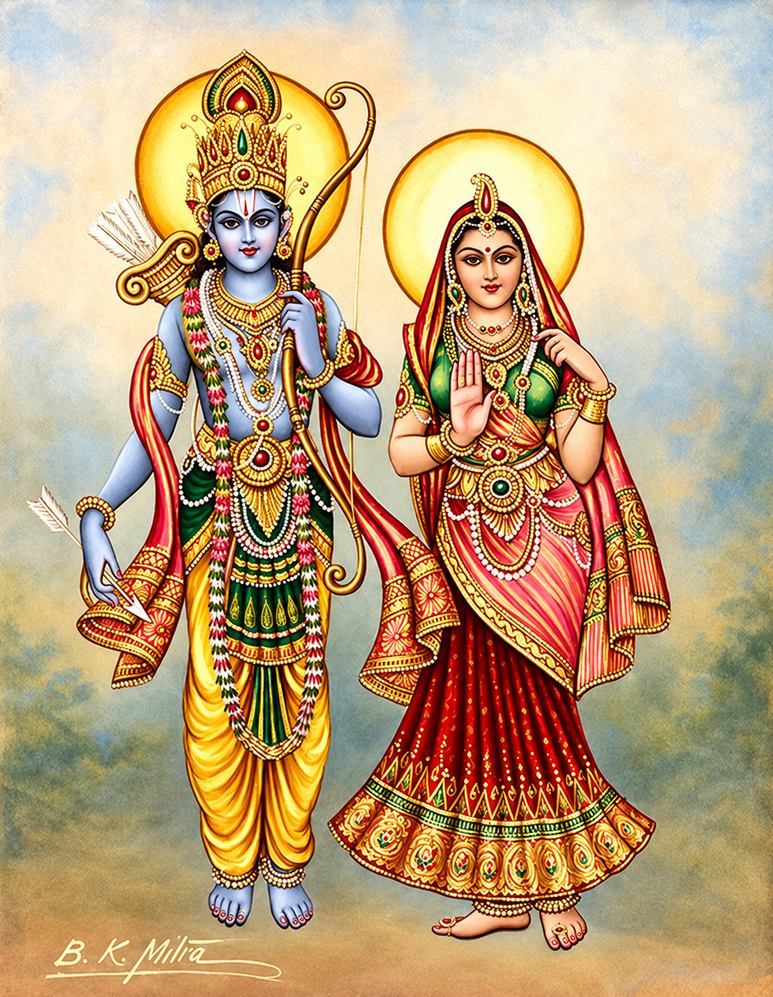
भगवान् श्रीसीताराम
ॐ पूर्णमदः पूर्णमिदं पूर्णात् पूर्णमुदच्यते।
पूर्णस्य पूर्णमादाय पूर्णमेवावशिष्यते॥
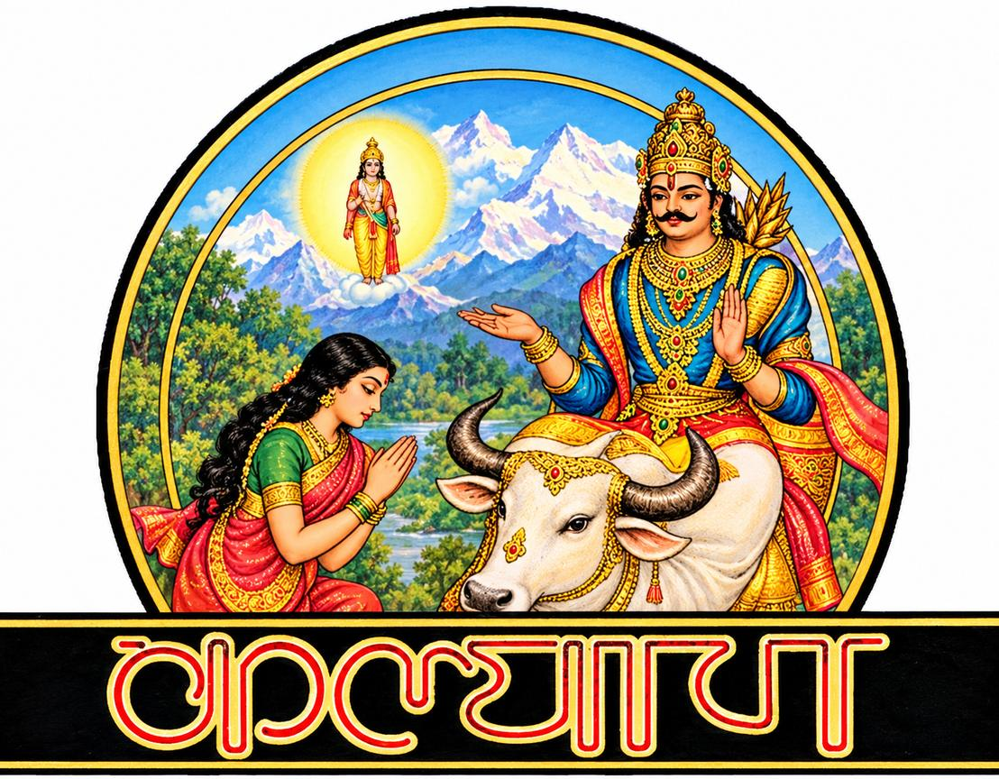
विद्याः समस्तास्तव देवि भेदाः
स्त्रियः समस्ताः सकला जगत्सु।
त्वयैकया पूरितमम्बयैतत्
का ते स्तुतिः स्तव्यपरा परोक्तिः॥
सीता-स्तवन
जयति श्रीजानकी भानु-कुल-भानु की,
प्राणप्रिय वल्लभे तरणि भूपे।
राम आनंद-चैतन्यघन-विग्रहा,
शक्ति आह्लादिनी साररूपे॥
जयति चितचरणचिन्तनि जेहि धरति हृत
काम-भय-कोह-मद-मोह-माया।
रुद्र-विधि-विष्णु-सुर-सिद्ध-वंदितपदे,
जयति सर्वेश्वरी रामजाया॥
कर्म-जप-योग-विज्ञान-वैराग्य लहि,
मोक्षहित योगि जे प्रभु मनावैं।
जयति वैदेहि सब शक्ति शिरभूषणे,
ते न तव दृष्टि बिनु कबहुँ पावैं॥
जयति जय कोटि ब्रह्माण्ड की ईशि,
जेहि निगम-मुनि बुद्धि तें अगम गावैं।
विदित यह गाथ अहदान-कुल-भाथ सो
नाथ तव दान ते हाथ आवैं॥
दिव्य शत वर्ष जप-ध्यान जब शिव धरॺो,
राम गुरुरूप मिलि पथ बतायौ।
चितै हित लीन लखि कृपा कीन्हीं तबै,
देवि, दुर्लभ देव-दरस पायौ॥
जयति श्रीस्वामिनी सीय-सुभ-नामिनी,
दामिनी कोटि निज देह दरसैं।
इंदिरा आदि दै मत्त-गज-गामिनी,
देव-भामिनी सबै पाँव परसैं॥
दुखित लखि भक्त बिनु दरस निज रूप तप-
यजन-जप-तंत्र तें सुलभ नाहीं।
कृपा करि पूर्णनवकंजदललोचना,
प्रकट भइ जनकनृप-अजिर माहीं॥
रमित तव विपिन प्रिय प्रेम प्रगटन करन,
लंकपति-व्याज कछु खेल ठान्यौ।
गोपिका कृष्ण तव तुल्य बहु जतन करि,
तोहि मिलि ईश आनंद मान्यौ॥
हीन तव सुमुखि कै संग रहि रंक सों,
विमुख जो देव नहिं नाथ नेरौ।
अधम-उद्धरण यह जानि गहि शरण तव,
दास तुलसी भयौ आय चेरौ॥
(गो० तुलसीदासजी)
पञ्च-महाशक्ति
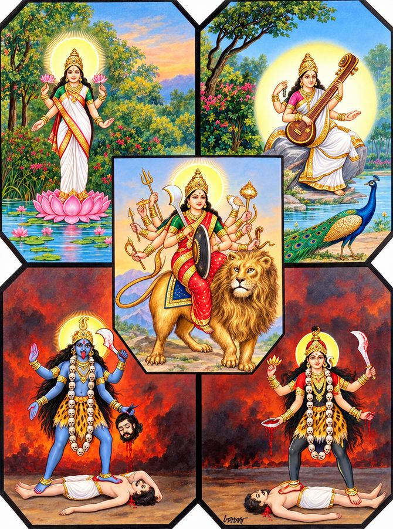
महाशक्तियाँ पाँच प्रमुख हैं—लक्ष्मी, सरस्वती, काली।
तारा, दुर्गा—ये सब-की-सब हैं अनन्त प्रभुताशाली॥
विश्वेश्वरी-स्तवन
देवि प्रपन्नार्तिहरे प्रसीद
प्रसीद मातर्जगतोऽखिलस्य।
प्रसीद विश्वेश्वरि पाहि विश्वं
त्वमीश्वरी देवि चराचरस्य॥
शरणागतकी पीड़ाका हरण करनेवाली देवि! हमपर प्रसन्न होओ। अखिल जगत्की जननी! प्रसन्न होओ। विश्वेश्वरि! विश्वकी रक्षा करो। देवि! तुम्हीं चराचर जगत्की अधीश्वरी हो।
त्वं वैष्णवी शक्तिरनन्तवीर्या
विश्वस्य बीजं परमासि माया।
सम्मोहितं देवि समस्तमेतत्
त्वं वै प्रसन्ना भुवि मुक्तिहेतुः॥
तुम अनन्त बलसम्पन्न वैष्णवी शक्ति हो। इस विश्वकी बीजरूपा परा माया हो। देवि! तुमने इस समस्त जगत्को भलीभाँति मोहित कर रखा है। तुम्हीं प्रसन्न होनेपर इस पृथ्वीपर मोक्षकी प्राप्ति कराती हो।
विद्याः समस्तास्तव देवि भेदाः
स्त्रियः समस्ताः सकला जगत्सु।
त्वयैकया पूरितमम्बयैतत्
का ते स्तुतिः स्तव्यपरा परोक्तिः॥
देवि! समस्त विद्याएँ तुम्हारे ही स्वरूपभेद हैं। जगत्में जितनी स्त्रियाँ हैं, सब तुम्हारी ही मूर्तियाँ हैं। जगदम्बे! एकमात्र तुम्हारे ही द्वारा यह सारा विश्व व्याप्त है। तुम्हारी क्या स्तुति हो सकती है? तुम स्तवन करने योग्य पदार्थोंसे परे और परा वाणी हो।
विश्वेश्वरि त्वं परिपासि विश्वं
विश्वात्मिका धारयसीति विश्वम्।
विश्वेशवन्द्या भवती भवन्ति
विश्वाश्रया ये त्वयि भक्तिनम्राः॥
विश्वेश्वरि! तुम विश्वका पालन करती हो। विश्वात्मिका हो, अतः समस्त विश्वको धारण करती हो। तुम विश्वाधिपतिकी भी वन्दनीया हो। जो लोग भक्तिपूर्वक तुम्हारे सामने सिर झुकाते हैं, वे सम्पूर्ण विश्वके आश्रयरूप हो जाते हैं।
(दुर्गासप्तशती)
मातृ-स्तोत्र
व्यास उवाच
पितुरप्यधिका माता गर्भधारणपोषणात्।
अतो हि त्रिषु लोकेषु नास्ति मातृसमो गुरुः॥
नास्ति गंगासमं तीर्थं नास्ति विष्णुसमः प्रभुः।
नास्ति शम्भुसमः पूज्यो नास्ति मातृसमो गुरुः॥
नास्ति चैकादशीतुल्यं व्रतं त्रैलोक्यविश्रुतम्।
तपो नानशनात्तुल्यं नास्ति मातृसमो गुरुः॥
नास्ति भार्यासमं मित्रं नास्ति पुत्रसमः प्रियः।
नास्ति भगिनीसमा मान्या नास्ति मातृसमो गुरुः॥
न जामातृसमं पात्रं न दानं कन्यया समम्।
न भ्रातृसदृशो बन्धुर्न च मातृसमो गुरुः॥
देशो गंगान्तिकः श्रेष्ठो दलेषु तुलसीदलम्।
वर्णेषु ब्राह्मणः श्रेष्ठो गुरुर्माता गुरुष्वपि॥
पुरुषः पुत्ररूपेण भार्यामाश्रित्य जायते।
पूर्वभावाश्रया माता तेन सैव गुरुः परः॥
मातरं पितरं चोभौ दृष्ट्वा पुत्रस्तु धर्मवित्।
प्रणम्य मातरं पश्चात् प्रणमेत् पितरं गुरुम्॥
माता धरित्री जननी दयार्द्रहृदया शिवा।
देवी त्रिभुवनश्रेष्ठा निर्दोषा सर्वदुःखहा॥
आराधनीया परमा दया शान्तिः क्षमा धृतिः।
स्वाहा स्वधा च गौरी च पद्मा च विजया जया॥
दुःखहन्त्रीति नामानि मातुरेवैकविंशतिम्।
शृणुयाच्छ्रावयेन्मर्त्यः सर्वदुःखाद् विमुच्यते॥
दुःखैर्महद्भिर्दूनोऽपि दृष्ट्वा मातरमीश्वरीम्।
यमानन्दं लभेन्मर्त्यः स किं वाचोपपद्यते॥
इति ते कथितं विप्र मातृस्तोत्रं महागुणम्।
पराशरमुखात्पूर्वमश्रौषं मातृसंस्तवम्॥
सेवित्वा पितरौ कश्चिद् व्याधः परमधर्मवित्।
लेभे सर्वज्ञतां या तु साध्यते न तपस्विभिः॥
तस्मात्सर्वप्रयत्नेन भक्तिः कार्या तु मातरि।
पितर्यपीति चोक्तं वै पित्रा शक्तिसुतेन मे॥
व्यासजी कहते हैं—पुत्रके लिये माताका स्थान पितासे भी बढ़कर है; क्योंकि वह उसे गर्भमें धारण कर चुकी है तथा माताके द्वारा ही उसका पालन-पोषण हुआ है। अतः तीनों लोकोंमें माताके समान दूसरा कोई गुरु नहीं है। गंगाके समान कोई तीर्थ नहीं है, भगवान् विष्णुके समान कोई प्रभु नहीं है, शिवके समान कोई पूजनीय नहीं है तथा माताके समान कोई गुरु नहीं है। एकादशीके सदृश कोई त्रिभुवनविख्यात व्रत नहीं है, उपवासके समान कोई तपस्या नहीं है तथा माताके समान कोई गुरु नहीं है। भार्याके समान कोई मित्र नहीं है, पुत्रके समान कोई प्रिय नहीं है, बहिनके समान मान्य कोई स्त्री नहीं है तथा माताके समान कोई गुरु नहीं है। दामादके समान कोई दानका सुयोग्य पात्र नहीं है, कन्यादानके सदृश कोई दान नहीं है, भाईके समान बन्धु और माताके समान कोई गुरु नहीं है। देश वही श्रेष्ठ है, जो गंगाके समीप हो; पत्तोंमें तुलसीका पत्ता श्रेष्ठ है, वर्णोंमें ब्राह्मणश्रेष्ठ है तथा गुरुजनोंमें माता ही सबसे श्रेष्ठ गुरु है। पुरुष पत्नीका आश्रय लेकर स्वयं ही पुत्ररूपमें जन्म लेता है, इस दृष्टिसे अपने पूर्वज पिताका भी आश्रय माता होती है; इसलिये वही सबसे श्रेष्ठ गुरु है। धर्मज्ञ पुत्र माता और पिता दोनोंको एक साथ देखनेपर पहले माताको प्रणाम करके पीछे पितारूपी गुरुको नमस्कार करे। माता, धरित्री, जननी, दयार्द्रहृदया, शिवा, देवी, त्रिभुवनश्रेष्ठा, निर्दोषा, सर्वदुःखहा, परम आराधनीया, दया, शान्ति, क्षमा, धृति, स्वाहा, स्वधा, गौरी, पद्मा, विजया, जया तथा दुःखहन्त्री—ये माताके ही इक्कीस नाम हैं। जो मनुष्य इन नामोंको सुनता और सुनाता है, वह सब दुःखोंसे मुक्त हो जाता है। बड़े-से-बड़े दुःखोंसे पीड़ित होनेपर भी भगवती माताका दर्शन करके मनुष्यको जो आनन्द मिलता है, उसे क्या वाणीद्वारा व्यक्त किया जा सकता है?
ब्रह्मन्! यह मैंने तुमसे परम गुणमय मातृ-स्तोत्रका वर्णन किया है। यह मातृ-स्तोत्र पूर्वकालमें मैंने अपने पिता श्रीपराशरजीके मुखसे सुना था। किसी परम धर्मज्ञ व्याधने केवल माता-पिताकी सेवा करके वह सर्वज्ञता प्राप्त कर ली, जो तपस्वियोंको भी सुलभ नहीं है। इसलिये पूर्ण यत्न करके माता और पिताके चरणोंमें भक्ति करनी चाहिये। यह बात मेरे पिता शक्तिनन्दन पराशरजीने मुझे बतायी थी।
[बृहद्धर्मपुराण, पूर्वखण्ड, अध्याय २, श्लोक ३३ से ४७ तक, व्यास-जाबालि-संवाद]
सती-माहात्म्य
(१)
अनुव्रजन्ती भर्तारं गृहात् पितृवनं मुदा।
पदे पदेऽश्वमेधस्य फलं प्राप्नोत्यसंशयम्॥
व्यालग्राही यथा व्यालं बलादुद्धरते विलात्।
एवमुत्क्रम्य दूतेभ्यः पतिं स्वर्गं व्रजेत्सती॥
यमदूताः पलायन्ते तामालोक्य पतिव्रताम्।
तपनस्तप्यते नूनं दहनोऽपि च दह्यते॥
कम्पन्ते सर्वतेजांसि दृष्ट्वा पातिव्रतं महः।
यावत्स्वलोमसंख्यास्ति तावत्कोटॺयुतानि च॥
भर्त्रा स्वर्गसुखं भुङ्क्ते रममाणा पतिव्रता।
धन्या सा जननी लोके धन्योऽसौ जनकः पुनः॥
धन्यः स च पतिः श्रीमान् येषां गेहे पतिव्रता।
पितृवंश्या मातृवंश्याः पतिवंश्यास्त्रयस्त्रयः।
पतिव्रतायाः पुण्येन स्वर्गसौख्यानि भुञ्जते॥
पतिव्रतायाश्चरणो यत्र यत्र स्पृशेद् भुवम्।
सा तीर्थभूमिर्मान्येति नात्र भारोऽस्ति पावनः॥
बिभ्यत् पतिव्रतास्पर्शं कुरुते भानुमानपि।
सोमो गन्धर्व एवापि स्वपावित्र्याय नान्यथा॥
आपः पतिव्रतास्पर्शमभिलष्यन्ति सर्वदा।
गायत्र्याघविनाशो नः पातिव्रत्येन साघनुत्॥
गृहे गृहे न किं नार्यो रूपलावण्यगर्विताः।
परं विश्वेशभक्त्यैव लभ्यते स्त्री पतिव्रता॥
भार्या मूलं गृहस्थस्य भार्या मूलं सुखस्य च।
भार्या धर्मफलायैव भार्या संतानवृद्धये॥
परलोकस्त्वयं लोको जीयते भार्यया द्वयम्।
देवपित्रतिथीनां च तृप्तिः स्याद् भार्यया गृहे।
गृहस्थः स तु विज्ञेयो गृहे यस्य पतिव्रता॥
यथा गंगावगाहेन शरीरं पावनं भवेत्।
तथा पतिव्रतां दृष्ट्वा सदनं पावनं भवेत्॥
[स्कन्द० ब्रह्मखण्ड (धर्मारण्यखण्ड), अ० ७]
जो नारी अपने मृत पतिका अनुसरण करती हुई घरसे श्मशानकी ओर प्रसन्नताके साथ जाती है, वह पद-पदपर अश्वमेधयज्ञका फल प्राप्त करती है—इसमें तनिक भी संदेह नहीं है। जैसे सर्प पकड़नेवाला सँपेरा साँपको उसके बिलसे बलपूर्वक निकाल लेता है, उसी प्रकार सती स्त्री अपने पतिको यमदूतोंके हाथसे छीनकर स्वर्गलोकमें जाती है। उस पतिव्रता देवीको देखकर यमदूत स्वयं भाग जाते हैं। पतिव्रताके तेजका अवलोकन करके सबको तपानेवाले सूर्यदेव स्वयं संतप्त हो उठते हैं, दूसरोंको जलानेवाले अग्निदेव भी स्वयं ही जलने लगते हैं तथा त्रिभुवनके सम्पूर्ण तेज काँप उठते हैं। अपने शरीरमें जितने रोएँ हैं, उतने अयुत कोटि (उतने ही खर्व) वर्षोंतक पतिव्रता स्त्री स्वर्गमें पतिके साथ विहार करती हुई सुख भोगती है। संसारमें वह माता धन्य है, वह पिता धन्य है तथा वह भाग्यवान् पति धन्य है, जिनके घरमें पतिव्रता स्त्री विराजती है। पतिव्रता स्त्रीके पुण्यसे उसके पिता, माता और पति—इन तीनोंके कुलोंकी तीन-तीन पीढ़ियाँ स्वर्गलोकमें जाकर सुख भोगती हैं। पतिव्रताका चरण जहाँ-जहाँ धरतीका स्पर्श करता है, वह स्थान तीर्थभूमिकी भाँति मान्य है। वहाँ भूमिपर कोई भार नहीं रहता; वह स्थान परम पावन हो जाता है। सूर्य भी डरते-डरते ही अपनी किरणोंसे पतिव्रताका स्पर्श करते हैं। चन्द्रमा और गन्धर्व आदि अपनेको पवित्र करनेके लिये ही उसका स्पर्श करते हैं, और किसी भावसे नहीं। जल सदा पतिव्रता देवीके चरण-स्पर्शकी अभिलाषा रखता है। वह जानता है कि ‘गायत्रीके द्वारा जो हमारे पापका नाश होता है, उसमें उस देवीका पातिव्रत्य ही कारण है। पातिव्रत्यके बलसे ही वह हमारे पापोंका नाश करती है।’ क्या घर-घरमें अपने रूप और लावण्यपर गर्व करनेवाली नारियाँ नहीं हैं? परंतु पतिव्रता स्त्री भगवान् विश्वेश्वरकी भक्तिसे ही प्राप्त होती है। गृहस्थ-आश्रमका मूल भार्या है, सुखका मूल कारण भार्या है, धर्म-फलकी प्राप्ति तथा संतानकी वृद्धिका भी भार्या ही कारण है। भार्यासे इहलोक और परलोक दोनोंपर विजय प्राप्त होती है। घरमें भार्याके होनेसे ही देवताओं, पितरों और अतिथियोंकी तृप्ति होती है। वास्तवमें गृहस्थ उसीको समझना चाहिये, जिसके घरमें पतिव्रता स्त्री है। जैसे गंगामें स्नान करनेसे शरीर पवित्र होता है, उसी प्रकार पतिव्रताका दर्शन करके सम्पूर्ण गृह पवित्र हो जाता है।
(२)
पुरुषाणां सहस्रं च सती स्त्री च समुद्धरेत्।
पतिः पतिव्रतानां च मुच्यते सर्वपातकात्॥
नास्ति तेषां कर्मभोगः सतीनां व्रततेजसा।
तया सार्धं च निष्कर्मा मोदते हरिमन्दिरे॥
पृथिव्यां यानि तीर्थानि सतीपादेषु तान्यपि।
तेजश्च सर्वदेवानां मुनीनां च सतीषु तत्॥
तपस्विनां तपः सर्वं व्रतिनां यत्फलं व्रते।
दाने फलं च दातॄणां तत्सर्वं तासु संततम्॥
स्वयं नारायणः शम्भुर्विधाता जगतामपि।
सुराः सर्वे च मुनयो भीतास्ताभ्यश्च संततम्॥
सतीनां पादरजसा सद्यः पूता वसुन्धरा।
पतिव्रतां नमस्कृत्य मुच्यते पातकान्नरः॥
त्रैलोक्यं भस्मसात्कर्तुं क्षणेनैव पतिव्रता।
स्वतेजसा समर्था सा महापुण्यवती सदा॥
सतीनां च पतिः साध्वीपुत्रो निःशङ्क एव च।
न हि तस्य भयं किञ्चिद् देवेभ्यश्च यमादपि॥
शतजन्मसुपुण्यानां गेहे जाता पतिव्रता।
पतिव्रताप्रसूः पूता जीवन्मुक्तः पिता तथा॥
श्रुतं दृष्टं स्पृष्टं स्मृतमपि नृणां ह्लादजननं
न रत्नं स्त्रीभ्योऽन्यत् क्वचिदपि कृतं लोकपतिना।
तदर्थं धर्मार्थौ सुतविषयसौख्यानि च ततो
गृहे लक्ष्म्यो मान्याः सततमबला मानविभवैः॥
ये ह्यङ्गनानां प्रवदन्ति दोषान्
वैराग्यमार्गेण गुणान् विहाय।
ते दुर्जना मे मनसो वितर्कः
सद्भाववाक्यानि न तानि तेषाम्॥
[वाराहमिहिरकृत बृहत्संहिता]
सती स्त्री सहस्रों पुरुषोंका उद्धार कर देती है। पतिव्रताका पति सब पातकोंसे मुक्त हो जाता है। सतियोंके व्रतके प्रभावसे उनके पतिको कर्मका भोग नहीं भोगना पड़ता। वह सब कर्मोंके बन्धनसे रहित हो सती पत्नीके साथ भगवान् विष्णुके धाममें आनन्दका अनुभव करता है। पृथ्वीपर जितने तीर्थ हैं, वे सब सती-साध्वी स्त्रीके चरणोंमें लोटते हैं। सम्पूर्ण देवताओं और मुनियोंका जो तेज है, वह सब सती नारियोंमें स्वभावतः रहता है। तपस्वी जनोंका सारा तप, व्रत करनेवालोंके व्रतका सम्पूर्ण फल तथा दाताओंके दानका भी समस्त फल मिलकर जितना होता है, वह सब पतिव्रता देवियोंमें व्याप्त रहता है। साक्षात् भगवान् नारायण, भगवान् शिव, जगद्विधाता ब्रह्माजी तथा सम्पूर्ण देवता और महर्षि भी पतिव्रताओंसे सदा डरते रहते हैं। सतीकी चरणधूलि पड़नेसे पृथ्वी तत्काल पवित्र हो जाती है। पतिव्रताको मस्तक झुकानेसे मनुष्य सब पापोंसे छूट जाता है। महापुण्यवती पतिव्रता स्त्री सदा अपने तेजसे तीनों लोकोंको क्षणभरमें भस्म कर डालनेकी शक्ति रखती है। पतिव्रताका पति तथा उसका पुत्र—ये दोनों सदा निर्भय रहते हैं। उन्हें देवताओं और यमसे भी किंचित् भय नहीं होता। जो सौ जन्मोंसे उत्तम पुण्यका संचय करते आ रहे हैं, उन्हींके घरमें पतिव्रता कन्या जन्म लेती है। पतिव्रताको जन्म देनेवाली माता परम पवित्र है तथा उसके पिता भी जीवन्मुक्त हैं। समस्त लोकोंकी रचना करनेवाले विधाताने कहीं भी स्त्रियोंके सिवा दूसरा कोई ऐसा रत्न नहीं उत्पन्न किया है, जो देखने, सुनने तथा स्पर्श और स्मरण करनेपर भी मनुष्योंको आनन्द प्रदान करनेवाला हो। उन्हींके लिये धर्म और अर्थका संग्रह होता है। पुत्रविषयक सुख उन्हींसे प्राप्त होता है। अतः मान ही जिनका धन है, ऐसे श्रेष्ठ पुरुषोंको उचित है कि वे घरमें अबलाओंको गृहलक्ष्मी समझकर सदा उनका आदर करें। [जो लोग केवल वैराग्यमार्गका सहारा ले स्त्रियोंके गुणोंको छोड़कर सिर्फ उनके दोषोंका वर्णन करते हैं, वे दुर्जन हैं—ऐसा मेरे मनका अनुमान है। वे दोषवाक्य उनके मुखसे सद्भावनासे प्रेरित होकर नहीं निकले हैं। ]
पति-स्तोत्र
नमः कान्ताय भर्त्रे च शिवचन्द्रस्वरूपिणे।
नमः शान्ताय दान्ताय सर्वदेवाश्रयाय च॥
नमो ब्रह्मस्वरूपाय सतीप्राणपराय च।
नमस्याय च पूज्याय हृदाधाराय ते नमः॥
पञ्चप्राणाधिदेवाय चक्षुषस्तारकाय च।
ज्ञानाधाराय पत्नीनां परमानन्ददायिने॥
पतिर्ब्रह्मा पतिर्विष्णुः पतिरेव महेश्वरः।
पतिश्च निर्गुणाधारब्रह्मरूपो नमोऽस्तु ते॥
क्षमस्व भगवन् दोषं ज्ञानाज्ञानकृतं च यत्।
पत्नीबन्धो दयासिन्धो दासीदोषं क्षमस्व च॥
शिव (कल्याणमय) और चन्द्र (आह्लादमय) जिनके स्वरूप हैं, जो शान्त (जितात्मा), दान्त (जितेन्द्रिय) तथा सम्पूर्ण देवताओंके आश्रय हैं, सती नारीके कमनीय भर्ता उन पति-परमेश्वरको नमस्कार है। ब्रह्मस्वरूप, सतीके लिये प्राणोंसे भी बढ़कर प्रिय, वन्दनीय, पूज्य तथा हृदयाधार आप पति देवताको प्रणाम है। जो पाँचों प्राणोंके अधिदेवता, नयनोंके तारे, ज्ञानके आधार तथा पत्नीको परमानन्द प्रदान करनेवाले हैं, उन पति भगवान्को नमस्कार है। पति ही ब्रह्मा, पति ही विष्णु और पति ही महेश्वर हैं। निर्गुण एवं सबके आधारभूत ब्रह्म भी पति ही हैं; ऐसी महिमावाले आप पूज्य पतिदेवको प्रणाम है। भगवन्! पत्नीके एकमात्र बान्धव! दयासागर! इस दासीसे जानकर या अनजानमें जो अपराध बन गये हों, उन्हें क्षमा कीजिये। अपनी इस सेविकाके सारे दोष माफ कीजिये।
इदं स्तोत्रं महापुण्यं सृष्टॺादौ पद्मया कृतम्।
सरस्वत्या च धरया गङ्गया च पुरातनम्॥
सावित्र्या च कृतं पूर्वं ब्रह्मणे चापि नित्यशः।
पार्वत्या च कृतं भक्त्या कैलासे शङ्कराय च॥
मुनीनां च सुराणां च पत्नीभिश्च कृतं पुरा।
पतिव्रतानां सर्वासां स्तोत्रमेतच्छुभावहम्॥
सृष्टिके प्रारम्भकालमें लक्ष्मी, सरस्वती, पृथ्वी और गंगा देवीने इस परम पुण्यमय पुरातन स्तोत्रका पाठ किया था। सावित्रीने भी पहले ब्रह्माजीके प्रति नित्य ही इस स्तुतिका उपयोग किया है। पार्वतीने भी कैलासमें शंकरजीके उद्देश्यसे भक्तिपूर्वक इस स्तोत्रका पाठ किया है। इसी प्रकार देवताओं और ऋषियोंकी पत्नियोंने भी अपने-अपने पतिके लिये पूर्वकालमें इस स्तोत्रका पाठ किया है। यह स्तोत्र सभी पतिव्रताओंके लिये कल्याणकारी है।
नारीकी विविध रूपोंमें वन्दना
नमो देव्यै महादेव्यै शिवायै सततं नमः।
नमः प्रकृत्यै भद्रायै नियताः प्रणताः स्म ताम्॥
रौद्रायै नमो नित्यायै गौर्यै धात्र्यै नमो नमः।
ज्योत्स्नायै चेन्दुरूपिण्यै सुखायै सततं नमः॥
कल्याण्यै प्रणतां वृद्धॺै सिद्धॺै कुर्मो नमो नमः।
नैर्ऋत्यै भूभृतां लक्ष्म्यै शर्वाण्यै ते नमो नमः॥
दुर्गायै दुर्गपारायै सारायै सर्वकारिण्यै।
ख्यात्यै तथैव कृष्णायै धूम्रायै सततं नमः॥
अतिसौम्यातिरौद्रायै नतास्तस्यै नमो नमः।
नमो जगत्प्रतिष्ठायै देव्यै कृत्यै नमो नमः॥
या देवी सर्वभूतेषु विष्णुमायेति शब्दिता।
नमस्तस्यै नमस्तस्यै नमस्तस्यै नमो नमः॥
या देवी सर्वभूतेषु चेतनेत्यभिधीयते।
नमस्तस्यै नमस्तस्यै नमस्तस्यै नमो नमः॥
या देवी सर्वभूतेषु बुद्धिरूपेण संस्थिता।
नमस्तस्यै नमस्तस्यै नमस्तस्यै नमो नमः॥
या देवी सर्वभूतेषु निद्रारूपेण संस्थिता।
नमस्तस्यै नमस्तस्यै नमस्तस्यै नमो नमः॥
या देवी सर्वभूतेषु क्षुधारूपेण संस्थिता।
नमस्तस्यै नमस्तस्यै नमस्तस्यै नमो नमः॥
या देवी सर्वभूतेषुच्छायारूपेण संस्थिता।
नमस्तस्यै नमस्तस्यै नमस्तस्यै नमो नमः॥
या देवी सर्वभूतेषु शक्तिरूपेण संस्थिता।
नमस्तस्यै नमस्तस्यै नमस्तस्यै नमो नमः॥
या देवी सर्वभूतेषु तृष्णारूपेण संस्थिता।
नमस्तस्यै नमस्तस्यै नमस्तस्यै नमो नमः॥
या देवी सर्वभूतेषु क्षान्तिरूपेण संस्थिता।
नमस्तस्यै नमस्तस्यै नमस्तस्यै नमो नमः॥
या देवी सर्वभूतेषु जातिरूपेण संस्थिता।
नमस्तस्यै नमस्तस्यै नमस्तस्यै नमो नमः॥
या देवी सर्वभूतेषु लज्जारूपेण संस्थिता।
नमस्तस्यै नमस्तस्यै नमस्तस्यै नमो नमः॥
या देवी सर्वभूतेषु शान्तिरूपेण संस्थिता।
नमस्तस्यै नमस्तस्यै नमस्तस्यै नमो नमः॥
या देवी सर्वभूतेषु श्रद्धारूपेण संस्थिता।
नमस्तस्यै नमस्तस्यै नमस्तस्यै नमो नमः॥
या देवी सर्वभूतेषु कान्तिरूपेण संस्थिता।
नमस्तस्यै नमस्तस्यै नमस्तस्यै नमो नमः॥
या देवी सर्वभूतेषु लक्ष्मीरूपेण संस्थिता।
नमस्तस्यै नमस्तस्यै नमस्तस्यै नमो नमः॥
या देवी सर्वभूतेषु वृत्तिरूपेण संस्थिता।
नमस्तस्यै नमस्तस्यै नमस्तस्यै नमो नमः॥
या देवी सर्वभूतेषु स्मृतिरूपेण संस्थिता।
नमस्तस्यै नमस्तस्यै नमस्तस्यै नमो नमः॥
या देवी सर्वभूतेषु दयारूपेण संस्थिता।
नमस्तस्यै नमस्तस्यै नमस्तस्यै नमो नमः॥
या देवी सर्वभूतेषु तुष्टिरूपेण संस्थिता।
नमस्तस्यै नमस्तस्यै नमस्तस्यै नमो नमः॥
या देवी सर्वभूतेषु मातृरूपेण संस्थिता।
नमस्तस्यै नमस्तस्यै नमस्तस्यै नमो नमः॥
या देवी सर्वभूतेषु भ्रान्तिरूपेण संस्थिता।
नमस्तस्यै नमस्तस्यै नमस्तस्यै नमो नमः॥
इन्द्रियाणामधिष्ठात्री भूतानां चाखिलेषु या।
भूतेषु सततं तस्यै व्याप्तिदेव्यै नमो नमः॥
चितिरूपेण या कृत्स्नमेतद् व्याप्य स्थिता जगत्।
नमस्तस्यै नमस्तस्यै नमस्तस्यै नमो नमः॥
स्तुता सुरैः पूर्वमभीष्टसंश्रया-
त्तथा सुरेन्द्रेण दिनेषु सेविता।
करोतु सा नः शुभहेतुरीश्वरी
शुभानि भद्राण्यभिहन्तु चापदः॥
या साम्प्रतं चोद्धतदैत्यतापितै-
रस्माभिरीशा च सुरैर्नमस्यते।
या च स्मृता तत्क्षणमेव हन्ति नः सर्वापदो भक्तिविनम्रमूर्तिभिः॥
(दुर्गासप्तशती अ० ५। ९—८२)
देवीको नमस्कार है, महादेवी शिवाको सर्वदा नमस्कार है। प्रकृति एवं भद्राको प्रणाम है। हमलोग नियमपूर्वक जगदम्बाको नमस्कार करते हैं। रौद्राको नमस्कार है। नित्या, गौरी एवं धात्रीको बारंबार नमस्कार है। ज्योत्स्नामयी, चन्द्ररूपिणी एवं सुखस्वरूपा देवीको सतत प्रणाम है। शरणागतोंका कल्याण करनेवाली वृद्धि एवं सिद्धिरूपा देवीको हम बारंबार नमस्कार करते हैं। नैर्ऋती (राक्षसोंकी लक्ष्मी), राजाओंकी लक्ष्मी तथा शर्वाणी (शिवपत्नी)-स्वरूपा आप जगदम्बाको बार-बार नमस्कार है। दुर्गा, दुर्गपारा (दुर्गम संकटसे पार उतारनेवाली), सारा (सबकी सारभूता), सर्वकारिणी, ख्याति, कृष्णा और धूम्रादेवीको सर्वदा नमस्कार है। अत्यन्त सौम्य तथा अत्यन्त रौद्ररूपा देवीको हम नमस्कार करते हैं, उन्हें हमारा बारंबार प्रणाम है। जगत्की आधारभूता कृति देवीको बारंबार नमस्कार है। जो देवी सब प्राणियोंमें विष्णुमायाके नामसे कही जाती हैं, उनको नमस्कार, उनको नमस्कार, उनको बारंबार नमस्कार है। जो देवी सब प्राणियोंमें चेतना कहलाती हैं, उनको नमस्कार, उनको नमस्कार, उनको बारंबार नमस्कार है। जो देवी सब प्राणियोंमें बुद्धिरूपसे स्थित हैं, उनको नमस्कार, उनको नमस्कार, उनको बारंबार नमस्कार है। जो देवी सब प्राणियोंमें निद्रारूपसे स्थित हैं, उनको नमस्कार, उनको नमस्कार, उनको बारंबार नमस्कार है। जो देवी सब प्राणियोंमें क्षुधारूपसे स्थित हैं, उनको नमस्कार, उनको नमस्कार, उनको बारंबार नमस्कार है। जो देवी सब प्राणियोंमें छायारूपसे स्थित हैं, उनको नमस्कार, उनको नमस्कार, उनको बारंबार नमस्कार है। जो देवी सब प्राणियोंमें शक्तिरूपसे स्थित हैं, उनको नमस्कार, उनको नमस्कार, उनको बारंबार नमस्कार है। जो देवी सब प्राणियोंमें तृष्णारूपसे स्थित हैं, उनको नमस्कार, उनको नमस्कार, उनको बारंबार नमस्कार है। जो देवी सब प्राणियोंमें क्षान्ति (क्षमा)-रूपसे स्थित हैं, उनको नमस्कार, उनको नमस्कार, उनको बारंबार नमस्कार है। जो देवी सब प्राणियोंमें जातिरूपसे स्थित हैं, उनको नमस्कार, उनको नमस्कार, उनको बारंबार नमस्कार है। जो देवी सब प्राणियोंमें लज्जारूपसे स्थित हैं, उनको नमस्कार, उनको नमस्कार, उनको बारंबार नमस्कार है। जो देवी सब प्राणियोंमें शान्तिरूपसे स्थित हैं, उनको नमस्कार, उनको नमस्कार, उनको बारंबार नमस्कार है। जो देवी सब प्राणियोंमें श्रद्धारूपसे स्थित हैं, उनको नमस्कार, उनको नमस्कार, उनको बारंबार नमस्कार है। जो देवी सब प्राणियोंमें कान्तिरूपसे स्थित हैं, उनको नमस्कार, उनको नमस्कार, उनको बारंबार नमस्कार है। जो देवी सब प्राणियोंमें लक्ष्मीरूपसे स्थित हैं, उनको नमस्कार, उनको नमस्कार, उनको बारंबार नमस्कार है। जो देवी सब प्राणियोंमें वृत्तिरूपसे स्थित हैं, उनको नमस्कार, उनको नमस्कार, उनको बारंबार नमस्कार है। जो देवी सब प्राणियोंमें स्मृतिरूपसे स्थित हैं, उनको नमस्कार, उनको नमस्कार, उनको बारंबार नमस्कार है। जो देवी सब प्राणियोंमें दयारूपसे स्थित हैं, उनको नमस्कार, उनको नमस्कार, उनको बारंबार नमस्कार है। जो देवी सब प्राणियोंमें तुष्टिरूपसे स्थित हैं, उनको नमस्कार, उनको नमस्कार, उनको बारंबार नमस्कार है। जो देवी सब प्राणियोंमें मातारूपसे स्थित हैं, उनको नमस्कार, उनको नमस्कार, उनको बारंबार नमस्कार है। जो देवी सब प्राणियोंमें भ्रान्तिरूपसे स्थित हैं, उनको नमस्कार, उनको नमस्कार, उनको बारंबार नमस्कार है। जो जीवोंके इन्द्रियवर्गकी अधिष्ठात्री देवी एवं सब प्राणियोंमें सदा व्याप्त रहनेवाली हैं, उन व्याप्ति देवीको बारंबार नमस्कार है। जो देवी चैतन्यरूपसे इस संपूर्ण जगत्को व्याप्त करके स्थित हैं, उनको नमस्कार, उनको नमस्कार, उनको बारंबार नमस्कार है। पूर्वकालमें अपने अभीष्टकी प्राप्ति होनेसे देवताओंने जिनकी स्तुति की तथा देवराज इन्द्रने बहुत दिनोंतक जिनका सेवन किया, वह कल्याणकी साधनभूता ईश्वरी हमारा कल्याण और मंगल करें तथा सारी आपत्तियोंका नाश कर डालें। उद्दण्ड दैत्योंसे सताये हुए हम सभी देवता जिन परमेश्वरीको इस समय नमस्कार करते हैं तथा जो भक्तिसे विनम्र पुरुषोंद्वारा स्मरण की जानेपर तत्काल ही संपूर्ण विपत्तियोंका नाश कर देती हैं, वे जगदम्बा हमारा संकट दूर करें।
कल्याण
नारी हो या नर—मनुष्य-जीवनका परम और चरम लक्ष्य है भगवत्प्राप्ति* या मुक्ति।
* इन्द्रिय और उनके भोगोंका ज्ञान तो सभी योनियोंमें है, परंतु सदसत् का विवेक केवल मनुष्यमें ही है। पशुको डंडेके भयसे विषयभोगसे हटाया जा सकता है, विषयोंका दोष समझाकर नहीं। मनुष्य ही ऐसा प्राणी है, जो विवेकके द्वारा भगवद्विमुख विषयभोगके दोष और भगवत्प्राप्तिके महत्त्वको समझता है और उसीको जीवनका परम लक्ष्य बनाता है। जो मनुष्य भगवत्प्राप्तिको जीवनका लक्ष्य नहीं बनाता, वह तो पशुसे भी गया-गुजरा है। पशु तो बेचारा विवेक न होनेके कारण इस बातको नहीं समझता, परंतु मनुष्य तो विवेकका दुरुपयोग करता है।
समस्त दुःख-क्लेश, समस्त बन्धन और सब प्रकारके अभावोंकी आत्यन्तिक निवृत्तिका नाम ही मुक्ति है। इस मुक्तिको लक्ष्यमें रखकर ही मनुष्यको मुक्ति प्राप्त करनेके उपायस्वरूप धर्मका साधन करना चाहिये। जो कार्य भगवत्प्राप्तिके अनुकूल है, वही धर्म है; और जो प्रतिकूल है, वही अधर्म है। धर्म कर्तव्य है और अधर्म त्याज्य। इस धर्मका साधन होता है बुद्धि, मन और इन्द्रियोंके सम्यक् शास्त्रीय व्यवहारसे। अतएव इसमें शारीरिक स्वास्थ्य, शारीरिक और मानसिक समृद्धि और जीवन-निर्वाहके योग्य कार्योंकी उपेक्षा नहीं है; वरं जीवनोपयोगी समस्त कार्योंको मोक्षोपयोगी बनाकर ही मुक्ति-पथपर अग्रसर होना है। इसीलिये अर्थ, धर्म, काम और मोक्ष—चतुर्विध पुरुषार्थ हैं। मोक्षके अनुकूल धर्म हो, धर्मसम्मत अर्थ हो और जीवन-धारणोपयोगी धर्मसम्मत ही कामोपभोग हो। धर्मसम्मत अर्थ और काम वही होगा, जो मोक्षके अनुकूल हो और वह अपने साथ ही समस्त परिवार, समाज, राष्ट्र, विश्व—किसीका भी परिणाममें अहित करनेवाला न होकर सबका हित करनेवाला हो।
इसी दृष्टिसे वर्णाश्रमका निर्माण और प्रत्येक व्यक्तिके लिये शास्त्रोंमें तदनुकूल कर्तव्य-कर्मका आदेश है। उद्देश्य—एकमात्र भगवत्प्राप्ति अर्थात् ऐहिक-पारलौकिक सात्त्विक सुख-सम्पत्ति तथा शान्तिका उपभोग करते हुए अन्तमें समस्त बन्धनोंसे मुक्त होकर सच्चिदानन्दघन परमात्मस्वरूपमें अखण्ड स्थिति। और साधन है एकमात्र इसी उद्देश्यकी सिद्धिके लिये भीतरी-बाहरी जीवनका सम्यक् नियन्त्रण और नियोजन करते हुए श्रद्धा तथा निष्ठापूर्वक स्वधर्मका पालन।
नरकी भाँति नारीको भी भगवत्प्राप्ति करनी है, परंतु उसके लिये साधनका स्वरूप नरके साधनकी अपेक्षा विलक्षण है। नारीका स्वधर्म नरके स्वधर्मसे पृथक् है। पृथक् न हो तो वह परिवार, समाज और राष्ट्रमें विशृंखलता उत्पन्न करनेवाला हो जाय एवं इसलिये परिणाममें उनका अहितकारी होनेसे धर्म न रहकर ‘अधर्म’ बन जाय। नरका निर्माण, संरक्षण और संवर्धन नारी ही करती है। नारी यदि इस स्वधर्मसे च्युत हो जाय और नरके धर्मको ग्रहण करने लगे तो नरका अस्तित्व ही नहीं रहे। फलतः नारीका अस्तित्व भी संकटापन्न हो जाय। नर-नारी दोनोंको लेकर ही विश्व और विश्वके समस्त धर्मोंका अस्तित्व है। ये न रहें तो विश्व ही न रहे। अतएव नारीको स्वधर्ममें स्थित रहकर ही अपने लक्ष्यकी ओर अग्रसर होना है। इसीलिये नरकी जननी, नरकी सहधर्मिणी, नरकी संरक्षिका नारी घरमें रहती है और इसीलिये वह पतिमें भगवद्बुद्धि करके अपनी चित्तवृत्तिको सर्वथा भगवत्स्वरूपाकार बनाकर अन्तमें समस्त बन्धनोंसे छूटकर पतिलोक अर्थात् भगवान्के दिव्यधामस्वरूप मुक्तिको सहज ही प्राप्त हो जाती है।
पतिको परमेश्वररूपसे माननेका यही अभिप्राय है कि नारी घरमें रहकर नरका निर्माण, संरक्षण और संवर्धन करती हुई भगवत्-संकल्परूप विश्वकी सेवाके द्वारा भगवान्की सेवा करे; और ‘पति परमेश्वर हैं’, ‘पतिसे विवाह परमेश्वरसे विवाह है’, ‘पतिकासांनिध्य परमेश्वरका सांनिध्य है’, ‘पतिका घर परमेश्वरका मन्दिर है’, ‘पतिकी सेवा परमेश्वरकी सेवा है’, ‘पतिका आज्ञापालन परमेश्वरका आज्ञापालन है’, ‘पतिको सुख पहुँचानेकी चेष्टा परमेश्वरकी प्रसन्नताका हेतु है’ और ‘पतिको सर्वस्व-समर्पण परमेश्वरको सर्वार्पण है’—इस प्रकार बार-बार चित्तकी वृत्तिको पतिके व्याजसे परमेश्वरमें लगाती हुई तद्गतचित्त, तद्गतबुद्धि और तदात्मा होकर अन्तमें परमेश्वरको प्राप्त कर ले। नियम यही है। श्रीभगवान्ने गीतामें कहा है—
तद्बुद्धयस्तदात्मानस्तन्निष्ठास्तत्परायणाः।
गच्छन्त्यपुनरावृत्तिं ज्ञाननिर्धूतकल्मषाः॥
(५। १७)
‘जिनकी बुद्धि और जिनका मन तद्रूप (परमात्मरूप) हो गया है, जिनकी निष्ठा उन परमात्मामें ही है, ऐसे तत्-(परमात्म-) परायण पुरुष ज्ञानके द्वारा पापरहित होकर अपुनरावृत्तिरूप मुक्तिको प्राप्त करते हैं।’
पतिव्रताकी ठीक यही स्थिति होती है। वह एक पतिके सिवा अन्य किसीको जानती ही नहीं, और सब प्रकारसे पतिके साथ घुल-मिलकर एक हो जाती है। इसीसे पतिव्रताका आदर्श ही भक्तिका सर्वोत्तम आदर्श माना गया है और इसीसे पतिव्रताके सामने समस्त देवता सिर झुकाते हैं।
पतिव्रता स्त्री पतिसे अभिन्न होती है। मनु महाराजने कहा है—‘‘जो भर्ता है, वही भार्या है—‘यो भर्ता सा स्मृतांगना’ (९। ४५) और दोनोंको मरणपर्यन्त परस्पर अनुकूल रहकर अर्थ-धर्म-काम-मोक्षरूप चतुर्वर्गको प्राप्त करना चाहिये—स्त्री-पुरुषोंका संक्षेपमें यही परम धर्म है।’’
अन्योन्यस्याव्यभिचारो भवेदामरणान्तिकः।
एष धर्मः समासेन ज्ञेयः स्त्रीपुंसयोः परः॥
(९। १०१)
शिशुपालन, गृहरक्षण आदि छोटे काम हैं और लेख लिखना, व्याख्यान देना, दफ्तरोंमें नौकरी करना बड़ा काम है—ऐसा मानना भूल है। वास्तविक दृष्टिसे देखा जाय तो जितने महत्त्वका काम पहला है, उतना दूसरा है ही नहीं। फिर, कामकी लघुता-महत्ता तो मनकी भावनाके अनुसार हुआ करती है। चर्खा कातनेको लोग बहुत छोटा काम समझते थे और बड़ी-बूढ़ी स्त्रियाँ ही फुरसतसे इस कामको किया करती थीं। परंतु पिछले दिनों जब श्रीगाँधीजीने इसके महत्त्वकी घोषणा की, तब पण्डित मोतीलाल नेहरू, पण्डित मदनमोहन मालवीय, लाला लाजपत राय और श्रीचित्तरंजनदास-सरीखे आजीवन कलम चलानेवाले लोगोंने भी चर्खा चलाया और उनकी बड़ाई हुई। इस प्रकार स्वधर्ममें निष्ठा और उपादेयबुद्धि होनेपर स्वतः ही वह महत्त्वपूर्ण बन जाता है।
इस समय जो स्वधर्म-पालनमें शिथिलता और परधर्म-पालनमें उत्साह दिखायी देता है, इसका कारण है भारतीय ऋषि-मुनि-प्रणीत शिक्षासे पराङ्मुखता। आजका भारत अपनी पुनीत प्राचीन शिक्षासे वंचित है और नवीन विपरीत ज्ञान उत्पन्न करनेवाली परशिक्षासे अभिभूत है। वह सीखा है—
(१) संसारमें क्रम-विकास होता है अर्थात् संसारकी सभी बातोंमें उत्तरोत्तर उन्नति होती है। (२) कुछ ही हजार वर्ष पहलेका कोई इतिहास नहीं प्राप्त होता। (३) आर्य इस देशके निवासी नहीं थे। और (४) धर्म समयानुसार बदलनेवाली चीज है। इसका परिणाम स्वाभाविक ही यह हुआ कि उसकी अपने गौरवमय अतीतसे, अपने त्रिकालज्ञ, सर्वविद्या-विशारद, अलौकिक बुद्धिसम्पन्न, महान् तेजस्वी, सर्वविधसम्पन्न पूर्वपुरुषोंसे, अपने प्राचीन सुख-समृद्धि और ज्ञानैश्वर्यपूर्ण स्वदेशसे और त्रिकालाबाधित धर्मसे श्रद्धा उठ गयी। वह समझने लगा कि ‘पहले सर्वथा अवनति थी, क्रम-क्रमसे उन्नति हुई है। इस समय जैसी उन्नति है, वैसी पहले कभी नहीं थी। अतएव सुख-समृद्धिमें, ज्ञान-विज्ञानमें, विद्या-बुद्धिमें, प्रभाव-ऐश्वर्यमें आजका मानव जितना उन्नत है, उतने न तो कभी हमारे पूर्वपुरुष उन्नत थे, न देश उन्नत था और न संस्कृति उन्नत थी। बल्कि जितना ही पुराना काल था,उतनी ही अधिक अवनति थी; वेद, पुराण, महाभारत, रामायण आदि जितने ग्रन्थ हैं, वे सब इतिहास-युगके अर्थात् चार हजार वर्षसे इधर-इधरके लिखे हुए हैं और वे सभी प्रायः काव्य हैं—कविके मस्तिष्ककी उपज हैं। अतएव उनमें जो लाखों-करोड़ों वर्षों पहलेका गौरवमय वर्णन है, वह मिथ्या है। (बल्कि कई विद्वान् कहानेवाले लोग तो चार हजार वर्ष पहलेके कालको वेद-काल और पंद्रह सौ वर्ष पहलेके कालको रामायण-काल या रामराज्यका काल मानते हैं।) धर्म सामाजिक नियम है और समाजकी परिस्थितिके अनुसार बदलनेवाला है। धर्मशास्त्रोंमें जो विधि-निषेधका वर्णन करके उनका पारलौकिक फल बतलाया है, वह लोगोंको नियन्त्रणमें रखनेके लिये कहा गया है। वस्तुतः वैसा होता नहीं है। और इस देशमें आर्य कभी रहते ही नहीं थे। अतएव लाखों, करोड़ों वर्षोंका जो यहाँका वर्णन है एवं उसमें जो आर्यगाथाएँ हैं, वे सभी कल्पित हैं।’
जब भारतने इस प्रकार समझा तो उसकी अपनी संस्कृतिसे, अपने पूर्वपुरुषोंसे, अपने धर्मसे और अपने यथार्थ देशसे अनास्था हो गयी। और वर्तमान उन्नत कहलानेवाले देशों और राष्ट्रोंको ही आदर्श मानकर वह तदनुकूल अपने जीवनका निर्माण करनेमें लग गया। जहाँ-जहाँ वर्तमान आदर्शसे उसको अपना आचरण या अपना आदर्श प्रतिकूल दिखायी दिया, वहीं-वहीं उसने सुधारकी आवश्यकता समझी, अर्थात् उस अपने आचरण और आदर्शको समूल नष्ट करके उसकी जगह वर्तमान उन्नत कहलानेवाले आचरण और आदर्शके स्थापनकी आवश्यकता समझी और तदनुसार प्रयत्नमें लग गया। इसी प्रयत्नको उसने देशसेवा, मानव-सेवा और धर्म-पालन समझ लिया एवं इस प्रकार वह अपने सर्वनाशमें ही संरक्षण, अपने सांस्कृतिक रूपके आमूल परिवर्तनमें ही उन्नति या विकास समझकर उसीमें लग गया और उत्तरोत्तर उन्नतिकी धारणाके कारण आज भी उसीमें लग रहा है। आज प्राचीनका संहार और नवीनका स्थापन इसीलिये आँखें मूँदकर चल रहा है और इसीलिये नवयुग, नवभारत, नवजीवन, नव-धर्म और नव-निर्माणके नारे लग रहे हैं। आज सारा देश इसी प्रवाहमें प्रवाहित है। और इसीसे भारतीय नारीके स्वरूपमें भी परिवर्तन हो रहा है; क्योंकि इस प्राचीन आदर्शके संहाररूप परिवर्तनमें ही मोहवश आजका नर और उसीके सदृश शिक्षाप्राप्त नारी सच्चे हृदयसे अपनी तथा देशकी उन्नति मान रही है। नैतिक और सांस्कृतिक दिशामें जिस नारीका स्थान सबसे ऊँचा था, उसीके लिये आज यह कहा जा रहा है कि ‘‘भारतीयशास्त्रों, आचारों और प्रथाओंने नारीकी शक्तिको दबाया, उसे कुचला और उसका सर्वनाश कर दिया। अब नारी इस ‘सर्वनाश’ के दलदलसे निकलकर स्वतन्त्र और सुखी होगी।’’ वस्तुतः आज उनकी उन्नतिका आदर्श है यूरोप। अतः वे यूरोपकी निन्दा करते हुए भी सब यूरोपके ही पदानुगामी होकर उसीका अन्धानुकरण कर रहे हैं।*
* विचारशील विदेशी विद्वान् भारतीय हिंदुओंकी प्राचीन सामाजिक रीतियोंपर मुग्ध होकर उनका गुणगान करते हैं। श्रीफ्रेडरिक पिनकाट महोदय कहते हैं—
‘इस प्रकार मान लेनेमें कोई भी शंका नहीं हो सकती कि करोड़ों बुद्धिमान् पुरुष हजारों वर्षोंसे जिन सामाजिक रीतियोंको व्यवहारमें ला रहे हैं, उनके भीतर ऐसा कोई तत्त्व अवश्य होगा जिसके कारण उन्हें हम मूर्खता या अत्याचार कहकर दोषपूर्ण नहीं ठहरा सकते। हिंदुओंके सम्बन्धमें यह बात निःसंकोचरूपसे स्वीकार की जा सकती है, जिनके बारेमें मैक्समूलरने ठीक ही कहा है कि ‘यह दार्शनिकोंकी जाति है।’ यह निश्चित है कि हिंदुओंकी समस्त धार्मिक तथा सामाजिक व्यवस्था उनके शत-शत-वर्षव्यापी गम्भीर चिन्तन तथा सावधानीसे लिपिबद्ध किये हुए अनुभवके फलस्वरूप हैं। हम अंग्रेजलोग उन्हें यान्त्रिक कलाओं तथा प्रयोगमूलक विज्ञानके विषयमें जो कुछ सिखा सकें, सामाजिक विज्ञानके विषयमें हम उन्हें कुछ भी नहीं सिखा सकते। जिनसे समाजमें सुख-समृद्धि तथा शान्तिकी प्रतिष्ठा हो, ऐसे सभी उपायोंको हिंदुओंने बहुत पहलेसे प्रकृतिके शाश्वत तथ्योंके आधारपर स्थापित किये हुए सुव्यवस्थित नियमोंका रूप दे रखा है। उन सब विधानोंमें यदि हम अपने अपरिपक्व विचारोंको घुसेड़नेकी चेष्टा करें तो उससे हानिकी ही सम्भावना है। उसके परिणामस्वरूप हिंदुओंमें भी परस्परविरोधी स्वार्थोंका वह बेतुका संघर्ष प्रारम्भ हो जायगा, जो हमारे यहाँकी निन्दनीय सामाजिक अवस्थाका निदर्शक है।’
इसीसे आज सर्वत्र अधिकारकी पुकार है। आज भारत सर्वथा आत्मविस्मृत है, वह मस्तिष्कसे गुलाम हो गया है। शरीर भले ही स्वतन्त्र हो, पर अन्तर तो दूसरोंके दासत्वको भलीभाँति स्वीकार कर चुका है। यही इस युगकी महान् देन है पुराने भारतवर्षको—आर्यावर्तको और सबसे प्रधान और सुसभ्य प्राचीन आर्यजातिको!!
भारतीय आदर्श है कर्तव्यपालन और यूरोपका आदर्श है अधिकारप्राप्ति। कर्तव्यपालनमें सबके अधिकार अपने-आप ही सुरक्षित रहते हैं और अधिकारकी छीना-झपटीमें किसीका भी अधिकार सुरक्षित नहीं है; क्योंकि अधिकार अंधा होता है। वह केवल अपना ही स्वार्थ देखता है। उसे दूसरेके हितकी जरा भी परवा नहीं होती। इसके विपरीत कर्तव्य प्रकाशरूप होता है, वह पर-हितके लिये त्याग करता है। इसलिये सभीको उनके प्राप्य अधिकार अपने-आप मिल जाते हैं। कर्तव्य त्यागके द्वारा सबकी रक्षा करता है और कर्तव्यशून्य अधिकार प्रहार करके सबका संहार करना चाहता है। इसीसे आज राजा-प्रजा, पूँजीपति-मजदूर, जमींदार-किसान, ब्राह्मण-अब्राह्मण, अड़ोसी-पड़ोसी, पिता-पुत्र, गुरु-शिष्य और भाई-भाई आदि सभीमें झगड़ा है और वह झगड़ा यहाँतक बढ़ा है कि आज ‘दो देह, एक प्राण’ पति-पत्नीमें भी अधिकारका प्रश्न आ गया है। इसीसे यूरोप आदिमें जैसे मजदूरोंके यूनियन (संघ) हैं, वैसे ही पत्नियोंके भी यूनियन बने हैं और जैसे मजदूर अपने अधिकारोंके लिये लड़ते हैं, माँगें पेश करते हैं, हड़ताल करते हैं, वैसे ही ‘पत्नीसंघ’ भी सामूहिकरूपसे पतियोंसे अधिकारकी माँग करता है।*
*अभी कुछ ही दिनों पहलेकी बात है ‘ब्रिटेनके विवाहिता नारीसंघ (Married Womens’ Union)’ -ने एक नया आन्दोलन शुरू किया है। वहाँ तलाकके मुकद्दमोंमें व्यभिचारिणी स्त्रीके पतिको उस स्त्रीके प्रेमी पुरुषके द्वारा हर्जाना दिलाया जाता है। अब ‘महिलासंघ’ कहता है कि ‘जो स्त्री दूसरेके साथ चली जाती है, उसका तो कोर्ट मूल्य निर्धारित करता है पर जो घरके कामोंमें पिसती है, उसका कोई मूल्य नहीं। अतः हर्जानेकी प्रथा बिल्कुल बंद कर देनी चाहिये।’ मतलब यह कि भगानेवाले बदमाशोंपर जो थोड़ा-बहुत हर्जानेका डर है, वह भी न रहे।
कर्तव्यपालनसे जो नारी घरकी रानी बनती है, घरमें सबपर एकच्छत्र शासन करती है, वही अधिकारकी चिन्तामें पड़कर कर्तव्यशून्य हो आज राजमार्गपर नारे लगाती फिरती है। याद रखना चाहिये—कर्तव्यपालनमें त्याग है और त्यागसे ही नारीके अधिकारकी रक्षा होती है। नारों और आन्दोलनोंसे तो अधिकार छिनेगा ही!
पति पत्नीका अर्धांग है और पत्नी पतिका। दोनों मिलकर एक पूरा होता है। जरा विचारो—यदि प्रत्येक आधा-आधा अपनी-अपनी ओर खींचने लगे और जोर पड़नेपर यदि बीचसे कटकर दोनों आधे अलग-अलग हो जायँ तो क्या दशा होगी। दोनों ही मर जायँगे। पर इसके विपरीत यदि दोनों परस्पर दृढ़तासे सटे रहें, एक-दूसरेके सहायक रहकर परस्पर पुष्टि-तुष्टि करते रहें तो दोनों अत्यन्त सुखी रहेंगे और दोनोंकी एकतामें बड़ा विलक्षण सौन्दर्य और माधुर्य निखर उठेगा। संसारका काम भी तभी सुचारुरूपसे चलेगा।
पति और पत्नी दो पहिये हैं, जो गृहस्थकी गाड़ीको एक-दूसरेको समान बल और सहयोग देते हुए चलाते हैं। पर वे तभी ऐसा कर सकते हैं, जब दोनों पहिये दो ओर लगे हों और स्वस्थ तथा गतिशील हों। पर दोनों यदि एक ओर लगा दिये जायँ तो गाड़ी नहीं चल सकती और न एक पहिया कमजोर हो जाय या उसकी चाल रुक जाय, तभी गाड़ी चल सकती है। आज लोग कहते हैं कि ‘दोनोंके समान अधिकार हैं। इसलिये दोनोंको समान कार्य करने चाहिये।’ पर वे यह नहीं सोचते कि दोनों समान कार्य करने लगेंगे तो जैसे दोनों पहिये एक ओर लगा दिये जानेपर गाड़ी उलट जाती है, वही दशा गृहस्थीकी होगी और दोनोंके एक ओर लगनेपर एक-दूसरेको समान बल मिलना असम्भव होनेसे दोनोंकी ही चाल बंद हो जायगी तथा दोनों ही निकम्मे हो जायँगे।
इसीलिये विवाह-संस्कारके द्वारा गृहस्थके संचालनके लिये स्त्री-पुरुषरूपी दोनों पहिये—एक घरकी ओर तथा एक बाहरकी ओर—जोड़ दिये जाते हैं। ये पहिये जुड़े कि गृहस्थकी गाड़ी चली और धर्मसम्पादन आरम्भ हुआ। यही धर्म—दोनों ओर दोनोंके द्वारा अपने-अपने क्षेत्रके अनुकूल कार्य—स्वधर्म है और यही मोक्षोपयोगी है।
कहा जाता है कि पुरुष स्वतन्त्र है और स्त्री परतन्त्र है; परंतु यदि ध्यानसे देखा जाय तो पता लगेगा कि दोनों ही शास्त्रपरतन्त्र हैं। परतन्त्रताका स्वरूप पृथक्-पृथक् है। नारीके बिना पुरुष अधूरा है और पुरुषके बिना नारी अधूरी है। दोनोंका अविनाभाव-सम्बन्ध है। दोनोंको ही एक-दूसरेकी अनिवार्य आवश्यकता है। दोनोंमें ही परस्पर सहकारिता, सहयोग और सौहार्द तथा एकात्मता होनी चाहिये। दोनोंमें जातिगत निन्दनीय दोष भी हैं और दोनोंमें जातिगत श्लाघ्य गुण भी हैं। इसके अतिरिक्त पूर्व-संस्कार तथा वर्तमान वातावरणके अनुसार व्यक्तिविशेषमें व्यक्तिगत दोष-गुण भी होते ही हैं। अतएव न तो सर्वथा निन्दा या प्रशंसाका पात्र पुरुष है और न नारी ही है। जो एककी निन्दा करके दूसरेकी प्रशंसा करते हैं, वे पक्षपात या भ्रमसे ही ऐसा करते हैं। जगत्की रचना ही प्रकृतिको लेकर हुई है। प्रकृति त्रिगुणात्मिका है, अतएव जगत्का कोई भी प्राणी त्रिगुणसे रहित नहीं है। विशेष-विशेष कारणोंसे किसीमें सत्त्व अधिक होता है तो किसीमें रजोगुण अथवा किसीमें तमोगुण। कोई भी प्राणी इनसे मुक्त नहीं है। फिर नर या नारी ही इनसे कैसे मुक्त होंगे। व्यवहारमें यदि हार्दिक प्रेम हो तो अपने-आप ही दोष-दर्शन नहीं होगा और फलतः एक-दूसरेके गुण देखनेसे सहज ही एक-दूसरेमें प्रेमकी वृद्धि होगी। यही पति-पत्नीका परम मनोहर प्रेम-सम्बन्ध है।
इन सब बातोंको समझकर ही हिंदू-गृहस्थ (नर और नारी) अपने-अपने स्वधर्ममें स्थित रहते हैं और सुख-शान्तिपूर्वक जीवन बिताकर अन्तमें परमात्माको प्राप्त हो सकते हैं। यह याद रखना चाहिये कि जहाँ प्रेम है, वहीं आनन्द है और जहाँ द्वेष है, वहीं दुःख है। प्रेम रहेगा तो जीवनमें सुखशान्ति रहेगी ही। सुखशान्तिमें मन अचंचल रहेगा। चंचलतारहित स्थिर मनसे ही भगवान्का चिन्तन होगा और उसीका परिणाम होगा—परम-शान्ति, मुक्ति या भगवान्की प्राप्ति! भारतीय नर-नारी इस मुक्तिपथपर चलकर अपने जीवनको धन्य करें और सारे जगत्के सामने महान् आदर्श उपस्थित करें। तभी उनका और जगत्का कल्याण होगा। कल्याणमय भगवान् सबका कल्याण करें।
‘शिव’
हिंदू-नारीका गौरवपूर्ण पद
हिंदू-नारीका शरीर पवित्र होता है। कोई मनुष्य सबके सामने अँगुलियोंके अग्रभागसे भी उन्हें स्पर्श नहीं कर सकता। कितनी ही हीन दशा उनकी क्यों न हो, बडे़-से-बड़े लोग भी उनके लिये आदरपूर्वक ‘माता’ का ही सम्बोधन करते हैं। —फादर अबे डॺूबो
नारी-धर्म
(अनन्तश्रीविभूषित जगद्गुरु शंकराचार्य श्रीज्योतिष्पीठाधीश्वर स्वामी श्रीब्रह्मानन्द सरस्वतीजी महाराजका उपदेश)
भारतीय समाजमें नारी एक विशिष्ट गौरवपूर्ण स्थानपर प्रतिष्ठित है। आर्यपुरुषने सदा ही उसे अपनी अर्द्धांगिनी माना है। इतना ही नहीं, व्यवहारमें पुरुष-मर्यादासे नारी-मर्यादा सदा ही उत्कृष्ट मानी गयी है। हिंदू-संस्कृति इस भावनासे परिपूर्ण है—
यत्र नार्यस्तु पूज्यन्ते रमन्ते तत्र देवताः।
यत्रैतास्तु न पूज्यन्ते सर्वास्तत्राफलाः क्रियाः॥ *
* जिस कुलमें स्त्रियोंका समादर है, वहाँ देवता प्रसन्न रहते हैं और जहाँ ऐसा नहीं है, उस परिवारमें समस्त (यज्ञादि) क्रियाएँ व्यर्थ होती हैं।
आर्य-संस्कृतिमें नारी-समाजके प्रति यह केवल शाब्दिक सद्भावनाका प्रदर्शन ही नहीं है। भारतीय गृहस्थ-जीवनमें पदे-पदे इसकी व्यावहारिक सार्थकता सिद्ध होती है। भले ही भौतिकवादी पाश्चात्त्यभावापन्न मस्तिष्कोंको इसमें कोई तथ्य न दिखायी दे और नारी-गौरव-रक्षणके साथ दैवी प्रसन्नताकी संगति भले ही उनकी बुद्धिमें न आये; किंतु स्थूल जगत्का सूक्ष्म दैवी जगत्से सम्बन्ध और उसका रहस्य समझनेवालों तथा भारतीय सामाजिक व्यवस्था-विशेषज्ञ धर्ममर्मज्ञोंके निकट इसका रहस्य तिरोहित नहीं है। इसीलिये हिंदू-जीवनमें नारी-मर्यादा सदैव सर्वत्र सुरक्षित रखनेका विशेष ध्यान रखा जाता है। धर्मशास्त्रका स्पष्ट आदेश है—
पिता रक्षति कौमारे भर्ता रक्षति यौवने।
रक्षन्ति स्थविरे पुत्रा न स्त्री स्वातन्त्र्यमर्हति॥ *
* बाल्यावस्थामें पिता, युवावस्थामें पति और वृद्धावस्थामें पुत्र रक्षा करते हैं। स्त्रीको कभी इनसे पृथक् स्वतन्त्र रहनेका विधान नहीं है।
ध्यान रहे, धर्मशास्त्रद्वारा यह कल्याणकारी नारी-स्वातन्त्र्यका अपहरण नहीं है। नारीको निर्बाधरूपसे अपना स्वधर्मपालन कर सकनेके लिये बाह्य आपत्तियोंसे उसकी रक्षाके हेतु पुरुष-समाजपर यह भार दिया गया है। धर्मभीरु पुरुष इसे भार नहीं मानता, धर्मरूपमें स्वीकारकर अपना कल्याणकारी कर्तव्य समझता है। और इसी प्रकार—
स्वधर्मे निधनं श्रेयः परधर्मो भयावहः।*
* दूसरेका धर्म (अपने परमकल्याण मोक्ष-मार्गमें बाधक होनेके कारण) भयावह होता है और अपने धर्ममें मरना भी श्रेष्ठ है।
इस भगवद्वाक्यपर विश्वास करनेवाली धर्माभिमानिनी भारतीय नारी, धर्मशास्त्रकी इस व्यवस्थाको अपनी स्वतन्त्रताका अपहरण अथवा अपने उन्नतिपथमें बाधक नहीं अनुभव करती, अपितु इसी मर्यादामें रहकर लोक-परलोकको उज्ज्वल बनानेवाले सतीत्व-धर्मका दृढ़तापूर्वक पालन करती हुई व्यवहारमें नारीधमर्का आदर्श एवं परमार्थमें परमकल्याण सम्पादन करती है।
नारीधर्मका निर्देश करते हुए धर्मशास्त्र कहता है—
नास्ति स्त्रीणां पृथग्यज्ञो न व्रतं नाप्युपोषितम्।
पतिं शुश्रूषते येन तेन स्वर्गे महीयते॥ *
* स्त्रियोंके लिये पृथक्-रूपसे कोई यज्ञ, व्रत या उपवास करनेकी आवश्यकता नहीं है, केवल पति-परायणताके द्वारा ही वे उत्तम गतिको पा सकती हैं।
धर्मशास्त्रका यह आदेश विशेष महत्त्वपूर्ण एवं सारगर्भित है। इसमें नारीके प्रधान धर्म—पातिव्रत्यका रहस्य भरा है। नारी सदा पुरुषकी चेरी बनी रहे, यह भाव इसका कदापि नहीं है। नारीजीवनको [आधिभौतिक, आधिदैविक एवं आध्यात्मिक] त्रिविधोन्नतिके पथपर प्रतिष्ठित रखनेके लक्ष्यसे ही इस प्रकार पातिव्रत्य-धर्मका विधान है। पतिव्रता स्त्रीका प्रधान समय पतिकी सेवा-शुश्रूषा आदि पति-सम्बन्धी बातोंमें ही व्यतीत होता है। इसलिये स्वाभाविक ही उसकी भावनाएँ पतिप्रधान रहती हैं। इस प्रकार सदा पतिभावना-प्रधान अन्तःकरणवाली पतिव्रता स्त्री मरणकालमें स्वाभाविक रूपसे अपने पतिका चिन्तन करते हुए ही प्राणत्याग करती है। और गीताशास्त्रके—
यं यं वापि स्मरन् भावं त्यजत्यन्ते कलेवरम्।
तं तमेवैति कौन्तेय सदा तद्भावभावितः॥ *
* मरणकालमें जिस भाव (वासना)-का स्मरण करता हुआ शरीरत्याग करता है, उसी भावसे भावित होकर उसी भावप्रधान गतिको प्राप्त होता है।
इस सिद्धान्तानुसार वह स्त्रीयोनिसे मुक्त होकर पुरुषयोनिको प्राप्त होती है तथा पूर्वार्जित धर्मनिष्ठाके प्रभावसे ही पुरुषयोनिमें धर्मनिष्ठ एवं भगवत्परायण होकर अन्तमें मोक्ष प्राप्त कर लेती है। इतना ही नहीं, पतिमें ईश-बुद्धि रखनेवाली पतिव्रता नारी पतिरूपमें सदा भगवान्की उपासना करती हुई मरणोपरान्त भगवान्के लोकको ही प्राप्त होती है।
पातिव्रत्य-पालनकी जो अक्षय महिमा शास्त्रोंमें कही गयी है, वह ‘रोचनार्था फलश्रुतिः’ नहीं, अक्षरशःसत्य है। पातिव्रत्यके प्रभावसे नारी-अन्तःकरणमें ही सत्त्वगुणकी इतनी अधिक वृद्धि हो सकती है कि (‘सत्त्वात् संजायते ज्ञानम्’ के आधारपर) उसके लिये ज्ञानकी प्राप्तितक सम्भव हो जाय। मैत्रेयी आदिके ऐसे ही उदाहरण हैं। पातिव्रत्यकी ऐसी पूर्ण निष्ठा प्राप्त कर लेनेपर नारीको जीव-विकासकी पूर्णता अर्थात् कैवल्यपद मोक्षकी प्राप्तिके लिये जीव-क्रमोन्नतिकी स्वाभाविक कक्षाओंको क्रमशः पार करने और उसके लिये पुरुषयोनिमें जन्म लेनेकी आवश्यकता ही नहीं पड़ती। स्त्रीयोनिसे ही वह मोक्ष प्राप्त कर लेती है। निष्ठाके अनुसार ये पातिव्रत्य-धर्म-पालनके आध्यात्मिक लाभ हैं।
जिस योनिमें प्रसव आदिके कारण अनेकों बार मरणतुल्य कष्ट भोगना पड़ता है, ऐसी स्वाभाविक कष्टप्रद नारीयोनिसे जीवको मुक्त करानेके लिये ही धर्मशास्त्रने नारीके प्रति पातिव्रत्य-धर्मकी प्रतिष्ठा की है। जो नारी पातिव्रत्यका पालन नहीं करती, उसका जीवन कामवासना-प्रधान रहता है, जिससे स्वाभाविक ही कामभावमय उसका मरण होता है—क्योंकि जीवनकालमें जिस भावका प्राधान्य होता है, उसी भावकी स्फूर्ति मरणकालमें होती है और उसीके अनुसार उसकी भावी गति होती है। इसलिये ऐसी स्त्रियोंको पुनः कामप्रधान एवं स्वाभाविक कष्टप्रधान नारीयोनिमें जन्म लेना पड़ता है तथा कामभावकी उग्रता होनेपर और भी नीची पशुयोनियोंको प्राप्त होना पड़ता है। पातिव्रत्य-धर्म नारीयोनिमें जीवको स्वाभाविक क्रमोन्नतिके पथपर प्रतिष्ठित रखता है और उससे विरत होनेपर नारी अपने जीवोन्नतिके स्वाभाविक पथसे च्युत हो जाती है।
पातिव्रत्यके यथोचित पालनसे नारीमें स्वाभाविक-रूपसे ही सिद्धियोंके रूपमें दैवी शक्तियोंका आविर्भाव होता है। यह पातिव्रत्य-धर्म-पालनका आधिदैविक लाभ है। पुरुष-शरीरमें जो अलौकिक शक्तियाँ योग, तप आदि कठिन प्रयासपूर्ण उपायोंसे प्राप्त होती हैं, वे नारी-शरीरमें पातिव्रत्य-पालनसे अनायास ही प्राप्त हो जाती है। रामायण, महाभारत आदि भारतीय इतिहासग्रन्थों और पुराणोंमें पातिव्रत्यके प्रभावसे त्रिकालदर्शिनी सिद्धि-सम्पन्ना अनेकों नारियोंके उदाहरण मिलते हैं। वही भारतभूमि है और वही नारीपरम्परा है; भारतीय नारी अपने सतीत्वधर्मका यथावत् पालन कर आज भी वही असाधारण दैवीशक्तियाँ प्राप्त कर सकती है, इसमें सन्देह नहीं।
पातिव्रत्यके आधिभौतिक लाभ—पूर्णसुखमय गार्हस्थ्यजीवन, उत्तम मेधावी धर्मनिष्ठ सन्तान आदि—सहस्रों रूपोंमें स्पष्ट अनुभव किये जाते हैं। नारीधर्मका पूर्णतया वर्णन एवं रहस्योद्घाटन करनेके लिये बहुत अधिक लिखनेकी आवश्यकता होगी। बड़े-बड़े ग्रन्थ लिखे जानेपर भी उसके तत्त्वका पूर्णतया विश्लेषण हो सकेगा या नहीं, इसमें भी सन्देह है। क्योंकि धर्मशास्त्रकी प्रत्येक बात अत्यन्त निगूढ़ एवं दूरतक प्रभाव डालनेवाले वैज्ञानिक रहस्योंसे परिपूर्ण है। इसके नियमोंकी सूक्ष्मता एवं परस्परसम्बद्धता इतनी है कि एकमें थोड़ा भी अन्तर पड़नेपर सम्पूर्ण व्यवस्थापर उसका प्रभाव पडे़ बिना नहीं रहता। भारतीय समाजव्यवस्था, अर्थव्यवस्था, शासनव्यवस्था एवं धर्मव्यवस्था परस्पर इतनी ग्रथित हैं कि उनका स्वरूप विकृत हुए बिना वस्तुतः पार्थक्य हो ही नहीं सकता। धर्मशास्त्रके नियम जीवके जन्म-जन्मान्तरोंतकके अभ्युदय एवं निःश्रेयससे सम्बन्ध रखते हैं और पदे-पदे जीवकी स्वाभाविक क्रमोन्नतिमें सहायक हैं। धर्मतत्त्वका पार पाना वस्तुतः कठिन है। इसीलिये लिखा है—‘धर्मस्य तत्त्वं निहितं गुहायाम्’।धर्मका रहस्य प्रकट करना असाधारण बात है, समाधिगम्यविषय है। इसीलिये धर्मशास्त्रमें नियमोंके पालनपर ही अधिक जोर दिया गया है। साधारण मानवीय बुद्धि धार्मिक नियमोंके रहस्योद्घाटनके प्रयत्नमें तत्त्वतक तो पहुँच नहीं सकती, कुछ-का-कुछ समझकर भ्रमात्मिका अवश्य हो जाती है। इसलिये सर्व-साधारणको धर्मशास्त्रके सम्बन्धमें ‘रहस्य समझने’ और ‘क्यों’ के झगड़ेमें न पड़कर श्रद्धा-भक्तिसे उसके नियमोंका पालन ही करना चाहिये, इसीमें कल्याण है। जो धर्मशास्त्रके अनुसार जितना अधिक अपना जीवन बनाता है, वह सृष्टिचक्रमें जीवक्रमोन्नतिके पथपर उतना ही अधिक अग्रसर होता है।
नारीजातिके लिये सतीत्वधर्म ही उसके सर्वविध कल्याणका एकमात्र उपाय है। यह भी आवश्यक है कि वर्तमान भारतीय नारी इस बातको समझ ले कि अब उसके परमकल्याणकारी सतीत्वधर्मपर भी सामाजिक एवं राजकीय आघात होने लगे हैं। सगोत्रविवाह, असवर्ण-विवाह, विधवाविवाह, तलाक आदि अवाञ्छनीय कलुषित प्रथाके प्रवर्तक, वर्णसंकर-सृष्टॺुत्पादक एवं पैतृक सम्पत्तिमें कन्याधिकार-प्रदायक आदि कुटुम्ब एवं समाजका विध्वंस करनेवाले धर्ममर्यादा एवं अर्थमर्यादाके विरुद्ध राजकीय कानून बनाये जा रहे हैं और इन्हें ‘समाज-सुधार,’ ‘नारी-जागरण’ एवं ‘समानाधिकार’ आदि रोचक नामोंसे पुकारा जा रहा है। शास्त्रबुद्धिविहीन पाश्चात्त्यमुखापेक्षी लोग इनके प्रचारके लिये शतशः प्रयत्न कर रहे हैं; किंतु धर्ममर्मज्ञ समझते हैं कि इस प्रकारकी चेष्टाएँ समाज एवं राष्ट्रकी उन्नतिके लिये सर्वथा हेय हैं। क्योंकि इनसे नारी-जीवनकी पवित्रता भ्रष्ट होकर धर्महीन, उच्छृंखल एवं सतत पतनोन्मुख समाजका सर्जन होगा। इस जीवनमें पचीस-पचास वर्षोंके लिये कुछ दिखावटी ऊपरी व्यावहारिक सुविधा प्राप्त करनेके लालचमें धर्मसे विरत हो रहना और भविष्यके अनेकों जन्मोंमें उन्नतिका मार्ग खो बैठना, यह कोई उन्नति और बुद्धिमानी नहीं है। इसलिये इस समय नारी-जातिको सतर्क रहकर अपने कल्याणकारी धर्मका अवलम्ब नहीं छोड़ना चाहिये। ऐसे धर्मविरुद्ध राजकीय नियमोंको कलियुगके प्रवर्तक समझकर घृणाकी दृष्टिसे देखना चाहिये। भारत स्वतन्त्र हो गया है। वह समय अब दूर नहीं है, जब शासनसूत्र हिंदुत्वाभिमानी धर्माभिमानी गम्भीर पुरुषोंके हाथमें आयेगा। उस समय यह सब दुर्व्यवस्था दूर हो जायगी; किंतु तबतक सतर्कतासे काम लेना चाहिये।
नारी-समाजपर सृष्टि-उत्पादनका भार है। स्वतन्त्र भारतमें वीर, साहसी, मेधावी, पवित्र एवं सर्वतोभावेन उन्नतिशील संततिका सृजन हो—इसके लिये प्रत्येक भारतीय नारीको अपने व्यावहारिक जीवनमें अन्तर्बाह्य पवित्रता बनाये रखनेके लिये सतत सावधान रहना चाहिये, स्वधर्म-प्रतिपादक रामायण-महाभारत आदि धार्मिक ऐतिहासिक ग्रन्थोंका पाठ एवं मनन करना चाहिये। सिनेमा, सहशिक्षा (बालक-बालिकाओंका साथ-साथ पढ़ना) आदि कुप्रथाओंका बहिष्कार करना चाहिये। उपयुक्त समयपर संतानके शास्त्रानुसार संस्कार किये जायँ, इसके लिये विशेष ध्यान रखना चाहिये। साथ-ही-साथ प्रत्येक परिवार एवं समाजका भी कर्तव्य है कि वह कन्या, विवाहिता अथवा विधवा—सभी अवस्थाओंमें नारीको स्वधर्म-पालनकी पूरी सुविधा प्रदान करे और उपयुक्त शिक्षाद्वारा उन्हें पूर्ण सती, पूर्ण माता और उत्तम गृहिणी बनाने तथा प्रत्येक अवस्थामें उन्हें स्वधर्मपर प्रतिष्ठित रह सकनेके योग्य बनाये। इसीसे समाज एवं राष्ट्रकी उन्नति होगी।
नारीधर्मकी रक्षा आवश्यक
(अनन्तश्रीविभूषित जगद्गुरु शंकराचार्य श्रीद्वारिकापीठाधीश्वर स्वामी श्रीअभिनव सच्चिदानन्दतीर्थजी महाराजका सन्देश)
इस समय भारतवर्षमें आधुनिक नेता सुधारके नामपर नारीको न्यायोचित मार्गसे विचलित कर रहे हैं, अतः इसके लिये शास्त्रीय मार्गका अवलोकन कराना आवश्यक है। इस विचारसे ‘कल्याण’ जो यह नारी-अंक प्रकाशित कर रहा है, यह सर्वथा उचित है।
‘सर्वेऽत्र सुखिनः सन्तु’ (यहाँ सब लोग सुखी रहें)—इस कल्याणमयी भावनाका उपदेश करनेवाला ‘कल्याण’ यह अच्छी तरह जानता है कि इस समय, जब कि सब ओर धर्मका ह्रास हो रहा है, केवल स्त्रियोंमें ही कुछ धर्म शेष रह गया है। यदि उनके धर्मका भी ह्रास हो जाय तो ‘स्त्रीषु दुष्टासु वार्ष्णेय जायते वर्णसंकरः॥ संकरो नरकायैव कुलघ्नानां कुलस्य च।’ (स्त्रियोंके दूषित—धर्मभ्रष्ट हो जानेपर वर्णसंकरकी उत्पत्ति होती है, वर्णसंकर संतान कुलघाती पुरुषोंको तथा अपने कुलको भी नरकमें ले जानेवाली होती है।)’ इस भगवद्वचनके अनुसार सब ओर सब प्रकारसे हानि-ही-हानि होगी; इसलिये नारीके धर्मकी रक्षा अत्यन्त आवश्यक है।
धर्मकी रक्षा करनेवाले द्वारकाधीश्वर भगवान् श्रीकृष्णचन्द्रके चरणकमलोंके समीप हम यह आशा करते हैं कि धर्मका, विशेषतः स्त्रियोंके धर्मका कभी ह्रास नहीं होगा; भगवान्की हमलोगोंपर ऐसी ही कृपा बनी रहे।
नारीतीर्थ कांची एवं कावेरी
(अनन्तश्रीविभूषित जगद्गुरु श्रीकांचीकामकोटिपीठाधीश्वर श्रीशंकराचार्यजी महाराजका सदुपदेश)
हमारी जन्मभूमि भारतके आदि-मध्यावसानमें परमब्रह्म स्वयं नारी-रूपसे अवस्थित हैं। भगवती श्रुति कहती हैं—‘त्वं कुमार उत वा कुमारी।’ यह भारतभूमिके सम्बन्धमें स्वरूप-सिद्ध स्थिति है। उत्तरमें हैमवती, मध्यमें विन्ध्यवासिनी और दक्षिणमें समुद्र-तटपर यही श्रीपराशक्ति कौमारावस्थामें विराजमान कन्याकुमारी नामसे अभिहित होती हैं।
भारतभूमिके नौ खण्डोंमें एक खण्ड कुमारिका-खण्ड है। महर्षि अगस्त्यसेवित द्रविड़-भाषा-भाषी इस प्रान्तके दक्षिण भागमें सप्तपुरियोंमें प्रसिद्ध कांची और सप्त महानदियोंमें प्रख्यात कावेरी हैं। श्रीमद्भागवतमें भगवान् व्यासने आधे श्लोकमें इनका वर्णन किया है—
कामकोटिपुरीं काञ्चीं कावेरीं च सरिद्वराम्।
श्रीकांचीकी अधिष्ठात्री हैं—भगवती कामकोटि। प्राचीन कालमें एक मूक बालकने भगवती कामकोटिकी आराधना की और उनकी कृपासे वह महाकवि हो गया। उसने पाँच सौ श्लोकोंसे श्रीअम्बाकी स्तुति की है। यह स्तव ‘मूक-पंचशती’ के नामसे विख्यात है। श्रीकामकोटिका स्वरूप क्या है? मूक कविकी धारणा है कि नारी-शक्तिकी सम्पूर्णता—चरम-सीमा ही भगवतीका स्वरूप है। ‘पुण्या कापि पुरन्ध्री’ ‘नारिकुलैकशिखामणिः’ आदिके द्वारा उन्होंने अपने भावोंको स्पष्ट रूपसे व्यक्त किया है।
कांचीके साथ कावेरीका अभिन्न सम्बन्ध है। शास्त्रोंका कथन है कि सती-शिरोमणि देवी लोपामुद्रा अपने पति भगवान् अगस्त्यके कमण्डलुसे जलरूप धारण करके लोक-कल्याणार्थ कावेरी नामसे प्रवाहित हो रही हैं। श्रीकांचीमें ही कुम्भसम्भवा कावेरीने द्विविध रूप धारण किया है। एकका नाम है उत्तरकावेरी और दूसरीका दक्षिणकावेरी।
जो देश नदीद्वारा सिंचित होकर उर्वर होते हैं, वे नदी-मातृक कहे जाते हैं और जो देश वर्षापर निर्भर करते हैं, वे देव-मातृक होते हैं। चोल देश नदी-मातृक देश है। भगवती कावेरी ही उसकी माता हैं। अपने दक्षिणकावेरी रूपसे वे इस सन्ततिका पोषण करती हैं। इस धाराका प्रायः सम्पूर्ण जल देशके उपयोगमें व्यय हो जाता है। उत्तरकावेरी जिनका विख्यात नाम ‘कोल्लिडम्’ है, उनका सम्पूर्ण जल नदीपति समुद्रमें पहुँचता है। इसके द्वारा मानो श्रीकावेरीजी नारीस्वरूपका एक आदर्श उपस्थित करती हैं कि एक साथ पुत्रका वात्सल्यभावसे पालन-पोषण एवं पतिकी सेवा नारीको करना चाहिये। इसी भावको लक्ष्य कर कविने लिखा है—
तनूभवे वत्सलतानुरागो
धवे समं तद्द्वितयं ममेति।
द्वेधा विभक्तेव कवेरजायं
पुष्णाति सिन्धुं च भजत्यजस्रम्॥
सातों पुरियोंको शास्त्रोंमें मोक्षदायिनी बताया गया है। उनमें कांचीकी अधिष्ठात्री नारी हैं और पुण्य-सरिता कावेरीका तो अनन्त माहात्म्य पुराणोंमें वर्णित है।
नारी-जगत्का आदर और अधिकार
(अनन्त श्रीविभूषित श्रीजगद्गुरु स्वामिरामानुजसम्प्रदायाचार्य श्रीस्वामी भागवताचार्यजी महाराज)
स्वेच्छामयः स्वेच्छया च द्विधारूपो बभूव ह।
स्त्रीरूपो वामभागांशो दक्षिणांशः पुमान् स्मृतः॥
सृष्टिके आरम्भमें परमात्माने अपनेको दो रूपोंमें विभक्त किया; आधेसे वे पुरुष, आधेसे नारी हो गये। वाम भागसे स्त्री और दक्षिण भागसे पुरुष हुए। धर्मप्राण भारतमें वेद, पुराण, स्मृति, इतिहास तथा प्राचीन संस्कृति और सद्धेतुसंवलित तर्कोंके द्वारा तथा प्राकृतिक विज्ञानसे भी स्त्रियोंको पुरुषोंकी अर्द्धांगिनी माना गया है। भारतीय पद्धतिके अनुसार किसी धार्मिक, सामाजिक तथा लौकिक कृत्यमें स्त्री और पुरुषके उत्तरीय वस्त्रोंके छोरोंसे ग्रन्थिबन्धन किया जाता है। बिना ग्रन्थिबन्धन किये कोई भी धार्मिक यज्ञ-यागादि कर्म तथा सामाजिक मंगल-कृत्य नहीं किये जाते हैं। आदर्शप्रधान भारतमें स्त्रियोंको अधिकाधिक सम्मान दिया गया है। इसी देशमें विद्वान्, साधु, संन्यासी, बालक, वृद्ध एवं सद्गृहस्थ—सभी लोग सामान्यतः स्त्री-जातिको माता कहकर पुकारते हैं। सभी गृहस्थोंके घरमें स्त्रियाँ लक्ष्मी समझी जाती हैं। जिस घरमें स्त्रियाँ नहीं रहती हैं, वह घर जंगल कहा जाता है।
‘न गृहं गृहमित्याहुर्गृहिणी गृहमुच्यते।’
‘घरको घर नहीं कहते; जहाँ गृहिणी रहती है, वही घर कहलाता है।’ पुरुष बाहरसे सम्पत्ति कमाकर घरकी स्त्रियोंको सौंप देते हैं। वे स्वतन्त्ररूपसे घरकी सम्पत्तिकी सँभाल तथा उसका सदुपयोग करती हैं। भारतीय प्राचीन परम्पराके अनुसार किसी भी सार्वजनिक स्थान—टिकिटघर, रेलगाड़ी, सभा, कुआँ, तालाब आदि क्षेत्रोंमें स्त्रियोंके लिये विशेष सुविधाके मार्ग अनिवार्यरूपसे खुले होते हैं। जिस गृहस्थके घरमें नारियोंका अपमान होता है, वह घर लक्ष्मीसे शून्य हो जाता है।
नारियोंका अधिकार—भारतीय प्राचीन संस्कृतिसे अनभिज्ञ तथा विदेशी पद्धतिके अनुयायी कुछ आधुनिक शिक्षित लोग आजकल स्त्रियोंके लिये पुरुषोंके समान अधिकार बतलाकर नारी-समाजके लिये अधिक अहितकर ‘तलाकबिल’, ‘समानाधिकारबिल’ आदि धर्मविध्वंसक बिल उपस्थितकर राजकीय कानूनके द्वारा स्त्री-समाजको धर्मभ्रष्ट करनेकी चेष्टा कर रहे हैं। पिताकी सम्पत्तिमें पुत्र और पुत्रीका समान दाय (भाग) बतलाकर स्त्रियोंके परम पवित्र धार्मिक तथा सम्मानित दायको तिलांजलि दी जा रही है। हमारे धर्मशास्त्र तथा प्राचीन पद्धतिके अनुसार पिताकी सम्पत्तिमें पुत्रसे अधिक अधिकार पुत्रियोंको दिया गया है। जैसे किसी गृहस्थके एक पुत्र और एक पुत्री है। पुत्रकी वधू अपने पिताके घरसे आयेगी और पुत्री अपने पतिके घर जायगी। यदि पुत्री अपने पिताकी आधी सम्पत्ति लेकर पतिके घर गयी तो पुत्रवधू भी पिताके घरसे अपने हिस्सेका धन लेकर पतिके घर आयी; इससे लाभ ही क्या हुआ? घरकी सम्पत्ति बाहर गयी और बाहरसे घर आयी। सच पूछिये तो पुत्रियोंके लिये हानि ही हुई। पिताके धनमें पुत्रोंकी तरह पुत्रियोंके लिये दाय ‘भाग’ न बताकर धार्मिक दृष्टिसे कन्याओंके लिये धन, वस्त्र, आभूषण आदिका दान अत्यन्त आवश्यक और अनिवार्य माना गया है। इसीमें कन्याओंका सम्मान है। पुत्रियोंके विवाहमें दहेज देनेकी प्रथा अनादिकालसे चली आती है और माता-पिता विविध क्लेश सहकर भी दहेज देना धर्म समझते हैं। पुत्रियोंका विवाह हो जानेके बाद भी जीवनभर अपनी शक्तिके अनुसार सर्वदा उनको कुछ-न-कुछ दिया ही जाता है। विवाहके समय तो सामर्थ्यानुसार आभूषण, वस्त्र, हाथी, घोड़े, दास, दासी, सुवर्ण, भूमि अनेक महादान दिये जाते हैं। पुत्रियोंकी सन्तान तथा सन्तानकी परम्परा सर्वदा मातृ-कुलसे धन, आदर, महत्त्व तथा पूजा पाती ही रहती है। मातृकुलका परिवार पुत्री और उसकी संततिको सदा पूज्य समझता तथा आदर करता है। यदि पुत्रोंकी तरह पुत्रियोंको भी पिताकी सम्पत्तिमें कानून बँटवारा किया गया तो यह विधान सर्वथा विनाशकारी होगा। अपने घरमें दूसरेका धन आयेगा और अपने घरका धन दूसरेके घर जायगा। इस तरह बड़ी भारी अनवस्था एवं अव्यवस्था हो जायगी। कहीं अचल सम्पत्ति रही, तो दो-दो स्थानोंमें सम्पत्तिको सँभालना साधारण गृहस्थोंके लिये महान् दुःखप्रद होगा। एक सम्पत्तिशाली पिताके घरमें यदि पाँच पुत्र तथा पाँच पुत्रियाँ रहीं तो उसे पाँच पुत्रोंके श्वशुर-गृहोंमें जाकर बँटवारा करना पड़ेगा और उसके घरमें पाँच दामाद आकर बँटवारा करेंगे। चल और अचल सम्पत्ति छिन्न-भिन्न हो जायगी। अतः हमारी प्राचीन पद्धति ही श्रेयस्कर है। अर्वाचीन पद्धतिके समानाधिकारसे यदि पति-पत्नी दोनों ही किसी मास्टरी या क्लर्कीपर काम करने बैठें तो भोजनके अतिरिक्त बच्चोंके पालन-पोषणके लिये भी होटलोंकी आवश्यकता पड़ जायगी। अतः अपने यहाँकी प्राचीन शास्त्रीय पद्धतिका अनुसरण ही स्त्री और पुरुष दोनोंके लिये कल्याणकारी है।
नारी-धर्मकी महत्ता
(अनन्तश्रीविभूषित श्रीमद्रसालपुरपीठाधीश्वर जगद्गुरु स्वामी श्रीपुरुषोत्तम नृसिंह भारती महाराजका सदुपदेश)
(हमें हर्ष होता है कि इस साल ‘कल्याण’ का विशेषांक ‘नारी-अंक’ होगा।)
‘यत्र नार्यस्तु पूज्यन्ते रमन्ते तत्र देवताः।’
—शास्त्रके इस वचनके अनुसार स्त्री-धर्मकी रक्षासे ही भारत देवताओंका निवास-स्थान बना था। देवताओंको अमरलोकसे मर्त्यलोकमें उतारनेके लिये एक नारी-धर्म ही समर्थ है। प्राचीनकालसे भारतमें सती सावित्री, देवी सीता, माता अनसूया इत्यादिको नारी-धर्मका आदर्श माना गया है।
खेदका विषय है कि इस समय पूजनीय भारतीय नारी-धर्मपर लगातार हस्तक्षेप हो रहा है। हमारी कुछ मातृ-भगिनियोंके मनमें भी कलुषित भावोंकी उत्पत्ति देखी जाती है। आशा है, इस नारी-विशेषांकसे हमारी माताएँ और बहनें अवश्य शिक्षा ग्रहण करेंगी।
अन्तमें प्राचीनकालसे प्रसिद्ध भारतीय नारी-धर्मके उज्ज्वल स्वरूपका पुनः पूर्व स्थितिमें सबको दर्शन हो, अपने उपास्यदेव श्रीराजराजेश्वरी ललिताम्बा-श्रीचन्द्रमौलीश्वर तथा श्रीलक्ष्मीनृसिंहके चरणारविन्दमें यही हमारी नित्य प्रार्थना है।
मातृदेवो भव
(लेखक—श्रीमज्जगद्गुरु श्रीरामानुजसम्प्रदायाचार्य आचार्यपीठाधिपति श्रीराघवाचार्य स्वामीजी महाराज)
नारी मातृदेवता है। भारतीय संस्कृतिने उसको माताके रूपमें उपस्थितकर इस रहस्यका उद्घाटन किया है कि वह मानवके कामोपभोगकी सामग्री न होकर उसकी वन्दनीया एवं पूजनीया है। इसी नाते मानवधर्मशास्त्र (२। १४५)-में जननीका गौरव उपाध्यायसे दस लाख गुना, आचार्यसे लाखगुना तथा पितासे हजारगुना बढ़कर बताया गया है। गर्भधारणके समयसे लेकर गुरुकुल भेजनेके समयतक पुत्रका पालन-पोषण करते हुए वह अपना जैसा परिचय देती है, उससे यही प्रमाणित होता है कि नारीका स्त्रीत्व मातृत्व ही है। सन्तान चाहे कुपुत्र निकल जाय, परंतु जन्मदात्री माता कभी कुमाता नहीं बन पाती—‘कुपुत्रो जायेत क्वचिदपि कुमाता न भवति।’ उसका स्नेह और वात्सल्य अपनी सन्तानतक ही सीमित नहीं रहता। द्वारपर भिक्षाके लिये आये हुए गुरुकुलवासी ब्रह्मचारियोंको उनकी माताओंके सदृश सप्रेम भिक्षा देकर वह उनको ‘मातृवत् परदारेषु’ अर्थात् परायी स्त्रीको माता समझनेका पाठ पढ़ाती है और इस प्रकार प्रत्यक्षमें समाजकी जननी कहलानेका सौभाग्य प्राप्त करती है। कुदृष्टियुक्त कोई पुरुष उसके पातिव्रत्य-तेजके समक्ष नहीं ठहर पाता और उसके मातृत्वके प्रति श्रद्धावनत होनेके लिये बाध्य होता है।
नारीको यह मातृत्व पुरुषके साथ समानताके सिद्धान्तानुसार किये गये किसी बँटवारेमें नहीं मिला। यदि ऐसा होता तो वह वन्दनीया न हो पाती। शास्त्रीय दृष्टिमें उसका यह मातृत्व दयामयी जगन्माताका प्रसाद है, जिनका रूप कहलानेका गौरव सारे नारीसमाजको प्राप्त हुआ है। विष्णुपुराणकी सूक्ति है—
देवतिर्यङ्मनुष्येषु पुन्नामा भगवान् हरिः।
स्त्रीनाम्नी श्रीश्च विज्ञेया.....................॥
इसका आशय यह निकलता है कि सामान्य रूपमें देवसमाज, तिर्यक्योनि तथा मानवसमाजके पुरुषत्वमें भगवान् विष्णुकी अभिव्यक्ति है और स्त्रीत्वमें लक्ष्मीकी। इसके अतिरिक्त जिन महिलाओंने राष्ट्रका संरक्षण किया है तथा त्याग, तपस्या, सात्त्विकता, सेवा, भगवद्भक्ति आदिके द्वारा इतिहासके पृष्ठोंको अलंकृत करते हुए आदर्श स्थापित किया है, वे जगन्माताकी विशिष्ट विभूतियाँ हैं। इस मर्मको न समझकर पाश्चात्त्य शिक्षासे प्रभावित लोग धर्मशास्त्रोंके उन वचनोंकी दुहाई देकर, जिनमें नारीके जीवनका भार क्रमशः पिता, पति और पुत्रपर डाला गया है, यह भ्रम फैलानेका दुस्साहस करते हैं कि हिंदुओंने नारीके अधिकारोंकी हत्या की है। वस्तुस्थिति इसके सर्वथा विपरीत है। पाश्चात्त्य सभ्यताने आदिम मनुष्यके एक अंगसे नारीकी उत्पत्तिकी कल्पना की और अपने व्यवहारसे उसको मनुष्यके सुखोपभोगका यन्त्र बननेके लिये विवश कर अत्यन्त दुःखद अवस्थातक पहुँचा दिया है। इसके अनुकरणसे आर्यजननीकी भी दुर्दशा होगी। आवश्यकता इस बातकी है कि मानवसमाज नारीसमाजका समादर एवं संरक्षण करे। महर्षि याज्ञवल्क्यने आज्ञा दी है—
भर्तृभ्रातृपितृज्ञातिश्वश्रूश्वशुरदेवरैः।
बन्धुभिश्च स्त्रियः पूज्याः.....................॥
(१। ८२)
‘पति, भ्राता, पिता, कुटुम्बी, सास, ससुर, देवर, बन्धु-बान्धव—इस प्रकार स्त्रीके सभी सम्बन्धियोंका कर्तव्य है कि वे उसका सभी प्रकार सम्मान करें।’
प्रत्येक मनुष्यके इस वैयक्तिक कर्तव्यका समर्थन करते हुए धर्मवाङ्मयने व्यष्टि-सृष्टिके अर्धभागसे पुरुषकी और अर्धभागसे नारीकी उत्पत्ति प्रमाणितकर दाम्पत्य-जीवनमें पति-पत्नीकी एकात्मता स्थापित की है और पतिको पत्नीव्रत तथा पत्नीको पतिव्रता रहनेका आदेश दिया है। उत्तम पतिव्रता नारी केवल पतिमात्रको पुरुष मानती है—‘पतिमात्रं पुरुषं मन्यमाना।’ पतिके अतिरिक्त अन्य कोई पुरुष उसकी दृष्टिमें पुरुष ही नहीं है। ऐसी नारीकी दृष्टिमें पतिके पत्नीव्रत होनेका महत्त्व होता है। तभी तो सती अनसूयाकी आशीर्वादात्मिका आज्ञाके उत्तरमें पतिपरायणा सीताने—‘मातृवद्वर्तते वीरो मानमुत्सृज्य धर्मवित्’—कहकर इस तथ्यकी ओर संकेत किया है कि धर्मज्ञ राम परनारीके प्रति माता-सरीखा व्यवहार करते हैं। भगवती श्रुतिकी घोषणा है—‘मातृदेवो भव’ अर्थात् मातृदेवताके भक्त बनो। इसी घोषणामें माताकी आराधनाका विधान किया गया है। इसीका विराट् एवं व्यापक रूप है नारीसमाजकी आराधना। रामकी मर्यादा इसका निदर्शन है। अतः मानवसमाजका कर्तव्य है कि वह माताकी आराधना करते हुए नारीसमाजकी आराधना करे।
दर्शनशास्त्रमें नारी-जातिका माहात्म्य
(महामण्डलके एक महात्माद्वारा लिखित)
अन्तर्जगत्को देखनेके लिये जो शास्त्र पूज्यपाद महर्षियोंने बनाये हैं, उनको दर्शनशास्त्र कहते हैं। हिंदूशास्त्रके अनुसार वैदिक दर्शनशास्त्रकी सात श्रेणियाँ हैं। न्यायदर्शन तथा वैशेषिक दर्शन—ये दोनों पदार्थवादसम्बन्धी दर्शनशास्त्र कहाते हैं। योगदर्शन और सांख्यदर्शन—ये दोनों सांख्यप्रवचनसम्बन्धी दर्शन हैं। और वेदके कर्मकाण्ड, उपासनाकाण्ड और ज्ञानकाण्डके अनुसार तीन दर्शन हैं, यथा—कर्ममीमांसादर्शन, दैवीमीमांसादर्शन, ब्रह्ममीमांसादर्शन। इन सातों दर्शनोंके सिद्धान्तोंमें पुरुष और प्रकृतिसम्बन्धी विचारका रूपान्तरसे वर्णन है; परंतु प्रकृतिका विस्तृत माहात्म्य सांख्यप्रवचनदर्शनों और मीमांसादर्शनोंमें बहुत कुछ पाया जाता है। वैदिक दर्शनशास्त्रोंके अनुसार सृष्टिकार्यमें प्रकृतिका बहुत कुछ प्राधान्य है। चाहे कोई दर्शनशास्त्र उसको मूलप्रकृति कहे, चाहे कोई महामाया कहे, चाहे कोई ब्रह्मशक्ति कहे—सभी दर्शनशास्त्रोंका यही सिद्धान्त है कि सृष्टिक्रियामें प्रकृतिका ही प्राधान्य है। अतः इस सर्वशास्त्रसंमत सिद्धान्तके विषयमें विचार करनेकी आवश्यकता नहीं है। जिस प्रकार धर्म-पथपर चलकर प्रकृतिकी सेवा करनेसे मनुष्य अभ्युदयको प्राप्त करता है, जिस प्रकार जगज्जननी महामायाके अर्चन और सेवाद्वारा मनुष्य अभ्युदय और निःश्रेयसको प्राप्त करता है, उसी वैज्ञानिक सिद्धान्तका अवलम्बन करके धर्मके गतिवेत्ता पूज्यपाद महर्षियोंने इस सिद्धान्तका निर्णय किया है कि स्त्रियोंके अर्चनद्वारा मनुष्य अवश्य ही अभ्युदय प्राप्त करता है। स्मृतिशास्त्रमें भी कहा है—
‘जहाँ नारीजातिकी पूजा होती है, वहाँ देवतालोग सदा आनन्द करते हैं। जहाँ उनकी पूजा नहीं होती, वहाँ सब प्रकारका धर्म-कार्यानुष्ठान विफल हो जाता है। कल्याण चाहनेवाले पिता, भ्राता, पति, देवर—इन सभीको उचित है कि उसको अलंकार-आभूषणादिसे भूषित करें। जिसके घरमें स्त्रियाँ दुःखित रहती हैं, शीघ्र ही उसका कुल-नाश हो जाता है। जिसके घरमें स्त्रियाँ आनन्दमें रहती हैं, उसका घर दिन-दिन बढ़ता जाता है। जिसके घरमें दुःखिता स्त्री अभिशाप देती है, उसके धन, पशु और सन्तान—सभी नाशको प्राप्त होते हैं। इसलिये शान्तिकामी लोगोंको हरेक उत्सवमें भोजन-भूषणादिसे नारियोंकी पूजा करनी चाहिये।’ (मनुस्मृति अ० ३। ५५—५९)
वैदिक दर्शनोंमें जीव-सृष्टिकी दो स्वतन्त्र धाराएँ बतायी गयी हैं—एक स्त्रीधारा और दूसरी पुरुषधारा। मीमांसादर्शनने भली प्रकारसे सिद्ध कर दिया है कि मूलप्रकृतिसे स्त्रीधाराका विशेष सम्बन्ध है। इस कारण यदि कहा जाय कि स्त्रीमात्र ही प्रकृतिरूपिणी है तो विज्ञान-विरुद्ध नहीं होगा। सप्तशती चण्डीमें और देवीभागवतमें ऐसा कहा है—
विद्याः समस्तास्तव देवि भेदाः
स्त्रियः समस्ताः सकला जगत्सु।
या याश्च ग्रामदेव्यः स्युस्ताः सर्वाः प्रकृतेः कलाः।
कलांशांशसमुद्भूताः प्रतिविश्वेषु योषितः॥
‘समस्त विद्या और सब स्त्रियाँ देवीकी ही रूप हैं।’ ‘सभी ग्राम्य देवियाँ और समस्त विश्वस्थिता स्त्रियाँ प्रकृति माताकी अंशरूपिणी हैं।’
वस्तुतः आर्यजातिमें स्त्रीकी पूजा विहित है। इसी कारणसे शास्त्रोंकी यही आज्ञा है कि नारीजाति स्वतन्त्र न होने पावे, नारीजाति पवित्रतासे भ्रष्ट न होने पावे, आर्यमहिलाओंमें आदर्श सतीत्वका बीज सदा विद्यमान रहे, द्विजातियोंमें विधवा-विवाहकी छाया भी स्पर्श न करने पावे और आर्य स्त्रियाँ मनसे भी परपुरुषको स्मरण करनेमें अपने-आपको कलंकित समझा करें। आर्यनारीकी पूजा कर्तव्य होनेसे ही ये सब सदाचार आर्यजातिमें प्रचलित हैं। जिस प्रकार पार्वत्य देशमें बिखरे हुए प्रस्तरखण्डोंको कोई भी मूल्यवान् नहीं समझता है और हीरा-मणि आदि रत्नोंको प्रस्तर होनेपर भी मनुष्य बड़े यत्नके साथ सुरक्षित रखता है, ठीक उसी प्रकार आर्यजातिके हृदयमें नारी-पूजा एक प्रधान कर्तव्य-कर्मरूपसे खचित है। इसी कारणसे आर्यशास्त्रसमूहने एकवाक्य होकर आर्यमहिलाओंकी पवित्रता, रक्षा और सम्मानवृद्धिके अभिप्रायसे ही उक्त सदाचारोंकी आज्ञा दी है। किसी जिज्ञासुके हृदयमें शंका हो कि ‘यदि नारीमात्र ही प्रकृतिरूपिणी है तो सदाचारभ्रष्टा, अपवित्रा और निरंकुशभावापन्ना स्त्रियाँ क्यों नहीं पूजायोग्य हो सकती हैं? असत् स्त्रियोंको त्याग करनेके लिये शास्त्रोंमें क्यों आज्ञा है?’ इस प्रकारकी शंकाओंका समाधान यह है कि ब्रह्मशक्ति जिस प्रकार ब्रह्मोन्मुखी रहनेसे प्रकृति कहाती है और ब्रह्मसे मुख फेरते ही विकृति कहाने लगती है, उसी प्रकार प्रकृतिके अनुरूप सदाचारवती स्त्री ही प्रकृति-शब्दवाच्य होगी,अन्यथा वह विकृति कहलायेगी। इसी कारणसे प्रकृतिकी पूजा ही शास्त्रसम्मत है, विकृतिकी पूजा शास्त्रसम्मत नहीं है। इस विज्ञानको अन्य प्रकारसे भी समझ सकते हैं कि विकृतिकी पूजा न करनेसे ही प्रकृतिकी पूजा होती है। क्योंकि जबतक विकृतिका अनादर नहीं हो, तबतक प्रकृतिका आदर सम्भव ही नहीं है। इसी कारण वेद और शास्त्रोंमें नारीजातिके विषयमें जिन-जिन सदाचारोंका वर्णन है, वे सब नारीजातिके सम्बन्धसे प्रकृति-पूजाके लिये ही हैं।
दर्शनशास्त्रोंमें और भी लिखा है कि इस संसारके स्थूल-सूक्ष्म प्रपंचके सब अंगोंमें दो प्रकारकी शक्तियाँ देखनेमें आती हैं—एक आकर्षण-शक्ति और दूसरी विकर्षण-शक्ति। स्थूल प्रपंचमें परमाणुसे लेकर ग्रह-उपग्रहोंतकमें इन्हीं आकर्षण और विकर्षणरूपी दोनों शक्तियोंका कार्य स्पष्ट देखनेमें आता है। एक परमाणु एक परमाणुको अपनी ओर सृष्टिके समय खींचता है और लयके समय धक्का देता है। एक पत्थर अथवा काष्ठके परमाणुसमूह उस पत्थर अथवा काष्ठकी उत्पत्तिके समय परस्पर मिल-मिलकर दृढ़ताको प्राप्त होते हैं, यही उस काष्ठ अथवा पत्थरकी राजसिक अवस्था है। इसी अवस्थामें वह काष्ठ अथवा पत्थर वृद्धिको प्राप्त होता है। उन दोनोंमें जब तामसिक परिणाम होता है, तब उनके परस्परमें मिले हुए परमाणु विकर्षणको प्राप्त होकर एक-दूसरेसे अलग हो जाते हैं और तब वह काष्ठ अथवा पत्थर अपने स्वरूपसे नष्ट हो जाता है। एक ब्रह्माण्डके ग्रह-उपग्रहोंकी दशा भी ऐसी ही समझनी उचित है। ग्रह-उपग्रहकी सृष्टि-दशामें परमाणु एकत्र होते हैं और प्रलय-दशामें पृथक्-पृथक् होकर ब्रह्माण्डका प्रलय-संसाधन करते हैं। स्थूल और सूक्ष्म दोनों प्रपंचोंमें आकर्षण और विकर्षण दोनों शक्तियोंका कार्य स्पष्ट देखनेमें आता है। स्थूलका उदाहरण दिया गया, अब सूक्ष्मका उदाहरण दिया जाता है। अन्तःकरणकी वृत्तियोंमें रागकी वृत्तियाँ आकर्षणजनित होती हैं, और द्वेषकी वृत्तियाँ विकर्षणजनित होती हैं। रागवृत्ति क्रमशः बड़ोंमें श्रद्धा, बराबरवालोंमें प्रेम और छोटोंमें स्नेहरूपसे पल्लवित होकर संसार-बन्धनका कारण होती है।
रागकी महिमा यहाँतक है कि राग-वृत्ति क्रमशः महिमा-ज्ञानपूर्वक भगवद्भक्तिका रूप धारण करके भक्तको श्रीभगवान्के चरणारविन्दमें पहुँचा देती है। इन सब दार्शनिक विज्ञानोंके अनुसार चिन्ताशील व्यक्तियोंके हृदयोंमें नारीजातिका माहात्म्य कैसा है, इसका संक्षेपमें ज्ञान हो सकता है। सांख्य-दर्शनविज्ञानके अनुसार यह सिद्धान्त निश्चय किया गया है कि यदि तत्त्वज्ञानी महापुरुषको प्रकृतिका सम्यक् ज्ञान हो जाय तो उससे उसकी मुक्ति अवश्य हो जाती है; यह भी नारी-जातिके माहात्म्यका द्योतक है। पुरुष केवल प्रकृतिका द्रष्टा है और पुरुषके कारण ही प्रकृति परिणामिनी होती है। जगत्की सृष्टि-स्थिति-लय-क्रियामें प्रकृति ही कारण है। दूसरी ओर उसी सिद्धान्तके अनुसार इस संसारमें स्त्री ही माया-मोह या प्रेमरज्जुसे पुरुषको बाँधकर संसारके सब कार्योंमें कारण बनती है। सृष्टि-कार्यमें स्त्रीकी ही बड़ी जिम्मेवारी है। जब जीवपिण्डकी सृष्टि होती है, उस समय पुरुषकी जिम्मेवारी केवल मिनटोंकी है, परंतु स्त्रीको नौ महीनेतक गर्भधारण करना पड़ता है और बालक उत्पन्न होनेपर उसके लालन-पालन आदि सब कार्योंमें माताकी ही प्रधानता रहती है। यही कारण है कि हिंदू-शास्त्रने आज्ञा दी है कि पुत्रको प्रणाम करते समय पहले माताको प्रणाम करना चाहिये। उसके अनन्तर पिताको प्रणाम करना चाहिये। ये सब विज्ञान अति विस्तृतरूपसे मीमांसादर्शनोंमें विवृत हैं। इन्हीं दार्शनिक सिद्धान्तोंपर निर्भर करके स्मृतिशास्त्रने माताकी महिमा सर्वोपरि कही है। कुमारी अवस्थामें जगदम्बाकी प्रतिकृतिरूपसे कन्याकी पूजा करना वेद और शास्त्रोंने हाथ उठाकर सिखाया है। सुहासिनी-पूजा तो कर्मकाण्डका एक अंग है। जैसे संन्यासीगण निवृत्तिमार्गके स्वरूप होनेके कारण पूजनीय हैं, उसी प्रकार स्त्रियोंमें विधवा नारी भी हिंदू-गृहस्थमें निवृत्तिकी मूर्ति मानी जाकर आदर और पूजाकी अधिकारिणी होती है। आर्य-जातिमें नारी-जातिका सतीत्व-तप तो जगत्को पवित्र करनेवाला है।
नारीमें श्रद्धा-विश्वासकी अधिकताका वैज्ञानिक रहस्य
(लेखक—योगिराज स्वामीजी श्रीश्रीमाधवानन्दजी महाराज*)
* जिन्होंने अभी हालमें ही जोधपुरके किलेकी तरह इन्दौरके राजाबागमें पृथ्वीमें गड़ी हुई अनेकों ऐतिहासिक वस्तुओंको ध्यानसे फुट-इंचसहित सही-सही बताकर भारतीय योगविद्याका चमत्कार प्रत्यक्ष सिद्ध कर सबको आश्चर्यचकित कर दिया था।
इस निखिल चराचर जगत्के अन्तरालमें यदि कोई सारभूत पदार्थ है तो वह ब्रह्म ही है-‘सर्वं खल्विदं ब्रह्म।’ इसी ब्रह्मसे इस दृश्यमान जगत्का और प्रत्येक शरीरमें अवस्थित जीवका उद्गम हुआ है। वस्तुतः जीव, ब्रह्म और माया—ये तीनों पदार्थ अनादि हैं और इनका पारस्परिक सम्बन्ध भी अनादि है। वेदान्तमें ‘षण्णामनादित्वम्’ कहकर यही सिद्धान्त प्रतिपादित किया गया है। वास्तवमें माया और जीवकी प्रतीति अज्ञानजन्य है और इस अज्ञानकी निवृत्ति गुरुकृपाके बिना नहीं हो सकती। अस्तु।
मायाविशिष्ट ईश्वरने जीवोंके कर्मफलप्रदानार्थ इस स्पन्दनात्मक जगत्की सृष्टि की है। जहाँ व्यावहारिक सत्तामें माया जड है, वहाँ पारमार्थिक जगत्में ब्रह्मके अतिरिक्त अन्य कोई पदार्थ नहीं। माया ब्रह्मकी शक्ति है। यद्यपि यह माया त्रिगुणात्मिका है, तथापि इसके जड होनेके कारण इसमें तमोगुणकी मात्रा अधिक है। यह तमोगुण इसमें क्यों अधिक है और इसमें कैसे आया, इसका विवेचन तो विषयान्तर होगा। प्रस्तुत विषयमें सर्वप्रथम स्मरण रखनेयोग्य बात यह है कि चेतन जगत्में मायाकी सर्वशक्तिपुंजस्वरूपा स्त्री ही है; मायाकी साकार, सगुण एवं सजीव प्रतिमा स्त्री ही है।
पुरुष और स्त्रीमें जो शारीरिक एवं मानसिक भेद दृष्टिगोचर होता है, उसका मूल कारण उनके मस्तिष्कोंमें वर्तमान परमाणु-वैभिन्य है। प्रत्येक जीवके मस्तिष्कमें बाईस शक्तियाँ हैं—दस मस्तिष्कके दाहिनी और दस बाँयीं ओर, एक ब्रह्मरन्ध्रमें और एक तालुमें। किसी भी जीवके मस्तिष्कमें इन सम्पूर्ण शक्तियोंका उद्घाटन नहीं पाया जाता, किसी एकाध शक्तिका ही प्राधान्य होता है। उदाहरणार्थ, किसीमें ज्ञानशक्तिका विशेष प्रादुर्भाव देखा जाता है, किसीमें भाषणशक्तिका, तो किसीमें लेखन-शक्तिका। ब्रह्मरन्ध्रमें जो इक्कीसवीं शक्ति है, उसका नाम है—अणुतत्त्व और वह आध्यात्मिक शक्तिका केन्द्र है। वैसे तो ब्रह्म सर्वव्यापक है, पर इस पांचभौतिकशरीरमें ब्रह्मका जो अस्तित्व है, वह ब्रह्मरन्ध्रस्थित अणुशक्ति-मार्गद्वारा ही सर्वतोभावेन प्रसारित होता है। तालुके नीचे जो शक्ति है, उसका नाम पार्थिवशक्ति है। इस पार्थिवतत्त्वमें अग्नितत्त्वका अंश अधिक है। इस कारण सूर्यद्वारा ही इसको जीवन मिलता है। हमारे शरीरमें स्थित सूर्य और बाह्य सूर्य दोनों एक ही हैं—‘यथा पिण्डे तथा ब्रह्माण्डे।’ सूर्य ही स्थावर-जंगमका आत्मा है, जैसा कि उपस्थानके मन्त्रोंमें कहा गया है—‘सूर्य आत्मा जगतस्तस्थुषश्च।’ सूर्य और चन्द्र दोनों मायाविशिष्ट ब्रह्मके नेत्र हैं। इनके द्वारा ही जड और चेतन जगत्को जीवन मिलता है। स्त्री अपने पार्थिवतत्त्वद्वारा इस जीवनको प्राप्त करती है और पुरुष अपने अणुतत्त्वद्वारा। सूर्यकी लगभग एक हजार रश्मियाँ हैं, जिनके गुण और प्रभाव पृथक्-पृथक् हैं और जो सब देशोंमें विभिन्नरूपसे पड़ती हैं। इन सूर्यरश्मियोंका विस्तृत विश्लेषण मैंने अपने ‘सूर्यकिरण-विज्ञान’ नामक स्वतन्त्र ग्रन्थमें किया है। पुरुषका तत्त्व सूर्यकी पहली और दूसरी किरणको अधिक आकृष्ट करता है और स्त्रीका तत्त्व सूर्यकी तीसरी किरणको खींचता है। सूर्यकी इस तीसरी किरणमें तमोगुणकी अधिकता है। स्त्रियोंके पार्थिव केन्द्रमें भी तमोगुणके अंश अधिक हैं, क्योंकि वे मायाकी अधिष्ठात्री शक्ति हैं। अतएव वे सूर्यकी तीसरी किरणको, जिसमें तमोगुणकी मात्रा अधिक है, आकृष्ट करती हैं। तमोगुणका अधिष्ठान होनेके कारण तथा तमोगुणका ही आकर्षण करनेके कारण स्त्रियोंमें श्रद्धा-विश्वासकी अधिकता होती है और श्मश्रु आदिका अभाव होता है।
तमोगुण क्रोध, श्रद्धा, विश्वास, आलस्य, निद्रा आदि सात विभागोंमें विभक्त है। इनमें श्रद्धा-विश्वासको छोड़कर शेष सभी धाराएँ दुःखप्रद हैं, बशर्ते कि श्रद्धा-विश्वास जमानेवाला या जो कुछ वह कह रहा है, वह यथार्थ और हितकारी हो। या तो सत्त्वगुणमें श्रद्धा-विश्वासकी मात्रा अधिक होती है, क्योंकि सत्त्वगुणी जीव ‘ज्ञानानुपूर्वी’ होते हैं; अथवा तमोगुणी जीवोंमें श्रद्धा-विश्वासका प्राधान्य होता है, क्योंकि तमोगुणमें शंका-समाधानके लिये अवकाश नहीं रहता। भर्तृहरिने इसी सिद्धान्तको लक्ष्यमें रखकर कहा है—‘अज्ञः सुखमाराध्यः सुखतरमाराध्यते विशेषज्ञः’। स्त्रियोंमें तमोगुणकी मात्रा अधिक होनेके कारण उनमें श्रद्धा-विश्वासकी भावना प्रबल होती है। इसलिये पुरुषकी अपेक्षा स्त्रियोंको बहकाना या फुसलाना अधिक सरल माना जाता है। यदि वे ‘अज्ञ’ हों तो उनकी श्रद्धा प्राप्त करना सरल है; क्योंकि किसी विषयमें ऊहापोह या तर्क-वितर्क करनेकी सामर्थ्यका उनमें अभाव है। यदि वे ‘विशेषज्ञ’ हों तो भी उनका विश्वासभाजन बनना कठिन नहीं, क्योंकि एक तो विदुषी होनेके नाते किसी विषयको हृदयंगम करनेकी प्रखरता उनमें होगी ही और दूसरे उनका स्त्रीत्व ही उन्हें तमोगुणका, श्रद्धा-विश्वासका अधिष्ठान बना देता है।
उपर्युक्त पंक्तियोंमें संक्षेपतः सूर्य-किरण-सिद्धान्तद्वारा नारीमें तमोगुणकी प्रधानता दिखलाकर उसे श्रद्धा-विश्वासका नैसर्गिक अधिष्ठान बताया गया है। नारी-जातिके इतिहासमें उसकी इस श्रद्धा-विश्वासकी भावनाने जो अनुपेक्षणीय योग दिया है, उसके मूलमें यही वैज्ञानिक रहस्य निहित है। इसी भावनाके बलपर नारी जहाँ पथभ्रष्ट हुई है, वहाँ उसने भक्तिद्वारा अपार आध्यात्मिक उन्नति भी की है। गोपीप्रेम तथा मीराँकी प्रेमसाधना—ये नारीके अन्तस्तलमें निहित सात्त्विक श्रद्धा-विश्वासके ही चरम उत्कर्ष हैं। दूसरी ओर पाखण्डियों और दुराचारियोंने भी नारीकी इस दुर्बलताका अनुचित लाभ उठाकर उसे अपनी नारकीय वासनाओंकी तृप्तिका साधन बनाया। इसीलिये इस सावधानीकी साग्रह आवश्यकता है कि नारीकी श्रद्धा-भावनाको जाग्रत् करनेवाला व्यक्ति सदाचारी हो; क्योंकि अनुभव यही बताता है कि स्त्रियाँ अपात्रोंके प्रति भी श्रद्धा-विश्वास करके अपना सर्वस्व खो बैठती हैं। यदि यह सम्भव न हो तो भी कम-से-कम वह शिक्षा तो अवश्य यथार्थ और समीचीन होनी चाहिये, जिसके द्वारा कोई व्यक्ति नारीका विश्वास प्राप्त करना चाहता हो। क्योंकि अनुभव यह भी बताता है कि स्त्रियाँ कुशिक्षाको भी हृदयंगम कर मार्ग-भ्रष्ट हो जाती हैं। यही कारण है कि भारतीय शास्त्रकारोंने नारीकी निरन्तर रक्षा करनेका सत्परामर्श दिया है।
नारीकी महत्ता
(लेखक—ब्रह्मचारी अनन्त श्रीप्रभुदत्तजी महाराज)
या नारी प्रयता दक्षा या नारी पुत्रिणी भवेत्।
पतिव्रता पतिप्राणा सा नारी धर्मभागिनी॥ *
(श्रीविष्णुधर्मोत्तर ३। ३२२। ११)
* जो नारी सब कार्योंमें प्रयत्नशील है, जो नारी सब कार्योंमें दक्ष है, जो नारी पुत्र-प्रसविनी है, जो नारी पतिव्रता है, जो नारी पतिको प्राणसमान प्यार करनेवाली है, वह नारी धर्मभागिनी है।
नीरसता महँ सदा सरसता जो सरसावै।
प्रेम सहित पय प्याइ प्यार करि हमें बढ़ावै॥
सेवा, प्यार, दुलार, दया की जो है मूरति।
पालन, पोषण, स्रजन करत होवै हर्षित अति॥
जननी, भगिनी, कामिनी, बहु रूपनि महँ देइ सुख।
अस नारी निन्दा करैं, ते खल पावैं नरक दुख॥
नर वपन कर सकता है, सृजनकी उसमें शक्ति नहीं। प्रकृतिके बिना पुरुष पंगु है। शक्तिके बिना शिव शव-समान है। ब्रह्माजी सृष्टि करनेको चले। बहुत-सी मानसिक सृष्टि कर डाली, कोई उत्साह नहीं। वृद्धिकी आशा नहीं। नीरस नर कर ही क्या सकता है। सूखे चूनमें जबतक जल न पड़े, सरस न हो, तबतक रोटी कैसे बन सकती है। यदि घृतका, नमकका—सरसता-लावण्यका संयोग न हो, तो सूखे आटेमें तृप्ति नहीं, भोजनमें उत्साह नहीं, स्फूर्ति नहीं। बहुत-सी मानसिक सृष्टि करके भी ब्रह्माजीने अपनेको कृतकार्य नहीं समझा। वे चिन्तित हुए, हताश हुए। अब क्या करें। अन्तमें ब्रह्माके दो रूप हो गये। एक अंगसे नारी और दूसरेसे नर। उनमें कोई अन्तर नहीं, छोटे-बड़ेका भेद-भाव नहीं; किंतु जो नारीरूप हुआ, उसमें सुकुमारता, मादकता, मृदुता, वशीकारिता, सुन्दरता, सरसता तथा आकर्षण नरसे अधिक हुआ। ये ही उसके गुण सृष्टिवृद्धिमें कारण हुए। नरका उसे देखकर ही उत्साह बढ़ गया, उसके अंग-अंगमें स्फूर्ति आ गयी। उसकी एकान्तप्रियता नष्ट हो गयी। उसे मिथुनधर्ममें सरसताका अनुभव हुआ। सृष्टिकी वृद्धि आरम्भ हुई। यदि नारी न होती तो सृष्टि कभी नहीं होती।
आर्य-शास्त्रोंमें भगवान्को माता और पिता दोनों कहा गया है। उनका मातृरूप भी है और पितृरूप भी। हम सब उनकी अबोध सन्तान हैं। छोटे बच्चेका जितना स्नेह मातासे होता है, जितना आकर्षण जननीके प्रति होता है, उतना जनक पिताके प्रति नहीं होता। इसीलिये हमें आरम्भसे ही शक्तिकी उपासना बतायी जाती है, सावित्रीकी दीक्षा दी जाती है। गणेशाय नमः के पूर्व श्री लगायी जाती है। राम, कृष्ण, शिव, विष्णु—कोई क्यों न हों, जबतक उनके पूर्व उनकी शक्ति नहीं, तबतक वे कुछ भी करनेमें समर्थ नहीं। सीताके बिना राम अधूरे हैं। नटेश्वर नारीके बिना अर्धांग हैं, राधाके बिना कृष्ण कौड़ी कामके भी नहीं। उन्हें कोई छाछके मोलमें भी लेनेवाला नहीं। जिस सम्प्रदायमें शक्तिकी उपासना नहीं, वह नीरस सम्प्रदाय है। नारी प्राणदात्री है, वह सरसताका संचार करके सृष्टिके सृजन-कार्यको सुचारुरूपसे संचालित करनेके लिये सुन्दर-से-सुन्दर सर्वश्रेष्ठ साधन है। नारी जगदम्बिका है, जगज्जननी है, सृष्टि-स्थिति तथा प्रलयंकरी है। उसके अनेक रूप हैं।
जब वह पुत्री बनकर आती है तो वह एक कुलकी ही कीर्ति नहीं बढ़ाती, दो कुलोंको गौरवान्वित करती है। अपनी सहज सरसताके कारण दो अपरिचित कुलोंको एकमें सम्बन्धित कर देती है। मधुर सम्बन्धसे परिवारभरमें हास्य-विनोदका पथ परिष्कृत कर देती है। जब वह भगिनीरूपमें लजाती हुई बन्धुके सम्मुख आती है और कम्पित करसे राखी बाँधती है या तिलक काढ़ती है, तो हृदयमें एक नवजीवनका संचार कर देती है, हृदयमें एक प्रकारकी विचित्र स्नेहकी संजीवनी-सी घोल देती है। जब वह नरके सम्मुख नारीरूपमें आती है। जब वह नरके आधे रूपको पूर्ण करने अर्धांगिनीके वेषमें आती है, तो वह घनीभूत सरसताके रूपमें ही अवतरित होती है। मनुष्य उसे पानेके लिये क्या नहीं करता। खानोंको वह प्राणोंका पण लगाकर क्यों खोदता है, इसीलिये कि इससे सुवर्ण-रत्न निकालकर अपनी हृदयेश्वरीको सजाऊँ। मनस्वी होकर भी वह पग-पगपर अपमान क्यों सहता है, इसीलिये कि उसे अपनी प्रियतमाके लिये सुन्दर-से-सुन्दर साड़ी लानी है। अगाध समुद्रमें प्राणोंका मोह परित्याग करके वह इसी आशासे डुबकी लगाता है कि इसके नीचे कहीं मोती मिल जायँ तो अपनी मनोरमाके कण्ठके लिये हार बनाकर उसे सजा दूँ, अपने प्रेमका प्रतीक उसके हृदय-प्रदेशमें डालकर उसे प्रफुल्लित कर दूँ। यदि नारीका प्यार प्राप्त न हो, उसके नीरस जीवनमें सहधर्मिणीने सरसताका संपुट न लगाया हो, तो वह क्यों धूपमें दौड़ता, क्यों प्राणोंका पण लगाकर सब कुछ करनेको उद्यत हो जाता। ईंट, पत्थर, मिट्टीके बने घरको घर नहीं कहते; इनमें तो बड़ी-बड़ी दाढ़ी-जटाओंवाले बाबाजी भी रहते हैं। किंतु वे घर नहीं, कुटियाँ हैं। घर तो घरवालीसे ही कहाता है। ‘गृहिणी गृहमुच्यते।’ गृहकी अधीश्वरी ही न हो तो घर कैसा? गृहस्थिनी ही न हो तो गृहस्थी कैसी? नारीके बिना नरकी शोभा नहीं।
वही नारी जब जननी बनकर सन्तानके सम्मुख आती है, तब तो वह अपने समस्त स्नेहको अपने स्तनोंद्वारा सन्तानको पिला देती है, सेवाका अनुपम आदर्श उपस्थित कर देती है। स्वयं गीलेमें सोकर सुतको सूखेमें सुलाती है, स्वयं भूखी रहकर बच्चेको भोजन खिलाती है, स्वयं प्यासी रहकर पुत्रको पानी पिलाती है, स्वयं न नहाकर पुत्रको नहलाती है। अपने तनसे भी अधिक मानकर आत्माकी प्रतिकृति आत्मीयको सुख पहुँचाती है। इस प्रकार नारीको हम विभिन्न रूपोंमें पाते हैं और जिस रूपमें भी पाते हैं, उसीमें उसे सेवा करते, अपने-आपको मिटाते और अपना अपनापन हटाते ही पाते हैं। छोटी होती है, पूछते हैं—तू कौन है? लजाकर अपने बापका नाम बताती है। पुत्रको स्वयं प्रसव करती है, पालती है, पोसती है; किंतु उसका नाम कोई नहीं जानता, पुत्रको सब पिताके ही नामसे जानते हैं। उसने अपना पृथक् अस्तित्व बनाया ही नहीं। पतिमें ही उसने अपनेको मिला दिया। उसका पति पण्डित है और स्वयं निरक्षरा है; फिर भी वह पण्डितानी कहलावेगी। उसका पति वैद्य है, वह वैद्यक कुछ भी नहीं जानती; फिर भी वह वैद्यानीके नामसे गर्वपूर्वक बोलती है। जबतक पिताके घरमें रही, तबतक उसने अपनी पृथक् सत्ता स्थापित नहीं की। पतिके घर आयी, तो सबको छोड़कर चली आयी। अपने पिताका गोत्र भी त्याग दिया। यहाँ भी उसने पतिमें अपनेको मिला दिया। इतना त्याग अन्यत्र कहाँ मिलेगा।
लोग बाहर साधना करके साधु कहलाते हैं; किंतु वह घरमें रहकर भी इतनी उग्र साधना करती है कि ब्रह्मा, विष्णु, महेशतक उससे डर जाते हैं। वह त्रिदेवोंको बच्चा बना सकती है, वह सूर्यकी गतिको रोक सकती है और सर्वज्ञ विष्णुको शाप दे सकती है। सती-साध्वी पतिप्राणा नारीके लिये संसारमें कोई असाध्य कार्य नहीं। वह जो चाहे कर सकती है, उसका महत्त्व सबसे बड़ा है। भगवान्ने भक्तोंसे और पतिव्रताओंसे ही हार मानी है।
नारीको सदा अवध्या बताया है, किसी भी वर्गकी नारी क्यों न हो। कैसी भी नारी क्यों न हो, उसे मारना घोर पाप है। नारीका सर्वत्र सम्मान किया जाता है, उसे वाहनमें पहले चढ़ाया जाता है। नारीके अंगमें देवताओंका वास है। जहाँ नारी-पूजा होती है, वहाँ सभी देवता निवास करते हैं। जिसने दुःखमें पड़ी एक भी नारीकी रक्षा की, उसने मानो समस्त पापोंका प्रायश्चित्त कर लिया, उसने समस्त पुण्योंका संचय कर लिया। एक बड़ी प्रसिद्ध प्राचीन कहानी है।
कोई बड़ा भारी डाकू था। उसने अपने जीवनमें बहुत लोगोंका धन अपहरण किया, बहुतसे डाके डाले, सत्तर व्यक्तियोंकी हत्याएँ कीं। अन्तमें उसे अपने इस घृणित कार्यसे विराग हुआ। उसने लूट-पाटके कार्यका परित्याग किया और पापोंके शोधनार्थ वह एक सच्चे साधुकी शरणमें गया।
साधुने उसका सम्पूर्ण समाचार सुनकर कहा—‘भैया! तेरे पाप महान् हैं। सत्तर पुरुषोंकी हत्या करना सामान्य पाप नहीं है।’
डाकूने कहा—‘गुरुदेव! मुझे कठिन-से-कठिन प्रायश्चित्त बताइये, उसे मैं करूँगा।’
साधुने उसे एक काला झंडा देते हुए कहा—‘तुम इस झंडेको लेकर पृथ्वीके समस्त तीर्थोंमें भ्रमण करो। स्वयं स्नान करो और इस झंडेको भी स्नान कराओ। जिस तीर्थमें जाकर यह कालेसे सफेद हो जाय, वहीं समझना मेरे पाप धुल गये।’
गुरु-आज्ञा शिरोधार्य करके वह डाकू चल दिया। उसने समस्त पुण्य-सरिताओंमें, समस्त पवित्र तीर्थोंमें स्नान किया, झंडेको भी स्नान कराया; किंतु वह कालेसे सफेद न हुआ। तब तो उसे बड़ी चिन्ता हुई। उसने समझ लिया—‘मेरे पापोंका प्रायश्चित्त असम्भव है। एक हत्या ही कठिनतासे छूटती है, फिर मैंने तो सत्तर हत्याएँ की हैं। गुरुदेवके समीप चलूँ और उनकी आज्ञा लेकर इन प्राणोंका परित्याग कर दूँ।’ ऐसा सोचकर वह समस्त तीर्थोंमें स्नान करके गुरुके समीप लौट रहा था कि उसे एक सघन वन मार्गमें पड़ा।
उस वनमें उसे एक करुण ध्वनि सुनायी दी। दयावश वह उस ध्वनिका ही अनुगमन करता हुआ एक वृक्षोंके झुरुमुटमें पहुँचा। वहाँ उसने देखा, दस डाकू किसी भले घरकी सुन्दरी नारीको पकड़ लाये हैं और उसके साथ बलात्कार करनेका प्रयत्न कर रहे हैं। उन नर-पशुओंके फंदेमें फँसी वह अबला जलसे पृथक् मछलीकी भाँति बिलबिला रही है, वधिकके फंदेमें फँसी गौके समान काँप रही है, कुररी पक्षीकी भाँति रुदन कर रही है, व्याधोंके हाथ फँसी मृगीके समान अश्रुविमोचन कर रही है, उसकी ऐसी दयनीय दशा देखकर उस दस्युका हृदय द्रवित हो गया। तीर्थोंकी यात्रासे उसका अन्तःकरण शुद्ध हो गया था। शुद्ध अन्तःकरणमें ही दयाका संचार होता है, दयावान् पुरुष ही पर-पीड़ाको देखकर उसे मिटानेके लिये प्रयत्न करते हैं।
अपने पूर्वके स्वभावानुसार वह डाकू अपने पास तलवार रखता ही था। उसने सोचा—‘अच्छी बात है, जैसे सत्तर, वैसे ही अस्सी। यदि पापोंका प्रायश्चित्त नहीं होता तो इस विपत्तिमें फँसी देवीका तो उद्धार करना ही चाहिये।’ यह सोचकर उसने तलवारसे दसोंके सिर धड़से पृथक् कर दिये। देखते-ही-देखते उसका जो झंडा काला था, वह सफेद हो गया। डाकूके हर्षका ठिकाना नहीं रहा। उस देवीको उसके स्थानपर पहुँचाकर वह दौड़ा-दौड़ा अपने गुरुके पास गया। उसके सफेद झंडेको देखकर गुरु समझ गये कि इसके पापोंका प्रायश्चित्त हो गया। उसने गुरुके पादपद्मोंमें प्रणाम किया। गुरुने आशीर्वाद देते हुए पूछा—‘वत्स! किस तीर्थमें स्नान करनेसे तुम्हारा यह काला झंडा सफेद हुआ?’
हाथ जोड़कर डाकूने कहा—‘गुरुदेव! असितीर्थमें स्नान करनेसे यह कालेसे सफेद बन गया। यह बड़े आश्चर्यकी बात है।’
गुरुने कहा—‘असितीर्थ कहाँ है? उसमें स्नान करनेसे यह सफेद कैसे हुआ? मुझे पूरा वृत्तान्त सुनाओ।’
डाकूने कहा-‘भगवन्! मैंने पृथ्वीकी परिक्रमा की, सभी प्रसिद्ध-प्रसिद्ध पुण्यतीर्थोंमें जाकर स्नान किया, किंतु कहीं भी यह कालेसे सफेद नहीं हुआ। जब मैंने सत्तरके स्थानमें अस्सी हत्याएँ कर दीं, तब यह कालेसे सफेद हो गया। एक स्त्रीके साथ दस नर-पिशाच बलात्कार करना चाहते थे, मैंने सोचा—जैसे सत्तर, वैसे अस्सी। ज्यों ही मैंने दसोंका सिर काटा, त्यों ही यह कालेसे सफेद हो गया। गुरुदेव! इस विषयमें मुझे बड़ा आश्चर्य है, इसका कारण बताइये।’
यह सुनकर हँसते हुए गुरुने कहा—‘देखो, भैया! वे सत्तर हत्याएँ तो तुमने स्वार्थवश की थीं, बुरे भावसे की थीं। इसलिये वह तो पाप ही था। किंतु ये दस हत्याएँ तो तुमने दयाके वश होकर नारीकी रक्षाके लिये परार्थभावनासे की थीं; इसलिये यह महान् पुण्य है। इस पुण्यके प्रभावसे तुम्हारे वे सब पाप धुल गये। तुम्हारा काला झंडा सफेद हो गया। देखो, भैया! काम कोई भी बुरा या भला नहीं होता। बुराई-भलाई भावनाके ही अनुसार होती है। तप करना, अध्ययन करना, वेद-विधिका पालन करना, यहाँतक कि बलपूर्वक दूसरोंके धनका अपहरण करना—ये सब पाप नहीं हैं; किंतु यदि ये ही काम दूषित भावसे किये जायँ तो पाप हैं। आप तप कर रहे हैं, तप करके दूसरोंका अनिष्ट कर रहे हैं, तो वह तप तप नहीं है, दम्भ है, पाप है। वेदाध्ययन करना पुण्यका काम है; किंतु दूसरोंको दिखानेके लिये, तुच्छ स्वार्थके लिये, दम्भके लिये जो अध्ययन किया जाता है, दूसरोंको क्लेश पहुँचानेकी भावनासे, दूसरोंको नीचा दिखानेकी इच्छासे जो अध्ययन और वर्णाश्रम-धर्मका दिखावटी पालन किया जाता है, वह भाव दूषित होनेसे पुण्य नहीं, पाप है। इसी प्रकार यदि भाव शुद्ध हो, अश्वमेधादि यज्ञके लिये स्वेच्छासे कोई धन न देता हो, तो परोपकारके लिये पुण्यकार्यके लिये विशुद्ध भावनासे किसीका धन छीन भी लिया जाय तो पाप नहीं है। यदि स्वार्थबुद्धिसे ऐसा किया जाय तो महापाप है।* तुमने तो दयावश अबलाकी रक्षा की। विपत्तिमें पड़ी स्त्रीकी जो आततायियोंके हाथोंसे रक्षा करता है, उससे बढ़कर पुण्यात्मा पुरुष कोई भी नहीं।’
* तपो न कल्कोऽध्ययनं न कल्क-
स्वाभाविकी वेदविधिर्न कल्कः।
प्रसह्य वित्ताहरणं न कल्क-
स्तान्येव भावोपहतानि कल्कः॥
(महाभारत, आदिपर्व)
सारांश यह है कि स्त्रीकी रक्षा करना परम धर्म है। स्त्रीने कैसा भी घोर-से-घोर अपराध किया हो, उसे प्राणदण्ड कभी भी न देना चाहिये। ऐसा सुना जाता है कि शिवाजीके सैनिकोंने किसी शत्रु-पक्षकी स्त्रीको पकड़कर छत्रपतिके सम्मुख उपस्थित किया। वह सेनाका समस्त भेद बताती थी। शिवाजीने उसे सत्कारपूर्वक चोली-ओढ़नी देकर सुरक्षित शत्रुओंके शिविरमें पहुँचा दिया। आर्य-संस्कृतिका यही सर्वोच्च सदाचार है। महाराज इक्ष्वाकुकी सेनाके बहुतसे पुरुषोंको एक शूकरीने मार डाला। रानीने राजासे कहा—‘प्राणनाथ! आप इस शूकरीको मारते क्यों नहीं?’ इसपर राजाने कहा—‘प्रिये! स्त्रीजातिको अवध्या बताया है। मैं अपने बाणोंको स्त्रीपर कभी नहीं छोड़ सकता। पूतना और शूर्पणखाके वधको अनेक युक्तियोंसे उचित सिद्ध किया जाता है। फिर भी कवियोंने और उस समयके लोगोंने भगवान्के इन कार्योंकी कड़ी आलोचना की है। स्त्रीको मारनेकी बात तो क्रूर-से-क्रूर पुरुष भी नहीं सोच सकते। जिस समाजने स्त्रियोंपर अत्याचार किये हैं, उनका निर्ममतासे वध किया है, उनके गुह्य अंगोंको काटा है या निर्दयतासे उनके साथ बलात्कार या उनपर आक्रमण किया है, उस समाजका नाश निश्चय हुआ है।
विठूरके पेशवा नानासाहबने गदरके समय अंग्रेजोंको भारतसे निकालनेके लिये विद्रोहियोंका नेतृत्व किया था। उन्होंने कानपुरको विजय कर लिया और अंग्रेजोंको कैद कर लिया। उनमें कई अंग्रेज स्त्रियाँ भी बंदी बनायी गयी थीं। उन स्त्रियोंमें एक मेम बड़ी ही चतुर थी। उन्हें पहरेमें बाहर शौचके लिये ले जाया जाता था। उसने भंगिनको मिलाकर एक पत्र प्रयागके किलेके अंग्रेजोंको लिखा और शौच कर उसे वहीं छोड़ आयी। भंगिनने जबतक उस पत्रको नहीं उठाया, तबतक उसपर किसी प्रहरीकी दृष्टि पड़ गयी। उसने उठाकर पत्र नानासाहबको दिया। एक अंग्रेजी पढ़ेसे सब पढ़वाया। भंगिनके २५ कोड़े लगे। उसने सब स्वीकार कर लिया। अब तो लोगोंके हृदयमें प्रतिहिंसा जाग उठी। वे सब मेमोंको मार डालनेको उद्यत हुए। नानासाहबने बहुत रोका। किंतु उत्तेजित सैनिक माने नहीं और उन गोरी नारियोंको मार डाला। उसी समय पुरोहितने कहा कि ‘अब हिंदुओंकी विजयमें सन्देह है।’
सारांश इतना ही है कि स्त्रियोंको किसी भी दशामें प्राणदण्ड नहीं दिया जाता। जो स्त्रीहत्यारा है, उससे बढ़कर कोई पापी नहीं। स्त्रीकी रक्षामें लड़ते-लड़ते स्वयं प्राण दे दे, किंतु स्त्रियोंको कभी भी न मारे। जो प्रतिहिंसाके आवेशमें स्त्रियोंकी हत्या करते हैं, वे अपने सिरपर कलंकके घोर पापका ही टीका नहीं लगाते, अपने समाजको भी नरकमें ले जाते हैं। आततायीको मारना दोष नहीं, किंतु स्त्रीकी रक्षा सब प्रकारसे करनी चाहिये। कन्या-दान और नारी-रक्षणसे बढ़कर कोई पुण्य नहीं। समाजका मुख उज्ज्वल करनेवाली नारी ही तो है। जिस समाजमें सच्चरित्र नारियाँ हैं, वह समाज गौरवान्वित है। स्त्रीका महत्त्व तभीतक है, जब वह अपनी मर्यादामें रहे। वह कन्या, भगिनी, माता तथा धर्मपत्नीके रूपमें रहे, तबतक तो पूजनीय है, माननीय है। जब वह इन रूपोंको छोड़कर स्वच्छन्दचारिणी, कामिनी तथा स्वैरिणी बन जाय, तब वह अपने पदसे नीचे गिर जाती है। शास्त्रोंमें जहाँ नारियोंकी निन्दा की गयी है, वह धर्मपत्नीकी निन्दा नहीं है, स्वैरिणी कामिनियोंकी निन्दा है। पतिव्रताकी निन्दा कर ही कौन सकता है। पतिव्रताके सम्मुख तो भगवान् भी काँपने लगते हैं, वह अपने तेजसे विश्व-ब्रह्माण्डको भस्म कर सकती है। सती और साधुओंके ही कारण तो यह पृथ्वी टिकी हुई है। शास्त्रोंमें नारी-निन्दा कहीं नहीं है। जहाँ भी कहीं ऐसा प्रसंग आया है, वह कामकी निन्दा है। कामके वश चाहे नर हो गया हो या नारी, दोनों ही निन्दनीय हैं। नहीं तो नारी तो जगदम्बिका है, वह तो सबकी जननी है, उसका महत्त्व तो सबसे श्रेष्ठ है; अतः उसकी जो निन्दा करता है, वह तो अपनी उस जननीकी निन्दा करता है, जिसके शरीरमें समस्त तीर्थोंका निवास है, जो पवित्रता, सरसता, आकर्षण और मधुरिमाकी मूर्ति है।
नारी निंदा नहिं करौ, नारी सुख की खानि।
जिन जनमे सुत भीष्म ध्रुव, नल हरिचंदसमान॥
शोभा
गृहेषु तनया भूषा भूषा सम्पत्सुु पण्डिताः।
पुंसां भूषा तु सद्बुद्धिः स्त्रीणां भूषा सलज्जता॥
(बृहद्धर्मपुराण)
घरकी शोभा कन्या, सम्पत्तिकी शोभा पाण्डित्य, पुरुषकी शोभा सद्बुद्धि और स्त्रियोंकी शोभा लज्जा है।
अध्यात्मवादकी कसौटीपर नारी-धर्म
(लेखक—स्वामीजी श्रीअखण्डानन्दजी सरस्वती महाराज)
प्रश्न—महात्माओंकी दृष्टिमें नारी क्या है?
उत्तर—जो नर है। अभिप्राय यह है कि महात्माओंकी दृष्टिमें नारी और नरका भेद नहीं होता। जो ज्ञानमार्गद्वारा सिद्ध हैं, उनकी दृष्टिमें ब्रह्मके सिवा और सब नाम-रूप-क्रियात्मक प्रपंच मिथ्या है अर्थात् केवल ब्रह्म ही, प्रत्यगात्मा ही एक तत्त्व है। श्रीमद्भागवत (स्कन्ध १, अध्याय ४, श्लोक ५)-में एक संकेत है। स्नान करते समय अवधूत शुकदेवको देखकर देवियोंने वस्त्र धारण नहीं किया, व्यासजीके आते ही दौड़कर धारण कर लिया। यह आश्चर्यचर्या देख व्यासजीने पूछा—‘ऐसा क्यों?’ देवियोंने उत्तर दिया—‘तुम्हारी दृष्टिमें स्त्री-पुरुषका भेद बना हुआ है, परंतु तुम्हारे पुत्रकी एकान्त और निर्मल दृष्टिमें वह नहीं है।’
तवास्ति स्त्रीपुम्भिदा,
न तु सुतस्य विविक्तदृष्टेः॥
जो भक्तिमार्गद्वारा सिद्ध हैं, उनकी दृष्टिमें भी प्रभुके सिवा और कुछ नहीं है। वे श्रुति भगवतीके शब्दोंमें ही कहते रहते हैं—‘त्वं स्त्री त्वं पुमानसि त्वं कुमार उत वा कुमारी।’ ‘तुम्हीं स्त्री हो और तुम्हीं पुरुष। तुम्हीं कुमार हो और तुम्हीं कुमारी।’
महात्माओंकी दृष्टिमें नारी और नरका साम्य नहीं—एकत्व है, नारी-नरका ही नहीं, संपूर्ण।
प्रश्न—क्या नारीको प्रकृति और नरको पुरुष समझना उचित है?
उत्तर—नितान्त अनुचित। जीव चाहे नरके शरीरमें हो अथवा नारीके, वह चेतन पुरुष ही है। शरीर नारीका हो अथवा नरका, वह प्रकृति ही है। इसलिये नारीको प्रकृति मानकर जो उसे भोग्य समझते हैं, उनकी दृष्टि अविवेकपूर्ण है। भगवान् श्रीकृष्णने शरीरको क्षेत्र और जीवको क्षेत्रज्ञ—चेतन कहा है, भले ही वह किसी भी योनिमें हो।
प्रश्न—जब नारीके रूपमें भी चेतन जीव ही है, तब शास्त्रोंमें उसकी इतनी निन्दा क्यों की गयी है?
उत्तर—चेतन जीवकी निन्दा कहीं भी नहीं की गयी है। निन्दा है प्राकृत शरीरकी, वह चाहे नरका हो या नारीका। शरीरमें आत्मभाव, आसक्ति और अभिनिवेशके रूपमें फैली हुई अविद्याका नाश करनेके लिये ही उसकी क्षणभंगुरता, अपवित्रता, दुःखरूपता आदिका विवेचन किया जाता है। नारी अथवा नरके शरीरको सत्य, आत्मा, रमणीय एवं प्रिय माननेसे उसमें जो भोग्यबुद्धि होती है, वही समस्त अनर्थोंकी जननी है। नरकी बुद्धिमें चिरकालसे नारीके प्रति जो भ्रान्तिमूलक भोग्य-भाव हो रहा है, उसके निषेधमें निन्दाका तात्पर्य है। नारी भी भ्रमवश अपनेको शरीर मानती है। इसलिये जब उसकी कोई निन्दा करता है, तब चिढ़ती है और प्रशंसा करता है, तब प्रसन्न होती है। यह दृष्टिकोण सर्वथा भ्रान्त है। नारी-शरीरकी निन्दा करनेवाले प्रतिक्षण नारीको यह प्रेरणा देते हैं कि तुम शरीर नहीं हो, शुद्ध चेतन हो। इसी ज्ञानसे संसारके सब हर्ष-विषादरूप विकारोंपर विजय प्राप्त करके मोक्षप्राप्ति की जाती है। इसके विपरीत प्रशंसा करनेवाले शरीरमें ही आत्मभाव और आसक्तिको दृढ़ कराते हैं एवं असंग चेतनको ऐसी स्थितिमें रहनेकी प्रेरणा देते हैं, जिसमें वह अपनेको शरीर मानता रहे और इसीको सजा-सिंगारकर दूसरे शरीराभिमानियोंके सामने अपनेको भोग्यरूपसे उपस्थित करता रहे। ये नारी-शरीरकी प्रशंसा करनेवाले वास्तवमें नारी-जातिके शत्रु हैं और उन्हें चिरकालतक अपना भोग्य बनाये रखनेके लिये झाँसा देते रहते हैं। यदि नर नारीको अपना भोग्य मानता है तो वह नारीका सरासर अपमान करता है। जो निन्दा करता है, वह अपनेको उसे भोग्य माननेकी भूलसे बचानेकी चेष्टा करता है और वास्तवमें वही नारीका सम्मान करता है।
प्रश्न—निन्दकोंके प्रति नारीका क्या दृष्टिकोण होना चाहिये?
उत्तर—
शरीरं यदि निन्दन्ति सहायास्ते जना मम।
आत्मानं यदि निन्दन्ति स्वात्मानं निन्दयन्ति ते॥
विचारकी आँखसे देखना चाहिये कि ‘वे किसकी निन्दा करते हैं—शरीरकी या आत्माकी? यदि शरीरकी, तब तो वे हमारे हितैषी हैं—देहाभिमान छुड़ाकर नारीको शुद्ध, बुद्ध, मुक्त चेतनके रूपमें देखना चाहते हैं। यदि वे आत्माकी निन्दा करते हैं—जो कि नारी-नरका, सबका एक ही है—तब तो वे अपनी ही निन्दा करते हैं—उन्मत्त प्रलापपर ध्यान देनेकी क्या आवश्यकता है।’
प्रश्न—यदि नारीको नर भोग्य समझता है तो इसमें क्या दोष है?
उत्तर—अनेक दोष हैं—
१. एकमात्र परमात्मा ही सत्य है—इस तात्त्विक सिद्धान्तसे च्युत हो जाना।
२. अपनेको देहाभिमानी भोक्ता मान बैठना।
३. नारीको पांचभौतिक पुतला मानकर उसके प्रति स्थूल खाद्य पदार्थ अन्न-जल आदिके समान व्यवहार करके अपमानित करना। इसी प्रवृत्तिसे लोग स्त्री-जातिको सामान्य धन समझकर व्यापार करते हैं।
४. अपवित्रमें रमकर स्वयं नष्ट होना और दूसरेको नष्ट करना इत्यादि।
प्रश्न—नारीको माया कहनेका क्या अभिप्राय है?
उत्तर—माया शब्दका प्रयोग उत्तम और अधम दोनों अर्थोंमें होता है। तथापि यहाँ दूसरे अर्थपर विचार किया जाता है। मायाका अर्थ है—हो कुछ और दिखावे कुछ और! नर भ्रान्ति-परम्परामें विचरता हुआ इस स्थितिमें पहुँच गया कि वह अन्यकी अपेक्षा, भोगवासनाके आवेशमें नारी-रूपधारी असंग चेतनको ही भोग्य समझने लगा। नारीने सहयोग दिया—मैं सचमुच तुम्हारी भोग्या हूँ। यह छलना है—माया है। वस्तुतः भोक्ता और भोग्यका भेद झूठा है। यदि देहावेशको स्वीकार कर लें तो भी दोनों भोक्ता हैं। इस छलनामय भोग्यताके प्रदर्शनमें जो नारियाँ आगे रहीं, उन्हें ही माया कहा गया है।
प्रश्न—जब नारी और नर दोनोंके शरीर मायिक अथवा प्राकृत हैं और दोनों ही आत्मदृष्टिसे शुद्ध चेतन हैं, तब केवल नारियोंकी ही इतनी निन्दा क्यों?
उत्तर—शास्त्रका अभिप्राय केवल नारीकी निन्दा करनेमें सर्वथा नहीं है। तत्त्वदृष्टिसे वह तत्त्व दर्शनभेदसे चाहे ब्रह्म हो, प्रकृति हो, शून्य हो, कर्म हो, पंचभूत हो, कुछ भी क्यों न हो, नारी और नरका भेद नहीं है। जहाँ निन्दा है, वहाँ शरीरकी ही है। जैसे नर साधकोंको नारीके प्रति भोग्य-बुद्धिरूप पापसे बचानेके लिये नारीशरीरकी निन्दा शास्त्रोंमें मिलती है, वैसे ही नारी साधकोंको नरके प्रति भोग्यबुद्धिरूप पापसे बचानेके लिये नरशरीरकी निन्दा प्राप्त होती है। श्रीरुक्मिणीजी भगवान् श्रीकृष्णसे कह रही हैं—
त्वक्श्मश्रुरोमनखकेशपिनद्धमन्त-
र्मांसास्थिरक्तकृमिविट्कफवातपित्तम्।
जीवच्छवं भजति कान्तमतिर्विमूढा
या ते पदाब्जमकरन्दमजिघ्रती स्त्री॥
(श्रीमद्भा० १०। ६०। ४५)
‘यह मनुष्यका शरीर जीवित होनेपर भी मुर्दा ही है। ऊपरसे चमड़ी, दाढ़ी-मूछँ, रोएँ, नख और केशोंसे ढका हुआ है; परंतु इसके भीतर मांस, हड्डी, खून, कीड़े, मल-मूत्र, कफ, पित्त और वायु भरे पड़े हैं। जो स्त्री इसे अपना प्रियतम पति समझकर सेवन करती है, वह अवश्य ही अत्यन्त मूर्खा है और सच पूछिये तो उसे कभी आपके चरणारविन्दके मकरन्दकी सुगन्ध सूँघनेको नहीं मिली है।’
इस प्रसंगमें पिंगलाके वचन भी अनुसन्धान करने योग्य हैं—
अहो मे मोहविततिं पश्यताविजितात्मनः।
या कान्तादसतः कामं कामये येन बालिशा॥
सन्तं समीपे रमणं रतिप्रदं
वित्तप्रदं नित्यमिमं विहाय।
अकामदं दुःखभयाधिशोक-
मोहप्रदं तुच्छमहं भजेऽज्ञा॥
अहो मयाऽऽत्मा परितापितो वृथा
साङ्केत्यवृत्त्यातिविगर्ह्यवार्तया।
स्त्रैणान्नराद्यार्थतृषोऽनुशोच्या-
त्क्रीतेन वित्तं रतिमात्मनेच्छती॥
यदस्थिभिर्निर्मितवंशवंश्य-
स्थूणं त्वचा रोमनखैः पिनद्धम्।
क्षरन्नवद्वारमगारमेत-
द्विण्मूत्रपूर्णं मदुपैति कान्या॥
(श्रीमद्भा० ११। ८। ३०—३३)
‘हाय! हाय! मैं इन्द्रियोंके अधीन हो गयी। भला, मेरे मोहका विस्तार तो देखो—मैं इन दुष्ट पुरुषोंसे, जिनका कोई अस्तित्व ही नहीं है, विषय-सुखकी लालसा करती हूँ। कितने दुःखकी बात है! मैं सचमुच मूर्खा हूँ। देखो तो सही, मेरे निकट-से-निकट—हृदयमें ही मेरे सच्चे स्वामी भगवान् विराजमान हैं। वे वास्तविक प्रेम-सुख और परमार्थका सच्चा धन भी देनेवाले हैं। जगत्के पुरुष अनित्य हैं और वे नित्य हैं। हाय! हाय! मैंने उनको तो छोड़ दिया और उन तुच्छ मनुष्योंका सेवन किया, जो मेरी एक भी कामना पूरी नहीं कर सकते। कामना-पूर्तिकी बात तो अलग रही; वे उलटे दुःख-भय, आधि-व्याधि, शोक और मोह ही देते हैं। यह मेरी मूर्खताकी हद है कि मैं उनका सेवन करती हूँ। बड़े खेदकी बात है, मैंने अत्यन्त निन्दनीय आजीविका वेश्यावृत्तिका आश्रय लिया और व्यर्थमें अपने शरीर और मनको क्लेश दिया, पीड़ा पहुँचायी। मेरा यह शरीर बिक गया है। लम्पट, लोभी और निन्दनीय मनुष्योंने इसे खरीद लिया है। और मैं इतनी मूर्खा हूँ कि इसी शरीरसे धन और रति-सुख चाहती हूँ। मुझे धिक्कार है। यह शरीर एक घर है। इसमें हड्डियोंके टेढ़े-तिरछे बाँस और खंभे लगे हुए हैं; चाम, रोएँ और नाखूनोंसे यह छाया गया है। इसमें नौ दरवाजे हैं, जिनसे मल निकलते ही रहते हैं। इसमें संचित सम्पत्तिके नामपर केवल मल और मूत्र हैं। मेरे अतिरिक्त ऐसी कौन स्त्री है, जो इस (अपने या प्रियतमके) स्थूलशरीरको प्रिय समझकर सेवन करेगी?’
कहनेका अभिप्राय यह है कि केवल नारियोंकी निन्दाका आरोप झूठा है। स्वदेहमें आत्मबुद्धि, पर-देहमें आत्मीय एवं प्रियबुद्धिका निषेध करनेके लिये समानरूपसे नारी और नर दोनों शरीरोंकी निन्दा है।
प्रश्न—ऐसी स्थितिमें विवाहका क्या प्रयोजन है?
उत्तर—विवाहका प्रयोजन है—नारी और नर दोनोंकी वासनाओंका संकोच। विवाहबन्धन भी एक प्रकारका योगाभ्यास है। बात यह है कि जीव नारी हो या नर, अनादिकालसे वासनाओंसे विजडित और संचालित होता आ रहा है। सभी योनियोंमें उनकी पूर्तिका ही रस लेता रहा और उन्हींके वश संसारमें भटकता रहा। यदि इसको मुक्ति पाना है तो पूर्णरूपसे वासनारहित होना ही पड़ेगा; परंतु एकाएक वासनाओंका सर्वथा त्याग सम्भव नहीं है। इसलिये उनकी उच्छृंखल प्रवृत्तिपर नियन्त्रण स्थापित करनेके लिये वासनापूर्तिकी एक सीमा अथवा मर्यादा होना आवश्यक है। इसी लक्ष्यसे वासना-निवृत्तिके लिये, पूर्तिके लिये नहीं, विवाहकी मर्यादा रखी गयी है। शास्त्रोंमें विवाहको सन्ध्यावन्दनके समान नित्य विधिके अन्तर्गत न मानकर परिसंख्या विधिके अन्तर्गत माना गया है। आजकलके लोग इस लक्ष्यको भूलते जा रहे हैं—इसीसे वे भोगकी, वासनापूर्तिकी अधिक-से-अधिक सुविधा निकालनेको तत्पर हैं। इसका परिणाम होगा—विवाहके आध्यात्मिक उद्देश्यका नाश होनेसे उच्छृंखलताका साम्राज्य। जीव कभी वासनारहित नहीं हो सकेगा और न तो उसकी आध्यात्मिक उन्नति होगी। विवाहका दृढ़-से-दृढ़ धर्म-बन्धन ही जीवको वासनाजालसे मुक्तकर परमार्थपदकी प्राप्ति करा सकता है।
प्रश्न—वर-वधूका चुनाव एक दूसरेकी रुचिसे होना चाहिये या गुरुजनोंकी?
उत्तर—सर्वथा गुरुजनोंकी रुचिसे। जब यह निश्चित हो जाता है कि वासनाओंका संकोच या नियन्त्रण ही विवाहका उद्देश्य है, तब सभी प्रश्नोंका उत्तर अपने-आप ही मिल जाता है। रूप, यौवन, विलासपर ध्यान रखकर विवाह करना तो विपरीत मार्ग है। गुरुजनोंकी आज्ञा मानकर, धर्मको सामने रखकर, वासनारोगकी निवृत्तिके लिये महौषधि समझकर ही विवाह करना चाहिये, भोगवासनासे नहीं। इस दृष्टिसे विचार करनेपर गृहस्थ-धर्ममें जो स्त्री-पुरुषके मिलनपर प्रतिबन्ध है, ग्राम्यसुखभोगपर नियन्त्रण है, सबकी युक्ति-युक्तता सिद्ध हो जायगी। पातिव्रतधर्म, विधवाधर्म आदि समस्त नारी-धर्मोंका मूल तत्त्व यही है।
प्रश्न—यह दाम्पत्य-जीवन तो बहुत ही नीरस होगा?
उत्तर—बिना धर्म-बन्धनके सच्चे रसकी उत्पत्ति नहीं होती। लोगोंके मनमें रसकी उलटी कल्पना हो गयी है। वे भोगमें रस समझते हैं। धर्मबन्धनमें कितना सरस भाव-प्रवाह है, इसके लिये विवाहका एक मन्त्र देखिये।
वर वधूका दाहिना हाथ पकड़कर कहता है—
अमोऽहमस्मि सा त्वं सा त्वमस्यमोऽहम्।
सामाहमस्मि ऋक्त्वं द्यौरहं पृथिवी त्वम्॥
‘प्रिये! मैं विष्णु हूँ, तुम लक्ष्मी। तुम त्रयी हो, मैं त्रिदेव। मैं संगीतमय सामवेद हूँ, तुम कवितामयी ऋचा (ऋग्वेद) हो। मैं अन्तरिक्ष हूँ और तुम पृथ्वी।’
रस भावमें होता है, पदार्थ अथवा क्रियामें नहीं। जिस दाम्पत्यमें इतना ऊँचा भाव है, उसमें नीरसताकी कल्पना सर्वथा असंगत है।
प्रश्न—अन्य पुरुषोंके प्रति नारीकी कैसी दृष्टि हो?
उत्तर—जब अपने पतिके सहवासका उद्देश्य ही कामपर विजय पाना है, तब ऐसी कोई भी दृष्टि जिससे काम-वासनाको उद्दीपन प्राप्त हो किसीके प्रति भी कैसे की जा सकती है? इसीसे चाहे पतिदेव इस लोकमें हों, न हों, नारीका धर्म यही है कि स्वप्नमें भी अपने मनमें बुरे भाव न आने दे। जो लोग वासनाओंका बढ़ा-चढ़ाकर वर्णन करते हैं और कहते हैं कि नारी उन्हें वशमें नहीं कर सकती, वे नारीका अपमान करते हैं। उनकी बातोंमें आकर अपने व्रतसे च्युत नहीं होना चाहिये और किसी भी दृष्टिसे पिता, भाई, पुत्र मानकर भी पर-पुरुषसे हेल-मेल नहीं बढ़ाना चाहिये। किसी-किसीका कहना है कि भगवान् श्रीरामचन्द्र जब अत्रि मुनिके आश्रमपर गये, तब अनसूयाजी उन्हें दण्डवत् करनेतक नहीं आयीं, मिलनेकी तो बात ही दूर है। वाल्मीकीय रामायणमें लिखा है कि लंकामें श्रीहनुमान्जीने श्रीजनकनन्दिनीसे कहा कि ‘आप मेरी पीठपर बैठकर भगवान्के पास चलें।’ उन्होंने स्पष्ट रूपसे मना कर दिया। बोलीं—‘हरणके समय विवशताके कारण मुझे रावणका स्पर्श सहन करना पड़ा। अब मैं जान-बूझकर तुम्हारा स्पर्श नहीं कर सकती।’ सती-साध्वी नारियोंके अन्तःकरण स्वतः ही ऐसे पवित्र होते हैं।
प्रश्न—नारी अबला है, वह अपनी रक्षा कैसे करे?
उत्तर—सती-साध्वी नारीमें अपरिमित शक्ति होती है। सावित्रीने अपने पातिव्रत्यके बलसे सत्यवान्को यमराजके पंजेसे छुड़ा लिया। सतीका संकल्प अमोघ है। महाभारतके उद्योगपर्वमें शाण्डिली ब्राह्मणीकी कथा है। उसकी महिमा देखकर गरुड़की इच्छा हुई कि इसको भगवान्के लोकमें ले चलें। गरुड़के अंग गल गये। क्षमा माँगनेपर शाण्डिलीने फिर ठीक कर दिया। अनसूयाके सामने ब्रह्मा, विष्णु, महेशको बालक बनना पड़ा। पतिव्रताके भयसे सूर्यको रुक जाना पड़ा—पुराणोंमें ऐसी अनेक कथाएँ हैं। जो अपने धर्मकी रक्षा करता है—ईश्वर, धर्म, देवता, सम्पूर्ण विश्व उसकी रक्षा करते हैं। रक्षा तो अपने मनकी ही करनी चाहिये। यदि मन सुरक्षित है तो कोई भी, स्वयं मृत्यु भी किसीका कुछ नहीं बिगाड़ सकता।
प्रश्न—यह तो आध्यात्मिक बलकी बात हुई, आजकी नारी-जातिमें ऐसा बल कहाँ?
उत्तर—आजकलकी बात और है। नारी स्वयं ही अपना स्वरूप और गौरव भूलती जा रही है। वह वासनापूर्तिकी सड़कपर सरसरायमाण गतिसे भागती दीखती है। वह बन-ठनकर मनचले लोगोंकी आँखें अपनी ओर खींचनेमें संलग्न है। सादगी, सरलता एवं पवित्रताके आस्वादनसे विरत होकर अपनेको इस रूपमें उपस्थित करना चाहती है, मानो स्व और परकी वासनाएँ पूरी करनेकी कोई मशीन हो। इस स्खलनकी पराकाष्ठा पतन है; परंतु यह सब तो पाश्चात्त्य सभ्यता-संस्कृतिकी संसर्गजनित देन है, आगन्तुक है। भारतीय आर्यनारीका सहज स्वरूप शुद्ध स्वर्णके समान ज्योतिष्मान् एवं पवित्र है। वह मूर्तिमती श्रद्धा और सरलता है। धर्मकी अधर्षणीय दीप्तिका दर्शन तो इस गये-बीते युगमें भी उसीके कोमल हृदयमें होता है। केवल उनकी प्रवृत्तिको बहिर्मुखतासे अन्तर्मुखताकी ओर मोड़नेभरकी आवश्यकता है। सत्संगसे आर्य-नारीका हृदय अपनी विस्मृत महत्ताको सँभाल लेगा।
प्रश्न—आध्यात्मिक रुचि हो तब तो सत्संग करें?
उत्तर—याज्ञवल्क्यके सत्संगसे मैत्रेयीमें किस प्रकार आध्यात्मिक रुचि और बलका उदय हुआ था—बृहदारण्यक-उपनिषद्की यह आख्यायिका अध्ययन करने योग्य है—
‘अरी मैत्रेयी!’ सम्बोधन करते हुए याज्ञवल्क्यने कहा—‘अब मैं गृहस्थाश्रमसे ऊपर संन्यासाश्रममें प्रवेश करना चाहता हूँ। आओ, कात्यायनीके साथ तुम्हारा बँटवारा कर दूँ।’
‘यदि यह धन-धान्यसे परिपूर्ण समस्त पृथिवी मुझे मिल जाय तो क्या अमृतत्वकी प्राप्ति हो जायगी, भगवन्?’ मैत्रेयीने नम्र जिज्ञासा की।
‘नहीं।’ याज्ञवल्क्यने उत्तर दिया, ‘धनियोंके जीवनके समान तुम्हारा जीवन भी होगा। धनसे अमृतत्वकी आशा करना व्यर्थ है।’
‘जिस धनसे मैं अमृतत्व नहीं प्राप्त कर सकती, वह लेकर मैं क्या करूँगी?’ अपनी बात आगे बढ़ाते हुए मैत्रेयी कहने लगी—‘भगवन्! अमृतत्वका जो साधन आप जानते हैं, वही मुझे बतलाइये।’
येनाहं नामृता स्यां किमहं तेन कुर्याम्।
यदेव भगवान् वेद तदेव मे ब्रूहि॥
यह पति-पत्नी-संवाद एक प्राचीनतम आर्यनारीके हृदयका—उसकी विरक्ति एवं जिज्ञासाका जीता-जागता नमूना है और अवश्य ही यह महर्षि याज्ञवल्क्यके सत्संगका प्रसाद है। यदि आज भी नारीको सत्संग, भगवत्कथा आदि प्राप्त हों तो मैत्रेयीके समान ही त्याग, वैराग्य एवं जिज्ञासाका उदय होना असम्भव है क्या?
इसी वैराग्य और जिज्ञासासे प्रसन्न होकर महर्षि याज्ञवल्क्यने मैत्रेयीको उस तत्त्वज्ञानका उपदेश किया, जिसे प्राप्त करनेके लिये बड़े-बड़े योगी लालायित रहते हैं। उदाहरणार्थ—
‘जगत्में जिस किसीसे भी प्रेम किया जाता है—आत्माके लिये। अतः आत्मदर्शन ही कर्तव्य है। वह होता है श्रवण, मनन और निदिध्यासनसे। आत्माके दर्शन, श्रवण और मननसे सब कुछ जान लिया जाता है।’
‘जो ब्राह्मण, क्षत्रिय, लोक, देवता, भूत—और तो क्या, किसी भी पदार्थको अनात्मरूपसे देखता है, उसे वे परास्त कर देते हैं; यह सब आत्मा ही है।’
‘जब द्वैतकी प्रतीति है तभी सूँघना, देखना, सुनना, प्रणाम करना, मनन करना, जानना है। जब तत्त्वज्ञानके द्वारा सब आत्मा ही है—ऐसा अनुभव हो गया; तब वह सब कैसे रहेगा? जिसकी सत्ता और प्रकाशसे सब जाना जाता है, उसको किस साधनसे जाना जायगा। विज्ञाता आत्माको अनुभव करनेके लिये कौन-सा साधन है?’
आत्मा तो अनुभवस्वरूप ही है।
यह अमर उपदेश सर्वप्रथम मैत्रेयीके त्याग, वैराग्य और जिज्ञासासे ही प्रकट हुआ था।
प्रश्न—यह तो नारीका जिज्ञासु रूप है। क्या नारीका ब्रह्मविद् रूप भी है?
उत्तर—अवश्य है। वेद, इतिहास, पुराण आदि प्राचीन प्रामाणिक ग्रन्थोंमें सर्वत्र ही नारीका ब्रह्मविद् रूप भी मिलता है। जिसमें साधन-चतुष्टय एवं जिज्ञासा है, वही ब्रह्मज्ञानका अधिकारी है। बृहदारण्यक-उपनिषद् में जनककी भरी सभामें गार्गी और याज्ञवल्क्यका संवाद हुआ है, जिसमें याज्ञवल्क्यकी परीक्षा लेकर गार्गीने निर्णय दिया है कि अब इन पर कोई विजय प्राप्त नहीं कर सकता।
‘यदि आपकी अनुमति प्राप्त हो जाय, ब्राह्मणो! तो मैं याज्ञवल्क्यसे दो प्रश्न पूछूँ। यदि ये उत्तर दे देंगे तो आपलोगोंमेंसे कोई भी इन्हें ब्रह्मचर्चामें नहीं जीत सकेगा।’
‘पूछ लो, गार्गी!’—ब्राह्मणोंने कहा।
‘याज्ञवल्क्य! ये मेरे वीरके तीरके समान दो प्रश्न हैं—द्युलोकके ऊपर, पृथिवीका निम्न, दोनोंका बीच, स्वयं दोनों और भूत-भविष्य तथा वर्तमान किसमें ओतप्रोत हैं?’ गार्गीने पहला प्रश्न किया।
‘आकाशमें!’ याज्ञवल्क्यने संक्षेपसे उत्तर दिया। ‘अच्छा, अब दूसरा प्रश्न।’ गार्गीने कहा—‘यह आकाश किसमें ओत-प्रोत है?’
‘इसी तत्त्वको ब्रह्मवेत्तालोग अक्षर कहते हैं, गार्गी!’ याज्ञवल्क्यने निषेधावधिरूपसे उसका वर्णन प्रारम्भ किया। वह न स्थूल है न सूक्ष्म, न छोटा न बड़ा। वह लाल, द्रव, छाया, तम, वायु, आकाश, संग, रस, गन्ध, नेत्र, कान, वाणी, मन, तेज, प्राण, मुख और मापसे रहित है। उसमें बाहर-भीतर भी नहीं है। न वह किसीका भोक्ता है और न तो भोग्य।’
अनेक युक्तियोंसे इस प्रत्यगात्मा ब्रह्मका वर्णन करते हुए याज्ञवल्क्यने कहा—‘इसको जाने बिना हजारों वर्षके होम, यज्ञ, तप आदिके फल नाशवान् हो जाते हैं। यदि कोई इस अक्षरतत्त्वको जाने बिना ही मर जाय तो वह कृपण है और जान ले तो ब्रह्मवित् है।’
‘यह अक्षर-ब्रह्म दृष्ट नहीं, द्रष्टा है। श्रुत नहीं, श्रोता है। मत नहीं, मन्ता है। विज्ञात नहीं, विज्ञाता है। इससे भिन्न कोई दूसरा द्रष्टा, श्रोता, मन्ता, विज्ञाता नहीं है। इसी अक्षरमें, गार्गी! यह आकाश ओतप्रोत है।’
गार्गीने कहा—‘ब्राह्मणो! आप इन्हें नमस्कार करें। इन्हें कोई ब्रह्मचर्चामें जीत नहीं सकता।’
राजा जनककी सभा, ब्रह्मवादी ऋषियोंकी भीड़, ब्रह्म-सम्बन्धी चर्चा, याज्ञवल्क्यकी परीक्षा और परीक्षक गार्गी। यह हमारी आर्य-नारीके ब्रह्मज्ञानकी विजयवैजयन्ती नहीं तो और क्या है?
प्रश्न—क्या आर्य-नारीका जीवन्मुक्त रूप भी है?
उत्तर—जो बोधवान् है, वही जीवन्मुक्त है। ज्ञानाग्निसे अज्ञान और तज्जनित कर्तृत्व, भोक्तृत्व, राग-द्वेषादि दोषोंकी निवृत्ति होनेपर जो शुद्ध जीवन है, उसीको जीवन्मुक्ति कहते हैं। बोधवान्का जीवन समस्त दोषोंसे रहित होनेके कारण जीवन्मुक्त कहा जाता है। उपनिषदादि ग्रन्थोंमें जीवन्मुक्तिकी भूमिकाओंका वर्णन मिलता है। श्रीमद्भागवतके तृतीय स्कन्धमें देवहूतिकी जीवन्मुक्त-अवस्थाका बड़ा सुन्दर चित्रण किया गया है—
विशुद्धेन तदाऽऽत्मानमात्मना विश्वतोमुखम्।
स्वानुभूत्या तिरोभूतमायागुणविशेषणम्॥
ब्रह्मण्यवस्थितमतिर्भगवत्यात्मसंश्रये।
निवृत्तजीवापत्तित्वात्क्षीणक्लेशाऽऽप्तनिर्वृतिः॥
नित्यारूढसमाधित्वात्परावृत्तगुणभ्रमा।
न सस्मार तदाऽऽत्मानं स्वप्ने दृष्टमिवोत्थितः॥
तद्देहः परतःपोषोऽप्यकृशश्चाध्यसम्भवात्।
बभौ मलैरवच्छन्नः सधूम इव पावकः॥
स्वाङ्गं तपोयोगमयं मुक्तकेशं गताम्बरम्।
दैवगुप्तं न बुबुधे वासुदेवप्रविष्टधीः॥
एवं सा कपिलोक्तेन मार्गेणाचिरतः परम्।
आत्मानं ब्रह्म निर्वाणं भगवन्तमवाप ह॥
(३। ३३। २५—३०)
‘धर्मानुष्ठान, भक्तियोग, प्रबल वैराग्य तथा अमानित्वादि ज्ञान-साधन-सम्पत्तिसे देवहूतिका अन्तःकरण विशुद्ध हो गया। तब वे उस परिपूर्ण आत्मस्वरूपके ध्यानमें मग्न हो गयीं, जो अपने स्वरूपभूत अनुभूतिसे माया और तज्जनित गुणोंके विशेषणसे रहित है। इस प्रकार स्वमहिमामें प्रतिष्ठित भगवत्स्वरूप ब्रह्ममें उनकी मति अवस्थित हो गयी। जीवकोशका ध्वंस हो जानेके कारण अविद्यादि पंच-क्लेशोंकी निवृत्ति हो गयी और वे परमानन्दस्वरूप हो गयीं। नित्य-निरन्तर समाधिमें आरूढ़ रहनेके कारण ‘यह सत्त्वगुण है’, ‘यह रजोगुण है’ इत्यादि भ्रम नहीं रहा। जागनेपर स्वप्नमें देखी हुई वस्तुके समान शरीरका ध्यान छूट गया। शरीरकी सँभाल दूसरे ही करते। चिन्ता न होनेसे वह दुर्बल नहीं हुआ और निखर गया—राखसे ढकी आगके समान। चित्तवृत्ति परमात्मामें इस प्रकार समा गयी थी कि उन्हें अपने दैवगुप्त तपोयोगमय शरीरके सम्बन्धमें यह ध्यान भी नहीं रहता था कि बाल बिखर गये हैं और वस्त्र गिर गया है। कपिलदेवजीके द्वारा उपदिष्ट मार्गसे इस भाँति उन्होंने शीघ्र ही अनन्त शान्त परात्पर भगवत्स्वरूप आत्माको प्राप्त कर लिया।’
आध्यात्मिक उत्कर्षकी यही चरम सीमा है!
प्रश्न—परंतु इस कठोर साधना और सिद्धिकी योग्यता तो साधारण नारीमें नहीं है, फिर क्या करे?
उत्तर—सर्वसाधारण नर-नारीके लिये भक्तिमार्ग अति सुगम है। भगवान्के नामका जप, सत्संगमें जाकर या घरपर भगवत्कथा, कीर्तन, श्रवण, स्मरणादि रूप भक्ति करनेमें तो कोई कठिनता नहीं है। भगवद्भक्तिमें प्राणिमात्रका अधिकार भी है। सबसे बड़ी बात यह है कि भक्ति नारी-हृदयके सर्वथा अनुरूप है। नारीका शरीर सोमप्रधान है। इसलिये उसके शरीरपर चन्द्रमाँका बहुत प्रभाव पड़ता है—ऋतुधर्म आदिके सम्बन्धमें नारीका आराध्य देवता भी चन्द्रमा है। यही कारण है कि उसके शरीर और मनमें भी सूर्य-तत्त्व-प्रधान नर-शरीरकी अपेक्षा अधिक सौम्यभावका आविर्भाव होता है। श्रद्धा और विश्वास भी जितना नारी-हृदयमें अभिव्यक्त होता है, उतना मस्तिष्कप्रधान नरमें नहीं। यदि थोड़ा-सा भी सत्संग प्राप्त हो जाय तो भगवान् श्रीकृष्णचन्द्र अथवा श्रीरामचन्द्रके गुणानुवादके श्रवणमात्रसे ही नारीहृदय-सुधासागर भक्तिकी लहरियोंसे उद्वेलित हो उठे। भक्तिमार्ग सर्वथा निरुपद्रव है।
प्रश्न—नारीके लिये तो सत्संग भी दुर्लभ है।
उत्तर—आजकल जब चारों ओरसे धर्मपर और विशेषकर नारी-धर्मपर प्रहार किया जा रहा है, नारी-स्वातन्त्र्यके नामपर आर्य-ललनाओंको वासनापूर्तिकी मशीन बनानेका प्रबल संघर्ष छिड़ गया है, प्रकटरूपसे नाचघर, सिनेमा, क्रीडा-निकुंज आदिके द्वारा वासनाओंके उभारनेके अड्डे बन गये हैं, पत्र-पत्रिका, पुस्तक, व्याख्यान आदिके द्वारा नारी-धर्मके विरुद्ध युद्ध-घोषणा कर दी गयी है, स्वयं नारी भी इस कुचक्रका रहस्य न समझ अपने शत्रुके हाथकी कठपुतली बनकर धर्म-मर्यादासे विद्रोहकी ओर अग्रसर हो रही है, ऐसे कुसमयमें नारीको सत्संग प्राप्त करनेसे रोकना आत्मघात है। इसका परिणाम यह होगा कि नारीको वासनाओंपर नियन्त्रण करनेका प्रोत्साहन तो मिलेगा नहीं, उलटे विरोधियोंका विषाक्त प्रचार उसतक पहुँचेगा एवं वह और भी धर्म-विप्लवके मार्गपर चल पड़ेगी। इसलिये यदि नारी शीलवती नारीके रूपमें रहना चाहती है और नर उसे उस रूपमें देखना चाहता है तो सत्संगकी रुचि नारीमें उदय होनी चाहिये और इसकी सुविधा उन्हें अवश्य मिलनी चाहिये। धर्मकी शुद्ध व्याख्या सत्संगमें ही प्राप्त होती है, भक्ति और ज्ञानका रहस्य वहीं ज्ञात होता है। जीवनकी सफलता, परम शान्तकी प्राप्ति इसीमें है।
प्रश्न—नारी-जीवनका अन्तिम उत्कर्ष किस बातमें है?
उत्तर—पतिके द्वारा परम पतिको प्राप्त कर लेनेमें। नर जब गुरु-दीक्षा ग्रहण करता है अथवा स्वाध्याय-सत्संगके द्वारा परमात्माकी प्राप्ति अपने जीवनका लक्ष्य बनाता है, तब उसे एक मूर्ति मिलती है—ध्यान-सेवा करनेके लिये। इसी आलम्बनके द्वारा वह परमात्माकी ओर चलता है। परंतु नारीको बिना किसी विशेष प्रयत्नके पति मिलता है ध्यानसेवाके लिये, जिसमें वह भगवद्बुद्धि करके अपनी समस्त वासनाओंपर विजय प्राप्त करती है और अन्तमें परमात्माको। यदि चित्रपट अथवा मूर्तिद्वारा नर कल्याण प्राप्त कर सकता है तो नारी एक प्रत्यक्ष चलते-फिरते भगवान्के द्वारा क्यों नहीं आत्मकल्याण प्राप्त कर सकती है? पतिके बाह्य शरीरका न होना भी उपासनामें बाधक नहीं है। क्योंकि पतिकी मूर्ति तो हृदयमें रहती है और वह अमर है। पति-पत्नी-सम्बन्ध, भाव और प्रीतिमें मृत्यु भी बाधा नहीं डाल सकती, यदि उद्देश्य परमार्थ हो! सत्संगद्वारा नारीको वासना-निवृत्तिकी प्रेरणा मिलती रहे तो यह कोई कठिन बात नहीं है।
प्रश्न—तब पति भी पत्नीकी आराधनाके द्वारा परमात्माकी प्राप्ति क्यों न करे?
उत्तर—यह नर-जातिकी दुर्बलताकी बात है। नरके चित्तमें नारीके प्रति भोग्य भावना इतनी प्रबल हो गयी है कि वह पत्नीमें भगवान्का दर्शन करनेमें असमर्थ हो गया है। भोग्य-बुद्धि आनेसे आराधना विकृत हो जाती है। अन्यथा अपने शास्त्रोंमें कुमारीपूजा, सौभाग्यवतीपूजा, विधवापूजा एवं मातृपूजा आदिके रूपमें जगज्जननी भगवती चिच्छक्तिकी पूजा वर्णित है और अब भी किसी अंशमें प्रचलित है। मातृपूजाकी महिमा तो ऐसी विलक्षण है कि वेश्याका पुत्र भी मातृभक्तिके द्वारा परम कल्याणका भागी हो सकता है। क्योंकि भक्ति-भाव अपने हृदयकी अपनी सम्पत्ति है, बाह्य प्रतीकके साथ उसका कोई घनिष्ठ सम्बन्ध नहीं है। हमें ऐसी महामहिम महिलाओंके दर्शन हुए हैं, जिनके सामने जानेपर अन्तःकरण पवित्र हो जाता है, श्रद्धासे सिर झुक जाता है। इसलिये नारीके प्रति भगवद्बुद्धि करनेका निषेध नहीं है; परंतु पुरुषके हृदयकी दुर्बलता—भोग्यत्व-वासनाका उदय ही उसमें रुकावट है।
प्रश्न—क्या नर-नारीमें कहीं भी भगवद्बुद्धि की जा सकती है?
उत्तर—की जा सकती है। इतना ही नहीं, वास्तवमें सब भगवान् ही हैं—आत्मा ही है। यह जो रज्जुमें सर्पके समान बिना हुए ही नानात्वरूप प्रपंच भास रहा है, यह वास्तवमें भानमात्र परमात्मा ही है। इस प्रतीयमान विश्वप्रपंचके किसी अवयवपर दृष्टि जम जाय—वृत्ति निर्विकल्प हो जाय तो उस वस्तुका पृथक् नाम-रूप मिट जाय, वह परमात्माके स्वरूपमें ही साक्षात् अपरोक्ष अनुभव हो जाय। एक वस्तुके भगवद्रूप अनुभव होनेपर स्थाली-पुलाक-न्यायसे सर्वकी भगवत्स्वरूपताका बोध होना स्वाभाविक ही है। इसीसे महात्माओंको सब आत्मरूप—भगवद्रूप अनुभव होता है और वास्तवमें परमात्मा ही है।
साधकको सब कुछ परमात्मा ही है—ऐसा अनुभव नहीं होता। इसलिये उसे अपनी रुचि, गुरुदेवकी आज्ञा और शास्त्रके अनुसार क्रमशः परमात्माकी पूर्णताका अनुभव करना चाहिये।
अन्तिम सत्य है—‘वासुदेवः सर्वमेवं सर्वं यदयमात्मा।’
••••
सोलह माताएँ
स्तनदात्री गर्भधात्री भक्ष्यदात्री गुरुप्रिया।
अभीष्टदेवपत्नी च पितुः पत्नी च कन्यका॥
सगर्भजाया भगिनी पुत्रपत्नी प्रियाप्रसूः।
मातुर्माता पितुर्माता सोदरस्य प्रिया तथा॥
मातुःपितुश्च भगिनी मातुलानी तथैव च।
जनानां वेदविहिता मातरः षोडश स्मृताः॥
(ब्रह्मवैवर्तपुराण ग० १५ अ०)
स्तन पिलानेवाली, गर्भधारण करनेवाली, भोजन देनेवाली, गुरुपत्नी, इष्टदेवताकी पत्नी, पिताकी पत्नी (विमाता), पितृकन्या (सौतेली बहन), सहोदरा बहिन, पुत्रवधू, सासु, नानी, दादी, भाईकी पत्नी, मौसी, बूआ और मामी—वेदमें मनुष्योंके लिये ये सोलह प्रकारकी माताएँ बतलायी गयी हैं।
पवित्र वैधव्य और संन्यास
(लेखक—स्वामीजी श्रीसनातनदेवजी महाराज)
भोग और मोक्ष—ये दो ही मानवमात्रके जीवनके उद्देश्य हो सकते हैं। श्रुतिने इन्हींको क्रमशः प्रेय और श्रेय कहा है, तथा इनका उल्लेख करनेके साथ ही यह भी घोषित किया है कि इनमेंसे श्रेयको स्वीकार करनेवालेका कल्याण होता है और जो प्रेयके पीछे पड़ता है, वह अपने वास्तविक हितसे वंचित रह जाता है—‘तयोः श्रेय आददानस्य साधु भवति हीयतेऽर्थाद्य उ प्रेयो वृणीते॥ ’ (कठ० १। २। १) अतः श्रुतिका यह निर्विवाद मत है कि बुद्धिमान् पुरुष सर्वदा श्रेयोमार्गका ही अनुसरण करता है; जो मन्दबुद्धि है, चैनसे जीवन कट जाय—इतनेमें ही अपनेको कृतकृत्य माननेवाला है, वही योग-क्षेमकी सुविधाके लोभसे प्रेयःपन्थपर अग्रसर होता है।
श्रेयो हि धीरोऽभि प्रेयसो वृणीते
प्रेयो मन्दो योगक्षेमाद् वृणीते॥
(कठ० १। २। २)
इससे निश्चय होता है कि श्रेय अर्थात् मोक्ष ही मानव-जीवनका चरम लक्ष्य है। लक्ष्य?—यदि गहराईसे देखें तो वही उसका वास्तविक स्वरूप है। संसारमें स्वरूपच्युति ही ‘दुःख’ या ‘विपत्ति’ आदि नामोंसे कही जाती है। इसीको ‘अशान्ति’ भी कहते हैं। जलमें जलके सिवा जब कोई भी विजातीय द्रव्य नहीं होता तो उसे स्वच्छ या प्रसन्न कहते हैं। यही बात आकाश, वायु आदि अन्य तत्त्वोंके विषयमें भी प्रसिद्ध है। शरीरमें भी जब किसी प्रकारका विजातीय द्रव्य बढ़ता है, तभी उसे अस्वस्थ या रोगी कहा जाता है। इसी प्रकार जब जीव या आत्मा किसी अनात्मवस्तुकी आसक्तिमें बँध जाता है तो वह स्वस्थ या शान्त कैसे रह सकता है। जितना भी भोग्यवर्ग है, वह सब अनात्मा ही है; अतः भोगासक्त प्राणी किसी प्रकार सुख या शान्तिका अनुभव नहीं कर सकता। इसके लिये तो उसे सब प्रकारकी भोगासक्तिसे मुक्त होकर आत्मारामी होना होगा। यह आत्मरमण ही सच्चा सुख या चरम शान्ति है, यही श्रेय है और यही जीवके जीवनका चरम लक्ष्य है।
संसारके जितने भी धर्म हैं, उनका अन्तिम लक्ष्य भी यह परम पद ही है। यह दूसरी बात है कि उनमेंसे बहुत थोड़े मतवाद इस तत्त्वतक पहुँच सके हैं, तथापि अपनी-अपनी योग्यताके अनुसार अनात्मासे हटाकर आत्माकी ओर ले जाना तो प्रत्येक दार्शनिक सिद्धान्तका उद्देश्य रहा है। यहाँतक कि देहात्मवादी चार्वाक भी जीवको स्त्री-पुत्रादि गौण आत्माकी आसक्तिसे हटाकर अपने शरीरमें ही आत्मबुद्धि कराता है। इस प्रकार वह भी उसे अपेक्षाकृत आत्माभिमुख ही करता है।
वैशेषिक दर्शनने धर्मका लक्षण करते हुए कहा है—‘यतोऽभ्युदयनिःश्रेयससिद्धिः स धर्मः।’ (१। २) अर्थात् जिससे अभ्युदय (लौकिक उन्नति) और निःश्रेयस (मोक्ष)-की सिद्धि हो, उसे धर्म कहते हैं। इससे यह तो निश्चय होता है कि धर्म अभ्युदय और निःश्रेयस दोनोंकी प्राप्ति करानेवाला है; परंतु इसका यह तात्पर्य नहीं है कि वे एक ही व्यक्तिको एक साथ प्राप्त होते हैं। संसारमें सब लोग एक-सी ही स्थितिके नहीं हैं। कोई रागी हैं, कोई विरागी; कोई भोगकामी हैं और कोई मोक्षकामी। शास्त्र तो सभीका हितैषी और पथप्रदर्शक है। अतः वह ऐसे धर्मका निरूपण करता है, जो भोगकामीको भोग और मोक्षकामीको मोक्षकी ओर ले जानेवाला हो। शास्त्रोक्त भोगसाधनोंके द्वारा जो लौकिक या पारलौकिक सुख प्राप्त होता है, वह किसी लंबी यात्राके लिये निकले हुए पथिकके पड़ावोंकी तरह है। जीव अनादिकालसे अपने स्वरूपसे च्युत होकर तरह-तरहकी यातनाएँ भोग रहा है और अक्षय शान्ति पानेके लिये बेचैन है; परंतु तरह-तरहकी वासनाओंके कारण वह सब प्रकारके प्रलोभनोंसे मुँह मोड़कर सहसा आत्माभिमुख नहीं हो पाता। इन वासनाओंमें जो अत्यन्त प्रबल होती हैं, उनका क्षय नियमित भोगके बिना नहीं हो सकता। अतः शास्त्र जिन भोगसाधनोंको उपस्थित करता है, उनका उद्देश्य इन उत्कट वासनाओंके वेगको कुण्ठित करना ही है। जिस प्रकार रास्तेके पड़ावोंपर विश्राम कर लेनेसे थके हुए पथिकमें नवीन शक्तिका संचार हो जाता है, उसी प्रकार शास्त्रोक्त भोगोंके द्वारा वासनाओंका वेग शिथिल पड़ जानेसे जीवमें अपने चरम लक्ष्यकी ओर बढ़नेकी योग्यता आ जाती है। इस प्रकार शास्त्र धीरे-धीरे भोगकामीको भी मोक्षकामी बना देता है। जीवको भोगोंमें ही आसक्त रखना शास्त्रका कदापि उद्देश्य नहीं है। जो लोग शास्त्रोक्त मर्यादाकी उपेक्षा करके अनर्गल भोग भोगना चाहते हैं, वे तो भोगोंके भोग्य हो जाते हैं और अपनी सारी शक्तिको भोगोंमें ही नष्ट करके अन्तमें मृत्युके मुखमें पड़ते हैं। शास्त्रका उद्देश्य है—जीवको भोगसे हटाकर योगमें लगाना और ये लोग भोगोंमें फँसकर रोगके चंगुलमें पड़ते हैं। शास्त्र संयत भोगके द्वारा भोगवासनाको कुण्ठित करता है; और ये अनर्गल भोगोंके द्वारा उसे और भी उत्तेजित कर देते हैं। वासना रोग है, संयत भोग उसकी ओषधि है; किंतु असंयत होनेपर वह ओषधि ही विष बन जाती है।
इसी उद्देश्यसे शास्त्रने भोगको सर्वदा नियमित ही रखा है। वह किसी भी प्रकारके भोगमें स्वच्छन्द प्रवृत्तिका समर्थन कभी नहीं करता। इसके सिवा वह भोगको भोगबुद्धिसे भोगनेके पक्षमें भी नहीं है। शौच, स्नान, भोजन, शयन आदि दैनिक व्यापारोंमेंसे भी ऐसा कोई नहीं है, जिसमें नियम या धर्माधर्मकी व्यवस्था न हो। जीवोंके लौकिक सम्बन्धोंकी व्यवस्था भी धर्माधर्मके आधारपर ही की गयी है। पति-पत्नी, पिता-पुत्र, भाई-भाई और स्वामी-सेवकके सम्बन्धोंकी आधारशिला धर्म ही है। इनकी व्यवस्था इस लोकमें जीवन-यापनकी सुविधा अथवा आर्थिक समस्याको हल करनेके लिये ही नहीं की गयी। इसका कारण यही है कि शास्त्र जीवनके प्रत्येक विभागमें धर्मकी प्रतिष्ठा करके जीवको उसके चरम लक्ष्य निःश्रेयसकी ओर ले जाना चाहता है।
इसी दृष्टिकोणको लेकर शास्त्रने पत्नीके लिये पातिव्रत्य-धर्मका विधान किया है। यदि गहराईसे देखें तो प्रत्येक धर्मका मूल संयम ही है। भोगोंमें जीवकी स्वाभाविकी प्रवृत्ति है; किंतु जब यह प्रवृत्ति असंयत होती है तो अधर्म या अशान्तिका कारण हो जाती है और जब संयत होती है तो धर्म या शान्तिका कारण बन जाती है। शब्द, स्पर्श, रूप, रस और गन्ध—ये पाँच ही विषय हैं। इन्द्रियोंके रहते हुए यह असम्भव है कि इन्हें ग्रहण न किया जाय। इन्द्रियोंके द्वारा विषयोंका ग्रहण ही ‘भोग’ कहा जाता है। यह भोग जब संयत अर्थात् शास्त्रीय मर्यादासे सीमित होता है, तब ‘धर्म’ और जब असंयत अर्थात् शास्त्रीय मर्यादाका अतिक्रमण करके होता है, तब ‘अधर्म’ कहलाता है। इनमें अधर्म तो सर्वदा सब प्रकार जीवके अधःपतनका ही कारण होता है। धर्मका मूल संयम या त्याग है। अतः वह स्वभावसे ही जीवको त्यागकी ओर ले जाता है। जो धर्मानुष्ठान उसके परिणाममें प्राप्त होनेवाले सुखकी आसक्तिको लेकर होता है, वह तो जीवके बन्धनका ही कारण होता है। एक बार भले ही वह जीवको सुखकी प्राप्ति करा दे; परंतु उसके मूलमें जो सुखासक्ति है, वह तो उसके अधःपतनका ही कारण होगी। अतः धर्मानुष्ठानमें भी सुखासक्ति अथवा फलासक्ति जीवके बन्धनका ही कारण होती है; उसका वास्तविक हित तो फलासक्तिशून्य धर्मानुष्ठान अर्थात् निष्काम धर्मके द्वारा ही हो सकता है।
अतः पातिव्रत्यका मूल भी त्याग ही है। सामान्यतया लोग पति-पत्नीके सम्बन्धको पारस्परिक प्रेमके आधारपर मानते हैं और उनकी अनर्गल भोग-प्रवृत्तिको भी अवैध नहीं मानते। परंतु इसे शास्त्रसम्मत पातिव्रत्य नहीं कह सकते। पातिव्रत्यका उद्देश्य किसी प्रेमिकाको उसका एकमात्र प्रेमास्पद समर्पित करना ही नहीं है। प्रेमास्पद तो विवाहसंस्कारके द्वारा समर्पित होता है। फिर उस प्रियतमकी भगवद्बुद्धिसे परिचर्या करना, उसमें प्राकृत भाव न रखकर भगवद्बुद्धिसे अपने प्रत्यक्ष इष्टदेवकी तरह मन, वाणी और शरीरसे उसकी आराधना करना—यही पातिव्रत्यका वास्तविक स्वरूप है। आजके संसारमें विवाहका उद्देश्य पति-पत्नीका अपनी काम-प्रवृत्तिको वैधरूपसे चरितार्थ करना समझा जाता है, परंतु हमारे शास्त्रोंने मानवजीवनके प्रत्येक अध्यायको भगवत्प्राप्तिका साधन-सोपान बनाया है। नारीमें स्वभावतः ही हृदयकी प्रधानता होती है और प्राकृत जगत्में पतिसे बढ़कर उसके हृदयका सर्वस्व कोई और व्यक्ति नहीं हो सकता। उस हृदयसर्वस्वमें भगवद्बुद्धि रखनेसे स्वभावतः ही भोगवासना कुण्ठित हो जायगी। राम और काम—ये एक स्थानपर कभी नहीं रह सकते। प्राकृत भावके बिना वासनाका उद्रेक कभी हो ही नहीं सकता। अतः जिस सती-साध्वीका अपने पतिदेवमें ठीक-ठीक भगवद्भाव हो जाता है, उसकी सारी वासनाएँ स्वभावतः ही निर्मूल हो जाती हैं। संसारका बन्धन तो वासनाएँ ही हैं। जिसमें वासनाएँ नहीं हैं, वह तो मुक्त ही है। अतः नारीके लिये पातिव्रत्य साक्षात् मुक्तिका साधन है। उसे घर-बार छोड़कर कहीं बाहर जानेकी आवश्यकता नहीं है। आवश्यकता नहीं है—इतनी ही बात नहीं, बल्कि पतिसेवासे विमुख होकर इधर-उधर तीर्थयात्रा या संत-दर्शनके लिये भटकना भी निषिद्ध है। उसके लिये तो पति ही साक्षात् श्रीनारायण हैं, उनकी सेवा और अनुगति ही उसका प्रधान धर्म है और उसीके द्वारा वह परम गति प्राप्त कर सकती है।
इस प्रकार हम देखते हैं कि शास्त्रको भोगासक्ति तो सधवाके लिये भी अभीष्ट नहीं है। जीवनको भोगोंमें लगाना तो उसे नष्ट करना ही है। भोग ऐसी कौन दुर्लभ वस्तु है। इन्द्रियोंके द्वारा शब्दादि विषयोंका ग्रहण तो स्वभावसे ही होगा। फिर उनके उपार्जन और संग्रहमें ही जीवनको लगा देना मूर्खता नहीं तो क्या है? इस प्रकार उनके पीछे पड़कर जीव व्यर्थ ही उनका मूल्य बढ़ा देते हैं और उनके आगे अपनेको हल्का कर देते हैं। यह भोगासक्ति आत्मविडम्बना नहीं तो क्या है? यह तो अपने-आप ही स्वीकार की हुई गुलामी है। अतः जो समझदार होते हैं, वे अपने जीवनको भोगोंके संग्रहमें कभी नहीं लगाते।
इस प्रकार जब शास्त्रमर्यादाके अनुसार सधवाके लिये भी भोगासक्ति अभीष्ट नहीं है तो विधवाके लिये वह किस प्रकार श्रेयस्कर हो सकती है? भोगोंके आगे सिर झुकाना तो जीवकी बहुत बड़ी निर्बलता है। इस निर्बलताका पोषण करते हुए जीव किसी प्रकार अपने असली लक्ष्यकी ओर नहीं बढ़ सकता। यह तो किसी प्रकार अपने जीवनके दिन काटना ही है। ऐसा कामचलाऊ जीवन किसी भी मनस्वी प्राणीको कैसे अभीष्ट हो सकता है। वह तो ऐसे जीवनकी अपेक्षा मृत्युका ही अधिक आदर करेगा। कोई भी सच्चा वीर अपने शत्रुकी कैदमें रहकर जीना कैसे पसंद कर सकता है। इसकी अपेक्षा तो उसे सम्मुख संग्राम करते हुए वीरगति प्राप्त करना ही सहर्ष स्वीकृत होगा। इसी प्रकार जो अपने चरम लक्ष्य भगवत्प्राप्तिकी ओर बढ़ना ही इस जीवनका उद्देश्य समझते हैं, वे किसी प्रकार भोगोंकी दासताको स्वीकार नहीं कर सकते।
इसी लक्ष्यको सामने रखकर शास्त्रोंमें आश्रमधर्मकी व्यवस्था की गयी है। सबसे पहले ब्रह्मचर्याश्रममें बालक सुयोग्य गुरुओंकी सेवामें रहकर जीवनोपयोगी क्षमता प्राप्त करता है। फिर युवावस्थामें संयत भोगोंके द्वारा वासनाओंका क्षय करनेके उद्देश्यसे गृहस्थाश्रममें प्रवेश करता है। भोगके बाद त्याग और तपस्याके द्वारा जीवनको भोगोपकरणोंके बन्धनसे मुक्त करना होता है, जिससे कि वह सर्वथा निरपेक्ष और निर्द्वन्द्व जीवन व्यतीत कर सके। इसी प्रयोजनकी पूर्तिके लिये वानप्रस्थ-आश्रमकी व्यवस्था की गयी है। इस प्रकार जब तपस्याके द्वारा वासनाओंका क्षय हो जाता है और चित्तमें भोगोपकरणोंके प्रति स्वाभाविक ही अरुचि हो जाती है तो साधक संन्यासाश्रममें प्रवेश करता है। ‘संन्यास’ का अर्थ है सम्यक् त्याग अर्थात् बाह्य और आभ्यन्तर दोनों प्रकारका त्याग। जब यह दोनों प्रकारका त्याग पूर्णतया निष्पन्न हो जाता है तो जीव सब प्रकारके अनात्मसंसर्गसे मुक्त होकर अपने शुद्ध-स्वरूपमें स्थित हो जाता है। यह स्वरूपस्थिति ही जीवनका चरम लक्ष्य है। अतः वेष चाहे कैसा ही रहे, जबतक पूर्ण त्याग नहीं होगा, तबतक किसीको भी इस परमपदकी प्राप्ति नहीं हो सकती। अतः संन्यास-निष्ठा ही जीवकी स्वरूपोपलब्धिका एकमात्र साधन है—त्यागके बिना इस चरम लक्ष्यकी प्राप्ति और किसी प्रकार नहीं हो सकती।
इस प्रकार जब त्याग और तपस्या ही मानव-जीवनके चरम लक्ष्यकी प्राप्तिके साधन हैं तो जिन्हें स्वभावसे ही ऐसा अवसर प्राप्त हुआ हो, उनके लिये उसका सदुपयोग न करके पुनः भोगोंमें फँसना भारी विडम्बना नहीं तो क्या है। वानप्रस्थ या संन्यास-आश्रममें जानेके लिये मनुष्यको स्वेच्छासे भोगोंका त्याग करना होता है। इसमें कई बार अपने सम्बन्धियोंकी ओरसे तरह-तरहकी बाधाएँ भी उपस्थित की जाती हैं। किंतु जिस आर्य-ललनाको दैववश वैधव्य प्राप्त हुआ है, उसके लिये तो मानो भगवान्ने स्वयं ही मुक्तिका मार्ग खोल दिया है। संसारमें स्त्रीके लिये वैधव्य बड़ी भारी आपत्ति और बड़े दुर्भाग्यकी बात समझी जाती है; परंतु ऐसा तो वे ही समझ सकते हैं, जिनके हृदयमें भोगोंके प्रति किसी प्रकारका आदर है। यदि हृदयमें भोगासक्ति न हो और जीवनका चरम लक्ष्य पानेकी सच्ची लालसा हो तो इसमें किसी प्रकारके अमंगलकी कल्पना नहीं की जा सकती। जिन सती-साध्वी आर्यललनाओंने इस रहस्यको समझा था, उन्होंने कभी भोगासक्तिका आदर नहीं किया। वे पति-परमेश्वरका वियोग होते ही या तो हँसती-हँसती उनकी चितापर चढ़कर परलोकमें भी उसी रूपमें उनकी आराधना करती थीं, या सब प्रकारकी भोगसामग्रियोंको त्याग कर घरके भीतर ही तपोमय जीवनका आदर्श उपस्थित करते हुए अन्तमें परमपद प्राप्त करती थीं। वास्तवमें आदर्श आर्यमहिलाओंके लिये तो पतिका वियोग होनेपर ये ही दो मार्ग श्रेयस्कर हैं। इनके सिवा जीवनका कोई अन्य क्रम तो किसी प्रकार दिन काटना ही है, उससे कोई वास्तविक लाभ नहीं हो सकता।
ऊपर कहा जा चुका है कि ‘संन्यास’ का अर्थ है ‘सम्यक् त्याग’ और यह त्याग बाह्य एवं आभ्यन्तर भेदसे दो प्रकारका है। इनमें पहले बाह्य त्याग ही होता है; उसका अच्छी तरह अभ्यास होनेपर फिर आन्तर त्यागकी वृत्ति भी उदित होने लगती है। इस आन्तर त्यागमें पहले भोग्य पदार्थोंके प्रति आसक्तिका त्याग होता है। उससे स्वभावतः ही भोगोंमें अरुचि हो जाती है। इसके पश्चात् अपने माने हुए धन, धरती और पुत्रादिमें अपनेपनका त्याग होता है। ऐसा होनेपर किसी प्रकारका आर्थिक या कौटुम्बिक हानि-लाभ होनेपर हर्ष या शोककी वृत्ति नहीं होती। फिर अपना ही स्वरूप समझे हुए स्थूल, सूक्ष्म एवं कारण-शरीरोंमें आत्मबुद्धिका त्याग होता है और इसमें पूर्णता प्राप्त होते ही इनके अधिष्ठानभूत आत्मतत्त्वका साक्षात्कार हो जाता है। ऐसा होनेपर फिर मरने-जीनेकी भी समस्या नहीं रहती, कोई अपना या पराया नहीं रहता, कुछ भी अप्राप्त नहीं रहता और न कुछ करना ही शेष रहता है। इस प्रकार क्रमशः त्यागका उत्कर्ष होनेसे ही परम तत्त्वकी प्राप्ति हो जाती है।
पवित्र वैधव्यमें बाह्य भोगोंका त्याग तो नियमतः ही करना होता है। आन्तरिक भोग भी एक आदर्श पतिव्रताके लिये तो अपने प्राणसर्वस्व पति-परमेश्वरकी प्रसन्नताके सिवा और कुछ नहीं होता। उसका सारा शृंगार, उसकी सारी ममता और सारी अहंता पतिदेवके चरणोंमें ही समर्पित होती है। जब इस पार्थिव शरीरसे उनका वियोग होता है तो या तो सतीधर्मके द्वारा वह इन सबको उन्हींमें होमकर उनके पारमार्थिक चिन्मय स्वरूपसे अभिन्न हो जाती है या उन्हें अपने हृदयसिंहासनपर प्रतिष्ठितकर आत्मभावसे उनकी आराधना करती है। अबतक जो उसके बाह्यप्राण थे, अब वे उसके प्राणोंके प्राण हो जाते हैं। अबतक वह पतिदेवके रूपमें जिन परमात्मदेवको देखती थी, अब वे परमात्मदेव ही उसके हृदयसर्वस्व हो जाते हैं। अबतक जिन तन, मन, धनको उसने पतिदेवकी परिचर्यामें लगाया था, अब परमात्मदेवके प्रेमकी प्रतिष्ठा होनेपर वे स्वतः ही न जाने कहाँ विलीन हो जाते हैं। अब उसकी दृष्टिमें अपना-पराया कुछ न रहकर केवल प्रभु ही रह जाते हैं। इस प्रकार वह घरमें रहते हुए ही उस परमतत्त्वकी उपलब्धि कर लेती है, जिसका यतिजन बड़े परिश्रमसे साक्षात्कार कर पाते हैं।
यह तो उन सती-साध्वियोंकी बात हुई, जिन्हें स्वभावसे ही वासनाशून्य विशुद्ध प्रेम प्राप्त है। उनके लिये तो उपर्युक्त दो मार्गोंके सिवा किसी अन्य मार्गकी ओर देखनेका प्रश्न ही नहीं है। उनके सिवा जो सामान्य कोटिकी स्त्रियाँ हैं, उनके लिये भी पतिका वियोग होनेपर श्रेयःसाधनका मार्ग तो संयमपूर्वक पवित्र जीवन व्यतीत करना ही है। आजकल जो पुनर्विवाह आदि भोगमय जीवनकी ओर उन्हें प्रोत्साहित किया जाता है, वह उनके श्रेयःसाधनमें किसी प्रकार सहायक नहीं हो सकता। हाँ, समाजकी दृष्टिसे ओझल रहकर अथवा प्रकटरूपसे किसी अवैध आचरणके द्वारा जीवनको कलंकित करनेकी अपेक्षा तो वह अवश्य अच्छा है; परंतु है यह किसी प्रकार दिन काटनेकी-सी ही बात। ऐसा जीवन परमार्थसाधनमें कदापि उपयोगी नहीं हो सकता।
अतः जो वास्तवमें इस जीवनको सफल करना चाहती हैं, उन्हें तो संयमके मार्गका ही अवलम्बन करना चाहिये। भोगोंके सामने सिर झुकाना तो कायरता है। कायरतामें सुख कहाँ है? वहाँ जो सुखाभास प्रतीत होता है, वह तो तुम्हारी भोगासक्त दृष्टिका भ्रम ही है। उसका मोह साहसपूर्वक त्यागकर त्यागमय जीवनका आश्रय लो। श्रीभगवान्का भरोसा रखो। उनकी शरण लेनेपर वे सब प्रकार रक्षा करते हैं। भगवदाश्रयको छोड़कर किसी भोगी प्राणीका आश्रय लेना भारी भूल नहीं तो क्या है? यदि विवेकपूर्वक तुम भोगोंका मोह छोड़कर भगवान्का आश्रय लोगी तो तुम्हें भगवत्प्रेमरूप चिन्मय अमृतकी प्राप्ति होगी, जिसकी माधुरीका आस्वादन होनेपर देवताओंके भोग भी नीरस हो जायँगे और तुम सहजमें ही सब प्रकारके मोह और आसक्तियोंसे छूटकर उस परमपदको प्राप्त कर लोगी। यदि मन्द प्रवृत्ति होनेके कारण इस जन्ममें वह स्थिति प्राप्त न हुई, तो भी उसे प्राप्त करनेका मार्ग तो यही है। इसमें जितनी प्रगति होगी, वह तुम्हें कुछ-न-कुछ उसके समीप ही ले जायगी। विपरीत मार्ग पकड़नेसे तो तुम और भी दूर जा पड़ोगी।
इस प्रकार आर्यविधवाके लिये त्यागमय पवित्र जीवन ही निःश्रेयसका एकमात्र मार्ग है। पुरुषोंको संन्यासके द्वारा जिस पदकी प्राप्ति होती है तथा साध्वी सधवाओंको पातिव्रत्यके द्वारा जो गति मिलती है, वही स्थिति विधवाओंको इस पवित्र धर्मके द्वारा प्राप्त हो सकती है। घरमें रहते हुए भी विधवाओंके लिये यह परम पवित्र संन्यास ही है। ऐसी तपस्विनी देवियोंके प्रति घरके लोगोंकी भी आदर-बुद्धि रहनी चाहिये। आजकल विधवाओंके प्रति गृहस्थोंका जैसा दूषित भाव रहता है, वह तो समाजका कलंक ही है। इस कालिमाँका मार्जन होना बहुत आवश्यक है। आज गृहस्थोंके दुर्व्यवहारने विधवाओंके लिये जीवन भार बना दिया है। उन्हें इन तपस्विनी बहिनोंका आदर करना चाहिये तथा इन्हें साधन-भजन एवं जीवन-यापनकी यथोचित सुविधा देनी चाहिये। भगवान् मनुने गार्हस्थ्यके अभ्युदयके लिये स्त्रियोंका आदर अत्यन्त आवश्यक बताया है—‘यत्र नार्यस्तु पूज्यन्ते रमन्ते तत्र देवताः।’ नारियोंमें सधवा गृहकी लक्ष्मी है तो विधवा साक्षात् तप और त्यागकी मूर्ति है। अतः सधवाओंके समान उनका भी यथोचित सत्कार होना चाहिये। इससे उन्हें अपने जीवनकी पवित्रता और महत्ताको अक्षुण्ण रखनेमें प्रोत्साहन मिलेगा और उनके आशीर्वादसे घरवालोंकी भी सब प्रकार श्रीवृद्धि होगी।
नारीके उद्गार
'मा' जब मुझको कहा पुरुषने,
तुच्छ हो गये देव सभी।
इतना आदर, इतनी महिमा,
इतनी श्रद्धा कहाँ कभी?
उमड़ा स्नेह-सिन्धु अन्तरमें,
डूब गयी आसक्ति अपार।
देह, गेह, अपमान, क्लेश, छिः!
विजयी मेरा शाश्वत प्यार॥
'बहिन!' पुरुषने मुझे पुकारा,
कितनी ममता! कितना नेह!
'मेरा भैया' पुलकित अन्तर,
एक प्राण हम, हों दो देह।
कमलनयन अंगार उगलते हैं,
यदि लक्षित हो अपमान।
दीर्घ भुजाओंमें भाईकी है
रक्षित मेरा सम्मान॥
'बेटी' कहकर मुझे पुरुषने दिया स्नेह,
अन्तर-सर्वस्व।
मेरा सुख, मेरी सुविधाकी चिन्ता—
उसके सब सुख ह्रस्व॥
अपनेको भी विक्रय करके
मुझे देख पायें निर्बाध।
मेरे पूज्य पिताकी होती
एकमात्र यह जीवन-साध॥
'प्रिये!' पुरुष अर्धांग दे चुका,
ले करके हाथोंमें हाथ।
यहीं नहीं—उस सर्वेश्वरके निकट
हमारा शाश्वत साथ॥
तन-मन-जीवन एक हो गये,
मेरा घर—उसका संसार।
दोनों ही उत्सर्ग परस्पर,
दोनोंपर दोनोंका भार॥
'पण्या!' आज दस्यु कहता है!
पुरुष हो गया हाय पिशाच!
मैं अरक्षिता, दलिता,
तप्ता, नंगा पाशवताका नाच!!
धर्म और लज्जा लुटती है!
मैं अबला हूँ कातर, दीन!
पुत्र! पिता! भाई! स्वामी!
सब तुम क्या इतने पौरुषहीन?
—सुदर्शन
नारी-शक्तिका सदुपयोग
(मध्यप्रान्त और बरारके माननीय गवर्नर श्रीमंगलदास पकवासा महोदय)
स्त्रियोंके समानाधिकारकी बातमें मेरा अटल विश्वास है। जिस समाजमें स्त्रियोंको दबाया जाता है, उसे अन्तमें जाकर दुःख उठाना पड़ता है। स्त्रियोंमें एक शक्ति है। यदि मानवजातिके लाभके लिये इसका उपयोग न हुआ तो वह व्यर्थ जायगी। भारतवर्षके कानूनों और रीति-रिवाजोंने नारीकी महान् शक्तिको बढ़नेसे ही नहीं रोका वरं उसे दबाया और कुचला भी है। अब समय आ गया है कि महात्मा गांधीके उपदेशानुसार स्त्रियोंको पूर्ण अधिकार मिलें और उनका भी समाजमें स्थान हो। भारतकी स्वतन्त्रता और स्वाधीनता स्त्री-जातिकी भी स्वतन्त्रता और स्वाधीनताकी इस रीतिसे विधायिनी हो कि अभ्युदयकी प्रत्येक दिशामें भारत पूरी ऊँचाईतक पहुँच जाय, विशेषकर नैतिक और सांस्कृतिक दिशामें इसका ऊर्ध्वगमन संसारके सभी राष्ट्रोंसे अधिक हो।
नारीका उच्च आदर्श
(सर चुन्नीलाल वी० मेहता, के०सी०एस०आई०)
हर्षकी बात है कि आपके आगामी विशेषांक ‘नारी-अंक’ ने स्त्रियोंका विषय अपनाया है। वे आजकल तीव्रगतिसे सार्वजनिक कामोंमें भाग ले रही हैं। अच्छा होगा यदि उनका ध्यान उस अत्यन्त उच्च स्थानकी ओर आकर्षित किया जाय, जो हमारे पुराणपुरुषोंने उन्हें दे रखा है। इतनी बात अवश्य है कि उसका सम्बन्ध घरसे है (बाहरसे नहीं)।
भारतीय स्त्रियाँ क्या करें?
(माननीया राजकुमारी अमृतकौर, स्वास्थ्य-सचिवा, भारत-सरकार)
‘कल्याण’ ने २१ साल बराबर हिंदीभाषाकी सेवा की है, उसके लिये बधाई देती हूँ। मुझे अफ़सोस है, मैं इतने काममें लगी हुई हूँ कि मुझे आपलोगोंके लिये लिखनेको समय नहीं मिलता। इतनी आशा ‘कल्याण’ -जैसी पत्रिकासे मैं रखती हूँ कि वह साहित्यका आदर्श ऊँचा रखेगा। ऐसा करनेसे जनताको ज्यादा लाभ पहुँचेगा, सनातन धर्म और परम्पराका ज्ञान भी उन्हें मिलेगा। जो परिस्थिति आज देशमें है, उसे सुधारनेमें आपलोग बहुत कुछ कर सकते हैं। हिंदू-मुसलमानकी मारपीट, झगड़े और वैरको केवल हार्दिक परिवर्तनसे ही दूर किया जा सकता है। ऐसे परिवर्तन करनेमें मदद देना कल्याण-जैसी पत्रिकाका धर्म है। स्त्री-जातिको भी सेवाके मैदानमें लानेमें आप बहुत बड़ी सहायता दे सकते हैं। स्वतंत्रताका लाभ तब ही जनताको पहुँचेगा जब कि सब शिक्षित पुरुष और स्त्रियाँ सेवाके मैदानमें आयें और सरकारके साथ ग्रामोंके काममें हाथ बँटायें। मैं तो बहुत चाहती हूँ कि स्त्रियाँ लेडी डॉक्टर, अध्यापिका, समाज-सेविका और हेल्थ-विजिटर (Visitor) बनें। और शिक्षा और सेहतके क्षेत्रमें अपना जीवन अर्पण करें। ऐसा करें तो देशको बहुत लाभ पहुँचेगा। यही मेरा आपके लिये संदेश है।
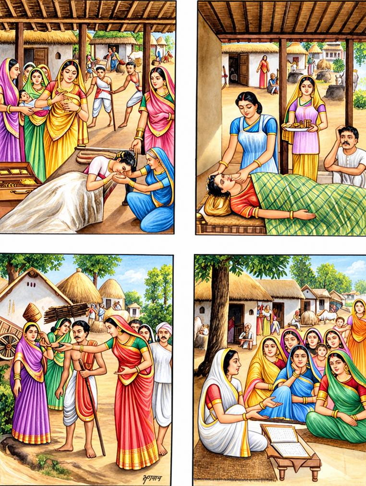
ग्रामसेविका बन दुखियोंके दुखमें हाथ बँटाती हैं।
और नर्स बन नगर बीच रोगीको दवा पिलाती हैं॥
कहीं स्वच्छता और सफाईका भी ढंग बताती हैं।
धर्मकथा कह कहीं नारिके सुंदर धर्म सिखाती हैं॥
नारीतत्त्व-गौरव
(लेखक—श्रीमन्मध्वसम्प्रदायाचार्य-दार्शनिकसार्वभौम-साहित्यदर्शनाद्याचार्य, न्यायरत्न, तर्करत्न, गोस्वामिश्रीदामोदरजी शास्त्री)
अबकी बार जगत् कल्याणकारी ‘कल्याण’ पत्रका ‘विशेषांक’ कल्याणमयी नारियोंके सम्बन्धमें निकल रहा है; यह सर्वथा उचित भी है कि ‘कल्याण’ में कल्याणस्वरूपा नारियोंका भी कल्याणमय वर्णन हो। कल्याणस्वरूप ‘नारीतत्त्व’ -के सम्बन्धमें मुझे भी कुछ लिखना आवश्यक प्रतीत हो रहा है; अतएव कुछ लिखनेसे पूर्व मुखबन्धके द्वारा लेखकी संगति की जाती है।
वक्तव्य यह है कि सच्चिदानन्दरूप भगवान्की विभूतिमें वेदादि शास्त्रोंने त्रिपादविभूतिको अप्राकृत लोक और पादविभूतिको प्राकृत जगत् कहा है।
वस्तुतः भगवान्की तीन शक्तियाँ हैं—१-अन्तरंगा, २—बहिरंगा और ३—तटस्था। इनमें अन्तरंगाके तीन भेद हैं—भगवत्स्वरूपमें सदंशकी, चिदंशकी तथा आनन्दांशकी शक्ति। ये क्रमशः १ सन्धिनी, २ संवित् और ३ ह्लादिनी कहलाती हैं। इन तीनोंको स्वरूपशक्ति भी कहते हैं।
बहिरंगाशक्तिके दो भेद हैं—१-माया और २-प्रकृति। मायाका काम आवरण करना है, उससे चिदंश और आनन्दांश दोनोंके आवृत होनेपर केवल सदंश जड या अचेतन कहलाता है; और केवल आनन्दांशके आवृत होनेसे सत् एवं चिद् अंशसे विशिष्ट तत्त्वको जीव, आत्मा या चेतन कहते हैं। भगवद्विमुख जीवोंका आनन्दांश अनादिकालसे आवृत होनेपर भी जब भगवत्कृपासे आनन्दावरणको माया हटा लेती है, तब जीव ‘मुक्त’ कहलाता है।
बहिरंगा शक्तिका दूसरा भेद प्रकृति है, जो सम्पूर्ण जडवर्गका उपादान कारण है। उसमें यह जड जगत् महदादिक्रमसे उत्पन्न होता है।
तीसरी तटस्था शक्तिका नाम जीव है; यह शक्ति बहिरंगाका काम न करनेसे बहिरंगा भी नहीं है और सर्वदा एकरस न रहनेसे अन्तरंगा भी नहीं है, सुतरां दोनोंसे पृथक् होनेके कारण ‘तटस्था’ कही गयी है। इस विवेचनसे तात्पर्य यह निकला कि ‘शक्ति’ शब्दका अर्थ स्त्रीत्वविशिष्ट वस्तु है। तब तो जीवोंका वास्तविक स्वरूप ‘नारी’ ही है, क्योंकि वह भी शक्तिरूप ही है। ‘पुरुष’ तो केवल वही है, जिसकी ये शक्तियाँ हैं। अर्थात् जो शक्तिमान् है, वही पुरुष है। वह पुरुष भगवान् है, इसीसे शास्त्रोंने उसे ‘परमपुरुष’, ‘महापुरुष’ या ‘उत्तमपुरुष’ कहा है; जीवोंमें जो ‘पुरुष’ कहलाते हैं, वे प्रकृतिनिर्मित पुरुषाकार शरीरधारी होनेके कारण ही ‘पुरुष’ नाम धारण करते हैं। उनका वह रूप औपाधिक है, वास्तविक नहीं है। वास्तविक बात तो यही है कि शक्तिस्वरूप होनेके कारण वे ‘स्त्री’ ही हैं। अब देखिये कि ‘नारीतत्त्व’ कितना व्यापक, सत्य एवं नित्यसिद्ध है, इसके विपरीत प्राकृत पुरुषतत्त्व अत्यन्त क्षुद्र, कल्पित अतएव विनाशी है।
शक्तिके बिना कोई शक्तिमान् भी कैसे हो सकता है? अतः भगवान्की शक्तिमत्ता भी शक्तिके ही अधीन है, यह दूसरी बात है कि शक्ति और शक्तिमान्में परस्पर तादात्म्य-सम्बन्ध होनेके कारण वे एक-दूसरेसे सर्वथा पृथक् नहीं हैं। तादात्म्यका स्वरूप भेदसहिष्णु अभेद है, जैसा कि दीपशिखा और प्रकाशका सम्बन्ध है। यहाँ न तो सर्वथा अभेद ही है और न भेद ही। अथवा यों कहिये कि भेद भी है, अभेद भी। भेद इसलिये है कि दीपककी ज्योतिमें हाथ लगानेसे हाथ जलेगा और उसमें फफोले पड़ जायँगे, परंतु उसके प्रकाशका सारे शरीरसे स्पर्श होनेपर भी न कोई अंग जलता है न कष्ट ही होता है। इससे भेदका होना ही सिद्ध होता है। इसी प्रकार सर्वथा भेद भी नहीं कह सकते। क्योंकि एक-दूसरेसे सर्वथा भिन्न जो घट-पटादि वस्तुएँ हैं, उनमें घटके हटानेसे पट आदि नहीं हटते; किंतु दीपशिखाके हटानेसे प्रकाश भी हट जाता है, इससे अभेदका होना ही सिद्ध होता है। इस प्रकार किसी क्षेत्रमें भेद और किसी क्षेत्रमें अभेद होनेसे ‘तादात्म्य’ सम्बन्ध कहना पड़ता है। तपाये हुए लोहेमें लोहे और अग्निका भी यही सम्बन्ध है, तथा यही सम्बन्ध जलमिश्रित दूधमें जल और दूधका है। शक्तिका शक्तिमान्के साथ ऐसा ही सम्बन्ध है। अन्तर इतना ही है कि हम सब जीवोंमें यह सामर्थ्य नहीं है कि हम अपनी शक्तिको अपनेसे पृथक् कर सकें, परंतु भगवान्में स्वयंसिद्ध ईशित्व-सिद्धि है, जिसके प्रभावसे वे अपनी तीनों ही प्रकारकी शक्तियोंको जगत्के रक्षणार्थ, विवेकार्थ और निज लीलार्थ पृथक् भी कर लेते हैं। इस प्रकार लीला आदिके लिये पृथक् की हुई शक्तिको राधिका, चन्द्रावली, रुक्मिणी, भामा, लक्ष्मी, जानकी, भू और शिवाप्रभृति नामोंसे शास्त्रोंने उपासना-भेदसे विभिन्न अधिकारियोंके लिये व्यवहृत किया है।
ये सब भगवान्की शक्तियाँ भी नारीतत्त्व ही हैं, सुतरां त्रिपादविभूतिमें और पादविभूतिमें नारीतत्त्वकी ही प्रधानता अथवा कार्यकारिता निर्विवाद सिद्ध होती है।
भगवत्तत्त्वमें इतनी विलक्षणता है कि कभी तो शक्ति और शक्तिमान् पृथक् प्रकट रहकर विविध प्रकारकी लीलाएँ करते हैं—जैसा कि राधाकृष्ण, सीताराम, गौरीशंकर इत्यादिरूपसे शास्त्रोंमें लीलाओंका वर्णन देखा-सुना जाता है और कभी जब शक्तितत्त्व सर्वथा ही अप्रकट रहता है, तब परमात्मतत्त्व ब्रह्म, निराकार, निर्विशेषादि शब्दोंसे व्यवहृत होता है। इसी प्रकार कभी शक्तिमान् अप्रकट रहता है और शक्ति ही प्रकटरूपसे कर्तव्यपालन करती है। किंतु ऐसा अवसर ऐश्वर्य-प्रधान लीलामें ही उपस्थित होता है, माधुर्य-प्रधान लीलामें नहीं; क्योंकि मधुरलीला दोनों तत्त्वोंकी प्रकटताके बिना हो ही नहीं सकती। ऐश्वर्यप्रधान लीलामें दुष्टोंका निग्रह ही प्रधान कर्तव्य रहता है, अथवा संसारियोंके ऐहिक मनोरथोंकी पूर्ति कर्त्तव्य रहती है।
अतः शक्तिस्वरूप मोहिनीरूपसे तामस प्रकृतिवाले असुरोंको अमृत-पानसे वंचित करना भी दुष्टनिग्रह ही है। महालक्ष्मी-महासरस्वती-महाकालीरूपसे असुर-संहार ही किया गया; दश महाविद्यारूपसे भी विविध ऐहिक फलोंका वितरण किया गया और कभी आवश्यकतावश दुष्टनिग्रह भी किया गया।
सारांश यह कि उक्त सकल व्यवहार ‘नारीतत्त्व’ के ही प्रतापका गान कर रहा है। यह सब त्रिपादविभूतिशाली नारीतत्त्वके महत्त्वका दिग्दर्शन कराया गया।
अब पाद-विभूतिमें भी ‘नारीतत्त्व’ का उत्कर्ष देखिये। पाद-विभूतिमें जीवोंके प्रार्थनीय धर्म, अर्थ, काम, मोक्ष—ये चार पुरुषार्थ प्रसिद्ध हैं; इनमेंसे धर्मके अधिकांश अनुष्ठान ऐसे हैं, जो नारी बिना होते ही नहीं। अर्थोपार्जनमें भी यदि गार्हस्थ्यके रक्षण और अवेक्षणका भार नारी अपने ऊपर न ले तो पुरुषको उपार्जनका समय ही नहीं मिल सकता। कामके साम्राज्यमें तो उसके सभी अंशोंका प्राण नारी ही है। इसीसे तदनुसारी गुण भी पुरुषोंकी अपेक्षा नारियोंमें ही अधिक हैं। देखिये—पुरुषोंमें १ शोभा, २ विलास, ३ माधुर्य, ४ धैर्य, ५ तेज, ६ गाम्भीर्य, ७ ललित, ८ औदार्य—ये आठ गुण शास्त्रने बताये हैं; इनमेंसे भी दो-तीनको छोड़कर शेष सभी नारियोंके भीतर भी प्रस्फुटित होते हैं। तथा केवल नारियोंमें १ लीला, २ विलास, ३ विच्छित्ति, ४ विव्वोक, ५ किलकिंचित्क, ६ मोट्टायित, ७ कुट्टवित, ८ विभ्रम, ९ ललित, १० मद, ११ विहृत, १२ तपन, १३ मौग्ध्य, १४ विक्षेप, १५ कुतूहल, १६ हसित, १७ चकित, १८ केलि—ये १८ गुण कहे गये हैं।
नारीके मुग्धा, मध्या, प्रगल्भा, धीरा, अधीरा, धीराधीरा एवं स्वाधीनभर्तृका, खण्डिता, अभिसारिका, कलहान्तरिता, विप्रलब्धा, प्रोषितपतिका, वासकसज्जा और विरहोत्कण्ठिता आदि भेद तथा तदनुकूल भाव भी उनके गुण-विशेषको ही सूचित करते हैं। ये बातें रसशास्त्रोक्त हुईं; कामशास्त्र-समुद्रकी तो कर्णधार ही नारी हैं।
मोक्षमें भी सूक्ष्मदृष्टिसे विचारिये तो परम्परा-सम्बन्धसे नारी ही प्रयोजक हैं; क्योंकि बिना विरागके मोक्षका अधिकार ही नहीं हो सकता और विषयोंकी कटुताके ज्ञान बिना विराग नहीं होता तथा विषय-कटुताका ज्ञान विषय-भोग बिना नहीं होता। विषय-सेवनमें मुख्य नारी ही है, इस शृंखलासे नारी मोक्षमें भी कारण कही जा सकती है।
इस भाँति नारीतत्त्वके सम्पर्कके बिना कुछ वस्तु ही नहीं जान पड़ती। इसीसे मनु महाराज भी लिख गये कि जहाँ नारियोंका सम्मान है, वहाँ देवताओंका अनुग्रह रहता है।
इसीलिये नारीतत्त्व सबके लिये सर्वदा और सर्वथा परम आदरणीय है।
श्रीमहाकाली, श्रीमहालक्ष्मी तथा श्रीमहासरस्वतीके स्वरूप
(लेखक—महामहोपाध्याय पं० श्रीसकलनारायणजी शर्मा, काव्य-सांख्य-व्याकरण-तीर्थ)
परमेश्वर पूर्ण है। वह जगत्की उत्पत्ति, पालन तथा संहार करता है। यह बात वेदान्तसूत्र (१। १। २)-में है—‘जन्माद्यस्य यतः।’ वह उक्त कार्यके लिये अपनेको स्त्री और पुरुष—दो रूपोंमें प्रकटित करता है। ‘त्र्यम्बकं यजामहे’ (यजुर्वेद)। ‘त्र्यम्बक’ शब्दकी व्युत्पत्ति है—‘स्त्री, अम्बा, स्वसा यस्य’ (षङ्विंशब्राह्मण)। वह अपनेको स्त्रीके साथ प्रकाशित करता है, जो लौकिक-व्यवहाररहित भगिनीके समान है। ‘स्त्री’ शब्दके सकारका लोप होनेसे ‘त्र्यम्बक’ शब्द बनता है। उसका नाम ‘गौरी’ है। ‘गौरीमिमां सलिलानि तक्षति।’ (ऋग्वेद) इन वेदमन्त्रोंका तात्पर्य है कि वह स्त्री-पुरुषरूपसे माता-पिताके समान सुख देता है। मनुष्य उसकी सेवा करें। परमेश्वर ‘त्रिनेत्र है’ अर्थात् तीनों कालोंकी बात जानता है। अतएव महाकाली दुर्गा भी त्रिनेत्रा हैं। ‘तत्र सर्वज्ञातिशयो बीजम्’ (योगसूत्र)। वे सर्वज्ञ हैं। बिजलीके समान चमकनेवाली, धनुष-बाण एवं चक्रसे सुशोभित तथा सिंहपर चढ़ी हुई हैं।
विद्युद्दामसमप्रभां मृगपति-
स्कन्धस्थितां भीषणां
कन्याभिः करवालखेटविलस-
द्धस्ताभिरासेविताम्।
हस्तैश्चक्रगदासिखेटविशिखां-
श्चापं गुणं तर्जनीं
बिभ्राणामनलात्मिकां शशिधरां
दुर्गां त्रिनेत्रां भजे॥
जो वीर पुरुष हैं, वे सिंह हैं। उनपर महाकालीकी सवारी है। ललाटमें चन्द्रमा है, जो भक्तोंको आनन्द और प्रकाश देता है। जब वे रुष्ट होती हैं, तब राक्षसोंपर चक्र चलाती हैं। संसार-चक्र अपने पापोंसे लड़ता रहता है और नष्ट होता रहता है। वह एक-दूसरोंको चक्र—अस्त्र-शस्त्रसे चौपट करता है। यह भगवतीजीका परोक्ष चक्र-संचालन है। माली बागके बुरे पौधोंको उखाड़ फेंकता तथा उसकी शोभा बढ़ाता है। उसकी यह निपुणता है। माता दुर्गा दुष्टोंका विनाश कर जगत् पर दया करती हैं।
पहलेकी बात है कि महिषासुर बड़ा प्रबल हो गया। देवतालोग घबरा गये। तब ब्रह्मा, विष्णु, शिवने अपने तेजोंको इकट्ठा कर महालक्ष्मीरूपसे प्रकटित किया। इनके हाथोंमें गदा, धनुष, दण्ड, तलवार और ढाल आदि थे। कमलपर बैठी हुई और हाथमें कमल लिये हुई दीख पड़ीं। धनसम्पत्तिका स्वरूप कमल है। जो धनाधिप है, उसे धनकी रक्षा करनी चाहिये तथा रात-दिन अस्त्र-शस्त्रोंसे अपने कोषागारोंकी रक्षा करनी उचित है। इनके स्वरूपसे यह बात सिद्ध होती है। धनिकोंमें मद्य पीनेकी आदत होती है। यह स्वभाव धन-विरोधी है। इनके स्वरूपमें धनरक्षा तथा धन-नाश दोनों भाव हैं।
अक्षस्रक्परशुं गदेषुकुलिशं
पद्मं धनुष्कुण्डिकां
दण्डं शक्तिमसिं च चर्म जलजं
घण्टां सुराभाजनम्।
शूलं पाशसुदर्शने च दधतीं
हस्तैः प्रसन्नाननां
सेवे सैरिभमर्दिनीमिह महा-
लक्ष्मीं सरोजस्थिताम्॥
युद्धके समय महालक्ष्मी भी सिंहवाहिनी होती हैं, पर मन्त्रोंमें उनका वाहन उल्लू लिखा हुआ है। जिसपर लक्ष्मीकी कृपा होती है, उसे प्रकाशमें नहीं सूझता। उसके रुपये-पैसे अच्छे काममें व्यय नहीं होते। लक्ष्मी रजोगुणी हैं। इनसे दुःख ही होता है। पागलके समान धनाधिप होते हैं। यदि उनपर महासरस्वतीकी कृपा हो तो वे महापुरुष हो जाते हैं। जिससे सब कलुष धुल जाय, वह सरस् है। जो प्राणियोंके हृदयको सरस्—जलके समान स्वच्छ बनाती हैं, वे सरस्वती हैं, विद्यानिधि हैं। उनकी महत्ताकी इयत्ता नहीं, अतएव वे महासरस्वती हैं। उन्हें रुद्रने पहचाना, अतएव वह ‘विद्यादाता महेश्वरः’ कहलाता है। विद्याका गुण है—दुःखोंको दूर करना। मानसिक दुःख व्याधि है। बाहरी दुःख दुष्ट राक्षस महाव्याधिस्वरूप है। विद्वान् दुःखोंका विनाश शीघ्र करते हैं। महासरस्वतीजीने आविर्भूत होकर घण्टा, शूल तथा हलोंका प्रयोग किया। उनका आन्दोलन हुआ; वह घण्टानाद था। आध्यात्मिक, आधिदैविक तथा आधिभौतिक शूल फैलाये गये। अन्नोंके उपार्जनकी सामग्री हल राक्षसोंसे छीन लिये गये। राक्षस दुर्बल हो गये। भगवतीजीका तेज सूर्यके समान था। राक्षस तुरंत नष्ट हो गये। धनुष-बाण केवल निमित्तमात्र हुए।
ॐ घण्टाशूलहलानि शङ्खमुसले
चक्रं धनुः सायकं
हस्ताब्जैर्दधतीं घनान्तविलस-
च्छीतांशुतुल्यप्रभाम्।
गौरीदेहसमुद्भवां त्रिजगता-
माधारभूतां महा-
पूर्वामत्र सरस्वतीमनुभजे
शुम्भादिदैत्यार्दिनीम्॥
मन्त्रोंमें लिखा हुआ है कि सरस्वतीजीका वाहन हंस है। वह आकाश, भूमि दोनोंपर चलता है। वह नीर-क्षीरको पृथक् कर देता है। जिसपर सरस्वतीजीकी कृपा होती है, उसपर महाकाली (युद्धकी प्रधान देवता) तथा महालक्ष्मी (साधनकी देवता) स्वयं प्रसन्न हो जाती हैं। लौकिक व्यवहारके लिये तीनों देवियोंकी उपासना उचित है; क्योंकि उससे अभ्युदय और निःश्रेयस दोनों सिद्ध होते हैं और धर्म होता है—
‘यतोऽभ्युदयनिःश्रेयससिद्धिः स धर्मः।’
(वैशेषिक-दर्शन)
••••
महिला-आदर्श
तियन-कर पुरुषन केर सुधार।
रीति अटल युग चार॥ तियन०॥
माता बनकर पुत्र सुधारैं,
पत्नी बन भरतार॥ तियन०॥
अमर नाथ तिय गुन सों करतीं,
जानत है संसार॥ तियन०॥
साध्वी तिय दोउ कुल को तारैं,
आप होहिं भव-पार॥ तियन०॥
पति-कुल-धर्म तियन सों रच्छित,
होंहिं जो तिय सुविचार॥ तियन०॥
जस-अपजस नर तिय सों पावत,
‘गंगा’ वैदिक सार॥ तियन०॥
—(स्व०) श्रीगंगादेवी त्रिवेदी
भारतीय नारी
(लेखक—डॉक्टर श्रीभगवानदासजी)
एक सज्जन मित्रका आदेश हुआ कि ‘प्राचीन कालकी भारतीय नारी’ के बारेमें लेख दो। मैं विचारमें पड़ गया। सोचते-सोचते मनमें आया कि स्त्रियोंकी जो तात्त्विक प्रकृति है, वह तो जो प्राचीन कालमें, ढाई हजार या पाँच हजार या दस हजार वर्ष पहले बुद्धदेवके समयमें या वेदव्यास, श्रीकृष्ण और भीष्मपितामहके समयमें या रामजी और उनके पिता महाराज दशरथके समयमें रही, वही आज भी है। और न केवल भारतवर्षमें, अपितु पृथ्वीमात्रके सभी देशोंमें सभी कालोंमें वही है। हाँ, यह ठीक है कि पहिरावे-गहनेमें, वेष-भूषामें, अलंकार-आभूषणमें, जरूर भेद रहा, जो अब भी है। अब भी गाँव-देहातकी स्त्रियोंका, जैसा पुरुषोंका पहिनावा आदि दूसरा है, वैसे ही शहरवालोंका दूसरा। प्रान्त-प्रान्तका पहिनावा भिन्न-भिन्न है। और न केवल पहिरावेमें, भोजनके व्यंजनोंमें भी भेद है। यद्यपि गेहूँ, चावल, दाल, दूध, दही, घी, विविध प्रकारके तेल, नमक, मीठा—ये ही सभी व्यंजन-भेदोंके सार हैं। ऐसे ही समय-समयपर बोली-भाषा भी बदलती रही है। जैसे वैदिक कालमें वैदिक भाषा थी; फिर पौराणिक कालमें रामायण, महाभारत, भागवत आदि इतिहास-पुराणोंकी भाषा चली; फिर पाली, प्राकृत, शौरसेनी आदि संस्कृतसे निकली विकृत (बिगड़ी) भाषाएँ बुद्धदेव, महावीर जिन, कालिदास आदि नाटककारोंके समयमें चलीं; अब उनके स्थानपर अवधी हिंदी, भोजपुरी हिंदी, बँगला, मराठी, गुजराती, मारवाड़ी, पंजाबी आदि। किंतु अन्तःकरणके भाव, हृदयके आशय, बौद्ध प्रत्यय, ज्ञानकी बातें, राग-द्वेष आदिके तरंग, आज्ञा आदि—ये सब सभी भाषाओंद्वारा वही-वही प्रकट किये जाते हैं। यह बात तो इतनेहीसे प्रत्यक्ष सिद्ध है कि प्रसिद्ध ग्रन्थोंके, जैसे भगवद्गीताके सैकड़ों भाषाओंमें अनुवाद हो चुके हैं। वेष-भूषाके बदलनेका हाल तो यों देखिये कि पचीस-तीस वर्ष पहले जो नगरवासिनी स्त्रियाँ मोटे-मोटे चाँदीके कड़े पैरोंमें, सोनेके हाथोंमें, दस-दस बारह-बारह ‘बालियाँ’ कानोंमें, मोटी-मोटी हँसलियाँ और कई-कई लड़की सोनेकी ‘सिकड़ियाँ’ गलेमें पहनती थीं, वही आज कानोंमें हलकी सूफ़ियानी ‘इयर-रिंग’, कलाइयोंमें सुबुक सोनेकी या जड़ाऊ चूड़ियाँ, पैरोंमें खूबसूरत जूतियाँ और भारी लहँगे, ओढ़नी, चोली आदिके स्थानमें सुन्दर बारीक सुनहली-रुपहली साड़ियाँ और रेशमी ‘ब्लाउज’ (मिर्जई) पहनती हैं। नयी पुश्तकी, स्कूल-कॉलिजोंमें पढ़ती या पढ़ी हुई लड़कियाँ तो उन पुरानी पुश्तके कपड़ोंका नाम भी नहीं जानतीं। परंतु स्त्री-शरीर तो वैसा ही अब भी है जैसे पच्चीस, पचास, सौ, हजार, दस हजार वर्ष पहले था।
इन सब उदाहरणोंका प्रयोजन क्या है? यह कि सब देश और कालमें स्त्रीकी प्रकृति यथा पुरुषकी, चार मुख्य प्रकारकी रही है और अब भी है—ज्ञानप्रधान (ब्राह्मण), क्रियाप्रधान (क्षत्रिय), इच्छाप्रधान (वैश्य) और अव्यक्त अस्पष्ट बच्चेकी-सी।
वैदिक कालमें भी गार्गी, मैत्रेयी, सुलभा, अरुन्धती, आत्रेयी, अनसूया आदि ब्रह्मवादिनी थीं। कई स्त्री-ऋषियोंने वेद-मन्त्र बनाये। महाराज दशरथकी मध्यम रानी कैकेयी देवासुर-संग्राममें उनके साथ रथपर बैठकर इन्द्रदेवकी सहायताके लिये गयीं और जब दशरथके रथका एक अंग टूटा तो उसको बाँध-छाँध करके उनके विजयकी कारण हुईं, जिससे दशरथने उनको दो वर दिये, जिनको उन्होंने आगेके लिये संचित कर रखा (‘जब माँगूँ तब देना’) और बादमें रामको वनवास और भरतको राज्यके रूपमें माँगा और रामायणकी कथाकी हेतु हुईं, जिससे आज न जाने कितने हजार वर्षोंसे भारतजनताको उत्तम राजशास्त्र, सदाचार और लौकिक व्यवहारकी शिक्षा मिल रही है। ऐसे ही श्रीकृष्णके समयमें ऋषियोंकी पत्नियाँ ब्राह्मण प्रकृतिकी हुईं। श्रीकृष्णकी पत्नी सत्यभामा उनके साथ गरुड़नामक ‘एयरोप्लेन’ पर बैठकर देवासुर-युद्धोंमें जाया करती थीं एवं अर्जुनकी पत्नी श्रीकृष्णकी बहिन सुभद्रा युद्धमें सारथि बनकर अर्जुनका रथ हाँकती थीं, इत्यादि। कथासरित्सागरमें वैश्य और शूद्र स्त्रियोंकी कहानियाँ हैं।
आजकी दुनियाँमें पश्चिमके देशोंमें भी इन्हीं चार प्रकृतियोंकी स्त्रियाँ तथा पुरुष देख पड़ते हैं—विदुषी, ग्रन्थकर्त्री, कवि, प्रोफेसर आदि। शिकारी घोर जंगलों और मरुस्थलोंमें जाकर सिंह-व्याघ्रका शिकार करनेवाली, जैसे सिंह-वाहना दुर्गा आदि हो चुकी हैं। यों तो अपने बच्चोंकी रक्षाके लिये गाय, भैंस भी सिंघनी (सिंही, शेरनी) हो जाती हैं। अपनी सन्तानरूप देवताओंकी रक्षाके लिये दुर्गादेवीने महिषासुर और शुम्भ-निशुम्भका संहार किया, जिनसे विष्णु और शिव भी हार गये थे। पश्चिममें अधिकांश स्त्रियाँ कृषि-गोरक्षा-वाणिज्य कर्म करनेवाली तथा मिहनत—मजदूरी, भृत्यकर्म करनेवाली ही हैं, जैसे भारतमें।
नारीमें परा शक्ति
(लेखक—माननीय बाबू श्रीसम्पूर्णानन्दजी, शिक्षासचिव, युक्तप्रान्त)
नारी पुरुषकी समानप्रसवा है, मनुष्यजातीय प्राणी है; इसलिये स्वभावतः उसमें प्रायः वह सब गुण-दोष विद्यमान हैं। जो मनुष्यको दूसरे प्राणियोंसे विभक्त करते हैं। जो लोग स्त्रीको स्त्री होनेके नाते छोटा मानते हैं, वे भूल करते हैं। इसका कोई प्रमाण नहीं है कि स्त्रीकी बुद्धि पुरुषकी बुद्धिसे कम प्रखर होती है; परंतु यह सम्भवतः ठीक है कि स्त्री-पुरुषकी रुचियोंमें भेद होता है। कुछ विषय स्त्रियोंको, कुछ पुरुषोंको अधिक रुचिकर प्रतीत होते हैं—उनकी बुद्धिको अधिक आकृष्ट करते हैं।
ऐसे विषय कौन-कौन-से हैं—इस बातका अभीतक कोई वैज्ञानिक अध्ययन नहीं हुआ है। सच बात तो यह है कि स्त्रियोंके सम्बन्धमें बहुत कम बातोंका वैज्ञानिक अध्ययन हुआ है। विज्ञान अध्येतव्य वस्तुके दृश्यगत रूपको देखना चाहता है, उसके उस रूपको पहचानना चाहता है जो प्रत्येक द्रष्टाके लिये समान है, जो द्रष्टाके अभावमें भी रहेगा। बच्चा अपनी माँको प्यारा लगता है। वह प्यारापन उसका वास्तविक दृश्यगत रूप नहीं है। उसकी सत्ता माता मात्रके लिये है। किसी दूसरेको वही बच्चा उसी समय बुरा लग सकता है। यह बुरापन भी द्रष्टृसापेक्ष्य है, अथ च वास्तविक नहीं है। दुर्भाग्यवशात् स्त्रीका जो कुछ भी अध्ययन हुआ है, वह किसी-न-किसी दृष्टि-विशेषसे ही हुआ है।
स्त्री पुरुषकी कामवासनाकी तृप्तिका साधन है। पुरुष उसको ढूँढ़ता है। उसको प्राप्त करनेसे जो सुख मिलता है, उसका आरोप उसके शरीरमें करता है। स्त्री उसके प्रतीक्षित सुखकी मूर्ति है। अतः इस दृष्टिसे स्त्री बहुत-से गुणोंकी खान है, सर्वोपरि सुन्दर है। उसके सौन्दर्यकी प्रशंसा करनेसे पुरुष नहीं थकता। यदि सौन्दर्यका अर्थ सुडौलपन हो तो यह विचारणीय प्रश्न है कि स्त्रीका शरीर अधिक सुडौल होता है या पुरुषका। परंतु पुरुषको विचार करनेका अवकाश कहाँ है।
कुछ लोगोंको अपनी दुर्बलता, इन्द्रियलोलुपताके लिये बहाना चाहिये। अपनेमें तपोनिष्ठा नहीं है, अपना चरित्र दृढ़ नहीं है, अपनेसे संयम करते नहीं बनता, इसके लिये स्त्रीको दोष दे देनेसे जी हलका हो जाता है। स्त्री प्रलोभक है, इसलिये पुरुष गिर जाता है। हम तो परम योगीश्वर होते।
अन्तरा दुस्तरा न स्युर्यदि रे मदिरेक्षणाः।
बात ठीक ही है; परंतु यही बात तो स्त्री भी कह सकती है। पुरुष उसको नीचे खींच लाता है। प्रलोभनको जीतनेमें ही संयम देखा जाता है। विषयाभावमें तो सभी इन्द्रियजित् महात्मा हैं। अस्तु, ऐसे ओछे विचारक और तपस्विमन्य दुर्बलात्माओंने स्त्रीमें अपनी सारी चारित्रकमियोंको आरोपित कर रखा है। उनके कथनानुसार स्त्री नरकद्वार, तपोभ्रंशक, काम-प्रतिमा, पुरुषको मोक्षपथसे हटानेवाली पिशाची है। मनोविज्ञानके विद्वान् जानते हैं कि यदि मनुष्यका चित्त किसी वस्तु-विशेषपर लगा रहता है परंतु वह उसको उस ओरसे हटाना चाहता है, क्योंकि उधर लगनेसे उसके किसी विशेष अभीष्ट या सामाजिक पदकी हानि होती है, तो चित्तमें तुमुल संघर्ष होता है। यदि संयमात्मक वृत्तियाँ पूर्णतया जीत गयीं तब तो ठीक ही है, चरित्र ऊँचा उठता है; अन्यथा चाहे ऊपरसे शान्ति बची रहे, परंतु भीतर अशान्ति बनी रहती है। कभी-कभी यह अशान्ति निन्दाका रूप धारण करती है। जिस वस्तुको जी चाहता है, उसकी खूब निन्दा की जाती है। इसी बहाने उसकी चर्चा हो जाती है, एक प्रकारका मानस-संभोग हो जाता है, तृप्ति मिल जाती है। कोई धनका भूखा हो परंतु धन प्राप्त न कर सका तो वह धनिकोंकी निन्दा करेगा। निन्दा करनेमें लाख-करोड़ रुपया, अशर्फी सब कह जायगा, सबके चित्र उसकी आँखोंके सामने घूम जायँगे। इससे चित्त हलका हो जायगा। कुछ-कुछ वैसी ही शान्ति मिल जायगी, जैसी सचमुच लाख-करोड़की प्राप्तिसे मिलती। इसी प्रकार बहुत-से लोग, जिनकी कामवासना बहुत प्रबल है परंतु चतुर्थाश्रममें आ जानेसे वह तृप्त नहीं की जा सकती, स्त्रियोंकी चर्चा करते हैं। उनके शरीरकी रचनाका वर्णन करेंगे, गुह्य अंगोंका विशेष वर्णन करेंगे, स्त्री-पुरुषके यौन सम्बन्धका वर्णन करेंगे। स्वर निन्दाका होगा, भाषा निन्दाकी होगी; परंतु उस निन्दाके द्वारा अपनी काम-पिपासा बुझायी जाती है। जो बातें कुत्सित ठहरायी जाती हैं, उनका मानस आस्वाद मिल जाता है। ऐसे कथन स्त्रीकी निन्दा नहीं, निन्दकके चित्तचांचल्यके शब्द-चित्र हैं। ज्ञान-वैराग्यके उपदेशमें इनका कोई स्थान नहीं है; अन्यथा उपनिषद्, दर्शन, भगवद्गीता-जैसे ग्रन्थोंमें भी ऐसे स्थल मिलते।
कुछ लोगोंने स्त्रियोंके आचरणकी कुछ ऊपरी बातोंको लेकर उनको अशौचादि आठ दोषोंसे मढ़ दिया है। इन दोषोंका इतना ही आधार है कि स्त्री पुरुषसे भिन्न है। जो पुरुष करता है, वह भूषण है; अतः जो उससे विपरीत है, वह दूषण है।
सच तो यह है कि स्त्री-जीवनकी पहेलीकी कुंजी यह है कि स्त्रीको माता होना है। वह मातृत्वके लिये बनायी गयी है। यह कह सकते हैं कि पुरुष पितृत्वके लिये बना है। बस, जो अन्तर पितृत्व-मातृत्वमें है, वही अन्तर पुरुष और स्त्रीमें है। सन्तानके जीवनसे पिताका प्रधान सम्बन्ध तो एक बार, गर्भाधानके समय होता है। इसके बाद उसका स्थान गौण है। जो प्राणी कुटुम्ब बनाकर रहते हैं, उनमें कुछ थोड़ी-सी देखभाल पिता करता है। मनुष्यमें औरोंकी अपेक्षा अधिक दायित्व पितापर आता है; फिर भी यह सम्बन्ध प्राकृतिक कम, सामाजिक अधिक है। यदि समाजका संघटन दूसरे प्रकारका हो जाय, यदि प्रत्येक बच्चेके भरण-पोषणका भार समाज ले ले, तो पिताके ऊपर कोई दायित्व न रहे, सिवा गर्भमें स्थापित करनेके पिताका बच्चेसे कोई नाता न हो। माताका सम्बन्ध समाजकर्तृक नहीं है। सामाजिक संघटन कैसा भी हो, बच्चेको गर्भमें तो रखना ही होगा। जन्मके बाद बच्चेको दूध पिलाना ही होगा; उसकी रक्षा करनी ही होगी, उसको जीवनोपयोगी बातें सिखानी ही होंगी। यदि समाज बच्चोंका भार अपने ऊपर लेगा तो उसे माताको दाईके रूपमें रखना होगा। अतः माताका बच्चेके जीवनके साथ लंबा और गहरा सम्बन्ध है। इसीके अनुकूल स्त्रीके शरीर और चित्तकी बनावट है। पुरुषको सैकड़ोंसे काम पड़ता है। उनके सहयोगसे ही वह जीवनमें सफल हो सकता है। इसलिये उसकी सहानुभूतिका क्षेत्र विस्तृत होता है। प्रायः उसका स्नेह किसीके भी प्रति गहरा नहीं होता; परंतु उसका स्नेहमय व्यवहार बहुतोंके साथ होता है। स्त्री अपने स्नेहके क्षेत्रको इतना नहीं फैला सकती। उसका जगत् छोटा होता है। वह अपने परिवार, बच्चे और उसके पितातक ही प्रायः सीमित रहता है; परंतु उसका गाम्भीर्य अतल होता है। पुरुषमें इतने गहरे प्रेमकी क्षमता नहीं होती। द्वेष और राग एक ही मुद्राके दो चेहरे हैं। जो जितना प्रेम कर सकता है, वह उतना ही द्वेष कर सकता है। पुरुषका द्वेष भी विस्तृत किंतु प्रायः गाम्भीर्यहीन होता है। स्त्री औरोंको प्रायः उपेक्षाभावसे देखती है; परंतु वह अपने प्रेमके समान ही घृणा भी करना जानती है। पुरुषकी भाँति स्त्रीको बात-बातपर क्रोध नहीं आता; परंतु यदि वह क्रुद्ध हो ही जाय तो उस आगको सँभालना कठिन होता है। पुरुषमें स्त्रीके बराबर न तो दयाशीलता होती है, न निर्दयता। उसके भाव प्रायः केन्द्रीभूत हो ही नहीं पाते। मातृत्व छिपानेकी वस्तु नहीं है। माताके लिये तो बच्चा जगत् है। जो उसकी ओर टेढ़ी दृष्टिसे देखता है, वह शत्रु है, हन्तव्य है। इसलिये स्त्रीमें कृत्रिमता नहीं होती। पुरुषकी भाँति अपने भावोंको गोल शब्दोंमें छिपानेमें उसे रस नहीं आता। एक पाश्चात्य विद्वान्का कहना है कि झूठ बोलनेमें स्त्री पुरुषकी बराबरी नहीं कर सकती। अस्तु, इन बातोंको ध्यानमें रखकर यदि स्त्रीके चरित्र और आचरणका अध्ययन किया जाय तो बहुत-सी बातें, जो विचित्र और दोषमय प्रतीत होती हैं, समझमें आ सकती हैं।
स्त्रीके पत्नीत्व और पुरुषके पतित्वका स्वरूप भी एक-सा नहीं होता। स्त्रीके लिये एकपुरुषनिष्ठा सहज और स्वाभाविक है, पुरुष प्रकृत्या बहुस्त्रीगामी होता है। उसके लिये एकपत्नीव्रत होना कष्टसाध्य होता है। इसी बातको ध्यानमें रखकर वाल्मीकिने रामके एकपत्नीव्रत होनेकी प्रशंसा की है। स्त्रीके स्वभावका मातृत्व भी उसको एकनिष्ठ बनाता है। अपने स्नेहको बिखराना माताके लिये सम्भव नहीं है, उसको तो केन्द्रित करना ही अनुकूल प्रतीत होता है। पुराने नीतिके श्लोकोंमें लिखा मिलता है कि भार्या भोजनके समय माता-जैसा आचरण करती है। सचमुच पत्नीके भावमें वात्सल्य भी रहता है, वह अपने पतिको भोला बालक-सा समझती है और उसके ऊपर वैसी ही देख-रेख रखती है, जैसी बच्चोंपर रखी जाती है। जितनी तन्मयता पत्नी पतिके साथ करती है, उतनी पुरुष नहीं कर सकता। पतिकी उन्नतिमें, पतिके गुणोंके उत्कर्ष और प्रख्यापनमें, पतिकी प्रसिद्धिमें उसको अपूर्व आनन्द मिलता है। पतिकी वृद्धि और उसके यशोविस्तारमें उसको अपनी आत्माकी सार्थकता मिलती है।
इन सब बातोंकी तहमें नर-नारीका आध्यात्मिक स्वरूप है। स्त्री-पुरुषका सम्बन्ध और परस्परके प्रति आचरण आदि नर और आदिनारीके परस्पर सम्बन्धकी छाया, भौतिक जगत्में निक्षेप है। इस सम्बन्धके स्वरूपकी ओर संकेत तो श्रौत वाङ्मयमें बराबर मिलता है। परंतु आगम-ग्रन्थोंने इसका वर्णन विस्तारसे किया है। ऋग्वेदका प्रसिद्ध नासदीयसूक्त पहले शुद्ध ब्रह्मकी चर्चा करता है ‘नासदासीन्नो सदासीत्तदानीम्’—उस अवस्थामें न सत् था न असत् था। इस वाङ्मनसगोचर नेति-नेति-निर्देश्य अवस्थाके बाद परमात्मतत्त्व, सगुण शिव, अर्धनारीश्वर, मायाशबल ब्रह्म आता है। उसकी ओर श्रुतियाँ संकेत करती हैं—
तम आसीत्तमसा गूढमग्रे..........................
आनीदवातं स्वधया तदेकम्..........................
तम (अर्थात् अविद्यारूपी माया)-से ढका तम (अर्थात् निश्चेष्ट ब्रह्म) था। वह एक अपनी स्वधाके द्वारा बिना वायुके साँस लेता था। जो ‘स्वं धारयति’ अपने आपको धारण करे, निराधारा हो, वह स्वधा है। यह नाम आद्याशक्ति, पराशक्तिका है। आद्याशक्तिसे युक्त परशिव साँस लेता था। कहनेका तात्पर्य यह है कि चेतन था, ज्ञाता था। शुद्ध ब्रह्म चिन्मात्र, ज्ञानस्वरूप है। अन्य विषयके अभावमें परमात्माको अपनी सत्ताका ज्ञान था। ‘मैं हूँ’ का भान था। ‘वायुके बिना’ कहनेका तात्पर्य यह है कि सगुण शिव-पदार्थको किसी दूसरे साधनकी, अपनेसे भिन्न किसी पदार्थकी अपेक्षा नहीं थी। स्वधा उससे अभिन्न थी। इसीलिये उसको साम्ब—अम्बासमेत कहते हैं। इसी युगलमूर्ति, भिन्नाभिन्न पदार्थसे समस्त जगत्का विस्तार हुआ है; इसलिये सब वस्तुओंमें युगल तत्त्वकी अभिव्यक्ति होती है। नर और नारी दोनोंमें आदिपुरुष और आदिशक्ति विद्यमान हैं। अतः दोनोंमें बहुत-सा गुणसाम्य होना ही चाहिये। परंतु नारीमें शक्ति और नरमें पुरुष-अंशका प्राधान्य है, इसलिये वैषम्यका होना भी स्वाभाविक है। नारीमें भगवती आदिशक्तिकी जो अभिव्यक्ति है, उसीको लक्ष्य करके देवोंने शुम्भवधके उपरान्त स्तुति करते हुए यह शब्द कहे थे—
तव देवि भेदाः स्त्रियः समस्ताः सकला जगत्सु।
‘हे देवि! जगत्की स्त्रियाँ समष्टि और व्यष्टिरूपसे आपके भेद हैं, आपकी ही विभिन्न मूर्तियाँ हैं।’
मायाकी व्युत्पत्ति है ‘मीयते अनया’—इसके द्वारा जाना जाता है। मायाके ही द्वारा ब्रह्म अपने आपको जानता है। परमात्मावस्थामें उसे अपनी सत्तामात्रका ज्ञान रहता है; ज्यों-ज्यों जगत्का विकास होता है, त्यों-त्यों ज्ञाता और ज्ञेयमें भेद बढ़ता जाता है। एक ही ब्रह्मतत्त्व असंख्य ज्ञाताओं और असंख्य ज्ञेयोंमें विभक्त हो जाता है। यह सब पराशक्तिकी क्रीड़ा है। वही ब्रह्मका प्रख्यापन करती है। ब्रह्मको प्रख्यापित करने, ज्ञेय बनाने, ज्ञात बनानेमें ही उसकी सार्थकता है, स्वरूपसिद्धि है। पराशक्तिके इस स्वरूपका दर्शन नारीमें होता है। पतिके यशोगान, उसकी कीर्तिवृद्धि, उसकी ख्यातिमें नारीको अपने जीवनकी सार्थकता प्रतीत होती है, अपूर्व सुखकी अनुभूति होती है।
आद्याशक्ति असंख्य शक्तियोंका समुच्चय है। सप्तशतीमें संकेतरूपसे बतलाया गया है कि सभी देवता, जगत्की संचालिका सभी शक्तियाँ, उस एक महाशक्तिके भेद हैं, उसीमेंसे प्रकट होती हैं और फिर उसीमें लीन हो जाती हैं। आदिपुरुष इनसे रमण करता है, इनका उपयोग करता है। किसी शक्तिके योगसे वह ब्रह्मा होता है, किसीसे विष्णु, किसीसे रुद्र, किसीसे इन्द्र। शक्तियोंसे रमण करके वह अपनेको विकसित पाता है। एकाकी पुरुष तो चेतनापुंज है। शक्ति ही उसे ज्ञाता, कर्ता, स्रष्टा, पालयिता, संहर्ता बनाती है। शक्तिके लिये पुरुष एक है, पुरुषके लिये शक्ति अनेक हैं। यह बात नर-नारी अपनेमें लाये हैं। पुरुष प्रकृत्या बहुगामी, नारी प्रकृत्या एकनिष्ठा है।
परमात्मा सगुण शिवतत्त्वमें जो पराशक्ति है, वह स्थूलताको, अव्यक्तरूपसे व्यक्तरूपको प्राप्त होती है। वह जगद्योनि, जगद्बीज, जगन्माता है। उसीसे समस्त जगत् अभिव्यक्त और विस्तारको प्राप्त होता है। अभावसे भाव नहीं होता इसलिये इस प्रकरणमें यदि सृष्टि और उत्पत्ति—जैसे शब्दोंका प्रयोग होता है तो केवल उपचारके लिये। शक्तिकी अभिव्यक्तिको तन्त्रग्रन्थोंमें बहुधा बतलाया गया है।
सच्चिदानन्दविभवात् सकलात् परमेश्वरात्।
आसीच्छक्तिः .................................॥
(शारदातिलक)
तस्माद्विनिर्गता नित्या सर्वगा विश्वसम्भवा।
(प्रयोगसार)
सच्चिदानन्दस्वरूप, कला (सूक्ष्म अविद्या) समेत परमेश्वरसे शक्ति निकली।
उससे सर्वव्यापी, नित्य, विश्वसम्भवा (जिससे विश्वका जन्म हुआ) बाहर निकली।
इसने ही ब्रह्मादि सभी जीवोंको जन्म दिया। इसकी ही सन्निधिसे ब्रह्मात्व, विष्णुत्व, इन्द्रत्वकी सिद्धि होती है। जैसा कि ऋग्वेदके दशम मण्डलके देवीसूक्तमें वाक् कहती है—
यं कामये तन्तमुग्रं कृणोमि
तं ब्रह्माणं तमृषिं तं सुमेधाम्।
‘जिसपर प्रसन्न होती हूँ उसको उग्र, उसको ब्रह्मा, उसको ऋषि, उसको सुमेधा बना देती हूँ।’ इसने ही जन्म दिया है, इसलिये जीवमात्रकी माता है; पालन करती है, इसलिये भी विश्वम्भरी, धात्री, मातृस्थानीया है। परंतु जीवके वशमें रहती है, उसकी कामनाओंकी पूर्ति करती है, इसलिये उसकी साध्वी पत्नी है।
सप्तशतीके प्राधानिक रहस्यमें यह बात समाधिभाषामें निर्दिष्ट है। आरम्भमें—
सर्वस्याद्या महालक्ष्मीस्त्रिगुणा सकलेश्वरी।
लक्ष्यालक्ष्यस्वरूपा सा व्याप्य कृत्स्नं व्यवस्थिता॥
‘सबसे पूर्ववर्ती महालक्ष्मी, त्रिगुणस्वरूपा, अनन्त-कला (शक्ति)-समुच्चयरूपा, ईश्वरी, लक्ष्यालक्ष्यस्वरूपा सबको भीतर-बाहरसे व्याप्त करके स्थित थीं।’
उसने अपनेको त्रिधा विभक्त करके महाकाली, महालक्ष्मी, महासरस्वती रूप धारण किये। फिर इन तीनों विग्रहोंने अपने-अपने देहसे स्त्री-पुरुषात्मक एक-एक जोड़ा उत्पन्न किया। इस प्रकार महादेव, सरस्वती, ब्रह्मा, लक्ष्मी, विष्णु और गौरीका जन्म हुआ और फिर विष्णु-लक्ष्मी, ब्रह्मा-सरस्वती और रुद्र-गौरीका पति-पत्नी-सम्बंध स्थापित हुआ।
यह सारा प्रसंग बहुत गूढ़ है; परंतु इतना तो स्पष्ट है कि इन देवोंकी जो पत्नियाँ हैं, वे सब उसी महादेवीके रूपान्तर हैं जो इनकी जननी है। पत्नीके स्वरूपमें माता विद्यमान है। ऐसी दशामें स्त्रीके चित्तमें पतिके प्रति वात्सल्यका होना स्वाभाविक है।
माताका सहिष्णु, क्षमाशील होना स्वाभाविक है। वह अपनी सन्ततिकी बहुत-सी बातोंको हँसकर टाल देती है। क्रोध उससे दूर रहता है। इसीलिये पुरुष स्त्री-जातिको अपने दिल बहलानेका खिलौना बना सका है; परंतु उसके भीतरकी सुप्तप्राय महाकाली कभी-कभी जाग उठती है। जिसके निमेषमात्रमें सहस्र-सहस्र ब्रह्माण्ड बनते-बिगड़ते हैं, जिसके बिना शिव शवोपम है, उसके सामने ठहरनेवाला त्रिलोकमें कोई नहीं है। नारी यदि वस्तुतः क्रुद्ध हो जाय तो फिर लोक या शास्त्र कोई उसे थाम नहीं सकता। महाकाली महारुद्रके शरीरपर नृत्य करती है।
नरके प्रति अपनेको अर्पित करके नारी अपनेको भूली-सी रहती है। इससे पुरुष-जगत्को बहुत-सी बातोंमें सुविधा होती है; परंतु वह दूसरी बहुत-सी बातोंसे वंचित भी रह जाता है।
दासी-शरीर मातृत्वको पूरा-पूरा बरत नहीं सकता। नारी मोहक है, अविद्यामयी है। इसलिये हम भूल गये हैं, वह भी भूल गयी है कि मोहका ध्वंस भी वही कर सकती है, विद्या भी उसीका रूप है। नीचे नारी गिराती है, ऊपर भी नारी उठा सकती है। नारी नरकका द्वार हो सकती है और नारीके दिव्य रूपका दर्शन किये बिना योगी कैवल्य भी नहीं प्राप्त कर सकता।
ते ध्यानयोगानुगता अपश्यन्
देवात्मशक्तिं स्वगुणैर्निगूढाम्।
(श्वेताश्वतरोपनिषद्)
ध्यानके द्वारा योगियोंने देव (परमात्मा) की आत्म-शक्तिको देखा, जो अपने गुणोंसे निगूढ—आच्छादित थी।
लोकके अभ्युदय और निःश्रेयसके लिये नारीको चाहिये कि अपनेको पहचाने।
कुपुत्रो जायेत क्वचिदपि कुमाता न भवति।
पुरुषने अपने दर्प और दुरभिसन्धिसे अपने चारों ओर जो जाल बिन लिया है, उसका छेदन करनेके लिये नारीको उपेक्षा-भावका परित्याग करना होगा। जिसने महिषमर्दिनीके रूपमें असुरोंके और उमा हैमवतीके रूपमें देवोंके मोहको चूर्ण किया था; उसको आज नारीरूपसे मनुष्योंका उद्धार करना होगा।
नर-नारीका आदर्श और अधिकार
(लेखक—महामहोपाध्याय पं० श्रीविधुशेखर भट्टाचार्य एम्० ए०)
मेरी परिचिता कुछ छोटी उम्रकी बालिकाएँ बातें कर रही थीं। उनके वार्तालापका विषय था ‘विवाह’ ! एक लड़कीने कहा, ‘क्या विवाह? कौन करेगी विवाह? कौन दासी बनने जायगी?’ इससे स्पष्ट समझा जा सकता है कि लड़कीके इस मन्तव्यका मूल कहाँ है, समाजके अंदर हवा किस ओर बहने लगी है और निकट भविष्यमें सामाजिक संस्थान कैसा होने जा रहा है। हमारे गृहस्थ-जीवनकी शान्ति आज किस प्रकार विपन्न है, इससे यह भी सूचित होता है।
किसी व्यक्ति या समाजकी भलाई-बुराई, शुभ-अशुभ और शान्ति-अशान्ति प्रधानतया मनुष्यकी चित्तवृत्ति अथवा मनके भावोंपर ही निर्भर करती है। प्रचुर धन-धान्य-सामग्री होनेपर भी दम्पतिके मनका भाव यदि परस्पर प्रतिकूल होता है तो कभी शान्ति नहीं होती, यह सभी जानते हैं। दूसरी ओर दुःखके बहुत-से कारण विद्यमान रहनेपर भी यदि परस्परमें अनुकूलता होती है, एक-दूसरेके प्रति गहरा प्रेम होता है, तो कोई भी दुःख नहीं होता, कोई भी अशान्ति नहीं होती। अयोध्याके राजकुमार राम और जनकराजनन्दिनी सीताके दीर्घकाल वनवासी रहनेपर भी दोनोंमें बड़ा आनन्द था। इसका एकमात्र कारण यही है कि उनके मनके भाव भले थे। अतएव सुख-शान्तिकी प्राप्तिके लिये मनका उत्तम भाव बना रहे और उत्तरोत्तर बढ़ता रहे, प्रधानतासे इसी ओर लक्ष्य रखना कर्तव्य है।
गृहस्थ-जीवनमें नर-नारीकी प्रकृतिका पर्यालोचन करनेपर यह स्पष्ट समझा जा सकता है कि इनमें स्वतन्त्र भावसे कोई भी सम्पूर्ण नहीं है। पुरुष नारीको चाहता है और नारी भी पुरुषको चाहती है। ऐसा हुए बिना नहीं चलता, ठीक गाड़ीके दो पहियोंकी भाँति। एकके न रहनेपर दूसरेका काम भी रुक जाता है। यह जो नर-नारीकी परस्परके प्रति आकांक्षा है, सो उनकी स्वतन्त्र रूपसे अपनी-अपनी असम्पूर्णताको लेकर ही है। हमारे भारतवर्षके धर्म, शास्त्र, साहित्य, समाज, चित्र और शिल्प सभीमें इसी भावको अत्यन्त चमत्कारपूर्ण रीतिसे दिखाया है और वह हमारे महान् कल्याणके लिये हुआ है। हम आज यहाँ इसीपर कुछ आलोचना करके देखेंगे।
बृहदारण्यक-उपनिषद् (१४। १। ३)-में एक ऐसा प्रसंग है कि पहले यह सब कुछ आत्मा ही था। उसका आकार था पुरुषकी भाँति। उसने चारों ओर दृष्टि डालकर देखा तो उसे अपने सिवा और कुछ भी नहीं दिखायी दिया। उसने देखा कि मैं अकेला हूँ, इससे उसको भय हुआ। परंतु उसने सोचा कि ‘जब मेरे सिवा और कुछ भी नहीं है, तब मैं भय क्यों करूँ? दूसरा कुछ होनेपर ही तो भय होता है।’ उसका भय चला गया, परंतु उसे आनन्द नहीं मिला। देखा ही जाता है कि अकेले-अकेले किसीको अच्छा नहीं लगता। इसीसे उसने दूसरे व्यक्तिकी चाहना की। स्वामी और स्त्रीका एक साथ आलिंगित रहनेपर जो परिमाण होता है, उस समय आत्मा भी उसकी परिमाणका था। उसने अपनेको दो भागोंमें विभक्त किया। उसीसे पति और पत्नी बने। इसीलिये प्रत्येक स्वयं अपने ही आधे अंशके सदृश है।*
* स इममेवात्मानं द्वेधा पातयत्ततः पतिश्च पत्नी चाभवताम्।
तस्मादिदमर्धबृगलमिव स्व इति ह स्माह याज्ञवल्क्यः॥
(बृहदारण्यकोपनिषद् १। ४। ३)
सुप्रसिद्ध चित्रकार श्रीयुत् असितकुमार हालदार महाशयने इस विषयका एक सुन्दर चित्र अंकित किया है। वह लेखककी ‘विवाह-मंगल’ नामक पुस्तकमें दिया जायगा।
उपनिषद्के इस उपाख्यानसे पता लगता है कि उस समयके ऋषियोंकी कल्पनामें पुरुषका आधा अंश पति है और आधा अंश स्त्री है। इन दो आधे अंशोंको मिलानेपर ही पुरुष पूर्ण होता है। इस उपनिषद्की भाँति शतपथ ब्राह्मण (५। २। ३। १०)में भी कहा गया है कि ‘जाया अपना आधा अंश ही है१। एक धर्मशास्त्रमें भी कहा गया है कि जबतक स्त्रीकी प्राप्ति नहीं होती, तबतक पुरुष आधा ही रहता है२।
१. अर्धो ह वा एष आत्मनो यज्जायेति।
२.यावन्न विन्दते जायां तावदर्धो भवेत् पुमान्। (व्याससंहिता २। १४)
पति-पत्नीमें जो यह आधे-आधे अंगकी कल्पना है, इससे अधिक अन्य कोई भी पवित्र, महान् और उच्च सम्बन्धकी कल्पना न है, न हो सकती है।
भारतके धर्म३, काव्य४, चित्र५ और भास्कर्य६में अर्ध नारीश्वरकी कल्पनाके द्वारा भी पति-पत्नीके इस सम्बन्धको बहुत सुन्दर रीतिसे प्रकट किया गया है। अर्धनारीश्वरको चलित भाषामें कभी-कभी हर-गौरी कहा जाता है। इसमें हम आधी पार्वती और आधे महेश्वरकी मूर्ति देखते हैं। केवल पार्वती या केवल महादेव अर्धनारीश्वर नहीं होते।
३. तन्त्रसारमें ‘अर्धनारीश्वर’ का ध्यान मिलता है।
४. माघ, मुरारि, मयूर आदि अनेक कवियोंने इसका वर्णन किया है।
५. अत्यन्त सुप्रसिद्ध चित्रकार श्रीनन्दलाल वसुके द्वारा अंकित अर्धनारीश्वरका चित्र अत्यन्त रमणीय है और उन्हींके उपयुक्त है। लेखकके ‘विवाह-मंगल’ में उसे दिया जायगा।
६. राजशाहीकी रवीन्द्र-अनुसन्धान-समितिकी चित्रशालामें ‘अर्धनारीश्वर’ की सुन्दर शिलामूर्ति सुरक्षित है।
पति और पत्नी दोनों यदि पारस्परिक सम्बन्धमें अपनेको आधे अंगकी भाँति समझें तो वह संसार-जीवनमें सुखशान्तिका प्रधान कारण बन जाता है, क्योंकि ऐसा होनेपर उनके दो प्राण, दो हृदय मिलकर एक हो जाते हैं। किसी प्रकारकी भेदबुद्धि नहीं रहती। भेदबुद्धि न रहनेपर शरीर भिन्न होनेपर भी वस्तुतः वे अभिन्न हो जाते हैं। यही समझकर विवाहके समय वर कन्यासे कहता है—
यह जो तुम्हारा हृदय है, सो मेरा हृदय हो जाय और यह जो मेरा हृदय है, सो तुम्हारा हो जाय*।
* यदेतद्धृदयं तव तदस्तु हृदयं मम।
यदेतद्धृदयं मम तदस्तु हृदयं तव॥
(सामविधान ब्राह्मण १। ३। ९)
यह भाव यदि हृदयमें जाग्रत् रहे तो फिर क्या पति अपनेको प्रभु और पत्नीको दासी समझ सकता है, या पत्नी अपनेको दासी और पतिको प्रभु मान सकती है? फिर प्रभु और दासीकी कल्पनाका लेश भी नहीं रहता।
जहाँ गृहस्थ-जीवनके मूल आदर्शके साथ कोई परिचय न हो, वहीं पति-पत्नीमें मालिक और नौकरानीका भाव हो सकता है, अन्यत्र नहीं। हिंदू-परिवारमें ‘सह धर्मं चरतम्’ अर्थात् तुम दोनों एक साथ मिलकर धर्मका आचरण करो, इसी उपदेशको लेकर नर-नारी गृहस्थ-जीवनका आरम्भ करते हैं। धर्माचरण करनेके लिये ही वे अपने इस जीवनको ग्रहण करते हैं। ऐसा करना ही उनका व्रत है। जब जैसा भी सुख-दुःख आवे, उसको भोगकर इस व्रतका पालन करते हुए ही उन्हें चलना होगा। फिर वह चाहे जैसे भी हो। यदि धन-सम्पत्ति होगी तो वे संसार-यात्राके निर्वाहमें दास-दासियोंकी सहायता लेंगे, नहीं तो अपने-आप ही आवश्यक कार्य करने पड़ेंगे। यह कर्तव्य जैसा पतिके लिये, वैसा ही पत्नीके लिये है। व्रतपालन—धर्मपालन करना ही होगा।
विवाह करनेपर स्त्री दासी बन जाती है, यह भाव या कल्पना ही अभारतीय है। दरिद्रताके प्रहारसे किसी-किसी स्त्रीको बहुत श्रमसाध्य कार्य करनेके लिये बाध्य होना पड़ता है, यह सत्य है; परंतु इसका कारण विवाह नहीं है। इसका कारण है उनका दारिद्रॺ।
आजकल पति-पत्नीके ‘समान अधिकार’ (Equal right)-का भी प्रश्न उठ रहा है। निश्चय है कि यह क्रमशः बढ़ेगा। भारतके समाजविज्ञानका आदर्श दूसरा है। उसके मतमें सम्पत्तिका न पॄथक् (Individual) अधिकार है और न समान अधिकार है, किंतु सहाधिकार (Joint right) है। दूसरे शब्दोंमें भारतीय समाज कहता है कि स्वतन्त्र स्त्री या स्वतन्त्र स्वामीका अधिकार नहीं है, दोनोंका मिलित अधिकार है। भारतवर्षने मानवके समग्र जीवनको केवल धर्मसाधनामें ही लगाकर चतुर्वर्ग(अर्थ, धर्म, काम, मोक्ष)-सिद्धिकी व्यवस्था की है। इसीसे उसके मतमें गृहस्थ-जीवन भी धर्मानुष्ठानके अतिरिक्त और कुछ भी नहीं है। यह धर्मानुष्ठान अकेले पुरुष या अकेली स्त्रीसे कभी नहीं हो सकता। दोनोंको मिलकर इसे करना पड़ता है। जरा व्यापक दृष्टिसे, जिन्होंने मीमांसादर्शन पढ़ा है, वे इसे सहज ही समझ सकेंगे।
गृहिणीके दैनिक छः धर्मकृत्य
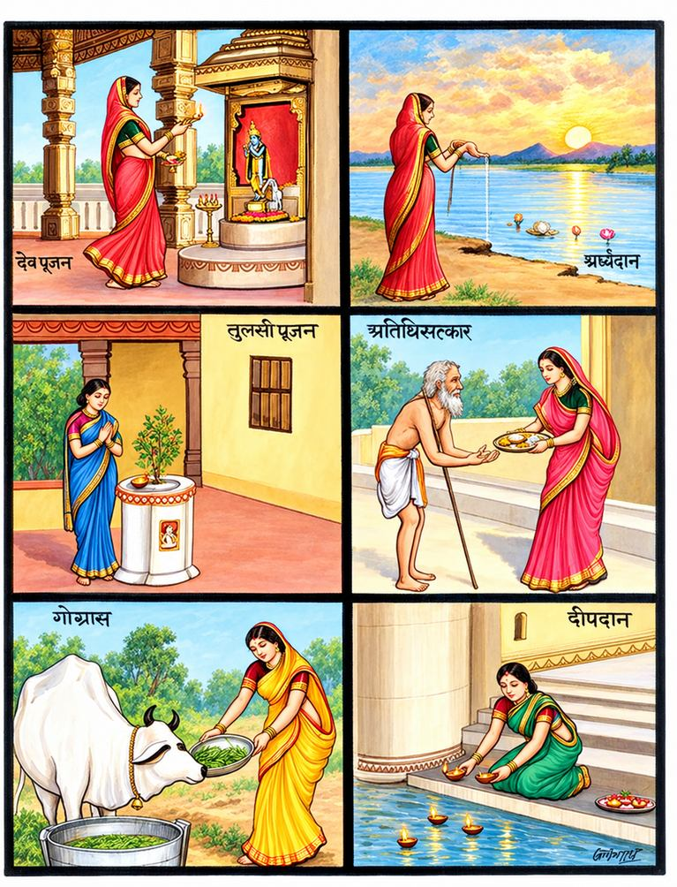
देव-अतिथि-तुलसीकी पूजा
गौओंके हित ग्रास प्रदान।
अर्घ्यदान औ दीपदान-ये
गृहिणीके षट् कर्म प्रधान॥
गृहदेवी
हिंदू-आदर्शके अनुसार स्त्री गृहस्थीकी पुजारिन है। वह घरके तुलसी आदि पवित्र वृक्षोंको जल देती है, होमकी अग्नि सँभाल रखती है, स्नान और पूजा-पाठसे शुद्ध होकर अन्नको भी पवित्र रखती है। उसकी गृहसेवा भक्तिका एक अंग होती है। वह घरसे बाहर केवल तीर्थयात्राके लिये जाती है, परंतु घरके भीतर वह समस्त व्यापारोंका केन्द्र होती है और विभिन्न वय एवं श्रेणीके पुरुषोंसे अलग न रहकर उनकी घरेलू चर्चाओं, क्रियाओं तथा विचारोंपर महत्वपूर्ण प्रभाव डालती रहती है।
कलाकौशल सीखनेमें भी वह कभी अयोग्य नहीं समझी गयी है। संस्कृत-साहित्यमें अनेक विदुषी महिलाओं तथा स्त्री-कवियोंके उदाहरण मिलते हैं। तरुणी स्त्रियोंके लिये ही तो संस्कृतके शिक्षा-विशारद चौंसठ कलाओंकी तालिका बनाते हैं। श्रीशंकराचार्यने तो एक विदुषी महिलाके साथ शास्त्रार्थतक किया था। सीता, द्रौपदी, सावित्री और दमयन्ती आदि आदर्श महिलाएँ शृंगारके अतिरिक्त अन्य कलाओंके द्वारा भी अपने-अपने पतिका प्रेम बनाये रखना जानती थीं और आजकी हिंदूगृहिणियोंकी भाँति ही वे उनकी सच्ची संगिनी थीं।
—सर आर्थर मेहिड
विश्वजननी नारी-शक्ति
(लेखक—श्रीअक्षयकुमार वन्दोपाध्याय, एम्० ए०)
अशेष वैषम्यमय नियतपरिणामशील विश्वप्रपंचके बहिरावरणका भेद करके जिनकी सूक्ष्म दृष्टि इसके प्राणोंके भीतर प्रवेश कर गयी है, जीव-जगत्के बाह्य परिचयसे तृप्त न होकर जिन्होंने इसके अन्तर्निहितसत्यका अनुसन्धान किया है और वह सत्य जिनकी अनुभूतिके समक्ष प्रकट हो गया है, उनके लिये यह विश्व-जगत् ही एक अभिनव स्वरूपमें प्रकाशित हो जाता है। उन्होंने देख पाया है कि एक अद्वितीय महामहिमा-मण्डिताविचित्रभरण-शोभिता सच्चित्-प्रेमानन्दमयी, महाशक्ति इस विश्व-प्रपंचके रूपमें—नित्य नवायमान आकृति-प्रकृतिके साथ—अपनेको अभिव्यक्त करके अनादि-अनन्तकालसे अपने ही साथ आप खेल रही है। वे जो कुछ देखते हैं, जो सुनते हैं, जो स्पर्श करते हैं, जो आस्वादन करते हैं, सभीमें एक विचित्र विलास-निपुणा चैतन्यमयी महाशक्तिका नित्य नया परिचय प्राप्त करते हैं। सभी रूपोंमें वे उस महाशक्तिके ही सौन्दर्यको देखते हैं, समस्त रसोंमें उसीके माधुर्यका आस्वादन करते हैं, समस्त शब्दोंमें उसीकी वाणी सुनते हैं, समस्त गन्धोंमें उसीकी अंग-गन्ध सूँघते हैं और सभी स्पर्शोंमें उसीके स्नेह-सरस कोमल दिव्य स्पर्शका अनुभव करते हैं, अनन्त ज्ञान, अनन्त प्रेम, अनन्त वीर्य, अनन्त ऐश्वर्य, अनन्त सौन्दर्य-माधुर्य, अनन्त आनन्द और शान्तिकी अक्षय, अव्यय, अटूट भण्डार और उद्गमस्थानरूपा वह अद्वितीय महाशक्ति अपनेको ही इस बहुधा विभक्त जगत्के रूपमें प्रकट करके और अपने ही अंगीभूत इस जगत्में विचित्र ज्ञान-प्रेम-वीर्य-ऐश्वर्यका खेल खेलकर अनादि अनन्तकाल नित्य-नूतनरूपमें आप ही अपना आस्वादन कर रही है—यह सुमहान् दृश्य उनकी दृष्टिके सम्मुख समुज्ज्वल रूपमें प्रकट हो जाता है।
जो इस विचित्र-रस-विलासिनी विश्व-जननी विश्व-रूपिणी महाशक्तिका साक्षात्कार कर चुके हैं, वे जगत्में इतने दुःख-दैन्य, इतने द्वन्द्व-संघर्ष, इतने हिंसा-द्वेष, इतनी अज्ञता-मूढ़ता और इतनी क्षुद्रता-नीचताको देखकर भी विक्षुब्ध या विचलित नहीं होते। इनको वे लोग परमार्थतः सत्य बोध ही नहीं करते। वे देखते हैं कि विश्वजननी महाशक्तिके स्वरूपभूत अनन्त ज्ञान-सम्पत् को विचित्र खण्डज्ञानके रूपमें विलसित करनेके लिये ही विश्वमें ज्ञानकी छायाके रूपमें अज्ञानका प्रकाश, उसके अनन्त ऐश्वर्यका विचित्र सान्तरूपमें आस्वादन करानेके लिये ही ऐश्वर्यके आवरणरूप दुःख-दैन्यका अवभास होता है। मानव-समाजके समस्त हिंसा-द्वेष-कलह, समस्त अत्याचार-अविचार-निष्पेषण, समस्त संग्राम-हत्याकाण्ड और परस्वापहरणके अंदर भी वे एक अनन्त प्रेमरससागरका ही विचित्र हिल्लोल, विचित्र उत्ताल तरंगोंके घात-प्रतिघात देखते हैं। अपने शरीरके प्रति ऐकान्तिक प्रेम ही अन्यान्य शरीरोंके प्रति हिंसा-घृणा-भयादि आकारोंमें प्रकट होता है। अपनी जाति, समाज या सम्प्रदायमें संकीर्णभावसे निबद्ध प्रेम ही प्रतिद्वन्द्वी अन्यान्य जाति, समाज और सम्प्रदायके प्रति दारुण विद्वेष और क्रोधके रूपमें प्रकट होता है। आत्माके स्वरूपभूत प्रेमकी प्रेरणासे ही जीव अपने प्राणोंतकको उत्सर्ग कर देता है और दूसरेके प्राणोंपर आघात भी करता है। प्रेम जब संकुचित सीमामें विशेष-विशेष रूपोंमें प्रकट होता है, तब हिंसा-द्वेष-घृणा-भय आदि आकारोंमें ही उसकी सीमाँका निर्माण होता है। इन सब सीमाओंका अस्तित्व प्रेमके आश्रयपर ही होता है; प्रेम ही इन हिंसा-घृणादिका प्राण है। किसी विशेष क्षेत्रमें प्रेमका विशेष विकास न हो तो हिंसा-घृणा-भय-कलहादिकी उत्पत्तिके लिये भी कोई कारण नहीं रहे। प्रेम यदि हिंसा-द्वेषादिके द्वारा परिच्छिन्न न होता तो वह अखण्ड निस्तरंग स्वस्वरूपाभिन्न रसास्वादनके रूपमें ही संसारके ऊपर विराजमान रहता, संसारमें इन विचित्र आकारोंमें प्रेमका विकास नहीं होता।
इस प्रकार तत्त्वदर्शी पुरुष यह उपलब्धि करते हैं कि ज्ञान, प्रेम, ऐश्वर्य, सौन्दर्य-माधुर्य, वीर्य और आनन्द ही वस्तुतः सत्य हैं; अज्ञान, अप्रेम, दैन्य, कदर्यता, दुर्बलता और दुःख परमार्थतः सत्य नहीं हैं। सत्यका वैचित्र्य-सम्पादन करनेके लिये ही असत्यका आविर्भाव होता है; प्रकाशके विचित्र विलासके लिये ही अन्धकार प्रकट होता है; एक अखण्ड सत्ताके बहुत-से सत्यरूपोंमें आत्मपरिचय देने और आत्मास्वादन करनेके लिये ही विभिन्न नाम-रूप-उपाधिका प्रादुर्भाव होता है। नित्य सत्य ज्ञान-प्रेम-वीर्यैश्वर्यमयी चिदानन्द-विलासिनी स्वस्वरूपास्वादिनी महाशक्ति ही अपने स्वरूपभूत अनन्त ज्ञान, अनन्त प्र्रेम, अनन्त वीर्यैश्वर्य, अनन्त जीवन और अनन्त आनन्दका विचित्र भावोंमें खण्ड-खण्ड रूपसे सम्भोग करनेके लिये ही मिथ्या आवरणकी सृष्टि करके विश्वरूपिणी बन गयी हैं। उन्हींके आत्मास्वादनके लीला-विलासमें ज्ञानका आश्रय करके ज्ञानकी विचित्रताके सम्पादक अज्ञानकी सृष्टि हुई है; आनन्दका आश्रय करके आनन्दके वैचित्र्य-विधायक दुःख-दैन्यादिका प्राकटॺ हुआ है, वीर्यका आश्रय करके विचित्र स्तरोंकी दुर्बलता, सौन्दर्यका आश्रय करके नाना प्रकारकी कदर्यता, मंगलका आश्रय करके अमंगल और प्रेमका आश्रय करके अप्रेम विचित्र आकार-प्रकारसे लीला कर रहा है।
इस संसारमें जन्मके साथ मृत्यु, मिलनेके साथ विरह, सृष्टिके साथ ध्वंस, सुखके साथ दुःख, यौवनके साथ जरा, स्वास्थ्यके साथ व्याधि, प्रेमके आत्मदानके साथ हिंसाके बीभत्स हत्याकाण्ड, ज्ञानके सत्यानुसन्धानके साथ मोहका अनृत-सेवन—सभी एक सूत्रमें ग्रथित हैं, एक ही प्राणके द्वारा संजीवित हैं। ये सब मानो परस्पर हाथ-से-हाथ मिलाकर, परस्परको आलिंगन करके कालकी तरंगोंमें नाचते हुए चल रहे हैं। कितने नवीन साम्राज्योंका निर्माण होता है, कितने सुप्रतिष्ठित साम्राज्य देखते-ही-देखते श्मशानमें परिणत हो जाते हैं। कितने असुर-दैत्य-दानव साधना-तपस्याके द्वारा अपरिमित ऐश्वर्य प्राप्त करके, बहुविध-जागतिक ज्ञान-विज्ञानको हस्तगत करके स्वर्ग-मर्त्य-पातालके ऊपर—जल-स्थल-आकाशके ऊपर—एकाधिपत्यका विस्तार करते हैं, फिर दूसरे ही क्षण अप्रत्याशितरूपसे समस्त सम्पदासे वंचित होकर नितान्त निःसहाय क्षुद्रातिक्षुद्र दुर्बल कीटकी तरह प्राण-त्याग करते हैं। इस जगत्में कहीं प्रलयकी अग्नि अपनी सर्वग्रासी लंबी जिह्वाको लपलपाती हुई भीषण आकारमें प्रज्वलित है; कहीं ध्वंसके विकट चीत्कारसे आकाश-वायु, जल-स्थल प्रकम्पित हो रहे हैं; कहीं आध्यात्मिक, आधिभौतिक और आधिदैविक ज्वाला-यन्त्रणाओंका हृदयभेदी आर्तनाद हो रहा है; एवं कहीं प्रभुत्व-प्रतिष्ठाका उल्लास, भोगप्राचुर्यका आनन्द-कोलाहल और विलास-व्यसनका उद्दाम नृत्य चल रहा है। यह वैचित्र्य ही संसार है।
भारतीय साधकोंने इस विश्व-प्रकृतिकी—विश्व-जननी-विश्वरूपिणी महाशक्तिकी अशेष सौन्दर्यमयी नारीके रूपमें और परम कल्याणमयी जननीके रूपमें उपलब्धि की है। पुरुषकेन्द्रिक मानव-समाजमें नारी साधारणतः दुर्बलता, कोमलता, स्नेह-ममता, पुरुषसेवा-परायणताकी प्रतिमा एवं पुरुषकी संभोग्यारूपसे ही परिचित है। परंतु भारतीय मनीषियोंने नारीको इस दृष्टिसे नहीं देखा है। नारीकी कोमलता और मधुरतामें उन्होंने महाशक्तिका प्रकाश देखा है। नारीको उन्होंने शक्तिस्वरूपिणी बताया है। वीर्य और ऐश्वर्यका सौन्दर्य और माधुर्यरूपमें प्रकाश ही नारीत्व है। नारीके अंग-प्रत्यंगमें सौन्दर्य और माधुर्य, कोमल और शान्त गुण-समूह लीला कर रहे हैं; स्नेह और ममता तथा प्रेम और सेवाके द्वारा बाहर उसके प्राणोंकी झाँकी हो रही है; परन्तु उसके भीतर अटूट वीर्य और अनन्त शक्ति भरी है। अन्तरमें अनन्त शक्तिका आधार है; इसीसे तो नारी पुरुषको गर्भमें धारण करती है, महान् वीर्य-सम्पन्न पुरुषोंको जन्म देती है। नारी पुरुषकी जननी है, पौरुषकी जननी है। सुप्रशान्त, सुकमनीय, सर्वरसधन, लीलायितगति नारीशक्तिसे ही विश्वकी समस्त शक्तियोंका जन्म होता है, समस्त खण्डशक्तियोंका उद्भव होता है; फिर जब प्रत्येक खण्डशक्ति नारीशक्तिमें उन्नीत होती है—प्रेम, माधुर्य और सौन्दर्यसे सुशोभित होती है—तभी उसकी पूर्णता सुसम्पन्न होती है। वीर्य, ऐश्वर्य, विक्रम, तेज जब निर्द्वन्द्व, निर्भीक और सहज भावमें रहते हैं, जब उनमें कोई चंचलता, रूक्षता, तीक्ष्णता और कदर्यता नहीं रहती; जब वे अपनी प्रतिद्वन्द्विनी शक्तियोंके प्रति हिंसात्मक संग्राममें नियुक्त होकर ज्वालामय नहीं हो जाते, और स्वच्छन्द रूपसे अपनेको प्रकट कर सकते हैं, तभी वे सौन्दर्य-माधुर्य-मण्डित होते हैं और तभी उनमें नारीत्वका विकास होता है।
भारतीय तत्त्वदर्शी साधकोंने विश्व-विधायिनी अनन्त-वैचित्र्यप्रसविनी महाशक्तिका का एक ऐसी महानारीके रूपमें साक्षात्कार किया था। उस महानारीमें कर्मशक्ति और ज्ञान-शक्ति, शासनशक्ति और संरक्षणशक्ति, उत्पादिनीशक्ति और संघटिनीशक्ति सभी नित्य परिपूर्णतासे प्रतिष्ठित हैं। अतएव वह प्रेम, सौन्दर्य, माधुर्य और आनन्दसे मण्डित होकर प्रकट है। कर्मक्षेत्रमें उसका हिंसाभाजन कोई प्रतिद्वन्द्वी नहीं है। उसके ज्ञानमें कोई आवरण तथा विक्षेप नहीं है, उसकी संकल्प-सिद्धिमें कोई अन्तराय नहीं है, उसमें अपने-परायेका भेद नहीं है। देवता और असुर सभी उसकी सन्तान हैं; मनुष्य, पशु-पक्षी, कीट-पतंग, सभीको उसने प्रसव किया है। सबकी सब प्रकारकी शक्तियोंमें उसीकी शक्ति खण्ड-खण्डरूपसे लीला कर रही है। अतएव शान्ति और आनन्द, प्रेम और कोमलता, धीरता और स्थिरता एवं सौन्दर्य और माधुर्य उसके प्रत्येक अंग-प्रत्यंगमें नित्य निवास करते हैं। इसीलिये उसकी रमणीय रमणी-मूर्ति है। विश्व-जगत्में पाशवशक्ति, आसुरशक्ति और राक्षसशक्तियोंका भयावह ताण्डव नृत्य और सामयिक प्रादुर्भाव देखकर भी सर्वशक्ति-जननी सर्वशक्ति-नियन्त्री महानारीके प्रति भारत-सन्तानने अपनी आस्था नहीं खोयी है; विश्वविधानके मूलमें जो एक कल्याणमयी नारीशक्ति लीला कर रही है—प्रेम, आनन्द, सौन्दर्य और कल्याण ही उसका स्वरूप है,—इस सत्यको वह भूला नहीं है। विभिन्न समयोंमें नाना प्रकारसे उपद्रवग्रस्त होनेपर भी उसने महाशक्तिकी उस परम कल्याणमयी जननीमूर्तिकी ओर अपनी दृष्टिको स्थिर रखा है, विश्वासको अटूट बनाये रखा है। उसके इस जगत्में परिणाममें नारीशक्तिकी ही विजय होगी—प्रेम, अहिंसा, सेवा, चरित्र-बल, प्राणोंके कोमल भाव, व्यवहारके सौन्दर्य-माधुर्य ही परिणाममें विरोधी समस्त शक्तियोंपर विजय प्राप्त करेंगे—इस विश्वासको उसने कभी हटाया नहीं है। इस विश्वासने ही भारतको अमरत्व प्रदान किया है—अमृतत्वका अधिकारी बनाया है।
नारी-तत्त्व
(लेखक—श्रीक्षेत्रलाल साहा, एम्० ए०)
पुराणोंमें हमें नारी-जीवनके निगूढ़ सत्यसमूहकी प्रतिष्ठाभूमि चिरन्तन चित्रवत् उज्ज्वल वर्णोंसे अंकित देखनेको मिलती है। पुराणों, वेदों और उपनिषदोंमें अनित्य पार्थिव जीवनकी नित्य रूपरश्मि-रेखा विभासित हो रही है। पहले दो नहीं थे। था एक। एकमेव। अद्वितीय परम पुरुष। किंतु अकेलेमें सुख नहीं है। सुख नहीं है यानी जीवन ही नहीं है। ‘स वै नैव रेमे।’ ‘एकाकी न रमते’ ‘स द्वितीयमैच्छत्।’ वे आद्य परमपुरुष अकेले होनेपर भी अकेले नहीं थे। अन्तरमें युगल थे। ‘यथा स्त्रीपुमांसौ सम्परिष्वक्तौ।’ मिलित देव-देवी नर-नारीरूप भावतः दो थे। शीघ्र ही वस्तुतः दो हो गये। ‘स आत्मानं द्वेधा पातयत्। पतिश्च पत्नी चाभवताम्।’ यह बृहदारण्यक उपनिषद् (४। ३)-का प्रसंग है, सृष्टिके प्रारम्भका प्रसंग है। पुरुष-प्रकृति और शिव-दुर्गाका प्रसंग है। अर्धनारीश्वर-मूर्ति इसी तत्त्वका मूर्तभाव-विशेष है। श्रीराधाकृष्ण पृथक् तत्त्व है। सृष्टि-प्रवृत्तिके साथ उनका कोई सम्बन्ध नहीं है। श्रीकृष्ण मायातीत पुरुष हैं। शिव मायावलम्बी हैं, मायाश्रित हैं। ‘मायिनं तु महेश्वरं विद्धि।’ तत्त्व-सृष्टिके बाद, ब्रह्माकी सृष्टिके बाद, अर्थात् ब्रह्माने उत्पन्न होकर जब विश्वका प्रवर्तन किया, तब कुमार और रुद्रादिकी सृष्टिके अनन्तर प्रजापतिवर्गकी सृष्टि हुई। तत्पश्चात् एक अपूर्व घटना हुई। सृष्टिकर्ताके तपोमय ज्ञानमय शरीरसे एक दिव्य नर-नारीका जोड़ा निकला। पुरुष स्वायम्भुव मनु थे और नारी विश्वमानवकी माता शतरूपा थीं। (भागवत ३। १२)
नर और नारी एक ही तत्त्वकी दो प्रकारकी मूर्तियाँ हैं। दो होकर वह रूप, भाव, शक्ति और सामर्थ्यमें विभिन्न हो गया है। अभिन्न होकर भी विभिन्न है। अचिन्त्य भेदाभेद भाव है। श्वेताश्वतर-उपनिषद् में कहा है—आत्मामें स्त्री-पुरुषका भेद नहीं है—
‘नैव स्त्री न पुमानेष न चैवायं नपुंसकः।
यद्यच्छरीरमादत्ते तेन तेन स लक्ष्यते।’
कर्मानुसार देहधारण हुआ और देहानुसार स्त्री-पुरुषका भेद हो गया है। नर-नारी तत्त्वतः और वस्तुतः एक हैं। संसारके कर्मक्षेत्रमें कर्मप्रेरणा एवं पृथक्-पृथक् सुख-दुःखादि कामनाके अनुसार जीवात्माँका लिंगभेद होता है। नर-नारी जब कामना और कर्मके निःशेष हो जानेपर जन्म-मृत्युका अतिक्रम करके अमृत जीवनमें प्रवेश करते है, तब वहाँ भी यह लिंगभेद और रूपभेद नहीं मिटता। ‘सृष्टिके आरम्भमें रमणीका प्रादुर्भाव हुआ, इसके पूर्व रमणी नहीं थीं।’ यह भावना सत्य नहीं है। कारण, सृष्टि अनादि और अनन्त है। अतएव रमणी भी सनातन है। प्रलयकालमें सब कुछ अन्तर्हित हो जाता है और फिर जीवन-प्रभातमें सब कुछ प्रकाशित हो जाता है—‘प्रभवन्त्यहरागमे।’ गीतामें एक गुरुतर और गूढ़तर बात कही गयी है। भगवान्ने कहा है—
अपरेयमितस्त्वन्यां प्रकृतिं विद्धि मे पराम्।
जीवभूतां महाबाहो ययेदं धार्यते जगत्॥
(७। ५)
यहाँ पुरुष और प्रकृतिका द्वैत नहीं है। केवल प्रकृति ही है। परा और अपरा। जीवमात्र परा प्रकृति है और देह, मन, प्राण, इन्द्रिय, पृथ्वी, जल, तेज आदि सब अपरा प्रकृति है—जड प्रकृति है। चित् प्रकृति ही पुरुष है और वह पुरुष भी प्रकृति ही है। पुरुषरूपा प्रकृति और नारीरूपा प्रकृति। दोनों ही प्रकृति हैं, पुरुष नहीं है। पुरुष तो एक ही है। ‘द्रष्टा दृष्टिमात्रः शुद्धोऽपि प्रत्ययानुपश्यः’ (२। २०) इस पातंजलसूत्रमें प्रकृति-पुरुषका निगूढ रहस्य भरा है—महत्तत्त्व नामक बुद्धि जो प्रकृतिका सर्वोत्तम विकास है, उसमें पुरुष प्रतिबिम्बित होता है। बुद्धि पुरुषके द्वारा प्रतिसंविदित होती है। इसीलिये बुद्धि पुरुषाकारा बनती है, बनकर पुरुषका अभिमान ग्रहण करती है, पुरुषभावको प्राप्त होती है। पुरुषसे सम्पूर्ण पृथक् होनेपर भी पुरुष-आभासित होकर पुरुष बन जाती है। दार्शनिकोंकी भाषामें इसका नाम ‘ग्रहीता पुरुष’ है। इस पुरुषभावके भ्रमको मिटाना ही समस्त साधनाओंका मूल उद्देश्य है। पार्थिव पुरुषगण प्रतिनिधि-पुरुष हैं, छाया-पुरुषमात्र हैं। वस्तुतः प्रकृति हैं, पुरुष नहीं हैं। परंतु नारी भी नहीं हैं, जगत्में सत्य तत्त्व नारी है। पुरुष अभिनयकर्ता है। इसीलिये पुंचिह्नका नाम लिंग है। अर्थात् जो रहता नहीं, विलीन हो जाता है—‘लयं गच्छति।’ स्त्री-चिह्नका नाम योनि है अर्थात् कारण या तत्त्व है। नारीमें ही जीवका जीवन-तत्त्व प्रतिष्ठित है। नारी ही जीवनका ‘कारण’ है।
चण्डीमें जगज्जननी भगवती दुर्गाका ज्योतिर्मय प्रकाश है। विश्वविकाशिनीकी वह विकाशलीला अत्याश्चर्यमयी है। ब्रह्मादि देवता श्रीविष्णुभगवान्के पास जाकर महिषासुरके अत्याचारोंकी बात सुनाते हैं। सुनकर भगवान् क्रोध प्रकाश करते हैं। वही दुरन्त क्रोध देखते-देखते ही संक्रामक हो उठता है। ब्रह्मादि देवता सभी क्रोधसे जलने लगते हैं। वह ज्वाला—वह तेज दिग्दिगन्तमें व्याप्त हो जाता है। आकाश महान् प्रभामय बन जाता है। देखते-देखते ही यह भीषण तेजोराशि घनीभूत हो जाती है। दूसरे ही क्षण उस तेजोराशिसे एक दीप्त तेजोमयी नारीमूर्ति आविर्भूत होती है। अब देवताओंके आनन्दकी सीमा नहीं है। उन्होंने विश्वविभाविनी विश्वजननी दानवदलिनी भगवती दुर्गाको देखा। उन सभीने वसन-भूषण, अस्त्र-शस्त्रादि उपहार देकर भगवतीका अभिनन्दन किया, उसकी अर्चना की। देवीने सम्मानित उच्चस्वरसे निनाद किया। वे बार-बार अट्टहास करने लगीं। अनन्त आकाशमें व्याप्त होकर वह भयानक शब्दतरंग बह चला। महिषासुरने चकित होकर देखा तो उसे दिखलायी दीं—आकाश-पातालको अपनी ज्योतिसे उद्भासित करती हुई आद्याशक्ति सहस्रभुजवती देवी भगवती।
‘दिशो भुजसहस्रेण समन्ताद्वॺाप्य संस्थिताम्’
अतएव हमलोगोंने देखा—समस्त देवताओंकी समस्त शत्रुविमर्दिनी शक्तियोंका समन्वय। यह समन्वित शक्ति ही ‘विद्युद्दामसमप्रभां मृगपतिस्कन्धस्थितां भीषणाम्’ भगवती दुर्गा हैं। पुरुष-प्रकृति, नर-नारी, मानव-मानवी और देव-देवियोंका सच्चा सन्धान हमें इस प्रकार दुर्गासप्तशतीमें मिलता है। इसके अतिरिक्त दुर्गासप्तशतीमें और भी नारी-तत्त्व-रहस्य निहित है। हम जानते हैं शिव और उनकी शक्ति दुर्गाको, विष्णु या नारायण और लक्ष्मीको, इन्द्र-इन्द्राणीको, ब्रह्मा-ब्रह्माणीको सबमें पुरुष और रमणी-भाव पृथक्-पृथक् हैं; पंरतु चण्डीके ऋषिने एक अपूर्व बात कही है—
ब्रह्मेशगुहविष्णूनां तथेन्द्रस्य च शक्तयः।
शरीरेभ्यो विनिष्क्रम्य तद्रूपैश्चण्डिकां ययुः॥
यस्य देवस्य यद्रूपं यथाभूषणवाहनम्।
तद्वदेव हि तच्छक्तिरसुरान् योद्धुमाययौ॥
(८। १३-१४)
मूर्तिमती गायत्री आदि ब्रह्माकी कोई प्रेयसी नहीं, ब्राह्मणी हैं। ब्रह्माँका जैसा रूप और वेष-भूषा है, ठीक वैसा ही इनका है; परंतु ये रमणी हैं। जैसे महेश्वर हैं, माहेश्वरी वैसे ही तुषारवर्णा, ललाटपर चन्द्ररेखा धारण किये हुए, दोनों भुजाओंमें विषधर सर्पोंके कंकण धारण किये हुए हैं। कौमारी ठीक कुमारके सदृश हैं—‘कौमारी शक्तिहस्ता च मयूरवरवाहना।’ वैष्णवी सर्वथा विष्णुकी ही जीवित प्रतिमा-जैसी हैं। राधा, लक्ष्मी, सरस्वती आदि कोई नहीं हैं पर वैष्णवी हैं। फिर इसी तरह वाराही, नारसिंही हैं। फिर ऐन्द्री हैं। इन्द्राणी शची देवी नहीं—सहस्रनयनोज्ज्वला, वज्रहस्ता हैं। हम ऐसे किसी प्रसंगकी कल्पना नहीं कर सकते। परंतु इसमें तो कल्पनाकी अपेक्षा नहीं है। यह सत्य है। यही सत्य जीवमात्रमें जीवितरूपसे अनुप्रविष्ट होकर वर्तमान है। प्रत्येक पुरुष ही नारी है और प्रत्येक नारी ही पुरुष है। जीवजीवनमात्र ही युगलित है। व्यक्तिमात्र ही मिथुनीकृत है। हमारी शक्तिरूपिणी रमणी हमारे ही भीतर छिपी है। हमारे देह-मनमें निमग्न है—निविष्ट है। हम उसे पाते नहीं, देखते नहीं; परंतु चाहते हैं। हमारे अन्तरमें उसकी संगलालसा है। इसी लालसाके वशमें होकर हम बाह्य जगत्में नारीकी खोज करते हैं। जिसको प्राप्त करते हैं, वह हमारे मनके अनुकूल नहीं होती। प्रार्थना करते हैं—‘पत्नीं मनोरमां देहि मनोवृत्तानुसारिणीम्।’ यही बात रमणीके लिये है। उसके साथ भी एक रमणीमनोरम पुरुष युगलित है। वह भी उसे पाती नहीं—देखती नहीं। जिसको पाती और देखती है, वह मनोरम नहीं होता। इसीसे जगत्में इतना दुःख है, इतनी मर्मान्तक वेदना है। इतनी विरहानल-ज्वाला है।
नर-नारीकी आकांक्षाओं-कामनाओंका अन्त नहीं है। पर सुवर्ण-मणि-माणिक्य, बहुमूल्य वस्त्राभूषण आदिसे उस आकांक्षाकी तृप्ति नहीं होती। समस्त कामनाओंकी अन्तरतम कामना है—पुरुषके लिये कामिनी और कामिनीके लिये प्रणयवान् पुरुष। किंतु जगत्की कोई भी कामिनी पुरुषकी इस कामिनी-कामनाको परिपूर्ण नहीं कर सकती। अप्सरा, किन्नरी, विद्याधरी—सभी मुग्ध पुरुषचित्तको विषदग्ध करके, अन्धकारके गहन-गह्वरमें गिराकर चली जाती हैं। पुराणोंमें इसके अनेक ज्वलन्त उदाहरण हैं। सौभरि, वेदशीर्ष आदि ऋषियों और पुरूरवा, ययाति आदि राजाधिराजोंके जीवनचरित्रमें कामिनी-कामनाकी अनल-ज्वाला प्रवाहित है। नारियोंके लिये चिरन्तन उदाहरण है—वारांगना पिंगलाका। श्रीमद्भागवत (११। ८) में पिंगलाकी कथा है और पतंजलि मुनिने भी पिंगलाकी स्मृतिको योगसूत्रमें मोतीके दानेकी भाँति गूँथ दिया है—‘निराशः सुखी पिंगलावत्’ (४। ११)। कवि रवीन्द्रनाथने एक कवितामें लिखा है—‘पागल हइया वने-वने फिरि आपन गन्धे मम कस्तूरी-मृग सम। जाहा चाइ ताहा भूल करके चाइ जाहा पाइ ताहा चाइ ना॥ ’ हम जिस रमणीको ढूँढ़ते हैं, वह तो हमारे ही अंदर हमसे मिली हुई विद्यमान है। उसीके रूप-रस-सौरभसे व्याकुल होकर हम भाग-दौड़ मचा रहे हैं। कस्तूरीमृगकी भाँति हम अपनी ही अन्तःशोभा-सौगन्ध्यसे मुग्ध होकर वन-वन भटक रहे हैं। जिसको ग्रहण करके अपनाना चाहते हैं, वह मनके अनुकूल नहीं होती। इसीसे उसको चाहते नहीं। हमारी वांछिता रमणी तो हमारी ही प्राणमयी, मनोमयी होकर—हमारी ही अन्तरतमा होकर हमारे ही भीतर नित्य विराजित है। हम निर्बोध हैं जो उसे बाहर खोज-खोजकर मर रहे हैं। हम जिस क्षण उसे पहचान पायँगे, उसी क्षण हमारे प्राण-मन सदाके लिये आनन्द-चिन्मय-रसमें निमग्न हो जायँगे और इसीके साथ सच्चिदानन्द-रसमय अमृत पुरुषके साथ नित्य प्रेम-सम्मिलन सम्पन्न हो जायगा। कविने गाया है—‘कौन विरहिणी नारी है, जो मेरे मध्य छिपी रहती।’ उस विरहिणीकी विरह-वेदना मिट जायगी। नित्य रासपूर्णिमा अमिय-ज्योत्स्ना विकसित हो जायगी।
इस प्रकार प्रेमसाधनाकी सिद्धिसे मिथ्या पुरुषाभिमान दूर हो जायगा। रागमयी दिव्यरसवैभवा रमणी प्रकट हो जायगी। यही पार्थिव पुरुष-जीवनका परम सत्य है। रमणी-जीवनमें तो यह और भी गम्भीरतर सत्यरूपमें प्रतिभासित होता है। रमणी स्वामीके शरीर-मन-प्राण-मन्दिरमें अपने चिराकांक्षित पुरुषकी उपासना करके, अपने गहन-गम्भीर पुष्प-सौरभ-पूर्ण हृदयकुंजमें चिन्मय पुरुषका अनुसन्धान करके, समस्त भाव-रसोंमें उसीका अनुभव करके, उसकी परम स्पर्शसुधाका पान करके अमृतमयी होकर, मर्त्य जीवनका अन्त होनेपर नित्यानन्दसौन्दर्यके राज्यमें अपने नित्य सुख-सुधाके साथ मिल जाती है। यही नारी-जीवनकी परम सिद्धि है।
परमार्थतः नारी पुरुषकी अपेक्षा श्रेष्ठ है। नारी नारीके रूपमें ही अपनी समस्त प्रेमाकांक्षाको पा जाती है, परम पुरुषके साथ नित्य प्रणयालिंगन प्राप्त कर सकती है; परंतु पुरुषको इस राग-सम्मिलनका सर्वोत्तम अधिकार प्राप्त करनेकेलिये नारीभावसे विभावित होकर नारी बनना पड़ता है। अथवा कुत्सित पौरुष-गर्वका परित्याग करके किसी विशिष्ट प्रेमानुरागका भाव ग्रहण करना पड़ता है। कामिनी-कामनामय पुरुषाभिमान रहते कभी भगवत्प्राप्ति नहीं हो सकती। रमणी-लालसासे ही ज्ञानाच्छादनी और प्रेमावरणी मायाका सबसे अधिक घनीभूत प्रभाव रहता है। रमणी-संगकी तृष्णाके रहते श्रीराधारमणकी—प्रेममय परम पुरुषकी कृपा नहीं प्राप्त हो सकती। भारतीय ऋषि-मुनियोंने नाना प्रकारसे इस सत्यको प्रकाशित किया है। यूरोपमें भी कार्डिनल न्यूमैनने यही बात स्पष्ट कही है। दान्ते, गेटे और शेलीने भी अपने जीवन और काव्योंमें इस निर्मलोज्ज्वल सत्यको नाना प्रकारसे प्रमाणित किया है। बाइबलका सोलामेन गीत इसी सत्यपर प्रतिष्ठित है। नारी-तत्त्व अत्यन्त गम्भीर रहस्यमय है। यहाँ संक्षेपमें शास्त्रालोकसे उसीका कुछ आभास दिया गया है। इसका श्रवण, मनन और निदिध्यासनके द्वारा हृदयके भीतर अनुभव करना चाहिये।
माता परम पूजनीय
जनको जनमदातृत्वात् पालनाच्च पिता स्मृतः।
गरीयान् जन्मदातुश्च योऽन्नदाता पिता मुने॥
तयोः शतगुणे माता पूज्या मान्या च वन्दिता।
गर्भधारणपोषाभ्यां सा च ताभ्यां गरीयसी॥
(ब्रह्मवैवर्तपुराण गणेश० ४० अध्याय)
जन्मदाता और पालनकर्ता होनेके कारण सब पूज्योंमें पूज्यतम जनक और पिता कहलाता है। जन्मदातासे भी अन्नदाता पिता श्रेष्ठ है। इनसे भी सौगुनी श्रेष्ठ और वन्दनीय माता है, क्योंकि वह गर्भधारण तथा पोषण करती है।
नारीत्वका आदर्श-प्राच्य और प्रतीच्य
(लेखक—श्रीयुत बसन्तकुमार चटर्जी, एम्० ए०)
नारीत्वके भारतीय आदर्श और पाश्चात्य आदर्शकी तुलना करनेका आधार हमें दो बड़े-बड़े महाकाव्योंसे मिलता है। एक है वाल्मीकीय रामायण और दूसरा होमरका इलियड (Iliad)। इन दोनों महाकाव्योंकी कथावस्तुमें अद्भुत साम्य है। जैसे रामकी पत्नी सीताको रावण हर ले जाता है, उसी प्रकार मेनेलासकी स्त्री हेलेनका भी पेरिसद्वारा अपहरण होता है। जैसे राम रावणको युद्धमें परास्त करके श्रीसीताका उद्धार करते हैं, उसी तरह मेनेलास भी पेरिसको युद्धमें परास्त करके हेलेनका उद्धार करता है। दोनों कथावस्तुओंके बीच इतनी समता होते हुए भी वाल्मीकि और होमरद्वारा प्रदर्शित स्त्रीत्वके आदर्शमें आकाश-पातालका अन्तर है। पेरिसद्वारा अपहृत होनेके बाद हेलेन उसकी पत्नी बनकर रहती है। जब मेनेलास उसे छुड़ाकर लाता है, तब फिर वह पूर्ववत् मेनेलासकी भार्या हो जाती है। महाकवि होमरकी कल्पनामें ही यह बात नहीं आ सकी कि स्त्रीके लिये पतिभक्तिका भी कोई आदर्श हो सकता है। सच पूछा जाय तो ‘पतिव्रता’ और ‘पातिव्रत्य’ शब्दोंसे जो अर्थ ग्रहण होता है, उसको द्योतित करने योग्य पाश्चात्त्य भाषाओंमें कोई शब्द ही नहीं है। यह गवेषणा तो हमारे भारतीय ऋषियोंकी ही है कि स्त्रीके लिये सर्वोच्च आदर्श पतिभक्तिका है। उसके लिये अन्य धार्मिक विधि-विधानोंके पालनकी आवश्यकता नहीं, उसके लिये विद्या प्राप्त करना अथवा ललित कलाओंमें निपुण होना भी आवश्यक नहीं है। यदि वह पतिके प्रति अनन्य भक्ति प्राप्त कर सकती है तो उसका जीवन सफल हो जायगा और वह पूर्णताको प्राप्त हो जायगी। पुत्रका सबसे बड़ा धर्म पितृभक्ति है। इस गुणसे उसे ऐहिक सुख तो प्राप्त होगा ही, उसकी आध्यात्मिक उन्नति भी होगी। शिष्यका सबसे बड़ा धर्म गुरुभक्ति है। उसके लिये ज्ञान प्राप्त करनेका वही सर्वोत्तम साधन है। इसी प्रकार नारीका सबसे बड़ा धर्म पतिभक्ति है। इसके द्वारा उसे इस जीवनमें तथा मरणोत्तर जीवनमें भी सुखकी प्राप्ति होगी।
इस प्रश्नपर होमरके विचारानुसार भारतेतर देशोंमें इसी विचारका प्रचार है—स्त्री केवल भोगकी सामग्री है; और चूँकि वह शरीरसे अबला है, इसलिये जो कोई भी उसपर अधिकार कर ले उसीके हाथोंमें उसे आत्मसमर्पण कर देना होगा। उसकी अपनी इच्छा या कर्तव्यभावनाका प्रश्न ऐसा है कि जिसके उठनेकी कोई गुंजाइश ही नहीं। स्त्रीजातिके प्रति हिंदू-शास्त्रोंके विचार इससे नितान्त भिन्न हैं। मनु कहते हैं—‘सन्तानको जन्म देनेवाली होनेके कारण स्त्रियाँ बड़ी भाग्यशालिनी हैं, वे घरकी दीप्ति हैं। वस्त्राभूषणोंसे उनका आदर करते रहना चाहिये। स्त्री और श्रीमें कोई भेद नहीं है*।’
* प्रजनार्थं महाभागाः पूजार्हा गृहदीप्तयः।
स्त्रियः श्रियश्च लोकेषु न विशेषोऽस्ति कश्चन॥
(मनु० ९। २६)
वे फिर कहते हैं—‘प्रचुर कल्याण चाहनेवाले पिता, भ्राता, पति तथा देवरोंको चाहिये कि वस्त्राभूषणोंद्वारा स्त्रियोंको अलंकृत करें।’ ‘जिस कुलमें स्त्रियोंका सत्कार किया जाता है, उस कुलपर देवता प्रसन्न होते हैं; और जहाँ स्त्रियोंका सत्कार नहीं होता, वहाँके सब धर्म-कर्म निष्फल हो जाते हैं।’ ‘जिस कुलमें स्त्रियाँ शोकमें रहती हैं, वह शीघ्र ही विनष्ट हो जाता है; जहाँ वे शोकको नहीं प्राप्त होतीं, वह कुल सदा फलता-फूलता है।’ (मनुस्मृति ३। ५५-५७) नीत्शेने ठीक ही कहा है, ‘मनुस्मृतिको छोड़कर मेरे देखनेमें ऐसी कोई दूसरी पुस्तक नहीं आयी, जिसमें स्त्रियोंके प्रति इतने अधिक ममतापूर्ण और दयापूर्ण उद्गार हों।’ इन प्राचीन श्वेत जटाधारी ऋषियों-मुनियोंका स्त्रियोंके प्रति सम्मानका कुछ ऐसा ढंग है कि उसका कदाचित् अतिक्रमण नहीं हो सकता*।’
* “I know of no book in which so many delicate and kindly things are said of the woman as in the law-book of manu; these old grayheads and saints have a manner of being gallant to woman which perhaps cannot be surpassed”. (Anti-Christ pp. 214-15)
कभी-कभी यह कहा जाता है कि भगवान् श्रीरामके आदर्शपुरुष होनेके कारण ही श्रीसीताकी उनके प्रति ऐसी भक्ति थी और यदि पति चरित्रवान् नहीं है तो उसके प्रति पत्नीकी मन्दभक्ति क्षम्य है। पर ऐसे तर्कसे वैदिक आदर्शका अज्ञान ही झलकता है। वाल्मीकीय रामायणमें हम देखते हैं कि जब दण्डकारण्यमें भगवान् श्रीराम, श्रीसीताजी और श्रीलक्ष्मण अत्रि मुनिके अतिथि हुए थे, तब अत्रिपत्नी अनसूयाने श्रीसीताजीसे कहा था, ‘सीते! तुमने यह बड़ा सुन्दर किया जो वनमें पतिका साथ देनेके निमित्त राजमहलके भोगोंको लात मार दी; क्योंकि दुष्ट स्वभाववाले, स्वेच्छाचारी, सद्गुणोंसे रहित पतिको भी सती स्त्रियाँ परमेश्वरके ही रूपमें देखती हैं।’ बात यही है कि पतिको परमेश्वर मानकर स्त्री पूर्णत्वलाभ कर सकती है। यह आवश्यक नहीं है कि पति श्रेष्ठ गुण-सम्पन्न हो, जिसकी सेवासे पत्नी अपना स्वभाव अधिक अच्छा बना सके। पतिसेवासे पत्नीको केवल पारलौकिक कल्याणकी ही प्राप्ति नहीं होती। यदि वह अपनी इच्छाको पतिकी इच्छामें विलीन कर दे तो इस लोकमें भी उसका जीवन अधिक सुखमय बन जाता है। उसकी नतिमें उन्नति है। अपनी स्वतन्त्र सत्ता बनाये रखनेकी अपेक्षा पतिके अधीन होकर पत्नी पतिको अधिक वशमें कर सकती है। विवाहित जीवनकी सुख-शान्तिके लिये यह आवश्यक है कि एक आज्ञा दे और दूसरा उसे शिरोधार्य करे। पति पत्नीका आदेश माने, इसकी अपेक्षा पत्नीका पतिकी आज्ञा मानना अधिक नैसर्गिक है। ईसाईमतको माननेवाली जातियोंके विवाहोंमें भी पत्नी ही पतिका आदेश माननेका वचन देती है। पर ईसाईमत इस भावनाको इस सैद्धान्तिक निष्कर्षतक नहीं पहुँचा सका कि पत्नीको पतिकी पूजा करनी चाहिये और यदि पतिकी मृत्यु हो जाय तो पुनर्विवाह की कल्पना भी नहीं करनी चाहिये। कहनेमें विरोध भले ही दीखे, पर यह निश्चित बात है कि हिंदूपरिवारमें जहाँ स्त्री पतिके नितान्त अधीन रहती है, घरमें शासन उसीका होता है, पतिका नहीं। बँगलाके प्रसिद्ध लेखक बंकिमचन्द्र चटर्जीने लिखा है कि ‘हिंदू ऋषियोंकी बुद्धि इस बातको समझनेमें समर्थ हुई कि यद्यपि भगवान् निराकार और निस्सीम हैं, पर उनका यह रूप साधारण मनुष्योंके लिये अवगम्य नहीं। इसलिये एक ऐसे साकार और ससीम रूपकी आवश्यकता हुई, जिसकी पूजा की जा सके। पत्नीके लिये पूजाकी सबसे अधिक स्वभावानुकूल वस्तु उसका पति है। इसीलिये ऋषियोंका यह वचन है कि पत्नीको पतिकी परमेश्वरकी भाँति पूजा करनी चाहिये।’
रामायणके दो श्लोकोंको उद्धृत करके मैं इस लेखको समाप्त करता हूँ। इसके अन्तका इससे बढ़कर और कोई सुन्दर ढंग हो भी नहीं सकता। ये श्लोक राम-वनवासके समयके श्रीसीताजीके उद्गार हैं—
नातन्त्री विद्यते वीणा नाचक्रो विद्यते रथः।
नापतिः सुखमेधेत या स्यादपि शतात्मजा॥
(अयोध्याकाण्ड ३९। २९)
‘जैसे बिना तारके वीणा व्यर्थ है और बिना पहियेके रथ, उसी प्रकार बिना पतिके स्त्रीको सुख नहीं मिल सकता, चाहे उसके सौ पुत्र क्यों न हों।’
मितं ददाति हि पिता मितं भ्राता मितं सुतः।
अमितस्य तु दातारं भर्तारं का न पूजयेत्॥
(अयोध्याकाण्ड ३९। ३०)
‘पिता, भाई और पुत्रका दान परिमित होता है। पर पति स्त्रीके लिये अमित-दानी है। उसकी पूजा कौन नहीं करेगी?’
मातृ-महिमा
(लेखक—पं० श्रीजौहरीलालजी शर्मा महामहोपाध्याय)
मात्रा भवतु संमनाः (अथर्ववेद ३। ३०। २)
इस लेखका शीर्षक समस्त पद है, जिसका अर्थ है ‘उदरमें गर्भ वा शरीरीको धारण करनेवाली पूजनीया माताकी पूज्यता वा महत्ता’, जैसा कि इसके निर्वचनसे* सिद्ध है। माता-शब्द अत्यन्त प्रिय और बहुव्यापक है एवं जननी, जनित्री, जनयित्री, प्रसू—ये माताके पर्याय हैं।
* 'मा माने', 'माङ् माने' अथवा 'मान पूजायाम्' धातुसे 'नप्तृनेष्टृ' इत्यादि उणादिसूत्रानुसार 'तृ' प्रत्यय लगानेसे 'मातृ' शब्द निष्पन्न होता है। माति गर्भोऽस्यामिति माता। मान्यते पूज्यते जनैरिति वा माता। एवं 'मह पूजायाम्' धातुसे ‘अत्’ प्रत्यय लगाकर ‘महत्' शब्द बनाया जाता है। पुनः भाववाचक 'इमनिच्' प्रत्यय लगानेसे 'महिमा' शब्द संम्पन्न होता है।
माताकी महिमाके विषयमें श्रुति, स्मृति, पुराण और इतिहासमें एवं नीतिग्रन्थोंमें बहुत कुछ लिखा मिलता है। भगवती श्रुति उपदेश देती है—
मातृदेवो भव। (तैत्तिरीय० १। ११)
अर्थात् हे मनुष्य! इष्टदेव समझकर माताकी सेवा कर। स्मृतिका वचन है—
उपाध्यायान्दशाचार्य आचार्याणां शतं पिता।
सहस्रं तु पितॄन्माता गौरवेणातिरिच्यते॥
अर्थात् ‘एक आचार्य गौरवमें दस उपाध्यायोंसे बढ़कर है। एक पिता सौ आचार्योंसे उत्तम है एवं एक माता एक सहस्र पिताओंसे श्रेष्ठ है।’ सन्तानको नौ-दस महीने गर्भमें धारण करने एवं विविध कष्ट सहकर भी उसका पालन-पोषण करनेके कारण माताकी पदवी सबसे ऊँची है—
गर्भधारणपोषाद्धि ततो माता गरीयसी।
माताके विरुद्ध आचरण सन्तानको किसी भी दशामें नहीं करना चाहिये। पुत्रोंके लिये माता परम पूजनीय है। माताके होते हुए उनको किसी दूसरे देवताकी पूजाकी आवश्यकता नहीं है। जैसा कि शास्त्रका अनुशासन है—
मातृतोऽन्यो न देवोऽस्ति तस्मात्पूज्या सदा सुतैः।
इस वचनसे इन्द्रादि देवताओंकी सत्ताका खण्डन अभिप्रेत नहीं है। मातामें देववत् पूज्यबुद्धि रखना ही पुत्रका कर्तव्य है और इसीको शास्त्र सिखाता है। धर्मशास्त्रियोंका कथन है—
मातुश्च यद्धितं किंचित्कुरुते भक्तितः पुमान्।
तद्धर्मं हि विजानीयादेवं धर्मविदो विदुः॥
अर्थात् माताकी भलाईके लिये पुरुष भक्तिपूर्वक जो कुछ भी कार्य करता है, वही उसके लिये धर्म है। गृहस्थ व्यक्तिकी बड़ी तपस्या इसीमें है कि वह माताकी सेवा उसको जगन्माता आद्याशक्ति समझकर और पिताकी शुश्रूषा परात्पर ब्रह्म मानकर करे; क्योंकि माता-पिताकी प्रसन्नता ही सब धर्मोंका मूल है—
त्वमाद्ये जगतां माता पिता ब्रह्म परात्परम्।
युवयोः प्रीणनं यस्मात्तस्मात्किं गृहिणां तपः॥
नीतिकारोंका मत है—
मातृष्वसा मातुलानी पितृव्यस्त्री पितृष्वसा।
श्वश्रूः पूर्वजपत्नी च मातृतुल्याः प्रकीर्तिताः॥
अर्थात् ‘मौसी, मामी, चाची-ताई, बूआ; सास और भाभी—ये सब माताके समान हैं।’ महर्षि मनुका उपदेश है—
पितुर्भगिन्यां मातुश्च ज्यायस्यां च स्वसर्यपि।
मातृवद्वृत्तिमातिष्ठेन्माता ताभ्यो गरीयसी॥
अर्थात् ‘पुरुषको चाहिये कि वह बूआ, मौसी और बड़ी बहिनके साथ माताका-सा व्यवहार करे और अपनी सगी माता तो इनसे भी बड़ी है ही।’ ब्रह्मवैवर्तपुराणमें अन्य पंद्रह महिलाओंको माताकी पंक्तिमें बैठाया है। वेदशास्त्रविहित उन सोलह प्रकारकी माताओंका उल्लेख इस प्रकार है—
स्तन्यदात्री गर्भधात्री भक्ष्यदात्री गुरुप्रिया।
अभीष्टदेवपत्नी च पितुः पत्नी च कन्यका॥
सगर्भजा या भगिनी स्वामिपत्नी प्रियाप्रसूः।
मातुर्माता पितुर्माता सोदरस्य प्रिया तथा॥
मातुः पितुश्च भगिनी मातुलानी तथैव च।
जनानां वेदविहिता मातरः षोडश स्मृताः॥
अर्थात् ‘दूध पिलानेवाली (धाय), गर्भ धारण करनेवाली, भोजन देनेवाली, गुरुपत्नी, इष्टदेवकी पत्नी, सौतेली माँ, सौतेली माँकी पुत्री, सगी बड़ी बहिन, स्वामीकी पत्नी, सास, नानी, दादी, सगे बड़े भाईकी पत्नी, मौसी, बूआ और मामी—ये सब मिलाकर सोलह माताएँ हैं।’
लोकमें यह बात प्रसिद्ध है कि जब मनुष्यपर कोई संकट पड़ता है, तब वह ‘अरी मेरी मैया’ कहकर माताका ही स्मरण करता है—‘आपदि मातैव शरणम्।’ माताके समान शरीरका और कोई पोषक नहीं है—
मात्रा समं नास्ति शरीरपोषणम्।
इसका कारण यही है कि अहैतुक स्नेह करनेवाली माता ही एक ऐसी है, जिसका प्रेम सन्तानपर जन्मसे लेकर शैशव, बाल्य, यौवन एवं प्रौढ़ावस्थातक एक-सा बना रहता है।
माताका यह प्रेम केवल मनुष्ययोनिमें ही सीमित नहीं है। वह तो पशु, पक्षी, जलचर, स्थलचर आदि अन्य योनियोंमें भी प्रचुर मात्रामें पाया जाता है। चिड़िया और कुक्कुटी अंडे रखकर कुछ दिन उनको सेती हैं और बच्चे निकल आनेपर दाना चुगा-चुगाकर तबतक उनका पालन-पोषण करती हैं, जबतक पर निकल आनेसे उनमें स्वयं उड़ने और दाना-दुनका चुगनेकी शक्ति नहीं आ जाती। कच्छपी दूर रहकर भी अपने अंडोंको भगवत्प्रदत्त अपनी अनुस्मरणशक्तिसे ही बच्चे निकलनेतक सेती है। एवं गाय, भैंस, बकरी, कुतिया, बिल्ली आदि भी बच्चे जनकर बाहरी आपत्तियोंसे तबतक उनकी रक्षा करती हैं, जबतक वे माताका दूध छोड़कर घास-भूसा आदि खाद्य पदार्थ खाकर आत्मनिर्भर नहीं हो जाते। वानरी तो स्नेह-पाशमें इतनी बद्ध रहती है कि मृत शावकको भी कई दिनोंतक छातीसे लगाये फिरती है। स्नेहकी प्रबलतामें माता असमर्थ होनेपर भी अपनी सन्तानको विपत्तिसे बचानेके लिये जान जोखिममें डालकर आक्रमणकारीपर प्रत्याक्रमण करनेका शक्तिभर प्रयास करती है, इसमें चाहे वह सफल हो या विफल। मातृप्रेमका एक ज्वलन्त उदाहरण नीचे दिया जाता है—
देवपत्तन नगरमें सगुरी और निगुरी नामकी दो स्त्रियाँ रहती थीं। एक दिनकी बात है कि सगुरीका शिशु पालनेमें लेटा हुआ था। माता पास बैठी काम कर रही थी। इसी अवसरमें निगुरी आकर बच्चेको उठाकर ले गयी। सुगरीने तत्क्षण उसके पास जाकर अपना बच्चा माँगा, किंतु निगुरीने उत्तर दिया कि ‘बच्चा तो मेरा है, तेरा कहाँसे आया?’ इसपर झगड़ा बढ़ा, यहाँतक कि सगुरीने अपने पुत्रको पानेके लिये नगरके अधिपतिसे निवेदन किया। अधिपतिने वादी-प्रतिवादीको बुलाकर पूछा कि ‘बच्चा किसका है?’ उत्तरमें दोनोंने ही अपना-अपना बताया। इससे अधिपति पहले तो कुछ असमंजसमें पड़ा; परंतु पीछे कुछ विचारकर उसने अपना मत यों प्रकट किया—‘महाभागाओ! हमने तुम्हारा विवाद सुनकर यह निर्णय किया है कि इस बच्चेके बीचसे दो टुकड़े कर दिये जायँ और एक-एक टुकड़ा तुम दोनोंको दे दिया जाय। बोलो, इसमें तुम दोनों सम्मत हो न?’ इस निर्णयको सुनकर निगुरी तो कुछ न बोली और चुपचाप खड़ी सुनती रही; पर सगुरी फूट-फूटकर रोने लगी और अधिपतिसे प्रार्थना करती हुई बोली कि ‘महोदय! यह बच्चा कृपाकर निगुरीको ही दे दीजिये, यह इसीका है; इसके टुकड़े न कराइये।’ सगुरीकी विकलतासे अधिपति तथा अन्य सभ्योंके चित्त द्रवीभूत हो गये और उनको निश्चय हो गया कि बच्चा दयावती सगुरीका ही है, निगुरीका नहीं। इसलिये अधिपतिके आज्ञानुसार बच्चा सगुरीको मिल गया, जिसको पाकर वह प्रसन्न हो अपने घर गयी और निगुरीको उसके झूठ और परधनलोलुपताके फलस्वरूप कारागारवास भोगना पड़ा। सृष्टिके प्रारम्भसे आजतक मातृमण्डलकी महत्ता लोक और वेदमें जागरूक है। स्नेहमयी माताकी सबसे बड़ी अभिलाषा यही रहती है कि मेरा पुत्र चिरायु हो और इसके साथ ही वह नीरोग, विद्वान्, बलवान्, धनी, धार्मिक एवं सर्वगुणसम्पन्न बने।
महारानी शतरूपाने अपने पुत्र-पुत्रियोंको ज्ञान और सदाचारकी ऐसी उत्तम शिक्षा दी थी कि उसके प्रभावसे वे अपने जीवनमें सदा यशस्वी और परोपकारी बनकर मोक्षके अधिकारी हुए। माता सती देवहूतिने आदिविद्वान् कपिलको जन्म दिया, जिन्होंने सांख्यदर्शनका प्रणयन कर संसारको कैवल्यका मार्ग सुझाया। माता अरुन्धती जगत्की ललनाओंके लिये पातिव्रत-धर्मका उपदेश देकर अमर हो गयी हैं। आज भी विवाहके समय उनका स्मरण किया जाता है—जब कि पुरोहित कन्यासे कहता है कि ‘हे कन्ये! वशिष्ठपत्नी देवी अरुन्धतीका दर्शन कर, जो अपने पातिव्रत्यके माहात्म्यसे सब कुछ कर सकती हैं। इनके दर्शनसे तू साध्वी बन।’ ऋग्वेदके दशम मण्डलके उनतालीस और चालीस संख्यावाले सूक्तोंकी द्रष्ट्री साध्वी घोषाने स्त्री-जगत्के निमित्त अश्विनीकुमारोंसे दया, दाक्षिण्य, धन, धान्य, विद्या, बुद्धि, आरोग्य आदि गुणोंसे युक्त पतिको प्रदान करनेकी प्रार्थना की है। उसी मण्डलके पचासी संख्यावाले सूक्तकी ऋषिका सूर्याने स्त्रियोंके सौभाग्यवती रहनेकी अभ्यर्थना श्रीभगवान्से की है और उनको आशीर्वादसहित उपदेश दिया है। यथा—
सम्राज्ञी श्वशुरे सम्राज्ञी श्वश्र्वां भव।
ननान्दरि सम्राज्ञी भव सम्राज्ञी अधिदेवृषु॥
अर्थात् हे वधू! तू ससुरालमें जाकर अपने सदाचरण और सबके साथ अच्छे बर्तावसे सास, ससुर, ननद (देवरानी और जेठानियों)-के ऊपर आधिपत्य जमाकर सबकी महारानी होकर रह।
तेजस्विनी विदुलाने तेजोहीन और भीरु संजय नामक अपने पुत्रको ओजस्वी भाषणद्वारा उत्साहपूर्ण उपदेश दे उसके कातर हृदयमें साहसका संचार कर दिया था, जिससे प्रभावित होकर संजय रणक्षेत्रमें गया और पराक्रमपूर्वक उत्साहके साथ युद्ध करके अपने पूर्व-विजेता सिन्धुराजको पराजित कर विजयी होकर घर लौटा और फिर उसने धन्यवादके साथ अपनी माताके चरणोंमें साष्टांग प्रणाम किया।
माता कुन्तीने पाण्डवोंको धर्मपर दृढ़ रहते हुए क्षात्रधर्म और प्रजापालन करनेका उपदेश और आशीर्वाद दिया था, जिसके अनुसार चलकर वे सर्वथा कृतकार्य रहे। धर्मप्राणा गान्धारीने अपने दुराग्रही पुत्र सुयोधनको असन्मार्गसे हटाकर सन्मार्गपर लानेके लिये सामदामद्वारा राजनीति और धर्मनीतिके उत्तमोत्तम उपदेश दिये थे। माता कौशल्याको मर्यादापुरुषोत्तम भगवान् रामकी जननी कहलानेका सौभाग्य प्राप्त हुआ था। वन जाते समय भाविवियोगजनित दुःखसे व्याकुल होकर भी आगा-पीछा सोचकर एवं धर्मका विचार कर पुत्रको वन जानेकी आज्ञा देकर उन्होंने यह आशीर्वाद दिया था—
न शक्यते वारयितुं गच्छेदानीं रघूत्तम।
शीघ्रं च विनिवर्तस्व वर्तस्व च सतां क्रमे॥
यं पालयसि धर्मं त्वं प्रीत्या च नियमेन च।
स वै राघवशार्दूल धर्मस्त्वामभिरक्षतु॥
अर्थात् ‘हे पुत्र! मैं तुझे किसी प्रकार रोक नहीं सकती, अब तो तू वनको जा; पर जल्दी लौटकर आना (अर्थात् चौदह वर्षसे अधिक मत ठहरना) और सत्पुरुषोंके मार्गपर चलना। प्रेम और नियमके साथ तू जिस धर्मके पालनमें प्रवृत्त हुआ है, वही धर्म तेरी रक्षा करेगा।’ माता कैकेयी और सुमित्राने क्रमशः भरत और लक्ष्मण-शत्रुघ्न-जैसे पुत्रोंको जन्म दिया, जिन्होंने धीरता, वीरता, भ्रातृ-प्रेम और भगवद्भक्तिका जीता-जागता आदर्श स्थापितकर संसारका महान् उपकार किया है। प्रातःस्मरणीया माता देवकीने षोडशकलावतार उन भगवान् श्रीकृष्णको जन्म दिया था, जिन्होंने भगवद्गीताके सदुपदेश एवं पावन चरितोंसे भक्तको भवसागरसे पार उतरनेका मार्ग दिखाया। इस प्रकार अन्यान्य अनेक स्नेहमयी योग्य माताओंके नाम दिये जा सकते हैं, परंतु विस्तारभयसे इतना ही पर्याप्त समझा जा रहा है। इसी प्रकार मरीचि, अत्रि, अंगिरा, व्यास, वशिष्ठ, भारद्वाज, नारद, पराशर, भीष्म, शंकराचार्य आदि अनेक मातृसेवक महापुरुषोंके नामोंका निर्देश किया जा सकता है, जिन्होंने अपने जन्मसे जननी और जन्मभूमिके नामकी उन्नत धवल ध्वजा फहरायी, देशको परमोन्नतिके शिखरपर आरूढ़ रक्खा और अभ्युदय तथा निःश्रेयसके आनन्दका अनुभव कराया। धन्य हैं वे सज्जन, जो अहैतुक स्नेह करनेवाली परम सुहृद् माताकी सेवा कर महर्षि सुमन्तुके वचनानुसार इस लोक और परलोकमें सुखके भागी होते हैं—
आयुः पुमान् यशः स्वर्गं कीर्तिं पुण्यं बलं श्रियम्।
पशुं सुखं धनं धान्यं प्राप्नुयान्मातृवन्दनात्॥
अर्थात् ‘माताकी सेवा करनेवाला सत्पुरुष दीर्घायु, यश, स्वर्ग, कीर्ति, पुण्य, बल, लक्ष्मी, पशु, सुख, धन, धान्य—सब कुछ प्राप्त कर सकता है।’ इसके विपरीत हतभाग्य हैं वे लोग, जो सर्वसुखसम्पादयित्री हितैषिणी माताके विरुद्ध रहते हैं! ऐसोंके लिये शास्त्रकी यह भर्त्सना है—
धिगस्तु जन्म तेषां वै कृतघानां च पापिनाम्।
ये सर्वसौख्यदां देवीं स्वोपास्यां न भजन्ति वै॥
अर्थात् ‘धिक्कार है उन कृतघ्न, गुनमेटे, पापी, दुर्जनोंको जो सर्वसौख्यदा माताकी सेवा-शुश्रूषा नहीं करते।’ जगतीतलमें उनका जन्म लेना वृथा है, जो इस कहावतकी कोटिमें आते हैं कि ‘जियत मातु सों दंगमदंगा, मरी मातु पहुँचावें गंगा’।
भारतवर्ष सदासे मातृवर्गका सेवक रहा है। मातृवर्गका ही क्यों—स्त्रीमात्रका, नारीजातिका सेवक रहा है। इसीसे कार्य-व्यवहारमें भी पुरुषोंकी अपेक्षा स्त्रियोंका सम्मान अधिक होता आया है। वाग्व्यवहारमें भी पहले स्त्रीका नाम आता है, पीछे पुरुषका—जैसे सीता-राम, लक्ष्मी-नारायण, गौरी-शंकर, वाणी-हिरण्यगर्भ, शची-पुरन्दर, माता-पिता आदि। साधारण जनतामें एक वाग्धारा प्रचलित है—
नारी-निंदा मत करो, नारी नर की खान।
नारी से पैदा हुए तुलसी सूर खुमान॥
जाति, व्यक्ति, समाज और देशका सौभाग्य सच्ची हितैषिणी माताके ही ऊपर निर्भर है। उपर्युक्त पंक्तियोंसे यही निष्कर्ष निकलता है कि माताका पद सबसे ऊँचा है, इसलिये सभी स्त्री-पुरुषोंका मुख्य कर्तव्य है कि वे परमधर्म समझकर माताकी सेवा-शुश्रूषा अवश्य करें-करावें—जिससे इस लोकमें यश और परलोकमें सुख प्राप्त हो। माताका स्थान वस्तुतः स्वर्गसे भी ऊँचा है—
जननी जन्मभूमिश्च स्वर्गादपि गरीयसी।
[२]
प्राकृत मानवी माताके समान देवमाता भी पूजनीय है। परब्रह्मरूपिणी जगज्जननी श्रीदुर्गादेवी ही विश्वकी परमाराध्या अम्बा हैं—
प्रसीद मातर्जगतोऽखिलस्य।
ये ही जगदम्बा समस्त प्राणियोंमें मातृरूपसे अवस्थित हैं और मानव तो क्या, देवता भी बार-बार उनका नमन करते हैं—
या देवी सर्वभूतेषु मातृरूपेण संस्थिता।
नमस्तस्यै नमस्तस्यै नमस्तस्यै नमो नमः॥
वे जगदम्बा एक हैं, पर भक्तानुग्रह-विग्रहरूपमें अनेक रूपोंमें धारण करती हैं। वे ही नारायणीरूपमें श्री और लक्ष्मी हैं—
‘श्रीश्च ते लक्ष्मीश्च’ (यजुर्वेद)
भक्तोंको शारीरिक स्वास्थ्य, मानसिक विद्या-बुद्धि एवं आर्थिक सम्पत्ति प्रदान करनेके निमित्त वे महाकाली, महालक्ष्मी और महासरस्वती—इन तीन रूपोंको धारण करती हैं। गृहप्रतिष्ठा, विवाह आदि अवसरोंपर भक्तजन—
ब्राह्मी माहेश्वरी चैव कौमारी वैष्णवी तथा।
वाराही च तथेन्द्राणी चामुण्डा सप्त मातरः॥
—इस श्लोकद्वारा प्रतिपादित सात माताओंकी पूजा करते हैं। इन्हींमें चर्चिका माताको सम्मिलित कर देनेसे उक्त माताएँ आठ हो जाती हैं—
ब्राह्मी माहेश्वरी चैन्द्री वाराही वैष्णवी तथा।
कौमारी चैव चामुण्डा चर्चिकेत्यष्ट मातरः॥
कहीं एक नारसिंही और बढ़ाकर नौ माताएँ मानी गयी हैं।*
* इसी प्रकार वैष्णवी मातृकाएँ मानी गयी हैं—
सदा भगवती पौर्णमासी पद्मान्तरङ्किका।
गंगा कलिन्दतनया गोपी वृन्दावनी तथा॥
गायत्री तुलसी वाणी पृथिवी गौश्च वैष्णवी।
श्रीयशोदादेवहूतिदेवकीरोहिणीमुखाः॥
श्रीसती द्रौपदी कुन्ती ह्यपरे ये महर्षयः।
रुक्मिण्याद्यास्तथा चाष्ट महिष्यो याश्च ता अपि॥
भगवती पौर्णमासी, पद्मान्तरङ्किका गंगा, यमुना, गोपी, वृन्दावनी, गायत्री, तुलसी, वाणी (सरस्वती), पृथिवी और गौ—ये सभी वैष्णवी मातृकाएँ हैं। उनके सिवा, यशोदा, देवहूति, देवकी एवं रोहिणी आदि, सती द्रौपदी, कुन्ती तथा अन्यान्य महर्षिगण और रुक्मिणी आदि पटरानियाँ भी इसी श्रेणीमें हैं।
बालकके जन्मसे छठे दिन षष्ठी देवी और कुमारी, धनदा, नन्दा, विपुला, मंगला, अचला और पद्मा—इन द्वार मातृकाओंका पूजन किया जाता है। ये सब माताएँ नवजात शिशुको आयु, आरोग्य, पुष्टि, तुष्टि और सम्पत्तिका आशीर्वाद देती हैं। ज्योतिर्वेत्ताओंकी माननीय आठ योगिनियाँ इस प्रकार हैं—
मंगला पिंगला धान्या भ्रामरी भद्रिका तथा।
उल्का सिद्धिः संकटा च योगिन्यष्टौ प्रकीर्तिताः॥
यथा नाम तथा गुणवाली ये माताएँ अपनी-अपनी दशामें मानवको हानि-लाभ, सुख-दुःख पहुँचाती हैं। इनके अतिरिक्त ज्योतिषियोंका माननीय एक योगिनीचक्र यहाँ दिया जाता है—
दिशा–तिथि–योगिनी-नाम
पूर्व–प्रतिपदा और नवमी–ब्रह्माणी
उत्तर–द्वितीया और दशमी–माहेश्वरी
अग्निकोण–तृतीया और एकादशी–कौमारी
निर्ऋतिकोण–चतुर्थी और द्वादशी–नारायणी
दक्षिण–पंचमी और त्रयोदशी–वाराही
पश्चिम–षष्ठी और इन्द्राणी
वायुकोण–सप्तमी और अमावास्या – चामुण्डा
ईशानकोण–अष्टमी–महालक्ष्मी
—यह चक्र यात्राके समय उपयोगमें आता है। इसके अनुसार यात्रा करनेसे यात्रीको सुख-दुःखकी प्राप्ति होती है—
वामे शुभप्रदा पृष्ठे वाञ्छितार्थप्रदायिनी।
दक्षिणे धनहन्त्री च सम्मुखे मृत्युदायिनी॥
अर्थात् बायीं ओर और पीठ पीछेकी योगिनी माता यात्रीकी चित्तकामना पूरी करती हैं, एवं दाहिनी ओर और सम्मुखकी इसके विपरीत फल देती हैं।
शैलपुत्री, ब्रह्मचारिणी, चन्द्रघण्टा, कूष्माण्डा, स्कन्दमाता, कात्यायनी, कालरात्रि, महागौरी, और सिद्धिदात्री—ये नौ रूप उन्हीं आद्या माताके हैं, जिनकी आराधना चैत्र एवं आश्विनके शुक्लपक्षके पहले नौ दिनोंमें होती हैं। ये ही नवदुर्गा कहलाती हैं। महाविद्यास्वरूपिणी इन्हीं भगवतीके काली, तारा, षोडशी, भुवनेश्वरी, भैरवी, छिन्नमस्ता, धूमावती, बगला, मातंगी और कमला—ये दस नाम प्रसिद्ध हैं—
काली तारा महाविद्या षोडशी भुवनेश्वरी।
भैरवी छिन्नमस्ता च विद्या धूमावती तथा॥
बगला सिद्धविद्या च मातंगी कमलात्मिका।
एता दश महाविद्याः सिद्धविद्याः प्रकीर्तिताः॥
तन्त्रशास्त्रके पारंगत विद्वान् भक्त साधक इनका आराधन-अनुष्ठान करके अनेक प्रकारकी सिद्धियाँ प्राप्त करते हैं। विद्यामाताओंके अवतार इस प्रकार हैं—
कृष्णरूपा कालिका स्याद् रामरूपा च तारिणी।
बगला कूर्ममूर्तिः स्यान्मीनो धूमावती भवेत्॥
छिन्नमस्ता नृसिंहः स्याद् वराहश्चैव भैरवी।
सुन्दरी जामदग्न्यः स्याद् वामनो भुवनेश्वरी॥
कमला बुद्धरूपा स्याद् दुर्गा स्यात्कल्किरूपिणी।
स्वयं भगवती काली कृष्णस्तु भगवान् स्वयम्॥
स्वयं च भगवान् कृष्णः कालीरूपोऽभवद्व्रजे।
‘भगवती कालिका कृष्णरूपा हैं, देवी तारिणी श्रीरामस्वरूपा हैं, बगलामुखी देवी कूर्मावतार की मूर्ति हैं, धूमावती मीनावतार हैं, छिन्नमस्ता नृसिंह और भैरवी वराहावतार हैं। सुंदरी देवी परशुराम और भुवनेश्वरी वामनकी स्वरूपभूता हैं। भगवती कमला बुद्धरूपा तथा दुर्गा कल्किरूपिणी हैं। श्रीकृष्ण ही साक्षात् षोडशकलापूर्ण भगवान् हैं। कालीरूप स्वयं भगवान् श्रीकृष्ण ही व्रजमें प्रकट हुए।’
इस प्रकार मत्स्यादि दस प्रधान अवतार लेकर मातृशक्ति दुर्जनदमन और सज्जनसंरक्षणरूप लोकका कल्याण करती है।
यज्ञादि शुभ कार्योंमें स्थण्डिल या मण्डपके मध्य अग्निकोणमें वेदकी विधिसे अथवा तन्त्रोक्त रीतिसे श्रीगणपतिके सहित सोलह माताओंका पूजन किया जाता है। वे सोलह माताएँ ये हैं—
गौरी पद्मा शची मेधा सावित्री विजया जया।
देवसेना स्वधा स्वाहा मातरो लोकमातरः॥
धृतिः पुष्टिस्तथा तुष्टिरात्मनः कुलदेवताः।
अथवा
गौरी पद्मा शची मेधा सावित्री विजया जया।
देवसेना स्वधा स्वाहा शान्ति पुष्टिर्धृतिः क्षमा॥
आत्मनो देवताश्चैव तथैव कुलदेवता।
द्वितीय उद्धरणोक्त देवियाँ इस प्रकार हैं—
१. गौरी अर्थात् योग-धैर्य-सौन्दर्य आदि गुणोंकी अधिष्ठात्री।
२. पद्मा अर्थात् धन-सम्पत्ति आदिकी अधिष्ठात्री।
३. शची अर्थात् बल-वीर्यादि विविध कामनाओंकी अधिष्ठात्री।
४. मेधा अर्थात् शास्त्र-तत्त्वज्ञानकी अधिष्ठात्री।
५. सावित्री अर्थात् संसारकी सृष्टिक्रियाकी अधिष्ठात्री।
६. विजया अर्थात् कामादि आन्तर रिपु-विजयकी अधिष्ठात्री।
७. जया अर्थात् बाह्य शत्रुओंपर जयकी अधिष्ठात्री।
८. देवसेना अर्थात् सैन्य-संचालन-कौशलकी अधिष्ठात्री।
९. स्वधा अर्थात् पितरोंके श्राद्धादिकी अधिष्ठात्री।
१०. स्वाहा अर्थात् देवताओंके यज्ञादिकी अधिष्ठात्री।
११. शान्ति अर्थात् योगियोंके चित्तोपशमकी अधिष्ठात्री।
१२. पुष्टि अर्थात् भोगियोंकी भोगप्राप्तिकी अधिष्ठात्री।
१३. धृति अर्थात् जगत्की पालन-क्रियाकी अधिष्ठात्री।
१४. क्षमा अर्थात् विश्वव्याप्त वात्सल्यकी अधिष्ठात्री।
१५. इष्टदेवी यथा पार्वतीजी, लक्ष्मीजी, सरस्वतीजी।
१६. कुलदेवी यथा शाकम्भरी।
विष्णुमाया, चेतना, बुद्धि, निद्रा, क्षुधा, छाया, शक्ति, तृष्णा, क्षान्ति, जाति, लज्जा, शान्ति, श्रद्धा, कान्ति, लक्ष्मी, वृत्ति, स्मृति, दया, तुष्टि, मातृ, भ्रान्ति, व्याप्ति और चिति—ये तेईस रूप उसी एक जगदम्बाके अनेक कायव्यूह-से हैं, जिनके प्रति शुम्भदैत्य-निराकृत देवताओंने प्राचीन कालमें प्रणाम-अंजलियाँ समर्पित की थीं।
अकारादि प्रत्येक अक्षरमें अपनी अलौकिक शक्तिसे विराजमान जगदम्बा वर्ण-मातृकाओंके रूपमें योगियोंद्वारा पूजित होती हैं।
वास्तु-पूजाके अवसरपर मण्डपके वायुकोणमें तथा अन्य शुभ कृत्योंमें मण्डपके नैर्ऋृत्यकोणमें सम्पूजित, जगदम्बाकी अंशस्वरूपिणी चौंसठ योगिनियोंकी नामावली इस प्रकार है—
दिव्या, महाशब्दा, सिद्धि, माहेश्वरी, प्रेताक्षी, दाहिनी, काली, कालरात्रि, निशाकरी, हुंकारी, वेतालिका, ह्रींकारी, भूतडामरा, ऊर्ध्वकेशी, विरूपाक्षी, शुष्कांगी, नरभोजिनी, फेत्कारी, वीरभद्रा, धूम्राक्षी, कलहप्रिया, राक्षसी, घोररक्ताक्षी, विशालाक्षी, वीरा, भयंकरी, कुमारी, चण्डी, वाराही, मुण्डधारिणी, भैरवी, वज्रधारिणी, क्रोधा, दुर्मुखा, प्रेतवाहिनी, कर्का, दीर्घलम्बोष्ठी, मालिनी, योगिनी, कालाग्निमोहिनी, मोहिनी, चक्रा, कुण्डलिनी, वालुका, कौवेरी, यमदूती, करालिनी, कौशिका, यक्षिणी, भक्षिणी, कौमारी, मन्त्रवाहिनी, विशाला, कार्मुकी, व्याघ्री, महाराक्षसी, प्रेतभक्षिणी, धूर्जटी, विकटा, घोररूपा, कपालिका, निष्कला, अमला और सिद्धिप्रदा।
कर्मठोंद्वारा उपासिता ये योगिनियाँ यजमानद्वारा पूजित और प्रसन्न हो, मनोवांछित फल देकर भक्तको कृतार्थ करती हैं। ये सब विविध नामरूप केवल एक जगदम्बा श्रीदुर्गादेवीके ही नामान्तर और रूपान्तर हैं। उनकी अपनी उक्ति है कि—
एकैवाहं जगत्यत्र द्वितीया का ममापरा।
जो कोई उनकी स्तुति करता है, विविध उपचारोंसे उनकी पूजा करता है तो वे वत्सला परमाम्बा धन-सन्तति देकर ऐहलौकिक कामनाओंको पूर्ण कर देती हैं और साधकोंको सद्बुद्धि देकर पारमार्थिक आनन्द प्राप्त करा देती हैं—
स्तुता सम्पूजिता पुष्पैर्गन्धधूपादिभिस्तथा।
ददाति वित्तं पुत्रांश्च मतिं धर्मे तथा शुभाम्॥
(सप्तशती)
••••
माता परम पूजनीय
जनको जन्मदातृत्वात् पालनाच्च पिता स्मृतः।
गरीयान् जन्मदातुश्च योऽन्नदाता पिता मुने॥
तयोः शतगुणे माता पूज्या मान्या च वन्दिता।
गर्भधारणपोषाभ्यां सा च ताभ्यां गरीयसी॥
(ब्रह्मवैवर्तपुराण गणेश० ४० अध्याय)
जन्मदाता और पालनकर्ता होनेके कारण सब पूज्योंमें पूज्यतम जनक और पिता कहलाता है। जन्मदातासे भी अन्नदाता पिता श्रेष्ठ है। इनसे भी सौगुनी श्रेष्ठ और वन्दनीय माता है, क्योंकि वह गर्भधारण तथा पोषण करती है।
आदर्श विवाह-पद्धति
विवाहकी कौन विधिसे समाजमें सामंजस्य और स्थायी व्यवस्था रह सकती है—हिंदूजातिने इसीका पता लगानेका प्रयत्न किया। जिस प्रकार यूरोपके राजपरिवार राज्यके विचारसे ही विवाह-सम्बन्ध करते थे और जिस प्रकार संतानोत्पत्तिशास्त्र मानवजातिकी प्रगति के लिये व्यक्तिगत भावनाके त्यागका उपदेश देता है, उसी प्रकार हिंदूजातिमें भी समाजहितके लिये, जीवनके प्रलोभनोंसे बचनेकी दृष्टिसे विवाहकी व्यवस्था की गयी है। हिंदुओंकी वैवाहिक विधिका यही अभिप्राय है। मानवजातिकी उन्नतिके लिये ही हिंदूशास्त्र माताको गृहस्थाश्रममें स्वेच्छासे तपस्विनीका जीवन बिताने और अपनी स्वाभाविक प्रवृत्तियोंको बुद्धि एवं आत्माके कठोर नियन्त्रणमें रखनेकी शिक्षा देते हैं। स्त्रीजातिके साथ प्रकृतिने जो कठोरता की है, उसे चुपचाप सहन करनेमें कुछ स्त्रियाँ अपनी तौहीन समझती हैं; परंतु इस हीनताके बोधसे बचनेका उपाय मातृभावका परित्याग नहीं बल्कि उसे एक निःस्वार्थपूर्ण आदर्शका अनुगामी बना देना है।
—जे० टिसल डेविस
माताका प्यार
(रचयिता—श्रीहरिवंश नारायणदास ‘आर्त्तहरि’)
तू कामधेनुका मधु-पय, शुचि सलिल जह्नुजाताका।
या सुधा क्षीरनिधिकी है, देवता प्यार माताका॥
तू स्नेहपूर्ण निर्झर है, जो युगसे झरता आता।
युग-युग झरता जायेगा कल छल-छल कल-कल गाता॥
तू एक, रूप तव नाना, अगणित लीलाएँ तेरी।
ले, सुन ले कुछ उनमेंसे, लिख रही कलम जो मेरी॥
बहु अश्रुधारसे भर-भर जब, उछल रही थी गंगा।
रह-रह सियार रोते थे, था भूत-प्रेतमें दंगा॥
हाँ, उस निशीथमें तू ही मरघटपर तो भ्रमता था।
रोहित-को गोद लिवाये शैब्यामें तू रमता था॥
औ वहाँ विजन झुरमुटमें, सरिता-तटमें संध्याको।
हित श्रवणकुमार रुलाया किसने अंधी वृद्धाको॥
प्रायः स्मृति तो होगी ही त्रेताके पुत्र-प्रणयकी।
की त्रिविध अलौकिक गति जो दशरथकी रानी त्रयकी॥
माथे कलंककी बेंदी कैकेयीने लगवाई।
कौसल्या पर, रो-रोकर जननी आदर्श कहाई॥
‘है पुत्रवती जगमें वह, सुत रामभक्त हो जिसका’।
कह लक्ष्मणको माताने वन भेजा, यश है उसका॥
स्वर्णिम दिन वे गोकुलके क्या याद नहीं हैं तुझको।
परियाँ जब तरस रही थीं लख नन्दांगनमें तुझको॥
माखन-रोटी मातासे ले अर्द्ध कौर शशिमुखमें।
घुटनोंके बल हरि चलते, बलि जाती माँ इस सुखमें॥
मुख पोंछ चूमती जननी, देती फिर भाल डिठौना।
तब स्याम सिसक उठते झट लेनेको चन्द्र-खिलौना॥
वात्सल्य अचल कर बाँधा ले स्नेह-तन्तु ऊखलमें।
मथुरा हरि गये, यशोदा बिलखीं निशिदिन छिन-पलमें
फिर विरहिन शकुन्तलाने पूछो गवाह मृग-सुतको।
सींचा घटभर तुझमें ही आशाकी लता भरतको॥
निपतित कर राधा-सुतको अर्जुनने मोद मनाया।
तब कुन्ती-उर-कोनेमें तू घिर बिषाद-घन आया॥
वेदना तनी जननीकी कृपया तू ही बतला दे।
अभिमन्यु-मृत्युका अनुभव कुछ मुझको आज सुना दे॥
इस कुरुक्षेत्रमें करते ये गीध-चील हैं धावा।
लोहू-लथपथ लोथोंको खाते निशिचर मुख बा-बा॥
दुर्योधनादिके शवको गान्धारी-इव माताएँ।
रोतीं गोदीमें ले ले, उमगातीं वत्सलताएँ॥
पगली-सी चिबुक पकड़कर मुण्डोंसे वदतीं विमना।
दहलाते आह! कलेजा ये रोना और तड़पना॥
बढ़ इधर सिकंदर-माँको आ देख, हाथ उर दाबे।
उद्विग्न कफन क्रय करने दूकानोंमें जब जाबे॥
तेरी उदारतासे सच स्रष्टाकी सृष्टि बसी है।
पाकर तुझको ही जननी ‘स्वर्गादपि गरीयसी’ है॥
चिड़ियाँ चोंचोंमें भर-भर शावकको अन्न चुगातीं।
तनु चाट-चाट जब गायें लेडूको दूध पिलातीं॥
औ चूम-चूम मुख माता शिशुको पय पान कराती।
यह दृश्य देख जग किसकी रे! छाती है न जुड़ाती॥
तुझसे विमुग्ध हो सहती हा! अकथ प्रसवकी पीड़ा।
पालन-पोषण-संकटसे वह होती नहीं अधीरा॥
कुछ कूट-पीस जो लाती, भूखी रह लाल खिलाती।
ढक अंचलसे जाड़ेमें गोदीमें ले सो जाती॥
यों सन्तत महल-मढ़ीमें जा-जा विलास तू करता।
जननी हियरिक्त-कलशको आमोद अमियसे भरता॥
यदि पुत्र दुःख भी देता, सब सह लेती माता है।
तो भी तू मृदु-मानसमें ऐ प्यार! पगा रहता है॥
भारतीय संस्कृतिमें नारी-धर्म
(लेखक—श्रीजयदयालजी गोयन्दका)
भारतीय संस्कृति अपना एक खास निरालापन लिये हुए है। उसका निर्माण अध्यात्मकी सुदृढ़ भित्तिपर उन त्रिकालदर्शी ऋषियोंद्वारा हुआ है जो दिव्यदृष्टिसम्पन्न, राग-द्वेषशून्य एवं समदर्शी थे। उनकी दृष्टि इहलोकतक ही सीमित नहीं थी। उन्होंने अपनी तपःपूत बुद्धिसे समाधिजन्य दिव्य ईश्वरीय ज्ञानके आधारपर जो सिद्धान्त स्थिर किये हैं वे सर्वथा निर्दोष, भ्रान्तिशून्य, त्रिकालसत्य एवं मानवबुद्धिसे परे हैं। उन्हें हम अपनी मलिन, मोहग्रस्त, संकीर्ण एवं व्यवसायशून्य बुद्धिके काँटेपर तौलने जाकर धोखा खानेके सिवा और कोई लाभ नहीं उठा सकते। जबसे हम भारतीयोंने शास्त्रका आधार छोड़कर मनमाना आचरण शुरू कर दिया, तभीसे हमारे दुःखके दिन प्रारम्भ हो गये। और यदि हमारी चाल ऐसी ही रही तो पता नहीं अभी हम अवनतिके किस गर्तमें जाकर गिरेंगे। वर्तमान युग विचार-स्वातन्त्र्यका युग है। आजका मनुष्य अपनी बुद्धिपर किसी भी प्रकारका अनुशासन या नियन्त्रण स्वीकार नहीं करता। आज हमें मोहग्रस्त मनुष्योंकी चारों ओर यही आवाज सुनायी देती है—शास्त्रको न मानो, धर्मका अनुशासन मानना गुलामी है, ईश्वरमें विश्वास बुद्धि-पारतन्त्र्यका द्योतक है। भारतवर्षमें भी पश्चिमसे एक ऐसी लहर आयी है, जिसने हमारी बुद्धिको विचलित कर दिया है, हमारे विश्वासको हिला दिया है। आज हम भी पागलोंकी भाँति चिल्लाने लगे हैं—पोथियोंको फाड़ दो, मनुस्मृतिको जला दो, धर्म ही विघटनमें हेतु है, वर्णव्यवस्था एकतामें बाधक है, इत्यादि-इत्यादि। आजकी भारतीय नारी भी, जो शील, विनय, लज्जा एवं सौम्यताकी मूर्ति थी, पाश्चात्त्य ललनाओंकी देखादेखी मूर्खताके कारण बहकने लगी है—हम पुरुषोंकी गुलामीमें नहीं रहना चाहतीं, हमें सीता-सावित्री नहीं बनना है, सतीत्व एक कुसंस्कार है, भारतीय ऋषियोंने हमें पुरुषोंके परतन्त्र बनाकर हमारे प्रति घोर अन्याय किया है, इत्यादि। ऐसे विपरीत समयमें, जब कि धर्मको लोग ढकोसला मानने लगे हैं, धर्मके विषयमें—विशेषकर नारी-धर्मके विषयमें—कुछ लिखनेका प्रयास करना दुःसाहस ही समझा जायगा। फिर भी साँचको कोई आँच नहीं है, सत्य तो सत्य ही है—चाहे कोई उसे माने या न माने—इसी भरोसेपर कर्तव्यबुद्धिसे प्रेरित होकर अपनी अल्पबुद्धिके अनुसार शास्त्रोंके आधारपर नारी-धर्मके विषयमें कुछ लिखनेका प्रयत्न किया जाता है।
‘धृ धारणपोषणयोः’ धातुसे ‘मन्’ प्रत्यय लगाकर ‘धर्म’ शब्द बना है। अतः धर्मका अर्थ है—धारण करनेवाला, अथवा जिसके द्वारा यह सब कुछ धारण किया हुआ है। यह तो सभीको मानना पडे़गा कि यह विश्व-ब्रह्माण्ड किसी नियम अथवा कानूनके द्वारा परिचालित है। पृथ्वी-आकाश, ग्रह-नक्षत्र, सूर्य-चन्द्र, जल-वायु, जड-चेतन, जीवन-मृत्यु, सृष्टि-प्रलय, वृद्धि-क्षय, उन्नति-अवनति, आरोहण-अवरोहण—सब कुछ एक नियमके अधीन है। जगत्की कोई भी क्रिया नियमके प्रतिकूल नहीं होती। इसी नियमका नाम ‘धर्म’ है। इस नियमको बुद्धिपूर्वक यथावस्थित रूपसे चलानेवाली चेतनशक्तिका नाम ‘ईश्वर’ है, इसी नियमको करामलकवत् प्रत्यक्ष देखनेवाले विशिष्ट शक्तिसम्पन्न ईश्वरानुगृहीत आप्त पुरुषोंका नाम है—‘ऋषि’ और उन ऋषियोंके दिव्य अनुभव तथा उन अनुभवोंके आधारपर ईश्वरीय प्रेरणाके अनुकूल मानव-समाजके ऐहिक-आमुष्मिक सर्वविध कल्याणके लिये रचे हुए सनातन नियम जिन ग्रन्थोंमें संगृहीत हैं, उनका नाम है ‘शास्त्र’। सनातनधर्मके ये ही चार प्रधान आधारस्तम्भ हैं। हिंदू-संस्कृति इन्हीं चारपर अवलम्बित है और यही उसकी विशेषता है। इससे यह स्पष्ट हो जाता है कि धर्म अथवा शास्त्र न तो कोई हौआ है और न उपेक्षा अनादरकी वस्तु है। धर्मकी जो व्याख्या हमने ऊपर की है और सबसे सरल, शास्त्रसम्मत एवं सर्वमान्य व्याख्या ‘धर्म’ की यही है—उसके अनुसार धर्म ही विश्वके अभ्युदय एवं निःश्रेयसका एकमात्र साधन है, धर्मसे ही मानव-समाजका वास्तविक तथा स्थायी कल्याण सम्भव है, धर्मसे ही संसारमें सुख-समृद्धि एवं शान्तिका विस्तार हो सकता है,* धर्मके आधारपर ही मानव-जातिका यथार्थ संघटन एवं एकीकरण हो सकता है तथा धर्मसे ही सबके अधिकारों एवं हितोंकी रक्षा हो सकती है।
* श्रुतिस्मृत्युदितं धर्ममनुतिष्ठन् हि मानवः।
इह कीर्तिमवाप्नोति प्रेत्य चानुत्तमं सुखम्॥
(मनु० २। ९)
जो लोग यह कहते हैं कि धर्म ही विघटनका हेतु है तथा धर्मसे ही हिंदू-जाति अथवा भारतकी अवनति हुई है, धर्मसे ही पारस्परिक कलहकी वृद्धि हुई है, इत्यादि-इत्यादि, उन्होंने वास्तवमें धर्मका कोई दूसरा ही अर्थ समझा है।
इसी प्रकार धर्मका ज्ञान भी शास्त्रोंद्वारा ही सम्भव है। किसी भी विषयका सम्यक् ज्ञान उस विषयके पारंगत विद्वानों तथा उनके रचित ग्रन्थोंसे ही हो सकता है। यह माना कि स्थूल जगत्के कतिपय तथ्योंका आंशिक पता आधुनिक वैज्ञानिकोंने लगाया है; परंतु उनका वह ज्ञान अब भी अत्यन्त अधूरा एवं सीमित है। अब भी उसमें बहुत कुछ संशोधनकी आवश्यकता है, वैज्ञानिक स्वयं इस बातको स्वीकार करते हैं। फिर स्थूल जगत् ही तो सब कुछ नहीं है। इसके परे और इससे भी अधिक विस्तृत, विशुद्ध एवं सुन्दर तथा जिसकी यह स्थूल जगत् एक छाया अथवा प्रतिकृतिमात्र है—एक सूक्ष्म जगत् भी है, जिसके अनेकों स्तर हैं और जिसमें हमारी अपेक्षा कहीं अधिक उन्नत, शक्तिसम्पन्न एवं दीर्घजीवी प्राणी रहते हैं। हमारे ऋषियोंने उस जगत्का भी पता लगाया है और इस जगत्के साथ उस सूक्ष्म जगत्का क्या सम्बन्ध है, यहाँके प्राणी वहाँके प्राणियोंके द्वारा कैसे प्रभावित होते हैं, वहाँकी शक्तियाँ किस प्रकार यहाँके घटना-चक्रोंका नियन्त्रण करती हैं, मरनेके बाद जीवात्मा कहाँ-कहाँ जाता है और क्या-क्या करता है, यहाँ किस प्रकारका आचरण करके हम मृत्युके बाद भी सुखी रह सकते हैं तथा अमर जीवन प्राप्त कर सकते हैं, तथा कौनसे आचरण हमें गिरानेवाले हैं तथा दुःख देनेवाले हैं, यहाँ सुख-दुःख, ऊँची-नीची स्थिति, ऊँचा-नीचा जन्म, स्त्री-योनि अथवा पुरुष-योनि—जो कुछ भी हमें प्राप्त होता है, हमारे पूर्व सुकृतों अथवा दुष्कृतोंका फल है तथा सूक्ष्म जगत्की शक्तियोंके सहयोगके बिना यहाँ सुख-समृद्धि एवं शान्तिकी आशा दुराशामात्र है—इन सब बातोंको हमारे ऋषियोंने भली-भाँति समझा ही नहीं, देखा भी है और जो कुछ उन्होंने देखा और अनुभव किया है तथा उसके अनुसार जो कुछ आचरण उन्होंने हमारे लिये कल्याणकर समझा है और अनुभव किया है, वही सब हमारे विविध शास्त्रोंमें—हमारे वेदों और पुराणोंमें तथा हमारी स्मृतियोंमें संगृहीत है। अतः हमारे शास्त्रोंमें जो कुछ भी लिखा है, सर्वथा सत्य, निर्भ्रान्त एवं पक्षपात-रहित है; उसमें स्वार्थका गन्ध भी नहीं है। सत्यका सत्यरूपमें दर्शन करनेवाले महर्षि कभी असत्यवादी नहीं हो सकते। उनके वाक्योंमें असत्य, भ्रम, पक्षपात, स्वार्थ अथवा रागद्वेषकी कल्पना करना अपना ही अहित करना और सत्यसे वंचित रहना है।
नीचे नारी-धर्मपर जो कुछ लिखा जायगा, वह इन्हीं सर्वज्ञ ऋषियोंके बनाये अथवा संग्रह किये हुए ग्रन्थोंके आधारपर लिखा जायगा। वर्तमान युगके विकृत, मलिन एवं राग-द्वेष-दूषित अन्तः करणवाले पुरुषोंको ये सिद्धान्त न जँचें अथवा उन्हें ये पक्षपातपूर्ण अथवा भ्रान्त दिखायी दें तो इसमें हमारा कोई दोष नहीं है। यह निश्चित है कि ये सिद्धान्त सर्वथा सत्य एवं सत्यके आधारपर स्थिर किये हुए हैं और इन्हें मानकर इनके अनुसार चलनेसे सबका कल्याण हो सकता है; क्योंकि शास्त्रके सिद्धान्त सबके लिये समानरूपसे हितकर हैं। ऋषियोंने किसी एक वर्गके प्रति पक्षपात तथा किसी दूसरे वर्गके प्रति अन्याय अथवा अत्याचार किया हो—ऐसी कल्पना सर्वथा दूषित है। सबमें एक आत्मा अथवा परमात्माको देखनेवाले ऋषियोंमें पक्षपात कैसा? हाँ, वे इस बातको जानते थे—नहीं-नहीं जानते हैं—(क्योंकि ऋषि कहीं चले थोडे़ ही गये हैं, वे अब भी दिव्य लोकोंमें दिव्य शरीरसे विद्यमान हैं और अब भी अपत्यवत्सला माताकी भाँति हमें अपनी करुणापूर्ण दृष्टिसे देखते हुए हमारा हित-चिन्तन, हमारा कल्याण-साधन करते रहते हैं; यह दूसरी बात है कि हम अज्ञानवश उनके आदेशोंकी अवहेलना करके, उनके बताये हुए शोभन मार्गका उल्लंघन करके, बार-बार दुःखके गर्तमें गिरते रहें और जान-बूझकर अपना अकल्याण करते रहें) हाँ, वे इस बातको जानते हैं कि आत्मरूपसे एक होते हुए भी सबके कर्म-कलाप, शरीर, मन-बुद्धि, स्वभाव एवं संस्कार आदि भिन्न-भिन्न होनेसे सबके आचरण एक-से नहीं हो सकते, सबकी योग्यता एक-सी नहीं हो सकती। इसीलिये उन्होंने कर्मानुसार एवं योग्यतानुसार सबके अलग-अलग कर्तव्य निश्चित किये हैं, कर्तव्योंके साथ-साथ सबके अधिकार भी अलग-अलग रखे हैं। साथ ही इस बातका भी ध्यान रखा है कि सबको अपने-अपने अधिकारमें रहते हुए अपने-अपने कर्तव्यके अनुष्ठानसे ही जीव-जीवनके परम लक्ष्य—परमात्माकी शीघ्र-से-शीघ्र प्राप्ति हो जाय।
यह मानी हुई बात है कि जगत्की सृष्टि ही वैषम्यको लेकर होती है। प्रकृतिकी साम्यावस्थामें जगत्का अस्तित्व ही नहीं रहता। केवल परमात्मा रहते हैं, जगद्बीजरूपा प्रकृति उनके अंदर रहती है। परमात्माकी इच्छासे जब प्रकृतिके गुणोंमें—सत्त्व, रज, तममें वैषम्य होता है, क्षोभ होता है, तभी सृष्टि-व्यापार प्रारम्भ होता है; और जबतक यह सृष्टि महासर्गके अन्तमें पुनः प्रकृतिमें लीन नहीं हो जाती, तबतक यह वैषम्यका व्यापार चलता ही रहता है। और जबतक वैषम्य है, तबतक व्यवहारकी विषमता, व्यवहारका भेद, कभी मिट नहीं सकता—चाहे उसे मिटानेकी हम कितनी ही चेष्टा क्यों न करें। जहाँ वैषम्य है, वहाँ कार्य-कलापमें भेद, अधिकारमें भेद अवश्यम्भावी है। इसी भेदको लेकर वर्णाश्रमकी व्यवस्था की गयी है, इसी भेदको लेकर स्त्री-पुरुषके लिये अलग-अलग कर्तव्य किये गये हैं और उनका कार्यक्षेत्र अलग-अलग स्थिर किया गया है। इसी भेदको लेकर स्पृश्यास्पृश्यका निर्णय किया गया है। इसी भेदको लेकर राजा-प्रजा, स्वामी-सेवक, गुरु-शिष्य, ब्राह्मण-शूद्र, मस्तिष्कजीवी-श्रमिक, संन्यासी-गृहस्थ, पति-पत्नी आदि विभागों अथवा वर्गोंकी रचना हुई है—जो सृष्टि-संचालनके लिये आवश्यक है। इस नैसर्गिक वैषम्य अथवा विभागको न मानकर जहाँ हम सबको एक करनेकी व्यर्थ चेष्टा करते हैं, वहीं सांकर्य और गड़बड़ी शुरू हो जाती है, वहाँ वर्गगत कलह प्रारम्भ हो जाते हैं, अधिकारको लेकर लड़ाई होने लगती है, छोटे-बडे़का प्रश्न सामने आ जाता है। ज्यों-ज्यों हम भेद मिटानेकी चेष्टा करते हैं, त्यों-त्यों विघटन बढ़ता जाता है और फलतः समाज विशृंखलित एवं उच्छिन्न हो जाता है। भेद तो किसी-न-किसी रूपमें फिर भी बना ही रहता है। इस सांकर्य एवं अव्यवस्था तथा उसके दुष्परिणामोंसे बचनेके लिये ही हमारे दीर्घदर्शी, दिव्यदृष्टिसम्पन्न महर्षियोंने गुण-कर्मके अनुसार समाजको कई नैसर्गिक विभागोंमें बाँटकर सबके लिये अलग-अलग कर्तव्य, अलग-अलग धर्म निश्चित किये हैं।
धर्मके हमारे यहाँ सामान्यतया दो विभाग किये गये हैं—सामान्य और विशेष। सामान्य अथवा मानवधर्म मनुष्यमात्रके लिये समान है। धृति (धैर्य), क्षमा, दम (मनोनिग्रह), अस्तेय (दूसरेका हक न मारना, चोरी-डकैती न करना), शौच (बाहर-भीतरकी शुद्धि, पवित्रता), इन्द्रिय-निग्रह, धी (सात्त्विक बुद्धि), विद्या (यथार्थ ज्ञान, सत्यासत्यकी वास्तविक पहचान), सत्य और अक्रोध (क्रोध-शून्यता)—मनूक्त-धर्मके ये दस लक्षण१, योगोक्त पाँच यम२—अहिंसा, सत्य, अस्तेय, ब्रह्मचर्य और अपरिग्रह (शरीर-निर्वाहके अतिरिक्त भोग्य पदार्थोंका संग्रह न करना); और पाँच नियम३—शौच, संतोष, तप (धर्म-पालनके लिये कष्ट सहना), स्वाध्याय (सच्छास्त्रोंका अध्ययन तथा ईश्वरके नाम-गुण आदिका कीर्तन) और ईश्वरप्रणिधान (शरणागतिपूर्वक नित्य-निरन्तर भजन करते हुए भगवान्की आज्ञाका पालन करना); तथा निर्भयता, अन्तःकरणकी पवित्रता, ज्ञानकी प्राप्तिके लिये किये जानेवाले भगवान्के किसी भी स्वरूपका ध्यान, दान, दम (इन्द्रियनिग्रह), यज्ञ (भगवान् तथा देवताओंकी पूजा, हवन आदि), स्वाध्याय, तप, मन-वाणी-शरीरकी सरलता, अहिंसा, सत्य, अक्रोध, अहंकार आदिका त्याग, मनोनिग्रह, अपैशुन (निन्दा-चुगली न करना), जीव-मात्रके प्रति दया, विषयासक्तिका अभाव, कोमलता, निषिद्ध आचरणमें लज्जा, व्यर्थ चेष्टाका अभाव, तेज, क्षमा, धैर्य, शौच, अद्रोह (किसीसे द्रोह न करना), एवं निरभिमानता—गीतोक्त दैवीसम्पदाके ये छब्बीस लक्षण४, ये सभी सामान्य अथवा मानवधर्मके अन्तर्गत हैं।
१. धृतिः क्षमा दमोऽस्तेयं शौचमिन्द्रियनिग्रहः।
धीर्विद्या सत्यमक्रोधो दशकं धर्मलक्षणम्॥
(मनु० ६। ९२)
२. अहिंसासत्यास्तेयब्रह्मचर्यापरिग्रहा यमाः।
(योग० २। ३०)
३. शौचसन्तोषतपः स्वाध्यायेश्वरप्रणिधानानि नियमाः।
(योग० २। ३२)
४. अभयं सत्त्वसंशुद्धिर्ज्ञानयोगव्यवस्थितिः।
दानं दमश्च यज्ञश्च स्वाध्यायस्तप आर्जवम्॥
अहिंसा सत्यमक्रोधस्त्यागः शान्तिरपैशुनम्।
दया भूतेष्वलोलुप्त्वं मार्दवं ह्रीचापलम्॥
तेजः क्षमा धृतिः शौचमद्रोहो नातिमानिता।
भवन्ति सम्पदं दैवीमभिजातस्य भारत॥
(गीता १६। १—३)
इनका पालन स्त्री-पुरुष तथा सभी वर्गके मनुष्योंके लिये—चाहे वे किसी वर्ण, जाति, सम्प्रदाय अथवा देशके हों—वाञ्छनीय है। उपर्युक्त दैवी गुण तथा आचरण सभी मतावलम्बियोंको समानरूपसे मान्य हैं, अतएव सभीके लिये अनुकरणीय हैं।
इस सामान्य धर्मोंके अतिरिक्त विशिष्ट वर्गोंके लिये हमारे शास्त्रोंने कुछ विशिष्ट धर्म भी माने हैं, जो सामान्य धर्मोंके साथ-साथ उन-उन वर्गोंके लिये विशेष रूपसे पालनीय हैं; क्योंकि वे उनके लिये सहज अथवा स्वभावगत हैं अर्थात् उन्हें जन्मतः अथवा प्राक्तन संस्कारोंसे प्राप्त हुए हैं। हमारे यहाँ जन्म आकस्मिक अथवा यादृच्छिक नहीं माना गया है। जाति (जन्म), आयु (जीवन-काल) तथा भोग (सुख-दुःखकी प्राप्ति)—ये तीनों ही हमें प्रारब्धकर्मके अनुसार प्राप्त होते हैं, अतएव ये अपरिवर्तनीय हैं—इन्हें कोई बदल नहीं सकता। उपनिषद् में आया है—
तद्य इह रमणीयचरणा अभ्याशो हयत्ते रमणीयां योनिमापद्येरन् ब्राह्मणयोनिं वा क्षत्रिययोनिं वा वैश्ययोनिं वाथ य इह कपूयचरणा अभ्याशो ह यत्ते कपूयां योनिमापद्येरञ्श्वयोनिं वा सूकरयोनिं वा चाण्डालयोनिं वा॥
(छान्दोग्य० ५। १०। ७)
‘उन जीवोंमें जो अच्छे आचरणवाले होते हैं, वे शीघ्र ही उत्तम योनिको प्राप्त होते हैं। वे ब्राह्मणयोनि, क्षत्रिययोनि अथवा वैश्ययोनि प्राप्त करते हैं। तथा जो अशुभ आचरणवाले हैं, वे तत्काल अशुभ योनिको प्राप्त होते हैं। वे कुत्तेकी योनि, सूकरयोनि अथवा चाण्डालयोनि प्राप्त करते हैं।’
यही कारण है कि कोई चक्रवर्ती सम्राट् अथवा किसी धनकुबेरके यहाँ जन्म लेता है तो कोई दीन-हीन भिखारीके यहाँ; कोई शतायु होता है तो कोई अकालमें ही कालके गालमें चला जाता है; कोई जीवनभर चैनकी वंशी बजाता है तो कोई रो-रोकर दिन काटता है; कोई वृद्धावस्थामें भी स्वस्थ-सबल रहता है तो कोई जन्मसे ही रोगोंसे आक्रान्त रहता है।
उपर्युक्त सिद्धान्तके अनुसार स्त्रीयोनि भी प्राक्तन कर्मोंके अनुसार ही प्राप्त होती है। एक ही माता-पितासे कई सन्तानें उत्पन्न होती हैं; उनमें कोई पुरुष-चिह्नसे युक्त होती है और कोई स्त्री-चिह्नसे। प्राक्तन कर्मोंके अतिरिक्त उनके इस भेदमें क्या हेतु हो सकता है। जन्मके समय लिंगभेदके अतिरिक्त पुत्र एवं कन्याकी शरीर-रचना अथवा आकृतिमें कोई अन्तर नहीं होता। धीरे-धीरे अवस्था बढ़नेपर उनके शरीरकी गठनमें अन्तर स्पष्ट होने लगता है। यहाँतक कि किशोर अवस्थातक पहुँचते-पहुँचते दोनोंके शरीरकी रचनामें काफी अन्तर हो जाता है तथा युवा अवस्थामें यह अन्तर और भी स्पष्ट हो जाता है एवं अन्ततक बना रहता है। स्त्री और पुरुषके स्वभाव, शारीरिक बल तथा बौद्धिक विकासमें भी काफी अन्तर होता है। स्त्रियोंमें प्रायः भीरुता, अपवित्रता, चपलता तथा पुरुषोंकी अपेक्षा बुद्धिकी मन्दता आदि दोष होते हैं।*
* श्रीतुलसीदासजीने कहा है—
नारि सुभाउ सत्य सब कहहीं।
अवगुन आठ सदा उर रहहीं॥
साहस अनृत चपलता माया।
भय अबिबेक असौच अदाया॥
उनमें त्याग एवं सहिष्णुताकी मात्रा अधिक होती है। मस्तिष्ककी अपेक्षा उनमें हृदयकी प्रधानता होती है। इन्हीं सब कारणोंसे स्त्रियोंको हमारे शास्त्रोंमें पुरुषके अधीन रखा गया है। किसी भी हालतमें उन्हें स्वतन्त्र रहनेका अधिकार नहीं दिया गया है। उनके शरीरकी गठन तथा अंगोंकी रचना एवं उनके शरीरके व्यापार भी ऐसे हैं, जिनके कारण पुरुषोंके अधीन रहना ही उनके लिये स्वाभाविक एवं श्रेयस्कर है।
स्वभाव, बुद्धि तथा शारीरिक रचना एवं बल-पौरुषके अनुरूप ही स्त्रियोंका कार्यक्षेत्र भी पुरुषोंसे पृथक् रखा गया है। हिंदू-नारी घरकी रानी होती है। घरकी व्यवस्था तथा सफाई, भोजनशालाका प्रबन्ध तथा पाक तैयार करना, बच्चोंका लालन-पालन, उनकी शिक्षा तथा चरित्र-निर्माण, अन्न-वस्त्रका यथोचित संग्रह, आय-व्ययका समीकरण, परिवारके सब लोगोंकी सँभाल, सेवा एवं आवश्यकताओंकी पूर्ति तथा प्रधानतया गृहस्वामीकी सेवा, उन्हें सब प्रकारसे सुख पहुँचाना तथा उन्हें गृहस्थ-सम्बन्धी चिन्ताओंसे मुक्त रखना, सुयोग्य सन्तान उत्पन्न करके वंशकी रक्षा एवं वृद्धि करना, पतिके धर्म-कार्योंमें हाथ बँटाना तथा स्वयं धर्मपालन करते हुए अपना एवं अपने पतिका उद्धार करना, पतिको ही परमात्माँका प्रतीक, उनका प्रतिनिधि मानकर उन्हींमें अनन्य प्रेम करना—आदि-आदि स्त्रियोंके महान् कर्तव्य हमारे शास्त्रोंमें बताये गये हैं। सेवा, त्याग एवं आत्मोत्सर्ग ही नारीके प्रधान गुण हैं। पतिके प्रति आत्मसमर्पण तथा सन्तानके लिये आत्मदान ही उसके जीवनका परम पुनीत व्रत है। भगवान्के प्रति भक्तको आत्मसमर्पण किस प्रकार करना चाहिये, इसकी शिक्षा हमें पतिपरायणा पतिव्रता नारीके आदर्श जीवनसे ही मिलती है। इन्हीं सब कारणोंसे भारतीय समाजमें नारीका स्थान बहुत ऊँचा है। ऐसी दशामें भारतीय नारीको पुरुषकी गुलाम बतलाकर उसके अंदर पुरुषोंके प्रति विद्रोह-भावना उत्पन्न करना, उसे महान् सती-धर्मसे विचलित कर पथभ्रष्ट करना, घरकी रानीके महान् गौरवमय पदसे नीचे उतारकर पद, अधिकार एवं नौकरीके लिये दर-दर भटकनेवाली राहकी भिखारिणी बनाना कहाँतक उसका हित-साधन करना है—इसे नारी-समानाधिकारके हिमायती स्वयं सोच सकते हैं। स्त्री और पुरुषमें शरीर, बुद्धि एवं स्वभावगत जो नैसर्गिक भेद है, उसे किसी प्रकार भी मिटाया नहीं जा सकता; और उसीके अनुसार दोनोंके कर्तव्य, अधिकार एवं कार्यक्षेत्रमें भी भेद रहना आवश्यक है। दोनोंके कार्यक्षेत्र तथा अधिकारोंमें समता लानेकी चेष्टा करना समाजको छिन्न-भिन्न करना होगा। इससे कभी जगत्का हित-साधन नहीं हो सकता। पाश्चात्त्य जगत्में इसप्रकारकी चेष्टासे क्या-क्या अनर्थ हो रहे हैं, वहाँकी पारिवारिक सुख-शान्ति किस प्रकार नष्ट हो रही है—इसे देखते-सुनते हुए भी हमलोग आँख मूँदकर उसी मार्गपर चलनेकेलिये उतावले हो रहे हैं, यह कैसी विडम्बना है।
स्त्रियोंकी शिक्षा भी ऐसी होनी चाहिये, जो उनके जीवन तथा आदर्शके अनुकूल हो तथा जो उनके कर्तव्यपालनमें सहायक सिद्ध हो। पुरुषोंके आदर्शके अनुसार स्त्रियोंको भी उन्हीं सब विषयोंकी शिक्षा देना उनके जीवनको बर्बाद करना—उन्हें इतोभ्रष्ट-ततोभ्रष्ट करना है। वर्तमान शिक्षा-पद्धतिका उद्देश्य तो इस पद्धतिको प्रचारित करनेवाले पुरुषोंके ही कथनानुसार भारतीय नवयुवकोंको गुलाम बनाना, उनकी अपनी निजकी संस्कृति, इतिहास, पूर्वपुरुषों एवं धर्मके प्रति अनास्था उत्पन्न करना—उन्हें कहनेमात्रको भारतीय किंतु हृदयसे पाश्चात्त्य बना देना रहा है और इसी पद्धतिके अनुसार अपनी कन्याओंको भी शिक्षित कर हमने उनका ही, नहीं अपितु साथ-साथ अपने तथा अपनी भावी सन्तानके भी सर्वनाशका बीज बो दिया, किंतु अब भी हम यदि चेत जायँ तो अपने सर्वनाशको बचा सकते हैं। हमें अपनी कन्याओंका शिक्षा-क्रम ऐसा बनाना चाहिये, जिससे वे आदर्श गृहिणी तथा सीता-सावित्री, अनसूया, मदालसा, मैत्रेयी आदिके समान पतिव्रता बन सकें। उन्हें साधारण भाषा तथा साहित्यिक ज्ञानके साथ-साथ सीना-पिरोना, विविध पाक तैयार करना, बच्चोंका लालन-पालन करना, स्वास्थ्य एवं सफाईके साधारण नियमोंको जानना, देशी चिकित्साके प्रारम्भिक सिद्धान्तोंका तथा घरेलू नुस्खोंका ज्ञान प्राप्त करना, घायलोंकी प्रथम सेवा करना, गृह-प्रबन्ध, कृषि, गणित एवं अर्थशास्त्रका, चित्रकर्म, शिल्प आदि कलाओंका तथा इतिहास-भूगोलका साधारण ज्ञान प्राप्त करना तथा सर्वोपरि नीति, सद्गुण-सदाचार, सौजन्य, सादगी, कर्तव्य-पालन, ईश्वरभक्ति तथा धर्मका व्यावहारिक ज्ञान—इत्यादि विषयोंकी शिक्षा दी जानी चाहिये। यह शिक्षा भी उन्हें यथासम्भव घरोंमें ही दी जानी उचित है। पाठशालाओंमें चरित्र-सम्पन्न आदर्श अध्यापिकाओंका प्रायः अभाव होनेसे बालिकाओंके चरित्रपर बहुधा अच्छा प्रभाव नहीं पड़ता और वे प्रायः विलासप्रिय एवं शौकीन बन जाती हैं। साथ ही भारतीय आदर्शके अनुसार वयस्क हो जानेपर लड़कियोंका बाहर निकलना भी श्रेयस्कर नहीं है। बालक-बालिकाओंकी सहशिक्षा तो भारतीय पद्धतिके सर्वथा प्रतिकूल एवं त्याज्य है। उससे तो लाभकी अपेक्षा हानिकी ही अधिक सम्भावना है। अतः उससे सर्वथा बचना चाहिये। हमारे यहाँ तो स्त्री-पुरुषोंके सम्पर्कपर बहुत अधिक नियन्त्रण रखा गया है और सतीधर्मकी रक्षाके लिये यह परमावश्यक है। सतीधर्म ही भारतीय नारीका परम भूषण माना गया है और उसीने हिंदू-जाति एवं हिंदू-धर्मकी रक्षा की है। क्षेत्र एवं बीजकी शुद्धि—रज-वीर्यकी शुद्धि ही जातिको एवं समाजको पवित्र रख सकती है और इसी सिद्धान्तको लक्ष्यमें रखकर नारीजातिकी पवित्रता—सतीत्वरक्षापर इतना जोर दिया गया है।
महाकवि कालिदासके ‘अभिज्ञान शाकुन्तल’ में महर्षि कण्वने अपनी पोष्य-पुत्री शकुन्तलाको ससुराल जाते समय बड़ा ही सुन्दर उपदेश दिया है। कण्व कहते हैं—
शुश्रूषस्व गुरून् कुरु प्रियसखी-
वृर्त्तिं सपत्नीजने
भर्तुर्विप्रकृतापि रोषणतया
मा स्म प्रतीपं गमः।
भूयिष्ठं भव दक्षिणा परिजने भोगेष्वनुत्सेकिनी
यान्त्येवं गृहिणीपदं युवतयो
वामाः कुलस्याधयः॥
‘बेटी! ससुरालमें जाकर सास-ससुर आदि बड़ोंकी सेवा करना; अपने पतिकी अन्य पत्नियोंके साथ (यदि कोई हो) मित्रताका, प्रेमका बर्ताव करना; यदि कभी पतिका तिरस्कार भी मिले, तो क्रोधके वशीभूत होकर उनके प्रतिकूल आचरण भूलकर भी न कर बैठना; दास-दासियोंके प्रति सदा दयाका भाव बनाये रखना और प्रचुर भोग-सामग्री प्राप्त करके अभिमानसे फूल मत जाना। इस प्रकारका आचरण करनेसे ही युवतियाँ ‘गृहिणी’ के सम्मान्य पदपर प्रतिष्ठित होती हैं और जो इसके विपरीत आचरण करती हैं, वे तो अपने कुलके लिये उपाधिरूप—क्लेशदायक बन जाती हैं।’
कविवर कालिदासने शास्त्रोंमें विस्तारसे कहे हुए ‘नारी-धर्म’ का निचोड़ बहुत थोडे़ शब्दोंमें इस श्लोकमें रख दिया है।
नारी-धर्म
(लेखक—पू० पं० श्रीविजयानन्दजी त्रिपाठी)
भगवान् मनुने स्त्रियोंके सत्कारका बड़ा माहात्म्य कहा है और अनादरमें बहुत दोष दिखलाये हैं। स्त्रीसे ही धर्मार्थकाम तीनोंकी सिद्धि होती है, इसीलिये वे ‘त्रिवर्गसाधिका’ कहलाती हैं। विवाहके समय वरसे प्रतिज्ञा करायी जाती है कि ‘धर्मे अर्थे कामे च अनया सह वर्तितव्यम्’ और वर प्रतिज्ञा करता है कि ‘धर्मार्थ-कामका सेवन मैं इसके साथ करूँगा।’ आज भी यज्ञ-यागादि कोई भी कार्य बिना स्त्रीके हो नहीं सकता और घरकी तो वह स्वामिनी ही होती है, इसीलिये उसे गृहिणी कहा जाता है (देखिये मनुस्मृति)।
स्त्री और पुमान्का सम्बन्ध ऐसा है कि बिना एकके धर्मका निरूपण किये दूसरेका धर्म सम्यक् रूपसे मनमें नहीं बैठता। ‘स्त्री क्या है? उसकी विशेषता क्या है? उसके धर्म क्या हैं?’ इन सब बातोंका पता ‘स्त्री’ और ‘पुमान्’ शब्दके व्युत्पत्तिलभ्य अर्थोंसे ही लग जाता है। व्याकरण ही सब ज्ञान-विज्ञानकी प्रसूति है, अतः देखना चाहिये कि व्याकरण-शास्त्र इस विषयमें क्या कहता है।
‘स्त्यै शब्दसंघातयोः’ शब्द तथा संघातके अर्थमें ‘स्त्यै’ धातुका प्रयोग होता है (स्त्यै+डट्+ङीप्=स्त्री) इसीके अनुसार भगवान् भाष्यकार ‘स्त्री’ शब्दका अर्थ लिखते हुए कहते हैं—‘अधिकरणसाधना लोके स्त्री, स्तायत्यस्यां गर्भ इति’। लोकमें अधिकरण-साधना स्त्री है; जिसमें गर्भ संघातरूपको प्राप्त हो, उसे ‘स्त्री’ कहते हैं। और ‘सू’ धातुके उत्तर ‘शप्’ प्रत्यय करनेसे ‘पुमान्’ शब्द सिद्ध होता है। भगवान् भाष्यकार कहते हैं—कर्तृसाधनश्च पुमान्, सूते पुमान् इति’। ‘पुमान्’ कर्तृसाधन है, पुमान् ही प्रसव करता है। यही स्त्री और पुमान् की विशेषता है। वस्तुतः प्रसवधर्मी पुमान् है, वही शुक्रका स्थापन करनेवाला है और स्त्रीमें ही शुक्र-शोणितका संयोग होता है। वह गर्भ धारण करती है। जो गर्भ धारण नहीं कर सकतीं, उनमें स्त्रीत्वका साफल्य नहीं है, स्त्री-समाजमें आज भी उनका आदर नहीं होता।
इस भेदपर मनन करनेसे पता चलता है कि इसके मूलमें आध्यात्मिक कारण निहित है। प्रकृति और पुरुषके योगसे ही यह सृष्टि है। इनमें प्रकृति जड और पुरुष चेतन है। पुरुष सृष्टिका मूल है, उसीसे जगत्की उत्पत्ति आदि हुआ करती है। भगवान् कहते हैं, ‘मेरी माया—त्रिगुणात्मिका प्रकृति समस्त भूतोंकी योनि है, उसीमें मैं बीजको स्थापित करता हूँ। हे कौन्तेय! सभी योनियोंमें जो मूर्तियाँ पैदा होती हैं, उन सबकी गर्भ धारण करनेवाली (माँ) मेरी प्रकृति है, और मैं बीजप्रद पिता हूँ।’ यही मातृशक्ति और पितृशक्ति इस स्थूल जगत्में स्त्री और पुमान् रूपसे व्यक्त हुई है। इन्हींके योगसे यह स्थूल सृष्टि चल रही है। ‘रुद्रो नर उमा नारी तस्मै तस्यै नमो नमः।’ रुद्र नर हैं, उमा नारी हैं; इसलिये इन्हें बार-बार नमस्कार है (रुद्रहृदय उपनिषद्)।
उस पुरुष और प्रकृतिमें जो सम्बन्ध है, वही सम्बन्ध यथासम्भव स्त्री और पुमान्में है। पुरुष स्वतन्त्र है, प्रकृति उसके आश्रित है। पुरुष एक रूप है, प्रकृति बहुरूपा है। पुरुष चेतन है, प्रकृति जड है। पुरुष शुद्ध है, प्रकृति अशुद्ध है। पुरुष प्रेरक है, प्रकृति नियोज्य है। जो लोग इन बातोंको नहीं समझते या नहीं समझना चाहते, उन्हें यदि स्त्री-धर्ममें अत्याचार, निर्दयता, गुलामी और स्वार्थपरायणताकी प्रतीति हो तो उसमें आश्चर्य ही क्या है?
स्त्री और पुमान्में भोक्तृ-भोग्यभाव स्वाभाविक है। स्वाभाविकी प्रवृत्ति सदा अधोगामिनी होती है, अतः उन्हें शास्त्रीया बनानेका उपदेश है। सभी देश और सभी कालमें भोक्तृ-भोग्यरूपिणी प्रवृत्तिको स्वच्छन्दगामिनी होने देना श्रेयस्कर नहीं माना गया है। इसे नियमोंके नियन्त्रणमें रखनेसे ही कल्याण है। इसीलिये सर्वत्र विवाहकी प्रथा है और वैवाहिक जीवनके लिये सुस्थिर नियम हैं और वे ही सभ्यताके परिचायक हैं।
कहीं-कहीं कन्या और वरका परस्पर वरण ही विवाहकी मूल भित्ति है, परंतु शास्त्रचरणसेवी वैदिक आर्यजातिमें इस प्रथाको उत्तम नहीं माना है; क्योंकि यह प्रथा काम्य है, धर्म्य नहीं है। इसमें बहुत दोष हैं। अनुभवहीन कामान्ध व्यक्ति रूपपर ही मोहित हो जाते हैं और जिन बातोंका विवाहमें विचार होना चाहिये, उनपर उनकी दृष्टि जा नहीं सकती; अतः अपने जीवनका साथी चुननेमें उनसे चूक होना स्वाभाविक है। कन्याको वरान्वेषणकी स्वतन्त्रता देनेमें शीलकी रक्षा अत्यन्त दुर्घट है।
उत्तम प्रथा वह है कि पिता जिसे उचित समझे, कन्यादान करे अथवा भाई पिताकी अनुमतिसे कन्यादान करे। वह (कन्या) उसी (वर)-की यावज्जीवन सेवा करे और उसके मरनेपर भी उसका उल्लंघन न करे। स्त्रीके मातृशक्तिका व्यक्तरूप और पतिके पितृशक्तिका व्यक्तरूप होनेसे ऐसे ही नियम होने उचित हैं।
जिस किसी भाँति इस सांसारिक जीवनको निरर्गल करना ही इस मानव-समाजका उद्देश्य नहीं हो सकता। मनुष्य एक विशिष्ट जीव है; वह पशुओंकी भाँति वर्तमानसे ही सन्तुष्ट नहीं होता, उसे भविष्यकी भी चिन्ता है। उसके लिये वर्तमान जन्मको ही सब कुछ मान लेना और परलोकपर दृष्टिपात न करना अस्वाभाविक है। वह विश्व-नियन्ताको अज्ञात और अज्ञेय (Unknown, Unknowable) मानकर सन्तुष्ट नहीं होता। उसकी मूर्ति मानकर उपासना करता है।
शास्त्रोंमें उसकी मूर्ति दो प्रकारकी मानी गयी है, एक स्थावर दूसरी जंगम। शालग्रामादि स्थावर मूर्तियाँ हैं और गुरु जंगम मूर्ति है। स्थावर-मूर्तिसे जंगम-मूर्तिकी प्रतिष्ठा अधिक मानी गयी है। स्त्री जड प्रकृतिकी व्यक्त मूर्ति है, उसके गुरुदेव चेतनकी व्यक्त मूर्ति उसके पति हैं। ‘पतिरेको गुरुः स्त्रीणाम्’ अतः पतिकी शुश्रूषासे वह कृतार्थ हो सकती है। पतिकी पूजाका अवसर मिलना सौभाग्य है, गुलामी नहीं है।
दूसरी बात यह है कि स्त्रीका अवयव-संघटन ही ऐसा है कि वह स्वभावसे ही अपावन है। उसे गर्भधात्री होना पड़ता है। वैवाहिक विधानमें ‘प्राणैस्ते प्राणान् सन्दधामि। अस्थिभिस्तेऽस्थीनि मांसैर्मांसानि त्वचा ते त्वचं सन्दधामि’ इत्यादि वाक्योंसे उसके प्राण, अस्थि, मांस, त्वचा पतिके प्राण, अस्थि, मांस, त्वचाके साथ एक कर दिये जाते हैं। अतः वह पतिसे गर्भ धारण करनेपर भी अशुद्ध नहीं होती। वैवाहिक सम्बन्ध ही स्त्रीको पावन करता है। वह पतिका शरीर हो जाती है। स्त्रीके लिये वैवाहिक विधि ही उपनयन है, पतिसेवा गुरुकुलमें वास है, घरका काम-काज अग्निहोत्र है। फलतः जिन लोगोंमें विवाह-संस्कार वैदिक विधिसे होता है, उनके यहाँ न विवाह-विच्छेद हो सकता है और न स्त्री पतिके मरनेपर उसका उल्लंघन कर सकती है।
बाल्यावस्थामें पिता रक्षा करे, यौवनमें पति रक्षा करे, वृद्धावस्थामें पुत्र रक्षा करे, स्त्रीमें स्वातन्त्र्यकी योग्यता ही नहीं है। स्त्री कितनी ही बलवती हो, पर पुमान्पर बलात्कार नहीं कर सकती। अतः उसके शीलकी रक्षा होनी चाहिये। उसे स्वतन्त्र कदापि नहीं छोड़ना चाहिये।
ब्रह्मदेवने कहा—‘स्थान न हो, मौका न हो, कोई प्रार्थना करनेवाला न हो, तब जाकर हे नारद! स्त्रियोंमें सतीत्व उत्पन्न होता है। यदि सतीत्व उत्पन्न हो गया, तब तो स्त्रियाँ अग्नि-परीक्षामें भी खरी उतरती हैं। वे अपने जीवित पतिके लिये प्राण दे सकती हैं और मृत पतिके लिये अन्वारोहण तो उनका जगद्विख्यात है।’ इसका विज्ञान कहते हुए गोस्वामीजी कहते हैं—
बिरह अगिनि तनु तूल समीरा।
स्वास जरइ छन माहिं सरीरा॥
नयन स्रवहिं जलु निज हित लागी।
जरैं न पाव देह बिरहागी॥
विरहाग्निकी ज्वाला इतनी तीव्र होती है कि उसके सामने देह रूई हो जाती है। जिनके यहाँ सतीत्वकी पाठशाला ही कभी नहीं रही, वे इसे नहीं समझ सकते। भारतमें आज भी वीरपूजासे अधिक सतीपूजाका प्रचार है। इतनी विकट कानूनी रुकावटपर भी कोई साल ऐसा नहीं जाता, जिसमें सती होनेका समाचार न मिले।
जिस भाँति मानधन पुमान्में शूरता है, उसी भाँति पतिप्राणा ललनाओंमें सतीत्व है। दोनोंकी समय आनेपर प्राणको तृण माननेमें ही प्रशंसा है और अक्षय कीर्ति है। स्त्रियोंके सर्वनाशके विधाता पुरुष होते हैं; वे अपने दण्डके लिये कानून नहीं बनाते, भोक्तृ-भोग्यभावरूपा प्रवृत्तिको निरर्गल करनेके लिये स्त्री-संरक्षणके नियमोंको तोड़नेके लिये आन्दोलन खड़ा करते हैं। कुत्ते और घोड़ोंके नस्लकी रक्षा चाहनेवाले यदि अपने नस्लकी रक्षाके नियमोंको तोड़ना चाहें तो सिवा उनकी विषयलालसाके और कौन-सा कारण कहा जाय।
जिन देशोंमें स्त्री-स्वातन्त्र्यका प्रचार अधिक है, वहाँ स्त्रियोंकी दुर्दशा भी वर्णनातीत है। स्वतन्त्रताके कारण स्त्रियाँ भारभूत हो गयी हैं। पुरुष आजन्म गार्हस्थ्य-सुखसे वंचित रहना पसंद करते हैं, पर स्त्री गले बाँधना नहीं चाहते। कन्याओंको बड़ी भारी चिन्ता भर्तान्वेषणकी रहती है। उन्हें भर्ता दुर्लभ है। यहाँ जितनी संख्या विधवाओंकी है, उससे कहीं अधिक संख्या वहाँ कुमारियोंकी है। भारतमें महर्षियोंकी अनुकम्पासे अभीतक यह दशा नहीं है। बेटे चाहे बिना ब्याहे रह जायँ, पर बेटियोंका ब्याह तो करना ही पडे़गा। पिता-माता-भाई चाहे उजड़ें, चाहे बसें; पर बेटीका ब्याह बिना किये उद्धार नहीं। अंधी, लँगड़ी, लूली कन्याओंका भी विवाह हो ही जाता है। अपने अभाग्यसे विधवा हो जायँ, यह दूसरी बात है; पर एक बार भर्ता उनके पहुँचके भीतर आ ही जाता है।
भारतकी ललनाओंमें स्वधर्मका ज्ञान परम्परासे चला आता है। यदि बाहरी विकारोंसे वे बचायी जा सकें, तो उन्हें धर्मशास्त्रके वचन सुनाकर शिक्षा देनेकी आवश्यकता नहीं है। स्वधर्मका ज्ञान उन्हें पुरुषोंसे कहीं अधिक है। अतः स्त्रियोंकी अपेक्षा इस बातकी आवश्यकता पुरुषोंके लिये अधिक है कि वे स्त्रियोंके कल्याणार्थ स्त्रीधर्मको जानें और समझें।
भगवान् मनुने स्त्रीधर्मका बहुत सुन्दर वर्णन किया है। उसका पालन सभी साध्वी स्त्रियोंको करना चाहिये और पुमानोंको ऐसी व्यवस्था करनी चाहिये, जिसमें उनका धर्म सुरक्षित रहे।
••••
गृहदेवी
हिंदू-आदर्शके अनुसार स्त्री गृहस्थीकी पुजारिन है। वह घरके तुलसी आदि पवित्र वृक्षोंको जल देती है, होमकी अग्नि सँभाल रखती है, स्नान और पूजा-पाठसे शुद्ध होकर अन्नको भी पवित्र रखती है। उसकी गृहसेवा भक्तिका एक अंग होती है। वह घरसे बाहर केवल तीर्थयात्राके लिये जाती है, परंतु घरके भीतर वह समस्त व्यापारोंका केन्द्र होती है और विभिन्न वय एवं श्रेणीके पुरुषोंसे अलग न रहकर उनकी घरेलू चर्चाओं, क्रियाओं तथा विचारोंपर महत्वपूर्ण प्रभाव डालती रहती है।
कलाकौशल सीखनेमें भी वह कभी अयोग्य नहीं समझी गयी है। संस्कृत-साहित्यमें अनेक विदुषी महिलाओं तथा स्त्री-कवियोंके उदाहरण मिलते हैं। तरुणी स्त्रियोंके लिये ही तो संस्कृतके शिक्षा-विशारद चौंसठ कलाओंकी तालिका बनाते हैं। श्रीशंकराचार्यने तो एक विदुषी महिलाके साथ शास्त्रार्थतक किया था। सीता, द्रौपदी, सावित्री और दमयन्ती आदि आदर्श महिलाएँ शृंगारके अतिरिक्त अन्य कलाओंके द्वारा भी अपने-अपने पतिका प्रेम बनाये रखना जानती थीं और आजकी हिंदूगृहिणियोंकी भाँति ही वे उनकी सच्ची संगिनी थीं। —सर आर्थर मेहिड
भारतीय नारीका स्वरूप और उसका दायित्व
वर्तमान युगमें सब ओर स्वतन्त्रताकी आकांक्षा जाग्रत् हो गयी है। नारीके हृदयमें भी इसका होना स्वाभाविक है। इसमें सन्देह नहीं कि स्वतन्त्रता परम श्रेष्ठ धर्म है और नर तथा नारी दोनोंको ही स्वतन्त्र होना भी चाहिये। यह भी परम सत्य है कि दोनों जबतक स्वतन्त्र नहीं होंगे, तबतक यथार्थ प्रेम होगा भी नहीं; परंतु विचारणीय प्रश्न यह है कि दोनोंकी स्वतन्त्रताके क्षेत्र तथा मार्ग दो हैं या एक ही? सच्ची बात यह है कि नर और नारीका शारीरिक और मानसिक संघटन नैसर्गिक दृष्टिसे कदापि एक-सा नहीं है। अतएव दोनोंकी स्वतन्त्रताके क्षेत्र और मार्ग भी निश्चय ही दो हैं। दोनों अपने-अपने क्षेत्रमें अपने-अपने मार्गसे चलकर ही स्वतन्त्रता प्राप्त कर सकते हैं। यही स्वधर्म है। जबतक स्वधर्मको नहीं समझा जायगा, तबतक कल्याणकी आशा नहीं है। स्त्री घरकी रानी है, सम्राज्ञी है, घरमें उसका एकच्छत्र राज्य है; पर वह घरकी रानी है स्नेहमयी माता और आदर्श गृहिणीके ही रूपमें। यही उसका नैसर्गिक स्वातन्त्र्य है। इसीसे कहा गया है कि दस शिक्षकोंसे श्रेष्ठ आचार्य है, सौ आचार्योंसे श्रेष्ठ पिता है और हजार पिताओंकी अपेक्षा अधिक श्रेष्ठ वन्दनीय और आदरणीय माता है।
नारीका यह सनातन मातृत्व ही उसका स्वरूप है। वह मानवताकी नित्य माता है। भगवान् राम-कृष्ण, भीष्म-युधिष्ठिर, कर्ण-अर्जुन, बुद्ध-महावीर, शंकर-रामानुज, गाँधी-मालवीय आदि जगत्के सभी बडे़-बडे़ पुरुषोंको नारीने ही सृजन किया और बनाया है। उसका जीवन क्षणिक वैषयिक आनन्दके लिये नहीं, वह तो जगत्को प्रतिक्षण आनन्द प्रदान करनेवाली स्नेहमयी जननी है। उसमें प्रधानता है प्राणोंकी—हृदयकी; और पुरुषमें प्रधानता है शरीरकी। इसीलिये पुरुषकी स्वतन्त्रताका क्षेत्र है शरीर; और नारीकी स्वतन्त्रताका क्षेत्र है प्राण—हृदय! नारी शरीरसे चाहे दुर्बल हो, परंतु प्राणसे वह पुरुषकी अपेक्षा सदा ही अत्यन्त सबल है। इसीलिये पुरुष उतने त्यागकी कल्पना नहीं कर सकता, जितना त्याग नारी सहज ही कर सकती है। अतएव पुरुष और स्त्री सभी क्षेत्रोंमें समान भावसे स्वतन्त्र नहीं हैं।
कोई जोशमें आकर चाहे यह न स्वीकार करे, परंतु होशमें आनेपर तो यह मानना ही पडे़गा कि नारी देहके क्षेत्रमें कभी पूर्णतया स्वाधीन नहीं हो सकती। प्रकृतिने उसके मन, प्राण और अवयवोंकी रचना ही ऐसी की है। वह स्वस्थ मानव-शिशुको जन्म देकर अपने हृदयके अमीरससे उसे पाल-पोसकर पूर्ण मानव बनाती है। इस नैसर्गिक दायित्वकी पूर्तिके लिये ही उसकी शारीरिक और मानसिक शक्तियोंका स्वाभाविक सद्व्यय होता रहा है। जगत्के अन्यान्य क्षेत्रोंमें जो नारीका स्थान संकुचित या सीमित दीख पड़ता है, उसका कारण यही है कि नारी बहुक्षेत्र-व्यापी कुशल पुरुषका उत्पादन और निर्माण करनेके लिये अपने एक विशिष्ट क्षेत्रमें रहकर ही प्रकारान्तरसे सारे जगत्की सेवा करती रहती है। (यदि नारी अपनी इस विशिष्टताको भूल जाय तो जगत्का विनाश बहुत शीघ्र होने लगे। आज यही हो रहा है!!)
स्त्रीको बाल, युवा और वृद्धावस्थामें जो स्वतन्त्र न रहनेके लिये कहा गया है, वह इसी दृष्टिसे कि उसके शरीरका नैसर्गिक संघटन ही ऐसा है कि उसे सदा एक सावधान पहरेदारकी जरूरत है। यह उसका पद-गौरव है, न कि पारतन्त्र्य। जिन पाश्चात्त्य देशोंमें नारी-स्वातन्त्र्यका अत्यधिक विस्तार है, वहाँ भी स्त्रियाँ पुरुषोंकी भाँति निर्भीक रूपसे विचरण नहीं कर पातीं। नारीमें मातृत्व है, उसे गर्भ धारण करना ही पड़ता है। प्रकृतिने पुरुषको इस दायित्वसे मुक्त रखा है और नारीपर इसका भार दिया है। अतएव उसकी शारीरिक स्वाधीनता सर्वत्र सुरक्षित नहीं है, परंतु इस दैहिक परतन्त्रतामें भी वह हृदयसे स्वतन्त्र है, क्योंकि तपस्या, त्याग, धैर्य, सहिष्णुता, सेवा आदि सद्गुण सत् स्त्रीकी सेवामें सदा लगे ही रहते हैं। पुरुषमें इन गुणोंको लाना पड़ता है, सो भी पूरे नहीं आते। स्त्रीमें स्वभावसे ही इन गुणोंका विकास रहता है। इसीसे नारी देहसे परतन्त्र होते हुए भी प्राणसे स्वतन्त्र है। नारीकी यह सेवा महान् है और केवल नारी ही इसे कर सकती है एवं इसी महत्सेवाके लिये स्रष्टाने नारीका सृजन किया है।
नारी अपने इस प्राकृतिक उत्तरदायित्वसे बच नहीं सकती। जो बचना चाहती है, उसमें विकृत रूपसे इसका उदय होता है। विकृत रूपसे होनेवाले कार्यका परिणाम बड़ा भयानक होता है। यूरोपमें नारी-स्वातन्त्र्य है। पर वहाँकी स्त्रियाँ क्या इस प्राकृतिक दायित्वसे बचती हैं? क्या वासनाओंपर उनका नियन्त्रण है? वे चाहे विवाह न करें, या सामाजिक विघटन होनेके कारण चाहे उनके विवाह योग्य उम्रमें न होने पावें; परंतु पुरुष-संसर्ग तो हुए बिना रहता नहीं। कुछ दिनों पूर्व इंग्लैंडकी पार्लामेंटकी साधारण सभामें एक प्रश्नके उत्तरमें मजदूर सदस्य श्रीयुत लेजने बतलाया था कि ‘इंग्लैंडमें बीस वर्षकी आयुवाली कुमारियोंमेंसे चालीस प्रतिशत विवाहके पहले ही गर्भवती पायी जाती हैं और विवाहित स्त्रियोंके प्रथम सन्तानमें चारमें एक अर्थात् पचीस प्रतिशत नाजायज (व्यभिचारजन्य) होती है।’ आपने यह भी कहा कि ‘देशका ऐसा नैतिक पतन कभी देखनेमें नहीं आया।’ कहते हैं, अमेरिकाकी स्थिति इनसे भी कहीं अधिक भयानक है। क्या ऐसा स्त्री-स्वातन्त्र्य भारतीय स्त्री कभी सहन कर सकती है?
विदेशियोंका पारिवारिक जीवन प्रायः नष्ट हो गया है। सम्मिलित कुटुम्ब—जो दया, प्रेम, स्नेह, परोपकार, जीव-सेवा, संयम और शुद्ध अर्थ-वितरणकी एक महती संस्था है, जिसमें दादा-दादी, ताऊ-ताई, चाचा-चाची, भाई-भौजाई, देवर-जेठ, सास-पतोहू, मामा-मामी, बूआ-बहिन, मौसी-मौसे, भानजे-भानजी, भतीजे-भतीजी आदिका एक महान् सुशृंखल कुटुम्ब है और जिसके भरण-पोषण तथा पालनमें गृहस्थ अपनेको धन्य और कृतार्थ समझता है—का तो नामोनिशान भी वहाँ नहीं मिलेगा। स्वतन्त्रता तथा समानाधिकारके युद्धने वहाँके सुन्दर घरको मिटा दिया है! इसीसे वहाँ जरा-जरा-सी बातमें कलह, अशान्ति, विवाह-विच्छेद या आत्महत्या हो जाती है। वहाँ स्त्री अब घरकी रानी नहीं है, घरमें उसका शासन नहीं चलता, गृहस्थ-जीवनका परम शोभनीय आदर्श उसकी कल्पनासे बाहरकी वस्तु हो गया है। घरको सुशोभित करनेवाली श्रेष्ठ गृहिणी, पतिके प्रत्येक कार्यमें हृदयसे सहयोग देनेवाली सहधर्मिणी और बच्चोंको हृदयका अमृतरस पिलाकर पालनेवाली माताका आदर्श वहाँ नष्ट हुआ जा रहा है। ‘व्यक्तिगत स्वातन्त्र्य’ और ‘स्वतन्त्र प्रेम’ के मोहमें वहाँकी नारी आज इतनी अधिक पराधीन हो गयी है कि उसे दर-दर भटककर विभिन्न पुरुषोंकी ठोकरें खानी पड़ती हैं। जगह-जगह प्रेम बेचना पड़ता है, नौकरीके लिये नये-नये मालिकोंके दरवाजे खटखटाने पड़ते हैं और No Vacancy की सूचना पढ़कर निराश लौटना पड़ता है। यह कैसी स्वतन्त्रता है और कैसा सुख है? और खेद तथा आश्चर्य है कि आज भारतीय महिलाएँ भी इसी स्वतन्त्रता और सुखकी ओर मोहवश अग्रसर हो रही हैं!!
लोग कहते हैं, वहाँकी शिक्षिता स्त्रियोंमें बहुमुखी विकास हुआ है। इसमें इतना तो सत्य है कि वहाँ स्त्रियोंमें अक्षर-ज्ञानका पर्याप्त विस्तार है; परंतु इतने ही मात्रसे कोई सुशिक्षित और विकसित हो जाय, ऐसा नहीं माना जा सकता। वास्तवमें शिक्षा वह है, जो मनुष्यमें उसके स्वधर्मानुकूल कर्तव्यको जाग्रत् करके उसे उस कर्तव्यका पूरा पालन करने योग्य बना दे। यूरोपकी स्त्री-शिक्षाने यह काम नहीं किया। स्त्रियोंको उनके नैसर्गिक धर्मके अनुकूल शिक्षा मिलती तो बड़ा लाभ होता। प्रकृतिके विरुद्ध शिक्षासे इसी प्रकार बड़ी हानि हुई है। इस युगमें स्त्रियोंको जो शिक्षा दी जाती है, क्या उससे सचमुच उनका स्वधर्मोचित विकास हुआ है? क्या इस शिक्षासे स्त्रियाँ अपने कार्यक्षेत्रमें कुशल बन सकी हैं? क्या अपने क्षेत्रमें जो उनकी नैसर्गिक स्वतन्त्रता थी, उसकी पूरी रक्षा हुई है? उसका अपहरण तो नहीं हो गया है? सच पूछिये तो सैकड़ों वर्षोंसे चली आती हुई यूरोपकी शिक्षाने वहाँ कितनी महान् प्रतिभाशालिनी स्वधर्म-परायणा जगत्की नैसर्गिक रक्षा करनेवाली महिलाओंको उत्पन्न किया है? बल्कि यह प्रत्यक्ष है कि इस शिक्षासे वहाँकी नारियोंमें गृहिणीत्व तथा मातृत्वका ह्रास हुआ है। अमेरिकामें ७७ प्रतिशत स्त्रियाँ घरके कामोंमें असफल साबित हुई हैं। ६० प्रतिशत स्त्रियोंने विवाहोचित उम्र बीत जानेके कारण विवाहकी योग्यता खो दी है। विवाहकी उम्र वहाँ साधारणता: १६ से २० वर्षतककी ही मानी जाती है। इसके बाद ज्यों-ज्यों उम्र बड़ी होती है, त्यों-ही-त्यों विवाहकी योग्यता घटती जाती है। इसीका परिणाम है कि वहाँ स्वेच्छाचार, अनाचार, व्यभिचार और अत्याचार उत्तरोत्तर बढ़ गये हैं। अविवाहित माताओंकी संख्या क्रमशः बढ़ी जा रही है। घरका सुख किसीको नहीं। बीमारी तथा बुढ़ापेमें कौन किसकी सेवा करे। वहाँकी शिक्षिता स्त्रियोंमें लगभग ५० प्रतिशतको कुमारी रहना पड़ता है और बिना ब्याहे ही उसको वैधव्यका-सा दुःख भोगना पड़ता है। यही क्या बहुमुखी विकास है?
इसके सिवा वर्तमान शिक्षाका एक बड़ा दोष यह है कि स्त्रियोंमें नारीत्व और मातृत्वका नाश होकर उनमें पुरुषत्व बढ़ रहा है और उधर पुरुषोंमें स्त्रीत्वकी वृद्धि हो रही है! नारी नियमित व्यायाम करके और भाँति-भाँतिके अन्यान्य साधनोंके द्वारा ‘मर्दाना’ बनती जा रही है, तो पुरुष अंगलालित्य, भाव-भंगिमा, केश-विन्यास और स्वर-माधुर्य आदिके द्वारा ‘जनाना’ बनते जा रहे हैं। स्त्रियोंमें मर्दानगी अवश्य आनी चाहिये! उनको रणचण्डी और दशप्रहरण-धारिणी दुर्गा बनना चाहिये। परंतु बनना चाहिये पति-पुत्रका अहित करनेकी इच्छा रखनेवाले दुष्ट आततायीको दण्ड देनेके लिये ही। यह तभी होगा, जब उनमें पत्नीत्व और मातृत्वका अक्षुण्ण भाव स्थिर रहेगा। भारतवर्षने तो नारीकी रणरंगिणी मुण्डमालिनी कराली कालीके रूपमें और सिंहवाहिनी महिषमर्दिनी दुर्गाके रूपमें पूजा की है। परंतु वहाँ भी वह है माँ ही। स्नेहमयी माता, प्रेममयी पत्नी यदि वीरांगना बनकर रण-सज्जा-सुसज्जित होकर मैदानमें आवेगी तो वह आततायियोंके हाथसे अपनी तथा अपने पति-पुत्रकी रक्षा करके समाज और देशका अपरिमित मंगल एवं मुख उज्ज्वल करेगी। परंतु इस हृदय-धनको खोकर, मनकी इस परम मूल्यवान् सम्पत्तिको गँवाकर केवल देहके क्षेत्रमें स्वतन्त्र होनेके लिये यदि नारी तलवार हाथमें लेगी तो निश्चय समझिये, उस तलवारसे प्यारी संतानोंके ही सिर धड़से अलग होंगे, प्राण-प्रियतम पतियोंके ही हृदय बेधे जायँगे और सबके मुखोंपर कालिमा लगेगी!! स्त्रियोंको रणरंगिणी बननेके पहले इस बातको अच्छी तरह सोच रखना चाहिये। अत्याचारी, अनाचारीका दमन करनेके लिये हमारी माँ-बहिनें रणचण्डी बनें, परंतु हमारी रक्षा और हमारे पालनके लिये उनके हृदयसे सदा अमीरस बहता रहे। वहाँ तलवार हाथमें रहे ही नहीं।
अतएव इस भ्रमको छोड़ देना चाहिये कि ‘वर्तमान यूरोप-अमेरिकामें स्त्रियाँ स्वतन्त्र होनेके कारण सुखी हैं और उन्हें वर्तमान शिक्षासे सच्चा लाभ हुआ है।’ फिर यदि मान भी लें कि किसी अंशमें लाभ हुआ भी हो तो वहाँका वातावरण, वहाँकी परिस्थिति, वहाँके रस्मोरिवाज, वहाँकी संस्कृति और वहाँका लक्ष्य दूसरा है तथा हमारा बिलकुल दूसरा। वहाँ केवल भौतिक उन्नति ही जीवनका लक्ष्य है; हमारा लक्ष्य है परमात्माकी प्राप्ति। परमात्माकी प्राप्तिमें सर्वोत्तम साधन है विलास-वासनाका त्याग और इन्द्रियसंयम। इसका खयाल रखकर ही हमें अपनी शिक्षा-पद्धति बनानी चाहिये। तभी हमारी नारियाँ आदर्श माता और आदर्श गृहिणी बनकर जगत्का मंगल कर सकेंगी।
कहा जा सकता है कि क्या स्त्रियाँ देशका, समाजका कोई काम करें ही नहीं? ऐसी बात नहीं है। करें क्यों नहीं, करें, पर करें अपने स्वधर्मको बचाकर। अपने स्वधर्मकी जितनी भी शिक्षा अशिक्षित बहिनोंको दी जा सके, उतनी अपने उपदेश और आचरणोंके द्वारा वे अवश्य दें। सच्ची बात तो यह है कि यदि पति, पुत्र, पुत्रियाँ सब ठीक रहें, अपने-अपने कर्तव्य-पालनमें ईमानदारीसे संलग्न रहें, तो फिर देशमें, समाजमें ऐसी बुराई ही कौन-सी रह जाय, जिसे सुधारनेके लिये माताओंको घरसे बाहर निकलकर कुछ करना पडे़? और पुरुषोंको सत्पुरुष बनानेका यह काम है माताओंका। माताएँ यदि अपने स्व-धर्ममें तत्पर रहें तो पुरुषोंमें उच्छृंखलता आवेगी ही नहीं। अतः भारतकी आदरणीय देवियोंसे हाथ जोड़कर प्रार्थना है कि वे अपने स्वरूपको सँभालें। अपने महान् दायित्वकी ओर ध्यान दें और पुरुषोंको वास्तविक स्वधर्मपरायण पुरुष बनावें। पुरुषोंकी प्रतिमाँका वैसा ही निर्माण होगा, जैसा सर्वशक्तिमयी माताएँ करना चाहेंगी। आज जो पुरुष बिगडे़ हैं, इसका उत्तरदायित्व माताओंपर ही है। वे उन्हें बना सकती हैं। यदि माताएँ पुरुषोंकी परवा न करके, अपने पति-पुत्रोंकी कल्याण-कामना न करके अपनी स्वतन्त्र व्यक्तिगत कल्याण-कामना करने लगेंगी, तो पुरुषोंका पतन अवश्यम्भावी है और जब पति-पुत्र बिगड़ गये तो गृहिणी और माता भी किसके बलपर अपने सुन्दर स्वरूपकी रक्षा कर सकेंगी। पुरुषोंको बचाकर अपनेको बचाना—पुरुषोंको पुरुष बनाकर अपने नारीत्वका अभ्युदय करना—इसीमें सच्चा कल्याणकारी नारी-उद्धार है। पुरुषको बे-लगाम छोड़कर नारीका उसकी प्रतिद्वन्द्वी होकर अपनी स्वतन्त्र उन्नति करने जाना तो पुरुषको निरंकुश, अत्याचारी, स्वेच्छाचारी बनाकर उसकी गुलामीको ही निमन्त्रण देना है और फलतः समाजमें दुःखका ऐसा दावानल धधकाना है, जिसमें पुरुष और स्त्री दोनोंके ही सुख जलकर खाक हो जायँगे!! भगवान्की कृपासे नारीमें सुबुद्धि जाग्रत हो, जिसमें वह अपने उत्तरदायित्वको समझे और स्वधर्मपरायण होकर जगत्का परम मंगल करे। —ह० प्र० पो०
भारतीय नारी
(लेखक—पं० श्रीकृष्णदत्तजी भारद्वाज, एम्० ए०, आचार्य, शास्त्री, साहित्यरत्न)
यह कहना उचित नहीं है कि भारतीय गृहस्थ घरमें कन्याका जन्म नहीं चाहता। जबतक वैदिक साहित्यका यह वचन जागरूक है—
अथ य इच्छेद्दुहिता मे पण्डिता जायेत सर्वमायुरियात्।
(बृहदारण्यक० ६। ४। १७)
—तबतक किसी भारतीयको कन्याजन्म सुनकर दुःखित नहीं होना चाहिये। यह तो वर्तमान आर्थिक संकटका अभिशाप है कि घरमें नवजात कन्या शत्रुवत् प्रतीत होती है और फिर अपने चाहने न चाहनेसे होता ही क्या है? दम्पति निरन्तर चाहते हैं कि उनके पुत्र हो, किंतु होती है पुत्री। वैदिक सभ्यता जब अपने विकासपर थी, तब यहाँके लोग इच्छानुसार पुत्र-पुत्री प्राप्त कर सकते थे। उदाहरणके लिये, सन्तानके अभिलाषी वैवस्वत मनु महाराजकी पत्नीने पुत्रेष्टि-यज्ञके अवसरपर होतासे कन्याके लिये याचना की थी-
तत्र श्रद्धा मनोः पत्नी होतारं समयाचत।
दुहित्रर्थमुपागम्य प्रणिपत्य पयोव्रता॥
(श्रीमद्भा० ९। १। १४)
इला इसी यज्ञका प्रसाद थी, किंतु इस युगमें वेदोंकी ओरसे उदासीनता, पुत्रेष्टि आदि यज्ञोंमें अरुचि प्रभृति कारणोंसे भारतीय दम्पति इच्छानुसार सन्तति-लाभमें असफल हो रहे हैं। एक ओर अपने प्रमाद और आलस्यसे अमोघ वैदिक उपायोंका अवलम्बन छूट गया; दूसरी ओर पाश्चात्त्य विद्वानोंके बताये हुए अनिश्चित* उपाय मोघ ही रहे। अतएव घरोंमें कन्याओंका जन्म होता ही रहता है और होता भी रहेगा। प्रकृति भी यही चाहती है कि घरोंमे केवल पुत्र ही न हों, पुत्रियाँ भी हों।
* Such instructions may seem attractive and promising to some people; I give them as respectful a hearing as my judgment will permit; but the reader should understand very clearly that practically each and every theory or “law”, though “ highly authenticated,” has proven disappointing in so many cases that no one is justified in promising the desired results in any given case.
(“Confidential Talks with Husband and Wife” by L. B. Sperry., M. D., Chapter on Predetermination of sex)
नारीका सर्वप्रथम रूप वह है जब कि वह नवजात पुत्रीके रूपमें भूमिष्ठ होती है। क्रमशः वह स्तनन्धया होती है और आदर्श घरोंमें वह माता-पिताके पुत्रनिर्विशेष वात्सल्यको प्राप्त करके बड़ी होती है। अपने शैशव और बाल-सुलभ क्रीडाओंसे वह परिवारके आमोद-प्रमोदमें उतनी हो सहायक होती है जितनी कि उसके अग्रज और अनुज। कुछ और बड़ी होनेपर जब वह खेलने लगती है, तब चतुर माता उसको घरुएके खेलद्वारा अनायास ही गृहनिर्माणकला और गृहव्यवस्थाकी शिक्षा देती है, गुड्डे-गुड़ियाके खेलद्वारा खिलौने बनाने एवं कपड़ोंकी सिलाई-बुनाई आदिका पाठ पढ़ाती है और ‘सीताकी रसोई’ द्वारा पाकशास्त्रका परिचय कराती है। भाई-बहिनोंके साथ प्रेमपूर्वक सम्भाषण और व्यवहार सिखाती है—
मा भ्राता भ्रातरं द्विक्षन्मा स्वसारमुत स्वसा।
(अथर्ववेद ३। ३०। ३)
जबतक उसके शरीरमें कैशोरके लक्षणोंका उदय नहीं होता, उसकी माता उसके परिधानकी ओर विशेष ध्यान नहीं देती। वह घुटन्ना पहनकर भी घूम-फिर लेती है। ऐसी अवस्थावाली बालिकाका पारिभाषिक नाम है नग्निका*।
* नग्निकाऽनागतार्त्तवा। (अमरकोष २। ६। ८)
किंतु कैशोरके उदयके साथ स्तनोद्गमादि लक्षणोंके प्रकट होनेसे माता उसे नग्नावस्थामें नहीं रहने देना चाहती। उसके लिये ऐसे परिधानका आयोजन करती है, जिससे उसके अंग-प्रत्यंग उघडे़ न रहें, क्योंकि अब वह ‘माध्यमा* अवस्थामें पदार्पण कर चुकी है।
* स्यान्मध्यमा दृष्टरजाः। (अमरकोष २। ६। ८)
प्रवृत्तरजस्का होनेके कारण उस अवस्थाको मध्यमा कहा जाता है, क्योंकि उससे पूर्वकी अवस्था होती है अनागतरजस्का और उत्तरावस्था होती है निवृत्तरजस्का। जबतक उसका विवाह नहीं होता, तबतक वह कन्या एवं कुमारी कहलाती है। प्राचीन कालमें कुमारियोंका मौंजीबन्धन* होता था, किंतु अर्वाचीन कालमें महर्षियोंने उस नियममें प्रतिबन्ध कर दिया।
* पुराकाले कुमारीणां मौंजीबन्धनमिष्यते। (मनु०)
वह अब घरमें ही वयोवृद्ध अभिभावकोंसे, अथवा कन्याविद्यालयोंमें, आवश्यक गृहस्थोपयोगी शिक्षा प्राप्त कर लेती है। सहशिक्षामें भारतीय संस्कृतिको ठेस लगती है, अतएव किशोर-किशोरियोंको उससे बचाना चाहिये।
नवरात्रमें माता उसके लिये साँझी (सन्ध्यादेवी) बनाती है और मूर्तियोंकी रचना सिखाकर जगद्धात्री महामायादेवीकी पूजा कराती है। उसे ललित कलाओं (नृत्य, गीत, वाद्य)-का अभ्यास कराया जाता है, जिसका प्रदर्शन पारिवारिक विशिष्ट उत्सवोंपर होता रहता है।
कन्याका कैशोर उसके माता-पिताको यह सूचना देता है कि अब इसके लिये वरका अन्वेषण कीजिये। सावधान माता-पिता इस ओर यथासमय दत्तचित्त हो जाते हैं, जिससे कि कैशोरके परिपाक अथवा नवयौवनोन्मेषके होते-होते कन्या अपने पतिकुलमें* पहुँच जाय। पति-पत्नीका आयुर्वेदशास्त्रसम्मत वय सर्वथा श्रेयस्कर है—पत्नी १६ की (कहीं १३ की माना गया है) और पति २५ का। धर्मपत्नी, पाणिगृहीती, सहधर्मिणी, अर्धांगिनी, भार्या, दारा—ये सब पत्नीके ही नामान्तर हैं।
* मंगलीः पतिलोकमाविश शं नो भव द्विपदे। (ऋक्संहिता १०। ८५। ४७)
नर-नारीका पारस्परिक आकर्षण नैसर्गिक है। भागवान्के सृष्टि-सौष्ठवका यह अन्यतम निदर्शन है और प्रजावृद्धिके लिये इस आकर्षणकी परम आवश्यकता है। जिस प्रकार भोजनसे दो अर्थ सिद्ध होते हैं—जिह्वाद्वारा षड्रसका अनुभव और शरीरकी पुष्टि, उसी प्रकार नर-नारीसम्बन्धसे भी दो अर्थ सिद्ध होते हैं—रति और सन्तति—
केनानन्दं रतिं प्रजातिम् (कौषीतकी उपनिषद् १। ७)
विधाताने खाद्य पदार्थोंमें अनेक प्रकारका स्वादमय आकर्षण रखा है, जिससे प्राणी अनायास खाद्य पदार्थोंके प्रति आकृष्ट होकर उनको आत्मसात् करके बलवृद्धि प्राप्त करता है। इसी प्रकार नारीका नरके प्रति और नरका नारीके प्रति सहज आकर्षण भी विधाताका विधान है, जिससे वे दोनों रतिके साथ-साथ सन्ततिको भी पा लेते हैं। रतिका ही दूसरा नाम आनन्द है। यह केवल लौकिक अनुभवकी ही बात नहीं है अपितु शास्त्रकारोंने भी इसका समर्थन किया है। ईश्वरकृष्णने अपनी कारिकामें पंचम कर्मेन्द्रियका विषय आनन्द ही बताया है (किसी-किसीने इसे ब्रह्मानन्दका समकक्ष* तक कहा है)—
* सुरते च समाधौ च माया यत्र न लीयते।
ध्यानेनापि हि किं तेन किं तेन सुरतेन वा॥
वचनादानविहरणोत्सर्गानन्दाश्च पंचानाम्।
उपर्युक्त आकर्षणमें प्राणियोंकी स्वतः प्रवृत्ति है—
प्रवृत्तिरेषा भूतानाम्.........। (मनुस्मृति)
और इसका पारिभाषिक नाम है काम—
श्रोत्रत्वक्चक्षुर्जिह्वाघ्राणानामात्मसंयुक्तेन मनसाधिष्ठितानां स्वेषु स्वेषु विषयेष्वानुकूल्यतः प्रवृत्तिः कामः। (कामसूत्र-अधिकरण १, अध्याय २)
यह काम चार पुरुषार्थोंमेंसे एक है, अतः मानवजीवनमें इसका बड़ा महत्त्व है। इसके दो भेद हैं—धर्मविरुद्ध और धर्माविरुद्ध। जब यह धर्मविरुद्ध होता है तो नर-नारीकी विविध अवनतिका कारण होता है; किंतु धर्मसे अविरुद्ध होनेपर यह उनकी सर्वांगीण सुख-समृद्धिका पोषक होता है। अतएव धर्मसंयुक्त काम श्रीभगवान्की विभूति है—
धर्माविरुद्धो भूतेषु कामोऽस्मि भारतर्षभ।
(गीता ७। ११)
मानवकी निरर्गल कामवासनाको संयत, परिष्कृत एवं धर्म्य बनानेके लिये महर्षियोंने परिसंख्यावाक्योंद्वारा विवाहप्रथाकी अनुमति दी है—
लोके व्यवायामिषमद्यमेवा
नित्यास्तु जन्तोर्न हि तत्र चोदना।
व्यवस्थितिस्तेषु विवाहयज्ञ-
सुराग्रहैरासु निवृत्तिरिष्टा॥
(श्रीमद्भा० ११। ५। ११)
आठ प्रकारके ब्राह्म, दैव, आर्ष, प्राजापत्य, आसुर, गान्धर्व, राक्षस और पैशाच नामक विवाहोंमें उत्तरोत्तर हीनता है। इनमें पहले चार ही प्रशंसार्ह हैं। एवं शास्त्रमें सवर्णविवाह ही अच्छा माना गया है। वात्स्यायनने लिखा है कि—
कामश्चतुर्षु वर्णेषु सवर्णतः शास्त्रतश्चानन्यपूर्वायां प्रयुज्यमानः पुत्रीयो यशस्यो लौकिकश्च। (कामसूत्र अधिकरण १, अध्याय ५)
उक्त उद्धरणमें नारीका जो ‘अनन्यपूर्वा’ विशेषण दिया गया है, उससे सिद्ध होता है कि नारीका एक ही विवाह प्रशस्त है। अन्यपूर्वासे विवाह भारतीय सुरुचिके प्रतिकूल है। कन्या एक बार ही पतिको वरण करती है। उसका एक ही बार दान होता है—
सकृत्प्रदीयते कन्या।
भार्याके दो भेद हैं—एकचारिणी और सपत्नी। इनमें एकचारिणी ही प्रधान है और यही आदर्श है। वास्यायननिर्दिष्ट सद्वृत्तके अनुसार वह पतिको देवता ही नहीं, परमेश्वर समझती है और सदा उसके अनुकूल रहती है। यद्यपि पति न तो परमेश्वर है और न परमेश्वर पतिरूपमें आया है, तथापि पतिमें परमेश्वरकी-सी भावना नारीके आध्यात्मिक विकासमें सहायक अवश्य होती है, जिस प्रकार ‘गुरुरेव परं ब्रह्म’ की भावना शिष्यके विकासमें। पति तो साधारण नर है, परमेश्वर नारायण ठहरे; फिर भी पतिके प्रति नारीके आदरातिशयको प्रकट करनेके लिये पति शब्दके साथ परमेश्वरका प्रयोग किया जाता है, जैसे गुरु शब्दके साथ देव शब्द।
भार्या अपने पतिकी आज्ञासे घरका प्रबन्ध अपने अधिकारमें ले लेती है। वह घरको झाड़-बुहारकर, लीप-पोतकर स्वच्छ रखती है, कुसुमस्तबकों (गुलदस्तों) के उपयोगसे सुन्दर रखती है और ऐसा प्रबन्ध रखती है कि घरके इष्टदेवताका पूजन विधिपूर्वक होता रहे। गोनर्दींय नामक आचार्यकी सम्मति है कि स्वच्छ और सुन्दर घरसे बढ़कर मनोरंजक वस्तु गृहस्थ व्यक्तियोंके लिये और कोई नहीं है। घरके आसपास कच्ची भूमिमें वह हरे साग, धनिया, पोदीना, अदरख, जीरा, सौंफ, अजवायन लगाती है एवं बेला, चमेली आदि सुगन्धित पुष्पोंके पौधे भी। बगीचीमें बैठनेके लिये छोटे-छोटे चबूतरे बनवाती है और बीचमें जलकी सुविधाके लिये कुआँ या बावली खुदवाती है। भिक्षुकी, श्रमणा, कुलटा, कुहका (जादूगरनी) के साथ मेल-जोल नहीं रखती। इस बातको जानती है कि पतिको भोजनमें क्या रुचता है और क्या नहीं, एवं कौन-सा पदार्थ उनकी प्रकृतिके अनुकूल है और कौन-सा प्रतिकूल। बाहरसे आते हुए पतिदेवके स्वरको पहचानकर आँगनमें खड़ी होकर सेवाके लिये प्रस्तुत रहती है। दासीको मना करके स्वयं पतिदेवके चरणोंको धोती है। उनके सम्मुख बिना आभूषण धारण किये नहीं आती। अतिव्यय या असद्-व्यय करते हुए पतिको एकान्तमें समझाती है। यदि किसी विवाह, यज्ञ अथवा प्रीतिभोजमें सम्मिलित होनेके लिये निमन्त्रण आता है, तो पतिकी आज्ञा लेकर सखियोंके साथ जाती है, अकेली नहीं। झूला आदि विविध मनोरंजक क्रीडाओंमें पतिकी सम्मतिसे ही प्रवृत्त होती है। पतिसे पहले जागती है, पीछे सोती है और सोते हुए पतिको नहीं जगाती। चौके (पाकालय)-को छिपकली आदिसे सुरक्षित और हर प्रकारसे सजाकर रखती है। पतिदेव यदि कोई प्रतिकूल कार्य भी करें तो स्वल्प प्रतिवाद ही करती है, अधिक नहीं। उलाहना भले ही दे लेती है, किंतु उन्हें अनुकूल बनानेके लिये जादू-टोनेका आश्रय नहीं लेती। पतिके* प्रति दुर्वचन, क्रोधपूर्ण दृष्टि और दूसरी ओर मुँह करके बोलना—इन तीन दोषोंको अपने पास फटकने नहीं देती।
* जाया पत्ये मधुमतीं वाच वदतु शन्तिवाम्। (अथर्वसंहिता ३। ३०। २)
न तो वह द्वारपर बैठती है और न वहाँ आते-जाते पुरुषोंकी ही ओर दृष्टिपात करती है। न तो वह बाग-बगीचोंमें जाकर बाहरवालोंसे परामर्श करती है और न एकान्तमें ही बहुत देरतक बैठती है। वह जानती है कि दाँत मैले रहनेसे और पसीने आते रहनेसे शरीरसे दुर्गन्ध आती है, अतएव वह मंजन और मज्जनका सदुपयोग करती रहती है। पतिदेवके सम्मुख उपस्थित होते समय अनेक प्रकारके आभूषण, पुष्प एवं सुगन्धित, उज्ज्वल वस्त्र धारण करती है; और उनके साथ सैर करने जाते समय हलके, चिकने, थोडे़ और बढ़िया कपडे़ पहनती है, थोडे़ ही गहने पहनती है, सुगन्ध द्रव्य लगाती है और हल्का-सा अनुलेपन और पुष्पमालाएँ धारण करती है। पतिदेवके अंगीकृत व्रत और उपवासोंको स्वयमपि करती है; उन व्रतोपवासोंको करनेसे पतिदेव रोकें तो यह कहती है कि इस विषयमें आप कृपया आग्रह न करें। घड़े, सुराही, गोल, मटके, टोकरे, पिटारे, खाट, पीढे़ तथा आवश्यक बर्तन-भाँड़ोंका यथासमय सस्ते दामोंमें संग्रह करती रहती है। नमक, घी, सुगन्धद्रव्य और ओषधियोंको अपने-अपने स्थानपर भलीभाँति सुरक्षित रखती है। अपने घरकी गुप्त बातोंको बाहरवालोंके सामने नहीं कहती। घरकी वार्षिक आयको जानकर उसके भीतर-ही-भीतर व्यय करती है। पीनेसे बचे हुए दूधको जमाकर घी निकालती है। तिल-सरसों पिलवाकर तेल निकालती है और गन्ना पिलवाकर उसके रससे गुड़ बनवा लेती है। रूईको कातकर कपड़ा बुन लेती है। छींके, अदवायन, रस्सी, बोरीका संग्रह करती है। नाजको छानती-बीनती और कूटती-पीसती है। घरके पालतू पशु-पक्षियोंकी१—गाय, तोता, मैना, कोयल, मृग, मयूर, वानरोंकी—देख-रेख करती है। पतिदेवकी फटे-पुराने वस्त्रोंको२ धुलवाकर और रँगवाकर नौकर-चाकरोंको पारितोषिक रूपमें उत्सवोंपर वितरण करती है।
१. शं नो भव द्विपदे शं चतुष्पदे। (ऋक्सं० १०। ८५। ४४)
२. धरि धुवाय रतनावली निज पिय पाट पुरान। जथासमय जिन दे करहु करमचारि सनमान॥ (रत्नावली दोहासंग्रह)
पतिके मित्रोंका पान-सुपारी-माला देकर आदर करती है। सास-ससुरकी सेवा करती है, उनके अधीन रहती है, उन्हें उत्तर नहीं देती और उनकी उपस्थितिमें मित और शान्त वचनोंका उच्चारण करती हैं एवं ऊँचे स्वरसे नहीं हँसती। पतिके भाई, बहिन, बहनोईका आदर करती है। पतिकुलके प्रिय और अप्रियको अपना भी प्रिय और अप्रिय समझती है। अपनी उत्तम दशाका गर्व नहीं करती। कुटुम्बमें सभीको अपने कौशलसे प्रसन्न रखती है। पतिकी जानकारीमें लाये बिना दान नहीं करती। नौकर-चाकरोंको अपने-अपने काममें लगाये रखती है और तीज-त्यौहारपर उन्हें पुरस्कारादि देती है। भाईके हितके लिये नागपंचमी और भ्रातृद्वितीया, पतिके कल्याणके लिये वट-सावित्री और करकचतुर्थी एवं पुत्रके मंगलके लिये अहोई आठें मनाती है। पातिव्रतके पालनमें जगज्जननी श्रीलक्ष्मीजीके मायामानुषरूप सीताजीका आदर्श सम्मुख रखती है।
पतिके विदेश जानेपर उसका नाम ‘प्रोषितपतिका’ होता है। उन दिनों वह सौभाग्यसूचक आभूषणोंके अतिरिक्त अन्य आभूषणोंको धारण नहीं करती। इष्टदेवताकी आराधनामें व्रत और उपवास करती है। पतिके समाचार जाननेमें प्रयत्नशील रहती है और स्वयं घरका प्रबन्ध करती है। सास आदि गुरुजनोंके निकट शयन करती है और उनका प्रिय आचरण करती हुई पतिदेवके अभीष्ट नवीन द्रव्योंका संग्रह और संगृहीत द्रव्योंका प्रतिसंस्कार करती कराती रहती है। नित्य-नैमित्तिक कार्योंमें उचित व्यय करती है। पतिके प्रारम्भ कराये हुए मन्दिर, उद्यान आदिके निर्माणको पूरा कराती है। बिना किसी ‘कारज’ के पीहर नहीं जाती और जाती भी है तो पतिकुलवाले किसी व्यक्तिविशेषके साथ। प्रोषितपतिकाके ही वेषको धारण किये रहती है और वहाँ बहुत दिनोंतक नहीं ठहरती। पतिदेवके प्रवाससे लौटनेपर उसी वेषमें उनके दर्शन करती है, तदनन्तर उनके कुशलपूर्वक घर आ जानेकी प्रसन्नताके उपलक्ष्यमें देवताओंका विविध उपहारोंद्वारा पूजन करती है। यही भार्याका सद्वृत्त है, जिसकी प्रशंसामें कामसूत्रका यह श्लोक है—
धर्ममर्थं तथा कामं लभन्ते स्थानमेव च।
निस्सपत्नं च भर्तारं नार्यः सद्वृत्तमाश्रिताः॥
पतिकुलके उत्तरदायित्वपूर्ण श्रमसाध्य कार्योंको करते-करते कभी-कभी तीज-त्यौहारोंपर—पर्वोत्सवोंपर—जब वह पतिकुलसे पितृकुल आया करती है तो मानो उसे विश्रामका प्रचुर अवसर-सा मिल जाता है। इस प्रकारका परिवर्तन उसके शारीरिक और मानसिक स्वास्थ्यके लिये अतीव हितावह होता है। इन दिनों वह चिरण्टी और सुवासिनी कहलाती है।
आदर्श नारी आततायियोंमें बन्धुत्व-भावना रखनेवाले नपुंसकोंके नेतृत्वमें चलकर अपने सतीत्वके खोये जानेकी आशंकामात्रसे क्षुब्ध हो उठती है। देव-दानव-युद्धमें देवताओंकी विजय होगी, किंतु कारणवश देवताओंके निर्बल पड़ जानेपर नारी अपने ब्रह्माणी*, वैष्णवी, माहेश्वरी, वाराही, नारसिंही, कौमारी आदि रूपोंमें संघटित होकर, शस्त्र लेकर रण-रंगमें अवतीर्ण हो जाती है।
* यदि देशमें नारियोंकी सहायक-सेनाका संघटन वाञ्छनीय हो तो उसके अंगोंके लिये ये नाम दिये जा सकते हैं; पर भगवान् न करें स्त्रियोंको सेनामें भर्ती होनेके भी दिन आ जायँ।
प्रेममयी होनेके कारण वह केवल शृंगारके रस-रंगको ही जानती हो-ऐसा नहीं है; आवश्यकता पड़नेपर वीरताके रण-रंगको भी वह अपना लेती है। वह केवल सरस्वती और लक्ष्मीकी ही उपासना तो नहीं करती, काली भी उसकी उपास्यदेवी है। वह वाणीसे वीणा बजाना सीखती है, कमलासे कमलोपम सौकुमार्य सीखती है, तो रणचण्डीसे प्रखर करवाल-धारण भी तो सीखती है, वह वीर पुत्रियों, वीर वधुओं और वीर माताओंके देशमें उत्पन्न हुई है। विरोधियोंद्वारा आत्मसम्मानको पददलित होने देनेसे पूर्व ही वह स्वयं छिन्नमस्ता बनना स्वीकार कर लेती है। आर्तत्राणपरायण श्रीभगवान्से वह प्रार्थना करती है कि दस्युओंसे उसकी जातिका पराभव न हो। कवियोंने उसके अबलारूपका वर्णन बहुत किया है, उसके वीरांगनारूपका उतना चित्रण क्यों नहीं करते? क्या व्यासके मार्कण्डेयपुराणकी दुर्गाका नारीरूप नहीं था? क्या दुर्गावती और लक्ष्मीबाई इस देशकी नहीं थीं? यदि थीं तो क्यों नहीं अब देशमें वीरगाथाओंके साहित्यका सृजन होता? जब राजरानी कैकेयी रणभूमिमें जा सकती थीं तो अन्य नारियाँ क्यों नहीं जा सकतीं? नारियोंकी वीरता और कायरता पुरुषसापेक्ष हैं। पुरुष चाहें तो वे अवश्य वीर बन सकती हैं। नीतिका एक वचन है—
अश्वः शस्त्रं शास्त्रं वीणा वाणी नरश्च नारी च।
पुरुषविशेषं प्राप्य भवन्ति योग्या अयोग्याश्च॥
गृहस्थके रंगमंचपर नारी अपने नायक (पति)-की नायिका है। वह ‘स्वकीया नायिका’ के साहित्यशास्त्रोक्त—
विनयार्जवादियुक्ता गृहकर्मपरा पतिव्रता स्वीया।
(साहित्यदर्पण)
—इस वचनोंमें निर्दिष्ट गुणोंको अपनेमें लानेका निरन्तर प्रयत्न करती है। उसके प्रेमपाशसे बँधे हुए पतिदेवका मन अन्यत्र विचलित नहीं होता। अतएव वह ‘स्वाधीनभर्तृका’ और ‘अखण्डिता’ है। पतिव्रता होनेके कारण वह एकमात्र अपने प्रियतमकी ही ‘अभिसारिका’ है। पतिदेवके प्रति कभी क्रोध न करनेके कारण उसे कोई कभी ‘कलहान्तरिता’ नहीं देख पाता और इसी कारण पतिद्वारा भी वह कभी ‘अवमानिता’ नहीं होती। पतिके सान्निध्यमें वह ‘वासकसज्जा’ बनी रहती है, किंतु ‘प्रोषितभर्तृका’ होनेपर मलिन-सा ही वेष धारण किये रहती है। पतिदेवकी ही आराधनामें वह भाव, हाव आदि अट्ठाईस सात्त्विक भावोंका प्रदर्शन करती है।
युवती नारीकी प्रेमलता सन्तति-प्रसवसे सफलताको प्राप्त करती है। अब उसका नाम जाया होता है—
यदस्यां जायते पुनः।
पति-पुत्रवती नारीको लोग पुरन्ध्री और कुटुम्बिनी कहते हैं। नारीका पुरन्ध्रीभाव परम प्रशंसास्पद है और यजुर्वेदके प्रसिद्ध राष्ट्रगानमें—
पुरन्ध्रिर्योषा (वाजसनेयिसंहिता २२। २२)
—शब्दोंमें महर्षिने यजमान-पत्नीके लिये उसी भावकी कामना की है। प्राचीन आर्य अनेक पुत्रोंकी इच्छा किया करते थे। वेदने अधिकाधिक दस पुत्रोंतककी अनुमति दी है—
दशास्यां पुत्रानाधेहि (ऋक्संहिता १०। ८५। ४५)
किंतु इससे अधिक सन्तानकी निन्दा की है। अधिक सन्तानवालेको सुख नहीं—
बहुप्रजा निर्ऋतिमाविवेश। (ऋक्संहिता)
बहुत-सी किंतु अवगुणी सन्तानसे तो कम, किंतु गुणी सन्तान ही अच्छी है—
वरमेको गुणी पुत्रो न च मूर्खशतान्यपि।
एकश्चन्द्रस्तमो हन्ति न च तारागणा अपि॥
शास्त्रकी—
न जातु कामः कामानामुपभोगात्प्रशाम्यति।
हविषा कृष्णवर्त्मेव भूय एवाभिवर्धते॥
—इस सम्मतिसे वह अपने दाम्पत्य-भावके सदनको कामकी कच्ची नींवपर न रखकर प्रीतिकी सुदृढ़ भित्तिपर स्थापित करती है। इस भावनाका परिणाम यह होता है कि कामका उद्दाम वेग तनीयान् (कम) होने लगता है, जिससे उसका यौवन अधिक कालतक बना रहता है और दम्पतिको दीर्घायु मिलती है; क्योंकि महर्षि चरकका वचन है कि दीर्घायुष्ट्वके साधनमें ब्रह्मचर्य सर्वोत्कृष्ट है—
ब्रह्मचर्यमायुष्कराणाम्।
बुद्धिमती नारी अपनी सन्ततिकी उपयुक्त शिक्षा-दीक्षामें दत्तचित्त रहती है। उसकी माता जिस प्रेमसे उसे घरेलू शिक्षा दिया करती थी, उसी प्रेमसे अब वह अपनी पुत्रीको अनेक प्रकारकी उपयोगी शिक्षा देती है। समय पाकर वह सौभाग्यशालिनी नारी दादी और नानीके सम्मान्य पदपर प्रतिष्ठित होती है। पोते-पोतियों और धेवते-धेवतियोंके साथ खेलकर वृद्ध नर-नारियोंका मनोरंजन भारतीय गृहकी विशेषता है—
क्रीडन्तौ पुत्रैर्नप्तृभिर्मोदमानौ स्वे गृहे।
(ऋक्संहिता १०। ८५। ४२)
तब वह प्रौढा हो जाती है और अपने मनको प्रवृत्तिमार्गसे हटाकर निवृत्तिकी ओर लगाती है। पतिदेवके साथ देशकी पवित्र वनस्थलियोंमें अथवा पुत्रोंके पास ही रहकर आध्यात्मिक साधनाके साथ-साथ देशोपकारी कार्योंमें लीन रहती है। तदनन्तर अपने दिन-दिन प्रवर्धमान वार्धक्यको गीताके—
स्त्रियो वैश्यास्तथा शूद्रास्तेऽपि यान्ति परां गतिम्॥
(९। ३२)
—इस वाक्यसे प्रतिपादित परमात्मचिन्तनमें अधिकाधिक व्यतीत करती हुई अन्तमें ब्रह्म-निर्वाण प्राप्त करती है, जो कि मानव-जीवनका चरम ध्येय है।
सज्जनकी प्रशंसा और दुर्जनकी निन्दाके समान सतीकी प्रशंसा और असतीकी निन्दाके अतिरिक्त भारतीय ग्रन्थोंमें कहीं-कहीं जो नारीकी साधारण कुत्सा देखनेमें आती है, जैसे कि—
(अ) न वै स्त्रैणानि सख्यानि सन्ति।
(ऋक्संहिता)
(आ) सङ्गं न कुर्यात्प्रमदासु जातु।
(श्रीमद्भा० ३। ३१। ३९)
(इ) भूतभावो मनुष्यादिभावस्तदुद्भवकरो यो विसर्गः......योषित्सम्बन्धजः स कर्मसंज्ञितः, तच्चाखिलं सानुबन्धमुद्वेजनीयतया परिहरणीयतया च मुमुक्षुभिर्ज्ञातव्यम्। (गीता ८-३ पर रामानुजभाष्य)
(ई) नाशस्य हेतुः स्त्रियः। (सुभाषितम्)
—उसका प्रयोजन केवल निवृत्तिमार्गमें है। प्रवृत्तिमार्गमें नारीकी शंसा और निवृत्तिमार्गमें उसकी कुत्साका समन्वय भारतीय संस्कृतिकी विलक्षणता है, जो विश्वमें अन्यत्र दुर्लभ है और नारीकी यह शंसा एवं कुत्सा पुरुषकी प्रवृत्ति और निवृत्तिके दृष्टिकोणसे ही है। नारीकी* प्रवृत्ति और निवृत्तिके दृष्टिकोणसे नर भी समानरूपसे उपादेय और हेय है।
* यां मन्यते पतिं मोहान्मन्मायामृषभायतीम्।
स्त्रीत्वं स्त्रीसंगतः प्राप्तो वित्तापत्यगृहप्रदम्॥
तामात्मनो विजानीयात् पत्यपत्यगृहात्मकम्।
दैवोपसादितं मृत्युं मृगयोर्गायनं यथा॥
(श्रीमद्भा० ३। ३१। ४१-४२)
नारी श्रीभगवान्की लीलाविभूतिकी एक महनीय विभूति है। गुणवती सती-साध्वी नारियाँ निरन्तर पूजनीय हैं—सत्करणीय हैं। जहाँ इनकी पूजा और मान होता है, वहाँ देवता निवास करते हैं—
यत्र नार्यस्तु पूज्यन्ते रमन्ते तत्र देवताः।
••••
पुरुषाणां सहस्रं च सती स्त्री हि समुद्धरेत्।
पतिः पतिव्रतानां च मुच्यते सर्वपातकात्॥
नास्ति तेषां कर्मभोगः सतीनां व्रततेजसा।
तया सार्द्धं च निष्कर्मी मोदते हरिमन्दिरे॥
(स्कन्दपुराण)
सती अपने सतीत्व-बलसे सहस्रों मनुष्योंका उद्धार करती है। सती स्त्रीका पति सम्पूर्ण पापोंसे मुक्त होता है। पातिव्रत्यके तेजसे सतीके स्वामीको कर्मफलका भोग नहीं करना पड़ता। वह सारे कर्मबन्धनसे छूटकर सतीके साथ भगवान्के परमधाममें आनन्दलाभ करता है।
••••
मृते जीवतिवापत्यौ या नान्यमुपगच्छति।
सेह कीर्तिमवाप्नोति मोदते चोभया सह॥
(याज्ञवल्क्य)
जो नारी पतिके जीवित रहते और उसकी मृत्युके बाद भी कभी दूसरे पुरुषकी इच्छा नहीं करती, उसको इस लोकमें कीर्ति मिलती है और परलोकमें पति-पत्नी—दोनों साथ रहकर आनन्दका उपभोग करते हैं।
भारतीय नारी
(लेखक—श्रीमदनगोपालजी सिंहल)
दुर्गोंके द्वारोंपर,
राजपूतानेमें,
लाशें बिछ जाती थीं
वीर राजपूतोंकी;
शीशोंपर बाँधे कफन,
करमें करवाल लिये,
चूर-चूर देह और छलनी-सी छाती ले,
और उन लाशोंपर रखते हुए पैर जब
आगे बढ़ते थे यवन—
‘अल्लाहो अकबर’ के नारे लगाते हुए,
चाँद और तारेके झंडे लहराते हुए,
अंदर तब दुर्गोंमें
धमाके-से होते थे,
धड़ाके-से होते थे,
किलेकी सुरंगोंमें,
खुले भूखण्डोंपर,
महलोंकी छतों पै कभी
बिछती बारूदें थीं,
और फिर चलती थीं गाती इतराती हुई
नूपुर बजाती हुई,
एकलिंग-गौराकी जय-जय मनाती हुई
टोली-की-टोली राजपूत-ललनाओंकी,
राज-परिवारोंकी, सैनिक-परिवारोंकी,
हाथोंमें मशाल लिये
बढ़ती थी उतावली-सी मिलनेको पतियोंसे,
पुत्रोंसे, पितासे और सगे-सम्बन्धियोंसे,
कुछ ही क्षण पहले मृत्यु-पथसे जो गये हैं स्वर्ग।
और जब टोलियाँ बारूदपर आती थीं,
चमकती मशालें सब नीचे झुक जाती थीं,
होता था धड़ाका-सा,
स्वाहा सब होता था,
क्षणमें घुल जाती थी पुतली नवनीतकी,
राख बन जाती थीं प्रतिमा वे सोनेकी।
और यह कितनी बार
हुआ, कौन जाने यह?
धर्मकी रक्षामें
राजपूत नारीने,
भारतीय नारीने
की हैं कुर्बानी ये,
कितनी बार जाने कौन?
हुए हैं दुर्गोंमें नित्य राजपूतोंके
कितने ही ‘जौहर’ ये,
कितने ही ‘साके’ ये।
••••
और बस, उनसे ही,
उनके ही कारणसे,
जौहरकी चिताओंसे निकलती हुई ज्वालासे,
आज भी भारतमें
भारतीय नारीके
दिव्य मुखमण्डलपर,
कमलकी पाँखुरी-से कोमल कपोलोंपर,
गंगाकी धारा-से पावन कपोलोंपर
लाली है,
आभा है।
भारतीय नारी क्या,
भारतीय सभ्यता ही
भारतीयता ही स्वयं
आजतक जीवित है, आज भी प्रफुल्लित है
इन्हीं बलिदानोंसे,
इन्हीं इतिहासोंसे।
किंतु आज
आते हैं ‘तलाक बिल’,
‘विधवा-विवाह-बिल’,
‘महिला-अधिकार-बिल’
धारा-सभाओंमें,
देव-देश भारतकी धारा-सभाओंमें,
सतियोंके भारतकी धारा-सभाओंमें,
सीताके भारतकी धारा-सभाओंमें,
भारतकी?
हाँ हाँ, इसी भारतकी धारा-सभाओंमें,
जिसके दिव्य आँगनमें
आज भी धधकती हैं
धू-धू कर जलती हैं
सतियोंकी चिताएँ, और
चमचम चमकती हैं चिताओंकी ज्वालाएँ।
••••
स्वार्थी मनुष्य! तू
क्या-क्या न करता है
अपनी वासनाके लिये।
उसकी पूर्तिके लिये
आज तू रानीको नीचे गिराता है,
आज तू रानीको दासी बनाता है।
देनेको कहता है,
छीने ही लेता है,
उसका पति, उसकी गति,
उसका घर, उसके लाल,
उसका बल, उसका धर्म,
उसकी शक्ति, उसका कर्म,
उसे तू भिखारन बनाकर ही छोड़ेगा?
देवीको दानवी बनाकर ही छोड़ेगा?
भारतको यूरोप बनाकर ही छोड़ेगा?
इससे भी ज्यादा और होगी क्या पतनकी बात—
देशमुख कहते हैं बातें परदेशकी।
किंतु यह जान ले,
खूब पहचान ले,
इससे न खेल, यह भारतीय नारी है,
शिवाकी, प्रतापकी, गुरुकी महतारी है,
हकीकत और बन्दा-से शहीदोंकी माता है,
हिंदूकी माता है,
भारतकी माता है,
भारतकी सभ्यताके सेवकोंकी जननी है,
भारतकी भव्यताके रक्षकोंकी भगिनी है,
सीता-सावित्री है,
गीता-गायत्री है,
चाहेगी तुझे तो अभी धूलमें मिला देगी,
तेरी इस विदेशियतकी शेखी ही भुला देगी!
वन्दे मातरम्
(रचयिता—श्रीनयनजी)
मैं अबोध शिशु हूँ—मम परिचित,
माता सिवा न कोई और!
दिनभर फिरता पीछे-पीछे,
रात समय सोता इकठौर!
वन्दे मातरम् वन्दे मातरम्
मुझको माँके सिवा न कोई,
अन्य दीखता इस जग बीच!
माँकी ‘शान्तगोद’ से मुझको,
कभी न सकता कोई खींच!
वन्दे मातरम् वन्दे मातरम्
एक रात वह चली कहींको,
जागा मैं रोदनके साथ!
माताने रख दिये खिलौने,
अति सुन्दर दो मेरे हाथ!
वन्दे मातरम् वन्दे मातरम्
मन मेरा खिंच गया अचानक,
थे रंगीन विचित्र अनूप!
एक खिलौना ‘कामिनि’ नामक,
और दूसरा ‘कंचन’ रूप!
वन्दे मातरम् वन्दे मातरम्
चली गयी वह ठग निज बालक,
कुछ दिन लगा रहा मम चित्त!
पर अब नीरस हुए खिलौने,
सारा भ्रम हो गया निवृत्त!
वन्दे मातरम् वन्दे मातरम्
ओ माता! ले देख! पडे़ हैं,
फेंक दिये वे दोनों खेल!
खेल-खेलमें उन खेलोंने,
मुझको दी थी भारी जेल!
वन्दे मातरम् वन्दे मातरम्
प्रेम-परीक्षा लेनेवाली,
अब तो शिशुके हर संताप!
आ जा, दर्शन दे जा, मैया
दूर हो गये दोनों पाप!
वन्दे मातरम् वन्दे मातरम्
नारी-जीवन
(लेखक—साहित्यशिरोमणि डॉ० पाण्डेय श्रीरामावतारजी शर्मा, एम्० ए०, बी० एल्०, डी० लिट्०)
पुरुष और नारी—दोनों ही मानवताके समान अधिकारी हैं और मानव-समाजकी समुन्नति दोनोंके ही समान सम्मानपर निर्भर करती आयी है। किसी भी युगमें किसी समाजने उत्कर्ष-प्राप्तिमें नारियोंके सम्मानकी अवहेलनाका कोई भाव प्रदर्शित नहीं किया और न असभ्यावस्थामें ही नारियोंकी उपयोगिता किसी रूपमें कम की जा सकी। नारियोंके मान और उपयोगमें कमी या भेद समय-समयपर अवश्य रहा है; किंतु पुरुषके स्वार्थको ही उसका कारण समझ लेना हमारी भूल होगी। समय, स्थान, रुचि और परिस्थितिके कारण समाजके नियम सभी देशोंके सभी कालमें एक तरहके नहीं रहने पाते। उनमें स्वाभाविक विभिन्नता उत्पन्न हो जाया करती है और संशोधनकी आवश्यकता भी इसी रूपमें किसी-न-किसी समयमें हमारे सामने आ खड़ी होती है; किंतु निर्माण या संशोधनका सम्बन्ध बाह्य स्वरूपसे ही होता है। वास्तवमें पुरुष और नारीका सृष्टि-भेदमें जैसा प्राकृतिक स्वत्व है, वैसा ही रहता है और उसी स्वाभाविक धर्मके पालनसे उनका अपना या उनके समाजका सच्चा कल्याण घटित होता है।
नारीका जीवन क्या है और पुरुष-जीवनके साथ उसका कैसा सम्बन्ध होना चाहिये—इसका विवेचन हमें नारीको नारीरूपमें और पुरुषको पुरुषरूपमें ही देखकर करना चाहिये; क्योंकि उसी रूपमें दोनोंकी रचना हुई है और सृष्टि-निर्माण में उनके उसी रूपकी आवश्यकता भी ईश्वर या प्रकृति या विकासको महसूस करनी पड़ी है। सामाजिक, धार्मिक या राजनीतिक क्षेत्रमें कार्यशील हो जानेके ही कारण नारी पुरुष बन जाती है—यह समझना भूल है। तब तो इसका निष्कर्ष यह भी हो सकता है कि जो पुरुष सक्रिय न होकर घरमें आलसी बना पड़ा है, वह पुरुषत्वका जन्मसे प्राप्त अधिकार गँवा बैठा है। इसी तरह नारीको पुरुषकी समानताके अधिकार देने या स्वसामर्थ्यसे प्राप्त करनेकी चर्चाएँ भी प्रमादपूर्ण हैं। हम किसी भी यत्नसे नारीका अपना रूप नष्ट नहीं कर सकते और न उसे पुरुषरूपमें परिवर्तित कर सकते हैं; ऐसा प्रयास नारीरूपके सौन्दर्यको नष्ट और उपयोगके मूल्यको कम कर सकता है। फिर ऐसे कुफल-प्रदायक प्रमादपूर्ण प्रयाससे क्या लाभ?
हमें नारी-जीवनपर मीमांसा करते समय स्मरण रखना चाहिये कि सृष्टि-विधान सर्वोपरि है और हमारी व्यक्तिगत आकांक्षाएँ हमारे न चाहनेपर भी उसके प्रभावसे खाली नहीं रह सकतीं; इसी कारण तत्त्वदर्शी विश्व-संचालिका अन्तरात्मा-शक्ति, प्राकृतिक नियम या ईश्वरीय आदेशका समुचित सम्मान करते हुए ही सृष्टि-रहस्यके उद्घाटन या मानव-जीवन-कल्याणके विवेचनमें ध्यानमग्न होना श्रेयस्कर स्वीकार करते हैं। इसके विपरीत चलकर मनुष्य सुख या शान्तिका प्रसार नहीं कर सकते। तब हम स्त्रीत्व और पुंस्त्वके प्राकृतिक भेदका विचार न रखते हुए नारीमात्रके जीवनको पुरुष-जीवनकी समानतामें ला सकनेका कुयत्न कर समाजको कौन-सा लाभ पहुँचा सकेंगे। यह विचारका विषय है, कोरे कथन या आन्दोलनका नहीं। नारी-जीवन पुरुष-जीवनसे जिस स्वरूपमें भिन्न है वह पुरुषकृत नहीं, एक अलौकिक अज्ञात शक्तिकी इच्छासे वैसा निर्मित है। कोई भी सुधारक उसमें किचिंत् परिवर्तन कदापि नहीं कर सकता, अपने स्वार्थसे वह पुरुष-समाजके स्वार्थका कल्पित संगीत गा-गाकर कुछ लोगोंका मनोरंजन अवश्य कर सकता है।
जो लोग पुरुष और नारीके जीवनको भिन्न समझते हैं या यह मानते हैं कि पुरुषने अपने स्वार्थसे नारीको नीचा बना रखा है और अब नारी-समाजको ऊँचा उठकर पुरुषकोटिमें आ जाना चाहिये—वे या तो विकत्थन-शूर हैं या अल्पज्ञ। उन्हें इस सिलसिलेमें अन्न और अन्नाद, भू और भूपतिके अन्तरपर थोड़ा भी विचार करना चाहिये और सोचना चाहिये कि क्या उनका कोई भी प्रयास इनके स्वाभाविक रूपमें अन्तर पैदाकर लाभप्रद परिणाम समक्ष कर सकता है? संभव है कि यत्नके फलस्वरूप व्याधियाँ उत्पन्न हो जायँ और प्रयोग जुगुप्साकी दृष्टिसे देखा जाने लगे। अतः सामाजिक हितको आगे रखते हुए पुरुष और नारीके जीवनपर ज्ञानचक्षुसे विचार करना चाहिये। संसारके जीव और पदार्थोंमें निराली भिन्नताके होते हुए भी एकरूपताका सर्वथा अभाव नहीं। उनके जीवन और उपयोग एक-दूसरेपर आश्रित हैं, सबका स्वार्थ सबोंके साथ है, निःस्वार्थ और स्वच्छन्द कोई नहीं। फिर पुरुष-जीवनसे भिन्न कोई नारी-जीवन कहाँ और ‘पुरुष स्वार्थी और नारी-जीवन निःस्वार्थ’ के भ्रमभरे विचारमें सामंजस्य कहाँ! ऐसे विचार तो वास्तविकतासे निश्चय ही दूर हैं, बहुत दूर हैं; समाज उन्हें ग्रहण कर लाभान्वित नहीं हो सकता।
नारी-जागरणकी दुहाई देकर आपातरमणीय क्रान्ति अधिकार, परिवर्तन और नयेपनके सम्बन्धमें जितनी मनगढ़ंत बातें आज समाजकी देवियोंके सम्मुख बार-बार प्रस्तावित और समर्थित की जाती हैं, उनमें सत्यका अंश उतना ही कम रहता है, जितना समाजलाभके दृष्टिकोणका अभाव। उसपर भी आश्चर्य है कि स्वार्थके पुतले मनचले पुरुष ही उन्हें कहते और दुहराते फिरते हैं। कौन जाने उस समय उनका कुछ स्वार्थ होता है या नहीं। पर ऐसे लोग तो हलचलप्रिय ही होते हैं, आन्दोलनके नामपर प्राचीनताको बुरा-भला कहना उनका लक्ष्य होता है। समाजके आदर्शकी परवा वे कदापि नहीं करते। आजके जागरण-युगमें अनेक ऐसे सुधारक हैं, जिनकी श्रीदर्शनकी प्यासी आँखें क्लबमें, सभामें, समितिमें, गाड़ियोंमें, असेम्बलीमें, सभाओंमें, पार्टियोंमें, यात्रामें, भ्रमणमें—सर्वत्र जाग्रत् नारीकी ही झाँकी देखना चाहती हैं। इस व्याकुल दशामें वे जागरणकी क्या-क्या परिभाषाएँ नहीं करते। आश्चर्य ही क्या यदि इसमें उन्हें कतिपय अग्रसर महिलाओंका भी सहयोग प्राप्त हो जाय! किंतु इससे नारी-जीवनकी पवित्रता नष्ट नहीं हो जाती और न ऐसा प्रमाण नारी-जीवनके धार्मिक स्वरूपपर आघात पहुँचा सकता है। नारी-जीवन पुरुष-जीवनका केन्द्र है, उसकी आदिशक्ति है। पुरुष नारी-जीवनको गंदा बनाकर आप पवित्र जीवनका अधिकारी नहीं बन सकता। इसीसे धर्मग्रन्थ नारीके पूजनका आदेश करते हैं और विचारशील नारी-जीवनको समुन्नत करना पुरुष-समाजका कर्तव्य बतलाते हैं। यह कोई जटिल समस्या नहीं, सामाजिक जीवनका सुखद प्रच्छन्न मार्ग है। अपनी भूलसे यदि हम सदाचारका भी निरादर करने लग जायँ तो दोष हमारा है, सदाचारका नहीं। उसी प्रकार नारी-जीवनकी पवित्रताका अनुभव न करना हमारी भूल है, नारी-जीवनका दोष नहीं। वह तो पवित्र है और धार्मिक भावनाओंसे ओतप्रोत है।
नारी
जग-जीवन पीछे रह जावे,
यदि नारी दे पावे न स्फूर्ति।
इतिहास अधूरे रह जावें,
यदि नारी कर पावे न पूर्ति॥
क्या विश्व-कोष में रह जावे?
होवे न अगर नारी-विभूति।
क्या ईश्वर कहलावें अगम्य?
यदि नारी हो न रहस्य-मूर्ति॥
••••
कैसे अशान्ति कोसों भागे?
यदि नारी दे पावे न शान्ति।
हो देश-धर्म की रक्षा क्या?
यदि नारी कर पावे न क्रान्ति॥
हो कौन भला कर्तव्यनिष्ठ?
यदि नारी दे पावे न श्रान्ति।
जीवन में क्या अन्वेषण हो?
नारी यदि उपजावे न भ्रन्ति॥
••••
नारी में अति उज्जवल सतीत्व,
उज्ज्वल सतीत्व में महातेज।
उस महातेज में दीपक से
नारी रखती है रवि सहेज॥
संसार महासागर अपार,
नारी सागर में बनी नाव।
जीवन की उष्ण दुपहरी में
नारी तरुवर की घनी छाँव॥
••••
औरों को स्वजन बना लेती
देखो, स्वजनों का संग छाँड़।
औराें का सदन बसा लेती,
प्रिय जन्म-सदन-सम्बन्ध तोड़॥
नारी ही कर पाती जग में
वह महात्याग, जिसकी न होड़।
नारी-जीवन में क्षमा, दया,
लज्जा व शीलता का निचोड़॥
••••
नारी ही नर की अतुलखान,
रे, नारी की महिमा महान।
नारी ने नर उत्पन्न किये,
‘प्रह्लाद’ और ‘ध्रुव’ के समान॥
नारी के आँचल में जीवन,
उस के आँचल में सुधा-वृष्टि।
शुचि सुधा-वृष्टि में प्रेम-प्यार,
औ प्रेम-प्यार में पली सृष्टि॥
—लाला जगदलपुरी
नारी-प्रतिष्ठाका आदर्श
(लेखक—डॉ० जयेन्द्रराय भ० दूरकाल एम्० ए०, डी० ओ० सी०, विद्यावारिधि, साहित्यरत्नाकर)
‘समस्त विश्व तथा मानव-हितकी दृष्टिसे नारी-प्रतिष्ठाका आदर्श क्या होना चाहिये?’ यह वर्तमान युगका महत्त्वपूर्ण प्रश्न है। इसको हल करनेके लिये स्त्रियोंके विषयमें अन्य अनेक प्रश्नोंपर भी विचार कर लेना आवश्यक है। वे प्रश्न अथवा विचारणीय विषय इस प्रकार हैं—स्त्रियोंका समाजमें स्थान, स्त्रियोंकी शक्ति, स्त्री-स्वतन्त्रताकी मर्यादा, स्त्रियोंका प्राकृतिक बलाबल तथा उनके गुण-स्वभावका विवेक। जो समुदाय जिस प्रकार उक्त प्रश्नोंका निर्णय करता है, उसी प्रकार वह नारी-प्रतिष्ठाका आदर्श मानता है—ऐसा समझा जाता है। किसी समाजका ऐसा मत है कि स्त्री ही जीवनचर्याका केन्द्र है। किसीके मतमें जीवनचर्याका केन्द्र पुरुष माना गया है तथा कोई समाज न स्त्रीको, न पुरुषको, अपितु ईश्वरको जीवनका केन्द्र समझता है। इस रीतिसे मुख्यतः तीन प्रकारकी विचारधाराएँ उत्पन्न होती हैं। यूरोपमें जहाँ तमोगुणका प्राधान्य है, वहाँ स्त्री ही जीवनका केन्द्र हो रही है। प्राचीन मुस्लिम प्रदेशोंमें, जिनकी कथाएँ ‘अरेबियन नाइट्स’ में आती हैं, पुरुष ही जीवनका केन्द्र समझा जाता था। परंतु भारतवर्षमें न स्त्रीको, न पुरुषको, अपितु ईश्वरको जीवनका केन्द्र माना गया है।
नारी-प्रतिष्ठाके प्रश्नके साथ तत्त्वविद्याका प्रश्न भी जुड़ा हुआ है। हमें यह अच्छी तरह समझ लेना चाहिये कि कर्मफलका भोग अनिवार्य है। प्रत्येक जीव अपने कर्मके अनुसार पुनर्जन्म ग्रहण करता है तथा अपने स्वभाव, गुण एवं संस्कारके अनुसार क्रियामें प्रवृत्त होता है। इस तात्त्विक सिद्धान्तको प्रायः सभी विद्वानोंने किसी-न-किसी रूपमें स्वीकार किया है। हमें भी यह मान करके ही आगेका विचार करना है। यह सब कहनेका तात्पर्य यही है कि किसीका किसी जातिमें जन्म होना कोई आकस्मिक घटना नहीं, बल्कि पूर्वकर्मोंका सुनिश्चित परिणाम है। स्त्री और पुरुषके शरीर, स्वभाव तथा शक्तिमें भिन्नता स्पष्ट है। उसके अनुसार ही भिन्न-भिन्न कार्यक्षेत्रोंमें उनकी योग्यता और अयोग्यता भी समझनी चाहिये। वास्तवमें भारतीय आदर्श समस्त मानव-जातिके ही आदर्श हैं; परंतु भूमण्डलके अन्य मनुष्योंके जीवनमें वे आदर्श अधिक विकृतावस्थाको प्राप्त हो गये हैं, केवल भारतीय आर्योंने उन प्राचीन मानव-आदर्शोंको अपनी जीवनचर्यामें अभीतक बचा रखा है। आर्योंके तात्त्विक सिद्धान्तके अनुसार प्रकृतिकी साम्यावस्थामें किसी जाति या गुणको कोई विशिष्ट स्थान ही नहीं प्राप्त था, तथापि शास्त्रोंमें प्रकृति और पुरुषरूपसे वर्णन किया गया है। देवी जगदम्बा लक्ष्मीरूपसे भगवान् नारायणके युगल चरणोंकी सेवा करती हैं। इन दोनों अनादि-दम्पतिकी एक ही साथ पूजा होती है। आर्यदेशीय चारों वर्णोंकी प्रजा भगवान् लक्ष्मी-नारायणकी आराधना करती है। इतना ही नहीं, प्रत्येक देवताके साथ उसकी शक्तिस्वरूपा देवीका पूजन किया जाता है। केवल दम्पतिकी ही पूजा नहीं होती, पृथक्-रूपसे केवल नारीशक्तिकी भी आराधना देखी जाती है। कुमारी कन्या, सुवासिनी स्त्री तथा गृहत्यागिनी विरक्ता देवियोंकी भी यथावसर पूजा करनेकी परिपाटी है। अतः आर्यलोग स्त्रियोंके प्रति द्वेष या तिरस्कारका भाव रखते थे, यह आक्षेप सर्वथा अनुचित है।
आजकल आर्य ऋषि-मुनियोंपर मुख्यतः दो आक्षेप किये जाते हैं—‘एक तो यह कि उन्होंने स्त्रियोंको स्वतन्त्र रहनेकी आज्ञा नहीं दी है, दूसरा यह कि वे स्त्रियोंको विश्वासके योग्य नहीं मानते। ये दोनों बातें नारी-प्रतिष्ठाके विरुद्ध हैं।’ इसमें संदेह नहीं कि इस तरहकी बातें हमारे शास्त्रोंमें प्रसंगानुसार आयी हैं। परंतु ये तथ्य और हितकर हैं कि नहीं? यही वास्तविक प्रश्न है। मनुजीने सिद्धान्तरूपसे यह बात कही है कि ‘न स्त्री स्वातन्त्र्यमर्हति’—स्त्रीको स्वतन्त्र नहीं रखना चाहिये। बाल्यकालमें पिता, युवावस्थामें पति तथा वृद्धावस्थामें पुत्र उसकी रक्षा करे। उन्होंने यह भी बता दिया है कि ‘यत्नपूर्वक स्त्रीकी रक्षा करनेवाला पुरुष अपनी संतान, चरित्र, कुल, आत्मा तथा धर्मकी रक्षा करता है।’ सतीत्वके आदर्शका महत्त्व ही इस आज्ञाका मूल कारण है। सतीत्वका लौकिक फल है उत्तम गार्हस्थ्य-सुखकी उपलब्धि और पारलौकिक फल है उत्तम गति किंवा परमात्माकी प्राप्ति। सतीत्वका आदर्श तभी निभता है, जब नारी सदा अपने योग्य अभिभावकके संरक्षणमें रहे। स्वतन्त्रतासे तो उक्त आदर्शका सर्वतोभावेन विनाश होता है। यह बात केवल काल्पनिक नहीं, अपितु ऐतिहासिक सत्य है और यूरोपका एक शताब्दीका इतिहास इसकी पूरी गवाही दे चुका है।
स्त्रियोंको अपने पुरुषोंके संरक्षणमें रहनेका आदेश दिया गया है; परंतु हमारे आदर्शका रहस्य तो यह है कि पुरुष भी सर्वथा स्वतन्त्र नहीं रह सकता। उसे भी धर्म और ईश्वरके अधीन रहनेका आदेश है। स्वतन्त्र तो न स्त्री है, न पुरुष। काल, कर्म, गुण और प्रकृतिके अधीन यह पांचभौतिक शरीरधारी मनुष्य स्वतन्त्र कैसे हो सकता है? उसके शरीरकी नाडीकी गति, रक्तकी उष्णता और इन्द्रियोंकी शक्ति भी तो उसके हाथमें नहीं है। पुरुष स्त्रीकी अपेक्षा स्थूल-शक्ति और साहसमें बड़ा है; अतः उसको धर्मके अधीन रहकर चलनेका आदेश दिया गया। कुटुम्ब-जीवनकी एकतानता, सरलता और सुखदताके लिये स्त्री पुरुषके संरक्षणमें रखी गयी। यह आदर्श जीवन-व्यवस्थाकी अमोघ और मनोहर भावना है। स्त्री दुष्टोंके चंगुलमें न पड़ जाय, इसके लिये उसे आत्मीय जनोंके अधीन रखा गया। नारी पुरुषका अमूल्य जीवन-तत्त्व, आनन्द-तत्त्व और प्रजनन-तत्त्व है; अतः वह उसकी परम आत्मीया है। जो जिसके लिये बहुमूल्य और आत्मीय है, उसकी रक्षाके लिये वह स्वाभाविक ही सदा चिन्तित रहता है।
प्राचीन आदर्शोंके विरुद्ध क्रान्तिपूर्ण विचार रखनेवाले आधुनिक सभ्यतामें पले हुए लोग यह भी कहते हैं कि ‘जिसकी जिसके प्रति वासना हो गयी, उसे उससे मिलनेमें रुकावट क्यों डाली जाय? सतीत्वके आदर्शकी आवश्यकता ही क्या है?’ आवश्यकता है, और इसलिये है कि मनुष्य मनुष्य है और वह मनुष्य ही बना रहना चाहता है। इसलिये है कि वह मनुष्यतासे गिरकर पशुओंकी श्रेणीमें नहीं जाना चाहता। इसलिये भी है कि आर्योंने सतीत्वसे प्राप्त होनेवाले स्नेह-धन और आनन्द-वैभवकी झाँकी की है। और इसलिये भी सतीत्व-रक्षणकी आवश्यकता है कि सतीत्वका आदर्श जितना ही सुस्थिर रहेगा, उतना ही राष्ट्रका बल बढे़गा और प्रजा चिरंजीविनी होगी। भारतवर्ष ही इसका दृष्टान्त है। इसके विपरीत पतनका दृष्टान्त फ्रांस है।
सच्ची बात यह है कि प्रशंसा और समादर गुणसे ही प्राप्त होते हैं। गुणके अभावमें केवल जाति अथवा वयकी पूजा नहीं होती। हमारे इतिहास-पुराणोंमें सती नारियोंकी प्रशंसा और दुष्ट स्त्रियोंकी निन्दा भी की गयी है। यही बात पुरुषोंके विषयमें भी है। अतः सतीत्वकी रक्षाको दृष्टिमें रखकर शास्त्रोंने जो नारीको ‘स्वतन्त्र रखने योग्य’ नहीं बताया, वह ठीक ही है। इसी प्रकार मायाविनी स्त्रियोंके स्वभावको सामने रखकर ही उन्हें अविश्वसनीय कहा गया है। अतः दोनों ही बातें ठीक एवं सुसंगत हैं। स्त्रीका शरीर सामान्यतः रजोगुणप्रधान है, इसलिये उसमें काम-वासनाका भी कुछ प्राबल्य कहा गया है तथा स्त्रीके स्वभावमें जो प्रकृतिसिद्ध ‘लज्जा’ नामक सद्गुण है, उसको सुरक्षित रखनेपर भी जोर दिया गया है। प्रायः सभी देशोंके स्त्री-पुरुषोंमें युवावस्था आनेपर प्रकृतिकी प्रेरणासे एक-दूसरेके प्रति आकर्षण पैदा होता है। अतः युवावस्था आनेके पहले ही विवाहकी अवस्था माननी चाहिये और योग्य समयपर पुत्रों एवं कन्याओंका विवाह कर ही देना चाहिये। आर्थिक अथवा अन्य कारणोंसे भी इसको टालना दुराचारको निमन्त्रण देना है। यूरोप और अमेरिका आदि देशोंमें इस तथ्यकी उपेक्षा करनेसे ही स्वच्छन्दतावश युवक-युवतियोंका सदाचार सुरक्षित नहीं रह पाता। अतः हम इस बातको स्पष्ट कह देना चाहते हैं कि जो सतीत्व और सदाचारकी रक्षा चाहते हैं, उन्हें बाल-विवाह स्वीकार करना पडे़गा—युवावस्थाके पहले ही अपनी सन्तानोंको योग्य दाम्पत्यके बन्धनमें बाँध देना होगा। जो ऐसा नहीं करेंगे, उन्हें अपनी सन्तानोंके दुराचारको सहन करना पडे़गा। यह बात दूसरी है कि सब लोग अपनी-अपनी मान्यताको श्रेष्ठ बतानेके लिये सुन्दर युक्तियाँ ढूँढ़कर बता सकते हैं, परंतु जगत्के आधुनिक इतिहासमें यह वस्तुस्थिति अब प्रत्यक्ष हो चुकी है।
स्त्री और पुरुषकी समानताकी बात भी जो इस समय उठायी जाती है, एक बहुत बड़ी भ्रान्तिका ही परिणाम है। स्त्रियोंकी बात तो अलग रही, सब पुरुष ही समान नहीं हैं और न वे सभी क्षेत्रोंमें समानरूपसे कार्य करनेका अधिकार ही रखते हैं। यह प्राकृतिक अनुभव सिद्ध—विज्ञानसिद्ध सत्य है। शरीरमें, शक्तिमें और आवाजतकमें पुरुष और स्त्रीमें स्वभावसिद्ध भेद है। यही नहीं, मनुष्यमात्रमें सात्त्विक-राजस-तामस, साधु-दुष्ट, पुण्यवान्-पापी, उद्यमी-आलसी, चतुर-मूढ आदि अनेक श्रेणियाँ देखी जाती हैं; उन सबको समान मानना भी असत्य और अन्ध-विश्वासकी पराकाष्ठा है।
‘स्त्री माया अथवा प्रकृतिका प्रतीक भी है, अतः उसमें तदनुकूल गुणोंकी भी छाया रहती है। वह अघटनघटनापटीयसी है, नित्य-नूतन है, जादू करनेवाली तथा भ्रममें डालनेवाली है। वह मोहिनी है। इसलिये साधन-पथपर चलनेवाले पुरुषोंको उनपर विश्वास नहीं करना चाहिये।’ यह बात कहकर ऋषि-मुनियोंने वास्तविकताको ही प्रकट किया है। इसीमें नारीकी प्रतिष्ठाको आघात पहुँचानेकी भावना रंचमात्र भी नहीं है। अंग्रेज-कवि शेक्सपियरने भी एक पात्रके मुखसे कहलाया है—
Frality! the name is woman.
‘हे नैतिक दुर्बलते! तेरी मूर्ति ही स्त्री है।’
‘‘अमेरिकाके प्रख्यात राजनीतिज्ञ मेनकेनका कहना है कि स्त्री और पुरुष सभी प्रायः इस एक बातमें सहमत हैं कि वे ‘स्त्रीपर विश्वास नहीं करते।’ दुनियाँके साधारण अनुभवसे भी यह बात कही जा सकती है कि ‘स्त्रियोंमें मृदुता, रजोगुण तथा भीरुता विशेष होनेके कारण उनके पतनकी अधिक सम्भावना है। अतः उनका विश्वास नहीं करना चाहिये।’ इस कथनका यही अभिप्राय जान पड़ता है कि उनकी रक्षा करना और उनके माया-जालसे बचे रहना चाहिये। जो इस संसारसे मुक्त होना चाहता है, उसके लिये यह आदेश सर्वथा उचित ही है; क्योंकि स्त्री ही संसारकी जड़ है। जिन ऋषि-मुनियोंने महामायाकी बात भी स्पष्ट कह देनेमें तनिक भी संकोच नहीं किया, वे भला मानवी स्त्रीकी अयथार्थ खुशामद क्यों करते?
अन्तमें यही निवेदन है कि स्त्रीकी स्वतन्त्रताका निषेध उत्कृष्ट आदर्शकी रक्षा तथा दुष्टोंसे स्त्रीके संरक्षणके लिये है। यही उसकी वास्तविक स्वतन्त्रता है, जिससे वह स्वधर्मकी रक्षा कर सके। पुरुष भी पूर्ण स्वतन्त्र नहीं, ईश्वर-परतन्त्र है। शास्त्रोंने स्त्री और पुरुष दोनोंके कल्याणके लिये ही उनके सद्गुणोंकी प्रशंसा और दुर्गुणोंकी निन्दा की है। स्त्रियाँ भगवती जगदम्बाकी कला हैं, अतः उनमें उन्हींके समान माया और संमोहनकी शक्ति भी विद्यमान है।
नवरसा माता
१. शृंगार—
धो देती मुख और काजल लगा देती डिठौना बना।
कंठी, नूपुर, झंगुली, करधनी, कोई खिलौना भला॥
सारे साज सजा, बजा चुटकियाँ, माँ बोलती तोतली।
लेवे चुम्बन क्यों न? दूध जब पीता झूलता झूलना॥
२. कर्मवीर—
गा-गा गीत सुला रही, थपकियाँ देते बिताती निशा।
ले जाती शिशुको कटिस्थ करके कोसों कराने दवा॥
भूखी है रहती सुतार्थ, विधवा चक्की चला पालती।
देखी कर्मरता सदैव सुतके लाभार्थ ही मातुको॥
३. बीभत्स—
देखा लार मुखागता, निकलती नेटा बही नाकसे।
फोड़ पीव-भरे सरक्त, कपड़े भीगे हुए मूत्रसे॥
सारा अंग मलावृत, दिखीं सर्वत्र ही मक्खियाँ।
तो भी माँ मुख चूमके स्वसुतसे छाती लगाती रही॥
४. भयानक—
फैले केश सभी, गयी लग तवेकी गालमें कालिमा।
है क्रोधातुर और दाँत कड़के, कम्पायमाना हुई॥
विद्युद्वेग समान शीघ्र चलके यों पूछती तद्गता—
‘मारा क्यों शिशुको? पड़ोसिन, बता री दुष्टनी, पापिनी!
५. रौद्र—
‘चोरी की’—सुन हो गई कुटिल भ्रू, आँखें हुई लाल-सी।
तोडे़ गाल, गृहीत कान कसके खींची खरी थप्पडे़ं॥
‘चीरूँगी तव चर्म मार करके, कोडे़ लगाँऊ दसों।
देखा जो हमने खरा हृदय तो रेखा दिखी स्नेहकी॥
६. अद्भुत—
‘आवेगा पर-ग्रामसे कल’—दिखा जो आजके स्वप्नमें।
बिल्लीका पद चाटना लख कहेगी-‘आ रहा लाड़ला’॥
‘होगा संकटमें किसी’—फरकती है आँख जो दाहिनी!
पाती है सब हाल नित्य सुतका बेतारके तार ज्यों॥
७. करुण—
रोती है जब देखती कि सुत जाता कालके गालमें।
छातीसे चिपका रही तन बड़ा प्यारा, नहीं छोड़ती॥
नाना भाँति बिलाप आप करती, छाती पुनः पीटती।
हा! रे दुष्ट कृतान्त हा! सुत बिना सर्वस्व ही शून्य है!!
८. हास्य—
मा, माई, जननी, सुपूत-प्रसवा, मातेश्वरी, शूरदा।
पानेको यह कीर्ति बाट सुतकी जौहें सभी नारियाँ॥
पातीं किन्तु बड़ा हुए यदि बना; ‘पाजी, गधा मूर्ख’ जो।
तो बोले जन-‘भैंस भी यह भरोसेकी बियानी पड़ा’॥
९. शान्त—
माने जन्म दिया, निवास हमने पाया रसा-गोदमें।
देती है नवशक्ति साहस-भरी मातेश्वरी चण्डिका॥
देती अन्न उमा, सभी निधि रमा, वाणी-सुधा शारदा।
क्या है प्राप्त नहीं किया जगत्ने माँसे, बताओ इसे?
—बुधरामप्रसाद परसाई ‘विशारद’
नारीकी आत्मकथा
(लेखिका—श्रीमती अनिला देवी)
मैं हूँ नारी। मैं अपने स्वामीकी सहधर्मिणी हूँ और अपने पुत्रकी जननी हूँ। मुझ-सा श्रेष्ठ संसारमें और कौन है? तमाम जगत् मेरा कर्मक्षेत्र है—मैं स्वाधीना हूँ; क्योंकि मैं अपने इच्छानुरूप कार्य कर सकती हूँ। मैं जगत्में किसीसे नहीं डरती। मैं महाशक्तिकी अंश हूँ। मेरी शक्ति पाकर ही मनुष्य शक्तिमान् है।
मैं स्वाधीना हूँ, परंतु उच्छृंखल नहीं हूँ। मैं शक्तिका उद्गमस्थान हूँ, परंतु अत्याचारके द्वारा अपनी शक्तिका प्रकाश नहीं करती। मैं केवल कहती ही नहीं, करती हूँ। मैं काम न करूँ तो संसार अचल हो जाय। सब कुछ करके भी मैं अहंकार नहीं करती। जो कर्म करनेका अभिमान करते हैं, उनके हाथ थक जाते हैं।
मेरा कर्मक्षेत्र बहुत बड़ा है—वह बाहर नहीं है, अंदर है। वहाँ मेरी बराबरीकी समझ रखनेवाला कोई है ही नहीं। मैं जिधर देखती हूँ, उधर ही अपना अप्रतिहत कर्तृत्व पाती हूँ। मेरे कर्तृत्वमें बाधा देनेवाला कोई नहीं है, क्योंकि मैं वैसा सुअवसर किसीको देती ही नहीं। पुरुष मेरी बात सुननेके लिये बाध्य है—परंतु वह मेरे कर्मक्षेत्रमें। मेरी बातसे संसार उन्नत होता है—इसलिये स्वामीके सन्देहका तो कोई कारण ही नहीं है। और पुत्र—वह तो मेरा ही है, उसीके लिये तो हम दोनों सदा व्यस्त हैं—वह तो मेरी बात सुननेको बाध्य है ही। इन दोको—पतिको और पुत्रको—अपने वशमें करके मैं जगत्में अजेय हूँ। डर किसको कहते हैं, मैं नहीं जानती। मैं पापसे घृणा करती हूँ—अतएव डर मेरे पास नहीं आता। मैं भयको नहीं देखती, इसीसे कोई दिखानेकी चेष्टा नहीं करता।
संसारमें मुझसे बड़ा और कौन है? मैं तो किसीको नहीं देखती। और जगत्में मुझसे बढ़कर छोटा भी कौन है? उसको भी तो कहीं नहीं खोज पाती। पुरुष दम्भ करता है कि मैं जगत्में प्रधान हूँ—बड़ा हूँ, मैं किसीकी परवा नहीं करता—वह अपने दम्भ और दर्पसे देशको कँपाना चाहता है। वह कभी आकाशमें उड़ता है, कभी सागरमें डुबकी मारता है और कभी रणभेरी बजाकर आकाशवायुको कँपाकर दूर-दूरतक दौड़ता है; परंतु मेरे सामने तो वह सदा छोटा ही है, क्योंकि मैं उसकी माँ हूँ। उसके रुद्ररूपको देखकर हजारों-लाखों काँपते हैं, परंतु मेरे अँगुली हिलाते ही वह चुप हो जानेके लिये बाध्य है। मैं उसकी माँ—केवल असहाय बचपनमें ही नहीं—सर्वदा और सर्वत्र हूँ। जिसके स्तनोंका दूध पीकर उसकी देह पुष्ट हुई है, उस मातृत्वके इशारेपर सिर झुकाकर चलनेके लिये वह बाध्य है।
गर्वित पुरुष जब सिंह, बाघ आदि हिंस्र प्राणियोंकी अपेक्षा भी अधिक हिंस्र हो जाता है, कठोरताके साथ मिलते-मिलते उसकी कोमल वृत्तियाँ जब सूख-सी जाती हैं, जब वह राक्षसी वृत्तियोंका सहारा लेकर जगत्को चूर-चूर कर डालनेपर उतारू हो जाता है—तब उस शुष्क मरुभूमिमें जलकी सुशीतल धारा कौन बहाती है? मैं ही—उसकी सहधर्मिणी ही। उसको अपने पास बैठाकर—अपना अपनपा उसमें मिलाकर मैं उसे कोमल करती हूँ। मेरी शक्ति अप्रतिहत है। प्रयोग करनेकी कला जाननेपर वह कभी व्यर्थ नहीं जाती।
मैं बाहरके जगत्में कर्तृत्व नहीं चाहती। वह मेरे पिता, पति, भाई और पुत्रकी कर्मभूमि है। उन्हें कोई क्षेत्र नहीं मिलेगा तो वे क्या करेंगे? परंतु मेरी कर्मभूमि उनकी कर्मभूमिसे कहीं विशाल है। पुरुष जिस कामको नहीं कर सकता, उसको मैं अनायास ही कर सकती हूँ। प्रमाण—पुरुषके अभावमें संसार चल सकता है—परंतु मेरे अभावमें अचल हो जाता है। सब रहनेपर भी कुछ नहीं रहता।
मैं पढ़ती हूँ—सन्तानको शिक्षा देनेके लिये, पतिके थके हुए मनको शान्ति देनेके लिये। मैं गाना-बजाना सीखती हूँ—शौकीनोंकी लालसा पूर्ण करनेके लिये नहीं—नर-हृदयको कोमल बनाकर उसमें पूर्णता लानेके लिये। मैं स्वयं नहीं नाचती—वरं जगत्को नचाती हूँ।
मैं सीखती हूँ—सिखानेके लिये। शिक्षाके क्षेत्रमें मेरा जन्मगत अधिकार है। मैं गुलाम नहीं पैदा करती। मैं प्रकट करती हूँ आदर्श—सृजन करती हूँ मानव, महामानव!
मैं खड्गधारिणी काली हूँ, पाखण्डोंका वध करनेके लिये। मैं दशप्रहरणधारिणी दुर्गा हूँ—समरमें नारी-शक्तिको जगानेके लिये। मैं लक्ष्मी हूँ—संसारको सुशोभन बनानेके लिये। मैं सरस्वती हूँ—जगत्में विद्या वितरण करनेके लिये। मैं धरणी हूँ—सहिष्णुताके गुणसे। आकाश हूँ—सबकी आश्रयदायिनी होनेसे। वायु हूँ—सबको जीवनदायिनी होनेसे। और जल हूँ—सबको स्निग्ध करनेवाली—दूसरोंको अपना बनानेवाली होनेसे। मैं ज्योति हूँ—प्रकाशके कारण, और मैं माटी हूँ—क्योंकि मैं माँ हूँ।
मेरे धर्मके विषयमें मतान्तर नहीं है—मेरा धर्म है नारीत्व—मातृत्व। मुझमें जातिभेदजनित कोई चिह्न नहीं है—सम्पूर्ण नारीजाति मेरी जाति है।
मैं सबसे अधिक छोटा बनना जानती हूँ—परंतु मैं बड़ी अभिमानिनी हूँ। मेरे भयसे त्रिभुवन काँपता है। मैं जो चाहती हूँ; वही पाती हूँ; तो भी मेरा मान जगत्-प्रसिद्ध है।
पुरुष कामुक है, इसीलिये वह अपने ही समान मानकर मुझको ‘कामिनी’ कहना चाहता है। पुरुष दुर्बल है, सहज ही विभक्त हो जाता है, इसीसे मुझे दारा कहता है। मैं सभी सहती हूँ, क्योंकि मैं सहना जानती हूँ। मैं मनुष्यको गोदमें खिलाकर मनुष्य बनाती हूँ, उसके शरीरकी धूलिसे अपना शरीर मैला करती हूँ, इसीलिये कि मैं यह सब सह सकती हूँ।
रामायण और महाभारत—ये दो ही ग्रन्थ मुझे यथेष्ट ज्ञान देते हैं; क्योंकि जगत्के और जगत्के लोगोंके साथ खेलनेमें इनके समान कोई भी ग्रन्थ समर्थ नहीं हुआ। मैं दूसरी भाषा सीखती हूँ—परंतु बोलती हूँ अपनी ही भाषा। और मेरी सन्तान इसीलिये उसे गौरवके साथ मातृभाषा कहती है।
मुझको क्या पहचान लिया है? नहीं पहचाना तो फिर जगत् कैसे पहचानेगा?
नारी-निन्दाकी सार्थकता
हिंदूशास्त्रोंमें—श्रुति-स्मृति-पुराण-इतिहास आदिसे लेकर वर्तमान समयतकके संत-महात्माओंकी वाणीमें भी—जहाँ विविध सद्गुणोंकी प्रतिमा, ब्रह्मवादिनी, विदुषी, माता, पत्नी, सती, पतिव्रता, गृहिणी आदिके रूपमें नारीकी प्रचुर प्रशंसा की गयी है, उसकी महिमाके अमित गुण गाये गये हैं, वहाँ उन्हीं ग्रन्थोंमें नारीकी निन्दा भी की गयी है और नारीसे बचे रहनेका स्पष्ट आदेश दिया गया है, यद्यपि शास्त्रोंमें नारी-निन्दाकी अपेक्षा नारी-स्तुतिके प्रसंग कहीं अधिक हैं। संतोंकी वाणियोंमें भी ‘कांचन’ के साथ गिनी जानेवाली विषयरूपा ‘कामिनी’ की जितनी निन्दा की गयी है, उससे कहीं अधिक पतिव्रताकी प्रशंसाके पुल बाँधे गये हैं। तथापि शास्त्रके इस नारी-निन्दाके प्रसंगको लेकर आजकल ऐसा कहा जा रहा है कि ‘शास्त्रोंकी रचना पुरुषोंके द्वारा हुई है, अतएव उन्होंने जान-बूझकर नारीके प्रति यह अन्याय किया है।’ पर यदि ध्यानसे देखा जाय तो पता लगेगा कि शास्त्रकारोंने निष्पक्ष बुद्धिसे जहाँ प्रशंसाकी आवश्यकता समझी, वहाँ बड़ी प्रशंसा की है और जहाँ निन्दाकी, वहाँ निन्दा की है। साथ ही, नारी-निन्दा किस हेतुसे की गयी है, इसपर शुद्ध भावके साथ सूक्ष्म विचार करनेपर तथा दीर्घदृष्टिसे उसका परिणाम देखनेपर यह स्पष्ट दिखायी देता है कि शास्त्रोंने जो नारी-निन्दा की है, उसमें जरा भी अतिशयोक्ति या दूषित भाव नहीं है, बल्कि वह सर्वथा सार्थक, सत्य और परम आवश्यक भी है।
मानव-जीवनका मुख्य ध्येय है भगवत्प्राप्ति। भगवत्प्राप्तिके लिये जीवनका संयमित, पवित्र तथा साधन-सम्पन्न होना अत्यन्त आवश्यक है। इस परमार्थ-साधनमें सर्वप्रधान विघ्न है—विषयसंग! मनुष्यका पूर्ण पतन—उसका सर्वनाश किस क्रमसे होता है, इस सम्बन्धमें श्रीभगवान् कहते हैं—
ध्यायतो विषयान् पुंसः सङ्गस्तेषूपजायते।
सङ्गात्संजायते कामः कामात्क्रोधोऽभिजायते॥
क्रोधाद्भवति सम्मोहः सम्मोहात्स्मृतिविभ्रमः।
स्मृतिभ्रंशाद् बुद्धिनाशो बुद्धिनाशात्प्रणश्यति॥
(श्रीमद्भगवद्गीता २। ६२-६३)
‘विषयोंका चिन्तन करनेवाले पुरुषकी उन विषयोंमें आसक्ति होती है, आसक्तिसे कामना उत्पन्न होती है, कामनासे क्रोध उत्पन्न होता है। क्रोधसे संमोह—विवेकशून्यता होती है; अविवेकसे स्मृतिभ्रंश और स्मृतिभ्रंशसे बुद्धिका नाश होता है एवं बुद्धिके नाशसे वह आप नष्ट हो जाता है।’
विषयोंमें सर्वप्रधान आकर्षक विषय है—‘पुरुषके लिये नारी और नारीके लिये पुरुष। कहना नहीं होगा कि इनमें नारीकी अपेक्षा पुरुष-प्राणीका चित्त अधिक दुर्बल है, अतः उसका पतन बहुत शीघ्र हो जाता है (और उसके पतनमें नारीका पतन तो है ही; क्योंकि उसीके आधारसे पुरुष गिरता है)। नारीका दर्शन-स्पर्श तो दूर रहा, उसका श्रवण-कथन भी पुरुषको गिरानेके लिये काफी है। इसीलिये विवाह-बन्धनके द्वारा एक स्त्रीके साथ एक पुरुषका संसर्ग सीमित करके ऋषिप्रणीत शास्त्रोंने उसे ऐसा नियमबद्ध कर दिया गया है कि जिससे उसके जीवनमें कभी असंयम आ ही न सके; क्योंकि किसी एकके प्रति सतत आकर्षण दीर्घकालतक नहीं रहता। उसमें स्वाभाविकता आ जाती है और हिंदू-शास्त्रविधिके अनुसार एकके अतिरिक्त दूसरेका चिन्तन करना भी स्त्री-पुरुष दोनोंके लिये व्यभिचार है। इसीलिये आठ प्रकारके मैथुन* बतलाकर उनका निषेध किया गया है।
* श्रवणं कीर्तनं केलिः प्रेक्षणं गुह्यभाषणम्।
संकल्पोऽध्यवसायश्च कार्यनिष्पत्तिरेव च॥
‘स्त्रीसम्बन्धी चर्चा सुनना, कहना, स्त्रियोंके साथ खेलना, उन्हें देखना, गुप्त बात करना, संकल्प करना, प्रयत्न करना और अंग-संग करना—ये आठ प्रकारके मैथुन हैं।’
हिंदू-विवाह-बन्धन इसीलिये संयमका सहायक और संवर्धक है, क्योंकि वह ‘लौकिक अभ्युदय और निःश्रेयस’ की सिद्धिके लिये सम्पन्न होनेवाला एक पवित्र धार्मिक संस्कार है। रूप-गुणके आकर्षणसे प्रभावित तथा प्रमत्त होकर विषयवासनाकी चरितार्थताके लिये किया जानेवाला सौदा नहीं, जो रूप-गुणका अभाव दिखलायी देते ही तोड़ दिया जा सकता है। हिंदू-विवाहका उद्देश्य क्रमशः विषयासक्तिसे मुक्त होकर भगवान्की ओर बढ़ना ही है। पत्नीके लिये पति तथा पतिके लिये पत्नी परस्पर अच्छेद्य धर्मसूत्रमें आबद्ध होकर—एक-दूसरेके सुख-दुःखमें अभिन्न रहकर एक-दूसरेकी धार्मिक-आध्यात्मिक प्रगतिमें सहायक हैं, अतः दोनों परमार्थ-पथके पथिक हैं। उनमें विषय-विलास नहीं होता। वे सन्तानोत्पादनरूपी धर्मके लिये ही धर्मसंगत कामका* सेवन करते हैं।
* ‘धर्मसंगत काम’ भगवान्का स्वरूप है। गीतामें भगवान्ने कहा है—‘अर्जुन! प्राणियोंमें धर्मसे अविरुद्ध काम मैं हूँ—‘धर्माविरुद्धो भूतेषु कामोऽस्मि भरतर्षभ’।
अतः स्वाभाविक ही वे विलास-सामग्रीके रूपमें एक-दूसरेका चिन्तन नहीं करते। पर-पुरुष तथा पर-नारीका चिन्तन सर्वथा निषिद्ध है और इस ‘पर-निषेध’ का विशदीकरण करनेके लिये ही नारी-निन्दा है।
प्रश्न हो सकता है कि ‘‘फिर इस रूपमें ‘नारी-निन्दा’ ही क्यों? ‘पुरुष-निन्दा’ क्यों नहीं?’’ इसका उत्तर यह है कि नारी धर्मानुसार एकमात्र अपने स्वामीमें परमात्मबुद्धि रखती है और जीवनके समस्त कार्य स्वामीके प्रीत्यर्थ ही करती है। उसके लिये पर-पुरुषका कोई प्रश्न ही नहीं, जिसकी निन्दा करके उसके मनको उधरसे हटाना आवश्यक हो, क्योंकि उसके मन तो स्वामीके अतिरिक्त दूसरे पुरुषका अस्तित्व ही नहीं है—‘सपनेहुँ आन पुरुष जग नाहीं।’ परंतु पुरुषके लिये यह बात नहीं है। पुरुष अपनी पत्नीमें व्यवहारतः परमात्मभाव नहीं रखता। व्यवहारमें पत्नी उसके लिये पूजनीया नहीं है; उसे जगत्में सब प्रकारके यज्ञोंको यथाधिकार सम्पन्न करते हुए ही भगवान्को प्राप्त करना है, बहुतोंको पूजना है। (अवश्य ही उसे भी इस बहुपूजनमें पतिव्रताके आदर्शको सामने रखकर एक परमात्माकी पूजाके लिये ही सबकी पूजा करनी चाहिये। अपने मनमें एक स्त्री ही क्या, कीट-पतंगमात्रको ही भगवान्का स्वरूप समझकर मन-ही-मन सभीको पूजना और प्रणाम करना चाहिये।*)
* सीयराम मय सब जग जानी।
करउँ प्रनाम जोरि जुग पानी॥
(रामचरितमानस)
खं वायुमग्निं सलिलं महीं च
ज्योतींषि सत्त्वानि दिशो द्रुमादीन्।
सरित्समुद्रांश्च हरेः शरीरं
यत्किंच भूतं प्रणमेदनन्यः॥
(श्रीमद्भा० ११। २। ४१)
‘आकाश, वायु, अग्नि, जल, पृथ्वी, ग्रह-नक्षत्र, प्राणी, दिशाएँ, वृक्ष-लता, नदी, समुद्र—सभी भगवान्के शरीर हैं। ऐसा समझकर, कोई भी प्राणी हो, सबको अनन्यभावसे—भगवद्भावसे प्रणाम करे।’
इसीलिये वह व्यवहारमें नारीको नारी-भावसे देखता है, परंतु भगवत्प्राप्ति तो उसको भी होनी ही चाहिये। इसी कारण उसके लिये विविध साधनोंका विधान है; परंतु नारीको पतिसेवाके अतिरिक्त अन्य यम, नियम,जप, तप, व्रत, योग, यज्ञ, स्वाध्याय और तीर्थ-सेवनादि साधनोंकी कोई आवश्यकता नहीं होती। वह परमात्मभावसे किये हुए एकमात्र पतिसेवनरूपी महायज्ञके द्वारा ही अनायास भगवत्प्राप्ति लाभ करती है—परमगतिको प्राप्त होती है—‘बिनु श्रम नारि परम गति लहई।’ (इतना ही नहीं, वह अपने पातिव्रत्यके प्रतापसे पापी पतिका भी परित्राण कर देती है।) विष्णुपुराणमें मुनियोंकी शंकाका समाधान करते हुए भगवान् वेदव्यासजीने स्त्रियोंको ‘साधु’ और ‘धन्य’ बतलाया और फिर इस उक्तिका रहस्योद्घाटन करते हुए कहा—
स्वधर्मस्याविरोधेन रनैर्लब्धं धनं सदा।
प्रतिपादनीयं पात्रेषु यष्टव्यं च यथाविधि॥
तस्यार्जने महाक्लेशः पालने च द्विजोत्तमाः।
तथासद्विनियोगेन विज्ञातं गहनं नृणाम्॥
एवमन्यैस्तथा क्लेशैः पुरुषा द्विजसत्तमाः।
निजां जयन्ति वै लोकान् प्राजापत्यादिकान् क्रमात्॥
योषिच्छुश्रूषणाद्भर्तुः कर्मणा मनसा गिरा।
तद्धिता शुभमाप्नोति तत्सालोक्यं यतो द्विजाः॥
नातिक्लेशेन महता तानेव पुरुषो यथा।
तृतीयं व्याहृतं तेन मया साध्विति योषितः॥
(६। २। २५—२९)
‘पुरुषोंको अपने धर्मानुकूल (वर्णाश्रमानुमोदित तथा सत्य एवं न्यायपूर्वक) प्राप्त किये हुए धनसे ही सर्वदा सुपात्रको दान और विधिपूर्वक यज्ञ करना चाहिये। हे द्विजश्रेष्ठगण! ऐसे द्रव्यके उपार्जनमें तथा रक्षणमें बड़ा क्लेश होता है और कहीं वह धन अनुचित काममें लगा दिया गया तो उससे मनुष्योंको जो कष्ट भोगना पड़ता है, वह विदित ही है। इस प्रकार हे द्विजसत्तमो! पुरुषगण इन तथा ऐसे ही अन्य कष्टसाध्य उपायोंके द्वारा प्राजापत्य आदि शुभ लोकोंको क्रमशः प्राप्त करते हैं। परंतु स्त्रियाँ तो कर्म-मन-वचनद्वारा पतिकी सेवा करनेसे उनकी हितकारिणी बनकर पतिके समान शुभ लोकोंको अनायास ही प्राप्त कर लेती हैं जो कि पुरुषोंको अत्यन्त परिश्रमसे मिलते हैं। इसीलिये मैंने तीसरी बार यह कहा था कि ‘स्त्रियाँ साधु हैं।’
परंतु यह ऊपर कहा ही गया है कि पुरुषके विविध परमार्थ-साधनोंमें प्रधान विघ्न है विषय-वासना, और उसमें प्रधान है—नारी। नारीके प्रति आसक्त चित्तवाला पुरुष परमार्थ-साधनमें कभी अग्रसर नहीं हो सकता। नारीमें इतना आकर्षण है कि साधनसंलग्न तपस्वी, वनवासी ऋषि, महर्षि, राजर्षि तथा देवर्षि भी नारी-संसर्गमें आकर अपनी साधनाकी रक्षा नहीं कर पाये हैं। विश्वामित्र, दुर्वासा, सौभरि, नारद आदि इसके उदाहरण हैं। इसीलिये विषयोंमें दुःखरूप दोषोंको देखकर या उनमें दुःख-दोष-बुद्धि करके वैराग्य प्राप्त करनेकी बात भगवान्ने गीतामें कही है—‘दुःखदोषानुदर्शनम्’ (१३। ८)। नारीमें दुःख-दोष दिखलाकर उससे आसक्ति हटाने और चित्तवृत्तिको भगवान्की ओर लगानेके लिये ही शास्त्रकी नारी-निन्दामें प्रवृत्ति हुई है। ‘नारी नरककी खानि है; अग्नि, साँप, विष, क्षुरधार आदिसे भी भयानक है; साक्षात् सिंहिनी और सर्पिणी है’ इत्यादि वर्णन उसके प्रति पुरुषके हृदयमें जो रमणीयताका भाव है, उसे हटानेके लिये ही है। स्त्रीमें भोग्य-बुद्धिका नाश हो जाय, इसीलिये ये सारी बातें कही गयी हैं। वेदोंमें जहाँ स्त्रीकी बड़ी प्रशंसा है, वहाँ भी उसे निन्दनीय कहा है—
ऋग्वेदमें कहा है—
इन्द्रश्चिद् घा स्त्रिया अशास्यं मनः उतो अह क्रतु रघुम्।
(८। ३३। १७)
इन्द्रने कहा—‘नारीके मनका दमन नहीं किया जा सकता, क्योंकि उसकी बुद्धि स्वल्प है।’
न वै स्त्रैणानि सख्यानि सन्ति सालावृकाणां हृदयान्येता।
(१०। १५। १५)
‘स्त्रियोंसे मित्रता करना व्यर्थ है, क्योंकि उनका हृदय भेड़ियेके समान है।’
मनु महाराज कहते हैं—
स्वभाव एष नारीणां नराणामिह दूषणम्।
अतोऽर्थान्न प्रमादॺन्ति प्रमदासु विपश्चितः॥
अविद्वांसमलं लोके विद्वांसमपि वा पुनः।
प्रमदा ह्युत्पथं नेतुं कामक्रोधवशानुगम्॥
मात्रा स्वस्रा दुहित्रा वा न विविक्तासनोभवेत्।
बलवानिन्द्रियग्रामो विद्वांसमपि कर्षति॥
(२। २१३—२१५)
‘इस लोकमें पुरुषोंको विकारग्रस्त कर देना—यह नारियोंका स्वभाव है। अतएव बुद्धिमान् पुरुष नारियोंकी ओरसे कभी प्रमाद नहीं करते—असावधान नहीं रहते। संसारमें कोई मूर्ख हो चाहे विद्वान्, काम-क्रोधके वशीभूत हुए पुरुषको स्त्रियाँ अनायास ही कुमार्गमें ले जा सकती हैं। (इसलिये) पुरुषको चाहिये कि वह माता, बहिन या पुत्रीके पास भी एकान्तमें न बैठे, क्योंकि इन्द्रियसमूह इतना बलवान् है कि विद्वान्के चित्तको भी खींच लेता है।’
श्रीमद्भागवतमें कहा है—
महत्सेवां द्वारमाहुर्विमुक्ते-
स्तमोद्वारं योषितां सङ्गिसङ्गम्।
(५। ५। २)
‘महापुरुषोंकी सेवा मुक्तिका और स्त्री-सङ्गियोंका संग नरकका द्वार हैं’
न तथास्य भवेत् क्लेशो बन्धश्चान्यप्रसङ्गतः।
योषित्सङ्गाद् यथा पुंसो यथा तत्सङ्गिसङ्गतः॥
(११। १४। ३०)
‘स्त्रियोंके संगसे और स्त्री-संगी—कामी पुरुषोंके संगसे पुरुषको जैसे क्लेश और बन्धनमें पड़ना होता है, वैसा क्लेश और बन्धन किसी भी दूसरे संगसे नहीं होता।
ब्रह्मवैवर्तपुराणमें कहा गया है—
यत्रेमे दोषनिवहाः काऽऽस्था तत्र पितामह।
का क्रीडा किं सुखं पुंसो विण्मूत्रमलवेश्मनि॥
तेजः प्रणष्टं सम्भोगे दिवालापे यशःक्षयः।
धनक्षयोऽतिप्रीतौ चात्यासक्तौ वपुःक्षयः॥
साहित्ये पौरुषं नष्टं कलहे माननाशनम्।
सर्वनाशश्च विश्वासे ब्रह्मन्नारीषु किं सुखम्॥
(२३। ३३-३५)
देवर्षि नारदजी पितामह ब्रह्माजीसे कहते हैं—
‘जिस नारी-शरीरमें इतने दोषसमूह हैं, पितामह! उसपर कैसा भरोसा! इस मूत्र-पुरीष एवं मैलके कोठारमें पुरुषकी कैसी क्रीड़ा और कौन सुख है? स्त्रीके साथ सम्भोगमें तेजका नाश होता है, दिनमें बात करनेसे यशका नाश, अधिक प्रीति करनेसे धनका क्षय और अधिक आसक्तिसे शरीरका क्षय होता है। हे ब्रह्मन्! स्त्रियोंका संग करनेसे पौरुषका नाश, कलह करनेसे मानका नाश और विश्वास करनेसे सर्वनाश होता है। अतः स्त्रियोंमें कौन सुख है?’
महाभारतमें आया है—
अन्तकः पवनो मृत्युः पातालं वडवामुखम्।
क्षुरधारा विषं सर्पो वह्निरित्येकतः स्त्रियाः॥
(अनुशासन० ३८। २९)
‘यम, वायु, मृत्यु, पाताल, वडवानल, छूरेकी धार, विष, साँप और अग्निके साथ नारीकी तुलना दी जा सकती है।’
महात्मा कबीरजीने कहा है—
नारी की झाँई परत अंधा होत भुजंग।
कबीर तिन की कौन गति, नित नारी के संग॥
कामिनि सुंदर सर्पिनी, जो छेड़े तेहि खाय।
जे गुरु चरनन राचिया, तिनके निकट न जाय॥
पर नारी पैनी छुरी, मति कोइ लावो अंग।
रावन के दस सिर गए पर नारी के संग॥
नारी निरखि न देखिये, निरखि न कीजै दौर।
देखे ही ते बिष चढै़, मन आवै कछु और॥
नारी नाहीं, जम अहै, तू मन राचै जाय।
मंजारी ज्यों बोलि के काढि कलेजा खाय॥
नैनों काजर पाइ कै गाढे़ बाँधे केस।
हाथों मेहँदी लाइ कै बाघिनि खाया देस॥
महात्मा सुन्दरदासजी कहते हैं—
कामिनी को अंग अति मलिन महा अशुद्ध,
रोम रोम मलिन, मलिन सब द्वार है।
हाड, मांस, मज्जा, मेद चर्म सूँ लपेट राखे,
ठौर ठौर रकत के भरेहू भंडार है॥
मूत्र हू पुरीष आँत एकमेक मिल रही,
और हू उदर माँहि विविध विकार है।
सुंदर कहत नारी नख सिख निन्दा रूप,
ताहि जो सराहै, सो तो बड़ोई गँवार है॥
इसी प्रकार अन्यान्य शास्त्रों और संतोंने नारीकी विविध प्रकारसे निन्दा की है और यह सत्य ही है कि जो पुरुष नारीके उच्चतम हृदय, उसके त्यागमय और स्नेहमय मातृत्व तथा उसके पवित्रतम देवी-भावकी ओर न देखकर उसके शरीरस्थ स्थूल मांसपिण्डाें और मल-मूत्रके गह्वरोंकी ओर लालायित सतृष्ण दृष्टिसे देखेगा, उसे इसके बदलेमें पवित्र अमृत थोडे़ ही मिलेगा? उसके लिये नारी वरदायिनी देवीके रूपमें थोडे़ ही आत्मप्रकाश करेगी? उसके लिये तो वह निश्चय ही नरकका द्वार,* भीषण बाघिनी, विषधरी सर्पिणी और सर्वहरा मृत्यु ही होगी।
* भगवान्ने काम, क्रोध, लोभको नरकका द्वार बतलाया है। क्रोध और लोभ वस्तुतः कामसे ही उद्भूत विकार, अतः कामस्वरूप ही हैं। काम ही प्रतिहत होनेपर क्रोध और सफल होनेपर लोभके नामसे प्रसिद्ध होता है।
विचार करनेपर पता लगेगा कि इस नारी-निन्दामें नारी-रक्षा भी अन्तर्हित है। नारीके पतनमें कारण है पुरुषकी नीच प्रवृत्ति। पुरुषकी नीच प्रवृत्ति यदि किसी कारणसे मर जाय तो नारीका पतन हो ही नहीं सकता। एक तो उसके पास पातिव्रत्यका रक्षा-कवच है दूसरे यदि वह कहीं गिरना भी चाहेगी तो शास्त्रके वचनानुसार नारीकी भीषणतासे डरा हुआ, उसे भयानक बाघिनी तथा नरककी खानि समझनेवाला नीच प्रवृत्तिसे रहित पुरुष उससे स्वाभाविक ही दूर रहेगा; फलतः नारीका पतन भी नहीं होगा। इस प्रकार दोनों ही पतनसे बच जायँगे और दोनों ही धर्मपथपर आरूढ़ होकर मानवजीवनके परम लक्ष्य भगवान्को प्राप्त कर सकेंगे।
अतएव शास्त्रों और संतोंके द्वारा की गयी नारी-निन्दा नारी और पुरुष दोनोंके लिये ही कल्याणकारिणी है और इसी सद्-उद्देश्यसे की गयी है। वस्तुतः सत्यस्थिति भी यही है—
दूसरी दृष्टिसे विचार करनेपर यह सिद्ध होता है कि यह निन्दा वस्तुतः साध्वी-सती नारीकी नहीं है। सती-साध्वी नारी तो अपने पवित्र पातिव्रत्यके प्रतापसे पापी पुरुषोंकी पाप-भावनाको या पापात्मा पुरुषाेंके शरीरको अपने संकल्पमात्रसे नष्ट कर सकती है। यह निन्दा तो कुलटा स्त्रियोंकी है, जो अपनी दूषित आन्तरिक वृत्ति या बाह्य क्रियाओंसे पुरुषोंको कलंकित किया करती हैं।
ब्रह्मवैवर्तपुराणमें श्रीनारदजी कहते हैं—‘स्त्रियाँ तीन प्रकारकी होती हैं—साध्वी, भोग्या और कुलटा। जो परलोकके भयसे, यशकी इच्छासे तथा स्नेहवशतः स्वामीकी निरन्तर सेवा करती है वह ‘साध्वी’ है। जो मनोवाञ्छित गहने-कपड़ोंकी चाहसे कामस्नेहयुक्त होकर पतिकी सेवा करती है, उसे ‘भोग्या’ कहते हैं और ‘कुलटा’ नारी तो वैसी ही होती है, जैसा ‘कुलांगार’ पुरुष होता है। यह कपटसे पतिसेवा करती है, इसमें पतिभक्ति नहीं होती। इसका हृदय छूरेकी धार-सा तेज होता है, पर इसकी वाणी अमृत-सी होती है। इसका काम पुरुषसे आठगुना, आहार दूना, निष्ठुरता चौगुनी और क्रोध छःगुना होता है। ऐसी पुंश्चली नारी जारके लिये पतितकको मार डालनेमें नहीं हिचकती।’ (ब्र० वै० ब्रह्मखण्ड, अध्याय २३)
इस प्रकारकी कुलटा नारीसे तो सभीको बचना चाहिये; परंतु वैराग्यकी साधना करनेवाले मुमुक्षु पुरुषके लिये तथा संन्यासी, वानप्रस्थ और ब्रह्मचारियोंके लिये तो नारीमात्र ही साधन-पथका अवरोध करनेवाली होती है। इस दृष्टिसे भी नारीकी निन्दा करना सार्थक है। इस प्रकार नारीमें दोष देखकर गृहस्थ पर-स्त्रीका त्याग करे और ब्रह्मचारी, वानप्रस्थ तथा संन्यासी नारीमात्रका। यही नारी-निन्दाका उद्देश्य है।
आजकल तो पुरुषजातिकी नीचता उत्तरोत्तर बढ़ती जा रही है। वे भाँति-भाँतिसे नारीका पतन करनेमें लगे हुए हैं। शास्त्रोंमें नारीकी जो निन्दा की गयी है, उससे सचमुच कहीं अधिक निन्दाका पात्र वर्तमान कालका पुरुषवर्ग है। वस्तुतः आज नारीको ही इस दुष्ट पुरुषसमाजसे बचना चाहिये। नारी इस बातको न समझकर जो पुरुष-संस्रवमें अधिक आने लगी है और इसीमें अपना अभ्युदय मान रही है, यह उसकी बहुत बड़ी भ्रान्ति है। आजके कुत्सितहृदय पुरुषसमाजने उसे बहकाकर भ्रममें डाल दिया है। नारी बाघिन-साँपिन हो या न हो; परंतु आजका नीच स्वार्थके वशमें पड़ा हुआ यह पुरुष तो नारीके लिये साँप-बाघसे भी बढ़कर भयानक है, जो ऊपरसे साँप-बाघ-सा डरावना न दीखनेपर भी—वरं मित्र-सा प्रतीत होनेपर भी-वस्तुतः नारीके महान् पतनके सतत प्रयत्नमें लगा है।
हिंदू-संस्कृतिमें नारीका स्थान
(लेखक—श्रीताराचन्द्रजी पांडॺा)
मानव-जगत्का प्रायः आधा भाग नारी-जातिका है। संख्याके लिहाजसे भी नारी-जातिका महत्त्व स्पष्ट है।
नारी माताके तौरसे सन्तानको उत्पन्न करती है, उसका पालन-पोषण करती है तथा उसके प्रति जीवनभर अपार एवं निःस्वार्थ प्रेम धारण करती है। गृहिणीके तौरसे नारी पुरुषकी सखा है, मन्त्री है, उसके घरकी व्यवस्था करती है तथा धर्मका भी साधन कराती है। वह पितृकुल और पतिकुल दोनोंको आनन्द देनेवाली है; प्रेम, दया, धैर्य, परिश्रम एवं स्वार्थ-त्यागकी प्रतिमा है; तथा पुरुषवर्ग उससे शक्ति, उत्साह एवं हर कार्यमें सहायता प्राप्त करता है। परंतु साथ ही उसके शरीरके प्रति पुरुषका कामवासना-सम्बन्धी आकर्षण भी होता है, जिसे समाज-हितके लिये संयमित करनेकी तथा मोक्ष (यानी स्वाधीनता, पूर्ण उन्नति एवं विश्व-प्रेम)-के लिये नष्ट करनेकी आवश्यकता होती है। नहीं तो अनेक सामाजिक, कौटुम्बिक, वंश (नस्ल)-सम्बन्धी और आध्यात्मिक अनर्थ हो जाते हैं।
इसीलिये हिंदू-शास्त्रोंमें जहाँ नारीके कन्यापनकी, मातृत्वकी तथा गृहिणीत्वकी पूजा की गयी है—माताके तौरसे उसे शिक्षक (उपाध्याय)-से दस लाख गुना तथा पितासे हजार गुना गौरवशाली बताया गया है (मनु० २। १४५), जननीके तौरसे स्वर्गसे भी अधिक महिमाशाली कहा गया है, गृहिणीके तौरसे उसे लक्ष्मी, सखा, सहधर्मिणी, धर्म एवं स्वर्गका साधन१ तथा पुरुषकी शक्ति बताया गया है,—वहाँ उसके प्रति कामवासना मन्द या नष्ट करनेके प्रयोजनसे उसकी निन्दा भी की गयी है तथा उसकी इस तरहकी अपवित्र वासनासे रक्षाके लिये उसकी स्वतन्त्रताको नियन्त्रित किया गया है (मनु० ९। ५-७,९)। लेकिन उसे भी बलपूर्वक करनेकी व्यर्थता प्रकट कर दी गयी है।२
१. अपत्यं धर्मकार्याणि शुश्रूषा रतिरुत्तमा।
दाराधीनस्तथा स्वर्गः पितॄणामात्मनश्च ह॥
(मनु० ९। २८)
२. कोई पुरुष जोर करके स्त्रियोंकी रक्षा नहीं कर सकता। घरमें बंद की जानेपर भी स्त्री रक्षित नहीं रह सकती। जो आप अपनी रक्षा करती है, वही अपनेको सुरक्षित रख सकती है। (मनु० ९। १०,१२)
जो इन भिन्न-भिन्न अपेक्षाओंपर ध्यान नहीं देते और अज्ञानसे या पक्षपातसे केवल नारी-निन्दाके ही वाक्योंको सामने रखते हैं, वे ही कहते हैं कि ‘हिंदू-संस्कृतिमें नारीका तिरस्कार है।’
असलमें तो कामवासनाके आधारपर नारीकी निन्दा नारीके गौरवके ही लिये है, क्योंकि इसके द्वारा पुरुषको तथा नारीको-दोनोंको बताया गया है कि नारी कामवासनाकी तृप्तिके लिये नहीं है। यह तो उसका अधोगत स्वरूप है, लेकिन असलमें वह माता, लक्ष्मी और सखा तथा धर्म एवं अर्थमें सहायक है और इन्हींके रूपमें उसे मानना चाहिये। हिंदू-शास्त्रोंमें कामवासना सन्तानोत्पत्तिके कर्तव्यके लिये ही विहित मानी गयी है, लेकिन यह कितनी खूबी है कि पुत्रोत्पत्तिके बाद, ‘पति ही पुत्ररूपसे उत्पन्न होता है’ इस आधारपर उसी स्त्रीके प्रति जाया-भाव रखनेकी सूचना है (मनु० ९। ८)। मनुने जो ज्येष्ठ पुत्रको ही धर्मज बताया है (९। १०६-७), उसका भी यही तात्पर्य प्रतीत होता है। इससे सूचित है कि नारी केवल सन्तानोत्पत्तिके लिये भी नहीं है।
मुस्लिम फकीर जुन्नेदने भी नारीके शरीरको नरकका तत्त्व बताया है।
कामवासनाकी अपेक्षासे पुरुषके लिये नारीको जैसा निन्दित कहा गया है, नारीके लिये पुरुषकी भी वैसी निन्दा समझनी चाहिये।
स्त्री स्वयं एक आत्मा है। पुरुषकी भाँति उसका भी गृहस्थाश्रम उसके अपने आत्माकी उन्नति तथा उसके अपने सद्गुणोंके विकासके लिये साधनस्वरूप है, जिसमें वह मातृत्व, गृहिणीत्व आदिके कर्तव्योंका पालन करती हुई तथा पतिके सत्कार्योंमें सहायता देती हुई उनके साथ-साथ तथा उनके द्वारा परोपकार, सेवा, संयम, त्याग, समत्व, ज्ञानप्राप्ति, भक्ति आदिका साधन या अभ्यास करती हुई अपने आत्मिक सद्गुणोंका विकास करती है। विशेष आत्मिक उन्नतिके लिये वैसी यथार्थ मानस स्थिति प्राप्त होनेपर मीराँबाई आदिकी भाँति वह भी गृहस्थाश्रमका त्याग कर सकती है।
पुरुष और स्त्रीके पारस्परिक सम्बन्धोंके लिये अन्य धर्मोकी ओर देखें तो कुरानमें पुरुषोंको स्त्रियोंसे ऊँचा बताया गया है और परांमुखी स्त्रीको पीटनेकी भी अनुज्ञा है (४। ३८) तथा स्त्री पतिकी खेती कही गयी है (२। २२३)। बाइबलमें भी स्त्रियोंके लिये पतिकी अधीनता आवश्यक बतायी गयी है (जेनेसिस ३। १६; १ कोरिन्थिअन्स ११। ९; १४। ३४; १ टिमोथी २। ११-५; एफेशिअन ५। २२-४), और स्त्रीको बन्धन-स्वरूप तथा मृत्युसे भी अधिक दुःखदायी कहा गया है (एक्लेजिएस्टेज ७। २६)। हिंदू-धर्ममें भी सामान्यतया पत्नीके लिये पतिकी अधीनताका आदेश है, लेकिन यह पत्नीका कर्तव्य है और कौटुम्बिक शान्तिके उद्देश्यसे है, अन्यथा प्रतिस्पर्द्धा वा कलह होते हैं। पतिका धर्म तो यह है कि पत्नीको मित्रवत् एवं अपने समान समझे। बाइबल (एफेशिअन्स ५। २५-३३)-का भी यही मत है। इस प्रकार दोनों एक-दूसरेके प्रति अपने-अपने कर्तव्योंका पालन करें, तभी व्यवस्था रह सकती है।
पत्नीको अपने समान समझनेके लिये हिंदू-शास्त्रोंमें केवल उपदेश ही नहीं है, किंतु इसे व्यवहारमें लाने एवं सुरक्षित रखनेके भी कई अचूक उपाय कर दिये गये हैं। धर्म-कर्म करने एवं दान देनेमें पत्नीकी सम्मति एवं उसका शरीक किया जाना आवश्यक ठहराया गया है। रुपये-पैसे रखने, खर्च करने आदिका कार्य भी स्त्रीको दिया गया है (मनु० ९। ११)। मनुजी कहते हैं कि ‘स्त्री-पुरुष मरणपर्यन्त धर्म, अर्थ आदिमें परस्पर अभिन्न होकर रहें; यह स्त्री-पुरुषका श्रेष्ठ धर्म संक्षेपसे जानना चाहिये’ (९। १०१)।
वर्तमान हिंदू-नारीकी दुर्दशाका चित्र अनेकों अंशोंमें प्रायः अतिरंजित ही होता है। आज भी हिंदू-स्त्रीकी अवस्था अन्य देशों और जातियोंकी स्त्रियोंकी तुलनामें कहीं अच्छी है—समाजमें एवं घरमें उसका ज्यादा सम्मान है तथा उसके अधिकार अधिक स्थिर एवं सुरक्षित हैं। फिर भी उसमें सुधारकी आवश्यकता तो है ही। उसकी जो दुर्दशा दृष्टिगोचर होती है, उसका कारण अधिकांशमें वह पाश्चात्त्य संस्कृति है, जिसने जीवनको स्वार्थी तथा विलासी बना दिया है, दरिद्रता तथा असन्तोषको बढ़ा दिया है और सामाजिक शान्ति तथा व्यवस्थाको विशृंखल कर दिया है। हिंदू स्त्रियोंकी दशाको सुधारनेके उपाय निम्नलिखित हैं—(१) स्त्रियाँ अपने-आपको केवल कामवासनाकी तृप्तिका साधन न बनने दें। माता, गृहिणी एवं पतिके सखाके तौरपर अपने गौरवकी रक्षा करें। (२) कामोत्तेजक एवं विलासमय रहन-सहन छोड़कर सादा परिश्रमी जीवन बितावें। (३) सन्तानके पालन-पोषण तथा घरके काम-काजको, परिवारकी सेवा करनेको तुच्छ न समझें; उन्हें देश-सेवा एवं मानव-सेवाका अतिशय महत्त्वपूर्ण अंग समझकर प्रेम तथा हर्षसे करें। बाइबलमें भी कुटुम्ब-सेवाको ही सद्गुणी स्त्रीका लक्षण बताया गया है (प्रॉवर्ब्स ३१। १०-३१)। (४) सिनेमा, पुस्तकों, चित्र आदिमें नारीके शरीर एवं वेश-भूषाके सौन्दर्यकी अवहेलना करके उसके परिश्रमी जीवन तथा नैतिक गुणोंको दिखाया जाय तथा इन्हींमें उसका सौन्दर्य होना बताया जाय। (५) नारीकी शिक्षा ऐसी हो, जिससे वह अपने मातृत्व एवं गृहिणीत्वके कर्तव्योंका सुचारु रूपसे पालन कर सके और अपने-आपको पतिकी जीवन-संगिनी एवं मित्र होनेके योग्य बना सके। (६) जैसी कि शास्त्रोंकी आज्ञा है, धर्म-कर्ममें तथा दान देनेमें पत्नीकी सम्मति लेना आवश्यक समझा जाय और सम्पत्तिके प्रबन्धमें भी उसका हाथ रहे। इससे यह लाभ होगा कि पतिके बाद भी वह सम्पत्तिका प्रबन्ध तथा सन्तानके हितोंकी रक्षा कर सकेगी। (७) स्त्रियोंके साम्पत्तिक एवं अन्य अधिकारोंकी रक्षा करना समाज एवं राज्य अपना एक मुख्य कर्तव्य समझे। (८) सदाचारिणी विधवाओंको सच्चे महात्मा-साधुओंके समान पूज्य समझा जाय। (९) यदि कोई स्त्री किसी कारणवश पतित हो जाय तो यथायोग्य तथा उसकी शक्तिके अनुसार प्रायश्चित्त देकर उसकी शुद्धि कर ली जाय और इस विषयमें पुरुष एवं स्त्रीमें अन्तर न किया जाय।
नारी-तत्त्व
(लेखक—पं० श्रीहनूमान्जी शर्मा)
(१) सृष्टिमें सुपीत कृष्ण भृंग और स्वयम्भू (ब्रह्मा) तथा उनकी मानस संततिके सिवा ऐसा कोई भी जीव-जन्तु या प्राणी प्रतीत नहीं होता, जो नारीके सहयोग बिना केवल नरसे उत्पन्न हुआ हो या होता हो अथवा नर उसे उत्पन्न कर सकता हो। इसीलिये जनतामें ‘नारीको नरकी खान’ माना है............चाहे गौ, वृष, गज, अश्व या महिष हो; चाहे सिंह, व्याघ्र, वराह या भालू हो; चाहे मयूर, मराल, कुक्कुट या काक-कबूतर, कमेड़ी हो और चाहे कीट-पतंग, बर्रा या मनुष्य हो; सबकी जननी (तज्जातीय) नारी होती है। उसके बिना अकेले नरसे कोई भी उत्पन्न नहीं होता।
(२) ईश्वरने नारीके शरीरकी बनावटमें कुछ ऐसी विशेषताएँ रख दी हैं, जिनका होना नरके शरीरमें सम्भव ही नहीं। सूक्ष्म दृष्टिसे विचारकर देखा जाय तो नारी किसी अंशमें प्रकृतिका प्रतिरूप प्रमाणित होती है और फिर नर तो पुरुष है ही। साधारण जनता इस बातका स्मरण नहीं रखती कि संसारमें जो कुछ संघटन विघटन होता है, वह सब प्रकृतिकी रचना है और पुरुष उसका प्रेरक है। उसीकी प्रेरणासे वह कुछ करती है; परंतु प्रकृति अंधी है और पुरुष पंगु है। ऐसी दशामें सृष्टॺुत्पादनादिके प्रयोजनसे अंधी प्रकृतिके कंधोंपर पंगु पुरुष आरूढ़ होकर अपने शब्द-संकेतादिसे काम करवाता है। यही बात मानव-जातिके नर-नारीमें संघटित होती है।
(३) प्राकृत नर केवल जीवनोपयुक्त धनोपार्जन कर लेता या कमाकर खा लेता है; किंतु नारीको पतिसेवा, गर्भरक्षा, शिशुपालन, गृह-प्रबन्ध, गोदोहन, रससंग्रह, सूप-सूत्र-सूचीकर्म, भोजन-निर्माण और आगत-स्वागतादिकी व्यवस्था आदि अनेक काम करने पड़ते हैं। ये काम एक या एकाधिक अन्य जातिके जीवोंमें भी होते हैं; परंतु मानव-नारीमें अनेक गुण होनेपर भी कुयोगवश वह अनारीपनेमें प्रवृत्त हो जाती है और उस समय नरकी प्रेरणा या मार्ग-प्रदर्शनसे ही वह कुछ करती है। अस्तु, इस अंशसे आभासित होता है कि नरकी अपेक्षा नारीके शरीरकी रचनामें अवश्य ही अनेक प्रकारकी विशेषता विद्यमान है और इस लेखमें उनके प्रकट करनेका किंचित् प्रयास किया गया है।
(४) नारीमें सृष्टि-उत्पादनकी योग्यता और प्रकृतिका प्रतिरूप होनेकी सामर्थ्यके सिवा वह ‘दौहृदिनी’ (दो हृदयवाली) होती है, यह अलौकिक विशेषता है। शरीर-शास्त्रसे मालूम होता है कि गर्भावस्थाके दिनोंमें बालक जब चार मासका होता है, तब उसके अंग-उपांग सब बन जाते हैं और वह हृदयवान् हो जाता है। उस समय उसके हृदयकी अभिलाषाएँ नारीके हृदयद्वारा प्रकट हुआ करती हैं। गर्भवती स्त्रीके समीप रहनेवाले इस बातको जानते हैं कि उन दिनोंमें वह खाने-पीने, पहनने-विचरने, व्यवहार या आहार-विहार करने आदिकी अनेक अभिलाषाएँ प्रकट किया करती है। वे सब गर्भगत बालककी होती है और उनकी पूर्ति करना पति आदिके लिये नितान्त आवश्यक है। यदि भ्रमवश उनकी पूर्ति न की जाय तो गर्भस्थ बालकके बुद्धि-विवेकादिकी हीनता या विकृतांग होनेकी सम्भावना रहती है। ग्रामीण स्त्रियोंका कथन है कि ‘किसी स्त्रीको गर्भावस्थाके दिनोंमें अभक्ष्य-भक्षणकी इच्छा हुई, वह उसे खा गयी। साथ ही उसका देहान्त हो गया। तब मालूम हुआ कि वही पदार्थ बालकके मुँहमें है।’ इससे उसके दो हृदय होना सिद्ध हुआ। अस्तु,
(५) जनतामें यह बात विख्यात है कि ‘सतवाँस्या’ (सातवें महीनेमें उत्पन्न हुआ) बालक जीवित रह जाता है किंतु ‘अठवाँस्या’ (आठवें महीनेमें उत्पन्न हुआ) जीवित नहीं रहता। क्यों नहीं रहता? इसका मुख्य कारण यही है कि ‘गर्भमें आठ महीनेका बालक हो जाता है, उस समय उसके ओजकी उत्पत्ति हो जाती है और वह कभी नारीके हृदयमें आ जाता है और कभी बालकके हृदयमें चला जाता है; किंतु वही ओज जिस समय बालकके हृदयसे माताके हृदयमें गया हुआ हो और उसी समय नारीके प्रसव-वेदना शुरू होकर बालक बाहर आ जाय तो वह जीवित नहीं रहता। (जीवनप्रद ओजके न होनेसे तत्काल या कालान्तरमें मर जाता है)। नारीके लिये यह विशेषता अति चिन्तनीय और चिरस्मरणीय है।
(६) अनभिज्ञ मनुष्य यह देखकर आश्चर्य कर सकते हैं कि नर वीर्यरूपसे नारीके उदरमें प्रवेश करता है और फिर वही पुत्र होकर बाहर आता है। उस समय उसके गुण, कर्म, स्वभाव या रूप-रंग और आकृति आदि पुत्रमें अंकित रहते हैं और वह ‘आत्मा वै जायते पुत्रः’ को सार्थक करता है। कदाचित् आकृति आदि तद्भिन्न हों तो उसके औरस होनेमें सन्देह हो सकता है या गर्भाधानके विधानमें लोम-विलोम हुआ है। इस प्रकारसे नारीके उदरमें नरका प्रवेश होना एक प्रकारकी ‘प्रहेलिका’ (पहेली) हो सकती है और उसके लिये कहा जा सकता है कि ‘पुत्रोत्पादनके पीछे पत्नी पतिको पुत्ररूपमें परिणत करके मातारूपसे पालन-पोषण, रक्षण और शिक्षण करती है और पति पुत्ररूपसे पयःपानादि करके पोषित होता और पुत्र नामसे प्रसिद्ध होता है।’ परंतु व्यवहारमें ‘पति-पत्नी’ और ‘माता-पुत्र’ ही कहलाते हैं। इसी विशेषतासे नारीको ‘जाया’ कहते हैं। प्रसंगवश यहाँ यह लिख देना उचित है कि परलोकमें गया हुआ सूक्ष्मशरीर अन्नादिमें आकर मनुष्य आदिकी किसी भी योनिको प्राप्त करके (तज्जातीय) नरके उदरमें जाता है और फिर वही वीर्य बनकर नारीके गर्भमें निवास करता और पुत्ररूपसे प्रकट होता है।
(७) सद्गृहस्थ इस बातको भलीभाँति जानते हैं कि मनुष्य-जातिकी नारी प्रतिमास रजस्वला होती है और उस अवसरमें तीन दिनतक उसके मूत्रमार्गसे रक्तस्त्राव हुआ करता है। तदनन्तर शुद्ध स्नान करनेपर यदि उसके गर्भ रह जाय तो मासिकधर्म बंद हो जाता है, साथ ही गर्भस्थ बालकके उत्पन्न होनेसे पहले ही नारीके पयोधर दुग्धपूर्ण हो जाते हैं, जिनको निकट भविष्यमें प्रकट होनेवाला बालक पीता और पोषित होता है। यह क्रिया बालकके पयःपान करने-पर्यन्त होती रहती है फिर बंद हो जाती है और मासिकधर्म होते ही रक्तस्रावकी पुनरावृत्ति आरम्भ हो जाती है। इस अदला-बदलीमें अतिकालके रुके हुए रुधिरका क्या होता है और पयःपान बंद होनेके बाद पयोधरोंके दूधकी क्या वस्तु बनती है? इस विषयमें वैज्ञानिकोंने अनुसन्धान करके यह निश्चय किया है कि ‘गर्भ रहनेके पीछे मासिक धर्मका रुधिर ही दूधके रूपमें परिणत हो जाता है और बालकके पय:-पानका त्याग होते ही फिर वही दूध रुधिरका रूप धारण कर लेता है। यह नारीके शरीर-रचनाकी विलक्षण विशेषता है।
(८) इसी प्रकार एक दूसरी क्रिया और होती है। उसमें नारीके भुक्त भोजनादिका तथ्यांश गर्भस्थ बालकको मिलता है और उससे वह बढ़ता और पोषित होता है। इस कामके लिये प्रत्येक प्राणीके उदरमें एक ऐसा यन्त्र होता है जिसमें गये हुए अन्न-जल, तृण-कण, फल-फूल या मांसादिका विश्लेषण होता है और उसके हो जानेपर तथ्यांशको अस्थि-मज्जा-मांसादिके बढ़ानेमें लगा दिया जाता है। विशेषता यह होती है कि नारीके भोजन किये हुए पोष्य या अपोष्य पदार्थोंके तथ्यांशसे उसके अस्थि-मज्जा-मांसादि तो बढ़ते ही हैं साथ ही उसके सारभूत अंशसे गर्भस्थ बालककी क्षुधा-निवृत्ति होती और मांसादि बननेमें सहायता मिलती है। इसमें भी यह अधिक होता है कि नारी तो अपने भक्ष्य पदार्थोंको मुखसे खाती है, किंतु गर्भस्थ बालक नारीकी रसवहा और अपनी नाभिवहा नाड़ीके द्वारा खाता-पीता या पोषित होता है। यह नाड़ी वही है, जिसको ‘नाल’ कहते हैं और जन्म होनेके बाद जिसका छेदन कर देते हैं। यह नाल सभी जरायुज जीवोंके होती है। उक्त प्रकारसे खाने-पीनेमें भी एक विशेषता और होती है—वह यह कि गर्भवती नारी तो जो कुछ खाती-पीती है, उससे उसके मूत्र और पुरीष बनते हैं और वह उनका त्याग करती है; परंतु गर्भस्थ बालक सब कुछ खा-पीकर भी न मूत्रत्याग करता है और न पुरीषोत्सर्ग करता है। यह एक विलक्षण क्रिया होती है और इसको आयुर्वेदके ज्ञाता जानते हैं।
(९) इस विषयमें नारीके गर्भाधानसम्बन्धी नियमों तथा विशेषताओंका ध्यान रखना नरके लिये विशेष आवश्यक है। इस बातको सब जानते हैं कि रजस्वला नारी चौथे दिन शुद्ध स्नान करती है और वस्त्राभूषणादि धारण करनेके बाद सर्वप्रथम पतिको देखती है। यदि अन्य मनुष्यको या किसी प्रकारके कौतुकजनक अन्य दृश्यको देखे तो उसका प्रभाव गर्भाधानमें प्रविष्ट होता है। शास्त्रकारोंका मत है कि शुद्ध स्नान करनेपर पीछे विषम रात्रियोंमें सहवास करनेसे पुत्री और सममें पुत्र होता है। इसी प्रकार ‘रजाधिक्ये भवेत्पुत्री शुक्राधिक्ये भवेत्पुमान्’—रज अधिक होनेसे पुत्री और वीर्य अधिक होनेसे पुत्र होता है। ‘ज्योतिर्विज्ञान’ के अनुसार छठी, आठवीं, दसवीं, बारहवीं, चौदहवीं और सोलहवीं रात्रिमें जिस दिन गुरु, भौम और मृगशिर, पुनर्वसु, पुष्य, हस्त, मूल और श्रवणका योग हो उस दिन एक प्रहर रात गये पीछे सहवास करनेसे सुन्दर सुशील, दीर्घायुषी और भाग्यशाली पुत्र होता है। गर्भाधानके समय नारीके अंग-उपांग वक्र या विलोम न होने चाहिये। सांगोपांग सीधे रहने चाहिये। साथ ही स्वस्थचित्त विकसितहृदय उत्तमभावना पुत्रप्राप्तिकी कामना और हर्षोत्साह आदिसे संयुक्त रहनी चाहिये। इसी प्रकार शुक्रत्यागके समय नरको सत्यशील, दया-धर्म, देश-सेवा, धैर्य, वीर्य, उदारता और ईश्वरस्मरणादिमें मन रखना चाहिये। वैज्ञानिकोंका मत है कि नारी यदि शुद्ध स्नान करनेपर स्वप्नमें नरके साथ सहवास करनेका आचरण करे तो उससे भी गर्भ रह जाता है, परंतु गर्भसे उत्पन्न होनेवाला बालक पितृज देहसे वर्जित रहता है अर्थात् उसके केश-श्मश्रु-नख-लोम-दन्त-शिरा-धमनी और रेत आदि नहीं होते, क्योंकि पितृज देहमें स्नायु-अस्थि और मज्जा आदि पितासे प्राप्त होते हैं और लोम-रक्त तथा मांसादि मातासे मिलते हैं। इस सम्बन्धमें यह सूचित करना आश्चर्यजनक प्रतीत होगा कि ‘मलयगिरिकी शुद्धस्नाता नारी वहाँका केवल वायु सेवन करके ही गर्भवती हो जाती है और उसीसे उनके सजातीय सुन्दर सन्तान उत्पन्न होती है।’ अस्तु,
(१०) लोकव्यवहारकी दृष्टिसे देखा जाय तो सद्गृहस्थके पारिवारिक संकटको सुचारुरूपसे चलानेमें नरकी अपेक्षा नारी अधिक तत्पर, प्रवीण और सहनशील होती है। गार्हस्थ्य-जीवनके कई एक काम उसको ऐसे करने पड़ते हैं जिनके करनेमें नर अकुलाता, आपत्ति मानता या क्रोध करता है; परंतु नारी निर्धन रहकर या आपद्ग्रस्त होकर भी वैसा नहीं करती। दैवात् पतिकी असामयिक मृत्यु हो गयी हो, घरमें ‘पयोमुख’ (दुधमुँहे) और कुछ अवस्थावाले भी पाँच-सात बच्चे हों, निर्वाहके मार्ग सब बंद हो गये हों और कुछ कर्ज होनेसे उधार भी नहीं मिलता हो, तो भी विधवा नारी बडे़ धैर्यके साथ जेवर बेचकर, उधार लेकर, चून पीसकर या सूत कातकर मृत पतिकी अन्त्येष्टिक्रिया करती, बच्चोंको समयपर (रूखा-सूखा कैसा भी) खिला-पिलाकर राजी रखती, यथासाध्य उनकी शिक्षा-दीक्षा और स्वास्थ्यका प्रबन्ध करती और अवसर आये उनके विवाह भी कर देती है; और यदि नरकी उपस्थितिमें नारी मर जाय तो बचे हुए बालकोंकी और घरके सामानकी बड़ी दुर्दशा होती है। गृहस्थकी उपयोगी सामग्रीको सद्व्यवस्थ रखना, समयपर भोजन बनाकर बच्चोंको खिलाना और आये-गयेका यथायोग्य स्वागत-सम्मान करना आदि तो दूर रहा, वह स्वयं भूखा रहता, बच्चोंको चना-चबैना या खोमचेका दोना खिलाकर राजी करता और आगत-स्वागतमें चुप्पी खींचता है। इस प्रकार कई दिनोंतक करते रहनेसे अन्तमें अस्वस्थ, ऋणग्रस्त और आपद्ग्रस्त होकर रो देता है और बिलखते हुए बच्चोंको छोड़कर वनमें चला जाता या साधु होकर स्त्रियोंको कोसने लगता है। ऐसी दशामें विधवा नारीकी अपेक्षा विधुर नर कितना अधीर, डरपोक, निरुद्यमी, अदूरदर्शी और मन्दबुद्धि सिद्ध होता है—इसका अनुमान विशेषज्ञ सद्गृहस्थ या भुक्तभोगी स्वयं कर सकते हैं।
(११) उपर्युक्त कष्टकारी कारणोंके बदले यदि आनन्दपूर्ण घरमें पतिप्राणा मनोहारिणी नारीके समीप खेलते हुए, पढ़ते हुए और लिखे-पढ़े पुत्रोंके सान्निध्यमें अन्न-पानादि लेने, सत्सम्मतिवाले सन्मित्रोंके आने, आज्ञापालक सुयोग्य सेवक होने, नित्यप्रति शिवपूजन, साधुसेवा और कथामृतपान करने और निखिल-शास्त्रनिष्णात द्विजराजोंके पधारने एवं घरका गृहेश्वर होनेपर भी नारीके समान नरसे न तो आतुर-भेषजादिकी व्यवस्था की जाती, न आतिथ्य-सत्कार पूर्ण होता, न बालक-बालिकाओंकी यथायोग्य परिचर्या हो सकती और न अन्नपानादिका, वस्त्राभूषणादिका या खण्ड-भाण्ड-शय्या-वितान आदिका यथासमय संचय किया जा सकता है। ऐसे कामोंके लिये गृहपति नर पैसे देकर पुस्तक-पत्रादिके पढ़ने, वार्तालाप करने, पत्रादि लिखने या बाजारमें चले जानेके सिवा और कर ही क्या सकता है। एतावन्मात्रमें ही उस नरके गृहेश्वर होनेका अधिकार सुरक्षित रह जाता है, किंतु नारी सेब प्रकारके वैभव भोगती हुई भी प्रतिदिन पतिपद-रजको शिरोधार्य करने, क्रीडासक्त नग्नप्राय पुत्रोंको गोदमें रखने, उनका मल-मूत्रादि धोने, वस्त्राभूषणादिसे भूषित करने, अवसर आये झाड़ू लगाने, चौका-बर्तन करने, चक्की चलाने, भोजन बनाने, पति-पुत्रादिको (या भूखे-प्यासे आदिको) प्रेमपूर्वक आदरसहित भोजन कराने, शेषान्न (सामान्य भोजन)-से भी सन्तुष्ट होने और आये-गये साधु-संत-महात्मा या सुपठित सन्मित्रादिका सत्कार करने आदिमें सदा-सर्वदा तल्लीन रहती है और उपर्युक्त कामोंके करनेसे कभी आकुल नहीं होती। ऐसी नारियोंको ही शास्त्रकारोंने ‘गृहेश्वरी’ बतलाया है और उनसे ही गृहस्थाश्रमका महत्त्व मान्य होता है।
(१२) सद्योजात शिशुको खा जानेवाली कूकर-शूकर और बिडाल जातिकी नारीके सिवा प्राणिमात्रकी नारी स्वभावतः पतिकी अपेक्षा पुत्रपर अधिक स्नेह रखती है और आघातादिके अवसरमें पतिसेवाको छोड़कर भी पुत्रकी चिकित्सा तत्काल करती है। खाने-पीने आदिमें भी वह पुत्रके प्रति विशेष स्नेह दरसाती है और हठी पुत्रकी अनिष्टकर कामनाओंको भी किसी अंशमें प्रकारान्तरसे पूर्ण करती है। इस अंशका यह अभिप्राय नहीं है कि उस अवसरमें वह पतिसेवाका तिरस्कार करती है। सेवा अवश्य करती है; परंतु स्नेहानुराग पुत्रमें उपस्थित रहता है। ऐसा क्यों करती है? इसलिये कि पुत्र पतिका ही अंशप्रसूत है और पुत्ररूपसे पतिने ही नौ महीनेतक उदरमें निवास किया था और बाहर आकर भी उसने नारीका आदर-सम्मान अधिक करवाया था। ऐसे ही अनेक कारणोंसे नारीका पुत्रके प्रति प्रगाढ़ प्रेम होता है और उसकी अन्तरात्मा पुत्र-सेवाको ही पतिसेवा मानती है। यह सब कुछ होनेपर भी ‘पातिव्रतधर्म’ के प्राधान्यकालमें कुछ ऐसी पतिव्रता नारियाँ भी हो गयी हैं, जो प्रज्वलित अग्निकुण्डमें गिरते हुए अपने सुकुमार शिशुको देखकर भी गोदमें सिर रखकर शयन करते हुए पतिको जगाती नहीं थीं और ऐसी ही पतिव्रताओंके शापसे भयभीत होकर अग्निदेव भी स्वयं शीतल हो जाते और अंकस्थ अंगारोंको चन्दन-पंकमें परिणत करके शिशुको सुख-शय्यापर शयन करवाते थे।
(१३) मानव-जातिकी नारीके लिये ‘सहगमनविधान’ उसकी लोकोत्तर विशेषताका द्योतक है। यहाँ उसका आंशिक परिचय प्रकट करनेसे ज्ञात होगा कि एक परम सुन्दरी कोमलांगी हिंदू-नारी परलोक जाते हुए पतिके साथ जानेमें अपने प्रगाढ़ प्रेमको उस रूपमें प्रकट करती है, जिसको दूरसे देखकर भी प्रायः सभी प्राणी भयकम्पित हो जाते हैं और उससे बचनेके लिये दूर भागते हैं। उदाहरणार्थ पति पाँच दिनसे रोगशय्यापर शयन कर रहा है। नारी निराहार-व्रतके साथ उसकी परिचर्यामें तल्लीन हो रही है। सुयोग्य वैद्य, हकीम और डॉक्टर उसको रोगमुक्त करनेका प्रयत्न कर रहे हैं, किंतु रोगका वेग घटनेके बदले बढ़ रहा है। अन्तमें प्राण-प्रयाणका समय आनेसे पहले ही नारी वहाँसे चली जाती है और अपने वासस्थानमें जाकर यथोचित स्नान-दानादि करनेके अनन्तर सहगमनके वस्त्राभूषणोंसे सुसज्जित होती है और पतिके समीप आकर उसे आश्वासन देती है कि ‘आप यहाँके सुख-दुःखादिका कोई विचार न करें, मैं आपके साथ चलूँगी और वहाँ आपकी सेवा करूँगी।’ पति इसका कोई उत्तर नहीं देता और गतप्राण होकर मौन हो जाता है।
(१४) उधर श्मशानभूमिमें काष्ठ, चन्दन और श्रीफल आदिकी चितापर मृत पति सोया हुआ है। समीपमें सौभाग्यचिह्न धारण की हुई शान्तमूर्ति हर्षोन्मुखी नारी हाथमें जल, फल, गन्ध, पुष्प और अक्षत लेकर ‘संकल्प’१ करती है कि ‘मैं अपने माता-पिता और श्वशुरादिके कुलोंको पवित्र करनेकी कामनासे अरुन्धती आदिके समान साढे़ तीन करोड़ वर्षपर्यन्त पतिके साथ निवास करनेके निमित्त श्रीलक्ष्मीनारायणकी प्रसन्नताके लिये सहगमन करती हूँ।’ इसके अनन्तर पृथक्-पृथक् स्थापित किये हुए शूर्पों (वंशपात्रों)-में सौभाग्यवती स्त्रियोंके उपयोगी वस्त्राभूषण, गन्ध, पुष्प, हरिद्रा, कुंकुमफल, फूल, मिठाई और रजतमुद्रा आदि स्थापन करके तेरह सौभाग्यवती स्त्रियोंको देकर प्रार्थना करती है कि ‘हे लक्ष्मीनारायण!२ आप इस वायनदानसे सन्तुष्ट होकर मुझे सहगमन करनेका बल-सत्त्व प्रदान करें।’ तत्पश्चात् वस्त्रके कोनेमें पंचरत्न, नीलांजन बाँधकर मुँहमें मोती धारण करती है और अग्निके समीप उपस्थित होकर कहती है कि ‘हे अग्निदेव! आप मुझे पतिके साथ जानेका सत्त्वमार्ग प्रदान करें। फिर ‘अग्नये तेजोऽधिपतये स्वाहा’ आदि ११ आहुति देकर अग्निकी प्रदक्षिणा करती है। तदनन्तर हाथोंमें पुष्पांजलि लेकर ‘त्वमग्ने सर्वभूतानाम्’ से प्रार्थना करके अग्निमें प्रवेश करती है और पतिके देहको अंकस्थ करके उपस्थित जनताको हर्षोत्फुल्ल मनसे शुभाशिष देकर सहगमन करती है। धर्मशास्त्रोंमें इस प्रकार सहगमन करनेका बड़ा माहात्म्य३ लिखा है। अस्तु,
१. अग्नये तेजोऽधिपतये स्वाहा। २ विष्णवे सत्त्वाधिपतये स्वाहा। ३ कालाय धर्माधिपतये स्वाहा। ४ पृथिव्यै लोकाधिष्ठात्र्यै स्वाहा। ५ अद्भ्योरसाधिष्ठात्रीभ्यः स्वाहा। ६ वायवे बलाधिपतये स्वाहा। ७ आकाशाय सर्वाधिपतये स्वाहा। ८ कालाय धर्माधिष्ठात्रे स्वाहा। ९ अद्भ्यः सर्वसाक्षिणीभ्यः स्वाहा। १० ब्रह्मणे वेदाधिपतये स्वाहा। ११ रुद्राय श्मशानाधिपतये स्वाहा।
२. ‘लक्ष्मीनारायणो देवो बलसत्त्वगुणाश्रयः।
गाढं सत्त्वं च मे देयाद्वायनैः परितोषितः॥ ’
(धर्मसिन्धु)
‘सोपस्कराणि शूर्पाणि वायनैः संयुतानि च।
लक्ष्मीनारायणप्रीत्यै सत्त्वकामा ददाम्यहम्॥ ’
(धर्मसिन्धु)
३. ‘तिस्रःकोटॺोऽर्धकोटी च यावन्त्यङ्गरुहाणि वै।
तावन्त्यब्दसहस्राणि स्वर्गे लोके महीयते॥ ’
(धर्मसिन्धु)
(१५) जिस प्रकार नारीकी देहान्तर्वर्ती रचनामें विशेषताओंका बाहुल्य है, उसी प्रकार उसकी बाह्यवर्ती रचनामें भी विविध प्रकारकी विशेषताओंका समावेश हुआ है। उदाहरणार्थ उसके समुन्नत स्तनद्वय और नाभिके नीचेका गुह्यस्थान—इन दोनोंसे उसका नारी होना प्रकट होता है। इसके सिवा बहुत-से चिह्न भी ऐसे हैं, जिनसे नारीका सुख-सौभाग्यशालिनी होना सूचित हो जाता है। ‘सामुद्रिक शास्त्र’ में लिखा है कि जिस नारीके पदतलमें हल, पद्म और वज्रका चिह्न हो, वह गरीबके घर जाकर भी रानीके समान सुख भोगती है। जिसकी जंघा सरल, सुगोल, रोमशून्य और घुटने समान हों, वह सौभाग्यवती होती है। जिसका ऊरु शुण्डादण्ड-जैसा, सरल, सुन्दर, कोमल और वर्तुल हो, वह शुभ होता है। कमलकोरकी आकृति-जैसे, लोमहीन स्तनद्वय स्थूल, कोमल, उन्नत, अविरल, कठोर और परस्पर समान हों, वे सौभाग्य देते हैं। शंखसदृश ग्रीवामें तीन रेखाएँ हों, वक्षःस्थल रोमशून्य हो और अंग-उपांग यथोचित समान हों, वह नारी सुलक्षणा होती है। जिसके पंक्तिबद्ध सुश्वेत दन्त, आरक्त अधरोष्ठ, सुन्दर मुखमण्डल और कर्णमधुर भाषण हो, वह शुभ होती है। जिसके सुस्निग्ध कृष्णकेश सूक्ष्म, कोमल और कुंचित हों तथा शीर्षादि पादान्तपर्यन्तका अंग-विभाग सुडौल हो, वह भोगवती होती है। जिसके हाथ या पाँवमें गज, अश्व, छत्र, चामर, ध्वजा या रथादिके चिह्न हों और जिसके मणिबन्धसे मध्यमांगुलिपर्यन्त ‘ऊर्ध्व रेखा’ गयी हो, वह राजरानी होती है और जिसके शरीरमें तिल, भौंरी या लहसुन हो, वह सौभाग्यवती होती है। जिसके वामस्तनपर तिल हो, वह पुत्रवती होती है और जिसके गुप्तांगमें दाहिनी ओर तिल हो, वह राजमहिषीके समान सुख भोगनेवाली होती है। उपर्युक्त चिह्नादिसे विपरीत लक्षण हों, उनका विपरीत फल होता है। यह सब कुछ होनेपर भी—
(१६) यह सत्य है कि ‘दोषहीन तो देवता भी नहीं होते।’ ऐसी दशामें खानपान, कुसंग, पतिविरह, स्वतन्त्रविचरण और परगृह-निवास करने आदि कारणोंसे नारी यदि पथभ्रष्ट हो जाय तो कोई आश्चर्य नहीं। शास्त्रकारोंने नारीके लिये द्वारदेशमें खड़ी रहने, खिड़कीसे आते-जाते पुरुषोंको देखने, मिथ्याभाषण करने और बात-बातमे हँसनेका निषेध किया है। जो नारी परम्परागत पातिव्रतधर्मके पालनकी कुल-मर्यादाका त्याग कर देती हैं, वे गोस्वामी तुलसीदासजीके लेखानुसार ‘साहस, अनृत, चपलता, माया, भय, अविवेक, अशौच और दयाहीन’ होनेमें प्रवृत्त हो जाती हैं। इसके विपरीत यदि नारी पातिव्रतधर्ममें परायण रहे, परम्परागत श्रेष्ठ कुल-मर्यादाका पालन करे, परपुरुषाभिलाषकी दुर्भावनाका स्वप्नमें भी उदय न होने दे और अपनी लज्जाशीलताकी समुचितरूपसे रक्षा करे तो ऐसी नारीके सहयोगसे नरको नारकीय यातनाओंके अनुभव करनेका अवसर ही नहीं मिले। स्वर्गीय सुख स्वतः प्राप्त होते रहें और अन्तमें मोक्षकी प्राप्ति तो निस्सन्देह होगी ही।
••••
नारी-निर्णय
शक्ति है यह मायालीला, जगतको यह ही जनती है।
बहिन है, पत्नी है यह ही, सुता भी यह ही बनती है॥ १॥
ब्रह्म भी शक्तिहीन होकर नहीं कुछ भी कर सकता है।
सृजन भी नहीं पालन, नहीं कुछ भी हर सकता है॥ २॥
ऋद्धिसे और सिद्धिसे ही पूज्य है नागाननवाला।
गिराके बिना करेगा क्या पितामह चतुराननवाला॥ ३॥
विष्णुको दानवारि करती शक्तिदा है लक्ष्मी माया।
शिवा है कंकाली काली सदा शिवकी आधी काया॥ ४॥
राम तो पीछे-पीछे ही सदा फिरते थे सीताके।
कृष्ण भी कब आगे आये मोहिनी राधा गीताके॥ ५॥
कहा है व्यासदेवने यह—‘स्त्रियाँ हैं सब कुछ सबजगमें।’१
प्रेम-छवि, मान, ज्ञान, गुण, बल भरे हैं इनकी रग-रगमें॥ ६॥
कहा है मनुने, ‘होता है जहाँपर नारीका पूजन—
देवता वहाँ रमण करते वहाँ हैं कान्ति, शान्ति, सुख, धन’२॥ ७॥
बढ़ाकर नारीको ही तो सदा बढ़ता है जगमें नर।
बड़ा पद यह ही पाती है प्रेमसे उसको पैदा कर॥ ८॥
जन्मको देनेवाली यह, प्रेमको करनेवाली है।
नावको खेनेवाली है, साथमें मरनेवाली है॥ ९॥
मान है नरका नारी ही, कान्ति है यह उसकी अनूपम।
शान है उसकी बड़ी यही, शान्ति है यह उसकी अनूपम॥ १०॥
स्त्रियोंके चार रूप ये हैं—अहिंसा, सत्य, प्रेम, खादी।
मिलेगी इनके ही द्वारा हिंदको पूरी आजादी॥ ११॥
सदा यह अबला होकर भी पुरुषसे अधिक बलवती है।
यही है नारीनिर्णय, यह आश्रिता एक भगवती है॥ १२॥
—पु० प्रतापनारायणजी
१. स्त्रियः समस्ताः सकला जगत्सु।
२. यत्र नार्यस्तु पूज्यन्ते रमन्ते तत्र देवताः।
••••
प्राचीन नारी
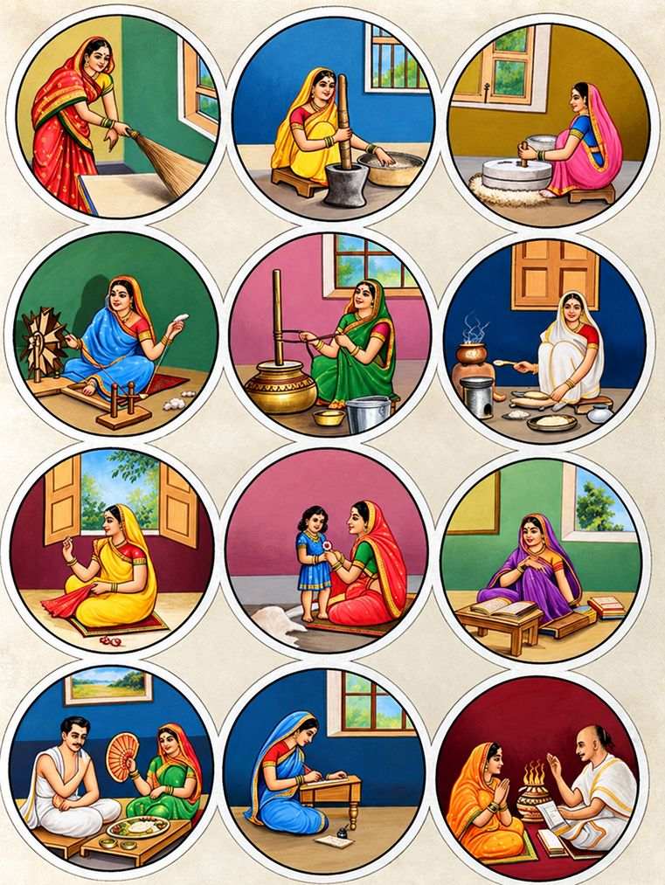
स्वच्छ रखती है घर-द्वारको बुहार सदा,
धान कूट लेती औ चाकी भी चलाती है।
सूत कातती है और माखन बिलोती घर,
भोजन विशुद्ध निज हाथसे बनाती है॥
करती सिलाई है, लड़ाती लाड़-लाड़लेको,
पाठ करती है, निज पतिको जिमाती है।
आय और व्ययका हिसाब लिखती है,
हरि-गाथा सुनती है पुण्यजीवन बिताती है॥
भारतीय साहित्यमें नारी
(लेखक—पं० श्रीबलदेवजी उपाध्याय एम्० ए०, साहित्याचार्य)
आज इस पुण्यभूमि भारतवर्षमें हिंदू-नारीकी जो बीभत्स धर्षणा हो रही है, उसके स्मरणमात्रसे ही हमारे शरीरमें रोमांच खडे़ हो जाते हैं—हमारा रोम-रोम उसका प्रतिवाद करनेके लिये मानो समूहरूपसे जाग्रत् दीख पड़ता है। नारीका इसमें दोष क्या? प्रधान तथा प्रबल दोष तो हमारा ही, पुरुषोंका ही है। नारी सर्वदा ही पुरुषकी छत्रछायामें अपने गुण-गरिमाँका विस्तार करती हुई निवास करती आयी है। उसकी रक्षाका उत्तरदायित्व पुरुषके ही ऊपर है, परंतु आज इन नामधारी पुरुषोंकी वीर्यहीनता, दुर्बलता तथा अपमान-सहिष्णुताके कारण ही नारीकी यह भयावह स्थिति उत्पन्न हो गयी है। भारतीय समाजमें नारी त्याग तथा तपस्याकी प्रतीक है। मनुका यह वचन हम कभी भूल नहीं सकते कि जहाँ स्त्रियाँ पूजी जाती हैं, वहीं देवतालोग आनन्दित रहते हैं—
यत्र नार्यस्तु पूज्यन्ते रमन्ते तत्र देवताः।
स्त्रियोंका पूजन देवताओंके समाराधनका मुख्य साधन है। नारी भारतीय संस्कृतिमें अतीव उन्नत गौरवकी अधिकारिणी सदासे रही है। स्त्रीत्वके नाते उसमें स्वभाववशात् अनेक प्रकारकी दुर्बलताएँ स्वतः विद्यमान रहती हैं। इसीलिये तो भारतीय समाजशास्त्रियोंने ‘न स्त्री स्वातन्त्र्यमर्हति’ का शंखनिनाद किया है। यह कथन स्त्रीसमाजकी निन्दा या अपमानका सूचक नहीं है, प्रत्युत वस्तुस्थितिका द्योतक है। हमारे धर्मशास्त्रियोंने नारीके संरक्षणका भार बलके प्रतीक पुरुषके ऊपर ही छोड़ दिया। नारीके तीन रूप हैं—कन्या, पत्नी तथा माता; और इन तीनों ही दशाओंमें उसकी रक्षाका, उसकी मान-मर्यादा तथा प्रतिष्ठाके संरक्षणका पवित्र कार्य ‘पुरुष’ के ऊपर ही निर्भर करता है। पुरुषमात्रका सूचक वेदका महनीय शब्द है—‘वीर’। ‘वीर’ का शब्दार्थ ही है—पुरुष और इसी अर्थमें इसका प्रयोग संस्कृतमें सम्बद्ध आर्य भाषाओंमें अभी भी होता है। लैटिन भाषाका ‘वीरुस’ (Virus) मनुष्यका वाचक है और यह शब्द संस्कृत ‘वीरस्’ (वीरः)-का ही साक्षात् प्रतिनिधि है। इस शब्दसे व्युत्पन्न अंग्रेजी भाषामें प्रयुक्त ‘विरिलिटी’ (Virility) भी पुंस्त्व, वीर्यका ही द्योतक है। सारांश यह है कि पुरुष वही है जो वीर हो, वीर्य-सम्पन्न हो, अपनेको तथा अपने आश्रितको रक्षण करनेकी क्षमता रखता हो। वैदिक ऋषियोंने इस वीर्यके प्रतीक, ‘वीर’ नामधारी पुरुषके संरक्षणमें ‘नारी’ की व्यवस्था कर उचित ही कार्य किया; परंतु दुःखका विषय है कि हम अपने सामर्थ्यसे ही सर्वथा च्युत हो गये, अपने-आपको बचानेकी क्षमतासे विहीन होकर हमने अपनी अनमोल थातीके रक्षणसे ही अपना हाथ खींचकर जघन्य कार्य किया। अतः नारीकी इस वर्तमान दुरवस्थाका समस्त दोष पुरुषकी नपुंसकताको है।
हिंदू-संस्कृतिमें नारीके महनीय स्थानको परखनेके लिये अपनी संस्कृतिके स्वरूपको हमें पहचानना पडे़गा। हमारी सभ्यताके दो पादपीठ हैं—त्याग और तपस्या। हमारी सभ्यता किसीकी सम्पत्तिपर बलात् अधिकार जमाकर उसे बरबस छीनने और झपटनेका उपदेश नहीं देती है। वह गम्भीर-स्वरसे पुकारती है—
तेन त्यक्तेन भुंजीथा माँ गृधः कस्य स्विद् धनम्।
त्यागसे सम्पत्तिका उपभोग करो। किसीके धनपर लालच न करो। अपनी सम्पत्ति भी बाँटकर खाओ। हमारा प्रतिदिन बलिवैश्वदेवकर्म इसी त्यागवृत्तिका दैनन्दिन आचरण है। हमारा अद्वैत वेदान्त सच्चा साम्यवादी धर्म है, जो जगत्के प्राणीमात्रको अपना बन्धु ही नहीं, प्रत्युत अपना ही रूप समझता है। अतः त्याग हमारी संस्कृतिका प्रधान आधारपीठ है और त्यागके लिये आवश्यक है तपस्या। तपस्याके द्वारा ही मानव अपने कालुष्यको जलाकर पवित्र तथा विशुद्ध बन जाता है। सोना आगमें तपनेपर खरा उतरता है। मनुष्य भी तपस्याके द्वारा खरा उतरता है—अपनी विशुद्धि प्राप्त करता है। बिना तपस्याके त्यागकी भावना कथमपि जाग्रत् नहीं हो सकती। अतः भारतीय संस्कृति त्याग तथा तपस्याके ताने-बानेसे बुनी हुई एक विचित्र शाटी है, जिसका रंग शताब्दियोंके काले धब्बे पड़नेपर भी आज भी उसी प्रकार नेत्ररंजक तथा चटकीला है और इस संस्कृति और सभ्यताकी प्रतीक है—
भारतीय नारी
नारी त्याग और तपस्याकी जाज्वल्यमान विभूति है। इन्हीं दोनों तत्त्वोंके समन्वयसे हमारी आर्य नारीका स्वरूप संगठित हुआ है। नारी-जीवनका मूलमन्त्र है—त्याग और इस मन्त्रको सिद्ध करनेकी क्षमता उसे प्रदान की है तपस्याने हम ठीक-ठीक नहीं कह सकते कि उसके जीवनके किस अंशमें इन महनीय तत्त्वोंके विलासका दर्शन हमें नहीं मिलता; परंतु यदि हम उसके पूर्वजीवनको ‘तपस्या’ का काल तथा उत्तरजीवनको ‘त्याग’ का काल मानें, तो कथमपि अनुचित न होगा। नारीके तीन रूप हमें दीख पड़ते हैं—कन्यारूप, भार्यारूप तथा मातृरूप। कौमार-काल नारी-जीवनकी साधनावस्था है और उत्तर-काल उस जीवनकी सिद्धावस्था है। हमारी संस्कृतिके उपासक संस्कृत-कवियोंने नारीकी इन तीनों अवस्थाओंका चित्रण बड़ी ही सुन्दरताके साथ किया है।
नारी कन्यारूपमें
कन्यारूपमें नारीका चित्रण हमें कालिदासकी कवितामें उपलब्ध होता है। कालिदास आर्य-संस्कृतिके प्रतिनिधि ठहरे। उन्होंने आर्यकन्याके आदर्शको ‘पार्वती’ के रूपमें अभिव्यक्त किया है। आर्यकन्याको अदम्य, अजेय तथा जितेन्द्रिय बनानेका मुख्य साधन ‘तपस्या’ ही है। कालिदासने अपने कुमारसम्भवमें इसके महत्त्वको बडे़ ही भव्य शब्दोंमें प्रकट किया है। शिवजीके द्वारा मदन-दहनके अनन्तर भग्नमनोरथा पार्वती जगत्की समग्र आशाएँ छोड़कर तपस्याकी साधनामें जुट गयी। उसकी तपस्या इतनी कठोर थी कि कठिन शरीरसे उपार्जित मुनियोंकी तपस्या उसके सामने नितान्त प्रभाहीन तथा प्रभावहीन प्रतीत होती। प्रकृतिके नाना प्रकारके कष्टोंको झेलकर अन्ततः वह अपनी कामनासिद्धिमें सफल होती है। उसका मनोरथतरु फलसम्पन्न होता है। उसे अभीष्ट फल प्राप्त होता है। कालिदासने पार्वतीके तपका रहस्य विशेषरूपसे प्रकट किया है।
इयेष सा कर्तुमवन्ध्यरूपतां
समाधिमास्थाय तपोभिरात्मनः।
अवाप्यते वा कथमन्यथा द्वयं
तथाविधं प्रेम पतिश्च तादृशः॥
(कुमारसम्भव ५। २)
पार्वतीकी तपस्याका फल था—तथाविधं प्रेम, उत्कट कोटिका अलौकिक प्रेम और तादृशः पतिः, उस प्रकारका मृत्युको जीतनेवाला पति। जगत्के समस्त पति मृत्युके क्रीत दास हैं। एक ही व्यक्ति मृत्युको जीतनेवाला है और वह है मृत्युंजय महादेव। मृत्युको जीतनेकी क्षमता एकमें ही है, और वह व्यक्ति है देवोंमें महान् देव अर्थात् महादेव। आजतक कोई भी कन्या मृत्युंजयको पति वरण करनेमें समर्थ नहीं हुई और इस युगल-जोड़ीका प्रेम भी कितना अनुपम, कितना उत्कट, कितना अलौकिक है। कालिदासने ‘तथाविधं’ शब्दके भीतर गम्भीर अर्थकी अभिव्यंजना की है। शंकरने पार्वतीको अपने मस्तकपर स्थान दिया है। आदरकी भी एक सीमा होती है। पत्नीको इतना उच्च स्थान प्रदान करना सत्कारका महान् प्रकर्ष है, आदरकी पराकाष्ठा है। अन्य देवताओंमें किसीने अपनी पत्नीको इतना गौरव प्रदान नहीं किया है। गौरीकी यह साधना भारतीय कन्याओंके लिये अनुकरणीय वस्तु है। हमारी कन्याओंके सामने एक ही महान् आदर्श है और वह है पार्वतीका। भारतीय समाजमें ‘गौरीपूजन’ का रहस्य इस महती तपः साधनाके भीतर अन्तर्निहित है।
नारी पत्नीरूपमें
संस्कृत कवियोंने पत्नीरूपमें नारीका सुचारु चित्रण किया है। वाल्मीकि, व्यास, कालिदास और भवभूति—इन महामान्य कवियोंने भारतीय पत्नीकी रूप-छटाका वर्णन बड़ी ही सुन्दर भाषामें किया है। भगवती जनकनन्दिनीके शील-सौन्दर्यकी ज्योत्स्ना किस व्यक्तिके हृदयको उपशम तथा शान्ति नहीं प्रदान करती। जानकीका चरित्र भारतीय पत्नियोंके महान् आदर्शका प्रतीक है। वाल्मीकीय रामायणके अनेक प्रसंग इस कथनके प्रमाणभूत हैं। रावणके द्वारा बारंबार प्रार्थना करनेपर सीताने जो अवहेलनासूचक वचन कहे हैं, वे भारतीय नारीका गौरव सदा उद्घोषित करते रहेंगे। वह कहती है कि ‘इस निशाचर रावणसे प्रेम करनेकी बात तो दूर रही, मैं तो इसे अपने पैरसे—नहीं-नहीं, बायें पैरसे—भी नहीं छू सकती।’
चरणेनापि सव्येन न स्पृशेयं निशाचरम्।
रावणं किं पुनरहं कामयेयं विगर्हितम्॥
(५। २६। १०)
रावणकी मृत्युके अनन्तर रामने सीताके चरित्रकी विशुद्धिको सामान्य जनताके सामने प्रकट करनेके लिये अनेक कटुवचन कहे। उन वचनोंके उत्तरमें सीताके वचन इतने मर्मस्पर्शी हैं कि आलोचकका हृदय आनन्दातिरेकसे गद्गद हो उठता है। भगवती सीताके ये कथन कितने मार्मिक हैं। वे कह रही हैं कि ‘मनुष्य उसी वस्तुके लिये उत्तरदायी होता है, जिसपर उसका अधिकार होता है। मैं अपने हृदयकी स्वामिनी हूँ। उसे मैंने अपने वशमें रखा है। वह सदा आपके चिन्तनमें निरत रहा है। अंगोंपर मेरा काबू नहीं। वे पराधीन ठहरे। यदि रावणने बलात् से उनका स्पर्श कर लिया तो इसमें मेरा अपराध ही क्या है?’
मदधीनं तु यत् तन्मे हृदयं त्वयि वर्तते।
पराधीनेषु गात्रेषु किं करिष्याम्यनीश्वरा॥
‘मेरे चरित्रपर लाञ्छन लगाना कथमपि उचित नहीं है; मेरे निर्बल अंशको पकड़कर आपने आगे किया है, परंतु मेरे चरित्रके सबल अंशको पीछे ढकेल दिया है। नारीका दुर्बल अंश है—उसका नारीत्व, स्त्रीत्व और सबल अंश है—उसका पत्नीत्व और पातिव्रत। नरशार्दूल! आप मनुष्योंमें श्रेष्ठ हैं, परंतु क्रोधावेशमें आकर आपका यह कथन साधारण पामर जनके समान है। मैं आपकी हृदयसे भक्ति करती हूँ। मेरा स्वभाव निश्छल और पवित्र है। आश्चर्य है कि आप-जैसे नरशार्दूलने मेरे स्वभावको, मेरी भक्तिको तथा पाणिग्रहणको पीछे ढकेल दिया है, मेरा उपहास करनेके लिये मेरे स्त्रीत्वको आगे रखा है।’ कितने महत्त्वपूर्ण शब्द हैं—
त्वया तु नरशार्दूल क्रोधमेवानुवर्तता।
लघुनेव मनुष्येण स्त्रीत्वमेव पुरस्कृतम्॥
न प्रमाणीकृतः पाणिर्बाल्ये बालेन पीडितः।
मम भक्तिश्च शीलं च सर्वं ते पृष्ठतः कृतम्॥
कितनी ओजस्विता भरी है इन सीधे-सादे निष्कपट शब्दोंमें। अनादृता भारतीय ललनाका यह उद्गार कितना हृदयवेधक है! सुनते ही सहृदय व्यक्तिकी आँखोंमें सहानुभूतिके आँसू छलक पड़ते हैं।
महाकवि कालिदासने सीताके जिस चरित्रका विलास अपनी वैदग्ध्यमयी वाणीके द्वारा अभिव्यक्त किया है, उसमें पारिजातकी सुगन्ध है, मानव-चित्तको विकसित तथा विस्मय-स्तिमित कर देनेकी अद्भुत क्षमता है। प्रजापालनकी वेदीपर भगवान् रामचन्द्रने अपने जीवन-सर्वस्वकी बलि देकर जो आदर्श उपस्थित किया है, वह हमारे राजवर्गके लिये श्लाघनीय तो है ही; परंतु उससे भी श्लाघ्यतर वह आदर्श है, जिसे परित्यक्ता जानकीने अपने पतिदेव रामचन्द्रके प्रति प्रकट किया है। बीहड़ जंगलमें लक्ष्मणजी विदेहनन्दिनीको छोड़कर जब जाने लगे, तब सीताने रामचन्द्रजीको जो आत्मनिवेदन किया है, वह भारतीय नारीके गौरव, मर्यादा तथा त्यागका ज्वलन्त उदाहरण है। सीतापरित्याग रामराज्यकी प्रतिनिधि घटना है। लोक-मंगलकी वेदीपर आत्मसुखको बलिदान दे देना ही भारतीय नरेशोंका आदर्श प्रजापालन-व्रत है और इस आदर्शकी प्रतिष्ठा की स्वयं मर्यादापुरुषोत्तम भगवान् रामचन्द्रने। प्रजाके अनुरंजनके लिये रामने अपनी प्राणवल्लभा सीताको छोड़नेमें न विलम्ब किया और न संकोच दिखलाया। गर्भ-भारसे आक्रान्त सीता राजा रामके इस कार्यके औचित्यको अच्छी तरह समझ रही हैं, परंतु फिर भी उन्हें उलाहना देनेमें वह नहीं चूकतीं। वे लक्ष्मणसे पूछती हैं कि ‘क्या ऐसी विकट परिस्थितिमें उनका परित्याग शास्त्रके अनुकूल है कि इक्ष्वाकुवंशकी मर्यादाके अनुरूप?’ परंतु फिर वह चेत जाती हैं कि ‘राम कल्याणबुद्धि ठहरे—अपने प्रियपात्रोंके कल्याणकी कामना करनेवाले हैं। वे मेरे लिये किसी अकल्याण वस्तुकी क्या कभी कल्पना कर सकते हैं? अतः मेरे ही प्राचीन पातकोंका यह जागरूक फल है।’ धन्य है सीताकी पतिभक्ति! पतिकी अवहेलना तो दूर रहे, वह स्वयं कर्मवादके सिद्धान्तपर आत्मतुष्टि प्राप्त कर रही हैं।
कल्याणबुद्धेरथवा तवायं
न कामचारो मयि शङ्कनीयः।
ममैव जन्मान्तरपातकानां
विपाकविस्फूर्जथुरप्रमेयः॥
अतः अपने पातकोंको दूर करनेका एक ही साधन है, और वह साधन है तपस्या। अतः मैं इसी तपस्यामें अपनेको संलग्न करने जा रही हूँ, जिससे मेरे पातक शीघ्र दूर हो जायँ। परंतु सीताकी एक विषादभरी प्रार्थना है। राम राजा ठहरे। मैं ठहरी एक तापसी एकाकिनी तपस्विनी। कृपया एक सामान्य प्रजाकी दृष्टिसे ही वे मेरा ध्यान रखें। यही अन्तिम निवेदन है—‘तपस्विसामान्यमवेक्षणीया।’ जनकनन्दिनीकी इस प्रार्थनामें कितना ओज भरा है, कितनी करुणा भरी है, कितना आत्मत्याग झलक रहा है। भारतीय नारीका यही त्यागमय जीवन है। पतिके कल्याण तथा मंगलके निमित्त आत्मनिषेध या आत्मसमर्पण ही ‘नारीत्व’ है। पुरुषकी पूर्ति नारीके संगममें है। नारीके बिना पुरुषका जीवन अधूरा है। बिना नारीके सहयोगके वह अपने पुरुषार्थमें कृतकार्य नहीं हो सकता। नारी पशु-प्रवृत्तिकी प्रतीक नहीं है। वह तो दिव्य गुणोंकी प्रतिमा है, अलौकिक गुणोंकी मूर्ति है। इसीलिये हमारी तान्त्रिक पूजामें शक्ति या मुद्राकी महती उपयोगिता है।
हमारा गार्हस्थ्य-जीवन भगवत्प्राप्तिका एक सोपानमात्र है। भगवान्की प्राप्ति अनुरागसे सुलभ है। भक्ति ही उस प्रियतमके पानेके लिये एक सुगम राजमार्ग है। कहनेमें यह जितना सरल है, करनेमें यह उतना ही कठिन है। प्रेमतत्त्व एक दुरूह तत्त्व है, जिसे यथार्थतः जानना उतना कठिन नहीं है जितना उसका आचरणमें लाना। गार्हस्थ्य-जीवनमें हमें इसी प्रेम-तत्त्वकी साधना सिखलायी जाती है। महाकवि भवभूतिने इस तत्त्वकी बड़ी सुन्दर व्याख्या की है—
अद्वैतं सुखदुःखयोरनुगुणं
सर्वास्ववस्थासु यद्
विश्रामो हृदयस्य यत्र जरसा
यस्मिन्नहार्यो रसः।
कालेनावरणात्ययात् परिणते
यत्स्नेहसारे स्थितं
भद्रं सस्य सुमानुषस्य कथम-
प्येकं हि तत् प्राप्यते॥
‘यह प्रेम सुखमें और दुःखमें अद्वैत अर्थात् एकाकार रहता है। समग्र अवस्थाओंमें अनुकूल रहता है। इससे हृदयको विश्राम मिलता है। बुढ़ापा इसके रसको—आनन्दको हरण नहीं कर सकता। समयके बीतनेपर बाहरी आवरणके हट जानेपर यह परिपक्व स्नेहसारमें स्थित रहता है। वही यह कल्याणकारी—भद्र प्रेम है और किसी ही भाग्यशाली पुरुषको प्राप्त होता है।’
इस प्रेमको भगवदर्पण कीजिये, प्रभु अवश्य मिलेंगे। अपने भक्तोंको अपने क्रोडमें रखने तथा उसके अंगमें आनन्द मनानेके लिये वह लीलामय सदा तत्पर रहता है, परंतु विषयरसके चाटनेमें ही जीवन बितानेवाला प्राणी उधर मुड़ता ही नहीं। जीवको भगवान्की ओर अनुरक्त करनेका साधन है—नारी। आलंकारिकोंने शब्दोंके तीन प्रकार बतलाये हैं—(क) प्रभुसम्मित शब्द। राजाकी आज्ञाके अनुरूप शब्द, जिनका अक्षरशः पालन न्याय्य होता है। किसी प्रकार चूके नहीं कि तलवारके नीचे गला पड़ा। यह शब्द वेद है। (ख) सुहृत् सम्मित शब्द। मित्रके हितोपदेशके समान शब्द, जिनमें उचित-अनुचित दोनों मार्ग दिखलाये जाते हैं। कोई जोर नहीं, जुल्म नहीं, मानना और न मानना आपके हाथमें—जैसे इतिहास-पुराण। (ग)कान्तासम्मित शब्द। प्रियतमाके कमनीय वचनके समान शब्द, जो रसमय होनेसे शीघ्र ही हृदयपर प्रभाव डालते हैं। उनका उपदेश इतना प्रभावशाली होता है कि आप उसे माननेके लिये बाध्य हो जाते हैं—जैसे रसप्रधान काव्य। इस प्रकार साहित्यमें ‘नारी’ का प्रभाव विशेषरूपसे अभिव्यक्त किया गया है। वह शक्तिकी मूर्ति है, प्रेमका अवतार है, अनुरागकी वाटिका है, रसका उत्स है, हृदयकलीको विकसित करनेवाले प्रभातवायुका हिलोरा है; मानसमें आनन्द-लहरी उठानेवाला मन्द-मन्द प्रवाहित पवन है। संस्कृत-साहित्यने नारीकी शक्ति पहचानी है और उसे उचित रूपसे अभिव्यक्त किया है।
नारीकी पाँच अवस्थाएँ
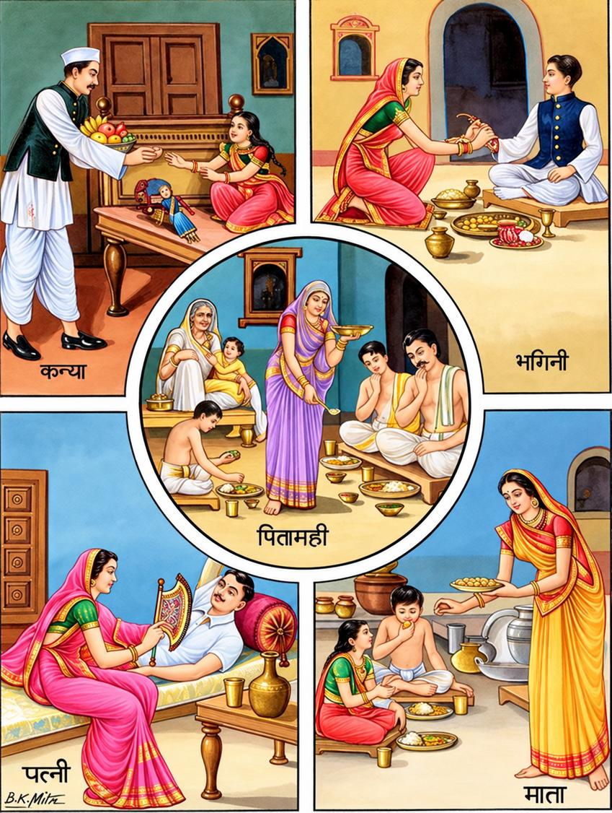
कन्या, भगिनी, पत्नी, माता, पितामही—ये भव्य महान।
पाँच अवस्थाएँ नारीकी सुख आदर्श शान्तिकी खान॥
वैदिक साहित्यमें नारी
(लेखक—पं० श्रीरामगोविन्दजी त्रिवेदी)
वेदोंके मुख्य विषय हैं—कर्म, उपासना और ज्ञान, जो समस्त मानव-जातिके धर्म हैं। इनमें केवल स्त्री अथवा केवल पुरुषको लक्ष्य करके अधिक बातें नहीं कही गयी हैं। जो कुछ है, सबके लिये है। वेद इतिहास भी नहीं हैं, जिससे स्त्री और पुरुषवर्गके विषयमें कुछ विशेष चर्चाका प्रसंग आवे; तथापि उनमें इतिहासके बीज और साधन-सामग्री अवश्य हैं। वेद ज्ञानके भण्डार हैं; उस भण्डारमें खोज करनेपर नारीके महत्त्वको प्रकाशित करनेवाले विषय भी अवश्य दृष्टिगोचर होते हैं। वेद चार हैं—ऋक्, यजुः, साम और अथर्व। इनमेंसे ऋग्वेदमें ही कुछ ऐसी बातें पायी जाती है, जो प्राचीन कालसे चली आनेवाली आर्यनारीकी सभ्यता और संस्कृतिपर प्रकाश डालती हैं। कुछ विदुषी नारियाँ अपने सद्गुणोंके कारण तथा मन्त्रोंका साक्षात्कार करनेवाली ऋषिकाओंके रूपमें प्रतिष्ठित हुई हैं। यजुर्वेदमें नारीके विषयमें बहुत कम चर्चा है। सामवेदमें तो है ही नहीं। अथर्ववेदमें चर्चा अवश्य है, पर ऋग्वेदसे अधिक नहीं; अतः इस लेखमें जो कुछ कहा जायगा, उसमें ऋग्वेदमें आयी हुई बातोंका ही प्रायः दिग्दर्शन होगा। अन्य वेदों तथा ब्राह्मण आदि ग्रन्थोंकी मुख्य-मुख्य बातोंका भी इसीमें समावेश समझना चाहिये।
पहले उन महिमामयी नारियोंके सम्बन्धमें निवेदन किया जाता है, जो मन्त्रद्रष्ट्री ऋषिकाओं अथवा देवियोंके रूपमें प्रसिद्ध हैं। जैसे धनकी देवी लक्ष्मी, शक्तिकी दुर्गा और विद्याकी सरस्वती हैं, वैसे ही अदिति, उषा, इन्द्राणी, इला, भारती, होला, सिनीवाली, श्रद्धा, पृश्नि आदि वैदिक देवियाँ अनेक तत्त्वोंकी अधिष्ठात्री हैं। इन्हें कहीं देवमाता और कहीं देवकन्या बताया गया है। इन सबमें अदितिदेवीका उल्लेख सबकी अपेक्षा अधिक है। ये सर्वशक्तिमती, विश्वहितैषिणी, सर्वग्राहिणी और स्वाधीन मानी गयी हैं। अदिति ही आकाश, अन्तरिक्ष, माता, पिता, पुत्र और समस्त देवता हैं। पंचजन (गन्धर्व, पितर, देव, असुर और राक्षस) भी वही हैं। अदिति ही जन्म और उसका कारण हैं*।
* अदितिर्द्यौरदितिरन्तरिक्षमदितिर्माता स पिता स पुत्रः।
विश्वेदेवा अदितिः पंचजना अदितिर्जातमदितिर्जनित्वम्॥
कहीं-कहीं अदितिके साथ दितिका भी उल्लेख है—‘अदितिंदितिं च।’ इन्हीं दितिको पुराणोंमें दैत्योंकी माता कहा गया है।
ऋग्वेदमें कई स्थलोंपर सीताकी स्तुति देवी कहकर की गयी है—‘सौभाग्यवती सीता! हम तुम्हारी स्तुति करते हैं। तुम हमें धन और सुन्दर फल दो। पूषा सीताको नियमित करें’ (४। ५७। ६-७)। उषाका अर्थ प्रभात है, किंतु ऋग्वेदमें लगभग तीन सौ बार उषाका ‘देवी’ रूपमें स्तवन किया गया है। सूक्त-के-सूक्त उषादेवीकी स्तुतिसे भरे पड़े हैं। वहाँ इनके लिये सत्यमनीषिणी और दीप्तिमती आदि गुणबोधक विशेषण दिये गये हैं*।
* ग्रीकोंमें ‘दहना’ ‘एथेना’ आदि कई नाम और कहानियाँ ‘उषा’ के लिये प्रचलित हैं। वे लोग उषाके पूरे भक्त हैं। लेटिन-भाषाभाषी उषाको ‘मिनिर्वा’ कहते हैं।
वह नित्य यौवनसम्पन्ना, शुभ्रवसना और धनाधीश्वरी बतायी गयी हैं। सूर्यकी पुत्रीका नाम सूर्या है। इन्हें ऋग्वेदमें देवी और ऋषिका भी कहा गया है। सूर्याने दशम मण्डलके ८५ वें सूक्तका साक्षात्कार किया था। उसमें बहुत-सी ज्ञातव्य बातें हैं। सूर्याके विवाहका जो वर्णन उपलब्ध होता है, उससे कई तत्कालीन प्रथाओंका परिचय मिलता है, जो आज भी न्यूनाधिकरूपमें पायी जाती हैं। इन्द्राणी इन्द्रदेवकी पत्नी हैं। इनका एक नाम शची भी है। ऋग्वेदके दशम मण्डल, सूक्त १४५ की ऋषिका भी ये ही हैं। १५९ वें सूक्तकी ऋषिका प्रलोमपुत्री शची कही गयी हैं। ‘वाक्’ भी एक देवीका नाम है। इन्हें अन्न-जलकी दात्री एवं हर्षप्रदायिनी माना गया है। ये अम्भृण ऋषिकी पुत्री हैं। दशम मण्डलके १२५वें सूक्तका प्रथम दर्शन इन्होंने ही किया है। वैदिक देवी-सूक्तकी ऋषिका ये ही हैं। ये वाग्देवी ही मित्र और वरुणको धारण करनेवाली, धनदात्री, ज्ञानवती, प्राणिव्यापिनी, उपदेशिका तथा आकाशजननी आदि कही गयी हैं। इला भी एक देवी हैं; इन्हें घृतहस्ता, अन्नरूपिणी, हविर्लक्षणा, गोसन्धकी निर्मात्री तथा मनुके यज्ञमें हविष्यका सेवन करनेवाली बताया गया है।
सरस्वतीदेवी पतितपावनी, धनदायिनी, सत्यकी ओर प्रेरित करनेवाली, शिक्षिका और ज्ञानदात्री मानी गयी हैं (१। ३। १०—१२)। इनके द्वारा अनेक मन्त्रोंका आविष्कार भी हुआ है। इसी प्रकार भारती, होला, सरण्यू, सिनीवाली, राका, गुंगू, असु तथा श्रद्धा आदि देवियोंकी महिमाँका भी यथास्थान वर्णन है। पृश्नि, अरण्यानी, वरुणानी तथा अग्नायी प्रभृति देवियोंका भी स्तवन किया गया है।
दैवी संसृतिके अनन्तर मानव-जगत् पर दृष्टिपात करनेसे विदित होता है कि आर्यलोग नारियोंका बड़ा सम्मान करते थे। वे घरको नहीं, नारीको ही घर मानते थे और गृहस्थधर्मके पालनमें नारीकी ही प्रधानता समझते थे। उनके विवाहका प्रयोजन था नारीके साथ रहकर धर्मानुष्ठान और यज्ञ-सम्पादन। नारीके बिना गृहका अस्तित्व ही कहाँ है और गृहके बिना गृहस्थ-धर्मका सम्पादन ही कैसे हो सकता है। इस धारणाके अनुसार गृहस्थधर्मकी प्रतिष्ठा एकमात्र गृहिणीपर ही निर्भर थी। सन्तान पुत्र हो या पुत्री—दोनों उन्हें समान रूपसे प्रिय थे। वे पूषा देवतासे कमनीय कन्याके लिये प्रार्थना करते थे। कन्याओंका उनके यहाँ बड़ा आदर होता था। कन्याका विवाह हो जानेपर उससे जो पुत्र होता, उसको अर्थात् अपने दौहित्रको वे अपने धनका उत्तराधिकारी भी बनाते थे। पुत्र अथवा पौत्रके अभावमें ही दौहित्रको यह अधिकार मिलता था। कन्याका एक नाम दुहिता भी है। यह शब्द ‘दुह’ धातुसे बना है, इसका अर्थ है दुहना। इसके आधारपर कई विद्वानोंका यह कहना है कि ‘कन्याएँ पहले समयमें दूध दुहनेका काम करती थीं। घरमें गोरक्षाका प्रधान कार्य इन्हींके हाथमें था। दूध, दही, घी आदिकी व्यवस्था ये ही करती थीं।’ कन्याएँ तथा स्त्रियाँ रूई धुनतीं, सूत काततीं, वस्त्र बुनतीं और कसीदा भी काढ़ती थीं। इन बातोंके समर्थक अनेक मन्त्र उपलब्ध होते हैं। (२। ३। ६ तथा २। ३८। ४ आदि) कन्याएँ कलशमें जल भरकर भी लाती थीं। वे माता-पिताको पानी नहीं भरने देती थीं। खेत रखानेका कार्य भी वे ही करती थीं। कन्याकी रक्षा पिता करते थे, पिता न हों तो बड़े भाईपर उसकी रक्षा और विवाह आदिका भार रहता था। आमरण अविवाहित रहनेवाली कन्या पिताके धनमें हिस्सा पाती थी। वृद्धावस्थातक नारी अपने घरमें प्रभुता रखती थी (१०। ८५। ३०)। पशुरक्षिणी और वीरप्रसविनी नारीका उस समय विशेष आदर था। ऐसी नारीकी प्राप्तिके लिये देवताओंसे प्रार्थना की जाती थी (१०। ८५। ४४)। नारी स्त्री-धनसे भी ब्राह्मणोंको दान देती थी (१०। ८५। २९)। स्त्रीको अपने लिये धनका कुछ नियत भाग प्राप्त होता था, जिसपर केवल उसीका अधिकार होता था।
इस प्रकार आर्य-जातिमें प्राचीन कालसे ही नारीका सदा समादर होता आया है। अन्य जातियोंके प्राचीन इतिहासमें यह बात नहीं पायी जाती। कई जातियाँ तो ऐसी हैं जो स्त्रियोंको पैरकी जूती समझती थीं। उनके यहाँ स्त्रियोंके खरीदने-बेचनेकी भी जघन्य प्रथा थी। मुहम्मदसाहबके पहले अरबमें जन्मते ही लड़कियाँ जला दी जाती थीं। एथेंस और स्पार्टामें स्त्रियोंकी जैसी नारकीय दशा थी, वह इतिहासके विद्यार्थियोंसे छिपी नहीं है।
ऋग्वेदके अनुशीलनसे जान पड़ता है कि आर्योंमें स्त्री-शिक्षाका यथेष्ट प्रचार था। स्त्रियाँ वेदाध्ययन करतीं और कविताएँ भी बनाती थीं। वे अपनी त्याग-तपस्यासे ऋषिभावको भी प्राप्त होतीं और मन्त्रोंका साक्षात्कार करती थीं। ऋग्वेदके अनेक सूक्तोंका आविष्कार स्त्रियोंद्वारा ही हुआ है, यह बात ऊपर बतायी जा चुकी है। ब्रह्मवादिनी घोषाके द्वारा साक्षात्कृत (दशम मण्डलके) ३९ वें और ४० वें सूक्तोंमें कुछ ऐसे मन्त्र हैं, जिनसे सूचित होता है आर्यलोग विवाहके समय वर और कन्याको विविध वस्त्राभूषणोंसे विभूषित करके बहुत सम्मान करते थे। लोग स्त्रीकी प्राण-रक्षा और मर्यादा-रक्षाके लिये भारी-से-भारी कष्ट सहन करनेसे भी पीछे नहीं हटते थे। स्त्रियाँ यज्ञ-कार्यमें नियुक्त होती थीं। समाजमें उनको बहुत ही प्यार और दुलारसे रखा जाता था। सूर्याके द्वारा आविष्कृत मन्त्रोंमें यह भी स्पष्ट किया गया है कि स्त्री अपने पतिके अधीन रहती थी, परंतु घरके अन्य सब पदार्थोंपर उसीका प्रभुत्व रहता था। नौकर-चाकरपर भी वही शासन करती थी। वर और वधू जब विवाहमें एक साथ बैठते थे, उस समय गुरुजनों और देवताओंसे वधूके सौभाग्यके लिये प्रार्थना की जाती थी। यह प्रथा आर्योंमें अबतक प्रचलित है। आज भी निम्नांकित मन्त्र पढ़कर सिन्दूर एवं सौभाग्यवर्धक आशीर्वाद अर्पण किया जाता है। वह मन्त्र यह है—
सुमंगलीरियं वधूरिमां समेत पश्यत।
सौभाग्यमस्यै दत्त्वा यायास्तं वि परेतन॥
‘यह परम कल्याणमयी वधू यहाँ बैठी है, गुुरुजनो तथा देवताओ! आप सब लोग यहाँ आवें, इसे कृपादृष्टिसे देखें तथा इसको सौभाग्यसूचक आशीर्वाद देकर अपने-अपने स्थानको पधारें।’
कुछ मन्त्रोंसे यह भी सूचित होता है कि उस समय स्त्रियाँ संगीत आदिमें भी निपुणा होती थीं। पतिके साथ स्त्रियाँ भी युद्धमें जाती थीं। विश्यला अपने पतिके साथ युद्धमें गयी थी और वहाँ उसकी जाँघ टूट गयी थी, जिसे अश्विनीकुमारोंने ठीक किया था। नमुचिके पास भी स्त्रियोंकी सेना थी। वृत्रासुरके साथ उसकी माता दनु भी युद्धमें गयी थी, जो इन्द्रके द्वारा मारी गयी। वैदिक साहित्यके अनुशीलनसे यह भी सिद्ध होता है कि पहलेकी स्त्रियाँ वेद पढ़तीं और यज्ञोपवीत भी धारण करती थीं। सुलभा, मैत्रेयी और गार्गी आदिकी विद्वत्ता प्रसिद्ध है। वाल्मीकिरामायण (५। १५। ४८)-के अनुसार सीताजी वैदिक प्रार्थना करती थीं। कौसल्याके विषयमें भी ऐसा आया है कि वे मन्त्रपाठपूर्वक अग्निहोत्र करती थीं। वीरमित्रोदयके संस्कार-प्रकाशमें स्त्रियोंके दो भेद किये गये हैं—एक ब्रह्मवादिनी और दूसरी सद्योद्वाहा। इनमें—‘ब्रह्मवादिनीनामग्नीन्धनं वेदाध्ययनं स्वगृहे च भैक्षचर्या’—‘ब्रह्मवादिनी स्त्रियोंको यह अधिकार है कि वे अग्निहोत्र, वेदाध्ययन तथा अपने घरमें भिक्षा ग्रहण करें।’ इससे सिद्ध है कि सर्वसाधारण स्त्रियोंके लिये यह अधिकार नहीं है। पहले सभी स्त्रियोंको यह अधिकार था, पर कलिमें उनके वेदाध्ययन आदिका निषेध कर दिया गया। यमस्मृतिमें कहा गया है—‘पूर्वकालमें कुमारियोंका उपनयन, वेदारम्भ तथा गायत्री-उपदेश होता था; परंतु उनके गुरु या अध्यापक केवल पिता, चाचा अथवा बड़े भाई ही होते थे। दूसरे किसीको यह अधिकार नहीं था कि उन्हें पढ़ावे—
पुरा कल्पे कुमारीणां मौंजीबन्धनमिष्यते।
अध्यापनं च वेदानां सावित्रीवचनं तथा।
पिता पितृव्यो भ्राता वा नैनामध्यापयेत् परः॥
वेद-मन्त्रोंसे यह भी ज्ञात होता है कि स्त्रियाँ सुन्दर वस्त्र पहनती थीं, सूती वस्त्र वे केवल पहनती ही नहीं, बुनती भी थीं। ऊनी वस्त्र पहननेका भी रिवाज था। कपड़ा बुननेवाले तन्तुवाय भी उस समय होते थे। हाथोंमें कड़ा पहननेकी प्रथा थी। आभूषण, आयुध, माला, हार, वलय आदि सुवर्णके बनते थे। लोहे और सोनेके घर बननेकी भी चर्चा आती है (७। ३। ७ और ७। १५। ४)। हजार दरवाजोंवाले विशाल भवन बनाये जाते थे (७। २८। ५)। द्वारपर द्वारपाल रखा जाता था (२। १५। ९)। एक हजार खंभोंवाले दुमंजिले मकान बनते थे (५। ६२। ६)। कुछ मन्त्रोंसे स्वयंवर-प्रथा भी सूचित होती है। एक मन्त्रमें कहा गया है—‘पति स्त्रीके वस्त्रको न ओढ़े, अन्यथा श्री नष्ट हो जाती है’ (१०। ८५। ३०)। वर कन्याको वधूरूपमें ग्रहण करते समय उसका हाथ पकड़कर कहता था—
गृभ्णामि ते सौभगत्वाय हस्तं मया पत्या जरदष्टिर्यथासः।
भगो अर्यमा सविता पुरन्ध्रिर्मह्यं त्वादुगार्हपत्याय देवाः॥
(१०। ८५। ३६)
‘कल्याणी! मैं तुम्हारे और अपने सौभाग्यके लिये तुम्हारा हाथ पकड़ता हूँ। तुम मुझ पतिके साथ वृद्धावस्थातक बनी रहो। भग, अर्यमा, सविता, पुरन्ध्रि आदि देवताओंने गृहस्थधर्मकी रक्षाके लिये मुझे तुमको दिया है।’
आर्य-विवाह-पद्धतिमें इस विधिका आज भी पालन कराया जाता है। पत्नी भी लाजा-हवनके समय पति और कुटुम्बीजनोंकी मंगल-कामना करती थी। यह परम्परा भी आजतक कायम है। हिंदू-धर्ममें पति-पत्नी एक-दूसरेके सखा और सहधर्मी हैं। दोनोंका समान स्थान है। कोई किसीसे छोटा या बड़ा नहीं है। सप्तपदीके विधानद्वारा नव-दम्पतिके इसी सख्यभावको सुदृढ किया जाता है। १०। ८५। ४२ में कहा गया है—‘तुम दोनों दम्पति कभी एक-दूसरेसे अलग न होना।’ ४३ वें मन्त्रमें पतिका कथन है—‘प्रजापति हमें सन्तति दें, अर्यमा बुढ़ापेतक हमें साथ रखें। वधू! तुम मंगलमयी होकर पतिगृहमें रहो। घरके मनुष्यों और पशुओंके लिये कल्याणकारिणी बनो।’ फिर परमात्मासे प्रार्थना की जाती है—
इमां त्वमिन्द्र मीढ्वः सुपुत्रां सुभगां कुरु।
दशास्यां पुत्रानाधेहि पतिमेकादशं कृधि॥
‘परमात्मन्! इस वधूको सुयोग्य पुत्रवाली तथा सौभाग्यवती बनाओ। इसके गर्भमें दस पुत्रोंको स्थापित करो। इसके दस पुत्र और ग्यारहवें पति—सब मौजूद रहें।’
तत्पश्चात् वधूको आशीर्वाद मिलता है—
सम्राज्ञी श्वशुरे भव सम्राज्ञी श्वश्र्वां भव।
ननान्दरि सम्राज्ञी भव सम्राज्ञी अधि देवृषु॥
‘वधू! तुम घरमें सास, ससुर, ननद और देवर—सबके हृदयकी महारानी बनो। सबको अपने प्रेम, सेवा और सद्वॺवहारसे जीत लो।’
इन दिव्य आदर्शोंका पालन वधू करती थी, आज भी विवाहके समय ये शिक्षाएँ दी जाती हैं; परंतु आजके युगमें नूतन शिक्षाके विषाक्त प्रभावसे लोगोंका ध्यान इन विधियोंकी ओरसे हटकर व्यर्थके दिखावेमें जा लगा है। प्रत्येक हिंदू-धर्मावलम्बीको चाहिये कि वे वर और वधूको इन मन्त्रोंके दिव्य आदर्श हृदयंगम करा दें। लज्जा स्त्रीका सद्गुण है। वेद कहता है—
अधः पश्यस्व मोपरि सन्तरां पादकौ हर।
मा ते कशप्लकौ दृशन्त्स्त्री हि ब्रह्मा बभूविथ॥
(८। ४३। १९)
‘साध्वी नारी! तुम नीचे देखा करो (तुम्हारी दृष्टि विनयसे झुकी रहे)। ऊपर न देखो। पैरोंको परस्पर मिलाये रखो (टाँगोंको फैलाओ मत)। वस्त्र इस प्रकार पहनो, जिससे तुम्हारे ओष्ठ तथा कटिके नीचेके भागपर किसीकी दृष्टि न पड़े।’ इससे सिद्ध है कि स्त्री सलज्ज हो और मुखपर घूँघट डाले रहे।
यजुर्वेदकी तैत्तिरीय-संहिता (६। ५। ८। २)-में बताया गया है कि पिताके धनपर कन्याका कोई अधिकार नहीं है (उसका अधिकारी पुत्र ही है)। वाजसनेयिसंहितामें लिखा है कि ब्रह्मचारिणी और शिक्षिता कन्याका विवाह होना चाहिये (१२। ३। १७-१८)। अथर्ववेदमें बताया गया है कि कन्या ब्रह्मचर्यपूर्वक रहकर तरुण पतिको प्राप्त करती है—‘ब्रह्मचर्येण कन्या युवानं विन्दते पतिम्’ (११। ५। १८)। माता-पिताके निरीक्षणमें कन्या पतिका चुनाव करती थी (६। ६१। १)। कन्याकी विदाईके समय उसके पिता पलंग, गद्दा और कोच आदि देते थे (१४। २। ३१, ४१)। कन्याको खजानेकी संदूक आदि भी दी जाती थी (१४। २। ३०; ४। २०। ३), गाय और कम्बल आदि भी कन्याको दहेजमें प्राप्त होते थे। स्त्रीका अपने पतिपर इस लोक और परलोकमें भी अधिकार माना जाता था—‘त्वं सम्राज्ञ्येधि पत्युरस्तं परेत्य च।’ (१४। १। ४३)
वेदमें जहाँतक देखा गया है, सहमरणकी प्रथा नहीं मालूम होती। इसी प्रकार विवाहकी अवस्था भी बड़ी ही प्रशस्त मानी गयी है।*
* ऐसा भी माना जाता है कि वेदमें सहमरणका समर्थन है। अथर्ववेदका एक मन्त्र है—
इयं नारी पतिलोकं वृणाना
निपद्यत उप त्वा मर्त्य प्रेतम्।
धर्मं पुराणमनुपातयन्ती
तस्मै प्रजां द्रविणं चेह धेहि॥
(१८। ३। १)
पतिके दाहके अवसरपर स्त्रीके देवर आदि मृतकको लक्ष्य करके कहते हैं—हे मनुष्य! पतिलोककी (जहाँ पति गया हो, उस लोककी) इच्छा करती हुई, उस जन्ममें भी यही पति मिले—इस सनातनधर्मका पालन करती हुई यह नारी मृतक हुए तुम्हारे समीप निरन्तर प्राप्त होती है अर्थात् सहमरणके द्वारा तुम्हारे साथ जा रही है।
पाश्चात्त्य विद्वान् मि० मैकडॉनल (Macdonell)-ने भी कहा है कि ऋग्वेद (१०। १८८। ९)-में तथा अथर्ववेदमें कई जगह सहमरणका संकेत है। इसके अतिरिक्त तैत्तिरीय-संहिताकी औख्यशाखाका यह मन्त्र मिला है, जिसमें सहमरणका स्पष्ट वर्णन है—
‘अग्ने व्रतानां व्रतपतिरसि पत्यानुगव्रतं चरिष्यामि तच्छकेयं तन्मे राध्यताम्। इह त्वा अग्ने नमसा विधेम सुवर्गस्य लोकस्य समेत्यै। जुषाणो अद्य हविषा जातवेदो विशानि त्वा सत्वतो नय माँ पत्युरग्ने।’
‘अग्निदेव! तुम सम्पूर्ण व्रतोंके व्रतपति हो (तुम्हींसे व्रतोंका पालन होता है), मैं पतिके साथ अनुगमन (सहमरण)-का व्रत करूँगी। तुम ऐसी कृपा करो, जिससे मैं यह व्रत पूर्ण कर सकूँ। मेरा यह व्रत सिद्ध हो। अग्ने! यहाँ मैं तुम्हें स्वर्गलोककी प्राप्तिके लिये नमस्कार करती हूँ। जातवेदा! आज हविष्यसे तुम्हारी आराधना करके मैं तुममें ही प्रवेश करूँगी, तुम अपने सत्त्वसे (सात्त्विक तेजसे) मुझे पतिके सम्मुख पहुँचाओ।’
डॉ० केगी (Kaegi) भी ऋग्वेदके ‘आरोहन्तु जनयो योनिमग्रे’ (१०। १८७) इस मन्त्रको सहमरणके अनुकूल ही मानते हैं। हाँ, यह कहा जा सकता है कि सतीदाहकी प्रथा बाध्यतामूलक नहीं थी। सो ठीक ही है।
इसी प्रकार कन्याओंका विवाह भी छोटी अवस्थामें होनेका उल्लेख पाया जाता है। उषस्ति ऋषिका विवाह छोटी अवस्थाकी कन्याके साथ ही हुआ था। नासत्यगणने विमदाका विवाह बालिकावस्थामें किया था। इन्द्रने कक्षीवनको वृचया नामक बालिका कन्या समर्पित की थी। ये सारे प्रसंग ऋग्वेदमें हैं।
आपस्तम्ब धर्मसूत्रमें लिखा है—
जायापत्योर्न विभागो दृश्यते। पाणिग्रहणाद्धि सहत्वं कर्मसु तथा पुण्यफलेषु द्रव्यपरिग्रहेषु च॥ ‘स्त्री और पतिमें कोई विभाग या बँटवारा नहीं देखा जाता। दोनों एक हैं, दोनोंके सब कुछ एक हैं। पति जब पाणिग्रहण कर लेता है, तबसे प्रत्येक कर्ममें दोनोंका सहयोग अपेक्षित रहता है। इसी प्रकार पुण्यफलमें तथा द्रव्यसंग्रहमें भी दोनोंका सहयोग तथा समानाधिकार है।’ कोई-कोई यह भी अर्थ करते हैं कि स्त्री-पुरुष सदासे एक हैं, इनमें विभाग नहीं है।
शतपथ ब्राह्मणका कथन है कि ‘पत्नीके बिना पुरुष स्वर्ग नहीं जा सकता।’ इसलिये स्वर्ग आदिकी कामनासे किये जानेवाले यज्ञमें पत्नीकी उपस्थिति अत्यन्त आवश्यक समझी जाती थी—
स रोक्ष्यज्जायामामन्त्रयते, जाये एहि स्वो रोहावेति। रोहावेत्याह जाया। तस्माज्जायामामन्त्रयते। अर्धो ह वैष आत्मनो यज्जाया। (५। २। १। १०)
‘वह पुरुष स्वर्गलोकपर आरूढ़ होते समय पत्नीको सम्बोधित करता है—‘जाये! चलो, स्वर्गलोकमें चलें।’ पत्नी कहती है—‘स्वर्गलोकमें चलें।’ इसीलिये ‘जाया’ को आमन्त्रित करता है, क्योंकि जाया (पत्नी) इस शरीरका अर्द्धांग है।’
ऐतरेय ब्राह्मणमें नारीको सखा माना है—‘सखा ह जाया’ (८। ३। १३)।
इस प्रकार सम्पूर्ण वैदिक साहित्यके अनुशीलनसे यह पता लगता है कि वेदोंमें नारीके प्रति बड़े ही सम्मान और उदारताका भाव है। नारी घरकी रानी है—यही वैदिक सभ्यताका आदर्श है।
नारी और वेद
(लेखक—पं० श्रीगोपालचन्द्रजी मिश्र, वेदाचार्य, धर्मशास्त्राचार्य, मीमांसादर्शन-शास्त्री)
विवाहकालमें कन्यादान, पाणिग्रहणके बाद लाजाहोममें कन्या अपने लिये अपने मुखसे ‘नारी’ शब्दका सबसे पहले प्रयोग करती है (पा० गृ० १। ६। २, अ० १४। २। ६३); क्योंकि इससे पहले उसका नर-सम्बन्ध नहीं रहा है। ‘नारीत्व’ को प्राप्त करते ही वह दो प्रधान आदर्श अपने सामने अपने ही वचनमें जीवनके लिये रखती है—
१. ‘आयुष्मानस्तु मे पतिः।’
२. ‘एधन्तां ज्ञातयो मम।’
मेरा पति पूर्ण आयुष्सम्पन्न हो और मेरी जाति (समाज)-की अभिवृद्धि हो। नारी होनेके बाद ही इसे ‘सौभाग्य’ की प्राप्ति होती है (अ० १४। १। ३८, पा० गृ० १। ८। ९)। सौभाग्यका प्रधान अर्थ पतिकी नीरोग स्थिति है (ऋ० १०। ८६। ११)। पतिमती स्त्रियाँ अविधवा (सधवा) कहलाती हैं। घरमें सधवा स्त्रियोंका प्रथम स्थान है। (ऋ० १०। १८। ७)। इनको सर्वदा नीरोग, अंजन एवं घृतादि स्निग्ध पदार्थोंसे विभूषित, मूल्यवान् धातुओंसे समलंकृत अश्रुविहीन (ऋ० १०। १८। ७), सुरूपिणी, हँसमुख (३। ५८। ८), शुद्ध कर्तव्यनिष्ठा, पतिप्रिया (१। ७३। ३), सुवस्त्रा (१०। ७१। ४) विचारशीला (१। २८। ३), पतिमात्रपरायणा (१०। ८५। ४७), पातिव्रत-धर्मनिष्ठा (पा० गृ० १। ८। ८) होना चाहिये। इन्हें अपने सत्-कर्तव्यसे सास, ससुर, देवर, ननदके ऊपर साम्राज्य प्राप्त करना चाहिये। नारी होनेके साथ ही इनको ‘पत्नी’ पद भी प्राप्त हो जाता है, जिसके कारणसे ये अपने पतिके किये कर्तव्यका फल प्राप्त कर लेती हैं (पाणिनि० ४। १। ३३)। शास्त्रीय विधानसे पुरुष-सम्बन्ध होनेपर ही स्त्री व्यक्ति-पत्नी कहलाती है। पत्नी पुरुषका आधा स्वरूप है (तै० ब्रा० ३। ३। ५)। इस पत्नीके बिना पुरुष अधूरा रहने (श० ५। २। १। १०)-के कारण सब यज्ञोंका अधिकारी नहीं बनता (तै० २। २। २। ६)। पत्नी लक्ष्मीका स्वरूप है (श० १३। २। ६। ७)। इनका पूजन (सत्कार) करना चाहिये (मनु० ३। ५६)। पुरुषोंद्वारा स्त्रियोंकी पूजा उनके कर्तव्योंसे की जाती है। पुरुषको संसारमें फँसा देनेमात्रसे पूजा प्राप्त करनेकी योग्यता नहीं हो सकती (१। ९२। ३)। पुरुषोंद्वारा सम्मानित होनेके कारण स्त्रियोंका वैदिक नाम ‘मेना’ (निरु० ३। २१) है। पति इसमें गर्भरूपसे उत्पन्न होता है, इसलिये इसे ‘जाया’ कहते हैं (ऐ० ब्रा० ७। १३)। पुत्र-सन्ततिसे स्त्रीकी प्रशंसा है (१०। ८६। ९)। बीस सन्तति होनेपर भी जिसके शरीरमें विकृति न आवे, वह स्त्री महत्त्वशालिनी है (१०। ८६। २३), साधारण स्त्रीमें दस सन्ततिका आधान होना चाहिये (१०। ८५। ४५)। अधिक सन्तति होनेसे जीवन कष्टमय हो जाता है (२। ३। २०)। स्त्रीके अंगोंमें बाहु, अंगुली (२। ३२। ७), भग (१०। ८६। ६)-की शोभनता, केशकी पृथुता (१०। ८६। ८), कटिभाग (श० ३। ५। १। ११)—जघनकी विशालता (१०। ८६। ८), मध्यभागकी कृशता (श० १। २। ५। १६)-की प्रशंसा वेदोंमें मिलती है। स्त्रीको इस तरह रहना चाहिये कि दूसरा मनुष्य उसका रूप देखता हुआ भी न देख सके (लज्जापूर्ण), वाणी सुनता हुआ भी पूरी न सुन सके (मन्दवाणी)—(१०। ७१। ४)। स्त्रियोंको पुरुषोंके सामने भोजन नहीं करना चाहिये (श० १। ९। २। १२), स्त्रियोंको पुरुषोंकी सभामें बैठना उचित नहीं (श० १। ३। १। २१), स्त्री-समाजका मुखिया पुरुष होता है (श० १। ३। १। ९)। सूतका कातना, बुनना, फैलाना स्त्रियोंका कर्तव्य है (अ० १४। १। ४५)। स्त्रियोंको अपने मस्तकके बालोंको साफ रखना चाहिये। मस्तकपर आभूषण भी पहनना चाहिये तथा ‘शयन-विदग्धा’—सोनेमें चतुर भी अवश्य होना चाहिये (य० ११। ५६)। स्त्रीके पहने हुए वस्त्र पुरुषको नहीं पहनने चाहिये। इससे अलक्ष्मीका वास होता है (१०। ८५। ३०, ३४)। नारियोंको अपने नेत्रमें शान्ति रखनी चाहिये, पशुओं, मनुष्यों—अर्थात् प्राणिमात्रके लिये हितकारिणी एवं वर्चस्विनी होना चाहिये (१०। ८५। ४४)। किसीकी हिंसाका भाव नहीं रखना चाहिये (श० ६। ३। १। ३९)। स्त्रीके हाव-भाव-विलासोंका प्राकृतिक उदाहरण देकर शिक्षाकारोंने उच्चारणका प्रकार भी बतलाया है (या० शि० १। ६९। २। ६७, ६३, ७०)। स्त्रीको पति, श्वशुर, घर, समाजकी पुष्टिका पूर्ण प्रयत्न करना चाहिये (अ० १४। २। २७)। पति-पत्नीका सम्बन्ध सुगम एवं कल्याणप्रद है। इस मार्गके आश्रयसे हानि नहीं होती, अपितु प्रशंसा—धनका लाभ होता है (अ० १४। २। ८)। दम्पती अपने संसारके दुर्गम मार्गको सुगमतासे पार कर सकते हैं (अ० १४। २। ११)।
इस संक्षिप्त लेखमें ऋ०—ऋग्वेद, य०—यजुर्वेद (शुक्ल), सा०—सामवेद, अ०—अथर्ववेद, नि०—निरुक्त, शि०—शिक्षा, पा० गृ०—पारस्कर गृह्यसूत्रका संकेत है।
उपनिषदोंमें नारी
(लेखक—श्रीव्रजवल्लभशरणजी वेदान्ताचार्य, विद्याभूषण, सांख्यतीर्थ)
उपनिषदोंका मुख्य सिद्धान्त यही है कि जितने भी दृश्यादृश्य भिन्न-भिन्न नामरूपवाले जागतिक पदार्थ हैं, सृष्टिके आदिमें ये सभी एक ही सर्वाधार सर्वशक्तिमान् परमात्मामें अन्तर्निहित थे। उस समय भिन्न-भिन्न रूपोंमें स्थित रहते हुए भी समस्त चराचर कारणरूप होनेसे एक ही सत् पदार्थ कहलाता था; किंतु दृश्य, द्रष्टा, दर्शन आदि व्यवहारोंके न होनेके कारण उपनिषदोंमें कहीं-कहींपर वह प्रलयकालिक जीव, प्रकृति, ईश्वर, काल, कर्म—इन अनादि, अनन्त तत्त्वोंका समूह असत् भी कहा गया है, तथा आत्मा कहकर भी कई स्थलोंपर निर्देश किया गया है। उस समय वह सत् या असत् आत्मतत्त्व स्त्री, पुरुष, नपुंसक आदि संज्ञाओंसे संकेतित नहीं होता था। उस समय काल भी दिन-रात्रि आदि विभागोंमें विभक्त नहीं था।
फिर प्रलयकालके अवसान एवं सृष्टिके आरम्भमें जब उसी सर्वाधार सद्रूप प्रभुकी इच्छाशक्ति अभिव्यक्त होती है, तब वह प्रभु महेश्वर एवं मायी और उनका शक्तिसमूह प्रकृति, माया आदि शब्दोंसे वर्णित होता है। यद्यपि उस समयके लक्ष्यसे उपनिषदोंमें ‘नारी’ शब्दका प्रयोग बहुत खोजसे ही मिल सकता है, तथापि नारी-तत्त्व सर्वत्र ओतप्रोत है। वही नारी-तत्त्व सर्वशक्तिमान् सर्वाधार श्रीसर्वेश्वर प्रभुकी शक्ति है जो माया, प्रकृति, अजा, इच्छा, ह्री, धी, श्री आदि अनेक शब्दोंसे उपनिषदोंमें वर्णित हुई है। परमात्माके गुण, स्वरूप, विग्रह, शक्ति आदिके विषयमें अनेकों मतभेद हैं; बहुत-से विद्वान्, जो श्रुतिमें जहाँ-तहाँ आये हुए निर्गुण शब्दका अर्थ समस्तगुणरहित मानकर परमात्माको भी शुभाशुभ, प्राकृताप्राकृत गुणोंसे हीन बतला रहे हैं, उनके लिये तो परमात्माके गुण, विग्रह आदिकी चर्चा भी करना व्यर्थ है; किंतु जिन विद्वानोंने निर्गुण शब्दका वास्तविक अर्थ समस्त प्राकृत गुणोंसे अतीत और दिव्य सद्गुणोंका भंडार स्वीकार किया है एवं निराकार शब्दका भी आकाररहित अर्थ न मानकर समस्त आकारोंका अतिक्रमणकारी एवं सर्वोच्च, प्राकृत आकाररहित दिव्य स्वरूपभूत आकारवान् अर्थ माना है, उनके लिये परमात्माके गुण, स्वरूप, विग्रह आदिकी मीमांसा करना आवश्यक है। यद्यपि उपनिषदोंके कई वाक्योंमें परमात्माको निर्गुण, निष्क्रिय एवं अकर्ता बतलाया है, तथापि अधिकतर वाक्य सर्वाधार, सर्वनियन्ता सर्वगुणागार ही बतला रहे हैं। दोनों प्रकारके वाक्योंका मुख्य निष्कर्ष यही है कि परमात्मा दिव्यगुणी हैं, किसी भी समय वह गुणहीन नहीं कहा जा सकता। ऐसी स्थितिमें जब प्रलयकालीन सद्रूप परमात्माके गुण, शक्ति आदि भी सद्रूप ही रहते हैं एवं ‘इदं’ शब्दवाच्य समस्त जगत् भी सद्रूप ही बन जाता है, तब नारी पृथक् कहाँ रही? यह भी उस समय सद्रूप ही थी; सब कुछ एक (अ ई क) थे। अर्थात् जिस प्रकार व्याकरण शास्त्रमें अकार, ईकार और ककार—तीनों वर्ण मिलकर ‘एक’ ऐसा निराला एक शब्द कहलाता है, वैसे ही प्रलयकालमें भी अ—श्रीवासुदेव और ई—श्रीमहालक्ष्मी (महाशक्ति) एवं क—जीव-समूह—ये सब भी एक सत्—अथवा आत्मशब्दवाच्य एक ही तत्त्व कहलाते हैं।
यद्यपि अन्तर्भावदृष्टिसे चेतन-अचेतन समस्त पदार्थोंकी अन्तर्भाव-प्रक्रियाके अनेकों ही प्रकार हैं, तथापि सद्रूपमें अन्तर्भाव करनेकी प्रक्रिया सभी उपनिषदोंमें समान ही मिलती है; क्योंकि शक्ति (प्रकृति) और (शक्तिमान्) परमेश्वर दोनों ही सत् हैं। अतः शक्ति-शक्तिमान्का युगल अनादि-अनन्त है। कारण, शक्तिके बिना शक्तिमान् नहीं कहला सकता और शक्तिमान् के बिना शक्तिका पृथक् अस्तित्व नहीं रह सकता। ये दोनों अन्योन्यापेक्षी हैं। इसलिये नर (ब्रह्म) शक्तिमान् कहलाता है तो नारी उसकी शक्ति मानी जाती है। उस शक्तिमान् की वह महाशक्ति ज्ञान, बल, क्रिया आदि अनेकों रूपोंसे उसकी सहकारिणी एवं सहधर्मिणी बनी रहती है१ वह शक्ति परा एवं अपरा प्रकृति भी कहलाती है२ और अंशी (प्रभु)-का अंश भी कहलाती है३।
सृष्टिके आरम्भमें बस वही शक्ति-शक्तिमान्का एक युगल था; उसमें विचार हुआ कि हमारे इस युगलका साथी अब कोई दूसरा भी युगल प्रकटित होना चाहिये, तब उसी सद्रूप युगलने मनके साथ वाणीका युगल रचा४। तदनन्तर गो-वृषभ५ आदि मिथुनोंके संग-संग द्यौ और सूर्यरूपी युगल (मिथुन)-की रचना की६।
१. परास्य शक्तिर्विविधैव श्रूयते स्वाभाविकी ज्ञानबलक्रिया च॥ (श्वेता० ६। ८)
२. अपरेयमितस्त्वन्यां प्रकृतिं विद्धि मे पराम्। जीवभूतां महाबाहो.....................॥ (गीता ७। ५)
३. ममैवांशो जीवलोके जीवभूतः सनातनः। (गीता १५। ७)
४. सोऽकामयत द्वितीयो म आत्मा जायेतेति स मनसा वाचं मिथुनॸ समभवत् (बृ० १। २। ४)
५. सा गौरभवदृषभ इतर० (बृ० १। ४। ४)
६. अथैतस्य मनसो द्यौः शरीरम्० (बृ० १। ५। १२)
परंतु ये सब मिथुन (युगल) उस आत्माको उतना सन्तुष्ट नहीं कर सके जितनी कि आवश्यकता थी। अतएव उस सद् रूप परमात्माने इस मन-वाणी, इन्द्रियाँ आदि अपने समस्त युगलोंसहित विराट् (ब्रह्माण्डमय)-रूपमें जलपर शयन किया। वही पुरुषावतार कहलाया।
यद्यपि उसी पुरुषावतारी एक ही विराट् विग्रहमें सभी शक्तियाँ निहित थीं, तथापि तत्तद् रूपोंमें विभक्त होकर अभिव्यक्त हुए बिना उस पुरुषावतार नर (ब्रह्म)-को असन्तोष ही रहा; असन्तोष ही नहीं—वह नर भयभीत भी होने लगा, क्योंकि एकाकीको भय होना स्वाभाविक है*।
* सोऽबिभेत्तस्मादेकाकी बिभेति स हायमीक्षांचक्रे० (बृ० १। ४। २)
जब भय होता है तब किसीको भी खेल अच्छा नहीं लगता; परब्रह्मको सृष्टिरूपी अपना खेल जब नहीं बनता दीखा, तब शीघ्र ही वह विराट् शरीर गिर गया। गिरते ही दो भाग बन गये, शरीरपतनके कारण दोनों विभागोंकी अभिव्यक्ति होनेसे एक भागका नाम ‘पति’ और दूसरे भागका नाम ‘पत्नी’ पड़ा१। और जो सुख एवं आकाशब्रह्मके दो रूप थे२, वे भी दोनोंमें विभक्त हो गये अर्थात् सुख-विशेषांश पति (नर)-में रहा और आकाश-विशेषांश पत्नी (नारी)-में रहा। अतएव नारी (पत्नी) बिना नर (पति)-शरीर अर्ध वृगल कहलाता है, उस अपूर्णताकी पूर्ति नारीके द्वारा ही हो सकती है३। एक ही ‘क’ रूप ब्रह्मके शरीर-पतनान्तर दो विभाग हुए, जिससे नर-नारियोंके शरीरोंका नाम काया पड़ा४। वह आदि नर स्वायम्भुव मनु कहलाया और वह आदि नारी शतरूपाके नामसे लोकमें विख्यात हुईं५। उन्हीं दोनोंके द्वारा समस्त नर-नारियोंका विस्तार हुआ है।
वास्तवमें नर और नारी दोनों एक ही तेजकी दो ज्योतियाँ हैं; जो कार्यक्रम हमें लोकमें मिल रहा है, वही कार्यक्रम पारलौकिक एवं वेदों, उपनिषदोंमें पाया जाता है६।
१. स इममेवात्मानं द्वेधापातयत् (बृ० १। ४। ३)
२. कं ब्रह्म खं ब्रह्म (छान्दोग्य० ४। १०। ५)
३. अयमाकाशः स्त्रिया पूर्यत (बृ० १। ४। ३)
४. कस्य रूपमभूद् द्वेधा यत्कायमभिचक्षते।
ताभ्यां रूपविभागाभ्यां मिथुनं समपद्यत॥
(श्रीमद्भा० ३। १२। ५२)
५. शतरूपां च तां नारीं तपोनिर्धूतकल्मषाम्।
स्वायम्भुवो मनुर्देवः पत्नीत्वे जगृहे प्रभुः॥
(विष्णु १। ७। १७)
६. ये ये लौकिकास्त एव वैदिकाः। (श्रुतिः)
उपनिषदोंमें नारीको कहीं-कहींपर अग्निस्वरूप भी कहा है और किसी श्रुतिमें उमा आदि नामोंसे भी संकेत किया है; किंतु नारीका वास्तविक स्वरूप उपर्युक्त परब्रह्म परमेश्वरकी भिन्नाभिन्नात्मिका शक्ति ही है। अतएव नररूप, सर्वाधार, सर्वशक्तिमान् श्रीसर्वेश्वर एवं जगत्की उत्पत्ति-स्थिति-लयकारिणी नारीरूपा भगवती श्रीसर्वेश्वरी—इन दोनोंकी मनमोहिनी नित्यविहार-विहारिणी युगल जोड़ी सदा-सर्वदासे ही अटल है। उनके नाम-रूपोंका भी युगल सदा-सार्वदिक ही है। जैसे उन दोनोंका ‘एक तेज द्वै नाम’ * माना जाता है, उसी प्रकार उन्हीं दोनोंके अंशरूप लौकिक नर-नारियोंको भी ‘एक तत्त्व द्वै नाम’ ही कहना चाहिये।
* एकं ज्योतिरभूद् द्वेधा राधामाधवनामकम्। (सम्मोहनतन्त्र)
नारी नरके लिये अनुपम सहकारिणी है; क्योंकि यदि नर जीवरूपसे विचरण करता है तो नारी बुद्धि बनकर सहयोग देती है। यदि नर दिन बनकर श्रमद्वारा तपता है तो नारी रात्रि बनकर उसके श्रमको हरती है। यदि नर मन बनकर संकल्प-विकल्प करता है तो नारी वाणी बनकर उसका समाधान करती है। यदि नर सूर्यरूप बनकर जगत्को प्रकाशित करता है तो नारी द्यौ बनकर उसको अवलम्ब देती है। यदि नर इन्द्र बनकर जलवृष्टि करता है तो नारी पृथ्वी बनकर उस जलसे प्राणियोंका पोषण करती है। नर यदि दाता है तो नारी पालिका है। नर यदि नारायण बनकर अगाध जल-राशिमें भयंकर शेष-शय्यापर पौढ़ना चाहते हैं तो नारी महालक्ष्मी बन अपने अद्भुत वैभवद्वारा उसीको सुख-शय्या बना चरण चाँपती है। नर यदि राम बनकर रावणसे युद्ध करते हैं तो नारी जनकनन्दिनी बन अपने पातिव्रतरूपीतपसे उनकी सहायता करती हैं। नर यदि क्रोध है तो नारी शान्ति है। नर यदि नद है तो नारी नदी है। नर यदि भर्ता है तो नारी भार्या है। नर यदि गृहपति है तो नारी गृहलक्ष्मी है। नर यदि वेत्ता है तो नारी विद्या है। नर यदि मायी है तो नारी माया है। नर यदि बन्धक है तो नारी शृंखला है। नर यदि मोचक है तो नारी मुक्ति है। नर यदि कर्ता है तो नारी क्रिया है।
जैसे नर-नारीकी संज्ञा अन्योन्यापेक्ष है, वैसे ही नर-नारीके अंग-उपांग, आकृति-प्रकृति, कार्य-करण, रहन-सहन, व्यवहार, दर्शन, स्पर्शन, बोल-चाल—सब कुछ परस्पर सापेक्ष हैं। इन सब कारणोंसे बुद्धिमान् व्यक्तियोंको सहज ही ज्ञात हो सकता है कि नारी नरका सचमुच वाम-अंग ही है।
जिस प्रकार सांख्यशास्त्रमें प्रकृति और पुरुषद्वारा अन्ध-पंगुके दृष्टान्तसे समस्त जगत्का संचालन सिद्ध किया है, उसी प्रकार नर-नारीद्वारा भी लोक-संचालनकी प्रक्रिया उपनिषदोंमें बतलायी गयी है। उपनिषदोंमें इस सारे संसारको परब्रह्मकी यज्ञशाला माना है। नरको होता माना है और नारीको अग्नि बतलाया है। जैसे होता समस्त सामग्रियोंका संचय करके अग्निमें आहुतियाँ प्रदान करते हैं और अग्नि उन आहुतियोंके स्थूलांशोंको भस्म करके शुद्ध दिव्यांशोंको होताके उद्देश्यानुसार तत्तद्देवोंकी सन्निधिमें पहुँचा देता है, वैसे ही नारी भी नरोंके पाप-पुण्यात्मक सभी प्रकारके भले-बुरे कर्मोंद्वारा अर्जित किये हुए द्रव्य-रसादिकोंको यथोचित स्थानोंमें सुरक्षित रखकर यथोचितरूपसे विभक्त कर देती है। अतएव नर संचायक है और नारी विभाजक है। इन्हीं दोनोंके अवलम्बपर सारा संसार स्थित है।
नारियोंके लिये वही शुभ बुद्धि है, जिस बुद्धिसे उन्हें अपने इस स्वरूपका ज्ञान हो जाय कि हम नर (ब्रह्म)-की भिन्नाभिन्नात्मिका शक्ति एवं अंश हैं और नर हमारा नियामक, संरक्षक तथा अभिवर्धक है। यदि हम नरसे यत्किंचित् भी अपनेको पृथक् सत्तावाली एवं स्वतन्त्र मानती हैं तो हमारी वही गति होगी, जो वृक्षसे पृथक् होकर इतस्ततः गिरनेवाले पत्रकी होती है। इसी प्रकार नरको भी समझना चाहिये कि यदि हम अपनी नारी-शक्तिको बल, विद्या, दक्षता आदि गुणोंसे समृद्ध न बनाकर केवल जडवत् भोग्य वस्तु ही मानते हैं तो हमारी भी वही गति होगी, जो किसी एक असमर्थ मरणासन्न वृद्ध विधुरकी होती है। इसलिये प्रत्येक नर-नारीको अपने अंगांगि भाव (स्वरूप)-को जाननेके लिये प्रतिदिन उस परमपिता परमेश्वरसे यही प्रार्थना करनी चाहिये—
य एकोऽवर्णो बहुधा शक्तियोगाद्
वर्णाननेकान् निहितार्थो दधाति।
वि चैति चान्ते विश्वमादौ स देवः
स नो बुद्धॺा शुभया संयुनक्तु॥
(श्वेता० ४। १)
अर्थात् जो समस्त पदार्थोंका आधार एक ही अवर्ण (अकार)-वाची श्रीवासुदेव प्रभु अपनी स्वाभाविक ज्ञान-बल-क्रिया आदि अनन्त शक्तियोंके योगसे अनेक वर्णों (वर्णन करने योग्य पदार्थों) एवं विश्वको उत्पन्न (अभिव्यक्त) करके पालन करता है और अन्तमें अपने ही अंदर लीन कर लेता है, वही प्रभु सदा-सर्वदा हम सभी नर-नारियोंको शुभ बुद्धि प्रदान करें, जिससे कि हम अपना और अपने प्रभुके स्वरूपको जानकर परमानन्दको प्राप्त कर सकें।
••••
भ्रमानेवाली
एक महात्मा तीर्थाटन करते हुए मालवा प्रान्तके किसी ग्राममें जा पहुँचे। एक घरके सामने भिक्षाके लिये ‘नारायण हरि’ शब्दका उच्चारण किया। गृहिणी चर्खा कात रही थी। ‘नारायण हरि’ की आवाज सुनते ही बोली—‘महाराज! ठहरो, भीख लाती हूँ।’ भिक्षुक संन्यासी खड़े हो गये। चर्खेकी चूँ-चूँ ध्वनिसे उन्होंने समझा, बेचारा काष्ठ रो रहा है—तो बोल उठे—
रे रे यन्त्र रोदसि किं भामिन्यां भ्रमते जगत्।
यस्याः कटाक्षमात्रेण करस्पर्शेन का गतिः॥
अरे काठके यन्त्र! क्यों रो रहा है? जिस नारीके कटाक्षमात्रसे जगत् भ्रम रहा है; उसने तुझको हाथसे छू लिया है। तेरी यह गति उचित ही है। —भिक्षु गौरीशंकर
स्मृति-ग्रन्थोंमें नारी
(लेखक—पं० श्रीरामगोविन्दजी त्रिवेदी)
नारी-जातिके सम्बन्धमें स्मृतिकारोंके विचार बड़े उन्नत एवं उत्कृष्ट हैं। उनकी दृष्टिमें नारियाँ साक्षात् देवी और लक्ष्मीकी स्वरूपभूता हैं। मनुजी कहते हैं—
‘पिता, भ्राता, पति तथा देवरको, जो अपनी विशेष भलाई चाहते हों, उचित है कि वे स्त्रियोंका आदर करें और उन्हें वस्त्राभूषणसे विभूषित रखें। जहाँ स्त्रियोंका आदर होता है, वहाँ सम्पूर्ण देवता प्रसन्नतापूर्वक निवास करते हैं; जहाँ इनका आदर नहीं, वहाँ सम्पूर्ण क्रियाएँ निष्फल होती हैं। जिस कुलमें भगिनी, पत्नी, कन्या, पुत्रवधू और माता आदि स्त्रियाँ दुःखी रहती हैं, वह शीघ्र ही नष्ट हो जाता है। जहाँ ये दुःखी नहीं होतीं, वह कुल सदा वृद्धिको प्राप्त होता है। स्त्रियाँ उचित सम्मान न मिलनेके कारण जिन घरोंको शाप दे देती हैं, वे कृत्याके सताये हुएकी भाँति सब ओरसे नाशको प्राप्त होते हैं। इसलिये कल्याणकामी पुरुषोंको सदा वस्त्र, आभूषण और भोजन देकर इनका समादर करना चाहिये। प्रत्येक शुभ कर्ममें तथा उत्सवोंपर इनका भलीभाँति सम्मान करना चाहिये। जिस कुलमें पत्नीसे पति सन्तुष्ट है और पतिसे पत्नीको सन्तोष है, वहाँ सदा कल्याण होता है। यह निश्चित बात है।’
(मनु० ३। ५५—६०)
उपर्युक्त पङ्क्तियोंमें नारी-जातिके प्रति कितना उदार एवं आदरका भाव है, यह बतानेकी आवश्यकता नहीं है। हिंदू-धर्मानुयायी पुरुष स्त्रियोंका आदर केवल लौकिक दृष्टिसे ही नहीं, धार्मिक दृष्टिसे भी करते हैं। नारीके प्रति यह उदात्त भावना केवल हिंदू-धर्मशास्त्रोंमें ही दृष्टिगोचर होती है। हिंदू-समाजकी नारी भगवती दुर्गाकी प्रतिमूर्ति है। पाश्चात्त्य शिक्षासे प्रभावित व्यक्तियोंका कहना है कि जिस जातिमें नारियोंका जितना ही सम्मान होता है, वह जाति उतनी ही सभ्य है। यदि सभ्यताकी इस परिभाषाको मान लिया जाय तो भी सर्वाधिक सम्मान करनेके कारण हिंदूजाति ही संसारमें सभ्यतम सिद्ध होती है।
नयी रोशनीके लोग यह आक्षेप करते हैं कि ‘आर्थिक दृष्टिसे हिंदू-स्त्रियाँ अधिक गिरी हुई हैं। उनको दीन और पराधीन बना रखा गया है। वे एक-एक पैसेकी मुहताज होती हैं।’ परंतु यह आरोप सर्वथा निराधार है। वेदोंसे लेकर स्मृतियोंतक यह बात डंकेकी चोट कही गयी है कि ‘घरकी स्वामिनी स्त्रियाँ हैं।’ व्यवहारमें भी यही देखा जाता है। हिंदू पुरुष केवल उपार्जन करता है, उसका संग्रह और उपयोग घरकी स्वामिनीके अधीन होता है। पतिका सर्वस्व स्त्रीका है। उसपर उसका एकाधिपत्य है। यह तो हुई सामान्य धनकी बात, जिसपर पति-पत्नी दोनोंका समान अधिकार है। इसके सिवा हमारे धर्मशास्त्रोंने कुछ ऐसा धन भी नियत कर दिया है, जो केवल स्त्रीका ही है। स्त्री-धनके विषयमें मनुजीकी राय इस प्रकार है—
‘माताकी मृत्यु हो जानेपर सब सहोदर भाई और अविवाहिता सहोदरा कन्याएँ माताके धनमें समान भाग प्राप्त करें। यदि सहोदरा कन्याएँ विवाहिता हों और उनसे कन्याएँ उत्पन्न हुई हों तो वैसी प्रत्येक कन्याको मातामहीके धनसे कुछ भाग प्राप्त होना चाहिये। स्त्री-धन छः प्रकारका है—१-विवाह-समयमें पिता आदिके द्वारा प्राप्त धन, २-विदाईके समय पिता-माता आदिसे प्राप्त धन, ३-पतिके हाथसे प्रेमपूर्वक भेंटमें मिला हुआ धन तथा समय-समयपर, ४-पितासे, ५-मातासे और ६-भ्रातासे मिला हुआ धन।’ (मनु० ९। १९२—१९४)
यदि स्त्रीकी मृत्यु हो जाय तो उसके धनका अधिकारी कौन होगा? इसका उत्तर मनुजी इस प्रकार देते हैं—‘स्वामीके जीवित रहते ही स्त्रीकी मृत्यु हो जानेपर विवाहके अनन्तर जितना धन स्त्रीको मिला है, वह सब उसकी संतानको ही मिलेगा, दूसरा कोई उसका अधिकारी नहीं है (मनु० ९। १९५)। नारी विवाहिता हो या अविवाहिता, उसे प्रत्येक दशामें मनुजीने धनकी अधिकारिणी बताया है।
याज्ञवल्क्यस्मृति, दायभाग, मिताक्षरा, शुक्रस्मृति, व्यवहारमयूख, नारदस्मृति, देवलस्मृति, विष्णुस्मृति, कौटिल्य-अर्थशास्त्र, कात्यायन-सारोद्धार, बृहस्पतिस्मृति, पाराशरस्मृति, वीरमित्रोदय, संस्कार-प्रकाश आदिमें स्त्री-धन और नारीके उत्तराधिकारके सम्बन्धमें विस्तृत विचार किया गया है। इन्हीं ग्रन्थोंके निर्णयके आधारपर आजकल नारियोंको धनका उत्तराधिकार प्राप्त हुआ है।
व्यासस्मृति (२। २०—३६)-में नारीके लिये कर्तव्यका उपदेश इस प्रकार दिया गया है—
‘‘स्त्रीको चाहिये कि वह पतिके सोकर उठनेसे पहले ही उठ जाय। हाथ-मुँह धोकर अपने बिस्तरको समेटकर रख दे तथा गृहको झाड़-बुहारकर साफ करे। तदनन्तर होम-गृहमें जाकर उसे लीप-पोतकर स्वच्छ बनावे। अग्निहोत्रके कार्यमें आनेवाले चिकने बर्तनोंको गर्म जलसे धोकर शुद्ध करे और उन्हें यथास्थान रख दे। जहाँ दो पात्र एक साथ रखे जाते हों, वहाँ वैसे ही रखे, उन युग्म पात्रोंको अलग-अलग न करे। चावल आदि रखनेके जो पात्र हैं, उन्हें धो-पोंछकर साफ करके चावल आदिसे पूर्ण करके रखे। जलके सभी पात्रोंमें जल भरकर रखे। भोजनके सारे बर्तनोंको माँज-धोकर शुद्ध करके ठीक स्थानपर रख दे। तत्पश्चात् भोजन-पात्र कहाँ है, भोज्य पदार्थ और जल मौजूद हैं कि नहीं, खर्चके लिये पैसे कितने हैं—इन सब बातोंका विचार और सँभाल करके चूल्हेको मिट्टीसे लीप-पोतकर उसमें आग जलावे। इस प्रकार क्रमशः प्रातःकालीन नित्यकर्म समाप्त करके नारी सास-ससुर आदि गुरुजनोंको प्रणाम करे। उसके बाद पति, पिता, माता, मामा तथा अन्य बन्धु-बान्धवोंके द्वारा प्राप्त हुए वस्त्र और अलंकारोंको आवश्यकताके अनुसार धारण करे। साध्वी स्त्री प्रत्येक शुभ कार्यमें पतिको मित्रकी भाँति उचित परामर्श दे। पति जो कार्य बतावें, उसे दासीकी भाँति दत्तचित्त होकर पूर्ण करे और सदा छायाकी भाँति पतिकी अनुगामिनी बनी रहे। पतिव्रता नारी भोजन तैयार करके पतिको सूचित करे। जब पति बलिवैश्वदेव आदि कार्य पूर्ण कर लें तो पहले बालकों और अतिथियोंको भोजन कराकर तब (गुरुजनों एवं) पतिको भोजन करावे। सबके बाद पतिकी आज्ञासे स्वयं भोजन करे। दिनके तीसरे पहरमें घरका हिसाब-किताब देखे। प्रातः-कालकी ही भाँति सन्ध्याके समय भी पतिव्रता स्त्री घरको स्वच्छ करके भोजन बनावे और उक्त क्रमसे ही पतिको भोजन करावे। सायंकालीन दीप-दान और शंख-ध्वनि आदि गृहके नित्य-कृत्य समाप्त करके स्वयं भोजन करे। सब कार्योंके पश्चात् सुन्दर शय्या बिछाकर पतिको आरामसे शयन करनेकी प्रार्थना करे और स्वयं प्रेमपूर्वक उनकी यथावत् सेवा करे। पतिके सो जानेपर पतिका ही ध्यान करके स्वयं भी सो जाय। उस समय नारी कपड़े सँभालकर सतर्क होकर सोवे। कामनाशून्य एवं जितेन्द्रिय रहे। स्त्रीको धीरे-धीरे बोलना चाहिये। वह न तो कड़ी बात कहे और न अधिक बोले। पतिसे कभी अप्रिय वचन न कहे। किसीसे भी विवाद न करे। प्रलाप और विलाप भी न करे। अधिक खर्चीली न बने। पतिके धर्म-कार्यकी विरोधिनी न बने। असावधानी, चंचल-चित्तता, क्रोध, ईर्ष्या, प्रवंचना, अत्यन्त अभिमान, दुष्टता, जीव-हिंसा, सपत्नी-द्वेष, अहंकार, धूर्तता, नास्तिकता, दुःसाहस, चोरी और कपट आदि दोषोंका साध्वी स्त्री सदा त्याग करे। इस प्रकार पतिको परम देवता मानकर उसकी सेवा करनेवाली साध्वी स्त्री इहलोकमें यश और कल्याण प्राप्त करती है और परलोकमें भी पतिके साथ सुख भोगती है।’ ’
कितना सुन्दर दिव्य उपदेश है! इसके अनुसार चलने-वाली कुल-ललना प्रत्येक घरको स्वर्ग बना सकती है।
हिंदूधर्ममें अतिथि-सेवाको महान् धर्म माना गया है। अतः सबसे पहले अतिथिको ही भोजन करानेका विधान है। स्त्रीको धर्मतः सबसे पीछे भोजन करना उचित है। तथापि जो नयी दुलहिन घरमें आयी हो, उसे मनुजीने पहले भोजन करानेका आदेश दिया है। वधू चाहे कन्या हो चाहे पतोहू, वह प्रथम भोजनकी अधिकारिणी है। यही बात गर्भवती स्त्रीके लिये भी है। (मनु० ३। ११४)
कन्याके विवाहके विषयमें विचार करते समय मनुजी (९। ८८-८९) कहते हैं—‘यदि कन्याकी अवस्था विवाहके योग्य पूरी न हुई हो, कुछ-कुछ कमी रह गयी हो तो भी यदि कोई उत्तम, कुलीन, सुन्दर, सजातीय और गुणवान् वर मिल जाय तो उसके साथ कन्याका विवाह कर देना चाहिये।’ कन्याके लिये योग्य वरका अनुसन्धान करनेमें कितनी कठिनाई होती है, इसे भुक्तभोगी ही जानते हैं। अतः यदि अनायास ही कोई परम सुयोग्य वर प्राप्त हो गया हो तो साल, छः महीने पहले भी विवाह कर देनेमें कोई हानि नहीं है। आगे मनुजी लिखते हैं—‘कन्या ऋतुमती हो जाय और जीवनभर पिताके ही घरमें रह जाय तो भी गुणहीन वरसे उसका विवाह कदापि न करे।’ योग्य वरका अनुसन्धान कितना आवश्यक है, यह उपर्युक्त पङ्क्तियोंसे सिद्ध है।
यदि पिता, माता या अन्य कोई अभिभावक कन्याकी विवाह-योग्य अवस्था हो जानेपर भी उसके विवाहकी ओर ध्यान नहीं देते और लापरवाही करते हैं तो कुलवती कन्या कुल-मर्यादा तथा गुरुजनोंके सम्मानकी रक्षाके लिये ऋतुमती हो जानेपर भी तीन वर्षोंतक प्रतीक्षा करे। इतनेपर भी यदि अभिभावक उसके विवाहकी व्यवस्था नहीं करते तो शास्त्रतः उसे यह अधिकार है कि स्वयं ही अपने लिये योग्य पति चुन ले। अभिभावकके द्वारा विवाहकी उपेक्षा होनेपर यदि कन्या स्वयं अपना पति चुन ले तो उसे कोई पाप नहीं होगा और उसके साथ विवाह करनेवाला पुरुष भी दोषका भागी नहीं हो सकता (मनु० ९। ९०-९१)। इस प्रकार आर्य धर्मग्रन्थोंमें एक सीमातक नारीको अपने विवाहकी स्वतन्त्रता दी गयी है। जो लोग स्वाधीनता और स्वतन्त्रताकी रट लगाते हैं, उन्हें इन पङ्क्तियोंपर दृष्टिपात करना चाहिये। हमारे स्मृतिकार प्रधानतः कन्याके विवाहका उत्तरदायित्व अभिभावकोंपर ही डालते हैं; क्योंकि विवाहकी जो अवस्था बतायी गयी है, उसमें नारी स्वयं अपने हिताहितका पूर्ण परिज्ञान नहीं कर सकती। पिता-माता आदि जो कुछ करेंगे, सर्वथा उसका भला सोचकर ही करेंगे। कन्याके विवाहकी अवस्था मनुजीने आठसे बारहतक बतायी है। यही अन्य स्मृतिकारोंका भी मत है। विवाहसे मतलब यहाँ विवाह-संस्कारसे है। हिंदुओंमें यह प्रथा है कि विवाहके बाद वर्षके अंदर या तीसरे वर्ष अथवा पाँचवें वर्ष कन्याका गौना या वधूप्रवेश हो। इसीको कहीं-कहीं ‘द्विरागमन’ भी कहते हैं। उसके होनेपर कन्या पतिके घरपर वधूरूपमें दीर्घकालतक निवास करती है। कहीं-कहीं विवाहके समय कन्या दो-एक दिनके लिये पतिके घर जाती और वहाँका कुलाचार पूरा करके पिताके घर लौट आती है। उसके बाद गौना होता है। यदि आठ वर्षकी कन्याका विवाह हुआ हो तो उसका गौना पाँच सालमें, दस वर्षकी कन्याका तीन साल बाद और बारह वर्षकी कन्याका सालभरमें गौना होना चाहिये। सारांश यह कि ऋतुमती होनेके पहले विवाह और ऋतुमती हो जानेपर गौनेका उपयुक्त समय है। बंगाल और मिथिला आदिमें कितनी ही कन्याएँ ग्यारह सालकी अवस्थामें ही ऋतुमती हो जाती हैं; अतः उनका विवाह इससे पहले ही होना उचित है। ऋतुमती स्त्रीके मनमें पुरुष-सहवासकी कामना होती है। अतः ऋतुमती होनेकी अवस्थाके पहले ही यदि उसका विवाह हो जाय तो वह पुरुषरूपमें अपने पतिका ही चिन्तन करेगी; अतः मानसिक व्यभिचारसे भी वह बच सकती है। इस धार्मिक विज्ञानको लक्ष्य करके ही ऐसी व्यवस्था की गयी है।
मनुजीने कन्या-विक्रयका बहुत विरोध किया है (९। १८—१०२)। वे कहते हैं—‘शूद्र भी शुल्कके रूपमें कुछ लेकर या रुपये-पैसे लेकर अपनी कन्याका दान न करे, क्योंकि यदि कन्याका पिता धन लेता है तो वह अपनी कन्याको (गाय-भैंसोंकी तरह) बेचता है।’ किसी एक वरको कन्या देनेका वादा करके दूसरेके साथ उसका विवाह करना भी निन्दनीय माना गया है। शुल्कके नामपर चुपके-चुपके रुपये लेकर कन्या-विक्रय करना पहले कभी नहीं सुना गया है। ‘स्त्री और पुरुष (पति-पत्नी) आमरण एक दूसरेके साथ सहमत होकर रहें—परस्परविरोधी विचारोंको प्रश्रय न दें। संक्षेपमें यही उनका धर्म है।’ विवाह होनेपर पति-पत्नी एक हो जाते हैं; अतः वे अलग-अलग होकर कोई कार्य न करें, इसके लिये उन्हें सदा सचेष्ट रहना चाहिये। एक-दूसरेके सहयोगी बनकर रहनेमें ही उनका लाभ है—यही प्रत्येक दम्पतिके लिये धर्मशास्त्रोंकी सलाह है। विवाहके जो आठ भेद बताये गये हैं, उनमें भी स्त्रीकी मर्यादाको सदा अक्षुण्ण रखनेपर ही ध्यान दिलाया गया है।
मनुस्मृतिमें नारीके सम्बन्धमें बहुत कुछ कहा गया है। नीचेकी कुछ पङ्क्तियोंपर और ध्यान दीजिये—
जो नारी संतानहीन हों, जिनके कुलमें (ससुरार और पीहरमें) कोई न हो, जो पतिव्रता, विधवा या रोगिणी हों उनकी रक्षा सब लोग करें (८। २८)।
जो सगे-सम्बन्धी स्त्रीके जीवितकालमें ही उसका धन हरण कर लें, उनको धार्मिक राजा चोरके समान दण्ड दे (८। २९)।
जो सगे-सम्बन्धी स्त्रीकी धन-सम्पत्ति, उसके बैल-घोड़े और गहने-कपड़े अपहरण करके स्वयं भोगते हैं, वे निश्चय ही नरकगामी होते हैं (३। ५२)।
कन्या परम स्नेहकी पात्री है। वह कभी कुछ अनुचित भी कर ले तो पिता क्रोध न करके उसे सह ले (४। १८५)।
नारी और ब्राह्मणकी रक्षा करनेके लिये धर्मयुद्धमें किसीको मारना पड़े तो भी दोष नहीं होता (८। ३४९)।
नारीके सम्बन्धमें अन्य स्मृतियोंके विचार भी मननीय और पठनीय हैं—‘‘स्त्रीकी अनुकूलता ही स्वर्ग है और उसका प्रतिकूल होना नरकसे भी भयंकर है। स्त्रीके समान दूसरा कोई औषध नहीं है। समस्त दुःखोंको दूर करनेकी दवा स्त्री है। घरको घर नहीं कहते, स्त्री ही घर है। भार्यासे रहित गृह जंगलसे भी बढ़कर है। भार्या देवताओंद्वारा दिया हुआ सखा है। यदि पत्नी कभी अप्रिय वचन भी बोल दे तो स्वयं उससे अप्रिय वचन न कहे, क्योंकि रति, प्रीति और धर्म—सब स्त्रीके ही अधीन हैं। पुरुष भरण करनेके कारण ‘भर्ता’ और पालन करनेके कारण ‘पति’ नाम धारण करता है। इसके विपरीत चलनेसे न वह भर्ता है न पति है। नारी-जातिमें असाधारण पवित्रता है, वह कभी भी पूर्णतया अपवित्र नहीं होती। नारीका सारा शरीर ही पवित्र है। पुरुष ही शौर्य है, नारी ही सौन्दर्य है। पुरुषकी विशेषता उसकी विचार-शक्ति है, उसीके द्वारा वह समस्त कर्मोंका सम्पादन करता है; और नारीकी विशेषता उसकी प्रज्ञा है, जिसके द्वारा वह सभी विषयोंमें सामंजस्य करती है और पुरुषकी विचार-बुद्धिको नियमित करती है। जो लोग नारी-जातिसे घृणा करते हैं, समझना चाहिये कि वे अपनी माताका ही अपमान करते हैं। जिसपर नारीकी कोप-दृष्टि है, उसपर भगवान्का भी अभिशाप लगा हुआ है। जिस दुष्टके व्यवहारसे नारीकी आँखोंसे आँसू बहते हैं, वह देवताके क्रोधानलसे भस्म हो जाता है। जो व्यक्ति नारीके दुःख-दर्दमें उसकी हँसी उड़ाता है उसका अकल्याण होता है। ईश्वर भी उसकी प्रार्थना नहीं सुनते। नारीके कण्ठसे निकला हुआ धर्मसंगीत ईश्वरके कानोंको बहुत ही सुख देनेवाला होता है। ईश्वरकी प्रीतिके लिये नारीके साथ-साथ ही पुरुषको प्रार्थना करनी चाहिये। नारीको असहाय समझकर उसको सताने और उसके पितृ-धनका अपहरण करनेसे बढ़कर नीचतर पाप और नहीं है। नारी गृहलक्ष्मी है, उसके सान्निध्यसे गृहदेवता प्रसन्न होते हैं। खेती आदि कठोर परिश्रममूलक कर्म नारीको नहीं करने देना चाहिये। जो आत्मीय स्वजन बुरी नीयतसे असहाय नारीकी धन-सम्पत्ति, उसके यान-वाहन और गहने-कपड़ोंका हरण कर लेते हैं, वे निश्चय ही नरकोंमें जाते हैं, उनका कल्याण किसी दिन भी नहीं होता।’’
हिंदू-धर्मशास्त्रोंमें सती नारीकी बड़ी महिमा गायी गयी है। ब्रह्मवैवर्तपुराणका वचन है—
पृथिव्यां यानि तीर्थानि सतीपादेषु तान्यपि।
तेजश्च सर्वदेवानां मुनीनां च सतीसु वै।
सतीनां पादरजसा सद्यः पूता वसुन्धरा॥
‘पृथ्वीपर जितने तीर्थ हैं, वे सभी सती-साध्वी स्त्रीके चरणोंमें निवास करते हैं। सम्पूर्ण देवताओं और मुनियोंका तेज भी सती स्त्रियोंमें स्वभावतः रहता है। सती नारियोंकी चरण-रजसे पृथ्वी तत्काल पवित्र हो जाती है।’
गुरुजनोंमें माताका गौरव सबसे अधिक बताकर शास्त्रोंने नारी-जातिके सम्मानको ही सर्वोपरि सूचित किया है।*
* उपाध्यायान्दशाचार्य आचार्याणां शतं पिता।
सहस्त्रं तु पितॄन् माता गौरवेणातिरिच्यते॥
(मनु० २। १४५)
दस उपाध्यायोंकी अपेक्षा आचार्य, सौ आचार्योंकी अपेक्षा पिता और हजार पिताओंकी अपेक्षा माताका गौरव अधिक होता है। ऐसे ही वचन अन्य स्मृतियोंमें भी पाये जाते हैं।
स्मृतियोंमें जो कहीं-कहीं स्त्रीकी निन्दा मिलती है, उससे भी सती-साध्वी नारीका महत्त्व ही सूचित होता है। निन्दा दो दृष्टियोंसे है—एक तो ब्रह्मचारी, वानप्रस्थी और संन्यासीके मनसे स्त्रियोंकी ओरसे वैराग्य उत्पन्न करनेके लिये नारीको नरकद्वार कहा गया है। उनके लिये सचमुच ही नारीका संसर्ग वैसा ही है। दूसरी उन दुष्टा स्त्रियोंकी निन्दा की गयी है, जो लज्जाको तिलांजलि दे अधर्मके मार्गपर चलती हैं। अतः वह वास्तवमें नारी-निन्दा नहीं, दुर्गुण-दुराचारकी निन्दा है। दुराचारपरायण पुरुष हो या स्त्री—सभी निन्दाके पात्र हैं। कन्या, बहिन और पत्नी सभी रूपोंमें नारी पुरुषके स्नेह, प्रेम और आदरकी अधिकारिणी है। वास्तवमें वह पुरुष-जननी होनेके कारण सदा ही वन्दनीय है।
भारतीय सभ्यतामें नारीका स्थान
(लेखक—देवर्षि भट्ट श्रीमथुरानाथजी शास्त्री, साहित्यवारिधि, कविशिरोमणि, कविसार्वभौम)
विश्वमें ज्ञान-ज्योतिका सर्वप्रथम प्रकाश करनेवाले आदिम सभ्य आर्य हैं। सभ्य जगत् पर अभिमानकी छाप बैठानेवाली आज अनेक जातियाँ दिखायी देती हैं, किंतु सर्वप्रथम सभ्यताके पदांक दिखानेवाले एक मात्र आर्य ही हैं। यह हमारा ही नहीं, सभ्यताका आदिम इतिहास खोजनेवाले सात समुद्र पारके ऐतिहासिकोंका तथ्य है। आर्योंकी प्राचीन सभ्यतामें नारीका कितना सम्मान है, यह सूक्ष्मतासे खोजने-जैसा गूढतत्त्व नहीं। पारमैश्वर्य-पदपर भी जब आप उसे प्रतिष्ठित पायेंगे, तब भी क्या प्रमाणोंकी परतन्त्रता प्रकट करनी होगी? जगज्जननीको जाननेके लिये भी भला, जगत्में ज्योति जगानी होगी? जिसके लिये—‘देव्या यया ततमिदं जगदात्मशक्त्या’ यों सभक्ति सगद्गद स्तुति करते हैं। भला, उसका भी सम्मान युक्तियोंसे प्रमाणित करना होगा? ‘आद्याशक्ति’ कहकर जिसकी भक्तिकी अभिव्यक्ति करते हैं, उसका पदगौरव भी समझानेकी बात है? ‘शक्ति’ के बिना विश्वकी अभिव्यक्ति सिद्ध करना किस शक्तिशालीका दावा है?
यह भी जाने दीजिये—जिसके बिना ‘ईश्वर’ भी अपने स्वरूपसे आधे ही रह जाते हैं और पूरे रूपमें ‘अर्द्धनारीश्वर’ कहलाते हैं, वहाँ नारीका सम्मान प्रमाणोंसे सिद्ध कीजियेगा? फिर अर्द्धनारीश्वर होनेपर भी विशेषता यह है—
आत्मीयं चरणं दधाति पुरतो
निम्नोन्नतायां भुवि
स्वीयेनैव करेण कर्षति तरोः
पुष्पं श्रमाशंकया।
तल्पे किंच मृगत्वचा विरचिते
निद्राति भागैर्निजैः
‘अर्द्धनारीश्वर भगवान् शिव ऊँची-नीची भूमिपर चलनेके समय, परिश्रमसे बचानेके विचारसे अपना ही चरण धरते हैं और वृक्षसे पुष्प तोड़ते समय अपना ही हाथ काममें लाते हैं। और तो क्या, मृगचर्मसे बनायी हुई सुखशय्यापर भी अपने भागको ही टेकते हैं, जिससे कि दूसरे भागको श्रम न हो।’ भला, जहाँ इतना ऊँचा विचार है, वहाँ नारीका सम्मान प्रमाणोंद्वारा सिद्ध करना होगा? इधर भावुक भक्तोंकी भावना है कि समूची नारी तो क्या, उसका एक अक्षर (‘र’ रेफ) भी हटा लिया जाय तो बड़ा भारी भाग उड़ जायगा—
जो पै ये न होय रानी राधेको रकार हू तो
मेरे जानि राधेश्याम आधेश्याम रहते।
मानवजगत्को ज्ञानकी ‘देन’ देनेवाले विज्ञाननिधि ‘वेद’, जो केवल सर्वप्रथम ही नहीं, यावन्मात्र साहित्योंके मूल भी हैं, उनमें भी नारीका महत्व कितना घोषित किया है—यह ध्यान देनेकी बात है। वेदका सर्वस्व है क्रियाकलाप। उसका पूर्व काण्ड कर्मोपदेशसे भरा है। ‘त्रैगुण्यविषया वेदाः’ इत्यादि गीतादिके वाक्योंसे भी तो यही सूचित किया गया है। वैदिक कर्मानुष्ठानके लिये ब्रह्मचारी, गृहस्थ आदि चार आश्रम आर्योंके जगत्प्रसिद्ध हैं। वेदका सर्वस्व जब आप क्रियानुष्ठान ही मान चुके हैं, तब यह भी समझ लेना होगा कि वैदिक कार्योंके लिये चारों आश्रमोंमें ‘गृहस्थ’ आश्रमको प्रधानता दी हुई है। भगवान् मनु कहते हैं—
ब्रह्मचारी गृहस्थश्च वानप्रस्थो यतिस्तथा।
एते गृहस्थप्रभवाश्चत्वारः पृथगाश्रमाः॥
सर्वेषामपि चैतेषां वेदस्मृतिविधानतः।
गृहस्थ उच्यते श्रेष्ठः स त्रीनेतान् बिभर्ति हि॥
यथा नदीनदाः सर्वे सागरे यान्ति संस्थितिम्।
तथैवाश्रमिणः सर्वे गृहस्थे यान्ति संस्थितिम्॥
इन चारों आश्रमोंकी गृहस्थाश्रमसे ही उत्पत्ति होती है। चारों आश्रमोंमें गृहस्थाश्रम ही श्रेष्ठ है, क्योंकि बाकीके तीन भी इसीसे चलते हैं। जैसे सब नद और नदियाँ सागरमें जाकर मिलते हैं, उसी तरह सब आश्रमवाले गृहस्थाश्रममें ही जाकर अवस्थान पाते हैं।
इस सर्वप्रधान गृहस्थाश्रमके यावन्मात्र कार्य नारीके सहयोग बिना नहीं सिद्ध होते। क्या वैदिक और क्या लौकिक, सभीमें स्त्रीका सहयोग आवश्यक है। मनुष्य जिस समय गृहस्थाश्रममें प्रवेश करता है, उस समय देवता, अग्नि और ऋत्विजोंकी साक्षीमें जाति-पंचोंके सामने प्रतिज्ञा करता है कि ‘धर्मे अर्थे च नातिचरामि’—धर्म-अर्थादि-सम्बन्धी कोई काम भी इसके बिना नहीं करूँगा। बारीकीसे देखेंगे तो वैदिक क्रिया-कलापमें नारीका केवल सहयोग ही नहीं, उसे आजकलकी दृष्टिसे प्रधानता भी दी गयी है। केवल राजा-रजवाड़ोंमें ही नहीं, सभी सभ्य जगत्में दक्षिण भाग प्रधान गिना जाता है। आप देखेंगे कि वैदिक क्रियाकलापमें नारीको दक्षिण आसन (दाहिनी सीट) दिया जाता है। केवल ‘अभिषेके पत्नी वामतः’—अभिषेकके समय स्त्रीको वाम भागमें बिठाया जाता है। वेदकी ‘यज्ञविद्या’ सभ्य जगत्में सर्वत्र सुप्रसिद्ध और सम्माननीय है। इस यज्ञविद्याने ही विश्वमण्डलमें आर्योंका आजतक उच्च मस्तक कर रखा है। जो विश्वमण्डलमें इतने गौरवके स्थान हैं, वह ‘यज्ञ’ बिना नारीके नहीं होते। सहधर्मचारिणीके बिना यज्ञ करनेका अधिकार ही नहीं मिलता। भगवान् रामने लोकानुवर्तनके लिये जिस समय श्रीसीताका परित्याग कर दिया, उस समय सीताकी वनवासकी सखियाँ ‘पत्नी-परित्यागके बाद श्रीरामचन्द्रका क्या हाल हुआ’ यह जाननेके लिये किसी तापसीसे पूछती हैं—‘अथ स रामभद्रः किमाचारः?’ ‘अब वह रामचन्द्र क्या करते हैं?’ तापसी—‘तेन राज्ञा राजक्रतुरश्वमेधः प्रक्रान्तः’ ‘वह अब अश्वमेध कर रहे हैं।’ यह सुनते ही उनको भगवान् रामचन्द्रके द्वितीय विवाहका निश्चय हो गया, क्योंकि बिना पत्नीके यज्ञ हो ही नहीं सकता। इसीलिये बड़े दुःख और घृणाके साथ उनके मुखसे निकला—‘हन्त! परिणीतमपि?’ ‘हाय क्या विवाह भी कर लिया?’ तापसी जवाब देती है—‘शान्तम्, नहि नहि’। ‘राम! राम! यह क्या कहती हो, ऐसा नहीं है।’ तो प्रश्न होता है—‘का तर्हि यज्ञे सहधर्मचारिणी?’ ‘तो फिर यज्ञमें सहधर्मचारिणी कौन है?’ यही नहीं, कई कार्योंमें केवल गृहिणीको ही प्रधानता दी गयी है। प्रसिद्धि चली आती है कि—‘प्रायेण गृहिणीनेत्राः कन्यार्थेषु कुटुम्बिनः’ कन्या विवाहादि कार्योंमें कुटुम्बियोंके गृहिणी ही ‘नेत्र’ स्वरूप होती है।
इसके अनन्तर क्या पुराण, क्या स्मृतियाँ, सर्वत्र ही नारीको बड़ा ऊँचा आसन दिया गया है। आप देखेंगे पुराणोंमें स्थान-स्थानपर नारी-जातिका बड़ा महत्त्व घोषित किया गया है। जहाँ चराचरनायक भगवान् विष्णु भी ‘मोहिनी अवतार’ लेते हैं, भला वहाँ कोई नारीका तिरस्कार सिद्ध कर सकता है? भगवान् मनु बड़े आग्रहके साथ आज्ञा देते हैं कि ‘पूजनीयाः प्रयत्नतः’ ‘समाजको प्रयत्न करके भी नारीकी पूजा (सम्मान) करनी चाहिये।’
इस विषयको विशेष लिखकर निबन्धका कलेवर नाहक बढ़ाना आवश्यक नहीं समझता, किंतु ऋषियोंपर अथवा प्राचीन भारतीयोंपर नारी-जातिके तिरस्कारका कलंक लानेवाले महोदय यदि निष्पक्षपातभावसे मनुस्मृतिके इस प्रकरण (अध्याय ३ श्लोक ५१—६२)-को देखेंगे और मनन करेंगे तो उन्हें स्पष्ट प्रतीत हो जायगा कि प्राचीन भारतीयोंका नैतिक दृष्टिकोण महिला-जातिपर कितना उदार रहा है।
अब आर्ष-साहित्यके अनन्तरका भारतीय साहित्य लीजिये। इसमें भी नारी-जातिके प्रति भारतीयोंके क्या भाव थे, इसकी परीक्षा कीजिये। दोषदर्शी पुरुषोंकी तरफसे दिये गये नारियोंके प्रति दोषोंकी शंकाओंको हटाते हुए वे कहते हैं—
स्त्रियः पवित्रमतुलं नैता दुष्यन्ति कर्हिचित्।
मासि मासि रजो यासां दुष्कृतान्यपकर्षति॥
‘स्त्री-जाति मूलतः पवित्र है। इनमें दोष कभी आ ही नहीं सकता, क्योंकि प्रतिमास रजके द्वारा इनके दोष दूर होते रहते हैं।’ संसार-यात्रामें नारीका व्यक्तित्व कितना महत्त्व रखता है। देखिये, साहित्यवाले इसको किस अलंकृत भाषामें कह रहे हैं। वह भी भगवान् श्रीकृष्णके सम्बन्धमें—
सम्पन्न रमणी शीलसम्पन्नरमणीं विना।
इत्यूढवान्नरमणी रमणीं रुक्मिणीं हरिः॥
‘इस संसारमें अतुल सम्पत्ति भी शील (सुचरित्र)-सम्पन्न रमणी (नारी)-के बिना फीकी है। इसीलिये मनुष्य-चरित्रका आदर्श दिखानेवाले भगवान् श्रीकृष्णने रुक्मिणीका पाणिग्रहण किया’ इत्यादि। क्या प्राचीन इतिहास और क्या राजपूतोंके इतिवृत्तोंमें आपने देखा होगा कि आर्यस्त्रियोंने समाजके लिये जो त्याग, औदार्य और वीरता दिखायी है, उसके लिये आजतक पुरुष कितने कृतज्ञ रहे हैं।
कुछ शिक्षित महोदय ‘ढोल गवाँर सूद्र पसु नारी। सकल ताड़ना के अधिकारी॥ ’ इत्यादि दिखलाकर स्त्री-जातिके प्रति भारतीयोंका तिरस्कार सिद्ध करना चाहते हैं; किंतु ऐसी उक्तियाँ किस प्रसंगमें और क्यों कही गयी हैं—इसका उन्होंने विचार नहीं किया है। इन शंकाओंका समाधान स्थान-स्थानपर विवेकियोंने खूब कर दिया है और सम्भव है, इस ‘अंक’ में भी इस विषयपर समुचित प्रकाश डाला जाय। अतएव मैं इस प्रसंगको नहीं छेड़ता; किंतु यह दिखलाना उचित समझता हूँ कि इन नवीन शिक्षित महानुभावोंमें ऐसी-ऐसी शंकाओंके स्रोत कहाँसे फूट पड़ते हैं। यह है पश्चिमी शिक्षाकी ‘देन’। पश्चिमी विजेता-जाति अपनी शिक्षाके द्वारा जो भी ‘गुरुमन्त्र’ इन्हें देती रही, यह भी समय-समयपर उसीकी प्रतिध्वनि करते रहे। अपने घरका साहित्य इस सम्बन्धमें क्या कहता है, इसपर विश्वास करनेके लिये वहाँसे शायद मनाही आ गयी होगी। कुछ वर्ष पहले पश्चिमसे इशारा आया कि ‘भारतीय काव्य ‘फोश’ (अश्लील) हैं। उनमें लज्जाजनक स्त्रैणता भरी है।’ बस, उन दिनोंके इंग्लिश और देश-भाषा-साहित्यमें देख लीजिये कि काव्य और शृंगाररसके प्रति सबने विद्रोह-घोषणा कर दी। इसीके कारण ‘कामसूत्र’ -सरीखे दुर्लभ प्राचीन साहित्यपर भी प्रकाशकोंको लाचार लिखना पड़ा कि ‘नितान्तं गोपनीयम्’ (अत्यन्त गुप्त); किंतु थोड़ा ही ठहरकर पश्चिमकी तरफसे एक लहर आती है, जिसमें नाटक और काव्योंमें खुले शृंगारका साम्राज्य दिखाया जाता है। बस, यहाँ भी सिनेमाओंमें देख लीजिये ‘मैडमोंका अर्द्धनग्न डान्स’। क्या यह हमारे प्राचीन काव्योंकी अपेक्षा शृंगार-विषयमें ‘सुुरुचि’ प्रचार करनेवाले हैं?
‘कामसूत्र’ तो ‘नितान्तं गोपनीयम्’ रहा; किंतु पश्चिमके गुरुओंने जब काम-शास्त्रविषयको एक उपयोगी साहित्य होनेकी आज्ञा दी तो बस यहाँ ‘सरस्वती’ सदृश उच्च पत्रोंमें भी सेंट निहालसिंह आदिके कामशास्त्रके खुले लेख प्रकाशित होने लगे। ‘कामसूत्र’ का हिंदी अनुवाद बाजारमें बिकने लगा। मैं अपनी बाल्यावस्थासे देखता आ रहा हूँ कि ‘पंचतन्त्र’ की संस्कृत कहानियाँ सभी स्कूलोंकी संस्कृत-शिक्षामें पढ़ायी जाती रहीं। सभी अंग्रेजी-शिक्षित उपभाषा संस्कृतके साथ पंचतन्त्र पढ़ते रहे। कभी उसके प्रति ऐसी भक्ति नहीं जगी, किंतु एक जर्मनीके प्रोफ़ेसर पंचतन्त्रपर अन्वेषणके लेख लिखते हैं, उसके लिये भारतभरमें भ्रमण करते हुए उसकी उच्चता घोषित करते हैं तो बस, यहाँके शिक्षित भी पंचतन्त्रकी शतमुखसे प्रशंसा कर उठते हैं। ‘सुधा’ में उसके लिये सूक्ति-सुधा बरस पड़ती है।
प्राचीन संस्कृत-पण्डितोंने वेद आदिके द्वारा प्रमाणित करके ही लिखा था कि ‘आर्यलोगोंका आदिम निवास आर्यावर्त था, उस समयका भारतवर्ष ही था और वेदोंका निर्माण वहीं हुआ था; किंतु पश्चिमके विद्वानोंने हमें पढ़ाया कि ‘नहीं, आर्यलोग बाहरसे भारतमें आये हैं।’ बस, हमने अपने घरकी एक न सुनी। हम बाहरसे आये हैं, वही अबतक रटते रहे। अब कुछ दिनसे अंग्रेजी-शिक्षितोंकी तरफसे एक लहर आयी कि—नहीं, आर्योंका आदिम निवास ‘मध्य एशिया’ नहीं, पहलेका ‘आर्यावर्त’ था। इस विषयपर माननीय बाबू संपूर्णानन्दजीने हिंदी-पुस्तक लिखी तो नवीन शिक्षित महानुभावोंकी आँखें खुलने लगीं। निवेदन करनेका यही अभिप्राय है कि स्त्री-जातिके प्रति भारतीयोंकी तिरस्कार-घोषणा भी दूसरी तरफसे आयी हुई है।
आजकल कालेजोंमें कुमारियों और नवयुवकोंको साथ-साथ रखकर और एक प्रकारकी ही शिक्षा देकर जो नवीन सभ्यता सिखलायी जा रही है, उसके अनुसार छोटी-सी बातपर पतिदेव क्षमा माँगते हैं और जेबसे गिरे रुमालको भी सौंपनेपर पतिदेवकी तरफसे ‘धन्यवाद’ मिलता है। इसलिये हमारी पूज्य स्त्री-जाति आजकल तो अपना गौरव और पुराने समयमें अपना अपमान न समझे। आपके देशके प्राचीन साहित्यमें आपके प्रति असीम सम्मान प्रकट किया गया है, इसपर विश्वास करें। इस समयकी स्त्री-शिक्षापर यहाँ लिखना मेरा ध्येय नहीं; किंतु आजकलकी शिक्षाको खूब जाँच-पड़तालकर ग्रहण करें, यह मेरा निवेदन है। यह नारी-जाति ही हमारी सभ्यताकी मूल है। यदि शिक्षाके द्वारा इसीमें दोषका बीज बो दिया गया तो फिर हजारों उपायोंसे भी आप उसे नहीं हटा सकेंगे और सिवा पछतानेके फिर कोई उपाय न रहेगा, जैसा कि भगवद्गीतामें कहा है—
स्त्रीषु दुष्टासु वार्ष्णेय जायते वर्णसंकरः।
इस सम्बन्धमें मेरे बनाये तीन ‘छन्द’ भेंट कर मैं आपसे विदा लेता हूँ। कविताकी नयी ‘बानगी’ समझकर ही पाठक महोदय कृपा करेंगे और साथ-साथ स्त्री-शिक्षाके सम्बन्धमें मेरे विचारोंकी परीक्षा भी करेंगे।
छप्यय
पत्नी प्रियतममाप्य वन्दनं वचसा कुरुते।
पतिसुहृत्सु संयत्सु करोन्मर्द्दनमातनुते॥
पतिर्व्यलीके कृते क्षमाशब्दं बत बर्हति।
पतिवस्तुनि दत्ते च धन्यवादेयमर्हति॥
अर्द्धांगिनीति गौरवपदं प्राणसमेति च संपदम्।
युक्त्यापहृत्य ददते नराः कृत्रिमोपचारापदम्॥
पतिके मिलनेपर पत्नी ‘गुड मार्निंग’, ‘नमस्ते’ इत्यादि वाचनिक नमस्कार करती है। पतिके मित्रोंके मिलनेपर उनसे करमर्दन (शेकहैण्ड) करती है। थोड़ा भी अप्रिय करनेपर पतिदेव क्षमा माँगते हैं। पतिकी कोई भी चीज सौंप देनेपर यह धन्यवादकी पात्र होती है। ‘अर्द्धांगिनी’ (शरीरका आधा भाग) इस गौरवपूर्ण पद और ‘प्राणसमा’ (प्राणोंके समान) इस अतुल संपत्तिको युक्तिसे अपहरण करके चतुर पुरुष उसके एवजमें उसे कृत्रिम शिष्टाचार (तकल्लुफ)-की आपत्ति नजर करते हैं।
कवित्त—घनाक्षरी
अन्यदीयदेशनारीशिक्षामनुकृत्य निज-
नारीभ्योऽपि दापयन्ति वैदेशिकशिक्षितम्।
शिक्षिताश्च पारितपरीक्षिताश्च नार्य इमाः
सोल्लुण्ठं त्यजन्ति गृहकार्यमसमीक्षितम्॥
पूर्वं किल पारतन्त्र्यमासीन्निजदेश एव
साम्प्रतं स्वगेहेऽपि च पारतन्त्र्यमीप्सितम्।
नूतनयुगेऽस्मिन्नवशिक्षितनराणामद्य
नारीशिक्षणेऽपि ननु नूतनत्वमीक्षितम्॥
अन्य देशोंकी नारी-शिक्षाकी देखा-देखी अपनी स्त्रियोंको भी वैदेशिक शिक्षा दिलाते हैं। ये स्त्रियाँ शिक्षित और परीक्षोत्तीर्ण होकर, अवहेलनाके साथ अपने घरके कामोंको बिना पूर्वापर विचारे छोड़ देती हैं। पहले अपने देशमें ही हम परतन्त्र थे, अब हम अपने घरमें भी अपने हाथोंसे परतन्त्र होना चाहते हैं (घरकी स्त्रियोंके काम छोड़ देनेपर हम सदा नौकरोंके वशीभूत हो जायँगे)। इस नवीन युगमें नवीन शिक्षित महोदयोंकी आज नारी-शिक्षामें भी नवीनता दिखायी दे रही है।
वेत्रदण्डमादायाद्य वाक्कीलत्वमेति वधू
राजकर्मचारितां च सेयमाप्यतेतमाम्।
सुन्दरीसमाजेनाद्य स्वीयदलं संगृह्याथ
राजगृहद्वारे बलात्स्वत्वमीप्स्यतेतमाम्॥
मंजुनाथ साम्प्रतं तु सैनिकत्वमाप्य सैव
शस्त्रास्त्रैः सुसज्जा समरार्थं नह्यतेतमाम्।
या वै गृहलक्ष्मीः पुरा मामण्डीति गेहमिदं
साम्प्रतं तु सैव रणचण्डी चित्र्यतेतमाम्॥
फैशनसूचक बेंत लिये आज नारी वकील बनती है, अदालत आदि महकमोंसे राजकर्मचारी (क्लर्क) बनती है। सुन्दरी-समाज आज अपना दल संगठन करके राजदरबारमें बलके साथ अपना स्वत्व माँगता है [सफ्रेजिस्ट सम्प्रदायका पुराना वृत्त स्मरण कीजिये]। अब शस्त्रास्त्रोंसे सुसज्जित होकर सैनिक बनी हुई युद्धके लिये कमर कस रही है। जो नारी पहले गृहलक्ष्मीके रूपमें घरको अलंकृत करती थी, उसीको अब रणचण्डीके रूपमें चित्रित कर रहे हैं।
••••
बहादुर किसान-पत्नी
पटियाला राज्यकी बात है। एक तरुणी किसान-बहू पतिके लिये भोजन लिये घरसे खेत जा रही थी। बरसातके दिन थे। इसलिये उसने छाता लगा रखा था। दैवयोगसे उसी रास्ते एक डाकका हरकारा जा रहा था। उसने युवतीको अकेली देखकर छाता छीन लिया और लगा दौड़ने। युवती पीछे दौड़ी और एक ही मीलके अंदर उसके पास जा पहुँची। पहुँचते ही उसने छाता छुड़ाकर इतने चपत-घूसे जमाये कि डाकियाजीके होश गुम हो गये। उसने उसका डाकका थैला छीनकर शहरमें पहुँचाया। इस वीर-कार्यके पुरस्कारमें उसे १६ बीघा जमीन मिली। —गौरीशंकर
भक्तिका तत्त्व और स्वरूप
(लेखक—श्रीमती विद्यादेवी महोदया)
जीवोंके प्रियतम सखा चिरबन्धु परमेश्वर रसरूप अर्थात् प्रेममय हैं, यथा श्रुतिमें—‘रसो वै सः’, अर्थात् वह रसरूप ही है। जीव उन्हींका अंश है, इस कारण जीवमात्रके अन्तःकरणमें उस प्रेमका प्रवाह देखनेमें आता है। पशु-पक्षी आदि सभी जीव प्रेमकी अद्भुत चेष्टा करते हैं। मनुष्य पूर्णावयव जीव होनेसे उसके अन्तःकरणमें उस प्रेम-प्रवाहका विशेष विकास देखनेमें आता है। मनुष्य स्वभावतः प्रेमके आदान-प्रदानकी इच्छा रखता है। वह किसीको प्रेम करना चाहता है और किसीसे प्रेम कराना भी चाहता है। जिस किसी मनुष्य-स्त्री या पुरुषको इन दोनोंमेंसे किसी एकका या दोनोंका अभाव होता है, वह अपना जीवन अत्यन्त नीरस एवं दुःखमय अनुभव करता है।
सांसारिक आधारोंके भेदसे लौकिक जगत्में इस रसरूप प्रेमके तीन स्वरूप बनते हैं—जिनको श्रद्धा—प्रेम और स्नेह कहते हैं। अपने सम्माननीय पूज्यजनोंके प्रति प्रेमको श्रद्धा कहते हैं—जैसे पिता-माता, ज्येष्ठ भ्राता, आचार्य आदिके प्रति जो प्रेम होता है, वह श्रद्धा है। इसी प्रकार समवयस्कके प्रति जो प्रेम होता है—जैसे मित्रका मित्रके प्रति, पतिका पत्नीके प्रति और पत्नीका पतिके प्रति, उसको प्रेम कहते हैं। पुनः वही प्रेम-प्रवाह जब नीचेकी ओर प्रवाहित होता है—जैसे पुत्र-कन्याके प्रति, छोटा भाई, छोटी बहिन आदिके प्रति—तो उसको स्नेह कहा जाता है। संसारमें जितने प्रकारके प्रेम-सम्बन्ध हो सकते हैं, सब इन्हीं तीनोंके भीतर आ जाते हैं। यह सारा जगत् इन्हीं श्रद्धा, प्रेम और स्नेह-सम्बन्धके बन्धनमें जकड़ा हुआ है।
सांसारिक सभी वस्तुएँ परिवर्तनशील, नाशवान् और क्षणस्थायी हैं; किसी भी वस्तुकी स्थिरता नहीं। मनुष्यके बिना जाने ही प्रत्येक वस्तुकी स्थितिमें परिवर्तन होता रहता है या वह वस्तु नष्ट होती रहती है। इस कारण इन स्नेह, प्रेम और श्रद्धाके लौकिक आधारोंका भी नाश या परिवर्तन होना स्वाभाविक है। इस परिवर्तन या नाशका असर मनुष्योंके अन्तःकरणको उथल-पुथल करनेवाला होता है, वह अत्यन्त मर्मस्पर्शी और असह्य हो जाता है। अन्तःकरणके ऐसे अनेक घात-प्रतिघातजनित निराशा और दुःखके पश्चात् किसी भाग्यशाली व्यक्तिको ऐसे प्रेमपात्रकी खोज होती है, जो नित्य, निरामय, अविनाशी और परम प्रेममय और परमानन्दमय हो। ऐसा प्रेमपात्र एकमात्र परमात्मा ही है, जो प्रेममय है, जिसको प्रेम करनेसे कभी निराशा होती ही नहीं। इस तत्त्वको जानकर जब मनुष्य अपने हृदयके प्रेम-प्रवाहको अपने उस परम प्रियतम चिरसखा प्रभुके चरणोंकी ओर प्रवाहित कर देता है, तब उसी प्रेमको ‘भक्ति’ कहते हैं। इस प्रकार लौकिक सब प्रकारके प्रेमको श्रद्धा, प्रेम और स्नेह कहते हैं और वही प्रेम जब अनन्त प्रेमके उद्गमस्थान प्रभुके चरणोंकी ओर प्रवाहित होने लगता है तो उसीका नाम भक्ति है।
भक्तिके लक्षणके विषयमें भक्तिदर्शनके आचार्य देवर्षि नारद एवं महर्षि शाण्डिल्यने कहा है—
‘सा कस्मिन् परमप्रेमरूपा।’
‘सा परानुरक्तिरीश्वरे।’
अर्थात् ‘परमेश्वरके प्रति प्रेमको ही भक्ति कहते हैं।’ अद्वैतसिद्धिकार आचार्य मधुसूदन सरस्वतीजीने भी कहा है—
‘द्रवीभावपूर्विका मनसो भगवदाकाररूपा सविकल्पवृत्तिर्भक्तिरिति’ अर्थात् ‘भगवत्प्रेममें द्रवहोकर भगवान्के साथ जो चित्तका सविकल्प तदाकारभाव है, वही भक्ति है।’ इसी प्रकार श्रीमद्भागवतमें भी भक्तिका लक्षण भगवान्ने कहा है—
मद्गुणश्रुतिमात्रेण मयि सर्वगुहाशये।
मनोगतिरविच्छिन्ना यथा गंगाम्भसोऽम्बुधौ॥
लक्षणं भक्तियोगस्य निर्गुणस्य ह्युदाहृतम्।
अहैतुक्यव्यवहिता या भक्तिः पुरुषोत्तम॥
अर्थात् ‘भगवान्का गुणगान सुनते ही भगवान्के प्रति समुद्रगामिनी गंगाकी अविराम धाराकी तरह चित्तकी जो अहैतुक अविच्छिन्न गति है, वही भक्ति है। इन विचारोंसे निश्चय होता है कि परम प्रेममयपरमात्माके प्रति अहैतुक अविराम प्रेमका नाम ही भक्ति है।’
इस भगवत्प्रेमरूपिणी भक्तिके प्रधानतः दो भेद हैं—गौणी और परा। साधन-दशाकी भक्तिको गौणी और सिद्धि-दशाकी भक्तिको परा भक्ति कहते हैं। पुनः गौणी भक्तिके दो भेद हैं—वैधी और रागात्मिका। श्रीगुरुदेवके वचनों एवं शास्त्रकी सहायतासे प्रियतम प्रभुमें प्रेम उत्पन्न करनेके लिये जो साधन किया जाता है, उसको वैधी भक्ति कहते हैं। यथा दैवी-मीमांसादर्शनमें कहा है कि ‘विधि-साध्यमाना वैधी सोपानरूपा’—विधिके द्वारा जिसका साधन होता है, उसको वैधी भक्ति कहते हैं; वह भक्तिके उन्नत अधिकार प्राप्त करनेके लिये सोपानरूपा है। वह वैधी भक्ति नौ अंगोंमें विभाजित है—
श्रवणं कीर्तनं विष्णोः स्मरणं पादसेवनम्।
अर्चनं वन्दनं दास्यं सख्यमात्मनिवेदनम्॥
(श्रीमद्भा० ७। ५। २३)
अर्थात् ‘श्रवण, कीर्तन, स्मरण, पादसेवन, अर्चन, वन्दन, दास्य, सख्य और आत्मनिवेदन—वैधी भक्तिके ये नौ अंग हैं।’ भगवान्की मधुर गुणावलियोंके श्रवणका नाम श्रवण है, यह वैधी भक्तिका प्रथम अंग है। श्रीमद्भागवतमें लिखा है—
न यत्र वैकुण्ठकथासुधापगा
न साधवो भागवतास्तदाश्रयाः।
न यत्र यज्ञेशमखा महोत्सवाः
सुरेशलोकोऽपि न वै स सेव्यताम्॥
अर्थात् जहाँ सुधासिन्धुकी तरह भगवान्की मधुर गुणकथा नहीं प्रवाहित होती, जहाँपर भगवान्के प्यारे भागवत साधुगण नहीं निवास करते, जहाँ यज्ञेश्वरके यज्ञका महोत्सव नहीं होता, इन्द्रलोक होनेपर भी वह सेवनीय नहीं है।
इस प्रकार वैधी भक्तिके इस प्रथम अंगका सेवन करते-करते भक्तका हृदय धीरे-धीरे श्रीभगवान्के मंगलमय चरणकमलोंकी ओर आकर्षित होने लगता है। भगवान्के लोकोत्तर मधुर चरित्रोंके कीर्तनका नाम कीर्तन है। इस विषयमें श्रीमद्भागवतमें कहा है—
संकीर्त्यमानो भगवाननन्तः
श्रुतानुभावो व्यसनं हि पुंसाम्।
प्रविश्य चित्तं विधुनोत्यशेषं
यथा तमोऽर्कोभ्रमिवातिवातः॥
(१२। १२। ४७)
अर्थात् भगवान्के अनन्त मधुर चरित्रोंके कीर्तन करनेसे अन्तःकरणमें उनकी मधुर मूर्ति विराजकर मनुष्यके हृदयमें सन्निहित सारे व्यसनोंको वैसे ही दूर कर देती है, जैसे सूर्यकिरणें अन्धकारको अथवा प्रचण्ड वायु मेघमालाको हटा देती है।
इस प्रकार पुण्यकीर्ति भगवान्की मधुर गुणकथाओंके कीर्तनद्वारा भक्तके हृदयमें क्रमशः भगवत्प्रेमकी स्फूर्ति होने लगती है। वैधी भक्तिके तीसरे अंगका नाम स्मरण है। मंगलमय प्रभुके मधुर भाव, मधुर मूर्ति या मधुर गुणोंके स्मरणका नाम स्मरण है। किसी-न-किसी प्रकार उनका स्मरण करते रहनेसे क्या फल होता है, इस विषयमें श्रीमद्भागवतमें कहा है—
अविस्मृतिः कृष्णपदारविन्दयोः
क्षिणोत्यभद्राणि शमं तनोति।
सत्त्वस्य शुद्धिं परमात्मभक्तिं
ज्ञानं च विज्ञानविरागयुक्तम्॥
(१२। १२। ५४)
अर्थात् भगवान्के चरणारविन्दोंके निरन्तर स्मरणसे सब अमंगलोंका नाश, शान्तिकी प्राप्ति, सत्त्वशुद्धि, परमात्मभक्ति और विज्ञान-विरागसहित ज्ञानकी अभिवृद्धि होती है।
प्रभुके चरणकमलोंकी सेवाका नाम पादसेवन है। यह वैधी भक्तिका चौथा अंग है। पादसेवनके द्वाराभक्तके अन्तःकरणमें अनेक जन्म-जन्मान्तरोंसे संचित पापराशि एवं मलिनताका नाश होकर भगवत्प्रेमकी स्फूर्ति होने लगती है। वैधी भक्तिके पाँचवें अंगका नाम अर्चन है। भगवान्की मृण्मयी, पाषाणमयी अथवा धातुमयी स्थूलमूर्ति बनाकर अथवा हृदयमें भावमयी मूर्ति बनाकर बाह्य अथवा मानस-पूजनका नाम अर्चन है। इस विषयमें श्रीमद्भगवद्गीतामें भगवान्ने स्वयं आज्ञा की है—
पत्रं पुष्पं फलं तोयं यो मे भक्त्या प्रयच्छति।
तदहं भक्त्युपहृतमश्नामि प्रयतात्मनः॥
(९। २६)
अर्थात् ‘पत्र, पुष्प, फल, जल—जो कुछ भी मुझे भक्तिके साथ भक्त अर्पण करता है, भक्तके अर्पण किये हुए उसको मैं ग्रहण करता हूँ।’ इस अर्चनरूपी पूजाके द्वारा भगवत्-प्रसन्नता प्राप्त होती है और अन्तःकरणकी मलिन विषय-वासना परिशुद्ध होती है, जिससे भक्त भगवान्के चरणोंकी ओर अग्रसर होता है। वैधी भक्तिका छठा अंग वन्दन है। भगवान्के चरणोंकी वन्दनाका नाम वन्दन है; इससे जीवभावके प्रधान अवलम्बन अहंकारका नाश होता है और उसमें भगवद्भावका विकास होता है। वैधी भक्तिके अन्तिम तीन अंग दास्य, सख्य और आत्मनिवेदन विशेषतः भावप्रधान हैं और प्रथम छः अंगोंसे उन्नत अधिकारके हैं। इनका पूर्णतः विकास तो रागात्मिका दशामें होता है, परंतु वैधीकी अन्तिम दशामें इनका अभ्यासरूपसे साधन किया जाता है। वैधी भक्तिके इन अंगोंका साधन करते-करते अनेक जन्मोंके संचित पापों एवं मलिनताके नाश होनेपर अन्तःकरण पवित्र और मलरहित हो जाता है,उसमें श्रीभगवान्के प्रति अविश्रान्त प्रेमका प्रवाह बहने लगता है एवं अन्तःकरण प्रियतम इष्टदेवका मन्दिर बन जाता है। उसमें यथार्थ भगवत्प्रेमका प्राकटॺ होता है। भगवत्प्रेमकी इसी अवस्थाको ‘रागात्मिका भक्ति’ कहते हैं। भक्तिकी इस अवस्थामें भगवत्प्रेमपीयूष-निर्झरिणीकी अविराम अविच्छिन्न धारा परम भाग्यशाली भक्तके अन्तःकरणमें प्रवाहित होने लगती है। वह उसीमें उन्मज्जन-निमज्जन करने लगता है। रागात्मिका भक्तिके विषयमें भक्तिशास्त्रके आचार्य भगवान् अंगिराने दैवीमीमांसादर्शनमें कहा है—
रसानुभाविकाऽऽनन्दशान्तिदा रागात्मिका।
अपने ही दुःख-सुख, राग-द्वेष, मान-अपमान, लाभ-हानि आदि द्वन्द्वोंसे उत्पन्न उद्वेगोंकी अग्निमें मनुष्यका अन्तःकरण दिन-रात झुलसता और जलता-भुनता रहता है; इस कारण उस परम आनन्द और शान्तिमय परम मंगलमय प्रभुका ही अंश होनेपर भी मनुष्य सदा अशान्ति और दुःख ही पाता है, क्योंकि अपने प्रियतम हृदयविहारी प्रभुसे वह दूर-दूर रहता है। जब वह इन द्वन्द्वोंसे चित्तको हटाकर अपने प्रेष्ठ आराध्यदेवता चिरसखासे सच्चा प्रेम करता है, तो उस रसिकराज आनन्दरूपके निकट पहुँचनेसे स्वतः वह आनन्द और शान्तिका अनुभव करने लगता है। जैसे ज्यों-ज्यों अग्निके पास पहुँचते हैं, त्यों-त्यों अग्निकी उष्णता अधिक अनुभव होती है, उसी कारण जितना-जितना भाग्यशाली भक्त आनन्दकन्द भगवान्के चरणोंकी ओर बढ़ता है, उतना-उतना उसे आनन्द और शान्तिका अनुभव होने लगता है। रागात्मिका भक्तिके उदय होनेपर भक्तका हृदय भगवत्प्रेममें विभोर रहता है, उसको अन्य विषयकी सुधि नहीं रहती। इसी कारण देवर्षि नारदके मतमें अपने समस्त कर्मोंको प्रभुके अर्पण करना, भगवान्का एक क्षणके विस्मरण होनेसे अत्यन्त व्याकुल हो जाना ही भक्ति है। प्रभुसे मिलनेकी व्याकुलताकी दशामें भक्त कहता है—
अजातपक्षा इव मातरं खगाः
स्तन्यं यथा वत्सतरा क्षुधार्ताः।
प्रियं प्रियेव व्युषितं विषण्णा
मनोऽरविन्दाक्ष दिदृक्षते त्वाम्॥
(श्रीमद्भा० ६। ११। २६)
‘हे कमललोचन! जैसे छोटी चिड़िया, जिसको पंख नहीं जमे हैं, अपनी माताके दर्शनके लिये लालायित रहती है, जैसे क्षुधातुर छोटा बछड़ा माताका स्तन पीनेके लिये व्यग्र रहता है और जिस प्रकार प्रवासी पतिके दर्शनके लिये प्रियतमा पत्नीका हृदय सदा व्याकुल रहता है, उसी प्रकार मेरा मन तुम्हारे दर्शनके लिये सदा लालायित है।’ रागात्मिका भक्तिका उदय होनेपर भाग्यवान् भक्तकी बाहरी चेष्टा कैसी होती है, इसके अनेक वर्णन श्रीमद्भागवतमें पाये जाते हैं—
एवं हरौ भगवति प्रतिलब्धभावो
भक्त्या द्रवद्धृदय उत्पुलकः प्रमोदात्।
औत्कण्ठॺबाष्पकलया मुहुरर्द्यमान-
स्तच्चापि चित्तबडिशं शनकैर्वियुङ्क्ते॥
(३। २८। ३४)
अर्थात् ‘प्रियतम भगवान्के प्रति मधुर प्रेमका उदय होनेपर भाग्यवान् भक्तका हृदय द्रवीभूत हो जाता है, आनन्दसे अंग पुलकित होने लगता है, वह गलदश्रु और गद्गदकण्ठ होकर सदा उन्हींके चरणकमलोंके मकरन्दपानमें निमग्न रहता है।’ उसकी बाह्य चेष्टा विचित्र होती है। वह भगवत्प्रेममें उन्मत्त होकर कभी रोता है, कभी हँसता है और गाने लगता है। भागवतमें भगवान्ने स्वयं कहा है—
वाग् गद्गदा द्रवते यस्य चित्तं
रुदत्यभीक्ष्णं हसति क्वचिच्च।
विलज्ज उद्गायति नृत्यते च
मद्भक्तियुक्तो भुवनं पुनाति॥
(११। १४। २४)
क्वचिद् रुदन्त्यच्युतचिन्तया क्वचि-
द्धसन्ति नन्दन्ति वदन्त्यलौकिकाः।
नृत्यन्ति गायन्त्यनुशीलयन्त्यजं
भवन्ति तूष्णीं परमेत्य निर्वृताः॥
(११। ३। ३२)
अर्थात् ‘जिसकी वाणी गद्गद और चित्त द्रवीभूत हो जाता है, जो कभी बार-बार रोता है, कभी हँसता है, कभी निःसंकोच होकर उच्चस्वरसे गाने लगता है और कभी नाच उठता है, ऐसा मेरा भक्त त्रिलोकको पवित्र करता है।’ ‘ऐसे अलौकिक व्यक्ति भगवान् अच्युतका ध्यान कर कभी रोते, कभी हँसते, कभी आनन्दित होते और कभी बड़बड़ाने लगते हैं तथा कभी नाचते, कभी भगवद्गुण-गान करते और कभी उन अजन्मा प्रभुकी लीलाओंका चिन्तन करते हैं और कभी परम उपरतिको प्राप्त करके मौन हो जाते हैं।’
ऐसा भगवान्का प्यारा भक्त अपने प्रेष्ठ भगवान्के अतिरिक्त किसी वस्तुकी इच्छा नहीं करता। यथा, श्रीमद्भागवतमें—
न पारमेष्ठॺं न महेन्द्रधिष्ण्यं
न सार्वभौमं न रसाधिपत्यम्।
न योगसिद्धीरपुनर्भवं वा
मय्यर्पितात्मेच्छति मद्विनान्यत्॥
(११। १४। १४)
भगवान् कहते हैं कि ‘जिसने अन्तःकरणको मुझमें ही अर्पण कर दिया है, वह मुझे छोड़कर न ब्रह्मपद, न इन्द्रपद, न सार्वभौम राज्य, न समस्त भूमण्डलका आधिपत्य, न योगकी सिद्धियाँ और न मोक्षकी ही इच्छा करता है।’
रागात्मिका भक्तिकी दशामें भगवान्के साथ भक्तकी इतनी घनिष्ठता हो जाती है कि उसका काम, क्रोध, अभिमान, अहंकार—सब भगवान्के प्रति ही होता है। भक्तवत्सल प्रेममय प्रभु भक्तके अधीन होनेसे उन सब मान आदिके भावोंको आनन्दके साथ सहन करते हैं। भक्तिकी इसी अवस्थामें भाग्यवान् भक्तको भगवान्के भावमय सगुण रूपोंके दर्शन भी होते हैं। भक्त सूरदासको उनके इष्टदेवका दर्शन हुआ था। जिस समय भगवान्ने सूरदाससे अपना हाथ छुड़ा लिया था, उस समय उन्होंने बड़े अभिमानके साथ कहा था—
हस्तमुत्क्षिप्य यातोऽसि बलात् कृष्ण किमद्भुतम्।
हृदयाद्यदि निर्यासि पौरुषं गणयामि ते॥
‘हे भगवन्! तुम हाथ छुड़ाकर जाते हो, इसमें तुम्हारा क्या पौरुष है; यदि हृदय छोड़कर जा सको, तभी तुम्हारा पौरुष मानूँगा।’ इसी प्रेममूलक जोर और अहंकारके साथ भक्त उदयनाचार्यने भी कहा था—
ऐश्वर्यमदमत्तोऽसि मामवज्ञाय वर्तसे।
उपस्थितेषु बौद्धेषु मदधीना तव स्थितिः॥
‘हे प्रभो! इस समय ऐश्वर्यके मदसे मत्त होकर तुम मेरी अवज्ञा करते हो, दर्शन नहीं देते; किंतु स्मरण रखो, जब बौद्ध तुम्हारी सत्ताके नाशके लिये तत्पर होंगे, तब तुम्हारी स्थिति मेरे अधीन होगी।’
भगवान्के ऐसे अनन्य भक्त, जिनके जीवन, धन, सर्वस्व भगवान् ही हैं, अपनी भक्तिसे उस सर्वतन्त्रस्वतन्त्र सर्वनियन्ता और अखिल ब्रह्माण्डके शासक भगवान्को अपने अधीन कर लेते हैं। भागवतमें—
अहं भक्तपराधीनो ह्यस्वतन्त्र इव द्विज।
साधुभिर्ग्रस्तहृदयो भक्तैर्भक्तजनप्रियः॥
नाहमात्मानमाशासे मद्भक्तैः साधुभिर्विना।
श्रियं चात्यन्तिकीं ब्रह्मन् येषां गतिरहं परा॥
ये दारागारपुत्राप्तान् प्राणान् वित्तमिमं परम्।
हित्वा मां शरणं याताः कथं तांस्त्यक्तुमुत्सहे॥
मयि निर्बद्धहृदयाः साधवः समदर्शनाः।
वशीकुर्वन्ति मां भक्त्या सत् स्त्रियः सत्पतिं यथा॥
साधवो हृदयं मह्यं साधूनां हृदयं त्वहम्।
मदन्यत्ते न जानन्ति नाहं तेभ्यो मनागपि॥
(श्रीमद्भा० ९। ४। ६३ से ६६, ६८)
श्रीभगवान् कहते हैं कि ‘मैं भक्तोंके अधीन हूँ। मेरे हृदयपर भक्तोंका सम्पूर्ण आधिपत्य है, मेरे भक्त साधुओंके बिना मैं अपने आत्मा तथा परमा श्रीको भी नहीं चाहता। मैं साधुओंकी परम गति हूँ। जिन्होंने स्त्री-पुत्र-परिवार-धनादि सबका त्याग कर एकमात्र मेरी शरण ली है, उनको मैं कैसे त्याग सकता हूँ। जिस प्रकार सती स्त्री अपने अनन्य प्रेमके द्वारा पतिको अपने वशमें कर लेती है, उसी प्रकार समदृष्टिपरायण साधुगण मुझमें हृदयको बाँधकर भक्तिके द्वारा मुझे अपने वशीभूत कर लेते हैं। साधु मेरे हृदय हैं और मैं साधुओंका हृदय हूँ। वे मुझसे अतिरिक्त और कुछ नहीं जानते और मैं उनके सिवा और कुछ नहीं जानता।’
इस प्रकार रागात्मिका भक्तिके द्वारा भगवत्प्रेममें सदा लवलीन रहनेसे भाग्यवान् भक्तका हृदय जब सम्पूर्ण रूपसे शुद्ध हो जाता है, उसके सब कलुष-कालिमा विदूरित हो जाते हैं, तब स्वतः भक्तिका अन्तिम अधिकार परा भक्तिका उदय होता है। यथा—
कथं विना रोमहर्षं द्रवता चेतसा विना।
विनाऽऽनन्दाश्रुकलया शुद्धॺेद्भक्त्या विनाऽऽशयः॥
यथाग्निना हेम मलं जहाति
ध्मातं पुनः स्वं भजते च रूपम्।
आत्मा च कर्मानुशयं विधूय
मद्भक्तियोगेन भजत्यथो माम्॥
यथा यथाऽऽत्मा परिमृज्यतेऽसौ
मत्पुण्यगाथाश्रवणाभिधानैः।
तथा तथा पश्यति वस्तु सूक्ष्मं
चक्षुर्यथैवांजनसंप्रयुक्तम्॥
(श्रीमद्भागवत ११। १४। २३, २५-२६)
‘बिना भक्तिके द्वारा रोमांच हुए, बिना चित्तके द्रवीभूत हुए, बिना आनन्दाश्रुओंके उद्रेक हुए अन्तःकरण कैसे शुद्ध हो सकता है! जैसे अग्निमें तपानेसे सुवर्ण मैलको त्याग देता है और अपने निर्मल स्वरूपको प्राप्त करता है, उसी प्रकार मेरे भक्तियोगके द्वारा आत्मा कर्माशयसे मुक्त होकर मुझको प्राप्त हो जाता है। जैसे-जैसे मेरी परम पवित्र कथाओंके श्रवण और कीर्तनसे अन्तःकरण परिमार्जित होता जाता है, वैसे-वैसे वह अंजनयुक्त नेत्रोंके समान सूक्ष्म वस्तुका दर्शन करता है।’
परा भक्तिकी अवस्थामें ज्ञानकी पूर्णता होती है। इस अवस्थामें ज्ञानी भक्त भगवान्के चिन्मय रूपका प्रत्यक्ष दर्शनकर कृतकृत्य हो जाता है। श्रीभगवान्ने भगवद्गीतामें कहा है—
मच्चित्ता मद्गतप्राणा बोधयन्तः परस्परम्।
कथयन्तश्च मां नित्यं तुष्यन्ति च रमन्ति च॥
तेषां सततयुक्तानां भजतां प्रीतिपूर्वकम्।
ददामि बुद्धियोगं तं येन मामुपयान्ति ते॥
तेषामेवानुकम्पार्थमहमज्ञानजं तमः।
नाशयाम्यात्मभावस्थो ज्ञानदीपेन भास्वता॥
(१०। ९—११)
‘जिन्होंने मन, प्राण—सब मुझमें ही लगा रखा है, जो परस्परमें मेरी ही कथा एवं कीर्तन कर संतुष्ट एवं आनन्दित होते हैं, सदा मुझमें ही आसक्तचित्त प्रेमपूर्वक मेरा भजन करनेवाले उन भक्तोंको मैं वह बुद्धियोग देता हूँ, जिससे वह मुझको प्राप्त कर लेते हैं। ऐसे भक्तोंपर कृपा करनेके लिये मैं उन्हींके आत्मभावसे अवस्थित होकर ज्ञानरूप उज्ज्वल प्रकाशके द्वारा अज्ञानरूप अन्धकारका नाश करता हूँ।’
इस प्रकार भगवत्कृपासे परा भक्तिको प्राप्त ज्ञानी भक्त सब समय, सब अवस्था एवं सब वस्तुओंमें प्र्रभुको ही देखता है, प्रभुसे भिन्न और कोई वस्तु उसे दिखायी नहीं देती। अतः वह समदृष्टि हो जाता है। यही जीव और शिवका, भक्त और भगवान् का, आत्मा और परमात्माँका अनन्त मधुर मिलन है। यही भक्तिकी पराकाष्ठा, यही ज्ञानकी पराकाष्ठा है। इसके अनन्तर और कुछ प्राप्तव्य अवशेष नहीं रहता। अनन्तकालका प्रेमका प्यासा, आनन्दका भूखा जीव परम प्रेममय परमानन्दमय प्रभुके साथ एक होकर अनन्त आनन्द और परम शान्तिको प्राप्त कर कृतार्थ हो जाता है। इसी अवस्थाको लक्ष्यकर श्रीगीतामें कहा है—
यं लब्ध्वा चापरं लाभं मन्यते नाधिकं ततः।
यस्मिन् स्थितो न दुःखेन गुरुणापि विचाल्यते॥
(६। २२)
अर्थात् जिसको लाभकर अन्य किसी लाभको उससे अधिक नहीं समझता और जिसमें रहकर गुरुतर दुःखद्वारा भी विचलित नहीं होता।
जिसने अपने अन्तिम प्राप्तव्य प्रियतमको पा लिया है, उसको इन्द्रिय एवं विषयोंके सम्बन्धसे होनेवाले हर्ष, द्वेष, शोक, इच्छा आदि कैसे विचलित कर सकते हैं। भगवद्भावप्राप्त ऐसे भक्तोंके बाहरी लक्षण श्रीमद्भगवद्गीतामें मिलते हैं—
अनपेक्षः शुचिर्दक्ष उदासीनो गतव्यथः।
सर्वारम्भपरित्यागी यो मद्भक्तः स मे प्रियः॥
यो न हृष्यति न द्वेष्टि न शोचति न काङ्क्षति।
शुभाशुभपरित्यागी भक्तिमान् यः स मे प्रियः॥
(१२। १६-१७)
अर्थात् ‘जो किसी वस्तुकी स्पृहा नहीं रखता, बाहर-भीतरसे पवित्र है, सामने आये हुए कर्तव्यको आलस्य छोड़कर सम्पन्न करता है, किसी विषयमें पक्षपात नहीं करता। व्यथारहित है तथा अपनी इच्छासे किसी कार्यका प्रारम्भ नहीं करता ऐसा मेरा भक्त मुझे प्रिय है। जो प्रिय-लाभमें हर्ष और अप्रिय-प्राप्तिमें द्वेष नहीं करता, न शोक करता है, न इष्ट-प्राप्तिकी इच्छा करता है, ऐसा शुभ-अशुभ दोनोंका त्याग करनेवाला मेरा भक्त मुझको प्रिय है।’ श्रीमद्भागवतमें श्रीभगवान्ने ऐसे प्रिय भक्तके सम्बन्धमें श्रीमुखसे कहा है—
निरपेक्षं मुनिं शान्तं निर्वैरं समदर्शनम्।
अनुव्रजाम्यहं नित्यं पूयेयेत्यङ्घ्रिरेणुभिः॥
निष्किंचना मय्यनुरक्तचेतसः
शान्ता महान्तोऽखिलजीववत्सलाः।
कामैरनालब्धधियो जुषन्ति यत्
तन्नैरपेक्ष्यं न विदुः सुखं मम॥
(११। १४। १६-१७)
अर्थात् जो निरपेक्ष, शान्त, निर्वैर और समदर्शी मुनि (जिसका मन सदा भगवान्में तल्लीन है) है, उसके पीछे-पीछे मैं इसलिये फिरता हूँ कि उसकी चरण-रेणुसे पवित्र हो जाऊँ। मुझमें अनुरक्तचित्त, अकिंचन, शान्त, सर्वभूतहितकारी, कामनारहित महात्मागण जिस आनन्दका अनुभव करते हैं, निरपेक्षतासे ही प्राप्त होनेवाले उस परम सुखको अन्य लोग नहीं जानते।’
भक्तिकी यह सर्वोच्च अन्तिम अवस्था प्रभुकी कृपासे ही भाग्यवान् भक्तको प्राप्त होती है। इसके प्राप्त होनेके पश्चात् पुनः कुछ भी प्राप्तव्य अथवा ज्ञातव्य अवशिष्ट नहीं रह जाता है।
मनुष्यकी आध्यात्मिक उन्नतिके तीन मार्ग वेद-शास्त्रोंमें निर्धारित हैं—भक्ति, ज्ञान और कर्म। श्रीमद्भागवतमें भगवान्ने श्रीमुखसे कहा है—
योगास्त्रयो मया प्रोक्ता नृणां श्रेयोविधित्सया।
ज्ञानं कर्म च भक्तिश्च नोपायोऽन्योऽस्ति कुत्रचित्॥
अर्थात् ‘मनुष्योंके कल्याणके लिये ज्ञानयोग, कर्मयोग और भक्तियोग—ये तीन योग मैंने कहे हैं; इनके अतिरिक्त दूसरा कोई उपाय नहीं है।’ इन तीनोंमें ज्ञानका मार्ग अत्यन्त कठिन, दुःसाध्य और अधिकारापेक्ष है। उसमें प्रति पदमें पतनकी आशंका है। कर्ममें भी अनेक प्रकारके विधि-निषेध, क्रिया-बाहुल्यजनित असुविधाएँ हैं। एकमात्र भक्तिका मार्ग ही ऐसा सरल, सरस एवं सुगम है, जिसके लिये भगवान् हाथ उठाकर कहते हैं—
सर्वधर्मान् परित्यज्य मामेकं शरणं व्रज।
अहं त्वा सर्वपापेभ्यो मोक्षयिष्यामि माँ शुचः॥
(गीता १८। ६६)
अर्थात् ‘सब धर्मोंको छोड़कर एकमात्र मेरी शरण आओ; मैं तुम्हें सब पापोंसे मुक्त करूँगा, शोच मत करो।’ इसमें न अधिकारीकी अपेक्षा है, न सामर्थ्यकी अपेक्षा है। केवल अनन्य होकर सच्चे हृदयसे प्रभुके शरणमें जानेकी आवश्यकता है। किसी भी वर्णका मनुष्य—स्त्री, पुरुष, बालक, वृद्ध भगवान्का भजन करके भक्तिद्वारा उनको प्राप्त कर सकता है। भगवान्ने गीतामें कहा ही है—
मां हि पार्थ व्यपाश्रित्य येऽपि स्युः पापयोनयः।
स्त्रियो वैश्यास्तथा शूद्रास्तेऽपि यान्ति परां गतिम्॥
(९। ३२)
अर्थात् ‘भगवान्का आश्रय करके पापयोनि स्त्री-शूद्र एवं वैश्य—सभी भगवत्-प्राप्तिरूपी परमगतिको प्राप्त करते हैं।’ भगवान्ने गीतामें और भी कहा है—
अपि चेत् सुदुराचारो भजते मामनन्यभाक्।
साधुरेव स मन्तव्यः सम्यग्व्यवसितो हि सः॥
क्षिप्रं भवति धर्मात्मा शश्वच्छान्तिं निगच्छति।
कौन्तेय प्रति जानीहि न मे भक्तः प्रणश्यति॥
(९। ३०-३१)
‘अत्यन्त दुराचारी भी यदि अनन्य भक्तिके साथ मेरा भजन करे तो उसे साधु ही समझना चाहिये; क्योंकि उसने अपना सत्य निश्चय कर लिया है। ऐसा व्यक्ति शीघ्र ही धर्मात्मा हो जाता है और शाश्वती शान्तिको प्राप्त करता है। हे अर्जुन! तुम निश्चय जानो कि मेरा भक्त कभी नाशको प्राप्त नहीं होगा।’
यही भक्तिका अलौकिक स्वरूप एवं अद्भुत महिमा है।
भारतीय गृहोंसे लुप्त होती हुई गृहलक्ष्मियाँ
(लेखक—श्रीरामनाथजी ‘सुमन’)
अनादिकालसे नारी मनुष्यताके इतिहासकी प्रधान नायिका है। उसको लेकर राष्ट्र उठे हैं और गिरे हैं; उसके आगे-पीछे धर्मोंका अभ्युदय और पतन हुआ है; उसके साथ मानवता हँसी और रोयी है और साहित्य उसको पाकर धन्य हुआ है और दलदलमें भी गिरा है। मकड़ीके जालेकी भाँति विश्वका इतिहास नारीके केन्द्र-विन्दुके चारों ओर फैलता और सिकुड़ता रहा है। आज भी नारीको लेकर संसारमें एक आन्दोलन, एक हलचल है। उसको देखकर हम आधुनिक सभ्यता, आधुनिक समाजके विषयमें एक राय कायम कर सकते हैं। सदा ही वह अपने युगकी सभ्यताका प्रतीक बनकर रही है; क्योंकि वह महाप्रकृतिकी सर्जनाशक्तिका प्रतीक है। इसलिये उसमें जो भाव उदय होते हैं, उसके हृदयमें जो भाव-राशि एकत्र होती है, वही समाजमें प्रतिबिम्बित होती है।
इस दृष्टिसे जब हम वर्तमान नारीको देखते हैं, तब आश्चर्य-विमूढ़ होना पड़ता है। उसका यह दावा कि वह वन्दिनी प्राचीनाओंके शवपर खड़ी नूतन स्वतन्त्रताका सन्देश देने आयी है, सुनता हूँ तो हँसी आती है। यह प्रचारका, नारोंका युग है। मानवका विचार और चिन्तना आज शिथिल पड़ गयी है। इसलिये स्वतन्त्रताका नारा जो कुछ देता है वह स्वतन्त्रता नहीं, बल्कि स्वतन्त्रताका झूठा आभास भर है। अन्यथा, क्या सचमुच आजकी नारी पहलेसे अधिक स्वतन्त्र है? क्या आज उसमें नारीत्व अधिक विकसित है? नहीं; आजकी स्वतन्त्र कही जानेवाली नारी, जो अधिकांशमें केवल रमणी बनकर रह गयी है, अपनी बाह्य स्वतन्त्रता, अपने नागरिक अधिकार, अपनी सभा-सोसाइटियोंके बावजूद एक विशेष दृष्टिकोणके प्रचारक पुरुषवर्गके हाथका खिलौनामात्र है। वह जोरोंके साथ दावा तो जरूर करती है कि वह पुरुषके मनोरंजनकी सामग्री अब नहीं है; पर वह जरा विचार करे तो देखेगी कि आज वह पहलेसे कहीं अधिक पुरुषके मनोरंजनकी सामग्री बन गयी है। आधुनिक सभ्यताके जितने भी तीर्थस्थान हैं (और सभ्यताका पता उसके तीर्थस्थानोंसे ही लगता है) यानी क्लब, सिनेमा, कालेज, ‘ब्यूटी शाप्स’ या प्रसाधनगृह, प्रदर्शनियाँ, या जो भी त्यौहार या मेले हैं—जैसे ‘फैंसी फेयर’, फ्लावर शो, बेबी शो, पार्टियाँ इत्यादि, उनमें उसे देखिये। कदाचित् ही एक ऐसी मिलेगी जो सादगी, शील, गरिमा और गौरवकी प्रतीक हो; इसके विरुद्ध वह प्रसाधन-द्रव्योंसे दबी हुई, पुरुषकी आँखोंका शिकार और पुरुषका अपनी आँखोंसे शिकार करनेवाली, नाज़-नखरोंसे पूर्ण, मानो रूपके हाटमें अपना स्थान सिद्ध करनेको विकल है। ऐसी जगहोंमें ऐसा सौन्दर्य कहाँ दिखायी देता है, जिसके आगे आँखें झपक जायँ; तेज और चरित्र-बलसे दमकता सौन्दर्य, जिसके प्रभावसे विषयोन्मत्त पुरुषोंकी वासना शान्त हो जाती है; या कम-से-कम वह सौन्दर्य, जो मनको कुदेरता नहीं, वासनाएँ नहीं उत्पन्न करता, मनको अशान्त नहीं करता, प्रभुके अमित सौन्दर्यकी प्रतिकृति-सा हृदयमें उस नारीकी महत्ता और श्रेष्ठताका बोध उत्पन्न करता है। प्रदर्शनियोंमें चले जाइये; देखिये, चलता-फिरता रूपका एक बाजार सजा है। लोग वहाँ भारतीय उद्योग-कला-कौशलके नमूने देखने जाते हैं? यदि कोई कहता है तो झूठा है। लोग वहाँ रूपसी अप्सराओंको देखने जाते हैं। लोग कहते हैं और मैं सुनता हूँ—तीन आने पैसोंमें अच्छी तफरीह हो जाती है। यदि एक साल स्त्रियाँ इन प्रदर्शनियोंका बहिष्कार कर दें तो वे ठप हो जायँ। आखिर वे इतने शृंगार, इतने बाहरी सज-धजका आश्रय क्यों लेती हैं? किन्हें आकर्षित करना उनका लक्ष्य होता है? क्या वे अंदरसे तृप्त, किसी दूसरेकी ओर न देखकर जो कुछ उनका है उसमें तन्मय नारियोंके उदाहरण हैं? स्पष्ट है, यह सब पुरुषोंको आकर्षित अथवा कम-से-कम चमत्कृत करनेके लिये है। भले वे अज्ञात भावनावश ऐसा करती हों।
इसीका परिणाम यह हुआ है कि विवाहित जीवनमें सर्वत्र आज रूपसी रमणियोंकी माँग बढ़ रही है। विवाहके जितने विज्ञापन आजकल पत्रोंमें निकलते हैं, उन सबमें लड़कीके सुन्दरी, चम्पकवर्णी होनेकी माँग की जाती है और शिक्षित समाजमें यह माँग बहुत ज्यादा है। स्पष्ट है कि स्वतन्त्र और सभ्य आधुनिकाओंने पुरुषमें रूप-लिप्साकी जबर्दस्त प्यास पैदा कर दी है। आज एक कर्कशा, अवगुणोंसे पूर्ण, आलसी पर रूपवती कन्याके सरलतापूर्वक विवाहित हो जानेकी उस कन्याकी अपेक्षा कहीं अधिक सम्भावना है जो स्वस्थ है, परिश्रमी है, सुशीला है पर रूपवती नहीं। आजकलकी सभ्यताका समस्त जोर बाह्य आलम्बनों पर है।
इसीलिये वह दिन-दिन दिखाऊ, प्रदर्शनात्मक होती जाती है; और चूँकि जीवनके कठोर कर्मक्षेत्रमें ये आलम्बन ज्यादा दिन टिक नहीं सकते (वहाँ तो आन्तरिक गुण ही काम आते हैं), इसलिये कुछ ही समयमें विवाहित जीवन असन्तुष्ट, चिड़चिड़ा, एक दूसरेके प्रति शोषण और उत्पीड़नसे भरा और हाहाकारपूर्ण हो उठता है। कल्पनाकी रंगीनियाँ, जो कविताके प्रतीकोंसे पूर्ण दीखती थीं और जमीनपर पाँव पड़ने न देती थीं, जीवनकी कठोर चट्टानोंसे टकराकर नष्ट हो जाती हैं!
स्पष्ट है कि इस वृत्तिके कारण नारी पुरुषकी अपेक्षा अधिक घाटेमें रहती है। रूप और विलासका खेल अधिक दिन नहीं चल सकता; पर जब पुरुषको चाट लग जाती है, तब उसका नियन्त्रण कैसे किया जा सकता है? नियन्त्रण-जैसी कोई चीज भी तो आजकी सभ्यता बर्दाश्त नहीं करती। इसलिये हम देखते हैं कि जो नारियाँ स्वतन्त्रताका नारा जितनी तेजीसे लगाती हैं और जो अपने मनसे युक्त चुनाव करती हैं, उनमेंसे अधिकांश कहीं अधिक असन्तुष्ट, अतृप्त देखी जाती हैं—कुछ ही दिनोंमें प्रायः उनका स्वप्न भंग हो जाता है। पर अपनी स्वतन्त्रताके झूठे दावेके कारण वे रोग और समस्याके मूल कारणोंका विचार फिर भी नहीं कर पातीं; बल्कि समस्त दोष पुरुषोंके सिर मढ़कर, उन्हें स्वार्थी और पीड़क कहकर बैठ जाती हैं।
इससे समस्या हल तो होती नहीं, और जटिल होती जाती है। जैसे मजदूरों और पूँजीपतियोंके अलग-अलग वर्ग बनते जाते हैं, उनमें वर्ग-भावनाका तेजीसे प्रचार किया जा रहा है, वैसे ही नारी अपना एक अलग वर्ग बनाती जा रही है। स्त्रियोंकी पत्र-पत्रिकाएँ देखिये; पुरुषको विरोधी, शत्रु, विपक्षी समझकर अधिकांश लेख लिखे जाते हैं। जैसे कठघरेमें खड़े अभियुक्त पुरुषसे जवाब तलब किया जा रहा हो और उसे अधम, अन्यायी कहनेसे नारीको वह सन्तोष मिल रहा हो जो प्रतिपक्षीको अपमानित कर प्राकृत जनोंको होता है।
कहाँ एक जीवनव्यापी सहयोगकी साधनाका जीवन, जहाँ दोसे एक हो जाने और एकत्वकी परम अनुभूतिके क्षणोंमें नवीन जीवनकी सृष्टि करनेकी प्रेरणा, कहाँ यह वर्ग-चेतनाका विकास, पीड़क और पीड़ित, मालिक और दासीके रूपमें बँटवारा और एक-दूसरेके प्रति प्रतिहिंसासे पूर्ण मन! क्या इसी नींवपर सहयोगके जीवनका निर्माण होगा? क्या इसी नींवपर नवीन समाज-व्यवस्थाका स्वर्ग खड़ा किया जायगा?
पर यह स्वर्ग केवल मृग-मरीचिका है, सब्जबाग है, जिसका प्रलोभन देकर स्वार्थी, आधुनिक सभ्यताकी विलास-भावनामें डूबे लोगोंने नारीको गुमराह—पथभ्रष्ट कर दिया है। अधिकार और स्वतन्त्रता! कैसे मोहक, मायावी, जालमें फँसाने और नशेमें विस्मृत कर देनेवाले शब्द हैं ये! इनके द्वारा हर प्रकारके यम-नियम और नियन्त्रणसे, पुरुषने ही नारीको मुक्त किया। क्यों? इसलिये कि उसे नारीसे उसका गौरव, उसका मातृत्व-बोध छीन लेना था और उसे रमणी बनाना था; इसलिये कि युग-युगके संस्कारोंसे रक्षित नारीकी पवित्रताका कवच टूट जाय और वह पुरुषके मनोरंजन और विलासका केन्द्र बनकर रहे, भले ऊपरसे उसे स्त्रियोंका पीड़क कहकर गालियाँ ही देती और अपनी स्वतन्त्रताकी दुहाई देती रहे। अपने सम्पूर्ण विरोधों और घोषणाओंके बावजूद आधुनिक नारी पुरुषके वैभव-विलासकी प्रदर्शनी और उसके ड्राइंग रूमकी शोभा भर है।
बात यह है कि जीवन तर्कों और प्रवंचनाओंकी नींवपर नहीं उठाया जा सकता। वह गहरी सहानुभूतियों, ममत्वों और कठोर तथा दीर्घकालिक साधनाओंसे ही निर्मित हो सकता है। भारतीय गृह-जीवनका निर्माण इसी प्रकार किया गया था। इसीलिये सम्पूर्ण हिंदू-समाज-व्यवस्था उसीपर आश्रित थी। वह जीवनको उच्चतर ध्येयोंकी ओर अग्रसर करता था; वह भोगकी छूट देता था उसी सीमातक जहाँतक समाजके रक्षण और संवर्द्धनमें वह सहायक हो; जहाँतक वह विकास-क्रमकी अगली श्रेणीतक पहुँचानेका साधन बने। इसीलिये हमारी सम्पूर्ण सभ्यता और संस्कृतिमें नारीका मातारूप ही आदर्श समझा गया। सम्पूर्ण प्राचीन वाङ्मय इसी मूल धारासे ओतप्रोत है। प्राचीन प्रस्तर-शिल्पमें नारीको देखिये—शान्ति और गौरवसे पूर्ण मुख, मन्द मुसकराहट और पुष्ट भरे हुए स्तन, जिनपर राष्ट्रकी सन्तति पलती थी। मातृत्वकी महिमा नारीको रमणीत्वसे, पुरुषके मनोरंजन और भोगके ऊपर उठाती थी। ऐसा नहीं कि जीवनमें रमणीयता न हो, या शृंगार न हो; इनका तिरस्कार नहीं था, पर इनपर जोर (इम्फैसिस) नहीं था। अपनी सम्पूर्ण रमणीयताके बीच भी नारी मातृत्व-बोध प्राप्त करनेका लक्ष्य सामने रखती थी। जीवन एक आदर्शसे अनुप्राणित था; सब कुछ व्यक्तिमें समष्टि-हितकी भावनाको बढ़ाता था। इसलिये कष्ट और आपदाएँ हलकी हो जाती थीं; और मार्गके काँटोंका दंश शिथिल पड़ जाता था।
आज अविश्वास, खींचातानी और असहिष्णुताके वातावरणमें हम जीवन आरम्भ करते हैं। जीवन उस वृक्षके समान, जिसकी जड़ें भूमिकी गहराईमें प्रवेश न कर पायी हों, आँधीके झटकोंमें लड़खड़ाता और बहुधा गिर ही जाता है। जिंदगीके दो झटकोंमें आँखोंकी खुमारी और दिलके सपने उखड़ जाते हैं। फिर जीवनकी मंजिल कठिनाइयोंसे भर जाती है—पग-पगपर समस्याओं और जटिलताओंसे भरी हुई। कल जिस नारीकी वाणीमें कोयलकी कूक सुनायी पड़ती थी, आज उसमें कौआ काँव-काँव करता सुनायी पड़ता है; जो पत्नी हृदयकी आशा और आँखोंकी ज्योति थी, वह निराशाकी कठोर मंजिलकी तरह असह्य हो जाती है। जो पति जिंदगीका नशा बनकर आया था, वह खुमारीके बादकी थकान और शिथिलताके रूपमें आता है और जिसे देखकर पत्नीकी आँखें ठंडी और तृप्त हो जाती थीं, वह अब धूपसे जलते हुए लंबे चटियल मैदानकी तरह भयानक लगता है!
आज यही हो रहा है। इसीलिये नारी मानव-जातिकी माता होनेका अपना दावा छोड़ती जा रही है; सभ्यता और संस्कृतिके निर्माणमें उसका जो स्थान है, उससे हट रही है। वह अपनेको गलत देख रही, गलत समझ रही है और प्रतिक्रिया तथा प्रतिहिंसाकी धारामें बहती जा रही है। इस विस्मृता और मूर्च्छिता नारीको लेकर सभ्यताका मेरुदण्ड टेढ़ा हो रहा है। इस दृष्टिकोणके कारण दिलोंमें खिंचावट आयी है, अन्तर पड़ा है, खाईं गहरी हुई है; जीवनमें संशय, हृदयमें उलझन और दिमागमें खीझ एवं अतृप्ति आयी है—जिससे नारीका जीवन न केवल दुःखी बल्कि अशक्त और अपदार्थ भी होता जाता है; गृह, सन्तति और समाजके शासन और नियमनकी शक्ति वह खो बैठती है। भले वह ऊपरसे हँसे, उत्सवोंमें शामिल हो और अपनी स्वतन्त्रता एवं सुखकी घोषणा करती फिरे; पर अंदरसे खोखली, बिलकुल खोखली हो जाती है—उस सूखी लकड़ीके समान, जिसकी आकृति ऊपरसे ज्यों-की-त्यों कायम हो पर जिसका गूदा सब-का-सब घुनके पेटमें चला गया हो और कोई नहीं जानता कि कब कड़कड़ करके टूट जायगी और अभिनय समाप्त हो जायगा। ऐसी नारी अपने लिये और समाजके लिये एक भयानक खतरा है। अपनी हँसीमें भयंकर विष छिपाये हुए, असन्तोषके दाने बिखेरती हुई, अपने पद-चापसे दिशाओंको कम्पित करती हुई नारी!—नारी जो आस-पासके वातावरणके अमृत-विन्दुओंको सुखाकर उनकी जगह जहर उगलती चलती है; नारी जिसकी आँखोंमें सूनेपनकी आग है, जिसके दिलमें अभावका हाहाकार है, जिसकी लटोंमें काल-सर्पोंका फूत्कार है; नारी जिसका अन्तःस्रोत सूख गया है, वह अन्तःस्रोत जिसके कारण उसकी महत्ता और मृदुता है!
आश्चर्य है कि अपने त्याग, संयम और स्नेहसे नारीने मानव-सभ्यता तथा संस्कृतिके उत्थानमें जो गौरवपूर्ण पद प्राप्त किया था, उससे वह हटती जा रही है। अनादिकालसे वह मानव-जातिमें संस्कृति-विकासका कार्य करती आयी है। उसके त्यागसे मानवमें पशुता पराजित हुई है। उसके प्रेमसे मानव धन्य हुआ है। उसके दान, त्याग और तपसे समाज बन सका है। जगत्में प्रेमके दानसे बढ़कर कुछ नहीं है। मूर्खतामें प्रायः कह दिया जाता है कि मानवमें हिंसाकी प्रवृत्ति स्वाभाविक है। तब क्या प्रेमकी वृत्ति अस्वाभाविक है? क्या हिंसा और शोषणसे ही जगत्का इतना विकास हुआ है; सभ्यताएँ और संस्कृतियाँ उसीके सहारे पनपी और खड़ी हुई हैं? आखिर किसने आदमीको भेड़ियेसे आदमी बनाया? किसने उसमें ममत्वका विस्तार किया? किसने उसमें श्रेष्ठताके संस्कार पैदा किये? क्या बिना प्रेमके दानके वह सब सम्भव होता, जो आजतक हो सका है? उस कालमें जब पुरुष जंगली, स्वच्छन्द, किसीकी न सुननेवाला, अपने अहंकारमें विस्मृत, बाधा-बन्ध-विहीन, अपने अस्त्रोंपर भरोसा करनेवाला था, किस अधिकारसे नारीने उसे पालतू बना लिया? किस शक्तिसे उसने उसे अनुरक्त किया? किसके कौशलसे उसने उन झोपड़ियोंका निर्माण किया, जिनमें विद्रोही और हिंसक मानवने अपनी सभ्यताके शैशवमें, सुखकी चंद घड़ियाँ बितायी होंगी? यह सब नारीने किस बलसे किया? किस अधिकारसे किया? प्रेमकी अमृत-शक्तिसे उसने हिंसक प्रवृत्तियोंको पराजितकर मानव-सन्ततिको श्रेष्ठ संस्कृतिकी दीक्षा दी। वह देखनेमें निरीह थी पर उसमें वास्तविक शक्तिका अधिष्ठान था; वह निरस्त्र थी पर उसके चारों ओर एक ऐसा ज्योति-मण्डल था, जिसके प्रकाशमें शस्त्राभिमानी घुटने टेक देते थे। वह परम रिक्ता थी पर उसका दान कभी समाप्त न होता था—दिन हो, रात हो, अन्धकार हो, प्रकाश हो, दुर्दिन हो, सुदिन हो, उसकी स्नेहधारा सदैव बहती रहती थी। देखनेमें दीना, पर उस वैभवसे मण्डित, जो संसारके परम वैभवके प्रलोभनोंको तुच्छ समझकर ठुकरा सकती है! आजकी सभ्य नारी उसका उपहास करती है! जैसे छाया या मृत्यु जीवनका उपहास करे!
इतने आन्दोलन, इतना प्रचार, इतने उपदेश आज निरर्थक हो जाते हैं। हम सब सुनते हैं, पर सुनकर फिर ऊँघने लगते हैं। जैसे सब प्रयत्न मिलकर भी समाजके शवमें जीवन-संचार नहीं कर पा रहे हों! क्यों ऐसा है? आज धन और वैभवसे जगमगाते नगर हैं; धनपतियोंके प्रयत्नोंसे निकलनेवाला कारखानोंकी चिमनियोंका धुँआ आकाशमें भर गया है; प्रेस और पत्र दिन-दिन बढ़ रहे हैं; बालकी खाल निकालनेवाली शिक्षा भी हमें मिल रही है; समाज-शरीरमें सर्वत्र आन्दोलन है, हरकत है, पर जीवनका देवता अपने कपाट बंद किये ऐसा सोया है कि हमारी आर्तवाणी उसतक नहीं पहुँच पाती। क्यों ऐसा है?
इसीलिये कि गृह, जो समाजके मूल घटक थे, आज बिखर रहे हैं। दीवारें हैं, कमरे हैं, बिजलियाँ हैं; पर गृहके प्राण, गृहकी लक्ष्मीका पता नहीं है। उसके अभावमें सब कुछ निष्प्राण है। गृहलक्ष्मियोंका लोप होता जा रहा है, इसलिये गृहोंका भी लोप हो रहा है। समाजकी नींव खिसक रही है और हम ऊपरसे टेक और चाँड दे रहे हैं। मैं तो सिर धुनता हूँ और खोजता हूँ, उस मिटती हुई नारीको जो हमारी सभ्यताका दीपक लिये हमारे आगे-आगे चल रही थी। वे भाग्यवान् गृह, जो अपनी दयनीय कूपमंडूकताके साथ भी, पचास साल पहलेतक हमें जीवनकी निष्ठा देते थे, कठिनाईकी घड़ियोंमें हमारा सहारा और प्रकाश थे, आज कहाँ हैं? वे गृहलक्ष्मियाँ और अन्नपूर्णाएँ आज कहाँ हैं, जिनके दानका आश्वासन अभावकी घड़ियोंमें हमें जीने और कठिनाईकी चट्टानोंको तोड़नेका बल प्रदान करता था? हृदयमें मधुर गन्ध, देहमें मातृत्वका गौरवभरे, गृहके अणु-अणुमें व्याप्त—दीवारें जिसके हास्यसे चमकती हों, द्वार जिसके हाथसे आतिथ्यके सत्कारकी घोषणा करते हों, तुलसीका चौरा जिसके अंचल-दीपसे आलोकित हो और पतिका प्रकोष्ठ जिसके स्नेह-रागसे रंजित हो, घरके अणु-अणुमें समायी हुई, मिट्टी और पत्थरका सजीव करनेवाली वह गृहलक्ष्मी आज कहाँ है?
शब्द-व्युत्पत्ति और नारी
(लेखक—पं० श्रीरामसुरेशजी त्रिपाठी, एम्० ए०)
प्रत्येक शब्दका इतिहास है। उसका स्वतन्त्र अस्तित्व है। शब्द अपने वाच्यके स्वरूपका भी संकेत करता है। अवश्य ही शब्दोंके अर्थमें समय-समयपर संकोच-विस्तार हुआ करते हैं और शब्द कभी-कभी अपने मूल अर्थसे बहुत दूर जा पड़ते हैं; पर इस परिवर्तनसे मूल अर्थकी विशेषता नष्ट नहीं होती। नारी-अर्थके बोधक शब्द भी नारीके स्वरूपपर बहुत कुछ प्रकाश डालते हैं। कवियोंकी दृष्टिमें नारी माया-सी दुर्बोध, प्रकृति-सी बहुरूपी, साथ ही सहानुभूति-सी सरल रही है। इन विभिन्न रूपोंके कारण ही उसे रहस्यमय कोटिमें डाल दिया गया है। पर यदि शब्दोंके विकासके साथ मानव-सभ्यताके विकासका अध्ययन किया जाय तो जान पड़ेगा कि नारी उतने ही अंशमें रहस्यमयी है, जितने अंशमें संसारकी कोई भी वस्तु। विषम समाजमें विषम स्थिति होनेके कारण नारीके विभिन्न स्वरूप होते गये। मानवका नारीके साथ शारीरिक, रागात्मक और धार्मिक सम्बन्ध होनेके कारण भी नारीके स्वरूप-भेद हुए और उनके सूचक शब्दोंकी अलग-अलग सृष्टि हुई। अवश्य ही ये भेद-प्रभेद भावुकतासे अतिरंजित होकर इतने बढ़ गये हैं कि शब्द-व्युत्पत्तिके सहारे नारीके स्वरूपको समझना सरल नहीं है। ॐसे सम्पूर्ण सृष्टि ध्वनित हो जाय तो हो जाय, सच्चिदानन्दसे ब्रह्मका स्वरूप झलक जाय तो झलक जाय; किंतु किसी एक शब्दसे नारीके स्वरूपकी अभिव्यक्ति नहीं हो सकती। फिर भी, जिस तरह एक छोटे-से ओस-बिन्दुमें सम्पूर्ण सूर्यमण्डल प्रतिबिम्बित हो जाता है, उसी तरह नारी-वाचक छोटे-से-छोटे शब्दमें भी उसकी जाति, उसके गुण, उसकी क्रिया अथवा इच्छा झलक ही जाती है। साथ ही नाम रखनेवाले समाजकी भी मानसिक स्थिति, बौद्धिक उन्नति और सांस्कृतिक चेतना भी व्यक्त हो जाती है। और इसीलिये नारी शब्दके कुछ पर्यायवाची शब्दोंकी व्युत्पत्तिके सहारे नारीके कुछ सामान्य और कुछ विशेष स्वरूपपर प्रकाश डालनेका प्रयत्न इस लेखमें किया गया है।
मेना (वैदिक)—ऋग्वेदमें ‘मेना’ शब्द नारी-अर्थका वाचक है। महर्षि यास्कके अनुसार इसकी व्युत्पत्ति है—‘मानयन्ति एनाः (पुरुषाः)’ (निरुक्त ३। २१। २)। पुरुष इनका आदर करते हैं; अतः स्त्रियोंको मेना कहते हैं। लौकिक (क्लासिकल) संस्कृतमें मेना शब्द मान्या बन गया। मेना=माना=मान्या। संस्कृतमें मेना शब्द व्यक्तिवाचक संज्ञाके रूपमें मिलता है। पार्वतीकी माताका नाम मेना था।
ग्नाः (वैदिक)—‘ग्ना’ शब्द भी ऋग्वेदमें स्त्री-अर्थका बोधक है। ऋग्वेदमें यह शब्द प्रायः देवपत्नियोंके लिये ही आया है; किंतु ब्राह्मण-ग्रन्थोंमें सामान्य स्त्रीके लिये प्रयुक्त है। यास्कने इसका अर्थ किया है—‘ग्ना गच्छन्ति एनाः’ (निरुक्त ३। २१। २)। दुर्गाचार्यने इसका भाव स्पष्ट करते हुए लिखा है कि स्त्रीको ग्ना इसलिये कहते हैं कि पुरुष संसर्गकी कामनासे इनके पास जाते हैं, गमन करते हैं। संस्कृतमें ग्ना शब्दका व्यवहार नहीं मिलता। किंतु संस्कृतका ‘गम्या’ शब्द इसी ग्नाका विकसित रूप है। ग्ना=गमा=गम्या। यह ‘गम्’ धातुसे बना है। अवस्थामें ‘घेना’ या ‘गेना’ शब्द स्त्रीके लिये प्रयुक्त हुआ है, जो ग्नाका ही परिवर्तित रूप है। जर्मन भाषाका स्त्री-अर्थका वाचक गुने (Gune) शब्द भी ग्नासे ही बना है। ग्रीकके गामास् (विवाह) शब्दमें भी ग्नाकी गन्ध है।
स्त्री—नारीके लिये सबसे अधिक प्रचलित शब्द ‘स्त्री’ है। वैदिक साहित्यमें यह प्रसिद्ध हो चुका था। पाली और प्राकृतके युगमें सजीव रहा। अपभ्रंशकाल इसे अपने स्थानसे डिगा नहीं सका। और आज भारतकी सभी प्रसिद्ध भाषाओंमें इसकी अखण्ड परम्परा सुरक्षित है। ‘स्त्री’ शब्द ‘स्त्यै’ धातुसे बना है। यास्कके मतमें स्त्यैका अर्थ लज्जासे सिकुड़ना है। स्त्रीको स्त्री इसलिये कहते हैं कि वह लजाती है। ‘स्त्रियः स्त्यायतेः अपत्रपणकर्मणः’ (निरुक्त ३। २१। २)। दुर्गाचार्यने इसकी टीकामें लिखा है—‘लज्जार्थस्य लज्जन्तेऽपि हि ताः।’ अर्थात् नारीकी स्त्री संज्ञा उसके लज्जाशील होनेके कारण है। परंतु पाणिनिके धातुपाठमें स्त्यैका अर्थ लजाना नहीं मिलता। धातुपाठके अनुसार स्त्यैका अर्थ है शब्द करना तथा इकट्ठा करना। (‘स्त्यै शब्दसंघातयोः’ धा० पा० १। ९३५)। इस धातुपाठके आधारपर यह कहा जा सकता है कि नारीका स्त्री नाम उसके बकवादी स्वरूपके कारण पड़ा। स्त्रियाँ पुरुषोंकी अपेक्षा अधिक बातचीत करनेवाली, गप्प लड़ानेवाली होती हैं, ऐसी जन-श्रुति है, किंतु किसी भी आचार्यने स्त्रीकी उपर्युक्त व्याख्या नहीं की है। पतञ्जलिने अष्टाध्यायीके ‘स्त्रियाम्’ सूत्रके भाष्यमें स्त्री शब्दपर कई पहलुओंसे विचार किया है। लोकमें कुछ शारीरिक चिह्नोंको देखकर ‘स्त्री’ कहा जाता है। ये चिह्न हैं स्तन और केश (भग)। ‘स्तनकेशवती स्त्री स्याल्लोमशः पुरुषः स्मृतः’ (पा० ४। १। ३ पर म० भाष्य)। किंतु यह स्थूल रूप है। अतः पतंजलिने इसकी उपेक्षाकर स्त्यै धातुको ही आधार माना है। पतंजलिके मतसे स्त्रीका अर्थ है—‘स्त्यायति अस्यां गर्भ इति स्त्री’। नारीको स्त्री इसलिये कहते हैं कि गर्भकी स्थिति (पिण्ड) उसके भीतर होती है। क्षीरस्वामीने भी यही अर्थ किया है। पतंजलिने स्त्री शब्दकी एक दूसरी व्युत्पत्ति दी है। वह है—‘शब्दस्पर्शरूपरसगन्धानां गुणानां स्त्यानं स्त्री।’ शब्द, स्पर्श, रूप, रस और गन्ध—इन सबका समुच्चय (?) ही स्त्री है। महाभाष्यके प्रसिद्ध टीकाकार कैयटने स्त्यानका अर्थ तिरोभाव किया है। कैयटके मतसे शब्द, स्पर्श आदि सत्त्व, रज और तम—इन तीन गुणोंके परिणाम हैं। इन गुणोंका आविर्भाव पुंस्त्वका, तिरोभाव स्त्रीत्वका और स्थिति (साम्यावस्था) नपुंसकत्वका द्योतक है। कैयटने यह स्पष्ट नहीं किया है कि आविर्भाव, तिरोभाव आदिकी प्रक्रिया क्या है। वे इन अवस्थाओंको केवल शब्दगोचर मानते हैं अर्थात् किस वस्तुमें गुणोंका उपचय या अपचय है, यह उसके वाचक पुँल्लिंग या स्त्रीलिंग शब्दसे जाना जा सकता है। नागेशने कैयटके सिद्धान्तका समर्थन किया है। सांख्यदर्शनके अनुसार प्रत्येक वस्तुमें तीनों गुण हैं। वे विषम परिमाणमें हैं। तीनोंमेंसे कोई एक प्रधान और शेष दो अप्रधान होते रहते हैं। यह तो ठीक है; किंतु तीनोंका एक साथ आविर्भाव या तिरोभाव माननेकी आवश्यकता क्या है? उनके उपचय या अपचयको मापनेका स्थिर-बिन्दु क्या है? फिर तीनों गुणोंकी साम्यावस्था तो मूल-प्रकृतिमें ही सम्भव है। पर कैयटके मतमें जिन वस्तुओंके लिये नपुंसकलिंग शब्दका प्रयोग होता है, वे सब मानो गुणोंकी साम्यावस्थाके द्योतक हैं।
मेरी नम्र सम्मतिमें स्त्यानका अर्थ समुच्चय या संघात उचित है। यह स्त्यै धातुके मूल अर्थके अनुरूप भी है। यहाँ यह भी ध्यान देनेकी बात है कि शब्द, स्पर्श आदिका संघात स्त्री है—यह पतंजलिकी मौलिक उक्ति या कल्पना नहीं है। उनसे शताब्दियों पहले यास्कने यह भाव व्यक्त किया है। ऋग्वेद (१। १६। १६)-पर टिप्पणी लिखते हुए यास्कने लिखा है—‘स्त्रियः एव एताः शब्दस्पर्शरूपरसगन्धहारिण्यः’ (नि० अ० १४ ख० २०)। अवश्य ही न तो पतंजलिने और न यास्कने ही यह विवेचन किया है कि किस तरह स्त्री शब्द, स्पर्श, रूप आदिको हरण वा वहन करती है। शब्द, स्पर्श आदि ज्ञानेन्द्रियोंके विषय हैं। पुरुषकी ज्ञानेन्द्रियोंकी तृप्ति अकेले स्त्रीसे एक ही साथ एक ही समयमें हो सकती है। सम्भव है, इसी कारण स्त्री शब्दादिका अधिष्ठान मान ली गयी हो। स्त्री-शब्द, स्त्री-स्पर्श, स्त्री-रूप, स्त्री-रस, स्त्री-गन्ध—ये क्या अलग-अलग और क्या साथ-साथ,इस लीलामय जगत्में अपनी अनिर्वचनीय सुषमा और अनुपम आकर्षक शक्तिके लिये सुविदित हैं। फिर आचार्योंने शब्द, स्पर्श आदिके संघातमें स्त्रीत्वके दर्शन किये, तो कोई आश्चर्य नहीं। क्या इसीलिये साधु-महात्माओंके यहाँ विषयोंसे दूर होनेका अर्थ ‘स्त्री’ से दूर होना है!
योषा—स्त्रीके लिये यह भी प्राचीन शब्द है। यह यु=जुटाना धातुसे बना है। दुर्गाचार्यके मतमें स्त्रीको योषा इसलिये कहते हैं कि वह अपने-आपको पुरुषके साथ जुटाती है। ‘योषा यौतेः मिश्रणार्थस्य, सा हि मिश्रयति आत्मानं पुरुषेण साकम्’ (नि० ३। १५। १)। योषणा और योषित्—ये दोनों शब्द भी, जो नारी-अर्थके वाचक हैं, योषाके ही मूलभावको रखते हैं। वैदिक संस्कृतमें योषा शब्दका व्यवहार प्रचुर रूपमें है। जैसे—‘योषा जारस्य चक्षुषा विभाति’ (ऋ० १। ९८। ११) प्रेमीकी दृष्टिमें प्रेमिका सुन्दर लगती है। ‘न वै योषा कंचन हिनस्ति’ (शत० ब्रा० ३। ६। १। ४)। स्त्रीपर कोई हाथ नहीं उठाता। लौकिक संस्कृतमें योषित् शब्दका व्यवहार अधिक है।
नारी—ऋग्वेदमें नारी शब्द नहीं मिलता। पर यज्ञके अर्थमें ‘नार्यः’ शब्दका प्रयोग हुआ है। तैत्तिरीय आरण्यक (६। १। ३) और शतपथब्राह्मण (३। ५। ४। ४)-में यह मिलता है। नारी शब्द नृ अथवा नरसे बना है। नृ+अञ्+ङीन्=नारी। नर+ङीष्=नारी। पतंजलिने दोनों व्युत्पत्तियोंको ठीक माना है (‘नुर्धर्म्या नारी, नरस्यापि नारी’ महाभाष्य ४। ४। ९)। यास्कने नर शब्दको नृत=नाचनासे बनाया है। ‘नराः मनुष्याः नृत्यन्ति कर्मसु’ (निरुक्त ५। १। ३)। काम करते समय मनुष्य हाथ-पैर नचाता है, हिलाता-डुलाता है; इसलिये उसे नर कहते हैं। इसी विशेषणके कारण स्त्रीको नारी कह सकते हैं; किंतु ऋग्वेदमें नृका प्रयोग वीरताका काम करना, दान देना तथा नेतृत्व करनेके अर्थमें हुआ है और नर शब्दका प्रयोग भी वीर, दाता तथा नेताके अर्थमें हुआ है। स्त्रीका नारी नाम भी इन्हीं विशेषताओंके कारण पड़ा होगा। वे युद्ध तथा शिकारमें वीरोंकी सहायिका होती होंगी और अतिथियों एवं भिक्षुकोंके सत्कार-दान आदिका भार भी इन्हींपर रहता होगा। ब्राह्मणोंमें कहीं-कहीं ‘नारिः’ पाठ मिलता है। सायणके मतसे नारिका भाव नरोंका उपकारक अथवा शत्रु न होना है। ‘नॄणां महावीरार्थिनाम् उपकारित्वात् नारिः। न अरिः नारिः’ (सायण तै० आ० ४। २। १)।
वामा—स्त्री वामा है; क्योंकि वह सौन्दर्य बिखेरती है—‘वयति सौन्दर्यम्।’ स्त्री वामा है; क्योंकि प्रतिकूल बात कहती है। जैसे ‘हाँ’ के बदले प्रायः ‘नहीं’ कहती है। वामा दुर्गाका भी नाम है।
वामं विरुद्धरूपं तु विपरीतं तु गीतये।
वामेन सुखदा देवी वामा तेन मता बुधैः॥
(देवीपुराण, अध्याय ४६)
या पुनः पूज्यमाना तु देवादीनां तु पूर्वतः।
यज्ञभागं स्वयं धत्ते सा वामा तु प्रकीर्तिता॥
(कालिकापुराण, अ० ७७)
अबला—इस शब्दकी रचना नारीके शारीरिकबलको सामने रखकर की गयी है। स्त्रीमें पुरुष-सा बल नहीं होता। हाँ, नारीकी मानसिक उड़ानका लोहा वैदिकऋषि भी मानते थे और उसे वशमें करना असाध्य मानते थे।
‘स्त्रिया अशास्यं मनः’
(ऋग्वेद ८। ३३। १७)।
सुन्दरी—सु+उन्द=गीला करना+अर+ङीष्=सुन्दरी। स्त्रीको सुन्दरी कहते हैं; क्योंकि उसको देखनेसे पुरुषका हृदय गीला होता है, चित्त द्रवित होता है। अथवा ‘सुष्ठुु नन्दयति इति नैरुक्ताः’ (क्षीरस्वामी, अमर० ३। १। ५२)। स्त्री अच्छी तरह प्रसन्न करती है; अतः वह सुन्दरी है। वस्तुतः सुन्दरी शब्द ऋग्वेदके ‘सूनरी’ शब्दका विकसित रूप है। ऋग्वेदमें उषाके लिये सूनरी शब्दका प्रयोग हुआ है। सूनरीका अर्थ है शोभाशाली, सुन्दरी।
आ घा योषेव सून र्युषा याति प्रभुंजती।
(ऋग्वेद १। ४८। ५)
अर्थात् प्रसन्नतायुक्त उषा एक सुन्दरी रमणी-सी आ रही है।
प्रमदा—हलके-से-हलके भावसे पुरुषको उत्तेजित कर देना रमणीकी नैसर्गिक विशेषता है। वह प्रमदा है। प्रमदका भाव हर्ष भी है। ‘प्रमदसंमर्दौ हर्षे च।’ अतः हर्षित—पुलकित-स्वभाव होनेके कारण भी स्त्रीको प्रमदा कहते हैं।
ललना—यह शब्द स्त्रीके एक मानसिक भावका द्योतक है। यह लल=इच्छा करनासे बना है। स्त्रीमें लालसा, इच्छा, चाह प्रबल होती है, अतः उसे ललना कहते हैं।
मानिनी—स्त्रीके लिये मानिनी शब्दका व्यवहार भी उसके एक मनोवैज्ञानिक स्वरूपको व्यक्त करता है। स्त्री मानप्रिय होती है। रूठती है। चाहती है कि मुझे कोई मनावे। मानिनीका एक और स्वरूप है और वह है स्वाभिमान, आत्मसम्मानकी भावना। स्त्रीमें अपनेपनकी मात्रा तीव्र होती है। उसके सौन्दर्य, गुण, कार्य आदि किसीकी प्रतिकूल आलोचना उसे बाण-सी लगती है। वह सच्चे अर्थमें मानिनी है।
महिला—मह्+इलच्+आ=महिला। मह्का अर्थ पूजा है। पूज्य होनेके कारण स्त्रीका महिला नाम पड़ा। पर पीछेके कवियोंने इस शब्दका प्रयोग करते समय इसके मूल अर्थपर ध्यान कम दिया है।
उपर्युक्त शब्दोंकी व्युत्पत्ति नारीके सामान्य स्वरूपकी ही अभिव्यंजना करती है। नारीके सम्बन्धविशेषके द्योतक कुछ शब्दोंका विवरण नीचे दिया जाता है—
दुहिता—कन्याके लिये दुहिता शब्द अत्यन्त प्राचीन है। एंगलो-सेक्शनका दोहतार (dohtor), अंग्रेजीका डाटर, (daughter), जर्मनका तोख्तर (tochter), ग्रीकका युगदर (thugather) और अवस्ताका दुधेतर (dudheter)—ये सभी शब्द दुहिता शब्दसे किसी-न-किसी रूपमें नाता रखते हैं। भारतवर्षमें कन्याओंकी करुणकथा उनके वाचक शब्दोंमें भी छिपी हुई है। इसका प्रमाण स्वयं दुहिता शब्द है। यास्कके अनुसार दुहिता शब्दकी व्युत्पत्ति है—‘दुहिता दुर्हिता, दूरेहिता’ (नि० ३। ४। ४)। दुर्गाचार्य इसे स्पष्ट करते हुए लिखते हैं कि—दुहिता दुर्हिता है; क्योंकि वह जहाँ कहीं भी दी जाती है, उसका स्वागत नहीं होता; वह सर्वत्र दुत्कारी जाती है। ‘सा हि यत्रैव दीयते तत्रैव दुर्हिता भवति।’ अथवा ‘दूरे हिता दुहिता।’ पुत्रीके दूर होनेपर ही पिताको चैन मिलता है। ‘दूरे सति सा पितुः हिता पथ्यं भवति इति दुहिता इति उच्यते।’ यास्कने दुहिता शब्दको दुह् धातुसे भी बनाया है ‘दोग्धेर्वा’। इसकी व्याख्यामें दुर्गाचार्य कहते हैं—‘सा हि नित्यमेव पितुः सकाशात् द्रव्यं दोग्धि, प्रार्थनापरत्वात्’ अर्थात् वह पिताको प्रसन्नकर सदा उससे कुछ-न-कुछ धन दुहा करती है। इसलिये दुहिता है। इसमें संदेह नहीं कि दुहितृ शब्द दुह्=दुहना धातुसे बना है। अतः यह अनुमान भी सम्भव है कि प्रारम्भिक युगमें कन्याएँ अपने पिताके घर गाय दुहा करती थीं। फलतः उनका नाम दुहितृ (दुहिता) पड़ा। पर उनके प्रति गुरुजनोंका अनुदार भाव देखकर ही यास्कने उपर्युक्त व्याख्या की है। इसमें संदेह नहीं कि हमारे देशमें सर्वसाधारणका कन्याके प्रति उतना प्यार नहीं रहा है, जितना पुत्रके प्रति। ‘ऐतरेयब्राह्मण’ में एक स्थानपर ‘कृपणं हि दुहिता, ज्योतिर्हि पुत्रः’ कहा गया है। पुत्र ज्योतिःस्वरूप है जब कि दुहिता दुःखकी खान है। पतंजलिने पुत्र और दुहिताकी समानता दिखाते हुए लिखा है—तथा ‘यदि पुनाति प्रीणातीति वा पुत्रः दुहितर्यप्येतद् भवति’—यदि पुत्र पवित्र करता है या आह्लादित करता है, तो दुहिता भी पवित्र करती है, आह्लादित करती है (अष्टा० १। २। ६२ पर महाभाष्य)।
जाया—स्त्रीके पत्नीरूपके लिये जाया शब्द व्यवहृत होता है। ऐतरेयब्राह्मणमें जायाकी व्युत्पत्ति इस प्रकार दी गयी है—
तज्जाया जाया भवति यदस्यां जायते पुनः।
जाया-जाया इसलिये है कि पुरुष स्वयं उसमें पुत्ररूपसे जन्म लेता है। वैदिक साहित्यमें पुत्रके साधनरूप जायाकी महिमा, गरिमा तथा शोभा स्थान-स्थानपर गायी गयी है। ऐतरेय ब्राह्मणमें जायाको ‘आभूतिरेषा भूतिः’—यही शोभा है, यही ऐश्वर्य है, कहा गया है। ऋग्वेदमें जायाके प्रति बड़े ही मधुर उद्गार मिलते हैं। ‘कल्याणी जाया सुरणं गृहे ते’—तुम्हारे घरमें कल्याणी सुषमामयी जाया है (ऋग्वेद ३। ५३। ६)। ‘जायेदस्तं मघवन् सेदुयोनिः’—हे इन्द्र! जाया ही घर है, वही पुरुषका विश्राम-स्थल है (ऋग्वेद ३। ५३। ४)। ये सब उद्गार नारीके सम्मानित स्वरूपके द्योतक हैं।
माता—शब्द-व्युत्पत्तिद्वारा मातृ शब्दके भावको जाननेकी चेष्टा वैसी ही है, जैसी कि किसी फूलकी नसोंको उधेड़-उधेड़कर उसके सौन्दर्यको परखनेकी चेष्टा। ऋग्वेदमें मातृ शब्द अन्तरिक्ष, नदी, जल तथा पृथ्वीके अर्थमें भी व्यवहृत है। वैयाकरण मातृ शब्दको मान्+तृच्से बनाते हैं। मानका अर्थ है आदर। अतः मातृ शब्दका अर्थ ‘आदरणीय’ है। यों यास्कके मतसे मातृका भाव निर्मातृ=निर्माण करनेवाली जननी भी है। पर आदि-युगसे लेकर आजतक मानव जिसे असीम श्रद्धा भेंट करता रहा और जिससे अजस्र अक्षय स्नेह पाता रहा, वह केवल जन्मदात्री नहीं। वह इससे बहुत बड़ी है। उसका स्थान स्वर्गसे भी ऊँचा और गुरुसे भी अधिक पूज्य है। माता सदा माता ही है।
उपर्युक्त नारीके पर्यायवाची शब्दोंकी व्युत्पत्ति नारीके कुछ चिरन्तन सत्यका निर्देश करती है। नारीके कुछ नाम उसके भौतिक स्वरूपके द्योतक हैं। स्त्रियाँ सृष्टिकी साधन हैं। प्रकृतिकी मूर्तरूप हैं। अबला हैं। पर कोमल-कान्त-कमनीय हैं। कुछ नाम उनके शारीरिक और मानसिक (साइकोफिजिकल) विशेषताओंके सूचक हैं। उनमें रमणीका सौष्ठव, कामिनीकी वासना, भीरुकी शंका और प्रमदाका मद—एक साथ मिलता रहता है। उनके कुछ नामोंकी व्युत्पत्ति नारीके स्वरूपको उतना व्यक्त नहीं करती, जितना पुरुषके भावात्मक (इमोशनल) स्वरूपको व्यक्त करती है। किसी कान्ताको वामलोचना कहते समय पुरुषकी आँखोंका ही रंग कुछ और होता है। शब्द-व्युत्पत्तिके द्वारा नारीके सौन्दर्यात्मक (एस्थेटिक) पहलूपर भी प्रकाश डाला गया है। स्त्री ही शोभा है। रमणीयताका नाम ही नारी है। जो वस्तुएँ नारीको प्रिय हैं, वे सुन्दर हैं। जिन वस्तुओंसे नारीके अवयवोंका साम्य है, वे रुचिर हैं। नारीमें सौन्दर्य, सौन्दर्यमें प्रेम, प्रेममें अनन्यता और अनन्यतामें आनन्द है। आनन्द नारीमें है। पर जैसे प्रकाशके पीछे अन्धकार, धूपके पीछे छाया छिपी रहती है, वैसे ही नारीकी रम्यताके पीछे चंचलता, उसके प्रेमकी ओटमें घृणा, उसकी करुणाके पीछे क्रूरता और उसके आनन्द-रसमें विषादका बीज भी छिपा रहता है; किंतु नारीका यह रूप मानवको तभी जान पड़ता है, जब वह स्वार्थकी वासनासे ग्रस्त रहता है। इस स्वार्थसे ऊपर उठकर मानवने नारीको उन शब्दोंसे भी सम्बोधित किया है, जो नारीके आध्यात्मिक स्वरूपको व्यक्त करते हैं। वह श्री है। शक्ति है। चिति है। उसकी मुसकानमें सृजन, उसके दूधमें स्थिति और उसकी आहमें प्रलय छिपा है। वह मान्या है। पूज्या है। आराध्या है। उसके मोहमें स्नेह, बन्धनमें दान और जीवनमें उत्सर्ग है। वह देवी है। वह अपूर्णमें पूर्ण है। वह भक्ति है। श्रद्धा है।
••••
ऐतिहासिक तथ्य
‘स्थूलदर्शी पुरुष, जो अपनी ही तराजूसे सब जातियोंकी सामाजिक रीतियोंको तौलते हैं, हिंदूजातिके साथ बनावटी सहानुभूति दिखाते हुए उनकी स्त्रियोंकी हीन दशापर रोते हैं कि वे स्वतन्त्र नहीं हैं और जेलखानेकी तरह उन्हें पर्देमें रखा जाता है। .........किंतु राजपूत स्त्रियोंकी स्वतन्त्रता, सम्मान तथा गार्हस्थ्य सुखके विषयमें मुझे जो कुछ ज्ञान है उससे मुझे कभी यह खेद नहीं होता है कि वे जेलखानेकी तरह बन्धनमें रखी जाती हैं।’—कर्नल टॉड
नारी पाश्चात्त्य समाजमें और हिन्दू-समाजमें
(लेखक—श्रीचारुचन्द्रजी मित्र, एटर्नी-एट-ला)
आजकल सर्वत्र ही नारी-जागरणकी बात सुनी जाती है। ‘उनपर सदासे ही अत्याचार होता आया है—अब वे शिक्षिता होकर अपना न्याय्य अधिकार चाहती हैं। पुरुषोंकी भाँति सभी काम करनेका—विशेषतः धनोपार्जनके कार्य करनेका उन्हें अधिकार होना चाहिये। वे धनोपार्जनका कार्य न कर सकनेके कारण ही पुरुषोंकी गुलाम बननेको मजबूर हो रही थीं। पुरुष मनमाने ढंगसे इन्द्रियोंको चरितार्थ करता है, स्त्री वैसा करती है तो पूरा दोष समझा जाता है—वैसा करनेपर स्त्रियोंको इस लोकमें कितने ही कष्ट सहने पड़ते हैं और उन्हें परलोकका भय दिखलाया जाता है। खुद पसंद करके विवाह करना चाहिये और सुखकर न दीखते ही तलाक कर देनेका उन्हें अधिकार होना चाहिये। पारिवारिक जीवनमें उनपर स्वामीका कोई अधिकार नहीं रहना चाहिये। राजनीतिक क्षेत्रमें उनका अधिकार रहना चाहिये।’ इस तरह नाना प्रकारके अधिकारोंके लिये दावा सुननेमें आता है। कहा जाता है ‘हिंदू-समाज सदासे ही स्त्रियोंपर घोर अत्याचार करता है, उनका अपमान करता है, उन्हें उपर्युक्त अधिकार नहीं देना चाहता—विधवा-विवाहको उचित नहीं बतलाता, लड़कियोंका कम उम्रमें विवाह करके उनकी शारीरिक और मानसिक शक्तिके विकासका मार्ग रोक दिया जाता है। अतएव हिंदू-समाजमें जड़से परिवर्तन होनेकी अत्यन्त आवश्यकता है। परिवर्तन न होगा तो हमारी उन्नतिकी कुछ भी आशा नहीं है।’ बहुत-से युवक और युवतियाँ इन सब बातोंको प्रमाणित सत्य मान बैठे हैं और मानो पाश्चात्त्य देशोंकी स्त्रियोंके ऐसे अधिकारोंका प्रसार दिखलाकर वे हम लोगोंके लिये गन्तव्य पथ-निर्देश कर रहे हैं!
जो लोग पहलेसे ही यह निश्चय कर बैठे हैं कि हिंदू-जाति पुरानी असभ्य जातियोंकी भाँति स्त्रियोंपर जुल्म ही करती है, उनको मैं यह बतलाना चाहता हूँ कि हिंदुओंके सिवा किसी भी सभ्यजातिने आजतक भगवान्को स्त्रीरूपमें नहीं देखा, किसीने कल्पना भी नहीं की। यदि सचमुच हम स्त्रीको हेय या नीच समझते—तिरस्कारकी दृष्टिसे देखते तो सर्वशक्तिमान् भगवान्को स्त्रीके आकारमें कभी नहीं देखते, दुर्गाके रूपमें उनकी कल्पना न करते। देवासुर-संग्राममें देवताओंकी बार-बार नारी-देवता (दुर्गा)-की शरण लेकर असुरोंके हाथसे रक्षा होनेकी कथाएँ हमारे धर्मग्रन्थोंमें नहीं लिखी जातीं। विपत्ति पड़ते ही घर-घरमें चण्डीपाठ न होता। जीवनकी प्रधान काम्यवस्तुकी—शक्ति, अर्थ और विद्याकी अधिष्ठात्री देवताको हम स्त्रीरूपमें नहीं देखते। हेय माननेवालेके लिये ऐसी कल्पना करना भी असंगत है। हमारे धर्मशास्त्रोंमें परिवारकी सभी नारियों (बहिन, बेटी, पुत्रवधू, भाईकी स्त्री, जातिकी स्त्रियाँ, मित्रकी स्त्री आदि)-के साथ केवल अपनी पत्नीके लिये ही नहीं—सम्मानपूर्वक व्यवहार करनेका जैसा विशेष निर्देश है—यहाँतक कहा गया है कि वैसा सम्मानपूर्ण व्यवहार न करनेसे कुलके इहलोक और परलोक दोनों नष्ट हो जाते हैं—वैसा अन्य किसी भी धर्मशास्त्रमें नहीं देखा जाता।*
* शोचन्ति जामयो यत्र विनश्यत्याशु तत्कुलम्।
न शोचन्ति तु यत्रैता वर्द्धते तद्धि सर्वदा॥
(मनु० ३। ५७)
जिस कुलमें बेटी, बहिन, पत्नी, पुत्रवधू, भ्रातृवधू, देवरानी, जेठानी, सास, ननद, भौजाई आदि सम्बन्धी स्त्रियाँ (दुःखके मारे) शोक करती हैं, उस कुलका शीघ्र ही नाश हो जाता है और जिस कुलमें ये शोक नहीं करती, वह कुल सदा उन्नत होता रहता है।
हिंदू-शास्त्रके इन सब आदेशोंकी अवज्ञा की जानेके कारण ही स्त्रियोंको इतना कष्ट हो रहा है, तो भी नवीन विचारोंके लोग हिंदू-जातिको नारी निग्रही कहनेमें जरा भी कुण्ठित नहीं होते।
हम सभी स्त्रियोंको माता कहके सम्बोधन करते हैं—‘जननी जन्मभूमिश्च स्वर्गादपि गरीयसी’ हमारी एक प्रचलित लोकोक्ति है।
इससे यह प्रमाणित होता है कि हिंदू-जातिकी भाँति किसी भी जातिने न तो स्त्रियोंका इतना सम्मान किया और न उन्हें ऊँचा स्थान ही दिया है। अतएव सभी क्षेत्रोंमें स्त्रियोंका पुरुषोंके समान अधिकार न होनेके कारण हिंदू-जातिको नारी-निग्रही न समझकर निरपेक्षभावसे विचार करके देखना चाहिये कि समाजमें स्त्रीका स्थान और कार्य क्या होना चाहिये? हिंदू-आदर्श क्या है और वह स्त्रियोंके लिये, समाजके लिये, चराचर जीवोंके लिये कल्याणकारक हैं या नहीं? पाश्चात्त्य आदर्श अधिक कल्याणकारक है या नहीं? सामाजिक या राजनीतिक किसी भी विधि-निषेधके नियमोंपर विचार करके देखना चाहिये कि वे सर्वसाधारणके लिये कल्याणकारक हैं या नहीं? यह याद रखना चाहिये कि व्यक्तिगत भावसे तो कुछ लोगोंके लिये असुविधा हो सकती है, किंतु समष्टिकी सुविधा और कल्याणके लिये सभी जातियोंको व्यक्तिगत सुविधाकी तो उपेक्षा करनी ही पड़ती है और ऐसा होना अपरिहार्य है।
एक बात यह और याद रखनी चाहिये कि सबके साथ समान व्यवहार करनेपर वस्तुतः उनके साथ न्याय्य व्यवहार नहीं हो सकता। वह उनके लिये कल्याणकारी नहीं हो सकता। बाघ और गौको एक ही आहार देनेसे उनके साथ न्याय्य व्यवहार नहीं होता। सबको एक-सा आहार देना सबके लिये उपयोगी नहीं होता। सबके द्वारा एक ही काम करानेसे उनमेंसे बहुतोंके प्रति अत्याचार हो सकता है। हृदयके रोगवाले मनुष्योंको हवाई जहाज चलानेका काम सौंपना उनके प्रति अत्याचार करना होता है। जिस काममें जो कम उपयुक्त हैं, उनको वह कार्य न करने देना और जिनमें जिस कार्यकी विशेष योग्यता या सहज पटुता है, उनको वह कार्य सौंपना समाजके लिये कल्याणकारी है। इसीलिये जिनका स्वास्थ्य अच्छा नहीं है, उनको सिपाही नहीं बनाया जाता। लोगोंके शारीरिक और मानसिक स्वास्थ्य, शक्ति और गुणागुणका विचार करनेके बाद ही उनके लिये यथायोग्य कार्यका निर्देश करना समाजके लिये कल्याणकारी हुआ करता है। यह सभी सभ्य जातियोंका सर्वसम्मत स्वीकृत सिद्धान्त है।
पुरुष और स्त्रीके शरीरकी रचनापर ध्यान देनेसे यह मालूम होता है कि साधारणतः स्त्रीके शरीरका आयतन, देहकी और पेशियोंकी शक्ति पुरुषकी अपेक्षा कम है, उसकी अस्थि भी कुछ कमजोर है और शरीर भी अधिक कोमल है। स्त्रीके मस्तिष्कका वजन और जटिलता (convolutions), मस्तिष्कके अगले भाग (cerebrum) का, पिछले भाग (cerebellum)का और स्नायुग्रन्थि (nerveganglia) का वजन भी पुरुषकी अपेक्षा कम है परंतु थेलेमस (Thalemus)—जो सम्प्रति भावप्रवणता (emotions) का उत्पत्तिस्थान माना गया है—पुरुषोंकी अपेक्षा बड़ा है। शरीर और मस्तिष्कके इस पार्थक्यसे ही यह पता चलता है कि पुरुष और स्त्रीके लिये एक ही प्रकारका कार्य होना उपयुक्त नहीं है। पुरुषोंके समान उन्हींके-जैसे कार्य करनेसे स्त्रियोंकी दुर्गति अनिवार्य है, क्योंकि वे पुरुषकी अपेक्षा बहुत दुर्बल हैं। इसके अतिरिक्त स्त्रियोंके मातृत्वके उपयोगी अंग हैं (fallipoan tube, uterus, ovary breast) और ये सब अंग, कामभोगोपयोगी अंगकी अपेक्षा बहुत बड़े हैं—कामभोगोपयोगी अंग इन अंगोंके कुछ अंशोंके साथ सम्बन्धित है। स्त्रीके शरीरकी रचना इस प्रकार मातृत्वके पूर्ण विकासके लिये है। पूर्ण गर्भावस्थामें मातृत्वके अंगोंके समीपस्थ सभी अंगोंको अवकाश देना पड़ता है। मातृत्वके अंगोंमें बहुत-से स्नायु और स्नायु-ग्रन्थियाँ हैं, वे शरीरके अन्यान्य अंशोंके साथ सम्बन्धित हैं। स्त्रियोंके स्नायु उनके मातृत्वके उपयोगी हैं—अधिकतर सूक्ष्म अनुभूतिशील हैं—वे सहज ही उत्तेजित हो जाती हैं। वे बहुत समयतक थोड़ा परिश्रम कर सकती हैं, पुरुष समय-समयपर अधिक परिश्रम कर सकते हैं। उनके लिये अधिक विश्रामकी आवश्यकता है। मातृत्वके अंग हैं, इसीलिये उनमें मातृत्वकी प्राकृतिक प्रेरणा भी है। बच्चोंको स्तनपान कराकर, उन्हें पाल-पोसकर वे जिस तरह सुखी होती हैं, पुरुष उस तरह नहीं हो सकते। मातृत्वपर ही सृष्टि निर्भर करती है। अतएव मातृत्वके अंग उनके प्रधान अंगोंमें गिने जाते हैं। पुरुष और स्त्रीका पार्थक्य इस मातृत्वको लेकर ही है, अतएव मातृत्व ही स्त्रीत्व है। जीव-जगत्में मनुष्य ही सबकी अपेक्षा अधिक उन्नत (evolved) है; इसलिये मानव-स्त्रियोंका मातृत्व भी सर्वापेक्षा अधिक विकसित है। इसीसे माता और संतानका सम्बन्ध जीवनभरका होता है और मातृत्वके अंगीभूत सेवापरायणता, त्यागशीलता और परार्थपरता आदि गुणोंका विकास स्त्रियोंमें अधिक है और वही क्रमशः सारी मानव-जातिमें अत्यन्त विस्तृत है। इसीलिये मनुष्य जितना परस्पर सहायक और निर्भरशील है, उतना अन्य कोई प्राणी नहीं है और इस परस्पर सहायशीलताके कारण ही मानवजाति इतनी उन्नति कर सकी है (Benjamin Kidd on Science of Power देखना चाहिये)।
जन्तुओंमें देखा जाता है कि स्त्रीजन्तु कामोपभोगके बाद ही गर्भवती हो जाती हैं। जिनके गर्भवती होनेकी सम्भावना नहीं होती, वे कामोपभोग नहीं करतीं। इससे यह प्रमाणित होता है कि प्रकृतिके निर्देशसे स्त्रियोंका काम उनके मातृत्व-विकासमें सहायकमात्र है। उनके कामका मातृत्वके अंगके साथ सम्बन्ध होनेके कारण बहुत बार मातृत्वकी प्राकृतिक प्रेरणा ही कामके रूपमें दिखायी पड़ती है। इन सब कारणोंसे स्त्रियोंके ऐसे कार्य होने चाहिये, जिनसे मातृत्वमें किसी प्रकारकी बाधा न पहुँचे, उनके मातृत्वके अंगोंका सम्यक् व्यवहार चल सके। अंग रहनेसे उसके व्यवहारकी प्रेरणा प्रकृतिसे ही आती है, अधिक दिनोंतक व्यवहार न होनेसे उस अंगकी स्नायु सूख जाती है। वह अंग क्रमशः अव्यवहार्य हो जाता है। और इसीलिये कई बार तो बीमारियाँ भी हो जाती हैं। मातृत्वके अंगोंकी भी बहुत समयतक व्यवहार न होनेसे यही अवस्था होती है। मातृत्वकी प्राकृतिक आकाङ्क्षा भी क्रमशः लुप्त हो जाती है। किसी मनुष्यको उसके हाथ-पैर आदि प्रधान अंगोंका व्यवहार न करने देना जैसे उसपर अत्याचार करना होता है, वैसे ही स्त्रियोंके मातृत्वके अंगोंको बहुत कालतक व्यवहार न करने देना उनपर भी घोर अत्याचार करना होता है। जबतक स्त्रियोंके रज निर्गत होता है, तभीतक वे माता हो सकती हैं। पहले भी नहीं हो सकतीं और रज बंद होनेके बाद भी नहीं हो सकतीं। अतएव रज निर्गत होना आरम्भ होते ही यह समझ लेना चाहिये कि वे माता बननेके योग्य हो गयी हैं। सभी स्त्री-जन्तु उसी समयसे कामोपभोग करतीं और गर्भवती होती हैं। वे उसके बाद थोड़े समय भी अपेक्षा नहीं करतीं। अतएव प्रकृतिका यही निर्देश है कि स्त्रियोंको रजोदर्शनके समयसे ही काम और मातृत्वके अंगोंका व्यवहार करने देना चाहिये। इन विषयोंके सर्ववादिसम्मत प्रसिद्ध विद्वान् हैवलक इलिस (Havelock Ellis) लिखते हैं कि ‘रजो-निःसरणका प्रारम्भ ही स्त्रियोंकी यौवन-परिपक्वताका निर्देश करता है’—“Sexual maturity is determined in women by a precise biological event, the completion of puberty on the onset of menstruation.”(देखिये Psychology of Sex, भाग ६, पृ० ५२४)। रजोदर्शनके बाद स्त्रियोंको बहुतकालतक कामके और मातृत्वके अंगोंका व्यवहार न करने देना उनपर अत्याचार करना होता है और इसीसे देखा जाता है कि उस समय अविवाहित कन्याओंके हिस्टीरिया, रजसम्बन्धी बहुत-सी व्याधियाँ, अजीर्ण, सिरदर्द, सिर घूमना आदि भाँति-भाँतिके रोग और बहुत बार अत्यन्त दूषित रक्तहीनता (Chlorosis, Persistent Anaemia) और हृत् पिण्डकी बीमारी हो जाती है। इस बातको सभी विशेषज्ञ विद्वान् स्वीकार करते हैं। इसीलिये हमारे यहाँ रजोदर्शनके आरम्भसे ही कामोपभोग और मातृत्वके अंगोंका व्यवहार हो सके और ऐसा होनेमें किसी विपत्तिका सामना न करना पड़े—कम उम्रमें कन्याओंके विवाहकी प्रथा है। ऐसा न किया जाता तो उनपर अत्याचार करना होता। इस अत्याचारका निवारण भी कम उम्रमें विवाह करनेका एक प्रधान उद्देश्य है। सुधारक लोग जो इस प्रथाको दूषित बतलाते हैं, सो सर्वथा निरर्थक है। कम उम्रमें विवाह होनेसे लड़कियाँ शिक्षा नहीं पा सकतीं, उनका यह कहना भी भ्रमात्मक है; क्योंकि बहू अपने स्वामीके वंशकी पोष्य कन्या है, इसीलिये विवाहके समय उसका गोत्र बदल जाता है। अतएव उसकी शिक्षाका भार उसके पोषण करनेवाले श्वशुर या स्वामीपर आ जाता है। अपने निज परिवारके लिये उपयोगी शिक्षा देना उन्हींका कर्तव्य है और वे ऐसा करते भी हैं। पिताके घर पायी हुई शिक्षा स्वामीके कुलके लिये अनुपयुक्त भी हो सकती है। अनुपयोगी शिक्षासे विरोधकी सम्भावना है। इस सम्भावनाका निराकरण करनेके लिये ही—दाम्पत्यप्रेमके पूर्ण विकासके उद्देश्यसे ही—बहुओंकी शिक्षाका भार स्वामीके वंशपर छोड़ा गया है। यदि स्वामीके घरमें बहुएँ उपयोगी शिक्षा नहीं पातीं तो यह हमारी समाज-रचनाका दोष नहीं है-यह सास-ससुर अथवा स्वामीका ही दोष है!
स्त्रियोंके रजोदर्शन-कालमें उनके शरीरमें नाना प्रकारके विपर्यय होते हैं। स्नायु इतनी उत्तेजित होती है, उनमें इतना विकृत भाव आ जाता है कि उस समय उनके लिये विश्रामकी बड़ी ही आवश्यकता है। सभी डॉक्टर इस बातको स्वीकार करते हैं। इस विश्रामके न मिलनेसे उन्हें विशेष कष्ट होता है, भाँति-भाँतिकी बीमारियाँ हो जाती हैं और कभी-कभी तो वे बहुत ही भयानक रूप धारण कर लेती हैं। गर्भकालमें और जबतक संतान बहुत छोटी है, तबतक उसकी सेवा और देख-रेखके लिये उन्हें दूसरा काम नहीं करना चाहिये। उस समय दूसरा काम करनेसे स्त्रियोंको विशेष कष्ट और असुविधा होती है। शिशुओंको भी कष्ट और बहुत बार तो उनकी बड़ी दुर्गति होती है। धनी स्त्रियाँ बच्चोंकी सेवा दूसरी स्त्रियोंके द्वारा करा भी सकती हैं, परंतु साधारण स्त्रियाँ नहीं करा सकतीं। उनके बच्चोंकी तो दुर्गति ही होती है। अतएव स्त्रीकी शरीर-रचना और उसकी क्रियासे प्रतीत होता है कि उसके लिये ऐसा कार्य होना चाहिये जिससे—(१) उसके मातृत्वमें कोई बाधा न हो अर्थात् (क) रजोदर्शनके आरम्भसे ही उनके लिये माता बननेकी सुविधा हो, (ख) गर्भके समय और जबतक बच्चा छोटा हो, तबतक उसकी सेवा और देख-भालके लिये पूरा अवकाश मिले और उसको इसके लिये विशेष चिन्ता न करनी पड़े अथवा विशेष कष्ट न उठाना पड़े। (२) मासिक रजोदर्शनके समय विश्राम मिल सके। (३) शरीरकी आपेक्षिक दुर्बलता और स्नायुकी क्रिया पार्थक्यके लिये अनुपयोगी न हो। यदि स्त्रियोंके कार्यमें उपर्युक्त कोई बाधा हो, तब उनके लिये वैसा कार्य करनेमें, करानेमें या बाध्य होकर किये जानेमें उनका अधिकार न बढ़कर उनपर अत्याचार ही करना होता है!
पाश्चात्त्य स्त्रियाँ आजकल बहुत-से कार्य करती हैं। उन्हें वोट (मत)-का अधिकार दिया गया है। बहुत-सी राजनीतिक क्षेत्रमें भी काम करती हैं। इसीसे हमारे युवक-युवतियाँ और कुछ वृद्ध लोग भी ऐसा समझ लेते हैं कि इस प्रकारके कार्य कर सकनेमें स्त्रियोंका अधिकार बढ़ता है और हम लोगोंको भी ऐसा ही करना चाहिये। पाश्चात्त्य देशोंमें ऐसा क्यों हुआ, इसका विचार पीछे करेंगे। अभी यहाँ यह देखें कि इस प्रकार कर सकना साधारणतः स्त्रियोंके लिये कल्याणकारी है या नहीं।
ऐसे बहुत ही थोड़े अर्थकरी या राजनीतिक कार्य हैं, जिनमें स्त्रियाँ मासिकधर्मके लिये तीन-चार दिन और गर्भकालमें तथा बच्चा उत्पन्न होनेके बाद भी कुछ कालतक विश्राम पा सकती हों। अतएव जिन कार्योंमें उन्हें इस प्रकार विश्राम नहीं मिलता, उन कार्योंको पा जाना या उन्हें करने देना उनके लिये कदापि कल्याणकारी नहीं है—समाजके लिये भी कल्याणकारी नहीं है। जिनकी गर्भधारण करनेकी शक्ति लुप्त हो गयी है, उन स्त्रियोंके लिये ऐसे कार्य दोषजनक नहीं भी होते; परंतु आजकल तो साधारणतः सभी स्त्रियोंके लिये ऐसा अधिकार माँगा जा रहा है, पाश्चात्त्य देशोंमें यही हुआ है और इसके फलस्वरूप कुमारी, विवाहिता और वृद्धा सभी स्त्रियाँ अर्थकरी कार्योंमें और राजनीतिक क्षेत्रोंमें आ रही हैं। सब स्त्रियोंके इस प्रकार कर्मक्षेत्रमें उतर आनेसे एक तो यह हुआ है कि जिन स्त्रियोंके लिये इस तरहके कार्य आवश्यक हैं या अनुपयोगी नहीं हैं, उन्हें काम मिलना बहुत कठिन हो गया है; क्योंकि कार्य चाहनेवालियोंकी संख्या बहुत बढ़ गयी है। दूसरे, इन सब क्षेत्रोंमें कार्य करनेवाले पुरुषोंके साथ प्रतियोगिता करनी पड़ती है, जिससे स्त्रियोंके लिये अत्यावश्यक मासिक विश्राम उन्हें नहीं मिल रहा है और इसके परिणामस्वरूप उनका शारीरिक कष्ट और स्वास्थ्यनाश अनिवार्य हो गया है। अतएव स्त्रियोंके लिये ऐसे कार्य कल्याणकारक न होनेसे ऐसे कार्योंके मिलनेसे उनके अधिकारकी वृद्धि मानना कदापि उचित नहीं है। यह तो एक प्रकारका उनपर अत्याचार है; इसलिये इस प्रकारके कार्य उन्हें जितने कम करने पड़ें उतना ही उनके लिये अच्छा है और इस प्रकारकी समाजरचना ही उपयुक्त है! प्रथम तो यों ही गरीबोंको—स्त्री हों या पुरुष—नौकरीकी तलाशमें अपमान सहना पड़ता है। आज भी पाश्चात्त्य समाजमें सत् उपायसे जीविका उपार्जन करना—युवती शिक्षिता स्त्रियोंके लिये भी—विशेष अपमानजनक है, शायद बहुत लोग इस बातको नहीं जानते। जगत्प्रसिद्ध लेखक Hall Caine के “The woman thougavest me”, H. G. wells के “Ann Veronica”और Victor Hugoके “Les Miserables” में फेंटाइन्का उपाख्यान पढ़नेसे इसका पता लग सकता है। बहुत बार चरित्रहीनता आर्थिक उन्नतिमें सहायक होती है, इसीलिये बहुत-सी स्त्रियोंका पतन होता है। इसीसे देखा जाता है कि पाश्चात्त्य वेश्याओंमें अधिकांशको धनोपार्जनके कार्य करने जाकर ही वेश्यावृत्ति स्वीकार करनी पड़ी है। Havelock Ellis (देखिये Psychology of Sex भाग ६, पृ० ५५७-५५८) लिखते हैं कि कलकारखानोंमें काम करनेवाली (Factory-girls), घरोंमें काम करनेवाली, दूकानोंमें माल बेचनेवाली (Shop-girls) और होटलोंमें सेवा करनेवाली (waitresses) लड़कियोंमेंसे ही अधिकांश वेश्याएँ आती हैं। जो दरजीका काम करती हैं, उनमें जब रोजगार अच्छा नहीं चलता तब बहुत-सी वेश्यावृत्ति करती हैं। बहुत-सी दोनों कार्य साथ-साथ करती हैं। मुक्ति-फौज (Salvation Army)-के हिसाबसे पता लगता है कि लंदन नगरके पूर्वीय अंशमें—जहाँ अधिकांश गरीबोंकी बस्ती है—प्रतिशत ८८ वेश्याएँ नौकरीपेशा स्त्रियोंमेंसे आयी हैं। लंदन शहरकी १६०२२ वेश्याओंमें ५०६१ आनन्दोपभोगके लिये, ३३६३ गरीबीके कारण, ३१५ धोखेसे और १६३६ पुरुषोंके द्वारा विवाहकी प्रतिज्ञा भंग होनेसे इस नीच कार्यमें प्रवृत्त हुई हैं। “The Great Social Evil” नामक पुस्तकमें Logan साहबने लिखा है कि ‘वेश्याओंमें एक चतुर्थांश पहले होटलोंमें काम करतीं, एक चतुर्थांश कल-कारखानोंमें काम करतीं, एक चतुर्थांश कुटनियोंके फेरमें पड़कर और एक चतुर्थांश बेकारीसे (उसमें कुछ अपने दोषसे भी) और विवाहकी प्रतिज्ञा भंग होनेसे वेश्यावृत्ति करती हैं।’ बर्लिन और वायना नगरोंमें प्रतिशत ५१ और ५८ वेश्याएँ नौकरीपेशा स्त्रियोंमेंसे आयी हैं। Havelock Ellis और भी लिखते हैं कि ‘बहुत-से मजदूर और मध्य श्रेणीके लोगोंकी लड़कियाँ गुप्त वेश्यावृत्ति करती हैं, यह निश्चय है।’ Actor साहब ‘On Prostitution’ नामक पुस्तकमें लिखते हैं—‘अगणित ब्रिटिश स्त्रियाँ बीच-बीचमें वेश्यावृत्ति करती हैं।’ वेश्या होनेका प्रधान कारण उनके मतसे है—बेकारी और वेतनकी अल्पता। कुछ लोगोंका यह कहना है कि धनियोंके भोगोंको देखकर उनसे प्रलोभित होकर ही अधिकांश स्त्रियाँ इस प्रकार वेश्यावृत्ति करती हैं। स्वर्गीय लाला लाजपतरायने अपनी “Unhappy India” नामक पुस्तकके १८ वें अध्यायमें James Merchant के“The Master Problem” और Dr. Bloch के “Sexual Life of Our Time”, “Glass of fashion” तथा अन्यान्य विश्वास-योग्य समाज-तत्त्वविदोंके लेखोंसे यह दिखलाया है कि ‘दूकानोंमें माल बेचनेवाली अधिकांश स्त्रियोंको गुप्त वेश्यावृत्ति करनी पड़ती है। बहुत-से सेवासदन (Nursinghomes), स्नानागार (baths), शरीर और हाथ-पैर दबानेके स्थान (Massage Establishments), नाच-गानके स्थान, थियेटर, शराबकी दूकानें और होटल गुप्त वेश्यावृत्तिके स्थान ही गिने जाते हैं। वहाँ जो युवतियाँ काम करती हैं उनका वास्तविक कार्य वेश्यावृत्ति ही है।’ *
* देखिये The Master Problem.
नौकरीकी तलाशमें फिरनेवाली अनेक युवतियोंको नाना प्रकारसे लोभमें डालकर, भय दिखलाकर, विपत्तिमें फँसाकर वेश्यावृत्ति करनेके लिये बाध्य किया जाता है। इसीसे ब्रिटिश सरकारने निम्नलिखित विज्ञप्ति निकालकर सबको सावधान किया था—
लड़कियोंको चेतावनी*
खतरेसे सावधान!
* The notification is quoted in extenso. (see I bid P. 188)
Warning to Girls. Forewarned is Forearmed.
“Girls should never speak to strangers, either men or women in the street, in shops, in stations, in trains, in lonely country roads, or in places of amusement.
Girls should never ask the way of any but officials on duty, such as policemen, railway officials or postmen.
Girls should never loiter or stand about alone in the street and, if accosted by a stranger (whether man or woman), should walk as quickly as possible to the nearest policeman.
Girls should never stay to help a woman who apparently faints at their feet in the street. But should immediately call a policeman to her aid.
Girls should never accept an invitation to join Sunday-School or Bible-Class given them by strangers, even if they are wearing the dress of a Sister or nun, or are in clerical dress.
Girls should never accept a lift offered by a stranger in a motor, or taxi-car, or vehicle of any description.
Girls should never go to an address given them by a stranger, or enter any house, restaurant, or place of amusement on the invitation of a stranger.
Girls should never go with a stranger (even if dressed as a hospital nurse) or believe stories of
their relatives having suffered from an accident or being suddenly taken ill, as this is a common device to kidnap girls.
Girls should never accept sweets, food, a glass of water, or smell flowers offered them by a stranger; neither should they buy scents or other articles at their door as so many things may contain drugs.
Girls should never take a situation through an advertisement or a stranger or registry office either in England or abroad, without first making enquiries from the Society to which they belong.
Girls should never go to London or any large town for even one night without knowing of some safe lodging”.
‘किसी भी अपरिचित व्यक्तिसे—वह पुरुष हो या स्त्री—गली-कूचेमें, दूकानोंपर, स्टेशनोंपर, रेलगाड़ीमें, देहातके एकान्त रास्तेपर अथवा आमोद-प्रमोदके स्थानोंपर कभी बोलो मत, बात मत करो।
पहरेपर जो पुलिसका अफसर या सिपाही हो या रेलवेका कर्मचारी हो या डाकिया हो—इनके सिवा किसीसे रास्ता मत पूछो।
सड़कपर या गलीमें कभी अकेले मत घूमो और जब कोई अनजान आदमी—वह पुरुष हो या स्त्री—तुमसे बात करनेके लिये लपके तो जल्दी-से-जल्दी तुम पासके पुलिसमैनके समीप पहुँच जाओ।
कोई भी स्त्री बहानेबाजीसे तुम्हारे पास मूर्च्छित होकर गिर पड़े तो उसे उठाने मत लगो; परंतु पुलिसके सिपाहीको पुकारो।
रविवारकी पाठशाला या बाइबिल-क्लासमें शामिल होनेके लिये कोई अपरिचित व्यक्ति कहे तो कभी भी उसकी बात मत मानो। भले ही वह पादरी या पादरिनकी पोशाकमें क्यों न हो।
मोटर, टैक्सी या और किसी प्रकारकी गाड़ीमें जानेवाला अपरिचित व्यक्ति तुम्हें पहुँचा देनेको कहे तो कभी साथ मत होओ।
कोई अपरिचित तुमसे मानपत्र या अभिनन्दनपत्र स्वीकार करनेकी प्रार्थना करे तो कभी भी उसके फंदेमें मत पड़ो; और न किसीके घर, रेस्तराँ या मनोविनोदके स्थानोंपर ही जाओ।
अस्पतालकी नर्स (धाई)-के वेशमें या और भी किसी वेशमें कोई अनजान व्यक्ति तुमसे यह आकर कहने लगे कि तुम्हारा अमुक सम्बन्धी किसी दुर्घटनामें आ फँसा है या घायल होकर अस्पतालमें पड़ा है तो उसकी बातपर विश्वास मत करो, क्योंकि तुम्हें बहकानेके लिये ही उसने ऐसा जाल रच रखा है।
कोई भी अपरिचित व्यक्ति तुम्हें खानेके लिये मिठाई दे, भोजन दे, पीनेके लिये जल दे, सूँघनेके लिये फूल दे तो कदापि तुम स्वीकार मत करो और न घरके पासकी दूकानोंपरसे इत्र आदि ही खरीदो, क्योंकि हो सकता है कि उसमें कोई नशीली चीज मिला दी गयी हो।
अखबारके किसी विज्ञापन या किसी अनजान आदमीके कहनेपर कोई नौकरी स्वीकार मत करो, इंग्लैंडमें हो या बाहर। पहले उनके बारेमें पूरा पता लगा लो कि कहीं उचक्के तो नहीं हैं।
लंदनमें या बाहर कहीं एक रातके लिये भी मत जाओ। जाना ही हो तो पहले किसी सुरक्षित निवास-स्थानका पता जान लो।’
जो लोग अवरोधप्रथाको दूषित बतलाते हैं, उन्हें पाश्चात्त्य युवतियोंकी इन कठिनाईकी बातोंका स्मरण रखना चाहिये।
युवती स्त्रियोंको पैसोंकी कमाईके लिये पाश्चात्त्य देशोंमें कितना विषमय फल भोगना पड़ता है, इसका कुछ दिग्दर्शन कराया गया है। गरीबोंको—खास करके व्यक्ति-स्वातन्त्र्यके नामपर असहाय अवस्थाको प्राप्त हुई युवतियोंको पैसेके लिये कर्म करना ही पड़ता है। उन्हें पेटके लिये जब जो काम मिल जाता है, बाध्य होकर वही स्वीकार करना पड़ता है। भले-बुरेका विचार करनेके लिये अवसर ही नहीं मिलता। धोखा देनेवालोंकी बुरी नीयत समझनेकी शक्ति युवतियोंमें नहीं होती—खास करके आतुरताके समय! हमारे देशके बड़े-बूढ़े लोग भी भुलावेमें आ जाते हैं। आड़काटीलोग कुलियोंको किस तरह बहकाकर ले जाते हैं, यह बात प्रसिद्ध है। अतएव नौकरी चाहनेवाली गरीब युवतियोंको कुटनियाँ प्रलोभनमें डालकर उन्हें घरसे निकाल ले जाती हैं। यह उनका पहला काम होता है। हमारे यहाँ भी जब व्यक्ति-स्वातन्त्र्यके नाते स्त्रियोंको अपनी जीविकाका काम आप खोजना पड़ेगा, तब न मालूम उनकी कितनी दुर्दशा होगी! हा! इसीको आज सुधारकगण ‘नारी-अधिकार’ का विस्तार बतलाकर हमारी गृहलक्ष्मियोंको समझा रहे हैं!
पाश्चात्त्य देशोंकी व्यक्तितान्त्रिक समाज-रचनाके दोषसे सबको अपनेपर ही निर्भर करना पड़ता है। वहाँ अपनी संतानके लिये वर-कन्या खोजनेका भार प्रायः माता-पिता या अभिभावकपर नहीं होता। इसलिये अधिकांश मनुष्य बहुत कालतक विवाह नहीं कर पाते। बहुतोंकी तो जवानी ही बीत जाती है। अतएव बहुत-सी स्त्रियाँ भी बहुत बड़ी उम्रतक—कोई-कोई जीवनपर्यन्त—अविवाहिता रह जाती हैं; इस कारणसे उन्हें पुरुषोंके साथ विषम प्रतियोगितामें अर्थोपार्जनके कार्य करनेका कष्ट भोगना पड़ता है। पेटके लिये वे अर्थोपार्जनके तथा अन्यान्य कर्मोंमें पुरुषोंके साथ प्रतियोगिता करना चाहती हैं—और इसीको हम उन्नतिका चिह्न या नारी-अधिकारका विस्तार समझ बैठे और यहाँ भी वैसा ही करना चाहते हैं। इसका फल क्या होता है और क्या हुआ है, उसे स्थिरचित्तसे देखना चाहिये।
बहुत-सी अविवाहिता स्त्रियाँ जब इस प्रकार अर्थोपार्जनके कर्मक्षेत्रमें उतर आती हैं, तब स्वाभाविक ही ‘आवश्यकता और पूर्तिके नियमानुसार’ (Law of demand and supply) वेतनकी दर घट जाती है। जितने स्थान स्त्रियोंको मिल जाते हैं, उतने स्थानोंपर पुरुषोंको कार्य नहीं मिलता—वे कामपर जाते तो उनमेंसे बहुत-से लोग विवाह करके कुछ दूसरी स्त्रियोंको नौकरीकी फजीहतसे बचा सकते; परंतु काम न मिलनेसे वे ऐसा नहीं कर सकते, अतएव उनकी बेकारीके साथ ही उनसे प्रतिपालित होनेकी सम्भावनावाली स्त्रियोंको भी अर्थोपार्जनके लिये नौकरी करनी पड़ती है। अतएव जितनी ही अधिक स्त्रियाँ नौकरीके क्षेत्रमें बढ़ती हैं, उतनी ही विवाहोंकी संख्या घटती है। जब बेकार आदमी अपना ही पेट नहीं पाल सकता, तब वह विवाह कहाँसे करे? पाश्चात्त्य देशोंमें यही हो रहा है। इस प्रकार बहुत-सी स्त्रियाँ बहुत कालतक अविवाहिता रहनेसे और अर्थोपार्जनके क्षेत्रमें पुरुषोंके साथ प्रतियोगिता करनेसे स्वाभाविक ही पुरुष और स्त्रियोंमें एक द्वन्द्व—एक विद्वेषभाव उत्पन्न हो जाता है (इसके अन्य गौण कारण भी हैं)। पाश्चात्त्य देशोंमें ऐसा हो गया है और क्रमशः बढ़ रहा है। इस बातको ‘नारी-अधिकार’ का विस्तार करनेवाले नेता भी स्वीकार करते हैं। इस प्रकार प्रतियोगिताके क्षेत्रमें दीर्घकालतक पुरुषोंके साथ कार्य करनेसे उनमें स्त्री-स्वभावसुलभ कोमलताके बदले पुरुष-सुलभ कठोरता आ जाती है। सहानुभूतिकी प्रेरणा कम हो जाती है, जो दीर्घकालके अभ्यासके अभावसे उनको मातृत्वके, विवाहित जीवनके और गृहस्थीके कर्मके लिये अनुपयुक्त बना देती है। मातृत्वके और गृहस्थीके कर्ममें फिर उन्हें वैसा सुख नहीं मिलता, वरं कष्ट होता है। दूसरेकी सुख-सुविधाके लिये अपनी सुख-सुविधाको बलि चढ़ा देनेकी प्रवृत्ति और शक्ति—जिसपर विवाहित जीवनकी सुख-शान्ति प्रधानतया निर्भर करती है—उनमें बहुत कम हो जाती है; अतएव वे अपने विवाहित जीवनको सुख, शान्ति और स्वच्छन्दतामय बनानेमें अयोग्य हो जाती हैं। उनका विवाहित जीवन अशान्तिमय होता है और ऐसा होना अपरिहार्य है। पाश्चात्त्य देशोंमें यही हो रहा है। इसीसे वहाँ तलाक (विवाह-विच्छेद) भी जोरसे बढ़ रहा है और आज इसीको हमारे युवक-युवती नारी-अधिकारका विस्तार और उन्नतिका लक्षण मान बैठे हैं!
यदि संतान हो तो तलाक होनेपर उनकी कैसी दुर्दशा होती है और उसे देखकर माताओंको कितना कष्ट होता है, इसपर विचार कीजिये। खुद ही पसंद करके विवाह किया था, प्राण भरके प्रेम किया था, न जाने सुखके कितने स्वप्न देखे थे; वे सब चूर्ण हो गये! प्रेमास्पदका कुव्यवहार असह्य हो उठा, घर टूट गया; अब फिर नये सिरेसे घर बसाना होगा, फिर मनके अनुकूल साथीकी खोजमें भटकना पड़ेगा, और न जाने कितने मनचाहे स्थानोंसे ठुकराये जानेका चुपचाप अपमान सहना पड़ेगा। यह सब बातें प्रेम-प्रवण नारी-हृदयके लिये कितनी मार्मिक पीड़ा पहुँचानेवाली हैं, हमारे युवक-युवती जरा कल्पनाकी सहायतासे इसपर विचार करें और ऐसी स्थितिके उत्तरोत्तर बढ़नेको ही नारी-अधिकारका विस्तार बतलाना कितना अयुक्त है, इसपर भी विचार करें। इससे केवल पाश्चात्त्य विवाहप्रणालीका दोष और उसकी विफलता स्पष्ट प्रमाणित हो रही है! जो स्त्रियाँ अर्थोपार्जनका काम करनेमें अभ्यस्ता हो चुकी हैं, प्रथम तो उन्हें गृहस्थीके काम ही अच्छे नहीं लगते; फिर बहुत-सी स्त्रियाँ विवाह होनेपर भी पैसेकी बहुतायतके मोहसे अर्थोपार्जनका काम करती रहती हैं। विवाहिता स्त्रियोंके काम करते रहनेसे जिन अविवाहित स्त्रियों और पुरुषोंको अर्थोपार्जनकी विशेष आवश्यकता है, उनका कर्मक्षेत्र संकुचित हो जाता है। वेतनकी दर घट जाती है, जिससे उनकी दुर्दशा होती है। नारीसमष्टिका भी किसी प्रकार भी कल्याण नहीं होता। केवल धनी मालिकोंको ही सुविधा होती है। विवाहिता स्त्रियोंके अर्थकरी कर्म करनेसे उनका विवाहित जीवन भी शान्ति और प्रीति उपजानेवाला नहीं होता; संतान होती है तो उनकी भी दुर्दशा होती है। जब स्त्री-पुरुष दोनों ही दिनभर काम करके थके हुए, नाना प्रकारकी झंझटोंसे हैरान हुए और विविध तापोंसे तपे हुए घर लौटते हैं, तब उनमेंसे कौन और कब किसको सेवा और सहानुभूतिकी शान्ति-धारा सींचकर सुखी, शीतल कर सकेगा? और यदि परस्पर आवश्यकतानुसार यत्न, सेवा और सहानुभूति ही नहीं मिलती, तब विवाहकी सफलता ही कहाँ है? तब तो वह घर घर नहीं है—बासा मात्र है। ऐसी अवस्थामें (सेवा और सहानुभूतिके अभावमें) साधारण कलह भी भीषण रूप धारण कर लेता है और बहुत बार उसीके फलस्वरूप तलाक (विवाह-विच्छेद) कर दिया जाता है। संतानका पालन, सेवा और सत्कार करना भी उनके लिये अत्यन्त कष्टकर होता है और जब संतान पिता-मातासे यत्न, आदर, स्नेह और शिक्षा नहीं पातीं, तब उनमें भी पिता-माताके प्रति प्रेम, भक्ति और श्रद्धाका विकास नहीं हो सकता। अतएव वृद्धावस्थामें जब दूसरेके सहारे, सेवा और सहायताकी नितान्त आवश्यकता होती है, तब संतानसे उनको ये चीजें नहीं मिलतीं। पाश्चात्त्य देशोंमें पिता-माता अपने पुत्रोंसे अब भी ऐसी सेवा नहीं पाते। इसीलिये उन्हें भाड़ेकी सेवापर निर्भर करना पड़ता है। गरीबोंकी दुर्दशा तो सीमाकी होती है। अधिकांश वृद्धोंको मानो निर्जन कारावासका दुःख भोगना पड़ता है। इसीसे पाश्चात्त्य देशोंमें वृद्धावस्था इतनी भयकी चीज है।
प्रेमका पात्र जितना समीप रहता है और उसकी जितनी अधिक सेवा-शुश्रूषा की जाती है, उतना ही प्रेम अधिक विकसित होता है। इसीलिये देखा जाता है कि जब बिना माँके बच्चेको पिता विशेष यत्नसे सेवा करनेको बाध्य होता है, तब पिता भी प्रायः माताकी भाँति ही स्नेहशील हो जाता है। पिता-माताके अपनी संतानके पास न रह सकनेके कारण ही उनके प्रति स्नेहका विकास नहीं हो पाता। प्रेम करनेमें—यत्न और सेवा करनेमें जो सुख होता है—उससे जीवन जितना सरस रहता है, उससे वे वंचित रह जाते हैं। पृथ्वीकी सबसे उत्तम उपभोग्य वस्तु है प्रेम—उसीके विस्तारका पथ संकुचित हो जाता है। इस प्रकार परार्थपरता, प्रेम और सहानुभूतिका मार्ग संकुचित होनेके फलस्वरूप ही स्वार्थपरता, निर्दयता और निष्ठुरता प्रकट होती है। फिर धन ही जीवनका प्रधान काम्य हो जाता है और उसकी प्राप्तिके लिये मनुष्य सभी सद्वृत्तियोंकी बलि देनेके लिये बाध्य हो जाता है! Ellen Key जो नारी-अधिकारका विस्तार करनेवाली एक प्रधान और विचारशीला नारी-नेता मानी जाती हैं—जिनकी ‘Love and Marriage’ नामक पुस्तकका सात-आठ पाश्चात्त्य भाषाओंमें अनुवाद हो चुका है, लिखती हैं कि ‘विवाहिता स्त्रियोंके अर्थोपार्जनके कार्य करनेके फलस्वरूप अविवाहिता स्त्रियोंका पारिश्रमिक (वेतन) घट गया है। उनकी घरकी स्वच्छन्दताकी ओर देखनेकी प्रवृत्ति और शक्ति लुप्त हो गयी है—वे जो कुछ पैदा करती हैं, असावधानताके कारण वे उससे कहीं अधिक नुकसान कर बैठती हैं। बहुत-सी बाँझ हो जाती हैं, बहुतोंके बच्चे नहीं जीते, उनके बच्चोंके शारीरिक और मानसिक स्वास्थ्यको हानि पहुँचती है, विवाहित जीवन भी घृणाके योग्य हो जाता है, उनके घर आराम और शान्तिसे हीन होते हैं और उनमें मद्यपान तथा पापोंकी वृद्धि हो जाती है।’ (These married women, who are partly maintained by their husbands, have by their supplementary earning reduced the wages of self-supporting unmarried ones and when these in their turn are married, they lack the desire and capacity to look after the home and waste through negligence more than they earn. the consequence of the outside employment of wives has further more been sterility, high infantile mortality and the degeneration of the surviving children both physically and psychically—a debased domestic life, with its consequences—discomfort, drunkenness and crime. (See ‘Love and Marriage’ Ch. V., p.169.) पाश्चात्त्य देशोंमें भी जिसका फल इतना विषमय हुआ है, उसको नारी-अधिकारका विस्तार कैसे कहा जाता है और किस आशासे हमारे सुधारक महानुभाव ऐसा करना चाहते हैं, यह बात हमारी क्षीण बुद्धिमें नहीं आती। क्या हम यह नहीं देख सकते कि नारियोंका यह अधिकार वैसा ही है, जैसा गायोंके गलेपर जूआ लादकर खुले मैदानमें हल खींचते हुए उन्हें मुक्त वायुसेवनका अधिकार देना अथवा उनका गाड़ीमें जुतकर उन्हें खींचते हुए जगह-जगह घूमने और देखनेका अधिकार प्राप्त करना और इसीके साथ अलंकारस्वरूप उनके गलेमें घंटा बाँध देना?
हमारे संयुक्त-परिवारकी प्रथाने लोकतः और धर्मतः प्रत्येक स्त्रीके आजीवन भरण-पोषणका अनिवार्य भार उसके पिता-माताके वंशपर अथवा स्वामीके पिता-माताके वंशपर दे रखा था; और सभी पुरुषोंको विवाह करनेका आदेश होनेके कारण प्रायः सभी अबलाओंको पुरुषोंके साथ विषम प्रतियोगितामें उतरकर धनोपार्जनके क्षेत्रमें अपमान और अत्याचार नहीं सहन करना पड़ता था। सभी स्त्रियोंको प्रथम यौवनसे ही—जिस समय इन्द्रियाँ बहुत ही प्रबल रहती हैं—कामोपभोगकी सुविधा होनेसे प्रकट या अप्रकटरूपसे उन्हें वेश्यावृत्ति नहीं करनी पड़ती थी। जिसमें नारीका यथार्थ नारीत्व है—नारी-जीवनका जो प्रधान कार्य (function) है, जिसमें नारी-जीवनकी सार्थकता है और जो जीवनको सरस रखनेका प्रधान उद्गमस्थान है, उस ‘मातृत्व’ का सुख जिसमें सब भोग सकें। संतानपालनमें संयुक्त-परिवारके अन्यान्य स्त्री-पुरुषोंकी सहायता मिलनेके कारण माताको विपत्तिका सामना न करना पड़े और न अधिक चिन्ता ही करनी पड़े—इसकी बड़ी सुन्दर व्यवस्था की गयी थी। हमारे घरमें माताका स्थान सबसे ऊँचा है। इसपर भी आज पाश्चात्त्योंका अनुकरण करनेवाले सुधारक सज्जन हमें नारी-निग्रही बतलाते हैं। इधर हमारे पाश्चात्त्य भाई स्त्रियोंको प्रथम यौवनकी प्राकृतिक प्रेरणा और उच्छ्वासको रोकनेके लिये बाध्य करते हैं, अथवा उपभोगकी चाह रखनेवाली संसारसे अनभिज्ञ युवतियोंको विपत्तिके सागरमें डुबा देते हैं, मनोनुकूल युवकोंकी प्राप्तिके लिये अपार चेष्टा करनेको बाध्य करते हैं, इच्छित स्थलोंसे अपमानका बोझा हृदयमें छिपाकर बार-बार निराश होकर लौटनेको मजबूर करते हैं और इसके लिये उनके हृदयको विषमय बनाकर जलाते हैं, पुरुषोंके साथ विषम प्रतियोगितामें स्वास्थ्यनाशक तथा शारीरिक और मानसिक शक्तिके लिये अनुपयोगी अर्थोपार्जनके कार्यकी छीना-झपटीमें अबलाओंको झोंक देते हैं और इसके परिणामस्वरूप उनकी नारी सुलभ कोमलता, सुहृदता, सेवापरायणता, परार्थपरता क्षीण करके उन्हें गृहस्थीका कार्य करनेके लिये सर्वथा अनुपयुक्त बना देते हैं। मातृत्वके अंगों और उनसे सम्बन्धित स्नायु और स्नायुग्रन्थियोंको व्यवहाराभावसे शुष्क करके जगज्जननीरूपिणी जगद्धात्रीरूपिणी नारीका नारीत्व जो मातृत्व है—उसीको अपने ‘उन्नत’ समाजकी मशीनमें पीसकर नष्ट कर देते हैं और मातृत्वका निरोध करनेवाले उपायोंका अवलम्बन करके उन्हें पुरुषोंकी केवल काम-सहचरी और चित्तविनोदिनी सखी बनकर नारी-जीवनको सार्थक करनेके लिये कहते और बाध्य करते हैं तथा नारीको नारीत्वसे विहीन करके उसे नकली पुरुष सजाते हैं। जो विवाह कर पाती हैं, उनमें भी अधिकांशको मनके विरुद्ध स्थलोंमें ही विवाह करनेको बाध्य होना पड़ता है। आगे पाश्चात्त्य देशोंमें प्रतिशत ७५ से भी अधिक विवाह अर्थके अथवा अन्यान्य सांसारिक सुविधाके लिये ही होते हैं—युवतियोंके काम्य प्रेम-परिणयके लिये नहीं—और उनमेंसे अधिकांशका विवाहित जीवन अशान्तिपूर्ण होता है और तलाककी संख्या उत्तरोत्तर बढ़ती जाती है—जिनमें अनेकों स्त्रियोंको गुप्त वेश्यावृत्ति करनी पड़ती है। जिनके घरोंमें काम-सहचरी नारी (और कम उम्रकी कन्या)-के सिवा और कोई स्त्री नहीं है—यहाँतक कि माता भी घरमें स्थान नहीं पाती, जो वृद्धावस्थामें प्रायः सभी स्त्रियोंको निर्जन कारावासका दुःख भोग कराकर प्रियजनोंसे रहित वैतनिक या अवैतनिक सेवासदनोंमें पृथ्वीसे शेष विदा लेनेको बाध्य करते हैं, वे ‘अबलाबान्धव’ और ‘नारी-अधिकार’ के विस्तार करनेवाले हैं और हमारा ‘शिक्षित’ समुदाय अपनी चिर अभ्यस्त प्रथाके अनुसार सिर नवाकर इसीको मान रहा है और अपनी प्राचीन समाज-रचनाको तोड़कर पाश्चात्त्योंकी अविकल नकल करके उन्हींकी भाँति ‘उन्नत’ और ‘नारीपूजक’ समाजकी रचना करनेके लिये कमर कसकर तैयार है। और हमारी ‘शिक्षिता’ देवियाँ पाश्चात्त्योंकी दृष्टि-मनोहर समाज-रचनाके इस प्रज्वलित अग्निकुण्डमें भस्म होकर मर-मिटनेकी स्वाधीनता पानेके लिये आतुर हैं!! हा! सर्वदर्शी भगवन्! हमारी इस शौककी गुलामीकी शेष परिणति कहाँ होगी?
आर्य महिलाओंमें आध्यात्मिकता
(लेखक—डॉ० श्रीदुर्गाशंकरजी नागर)
संसारके इतिहासमें भारतकी आध्यात्मिकता अपना एक विशेष महत्त्व रखती है। मिश्र, यूनान, रोम, बैबीलोन और अन्य देशोंकी सभ्यताएँ नष्ट-भ्रष्ट हो गयी हैं और उनका नामोनिशान भी नहीं है; किंतु शताब्दियोंतक क्रूर विपरीत कालचक्रका सामना करती हुई भारतीय संस्कृति अबतक जीवित है। इसका कारण है इसकी आध्यात्मिकता और इसका त्याग।
आजके लोग तो कहते हैं कि अध्यात्मविद्याने ही देशवासियोंको अकर्मण्य बना दिया और देशको पतितावस्थाके गर्तमें डाल दिया। अध्यात्मकी चर्चा आज लोगोंको नहीं रुचती। ‘हमारी संस्कृति ऊँचे दर्जेकी थी, हम जगद्गुरु थे। हमारे पूर्वज ऋषि-महर्षि ऐसे थे। उनकी कीर्तिगाथा और गौरवगानसे हमें क्या लाभ हो सकता है, जबतक हममें श्रेष्ठता, त्याग और आध्यात्मिकता न हो।’ परंतु ऐसे लोगोंको विद्वान् स्माइल्सके ये शब्द स्मृति-पटलपर अंकित कर लेने चाहिये—‘It is of momentous importance that a nation should have a great past to look back upon.’ अपने राष्ट्र-जीवन और दृष्टिको विशाल बनानेके लिये प्रभावशाली भूतकालका गौरवपूर्ण होना परमावश्यक है। तभी हम घोरतर, कठिन-से-कठिन अवस्थामें निर्भय होकर सिर ऊँचा रख सकते हैं।
पश्चिमके प्रसिद्ध विद्वान् क्रोज़रके भारतीय संस्कृतिके विषयमें कैसे उदात्त विचार हैं, उनका मनन करें—‘If there is a country on earth which can ceaustly claim the honour of having been the cradle of the human race or at least the scene of primitive civilization, the successive development of which is the second life of man, that country is assuredly India.’ यदि पृथ्वीभरमें कोई ऐसा देश है जो सत्यका गौरव रखता हो तो वह मानवजातिका आदिस्थान, प्रथम सुधार और सभ्यताका आदिस्थान निःसंशय भारतवर्ष ही है।
लोईजेकोलाइट, सुप्रसिद्ध फ्रेंच साहित्यकार एवं विद्वान्, भारतीय संस्कृतिके लिये हृदयोद्गार प्रकट करते हुए कहते हैं—‘हे प्राचीन भारतभूमि! जगत्की उत्पत्तिका आदिम स्थान, मनुष्य-जातिकी आद्य जननी! तेरी जय-जयकार हो। पूज्य धात्रि! तेरी जय हो। हे धर्मकी, प्रेमकी, कविताकी एवं विज्ञानकी पितृभूमि! हम तुझे प्रणाम करते हैं और चाहते हैं कि तेरा गौरवास्पद भूतकाल पश्चिमके भविष्यमें उदय होकर पुनरावर्तन करे।’
इस सभ्यता और संस्कृतिके आध्यात्मिक संस्कार डालनेवाले कौन हैं? वे हैं हमारी आर्यमाताएँ। भारतीय इतिहासके पर्यावेक्षण और गवेषणासे पता चलता है कि आर्यमाताओंकी दयासे ही हममें थोड़ी-बहुत भी आध्यात्मिकता शेष रह पायी है। यदि हमारे जीवनमें आध्यात्मिक अंशका समावेश न हो तो वह जीवन बोलने-चालनेवाले पशुओंका जीवन है। आर्यमाताएँ ही हमारे समाजकी शक्तिका प्राण हैं। भारतके महान् पुरुषोंको जन्म देनेवाली आर्यमाताएँ ही हैं कि जिन्होंने अपने आध्यात्मिक विशुद्ध जीवनके अमिट संस्कार उनके हृदय और जीवनपर अंकित किये हैं।
अर्जुन, कर्ण, भीष्मपितामह, अभिमन्यु अथवा पृथ्वीराज, प्रताप, शिवाजी और गुरुगोविन्दसिंहका चरित्र पढ़िये। उनमें असाधारण वीरता थी। ये वीररत्न माताके उदरसे ही महान् संस्कार प्राप्त करके उत्पन्न हुए थे। माताओंकी पवित्र, उच्च और वीरत्वकी भावनाका उनके जीवनपर अप्रतिहत प्रभाव पड़ा है। गर्भावस्थामें भगवान् बुद्धको शिक्षा देनेवाली उनकी पवित्र अन्तःकरणवाली माता थी। दधीचि, वसिष्ठ, याज्ञवल्क्य आदिमें जो अलौकिक योगबल था, उसका कारण उनकी माताएँ थीं। ध्रुव, प्रह्लाद, नारद, रामदास और नरसिंह मेहतामें जो अद्भुत भक्तिबल था, वह सब आर्यजननीकी प्रबल इच्छा और आध्यात्मिक संस्कारोंका प्रभाव था।
समरांगणमें अप्रतिम शौर्यसे वीर योद्धाओंको चकित कर देनेवाले क्षत्रियोंका चरित्र पढ़िये। उनमें वीरताकी भावना जाग्रत् करनेवाली वीरांगनाओंकी उत्साहप्रद भावनाएँ ही कार्य करती थीं।
मदालसा देवी अपने पुत्रोंको जब पालनेमें सुलाती थी उस समय कैसी आध्यात्मिक भावनाओंसे पूर्ण लोरियाँ उनको सुनाती थी! उनके गलेमें ऐसे मन्त्रका यन्त्र बाँध देती थी कि घोर विपत्तिके समय उस ताबीजको खोलकर उसमेंसे अमूल्य उपदेश अपने हृदय-पटलपर अंकितकर मृत्युसे निर्भय हो जाते और अपना कर्तव्य दृढ़तासे पालन करते। यथा—
शुद्धोऽसि बुद्धोऽसि निरंजनोऽसि
संसारमायापरिवर्जितोऽसि।
संसारस्वप्नं त्यज मोहनिद्रां
मदालसा वाक्यमुवाच पुत्रम्॥
‘हे पुत्र! तू शुद्ध है, बुद्ध है, निरंजन है, संसारकी मायासे रहित है। यह संसार स्वप्नमात्र है। उठ, जाग्रत् हो, मोहनिद्राका त्याग कर। तू सच्चिदानन्द आत्मा है!’ मदालसाके ये वाक्य कितने निर्भयता प्रदान करनेवाले हैं।
स्वर्गीय कविसम्राट् रवीन्द्रनाथजी ठाकुरने अपने एक लेखमें भारतीय नारीकी विशेषताके विषयमें कहा है कि ‘पाश्चात्त्य देशोंमें भी अनेक पतिभक्ता, सुशीला और साध्वी स्त्रियाँ हो चुकी हैं। कलाकौशल और भौतिक विद्यामें भी वे अग्रसर हो रही हैं, किंतु भारतीय नारीमें कुछ और ही विशेषता है।’ जब याज्ञवल्क्य ऋषि संसारके जीवनसे थककर, संसारसे विरक्त हो, अरण्यमें जाने लगे तो उन्होंने अपनी पत्नी मैत्रेयीसे विदा चाही। मैत्रेयीको वैभव, ऐश्वर्य, धन-दौलत देने लगे और मैत्रेयीसे कहा कि तुम संसारमें रहकर श्रीमान्-जैसा सम्पन्न, शान्तिमय जीवन व्यतीत कर सकोगी। मैत्रेयीने कहा—
येनाहं नामृता स्यां तेनाहं किं कुर्याम्।
(बृहदारण्यक०)
क्या मैं इस धन-दौलतसे अमर हो जाऊँगी? जिससे मुझे अमरता ही प्राप्त न हो, उस वस्तुको लेकर मैं क्या करूँगी? भोगोंमें शान्ति नहीं है।
स्वर्गीय रवीन्द्रनाथजी कहते हैं कि मैत्रेयीके इन शब्दोंमें कितना जीवन, माधुर्य और सत्य भरा हुआ है! क्या ऐसा उदाहरण अन्यत्र मिल सकता है?
मैत्रेयीने फिर पूछा कि वह कौन-सी वस्तु है, जिसकी प्राप्ति मनुष्यको स्वाधीन और स्वतन्त्र बना देती है। वह जीवन-अमृत मुझे बताओ जिससे सच्चा सुख, सच्ची शान्ति और सच्चा आनन्द प्राप्त हो। इसके उत्तरमें महर्षि याज्ञवल्क्यने कहा—‘अरे, आत्माको ही देखना-सुनना और उसीका साक्षात्कार करना चाहिये। मनुष्य-जन्मका यही अन्तिम लक्ष्य है।’ विदुषी गार्गीको भी याज्ञवल्क्यने यही उपदेश दिया।
यो वा एतद् अक्षरं गार्गि अविदित्वा अस्माल्लोकात् प्रैति स कृपणः। यो वा एतद् अक्षरं गार्गि! विदित्वा अस्माल्लोकात् प्रैति स ब्राह्मणः।
‘हे गार्गि! जो इस अविनाशी तत्त्वको बिना जाने इस लोकसे विदा हो जाता है, वह कृपण है—कंजूस है। उसका जन्म निष्फल है और जो उस अमर-तत्त्व आत्माको जान लेनेके पश्चात् इस लोकसे विदा होता है, वह ब्राह्मण है।’
आज भी हजारों आर्य महिलाओंने पंजाबमें अपने सतीत्वकी रक्षाके लिये और आततायियोंके हाथ न पड़नेके लिये अपने प्राणोंको उत्सर्ग कर दिया, अपने शरीरके मोहको छोड़कर अपने शरीरको धधकती हुई अग्निके समर्पण कर दिया। यहाँतक कि अपने ही आदमियोंसे अपने शरीरके टुकड़े-टुकड़े करवा दिये।
‘न हन्यते हन्यमाने शरीरे’ (गीता २। २०)। शरीरके नाश होनेसे और मर जानेसे आत्माँका नाश नहीं होता। मृत्यु उस आत्माँका स्पर्श नहीं कर सकती। यही हमारे भारतवर्षकी महान् आध्यात्मिक निधि है।
अध्यात्मके विषयमें जर्मनीके सुप्रसिद्ध विद्वान्, तार्किक और तत्त्ववेत्ता शोपनहारने कैसे उत्कृष्ट वचन कहे हैं—
‘अध्यात्म-विद्याके पवित्र ग्रन्थ उपनिषदोंके मनन करनेसे, हर एक पदसे गहरा, नया और उच्च विचार उत्पन्न होता है। भारतवर्षका प्राचीन वायुमण्डल हमें घेरे हुए है और नयी रोशनी और नवीन विचार भी हमारे चारों ओर हैं। सारे संसारमें किसी दूसरी विद्याका अभ्यास ऐसा उपयोगी और हृदयको शान्ति देनेवाला नहीं है, जैसा कि भारतीय अध्यात्मविद्याके उपनिषदोंका साहित्य। इसने मेरे जीवनमें परमानन्द और परम शान्ति दी है और यह मृत्युके समय भी परम आनन्द और शान्ति देगा।’
स्वानन्दभावे परितुष्टिमन्तः
प्रशान्तसर्वेन्द्रियवृत्तिमन्तः।
निरन्तरं ब्रह्मणि ये रमन्तः
कौपीनवन्तः खलु भाग्यवन्तः॥
(शंकराचार्य)
‘जो अपने आत्माके आनन्दभावमें सदा प्रसन्न रहते हैं, जिनकी सब इन्द्रियोंकी वृत्तियाँ प्रशान्त रहती हैं, जो निरन्तर ब्रह्ममें ही रमण करते हैं, ऐसे पुरुष केवल लँगोटी लगाये हुए हों तो भी महाभाग्यशाली हैं।’ सच्चे आत्मज्ञानद्वारा ही शान्ति, आनन्द, स्वाधीनता और स्वतन्त्रता मिल सकती है। अन्य मार्गसे नहीं।
अन्तमें स्वदेशभक्त लाला लाजपतरायजीके गौरवास्पद और भावपूर्ण वचनोंको दिया जा रहा है। हमें चाहिये कि इनके सत्यको पहचानें।
‘हमारी आध्यात्मिकता हमारी बड़ी पूँजी है। मुझे विश्वास है कि जनसमूहमें ऐसा कोई मनुष्य नहीं होगा, जो यूरोपके भौतिक पदार्थोंसे आध्यात्मिकताका परिवर्तन करनेको तैयार हो। मैं इसको समस्त संसारके साम्राज्यके लिये भी छोड़नेको तैयार नहीं हूँ। तुम मुझसे पूछ सकते हो कि मैं ऐसा करनेको क्यों तैयार नहीं हूँ। मैं इसके उत्तरमें दो ही शब्द कहूँगा। ‘क्योंकि फिर हम हिंदू नहीं रहेंगे।’ कम-से-कम मुझे तो यह स्वीकार नहीं है कि संसारके आरम्भसे जो आध्यात्मिकता मुझे पूर्वजोंसे प्राप्त हुई है, उसका परित्याग कर दूँ। हम लोगोंकी पतित परिस्थिति है। इससे भी पूर्णरूपसे मैं परिचित हूँ। किंतु इतनेपर भी मैं यह महसूस करता हूँ कि हम अपनी वर्तमान अधोगतिमें भी सभ्यताकी उच्च-से-उच्च कोटिमें हैं, जो हमें सौंपी गयी है, सिवा हमारे और कोई दूसरा हमारी आनेवाली संतानको नहीं सौंप सकता।’
नारी
(लेखक—पं० श्रीचन्द्रबलीजी पाण्डेय एम्० ए०)
नारी अभीतक नरके लिये पहेली थी, पर अब वह पश्चिमकी कृपासे अपने लिये ही पहेली बनती जा रही है! वह नरके आश्रयमें रहना नहीं चाहती, पर अपने जीवनका विकास उसीके मध्य देखना चाहती है। उसके प्रशंसक तो बहुत हैं, पर उसके शीलकी शोभा बढ़ानेवाले कितने अल्प! कारण कुछ भी हों, परिस्थिति यही है। इसकी उपेक्षा हो नहीं सकती। उसको माता कहनेकी प्रथा उठ चली है और लोग उसे सिस्टर, मिस या देवीके रूपमें ही देखते अथवा मुँहसे कहना चाहते हैं। स्थिति जो कुछ रहे, पर कुछ बातोंपर विचार कर लेना आवश्यक प्रतीत होता है। सबसे पहले जो बात इस जनके सामने आती है, वह यह है कि स्त्री स्त्रीका ही उपहास क्यों करती है? गालीकी प्रथा उठती जा रही है, पर विनोदकी मात्रा घटती नहीं है। वह तो एक प्रकारसे और भी बढ़ती जा रही है। मानवने किस भावनासे प्रेरित होकर जड पदार्थोंमें भी नर-नारीकी कल्पना कर ली और किस प्रेरणासे प्रेरित होकर अपने विकसित जीवनसे नपुंसकको निकाल दिया—इसे कौन कहे; पर कौन नहीं जानता कि यही लिंगभेद हिंदी-भाषाकी दुरूहताका कारण बन गया है और उसको दूर करनेका छोटा-मोटा आन्दोलन भी चल पड़ा है। उधर किशोरी भी किशोर बननेके लिये लालायित है और भरसक अपनी वेश-भूषासे प्रकट तो वैसा ही होना चाहती है। होता सब कुछ जा रहा है; किंतु होनहार कुछ और ही दिखायी दे रही है। सारे श्रम, उद्योग और प्रयत्नोंके पश्चात् नारी नारी ही रह जाती है और अन्तमें उसकी यह अनुभूति उसके लिये महँगी ही पड़ती है। महँगी तो उसके लिये बस, लाञ्छना ही है। जो हो, कहना तो हमें यह है कि नारी नारीके द्वारा ही नरको क्यों लज्जित करना चाहती है और क्यों अपनी जातिकी गर्हणासे ही सुखका अनुभव करती है।
लगभग बीस वर्ष पहलेकी बात है, यह जन अपने सहज भावमें शौचको जा रहा था। देखा तो एक श्वान भी उधरसे निकला और अपनी सहज गतिसे अपने मार्गपर चला गया। उसको इस प्रकार अपने रंगमें जाते देखकर मेहतरानीको न जाने क्या सूझा कि वह अपने बच्चेसे बोल उठी कि ‘तुम्हारे फूफा जा रहे हैं।’ मेहतर भी मुसकरा उठा। बात बच्चेसे कही गयी थी, पर उसका प्रभाव पड़ा बापपर। माता-पिताकी इस चुहलका पुत्रपर जो प्रभाव पड़ा, उसका अनुमान हम स्वयं कर सकते हैं और सरलताके साथ कह सकते हैं कि जान या अनजानमें यही परम्परा इसी प्रकार आगे बढ़ती आ रही है। ठीक है, पर इस भावनाका उदय ही उस मेहतरानीके चित्तमें क्यों हुआ? प्रसंगवश इतना जान लें कि उसका दम्पति-जीवन अत्यन्त सुखी था और उसका सुहाग भी उसके शीलके साथ खिल रहा था। फिर भी अपने विनोदका साधन उसने अपनी जातिको ही बनाया और अपनी ननदको ही एक प्रकारसे गाली दी। व्यक्तिगत रूपमें जो बात हुई, वही समूहमें भी प्रतिदिन होती देखी जा सकती है। किसी ससुरालका दृश्य सामने रख लें और प्रत्यक्ष देख लें कि स्त्रियाँ किस हुलाससे क्या गा रही हैं और अपने गुरुजनोंके सामने ही, अपने परिजनोंमें ही क्या पँवारा फैला रही हैं। ऐसी बेतुकी और फूहड़ बातें सुर-में-सुर मिलाकर एक साथ एक ध्वनिमें इस उल्लाससे कह रही हैं कि स्वयं लज्जा भी लज्जित होकर कुछ और ही रंग दिखाती है और किसी लज्जालुकी शोभा बढ़ाकर अन्तमें उसे भी मुँहफट बना देती है। एक वृद्ध महोदयका यह कथन बराबर कानोंमें गूँजा करता है कि यह ऐसी मद्धिम जाति है कि अपना अपमान आप ही करती है। तो क्या यह सच है? फ्रायड आदि विलायती विद्वानोंका कथन क्या है, इसे हम नहीं जानते और न यही जानते कि विश्वमें इस विनोदकी स्थिति क्या है। हम तो ‘सेक्स’ के पुजारियों और ‘सुश्री’ के लेखकोंसे केवल इतनाभर जानना चाहते हैं कि इसका रहस्य क्या है और वह कौन-सी वासना वा मूल प्रकृति है, जिसकी प्रेरणासे नारी नारीकी भर्त्सनामें ही सुख-संतोष और आनन्दका अनुभव करती है। स्मरण रहे, दासता या उसकी विवशताके माथे ही सब कुछ नहीं मढ़ा जा सकता। नहीं, विवेक और मानवताके नाते कुछ उसके तत्त्वपर भी विचार करना ही होगा और मानव-जीवनके विकासमें उसकी स्वतन्त्र सत्ताका हाथ भी देखना ही होगा। प्रश्न बीस या उन्नीसका नहीं, सोलह आनाका है और इसीसे मनभरका उसपर विचार भी करना है। कोई कुछ भी कहता रहे, पर अपने रामको तो कभी नर-नारीमें अभेद दिखायी नहीं देता और न ऐसा देखनेकी चेष्टामें कोई मंगल ही हाथ लगता है। निदान इस जनका निश्चित मत है कि नारीको नारी ही रहने दिया जाय और उसे नर बनानेकी वृथा चेष्टामें मूड़ न मारा जाय। कारण, वह नर बनी नहीं कि नर नारी बना और फिर वही विपरीत सुख आगे बढ़ा। तो फिर इससे लाभ क्या? प्रकृतिने उलटा-सीधा अपना काम तो करा ही लिया, फिर यह विलोम कैसा? अस्तु, कहना पड़ता है कि नारीके विकासमें उसकी सहज प्रवृत्तिका मर्दन नहीं हो सकता और उसकी प्रकृतिपर पुरुषार्थका परदा नहीं चढ़ सकता। संस्कृतके पण्डितोंने न जाने क्या समझकर ‘दारा’ को पुँल्लिंग और ‘कलत्र’ को नपुंसक बना दिया और काम उनसे स्त्रीका ही लिया। तो क्या यही स्थिति उन नारियोंकी है, जो समाजमें पुरुष अथवा अपुरुषके रूपमें आ रही हैं पर काम कर रही हैं नारीका ही? समाधान कुछ भी हो, व्यवधान कुछ भी पड़े, पर वस्तुस्थिति यह है कि नारी नारी ही है, उसे नर होनेमें लाभ नहीं। वह नरकी जननी जो है!
आधुनिक नारी
(लेखक—पं० श्रीद्वारिकाप्रसादजी चतुर्वेदी)
यद्यपि कहने-सुननेके लिये अंग्रेज इस देशको छोड़ गये, तथापि अंग्रेजियतसे हमारा पिंड अभी नहीं छूटा और न शीघ्र छूटनेकी आशा ही है। इस अंग्रेजियतका प्रभाव इतनी गहराईपर है कि इससे कदाचित् ही कोई बचा हो या बच सके। सम्पादक महोदय! क्षमा करना। हमारी धारणा तो यह है कि अंग्रेजियतके प्रभावसे आप भी नहीं बच सके। यदि ऐसा न होता, तो ‘नारी-अंक’ की योजना आप क्यों करते? हमारी आर्य-संस्कृतिमें तो नारीका स्वतन्त्र व्यक्तित्व ही नहीं माना गया। तब ‘कल्याण’ का यह ‘नारी-अंक’ कैसा? हाँ, इस नयी स्वतन्त्रताके युगमें हमारे प्रान्तमें इस समय ‘नारी-शासन’ है, इस दृष्टिकोणसे यह आपका ‘नारी-अंक’ का आयोजन सामयिक ही है।
प्राचीन कालकी भारतकी आदरणीया और प्रातःस्मरणीया नारियोंकी पुण्यदायिनी गाथाओंको सुननेवाले आजकलके शिक्षित एवं सभ्य-समाजमें सम्भव है, एक-दो ही व्यक्ति निकलें। भारतीय सभ्य-समाजमें ऐसे लोगोंका ही बोलबाला है, जो भारतीय नारी-समाजको, यूरोपियन नारी-समाजके आदर्शपर चलाना देशोन्नतिका मूल-तत्त्व समझ बैठे हैं। जिस विषमयी अंग्रेजी शिक्षासे हमारे देशके युवक ‘न घरके न घाटके’ हो रहे हैं, उसी अंग्रेजी शिक्षाका प्रचार बड़ी तत्परतासे भारतीय युवतियोंमें किया जा रहा है! जो भ्रष्टाचार, जो दुर्व्यसन, जो निस्सार अहंकार और जो गर्हित आदर्श आज एक भारतीय शिक्षित युवकके हैं, वे ही एक भारतीय नारीके सामने उपस्थित किये जा रहे हैं। जिस प्रकार युवक स्कूलों-कालेजोंमें शिक्षा प्राप्त करनेको जानेपर फैशनके गुलाम बनकर आते हैं, वही दशा गर्ल्स स्कूलों और गर्ल्स कालेजोंमें शिक्षा प्राप्त करनेवाली लड़कियों और युवतियोंकी देख पड़ रही है। ऊँची एड़ीका जूता, मुँह और सिर उघरा, साड़ी या धोतीका एक पल्ला एक कंधेपर इस ढंगसे पड़ा हुआ कि जिससे सारा वक्षःस्थल ढका न हो, आधा ढका और आधा खुला। स्त्रियोचित लज्जा या हयाका नामोनिशान भी नहीं। सिनेमा देखनेका जो शौक कालेजोंके युवकोंको है, वही इन लड़कियोंको भी। जिस प्रकार लड़के कहीं-कहीं अभिनय किया करते हैं, उसी प्रकार युवतियोंके छात्रावासोंमें भी अभिनय खेले जाते हैं। प्रयागके युवतियोंके एक छात्रालयमें तो छात्राओंके लिये अभिनय-कृत्य नियमित रूपसे निर्दिष्ट है। इन अभिनयोंके पुरुष-सूत्रधार ग्रीनरूममें बेरोक-टोक आते-जाते हैं। इसी प्रकारके एक नहीं, अनेक दूषणोंको इन संस्थाओंमें स्थान प्राप्त हो रहे हैं।
हमारे बाल्यकालमें एक समय था, जब कचहरीको घरकी स्त्रियाँ ‘किरानीखाना’ कहती थीं और जो वहाँ काम करते थे, वे घरमें उन कपड़ोंको पहने हुए नहीं घुस पाते थे। जो शुद्धि टट्टी जानेवालेको करनी पड़ती थी, वही शुद्धि किरानीखानेमें काम करनेवालोंको घरमें घुसनेके पूर्व करनी पड़ती थी। बाबूजी भले ही विंश-शताब्दीके नवीन शिक्षा-दीक्षाप्राप्त जैंटिलमैन बन जाते, किंतु घरमें उन्हें प्राचीन प्रथाको ही बर्तना पड़ता था। इन लोगोंकी इस नैतिक दुर्बलताकी अंग्रेज दिल्लगी उड़ाते थे। यह हमारी अपने नेत्रोंसे देखी और कानोंसे सुनी बातें हैं। इसका परिणाम यह हुआ कि इन बाबुओंको ‘स्त्री-शिक्षा’ -के प्रचारमें ही अपनी भलाई दीख पड़ी और यह ‘स्त्री-शिक्षा’ के प्रचारके लिये सिर तोड़ परिश्रम करने लगे। अच्छा हो या बुरा, उद्योग तो कभी-न-कभी सफल होता ही है। अतः आज इन लोगोंका उद्योग सोलहों आने सफल हो रहा है। बाबूजी जितना चाहते थे, उससे कहीं अधिक सुधार उनके घरमें दृष्टिगोचर हो रहा है। इसकी प्रतिक्रिया आगे जो होगी, उसे जान लेना कठिन नहीं है। देखा-देखी दशा यहाँतक बिगड़ चुकी है कि आधुनिक हिंदुस्तानी अफसरोंकी गृह-देवियाँ हिंदू-महिलोचित सम्बोधनोंसे घृणा करने लगी हैं। हम एक ऐसे गज़टेड अफसरकी महिलाको जानते हैं, जो अपने पतिके अर्दलीके मुखसे ‘बहूजी’ कहकर सम्बोधित किये जानेपर आपेसे बाहर हो गयी थीं। अपनेको ‘मेम साहिबा’ कहलानेकी उत्कट लालसा ही उस बेचारे अर्दलीकी भर्त्सनाका कारण थी। यह तो हुई आजकलकी एक भद्रमहिलाकी बात; हम एक ऐसे बंगाली महोदयके नामका भी उल्लेख कर सकते हैं, जो ‘बाबू’ कहनेपर अग्निशर्मा बन जाते थे। सन् १८९५-९६ की बात है, प्रयागके कालविन अस्पतालमें रायबहादुर डॉक्टर महेन्द्रनाथ ओहदेदार एसिस्टेंट सर्जन थे। यह एक सफल और चिकित्सा-कार्यमें सुयशप्राप्त महानुभाव थे। प्रयागमें उस समय इनकी प्रैक्टिस बहुत चढ़ी-बढ़ी थी। जातिके ये बंगाली थे। बंगालीको लोग साधारणतः बाबू कहा ही दिया करते हैं; किंतु यदि डॉक्टर ओहदेदारको कभी कोई भूलसे भी ‘बाबू साहब’ कह देता तो कहनेवालेकी शामत आ जाती थी। वैसे आप बड़े ही मिलनसार और सरल स्वभावके सज्जन थे, किंतु अंग्रेजियतकी बू उनमें भरी हुई थी। इस प्रकारके कई एक पुरुषों और महिलाओंको हम जानते हैं, जो कृष्णवर्णके होनेपर भी शानमें अपनेको किसी गौरांगीसे कम नहीं समझतीं। यहाँतक कि ऐसे लोग अपनी मातृभाषा भी जान-बूझकर बिगाड़कर ही बोलते हैं। यह लोग ‘आप क्या चाहते हैं?’ न कहकर ‘तुम क्या माँगता है’ कहा करते हैं। जैसे अंग्रेज हिंदी-भाषाके शब्दोंको जबान ऐंठकर एक विलक्षण दम्भसे उच्चारण करते हैं, वैसे ही ये भी उनके शब्दोच्चारणका अनुकरण करनेमें अपना बड़प्पन समझते हैं।
पिछले दिनों हमारे घरकी लड़कियाँ पढ़ायी अधिक नहीं जाती थीं, वे गुनायी अधिक जाती थीं। गुननेसे उनकी स्मृतिशक्तिका अद्भुत विकास होता था। ये उत्तम श्रेणीकी गृहस्वामिनी बनती थीं। पुरुषका काम धनोपार्जन करनामात्र था और गृहका सारा प्रबन्ध और दायित्व उनके ऊपर रहता था। वह समय था, जब इस देशके गृहस्थोंके घर भरे-पूरे और सुख-शान्तिके निकेतन थे। उस कालकी देवियोंको देखनेसे मनमें उनके प्रति श्रद्धा और आदरकी भावना स्वतः ही उत्पन्न होती थी। उस समयकी स्त्रियोंकी रहन-सहन, आचार-विचार तथा घरके छोटों-बड़ोंके प्रति उनका कर्तव्य-पालन उनको सुगृहिणीकी उपाधि देनेके हेतु सर्वथा उपयुक्त था। घरके छोटोंके प्रति (वे भले ही उनके जेठ या देवरकी संतान ही क्यों न हों) उनका अकृत्रिम स्नेह और वात्सल्यभाव तथा घरके बड़ोंके प्रति उनका आदरका भाव घरमें सुख-शान्ति बढ़ानेवाला होता था। घरकी स्त्रियाँ घरमें रहनेवाले भाइयोंमें सद्भाव बनाये रखनेको सदा प्रयत्नशीला रहती थीं और ‘जहाँ सुमति तहँ संपति नाना’ वाली पुण्यश्लोक गोस्वामीजीकी उक्ति अक्षरशः चरितार्थ होती थी। वह काल था, जब गृहस्थाश्रम सचमुच सर्वश्रेष्ठ आश्रम बना हुआ था।
किंतु आज? इस प्रश्नका उत्तर देना अनावश्यक इसलिये है कि गृहस्थाश्रममें आज एक गृहस्थकी जो दयनीय दशा है, उसका थोड़ा-बहुत अनुभव प्रायः सभीको है। अतः उक्त प्रश्नका उत्तर प्रश्नकर्ता अपने व्यक्तिगत अनुभवद्वारा स्वयं प्राप्त कर सकता है।
युवक-शिक्षाद्वारा हिंदूदुर्गपर आरम्भमें अंग्रेजोंने आक्रमण तो किया, किंतु वे दुर्गकी दीवालोंको भग्नकर दुर्गके अंदर न घुस सके। स्त्री-शिक्षारूपी आक्रमणद्वारा वे दुर्गकी दीवालोंको भग्नकर दुर्गके अन्तःपुरतक पहुँच गये, और भारतीय सभ्यता और संस्कृतिको विकृत बना दिया। अंग्रेजोंकी शिक्षा-दीक्षाके गुलाम भारतवासी अंग्रेजोंके छोड़े इस अधूरे कामको ‘तलाक’ को हिंदू-समाजके लिये वैधिक कृत्य बना तथा स्त्री-पुरुषके रजिस्टर्ड वैवाहिक सम्बन्धको नियम-तन्त्र-सम्मत ठहराकर हिंदू-नारी-समाजमें एक क्रान्ति उत्पन्न कर चुके हैं। यह लोग प्राचीन कालीन सुगृहिणी नारियाँ नहीं चाहते। यह लोग चाहते हैं अंग्रेजी मेम साहिबाएँ! अतः ये लोग स्त्रीको पुरुषके समानाधिकार प्रदान करनेके मिस हिंदू-समाजमें और हिंदूघरोंमें अशान्ति और उच्छृङ्खलताका साम्राज्य स्थापन करनेको तुले हुए हैं! यद्यपि विवेकी विदेशी हिंदुओंकी सामाजिक प्रथाओंकी भूरि-भूरि प्रशंसा कर चुके हैं और अब भी करते हैं, तथापि लार्ड मैकालेके ये शिष्य हिंदू विदेशियोंकी दूषित सामाजिक प्रथाओंके प्रति आस्थावान् हैं। इनका लक्ष्य एक भारतीय महिलाको विदेशी वेश-भूषा तथा संस्कृतिसे सम्पन्न करना है!
कई वर्षोंकी पुरानी बात है। हमें एक आवश्यक कार्यवश स्वर्गीय डॉक्टर गंगानाथजी झाके आवास-स्थानपर जाना पड़ा। हमलोग वार्तालाप कर ही रहे थे कि प्रयाग-विश्वविद्यालयके कतिपय छात्र भी वहाँ आ पहुँचे। आनेका कारण पूछनेपर छात्रोंने कहा—‘हम विश्वविद्यालयके एक प्रोफेसरकी लड़कीके नृत्यका कार्यक्रम बनाना चाहते हैं; अतः हमें इसके लिये अनुमति प्रदान की जाय।’ डॉक्टर साहबने उन छात्रोंकी बात सुन लेनेपर एक जिज्ञासाभरी दृष्टि हमपर डाली। डॉक्टर साहबका आन्तरिक अभिप्राय जान लेनेमें हमें कठिनाई नहीं हुई। हमने कहा—‘आप विश्वविद्यालयके वाइस चांसलर हैं और ये आपके विश्वविद्यालयके छात्र हैं। अतः उपस्थित विषयपर हमारा कुछ कहना सर्वथा अनुचित और अप्रासंगिक है।’ इसपर डॉक्टर साहबने मुसकराकर कहा—‘यह तो आप ठीक कहते हैं; किंतु ऐसे नृत्यके सम्बन्धमें आपके व्यक्तिगत विचार क्या हैं, हम यही जानना चाहते हैं।’ उत्तरमें हमने कहा—‘हम तो सनातनधर्मी हैं। हमारे निजके विचार कुछ नहीं; प्रत्युत हमारे विचार तो वे ही हैं, जो हमारे नीतिकारोंके अनुभूत विचार हैं।’ यह कहकर हमने नीतिका एक श्लोकार्द्ध पढ़ा ‘सलज्जा गणिका नष्टा निर्लज्जास्तु कुलांगनाः।’ ‘जो युवती हया-शर्मको तलाक दे युवकोंके बीच नाचे, वह क्या कुलांगना कही जा सकती है?’ इसे सुन डॉक्टर साहबने उन छात्रोंको अनुमति देना अस्वीकृत कर दिया। इसपर स्थानीय दैनिक ‘लीडर’ में डॉक्टर साहबके विरुद्ध आन्दोलन भी उठाया गया; किंतु प्रौढ़ विचार रखनेवाले डॉक्टर साहबके मनके ऊपर उस अवाञ्छनीय आन्दोलनका कुछ भी प्रभाव न पड़ा। इतना ही नहीं, डॉक्टर साहबने ‘को-एडूकेशन’ को भी अपने विश्वविद्यालयमें पनपने नहीं दिया। पाश्चात्त्य मनोवृत्तिके क्रीत दासोंने इसका भी बड़ा विरोध किया था; किंतु इंग्लैंडके एक बड़े प्रसिद्ध व्यक्तिका पत्र डॉक्टर साहबने हमें दिखाया था, जिसमें डॉक्टर साहबकी इस दूरदर्शिताभरी नीतिकी सराहना मुक्तकण्ठसे की गयी थी।
इसी प्रकार दिव्यलोकवासी पं० मदनमोहनजी मालवीयने एक बार हिंदू-विश्वविद्यालयकी चर्चा छिड़नेपर हमसे कहा था—‘चौबेजी! हमसे एक बड़ी भूल हुई कि हमने कन्या-विभाग भी खोला।’ इस कार्यको भूल कहनेका कारण पूछनेपर हमें जो उत्तर मिला था, उसे हम लिखनेमें असमर्थ हैं। जिस प्रकार मालवीयजी हिंदू-विश्वविद्यालयसे कणाद, गौतम, भरद्वाज, वसिष्ठ-जैसे स्नातक निकालना चाहते थे, उसी प्रकार इस विश्वविद्यालयमें वे गार्गी, गौतमी एवं अनसूया-जैसी स्त्रियाँ बनानेको भी उत्सुक थे; किंतु उनकी ये दोनों ही आशाएँ निराशाओंमें परिणत हुईं!
अन्तमें हम यह कह देना आवश्यक समझते हैं कि हमारे इन निजी विचारोंको पढ़ कहीं पाठक भ्रममें न पड़ जायँ। हमारा यह अभिप्राय कदापि नहीं है कि प्राचीन कालकी प्रतिशतमें सौ-की-सौ नारियाँ आदर्श होती थीं। नहीं, उस कालमें भी क्रोधना, कलहप्रिया नारियोंके कारण अनेक गृहस्थोंके घर साक्षात् रौरव नरक बने हुए थे। ऐसी कर्कशाएँ भी थीं, जिनके विषयमें किसी कविने कहा था—
न्हाय धोय पलका पर बैठीं, कर सोलह सिंगार।
सूर्य देवता बर मोंहि दीजो, कब मरिहैं भरतार॥
किंतु ऐसी कर्कशाओंकी संख्याकी अपेक्षा सुगृहिणियोंकी संख्या अत्यधिक थी। इसी युगमें नहीं, वरं पुरातन युगोंमें भी स्त्रीस्वभावसुलभ निर्बलताओंसे ओतप्रोत स्त्रियाँ थीं। शूर्पणखाकी करतूतें यदि जन्मना राक्षसी होनेके कारण उपेक्षणीय भी मान ली जायँ, तो उसी युगकी अयोध्याकी श्रीको नष्ट करनेकी मूल कारण मन्थराके लिये क्या समाधान किया जा सकता है? लंकाकी राक्षसियोंमें ही तो त्रिजटा थी, जिसने दुःखाम्बुधिमें डूबती हुई माता जानकीको आश्वासन प्रदान किया था; किंतु त्रिजटा थी एक ही। किष्किन्धाकी वानरराज बालिकी पत्नी ताराकी समझ और कार्यपटुता क्या कम सराहने योग्य है? आजकलके नवीन शिक्षाप्राप्त युवकोंमें भी जैसे उषःकालीन आकाशस्थित इने-गिने ताराओंकी तरह कतिपय युवकोंके जीवनका कार्यक्रम और उनकी दिनचर्या सराहनीय है, उसी प्रकार आधुनिक कालकी कतिपय शिक्षाप्राप्त युवतियाँ भी अपने स्त्री-समाजमें सराहनीय अपवाद हैं; किंतु फैशनेबिल नारियोंकी संख्या अत्यधिक देख हमें दुःखके साथ ऊपरकी पंक्तियोंमें उनके विषयमें कतिपय अप्रिय बातें लिखनेको विवश होना पड़ा है!
हमारा आन्तरिक उद्देश्य उनकी विडम्बना करना नहीं है, प्रत्युत उनके दोष प्रदर्शनकर उनको सावधान कर देनामात्र हमारा लक्ष्य है। स्त्री-जातिपर धर्म, देश और समाजकी उन्नतिका बहुत बड़ा दायित्व है; अतः यदि ये ठीक राहपर आ जायँ, तो पुरुषोंको अपने-आप सुधार करनेको विवश होना पड़े, किंतु इस समय तो ‘अन्धेनैव नीयमाना यथान्धाः’ की लोकोक्ति चरितार्थ होती दीख पड़ रही है। इस समय स्वतन्त्रताप्राप्त भारतवर्षमें जिन महानुभावोंको जनताकी शिक्षाका कार्य सौंपा गया है, दुर्भाग्यवश उनका लक्ष्य हर काममें रशियन-पद्धति है। वे जाति-पाँतिको मटियामेटकर सब वर्णोंको एक वर्ण हिंदुस्थानी बनानेके प्रयत्नमें लगे हुए हैं। स्टेशनपर हिंदू पानी और मुसलमानी पानीका भेद-भाव उड़ाकर ‘जनरल वाटर’ की व्यवस्था कर दी गयी है। ‘आरथाडाक्स’ पानी देनेवाले जान-बूझकर ट्रेनोंके प्लेटफार्मपर पहुँचनेपर दिखलायी ही नहीं पड़ते। उस दिन पढ़ा था कि हमारे प्रान्तके प्रगतिशील सत्ताधारियोंने सरकारी कागजोंमें जाति लिखना एकदम बंद कर दिया है। लोगोंको अपने नामोंके आगे-पीछे जाति या वर्णसूचक उपपद आदि लगानेका भी निषेध कर दिया गया है; जो अपनी पुरानी आदतसे लाचार हैं और अपने नामोंके पीछे परम्परागत वर्णसूचक उपपद लगाते हैं, वे सत्ताधारियोंकी अच्छी निगाहोंमें नहीं हैं। ऐसे लोगोंसे सत्ताधारी शीघ्रातिशीघ्र अपना पीछा छुटानेको नाना प्रकारके उचित-अनुचित उपायोंसे काम ले रहे हैं। अतः इस देशसे अंग्रेज जातिके विदा हो जानेपर भी अंग्रेजियतका यहाँसे जाना सहज नहीं है। अंग्रेजियतमें डूबे हुए ये लोग ‘स्वयं नष्टः परान्नाशयति’ को चरितार्थ करना चाहते हैं।
अतः हम अपने देशके क्या नारी और क्या पुरुष-समाजको हिंदू बनाये रखनेके लिये देशके सच्चे हितैषियोंसे प्रार्थना करेंगे कि किसी समय किसी स्थानपर समवेत होकर बालक एवं बालिकाओंकी शिक्षाका क्रम निर्धारित करें और सत्ताधारियोंके ऊपर अपने बालक और बालिकाओंकी शिक्षाके लिये निर्भर न रहें। ऐसा होनेपर ही हम आर्य-संस्कृतिकी रक्षा कर सकेंगे और बालक-बालिकाओंमें उत्तरोत्तर बढ़ती हुई बुराइयोंको रोक सकेंगे। इस उपायको छोड़ ‘नान्यः पन्था विद्यते’।
भारतीय नारी
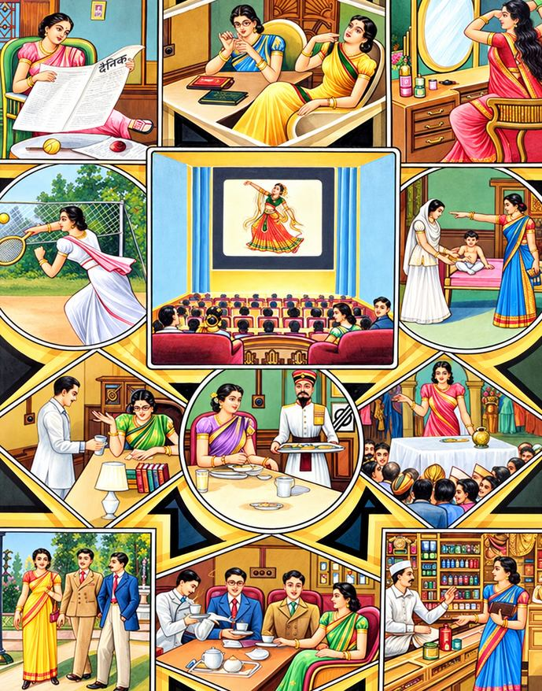
पढ़े अखबार, है सिगारका उड़ाती धुआँ,
करती सिंगार भी पामेड पाउडरसे।
क्लब और सिनेमा जाती पर-पुरुषोंके साथ,
दाईपर बच्चोंका उतार भार सरसे॥
पतिसे मँगाती जल, खाती खुद होटलमें,
वक्तता सुनाती पुरुषोंको तार स्वरसे।
मित्रों संग घूमती है, जाती चाय पार्टियोंमें, आती है बाजारमें निकलकर घरसे॥
••••
नारीके दो रूप
लेखक—श्रीछोटेलालजी मिश्र
(१)
एक वे नारी, जिन संतति विद्वान होत,
एक वे नारी, जिन संतति अनारी हैं।
एक वे नारी, जो घर-तन सफाई राखें,
एक न न्हायें, देयँ घरमें ना बुहारी हैं॥
एक वे नारी, जो बालकको डराय राखें
एक वे कायरको बनावें बलधारी हैं।
एक वे नारी, बिना पढ़ी लिखी पालें धर्म,
छोटे एक, ठोकर धर्म ऊपर जिन मारी हैं।
(२)
एक वे नारी, वन पठावें सौत-लालनको,
एक वे नारी भेजें सौति संग अपना।
एक वे नारी, जो विषयमें लिप्त रहें,
एक वे त्यागि सब, हरी-नाम जपना॥
एक वे नारी, जो मोह, ना बिसारि सकें,
एक वे, बिसारें मोह, समझें जग सपना।
एक वे नारी, जो दोऊ कुल तारि देयँ,
छोटे एक नारी, जो न तरि सकें अपना॥
(३)
एक वे भोर होत ईश्वर-गुणगान करें,
एक वे देन लगें भोर होत गारी हैं।
एक वे नारी, जो दाता और दानी जनें,
एक वे नारी, जनें चोर और ज्वारी हैं।
एक वे, जिनके पूत देश-धर्म-रक्षक जो,
एक वे जिन्न जमदूत उन्हारी हैं।
छोटे द्विज चाहो कल्याण तो सुधार लेहु,
कर्ता और कारण तो हमारी महतारी हैं।
••••
स्त्री-पुरुषमें परस्पर परिचय
(लेखक—श्रीकिशोरलाल घनश्याम मशरूवाला)
एक मित्रने मुझे सवाल भेजा कि ‘क्या ईसाई संत टॉमस ए-कैम्पिसका नीचे लिखे आशयका वचन मेरे पर लागू किया जा सकता है?’ ‘किसी भी स्त्रीसे परिचय न रखो; बल्कि आमतौरपर सब स्त्रियोंको भगवान्पर छोड़ दो।’
शायद मैं यह कहूँगा कि जो सिर्फ धर्म, भक्ति, ज्ञान, वैराग्य आदिके प्रचारमें लगे हुए हैं, उनके लिये इसी नियमपर चलना अच्छा है; परंतु संसारके कामोंमें लगे हुए लोगोंके लिये जितना जरूरी हो, उतना परिचय करना अनिवार्य है। लेकिन परिचयके कारण स्त्री या पुरुष किसीसे भी फिजूल शरीर-लगायी करनेकी जरूरत नहीं; वह मोह है और उससे बचना चाहिये। इसमें मैं सजातीय-विजातीय व्यक्तिका भी भेद नहीं मानता यानी किसी भी पुरुष या स्त्रीका अनावश्यक अथवा जो टाला जा सकता है ऐसा शरीर-सम्पर्क न करो।
मेरी एक ओर स्त्री-निन्दाके या दूसरी ओर स्त्री-प्रशंसाके इस प्रकारके व्यापक सूत्रोंमें श्रद्धा नहीं है—जैसे स्त्री नागिन या बाघन है, मायाविनी है, कपटी है आदि; या वह भावनाप्रधान है, धर्मकी रक्षा करनेवाली है, जब कि पुरुष बुद्धिप्रधान, गिनतीबाज, शिकारी है इत्यादि। दोनों तरहके उद्गार अत्युक्तिके शब्दाडम्बर हैं। पुरुषसे ज्यादा कठोर, धर्मबुद्धिहीन, गिनतीबाज और शिकारी स्त्रियाँ होती हैं, और जैसे नाग तथा बाघसे भयंकर और दुष्ट पुरुष होते हैं, वैसे अत्यन्त मृदु, सरल और धर्मात्मा भी पुरुष होते हैं। हरेक स्त्रीमें पुरुषका अंश है और हर पुरुषमें स्त्रीका। इसलिये दोनोंमें इस तरहके गुणोंकी भेल-सेल है; दोनोंमेंसे कोई अधिक प्रशंसायोग्य नहीं, कोई अधिक निन्दायोग्य नहीं। और पुरुषका पुरुषके स्पर्शमें तथा स्त्रीका स्त्रीके स्पर्शमें भी विकार रह सकता है। अवश्य ही विजातीय स्पर्शमें सहज ही वह जल्दी पैदा होना सम्भव है, परंतु चित्तशुद्धिकी दृष्टिसे दोनोंको अनावश्यक स्पर्श छोड़ना चाहिये। कर्तव्यकी बात अलग है। जहाँ ऐसा कर्तव्य हो, वहाँ तो विकारका खतरा उठा करके भी उसे करना होगा।
प्राणापद्युपपन्नायां स्त्रीणां स्वेषां च वा क्वचित्।
तदा स्पृष्ट्वापि तद्रक्षा कार्या संभाष्य ताश्च वा॥
(साधु या ब्रह्मचारीपर) जब अपने या स्त्रियोंके प्राणोंकी आपत्तिका प्रसंग आवे, तब उन्हें छूकर या उनसे बोलकर भी उनकी रक्षा की जाय। (स्वामिनारायण-सम्प्रदायकी शिक्षापत्री)
साधु-ब्रह्मचारीके लिये कर्तव्यरूप स्पर्शकी इतनी ही परिस्थिति पैदा हो सकती है। परंतु सांसारिक कर्मक्षेत्रमें और भी तथा हर रोज ऐसे प्रसंग आने सम्भव हैं—उदाहरणार्थ नर्स या डॉक्टरके लिये। फिर भी, अनावश्यक शरीर-लगायीसे सावधानताके साथ बचना ही चाहिये, चाहे कोई अनेकोंका माना हुआ ब्रह्मनिष्ठ सद्गुरु या महात्मा हो अथवा सादा-सीधा मायामें बँधा हुआ संसारी।
इस तरह स्त्री या पुरुष किसीके भी स्पर्शके बारेमें मेरी दोनोंके प्रति समान दृष्टि है।
अब रहा, दाक्षिण्य—यानी आदर व्यक्त करनेका प्रश्न। इस विषयमें मेरी रायमें विशिष्ट परिस्थितिमें जो ज्यादा बलवान् हो, वह कम बलवान्को आगे स्थान दे और मदद करे—इसमें दाक्षिण्यका पूरा धर्म समा जाता है। साधारण परिस्थितिमें यह धर्म स्त्रियोंके प्रति पुरुषोंका होगा, परंतु विशेष परिस्थितिमें उलटा भी हो सकता है।
नारी नरकी अर्द्धांगिनी
(लेखक—साहित्याचार्य ‘मग’)
विकासमयी सभ्यताके शैशव-कालसे ही आर्योंने—हमारे पूर्वजोंने जीवनकी गम्भीरतम गुत्थियोंका सुलझाना अपना अन्यतम कर्तव्य समझा था। आत्मसत्ताके अन्वेषणमें अनगिनत मनीषियोंने जी होमकर जिस विचारधाराको प्रचारित किया था और जिस मतवादकी स्थापना की थी, उसका अक्षर-प्रत्यक्षर अभी भी अपनी भास्वरताको उसी रूपमें धारण किये हुए है। अपनी दुर्बलताके कारण अभी हम विजातीयोंसे जिस प्रकाशकी एक क्षीण-सी रेखा पाकर फूले नहीं समाते, वही दिव्य आलोक हमारे तपस्तप्त मुनिपुंगवोंके पर्णकुटीरोंमें कभी अठखेलियाँ करता था, जिसकी एक बाँकी झाँकीसे ही भारतकी पवित्र भूमि जगमगा गयी थी; किंतु कौशलसे विधर्मियोंने उसपर यवनिका डाल दी और हतभाग्य भारतीयोंको आज अंधेकी तरह टटोलनेको विवश कर दिया!
हमारे पूर्वजोंने जिस प्रगल्भतासे प्रकृति-पुरुषका विवेचन किया है, विश्लेषण किया है, उसकी समझ रखनेवालोंकी दृष्टिमें विदेशियोंका कौन-सा मतवाद महार्घ्यता धारण करनेका साहस करता है? पहले यह किसने बताया है कि प्रकृति जड है और पुरुष चेतन एवं दोनोंका एकावयव ही यह दृश्यमान संसार है? चाँद सूर्यकी तीक्ष्ण किरणोंसे ही जैसे जगको आप्यायित करता रहता है, वैसे ही प्रकृति भी पुरुषके संसर्गसे ही तरह-तरहके खेल खेला करती है। यदि इस संसर्गमें विघटन हो जाय तो एकके बिना दूसरा सदाके लिये अधूरा रह जायगा।
अन्धकारके अभावमें प्रकाशको कौन पूछेगा? चेतनाका स्फुरण हृदयकोषके व्यतिरिक्त और कहाँ स्थान पावेगा? हमारी शक्ति हमें छोड़कर मेजपर कभी टिक सकेगी? यदि नहीं, तो फिर बिना नर-नारीके एकीभावके नीरस, शुष्क और अकर्मण्य जीवन बितानेको कौन तैयार होगा? संन्यासियोंने भी शक्तिपूजन कर जीवनमें कोमलता और मृदुलताका सिंचन किया है एवं मातृ-भावनाका आदर कर प्राणोंको आप्यायित किया है।
भविष्यपुराणके सातवें अध्यायमें आया है—‘पुमानर्द्धपुमांस्तावद्यावद्भार्यां न विन्दति।’ यानी पुरुषका कलेवर तबतक पूर्णताको धारण नहीं करता, जबतक कि उसके आधे अंगको आकर नारी नहीं भर देती। वहींपर यह श्लोक भी लिखा है—
एकचक्रो रथो यद्वदेकपक्षो यथा खगः।
अभार्योऽपि नरस्तद्वदयोग्यः सर्वकर्मसु॥
मतलब यह कि एक चक्केका रथ कुछ दूर घुड़ककर ही लुढ़क जायगा और एक पाँखसे चिड़िया फड़फड़ाकर ही रह जायगी, थोड़ी दूर भी नहीं उड़ सकेगी। उसी तरह अकेला पुरुष कोई कार्य भी नहीं कर सकेगा। गृहस्थीकी देख-रेख, बच्चोंका लालन-पालन एवं क्लान्त और शिथिल मानसमें उत्साहका संवर्द्धन जिस खूबीसे स्त्रियाँ कर सकती हैं, वह पुरुषोंकी सामर्थ्यके एकदम बाहर है। इसीलिये कवि-कुल-गुरु कालिदासने लिखा है—‘गृहिणी सचिवः सखी मिथः प्रियशिष्या ललिते कलाविधौ।’ निर्गलितार्थ यह है कि मानव-जीवन तभी सुखमय होता है, जब कि वह थोड़ी देरके लिये भी अपना भार विश्वासपूर्वक किसीपर सौंपकर सुस्ता ले, दम ले ले। गुप्त वस्तुओंके भारसे थका हुआ दाहिना हाथ बाँये हाथको गठरी देकर जिस शान्ति और अश्रान्तिका अनुभव करता है, वह क्या किसी औरसे वह पा सकता है? एक सद्गृहिणी अपने पतिके भारको जिस खूबसूरतीसे हमेशा हलका करती रहती है, वह किस अनुभवीसे अलक्षित है? विपत्ति या कठिन कालमें जब पुरुषोंका मार्ग-निर्धारण संशयग्रस्त हो जाता है, तब दुःख-सुखकी समान साझेदार वही स्त्री परामर्श देती है। दो घड़ी जी बहलाना और नस-नसमें ताजगी भर देना उसीका काम है। ललित कलाके शिक्षणमें जो उमंग पुरुष उनके (स्त्रियोंके) प्रति धारण करता है, वह ढूँढ़े भी कहीं नहीं मिलेगी। यह क्यों? इसीलिये न कि प्राणोंको दोनोंमें अभेद दीखता है। नर यदि नारीको अर्द्धांगिनी नहीं समझे तो आज संसारका रूप ही कुछ और हो जाय, जिसके भद्देपनमें सन्देह किया ही नहीं जा सकता।
बायीं आँख कुछ और तरहसे देखे एवं दाहिनी आँख उसे ही कुछ और ढंगसे देखे तो वस्तुभावका यथार्थ ज्ञान किसी भी दशामें सम्भव नहीं है। नरका नारी अगर आधा अंग है तो नारीकी भी पूर्णता नर-सम्पर्कसे ही उद्भूत होती है। व्यष्टिरूपसे दोनों ही रिक्त हैं। बिना समष्टिके विश्ववाटिकाका सिरजन नहीं हो सकता। इसीलिये आदिदेव महादेवकी कल्पना, धारणा या जो कहें हिंदुओंने अर्द्धनारीश्वरके रूपमें की है। विष्णु यदि राम-रूप धारण करते हैं तो मोहिनीका रूप धारण करनेमें भी उन्हें देर नहीं लगती। मतलब यह कि समष्टिरूपसे नर-नारीमें एकीभाव है। एकमें मृदुलता है, कोमलता है, चारुता है, मिठास है तो दूसरेमें कठोरता है, कर्मठता है और बाँकापन या मर्दानगी है। प्रपानक-न्यायसे इन सभी गुणोंका सम्मेलन ही कोई आदर्श खड़ा कर सकता है। महाभारत अनुशासनपर्वके १४६वें अध्यायमें आया है—
देववत् सततं साध्वी भर्तारमनुपश्यति।
दम्पत्योरेष वै धर्मः सहधर्मकृतः शुभः॥
अर्थात् पत्नी अगर पतिको देवताकी तरह समझती है तो पति भी उसे उन्हीं नजरोंसे देखता है। दम्पतिका एक ही धर्म है। सहचारिता दोनोंके लिये आवश्यक है।
विष्णुपुराण-प्रथमांशके चौथे अध्यायमें लिखा है—
अर्धनारीनरवपुः प्रचण्डोऽतिशरीरवान्।
विभजात्मानमित्युक्त्वा तं ब्रह्मान्तर्दधे ततः॥
अर्थात् सृष्टिके प्रारम्भमें रुद्र आधे शरीरसे पुरुष और आधे शरीरसे स्त्री हुए। यह देखकर ब्रह्माको सन्तोष हुआ और उन्होंने बताया कि अब इसका विभाग किया जाय और सृष्टि चलायी जाय। किसी वस्तुको दो टुकड़ोंमें बाँट देनेपर भी मूलाधार एक ही रहेगा। नदीकी कितनी भी शाखाएँ हो जायँ, लेकिन न आदिस्रोत बदल सकता है और न उसमें वैषम्य ही उपस्थित हो सकता है। वस्तुतः देखा जाय तो नर-नारीका एक ही कार्य है—सृष्टि-सम्पादन। यों ‘ग्रामं गच्छन् तृणं स्पृशति’ की तरह भव-जंजालमें किसे क्या नहीं करना पड़ता! किंतु नर-मादा या स्त्री-पुरुष शब्द जब मानव-सन्ततिके बाद अण्डज-पिण्डज आदिमें व्यवहृत होता है, तब उपर्युक्त सिद्धान्तका रहस्य स्फुट-सा दीखने लगता है। मानवोंने बौद्धिक विकास किया है। इनके आगे छोटे-बड़े अनगिनत काम पड़े हैं, अतः कामकी आड़में ये अपने पैमानेसे ही सब नापना चाहते हैं; लेकिन इस नापमें इन्होंने यह शर्त भी लगा दी है कि वह कहीं भी पुरुषोंके स्वार्थमें व्याघात नहीं पहुँचावे। ज्यों-ज्यों इस भावनाका उदय हुआ, त्यों-त्यों पलड़ेमें दबाव पड़ता गया।
ऐसा कौन-सा कार्य है, जिसे पुरुष कर सकता है और स्त्री नहीं कर सकती, या स्त्री कर सकती है और पुरुष नहीं कर सकता? सब जगहोंसे टकराकर नजर वहीं टिकेगी यानी गर्भधारण और वीर्यका उत्पादन। वाम नयन जिसे देखेगा, उसे दक्षिण नयन अवश्य देखेगा; क्योंकि दोनों ही शरीरके अंग हैं और दोनोंका कार्य भी एक ही है। फिर भी हम बायीं आँखको उठाकर दाहिनी आँखके गड्ढेमें नहीं भर सकते; क्योंकि दोनोंकी स्थितिमें तारतम्य है। किंतु नयनत्वावच्छेदेन दोनों नयन एक हैं।
आज क्या, शुरूकी ही बात लें, जिन कार्योंको पुरुष कर सकते थे, उन्हें स्त्रियाँ भी कर लेती थीं। पढ़ने-लिखनेमें स्त्रियाँ पुरुषोंसे पीछे नहीं थीं। देखिये ऋग्वेद १। १२६। ७ मन्त्रकी ऋषि या मन्त्र बनानेवाली रोमशा या लोमशा, ऋ० १०। ४० सूक्तकी ऋषि घोषा, ऋ० ५। २८ सूक्तकी ऋषि विश्वावारा, ऋ० १०। ४५ सूक्तकी ऋषि इन्द्राणी, ऋ० १०। १५९ सूक्तकी ऋषि प्रलोमतनया शची एवं ऋ० ५। ९ सूक्तकी ऋषि अपाला थीं। स्त्रियाँ संग्राम भी किया करती थीं। रथ हाँका करती थीं। मुद्गलपत्नी इन्द्रसेनाने बड़ी खूबीसे युद्धमें रथ हाँका था और इन्द्रके शत्रुओंका विनाश बड़ी वीरतासे किया था। अस्त्रसंचालन-कलामें वह पारंगत थी। अपनी वीरतासे उसने शत्रुओंके छक्के छुड़ा दिये थे और अपहृत गौओंको उनसे छुड़ाया था (ऋ० १०। १०२। २—११)। दौत्यकार्य भी स्त्रियोंके द्वारा सम्पादित किया जाता था। इन्द्रकी ओरसे पणि असुरके पास दूती बनकर सरमा गयी थी। सरमा और पणिका संवाद पढ़कर तत्कालीन स्त्रियोंकी बुद्धि-प्रखरतापर किसे आश्चर्य न होगा (ऋ० १०। १०८)।
स्त्री या पुरुष दोनोंका ही सिरजन एक ही गिलाबेसे होता है। दोनों एक ही माँ-बापकी संतान हैं; किंतु प्रकृत दशामें यद्यपि दोनोंकी स्थिति भिन्न हो जाती है, तथापि हमारा हिंदू-धर्मशास्त्र इस ढंगसे दोनोंको वैवाहिक धर्म-सूत्रसे संघटित कर देता है कि नारी नरकी अर्द्धांगिनी हो जाती है। दक्षस्मृतिका वचन है—
पत्नीमूलं गृहं पुंसां यदिच्छन्दानुवर्तिनी।
तया धर्मार्थकामानां त्रिवर्गफलमश्नुते॥
यानी गृही या गृहस्थाश्रमी पुरुष तभी कहला सकता है, जब कि वह पत्नीवान् होता है और पत्नी भी ठीक उसके अनुकूल—जैसा कि उसके अनुकूल उसका अंग-प्रत्यंग है। यदि ऐसा है तो उसी पत्नीके सहारे वह त्रिवर्गका फल भोग करता है। स्कन्दपुराण, काशीखण्ड, अध्याय ४ में बताया गया है—
भार्या मूलं गृहस्थस्य भार्या मूलं सुखस्य च।
भार्या धर्मफलावाप्त्यै भार्या सन्तानवृद्धये॥
मतलब यह कि गृहस्थीकी मूलभित्ति भार्या है। अगर पुरुषने दार-सम्बन्ध स्थापित नहीं किया तो उसकी गृहस्थी किसी कामकी नहीं है; क्योंकि सुखका स्रोत जहाँसे फूटता है, उसका वही स्थल सूखा-सा है। बिना सहधर्मिणीके पुरुष धर्माधिकारी भी नहीं होता। इसीलिये सीताके अभावमें श्रीरामचन्द्रने यज्ञ करते समय सुवर्णमयी सीताको पास रखा था और सृष्टिका सम्पादन तो अकेला पुरुष बिना स्त्रीकी सहायताके कर ही नहीं सकता। श्लोकके तात्पर्यपर ध्यान देनेसे स्पष्ट दीखेगा कि यदि पुरुष अपनी जीवनसंगिनी, सहधर्मिणी या अर्द्धांगिनीको अपनेसे अलग कर देता है या ऐसी कल्पना करता है तो उसका संसार सूना पड़ जाता है—गृहस्थीके स्वादमें नीरसता, सुखका सर्वथा अभाव, धर्माचरणमें अनधिकारिता और वंश-विलोपका प्रत्यक्ष भय। ऐसे हाहाकारमय संसारमें रहना कौन कबूल करेगा? इसीलिये तो नरने नारीको अर्द्धांगिनी बनाया है।
अच्छा, तो नर जिस नारीको अर्द्धांगिनी बनाता है, अपना आधा अंग जिसे सौंप देता है या अपने आधे अंगोंमें जिसे समा लेता है, वह केवल एक कुतूहलके लिये नहीं करता है, बल्कि उससे भी वह बड़ी-बड़ी आशा रखता है। परिणय-सूत्रमें बँध जानेपर भी यदि नर-नारीमें भेद रहा तो दोनोंको नरक यहीं दीखने लगता है। दक्षप्रजापतिने कहा है—‘प्रतिकूलकलत्रस्य नरको नात्र संशयः।’ जिस तरह माली बीजू आममें कलम बाँधकर दोनोंको एकावयव, एकप्राण कर देता है—दोनों दरख्त आपसमें मिलकर एक हो जाते हैं, उसी तरह हिंदू-धर्मशास्त्र वैवाहिक सूत्रमें बाँधकर नर-नारीको एक कर देता है। बीजू दरख्तको अपनापन सौंप देना पड़ता है। यदि उसकी कहीं अलग टहनी निकलती भी है तो माली उसे बर्दाश्त नहीं करता, तोड़ देता है। ठीक वही दशा हम हिंदुओंके घर स्त्रियोंकी है। मुनिवात्स्यायन या चाणक्यने लिखा है—‘भार्यैकचारिणी गूढविश्रम्भा देववत्पतिमानुकूल्येन वर्तेत।’ यानी स्त्री मन, वचन, कर्म या और जो कुछ भी हो सकता है, सब प्रकारसे पतिमें निरत रहे—पतिको पूरा विश्वास करा दे कि वह उसीकी है। पतिको देवता समझे और पतिकी इच्छाके अनुसार ही आचरण करे। यह तो तभी हो सकता है जब कि स्त्री अपनापन एकदम खो दे और सर्वतोभावसे पतिमें मिल जाय। परंतु जो इतना करेगा, उसे भी तो कुछ लोभ चाहिये, उसके आगे भी तो कुछ उज्ज्वलप्रकाश होना चाहिये; नहीं तो कोई ऐसा क्यों करेगा? हमारे आचार्योंने, ऋषि-मुनियोंने इसपर भी विचार किया है। आगे चलकर उसी सूत्र-ग्रन्थमें लिखा है—
धर्ममर्थं तथा कामं लभन्ते स्थानमेव च।
निःसपत्नं च भर्तारं नार्यः सद्वृत्तमाश्रिताः॥
यानी जो नारी नारी-सदाचारकी उपासना करती हैं, वे धर्म, अर्थ, कामके साथ-साथ पतिका निष्कण्टकरूपसे उपभोग करती हैं और पतिके हृदयमें उच्च स्थान पाती हैं। उसी गुण-विशेषसे नारी नरकी अर्द्धांगता धारण करती है। राजशेखरने भी इसी भावको अपने सट्टकमें यों व्यक्त किया है—
चित्ते चिहुट्टदिण खुट्टदि सा गुणेसु
सैज्जासु लोट्टदि विसप्पदि दिम्मुहेसु।
बोल्लम्मि बट्टदि पउट्टदि कब्बबन्धे
झाणे ण तुट्टदि चिरं तरुणी चलाक्खी॥
चंचल नयनोंवाली तरुणी नारी सदा पुरुषोंके हृदयमें विश्राम करती है; क्योंकि अपने गुणोंके कारण वह हमेशा जागरूक रहती है। चाहे पुरुष सोया रहे या जिधर भी अपना रुख रखे, वह वहीं वर्तमान रहती है। बोलचालमें या काव्य-प्रबन्धके विरचनमें भी वह साकार मूर्तिमती होकर विराजती रहती है। और क्या, कल्पनामें भी उसका स्खलन नहीं होता। मतलब यह कि दोनोंका परस्पर विश्वास, दोनोंका दोनोंके प्रति आत्मीयताका आदान-प्रदान और दोनोंके हितोंमें दोनोंकी एकान्त तन्मयता दोनोंको एकाकार किये रहती है।
केवल विषय-सुखका आस्वाद ही जिनका लक्ष्य है, चाहे वे स्त्री हों या पुरुष, उन्हें दम्पतिके इस शाश्वत सम्बन्धमें कोई विशेषता नहीं दीख पड़ती, जैसे समुद्र लाँघते समय हनुमान्को उसकी गहराईका ज्ञान नहीं हो सका था; किंतु उस गहराईका पता तो मन्दराचलको चला है, जो भारी-भड़कम देह लिये सागर-तहमें पैठा हुआ है। आर्य-मनीषियोंका कार्य था रहस्योद्घाटन करना, जीवनके स्तरको कूटस्थ कर देना और विशृङ्खल तथा अमर्यादित मानव-सन्ततियोंको सुसंस्कृत पद्धतिपर आरूढ़ करा देना। जो इस रहस्यको समझते हैं और जिन्हें इसमें कल्याण दीखता है, वे तो इस प्राचीनपन्थाको श्रेयस्कर समझते हैं और जिनके दिलदिमागको विजातीयोंके संसर्गने दूषित कर दिया है, वे अपनी अलग खिचड़ी पकाया करते हैं। ऐसोंके लिये नारी अभी भी पहेली बनी हुई है।
जिसका जो सहज, स्वाभाविक या नैसर्गिक गुण है, उसे कोई क्योंकर छीन सकता है? अग्निका दाहकत्व, जलका शैत्य और नारीके मार्दव, सौष्ठव या वात्सल्य गुणका अपकर्षण किसी भी तरह नहीं हो सकता। स्त्रियोंमें सेवा-शुश्रूषाकी भावना जन्मजात होती है। कर्कशता और कोमलता एवं मृदुता और कठोरता जब अलग-अलग रहती है, तब उससे सांसारिक कार्योंका सम्पादन सुचारु रूपसे नहीं हो सकता; परंतु ज्यों ही दोनोंका सम्मिश्रण हुआ कि गृहस्थीका छकड़ा लीक पकड़ लेता है।
‘द्वा सुपर्णा............।’ मन्त्रका भी यही रहस्य है। बिना स्त्री-पुरुषोंके मेल-मिलापके यह दृश्यमान संसार गोचरीभूत नहीं होता। दोनों ही एक ही वृक्षपर बैठनेवाले पंछी हैं। दोनोंमें ही सहकारिता और सौहार्द है। इसमें विघटन होते ही पद-पदपर वैषम्य उपस्थित होगा और चिन्मय धारामें उद्भूत होगा व्याघात। पौरुषका वास्तविक विकास स्त्रियोंमें कभी नहीं हो सकता। लता वृक्षोंको ही पकड़कर आगे बढ़ेगी। नदियोंका विश्राम समुद्रोंमें ही होगा। सौदामिनी मेघोंको छोड़कर अन्यत्र नहीं जा सकती। ठीक उसी तरह स्त्रियोंकी विश्रान्ति भी पुरुषोंके आधे अंगोंके सिवा दूसरी जगह नहीं हो सकती। यदि कोई अलबेली लतिका वृक्षोंको छोड़ कहीं सिर ऊँचा कर देती है, तो उसका पतन उसी क्षण स्थिर हो जाता है। नदियाँ समुद्रकी राह छोड़ दें तो वहीं सूख जायँ। सान्द्र मेघ-पटलसे पृथक् होते ही वही सौदामिनी सिर्फ धरामें धँस जाती है!
नारीको जो हमारे पूर्वजोंने नरकी अर्द्धांगिनी कहा है, वह इन्हीं कारणोंसे; पर इसका यह तात्पर्य कहीं भी नहीं है कि पुरुष उसके मौलिक गुणोंका अपकर्षण करे, उसकी उन्नतिमें बाधक हो, उसकी सदिच्छा-सदभिलाषाओंका उन्मूलन करे और उसे पददलित या निःसहाय छोड़ दे, उसे ज्ञान-विज्ञानकी किरणोंसे वंचित करे, शिक्षाके विशाल प्रांगणमें उसे छूटकर खेलनेकी छुट्टी नहीं दे और उसे सात तहोंमें ढका रखे। यदि कोई ऐसा करता है तो वह स्वयं अपने आधे अंगको कमजोर बनाता है। हमारे शास्त्रकारोंने स्त्रियोंको रक्षणीय अवश्य कहा है, किंतु उपेक्षणीय कभी भी नहीं कहा है।
कोशिश करनेपर बायाँ हाथ भी लिख सकता है, मुँहतक ग्रास पहुँचा सकता है और देवताके सिर चन्दन भी लगा सकता है; परंतु बिना उसकी इस चेष्टाके ही इन कार्योंको दाहिना हाथ कर देता है। यदि इसके लिये यह बगावत करे यानी युद्धमें आगे बढ़कर धनुषको न पकड़े तो सब गुड़ गोबर ही समझिये; लेकिन ऐसा न होकर दोनोंमें अगर मैत्रीभाव रहा, तो शरीर-यात्रा निर्विघ्न चलती रहेगी। दोनों ही खुश रहेंगे और दोनोंके कार्योंका अन्तर किसीकी समझमें नहीं आवेगा। स्त्रियोंके लिये भी कुछ ऐसी ही बातें हैं। जिन कार्योंको पुरुष आसानीसे कर लेते हैं, वहाँ स्त्रियोंके पौरुष-प्रदर्शनकी कोई आवश्यकता नहीं है। हाँ, जहाँ उनके पुरुषायितकी जरूरत है, वहाँ वे अवश्य प्रकट किया करें। कोई भी कार्य हो, दम्पतिका एक ही लक्ष्य रहता है। जो जिस कार्यको आसानीसे कर सके, वह कर डाले। इसमें हुज्जत कैसी? अधिकार या हकके लिये तकरार कैसा?
धर्मशास्त्रोंने साफ शब्दोंमें आज्ञा दे रखी है कि जहाँ स्त्रियोंका सत्कार होता है, पूजा होती है, वहीं देवभावका उदय होता है, उसी घरमें स्वर्ग निवास करता है। इससे अधिक और क्या चाहिये? पुरुषोंने जब स्त्रियोंको अर्द्धांगिनी बनाया है, तब अपना आधा अधिकार उन्हें सौंप देनेमें किसी भी पुरुषको कोई एतराज नहीं है। बाहरका काम पुरुष देखता है और घरका काम स्त्रियाँ देखती हैं। स्त्रियोंकी चूल्हा-चक्कीपर अधिकार जमानेके लिये या बच्चोंके लालन-पालनमें दस्तंदाजी करनेके लिये अथवा उनकी सेवा-शुश्रूषाके कार्योंमें होड़ लगानेके लिये कहीं कोई भी पुरुष तो उतावला नहीं हो रहा है; परंतु आज स्त्रियाँ पुरुषोंके कार्योंको और हलका करना चाह रही हैं। क्या दफ्तरोंमें और क्या क्लबोंमें, जहाँ देखिये वहीं ये कोमलांगी रमणियाँ अधिकारमदमें दुर्दमनीय-सी बनी अपनी सुकुमारताका गला घोंट रही हैं। अर्द्धांगिनीके बाद तो दूसरी सीढ़ी अब सम्पूर्णांगिनीका ही हो सकता है।
हम तो धार्मिक जगत्में विचरण करते हुए शास्त्रीय दृष्टिकोणसे यह स्पष्ट देख रहे हैं कि स्त्रियोंको ज्यादा तूलकलाम करनेकी कोई जरूरत नहीं रहती। स्कन्दपुराणमें लिखा है—
यद्देवेभ्यो यच्च पित्रादिकेभ्यः
कुर्याद्भर्ताभ्यर्चनं सत्क्रियां च।
तस्यार्द्धं वै सा फलं नान्यचित्ता
नारी भुङ्क्ते भर्तृशुश्रूषयैव॥
मतलब यह कि जो स्त्री केवल पतिकी ही सेवा स्थिरचित्तसे करती है, उसे कहीं भटकनेकी जरूरत नहीं है। उसका पति जो कुछ भी दान-धर्म, सेवा-सत्कार और धर्म-पुण्य आदि करता है, उसका आधा फल, बिना प्रयास, स्त्रियोंको मिल ही जाता है; क्योंकि अर्द्धांगिनी जो है वह। यही नहीं, नरकी अर्द्धांगिनी होनेके नाते निर्णयामृतमें यह भी लिखा है कि—
भार्या पत्युर्व्रतं कुर्याद् भार्यायाश्च पतिर्व्रतम्।
यानी पत्नी पतिका व्रत करे और पति पत्नीका। शास्त्रकारोंने स्त्रियोंको अर्द्धांगिनीका पद समर्पणकर उन्हें कहीं भी नीचा दिखानेकी चेष्टा नहीं की है। दोनों पलड़ोंमें दबाव एक-सा ही दिया है; परंतु इतना खयाल उन्होंने अवश्य रखा है कि स्त्रियाँ मक्खनसे, मखमलसे और फूलसे भी बढ़कर कोमल हैं। इनकी तुनुकमिजाजी भी जाहिर है। तब इनके सिर ज्यादा काम लाद देना कौन-सी अक्लमन्दी होती? अतएव इनके अनुरूप ही इन्हें काम भी सौंपा गया है।
देखिये न मायावाद, कायावाद और मिथ्यावादमें इनकी बुद्धि किस तरह प्रौढ़ बनी रहती है और सम्मोहन-कलाकी कलाबाजियोंमें तो इनके जौहरका निखार देखते ही बनता है। इसीलिये घरकी चहारदीवारीके भीतर इनका एकाधिपत्य साम्राज्य कायम कर दिया गया है। वहाँ इनका अनुशासन किसीको अमान्य नहीं होता।
जो कुछ भी हो, जिस तरह भी विचार किया जाय, स्त्री-पुरुषोंमें बिना समभाव स्थापित किये काम नहीं चलेगा। समभावका अर्थ है, आधेका अधिकार। जब वे अर्द्धांगिनी हैं, तब आधा अधिकार सब तरहसे उनका जायज है। जहाँ चाहें, वे अपने इस अधिकारका उपयोग कर सकती हैं; लेकिन समझ-बूझकर। वे इन दिनों जिस तरह पुरुषोंके कदम-पर-कदम रखनेको मचल रही हैं, वह इन्हें किस बियाबानमें पहुँचा आवेगा—यह पता नहीं। दफ्तरोंमें पैठनेके लिये इनकी कोशिश जोरोंसे जारी है। वहाँ सभी मर्दोंका तो ठिकाना लगा ही नहीं है, भला ये जाकर क्या करेंगी? क्या अब तवे-चूल्हेका इंचार्ज मर्द बनेगा और ये दफ्तरोंमें कुर्सियाँ तोड़ा करेंगी? पैर बहुत दिनोंतक चल चुका, अब क्या कुछ दिनोंके लिये सिरको भी चलना पड़ेगा? अर्द्धांगिनीका यदि ऐसा ही अर्थ लगाया जाय, तब तो शास्त्रकारोंका सारा परिश्रम मटियामेट समझिये। नहीं तो जिस उच्च विचारधाराको उन्होंने प्रश्रय दिया था; उसीमें स्वच्छन्द भावसे अवगाहन करनेमें ही सभीका कल्याण है।
••••
नारीकी प्रार्थना
[वेदमन्त्रोंके आधारपर]
माता और पिता की सुन्दर
इच्छाओं की मूर्ति बनूँ मैं।
प्रभो! शक्ति दो, प्रिय गृहजन के
अरमानों की पूर्ति बनूँ मैं।
जिसके आँगन की वेदी का
धुँवा छू रहा हो उच्चाम्बर।
भरा अन्न, घृत-वस्त्र-स्वर्ण-से
हो वह मेरा गेह धरा पर।
शशि से मिले मुझे मुख-छवि वह,
अति जिससे छविमान गगन हो।
दे मधु-ऋतु! मुसकान मुझे वह,
विकसित जिससे गिरि-कानन हो।
नमस्कार है इन्द्र! तुम्हें, मैं
यही विनय करती निशि-वासर।
मेघ-घटा की दिव्य घटा से।
विरचो मेरा यौवन शुचितर।
तेज दिया हो जिसे सूर्य ने,
वसुधा ने धनपूर्ण किया हो।
जिसने अपने अति भुजबल से
बैरी का मद चूर्ण किया हो।
सौ बरसों तक जीने वाला
हो वह मेरा प्रिय जीवन-धन।
भरा उसे उत्साहों से नित
रखें मेरे दीर्घ मृग-नयन।
जिनकी चर्चासे अरि दहलें
और मित्र आनन्द मनायें।
जिन्हें देखते ही गृह-जन के
उर प्रकाश से भर-भर जायें।
रवि-शशि से जो ज्योतिमान हों,
जिनसे निखरे कुल की लाली।
ऐसे सुत-कन्याओं से हो
हे प्रभु! मेरी गोद न खाली।
—श्रीनाथसिंह
आदर्श नारी
(लेखक—ठा० श्रीश्रीनाथसिंहजी)
हमारी यह दुनिया एक बड़ा रंगमंच है। जबसे यह बनी है, तभीसे इसपर एक नाटक शुरू हो गया है। प्रकृतिने स्थान-स्थानपर पर्वत, वन, नदी, समुद्र आदिको रखकर इस रंगमंचको सँवारा है। हम जितने जीवधारी हैं, वे सब मानो अभिनेता हैं। पुरुष इस संसार-नाटकका नायक है और स्त्री नायिका है। सूर्य, चन्द्र और तारे दर्शक हैं। अगर उनकी मौनभाषा हम सुन और समझ सकें तो वे हमें बता सकते हैं कि सृष्टिके आदिसे अबतक किसने अपना पार्ट कैसा अदा किया है।
इस लेखमें हम इस संसार-नाटककी नायिका अर्थात् नारीकी चर्चा करना चाहते हैं। वह न होती तो शायद यह रंगमंच सूना ही रह जाता। उसके पदार्पणमात्रसे ही यह रंगमंच सरस और सजीव हो उठा है। संसारमें जो कुछ हुआ है और हो रहा है, सबपर उसका प्रभाव पड़ा है। इस सब नाटकके बीचमें वह एक बड़ी शक्ति है। कहीं वह बेटी बनकर आयी है, कहीं बहन बनकर, कहीं पत्नी बनकर और कहीं माता बनकर। उसके ये सब रूप एक-से-एक बढ़कर हैं। सबसे अच्छा रूप कौन है, यह कहना असम्भव है। इसीलिये बुद्धिमानोंने उसे माया कहकर छोड़ दिया है।
अच्छा, मान लीजिये कि सूर्य, चन्द्र और तारोंने अबतक इस संसारका जो कुछ भी नाटक देखा है, उस सबकी एक फिल्म बन जाय और हमें दिखायी जाय तो क्या उसको देखनेके बाद हम यह बता सकते हैं कि स्त्रियोंमें सबसे अच्छा पार्ट किसका रहा। यदि हम प्रत्येक दृष्टिकोणसे देख और समझकर किसी एककी ओर अँगुली उठा सकें तो वही आदर्श स्त्री होगी।
हम मानवोंका जीवन बहुत ही छोटा होता है। हम सूर्य, चन्द्र और तारोंकी आँखोंसे संसारको नहीं देख सकते। हम तो जो कुछ उन्होंने लाखों, करोड़ों वर्षोंमें देखा है, वह घंटों और मिनटोंमें देखना चाहते हैं; तो हम कैसे देख सकते हैं? वेद, पुराण, रामायण, महाभारत, विविध इतिहास तथा आख्यान वन्दनीय स्त्रियोंकी गाथाओंसे भरे पड़े हैं। उन सबको पढ़ और समझकर हम अपने निर्णयपर पहुँच सकते हैं और अपनी वर्तमान माँ-बहिनोंके सामने उस एक आदर्श स्त्रीके चरित्रको अंकित करके कह सकते हैं—‘देखो, स्त्रीका मार्ग यह है, तुम्हें इसी मार्गपर चलना है।’
आदर्श बहुत ही दूर और उसतक पहुँचनेका मार्ग बहुत ही जटिल होता है। पर केवल इसीलिये हमें उससे मुँह न मोड़ लेना चाहिये। वह तो मौत होगी। जिंदगी आदर्शकी ओर बढ़नेका नाम है। साधना, धैर्य, संयम और सतत प्रयत्नसे कितने ही लोग आदर्शतक पहुँच जाते हैं। कितने ही कुछ दूर चलकर रह जाते हैं। कितने ही कुछ और आगे चलते हैं। उन सबका जीवन हमारे लिये अनुकरणीय है; क्योंकि हमें वे मार्ग दिखाते हैं और लक्ष्यकी ओर संकेत करते हैं।
आइये वेद, पुराण, इतिहास आदिका दूरबीन लगाकर हम देखें कि आदर्शके मार्गपर सबसे आगे कौन स्त्री है। इस मार्गपर आपको वैदिक कालसे अबतक अनेक स्त्रियाँ चलती मिलेंगी। कुछपर तो समयका इतना गहरा कुहरा छा गया है कि हम उन्हें पहचान भी नहीं सकते। कुछके गिर्द हमारे शास्त्रकारोंने, कवियों, लेखकोंने अपनी गाथाओंकी मशालें जला दी हैं, जिससे समयके इस घोर कुहरेके होते हुए भी हम उन्हें स्पष्ट देख सकते हैं और पहचान सकते हैं। कुछ हमारे इतने करीब हैं कि हम चाहें तो दौड़कर उनतक पहुँच सकते हैं। उन्हें भी हम पहचान सकते हैं।
रामायण और महाभारतसे पहले वैदिक कालमें जो स्त्रियाँ हुईं, वे यद्यपि बहुत आगे हैं पर वे आकृतिमात्र प्रतीत होती हैं। सम्भव है उनमें कुछने अपने समयमें सीता-सावित्री आदिसे भी सुन्दर और उच्चादर्श उपस्थित किया हो; पर उनके गिर्द लाखों बरसोंके समयका इतना कुहरा छा गया है कि हम उन्हें स्पष्ट नहीं देख सकते।
परंतु रामायण और महाभारत-काल हमारे सामने अभी भी इतना प्रकाशमान है कि हम बहुत कुछ देख और समझ सकते हैं। इसका श्रेय महर्षि वाल्मीकि और वेदव्यास-जैसे महाकवियोंको है, जिन्होंने अपने ग्रन्थोंका विद्युत्प्रकाश फैलाकर इस युगको हमारे सामने इस प्रकार रख दिया है कि जैसे आजकी बात हो। सीता, सावित्री, गान्धारी, कुन्ती, अहल्या, द्रौपदी, मन्दोदरी, सुनीति, शैब्या, पार्वती आदि स्त्रियाँ इस कालमें हुईं। इनके नामोंको यहाँ हमने किसी क्रमसे नहीं लिखा। इनमें सबसे आगे कौन है, यह कहना असम्भव है। सभी आदर्शतक पहुँची हुई हैं और उनका मार्ग भी करीब-करीब एक-सा ही है। पर महर्षि वाल्मीकिने सीताकी गाथा इतने विस्तारसे लिखी है कि वे हमें बहुत प्रिय और निकट प्रतीत होती हैं। फिर गोस्वामी तुलसीदासने अपने रामचरितमानसकी रचना कर उन्हें हमारे हृदयोंमें बैठा दिया है। अतएव जब कि हम आदर्श स्त्रीकी चर्चा करते हैं, हमारा ध्यान सबसे पहले उनकी ओर जाता है।
सीताके चरितसे यह स्पष्ट हो जाता है कि कोई भी स्त्री अपने लक्ष्यतक तभी पहुँच सकती है, जब उसे ऐसे माता-पिता मिले हों जो उसका स्नेहसे लालन-पालन करें। जब उसे ऐसा पति मिला हो जो यथार्थमें उसे अपना आधा अंग समझे। ऐसी सास मिली हो, जो अपनी कन्यासे भी अधिक उससे प्यार करे। जब उसे ऐसे पुत्र मिले हों, जो उसका गर्व करें। हमारे देशमें बहुत-से लोग आजकल कन्या-जन्मसे उदास हो उठते हैं, क्योंकि कन्याको वे परायी सम्पत्ति समझते हैं। ऐसे व्यक्तियोंके घरमें जो स्त्री जन्म लेती है, कहना पड़ेगा कि वह अभागिनी है। उपेक्षापूर्ण वातावरणमें उसे जीवन व्यतीत करना पड़ता है। न उसे अच्छा खानेको मिलता है न अच्छा पहननेको, न उसके स्वास्थ्यका कोई यत्न किया जाता है और न उसकी शिक्षाकी कोई चिन्ता। यदि महाराज जनक भी ऐसे ही पिता होते तो सीताका आदर्श स्त्रीरूप आज हमारे सामने कैसे आता? सीताको पाकर जनकने अपनेको धन्य माना था। सीताके जन्मके समय उन्होंने अपार हर्ष प्रकट किया था। जिस समय सीताको उन्होंने अपनी गोदमें उठाया था, उन्होंने अनुभव किया था कि उनके-जैसा सुखी व्यक्ति संसारमें दूसरा नहीं है। उनका हृदय उमंग और उत्साहसे भर गया था और उनका मस्तक गर्वसे ऊँचा उठ गया था। उसी क्षणसे वे इस प्रयत्नमें लग गये थे कि सीता आदर्श नारी बनें और उन्हें सफलता मिली।
हमारे देशमें आज कितने ऐसे पिता हैं, जो कन्याके लिये जनकका हृदय रखते हैं? उनकी लड़कियाँ अगर आदर्श नारी न बन सकीं तो उन बेचारियोंका क्या कस़ूर है? पुरुषकी बात जाने दीजिये। स्वयं स्त्रियाँ पुत्रकी कामना करती हैं और कन्या-जन्मसे उदास होती हैं। वे भूल जाती हैं कि उनके जन्मके समय भी यही हालत थी, उनको भी घरमें उपेक्षा मिली थी, वे भी पुत्रके मुकाबलेमें बेटी समझी गयी थीं। इस सम्बन्धमें हमें अपना दृष्टिकोण बदलनेकी बहुत जरूरत है। यदि हमारे घरमें कोई कन्या जन्म ले तो हमें उसका भी उसी हर्ष और उत्साहसे स्वागत करना चाहिये, जिस हर्ष और उत्साहसे हम पुत्रका स्वागत करते हैं। जबतक सामूहिक रूपसे हम अपना दृष्टिकोण नहीं बदलते, किसी भी परिवारमें अच्छी बहू नहीं आ सकती।
प्राचीन कालमें कन्याका लालन-पालन पुत्रके ही समान होता था। इसके काफी सबूत मिलते हैं। सीताका जिक्र तो हम कर ही चुके हैं। पार्वती, सावित्री, दमयन्ती, द्रौपदीकी कथाएँ भी इसके अच्छे उदाहरण हैं। जिन राजघरोंमें इन देवियोंने जन्म लिया था, उनमें पुत्र-जन्म भी हुए होंगे। पर इनके लालन-पालनपर इतना अधिक जोर दिया गया था कि इतिहासमें ये-ही-ये रह गयी हैं।
दमयन्ती तो इतनी सुन्दर और सुयोग्य थीं कि उनके स्वयंवरमें देवता मनुष्यका वेष धरकर आये थे कि वे उन्हींमेंसे किसीको वर लें। सावित्रीका इतना दुलार था कि उसे छूट दी गयी कि वह अखिल विश्वकाभ्रमण करके अपने मनका वर चुन ले। पार्वती और द्रौपदीका भी लालन-पालन और विवाह धूमधामसे किया गया।
यदि हमारे घरमें कन्या जन्म ले तो हमारा फर्ज है कि हम इन आदर्श देवियोंका स्मरण करें, हर्षोत्सव मनावें और उन्हें सुयोग्य नारी बनावें। वसुदेव बनकर उन्हें उपेक्षाके कंसको न सौंपें। हमें चाहिये कि हम पुत्रोंकी भाँति प्रतिवर्ष अपनी कन्याओंकी सालगिरह मनावें। उन्हें यह अनुभव न होने पावे कि पुत्रोंके मुकाबलेमें उनको घटकर समझा जा रहा है। यदि हमने इतना कर लिया तो अपने समाजमें हमें सीता-सावित्रीके फिरसे दर्शन हो सकते हैं।
किसी लड़कीके आदर्श स्त्री बननेके लिये जिस प्रकार यह जरूरी है कि घरमें उसको सबका पूर्ण स्नेह मिले, उसी प्रकार यह भी जरूरी है कि वह सुयोग्य हाथोंमें पत्नीरूपमें सौंपी जाय। कन्याके लिये पतिका चुनाव करते समय हमारे सामने शिव, राम, हरिश्चन्द्र, नल, सत्यवान्का आदर्श होना चाहिये, जो स्त्रीको अपना अर्द्धांग, अपनी जीवन-संगिनी समझते थे। उसका विवाह करते समय हमें केवल यही न सोचना चाहिये कि उसे रहनेको अच्छा घर, पहननेको अच्छे कपड़े और खानेको सुस्वादुभोजन सदैव उपस्थित रहेगा, बल्कि यह भी देखना चाहिये कि जीवनमें उसे अपनी शक्तिको विकसित करने और उस शक्तिसे देश और समाजको उन्नत बनानेका भी अवसर मिलेगा।
जिस स्त्रीको जन्म और विवाहसे अच्छे घरोंमें पहुँचनेका अवसर मिलता है, वह धन्य है। सच है कि पुरुषका जन्म तो एक ही बार होता है, परंतु स्त्रीका जन्म दो बार होता है। उसका दूसरा जन्म उस दिन होता है, जिस दिन उसका विवाह होता है और वह सर्वथा नवीन घर, नवीन वातावरणमें प्रवेश करती है। वहींसे उसका वास्तविक नारी-जीवन शुरू होता है। अच्छे माता-पिताका मिलना जिस प्रकार एक इत्तिफाककी बात है, उसी प्रकार अच्छी सास और अच्छे पतिका मिलना भी एक इत्तिफाक ही है। फिर भी अच्छे कुल और अच्छे पतिकी प्राप्ति बहुत कुछ अच्छी खोजपर निर्भर है।
यह सही है कि हमारे धर्मग्रन्थोंमें स्त्रीको आदरका उच्च स्थान दिया गया है। उसे देवी कहा गया है। तथापि हमारे सामाजिक जीवनमें एक ऐसा युग आया जब स्त्रीके प्रति ऐसा ही व्यवहार किया गया, जैसा लोग पालतू पशुओंके प्रति करते हैं। उस समय तो कन्या-जन्म इतना अशुभ समझा जाने लगा कि बहुत-से लोग नवजात कन्याको जन्म लेते ही गला घोंटकर मार डालते थे। जो उन्हें जिलाते भी थे, उनके घरोंमें उस बेचारी कन्याको कुत्ते-बिल्लीसे भी अधिक आदर नहीं मिलता था। स्त्रीका विवाहित जीवन भी वैसा ही दुःखमय था। पुरुष तो देवता बन बैठा था; पर बेचारी स्त्रीको इतना भी अवसर नहीं दिया गया था कि वह सही अर्थोंमें उसकी पुजारिन बने। पति पत्नीको पैरकी जूती, घरकी मजदूरिन समझने लगा था। स्त्रीको कोई स्वाधीनता न थी। वह पतिके चरणोंकी दासीमात्र रह गयी थी; पतिके मरनेपर उसीके साथ जला भी दी जाती थी, क्योंकि फिर उसकी उपयोगिता ही क्या थी? मृतकके पहने हुए वस्त्रोंकी भाँति वह भी घरसे निकाल बाहर करने या जला देनेकी वस्तु बन गयी थी। बहुत-से लोग आज दिन भी इस प्रकार जलनेवाली स्त्रीको आदर्श स्त्री मानते हैं। यह कहाँतक सही है, इस विवादमें हम यहाँ नहीं पड़ना चाहते।
अब जमाना बदला है। नवजात कन्याको गला घोंटकर मार डालने और विवाहिता स्त्रीको पतिके साथ जला डालनेकी प्रथा कानूनद्वारा रोक दी गयी है। अब इन कार्योंको करने या प्रोत्साहन देनेके लिये उद्यत लोग दण्डित होते हैं। स्वामी दयानन्द, राजा राममोहन राय, महात्मा गाँधी—ऐसे नेता इस युगमें हुए, जिन्होंने अपने लेखों, वक्तृताओंमें और व्यावहारिक जीवनसे हमारे सामने हमारे उच्च प्राचीन आदर्शोंको नया करके रखा। इन और ऐसे ही अन्य नेताओंके आन्दोलनके परिणामस्वरूप हमारे समाजने करवट बदली है। घरोंमें कन्याओंका आदर-मान होने लगा है। विवाहिताएँ अपने पतियोंकी पुनः अर्द्धांगिनी समझी जाने लगी हैं। माना कि ऐसे परिवार अभी कम ही हैं! पर हमारा समाज उन्नतिके इस मार्गपर चल पड़ा है। आजकी स्त्रीको एक उज्ज्वल भविष्य पुकार रहा है।
मान लीजिये कि किसी बहिनका जन्म अच्छे घरमें नहीं हुआ और दुर्भाग्यसे उसे अच्छा पति भी नहीं मिला तो क्या वह आदर्श स्त्री नहीं बन सकती? एक समयमें तो इस तरहका डर हो सकता था, लेकिन अब देशका वातावरण ऐसा है कि कोई भी स्त्री चाहे तो अपने निजी प्रयत्नोंसे भी उच्चादर्शतक पहुँच सकती है। एक कहावत है कि पुत्र पिताके भाग्यसे जीता है, परंतु कन्या अपना भाग्य लेकर संसारमें आती है। इतने दिनोंकी पारिवारिक उपेक्षाने स्त्रीमें परिस्थितियोंसे लड़नेकी खासी शक्ति उत्पन्न कर दी है। स्त्रीको परमात्माँका मोहिनी-रूप कहा गया है। अपनी सेवाओंसे, अपने मृदु व्यवहारोंसे वह अपने परिवारके लोगोंका मन मोह लेती है और विषम परिस्थितियोंमें भी अपनी शक्तियोंको विकसित कर सकती है।
अब प्रश्न उठता है कि आजकलकी स्त्रीको क्या जानना चाहिये और उसे क्या करना चाहिये, जिससे कि वह अपने जीवन-संग्राममें सफल हो और हम उसे आदर्श स्त्री कहें। अच्छा, तो सुनिये। स्त्री-जीवनका ध्येय है—संसारको सुन्दर और सुखद बनाना, संताप मिटाना और आनन्द बढ़ाना। जिस प्रकार फूल अपनी मनमोहक मुसकानसे अपने पास-पड़ोसको सुन्दर बनाता है और चतुर्दिक् सुगन्ध फैलाता है, उसी प्रकार स्त्रीको भी अपने पास-पड़ोसको स्वच्छ, सुरभित और सुन्दर बनाना है। स्त्री शान्ति, शक्ति, स्नेह, धैर्य, क्षमा, त्याग, सौन्दर्य और माधुर्यका प्रतीक है। जिस स्थानपर, जिस घरमें एक भी स्त्री हो, वहाँ ये सब बातें भासित होनी चाहिये। सूर्य उसीका तेज है, चन्द्रमा उसीकी मुखच्छवि है, कुसुम उसीकी मुसकान है, कोकिल उसीकी वाणीका परिचय देती है। सागर उसीके मनकी गहराई है। अखिल विश्व उसीसे सजीव और शोभाशाली है! जिस स्त्रीमें ये सब गुण जितनी ही अधिक मात्रामें प्रस्फुटित होते हैं, वह संसारको उतना ही अधिक अपनी ओर आकृष्ट करती है और युगोंतक उसका गुणगान जारी रहता है।
स्त्री अपने घरकी लक्ष्मी है, अपने बच्चोंकी माता है, अपने पतिकी जीवनसंगिनी है, अपने पास-पड़ोसकी शोभा है, अपने देशकी सेविका है और अखिल विश्वकी एक देवी है। उसमें इन सब गुणोंका समावेश होना चाहिये। उसका घर ऐसा हो जिसमें रहनेको प्रत्येक व्यक्तिका जी चाहे। दीवालें साफ, फर्श स्वच्छ, वस्तुएँ कायदेसे रखी हुई, हवा-रोशनीका प्रबन्ध, खाने-पीनेकी वस्तुओंका संग्रह, दवा-दारूकी व्यवस्था—सभी कुछ यथासाध्य यथाशक्ति होना चाहिये। उसके बच्चे स्वस्थ और प्रसन्न हों, उसका पति अनुभव करे कि वह अकेला नहीं है। कम-से-कम संसारमें उसका एक मित्र और सहायक जरूर है। उसके पास-पड़ोसके लोग समझें कि वह उनका एक अंग है, वह न हो तो उनके गिर्दका वातावरण मनहूस हो उठे। वह अपने घरको इस तरह सँवारे-सजाये कि उसे अपने देशका प्रतीक समझे और अपने देशको अपना घर समझे। देशके लिये उस छोटे-से घरको उत्सर्ग करनेको तैयार रहे और इस तरहका जीवन व्यतीत करे कि संसारमें कोई भी उसकी प्रशंसा किये बिना, उसको श्रद्धासे मस्तक झुकाये बिना न रहे। जो स्त्री अपनेमें इन सब गुणोंको पैदा करती है, वही आदर्श स्त्री है।
आप कहेंगे यह तो प्रत्येक स्त्रीके लिये सम्भव नहीं है। माना, परंतु प्रत्येक स्त्री इस मार्गकी ओर कदम उठा सकती है। वह अपने शरीरको जैसे सजाती-सँवारती है, वैसे ही अपने घरको भी सजा-सँवार सकती है। अपने बच्चोंको स्वस्थ और प्रसन्न रखने और उन्हें सुयोग्य नागरिक बनानेके लिये बहुत कुछ कर सकती है। रोज-रोजके काममें अपने पतिको प्रोत्साहन दे सकती है और उसका हाथ बँटा सकती है और इस बातका प्रयत्न कर सकती है कि उससे पास-पड़ोसके लोग प्रसन्न रहें। ये बातें अपनेमें पैदा कर लेना कोई मुश्किल नहीं। जो स्त्री इतना भी करती है, वह आदर्श स्त्री है। प्रत्येक स्त्रीसे, जो यह लेख पढ़े, हम प्रार्थना करेंगे कि वह अपने जीवनके इस लक्ष्यको ध्यानमें रखे और इसकी ओर बढ़नेका बराबर प्रयत्न करती रहे। ईश्वर उसका साथ देगा।
••••
आदर्श नारी
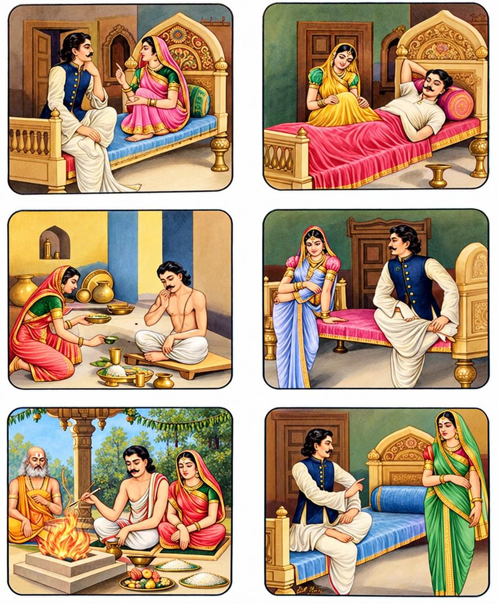
परामर्शमें है मन्त्री-सी, सेवामें नित दासी है।
भोजनमें माताके सम है, शयन-समय रंभा-सी है॥
धर्म-कर्ममें सदा संगिनी, रोष-सहिष्णुधरा-सी है।
छः आदर्श गुणोंसे शोभित नारि पुण्यकी राशी है॥
पाया न समझ माली गँवार
(रचयिता—पं० श्रीविजयानन्दजी त्रिपाठी)
क्या प्रेम-नेम था बेलीमें,
क्या-क्या गुन थे अलबेलीमें।
वह तरुके ऊपर चढ़ती थी,
फैलती-फूलती-फलती थी॥
जब प्रेम-पाश उसने डाला,
बँध गया पेड़ हो मतवाला।
यह बेलि-वृक्षका दिव्य प्यार।
पाया न समझ माली गँवार॥
दोनों ही मिलकर हुए एक,
रह गया नहीं कुछ भी विवेक।
लू-झंझा-अंधड़-वज्रपात,
दोनों सहते थे एक साथ॥
तरुके सुखमें बेली निहाल,
बेलीके दुखमें तरु बिहाल।
दाम्पत्य-प्रेमका यही सार।
पाया न समझ माली गँवार॥
देखिये बेलि तरुके अधीन,
पर बात नहीं यह समीचीन।
वस्तुतः वृक्ष ही पराधीन,
बेलीके बन्धन कठिन पीन॥
वह व्याप रही है डार-डार,
तरुके उरपर करती विहार।
क्या थी तरुको वह बेलि भार?
पाया न समझ माली गँवार॥
है जहाँ प्रेमका राजपाट,
फिर कहाँ नेमका ठाट-बाट।
केवल भर्ता है अमित दानि,
किस गिनतीमें है लाभ-हानि॥
जब दुख-सुख दोका हुआ एक,
सह सके प्रेमका भेद नेक?
है नहीं स्वार्थका कुछ विचार।
पाया न समझ माली गँवार॥
उसने बेलीका किया पक्ष,
समझा अपनेको बड़ा दक्ष।
जब स्वत्व बेलिका अलगाया,
आपसी प्रेमको बिलगाया
यों बीज फूटका डाल दिया,
प्रिय-प्रेम-पैज-पामाल किया॥
कहता फिरता इसको सुधार।
पाया न समझ माली गँवार॥
बेलीको तरुसे हटा दिया,
अपने पैरोंपर खड़ा किया।
उसको स्वतन्त्रता सिखलाया,
पश्चिमका रस्ता बतलाया॥
वह भूल गई अपना स्वभाव,
लायी अपनेमें वृक्ष-भाव।
पर रह सकती क्या निराधार?
पाया न समझ माली गँवार॥
फिर पतित हुई वह बार-बार,
कैसे कोई सकता सँभार।
तब हुआ भूमिपर ही पसार,
उसपर भी सबका पग-प्रहार
दुर्दशा-गर्तमें गिरी हाय!
स्वातन्त्र्य-पाठ पढ़ निःसहाय!!
इस भाँति हुआ उपवन उजार।
पाया न समझ माली गँवार॥
••••
स्त्री-पुरुषका मिलन दोषमय है
घृतकुम्भसमा नारी तप्ताङ्गारसमः पुमान्।
तस्माद् घृतं च वह्निं च नैकत्र स्थापयेद् बुधः॥
मात्रा स्वस्रा दुहित्रा वा न विविक्तासनो भवेत्।
बलवानिन्द्रियग्रामो विद्वांसमपि कर्षति॥
नारी घृतके घड़ेके समान है और पुरुष जलती हुई आगके समान। इसलिये जैसे बुद्धिमान् पुरुष आग बढ़ जानेके भयसे घी और आगको एक साथ नहीं रखते, वैसे ही नारी और पुरुषको साथ नहीं रहना चाहिये। यहाँतक कि माँ, बहिन और कन्याके साथ भी एकान्तमें न बैठे। इन्द्रियाँ बड़ी बलवती हैं, वे विद्वान्को भी खींच लेती हैं।
भारतीय नारीकी लोकोत्तर झाँकी
(लेखक—पं० श्रीरामनिवासजी शर्मा)
भारतीय त्रिकालज्ञ पूज्यपाद महर्षियोंने मानव-जीवन और वर्णाश्रम-सम्बन्धी प्रत्येक बातको आधिभौतिक, आधिदैविक और आध्यात्मिक दृष्टिकोणसे समझा था। साथ ही विराट्-प्रकृति, मानव-प्रकृति और व्यावहारिक प्रकृतिके संश्लेषण-विश्लेषणको समझकर ही मनुष्यकी सर्वश्रेष्ठ गार्हस्थ्य-संस्थाकी नींव रखी थी। यही कारण है कि नारी-प्रकृतिमें भगवती जगदम्बा और पुरुष-प्रकृतिमें विराट्का प्राकटॺ उनकी अपनी अनोखी सक्रिय कल्पना थी। सच्चिदानन्दस्वरूपिणी सीता और सच्चिदानन्दस्वरूप श्रीराम उनके इसी विज्ञान-वैभवके चमत्कार थे। विशेषतः चरित्र-महिमा, गुण-गरिमा और शील-मधुरिमा-समन्वित नारी-निर्माणकी उनकी अपनी कला-चातुरी तो ब्रह्माकी ब्राह्मी, विष्णुकी वैष्णवी और शिवकी शैवी शक्तियोंकी भी विनिन्दक है। वैसे ही आधुनिक संसारकी तो कोई भी स्त्रियोचित सामाजिक और नैतिक वस्तु इसकी समतामें नहीं रखी जा सकती। यह वस्तुतः माधुर्यमें शरच्चन्द्र और ऐश्वर्यमें प्रचण्ड मार्तण्डकी भी स्पर्द्धाकी वस्तु है। जीवनके इन दोनों तत्त्वोंका विश्लेषणात्मक साहित्यिक मूर्तरूप कविके अबला-सबलात्मक निम्नलिखित मनोज्ञ चित्रणमें पढ़िये। देखिये, वस्तु कितनी सुन्दर और वास्तविक है।
अबला—अबला-जीवन! हाय तुम्हारी यही कहानी।
आँचलमें है दूध और आँखोंमें पानी॥
सबला—सबला-जीवन! सत्य तुम्हारी यही प्रणाली।
हाथोंमें है मृत्यु और आँखोंमें काली॥ *
* कोमलता और कठोरताके दोनों कैसे विलक्षण रूप हैं। पहला अहिंसापूर्ण परंतु सीमान्त-कोमल, कारुणिक और पोषक है। दूसरा उद्भट हिंसामय किंतु रोमांचकारी और निरपेक्ष घातक है।
यह है भारतीय नारीका विश्ववन्द्य पालक और संहारमय अबलात्व और सबलात्व-संमिश्रित व्यक्तित्व। आज भी वस्तुतः हिंदुओंकी अपनी समस्त इज्जत-आबरू, मान-सम्मान, प्राण-प्रतिष्ठा और रक्षा-दीक्षा इसीपर निर्भर है। यही इनके सामाजिक जीवनका भी संबल है और अपने इसी व्यक्तित्वके प्रश्रयसे इस क्षण भी भारतीय नारी गार्हस्थ्यकी सर्वे-सर्वा बनी हुई है। एक भारतीय विद्वान्के मुखसे भारतीय नारीके विषयमें कुछ उद्गार सुनिये। वह प्रकारान्तरसे इसी विषयपर इस तरह प्रकाश डालता है—
ब्रह्माकी सृष्टिमें नारी अपूर्व वस्तु है, फिर चाहे वह किसी भी रूपमें हो; किंतु उसका मानव-रूप तो और भी विलक्षण है। इस रूपमें तो वह ऐसी प्रतीत होती है मानो समस्त सृष्टिका सौन्दर्य-माधुर्य, सुख-शान्ति, लालन-पालन और रक्षणावेक्षण उसके अपने ही हाथकी वस्तु है। इसपर यह बात भी मुक्तकण्ठसे कही जा सकती है कि नारीका भारतीय रूप तो न केवल अद्भुत, अपितु लोकोत्तर महिमान्वित है। कहना यह चाहिये कि विधिने भारतेतर देशोंकी नारियोंके निर्माणमें जिस मृत्तिकाका उपयोग किया है उससे भारतीय नारीकी रचना नहीं हुई है, अपितु इसके लिये उसने किसी दूसरी ही दिव्य मृत्तिकासे काम लिया है। कदाचित् यह कहना भी असंगत न होगा कि भारतीय नारी देखनेमें प्राकृतिक मालूम होती है, परंतु है वह असलमें विशुद्ध पारमार्थिक तत्त्वोंकी बनी वस्तु। तभी तो वह अपने माता, भगिनी, पुत्री, पत्नी आदि विविध और विभिन्न रूपोंमें आज भी प्रतिमावत् पूज्य है। झाँकी लेने और आरती उतारनेकी वस्तु है। कुमारसम्भवमें हिंदूनारीकी इसी रूप-रेखाकी कालिदासने इन शब्दोंमें आरती उतारी है—
इयेष सा कर्तुमवन्ध्यरूपतां*
समाधिमास्थाय तपोभिरात्मनः।
अवाप्यते वा कथमन्यथा द्वयं
तथाविधं प्रेम पतिश्च तादृशः॥
* तपसे सौन्दर्यको सफल बनानेकी इच्छा क्या पवित्रताके विश्वकी भी अनोखी बात नहीं है? दार्शनिकताकी भी सीमासे बाहरकी वस्तु नहीं है? परंतु भारतीय नारीकी तो यह नित्यकी सुलभ लोक-परम्परा है।
यही कारण है कि Amiel के शब्दोंमें आर्य-जातिकी आजकी पतनोन्मुख अवस्थामें भी यही आर्योचित सम्पूर्ण सुख-सौभाग्यको सदैव अपने उत्तरीयमें सँभाले रहती है।
म० म० पं० श्रवणलालजीके शब्दोंमें भारतकी नारी अपने प्रत्येक प्रकार, रूप और दशामें आज भी अनन्वयालंकारका विषय बनी हुई है। उसकी गुण-गरिमापर पूर्णतः विचार कर सकना मनुष्यकी शक्तिसे बाहरकी बात है। उसकी महनीय विलक्षणता तो इसीमें सन्निहित है कि वह प्रवृत्ति और निवृत्तिके दोनों क्षेत्रोंमें सती, साध्वी और तपस्विनी ही बनी हुई है। उसके जीवनका प्रत्येक क्षण तप, त्याग और बलिदानकी अनन्त गाथाओंका विषय है। बड़े-से-बड़ा समाजसेवक साधु-संत आज भी इसकी पवित्रता और कर्तव्यतत्परताके सम्मुख निष्प्रभ है।
यह तो हुई भारतीय नारीकी प्राचीन अवशिष्ट गौरवमयी परम्परा; किंतु यदि यह आधुनिक दृष्टिसे भी पूर्णतः शिक्षित होकर अपने वैदिक विशुद्ध श्रेयात्मक रूपमें खड़ी हो जाय तो बात-की-बातमें यह समाजकी विचारात्मक और रचनात्मक सभी कठिन समस्याओंको हल कर सकती है। वैसे ही यह अपने अपवादात्मक संहाररूपमें भी क्या नहीं कर सकती।
अपनी छोटी-सी गृहस्थीमें आज भी वह गाँधीवाद, मार्क्सवाद और विश्व-वन्द्य भारतीय ज्ञानवाद, अधिकारवाद, धनवाद और श्रमवादके* नाना क्लेशोंको समन्वय-सामंजस्यके द्वारा ठीक करती रहती है।
* यह चारों वाद क्रमशः वर्ण-सम्बन्धी क्रिया-कलापके अभिव्यञ्जक हैं।
यदि यह अपने सार्वजनिक और सार्वभौम दृष्टिकोणको विस्फारित और व्यक्तित्वको विस्तारित कर ले तो विश्वकुटुम्बके प्रत्येक कार्यका इस समय भी सुचारु रूपमें संचालन कर सकती है। इसलिये कि उसके रग-रेशेमें आज भी उसकी अपनी लोकोत्तर प्राचीन दैवी भावनाएँ और अलौकिक उदात्त परम्पराएँ नामशेष नहीं हुई हैं। ज्ञानमें याज्ञवल्क्य और शक्तिमें मधु-कैटभ और शुम्भ-निशुम्भको परास्त करनेवाली उसकी परम्पराका तात्त्विक आभास अपने अविकृत रूपमें इस समय भी हिंदू-कुटुम्ब-संस्थामें प्रायः दृष्टिगोचर होता रहता है। आज भी हमारी गृहस्थीके प्रत्येक प्रांगणमें अपने उमा, रमा और गिराके रूपोंमें संसारवन्द्य भारतीय संस्कृतिको इसीने कायम रख छोड़ा है। शील, संकोच, लज्जा और धर्म—जैसे समाज-पोषक तत्त्वोंको इसीने अनुप्राणित कर रखा है।
वैसे ही वैज्ञानिक क्षेत्रमें वैदिक मुनिपत्नियों और ब्रह्मवादिनी देवियोंकी ज्ञान-परम्परा और दर्जनों ऋषिकल्प मन्त्राविष्कारिणी मुनि-कन्याओंकी अलौकिक प्रतिभा आज भी तत्त्वज्ञों और मनोवैज्ञानिकोंकी दृष्टिमें भारतीय नारीकी विचारधारा और कल्पना-सृष्टिमें जीवित है। इसका पता गार्हस्थ्यकी उसकी अपनी रसायनशाला और परिवेषणकी नव-नव्य परिकल्पनाओंमें नित्य ही हमें मिलता रहता है। आधुनिक वैज्ञानिक क्षेत्रमें इसकी नवीन विज्ञान-कुमारिकाओंकी चमत्कारपूर्ण बातें भी इस बातके आनुषंगिक प्रमाण हैं। इनके अपने घरेलू प्रकाश, वायु और जलके विविध वैज्ञानिक और यान्त्रिक प्रबन्ध-निबन्ध भी इसकी अपनी वैज्ञानिक रुचिके ही परिचायक हैं। विशेषतः इसका अपनी गृहस्थीका इस क्षणका संस्कृतिवाद, समाजवाद, साम्यवाद, नीतिवाद, अर्थवाद और सौन्दर्यवाद क्या किसी भी दृष्टिसे नगण्य कहे जा सकते हैं?
कुछ अन्यतम विदेशी विद्वानोंने भी भारतीय नारीकी आरती उतारनेका सफल प्रयत्न किया है। उनके अपने नारी-विषयक चरित्र-चारित्र्य-सम्बन्धी कुछ शब्द-चित्र इस प्रकार हैं—
१. सह-धार्मिकताके आदर्शको पूर्णतः निर्वाह करनेवाली देवियाँ भारतके सिवा अन्यत्र नहीं मिल सकतीं। —जर्मन-यात्री आस्टिंजर एफ
२.भारतीय स्त्रियाँ सर्वप्रथम अपने गौरवान्वित साहसका दावा कर सकती हैं। —सर एफ० टी० बार्ट
३.साधारणतः भारतीय देवियाँ पुरुषोंसे अधिक शुद्ध, कार्यकुशल और निपुण होती हैं। —जी० ए० चापमैन
४.संसारमें किसी भी देशकी स्त्रियाँ सुन्दरताके क्षेत्रमें भारतीय महिलाओंकी प्रतियोगितामें खड़ी नहीं हो सकतीं। —सर फ्री स्काइन
भारतीय स्त्रियोचित आदर्शकी प्रतीक जनकनन्दिनी सीताके विषयमें मिस मेरी स्काट्, देखिये, इस तरह कहती है—
‘सीता स्त्रीत्वका वह मधुरतम आदर्श है, जिसका मैंने पहले कभी अध्ययन नहीं किया था।’
कुछ-एक अभिनन्दनीय प्रसंग इस प्रकार भी हैं और यह प्रवासी यूरोपियन बन्धुओंके अपने आँखों देखे-से ही हैं—
क्ष. किसी भी जातिके इतिहासमें राजपूत महिलाओंकी भाँति अनुराग एवं देश-भक्तिके इतने अधिक ज्वलन्त उदाहरण नहीं मिल सकते।
त्र. भूमण्डलके इतिहासमें बनाफर-बन्धुओंकी माता देवलके समान वीरता और सज्जनताका उदाहरण शायद ही और कहीं मिले।
ज्ञ. हिंदू-बच्चे यूरोपियन बच्चोंकी अपेक्षा बहुत तेज और निपुण होते हैं। इसका कारण उनकी माताएँ ही हैं।
भारतीय नारीकी विशेषताके अभिव्यंजक बूँदीकी महाराणी और राजमाताके निम्नलिखित संवादपर सामयिक आवश्यकताकी दृष्टिसे भी विचार करिये—
महाराणीने महलोंमें ‘राव’ की मृत्युके समाचार सुनकर चिल्लाकर पूछा—‘क्या वह अकेला ही चल बसा?’
राजमाता—‘कभी नहीं, वह बालक जिसने इन छातियोंका दूध पिया है, रणक्षेत्रसे कभी अकेला प्रस्थान नहीं कर सकता’। (अर्थात् वह सहस्रोंको मारकर मरा होगा)
यह कहते हुए माताका मस्तक गर्वसे ऊँचा हो गया, उनकी छातियोंसे दूध बह निकला।
यह भी सत्य है कि राजपूत अपने शत्रुओंकी संख्या नहीं पूछते थे, प्रत्युत उत्सुकतासे उनका पता पूछते थे।
यह सब पुण्यश्लोक भारतीय नारियोंके ही दूध अथवा भारतके जलवायुके ओज-तेजका ही प्रभाव था।
ऐसी दशामें यह कहना पूर्णतः सत्य है कि यदि आज भी भारतकी जाग्रत् नारी अपने स्वरूपको अच्छी तरह समझ ले तो वह क्या नहीं कर सकती। हमारी समझमें तो आजके नाशोन्मुख संसारके धरातलको वह बहुत कुछ ऊँचा उठा सकती है और भारतको तो वह न जाने क्या और कैसा बना सकती है। सच तो यह है कि आज भी वह संसारको पवित्रता, कर्तव्यतत्परता और वास्तविक वीरताका पाठ पढ़ा सकती है।*
* भारतीय नारीकी वीरोचित ख्याति न केवल इतिहास अपितु किरणमयीकी कटार, तारादेवीकी तलवार, कूरमदेवीके बल-पौरुष, दुर्गावतीके निर्मम आत्मत्याग, पद्मिनीके जौहर-व्रत, पन्नाधायके लोमहर्षण बलिदान, लक्ष्मीबाई और अहल्याबाईके प्रजाप्रिय शासनकी गाथाओंमें अब भी भारत-माताके सच्चे सपूतोंके हृदयोंको कर्तव्य-पथकी ओर प्रेरित करती रहती है और न जाने क्या-क्या करनेको उत्साहित करती है।
भारतीय नारीके सच्चे लोकोत्तर सपूत श्रीरामके लिये देखिये, आदिकवि वाल्मीकि इस तरह लिखते हैं—
राम धनुषपर एक ही बार बाण चढ़ाते हैं।
ये हैं भारतीय नारी और उसके सपूतोंके विश्वदुर्लभ कारनामे। आज भी इन्हींसे हिंदू-जाति जीवित है और भविष्यमें भी इन्हींसे हमें सब कुछ आशा है।
नारीका स्वरूप
(लेखक—श्रीसुदर्शनसिंहजी)
महाशक्ति, महामाया, महामोहा—ये शब्द नारीके लिये आदियुगसे प्रयुक्त होते चले आये हैं। पुरुषके लिये नारी सदासे एक पहेली रही है, यद्यपि इस पहेलीको पुरुषने स्वतः बना दिया है। जब हम किसी वस्तुको अपने दृष्टिकोणसे देखने लगते हैं और वह हमारे दृष्टिकोणसे सर्वथा भिन्न स्वभावकी होती है, तो वह हमारे लिये एक पहेली—उलझन हो जाती है। पुरुषने कभी तटस्थ दृष्टिसे नारीका अध्ययन ही नहीं करना चाहा। उसने जब नारीकी ओर दृष्टिपात किया तो वह पुरुष रहा। फलतः नारी उसके लिये एक पहेली रही। दीर्घकालतक पुरुषके इस उलझनभरे दृष्टिकोणने नारीको इसका अभ्यस्त बना दिया। वह इसमें कुतूहलका रसास्वाद करने लगी। उसने अपनेको रहस्यमयी बना डाला।
दार्शनिकोंने पुरुष और प्रकृतिकी जो व्याख्या की है, वह इतनी पूर्ण है कि उसमें पूर्ण पुरुष एवं पूर्ण नारीका समावेश है। यह स्मरण रहना चाहिये कि पुरुष-शरीरमें प्राप्त होनेवाले सब पुरुष ही नहीं होते और नारी-शरीरमें मिलनेवाली सब नारियाँ ही नहीं हैं। दोनोंमें पशुत्व तो है ही। साथ ही पुरुषमें भी नारी-तत्त्व एवं नारीमें भी पुरुष-तत्त्व है। कभी-कभी तो यह इतना विषम हो जाता है कि यदि शारीरिक चिह्नोंका ध्यान छोड़ दें तो एक पुरुष अपनी कोमलता, स्वभावादिमें नारी ही जान पड़ता है; और एक नारी पुरुष प्रतीत होती है। सामान्यतया नारीमें शक्तितत्त्व एवं पुरुषमें पुरुषतत्त्वकी प्रधानता होती है और इससे हम उन्हें नारी या पुरुष कहते हैं।
वास्तविक पुरुष क्या है? शास्त्र कहते हैं कि वह निष्क्रिय है। कामनाहीन है। उसमें आसक्ति नहीं। उसका कोई उद्देश्य नहीं, कोई गृह नहीं, कोई गन्तव्य नहीं। वह तो शान्त-तत्त्व है। वह उदासीन अथच रूक्ष है। अपनेसे बाहर वह देखता ही नहीं। सभी उसके अपने ही स्वरूप हैं। वही जब प्रकृतिकी ओर देखता है तो आत्मविस्मृत हो जाता है। वह उपभोक्ता बन जाता है। इतनेपर भी वह केवल भोक्ता है सुख-दुःखका। कर्ता वह नहीं। कर्तापन तो वह अपनेमें मिथ्या मानता है। सारी क्रियाओंके उपकरण प्रकृतिके हैं, प्रकृति ही उनका संचालन करती है। प्रकृतिकी प्रेरणासे ही क्रियाएँ होती हैं।
प्रकृति कैसी है? वह गुणमयी है। आसक्तिमयी है। अपने लिये वह कुछ नहीं करती। उसकी सब क्रियाएँ पुरुषके लिये हैं। वह उत्सर्ग एवं त्यागमयी है। वह पुरुषके सान्निध्यसे ही सक्रिय होती है। अन्यथा वह जड है। उसकी क्रियाओंका उद्देश्य एकमात्र पुरुष है। वह स्वयं उपभोक्ता नहीं है। उसका उद्देश्य है, गन्तव्य है। वह रागमयी है। फलतः वह द्वेषमयी भी है। वह पुरुषकी ओर रागमयी एवं दूसरी ओर रोषमयी है। सभी क्रियाओंकी वह प्रेरणा है।
प्रकृतिमें क्रियाशक्ति नहीं, क्योंकि वह जड है। पुरुषमें कर्तृत्वकी इच्छा नहीं, क्योंकि वह रूक्ष है—रागसे परे है। अतः पृथक्-पृथक् दोनोंमें कोई क्रिया नहीं होती। प्रकृति जब पुरुषसे सम्बन्ध बना लेती है तो उसकी रागमयी प्रवृत्ति प्रेरणा हो जाती है। पुरुषकी क्रियाशक्तिको वह अपना लेती है। पुरुषका सान्निध्य उसे कर्तृत्व प्रदान करता है। पुरुषमें राग आता है प्रकृतिसे। वह भोक्ता बनता है। रसास्वाद उसे प्रकृतिधर्मी बनाता है। पुरुष एवं प्रकृतिका यह परस्पर विनिमय ही सृष्टि है।
महर्षियोंकी इस व्याख्यामें नारी एवं पुरुषका स्वरूप स्पष्ट हो गया है। इस दृष्टिमें न तो नारी रहस्यमयी है और न पुरुष मरुके समान दुर्गम। दोनोंके स्वभावपृष्ठ अनावृत हैं। इस सत्यको हम अस्वीकार नहीं कर सकते कि पुरुष उपभोक्ता है, उसकी दृष्टि नारीके प्रति उपभोगमयी आदिकालसे रही है। इसे किसी भी प्रकार परिवर्तित नहीं किया जा सकता। नारी पुरुषके प्रति उत्सर्गमयी है। वह चाहे जितना पुरुषसे रुष्ट हो ले, पर पुरुषसे विरक्त होकर तो वह चेतनाविहीन है। उसकी झल्लाहट एवं विरक्तिमें भी पुरुषके प्रति उसका राग ही है। पुरुषको आकृष्ट करना तथा उसके लिये उत्सर्ग हो जाना ही मूल नारी-स्वभाव है। इसे भी परिवर्तित नहीं किया जा सकता। किसी भी व्यवस्था या भावुकतासे नहीं।
पुरुषका स्वभाव रूक्ष है। वह इसी रूक्षताको कभी वैराग्य बनाता है और कभी आन्तरिक कलह। उसकी मूल प्रवृत्ति कहीं आबद्ध होनेकी नहीं है। फलतः वास्तविकतापर उसका ध्यान कम जाता है। वह आकाशकी ओर देखनेवाला होता है। अपनी शक्ति तथा स्थितिको भूले रहना उसके लिये कोई बड़ी बात नहीं है। वह कभी कलाकी आराधनामें बाल-बच्चोंको भूखों मारता है और कभी राष्ट्र या विश्वप्रेमका राग अलापता है। घर-घरमें नारियोंका यह अनुभव है कि प्रायः पुरुषवर्ग घरका ध्यान नहीं रखते और बाहर लंबी-चौड़ी व्यर्थ बातोंमें उलझे रहते हैं।
पुरुष अपनी आसक्तिहीनताके कारण आदर्शवादी होता है। प्रत्येक पुरुषमें यदि उसमें पुरुषकी अपेक्षा नारीतत्त्व प्रधान नहीं है तो कुछ-न-कुछ लापरवाही एवं असावधानीका भाव अपने शरीर या परिवारके सम्बन्धमें रहता ही है। पुरुषकी रूक्षता उसे साहसिक बनाती है। वह कठिन यात्राओं, भयंकर आखेटों और युद्धोंमें रसानुभव करता है। इतना होकर भी उसकी समस्त क्रियाओंकी प्रेरणा नारी है। कहीं रागके रूपमें और कहीं विरक्तिके रूपमें। कोई नारीको तुष्ट करनेके लिये शेरका शिकार करने जाता है और कोई नारीसे निराश होकर सैनिक बनता है। पुरुषके समस्त आदर्शों एवं कलाओंमें नारी व्याप्त है। वही उसका लक्ष्य एवं प्रेरणा है।
नारी रागमयी है। वह कल्पनाओंपर उड़ना पसंद नहीं करती। वह वर्तमान परिस्थितिपर निर्भर करती है। आदर्शोंके लिये परिस्थितिकी उपेक्षा वह नहीं कर सकती। उसकी योजनाएँ वास्तविकताको लेकर होती हैं। पुरुषकी अपेक्षा उसके कार्य अधिक व्यवस्थित तथा सफल होते हैं। वह अपना तथा अपनोंका सबसे प्रथम ध्यान रखती है। स्वयं वह उत्सर्गमयी है। अतः स्वयं सब कष्ट सह लेगी। सब भोगोंको अपनोंके लिये छोड़ देगी, किंतु अपनोंमें वह रागमयी है। उसके लिये अपना पुत्र, अपना पति सबसे अधिक महत्त्वपूर्ण है। इनके लिये वह अपना तथा विश्वका भी बलिदान कर देगी। इनके स्वार्थके प्रत्येक प्रतिपक्षीकी वह शत्रु है।
रागमयी होनेके कारण नारी स्वभावतः शंकामयी है। वह पुरुषपर अपना पूरा आधिपत्य चाहती है। अपने रागमें दूसरेको तनिक भी भाग देना उसे अभीष्ट नहीं। फलतः वह शंकाशीला हो जाती है। पुरुषके शंकाशील होनेका कारण उसकी उपभोगी प्रकृति है। वह अपने उपभोगमें भाग नहीं देना चाहता। उसकी शंका विस्फोट करती है, क्योंकि उपभोग्यमें भी उसकी दृढ़मूल स्वाभाविक आसक्ति नहीं होती, पर नारीकी शंका उसे ही दग्ध करती है। वह रागमयी होनेसे न तो अपनोंका अनिष्ट कर सकती और न उन्हें छोड़ सकती। वह तो प्रतिस्पर्धीका ही प्रतीकार कर सकती है। इसमें भी उसे अपनोंके क्षोभका भय होता है और अपनोंका दुःख उसे कम दुःखी नहीं करता। फलतः वह चिड़चिड़ी हो जाती है। वह स्वयं नहीं समझ पाती कि वह क्या चाहती है। दूसरोंके लिये उसका व्यवहार पहेली हो जाता है। सीधी बात है कि नारी अपने रागके केन्द्रमें किसी प्रतिस्पर्धीकी शंकासे अभिभूत है।
नारी महाशक्ति है। वस्तुतः वह महाशक्ति ही है। यद्यपि उसमें कर्तृत्व नहीं है, पर उसकी प्रेरणा ही महाशक्ति है। पुरुषके कर्तृत्वको उसकी प्रेरणा न मिले तो वह सुप्त रहता है। नारीकी प्रेरणा पुरुषको महाकवि, महान् कलाकार, महान् उद्योगी या किसी भी दुर्गम आखेटमें निपुण अथवा विकट यात्राका यात्री बना सकती है। नारीकी प्रेरणा पुरुषको युद्धमें अजेय बना देती है और नारीकी प्रेरणापर पुरुष कहीं भी बलिदान होनेमें गौरव अनुभव करता है। वस्तुतः पुरुष शक्तिमान् है और नारी ही उसकी शक्ति है। पुरुषके कार्य, योग, वैराग्य और भोग—सभी नारीके बिना रसहीन हैं। नारी सभीमें जीवन एवं रसका संचार कर देती है।
नारी महामाया है। उसीके आकर्षणमें पुरुष आबद्ध है। पुरुषकी समस्त क्रियाओं एवं विचारोंपर वह बादलके समान छायी हुई है। उसे पुरुष अनेक रूपोंमें उपलब्ध करता है। नारीका आकर्षण और नारीका तिरस्कार या घृणा—यही उसकी महत्ताके मूलमें कार्य कर रही हैं। विश्वके लगभग सभी महत्तम पुरुषोंकी महत्ताका सर्जन नारीने किया है। इससे पुरुष तटस्थ नहीं हो पाता।
नारी महामोहा या मोहमयी है। यदि उसमें पुरुषतत्त्व प्रधान नहीं है तो अपने पति, अपने बच्चे और अपने घरके सम्बन्धमें ही वह सबसे अधिक सोचती है। उसके सोचनेका केन्द्र ‘अपने’ से बाहर नहीं होता। वह अपनेको छोड़ना नहीं चाहती। उसकी अभिवृद्धि और रक्षा ही उसका पूर्ण उद्देश्य है। जब वह त्यागमयी बनती है, तब भी उसकी प्रेरणाका केन्द्र ‘अपना’ ही होता है। वह किसी अपनेके अभ्युदयके लिये ही त्याग करती है।
नारी उत्सर्गमयी है। यही वस्तुतः उसका कल्याणमय रूप है। मोहमयी होकर भी उसे अपने लिये कोई मोह नहीं। वह जैसे कष्ट एवं सेवाके लिये ही निर्मित हुई है। अपना सर्वस्व किसीको देकर ही वह पूर्ण होती है। अपनोंकी सेवा, रक्षा, उत्कर्ष—यही उसके प्रयत्नोंका लक्ष्य है। अपनी सुख-सुविधा उसके लिये बहुत गौण है। उस ओर सदासे उसका उपेक्षाका भाव रहा है।
नारीका आग्रह आभूषण एवं शृंगारके लिये प्रायः सभी जातियोंमें समानरूपसे है। प्रकृति ही पुरुषको आकर्षित करनेके नित्य प्रयत्नमें संलग्न है। नारीमें पुरुषको आकर्षित करनेकी यह भावना ही शृंगारके रूपमें प्रबल है। उसका देश-कालानुसार बाह्य स्वरूप चाहे जो हो, परंतु यह भावना तो उसमें है ही।
नारी महाकाली है। जब उसका राग अवरोध पाकर विद्रोह करता है तो उसकी विध्वंसिनी शक्ति उग्रतम हो जाती है। पुरुषकी क्रियाएँ तो उसीकी प्रेरणा हैं। नारीका आकर्षण और नारीकी प्रेरणा महायुद्ध कराती है। विनाश उपस्थित करती है। घरोंमें अशान्ति एवं कलह तथा जीवनमें कटुता एवं दुःखका सर्जन करती है।
नारी महासरस्वती है। नारीकी भावनाको यदि कलासे पृथक् कर दें तो विश्वकी कलामें केवल ठूँठ और श्मशान रह जायँगे। यह स्मरण रहना चाहिये कि विरागोत्पादक कलाओंकी प्रेरणा भी नारी ही है। भले वह विरागात्मिका वृत्तिसे उसके मूलमें हो। प्रतिभा उसीकी प्रेरणासे प्रदीप्त होती है और रसका वही आश्रय है।
नारी महालक्ष्मी है। उसीकी सेवा, उसीका प्रेम समाजको बनाये है। उसी गृहिणीके कारण गृहोंकी उत्पत्ति हुई है। यदि नारीका आकर्षण न हो तो पुरुष घरों या होटलोंसे भाग जायँ। वे उपवास करके मर जायँ या पशुओंकी भाँति घास-पत्ते खाने लगें। घरमें शान्ति, समाजमें सुख एवं राष्ट्रमें उत्कर्षका सर्जन नारी ही करती है। नारीकी प्रेरणा ही पुरुषको व्यवस्था एवं नियमके लिये विवश करती है। नहीं तो, पुरुष तो स्वभावतः नियमोंसे भागनेवाला है।
हमें अब इनके फलितार्थोंपर विचार करना चाहिये। गृह नारीके निर्माण हैं। यदि नारी उन्हें छोड़ देगी तो वे नष्ट हो जायँगे। पुरुष तो कहीं भी रह लेगा। होटल और वृक्षोंके नीचे भी उसका काम चल जायगा; किंतु नन्हे शिशुओंको लेकर नारी कैसे रहेगी वहाँ? गृहोंको नष्ट करके वह अपने आश्रयको स्वयं तोड़ देगी!
पुरुष गृहकी रक्षा नहीं कर सकता। उसमें केन्द्रित राग नहीं। जब भी उसपर गृहका भार आ पड़ा है, उसने गृहको खा-पीकर फूँक डाला है और राहका भिखारी हो गया है। यदि वह नीच होगा तो व्यसनोंमें, सामान्य होगा तो मित्रोंमें और उच्च होगा तो परोपकारमें गृहको विसर्जित कर देगा। पकड़ रखनेकी प्रवृत्ति उसमें नहीं। उसका घर अस्त-व्यस्त होगा। उसकी सामग्री अव्यवस्थित होगी। इस अव्यवस्थापर वह झल्लायगा और उसे और बढ़ायेगा; वह गृहको सम्हालनेके अयोग्य है!
पुरुषमें रागकी अपेक्षा रूक्षता अधिक है। अतः वह बच्चोंको न तो सम्हाल सकता और न उन्हें सुयोग्य बना सकता। नारीकी प्रेरणा न हो तो वह स्वयं अव्यवस्थित और अस्त-व्यस्त हो जाता है। उसका जीवन लक्ष्यहीन हो जाता है। वह किसी कामका नहीं रहता। यह दूसरी बात है कि किसी पुरुषमें कभी-कभी स्त्रीतत्त्व प्रधान होता है या कभी हो जाता है और वह इसके विपरीत सिद्ध होता है।
नारी केन्द्रित विचार करती है। यदि समाज एवं राष्ट्र-व्यवस्थामें उसकी प्रधानता हो जाय तो उदार दृष्टिकोण लुप्त हो जायँगे। यह कटु सत्य है कि नारी जब भी सामाजिक कार्यमें उतरती है तो वह अपनोंके स्वार्थको एक क्षणके लिये भी भूल नहीं पाती। वह दूर-परिणामके बदले अपनोंका तात्कालिक लाभ अधिक देखती है। अपनोंके छोटे लाभके लिये भी वह परका बड़े-से-बड़ा बलिदान कर सकती है। समाजमें खींचातानी और स्वार्थ-संघर्ष उससे बढ़ेंगे ही।
पुरुष रूक्ष है। वह रागी कम है। उसका राग अपने शरीरतक ही सीमित है। वह उपभेाक्ता है। अतः अपनोंकी चिन्ता वह उपभोग्यकी सीमातक ही करता है। अतः उसकी कल्पना उड़ान लेती है। वह अधिक उदारता और विस्तृत दृष्टिकोणका परिचय देता है। समाज तो परस्परके त्यागमय सहयोगसे चलता है। यदि उसमें सब अपने ही स्वार्थको प्रधानता देने लगें तो समाज भंग हो जायगा।
पुरुष कल्पनाशील है। वह कल्पना और आदर्शके आवेशमें रस लेता है। उसका यह आवेश समाजको संगठित करता है। विश्वमें अनेक मंगलोंकी सृष्टि करता है। पर उसको यदि अंकुशमें न रखा जाय तो वह व्यर्थ हो जायगा, क्योंकि पुरुष वास्तविकतासे नेत्र मूँदकर कल्पनामें ही उड़ना चाहता है। नारी उसे वास्तविकताका परिचय कराती रहती है और यही परिचय उसकी कल्पना और आदर्शको स्वरूप देनेमें समर्थ होता है। ऐसा न हो तो पुरुषके आदर्श केवल हवाई महल ही रह जायँ।
नारी वास्तविकताको पकड़े रहती है। वह यथार्थदर्शिनी होती है। इस यथार्थसे वह इस प्रकार एक रहती है कि वह उससे आगे जानेमें सदा हिचकती है। सदा शंका करती है। वह दूरके यथार्थको भी कम ही सोचती है। यदि पुरुषके आदर्श और कल्पनाशीलताके द्वारा वह विवश न की जाय तो वह अपने गृहमें ही आबद्ध रहेगी। पड़ोसी ही उसका आदर्श होगा, ईर्ष्याका कारण होगा और वह उसी-जैसी बनना पसंद करेगी।
हमें एक बात स्मरण रखना चाहिये। पुरुषकी कल्पनाशीलताके बिना भी नारीका गृह नष्ट न होगा। वह पड़ोसीको देखकर धीरे-धीरे अपना विकास कर लेगी। वह वास्तविकतापर स्थित है और स्थिति उसे स्वयं सब समझाती रहेगी। अवश्य ही यह गति अत्यन्त मन्द होगी। अवश्य नारीकी ईर्ष्या उसे पड़ोसीसे अनेक बार लड़ायेगी, लेकिन नारीके बिना पुरुष तो केवल अपनी कल्पनाओं और आदर्शोंमें उलझा रहनेवाला एक आवारा होगा। वह ख्याली पुलाव पकायेगा। अपनी कल्पनाओंको मूर्त करनेके लिये, अपने आदर्शोंको चरितार्थ करनेके लिये वह कभी उपकरण संग्रह न कर सकेगा और न उनकी रक्षा ही कर सकेगा। संग्रह और रक्षा तो नारीके कार्य हैं।
नारीकी मूल प्रकृति है पुरुषके प्रति अपनेको उत्सर्ग कर देना। पुरुषको आकर्षित करनेका प्रयत्न करना। पुरुषकी प्रकृति है उपभोग। नारी जब समाजमें आती है तो उसकी प्रवृत्ति अनर्थ उपस्थित कर देती है। पाश्चात्त्य सभ्यताने नारीको समाजमें खुला छोड़ा। आज वहाँ नारी प्रत्येक पुरुषको आकर्षित करनेके उद्योगमें पण्या हो गयी। वहाँके फैशनमें नारी अर्धनग्ना हो गयी। उसके वस्त्र घटते और सूक्ष्म होते जा रहे हैं। नारीकी उत्सर्ग-वृत्ति और पुरुषकी उपभोग-वृत्ति स्वाभाविक है। उसे रोका नहीं जा सकता। सहशिक्षा और अबाध सामाजिक मिलनमें ये वृत्तियाँ अनर्थ तो करेंगी ही।
नारी जब उत्सर्गको छोड़कर अर्जन प्रारम्भ करती है तो अपने जीवनको अशान्त बना लेती है। वह रागमयी केन्द्रित वृत्तिकी है। एकको त्यागकर जब अनेकमें वह हृदयको विभक्त करेगी तो वह अपने स्वभावके प्रति विद्रोह करेगी और उसका परिणाम तो जीवनमें अशान्ति होना है ही।
पुरुष जब संग्रह और संकीर्णताको अपनाता है तो वह अपने जीवनको अशान्त बना लेता है। आर्यसंस्कृतिने पुरुषको विश्वात्माकी आराधना बतायी। उसका क्षेत्र विश्व है। नारीका क्षेत्र गृह है। उसकी वृत्ति ‘अपनों’ पर उत्सर्ग होनेकी है, अतः उसका आराध्य पति है। जीवनमें शान्ति तथा सुखके लिये नारीको अपना स्वरूप समझकर ही आचरण करना उपयुक्त होगा। उसे उपभोगी पुरुषका खिलौना नहीं बनना चाहिये।
नारी और नौकरी
(लेखक—पं० श्रीगंगाशंकरजी मिश्र, एम्० ए०)
आजकल अपने यहाँकी शिक्षित स्त्रियोंको नौकरियोंका बड़ा चस्का लग रहा है। इस सम्बन्धमें पाश्चात्त्योंका क्या अनुभव है, इसे भी देख लेना चाहिये। प्रथम महायुद्धके पहले पाश्चात्त्य देशोंमें भी बड़े घरोंकी स्त्रियोंके लिये नौकरी करके रुपया कमाना अपमान समझा जाता था। केवल गरीब स्त्रियाँ घरों तथा कारखानोंमें काम करके अपना पेट पालती थीं। युद्धके दिनों पुरुषोंके लड़ाईपर चले जानेके कारण प्रायः सभी कामोंमें स्त्रियोंको लगाना आवश्यक हो गया। इस तरह उन्हें आर्थिक स्वतन्त्रताका मजा आ गया; परंतु जब युद्ध समाप्त हुआ, तब एक विकट प्रश्न उपस्थित हो गया। स्त्री-पुरुष दोनोंको काम देना कठिन हो गया और बेकारोंकी संख्या बढ़ने लगी। ‘आवर फ्रीडम ऐंड इट्स रिजल्ट्स’ (हमारी स्वतन्त्रता और उसके परिणाम) नामक पुस्तकमें ब्रिटेनके नारी-आन्दोलनकी एक प्रधान नेत्री रे इस्ट्रैच्ची लिखती हैं कि ‘स्त्रियोंकी आर्थिक स्वतन्त्रताके मार्गमें कितनी ही रुकावटें हैं। इनमें कुछ तो प्राकृतिक हैं, जिनमें परिवर्तनकी सम्भावना नहीं और कुछ परम्परागत सामाजिक बहमोंके कारण हैं, जिनके दूर होनेमें बहुत समय लगेगा। गर्भ धारण करके बच्चा जनना स्त्रियोंका प्रकृतिसिद्ध कार्य है, जो कभी पुरुषोंके मत्थे नहीं पड़ सकता। यद्यपि इसमें अधिक समय नहीं लगता, तथापि इसकी सम्भावनाके कारण स्त्रियोंको काम मिलनेमें बाधा अवश्य पड़ती है। लड़कोंको सीना-पिरोना, खाना पकाना भले ही सिखाया जाय; पर इन कामोंके लिये वे घरोंमें नहीं बैठ सकते। घरका बहुत कुछ काम स्त्रियोंको ही करना पड़ता है। इसका फल यह होता है कि बाहर काम करनेवाली स्त्रियोंपर दोहरा बोझ पड़ता है, जिसमें वे अपना स्वास्थ्य गँवा बैठती हैं। स्त्रियोंकी शारीरिक शक्ति पुरुषोंसे कम होती है, यह मानना ही पड़ेगा। एक बात यह भी है कि चालीस वर्षकी आयु हो जानेपर स्त्रियोंमें शक्तिका ह्रास आरम्भ हो जाता है। इतनी आयु होनेपर ही जिसे हटानेकी आवश्यकता हो, ऐसे व्यक्तिको काम देनेमें लोगोंको आगा-पीछा होता ही है। स्त्रियोंमें एक दोष यह भी है कि वे जो काम लेती हैं, उसके पीछे पड़ जाती हैं। मनोऽनुकूल काम मिलनेपर तो यह गुण है; किंतु जब ऐसा नहीं होता, तब इसका स्वास्थ्यपर बड़ा बुरा प्रभाव पड़ता है। पुरुषोंकी अपेक्षा स्त्रियोंमें ममता भी अधिक होती है। घर-बार, बाल-बच्चों, वृद्ध तथा रोगी आश्रितजनोंको छोड़कर जहाँ चाहे चले जाना इनके लिये सहज नहीं होता। स्त्रियोंकी आर्थिक स्वतन्त्रताका प्रश्न बड़ा जटिल है। अभी तो इसके प्रयोगका आरम्भ ही हुआ है। उनके तथा समाजके जीवनपर इसका क्या प्रभाव पड़ेगा, यह समय ही बतायेगा।’
स्त्रियाँ जब नौकरियोंके पीछे पड़ती हैं, तब घर बिगड़ जाता है। इसका अनुभव पाश्चात्त्य देशोंमें भी हो रहा है। इंग्लैंडमें विवाहिता स्त्रियाँ शिक्षा तथा अन्य कई विभागोंमें काम नहीं कर सकतीं। कई नगरोंकी म्युनिसिपलिटियोंमें यह नियम है कि विवाह हो जानेके पश्चात् स्त्रियाँ कामपरसे हटा दी जाती हैं। सोवियट रूसमें स्त्रियोंको पूर्ण स्वतन्त्रता है। लेनिनकी राय थी कि ‘स्त्रियोंको गृहस्थीके कार्य तथा बच्चोंकी परवरिशसे मुक्त कर देना चाहिये, जिससे वे देशकी सेवा कर सकें।’ इसलिये बच्चोंके पालन-पोषण और शिक्षाका भार राष्ट्रने लिया। बच्चा जननेके लिये सरकारी सूतिकागृह खोले गये। शिशु-शालाओंमें उनका पालन-पोषण होने लगा और बड़े होनेपर स्कूलोंमें उनकी शिक्षाका प्रबन्ध किया गया। इन संस्थाओंमें उन्हें सब तरहकी सुविधा दी गयी और इनका संचालन विशेषज्ञोंके हाथमें सौंपा गया। पर बादमें देखा गया कि इनमें भी पले हुए बच्चोंमें वह बात नहीं आती, जो घरके पले बच्चोंमें होती है। इसका अनुभव स्वयं लेनिनकी पत्नी क्रुसकायाने किया, जिनके हाथमें बहुत दिनोंतक शिशु-पालन-विभागका निरीक्षण रहा।
प्रथम महायुद्धके बाद जैसी स्थिति उत्पन्न हुई थी, वैसी ही गत महायुद्धके बाद भी देखनेमें आ रही है। पाश्चात्त्य देशोंमें स्त्रियोंको काम मिलना कठिन हो रहा है। कितनी ही स्त्रियाँ रोजगारकी तलाशमें भटक रही हैं। स्त्री-पुरुषोंकी समानताकी हामी भरनेवाले पाश्चात्त्य देशोंमें भी अभीतक एक ही प्रकारके कामके लिये स्त्री-पुरुषोंका समान वेतन नहीं है। ब्रिटेनमें समाजवादी सरकार है। वहाँकी पार्लामेंटमें थोड़े ही दिन पहले यह प्रस्ताव लाया गया था कि दोनोंका वेतन समान कर दिया जाय। पर इसका सरकारकी ओरसे ही विरोध किया गया। उसका कहना था कि ‘यह सिद्धान्त उसे मान्य है, परंतु इसे व्यवहारमें लानेसे खर्च बहुत बढ़ जायगा, अतः यह अभी सम्भव नहीं।’ यह समझना भूल है कि घरका काम राष्ट्रका काम नहीं। गत महायुद्धके समय ब्रिटेनके युद्धमन्त्रीने स्त्रियोंसे अपील करते हुए कहा था कि ‘स्त्रियाँ समझती हैं कि साधारण काम करनेमें उनका समय नष्ट होता है। पर यह बात नहीं। किसी-न-किसीको तो राष्ट्रके लिये आलू बनाना और थालियाँ साफ करनी ही पड़ेंगी। बिना छोटे-छोटे काम सीखे बड़े कामोंकी योग्यता नहीं आती।’
कहा जा सकता है कि यह स्वतन्त्रता या समानताका शौक नहीं, जिसके कारण स्त्रियाँ नौकरियोंके पीछे दौड़ती हैं। वास्तवमें यह उनकी आर्थिक विवशता है। परंतु आर्थिक दृष्टिसे भी नौकरियोंसे क्या लाभ होता है? घरपर रहकर स्त्री कितना काम कर सकती है। यदि वह नौकरीपर चली जाय तो वही काम मजदूरी देकर दूसरोंसे कराना होगा। तब भी क्या सब काम अपने मनके अनुसार होगा और स्त्री अपनी कमाईसे सबको मजदूरी देकर अपने लिये कुछ बचा लेगी?
भारतकी स्त्रियोंमें नौकरीका शौक बढ़नेसे विकट समस्याएँ उपस्थित होने लगी हैं। स्कूलोंकी इन्स्पेक्टरानियाँ बड़े चक्करमें हैं—दौरेपर बच्चोंको हर समय अपने साथ कहाँतक रखें और घरपर नौकरोंके मत्थे छोड़ें तो उनकी दुर्दशा। कुछ दिन पहले पंजाब-सरकार इसपर गौरसे विचार कर रही थी कि विवाहिता स्त्रियोंको यह पद न देनेके लिये नियम बना देना चाहिये। ट्रावनकोर राज्यकी कौंसिलमें यह बहस छिड़नेपर कि नर्सों (धाय)-को विवाहिता होना चाहिये या नहीं, उस विभागके अध्यक्षने स्पष्ट शब्दोंमें कहा—‘या तो पत्नी बनकर रहना पड़ेगा या धाय। दोनोंके काम एक साथ नहीं हो सकते।’ हाँ, यह बात अवश्य है कि गृहस्थीको सुचारुरूपसे चलाते हुए तथा अपनी मान-मर्यादाकी रक्षा करते हुए किसी उद्योगके द्वारा चार पैसे कमाये जा सकें तो अच्छा ही है। घरमें यदि कोई सहायता करनेवाला न हो तो घरेलू उद्योग-धंधे करनेमें कोई हानि नहीं। इसे मनुने भी माना है। वे लिखते हैं कि यदि पति जीवन-निर्वाहका प्रबन्ध बिना किये विदेश चला जाय तो स्त्री सीना-पिरोना आदि अनिन्दित शिल्पोंसे अपना निर्वाह करे—
प्रोषिते त्वनिधायैव जीवेच्छिल्पैरगर्हितैः।
कहा जा सकता है कि जब गरीब घरोंकी या नीची कही जानेवाली जातियोंकी स्त्रियाँ घरके बाहर मेहनत-मजदूरी कर सकती हैं, तब फिर अमीर या बड़े घरोंकी स्त्रियोंके मार्गमें ही क्यों रुकावटें डाली जायँ। यहाँ दो बातोंका ध्यान रखना पड़ेगा। इनमेंसे एक तो है सम्मिलित कुटुम्बकी प्रथा। इसमें कुछ दोष भी हैं। प्रायः एक व्यक्ति कमाते-कमाते पिसता है और कई निठल्ले लोग बैठे-बैठे खाते और मौज उड़ाते हैं। इसके अतिरिक्त जहाँ चार बर्तन एक साथ होते हैं, वहाँ कुछ खुटपुट चलती ही है। पर इन सबके होते हुए भी इसमें एक बड़ा लाभ मानना ही पड़ेगा और वह यह है कि कुटुम्बका कोई सदस्य निःसहाय नहीं रहता। किसी-न-किसी तरह सभीका निर्वाह हो जाता है। घरका कुछ-न-कुछ काम भी सबको करना ही पड़ता है। बच्चोंकी देख-रेखका भार प्रायः घरकी बूढ़ी स्त्रियोंपर रहता है। उन्हें अपने बच्चे सौंपकर काम करनेयोग्य स्त्रियाँ निश्चिन्तताके साथ बाहर मेहनत-मजदूरी करती हैं। दूसरी बात यह है कि प्रायः स्त्रियाँ अपने घरके पुरुषोंके काममें ही उनका हाथ बँटाती हैं। किसानके घरकी स्त्रियाँ खेती-बारीमें अपने यहाँके पुरुषोंके साथ पूरी मेहनत करती हैं। व्यवसायियोंके सम्बन्धमें भी यही बात है। बढ़ई, दरजी, लुहार आदिकी स्त्रियाँ अपने पतियोंके काममें इतनी दक्ष हो जाती हैं कि आवश्यकता पड़नेपर बिना पुरुषोंकी सहायताके भी वे अपना काम चला लेती हैं। इसमें एक और सबसे बड़ा लाभ यह होता है कि बच्चोंको छुटपनसे ही अपने माता-पिताके कामकी शिक्षा मिलने लग जाती है। प्रत्येक घर ‘बेसिक ट्रेनिंग सेंटर’ बन जाता है। बच्चोंको जीविकोपार्जनयोग्य बनानेमें एक पैसा खर्च नहीं होता। क्या यह बात बनावटी वातावरणवाली संस्थाओंमें आ सकती है, जिनपर आजकल इतना रुपया फूँका जा रहा है? यदि बड़े घरानोंकी स्त्रियाँ भी कोई ऐसा काम सीखें, जिसमें घरमें रहकर ही वे अपने पतिका बोझ हलका कर सकें तो अच्छा ही है। दफ्तरके अफसरोंकी घुड़की-धमकी सहनेकी अपेक्षा अपने पतिकी सेवा कहीं अच्छी! दूसरोंके बच्चोंको शिक्षा देनेके लिये स्कूलोंमें नौकरी करनेके पहले अपने बच्चोंकी शिक्षाकी चिन्ता करनी चाहिये।
घर यदि पति-पत्नीकी साझेदारी है तो उसमें पति बाहर मेहनत करके पैसा लाता है और पत्नी घरमें मेहनत करके अपना हिस्सा पूरा करती है, इसमें अन्याय कहाँ? केवल पति-पत्नीका कुटुम्ब और दोनोंके विभिन्न व्यवसाय—ये सर्वथा आधुनिक भाव हैं। बच्चोंको किसी कुटुम्बीजनके घरमें रखनेसे स्वतन्त्रतामें बाधा पड़ती है। ऐसी दशामें यदि पति-पत्नीका कार्यक्षेत्र अलग हुआ तो फिर न बच्चोंकी देख-रेख हो सकती है और न घरकी ही। इन व्यावहारिक अड़चनोंके अतिरिक्त इस प्रकारकी आर्थिक स्वतन्त्रतामें केवल घरके ही नहीं, समाजके विघटनके बीज अन्तर्हित हैं। अपने यहाँका यह प्राचीन आदर्श है कि स्त्री, अपना देह और संतान—ये तीनों मिलकर पुरुष होता है। जो भर्ता है, वही भार्या है; इन दोनोंमें कुछ भी भेद नहीं—
एतावानेव पुरुषो यज्जायाऽऽत्मा प्रजेति ह।
विप्राः प्राहुस्तथा चैतद्यो भर्ता स स्मृतांगना॥
(मनु० ९। ४५)
इसलिये जीवनपर्यन्त स्त्री-पुरुष धर्म, अर्थ, काम आदिमें पृथक् न हों। आपसमें यही उनका धर्म बतलाया गया है—
अन्योन्यस्याव्यभिचारो भवेदामरणान्तिकः।
एष धर्मः समासेन ज्ञेयः स्त्रीपुंसयोः परः॥
(मनु० ९। १०१)
किसी समय पश्चिम भी यही आदर्श मानता था। प्राचीन यूनानके प्रसिद्ध दार्शनिक प्लेटोका, जिनपर बहुत कुछ भारतीय प्रभाव था, कहना था कि ‘‘वह बड़ा ही सौभाग्यशाली तथा सुखी राष्ट्र है, जहाँ ‘मेरा’ और ‘तेरा’—ये शब्द बहुत कम सुनायी देते हैं; क्योंकि वहाँके नागरिकोंका सभी प्रधान बातोंमें सम्मिलित स्वार्थ होता है। इसी तरह विवाहित स्त्री-पुरुषकी पूँजी एक ही होनी चाहिये, जिसमें कि उनमें भी ‘मेरे’ और ‘तेरे’ का भाव न हो।’ अपने यहाँ अब भी पुराने चालके घरोंकी यही रीति है कि पति जो कुछ कमाकर लाया अपनी पत्नीके हाथमें रख दिया; वह चाहे जैसे खर्च करे, वह घरकी रानी है। बैंकोंमें दोनोंके अलग-अलग खाते, अलग हिसाब-किताब, अलग-अलग खर्च—ये सब नये भाव हैं, जिनका परिणाम यह हो रहा है कि ‘संघटन’ ‘संघटन’ चिल्लाते हुए भी सर्वत्र ‘विघटन’ ‘विघटन’ ही देख पड़ रहा है। विश्वमें शान्ति स्थापित करनेके लिये जिन विद्वानोंका दिमाग किसी नयी व्यवस्थाकी खोजमें है, उनमें बहुतोंकी यही राय है कि इसकी कुंजी देश या व्यक्तिकी आत्मनिर्भरतामें नहीं बल्कि परस्परनिर्भरतामें है। आर्थिक ही क्यों, यदि देखा जाय तो जीवनके सभी विभागोंमें परस्पर निर्भरतासे ही सहयोगी प्रवृत्ति आ सकती है। पर जब उसका घरमें ही अन्त कर दिया जायगा तो क्या वह राष्ट्र या विश्वके सम्बन्धमें आ सकती है?
जीवनकी पाठशालामें नारी
(लेखक—श्रीरामनाथजी ‘सुमन’)
माना, तुम पढ़ी-लिखी हो। तुमने स्कूल-कॉलेजमें या घरपर ही शिक्षा प्राप्त की है। पर मैं उस पाठशाला और उस शिक्षाकी बात नहीं करता। मैं उस शिक्षाकी बात कर रहा हूँ, जो तुममें जीनेकी शक्ति उत्पन्न करेगी, जो तुम्हें मानव-जीवनकी समस्याओंको सुलझाने और आदर्शोंके लिये प्रयत्न करनेका बल देगी।
तुमने जीवनकी इस पाठशालामें प्रवेश ही किया है। यहाँ आकर तुम्हारे बहुत-से स्वप्न टूट जायँगे; बहुतेरी पूर्व-कल्पित धारणाएँ असत्य सिद्ध होंगी। जब तुम सुखके सपनोंपर झूलती होगी, तभी उल्कापात होगा। इसलिये तुम्हें जीवनमें सफलता प्राप्त करनेके साधनोंका संग्रह करना होगा; तुम्हें प्रति पगपर सीखना होगा।
सबसे पहले तुम्हें अपने स्वास्थ्यकी ओर ध्यान देना होगा। स्त्रियाँ स्वास्थ्यके प्रति प्रायः उदासीन रहती हैं। वे भूलती हैं कि उनकी सारी उमंगें, गृहका आनन्द, बच्चोंका भविष्य—सब उनके स्वास्थ्यपर निर्भर है। स्वास्थ्यका अर्थ केवल शारीरिक स्वास्थ्य नहीं है। मानसिक स्वास्थ्य उससे भी अधिक आवश्यक है। शारीरिक स्वास्थ्यके बिना किसी तरह काम चल भी जाय, पर मानसिक स्वास्थ्यके बिना तो जीवन नरक ही है। जीवनकी पाठशालामें तुम्हें सबसे अधिक ध्यान इसीपर देना होगा। यदि तुम कठिन और उत्तेजक परिस्थितियोंमें शान्त नहीं रह सकती, यदि तुम्हारा मन तुम्हारे काबूमें नहीं है, यदि तुम जरा-जरा-सी बातमें रो देती हो, यदि जरा-सी घटना तुम्हें खीझ और क्रोधसे भर देती है, तो मैं कहूँगा कि दुनियाका समस्त वैभव भी तुम्हें सुखी नहीं कर सकता। जीवनमें प्रतिदिन ऐसे अवसर आयँगे कि उनका बुरा अर्थ लेकर तुम अपना, अपने पति और कुटुम्बियोंका जीवन दुःखमय बना सकती हो। एक बार मनपरसे नियन्त्रण हटा, तुम्हारे अंदर विष आया कि वह बढ़ता ही जायगा और तुम गिरती जाओगी। खीझोगी और गिरोगी, गिरोगी और खीझोगी। यहाँतक कि मार्गके फूल लुप्त हो जायँगे और तुम्हारे पाँवोंका स्वागत करनेके लिये केवल काँटे रह जायँगे।
मानसिक असंयम दुःखोंका मूल है-दुनियामें जितना भी दुःख है, वह इसी मानसिक असंयमके कारण है। यदि तुमने इसे नहीं समझा तो तुम्हारी सारी शिक्षा व्यर्थ है। मनुष्यका मन अनेक प्रकारसे अपनेको धोखा देता है। जब हम क्रोध करते हैं तो तर्क और बुद्धि उस समय क्रोधका समर्थन करती है। मैं यह भी मानता हूँ कि तुम्हारा क्रोध, तुम्हारी झुँझलाहट न्यायसंगत हो सकती है, तुम तर्कसे उसका औचित्य सिद्ध कर सकती हो। मैं तर्क न करूँगा। मैं तुमसे विनय करूँगा कि क्षणभर रुककर अपने हृदयको टटोलो और उत्तर दो कि क्या वहाँ सब कुछ ठीक है? क्या तुम उत्तेजनामें कुछ ऐसा काम नहीं कर गयी हो जिसे करके तुम्हारा हृदय सुखी नहीं, उलटे अशान्त हो गया है? यदि यह सत्य है तो न्यायकी बातोंसे क्या लाभ? तर्क जीवनकी कठिनाइयाँ बढ़ा सकता है, समस्याएँ पैदा कर सकता है, पर उन्हें हल नहीं कर सकता।
जिस युगमें हम जी रहे हैं, उसमें संघर्ष इतना अधिक है कि जीवनकी शक्तियाँ पंगु हो गयी हैं और शारीरिक स्वास्थ्य तो बिगड़ा ही है, मानसिक स्वास्थ्य उससे भी अधिक नष्ट हो गया है। मनुष्य इतना तुनकमिज़ाज हो गया है कि उसमें ग्रहणकी, धारणाकी, अपनेपर काबू रखनेकी शक्तिका लोप होता जा रहा है। प्रत्येक दिशा और प्रत्येक क्षेत्रमें तुम्हें इसके अगणित उदाहरण आज मिलेंगे। परंतु गृहस्थ-जीवन तो इस गुण और इस शिक्षणके अभावमें नरक ही हो गया है। तुम्हारी शक्तिकी परीक्षा यहीं है और तुम्हारे ज्ञान, तुम्हारी सदाशयता—सबको चुनौती देनेवाली परिस्थितियाँ आज तुम्हारे सामने हैं।
••••
दो अभिशप्त हृदय-मेरे एक मित्र हैं। उनकी एक बहिनकी दो वर्ष पूर्व शादी हुई। यह लड़की न केवल विदुषी बल्कि सुशीला भी थी। जीवनमें सदा उसने प्यार और दुलार ही पाया था। अच्छी जगह शादी हुई। भरा-पूरा, प्रतिष्ठित कुटुम्ब। हम लोगोंने समझा, लड़कपनकी भाँति इसका नारी-जीवन भी सुखपूर्ण होगा। इसके पति अच्छे, सदाशय युवक हैं और कल ही मैं इन दोनोंसे मिलकर लौटा हूँ। पर जो कुछ मैंने देखा और जाना, उससे मेरी वे आशाएँ नष्ट हो गयीं। दोनोंने अपने अभाव-अभियोग अलग-अलग मेरे सामने रखे और दोष दूसरे पक्षका बताया। दोनोंका दावा था कि उसने अधिक-से-अधिक ध्यान दूसरेका रखा। मैं नहीं जानता, किसकी बातमें कहाँतक सत्य था। मैं समझता हूँ, दोनोंने सच्ची बातें कहीं; पर इन सब बातोंके बीच एक बात निश्चित थी कि दोनोंने एक-दूसरेसे जिस सुखकी आशा की थी, वह पूरी न हुई। उनके स्वप्न टूट गये थे और जीवनमें खीझ और कटुता भर गयी थी।
चिनगारी-बात यह थी कि पतिकी माँ कुछ रूखे स्वभावकी थीं। जीवनकी तकलीफोंने उन्हें कुछ कटु बना दिया था। पुराने वातावरणमें पली थीं। बहूपर अधिकार और शासनकी भावना उनमें प्रधान थी। वैसे वे कुछ बुरी न थीं। पर वे कुछ कहतीं और जरा रूखे ढंगसे कहतीं कि बहूको बुरा लगता। वह चाहती कि चुप रह जाय, हँसकर सहन कर ले; पर जो उसकी बुद्धि कहती, वैसा वह कर न पाती थी। मन उसका जवाब देनेको बेचैन हो जाता। जीभ दबाती, पर दो-एक शब्द निकल ही जाते—वे शब्द, जो भावनाओंके पुंजमें ऐसे लगते हैं जैसे बारूदमें चिनगारी लगती है। जरा-सी चिनगारी और एक भयंकर विस्फोट, सुदर्शन वस्तुएँ गंदी राखमें बदल जाती हैं।
कलहका पहाड़-यहाँ यही हुआ। दो शब्द, न चाहते हुए भी, जीभसे निकले और झट दोसे चार, चारसे सोलह हुए। इसी प्रकार तबतक बढ़ते गये, जबतक इर्द-गिर्दका सम्पूर्ण जीवन दुःख और हाहाकारसे भर नहीं गया। एकने कहा—‘माँ! आप तो झूठ ही बात-बातमें बिगड़ती हैं।’ दूसरी बोली—‘बाप-रे-बाप! तुझे तो सीधी बातें भी टेढ़ी लगती हैं। आयी और झगड़ने लगी!’
पहली (बहू)—‘मैंने आखिर क्या झगड़ा किया? बिना कुछ बताये ही आप कलंक लगाती हैं।’
दूसरी (सास)—‘नहीं, झगड़ालू तो मैं हूँ। तू तो सीधी-सादी सावित्री है। लड़केको पाल-पोषकर इतना बड़ा किया। सोचती थी—बहू आयगी, मेरा भाग्य खुल जायगा। सेवा करेगी; पर यहाँ तो किस्मत ही ऐसी है कि सोना छुओ तो मिट्टी हो जाय। जब किस्मत ही खोटी है, तब तू कलकी छोकरी अगर मुझे शिक्षा दे तो आश्चर्य नहीं।’
इन झगड़ोंमें बेचारा पति क्या करता? क्या वह अपनी माँको घरसे अलग कर देता? क्या वह बहूको निकाल बाहर करता? ये स्वभावगत दोष थे और तर्कोंसे इनका निराकरण नहीं हो सकता था। बहुत दिनोंतक उसने वही किया, जो प्रायः पति करते हैं—यानी स्थितिसे भागता रहा। सुनी-अनसुनी करता रहा। पर दुर्भाग्यसे कोई कबतक भाग सकता है? घर आता तो एक ओर बहूकी क्रोधसे भरी आँखें उसपर टूटतीं, जिनके साथ कभी-कभी आँसुओंका तूफान भी होता। दूसरी ओर, माँकी ओरसे, व्यंगॺोंकी बौछार उसके मौनका स्वागत करती। बहू और माँ दोनों अपने करम ठोकतीं। एक सोचती—किसके पाले आ पड़ी। दूसरी कहती—भाग्यमें बहूकी गुलामी भी लिखी थी। पत्नी सोचती—‘कैसे सुन्दर सपनोंसे भरे लड़कपन और किशोरावस्थाके वे दिन थे। वह माँका दुलार, वह बहिनोंका प्यार, वह पिताका स्नेह, भाइयोंकी ममता, वह सहेलियोंकी चुहल और छेड़खानियाँ! इतनी बातें कभी किसीने न कही होंगी। और वे हैं कि चुप। जब मेरी इज्जत नहीं रख सकते तो क्यों ब्याह लाये? क्या माँकी सेवाके लिये लौंड़ियाँ नहीं मिल सकती थीं। खायें और पड़ी रहें; पर मेरा ही खाना और मुझीपर हुक्म चलाना! हाय, मेरा करम फूट गया! वे सुनते हैं और चुप हैं। क्या मैं मिट्टीका ढेला हूँ। क्या मुझमें जान नहीं? राम-राम ऐसा विद्वान् और ऐसा बोदा! रहें उनके साथ। उनके लड़के हैं। मैं परायी बेटी, मेरा कौन है?’ इसी तरहकी हजार बातें, जिन्होंने मधुमक्खीकी तरह पीछा किया और डंकोंसे हृदयको छलनी कर डाला।
उधर माँ सोचती—‘वही लड़का है, जो मेरे सामने आँख नहीं उठाता था। अब सब देखता है और चुप रह जाता है। बहूके आगे माँको भूल गया। कैसे-कैसे कष्टसे मैंने इसे पाला। न दिन देखा न रात (बीच-बीचमें फूटकर रोना)। आज मेरा कोई आसरा नहीं रहा, तब यह दुर्दशा हो रही है। कभी बहूको नहीं डाँटा; नहीं तो उसकी क्या मजाल थी जो यों जाल फैलाती। अरे, सब मिली भगति है! जब बुरे दिन आते हैं, कौन किसका होता है? हे भगवन्! मुझे जल्द उठा लो।’ इसी तरहके दुःखदायी भाव, जो हमारे विवेकके चारों ओर अपनी दिशा यों बाँधते जाते हैं, जैसे मकड़ी अपने शिकारको जालमें कसती है—यहाँतक कि उसे बेबस और निष्प्राण कर डालती है।
विस्फोट-जब बेचारा पति इन दो चक्कियोंमें पिसते-पिसते निरुपाय हो गया तो एक दिन विस्फोट हुआ। माँसे लड़ाई हुई। फिर बहूसे उसने कह दिया तुमने मेरा जीवन नरक बना दिया। अपने मायके जाओ और मुझे शान्तिके साथ मरनेके लिये छोड़ दो। पर इन झगड़ोंके वातावरणमें रहते-रहते बहूका स्वभाव इतना खराब हो गया था कि उसने पतिसे भी कह दिया—‘मैं कहीं न जाऊँगी, यहीं रहूँगी। कौन मुझे यहाँसे दूर कर सकता है? आपको मेरे पास शान्ति न मिले तो जहाँ चाहें, चले जाइये।’
और अब तीनों एक-दूसरेको कोसते हैं, तड़पते और छटपटाते हैं, पर इस झगड़ेसे दूर नहीं होते। उस नरककी अग्निमें, जिससे कोई छुटकारा नहीं दिखायी देता, सब जलते हैं और दूसरोंको जलाते हैं।
ठीक इसके विपरीत एक दूसरा उदाहरण मेरे सामने है। करुणा एक साधारण गृहस्थ माँ-बापकी बेटी। साधारण हिंदी मिडिलतक शिक्षित। इसका विवाह एक मध्यम श्रेणीके युवकसे हुआ। यह युवक एक हाई-स्कूलमें अध्यापक है। पचासी रुपये मिलते हैं। माँ दूसरी जगह शादी करना चाहती थी; पर कुछ लड़केकी इच्छा, कुछ परिस्थितियोंके कारण शादी इसी करुणासे हो गयी। माँ तो फूली थीं ही; उन्होंने बहूका हार्दिक स्वागत न किया। करुणाने यह स्थिति समझी तो पतिसे कहा—‘मैं पहले माँकी सेवा करके उनका हृदय जीत लूँगी। तब दूसरी बातोंकी ओर ध्यान दूँगी। इस बीच आपकी सेवामें कुछ त्रुटि हो जाय तो आप क्षमा करेंगे। मैं आपकी हूँ। अतः आपके साथ तो सदा रहना ही है; पर माँको मेरे कारण असन्तोष हुआ तो घरकी शान्ति नष्ट हो जायगी।’ इसके बाद वह माँकी ओर विशेष ध्यान देने लगी। माँने शुरूमें जली-कटी सुनायी। उसने भोजन बनाया तो उसमें ऐब निकाले। पर करुणाने विनीत भावसे कहा—‘माँ! मैं अभी बच्ची हूँ। आपके चरणोंमें रहकर मुझे सीखना है। मुझे कुछ नहीं आता; पर आप आज्ञा करती रहेंगी और मुझे सिखाती रहेंगी तो मैं धीरे-धीरे सीख जाऊँगी।’ वह जब जो करती, माँसे पहले पूछती—‘माँ! यह काम कैसे करूँ?’ माँके हाथ-पाँव दबाती, उनकी आवश्यकताओं और इच्छाओंका खयाल रखती। थोड़े दिनोंमें माँ पानी हो गयीं। उनकी जबानपर सदा बहूके लिये आशीर्वाद और प्रशंसाके शब्द होते। वह बेटेसे भी कहतीं—‘पूर्वजन्मके पुण्यसे तुझे ऐसी लक्ष्मी बहू मिली है। मैं अन्धी थी, उसे समझ न सकी थी।’ आज यह कुटुम्ब परम सुखी है, मोतीकी लड़ीकी तरह एकमें गुँथा हुआ।
संस्कारिता बनाम शिक्षा-इसीलिये कहा जाता है कि जीवनमें संस्कारिताकी आवश्यकता शिक्षासे अधिक है। विरोधी और उत्तेजक वातावरणमें भी मनको शान्त रखना एक ऐसी सिद्धि है, जो निरन्तर प्रयत्नसे मिलती है। यह न समझो कि कड़वी बातोंका जवाब देनेको उतावली जिह्वाको नियन्त्रणमें रखकर तुम दूसरोंके लिये त्याग कर रही हो। इसमें त्यागकी बात उतनी नहीं, जितनी स्वयं तुम्हारे स्वार्थकी बात है। ऐसा करके तुम दूसरोंका नहीं—अपना भला कर रही हो, अपना स्वभाव बना रही हो, अपने सुखी गृहका निर्माण कर रही हो। यदि तुमने कटुताका उत्तर कटुतासे दिया हो, क्रोध किया हो, तो तुम्हें स्पष्ट हो जायगा कि क्रोधका प्रभाव स्वयं तुम्हारे मन और स्वास्थ्यपर कितना अधिक पड़ता है। क्रोध वह विष है, जो दूसरोंकी अपेक्षा प्रयोग करनेवालेको पहले मारता है।
गृहस्थ-जीवन एक ब्यौरेका जीवन है। इसमें चारों ओर दृष्टि रखकर चलना पड़ता है। तुम एक, पर अनेककी माँगें यहाँ हैं। फिर बीमारी, दुःख, दुर्घटनाएँ जीवनमें आती ही रहती हैं। उनके तीक्ष्ण विषसे बचनेका एकमात्र उपाय मानसिक स्वास्थ्य और मनपर नियन्त्रण है। यदि तुम इनके बीच अपने मनको बलवान् और शान्त रखोगी, उत्तेजनाओंके प्रलोभनोंसे बचोगी तो मैं समझूँगा—तुमने जो पढ़ा है, ठीक पढ़ा है और जीवनकी पाठशालामें प्राप्त किये अनुभवोंका लाभ उठानेकी क्षमता तुममें आ गयी है।
दुःख और वेदनाका आगमन जीवनमें होता है। कठिनाइयाँ जीवनमें आती हैं। दुर्दिन आते हैं। परंतु दुःख सत्य नहीं है, वेदना सत्य नहीं है। इनके बीच भी जीवन पनपता है। मृत्यु और दुःखपर जीवनकी विजय ही सत्य है। निराशाओंके बीच आशा सत्य है। विनाशके बीच भी जीवन अंकुरित होता और बढ़ता है। प्रकृतिमें देखो, सर्वत्र तुम्हें यह बात दिखायी देगी। बिना सुखी हुए मनुष्य रह नहीं सकता। सुख प्राप्त करना ही मानवका चरम पुरुषार्थ है। आनन्दकी साधना ही जीवनका लक्ष्य है। मानता हूँ तुम्हारे पास बीमारियाँ भी आयँगी, मृत्युके दंशसे तुम्हारा जीवन क्षणभरके लिये मूर्च्छित हो जायगा, प्रेमकी उमंगें निराशाकी शुष्क ठंडी हवाओंसे शिथिल हो जायँगी, स्नेहीजन बिछुड़ जायँगे, अवाञ्छनीयजनोंका आगमन होगा; पर इन सबके बीच भी मानव जीता है, उगता है, बढ़ता है—इससे कौन इनकार करेगा?
इसलिये तुम निश्चय करो कि कठिनाइयाँ तुम्हारा दम तोड़ न सकेंगी, निराशाएँ तुम्हारा उत्साह भंग न कर सकेंगी। दुःख तुम्हें पराजित न कर सकेगा और तुम अपने मन और जिह्वापर पूर्ण नियन्त्रण रखकर, अपनेको प्रतिहिंसात्मक और मूर्च्छित न होने देकर जीवनको मांगल्यका दान दोगी।
हिंदू-विवाहमें पत्नीका समादृत स्थान
(लेखक—महामहोपाध्याय डॉ० प्रसन्नकुमार आचार्य, आई० ई० एस्०, एम्० ए० (कलकत्ता), पी-एच्० डी० (लेडन), डी० लिट् (लंदन)
स्त्री-पुरुषका संयोग ही पारिवारिक विकासका मूल है। एक नैसर्गिक प्रवृत्तिके द्वारा स्त्री-पुरुष मिलते और सृष्टिका विस्तार करते हैं। इस रीतिसे जातिकी परम्परा अक्षुण्ण बनी रहती है। विधाताकी विलक्षण चातुरीके फलस्वरूप स्त्री-पुरुषके इस संयोगमें एक अद्भुत ऐन्द्रिय सुख और मानसिक तृप्ति तथा संततिके द्वारा अपने पूर्ण विकास और स्वरूप-लब्धिकी निश्चित संभावना सन्निहित है।
स्त्री-पुरुषके इस संयोगमें सांस्कृतिक विकासकी मात्रा माता-पिताके एक-दूसरेके प्रति तथा एतत्संयोगजन्य अपनी संततिके प्रति स्वयं अनुभूत उत्तरदायित्वकी भावनापर निर्भर करती है। इस उत्तरदायित्वको स्वेच्छापूर्वक स्वीकार तथा वहन करनेसे लोग भागें नहीं और स्त्री-पुरुषका संयोग मर्यादाधीन रहे, इसके लिये समस्त सभ्य समाजोंमें विवाहके नियम बनाये गये। कहीं-कहीं ये नियम केवल प्रथामात्र हो सकते हैं—जैसे कि प्राचीन असभ्य जातियोंमें, जिनके उद्देश्यमें प्रधानता स्वार्थकी थी और विधिका आदर्श था—जिसकी लाठी उसकी भैंस। मध्यकालीन समाजके वैवाहिक नियमोंमें धार्मिकताको प्रधानता दी गयी और सामाजिक व्यवस्था तथा वैयक्तिक एवं भौतिक हितकी अवहेलना की गयी। आधुनिक प्रगतिशील समाजोंने वैयक्तिक स्वतन्त्रताके साथ सामाजिक व्यवस्थाका ऐक्य स्थापित करनेके लिये परस्पर-विरोधी नियमोंका निर्माण किया। इस विरोधके मूलमें उन नैसर्गिक नियमोंकी अवहेलना है, जिनके अधीन होकर स्त्रीको गर्भधारणका कष्ट उठाना पड़ता है और यौवनसे अपेक्षाकृत शीघ्र ही हाथ धोना पड़ता है, और साथ-ही-साथ नैतिक और आध्यात्मिक हितोंकी भी अवहेलना है। इतना ही नहीं, बल्कि सामाजिक व्यवस्थाकी भी अवहेलना हुई है, जिसकी मर्यादा केवल यौन-शुद्धिपर ही निर्भर नहीं करती, वरं सर्वव्यापी और सर्वकालीन सतीत्व और पवित्रतापर अवलम्बित है। इस प्रकार वैवाहिक नियमोंके मूलमें तीन आदर्श हो सकते हैं। एक तो केवल व्यक्तिगत एवं ऐन्द्रिय तृप्ति। दूसरा शुद्ध सामाजिक हित तथा नैसर्गिक लाभ। तीसरा वह आध्यात्मिक उन्नति, जिसका मार्ग तब सुगम हो जाता है, जब स्त्री-पुरुष सर्वथा एक होकर मानव-विकासकी पराकाष्ठा एवं मोक्षको प्राप्त होते हैं।
हिंदुओंमें इस प्रकारका विवाह एक पवित्र संस्कार माना गया है। मुसलमानों, ईसाइयों तथा अन्य धर्मावलम्बियोंमें विवाहको केवल एक सौदे (Contract)-के रूपमें माना जाता है। इस कारण विवाह नामक इस सौदेकी स्वीकृति एवं देशकी शासनधाराओंद्वारा रक्षाके लिये रजिस्ट्री करानेकी आवश्यकता पड़ती है। इस प्रकारके सौदाई सम्बन्धमें स्त्री-पुरुषकी स्थिति किसी साझेकी व्यापारिक संस्थामें काम करनेवाले हिस्सेदारोंकी-सी होती है। परिस्थिति-विशेषमें अलग हो जाना उनकी इच्छापर निर्भर करता है। हिंदू-विवाहका स्वरूप आध्यात्मिक संयोग होनेके कारण यहाँ रजिस्ट्रीकी आवश्यकता नहीं पड़ती और पृथक् होनेका भी प्रश्न नहीं उठता। यह सम्बन्ध केवल आजीवन ही नहीं वरं मृत्युके उपरान्त भी माना जाता है। हिंदू-विवाहकी एक दूसरी प्रधान विशेषता यह है कि हमारी विवाह-विधियाँ स्त्री-पुरुष दोनोंको एकमें बाँधकर एक ऐसे अवयवीकी सृष्टि करती हैं, जिसका एक अर्द्धांग पुरुष बनता है और दूसरा अर्द्धांग स्त्री बनती है। इस भावात्मक आदर्शकी स्थूल अभिव्यंजना शिव और पार्वतीकी अर्द्धनारीश्वर-मूर्तिमें देखनेको मिलती है। आजकलके सफल विवाहोंमें भी इस प्रकारकी पूर्ण एकताका विकास होता है। पर संस्कृतिकी दृष्टिसे देखनेपर विवाहका जो आदर्श हिंदू-शास्त्रोंने रखा है, उससे ऊँचा दूसरा नहीं हो सकता।
अत्याचार
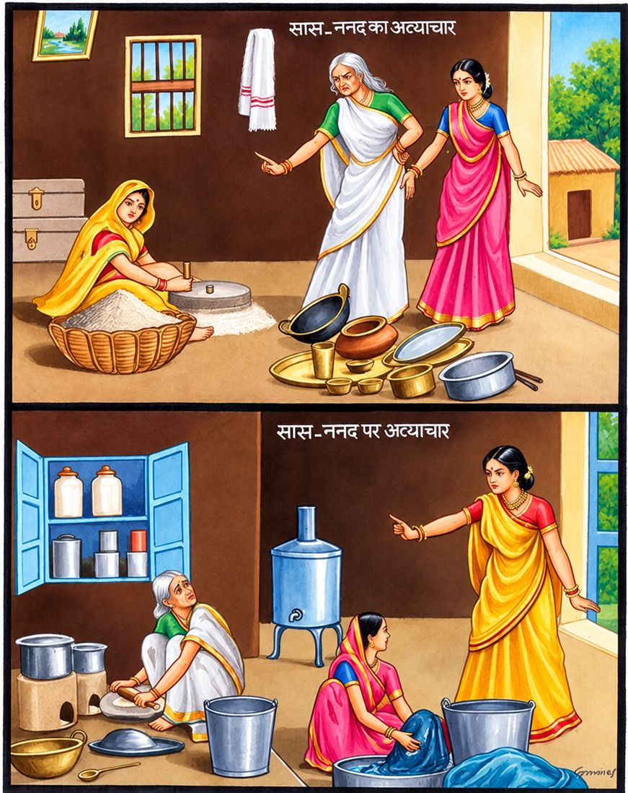
सास-ननद कर रहीं कहीं तो पुत्र-वधूपर अत्याचार।
कहीं वधू ही सास-ननदको देती खड़ी कड़ी फटकार॥
हिंदू-विवाहके आठ प्रकारोंमें स्त्री-पुरुषकी प्रायः सभी संयोग-रीतियोंका समावेश हो गया है। इन सबका बाह्य रूप ऐसा नहीं है कि प्रारम्भसे ही इनका आध्यात्मिक रूप दृष्टिगोचर हो जाय। पर इन प्रकारोंमें जिनकी अधम संज्ञा है, वे भी अन्ततोगत्वा एक पवित्र सम्बन्धमें परिणत हो जाते हैं। फलतः सामाजिक व्यवस्था और सुशृङ्खला टूटने नहीं पाती तथा आध्यात्मिक विकास तो निश्चित हो ही जाता है। इनमेंसे कुछ प्रकारके विवाहोंके उदाहरण तो वैदिक, पौराणिक एवं बौद्धसाहित्यमें भी प्राप्त होते हैं; पर विवाहके नियमोंको एक सुव्यवस्थित रूपसे ग्रथित करनेकी क्रिया तो बादमें गृह्यसूत्रों और स्मृतियोंद्वारा ही हुई। विवाहके इन नियमोंका संग्रह ऋषियोंने किया था। वे सब नियम आजकलकी रीतिके अनुसार जनताके प्रतिनिधियोंमेंसे बहुमतसे अथवा सभीके द्वारा स्वीकृत किये गये विधानोंकी तरह नहीं बने थे और न वे स्वेच्छाचारी शासकोंके द्वारा निर्मित हुए थे। उनके विधानमें अनुमितिकी रीतिका सहारा लिया जाना दीखता है। वे गहन चिन्तन और खुले वाद-विवादके परिणाम मालूम पड़ते हैं। उनकी रचना करते समय वैयक्तिक हित, सामाजिक सुशृङ्खला, राजनीतिक व्यवस्था और आध्यात्मिक पूर्णताकी प्राप्तिका आदर्श सामने था।
मनुस्मृति (३। २७—३४)-में तथा अन्यत्र भी हिंदू-विवाहके आठों प्रकारोंका अवरोह-क्रमसे सविस्तर वर्णन हुआ है। सबसे प्रथम है ‘ब्राह्म विवाह’। इसका प्रधान और प्रकट उद्देश्य है—ब्रह्मकी प्राप्ति अर्थात् गृहस्थधर्मका पालन करते हुए मोक्ष-लाभ। इसको दूसरे शब्दोंमें आध्यात्मिक कह सकते हैं। समुचित दहेजके साथ विवाहयोग्या कन्याका दान एक विद्वान् एवं सच्चरित्र पुरुषको किया जाता है, जिसे कन्याका पिता या अभिभावक अपने घर आमन्त्रित करता है। शिव और पार्वतीका विवाह इसका उदाहरण बताया जाता है। इस उदाहरणमें हम एक बात यह भी देखते हैं कि विद्या-वारिधि देवताका प्रेम और संग प्राप्त करनेके लिये कन्या स्वयं घोर तप करती है। वसिष्ठ और अरुन्धतीके उदाहरणमें भी हम पति-पत्नीके मनमें गार्हस्थ्य जीवनमें हिस्सा बँटानेके अतिरिक्त बौद्धिक मैत्रीकी भी लालसा देखते हैं। अतः यह प्रकार सभीके लिये आदर्श माना गया है।
दूसरा प्रकार है ‘दैव विवाह’। इसमें आभूषण-विभूषिता कन्याका दान उस याजकको किया जाता है, जो किसी यज्ञक्रियामें पौरोहित्य कर्मका समुचित सम्पादन करता है। अपने कर्तव्यका सफलतापूर्वक सम्पादन करके अपनी योग्यता और चरित्रको प्रमाणित कर देनेवाला कुशल याजक प्राचीन समाजका सबसे उन्नतिशील व्यक्ति समझा जाता था। उस कालमें याजन सबसे आदरणीय और धनावह कर्म था। किसी भी अवस्थामें ऐसा पति कन्या और उसके माता-पिताद्वारा सर्वप्रथम पसंद किये जानेका पात्र था। इस प्रकारका सम्बन्ध बौद्धिक मैत्री, आर्थिक स्वतन्त्रता एवं गौरवपूर्ण सामाजिक स्थितिका विधायक समझा जाता। च्यवन और ऋचिकाका तथा इन्द्र और इन्द्राणीका परिणय इस प्रकारके विवाहका उदाहरण है। दूसरे उदाहरणमें इसके राजोचित स्वरूपका दर्शन होता है। यदि याजनको ही, जो स्वयं किसी सम्मान्य और विद्वत्तापूर्ण जीविकासे कम नहीं है, प्रधानता न प्रदान की जाय तो दैव विवाह आजकलके उच्च परिवारोंके सम्बन्ध-सा लगेगा।
‘आर्ष विवाह’ का सम्बन्ध ऋषि शब्दसे है। ऋषिलोग प्रायः विवाह-बन्धनमें पड़नेके प्रति उदासीन रहते और अपने बौद्धिक व्यापारके लिये स्वतन्त्र रहना ही पसंद करते थे। अपनी बौद्धिक शक्ति और चरित्रके लिये वे समादृत होते और उनसे ऐसी बुद्धिमान् संततिकी उत्पत्तिकी आशा की जाती थी, जो समाजके भूषण बनें। अतएव कन्या और उसके माता-पिताको भी ऐसे पतिको प्राप्त करनेकी इच्छा होती थी। इस प्रकारके विवाहकी विधिमें जो शर्त रखी गयी है, वही इस बातका प्रमाण होती थी कि ऐसे व्यक्तिने विवाह-बन्धनको स्वीकार करनेका निर्णय कर लिया है। शर्त इस प्रकार है—‘पवित्र धर्मके निर्वाहके उद्देश्यसे, ऋषिसे एक गाय और एक बैल अथवा दो जोड़े लेकर कन्याके माता-पिता उसे ऋषिको पत्नीरूपमें सौंप देते हैं।’ यह स्पष्ट ही है कि पतिद्वारा दिये हुए पशु पत्नीके मूल्यके रूपमें नहीं होते थे; इसका अर्थ केवल इतना ही है कि ऋषिने अब गृहस्थ-जीवन बिताने और गृहस्थीसे अपनी जीविका चलानेका निश्चय कर लिया है। कन्याके माता-पिताको दिये हुए पशु इस सम्बन्धकी रक्षा और निर्वाह दोनों बातोंके प्रमाणका काम देते। ऐसे विवाहसे यदि पुत्रोत्पत्ति न भी हो, तब भी आर्ष स्वभाव और अप्रतिकूल साहचर्यमें तो कोई दुविधा थी ही नहीं। उदाहरणके लिये अगस्त्य ऋषि और लोपामुद्राका सम्बन्ध सामने रखा जा सकता है। यह एक प्रकारसे सामान्य मध्यमवर्गके लोगोंका विवाह है, इसमें कोई आध्यात्मिक भाव नहीं है।
चौथे प्रशस्त प्रकारका मानुष अथवा ‘प्राजापत्य’ नाम बड़ा सार्थक है। इसका स्पष्ट उद्देश्य संतान (प्रजा)-की उत्पत्ति है। ब्राह्म, दैव और आर्ष भेदोंसे पृथक् यह स्त्री और पुरुषका सामान्य संयोग है। इसके संपादनकालकी यह स्पष्ट आज्ञा है—‘तुम दोनों साथ रहकर धर्माचरण करो।’ वैसे तो इसके मुख्य उद्देश्यका संकेत तो इस प्राजापत्य नामसे ही मिल जाता है। वह यह कि पति और पत्नीका संयोग संतानोत्पादनके निमित्त होना चाहिये। विवाहके इस प्रकारमें हिंदू एवं अन्य विवाहोंके वास्तविक स्वरूपका दर्शन होता है, अर्थात् पत्नीको प्राप्त करनेका उद्देश्य पुत्र (अथवा पुत्री)-को उत्पन्न करना है, जिसके द्वारा पितृतर्पण हो सके तथा आश्रितों, अतिथियों एवं अभावग्रस्तोंको भोजन मिलता रहे और इस रीतिसे समाज और उसकी विभिन्न संस्थाओंकी परम्परा बनी रहे।*
* पुत्रार्थे क्रियते भार्या पुत्रः पिण्डप्रयोजकः।
विवाहके ये चार प्रकार स्तुत्य एवं आदर्श बताये गये हैं। इनकी प्रशंसा करते हुए महाराज मनुने कहा है (३। ३७—४२), ‘‘ब्राह्म विवाह’ से उत्पन्न हुआ पुत्र (यदि सुकर्म करे तो) अपने पिता, पितामह आदि दस पूर्वपुरुषोंको, पुत्र-पौत्रादि दस आगेके वंशजोंको तथा इक्कीसवें अपने-आपको पापसे मुक्त करता है; ‘दैव विवाह’ से उत्पन्न हुआ पुत्र सात पहलेके और सात आगेके होनेवाले वंशजोंको तारता है; ‘आर्ष विवाह’ से उत्पन्न पुत्र तीन पीढ़ी पीछेकी और तीन आगेकी तारता है, तथा ‘प्राजापत्य विवाह’ का पुत्र छः बीती हुई एवं छः आगेकी पीढ़ियोंको तारता है। यह भी कहा है कि इन चारों विवाहोंसे उत्पन्न हुए पुत्र ‘सुरूप, सत्त्वगुणी, धनवान्, यशस्वी तथा इच्छानुसार भोग प्राप्त करनेवाले होते हैं और धर्मिष्ठ होनेके कारण सौ वर्षोंकी आयु प्राप्त करते हैं।’’ इस प्रकारसे विवाहके स्तुत्य प्रकारोंका निर्णय केवल पति-पत्नीकी सुविधा और सुखसे ही नहीं, वरं उनका फल कैसा है—इस बातसे भी होता है।
शेष चार प्रकारोंके लिये आज्ञा तो दे दी गयी है, पर विशेष परिस्थितियों एवं मानव-दुर्बलताओंके साथ उनका सम्बन्ध होनेके कारण उन्हें श्रेष्ठ नहीं माना गया है। इनके लिये आज्ञा देनेका उद्देश्य यही था कि समाजकी सुशृङ्खला, व्यवस्था और शान्ति भंग न हो; किंतु इन निन्दनीय विवाहोंसे उत्पन्न पुत्रोंके विषयमें कहा गया है कि ‘वे क्रूरकर्मी, मिथ्यावादी और वेद एवं धर्मकी निन्दा करनेवाले होते हैं।’
पाँचवें प्रकारका नाम है ‘आसुर’। इसके अनुसार पति कन्या एवं उसके सम्बन्धियोंको यथाशक्ति धन देकर वयःप्राप्त कुमारीको ग्रहण करता है। यह एक प्रकारका अपहरण ही है और धन मानो कन्याके घरवालोंका रोष शान्त करनेके लिये और स्वयं कन्याकी रक्षाके लिये दिया जाता है। इस प्रकारके विवाहका उदाहरण महाभारतके प्रसिद्ध पात्र पाण्डु और माद्रीके सम्बन्धको कहा जा सकता है।
‘गान्धर्व विवाह’ प्रणयमूलक या भावप्रेरित होता है। जैसे गन्धर्वलोग जहाँ प्रेम हुआ, संभोगमें प्रयुक्त हो जाते हैं, वैसे ही यह विवाह भी कुमारी कन्याका उसके प्रेमीके साथ स्वेच्छापूर्ण संयोग है। समाजकी अनुमति प्राप्त करनेतक ठहरनेका धैर्य उनमें नहीं होता। शारीरिक संयोग, जो इस प्रकारके विवाहका मुख्य प्रयोजन है, किसी रीति या विधिके पालनके पूर्व ही हो जाता है; पर उचित रीतियों और विधियोंके कर लेनेके बाद समाज इसको भी स्वीकार कर लेता है। इस तरहसे वैवाहिक पवित्रता, सामाजिक और वैयक्तिक शान्ति अक्षुण्ण रह जाती है। उदाहरणके लिये शकुन्तला और दुष्यन्तका विवाह।
कन्याके सगे-सम्बन्धियोंको मारकर रोती-विलखती उसका घरसे अपहरण कर लेना ‘राक्षस विवाह’ है। समाजने इस अत्याचारको भी इसलिये स्वीकार किया कि कोई योद्धा अपहरण करके लायी हुई कन्याको भी उचित विधियोंकी पूर्तिके बाद सविधि परिणीता पत्नीके रूपमें ग्रहण कर सके। अर्जुनके द्वारा सुभद्राहरण और श्रीकृष्णके द्वारा रुक्मिणीहरण इसी प्रकारके विवाहके उदाहरण हैं। इस प्रकारके विवाह भी सुखपूर्ण और सफल सिद्ध होते थे। आजकलके विवाहोंमें कहीं-कहीं दूल्हेकी जो बारात निकलती है, वह कुछ-कुछ एक सेना-सी लगती है, जिसमें मारू बाजे बजते रहते हैं और सिपाहियोंके स्थानपर बाराती लोग सजे चलते हैं। सम्भव है इस प्रथामें ‘आसुर विवाह’ की छाया चली आ रही हो।
सोती हुई, नशेमें चूर अथवा पागल कन्याके साथ संभोग करना ‘पैशाच विवाह’ है। किसी अंशमें ऊषा और अनिरुद्धका विवाह उदाहरणमें आ सकता है। आसुर और पैशाच सम्बन्धको मनुके कालमें भी अधर्म्य समझा जाता था (३। २५)। विधिपूर्वक विवाहसंस्कारको पूरा कर लेनेके पश्चात् ऐसे सम्बन्धोंके भी राज्यद्वारा स्वीकृत हो जानेका केवल यही उद्देश्य था कि शारीरिक संयोगकी पवित्रता एवं सामाजिक व्यवस्था बनी रहे।
ध्यान दिया जाय तो इन आठों प्रकारोंमें नाना सिद्धान्तोंके दर्शन होंगे। पहले चार ‘स्तुत्य सम्बन्ध’ पिता-माताके द्वारा सम्पादित होते हैं। पर उनमें भी पारस्परिक सम्मतिका संकेत तो है ही। ये विवाह युवावस्थामें ही होते थे; नहीं तो उस समयके जो विधि-निषेध बताये गये हैं, उनका कोई अर्थ ही नहीं। उनकी प्रौढ रूप-रेखा आधुनिक विवाहों-सी ही है और किसी भी सभ्य समाजके वे अनुकूल हैं। शेष चार प्रकारोंमेंसे आसुर और पैशाच विवाहको प्राचीनकालमें भी ‘अवैध’ माना जाता था। पहलेका सिद्धान्त कन्याको क्रय करनेका-सा दीखता है। किंतु यह धारणा भ्रान्तिपूर्ण है, क्योंकि कन्याके माता-पिता पाये हुए धनको फिर वरको लौटा देते थे। दूसरा तो साफ-साफ कन्याके कौमार्यपर पाशविक आक्रमण है। इन दोनों प्रकारके सम्बन्ध भी युवावस्थामें ही सम्भव हो सकते हैं। कन्याके वयःप्राप्त हो चुकनेपर ही उसे ले भागने या उसके साथ बलात्कार करनेकी प्रेरणा हो सकती है। इसी प्रकार गान्धर्व और राक्षस विवाह भी युवावस्थाके ही सम्बन्ध हैं। गान्धर्व विवाहका तात्कालिक प्रयोजन ही अंगसंग है। दूसरेमें भी लड़कीको अपहरण करने और लड़ाई-झगड़ा मोल लेनेका लालच तभी होगा, जब वह काफी सयानी हो चुकी हो। कम अवस्थामें विवाह करनेकी शास्त्राज्ञाओंसे इन निष्कर्षोंका स्पष्ट विरोध दीख पड़ता है। यद्यपि वेदोंमें अल्पवयस्का कन्याओंके विवाहके प्रमाण भी मिलते हैं, पर ऐसा मालूम होता है कि कम अवस्थावाली आज्ञा स्थान और परिस्थिति-विशेषके लिये थी। हम आगे देखेंगे कि ब्राह्म विवाहकी विधियोंसे भी यही प्रकट होता है कि विवाहके समय कन्या यौवनमें पदार्पण कर चुकी होती थी।
‘ब्राह्म विवाह’ -सम्बन्धी विधियाँ ही अन्य प्रकारोंमें भी चलती हैं। बातचीत समाप्त होनेके बाद पारस्परिक सम्मति प्राप्त हो जानेपर, कुछ ग्रन्थोंके अनुसार विवाह-संस्कारका आरम्भ कुशाण्डिका (कुशकण्डिका) नामक यज्ञसे होता है। अन्य ग्रन्थकार इसका अन्तमें होना बतलाते हैं। इसका उद्देश्य विवाहके सफलतापूर्वक सम्पन्न होनेके लिये देवताओंके आशीर्वाद-प्राप्त्यर्थ प्रार्थना करना है। इसके बाद फिर ‘नान्दीमुख’ श्राद्ध होता है, जिसका उद्देश्य पितरोंका आशीर्वाद प्राप्त करना होता है। तत्पश्चात् वर और कन्याको हरिद्राचूर्ण तथा अन्य सुगन्धि-द्रव्योंसे स्वास्थ्यप्रद स्नान कराया जाता है। इसको गात्रहरिद्रा कहते हैं। वर और कन्यामें कामको जाग्रत् करना ही इस स्नानका मुख्य उद्देश्य है। इसी सम्बन्धमें कन्याके सम्बन्धियोंद्वारा कामदेवकी एक महत्त्वपूर्ण प्रार्थना की जाती है—‘तुम्हारा नाम काम है, पर वास्तवमें तुम मद हो। तुम्हारा नशा वरको कन्याके पास खींच लावे; क्योंकि कन्या ही कामाग्निकी अरणि है, जो रतिक्रियासे प्रज्वलित हो उठती है१।’
फिर कहते हैं (वररूपी भ्रमरको आकर्षित करनेके निमित्त) कन्याकी योनि मधुरूपा है। वह विधाताका द्वितीय मुख है। इसीसे कन्या वरको जीत लेती है और सबको अपने अधीन कर लेती है२। उससे कहा जाता है कि वह अपने पतिकी वासनाको तृप्त करे३।
वर स्वयं पाणिग्रहणके पश्चात् कहता है कि कन्यादान और उसके ग्रहणका उद्देश्य यही है कि दोनोंकी वासना पूरी हो और वह इस उद्देश्यको चरितार्थ करनेकी प्रतिज्ञा भी करता है४।
१. काम वेद ते नाम मदो नामासि समानयामुं सुरा तेऽभवत् परमत्र जन्माग्ने तपसो निर्मितोऽसि स्वाहा।
२. इमं त उपस्थमधुना संसृजामि प्रजापतेर्मुखमेतद् द्वितीयम्। तेन पुंसोऽभिभवासि सर्वान् वशान् वशिन्यसि राज्ञि स्वाहा॥
३. अग्निं क्रव्यादमकृण्वञ्जुहानाः स्त्रीणामुपस्थमृषयः पुराणास्तेनाज्यमकृण्वंस्त्रैशृङ्गं त्वाष्ट्रं त्वयि तद् दधातु स्वाहा।
४. क इदं कस्मा अदात् कामः कामाय अदात् कामो दाता कामः प्रतिग्रहीता कामः समुद्रमाविशत्। कामेन त्वा प्रतिगृह्णामिकामैतत्ते।
फिर संप्रदान अथवा कन्यादान नामक सबसे मुख्य क्रियाकी बारी आती है। अब कन्या वरके हाथोंमें पूर्णरूपेण सौंप दी जाती है। यह प्रथा ईसाइयों और मुसलमानोंमें भी पायी जाती है और इसका अभिप्राय यह है कि सविधि संपन्न विवाहमें अपने मनोऽनुकूल पुरुषको भी कन्या अपने-आपको स्वयं नहीं सौंप सकती। कन्याके पिताके अभावमें कन्यादानका कार्य किसी दूसरे अभिभावकको करना पड़ता है। हिंदू-प्रथाके अनुसार कन्याका पिता विधिवत् और सम्मानपूर्वक वरका स्वागत करके उससे उसे वररूपमें ग्रहण करनेकी आज्ञा लेता है और उससे पूछता है कि वह कन्याके प्रति पतिके कर्तव्योंका पालन करनेको तैयार है न? फिर वर सबके सामने विधिवत् इस उत्तरदायित्वको स्वीकार करता है*।
* पाद्यादिभिरभ्यर्च्य वरत्वेन भवन्तं वृणे।
यथाविहितं वरकर्म कुरु। यथाज्ञानं करवाणि॥
दुर्वां पुष्पं फलं चैव वस्त्रं ताम्बूलमेव च।
एभिः कन्या मया दत्ता रक्षणं पोषणं कुरु॥
अस्याः कन्याया दोषाः क्षन्तव्या गुणास्तु ग्राह्याः।
उसका यह कर्तव्य बताया जाता है कि वह वधूकी रक्षा करे, उसका पालन करे, उसके गुणोंका आदर करे और अपराधोंको क्षमा करे। तत्पश्चात् कन्या अर्पण कर दी जाती है। इस समय दोनों पक्षोंके पूर्वपुरुषोंका नाम लिया जाता है, जिससे वर-वधूकी पहचानके विषयमें कोई बखेड़ा न हो। कन्यादानके साथ दहेज भी दिया जाता है। दहेजमें सभी प्रकारकी वस्तुएँ दी जाती हैं—जैसे अन्न, जल, बिछौने, पशु, स्वर्ण और रत्नादि तथा जमीन-जायदाद भी*।
* भूमिमन्नं जलं शय्यां गोहिरण्यादिकं यौतुकं जामात्रे दद्यात्।
तब वर-वधूके हाथ एक साथ बाँध दिये जाते हैं और उनके वस्त्रोंको भी मिलाकर गाँठ लगा दी जाती है। इस ग्रन्थिबन्धनका अभिप्राय यह है कि वर-वधू दोनों शरीरसे तो एक हो ही गये तथा एक-दूसरेके लिये सदाके साथी भी बन गये। फिर यह प्रार्थना की जाती है कि उनका यह सम्बन्ध ‘इन्द्र और इन्द्राणी, विभावसु और स्वाहा, सोम और रोहिणी, नल और दमयन्ती, वैश्रवण और भद्रा, वसिष्ठ और अरुन्धती एवं अन्ततः नारायण एवं लक्ष्मीके सम्बन्धके समान चिरस्थायी हो।’ इस प्रत्येक उदाहरणमें कुछ विशिष्ट महत्त्व है और उन सभीका ग्रहण यहाँ अभीष्ट है।
इस प्रकार कन्याको ग्रहण करनेके बाद विवाह-मण्डपसे वर उसे प्रधान गृहमें ले जाता है१। वहाँ साथ-साथ हवन करनेके लिये संयोजक-अग्नि प्रज्वलित एवं स्थापित की जाती है। इसी अग्निके चारों ओर प्राथमिक प्रतिज्ञाएँ और शर्तें की जाती हैं। जीवनभर पालन करनेके संकल्पकी अभिव्यंजनाके रूपमें पति पत्नीको अपने उत्तरीय और अन्तरीयसे आवृत करके उसे आदरपूर्वक संबोधित करते हुए कहता है, ‘मान्ये! यहाँ सौ वर्षोंतक सुखपूर्वक रहो, यशको प्राप्त करो, धन-धान्यसे परिपूर्ण रहो, मेरा और तुम्हारा कभी विछोह न हो। यहाँ रहकर सार्वभौम जीवन यापन करो। अर्थात् शान्ति और समृद्धिको प्राप्त होओ। इस घरमें अपने प्यारे बच्चोंके साथ फूलो-फलो और घरके काम-काजकी ओर भी तुम्हारा ध्यान रहे२।’
१. यह क्रिया पतिके घरमें होनी चाहिये, क्योंकि कुछ लोगोंमें प्रचलित प्रथाके अनुसार वधूके घरके कर्म यहीं समाप्त हो जाते हैं। पर सामान्य प्रथा यही है कि उसके और भी कई कर्म कन्याके ही घर होते हैं। आगेके वर्णनमें हम देखते हैं कि यह क्रिया कन्याके ही घर होती है; क्योंकि इसके बाद कन्याके पिताके घरसे पति पत्नीको अपने घर रथमें बैठाकर ले जाता है।
२. शतं च जीव शरदः सुवर्च्चा वसूनि चार्ये बिभृजासि जीवन्। इहैव स्तं माँ वियुष्टं विश्वमायुर्व्यश्नुतम्। इह प्रियं प्रजया ते समृद्धॺतामस्मिन् गृहे गार्हपत्याय जागृहि।
इन पंक्तियोंका महत्त्व जितना कहें थोड़ा है। सौ वर्षकी आयुको मानव-जीवनकी चरम सीमा समझनी चाहिये। इस प्रकारसे पत्नीको जीवनभरके लिये ही अंगीकार किया जाता है। उसे आजीवन कारागारमें नहीं बंद कर दिया जाता वरं उसे अब यशस्वी जीवन बिताना है और सब प्रकारके मान, संपत्ति और सुखका भोग करना है। अपने प्यारे शिशुओंके साथ-साथ फूलना-फलना है। गृहस्थाश्रम-सम्बन्धी कर्तव्योंके पालनके अतिरिक्त और उससे कुछ नहीं माँगा जाता। पत्नीके समादृत स्थानविषयक अन्य बातें आगे आयँगी।
अब सप्तपदी नामक क्रिया होती है। इसमें पति-पत्नी साथ-साथ यज्ञाग्निकी परिक्रमा करते हैं। उस समय पति पहले पदपर इच्छाओंकी पूर्ति, दूसरेपर शक्तिसंचय, तीसरेपर गृहस्थाश्रमधर्मका पालन, चौथेपर दोनोंकी पूर्ण एकात्मता एवं मैत्री, पाँचवेंपर पशुधनकी प्राप्ति, छठेपर संपत्तिकी प्राप्ति और सातवेंपर यज्ञोंके सात फलोंकी प्राप्तिमें पत्नीका सहयोग और साहचर्य मिलते रहनेके लिये देवताओंसे प्रार्थना करता चलता है।
तत्पश्चात् पत्नीको संबोधित करके पति उसके प्रति की हुई अपनी प्रतिज्ञाओंको संक्षेपसे दुहराते हुए फिर कहता है, ‘प्रिये! (विवाहित जीवनके) सप्त उद्देश्योंको प्राप्त करनेमें तुम मेरे साथ रहो, मैं तुम्हारा सखा बननेका वचन देता हूँ, हमारे संगको कोई दूसरी स्त्री भंग नहीं कर सकेगी और हमारा प्रेम सकल सुखोंका स्रोत होगा।’
* सखे सप्तपदा भव सख्यं ते गमेयम्।
सख्यं ते माँ योषाः (छिन्दन्तु) सख्यं ते मायोष्ठाः (सुखकारिणः)
उसपर व्याख्याकार कहते हैं, ‘सुखकारिण्यः स्त्रियः त्वया सह सख्यं कुर्वन्तु’ (सुख देनेवाली स्त्रियाँ तुम्हारी मित्र हों)—पर यह प्रसंगसे मेल नहीं खाता।
फिर वह दर्शकों और मित्रोंको लक्ष्य करके कहता है, ‘आप लोग मिलकर मेरी इस सुमंगला पत्नीको देखें और जानेके पहले उसके चिर सौभाग्यके लिये प्रार्थना करें।’ वह समस्त देवताओंसे भी प्रार्थना करता है कि ‘देवगण हमारे हृदयोंको शुद्ध करें। वरुण, मरुद्गण, ब्रह्मा और बृहस्पति हमारे हृदयोंको मिलाकर एक कर दें। अर्थात् हम स्वरूपसे, स्वभावसे और बुद्धिसे एक हो जायँ*।’ पति-पत्नीकी एकताका यह सर्वांगपूर्ण स्वरूप है और यही हिंदू-विवाहका आदर्श भी है।
* समञ्जन्तु विश्वेदेवाः समापो हृदयं नौ।
सं मातरिश्वा सं धाता समुद्दिष्टै दधातु नौ॥
हार्दिक एकताके हेतु प्रार्थना और प्रतिज्ञा करनेके उपरान्त भौतिक एकताके प्रतीकरूपसे ‘पाणिग्रहण’ नामक कर्म होता है। पति अपने दोनों हाथोंसे स्नेहपूर्वक पत्नीके हाथोंको पकड़कर छः और प्रतिज्ञाएँ करता है, ‘गृहस्थाश्रममें मेरी सहायता करनेके लिये देवताओंने दया करके तुम्हें मुझको प्रदान किया है, अपना बड़ा भाग्य मानकर मैं तुम्हारा पाणिग्रहण करता हूँ; वृद्धावस्थातक (अर्थात् जबतक मृत्यु हमें अलग न कर दे) मेरे साथ रहो।’ ‘सुभगे! मेरे प्रति तुम्हारी सदा अक्रूर दृष्टि रहे, तुम अपतिघातिनी सिद्ध हो, वीरप्रसवा बनो, तुम्हारा गर्भ कभी व्यर्थ न जाय; तुम नित्य पंचमहायज्ञोंको करनेवाली होओ, हमें सुख पहुँचाओ और हमारे परिवारके सभी द्विपदों (सम्बन्धियों) और चतुष्पदों (पशुओं)-का भला करो।’ ‘विधाता हम लोगोंको वृद्धावस्थातक संततिसुख देते रहें, अर्यमा हमारे वंशजोंको महान् गुणोंसे युक्त बनावें। भार्ये! हितकारी देवताओंने तुम्हें मुझे दिया है। अतः तुम अपने पतिके घरमें पधारो और परिवारके द्विपदों और चतुष्पदोंका भला करो।’ इन उद्गारोंका महत्त्व स्पष्ट है। प्रत्येक बुद्धिमती स्त्रीको ऐसे आजीवन-संगीपर अवश्य ही गर्व होगा।
अब पत्नी कहती है, ‘मेरा पति अपने परिवारमें मेरे प्रवेशको सरल बनावे, जिससे मैं वहाँ सुख और शान्तिसे रह सकूँ और मेरा कोई शत्रु न हो।’ *
* प्र मे पतियानः पन्थाः कल्पतां शिवा अरिष्टा पतिलोकं गमेयम्।
इस माँगको स्वीकार करते हुए पति देवताओंसे छः प्रकारके वरदान पत्नीके लिये माँगता है। इस समय पत्नी पतिके दाहिने कंधेको पकड़े हुए उसे सहारा दिये खड़ी रहती है। पति कहता है, ‘अग्निदेवता इसे संतान दें, वरुण मृत्युसे उनकी रक्षा करें, जिससे इसे अपनी संततिकी बीमारीके कारण रोना न पड़े।’ ‘यह (मेरे साथ) नित्य विवाहाग्निमें हवन करे। इसकी संतान इसकी वृद्धावस्थातक जीवित रहे (और इसकी आज्ञा माने), इसकी गोद कभी सूनी न रहे, इसे पौत्रोंका मुख देखनेका सुख मिले।’ ‘द्यु देवता तुम्हारी पीठ और अश्विनीकुमार तुम्हारे ऊरुप्रदेशकी रक्षा करें।*
* इसका अभिप्राय यह है कि पत्नी गर्भ-धारणके योग्य बनी रहे।
विधाता तुम्हारे स्तनन्धय शिशुओंकी वस्त्र धारण कर सकने योग्य अवस्थातक रक्षा करें; उसके बाद बृहस्पति और विश्वेदेव उनकी रक्षा करें (अर्थात् उन्हें बुद्धि प्रदान करें)।’ ‘तुम्हारे घरमें कभी विलाप करनेका शब्द न हो। शोकमें डूबी और रोनेवाली स्त्रियाँ तुमसे दूसरी हों और शत्रुओंके घरमें हों। तुम्हारा रोना यदि कभी हो भी तो हृदयद्रावक न हो। तुम अपने पतिके परिवारको अलंकृृत करो। तुम्हारा पति जीवित रहे और तुम अपने बच्चोंको सुखी और फलते-फूलते देखो।’ ‘सुभगे! मैं तुम्हारा वन्ध्यत्व दूर करूँगा, तुम्हारे बच्चोंके और तुम्हारे कालको दूर रखूँगा, सब प्रकारके दुर्भाग्योंको भी तुमसे दूर रखूँगा। इन सबको (मुरझायी हुई) मालाकी तरह शत्रुके गलेमें डाल दूँगा।’ और अन्तमें वह यमराजसे कहता है कि ‘मृत्यु हमसे दूर रहे, (अकाल) मृत्युसे हम बचे रहें, आप हमें भयमुक्त करें। हे काल! आप कहीं और जायँ; मैं आपसे ही कह रहा हूँ। हमारे पुत्र-पौत्रोंको हमसे मत छीनें। हमारे वीर पुरुषोंको मत मारें।’ पति-पत्नी साथ-साथ अग्निदेवको ये छः आज्य-आहुतियाँ देते हैं।
इसके बाद अश्मारोहण कर्म होता है। पत्नी अपनी भुजाओंको पतिके कंधोंपर ले जाकर हाथ जोड़ लेती है। फिर दोनों एक शिलापर पैर रखते हैं। इसका अभिप्राय यह है कि अपने विवाहित जीवनमें दोनों शिलाकी भाँति दृढ़ रहें और अपनी शक्तियोंको एक करके शत्रुको पददलित कर सकें।*
* इममश्मानमारोह अश्मेव त्वं स्थिरा भव।
द्विषन्तमपबाधस्व माँ च त्वं ज्ञातयो मम॥
अब पत्नी अपने हाथों और शरीरको पतिके शरीरसे पृथक् करके अग्निदेवसे प्रार्थना करती है, ‘मेरा पति सौ वर्षोंतक जीवित रहे; पतिपक्षीय मेरे सम्बन्धी धन-धान्यसे परिपूर्ण हों और प्रजावान् हों।’१ उसके बाद पति प्रार्थना करता है, ‘देवता मेरी पत्नीको मेरे परिवारसे कभी वियुक्त न करें।’२ इस प्रकार आधुनिक स्वार्थपूर्ण मनोवृत्तिकी भाँति हिंदू-आदर्शमें पत्नी केवल अपने पति और बच्चोंकी ही शुभकामना नहीं करती वरं पतिके पिता-माता, भाई-बहिन एवं अन्य निकटके तथा प्रिय सम्बन्धियोंका भी हित चाहती है। ‘हे इन्द्रदेव! आपकी कृपासे यह पत्नी मेरी संततिको गर्भमें धारण करे, पतिके प्रति अनुरागिणी हो और दस सन्तान उत्पन्न करे;३ इस तरह पतिको मिलाकर कुल ग्यारह हो जायँगे।’ ‘अपने सास-श्वशुर, ननदों और देवरोंपर शासन करनेवाली तुम मेरे घरकी रानी बनो।’
१. मे पतिः शतं वर्षाणि जीवत्वेधन्तां ज्ञातयो मम।
२. स इमां देवोऽर्यमा प्रेतो मुंचतु मामुत।
३. इसका रूसके जनसंख्या-विस्तार-आन्दोलनसे अद्भुत साम्य है। सोवियत सरकारने अपने राष्ट्रिय जीवनमें मातृत्वको सबसे अग्रिम स्थान प्रदान किया है। वहाँ जबसे तीसरा बच्चा पेटमें आता है, माताको अधिक भत्ता मिलने लगता है। प्रसवकालकी छुट्टी बढ़ाकर ग्यारह सप्ताहकी कर दी जाती है। गर्भावस्थाके अन्तिम तीन महीनोंमें और प्रसवके बाद छः महीनोंतक दूना राशन मिलता है। मातृत्वके कर्तव्य और गौरवको प्रकाशमें लानेके निमित्त ‘मातृत्व-पदक’ (Motherhood Medal)-की सृष्टि हुई है। यह पाँचसे छः बच्चोंतकको जन्म देनेवाली माताओंके लिये है। सात, आठ या नौ बच्चोंके जन्म देनेवाली माताओंको ‘मातृत्वकी कीर्ति’ (Maternity Glory) नामक श्रेणीमें गिना जाता है और दस या उससे भी अधिक बच्चोंकी माँको प्रसवशूरा (Mother Heroine)-की श्रेणी प्राप्त होती है।
दूसरी ओर केवल निःसंतान लोगोंको ही अपनी आयका छः प्रतिशत अतिरिक्त कर नहीं देना पड़ता, बल्कि एक संतानवालेको आयका डेढ़ प्रतिशत और दो संतानवालेको एक प्रतिशत विशिष्ट कररूपमें देना पड़ता है। इन बातोंसे हमें यह समझमें आ जायगा कि हिंदू-स्मृतिकारोंने तेरह या चौदह प्रकारके पुत्रों और उत्तराधिकारियोंका क्यों निर्देश किया है। मनुने इतने प्रकारके पुत्र गिनाये हैं—असमान वर्णकी स्त्रीसे उत्पन्न, विधवासे उत्पन्न तथा औरस, क्षेत्रज्ञ, दत्तक, कृत्रिम, गूढोत्पन्न, अपविद्ध (अन्तिम छः दायाद हैं); कानीन, सहोढ, क्रीतक, पौनर्भव, स्वयंदत्त और पारशव (ये छः अदायाद बान्धव हैं)। पुत्रकी महत्ता जैसी आजकल है, वैसी ही पहले भी थी। ‘पुरुष पुत्रसे (स्वर्गादि) लोकोंको जीतता है, पौत्रसे अमरत्व प्राप्त करता है और पुत्रके पौत्रसे सूर्यलोकको पाता है। लोकमें पौत्र और दौहित्रमें कोई अन्तर नहीं है; पुरुषका दौहित्र भी पौत्रके समान ही परलोकमें उसकी रक्षा करता है। (मनु० ९। १३७—१३९)
अब उत्तरविवाह नामक कर्म होता है। इसमें एक हवन किया जाता है और छः और प्रार्थनाएँ की जाती हैं—‘अग्निदेवताको दी हुई मेरी इस पूर्णाहुतिके प्रतापसे मेरी पत्नीकी भौंहों, चक्षुगह्वरों, मुख, सिरके केश, दृष्टि, रुदन, शील, वार्तालाप, मुसकराहट, दाँतोंकी चमक, हाथों, पैरों, जंघाओं, गुप्तेन्द्रिय, जानुओं, सन्धियों और अंग-प्रत्यंगमें जहाँ भी कोई अवाञ्छनीय घोर दोष हों, सब दूर हो जायँ।’
इसके बाद वर-वधू दोनों उठकर बाहर आते हैं और आकाशस्थ तारेकी ओर देखते हुए वधू अपना नाम लेकर अपनेको पतिका नाम लेकर उसकी पत्नी घोषित करती हुई कहती है—‘हे ध्रुव नक्षत्र! जैसे आप स्थिर हैं, वैसे ही मैं भी अपने पतिके परिवारमें सदाके लिये स्थित हो गयी हूँ। हे अरुन्धती! आपकी ही भाँति मैं भी मन, वचन और शरीरसे अपने पतिके साथ जुड़ गयी हूँ। अपने पतिके परिवारके साथ मेरा संयोग आकाश, पृथ्वी, समस्त ब्रह्माण्ड और इन सब पर्वतोंकी भाँति अचल है*।
* ज्योतिर्विज्ञानानुसार तो आकाशस्थ सकल ज्योतिष्पिण्ड एक नियमके अधीन होकर चक्कर लगाया करते हैं। पर वैसे ये सब, यह पृथ्वी तथा ब्रह्माण्ड—सभी देखनेवालोंको स्थिर ही दिखायी देते हैं।
फिर पतिद्वारा पत्नीके पूर्ण जीवनकी शुभ कामना प्रकट करनेके पश्चात् यह कर्म समाप्त होता है।’
इसके बाद जो कर्म होता है, उसमें वधूको गृहस्थ-जीवनकी दीक्षा दी जाती है। पहले तीन दिनतक पति-पत्नी दोनों ब्रह्मचर्याश्रमके उपयुक्त सादा सात्त्विक भोजन ग्रहण करते हैं और गर्भाधान-संस्कारमें बतायी विधिके अनुकूल रातमें साथ-साथ पृथ्वीपर सोते हैं। पहले कहे हुए वस्त्राच्छादन-कर्मकी भाँति इस भोजन-ग्रहण-कर्मके अवसरपर भी पति कहता है, ‘अब मैं तुमको शरीर और आत्माको बाँध रखनेवाली अन्नकी डोरीसे उसी प्रकार बाँधता हूँ, जैसे तुम्हारे मन और हृदयको विवाहकी अमिथ्या ग्रन्थिसे पहलेसे ही बाँध रखा है। भोजनरूपी जीवन-सूत्रसे मैं तुमको बाँधता हूँ।’
अब रथमें बैठकर दम्पति अपने घरको प्रस्थान करते हैं। पत्नीका परिवारवालोंसे परिचय कराया जाता है। चौथे दिन शरीर-शुद्धिकी दृष्टिसे दम्पति चतुर्थी-होम नामक यज्ञ करते हैं। फिर गर्भाधान-संस्कारके नियमोंके अनुसार जबतक दोनोंकी इच्छा पुत्र उत्पन्न करनेकी नहीं होती, दम्पति एक ही बिस्तरेपर बिना एक-दूसरेको स्पर्श किये हुए सोते हैं।
थोड़े-बहुत परिवर्तनके साथ ये ही प्रथाएँ देशभरमें और हिंदुओंकी प्रायः प्रत्येक जातिमें प्रचलित हैं। जो अन्तर हैं, वे केवल स्थानीय, लोकप्रथा-भेदसे और साम्प्रदायिक हैं। मूल सिद्धान्तोंमें उनसे कुछ अन्तर नहीं पड़ता। इस प्रकार उपरिलिखित वैवाहिक कर्मोंसे उनकी सांस्कृतिक महत्ताका एक सामान्य रूप जाना जा सकता है—तथा उनकी आधारभूत समुन्नत सभ्यताका अनुमान किया जा सकता है।
दूसरी ध्यान देने योग्य महत्त्वपूर्ण बात यह है कि सभी अन्य सभ्य समाजोंके अनुरूप हिंदू-विवाह भी माता-पिताद्वारा ही तय होता है; पर कन्याकी सम्मति बिलकुल न ली जाती हो—ऐसी बात भी नहीं रहती। दूसरी ध्यान देनेवाली बात यह है कि विवाहके आध्यात्मिक प्रकारमें भी गृहस्थाश्रममें रहना, स्वाभाविक कामकी प्रवृत्तिको चरितार्थ करना, पुत्र उत्पन्न करना और दम्पतिको ही नहीं वरं समूचे सम्मिलित परिवारको सुख-सुविधा पहुँचाना ही मुख्य उद्देश्य है। विवाहके समय पति-पत्नी दोनोंके द्वारा की गयी प्रतिज्ञाओंमें स्पष्ट और अस्पष्ट रूपसे इसी बातका उल्लेख है कि दोनों साथ तो रहेंगे, पर मालिक और गुलामकी तरह नहीं, वरं मित्र और बराबरके साझीदारकी तरह। इससे हिंदू-विवाहके उच्च सांस्कृतिक महत्त्व और भौतिक हितपरताका पता चलता है। सामान्य परिस्थितियोंमें सम्बन्ध-विच्छेदके लिये व्यवस्था करनेकी आवश्यकता नहीं पड़ती थी। पर कुछ विशिष्ट परिस्थितियोंमें जैसे पतिके नपुंसक होनेपर, पत्नीको त्याग देनेपर, पत्नीके वन्ध्या होनेपर अथवा उसमें और कोई दोष होनेपर उचित अपवादकी भी व्यवस्था थी। पर वहाँ भी इस बातका ध्यान रखा ही जाता था कि समाजकी व्यवस्था टूटने न पावे और राष्ट्रिय तथा आध्यात्मिक आदर्शको कोई धक्का न लगे।
सकृत् कन्या प्रदीयते
(लेखक—पं० श्रीवेणीरामजी शर्मा गौड, वेदाचार्य)
कन्यादानके बाद कन्यापरसे दाताकी स्वत्व-निवृत्ति होती है या नहीं, इस विषयमें कुछ लोगोंका कहना है कि ‘‘गोदानादि कर्मोंमें ‘इमां गां तुभ्यमहं सम्प्रददे’ (यह गाय मैं तुम्हें देता हूँ) यह कहनेके बाद स्व-स्वत्व-निवृत्तिका बोधक ‘न मम’ (अब यह मेरी नहीं है) इन दो पदोंका भी उच्चारण किया जाता है; अतः वहाँ अपने स्वत्वकी निवृत्ति हो जाती है। कन्यादानमें तो ‘इमां कन्यां तुभ्यमहं सम्प्रददे’ (इस कन्याको मैं तुम्हें देता हूँ) केवल इतना ही कहा जाता है, ‘न मम’ इस पदद्वयका उच्चारण नहीं किया जाता। अतः ‘गोदान’ की तरह ‘कन्यादान’ में स्वत्व-निवृत्ति नहीं होती। अतएव एक बार किसीको दी हुई कन्याका भी दूसरे व्यक्तिको पुनः ‘दान’ हो सकता है अर्थात् ‘पुनर्विवाह’ (विधवा-विवाह) हो सकता है।’’
इन प्रश्नकर्ताओंसे पूछना चाहिये कि ‘न मम’ इस पदद्वयका उच्चारण हो या न हो, कन्यादानमें भी गोदानकी तरह ‘दा’ धातुका उच्चारण होता है या नहीं? यदि होता है तो वहाँपर उच्चारण किये हुए ‘दा’ धातुका क्या अर्थ है? व्याकरणके सिद्धान्तानुसार ‘दा’ धातुका अर्थ इस प्रकार है—‘स्वस्वत्वनिवृत्तिपूर्वकपरस्वत्वापादनरूपो व्यापारः।’ अर्थात् अपने अधिकारकी निवृत्ति कर दूसरेके अधिकारका सम्पादन करना।
वैयाकरण सिद्धान्तकौमुदीके ‘कर्मणा यमभिप्रैति स सम्प्रदानम्’ (१। ४। ३२) इस सूत्रकी टीका करते हुए तत्त्वबोधिनीकार लिखते हैं—‘दानं चापुनर्ग्रहणाय स्वस्वत्वनिवृत्तिपूर्वकं परस्वत्वोत्पादनम्’ अर्थात् पुनः वापस न लेनेकी बुद्धिसे अपना अधिकार हटाकर दूसरेके अधिकारका व्यवस्थापन करना ही ‘दा’ धातुका स्पष्टार्थ है।
‘शास्त्रदीपिका’ में भी पार्थसारथि मिश्रजीने चतुर्थ अध्यायके द्वितीय पादके बारहवें अधिकरणमें याग-होमादिके भेद-कथनावसरमें इस प्रकार कहा है—
‘देवतोद्देशेन स्वद्रव्यपरित्यागो यागः, स एव प्रक्षेपाधिको होमः, स्वीयस्य परकीयत्वापादनं दानम्।’
और भी वहीं ‘भाट्टदीपिका’ में कहा है—
‘सम्प्रदानस्वत्वापादको द्रव्यत्यागो दानपदार्थः’ अर्थात् सम्प्रदान—स्वत्वके आपादक द्रव्यत्यागको ‘दान’ कहते हैं। इस स्थितिमें ‘दा’ धातु ही स्वस्वत्वनिवृत्तिका तथा परस्वत्वापादनका प्रतिपादन करती है; और जहाँ ‘दा’ धातुका प्रयोग होता है, वहाँ स्वस्वत्व-निवृत्ति भी स्वतः सिद्ध हो जाती है। फिर ‘न मम’ इस पदद्वयके प्रयोगसे कौन-सी नयी बात ज्ञात होती है?
दा-धात्वर्थ स्व-स्वत्व-निवृत्तिका ही अनुवाद ‘न मम’ इस पदद्वयसे करना चाहिये—यह मानकर ही स्मृतिकारोंने ‘न ममेति स्वसत्ताया निवृत्तमपि कीर्तयेत्’ कहा है। अतः दानस्थलोंमें सर्वत्र ‘न मम’ यह कथन केवल अनुवादरूप ही है, इसके न कहनेपर भी स्वत्वनिवृत्ति होती ही है—यह स्पष्ट है। अतएव गोदान प्रभृतिमें भी ‘न मम’ इस पदद्वयका शिष्टलोग कभी-कभी उच्चारण नहीं करते।
यागादिमें केवल ‘इदमग्नये’ इत्यादिमें चतुर्थीमात्रका प्रयोग होनेसे तथा ‘दा’ धातुके अप्रयोगसे वहाँपर चतुर्थीद्वारा त्यज्यमान द्रव्योद्देश्यत्वमात्रका कथन होता है, अतः स्व-स्वत्व-निवृत्ति-बोधक ‘न मम’ इस पदद्वयका उच्चारण करना ही चाहिये। फिर, यदि ‘कन्यादान’ में स्व-स्वत्व-निवृत्ति नहीं होती तो वह ‘पुत्रदान’ में कैसे हो जायगी? यदि इष्टापत्ति हो तो यह नहीं हो सकता; क्योंकि ‘गोत्ररिक्थे जनयितुर्न भजेद्दत्रिमः सुतः’ इत्यादि गोत्र-रिक्थ-निवृत्तिबोधक शास्त्रोंकी क्या दशा होगी? और क्यों वह पुत्र प्रतिग्रहीता (गोद लेनेवाले)-के मर जानेपर दूसरेको नहीं दिया जा सकता? और क्यों न कन्या भी पुत्रोंकी तरह ‘दायभाग’ की ग्राहिणी (अधिकारिणी) हो? अतः दत्तक-हवनके बाद जैसे पुत्र अपने पिताके गोत्रसे च्युत हो जाता है और उसका तथा पिताका ‘जन्य-जनक-भाव’ के अतिरिक्त और कोई सम्बन्ध शेष नहीं रह जाता, वैसे ही वैवाहिक ‘सप्तपदी’ के अनन्तर कन्या तथा पितामें भी ‘जन्य-जनक-भाव’ के अतिरिक्त और कोई सम्बन्ध नहीं रह जाता। अतएव कन्याको ‘परकीय द्रव्यन्यास’ (धरोहर) कहा जाता है—
‘प्रत्यर्पितन्यास इवान्तरात्मा’ (अभिज्ञानशाकुन्तल)
अब रही महर्षि शौनकजीकी बात, जिन्होंने ‘कन्यादानं त्रिः कार्यम्’ (कन्यादान तीन बार करना चाहिये) यह कहा है। इस कथनका तात्पर्य यह है कि यद्यपि कन्यादान एक बारमें ही सुसम्पन्न होता है, फिर भी अदृष्टके लिये दो बार और कहना चाहिये न कि तीन बार ‘कन्यादान’ करना चाहिये। जैसे यज्ञादिमें मधुपर्क-प्रकरणमें ‘मधुपर्कः’ यह एक बार उच्चारण करनेसे ही कार्य सिद्ध हो जाता है, फिर भी ‘मधुपर्को मधुपर्को मधुपर्कः’ यों तीन बार कहा जाता है। जिस प्रकार सोमयागमें दीक्षाप्रकरणमें दीक्षितावेदनके समय ‘दीक्षितोऽयं ब्राह्मणः’ (का० श्रौ० ७। ४। ११) यों एक बार कहनेसे ही कार्यसिद्धि सुतरांसिद्ध है, पुनः ‘त्रिरुपांश्वाह त्रिरुच्चैः’ यह तीन बारका कथन केवल अदृष्टार्थ होता है। अतः निष्कर्ष यह निकला कि ‘गोदान’ की तरह ‘कन्यादान’ में भी ‘दा’ धातुके प्रयोगसे स्व-स्वत्व-निवृत्ति होती ही है, चाहे ‘न मम’ इस पदद्वयका उच्चारण हो या न हो। अतएव ‘गोदान’ में भी कभी कुछ लोग ‘न मम’ इसका उच्चारण नहीं करते और ‘कन्यादान’ में कभी इसका प्रयोग कर देते हैं।
किसी देश-विशेषमें कुछ लोग ‘प्रजासहत्वकर्मभ्यः प्रतिपादयामि’ (प्रजोत्पादनके लिये, साथमें रहनेके लिये और धर्म-कर्म करनेके लिये मैं इस कन्याका दान करता हूँ) यही प्रतिपादन करते हैं, किंतु यह प्रतिपादन भी ‘दान’ का ही पर्याय है। अतः कन्यादानके अनन्तर वैवाहिक ‘सप्तपदी’ में ही कन्याकी पिताके गोत्रसे निवृत्ति हो जाती है और पिता तथा उस कन्यामें जन्य-जनक-भावसम्बन्धमात्र रह जाता है। अतएव वह कन्या ‘दानरूप’ में पुनः किसीको नहीं दी जा सकती। इसीसे यह कहा गया है—
सकृदंशो निपतति सकृत् कन्या प्रदीयते।
सकृदाह ददानीति त्रीण्येतानि सतां सकृत्॥
••••
भारतीय देवियोंके प्रति
तपस्विनी श्री १०८ श्रीमज्जगज्जननीजीका शुभ संदेश
विश्ववन्द्य आर्यावर्तकी देवियो! मैं आज स्वागतपूर्वक आपका आवाहन करती हूँ; जरा घरी चहारदीवारीसे बाहर आकर देखिये तो सही, आपकी प्राणाधिक प्रिय संतानोंकी इस समय क्या दुर्दशा हो रही है? जिन्हें आपने बड़े लाड़-प्यारसे पाला, प्राणपणसे जिनका संरक्षण और संवर्धन किया, उन्हींकी आज दिन-दहाड़े होली जलायी जाती है। आज आँचलसे मुँह ढाककर चुपचाप बैठनेका समय नहीं है। हमपर, आपपर बहुत बड़ा उत्तरदायित्व है। इस समय हमारे स्वतन्त्र राष्ट्रको वीरवर महाराणा प्रताप, छत्रपति शिवाजी, गुरु गोविन्दसिंह, श्रीबंदा बैरागी, समर्थ स्वामी श्रीरामदासजी, बिहारके रणबाँकुड़े श्रीकुँअरसिंहजी तथा वीरवर श्रीदुर्गादासजी-जैसे संतानोंकी परम आवश्यकता है। जबतक आप सुभद्रा नहीं बनेंगी, अभिमन्यु-जैसे वीर पुत्रको जन्म नहीं दे सकेंगी। श्रीजीजीबाई बने बिना आप छत्रपति शिवाजीकी जननी नहीं हो सकेंगी। श्रीगुरु गोविन्दसिंहको जन्म देनेके पहले आपको श्रीगुजरीबाई बनना होगा। मदालसा, मैनावती और सुमित्रा बननेपर ही आप अलर्क, गोपीचन्द तथा लक्ष्मण-जैसे पुत्रोंकी माता बन सकेंगी। त्याग, तपस्या तथा सतीत्वके पथपर चलनेवाली प्राचीन देवियोंका आदर्श आप स्वयं अपनाइये और अपनी कन्याओंको भी उन्हीं आदर्शोंपर चलना सिखाइये। इसके लिये यह आवश्यक है कि आप अपनी सुकोमलमति सुकुमारी कन्याओंको आधुनिक ढंगपर चलनेवाले गर्ल्स स्कूलों और कालेजोंके विषाक्त वातावरणसे बचावें। वहाँ भेजकर आप उन्हें पतिपरायणा नहीं बना सकतीं। हाँ, उस वातावरणमें रहकर वे ‘पति-परांमुखी’ होनेकी कलामें अवश्य पारंगत हो जायँगी।
आप अपने घरको ही शिक्षण-संस्था बनाइये, स्वयं ही आदर्शपर दृढ़ रहकर संतानोंकी अध्यापिका बनिये। यह आपका जन्मसिद्ध अधिकार है। ऐसा करके आप एक सार्वजनीन, सार्वभौम शुद्ध सनातन सभ्यतामयी संस्कृतिसे समन्वित संस्थाकी अभूतपूर्व सृष्टि कर सकेंगी। तभी आप ऐसी संतानोंका निर्माण करनेमें सफल हो सकेंगी, जिनके विषयमें ‘कुलं पवित्रं जननी कृतार्था वसुन्धरा पुण्यवती च तेन’ यह सूक्ति पूर्णरूपसे चरितार्थ हो। तभी आपके घरोंमें जगज्जननी जानकी-जैसी अग्नि-परीक्षा देनेवाली देवियोंका दिव्य दर्शन संभव हो सकेगा।
विवाह-विच्छेद (तलाक)
आजकल कुछ लोग इस प्रयत्नमें हैं कि हिंदू-नारीको कानूनद्वारा विवाह-विच्छेदका अधिकार प्राप्त हो। जो लोग इस समय हिंदू-विवाह-सम्बन्धी नये कानून बनाना चाहते हैं, उनकी नीयतपर संदेह करनेका कोई कारण नहीं है। जहाँतक अपना अनुमान और ज्ञान है, यह कहा जा सकता है कि वे सज्जन सचमुच ही भारतीय हिंदू-नारीकी कल्याणकामनासे ही इस प्रकारका प्रयत्न कर रहे हैं। उनके सामने ऐसे प्रसंग आये और आते रहते हैं, जिनके कारण उनके मनमें यह बात धँस गयी है कि कानूनमें परिवर्तन हुए बिना हिंदू-स्त्रियोंपर जो सामाजिक अत्याचार होते हैं, उनका अन्त नहीं होगा। ऐसे विचारवाले सज्जन यह कहते हैं और उनके दृष्टिकोणसे ऐसा कहना ठीक भी है कि ‘आदर्शवाद ऊँची चीज है, परंतु उसका प्रयोग इस युगमें सम्भव नहीं है; फिर आदर्शवादका प्रयोग केवल नारी-जातिके लिये ही क्यों हो? पुरुषोंके प्रति क्यों न हो? पुरुष चाहे जैसा, चाहे जितना अनाचार, स्वेच्छाचार, व्यभिचार और अत्याचार करे, कोई आपत्ति नहीं, वह सर्वथा स्वतन्त्र है; परंतु सारे नियम, सारे बन्धन केवल स्त्रीके लिये हों—यह चल नहीं सकता—ऊँचे आदर्शकी चिल्लाहट मचानेसे काम नहीं चलेगा। इस प्रकार चिल्लाहट मचानेवालोंमें कितने ऐसे हैं, जो स्वयं आदर्शकी रक्षा करते हैं? फिर इस युगमें पुराने आदर्शके अनुसार चलना भी सम्भव नहीं है। युगधर्मके अनुसार परिवर्तन करना ही पड़ेगा। पुरानी लकीरको पकड़े रहना तो पागलपन है’ आदि।
इसमें संदेह नहीं कि पुरुषोंके द्वारा कहीं-कहीं अपने घरकी स्त्रियोंके प्रति तथा विधवा बहनोंके प्रति ऐसे-ऐसे अमानुषिक अत्याचार होते हैं, जिनको देख-सुनकर सहृदय पुरुषका मन प्राचीन प्रथाके प्रति विद्रोह कर उठता है और वह स्वाभाविक ही हर उपायसे ऐसे अत्याचारोंको रोकनेका प्रयास करता है; परंतु इस प्रकार सुधारकी वास्तविक इच्छा होनेपर भी वे सज्जन यह नहीं विचारते कि इस समय यदि कुछ लोग झूठ बोलते और उसमें सुविधाका अनुभव करते हैं तो यह नहीं कहा जा सकता कि ‘झूठ बोलना ही उचित है, सत्यको छोड़ देना चाहिये।’ बल्कि यह कहना संगत होगा कि सत्य-भाषण और सत्य-पालनमें युगके प्रभावसे या हमारी कमजोरीसे जो अड़चनें पैदा हो गयी हैं, उन्हें दूर करनेका प्रयत्न करना चाहिये। यही वास्तविक सुधार है। कुछ लोग आदर्शकी रक्षा नहीं करते, इसलिये आदर्शके त्यागका आदेश न देकर आदेशको सर्वथा छोड़ देनेकी चेष्टा न करके जो लोग आदर्शकी रक्षा नहीं कर सकते, उनके लिये उसकी रक्षा कर सकने योग्य मनोवृत्ति और परिस्थिति उत्पन्न कर देना, तमाम अड़चनोंको मिटा देना—यही कर्तव्य है।
परंतु ऐसा न करके, एक आँख फूट गयी है तो दूसरी भी फोड़ दो—इस नीतिके अनुसार ‘कुछ लोग आदर्शकी रक्षा नहीं कर रहे हैं, इसलिये जो कर रहे हैं उनके लिये भी उसका दरवाजा बंद कर दो—आदर्शको रहने ही न दो’ यह कहना वस्तुतः प्रमाद है; तथापि ऐसा कहा जा रहा है। इसका कारण किसीकी नीयतका दोष नहीं। इसमें प्रधान कारण है—आधुनिक सभ्यताका प्रभाव तथा विजातीय आदर्शको लेकर निर्माण की हुई आधुनिक शिक्षा। इसीका यह परिणाम हुआ है कि हमारी अपनी संस्कृतिके प्रति—अपनी प्राचीन प्रथाओंके प्रति हमारी दोष-बुद्धि दृढमूल हो गयी है। इसीसे हिंदुस्तानका सच्चे हृदयसे कल्याण चाहनेवाले उच्च स्थितिके बडे़ पुरुष भी इस विचारधाराके कारण बात-बातमें विदेशी संस्कृतिकी प्रशंसा करते हैं और अपनी संस्कृतिकी निन्दा! सचमुच आज अपनी सभ्यतामें हमारी अश्रद्धा और अनास्था तथा पश्चिमीय सभ्यतामें हमारी श्रद्धा और आस्था इतनी बढ़ गयी है कि हम आज वहाँके दोषोंको भी गुण समझकर ग्रहण करनेके लिये आतुर हैं! हमें अपने-आपपर इतनी घृणा हो गयी है कि हमारी प्रत्येक प्राचीन प्रथामें हमें तीव्र दुर्गन्ध आने लगी है, हम उससे नाक-भौंह सिकोड़ने लगे हैं। और इधर हमारी मानसिक गुलामी इतनी बढ़ गयी है कि दूसरे लोग जिसको अपना दोष मानकर उससे मुक्त होनेके लिये छटपटा रहे हैं, हम उसीको गुण मानकर उसका आलिंगन करनेको लालायित हैं। इसीसे आजका प्रगतिशील भारतीय तरुण परदेशी सभ्यताकी निन्दा करता हुआ भी पर-पदानुगामी, परानुकरणपरायण, पर-भावापन्न और पर-मस्तिष्कके सामने नतमस्तक होकर उन्नति और विकासके नामपर अपनेको महान् विनाशकारी आगमें झोंक रहा है!
पाश्चात्त्य जगत्के मनीषीगण समाजका अधःपतन होता देखकर जिन चीजोंको समाजसे निकालना चाहते हैं, हमारे शिक्षित प्रगतिमान् भारतीय उसीको ग्रहण करनेके लिये व्याकुल हैं! हालमें ही ईसाई-जगत्के धर्माचार्य रोमके पोपने कहा था—‘यूरोपमें तलाककी संख्या बहुत जोरोंसे बढ़ रही है, विद्यार्थियोंका ईश्वरमें विश्वास घट रहा है और अश्लील नाटकोंका प्रचार बढ़ रहा है। यह बहुत बुरी बात है।’ सुधारवादियोंके नक्कारखानेके सामने बेचारे पोपकी यह तूतीकी क्षीण आवाज किसीके कानमें क्यों जाने लगी?
विवाह-विच्छेदकी आलोचना करते हुए विदुषी अंग्रेज-महिला श्रीमती एम्० मैकिन्ट्श एम्० ए० ने लिखा है—
‘सभी युगोंमें नर-नारियोंके जीवनके दो प्रधान अवलम्बन रहे हैं—एक विवाह और दूसरा घर। वर्तमान युगमें ये दोनों ही अवलम्बन डाइवोर्स (तलाक) नामक अमंगलकारी प्रेतके प्रभावसे तमसाच्छन्न हो गये हैं! इस प्रेतने नर-नारियोंके हृदयोंको भयसे भर दिया है। तलाकसे समाजका सर्वनाश होता है और यह समाज-हितके सर्वथा प्रतिकूल है, इस बातको अनेक युक्तियोंसे सिद्ध किया जा सकता है। इसमें एक युक्ति तो यह है कि तलाकसे घर टूट जाता है और परिवार नष्ट हो जाता है। विवाहका प्रधान उद्देश्य है—संतानोत्पादन। इस उद्देश्यकी पूर्तिके लिये पारिवारिक बन्धनकी आवश्यकता है। यदि पति-पत्नी मृत्युकालतक एक-दूसरेके प्रति पूरा विश्वास रखकर दाम्पत्य-बन्धनको सुदृढ न बनाये रखें तो उपर्युक्त उद्देश्यकी सिद्धि नहीं हो सकती।
आजकल स्वतन्त्र प्रेम (Free Love)-की नयी रीति चली है। इसके अनुसार आधुनिक नर-नारी विवाह-बन्धनको शिथिल करके ‘कामज प्रेम’ के स्वाभाविक अधिकारकी निर्बाध स्थापना करना चाहते हैं। इस नयी व्यवस्थाके परिणामस्वरूप मनुष्यकी वंश-वृद्धि तो चलेगी, परंतु चलेगी बिलकुल स्वतन्त्र पद्धतिसे। पितृत्व और मातृत्वकी धारणा लुप्त हो जायगी और बच्चोंका दल कीट-पतंगोंकी तरह पलेगा! सब समान हो जायँगे। उनमें न रहेगा व्यक्तित्व और न रहेगी किसी उद्देश्यकी विशिष्टता ही............।’
डॉक्टर डेनेवल महोदयने लिखा था—‘हमारी समझमें विवाहसे तात्पर्य है दायित्वका वहन या बन्धन। इसमें दायित्वशून्यता या निर्बाध स्वतन्त्रताका कोई भी संकेत हम नहीं पाते। बंद घर निरापद और शान्तिमय होता है। दरवाजा खुला रहनेपर उसमें चोर-डकैत आ सकते हैं। और भी तरह-तरहके उत्पात, उपद्रव आकर घरकी शान्तिको भंग कर सकते हैं। यह बन्धनका सुख है। जिस घरका दरवाजा चौपट है, वह घर नहीं, वह तो सराय है।’
‘विवाहके साथ ही यदि विवाह-विच्छेदका खुला द्वार छोड़ दिया जाय तो स्त्री-पुरुष दोनोंकी कोई विशिष्टता नहीं रह सकेगी। फिर तो विवाह और विच्छेद तथा नित्य नयी-नयी जोड़ीका निर्माण—यह तमाशा चलता रहेगा। ........’
‘पाश्चात्त्य-समाजमें विवाह एक प्रकारका शर्तनामा (contract) होनेपर भी उसमें यह स्पष्ट निर्देश रहता है कि यह सम्बन्ध मृत्युकालतकके लिये है—till breath us do part– यदि आरम्भसे ही पति-पत्नीके मनोंमें यह धारणा जाग्रत् रहेगी कि जब चाहें, तभी मिलन टूट सकता है, तब तो देह-मनको शुद्ध रखना बहुत ही कठिन होगा। फिर प्रेम-स्नेहकी दुहाई कोई नहीं मानेगा और फिर कौन किसके बच्चे-बच्चियोंको पालेगा। .......विवाह-विच्छेदकी बातके साथ ही पुनर्विवाहकी बात भी चित्तमें आ ही जाती है। इस पुनर्विवाहकी, चाहे जिसको देह-समर्पणकी, कल्पनासे यदि सुसंस्कृत (cultured) मनमें विद्रोह नहीं पैदा होगा तो फिर मनकी इस संस्कृतिका गौरव ही क्या है! फिर तो विवाह कानून-सम्मत एक रखेली रखनेका रूप (Legalized form of concubinage) होगा।’
प्रेम और काममें बड़ा अन्तर है। प्रेममें त्याग है, उत्सर्ग है, बलिदान है। मनुष्य-जीवनकी पूर्ण परिणति प्रेमसे ही होती है। प्रेम त्यागस्वरूप है, उत्सर्गपरायण है। काम विषयलुब्ध है, भोगपरायण है। जहाँ केवल निजेन्द्रिय-सुखकी इच्छा है, वहाँ ‘काम’ है, चाहे उसका नाम प्रेम हो। वस्तुतः उसमें प्रेमको स्थान नहीं है। पशुमें प्रेम नहीं होता। इसीसे उनका दाम्पत्य क्षणिक भोग-विलासकी पूर्तिमें ही समाप्त हो जाता है। इसीसे कामको ‘पाशविक वृत्ति’ कहा जाता है। मनुष्यमें प्रेम है, इसलिये उसमें क्षणिक लालसा-पूर्ति नहीं है। वह नित्य है, शाश्वत है। विवाह उत्सर्ग और प्रेमका मूर्तिमान् स्वरूप है। इसीसे विवाह-बन्धन भी नित्य और अच्छेद्य है। जहाँ विवाह-विच्छेदकी बात है, वहाँ तो मनुष्यके पशुत्वकी सूचना है। विवाहमें जहाँ विच्छेदकी सम्भावना आ जाती है, वहीं नर-नारीका पवित्र और मधुर सम्बन्ध अत्यन्त जघन्य हो जाता है। फिर मनुष्य और पशुमें कोई भेद नहीं रह जाता। विवाह-विच्छेदकी प्रथा चलाना मानवताको मारकर उसे कुत्ते-कुतियाके रूपमें परिणत कर देना है!!
हिंदू-विवाह दूसरी जातियोंकी भाँति कोई शर्तनामा नहीं है, पवित्र धर्म-संस्कार है। एक महायज्ञ है। स्वार्थ इसकी आहुति है और नैष्कर्म्य-सिद्धि या मोक्ष इसका परम धन है। यज्ञकी पवित्र अग्निसे इसका प्रारम्भ होता है परंतु श्मशानकी चिताग्नि भी इस बन्धनको तोड़ नहीं सकती। त्यागके द्वारा प्रेमकी पवित्रताका संरक्षण करना और प्रेमको उत्तरोत्तर उच्च स्थितिपर ले जाना विवाहका महान् उद्देश्य है। प्रेम, स्नेह, प्रीति, अनुराग, मैत्री, मुदिता, करुणा आदि पवित्र और मधुर भाव मनुष्य-जीवनकी परम लोभनीय सम्पत्ति हैं। इस परम सम्पत्तिकी रक्षा होती है त्याग, क्षमा, सहनशीलता, धैर्य और सेवा आदि सद्वृत्तियोंके द्वारा—और इन्हींसे इन भावोंकी वृद्धि भी होती है।
हिंदू-विवाह-संस्कारमें पति-पत्नीकी यह निश्चित धारणा होती है कि हमारा यह सम्बन्ध सर्वथा अविच्छिन्न है। जन्म-जन्मान्तरमें भी यह कभी नहीं टूट सकता। ऐसी ही प्रार्थना और कामना भी की जाती है। इसीलिये कभी किसी कारणवश यदि किसी बातपर परस्पर मतभेद हो जाता है अथवा आपसमें झगड़ा भी हो जाता है तो वह बहुत समयतक टिकता नहीं। त्याग, क्षमा, सहिष्णुता, धैर्य आदि वृत्तियाँ दोनोंके मनोंको शीघ्र ही सुधारकर कलह शान्त करा देती हैं; अतएव प्रेम अक्षुण्ण बना रहता है। जीवनमें दुःखके दिन अधिक कालतक स्थायी नहीं होते, क्योंकि पति-पत्नी दोनोंको ही एक-दूसरेसे मेल करनेकी इच्छा हो जाती है। ‘हम दोनों जीवनभरके संगी हैं’ यह धारणा अत्यन्त दृढ़ होनेके कारण पारस्परिक विश्वास और प्रेम केन्द्रीभूत हो जाते हैं। और किसी प्रकार किसी कारणवश सामान्य उत्तेजना, जोश, क्रोध या अविश्वासके उदय होनेपर सहसा ऐसा कोई कार्य प्रायः नहीं होता, जिससे सम्बन्ध टूट जाय।
उत्तेजना, जोश या क्रोध आदिका कार्य यदि उसी समय नहीं हो जाता, बीचमें कुछ समय मिल जाता है, तो फिर उनकी शक्ति क्षीण हो जाती है। जितनी ही देर होती है, उतना ही उनका आवेग घटता है। कुछ समय बाद तो वे सर्वथा नष्ट हो जाते हैं। परंतु यदि विच्छेदका दरवाजा खुला हो तो जहाँ जोश आया और जोशके जोरसे होश गया कि वहीं सम्बन्ध टूट गया—तलाक कर दिया गया! इसीसे अमेरिका-जैसे देशोंमें प्रतिवर्ष लगभग सात-आठ लाख तलाकके मामले होते हैं और उत्तरोत्तर इनकी संख्या बढ़ रही है। रूसमें तो आज विवाह, कल तलाक—यही खेल चल रहा है। हमारे यहाँ विवाह-बन्धनके कारण स्त्री-पुरुष पारिवारिक जीवनमें इतने बँध जाते हैं कि कभी सामयिक उत्तेजनाके कारण अलग होनेकी इच्छा होती भी है तो वैसा सहजमें हो नहीं पाता। इससे पारिवारिक संघटन टूटता नहीं।
साथ ही जब विवाह होते ही पत्नी-पति दोनोंको यह निश्चय हो जाता है कि यह मेरा पति है और यह मेरी पत्नी है, हम दोनोंका यह प्रेममय पवित्र सम्बन्ध नित्य और अटूट है, तब दोनोंके मन केन्द्रीभूत हो जाते हैं। इसलिये उनके मनोंके लिये अन्य किसी ओर जानेकी सम्भावना ही नहीं रहती। ‘कोई कितने ही सुन्दर, आकर्षण और गुणवान् स्त्री-पुरुष क्यों न हों, उनसे अपना क्या काम’—यह भावना दृढ़ रहती है। ऐसी अवस्थामें नर-नारीके अबाध मिलनकी बात दूर रही, पर-स्त्री या पर-पुरुषके चिन्तनको, उन्हें काम-लोलुप दृष्टिसे एक बार देखनेमात्रको भी महान् पाप माना जाता है तथा प्रायः भले नर-नारी इस पापसे बचनेका प्रयत्न भी करते रहते हैं। पाश्चात्त्य देशोंमें ऐसी बात नहीं है। वहाँ व्यभिचारकी संज्ञा बहुत संकुचित है। नर-नारीके शारीरिक मिलनको वे स्वाधीनता मानते हैं, व्यभिचार नहीं। इसीसे इस स्वाधीनताका उपभोग करनेके लिये वे लालायित रहते हैं। इसीका नाम उनके यहाँ ‘स्वतन्त्र प्रेम’ (Free Love) है। विवाह-बन्धनसे इस पापमें स्वाभाविक ही रुकावट होती है, और विवाह-विच्छेदसे इस पापको प्रोत्साहन मिलता है। अतएव तलाकका कानून बन जानेपर, अन्य कारण न होनेपर भी, बहुत-से विवाह-विच्छेदके मामले तो केवल इसी निमित्तसे होने लगेंगे।*
* विदेशोंमें यथार्थतः यही हो रहा है। कुछ समय पहले एक प्रसिद्ध वकील महोदयने ‘सण्डे-एक्सप्रेस’ -के प्रतिनिधिसे कहा था कि ‘तलाकोंकी संख्यावृद्धिके बहुत-से कारणोंमें एक प्रधान कारण तो यह है कि नवीन विवाहित तरुणियाँ पारिवारिक जीवनको सुखी बनानेकी जरा भी चिन्ता नहीं करतीं। वे जरा-जरा भी बातोंपर (मामूली पोशाक, फैशन, हँसी-मजाक, त्योरी-ताने, सिगरेट-बिस्कुट और चाय-काफी तकपर) अपने पतियोंसे झगड़ पड़ती हैं।’ वकील महोदयने यह भी कहा कि ‘मेरे पास तलाक-सम्बन्धी अधिक मुकद्दमे युवक-युवतियोंके ही आते हैं, जो सामयिक उत्तेजनावश फुर्तीसे विवाह कर लेते हैं और कुछ महीने समुद्रतटकी ओर आमोद-प्रमोद करके जीवनसे तंग आकर तलाककी बात सोचने लगते हैं। कई अदालतोंमें स्त्रियोंके आँसुओंके दृश्य तो नहीं देखे जाते पर मौन रहनेपर भी उनमें ‘करुणा’ बोलती है। इसलिये कि उनका सारा सुखस्वप्न कुछ पखवाड़ोंकी ज्योत्स्नामयी रात्रियोंके बाद ही विलास-प्रिय पुरुषोंके द्वारा तोड़ दिया जाता है। परंतु युवतियोंसे अधिक दुःखपूर्ण दृश्य तो उन महिलाओंका होता है जो प्रौढ़ आयुकी हैं और जो अदालतमें उन सुन्दर तरुणियोंकी ओर घूर-घूरकर सिसकती हैं, जिनके कारण उनके पतियोंने उन्हें परित्याग कर दिया है। ऐसे ही अभागे वे बच्चे हैं, जिनका जन्म ऐसे माँ-बापोंसे हुआ है, जो कानूनन स्त्री-पुरुष नहीं समझे जाते थे।’ इसी प्रकार विवाह-विच्छेदकी संख्या भी बड़े जोरोंसे बढ़ रही है। विवाह तथा विवाह-विच्छेद खेलकी तरहसे होते हैं और तोड़ दिये जाते हैं। पशुओंका-सा व्यवहार हो गया है। आज हम भारतवासी भी इसीको उन्नति मानते हैं और इसीकी इच्छा करने लगे हैं। इससे अधिक दुर्दैव और क्या होगा?
विवाहित स्त्री-पुरुषके पारस्परिक व्यवहारके सम्बन्धमें आलोचना करती हुई श्रीमती रॉबिन्सन् कहती हैं—‘हिस्सेदारीके कारबारमें जैसे हिस्सेदारों (Partners)-को एक-दूसरेकी मानकर चलना पड़ता है—मौज या मनमानी करनेसे कारबार नहीं चलता, वैसे ही पति-पत्नीकी हिस्सेदारीमें घरका भी नियम है। दोनों एक-दूसरेसे मिलकर, सलाह करके काम करेंगे तो घरका व्यापार सुचारुरूपसे चलेगा। यही विवाहका मुख्य उद्देश्य है, क्योंकि इस सहयोगितापर ही दोनोंकी सुख-शान्ति निर्भर है। एक-दूसरेके दोषों या भूलोंको क्षमाकी आँखोंसे देखकर चलनेसे ही हिस्सेदारी निभती है। नहीं तो उसका विच्छेद अवश्यम्भावी है। इस सहयोगिताको जिस पवित्र वृत्तिसे पोषण मिलता है, उसीका नाम है प्रेम, प्रीति या अनुराग। मनमानी तृप्ति या स्वेच्छाचारके सुखको ही जीवनका उद्देश्य बना लेनेपर तो परिणाममें क्षोभ और पश्चात्ताप ही प्राप्त होगा। अतएव पति-पत्नीको परस्पर एक-दूसरेकी सहकर चलना चाहिये। स्वतन्त्रता या स्वेच्छाचारको सिर नहीं चढ़ाना चाहिये।’
इस सहयोगिताके भावोंकी रक्षा जिस प्रेमसे होती है, विवाह-विच्छेदका मार्ग खुला रहनेपर विवाहमें उस प्रेमकी उत्पत्ति ही रुक जायगी। फिर सहयोगिता कहाँसे होगी? सहयोगिता न होनेपर तलाककी संख्या उत्तरोत्तर बढ़ेगी ही। यूरोपमें यही हो रहा है और इसीसे वहाँका समाज आज अशान्ति और अनाचारका घर बना हुआ है! विवाह-विच्छेद होने तथा स्त्रीका दूसरे पुरुषसे और पुरुषका दूसरी स्त्रीसे विवाह होनेपर पहलेके बच्चे अनाथ हो जायँगे। स्त्रियोंमें मातृत्वकी जो महान् वृत्ति है और पितामें जो पितृत्वका पवित्र भाव है, वे क्रमशः नष्ट हो जायँगे। फिर बच्चोंका पोषण या तो रूसकी भाँति राज्य करेगा या उनकी दुर्दशा होगी!
अमेरिकाके भूतपूर्व प्रेसिडेंट रूजवेल्ट महोदयने अपनी जीवन-स्मृतिमें कहा है—‘मेरी उम्र उस समय दस वर्षकी थी। मैं बीमार था। बिछौनेपर पड़ा पुस्तककी तस्वीर देखा करता। बगलमें बैठी हुई माँ मुझे तस्वीरोंका भाव समझाया करती। मुझे बड़ा अच्छा लगता। नींद नहीं आती तो मेरी माँ मेरे मुँहमें मुँह देकर मुझे सान्त्वना देती। पिता और माता दोनों ही मुझे लेकर व्यस्त रहते। कितनी कहानियाँ कहते। कहानियाँ—वह माता-पिताका स्नेह। उस स्नेह ने ही मेरे सारे कष्टोंको मिटा दिया। यदि ऐसा न होता, यदि मुझ बीमारको बिछौनेपर फेंक दिया जाता और दो-तीन नर्सोंपर मेरा भार देकर मेरे माँ-बाप बाहर चले गये होते—पार्टीमें, नाटकमें, सान्ध्य-भोजनमें या राजनीतिक आलोचना-समितिमें—तो यह विचार करते ही मेरा शरीर काँप जाता है—फिर मेरा न जाने क्या होता! फिर रूजवेल्टके पलनेकी कोई आशा नहीं रहती!’
मातृत्व और पितृत्वकी भावना नष्ट होनेपर समाजकी कैसी भयानक स्थिति हो सकती है, इसकी कल्पनासे ही हृदय काँप जाता है।
तलाकका कानून बना तो वह केवल स्त्रीके लिये ही नहीं होगा, पुरुषके लिये भी होगा; और ऐसा होनेपर अधिक हानि स्त्री-जातिकी ही होगी, क्योंकि भारतवर्षमें अबतक भी स्त्री-जातिका पुरुषकी अपेक्षा बहुत कम पतन हुआ है। स्त्रियाँ पतिको तलाक देने बहुत कम आवेंगी—पुरुष बहुत अधिक आवेंगे। अतएव किसी भी दृष्टिसे तलाक-कानून श्रेयस्कर नहीं है। इसमें सब प्रकारसे हानि-ही-हानि है। इसलिये प्रत्येक नर-नारीको इसका विरोध करना चाहिये। पर दुःखकी बात है आज भारतका शिक्षित नारी-समाज पतनको ही उत्थान मानकर ‘तलाक’ कानूनके लिये लालायित हो रहा है!
हिंदूशास्त्रके अनुसार सतीत्व परम पुण्य है और परपुरुष-चिन्तन मात्र महापाप है। इसीलिये आज इस गये-गुजरे जमानेमें भी स्वेच्छापूर्वक पतिके शवको गोदमें रखकर सानन्द प्राण-त्याग करनेवाली सतियाँ हिंदू-समाजमें मिलती हैं। भारतवर्षकी स्त्री-जातिका गौरव उसके सतीत्व और मातृत्वमें ही है। स्त्री-जातिका यह गौरव भारतका गौरव है। अतः प्रत्येक भारतीय नर-नारीको इसकी रक्षा प्राणपणसे करनी चाहिये।
हिंदू-विवाहकी पवित्रता
मनुष्यकी प्रबल इन्द्रियलालसाका संकोच करके उसे एक सीमामें आबद्ध करनेके लिये—दूसरे शब्दोंमें भोगसे संयमकी ओर, प्रवृत्तिसे निवृत्तिकी ओर तथा संसारसे भगवान्की ओर बढ़नेके लिये विवाह करना आवश्यक है। यही हिंदू-विवाहका उद्देश्य एवं लक्ष्य है। हिंदू-विवाह भोगलिप्साका साधन नहीं, एक धार्मिक संस्कार है। संस्कारसे अन्तःशुद्धि होती है और शुद्ध अन्तःकरणमें तत्त्वज्ञान एवं भगवत्प्रेमका प्रादुर्भाव होता है, जो जीवनका चरम एवं परम पुरुषार्थ है। संत फ्रांसिसने यह ठीक ही कहा था कि ‘कामवासनाकी चिकित्साके लिये विवाह बड़ी अच्छी वस्तु है; परंतु वह कड़वी दवा है, बहुत सँभलकर उसका व्यवहार न किया जाय तो बड़ी भयावह भी है।’ वास्तवमें विवाह करनेपर भी यदि जीवन असंयममें ही बीता तो विवाहका सारा उद्देश्य ही व्यर्थ गया। हिंदू-शास्त्रोंमें विवाहित पति-पत्नीको भी सदा मिलनकी सुविधा नहीं दी गयी है। आज यह पर्व, कल वह व्रत, दूसरे दिन स्त्रीकी रजस्वला-अवस्था आदि बहुत-से विधि-निषेध ऐसे हैं, जो दम्पतिकी भोगेच्छाको नियमित करके उन्हें प्रतिमास दो एक दिनसे अधिक मिलनका अवसर नहीं देते। ये सारी बातें संयमके पथपर अग्रसर करनेके उद्देश्यसे ही की जाती हैं।
मनुष्यके ऊपर देव-ऋण, ऋषि-ऋण और पितृ-ऋण—ये तीन ऋण होते हैं। यज्ञ-यागादिके अनुष्ठानसे देव-ऋणका, स्वाध्यायसे ऋषि-ऋणका और विवाह करके पितरोंके श्राद्ध-तर्पणके योग्य धार्मिक एवं सदाचारी पुत्रका उत्पादन करनेसे पितृ-ऋणका परिशोधन होता है—इन तीनों ऋणोंके चुका देनेपर मोक्ष-मार्गमें सहज ही मन लग सकता है। मनुजी कहते हैं—
ऋणानि त्रीण्यपाकृत्य मनो मोक्षे निवेशयेत्।
अनपाकृत्य मोक्षं तु सेवमानो व्रजत्यधः॥
इस प्रकार पितरोंकी सेवा तथा सद्धर्मपालनकी परम्परा सुरक्षित रखनेके लिये संतान-उत्पादन करना विवाहका दूसरा उद्देश्य है। पहला संयम और दूसरा परमार्थ-साधन—ये दोनों ही उद्देश्य भोगसे अन्यत्र ले जानेवाले हैं। भोगको कहीं भी विवाहका उद्देश्य नहीं माना गया है। विवाहके पहले मनुष्य केवल अपने व्यक्तित्वकी ही चिन्ता करता है; किंतु विवाहित हो जानेपर उसे क्रमशः अपनी चिन्ता भुलाकर पत्नी, पुत्र, परिवार, सम्बन्धी, कुटुम्बी, समाज और देशके प्रति आत्मीय भावनाका विस्तार करना पड़ता है। इसी प्रकार समस्त वसुधाको ही कुटुम्ब समझकर वह राग-द्वेषसे रहित हो जाता है। अतः विवाह आध्यात्मिक विकासका एक साधन है। विवाहका अन्तिम लक्ष्य भगवत्प्राप्ति या मोक्ष है। विवाहित स्त्री-पुरुष प्रेम-पिपासु होते हैं। पुरुष अपना सम्पूर्ण प्रेम पत्नीके प्रति प्रवाहित करके केवल उसीका होकर रहना चाहता है। इसी प्रकार साध्वी पत्नी अपना तन, मन, जीवन—सब पतिको अर्पण करके केवल उसीकी होकर रहती है। दोनों एक-दूसरेके लिये अनन्य बन जाते हैं। यही अनन्यता जब भगवान्के प्रति समर्पित हो जाय तो जीवन कृतार्थ हो सकता है। जीवमात्र भगवान्का सेवक अथवा प्रेमी है, भगवान् सबके स्वामी एवं प्रियतम हैं—यही भाव भगवान्की प्राप्ति करानेवाला है। सती स्त्री पतिमें ही परमेश्वरभाव दृढ़ करके कृतार्थ हो जाती है। पुरुष भी पत्नीके साथ सद्धर्मका पालन करनेसे अन्तःशुद्धि हो जानेपर भगवत्प्रेमका अधिकारी बन जाता है। मनुजीने संतानोत्पादन, धर्म-कर्म, सेवा, उत्तम प्रेम, पितरोंका उद्धार तथा अपना उद्धार भी स्त्रीके ही अधीन बताया है—
अपत्यं धर्मकार्याणि शुश्रूषा रतिरुत्तमा।
दाराधीनस्तथा स्वर्गः पितॄणामात्मनश्च ह॥
इसीलिये हिंदू-शास्त्रोंने स्त्रीके सतीत्वकी रक्षापर अधिक जोर दिया है। स्त्रीकी रक्षा करनेवाला पुरुष अपने संतानकी, अपने सदाचारकी, कुलकी, अपनी तथा अपने धर्मकी भी रक्षा कर लेता है—
स्वां प्रसूतिं चरित्रं च कुलमात्मानमेव च।
स्वं च धर्मं प्रयत्नेन जायां रक्षन् हि रक्षति॥
इसी दृष्टिसे बचपनमें पिता, युवती-अवस्थामें पति और वृद्धावस्थामें पुत्रोंपर स्त्रीकी रक्षाका भार दिया गया है। इससे स्त्रीको परतन्त्र बनानेकी भावना नहीं, उसके पदका गौरव सूचित होता है। जैसे देवीकी रक्षामें पार्षद रहते हैं, रानीकी रक्षा सैनिक करते हैं, उसी प्रकार स्त्रीमात्रके प्रहरी पुरुष हैं। जैसे पिता संतानकी और पुत्र माताकी रक्षा प्रेम और श्रद्धासे ही करते हैं, उसी प्रकार पति भी पत्नीका संरक्षण प्रेमसे ही करता है, परतन्त्र बनानेके लिये नहीं। कन्या जबतक रजस्वला नहीं होती, तभीतक उसे पिताके अधिकारमें रखनेकी आवश्यकता है; रजस्वलावस्था आनेके पहले ही उसपर पतिका अधिकार हो जाना चाहिये। प्रकृतिके नियमानुसार जब कन्यामें मातृत्व-शक्तिका विकास होता है, और उसमें पति-सहवासकी इच्छा जाग्रत् होती है, उसी अवस्थामें वह रजस्वला होती है। यदि उस समय वह विवाहित है तो स्वभावतः उसे पुरुषके रूपमें पतिका ही चिन्तन होगा। अतः वह मानसिक व्यभिचारसे भी बच जायगी। यदि वह अविवाहित है, तो प्रत्येक बार रजस्वला होनेपर वह भिन्न-भिन्न पुरुषोंको मनमें स्थान दे सकती है। मनमें अपवित्रता आनेपर वह शरीरको भी पवित्र रखनेमें समर्थ न हो सकेगी; अतः वैवाहिक जीवनकी पवित्रता सुरक्षित रखनेके लिये रजस्वला होनेके पूर्व ही कन्याका विवाह कर देना चाहिये। यही नारीकी सबसे बड़ी रक्षा है और इस रक्षापर ही लोक-परलोक—सबकी रक्षा सुस्थिर है।
रजस्वला होनेके पूर्व विवाह हो जानेपर भी वधूकी अवस्था जबतक सोलह वर्षकी न हो जाय, तबतक उसे और उसके पतिको भी अखण्ड ब्रह्मचर्यका पालन करना चाहिये। तभी भावी संतति सुयोग्य एवं स्वस्थ होती है। वयस्क पति-पत्नी भी निरन्तर भोगमें डूबे रहें, यह भारतीय आदर्श नहीं है। रजस्वलावस्थामें पहलेके चार दिनका निषेध तो है ही, ग्यारहवीं और तेरहवीं रात्रियाँ भी निन्दित हैं। इसके सिवा—पर्व, व्रत, अमावास्या, व्यतीपात आदिका विचार करनेपर प्रतिमास केवल एक ही दो दिन शुद्ध समय निकलता है। इसीमें धर्म-बुद्धिसे संतानोत्पादनकी इच्छा लेकर पत्नी-सहवास करे। गर्भ स्थापित होनेपर पुनः अखण्ड ब्रह्मचर्यका पालन हो; यह ब्रह्मचर्य कम-से-कम पाँच वर्षोंतक चालू रहे। इस प्रकार संयमपूर्वक रहनेका ही शास्त्रीय आदेश है।
हिंदू-विवाह-संस्कारके वैदिक मन्त्रोंपर ध्यान देनेसे यह सूचित होता है कि पति-पत्नी एक प्राण, दो देह होकर रहें। दोनोंके मनमें एक-दूसरेके प्रति मंगल-कामना भरी हो। नारी पतिव्रता और पुरुष एकपत्नीव्रती हो। सर्वोत्तम पतिव्रता वह है, जिसकी दृष्टिमें पतिके सिवा दूसरा कोई पुरुष हो ही नहीं। दूसरी श्रेणी उसकी है, जो पतिके सिवा अन्य पुरुषोंको अपने पिता, भाई अथवा पुत्रके रूपमें देखती है।
आजकल लोग यूरोपका आदर्श अपने यहाँ लाना चाहते हैं; परंतु विचारशील विदेशी विद्वान् भारतीय वैवाहिक आदर्शको ही सर्वोपरि बतलाते हैं। हैवलक एलिस विवाह-विज्ञानके अच्छे ज्ञाता समझे जाते हैं। उन्होंने अधिक उम्रमें विवाहका विरोध करते हुए बतलाया है—‘आजकल विवाहकी उम्र क्रमशः बढ़ायी जाती है, इससे स्वेच्छानुसार प्राकृतिक तथा अप्राकृतिक सभी तरहके इन्द्रिय-संसर्गकी प्रवृत्ति बढ़ रही है, जिससे नैतिक जीवनकी भयंकर हानि हो रही है।’
विदुषी मेरी कारमाइकल स्टोप्स लिखती हैं—‘मेरा दिनोंदिन यह विश्वास बढ़ रहा है कि कन्याका विवाह शीघ्र ही होना उचित है। विलम्बका विवाह जातिके लिये असीम विपत्तिका कारण है।’
ए० टी० ए० रॉटने अपनी ‘सेफ मैरेज’ नामक पुस्तक (पृष्ठ २०)-में लिखा है—‘पश्चिम-देशकी स्त्रियाँ अवैध पुरुष-संसर्गसे सुजाक आदि रोगोंका शिकार हो जाती हैं। शीघ्र विवाहके द्वारा ऐसी आशंका प्रायः कम हो जाती है।’
अमेरिकन जज लिंडसेने लिखा है—‘केवल न्यूयार्कमें कम-से-कम पचास हजार स्त्रियाँ उपपतियोंके संग रहती हैं—विवाह नहीं करतीं।’
डॉ० प्लेफेयरका मत है—‘अधिक अवस्थामें विवाह और गर्भाधान होनेपर प्रसव अत्यन्त कष्टकर होता है।’
मि० लिकी कहते हैं—‘आयरलैंडकी गरीब किसान-जातिमें शीघ्र विवाहकी जो प्रथा है, उसीसे वहाँकी स्त्रियोंमें उच्च कोटिका पातिव्रत्य धर्म और पतिके प्रति हार्दिक अनुराग बना है।’
फ्रेडरिक पिनकटका कथन है—‘हिंदुओंका विवाह-बन्धन टूटनेके लिये नहीं होता, वह वेद-शास्त्रोंके अनुसार लोक-परलोकको बाँधनेवाला होता है। वहाँ विवाह-विच्छेद आकाश-कुसुमवत् है। लाखों वर्षोंसे हिंदू-जातिमें यह प्रथा चली आती है। हिंदू-विवाह-प्रथा सर्वोत्तम है।’
‘वीमेन ऑफ इंडिया’ के लेखक रथफील्ड लिखते हैं—‘हिंदुओंकी विवाह-प्रथा सुखद है। इसमें स्वार्थ कम और सार्वभौमभाव बहुत अधिक है। पति-भक्तिकी पूर्णताके द्वारा ही किसी जातिकी उत्तमताका पता लगता है। हिंदू-नारियोंके साथ संसारकी किसी भी अन्य जातिवाली स्त्रियोंकी तुलना नहीं की जा सकती। इसका मुख्य कारण हिंदू-विवाहकी पवित्रता है!’
यूरोपकी उच्छृङ्खल प्रवृत्तिका अंधाधुंध अनुकरण करनेवाले सुधारकलोग उपर्युक्त पंक्तियोंपर विचार करें और भारतीय आदर्शकी महत्ताका अनुभव करें—यही मेरी विनीत प्रार्थना है। —रा० त्रि०
नारी-उन्नति
(लेखक—दीवान बहादुर श्रीकृष्णलाल एम० झवेरी, एम्०ए०, एल्-एल्०बी०, जे०पी०)
इतिहासके अरुणोदयकालसे ही भारतवर्षमें स्त्री-जातिका आदर होता रहा है। वैदिककालमें प्रत्येक महत्त्वपूर्ण कर्ममें वह अपने पतिके साथ नियुक्त होती थी। पतिके साथ पत्नीके बैठे बिना कोई भी पूजन अथवा धार्मिक कृत्य पूर्णत्वको नहीं प्राप्त होता था। बिना पत्नीके किया हुआ अग्निहोत्र फलहीन होता था। राज्यके कार्योंमें भी राजाके साथ रानी ऐसी लगी रहती थी मानो वह एक अत्याज्य संगिनी हो। हमें रामके इतिहासमें कोई ऐसा उदाहरण नहीं मिलेगा, जहाँ वे विशेष अवसरोंपर सीतासे अलग रहे हों। सांसारिक कार्यों तथा घरके कामोंमें स्त्रीका विशेषाधिकार होता था और उनमें उसका हिस्सा भी स्वाभाविक ही पतिसे अधिक होता था। अपने बच्चोंकी माँके रूपमें भी उसका आसन पतिसे ऊँचा ही रहता था। विद्वत्ता एवं पाण्डित्यमें भी वह अपने भाई या पतिसे पीछे नहीं रहती थी। गार्गी और लीलावतीकी बड़ी महिमा है। सावित्रीने अपने पिताके यहाँ उसी प्रकार विद्याध्ययन किया था, जैसे कि सत्यवान्ने। उनके शिक्षा प्राप्त करनेमें कोई रुकावट नहीं थी। केवल मध्ययुगमें ही—जब कि हमारे देश, हमारे जीवन, हमारी प्रभुता और राजनीति सबमें चारों ओरसे पतन हो गया—स्त्री-जाति भी अपने उच्चासनसे नीचे आ गिरी। तब भी मनु-जैसे स्मृतिकार उसकी प्रतिष्ठाको भूले नहीं थे; उन्होंने अपने प्रसिद्ध श्लोकोंमें दुहराया कि जहाँ स्त्रियोंकी पूजा होती है, वहाँ देवता निवास करते हैं। यह हिंदू-जीवनका एक व्यापक सिद्धान्त था। विदेशी शासन अपनी अलग रूढ़ियोंको लेकर आया और भारतीय स्त्रियोंके बुरे दिन आये। उसका आसन पीछे लगने लगा और उसकी स्थिति घटते-घटते एक चल-सम्पत्तिके समान हो गयी। इस सुप्तावस्थामें भी वह प्राचीन ज्वाला कभी-कभी फूट ही पड़ती थी। स्त्रियाँ केवल घरके काम-काज करनेके भीतर ही सीमित हो गयीं, इसलिये वे धर्मकी ओर अधिक झुकीं। ऐसी ही स्त्रियोंमेंसे मीराबाई-जैसी संत और कवयित्री निकलीं। राजनीतिके क्षेत्रमें अकबरकी रानी जोधपुरी बेगम और झाँसीकी रानी लक्ष्मीबाईने जन्म लिया। मुस्लिम शासकोंके बीच यद्यपि स्त्री उपेक्षिता थी, फिर भी मरुभूमिमें उद्यानकी भाँति रजियाबेगम और चाँदबीबी-जैसी राज्यसत्ताको सँभालनेवाली रानियाँ और औरंगजेबकी पुत्री ज़ेबुन्निसा-जैसी कवयित्रियाँ हो गयी हैं। पिछली पीढ़ियोंमें नारीको उसके उचित स्थानपर पहुँचा देनेकी सफल चेष्टा हुई है। तरुदत्त और श्रीमती सरोजिनी नायडू तथा उनकी अनेक विख्यात बहनोंने, जिनकी संख्या इतनी अधिक है कि सबका पृथक्-पृथक् नाम लेना कठिन हो जायगा, इस प्रयत्नकी सफलताको प्रमाणित कर दिया है। और आज अपने जीवनके प्रत्येक भौतिक क्षेत्रमें हम अपनी पत्नियों, पुत्रियों, बहिनों एवं माताओंको धीरे-धीरे पर दृढ़तापूर्वक अपने खोये हुए स्थानको फिरसे प्राप्त करनेका दृश्य देख रहे हैं। इस कल्याणकारी परिवर्तन अथवा क्रान्तिके लिये भगवान्को धन्यवाद है!
सतीत्वका तेज
सतियोंकी अग्निपरीक्षाकी बातें पुराने ग्रन्थोंमें बहुत पढ़नेको मिलती हैं, परंतु आजका समाज उनपर विश्वास नहीं करता। आजकल लोगोंकी यही धारणा है कि ये सब कपोलकल्पित बातें हैं, ऐसा होना सम्भव नहीं। परंतु बीच-बीचमें ऐसी घटनाएँ हो जाती हैं, जिन्हें देख-सुनकर चकित होना पड़ता है। गत तारीख ६ दिसम्बर १९३८ को मुँगेर जिलेमें एक ऐसी ही विचित्र घटना हुई थी—
मुँगेर जिलेके प्रसिद्ध उलाव ग्राममें गोरखपुर जिलेके कुछ पथरकट्टे लोग कई महीनोंसे डेरा डाले आस-पासके गाँवोंमें चक्की आदि छीलनेका काम कर अपना जीवन बिताते थे। जयपाल पथरकट्टेकी लड़की, नेथुनी पथरकट्टेकी पत्नी सुन्दरी नामक एक ३०-३२ वर्षकी युवती उनमें थी। उसके दो छोटे-छोटे लड़के भी थे। बाबूलाल नामक एक व्यक्तिने उसके पतिसे कहा कि ‘तुम्हारी स्त्री बदचलन हो गयी है; इसे जो गर्भ है, वह भी तुम्हारा नहीं है।’ युवतीने दोषारोपण करनेवालेसे नम्रतापूर्वक कहा, ‘तुम झूठे हो; भगवान् साक्षी हैं, मैंने कभी पर-पुरुषका संग नहीं किया।’ उसने कहा, ‘अच्छा! तुम सच्ची हो तो अपनी जातिमें जो अग्निपरीक्षा होती आयी है, वह तुम भी दो।’ युवतीने हँसते हुए कहा, ‘हाँ-हाँ, जब चाहो ले लो।’ इसके फलस्वरूप मंगलवार तारीख ६-१२-३८ को निम्नलिखित प्रकारसे उस युवतीकी अग्निपरीक्षा हुई।
ग्रामसे दक्षिण एक वट-पीपलका वृक्ष है, इस वृक्षके नीचे बहुत-से गोइठोंका ढेर लगाकर उसमें आग लगा दी गयी और उसमें लगभग दो सेरका लोहेका एक हथौड़ा रख दिया गया। हथौड़ा जब लाल हो गया, तब उस युवतीको स्नान कराकर उसके जुड़े हुए दोनों हाथोंकी हथेलियोंपर घी लगा दिया गया और उनपर घी लगे हुए पीपलके ढाई पत्ते रखकर कच्चे सूतसे हथेली बाँध दी गयी। धूनीसे लेकर सात डगतक सात गोइठे रख दिये गये। युवतीको धूनीके पास खड़ा कर दिया गया। जातिके मुखियाने सँडासेके द्वारा जलता हुआ लाल हथौड़ा निकालकर युवतीके पास खड़े होकर उससे कहा—‘यदि तुम निर्दोष हो तो इस जलते हुए लोहेको हथेलीपर ले लो और सात डग चली जाओ।’ इसपर युवतीने सूर्यभगवान्की ओर मुँह करके यह प्रार्थना की कि ‘हे भगवन्! यदि मैं निर्दोष हूँ तो आप मेरा धर्म रखना।’ इतना कहकर उसने बड़े हर्षसे जलते हुए लोहेको हथेलीपर रख लिया और सात डग आगे जाकर उसे जमीनपर फेंक दिया। जिस जगह वह लोहा गिरा, उस जगहकी घास जलकर जमीनकी मिट्टी भी दो इंच गहराईतक जल गयी। परंतु बड़े आश्चर्यकी बात यह हुई कि भगवत्कृपासे न तो हथेलीपरका सूत जला, न पीपलके पत्ते जले और न युवतीकी हथेलीपर जरा दागतक ही आया।
इस अग्निपरीक्षाको देखनेके लिये लगभग दो सौ स्त्री-पुरुषोंकी भीड़ लगी थी, जिसमें कुछ पथरकट्टे लोग थे और बाकी गाँवके लोग थे। सबने सतीका जय-जयकार किया। तदनन्तर इस पतिव्रता देवीको श्रीमती सावित्री देवीजीकी डेवढ़ीपर बुलाकर मिठाई, कपड़े तथा फूल-मालादिसे उसका सत्कार किया गया।
नारी-जागरणका अभिप्राय
(लेखिका—श्रीमती निरुपमा शर्मा)
एकइ धर्म एक ब्रत नेमा।
कायँ बचन मन पति पद प्रेमा॥
(गो० तुलसीदास)
नारी-जागरणकी बातें प्रायः सुनी और पढ़ी जाती हैं। सुधार-मार्गपर अग्रसर बहनें भी नारी-जागरणकी आवश्यकता अनिवार्य समझती और नारी-समाजके उत्थानके लिये प्रत्येक स्त्रीके हृदयमें जागरणका भाव पैदा होना जरूरी बतलाती हैं; किंतु नारी-जागरण है क्या, यह एक विवादास्पद विषय है।
कुछ लोगोंके मतमें स्त्री-स्वत्वोंकी माँग ही नारी-जागरण है। कुछ लोग इसके द्वारा यह प्रकट करना चाहते हैं कि सामाजिक हलचलमें पुरुषोंकी समानतामें स्त्रियोंको भी अग्रसर होनेका पूरा अधिकार है; कुछ लोग इसे स्त्री-समाजकी क्रान्तिका पर्याय समझते हैं और कुछ लोग इसे पर्देसे बाहर निकली कतिपय पढ़ी-लिखी महिलाओंमें चहल-पहल पैदा करनेका एक सीधा रास्ता स्वीकार करना चाहते हैं। नारी-जागरणके लक्षणमें प्रस्तुत किये जाते प्रमाणोंसे यही पता चलता है। यह ठीक है कि आजका नारी-समाज जाग चुका है और वह पुरुषोंकी समानताके स्वाधिकारोंकी रक्षामें स्वयं पूरा समर्थ है; किंतु यही नारी-जागरणका अभिप्राय या आदर्श नहीं माना जा सकता। पुरुष और स्त्री जिस समाजके अभिन्न अंग हैं, उस समाजके आदर्शको दृष्टिकोणसे बाहर रखकर सामाजिक उत्थानका विचार नहीं किया जा सकता; वैसी स्थितिमें नारी-जागरणका अभिप्राय भी सामाजिक उत्थान और उसके द्वारा समाजादर्शका पालन होना ही श्रेयस्कर है।
यों तो आन्दोलन किसी भी रूपमें पैदा किया जा सकता है, किंतु उसके स्थायी प्रभाव और लाभसे ही जन-समाज सन्तुष्ट हो सकता है। उसी तरह कोरे आन्दोलन या अधिकार-प्राप्तिके लिये गढ़ी गयी क्षणिक अशान्तियाँ ही जागरणके लक्षण नहीं स्वीकार की जा सकतीं और न नारी-समाज उसके पीछे पागल बनकर अपने पुरातन कल्याणकारिणी शान्तिविधायिनी संस्कृतिको ठुकरा देनेकी मनोवृत्ति धारण कर सकता है। ऐसा करके नारी-समाज न पुरुषोंकी समानता ही प्राप्त कर सकता है और न अपनी प्रकृति-प्रदत्त श्रीकी रक्षा ही। कितनी भी कृत्रिम चेष्टाएँ करके प्राकृतिक भेदका विनाश सदाके लिये कदापि नहीं किया जा सकता। पुरुष पुरुष ही है, स्त्री स्त्री ही, यद्यपि मानवताके अधिकारी दोनों ही हैं। परंतु इनका स्वाभाविक अन्तर एकको दूसरेपर आश्रित रखनेवाला ही है। ऐसी दशामें सनातन विचारका त्याग अशान्तिका ही विधायक है।
यह क्रान्ति-युग है, ठीक है। सर्वत्र परिवर्तन हो रहा है, अच्छा ही है। स्त्रियाँ भी क्रान्ति करें और क्रान्तिद्वारा अशुभ भावोंका नाश करें एवं परिवर्तनवादिनी बनकर शिक्षा-प्रकाशमें अपना उत्तरदायित्व भलीभाँति समझें। यही उनका जागरण है। पर इसका यह तात्पर्य नहीं कि वे अधिकारोंकी माँगकी कुलालसासे प्रेरित हो देवी-पदभ्रष्टा दानवी बन जायँ और पति-पुत्रके आन्तरिक प्रेमका श्राद्ध करने लग जायँ। जो पुरानी जंजीरें पतिव्रत-धर्मके बन्धनको दृढ़ रखे हुए हैं, उन्हें तोड़ देनेका प्रयास ‘नारी-जागरण’ नहीं, उसे तो ‘नारी-मरण’ कहा जा सकता है और तब सम्भव है कि समाजमें पुरुष-ही-पुरुष रह जायँ। क्या ऐसा अवसर किसीको पसंद हो सकता है? यदि नहीं तो, नारी-जागरणका अभिप्राय नारी-धर्मका पालन होना ही ठीक है; अधिकारार्थ युद्धके लिये संसारमें पुरुषोंकी कमी नहीं, वसुन्धरावक्षके उपद्रव पहले उनके हाथों शान्त हो लें।
तुलसीदासका नारी-सौन्दर्य
(लेखक—पं० श्रीदेवीरत्नजी अवस्थी ‘साहित्यरत्न’)
गो० तुलसीदासजी भारतीयताके योग्यतम प्रतिनिधियोंमें अग्रगण्य हैं। बड़े-बड़े विदेशी विद्वान् भी उनकी अलौकिक विद्या, बुद्धि तथा वर्चस्विनी प्रतिभाका आदर-सत्कार करते नहीं थकते। संसारका सबसे अधिक प्रगतिशील देश रूस तुलसीदासकी रचनाओंके अध्ययनका केन्द्र बन रहा है। हमारे देशके स्वराज्यकी मंगल-वेला हमें तुलसीदास-जैसे महामतिमान् विचारक और लोक-नेताकी प्रतिभा और विद्वत्ता समझानेके लिये उतरी है। स्वराज्यके प्रयत्नोंके निमित्त नारी-जातिकी सशक्तता आवश्यक थी। आवेशके इस युगमें अपनी इस आवश्यकताकी पूर्तिकी धुनमें पड़कर अपने उथले अध्ययनके बलपर हमने तुलसीदास-जैसे महातत्त्वज्ञको नारी-जीवनसे घृणा करनेवाला कह डाला! हमने उन्हें संकीर्ण, क्षुद्र और धृष्ट कहनेमें भी संकोच नहीं किया। जो भी हो, पर आज यह आवश्यक हो गया है कि हम अपने अध्ययनको और अधिक विस्तृत तथा गम्भीर बनावें। किसी विचारक और तत्त्वज्ञ महाकविके द्वारा प्रस्तुत विचारों और भावनाओंके अध्ययनके पहले यह जान लेना आवश्यक है कि इन विचारों और भावनाओंकी धारा किन पर्वतों और किन वन्य-खण्डोंको लाँघती हुई बह रही है। हजारों मीलोंतक समभूमिमें विहार करनेवाली पुण्यसलिला भागीरथी हिमालयकी उपत्यकाओंमें कभी टेढ़ी होकर दौड़ने लगती है, कभी सँकड़ी होकर दुर्द्धर्ष बन जाती है और कभी-कभी क्रुद्ध होकर बड़े-बड़े शिलाखण्डोंके वक्षःस्थल चीर डालती है। महिमामयी जाह्नवीके ये विभिन्न रूप हमारे कुतूहलका कारण बन जाते हैं। कभी-कभी इनसे हमें डर भी लगने लगता है। पर गंगाका वास्तविक स्वरूप देखनेके लिये तो दूसरी ही आँखें चाहिये। गंगाकी ही आर्द्रताके प्रसादसे हमारी वसुन्धरा स्वर्णभूमि कहलाती है। हमारे घरोंको अन्नसे भरनेमें तथा हमारे पशुओंको सबल और स्वस्थ बनाकर हमें प्रसन्न रखनेमें गंगा माताका कितना हाथ है—उनकी कितनी कृपा है; साधारण दृष्टिसे हम यह नहीं देख पाते। इस संसारमें हमें अपने ही वरदानोंके बलपर यह अलभ्य दृष्टि प्राप्त करनी है। आइये, हम स्वतः अपने लिये अपने वरदानका निर्माण करें और देखें कि नारी-निन्दाके लिये बहुत अधिक बदनाम तुलसीदास-जैसे हमारे लोकनेताकी वास्तविक धारणा इस सम्बन्धमें कैसी थी।
जिस प्रकार गंगाकी धाराको कभी टेढ़ी होकर बहना पड़ता है, कभी सँकड़ी होकर; कभी घनघोर स्वरसे गरजना पड़ता है, कभी भयंकर बनकर टकराना। ठीक उसी तरह लोक-मांगल्यकी कामनासे कविता लिखनेवाले*तुलसीदासको अनेक रूप धारण करने पडे़ हैं।
* कीरति भनिति भूति भलि सोई।
सुरसरि सम सब कहँ हित होई॥
इस प्रकारकी अनेकरूपता—विशेषकर एक महाकविकी अनेकरूपता अपने समाजके लिये एक उत्तम और उत्कृष्ट अध्ययन-सामग्री प्रस्तुत करती है। हमपर यह उत्तरदायित्व है कि हम इस अध्ययनसामग्रीसे समुचित लाभ उठाकर अपने देशकी उन्नतिका मार्ग प्रशस्त करें। तुलसीदासके विचारों तथा आदर्शोंके अध्ययनमें यह कभी न भूलना चाहिये कि वे तत्त्वदर्शी विद्वान् होनेके साथ-साथ अपूर्व तथा अश्रुतपूर्व प्रतिभाके महाकवि भी थे। इसलिये उनकी प्रस्तुत सामग्रीकी आलोचना करना और उसका हृदयंगम करना सहज काम नहीं है। कविकी रचनाके अध्ययन करनेकी लालसा जाग्रत् करनेके पहले अपने अंदर हमें कविकी दृष्टि जाग्रत् करनी पड़ेगी; और तभी वेदोंकी शिक्षाके स्वर-में-स्वर मिलाकर हमारी प्रज्ञा गा उठेगी—
‘पश्य देवस्य काव्यं न ममार न जीर्यति’
नारी-निन्दाके लिये बहुत अधिक बदनाम होनेवाले तुलसीदासने जिस युगमें जन्म लिया था, वह अभिशापोंका युग था। उनके काव्य-कालके लगभग छः सौ बरस पहले भारतके तत्कालीन नेताओंने अपनी शक्ति, अपना साहस और अपना संगठन मिटा दिया था। भारतकी महान् सभ्यता और संस्कृति विदेशोंसे विजेताओंके रूपमें आकर लदे हुए शासकोंकी सेनाओंद्वारा कुचल दी गयी थी। वर्णाश्रम मिट गया था। उसके अध्यक्ष मूर्ख हो गये थे—लालची हो गये थे और व्यभिचारमें संलग्न थे१। उसके उपाध्यक्ष क्षत्रिय शासकका वास्तविक पद खोकर विदेशी सत्ताके अनुचर बन बैठे थे। अपने इस पापका प्रायश्चित्त करनेके लिये वे करते क्या थे? वे अधर्मके मार्गमें चलकर प्रजाको सताते थे।२ वर्णाश्रमके अर्थ-सचिव वैश्य असत्य और अनाचारकी प्रतिमूर्ति थे।३
१. बिप्र निरच्छर लोलुप कामी।
२. नृप पाप परायन धर्म नहीं। करि दंड बिडंब प्रजा निबहीं।
३. ‘झूठइ लेना झूठइ देना’, ‘लोभइ ओढ़न लोभइ डासन।’
जब समाजका नेतृत्व ऐसे अयोग्य हाथोंमें हो तो उसमें शक्ति और स्वाभिमानके बदले बीभत्सता तो आ ही जायगी। उस युगके वर्णाश्रमका चतुर्थ सदस्य शूद्र इस बीभत्सताका प्रतीक था। वह अपने नेताओंको जितनी कर्री फटकार देता है, वह ध्यान देने योग्य है। ठीक आज-ही-कलकी भाँति उस समयका शूद्र अपने अग्रजोंकी अप्रतिष्ठा करता हुआ कहता था कि हम तुमसे छोटे होकर क्यों रहें।*
* जानइ ब्रह्म सो बिप्रबर आँखि देखावहि डाटि।
चारों ओर अव्यवस्था थी, अनाचार था और पराधीनता थी। अव्यवस्था और अनाचारके इस युगमें—गुलामी और पराधीनताकी इस पतनावस्थामें देशमें क्षुद्रताका बोलबाला था। इस क्षुद्रताके कारण लोग अर्थोपासनामें डूब रहे थे। ब्राह्मण विद्याके व्यापारी बन गये थे—धर्मका दोहन कर रहे थे*।
* बेचहिं बेद धर्म दुहि लेहीं।
इस पैसेके लिये जब ब्राह्मण वेदोंके व्यापारी और धर्मके दोहक बन गये तो उनके दूसरे घरवालोंका अर्थात् क्षत्रिय, वैश्य और शूद्रोंकी कुगतिका कहना ही क्या?
क्षत्रिय-शासन-व्यवस्थाकी क्षीणताके कारण पराधीनता और परमुखापेक्षी भावनाएँ जनताको खाये जा रही थीं। शासनाधिकारसे वस्तुतः वंचित होकर देशी नरेशोंका दल मुगल-दरबारका माण्डलिक बन गया था। स्वयं सम्राट्की सरकार, जिसका वर्णाश्रमसे कोई सम्बन्ध नहीं था, इन देशी नरेशोंकी चाटुकारिताका लाभ उठाकर जनताको पीस रही थी। एक ओर महाराणा प्रतापसिंह इस पराधीनता और परमुखापेक्षाका विरोध कर रहे थे, दूसरी ओर उनके सगे भाई शक्तिसिंह मुगल-सम्राट्की सेवामें विराजमान थे! सूर्य और चन्द्रवंशोंका प्रतिनिधित्व करनेवाले बड़े-बड़े राजघरानोंके लोग सम्राट्के दरबारकी मनसबदारीके लिये एक-दूसरेकी प्रतिद्वन्द्विता करनेमें व्यस्त थे। तुलसीदास यह सब देखकर बड़े दुखी हो रहे थे। इन्होंने बड़ी व्यथाके साथ इस भ्रष्टताकी चर्चा की है।*
* द्विज श्रुति बंचक भूप प्रजासन। काहु न मान निगम अनुसासन॥
भूमि चोर भूप भए। (कवितावली)
जब ब्राह्मण और क्षत्रिय इस प्रकार अर्थलोलुपताके शिकार हो रहे थे, तब साधु-संन्यासियोंका कर्तव्य था कि वे नेतृत्व करते और देशको डूबनेसे बचाते; पर वह भी नहीं हुआ। बड़े-बड़े मठों और मन्दिरोंका दुरुपयोग होने लगा। धर्मके नाम इन मठों और मन्दिरोंकी सम्पत्तिका ये साधु-संन्यासी खुलकर उपभोग करनेलगे। जो उद्धारक थे, वे जनताके त्रास और विडम्बनाका कारण बन बैठे।*
* तपसी धनवंत दरिद्र गृही।
समाजके अग्रगण्य वर्गकी इस दुर्दशाका शेष जनतापर बहुत बुरा प्रभाव पड़ा। जनता अपनी अगली पीढ़ियोंतकमें लक्ष्मीकी अमिट लालसा भरनेका प्रयत्न करने लगी।*
* मातु पिता बालकन्ह बोलावहिं।
उदर भरै सोइ धरमु सिखावहिं॥
यह था तुलसीदासका वह अकबरी युग, जिसमें सम्राट्के मनोरंजनके लिये स्त्रियोंका मीनाबाजार लगता था। अंग्रेज-इतिहासकारोंने इसे भारतका स्वर्णयुग कह डाला है। इतिहासके विद्वानोंको चाहिये कि वे इस कथित स्वर्णयुगको तुलसीदासकी आँखोंसे देखें और विदेशी लोगोंके द्वारा उत्पन्न किये गये इस मिथ्या भ्रमको दूर कर दें। तुलसीदासकी यह साक्षी हजारों ताम्रपत्रों और शिलालेखोंकी साक्षियोंसे अधिक सच्ची और खरी है। तुलसीदासकी इस सच्चाईको देखने और समझनेका युग अब समीप आ गया है।
अर्थोपासनाके इस युगमें लोगोंने भोग-विलासका इतना घृणित जीवन बिताना प्रारम्भ कर दिया था, जिसकी कोई सीमा नहीं थी। भोग-विलासके कारण लोगोंमें स्त्रैण भावनाएँ घर कर गयी थीं। समाजके इस व्यभिचारसे—देशके इस पापसे तुलसीदासकी आत्मा रोती थी; और इसी रुदनमें—इसी चीत्कारमें उन्होंने नारीकी निन्दा की है। तुलसीदासको नारी-जगत्का उद्दण्ड विरोधी समझनेके पहले आपको ऊपरकी परिस्थितियाँ देख लेनी चाहिये। क्या आप चाहते हैं कि तुलसीदास-जैसा संन्यासी मूर्ख, लोभी और कामुक समाजको नारीके रूप-सौन्दर्यका पाठ पढ़ाकर उसकी व्यभिचारवृत्तिको उभारता हुआ भारतीय महिलाओंको नरकमें ढकेलनेके पापमें हिस्सा लेने लगे? जिस समाजमें भले लोग अपनी विवाहिता सहधर्मिणीको निकाल कर, निकृष्ट कोटिकी बहेतू स्त्रियोंको घरमें बैठाकर भी बड़े बने रह सकते थे,* उस समाजमें तुलसीदास-जैसे लोकनेताने नारी-निन्दा करके भोग-विलासकी बढ़ती हुई प्रवृत्तिको, उद्दण्ड और कामुक वासनाओंको शमन करनेका केवल एक स्तुत्य प्रयत्न भर किया था। इस प्रयत्नके लिये तुलसीदास मनुष्यमात्रके श्रद्धाके पात्र हैं, निन्दाके कदापि नहीं।
* कुलवंत निकारहिं नारि सती।
अरु आनहिं चेरि निबेरि गती।
तुलसीदासको नारी-निन्दक बतानेवालोंको अत्यन्त सहानुभूतिपूर्ण हृदयसे उनकी आलोचना करनी चाहिये। बेटी, गृहिणी और माताकी लोकमंगला निधियाँ सदा-सर्वदा संसारकी कल्याण-कामनामें तत्पर रहती हैं। इन पंक्तियोंका लेखक अपने विद्वान् पाठकों और पाठिकाओंसे तुलसीदासकी एक भी ऐसी पंक्ति बतानेका आग्रह करता है, जिसके द्वारा उन्होंने नारीकी इन लोकमंगला निधियोंको बुरी बताया हो। अपने सारे साहित्यमें तुलसीदासने नारीकी इन श्रेष्ठतम सम्पत्तियोंको प्रोत्साहित किया है, उन्हें आगे बढ़ाया है और उनका इतना उदात्त स्वरूप देशके सामने उपस्थित किया है, जिसकी अन्यत्र तो प्राप्ति ही दुर्लभ है। अपने ग्रन्थोंमें जहाँ भी उन्होंने नारीकी निन्दा की है, वहाँ नारी वह मशीन मात्र है जो पुरुषोंकी कामुक प्रवृत्तियोंकी परितुष्टिके लिये साज-सँवारकर खड़ी कर दी जाती है। नारीकी मौलिक सम्पत्तिका इस निन्दासे कोई सम्बन्ध नहीं है।
तुलसीदासकी नारी-निन्दा तीन भागोंमें विभाजित की जा सकती है। इस नारी-निन्दाके कुछ स्थल ऐसे हैं, जिनमें किसी स्त्रीपात्रद्वारा ही नारी नीची बतायी गयी है। कुछ स्थल ऐसे हैं, जिनमें उन पुरुषोंद्वारा नारीकी निन्दा की गयी है, जो ग्रन्थकारकी दृष्टिसे आदर्श चरित्रवाले नहीं थे। सबसे गम्भीर और विचारणीय स्थल वे हैं, जिनमें ग्रन्थकारके आदर्श चरित्रवाले आप्तपुरुष अथवा स्वयं राम नारीकी निन्दा करते हैं। स्त्रियोंद्वारा स्त्रियोंकी जहाँ निन्दा है, उन स्थलोंमें यह देखना चाहिये कि यह निन्दा किस प्रसंगमें की जा रही है। कैकेयी मन्थरासे परिहासपूर्वक कहती है—
काने खोरे कूबरे कुटिल कुचाली जानि।
तिय बिसेषि पुनि चेरि कहि भरत मातु मुसकानि॥
आजके तार्किक सुधारक तुलसीदासके ‘तिय बिसेषि’ पर क्रोध प्रकट कर सकते हैं। समताका दावा करनेवाली आजकी विदुषी स्नातिका यदि इस नारीनिन्दक तुलसीदासको अपने बीच पा जाय तो कच्चा चबा ले। पर अभद्रता और अविचारसे संसारका काम सुधरनेके बदले बिगड़ता है। ठंडे मस्तिष्कसे सोचिये और पूर्वापर-प्रसंग देखकर समझिये; तब बात समझमें आयगी। मन्थरा कुबड़ी थी ही। विकलांग मनुष्योंका समय-समयपर क्या आज भी मजाक नहीं उड़ाया जाता? मजाक उड़ाती हुई कैकेयी यही तो कहती है कि ‘विकलांग लोग यों ही कुरूप होते हैं, तिसपर तू स्त्री है और फिर चेरी है। यदि तेरे विचार भी कुरूप हों तो उसमें तेरा क्या दोष?’ तुलसीदास समाजमें प्रचलित हास-परिहासकी धारणाका यथास्थल प्रयोग करके काव्यको सजीव बनावें तो उसमें कौन-सा अपराध है? परंतु हास-परिहासमें भी यदि अपने अधीन व्यक्तिको बुरा कहा जायगा तो उसके हृदयको चोट लगेगी, यह तुलसीदासका भावुक हृदय अनुभव करता था। उनकी कैकेयी मन्थराको इतना कह तो देती है, पर कहकर पछताती है। अपना पश्चात्ताप वह तुरंत इन शब्दोंमें प्रकट करती है—
प्रियबादिन सिख दीन्हिउँ तोही।
सपनेहुँ तो पर कोपु न मोही॥
रामतिलकु जौं साँचेहुँ काली।
देउँ मागु मन भावत आली॥
सम्पन्न लोग गरीबोंका अपमान किया ही करते हैं, यही तुलसीदास दिखाते हैं। पर तुलसीदासकी दृष्टिमें सम्पन्न लोगोंका यह आचरण स्तुत्य नहीं है; इसीलिये उनकी कैकेयी तुरंत अपना रुख बदलकर कोमल ही नहीं हो जाती, बल्कि अपने शब्दोंको एक प्रकारसे वापस ले लेती है।
किरातिनी बाला शबरी अपनी क्षुद्रता बताती हुई निवेदन करती है—
केहि बिधि अस्तुति करौं तुम्हारी।
अधम जाति मैं जड़ मति भारी॥
अधम ते अधम अधम अति नारी।
तिन्ह महँ मैं मतिमंद गँवारी॥
नम्रता जताना सज्जनताका चिह्न है। यह भी ध्यानमें रखना चाहिये कि शबरी जिसके सामने नम्रता प्रकट कर रही है, वह साधारण व्यक्ति नहीं है, संसारका पालक और रक्षक है। पर शबरीके इस आदर्शका अनुकरण करके सांसारिक लोग विनम्रताका दुरुपयोग न करने लग जायँ, इसकी चिन्ता तुलसीदासको बहुत थी। तुलसीदासके राम शील और सौजन्यके सागर हैं। वे अपनी इस महान् भक्तबालासे यह कैसे कहें कि ‘मूर्ख चुप रह, मेरे सामने नारीकी इतनी निन्दा मत कर।’ बड़ी भावपूर्ण भाषामें बड़ी शिष्टताके साथ वे शबरीसे कहते हैं—‘शुभे! जाति-पाँति, कुल और धर्म-भेदकी भावनासे मैं किसीको अच्छा-बुरा नहीं समझता। स्त्री होनेसे कोई न नीचा हो जाता है न पुरुष होनेसे ऊँचा। देवि! तुम्हें सम्पूर्ण भक्ति प्राप्त है, अतएव तुम्हारी समता ऋषि-मुनि भी कठिनतासे कर सकते हैं।’ पाठक! मानसमें शबरी-मिलनका प्रसंग देखकर निर्णय करें कि इन पंक्तियोंके लेखकने रामके उपर्युक्त वाक्योंको बढ़ा-चढ़ाकर तो नहीं लिखा। इस प्रकार प्रत्येक स्थलमें जहाँ भी नारीद्वारा नारीकी निन्दा है, अध्ययन और मननकी सामग्री भरी पड़ी है।
अब हम उन स्थलोंकी ओर झुकते हैं, जिनमें तुलसीदासने ऐसे लोगोंके द्वारा नारी-निन्दा करायी है जो उनके आदर्श चरित्र नहीं थे। प्रायः इन्हीं प्रसंगोंमें लिखी गयी चौपाइयोंको लेकर तुलसीदासको बहुत अधिक बदनाम किया गया है।
ढोल गँवार सूद्र पसु नारी।
सकल ताड़ना के अधिकारी॥
यही वह चौपाई है, जिसे प्रमाण मानकर गाँवका किसान अपनी पत्नीकी पीठ प्रायः पूजा करता है। यही वह पंक्ति है, जिसके स्मरणमात्रसे विश्वविद्यालयोंकी शिक्षा समाप्त करके निकलनेवाले स्नातक ‘डैम’, ‘फूलिश’ कहकर जल-भुन जाते हैं। आजकी विदुषी बालाएँ इसी पंक्तिको लेकर मध्यकालीन भारतके अप्रतिम नेता तुलसीदासको घोर प्रतिक्रियावादी कहकर अपनी विद्वत्ताकी धाक जमाने लगती हैं। आइये, देखें कि ऐसी खटकनेवाली बात आखिर क्यों लिखी गयी है?
लगातार तीन दिनोंतक समुद्रकी आराधना करते-करते राम हार गये, पर समुद्रने उनकी सेनाके लिये मार्ग नहीं प्रशस्त किया। राम, तुलसीदासके राम साक्षात् ब्रह्म हैं। आपको यदि यह न भावे तो आप उन्हें मर्यादापुरुषोत्तम तो मान ही लेंगे। मर्यादापुरुषोत्तमका मार्ग ही प्रगति-मार्ग कहा जाता है। समुद्रका मार्ग प्रशस्त न करना सूचित करता है कि वह प्रगति-मार्गके विरोधमें डटा हुआ था। रामने इस कार्यको जनद्रोह समझा। वे क्रुद्ध हो उठे। वे कहते हैं ‘तीन दिन हो गये। यह जडताका मूर्तिमन्त अवतार समुद्र मेरी प्रार्थनातक नहीं सुनता। इस तरहके जड प्रवृत्तिवाले किसीसे बिना भयके प्रेम नहीं किया करते। लक्ष्मण! उठो। मेरा धनुष-बाण ले तो आओ, मैं अग्निबाणसे अभी इसे सूखा किये देता हूँ। शठोंसे की गयी विनय, कुटिल हृदयके व्यक्तियोंसे किया गया प्रेम, संकीर्ण स्वभाववालेके साथ बरती गयी विशिष्टताकी नीति, ममतामें सने हुए व्यक्तिको सुनाया हुआ ज्ञानोपदेश, लोभी मनुष्यको सिखाया हुआ वैराग्य तथा क्रोधी व्यक्तिको दिया गया शान्तिका उपदेश ऊसरमें फलोंके बीज बोनेकी तरह व्यर्थ है।’ मर्यादापुरुषोत्तम रामका क्रोध भी उचित ही होता है। उनकी प्रत्येक बातका अलग-अलग महत्त्व है। रामके प्रगतिपथमें बाधक बननेवाला प्रतिक्रियावादी समुद्र केवल देखनेको महान् बना हुआ था। मर्यादापुरुषोत्तमकी दृष्टिमें प्रगतिका विरोध करनेवाला और देवताओंकी कोटिमें अपना नाम लिखानेवाला यह समुद्र जड था; इसलिये जबतक इसके हृदयमें भय न छा जाय—आतंक न जम जाय, तबतक वह किसीसे प्रेम नहीं करता। इसके लिये विनय व्यर्थ है; पर यदि यह कहीं विनयी बननेका ढोंग करे तो समझना चाहिये कि उसमें भी इसकी शठता छिपी पड़ी है। इसके लिये प्रेमका कोई मूल्य नहीं है; पर यह यदि कहीं प्रेम दिखलाता दिखायी दे तो समझना चाहिये कि इस प्रेम-प्रदर्शनमें कुटिलता भरी हुई है। यह सहज कृपण है—स्वभावतः अनुदार है; अतएव नीति-सौन्दर्यका, उदारताका इसके लिये कोई महत्त्व ही नहीं है; पर यदि यह सहज कृपण अर्थात् स्वभावतः अनुदार व्यक्ति उदारता प्रदर्शित करनेका ढोंग करे तो समझना चाहिये कि उसके इस ढोंगमें किसी बड़ी असुन्दर अनीतिका—जबर्दस्त संकीर्णताका निवास है। यह ममता-रत है, अतएव इसके लिये संसारभरका ज्ञानोपदेश केवल एक दिखावा है—ढोंग है; पर यदि यह किसी कारण स्वयं ज्ञानी बननेकी माया फैलावे तो जान लेना चाहिये कि यह अपनी मिथ्या ममतामें औरोंको फाँसनेके लिये उपदेशक बन बैठा है। यह अति लोभी है, इसलिये विरागियोंके विरागमें भी यह छल-छद्म देखता है; किंतु यदि यह स्वयं तपस्वीका वेष बनाकर वैराग्यका उपदेश करने लगे तो उसमें भी उसके लोभकी असंयमित प्रवृत्ति काम कर रही होगी। शान्ति इसके लिये व्यर्थ है, क्योंकि प्रतिक्रियावादी होनेके कारण क्रोधके विकारसे यह डूबा हुआ है; पर यदि कभी यह अक्रोध धारण करनेका ढोंग करता दीख पड़े तो समझना चाहिये कि अपनी प्रतिक्रियावादी नीतिके प्रसारके लिये ही यह ऐसा कर रहा है। परमात्माकी चर्चा इसके लिये निरर्थक है, क्योंकि कामुक प्रवृत्तियोंका उपर्युक्त दुर्गुणोंके साथ निवास करना अवश्यम्भावी है।
मर्यादापुरुषोत्तम श्रीरामके द्वारा समुद्रके प्रति कही गयी चौपाइयोंमें उपर्युक्त व्यंग्य भरा पड़ा है। इस तरहकी आलोचना करते हुए रामने अग्निबाण छोड़कर समुद्रमें आग लगा दी। समुद्रकी सम्पदा जलने लगी। वह झट ब्राह्मणका वेष धारण करके रामकी शरणमें आता है और प्रार्थना करता हुआ कहता है कि ‘मर्यादापुरुषोत्तम! आपने मुझे सजा देकर बड़ा सुन्दर किया। देव! ढोल, गँवार, शूद्र, पशु और स्त्री सदैव ताड़नासे ही ठीक रहते हैं।’ राम उसकी विनय सुनकर, जो शठताका ही प्रच्छन्नरूप है, मुसकरा देते हैं और कहते हैं कि ‘भाई! सेना उतारनेका उपाय करो।’
ऊपरके उद्धरणोंसे स्पष्ट है कि समुद्रका चरित्र आदर्श चरित्र नहीं था; अतएव उसकी कही हुई किसी बातमें तुलसीदासकी सम्मति छिपी नहीं रह सकती। यह आदर्शच्युत समुद्रके निजी विचार थे। समुद्रकी तरहके अनेकानेक आदर्शच्युत लोग तुलसीदासके समयमें वर्तमान थे, जो नारीके सम्बन्धमें इसी प्रकारकी अनार्ष धारणा रखते थे। इन्हीं आदर्शच्युत लोगोंकी बहकी बातोंको इस प्रसंगमें तुलसीदासने बड़ी सफलतापूर्वक चित्रित किया है। यह भी ध्यानमें रखना चाहिये कि शबरीने जब नारीको अधम कहा, तब तो रामने उसको सुन्दरतापूर्वक समझाया कि ‘मैं ऊँचाई-निचाईको किसी जाति-भेद, धर्म-भेद या लिंग-भेदसे नहीं आँकता। जो भक्त है, वह चाहे ऊँची जातिका हो चाहे नीची जातिका, चाहे इस धर्मका हो चाहे उस धर्मका, चाहे स्त्री हो चाहे पुरुष, आदरणीय है और परम गतिका अधिकारी है।’ पर समुद्र जब कहता है कि ‘महाराज! ढोल, गँवार, शूद्र, पशु और स्त्रियोंको बिना डंडेके नहीं सीधा किया जा सकता,’ तब राम केवल मुसकरा देते हैं और कहते हैं कि ‘भाई! सेना उतारनेका उपाय करो।’ मर्यादापुरुषोत्तमके क्रोधका क्या कोई अर्थ नहीं होना चाहिये? क्या उन्होंने साधारण मनुष्यकी तरह नाराज होकर यों ही समुद्रमें अग्निबाण चला दिया था? समुद्रको समझाना-बुझाना और वाद-विवाद करना अप्रासंगिक था। उनका तो उस समय केवल एक लक्ष्य था कि किस प्रकार सेना समुद्रके उस पार उतरकर पहुँच जाय। शबरी आदर्श नारी थी, इसलिये मर्यादापुरुषोत्तम राम ही नहीं, साक्षात् परब्रह्म उसकी बातोंका समुचित उत्तर देकर उसे समझा देते हैं; पर समुद्र आदर्शच्युत है, प्रतिक्रियावादी है, इसलिये मर्यादापुरुषोत्तम उसकी चिन्ता केवल दण्डद्वारा करते हैं। आप्तोपदेशका वह अधिकारी नहीं है। यह क्या उस प्रतिक्रियावादीके लिये कम सौभाग्यकी बात थी कि राम उसके बनावटी रूपको देखकर क्रुद्ध नहीं हुए और मुसकरा उठे? अब पाठकोंके सामने हम इस समस्त प्रसंगको तुलसीदासके शब्दोंमें उद्धृत करके उनका ध्यान एक विचित्र बातकी ओर आकर्षित करते हैं—
बिनय न मानत जलधि जड़ गए तीनि दिन बीति।
बोले राम सकोप तब भय बिनु होइ न प्रीति॥
लछिमन बान सरासन आनू।
सोखौं बारिधि बिसिख कृसानू॥
सठसन बिनय कुटिल सन प्रीती।
सहज कृपन सन सुंदर नीती॥
ममता रत सन ग्यान कहानी।
अति लोभी सन बिरति बखानी॥
क्रोधिहि सम कामिहि हरि कथा।
ऊसर बीज बएँ फल जथा॥
अस कहि रघुपति चाप चढ़ावा।
यह मत लछिमन के मन भावा॥
संधानेउ प्रभु बिसिख कराला।
उठी उदधि उर अंतर ज्वाला॥
मकर उरग झष गन अकुलाने।
जरत जंतु जलनिधि जब जाने॥
कनक थार भरि मनि गन नाना।
बिप्र रूप आयउ तजि माना।
काटेहिं पइ कदरी फरइ कोटि जतन कोउ सींच।
बिनय न मान खगेस सुनु डाटेहिं पइ नव नीच॥
सभय सिंधु गहि पद प्रभु केरे।
छमहु नाथ सब अवगुन मेरे॥
गगन समीर अनल जल धरनी।
इन्ह कइ नाथ सहज जड़ करनी॥
तव प्रेरित मायाँ उपजाए।
सृष्टि हेतु सब ग्रंथनि गाए॥
प्रभु आयसु जेहि कहँ जस अहई।
सो तेहि भाँति रहें सुख लहई॥
प्रभु भल कीन्ह मोहि सिख दीन्ही।
मरजादा पुनि तुम्हरी कीन्ही॥
ढोल गवाँर सूद्र पसु नारी।
सकल ताड़ना के अधिकारी॥
प्रभु प्रताप मैं जाब सुखाई।
उतरिहि कटकु न मोरि बड़ाई॥
प्रभु अग्या अपेल श्रुति गाई।
करौं सो बेगि जो तुम्हहि सोहाई॥
सुनत बिनीत बचन अति कह कृपाल मुसुकाइ।
जेहि बिधि उतरै कपि कटकु तात सो करहु उपाइ॥
इन पंक्तियोंके लेखककी प्रार्थना है कि तुलसीदासको पहले सिरेका नारी-निन्दक कहनेके पहले हमारे समाजके नवनिर्माता ऊपर दिये हुए संदर्भका अध्ययन करें। सहानुभूतिपूर्ण गम्भीर अध्ययनके बाद उन्हें पता चलेगा कि तुलसीदासका हृदय स्त्रियोंके लिये कितना सहानुभूतिपूर्ण था। समुद्र शठ है, जड है और भयभीत है। जिस प्रकारके दोष अपनेमें होते हैं, उसी प्रकारके दोष मनुष्य औरोंमें भी देखना चाहता है। समुद्र कहता है—‘भगवन्! मैं ही अकेला ऐसा नहीं हूँ। अग्नि, आकाश, वायु और पृथ्वीमें भी तो मेरी ही तरहकी जडता विद्यमान है। इसके सिवा मेरी यह जडता—मेरी यह प्रतिक्रियावादिता कुछ मेरी अपनी चीज तो है नहीं। यह तो आपकी उत्पन्न की हुई है। आप ही इसके जिम्मेदार हैं।’ देखिये, कितने कौशलपूर्वक समुद्र अपना दोष औरोंपर ही नहीं, रामपर भी थोप रहा है। पर राम सब सुन लेते हैं, बोलते कुछ नहीं, मुसकरा भर देते हैं। इस तरह रामने केवल नारी-निन्दा ही सुनकर मौन ग्रहण कर लिया हो, यह बात नहीं है। उन्होंने अपनी निन्दा सुनी, संसारके सौन्दर्यके आधार अग्निदेवकी निन्दा सुनी और आकाश तथा वायुकी निन्दाके साथ-साथ उस धरती माताकी निन्दा सुनी, जिसकी धूलमें लोटकर उन्होंने आर्यत्वकी मर्यादा बढ़ायी थी। इसलिये तुलसीदासपर लगाये गये इस आरोपमें कोई तथ्य नहीं रह जाता कि उनके राम कान ढोरकर नारीकी निन्दा सुनते हैं और बोलते कुछ नहीं। यदि राम उस समय अधिक बोलते तो रामके उस क्रोधका सौन्दर्य समाप्त हो जाता, जो कभी व्यर्थके लिये नहीं होता। इसके बाद एक बात और देखिये। ‘काटेहिं पइ कदरी फरइ’ वाले दोहेको पूर्वापर प्रसंगोंके साथ आप बार-बार पढ़िये। यह दोहा तुलसीदासकी नारीविषयक सहानुभूतिका सुन्दर प्रतिबिम्ब है। आखिर रामने क्या समुद्रको कम बुरा-भला कहा था; पर जड और प्रतिक्रियावादी समुद्र जब दण्डकी प्रताड़नासे प्रकट हुआ तो विनय करने लगा और अपने-जैसे दोष वह अन्य अनेक पदार्थों और जीवोंमें दिखलाने लगा। इसमें उसने रामतकको नहीं छोड़ा; फिर शूद्र, पशु और स्त्रियोंकी बात ही क्या? यह अनर्गल प्रलाप तुलसीदासको, मालूम होता है, बहुत खल गया और इसीके शमनार्थ उन्होंने ‘काटेहिं पइ कदरी फरइ’, ‘डाटेहिं पइ नव नीच’ जैसी बात काकभुशुण्डिके द्वारा कहला दी। पाठक देखें कि काकभुशुण्डि और गरुड़ इस प्रसंगमें अचानक कूद पड़ते हैं। इसलिये यह बहुत स्पष्ट है कि यह दोहा उन्होंने समुद्रकी बातोंके अनौचित्य प्रदर्शनके लिये बादमें जोड़ दिया है। समुद्रके द्वारा की जानेवाली इस नारी-निन्दाके कारण ही तुलसीदास उससे चिढ़ गये और जो कड़ी बात उसके लिये रामने कही थी, वही बात काकभुशुण्डिके द्वारा प्रसंग न होनेपर भी उन्होंने कुछ ही फेर-फारके साथ दुबारा कहलवा दी। तुलसीदासकी सहृदयताका यह एक बड़ा अच्छा नमूना हम उपस्थित कर रहे हैं। विद्वान् पाठक और पाठिकाएँ इसपर अपने-अपने विचार प्रकट करें, यह प्रार्थना है।
अब हम उस प्रसङ्गकी चर्चा करेंगे, जो लगभग इसी प्रकारका है और जिसमें वर्णित सिद्धान्तके अनुसार हमारा समाज दया-मयाकी प्रतिमूर्ति तथा विश्वाधिष्ठात्री सीताकी मङ्गलमयी कृति नारीको अवगुणोंकी खान समझने लग गया है। रावणकी राजमहिषी मन्दोदरीने सुना कि रामचन्द्र समुद्र लाँघकर सेनासहित इस पार डेरा डाल रहे हैं तो वह हाथ पकड़कर पतिको अपने स्थानमें ले गयी। उसने उसके चरणोंमें सिर टेक दिया और आँचल फैलाकर सीताको वापस भेजकर रामसे सन्धि कर लेनेका आग्रह किया। पर रावण भला ऐसी प्रार्थना क्यों सुनने लगा। उसने गर्वसे भरकर अपनी प्रभुता और ऐश्वर्यका वर्णन करके राजमहिषीसे बिलकुल निर्भय रहनेका आग्रह किया। दूसरे दिन उपयुक्त अवसर आनेपर यह साध्वी दनुजबाला फिर पतिको रामसे विग्रह न करनेका परामर्श देती है। मन्दोदरीके सत्परामर्शसे रावणके हृदयमें जो प्रतिक्रिया हुई, वह निम्नलिखित है—
बिहँसा नारि बचन सुनि काना।
अहो मोह महिमा बलवाना॥
नारि सुभाउ सत्य सब कहहीं।
अवगुन आठ सदा उर रहहीं॥
साहस अनृत चपलता माया।
भय अबिबेक असौच अदाया॥
इन छन्दोंको लेकर नवयुगमें प्रवेश करनेवाले हम भारतीयताके पुजारियोंने जितनी उछल-कूद मचायी है, वह हमारी योग्यतामयी परम्पराओंके अनुकूल नहीं कही जायगी। तुलसीदासके साहित्यके आदर्श राम हैं, रावण नहीं। रावण जो भी बात करेगा और कहेगा, उसीमें आदर्शहीनता भरी हुई होगी। जो एकान्त पाकर परायी बहिन-बेटीका बलपूर्वक अपहरण कर सकता है, उसकी स्थिति आजकलके मुस्लिमलीगी गुंडोंसे जरा भी कम नहीं हो सकती। क्या हम आजके गुंडोंसे यह आशा करते हैं कि वे मनसा, वाचा, कर्मणा नारीका सत्कार करेंगे? यदि नहीं तो हम रावण-जैसे अनाचारों और अत्याचारोंकी प्रतिमूर्तिसे यह कैसे आशा करते हैं कि वह एक ओर तो परायी पत्नीका बलपूर्वक अपहरण करे और दूसरी ओर नारी-जातिकी सत्कीर्तिका डंका पीटे। अनाचारी लोग आज भी तो अपने पापोंपर धर्म और नीतिका आवरण चढ़ाया करते हैं! क्या आजके पूँजीपति स्वदेशी भावनाकी जागृतिकी अपीलोंद्वारा अनन्त द्रव्योपार्जन करते हुए अपने कारखानोंके मजदूरोंका भीतर-ही-भीतर शोषण नहीं करते? क्या आजके राजे-महाराजे राजा और प्रजाके बीच धर्मशास्त्रोक्त पिता-पुत्रका सम्बन्ध बताकर प्रजापर मनमाना अत्याचार करते नहीं देखे जाते? क्या आज अनेक लोग देशभक्तिके भव्यतम बानेमें चोरबाजारीद्वारा अपनी जन्मभूमिकी आपत्तिका कारण नहीं बन रहे हैं? जिस प्रकार मिथ्या-मोहवश उपर्युक्त लोग अकल्याणकारी सिद्ध हो रहे हैं, ठीक उसी प्रकारके मोहमें रावण पड़ा हुआ था।
वह आदर्शच्युत व्यक्ति था और अपने अत्याचारों तथा अनाचारोंको अपनी विद्वत्ताकी आड़में छिपानेका प्रयत्न करता था। वह पण्डितोंके स्वरमें नीति-नैपुण्यकी बात कहता है और पत्नीके सत्परामर्शको न मानकर सारी-की-सारी नारी-जातिको अपनी वाग्विभूतिसे अवगुणोंका कोष सिद्ध करता है। यदि इस प्रकारके आदर्शच्युत और प्रगतिमार्गके सबसे प्रबल विरोधी दैत्यकी बातोंके लिये हम तुलसीदासको दोषी ठहराने लगेंगे तो हमें उन्हें अपराधीके कठघरेमें खड़ा करके कुम्भीपाक-जैसे रौरवनरककी सजा सुना देनेको बाध्य होना पड़ेगा; क्योंकि रावणके मुखसे तुलसीदासने रामके लिये बड़े निन्दनीय वाक्य भी कहलाये हैं। देखिये—
तब लंकेस क्रोध उर छावा।
गर्जत तर्जत सन्मुख धावा॥
जीतेहु जे भट संजुग माहीं।
सुनु तापस मैं तिन्ह सम नाहीं॥
आजु करउँ खलु काल हवाले।
परेहु कठिन रावन के पाले॥
जिस प्रकारसे उपर्युक्त चौपाइयोंमें रामके प्रति जो दुर्भावना प्रकट की गयी है, उसका तुलसीदासकी रामसम्बन्धी भावनाओंसे सामञ्जस्य स्थापित करना अन्याय है, उसी तरह रावणकथित ‘नारि सुभाउ सत्य सब कहहीं। अवगुन आठ सदा उर रहहीं॥ ’ आदि चौपाइयोंमें तुलसीदासका नारी-विषयक निजी मन्तव्य ढूँढ़ना एक अश्लाघ्य परिश्रमभर है।
तुलसीदासके सिद्धान्तानुसार रावण मर्यादा-पुरुषोत्तमके प्रगतिमार्गका विरोधी था। वेदों और संत पुरुषोंका विरोधी था। इसलिये उसकी गणना जीकर भी मरे हुए व्यक्तियोंमें थी। उन्होंने स्पष्ट कहा है और रावणको लक्ष्य करके कहा है—
काैल कामबस कृपिन बिमूढ़ा।
अति दरिद्र अजसी अति बूढ़ा॥
सदा रोगबस संतत क्रोधी।
बिष्नु बिमुख श्रुति संत बिरोधी॥
तनु पोषक निंदक अघ खानी।
जीवत सव सम चौदह प्रानी॥
इसके बाद हम आप्तपुरुषोंद्वारा की गयी नारी-निन्दाकी चर्चा करेंगे, जो इन सबोंसे अधिक भयङ्कर है। इस स्थलपर आकर तुलसीदासका पक्ष-समर्थन करनेवाली बुद्धि चरमराकर बैठ जाती है। हताश होकर तुलसीदास अपने जीवनमें कभी नहीं बैठे। उन्होंने कायरताकी तीखी आलोचना की है। तुलसीदासकी यही कर्मठता हमारा मार्गप्रदर्शन करेगी। अब सुनिये कि यह आरोप कितना भयङ्कर है। तुलसीदासके काकभुशुण्डि महाराज गरुड़जीको सम्बोधित करके कहते हैं—
भ्राता पिता पुत्र उरगारी।
पुरुष मनोहर निरखत नारी॥
होइ बिकल सक मनहि न रोकी।
जिमि रबिमनि द्रव रबिहि बिलोकी॥
नारी यह भेद नहीं करती कि अमुक उसका भाई है; अमुक उसका पिता है अथवा अमुक उसका पुत्र है; वह केवल पुरुषका रूप-सौन्दर्य देखकर ही व्याकुल हो जाती है—द्रवित हो जाती है, उसी तरह जिस प्रकार सूर्यकान्तमणि सूर्यको देखकर पिघल उठती है।
सोचिये, स्त्री-जातिको कलङ्कित करनेवाली कैसी भद्दी और अश्लीलतासे भरी बात हमारा महाकवि—हमारा मध्यकालीन भारतीय राष्ट्रदूत बलात् हमारे गले उतारना चाहता है। पर इतनेसे घबराइये मत। तुलसीदास और उनके रामको अपना नेता मानकर आगे बढ़िये। बराबर श्रम करते रहिये। अपनी गति मत भंग कीजिये, क्योंकि तुलसीदासकी सम्मतिमें अप्रगतिशीलता जीवनका अभिशाप है।
स्त्री-जातिकी इस निन्दाको सुनकर हमें चाहिये कि हम अपने अध्ययनको और अधिक विस्तृत और गम्भीर बनाकर इस बातकी खोज करें कि तुलसीदासने अपने साहित्यमें समस्त नारी-जातिको एक ही स्थितिका माना है या कहीं उसका वर्गीकरण भी किया है। खोज-ढूँढ़के बाद हमें स्त्री-जातिका वर्गीकरण भी निम्न चौपाइयोंमें मिल सकता है—
उत्तम मध्यम नीच लघु सकल कहउँ समुझाय।
आगे सुनहिं ते भव तरहिं सुनहु सीय चित लाय॥
उत्तमके अस बस मन माहीं।
सपनेहुँ आन पुरुष जग नाहीं॥
मध्यम परपति देखइ कैसें।
भ्राता पिता पुत्र निज जैसें॥
धर्मबिचारि समुझि कुल रहई।
सो निकिष्ट त्रिय श्रुति अस कहई॥
बिनु अवसर भय तें रह जोई।
जानेहु अधम नारि जग सोई॥
उत्तम कोटिकी स्त्रियाँ, जो दूसरे पुरुषकी स्थितिकी स्वप्नमें भी कल्पना न करें, सम्भवतः पृथ्वीके ऊपरकी स्त्रियोंसे भी श्रेष्ठ—केवल आदर्शस्वरूपा हैं। पृथ्वीपर केवल वे ही महिलाएँ प्राप्त हो सकेंगी, जो दूसरे पुरुषोंको भाई, पिता अथवा पुत्रकी तरह पदानुसार मानें। यही लोकमङ्गला नारियाँ अपने ऐश्वर्यसे इस धरतीको स्वर्ग बना सकती हैं। संसारका गार्हस्थ्य-जीवन इनके कारण ही टिका हुआ है। इसलिये मानवीय आदर्शका प्रतीक भी यही देवियाँ हैं। तुलसीदास इन्हीं देवियोंके अस्तित्वसे अपनी महिमामयी मातृभूमिको गौरवान्वित देखना चाहते थे।
जो धर्म और कुलका विचार करके स्वभावतः नहीं, बल्कि कर्तव्यवश—मर्यादा-पालनार्थ सदाचारको जीता-जागता रखती हैं, वे स्त्रियाँ तुलसीदासका आदर्श नहीं हैं; इसीलिये उन्होंने उन्हें निकृष्ट कोटिमें रखा है। अब उनकी एक चौथी श्रेणी प्रारम्भ होती है, उसे देखिये—
बिनु अवसर भय तें रह जोई।
जानेहु अधम नारि जग सोई॥
जो बिना अवसर पाये अथवा किसी भयके कारण दुराचारमें प्रवृत्त नहीं होतीं, वे स्त्रियाँ तुलसीदासकी दृष्टिमें अधम हैं। अब हमें यह देखना है कि—
भ्राता पिता पुत्र उरगारी।
पुरुष मनोहर निरखत नारी॥
—से कविका तात्पर्य क्या है? एक स्थलपर संसारके लोगोंमें तुलसीदासकी औसत दर्जेकी नारी भाईकी, पिताकी और पुत्रकी दृष्टि रखती है; पर दूसरे स्थलपर वह उनपर मोहित क्यों हो रही है—क्यों द्रवित होकर अपने माथेपर कलंकका टीका लगा रही है? आखिर तुलसीदास-जैसे अप्रतिम महाकवि ऐसी परस्पर विरोधिनी बातें कैसे लिख रहे हैं।
प्रसङ्ग देखनेपर हमें पता चलता है कि—
भ्राता पिता पुत्र उरगारी।
पुरुष मनोहर निरखत नारी॥
—शूर्पणखाकी कामुक वासनाओंको लक्ष्य करके लिखा गया है। तुलसीदासने स्पष्टतया शूर्पणखाको अधम नारी कहा है, इसलिये ऊपरकी चौपाइयोंका साधारण नारीके शीलसे, उसकी महिमामयी मर्यादासे कोई सम्बन्ध नहीं है। अपनी बातको पाठकोंके गलेमें ज्यों-त्यों करके उतार देना और उलटा-सीधा समझाकर तुलसीदासका महत्त्व प्रतिपादित करना हमारा उद्देश्य नहीं है। हम तो तुलसीदासके स्वतन्त्र और मुक्त अध्ययनके पक्षपाती हैं। पाठकोंके सन्तोषके लिये उस पूरे सन्दर्भको ही यहाँ उद्धृत करके हम चाहते हैं कि विद्वान् पाठक और पाठिकाएँ इसपर अपने अनुकूल-प्रतिकूल विचार प्रकट करें।
सूपनखा रावन कै बहिनी।
दुष्ट हृदय दारुन जस अहिनी॥
पंचबटी सो गइ एक बारा।
देखि बिकल भइ जुगल कुमारा॥
भ्राता पिता पुत्र उरगारी।
पुरुष मनोहर निरखत नारी॥
होइ बिकल सक मनहि न रोकी।
जिमि रबिमनि द्रव रबिहि बिलोकी॥
अधम निसाचरि कुटिल अति चली करन उपहास।
सुनु खगेस भावी प्रबल भा चह निसिचर नास॥
रुचिर रूप धरि प्रभु पहिं जाई।
बोली बचन बहुत मुसुकाई॥
तुम्ह सम पुरुष न मो सम नारी।
यह सँजोग बिधि रचा बिचारी॥
मम अनुरूप पुरुष जग माहीं।
देखेउँ खोजि लोक तिहुँ नाहीं॥
तातें अब लगि रहिउँ कुमारी।
मनु माना कछु तुम्हहि निहारी॥
ऊपरके उद्धरणके अध्ययनसे बिलकुल स्पष्ट हो जाता है कि शूर्पणखा तुलसीदासकी अधम स्त्रियोंकी कोटिसे भी नीचे गिरी हुई है। बड़े गजबकी बात है कि वह दोनों राजकुमारोंपर एक साथ मोहित हो जाती है। तुलसीदासकी औसत दर्जेकी महिला अन्य पुरुषोंपर भाई, बाप और बेटेकी दृष्टि रखकर भारतकी वसुन्धराको गौरवान्वित करती है। पर शूर्पणखा राम-लक्ष्मण-जैसे भाई, बाप अथवा बेटोंको देखकर कामावेशसे व्याकुल हो जाती है और अपने मनको बेकाबू करके उसी प्रकार अपने अन्तरके नारीत्वको गला बैठती है, जिस प्रकार सूर्यमणि सूर्यको देखकर। शूर्पणखा निर्लज्जतापूर्वक नारीके शीलको—उसकी मर्यादाको कुचलकर पहले रामसे और बादमें लक्ष्मणसे भी प्रणय-प्रस्ताव करती है और वह केवल इसलिये कि उनका सौन्दर्य उसे कुछ-कुछ पसन्द आ गया था। राम और लक्ष्मण उसके समवयस्क-से थे। इसलिये चाहिये था कि तुलसीकी मध्यम कोटिकी नारीकी भाँति शूर्पणखाकी भ्रातृभावना जाग खड़ी होती। पर इसके विपरीत वह दोनोंपर रीझ गयी—आसक्त हो गयी। आसक्त होकर वह जब रामसे प्रणय-प्रस्ताव करती है, तब तो उसे चाहिये था कि पुत्र-भावनासे लक्ष्मणको क्षमा कर देती। पर उससे यह भी नहीं हुआ। वह कामुकताके आवेशमें रामके परिहासको भी न समझ सकी और लक्ष्मणके पास दौड़ी गयी। लक्ष्मणसे प्रणय-भिक्षा माँगनेके बाद रामके लिये उसके अंदर पितृभावना जगनी चाहिये थी। पर इस पितृभावनाकी छाती चीरकर वह फिर रामके पास आती है और उनसे पुनः नकारात्मक उत्तर पाकर वह दूसरी बार फिर लक्ष्मणसे प्रणयकी भीख माँगती दिखायी देती है। इस स्त्रीके लिये—इस अधम कोटिकी नारीके लिये तुलसीदासने कथित चौपाइयाँ लिखकर कोई अपराध नहीं किया।
पाठकोंको अभी इससे भी अधिक अनुदार कही जानेवाली स्थितियोंका सामना करना है। स्वयं मर्यादा-पुरुषोत्तम राम, जो तुलसीदासके लिये ईश्वरकी एकमात्र प्रतिमूर्ति थे, अभागिनी नारी-जातिके प्रति विषवमन करते-से दिखायी देते हैं। राम लक्ष्मणको सम्बोधित करते हुए कहते हैं—
लछिमन देखु बिपिन कइ सोभा।
देखत केहि कर मन नहिं छोभा॥
नारि सहित सब खग मृग बृंदा।
मानहुँ मोरि करत हहिं निंदा॥
हमहि देखि मृग निकर पराहीं।
मृगीं कहहिं तुम्ह कहँ भय नाहीं॥
तुम्ह आनंद करहु मृग जाए।
कंचन मृग खोजन ए आए॥
संग लाइ करिनीं करि लेहीं।
मानहुँ मोहि सिखावनु देहीं॥
सास्त्र सुचिंतित पुनि पुनि देखिअ।
भूप सुसेवित बस नहिं लेखिअ॥
राखिअ नारि जदपि उर माहीं।
जुबती सास्त्र नृपति बस नाहीं॥
बड़े अधिकारसे इस प्रसंगको लेकर विद्वानोंने तुलसीदासकी नारी-सम्बन्धी अनुदारताका उल्लेख किया है। तुलसीदासके पक्षमें बोलनेवाले सज्जन भी सीताजीपर किये हुए सीधे प्रहारसे विचलित हो उठते हैं। क्या सचमुच यह प्रसङ्ग इतना अश्लाघ्य और निन्दनीय है कि हमें तुलसीदासके नामपर लज्जित होना पड़े?
स्त्रियोंकी भावप्रवणता जगद्विख्यात है। अपनी भावप्रवणताके कारण ही सीता रावणके हाथों पड़ गयीं। लक्ष्मणको बलात् रामके पास भेजनेमें भी सीताकी भावप्रवणता ही कारण बनी। युवती, शास्त्र और राजा—इनकी महिमा ही बेढब है। कोई यह कहे कि मैं इनको अपने वशमें रख लूँगा—अपनी इच्छाओंका अनुवर्ती बना लूँगा तो यह उसका मिथ्या गर्व होगा। युवतीकी भावप्रवणता, शास्त्रोंकी गूढ़ता और राजा या राज्यकी नीतिकी सीमा बाँधना असम्भव है। यदि इस प्रसंगमें नारी-निन्दा भरी हुई है तो शास्त्र-निन्दा भी भरी होनी चाहिये। यदि शास्त्र-निन्दाकी कोई बात नहीं है तो नारी-निन्दाकी भी कोई बात इसमें नहीं हो सकती। इसके सिवा इस स्थलपर एक बात और विचारणीय है। तुलसीदास विरहविभोर रामका चित्रण कर रहे हैं। मानवकी मूर्तिमें मर्यादापुरुषोत्तमको भी विरहवेदना हो सकती है। माता कस्तूरबाकी मृत्युपर महात्मा गाँधीकी आँखें भी सजल हो गयी थीं। कवि न होनेके कारण हमलोगोंने गाँधीजीकी आँखोंमें झलकती हुई करुणा तो देख ली, पर उनकी हृदयज्वालाको हम नहीं देख सके। सीताका हरण मरणसे भी अधिक शोचनीय और दुःखद था। रावण-जैसे निशाचरके हाथों सीताकी जैसी दुर्दशाकी सम्भावना थी, उसकी कल्पना कितनी भयङ्कर है। भावप्रवणा सीतापर क्या बीतती होगी? वह भूख लगनेपर भोजन पाती होगी या नहीं? प्यास लगनेपर उसे कोई पानीको भी पूछता होगा या नहीं? गरमी, वर्षा और जाड़ेके दिनोंमें उसे किस-किस प्रकारके अवर्णनीय कष्ट रावणके बंदीगृहमें भोगने पड़ते होंगे?
सीताके प्राणपति रामका इन बातोंको सोचकर विकल होना कितना स्वाभाविक है! इसी स्वाभाविक प्रेरणासे प्रेरित होकर तुलसीदास उनके लिये ‘बिरही इव प्रभु करत बिषादा’ कहकर उनकी पुरुषोत्तमोचित मर्यादाका परिचय दे रहे हैं। इसी विकलताकी अवस्थामें राम सीताकी भावप्रवणताकी बात कहकर अपनी वियोगविह्वलता प्रकट करते हैं। इन पंक्तियोंके लेखकने पतिके स्वर्गगमनपर सिर पीटकर रोती हुई रमणियोंको अनेकों बार अपने पतिको छलनेवाला, छलिया, निष्ठुर इत्यादि अपमानभरे वाक्योंसे पुकारते देखा है। पाठकोंने भी देखा ही होगा। तो क्या ऐसी विधवा महिलाएँ उक्त वाक्य अपने स्वर्गीय पतिको बुरा बतानेके लिये कहती हैं? नहीं, यह तो वियोगकी विह्वलताके प्रकटीकरणका एक अत्यन्त स्वाभाविक और करुण ढंग है। तुलसीदासके रामके वियोगकी धारा इसी गतिसे बह रही है। यही इस नारी-निन्दाका तात्पर्य है।
इसी वियोगकी विह्वलतामें जब राम वन-वन घूम रहे थे, तब उनके पास एक दिन नारदजी पधारे। नारदजी पूछते हैं—‘भगवन्! यह बताइये कि मैं जिस समय विवाह करनेपर उतारू था, उस समय आपने उस विवाहमें बाधा क्यों डाली—उसे रोक क्यों दिया?’ उत्तरमें राम कहते हैं, ‘महर्षि! जो मेरे ही आश्रित होकर मेरा भजन करते हैं, मैं उनको सदा पुत्र मानकर माताकी भाँति रक्षा करता हूँ। जब बालक साँप-बिच्छू या आगसे खेलनेको झपटता है तो माता उसे पकड़ लेती है—वहाँतक जाने नहीं देती। पर यही पुत्र जब प्रौढ़ हो जाता है, तब माँ उसकी उतनी चिन्ता नहीं करती। नारदजी! जो ज्ञानी हैं, उनकी मैं उसी तरह कम चिन्ता करता हूँ, जिस तरह अपने प्रौढ़ पुत्रकी माता कम चिन्ता करती है; पर जो मेरे भक्त हैं, वे मेरे लिये मेरे अबोध बच्चे हैं। ज्ञानीको मेरे सहारेके साथ-साथ अपना सहारा भी रहता है—उसकी अपनी आत्मशक्ति सुसंचित और सुरक्षित रहती है; पर भक्त तो मेरे ही बलसे बलवान् है—मेरी ही सम्पदासे सम्पत्तिशाली है। मेरे इन दोनों पुत्रोंके दो दुश्मन हैं—काम और क्रोध। इन्हीं दुश्मनोंसे सावधान रहनेके लिये जो विज्ञ हैं, जो पण्डित हैं, वे ज्ञान प्राप्त करके भी भक्ति नहीं छोड़ते। देखो, काम और क्रोध, लोभ और मद संसारमें गर्जन-तर्जन करके बहनेवाले मोह-नदकी धार हैं। इस मोहनदमें डूबने-उतरानेवाले लोगोंको मायाके समान आकर्षण रखनेवाली नारी बड़ी दारुण और बड़ी दुःखद सिद्ध होती है। वेदों, पुराणों और संतोंने हमेशा इस मोहको उद्दीप्त करनेवाली नारीको माया-ममताके वनका वसन्त बताया है। जप, तप और यम-नियमोंके बड़े-बडे़ जलाशयोंको सोखनेके लिये यह मोहमयी नारी प्रचण्ड ग्रीष्म-ऋतु है। काम-क्रोध, मद-मत्सर आदि जल-जन्तुओंको तगड़ा करनेके लिये यह नारी वर्षा-ऋतु है। दुर्वासनाके कुमुदकुलोंके लिये यह नारी शरद्-ऋतु है। धर्मरूपी कमलोंको यह हेमन्तकी तरह मूर्च्छित कर देती है। मिथ्या ममत्वके जवासोंको यह शिशिर बनकर विकसित करती है। पापके उलूकोंको सुख पहुँचानेके लिये तो यह घनघोर अँधेरी रात है। बुद्धि और बल, सत्य और शीलरूपी मछलियोंके लिये तो नारी बंसीकी तरह घातक है। हे नारद महाराज! इसीलिये मैंने तुम्हें विवाह करनेसे रोका था, क्योंकि नारी प्रमदा है—सब दुःखोंकी खानि है। अवगुणोंका मूल है—कष्टका कारण है।’
नारद और रामका यह संवाद हम मानससे अपनी भाषामें ज्यों-का-त्यों लिख रहे हैं। पाठक गम्भीर होकर विचार करेंगे तो उन्हें स्पष्ट प्रतीत होगा कि रामके इस कथनका रहस्य क्या है। हम पाठकोंको अपनी पिछली बातका यहाँ फिर स्मरण दिला देना चाहते हैं कि इस निन्दाका नारीकी मौलिक सत्तासे कोई सम्बन्ध नहीं है। यह ध्यान देने योग्य बात है कि नारीकी निन्दाके लिये इतनी लंबी वक्तृता देनेवाले मर्यादापुरुषोत्तम ही नहीं, परब्रह्म राम अपने-आपको विश्वकी मातृसत्ताका मूल घोषित करते हैं। मैं माताकी तरह अपने भक्तोंको बचाता हूँ, यह कहकर राम स्वतः नारीकी मौलिक महत्ताका प्रतिपादन करते हैं। इसके बाद जिस नारीकी वे निन्दा करते हैं, वह मनुष्यकी मोहजनित वासनाओंको उभारनेवाली, उसकी विषयवासनाओंको धधकाकर उसे कहींका न रख छोड़नेवाली भोगलिप्सा छोड़कर और कुछ नहीं है। इस भोगलिप्सासे दूर रहनेके लिये ही तो भगवान् कृष्णने गीतामें यह घोषणा की है—
ध्यायतो विषयान् पुंसः सङ्गस्तेषूपजायते।
सङ्गात् संजायते कामः कामात् क्रोधोऽभिजायते॥
क्रोधाद्भवति सम्मोहः सम्मोहात्स्मृतिविभ्रमः।
स्मृतिभ्रंशाद्बुुद्धिनाशो बुद्धिनाशात् प्रणश्यति॥
गीताके इसी सिद्धान्तको तुलसीदास रामके मुखसे संसारके साधु-संतोंके लिये कहला रहे हैं। इस बातकी कल्पना कितनी भयावह है कि नारद-जैसे लोग इस प्रवञ्चनामें पड़ जायँ। सोचिये यदि आज गाँधी या जवाहरलाल इस फेरमें पड़ जायँ तो क्या हो? ऐसी स्थितिमें यदि राम आज अवतीर्ण हों तो वे यही नारदवाला उपदेश गाँधीको भी देंगे, जवाहरलालको भी देंगे। गाँधी स्वतः अपने आश्रमनिवासियोंसे स्त्री-त्यागके लिये कहते हैं। स्त्रीका त्याग किये बिना कोई उनके आश्रमका सदस्य नहीं हो सकता। पर इस स्त्री-त्यागका अर्थ स्त्रीको अपमानित करना या उसे नीचा समझना नहीं है। इसका अर्थ है पत्नीको सहधर्मिणी समझना और उसके लिये माँ-बहिन या बेटीकी निष्ठा हृदयमें जाग्रत् करना।
तुलसीदासके समयका संसार आजकी ही भाँति कामुकतासे भरा हुआ था। मुस्लिमकालका भोग-विलास हमारे सामाजिक जीवनमें रोग बनकर धँस रहा था। जिन नारदको सम्बोधित करके रामने स्त्रीके कामुक सम्बन्धोंकी निन्दा की है, उनका तुलसीदासके समयमें जो साधु-संन्यासी प्रतिनिधित्व कर रहे थे, उनकी नैतिक पतनावस्थाका चित्रण किस प्रकार क्षुब्ध होकर तुलसीदास कर रहे हैं; सुनिये—
बहु दाम सँवारहिं धाम जती।
बिषया हरि लीन्ह न रहि बिरती॥
इन विषयोन्मुख और अर्थलोलुप साधुओंके सामने यदि नारीके वासनात्मक सम्बन्धको तुलसीदासने बुरा कहा और उनके उपकारार्थ नारदको माध्यम बनाकर रामद्वारा उसकी घोषणा करा दी तो कौन-सा अपराध हो गया?
इसी प्रकार तुलसीदासके साहित्यमें नारी-निन्दाके प्रत्येक स्थलमें बड़े-बड़े रहस्य छिपे पड़े हैं, जो हमारे अध्ययनके अमूल्य साधन हैं। इन साधनोंसे अपनेको सम्पत्तिशाली बनाना हमारा धर्म है—कर्तव्य है।
तुलसीदासके पक्षमें जब सीता, कौसल्या और सुमित्राके उदात्त चित्रण रखे जाते हैं तो प्रायः यह कहकर उन्हें टाल दिया जाता है कि रामकी माताओंका तथा उनकी पत्नीका तुलसीदास दूसरी भाँति चित्रण ही कैसे कर सकते थे? जिसके हृदयमें नारी-जातिके प्रति घोर घृणा भरी होगी, वह व्यक्ति गद्यमें नहीं, बड़ी सरस और बड़ी प्राञ्जल कविताकी भाषामें नारीकी महिमाँका बखान नहीं कर सकता। गाँधी सैन्य-शक्तिके विरोधी हैं। आप उनसे पूछिये कि यदि उन्हें रवीन्द्रनाथकी काव्य-प्रतिभा प्राप्त हो जाय तो क्या वे नैपोलियन, हिटलर और मैकआर्थरकी प्रशंसा और महिमाके गीत लिखेंगे? इन पंक्तियोंके लेखककी निश्चित धारणा है कि नारीके सम्बन्धमें तुलसीदासके विचार बड़े प्राञ्जल और बड़े सुकुमार थे। हाँ, वे नारीसे विषयोन्मुख सम्बन्ध रखनेके कट्टर विरोधी थे। इसी विषयोन्मुख सम्बन्धकी निन्दा ही उनकी नारी-निन्दा है। इसके सिवा हमें यह भी न भूलना चाहिये कि उस समयकी नारीमें और आजकी पाश्चात्त्य पथगामिनी नारीमें बड़ा अन्तर है। आजकी नारी जबतक माता कस्तूरबाकी तरह अपने गाँधीपर खपना मूर्खता समझेगी तबतक तुलसीदासका आदर्श उसकी समझमें नहीं आयगा। इसके बाद हम पाठकोंके सम्मुख तुलसीदासकी वे पंक्तियाँ रख रहे हैं जिन्हें तुलसीदासने साधारण नागरिक महिलाओंके लिये लिखा है। पाठक अपनी न्यायबुद्धि जाग्रत् करके देखें कि तुलसीदास नारीका विरोध कर रहे हैं या नारीत्वके कल्याणकी उपासनाका अमृत-प्रसाद वितरित कर रहे हैं—
बनि बनि आवति नारि जानि गृह मायन।
बिहँसति आउ लोहारिनि हाथ बरायन॥
अहिरिनि हाथ दहेंड़ि सगुन लेइ आवइ।
उनरत जोबनु देखि नृपति मन भावइ॥
रूप सलोनि तँबोलिनि बीरा हाथहि।
जाकी ओर बिलोकइ मन तेहि साथहि॥
दरजिनि गोरे गात लिहे कर जोरा।
केसरि परम लगाइ सुगंधन बोरा॥
मोचिनि बद न सकोचिनि हीरा माँगन।
पनहि लिहे कर सोभित सुंदर आँगन॥
ये वर्णन न सीताके हैं न कौसल्याके—इनका सम्बन्ध समाजकी निम्नश्रेणीमें पलनेवाली स्त्रियोंसे है। आजके इस सुधारवादी और प्रगतिशील युगमें भी वे उसी कोटिमें हैं और श्रीमन्तोंद्वारा त्रस्त की जाती हैं। तुलसीदासने इनसे कितना तादात्म्य स्थापित किया है, इसकी अनुभूतिके लिये हमें ऊपरकी पंक्तियोंसे तादात्म्य स्थापित करना पड़ेगा। क्या हमारे विवाहोंमें चमारिनकी पहुँच आँगनतक होती है? पर रामके नामपर तुलसीदास बड़ी सहृदयतापूर्वक इस चमारिनको उस समयके सर्वश्रेष्ठ नागरिक दशरथके आँगनमें खड़ा कर देते हैं। क्या यही नारी-जातिसे घृणा करनेकी पहचान है?
जानकीमङ्गलसे जनकपुरकी नागरिक स्त्रियोंका मनोहर वर्णन सुनिये—
परम प्रीति कुल रीति करहिं गज गामिनि।
नहिं अघाहिं अनुराग भाग भरि भामिनि॥
नेग चारु कहँ नागरि गहरु लगावहिं।
निरखि निरखि आनंद सुलोचनि पावहिं॥
करि आरती निछावरि बरहिं निहारहिं।
प्रेम मगन प्रमदा गन तनु न सम्हारहिं॥
फिर हम पाठकोंका ध्यान इस बातकी ओर आकर्षित करते हैं कि इन नारियोंसे रामका कोई पारिवारिक सम्बन्ध नहीं है। आजकी संकीर्णतामें हम तुलसीदासका यह दिव्य संदेश भूल गये कि रामका परिवार किसी देश-काल या समाजकी संकीर्ण परिधियोंसे घिरा नहीं है। तुलसीदासके मतानुसार आजकी हमारी माताएँ और बहिनें रामकी माताएँ और बहिनें हैं, इसलिये रामकी माताकी प्रशंसा केवल कौसल्याकी प्रशंसा नहीं है। वह उन तमाम माताओंकी प्रशंसा है, जो हमारे अतीतमें अपने-अपने बेटोंको रामके महान् गौरवका पाठ पढ़ा चुकी हैं। वह उन तमाम माताओंकी प्रशंसा है, जो वर्तमान कालमें अपने बेटोंको रामके आदर्शमें ढालनेके प्रयत्नमें अपना जीवन खपा रही हैं। वह उन तमाम माताओंकी प्रशंसा है, जो भविष्यमें रामके पुरुषोत्तमत्वकी—उनके अलौकिक लोकसंवर्द्धनकी तपस्याके उपदेशसे हमारे देशमें नैतिकताकी गङ्गा बहानेवाली हैं।
इसी प्रकार सीताकी प्रशंसा जगत्की उस गृहिणीकी प्रशंसा है, जो भूत, वर्तमान एवं भविष्यमें अपनी दिव्य शक्तिसे धरतीपर स्वर्ग उतारनेके लिये खपती थी, खपती है और खपेगी।
हमारी बुद्धिका दीवाला निकल चुका है। पाश्चात्त्य प्रभावसे हमारी आँखोंकी ज्योति नष्ट हो गयी है। इसीलिये हमारा अध्ययन भी बड़ा संकीर्ण है। भारतीय प्रज्ञाके अंदर छिपी हुई इस अलौकिकताका दर्शन कर सकनेमें हम असमर्थ हो रहे हैं। यह कितना बड़ा दुर्भाग्य है!
मानसमें नारी
(लेखक—पं० श्रीरामकिंकरजी उपाध्याय)
श्रीरामचरितमानस विश्ववाङ्मयकी अनुपम विभूति है। भारतीय हिंदू-साहित्यमें तो यह अपनी शैलीका बेजोड़ ग्रन्थ है। इसमें हिंदू-संस्कृतिका जैसा सांगोपांग निरूपण किया गया है, वैसा अन्यत्र नहीं देखा जाता। और विषयोंकी बात जाने दें, केवल नारीके ही विविध स्वरूपों और अंगोंकी आलोचना की जाय तो बहुत विस्तार हो सकता है। गोस्वामी श्रीतुलसीदासजीने नारीके विविध स्वभावोंका निर्देश करते हुए एक ओर ‘पुरुष मनोहर निरखत नारी’ लिखते हैं तो दूसरी ओर ‘सपनेहुँ आन पुरुष जग नाहीं’ भी। इसीसे यत्र-तत्र नारीकी निन्दाका प्रसंग आनेपर लोग यह तो ध्यान देते नहीं कि किस नारीके सम्बन्धमें कौन-सी बात कही गयी है, गोस्वामीजीको नारीका कट्टर शत्रु बतलाने लगते हैं। मानसमें उन्होंने नारीका सार्वभौम एवं पूर्ण मनोवैज्ञानिक रीतिसे विभिन्न नरोंकी भाँति ही भिन्न-भिन्न रूपोंमें चित्रण किया है।
एक ओर उसमें जहाँ कौसल्या, सुमित्रा, सीता, अनसूया, शबरी-जैसी महान् स्त्रियोंका चित्रण है, वहीं दूसरी ओर मन्थरा, शूर्पणखा, लंकिनी-जैसी दुष्टा स्त्रियोंका भी। जो व्यक्ति स्त्रीसमाजकी केवल प्रशंसा करता है, वह स्त्री-समाजका है कट्टर शत्रु। उससे लाभकी अपेक्षा हानि अधिक है। महात्मा तो निष्पक्ष दृष्टिसे प्रत्येक गुण-दोषका विवेचन करते हैं, जिससे गुण-ग्रहण और अवगुणका परित्याग किया जा सके।
तेहि ते कछु गुन दोष बखाने।
संग्रह त्याग न बिनु पहिचाने॥
सत्य कड़वा हो सकता है, पर उसके बिना वास्तविकताको प्राप्त भी तो नहीं कर सकते; अस्तु, बिना उनकी प्रत्येक बातको समझे उन्हें स्त्री-समाजका शत्रु बताना अशोभन है। वे स्त्रीके मातृरूप, कन्यारूप, पत्नीरूपके विरोधी नहीं, वे तो प्रमदास्वरूपके विरोधी हैं। आइये, आज हम मानसावगाहन करके स्त्रीके विभिन्न रूप और कर्तव्योंका दिग्दर्शन करें और देखें कि उन्होंने कितना सूक्ष्म और मनोवैज्ञानिक चित्रण किया है।
स्त्रीका प्रारम्भिक विकास होता है कन्यारूपमें। इस समय उसमें भोलापन होता है और वह माता-पिताके निकट रहकर उनकी आज्ञाका पालन करते हुए आगे पत्नीरूपमें आनेवाले महान् कर्तव्य-भारोंको वहन करने योग्य बनती है। वह अपने आगे आनेवाले सर्वस्व-समर्पणकी भावनाको दृढ़ बनानेके लिये प्रारम्भमें ही अपने भविष्य-जीवनको पिताकी विश्वस्ततापर छोड़ देती है, यह क्या नारीका साधारण त्याग है? श्रीकिशोरीजीमें कन्यारूपका जो लघु चित्रण किया गया है, लघु होते हुए भी वह अद्वितीय है। वे परम सुशीला हैं, नित्य देव-पूजन तथा सात्त्विक कार्य करती हैं; फिर भी प्रत्येक कार्यके पूर्व उसमें माता-पिताकी स्वीकृति आवश्यक समझती हैं। इस सम्बन्धमें ‘बालकाण्ड’ में एक चौपाई है—
तेहि अवसर सीता तहँ आई।
गिरिजा पूजन जननि पठाई॥
संग सखीं सब सुभग सयानीं।
गावहिं गीत मनोहर बानीं॥
इनमें रेखांकित वाक्य एवं शब्दोंमें कन्याके समग्र कर्तव्य निहित हैं।
आगे चलकर हम देखते हैं, उनके मनमें श्रीराघवेन्द्रका नाम सुनकर पूर्वानुरागका उदय हो जाता है और सखियोंके साथ वे उनको ढूँढ़ती-फिरती हैं; फिर भी कवि हमें वहाँ बड़ी सावधानीसे सचेत करता है कि इसमें कोई दूसरा ही कारण है; नहीं तो, कन्याके भविष्यका निर्माता पिता ही है। वे स्वयं न भी जातीं, पर ‘सुमिरि सीय नारद बचन उपजी प्रीति पुनीत’।
अतएव दर्शनोंकी लालसा और इसकी अन्तःप्रेरणाका कारण था ऋषिके वचनोंपर उनका दृढ़ विश्वास। वे ऋषिभक्ता हैं, देवर्षि नारदपर उनका पूर्ण विश्वास है; इसीलिये वे ऐसा करनेका साहस करती हैं। और अन्तमें उनको प्रभुका दर्शन भी हुआ, और वे उस ‘अनुपम कुमार’ पर मुग्ध भी हो गयीं—बिलकुल बेबस। फिर भी कन्याकी यह बेबसी आगे चलकर उसे महान् बना देती है। यह ध्यान देने योग्य बात है कि जो स्त्री अपने जन्मदाता पिताके ऊपर विश्वास नहीं कर सकती वह विवाहित होनेपर एक पुरुषकी प्रत्येक आज्ञाका पालन कैसे करेगी? इसीलिये उसकी इस कर्तव्य-पालकताका निर्माण बाल्यावस्थाकी बेबसीमें ही निहित है। वह स्वयं प्रेम-प्रस्ताव या स्वयंवर नहीं कर सकती। यदि वासनाके प्रवाहको रोक न सके तो वह मानव क्या होगा, वह तो इच्छाओंके हाथका खिलौना हो जायगा। इसीलिये अन्तमें वे मनसे उनके चरणोंमें स्नेह रखते हुए भी लौट पड़ती हैं—
फिरीं अपनपउ पितु बस जाने॥
इसमें एक पीड़ा है, पर बिना मानसिक इच्छाओंका दमन किये कोई महान् बन भी कैसे सकता है? इसलिये यद्यपि उनके मनमें यह विश्वास है—
जेहि कर जेहि पर सत्य सनेहू।
सो तेहि मिलइ न कछु संदेहू॥
—फिर भी वे प्रधानता पिताको ही देती हैं। यदि उन्होंने ऐसा न किया होता तो हम उन्हें प्रेमीकी उपाधिसे भले ही विभूषित करते पर वे कन्याके कर्तव्यसे च्युत हो जातीं। इस त्यागका फल भी उन्हें प्रत्यक्ष मिला; क्योंकि यह हो नहीं सकता कि कोई अपने गुरुजनोंके लिये त्याग करे और उसकी अभीप्सित वस्तु उसे प्राप्त न हो। अतः यहाँपर राघवेन्द्र राम ही उन्हें पतिरूपमें प्राप्त हुए। यही है कन्याका सर्वश्रेष्ठ चरित्र-चित्रण। इतने बलिदानके पश्चात् ही उसपर पत्नीत्वका गुरु भार डाला जा सकता है और उससे यह आशा की जा सकती है कि वह अपने पतिके लिये सर्वत्याग कर सकेगी।
फिर हमारे सामने आता है—नारीका पत्नीरूप, जब वह अपनी समस्त मानसिक, बौद्धिक और शारीरिक शक्तियोंसे पतिकी सेवामें संलग्न हो जाती है, उसके जीवनका एक ही व्रत हो जाता है—‘पतिसेवा’। और उसे वह एकाग्रता, जो योगियोंको बड़ी साधनाके पश्चात् प्राप्त होती है, सहज ही—प्राणायाम किये बिना ही प्राप्त हो जाती है। भक्तोंके भगवान् उसके पति ही तो हैं, उन्हें खोजनेके लिये वन-वन भटकनेकी आवश्यकता नहीं। ज्ञानियोंका ब्रह्मज्ञान भी पातिव्रत-धर्ममें ही संनिहित है। इस प्रकार पातिव्रत-धर्मके पालनसे ही उसे वह सब प्राप्त हो जाता है जो भक्तों, ज्ञानियों और योगियोंको अनेक साधनोंके पश्चात् होता है। इसीलिये ‘मानस’ में पत्नीके एकमात्र कर्तव्यका निर्देश इन शब्दोंमें किया गया है—
एकइ धर्म एक ब्रत नेमा।
कायँ बचन मन पतिपद प्रेमा॥
एक बात यहाँपर ध्यान देने योग्य और है कि इसका उपदेशक स्वयं भी इसपर पूर्ण दृढ़ है। अनसूयाजी इसकी पराकाष्ठा तब कर देती हैं जब स्वयं भगवान् रामके आनेपर भी उनके दर्शनार्थ नहीं जातीं। वे जायँगी क्यों? उनके राम तो श्रीअत्रिजी ही हैं। ‘सपनेहुँ आन पुरुष जग नाहीं’ कहनेवाली नारी स्वयं भी वैसी ही है। उन्हें अपने ‘पतिकी पूर्णता’ पर कितना दृढ़ विश्वास है, इसका यह एक सुन्दर प्रमाण है। यही तो विशेषता है उस नारीकी जो परम पतिव्रता श्रीकिशोरीजी भी उपदेश-श्रवणकी इच्छासे श्रोता बन गयीं। व्रत तो सभी लाभदायक होते हैं; पर दो नियम आवश्यक हैं—व्रतपर विश्वास और उसके नियमोंका ठीक पालन। स्त्रीके लिये पतिसे अधिक विश्वस्त कौन हो सकता है?
...........................................।
मितप्रद सब सुनु राजकुमारी॥
अमित दानि भर्ता बैदेही।
अधम सो नारि जो सेव न तेही॥
अतएव एक स्त्रीके लिये पातिव्रतसे श्रेष्ठ कोई विश्वस्त व्रत हो ही नहीं सकता। अन्य व्रतोंका फल तो भविष्यमें प्राप्त होता है, पर इस व्रतका फल तो प्रत्यक्ष है। रही नियमोंकी बात, सो अपने मन, बुद्धि, शरीरकी शक्तिके अनुसार ही लोग ‘निरंबु’ अथवा फलाहार आदि करते हैं। उसी अपेक्षासे वे श्रेष्ठ, निकृष्ट भी माने जाते हैं। उसी तरह पतिव्रताके भी चार भेद किये गये हैं और उन्हें उत्तम, मध्यम, अधम और निकृष्ट बताया गया है। इस प्रकार एक ओर जहाँ इस व्रतसे पतिकी अनुकूलता प्राप्त होती है वहीं निष्ठाके कारण एक दिव्य शक्तिका उत्पादन होता है, जिससे वह सब कुछ कर सकनेमें समर्थ हो जाती है। चित्रकूटकी मन्दाकिनी इस बातकी साक्षी हैं कि जो कार्य (गंगावतरण) पुरुष अनेक पीढ़ियोंमें कर सका, वही पतिव्रताने अपने प्रभावसे पतिके सेवार्थ एक क्षणमें कर दिखाया।
सुरसरि धार नाउँ मंदाकिनि।
जो सब पातक पोतक डाकिनि॥
बेद पुरान समस्त बखानी।
अत्रि प्रिया निज तप बल आनी॥
कौन कहता है कि पुरुष श्रेष्ठ और स्त्री निकृष्ट है? स्वधर्मस्थित पुरुषकी अपेक्षा पतिव्रता अधिक श्रेष्ठ है। इसकी साक्षी हैं उपर्युक्त चौपाइयाँ और आज भी चित्रकूटमें बहती हुई पयस्विनी गंगा।
यह नहीं है कि ‘मानस’ में केवल स्त्रियोंको ही ऐसे उपदेश दिये गये हों; अपितु इधर-उधर पुरुषोंके भी तीन भेदोंका संकेत किया गया है और उसे दोके नीचे अधार्मिक मान लिया गया है। उदाहरणके लिये हम निम्न पंक्तियाँ उद्धृत कर सकते हैं—
स्त्री
१. उत्तम के अस बस मन माहीं।
सपनेहुँ आन पुरुष जग नाहीं॥
२. मध्यम परपति देखइ कैसे।
भ्राता पिता पुत्र निज जैसे॥
३. धर्म बिचारि समुझि कुल रहई।
सो निकिष्ट त्रिय श्रुति अस कहई॥
पुरुष
१. मोहि अतिसय प्रतीति मन केरी।
जेहिं सपनेहुँ परनारि न हेरी॥
२. जननी सम जानहिं पर नारी।
३. रघुबंसिन्ह कर सहज सुभाऊ।
मनु कुपंथ पगु धरइ न काऊ॥
पर सीधी-सी बात यह है कि हमें अपने कर्तव्योंका पालन करना चाहिये। इसीमें सबका कल्याण निहित है। यदि कोई शत्रु किलेकी चार ईंटें गिरा दे तो क्या चार और मित्र भी नष्ट कर दे? नहीं, उसके लिये तो आवश्यक है कि ऐसी अवस्थामें पूर्ण दृढ़तासे रक्षामें जुट जाय। इसी प्रकार यदि पुरुष अपने कर्तव्यका पालन न कर रहा हो तब तो नारीको दृढ़तासे अपने कर्तव्यपालनमें जुट जाना चाहिये। इसीलिये कहा गया है—
बृद्ध रोगबस जड़ धनहीना।
अंध बधिर क्रोधी अति दीना॥
ऐसेहु पति कर किएँ अपमाना।
नारि पाव जमपुर दुख नाना॥
एक प्रस्तर-प्रतिमामें भगवद्भाव करके यदि स्त्री कल्याणकी इच्छा रखती है, तो क्या अपने चेतन पतिसे उसका कल्याण न होगा? वह तो उसका नित्य ही वरदाता है, और न भी दे तो क्या! भावना ही कल्याणकारक होती है। हम कभी प्रतिमाको कुछ खाते, बोलते नहीं देखते; फिर भी हम ऐसी कल्पना कर लेते हैं। उसी तरह पतिमें भी नारीकी श्रेष्ठ भावना उसके स्वयंके लिये लाभप्रद है, इसीलिये पातिव्रतधर्मकी महिमा बताते हुए अन्तमें अनसूयाजीने कहा—
बिनु श्रम नारि परम गति लइई।
पतिब्रत धर्म छाड़ि छल गहई॥
सहज अपावनि नारि पति सेवत सुभ गति लहइ।
जसु गावत श्रुति चारि अजहुँ तुलसिका हरिहि प्रिय॥
आज भी प्रभु-मस्तकपर सुशोभित तुलसी इस कथनकी सत्यता प्रमाणित कर रही हैं कि नारी अपने पातिव्रतमात्रसे भगवान्को इतनी प्रिय हो सकती है कि बड़े-बड़े पुरुष भक्त भी उस महिमातक न पहुँच सकें। क्या है कोई प्रमाण कहीं इस बातका कि प्रभुने स्वयं अपनी भक्ति करनेवालेको भी ऐसा महत्त्व प्रदान किया हो?
मानसमें यद्यपि अनेक पतिपरायणा नारियोंका चित्रण है, पर उसमें श्रीकिशोरीजीके जीवनमें हम उसकी पूर्ण चरितार्थता देख सकते हैं। कन्यारूपमें आप उनकी एक झाँकी देख चुके। अब देखिये, यह हैं पतिपरायणा पत्नीरूपा सीता। आज भगवान्के वनगमनका प्रसंग उपस्थित है। सदा सुखों और ऐश्वर्यकी गोदमें पली सीता प्रभुसे बार-बार अनुरोध कर रही हैं कि आप मुझे साथ ले चलिये। अनेक भय दिखाये गये, पर वे अपने व्रतसे विचलित न हुईं। प्रत्येक तर्कका उत्तर उन्होंने बड़ा सुन्दर दिया, जिसका अतीव भावग्राही विस्तृत चित्रण गोस्वामीजीने अयोध्याकाण्डमें किया है। उसमें सास-ससुर, माता-पिताके लिये भी आदर और स्नेह है, अशिष्टता नहीं। और फिर कलतक सदा कोमल नीलाम्बरधारिणी सीताने कठोर वल्कल धारण किया और चल पड़ीं पतिके दुःखमें भाग बँटाने, स्वसुखके लिये नहीं—‘पाय पलोटिहि सब निसि दासी’ की पवित्र प्रतिज्ञाके साथ। मार्गके कठोर कष्टोंको उन्होंने सहर्ष झेल लिया और चित्रकूटमें उनकी सेवामें संलग्न हो गयीं।
‘दीप बाति नहिं टारन कहेऊँ’ जैसी स्थितिमें रही सीताने निर्माण किया विशाल भव्य वेदीका, जिसपर सहस्रों ऋषि-मुनियोंका पतिके साथ सत्संग होता है, जिसका वर्णन रामायणमें इस प्रकार है—
बट छायाँ बेदिका बनाई।
सियँ निज पानि सरोज सुहाई॥
जहाँ बैठि मुनिगन सहित नित सिय रामु सुजान।
सुनहिं कथा इतिहास सब आगम निगम पुरान॥
उन्होंने प्रभुकी प्रिय ‘तुलसी’ को पंचवटीके चारों ओर लगाया—
तुलसी तरुबर बिबिध सुहाए।
कहुँ कहुँ सियँ कहुँ लखन लगाए॥
पतिकी अविरल सेवामें उन्हें इतना आनन्द मिला कि उन्हें ध्यान भी नहीं आता कभी गृह-सुखोंका। चित्रकूटमें माता आयीं, सखियाँ आयीं और स्नेहपूरित पिता भी पधारे। पिताने पुत्रीको देखा और हृदय गर्वमिश्रित प्रसन्नतासे भर गया और हठात् पतिपरायणा कन्याकी तुलना गंगासे करके उन्होंने अपनी कन्याको श्रेष्ठ बताया। जैसा कि इन पंक्तियोंसे लक्षित होता है—
तापस बेष जनक सिय देखी।
भयउ पेमु परितोषु बिसेषी॥
पुत्रि पवित्र किए कुल दोऊ।
सुजस धवल जगु कह सबु कोऊ॥
जिति सुरसरि कीरति सरि तोरी।
गवनु कीन्ह बिधि अंड करोरी॥
—यह थे एक ज्ञानी पिताके हृदय-उद्गार, जो उनकी सहज गम्भीरताको एक ओर हटाकर हठात् मुँहसे निकल पड़े।
धन्य पतिव्रता नारी और वह कन्या, जिसे अपने पिताके मुखसे ऐसे वाक्य सुननेको मिलें! सायंकाल हो रहा है और साथ ही सीताजीकी उद्विग्नता बढ़ती जा रही है—बहुत देरसे पतिको छोड़कर आयी हुई हूँ, अतएव—
‘इहाँ बसब रजनीं भल नाहीं’
पर उसे प्रकट कैसे करें? पतिव्रता नारीके द्वारा किसी भी धार्मिक मर्यादाका उल्लङ्घन कैसे सम्भव होता? उनकी चतुर माता समझ जाती हैं अपनी पुत्रीके भावोंको। किंतु जिस वस्तुसे उनका हृदय गद्गद हो गया, वह है सीताकी पतिभक्तिके साथ उनका सौशील्य, जो मुखसे न कहकर इंगितसे ही जानेकी इच्छा व्यक्त करनेसे प्रकट हुआ। यह था कन्या और पत्नीका दिव्य समन्वय।
इसके पश्चात् आती है वियोगकी दुःखद घटना—मानो इस बातको बतानेके लिये ही इस घटनाका नाटॺ प्रभुने किया कि पतिव्रता अपने पतिके वियोगमें किस प्रकार जीवन-यापन करती है। एक ऐश्वर्यमदोन्मत्त कामीके हाथ वे पड़ जाती हैं और वह भी उनके एक दृष्टि-विक्षेपके लिये समग्र विभव एवं ऐश्वर्योंसहित उनका सेवक बननेको तत्पर है। यथा—
कह रावनु सुनु सुमुखि सयानी।
मंदोदरी आदि सब रानी॥
तव अनुचरीं करउँ पन मोरा।
एक बार बिलोकु मम ओरा॥
पर इसके उत्तरमें ‘श्रीजी’ ने जो उत्तर दिया, वह पतिव्रता स्त्रीके उस महान् आत्मबलका सूचक है, जिसे कालविजेता रावण भी न हटा सका। रावणको उत्तर देते समय आप एक तिनका सामने कर लेती हैं—
तृन धरि ओट कहति बैदेही।
सुमिरि अवधपति परम सनेही॥
मानो यह इस बातका सूचक था कि सारा ऐश्वर्य पतिव्रताके लिये तृणके सदृश है। उन्होंने अनेक कष्ट उठाये, रात-दिन जागती रहीं, राक्षसियोंसे डरायी गयीं; पर व्रत अडिगभावसे चल रहा है। पतिसे दूर रहकर भी वे पतिमें ही समायी हुई हैं—वही ‘मधुर-मनोहर मूर्ति’ उनके हृदयमें बसी हुई है—जिसका वर्णन रामायणकी इन पंक्तियोंमें है—
जेहि बिधि कपट कुरंग सँग धाइ चले श्रीराम।
सो छबि सीता राखि उर रटति रहति हरिनाम॥
कृस तनु सीस जटा एक बेनी।
जपति हृदयँ रघुपति गुन श्रेनी॥
निज पद नयन दिएँ मन राम पद कमल लीन।
परम दुखी भा पवनसुत देखि जानकी दीन॥
यही है पतिसे दूर रहते हुए भी पतिव्रता नारीके भावका चित्रण। इसके पश्चात् अनेक दिनोंमें पुनः उन्हें रावण-वधके उपरान्त प्रभुका दर्शन होता है। आज उनके हृदयमें अपार प्रसन्नता उमड़ी पड़ रही है। पर इतना कष्ट उठानेपर भी उनका स्वागत हुआ पतिकी ओरसे दुर्वचन कहकर! किंतु इससे क्या उनके हृदयमें पतिके प्रति दोषारोपणका भाव उत्पन्न हुआ? नहीं, वे शान्तभावसे अग्नि-परीक्षा देनेको प्रस्तुत हैं—
श्रीखंड सम पावक प्रबेस कियो सुमिरि प्रभु मैथिली।
जय कोसलेस महेस बंदित चरन रति अति निर्मली॥
अयोध्यामें लौटनेके बाद एक बार फिर हमें पत्नीके कर्तव्यका निर्देश करती हुई श्रीकिशोरीजीका उत्कृष्ट चरित देखनेको मिलता है, जो निम्न पंक्तियोंमें स्पष्ट झलक रहा है—
जद्यपि गृहँ सेवक सेवकिनी।
निपुन सदा सेवा बिधि गुनी॥
निज कर गृह परिचरजा करई।
रामचंद्र आयसु अनुसरई॥
जेहि बिधि कृपा सिंधु सुख मानइ।
सोइ कर श्री सेवा बिधि जानइ॥
इस प्रकार अपने त्याग-तपस्याके पश्चात् नारी मातृ-पदकी अधिकारिणी होती है, जहाँ बैठकर वह पुरुष-समाजका निर्माण करती है। अपने वात्सल्यस्नेहसे एक लघुशिशुके मिट्टीमय दीपकके तनमें वही प्रकाश फैला देती है, जिससे प्रकाश पाता है विश्व!
श्रीलक्ष्मण-जैसे तेजस्वी भक्तको बनानेमें सुमित्रा माताकी प्रेरणा नहीं, इसे कौन चतुर मान सकता है? माताका हृदय अपनी सम्पूर्ण शक्तियों तथा अभिलाषाओं-सहित पुत्रकी शुभ कामनापर आश्रित रहता है, वह अपने पुत्रके जीवनको उज्ज्वल और सुखमय बनानेकी कल्पनाके सहारे ही जीवन-यापन करती है।
आज जा रहे हैं भगवान् राम वन। लक्ष्मण भी साथ जानेकी प्राणपणसे चेष्टा करते हैं; राघवेन्द्र बहुत-से तर्क करते हैं, पर उन सबका एक उत्तर उन्हें मिला—
धरम नीति उपदेसिअ ताही।
कीरति भूति सुगति प्रिय जाही॥
मैं सिसु प्रभु सनेह प्रतिपाला।
मंदरु मेरु कि लेहिं मराला॥
अन्तमें प्रभु हारकर कहते हैं—
मागहु बिदा मातु सन जाई।
आवहु बेगि चलहु बन भाई॥
शंकित हृदयसे लक्ष्मण माताके निकट पहुँचते हैं। माताने देखा लक्ष्मणका म्लान मुख। आश्चर्य! लक्ष्मण और दुःखित! फिर आज जब राघवेन्द्रका राज्याभिषेक होनेवाला है। किसी अज्ञात आशंकासे उनका हृदय काँप उठा। फिर धैर्य धारण करके पूछती हैं उनसे उदासीका कारण। उत्तरमें—
लखन कही सब कथा बिसेषी।
एक बार सुमित्रा माता हतबुद्धि-सी हो जाती हैं, फिर प्रश्नसूचक दृष्टिसे लक्ष्मणजीकी ओर देखने लग जाती हैं। उनकी समझमें नहीं आ रहा था कि ऐसी स्थितिमें रामको छोड़ लक्ष्मणजीको यहाँ आनेकी क्या आवश्यकता थी? लक्ष्मणजीने बताया ‘आज्ञा लेने आया हूँ।’
अपने पुत्रकी भूलकी ओर संकेत करती हुई सुमित्रा माताने जो उत्तर दिया, वह उनकी विशाल-हृदयताके साथ ही माताकी सच्ची हित-भावना और भारतीय सांस्कृतिक परम्पराके सर्वथा अनुकूल है। क्या भावपूर्ण वाक्य हैं—
तात तुम्हारि मातु बैदेही।
पिता रामु सब भाँति सनेही॥
जौं पै सीय रामु बन जाहीं।
अवध तुम्हार काजु कछु नाहीं॥
उनके इस प्रसंगको पढ़कर देखें उसमें क्या नहीं है—मातृ-हृदय, भक्ति और प्रेमका उच्चतम सिद्धान्त, ज्ञान और निष्काम कर्म—सबका निचोड़ उन्होंने थोड़े-से वाक्योंमें रख दिया है, और तब बादमें श्रीलक्ष्मणजीकी महत्तामें हमें कोई आश्चर्य नहीं रह जाता। ऐसी माताका पुत्र ऐसा होना ही चाहिये। यही कारण है कि जिस समय कवि चित्रकूटमें सुमित्रा माता और प्रभुका मिलन कराते हैं, वहाँ वे सुमित्रा माताकी महत्ताका संकेत करनेके लिये राघवेन्द्रको अति रंक तथा सुमित्राजीको संपत्तिकी उपमा देते हैं—
गहि पद लगे सुमित्रा अंका।
जनु भेंटी संपति अति रंका॥
यह उपमा अन्य स्थलोंसे बिलकुल उलटी है—क्योंकि दूसरे स्थानोंमें भगवान्को धन और भक्तोंको दीन बताया गया है, यथा—
धाए धाम काम सब त्यागी।
मनहुँ रंक निधि लूटन लागी॥
कंद मूल फल भरि भरि दोना।
चले रंक जनु लूटन सोना॥
यह है एक नारीके मातृ तथा भक्त-हृदयकी सम्मिलित झाँकी। एक ओर उन्होंने अपने पुत्रके सर्वांगपूर्ण भविष्यका निर्माण किया तो दूसरी ओर भक्तोंको भक्तिमार्गका श्रेष्ठतम मार्ग प्रदर्शित कर दिया। और एक बार तो हम देखते हैं कि उनके प्रेमको देखकर भरत और हनुमान्जी-जैसे प्रेमी भी लज्जित हो जाते हैं। श्रीलक्ष्मणजीकी मूर्च्छितावस्थामें उनके लिये हनुमान्जी ओषधि लेकर चलते हैं और अयोध्यामें श्रीभरतके सायकसे मूर्च्छित हो गिर पड़ते हैं। गीतावलीमें इसका बड़ा ही भावपूर्ण मनोग्राही चित्रण है। सचेत होनेपर यह संदेश सुमित्रा माताके समीप पहुँचाया जाता है। सुनकर उनके नेत्रोंमें आँसू आ जाते हैं—पर इसलिये नहीं कि पुत्र मारा गया—उन्हें तो दीख रहा था लक्ष्मण अमर हो गया; पर आपको एक और ही चिन्ता हो रही है। उन्हें संतोष था कि पुत्रने उनके आज्ञापालनार्थ अपने प्राण दे दिये; पर—
रघुनंदनु बिनु बंधु कुअवसर जद्यपि घनु दुसरे हैं।
और आप शत्रुघ्नको भी लक्ष्मणजीके मार्गका अनुसरण करनेका आदेश देती हैं। माताके इस प्रेमपूर्ण त्यागको देखकर श्रीहनुमान्जी और भरतजी-जैसे प्रेमी ग्लानिमें डूब जाते हैं—
अंब अनुज गति लखि पवनज भरतादि गलानि गरे हैं।
केवल ऐसी ही माताओंके द्वारा पुत्र तथा विश्वका हित सुरक्षित है। कौन कहता है कि नारीके प्रति गोस्वामीजीके हृदयमें आदर-भाव न था? इस झाँकीका एक बार ध्यान करते ही हम उस महान् नारीके प्रति श्रद्धासे अभिभूत हो जाते हैं जिसने लक्ष्मण और शत्रुघ्न-जैसे पुरुषोंका निर्माण किया।
इसी प्रकार ‘मानस’ में नारीके अनेक रूप बड़े ही भावपूर्ण रीतिसे गोस्वामीजीने चित्रित किये हैं। वीरांगना नारी, भक्त नारी, ज्ञानी नारी—ऐसे अनेक स्वरूप हैं जिन्हें पढ़कर हमें स्त्रीकी महत्ता तथा विशेषताका ज्ञान हो सकता है।
••••
शिष्टाचारकी मर्यादा
युवतीं गुरुभार्यां च प्रणमेन्न पदे स्पृशन्।
कनिष्ठभ्रातृपत्न्यास्तु स्नुषायाः शिष्ययोषितः॥
त्वंकारमंगस्पर्शं च बहिःसन्दर्शनस्थितिम्।
उच्छिष्टदापनं चैव नासां कुर्यात् कदाचन॥
जननी गुरुपत्नी च श्वश्रुर्ज्येष्ठसहोदरा।
मातृष्वसा मातुलानी सप्तमी तु पितुः स्वसा॥
एता हि मातृपर्याया लघुत्वं चोत्तरोत्तरम्।
एता मान्याश्च पूज्याश्च अगम्याश्चैव सर्वशः॥
(बृहद्धर्म० उत्तर० १। ४२—४५)
गुरुकी पत्नी यदि युवती हो तो उसके चरणोंका स्पर्श करके प्रणाम नहीं करना चाहिये। छोटे भाईकी स्त्री, पतोहू तथा शिष्यकी पत्नीको न तो ‘तुम’ कहकर पास बुलाना चाहिये, न इनके अंगोंका स्पर्श करना चाहिये, न इन्हें घरके बाहर देखने या ठहरानेकी चेष्टा करनी चाहिये। इन सबको कभी अपना जूँठा भी नहीं दिलाना चाहिये। जन्मदायिनी माता, गुरुपत्नी, सास, जेठी बहन, मौसी, मामी तथा सातवीं बूआ—ये सब माताके ही दूसरे नाम और रूप हैं। इनमें माताकी अपेक्षा उत्तरोत्तर लघुता है। ये सभी माननीय, पूजनीय तथा सब प्रकारसे अगम्य (समागमके अयोग्य) हैं।
तुलसीकी नारी
(पं० श्रीरामवचनजी द्विवेदी ‘अरविन्द’, साहित्यालंकार)
(१)
अबला कहता कौन तुझे है,
तू है सबला बलकी खान।
तेरे सम्मुख सकल जगत है
नाक रगड़ता धरकर कान॥
कोई तुझको काल समझकर
डर-डरकर करता है बात।
कोई मन-मन्दिरमें तेरी
पूजा करता है दिन-रात॥
कोई आह-आह करता है
खाकर विषम बाणकी चोट।
कोई तेरे चरणोंपर ही,
देखो, आज रहा है लोट॥
किस निष्ठुरतासे निज जनको
पैरोंसे ठुकराती तू।
विषसे बोरे वाक्य-विन्दु
हृत्तलमें अरी गिराती तू॥
बलका, मनका और वचनका
पता न तेरा पाते हैं।
इसीलिये तो ‘नेति-नेति’ कह
मौन शास्त्र रह जाते हैं॥
हे अबले! अबले क्यों, सबले!
जो तू करे, सभी है ठीक।
सत्य कहा है—‘जो समर्थ हैं,
नहीं पीटते हैं वे लीक’॥
जो तेरा सेवक अनन्य हो
सदा नवाये रहता शीश।
वचन-बाणसे बेधित कर तू
उपजाती उसके उर टीस॥
यही हृदयकी टीस किसीको
करनेको कहती विष-पान।
यही हृदयकी टीस किसीके
लेनेको कहती है प्राण॥
यही हृदयकी टीस किसीके
उरमें पहुँच दहकती है।
कभी धुआँती, कभी ज्वाल जल
उठती, लपट धधकती है॥
टीस, हृदयकी टीस गजब है;
है विचित्र इसका परिणाम।
रागी वैरागी हो जाता
सुधा-धौत तजकर निज धाम॥
देखो, आँख उठाकर देखो
इसी टीसकी खाकर मार।
वह भोगी योगी बनता है,
तज देता है कुल-परिवार॥
कुश-आसनपर आसन मारे
बैठा है गंगाके घाट।
करमें है तुलसीकी माला,
तिलक सोभता शुभ्र ललाट॥
बैठे-ही-बैठे इसने
कर दिया मनोहर ‘सर’ निर्माण।
सप्त घाटसे जो मण्डित है
सुन्दर, सुखद, पवित्र, महान॥
(२)
आदि घाटपर जब हम जाकर
डुबकी मार निकलते हैं।
दो बालक वर वीर देखते,
जो अघ-पुंज निगलते हैं॥
••••
पिता-वचन सुन इन पुत्रोंने
चौदह वर्ष किया वन-वास।
प्रिया बनी निज पतिकी छाया,
अनुज बना भाईका दास॥
••••
आगे बढ़कर हम विलोकते
सघन गहनमें पर्णकुटीर।
माया-ज्ञान-विराग यहींपर
धरे हुए हैं सौम्य शरीर॥
साधु-वेष धरकर नारीका
यहाँ हरण करता शैतान।
अबला-संरक्षणहित पक्षी-
तक दे देता है निज प्राण॥
यहीं देखते हैं हम खाते
पुरुषोत्तमको जूठे बेर।
किसके जूठे? भिलनीके, फिर
अब ‘अछूत’ की कैसी टेर॥
••••
बढ़ते हैं हम आज यहाँसे
करने चौथे घाट नहान—
वर वैराग्य-वारिमें मनके
जहाँ मैलका है अवसान॥
यहाँ देखते हम निबाहते
मानवताकी सुन्दर टेक।
रिपुवध कर अपने साथीका
साथी करता है अभिषेक॥
••••
शोक-निवारक घाट पाँचवाँ,
जहाँ खड़ा है वृक्ष अशोक।
जिसके नीचे बैठ विरहिणी
मरती है प्रियतमके शोक॥
विरह-वह्निको नयन जहाँपर
बैरी बने बुझाते हैं।
जहाँ शरदके चारु चन्द्र
बनकर मार्त्तण्ड खिझाते हैं॥
••••
छठे घाटपर देख रहे हम
होते हुए महा रण-रंग।
शोणितकी सरिता बहती है,
खड्ग खेल करता शिरसंग॥
••••
सप्तम घाट सुखद शीतल है,
सुन्दर है, है शोभा-धाम।
लोक-शोकसे ताड़ित जन सब
लेते इसी जगह विश्राम॥
इतना सुन्दर घाट बना है,
कलायुक्त पावन भरपूर।
एक बारके ही गोतेमें
आधि-व्याधि हो जातीं दूर॥
••••
इस ‘सर’ में डुबकी लेते ही
होता नव-जीवन-संचार।
ईति-भीति-संताप-निराशा
झट सिधारते यमके द्वार॥
बालक-युवक-जरठ-नर-नारी
करते इसका अमृत पान।
यहाँ-वहाँ सर्वत्र हो रहा
‘सरवर’-कर्ताका गुण-गान॥
क्या है नाम सरोवरका, है
किसने इसका किया प्रकाश।
‘रामचरितमानस’ यह ‘सर’ है,
निर्माता हैं ‘तुलसीदास’॥
वे ही तुलसी? जिन तुलसीको
नारीने दी थी फटकार!
बन बैठे अब भक्त-शिरोमणि
काव्य-कामिनी-उरकेहार!
नारी सब कुछ कर सकती है
इस भूतलपर वाचकबुद्ध!
महा उदधिके तीव्र स्रोतको
भी कर सकती है अवरुद्ध॥
राष्ट्र, समाज, देश है इनके
एक इशारेका अवलम्ब।
उन्नतिके उत्तुंग शिखरपर
चाहें तो धर दें अविलम्ब॥
किसे ज्ञात था निज नारीके
एक शब्दकी खाकर मार—
भोगी तुलसी योगी होंगे
फैलावेंगे ज्ञान अपार?॥
तुलसी-उरमें अगर न लगता
नारीकी बोलीका बाण।
कौन देशकी दशा पलटता
छेड़ राम-तन्त्रीकी तान॥
भरा गजबका है जादू
नारीकी वाणीमें भरपूर।
भोग-काँचको स्वयं पटककर
कर देती हैं चकनाचूर॥
भारतमाता खोज रही है
ऐसी ही नारी तत्काल।
जो तुलसी-से व्यसनी पतिके
उरमें संजीवन दें डाल॥
चटक-मटक मिथ्या दलदलमें
ललनाएँ अब सनें नहीं।
अकर्मण्यता, भोग-पिपासा-
की पात्री ये बनें नहीं॥
विषय-वासना, वैर, अशिक्षा,
दुराचारके सिर काटें।
सीधी-सादी रहन-सहनके
वर प्रसाद घर-घर बाँटें॥
पतिको पथपर लावें उनके
मानसके मलको धोवें।
तुलसीकी नारी-सी भगवन्!
गृह-लक्ष्मी घर-घर होवें॥
हिंदी-काव्यमें नारी
(लेखक—प्रो० श्रीमुंशीरामजी शर्मा, एम्० ए०)
हिंदी-साहित्यकी परम्परा जिस संस्कृत, पाली, प्राकृत एवं अपभ्रंश साहित्यकी परम्पराके बीजांकुुर लेकर प्रारम्भ हुई, वह उसके निकट पूर्वमें अपनी प्राचीन पद्धतिसे पृथक् हो गयी थी। समयकी अनिवार्य परिस्थितियोंने उसे प्रभावित कर रखा था। मनुकालीन ‘यत्र नार्यस्तु पूज्यन्ते रमन्ते तत्र देवताः’ वाला स्वर्ण-सिद्धान्त बौद्धकालीन विहारोंके स्वच्छन्द जीवनद्वारा भ्रष्ट कर दिया गया था। अप्राकृतिक संयमकी ओर बढ़े हुए श्रमण काल पाकर आश्रमोंमें अनाचारकी वृद्धिके कारण बने। भिक्षुणियोंका दौत्य-कार्य भिक्षुओंकी प्रज्ञा-पारमिताकी सिद्धिमें व्यभिचार उत्पन्न करने लगा। जिस महान् पदसे भिक्षुवर्ग च्युत हुआ, उसकी विकृतिसे उत्तराखण्डका विपुल भू-भाग आप्लुत हो गया। भारतके अधःपतनके मूलमें बौद्धधर्मकी यह विकृति भरी पड़ी है जो ऐतिहासिकों द्वारा विस्मृत नहीं हो सकती। भारतके लिये बौद्धधर्म उन दिनों वैसा ही अभिशाप सिद्ध हुआ, जैसा इस समय इस्लाम सिद्ध हो रहा है। दोनों मतावलम्बियोंकी आँखें सदैव इस देशके योग-क्षेमसे हटकर विदेशी स्वमतावलम्बियोंके योग-क्षेमकी ओर लगी रहीं। दोनोंने जहाँ भारतको कलाके उत्कृष्ट उदाहरण दिये, वहाँ दोनोंने उसे विनाशके गर्तमें भी डाल दिया। बौद्धोंकी विलासिता तत्कालीन संस्कृत तथा अन्य प्राकृत आदिके काव्योंमें प्रकट हुई थी; इस्लामके द्वारा फैलायी हुई विकृति हिंदीके रीतिकालीन काव्य तथा उर्दूके ग़ज़लोंमें देखी जा सकती है। बौद्धोंका समूल निष्कासन भी क्या इस्लामके समूल निष्कासनका उदाहरण बनेगा?
हाँ, तो मातृपूजाका सिद्धान्त बौद्धोंके अनाचारसे भ्रष्ट हुआ। भिक्षु संयमकी ओर चलते थे, पर व्यभिचार हाथ आता था; प्रव्रज्या ग्रहण करते थे, पर दूषित वातावरणमें भ्रमण करने लगते थे; अष्टांग अपनानेके नामपर विकृत राजनीतिक चालोंमें पड़ जाते थे। भिक्षुओंने ऐकान्तिक साधनाका उपदेश दिया, व्यावहारिक धर्म—गार्हस्थ्य-जीवनसे उपेक्षा की; पर जो प्राकृतिक धर्म है, उससे कोई कैसे दूर हो सकता है? इसी कारण स्त्रियोंसे घृणा करना सिखाकर भी वे वासनाओंके आखेट हो जाते थे। बौद्धोंकी यही ऐकान्तिक साधना आगे चलकर संतोंके वैराग्य-प्रधान मतमें परिवर्तित हो गयी। मातृशक्तिकी पूजाको इस साधना-धाराने दो दिशाओंसे चोट पहुँचायी—एक तो स्त्रीतत्त्वके प्रति घृणाके भाव फैलाकर और दूसरी ओर परकीया-प्रेम-जनित व्यभिचारद्वारा अनाचार फैलाकर। दो-दो आघातोंको पाकर मातृशक्ति समाजमें अनादृत हो गयी। क्या कबीर, क्या सूर, क्या तुलसी—सभी संत कवि नारीके एक रूपको लेकर कुत्सापूर्ण पंक्तियाँ लिखते गये। रीतिकालीन कवि तो अनियन्त्रित भावसे विलास-व्यंजक शब्दावलीके पीछे पड़ गये। भारतेन्दु-कालतक यही प्रवृत्ति चलती रही। अनेक छायावादी कवितक, भारतेन्दुके पश्चात् प्रकृतिका आवरण लेकर उसी विचारधाराको प्रकट करते रहे। नरेन्द्र और अंचल-जैसे यथार्थवादियोंकी रचनाओंमें आज भी उद्दाम वासनाकी उपासना देखी जा सकती है। अनेक शताब्दियोंके पश्चात् राष्ट्रकवि मैथिलीशरण गुप्तने नारीका अमूल्य महत्त्व पहचाना और स्वर्गीय ‘प्रसाद’ जीने मातृशक्तिको उस महामहिम आसनपर आसीन किया जो उसे पुराकालमें प्राप्त था और जो उसका प्राकृतिक अधिकार था।
संत कवियोंने जिस प्रणालीमें स्त्री-जातिके प्रति अपने विचार प्रकट किये हैं, उसके उदाहरण नीचे दिये जाते हैं—
तिय सुंदरि ना सोहई, सनकादिकके साथ।
कबहुँक दाग लगावई, कारी हाँड़ी हाथ॥
साँप बीछि को मंत्र है, माहुर झारे जात।
बिकट नारि पाले परी, काटि करेजा खात॥
—कबीर
नारी नागिन एक स्वभाइ।
नागिन के काटे बिष होहि।
नारी चितवत नर रहे मोहि॥
नारी सों नर प्रीति लगावै।
पै नारी तिहि मनहिं न लावै॥
नारी संग प्रीति जो करै।
नारी ताहि तुरत परिहरै॥
—सूरदास
ढोल गँवार सूद्र पसु नारी।
सकल ताड़ना के अधिकारी॥
सत्य कहहिं कबि नारि सुभाऊ।
सब बिधि अगह अगाध दुराऊ॥
निज प्रति बिंब बरुकु गहि जाई।
जानि न जाइ नारि गति भाई॥
—मानस
जनम पत्रिका बरति कै देखौ मनहिं बिचारि।
दारुन बैरी मीचु के बीच बिराजति नारि॥
—दोहावली, तुलसीदास
कहनेकी आवश्यकता नहीं कि ऊपर लिखे उद्धरणोंमें संत कवियोंने स्त्रियोंके सम्बन्धमें जो भाव अभिव्यक्त किये हैं वे बौद्धादि मतोंकी ऐकान्तिक साधनाके प्रभावका ही एक अंग है। विश्वसे विरक्त होनेमें साधकोंके सम्मुख जो प्रबल प्रत्यूह खड़ा होता है वह गृहस्थका जंजाल ही है और गृहस्थका मूलाधार स्त्री है। ऐसा ही समझकर विरागी साधक कवियोंने स्त्री-जातिको उपर्युक्त रूपमें अंकित किया है। वैदिक धर्ममें इस प्रकारकी साधनाको कोई स्थान नहीं है। वहाँ पुरुष और स्त्री दोनों ऐहिक एवं पारमार्थिक उन्नतिमें परस्पर सहयोगसे चलते हैं। वैदिक कर्मकाण्डमें यज्ञकी अनन्त महिमा वर्णित है और यज्ञ अकेले पुरुषद्वारा हो ही नहीं सकता। यज्ञमें यजमान पुरुषके साथ उसकी पत्नीकी उपस्थिति अत्यन्त आवश्यक मानी गयी है। यदि ब्रह्मचर्यकी साधनाका प्रश्न हो तो जहाँ पुरुष ब्रह्मप्राप्तिके लिये संयमी बनता है वहाँ स्त्री भी संयम-व्रत धारण करती है। इतिहासमें दोनोंके उदाहरण विद्यमान हैं। वैसे भी नर एवं नारी एक-दूसरेके पूरक हैं। उपनिषदोंमें प्राण एवं रयि—नरत्व एवं स्त्रीत्व—दोनोंके संयोगसे सृष्टिकी उत्पत्ति मानी गयी है। सृष्टिका विकास इन्हीं दोनों तत्त्वोंका विकास है। अतः जीवनके उत्थानमें दोनोंका परस्पर सहयोग अपेक्षित है। एकके बिना दूसरा पंगु है। वैदिक धर्म समन्वयवादी है, एकांगी नहीं। तभी तो मनुने मातृशक्तिकी पूजाको मंगल, आनन्द एवं कल्याणका कारण माना है। तैत्तिरीय-उपनिषद्ने भी ‘मातृदेवो भव, पितृदेवो भव, आचार्यदेवो भव’ का आदेश देते हुए मातृशक्तिको सभी देवताओंमें प्रमुख स्थान दिया है।
संत कवियोंके पश्चात् हिंदी-साहित्यमें रीतिकालका उदय हुआ। इस कालमें नारी नायिकाके विविध रूपोंमें प्रकट हुई। प्रौढ़ा, मध्या, स्वकीया, परकीया, मुग्धा, खण्डिता, अभिसारिका, अधीरा, कलहान्तरिता आदि नाना प्रकारके भेद-प्रभेद सांगोपांग वर्णित हुए। इन सबमें नारी उपभोगकी सामग्रीके अतिरिक्त अपना अन्य कोई रूप नहीं रखती। इस विषयके एक-से-एक बढ़कर सुन्दर उदाहरण कवियोंने प्रस्तुत किये। हिंदी-साहित्यमें नायिका-भेद-वर्णनकी एक बाढ़-सी आ गयी जो आधुनिक युगके प्रारम्भतक चलती रही। इस परम्पराके एकाध कवि आज भी दिखलायी देते हैं।
वर्तमान युगके घोर यथार्थवादी कवियोंने ऐन्द्रियकता (Sex)-की भावनाको अत्यधिक महत्त्व देते हुए जो अश्लील एवं नग्न रचनाएँ लिखी हैं, उनके उदाहरण न देना ही अच्छा होगा।
नारीके यथार्थ रूपकी अभिव्यंजना इस युगमें सर्वप्रथम देशके सांस्कृतिक कवि श्रीमैथिलीशरण गुप्तकी कृतियोंमें दिखलायी दी। स्त्री कहीं माता, कहीं पुत्री, कहीं बहिन और कहीं पत्नीके रूपमें हमारे सामने आती है। पत्नीके अतिरिक्त उसके अन्य सभी रूप पूज्य हैं; पर आर्य-संस्कृतिने उसके पत्नीरूपको भी पूज्य माना है। गृहस्थ-आश्रममें प्रवेश करते ही स्त्री सम्राज्ञी बन जाती है। सास, ननद, देवर, प्रभृति स्त्री गृहके सदस्य उसे मान्य समझने लगते हैं। पतिका तो वह अर्द्धांग ही है। राष्ट्रकवि गुप्तजीने कई प्रसंगोंमें स्त्रीके इस रूपका वर्णन किया है। ‘साकेत’ में वन जाते समय सीता रामसे कहती है—
जो गौरव लेकर स्वामी।
होते हो काननगामी॥
उसमें अर्द्ध भाग मेरा।
करो न आज त्याग मेरा॥
मातृ-सिद्धि पितृ-सत्य सभी।
मुझ अर्द्धांगी बिना अभी॥
हैं अर्द्धांग अधूरे ही।
सिद्ध करो तो पूरे ही॥
साकेतके प्रथम सर्गमें लक्ष्मण-उर्मिला-संवादके अन्तर्गत लक्ष्मण अपनेको उर्मिलाका दास कहते हैं। इसपर उर्मिलाका स्वाभिमानी स्त्री-तत्त्व भड़क उठता है। वह कहती है—
दास बननेका बहाना किसलिये?
क्या मुझे दासी कहाना, इसलिये?
देव होकर तुम सदा मेरे रहो।
और देवी ही मुझे रक्खो, अहो!
उर्मिलाके इस कथनको सुनकर लक्ष्मण भी आर्य-संस्कृतिजन्य संस्कारोंको इस प्रकार प्रकट करते हैं—
तुम रहो मेरी हृदय-देवी सदा।
मैं तुम्हारा हूँ प्रणय-सेवी सदा॥
आगे चलकर इसी संवादमें पति-पत्नीका कर्तव्य निम्नांकित पंक्तियोंद्वारा प्रकट किया गया है—
लक्ष्मण—
जन्मभूमि-ममत्व कृपया छोड़कर।
चारु चिन्तामणि-कलासे होड़ कर।
कल्पवल्ली-सी तुम्हीं चलती हुई।
बाँटती हो दिव्य फल फलती हुई॥
उर्मिला—
खोजती हैं किन्तु आश्रय मात्र हम।
चाहती हैं एक तुम-सा पात्र हम॥
आन्तरिक सुख-दुःख हम जिसमें धरें।
और निज भवभार यों हलका करें॥
अष्टम सर्गके प्रारम्भमें सीताकी ओर दृष्टि डालते हुए रामके रूपका वर्णन गुप्तजी इस प्रकार करते हैं—
यों देख रहे थे राम अटल अनुरागी।
योगीके आगे अलख ज्योति ज्यों जागी॥
यहाँ राम (पुरुष) साधक अथवा योगी हैं और सीता (स्त्री) सिद्धि हैं। मातृशक्तिका यह कितना ऊँचा पद है! पति-पत्नीद्वारा अन्योन्य-सत्कारकी भावनाको प्रकट करते हुए गुप्तजीने इसी सर्गके अन्तमें लक्ष्मणको उर्मिलाके चरणोंमें और उर्मिलाको लक्ष्मणके चरणोंमें डाल दिया है—
गिर पड़े दौड़ सौमित्रि प्रिया-पद-तलमें।
वह भीग उठी प्रिय-चरण धरे दृग-जलमें॥
‘यशोधरा’ में गुप्तजीने स्त्रीकी ओरसे उस लाञ्छनका भी परिहार कराया है जिसमें वह पुरुषकी आध्यात्मिक सिद्धिके मार्गमें विघ्नरूप बनती है। यशोधरा कहती है—
सिद्धि-मार्गकी बाधा नारी!
फिर उसकी क्या गति है?
अथवा—
सिद्धि हेतु स्वामी गये, यह गौरवकी बात।
पर चोरी-चोरी गये, यही बड़ा व्याघात॥
सखि, वे मुझसे कहकर जाते।
कह तो, क्या मुझको वे अपनी पथ-बाधा ही पाते?
स्त्री सिद्धि-पथमें बाधारूप नहीं है। पुरुष अपनी निर्बलतासे उसे ऐसा समझता है। न्यूनता पुरुषमें है, स्त्रीमें नहीं। उसे अपने पातिव्रत्यका अमोघ बल प्राप्त है और उसीके द्वारा वह अपने ही नहीं, पतिके भी मार्गमें आनेवाले कण्टकोंको दूर करनेकी क्षमता रखती है। यशोधरा कहती है।
बस, सिन्दूर-विन्दु से मेरा जगा रहे यह भाल।
वह जलता अंगार जला दे उनका सब जंजाल॥
अथवा—
तुम्हें अप्सरा-विघ्न न व्यापे यशोधरा-करधारी॥
आर्य-संस्कृतिमें पत्नीके इस महत्त्वके निदर्शक अनेक उदाहरण भरे पड़े हैं। पति-पत्नीकी एकरूपताका वर्णन करते हुए गुप्तजी लिखते हैं—
दिव्य-मूर्ति-वंचित भले, चर्मचक्षु गल जायँ।
प्रलय! पिघल कर प्रिय न जो प्राणोंमें ढल जायँ॥
यशोधराकी निम्नलिखित पंक्तियाँ तो नारी-जीवनके समग्र रूपको एक साथ प्रकट कर देती हैं—
अबला-जीवन, हाय! तुम्हारी यही कहानी।
आँचलमें है दूध और आँखोंमें पानी॥
‘आँचलमें दूध’ नारी-हृदयके उदार दान, त्याग एवं ममत्वको व्यंजित करता है। ‘आँखोंमें पानी’ एक ओर उसकी करुणाका सूचक है और दूसरी ओर ‘पानी’ में श्लेष माननेसे उसकी लज्जा एवं स्वाभिमानका परिचायक है।
कविवर गुप्तजीसे भी बढ़कर स्वर्गीय ‘प्रसाद’ जीने मातृ-शक्तिके पदको ऊँचा उठाया। उन्होंने नारीको अपने नाटकोंमें प्रकृति-स्वरूपा माना है। उनके शब्दोंमें वह करुणाकी मूर्ति है। दया, क्षमा, त्याग, तितिक्षा एवं सेवा-भावनाकी वह साक्षात् प्रतिमा है। उनके नाटकों तथा काव्योंमें कोई-न-कोई देवी अपने असाधारण गुणों एवं दिव्य कर्मोंके द्वारा अन्य पात्रोंका उद्धार करती है। असत् को सत् में, अधमताको उदात्ततामें, राक्षसत्वको देवत्वमें, बर्बरताको सभ्यतामें एवं पापको पुण्यमें परिवर्तित करनेका भार उसीपर है। ‘स्कन्दगुप्त’ में देवसेना, ‘अजातशत्रु’ में मल्लिका तथा ‘कामायनी’ में श्रद्धा यही कार्य करती है। ‘अजातशत्रु’ में एक स्थानपर उन्होंने पुरुषको सूर्यके समान जलते-बलते काम करनेवाला, संघर्षमें पड़नेवाला, अस्थिर एवं अशान्त माना है, पर स्त्रीको चन्द्रके समान शीतल, शान्त, स्निग्ध ज्योतिका प्रसार करनेवाली कहा है। जैसे सूर्यका पूरक चन्द्र है, उसी प्रकार पुरुषकी पूरक स्त्री। पुरुष प्रश्न है तो स्त्री उसका उत्तर। पुरुष समस्या है तो स्त्री उसका समाधान। पुरुष श्रान्त-क्लान्त होकर मातृ-अंचलकी वरद छायामें ही शान्ति एवं विश्राम उपलब्ध करता है। मातृशक्ति, नारीतत्त्व स्वभावसे ही प्रेमरूप है। उसमें अविचल विश्वास एवं अडिग श्रद्धा ओतप्रोत है। समर्पणका भाव पुरुषने स्त्रीसे ही सीखा है। ‘कामायनी’ के ‘काम’ सर्गमें प्रसादजी लिखते हैं—
यह लीला जिसकी विकस चली,
वह मूल शक्ति थी प्रेम-कला।
उसका संदेश सुनानेको
संसृतिमें आई वह अमला॥
जड़-चेतनताकी गाँठ वही,
सुलझन है भूल-सुधारोंकी।
वह शीतलता है शान्तिमयी
जीवनके उष्ण विचारोंकी॥
नारी विश्वमें प्रेमका पावन संदेश देनेके लिये अवतरित हुई है। पुरुष-जीवनकी संघर्षजन्य उष्णता यदि कहीं शान्तिमय शीतल विश्राम पाती है तो मातृ-शक्तिके मंगलमय, स्नेहमय क्रोडमें। पुरुष यदि तृष्णा है तो स्त्री उसकी तृप्ति। दोनोंके द्वारा ही आनन्द-समन्वय सम्भव होता है, पर इस आनन्दमें मुख्य भाग नारीका ही है।
‘दर्शन’ सर्गमें—
‘नारी माया-ममताका बल।
वह शक्तिमयी छाया शीतल॥ ’
तथा ‘निर्वेद’ सर्गमें—
‘तुम अजस्र वर्षा सुहागकी
और स्नेहकी मधु रजनी।
चिर अतृप्त जीवन यदि था तो
तुम उसमें संतोष बनी॥ ’
लिखकर भी प्रसादजीने इसी तथ्यकी पुष्टि की है।
नारी पुरुषको क्या देती है? वही जो उसके पास है। और उसके पास हैं—दया, ममत्व, विश्वास, सेवा, क्षमा, त्याग-जैसे स्वर्गीय गुण। मनुकी असहाय, एकाकी अवस्था एवं विषादमग्न चिन्तित जीवनका अनुभव करके श्रद्धा अपने-आपको मनुकी सेवामें समर्पित करती हुई कहती है—
समर्पण लो सेवाका सार,
सजल संसृतिका यह पतवार।
आजसे यह जीवन उत्सर्ग,
इसी पदतलमें विगत विकार॥
दया, माया, ममता लो आज,
मधुरिमा लो अगाध विश्वास।
हमारा हृदय रत्ननिधि स्वच्छ,
तुम्हारे लिये खुला है पास॥
और जैसे भारतीय क्षत्राणी अपने वीर पुत्र या पतिको तिलक लगाकर रणक्षेत्रमें जानेके लिये सुसज्जित करती है, उसी प्रकार श्रद्धा मनुको आलस्यमयी अवसादमग्न अवस्थासे निकालकर कर्मक्षेत्रमें पदार्पण कराती हुई कहती है—
शक्तिशाली हो विजयी बनो,
विश्वमें गूँज रहा जयगान॥
मनु भी अन्तमें मातृशक्तिकी इस महत्ताको अनुभव करते हुए कहते हैं—
तुम देवि, आह! कितनी उदार!
यह मातृमूर्ति है निर्विकार॥
हे सर्वमंगले! तुम महती,
सबका दुख अपनेपर सहती।
कल्याणमयी वाणी कहती,
तुम क्षमा निलयमें हो रहती॥
नारी अपना सब कुछ देकर भी रंक नहीं बनती। देनेसे भी क्या कभी कोई दीन बना है? वेद कहता है—‘सौ हाथोंसे देनेवालेको परमात्मा सहस्र हाथोंसे देता है। दाताका दिया हुआ दान कई गुना होकर उसकी समृद्धिका कारण बनता है।’ प्रसादजीकी श्रद्धा भी कहती है—
प्रिय अबतक हो इतने सशंक?
देकर कुछ कोई नहीं रंक।
कामायनीके ‘लज्जा’ नामक सर्गमें प्रसादजीने स्त्रीका अत्यन्त स्वाभाविक चित्र अंकित किया है। श्रद्धा लज्जारूपी छायाप्रतिमासे कहती है—
यह आज समझ तो पाई हूँ,
मैं दुर्बलतामें नारी हूँ।
अवयवकी सुन्दर कोमलता
लेकर मैं सबसे हारी हूँ॥
पर मन भी क्यों इतना ढीला
अपनेसे होता जाता है?
घनश्याम-खण्ड-सी आँखोंमें
क्यों सहसा जल भर आता है?
सर्वस्व समर्पण करनेकी,
विश्वास-महातरु-छायामें,
चुपचाप पड़ी रहनेकी क्यों
ममता जगती है मायामें?
नारी-जीवनका चित्र यही क्या,
विकल रंग भर देती हो?
अस्फुट रेखाकी सीमामें
आकार कलाको देती हो॥
मैं जभी तोलनेका करती
उपचार, स्वयं तुल जाती हूँ।
भुज-लता फँसाकर नरतरुसे
झूले-सी झोंके खाती हूँ॥
इस अर्पणमें कुछ और नहीं,
केवल उत्सर्ग छलकता है।
मैं दे दूँ और न फिर कुछ लूँ,
इतना ही सरल झलकता है॥
इसपर लज्जा श्रद्धाको उत्तर देती हुई कहती है—
क्या कहती हो? ठहरो नारी,
संकल्प अश्रु-जलसे अपने।
तुम दान कर चुकीं पहले ही
जीवनके सोने-से सपने॥
नारी! तुम केवल श्रद्धा हो,
विश्वास-रजत-नग पगतलमें।
पीयूष-स्रोत-सी बहा करो
जीवनके सुन्दर समतलमें॥
ये पंक्तियाँ व्याख्याकी अपेक्षा नहीं रखतीं। श्रद्धाके रूपमें प्रसादजीने नारीका वह महामहिम, उदात्तगुणशाली रूप उपस्थित किया है, जो उसे पुराकालमें प्राप्त था और भविष्यमें प्राप्त होना चाहिये। जिस दिनसे मानवने मातृशक्तिके इस पुनीत रूपकी अवहेलना की उस दिनसे वह विषादकी ज्वालामें झुलसने लगा। इस ज्वालासे यदि कोई उसे बचा सकता है तो मातृशक्ति-पूजाकी पुनः प्रतिष्ठा। ‘निर्वेद’ सर्गमें श्रद्धा अपने रूपका उद्घाटन करती हुई मातृशक्तिके इसी महत्त्वका गुणगान करती है—
तुमुल कोलाहल-कलहमें
मैं हृदयकी बात, रे मन!
विकल होकर नित्य चंचल
खोजती जब नींदके पल,
चेतना थक-सी रही, तब
मैं मलयकी वात, रे मन!
चिर विषाद विलीन मनकी,
इस व्यथाके तिमिर-वनकी,
मैं उषा-सी ज्योति-रेखा
कुसुम विकसित प्रात, रे मन!
जहाँ मरु-ज्वाला धधकती,
चातकी कनको तरसती,
उन्हीं जीवन-घाटियोंकी
मैं सरस बरसात, रे मन!
पवनकी प्राचीरमें रुक
जला जीवन, जी रहा झुक,
इस झुलसते विश्व-दिनकी
मैं कुसुम-ऋतु-रात, रे मन!
चिर निराशा नीरधरसे
प्रतिच्छायित अश्रु-सरमें,
मधुप मुखर, मरंद मुकुलित,
मैं सजल जलजात, रे मन!
हिंदी-साहित्यमें मातृशक्तिकी महत्ताका अभिव्यंजन इतने सुन्दर रूपमें किसी अन्य स्थानपर भी हुआ है, यह मैं नहीं जानता। कामायनी आधुनिक हिंदी-साहित्यका सर्वश्रेष्ठ ग्रन्थ है और इस ग्रन्थने मातृ-महत्त्वकी पुनः प्रतिष्ठा की है, यह भी निर्विवादरूपसे सिद्ध है। पिछले खेवेके कवि नारीको जहाँ सिद्धिमार्गमें बाधारूप समझते रहे वहाँ प्रसादजीने कामायनीमें श्रद्धाको सिद्धिपथका अपूर्व प्रदर्शक एवं साधक सिद्ध किया है। श्रद्धा ही मनुको आध्यात्मिक पथपर ले जाती है और नीचेके तीन लोकोंका दर्शन कराती है। अन्तमें दोनों श्रद्धा और मनु अक्षय आनन्दको प्राप्त करते हैं।
नारी—मातारूपमें
(लेखक—प्रो० श्रीफीरोज कावसजी दावर, एम्० ए०, एल्-एल्० बी०)
विधाताने ऐसा ही नियम बना दिया है कि सृष्टि द्विलिंगात्मक हो। इन्हीं दोनोंके अनवरत उद्योग एवं अनिवार्य समन्वयसे ही जीवन-नाटककी रचना होती है। यह भी एक दैवी विधान है कि प्रकाशके बाद अन्धकार और ग्रीष्मके बाद शीतका आगमन होता है। शक्ति और अविवेकपूर्ण यौवनके बीत जानेपर दुर्बल और सिद्ध अनुभूतियोंसे युक्त जरा आती है। [एकके बाद दूसरा आता ही जाता है, क्रम टूटने नहीं पाता। ] इसी प्रकार द्विलिंगात्मक सृष्टि भी इसीलिये हुई कि इसका विस्तार होता रहे, इसलिये नहीं कि मनमानी स्वच्छन्दता अथवा स्वकल्पित महत्ताकी स्थापनाके लिये निरर्थक परिश्रम किये जायँ। प्रत्येक क्रिया जो हितप्रद और फलदायिनी है, भगवदीय आयोजनाको बढ़ानेवाली होती है और हमको निकट ले जाती है उस ईश्वरके, जो हमारी ‘गति, मति, गुरु, आदि और अन्त’ सब कुछ है। सभी प्रश्नोंकी भाँति स्त्री-पुरुषके प्रश्नको भी कलुषित एवं तुच्छ तथा शुद्ध और पवित्र—दोनों तरहकी दृष्टियोंसे देखा जा सकता है। किसी समयमें पश्चिम और पूर्वमें भी स्त्रीको मायाविनीके रूपमें ही देखा गया था, मानो स्त्रीकी रचना ही केवल इसीलिये हुई थी कि वह मनुष्यको धर्मपथसे विचलित करे। जगह-जगह खुले शब्दोंमें स्त्रीको अध:-पतनका पथ, नरकका द्वार आदि कहकर उसकी निन्दा की गयी है। सेंट क्राइसोस्टोमके कथनानुसार ‘स्त्री एक आवश्यक दोष है, एक स्वाभाविक प्रलोभन है, एक वाञ्छनीय विपत्ति है, घरमें रहनेवाली एक बला है, एक प्राणान्तक आकर्षण है, रोग है।’ यदि मनुष्य यह मानता है कि मानवीय सृष्टिका आधा भाग दूसरे अर्द्धांशको केवल नष्ट-भ्रष्ट कर देनेके लिये ही बना है तो सचमुच यही समझना चाहिये कि मनुष्यकी उद्दण्डता और मूर्खता अपनी चरम सीमापर पहुँच गयी है। अधिकांशमें होता यह है कि मनुष्य स्त्रीको बहकाकर उसका सत्यानाश कर देता है। पर वह सदा यह सिद्ध करनेको तैयार रहता है कि उसके पतनका एकमात्र उत्तरदायित्व स्त्रीपर ही है। यदि आवश्यकता हो तो इसकी पुष्टिमें वह शास्त्रोंका प्रमाण भी सामने रख देगा। ऐसा कहा जा सकता है कि ऐसी मनोवृत्तिके मूलभूत अज्ञान और धूर्तताको पीछे छोड़कर अब हम आगे बढ़ आये हैं।
पर पश्चिम तो आज भी प्रत्येक सामाजिक सम्बन्धके पीछे ‘काम’ को ही देखता-दिखाता है। कुछ पश्चिमीय विचारकोंको माताके प्रति बच्चेकी भोली मुसकानमें भी कामका ही कुत्सित रूप दिखायी देगा। पिताके साथ किसी बच्चीकी निर्दोष क्रीडाओंमें भी उनको कामकी ही राक्षसी प्रवृत्तिका संदेह होगा। ये लोग अपने विचारोंकी रक्षाके लिये शास्त्रोंका सहारा नहीं लेते, वरं वैज्ञानिक तथ्योंकी एक विशाल सेनाके पीछे छिपते हैं। आधुनिक पाश्चात्त्य मस्तिष्क भयंकररूपसे कामग्रस्त है और इसकी छाप आजकलकी कविता और कहानीपर पड़ रही है। प्रकृतिमें कामकी महत्ता और उपयोगिताको बड़ा विराट् रूप दे दिया गया है। जीवनके प्रत्येक क्रिया-क्षेत्रमें काम ही सब कुछ है। फल यह हुआ है कि कामके साथ जो पवित्रताकी भावना थी वह आँखोंसे बिलकुल दूर हो गयी। बिजली एक सर्वव्यापक वस्तु है, उसमें महान् शक्ति है और वह नाश करनेवाली भी है; परंतु बुद्धिमानी और विवेकसे काममें लानेपर आधुनिक जीवनके लिये वही प्राकृतिक तत्त्वोंमेंसे बड़े कामकी वस्तु सिद्ध हो सकती है। स्त्री-पुरुषका सम्बन्ध भी निरापद नहीं है; पर उससे बचनेके लिये सभी जगह खतरेको देखनेसे थोड़े ही काम चलेगा, और न उसकी यही दवा है कि विलासिताको निर्बाध गति दे दी जाय। इस खतरेसे बचनेका उपाय है शुद्ध, नियमित एवं व्यवस्थित जीवन। विज्ञान सत्य हो सकता है; पर यदि सत्यको किसी पक्षपातपूर्ण आग्रहके कारण इतना अतिरंजित किया जाय कि जीवनके अन्य कल्याणकारी क्षेत्रोंकी अवहेलना हो जाय तो सत्यका अनिष्टकारी अर्द्धसत्यमें पतन हो जाता है। वह एक अन्धविश्वास बन जाता है, जिसकी विवेक नहीं, विज्ञान पीठ ठोंकता है।
पुरुषने जो कुछ भी स्त्रीके प्रति कहा है और मन्द ही सही, पर दूसरी ओर उसकी जो अवश्यम्भावी प्रतिक्रिया हुई है, उन सबके होते हुए भी यदि ठीक दृष्टिसे देखा जाय तो जीवनके ताने-बानेमें नारी-जातिका एक आवश्यक स्थान दिखायी देगा। हम देखेंगे कि उसका प्रभाव पावन और संस्कृत है; वह प्रेरणा देनेवाली, पवित्र बनानेवाली तथा संयम सिखानेवाली एक शक्ति है और सबसे बढ़कर वह एक सतत सौन्दर्य और आनन्दकी वस्तु है। नारी चाहे कितनी भी अबला और स्खलनशील हो, माताके रूपमें उसका सर्वोत्कृष्ट स्वरूप देखनेको मिलता है। तभी वह अपने सारे गुणोंको प्रकट करनेमें समर्थ होती है। ‘माँ’ शब्दमें ही एक अनिर्वचनीय पवित्रता है। हमारे कोमलतम और उच्चतम विचार तथा प्रियतम एवं चिरसंचित स्वप्न वहीं केन्द्रित हैं। ‘माँ’ शब्दका व्यवहार हम उन वस्तुओंके लिये करते हैं जिन्हें हम जीवनमें सर्वाधिक प्यार करते हैं। उदाहरणके लिये हम ‘मातृभाषा’ और ‘मातृभूमि’ का प्रयोग इसीलिये करते हैं कि अपनी भाषा और अपने देशको हम दूसरोंसे श्रेष्ठ समझते हैं। अंग्रेजीमें अपने विद्यालयको अल्मामेटर (Alma mater—दयामयी जननी) कहकर पुकारनेकी प्रथा है; क्योंकि हमारी प्रियतम और सुखप्लुत स्मृतियोंका केन्द्र वही है। इतना ही नहीं, कभी-कभी भगवान्की भी माँके रूपमें भावना की जाती है, जैसा कि हिंदूधर्ममें की गयी है। भगवदीय प्रेम और दयालुताकी ऐसी अभिव्यंजना, जो पूर्णताकी सीमाको छूनेका साहस कर सकती हो, केवल माताके ही प्रतीकसे हो सकती है। ईसाइयोंमें भी कुमारी मरियमकी पूजा होती है, जो उनकी त्रिविभूतियोंके पवित्र पुरुष और ईश्वररूपमें देखे जानेवाले ईसामसीहकी जननी हैं। यदि प्रत्येक गली-कूचेमें इस बातका साक्षात् प्रमाण देना हो कि मनुष्य भगवान् है तो सर्वोत्तम उपाय यही है कि हम अपनी माताओंकी ओर निर्देश कर दें। प्रमाणमें यहूदियोंकी यह उक्ति है कि ‘भगवान् सब जगह [प्रकट] नहीं हो सकते, इसीलिये उन्होंने माताओंकी सृष्टि की।’ प्रत्येक देशमें और प्रत्येक कालमें मनुष्यने माताको सर्वाधिक भक्ति और सर्वाधिक श्रद्धाका पात्र माना है, जैसा ‘पजन्द’ की इस उक्तिसे स्पष्ट है कि ‘किसी भी परिस्थितिमें माँको अप्रसन्न मत करो।’ हिंदूओंके महान् स्मृतिकार मनुने भी माताको सर्वोच्च आसनपर बैठाया है। वे कहते हैं—‘गुरुका आदर करना चाहिये, पर पिता गुरुसे सहस्रगुना आदरणीय है और माता तो पितासे भी सहस्रगुना अधिक आदरणीया है।’
सच्चे प्रेमका आधार है स्वार्थका पूर्णतया त्याग और ऐसे प्रेमके सर्वोत्कृष्ट रूपका दर्शन माताओंके स्नेहमें ही होता है। बड़ा गम्भीर और बड़ा तीव्र होते हुए भी इस प्रेमकी डुग्गी नहीं पिटती और न काव्य या साहित्यमें ही इसके गीत गाये जाते हैं या उल्लेख होता है। नायक-नायिकाके प्रेमका वर्णन करनेमें कविलोग दूर-दूरकी कौड़ी लाये हैं, पर मातृहृदयसे उद्भूत पवित्रतम और निःस्वार्थतम स्नेहके चित्रणकी ओर शायद ही किसीने ध्यान दिया है। प्रेमास्पदोंने प्रेमियोंको और पत्नियोंने पतियोंको भले ही धोखा दिया हो, पिताओंने पुत्रों और पुत्रोंने पिताओंका अपमान किया हो, बहिनों और बेटियोंने अपने भाइयों और पिताओंके प्रति निष्ठुरता और वात्सल्य-विहीनताका व्यवहार किया हो, सौतेली माँ भी अपनी मरी हुई सौतके बच्चोंके प्रति प्रायः निर्मम और कठोर होती है; पर ऐसी अस्वाभाविक माताओंका उदाहरण कम मिलेगा, जिन्होंने अपनी कोखसे उत्पन्न हुई संततिको धोखा दिया हो। माताओंमें भी उनके अपने दोष होते हैं; पर अपनी संतानके दुःखोंके प्रति उपेक्षा एक ऐसी बात है, जो कोई माता करेगी ही नहीं—कर ही नहीं सकती। जननीके वात्सल्यमें कामकी दुर्गन्ध नहीं रहती, लोभसे उत्पन्न अस्थिरता नहीं रहती और वह स्वार्थसे कलुषित नहीं होता। माताओंमें स्नेह, दया और क्षमा अपार होती है। सहिष्णुता और त्याग माताओंके स्वाभाविक गुण होते हैं। अपने बच्चेको पेटमें नौ महीने रखनेके तपस्याकालमें ही ये उनके हृदयमें उत्पन्न हो जाते हैं और फिर जीवनपर्यन्त वर्तमान रहते हैं।
अधिकांश स्त्रियाँ वन्ध्यत्वको अभिशाप समझती हैं। यह स्वाभाविक भी है, क्योंकि वात्सल्यके रूपमें अपनी दिव्यताको प्रकट करनेसे यह उन्हें वंचित रखता है। बचपनमें ही अपनी माँसे हाथ धो बैठनेवाला, उसके स्नेहामृतपानसे तथा उसके सेवाधिकारसे वंचित मनुष्य निश्चय ही अभागा है। उसके घाटेकी पूर्ति तो फिर इसी बातसे हो सकती है कि अपनी एक जीवनसंगिनीको छोड़कर अन्य समस्त स्त्रियोंको वह माँ माने और तदनुरूप ही उनका आदर भी करे। सेंट आगस्टाइन, शिवाजी और जान रस्किन आदि-जैसे महान् व्यक्तियोंने अपने ऊपर माताओंके ऋणको मुक्तकण्ठसे स्वीकार किया है। ये व्यक्ति अपने पिताओंके सम्बन्धमें भले ही कुछ न बोले हों, पर अपनी माताओंका तथा अपने चरित्र एवं जीवनवृत्तपर उनके प्रभावका इन्होंने खूब गुण गाया है। इसमें कोई आश्चर्यकी बात भी नहीं; क्योंकि माता ही शिशुकी प्रथम गुरु है। स्वयं सब प्रकारके संकटोंको उठाकर अपने बच्चेकी सब प्रकारकी निवार्य विपत्तियों और कष्टोंसे रक्षा करती हुई प्रेम और आत्मत्यागद्वारा वह उसे शिक्षा देती है। सभी शिक्षकोंमें उसका स्थान सर्वश्रेष्ठ है, बीमारीके समय उससे बढ़कर कुशल सेवा करनेवाली दूसरी नहीं और नित्यप्रतिके जीवनमें भी वही सबसे योग्य पथप्रदर्शक, तत्त्वज्ञानी और मित्र है।
प्रेम अंधा होता है और प्रणयकी अपेक्षा मातृस्नेहके विषयमें यह उक्ति अधिक ठीक है। किसी माँने अपने बच्चेको कभी मूर्ख अथवा दुष्ट नहीं समझा; बल्कि सारे संसारकी सम्मिलित सम्मतिके विरुद्ध भी वह निर्भीक होकर अपने पुत्रके पक्षमें खड़ी होकर बोलेगी। उसका प्रेम उसके लिये सत्यके ऊपर पर्दा डाल देता है। उसका पक्षपात उसके विवेकको हर लेता है। इसीको सर हाल केन (Sir Hall Caine) साहब माताओंकी दिव्य मूढता (The divine foolishness of mothers)-के नामसे पुकारते हैं। माताके स्नेहका बच्चे भी स्वाभाविक ही पूरा-पूरा प्रत्युत्तर देते हैं। यह बात गलत होते हुए भी बच्चे ऐसा विश्वास करते हैं कि शारीरिक और नैतिक सौन्दर्यकी दृष्टिसे उनकी माताएँ तो बस, अनुपम देवियाँ हैं। पुत्र ऐसा विश्वास करते हैं कि उनकी माताएँ सब प्रकारकी मानवीय भूलों और दुर्बलताओंसे ऊपर उठी हुई हैं; और जैसे माताओंको पुत्रके दोष नहीं दीखते, वैसे ही पुत्र भी माताओंके दोष देखनेमें अक्षम होते हैं। इससे यह सिद्ध हो जाता है कि कैसे प्रेम और विवेक एक साथ नहीं रह सकते, और कैसे प्रेम बड़े-बड़े बुद्धिशाली मस्तिष्कोंको भी अस्थिर कर देता है। ऐसी परिस्थिति देखकर मैटरलिंक (Maeterlinck)-की यह विचित्रोक्ति समझमें आ जाती है कि ‘अपने बच्चोंको प्यार करते समय सभी माताएँ सम्पत्तिशालिनी हो जाती हैं; कोई माता दरिद्र, कुरूप या जरा-जीर्ण नहीं रहती।’ (All mothers are rich when they love their children, there are no poor mothers, no ugly ones, no old ones.) नीतिशास्त्रके सारे नियमोपनियम यदि किसी एक प्रियतम व्यक्तिमें एकत्रित हो सकते हैं तो पुत्रके लिये एक ‘माँ’ शब्दमें वे सब-के-सब संगृहीत हो जाते हैं। उसके लिये माँ सदैव ही गौकी तरह सीधी, हिमकी भाँति निर्मल और गंगाके समान पवित्र है। यदि वसुन्धरापर कोई ऐसी वस्तु है, जो भगवदीय प्रेमकी अधिक-से-अधिक स्मृति दिला सकती है, तो वह माँ है। इसीसे वेदमें कहा है—‘मातृदेवो भव’। पृथ्वीपर भगवान्की स्वरूपभूता माता ही है।
पंच-सती
(१)
सावित्री
मनसे वरण एक बार जिसका है किया,
शरण उसीकी ले बढ़ाती वहीं रतिको;
होवे अल्पजीवी या अनेक कल्पजीवी वर,
पर उस ओरसे हटाती नहीं मतिको।
धर्मबलसे ही धर्मराजको सदल जीत
अदल-बदल देती विधिकी नियतिको,
नित नतभाल होके करती सँभाल सती,
कालके भी मुखसे निकाल लाती पतिको॥
(२)
शैब्या
तन-मन-प्राणसे सतत अनुगामी रह
स्वामीके न सत्य और धर्मको निभाती जो,
भारी ऋण-भारको उतार कैसे पाते प्रिय,
चेरी बन विप्रकी न आप ही बिकाती जो।
आते देव होकर अधीर क्यों? पतिव्रता न—
चीर निज चीर सुत-कफन बनाती जो,
हरिश्चन्द्र चन्द्र-से चमक उठते क्या? नहीं
शैब्याके सतीत्वकी अमंद रश्मि आती जो॥
(३)
सीता
सेवा हाथ आये वनमें भी प्राणनाथकी जो,
साथ-साथ मनमें मुदित वहाँ जातीं ये;
सोनेके सुमेर मिलें, वरुण-कुबेर मिलें,
ढेर मिलें रत्न-राज्य, तो भी ठुकरातीं ये।
कर अपमान नहीं बचता दशानन भी,
लंकापुरीकी भी धुरी धूलमें मिलातीं ये,
शिक्षा हेतु, स्वर्ण-से सतीत्वकी परीक्षा हेतु,
ज्वलित चिताग्नि बीच जीते-जी समातीं ये॥
(४)
दमयन्ती
आये द्वार देवोंको बिसार प्यार-प्रेरित हो
निज प्रिय कंठमें पिन्हाती जयमाला है,
दीनदशा पतिकी बिलोक लोक-लाज त्याग
साथ नाथके ही रह सहती कसाला है।
तुल्य पतिव्रतके न मानती अमूल्य धन,
प्राण दे-दे पाला, उसे सतत सँभाला है,
आये कालनाग या सताये विकराल व्याध,
दग्ध किये डालती सतीकी क्रोध-ज्वाला है॥
(५)
देवहूति
राज-तनयासे मुनिराजकी वधूटी हुई,
छूटी हुई संपदाकी किंतु नहीं चाह है;
निज पतिदेवके सदैव लगी सेवनमें
सीमाहीन प्रणय-पयोनिधि-प्रवाह है।
गाते गुण-गौरव अघाते नहीं देववृन्द,
रम्य रूप-शीलकी अनूप धूप-छाँह है,
प्यार मिला प्रियका अपार वैभवोंके साथ
महिमा सतीकी अहो! अमित अथाह है॥
—‘राम’
पञ्च-सती
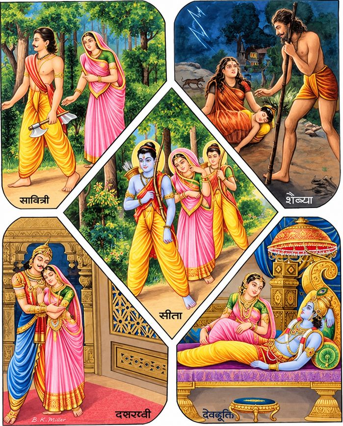
सावित्री, शैब्या, सीताजी, देवहूति औ दमयन्ती।
आर्यजगत्की परम पावनी पाँच सती ये कुलवन्ती॥
लड़कियोंकी शिक्षा
(लेखक—पं० श्रीकिशोरीदासजी वाजपेयी)
लड़कोंकी अपेक्षा लड़कियोंकी शिक्षामें विशेष सावधानी अपेक्षित है। सामान्यतः लड़कोंकी अपेक्षा लड़कियोंकी बुद्धि अधिक तेज होती है; परंतु शरीरमें (और मस्तिष्कमें भी) मृदुता भी अधिक होती है। यही कारण है कि गणित-जैसे शुष्क और बुद्धिग्राह्य विषयोंमें उच्च शिक्षा प्राप्त करनेवाली महिलाएँ शरीरसे प्रायः निस्तेज और निर्बल हो जाती हैं। ऐसी स्त्रियाँ स्वभावतः गृहस्थीमें दयनीय स्थिति उत्पन्न कर देती हैं। सदा बीमार रहनेसे वे स्वयं तो दुःखी रहती ही हैं, कुटुम्ब भी सुखी नहीं रहता। विद्या सुखके लिये होती है; पर यहाँ दुःखदायी हो जाती है। दूध और घी अमृत है, परंतु जितना पच सके। अन्यथा, विष भी बन सकता है। इसी तरह महाविद्यालय तथा विश्वविद्यालयकी शिक्षा भी समझिये, विशेषतः परीक्षा पास करानेवाली शिक्षा। परीक्षाओंके दुर्वह भारसे कठोर पुरुष-शरीर भी प्रायः दबकर क्षीण हो जाता है। फिर स्त्रीका तो कहना ही क्या! इसलिये उच्च शिक्षा देने-दिलानेके पहले माता-पिताको अपनी लड़कीकी रुचि तथा योग्यताके साथ-साथ शारीरिक स्थितिका भी ख़्याल कर लेना चाहिये। शक्तिके अनुसार ही काम अच्छा होता है। हाँ, साधारणतः मैट्रिक, सम्मेलनकी प्रथमा अथवा महिलाविद्यापीठकी ‘विद्याविनोदिनी’ परीक्षा तो प्रत्येक लड़कीके लिये एक तरहसे जरूरी ही है। परीक्षा न हो तो कम-से-कम इतनी योग्यता सही। इस अवस्थामें कुछ लड़कियोंका विवाह हो जायगा; कुछके लिये बातचीत चालू होगी। तबतक इंटर-सम्मेलनकी मध्यमा या विद्यापीठकी ‘विदुषी’ परीक्षा दी जा सकती है और यह पढ़ाई घरपर भी हो सकती है। बस, इसके बाद अधिक सोच-विचार करना है—अधिक अच्छा यही है कि इसी समय विवाह कर दिया जाय। आगे चलकर अपने पतिगृहसे भी उच्च परीक्षा वर्ष-दो-वर्षमें दी जा सकती है—यदि अनुकूल वातावरण हो। अन्यथा, घर-गृहस्थी चलाने योग्य और छोटे बच्चोंको घरपर ही साधारण शिक्षा देनेके लिये इतना पर्याप्त है। जिन्हें पढ़ना ही है और जिनका शरीर पूर्ण स्वस्थ है, साथ ही जो विवाहकी उतनी चिन्ता नहीं करतीं, वे आगे बढ़ सकती हैं। बी० ए० तथा एम्० ए० पास लड़कियोंके लिये वर मिलना प्रायः कठिन हो जाता है और तब इच्छा या अनिच्छासे उन्हें अविवाहित जीवन ही बिताना पड़ता है। आगे चलकर किसी समय यह एकाकी जीवन असहाय अवस्थाका अनुभव कराता है, विशेषतः बुढ़ापेमें। इसलिये मानव-जीवनमें एक साथीकी व्यवस्था की गयी है। हाँ, जो वैसा एकाकी जीवन पसंद करें, उनकी बात अलग है। किंतु किसी समय उन्हें भी पछताना पड़ेगा, यदि किसी विशेष उद्देश्यके बिना वैसा हो, तब बात और है। एक बार श्रीसुभाषचन्द्र बोससे किसीने पूछा—‘आप विवाह न करेंगे?’ उन्होंने तुरंत उत्तर दिया—‘मैं मातृभूमिके बन्धन काटनेमें लगा हुआ हूँ और इसलिये मुझे इतनी फुर्सत ही नहीं मिली कि इस महत्त्वपूर्ण विषयपर कुछ सोच पाता!’ यह है लगन! इसी तरह जिन्हें देशमें शिक्षा-प्रचार आदि कुछ करनेकी लगन हो, जो किसी व्रतके व्रती हों, उनकी बात दूसरी है। स्त्री हो चाहे पुरुष; संसारका सामान्य मार्ग छोड़कर जो अलग जाय, उसका कोई विशेष उद्देश्य होना चाहिये। अन्यथा वह पतित हो जायगा।
‘प्रकृतिं यान्ति भूतानि निग्रहः किं करिष्यति॥ ’
(गीता ३। ३३)
प्रकृतिपर विजय साधारण काम नहीं है, सबके वशकी बात नहीं है। इसलिये खूब सोच-समझकर आगे बढ़ना चाहिये।
अध्यापिकाओंकी बात
जब आप अपनी लड़कीको किसी शिक्षा-संस्थामें दाखिल कराना चाहें तब यह अच्छी तरह देख लें कि उसकी व्यवस्था किन लोगोंके हाथमें है! फिर आप यह देखें कि अध्यापिकाएँ वहाँ कैसी हैं! उत्तम वस्तु भी कुपात्रमें विष बन जाती है। आचरण बड़ी चीज है। आचरणहीन ज्ञान किस कामका? आजकल अध्यापक या अध्यापिकाकी नियुक्ति करते समय प्रायः यही देखा और पूछा जाता है कि कौन-सी परीक्षा पास हैं! यही कारण है कि ‘शिक्षित’ समाज राक्षस बनता चला जा रहा है। यदि किसी अध्यापकके किसी प्रत्यक्ष दुराचारकी ओर संस्थाके संचालकोंका ध्यान भी दिलाया जाय तो कह देते हैं—‘उँह! हमें किसीके प्राइवेट जीवनसे क्या मतलब?’ इसीलिये सब गुड़ गोबर हो रहा है। इस शिक्षासे क्या लाभ? दुश्चरित्र शिक्षितसे निरक्षर सीधा-सादा आदमी समाजके लिये अधिक अच्छा! भोजन तो वही अच्छा कहा जायगा, जिससे शरीरका पोषण हो। विष-मिश्रित भोजनसे तो भूखा ही रहना अच्छा। हमारे देशमें पहले आचार (कैरेक्टर)-पर सबसे अधिक ध्यान दिया जाता था। आचार्य शिष्यके ज्ञानसंवर्धनपर जितना ध्यान देता था, उससे सौ गुना उसके आचारपर। आदेश था—‘आचारं शिक्षयेदेनम्।’ जिसमें सदाचारका अभाव हो, उस महापण्डितकी भी इज्जत न होती थी। कहा है—
‘आचारहीनं न पुनन्ति वेदाः।’
आचारहीन व्यक्तिको वेद या ज्ञान पवित्र नहीं करता, उसे ऊँचे नहीं उठा सकता।
लड़कियोंकी शिक्षाके सम्बन्धमें तो यह बात अत्यधिक ध्यान देने योग्य है, और यह सब अध्यापिकाओंपर निर्भर है। इसलिये माता-पिताको चाहिये कि किसी शिक्षा-संस्थामें लड़कीको दाखिल करानेसे पहले यह सब भलीभाँति देख लें। इसके बाद भी संस्थामें माँ या बड़ी बहनोंको जाते-आते रहना चाहिये, जिससे सब गति-विधिका पता रहे और पढ़ाई-लिखाईकी जानकारी भी रहे।
अध्यापिकाओंके कुछ वर्ग हैं। किसी-किसी संस्थामें छोटी-छोटी लड़कियाँ ही पढ़ानेके लिये रख ली जाती हैं; प्रायः उसी संस्थासे मैट्रिक आदि जिन्होंने पास कर लिया। ऐसी लड़कियाँ जिस संस्थामें अधिक अध्यापिकाएँ हों, वहाँ पढ़ाई ठीक न होगी। अनुभवशून्यता, विद्यामें कमी, व्यवहार-अनभिज्ञता आदिके साथ-साथ अस्थिरता भी पढ़ाईके लिये बाधा है। ऐसी लड़कियाँ किसी संस्थामें वर्ष-दो-वर्षसे अधिक नहीं टिकतीं। विवाह हुआ और वे गयीं। सो जिस संस्थामें ऐसी अध्यापिकाएँ अधिक हों, वहाँ अपनी लड़कीको भेजना ठीक नहीं। पढ़ाई कुछ न होगी।
कुछ अध्यापिकाएँ ऐसी होती हैं, जो घरपर गृहस्थी सँभालती हैं और संस्थामें छः घंटे पढ़ाई-लिखाईका काम करती हैं। इन बेचारियोंकी दशा बड़ी दयनीय होती है। न घरका ही काम अच्छी तरह सँभल पाता है, न संस्थाका ही कर्तव्य निभता है। घरमें छोटे-छोटे बच्चे छोड़कर आयी हैं, उनकी चिन्ता है। वह भूखा होगा। वह रोता होगा। इनका मन पढ़ानेमें लगेगा? कुछ अध्यापिकाएँ अपने छोटे बच्चेको साथ संस्थामें ले जाती हैं। इससे पढ़ाईमें और भी बाधा पड़ती है। ऐसी (गृहस्थ) अध्यापिकाएँ जहाँ अधिक हों, वहाँ भी पढ़ाई ठीक न होगी। इसलिये ऐसी संस्थामें भी लड़कीको तभी दाखिल कराइये, जब अगति हो।
अध्यापिकाओंका एक वर्ग और भी है—जो बड़ी उम्रकी हैं, विवाह करनेकी बात भी नहीं और गृहस्थीकी झंझटमें भी नहीं हैं; परंतु इनकी अधिकता जहाँ हो वहाँ भी ठीक न होगा। इस वर्गमें या तो वे अध्यापिकाएँ हैं, जिन्होंने ‘मिस’ जीवन बिताना अपना लक्ष्य बनाया है और या फिर वे हैं जो किसी कारण पतिसे अलग होकर स्वतन्त्र रह रही हैं। ये दोनों ही अवस्थाएँ छात्राओंके जीवनपर कुछ अच्छा असर नहीं डालतीं। ऐसी अध्यापिकाएँ स्वभावतः ‘स्त्री-अधिकार’, ‘पुरुष-स्वार्थ’ आदिकी बातें करती हैं और ‘पुरुष निर्दय होते हैं’ आदि विषयोंपर लड़कियोंसे निबन्ध लिखवाती हैं। कोमलमति बालिकाओंके मस्तिष्कपर इसका प्रभाव पड़ता है। वे अपना दिमाग वैसा ही बना लेती हैं। विवाह होनेके बाद वे अपनी ससुरालमें उसी दृष्टिकोणसे सब देखती-सुनती हैं। ‘कर्तव्य’ की अपेक्षा ‘अधिकार’ पर ही उनका ध्यान अधिक रहता है। घरमें सरसताकी जगह शुष्कता आती है, खट-पट शुरू होती है और एक दिन ये भी अलग होकर अध्यापिका बन जाती हैं! यों यह परम्परा चलती है। ऐसी अध्यापिकाएँ स्वभावतः बहुत चिड़चिड़ी हो जाती हैं; क्योंकि जीवनके सरस सुखसे कभी इनका मेल ही नहीं हुआ। पढ़ाकर घर गयीं, रोटी-चौका-बर्तन! फिर कोई टॺूशन! फिर स्कूल! ऐसी अध्यापिकाएँ जहाँ होंगी वहाँ पढ़ी-लिखी लड़की शुष्क तथा अहम्मन्य हो जायगी। वह कर्तव्यकी उपेक्षा करेगी और जा-बेजा अधिकार-अधिकार चिल्लाती रहेगी। इसलिये ऐसी संस्थासे बचना चाहिये, जहाँ इस श्रेणीकी अध्यापिकाएँ हों।
अध्यापिकाओंकी एक और श्रेणी है। जो बड़ी उम्रकी विधवाएँ हैं, वे अच्छी अध्यापिकाएँ बन सकती हैं। अध्यापिका-पदके लिये यदि विधवा देवियोंको तैयार किया जाय तो ये सबसे अच्छा काम कर सकती हैं।
विधवाओंका पुनर्विवाह
आज समाजमें विधवा-विवाहकी धूम है। हम कहते हैं—
उपायं चिन्तयेद्धीमांस्तथापायं च चिन्तयेत्।
उपायके साथ अपायपर भी दृष्टि रखनी चाहिये। समाजमें स्त्रियोंकी संख्या अधिक है और इन्हें जीवन भी अधिक प्राप्त होता है। लड़कियोंके लिये वर ढूँढ़नेमें कितनी दिक्कत होती है! यदि विधवा-विवाह एकदम चालू हो जाय और जैसा कि लोग चाहते हैं, सब विधवाओंके विवाह करा दिये जायँ, साथ ही एक पुरुष अनेक स्त्रियोंसे विवाह न कर सके और विधुर भी विधवासे ही विवाह कर सके तो इसमें संदेह नहीं कि हमारे देशमें भी ‘मिस’ -जीवन यूरोप तथा अमेरिकाकी तरह दिखायी देगा। ये मिसें समाजके लिये, भारतीय समाजके लिये ठीक न होंगी। तब इनपर दया करके ‘मिस मैरेज सोसायटी’ कायम करके इनके लिये प्रचार करना होगा! विधवासे ‘मिस’ समाजके लिये कम चिन्तनीय है क्या? हाँ, जो नाममात्रकी ‘विधवा’ हैं या जो नाममात्रसे ‘विवाहिता’ होकर रह गयी हैं, उनका विवाह और बात है। रुचि तथा परिस्थिति देखकर इनके लिये अवश्य विवाहकी व्यवस्था होनी चाहिये और हमारा धर्मशास्त्र भी इसके लिये अनुमति देगा, परंतु बड़ी उम्रकी विधवाओंके लिये यह मार्ग उत्तम नहीं। देशमें स्त्री-शिक्षाकी जरूरत है। हमारी विधवा बहनें अपने त्याग तथा तपश्चर्याके जीवनसे यह काम कर सकती हैं। विधवा-वर्गसे अध्यापिकाएँ तैयार करनी चाहिये। फिर इनका जीवन सुखमय हो जायगा। एक उद्देश्यमें लग जानेसे इनका सुख दूसरे दुःखको दबा देगा। वे स्वतन्त्र भी हो जायँगी। फिर किसी कुटुम्बमें इनकी दयनीय स्थिति न रहेगी। अध्यापिकाएँ ऊँचे दर्जेकी मिलेंगी और पढ़ाई भी अच्छी होगी। फिर लड़कोंकी अपेक्षा लड़कियोंकी शिक्षाका स्तर नीचा न होगा; क्योंकि इनमें बुद्धि कम नहीं होती।
क्या ही अच्छा हो कि हमारे धनी-मानी सेठ-साहूकार मिलकर कहीं एक बहुत बड़ी ऐसी केन्द्रिय संस्था स्थापित करें, जहाँ विधवाओंको प्रारम्भिकसे लेकर उच्चतम श्रेणीतक शिक्षा देनेकी व्यवस्था हो और अध्यापन-कलाके शिक्षणकी भी व्यवस्था हो। यह संस्था ऐसी प्रभावपूर्ण तथा विश्वस्त हो कि देशभरसे विधवाएँ आ-आकर उसमें दाखिल हों और देशभरसे जहाँ अध्यापिकाओंके लिये माँग आया करे।
स्त्री-शिक्षा और सहशिक्षा
प्रायः सभी धार्मिक तथा विद्वान् महानुभावोंका यह मत है कि वर्तमान धर्महीन शिक्षाप्रणाली हिंदू नारियोंके आदर्शके सर्वथा प्रतिकूल है; फिर जवान लड़के-लड़कियोंका एक साथ पढ़ना तो और भी अधिक हानिकर है। इस सहशिक्षाका भीषण परिणाम प्रत्यक्ष देखनेपर भी मोहवश आज उसी मार्गपर चलनेका आग्रह किया जा रहा है। इसका कारण प्रत्यक्ष है।
जिन बातोंको हमारे यहाँ पतन समझा जाता है, वही बातें आजके जगत्की दृष्टिमें उत्थान या उन्नतिके चिह्न मानी जाती हैं। पश्चिमीय सभ्यताका आदर्श आज हमारे हृदयोंमें सबसे ऊँचा आसन प्राप्त कर चुका है, अतएव अंधे होकर उसकी ओर स्वयं अग्रसर होना और दूसरोंको ले जानेकी चेष्टा करना स्वाभाविक ही है।
पहले ‘समानशिक्षा’ पर कुछ विचार करें। शिक्षाका साधारण उद्देश्य है मनुष्यके अंदर छिपी हुई पवित्र तथा अभ्युदयकारिणी शक्तियोंका उचित विकास करना। परंतु क्या पुरुष और स्त्रीमें शक्ति एक-सी है? क्या पुरुष और स्त्रीकी शक्तिके विकासका क्षेत्र एक ही है? क्या सब बातोंमें पुरुषके समान ही स्त्रीको शिक्षा ग्रहण करनेकी आवश्यकता है? गहराईसे विचार करनेपर स्पष्ट उत्तर मिलता है—‘नहीं।’ दोनोंकी शरीर-रचनामें भेद है, दोनोंके कार्योंमें भेद है, दोनोंके हृदयोंमें भेद है और दोनोंके कर्मक्षेत्र भी विभिन्न हैं। अतः इस भेदको ध्यानमें रखकर ही शिक्षाकी व्यवस्था करनी चाहिये। इस प्रकृति-वैचित्र्यको मिटाकर आज हम प्रमादवश स्त्री-पुरुषको सभी कार्योंमें समान देखना चाहते हैं। इस असम्भव साम्यवादकी मोहिनी आशाने हमारी मतिको तमसाच्छन्न कर दिया है, इसीसे हमें आज प्रत्यक्ष भी अप्रत्यक्ष हो रहा है। ध्यानसे देखनेपर दोनोंमें दो प्रकारकी शक्तियाँ माननी पड़ती हैं और दोनोंके दो क्षेत्र भी साबित होते हैं। स्त्रियोंका क्षेत्र है घर, पुरुषका क्षेत्र है बाहर। स्त्री घरकी स्वामिनी है, पुरुष बाहरका मालिक है। ‘घर’ और ‘बाहर’ से यह मतलब नहीं कि स्त्री सदा घरके अंदर बंद रहे और पुरुष सदा बाहर ही रहे। स्त्री-पुरुष दोनों मिलकर ही एक सच्चा ‘घर’ है। पति बाहर जाता है, उसी ‘घर’ के लिये और स्त्री घरमें रहती है उसी ‘घर’ के लिये। इसी प्रकार आवश्यक होनेपर धार्मिक या सामाजिक कार्यके निमित्त स्त्री घरकी मर्यादाके अनुसार पति-पुत्रादिके साथ बाहर जाती है उसी ‘घर’ के लिये—‘घर’ को भूलकर स्वतन्त्र शौकसे नहीं। पति घरमें आता है ‘घर’ के लिये—‘घर’ को भूलकर, बाहरकी सफलतामें फूलकर, अभिमानमें डूबकर, हुकूमत करनेके लिये नहीं। घर-बाहरकी यह व्यवस्था, जाना-आना, मिलना-जुलना, कमाना-खाना, पाठ-पूजन, दान-पुण्य, आचार-व्यवहार—सब इस एक ही ‘घर’ को सुरक्षित और समुन्नत बनानेके लिये है।
स्त्रीको मातृत्वमें जो सुख है, घरकी स्वतन्त्रतामें जो आनन्द है, वह दफ्तरकी क्लर्कीमें कहाँसे मिलेगा? स्त्रीका खास क्षेत्र मातृत्व है। उसके सारे अंग आरम्भसे इस मातृत्वके लिये ही सचेष्ट हैं। वह मातृत्वका पोषण करनेवाले गुणोंसे ही महान् बनी है। वह माता बनकर ही बड़े-से-बड़े यशस्वी पुरुषोंको अवतरित करती है। सब प्रकारके पुरुषोचित बड़े-से-बड़े प्रलोभनोंपर लात मारकर—बहुत बड़ा त्याग करके ही नारी इस मातृत्वके गौरवपूर्ण पदको प्राप्त करती और सुखी होती है। जिस शिक्षासे इस मातृत्वमें बाधा पहुँचती है, जिस शिक्षामें स्त्रीके पवित्र मातृत्वके आधारस्वरूप सतीत्वपर कुठाराघात होता है, वह तो शिक्षा नहीं है, कुशिक्षा है।
एक पत्रमें प्रकाशित हुआ था कि एक फैशनेबल पाश्चात्त्य युवतीने अपने बालकको इसलिये मार डाला कि उसको रात्रिके समय खाँसी अधिक आती थी, इस कारण वह बहुत रोता था और इससे युवतीके सुख-शयनमें विघ्न होता था। एक युवतीने बच्चेके पालन-पोषणसे पिंड छुड़ानेके लिये आत्महत्या कर ली थी। मातृत्वका यह विनाश कितना भयंकर है? परंतु जिस उच्च शिक्षाके पीछे आज हम व्याकुल हैं, जिस सभ्यताका प्रभाव आजकी हमारी स्त्री-शिक्षाको संचालित कर रहा है, उस सभ्यताके मातृत्व-नाशका तो यही नमूना है! आज हम स्त्रियोंके मातृत्वका विनाश कर उन्हें नेतृत्व करना सिखाते हैं, परंतु यह भूल जाते हैं कि यदि मातृत्व या सतीत्वका आदर्श न रहा, यदि स्त्री अपने स्वाभाविक त्यागके आदर्शको भूल गयी—वह स्नेहमयी माँ, प्रेममयी पत्नी या त्यागमयी देवी न रही तो उसका नेतृत्व किसपर होगा!
याद रखना चाहिये कि विदेशी भाषामें बी० ए०, एम्० ए० हो जाना कोई खास शिक्षा नहीं है। परायी भाषा सीखकर ही कोई स्त्री विदुषी नहीं हो जाती, इसीसे उसमें कोई दिव्य गुण नहीं आ जाते। विदेशी भाषा सीखनेमें भी आपत्ति नहीं, यदि उससे कोई हानि न हो तो; परंतु अपनी शुद्ध संस्कृतिका बलिदान कर उसके बदले विदेशी भाषा सीखकर शिक्षिता कहलाना तो बहुत ही घाटेका सौदा है। इस शिक्षाके फलस्वरूप स्त्रियोंमें आजकल जो नवीन सामाजिक प्रयोग शुरू हुए हैं, उनसे भी उनकी और समाजकी नैतिक और धार्मिक दोनों ही दृष्टियोंसे यथेष्ट हानि हो रही है। इससे हमारा यह अभिप्राय नहीं है कि स्त्रियोंको पढ़ना-पढ़ाना नहीं चाहिये। द्रौपदी बहुत बड़ी विदुषी थी, राज्य-संचालन कर सकती थी और महाभारत-युद्धकी मन्त्रणा-सभामें भी वह अपने पतियोंके साथ रहती थी; परंतु वह आदर्श सद्गृहिणी भी थी। अहल्याबाई विदुषी और धर्मशीला थी। अतएव सद्गृहिणी होकर ही स्त्रियाँ विदुषी बनें। ऐसी ही पढ़ाईकी आवश्यकता है। इस दृष्टिसे आजकी युनिवर्सिटियोंकी शिक्षा नारी-जातिके लिये निरर्थक ही नहीं, वरं अत्यन्त हानिकर है। जो शिक्षा स्त्रियोंके स्वाभाविक गुण मातृत्व, सतीत्व, सद्गृहिणीपन, शिष्टाचार और स्त्रियोचित हार्दिक उपयोगी सौन्दर्य-माधुर्यको नष्ट कर देती है, उसे उच्च शिक्षा कहना सचमुच बड़े ही आश्चर्यकी बात है। जिस विद्यासे सद्गुण रह सकें और बढ़ सकें, उसी विद्याको पढ़ाकर नारियोंको विदुषी बनाना चाहिये और इसीकी आवश्यकता भी है। शिक्षा यथार्थ वही है जिससे संस्कृतिकी रक्षा तथा सद्गुणोंका विकास हो। यह जिसमें हो वही सुशिक्षिता है। इसलिये वर्तमान स्त्री-शिक्षामें आमूल परिवर्तन होना चाहिये और ऐसी शिक्षापद्धति बननी चाहिये जिससे नारीको अपने स्वरूपका तथा कर्तव्यका यथार्थ ज्ञान हो।
अब सहशिक्षापर विचार कीजिये। स्त्रियोंमें बहुत-से स्वाभाविक गुण हैं। उन्हीं गुणोंके कारण वे महान् पुरुषोंकी माताएँ बनती हैं। उन्हीं गुणोंका विकास करना स्त्री-शिक्षाका उद्देश्य होना चाहिये। परंतु साथ ही यह भी याद रखना चाहिये कि जो चीज जितनी बढ़ी-चढ़ी होती है, वह उल्टे मार्गपर चले तो उससे हानि भी उतनी ही अधिक होती है। स्त्रीको उन्नत बनानेवाले त्याग, सहनशीलता, सरलता, तप, सेवा आदि अनेक आदर्श गुण हैं। परंतु स्त्री यदि चरित्रसे गिर जाती है तो फिर उसके यही गुण विपरीत दिशामें पलटकर उसे अत्यन्त भयंकर बना देते हैं!
स्त्री-पुरुषके शरीरकी रचना ही ऐसी है कि उनमें एक-दूसरेको आकर्षित करनेकी विलक्षण शक्ति मौजूद है। नित्य समीप रहकर संयम रखना असम्भव-सा है। प्राचीन कालके तपोवनमें निर्मल वातावरणमें रहनेवाले जैमिनि, सौभरि, पराशर-सरीखे महर्षि और न्यूटन तथा मिल्टन-जैसे विवेकी पुरुष और वर्तमान कालके बड़े-बड़े साधक पुरुष भी जब संसर्ग-दोषसे इन्द्रिय-संयम नहीं कर सके तब विलासभवनरूप सिनेमाओंमें जानेवाले, गंदे उपन्यास पढ़नेवाले, तन-मन और वाणीसे सदा शृंगारका मनन करनेवाले, भोगवादको प्रश्रय देनेवाली केवल अर्थकरी विद्याके क्षेत्र कॉलेजोंमें पढ़नेवाले और यथेच्छ आचरणके केन्द्रस्थान छात्रावासोंमें निवास करनेवाले विलासिताके पुतले युवक-युवतियोंसे शुकदेवके सदृश इन्द्रिय-संयमकी आशा करना तो जान-बूझकर अपने-आपको धोखा देना है। परंतु क्या किया जाय, आज बड़े-बड़े दिग्गज विद्वान् भी यूरोपका उदाहरण देकर सह-शिक्षाका समर्थन कर रहे हैं, मतिवैचित्र्य है!
कुछ लोग संस्कृत नाटकोंके आधारपर प्राचीन गुरुकुलोंमें सहशिक्षाका होना सिद्ध करते हैं; परंतु उन्हें यह जानना चाहिये कि प्राचीन ग्रन्थोंमें कहीं भी कन्याओं और स्त्रियोंका ऋषियोंके आश्रमोंमें जाकर एक साथ पढ़नेका प्रमाण नहीं मिलता, गुरु-कन्याओंके साथ भाई-बहनके नाते ब्रह्मचारी गुरुकुलमें अवश्य रहते थे। परंतु गुरुकुलोंमें अत्यन्त कठोर नियम थे। सभी बातोंमें संयम था और आजकलके कॉलेज-होस्टलोंकी तरह विलासिता और स्त्री-पुरुषकी परस्पर कामवृत्ति जगानेवाले साधन वहाँ नहीं थे। इतनेपर भी कच-देवयानीके इतिहासके अनुसार कहीं-कहीं आकर्षण होनेकी सम्भावना थी ही। अतएव आजकलकी सहशिक्षाका समर्थन इससे कदापि नहीं हो सकता!
कुछ वर्षों पूर्व लाहौरके एक सुधारक-पत्रमें लड़के-लड़कियोंकी सहशिक्षाके विरोधमें एक जिम्मेदार सज्जनका लिखा एक लेख निकला था, जिसमें लिखा था कि ‘........की लेडी हेल्थ आफिसरकी घोषणाका स्वाध्याय किया जाय, जो उन्होंने.........के विद्यालयोंमें पढ़नेवाली विद्यार्थिनियोंके स्वास्थ्यकी देखभाल करके की है कि बारह वर्षसे ऊपरकी आयुवाली क्वाँरी लड़कियोंमेंसे ९० प्रतिशतके लगभग आसवती (गर्भवती) और गर्भपात करनेवाली पायी जाती हैं। यदि निष्पक्षतासे देखा जाय तो सब ओर यही आग लगी हुई है; परंतु माता-पिता और देशके नेता क्या सोच रहे हैं, यह हमारी समझसे बाहर है!’
९० प्रतिशत तो बहुत दूरकी बात है, १० प्रतिशत भी हो तो बहुत ही भयानक है। विश्वास नहीं होता कि यह संख्या सत्य है। सम्भव है छपनेमें भूल हुई हो; परंतु इतना तो अवश्य ही मानना पड़ेगा कि आजकल स्कूलोंमें पढ़नेवाली कुमारी कन्याओंके चरित्रोंके बिगड़नेकी सम्भावना बहुत अधिक है, और इसीलिये ऐसी घटनाओंकी संख्या दिनोंदिन बड़े वेगसे बढ़ रही है। और इसीसे आजकी ये लड़कियाँ सती सीता-सावित्रीके नामसे भी चिढ़ने लगी हैं।*
* कुछ वर्षों पूर्व ‘हिन्दुस्तान टाइम्स’ के प्रतिनिधिने शिमलाके एक सभ्य समाजका वर्णन करते हुए लिखा था कि एक श्रीमतीजीने प्राचीन स्त्रियोंका खूब मजाक उड़ाया; और एकने तो यहाँतक कह डाला कि सीता और सावित्रीको दफना दो, उन्होंने हमारा कौन-सा उपकार किया है। उन्होंने कहा—Sita could have done better than meekly allow her husband to persist in his foolish decision to go to the forest...........And I think Savitri could have better employed her time and energy than running after Yama to fetch her husband’ s soul.
‘रामने वनके लिये प्रस्थान करनेका जो मूर्खतापूर्ण निश्चय किया था, सीताको चाहिये था कि वह उसका विरोध करती, न कि चुपचाप उन्हें उसपर अमल करने देती..........और मेरी समझसे सावित्री भी पतिको पुनर्जीवित करनेके लिये यमके पीछे दौड़नेकी अपेक्षा अपने समय और शक्तिको किसी अच्छे काममें लगा सकती थी।’
यही नहीं, उन्होंने यहाँतक कह डाला, ‘निःसन्देह ये कहानियाँ स्त्रियोंके मनमें यह बात जमानेके लिये ही गढ़ी गयी हैं कि पतिके बिना उनका कोई (स्वतन्त्र) अस्तित्व नहीं है और हमें इसी भावके खिलाफ लड़ना है। इसलिये मेरी यह सम्मति है कि सीता और सावित्री-जैसी बावलियों (Opiates)-से, जिनके साथ हमें बार-बार घसीटा जाता है, देशके सर्वोत्तम हितोंके लिये जल्दी ही हमें अपना पिण्ड छुड़ा लेना चाहिये। और वह किसलिये? वे कहती हैं, ‘पतिकी पूजाको हम कतई बर्दाश्त नहीं करेंगी। हम न तो पति-परमात्माको चाहती हैं, न पत्नी-देवियोंको।’
जब लड़कियोंका यह हाल है, तब स्वेच्छाचारको ही आदर्श माननेवाली शिक्षिता वयस्का स्त्रीका क्या हाल हो सकता है, यह सोचते ही हृदय काँप उठता है। पाश्चात्त्य देशोंमें तो ऐसा होता था, पर अब यहाँ भी वैसा ही होने लगा। यही हमारी उन्नति है, यही हमारा जागरण है! इसलिये इस विषयपर गम्भीरतासे विचार करना चाहिये और प्रगतिके नामपर इस बढ़ती हुई पतनकी धाराको रोकनेका प्रयत्न करना चाहिये!
वर्तमान स्त्री-शिक्षामें परिवर्तनकी आवश्यकता
(लेखक—श्रीमती शकुन्तला गुप्ता बी० ए०, हिन्दी आनर्स)
इस दृष्टिसे भारतवर्ष अवश्य भाग्यवान् है कि यहाँकी जनताका ध्यान प्रतिदिन शिक्षाकी ओर आकर्षित होता जा रहा है। स्त्री-पुरुष और बच्चे सभी इस दिशाकी ओर उन्मुख हो गये हैं; परंतु किसके लिये कौन पथ श्रेयस्कर है, इसका निर्णय नहीं हो पा रहा है। लक्ष्यहीन पथिककी भाँति जिसके जीमें जिधर आता है वह उधर ही उड़ान मार रहा है।
अतः शिक्षाका युग होनेपर भी आश्चर्य है कि स्त्री-पुरुष किसीको भी अपने कर्तव्यका ध्यान नहीं है। पथका ज्ञान नहीं है। सोचनेपर हम इसी तथ्यपर पहुँचते हैं कि हमारी वर्तमान शिक्षा-पद्धति ही ऐसी है, जिसने युवक और युवतियोंकी पवित्र भावनाओंको नष्ट कर उन्हें परानुकरण-परायण बना दिया है और उन्हें शक्तिहीन बनाकर मानसिक परतन्त्रताकी शृङ्खलामें आबद्ध कर दिया है। उनके मस्तिष्कके लिये ऐसे विषय मिलते हैं, जो उनके सार्वजनिक जीवनके लिये अनुपयुक्त और हानिकारक सिद्ध होते हैं।
चकित कर देनेवाली सृष्टिके रचयिता विधाता अल्पज्ञ नहीं थे, जिन्होंने जीवन-शकट चलानेके लिये स्त्री और पुरुषको भिन्न-भिन्न रूपमें रचा और उनमें महत्त्वपूर्ण भेद उत्पन्न कर दिया। उनकी प्रकृति भिन्न बना दी। इस प्रकार आदिकालसे ही जब स्त्रियोंके कार्य-क्षेत्र पुरुषोंसे सर्वथा पृथक् हैं, फिर एक ही शिक्षा दोनोंके लिये किस प्रकार उपयोगी हो सकती है?
यह प्रवाह जिस प्रकार चल रहा है उसे देखते हुए कहना पड़ता है कि स्त्रियाँ भी आज बाह्य क्षेत्रमें पुरुषोंसे आगे बढ़ जानेके लिये होड़ ले रही हैं! यह पाश्चात्त्य शिक्षाका ही प्रभाव है, जिसने हमें बाहरसे भारतीय रखकर भी मनसे विदेशी बना दिया है। हमारी रग-रगमें दासता आ गयी है।
परिणाम प्रत्यक्ष है। सहस्रों युवक बी० ए० और एम्० ए० की डिग्रियाँ लेकर नौकरियोंके लिये प्रत्येक देहरी खटखटाते फिरते हैं। ‘No vacancy’ लिखित कार्यालयसे उनके हृदयपर कितना आघात पहुँचता है, इसका अनुभव वे ही करते हैं। इस शिक्षाने उन्हें वह कौशल नहीं दिया, जिससे वे श्रमपूर्वक जीविकोपार्जन कर सकें। क्षुधा-प्रपीड़ित ऐसे युवकोंकी आत्महत्याका वृत्तान्त समाचार-पत्रोंमें पढ़कर हृदय काँप उठता है।
सौभाग्यसे यदि उन्हें कहीं नौकरी भी मिली तो दफ्तरोंमें गौरवर्ण युवतियोंसे सम्पर्क हो जानेपर अपने घरकी सीधी-सादी अपढ़ (आजकलकी भाषामें) स्त्री मनको क्यों भाने लगी? अब तो उन गृहदेवियोंकी प्रत्येक क्रिया ‘नॉनसेंस’ और ‘ईडियट’ हो गयी। उन बेचारियोंने कभी चहारदीवारीसे बाहर पैरतक नहीं रखा, उन्हें हवाके रुखका पता कैसे लगे?
फलस्वरूप घरोंकी देवियाँ तिरस्कृत होने लगती हैं। पाश्चात्त्य शिक्षाके रंगमें रँगे युवककी पत्नीको भी पतिके हाथ-में-हाथ डालकर गिटपिट बोलती हुई क्लबोंमें जानेवाली होना चाहिये। इसका प्रभाव कन्याओंके माता-पिताओंपर पड़ा! पुत्रीको अच्छे परिवारमें देने और शिक्षित लड़केसे विवाह करनेके लिये अंग्रेजी पढ़ाना आवश्यक हो गया। धन फूँककर और पवित्र गृहिणी-धर्मसे दूर हटाकर उन्हें अपनी लड़कियोंको अंग्रेजी पढ़ाना और नवीन सभ्यताकी आँधीमें उड़ाना अनिवार्य हो गया। कन्या-विद्यालयोंकी भरमार हुई तथा छात्राएँ भी वर्षाकी भाँति बरसने लगीं। कुछ दिनोंमें और रंग पलटा और सहशिक्षाका प्रचार हो गया!
अब एक ओर सहस्रों ग्रेजुएट युवक जेबोंमें हाथ डाले घूम रहे हैं और दूसरी ओर सैकड़ों बी० ए०, एम्० ए० उपाधिविभूषिता युवतियाँ सज-धजकर तितलियोंकी भाँति एक पुष्पसे दूसरे पुष्पको सूँघती फिरती हैं। क्लबोंमें जाकर पुरुषोंके साथ भाँति-भाँतिके खेल खेले बिना उनका मनोरंजन नहीं होता। चौके-चूल्हेके तो नामसे ही रंग काला हो जाता है। आय हो या न हो; परंतु फैशनमें किसी प्रकार अन्तर नहीं आना चाहिये। नित नयी साड़ी पहने बिना और ड्रिंक किये तथा मीट खाये बिना एवं स्मोक किये बिना फैशन पूरा नहीं होता। लज्जा नामकी कोई वस्तु उनके पास फटकने नहीं पाती। क्लबों और पार्टियोंमें आधी-आधी राततक हँसी-मजाक होते रहते हैं। यह इस पिशाचिनी शिक्षाका ही प्रभाव है, फिर भी शिक्षा-संचालक शत-प्रतिशत परीक्षा-परिणाम दिखाकर जनताको चकित कर अपना नाम अमर करना चाहते हैं।
यहाँपर हम माता-पिताको भी निर्दोष नहीं कह सकते। जब कभी दुर्भाग्यवश कोई दुष्परिणाम होता है तो समाज सारा दोष युवतियोंके सिर मढ़ देता है; किंतु यदि विचार कर देखा जाय तो उस दोषमें माता-पिता तथा समाजका भी हाथ है, जिन्होंने युवक-युवतियोंको इतनी बेहद स्वतन्त्रता दे दी है। एक ओर पाश्चात्त्य सभ्यताकी सीढ़ीपर चढ़ाना चाहते हैं और दूसरी ओर युवतियोंको सीता-सावित्रीकी भाँति सती-साध्वी भी बनाना चाहते हैं। ‘एक म्यानमें दो खड़ग देखा, सुना न कान’ वाली कहावत यह देखकर तुरंत याद आ जाती है।
अब रहीं अध्यापिकाएँ। उनको दो घंटे रात रहते ही उठकर दिनके बाद आधी राततक काम करना पड़ता है, उनकी हड्डी-पसली एक हो जाती है, पूरा खानेको नहीं मिलता; फिर वे कब और कहाँ सदाचार सीखें? और एक-एक श्रेणीकी ५०-६० छात्राओंको पाठॺ विषयोंके अतिरिक्त कब और कैसे सदाचार सिखा दें? उनको तो इसी बातकी चिन्ता रहती है कि परीक्षाका परिणाम शत-प्रतिशत नहीं आया तो रोटियोंसे हाथ धोना पड़ेगा!
लड़कियाँ कीड़ेके समान पाठॺ पुस्तकोंसे चिपटी रहती हैं और परीक्षामें पास होनेकी बाट देखा करती हैं। साथ ही गंदे वातावरण तथा गंदी पुस्तकों एवं लेखोंके पढ़नेसे मानसिक विकार बढ़ते जाते हैं। परिणाम यह होता है कि यौवनसे पूर्व ही नाना प्रकारके रोग उत्पन्न हो जाते हैं, जो उनके शरीरको जर्जर कर देते हैं। विवाहके बाद दो-एक रुग्ण संतति पृथ्वीपर डालकर वे अपनी जीवन-लीला समाप्त कर देती हैं या आजीवन रोगिणी बनकर अपना तथा अपने पतिका जीवन नष्ट कर देती हैं। यह है आजकलकी हमारी स्थिति! और यह है शिक्षाका दुःखद परिणाम!! हमारी भारतीय देवियाँ धन और स्वास्थ्य खोकर एड़ी-चोटीका पसीना एक करके जो कुछ सीखती हैं, उसका उनके जीवनमें कोई उपयोग नहीं हो पाता।
संसारमें सबसे दुष्कर भार स्त्रीके कंधेपर है। मातृत्वका पद ग्रहण करना संसारका सारा दायित्व लेना है। इसके आगे आदर्श गृहिणी और आदर्श माता—यही दो कार्य रह जाते हैं। माताका उत्तरदायित्व शब्दोंद्वारा वर्णन करना कठिन है। परिवारके सारे कार्योंकी निरीक्षिका वही है। इस महान् दायित्वको समझने और पूर्ण ज्ञान प्राप्त करनेके लिये इस प्रचलित स्त्री-शिक्षा-पद्धतिमें क्या विधान है? यदि इसका उत्तर नहीं तो इस शिक्षाकी निरर्थकता भी स्पष्ट है।
परंतु अब हम आजाद हो गये हैं। हमें अवसर मिला है। अब हम शिक्षाके क्षेत्रमें क्रान्ति पैदा कर सकते हैं। प्रत्येक पुत्र-पुत्रीके माता-पिताका यह आवश्यक कर्तव्य है कि अनिवार्य शिक्षाके साथ-साथ अपनी संततिकी रुचिका ध्यान रखें। उसके मनोऽनुकूल शिक्षा देकर ही वे उसे आगे बढ़ा सकते हैं।
स्त्री-शिक्षा-संस्थाओं तथा संचालकोंका कर्तव्य है कि वे शिक्षा-प्रणालीपर गम्भीरतासे विचार करें। अन्य पाठॺ विषयोंके साथ स्त्रियोंके योग्य विषयोंका, जो उनके प्रतिदिनके क्रियात्मक जीवनमें सदुपयोगी हैं, समावेश अवश्य करें। पाश्चात्त्य भाषाको दूर कर भारतीय भाषासे प्रेम बढ़ायें।
स्त्री-पुरुषोंकी शिक्षामें दिन-रातका भेद होना चाहिये। स्त्रियोंके लिये गृह-विज्ञानकी शिक्षा जितनी आवश्यक होगी, उतनी साइंसकी नहीं। गृहस्थीके प्रत्येक कामकी जानकारी और काम करनेकी आदत उनके लिये आवश्यक है। नौकरोंके न रहनेपर काम रुक जाय, ऐसी स्थिति स्त्रीके लिये अत्यन्त कष्टकर होनी चाहिये।
अब वह समय है, जब युवतियोंको पत्नीके तथा गृहिणीके कर्तव्य तथा शिशुपालन आदिकी शिक्षा दी जाय। अब भावी माताओंकी ओर देश आशा और विश्वाससे देख रहा है। सच्ची सुशिक्षिता माताओंसे ही देशका भाल उच्च होनेकी सम्भावना है।
स्त्री-शिक्षाके सूत्रधारोंके दृष्टिकोणमें पर्याप्त परिवर्तन होना आवश्यक है। हमारी शिक्षा भारतीय देवियोंको विस्मृत एवं खोये हुए गौरवको पुनः प्राप्त करा देनेवाली, हमारी भारतीय संस्कृतिकी संरक्षिका तथा देशके भालको उज्ज्वल बनानेवाली होनी चाहिये।*
* लेख बड़ा था, स्थानाभावसे संक्षिप्त करके दिया गया है। —सं०
••••
पाणिग्रहणकी प्रतिज्ञा
(अनु०—श्रीगोविन्दजी झा)
गृभ्णामि ते सौभगत्वाय हस्तं मया पत्या जरदष्टिर्यथासः।
भगोऽर्य्यमा सविता पुरन्धिर्मह्यं त्वादुर्गार्हपत्याय देवाः॥
जीवनके इस पुण्य पर्वमें धरता हूँ मैं हाथ।
रहो सुहागभरी चिर दिन तुम, सुभगे! मेरे साथ॥
सुन्दरि! तुमसे मुझे मिलाया है देवोंने आज।
तुमको देता हूँ मैं अपने गार्हपत्यका राज॥
अमोऽहमस्मि माँ त्वं माँ त्वमस्यमोऽहम्।
सामाहमस्मि ऋक् त्वं द्यौरहं पृथिवी त्वम्॥
तुम लक्ष्मी हो, मैं तो अबतक था लक्ष्मीसे हीन।
सचमुच तुम लक्ष्मी हो, मैं था बिना तुम्हारे दीन॥
सुभगे! तुम हो ऋचा सामकी, मैं हूँ स्वरका लास।
तुम हो सुजला-सुफला धरणी, मैं निर्मल आकाश॥
तावेहि विवहावहै सह रेतो दधावहै।
प्रजां प्रजनयावहै पुत्रान् विन्दावहै बहून्॥
आओ, बाँधें प्राण परस्पर ले विवाहका सूत।
दें दुनियाँको मिलित शक्तिसे रचकर कई सपूत॥
ते सन्तु जरदष्टयः सम्प्रियौ रोचिष्णू सुमनस्यमानौ।
पश्येम शरदः शतं जीवेम शरदः शतं शृणुयाम शरदः शतम्॥
हम दोनों सुन्दर छवि लेकर रहें प्रेममें मग्न।
दोनोंके मानस हों मंगलमय भावोंमें लग्न॥
देखें शत शरदोंकी शोभा, जिएँ सुखी सौ वर्ष।
सुनें कोकिलोंके कलरवमें सौ वसन्तके हर्ष॥
(ऋग्वेद ८। ३। २७)
धर्मके नामपर पाप
यह सत्य है कि स्त्रियोंमें श्रद्धा-विश्वास अधिक है, धार्मिक भावना विशेष है; और यह भी सत्य है कि आज भी धर्मको बहुत कुछ स्त्रियोंने बचा रखा है। पढ़े-लिखे बाबुओंको जहाँ न तो अवकाश है और न श्रद्धा है, वहाँ उनकी माता और पत्नियाँ पुत्र और पतिकी मंगल-कामनासे, परलोकके विश्वाससे और आत्मोद्धारके उद्देश्यसे धर्मका आचरण, भगवान्का भजन, दान-पुण्य, अतिथि-सत्कार, पूजा-पाठ और व्रतोपवास करती हैं, कथा-कीर्तन सुनती हैं, मन्दिरोंमें देवदर्शनको जाती हैं और तीर्थोंमें जाकर संत-महात्माओंके दर्शन-सत्संग करती हैं। यह सभी कुछ मंगलमय है और इससे लोक-परलोक दोनोंमें अतुलित लाभ होता है; परंतु साथ ही यह भी सत्य है कि आजकल जैसे प्रायः सभी क्षेत्रोंमें दम्भ, धोखा, भ्रष्टाचार, अनाचार तथा ठगी चलती है, वैसे धर्म तथा अध्यात्मके क्षेत्रमें अनाचार और धोखाधड़ी बेशुमार चलती है। बल्कि यह भी कहा जा सकता है कि इस क्षेत्रमें आजकल अनाचारका विशेष प्राबल्य है। कई तीर्थोंमें तो खास तौरपर अनाचार तथा व्यभिचारके अड्डे बने हुए हैं। गुरुओंकी चारों ओर बाढ़ आ गयी है और लोगोंके मनोंमें, खास करके सरलहृदया स्त्रियोंके मनोंमें, ये संस्कार बद्धमूल कर दिये गये हैं कि ‘गुरुसे दीक्षा लिये (कानमें मन्त्र फुँकाये) बिना आत्मोद्धारकी कोई आशा ही नहीं है। गुरुका दर्जा भगवान्से भी ऊँचा है तथा गुरुको सर्वस्व अर्पण कर देना ही शिष्य या शिष्याका एकमात्र कर्तव्य है।’ सिद्धान्ततः यह सत्य है कि परमार्थ-मार्गमें सद्गुरुकी आवश्यकता है और गुरुके प्रति समर्पण-भाव अवश्य होना चाहिये; परंतु आजकल न तो प्रायः वैसे सद्गुरु ही दृष्टिगोचर होते हैं और न विशुद्ध आत्मसमर्पणका भाव ही। फिर स्त्रियोंके लिये तो एकमात्र पति ही परम गुरु माने गये हैं। उन्हें अन्य गुरु करनेकी आवश्यकता नहीं है। यह ठीक है कि देवदासी-प्रथा जैसे आरम्भमें देवताके प्रति शुद्ध समर्पण-भावकी द्योतक थी, परंतु पीछेसे उसमें महान् पाप आ गया, उसी प्रकार गुरुकरण-प्रथाका मूल भी पवित्र था, परंतु आजकल तो इसका बहुत बड़ा दुरुपयोग हो रहा है!
असलमें स्त्रियोंको पर-पुरुषमात्रसे ही दूर रहना चाहिये। स्त्री-पुरुषका पास-पास रहकर धर्मको बचाये रखना बहुत ही कठिन है। ऐसे सैकड़ों-हजारों उदाहरण हैं जिनसे सिद्ध है कि महात्मा, भक्त, आचार्य और पण्डित, पुजारी आदि कहलानेवाले लोगोंके द्वारा सरलहृदया स्त्रियोंका बहुत तरहसे पतन हुआ है और हो रहा है। कहीं भगवान् श्रीकृष्णकी महान् पवित्र लोकोत्तर व्रजलीला और गोपीप्रेमके नामपर पाप किये जाते हैं; कहीं मर्यादापुरुषोत्तम भगवान् श्रीराघवेन्द्रके नामपर रामविवाह आदिके प्रसंगसे स्त्री-समाजके सामने गंदे पद, गंदी गालियाँ गायी जाती हैं और नारी-समाजको पतनके गर्तमें ढकेला जाता है; तो कहीं गुरुदेव स्वयं भगवान्का स्वरूप बनकर शिष्याओंसे आत्मसमर्पण करवाते हैं। कहाँतक कहा जाय! अभी उस दिन हमें एक बहुत लंबा पत्र मिला है, जिसमें एक सज्जनने उनके गुरु-भगवान्के द्वारा उनकी धर्मपत्नीको किस प्रकार धर्मच्युत किया गया—इसका बड़ा ही रोमांचकारी वर्णन किया है। भगवान् और धर्मके नामपर भगवान्के मन्दिरमें, भगवद्विग्रहके सम्मुख ऐसे-ऐसे दुराचरण किये जाते हैं, जिनकी कल्पनासे भी महान् दुःख होता है। पर जब वस्तुतः ऐसा होता है, तब क्या कहा जाय! अतएव हमारी सरलहृदया, श्रद्धासम्पन्ना देवियोंको चाहिये कि वे अपने सतीत्वको ही सबसे बढ़कर मूल्यवान् धर्म समझें और किसी भी संत, महात्मा, गुरु, आचार्य, भक्त, प्रेमी, रसिक, देशसेवक, समाजसेवक आदिके कुसंगमें कभी न पड़ें; न तो एकान्तमें किसी भी परपुरुषसे मिलना चाहिये, न किसीका कभी स्पर्श ही करना चाहिये और न किसीको गुरु बनाकर या प्रेमी महात्मा मानकर गंदी चर्चामें अकेले या अन्यान्य स्त्रियोंके साथ सम्मिलित ही होना चाहिये। फिर वह चर्चा चाहे भगवान्की पवित्र लीलाके नामपर ही क्यों न की जाती हो। सच्चे संत-महात्मा, भक्त, प्रेमीजन ऐसा दुराचार कभी नहीं कर सकते। जो ऐसा करते हैं, वे संत-महात्माओंके वेषमें छिपे हुए पापी हैं, जो अपनी कुत्सित कामनाकी पूर्तिके लिये स्वाँग धारण करके इन पवित्र वेषोंको कलंकित कर रहे हैं; और सच तो यह है कि इस घोर कलियुगमें अधिकांश ऐसे ही हैं। अतः इनसे बचना ही चाहिये।
जैसे धर्मके क्षेत्रमें यह बुराई है वैसे ही राजनीतिक और सामाजिक क्षेत्रमें भी यह बुराई कम नहीं है। ‘बहिनजी’ कहकर पुकारनेवाले अनेकों दुष्ट व्यक्ति देशभक्त और समाज-सेवकका पवित्र बाना धारण किये हुए और स्त्री-समाजके दुःखोंके प्रति सहानुभूतिके आँसू बहाते हुए इसी प्रकारके कुकर्मोंमें रत रहते हैं। यह हमारा महान् पतन है, पर है कटु सत्य! सावधान!
पतिरेव गुरुः स्त्रीणाम्
(लेखक—पं० श्रीजानकीनाथजी शर्मा)
आज एक तरफ कुशिक्षासे प्रभावित व्यक्ति धर्मको रसातल भेजनेके लिये जमीन-आसमानके कुलाबे भिड़ा रहे हैं तो एक ओर शास्त्रज्ञानहीन अर्थ-काम-लम्पट व्यक्ति धर्मके नामपर घोर दुराचार फैला रहे हैं! इधर भारतमें श्रद्धालुओंकी यह दशा है कि ये ‘बाबावाक्यं प्रमाणम्’ समझते हुए धर्मध्वजियोंकी आज्ञाके पालनमें रत्तीभर भी कसर नहीं करते। शास्त्राभिज्ञोंसे यह बात छिपी नहीं है कि स्त्रीका गुरु पति ही होता है, किंतु इतनेपर भी ये अर्थलोलुप स्त्रियोंको चेली बनाते हैं और अवसर पाकर उनके धन और सतीत्वके भी अपहरणमें संकोच नहीं करते! सच पूछा जाय तो ये प्रच्छन्न नास्तिक ही सुधारकोंको धर्ममें दखल देनेका अवसर प्रदान करते हैं और आजकी दुरवस्थाकी बहुत कुछ जिम्मेदारी भी इन्हींके सिर है।
इसपर कुछ लोगोंका यह कहना है कि आचार-परम्परासे यह सिद्ध है कि स्त्रियोंको चेली बनानेमें कोई दोष नहीं। सर्वत्र ही स्त्रियाँ चेली की जाती हैं, यह सभी देशोंका आचार है, अतएव इसमें दोष नहीं; क्योंकि पहले देशाचार ही देखना चाहिये। देश-देशकी जो स्थिति हो, वही कर्तव्य होता है—
‘देशाचारस्तावदादौ विचिन्त्यो
देशे देशे या स्थितिः सैव कार्या।’
किंतु यह कथन निःसार है, क्योंकि शास्त्रसे अविरुद्ध आचार ही धर्ममें प्रमाण होता है। शास्त्रविरुद्ध आचार धार्मिक विषयोंमें प्रमाण नहीं हो सकता। वशिष्ठस्मृतिके प्रारम्भमें ही कहा गया है कि शास्त्रविहित कर्म ही धर्म है। शास्त्रप्रमाण न मिलनेपर ही शिष्टाचार प्रमाण होता है—
‘विहितो धर्मः। तदलाभे शिष्टाचारः प्रमाणम्।’
इस तरह उपर्युक्त सामान्य वचन इस विशेष वचनसे स्पष्ट ही बाधित हो जाता है। महाभारतके अनुशासनपर्वमें भी कहा गया है कि धर्म-जिज्ञासुके लिये सर्वप्रथम प्रमाण वेद ही हैं, धर्मशास्त्र द्वितीय और लोकाचार तृतीय प्रमाण हैं—
धर्म जिज्ञासमानानां प्रमाणं परमं श्रुतिः।
द्वितीयं धर्मशास्त्रं तु तृतीयं लोकसंग्रहः॥
असल बात तो यह है कि जिस विषयमें वेद या स्मृतिमें विधि या निषेध नहीं मिलता, उसी विषयमें देशाचार और कुलाचारसे धर्मका निरूपण किया जाता है—
न यत्र साक्षाद्विधयो न निषेधाः श्रुतौ स्मृतौ।
देशाचारकुलाचारैस्तत्र धर्मो निरूप्यते॥
विधानपारिजातमें तो यहाँतक कहा गया है कि जिस तरह वेदविरुद्ध स्मृतिका परित्याग किया जाता है, उसी तरह स्मृतिके विरुद्ध लोकाचारको भी त्याग देना चाहिये—
स्मृतेर्वेदविरोधे तु परित्यागो यथा भवेत्।
तथैव लौकिकं वाक्यं स्मृतिबाधे परित्यजेत्॥
भगवान् शंकराचार्यने भी कहा है कि शास्त्रविहित धर्मकी ही उपासना करनी चाहिये, अशास्त्रीय धर्म प्रचलित रहनेपर भी उपास्य नहीं—
सर्वत्र हि शास्त्रप्रापिता एव धर्मा उपास्या न विद्यमाना अप्यशास्त्रीयाः।
(छान्दो० शा० भा० २। २। १)
अतएव स्पष्ट है कि स्त्रियोंको चेली बनानेवाले धर्मध्वजी शास्त्रविरोधी हैं। उनका यह मनोमुखी आचार अनाचारमात्र है।
शास्त्रोंमें कहीं भी स्त्रीको गुरु करनेकी विधि नहीं कही गयी है, प्रत्युत पतिको ही गुरु कहा गया है। आदिकाव्य वाल्मीकीय रामायणमें ही अनेक स्थलोंपर यह बात सुस्पष्टरूपेण कही गयी है। इससे तत्कालीन आचारका भी पता लग जाता है। अनसूयाके द्वारा पातिव्रत्य-धर्मका उपदेश किये जानेपर आदर्श नारी भगवती सीता कहती हैं कि मुझे भी यह मालूम है कि स्त्रीका गुरु पति होता है—
विदितं तु ममाप्येतद्यथा नार्याः पतिर्गुरुः।
(वाल्मी० अयो० ११८। २)
रावणके द्वारा भगवान् रामकी निन्दा किये जानेपर फिर वे ही कहती हैं—
दीनो वा राज्यहीनो वा यो मे भर्ता स मे गुरुः।
(वाल्मी० उत्तर० ४८। १७)
निर्वासित होनेपर भी वे कहती हैं कि स्त्रीके लिये तो पति ही देवता, पति ही बन्धु तथा पति ही गुरु है; इसलिये उसे प्राणोंकी बाजी लगाकर भी विशेषरूपसे पतिका प्रिय करना चाहिये—
पतिर्हि देवता नार्याः पतिर्बन्धुः पतिर्गुरुः।
प्राणैरपि प्रियं तस्माद्भर्तुः कार्यं विशेषतः॥
(७। ४८। १७)
‘यद्वै किंच मनुरवदत्तद्भेषजम्’
(तैत्तिरीय सं० २। २। १०। २)
इस वेद-वाक्यसे समर्थित मनु महाराज भी कहते हैं कि स्त्रियोंके निमित्त पतिकी सेवा ही गुरुकुलवास है—
‘पतिसेवा गुरौ वासः’
(मनु० २। ६७)
बृहस्पतिने भी अगस्त्यपत्नी लोपामुद्राकी प्रशंसा करते हुए कहा है कि पति ही देवता, पति ही गुरु तथा धर्म, तीर्थ और व्रत भी पति ही है। इसलिये सब छोड़-छाड़कर स्त्री एक पतिकी ही पूजा करे—
भर्ता देवो गुरुर्भर्ता धर्मतीर्थव्रतानि च।
तस्मात्सर्वं परित्यज्य पतिमेकं समर्चयेत्॥
(स्कंदपु० काशीखं० ४। ४८)
तिर्यग्योनिगता कपोती भी अपने पतिसे कहती है कि ब्राह्मणोंके गुरु अग्नि हैं, सब वर्णोंका गुरु ब्राह्मण है, स्त्रियोंका गुरु उसका पति है और अभ्यागत सब लोगोंका गुरु है—
गुरुरग्निर्द्विजातीनां वर्णानां ब्राह्मणो गुरुः।
पतिरेव गुरुः स्त्रीणां सर्वस्याभ्यागतो गुरुः॥
(ब्रह्मपुराण ८०। ४७)
ब्रह्मपुत्री मोहिनी भी राजेन्द्र रुक्मांगदसे कहती है कि पति ही स्वामी, गति, देवता तथा गुरु है। उसपर वशीकरणका प्रयोग करनेवाली सुख कैसे पायेगी—
भर्ता नाथो गतिर्भर्ता दैवतं गुरुरेव च।
तस्य वश्यं चरेद् या तु सा कथं सुखमाप्नुयात्॥
(बृहन्नारदीय पुराण, उत्तरभाग १४। ४०)
महर्षि शातातपने भी कहा है कि स्त्रीका एक पति ही गुरु है—‘पतिरेको गुरुः स्त्रीणाम्।’ निर्णयसिन्धुकारने भी कहा है—‘रामायणमें पतिको गुरु कहा गया है’ और इसपर उन्होंने रामायण और शातातपके प्रमाण भी दिये हैं। वे लिखते हैं—
‘पित्रादयो महागुरवः स्त्रीणां पतिरेव गुरुः उक्तं च रामायणे—‘पतिर्बन्धुर्गतिर्भता दैवर्तं गुरुरेव च (शातातपः)।’ ‘पतिरेको गुरुः स्त्रीणां सर्वस्याभ्यागतो गुरुः।’
चाणक्यने भी उपर्युक्त श्लोकको दुहरा दिया है (देखिये चाणक्यनीति ५। १)। विस्तारभयसे अधिक प्रमाण उपस्थित नहीं किये जाते। यह नहीं कहा जा सकता कि ये श्रुति-वचन नहीं हैं, क्योंकि श्रुतिका विरोध न होनेसे तथा ‘अपि वा तुल्यत्वात् ’ (मीमांसादर्शन ६। २२), ‘वेदतुल्या हि स्मृतिः’, ‘वैदिका एव पदार्थाः स्मर्यन्ते इत्युक्तम्, स्मार्ताश्चैते वैदिक एव’ (शबरस्वामी) इत्यादि वचनोंसे स्मृति-पुराण वेदतुल्य ही ग्राह्य हैं। अतएव वैदिकोंके लिये सर्वथा मान्य हैं। विधवा और कुमारियोंके लिये भी अन्य गुरुका विधान नहीं; क्योंकि कन्याओंका विवाह ही उपनयनस्थानीय होनेसे गुरुकुलवास होता है और विधवा या तो पतिका अनुगमन करे या शील-संरक्षण करते हुए त्रिभुवन-गुरु भगवान्को ही गुरु समझती हुई पतिका ही ध्यान करे।
पतिमेवा समाध्यायेद् विष्णुरूपधरं हरिम्।
(स्कन्द० काशी० ४। ८१)
कर्तव्याकर्तव्यनिर्णयमें शास्त्र ही एकमात्र प्रमाण है—‘तस्माच्छास्त्रं प्रमाणं ते’, ‘सर्वस्य लोचनं शास्त्रम्’ इत्यादि। स्त्रीके लिये अन्य गुरुका विधान और उसके निमित्त तन-धन समर्पणकर स्वधर्मभ्रष्ट पतिता होनेका वचन शास्त्रमें नहीं मिलता। फिर भी जो कहीं छद्मवेषधारियोंद्वारा स्त्रियोंको चेली आदि बनाते देखा जाता है, वह अशास्त्रीय व्यवहार स्वच्छन्दतामात्र है। स्त्रियोंके लिये तो बस,
एकइ धर्म एक ब्रत नेमा।
कायँ बचन मन पति पद प्रेमा॥
पवित्र देवी-मन्दिर
शीत और उष्णमय इस जड जगत्में सबल शरीर वही कहा जा सकता है, जो नीरोग रहकर सहज ही शीतोष्णको सहन कर सके। उसी प्रकार इस सुख-दुःखमय संसारमें वह मन सबल कहा जा सकता है, जो समभावसे सुख-दुःखका उपभोग कर सके—‘दुःखमें अनुद्विग्नमना’ और ‘सुखमें विगतस्पृह’ रह सके। निरवच्छिन्न सुख किसीके भाग्यमें नहीं, दुःखका हिस्सा सबको लेना पड़ता है; अतएव वही शिक्षा शिक्षा है, जिसके द्वारा शरीर और मनका इस प्रकार गठन हो जिससे दुःखका बोझ सिरपर आ जानेपर भी कोई कष्ट न हो। सुखकी अभिलाषा ही करनी हो तो उस विशुद्ध और अनन्त सुखकी कामना करनी चाहिये, जिसका ह्रास नहीं होता तथा जो दुःखकी कालिमासे मिश्रित नहीं है। पतिके न रहनेपर दूसरा पति किया जा सकता है, परंतु पुत्र या कन्याके न रहनेपर उस अभावकी पूर्ति कैसे होगी? जिस मार्गपर चलनेसे सब अभावोंकी पूर्ति होती है, अर्थात् अभाव अभाव नहीं रह जाते, वह निवृत्तिकी ओर जानेवाला मार्ग प्रेय न होनेपर भी श्रेय है। उस मार्गसे जो चलते हैं वे स्वयं यथार्थ सुखी होकर अपने उज्ज्वल दृष्टान्तके द्वारा औरोंके दुःखके भारको पूर्णतः दूर नहीं कर सकते तो बहुत अंशमें उसे हलका कर देते हैं। हिंदू-विधवाएँ ब्रह्मचर्य और संयमके द्वारा देह और मनको विशुद्ध बनाकर उसी निवृत्ति-मार्गका अनुसरण करती हैं। उस सुपथसे हटाकर उनको विपथगामी बनानेकी चेष्टा करना न तो उनके लिये और न साधारण समाजके लिये ही हितकर है। हिंदू-विधवाके दुःसह कष्टकी बात सोचते समय हृदयमें बड़ी व्यथा होती है, परंतु उसकी अलौकिक कष्ट सहनेकी शक्ति तथा उसके असाधारण स्वार्थ-त्यागकी ओर देखनेपर मन एक साथ विस्मय और भक्तिसे परिप्लुत हो जाता है। हिंदू-विधवाओंने ही संसारमें पति-प्रेमकी पराकाष्ठा प्रदर्शित की है। उनकी उज्ज्वल शोभाने अनेकों दुःखरूपी अन्धकारसे आच्छन्न हिंदू-गृहोंको आलोकित कर रखा है। उनका दीप्तिमन्त दृष्टान्त हिंदू-नर-नारीकी जीवन-यात्राके लिये पथ-प्रदर्शनका काम करता है। उनका पवित्र जीवन पृथ्वीके ऊपर एक दुर्लभ वस्तु है। वह कभी पृथ्वीसे विलुप्त न हो। हिंदू-विधवाकी चिर-वैधव्य-प्रथा हिंदू-समाजका देवी-मन्दिर है। हिंदू-समाजमें सुधारके लिये बहुत-सी जगहें हैं, सुधारकोंके लिये बहुत-से काम हैं। बहुत-सी जगहोंको वर्तमान काल और अवस्थाके लिये उपयोगी बनाकर संगठित करना होगा। परंतु मेरी सानुनय प्रार्थना यह है कि वे विलास-भवनके निर्माणके लिये इस पवित्र देवी-मन्दिरको नष्ट-भ्रष्ट न करें।
—सर गुरुदास वन्दोपाध्याय
दुःखमय विधवा-जीवन
(लेखक—एक बहिन)
विधवा-जीवनका महत्त्व संयम और त्यागमें है। विधवा अपने सुख-दुःखको भूलकर, अपनी सुविधा-असुविधाका खयाल न कर अपनी पूरी शक्तिसे अनवरत सेवा करनेमें तत्पर रहती है। उसकी सेवाका दायरा पतितक ही सीमित नहीं रहता, वह अखिल जगत्पति भगवान्के स्वरूप समस्त जगत्को अपनी पवित्र सेवासे परितृप्त करना चाहती है। वह वैराग्य, त्याग, संयम, सदाचार और सेवाकी जीवित मूर्ति है। यह सारी बातें सत्य हैं और इस दृष्टिसे विधवा हिंदू-गृहकी शोभा है। पर यह शोभनीय विधवा तभी शोभाकी मूर्ति रह सकती है, जब उसे त्याग-संयमके लिये उचित अवसर मिले और अपने सेवा-भावका विकास करनेके लिये पर्याप्त सद्व्यवहार तथा अनुकूल वातावरण प्राप्त हो!
आज विधवाकी क्या दशा है—जरा विचार कीजिये। बारह-चौदह वर्षकी सुकुमार अवस्था है, जिसे ब्याह क्या वस्तु है—इसका भी पता नहीं, जो खेल-कूदके क्षेत्रमें रहने योग्य है। सास-ससुर आदिसे जहाँ प्यार मिलना चाहिये वहाँ वह दुत्कारी जाती है। पिशाचिन है, आते ही हमारे बच्चेको खा गयी, राँड़ कुभागिन है। किसीसे बोलती है तो बड़ी पापिन है; किसी समान उम्रकी लड़कीसे भी हँसकर बोलना चाहती है तो बेशर्म है; जुल्म न सह सकनेकी बात कहीं जीभपर भी लाती है तो बकवादिन और लड़ाकी; बच्चोंको किसी अनुचित बातपर टोकती है तो बच्चोंको देखकर कुढ़नेवाली; नौकर-चाकरसे कोई कामकी बात कहती है तो कुलटा; साफ-सुथरे कपड़े पहने तो शौकीन; कभी औरोंकी देखादेखी कुछ खाना चाहे तो चटोरी; हँसकर बोले तो महापापिनी; घरमें किसी बच्चेको कुछ बीमारी हो जाय तो डाइन; विवाह-शादीमें कहीं खड़ी हो जाय तो अमंगल चाहनेवाली और भजन-पूजन करना चाहे तो कामचोर है—यह सब सुननेको मिलता है। नौकर-चाकर भी अच्छी तरह उससे नहीं बोलते; बस, छोटे-बड़े सभीकी चाकरी करना उसका काम। जरा भी कहीं सुस्ताना चाहे तो लानत-मलामत। सास, ननद, देवरानी, जेठानी और भौजाईतकके ताने सुनना और चुपचाप उन्हें सहना। रोनेका भी अधिकार नहीं। बीमार हुई तो बहाने करती है। दुःख-दर्दकी कोई पूछनेवाला नहीं। सहानुभूतिसे कोई बोलनेवाला नहीं; अच्छा खाने-पीने-पहननेकी तो बात ही दूर—साधारण तथा घटिया भोजन-वस्त्र भी आवश्यकतानुसार समयपर नहीं मिलते। हिलना-मिलना, हँसी-खुशी, त्यौहार-पर्व, विवाह-शादी, सभीसे बहिष्कार तथा बात-बातमें कड़ाई! किसी मंगल-कार्यमें परछाईं भी न पड़े। सामने दीख गयी तो ससुर-देवरका ही नहीं, पिता और भाईका भी शुभ यात्राका मुहूर्त बिगड़ गया! सधवाके सामने आ गयी तो मानो उसका सोहाग ही लूट रही है? चक्की, चूल्हा, ऊखल, बर्तन, पानी, झाड़ू, घरके सभी काम उसीको करने हैं। बेचारी हक्की-बक्की रह जाती है। सोच भी नहीं सकती कि इतना सब उसीके साथ क्यों हो रहा है। मुख कुम्हला जाता है, खून सूख जाता है। शोक-विषादके मारे दिन-रात मन-ही-मन रोती है। विवाहके समय मुँह-देखनी आदिके कुछ रुपये हों, तो वे भी ऊपर-के-ऊपर हड़प लिये जाते हैं। जन्मभर दासीकी भी दासी होकर रहे तो कुत्तेकी तरह रोटीका टुकड़ा मिल जाय। फटा-पुराना कपड़ा मिल जाय। नहीं तो, वह भी नसीब नहीं!!
इस प्रकार स्नेहशून्य, मानवतारहित दारुण दुर्व्यवहारके साथ ही नीचवृत्तिके दुराचारी पुरुषोंकी कामदृष्टिका शिकार भी उसको होना पड़ता है। असहाय है—किससे कहे! घरके मालिक नीच, मुनीम-गुमाश्ते नीच, नौकर-चाकर नीच। फिर कहीं किसी साधु-महात्मा बने हुए लफंगेकी बातोंमें आ गयी तो वह सर्वनाश करनेको तैयार। गर्भ रह गया तो गुपचुप भ्रूणहत्याकी तैयारी या आत्महत्या। घरमें स्थान नहीं, नाक कटती है। बेचारी जीवे तो विधर्मी बने या वेश्या बने!
घरका वातावरण सात्त्विकता, सादगी, संयम और सेवाभावसे सर्वथा विपरीत। स्वाद, शौकीनी, सिनेमा, खेल-तमाशे, राग-रंग, हँसी-खुशी, छप्पन भोग, विलास-सामग्री, गंदी बातचीत और प्रत्यक्ष हास-विलासकी प्रचुरता। अब बताइये—इस स्थितिमें वह बेचारी पराधीन दुखिया पवित्र वैधव्यका निर्वाह कैसे करे! आजकल घर-घर जो बाल-विधवाओंकी संख्या बढ़ रही है, उनमें बहुत-सी ऐसी हैं जो पवित्र वैधव्यका मर्म समझना तो दूर रहा, विवाहका शास्त्रीय आदर्श भी नहीं जानतीं। विषय-सेवनके वातावरणमें जनमी हुई एवं विषयसेवनके वातावरणमें ब्याही गयी, और अब विधवा होते ही अकस्मात् संयम-तपकी मूर्ति बन जाय। यह कैसे संभव है?
ऐसी स्थितिमें समाजको तथा धार्मिक पुरुषोंको गम्भीरतापूर्वक सोच-विचारकर ऐसी व्यवस्था करनी चाहिये, जिससे विधवाओंकी संख्या-वृद्धिमें पूरी रुकावट हो, उनका जीवन सुख-शान्तिपूर्वक पवित्रतासे बीत सके और समाजपर बढ़ता हुआ पाप तथा महान् दुःखका भार कुछ हलका हो। अन्यथा न तो विधवाओंके दुःख-दर्दमें कमी आवेगी और न सचमुच पापमय होनेपर भी विधवा-विवाह ही रुकेंगे।
जिन पुरुषोंके मनमें कुछ भी मानवता और दया है एवं जिनको जरा भी धर्मरक्षाकी लगन है, उनको बहुत शीघ्र—केवल पवित्र वैधव्यका उपदेश देकर ही नहीं—क्रियात्मक रूपसे सुन्दर सफल व्यवस्था करनी चाहिये। चारों ओर आग लगी है, शीघ्र ही बुझानेका उपाय नहीं हुआ तो समाज और समाजका धर्म भस्मीभूत हो जायगा। निश्चित!
मेरे जीवनमें कैसे परिवर्तन हुआ
(लेखिका—एक सुखी विधवा)
मैं बारह वर्षकी थी, विवाह हुए छः ही महीने हुए थे, मैंने विवाहके समयके अतिरिक्त पतिदेवका मुख भी नहीं देखा था, तभी पतिदेवका परलोकवास हो गया। मुझपर वज्रपात हो गया। मैं रोना भी नहीं जानती थी; परंतु मेरा मन कितना व्याकुल था, उसमें कितनी असह्य पीड़ा थी, इसे मैं किसी प्रकार भी लिखकर नहीं बता सकती। मेरे माता-पिताका बुरा हाल था। उन्होंने मुझे जिस दुलार-प्यारसे पाला था और मेरे भावी सुखके जो-जो स्वप्न देखे थे, उनको अकस्मात् भंग हुआ देखकर वे अचिन्त्य दुःखराशिसे अभिभूत हो रहे थे। कुछ महीने तो यों ही बीते। फिर मेरे माता-पिता शान्तिकी खोजमें मुझे साथ लेकर तीर्थयात्राको निकले। घूमते-फिरते एक दिन हम लोग गंगा-तटपर एक वृद्ध महात्माकी कुटियापर पहुँचे। महात्मा अकेले बैठे थे। उनके चेहरेपर अपार शान्ति छायी थी। मेरे माता-पिताने धीरे-धीरे मेरी दशाका वर्णन किया और वे रो पड़े। महात्माने बड़ी ही सहानुभूतिके साथ उनको तथा मुझको समझाते हुए कहा—‘बेटी! मनुष्य-जीवनका परम लक्ष्य भगवत्प्राप्ति है। इसीसे शास्त्रकार ऋषियोंने विवाह-विधान काम-सुखभोगके लिये नहीं, परंतु काम-वासनाको संयमित करके भगवत्प्राप्तिके मार्गमें बढ़नेके लिये बनाया है। चरम उद्देश्य तो विषयवासनाका त्याग ही है। हमलोगोंने इसीलिये विषयोंका त्याग करके संन्यासीका बाना धारण किया है। तुम्हारा वह नरकोंमें ले जानेवाला, इहलोक और परलोकमें दुःख देनेवाला कामोपभोग छूट गया, इससे तुम तथा तुम्हारे ये भोले माता-पिता दुःखी क्यों होते हैं? क्या विषय-भोगसे कभी किसीको परम शान्ति, आत्यन्तिक सुख या मुक्ति मिली है? भगवान्ने गीतामें ‘काम’ को तो नरकका द्वार बतलाया है। मनुष्य भ्रमसे काममें सुख मानकर उसमें फँस जाता है। तुमपर तो भगवान्की असीम कृपा हुई है, जो उन्होंने तुम्हें कामके भीषण नरकसे निकाल लिया है। काम-सेवनमें तो दुःख-ही-दुःख है। बच्चे होते, मर जाते; दिन-रात प्रपंचमें मन रहता। भगवत्प्राप्तिके साधनके लिये अवकाश ही नहीं मिलता। तुम्हें तो भगवान्ने अनायास ही मनुष्य-जीवनकी सफलताका सुअवसर दे दिया है। आहार, निद्रा, भय, मैथुनादि तो पशुओंमें भी रहते हैं। अनादिकालसे जीव इन्हींमें तो रचता-पचता आया है। पता नहीं, कितने लाखों-करोड़ों जन्म यही करते बीते होंगे। विधवा न होकर कोई सधवा रहती है तो क्या होता है? वही बाल-बच्चे पैदा होते हैं। फिर यदि भगवान्ने तुमको वैधव्य देकर इस प्रपंचसे बचा लिया, बाल-बच्चे नहीं पैदा हुए, पशुओंकी तरह इन्द्रियोंके भोग नहीं भोगनेको मिले, तो कौन-सा नुकसान हो गया? एक जन्ममें ऐसा न हुआ तो क्या बिगड़ गया? फिर, यह विषय-भोग तथा संतानादिका मोह तो मुक्तिमें बाधक तथा बन्धनकारक है। विषयासक्त पुरुषको करोड़ जन्मोंमें भी भगवत्प्राप्तिका मार्ग नहीं सूझता। यदि भगवान्ने कृपा करके तुमको अपनी प्राप्तिका पथ दिखलाया है, संसारके आपातरमणीय किंतु परिणाममें महान् दुःख देनेवाले विषयोंसे अलग करके शीघ्र अपने पास आनेकी सुविधा कर दी है, तो इसमें तो तुमको प्रफुल्लित होना चाहिये। विषय-त्यागी ही वस्तुतः बड़भागी है। विषय-सेवनमें लगे हुए लोग तो भाग्य-फूटे हुए हैं। भगवान् शिवजीने कहा है—
‘सुनहु उमा ते परम अभागी।
हरि तजि होहिं बिषय अनुरागी॥ ’
‘बेटी! तेरे भाग्य नहीं फूटे हैं। तू तो अपनेको सौभाग्यवती समझ, जो परम पुरुष श्रीभगवान्के देव-दुर्लभ चरण-कमलोंको प्राप्त करनेके लिये साधना करनेका तुझे सुअवसर मिला है। जा, निश्चिन्त होकर भगवान्का भजन कर, अपने इस निवृत्तिमय जीवनको भगवान्का आशीर्वाद समझ। गृहस्थाश्रमके अनन्त झंझटों, दुःखों और विषयसेवनसे होनेवाले पापों तथा परिणामस्वरूप प्राप्त होनेवाले महान् दुःखोंसे तू छूट गयी है, इसे अपना सौभाग्य समझ और परम आनन्द तथा शान्तिके साथ भगवत्-साधन करती हुई स्वयं शाश्वती शान्ति और आत्यन्तिक आनन्द प्राप्त कर तथा अपने आदर्शसे तेरे-जैसी अन्यान्य बहिनोंके जीवनमें भी आनन्द-सुधाका प्रवाह बहा दे। जा! भगवान् तेरा मंगल करेंगे।’
महात्माके सारे शब्द ज्यों-के-त्यों तो मुझे याद नहीं हैं। परंतु अधिकांश शब्द वे ही हैं, जो मैंने ऊपर लिखे हैं। पता नहीं, कैसे क्या हुआ! महात्माके शब्दोंने उसी समय मेरे जीवनमें आश्चर्यमय परिवर्तन कर दिया। मेरे आँसू सदाके लिये सूख गये। मेरा जीवन आनन्द और शान्तिसे भर गया। मैं आज भी अत्यन्त सुखी हूँ और बड़ी पवित्रताके साथ मेरा विषय-निवृत्त जीवन परम शान्तिके साथ बीत रहा है। मैं अनुभव कर रही हूँ कि सचमुच भगवान्ने बड़ी ही दया की थी। मैं यदि संसारके विषयोंमें फँसी रहती तो पता नहीं, मेरी किस नरकमें जानेकी भूमिका बनती। मैं अपनी विधवा बहिनोंसे निवेदन करती हूँ कि वे काम-सुखको सुख मानकर उसके लिये लालायित न हों, दुःख जरा भी न मानें। संसारके तमाम दुःखोंको भगवान्का आशीर्वाद मानकर सिर चढ़ावें और अपने जीवनको त्याग-वैराग्यमय, निवृत्तिपरक तथा अत्यन्त सादा बनावें एवं दिन-रात भगवान्की ओर चित्तवृत्तिका प्रवाह बहानेकी चेष्टा करें। आप निश्चय समझें, ऐसा करनेपर आप तो तरेंगी ही, आपका जीवन तो परम सुखसे बीतेगा ही, आप और भी बहुतोंके जीवनको पवित्र, सुख-शान्तिमय बनाकर उनको संसार-सागरसे तारनेमें सहायक होंगी। यही मनुष्य-जीवनका परम लक्ष्य है और किसी भी जीवको इस ओर लगा देनेसे बढ़कर उसका कोई भी उपकार नहीं हो सकता!!
विधवा-जीवनको पवित्र रखनेका साधन
विधवाका दुःख अकथनीय है, उसका अनुमान दूसरा कोई भी नहीं कर सकता; परंतु यह भी परम सिद्ध है कि विधवाकी कामवासनाको जगाकर उसे कामोपभोगमें लगानेसे, उसे विषयसेविका बनानेसे, उसके पुनर्विवाहकी व्यवस्था कर देनेसे उसका दुःख नहीं मिट सकता। दुःखका कारण है—हमारे अपने ही कर्म। और भविष्यमें यदि हम सुख चाहते हैं तो हमें वैसे ही संयमपूर्ण सत्कर्म करने चाहिये, जिनका परिणाम सुख हो। विषय-सेवनकी सुविधाका परिणाम सुख नहीं होगा। स्त्री विधवा क्यों होती है, इसका कारण है—स्त्रीके पूर्वजन्मका असदाचार। यदि यहाँ भी वह पुनः असदाचारमें प्रवृत्त होगी तो उसका भविष्य और भी संकटपूर्ण होगा। सती अनसूयाजीने कहा है—
बिनु श्रम नारि परम गति लहई।
पतिब्रत धर्म छाड़ि छल गहई॥
पति प्रतिकूल जनम जहँ जाई।
बिधवा होइ पाइ तरुनाई॥
स्कन्दपुराणमें कहा गया है—
या नारी तु पतिं त्यक्त्वा मनोवाक्कायकर्मभिः॥
रहः करोति वै जारं गत्वा वा पुरुषान्तरम्।
तेन कर्मविपाकेन सा नारी विधवा भवेत्॥
‘जो नारी अपने पतिको त्यागकर मन, वचन, शरीर तथा कर्मसे जारका सेवन करती है, दूसरे पुरुषके पास जाती है, वह उस कर्मके फलस्वरूप जन्मान्तरमें विधवा होती है।’
यहाँतक कि पापोंके कारण पुरुषोंको भी अगले जन्ममें स्त्री-योनिमें जन्म लेकर विधवा होना पड़ता है—
यः स्वनारीं परित्यज्य निर्दोषां कुलसम्भवाम्।
परदाररतो हि स्यादन्यां वा कुरुते स्त्रियम्॥
सोऽन्यजन्मनि देवेशि स्त्री भूत्वा विधवा भवेत्।
(स्कन्दपुराण)
श्रीशंकरजी उमा देवीसे कहते हैं—‘हे देवेश्वरी! जो पुरुष अपनी निर्दोष तथा कुलीन पत्नीको छोड़कर परस्त्रीमें आसक्त होता है या दूसरी स्त्रीको पत्नी बनाता है, वह जन्मान्तरमें स्त्री-योनिमें जन्म लेकर विधवा होता है।’
इससे यह सिद्ध होता है कि विधवापन पूर्वकर्मके फलस्वरूप ही मिलता है। इसका नाश शुभकर्म, तपस्या या भगवद्भजनसे ही होगा। पुनर्विवाह या विषय-सेवनसे यह दोष दूर नहीं हो सकता। वरं उससे तो दोष और भी बढ़ जायगा, जो जन्मान्तरमें विशेष दुःखका कारण होगा। मुक्ति तो प्राप्त होगी ही नहीं, मानव-जीवन भावी दुःखोंकी विशाल भूमिका बन जायगा। इसीलिये विधवा स्त्रीको पतिके अभावमें तन्मय होकर परमपति भगवान्में मन लगानेका आदेश दिया गया है।
हिंदू-स्त्रीका विवाह कोई सौदा नहीं है, जो तोड़ा जा सके। वह तो सदा अटूट रहता है। पतिके परलोकगमन करनेपर भी वह ज्यों-का-त्यों बना रहता है।
आज हिंदू-विधवाकी ओरसे समाजमें जो एक ओर उदासीनता और दूसरी ओर उत्साह देखा जाता है, वह दोनों ही उसके लिये वस्तुतः महान् विपत्तिस्वरूप हैं। एक ओर तो समाजके पुरुष विधवाको भाँति-भाँतिसे दुःख देकर उसे धर्मच्युत करके पथभ्रष्ट करते हैं और दूसरी ओर उसपर दया दिखाकर उसे कामकी विषबेलिका सेवन करनेको उत्साहित करके पथभ्रष्ट करते हैं। ऐसी अवस्थामें विधवाके जीवनका दुःखमय होना स्वाभाविक है और विधवाकी दुःखभरी आहसे समाजका अमंगल भी अवश्यम्भावी है। इस विनाशसे समाजको बचाना हो तो विधवाके साथ बहुत सुन्दर, पवित्र और आदरपूर्ण व्यवहार करना चाहिये और साथ ही उसका जीवन पवित्र संन्यासीके जीवनकी भाँति त्यागमय रह सके, इसकी व्यवस्था तथा इसीका प्रचार करना चाहिये। विधवा-जीवनको पवित्र तथा सुखी बनानेके कुछ उपाय ये हैं—
(१) विधवा-जीवनके गौरवका ज्ञान विधवाको कराना। उसको यह हृदयंगम करा देना कि विधवा-जीवन घृणित और दुःखमय नहीं है, बल्कि पवित्र दैवी जीवन है, जिसमें भोग-जीवनकी समाप्तिके साथ ही आत्यन्तिक सुख और परमानन्दकी प्राप्ति करानेवाले आध्यात्मिक जीवनका आरम्भ होता है। उसे समझाना चाहिये कि मनुष्य-जीवनका लक्ष्य भगवत्प्राप्ति है। विषयसेवनसे विषयोंमें आसक्ति-कामनादि बढ़ते हैं। अतः विषयसेवन करनेवाली सधवा स्त्रियोंको भगवत्प्राप्तिकी साधनाका जो सुअवसर न मालूम कितने जन्मोंके बाद मिल सकेगा, वह उसको इसी जन्ममें अनायास मिल गया है। इसलिये वस्तुतः वह पुण्यशालिनी और भाग्यवती है; और जैसे विषयविरागी त्यागी संन्यासी सबके पूज्य, आदरणीय और श्रद्धास्पद होते हैं, वैसे ही वह भी पूजनीय और श्रद्धाकी पात्र है। सुख-दुःख किसी घटनामें नहीं, बल्कि मनके अनुकूल तथा प्रतिकूल भावोंमें है। एक संन्यासी स्वेच्छासे विषयोंका त्याग करके निवृत्तिमय जीवन बिताता है, इससे उसको सुखका अनुभव होता है; और दूसरे एक आदमीको उसका सब कुछ छीनकर कोई जबरदस्ती घरसे निकाल देता है, उसको बड़ा दुःख होता है। दोनोंकी विषय-सुखहीनताकी बाहरी स्थिति एक-सी है; फिर एकको सुख, दूसरेको दुःख क्यों होता है? इसीलिये कि एक इस स्थितिमें अनुकूलताका अनुभव करता है और दूसरा प्रतिकूलताका। संसारीके लिये कामिनी-कांचन, विषय-भोगादि सुखरूप हैं; वही मनोभावना बदल जानेसे विरक्त संन्यासीके लिये दुःखरूप हो जाते हैं और संन्यासीके लिये जो त्याग सुखरूप है, उसमें संसारीको दुःखकी अनुभूति होती है। अतः विधवामें यदि ऐसी बुद्धि पैदा कर दी जाय कि विधवाका विषय-विरहित जीवन उसके लिये परम गौरवकी वस्तु है तथा मानव-जीवनके परम लक्ष्य भगवत्प्राप्तिका श्रेष्ठ साधन है—इससे उसका जीवन अनादरणीय तथा कलंकमय नहीं हो गया है, वरं आदरणीय और गौरवमय हो गया है और सबको उसके साथ वस्तुतः ऐसा ही आदर, श्रद्धा तथा पूज्यभावका बर्ताव भी करना चाहिये—इससे विधवा अपने जीवनमें सुखका अनुभव करेगी और उसका जीवन पवित्र तथा संयमपूर्ण बना रहेगा।
(२) विधवा ससुरालमें हो तो सास-ससुरको और पीहरमें हो तो माता-पिताको विलासक्रियाका सर्वथा परित्याग कर देना चाहिये तथा अपने जीवनको सादा-सीधा, संयमपूर्ण वानप्रस्थके सदृश तपोमय बनानेकी चेष्टा करनी चाहिये। इससे विधवाको बड़ा सन्तोष होगा, उसका विषयोंकी ओर आकर्षण नहीं होगा और उसके धर्मच्युत होनेका भी डर नहीं रहेगा। उसके सामने घरवालोंका जो पवित्र आदर्श रहेगा, वह उसके कर्तव्यपालनमें बल और उत्साह प्रदान करेगा। यह कार्य कठिन है, परंतु है बहुत ही लाभदायक और अवश्यकर्तव्य।
इसीके साथ घरके अन्यान्य स्त्री-पुरुषोंको भी विषय-सम्बन्ध बहुत सावधानीसे करना चाहिये, जिससे विधवाका ध्यान उधर न जाय।
(३) विधवाका कभी तिरस्कार या अपमान नहीं करना चाहिये। उसे कटुवाक्य कभी नहीं कहना चाहिये। उसे घरकी देवी समझना चाहिये। ऐसा मानना चाहिये कि उसका स्थान सधवा माता और सासकी अपेक्षा भी ऊँचा है। विधवा कोई सत्कार्य, दान, व्रतोत्सव, उद्यापन आदि करना चाहे तो अपने घरकी शक्तिके अनुसार विशेष उत्साह, धनव्यय और सहयोगके साथ उसको कराना चाहिये। उसमें जरा भी कृपणता नहीं करनी चाहिये। उसके पास सात्त्विक कार्य अधिक-से-अधिक बने रहने चाहिये, जिससे उसके मनको विषयभोगोंकी ओर जानेका अवसर ही नहीं मिले।
(४) विधवाके हृदयकी प्रेमधारा परिवारभरके सभी बालकोंके प्रति बहने लगे—इसके लिये उसे सुअवसर, सुविधा तथा उत्साह प्रदान करना चाहिये। उसके प्रेम, परोपकार तथा सेवावृत्तिको आदर तथा गौरवके साथ जगाना चाहिये। वह घरभरमें सब बच्चोंकी स्नेहमयी माँ बन जाय तो उसको अपना जीवन पवित्रतासे बितानेमें बड़ी सहायता मिल सकती है।
(५) विधवाको तिरस्कार या अपमानके भावसे नहीं, किंतु उसके स्वरूपके गौरवके लिये सादा जीवन बितानेके लिये प्रोत्साहित करना चाहिये। विधवा सदाचारिणी हो, खान-पानादिमें संयम-नियमका पालन करे, तामसी-राजसी वस्तुओंका खान-पान-सेवन त्याग दे, अलंकार तथा रंगीन कपड़े न पहने१ (इनसे स्वाभाविक उत्तेजना होकर ब्रह्मचर्यव्रतको हानि पहुँचती है, यह वैज्ञानिक रहस्य है); इधर-उधर लाज छोड़कर न घूमे, शारीरिक परिश्रम अवश्य करे, नाटक-सिनेमा कभी न देखे, गंदे चित्रों और पुस्तकोंका अवलोकन न करे, स्त्रियोंसे परस्पर विषयसम्बन्धी चर्चा न करे, पुरुषोंके संस्रवसे सदा बचे, अकेली पुरुषोंके साथ न रहे; किसी भी पुरुषको गुरु बनाकर उसके चरण छूने, उसके अंगोंका स्पर्श करने, पैर दबाने, एकान्तमें उसके पास रहने आदिसे सावधानीके साथ अवश्य बचती रहे, फिर चाहे वह कितना ही बड़ा भक्त, महात्मा या त्यागी-संन्यासी ही क्यों न हो; विधवा स्त्री एकमात्र भगवान्को ही परम पति और परम गुरु माने; रातको कमरेमें अकेली या अन्य स्त्रियाँ हों तो उनके पास सोवे; घरमें शिशु हों तो एक-दो शिशुओंको अपने पास जरूर सुलावे; शृंगार न करे; नित्य भगवन्नाम-जप, इष्टपूजन, गीता-रामायणादिके पाठका नियम रखे; सद्ग्रन्थोंका स्वाध्याय करे; और हो सके तथा शरीर माने तो बीच-बीचमें चान्द्रायणादि व्रत भी करे। शारीरिक, वाचनिक और मानसिक तपोंका आचरण करे२; संन्यासी तथा ब्रह्मचारीके लिये सात्त्विक भोजन, मन-वाणीके संयम और सदाचारके जो नियम शास्त्रोंमें वर्णित हैं, विधवा देवी उनका पालन करे।
१. हारीतसंहितामें आता है—
केशरञ्जनताम्बूलगन्धपुष्पादिसेवनम्।
भूषणं रङ्गवस्त्रं च कांस्यपात्रेषु भोजनम्॥
केशरंजन करना, पान खाना, गन्ध-पुष्पादिका सेवन करना, आभूषण धारण करना, रंगीन वस्त्र पहनना और काँसीके बर्तनमें भोजन करना—इनका विधवाको त्याग करना चाहिये।
२. श्रीमद्भगवद्गीताके सतरहवें अध्यायमें बतलाया गया है—
देवद्विजगुरुप्राज्ञपूजनं शौचमार्जवम्।
ब्रह्मचर्यमहिंसा च शारीरं तप उच्यते॥
अनुद्वेगकरं वाक्यं सत्यं प्रियहितं च यत्।
स्वाध्यायाभ्यसनं चैव वाङ्मयं तप उच्यते॥
मनःप्रसादः सौम्यत्वं मौनमात्मविनिग्रहः।
भावसंशुद्धिरित्येतत्तपो मानसमुच्यते॥
(१७। १४—१६)
देवता, ब्राह्मण, गुरुजन और ज्ञानी पुरुषोंका पूजन, पवित्रता, सरलता, ब्रह्मचर्य और अहिंसा—यह शरीर-सम्बन्धी तप कहा जाता है।
उद्वेग न करनेवाला, प्रिय, हितकारक और यथार्थ भाषण एवं स्वाध्यायका अभ्यास—यह वाणी-सम्बन्धी तप कहा जाता है।
मनकी प्रसन्नता, सौम्यता, ईश्वरका मनन, मनका निग्रह और अन्तःकरणकी भलीभाँति शुद्धि—यह मानस-सम्बन्धी तप कहा जाता है।
इस प्रकार संयमित जीवन रखकर भगवद्भजन, शास्त्रचर्चा, हरिकथा, वैराग्य, त्याग तथा पातिव्रत्यकी महिमा बतलानेवाले ग्रन्थोंका पठन-अध्ययन, आध्यात्मिक सदुपदेशोंका श्रवण-मनन, भगवान्के विग्रहकी उपासना आदि करनेसे विधवाका जीवन साधनामय हो जायगा। उसे यहाँ सुख-शान्ति मिलेगी और अन्तमें मुक्ति!
(६) बाल-विवाह और वृद्ध-विवाहकी प्रथा बंद कर देनी चाहिये। लड़कियोंका विवाह बहुत छोटी अवस्थामें नहीं करके अपने-अपने प्रान्तकी स्थितिके अनुसार रजस्वलासे पूर्व करना चाहिये और लड़कियोंमें धार्मिक शिक्षाका प्रसार अवश्य होना चाहिये, जिससे उनके जीवनमें सतीत्वका गौरव जाग्रत् होकर अक्षुण्ण बना रहे।
(७) विधवाओंकी धन-सम्पत्तिको देव-सम्पत्ति मानकर बड़ी ईमानदारीसे उसका संरक्षण करना चाहिये। विधवाके हकको मारना तथा उसकी सम्पत्तिपर मन चलाना और हड़पना महापाप है—
विधवा नारीके सम्बन्धमें मनु महाराज (मनु० अ० ५ में) कहते हैं—
कामं तु क्षपयेद्देहं पुष्पमूलफलैः शुभैः।
न तु नामापि गृह्णीयात्पत्यौ प्रेते परस्य तु॥ १५७॥
आसीतामरणात् क्षान्ता नियता ब्रह्मचारिणी।
यो धर्म एकपत्नीनां कांक्षन्ती तमनुत्तमम्॥ १५८॥
मृते भर्तरि साध्वी स्त्री ब्रह्मचर्ये व्यवस्थिता।
स्वर्गं गच्छत्यपुत्रापि यथा ते ब्रह्मचारिणः॥ १६०॥
‘पतिकी मृत्यु हो जानेपर पवित्र पुष्प, फल और मूलादि अल्पाहारके द्वारा शरीरको क्षीण करे, परंतु व्यभिचार-बुद्धिसे परपुरुषका नाम भी न ले।’
‘साध्वी स्त्री एकमात्र पतिपरायण (सावित्री आदि) नारियोंके अत्युत्तम (पातिव्रत)-धर्मकी चाहनेवाली होकर विधवा होनेके अनन्तर मनकी कामनाको त्याग दे और मृत्युकालपर्यन्त नियमोंका पालन करती हुई ब्रह्मचर्यसे रहे।’
‘पतिके मरणके अनन्तर जो साध्वी स्त्री ब्रह्मचर्यका पालन करती है, वह पुत्रहीन होनेपर भी ब्रह्मचारियोंके सदृश स्वर्ग (दिव्य)-लोकमें जाती है।’
जो स्त्रियाँ इस प्रकार अपने धर्मका पालन न करके क्षणिक विषयसुखके लोभसे अपनेको इन्द्रियोंकी गुलाम बना लेती हैं, उनका भविष्य बिगड़ जाता है और वे महान् दुःखोंको भोगती हैं। उनका जीवन यहाँ तो दुःखमय हो ही जाता है, परलोकमें भी उन्हें महान् क्लेशोंका भोग करना पड़ता है। वे महापापी हैं, जो पवित्र विधवाओंको सतीधर्मसे च्युत करके पाप-पंकमें फँसाते हैं और उन बेचारी असहाय देवियोंको दुःखकी ज्वालामें जलनेके लिये बाध्य करते हैं।
••••
पूर्वकी स्त्रियाँ
पूर्वकी स्त्रियाँ यूरोपकी स्त्रियोंकी तरह प्रकाशमें नहीं आतीं, किंतु अपने परिवारकी न्यायोचित सीमामें उनका प्रभाव अपनी पाश्चात्त्य बहिनोंसे कम नहीं होता। उनमें शिष्टाचार तथा सदाचार भी कम नहीं होता। पश्चिमी स्त्रियोंकी स्वतन्त्रताका अधिकांश परिणाम जिन्हें मालूम है, उन्हें विचार करना चाहिये कि स्त्रियोंके प्रति पाश्चात्त्योंका व्यवहार अधिक बुद्धिमानीका है या पौरस्त्योंका। —सर लेपेल ग्रिफिन
पर्दा-प्रथा
(लेखक—योगिराज स्वामीजी श्रीश्रीमाधवानन्दजी महाराज)
भारतीय नारीकी समस्याओंमें पर्दा-प्रथा विशेष महत्त्व रखती है। इसके औचित्य और अनौचित्यके विषयमें अनेक मत-मतान्तर पाये जाते हैं। पर्देके विरोधी पर्देको मध्यकालीन युगकी प्रथा बताकर आजके युगमें उसकी अनावश्यकता सिद्ध करनेका प्रयास करते हैं। दूसरी ओर पर्देके समर्थक पर्देको अत्यन्त प्राचीन कालसे प्रचलित मानते हैं और उसकी प्राचीनताको ही उसकी उपयोगिताका प्रमाण बतलाते हैं। यदि विशुद्ध अनुसन्धानात्मक दृष्टिसे विचार किया जाय तो पर्देका प्रचार अत्यन्त प्राचीन है। पर्देका द्योतक ‘अवगुण्ठन’ शब्द संस्कृतके प्राचीनतम ग्रन्थोंमें उपलब्ध होता है। रामायणमें दशरथके श्राद्धके समय सीता अपने श्वशुरकी छाया आनेपर घूँघट कर लेती है। संस्कृतके नाटकोंमें स्त्रियोंके ‘अवगुण्ठनवती’ होनेका बार-बार उल्लेख मिलता है। अतः पर्देकी प्रथा प्राचीन है और उसे मध्ययुगीन या आधुनिक मानना भ्रान्तिपूर्ण है।
अब प्रश्न यह है कि आधुनिक युगमें भारतमें पर्देका प्रयोग वाञ्छनीय है अथवा नहीं। इस विषयमें मेरा यह निःसन्दिग्ध मत है कि वह पर्दा, जो नारीको घरकी चहारदीवारीके भीतर बंद रखता है, जो उसे प्रकृतिके दोनों वरदानों—प्रकाश और वायुसे वंचित रखता है और जो उसे नाना प्रकारके क्षयकारी रोगोंसे ग्रस्त कर देता है, सर्वथा हेय और त्याज्य है तथा नारीके लिये अभिशापस्वरूप है। मैं उस पर्देका घोर विरोधी हूँ, जो उदाहरणार्थ मुसलमानी बोहरोंमें पाया जाता है। बोहरा स्त्रियोंको घरके बाहर दृष्टिपात भी नहीं करने दिया जाता और वे चिकसे ढकी जालियोंमेंसे ही थोड़ा-बहुत झाँक सकती हैं। परिणामस्वरूप बोहरा स्त्रियोंमें क्षयरोगका अत्यधिक आतंक देखा जाता है। मेरे मतानुसार स्त्रियोंको वायु-सेवनके लिये बाहर जाते समय पर्देका प्रयोग नहीं करना चाहिये और न इसे अपने घरोंमें ही उन्हें स्थान देना चाहिये। नारी घरकी रानी है और उसके प्रबन्धमें पर्दा अनावश्यक ही नहीं, बाधक और असुविधाजनक भी है।
किंतु साथ-ही-साथ मैं उस पर्दाहीनताका भी समर्थन नहीं करता, जो आजके तथाकथित सभ्य समाजमें बेपर्दगी या बेहयाईका पर्यायवाची बन गया है। यदि दिन-रात घूँघटमें छिपी नारी अपने लिये तथा समाजके लिये भारस्वरूप है तो घर और बाहर स्वच्छन्द विचरण करनेवाली, पुरुषसमाजके साथ निर्बाध सम्पर्कमें आनेवाली तथा स्त्री-सुलभ लज्जा, संकोच एवं मर्यादाको तिलांजलि देनेवाली नारी भी भारतीय संस्कृतिको पतनोन्मुख करनेवाली है। मेरा विश्वास है कि यदि नारी पुरुषोंके अधिक सम्पर्कमें आयेगी तो उसकी पवित्रतापर, उसके शील-सौन्दर्यपर कालुष्यकी छाया आ पड़ेगी। अतः जब मैं पर्देका समर्थन करता हूँ तो मेरा आशय यही है कि स्त्रियाँ अपने ही दायरेमें रहें, पुरुषोंके स्वाभाविक क्षेत्रमें प्रवेश कर अपने नैसर्गिक कर्तव्योंकी उपेक्षा न करें। पुरुष-समाज और नारी-समाजका अमर्यादित संसर्ग अनाचार और दुराचारको जन्म देगा; प्रणय-विवाह, तलाक, संततिनिरोध-जैसे सामाजिक दूषणोंको प्रोत्साहन देगा तथा प्राचीन भारतीय संस्कृतिपर कुठाराघात करेगा। पर्दा दोनों समाजोंको यथासम्भव दूर रखनेकी एक खाई है। इस खाईको पाटनेकी चेष्टा करना च्युत संस्कृतिको आमन्त्रण देना है।
स्वर्गीय लाला लाजपतरायने अमेरिका जानेके पूर्व पर्देके सम्बन्धमें अपने विचार मुझसे प्रकट किये थे। उनकी मान्यता थी कि भारतीय समाजमें पर्दा अनावश्यक है और इसका व्यवहार एक जंगली प्रथा है; किंतु अमेरिका से लौटनेके बाद जब वे मुझसे मिले तो उनके विचारोंमें आमूल परिवर्तन हो चुका था। अब वे पर्देके कट्टर हिमायती बन गये। पर्दाहीन अमरीकी समाजमें स्त्री-पुरुषोंका स्वच्छन्द सम्पर्क तथा तज्जन्य भ्रष्टाचारको देखकर वे यह अनुभव करने लगे थे कि भारतीय समाजको यदि इन बुराइयोंसे दूर रखना है तो आवश्यक मात्रामें पर्देका अस्तित्व बना रहना चाहिये।
सारांश यह कि पर्दाका व्यवहार मध्यम भावसे होना चाहिये। जिस अंशमें वह नारीके स्वास्थ्य और गृहकार्यमें बाधक है, वह त्याज्य और हेय है; और जिस अंशमें वह पुरुष और नारी-समाजमें एक मर्यादित सीमाबन्धनका कार्य करता है, वह ग्राह्य, उपादेय एवं आचरणीय है। भारतीय आदर्शके अनुसार स्त्रीका क्षेत्र अपने-आपमें स्वतन्त्र और पुरुष-क्षेत्रसे भिन्न है। इसी आदर्शके अनुकरणमें भारतीय संस्कृतिका उत्थान निहित है।*
* स्त्रीकी शोभा लज्जामें है, लज्जा उसका एक भूषण है। अपने स्वामी भगवान् राम और देवर लक्ष्मणके साथ देवी सीता वनमें जा रही हैं। वनरमणियाँ सीताजीसे पूछती हैं—
कोटि मनोज लजावन हारे।
सुमुखि कहहु को आहिं तुम्हारे॥
सीताजी संकुचित होकर मुसकरा देती हैं और मधुर स्वरसे लक्ष्मणजीका परिचय देती हुई कहती हैं—
सहज सुभाय सुभग तन गोरे।
नामु लखनु लघु देवर मोरे॥
और फिर—
बहुरि बदन बिधु अंचल ढाँकी।
पिय तन चितइ भौंह करि बाँकी॥
खंजन मंजु तिरीछे नयननि।
निज पति कहेउ तिन्हहि सियँ सयननि॥
यह लज्जाका आदर्श है। वस्तुतः हिंदुओंमें वैसा पर्दा है ही नहीं। यह तो शील-संकोचका एक सुन्दर निदर्शन है। लोग कहते हैं—‘यह काहेका पर्दा, जो घरवालोंके—श्वशुर-जेठ आदिके सामने तो पर्दा करे और दूसरे लोगोंके सामने खुले मुँह रहे।’ पर इसीसे तो यह सिद्ध है कि यह वस्तुतः पर्दा नहीं है। यह तो बड़ोंके सत्कारके लिये एक शील-संकोचका पवित्र भाव है, जो होना ही चाहिये। —सं०
लज्जा नारीका भूषण है
असन्तुष्टा द्विजा नष्टाः सन्तुष्टा एव पार्थिवाः।
सलज्जा गणिका नष्टा लज्जाहीनाः कुलस्त्रियः॥
‘सन्तोषहीन ब्राह्मण, सन्तोषी राजा, लजवन्ती वेश्या और लज्जाहीना कुलवधूका नाश निश्चित है।’
जिस प्रकार स्त्रियोंका जेलकी काल-कोठरीकी तरह बंद रहना उनके लिये हानिकर है, उसी प्रकार—वरं उससे भी कहीं बढ़कर हानिकर उनका स्त्रियोचित लज्जाको छोड़कर पुरुषोंके साथ निरंकुशरूपसे घूमना-फिरना, पार्टियोंमें शामिल होना, पर-पुरुषोंसे निःसंकोच मिलना, गंदे खेल-तमाशोंमें जाना, पर-पुरुषोंके साथ खान-पान तथा नृत्य-गीतादि करना आदि हैं। नारीके पास सबसे मूल्यवान् तथा आदरणीय सम्पत्ति है उसका सतीत्व। सतीत्वकी रक्षा ही उसके जीवनका सर्वोच्च ध्येय है। इसीलिये वह बाहर न घूमकर घरकी रानी बनी घरमें रहती है। इसीलिये उसके लिये अवरोध-प्रथाका विधान है। जो लोग स्त्री-जातिपर सहानुभूति एवं दया करनेके भावसे उनको घरसे निकालकर बाहर खड़ी करना अपना कर्तव्य समझते हैं, वे या तो नीयत शुद्ध होनेपर भी भ्रममें हैं, उन्होंने इसके तत्त्वको समझा नहीं है, या वे अपनी उच्छृङ्खल वासनाके अनुसार ही दया तथा सहानुभूतिके नामपर यह पाप कर रहे हैं।
लज्जाशीलतासे सतीत्व और पातिव्रत्यका पोषण और संरक्षण होता है। इसीलिये लज्जाको स्त्रीका भूषण बतलाया गया है। पुरुषमें पुरुष-भाव तथा नारीमें प्रकृति (देवी)-भावकी प्रधानता स्वाभाविक होती है। लज्जा देवी-भाव है। इसी नैसर्गिक कारणसे नारीमें लज्जा भी नैसर्गिक होती है। पुरुष-प्रकृतिके साथ नारी-प्रकृतिका यह भेद स्वभावसिद्ध है। यों तो मनुष्यमात्रमें उसके विवेकसम्पन्न प्राणी होनेके कारण पशु-प्राणीकी भाँति आहार, निद्रा और खास करके स्त्री-पुरुषोंकी कामचेष्टा और मैथुनादिमें निर्लज्ज भाव नहीं होता, फिर मनुष्योंमें नारी तो विशेषरूपसे लज्जाशीला होती है। नारीकी शोभा इसीमें है। लज्जाका परित्याग करना नारीके लिये गुण-गौरवकी बात नहीं; बल्कि इससे उसके गौरवकी, सतीत्वकी, मानस-स्वास्थ्यकी, देवी-भावकी तथा स्वाभाविक पवित्रताकी हानि होती है। इसीसे वेदोंमें भी नारीके लिये लज्जाका विधान मिलता है। ऋग्वेद ८। ४। २६ में है—
‘यो वां यज्ञेभिरावृतोऽधिवस्त्रा वधूरिव।’
‘वस्त्रद्वारा आवृत वधूकी भाँति जो यज्ञके द्वारा आवृत है।’ इसमें नारीके लिये अपने अंगोंको ढके रखनेका स्पष्ट निर्देश है। इसके अतिरिक्त अन्यान्य स्थलोंमें भी तथा रामायण, महाभारत एवं पुराणादि ग्रन्थोंमें इसके प्रचुर प्रमाण मिलते हैं। सीता, सावित्री, दमयन्ती आदि सतियोंका जो घरोंसे बाहर निकलनेका इतिहास मिलता है, वह विशेष परिस्थितिकी बात है। और ऐसी विशेष परिस्थितियोंमें हिंदूशास्त्र भी बाहर निकलनेकी आज्ञा देते हैं।
स्त्रियोंका गौरव लज्जाशीलतामें है, इसके विषयमें कुछ दूरदर्शी पाश्चात्त्य विद्वानोंके मत भी देखिये—
The reputation of a woman is as a crystal mirror, shining and bright, but liable to be sullied by every breath that comes near it. (Cervantes)
नारीकी कीर्ति स्फटिक-दर्पणके सदृश है, जो अत्यन्त उज्ज्वल एवं चमकीला होनेपर भी दूसरेके एक श्वाससे भी मलिन होने लगती है। (सरवांटेस)
She is not made to be the admiration of every body but the happiness of one. (Burke)
नारीकी सृष्टि हरेकको मुग्ध करनेके लिये नहीं है, वह तो एकमात्र (अपने पतिदेवता)-को सुख देनेके लिये ही हुई है। (बर्क)
A woman smells sweetest, when she smells not at all. (Plantus)
सबसे अधिक सुगन्धवाली स्त्री वही है, जिसकी गन्ध किसीको नहीं मिलती। (प्लैंटस)
Woman is a flower that breathes its perfume in the shade only. (Lamenneis)
नारी एक ऐसा पुष्प है जो छाया (घर)-में ही अपनी सुगन्ध फैलाती है। (लेमेनिस)
The flower of sweetest smell is shy and lovely. (Wordsworth)
श्रेष्ठ गन्धवाला पुष्प लजीला और चित्ताकर्षक होता है। (वर्ड्सवर्थ)
जो वस्तु जितनी ही मूल्यवान् तथा प्रिय होती है, वह उतनी ही अधिक सावधानी, सम्मान तथा संरक्षणके साथ रखी जाती है। धन-रत्नादि अमूल्य पदार्थोंको लोग इसीलिये छिपाकर रखते हैं। हमारे यहाँ स्त्री पुरुषके विषय-विलासकी सामग्री नहीं है, वह सम्पूर्ण गार्हस्थ्य-धर्ममें सहधर्मिणी है। उसका शरीर कामका यन्त्र नहीं है, वरं वह जगदम्बाके मंगलविग्रहकी भाँति पूजनीय है। कन्यारूपमें तथा पति-पुत्रवती सतीके रूपमें वन्दनीय है। हिंदू-शास्त्रानुसार गौरी या कुमारी-पूजनसे तथा सती-पूजनसे गृहस्थके दुःख-दारिद्रॺ तथा शत्रु-संकटादिका नाश होता है और उसके धर्म, धन, आयु एवं बलकी वृद्धि होती है। इसीलिये ससम्मान स्त्री-संरक्षणका विधान है। यह उसके साथ निर्दय व्यवहार नहीं, बल्कि उसके प्रति महान् सम्मानका निदर्शन है। साथ ही उसके सतीत्व-धर्मकी रक्षाका मंगल-साधन भी।
लज्जा छोड़कर पुरुषालयोंमें निःसंकोच घूमने-फिरनेसे पवित्र पातिव्रत्यमें क्षति पहुँचती है; क्योंकि इस स्थितिमें नारीको हजारों पुरुषोंकी विकृत दूषित दृष्टिका शिकार होना पड़ता है। देवीभागवतमें एक कथा आती है कि शशिकला नामकी एक राजकन्याने स्वयंवरमें जानेसे इसीलिये इन्कार किया था कि ‘वहाँ अनेक राजाओंकी कामदृष्टि मुझपर पड़ेगी और इससे मेरे पातिव्रत्यपर आघात लगेगा।’ यह एक वैज्ञानिक रहस्य है कि जिस नारीको बहुत-से पुरुष कामदृष्टिसे देखते हैं और खास करके जिसके नेत्रोंपर दृष्टि पड़ती है एवं परस्पर नेत्र मिलते हैं, (इसीलिये लज्जाशीला स्त्रियाँ स्वाभाविक आँखोंको नीचेकी ओर रखती हैं) उसके पातिव्रत्यमें निश्चित हानि होती है। मनुष्यके मानसिक भावोंका विद्युत्-प्रवाह उसके शरीरसे निरन्तर निकलता रहता है और वह शब्द, स्पर्श एवं दृष्टिपात आदिके द्वारा (किसी अंशमें तो बिना किसी बाहरी साधनके अपने-आप ही) दूसरेके मन और साथ ही शरीरपर असर करता है। जहाँ उसके अनुकूल सजातीय भाव पहलेसे होते हैं, वहाँ विशेष असर होता है; पर जहाँ वैसा सजातीय भाव नहीं होता, वहाँ भी कुछ-न-कुछ प्रभाव तो पड़ता ही है। और यदि बार-बार ऐसा होता रहे तो क्रमशः भाव भी सजातीय बन जाते हैं। इससे यह सिद्ध है कि जिस स्त्रीके प्रति कामुक पुरुषोंकी कामशक्तिके द्वारा प्रेरित कामभावपूर्ण कामदृष्टि बार-बार पड़ती रहेगी, यदि घनघोर पातिव्रत्यका प्रबल भाव उक्त कामदृष्टिके विकारी भावको नष्ट या परास्त करनेमें समर्थ नहीं होगा तो उस नारीके मनमें निश्चय ही चंचलता होगी, कामविकार उत्पन्न होगा और यदि उस विकारकी स्थितिमें अवसर प्राप्त हुआ तो पतन भी हो जायगा!
जिन स्त्रियोंने घर छोड़कर स्वच्छन्द पुरुषवर्गमें विचरण किया है, वे अन्यान्य बाहरी कार्योंमें चाहे कितनी ही सुख्याति प्राप्त क्यों न कर लें; पर यदि वे अन्तर्मुखी होकर अपने चरित्रपर दृष्टिपात करेंगी तो उनमेंसे अधिकांशको यह अनुभव होगा कि उनके मनमें बहुत बार विकार आया है और किसी-किसीका तो पतन भी हो गया है। बताइये, पतिव्रता स्त्रीके लिये यह कितनी बड़ी हानि है!
कुसंगके कारण कदाचित् पुरुषोंकी भाँति नारी भी कामदृष्टिसे पुरुषोंको देखने लगे, तब तो पुरुषके मनोभाव बहुत ही जल्दी बदलते हैं और दोनोंका पतन निश्चित-सा होता है। इस विज्ञानके अनुभवी पाश्चात्त्य विद्वान् स्टेनली रेड महोदय कहते हैं—
‘It was discovered that certain subjects, more especially women, could produce changes in the aura by an effort of will causing rays to issue from the body or the colour of the aura to alter.’ (Stanley Red)
‘यह पाया गया है कि कई वस्तुएँ, खास करके स्त्रियाँ, अपनी इच्छाशक्तिसे पुरुषके ‘औरा’ को बदल देती हैं। पुरुषके शरीरसे उसके मनोभावोंकी जो विद्युत्-लहरियाँ निकलती हैं, उनके बदल जानेसे ‘औरा’ के वर्णमें भी परिवर्तन हो जाता है।’
मनुष्यके शरीरसे उसके मानसिक काम-क्रोधादि दुर्भावोंके तथा त्याग-क्षमादि सद्भावोंके विद्युत्-कण निरन्तर निकलते रहते हैं और उसके शरीरके चारों ओर विविध रंगोंकी लहरियोंके रूपमें प्रकट होते हैं। सूक्ष्म दृष्टिसे इनको देखा भी जा सकता है। इन्हींको ‘औरा’ (aura) कहते हैं।
विभिन्न पुरुषोंकी दृष्टि स्त्रियोंपर न पड़े और उससे विकृत होनेपर स्त्रियोंकी दृष्टि पुरुषोंपर न पड़े—क्योंकि ऐसा होनेपर स्त्रियोंके पवित्र पातिव्रत्यका नाश होता है—इसीसे स्त्रियोंके लिये पुरुषालयोंमें, बाजारोंमें न घूमकर अलग घरमें रहनेका विधान है। यहाँतक कहा गया है कि आहार-निद्राके समयमें भी पुरुष स्त्रियोंको न देखे।*
* ‘नाश्नीयाद् भार्यया सार्द्धं नैनामीक्षेत चाश्नतीम्।’ (मनु० ४। ४३)
स्त्री-पुरुष एक साथ बैठकर भोजन न करें और स्त्री भोजन करती हो तो उसे देखे भी नहीं।
आजकल जो स्त्रियोंको साथ लेकर घूमने-फिरने तथा एक ही टेबलपर एक साथ खाने-पीनेकी प्रथा बढ़ रही है, यह वस्तुतः दोषयुक्त न दीखनेपर भी महान् दोष उत्पन्न करनेवाली है। ऐसा करनेवाले स्त्री-पुरुषोंको ईमानदारीके साथ अपनी मनोदशाका चित्र देखना चाहिये और भलीभाँति सोच-समझकर सबको ऐसी व्यवस्था करनी चाहिये, जिसमें नारीके भूषण लज्जाकी रक्षा हो और उसका पातिव्रत्य धर्म अक्षुण्ण बना रहे।
जब मूर्च्छिता जगेगी
(लेखक—श्रीरामनाथजी ‘सुमन’)
अभी उस दिन एक बहिनसे बातें चल पड़ीं। यह एक कालेजकी प्रिंसपल हैं। सुधारके वातावरणमें पली हुई। पुरुषोंके अन्यायोंपर इन्होंने काफी लिखा है। जीवनके शैशवमें बड़ी-बड़ी आशाएँ लेकर यह चली थीं। समझती थीं कि वह युग बीत गया, जब नारी पुरुषके इशारेपर नाचती थी; आज विश्वके कोलाहल और संघर्षमें वह राजपथपर खड़ी है और यात्रामें पूरा भाग लेगी। पर अनुभवने शीघ्र स्वप्न भंग कर दिया। अब वह अनुभव करती हैं कि आजकी नारी एक अद्भुत-सी चीज बन गयी है। सुबहसे शामतक अपने शृंगार और प्रसाधनमें व्यस्त। कालेज जा रही है तो बार-बार साड़ीको देख लेती है; वेणीपर हाथ जाते हैं कि कहीं गाँठ खुल तो नहीं रही है; ‘वैनिटी बैग’ में से शीशा निकालकर देखती जाती है; विद्याभिरुचि उतनी नहीं जितनी ‘डिग्रियों’—उपाधियोंके बलपर ‘अच्छा’ घर प्राप्त करनेका भाव है। विवाहके पूर्व यह और विवाहके बाद बँगले, कार, सिनेमा, क्लब, पार्टियाँ या यह न हुआ तो कभी समाप्त न होनेवाली आगमें धीरे-धीरे जलना। और कुछ काम नहीं। उन्होंने और भी बहुत-से निराशाजनक अनुभव सुनाये।
इस प्रकारके अनुभव एकाकी नहीं हैं। वे हमारे समाजकी एक गहरी मानसिक व्याधिके सूचक हैं। मैं तो ज्यों-ज्यों नारी-समस्याओंका अध्ययन करता जाता हूँ, मेरी धारणा दृढ़ होती जाती है कि नारी आज जैसी मूर्च्छिता है, वैसी कभी न थी। प्रचारके इस युगमें, जब प्रत्येक व्यक्ति और प्रत्येक वर्ग अपने अधिकारोंका प्रश्न लेकर उठ खड़ा हुआ है और जनसेवकोंने जागरणकी शंख-ध्वनिसे हमारा मानस कम्पित कर दिया है, तब यह बात न केवल आश्चर्यजनक वरं हास्यास्पद प्रतीत होगी। पर हास्यास्पद यह नहीं है। शंख तो बज रहे हैं; पर जब हर दसवें आदमीके हाथमें एवं ओठोंसे शंख और बिगुल बज रहे हों, तब किसीको कुछ सुनायी न दे—यह बिलकुल स्वाभाविक है।
आधुनिक नारी बिलकुल एक तमाशे और दिलबहलावकी चीज बन गयी है। नकली आदर्श, नकली आकाङ्क्षाएँ, अपने लिये जोरसे बोलनेवाली पर अपनी स्वत्व-रक्षामें अत्यन्त असमर्थ, सपनोंपर तैरनेवाली—यदि उसका बस चले तो जमीनपर पाँव न रखे। फिर वह नारी, जिसने संयम और कर्तव्यकी जगह भोग और मोहसे अपने जीवनको आच्छन्न कर लिया है; जो अपने तारुण्यके दिनोंमें विवेकके उपदेशोंका केवल उपहास कर सकती है; जो अपने अभिभावकों और हितचिन्तकोंकी सलाह ठुकराकर सस्ती भावुकताके चन्द रटे वाक्योंके आकर्षणको अधिक महत्त्व देती है; जो जीवनके अत्यन्त जटिल और दूरगामी बन्धनोंमें बँधते हुए सिनेमाके परदोंके नशा पैदा करनेवाले, पर प्यास बुझा सकनेमें सदा असमर्थ, दृश्योंपर, स्वप्निल लहरोंपर बह रही है, वह जब जिंदगीके एक कड़े झटकेमें एक दिन अपनेको सूखी रेतपर अकेली पाती है, ऐसी जगह जहाँसे यौवनके ज्वारकी तरंगें दूर निकल गयी हैं और जीवनके भाटेमें जहाँ अकेलापन है, खीझ है, रोदन है, बेबसी है, तब आँखें जीवन-युद्धकी प्रखर दोपहरीमें एकाएक खुल जाती हैं और सामने अत्यन्त अनाकर्षक रास्ता दूरतक चला गया दिखायी पड़ता है। मैं पूछता हूँ कि जीवनके अत्यन्त महत्त्वपूर्ण अवसरपर जिस नारीने खिलवाड़में अपनेको लुटा दिया है, उसे अब रोकर समाजको गाली देनेका क्या हक है? जो नारी स्वयं मूर्च्छिता, विवशा, असहाया है, उसका दूसरोंको रास्ता दिखाने या रुद्ध नारी-शक्तिको स्वतन्त्र करनेका दावा करना मिथ्या है।
मैं पूछता हूँ कि आज जब संसारपर मरणका अन्धकार छा गया है और जब जीवन, भयत्रस्त-सा, हमारे दरवाजेकी कुंडी खटखटा रहा है, तब यह मूर्च्छिता क्या एक खतरा नहीं है? आज वह अपने प्रति कैसे आश्वस्त होगी और मानवजातिकी माता होनेके नाते उसे क्या आश्वासन देगी? अपनी स्वतन्त्रताकी घोषणाओं और अपनी सम्पूर्ण वाग्मिताके बीच आजकी नारी पुरुषका अनुकरणमात्र बनकर रह गयी है। वह अपने व्यक्तित्वकी रक्षाकी बातें करती है—पर पुरुषके पीछे, उसके क्रिया-कलापकी नकल करती बढ़ी जा रही है। उसकी दृष्टि अपनी अन्तर्गरिमापर नहीं, पुुरुषकी उच्छृङ्खलतामात्रपर है; और उस उच्छृङ्खलताका इलाज उसने यह समझा है कि वह भी अधिकाधिक उच्छृङ्खल बने, पुरुषके उसी गलत रास्तेपर उससे भी तेजीसे भागनेवाली! दौड़ आज पतनके मार्गपर आगे बढ़नेकी है! जब संसारके सामने एक नूतन मानवजातिके गढ़नेका, एक नूतन स्वस्थ समाजके निर्माणका गुरुकार्य उपस्थित है, तब अपने रूपको जरूरतसे ज्यादा कीमती समझनेकी भूल करनेवाली नारी क्या करेगी? ऐसा नहीं कि पहलेकी नारी शृंगार नहीं करती थी या वेश-भूषाकी कलासे वंचित थी; पर हाँ, तबसे आज यह अन्तर जरूर आ गया है कि जो लचक और मटक, जो शृंगार और आकर्षण कवियोंकी कल्पनातक या गृहके अन्तरंगमें सीमित था, वह आज राजमार्गपर इतराता और अठखेलियाँ करता चलता है। क्यों? इससे नारी क्या पाती है? इससे समाज क्या ग्रहण करता है?
मैं भी चाहता हूँ कि नारी अपने गौरवसे गौरवान्वित हो, अपनी महिमासे महिमामयी हो, अपने स्वतन्त्र अस्तित्व और अधिकारकी घोषणा करे। पर क्या अपनेको केवल पुरुषके आकर्षणका केन्द्र बना देनेसे यह होगा?
••••
और दूसरी ओर एक दूसरे प्रकारकी नारी दिखायी देती है। दुनियासे अनजान, देश और धर्मसे अनजान, केवल परम्पराके अवगुण्ठनमें बँधी, ब्याह जिसके लिये एक अनिवार्य क्रम है—जिसका ब्याह इसीलिये हुआ कि होता है, अपने पति और अपने बाल-बच्चोंकी नाव खेनेवाली नारी; धर्मकी अपेक्षा परम्पराका बोझ जिसपर अधिक है, ज्ञान और विवेककी अपेक्षा अफवाह और किंवदन्तियाँ जिसके मानसपर छायी हुई हैं। थोड़ी दूरतक देखनेवाली, थोड़ेमें सन्तुष्ट और थोड़ेमें असन्तुष्ट। मानो संसारके प्रति आँखें बंद किये। एक साँस और एक गतिसे जीवनकी लीक-लीकसे बनी डगरपर चलनेवाली। चलना है, इसलिये चलती है। बोझ ढोना ही है, इसलिये ढोती है।
इस लड़कीका जन्म होता है केवल विवाहके लिये। उसकी और कोई सार्थकता नहीं है। माता उसे पाकर पुलकित नहीं, पिता उसे पाकर प्रसन्न नहीं। जब आ गयी है, तब उसे ग्रहण करना ही है; इसलिये कुटुम्बमें वह स्वीकृत है। गहने-कपड़ोंमें मगन, बाल-बच्चोंमें मगन, गाँव-घरमें मगन, सगे-सम्बन्धियोंमें मगन। जो मिला है, उसके प्रति कोई सक्रिय विरोधका भाव उसमें नहीं। वह क्या है और कहाँ है, इसकी कोई अनुभूति नहीं। पुरुषके बिना रास्ता खोजनेमें भी असमर्थ, चलती हुई भय, लज्जा, आशंकासे त्रस्त, भीत मृगीकी भाँति देख-देखकर, फूँक-फूँककर पाँव रखनेवाली। खिलौना-सी!
नारी-जीवनके ये दोनों ही दृश्य बड़े दुःखद हैं। समाजमें इतनी सभाएँ हैं, इतने संगठन हैं, हर तरहका काम हो रहा है; पर चेतना नहीं आ रही है। इसका कारण यही है कि नारी-जीवन मूर्च्छाके अन्धकार और नशेसे भर गया है। आज नारी अचेत है, क्षुद्र प्रश्नोंमें व्यस्त, क्षुद्र स्वार्थोंमें लिप्त, दूरतक देखनेमें असमर्थ, अपनी संस्कृति और उदार परम्पराओंके प्रति अविश्वस्त।
यह बेहोशी कैसे दूर होगी? पुरुषकी नकल करनेसे? बुराइयोंमें उसकी होड़से? नहीं। यह गलत रास्ता है। यह भयानक है। जबतक नारी अनुभव न करेगी कि वह पुरुषको निश्चिन्तता और आनन्द देनेवाली मात्र नहीं है बल्कि उसे संस्कार प्रदान करनेवाली भी है, जबतक वह न समझेगी कि वह ‘रमणी’ है, पर रमणीसे अधिक माता है, वह पुरुषजातिकी माता है, तबतक सब बातें व्यर्थ हैं।
मैं मानता हूँ कि हमारी संस्कृतिके लिये बड़ा ही विकट समय यह आया है। हमें भय दूसरोंसे उतना नहीं, जितना अपनेसे है। अपनेसे इसलिये कि हम आत्मदीप्तिसे शून्य हो गये हैं। हम अपने अन्तरको भूलकर बाहर प्रकाशके लिये भटक रहे हैं। आँखें बंद किये हुए सूर्यके न उगनेका यह उलाहना व्यर्थ है। एक सर्वग्राही नास्तिकतासे हमारा मानस आच्छन्न होता जा रहा है। चारों ओरसे तेज हवाएँ आ रही हैं और इसके बीच हमें अपने दीपककी रक्षाका कोई उत्साह नहीं रह गया है।
और, यह सब इसलिये और भी भयानक हो उठा है कि न केवल हमारे राष्ट्रकी शरीर-शक्ति सुप्त है वरं प्राणशक्ति भी सो रही है। कौन है यह प्राणशक्ति? वही-वही नारी, जो युग-युगसे हमारी सभ्यताके आदर्शका दीपक प्रज्वलित रखती आ रही है, जिसने पुरुषके ज्ञानको भक्ति और श्रद्धासे संस्कृत किया है, जिससे स्वार्थोंपर मानवताकी प्रधानताकी घोषणा की है, जिसने मानवजातिमें समष्टिगत कोमल प्राण और आत्माँका सृजन किया है। वही दानमयी, सर्वत्यागमयी, महिमामयी नारी।
वही नारी आज मूर्च्छित है। वही नारी आज अचेत है। माता आज दीना बन गयी है, अपने गौरवके प्रति विस्मृत। स्नेहकी धारासे गृहोंका सिंचन करनेवाली गृहलक्ष्मी आज विवशा, उपेक्षिता, तिरस्कृता है। अपने दूधसे मानव-जातिकी आशा और भविष्यका निर्माण और रक्षण करनेवाली माता आज भूलुण्ठिता है। अपनेको देकर सब कुछ पानेवाली, सर्वमयी अन्नपूर्णा आज रिक्त है। तब कैसे जागरण होगा?
बाहर दीपक सँजोनेका आज फैशन है। जगमग करती दीपमालिका मनको मुग्ध किये लेती है। प्रकाशसे आँखें चकाचौंध हैं। पर अन्तर सूना, देवगृहमें बुझती-सी एक लौ, जिसकी ओर किसीका ध्यान नहीं और उपेक्षा तथा स्नेहकी कमीसे जिसकी बाती दम तोड़ना चाहती है। चेतन नारीसे शून्य गृह ऐसा ही होता है।
मेरे सामने एक चित्र टँगा है। मनोरम प्रान्त; चतुर्दिक् हरे-भरे वृक्ष; डालियाँ हिलतीं-डुलतीं; झकोरोंसे वृक्ष कम्पित। एक नारी आँचलसे दीपको बुझनेसे बचाती हुई देव-मन्दिरकी ओर अग्रसर हो रही है। कहीं उसका ध्यान नहीं है; अपना भी ध्यान नहीं है। बस, दीपक जलता रहे—देवताके मन्दिरको प्रकाशित करनेवाला दीपक।
यही हमारी सभ्यता और संस्कृतिका चित्र है। यही वास्तविक नारीका चित्र है। कठिनाइयों और प्रतिकूल परिस्थितियोंके बीच भी अपने कर्तव्यमें अनुरक्त। अपने आदर्शको बुझने न देनेको सन्नद्ध। जिसने युगोंसे इसी प्रकार हमारी आत्माको जाग्रत् रखा है—प्राणोंकी दीप्ति बुझने नहीं दी है। जिसके अंचल-तले प्रकाश सुरक्षित है, जिसकी छायामें देवताकी अर्चना आश्वस्त है। आत्मदेवकी पूजा निरन्तर चलती रहे, इस उद्देश्यसे श्रद्धाके दीपकको बचाती हुई, देवताके मार्गपर निरन्तर बढ़नेवाली।
यह सम्पूर्ण नारी-शक्ति आज मूर्च्छित है। यह समस्त शक्ति आज रुद्ध है। हे माताओ, बहिनो, बेटियो! तुम अपने गौरवकी परम्पराकी ओर देखो। तुम जगो; तुम्हारे जगे बिना कुछ न बचेगा। तुम्हारे सहयोग बिना कोई भी महत्त्वपूर्ण कार्य सम्भव नहीं है। तुम उठो; मोहके तुच्छ बन्धनोंको तोड़ दो। आज जीवन तुम्हारी भीख चाहता है; आज संतति तुम्हारा मातृत्व चाहती है। आज भाई तुम्हारा बहनापा चाहते हैं। युग-युगसे तुमने स्नेहका जो दान किया है, वह क्या आज बंद हो जायगा? तुम्हारी मधुर वाणीसे गृह मुखरित रहे हैं। क्या वे आज मौन हो जायँगे? तुम्हारी मुसकानसे हमारा मानस स्निग्ध होता रहा है। क्या आज उस क्रमका अन्त हो जायगा? तुमको देखकर हमने अपनेको खोजा और पाया है। तब आज तुम अपने स्वरूपको क्यों छोड़ोगी?
आज जब जगत् पर मरणका अन्धकार छा गया है, जब मानवताके शाश्वत सत्य दानवताके मुखमें हैं, तब इस तरह काम न चलेगा। तब नारीको अपने गौरवकी परम्पराकी रक्षाके लिये खड़ा होना पड़ेगा। तब उसे देखना होगा कि जिस पुरुषको उसने सभ्यता और संस्कृतिकी दीक्षा दी, जिसमें उसने ममत्व और मर्यादाओंका विस्तार किया, और जिस पुरुषकी वह माता है, वह उसकी उपेक्षा, उसका अपमान न कर सकेगा।
माँ! अपनी मूर्च्छासे जगो। उठो। तुम बन्धनमुक्त हो। तुम सर्वशक्तिमयी हो। तुममें वह मातृत्व जाग्रत् हो—वह गौरव, वह तेज, जिसके लिये विश्वके, भारतके प्राण छटपटा रहे हैं। हे मंगलमयी! तुम्हारे मंगल-गानसे मानवताका मार्ग मुखरित हो। हे दानमयी! तुम्हारे दानसे हमारा जीवन धन्य हो। हे शक्तिमयी! तुम्हारे तेजसे हम तेजस्वी हों। उन बन्धनोंको टूट जाने दो, जिनमें तुमने अपनेको बाँध लिया है। हे रुद्ध नारी! तुम निर्बन्ध हो, हे मूर्च्छिते! तुम जाग्रत् हो। मानवताके अगणित रुद्ध कण्ठ तुम्हारा आवाहन करते हैं। उठो और अपनी शाश्वत यात्रा पुनः आरम्भ करो।
बीसवीं सदीमें नारी
(लेखक—पण्डित श्रीमदनमोहनजी विद्यासागर)
जैसे स्वप्नसे कोई जाग उठे और एकदम अपने सामने सब परिवर्तित देखे, वैसे ही बीसवीं सदीने नींद तोड़ी, करवट बदली और देखा.......सब कुछ बदल गया है। .........हर पदार्थने नये रंग-ढंग स्वीकार कर लिये हैं।
रहन-सहन आचार-विचार, विद्या-विधान, विचारधारा, वेश-भूषा, रंग-ढंग—सब बिलकुल बदल गये हैं। .............प्राचीन और नवीनमें सर्वथा आकाश-पातालका भेद आ गया है।
चहल-पहल दुनियामें बढ़नेसे ब्रह्माण्डमें कुछ हरारत होने लगी; कारखाने-फैक्टरियोंके धूएँसे तमाम ब्रह्माण्डकी आँखें (दृष्टिकोण) काली हो गयीं; चिमनियोंकी प्रतिदिनकी सीटियोंने स्वप्नको भगाकर मानो चौबीसों घंटे जागरणकी सूचना दे दी हो। तरह-तरहकी पार्टियोंके नारोंसे आसमान फट गया और इस बदलती दुनियाकी खबर स्वर्गमें जा पहुँची। .............अपने दरबारके रंगमें भंग होते देख देवताओंमें तहलका मच गया।
देवताओंको भारतवर्षकी हुकूमत छोड़े काफी समय हो चुका था। .......सबने सोचा, चलो अपने इस प्यारे देशमें जाकर जरा निरीक्षण कर आवें। विशिष्ट मण्डल तैयार हो गया। नामावली बननेके बाद देखा गया कि उसमें नारीदेवता तो कोई था ही नहीं। अखिल-देवता-महिला-मण्डलकी प्रधाना इन्द्राणीने कहा—‘हमारा प्रतिनिधित्व क्यों नहीं? यदि वहाँ कभी स्त्रियोंसे काम आ पड़ा तो आप सब किसका मुख ताकेंगे? परायी औरतोंसे बातें करना तो सर्वथा हानिकर और निषिद्ध है।’
देवता अपनी-अपनी देवियोंके सहित.........भारतभूमिके आकाशमार्गपर उतर आये। निर्णय हुआ कि पहले स्त्री-सम्बन्धी मामलोंपर ही निरीक्षण और अध्ययन किया जायगा।
.........राय बहादुर .......प्रसादजीके महलकी अटारीपर सबसे प्रथम मण्डल उतर आया। सूर्यको अंदर भेजा। आठ बजे थे। उनकी कन्या (सत्ताईस वर्षकी) अभीतक सो रही थी। रातको एक बजे डांससे वापिस आयी थी। .........उसकी बहिन.......(बाईस वर्षकी), जो एम्० ए० में थी, मेजपर सिर रखे खुर्राटे ले रही थी। परीक्षाएँ सिरपर होनेसे प्रातः पढ़ा करती थी। ...........पढ़ते-पढ़ते समाधिमें चली गयी थी। ..............पास ही पुस्तकमें किसी तरुणकी एक फोटो भी पड़ी थी। ........
सूर्यदेवताने चारों तरफ दृष्टि डाली और ऊपर चढ़ आये।
क्यों? क्या-क्या देखा?.............
सब कुछ सुननेके बाद एकने पूछा—‘अरे! वहाँ कोई रामायण-महाभारतकी पोथी भी थी या नहीं?’
अरे! रे! यह क्या कहते हो? एक ग्रन्थमें वहाँ लिखा था कि ये तो अविकसित युगकी पुरानी किताबें हैं। वहाँ तो बहुत-से चटकीले, चमकीले नाटक-उपन्यास पड़े थे। .........उसमें.........जब उसने सब बातें खोल-खोलकर कहीं तो देव-स्त्रियाँ भी लज्जित हो गयीं। .............
एकने उत्सुकतावश पूछा—‘क्या उनका पाणिग्रहण संस्कार नहीं हुआ?’ मण्डलके अध्यक्षने कहा—‘शामको देहलीमें दिखायेंगे।’
...........बड़े-बड़े राजाओं, अफसरोंकी स्त्रियाँ, बहिनें, बेटियाँ एक बड़े हालमें नाच रही थीं। भोली देव-स्त्रियोंने जो दृश्य देखा, भौंचक-सी रह गयीं। कहा—‘छिः! छिः!! छिः!!! सबके सामने ‘पति-पत्नी’ का इस तरहका आचरण तो पतित लोगोंका व्यवहार है।’ .........अध्यक्षने कहा—‘देवियो! यहाँपर ‘कटि-ग्रहण-संस्कार’ और ‘पाणि-ग्रहण-संस्कार’ दोनों हो रहे हैं। पर वस्तुतः ये पति-पत्नियोंके जोड़े नहीं हैं। .....इसका रूप। ......एक बूढ़ी देवता महिलाने पूछा—‘क्या इनका कोई धरम-करम, पूजा-पाठ नहीं रहा? ‘..........अध्यक्षने कहा—‘धीरे-धीरे बातें करो। आजकल इन सबको तो ढकोसला समझा जाता है। फुर्सत नहीं। नौ बजेतक इनका शृंगार होता है, फिर कालेज जाना। .........सायंकाल सिनेमा-भ्रमणादि! फुर्सत मिले तो मुझे विश्वास है कि ये भी उसका नाम ले लें। .....लखनऊकी उन दोनों पढ़ी-लिखी नारियोंका विवाह भी नहीं हुआ। शायद वे आदित्य-ब्रह्मचारिणी रहना पसंद करती हों। मैंने तो ऐसा भी सुना है कि अधिकांश अविवाहित ही रहना पसंद करती हैं, क्योंकि बच्चे पैदा करना भी क्या कोई काम है। वे इनके स्वतन्त्र जीवन-सुखके कंटकमात्र हैं। .....उनको लटकाये ये मिनिस्टरियाँ कैसे सँभाल सकती हैं?......
शिष्टमण्डल वहाँसे चलकर लाहौरके लारेंसगार्डनके ऊपरकी पहाड़ीपर जा पहुँचा। झूमती हुई लड़कियोंकी एक टोली उधरसे गुजरी.........। इतर-फुलैलकी सुगन्धके मारे (देव-स्त्रियोंकी नाक फटने लगी).........उनकी भुजाएँ नंगी थीं, गर्दन साफ, आधी छाती..........। कपड़े इतने बारीक........। उनकी बातचीतमें बहुत-सी ऐसी बातें थीं, जो देव-महिलाओंको पसंद नहीं थीं।
देवता महिला-सदस्याने कहा—‘वेदोंमें तो फूलोंसे शृंगार और हाथके कते-बुने कपड़े पहननेका विधान है?’ .............
अध्यक्षने कहा—‘देवीजी! वेद तो कभीके गँड़रियोंके गीत सिद्ध किये जा चुके हैं।’ ...........तो क्या इन्हें कोई वेदमन्त्र भी याद नहीं? अध्यक्षने मुसकराकर कहा—‘रतन’ और ‘किस्मत्’ के गानोंसे जो इंस्पिरेशन है, वह इनमें कहाँ?
शामका समय था, एक ड्रेसिंग हालमें सब लोग पहुँचे। चार वर्षकी एक लड़की अपनी अम्मासे कहती थी—‘अम्मी! मुझे भी पाउडर, ‘स्नो’, लिपस्टिक लगा दो न। आज सिनेमा जाना है। ......वहाँ नरेन्द्र आवेगा। मैंने उसे कह दिया है कि तू मेरा साजन, मैं तेरी.............।’
देवता महिला-सदस्याकी इच्छा हुई कि ‘इस छोकरीके सिरके बाल नोच डालूँ।’ .........‘दादाजी! क्या इन्हें बाल्यकालसे कोई गृहकृत्य नहीं सिखाया जाता?’ अध्यक्षने कहा—‘देवीजी! आजकल तो समानताका सिद्धान्त है। इनका कहना है कि यह हमारा कार्य नहीं। हमने ठेका नहीं लिया कि चूल्हेमें पड़ें।’ ........कई बार तो भोजन भी परिवारका होटलमें ही हो जाता है।
प्रातःकाल अखबारमें पढ़ा कि बम्बईमें ‘अखिल भारतीय महिला-सम्मेलन’ का अधिवेशन है।
शिष्टमण्डल वहाँ जा पहुँचा। अंदर जाने लगा तो स्वयंसेविकाने कहा—‘टिकट या पास?’
अध्यक्षने कहा—‘देवी! हम तो स्वर्गवासी हैं........’ उनके वेश-भूषा देख रेशमी साड़ीमें देदीप्यमान उस देशसेविकाने कहा—‘बिना टिकटके अंदर जानेकी इजाजत नहीं।’ ........उन्होंने अन्तर्धान होकर सब देखने-जाननेकी सोची।
मंचपर भारतवर्षकी बड़ी-बड़ी महिलाएँ विराजमान थीं। उनके हाव-भाव, वेश-भूषाको देख ऐसा मालूम पड़ता था कि ये सब एक प्रदर्शनीमें रखनेयोग्य गुड़ियाएँ हैं। देशसेविकाएँ न होकर देशभक्षिकाएँ हैं। ........इनसे देशका कोई कल्याण नहीं होनेका।
कार्यवाही प्रारम्भ हुई। ........उनकी एक ऐसी भाषा थी, जो बेचारे इनको समझ न आयी। ये इस भाषाकी लक्कड़दादी (संस्कृत)-को तो जानते थे, पर.......बृहस्पतिने आकर उनकी यह बाधा दूर कर दी........। उसने बताया कि कई प्रस्ताव पास किये जा रहे हैं—
१—कुछ अन्तर्जातीय राजनीति-सम्बन्धी हैं.........।
२—कुछ भारतीय राजनीति-सम्बन्धी हैं........।
३—कुछ किसान-मजदूर-सम्बन्धी भी हैं........।
४—कुछ कलकत्तेमें पुलिसके विद्यार्थियोंपर लाठीचार्जके विषयमें........।
देवता महिला-सदस्याने पूछा—‘क्यों क्या कोई नारी-सम्बन्धी प्रस्ताव भी है?’
जवाब मिला—नहीं........‘बच्चोंके ठीक पालन, स्त्रियोंकी उत्तम शिक्षा, फैशनोंका विरोध, सामाजिक बुराइयोंका विरोध, मूढ़ विश्वासोंके खण्डन-विषयक चर्चा भी हुई या नहीं?’ देवता महिलाने पूछा। अध्यक्षने कहा—‘इन विषयोंपर विचार करना इनको अपमानजनक मालूम पड़ता है।’
इसके बाद शिष्टमण्डल कुछ समय और हमारे देशमें रहा तथा उसने कई कुटुम्बों, स्कूलों और अन्य संस्थाओंका निरीक्षण किया। ........
आसमानमें बादल गरज रहे थे........। देवताओंने आतिशबाजियाँ (बिजलियाँ) चमकाकर उन्हें मार्ग दिखाया। शिष्ट-मण्डलकी रिपोर्ट सुनकर यह विचार बना कि—
‘स्त्रियोंमें जागरण नामसे संचालित आन्दोलनसे नारीजातिका कल्याण होनेके स्थानपर हानि अधिक हो रही है। उनको दी जानेवाली शिक्षा उन्हें न घरका रखती है और न कहीं औरका। मातृत्वके प्रति गौरवबुद्धि हट गयी है। माता बननेसे नारियाँ घबराने लगी हैं। गृहिणीत्व भी गर्हित है। उन्हें तो जीवनभर डार्लिंग बननेमें अधिक लाभ दिखायी देता है।’ .....
इस बीसवीं सदीमें उनका स्थान ऊँचा नहीं हुआ, पर नीचा ही है। सदाचार, पुण्य, धर्म-पालनसे स्थिति ऊँची होती है; मीटिंगें करने या प्रस्ताव पास करनेसे नहीं। सादा पवित्र जीवन नारी (क्या सबके)-के लिये लाभदायक है। फैशनेबल जीवन नहीं। ........निःसन्देह जो बाधाएँ स्त्रियोंकी उन्नतिमें बाधक हैं, उनके दूर करनेकी हम भी सिफारिश करते हैं। जिन बुराइयोंके करनेका अधिकार कानूनद्वारा पुरुषोंको मिला है, उन्हीं बुराइयोंके करनेका अधिकार माँगना महामूर्खता है। प्रयत्न तो यह होना चाहिये कि बुराई सब जगहसे हटायी जाय। ........नारीको अपना नारीपन नहीं भुलाना चाहिये। वर्तमानमें इसको भूलकर नारी अपना नया ही रूप बनाना चाहती है, जो कि उसकी शारीरिक और मानसिक उन्नतिमें बड़ी भारी रुकावट है। ........
क्या मेरी प्यारी बहिनें इस सत्यमार्गको पहचाननेका प्रयत्न करेंगी?
प्रगतिशील संस्कार और साहित्यसे पोषित समाजकी नारी
(लेखक—पं० श्रीसूर्यनारायणजी व्यास)
जिस देश अथवा समाजका साहित्य स्वस्थ एवं जीवित होता है, वही देश या समाज जीवित, उचित प्रगतिशील माना जाता है। हजारों वर्ष बीत जानेपर भी भारतको इस बातका गर्व है कि उसका साहित्य सर्वांगीण पुष्ट होनेके कारण ही उसका समाज स्वस्थतापूर्वक चिरजीवी बना हुआ है। अवश्य ही पराधीनताकी पिछली दो शताब्दियोंमें हमारी अपनी आत्मविस्मृतिने पर-प्रेरणासे पथभ्रान्त बना दिया है; जिस भारतसे प्रकाश पाकर विश्वकी संस्कृति अपनेको उज्ज्वल देखनेको विवश बनती थी, उस भारतको स्वतःकी आत्म-प्रवंचनाने अवश्य ही विपथगामिताका अनुयायी कर दिया है। जिससे प्रेरित हो किसी भी साहित्य अथवा समाजने प्रगतिसाधना की है, उसका ‘मूल’ कितना विशाल, कितना समुन्नत होना चाहिये, जो निरन्तर शताब्दियोंसे नहीं, सहस्राब्दियोंसे समानरूपसे अनेक उत्थान-पतनोंके आते-जाते रहनेपर भी जगको प्रगति और प्रकाश प्रदान करता आ रहा है।
भारतीय साहित्यने अपने समाजको जो नैतिक और सांस्कृतिक संवर्धन दिया है, वह चिरकालाबाधित है। उसकी प्रगति-प्रेरणामें भी उच्छृङ्खलताको अवसर नहीं है। सदाचारकी मर्यादित मानभूमिपर प्रधावित होनेकी सम्पूर्ण स्वाधीनता अवश्य है। पश्चिमके प्रकाशमें प्राप्त प्रगतिके नामपर हमने जो पतनकी ओर पथ-क्रमण किया है, वह हमारी संस्कृतिकी समाधिमें ही सहायक बना है, समुन्नतिमें नहीं। पश्चिममें जिसे आज ‘प्रगति’ ज्ञापितकर समाज-निर्माणके लिये ‘सुधार’ सूचित किया जाता है, उसका ‘नियन्त्रित रूप’ हमारे पुरातन साहित्यमें आरम्भसे ही नीति-निर्धारणके अवसरपर प्रतिष्ठित हो चुका है। समाजकी वेगवती गतिकी धारा और विकासकी सुविधाको लक्ष्यमें रखकर ही साहित्य-स्रष्टाओंने मनोविज्ञानपूर्वक निर्णय किया है; परंतु पूर्वकी प्रगतिमें पश्चिमीय प्रतिबन्ध लगे रहनेके कारण समाजके अज्ञ सुधारप्रियोंने सभ्य-संस्कारोंको अनजाने जिस तरह उलाँघा है, उससे न तो वे पश्चिमके पार्श्वमें पहुँच पाये हैं, न वे पूर्वके ही रह पाये हैं। पूर्वका विधान सदाचारकी नींवपर हुआ है और पश्चिमकी सदाचारविषयक धारणाकी परम्परा ही पृथक् रही है। भारतीय सभ्यताकी आधारशिला संस्कृति—सदाचारपर अधिष्ठित रहनेके कारण उसकी सामाजिक स्थिति, समुन्नति, सर्वोपरि सुख-समाधान रहती आयी है। इसके विपरीत भौतिक भोग-कामनाके महत्त्वपर निर्मित पश्चिमने सदाचारकी संयम-सीमाको महत्त्व न देकर जिस सभ्यताको पोषित किया है, उसने जीवनके वास्तविक सामाजिक सौख्यकी विकास-साधना ही नहीं होने दी है। पश्चिमके इसी संस्कारके अनुकरणने भारतीय समाजकी अशान्तिको जन्म दिया है।
जिन्होंने सावधानीपूर्वक भारतीय साहित्यका अनुशीलन किया है, वे स्वीकार करेंगे कि सदियोंसे नहीं, सहस्राब्दियोंसे ‘पुरातन-तम’ कहे-समझे जानेवाले दूरदर्शी आचार्योंने हमें जिस प्रकार सामाजिक सुधारकी सुविधाएँ प्रदान की हैं, वह आज ही नहीं—आनेवाले अनेक युगोंको भी प्रेरणा देती रहेंगी। परंतु हम अपने आदर्शोंसे आज अनजान हो गये हैं। संस्कृत-साहित्यके रसिक कविकुलकलाधर महाकवि कालिदासकी शृंगारिकताको कौन नहीं जानता? उनकी शकुन्तला, मालविका, उर्वशी और यक्षपत्नीकी सौन्दर्य-माधुरी, प्रणयविलास सारे विश्वके सुधी-समाजके गाये हुए हैं; परंतु दो हजार साल पुराने इस रस-विलासके आचार्य कविका ‘आदर्श’ था—‘अनिर्वचनीयं परकलत्रम्’ (परस्त्रीकी चर्चा करना अनुचित है।) मर्यादाकी मान-भूमिपर ही कालिदासके काव्य-नाटक पात्रोंका अभिनय है। परंतु ये पात्र अपनी पुरोगामिता, सौन्दर्य-प्रसाधना आदिमें आजकी ‘पेरिस’ की परम प्रगतिशीला परियोंको भी पीेछे ही नहीं, बहुत पीछे छोड़ देनेवाले हैं। फिर भी इनके चरित्रोंकी आदर्श भावनापर आज भी कौन अँगुली उठानेका साहस कर सकता है?
हमारे समक्ष जिस वैदिक समाजकी आदिम वैवाहिक कल्पना ‘सूर्या’ के रूपमें ऋग्वेदने प्रस्तुत की है, उसकी परम्परा न जाने कितनी शत-सहस्राब्दियोंके बाद भी आजके समाजमें यथावत् देखी जा सकती है। इस आदिम वैदिक विवाहमें भी ‘कन्या’ की जो कल्पना की है, वह यौवनके लक्षणोंसहित हुई है (‘कन्यात्वेन अभिनवयौवनलक्षणं लक्ष्यते’—सायण)। और उसे स्वतः पतिकी कामना करनेवाली सूचित किया है (पतिं कामयमानाम्)। अपना जीवन-संगी निर्वाचित करनेकी स्वाधीनता रखनेवाली कुमारिकाएँ ये आधुनिक नहीं, किंतु ठेठ वैदिक युगकी रही हैं। उपनिषद् और वैदिक साहित्यकी वेदवादिनी बालाओं-(अविवाहिताओं)-की तो अनेक कथा-गाथाएँ इस साहित्यमें भरी हुई हैं। कई देवियाँ ब्रह्मवादिनी और मन्त्रदर्शिनी हो चुकी हैं। मैत्रेयी और गार्गीके कौमार्य-कालमें महर्षि याज्ञवल्क्य-जैसे आचार्यप्रवरसे ब्रह्मवाद करनेकी चर्चासे आज भी उपनिषद्-प्रिय समाज खूब परिचित है। नारीकी यह प्रतिष्ठा, अविवाहितावस्थाका यह स्वातन्त्र्य और ज्ञान-विज्ञान-जैसे गम्भीर विषयपर प्रभुत्व पश्चिमके प्रकाशमें सुधारकी धूसरित धारणा रखनेवाली देवियोंको अब भी पथ-प्रदर्शनके लिये पर्याप्त है।
विवाह और दाम्पत्य-जीवनकी उलझी हुई आधुनिक समस्याने समाज-जीवनको जर्जर और अशान्तिमय बना दिया है। हमारी संस्कृतिकी विस्मृति और पराधीनताकी लम्बी अवधिने आत्मविश्वास एवं आत्मस्वरूपपर अज्ञानका आवरण डालकर हमें जिस अन्धतममें डाल दिया है, यह अशान्ति उसीकी आभारी हुई है। परंतु हमने इससे निकलनेके लिये भी जो उपाय—योजनाएँ की हैं, उनका आदर्श पूर्वको नहीं, पश्चिमको बनाया है, जो समाजकी इस मधुर समस्याके विषयमें गहरे अँधेरेमें जा रहा है। विवाहके आठ प्रकारान्तरोंमें भारतीय पद्धतिने जो सुविधाएँ और सरलताएँ प्रदान की हैं, वह निरन्तर ‘तलाक’ की ‘ताली’ जेबमें रखकर प्रतिक्षण पतिके साथ प्रेम-प्रपंच-रचना करनेवाली देवियोंके देशमें भी दिखायी नहीं दे सकतीं। इसपर भी उन आठ प्रकारोंमें संकुचितताको तिलमात्र अवसर नहीं है। सिविल-मैरेजकी संस्कारहीन सुविधाने उच्छृङ्खलता और स्वैराचारको अवश्य ही सरल बना दिया है। पर भारतीय पद्धतिने समाजको मनोऽनुकूल सुविधा प्रदान करके भी पावित्र्य-परम्पराका जो अंकुश रखा है, उसकी कल्पना भी आधुनिक सुधारोंको नहीं छू सकती! और देशोंने प्रगतिशीलताका ‘पट्टा’ पाकर भी जिन सुविधाओंको क्षम्य नहीं समझा, उन उदार सूचनाओंको भी जब हम अपने मानव-धर्मके विधाताओंके विधानोंमें सहज देखते हैं तो विस्मयसे विमुग्ध ही बन जाना पड़ता है। ‘नियोग’ के विधानको नैतिकताकी परिधिमें परिगणितकर नारीको ‘कुललक्ष्मी’ स्वीकार करनेकी बात वह पश्चिम भी, जिसके सदाचारका ‘स्तर’ ऊपर नहीं है, स्वीकार करनेको तैयार न होगा! यही कारण है कि भारतीय साहित्यके समक्ष हमारा सिर सदा नम्रतासे झुका रहता है। जिस युगकी हम चर्चा कर रहे हैं, उसकी कई शत-शताब्दियोंके बादतक पश्चिमने सभ्यताके समीरको स्पर्श नहीं किया था। पुरातन कालकी नारी यदि केवल संतान उत्पन्न करनेकी ‘मशीन’ या रसोईघरकी ‘रानी’ ही रहती तो ज्ञान-विज्ञानके क्षेत्रमें जो उसने नरके साथ सहकार किया है, वह कैसे सम्भव होता। हाँ, उनकी सर्वांगीण समुन्नतिमें भी सदाचार उनका चिरसंगी बना रहा है। उसको त्यागकर वे इस समयकी बाजारू प्रगतिशीला नहीं बनीं। वेश्या कही जानेवाली वसन्तसेना, बौद्धकालकी अनुयायी वासवदत्ता यदि आजकी परिभाषामें ‘वेश्या’ ही होती तो इतिहास और साहित्यने उन्हें अमर न बना दिया होता! दमयन्ती और शकुन्तलाकी प्रणयकथा इतिवृत्तकी अमर-कथाएँ हैं। पर विश्वामित्र और कण्वके ‘आश्रमकी पवित्रता’ की धरोहर उनके साथ है। महर्षि कण्व शकुन्तलाके प्रणयपर भी अपनी मुहर लगा देते हैं। यदि यह ‘असम्भव-घटना’ होती तो एक आश्रमवासी तपोधन महर्षिकी सहिष्णुताकी अधिकारी नहीं बनती! सम्भव है पुरातत्त्वके पण्डितोंको शकुन्तला, दमयन्तीके कोई सिक्के न मिलें और आधुनिक विज्ञानकी कसौटीपर उनका अस्तित्व साबित न भी किया जा सके; किंतु इतिहासविश्रुत कालिदासने आजसे दो हजार साल पहले इन्हें अपने साहित्यमें अमर पात्र बनाकर दो सहस्राब्दियोंके समाजके साथ अवश्य उनका सामंजस्य बिठला दिया है। इसके बाद पाठक उस शकुन्तलाका रूप देखें, जो निरे जंगलमें पलकर वल्कलवसन परिधानकर शिष्टता-सभ्यता और सौन्दर्य-प्रसाधनोंसे परिपूर्ण एक ऐसी उत्कृष्ट नारी निर्मित होती है, जिसकी संस्कारिताके साथ इस युगकी कोई भी समुन्नत सम्राज्ञी भी नहीं बिठलायी जा सकेगी!
कौन पहचान सकता है कि हम उसी समुन्नतिके सौधशिखरपर पहुँचे हुए समाजकी ही संतानें हैं?
हम जिन्हें पुराने समझते हैं, (वास्तवमें विकृत) उन परिवारोंमें यदि किसी कन्याको ‘वर’ देखना चाहे तो नहीं दिखलाया जाता। फिर ‘फोटो’ की बात तो बहुत दूर है। किंतु स्वयंवरकी बहुत प्रसिद्ध प्रणालिकामें तो अत्यन्त कुलीन राजकुलोंतककी रूपरमणियोंका शतशः राजकुमारोंके सम्मुख प्रदर्शन ही होता था। वे स्वतः पति-निर्वाचन करती थीं! इन ‘असूर्यम्पश्याओं’ के विषयमें क्या कहा जायगा? क्या उन्हें उद्धता, स्वैराचारिणी या असंस्कृत माना गया है!
पश्चिमकी अनुकरणशीला देवियाँ आजन्म ‘मिस’ का मान पानेकी कल्पना करती हैं। भारतीय नारीके लिये कौमार्यकी सुविधा न रही हो—यह बात नहीं है। हमारी नारीके कौमार्यमें पवित्रताका परमादर प्रतिष्ठित था। पार्वतीकी शिवकामनामें दीर्घकालीन तपःसाधना प्रख्यात है। पति-प्राप्तिके कालतक कौमार्य-साधनाके सिवा ‘आजीवन’ के उदाहरण भी अनेक हैं। महाभारतीय शल्यपर्वके शाण्डिल्य महात्माकी कन्या धृतवतीका आजीवन तपश्चरणपूर्वक कुमारी रहना तथा देव-ब्राह्मणवन्दित हो जाना तथा भारद्वाजकी परम रूपवती दुहिता श्रुतावतीका नामस्मरण भी पावन माना गया है।
सतियोंके चरित्रके विषयमें तो भारत ही अद्वितीय है। किसी देशमें सतीप्रथाका संकेत नहीं मिलता। उसके विकारोंकी बात छोड़िये, परंतु सतीत्वके आदर्शकी समता पृथ्वीपर अतुलनीय ही रही है।
भारतीय आदर्शकी परम्परा निःसंदेह महान् है। एक ओर अहल्याके पतन और दूसरी ओर उद्धारका रूप मिलता है। द्रौपदीके चीरहरणसे दुष्ट दुःशासनकी अधमतापर रोष जाग्रत् हो सकता है। मन्दोदरीसे राक्षसराज रावणकी रमणीके रूपमें हम परिचित होते हैं। वहाँ महाभारत हमें उन्हीं ‘पंचकन्याओं’ को प्रातः-स्मरणीय घोषित करता है। और हमारी उदारताकी यह परिसीमा है कि परम्परासे हमारा मस्तक इन महनीयकीर्ति महिलाओंके समक्ष नम्रतासे नत ही बना हुआ है। विश्वसाहित्यमें इसकी समता नहीं है। ऐसे अनेक उदाहरणोंसे यह स्पष्ट प्रकट है कि हमारी पुरातन सभ्यता और पुरातन साहित्यका ‘मूल’ निरन्तर प्रगतिशीलतापर अवलम्बित हुआ है। यही कारण है कि हम उसी आदर्श व्यवस्था एवं प्रगतिशील सिद्धान्त, अथच शास्त्रपर प्रतिष्ठित संस्कारोंकी महत्ताको सम्मुख रखकर ही आजपर्यन्त अपना अस्तित्व बनाये हुए हैं। विकारोंका कालक्रम स्थितिवशात् आ जाना साहजिक है। परंतु प्रगतिशील साहित्य और संस्कृतिके सुदृढ़ सिद्धान्तोंपर समाश्रित होनेवाले समाजका अस्तित्व ही सर्वदा अविचल रहता है।
नारीका सम्मान
वर्तमान एकाकारके युगमें यह कहना बहुत कठिन है कि नारीका स्थान कहाँ है! आज देखा जाता है एक नारी शुद्धाचारिणी, स्वदेशवत्सला और सतीशिरोमणि है; कुछ ही दिनों बाद वह सिनेमाकी प्रधान अभिनेत्रीके रूपमें सामने आती है। इस समय नारी-प्रगतिके जो आन्दोलन हो रहे हैं अथवा पुरुषमात्र ही आज जिस प्रकार नारी-पीड़ासे पीड़ित हो रहा है, इससे भारतरमणीको अतीत सम्मानकी एक कानी कौड़ी भी मिलनेकी आशा नहीं है। वर्तमान युगमें नारी ऊपरको मुँह किये आकाशकुसुमकी ओर देखती हुई किस प्रकार नीचेकी ओर अग्रसर हो रही है, इसको समझ लेनेका समय अब भी है। मन्त्रि-सभा या व्यवस्थापिका-सभाकी सदस्या अथवा लेडी, जज, बेरिस्टर होनेमें ही यदि नारीका सम्मान निर्भर करता है, तब तो समझना होगा कि आज भारतवासी अपनेको हिंदू कहनेका अधिकारी ही नहीं रह गया है। (संकलित)
भारतीय नारीका कर्तव्य
(ले०—श्रीअनुरूपा देवी)
उच्च कोटिके ज्ञानकी प्राप्तिमें अभी उस दिनतक भारतीय नारियोंका अधिकार कुछ कम नहीं था। प्रमाण चाहिये तो अपने ही बचपनमें देखी हुई या जवानीमें जानी हुई अथवा अभी मौजूद दादीके साथ पोतीको मिलाकर देख लीजिये। कमीज, पेटीकोट, ब्लाउज और जूते-मोजे पहनकर कापी और किताबोंका बोझ लादकर यह पोती क्या उस दादीकी अपेक्षा अधिक उन्नत हृदयवाली, अधिक उदार विचारवाली तथा त्यागके बलपर पवित्र चरित्रवाली बन सकी है?
बच्चे-बच्चियोंको स्कूली शिक्षा देनी हो तो दीजिये; परंतु याद रखिये असली शिक्षा है ‘गृहशिक्षा’। और इस गृहशिक्षाके लिये प्रधान शिक्षक है, बच्चे-बच्चियोंकी माँ! माँ स्वयं सीखकर बच्चोंको सिखाती और आदमी बनाती है। वही सिखाती है स्वदेशसे प्रेम करना, स्वधर्मको प्राणोंसे बढ़कर प्रिय समझना तथा स्वजातिको शरीरके शोणितविन्दुके समान प्रिय मानना। और वह अपने आचरणसे सिखाती है—‘त्याग-धर्म’। संयमका धर्म ही वीरका धर्म है—महान् पुरुषका धर्म है, धार्मिकका धर्म है।
असंयम, उच्छृङ्खलता अथवा भोगेच्छा संसारमें वाञ्छनीय नहीं हैं, बल्कि त्याज्य वस्तु हैं। सदाचारका पालन, स्वधर्मकी सेवा तथा शास्त्र-ज्ञान-प्राप्तिकी इच्छा और चेष्टा—इन सब प्रवृत्तियोंको बच्चोंके मनोंमें जाग्रत् कर देना माँका काम है। अर्थात् हिंदू माताको ऐसा कार्य करना पड़ेगा, जिससे उसकी संतानका इस लोक और परलोकमें मंगल हो। दृष्टिको केवल सांसारिकताके प्रति ही सीमित रखनेसे माताके कर्तव्यका सम्यक् रूपसे पालन नहीं होगा। इस प्रकार यदि गृह-शिक्षारूपी बन्धनको भलीभाँति कस दिया जायगा तो पश्चिम-तटकी ओर चाहे कितनी ही प्रबल और बड़ी-बड़ी तरंगें उठें, पूर्व-तटकी हानि उतनी बड़ी साङ्घातिक न होगी।
माताओ! हमलोगोंमें जो सासु हैं, वे अपनी पुत्र-वधुओंको अपने पेटकी कन्याके समान मानकर उन्हें यथासाध्य सत्-शिक्षा प्रदान करें, नैतिक शिक्षापर पूर्ण दृष्टि रखें—स्नेह और यत्नके साथ; उनमें यदि कुशिक्षा हो तो उसे सुधार लें। ‘बहू’ है, इसलिये वह कोई पृथक् प्राणी नहीं है; बल्कि वह एक जीव-जननी है। उस गृहलक्ष्मी कल्याणीके द्वारा एक नवीन जगत्की सृष्टि होगी, इस अत्यन्त महत्त्वपूर्ण बातको एक क्षणके लिये भी भूलनेसे काम न चलेगा। किसका काम नहीं चलेगा? स्वयं अपना ही। अपने ससुरका भावी वंश और उनके स्वर्ग या नरकका प्राप्त होना निर्भर करता है इस वधूरूपिणी प्राणीकी शिक्षा-दीक्षाके ऊपर ही। ‘आकरे पद्मरागाणां जन्म काचमणेः कुतः।’ खान यदि अच्छी है तो उससे पद्मराग मणि ही निकलेगी। काँच कहाँसे आयगा? मुख्यतः संतानके द्वारा ही माता-पिताका परिचय प्राप्त होता है, यही स्वाभाविक है। हम लोगोंकी आनेवाली सन्तान ही हमारे लिये स्वर्ग और नरक है। जो जैसी संतान उत्पन्न करते हैं, संसारमें उनका यश और अपयश तदनुसार ही रह जाता है। अतएव केवल आजकलका वधूधर्म ही उनका प्रधान धर्म नहीं हो सकता। वह धार्मिका, नीतिज्ञानयुक्ता, विद्यावती, गृहकर्म आदिमें सुदक्षा तथा शरीर और स्वास्थ्यके सम्बन्धमें अभिज्ञता प्राप्त करके संक्रामक रोगोंसे अपनी रक्षा करनेमें समर्था हो, तभी ‘पुं’ नामक नरकसे त्राणके लिये पुत्ररूपी भगवान्को अपने घर लानेकी योग्यता प्राप्त करनेमें समर्थ हो सकती है। इस बातको समझकर उन्हें ऐसी ही बना लें। साथ ही, दूसरे घरोंके लिये इसी प्रकार अपने घरकी कन्याओंको तैयार कर दें। भारतीय नारीके लिये इस समय इससे बढ़कर और कोई कर्तव्य है या नहीं, मैं नहीं जानती। यदि हो तो जो उस पथके पथिक हैं, उनको बुलाकर यदि आपका मन लगे तो उनसे सुन लें। परंतु एक बात मैं बहुत जोर देकर कहूँगी—कोई कुछ भी कहे, सतीका एकनिष्ठ प्रेम होता है और उसका जो एक महान् आदर्श है—उससे बढ़कर और कल्याणप्रद और कुछ भी संसारमें हो नहीं सकता। विवाहका उद्देश्य केवल देह-सुख नहीं है; यदि वैसा होता तो पृथ्वीसे अबतक विवाह-संस्कार उठ गया होता और आजके दिन जो कल्पनाके राज्यमें खूब आडम्बरका आसन जमाये बैठे हैं, संसारके समस्त आसनोंका अधिकार उनके हाथमें आ गया होता। विवाहमें जो पति-पत्नीकी एकात्मता स्वीकार की जाती है, यदि आज पुरुषोंके द्वारा कहीं-कहीं उसका भंग होता है तो उसका बदला लेनेके लिये अपनी नाक कटानेकी आवश्यकता नहीं है। जो लोग सतीधर्मकी असारताका प्रतिपादन करनेकी चेष्टा करते हैं, उनको न सुनना ही अच्छा है। जिस दिन संसारसे नारीका सतीत्व लुप्त हो जायगा, उस दिन जान लीजिये कि पृथ्वीका भी ध्वंसकाल समुपस्थित हो जायगा। मनुष्य उस दिन पशुत्वकी ओर लौटेगा, यह जानना होगा। परंतु इस प्रकार भय करनेकी आवश्यकता नहीं, ऐसा दुर्दिन कभी आ ही नहीं सकता।
मार और प्यार
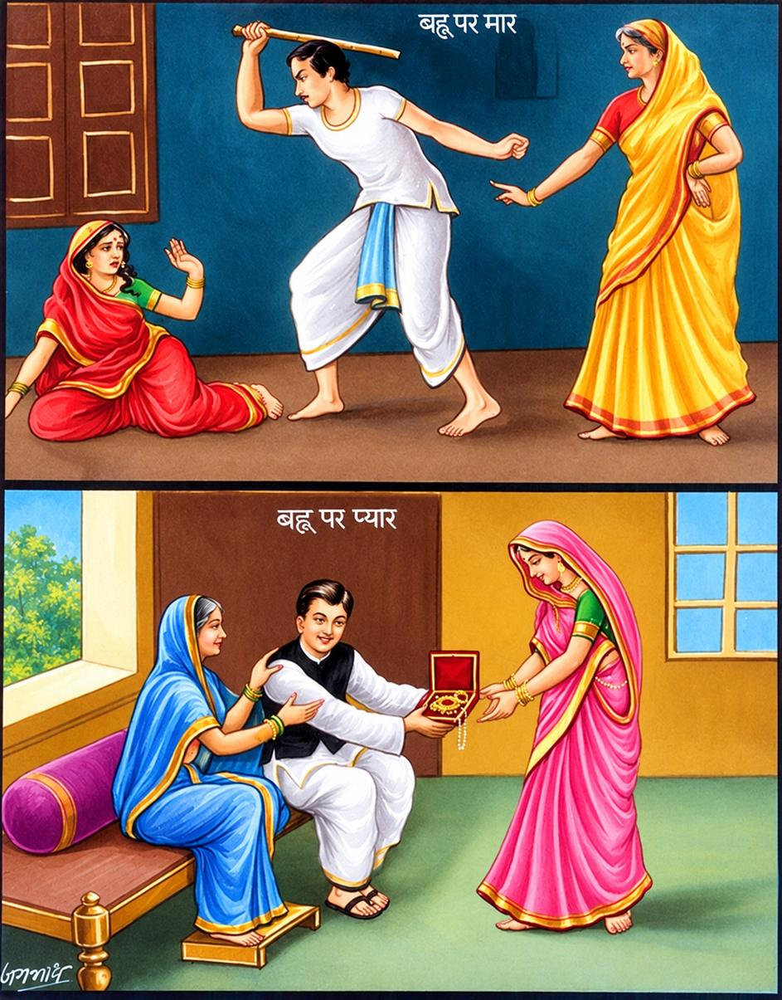
सास कर्कशा स्वामी निर्दय दोनों रहे बहूको मार।
सास सुशीला सहृदय स्वामी करते गहनोंसे सत्कार॥
सहमरण या सती-चमत्कार
आर्ताऽऽर्ते मोदिता हृष्टे प्रोषिते मलिना कृशा।
मृते च म्रियते पत्यौ सा स्त्री ज्ञेया पतिव्रता॥
‘जो नारी स्वामीके दुःखसे दुःखिता, हर्षमें हर्षिता, स्वामीके प्रवासमें रहनेपर मलिना (शृंगारविहीना) और कृश शरीरवाली होकर रहती है एवं स्वामीके मरनेपर मर जाती है, उसे पतिव्रता कहते हैं।’
नारी भर्तारमासाद्य यावन्न दहते तनुम्।
तावन्न मुच्यते सा हि स्त्रीशरीरात् कथंचन॥
‘पतिमें भलीभाँति लीन होकर जबतक नारी उसके साथ सहमृता (सती) नहीं होती—अपनी भिन्न सत्ताको भस्म नहीं कर देती, तबतक स्त्री-शरीरसे छूटकर मोक्षको नहीं प्राप्त होती।’
प्राचीन ग्रन्थोंमें बहुधा यह उल्लेख मिलता है कि प्राचीन कालमें आर्यनारियाँ सती होती थीं, हँसती-हँसती पतिके शवको गोदमें रखकर अपने शरीरको भस्म कर डालती थीं। वेदोंमें सहमरणका स्पष्ट उल्लेख मिलता है। स्मृतियों और पुराणोंमें भी पाया जाता है। श्रीमद्भागवतमें आया है कि महाराज पृथुकी पत्नी अर्चिने स्वामीके साथ चितारोहण किया था। महाभारतमें पाण्डुपत्नी माद्री, वसुदेवजीकी चार पत्नी देवकी, भद्रा, रोहिणी और मदिराके सहमरणका प्रसंग आता है। धृतराष्ट्रपत्नी गान्धारीने भी पतिका अनुगमन किया था। भगवान् श्रीकृष्णके परमधाम पधारनेपर देवी रुक्मिणी, गान्धारी, शैब्या, हैमवती, जाम्बवती आदि सती हुई थीं (देखिये महाभारत, आदिपर्व ९६। ६५; १२५। २९; विराटपर्व २३। ८; शान्तिपर्व १४८। १० और मौसलपर्व ७। १८)। ऐसे ही बहुत-से प्रसंग और भी पाये जाते हैं। ये घटनाएँ सर्वथा सत्य हैं। ऐसा होना असम्भव नहीं है। फिर सतीप्रथाको कानूनद्वारा बंद क्यों किया गया? यह एक विचारणीय प्रश्न है। कहा जाता है, जिस समय सती-प्रथाबंदीका कानून बना, उस समय समाजकी निन्दाके भयसे स्त्रियाँ महान् मानसिक और शारीरिक कष्ट सहकर बिना मनके जलती थीं। वरं यहाँतक होने लगा था कि जिसका पति मर जाता था, उस स्त्रीको स्वार्थवश घरके लोग उसकी इच्छाके विरुद्ध जबरदस्ती पतिकी लाशके साथ बाँधकर जला देते थे। ये बातें न्यूनाधिकरूपमें सत्य हो सकती हैं। क्योंकि कामना तथा स्वार्थ मानवको दानव और पिशाच बना देते हैं। स्वार्थवश किसीको फुसलाकर, बहकाकर, प्रोत्साहन दिलाकर और जबरदस्ती आगमें झोंककर मरवा देना तो उसकी निर्मम हत्या करना है। अतएव यदि ऐसा होता था तो वह निश्चय ही निर्दयता और महान् पापाचरण था। दयालु पुरुषोंके प्रयत्नसे ऐसे जघन्य और नीच कर्मका बंद होना भी सर्वथा ठीक ही था। इतना होनेपर भी सच्ची सतियोंको पतिका अनुगमन करनेसे कौन रोक सकता है? कानूनकी पहुँच वहाँतक है ही नहीं। इस गये-गुजरे जमानेमें भी बीच-बीचमें ऐसी सतियोंकी चमत्कारपूर्ण घटनाएँ देखने-सुननेको मिलती हैं।
सतीके शरीरसे स्वतः अग्नि प्रकट होनेकी बात पढ़-सुनकर लोगोंको कुछ असम्भव-सा लगता है; परंतु ऐसा होना असम्भव नहीं है। शास्त्रमें विश्वास करनेवाले लोगोंकी तो यह दृढ़ धारणा है कि सती देवीके संकल्पसे ही अग्नि प्रकट हो जाती है; और यह सर्वथा सत्य भी है। परंतु अन्यान्य युक्तियोंसे भी यह बात समझमें आ सकती है। अग्नि सर्वत्र व्याप्त है। हमारे शरीरमें भी है। रगड़ लगनेपर वह प्रकट होती है। हाथ-से-हाथ मलनेपर वह गरम हो जाता है। अरणिमन्थनसे (लकड़ियोंको परस्पर रगड़नेसे) अग्नि प्रकट होना तो बहुत लोगोंने देखा होगा। जंगलोंमें पेड़ोंके आपसमें रगड़ लगनेसे अग्नि पैदा हो जाया करती है। चकमक पत्थर आपसमें चोट लगनेपर आग उगलते हैं, यह सबको विदित है। इसी प्रकार किन्हीं विशेष संयोगोंमें शरीरसे ही अग्नि प्रकट हो सकती है। जब किसीको बुखार होता है, तो कभी-कभी रोगीका शरीर इतना उत्तप्त हो जाता है कि उसका स्पर्श सहन नहीं होता। यह गर्मी कहीं बाहरसे नहीं आती; इस शरीरके भीतरकी ही अग्निके कुपित होनेसे तापमान बढ़ जाता है। चिन्ता, शोक और विरहके कारण भी शरीर ज्वरग्रस्त होकर दग्ध होने लगता है। यही आग किसी विशेष अवस्थामें प्रज्वलित भी हो जाय तो क्या आश्चर्य है! सती देवीने पिता दक्षके यज्ञमें अपने स्वामी भगवान् शंकरका अपमान देखा, तब उन्हें इतना संताप हुआ कि उनके शरीरसे योगानल प्रकट हो गया और वे उसीसे जल गयीं। कहते हैं दीपक रागके गानेसे भी अग्निका उद्दीपन होता है, उससे गायकका शरीर तो जलता ही है, दूर रखे हुए दीपक भी प्रज्वलित हो उठते हैं। इस प्रकार बाह्य या आभ्यन्तरिक अग्निके उद्दीप्त होनेमें अनेक कारण हो सकते हैं।
मनुष्यके शरीरमें छोटी-बड़ी बहुत गाँठें हैं, जो सारे शरीरमें फैली हुई हैं। इन गाँठोंमें कुछ पसीनेकी हैं, जिनसे पसीना झरा करता है। कुछ आँसुओंकी हैं, जिनसे आँसू बहते हैं। कुछ गाँठें ऐसी भी हैं, जिनसे कोई भी रस झरता नहीं दिखायी देता। उन्हें रसवाही-नालिकारहित ग्रन्थि कहते हैं। इन गाँठोंके साथ शरीरकी आकृति और कदका सम्बन्ध रहता है। इतना ही नहीं, मनुष्यके चरित्रका भी इनसे सम्बन्ध होता है। जैसे इन गाँठोंसे मनुष्यके चरित्रका निर्माण होता है, वैसे ही मनुष्यके चरित्रका इन गाँठोंपर प्रभाव पड़ता है। सारांश यह कि इन गाँठोंके विचित्र विकास, असाधारण परिवर्तन और विनाश आदि मनुष्यके अपने जीवनपर निर्भर करते हैं। फिर जैसी गाँठें होती हैं, उनसे वैसी ही क्रिया भी होती है। एक सच्ची सती, जिसके तन, मन और हृदय सर्वथा पवित्र हैं, जो अपने पतिके प्रेमके आधारपर ही जीवित है, जिसने अपने हृदयमें पतिके सिवा दूसरे किसीको कभी स्थान ही नहीं दिया, जिसका जीवन पतिके लिये सदा आत्मत्याग करनेमें ही बीता और जो पतिका क्षणभरके लिये भी वियोग सहन करनेमें असमर्थ है, उसके इन चरित्रगत कार्योंका उसके शरीरकी ग्रन्थियोंपर कैसा प्रभाव होता है और उसके अंदरके तमाम अवयव कैसी असाधारण स्थितिमें पहुँच जाते हैं, इसका हमलोग कुछ भी अनुमान नहीं लगा सकते। ऐसी अवस्थामें पति-वियोगकी स्थिति प्राप्त होनेपर उसके आन्तरिक अवयवोंमें ऐसी विशेष क्रिया हो, जिससे अग्नि प्रकट हो जाय, तो इसमें आश्चर्यकी कौन-सी बात है?
मनुष्यके शरीरमें गलेके आगे एक ग्रन्थि है, जिसे अंग्रेजीमें ‘थाइरोइड ग्लैंड’ कहते हैं। यह गाँठ शरीरमें प्रेम और कामना उत्पन्न करती है, शरीरमें गर्मी बढ़ाती है और इसमेंसे निकलनेवाले रसका प्रवाह यदि बढ़ जाता है तो मनुष्यकी मृत्यु हो जाती है। इस गाँठसे निकलनेवाले रसको ‘थाइरोक्सिन’ कहते हैं। इस गाँठ और इससे बहनेवाले रसके सम्बन्धमें डॉ० लुई बरमन एम० डी० महोदयने ‘The Glands Regulating Personality’ नामक ग्रन्थमें जो कुछ लिखा है, उसका सारांश इस प्रकार है—
‘मानव-शरीरमें मांसपेशियोंके जलती रहने (गर्मी प्राप्त करने)-का आधार शरीरके थाइरोइड नामक गाँठसे बहनेवाले रसके परिणामपर अवलम्बित है। यह निश्चित है कि यदि उस रसकी क्रियाको रोकनेके लिये और आवश्यकता होनेपर विशेष कम करनेके लिये कोई साधन न हो तो मांसपेशियाँ बिल्कुल जलकर भस्म हो जायँ। अतएव जिस मांसपेशीमें थाइरोइडसे बहनेवाला प्रवाह सबसे अधिक परिमाणमें हो और रक्तके द्वारा उसे अधिक-से-अधिक मिलनेवाला प्रवाह जारी रहे तो उसमें पहुँचनेवाली शक्तिका दबाव ‘सेफ्टी बल्व’ से रहित एक बायलरकी स्थितिपर पहुँच जाय।’ अर्थात् जैसे इस प्रकारकी स्थितिमें बायलर फट जाता है, वैसे ही मनुष्यका शरीर जलकर भस्म हो जा सकता है। परंतु मनुष्यमात्रमें ही इस बढ़ती हुई गर्मीको सीमाबद्ध रखनेके लिये प्रकृतिने सुन्दर योजना बना रखी है, जिससे तंदुरुस्तीकी हालतमें मांसपेशीको उतनी ही गर्मी मिलती है, जितनी उसके लिये आवश्यक होती है।
परंतु यदि किसी सतीके पति-वियोगके समय उसके मनकी स्थिति ऐसी असाधारण हो जाय कि जिससे थाइरोइडग्रन्थिपर सीधा प्रभाव पड़े और वह उसकी गर्मीको एकदम बढ़ाकर शरीरसे अग्नि पैदा कर दे तो इसमें कोई आश्चर्यकी बात नहीं है। पतिगतप्राणा प्रेममूर्ति सतीके हृदयमें जब पतिवियोगकी अग्नि सुलगती है, तब उसका रूप कैसा होता है—इसको हम लोग ठीक-ठीक समझ ही नहीं सकते। ऐसी हालतमें गलेके पासकी थाइरोइड गाँठमें रसका प्रवाह बढ़ जाना और उसके कारण कंधे आदिसे अग्निका फूट निकलना सर्वथा सम्भव और युक्तिसंगत है। इस स्थितिको डॉ० बरमनने हाइपरथाइरोडिज्म (Hyperthyroidism) कहा है। अन्य कई विद्वानोंने भी इस ग्रन्थि-विज्ञानका समर्थन किया है।
हमारे शरीरमें एक अग्नि तो खास तौरपर सदा रहती है, जिसे जठरानल कहते हैं। भगवान् श्रीकृष्णने कहा है—‘मैं ही वैश्वानर (अग्नि) होकर शरीरके भीतर चतुर्विध अन्नको पचाता हूँ।’ जो अग्नि अप्रकटरूपसे सदा वर्तमान है, वह यदि कारणविशेषसे प्रकट हो जाय तो इसमें अनहोनी बात क्या है? अप्रकट अग्निका प्रकट होना तो हम अपने घरोंमें रोज ही देखते हैं। अतः सतीके शरीरसे विशेष अवस्थामें अग्निका प्रादुर्भाव होना कदापि असम्भव नहीं है।
पति-वियोगके अवसरपर बिना किसी रोगके सती स्त्रीके मरणमें तो जरा भी आश्चर्यकी बात नहीं समझनी चाहिये। महान् शोक और महान् आनन्दकी दशामें हृदयकी गति रुककर मृत्यु होनेकी घटनाएँ तो बहुत होती हैं। मनका शरीरपर बड़ा भारी असर होता है। भक्त कवि जयदेवकी मिथ्या मृत्युका समाचार सुनते ही उनकी धर्मपत्नी पद्मावतीका प्राणवियोग हो गया था, यह प्रसिद्ध है। परंतु यह याद रखना चाहिये कि सती होना सर्वथा स्वाभाविक बात है। किसी बाहरी प्रेरणा, चेष्टा या बलात्कारसे ऐसा नहीं हुआ जाता। बलात्कारसे मरना तो पाप है। स्वयं करनेपर आत्महत्या और दूसरा कराता है तो उसके लिये नर-हत्या होती है। साथ ही पतिके साथ सहमरणका वरण करनेवाली सतीसे उस सती देवीका दर्जा किसी तरह कम नहीं है, जो पवित्र अखण्ड ब्रह्मचर्य-व्रतका पालन करती हुई जीवित रहकर पतिके घर तथा बच्चोंकी निष्काम सेवा करती है। और अपने परमपवित्र आचरणोंसे परलोकमें पतिको अनन्त सुख पहुँचाती रहती है।
नारीका प्रश्न
नरकी शक्ति है नारी। नारीके द्वारा ही नर शक्तिमान् होता है। नारी अक्षय शक्तिका स्रोत है। शक्तिके बिना शक्तिमान् नहीं, नारीके बिना नरका अस्तित्व नहीं। नारीके जीवन-विकासपर नरके जीवनका उत्कर्ष अवलम्बित है। नर नारी-जीवनका आधार है, दोनों एक ही अस्तित्वके ऐसे परस्परसम्बद्ध पहलू हैं, जिनमें एककी उपेक्षा करनेसे दूसरेकी हानि अवश्यम्भावी है। दोनोंके समुचित और सन्तुलित विकासपर ही समाजकी स्वस्थता निर्भर करती है। अतएव नरके प्रश्नके समान ही नारीका प्रश्न समाजका एक प्रमुख प्रश्न है।
जिस प्रकार महामाया अपने चिद्विलासमें विश्व-ब्रह्माण्डको व्यक्त करती है, उसी प्रकार नारी अपने शिशुके चित् में व्यक्त जगत्की छाया डालती है। जीवनके अरुणोदयमें नारी ही जननीके रूपमें सात्त्विक, राजसिक और तामसिक संस्कारोंका जो बीज बालकके जीवन-क्षेत्रमें वपन करती है, बड़ा होनेपर वही बीज पुष्पित और पल्लवित होकर जगत्-जीवनका कारण बनता है। नारी सृष्टि करती है, उसका पालन करती है और अन्ततः प्रलयके कारणोंका संकलन भी उसीके द्वारा होता है। अतएव समाजमें सुव्यवस्था-दुर्व्यवस्था, शान्ति-अशान्ति, धर्माधर्म आदि द्वन्द्वोंके निर्माणमें मूलतः नारीकी सहज लीला ही काम करती है।
नर और नारीका अबिनाभाव-सम्बन्ध है। नर-नारीकी सृष्टिके साथ मायाकी क्रीडा प्रारम्भ होती है। नर और नारीका कार्य-कारणभाव बीज और वृक्षके समान अनादि है। बीज और वृक्ष जिस प्रकार एक ही तत्त्वके दो अंग हैं, उनमें परस्पर विरोध नहीं, उसी प्रकार समाज-जीवनमें नर-नारी-विरोध अप्राकृतिक है। अतएव नरके विरुद्ध किसी प्रकारका भी नारी-आन्दोलन अप्राकृतिक होनेके कारण समाजके सहज विकासमें बाधक है। समाज-जीवनमें नर और नारीका पारस्परिक सहयोग अत्यन्त आवश्यक है। नारीको सम्प्रदायके रूपमें नरकी प्रतिद्वन्द्वितामें खड़ा करनेका आन्दोलन पागलपनके सिवा और कुछ नहीं है। परंतु इसका अर्थ यह नहीं है कि नारीको दासत्वमें रखा जाय और ताड़नाका अधिकारी बनाया जाय। नारी पूज्या है, वह जननी है। ‘जननी जन्मभूमिश्च स्वर्गादपि गरीयसी।’ माता और मातृभूमि स्वर्गसे भी बढ़कर है, भगवान्से भी बढ़कर है। नारी जब अपने इस पदकी मर्यादाका पालन करनेके लिये सतत सन्नद्ध रहती है, तब वह समाजमें देवीके समान पूजी जाती है। जहाँ नारी-पूजा होती है, वहाँ देवत्वका वास होता है।
अतएव नारी-आन्दोलनको नर-समाजसे सहयोगके उद्देश्यमें परिणत करनेकी जितनी आवश्यकता है, पुरुषके लिये उतनी ही आवश्यकता है नारी-समाजको जननीकी पद-प्रतिष्ठा प्रदान करनेकी। नारी बन्धनसे उन्मुक्त हो, अखिल विश्व उसकी क्रीडा-स्थली है; परंतु मातृत्वकी मर्यादाके भीतर रहनेमें ही उसकी शोभा है और विश्वका कल्याण है। मर्यादाका उल्लङ्घन करनेसे समाजकी स्थिति ठीक न रहेगी, उसमें अशान्ति और वैषम्य आ जायगा, उसे विपत्तिका सामना करना पड़ेगा।
नारी! तू योगनिद्रासे जाग। अपने सिंहासनपर आरूढ़ हो। तेरे पुत्र विनाशकी ओर जा रहे हैं, उन्हें लौटा, अमरत्वकी ओर ले चल। तू ओजसम्पन्न हो जा; तुझमें बल, वीर्य, सहनशीलता और मन्यु उद्दीप्त हों। विश्वका कल्याण हो। —अलख निरंजन
नारी-महिमा
प्रभु-सत्ताकी प्रबल शक्ति अति,
मानवताका अतुल विकास।
पूर्ण विश्वकी जन्मदायिनी,
विधि-संसृतिका सफल प्रयास॥
देव-गणोंकी वन्दनीय नित,
हरिकी एकमात्र छाया।
नारीकी सत्ता इस जगमें,
नारीकी ही है माया॥
शेष, महेश, विष्णु, विधि, नारद,
इन्द्र, धर्म गुण गाते हैं।
वेद, पुराण, शास्त्र, स्मृतिगण सब
महिमा अमित सुनाते हैं॥
नारीके सतीत्वकी गरिमा
ही भारतका गौरव है।
भोग्य मानकर दुख देनेपर
नारी ही ध्रुव रौरव है॥
श्रवण-सरीखे पितृभक्त, औ
लक्ष्मण-जैसे महायती।
भीष्म-सदृश भीषणप्रतिज्ञ,
औ हरिश्चन्द्रसे सत्यव्रती॥
राम, कृष्ण, हनुमान, भरत,
अर्जुन औ भीम-युधिष्ठिरको।
नारीने ही जन्म दिया था
ध्रुव, प्रह्लाद भक्तवरको॥
सीता, सावित्री, अनसूया,
शकुन्तला औ दमयन्ती।
मदालसा, द्रौपदी, सुकन्या,
देवहुती-सी महासती॥
अतुलित कष्ट सहे, पर सत्य
न भूली भारतकी नारी।
अग्नि-परीक्षा अति कठोर दे-
देकर वे निखरीं सारी॥
हाय! आज उस नारी-गौरव-
का किंचित् भी शेष नहीं।
सद्भावना, सतीत्व-धर्मका
अब मिलता नहिं लेश कहीं॥
लज्जा, सहनशीलता, मृदुता,
दया, नारिके सद्गुण थे।
आज विलुप्त हुए सारे,
जो नारीके आभूषण थे॥
लज्जाको अब दी तिलांजली,
धर्म बक्समें बंद किया।
अप-टु-डेट बन निकली घरसे
कुछ मित्रोंको साथ लिया॥
रूप दिखाती, बात बनाती,
लाज गँवाती सत-पथकी।
यही सभ्यता है नारीकी?
यही शान है भारतकी?॥
अभी समय है, जागो निद्रा-
से, भारतकी ललनाओ!।
धर्म और कर्तव्य सँभालो,
सती बनो औ हरषाओ॥
जीवनका है सार यही;
निज धर्म विचारो, अपनाओ।
आज फिर उसी सती-धर्मका
झंडा जगमें फहराओ॥
आज तुम्हारी यह दुर्बलता
तुम्हें कष्ट पहुँचाती है।
क्षणिक हर्षके हेतु तुम्हें
आजीवन बाधा आती है॥
दो दिन स्वजन साथ देते
दुखमें, दुनिया ठुकराती है।
करुणासागर, दीनबन्धुको
भी क्या दया न आती है?॥
अत्याचारी नर-पिशाच सब
आज तुम्हें हैं सता रहे।
पुरुष नपुंसक हुए, सभी निज
कायरताको बता रहे॥
ईश-कृपाका आश्रय करके
स्मरण करो स्वरूप अपना।
उठो, मिटा दो सती-तेजसे
दुष्टोंका सुखकर सपना॥
—वेदवती शर्मा प्रभाकर
••••
तब और अब
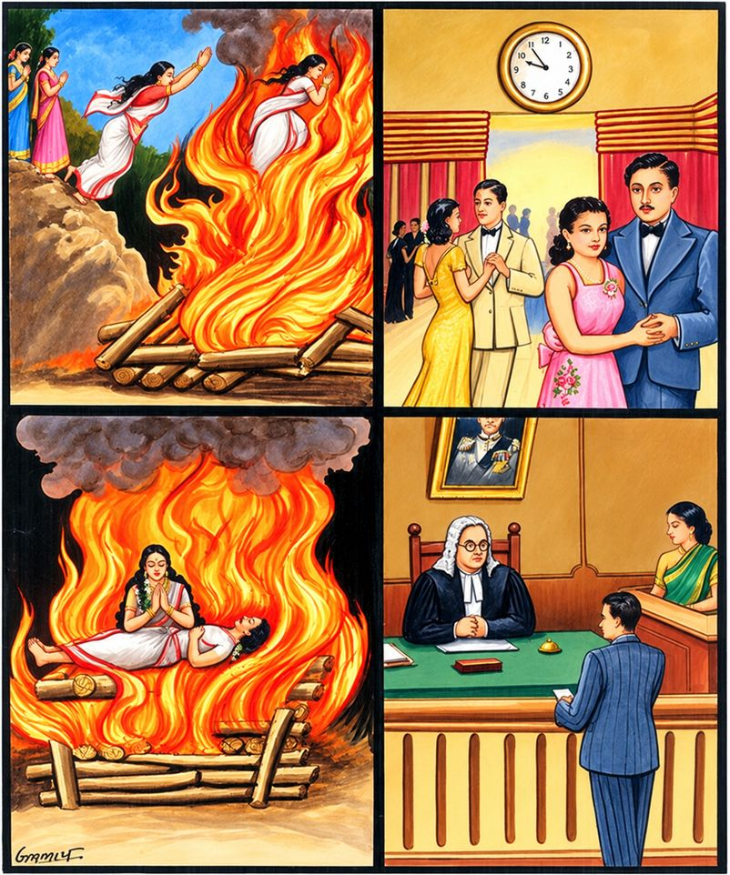
तब तो जौहरकी ज्वालामें
सहित उमंग जलीं सतियाँ।
कितनी चढ़कर ज्वलित चितापर
पतिके संग चलीं सतियाँ॥
आलिंगित हो पर-पुरुषोंके
किंतु नाच करती हैं आज।
कितनी देनेको तलाक जा
चढ़ीं कोर्टमें तज कर लाज॥
नारी-जगत्का सर्वोत्तम आदर्श
(लेखक—श्रीबालकृष्णजी अग्रवाल)
पुरुषकी अपेक्षा नारीका विशेष महत्त्व है। नारियाँ पुरुषोंकी ही नहीं, अपितु देवताओंकी भी जननी हैं। इसलिये भगवान्की सृष्टिमें वे आदरणीया हैं। उनका स्थान सबसे ऊँचा है। अतः उनके धर्म तथा आदर्शकी रक्षा अत्यावश्यक है। हमारे प्राचीन इतिहास साक्षी हैं कि जननी जानकीका लंकाधिपति रावणद्वारा अपहरण नहीं होता और पांचाली कौरवराज दुर्योधन तथा दुःशासनसे अपमानित नहीं होती तो रामायण और महाभारत-जैसे परम आदर्श ग्रन्थोंका निर्माण नहीं होता। परम आदर्श संयम-नियम, व्रत-उपवास तथा समस्त पुण्य-धर्ममें हमारी तपोमयी देवियाँ प्राचीन कालसे लेकर आजतक हमसे आगे ही रही हैं; किंतु खेद है कि आधुनिक सुधारवादके प्रबल झंझावातसे वे अपनी रक्षा नहीं कर पा रही हैं।
नर-नारीमें भगवान्ने कुछ भेद रखा है। इसलिये दोनोंके कार्योंमें समानता नहीं हो सकती। कोई कार्य पुरुष अच्छी तरह कर सकते हैं तो कोई स्त्री। एक-दूसरेके स्वभावके प्रतिकूल कार्य करने और करानेमें व्यक्ति, समाज तथा देशकी शक्तिका अपव्यय होगा। अतः हितकर सुधारमें इस बातका ध्यान रखना अत्यन्त आवश्यक है कि हमारे प्रिय भारतकी प्राचीन संस्कृति, सभ्यता और आदर्श अक्षुण्ण बने रहें।
समाजका आधार ‘नारी’ है। ‘नारीसे नर उपजें ध्रुव-प्रह्लाद समान।’ हमें अपनी नारी-जातिका उत्कर्ष, अभ्युदय और कल्याण चाहना है तो सबसे प्रथम हमारा यह कर्तव्य है कि हम संसारका इतिहास देखकर, उसपर भलीभाँति विचारकर निर्णय करें कि हमारे नारी-समाजके लिये ऐसा कौन आदर्श सर्वोत्तम होगा, जिसको नारी-समाज अपना लक्ष्य बनाकर संसारमें अपना गौरव, अपना धर्म तथा अपना अस्तित्व कायम रख सकता है। इसके लिये परम अनुभवी जगद्विख्यात स्वामी श्रीविवेकानन्दजीके जगज्जननी जानकीके प्रति अत्यन्त सुन्दर एवं भावपूर्ण विचार उद्धृत किये जाते हैं—
‘वैदिक कालके पश्चात् जगत्को प्रभावित करनेवाले अगणित श्रेष्ठ ऋषि, श्रेष्ठ अवतार हुए हैं, जिनकी संख्या श्रीभागवतमें तो अगणित बतलायी गयी है; इन सब अवतारोंमेंसे जिनकी भारतमें विशेष पूजा होती है, वे हैं भगवान् श्रीराम और श्रीकृष्ण। वीर-युगकी प्राचीन प्रतिभा भगवान् रामको हमारे सबसे श्रेष्ठ ऋषि श्रीवाल्मीकिजीने सत्य और धर्माचरणकी एक मूर्ति, एक आदर्श पुत्र, एक आदर्श पति, एक आदर्श पिता और इन सबसे भी परे एक आदर्श राजाके रूपमें उपस्थित किया है। कोई दूसरी भाषा उतनी शुद्ध, पवित्र, सुन्दर और सरल नहीं हो सकती जितनी वह भाषा, जिसमें कि श्रेष्ठ कविने भगवान् श्रीरामका जीवन चित्रित किया है। श्रीसीताजीकी महिमाँका कौन वर्णन कर सकता है। पूर्वकालका संसारका सम्पूर्ण साहित्य देख जाइये और मैं विश्वास दिलाता हूँ कि भविष्यमें भी जो साहित्य-निर्माण होगा, उसमें भी दूसरी सीता न मिलेगी। श्रीसीताजी अनुपम हैं; उनका चरित्र जो एक बार निर्माण हो चुका, सदैवके लिये हो गया। सम्भव है बहुतसे राम हुए हों, परंतु सीताजी एकसे अधिक नहीं। उनकी समता उन्हींसे दी जा सकती है। वे ही भारतकी एक सच्ची नारी हैं; क्योंकि जितने भी स्त्रियोंके पूर्णत्वको प्राप्त भारतीय आदर्श हुए हैं, वे सब एकमात्र माता सीताके जीवनसे विकसित हुए हैं। आज भी हजारों वर्षोंके उपरान्त उनका अस्तित्व और गौरव विद्यमान है और सम्पूर्ण आर्यावर्तकी भूमिपर प्रत्येक पुरुष, स्त्री और बालक भक्तिके साथ उनकी पूजा करता है। हमारी ये यशस्विनी सीता, पवित्रतासे भी पवित्र धैर्य और त्यागकी सीमा सदैव हमारे आर्यावर्तमें पूजनीया रहेंगी। जिन्होंने बिना संकोच किये कितना त्यागपूर्ण जीवन बिताया और सहनशीलता दिखायी, सदैव शुद्ध और सदैव पवित्र पत्नी रहीं, मनुष्यमात्रकी एक आदर्श, देवताओंकी भी आदर्श, ऐसी महान् श्रीसीता ही हमारे राष्ट्रकी केवल एक देवी हो सकती हैं। हममेंसे प्रत्येक इनसे भलीभाँति अभिज्ञ है। इसलिये विशेष वर्णनकी आवश्यकता नहीं जान पड़ती। हमारी सभी पौराणिक गाथाएँ, चाहे लोप हो जायँ, वेद भी चाहे छिप जायँ और हमारी संस्कृतभाषा भी चाहे सदाके लिये लोप हो जाय; परंतु जबतक इस देशमें पाँच भी हिंदू जीवित रहेंगे, चाहे वे कैसी भी ग्रामीण भाषा बोलते हों, हमारी माता सीताजीकी कथा सदैव अमर रहेगी—इन शब्दोंको ध्यानमें रखें। सीताजी हमारी जातिके मर्मस्थानतक पहुँच चुकी हैं। वे प्रत्येक हिंदू पुरुष और स्त्रीके रक्त-विन्दुमें विद्यमान हैं; हम सब उनके बालक हैं। हमारे नारी-समाजको नवयुगके अनुरूप बनानेका कोई भी प्रयास यदि वह माता सीताजीके आदर्शसे नारी-समाजको पृथक् ले जाता है तो वह एकदम असफल होगा, जैसा कि हम प्रतिदिन देख रहे हैं। भारतके नारी-समाजको माता सीताजीके पद-चिह्नोंका अनुसरण कर आगे बढ़ना और अपनी उन्नति करनी चाहिये। समाजोन्नतिका केवल यही एक मार्ग है।’
इंग्लैंड, अमेरिका और जापान प्रभृति देशोंमें भ्रमण कर और रामायण तथा महाभारतके गम्भीर अध्ययनके अनन्तर श्रीस्वामीजी इसी निष्कर्षपर पहुँचे थे कि ‘हमारी नारीका शुभ पथ एकमात्र माता जानकीका पथ है।’ उस आदर्शसे थोड़ा भी विचलित होना नारी-समाजका पतनकी ओर अग्रसर होना है और नारीका पतन आरम्भ हुआ कि देश, धर्म, राष्ट्र और समाज पतनकी ओर अभिमुख हो जायँगे। इस कुपरिणामका अनुभव वर्तमान समयमें देश कर भी रहा है!
व्यक्ति, समाज, देश और धर्मके हितकी दृष्टिसे सुधारकोंसे विनम्र निवेदन है कि वे पुरुष और स्त्रीके कार्योंको मिश्रित न करें। पुरुषोंको उनके स्वभाव और योग्यताके अनुकूल बाहरी कार्य सौंपे जायँ और स्त्रियोंको उनके स्वभाव और योग्यताके अनुसार भीतरी कार्य दिये जायँ। बालकोंको प्राथमिक शिक्षा देना, उनके मनमें देश और धर्मके प्रति श्रद्धा और भक्ति उत्पन्न करना, उनका ठीक रीतिसे लालन-पालन करना, उन्हें स्वस्थ रखकर बलवान् बनाना, घरकी ठीक रीतिसे व्यवस्था चलाना, सुन्दर भोजन बनाना, अतिथि-सत्कार, गो-सेवा, आयुर्वेदिक ओषधियोंद्वारा अपने परिवार, पड़ोस तथा समाजकी सेवा, सीना-पिरोना आदि महत्त्वपूर्ण कार्य देवियाँ बड़ी सुन्दरतासे कर सकती हैं। इस प्रकार देश और समाजके धनकी बचत होगी और अल्प प्रयाससे अत्यधिक काम भी हो जायगा। उनके सिनेमा और पार्टियोंमें घूमनेसे देशहित कदापि नहीं हो सकता। यह पाश्चात्त्य सभ्यता है। भारतीय सभ्यता यह नहीं है।
एक पाश्चात्त्य पुरुष अपनी स्त्रीको प्रेयसी कहकर सम्बोधित करेगा। परंतु एक भारतीय अपनी स्त्रीको प्रेयसी न कहकर ‘पुत्र या पुत्रीकी माँ’ कहकर सम्बोधित करेगा। इस संस्कृतिकी हमें रक्षा करनी है। अंग्रेजी पढ़ाकर लड़कियोंको तितली नहीं बनाना है।
आज हमने अपने देशसे अंग्रेजोंको निकालकर स्वतन्त्रता प्राप्त की है; किंतु यदि हम उनकी भाषा, उनकी शिक्षा और उनकी सभ्यताको नहीं निकाल सके तो यह उसी प्रकार एक आश्चर्यकी बात होगी जैसे सिरदर्दकी दवा कर क्षणिक आराम पा लिया, पर सिररोगके मूल कारण कब्जका उपचार नहीं किया। हमारे देश और समाजका कल्याण नारियोंको जगज्जननी माता जानकीके आदर्शको पूर्णतया पालन करनेमें है और वे ही हमारे स्वामी विवेकानन्दजीके शब्दोंमें राष्ट्रकी देवी हैं।
पतिव्रताके लक्षण
(लेखक—जैनाचार्य मुमुक्षु श्रीभव्यानन्द विजयजी)
पतिव्रता, साध्वी और सती स्त्री वही है, जो सर्वदा अपनी इन्द्रियोंको वशमें रखकर अपने पतिपर निर्मल प्रीति रखती है तथा पतिके इच्छानुसार चलकर उसकी आज्ञाका पालन करती है। अर्थात् जो तन, मन और वचनसे पतिकी सेवाके सिवा दूसरी कुछ भी इच्छा नहीं रखती। पतिको ही अपने सुख-दुःखका एकमात्र साथी समझती है। बिना कार्य घरके बाहर नहीं जाती। सास-ससुरको सगे माता-पिताके सदृश समझकर सदा सेवा-भक्ति करती है। ननदको सगी बहनके समान और देवरको भ्रातृवत् समझती है। पतिके सोनेके पीछे सोती है। उठनेके पहले उठकर स्वच्छतापूर्वक घरका तमाम कार्य करती है। पतिको नियमपूर्वक प्रथम भोजन कराकर फिर स्वयं खाती है। घरके सारे काम करके अध्ययनमें मन लगाती है। पतिके प्रिय आत्मीय-स्वजनोंका सम्मान करती है। नीचे दृष्टि रखकर घरका काम-काज सुचारु रूपसे करती है। बाहरी लोगोंके साथ व्यर्थ बात-चीत नहीं करती। किसीके साथ क्रोधसे अथवा स्वभावसे भी ऊँचे स्वरसे नहीं बोलती। पतिसे छिपाकर कुछ भी नहीं रखती। सत्-शास्त्रका उपदेश श्रवण करके उसीके अनुसार बर्ताव करती है। पतिको धर्मसम्बन्धी तथा व्यवहारसम्बन्धी कार्योंमें उत्साह और साहस देकर तन-मन और वचनसे सहायता करती है। संतानका प्रेमसे पालन-पोषण करती हुई उसे धीर, वीर, गम्भीर, धार्मिक और सर्वगुणसम्पन्न विद्वान् बनानेका सर्वदा प्रयत्न करती है। उसे अशुभ कार्योंमें प्रवृत्त नहीं होने देती। पतिकी दी हुई वस्तुको भलीभाँति सँभालकर रखती है। यदि कोई दुष्ट पुरुष बुरी दृष्टिसे उसकी ओर देखे, मधुर वचनोंसे रिझावे, अथवा उसे कभी आवश्यक कार्यवश मनुष्योंकी भीड़में जाना पड़े और उस समय किसी पुरुषका स्पर्श हो जाय, तो इन अवस्थाओंमें मनमें जरा भी विकार नहीं लाती। पर-पुरुषके सामने दृष्टि स्थिर करके एक दृष्टिसे नहीं देखती। किंतु कार्यवश कदाचित् सामने देखनेकी आवश्यकता होती है तो भाई और बापके समान समझकर देखती है। देव-दर्शन आदिके बहाने पुरुषोंकी भीड़में धक्के न खाकर घरमें ही प्रेमपूर्वक ईश्वरभक्ति करती है। पति कैसा भी हो, उसीको देवतुल्य जानकर सदा प्रसन्न रहती है। पतिके सिवा दूसरे किसीकी भी गरज नहीं रखती। किसी मनुष्यके द्वारा किसी प्रकारका बड़े-से-बड़ा लोभ दिखलाये जानेपर भी अपने मनको विचलित नहीं होने देती। फिर वह मनुष्य चाहे देव-गन्धर्वके समान परम सुन्दर और महान् धनसम्पन्न क्यों न हो। पतिव्रता स्त्री किसी बातके किसी भी प्रलोभनमें न फँसकर दुष्ट पुरुषोंको धिक्कारती और उनको दूर कर देती है। पतिके सिवा किसीको नहीं भजती। किसी भी पुरुषका स्पर्श न हो जाय, इसका ध्यान रखती है। मर्यादा, शील और लज्जाकी रक्षा हो, ऐसा वस्त्र पहनती है। पिंडली, जंघा, पेट, वक्षःस्थल आदि शरीरके सारे अंग अच्छी तरह ढके रहें, इस प्रकारके वस्त्रोंको धारण करती है। नग्न होकर स्नान नहीं करती। सदा हर्षितवदन रहती है। धीमी चालसे चलती है। बजनेवाले गहने नहीं पहनती। कभी जोरसे नहीं हँसती। अन्यान्य स्त्री-पुरुषोंकी विलास-चेष्टाको कभी नहीं देखती। सदा सौभाग्यदर्शक साधारण शृंगार रखती है। शरीरको बाहरी हीरे-मोती या स्वर्णके अच्छे आभूषणोंके बदले आदर्श सद्गुणोंसे सजानेकी इच्छा और चेष्टा करती है। शरीरको क्षणभंगुर मानकर, परलोकका विचारकर उत्तम दान-पुण्य करके सत्कीर्तिका सम्पादन करती है। सदा शीलकी सावधानीसे रक्षा करती है। सत्य बोलती है। कभी चोरी नहीं करती। काम, क्रोध, लोभ, मोह, मद, मत्सर और तृष्णाको शत्रुके समान समझकर यथासाध्य इनका त्याग करती है। संतोष, समता, सहनशीलता, त्याग, विनय, अहिंसा, सत्य और क्षमा आदि सद्गुणोंसे सदा मित्रके समान प्रेम करती है। पतिके द्वारा जो कुछ मिलता है, उसीमें निरन्तर आनन्द मानती है। विद्या और विनय आदि गुणोंको ग्रहण करती है। उदार, चतुर और परोपकारपरायण रहती है। धर्म, नीति, सद्व्यवहार और कला-कौशलकी शिक्षा स्वयं प्राप्तकर अपनी संतानको सिखाती तथा श्रेष्ठ उपदेश देकर सन्मार्गमें लानेका प्रयत्न करती है। किसीको दुःख हो, ऐसा बर्ताव कभी नहीं करती। अपने परिवार तथा अन्य जनोंके साथ लड़-झगड़कर क्लेश उत्पन्न नहीं करती। हर्ष-शोक और सुख-दुःखमें समान रहती है। पतिकी आज्ञा लेकर सौभाग्यवर्धक व्रत-नियम आदि धर्मकार्य करती है। धर्मपर पूर्ण श्रद्धा रखती है। जेठको ससुर और जेठानीको सासके तुल्य देखती है। उनकी संतानको अपनी ही संतानके समान प्रिय समझती है। शास्त्रोंको पढ़ती और सुनती है। किसीकी निन्दा नहीं करती। नीच, कलंकित, पतिद्रोहिणी और कलहा स्त्रियोंकी संगति कभी भूलकर भी नहीं करती। ऐसी दुष्टात्माओंके पास खड़ी रहना तथा बैठना भी नहीं चाहती। सद्गुणवती और सुपात्र स्त्रियोंकी ही संगति करती है। सब दुर्गुणोंसे दूर रह सद्गुणोंको ग्रहणकर दूसरी बहिनोंको अपने समान सद्गुणवती बनानेकी विनय तथा प्रेमपूर्वक चेष्टा रखती है। किसीका अपमान नहीं करती, न कटु वचन बोलती, न व्यर्थ बकवाद करती और न ज्यादा बोलचाल ही करती है। पतिका कभी स्वयं अपमान नहीं करती और न दूसरोंके द्वारा किये हुए उसके अपमानको सहन कर सकती है। वैद्य, वृद्ध और सद्गुरुसे भी आवश्यकता होनेपर ही मर्यादासे बोलती है। पीहरमें अधिक समय नहीं रहती। इस असार संसारमें यह मनुष्य-जन्म किस प्रकार सार्थक हो, इस बातका विचार रात-दिन करती है और विचारके द्वारा निश्चित किये हुए सत्य मार्गपर स्थित रहकर ही जगत्के सब बर्ताव करती है। विघ्नोंको और नाना प्रकारके संकटोंको सहकर भी अपनी नेक टेकको कभी नहीं छोड़ती—इत्यादि शुभ लक्षण सती या पतिव्रता स्त्रीमें स्वाभाविक होते हैं।
उपर्युक्त लक्षणोंको धारण करनेवाली ब्राह्मी, सुन्दरी, चन्दनबाला, राजीमति, द्रौपदी, कौशल्या, मृगावती, सुलसा, सीता, सुभद्रा, शिवा, कुन्ती, शीलवती, दमयन्ती, पुष्पचूला और पद्मावती आदि ऐसी अनेक सती स्त्रियाँ प्राचीन कालमें हो चुकी हैं, जिन्होंने अपने सत्यव्रतको अखण्डित रखनेके लिये अनेक प्रकारकी भयानक आपत्तियोंका सामना किया। इसीलिये वे सतियाँ इस महत् पूज्य पदको प्राप्त हुईं। ‘सती’ इस दो अक्षरोंकी पूज्य पदवीको प्राप्त कर लेना सहज नहीं है। यह तलवारकी धारपर चलनेके समान अति कठिन काम है। जिसके पूर्वकृत पुण्योंका संचय होता है और जिसका वर्तमान जीवन सच्चिन्तन तथा सत्-कर्मशील होता है, उसको यह पद सहज-स्वाभाविक रीतिसे सुखपूर्वक प्राप्त हो जाता है।
देखिये! जन्म-मरणके बन्धनसे छूट जाना—यही पुरुष तथा स्त्रीका मुख्य कर्तव्य है। इस प्रधानकर्तव्यको भूलकर इन्द्रियोंके तुच्छ सुखमें ही अपने जन्म-जीवनको गवाँ देना बहुत बड़ी मूर्खता और महान् हानि है! इसलिये प्यारी बहिनो! तुम अपने स्त्री-धर्मको समझो; समझकर पालन करो और दुर्लभ सतीत्वको प्राप्त करके अपने जीवनको सार्थक करो। यही तुम्हारा कर्तव्य तथा परम धर्म है। इसीसे तुमको इस लोक तथा परलोकमें महान् सुख-शान्तिकी निश्चित प्राप्ति होगी।
नारियोंके व्रत-त्यौहार
(लेखक—पं० श्रीरामदत्तजी भारद्वाज एम्०-ए०, एल्-एल्० बी०, एल्-टी०)
चैत्र शुक्ल
(१) नवदुर्गा—
चैत्र शुक्ला प्रतिपदासे महाकाली, महालक्ष्मी और महासरस्वतीकी प्रसन्नताके लिये व्रत-उपवास प्रारम्भ होता है, जो कि नवमीको समाप्त होता है। स्त्रियाँ भीतपर विविध रंगमयी रेखाओंसे मन्दिर बनाकर उसमें श्रीदुर्गाभगवतीकी स्थापना करती हैं। आवाहनादि-विसर्जनान्त उपचारोंसे पूजा करके कन्या और वटुकको भोजन कराती हैं। अष्टमी और नवमीको भजन-गानसे भी देवीजीकी आराधना होती है।
(२) गनगौर (गणपति-गौरी)—
चैत्र शुक्ला तृतीयाको सौभाग्यवती महिलाएँ तथा कन्याएँ गौरीशंकरकी पार्थिव मूर्तियाँ बनाती हैं और गौरीमाताकी गोदीमें बाल-गणपतिको बिठाती हैं, व्रतकी कथा सुनी जाती है। दूर्वा, रोली आदि सामग्रीसे गणगौरका पूजन-अर्चन करके ‘गुना’ नामक पक्वान्नका नैवेद्य निवेदन करती हैं। प्रसाद केवल स्त्रियोंको ही दिया जाता है। स्त्रियाँ गौरका सिन्दूर अपनी माँगमें लगाती हैं। कन्याएँ तत्पश्चात् सोलह दिनोंतक पूजा करती हैं। इसी व्रतको ‘सौभाग्यसुन्दरीव्रत’ भी कहते हैं। तृतीयाको ही गौरीदोलोत्सव भी होता है।
(३) रामनवमी—
चैत्रशुक्ला नवमीको रामनवमीका व्रत होता है। इस दिन दोपहरमें श्रीराम-जन्मका उत्सव मनाया जाता है; प्रसाद और फलाहार ग्रहण किया जाता है।
वैशाख
(१) अक्खै तीज (अक्षय तृतीया)—
वैशाख शुक्ला तृतीयाको सक्तुभाण्डोंका दान-संकल्प किया जाता है। बदरीनाथमें बड़ा उत्सव मनाया जाता है।
(२) नरसिंह-चौदस (नृसिंह-चतुर्दशी)—
वैशाख शुक्ला चतुर्दशीको श्रीभगवान् नरसिंहके अवतारके उपलक्ष्यमें व्रतोपवास किया जाता है। पूजन सन्ध्याकालमें होता है। इसमें पंचामृतपान विशेषरूपसे उल्लेखयोग्य है।
(३) जानकीनवमी—
वैशाख शुक्ला नवमीको जानकीनवमीका उत्सव होता है। दोपहरमें जानकीजीका जन्मोत्सव मनाया जाता है।
ज्येष्ठ
(१) बड़-मावस (वट-सावित्री)—
ज्येष्ठकी अमावस्याको सौभाग्यवती स्त्रियाँ व्रत रखती हैं। जेठ बदी तेरससे लेकर अमावसतक तीन दिन लगातार व्रत रखनेकी विधि है। सोने अथवा मिट्टीकी सावित्रीकी प्रतिमा बनाकर उसे वटके मूल भागमें स्थापित करके उसकी पूजा करनी चाहिये। सिन्दूर-कुंकुम आदि चढ़ाना और रक्षासूत्रसे १०८ बार वट-वृक्षके तनेको लपेटना चाहिये। प्रतिमा दक्षिणाके साथ ब्राह्मणको देनी चाहिये। कहीं-कहीं स्त्रियाँ भीतपर हल्दी-चावलकी पिट्ठी (ऐंपन)-से वटका चित्र खींचकर उसकी पूजाकर बड़के फल (बड़वहे अथवा टोंमने) से व्रत खोलकर पक्वान्न भोजन करती हैं। इसी दिन सती सावित्रीने अपने तपके प्रभावसे यमराजके हाथमें पड़े हुए पति सत्यवान्को छुड़ाया था।
(२) दशहरा—
ज्येष्ठ शुक्ला दशमीको होता है। गंगा अथवा तीर्थान्तरपर स्नान करके यथाशक्ति दान-पुण्य किया जाता है।
(३) निर्जला एकादशी—
ज्येष्ठ शुक्ला एकादशीको निर्जल उपवास किया जाता है। घड़े, सुराहियाँ, ककड़ी, खरबूजे आदि ऋतुफल और चीनीका दान ब्राह्मणोंको दिया जाता है।
आषाढ़
(१) देवशयनी एकादशी—
आषाढ़ शुक्ला एकादशीको स्त्रियाँ पंचदेवोंकी पार्थिव प्रतिमाएँ रचकर उनकी पूजा करती हैं तथा दूध और दूबसे जिमाकर उन्हें शयन कराती हैं। चार मासतक शुभ कार्यका प्रारम्भ नहीं किया जाता।
(२) गुरु-पूनो (गुरुपूर्णिमा)—
आषाढ़की पूर्णिमाको अपने गुरुकी पूजा होती है।
श्रावण
(१) भैय्या-पाँचें (भ्रातृ-पंचमी)—
श्रावण कृष्णा पंचमीको भ्रातृमती महिलाएँ साँपकी बामी (सर्पके वल्मीक)-की पूजा करती हैं और तत्सम्बन्धी कथाका श्रवण करती हैं। धान्यपंचक अर्थात् मूँग, मोठ, चने, मटर और बाजरेको भिगोकर खाती हैं। बासी भोजन पाया जाता है।
(२) तीज—
श्रावण शुक्ला तृतीयाको स्त्रियाँ बड़ा आनन्द-उत्सव मनाती हैं। विशेषतया पुत्रियोंका यह त्यौहार है। कन्याओंको शृंगार (सिंदारा) दिया जाता है। मेंहदी लगायी जाती है। सौभाग्यवती स्त्रियाँ पक्वान्नका वायन (बायना) दान देती हैं। झूला झूलकर मल्हार गाती हैं।
(३) नागपंचमी—
श्रावण शुक्ला पंचमीको दूधमें घिसे हुए कोयलेसे भीतपर नागोंकी प्रतिमाएँ खींची जाती हैं। कहीं-कहीं गायके गोबरको सरसों और बालूसे अभिमन्त्रित करके उसीसे दीवारपर नागकी प्रतिमाएँ बनायी जाती हैं। भगवान् अनन्त या नाग देवताके उद्देश्यसे धानका लावा (खील) चढ़ाते हैं। नागोंको दुग्धपान कराया जाता है। एक मृण्यम (मिट्टीके) पात्रमें जौ बोये जाते हैं, जिन्हें ‘घूँगा’ कहते हैं। एक कहानी कही जाती है।
(४) श्रावण शुक्ला सप्तमी—
इस दिन सतीदेवीकी पूजा की जाती है। दुर्गाकी भी आराधना होती है। हाथ-पैरोंमें स्त्रियाँ मेंहदी लगाती हैं। इसी दिन तुलसी-जयन्तीका उत्सव होता है।
(५) घूँगा झूलनी चतुर्दशी—
श्रावण शुक्ला चतुर्दशीको स्त्रियाँ मीठे खजूर (सकल-पारे) सेंककर उनसे ‘घूँगे’ जिमाती हैं। और फिर गीत गा-गाकर उन्हें झुलाती हैं।
(६) रक्षा-बन्धन—
श्रावणकी पूर्णिमाको बहिनें अपने भाइयोंके हाथोंमें रक्षासूत्र (राखी) बाँधती हैं और कानोंपर नौरतें (नौ दिन पहले बोये हुए जौके अंकुर) रखती हैं।
भाद्रपद
(१) गाज—
भाद्रपदमें सर्वप्रथम मेघोंके गर्जनपर सूती अथवा ऊनी दस तारवाला सूत्र (सूत) हाथमें बाँधा जाता है, जो दसवें वा चौदहवें दिन खोला जाता है। डोरा खोलते समय गाजकी कहानी ब्राह्मणीसे सुनी जाती है। कुछ मीठा और कुछ फीका ढाई पावका गज-रोटा बनता है। गाजकी चँदिया अलग बनती है, जो ब्राह्मणीको दे दी जाती है।
(२) बूढ़ी तीज (वृद्ध तृतीया)—
भाद्रपद कृष्णा तृतीयाको सौभाग्यवती स्त्रियाँ, केवल वधुएँ इसे मनाती हैं। पितृगृहपर हों तो वे श्वशुरालय चली जाती हैं। वधुओंको शृंगार (सिन्दारा) दिया जाता है और वे चौदह पूरी और पूओंका वायन (बायना) दान करती हैं तथा झूला झूलती और गीत गाती हैं। पंचांगोंसे विदित होता है कि यह उत्सव दिन-रात मनाया जाना चाहिये—‘दिवा नक्तं विधीयते।’ इसका नाम ‘कज्जलीव्रत’ भी है। इसमें रातको स्त्रियाँ कजली भी गाती हैं। दिनमें भी गाती और झूलती हैं। मिर्जापुर और बनारसमें तो कजलीका उत्सव महीनों चलता है। इस दिन अधिक धूमधाम रहती है।
(३) जन्माठें (श्रीकृष्ण-जन्माष्टमी)—
भाद्रपद कृष्णा अष्टमीको कृष्णभगवान्की जयन्ती मनायी जाती है। दिनभर व्रत रखकर निशीथ (आधी रात)-में चन्द्रोदय होनेपर चन्द्रमाको अर्घ्य प्रदानकर तथा भगवान्के जन्मकालकी झाँकीका दर्शन करके भगवत्पूजनके पश्चात् प्रसाद ग्रहण करते हैं। कुछ लोग एक बार फलाहार भी करते हैं।
(४) हरितालिका व्रत (भाद्र शुक्ला तृतीया)—
यह सौभाग्यवर्धक व्रत है। विवाहके पश्चात् सभी स्त्रियाँ इस व्रतका पालन करती हैं। इसका फल है—सौभाग्यकी रक्षा, वैधव्यका निवारण और पुत्र-पौत्र आदिकी वृद्धि—‘अवैधव्यकरा स्त्रीणां पुत्रपौत्रप्रवर्धिनी।’ कहते हैं, पार्वतीजीका विवाह कहीं अन्यत्र होने जा रहा था, परंतु उनका प्रेम भगवान् शंकरजीमें था। अतः सखियाँ उन्हें छिपाकर एक जंगलमें ले गयीं। वहाँ उन्होंने व्रत रखकर भगवान्की आराधना की, जिसके फलस्वरूप भगवान् शिव उन्हें पतिरूपमें प्राप्त हुए। ‘आलीभिर्हरिता यस्मात्तस्मात् सा हरितालिका’—इस व्युत्पत्तिके अनुसार इस व्रतका नाम ‘हरितालिका’ है। इसको तीज भी कहते हैं। इस दिन स्त्रियाँ चौबीस घंटेका अखण्ड निर्जल व्रत रहती हैं। इस दिन शिव-पार्वतीका पूजन होता है और रातमें जागरण किया जाता है। सिन्दूर, चूड़ी, दर्पण, फल, रंगीन वस्त्र आदि मांगलिक वस्तुएँ छूकर सौभाग्यवती ब्राह्मणीके लिये देती हैं। व्रतकी कथा भी सुनी जाती है।
(५) रिक-पाँचें (ऋषिपंचमी)—
भाद्रपद शुक्ला पंचमीको यह उत्सव किया जाता है। पण्डितसे कथा सुनती हैं एवं बोये हुए अन्नको नहीं खातीं। प्रायः तिन्नीका चावल फलाहारके रूपमें ग्रहण किया जाता है। ऋषियोंका पूजन भी होता है। इस व्रतसे रजस्वलावस्थामें किये हुए स्पर्श आदिका दोष दूर होता है।
(६) बलदेव-छठ (बलदेव-षष्ठी)—
स्त्रियाँ भाद्रपद शुक्ला षष्ठीको बलदेवजीकी जयन्ती मनाती हैं और ब्राह्मण-भोजन कराती हैं। बलदेवजीका मेला भी कहीं-कहीं लगता है।
(७) राधाष्टमी—
स्त्रियाँ भाद्रपद शुक्ला अष्टमीको श्रीराधाजीके जन्मका उत्सव मनाती हुई उपवास, पूजन और ब्राह्मण-भोजन कराती हैं।
(८) ओक द्वास्सी (वामन-जयन्ती)—
भाद्रपद शुक्ला द्वादशीको भगवान्के वामनावतारका ध्यान, पूजन, स्तोत्रादिद्वारा आराधन किया जाता है।
(९) अनन्त-चतुर्दशी—
भाद्रपद शुक्ला चतुर्दशीको अनन्तभगवान्का पूजन करके पौराणिक कथा सुनकर चतुर्दशग्रन्थिमय अनन्त सूत्र बाँधा जाता है। भोजनमें पक्वान्न बनानेका लौकिक नियम है।
आश्विन (क्वार)
(१) श्राद्ध—
भाद्रपदकी पूर्णिमासे आश्विनकी अमावस्यातक सोलह श्राद्ध होते हैं। पितरोंकी तृप्तिके लिये विविध भोज्य-पदार्थोंसे ब्राह्मणोंको भोजन कराया जाता है। यह पुरुषकृत्य है, किंतु अभिभावकके अभावमें यह स्त्री-कृत्य भी है। आश्विन कृष्णा नवमीको मातृश्राद्ध होता है।
(२) जिउतिया (जीवत्पुत्रिका)—
यह व्रत पुत्र और पुत्रीकी जीवन-रक्षाके लिये आश्विन कृष्णा (या शुक्ला) अष्टमीको किया जाता है। माताएँ नदी अथवा तालाब आदिमें स्नान करके चौबीस घंटेका अखण्ड निर्जल व्रत करती हैं। सन्ध्याके समय पुनः स्नान करके राजा जीमूतवाहनकी पूजा की जाती है। इस व्रतकी कथा भी सुनी जाती है। दूसरे दिन सबेरे स्नान करके सोने या सूतकी जिउतिया पहनी जाती है। जिउतिया और अन्न-फल आदि दान भी करना होता है। राजा जीमूतवाहनने एक नागमाताके इकलौते पुत्रका प्राण बचानेके लिये अपना प्राण अर्पण कर दिया था, इसीसे उसका पूजन होता है।
(३) नवदुर्गोत्सव—
आश्विन शुक्ला प्रतिपदासे दुर्गादेवीका पूजन और व्रत प्रारम्भ होता है। चैत्रके नवदुर्गोत्सवके समान ही अन्य कृत्य किये जाते हैं।
(४) दशहरा—
इसका नाम विजयादशमी भी है। महिषासुरपर दुर्गा भगवतीके विजय प्राप्त करनेके कारण यह नाम पड़ा है। कहते हैं, श्रीरामचन्द्रजीने इसी दिन दशग्रीव रावणपर आक्रमण करनेके लिये प्रस्थान किया था। दस महाविद्याओंकी पूजा होती है। घोड़ी, शमी, पुस्तक, लेखनी, मसिपात्र, आयुध आदि आजीविकोपयोगी साधनपर भी गन्ध-अक्षत चढ़ाये जाते हैं। बहिनें भाइयोंको टीका करती हैं, मिष्टान्न खिलाकर नौरतें (नूतन जौ का अंकुर) देती हैं। भाई बहिनोंको दक्षिणा देते हैं।
(५) सरद-पूनो (कोजागरी)—
आश्विनकी पूर्णिमाको खीर बनाकर चाँदनीमें रखकर श्रीभगवान्का भोग लगाकर रात्रिमें जागरण होता है। जगज्जननी लक्ष्मीजी यह देखने आया करती हैं कि आज रातको कौन-कौन जाग रहा है। इसीसे ‘कोजागरी’ नाम पड़ा है। इस रात्रिमें चन्द्रमाकी सुधामयी किरणोंसे जगत्को परम शान्ति प्राप्त होती है। नेत्र-ज्योतिकी परीक्षाके लिये स्त्री-पुरुष सुईमें धागा पिरोया करते हैं। भगवान् श्रीकृष्णका रासोत्सव भी इसी दिन रात्रिको मनाया जाता है।
कार्तिक
(१) करवा चौथ (करक-चतुर्थी)—
कार्तिक कृष्ण चतुर्थीको सौभाग्यवती स्त्रियाँ चन्द्रोदयतक निर्जल उपवास करती हैं। भीतपर चन्द्र, सूर्य, भ्रातृसप्तक, प्रजापतिसप्तक और एक पुत्रीवाला चित्र खींचती हैं। जलपूर्ण पात्र और पूए-पूरीका नैवेद्य निवेदन कर कथा सुनती हैं। परस्पर करक (करुए) परिवर्तन करती हैं, वायन (बायना) दान देती हैं। चन्द्रको अर्घ्य देकर पारण करती हैं।
(२) अहोई आठें (अघहा अष्टमी)—
कार्तिक कृष्णा अष्टमीको पुत्रवती स्त्रियाँ निशीथ (आधी रात) पर्यन्त उपवास रखती हैं। भीतपर अहोईका चित्र खींचती हैं, जिसमें चन्द्र, सूर्य और एक शल्लकी (सेह—स्याऊ) होते हैं। भोजनसे पहले पूजा करके कहानी सुनना और चन्द्रको (कहीं-कहीं तारोंको) अर्घ्य देना अनिवार्य है।
(३) दिवाली (दीपावली)—
कार्तिक अमावस्याको मध्याह्नमें सिन्दूरारुण हनुमान्जीकी पूजा होती है और ‘चूरमे’ के लड्डुओंका नैवेद्य दिया जाता है। सन्ध्या-समय भीतपर सुरात्रि (सौरती)-की स्थापना होती है, जिसमें श्रीलक्ष्मीदेवी और नारायणका श्रीगणपति-पूजनके साथ-साथ आराधन होता है। यथेच्छ दीपकोंसे नीराजन (आरती) होता है। बही, बसना, कलम, दावात आदिकी पूजा व्यापारी लोग करते हैं।
(४) अन्नकूट—
कार्तिक शुक्ला प्रतिपदाको यह उत्सव मनाया जाता है। इसमें षड्रस और चतुर्विध नैवेद्य भगवान्को अर्पण किया जाता है। रात्रि-जागरण और गोवर्धन-पूजन इस उत्सवके अंग हैं।
(५) भैया-दौज (भ्रातृ-द्वितीया)—
कार्तिक शुक्ला द्वितीयाको यमुना-स्नानका माहात्म्य है। भ्रातृमती महिलाएँ तथा कन्याएँ घरके आँगनमें चतुष्कोण मण्डल रचकर गन्ध, अक्षत, चना, खील, कपास, मिठाई, गोला और जलपूर्ण पात्रद्वारा पूजा कर यम-यमीकी कथा सुनती हैं। कथा-श्रवणसे पूर्व हाथमें ली हुई लाजाओं (खीलों)-को कथान्तमें पृथ्वीपर डालकर, उन्हें समेटकर, द्वारपर शत्रुमर्दनकी भावना कर चना चबाकर रिपुसूदनकी भावना करती हैं। कपासकी ‘आव’ बनाकर उदकुम्भी (पलैंढी)-पर स्थापितकर भाइयोंको टीका कर उन्हें भोजन कराके दक्षिणा पाती हैं। उस दिन यमुना-स्नान करके यमराजके तर्पणका भी विधान है।
(६) डाल-छठ (सूर्यषष्ठी व्रत)—
यह व्रत पुत्र-प्राप्ति तथा पुत्रोंको दीर्घायु होनेकी इच्छासे किया जाता है। पंचमीको एक बार बिना नमकका भोजन, षष्ठीको निर्जल उपवास और सप्तमीको एक समय पारण—यही व्रतका परिचय है। षष्ठीके दिन किसी डाल आदिमें मिठाई, फल, नारियल आदि लेकर स्त्रियाँ किसी नदी या पोखरेके तटपर जाकर नहाती, गीत गाती हैं। सप्तमीको भी इसी प्रकार नदी आदिमें नहाती और दूधका अर्घ्य सूर्यको देती हैं।
(७) देवठान (देवोत्थानी एकादशी)—
कार्तिक शुक्ला एकादशीको पृथ्वीपर विविध चित्रावली तथा भीतपर श्रीकृष्णसहित पाण्डवोंकी प्रतिमाएँ बनाती हैं। सन्ध्या-समय टोकरी बजाकर देवोंका उद्बोधन कराके गन्ना आदि वस्तुओंसे पूजन किया जाता है। गीत गाये जाते हैं। कहीं-कहीं दिवालीके एक दिन पहलेवाली रातमें, कहीं कार्तिक शुक्ला प्रतिपदाकी रातमें और कहीं एकादशीकी ही रातमें सूप आदि बजाया जाता है। उसका उद्देश्य भगवान्को जगाकर घरमें प्रवेश कराना और दरिद्रता आदि दोषोंको दूर भगाना है।
(८) कार्तिकस्नान—
महीनेभर सूर्योदयसे पूर्व स्नान करती हैं। सात्त्विक और शास्त्रीय भोजन, ब्रह्मचर्य आदिका पालन आवश्यक होता है। शयन करनेके पहले और उठनेके बाद तुलसी-कथा, शुकदेवकथा आदि सुननेकी प्रथा है। कार्तिक-माहात्म्यकी कथा भी कहीं-कहीं सुनी जाती है। अनेक तीर्थोंमें पूर्णिमाको स्नानका भारी मेला लगता है।
मार्गशीर्ष (अगहन)
सूकरक्षेत्र (सोरों)-में अगहन शुक्ला एकादशीको और पूर्णिमाको गंगा-स्नान।
भारतमें सब ओर एकादशीका व्रत और कुछ स्थानोंपर गीता-जयन्तीका उत्सव भी होता है।
पौष
(१) रुक्मिणी-अष्टमी—
पौष कृष्णा अष्टमीको श्रीकृष्ण, रुक्मिणी और प्रद्युम्नकी पूजा करके सुहासिनी आठ स्त्रियोंको भोजन कराकर दक्षिणा दी जाती है। इससे श्रीरुक्मिणीजी प्रसन्न होती हैं।
(२) सूर्य-सप्तमी (मार्तण्ड-सप्तमी)—
पौष शुक्ला सप्तमीको सूर्यभगवान्का पूजन करके शक्ति हो तो गोदान किया जाता है। इससे सारे अरिष्टोंकी शान्ति होती है।
माघ
(१) मकर-संक्रान्ति—
माघमें सूर्यनारायण जब मकर-राशिमें प्रवेश करते हैं, तब (जनवरी १३, १४, १५ को) यह उत्सव मनाया जाता है। तीर्थ-स्नानपूर्वक तिल, गुड़, घृत, खिचड़ी आदिका दान और भोजन होता है। स्त्रियाँ गुड़ और पेड़ोंकी गौरीमूर्तिकी रचना कर उसकी पूजा करती हैं।
(२) सकट चौथ (संकष्टचतुर्थी)—
माघ कृष्ण चतुर्थीको विपत्ति-विनाशके निमित्त चकले अथवा सिलपर सिद्धि-बुद्धिसहित गणपतिकी स्थापना कर स्त्रियाँ तिल-कूट और पूओंका नैवेद्य निवेदन करती हैं। कथा-श्रवण करके चन्द्रको अर्घ्य देनेके अनन्तर भोजन किया जाता है।
(३) बूढ़ा बाबू (पितामह-द्वितीया)—
इसे माघ शुक्ल द्वितीयाको मनाते हैं। इसे ‘बूढ़े बाबूकी दौज’ कहते हैं! बाजरेके चूनमें तिल डालकर टिकियाँ-पूरियाँ बनाकर ब्रह्मदेवको अर्पण करते हैं।
(४) वसन्तपंचमी—
माघ शुक्ला पंचमीको श्रीलक्ष्मीनारायण, सरस्वतीजी और रति-कामदेवका अधिकारानुसार आराधन होता है। वसन्ती रंगमें रँगे हुए वस्त्र पहने जाते हैं। होलीके गीत इस दिनसे प्रारम्भ हो जाते हैं।
(५) अचला सप्तमी—
माघ शुक्ला सप्तमीको यह व्रत होता है। इसे सौर-सप्तमी भी कहते हैं। इसको वसिष्ठजीने चलाया है। इसमें स्त्रियाँ षष्ठीको एक बार भोजन करती हैं; सप्तमीको उपवास होता है। सूर्यकी पूजा प्रधान है। यह व्रत पापनाशक और मोक्षप्रद है। सौभाग्य और सौन्दर्यकी भी वृद्धि करनेवाला है। इस दिन प्रयागमें त्रिवेणी-स्नानका बड़ा माहात्म्य है।
फाल्गुन
(१) शिव-चौदश (शिवचतुर्दशी या शिवरात्रि)—
फाल्गुन कृष्णा चतुर्दशीको भगवान् शंकरकी प्राप्तिके निमित्त उपवास रखा जाता है। स्त्रियाँ दिनमें सिंघाड़े, बेर, नारियल, आक, धतूरा, बेलद्वारा पूजन कर और रात्रिमें जागरण करती हुई गीत गाती हैं।
(२) फुलेरा दौज—
फाल्गुन शुक्ला द्वितीयाको स्त्रियाँ आँगनमें पंच-रंगसे चौक पूरती हैं और होलीतक नित्य ऐसा करती हैं। गोबरके शस्त्रास्त्र (ढाल, तलवार आदि) बनाये जाते हैं, जिनका होलिका-दाहमें उपयोग करते हैं। इस उत्सवको ‘फुलेरा दौज’ भी कहते हैं।
(३) रंगभरनी (आमलकी-एकादशी)—
फाल्गुन शुक्ला एकादशीको यह उत्सव होता है। भगवान् नारायणके मन्दिरोंमें रंग-क्रीड़ा होती है। आँवलेके वृक्षकी पूजा होती है।
(४) होली—
फाल्गुनकी पूर्णिमाको होलिकोत्सव मनाया जाता है। पहलेसे बनाकर सुखाये हुए गोबरके शस्त्रास्त्रोंको आँगनमें इकट्ठा करके अग्नि-स्थापनान्तर नये जौके दानोंसे हवन करते हैं। होलिका-दहन सदैव रात्रिमें होता है। मध्याह्नमें महावीर हनुमान्की पूजा होती है।
चैत्र कृष्ण
(१) धुलैंडी (धूलिवन्दन)—
चैत्र कृष्ण प्रतिपदाको टेसूके पीले पानीसे और गुलाल-अबीरसे रंग खेलते हैं, जिसमें पिचकारियोंका प्रयोग होता है। आम्र-मंजरीको चन्दनसे घिसकर उसके प्राशनका माहात्म्य शास्त्रमें वर्णित है।
(२) बसौड़ा—
इसे शीतला-सप्तमी और सीयल-सातें कहते हैं। यह चैत्र कृष्णा सप्तमी (कहीं-कहीं अष्टमी)-को मनाया जाता है। पहली रातको पूजनार्थ बनाकर रखा हुआ बासी भोजन शीतलादेवीके अर्पण किया जाता है; कुक्कुटका स्पर्श बालकोंसे कराया जाता है। कुक्कुटको पूए खिलाये जाते हैं। वृद्धा स्त्रीको भोजन कराती हैं और चौराहेपर मशकें छुड़वाती हैं।
(३) सूर्यनारायणकी कथा
प्रत्येक रविवारको मध्याह्नोपरान्त स्त्रियाँ कथा श्रवण करती हैं। नमकीन भोजन नहीं किया जाता तथा रात्रिमें जलपान भी वर्जित है।
••••
परिवारमें नारीका स्थान
‘पत्नी और माता अपने लिये कैसा आदर्श निश्चित करती है, किस रूप में वह अपने कर्तव्य और जीवनको समझती है, उसीसे समग्र जातिका भाग्य-निर्णय होता है। उसकी निष्ठा दाम्पत्य-प्रेमका उज्ज्वल तारा है और उसका प्रेम ही वह जीवनी शक्ति है, जो उसके आत्मीयजनोंके भविष्यका निर्माण करता है। स्त्री ही परिवारके उद्धार या विनाशका कारण है। परिवारके समस्त भाग्यको मानो वह अपनी ओढ़नीके छोरमें बाँधे फिरती है।’ —एमियेल
नारियोंका धनाधिकार
(लेखक—पं० श्रीविद्याधरजी त्रिवेदी)
हिंदू-समाजमें स्त्री और पुरुष एक प्राण, दो देह माने जाते हैं; उनका स्वार्थ, उनका स्वत्व और उनका अधिकार एक होता है। पति सम्पत्तिका और स्त्रीका स्वामी है तो पत्नी भी पतिके सर्वस्वकी तथा उसके हृदयकी भी स्वामिनी है। पुरुष गृहस्वामी होनेके साथ ही बाहर काम करनेवाला श्रमिक भी है, किंतु स्त्री पुरुषकी समस्त सम्पदापर एकमात्र अधिकार रखनेवाली घरकी रानी है। अतः भारतीय नारीको जो आदर और सम्मान प्राप्त है, वह अन्यत्र दुर्लभ है। पतिके धनपर तो समान अधिकार है ही; हिंदू-नारीकी कुछ ऐसी सम्पत्ति भी होती है, जिसपर केवल उसीका व्यक्तिगत अधिकार होता है।
विवाहिता कन्या अथवा वधूको जो जवाहरात और सुवर्ण आदिके गहने मायके तथा ससुरालसे मिलते हैं, उसपर वह स्वतन्त्र अधिकार रखती है, वह केवल उसीकी सम्पत्ति है। उसके सिवा भी जो समय-समयपर पिता-माता, भाई, सास-ससुर, पति एवं अन्य गुरुजनोंसे उसको उपहारमें धन मिलता है, वह भी उसीका है। इस प्रकारका धन ‘स्त्रीधन’ कहा गया है। प्राचीन कालमें कोई-कोई शुल्क लेकर कन्याका विवाह करते थे, ऐसे विवाह प्रायः क्षत्रियोंमें ही होते थे। वह शुल्क कन्याको ही दिया जाता था। शुल्ककी शर्त केवल वर-पक्षकी शक्ति और वैभवको समझनेके लिये लगायी जाती थी। यह शुल्क कहीं धनके रूपमें और कहीं पराक्रमके रूपमें चुकाना पड़ता था। आज भी बहुत-सी जातियोंमें कन्याके लिये जेवर लानेकी शर्त करके ब्याह किये जाते हैं। यह ‘स्त्रीधन’ स्त्री अपनी इच्छाके अनुसार सत्कार्यमें लगाती थी; स्त्रीकी मृत्युके पश्चात् वह धन उसके पुत्र-पुत्रियोंको मिलता था। संतान न होनेपर अन्य निकटतम सम्बन्धीको प्राप्त होता था।
नारीको जीवन-निर्वाहके लिये मिला हुआ धन भी ‘स्त्रीधन’ है, ऐसा महर्षि देवलका मत है। मिताक्षरामें स्त्रीधनकी सीमा और विस्तृत है। स्त्रीको उत्तराधिकारमें प्राप्त धन, उसकी खरीदी हुई सम्पत्ति, बँटवारेमें मिला हुआ धन, विवाहमें प्राप्त और अपने अधिकारमें आया हुआ धन—इन सबको ‘स्त्रीधन’ कहा जाता है—
‘रिक्थक्रयसंविभागपरिग्रहाधिगमप्राप्तमेतत् स्त्रीधनम्’
(मिताक्षरा)
मनुजीका मत है कि ‘स्त्रीधन’ का व्यय करनेके पूर्व नारीके लिये पतिकी सम्मति ले लेना परम आवश्यक है। कात्यायन कहते हैं—स्त्री-धन दो प्रकारका है। सौदायिक और असौदायिक—पिता, माता, भ्राता और पतिके द्वारा प्राप्त धन सौदायिक है; शेष असौदायिक है। सौदायिक धनपर नारीका पूर्ण अधिकार है; परंतु असौदायिक धनका वह केवल उपभोग कर सकती है। नारदके मतमें सौदायिक धनके अन्तर्गत भी जो अचल सम्पत्ति है, उसे स्त्री बेच नहीं सकती। अधिकांश धर्मशास्त्रोंका ऐसा ही मत है। मिताक्षराके लेखक विज्ञानेश्वरका मत है कि पतिकी मृत्युके बाद विधवा उसके धनकी पूर्णरूपेण स्वामिनी बन जाती है। याज्ञवल्क्यके मतसे विधवाको यह भी अधिकार है कि वह सम्पत्ति अपनी कन्याको दे सके। मिताक्षराका यह भी कथन है कि सम्मिलित परिवारमें किसी पुरुषकी मृत्यु होनेपर उसकी सम्पत्तिका पूरा उत्तराधिकार उसके पुत्रोंको ही नहीं प्राप्य है तो नारीको कैसे प्राप्त हो सकता है? इन्हीं सब बातोंपर विचार करके प्रिवी कौंसिलने फैसला दिया था कि ‘स्त्री उत्तराधिकारमें प्राप्त हुई सम्पत्तिको, स्त्री-धन होनेपर भी, बेच नहीं सकती; वह उसके पतिके अन्य उत्तराधिकारियोंको ही मिलेगी—।’ देवलका कथन है कि यदि पति स्त्रीधनको खर्च करे तो उसे सूदके साथ पुनः नारीको लौटा दे। पतिके सिवा दूसरे किसीको स्त्रीधन स्पर्श करनेका भी अधिकार नहीं है। याज्ञवल्क्यके मतसे यदि दुर्भिक्षमें, धर्मकार्यमें अथवा रोगकी दशामें पति स्त्रीधनका उपयोग करे तो उसे वह लौटानेको बाध्य नहीं है। कात्यायन कहते हैं, यदि पतिने उस समय इस शर्तपर धनको लिया हो कि लौटा देंगे, तो उसे अनुकूल समयपर अपने वचनका पालन करना चाहिये। पति बिना लौटाये ही मर जाय तो पुत्रोंको ऋण समझकर उसे स्वयं लौटानेका प्रयत्न करना चाहिये। कात्यायनका यह भी मत है कि असती अथवा दुराचारिणी स्त्री ‘स्त्रीधन’ को पानेकी अधिकारिणी नहीं है।
स्त्रीकी मृत्यु होनेपर उसके धनकी अधिकारिणी कन्या मानी गयी है। विवाहिताकी अपेक्षा अविवाहिताका अधिक अधिकार है। विवाहिताओंमें भी जो दरिद्र हो, उसका विशेष अधिकार है। मनुजीके मतमें स्त्रीके निधन हो जानेपर उसके धनको पुत्र और पुत्री बराबर बाँट लें। पुत्रीका पुत्र (दौहित्र)भी नानाके धनका उत्तराधिकारी माना गया है। वसिष्ठ-धर्मसूत्रमें दौहित्रको नहीं, पुत्रीको ही पिताका वास्तविक प्रतिनिधि बताया गया है। महाभारत, बृहस्पति-स्मृति और नारद-स्मृतिके अनुसार पुत्रके अभावमें पुत्री ही धनकी अधिकारिणी है, परिवारका दूसरा कोई व्यक्ति नहीं। अविवाहिता कन्याओंको भाईके रहनेपर भी धनका भाग प्राप्त होता था (ऋग्वेद)। कौटिल्य-अर्थशास्त्रके अनुसार भाईके रहते हुए बहिनका पिताके धनपर अधिकार नहीं है, परंतु शुक्राचार्य उस दशामें भी अधिकार मानते हैं। विष्णु और नारदके मतमें यह अधिकार केवल अविवाहिताको है। याज्ञवल्क्यके मतानुसार प्रत्येक भाई धनका चतुर्थांश देकर बहिनका विवाह कर दे, ऐसा विधान है। देवलके मतसे विवाहमें जितना आवश्यक हो, उतना ही धन लगाना चाहिये। आपस्तम्ब, कुलूक भट्ट, गौतम, विष्णु तथा याज्ञवल्क्य आदिकी रायमें संतानहीन विधवा पतिके धनकी उत्तराधिकारिणी मानी गयी है। कौटिल्यने केवल उसके भरण-पोषणतक ही अधिकार माना है। बृहस्पति केवल चल सम्पत्तिमें और दक्ष चल-अचल दोनों सम्पत्तियोंमें उसका अधिकार स्वीकार करते हैं। जीमूतवाहनकी भी यही राय है। याज्ञवल्क्यके मतमें वही विधवा पतिके धनकी उत्तराधिकारिणी है, जिसका पति परिवारसे अलग हो गया हो। परंतु बृहस्पति और जीमूतवाहन संयुक्त परिवारमें भी उसके इस अधिकारको अक्षुण्ण मानते हैं। इस बातमें प्रायः सभी स्मृतिकार एक मत हैं कि विधवाका उसके जीवनकालतक पतिके धनपर अधिकार है, वह उसे बेच नहीं सकती। हाँ, दान और धर्म करनेमें उसके लिये कोई रुकावट नहीं है। कहीं-कहीं पुत्रकी सम्पत्तिपर विधवाका नहीं, उसकी माताका अधिकार माना गया है। यह बात संयुक्त परिवारके लिये ही है और वह भी पुत्र आदिके न रहनेपर ही। याज्ञवल्क्यने यह भी लिखा है कि यदि नृशंस और अत्याचारी पतिके दुर्व्यवहारसे सती-साध्वी पत्नीका उसके साथ रहना असम्भव हो जाय तो पतिकी सम्पत्तिका एक तिहाई भाग उसे पृथक् रहकर निर्वाह करनेके लिये मिल जाना चाहिये।
••••
प्रभुकी देन
विश्वके उस महान् शिल्पीने मेरे लिये ऐसी जीवनसंगिनी रची है, जो विश्वासपात्र, रहस्यमयी, वास्तविक प्रकाशयुक्त, सुनहरे, तीक्ष्ण एवं मनोहर नेत्रोंवाली, सच्चे फौलादकी बनी हुई और सीधे छूरेकी धारके समान है।
मान, साहस, वीरता और उत्साह; ऐसा प्रेम जो जीवनमें कभी शिथिल न हो, जिसे मृत्यु दमन न कर सके और दुर्व्यवहार हिला न सके—मेरे महान् प्रभुने उसे इन गुणोंसे विभूषित किया है।
उस महामहिम पिताने इसके रूपमें मुझे एक शिक्षक, शिष्य, सखा, भार्या, जीवनपथका एक सच्चा सहयात्री, सम्पूर्ण हृदय एवं स्वतन्त्र आत्मा दी है। —स्टीवेंसन
विवाहका काल
मनुष्यमें पशुकी भाँति यथेच्छाचार न हो। इन्द्रियलालसा और भोगभाव मर्यादित रहें, भावोंमें शुद्धि रहे। धीरे-धीरे संयमके द्वारा मनुष्य त्यागकी ओर बढ़े; संतानोत्पत्तिके द्वारा वंशकी रक्षा और पितृऋणका शोध हो; प्रेमको केन्द्रीभूत करके उसे पवित्र बनानेका अभ्यास बढ़े; स्वार्थका संकोच और परार्थ-त्यागकी बुद्धि जाग्रत् होकर वैसा ही परार्थ-त्यागमय जीवन बने—और अन्तमें भगवत्प्राप्ति हो जाय। इन्हीं सब उद्देश्योंको लेकर हिंदू-विवाहका विधान है। विवाह धार्मिक संस्कार है, मोक्षप्राप्तिका एक सोपान है। इससे विलास-वासनाका सूत्रपात नहीं होता, बल्कि संयमपूर्ण जीवनका प्रारम्भ होता है। इसीसे विवाहमें अन्य विषयोंके विचारके साथ-साथ कालका भी विचार किया गया है। इसमें सर्वप्रधान एक बात है—वह यह कि कन्याका विवाह रजोदर्शनसे पूर्व हो जाना चाहिये। रजोदर्शन सब देशोंमें एक उम्रमें नहीं होता। प्रकृतिकी भिन्नताके कारण कहीं थोड़ी उम्रमें हो जाता है तो कहीं कुछ बड़ी अवस्था होनेपर होता है। अतएव उम्रका निर्णय अपने देश-कालकी स्थितिके अनुसार करना चाहिये, परंतु रजोदर्शनके पूर्व विवाह हो जाना आवश्यक है।
रजोदर्शन प्रकृतिका एक महान् संकेत है। इसके द्वारा स्त्री गर्भ-धारणके योग्य हो जाती है और इसी कारण ऋतुकालमें स्त्रियोंकी कामवासना बलवती हुआ करती है, और वह पुरुष-सम्बन्धकी इच्छा करती है। इसी स्वाभाविक वासनाको केन्द्रीभूत करनेके लिये रजस्वला होनेसे पूर्व विवाहका विधान किया गया है। स्वामीके आश्रयसे स्त्रीकी कामवासना इधर-उधर फैलकर दूषित नहीं होती। पर विवाह न होनेकी हालतमें वही वासना अवसर पाकर व्यभिचारके रूपमें परिणत हो जाती है, जैसा कि आजकल यूरोपमें हो रहा है। वहाँ कुमारी माताओंकी संख्या जिस प्रकार बढ़ रही है, उसको देखते यह कहना पड़ता है कि वहाँ सतीत्व या तो है ही नहीं, और यदि कुछ बचा है तो वह शीघ्र ही नष्ट हो जायगा।
रजस्वला होनेपर स्त्रीको पुरुष-प्राप्तिकी जो इच्छा होती है, वह उसे बलात् पुरुष-दर्शन करवाती है। उस समय यदि पतिके द्वारा अन्तःकरण सुरक्षित नहीं होता तो उसके चित्तपर अनेकों पुरुषोंकी छाया पड़ती है, जिससे उसका आदर्श सतीत्व नष्ट हो जाता है। ऋतुमती स्त्रीके चित्तकी स्थिति ठीक फोटोके कैमरेकी-सी होती है। ऋतु-स्नान करके वह जिस पुरुषको मनसे देखती है, उसकी मूर्ति चित्तपर आ जाती है। इसीलिये ऋतु-कालसे पहले ही विवाह हो जाना अत्यन्त आवश्यक है। आदर्श सती वही है, जो या तो पतिके सिवा किसीको पुरुषरूपमें देखती ही नहीं और यदि देखती है तो पिता, भ्राता या पुत्रके रूपमें। पर ऐसा देखनेवाली भी मध्यम श्रेणीकी पतिव्रता मानी गयी है—
उत्तमके अस बस मन माहीं।
सपनेहुँ आन पुरुष जग नाहीं॥
मध्यम परपति देखइ कैसें।
भ्राता पिता पुत्र निज जैसें॥
यह तभी सम्भव है, जब ऋतुकालके पूर्व विवाह हो चुका हो और वह ऋतुकालमें पतिके संरक्षणमें रहे।
साधारणतया विवाहके समय कन्याकी उम्र तेरह और वरकी कम-से-कम अठारह होनी चाहिये। विवाह करना आवश्यक है और वह भी बहुत बड़ी उम्र होनेके पहले ही कर लेना चाहिये।
गर्भाधानके श्रेष्ठ नियम
‘गर्भाधान-संस्कार’ सबसे आवश्यक संस्कार है; परंतु आजकल उसका सर्वथा विलोप ही हो गया है। स्त्री-पुरुषके शरीर और मनकी स्वस्थता, पवित्रता, आनन्द तथा शास्त्रानुकूल तिथि, वार, समय आदिके संयोगसे ही श्रेष्ठ संतान उत्पन्न होती है। जैसे फोटोंमें हूबहू वही चित्र आता है, जैसा फोटो लेनेके समय रहता है, उसी प्रकार गर्भाधानके समय दम्पतिका जैसा तन-मन होता है, वैसे ही तन-मनवाली संतान होती है। मनुष्यका प्रधान लक्ष्य भगवत्प्राप्ति है। अतः उसी लक्ष्यको ध्यानमें रखकर उसीके लिये जगत्के सारे काम करने चाहिये। गर्भाधानका उद्देश्य, गर्भ-ग्रहणकी योग्यता, तदुपयोगी मन और स्वास्थ्य एवं तदुपयोगी काल—इन सब बातोंको सोच-समझकर विवाहित पति-पत्नीके संसर्ग करनेसे उत्तम संतान होती है। मनमाने रूपमें अथवा स्त्रीके ऋतुमती होते ही शास्त्रकी दुहाई देकर पशुवत् आचरण करनेसे तो हानि ही होती है। यहाँ गर्भाधानके कालके सम्बन्धमें शास्त्रकी जो व्यवस्था है, उसे संक्षेपमें लिखा जाता है—
लग्न, सूर्य और चन्द्रके पापयुक्त और पापमध्यगत न होनेपर, सप्तम स्थानमें पापग्रह न रहनेपर और अष्टम स्थानमें मंगल एवं चतुर्थमें पापग्रह न रहनेपर तथा राशि, लग्न और लग्नके चतुर्थ, पंचम, सप्तम, नवम और दशम स्थान शुभग्रहयुक्त होनेपर एवं तृतीय, षष्ठ और एकादश स्थान पापयुक्त होनेपर ‘गण्ड’ समयका त्याग करके युग्म रात्रिमें पुरुषके चन्द्रादि शुद्ध होनेपर उसे गर्भाधान करना चाहिये।*
* पापासंयुतमध्यगेषु दिनकृ-
ल्लग्नक्षपास्वामिषु
तद्द्यनेष्वशुभोज्झितेषु विकुजे
च्छिद्रे विपापे सुखे।
सद्युक्तेषु त्रिकोणकण्टकविधू-
ष्वायत्रिषष्ठान्विते
पापे युग्मनिशास्वगण्डसमये
पुंशुद्धितः सङ्गमः॥
अश्विनी, मघा और मूल नक्षत्रमें प्रथम तीन दण्ड और रेवती, अश्लेषा, ज्येष्ठा नक्षत्रमें शेष पाँच दण्ड ‘गण्ड’ माने जाते हैं। मूलके आदि तीन दण्ड और ज्येष्ठाके शेष पाँच दण्डका नाम ‘दिवागण्ड’ है। मघाके आदि तीन दण्ड और अश्लेषाके शेष पाँच दण्डका नाम ‘रात्रिगण्ड’ है, तथा अश्विनीके आदि तीन दण्ड और रेवतीके शेष पाँच दण्डका नाम ‘सन्ध्यागण्ड’ है।
ऋतुके पहले दिनसे सोलहवें दिनतक ऋतुकाल माना गया है; इसमें पहली, दूसरी, तीसरी, चौथी, ग्यारहवीं और तेरहवीं रात्रिको छोड़कर युग्म रात्रियोंमेंसे किसी रात्रिको गर्भाधान करना चाहिये। ज्येष्ठा, मूल, मघा, अश्लेषा, रेवती, कृत्तिका, अश्विनी, उत्तराफाल्गुनी, उत्तराषाढा और उत्तराभाद्रपद नक्षत्र तथा पर्व, चतुर्दशी, अमावस्या, पूर्णिमा, अष्टमी, एकादशी, व्यतिपात, संक्रान्ति, इष्टजयन्ती आदि पर्वोंका त्याग करके गर्भाधान करना चाहिये।
मनु महाराजके कथनानुसार सोलह रात्रियाँ ऋतुकालकी हैं। इनमें रक्तस्रावकी पहली चार रात्रियाँ अत्यन्त निन्दित हैं। ये चार तथा ग्यारहवीं और तेरहवीं रात्रि—इस प्रकार छः रात्रियोंमें संसर्ग निषिद्ध है। शेष दस रात्रियोंमें छठी, आठवीं और दसवीं आदि युग्म रात्रिमें गर्भाधान होनेपर पुत्र; एवं पाँचवीं, सातवीं आदि अयुग्म रात्रियोंमें होनेपर कन्या होती है। ऋतुकालकी निन्दित छः रात्रि और अनिन्दित दस रात्रियोंमेंसे कोई-सी भी आठ रात्रि—यों चौदह रात्रियोंको छोड़कर शेष पर्ववर्जित दो रात्रियोंमें स्त्री-संसर्ग करनेवालेके ब्रह्मचर्यकी हानि नहीं होती।
इसमें रजोदर्शनके निकटकी रात्रियोंसे उत्तर-उत्तरकी रात्रियाँ अधिक प्रशस्त हैं। सत्रहवीं रात्रिसे पुनः रजोदर्शनकी चौथी रात्रितक सर्वथा संयमसे रहना चाहिये। भोगकी संख्या जितनी ही कम होगी, उतनी ही शुक्रकी नीरोगता, पवित्रता और शक्तिमत्ता बढ़ेगी। भोग-सुख भी उसीमें अधिक प्राप्त होगा और संतान भी स्वस्थ, पुष्ट, धर्मशील, मेधावी तथा संवर्धनशील होगी।
इसी प्रकार कालका भी बड़ा महत्त्व है। दिनमें गर्भाधान सर्वथा निषिद्ध है। दिनके गर्भाधानसे उत्पन्न संतान दुराचारी और अधम होती है। सन्ध्याकी राक्षसी-बेलामें घोरदर्शन विकटाकार राक्षस तथा भूत-प्रेत-पिशाचादि विचरण करते रहते हैं। इसी समय भगवान् भवानीपति भी भूतोंसे घिरे हुए घूमते रहते हैं। दितिके गर्भसे हिरण्याक्ष और हिरण्यकशिपु-सरीखे महान् दानव इसीलिये उत्पन्न हुए थे कि उन्होंने आग्रहपूर्वक सन्ध्या-कालमें अपने स्वामी महात्मा कश्यपजीके द्वारा गर्भाधान करवाया था। रात्रिके तृतीय प्रहरकी संतान हरिभक्त और धर्मपरायण हुआ करती है।
गर्भाधानके समय शुद्ध सात्त्विक विचार होने चाहिये। चरकसंहिता शारीर-अष्टमाध्यायमें बताया गया है कि ‘गर्भाधानके समय रज-वीर्यके मिश्रण-कालमें माता-पिताके मनमें जैसे भाव होते हैं, वे ही भाव पूर्व-कर्मके फलका समन्वय करते हुए गर्भस्थ बालकमें प्रकट होते हैं।’
जैसी धार्मिक, शूर, विद्वान्, तेजस्वी संतान चाहिये, वैसा ही भाव रखना चाहिये; और ऋतुस्नानके बाद प्रतिदिन वैसी ही वस्तुओंको देखना और चिन्तन करना चाहिये। महर्षि चरकने लिखा है कि ‘जो स्त्री पुष्ट, बलवान् और पराक्रमी पुत्र चाहती हो, उसे ऋतु-स्नानके पश्चात् प्रतिदिन प्रातःकाल सफेद रंगके बड़े भारी साँड़को देखना चाहिये।’ हमारे शास्त्रोंमें कहा गया है और यह विज्ञानसिद्ध है कि ऋतु-स्नानके पश्चात् स्त्री पहले-पहल जिसको देखती है, उसीका संस्कार उसके चित्तपर पड़ जाता है और वैसी ही सन्तान बनती है। एक अमेरिकन स्त्रीके कमरेमें एक हब्शीकी तस्वीर टँगी थी। उसने ऋतु-स्नानके बाद पहले उसीको देखा था और गर्भकालमें भी प्रतिदिन उसीको देखा करती थी। इसका गर्भस्थ बालकपर इतना प्रभाव पड़ा कि उस बालकका चेहरा ठीक हब्शीका-सा हो गया। एक ब्राह्मण-स्त्रीने ऋतु-स्नानके बाद एक दुष्ट प्रकृतिके पठानको अचानक देख लिया था, इससे उसका वह बालक ब्राह्मणोंके आचरणसे हीन पठान-प्रकृतिका हुआ। सुश्रुत-शारीरस्थानके द्वितीय अध्यायमें लिखा है कि ‘ऋतुस्नान करनेके बाद स्त्रीको पति न मिलनेपर वह कभी-कभी कामवश स्वप्नमें पुरुष-समागम करती है। उस समय अपना ही वीर्य रजसे मिलकर जरायुमें पहुँच जाता है और वह गर्भवती हो जाती है। परंतु उस गर्भमें पति-वीर्यके अभावसे अस्थि आदि नहीं होते, वह केवल मांसपिण्डका कुम्हड़ा-जैसा होता है या साँप, बिच्छू, भेड़िया आदिके आकारके विकृत जीव ऐसे गर्भसे उत्पन्न होते हैं।’ ऋतुकालमें कुत्ते, भेड़ियो, बकरे आदिके मैथुन देखनेपर भी उसी भावके अनुसार रातको स्वप्न आते हैं और ऐसे विकृत जीव गर्भमें निर्माण हो जाते हैं।
इसके अतिरिक्त गर्भवती स्त्रीको गर्भ-कालमें भी बहुत सावधानीके साथ सद्विचार, सत्संग, सत्-आलोचन, सद्ग्रन्थोंका अध्ययन और सत् तथा शुभ दृश्योंको देखना चाहिये। गर्भकालमें प्रह्लादकी माता कयाधू देवर्षि नारदजीके आश्रममें रहकर नित्य हरि-चर्चा सुनती थीं, इससे उनके पुत्र प्रह्लाद महान् भक्त हुए। सुभद्राके गर्भमें ही अभिमन्युने अपने पिता अर्जुनके साथ माताकी बातचीतमें ही चक्रव्यूह-भेद करनेकी कला सीख ली थी।
••••
नर-नारीका भेद
गर्भधारणके समयसे ही स्त्री और पुरुषके विकासका ढंग अलग-अलग होता है। उनमें आहार-परिपाकके परिणाम भिन्न होते हैं। नर और नारीकी शरीर-रचना, अङ्गोंकी क्रिया तथा मनोव्यापारमें भी जो अन्तर है, उनमें आहार-परिपाकके इन प्रभावोंका अध्ययन किया जा सकता है। पुरुषकी पसलियाँ अधिक उभरी होती हैं तो स्त्रियोंका वस्ति भाग अधिक प्रशस्त होता है, पुरुषकी मांसपेशियाँ अधिक क्रियाशील होती हैं, स्त्रियोंकी कम होती हैं। पुरुषके मस्तिष्कका व्यापार अधिक ठोस एवं विशाल होता है तो स्त्रियोंमें धारणाशक्ति तथा छोटी-छोटी बातोंकी सँभाल अधिक गहरी होती है। लिङ्गभेदजनित परिवर्तनके ये त्रिविध प्रसिद्ध उदाहरण हैं। —अर्नेस्ट हेकल और हेवलक इलिस
एक प्रसवसे दूसरे प्रसवके बीचका समय कितना हो?
आजकल जो जवान स्त्रियों और बच्चोंको लगातार बीमारियाँ भोगनी पड़ती हैं और उनकी मृत्यु भी अधिक होती है, इसमें ‘असंयम’ एक प्रधान कारण है। विषयभोगकी अतिशयता जैसे पुरुषके लिये घातक है, वैसे ही स्त्रीके लिये भी अत्यन्त हानिकारक है। अधिक विषय-सेवनसे स्त्रियोंको कब्ज, उदरपीड़ा, प्रदर, दुर्बलता, योनिभ्रंश, शिरःपीड़ा, क्षय और प्रसूतिके विविध रोग हो जाते हैं। कम उम्रकी वधुएँ जो रात-दिन सिर दुखने, भूख न लगने, जी मचलाने, सफेद रस बहने और पेट तथा पेंडूमें दर्द होने आदि रोगोंके कारण अनवरत यन्त्रणा भोगती रहती हैं, इसका प्रधान कारण ‘अतिशय विषय-भोग’ ही है। अधिक विषय-भोगसे गर्भस्राव तो होता ही है; संतान भी दुर्बल, अल्पजीवी, रोगी, मन्दबुद्धि, चरित्रहीन और अधार्मिक होती है। उनमें विकास और संवर्धनकी शक्ति भी बहुत कम पायी जाती है।
अतिशय विषयभोगसे स्त्रियोंको विविध रोग लग जाते हैं, उनका यौवन अकालमें ही नष्ट हो जाता है, कुछ ही वर्षोंमें जवान उम्रमें ही वे बूढ़ी हो जाती हैं। धर्मसे रुचि हट जाती है। शरीरपर आलस्य छाया रहता है। अग्निमें घी डालनेसे जैसे अग्नि बढ़ती है, वैसे ही अतिरिक्त भोगसे भोगकामना उत्तरोत्तर बढ़ती रहती है। दाम्पत्य-सुखमें कमी आ जाती है, आयु घट जाती है और सदा-सर्वदा रोगिणी रहनेसे घरमें पति आदिके द्वारा असत्कार प्राप्त होनेके कारण उसकी मानस-पीड़ा भी बढ़ जाती है। अतएव दम्पतिको चाहिये कि वे नीरोगता, धार्मिकता, उत्तम स्वस्थ संतान और दीर्घ आयुकी प्राप्तिके लिये अधिक-से-अधिक संयम करें।
यह स्मरण रखना चाहिये कि विषयसेवन विषयसुखके लिये नहीं है, संतानोत्पत्तिरूप धर्मपालनके लिये है। अतएव धर्मानुकूल विषय-सेवन ही कर्तव्य है। भगवान्ने कहा है—
‘धर्माविरुद्धो भूतेषु कामोऽस्मि भरतर्षभ।’
‘हे अर्जुन! प्राणियोंमें धर्मसे अविरुद्ध काम मैं हूँ।’ इसी दृष्टिसे शास्त्रानुसार ऋतुकालमें कम-से-कम विषय-संसर्ग करना चाहिये। गर्भाधान हो जानेपर विषयसंसर्ग सर्वथा बंद कर देना चाहिये।
प्रसवके बाद बच्चा जबतक स्तनपान करता रहे, तबतक तो विषय-भोग करना ही नहीं चाहिये। लगभग पौने दो वर्षतक स्तनपान कराना उचित है। जिन बच्चोंको स्वस्थ माताका स्नेहपरिपूर्ण दूध मिलता है, उनका जीवन सब प्रकारसे सुखी होता है। असंयमजनित विघ्न नहीं होगा तथा माताका शरीर स्वस्थ रहेगा तो पौने दो वर्षतक स्तनोंमें पर्याप्त दूध आता रहेगा। स्तनपान बंद करानेके पश्चात् उतने ही कालतक माताके शरीरको आराम पहुँचे, इस निमित्तसे संभोग नहीं करना चाहिये। इसके बाद डेढ़ सालका अवकाश पुष्ट और दीर्घजीवी संतानके निर्माणयोग्य स्थिति प्राप्त करनेके लिये और मिलना चाहिये। इस प्रकार लगभग संतानोत्पत्तिके बाद पाँच सालतक संयमसे रहना उचित है।
शिशुके स्तनपान छोड़ते ही सम्भोग करना ‘अधम’ है। स्तनपान छोड़नेके बाद उतने ही समयके बाद सम्भोग करना ‘मध्यम’ है और पूरे पाँच साल बीतनेपर संभोग करना ‘सर्वश्रेष्ठ’ है। इतना न हो सके तो कम-से-कम पहली संतानके बाद दूसरी संतान उत्पन्न होनेमें बीचका समय पाँच सालका तो होना ही चाहिये। ऐसा करनेसे दस महीने पूर्व ही विषय-सम्भोग किया जा सकता है।
संयमशील माता-पिताके पवित्र उद्देश्यसे प्रेरित संसर्गसे ही सत्-संतानकी उत्पत्ति सम्भव है। सोलह वर्षसे पैंतीस वर्षकी उम्रतक संयमका पालन करते हुए तीन-चार संतान हो जाय तो पर्याप्त है। इससे संतान भी श्रेष्ठ होगी और उसके माता-पिता भी सुखसे रहेंगे। जितनी ही कमजोर संतान अधिक होगी, उतना ही उनके पालनमें श्रम, व्यय, क्लेश, उनके लगातार रोगी रहने तथा अकालमें ही मरनेका संताप भी अधिक होगा। अधिक संतान होनेसे उनका लालन-पालन भी सावधानीसे तथा प्यारसे नहीं हो पावेगा और सारा समय इसीमें लग जायगा; किसी भी शुभ कर्म, लोकसेवा, देशसेवा और मानवजीवनके परम ध्येय भगवत्प्राप्तिके लिये सत्संग, तीर्थसेवन, भजन आदिके लिये समय ही नहीं मिलेगा। यह बहुत बड़ी हानि है; क्योंकि मानव-जीवन इससे सर्वथा असफल हो जाता है।
फिर, बहुत-सी अयोग्य संतान होनेकी अपेक्षा सुयोग्य एक-दो संतानका होना भी बहुत महत्त्व रखता है। बरसाती कीड़े एक ही साथ लाखोंकी संख्यामें पैदा होते हैं, सर्पिणी दो-ढाई सौ तक बच्चे एक साथ पैदा करती है और उनमेंसे अधिकांशको आप ही खा जाती है। कुतियोंके पाँच-सात पिल्ले एक साथ होते हैं; परंतु उनका क्या महत्त्व है। महाराज राघवेन्द्र श्रीरामचन्द्र अपनी माँके एक ही थे। भीष्म एक ही थे। शंकराचार्य एक ही थे। पर उनका कितना महत्त्व है। महत्ता गुणोंमें है, संख्यामें नहीं। वस्तुतः महत्त्वपूर्ण और सफल संतान तो वही है, जो भगवान्की भक्त हो। नहीं तो पशु-मादाकी तरह मानव-स्त्री भी पशु-सन्तान ही ब्याती है—सुपुत्र नहीं जनती।
पुत्रवती जुबती जग सोई।
रघुपति भगतु जासु सुतु होई॥
नतरु बाँझ भलि बादि बिआनी।
राम बिमुख सुत तें हित जानी॥
नारी—भगवान्की विभूति
नारीका आकर्षण परम लोभनीय और दुस्त्यज है। वह आकर्षक वस्तुओंमें भगवान्की विभूति है। इसी गुणके कारण भक्त भगवान्से प्रार्थना करता है कि—‘कामिहि नारि पिआरि जिमि’ .........‘तिमि रघुनाथ निरंतर प्रिय लागहु मोहि राम॥ ’ नारीका आश्रय लेकर भगवान्का आंशिक सौन्दर्य आँखवाले लोगोंको पागल बनाता रहता है। समझनेवाले रूपरसिक समझ जाते हैं और परम आकर्षक भगवान्के दिव्य सौन्दर्यकी ओर सब कुछ भूल उन्मत्त होकर दौड़ पड़ते हैं।
भगवान्की तरह नारीमें भी यह विशेषता है कि उसमें कई प्रकारके विरोधी गुण पाये जाते हैं। वह प्रेमकी पुतली है तो अवसर आनेपर क्रोधाभिभूत चण्डिका भी है। वह निज जनोंका पालन-पोषण करती है तो शत्रुओंका विनाश भी करती है। वह बहिन, माँ, सखा, स्वामिनी, परम आज्ञाकारी सेविका और सुखद रमणी है। वह पतिको बल देती है और वह जिस मार्गका पथिक हुआ, उसी ओर बढ़ाती है। कहीं-कहीं तो वह अपने रूपपर आसक्त—विपरीत पथके पथिक प्राणियोंको सूरदास और तुलसीदास बना देती है।
नारी घरकी शोभा है। घरकी रानी है। नारीरहित मनुष्यको मकान मिलना भी दुर्लभ है। इस लोकमें तथा परलोकमें नारीकी कृपासे सर्वोच्च स्थान सुरक्षित रहता है। उसका अपना कोई स्वार्थ नहीं होता। वह पतिके सुखको ही अपना सुख समझती है और दुःखको दुःख। वह पतिके लिये ही जीवित रहती है तथा पतिके लिये अपना सर्वस्व त्याग करनेसे भी नहीं हिचकती। उसका पतिमें सर्वसमर्पणका भाव होता है। इस प्रकार वह भगवान्को प्राप्त करनेका आदर्श भी उपस्थित करती है और भगवत्प्राप्तिकी साधनाका सुन्दर समर्पणरूप साधन बतलाती है।
भगवान्की इन विभूतिरूपा नारियोंकी रक्षा करना हमारा परम कर्तव्य है। हम केवल इनकी रक्षा कर लें तो वे अन्य सभी बातोंसे हमारी रक्षा कर लेंगी। नारीकी रक्षा हो गयी तो धर्मकी रक्षा हो गयी। इस गये-गुजरे जमानेमें नारी ही धर्मको सुरक्षित रख सकी है। पुरुषवर्गने धर्मको प्रायः छोड़ दिया है। धर्मके लिये असंख्य नारियोंने जौहर-व्रत किया। आज भी धर्मरक्षार्थ हजारों नारियाँ अग्नि तथा विषकी ज्वालामें अपनेको जला-जलाकर जौहर दिखला रही हैं। इस अधर्मके अंधकार-युगमें नारी ही सूर्यकी तरह धर्मका प्रकाश दे रही है।
सुहृद् प्रभुकी भाँति नारी देना-ही-देना जानती है। वह लेती भी है तो देनेके लिये। थोड़ा लेकर अत्यधिक देती है।
जैसे भगवान् अपना अपमान सह सकते हैं, पर भक्तका नहीं, उसी प्रकार नारी अपना अपमान सह सकती है, पर पतिका नहीं। इसके लिये दक्षकन्या ‘सती’ का इतिहास प्रसिद्ध ही है।
भगवान्की दिव्य विभूतियाँ भी इसी परम दिव्य विभूतिसे ही प्रकट होती हैं। प्रह्लाद, नारद, शुकदेव—यहाँतक कि राम-कृष्ण आदि भगवान्के अवतार भी इसी विभूतिसे प्रकट होते हैं।
भगवत्प्रदत्त इस नारीरूपा विभूतिका कोई तिरस्कार, अपमान—भगवान्की विभूति न समझकर दुरुपयोग करता है तो भगवान् उसे बड़ा कठोर दण्ड देते हैं। अतः सावधान होकर इस विभूतिकी रक्षा करते हुए इसकी रक्षासे रक्षित होकर भगवान्की ओर अग्रसर होना ही उचित एवं अनिवार्य कर्तव्य जान पड़ता है।
—गंगासिंह ठाकुर
ऋतुकालमें स्त्रीको कैसे रहना चाहिये
स्त्री-शरीरमें जो मलिनता होती है, वह प्रतिमास रजस्रावके द्वारा निकल जाती है और वह पवित्र होकर गर्भधारणके योग्य बन जाती है। मनुमहाराज भी यही कहते हैं। हिंदूशास्त्रोंमें कहा गया है कि रजस्वला स्त्रीको तीन दिनोंतक किसीका स्पर्श नहीं करना चाहिये। उसे सबसे अलग, किसीकी नजर न पड़े, ऐसे स्थानमें बैठना चाहिये। चौथे दिन स्नान करके पवित्र होनेके समयतक किसीको न अपना मुख दिखलाना चाहिये, न अपना शब्द सुनाना चाहिये—
स्त्री धर्मिणी त्रिरात्रन्तु स्वमुखं नैव दर्शयेत्।
स्ववाक्यं श्रावयेन्नापि यावत् स्नानान्न शुध्यति॥
ऋतुकालके समय पुरुषको भूलकर भी रजस्वलाके समीप नहीं जाना चाहिये। मनुमहाराज कहते हैं—
नोपगच्छेत् प्रमत्तोऽपि स्त्रियमार्तवदर्शने।
समानशयने चैव न शयीत तया सह॥
रजसाभिप्लुतां नारीं नरस्य ह्युपगच्छतः।
प्रज्ञा तेजो बलं चक्षुरायुश्चैव प्रहीयते॥
तां विवर्जयतस्तस्य रजसा समभिप्लुताम्।
प्रज्ञा तेजो बलं चक्षुरायुश्चैव प्रवर्धते॥
(मनु० ४। ४०—४२)
‘कामातुर होनेपर भी पुरुष रजोदर्शनके समय स्त्रीसमागम न करे और स्त्रीके साथ एक शय्यापर न सोवे। जो पुरुष रजस्वला नारीके साथ समागम करता है, उसकी बुद्धि, तेज, बल, नेत्र और आयु नष्ट होती है। और जो पुरुष रजस्वला स्त्रीसे बचा रहता है, उसकी बुद्धि, तेज, बल, नेत्रज्योति और आयु बढ़ती है।’
रजस्वला होनेके समय जितना इन्द्रियसंयम, हलका भोजन तथा विलासिताका अभाव होगा, उतनी ही स्त्रीशोणितकी शक्ति कम होगी, जिससे ऋतुस्नानके बाद गर्भाधान होनेपर कन्या न होकर पुत्र उत्पन्न होगा। रजस्वला स्त्रीको तीन दिनोंतक केवल एक बार भोजन करना, जमीनपर सोना, संयत रहना, घी-दूध-दहीका सेवन नहीं करना, पुष्पमाला या गहने नहीं पहनना, अग्निको स्पर्श न करना और चतुर्थ दिन सचैल स्नान करना चाहिये।
ऋतुकालमें स्त्रीका स्पर्श न करनेसे उसका अपमान होता है, ऐसा कभी नहीं मानना चाहिये। उसके अपने स्वास्थ्यके लिये तथा दूसरोंके स्वास्थ्य एवं प्राकृतिक जड वस्तुओंको अपने स्वरूपमें सुरक्षित रहने देनेके लिये भी उसका किसीको न देखना और न स्पर्श करना आवश्यक है। बहुधा यह देखा गया है कि घरमें पापड़ बनते हों और रजस्वला स्त्री उनको देख ले तो पापड़ लाल हो जाते हैं। कुछ लोग इस बातको बहम कहा करते हैं, परंतु यह वैज्ञानिक तथ्य है।
अमेरिकाके प्रो० शीक (Schiek)-ने अनुसन्धान करके यह प्रमाणित किया है कि ‘रजस्वला नारीके शरीरमें ऐसा कोई प्रबल विष होता है कि वह जिस बगीचेमें चली जाती है, उस बगीचेके फूल-पत्ते आदि सूख जाते हैं, फूलोंके वृक्ष मर जाते हैं, फल सड़ जाते हैं। यहाँतक कि वृक्षोंके कीड़े आदि भी पड़ जाते हैं। कभी-कभी मर भी जाते हैं।*
* देखिये American Journal of Clinical Medicine May 1921, Medical Record for February, 1919 (P. 317) abstracts and article (Wien Klin Wock, May 20, 1920).
रजोदर्शनके समय पालन करनेके नियम
जबतक रक्त बहता है, तबतक ऋतुकाल ही है। साधारणतः तीन दिन ऋतुकालके माने जाते हैं; परंतु तीन दिनके बाद भी यदि रक्त बंद नहीं होता तो वैसी हालतमें चौथे दिन स्नान करनेसे शुद्धि नहीं होती। अशुद्धिका कारण तो रक्तस्राव है; वह जबतक है, तबतक स्नानमात्रसे शुद्धि कैसे हो सकती है? अतएव जबतक रक्तस्राव है, तबतक नियमोंका पालन भी आवश्यक है।
नियम
(१) ऐसा कोई काम नहीं करना चाहिये, जिससे तलपेटको अधिक हिलाना पड़े या उसपर जोर देनेका-सा दबाव पड़े। जलका भरा कलसा उठाना, ज्यादा देरतक उकड़ बैठना, दौड़भाग करना, बहुत जोरसे हँसना, रोना या झगड़ा करना, ज्यादा घूमना-फिरना, गाना-बजाना, शोक, दुःख या काम बढ़ानेवाले दृश्य देखना या ग्रन्थ पढ़ना—ये सभी हानिकर हैं। खास करके—जो काम अंदरसे जोर लगाकर करने पड़ते हैं, (जैसे जलका कलसा उठाना या चूल्हेपरसे बहुत वजनदार बर्तनको उतारना आदि) नहीं करने चाहिये। घरके साधारण काम-काज करनेमें हर्ज नहीं है।
(२) तलपेट और कमरको ठंड लगे, ऐसा काम नहीं करना चाहिये। रजोदर्शनके समय जो स्नान करना मना है, उसका यही कारण है। इस समय मस्तकमें गर्मी मालूम होनेपर ठंडा तेल लगाना और जलके अँगोछेसे पोंछना हानिकर नहीं है; परंतु कमर जलमें डुबाकर नहाना या गीली जगहमें खुले बदन सोना बहुत हानिकर है।
(३) कपड़ेके मैले-कुचैले टुकड़ेका व्यवहार नहीं करना चाहिये। एक बार काममें लाया हुआ कपड़ा धो लेनेपर भी फिर उसे काममें लेना हानिकर है। रजस्वला-समयका रक्त एक प्रकारका विष है। इस विषके संसर्गमें आयी हुई चीजको भी विषके समान ही समझकर उसका त्याग करना चाहिये।
(४) जबतक रक्तस्राव होता हो, तबतक ‘पतिका संग’ तो भूलकर भी न करे। शास्त्रोंमें इन दिनोंमें पतिका दर्शन करना भी निषिद्ध बतलाया गया है।
(५) मांसाहारियोंको भी इन दिनोंमें मांस, मद्य, मछली या पियाज आदि बिलकुल नहीं खाने चाहिये।
साधारण-से नियम हैं। पर इनका पालन करनेवाली स्त्री जैसे स्वस्थ और सुखी रहती है, वैसे ही न पालन करनेवालीको निश्चय ही बीमार तथा दुःखी होना पड़ता है।
रामराज्यमें नारी
(लेखक—श्रीशान्तिकुमार नानूरामजी व्यास, एम्० ए०)
रामराज्यके समयकी संस्कृतिका चित्रण करने-वाला एकमात्र ग्रन्थ वाल्मीकिरामायण है। वाल्मीकिके कथनानुसार रामायण महाकाव्य एक नारीका—उस युगकी आदर्शभूत महानारी सीताका ही चरित्र-चित्रण है (१। ४। ७)। अन्य नारियोंके चरित्रपर आनुषंगिकरूपसे प्रकाश डाला गया है। रामराज्यकी नारी-संस्कृतिका यथार्थ स्वरूप जाननेके लिये रामायण प्रचुर सामग्री प्रस्तुत करती है। किसी भी संस्कृतिकी उच्चताकी कसौटी नारीके प्रति तत्कालीन समाजका व्यवहार है। रामायणकालीन संस्कृति आर्यसंस्कृतिका आदर्श मानी जाती है। अतएव इस तथ्यके मूल्यांकनके लिये हमें रामराज्यमें नारीकी स्थितिका परीक्षण करना चाहिये।
कन्याकी स्थिति
वैदिक कालमें कन्या आजन्म ब्रह्मचारिणी रह सकती थी। पर रामायण-कालमें कन्याका विवाह अनिवार्य हो गया था (७। २५। २८)। अतः ‘कन्यापितृत्व’ सभी मानकांक्षी लोगोंके लिये दुःखदायक था; क्योंकि कन्याका वरण कौन करेगा, यह निश्चय नहीं किया जा सकता। माता-पिता अपनी कन्याकी बढ़ती हुई आयु देखकर चिन्तित हो जाते थे; क्योंकि उन्हें यह आशंका थी कि वरगण उसे कहीं अस्वीकार न कर दें। कन्या अपने चरित्रके विषयमें तीन परिवारोंको संशयग्रस्त रखती है (७। ९। ८—११)। जब सीताकी अवस्था विवाहके योग्य हुई, तब उनके पिता जनक उसी प्रकार चिन्ताग्रस्त हो गये, जिस प्रकार एक निर्धन व्यक्ति अपनी स्वल्प सम्पत्तिके नष्ट हो जानेपर; क्योंकि कन्याके पिताको, चाहे वह इन्द्रका समकक्ष ही क्यों न हो, समान और निम्नश्रेणीवाले लोगोंसे अनादर ही प्राप्त होता है (२। ११८। ३४-३५)।
उपर्युक्त कथनोंका यह आशय नहीं कि कन्याओंसे द्वेष, द्रोह या घृणा की जाती हो। जन्मजात कन्याओंको मार डालने या उनके परित्यागका रामायणमें उल्लेख कहीं नहीं मिलता। कन्याके जन्मका परिवारमें स्वागत नहीं होता था, यह कथन भी उचित नहीं। कन्या अपने पिताकी ‘दयिता’ थी (१। ३२। २५)। निःसंतान यक्ष सुकेतुको ताटका नामक कन्यारत्न दीर्घ तपस्याके पश्चात् प्राप्त हुआ था (१। २५। ५-६)। इसपर भी यदि ‘कन्यापितृत्व’ चिन्ताका विषय होता था तो इसका कारण था—कन्याके भावी जीवनको सुखी बनानेकी उत्कट लालसा। राजा जनकने सीताके विवाहार्थ विशाल स्वयंवरका आयोजन क्यों किया तथा अनेक राजाओंसे शत्रुता क्यों मोल ली (१। ६६। १९-२०)? केवल इसीलिये कि उनकी पुत्रीको संसारका सर्वश्रेष्ठ धनुर्धर पतिरूपमें प्राप्त हो सके। अपनी कुब्जा कन्याओंके लिये अनुरूप भर्ता ढूँढ़नेमें राजा कुशनाभने जो विचार-विमर्श और उद्योग किया, उससे भी यही सिद्ध होता है कि कन्या परिवारमें उपेक्षाका विषय नहीं थी तथा उसके विवाहित जीवनको सुखमय बनानेके लिये उसके अभिभावक पूरा प्रयत्न करते थे।
यही नहीं, अविवाहित कन्याओंको मांगलिक तथा उनकी उपस्थितिको शुभ शकुन माना जाता था। उत्सवोंमें कुमारी कन्याओंकी उपस्थिति वाञ्छनीय थी। रामके अयोध्या लौटनेपर कन्याओंने उनका स्वागत किया था (६। १२८। ३८)। राज्याभिषेकके महोत्सवमें आठ अलंकृत कन्याएँ नूतन राजाका अभिषेक किया करती थीं (६। १२८। ६२)। युवराजके नगरी-प्रवेशपर द्विजातियोंकी कन्याएँ उनकी प्रदक्षिणा करके उन्हें फल समर्पित करती थीं (२। ४३। १५)।
शिक्षा-दीक्षा
रामायणके प्रमुख स्त्री-पात्रोंकी समीक्षासे यह स्पष्ट है कि विवाहके पूर्व उन्हें अपने घरोंमें समुचित शिक्षा मिल चुकी होगी। चूँकि उन्हें सभी धार्मिक कृत्योंमें अकेले या पतिके साथ पूर्ण योग देना अनिवार्य था, अतः उन्हें विवाहके पहले ही वैदिक और स्मार्त क्रियाकलापोंकी तथा उनमें प्रयुक्त होनेवाले मन्त्रोंकी शिक्षा दे दी जाती थी। रामके वन जानेके समय कौसल्या अग्निमें मन्त्रोंसहित आहुति दे रही थीं (२। २०। १५)। लंकामें हनुमान्ने एक स्वच्छ जलवाली नदी देखकर सोचा कि सीता अपना सायंकालिक कृत्य करनेके लिये यहाँ अवश्य आयेंगी (५। १५। ४८)। वानर-स्त्रियोंमें भी वैदिक क्रियाकलापोंका ज्ञान परिलक्षित होता है। वालीकी पत्नी ताराको ‘मन्त्रवित् ’ कहा गया है; जब वाली सुग्रीवसे लड़ने गया तो ताराने अपने पतिकी विजयकामनासे स्वस्त्ययन किया था (४। १६। १२)। इन उदाहरणोंसे प्रतीत होता है कि स्त्रियोंको वैदिक कर्मकाण्डकी शिक्षा दी जाती थी।
कन्याओंको व्यावहारिक और नैतिक शिक्षा भी दी जाती थी। राजा कुशनाभ अपनी पुत्रियोंको क्षमाँका आदर्श उपदेश देते हैं (१। ३३। ७—९)। राजकुमारियोंको राजधर्मकी भी शिक्षा दी जाती थी। युवराज-पत्नी होनेके नाते सीता राजधर्ममें परिनिष्ठित थीं (२। २६। ४)। क्षात्रधर्मका उन्हें पूर्णतया बोध था (३। १०। २)। उनका पौराणिक ज्ञान पर्याप्त था (५। २४। ९-१०)। संस्कृत और प्राकृत भाषाओंसे वह सुपरिचित थीं (५। ३०। १७—१९)। ताराको रावणके बलाबलका पता था (४। ३५। १५—१८)। सीताको अपने पीहरमें पत्नीके कर्तव्योंके विषयमें शिक्षा प्राप्त हो चुकी थी (२। २७। १०)। कुशनाभकी कन्याएँ नृत्य-गानमें कुशल थीं (१। ३२। १३)। स्त्री-तपस्विनी हेमप्रभाकी सखी हेमा ‘नृत्यगीतविशारदा’ थी (४। ५१। १७)। रावणके अन्तःपुरकी रमणियाँ वाद्ययन्त्रोंके प्रयोगमें प्रवीण थीं।
विवाहके समय कन्याकी अवस्था
पंचवटीमें सीताने रावणको अपना जो पूर्व इतिहास बताया, उससे ज्ञात होता है कि सीता विवाहके बाद १२ वर्ष ससुरालमें रहीं और वनमें आते समय उनकी आयु १८ वर्षकी थी, अर्थात् उनका विवाह ६ वर्षकी आयुमें हो चुका था (३। ४७। ३—११)। किंतु रामायणके अन्य स्थलोंसे पता चलता है कि सीताका विवाह उनकी ‘पतिसंयोगसुलभ’ अवस्थामें हुआ था (२। ११८। ३४) तथा विवाहके तुरंत बाद ही वह और उनकी बहिनें अपने-अपने पतियोंके साथ एकान्तमें रमण करने लगी थीं (१। ७७। १३-१४)। इससे सीताकी युवावस्था सिद्ध होती है। विवाहके समय सीताको उनकी माताने अग्निके समक्ष जो उपदेश दिया था, उसकी विस्मृति सीताको नहीं हुई थी (२। ११८। ८-९)। अतएव सीताकी आयु इस प्रकारका उपदेश ग्रहण करने योग्य अवश्य हो गयी थी। विवाहके समय जहाँ राम ‘समुपस्थितयौवन’ थे (१। ५०। १८), वहाँ सीता भी वर्धमाना, प्राप्तयौवना थीं (१। ६६। १५)। विवाहके समय उनका ६ वर्षकी किशोरावस्थामें होना असंगत जान पड़ता है। अन्य प्रमाणोंसे भी वयस्क कन्याओंका विवाह ही प्रमाणित होता है। कुशनाभकी कन्याएँ, जो उद्धत वायुके विवाह-प्रस्तावको अनादरपूर्वक ठुकरा सकती थीं और जिन्हें अपने कुलकी मान-मर्यादाका पूरा ध्यान था, ब्रह्मदत्तसे अपने विवाहके समय बाल-वधुएँ कदापि नहीं रही होंगी। तृणबिन्दुकी कन्या पुलस्त्यसे विवाहके समय गर्भ धारण करने योग्य अवस्थाको प्राप्त हो चुकी थी (७। २)।
विवाह
कन्याओंको पति-वरणमें स्वतन्त्रता नहीं थी। इस कार्यमें वे ‘पितृवशा’ थीं (७। ८०। ९)। स्वयंवरका उल्लेख होनेपर भी वह स्वेच्छासम्मत नहीं था। जब वायुने कुशनाभकी कन्याओंसे विवाहका प्रस्ताव किया तो उन्होंने कहा कि हमारे पति वही होंगे, जिन्हें हमारे पिता अर्पित करेंगे (१। ३२। २२)। कामोन्मत्त राजा दण्डकको भार्गव-कन्या अरजाने कहा कि ‘मैं कुमारिका हूँ और अपने पिताके सर्वथा अधीन हूँ। मेरे पितासे आप मेरी याचना करें, आपकी प्रार्थनापर वे मुझे आपको दान कर देंगे’ (७। ८०। ९—१२)। ऐसी दशामें सम्भ्रान्त आर्य-परिवारोंमें प्रणय-विवाहों या गान्धर्व-विवाहोंके लिये अनुकूल वातावरण नहीं था। कन्याकी याचना केवल पितासे ही करनी पड़ती थी (७। १७। १०)। वही उसका उपयुक्त वरके साथ उपयुक्त समय और स्थानपर विवाह सम्पन्न करानेका अधिकारी था (१। ३३। १०)।
वर-वधू दोनों ‘सद़ृश’ होने चाहिये (१। ७०। ४५)। राम और सीता, लक्ष्मण और उर्मिलाका सम्बन्ध परस्पर सर्वथा योग्य था (१। ७२। ३)। वरको जहाँ ऊर्ध्वरेता और शुभाचारी होना चाहिये (१। ३३। ११), वहाँ वधूको ‘तुल्यशीलवयोवृत्ता’ एवं ‘तुल्याभिजनलक्षणा’ होना चाहिये (५। १६। ५)। वरके लिये उच्च और प्रतिष्ठित कुलमें जन्म लेना ही पर्याप्त था। यद्यपि रावणको ब्रह्मासे क्रूरकर्मा होनेका शाप मिल चुका था, तथापि मय दानवने, यह जानते हुए भी, अपनी कन्या मन्दोदरीका विवाह उससे कर दिया; क्योंकि रावण ब्रह्माकी तीसरी पीढ़ीमें उत्पन्न विश्रवाका पुत्र था (७। १२। २०-२१)।
रामायणकालीन एवं प्रचलित भारतीय विवाह-पद्धतिमें जहाँतक संस्कारोंका प्रश्न है, कोई मौलिक भेद दृष्टिगोचर नहीं होता (१। ७०। ३)। उत्तरा-फाल्गुनी नक्षत्र विवाहके लिये मांगलिक माना जाता था (१। ७२। १३)। शास्त्रोक्त विधिसे सम्पन्न विवाह अविच्छेद्य था। इस लोकमें पिता आदिके द्वारा जो कन्या जिस पुरुषको अपने धर्मके अनुसार जलसे संकल्प करके दी जाती है, वह मरनेके बाद परलोकमें भी उसीकी स्त्री होती है (२। २९। १८)। स्वामीका त्याग स्त्रीके लिये बड़ा क्रूरतापूर्ण कार्य है (२। २४। १२)। अयोध्याकाण्ड (१२। १०२)-में कहा गया है कि रामको संकटमें पड़े देखकर अनुरागिणी स्त्रियाँ भी अपने पतियोंका परित्याग कर देंगी। रामके वनगमनपर दशरथने कैकेयीसे कहा कि ‘तू न तो मेरी स्त्री है और न संगिनी ही। तूने धनमें आसक्त होकर धर्मको त्यागा है, अतएव मैं तेरा परित्याग करता हूँ (२। ४२। ७)।’ लंकाविजयके बाद जब रामने सीताका त्याग कर दिया तो सीताने उन्हें अपने पाणिग्रहणका स्मरण दिलाया था (६। ११७। १६)। कैकेयीके पिताने कैकेयीकी माताको त्यागकर उसे घरसे निकाल दिया था; क्योंकि अपनी उत्सुकताकी तृप्तिके लिये उसे अपने स्वामीकी मृत्युकी भी परवा नहीं थी (२। ३५)।
दहेज—दासीप्रथा
दहेजकी प्रथा प्राचीन भारतमें अप्रचलित थी। कन्यादानके समय प्रचुर मात्रामें ‘कन्याधन’ अवश्य दिया जाता था, पर इसे आधुनिक अर्थमें प्रयुक्त दहेजका नाम देना अनुचित होगा; क्योंकि दहेजमें लेन-देनकी भावना काम करती है और विवाहके पूर्व उसकी मात्राके विषयमें समझौता-सा हो जाता है। राजा जनकने अपनी प्रिय पुत्री सीताके विवाहोत्सवपर प्रभूत कन्याधन दिया था (१। ७४। ३—५); किंतु यह उन्होंने स्वेच्छा और प्रसन्नतापूर्वक दिया था, इसके विषयमें वरपक्षसे पहले कोई सौदा नहीं हुआ था। दहेजकी कुप्रथासे प्राचीन भारतीय समाज अछूता था।
स्त्रियोंको उपहारस्वरूप देनेके कई उल्लेख मिलते हैं। कामधेनु गौके बदले विश्वामित्र वसिष्ठको बहुत-सी तरुणियाँ देनेको तैयार थे (१। ५३। १९)। रामको करस्वरूप सुन्दर दासियाँ भेंट की गयी थीं (७। ३९। १०)। जनकने रामके विवाहमें सौ कन्याएँ और दास-दासियाँ भेंट की थीं (१। ७४। ५)। मन्थरा एक ‘ज्ञातिदासी’ थी, जो कैकेयीके साथ दशरथके यहाँ आयी थी (२। ७। १)। ताराके शब्दोंमें ‘संसारमें ज्ञानी पुरुषोंकी दृष्टिमें स्त्री-दानसे बढ़कर दूसरा कोई दान नहीं है’ (४। २४। ३८)। जब हनुमान्ने रामके अयोध्या लौटनेका शुभ संवाद भरतको सुनाया तो भरतने उन्हें सोलह कुण्डलधारिणी कन्याएँ पत्नीरूपमें उपहार देनेका वचन दिया था (६। १२५। ४४)। सीताकी अग्निशुद्धिके पश्चात् विभीषणने रामसे निवेदन किया कि आपके स्नानके लिये जल, अंगराग, वस्त्र, आभूषण, चन्दन और दिव्य मालाएँ प्रस्तुत हैं तथा ‘अलंकरणक्रिया’ में निपुण कमलनयना स्त्रियाँ भी उपस्थित हैं, जो आपको विधिपूर्वक स्नान करा देंगी (६। १२१। २-३)। सैरन्ध्रीका काम करनेवाली स्त्रियाँ ‘परमनारी’ कहलाती थीं (६। २१। ३)।
सौन्दर्य-प्रसाधन
स्त्री-सौन्दर्यका भारतीय आदर्श रामायणमें स्थल-स्थलपर चित्रित है। पैने, स्निग्ध, सम तथा शुभ्र दाँत, विशाल विमल नेत्र जिनकी पुतलियाँ काली और प्रान्तभाग अरुण हों, विशाल जघनप्रदेश, सुन्दर कटि, मांसल करि-करोपम ऊरु, पीनोन्नत वृत्ताकार सुसंसक्त स्वर्णकुम्भके समान पयोधर, हेमवर्ण तथा सभी अंगोंका समानरूपसे विभक्त होना—यह भारतीय सौन्दर्यका प्राचीन मापदण्ड है (३। ४६)। सुलक्षणा और सौभाग्यवती स्त्रियोंके चरणोंमें कमलरेखाएँ होती हैं, उनके बाल बारीक, समान और काले, भौहें पृथक्, दाँत बिना सटे तथा आँखोंके प्रान्तभाग, नेत्र, हाथ, पैर, टखने और जाँघें—ये सब समान और उभरे हुए होते हैं। नख उतार-चढ़ाववाले और चिकने, अंगुलियाँ समान, अंगकान्ति खरादी हुई मणिके समान उज्ज्वल और शरीरके रोएँ कोमल होते हैं। पैरोंकी दसों अंगुलियाँ और तलवे पृथ्वीसे अच्छी तरह सट जाते हैं। हाथ-पैर लाल और उनमें यवकी समूची रेखाएँ होती हैं। सीतामें ये सभी शुभ लक्षण विद्यमान थे (६। ४८)।
सौन्दर्यको मनोरम बनानेके लिये बाह्य साधनोंका प्रयोग भी प्रचलित था। सीता प्रतिदिन अपना शृंगार करती थीं (२। ३७। ३५)। रामके वनसे लौटनेपर दशरथकी रानियोंने सीताका ‘प्रतिकर्म’ (शृंगार) स्वयं अपने हाथोंसे किया था (६। १२८। १७)। अंगोंपर अंगराग तथा कुचोंपर रक्तचन्दनका अनुलेपन किया जाता था (२। ३३। ९; ३। ६३। ८)। नेत्रोंमें अंजन लगाया जाता (४। २७। १४) तथा मुखपर भाँति-भाँतिकी चित्रकारी की जाती थी (४। ३०। ५५)। सीताका तिलक पुँछ जानेपर रामने उनके कपोलोंपर मनःशिलासे एक नवीन तिलक चित्रित कर दिया था (५। ४०। ५)। पैरोंमें महावर लगाया जाता था, जिससे उनमें पद्मकोशोंकी प्रभा आ जाती थी (२। ६०। १८)। सीताका मुख सुगन्धिपूर्ण बताया गया है, जिससे मुख-प्रसाधन-विधिका व्यवहार सूचित होता है (४। १। १०९)।
स्त्रियोंकी वेश-भूषामें मुख्यतः दो वस्त्र हुआ करते थे, एक अधोवस्त्र और दूसरा उत्तरीय। अपने अपहरणके समय सीताने मार्गमें अपने आभूषण उत्तरीयमें बाँधकर नीचे डाल दिये थे (३। ५४। २)। अशोकवाटिकामें सीताने केवल एक ही पीला वस्त्र धारण कर रखा था (५। १५। २१)। स्त्रियाँ प्रायः रेशमी वस्त्र पहनती थीं। नववधू सीताका स्वागत करते समय दशरथकी रानियाँ क्षौमवस्त्रोंसे सजी थीं (१। ७७। १२)। मन्थरा-जैसी दासीको भी हम ‘क्षौमवासिनी’ पाते हैं (२। ७। ७)। पंचवटीमें रावणके सम्मुख सीता पीला रेशमी वस्त्र पहने हुए थीं (३। ४६। १३)।
आभूषणोंका प्रेम स्त्रियोंको सदासे रहा है। वाल्मीकिने उत्तम आभूषणोंसे भूषित प्रमदाओंको बारंबार उपमान बनाया है (२। ५०। २३; ४। २७। २३)। राजमहल आभूषणोंकी सुमधुर झनकारसे निनादित रहते थे (५। ४। ११)। सीता रामके साथ वनमें ‘सर्वाभरणभूषिता’ होकर विचरण करती थीं (३। १९। १७)। रामराज्याभिषेकके अवसरपर सीता और सुग्रीवकी पत्नियाँ सब प्रकारके आभूषणोंसे विभूषित होकर तथा सुन्दर कुण्डल धारण करके नगर देखने गयी थीं (६। १२८। २२)। कानोंमें कर्णवेष्ट और श्वदंष्ट्र, गलेमें निष्क, हार या हेमसूत्र, पैरोंमें नूपुर, कमरमें कांची, रशना या मेखला, मुखपर तिलक, केशपाशोंमें चूड़ामणि तथा बाँहोंमें आभरण धारण किये जाते थे। पुष्पों और मालाओंका भी आभूषणरूपमें व्यवहार होता था। अभिसारके लिये प्रयाण करती हुई स्वर्गसुन्दरी रम्भाने अपने केशोंका मन्दारकुसुमोंसे शृंगार किया था (७। २६। १५)।
परदा
जब सीता अयोध्याके राजमार्गसे अपने पतिके साथ वनको जाती हैं, तब यह कहा जाता है कि जिनको पहले आकाशमें विचरण करनेवाले प्राणी भी नहीं देख पाते थे, उन्हीं सीताको इस समय सड़कोंपर खड़े मनुष्य देख रहे हैं (२। ३८। ८)। युद्धकाण्डमें कहा गया है कि विपत्तिकालमें तथा युद्धों, स्वयंवरों और यज्ञोंके अवसरोंपर स्त्रियोंको देखना दोषावह नहीं है (६। ११४। २८)। इन कथनोंसे परदाप्रथाका प्रचार प्रमाणित न होकर केवल यही सूचित होता है कि स्त्रियाँ प्रायः एकान्तमें रहती थीं तथा विशेष अवसरोंके अतिरिक्त जनसमूहमें नहीं आती थीं! उपर्युक्त अवसरोंपर जब उन्हें महलोंके बाहर आना पड़ता तो वे अवगुण्ठनका प्रयोग नहीं करती थीं। सीता साधारण प्राणियोंकी दृष्टि अपने ऊपर पड़नेपर घूँघटसे अपना मुँह नहीं ढक लेती। लंकायुद्धके बाद भी जब वह सहस्रों वानरों और राक्षसोंकी उपस्थितिमें रामके सामने आती हैं तो वह अवश्य स्त्री-सुलभ संकोचका अनुभव करती हैं, किंतु परदेका कोई व्यवहार न कर अपने स्वामीके चन्द्रमुखको जी भरकर निहारती हैं (६। ११४। ३५-३६)।
परदा-प्रथाका वास्तविक उद्देश्य प्राकृत मनुष्योंके ‘दुष्ट चक्षुओं’ (६। ११५। २०)-से सम्भ्रान्त महिलाओंकी रक्षा करना माना जाता है। पर सच पूछा जाय तो स्त्रियोंकी रक्षा केवल उनकी आन्तरिक चारित्र्य-शक्तिद्वारा ही सम्भव हो सकती है। अयोध्याके नागरिक अपनी पत्नियोंकी ओरसे सर्वथा निश्चिन्त होकर रामके साथ वन जानेको तैयार हो गये थे, क्योंकि उनकी मान्यता थी कि हमारी स्त्रियाँ अपने चरित्रबलसे पूर्णतया सुरक्षित हैं (२। ४५। २५)। स्त्रियोंके लिये न घर, न वस्त्र, न दिवारें और न राजसत्कार ही वैसी आड़ करनेवाला है, जैसा कि उनका अपना सदाचरण (६। ११४। २७)। इन कथनोंकी सत्यता सीताके उदाहरणसे स्वतः प्रकट है जो शत्रुगृहमें भी अपने पातिव्रत-तेजके प्रभावसे निष्कलंक बनी रहीं (३। ३७। १४)।
प्रेमका आदर्श
रामायणमें पारस्परिक अनुरागको ही महत्त्व दिया गया है। राम और सीता दोनों दोनोंके अनन्य प्रेमी थे। जिस प्रकार सीताके हृदय-मन्दिरमें राम सदा विराजमान रहते थे, उसी प्रकार रामका मन भी सीतामें ही लगा रहता था (१। ७७। २६; ४। १। ५२)। रावणकी स्त्री धान्यमालिनीने सीताके साथ बलात्कार न करनेकी प्रार्थना करते हुए अपने स्वामीसे कहा कि अनिच्छुक स्त्रीसे प्रेम करनेवाले पुरुषको मनस्तापका शिकार होना पड़ता है; इसके विपरीत किसी अनुरागिणी स्त्रीसे प्रेम करनेपर प्रसन्नताकी प्राप्ति होती है (५। २२। ४२)। रावणने भी सीतासे कहा कि ‘यद्यपि मैं तुमपर अत्यन्त आसक्त हूँ, फिर भी तुम्हारी इच्छा न होनेके कारण मैं तुम्हारा स्पर्श नहीं करूँगा’ (५। २०। ६)। अनुराग प्रायः दर्शनजन्य होता है; अदृष्टके प्रति प्रेम उत्पन्न नहीं होता (५। २६। ३९)। सदृश दम्पतिमें ही प्रेमकी प्रगाढ़ता होती है (१। ७७। २७-२८)।
प्रेम मध्यमभावसे करना चाहिये। अतिप्रणय और अप्रणय दोनों ही अनुचित हैं (४। २२। २३)। अपनी पत्नीके प्रति अन्धानुरागका रामायण समर्थन नहीं करती (४। ७। ५)। कामपरायण होना कोई प्रशंसाकी बात नहीं है (२। २१। ५८); विशेषकर स्त्रियोंके लिये तो ‘कामवृत्त’ सर्वथा अनुचित है (३। ४३। २१)। ताराने कामके बलको असह्य माना है (४। ३३। ५४)। कामकी सचमुच बड़ी वाम गति है। कामासक्त होनेपर मनुष्य क्रोधके पात्रको भी अपना प्रेमास्पद बना लेता है। रामके प्रति शत्रुता होनेके कारण रावण सीताका वध करनेको बार-बार प्रेरित होता था; किंतु कामका प्रभाव—सीताके प्रति अनुराग—उसके रोषको स्नेहमें परिणत कर देता था (५। २२। ३—५)।
वाल्मीकिने अविवाहित और असंयत प्रेमको बारंबार निन्दित और दण्डित किया है। अपने प्राकृत स्वभावके कारण पुरुष नारीका उपभोग करना चाहता है, उससे विवाह करना नहीं। भार्गव-कन्या अरजा राजा दण्डकसे प्रार्थना करती है कि आप मेरे पितासे मेरी पत्नीरूपमें याचना कर लें; किंतु दण्डक बलात् उसका उपभोग करता है और सर्वनाशका भागी बनता है (७। ८०-८१)। वाल्मीकिने ‘स्वदारनिरत’ होनेका ही आग्रह किया है। मारीचने रावणको अपनी ही स्त्रियोंसे प्रणय करनेका परामर्श दिया था (३। ३८। ३०-३१)। अजितेन्द्रिय व्यक्तिका नाश अवश्यम्भावी है (३। ४८। २२)।
विवाहकी परिणति—पत्नीत्वकी सफलता—प्रणय एवं सन्तानप्राप्तिमें ही निहित है (२। १००। ७२)। पुरुष जहाँ स्त्री-समागमसे इन्द्रिय-सुख लूटना चाहता है (१। ४८। १८), वहाँ स्त्री पति-संयोगद्वारा पुत्र-प्राप्तिकी इच्छा करती है (१। ३६। २१)।
पातिव्रत्य-धर्मकी महिमा
स्त्रीके लिये पति ही गति और पति ही धर्म है (२। २१। ६०), पति ही देवता और पति ही प्रभु है (२। २४। २१), पति ही गुरु और पति ही सर्वस्व है (२। ११८। २)। कुलीन, गुणवती और व्रत-उपवासमें तत्पर होनेपर भी जो नारी अपने पतिकी सेवा नहीं करती, उसे पापियोंकी ही गति मिलती है। देवताओंकी पूजा और वन्दनासे दूर रहनेपर भी जो स्त्री अपने पतिकी सेवामें लगी रहती है, उसे उत्तम स्वर्गलोककी प्राप्ति होती है। अतः नारीको अपने पतिके प्रिय और हितमें संलग्न रहकर सदा उसीकी सेवा करनी चाहिये। यही स्त्रीका लोक और वेदमें प्रसिद्ध सनातन धर्म है (२। २४। ५—८)।
भारतीय नारियोंके लिये सीता पातिव्रत्य-धर्मका उज्ज्वल आदर्श उपस्थित करती हैं। रावणकी अशोक-वाटिकामें नवीन सुवर्णके समान दीप्तिमती सीताको देखकर हनुमान् उनके ‘भर्तृदृढव्रत’ से बड़े प्रभावित हुए और मन-ही-मन कहने लगे कि महात्मा जनककी यह कन्या केवल पति-प्रेमके कारण ही विपत्तियोंका कुछ भी विचार न करके निर्जन वनमें चली आयी थीं। ये फल-मूलसे ही संतुष्ट रहकर भी ‘भर्तृशुश्रूषणपरा’ रहती थीं और अब श्रीरामचन्द्रके समागमकी आशासे ही अपना शरीर धारण किये हुए हैं (५। १६)। अनसूयाने सीताको उपदेश दिया कि अपने स्वामी नगरमें रहें या वनमें, भले हों या बुरे, जिन स्त्रियोंको वे प्रिय होते हैं, उन्हें महान् अभ्युदयशाली लोकोंकी प्राप्ति होती है। पति बुरे स्वभावका, मनमाना बर्ताव करनेवाला अथवा धनहीन ही क्यों न हो, वह उत्तम स्वभाववाली नारियोंके लिये श्रेष्ठ देवताके समान है। पतिसे बढ़कर स्त्रीका कोई हितकारी बन्धु नहीं है (२। ११७)। सीताने भी अनसूयाकी बातोंका समर्थन किया और कहा कि यदि मेरे पतिदेव अनार्य और चरित्रहीन होते तो भी मैं बिना किसी दुविधाके उनकी सेवामें लगी रहती। स्त्रीके लिये पतिसेवाके अतिरिक्त दूसरा कोई तप नहीं है। पातिव्रत्य-धर्मका पालन करनेवाली साध्वी स्त्रियाँ अपने पुण्यकर्मके बलसे देवलोकमें आदर पाती हैं (२। ११८)।
स्त्री-सम्बन्धी कटूक्तियाँ
रामायणमें नारीके प्रति कतिपय कटूक्तियाँ भी पायी जाती हैं। स्त्रियोंमें चपलता एक स्वाभाविक दोष है (६। १६। ९)। उनमें विद्युत् की-सी चंचलता, शस्त्रोंकी-सी तीक्ष्णता और वायुकी-सी शीघ्रता पायी जाती है। सृष्टिके आरम्भसे ही स्त्रियोंकी ऐसी प्रकृति देखी जाती है कि वे अपने ‘समस्थ’ (धन-धान्यादियुक्त) पतिका अवलम्बन करती हैं, और ‘विषमस्थ’ (दरिद्र, रोगादिग्रस्त) पतिका परित्याग कर देती हैं। किंतु अगस्त्यका यह कथन सभी स्त्रियोंके लिये नहीं हैं; क्योंकि वे ही आगे चलकर कहते हैं; ‘सीता-जैसी स्त्रियाँ इन दोषोंसे रहित हैं और वे अरुन्धतीके समान पूजनीय हैं’ (३। १३। ५—७)। कैकेयीद्वारा छले गये महाराज दशरथ दुःखवश स्त्रीमात्रकी निन्दा करते हुए कहते हैं कि ‘स्त्रियोंको धिक्कार है, वे शठ और स्वार्थपरायण होती हैं;’ किंतु दशरथ तुरंत ही अपने इस अमर्यादित कथनमें संशोधन कर लेते हैं—‘मेरा आशय यह नहीं है कि सभी स्त्रियाँ भरतकी माताके समान होती हैं’ (२। १२। १००)। रामायणमें एक स्थलपर स्त्रीके मुखसे स्त्रीकी निन्दा पायी जाती है। कौसल्या सीतासे कहती हैं कि दुष्टा स्त्रियोंका यह स्वभाव होता है कि पहले तो वे पतिके द्वारा यथेष्ट सुख भोगती हैं; परंतु जब वह थोड़ी-सी विपत्तिमें पड़ जाता है तो उसपर अनेक दोषारोपण करती हैं और उसका त्याग कर देती हैं। उच्च कुल, उपकार, विद्या, दान, बन्धन—इनमेंसे कोई भी उन्हें पापकर्मसे निवृत्त नहीं कर सकता; क्योंकि वे ‘अचिन्त्यहृदया’ होती हैं (२। ३९। २०—२३)। स्पष्ट है कि कौसल्याके ये उद्गार दुष्टा स्त्रियोंके लिये ही हैं, समस्त नारी-जातिको ये लाञ्छित नहीं करते।
नारीका सम्मान
सीताको ‘पतिसम्मानिता’ कहा गया है (३। १६। २)। अगस्त्यने रामसे कहा था कि जिस प्रकार सीता वनमें प्रसन्न रह सके, वही कार्य आपको करना चाहिये (३। १३। ४)। शास्त्रोक्त यज्ञ-यागादि कर्मोंमें पति और पत्नी दोनोंका संयुक्त अधिकार होता था; पत्नीको साथ लिये बिना पुरुष यज्ञकर्मका अनुष्ठान नहीं कर सकता था (४। २४। ३८)। सीताके अभावमें रामको अश्वमेध-यज्ञमें अपनी पत्नीकी सुवर्ण-प्रतिमा रखनी पड़ी थी (७। ९१। २५)। वैदिक श्रुतियाँ पत्नीको पतिकी अभिन्न आत्मा बतलाती हैं (४। २४। ३७-३८)। तब फिर यदि वसिष्ठ सीताको रामकी आत्मा होनेके नाते सिंहासनारूढ करनेका प्रस्ताव करें तो क्या आश्चर्य? (२। ३७। २४)
स्त्रियोंको अवध्य माननेका विधान भी स्त्रियोंके प्रति सम्मानकी भावनाका सूचक है (२। ७८। २१)। रामने ताटकाका वध केवल विश्वामित्रकी प्रेरणापर यज्ञकर्मके संरक्षणार्थ किया था (१। २५। १७—२२)। लंकाकी अधिष्ठात्री राक्षसी लंकिनीने जब हनुमान्का मार्ग रोका तो हनुमान्ने केवल अपने बायें हाथसे उसे एक घूँसा जमाया और स्त्री जानकर उसपर अधिक क्रोध नहीं किया (५। ३। ४०)। रावणने भी सीताद्वारा कई बार अनादृत होनेपर भी उनका वध नहीं किया।
यद्यपि वैधव्य स्त्रीके लिये घोरतम विपत्ति थी (७। २५। ४३), तथापि विधवाएँ अनादरकी पात्र नहीं थीं। दशरथकी विधवा रानियाँ सम्मानपूर्वक जीवन व्यतीत करती हैं। रामकी तथाकथित मृत्युपर विलाप करती हुई सीता कहती हैं कि मुझे राम, लक्ष्मण, अपनी माता या स्वयं अपने लिये भी उतना शोक नहीं है, जितना अपनी तपस्विनी सासके लिये है (६। ४८। २०)। शूर्पणखाके विधवा हो जानेपर रावणने उसे बहुत ढाढ़स दिया और कहा कि ‘मैं तुम्हें दान-मान-प्रसादद्वारा प्रसन्न करता रहूँगा और तुम दण्डकारण्यमें खरकी संरक्षकतामें जाकर रहो’ (७। २४। ३३—३६)।’ अपनी बहनके निरादरका प्रतिकार करनेके लिये रावणने सीताका हरण किया था (३। ३६। १३-१४)।
तत्कालीन समाज स्त्रियोंके प्रति उच्च शिष्टाचारका पालन करता था। वाहनोंपर चढ़ते समय स्त्रियोंको पहले स्थान दिया जाता था। गंगा पार करते समय लक्ष्मणने सीताको नावपर पहले बैठाया, फिर स्वयं उसपर सवार हुए (२। ५२। ७५-७६)। रथोंमें महिलाएँ आगेकी ओर बैठायी जाती थीं (२। ४३। १२)। राजरानीके प्रति प्रजाजन साष्टांग प्रणामद्वारा अपना आदरभाव प्रकट करते थे। अशोकवाटिकामें हनुमान्ने प्रणाम एवं अंजलिबन्धद्वारा सीताका अभिवादन किया था (५। ३३। १-२)। ज्येष्ठ भ्राताकी पत्नी माताके समान मानी जाती थीं और छोटे भाई उन्हें नित्य प्रणाम करते थे (४। ६। २३)। माताको ‘अम्ब’ (२। २१। ५०), ‘देवि’ (२। १८। १८) या ‘आर्ये’ के नामसे सम्बोधित किया जाता था। पतिद्वारा पत्नीके प्रति ‘देवि’ (३। १०। २), ‘भद्रे’ (६। ११५। २), ‘कल्याणि’ (२। २६। २९) या ‘मनस्विनि’ (२। २६। २८)-जैसे उदात्त सम्बोधनोंका प्रयोग प्रेमीके अलौकिक अनुरागका द्योतक है। ‘बाले’ (२। १२। २१), ‘भीरु’ (२। १२। २२), और ‘प्रिये’ (२। २६। ३८)-जैसे सम्बोधन पत्नीके प्रति पुरुषके सुकुमार भावोंके व्यंजक हैं। कामुकोंकी शब्दावलीमें ‘चारुस्मिते’ (३। ४६। २१), ‘विलासिनि’ (५। २०। २९), ‘मदिरेक्षणे’ (५। २४। ३६) तथा ‘ललने’ (५। २०। ३५)-जैसे सम्बोधनोंका भी बाहुल्य देख पड़ता है। परायी स्त्रियोंकी ओर देखना असभ्यता थी। मदविह्वलांगी वानरराजपत्नी ताराको देखते ही महात्मा लक्ष्मण मुँह नीचा करके उदासीन भावसे खड़े हो गये थे। स्त्रियोंके सामने अपने कोपका निवारण कर लेना चाहिये (४। ३३। ३९)। महात्मा लोग स्त्रियोंके प्रति कोई दारुण कार्य नहीं करते (४। ३३। ३६)।
हमारी उन्नतिका उपाय
(लेखिका—श्रीशकुन्तलादेवीजी अग्रवाल)
भारतीय नारीकी समस्या भी एक विकट समस्या है। वेदोंसे लेकर हमारे सभी शास्त्रों और धर्मग्रन्थोंमें स्त्रीका दर्जा पुरुषसे ऊँचा बताया गया है। प्राचीन कालमें हिंदू-नारीको मान और पूजाका यह स्तुत्य दर्जा सदा प्राप्त भी रहा है। सीताराम, राधेश्याम, राधाकृष्ण, गौरीशंकर आदि नाम आज भी स्पष्ट बता रहे हैं कि हिंदू-सभ्यतामें पहले स्त्रीको स्थान देकर पीछे पुरुषको दिया जाता है। परंतु आजकी हिंदू-नारी अपने-आपको दीन-हीन और अबला समझती है, ऐसा क्यों? हमारी उन्नतिका उपाय क्या है, यह मैं संक्षेपमें अपने पाठकोंके सम्मुख रखना चाहती हूँ।
हमारी अधोगतिके कारण
हमारी अधोगतिके कारणोंको अनेक भागोंमें विभक्त किया जा सकता है। उनमेंसे कुछ राष्ट्रिय अर्थात् राजनीतिक हैं और कुछ सामाजिक। भारतवर्षकी पराधीनताके कारण पुरुषोंके साथ स्त्रियोंका भी अधोगतिको प्राप्त होना स्वाभाविक ही था; परंतु पश्चिमीय सभ्यताका प्रभाव, स्त्रियोंमें शिक्षाका अभाव, अनमेल विवाह आदि सामाजिक कुरीतियाँ ऐसे सामाजिक कारण थे, जिन्होंने रानी झाँसी और महादेवी दुर्गावतीकी संतानको सबलासे अबला बना दिया। आज पढ़ी-लिखी बहिनोंकी ओरसे ‘वैवाहिक जीवन दुःखमय है’ यह सिद्ध करनेके लिये लेख-पर-लेख निकलते हैं। पुरुषोंके अत्याचारको कोसा जाता है और अनपढ़ बहिनोंकी ओरसे उसका समर्थन किया जाता है और इस सबका आधार ‘निजी अनुभव’ बताया जाता है। इस प्रकार पुरुष और नारीका संघर्ष आरम्भ हो जाता है और दोनोंका दाम्पत्य जीवन और भी अधिक दुःखमय हो जाता है। पति पत्नीके दोषोंको देखता है और पत्नी पतिके दोषोंको।
मेरा अनुभव
मैंने इस प्रश्नपर गम्भीर विचार किया है। मेरा अनुभव इससे भिन्न है। मैं वैवाहिक जीवनको दुःखमय नहीं समझती। मैं स्त्रीको दीन-हीन अथवा अबला भी नहीं समझती और न स्त्रियोंकी वर्तमान दुर्दशाका दोष ही पुरुषोंको देना चाहती हूँ। दूसरेके दोषों तथा अपने गुणोंकी समीक्षासे किसी भी मनुष्यकी उन्नति नहीं हो सकती, इससे तो अवनति ही होती है। जो सिद्धान्त व्यक्तिरूपसे ठीक है, वही समष्टिरूपसे नारी-जातिके लिये भी ठीक है। यदि हिंदू-नारी पुरुषोंके अत्याचारकी ही दिन-रात चर्चा करती रहे और इस प्रकार उन्नतिके शिखरपर पहुँचना अथवा ऐहिक सुखको प्राप्त करना चाहे, तो यह आशा दुराशामात्र है।
आत्मैव ह्यात्मनो बन्धुरात्मैव रिपुरात्मनः।
—का परम सिद्धान्त नारी-जातिकी उन्नतिके लिये भी वैसा ही अमोघ अस्त्र है, जैसा किसीके व्यक्तिगत जीवनके लिये। मेरा यह अनुभव है कि यदि हमारी बहिनें अपनी शक्तिको पहचान जायँ, यदि वे अपने कर्तव्यका पालन करने लग जायँ, तो इससे न केवल उनका अपना जीवन सुखमय हो जाय, वरं पुरुषोंका भी काफी सुधार हो जाय और स्वतन्त्र भारतका मस्तक गर्वसे उन्नत हो जाय।
उदाहरणके रूपमें आप विचार करें, हमारी एक जीती-जागती समस्या है विधवाओंका प्रश्न। इसका एक मुख्य कारण है अनमेल विवाह, पचास वर्षके बूढ़ेका बारह वर्षकी कन्यासे विवाह कर देना। परंतु यह विवाह होते ही क्यों हैं? इसलिये कि हमारी बहिनें अशिक्षिता हैं। वे अपनी शक्तिको पहचानतीं नहीं। यदि कन्याकी माता यह आग्रह करे कि मैं अपनी पुत्रीका विवाह बूढ़ेसे कभी नहीं होने दूँगी तो संसारमें कोई ऐसी शक्ति नहीं, जो एक हिंदू-माताकी इच्छाका विरोध कर सके। जबतक पुरुषके साथ पत्नी यज्ञमें न बैठे, कोई यज्ञ पूर्ण हो नहीं सकता। विवाह-संस्कारमें भी कन्याकी माताकी उपस्थिति अत्यावश्यक है। शास्त्रोंमें तो हिंदू-विवाहको इसी जन्मका नहीं, परंच जन्म-जन्मान्तरका सम्बन्ध बताया गया है। हिंदू-देवी यह प्रार्थना करती है कि ‘हे स्वामिन्! जन्म-जन्मान्तरमें आप ही मेरे पतिदेव होवें।’ तो ऐसे पवित्र, शाश्वत सम्बन्धके विषयमें बहिनोंकी ओरसे ऐसी उपेक्षा और तटस्थता क्यों?
हिंदू-नारी अबला नहीं
हिंदू-नारी अबला नहीं। उसको अबला समझनेवाले भारी भूलमें हैं। प्राचीन कालसे लेकर अबतक हिंदू-नारीने अपने ‘सबला’ होनेका बराबर प्रमाण दिया है। प्राचीन कालमें कैकेयी आदि महारानियोंने युद्धभूमिमें वीरताके अलौकिक कार्योंके द्वारा महारथियोंसे वरोंको प्राप्त किया। अर्वाचीन कालमें महारानी झाँसीने अंग्रेजी-साम्राज्यके दाँत खट्टे किये। आज भी भारतकी अनेकों सुपुत्रियाँ स्वतन्त्र देशोंके बड़े-से-बड़े नेताओंके साथ टक्कर ले सकती हैं।
हिंदू-नारीपर अत्याचार
हिंदू-नारीपर राक्षसों और दानवोंकी ओरसे समय-समयपर घोर अत्याचार होते रहे हैं। पिछले कुछ महीनोंमें पाकिस्तानमें मुसलमान गुंडोंके द्वारा हिंदू-नारियोंपर जो अमानवीय अत्याचार किये गये हैं, उन्होंने बर्बरता और क्रूरतामें इतिहासके पुराने रिकार्डको बहुत पीछे छोड़ दिया है। प्रश्न उठ सकता है कि ऐसी अवस्थामें अबला हिंदू-नारी क्या करे! मैं फिर कहूँगी, हिंदू-नारी अबला नहीं। आप अपना इतिहास खोलकर देखें। रावण सीताको उठाकर ले गया। रावण राक्षस था; उसने अपने पराक्रमसे इन्द्र, अग्नि, वरुण आदि देवताओंको वशमें कर रखा था। उसने सीताको अनेक प्रलोभन दिखाये। उसको अनेक प्रकारकी पीड़ाएँ पहुँचायीं। उसके वधकी धमकी उसको दी। आशातीत भय उसको दिखाये, परंतु क्या वह अपने उद्देश्यमें सफल हुआ? कदापि नहीं। क्यों? सीता भारतकी देवी थी, वह सती-साध्वी थी, पातिव्रत्यधर्मकी साक्षात् मूर्ति थी। रावण जानता था कि महान्-से-महान् अत्याचारीको क्षणभरमें भस्म कर देनेकी शक्ति सतीकी एक आहमें है, उसके एक शापमें है। पुरुषके पास यदि क्षात्रतेज है, पशुबल है, तो नारीके पास ब्रह्मतेज है। दैवी शक्ति है। हजार पशुबलसे बढ़कर एक दैवी शक्ति है, यह हमारे अनुभवकी बात है। क्या फिर भी हम नारीको अबला कहेंगे?
आवश्यकता इस बातकी है कि हम अपनी उस दैवी शक्तिको पहचानें, उसे जाग्रत् करने तथा बढ़ानेका प्रयत्न करें। अपने धर्मपर सुदृढ़ रहें। अपने-आपको दीन-हीन समझना छोड़ दें। संसारकी काया पलट देनेकी शक्ति हिंदू-नारीमें है। पुरुषोंपर दोषारोपण करनेके बजाय हम अपनी न्यूनताओंपर विचार करें और उनको दूर करनेकी चेष्टा करें। पुरुष तो नारीके बिना अधूरा है, कुछ भी करनेमें असमर्थ है। नारी पुरुषको सन्मार्ग दिखानेवाली है, वह उसकी माता है और उसका भविष्य बनानेवाली है। वह उसके पाँवकी जूती नहीं, उसके सिरकी माला है। शर्त यही है कि हम अपने स्वरूप और अपनी शक्तिको पहचानें, अपने परम कर्तव्यको जानें और उसपर आचरण करें।
स्त्रियोंके साथ कैसा व्यवहार करें?
स्त्री आदर और प्यारकी वस्तु है। अनेक कार्य जो शक्ति न होनेसे नहीं कर सकते, वे स्त्रीकी सहायतासे सशक्त होकर कर सकते हैं, इसलिये स्त्रीका नाम शक्ति है। वह धर्म-कर्ममें सहायता देती है, इसलिये उसका नाम है सहधर्मिणी और हमारे सत्त्वको गर्भमें धारण करती है, इसलिये उसका नाम है जाया। इसीसे कहना पड़ता है कि धर्म, अर्थ, काम, मोक्ष—सभी अवस्थामें स्त्री हमारी प्रधान सहायिका है। हम यदि नरकको जायँगे तो वही ले जायगी। स्वर्गका पथ वही दिखायगी। वैराग्य और मोक्षपदपर पहुँचाना भी उसीके हाथ है।
स्त्री विलासकी सामग्री नहीं है। स्त्रियाँ ही जगज्जीवन और प्रेम-भक्तिकी आधार हैं। फिर असद्व्यवहार करनेपर वे ही घोर कालरूपिणी पिशाचिनी और राक्षसिनी होकर सबको ग्रास करती हैं। वेश्याएँ उन्हीं कालान्तक मूर्तिकी सामान्य छबिमात्र हैं। स्त्रीरूपी महासमुद्रमें बड़े-बड़े अमूल्य रत्न भरे पड़े हैं। रसिकजन उन्हीं सब महारत्नोंके अधिकारी होकर चिरसुखमय जीवन बिताते हैं और हम ऐसे दुर्बल घृणित व्यक्ति कामान्धमत्त होकर उस महासमुद्रमें डुबकी लगा अपना अस्तित्व भी खो बैठते हैं। बड़ी सावधानीसे इन महाशक्तियोंके साथ व्यवहार करो। कभी भूलकर भी कामुक दृष्टिसे स्त्रियोंको मत देखो। ब्रह्मा, विष्णु, महेशका सम्मेलन तुम एक स्त्रीमें देख सकते हो। स्त्रियोंका अपमान ध्वंसका कारण है।
हिंदू-रमणियोंको बीबी न बनाकर गरीबोंकी माँ-बाप बनानेकी चेष्टा करनी चाहिये।
—पागल हरनाथ
नारी
(ले०—सौ० श्रीलक्ष्मीबाई)
माता यस्य गृहे नास्ति भार्या चाप्रियवादिनी।
अरण्यं तेन गन्तव्यं यथारण्यं तथा गृहम्॥
आज कुछ वर्षोंसे लगातार हम यह सुन रहे हैं कि ‘नारी-समाज रसातलकी ओर जा रहा है, नारी-आन्दोलन नितान्त आवश्यक है, नारीको चाहिये कि वह अपनी पराधीनताकी जंजीरोंको तोड़ दे। नारी किसी बातमें पुरुषोंसे कम नहीं, नारीको अपनी स्वतन्त्र आजीविका उपार्जन करनी चाहिये, घरकी चहारदीवारी नारीके लिये जेलसे बढ़कर है, बच्चे पैदा करना और पुरुषका दासत्व अंगीकार करना ही नारी-जीवनका एकमात्र कर्तव्य कदापि नहीं हो सकता’—इत्यादि-इत्यादि।
इन सब बातों और दुहाइयोंको सुनते-सुनते हमारे कान पक गये। आखिर बात क्या है? आप कहना क्या चाहते हैं? आपकी नारीविषयक कल्पना क्या है? यह जो अधोगति बतायी जा रही है, वह भारतीय नारीकी है या यह वसुन्धराके समस्त नारी-समाजका चित्र है?
माता सीता और सती सावित्रीकी कुलोत्पन्ना, विदुषी गार्गी और महाभागा मैत्रेयीकी चरण-धूलिको पुनीत माननेवाली, अरुन्धती और अनसूयाकी कल्पनामें मस्त रहनेवाली एवं रानी लक्ष्मीबाई और ताराबाईके शौर्यको सराहनेवाली भारतकी आर्य-नारियोंके भव्य मस्तकपर क्यों यह अधोगतिका टीका लगाया जा रहा है?
अधोगति हुई है पराधीन भारतकी। परतन्त्र बनकर देशने संस्कार, धर्म, नीति, विद्या, प्रेम और शौर्य—सभी कुछ खो दिया! उपनिषद् और वेद नामशेष रह गये। धर्मशास्त्र कथाओंका विषय बन गया। श्रुति-स्मृति और सदाचार स्वप्नवत् हो गये। तक्षशिला और नालन्दाके विद्याभण्डार भस्मसात् हो गये। जिस देशने अखिल जगत्को शिक्षा दी—
एतद्देशप्रसूतस्य सकाशादग्रजन्मनः।
स्वं स्वं चरित्रं शिक्षेरन् पृथिव्यां सर्वमानवाः॥
(मनुस्मृति २। २०)
—आज उसकी यह दुर्दशा हो गयी। परतन्त्रता गाढ़तर बनती गयी। आदर्श चूर-चूर होने लगे। उपनिषद्के ‘ईशा वास्यमिदॸ सर्वं यत् किंच जगत्यां जगत्। तेन त्यक्तेन भुंजीथा माँ गृधः कस्यस्विद्धनम्॥ ’ इस सौम्य-सुन्दर उपदेशको भूल गये। काम-क्रोध-परायणता आ गयी। विषय-लोलुपता बढ़ती गयी। और इसीके परिणाम-स्वरूप आज यह दुर्दशा, दरिद्रता और चोर-बाजारों (Black-Market)-से धन इकट्ठा करनेकी हीनवृत्ति जाग उठी है।
‘सर्वधर्महिताय, सर्वजनसुखाय’ वाली भारतीय शिक्षा-दीक्षापर बेहूदा पाश्चात्त्य रंग चढ़ गया। इतनेपर भी सोचिये—आज जगत्के सामने हम जो अपने महान् आदर्शको लिये उन्नतमस्तक होकर खड़े हैं, सो किसके बलपर? भारतके नारी-रत्न हमारे संस्कार-दुर्गकी नींवमें आद्यतमशिला बनकर पड़े हैं। क्षणभर कल्पना तो कीजिये कि यदि अपना स्वत्व खोकर पाश्चात्त्य मोह-मदिरामें प्रमत्त भारत आर्य-रमणियोंके सहारे-सहारे पैर न धरता तो जगत्में शिष्टसंस्कारोंकी पताका लहरानेके लिये उसके पास अवशिष्ट रह ही क्या गया था?
नारी क्या है? जन्मसे ही उसमें मातृत्वकी मधुर गन्ध महक रही है। अति बाल्यकालमें वह पितासे लाड प्राप्त करती है। कुछ सँभलनेपर उसका सहारा बन जाती है। बहिन बनकर भाईकी रक्षिका होती है। युवावस्थामें जन्मसे परिचित माता-पिता, भाई-बन्धु, बाल्यकालीन घर-बार, चिरसंचित संस्कार और कुटुम्ब-प्रणाली—अधिक क्या, अपने-आपको भी खोकर नारी क्षणार्द्धमात्रमें ब्राह्मण, अग्नि और गुरुजनोंकी साक्षीमें ‘तव हृदये मे हृदयं दधामि’ और ‘तव भुक्तेऽनु भोक्ष्यामि, तव सुप्ते शयिष्यते’ कहती हुई अविभक्त भावसे स्वामीमें लीन हो जाती है। यहाँ भी उसका मातृत्व जगमगाता रहता है। पतिकी छायाकी तरह घूमती हुई भारतीय नारी चारों ओरसे स्वामीको मातृत्वसे छा देती है। पतिका खान-पान, व्यवहार—कुछ भी उसकी दृष्टि-मर्यादासे बाहर नहीं है। उसके परम सुखका यह विषय बन जाता है। संतानकी माँ बनकर तो नारी मातृत्वकी चरम सीमापर पहुँच जाती है। नारी जगत्-जननी है। निश्चय मानिये—उसीकी तपस्या, धर्मभीरुता, दया, शान्ति और नितान्त स्नेहसे ही आज भी भारतके संस्कार बचे हुए हैं। आर्योंके आदर्श अवशिष्ट हैं।
नारी-समाजकी अधोगति भारतके पतनका कारण नहीं है, अपितु पराधीनताकी बहती हुई स्रोतस्विनीमें डूबकर देशने अपने साथ नारीको भी डुबोया है। अबला नारी अपने पथपर दृढ रहनेका भरसक प्रयत्न करती रही, परंतु चारों ओरके संयोगोंने उसके ऊपर अपनी छाया डाल ही दी!
संसार-रथको सुचारुरूपसे चलानेके लिये पुरुष और नारी दोनोंकी ही अपने-अपने स्थानपर समान आवश्यकता है। आर्य-शास्त्रकारोंने दोनोंकी शक्ति-भक्तिका पूरा अंदाजा लगाकर ही दोनोंके लिये स्थान निश्चित किये थे। उसमें अपवादको भी अवकाश था। रथके दोनों चक्र सदा एक-दूसरेके सहारे सरल गतिसे चलते रहे। मार्गमें चढ़ाव-उतार आते रहे, किंतु चक्र सहारे-सहारे निश्चित पथकी ओर आगे बढ़ते ही गये। पर यह जो असंतोष, मनमुटाव, देखा-देखी और अशिक्षाके साथ-साथ कुशिक्षाकी आँधी आयी, इसमें सब कुछ उड़ गया। मानो मिश्री खाकर जी भर गया हो!
मान लिया कि रथके इन पहियोंमें कहीं कुछ त्रुटि है, उसको दूर करना चाहिये। पर दूर करनेके बदले यदि उसके समूलोच्छेदकी ही बाँग मारी जाती रहेगी, तो यह चक्रहीन रथ एक-न-एक दिन नष्ट होकर ही रहेगा। नारी प्राचीन हो या अर्वाचीन—स्थानभ्रष्ट होनेपर उसका नारीत्व स्वयं ही मुर्झा जायगा। नारीका कर्तव्यक्षेत्र अति विस्तृत है। उसको सुचारुरूपसे सम्पन्न करनेपर, अन्य कार्योंमें भी वह हाथ बँटाना चाहे तो अति प्रसन्नतासे वैसा कर सकती है! यह साधारण नारी-समाजको लक्ष्य करके ही लिखा गया है। इसमें भी अनेक अपवाद हो सकते हैं।
एक दूसरी बात यह है कि लोग कहते हैं ‘नारी ही नारीकी शत्रु है।’ मैं नहीं कह सकती कि यह बात कितने अंशमें सत्य है। पर इतना तो निश्चित है कि हम आज अशिक्षा, कुसंस्कार और अधर्मके कारण अपने कर्तव्यको भलीभाँति नहीं निभा रही हैं। इसके फलस्वरूप परनिन्दा और झूठे बहम हमारेमें घर कर गये हैं। यदि कुछ समझदारीसे काम लिया जाय तो मैं मानती हूँ हमारा गृह-जीवन फिरसे हरा-भरा बन सकता है।
हमारे जीवनमें शिक्षाका प्रश्न भी गौण नहीं है। जहाँतक मेरा ख्याल है, हमारे नारी-समाजके दो विभाग किये जा सकते हैं। एक दल है अशिक्षिताओंका और दूसरा वह है जो स्कूल-कॉलेजोंमें शिक्षा प्राप्त कर रहा है। शिक्षाके विषयमें विशेष लिखना यहाँ विषयान्तर ही गिना जायगा। फिर भी इतना लिखना तो आवश्यक है कि पाश्चात्त्य साँचेमें ढली हुई हमारी यह आधुनिक शिक्षा-प्रणाली न तो हमारे कर्तव्यको ही बलवत्तर बनाती है और न हमारे गृह-जीवनको मधुरतम करती है।
नारी यदि नारीका सत्य कर्तव्य जान ले, सुन्दर शिक्षा-दीक्षासे दीप्त आदर्श गृहिणी बन जाय, तो उस अस्तंगत सुनहरे भूतकालके पुनरुदयकी उषा शीघ्र ही दृष्टिगोचर होने लगे। नारी प्रेमपात्र-पुत्री है, स्नेहमयी भगिनी है, कर्तव्यशीला पत्नी है और भविष्यके नागरिकोंकी माता है। किसी विद्वज्जनने ठीक ही कहा है—
जो कर झुकाये पालना, वह जगतपर शासन करे।
नारीकी वर्तमान शोचनीय स्थिति
(लेखिका—आचार्या श्रीमती शारदा वेदालंकार, एम्० ए०, स्नातिका)
पश्चिमी पंजाब और काश्मीर-राज्यसे आये हुए लाखों शरणार्थियोंमें निराश्रिता स्त्रियोंकी संख्या पुरुषोंसे अधिक है। संसारके समस्त स्वातन्त्र्य-आन्दोलनोंके बृहत् इतिहासका यदि हम अध्ययन करें तो स्थान-परिवर्तन करते हुए इतने बड़े लाखोंकी संख्याके काफिले ढूँढे़ नहीं मिलेंगे। यह काफिले क्या थे? मानो मीलों फैला, उजड़ा हुआ जन-प्रदेश। वर्तमान स्वातन्त्र्य-आन्दोलनका यह अत्यन्त अमानुषी, सर्वथा जघन्य, महान् क्रूर, पैशाचिक ताण्डवसे परिपूर्ण अध्याय था, जो पंजाबके लाखों वीरात्माओंके रक्तसे लिखा गया और जो हो गया है अमर एवं अमिट।
जब शरणार्थी-महिलाएँ, जिनके आँसू सूख चुके हैं, विधर्मियोंके अत्याचारोंकी करुण कहानी सुनाती हैं तो वह सीताहरणकी पुरातन कथासे कहीं अधिक मार्मिक एवं बहुत ही अधिक हृदयविदारक होती है। केवल मकान, जायदाद चली जाती तो वे संतोष कर लेतीं; किंतु उन्हें तो अपने प्रियजनोंके प्राणोंकी भी आहुति देनी पड़ी। बहुतोंका तो सौभाग्य-सिन्दूर लुट गया तो बहुतोंके गोदीके लाल उनकी आँखोंके सामने ही धरतीपर पटककर मार दिये गये! नौजवान बेटियाँ छिन गयीं। अनेकों अधेड़ औरतें तो बिलकुल निराश्रिता हो गयीं, जिन्हें आज एकमात्र प्रभुका ही आश्रय है। किसी दिन छोटे मकानसे लेकर विशाल प्रासादोंमें रहनेवाली ये महिलाएँ बड़े सुखसे खाती-पीती थीं, आराम-चैनसे सोती थीं। पंजाबियोंका खाना-पहनना प्रसिद्ध है। किंतु उन्हें ऐसी कल्पना स्वप्नमें भी नहीं थी कि भारतीय स्वतन्त्रताका मूल्य वस्तुतः उन्हें ही चुकाना पड़ेगा—अपना सर्वस्व लुटाकर, दर-दरकी भिखारिन बनकर, पति-पुत्रोंको कत्ल करवाकर और आततायियोंद्वारा अपना अमूल्य सतीत्व हरण करवाकर!!!
संसारके महान् आत्माओंकी जन्मदात्री यह नारी ही है। यदि स्वतन्त्र भारतमें यह सुरक्षित, सुशिक्षित और सुसंस्कृत हो गयी तो यह अपना अमूल्य दान अनवरतरूपसे देती रहेगी और हमारी यह स्वाधीनता हमसे कभी नहीं छीनी जा सकेगी। क्योंकि जिसके हाथमें पालनेकी डोरी है, वही संसारपर राज्य कर सकती है; किंतु यदि नारीकी आत्माको देशवासियोंने शान्ति नहीं दी, उसके धधकते हुए कलेजेपर अमृत नहीं बरसाया, उसकी दयनीय दशापर ध्यान नहीं दिया, उसके पवित्र सतीत्व और सम्मानकी रक्षा नहीं की तो हमें वीर आत्माओंके दर्शन सर्वथा दुर्लभ हो जायँगे। आज इस स्वतन्त्र भारतके आधारस्तम्भ, कलके नागरिक वे बच्चे हैं जो अभी माँके दूधके साथ चिपटे हुए हैं, अबोध हैं। बच्चे राष्ट्रकी विभूति तथा एक अविभाज्य सम्पत्ति हैं जिनपर प्रत्येक राष्ट्रको अभिमान होता है। यदि माँकी उच्च भावनाएँ उन्हें दूधके साथ मिलेंगी तो निश्चय जानिये ‘वीरभोग्या वसुन्धरा’ की उक्ति अक्षरशः सत्य सिद्ध होगी। किंतु यदि उन्हें उनका करुण क्रन्दन तथा उत्तप्त श्वास ही मिला तो वे कमजोर एवं डरपोक प्राणी बनेंगे। अतः देशकी भाग्यनिर्मात्री ये लाखों माताएँ हैं जो आज सर्वत्र अपमानित और लाञ्छित होकर भोजनहीन—भूखसे छटपटा रही हैं, वस्त्रहीन—जाड़ेकी ठंडी हवामें काँप रही हैं, जनहीन—बिलकुल निराश्रिता हैं, जो दिन-दहाड़े उन नीच गुंडोंका शिकार बन जाती हैं, जो उनके प्राणहरण करनेसे पहले उनका पवित्र और महामूल्यवान् सतीत्व अपहरण कर लेते हैं!
भारतीयो! चेतो, इन असहायोंकी रक्षाके लिये कमर कसकर तैयार हो जाओ। देखो, पुण्यश्लोक महर्षिकी अमर आत्मा स्वर्गसे तुम्हें चेतावनी दे रही है। उठो, आँखें खोलो, सारे भेद और मतभेद भुलाकर, मानवताके नाते जातीय संघटनमें बँध जाओ। एक राष्ट्र, एक भाषा, एक विचारका समर्थन करो। कहींपर यदि कोई आततायी तुम्हारी इन माँ-बहिनोंकी ओर टेढ़ी नजर भी करे तो तुरंत उसकी आँखें निकालकर उसे मृत्युदण्ड दो। इनके सतीत्वकी रक्षाके लिये अनेकों अमर आत्माएँ तुम्हारा मार्ग प्रदर्शन करेंगी।
क्या आप भूल गये? इसी भारतमें प्राचीनसे लेकर अर्वाचीन युगतक हजारों नारी-रत्न सुलभा, मैत्रेयी, सीता, सावित्री, संघमित्रा, पटाचारा, दुर्गावती, लक्ष्मीबाई, कस्तूरबा तथा स्वरूपरानी-जैसी पैदा हुई थीं। यह नारी ही सरस्वती, लक्ष्मी और दुर्गाकी अखण्ड त्रिवेणी है। वे दिन दूर नहीं, जब ये आपके आश्रयमात्रसे ही लक्ष्मी और पद्मिनीके रूपमें समरांगणमें उपस्थित होंगी। नारीके हृदयमें सेवाकी गंगा है। वह त्याग एवं परोपकारसे मण्डित है। किंतु आज नारी देशके लिये सर्वस्व अर्पण कर रही है और करके ही सती होगी। आज देशकी सेवा ही उसकी चन्दनकी चिता है। उसीपर जलकर वह अमर होगी। क्या राष्ट्रिय कवि मैथिलीशरणके शब्दोंमें महात्मा बुद्धकी वीरपत्नी यशोधराकी उक्ति भूल गये?
स्वयं सुसज्जित करके क्षणमें
प्रियतमको प्राणोंके पणमें,
हमीं भेज देती हैं रणमें
क्षात्र-धर्मके नाते।
नारी-जीवनकी यह अमर अभिलाषा है। नारीके हृदयका नैवेद्य पाकर जब पुरुष समरांगणमें उतरता है तो वैरीके प्राण लेकर, विजय प्राप्त करके ही दम लेता है; आज इसी वीर-रसप्रवाहिनी नारीके प्रति आपको अपना कर्तव्य पूरा करना चाहिये।
आज एक ओर तो सर्वप्रथम भारतीय विदुषी महिला सुश्री विजयालक्ष्मी पण्डित सोवियत-रूसमें भारतीय राजदूत बनकर गयी हैं। सुश्री सरोजिनी नायडू संयुक्तप्रान्तकी गवर्नरका कार्य-भार सँभाल रही हैं। सुश्री सम्माननीया राजकुमारी अमृतकौर भी हिंदू-यूनियनके प्रमुख मन्त्रिमण्डलमें स्वास्थ्य-विभागकी मन्त्रिणी हैं। एवं दूसरी ओर इसी दिल्ली तथा संयुक्तप्रान्तमें हजारों शरणार्थी संभ्रान्त महिलाएँ घर-बारसे हीन, दाने-दानेको तरस रही हैं! आपको इस गहरी विषमताको दूर करना होगा और जबतक आपके प्राणोंमें अन्तिम श्वास है, आपको अपनी इन निराश्रिता बहिनों तथा उनके बच्चोंके लिये भोजन, वस्त्र, घर तथा शिक्षा और साथ ही उचित सम्मान-सत्कार आदिकी योग्य व्यवस्था करनी होगी।
देशके धनियोंका धन, मकान, जायदाद आज इन शरणार्थियोंको बसाने तथा इन्हें सुव्यवस्थित करनेमें लगाया जाय। हमारी राष्ट्रिय सरकार इनके रहने-सहनेके लिये शीघ्र ही मकान आदिकी व्यवस्था कर रही है; किंतु आप नागरिकोंका भी यह कर्तव्य है कि जहाँ-जहाँ वे पहुँचें, वहाँ-वहाँ आप उनको आश्रय दें। आप उनके लिये नगर-नगरमें, ग्राम-ग्राममें ‘उद्योग-कला-मन्दिर’ खोलें, जहाँ जाकर वे शिल्पकलासे ही अपनी रोटीका प्रश्न हल कर लेवें। उनके बच्चोंके लिये स्कूलोंमें निःशुल्क शिक्षाका प्रबन्ध किया जाय। जो अशिक्षित महिलाएँ हैं, उनको शिक्षित करनेके लिये पाठशालाएँ खोली जायँ, ताकि वे दो-चार वर्षोंमें साधारण पढ़-लिखकर स्वावलम्बिनी बन सकें। आपको इन्हें आत्मरक्षार्थ हाथमें तलवार देकर देशका सच्चा नागरिक बनाना होगा, तभी इनकी शोचनीय स्थितिमें सुधार हो सकता है।
पत्नीका परित्याग कदापि उचित नहीं
हिंदू-धर्मशास्त्रकी दृष्टिसे पति-पत्नीका सम्बन्ध सर्वथा अविच्छेद्य है। जिस प्रकार पत्नीके लिये पतिका त्याग किसी भी हालतमें विहित नहीं, उसी प्रकार पतिके द्वारा भी पत्नीका त्याग सर्वथा अनुचित है। इस सम्बन्धमें मार्कण्डेयपुराणमें एक बड़ा सुन्दर आख्यान मिलता है। सृष्टिके आरम्भकी बात है। मानवीय सृष्टिके आदि प्रवर्तक महाराज स्वायम्भुव मनुके पुत्र राजा उत्तानपादके दो संतानें हुईं। उनमें ज्येष्ठ थे महाभागवत ध्रुव—जिनकी कीर्ति जगद्विख्यात है। उनके सौतले भाईका नाम था उत्तम। इनका जैसा नाम था, वैसे ही इनमें गुण थे। शत्रु-मित्रमें तथा अपने-परायेमें इनका समान भाव था। ये धर्मज्ञ थे और दुष्टोंके लिये यमराजके समान भयंकर तथा साधु पुरुषोंके लिये चन्द्रमाके समान आह्लादजनक थे। इनकी पत्नीका नाम था बहुला। बहुलामें इनकी बड़ी आसक्ति थी। स्वप्नमें भी इनका चित्त बहुलामें ही लगा रहता था। ये सदा रानीके इच्छानुसार ही चलते थे, फिर भी वह कभी इनके अनुकूल नहीं होती थी। एक बार अन्यान्य राजाओंके समक्ष ही रानीने राजाकी आज्ञा मानना अस्वीकार कर दिया। इससे राजाको बड़ा क्रोध हुआ। उन्होंने रानीको जंगलमें छुड़वा दिया। रानीको भी राजासे अलग होनेमें प्रसन्नता ही हुई। राजा औरस पुत्रोंकी भाँति प्रजाका पालन करते हुए अपना समय व्यतीत करने लगे।
एक दिनकी बात है, कोई ब्राह्मण उनके दरबारमें उपस्थित हुआ। उसने राजासे फ़र्याद की कि ‘उसकी पत्नीको रातमें कोई चुरा ले गया।’ राजाके पूछनेपर ब्राह्मणने बताया कि ‘उसकी पत्नी स्वभावकी बड़ी क्रूर है, कुरूपा भी है तथा वाणी भी उसकी कठोर है। उसकी पहली अवस्था भी कुछ-कुछ बीत चुकी थी। फिर भी राजासे उसने अपनी पत्नीका पता लगाकर उसे वापस ला देनेकी प्रार्थना की।’ राजाने कहा—‘ब्राह्मण देवता! तुम ऐसी स्त्रीके लिये क्यों दुःखी होते हो। मैं तुम्हें दूसरी स्त्री दिला दूँगा। रूप और शील दोनोंसे हीन होनेके कारण वह स्त्री तो त्याग देने योग्य ही है।’
ब्राह्मण शास्त्रका मर्मज्ञ था। उसे राजाकी यह बात पसंद नहीं आयी। उसने कहा—‘राजन्! भार्याकी रक्षा करनी चाहिये—यह श्रुतिका परम आदेश है। उसकी रक्षा न करनेपर वर्णसंकरकी उत्पत्ति होती है। वर्णसंकर अपने पितरोंको स्वर्गसे नीचे गिरा देता है। पत्नी न होनेसे मेरे नित्य-कर्मकी हानि हो रही है, धर्मका लोप हो रहा है। इससे मेरा पतन अवश्यम्भावी है। उससे मुझे जो संतति प्राप्त होगी वह धर्मका पालन करनेवाली होगी। इसलिये जैसे भी हो, आप मेरी पत्नीको वापस ला दें। आप राजा हैं, प्रजाकी रक्षा करना आपका कर्तव्य है।’
ब्राह्मणके शब्द राजापर असर कर गये। उन्होंने सोच-विचारकर अपना कर्तव्य निश्चित कर लिया। वे ब्राह्मणपत्नीकी खोजमें घरसे निकल पड़े और पृथ्वीपर इधर-उधर घूमने लगे। एक दिन वनमें घूमते-घूमते उन्हें किसी मुनिका आश्रम दिखायी पड़ा। आश्रममें उन्होंने मुनिका दर्शन किया। मुनिने भी उनका स्वागत किया और अपने शिष्यसे अर्घ्य लानेको कहा। इसपर शिष्यने उनके कानमें धीरेसे कुछ कहा तथा मुनिने ध्यानद्वारा सारी बात जान ली और राजाको आसन देकर केवल बातचीतके द्वारा ही उनका सत्कार किया। राजाके मनमें मुनिके इस व्यवहारसे संदेह हो गया और उन्होंने मुनिसे विनयपूर्वक अर्घ्य न देनेका कारण जानना चाहा। मुनिने बताया कि राजाने अपनी पत्नीका त्याग करके धर्मका लोप कर दिया है, इसीसे वे अर्घ्यके पात्र नहीं हैं। उन्होंने कहा—‘राजन्! पतिका स्वभाव कैसा भी हो, पत्नीको उचित है कि वह सदा पतिके अनुकूल रहे। इसी प्रकार पतिका भी कर्तव्य है कि वह दुष्ट स्वभाववाली पत्नीका भी पालन-पोषण करे।’ राजाने अपनी भूल स्वीकार की और मुनिसे उस ब्राह्मणपत्नीका हाल जानना चाहा। ऋषिने बताया कि ब्राह्मणपत्नीको अमुक राक्षस ले गया है और अमुक वनमें जानेपर वह मिल जायगी। साथ ही उन्होंने शीघ्र ही उस ब्राह्मणपत्नीको ले आनेके लिये कहा, जिससे उस ब्राह्मणको भी उन्हींकी भाँति दिनोंदिन पापका भागी न होना पड़े।
राजाने मुनिको कृतज्ञतापूर्वक प्रणाम किया और उनके बताये हुए वनमें जाकर ब्राह्मणपत्नीका पता लगाया। वह अबतक चरित्रसे गिरी नहीं थी। राक्षस उसे केवल इसीलिये ले आया था कि ब्राह्मण विद्वान् होनेके कारण सभी यज्ञोंमें ऋत्विज् बनता था और जहाँ कहीं वह राक्षस जाता, उसे रक्षोघ्न मन्त्रोंद्वारा भगा दिया करता था, जिससे उसे परिवारसहित भूखों मरना पड़ता था। राक्षस इस बातको जानता था कि कोई भी पुरुष पत्नीके बिना यज्ञ-कर्म नहीं कर सकता; इसलिये ब्राह्मणके कर्ममें विघ्न डालनेके लिये ही वह उसकी पत्नीको हर लाया था। राजाको प्रसन्न करनेके लिये वह ब्राह्मणपत्नीको पुनः अपने पतिके घर छोड़ आया और साथ ही उसके शरीरमें प्रवेश करके उसके दुष्ट स्वभावको भी खा गया, जिससे वह सर्वथा पतिके अनुकूल बन गयी। अब राजाको अपनी पत्नीके विषयमें चिन्ता हुई और वे उसका पता लगानेके लिये पुनः ऋषिके पास पहुँचे। ऋषिने राजाको उसका सारा वृत्तान्त बता दिया और पत्नी-त्यागका दोष वर्णन करते हुए पुनः उनसे कहा—‘राजन्! मनुष्योंके लिये पत्नी धर्म, अर्थ एवं कामकी सिद्धिका कारण है। ब्राह्मण, क्षत्रिय, वैश्य अथवा शूद्र—कोई भी क्यों न हो, पत्नीके न होनेपर वह कर्मानुष्ठानके योग्य नहीं रहता। जैसे पत्नीके लिये पतिका त्याग अनुचित है उसी प्रकार पुरुषोंके लिये पत्नीका त्याग भी उचित नहीं।’ राजाके पूछनेपर ऋषिने उन्हें यह भी बताया कि पाणिग्रहणके समय सूर्य, मंगल और शनिकी उनपर तथा शुक्र और गुरुकी उनकी पत्नीपर दृष्टि थी। उस मुहूर्तमें चन्द्रमा और बुध भी, जो परस्पर शत्रुभाव रखनेवाले हैं, उनकी पत्नीके अनुकूल थे और उनके प्रतिकूल। इसीलिये उन्हें अपनी रानीकी प्रतिकूलताका कष्ट भोगना पड़ा।
रानीको वापस लानेका प्रयत्न करनेके पूर्व राजा उस ऋत्विज् ब्राह्मणके पास गये, जिसकी पत्नी उन्होंने राक्षससे वापस दिलवायी थी और उससे अपनी पत्नीको अनुकूल बनानेका उपाय पूछा। ब्राह्मणने राजासे मित्रविन्दा नामक यज्ञ करवाया। तब राजाने उसी राक्षसके द्वारा जो उस ब्राह्मणकी पत्नीको हर ले गया था, अपनी पत्नीको भी बुलवा लिया। वह नागलोकमें नागराज कपोतके यहाँ सुरक्षित थी। नागराज उसे अपनी पत्नी बनाना चाहता था, किंतु उसकी पुत्रीने यह सोचकर कि वह उसकी माँकी सौत बनने जा रही है, उसे छिपाकर अपने पास रख लिया, जिससे उसका सतीत्व अक्षुण्ण बना रहा। मित्रविन्दा नामक यज्ञके प्रभावसे उसका स्वभाव भी बदल गया और वह अब अपने पतिके सर्वथा अनुकूल बन गयी। तदनन्तर उसके गर्भसे एक महान् तेजस्वी पुत्रका जन्म हुआ जो औत्तम नामसे विख्यात हुआ और जो तीसरे मन्वन्तरमें मनुके पदपर प्रतिष्ठित हुआ। ये औत्तम मनु इतने प्रभावशाली हुए कि मार्कण्डेयपुराणमें इनके सम्बन्धमें लिखा है—जो मनुष्य राजा उत्तमके उपाख्यान और औत्तमके जन्मकी कथा प्रतिदिन सुनता है उसका कभी किसीसे द्वेष नहीं होता। यही नहीं, इस चरित्रको सुनने और पढ़नेवालेका कभी अपनी पत्नी, पुत्र अथवा बन्धुओंसे वियोग नहीं होता।
उपर्युक्त उपाख्यानसे कई महत्त्वपूर्ण निष्कर्ष निकलते हैं। पहली बात तो इससे यही सिद्ध होती है कि विवाह-विच्छेद हिंदू-धर्मको मान्य नहीं है। विवाह-संस्कार पति-पत्नीको जीवनभरके लिये अत्यन्त पवित्र धार्मिक बन्धनसे बाँध देता है। पतिके बिना पत्नी अधूरी है और पत्नीके बिना पति धर्म-कर्मसे च्युत हो जाता है, किसी भी कर्मानुष्ठानके योग्य नहीं रह जाता। यज्ञ-कर्ममें तो विशेषरूपसे पत्नीका सहयोग अनिवार्य है। पद्मपुराणमें तो यहाँतक कहा गया है कि माता-पिता और गुरुके समान पत्नी भी एक तीर्थ है। जिस प्रकार पत्नीके लिये पतिसे बढ़कर कोई तीर्थ नहीं है उसी प्रकार साध्वी पत्नी भी पतिके लिये तीर्थतुल्य है—आदरकी वस्तु है। जिस प्रकार पत्नी यदि पतिको साथ लिये बिना कोई यज्ञ आदि धर्मानुष्ठान करती है तो वह निष्फल होता है उसी प्रकार पति भी यदि सहधर्मिणी पत्नीके बिना धर्मानुष्ठान करता है तो उसका वह अनुष्ठान व्यर्थ हो जाता है। पद्मपुराणमें पत्नीतीर्थके प्रसंगमें कृकल नामक वैश्यकी कथा आती है, जिसने अपनी साध्वी पत्नीको साथमें लिये बिना ही तीर्थाटन किया था; किंतु उसकी इस तीर्थयात्रासे शुभ फल होना तो दूर रहा, उलटे उसके पितर बाँधे गये। जो लोग हिंदू-धर्मपर नारीके प्रति अनुदारताका आरोप लगाते हैं, उन्हें इस प्रसंगको ध्यानपूर्वक पढ़ना चाहिये।
इसके बाद कृकलने घरपर ही रहकर पत्नीके साथ श्रद्धापूर्वक श्राद्ध और देवपूजन आदि पुण्यकर्मोंका अनुष्ठान किया। इससे प्रसन्न होकर देवता, पितर और मुनिगण विमानोंके द्वारा वहाँ आये और महात्मा कृकल और उसकी महानुभावा पत्नी दोनोंकी सराहना करने लगे। ब्रह्मा, विष्णु एवं महेश्वर भी अपनी देवियोंके साथ वहाँ गये। संपूर्ण देवता उस सतीके सत्यसे संतुष्ट थे। सबने उस पुनीत दम्पतिको मुँहमाँगा वरदान देकर उनपर पुष्पोंकी वर्षा की और उस पतिव्रताकी स्तुति करते हुए अपने-अपने लोकको चले गये।
उपर्युक्त वर्णनसे स्पष्ट हो जाता है कि हिंदू-धर्ममें पत्नीको कितना ऊँचा दर्जा एवं सम्मान दिया गया है और उसके अधिकार कितने सुरक्षित हैं। जिस प्रकार पत्नीके लिये यह आदेश है कि—
दुःशीलो दुर्भगो वृद्धो जडो रोग्यधनोऽपि वा।
पतिः स्त्रीभिर्न हातव्यः.................................॥
(पति चाहे क्रूर स्वभावका हो, अभागा हो, वृद्ध हो, मूर्ख हो, रोगी अथवा निर्धन हो, पत्नीको चाहिये कि वह कभी उसका त्याग न करे), उसी प्रकार पतिका भी यह कर्तव्य है कि वह पत्नीका त्याग न करे—चाहे वह कर्कशा हो, कुरूपा हो अथवा परुषवादिनी हो। बल्कि उसके क्रूर स्वभावको मृदु करनेके लिये हमारे यहाँ यज्ञादि दैवी साधनोंकी व्यवस्था की गयी है, न कि विवाह-विच्छेदके द्वारा उसे अलग करनेकी। उपर्युक्त आख्यानसे विवाहके पूर्व वरकन्याके ग्रह आदि मिलानेकी भी आवश्यकता सिद्ध होती है। ग्रहोंके प्रतिकूल होनेपर भी पति-पत्नीमें कलह आदि होनेकी सम्भावना रहती है। तात्पर्य यह है कि हमारे यहाँ सब प्रकारसे ऐसी व्यवस्था की गयी है कि जिसमें दाम्पत्य-जीवन अन्ततक सुखमय बना रहे, पति-पत्नी दो देह, एक प्राण होकर रहें और परस्पर सहयोगसे धर्म-अर्थ-कामका सम्पादन कर अन्तमें मनुष्य-जीवनके परम ध्येय—मोक्ष अथवा निःश्रेयसको प्राप्त करें। इसी आदर्शको सामने रखकर धर्मशास्त्रके सारे विधान बनाये गये हैं। समाजशास्त्रका जैसा सुन्दर अध्ययन हमारे ऋषियोंने किया है और गार्हस्थ्यजीवनकी जैसी आदर्श व्यवस्था हमारे शास्त्रोंने बनायी है वैसी अन्यत्र कहीं नहीं मिलती। फिर भी आश्चर्य है कि हमारा शिक्षित समाज इस आदर्श व्यवस्थाको न अपनाकर पश्चिमके आदर्शोंको ही अनुकरणीय मानकर उन्हींको ग्रहण करनेके लिये लालायित है। भगवान् सबको सुबुद्धि दें।
अपहरण की हुई माँ-बहिनें पवित्र हैं महर्षि अत्रिकी सम्मति
(पं० श्रीरामाधारजी पाण्डेय)
आजकल देशकी राजनीतिसे हमारा जीवन कितना प्रभावित है, यह सभीको भलीभाँति विदित है। देशके विभाजनके परिणामसे कौन अवगत न होगा। धन गया,धर्म गया, बर्बरतापूर्ण नर-संहार हुआ; और क्या-क्या नहीं हुआ? इसमें सबसे अधिक भोगना पड़ा हमारी नारी-जातिको। सम्मान और पातिव्रत्य लूटे जानेपर भी किन्हीं-किन्हींके प्राण छूटने न पाये और नर-पिशाचोंके साथ आजीवन वेदनामें घुल-घुलकर जीवित रहनेका अभिशाप मिला। इस विषम परिस्थितिमें बलात् अपहृता हमारी माताएँ और बहिनें यदि पुनः हममें मिलने आती हैं तो वे संकीर्ण-दृष्टिवालोंकी दृष्टि फिरी पाती हैं, मानो उनकी आपत्तिने उन्हें हमारे धर्म और समाजसे बहिष्कृत कर दिया है। अतः हम इस विषयमें महर्षि अत्रिके विचार पाठकोंके सम्मुख प्रस्तुत करना चाहते हैं; आप देखेंगे कि हमारे धर्मशास्त्र परिस्थिति-विशेषमें कितने उदार हो जाते हैं—
पूर्वं स्त्रियः सुरैर्भुक्ता सोमगन्धर्ववह्निभिः।
भुंजते मानवाः पश्चान्न ता दुष्यन्ति कर्हिचित्॥ १॥
असवर्णैस्तु यो गर्भः स्त्रीणां योनौ निषेच्यते।
अशुद्धा सा भवेन्नारी यावद्गर्भं न मुंचति॥ २॥
विमुक्ते तु ततः शल्ये रजश्चापि प्रदृश्यते।
तदा सा शुध्यते नारी विमलं कांचनं यथा॥ ३॥
स्वयं विप्रतिपन्ना या यदा वा विप्रतारिता।
बलान्नारी प्रभुक्ता वा चौरभुक्ता तथैव वा॥ ४॥
न त्याज्या दूषिता नारी न कामोऽस्याविधीयते।
ऋतुकाले उपासीत पुष्पकालेन शुध्यति॥ ५॥
(अत्रिसंहिता)
अर्थात् सर्वप्रथम स्त्रियाँ (कन्याएँ) सोम, गन्धर्व और वह्नि देवताओंद्वारा भोगी जाती हैं; तत्पश्चात् प्रसादरूपेण मनुष्य उनके रजस्वला होनेके पश्चात् उन्हें भोगता है। इससे वे कभी भी दूषित नहीं होतीं॥ १॥
अपने वर्णके अतिरिक्त अन्य व्यक्तिके द्वारा स्त्रीमें गर्भ रह जानेपर वह केवल तबतक अशुद्ध रहती है जबतक प्रसव नहीं हो जाता॥ २॥
स्त्रीमें शल्यरूप पराये शुक्रके, जो गर्भरूपमें हो, निकल जानेपर, फिर पुनः रजस्वला होनेपर वह स्त्री शुद्ध होकर निर्मल स्वर्णसदृश हो जाती है॥ ३॥
जो स्वयं भ्रष्ट हो गयी हो या छल करके बहकायी गयी हो, जिसके साथ बलात्कार किया गया हो या जो चोरीसे निद्रित अवस्थामें भोगी गयी हो, ऐसी स्त्री त्याज्य नहीं है; किंतु उसके साथ तबतक संयोग न करे जबतक वह पुनः रजस्वला न हो। रजस्वला होनेपर स्त्री शुद्ध हो जाती है॥ ४-५॥
इस प्रकार यह स्पष्ट है कि बलात् भ्रष्ट की गयी नारियाँ अब भी पूर्वतुल्य पवित्र और ग्रहणीय हैं।*
* ऐसी नारियोंको पुनः घरमें न रखनेकी कल्पना तो बड़ी ही मूर्खता और निर्दयता है। हमारी बहिन या कन्याको कोई दुष्ट बलपूर्वक हरण करके ले जाय और वह रोती-विलखती हुई किसी प्रकार घरमें वापस आवे एवं हम कह दें कि तुम्हारे लिये घरमें स्थान नहीं है—यह तो अत्यन्त ही अमानुषीपन है। अतएव उन्हें बड़े स्नेह तथा आदरसे घरमें पूर्ववत् रखना चाहिये। हाँ, जो कुछ शास्त्रीय विधान हो—पंचगव्यादि पान कराना, गङ्गा-स्नान तथा हवनादि—उसे अवश्य करा देना चाहिये कि जिससे नीचसंस्पर्शजनित अशुद्धि मिट जाय और कोई दोष गृहमें न आने पावे।
माँ! शीघ्र आ
माँ! तेरा स्वरूप आजकी परिस्थितिमें बड़ा ही विचित्र-सा है! देखती क्या है? उठने दे तेरा कराल करवाल! उठने दे तेरा प्रचण्ड हाथ! अरी, ओ खप्परवाली! क्या संकेत करती है? क्या तुझे इन आततायियोंके समक्ष भी जबान हिलानेकी सुधि नहीं? तेरे ये कमल-कोमल स्वरूप अगणित प्रकारोंसे रौंदे जा रहे हैं! फिर क्यों देर है, माँ? क्या कारण है तेरे इस विरामका?
देख मैया! तूने ही महिषासुरका वध किया! तेरे ही प्रबल प्रतापसे मधु-कैटभका संहार हुआ! चण्ड-मुण्ड-सरीखे शक्तिशाली दैत्य भी धराशायी हुए! रक्तबीजका रक्त भी तूने ही पान किया! आज क्या कारण है तेरी इस अगम गम्भीरताका? क्या तू भूल गयी कि तेरे एक भ्रकुटिविलाससे—तेरी एक साधारण-सी मरोड़से कई करोड़ दानवोंका कलेजा दहल उठेगा! जिस क्षण तेरी गम्भीर हुंकार होगी, उसी दम सारा विश्व थर्रा उठेगा! पृथ्वी हिल जायगी! दैत्योंका—इन पाशविक अत्याचारियोंका नामोनिशानतक शेष न रहेगा!
मेरा तो विश्वास है। पूरी तरह भरोसा है मुझे, जगज्जननी! न जाने क्यों अब तू ही हमें विकल कर रही है! देख, रोते-रोते हमारे गलेकी नसें फूल उठी हैं। घिग्घी बँध गयी है! हम तड़प रहे हैं। हमारी दशा बड़ी ही दयनीय हो रही है। माता! फिर क्यों पुत्रोंकी यह दुर्दशा देखकर भी तू नहीं पसीजती! हमने सुन रखा है कि ‘पुत्र चाहे कैसा भी कुपूत हो, पर माता तो कुमाता नहीं होती।’ यह साधारण सांसारिक नियम है। फिर तू तो अनन्त दिव्य स्नेहमयी है, तब क्यों देर करती है! तेरा आवाहन है, मैया! अपना डेरा-डंडा सँभाल! ले, आ!! —आचार्य माणिक
माँका दिल
(लेखक—श्रीदुर्गाशंकरजी व्यास, बी० ए०, साहित्यशास्त्री)
मैं दफ्तरमें बैठा था। चार सज्जन डेपुटेशनके रूपमें मुझसे मिलने आये हुए थे। मेरे सामने पड़ी कुर्सियोंपर वे सब बैठे थे। मैं उनसे बातें कर रहा था। इतनेमें एक चपरासी नीचेसे आया और मुझे अभिवादन करके बोला—‘पण्डितजी! माताजी आयी हैं।’
‘माताजी आयी हैं,’ सुनकर मेरी आत्मा सिहर उठी। मेरी मानस-शृङ्खला एकदम टूट गयी। मैं विस्मयविमुग्ध हो रहा था कि आखिर क्या मामला है, एक मीलकी दूरीसे माताजी आज स्वयं चलकर दफ्तर क्यों आ रही हैं? हृदय काँप उठा और मैं उन उपस्थित सज्जनोंकी अपेक्षा न करते हुए झट कुर्सीसे उठकर सीढ़ियोंसे नीचे उतरने लगा। आधी सीढ़ियोंतक नीचे गया था कि माताजीका साक्षात् हुआ, वे ऊपर आ रही थीं।
मैं उन्हें अपने साथ ऊपर लिवा लाया। एक कुर्सीपर बिठाया। मेरी आँखें आश्चर्यसे भरपूर हो रही थीं। मैंने पूछा—‘क्यों, माताजी! आप कैसे आयीं? घरपर कुशल तो है न?’ वे होठों-ही-होठोंमें मुसकरा दीं।
मैं कुछ समझ न सका। माताजी मेरे दफ्तरमें पहले कभी नहीं आयी थीं। उन्होंने केवल इतना सुन रखा था कि ‘मेरे लड़केका दफ्तर सन्तरामकी सरायमें है।’ वे अधिक पढ़ी-लिखी भी नहीं हैं—केवल हिंदी जानती हैं। दफ्तरके दरवाजेपर अंग्रेजी लिपिमें लिखा हुआ साइन-बोर्ड लगा हुआ था। उसे वे कब पढ़ सकती थीं! निश्चय ही, वे पूछते-पूछते यहाँतक आयी थीं और वह भी पैदल! एक पचपन वर्षीया वृद्धा!!
मैं उनकी उस स्मितिको कुछ समझ न सका।
तब एकाएक उन्होंने अपनी चादरके नीचेसे एक डिब्बा निकाला और मेरी ओर बढ़ाकर कहा—‘मैं तुम्हारे लिये रोटी लायी हूँ।’
उक्त वाक्यको सुनते ही मेरे शरीरमें रोमांच हो उठा। वह रोमांच किन भावनाओंसे प्रेरित था इसकी कल्पना पाठक स्वयं कर लेंगे। और मैं हृदयको अगाध श्रद्धासे भरकर विस्फारित नेत्रोंसे माताजीको एकटक निहार रहा था। अन्य उपस्थित सज्जनोंकी दृष्टि भी माताजीपर टिकी हुई थी।
‘आपने इतना कष्ट क्यों किया?’ सहसा मेरे मुँहसे निकल गया।
‘घरपर सब रोटी खा चुके थे, लेकिन आज तुम्हारा चपरासी तुम्हारी रोटी लेनेके लिये नहीं आया था; इसलिये मेरे मुँहमें एक कौर भी नहीं जा पाता था। हृदय चीख-चीखकर कह रहा था—‘तेरा बेटा अभी भूखा है!’ तुम्हारी स्त्रीके रोकनेपर भी मैं पूछती-पूछती यहाँ आ गयी हूँ। परंतु तुमने आज चपरासी क्यों नहीं भेजा, बेटा?’ माताने ममताभरे स्वरमें पूछा।
‘दफ्तर आकर देखा,’ मैंने उत्तर दिया, ‘बेचारे चपरासीको बुखार हो गया था; इसलिये आज उसे जानेको मैंने रोक दिया था।’
‘यह तो बहुत अच्छा किया,’ माताजी बोलीं, ‘लेकिन चपरासीके न आनेसे मैंने निश्चय किया कि तुम भूखे हो।’
‘यह आपने कैसे निश्चय कर लिया कि मैं भूखा हूँ; क्या मैं बाजारसे मँगवाकर नहीं खा सकता था?’ मैंने मुसकराते हुए पूछा।
तब उन उपस्थित सज्जनोंका लीडर बोल उठा—‘जनाब! यह माँका दिल है!’
और माताजी बोल उठीं—‘मैं तुम्हारी आदत जो जानती हूँ, बेटा!’
मैं हँस पड़ा और अनायास मेरे मुँहसे निकल गया—‘सच कहती हो, माँ! मैंने अभीतक कुछ नहीं खाया।’
‘तो बेटा! अब जल्दी खा लो,’ माताजीने पीठपर हाथ फेरते हुए कहा, ‘तीन बजनेवाले हैं!’
‘लेकिन, अब तो मैं अकेला नहीं खाऊँगा,’ मैंने कहा, ‘आप भी तो भूखी हैं; अब हम दोनों साथ ही खायँगे।’
नारीकी देश-सेवा
(लेखिका—विद्याविनोदिनी श्रीमती कृष्णादेवीजी)
आजकल लोग कहने लगे हैं कि ‘हिंदू-स्त्रियोंको पातिव्रत्यके नामपर घरमें बंद रखा जाता है और इससे उनको देशसेवासे वंचित रहना पड़ता है।’ पर इस कथनमें जरा भी समझदारी नहीं है। मैं पूछती हूँ—‘क्या जुलूस निकालना, झंडे फहराना, सभामें व्याख्यान झाड़ना, पति-पुत्रोंको छोड़कर स्वतन्त्र भटकना, वकील-जज होना अथवा मेम्बर-मिनिस्टर बनना और कल-कारखानों एवं आफिसोंमें काम करना ही देश-सेवा है? यदि हाँ, तो मैं कहती हूँ कि आप कर्तव्यज्ञानसे वंचित हो गये हैं। देशका संरक्षण, संवर्धन और अभ्युदय करनेवाले, देशके लिये नाना प्रकारके शुभ संकल्प और शुभ आयोजन करनेवाले मनस्वी, तेजस्वी, तपस्वी, बुद्धिमान्, विद्वान्, वीरहृदय, उदार महापुरुषोंको और देशके लिये सब प्रकारका बलिदान करनेवाले सैनिकों-सेवकोंको उत्पन्न करना, उनका लालन-पालन करना और तैयार करके देश तथा धर्मके लिये उन्हें कार्यक्षेत्रमें प्रेरित करना क्या किसी भी प्रकारसे कम देश-सेवा है? भगवान् श्रीराम, श्रीकृष्ण, भीष्म, युधिष्ठिर, अर्जुन, महाराणा प्रताप, छत्रपति शिवाजी, महात्मा बुद्ध, महावीर स्वामी, महाराजा अशोक, नानक, कबीर, गुरु गोविन्दसिंह, गोस्वामी तुलसीदास, कवीन्द्र रवीन्द्र, महात्मा मालवीयजी, महात्मा गाँधीजी, लाला लाजपतराय, श्रीमोतीलालजी नेहरू आदि पुण्य-पुरुषोंको उत्पन्न करके उन्हें पाल-पोसकर बड़ा करनेवाली पुण्यशीला प्रातःस्मरणीया माताओंका क्या धर्म और देशकी सेवामें कम महत्त्वपूर्ण हिस्सा है? अरे, ये माताएँ न हों तो देशका नाम उज्ज्वल करनेवाले पुरुष उत्पन्न ही कहाँसे हों। क्षेत्रको उजाड़कर फल चाहनेवालेकी बुद्धिको नमस्कार! अतएव हमें इस भ्रमको छोड़ देना चाहिये कि घरमें रहकर सुसंतानका निर्माण करनेवाली हम पतिव्रता नारी पुरुषोंसे कम देश-सेविकाएँ हैं। याद रखना चाहिये—हमारा प्रधान कार्य है सुसंतानका निर्माण करना और उसे माता सुमित्रा, कुन्ती, विदुला आदिकी भाँति देशके अर्पण कर देना। यही हमारे लिये सच्ची राष्ट्र-पूजा है। इसके लिये हमें बाहर भटकनेकी जरूरत नहीं है। हम गृहदेवियाँ रहकर ही देशको ऐसी महत्त्वपूर्ण देन दे सकती हैं। इस मातृत्वकी पवित्र जिम्मेवारीको छोड़कर पुरुषोंके बाजार-हाटोंमें घूमना तो देशहितके नामपर देशका वस्तुतः अहित करना होगा। भगवान् हमें ऐसे दम्भ, मोह और प्रमादसे बचावें।’ *
* लेखिकाके ‘नारी-स्वातन्त्र्य’ नामक ४५ पृष्ठके बृहत् लेखमेंसे स्थानाभावसे केवल उपर्युक्त अंशमात्र कुछ संशोधनके साथ छापा गया है। —सम्पादक
सर्वश्रेष्ठ संतान-प्राप्तिके लिये नियम
‘प्राणियोंकी हिंसा न करे, किसीको शाप न दे, झूठ न बोले, नख और रोम छेदन न करे, अपवित्र और अशुभ वस्तुका स्पर्श न करे, जलमें डुबकी लगाकर न नहावे, क्रोध न करे, दुष्ट-जनोंके साथ कभी बातचीत न करे, बिना धोया कपड़ा और निर्माल्य माला धारण न करे; जूँठा, चींटियोंका खाया हुआ, आमिषयुक्त, शूद्राणीके द्वारा लाया हुआ और ऋतुमतीकी नजरमें पड़ा हुआ भोजन न करे; भोजन करके हाथ धोये बिना, केश बाँधे बिना, वाणीका संयम किये बिना, वस्त्रोंसे अंगोंको ढके बिना और सन्ध्याके समय घरसे बाहर विचरण न करे; पैर धोये बिना, गीले पैर रखकर एवं उत्तर या पश्चिमकी ओर सिर करके न सोवे। नंगी होकर, किसी दूसरेके साथ तथा सन्ध्या-कालमें भी न सोवे। प्रातःकाल भोजनसे पहले धोये हुए कपड़े पहनकर, पवित्र होकर तथा समस्त मंगल-द्रव्योंको धारण करके प्रतिदिन गौ, ब्राह्मण, भगवान् नारायण और भगवती लक्ष्मीदेवीका पूजन अवश्य करे। माला, चन्दन, भोजनसामग्री आदिके द्वारा पतिका पूजन करे एवं पूजा समाप्त होनेपर पतिका अपने उदरमें ध्यान करे।’
गर्भकालमें इस प्रकार करनेसे निश्चय ही तेजस्वी, मेधावी, शूर तथा धार्मिक पुत्रका जन्म होता है।
संततिनिरोध
वर्तमान समयमें कई कारणोंसे संतति-निरोधका भी प्रश्न छिड़ा हुआ है, जो कुछ दृष्टियोंसे आवश्यक भी जान पड़ता है। यह सत्य है कि भारतके समान गरीब देशमें इस महान् महँगीके युगमें अधिक सन्तान माता-पिताके लिये बड़े ही संतापका हेतु होती है और उसका निरोध या सीमित होना अवश्य ही लाभप्रद माना जा सकता है; परंतु किया क्या जाय, यह तो विधिका विधान है। पूर्वकर्म भी कोई वस्तु है, उसका फल सहज ही टल नहीं सकता। जिस जीवका जहाँ जन्म बदा है, वहाँ होगा ही—यह सिद्धान्त है; परंतु यदि कोई इसे न भी माने तो, संततिनिरोधका सबसे बढ़िया तरीका एकमात्र इन्द्रियसंयम है। संततिनिरोधकी आवश्यकता और साधन बतलानेवाली मिस सेंगर-जैसी विदेशी रमणीके सद्भावोंका अनादर न करते हुए भी यह कहना ही पड़ता है कि उनके बतलाये हुए साधन भारतीय संस्कृतिके अनुसार नीति, सदाचार और धर्म—सभी दृष्टियोंसे हानिकर ही नहीं, वरं पापपूर्ण हैं। इस प्रकारकी संततिनिरोधकी प्रणालीमें व्यभिचारकी वृद्धि और कामवासनाकी निष्कण्टक चरितार्थताकी सम्भावना ही प्रत्यक्ष रूपसे छिपी है। महात्मा गाँधीने एक लेखमें लिखा था कि—‘इन कृत्रिम साधनोंसे ऐसे-ऐसे कुपरिणाम आये हैं, जिनसे लोग बहुत कम परिचित हैं। स्कूली लड़के और लड़कियोंके गुप्त व्यभिचारने क्या तूफान मचाया है, यह मैं जानता हूँ ........ मैं जानता हूँ, स्कूलोंमें, कॉलेजोंमें ऐसी अविवाहिता जवान लड़कियाँ भी हैं जो अपनी पढ़ाईके साथ-साथ कृत्रिम संतति-निग्रहका साहित्य और मासिकपत्र बड़े चावसे पढ़ती रहती हैं और कृत्रिम साधनोंको अपने पास रखती हैं। इन साधनोंको विवाहित स्त्रियोंतक ही सीमित रखना असम्भव है और विवाहकी पवित्रता तो तभी लोप हो जाती है जब कि उसके स्वाभाविक परिणाम संतानोत्पत्तिको छोड़कर महज अपनी पाशविक विषय-वासनाकी पूर्ति ही उसका सबसे बड़ा उपयोग मान लिया जाता है।’
इससे यह सिद्ध हो जाता है कि मनुष्योंके हृदयमें कृत्रिम संततिनिग्रहके इस आन्दोलनसे पवित्रताके स्थानपर किस प्रकार घृणित पाशविक कामका आधिपत्य हो रहा है और किस प्रकार हमारे अपरिपक्वमति बालक और बालिकाएँ इसके शिकार होकर अपना सर्वनाश कर रहे हैं!
संततिनिरोधके लिये संयमकी आवश्यकता है। एक प्रसवके बाद दूसरे प्रसवके बीचमें पाँच सालका समय रहे तो संततिनिरोध अपने-आप ही हो जायगा।
गर्भिणीके लिये आहार-विहार
जननीकी शारीरिक और मानसिक स्थिति—खास करके उसके गर्भावस्थाके आहार, विहार और मानसिक स्थितिके ऊपर ही होनेवाली संतानका स्वास्थ्य और स्वभाव अधिकांशमें निर्भर करता है। गर्भ-धारणके बाद स्त्रीको बहुत सावधानीसे आवश्यक नियमोंका पालन करना चाहिये। आजकल इस सम्बन्धमें स्त्रियाँ बहुत असावधान रहती हैं; इसीसे गर्भपातकी संख्या बढ़ रही है और साथ ही स्त्रियोंके रोगोंकी भी। माता जो कुछ खाती है उसीका परिपाक होनेपर उसके सारसे जो रस बनता है, उसका एक अंश स्तनदुग्धके रूपमें परिणत होता है और दूसरा अंश रक्तके रूपमें परिणत होकर गर्भका पोषण करता है। माताके इस आहार-रसके द्वारा ही गर्भस्थ शिशु बढ़ता और पुष्ट होता है। अतएव माता यदि सुपथ्यका सेवन तथा गर्भिणीके नियमोंका पालन करती है तो संतान सहज ही हृष्ट-पुष्ट होती है और ठीक समयपर उसका प्रसव भी सुखपूर्वक होता है। ऐसा न करनेपर माताको कष्ट होनेके साथ ही सन्तान भी जीवनभर रोगोंसे घिरी रहती है।
आहार
गर्भिणीको रुचिकारक, स्निग्ध, हलका, अधिक हिस्सा मधुर और अग्निदीपक (सोंठ, पीपल, काली मिर्च, अजवायन आदि) द्रव्योंके संयोगसे बना हुआ भोजन करना चाहिये। चबानेमें कष्ट हो, ऐसी चीज नहीं खानी चाहिये। चरक-सुश्रुतमें गर्भिणीको मीठे पदार्थ खानेकी सम्मति दी गयी है। मीठे पदार्थोंमें—दूध, घी, मक्खन; चावल, जौ, गेहूँ, मूँग आदि अन्न; खीरा, नारियल, पपीता, कसेरू, केला आदि फल; किसमिस, खजूर आदि मेवा और लौकी, कुम्हड़ा आदि साग समझने चाहिये।
गर्भिणीके लिये दूध सर्वोत्तम खाद्य है। पहले और दूसरे महीने सुबह-शाम अन्न और अन्य समय परिमित मात्रामें गुनगुना दूध लेना चाहिये। तीन-चार बारमें प्रतिदिन कम-से-कम एक सेर दूध पीना उचित है। तीसरे महीने शहद और घी मिलाकर और चौथे महीने दूध और मक्खनके साथ अन्न लेना चाहिये। पाँचवें महीने भी दूध-घीके साथ भोजन करना चाहिये। छठे और सातवें महीने गोखुरूके साथ घीको पकाकर उपयुक्त मात्रामें पीना चाहिये। चरकमें कहा गया है कि सातवें महीने पेटकी चमड़ी फट जाती है और शरीरपर खुजलाहट होती है। इस समय बेरके क्वाथ और शतावरी तथा विदारीकंद आदिके साथ मक्खनको पकाकर उसकी दो तोला मात्रा गर्भिणीको पिलानी चाहिये और पेट तथा छातीपर चन्दनका लेप करना अथवा कवरी वृक्षके पत्तोंको तिलके तेलमें पकाकर वह तेल शरीरपर लगाना चाहिये। शरीर अधिक फट जाय और खुजली बहुत ज्यादा हो तो मालती पुष्प और मुलहठीको जलमें पकाकर उस जलसे शरीर धोना चाहिये। आठवें महीने दूधमें पकाकर जौ (बारली) और साबूदाना आदि कुछ घी मिलाकर देना चाहिये। गर्भिणीकी मलशुद्धि हो और वायु सरल रहे, इसके लिये उसे दूधके साथ शतावरी देनी चाहिये तथा आवश्यक हो तो शतावरी, विदारीकंद, गोखुरू आदिको तिलके तेलमें पकाकर उस तेलकी पिचकारी भी दी जा सकती है। गर्भिणीको उपवास नहीं करना चाहिये। चरक-सुश्रुतके इस मतसे ऐसा जान पड़ता है कि गर्भिणीके लिये दूध, घी और हलका अन्न ही उत्तम भोजन है।
गर्भिणीका कोठा साफ रहे और पेशाब सरलतासे होता रहे, इस ओर विशेष ध्यान रखना आवश्यक है। पके पपीते, संतरे और सेव आदि खानेसे कब्ज मिटता है और खून भी साफ होता है। दिन-रातमें कम-से-कम चार-पाँच बार पेशाब हो जाना चाहिये; नहीं तो समझना चाहिये पेशाब कम होता है और वैसी हालतमें जल तथा दूधकी मात्रा बढ़ा देनी चाहिये। कच्चे दूधके साथ समान मात्रामें जल मिलाकर सुबह-शाम एक-एक कटोरी पी लेनेसे पेशाब साफ होने लगता है।
गर्भिणीको गुरुपाक (भारी) भोजन, अधिक मसाले, लाल मिर्च और ज्यादा गरम चीजें नहीं खानी चाहिये। सड़ी-बासी और रूखी चीजें तो बिलकुल ही नहीं! आजकल चाय खूब चल रही है। स्त्रियोंमें भी इसकी लत बढ़ रही है। पर गर्भावस्थामें चाय बहुत हानिकारक है। किसी भी तरह न रहा जाय तो चाय बहुत ही थोड़ी और दूध अधिक मिलाकर लेना चाहिये। पान भी न खाया जाय तो अच्छा है। पानके साथ सुरती या जर्दा तो खाना ही नहीं चाहिये।
विहार
सुश्रुतमें कहा गया है कि गर्भिणीको पहले दिनसे ही सदा प्रफुल्लितचित्त, पवित्र, अलंकारों और साफ-सफेद वस्त्रोंसे भूषित, शान्ति और मंगल-कार्योंमें निरत तथा देवता और बड़ोंकी भक्ति करते रहना चाहिये। इस अवस्थामें बड़ी सावधानीसे चलना-फिरना चाहिये, क्योंकि अकस्मात् पैर फिसलकर गिर जानेसे गर्भपात हो सकता है। सदा शुद्धाचारसे रहना चाहिये। गर्भिणीको भक्तों, महापुरुषों, संतों और शूरवीरोंके जीवन-चरित तथा श्रीहरि-कथा आदि सुननी चाहिये। इसमें बहुत लाभ है।
गर्भिणीको ज्यादा मोटा कपड़ा नहीं पहनना चाहिये। साड़ी तथा अंगका वस्त्र चुस्त न होकर कुछ ढीला रहे। कपड़ा, बिछौना तथा बैठनेका आसन साफ-सुथरा और कोमल हो। बिछौना बहुत ऊँचेपर न हो, बिछौनेपर नरम तकिया रहे। गर्भिणीको शरीर सह सके-जैसे ठंडे या गरम जलसे नहाना चाहिये। शरीरको साफ रखना चाहिये, जिसमें रोमावलियोंके छेद खुले रहें।
गर्भिणीको भोजनके बाद कुछ देर आराम करना चाहिये, परंतु दिनमें सोना नहीं चाहिये। न दिनभर लगातार बैठे ही रहना चाहिये। थोड़ी मेहनतके घरके काम करते रहना चाहिये। प्रतिदिन हलकी चक्कीसे थोड़ा पीसना चाहिये। कुछ देर रोज शुद्ध वायुमें टहलना बहुत हितकर है, चाहे घरके आँगन या छतपर ही घूम लिया जाय। नौकर-नौकरानियाँ होनेपर भी प्रतिदिन कुछ शारीरिक परिश्रम अवश्य करना चाहिये।
न करनेकी आठ बातें
(१) मैथुन बिलकुल न करना, (२) टट्टी, पेशाबकी हाजत न रोकना, (३) बहुत तेज चलनेवाली सवारियोंपर न चढ़ना, (४) कूद-फाँद या दौड़-भाग न करना, (५) बोझ न उठाना, (६) परिश्रम करना, परंतु परिश्रमसे शरीरको बहुत थका न देना, (७) दिनमें न सोना और रातको न जागना और (८) मन खिन्न हो, ऐसा कोई काम न करना।
ये तो प्रधान हैं। इनके अतिरिक्त निम्नलिखित कार्य भी नहीं करने चाहिये—जैसे सदा चित होकर सोना, बहुत जोरोंसे बोलना या हँसना, उकड़ू बैठना, अकेले कहीं जाना या सोना, क्रोध-शोक-भय आदि करना, मैले, विकलांग या विकट आकृतिके व्यक्तियोंका स्पर्श करना, दुर्गन्ध, बीभत्स दृश्य या पदार्थका सूँघना, देखना, जनशून्य घरमें रहना, अधिक तेल मसलाना या हल्दी-उबटन आदिसे शरीर मलना, लाल रंगकी साड़ी पहनना और किसी दूसरी स्त्रीके प्रसवके समय उसके पास रहना। इनके करनेसे भी गर्भको हानि पहुँचनेकी सम्भावना है।
प्रसूति-गृह
(लेखक—पं० श्रीकेदारनाथजी त्रिवेदी)
मनुष्यकी जिंदगीका सबसे पहला घर प्रसूति-गृह है। इसीमें सबसे पहले नवजात शिशुका पदार्पण और स्वागत होता है। अतः जीवनमें इसका बहुत महत्त्व है। किसी साधारण-से अतिथिको जब हम कहीं ठहराते हैं तो उस स्थानको स्वच्छ, सुसज्जित एवं सुन्दर कर लेते हैं; परंतु जिस गृहमें हमारी भावी पीढ़ीका आधारस्तम्भ जन्म लेता है उस घरकी सुव्यवस्थाकी ओर हमारा तनिक भी ध्यान नहीं जाता—यह कितने दुःखकी बात है। अन्धविश्वास, रूढ़ि, अशिक्षा आदिके कारण हमारे देशमें प्रसूति-गृहके लिये प्रायः घरका वही स्थान चुना जाता है जो सबसे उपेक्षित और निकम्मा होता है, जिसमें न प्रकाशके लिये खिड़की है, न स्वच्छता और न रहनेके लिये आराम। स्वच्छ वायुका प्रवेश तो उस घरमें होता ही नहीं। प्रसूता और बालकको शीत-उष्णसे बचानेके लिये वस्त्र आदिका भी ठीक प्रबन्ध नहीं किया जाता। भूत और चुड़ैलोंसे बच्चेको बचानेकी भावनासे प्रसूति-गृहके द्वारपर धूआँ किया जाता है जो उस घरमें पूर्णतः फैल जाता है। इतना ही नहीं, गंदे कपड़ोंमें लिपटी हुई मूर्खताकी मूर्ति चमारिनें आदि वहाँ धायका काम करती हैं। इन सबका परिणाम यह होता है कि नाना प्रकारके रोग माता एवं बालकको आ घेरते हैं और गर्भसे निकलते ही आवश्यकताभर शुद्ध हवा न पानेसे अक्सर बच्चे कमजोर फेफड़ेवाले हो जाते हैं और निमोनिया आदिके शिकार होकर प्रसूति-गृहसे ही यमपुरी सिधार जाते हैं। माताओं एवं बालकोंके स्वास्थ्य और जीवनका इस प्रकार ह्रास होना कितने दुःखका विषय है। बहुत-से लोगोंका कहना है कि ‘प्रसूति-गृहको बंद रखनेकी प्रथा प्राचीन कालसे ही चली आ रही है, अतएव उसको अपनाये रखना आवश्यक है।’ उस समय न तो आजकलकी तरह घनी बस्ती थी, न विषय-भोगका इतना प्राबल्य था। उस समय ऐसे घर होते थे जिनमें काफी सुराख रहते थे। उन सुराखोंमेंसे इतनी हवा कमरेमें स्वतः आ जाती थी कि काम चल जाता था। अतएव उस समय खिड़कियों आदिको यथासाध्य बंद रखना आवश्यक था, क्योंकि अधिक हवासे सर्दी हो जानेका भय रहता है। पर आजकल तो सीमेन्ट आदिके पक्के मकान बनते हैं जिनकी दीवालोंसे हवा भीतर जा ही नहीं सकती। और इसलिये बाहरसे हवाके प्रवेशके लिये रास्ता रखना नितान्त आवश्यक है।
प्रसूति-गृह बहुत ही सुन्दर, साफ, साधारण प्रकाश और हवावाला होना चाहिये। उसके लिये घरका ऐसा कमरा चुनना चाहिये जिसकी धरतीमें नमी न हो, फर्श ऊँचा और पक्का हो, पनाला या पायखाना पासमें न पड़ता हो, द्वार पूर्व या दक्षिणकी ओर हो तथा वह पाँच-छः गज लंबा और तीन-चार गज चौड़ा हो। हवा साधारण रूपसे आवे—तेज हवाके झोंके बच्चे अथवा उसकी माँके शरीरपर सीधे न लगने पावें। यदि दक्षिणकी ओर द्वार न हो तो उस ओर एकाध खिड़की अवश्य हो, क्योंकि दक्खिनी हवा अत्यन्त उपयोगी होती है। कमरा सामानसे लदा नहीं रहना चाहिये। सिवा एक या दो आवश्यक चारपाई या पलंगके उसमें और कुछ नहीं रहना चाहिये। जाड़ेका मौसम हो तो प्रसूति-गृहको दिनमें दो-तीन बार आवश्यकतानुसार गरम कर लेना चाहिये। पर चौबीसों घंटे अँगीठी न जलती रहे; क्योंकि आग हवामेंके ऑक्सिजनको जिसकी बच्चेको फेफड़ा छोटा होनेके कारण अधिक आवश्यकता पड़ती है, खा जाती है और उसमें कार्बन आदि दूषित पदार्थ पैदा कर देती है। प्रायः देखा जाता है कि स्त्रियाँ इन बातोंसे अनभिज्ञ होनेके कारण प्रसूति-गृहमें चौबीसों घंटे अँगीठी रखती हैं और उसमें धूआँ उठनेवाले पदार्थ—काठ, गोबर आदि जलाती रहती हैं। यह बहुत बुरा है। कई जगह ऐसा देखा गया है कि एक ओर अँगीठी धधकती है और दूसरी ओर किरासिन तेलकी लालटैन जलती है। तथा किंवाड़ बंद कर दिये जाते हैं। किरासिनका धूआँ अँगीठीके धूएँसे मिलकर ऐसी जहरीली गैस पैदा करता है कि कमरेके अंदरके सब लोग दम घुटकर मर जाते हैं।
प्रसूति-गृहके विषयमें वैद्यकशास्त्रका मत
प्रसूति-गृहको अत्यन्त स्वच्छ रखना चाहिये। उसमें किरासिन तेलकी लालटैन न जलाकर तिलके तेलका दीपक जलाना चाहिये। पूजागृहकी ही भाँति उसे धूप, दीप, चन्दन तथा सुगन्धसे सम्पन्न किये रहना उचित है। प्रसवके पहले ही उस घरमें शान्तिपाठ एवं हवन करावे। गौ, विद्वान् ब्राह्मण, अग्नि और जलका प्रवेश करावे। गौको वहाँ मधु, अक्षत, घास और जल खिलावे। ब्राह्मणको मांगलिक द्रव्य देकर स्वस्तिवाचन करावे। जब गर्भिणी उसमें प्रवेश करे तो उसके स्वच्छ एवं कोमल बिस्तर और ओढ़नेका प्रबन्ध किया जाय। उस समय वहाँ बुद्धिमती साध्वी स्त्रियाँ जाकर शान्तिदायक और हर्षवर्द्धक वचन कहें, जिससे गर्भिणीको सान्त्वना एवं प्रसन्नता प्राप्त हो; विदुषी स्त्रियाँ आशीर्वादात्मक मन्त्र पढ़ें। वे कहें—‘कल्याणी! पृथ्वी, जल, अग्नि, वायु, आकाश, विष्णु और प्रजापति तेरी और तेरे गर्भकी रक्षा करें। बिना कष्टके तुझे कार्तिकेयके समान तेजस्वी पुत्र प्राप्त हो, स्वामी कार्तिकेय तेरे पुत्रकी रक्षा करें।’ आदि।
सुश्रुतके शरीरस्थानमें लिखा है कि सूतिकागृह-निर्माणके विषयमें ब्राह्मण, क्षत्रिय, वैश्य और शूद्रके लिये यथाक्रम श्वेत, रक्त, पीत और कृष्णवर्णकी भूमि प्रशस्त है। बिल्व, वट, तिन्दुक और भल्लातक—इन चार प्रकारके काष्ठोंसे यथाक्रम उक्त चार वर्णोंके सूतिकागारमें पलंग बनावे। उस घरकी दीवार अच्छी प्रकार लीप-पोत दे। उसका दरवाजा पूर्व या दक्षिणकी ओर होगा। उस घरकी लंबाई आठ हाथ और चौड़ाई चार हाथ होगी। उसे बंदनवारसे सुशोभित करना होगा। गर्भवती स्त्रीको नवम मासमें जिस दिन साध भक्षण कराया जाता है उसी शुभ दिनमें प्रसव-गृहका निर्माण शुरू कर देना चाहिये। यदि उस दिन प्रसूति-गृहका निर्माण आरम्भ न किया जाय तो पीछे किसी अन्य शुभ दिनमें वह घर बनाना आवश्यक है। अशुभ दिनमें सूतिका-गृह कभी भी नहीं बनाना चाहिये, आदि-आदि।
ज्योतिस्तत्त्वमें लिखा है कि जहाँ बालक होगा वहाँ बालककी रक्षा करनेके लिये काकजङ्घा, काकमर्चिका (मकोय), कोषातकी, बृहती, यष्टिमधु (मुलहठी)—इन सब वृक्षोंकी जड़ अच्छी तरह पीसकर प्रसवस्थलपर लीप देनी चाहिये और रक्षामन्त्रद्वारा रक्षा करनी चाहिये।
उपर्युक्त वर्णनसे स्पष्ट हो जाता है कि प्रसूतिका-गृहके विषयमें हमारे यहाँ कितना सुन्दर विधान बताया गया है। सुश्रुतके वर्णनसे तो ऐसा ज्ञात होता है कि प्रत्येक प्रसवके समय नूतन प्रसूतिका-गृहका निर्माण करना आवश्यक है।
डाक्टरी मत
डाक्टरोंकी रायमें भी प्रसूति-गृह पूर्णतः स्वच्छ होना आवश्यक है। यदि घरकी सुव्यवस्थासे गर्भिणी शान्त, प्रसन्न और सुखपूर्वक रह सके तो उसका बहुत सुन्दर प्रभाव बालकपर भी पड़ता है। प्रसूति-गृहमें दूसरे सामान न रहने दे। उसमें धूप और वायुके प्रवेशकी सुविधा रहे। प्रसूताके लिये जो चारपाई या बिछावन हो, उसमें जूँ और खटमल आदि न रहने पावें। बिछावन आदि नया हो तो अच्छा है। प्रसवके समय धाय या अन्य स्त्रियाँ स्नान करके स्वच्छ वस्त्र पहन लें, अपने हाथोंके नाखून काट लें और साबुन तथा गर्म जलसे हाथ धोकर सौरीगृहमें प्रवेश करें। बिस्तरेके सिवा सौरीगृहमें ‘आयल-क्लाथ’ होना चाहिये, जिससे कि मल-मूत्रको आसानीसे धोकर साफ किया जा सके। प्रसूति-गृह यथासाध्य एकान्तमें होना चाहिये। प्रसव चाहे जिस ऋतुमें हो, बच्चेके लिये सदा स्वच्छ और हलका वस्त्र आवश्यक है। वस्त्र बहुत ढीला-ढाला होना चाहिये। प्रसूताके लिये भी साफ और ढीले वस्त्र रहने चाहिये।
प्रसूति-गृहके लिये आवश्यक चीजें
प्रसूति-गृहमें निम्नलिखित सामान पहलेसे ही तैयार रहना चाहिये—(१) खूब कसा हुआ पलंग, जिसपर गुदगुदा बिछौना हो और उसपर मोमजामा बिछा हो। सिरहानेका हिस्सा ऊँचा होना चाहिये। पलंगके स्थानपर यदि तख्ता हो तो और भी उत्तम है। (२) पेटपर लपेटनेके लिये गर्म और मोटा कपड़ा। (३) पोंछने आदिके लिये पुराने धुले हुए बहुत-से कपड़े। (४) नार बाँधनेके लिये मोटा धागा। (५) साफ रूई। (६) गरम और ठंडा पानी। (७) बच्चेको लपेटनेके लिये एक फलालैनका टुकड़ा। (८) मीठा तेल। (९) बेसन या शुद्ध स्वदेशी साबुन। (१०) पेटमें पट्टी लपेटकर अटकानेके लिये थोड़ी आलपीनें। (११) तेज और साफ कैंची या चाकू। कैंची और धागेको एक कटोरीमें पानी डालकर उबाल लेना चाहिये, जिससे नार काटनेमें किसी प्रकारका विकार न होने पावे। यदि प्रसव रातके समय हो तो सौरीमें लालटैन न रखकर तिलके तेलका दीपक रखना चाहिये। दीपक जच्चाके सम्मुख न रखकर सिरहानेकी ओर रखना चाहिये।
प्रायः देखा जाता है कि सौरीगृहमें घरकी तथा अड़ोस-पड़ोसकी बहुत-सी स्त्रियाँ जमा हो जाती हैं और बैठकर बेकामकी बातें करती हैं। यह बड़ी खराब प्रथा है। प्रसवका समय बड़ा ही नाजुक है। जरा-सी असावधानीसे जच्चा-बच्चा दोनोंके प्राण चले जानेका भय रहता है। अतएव ऐसे समय शोर-गुल नहीं मचाना चाहिये। मन-ही-मन ईश्वरका नाम लेना चाहिये और उनका गुणानुवाद करना चाहिये। सौरीघरमें अधिक-से-अधिक वही तीन या चार स्त्रियाँ रहें, जिनसे गर्भवतीका अधिक प्रेम हो।
प्रसूति-गृहकी सफाई केवल प्रसवके समय ही आवश्यक नहीं है। प्रायः देखा जाता है कि प्रसवके समय तो काफी स्वच्छता रखी जाती है, किंतु बादमें प्रसूता एवं बच्चेके वहाँ मल-मूत्र त्याग करते रहनेसे उस स्थानका वातावरण बड़ा दूषित हो जाता है। अतएव ऐसी चेष्टा रखनी चाहिये कि प्रसूति-गृहमें मल-मूत्र पड़ा न रहे; उसे तुरंत उठाकर बाहर निश्चित स्थानपर फेंक देना चाहिये। जिन पात्रोंमें मल-मूत्र किया जाता हो, उनको व्यवहार करनेके बाद प्रत्येक बार पानीसे धो डालना चाहिये। यदि सम्भव हो तो फिनाइल या चूनेका पानी काममें लाना चाहिये। प्रसूता एवं बच्चेके कपड़े रक्त, मल, मूत्र आदिमें न सनने पावें। सौरी-गृहके आँगनमें कहीं रक्त आदिका दाग न रहे। गीले कपड़ेसे आँगनको पोंछकर सुखा देना चाहिये, जिससे न तो गंदगी रहे और न वहाँका वातावरण ही ठंडा होने पावे। सुबह-शाम अजवाइन, नीम, गुग्गुल आदि सुगन्धित एवं कृमि-नाशक वस्तुओंकी धूप देनी चाहिये। प्रसूति-गृहका वातावरण सात्त्विक बना रहे—इसकी पूर्ण चेष्टा रखनी चाहिये। याद रखना चाहिये कि प्रसूतिगृहके वातावरणका जच्चा एवं बच्चेके शरीर, मन एवं प्राणपर बड़ा असर पड़ता है।
स्त्रियोंके रोग और उनकी घरेलू चिकित्सा
(लेखक—पं० श्रीगंगाधरजी त्रिवेदी)
लिखनेकी आवश्यकता नहीं कि सब प्रकारकी उन्नतियोंका मूल स्वास्थ्य है। स्वस्थ मनुष्य स्वयं सुन्दर रहता है। उसे कपड़े और गहने सुन्दर नहीं बना सकते। स्वस्थ मनुष्यका शरीर फुर्तीला, मन प्रसन्न और आत्मा सजग होती है। अस्वस्थको फूलकी सेज भी काँटे-सी चुभती है, वह संसारका बोझ हो जाता है। उसे साहस भी नहीं छूता और वह मौतकी जंजीरमें जकड़ जाता है। अस्वस्थ नारीको पहले तो संतान ही नहीं होती, और होती भी है तो रोगी, दुर्बल और अल्पायु। इसलिये जिस स्त्रीको मायकेमें माँ-बाप और ससुरालमें सास-ससुर और पति-पुत्रका भार न बनना हो, उसे अपने स्वास्थ्यकी तरफ पूरा ध्यान देना चाहिये। नीचे लिखे कारणोंसे नारीका स्वास्थ्य बिगड़ता है—
१. किसी प्रकारका परिश्रम न करने और दिनभर हाथ-पर-हाथ दिये बैठे रहनेसे स्वास्थ्य नष्ट होता है।
२. शृंगार-पटार करके चहारदीवारीमें बंद रहनेसे अपच, कब्जियत और मन्दाग्नि आदि रोग हो जाते हैं।
३. ठीक समयपर भोजन न करने और अत्यल्प तथा अधिक भोजन करने एवं बार-बार कुपथ्य करनेसे स्वास्थ्य नष्ट हो जाता है।
४. अत्यधिक विषय-भोगमें संलग्न रहनेके कारण प्रदर आदि रोग हो जाते हैं।
स्वस्थ रहनेके लिये सबसे आवश्यक है परिश्रम करना। जिस नारीको नवेली-छबीली, तितली बनने या मोटी महिषी बनकर मसनदपर पड़े रहनेका शौक है, वह कभी तन्दुरुस्त नहीं रह सकती। अनेक स्त्रियाँ समझती हैं कि काम करना दरिद्रताकी निशानी है। जिसके पास कुबेरका भण्डार पड़ा है, वह क्यों शरीरको कष्ट दे—क्यों चक्की और जाँतेके पास जाय? बस, उनकी यही धारणा उन्हें नष्ट करती है। जो देहाती स्त्री चक्की और जाँता चलाती है, रसोई बनाती और बर्तन माँजती है, जो पानी भरती और अन्य परिश्रमके काम करती है, वह सदा स्वस्थ, सुन्दरी, भली-चंगी और तगड़ी बनी रहती है। डॉक्टरोंने सिद्ध किया है कि चक्की चलानेवाली स्त्रीको अजीर्ण और क्षय रोग होते ही नहीं और जाँता चलानेसे अंग-प्रत्यंगपर जोर पड़ता है, जिससे शरीर सुडौल होता है, हड्डियाँ मजबूत होती हैं, मांस-पेशियाँ सुदृढ़ होती हैं, चित्तमें प्रसन्नता आती है और साहस कई गुना बढ़ जाता है। जो स्त्री केवल एकाध कपड़ा सी लेने और बेल-बूटे काढ़ लेनेको ही काफी समझती है, जो घर-बर्तन और रसोईके पास भी नहीं जाती, उसका शरीर दुबला-पतला हो जाता, उसके गाल पिचक जाते, आँखें धँस जातीं और उसका स्वभाव चिड़चिड़ा हो जाता है। यदि ऐसी स्त्री दुबली नहीं हुई तो बेढंगी मोटी होकर कपडे़की गाँठ बन जाती है। ये दोनों हालतें ही वंश-वृद्धि आदिमें खतरनाक हैं। परिश्रमी देहाती स्त्रीको जहाँ प्रसव-वेदना नाममात्रको होती है वहाँ व्यसनासक्त और शहरी स्त्रीके लिये डॉक्टर लगानेपर भी प्रसवमें असह्य कष्ट भोगना पड़ता है और कभी-कभी तो वह प्राणोंसे भी हाथ धो बैठती है।
पिता, पुत्र और पतिके साथ कुछ देरतक शुद्ध वायुका सेवन करनेसे नारीका स्वास्थ्य ठीक रहेगा। योग्य अभिभावक न रहें और टहलनेका सुभीता न रहे तो किसी-न-किसी तरह कुछ शारीरिक परिश्रम स्त्रीको अवश्य करना चाहिये।
प्रतिदिन नियत समयपर पति, पुत्र आदिको भोजन कराकर स्वयं भी नारीको ठीक समयपर, निश्चित मात्रामें, सुपथ्यका भोजन करना चाहिये। किसी दिन कम और किसी दिन ज्यादा भोजन करनेकी भूल नहीं करनी चाहिये। आहारका समय और मात्रा नियत न रहनेसे कभी भी स्वास्थ्य ठीक नहीं रह सकता। हलकी और शीघ्र पचनेवाली चीजें ही खानी चाहिये।
परंतु सबसे बढ़कर आवश्यक है संयमी जीवन बिताना। जो नारी विषयका कीड़ा बनेगी वह सदा रोगिणी ही रहेगी। जितना ही ब्रह्मचर्य नष्ट होगा उतना ही शरीर जर्जर होगा और रोगोंका अड्डा बनेगा। मासिकधर्मकी गड़बड़ी ही नहीं, जितने भी स्त्री-रोग हैं, उनमेंसे अधिकांश अधिक विषय-सम्भोगसे ही होते हैं। इसीलिये शास्त्रोंमें ब्रह्मचर्य और संयमकी इतनी महिमा गायी गयी है। आस्तिक और धार्मिक जीवन बितानेके लिये तो संयम सुदर्शन-चक्रके समान सर्वदुःखहारी और अमित सहायताकारी है।
प्रतिदिन कुछ समय पूजन-भजन और उत्तम ग्रन्थोंके पठनमें बितानेसे स्वास्थ्य ठीक रहता है और रोग दूर रहते हैं। साथ-साथ चित्त-शुद्धि भी होती है और जीवन संयमी बनता है। अपना आचार-विचार शुद्ध रखनेसे शरीर, मन और आत्मा—सभी स्वस्थ और सजग रहते हैं। विलासी जीवन लोक और परलोक दोनोंका सत्यानाश करता है।
इन दिनों विलायती नकल भी स्त्रियोंमें खूब चल रही है। अंग-अंगसे नजाकत टपकायी जाती है, ऊँची एड़ीकी जूतियाँ पहनी जाती हैं, क्रीम और पाउडर लगाये जाते हैं। ओठ रँगे जाते हैं। इन बातोंने स्त्रियोंके जीवनको विषयी बनाकर उनका स्वास्थ्य रद्दी कर डाला है। नकली सौन्दर्य असली सौन्दर्यका मुकाबिला भी तो नहीं कर सकता।
पहले स्त्रियाँ संयमी और धार्मिक जीवन बिताती थीं—स्वास्थ्यपर अत्यधिक ध्यान देती थीं। यही कारण है कि वे पूर्ण स्वस्थ रहती थीं। महाराजा दशरथके साथ महारानी कैकेयी युद्धमें गयी थीं। वहीं महारानी कैकेयीने महाराजाके टूटे रथके धुरेको अपने हाथसे रोककर वर प्राप्त किया था। झाँसीकी रानी लक्ष्मीबाईने युद्धमें अंग्रेजोंके भी छक्के छुड़ा दिये थे। यदि स्त्रियाँ स्वस्थ रहें तो क्या मजाल कि कोई भी उनकी ओर आँख उठाकर देख सके! माताएँ स्वस्थ रहें तो बच्चे भी निश्चय ही तगड़े होंगे—उनका स्वास्थ्य भी शीघ्र नष्ट नहीं होगा।
स्त्रियोंको चाहिये कि वे रोज आधे घंटेतक हलका-सा व्यायाम किया करें। बीमारी, गर्भावस्था और रजोदर्शनके समयको छोड़कर शेष दिनोंमें नीचे लिखे हलके व्यायाम करने चाहिये—
१. सीधी खड़ी होकर और साँस खींचकर छाती फुलावे। थोड़ी देर रोककर साँस छोड़ दे। ऐसा छः बार करना चाहिये।
२. सीधी खड़ी होकर गर्दनको धीरे-धीरे कई बार दायें-बायें घुमावे।
३. दोनों पैर सटाकर एड़ियोंको ऊपर उठावे और पैरोंको तानकर रखे। इसी तरह पंजोंके बल थोड़ी दूर चले।
४. खुली हवामें मुँह बंद करके बार-बार साँसको नाकसे खींचे और छोड़े।
इन व्यायामोंको प्रतिदिन करनेसे मन प्रसन्न रहेगा, शरीरमें स्फूर्ति रहेगी, रक्त शुद्ध रहेगा, अंग पुष्ट रहेंगे और रोग पास नहीं आवेगा। इससे मासिकधर्मकी गड़बड़ी दूर हो जायगी, मनकी चंचलता दूर होगी, निर्भीकता बढ़ेगी, चित्त दृढ़ होगा और शान्ति प्राप्त होगी।
स्वास्थ्य ठीक रखनेके लिये यह भी आवश्यक है कि स्त्रियाँ गंदी चर्चा करना और गंदे गीत गाना छोड़ दें। इससे मनपर बहुत बुरा प्रभाव पड़ता है। विवाहके अवसरपर या सम्बन्धियोंके घर जानेपर, भोजनके समय, स्त्रियाँ मांगलिक गीतोंके स्थानपर गंदे गीत गाया करती हैं, यद्यपि यह पहलेकी अपेक्षा आजकल कम हो गया है। गंदे शब्दोंके उच्चारणसे ही मस्तक बिगड़ जाता है। शब्द और भावका घनिष्ठ सम्बन्ध है। बुरे शब्दसे बुरे भावका पैदा होना अनिवार्य है। ऐसे शब्दोंका असर बालक-बालिकाओंपर भी पड़ता है। लज्जा और नम्रताकी मूर्ति नारीका मुँहसे भद्दे शब्द निकालना बड़े कलंककी बात है। जिस स्त्रीमें जितनी ही गम्भीरता, विनम्रता, संतोष और धैर्य रहेगा वह उतनी ही शरीर और मनसे स्वस्थ रहेगी।
उपर्युक्त स्वास्थ्यके नियमोंके विरुद्ध जो स्त्री चलेगी, प्रायः पहले उसके मासिकधर्ममें गड़बड़ी पैदा हो जायगी। मासिकधर्म ‘अति’ हो जायगा, ‘अल्प’ हो जायगा, अनियमित हो जायगा या बंद हो जायगा। मासिकधर्मके समय सिर और पेटमें पीड़ा होगी, पेट भारी रहेगा, दस्त साफ नहीं आवेगा और प्रत्येक अंगमें व्यथा होने लगेगी। प्रारम्भमें ही इस रोगकी समुचित दवा करनी चाहिये। पुराना होनेपर इससे पिण्ड छुड़ाना कठिन हो जाता है। पौधेके उखाड़नेमें सरलता है, पेड़को उखाड़नेमें बड़ी कठिनता है।
अनियमित ऋतु
इस रोगमें बच, काला जीरा, जीरा, पीपल, सेंधा नमक, वन अजवाइन, जवाखार, चितामूल—सबको भूनकर चीनीके साथ सेवन करना चाहिये। चूर्ण महीन रहना चाहिये।
इससे लाभ न हो तो असगन्धकी जड़ दो तोले लेकर और उसे कूटकर पावभर गायके दूध और सेरभर पानीमें पकाना चाहिये। जब सारा पानी जल जाय तब उतारकर ढाँक लेना चाहिये। अन्तको उसमें दो तोले गायका घी डालकर पीना चाहिये।
अधिक रजःस्राव
यदि अधिक रजःस्राव हो तो (१) आधा तोला असगन्धका चूर्ण, आधे तोले खाँडके साथ, प्रातःकाल फाँककर ऊपरसे एक घूँट ठंढा पानी पी लेना चाहिये। (२) दूबका रस दो तोले, आधा तोला देशी चीनीके साथ सुबह, शाम और रातको सोनेके समय लेना चाहिये। (३) विशल्यकरणीके पत्तोंका रस एक तोला या अँडूसेकी पत्तियोंका रस दो तोले चीनीके साथ सुबह-शाम पीना चाहिये।
प्रदर
विरुद्ध आहार, मद्यपान, अजीर्ण, अति विषय-भोग, शोक, गर्भपात और दिवाशयन आदिके कारण प्रदर रोग होता है। (१) लाल चन्दन, बेलकी गिरी, चिरायता, दारु-हल्दी, रसोत और मूता दो-दो तोले लेकर आध सेर जलमें पकाना चाहिये। जब जल आधा पाव रह जाय तब उतारकर छान लेना चाहिये। इस काढ़ेको मधुके साथ सेवन करनेसे प्रदर रोग अच्छा हो जाता है। (२) अशोक-मूलकी छालको सोलह तोले दूध और चौंसठ तोले पानीमें पकाना चाहिये। सोलह तोला दूध शेष रहनेपर उतार दे। इसका सेवन करनेसे प्रदर शान्त होता है। (३) सुपारीका फूल, पिस्तेका फूल, मजीठ, सिरपालीका बीज तथा ढाका गोंद चार-चार माशे लेकर बारीक चूर्ण बनाना चाहिये। प्रतिदिन प्रातः पानीके साथ फाँकनेसे सभी प्रकारके प्रदर शान्त हो जाते हैं।
श्वेतप्रदर
(१) सेमलकी मुसली, सफेद मुसली, खिरौटीकी जड़ और भिण्डीकी जड़ समान भाग लेकर कूटना चाहिये। फिर कपड़ेसे छानकर सबके बराबर मिश्री मिला देनी चाहिये। प्रातः-सायं फाँककर ऊपरसे गायका दूध पीनेसे श्वेतप्रदर नष्ट हो जाता है। (२) पुराने चावलके पानीमें कैथकी जड़ पीस-छानकर शहद और मिश्री मिलाकर पीनेसे श्वेतप्रदर दूर हो जाता है। (३) दूध एक सेर, जवाफूल पाँच एक मिट्टीकी नयी हाँडीमें डालकर सरवेसे हाँडीका मुँह ढक दे और रोगिणी भीगे कपड़े तथा भीगे बालोंकी अवस्थामें खड़की आगसे उसकी खीर पका ले और बासी पेट उसे खाले। ऐसा करनेसे एक ही दिनमें श्वेतप्रदर मिट जाता है। (४) अच्छी जावित्री पानके साथ दिनभरमें चार-पाँच बार खानेसे एक सप्ताहमें रोग अच्छा होता है। (५) ठंडे जलमें कुछ नमक मिलाकर उसमें प्रतिदिन कुछ समयतक कमर डुबोकर बैठनेसे भी लाभ होता है।
इस रोगमें प्रसव-द्वारको साफ रखना कर्तव्य है। ठंडे पानीका डूस लेना चाहिये। आध सेर छाछको दो सेरपानीमें मिलाकर उसका डूस लेना तो बहुत ही लाभकारक है।
रक्तप्रदर
(१) आमकी गुठलीका चूर्ण करके घी, चीनी, मैदा मिलाकर और सबका हलुवा बनाकर खानेसे रक्तप्रदर अच्छा हो जाता है। (२) लाख एक तोला, अशोककी छाल तीन माशे, मोचरस छः माशे—सबको मिलाकर आध सेर पानीमें पकाना चाहिये। जब पानी आधा पाव रह जाय तब उतारकर छान ले। ठंडा हो जानेपर आध पाव गायके दूध और आधी छटाँक मिश्री डालकर पीनेसे रक्तप्रदर शान्त हो जाता है। (३) कुकरौंदाकी पत्तियोंका रस एक तोला चीनीके साथ सुबह-शाम लेनेसे आराम होता है। (४) असली नागकेसर आठ आना भर ठंडे जलके साथ दोनों समय लेनेसे भी बहुत लाभ होता है।
प्रसूति-रोग
प्रसवके बाद अनेक स्त्रियाँ बकवाद करने लगती हैं। उनका शरीर काँपने लगता है, ज्वर हो आता है, प्यास लगती है। इसका नाम प्रसूति-रोग है। बल और मांसकी क्षीणतासे ही यह रोग ज्यादा होता है। बेलछाल, गंभारीछाल, पाटलछाल, अरलूछाल, अरणीछाल, गोखरूका पंचांग, छोटी कटेलीका पंचांग, बड़ी कटेलीका पंचांग, पृष्टपर्णीका पंचांग और शालपर्णीका पंचांग दशमूल कहा जाता है। सबको समान भागमें लेकर और क्वाथ (काढ़ा) बनाकर और उसे मन्दोष्ण करके गोघृतके साथ सेवन करनेसे प्रसूति-रोग शीघ्र अच्छा हो जाता है। असलमें प्रसूता स्त्रीको दस दिनोंतक रोज ही दशमूलका क्वाथ देना चाहिये।
एक तोला दशमूल, सोलह तोले गोदुग्ध और चौंसठ तोले पानीके साथ पकाना चाहिये। जब केवल दूध रह जाय तब उसे छानकर उसमें मिश्री मिला देनी चाहिये। इसका पान करनेसे प्रसूति-रोग दूर हो जाता है।
पंचमूलादि (शालपर्णी, पृष्टपर्णी, छोटी कटेली, बड़ी कटेली, गोखरू, गिलोय, नागरमोथा, सोंठ और चिरायता)-को समान भाग लेकर और क्वाथ बनाकर उसमें सेंधा नमक मिला लेना चाहिये। कुछ-कुछ गरम रहनेपर ही पीनेसे प्रसूति-रोग शान्त हो जाता है।
कब्ज
यदि आयुर्वैदिक नियमोंके अनुसार गर्भिणीको रखा जाय तो प्रसूति-रोग होनेकी सम्भावना कम हो जाती है। गर्भिणीको कब्ज हो जाय तो हर्रे और मुलहठी-चूर्ण एक-एक चम्मच गरम जलके साथ सोनेके समय ले लेना चाहिये या दो तोला रेड़ीका तेल चीनी और गायका दूध मिलाकर पी लेना चाहिये। इससे कोठा भी साफ हो जाता है और गर्भिणीको कोई हानि भी नहीं पहुँचती।
छातीमें दर्द होनेपर या जलन मालूम पड़नेपर चिरायतेका अर्क पीना लाभदायक है। पेट, जाँघ और पेड़ूपर दर्द होनेपर नारियलका तेल गरम करके धीरे-धीरे मलना चाहिये।
गर्भिणीके शरीर-दर्दपर विषगर्भ-तैल और वायुप्रकोप या चर्मरोगपर मरीच्यादि-तैलकी मालिश सर्वोत्तम है। आवश्यक होनेपर किसी वैद्यसे राय लेकर व्यवहार करना चाहिये।
जिस स्त्रीको गर्भ ही न रहता हो, उसको आमके गूदेको पानीमें पीसकर मासिकधर्मके बाद इक्कीस दिन पिलानेसे गर्भ रह जाता है।
गर्भिणीको सदा शरीर शुद्ध रखना चाहिये और भोजन बराबर हलका करना चाहिये। उसे सदा पतिदेवका ध्यान करना चाहिये। भगवान् रामचन्द्र और भगवान् कृष्णचन्द्र आदि अवतारों और देव-देवियोंका जितना ही भजन-स्मरण-ध्यान गर्भिणी करेगी, उतना ही उसका स्वास्थ्य ठीक रहेगा और उतनी ही उसकी संतान दिव्य-पवित्र होगी। सूतिकागारको पूजा-गृहकी तरह साफ, स्वच्छ और सुगन्धमय रखना चाहिये।
सुप्रसव
यदि प्रसव होनेमें ज्यादा विलम्ब हो तो केलेकी जड़ गर्दनमें बाँध दे। यदि बच्चा पेटमें ही मर गया हो तो आधा या पौन तोला गोबर गर्म पानीमें घोलकर पिला देनेसे मरा हुआ बच्चा बाहर निकल आवेगा।
हाथमें चुम्बक पत्थर रखनेपर गर्भिणीको प्रसव-पीड़ा नहीं होती। सवा तोले अमलतासके छिलकेको पानीमें औटाकर और शक्कर मिलाकर पीनेसे भी पीड़ा कम हो जाती है। मनुष्यके बाल जलाकर और उसमें गुलाबजल मिलाकर गर्भिणीके तलवेमें मलनेसे भी बड़ा लाभ होता है। कण्टकारीकी जड़को हाथ-पैरमें बाँध देनेसे और अतसी तथा पाटलाको धारण करनेसे शीघ्र प्रसव होता है। तिल और सरसोंके तेलको गरम कर गर्भिणीके पार्श्व, पीठ, पसली आदि अंगोंपर धीरे-धीरे मलनेसे भी शीघ्र प्रसव होता है। कूट, इलायची, मीठा बच, चित्रक, कंजा, कलिहारी आदिका महीन चूर्ण बनाकर नस्य लेनेसे भी प्रसव शीघ्र होता है। फूल न आये हों, ऐसी इमलीके छोटे वृक्षकी जड़ सिरके सामनेके बालोंसे बाँध देनी चाहिये। इससे बिना तकलीफके सहज प्रसव हो जाता है; परंतु संतान प्रसव होनेके साथ ही उसी क्षण उन बालोंके समेत उसे कैंचीसे काट देना चाहिये। यह प्रयोग परीक्षित है।
इसके अतिरिक्त ज्योतिस्तत्त्वके अनुसार यदि गर्भवती स्त्री प्रसव-वेदनासे छटपटा रही हो तो वटके पत्तेपर निम्नलिखित सुखप्रसव मन्त्र तथा चक्र लिखकर उसके मस्तकपर रख देनेसे सुखपूर्वक प्रसव हो जाता है।
मन्त्र
अस्ति गोदावरीतीरे जम्भला नाम राक्षसी।
तस्याः स्मरणमात्रेण विशल्या गर्भिणी भवेत्॥
यन्त्र
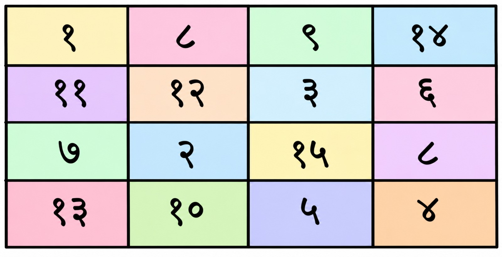
थनैला
प्रसव हो जानेके बाद किसी-किसी स्त्रीके स्तनमें गाँठ पड़ जाती और वह पक जाता है—इसे ‘थनैला’ रोग कहा जाता है। नागरमोथा और मेथीको बकरीके दूधमें पीसकर लगानेसे वा अरंडके पत्तोंके रसमें कपड़ा भिगोकर बार-बार लगानेसे यह रोग अच्छा हो जाता है। सहिजनके पत्ते पीसकर लेपन करनेसे भी लाभ होता है। कचनारकी छाल पीसकर लेप करनेसे स्तनकी सूजन अच्छी हो जाती है। ज्यादा दर्द हो तो घी-मोम मिलाकर चुपड़ देना चाहिये।
स्तनमें दूध न उतरे तो मुनक्का पीसकर घीमें मिलाकर खानेसे दूध उतरेगा और बढ़ेगा भी।
स्त्रियोंके खास-खास रोग ये ही हैं। साधारण रोग तो स्त्री-पुरुष सबको होते हैं। इन रोगोंकी संख्या भी अगणित है, इसलिये ऐसे रोगोंके लिये किसी योग्य वैद्यके पास जाना चाहिये।
••••
सच्चरित्रता
‘अपनी संतानोंके लिये धन-रत्नकी अपेक्षा सच्चरित्रताकी विमल सम्पत्ति छोड़ जाना ही माता-पिताका कर्तव्य है।’ —प्लेटो
‘जिसको दहेज कहा जाता है, उसे मैं दहेज नहीं समझता; सच्चरित्रता और संयमको ही मैं यथार्थ दहेज समझता हूँ।’ —प्लाटस
‘स्त्रियोंमें शीलका अभाव एक ऐसा अपराध है, जिसका मार्जन किसी भी क्रियासे नहीं हो सकता। इसके बिना उनकी सुन्दरता शोभाविहीन और चतुराई घृणास्पद हो जाती है।’ —स्टील
शिशुरोग और उनकी घरेलू चिकित्सा
बाल्यावस्था जीवनकी आधारशिला है। उसपर जीवनका विशालकाय भवन निर्मित होता है। नींवकी दृढ़तापर जैसे भवनकी दृढ़ता अवलम्बित है, वैसे ही बाल्यावस्थापर जीवन। इस प्रकार बाल-स्वास्थ्य और बाल-चिकित्साका प्रश्न बहुत महत्त्वपूर्ण सिद्ध होता है; किंतु दुःखका विषय है कि इस ओर देशवासियोंका जितना ध्यान जाना चाहिये, उतना नहीं गया है। हमारी माताएँ और बहिनें तो इस महत्त्वपूर्ण प्रश्नके विषयमें प्रायः बिलकुल अनभिज्ञ हैं। उनमें इस सम्बन्धमें अभीतक इतना अज्ञान भरा हुआ है कि जहाँ बच्चा बीमार हुआ कि वे नजर या टोना लग जाने आदिकी आशंका करने लगती हैं और चिकित्साका नामतक न लेकर झाड़-फूँक आदिकी शरण लेने लगती हैं। भाग्यवश या दैवयोगसे कोई बच्चा अच्छा हो गया तो ठीक है; नहीं तो रोगके साथ उसकी जीवनलीला तो समाप्त है ही। यही कारण है कि हमारे देशमें प्रति सौ बच्चोंके पीछे साठ बच्चे बारह वर्षकी अल्प आयुके पूर्व ही अपनी जीवनलीला संवरणकर चल बसते हैं। और जो बचते हैं, उनका स्वास्थ्य भी पचास प्रतिशत नष्ट हुआ मिलता है तथा एक-न-एक भयंकर रोग उनके शरीरमें काठमें घुनकी भाँति लगा ही रहता है। इसमें सुधार तभी सम्भव है, जब देशके लोग और विशेषकर हमारी माताएँ-बहिनें बाल-स्वास्थ्य और बाल-चिकित्साके सम्बन्धमें पूर्ण शिक्षिता हो जायँ। पुराने जमानेकी बूढ़ी स्त्रियाँ बच्चोंके घरेलू इलाजोंको जानती थीं। उन्हें बात-बातमें डॉक्टर-वैद्योंको बुलाकर व्यर्थ धनव्यय, अपवित्र दवाइयोंके सेवनसे धर्मनाश नहीं करना पड़ता था और न कठिन परतन्त्रताका दुःख ही उठाना पड़ता था। समयपर सस्तेमें इलाज हो जाता और सब प्रसन्न रहते।
बच्चोंकी बीमारीके कारण
बच्चोंकी बीमारीके प्रधानतः दो कारण हैं—(१) माताका बच्चेकी ओरसे लापरवाही करना और (२) माताका आचार-विचारहीन रहना, स्वास्थ्य एवं साधारण घरेलू इलाजसे तथा दवाओंसे सर्वथा अनभिज्ञ होना।
बच्चोंकी प्रकृति बड़ी नाजुक होती है। थोड़ी-सी भी अस्वच्छता, दुर्गन्ध तथा तनिक-सी सर्दी-गर्मीका अधिक असर उन्हें हानि पहुँचा देता है। हमारे यहाँ प्रसूतिका-गृहकी सफाईपर बहुत ही कम ध्यान दिया जाता है। प्रसूतिकाको घरके सबसे गंदे कपड़े ओढ़ने-बिछानेको दिये जाते हैं, मैली-कुचैली स्त्रियाँ प्रसूतिकाके पास काम करनेके लिये रखी जाती हैं तथा मल-मूत्रको समयानुसार उठानेका कोई ठीक प्रबन्ध नहीं होता। इन सब बातोंका परिणाम यह होता है कि प्रायः प्रसूतिगृहमें ही बच्चेको एक-न-एक रोग आ घेरता है। अतएव प्रसूतिका-गृह आदिकी सफाईपर पूरा ध्यान देना चाहिये।
दूसरे, बालक माताके दूधपर ही अधिकतर रहता है। अतएव माताके शरीरके अच्छे-बुरे पदार्थ दूधके साथ बच्चेके शरीरमें पहुँचते रहते हैं। इस प्रकार जहाँ माताने आहार-विहारमें गड़बड़ी की कि उसके शरीरमें विकार उत्पन्न होकर बच्चेको भी वह रोगी बना डालता है। अतः जबतक बच्चा माताका दूध पीता है, तबतक यदि उसके शरीरमें कभी कोई रोग दिखायी पड़े तो उसकी दवा करनेके पहले माताकी दवा करनी चाहिये। यदि बच्चेको दवा देना आवश्यक ही हो तो माताको भी साथ-साथ दवा देनी चाहिये, क्योंकि रोगका मूल कारण तो माताके शरीरमें है और यदि वह नष्ट न होगा तो बच्चेके शरीरके दूषित अवयव नष्ट होनेपर भी माताके दूधके साथ और नवीन दूषित पदार्थ उसमें आ जायँगे और उसे रोगी बना डालेंगे। इस प्रकार माताओंपर दोहरी जिम्मेवारी रहती है—एक अपने स्वास्थ्यकी और दूसरी बच्चेके स्वास्थ्यकी। अतएव उन्हें अपना आहार-विहार खूब संयमित रखना चाहिये।
बाल-रोग-निदानकी कठिनता
सुख और दुःखकी अनुभूतियोंसे बच्चेका जीवन प्रारम्भ होता है, जिन्हें वह हँसकर और रोकर प्रकट करता है। हमारी तरह वह अपने मनोभावोंको वाणीद्वारा व्यक्त नहीं कर सकता। अतएव बच्चेके रोगका निदान करना बड़ी बुद्धिमानीका काम है। साधारणतः बच्चेकी तकलीफको जाननेका एक ही साधन है। बालकको जब किसी तरहकी तकलीफ होती है तो वह रोता है, चिल्लाता है या अपने बदनको पटकता है। पर इसमें भी सावधानीकी आवश्यकता है। बच्चेको ऐसा करते देखकर तुरंत दवा-दारूकी फिक्रमें नहीं लग जाना चाहिये। कभी-कभी जूँ, खटमल आदिके काटनेसे भी बालक बुरी तरह रोने लगता है। अतः माताको सबसे पहले देखना चाहिये कि बच्चेके कपड़ोंमें या उसकी चारपाईपर जूँ, चींटी आदि तो नहीं आ गयी हैं, जो बालकको काट रही हैं। इनमेंसे यदि कोई बात न हो तो समझ लेना चाहिये कि बालक बीमार है। बालकोंकी बीमारीका अधिकतर कारण पेटका रोग होता है। अतः सबसे पहले बच्चेके पेटपर ध्यान देना चाहिये। यदि बालक बारंबार पैरोंको पेटकी ओर समेटे और पेटको दबानेसे खुश न हो, बराबर रोता रहे, तो समझना चाहिये कि उसके पेटमें दर्द है। सोकर उठनेके बाद यदि बालक जीभ निकाले, इधर-उधर सतृष्ण दृष्टिसे देखे और माथा हिलाये तो समझना चाहिये कि भूखा है। जहाँ पीड़ा रहती है, वहाँ बच्चा बार-बार हाथ ले जाता है और दूसरेके वहाँ छूनेपर रोता है। यदि बालकके मस्तकमें पीड़ा होती है तो वह आँखें मूँदे रहता है और रोता है। गुदामें दर्द होनेपर बच्चेको प्यास अधिक लगती है और कभी-कभी साधारण-सी मूर्च्छा-सी आ जाया करती है। मलके कोठेमें दर्द होनेपर मल-मूत्र रुक जाता है, मुख धुँधला पड़ जाता है, साँस अधिक चलती है और आँतोंसे आवाज होती है। इस प्रकार बच्चेके संकेतोंद्वारा उसकी तकलीफको समझना चाहिये और बादमें औषध देनी चाहिये। बिना रोगका अच्छी प्रकार निदान किये दवा देना आरम्भ कर देना मृत्युका आवाहन करना है।
बच्चोंकी औषधका परिमाण
औषधकी मात्रा एक वर्षके बच्चोंके लिये एक रत्ती और दो वर्षके बच्चोंको दो रत्ती और इसके ऊपरकी अवस्थावालोंको एक माशा औषधकी मात्रा देनी चाहिये। बच्चोंको औषध माँके दूधमें अथवा शहदमें घिसकर दी जाती है।
(१) जन्मते ही दस्त होनेका उपाय
जन्म लेते ही बालकको दस्त होता है, जिससे गर्भावस्थाका इकट्ठा हुआ मल निकल जाता है। यदि यह दस्त न हो तो बालक रोगग्रस्त हो जाता है। अतएव इसपर विशेष ध्यान देना चाहिये। यदि जन्म लेते ही बच्चेको स्वतः ही दस्त न हो तो माताको चाहिये कि वह उसे स्तन पिलाये। दूध पीनेसे अवश्य दस्त हो जायगा। यदि इससे भी दस्त न हो तो शुद्ध रेंडीके तेलकी पाँच-सात बूँदें शहदमें मिलाकर बालकको चटा देनी चाहिये। इससे अवश्य ही दस्त हो जायगा।
(२) नाभि पक जानेपर
बहुधा नार काटनेवालीकी असावधानीसे बच्चेकी नाभि पक जाती है। ऐसी अवस्थामें (१) मोमका मलहम कपड़ेपर लगाकर नाभिपर रख दे। (२) कपड़ेको कड़ुवे या नारियलके तेलमें भिगोकर नाभिपर रख दे। (३) यदि सूजन आ गयी हो तो पीली मिट्टीके एक ढेलेको आगमें गरम करके उसके ऊपर दूध डाले और उसका बफारा नाभिपर दे। (४) अथवा कपड़ा गरम करके सेंक दे। (५) नाभिसे खून बहता हो तो साफ कपड़ेको जलाकर उसकी राख लगा दे। (६) घाव होनेपर कपड़ेकी राख, हल्दीका चूर्ण मिलाकर लगा दे या नीमकी पत्तियोंको गायके घृतमें तलकर उन्हें पीसकर लगा दे।
(३) आँखके रोग
(अ) आँखका आना—
बालककी आँख दुखनेके कई कारण होते हैं—कभी सर्दी, कभी गर्मी, कभी माताकी आँख दुखनेसे तथा कभी दाँत निकलते समय उनकी पीड़ासे। दाँतोंके समय जो आँख दुखती है, वह जबतक दाँत नहीं निकल चुकते तबतक दुखती रहती है और कठिनतासे अच्छी होती है। उसका यत्न यह है कि-(१) आँवला और लोदको गौके घीमें भूनकर पानीमें पीस ले और आँखोंपर चुपड़ दे। (२) घीकुआरका रस आँखोंमें टपका दिया जाय। (३) अमचूरको लोहेपर पीसकर आँखोंपर लेप कर दे। (४) लाल चन्दन, मुलहठी, लोद, चमेलीके फूल तथा गेरूको पीसकर नेत्रोंपर लेप करनेसे भी पीड़ा बंद हो जाती है। (५) बकरीके दूधका खोवा आँखोंपर बाँधा जाय।
सर्दीसे आँख दुखनेपर—कानमें कड़वा तेल डालकर पैरोंके तलवोंमें भी थोड़ा तेल मल दिया जाय।
गर्मीसे आँख आनेपर—(१) नीमकी कोमल पत्ती पीसकर टिकिया बना ले और कोरे घड़ेपर चिपका दे। रातको या दोपहरके समय उसे आँखोंपर बाँधे। (२) गेरूको पानीमें घिसकर उसमें रूई भिगो दे और उसे आँखोंपर बाँधे।
यदि आँखोंमें कीचड़ जमता हो और सोकर उठनेके बाद बालककी आँखें जल्दी नहीं खुलती हों तो त्रिफलाके जलसे उन्हें धोना चाहिये।
बालककी आँख दुखनेके समय उसे दूध पिलानेवालीको खट्टा तथा नमकीन आहार छोड़ देना चाहिये। चनेकी कोई चीज नहीं खानी चाहिये।
(आ) आँखका सूजना—
यदि बालककी आँखें सूज गयी हों तो हर्रे, फिटकरी, रसौत—इन तीनोंको तीन-तीन माशे और अफीम दो माशे लेकर एकमें पीस डाले और आगमें गरम करके पलकोंपर चढ़ा दे।
पुरानी इमलीका छिलका तथा बीया निकालकर साफ कर डालना चाहिये और चार भाग पानीमें भिगो देना चाहिये। दो घंटे इसी प्रकार भीगी रहनेके बाद उसे मलकर छान ले। फिर उसमें एक-एक भाग फिटकरी और अफीम डालकर लोहेके बर्तनमें पकावे। गाढ़ा हो जानेपर उतार ले और आँखोंपर उसीका लेप चढ़ावे।
एक छटाक साफ जलमें एक रत्ती तूतिया मिलाकर सुबह-शाम आँख धो देनी चाहिये। इससे आँखोंके तमाम रोग अच्छे होते हैं।
(इ) आँखमें फूली पड़ना—
चिड़चिड़ेकी जड़का रस शुद्ध शहदमें मिलाकर आँखोंमें अंजनकी तरह लगानेसे फूली कटकर आँखकी ज्योति ठीक हो जाती है। इस अंजनको फूली न कटनेतक बराबर लगाते रहना चाहिये।
(ई) आँखमें कुछ पड़ जाना—
यदि आँखमें कुछ पड़ जाय—जैसे धूल, किरकिरी आदि, तो गरम जलकी धारासे आँखोंको साफ कर देना चाहिये। अथवा एक बूँद रेड़ीका तेल डालकर ठंडे पानीकी पट्टी बाँध देनी चाहिये।
(४) कानके रोग
(१) बरोह और काली मिर्चको पीसकर गरम कर ले, गुनगुना रहनेपर किसी कपड़ेपर रखकर कानमें निचोड़ दे। दो-तीन बार डालनेसे कानका दुखना बंद हो जाता है। यदि बहता भी हो तो नीमके पानीसे धोकर इसे टपकाना चाहिये। बरगदकी डालियोंमें जो जटाकी तरह लटका रहता है, उसका नाम बरोह है। (२) नारियलका तेल डालनेसे भी पीड़ा शान्त हो जाती है। (३) स्त्रीके दूधमें रसौतको घिसकर फिर शहद मिलाकर डालनेसे कानके सब रोग दूर हो जाते हैं। (४) भेड़का मूत्र, सेंधा नमक और नीमके पत्ते तिलके तेलमें पकावे। जब तीनों दवाइयाँ जल जायँ, तब उस तेलको शीशीमें रख ले और कानमें डाल दिया करे। (५) मेथीको पानीमें पकाकर वही पानी कानमें डालनेसे कानका दर्द ठीक हो जाता है। (६) आमके पीले पत्तेको तेल चुपड़कर आगपर सेंके और उसका रस कानमें निचोड़े। (७) यदि कान बहता हो तो पहले नीमकी पत्तीको उबालकर गरम पानीसे धोवे, फिर उसमें समुद्रफेन डाले। अथवा भँगरैयाका रस या सुदर्शनकी अथवा गेंदेकी पत्तीका रस गार दे। (८) यदि बालकके कानमें कोई कीड़ा घुस जाय तो मकोयके पत्तेका रस गारकर कानमें डाले।
(५) बहरापन
यदि किसी कारणवश कानसे कम सुनायी देता हो तो सफेद कत्था पीसकर खूब महीन कपड़ेमें छान डाले और गरम पानीमें उसे घोलकर शीशेकी पिचकारीद्वारा उसे कानमें डाले। थोड़ी देरके बाद फिर उसे बाहर खींच ले और नीमके पानीसे कान साफ कर डाले।
(६) नाकसे रुधिर जाना
यदि नाकसे खून जाता हो तो (१) ताजी प्याज सुँघावे। (२) सफेद मिट्टीमें खसका इत्र मिलाकर उसे पानीमें भिगोकर सुँघावे। (३) त्रिफलाका सेवन करावे। (४) शंखपुष्पी या कौड़ेनीको मिर्चके साथ पीस-छानकर पिलावे। (५) फिटकरीका पानी नाकसे सूँघे।
(७) गाल फूलनेपर
बालकके गाल फूल जानेपर—(१) गोबरौली मिट्टी गरम पानीमें पकाकर बालकके गालपर लगावे। (२) राई अथवा धतूरेके बीजको पीसकर गरम करना चाहिये और उसे गालपर चढ़ा देना चाहिये।
(८) घाँटीका बढ़ जाना
बहुधा बालकोंकी घाँटी बढ़ जाती है, जिससे उन्हें दूध पीनेमें पीड़ा अनुभव होती है। चतुर धायको चाहिये कि घाँटीको मुखमें अँगुली देकर ठीक कर दे। घाँटी ऊपर उठाते समय चूल्हेकी राख और काली मिर्च पीसकर अँगुलियोंपर लगा ले तथा मुलतानी मिट्टीको सिरकेमें पीसकर तलवेपर धर दे अथवा माजूफलको सिरकेमें घिसकर अँगुलीसे घाँटीको उठाये। बालकको तथा उसकी माताको गरम वस्तु खानेको न दे।
(९) होठ फटनेपर
(१) घीमें नमक मिलाकर दिनमें दो-तीन बार नाभिमें लगाना चाहिये।
(२) तिलके तेलको या गुनगुने घीको होठोंपर लगाना चाहिये।
(३) तरबूजके बीजको पीसकर होठोंपर लगाना चाहिये।
(१०) मुख पकना
मुख पकनेपर चमेलीके कोमल पत्ते और फूलको शहदमें मिलाकर मुखमें लगावे। अथवा चमेलीके पत्ते और फूल डालकर पानीको औटाया जाय और बादमें जलको ठंडा करके उससे बालकको कुल्ला कराया जाय।
(११) दाँत निकलना
यद्यपि यह कोई रोग नहीं है, किंतु इसमें बच्चेको काफी पीड़ा होती है तथा बहुधा वह अतिसार, ज्वर आदिका शिकार हो जाता है। अतएव इसपर भी विचार करना आवश्यक है। जब रोते समय बालकके गालोंका रंग लाल हो जाया करे, तब समझना चाहिये कि शीघ्र ही दाँत निकलनेवाले हैं। दाँत निकलनेके लिये सरल उपाय यह है कि शहदमें सुहागा, नमक अथवा सोरा पीसकर मिलावे और दिनभरमें कई बार मसूड़ोंपर लगा दिया करे। यह याद रहे कि दाँत निकलनेका समय पाँचवें महीनेके बाद आता है। मुलहठीके डंठको छीलकर बालकको पकड़ा दे और उसे चूसने दे। इससे भी बच्चेको आराम मिलता है और दाँत जल्द निकल आते हैं। दाँत निकलते समय बालकोंका आहार घटा देना चाहिये; क्योंकि उस समय उनकी जठराग्नि मंद पड़ जाती है और नाना प्रकारके रोगोंकी सम्भावना रहती है।
(१२) पसली उठना
पसलीका रोग दो प्रकारका होता है—(१) मलके दोषसे अर्थात् दस्त ठीक तरहसे न आनेसे ज्वर और खाँसी आने लगती है। इसके लिये साधारण दस्त लगानेवाली दवाएँ—जैसे अमलताशका गूदा, मुनक्का या बनफ्सा देकर दस्त कराना चाहिये। जमालगोटा या सनाय कभी नहीं देनी चाहिये। (२) दूसरे प्रकारका दर्द कफके कारण होता है। इसमें बुखारके साथ-साथ साँस भी फूलता है। इसकी दवा बड़ी सावधानीसे करनी चाहिये।
(१३) खाँसी
यह कई प्रकारकी होती है—खाँसी, कुकुरखाँसी, जुकामकी खाँसी, सर्दीकी खाँसी आदि। (१) अनारका छिलका और नमक पीसकर चटावे। (२) वंशलोचनकी बुकनी शहदमें मिलाकर चटावे। (३) अतीस, नागरमोथा तथा मुलहठीकी बुकनी बनावे और तीनोंकी बराबर मात्रा शहदमें मिलाकर चटावे। (४) पानके रसमें एक या दो रत्ती जायफल घिसकर दे। (५) सूखी खाँसीमें मुलहठीका सत मुखमें डालकर कुछ देर रखे, अथवा बादामकी गिरी पानीमें घिसकर चटावे। (६) यदि ज्वर, खाँसी, अतिसार तीनों एक साथ हों तो काकड़ासेंगी, पीपल, अतीस और मोथाको कूटकर बुकनी बनावे और इनकी बराबर मात्रा शहदमें मिलाकर चटावे। (७) कवाबचीनी और मिश्री समान-समान लेकर पीस ले और उस चूर्णको अँगुलीसे शिशुकी जीभपर लगा दे। (८) छातीपर पुराना घी या कपूर मिला हुआ सरसोंका तेल मालिश करनेसे भी खाँसी मिटती है।
(१४) सर्दी या जुकाम
यदि बच्चेको सर्दी लग जाय और नाकसे पानी आने लगे तो—(१) नाककी हड्डी, सिर और कनपटीको सेंकना चाहिये। (२) राईको कूँच डाले और उसे पानीमें डालकर आगपर चढ़ा दे। जब पानी पक जाय तो सोते समय बालकके पैर गुनगुने पानीसे धोकर उनमें मोटे ऊनी मोजे पहना दे। (३) यदि बच्चा माताका दूध पीता हो तो माताको बाजरेके आटेका हलवा खिलाना चाहिये या इसी तरहके अन्य गरम पदार्थका सेवन कराना चाहिये। (४) अवस्थानुसार तुलसीके २, ४, ६, ८ पत्ते दूधमें पकाकर तथा उसे छानकर पिलाना चाहिये। (५) यदि सर्दीके कारण ज्वर भी हो गया हो तो तीन तुलसीकी पत्ती और तीन गोल (काली) मिर्च मिलाकर पीसे और उसे जलमें घोलकर आगपर रख दे। जब उबाल आ जाय तो छानकर थोड़ी मिश्री मिलाकर पिला दे। (६) रातके समय पैरोंके तलवोंमें गरम कड़वा (सरसोंका) तेल लगा दे। (७) पाँच-छः तुलसीपत्रोंका रस शहदके साथ मिलाकर चटा देनेपर या एक-दो अडूसेके पत्तोंका रस शहदके साथ जीभपर लगा देनेपर सर्दी-खाँसीमें बहुत लाभ होता है।
(१५) ज्वर
यदि बालकको ज्वर आता हो तो—
(१) नागरमोथा, हर्रे, नीमकी छाल, परवल और मुलहठी—इनका काढ़ा बनाकर पिलावे। यह काढ़ा बालकोंको हर तरहके ज्वरमें लाभ करता है।
(२) गिलोयका सत शहदमें मिलाकर चटावे।
(३) मिश्री और शहदमें कुटकी मिलाकर चटावे तो अफारासहित दारुण ज्वर शीघ्र ठीक हो जाता है।
(४) कुटकीको जलमें पीसकर शरीरमें उसका लेप करनेसे कैसा ही ज्वर हो, शीघ्र शान्त होता है।
(५) पद्माख, नीमकी छाल, धनिया, गिलोय, लाल चन्दन—इनका काढ़ा पिलानेसे बालकका त्रिदोष-ज्वर दूर हो जाता है। बच्चा यदि माताका दूध पीता हो तो यह काढ़ा माताको पिलावे।
(६) गिलोयको आठ पहरतक जलमें भिगो देवे, फिर घोंटकर पिलानेसे बालकोंके सब प्रकारके ज्वर दूर हो जाते हैं।
(७) मुलहठी, शहद, वंशलोचन, धानकी खील, रसौत, मिश्री—इनका अवलेह बालकको देनेसे सब प्रकारके ज्वर ठीक होते हैं।
(८) शाकपर्णी, गोखरू, सोंठ, नेत्रवाला, छोटी करेलीकी जड़, गिलोय, चिरायता—इनका काढ़ा बनाकर बालकको तथा उसकी माताको (यदि बालक उसका दूध पीता हो तो) पिलावे। इससे वात-ज्वर जाता रहता है और जठराग्नि बढ़ती है। लघु पंचमूलका काढ़ा बालकको पिलानेसे भी वातज्वर ठीक होता है। नागरमोथा, हर्रेकी छाल, नीमकी छाल, पटोलकी छाल—इनका काढ़ा शहद मिलाकर पिलानेसे भी वातज्वरमें लाभ होता है।
(९) यदि ज्वर हो, खाँसी हो, कै होती हो और साथ ही साँस भी फूलता हो तो नागरमोथा, पीपल, अतीस तथा काकड़ासींगीकी बुकनी शहदमें चटावे। यदि खाँसी तेज हो तो जवासा मिला देना चाहिये। यदि दस्त अधिक आते हों तो नागरमोथाकी जगहपर धनिया मिला देना चाहिये।
(१०) यदि मलेरिया-ज्वर हो तो अतीसकी बुकनी तुलसीके रसमें देनी चाहिये।
(११) यदि बालकका ज्वर चला गया हो, पर हरारत रहती हो तो अतीस, नीमकी छाल और गिलोयका काढ़ा पिलाना चाहिये।
(१२) जो बालक माताका दूध पीते हों, उनके लिये नागरमोथा, काकड़ासींगी और अतीसकी बुकनी शहदमें चटाना ज्वर, खाँसी और वमनके लिये सदा लाभकारी है।
(१३) धनिया, लाल चन्दन, गुरुचकी जड़ और नीमकी भीतरी छाल—इन सबकी बराबर मात्रा लेकर खलमें कूट डाले। रातको नयी हँड़ियामें पावभर पानीमें इन्हें भिगो दे। सुबह आगपर चढ़ा दे। जब पानी जलकर आधा रह जाय तो उतारकर छान ले और ठंडा करके पिलावे।
(१६) उदर-रोग
अ—
(१) सफेद कत्था आधी रत्ती, हींग आधा चावल, सोंठ दो चावल, जीरा दो चावल, शोरा कलमी एक रत्ती, माजूफल एक चावल, फिटकरीकी खील दो चावल—इनको पीसकर सुबह-शाम जलके साथ खिलावे। इससे उदर-रोग शान्त हो जाते हैं।
(२) यदि बालकके पेटमें कीड़े (केंचुवे) हों या उसे बदहजमी (अपच) हो तो प्याजका रस पिलाना चाहिये या बायबिडंगका क्वाथ जरा-सा शहद मिलाकर पिलाना चाहिये।
(३) पेटमें दर्द हो तो करैलेके पत्तेके रसमें जरा-सी हल्दी मिलाकर पिला दे।
(४) अजीर्ण हो तो नीबूके रसमें केशर घिसकर चटा दे।
(५) पेटमें कहीं मल रुक गया हो और दस्त साफ न होता हो तो नीबूके रसमें हर्रे घिसकर चटा दे।
(६) अगर पेटमें कीड़े हों तो चावलभर केशर और कपूर खिलाकर ऊपरसे दूध पिला दे।
(आ) पेटका फूलना, भारीपन रहना आदि—
यदि बालकका पेट फूल गया हो और वह सुस्त रहता हो तो—(१) सोंठ, रेवन्त चीनी, सौंफका अर्क—इन सबको मिलाकर दोनों समय खिलावे। यहाँ सोंठ एक चावलभर, रेवन्त चीनी दो चावलभर और सौंफका अर्क तीन माशेभर लेना चाहिये और उसकी दो खुराक बना लेनी चाहिये। (२) सेंधा नमक, सोंठ, इलायची, भुनी हींग और भारंगीको महीन पीसकर गरम पानीके साथ पिलावे। (३) हींग भूनकर और पानीमें घिसकर नाभिके चारों ओर लेप कर दे। (४) इलायची, सूखा पोदीना, काली मिर्च, पीपल, काला नमक—इन सबको मिलाकर दिनमें दो-तीन बार दे। यदि प्रतिदिन पेट फूलनेकी शिकायत हो तो तीन-चार दिन पर्यन्त दे। (५) यदि पेट बढ़नेकी बीमारी हो गयी हो तो रातको पानीके साथ थोड़ा-सा शहद मिलाकर पिलाना चाहिये। कितनी ही माताएँ अपने बच्चेको मोटा-ताजा बनानेके मोहमें घी आदि देरसे पचनेवाली चीजें अधिक मात्रामें खिलाती रहती हैं। बच्चा उन पदार्थोंको सहजमें पचा नहीं पाता और उसके पेटमें भारीपन रहने लगता है। ऐसी दशामें—
(१) बकरीकी लेंड़ी आधी छटाँक, रेंड़ीकी बीजी पैसेभर, महुआ आधा छटाँक—इन तीनोंको पानीमें एक साथ खूब पकाना चाहिये। जब खूब पक जाय तो नीचे उतारकर कपडे़पर फैलाना चाहिये और बच्चेके सहन करनेभर गरम रहते हुए उसे बालकके पेटपर रखकर ऊपरसे बाँध देना चाहिये।
(२) साबुन, मुसब्बर, नमक और हल्दी—इन सबोंको पानीमें पीसकर पकाना चाहिये और बर्दाश्त करनेभर गरम रखकर पेटपर बाँध देना चाहिये।
(इ) संग्रहणी (भोजन न पचना)
(१) पीपल, भाँग और सोंठके चूर्णको शहदके साथ चटानेसे बच्चोंकी संग्रहणी नष्ट हो जाती है। (२) आधी छटाँक खानेका बढ़िया चूना एक परातमें रखे और ऊपरसे ढाई सेर पानी पतली धारसे उसके ऊपर छोड़े। चूना घुल जायगा। दो घंटेके बाद उस पानीको निथारकर चूनेको फेंक दे। इस पानीको आध घंटेतक फिर स्थिर रहने दे। बादमें धीरेसे उस पानीको निथारकर किसी बोतलमें भर ले और नीचे जमे हुए चूनेको फेंक दे। इस पानीको थोड़े-से दूधमें मिलाकर प्रतिदिन बच्चेको पिलावे। इससे बालककी उल्टी और हरे दस्तोंका आना भी बंद हो जाता है। पेटके कृमि भी नष्ट होते हैं।
(१७) दूधका फेंकना
यदि बालक दूध फेंकता हो तो पहले इस बातका पता लगाना चाहिये कि इसका कारण क्या है? बालकके पेटमें कुछ खराबी है अथवा माताके दूधमें कुछ दोष आ गया है। बहुधा देखनेमें आता है कि माताएँ काम करके उठती हैं, पसीनेमें लथपथ रहती हैं और बच्चेको दूध पिलाने लगती हैं। काम करनेसे दूधमें गरमी आ जाती है और वह दूषित हो जाता है। अतएव वह बच्चेके अनुकूल नहीं पड़ता और वह उसे फेंकने लगता है। ऐसी दशामें माताको बच्चेको दूध पिलानेमें सावधानी करनी चाहिये और कामपरसे उठकर पहले ठंडी हो ले, तब दूध पिलावे; किंतु यदि बच्चेके पेटमें किसी प्रकारका विकार उत्पन्न हो गया है और वह उसके कारण दूध फेंकता है तो—(१) काकड़ासींगी, अतीस, मोथा और पीपल समान मात्रामें कूटकर उसकी बुकनी शहदमें मिलाकर बालकको चटावे। (२) आमकी गुठली, धानकी खील और सेंधा नमक कूटकर उसकी बुकनी शहदमें चटावे। (३) धनिया भिगोया हुआ जल थोड़ा-थोड़ा-सा पिलावे। (४) साथ ही बार-बार दस्त होते हों तो चावल धोये हुए जलके साथ जायफल घिसकर सुबह-शाम एक-एक छोटी चम्मच पिला दे।
(१८) दूध न पीना
बहुधा बच्चे दूध नहीं पीते। यदि माताके किसी दोषके कारण बच्चा दूध नहीं पी रहा हो तो माताकी दवा करे, नहीं तो बच्चेको दवा दी जाय। इस तरहकी बीमारीकी सबसे उत्तम दवा यह है कि परवलके पत्तोंको पानीमें उबालकर उसी पानीसे बच्चेको नहलाये।
(१९) सिरका दर्द
बालकके सिरमें दर्द होनेपर—
(१) कानमें सरसोंका तेल डाल देना चाहिये।
(२) चन्दन और सोंठ पीसकर कनपटी तथा सिरपर लगाना चाहिये।
(३) काली मिर्च तथा चावल पीसकर गरम करे और सिर तथा कनपटीपर उसका लेप करे।
(४) सिरपर मक्खन लगाना चाहिये।
(२०) सिरमें बाल न उगना
कितने ही बालकोंके सिरमें बाल नहीं उगते। यदि सिरमें बहुत दिनतक बाल न उगें तो (१) मक्खीका मैल पानीमें पीसकर सिरपर लगाये। (२) गायका मक्खन ठंडे जलमें पंद्रह बार धोये, फिर उसमें नीला तूतिया और मुर्दाशंख पीसकर दो तोलेके परिमाणमें मिलावे और उसका मलहम बनाकर सिरमें लगावे। (३) तीते परवलके पत्तेका रस सिरमें लगावे। (४) हाथीदाँतकी राख और रसौत लगावे।
(२१) अतिसार
(अ)—
यह कई कारणोंसे होता है। अजीर्णसे, सर्दीसे तथा दाँत निकलनेके समय। यदि दाँत निकलनेके समय यह रोग हो तो इसे कदापि नहीं रोकना चाहिये। (१) अजीर्णके कारण हो तो घूँटी दे अथवा भुना हुआ सुहागा आदि पाचक चीजें देवे। (२) साधारण दस्तोंके लिये बेलगिरी, कत्था, धायके फूल, बड़ी पीपल और लोध—इनको पीसकर शहदमें चटावे। (३) हल्दी, कुड़ेके बीज, काकड़ासींगी और बड़ी हर्रे पानीमें भिगोकर वही पानी पिलाये। (४) तज दो चावल भर, हींग चौथाई चावल भर, सौंफ एक चावल, मोथेका बीज चौथाई चावल, बबूलका गोंद एक चावल—इन सबको मिलाकर एक खुराक बनावे, पानीमें औटाकर उतार लेवे। यदि बच्चा बहुत छोटा हो तो आधी खुराक देवे। (५) यदि पतला दस्त आता हो तो नेत्रवाला, धायका फूल, बेलकी गिरी तथा गजपीपर बराबर मात्रामें लेकर इनका काढ़ा बनावे और बालकको पिला दे। (६) मजीठ, धायका फूल, सारिवा, पठानी तथा लोधका काढ़ा ठंडा करके शहदमें मिलाकर पिलावे। (७) सोंठ, अतीस, नागरमोथा, सुगन्धबाला तथा इन्द्रजवका काढ़ा बनाकर पिलावे। (८) लजनीकी जड़, धायका फूल, लोध तथा सारिवाका काढ़ा बनावे। ठंडा करके इसमें शहद मिलाकर बालकको पिलावे। कैसी ही दस्तकी बीमारी क्यों न हो, ठीक हो जाती है। (९) पत्थर या मिट्टीके बर्तनमें थोड़ा मट्ठा रख ले। उसमें एक मात्रा कुलंजन घिसकर डाल दे। फिर थोड़ी हींग डालकर उसकी कढ़ी तैयार करे। वही कढ़ी बालकको पिलावे। कैसी भी दस्तकी बीमारी हो, अवश्य दूर होगी।
(आ) आमातिसार (आँव)
दस्तके साथ आँव गिरनेपर—(१) वायबिडंग, अजमोद और पीपलको बारीक पीसकर चावलके पानीमें पिला दे। (२) भुनी हींग, अतीस, चीता, कुड़ा, मेथी, सोंठ—इनका चूर्ण गर्म जलके साथ देवे। (३) अधभुनी सौंफ कूटकर शक्कर मिलाकर देवे। (४) मरोरफलीको सेंधे नमकके संग पीसकर देवे। (५) सोंठका मुरब्बा खिलावे। नं० तीनसे पाँचतककी दवा आँवके साथ खूनके दस्त आनेपर भी बहुत लाभकारी है।
(इ) रक्तातिसार
यदि दस्तके साथ खून गिरता हो तो—(१) सोंठ और पाषाणभेदको पानीमें घिसकर पिलावे। (२) कुड़ेके बीज, सफेद जीरा जलके साथ पीसकर तथा मिश्री मिलाकर पिलावे। (३) धायके फूल, कमलके फूल, मोचरस—इनको पीसकर साठी चावलमें देवे। (४) मोचरस, लजनीकी जड़ तथा कमलकी केशर बराबर मात्रामें सवा तोले लेकर उसमें उतना ही बढ़िया चावल मिला दे। तीन छटाँक पानीमें पीसकर इनकी लपसी बना डाले। इसके खिलानेसे आँव, दस्तके साथ रक्तका आना बंद हो जाता है। यह दवा उन बालकोंको दी जानी चाहिये, जो अन्न खाते हैं।
(ई) ज्वरातिसार
यदि बच्चेको ज्वर भी आता हो और दस्त भी लगते हों तो (१) धायका फूल, बेल, धनिया, लोध, इन्द्रजव और नेत्रवालाका चूर्ण शहदमें मिलाकर चटावे। (२) नागरमोथा, पीपल, मजीठ और सोंठका चूर्ण शहदमें चटावे। (३) पीपल, अतीस, नागरमोथा, काकड़ासींगी—इनका चूर्ण शहदमें चटावे।
(उ) प्यास और ज्वरातिसार
सोंठ, अतीस, मोथा, इन्द्रजव, खस—इनका काढ़ा पिलानेसे ज्वर, अतिसार और प्यासका विकार दूर हो जाता है।
(२२) सोते समय दाँत चबाना
यदि बालक सोते समय दाँत चबाता हो तो काकड़ासींगीको सागोनकी लकड़ीसे दूधमें पकाकर उस दूधको बच्चेके पाँवके तलोंमें सोते समय मल दे। दाँत चबाना बंद हो जायगा।
(२३) बहु-रोदन
यदि बालक बहुत रोता हो तो चन्दन अथवा बनफ्शेका लेप करना चाहिये। कभी हँसलीके डिग जानेसे भी बालक बहुत रोता है। नीमके पत्तोंकी धूनी देनी चाहिये और घुघुचीकी माला पहनानी चाहिये।
(२४) हिचकी
यदि बालकको हिचकी आती हो तो—
(१) थोड़ा-सा ठंडा जल पिला देवे। (२) नारियलको पीसकर उसमें चीनी मिलाकर बालकको चटावे। (३) विषल और मुलहठीकी बुकनी बना ले और इसमें शहद और मिश्री मिलाकर बिजौरे नीबूके रसके साथ चटावे। (४) हींग, काकड़ासींगी, गेरू, मुलहठी, सोंठ तथा नागरमोथाकी बुकनी बनाकर शहदमें मिलाकर चटावे। (५) छोटी हर्रेके चूर्णको शहदमें चटावे। (६) सोहागाको पीसकर शहदमें चटावे। (७) काली मिर्चको मोटी सूईकी नोकमें पिरोकर उसे दियासलाईसे जला दे और उसका धूँआ नाकमें दे। तत्काल हिचकी मिट जायगी।
(२५) तुतलाना
अगर बालक तुतलाकर बोलता हो और जबानसे साफ शब्द नहीं निकलते हों तो लघुब्राह्मी घासके ताजे पत्ते उसे कुछ दिनतक खिलाने चाहिये। इससे जबान पतली हो जायगी और साफ शब्द मुँहसे निकलने लगेंगे।
(२६) अधिक प्यास
यदि बच्चोंको अधिक प्यास लगे और पानी पीनेसे भी उन्हें संतोष न हो तो (१) कमलगट्टेके हरे बीजको नीमके साथ घोंटकर पानीमें पिलाये। (२) मुनक्केका बीज निकालकर तथा थोड़े-से नमकके साथ उसे घोंटकर सबेरे बालकको चटावे। (३) भुनी हींग, सेंधा नमक और पलासपापड़का चूर्ण शहदमें मिलाकर चटाये।
(२७) कब्ज
यदि बालकको खुलासा दस्त न हो तो—
(१) काला नमक, सुहागा और भुनी हींगको पानीमें घिसकर जरा गरम करके पिला दे।
(२) थोड़ा-सा रेड़ीका तेल नाभिके चारों ओर लगा दे; इससे लाभ न हो तो थोड़ा-सा दूधके साथ पिला दे।
(३) ढोंढ़ी और पेंडूपर हींगका लेप करके ऊपरसे पानका पत्ता बाँध दे।
(४) पेंडूमें गरम तेल धीरे-धीरे मलना चाहिये।
बच्चा यदि माँको छोड़कर किसी दूसरी स्त्रीका दूध पीता हो तो उसे तुरंत बंद कर देना चाहिये; क्योंकि इससे कब्ज और भी बढ़ जाता है।
(२८) फोड़ा-फुंसी
फोड़ा-फुंसी होनेपर नीमकी पत्ती पानीमें उबालकर उस गरम जलसे स्नान करावे तथा (१) छः माशा खड़िया और आठ माशा मक्खन एक साथ घोंटकर मलहम बना ले और फोड़े-फुंसीके स्थानपर लगावे। (२) गायके मक्खनको १०१ बार ठंडे जलमें धोकर उसमें कमेला कपड़छानकर मिला ले और फुंसियोंपर लगावे।
(२९) घाव
यदि बालकके शरीरमें कहीं घाव हो गया हो तो नीमके पत्ते, दारुहल्दी और मुलहठीकी बुकनी घीमें फेंटकर मलहम बना ले और घावपर लगावे। यदि नासूर पड़ गयी हो तो मलहम लगानेसे पहले नीमकी पत्तीसे धो लेना चाहिये। अगर घावमेंसे मवाद जाती हो तो नीमके कच्चे पत्तेको पीसकर शहदमें मिलाकर चटाना चाहिये।
कई बार बच्चोंकी गुदा पक जाती है। ऐसी अवस्थामें रसौत और लोथका चूर्ण गुदामें भर देना चाहिये।
(३०) खुजली
बच्चे अधिकतर धूलमें खेलते रहते हैं, अतएव यह रोग उन्हें बहुत जल्दी हो जाता है। इससे बचनेका सबसे बढ़िया उपाय है बच्चोंको प्रतिदिन नीमकी पत्ती उबाले हुए गरम पानीसे स्नान कराना। खुजली हो जानेपर—(१) कड़ुवे तेलमें चूनेका पानी मिलाकर उसे खूब हिलाये और जब वह काफी गाढ़ा हो जाय तो उसकी बालकके शरीरपर मालिश करे। (२) कड़ुआ तेल, सेंधा नमक तथा कागजी नीबूका रस—तीनों चीजें एकमें फेंट डाले और बालकके बदनपर पोत दे तथा थोड़ी देर बाद मलकर स्नान कराये। (३) नारियलके तेलमें कपूर डालकर बदनपर मालिश करे। (४) चन्दनके तेलमें नमक और नीबूका रस मिलाकर बालकके बदनपर उबटन करे। (५) नारियल या सरसोंके तेलमें सफेद कवरीके पत्तोंको तलकर वह तेल लगावे।
(३१) आगसे जलना
इमलीकी छालको जलाकर गायके घीमें फेंटकर जले हुए स्थानपर लगा दे। यदि घाव हो गया हो तो कड़ुआ तेल लगाकर ऊपरसे पत्थरका खूब बारीक कोयला बुरका दे। अथवा चूनेका पानी, जैसा कि खुजलीके प्रसंगमें कहा गया है, लगा दे।
(३२) मूत्ररोग
यदि बच्चेको पेशाब न उतरता हो तो चूहेकी लेड़ीको मट्ठेमें पीसकर उसे गरम करे और ढोंढ़ीसे लेकर पेंडूतक लेप कर दे। कलमी शोरेको पानीमें भिगोकर बच्चेके पेंडू एवं नाभिपर लगाये। टेसूके फूलको पीसकर बालकको पिला दे।
बार-बार बच्चा ज्यादा पेशाब करता हो तो आँवलेका रस शहदके साथ दिया जाय। अथवा केलेकी गदर, आँवलेका रस, शहद और मिश्री—इनको दूधके साथ पिलाया जाय।
(३३) जूँ या ढील
यह बीमारी साधारण है। अधिकांश बालकोंको जूँ पड़ जाती है। इसके लिये सबसे पहले बच्चेके शरीर तथा कपड़ोंकी सफाई करनी चाहिये तथा वह जिन व्यक्तियोंके सम्पर्कमें रहता है, उनके कपड़े भी स्वच्छ रहने चाहिये। निमौरी (नीमका फल)-को पानीमें पीसकर सिरमें मलना चाहिये।
(३४) उन्हरिया या अम्हौरी
गरमीके दिनोंमें बच्चेके शरीरपर छोटे-छोटे लाल दाने निकल आते हैं। इससे उसे बड़ी पीड़ा होती है, दिन-रात खुजलानेकी इच्छा होती है; ऐसी दशामें बालकको बड़ी सावधानीसे रखना चाहिये। (१) आमकी गुठली पीसकर शरीरपर लगाना चाहिये। (२) पीली मिट्टीमें गुलाबजल मिलाकर शरीरपर पोतना चाहिये।
(३५) लू लगनेपर
(१) कच्चे आमको भूनकर उसका शरबत पिलावे और सारे बदनमें उसीकी मालिश करे।
(२) प्याज पीसकर उसमें जौका आटा मिलाकर उबटन करे।
(३) धनियेका शरबत मिश्री मिलाकर पिलावे तो लू लग ही नहीं सकती।
(३६) धनुष-टंकार
इस रोगमें शिशु धनुषकी तरह टेढ़ा हो जाता है। यह भयानक रोग है। अच्छे अनुभवी चिकित्सकको दिखलाना चाहिये। यह देखा गया है कि मस्तकपर ठंडा जल या बरफ रखने और पैरोंको गरम जलके बरतनमें डुबा रखनेसे बहुत ही लाभ होता है। आँखोंपर जलका छाबका देना चाहिये तथा होश होने और रोनेपर स्तन मुखमें देना चाहिये। लज्जावती बेलकी जड़ लाल सूतसे गलेमें बाँध देनेपर भी तत्काल लाभ होता है।
बाल-स्वास्थ्यके कुछ मुख्य उपाय
बालकोंको नीरोग रखनेका मुख्य उपाय यही है कि प्रसूतिगृहसे ही उनको स्वच्छ रखे तथा इन उपायोंको काममें लावे—
(१) गोरखमुण्डी और खसके काढ़ेसे चौथे, छठे या आठवें दिन स्नान करा दिया करे।
(२) हल्दी, चन्दन और कूटको पीसकर बालकके शरीरमें उसका उबटन लगाकर स्नान करावे।
(३) प्रतिदिन बालकके शरीरपर उबटन और तेल मल दिया करे।
(४) राल, गूगल, खस और हल्दीका धुआँ दे दिया करे।
(५) कुछ माताएँ नींद आनेके लिये बच्चोंको अफीमकी आदत डाल देती हैं। इससे बहुत ही हानि होती है। अतः बच्चोंको अफीम कभी नहीं देना चाहिये।
(६) बच्चोंको बड़ी अमृतसरी हर्रे घिसकर रोज माँके दूधके साथ दी जाय तो बहुत ही लाभ होता है।
बालरक्षा-घूँटी
नीचे लिखी ओषधियोंकी एक घोंटी तैयारकर दोनों समय बालकोंको देनी चाहिये। बड़ी ही उपयोगी है—
सौंफकी जड़, सौंफ, छोटी हर्रे, उन्नाव, सोहागा, बायबिडंग, अजवायन, जीरा, पुराना गुड़, अमलताश, सोंठ, बालबच, बड़ी हर्रे, गुलाबके फूल, सफेद जीरा और मुनक्का—इनकी बराबर मात्रा लेकर कूट ले। जब देना हो तो खौलते पानीमें एक मात्रा डालकर औटावे। फिर उतारकर छान ले और आधी रत्ती या इससे कम-बेशी काला नमक मिलाकर पिला दे। इससे बालकके पेटकी पीड़ा, बदहजमी, पेटका फूलना, पेटका कड़ापन, दूध फेंकना आदि सभी शिकायतें दूर हो जाती हैं और बालकके शरीरमें बल बढ़ता है।
बच्चोंके लिये दो अत्यन्त लाभकारक दवाएँ
(१) लौंग, अजवायन, अनारके छिलके, बड़ी इलायचीके छिलके—चारों समान भाग और थोड़ा-सा जायफल मिलाकर कालमेघके रसमें भिगो दे। फिर अच्छी तरह पीसकर छायामें सुखा ले। इस तरह तीन बार भिगोवे और सुखावे। तदनन्तर उसकी छोटी (मसूरीके दाने-जितनी) गोली बाँधकर शीशीमें रख ले। दो-तीन महीनेके बच्चेसे लेकर पाँच वर्ष-तकके बालकको यह गोली दी जा सकती है। इसका नाम ‘अमृतवटी’ है।
बीच-बीचमें इसे देते रहनेसे बच्चोंको सर्दी, खाँसी, साधारण बुखार और यकृत् (लीवर)-की बीमारियाँ मिट जाती हैं।
(२) दूसरी दवा इससे भी उत्तम है, इसका नाम ‘तिक्त सुधावटी’ है।
अजवायन एक तोला, कच्ची हल्दी एक तोला, सेंधा नमक एक तोला और कालमेघ तीन तोले। सबको मिलाकर जरूरतके माफिक जलके साथ अच्छी तरह पीसकर छः रत्तीकी गोली बना ले और उन्हें धूपमें सुखाकर रख ले।
अजवायन साफ करके जलमें धोकर धूपमें सुखा लेनी चाहिये, हल्दीके छिलके उतार देने चाहिये और कालमेघकी कच्ची पत्तियाँ लेनी चाहिये।
यह गोली ठंडे जलके साथ दी जानी चाहिये और मात्रा छोटे बच्चेको चौथाई गोली, बालकको आधी और बड़ी उम्रवालेको पूरी देनी चाहिये। दवा देनेका सबसे अच्छा समय प्रातःकाल है। रोगके अनुसार दिनमें दो-तीन बार दी जा सकती है। यह दवा प्रायः सभी रोगोंमें लाभ करती है, खास करके निम्नलिखित रोगोंमें तो बहुत ही उपकारक है—
(१) यकृत्दोष—बच्चेको कैसी भी लीवरकी बीमारी हो, यह उसके लिये बहुत उत्तम दवा है। लीवर बढ़ जानेपर या दर्द होनेपर, आँख और पेशाब पीला हो जानेपर इसका प्रयोग विशेष लाभदायक होता है।
(२) अजीर्णजनित पतले दस्तोंमें और कब्जमें इसका प्रयोग किया जाता है। मन्दाग्नि किसी भी प्रकारकी हो, यह उसके नाशके लिये रामबाण है।
(३) पेटके छोटे-बड़े कृमियोंका नाश इससे होता है।
(४) रक्तहीनता या पाण्डुरोगमें यह सर्वोत्तम दवा है। यह लीवरको सुधारकर रक्त बनानेमें बहुत सहायता करती है। पीलिया रोगमें भी विशेष लाभकारक है।
(५) मलेरिया बुखारमें भी बहुत अच्छा काम करती है, खास करके जहाँ तिल्ली या लीवर बढ़ी हो।
ऊपर बच्चोंके शरीरमें होनेवाले विभिन्न रोगोंका उपचार लिखा गया है। इससे कोई यह न समझे कि बालकोंके शरीरमें इन रोगोंका होना आवश्यक या स्वाभाविक है। प्रकृति सदा स्वस्थ है,अतएव उसपर निर्भर करनेवाले हमेशा स्वस्थ रहते हैं; उनके शरीरमें कोई भी रोग नहीं होता। किंतु मनुष्यकी यह कमजोरी है कि वह अपने स्वाभाविक आहार-विहारमें व्यतिक्रम उत्पन्न कर लेता है और रोगका शिकार बन जाता है। जहाँतक हो, दवा न खिलाना या कम-से-कम खिलाना ही उत्तम है। अतएव माताओंको चाहिये कि वे यथासाध्य बच्चोंके जीवनकी स्वाभाविकताको नष्ट न होने दें। तथा खान-पानमें संयम रखें, जिससे वे चिर स्वास्थ्य, चिर जीवन और चिर सुख प्राप्त कर सकें तथा अपने कर्तव्यका ठीक रूपसे पालन कर मानवजीवनके चरम लक्ष्य—भगवत्प्राप्तिका अनुभव कर अपने जीवनको कृतार्थ कर सकें।
माताके द्वारा बालकका लालन-पालन और शिक्षा
(लेखक—पण्डित श्रीलल्लनजी)
एक विद्वान्का कथन है कि ‘बच्चे उतने ही ऊँचे उठ सकते हैं, जितनी ऊँची स्थितिमें उनकी माताएँ होती हैं।’ वास्तवमें बच्चे ही राष्ट्रके नेता और उद्धारक होते हैं और उन्हें इस योग्य बनानेका दायित्व मातापर ही है। जैसी माता, वैसी संतान; जैसी भूमि, वैसी उपज। आचार्य शंकरको ज्ञानके उच्च-शिखरतक पहुँचनेकी शक्ति किसने दी थी, माताने। प्रताप और शिवाजीको रणांगणमें मदमत्त यवनोंकी विशाल वाहिनीके संहारका साहस किसने दिया था, उनकी माताओंने। अतः प्रत्येक माताको अपना उत्तरदायित्व समझना और संतानको योग्य बनानेका प्रयत्न करना चाहिये।
गर्भमें बालकके आते ही माताको अपने कर्तव्य-पालनके लिये सजग हो जाना चाहिये। सबसे पहले उसके लिये अपने स्वास्थ्यपर ध्यान देना आवश्यक है। तन, मन दोनों स्वस्थ रहें। शरीर नीरोग हो और मनमें सद्विचार जाग्रत् होते रहें—यही तन-मनकी स्वस्थता है। माताके रक्तसे ही बालकके शरीरका निर्माण और पोषण होता है; अतः रोगिणी माताका बालक कभी स्वस्थ नहीं हो सकता। जन्मसे एक वर्ष बादतक बच्चेके स्वास्थ्यका विशेष ध्यान रखना चाहिये। उस समयकी स्वस्थता या अस्वस्थताका जीवनव्यापी प्रभाव होता है। जन्म-कालमें स्वस्थ बालकका वजन साढ़े तीनसे साढ़े चार सेरतक रहता है। जो बच्चे पैरके बल पैदा होते हैं, वे यदि तुरंत रो न उठें तो उनके मुखपर बारीक कपड़ा रखकर उसपर पाँच-पाँच सेकंडके अन्तरसे फूँक मारनी चाहिये। बच्चेका रोना विशेष गुणकारी है। जन्मके बाद गुनगुने पानीसे बच्चेका शरीर साफ कर देना चाहिये। उसकी आँखोंको भी सावधानीसे पोंछना और मुँहमें अँगुली डालकर उसे साफ कर देना चाहिये। पहले शिशुको मधु चटाकर पीछे माताका स्तन पिलाना चाहिये।
माताको दूध कम आता हो तो वह दूधमें बना हुआ साबूदाना पीवे। बच्चेको प्रत्येक दो-तीन घंटेपर दूध पिलाना उचित है, परंतु दस बजे रातसे छः बजे सबेरेतक दूध पिलाना मना है। माताके दूधके अभावमें गायके उबाले हुए दूधमें जरा-सा पानी और मिश्री मिलाकर शिशुको पिलाना चाहिये। नौ महीने बाद दूधमें पानी मिलानेकी आवश्यकता नहीं रहती। बच्चेके बिस्तरे और वस्त्रको स्वच्छ रखना और प्रतिदिन धूपमें सुखाना चाहिये। उसके दाँतोंको हल्के हाथों बराबर साफ करते रहना चाहिये। हर समय अनियमित रूपसे दूध पिलाना अच्छा नहीं। रातको जगकर बच्चा रोवे तो उसे एक चम्मच गुनगुना पानी पिला दे। सोतेसे जगाकर दूध पिलाना हानिकारक है। अधिक दूध पीनेसे हरे-पीले दस्त आने लगते हैं, बच्चा दूधका उछाल करता है; ऐसी दशामें उसे एक छोटी चम्मच रेंडीका तेल पिला दे और एक समय दूध न पिलावे। इससे सहज ही उसका कोठा साफ हो जायगा।
सरसोंका तेल और उबटन लगानेसे बच्चे बढ़ते हैं। चमड़ा भी साफ और मुलायम होता है। भुनी सरसोंका तेल अधिक लाभकर है। आँखोंमें काजल बराबर लगाना चाहिये। बच्चेको खूब सोने देना चाहिये। बच्चेको किसीके साथ न सुलाकर, अपने पास ही दूसरे बिस्तरेपर सुलाना चाहिये; अन्यथा उसकी वृद्धिमें बाधा पड़ती है। सर्दीके दिनोंमें सरसोंका तेल कुछ गर्म करके और कपूर मिलाकर छाती, गले एवं हाथ-पैरमें मालिश करनेसे बच्चेको लगी हुई सर्दीका कष्ट दूर हो जाता है। शिशुके कानोंमें भी बराबर तेल डालना चाहिये। इससे नेत्ररोग नहीं होता। सिरपर तेल रखनेसे मस्तिष्कको लाभ पहुँचता है। यदि पेट दबानेसे बच्चा रोवे और बार-बार अपने पैर पेटकी ओर समेटे तो समझना चाहिये पेटमें दर्द है; फिर तुरंत अपना हाथ आगपर सेंककर पेटको धीरे-धीरे सहलाना चाहिये। गुलरोगनको गर्म करके पेटपर लगाने या नमकको गर्म करके मलनेसे भी पेट-दर्दमें लाभ पहुँचता है। सो लेनेके बाद जब बच्चा जीभ बाहर निकाले या सिर इधर-उधर करे, तब समझना चाहिये उसे भूख लगी है; अतः दूध पिला देना चाहिये। कभी-कभी अंगूर और सेवका रस भी पिलाया जाय तो उत्तम है। बच्चेको लार टपके तो बड़ी इलायची और मुस्तकी एक-एक तोला लेकर बुकनी बना ले और उसे चीनीकी चाशनीमें जमाकर रख ले। उसे प्रतिदिन पाव-आध माशे भर बच्चेको पिलावे। कान बहे, उसमें सूजन या दर्द हो, तो माताके दूधमें रसोत घिसकर उसमें मधु मिलाकर कानमें डालना चाहिये। खुजली हो तो बच्चा उसे नाखूनसे खुजलाने न पावे—इस ओर ध्यान रखे। खुजलीके दानोंपर मक्खन लगा दे या नारियलके तेलको पानीमें फेटकर लगावे। बच्चेका मुँह न चूमे, न किसीको चूमने दे। इससे बड़ी हानि होती है। मुँहके कीटाणु उसके मुँहमें प्रवेश कर जाते हैं। कई माता-पिता लाड़-प्यारसे अपने मुँहकी चीज—पान-मेवा आदि चबाकर बच्चोंके मुँहमें दे देते हैं। उसकी जीभको अपने मुँहमें और अपनी जीभको उसके मुँहमें दे देते हैं। यह बहुत बुरी चाल है; इससे उनकी बीमारियाँ बच्चोंको हो जाती हैं और वे बेमौत मर जाते हैं।
दो-तीन वर्षके बच्चोंको बाजारकी अंड-बंड चीजें खिलाकर चटोर न बनावे, उन्हें पैसे भी न दे; अन्यथा उनकी पाचनशक्ति खराब होती है। घरपर बनी हुई मिठाई ही थोड़ी मात्रामें देनी चाहिये। माताका दूध छूटनेके बाद बच्चेको गायका दूध पूर्ण मात्रामें देना चाहिये। हड्डियोंके निर्माणमें गायका दूध सबसे बड़ा सहायक है। बच्चोंको गहना भी नहीं पहनाना चाहिये। बच्चोंके लिये कपड़े प्रायः ढीले पहनाने चाहिये। बच्चोंके दौड़ने-धूपने या खेलने-कूदनेमें बाधा न दे। बच्चे धूल-मिट्टीमें खेलें, खुलकर व्यायाम करें—यह आवश्यक है। माताको चाहिये कि वह बच्चेकी रुचि और आवश्यकताको समझकर वैसी व्यवस्था करे। हर बातमें मारने-पीटने या डराने-धमकानेसे अच्छा लड़का भी चिड़चिड़ा हो जाता है। बच्चेसे प्रेमपूर्वक बोले। उसके प्रत्येक प्रश्नका उत्तर दे। वह डरपोक न बने, निर्भय एवं बलिष्ठ हो—इस ओर ध्यान देना चाहिये।
बालकको कुसंगसे बचाकर अच्छे संगमें रखे। उसे अच्छी शिक्षा दे। झूठ बोलनेका कुफल बताकर सत्यमें लगावे। उसमें गुरुजनोंके प्रति विनय और आज्ञापालनका भाव जगावे। पुत्र और कन्याको समान समझकर दोनोंके विकासपर एक-सा ध्यान दे। बच्चोंकी शिक्षा-दीक्षासे कभी असावधान न हो। जिस विषयमें उनकी स्वाभाविक रुचि हो, उस विषयके अध्ययनमें ही उनको लगावे। पाँच वर्षकी अवस्थामें बच्चेको अक्षरका अभ्यास कराना आरम्भ कर दे। माता शिक्षित हो और विनोदपूर्वक सिखावे तो बच्चा खेल-खेलमें ही बहुत-कुछ सीख लेगा। किंडरगार्टनकी प्रणाली उपयोगी है। बच्चा गाली दे तो प्रेमसे समझाकर उसे उस आदतसे हटावे। उसे खिलौने आदि देकर पढ़नेके लिये उत्साह बढ़ावे। हँसी-मजाकमें भी बालकके सामने विवाहकी चर्चा न करे। इसका प्रभाव अच्छा नहीं होता। अक्षर-परिचयके बाद बालकको किसी सुयोग्य शिक्षककी देख-रेखमें पढ़नेकी व्यवस्था कर दे। कुछ शिक्षित हो जानेपर बालककी रुचिके अनुसार उसे आवश्यक विषयोंकी शिक्षामें प्रवीण बनानेकी चेष्टा करे। आजीविकाके लिये उपयोगी शिक्षा दे। परंतु शिक्षाका उद्देश्य आत्माँका कल्याण है; अतः धार्मिक एवं आध्यात्मिक शिक्षाकी ओर तो बालकको अवश्य लगाना उचित है।
कन्याओंको खास तौरपर ऐसी शिक्षा देनी चाहिये, जिससे वे आदर्श गृहिणी बन सकें। सीता और सावित्रीके आदर्शको अपना सकें।
बालकोंकी शिक्षा
कोमल वस्तुपर प्रभाव अत्यन्त शीघ्र किंतु स्थायी पड़ता है। छोटे कोमल पौधेको माली जैसे चाहता है, वैसे झुका देता है; कच्चे मिट्टीके बर्तनको कुम्भकार अपने इच्छानुसार आकृति दे डालता है। ठीक यही दशा बालकोंकी है। उनकी प्रकृति, उनकी बुद्धि, उनका स्वभाव, मस्तिष्क, हृदय आदि इतने सरल और कोमल होते हैं कि उनपर आप जो संस्कार डालना चाहें, डाल दीजिये; आपको किसी प्रकारका परिश्रम नहीं करना पड़ेगा। बालकोंका हृदय उस स्वच्छ एवं सफेद वस्त्रके समान है, जिसपर किसी प्रकारका रंग नहीं चढ़ा है। अतएव इस अवस्थामें बालकोंकी शिक्षा-दीक्षापर ध्यान देना परम आवश्यक है।
अनुकरणकी प्रवृत्तिसे ही बच्चेकी शिक्षा प्रारम्भ होती है। यह शक्ति बालकोंमें जन्मजात होती है। बच्चेका बाल्यकाल प्रधानतः माताकी गोदीमें बीतता है। वह खाता है तो माँकी गोदीमें, खेलता है तो माँकी गोदीमें और सोता है तो माँकी गोदीमें। अतएव उसके जीवनका निर्माण माँके हाथमें है। माता चाहे तो अपने आचरणद्वारा बच्चेको सदाचारी, ईश्वरभक्त, कर्तव्यपरायण, शान्त, धीर, वीर एवं गम्भीर बना सकती है; और वह चाहे तो उसे चोर, लबार, पाखण्डी, कामी, क्रोधी, डरपोक आदिके रूपमें परिणत कर सकती है। विश्वके इतिहासमें आजतक जितने भी महापुरुष हुए हैं, सब माताओंकी देन हैं।
माताका हृदय स्नेहमय है। वह अपने सात्त्विक स्नेहके द्वारा बच्चेके जीवनमें सरसता उत्पन्न करती है। किंतु अच्छी-बुरी सभी वस्तुओंकी एक सीमा है। स्नेह भी जब विवेककी सीमाको लाँघकर आगे बढ़ता है तो वह घातक हो जाता है। बच्चोंके बिगड़नेमें अधिकतर यही बात होती है। देखा गया है कि विवाहके बहुत वर्षोंके बाद संतान उत्पन्न हुई या कई संतान मरनेके बाद पुत्रका जन्म हुआ, या कई लड़कियोंके पश्चात् लड़केके जन्मका सौभाग्य प्राप्त हुआ अथवा एक पुत्र होनेके बाद और संतान न हुई, धनका प्राबल्य हुआ—आदि-आदि अनेक स्थितियाँ ऐसी हैं, जिनमें स्वभावतः माता-पिता (विशेषतया माता) बच्चेको इतना स्नेह करने लगते हैं कि दिन-रात बच्चा उनकी गोदमें ही झूलता रहता है। धरती छूनेका उसे अवसरतक नहीं मिलता। परिणामतः उसका स्वास्थ्य नष्ट हो जाता है; कभी-कभी तो उसके नीचेके अंग एकदम बेकार हो जाते हैं और वह पंगु बन जाता है। लड़कोंको जिद्दी बनानेमें भी यही स्नेह हेतु होता है। कुछ माताएँ स्नेहके कारण बच्चोंको शिक्षाके लिये अपनेसे पृथक् नहीं करतीं। वे सोचती रहती हैं—मेरे लालकी उम्र ही क्या है, अभी तो दूधके दाँत भी नहीं टूटे! सारी उम्र पड़ी है, पढ़ लेगा, न पढ़ेगा तो भी क्या है। किसीसे भीख थोड़े ही माँगने जाना है! ईश्वरने दे रखा है, इसीसे काम चल जायगा।’ इससे बच्चा शिक्षासे वंचित रह जाता है और भविष्यमें बड़ा कष्ट उठाता है। बहुत बार यह भी देखनेमें आता है कि लड़का कुसंगसे अथवा बालचपलतासे भाँति-भाँतिके अनुचित कार्य करने लगता है—जैसे घरसे बाहर आवारा घूमना, पतंग उड़ाना, ताश-चौपड़-गोली आदि खेलना, जूआ खेलना, लड़कोंके साथ मिलकर राह जाते हुए व्यक्तियों, पशुओंको तंग करना, पक्षियों-जन्तुओं आदिपर पत्थर फेंकना, चींटी आदिको हाथसे या पैरसे नोच डालना, बीड़ी पीना, अश्लील शब्द बोलना, घरसे चुप-चाप रुपये-पैसे आदि निकालकर बाजारमें उनके बदले चीजें खरीदना आदि-आदि। और माता-पिताको इनका पूर्ण ज्ञान भी होता है; किंतु बच्चेके स्नेहके कारण वे उसे कुछ भी नहीं कहते, उल्टे उसकी नटखटतापर प्रसन्न होते हैं। यह बहुत ही घातक है। यह बच्चेके प्रति स्नेह नहीं, अन्याय है। इससे बच्चेका जीवन नष्टप्राय हो जाता है।
प्रकृतिभेदके अनुसार आजकल कुछ माताओंमें वात्सल्य-स्नेहका अभाव पाया जाता है। वे अज्ञानतावश अथवा फैशनकी गुलाम होकर अपने व्यक्तिगत सुख-आरामको प्रधानता देती हैं और बच्चोंके कार्यको गौणता। फैशनकी पुतलियाँ आजकी कुछ शिक्षिता कहलानेवाली नारियाँ, जो स्त्री-पुरुषके सम्बन्धको पाशविक मनोविकारकी पूर्तिका साधनमात्र समझती हैं, जन्म देते ही बालकको अपनेसे पृथक् कर डालती हैं। बच्चेको दूध पिलाना, पालना, शिक्षित करना आदि सब काम धायपर पड़ जाता है। बालकका जीवन किस प्रकार बीत रहा है, इसकी भी माँको कुछ चिन्ता नहीं रहती। फलतः दास-दासियोंके भरोसे रहनेसे उन लोगोंके सब प्रकारके अवगुण उस अनुकरणशील बच्चेमें आ जाते हैं और बेचारेका जीवन नष्ट हो जाता है! अमीरोंके लड़कोंके बिगड़नेमें यह एक बड़ा कारण है।
कितनी ही माताएँ खिला-पिलाकर बच्चेको स्कूल भेज देनेमें ही अपने कर्तव्यकी इतिश्री मानती हैं। वे यह जाननेका कभी कष्ट भी नहीं उठातीं कि बच्चा स्कूलमें क्या पढ़ता है, किनके सम्पर्कमें रहता है, कैसे लड़कोंके साथ स्कूल आता-जाता है और क्या करता है। इससे माताओंको अवश्य कुछ अवकाश मिल जाता है; दिनभर लड़का घरपर रहकर भाँति-भाँतिके उपद्रव करता था, उससे माताको राहत मिल जाती है। किंतु बच्चेकी जीवन-धारा किस ओर बह रही है, इससे माँ बेखबर रहती है! माँ बच्चेको सुधारनेके लिये स्कूलमें भेजती है, अतएव समझती है, उसका सुधार हो रहा है; पर होता है उसका और भी पतन। आजकलकी स्कूली शिक्षाका जो दुष्परिणाम दिखायी दे रहा है, स्कूलोंमें बालकोंका जिस प्रकार चारित्रिक पतन हो रहा है, उसे देखते हुए तो यह कहना पड़ता है कि बच्चेको स्कूलमें भेज देनेके बाद तो माता-पिताका दायित्व और भी बढ़ जाता है; क्योंकि विपत्तिकी सम्भावना भी उस समय बहुत बढ़ जाती है। अतएव माता-पिताको बालकोंको स्कूलमें भेजना प्रारम्भ करनेके बाद दायित्वसे मुक्त नहीं समझ लेना चाहिये, प्रत्युत बालककी ओरसे और भी सतर्क रहना चाहिये।
बालकोंके पतनका तीसरा कारण है माता-पिताओंका उन्हें अधिक अनुशासनमें रखना। बड़े पेड़के नीचे छोटा पौधा नहीं पनपता; यदि पनपता भी है तो उस हिसाबसे नहीं, जिस हिसाबसे खुले स्थानमें। बस, बालकोंके लिये भी यही बात है। अधिक अनुशासन जहाँ हुआ, छोटी-छोटी बातपर जहाँ डाँट-फटकार होने लगी, वहीं बच्चेका जीवन मुरझा जाता है, वहीं उसकी विकासोन्मुख प्रतिभा नष्ट हो जाती है। कली खिलनेके पूर्व ही सूख जाती है। परिणाम यह होता है कि बच्चा या तो बुजदिल और कमजोर हो जाता है तथा अपने चरित्रबलको खो बैठता है, या ढीठ हो जाता है और किसीके कहने-सुननेकी कुछ भी परवा नहीं करता। अतएव माता-पिताको चाहिये कि वे बालकको संयममें तो रखें, पर अधिक डाँट-फटकार न देवें; बाल-प्रकृतिकी स्वाभाविकता एवं सरलताको कुचल न डालें। जो बात जिस समय आवश्यक हो, उसी समय प्रेमसे समझाकर, यदि आवश्यक हो तो प्रेमपूर्ण साधारण डाँट-फटकार देकर कह देनी चाहिये। नहीं तो घातसे प्रतिघात होना स्वाभाविक ही है। पौधेकी रक्षाके लिये बाड़की आवश्यकता होती ही है; दीपक बिना आवरण ठीक प्रकाश नहीं देता तथा बहुत बार बुझ भी जाता है। ठीक इसी प्रकार प्रेमपूर्ण तथा विवेकमय अनुशासनकी आवश्यकता है। विवेकपूर्ण अनुशासनमें यदि बालकको स्वतन्त्र छोड़ा जाय तो उससे उसकी प्राकृतिक गुप्त शक्तियोंका इतना विकास होता है कि वैसा अन्य किसी प्रकारसे सम्भव नहीं।
आचरणकी शक्ति अपार है। आचरणके ‘मौनव्याख्यान’ से वह कार्य हो जाता है, जो बड़े-बड़े सुधारक विद्वान् रात-दिन उपदेश देकर, गम्भीर विवेचनात्मक लेख लिखकर तथा अन्य प्रकारकी शिक्षा-सम्बन्धी चेष्टा करके भी नहीं कर पाते। आचरणमें एक ऐसी दिव्य शक्ति है, जो दूसरेको स्वतः कर्तव्यकी ओर प्रेरित कर देती है। फिर बच्चे तो स्वभावसे ही नकल करनेवाले होते हैं। अतएव माता-पिताको अपना जीवन ठीक वैसा ही बनाना चाहिये, जैसा कि वे अपनी संतानको बनाना चाहते हैं। धातुकी मूर्तियाँ बनानेके लिये साँचेकी आवश्यकता होती है। बच्चोंके जीवनको ढालनेके लिये माता-पिताका जीवन ही साँचा है। माता-पिताको याद रखना चाहिये कि ‘बच्चोंको मारकर, उनपर खीझकर उन्हें सदाचारी नहीं बनाया जा सकता। पहले खुद सदाचारी बननेसे ही वे सदाचारी बनेंगे।’ असंयमशील माता-पिताका यह आशा करना कि उनकी संतान पूर्ण सदाचारी बनेगी, दुराशामात्र है। इसलिये माता-पिताको शरीर, मन और वाणी—तीनोंमें संयम रखना चाहिये। एवं सावधानीके साथ सदाचार-परायण रहना चाहिये।
संततिको योग्य बनानेके लिये माताका सुशिक्षित होना परमावश्यक है। प्रायः देखा गया है कि जिस घरमें माता चतुर होती है, उसकी संतान भी बड़ी चतुर एवं गुणवान् होती है। लड़कियोंका जीवन तो पूर्णरूपसे मातापर ही निर्भर है।
जैसा कि पहले उल्लेख किया जा चुका है, बच्चोंके हृदयपर छोटी-छोटी बातोंका प्रभाव बहुत शीघ्र होता है। प्रायः देखा गया है कि माताएँ बालकोंमें डरनेकी आदत डाल देती हैं। जब कभी बच्चा दूध नहीं पीता, कपड़े नहीं पहनता, रातमें अधिक देरतक जगता रहता है, बिना कारण रोने लगता है अथवा इसी प्रकारकी कोई अन्य बात करता है, तो माता-पिता उसे ‘भूत’, ‘हौवा’, ‘चोर’ आदिका डर दिखाती हैं। इसका परिणाम यह होता है कि बच्चेकी प्रकृति डरपोक हो जाती है। कहीं-कहीं तो यह भय जन्मभर बना रहता है।
बच्चेके लिखने-पढ़नेकी शिक्षाका भार भी मातापर ही रहना चाहिये। देखनेमें आया है कि स्कूलमें भर्ती होनेतक बच्चे खेलते ही रहते हैं, उन्हें कुछ भी शब्दज्ञान नहीं हो पाता। यह बहुत बुरा है। माता-पिताको चाहिये कि वे बच्चेको होश सम्हालते ही मौखिक शिक्षा देना आरम्भ कर दें। यूरोपमें वस्तुपाठद्वारा बच्चोंको शिक्षा दी जाती है। बच्चे खिलौनोंके शौकीन तो होते ही हैं। अतएव सुन्दर-सुन्दर खिलौनोंके रूपमें काठ या किसी धातुके मोटे-मोटे अक्षर बना लिये जाते हैं और उन्हींको दिखलाकर बालकोंको वर्ण-परिचय करा दिया जाता है। भारतमें भी इस प्रणालीका शीघ्र ही प्रचार होना चाहिये।
प्रायः देखा गया है कि हमारे देशके लड़के व्यावहारिक शिक्षामें एकदम शून्य रहते हैं। बड़े होने तथा शिक्षा प्राप्त करनेपर भी उनमें इस शिक्षाकी बड़ी कमी बनी रहती है। इसका दायित्व एकमात्र माता-पितापर है। वे स्नेहवश बच्चेमें खराब आदतको घर करने देते हैं। माता-पिता देखते रहते हैं कि बच्चा देरतक सोता रहता है, मैले-कुचैले कपड़े रखता है, पुस्तकोंको फाड़ डालता है, इच्छा आती है वहीं थूक देता है, अशिष्टतासे बोलता है, दस आदमियोंके बीच जानेमें संकोच करता है, कोई बात पूछी जाय तो नाकमें अँगुली देने लगता है तथा जैसे-तैसे भागनेका प्रयत्न करता है अथवा बड़ोंका अनादर करता है, बेमतलब बकता है, बात करते हुए बड़े-बूढ़ोंके बीचसे निकल जाता है, कहनेपर भी बात नहीं मानता और मुँह बनाता है—आदि-आदि; पर वे उसे कुछ भी नहीं कहते। परिणाम यह होता है कि उसका स्वभाव वैसा ही बन जाता है और वह जन्मभर बुद्धू या उद्दण्ड बना रहता है। अतएव माता-पिताको चाहिये कि वे निरन्तर ऐसी चेष्टा करें कि उनके बच्चे सदा-सर्वदा सदाचार और शिष्टाचारकी शिक्षा प्राप्त करते रहें।
माता-पिताको चाहिये कि धार्मिक शिक्षाका बीज भी अपनी संतानमें बाल्यकालमें ही बो दें। इसका सबसे सीधा उपाय यही है कि प्रतिदिन सुबह-शाम बच्चोंको साथ लेकर कीर्तन करें, भगवद्भक्ति-सम्बन्धी ललित पद गावें तथा भगवान्के दर्शनके लिये मन्दिरोंमें जावें। बच्चोंको कहानी सुननेका शौक होता ही है, अतएव उन्हें भक्तोंके सुन्दर-सुन्दर चरित्र सुनाकर उनमें वैसा ही बननेकी इच्छा जाग्रत् करनी चाहिये। दीन-दुखियों तथा पशु-पक्षियोंको बच्चोंके हाथसे अन्न, जल, रोटी आदि दिलानेसे उनके हृदयमें दयाभाव उत्पन्न हो सकता है। इसी प्रकार आचरणद्वारा तथा मौखिकरूपसे स्पष्ट भाषण करने, किसी प्रकारका छिपाव न रखने, किसीकी कोई वस्तु बिना दिये न लेने, व्यर्थका झगड़ा न करने, सबका आदर करने, प्रेमसे हँसकर बोलने आदिकी शिक्षा भी बच्चोंको बाल्यकालसे ही माता-पिताद्वारा मिलनी चाहिये।
बालकोंपर ही परिवारका, समाजका, देशका तथा विश्वका भविष्य निर्भर करता है। अतः उनको शिक्षित करना कितना आवश्यक है, यह बतानेकी आवश्यकता नहीं। माताओंको चाहिये कि वे अपने स्वरूपको समझें और अपने कर्तव्यमें लग जायँ। एक विद्वान्के इन वचनोंपर माताओंको सदा ध्यान देना चाहिये—‘एक अच्छी माता सैकड़ों शिक्षकोंके बराबर है। वह परिजनोंके मनको खींचनेके लिये चुम्बक-पत्थर तथा उनकी आँखोंके लिये ध्रुवतारा है।’
किसके साथ कैसा बर्ताव करना चाहिये?
सास-ससुर—हिंदू-शास्त्रानुसार वस्तुतः माता-पिताकी अपेक्षा भी अधिक पूजनीय और श्रद्धाके पात्र हैं। क्योंकि वे आत्माकी अपेक्षा भी अधिक प्रियतम पतिको जन्म देनेवाले उनके पूजनीय माता-पिता हैं। अपने हाथों उनकी सेवा करना, आज्ञा मानना, उन्हें प्रसन्न रखनेकी चेष्टा करना, उनकी अनुचित बातको भी सह लेना तुम्हारा धर्म है। सास-ससुर असलमें मानके भूखे होते हैं। जिन सास-ससुरने पाल-पोसकर तुम्हारे स्वामीको आदमी बनाया है, वे स्वाभाविक ही यह चाहते हैं कि बहू-बेटे हमारी आज्ञा माननेवाले हों और हमारे मनके विरुद्ध कुछ भी न करें। तुम्हें ऐसा कोई भी काम या आचरण नहीं करना चाहिये, जो उनको बुरा लगता हो। कहीं जाना हो तो पहले साससे पूछ लो। कपड़ा-लत्ता मँगाना हो तो पतिसे सीधा न मँगवाकर सासकी मारफत मँगवाओ। साससे बिना पूछे या उनके मना करनेपर कोई काम मत करो। रुपये-पैसेका हिसाब-किताब सासके पास रहने दो। रोज कुछ समयतक सासके पाँव दबा दिया करो और पतिको भी ऐसा कोई काम करनेसे सम्मानपूर्वक समझाकर रोक दो, जो उनके माता-पिताके मनके विरुद्ध हो। बस, तुम्हारे इन आचरणोंसे वे प्रसन्न हो जायँगे। वस्तुतः सास-ससुरको साक्षात् भगवान् लक्ष्मी-नारायण समझकर उनकी श्रद्धा-भक्तिपूर्वक सेवा करनी चाहिये। तुम सेवा तथा सद्व्यवहार करके उनका आशीर्वाद प्राप्त करोगी तो तुम्हारा परम कल्याण होगा।
जेठ—भगवान्ने जिनको तुम्हारे स्वामीसे बड़ा और उनका भी पूजनीय बनाकर भेजा है, वे चाहे विद्या-बुद्धिमें हीन हों, तुम्हारे लिये सदा ही आदर, सम्मान तथा सेवाके पात्र हैं। उनका हित करना, सेवा करना और उन्हें सुख पहुँचाना तुम्हारा धर्म है।
देवर—देवरको छोटा भाई मानकर उसका हित करना तथा उससे पवित्र सद्व्यवहार करना चाहिये। देवरसे हँसी-मजाक नहीं करना चाहिये। और अपने पतिसे समय-समयपर कहकर देवरके मनकी बात करानी चाहिये, जिससे प्रेम बढ़े।
जेठानी-देवरानी—जेठानीको बड़ी बहिन और देवरानीको छोटी बहिन मानकर उनके प्रति यथायोग्य आदर-श्रद्धा, स्नेह और प्रेम रखना चाहिये। अपना स्वार्थ छोड़कर उन्हें सुख पहुँचानेकी चेष्टा करनी चाहिये तथा उनके बच्चोंको अपने बच्चोंकी अपेक्षा अधिक प्रिय जानकर उन्हें खाने-पीने, पहननेकी चीजें अच्छी और पहले देनी तथा उनका लाड़-प्यार करना चाहिये।
ननद—ननद तुम्हारी सासकी पुत्री और तुम्हारे स्वामीकी सगी बहिन है। उसका आदर-सत्कार सच्चे मनसे करना चाहिये और विवाहित हो तो अपनी शक्तिभर उसे खूब देना चाहिये। मातापर लड़कीका विशेष अधिकार होता है, और माताका भी स्वाभाविक ही विशेष प्यार उसपर होता है। इसलिये माताके बलपर वह (ननद) तथा पुत्री-स्नेहके कारण उसकी माँ (तुम्हारी सास) तुम्हें कुछ कह ले या बर्तावमें कभी रूखापन करे, तो भी तुम्हें परिस्थिति समझकर उनसे प्रेम ही करना चाहिये तथा सदा सद्व्यवहार ही करना चाहिये।
नौकर-नौकरानी—इनके प्रति विशेष प्यार और आदर रखना चाहिये। बेचारे तुम्हारी सेवा करते हैं, तुम्हारे सामने बोलनेमें संकोच करते हैं। इनको समयपर अच्छा खाना-पीना देना चाहिये। रोग-क्लेशसे पूरी सार-सँभाल रखनी चाहिये। अपने बर्तावसे इनके मनमें यह जँचा देना चाहिये कि ये इस घरके ही सदस्य हैं, पराये नहीं। जब ये तुम्हारे घरको अपना घर तथा तुम्हारे हानि-लाभको अपना हानि-लाभ मानने लगेंगे तो तुम्हारे जीवनका भार बहुत कुछ हलका हो जायगा। कभी भूल होनेपर कुछ डाँटोगी तो ये यही समझेंगे कि हमारी माँ हमारे भलेके लिये हमें डाँट रही हैं। नौकरोंसे गाली-गलौज करना तो बहुत बड़ी नीचता है।
अतिथि-अभ्यागत—सेवा तो नारी-जातिका स्वाभाविक गुण है। अतिथि-अभ्यागतकी शास्त्र-संगत सेवा करनेसे महान् पुण्य तथा निष्काम सेवा होनेपर भगवत्प्राप्ति और लोकमें यश होता है। अवश्य ही लुच्चे-लफंगोंसे सदा बचना चाहिये तथा अकेलेमें तो किसी पुरुषसे कभी मिलना ही नहीं चाहिये।
आत्मीय-स्वजन—परिवारके कोई सगे-सम्बन्धी कुछ दिनके लिये घरमें आ जायँ तो भार न समझकर उनका आदर-सत्कार करना चाहिये। ऐसा व्यवहार करना चाहिये, जिससे वे बहुत सुन्दर भाव लेकर अपने घर लौटें। उनको ऐसी एक आदर्श शिक्षा मिले कि दूर-सम्पर्कीय आत्मीय स्वजनोंके साथ गृहस्थको कैसा सुन्दर आदरपूर्ण तथा मधुर बर्ताव करना चाहिये। जरा-सा भी उनका असत्कार हो जायगा तो तुम्हारे लिये कलंककी बात होगी।
विपत्तिग्रस्त स्वजन—ऐसा अवसर भी आता है कि जब कोई असहाय, अभागा व्यक्ति दरिद्रताका शिकार होकर या किसी विपत्तिमें पड़कर अपने आत्मीय-स्वजनके घर पहुँच जाता है तो देखा गया है कि ऐसी अवस्थामें लोग उसका जरा भी सत्कार नहीं करते और लापरवाही दिखाते हैं। यह बड़ा ही निष्ठुर व्यवहार है और महान् अधर्म है। याद रखना चाहिये कि दिन पलटनेपर तुम्हारी भी यही दशा हो सकती है। ऐसा समझकर उसका विशेष आदर-सत्कार करना तथा अपनी शक्तिभर नम्रभावसे उसकी सहायता करनी चाहिये, अहसान जताकर नहीं।
बिपति काल कर सतगुन नेहा।
श्रुति कह संत मित्र गुन एहा॥
पड़ोसी—पड़ोसियोंको अपने सद्व्यवहारसे अपना सच्चा मित्र बना लेना धर्म तो है ही, स्वार्थ भी है। बुरे समयमें मित्र पड़ोसियोंसे बड़ी सहायता मिलती है और वैरी पड़ोसीसे विपत्ति बढ़ जाया करती है। अतएव उनके प्रति सदा सम्मान, सत्य, प्रेम तथा उदारताका व्यवहार करना चाहिये। सम्मान, सत्य, प्रेम तथा हित करनेपर वैरी भी अपने हो जाया करते हैं।
••••
स्त्रीके प्रति पुरुषका प्रेम
‘स्त्रियोंके प्रति पुरुषका प्रेम उनकी बुद्धिको देखकर नहीं होता। उनकी सुन्दरता, विश्वास, उनका चरित्र—यही सब उनके प्रति प्रेमका कारण है न कि उनकी प्रतिभा। उनकी बुद्धिका हम आदर करते हैं और अपनी बुद्धिके कारण वे हमारी दृष्टिमें बहुत अधिक सम्मानपात्र ही हैं; किंतु उनकी समझदारी पुरुष-हृदयमें राग नहीं उत्पन्न करती, प्रेमकी आग नहीं भड़काती।’ —गेटे
समता और विषमता
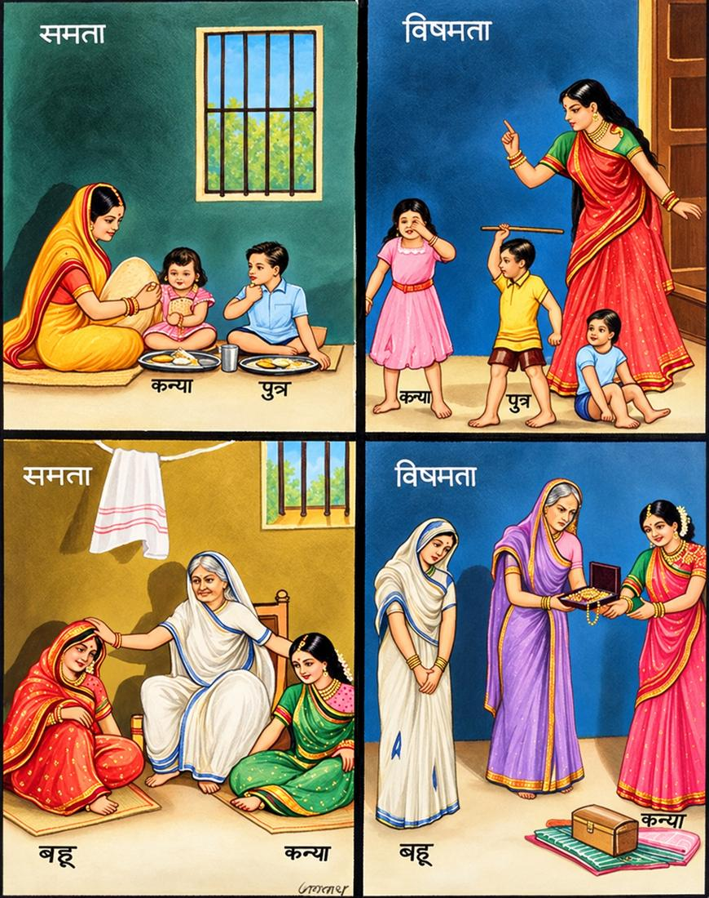
माता भली, पुत्र-कन्याका पालन करती एक समान।
माता बुरी, डाँटती कन्याको, सुतका करती सम्मान॥
सास भली, निज कन्या-पुत्रवधूका करती है सम प्यार।
सास बुरी, कर वधू अनादृत, करती कन्याका सत्कार॥
सास-ननदका बहू तथा भौजाईके प्रति बर्ताव
प्रायः देखा गया है कि दूसरोंके साथ अच्छा बर्ताव करनेवाली सद्गुणवती सास भी बहुओंके साथ बुरा बर्ताव कर बैठती है। पहले-पहल जब बहू ससुराल जाती है, तब उसे लज्जाके कारण बड़ी असुविधाएँ होती हैं। ससुरालमें किसका कैसा स्वभाव है, वह जानती नहीं। मनमें बड़ा संकोच रहता है। बीमार होती है, सिर-पेटमें दर्द होता है, तो भी संकोचसे कुछ कहती नहीं। नया घर है। स्नेहसे पालनेवाले माता-पिता नहीं हैं। ऐसी अवस्थामें उससे गलती भी हो जाती है। इसलिये सासका कर्तव्य और धर्म होता है कि वह उस अबोध बच्चीपर दया करे और उसके सुख-दुःखका विशेष ध्यान रखे। बहूकी किसी भूलपर रणचण्डी न बन जाय, उसको तथा उसके माँ-बापको जली-कटी न सुनावे। विचार करना चाहिये कि तुम्हारी बेटीको ससुरालमें ऐसा ही व्यवहार प्राप्त हो तो उसको कितना दुःख होगा और तुम सुनोगी तो तुम्हें भी कितना कष्ट होगा। इसी प्रकार इसको, और पता लगनेपर इसके माता-पिताको भी दुःख होगा। यहाँ इसका कोई सहायक नहीं है। यह अपने मनकी बात किससे कहे। सासकी देखा-देखी यदि उसकी लड़की (ननद) भी अपनी भावजसे बुरा बर्ताव करने लगती है, तब तो उस बेचारीका दुःख बहुत ही बढ़ जाता है। कहीं-कहीं तो माताके कहनेसे उसका पुत्र (बहूका पति) भी अपनी पत्नीको मारने-डाँटने लगता है। ऐसी अवस्थामें वह बेचारी मन-ही-मन रोती-कलपती है। कहीं-कहीं तो इसी दुःखसे बहुएँ आत्महत्यातक करनेको मजबूर होती हैं!!
अतएव सासको चाहिये कि बहूको अपनी बेटीसे अधिक प्रिय समझकर उससे प्यार करे। अपने सद्व्यवहारसे उसके मनमें यह बैठा दे कि मेरी सास साक्षात् लक्ष्मी है और मेरी मातासे भी बढ़कर मुझसे प्रेम करती है। सासको समझना चाहिये कि बहू ही तुम्हारे कुलकी रक्षा करनेवाली, उत्तम संतान उत्पन्न करके तुम्हारे पतिका नाम अमर करनेवाली है।
ननदको समझना चाहिये कि अपने पीहरके कुलदीपक भाईकी पत्नी होनेके कारण भावज उसके लिये अत्यन्त आदरकी पात्री है। उससे ईर्ष्या-डाह नहीं करनी चाहिये। वह साससे कुछ कहनेमें तो सकुचाती है, इसलिये सगी बहिनकी भाँति उससे प्यार करके उसके मनकी सुख-दुःखकी बात पूछनी चाहिये। उससे कभी भूल हो जाय तो अपनी मातासे उसको छिपा लेना चाहिये और माता कभी नाराज हो तो उसे समझाकर शान्त करना चाहिये। ननदको विचार करना चाहिये कि मेरी ससुरालमें मैं अपनी ननदसे जैसा सुन्दर बर्ताव चाहती हूँ, वैसा ही मुझे भी यहाँ अपनी भावजके साथ करना चाहिये।
यह देखा गया है कि सास-ननद अपने बुरे बर्तावसे बहूका मन इतना खिन्न कर देती हैं कि उसके कारण कई जगह तो छोटी उम्रकी बहुएँ ‘हिस्टीरिया’ रोगसे ग्रसित हो जाती हैं और मन-ही-मन सास-ननदको शाप देती हुई अकालमें मर जाती हैं। हिस्टीरिया रोग प्रायः उन नववधुओंको ही अधिक होता है, जिनको अंदर-ही-अंदर मन मसोसकर दुःख-क्लेश सहने पड़ते हैं। इस मानसिक दुःखसे उनकी रज-व्यवस्था बिगड़ जाती है तथा हिस्टीरिया या मन्दाग्नि हो जाती है। और यदि कहीं बहू भी उग्र स्वभावकी हुई (पहले न होनेपर भी बहुत अधिक असत्कार और दुर्व्यवहार प्राप्त होनेपर उसमें उग्रता जाग्रत् हो जाती है) तो घरमें रात-दिन कलह मचा रहता है। एक तरफ सास रोती है, दूसरी तरफ बहू। ऐसी हालतमें बेचारे पतिकी दुर्गति होती है। वह यदि माँकी तरफ होकर पत्नीको कुछ कहता-सुनता है तो वह आत्महत्याको तैयार होती है; और माताको कुछ कहता है तो माता नाराज होती है और पत्नीमें लड़नेका साहस बढ़ता है। मतलब यह कि घरकी सुख-शान्ति नष्ट हो जाती है। अतएव सास-ननदको बहू-भावजके साथ बहुत ही उत्तम बर्ताव करना चाहिये। सच्चा धर्म वही है कि जैसा बर्ताव आदमी दूसरोंसे चाहता है वैसा ही दूसरोंके साथ पहले स्वयं करे। ‘आत्मनः प्रतिकूलानि परेषां न समाचरेत्’ जो बर्ताव अपने मनके प्रतिकूल हों, वे दूसरोंके प्रति न करे।
कौन नारी पृथ्वीको पवित्र करती है?
(लेखक—पं० श्रीमुकुन्दवल्लभजी मिश्र, ज्योतिषाचार्य)
लज्जा वासो भूषणं शुद्धशीलं
पादक्षेपो धर्ममार्गे च यस्याः।
नित्यं पत्युः सेवनं मिष्टवाणी
धन्या सा स्त्री पूतयत्येव पृथ्वीम्॥
‘जिस स्त्रीका लज्जा ही वस्त्र एवं विशुद्ध भाव ही भूषण हो तथा धर्ममार्गमें जिसका अभिनिवेश हो, मधुर वचन बोलनेका जिसमें गुण हो, वह पतिसेवा-परायण श्रेष्ठ नारी इस पृथ्वीको पवित्र करती है।’
महर्षि गर्गके प्रति भगवान् श्रीशंकरका वचन है—
यद्गृहे रमते नारी लक्ष्मीस्तद्गृहवासिनी।
देवता: कोटिशो वत्स न त्यजन्ति गृहं हि तत्॥
‘जिस घरमें उपर्युक्त सर्वसद्गुणसम्पन्ना नारी सुखपूर्वक निवास करती है, उस घरमें लक्ष्मी अवश्य निवास करती हैं। और हे वत्स! कोटि देवता भी उस घरको नहीं छोड़ते।’
इन देवियोंके पास एक पतिव्रत-धर्म ही ऐसा अमोघ शस्त्र है, जिसके सम्मुख बड़े-बड़े वीरोंके शस्त्र भी कुण्ठित हो जाते हैं।
सती-साध्वी नारीको धर्म-पथसे गिरा देना सहज नहीं है। सच्छास्त्रोंका सिद्धान्त है कि पतिव्रता स्त्री अनायास ही योगियोंके समान सिद्धि प्राप्त कर लेती है, इसमें किंचिन्मात्र भी सन्देह नहीं है।
जो श्रद्धावती नारी स्नानादिसे शुद्ध होकर सूर्योदयसे पहले ‘ॐ ॐ ह्रीं ॐ क्रीं ह्रीं ॐ स्वाहा’—इस ‘नारी-सौभाग्यकरण’ मन्त्रकी दस (१०८ दानोंकी) माला प्रतिदिन जप करती है, उसके घरमें स्थिर सुख-समृद्धि बनी रहती है—ऐसा कई देवियोंका अनुभव है। इस मन्त्रका जपशुभ मुहूर्त्तमें प्रारम्भ करे तथा प्रतिवर्ष चैत्र और आश्विनके नवरात्रोंमें विधिपूर्वक हवन कराके यथाशक्ति कन्या-वटुक आदिको भोजनादिसे सन्तुष्ट करती रहे। स्मरण रहे कि इस मन्त्रके हवनमें समिधा वटवृक्षकी ही ग्रहण करनी चाहिये।
गृहस्थकी साधारण शिक्षा
(लेखक—पं० श्रीरामस्वरूपजी शर्मा)
ससुरालमें जब लड़की जाय तो उसे बड़े शील-स्वभावसे रहना चाहिये; क्योंकि जब नव-वधूको देखनेके लिये नातेदार तथा अड़ोस-पड़ोसकी स्त्रियाँ आती हैं तो उन सबकी दृष्टि इसीपर रहती है कि वधूका बोलना, उठना-बैठना, आँचल, लाज, चतुराई आदि कैसे हैं। बहूको चाहिये कि वह सबसे पहले उठे, मल-मूत्र त्याग करे, सबसे पीछे सोवे, भोजन भी सबसे पीछे करे, पतिकी गुप्त बात किसीसे न कहे और कभी नंगी होकर न नहावे। प्रथम छोटे-छोटे काम करने लगे, फिर धीरे-धीरे बड़े कामोंमें हाथ डाले तथा परिवारमें सचेत होकर चले—
सरल स्वभाव आँख में सीला।
बेष सुहावन बचन रसीला॥
जो वचन भाँवर फिरते समय अपने पतिसे दिये थे उनका सर्वदा ध्यान रखना चाहिये। पतिको दिये गये वचन ये हैं—
(१) किसी दूसरेके घरमें निवास न करूँगी। (२) बहुत न बोलूँगी। (३) किसी परपुरुषसे बातें न करूँगी। (४) पति-सेवामें मन लगाऊँगी। (५) बिना पतिकी आज्ञाके कहीं नहीं जाऊँगी। (६) बाग या जंगलमें अकेली कभी नहीं जाऊँगी आदि।
ससुरालमें सास, बड़ी ननद, छोटी ननद, जेठानी, देवरानी आदिसे यथायोग्य सम्मान, श्रद्धा-भक्ति, स्नेह और प्रेमके साथ बातचीत करे। सबका सम्मान करे। तिरस्कार या अवज्ञा किसीकी न करे। बड़ोंकी आज्ञा माने तथा किसीकी कभी निन्दा न करे। जब कभी ससुरालसे माताके घर आवे तो वहाँ पतिके घरकी तथा सास-ननद आदिकी कोई बुराई न करे। क्योंकि एक तो इसको सुननेसे माता-पिताको दुःख होगा; दूसरे ससुरालवाले सुन पायँगे तो उस (वधू)-पर कोप करेंगे और अपना नेह हटा लेंगे। सास, देवरानी, जेठानी आदिसे कभी अलग रहनेका विचार नकरे। सासका अपनी मातासे भी अधिक सम्मान करे, क्योंकि वह उसके प्राणनाथकी भी पूज्या है। दूसरे, एक दिन वह भी सास बनेगी और यदि वह अपनी सासके साथ कठोरताका व्यवहार करेगी तो उसकी पुत्रवधू भी उसके आचरणसे शिक्षा लेकर उसके साथ वैसा ही व्यवहार करेगी। स्त्रीको अपने मैके और ससुरालके लिये यह याद रखना चाहिये—
भाइ बहिन भावज सँग प्रीती।
सहित सनेह करहु यह रीती॥
बैरभाव जो घर में राखत।
ताको उत्तम कोउ न भाषत॥
सहनसील निज करहु स्वभावा।
जो सब नर-नारीको भावा॥
मैके रह प्रसन्न सब काजी।
पति-गृह सास-ससुर हों राजी॥
अंग-भंग, काना, बधिर, कूबड़, लंगड़ देखि।
कीजै नहिं उपहास कछु, आपन हित अवरेखि॥
मातु-पिता सम सास-ससुरमें।
कीजै भाव जाय पतिपुरमें॥
सेवाबिधि मर्यादि समेता।
नारि-धर्म कह बुद्धि निकेता॥
अति आदर करु जेठ-जेठानी।
बालक सम देखहु देवरानी॥
बहिन समान ननद को जानौ।
शुद्ध भाव सबही में आनौ॥
सब की सेवा पति के नाता।
दरसावहु गुण-गणकी बाता॥
जो स्त्री ससुरालमें जाकर इस रीतिसे बर्ताव नहीं करती, उसके लिये ससुरालवाले ताने दिया करते हैं—
मैके पसु यह रही चरावत।
नारि-धर्म कछु एक न आवत॥
अतएव हमेशा मीठे वचन बोले। बिना सोचे कोई बात न कहे। मीठा वचन सबको प्रिय होता है—
कागा काकौ धन हरै, कोयल काकौ देय।
मीठे बचन सुनाइ कै, जग अपनो करि लेय॥
अहितकारक तथा कटुवचन तो कभी किसीको कहे ही नहीं; क्योंकि वचनका घाव इतना गहरा होता है कि जन्मभर भरता ही नहीं—
नायक शर घन तीर, काढ़त कढ़त शरीर तें।
कुबचन तीर अधीर, कढ़त न कबहूँ उर गड़े॥
सदा प्रिय बोले। बोल-चालके इन नियमोंको सदा ध्यानमें रखे—(१) बहुत न बोले, (२) बिलकुल चुप भी न रहे, (३) समयपर बोले, (४) दोके बीचमें बिना पूछे कभी न बोले, (५) बिना सोचे-समझे न बोले, (६) शीघ्रतासे न बोले, (७) ऊट-पटाँग न बोले, (८) उलहानेभरी और मतभेदी बात कभी न बोले, (९) सदा धर्मयुक्त यथार्थ बात बोले, (१०) दूसरेको जो बुरी लगे, ऐसी बात कभी न बोले, (११) ताना न मारे, व्यंगॺ न कसे, (१२) हँसी-दिल्लगी न करे, (१३) दूसरोंकी बुराई या निन्दा न करे, (१४) सत्य, कोमल, मधुर एवं हितकी बात बोले, (१५) अपनी प्रशंसा अपने मुखसे न करे, (१६) बातचीतमें हठ न करे इत्यादि।
स्त्रियाँ गहना पहनना तो खूब चाहती हैं, पर उनके पहननेके गुण नहीं सीखतीं। गुणवती स्त्रीको गहनेकी कुछ आवश्यकता नहीं है और न शृंगारकी। अपने पतिको मोहित करनेके लिये उसके सद्गुण ही सच्चा शृंगार और गहने हैं। स्त्रीको चाहिये कि वह ऐसे शृंगार करे और गहने पहने—
मिस्सी—मिस (बहाना बनाना) छोड़ दे।
पान या मेंहदी—जगमें अपनी लाली बनाये रखनेकी चेष्टा करे;
काजल—शीलका जल आँखोंमें रखे;
बेंदी—बदी (शरारत)-को तजनेका प्रयत्न करे;
नथ—मनको नाथे, जिससे किसीकी बुराई न हो;
टीका—यशका टीका लगावे, कलंक न लगने दे;
बँदनी—पति और गुरुजनोंकी वन्दना करे;
पत्ती—अपनी पत (लाज) रखे;
कर्णफूल—कानोंसे दूसरेकी प्रशंसा सुनकर फूले;
हँसली—सबसे हँसमुख रहे;
मोहनमाला—सबके मनको मोह ले;
हार—अपने पतिसे सदा हार (पराजय) स्वीकार करे;
कड़े—किसीसे कड़ी (कठोर) बात न बोले;
बाँक—किसीसे बाँकी-तिरछी न रहे, सदा सीधी चाल चले;
दुआ—सबके लिये दुआ (आशीर्वाद) करे;
छल्ले—छलको छोड़े;
पायल—सब बूढ़ी-बड़ियोंके पैर लगे।
स्त्रीके जो आठ अवगुण—साहस, झूठ, चपलता, छल, भय, मूर्खता, अपवित्रता और निर्दयता—बताये गये हैं, उनको यथासाध्य छोड़नेका प्रयत्न करना चाहिये।
स्त्रीको चाहिये कि वह अपने घरका काम समयके अनुसार बाँट ले। मोटेरूपमें एक साधारण-सा कार्य-क्रम इस प्रकार बनाया जा सकता है—
(१) प्रातःकाल उठकर शौच-स्नान करना, घरकी सफाई करना, सामानकी देख-भाल करना आदि .....२ घंटे
(२) पूजा-पाठ .....१ घंटा
(३) विद्याकी चर्चा .....२ घंटे
(४) भोजन बनाना, खाना .....३ घंटे
(५) सखी-सहेलियोंमें बैठना .....१ घंटा
(६) शिल्प-विद्या .....२ घंटे
(७) शामका भोजन बनाना, खाना .....३ घंटे
(८) बाल-शिक्षा और परीक्षा .....२ घंटे
(९) नौकरोंका काम देखना, घरका सामान जँचाना, हिसाब लिखना आदि .....२ घंटे
(१०) शयन .....६ घंटे
२४ घंटे
इस प्रकार अपने सुविधानुसार एक निश्चित कार्य-क्रम बना लेना चाहिये। इससे समयकी बचत होती है तथा काम भी समयपर ठीक ढंगसे होता है।
स्त्रीके लिये परिश्रमी होना बहुत आवश्यक है। बिना परिश्रम किये शरीरमें नाना भाँतिके रोग उत्पन्न हो जाते हैं। स्त्रियोंके लिये घरका काम करना, आटा पीसना आदि सर्वोत्तम व्यायाम हैं। बहुत-सी स्त्रियाँ घरके कामको हेय समझती हैं, यह बहुत बुरा है। घरका काम करनेमें सर्वदा गौरव-बुद्धि होनी चाहिये। याद रखना चाहिये कि जो स्त्री घरके काम करनेमें लज्जा-बोध करती है, वह अपने स्त्रीत्वको खो बैठती है।
स्त्रीको चाहिये कि अपने पतिकी आमदनीके अनुसार खर्च करे, प्रतिमास कुछ बचानेका प्रयत्न रखे। आमदनीसे अधिक, उधार लेकर तो कभी भी खर्च न करे। जो गृहस्थ उधार लेकर खर्च करते हैं, उनका अपना जीवन तो सदा दुःखी रहता ही है, ऋणभारसे दबे हुए उनके बच्चे भी बहुत क्लेश भोगते हैं। काम भी ठीक ढंगसे नहीं हो पाता। नीतिके इन वचनोंपर सदा ध्यान देना चाहिये—
अपनी पहुँच बिचारके करतब करिये दौर।
तेते पाँव पसारिये, जेती लाँबी सौर॥
कारज वाही को सरै, करै जो समय निहार।
कबहुँ न हारै खेल, जो खेलै दाँव बिचार॥
अधिक खर्च होनेमें अधिकतर स्त्रियोंकी विलासिता, फैशन तथा दूसरोंकी देखा-देखी करना ही प्रधान कारण होता है। अतएव इससे बचना चाहिये। स्त्रियोंको चटोरपनसे भी सदा बचना चाहिये।
जीभ न जाके बस रहै, सो नारी मतिहीन।
धन, लज्जा, आरोग्यता, करै प्रतिष्ठा छीन॥
रिनी दुखी निजको करै, नारि चटोरी जोय।
झूठ डाह कपटादि सब अवगुन ताके होय॥
चटोरपन गृहस्थको निर्धन कर देता है। क्योंकि नित नयी-नयी बानात बनती है और निर्धनकी कोई बात नहीं पूछता। जिसपर बीतती है वही भोगता है। सम्पत्तिमें हजार संगी हो जाते हैं, पर विपत्तिमें कोई भी पास नहीं फटकता। वृक्षके नीचे निवास करना, घासपर सोना, छाल और पत्ते पहनकर लज्जाकी रक्षा करना अच्छा है; परंतु निर्धन होकर बन्धुवर्गमें रहना अच्छा नहीं। इसलिये स्त्रीको चाहिये कि वह अपनी तथा अपनी संतानकी जीभपर काबू रखे, आवश्यकतासे अधिक कपड़ा न खरीदे तथा देखा-देखी गहने आदि न बनवावे। जहाँतक हो, बाजारसे उधार वस्तु कभी न खरीदें; नकद पैसा देकर चीजें लेवें। उधार चीजें खरीदनेसे एक तो बाजारसे महँगे भावपर चीजें मिलती हैं, दूसरे खर्चका कोई हिसाब नहीं रहता कि कितना हो गया।
नारी गृहस्थाश्रमकी मूलभित्ति है। वह अपने आचरणका प्रभाव पत्नीरूपसे पतिपर तथा मातृरूपसे भावी संततिपर डालती है। अतएव उसका सदाचार एवं शिष्टाचारसे सम्पन्न होना देश एवं समाजकी उन्नतिके लिये कितना आवश्यक है, यह बतानेकी आवश्यकता नहीं।
नारीके दूषण
कलह—
बात-बातमें लड़ने-झगड़नेको तैयार रहना, लड़े बिना चैन न पड़ना, घरमें तथा अड़ोस-पड़ोसमें किसीसे भी खुश न रहना—कलहका स्वरूप है। यह बहुत बड़ा दोष है। जो स्त्री कलह करके अपने दोष धोना तथा अपनी प्रधानता स्थापन करना चाहती है, उसको परिणाममें दोष और घृणा ही मिलते हैं। कलह करनेवाली स्त्रीसे सभी घृणा करते हैं। यहाँतक कि कई बार वह जिन पति-पुत्रोंके लिये दूसरोंके साथ कलह करती है, वे पति-पुत्र भी उससे अप्रसन्न होकर उसका विरोध करते हैं। कलहसे अपने सुख-शान्तिका तो नाश होता ही है, सारे परिवारमें महाभारत मच जाता है। सास-ससुर, पति-पुत्र-कन्या और नौकर-नौकरानियाँ सबके मनमें उद्वेग होता है। घरके कामोंमें विशृङ्खलता आ जाती है। पतिका अपने व्यापार या दफ्तरके काममें मन नहीं लगता। रोगीको उचित दवा-पथ्य नहीं मिलता। जिस कुटुम्बमें कलहकारिणी कर्कशा स्त्री होती है, उसके दुर्भाग्यका क्या ठिकाना। ताने मारना, बढ़ा-बढ़ाकर दोषारोपण करना, दूसरोंको गाली देना और स्वयं खाना कलहकारिणीके स्वभावमें आ जाता है। अतएव उसके मुँहसे आवेशमें ऐसी-ऐसी गंदी बातें निकल जाती हैं कि जिन्हें सुनकर लज्जा आती है। जबानका घाव अमिट होता है। क्रोधावेशमें नारी अपने घर-परिवारके लोगोंको ऐसे शब्द कह बैठती है कि जन्मसे चला आता हुआ प्रेम सहसा नष्ट हो जाता है तथा जीवनभरके लिये परस्पर वैर बँध जाता है। और तो क्या, क्रोधमें भरकर नारी ऐसी क्रिया कर बैठती है कि वह अपने स्वामीकी नजरसे भी गिर जाती है और फिर उम्रभर क्लेश सहती है। स्त्री जहाँ एक बार पतिकी आँखसे गिरी कि फिर सभीकी आँखोंसे गिर जाती है। अतः नारीको इस जघन्य दोषसे अवश्य बचे रहना चाहिये।
निन्दा—हिंसा-द्वेष—
जहाँ चार स्त्रियाँ इकट्ठी हुईं कि परचर्चा शुरू हुई। परचर्चामें यदि पराये गुणोंकी आलोचना हो, तब तो कोई हानि नहीं है; परंतु ऐसा होता नहीं। आजकल मानव-स्वभावमें यह एक कमजोरी आ गयी है कि वह दूसरोंके गुण नहीं देखता, दोष ही देखता है। कहीं-कहीं तो दोष देखते-देखते दृष्टि ऐसी दोषमयी बन जाती है कि फिर उसे सबमें सर्वत्र सदा दोष ही दीखते हैं और दोष दीखनेपर तो निन्दा ही होगी, स्तुति कैसे होगी। निन्दासे दोषोंका चिन्तन होता है; जिनकी निन्दा होती है, उनसे द्वेष बढ़ता है। द्वेषका परिणाम हिंसा है। अतएव परनिन्दासे बचना चाहिये। उचित तो यह है कि परचर्चा ही न हो। या तो भगवच्चर्चा हो या सच्चर्चा हो। यदि परचर्चा हो तो वह गुणोंकी हो, दोषोंकी नहीं। इससे सभीको शान्ति मिलेगी तथा बच्चे भी इसी आदर्शमें ढलेंगे। निन्दाकी भाँति चुगली भी दोष है, उससे भी बचना चाहिये। चुगली करके नारियाँ घरमें परस्पर झगड़ा कराने और घरके बर्बाद होनेमें कारण बनती हैं, जो सर्वथा अनुचित तथा हानिकारी है।
ईर्ष्या—
दूसरोंकी उन्नति देखकर, दूसरोंको धन-पुत्र आदिसे सुखी देखकर जलना ईर्ष्या या डाह है। यह बहुत बुरा दोष है और स्त्रियोंमें प्रायः होता है। इससे बहुत-से अनर्थोंकी उत्पत्ति होती है। अतएव इससे भी बचना आवश्यक है।
भेद—
नारियोंमें प्रायः दोष होता है कि वे घरके लोगों और नौकरोंके खान-पानमें तो भेद रखती ही हैं, अपने पति-पुत्रोंमें तथा घरके सास, ससुर, जेठ, देवर, ननद आदिमें तथा उनकी संतानमें भी खान-पान, वस्त्रादि पदार्थोंमें तथा व्यवहारमें भेद रखती हैं। बंबईमें एक संभ्रान्त घरकी बहूने पतिके लिये दही छिपाकर रख लिया था और विधुर ससुरको माँगनेपर वह झूठ बोल गयी थी। परिणाम यह हुआ कि ससुरने बुढ़ौतीमें दूसरा विवाह कर लिया और आगे चलकर उस पुत्र-वधू और पुत्रको ससुरके धनमेंसे कुछ भी नहीं मिला। अपने ही पेटके लड़के और लड़कीमें भी स्त्रियाँ भेद करते देखी जाती हैं। लड़केको बढ़िया भोजन-वस्त्र देती हैं, लड़कीको घटिया। लड़का अपनी बहिनको मारता है तो माँ हँसती है और कन्याको सहन करनेका उपदेश देती है; एवं कन्या कहीं भाईको जरा डाँट भी देती है तो माँ उसे मारने दौड़ती है। पर आश्चर्य यह कि यह भेद तभीतक रहता है जबतक कन्याका विवाह नहीं हो जाता। विवाह होनेके बाद माता अपनी कन्यासे विशेष प्यार करती है और पुत्र-वधू तथा पुत्रसे कम। खास करके पुत्र-वधूके प्रति दुर्व्यवहार और कन्याके प्रति सद्व्यवहार करती है। इस भेदसे भी घर फूटता है। नारियोंको इस व्यवहार-भेदका सर्वथा त्याग करना चाहिये।
विलासिता-शौकीनी—
यह दोष आजकल बहुत ज्यादा बढ़ रहा है। भ्रष्ट तेल, साबुन, पामेड, पाउडर, स्नो, एसेंस, बढ़िया-से-बढ़िया विदेशी ढंगके कपड़े-गहने आदिकी इतनी भरमार हो गयी है कि उसके मारे गृहस्थीका अन्य खर्च चलना कठिन हो गया है। पत्नियोंकी विलासिताकी माँगने पतियोंको तंग कर दिया है। इसीको लेकर रोज घरोंमें आपसमें झगड़े हो जाते हैं। यह भारतीय नारियोंके लिये कलंक है। शृंगार होता है पतिके लिये, न कि दुनियाको दिखानेके लिये। आजकी फैशन तथा विलासिताने स्त्रियोंको बहुत नीचे गिरा दिया है। घंटों वेष-भूषामें खर्च कर देना, खर्चको अत्यधिक बढ़ा लेना, बुरी आदत डाल लेना—जो आगे चलकर दोहरा दुःख देती है—और घरके काम-काजमें हाथ न लगाना, ये बहुत बड़े दोष हैं, जो शौकीनीके कारण उत्पन्न होते हैं। स्वास्थ्य तथा सफाईके लिये आवश्यक उपकरण रखनेमें आपत्ति नहीं और न साफ-सुथरे रहनेमें दोष है। बल्कि साफ-सुथरा रहना तो आवश्यक है। दोष तो शौकीनीकी भावनामें है, जो त्याज्य है।
फिजूलखर्च—
शौकीनीकी भावनाके साथ ही दूसरी स्त्रियोंकी देखा-देखी तथा मूर्खतासे एवं संग्रह करनेकी आदतसे भी यह दोष बढ़ जाता है। वही गृहस्थ सुखी रहता है, जो आमदनीसे कम खर्च लगाता है। चतुर और सुघड़ बुद्धिमती स्त्रियाँ एक पैसा भी व्यर्थ खर्च नहीं करतीं। लोगोंकी देखादेखी अनावश्यक सामान नहीं खरीदतीं, चौके तथा वस्त्राभूषणोंमें सादगीसे काम लेती हैं। बच्चोंको नहा-धुलाकर साफ-सादे कपड़े पहनाकर और उनके मनमें उस सादगी तथा सफाईमें ही गौरवबुद्धि उपजाकर सुन्दर-सुडौल रखती हैं, जिससे न तो उनकी आदत बिगड़ती और न खर्च ही अधिक होता है। खर्चकी तो कोई सीमा ही नहीं है। अपव्यय करनेपर महीनेमें हजारों रुपये भी काफी नहीं होते और सोच-समझकर खर्च करनेसे इस महँगीमें भी सहज ही अपनी आमदनीके अंदर ही काम चल जाता है। स्त्रियोंको हिसाब रखना सीखना चाहिये और आमदनीमेंसे कुछ अवश्य बचाकर रखेंगी, ऐसा निश्चय करके ही खर्च करना चाहिये। ‘तेते पाँव पसारिये, जेती लाँबी सौर॥ ’
गर्व—अभिमान—
कोई-कोई स्त्री अपने पति-पुत्रके धन या पद-गौरवका अथवा अपने गहने-कपड़ोंका गर्व—अभिमान वाणी और व्यवहारमें लाकर इतनी रूखी बन जाती है कि घरके लोगोंतकको उससे बात करते डर लगता है और अपमान-बोध होता है। ऐसी स्त्री बिना मतलब सबको अपना द्वेषी बना लेती है। अतएव किसी भी वस्तुका गर्व कभी नहीं करना चाहिये।
दिखावा—
नारियोंके स्वभावमें प्रायः ऐसा देखा जाता है कि वे यही समझती हैं कि किसी भी चीजको दिखाकर करना चाहिये। कन्या या ननदको कुछ देंगी तो उसको पहले सजाकर लोगोंको दिखलायेंगी, तब देंगी। कहीं-कहीं तो दिखाया जाता है ज्यादा और दिया जाता है कम, जिससे कन्या आदिको दुःख भी होता है। इसी प्रकार किसी परिवारके या बाहरके अभावग्रस्त पुरुष या स्त्रीकी कभी कोई सेवा की जाती है तो ऐसा सोचा जाता है कि हमारी सेवाका पता इसको जरूर लग जाना चाहिये। सेवा करें और किसीको कुछ पता भी न चले तो मानो सेवा ही नहीं हुई। सेवा करके जताना, अहसान करना और बदलेमें कृतज्ञता तथा खुशामद प्राप्त करना ही मानो सेवाकी सफलताका निशान समझा जाता है। यह बड़ा दोष है। देना वही सात्त्विक है, जिसको कोई जाने ही नहीं। लेनेवाला भी न जाने तो और भी श्रेष्ठ।
विषाद—
कई स्त्रियोंमें यह देखा गया है कि वे दिन-रात विषादमें डूबी रहती हैं। उनके चेहरेपर कभी हँसी नहीं। दुःख-कष्टमें तो ऐसा होना स्वाभाविक है, पर सब तरहके सुख-स्वाच्छन्द्य होनेपर भी स्वभावसे ही हमेशा विषादभरी रहना और किसी बातके पूछते ही झुँझला उठना तो बड़ा भारी दोष है। इसको छोड़कर सर्वदा प्रसन्न रहना चाहिये। प्रसन्नता सात्त्विक भाव है। प्रसन्न मनुष्य सबको प्रसन्नताका दान करता है। विषादी और क्रोधी तो विषाद और क्रोध ही बाँटते हैं।
हँसी-मजाक—
कई नारियोंमें हँसी-मजाकका दोष होता है। कई तो देवर या ननदोई आदिके साथ गंदी दिल्लगी भी कर बैठती हैं। परिवारके तथा घरमें आने-जानेवाले पुरुषों तथा स्त्रियोंके साथ भी दिल्लगी करती रहती हैं। हँसमुख रहना गुण है। निर्दोष और सीमित विनोद भी बुरा नहीं। परंतु जहाँ हँसी-मजाककी आदत हो जाती है और उसमें ताना, व्यंगॺ, कटुता और अश्लीलता आ जाती है वहाँ उससे बड़ी हानि होती है। स्त्रीको सदा ही मर्यादामें बोलनेवाली और हँसमुखी होनेपर भी गम्भीर होना चाहिये।
वाचालता—
बहुत बोलना भी दोष है। इसमें समय नष्ट होता है; व्यर्थ-चर्चामें असत्य, पर-निन्दा, चुगली आदि भी हो जाते हैं। जबानकी शक्ति नष्ट होती है और घरके कामोंमें नुकसान होता है। गप लड़ानेवाली स्त्रियोंके घर उजड़ा करते हैं। अतएव नारीको समझ-सोचकर सदा हितभरी, मीठी वाणी बोलनी चाहिये और वह भी बहुत ही कम। ज्यादा बोलनेवालीको तो भजन करनेकी फुरसत ही नहीं मिलती, जो बहुत बड़ी हानि है।
स्वास्थ्यकी लापरवाही तथा कुपथ्य—
स्त्रियोंमें यह दोष प्रायः देखा जाता है कि वे स्वास्थ्यकी ओरसे लापरवाह रहती हैं। रोगको दबाती तथा छिपाती हैं और कुपथ्य भी करती रहती हैं। जिन बहुओंको ससुरालमें सासके डरसे रोग छिपाना पड़ता है और रोगकी यन्त्रणा भोगते हुए भी जबरदस्ती बलवान् मजदूरकी तरह दिनभर खटना पड़ता है, उनकी बात दूसरी है। पर जो प्रमादवश या दवा लेने और पथ्यसे रहनेके डरसे रोगको छिपाती है, वह तो अपने तथा घरके साथ भी अन्याय करती है। साथ ही स्त्रियाँ प्रायः स्वास्थ्य-रक्षाके नियमोंको भी नहीं जानतीं; और कुछ जानती हैं तो उनकी परवा नहीं करतीं। ऐसा नहीं करना चाहिये।
मोह—
कई स्त्रियाँ मोहवश बच्चोंको अपवित्र वस्तुएँ खिलाती, अपवित्र रखती, जान-बूझकर कुपथ्य सेवन कराती, उन्हें झूठ बोलने, नौकरोंके साथ बुरा बर्ताव करने तथा गाली देने और मारनेकी बुरी आदत सिखाती, उनकी चोरी-चमारीकी क्रियाको सहकर उनका वैसा स्वभाव बनाती और पढ़ाने-लिखानेमें प्रमाद करती हैं। साथ ही उन्हें कुछ भी काम न करने देकर और दिन-रात खेल-तमाशों तथा सिनेमा वगैरहमें ले जाकर फिजूल-खर्च, आलसी, सदाचाररहित, गंदा, रोगी और बुरे स्वभावका बनाकर उनका भविष्य बिगाड़ती हैं एवं परिणाममें उनको दुःखी बनाकर आप भी दुःखी होती हैं। इस दोषसे संततिका शील और सदाचार नष्ट हो जाता है और बच्चे कुलदीपकसे कुलनाशक बन जाते हैं। माताओंको व्यर्थके मोहसे बचकर बच्चोंको—पुत्र तथा कन्या दोनोंको—संयमी, धार्मिक, सदाचारी और सद्गुण-सम्पन्न बनाना चाहिये, जिससे वे सुखी हों तथा अपने आचरणोंसे कुलका सिर ऊँचा कर सकें।
कुसंग—
स्त्रियोंको भूलकर भी परनिन्दा करनेवाली, खुशामद करनेवाली, झाड़-फूँक और जादू-टोना बतलानेवाली, परपुरुषोंकी प्रशंसा करनेवाली, विलासिनी, अधिक खर्च करनेवाली, इधर-उधर भटकनेवाली, कलहकारिणी और कुलटा स्त्रियोंका संग नहीं करना चाहिये। इनका संग कुसंग है तथा सब प्रकारसे पतनका कारण है।
आलस्य—
आलस्य, प्रमाद और निद्रा तमोगुणके स्वरूप हैं। तमोगुणसे चित्तमें मलिनता आती है और जीवनमें प्रगतिका मार्ग रुक जाता है। अतएव स्त्रियोंको सदा सत्कर्मोंमें लगे रहना चाहिये और आलस्य-प्रमादादिसे बचना चाहिये।
व्यभिचार—
स्त्रियोंके लिये यह सबसे बड़ा दोष है। शरीरसे तो क्या, वाणी और मनसे भी पर-पुरुषका सेवन करना महापाप है। सतीत्वका नाशक है। लोकमें निन्दा करानेवाला और परलोकको बिगाड़नेवाला है। जो नारी ऐसा करती है, उसका मुँह देखना पाप है। उसे लाखों-करोड़ों बरसोंतक नरकोंकी भीषण यन्त्रणा भोगनी पड़ती है और तदनन्तर जहाँ जन्म होता है, वहाँ बार-बार भाँति-भाँतिके भीषण दुःखों-कष्टोंका भार वहन करके जीवनभर रोना पड़ता है।
छन सुख लागि जनम सत कोटी।
दुख न समुझ तेहि सम को खोटी॥
••••
स्त्रीके आदर्श गुण
सच्चरित्रताके द्वारा ही स्त्री-जाति पुरुषके लिये सबसे अधिक सम्मानयोग्य बन जाती है। सत्यवादिता, स्वामिभक्ति और अनन्य निष्ठाके साथ-साथ सच्चरित्रता प्रेमास्पदका विशेष गुण है जो उसे सबसे अधिक प्रियपात्र बना देता है। —एडिसन
दूषित स्वभावकी नारी
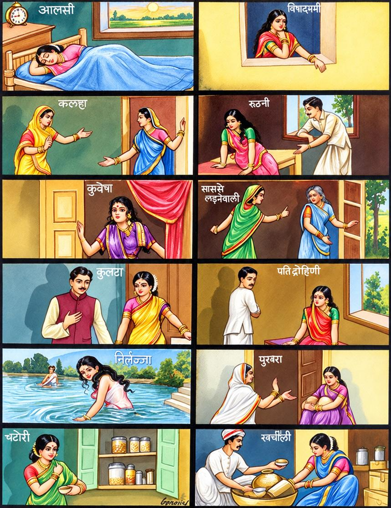
दिन चढ़ आया किंतु सोती पड़ी आलसमें,
कोई सदा डूबी-सी विषादमें लखाती है।
कोई कलहा है, रूठती है, त्यों कुबेषा नारि,
कोई मार सासको ही गेहसे भगाती है॥
कोई कुलटा है, पति-द्रोह ओह! कोई करे,
निपट निलज्ज कोई नंगी ही नहाती है।
कोई मुँहजोरी, कोई चटक चटोरी बड़ी,
बन खरचीली धन-धर्म भी गँवाती है॥
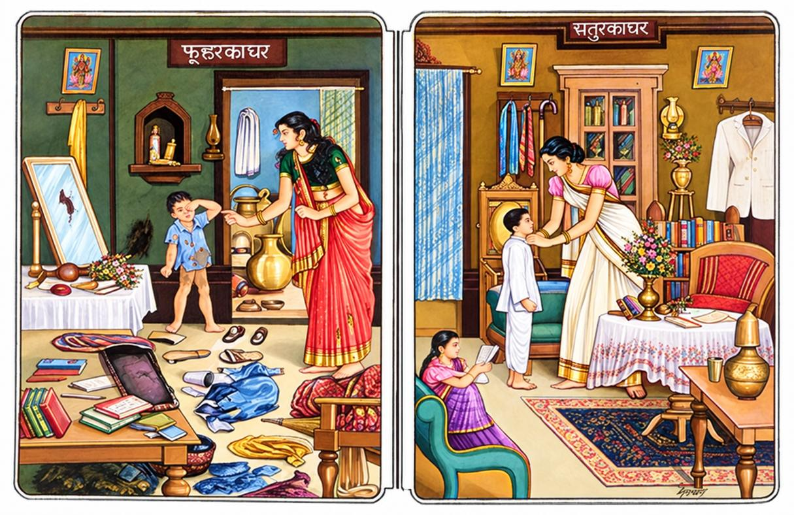
फूहर और चतुर
नारीके भूषण
सौन्दर्य—(१) सुन्दर वर्ण, सुडौल अंग-प्रत्यंग, चाल, दृष्टि, भाव-भंगी तथा तोड़-मरोड़ आदिमें सुहावनापन और वाणीमें माधुर्य—यह बाहरी सौन्दर्य है।
(२) क्षमा, प्रेम, उदारता, निरभिमानता, विनय, सहिष्णुता, समता, शान्ति, धीरता, वीरता, परदुःखकातरता, सत्य, सेवा, अहिंसा, ब्रह्मचर्य, शील और प्रभुभक्ति आदि सद्गुण तथा सद्भाव भीतरी सौन्दर्य है।
बाहरी तथा भीतरी दोनों ही आवश्यक हैं, परंतु बाहरीकी अपेक्षा भीतरीका महत्त्व अधिक है। रूपवती नारियोंको रूपका गर्व न करके अपने अंदर सद्गुणों तथा सद्भावोंके सौन्दर्यको बढ़ाना चाहिये।
लज्जा—धर्मविरुद्ध, शीलके विरुद्ध और समाजकी पवित्र प्रथाओंके विरुद्ध कुछ भी करनेमें महान् संकोच और पुरुषसमाजके संसर्गसे बचनेके लिये होनेवाले दृष्टि-संकोच, अंग-संकोच और वाणी-संकोचका नाम लज्जा है। लज्जा नारीका भूषण है और यह शीलभरी आँखोंमें रहता है। बीमार एवं बड़ोंकी सेवामें तथा कर्तव्यपालनमें लज्जाके नामपर तत्पर न होना लज्जाका दुरुपयोग एवं मूर्खता है। साथ ही अबोध पुरुष-संसर्गमें निःसंकोच जाना-आना लज्जाका निरंकुश नाश है, जो नारीके शीलके लिये अत्यन्त घातक है।
विनय—वाणीमें, व्यवहारमें तथा शरीर-संचालनमें गर्व, उग्रता, कठोरता तथा टेढ़ेपनका त्याग करके नम्र, सरल, स्नेहपूर्ण, आदर-भावयुक्त और मधुर होना विनय है। विनयका अर्थ न तो चापलूसी है न कायरता। दुष्टोंके दमनमें कठोरता और उग्रता आवश्यक है। पर घर-परिवार तथा संसारके अन्य सभी व्यवहारोंमें नारीको विनयरूप भूषण सदैव धारण किये रहना चाहिये।
संयम-तप—शरीर, मन और वाणीको विषयोंकी ओरसे यथासाध्य हटाये रखना तथा उनको कभी भी अवैध तथा अकल्याणकारी कार्यमें न लगने देनेका नाम संयम है। इसीको तप भी कह सकते हैं। गीतामें भगवान्ने बतलाया है—(१) देव-द्विज, गुरुजन और ज्ञानीजनोंकी पूजा, शरीरकी शुद्धि, सरलता (शरीरकी सौम्यता), ब्रह्मचर्य (पर-पुरुष अथवा परस्त्रीका सर्वथा त्याग एवं पति-पत्नीमें शास्त्रोक्त सीमित संसर्ग) तथा अहिंसा (किसीको भी चोट न पहुँचाना) यह शारीरिक तप है; (२) किसीको घबराहट न पैदा करे ऐसी सच्ची, प्रिय और हितकारी वाणी बोलना तथा भगवन्नामका उच्चारण करना एवं परमार्थ-ग्रन्थोंको पढ़ना—यह वाणीका तप है और (३) मनकी प्रसन्नता, मनकी सौम्यता, मनका मौन (अन्य चिन्तनसे रहित केवल भगवच्चिन्तनपरायण होना), मनका वशमें रहना और मनका पवित्र भावोंसे युक्त रहना—यह मनका तप है। शरीर, वचन और मनसे होनेवाली तमाम कुप्रवृत्तियोंसे उनको हटाकर इन सत्प्रवृत्तियोंमें लगाये रखना ही संयम है।
संतोष—परश्रीकातरता, असहिष्णुता, लोभ और तृष्णाके वशमें न होकर भगवान्की दी हुई अपनी स्थितिमें सन्तुष्ट रहना ‘संतोष’ है। संतोषसे चित्तकी जलन मिटती है, द्वेष-विषाद और क्रोधसे रक्षा होती है एवं परम सुखकी प्राप्ति होती है।
क्षमा—अपना अहित करनेवालेके व्यवहारको सह लेना अक्रोध है और उसको अपने तथा दूसरे किसीके द्वारा भी बदलेमें दुःख न मिले एवं उसकी बुद्धि सुधर जाय, इस प्रकारके सद्भावका नाम क्षमा है। अक्रोध अक्रिय है, क्षमा सक्रिय। क्षमा कायरोंका नहीं, वरं वीरोंका धर्म है।
धीरता-वीरता—दुःख, विपत्ति, कष्ट और भयके समय भगवान्के मंगलमय विधानपर भरोसा रखकर तथा ‘विपत्ति सदा नहीं रहती। बादल आते हैं, आकाश काला हो जाता है; फिर बादल हटते हैं और सर्वत्र प्रकाश फैल जाता है।’ इस प्रकार समझकर अपने कर्तव्यका पालन करते हुए मैदानमें डटे रहना धीरता है। और इसीके साथ-साथ विरोधी शक्तियोंको निर्मूल करनेका साहस तथा बुद्धिमानीसे युक्त प्रयत्न करना वीरता है।
गम्भीरता—समझकर मधुर थोड़े शब्दोंमें बोलना, व्यर्थ न बोलना, हँसी-मजाक न करना, विवाद न करना, चपलता-चंचलता न करना, प्रत्येक कार्यको खूब सोच-विचारकर दृढ़ निश्चयके साथ करना, शान्त और शिष्ट व्यवहार करना, झगड़े-टंटेमें न पड़ना, जरा-सी विपत्ति या घरमें कोई काम आ पड़नेपर विचलित न हो जाना गम्भीरता है। गम्भीर स्त्रीका तेज सब मानते हैं तथा उसका आदर करते हैं और वह भी बहुत ही व्यर्थकी कठिनाइयोंसे बच जाती है।
समता—सबमें एक ही आत्मा है, अथवा प्राणिमात्र सब एक ही प्रभुकी अभिव्यक्ति या संतान हैं, यह समझकर मनमें सबके प्रति समान भाव रखना, सबके दुःखको अपना दुःख समझना, सबके हितमें अपना हित मानना—समता है। व्यवहारमें तो प्रसंगानुसार कहीं-कहीं विषमता करनी पड़ती है, जो अनिवार्य है; पर मनमें आत्मदृष्टि अथवा परमात्मदृष्टिसे सबमें समता रखनी चाहिये। विषमता इस रूपमें हो तो वह गुण है—जैसे अपने तथा अपनी संतानके हिस्सेमें कम परिमाणमें, कम संख्यामें और अपेक्षाकृत घटिया चीज ली जाय; और अपने देवर-ननद एवं जेठानी-देवरानी तथा उनकी संतानके हिस्सेमें अधिक परिमाण, अधिक संख्यामें और अपेक्षाकृत बढ़िया चीजें प्रसन्नतापूर्वक दी जायँ।
सहिष्णुता—दुःख, कष्ट और प्रतिकूलताके सहन करनेका नाम सहिष्णुता है। यह नारी-जातिका स्वाभाविक गुण है। नारी पुरुषकी अपेक्षा बहुत अधिक सहती है और सहनेकी शक्ति रखती है। साधारणतः सहिष्णुता गुणकी तुलना वृक्षोंके साथ की जाती है। ‘तरुणेव सहिष्णुना।’ लोग पत्थर मारते हैं तो फलका वृक्ष सुन्दर सुपक्व मधुर फल देता है; लोग काटकर जलाते हैं तो वह स्वयं जलकर उनका यज्ञकार्य सम्पादन करता है, भोजन पकाता है और शीतसे ठिठुरते हुए शरीरमें गर्मी पहुँचाकर जीवनदान देता है। फलवान् वृक्ष बनता भी है अनेकों आँधी-पानी, झड़-बिजली आदि बाधाविपत्तियोंको झेलकर। यदि किसी नारीको प्रतिकूल भावोंके पति और सास प्राप्त हुए हों तो उसे सहिष्णु बनकर प्रेमके द्वारा उनको सन्मार्गपर लाना चाहिये। सहना, कलह न करके प्रेम करना, प्रतिवाद न करके सेवा करना—ऐसा अमोघ मन्त्र है कि इससे शीघ्र ही अशान्तिसे भरा उजड़ता हुआ घर पुनः बस जाता है और उसमें शान्ति तथा सुखकी लहरें उछलने लगती हैं।
सुव्यवस्था तथा सफाई—घरकी वस्तुएँ, आवश्यक सामग्री तथा कार्योंको सुशृङ्खलाबद्ध रखनेका नाम सुव्यवस्था है। नारी घरकी लक्ष्मी है, घरके सौन्दर्य एवं ऐश्वर्यकी देवी है। सुव्यवस्थाके बिना घरमें लक्ष्मीका स्वरूप बिगड़ जाता है। इधर-उधर बेतरतीब बिखरी चीजें, कूड़े-करकटसे भरा आँगन, मकड़ीके जालोंसे छायी दीवारें, कपड़े तथा बरतन आदिका मैलापन, खोजनेपर घंटोंतक जरूरी चीजोंका नहीं मिलना, आवश्यकता होनेपर इधर-उधर दौड़-धूप करना, झुँझलाना और दूसरोंपर दोषारोपण करना, हिसाब-किताबका पता नहीं—ये सब अव्यवस्थाके रूप हैं। इनसे घर बरबाद होता है और तकलीफ तो कभी मिटती ही नहीं। थोड़ी-सी सावधानी रखके नियत स्थानपर प्रत्येक वस्तु सम्हालकर रखी जाय, घर-दीवारोंको झाड़-बुहार लिया जाय और कपड़े-बरतन आदिको धो-माँजकर साफ रखा जाय, तो सहज ही सुव्यवस्था हो सकती है। आवश्यकता होते ही चीज मिल जाती है। न समय व्यर्थ जाता है, न झुँझलाहट और किसीपर दोष लगानेकी नौबत आती है। गंदगी तथा कूड़ा-करकट न रहनेसे रोग तथा रोगके कीटाणु भी नहीं पैदा होते और व्यर्थकी सारी तकलीफें भी मिट जाती हैं।
श्रमशीलता—नारी घरमें रहती है, उसके स्वास्थ्यके लिये घरके काम ही सुन्दर व्यायाम हैं। जो नारी शारीरिक परिश्रम करती है, आलस्य तो उसके पास फटकता ही नहीं, रोग तथा बुढ़ापा भी उससे दूर-दूर ही रहते हैं। खाया हुआ भोजन हजम होता है। रक्तमें शक्ति तथा शुद्धि होती है। मन प्रफुल्लित रहता है। आजकल कुछ नारियाँ कहती हैं ‘घरमें पैसा है, नौकर-नौकरानियाँ काम कर सकती हैं; फिर हम मेहनत क्यों करें?’ पर यह बड़ी भूल है। नौकर-नौकरानियाँ काम कर देंगी, पर आपका खाया हुआ वे कैसे पचा देंगी। आपको स्वस्थ तथा शुद्ध रक्त वे कहाँसे देंगी। फिर बिना सम्हालके, नौकरोंसे कराये हुए काम भी तो ठीक नहीं होते। चोरी शुरू होती है। खर्च बढ़ता है। और सबसे बड़ी हानि यह होती है, घरमें आलस्य और रोगोंकी उत्पत्ति होती है। नौकर रहनेपर भी घरकी सफाई, आटा पीसना, चर्खा कातना, दही बिलोना, रसोई बनाना आदि काम तो हाथसे करनेमें ही सब तरहका लाभ है। भोजनमें भावके अनुसार अमृत भी हो सकता है और विष भी। माता तथा पत्नीकी बनायी रसोईमें अमृत होगा। खर्च भी बचेगा और विशुद्धि भी रहेगी। चक्की चलानेवाली स्त्रियोंको रजसम्बन्धी रोग बहुत कम होते हैं। खेतोंमें काम करनेवाली नारियाँ बहुत कम बीमार होती हैं। अतएव नारीको शारीरिक परिश्रम अवश्य करना चाहिये।
निरभिमानता—रूप, धन, पुत्र, विद्या, बुद्धि तथा अधिकार आदिका गर्व न करना और सबके साथ नम्रता तथा सौजन्यपूर्ण व्यवहार करना निरभिमानता है। स्त्रियोंमें गर्व बहुत जल्दी आता है और वे उसके आवेशमें गाँव और पड़ोसियोंका तथा नौकर-चाकरोंका ही नहीं, आत्मीय स्वजनोंका—यहाँतक कि सास-ससुर, जेठ-जेठानी आदि गुरुजनोंका तथा कन्या-जामाता, पुत्र-पुत्रवधू आदिका भी तिरस्कार कर बैठती हैं, जिसके परिणामस्वरूप जीवनभरके क्लेश पैदा हो जाते हैं। इसलिये सदा-सर्वदा सावधानीसे निरभिमानताका अत्यन्त विनम्र बर्ताव करना चाहिये। नम्र व्यवहारसे वैरी भी मित्र हो जाते हैं और कठोर व्यवहारसे मित्र भी शत्रु बन जाते हैं।
मितव्ययिता—सीमित खर्च करनेको ‘मितव्ययिता’ कहते हैं। मितव्ययिता केवल रुपये-पैसोंकी ही नहीं, घरकी वस्तुमात्रको ही समझदारीके साथ यथासम्भव कम खर्च करना चाहिये। कम आमदनीवाले गृहस्थको सम्भव हो तो आमदनीका तीसरा या चौथा हिस्सा आकस्मिक विपदापद्के समय खर्चके तथा बच्चोंके ब्याह-शादीके लिये जमा रखना चाहिये। जिनके पास बहुत पैसा तथा बहुत आमदनी है, उनको भी व्यर्थ व्यय नहीं करना चाहिये। इससे आदत बिगड़ती है, जो कभी पैसा न रहा तो बहुत दुःखदायी होती है। एवं व्यर्थ अधिक व्यय हो जानेके कारण धर्म तथा लोकसेवाके आवश्यक कार्यमें खरचनेकी प्रवृत्ति घट जाती है, जो मनुष्यकी एक उच्च वृत्तिका नाश करनेवाली होनेके कारण सबसे बड़ी हानि है। स्त्रियोंमें फिजूलखर्चीका दोष प्रायः अधिक होता है। थोड़ी आमदनीवाले पति-पुत्र तो बेचारे तंग आ जाते हैं। घरमें सदा अशान्ति रहती है। नारियाँ यदि चाहें तो सहज ही मनका संयम करके कम खर्चकी आदत डालकर घरमें पति-पुत्रोंको सुख-शान्ति, आदतका सुधार तथा धर्म-पुण्यके लिये सुअवसर प्रदान कर सकती हैं।
उदारता—जिस प्रकार फिजूलखर्ची दोष है; उसी प्रकार पैसा होनेपर भी आवश्यक धार्मिक तथा सामाजिक कार्योंमें कंजूसी करना भी दोष है। बच्चोंकी बीमारीमें, उनके लिये दूध-फल आदिमें, श्राद्धादि धार्मिक कृत्योंमें, भगवान्की पूजा तथा पर्वोत्सवोंमें, गो-ब्राह्मण तथा देवसेवामें, बेटी-बहिनको देनेमें, बच्चोंकी शिक्षा-दीक्षामें, सास-ससुरकी सेवामें, परिवारके अन्य लोगोंकी सेवामें, विधवा तथा आश्रितोंके सत्कारपूर्ण भरण-पोषणमें, गरीबोंकी सेवामें तथा अपने स्वास्थ्यके लिये भोजन-औषध आदिमें जो नारी कंजूसी करती है और पैसा बटोरकर रखना चाहती है, उसका अपना नैतिक पतन तो होता ही है, उसके आदर्शसे उसके बाल-बच्चे भी बुरी शिक्षा ग्रहण करके पतित हो जाते हैं। अतएव आवश्यक कामोंमें कंजूसी न करके उदारतासे बरते। किसीकी सहायता-सेवा करके न अभिमान करे, न अहसान करे और न उसका बदला चाहे।
परदुःख-कातरता—दूसरेको दुःखमें पड़े देखकर बिना किसी भेद-भाव या पक्षपातके उसका दुःख दूर करनेके लिये मनमें जो तीव्र भावना उत्पन्न होती है, उसका नाम ‘परदुःख-कातरता’ है। इसीको दया भी कहते हैं। नारीमें इस गुणका विशेष विकास हो और दुःखी प्राणियोंका दुःखहरण करनेके लिये वह माँ अन्नपूर्णा बन जाय, यह बहुत ही आवश्यक है।
सेवा-शुश्रूषा—१-पतिकी सेवा, २-सास-ससुरकी सेवा, ३-बच्चोंकी सेवा, ४-अतिथिसेवा, ५-देवसेवा, ६-देशसेवा और ७-रोगियोंकी तथा पीड़ितोंकी सेवा—ये सभी सेवाके अंग हैं। नारीमें सेवा-भाव स्वाभाविक होता है; पर उसे सेवा करनी चाहिये केवल पतिसेवाके लिये या परमपति परमात्मा प्रभुकी सेवाके लिये ही। सेवामें उसका अन्य उद्देश्य नहीं होना चाहिये। सेवा वशीकरण मन्त्र है। सेवासे सभीको वशमें किया जा सकता है। असलमें जीवन सेवामय ही होना चाहिये। जैसे धनमें ईर्ष्या होती है, वैसे ही शुद्ध सेवामें भी सबसे आगे बढ़नेकी ईर्ष्या तथा सेवाका अधिक-से-अधिक सुअवसर प्राप्त करनेकी तीव्र अभिलाषा एवं भगवान्से प्रार्थना होनी चाहिये। सेवा शुद्ध सेवाके भावसे ही होनी चाहिये। न तो सेवामें किसीका उपकार करनेका अभिमान होना चाहिये, न सेवाका विज्ञापन करनेकी कल्पना और न सेवाके बदलेमें कुछ पानेकी आकाङ्क्षा ही। सेवा करनेपर जो गर्वहीन सहज आत्मसंतोष होता है, वही परम धन है। सेवाके संक्षिप्त प्रकार ये हैं—
(१) तन-मन—सर्वस्व अर्पण करके सब प्रकारसे पतिको सुख पहुँचाने एवं उन्हें प्रसन्न करनेके लिये तथा उनका सदा-सर्वदा सर्वत्र कल्याण हो, इस कामनासे उनकी हर तरहकी सेवा करे।
(२) सास-ससुरकी सेवा करनेका सुअवसर मिला है, इसमें अपना सौभाग्य मानकर और वे सेवा स्वीकार करते हैं, इसलिये उनका उपकार मानकर मधुर, आदरयुक्त वाणीसे उनकी रुचि तथा पसंदके अनुसार भोजन, वस्त्र, आज्ञापालन, उनके इच्छानुसार धर्मकार्य-सम्पादन या दान आदिके द्वारा तथा सासके और वृद्ध हों तो ससुरके भी चरण दबाकर रोगादिकी अवस्थामें उनकी हर तरहकी सेवा करके, उनके मतानुसार उनकी कन्याओंको, जो ननद लगती हैं, सम्मानपूर्वक देकर, बल्कि वे कम कहें और अपनी हैसियत अधिक देनेकी हो तो प्रार्थना करके, उनसे आज्ञा प्राप्त करके उन्हें अधिक देना चाहिये। इसमें वे प्रसन्न ही होंगे। उन्हें रामायण, भागवत, गीता, भगवन्नाम-कीर्तनादि सुनाकर उनको सुख पहुँचावे।
(३) बच्चोंका स्वास्थ्य सुधरे, वे तन-मनसे विकसित हों, उनकी बुद्धिका विकास हो, उनके आचरणोंमें स्फूर्तियुक्त सात्त्विक गुणोंका प्रकाश हो, वे कुल, जाति, देश तथा धर्मका गौरव बढ़ानेवाले, सुशिक्षित तथा सदाचारी हों एवं त्यागकी पवित्र भावनासे युक्त ईश्वरभक्त हों—इस प्रकारसे उनका लालन-पालन, शिक्षण-संवर्धन आदि करे।
(४) अतिथिको भगवान् समझकर उनकी यथाशक्ति तथा यथाविधि निर्दोष तथा निष्काम सेवा करे।
(५) घरमें इष्टदेवकी धातु अथवा पाषाणकी या चित्रमयी मूर्ति रखकर श्रद्धा तथा विधिपूर्वक भक्तिके साथ उसकी नित्य विविध उपचारोंसे पूजा करे।
(६) देशकी सेवाके लिये उत्तम-से-उत्तम संतान निर्माण करे और उसे अपने-अपने कर्तव्यके द्वारा देशके रूपमें भगवान्की सेवाका सक्रिय पाठ सिखावे। देशकी नारियोंमें अपने आदर्श सदाचार, पातिव्रत्य तथा धर्मभावनाके द्वारा सत्-शिक्षा और सद्भावनाका विस्तार करे।
(७) घरमें तथा अवसर आनेपर आवश्यकता और अपनी सुविधाके अनुसार रोगियों और पीड़ितोंकी तन-मन-वचन तथा धनसे निर्दोष और निष्काम सेवा आदर तथा सत्कारपूर्वक करे। कभी सेवाका अभिमान न करे, न अहसान जनावे।
संयुक्त परिवार—जहाँतक हो, सहकर तथा उदारताके साथ विनम्र व्यवहार करके घरको संयुक्त रखे। भाइयोंको तथा परिवारको पृथक्-पृथक् न होने दे। पता नहीं, किसके भाग्यसे सुख तथा ऐश्वर्य मिलता है। कभी ऐसा न समझे कि मेरा पति या पुत्र कमाता है और दूसरे सब मुफ्तमें खाते हैं। सबका हिस्सा है और सब अपने-अपने भाग्यका ही खाते हैं। तुम जो इसमें निमित्त बन रहे हो, यह तुम्हारा सौभाग्य है। नारियोंपर यह एक कलंक है कि उनके आते ही सहोदर भाइयोंमें विद्वेष हो जाता है, घरमें फूट पड़ जाती है और फलतः घर बर्बाद हो जाता है। इस कलंकको धोना चाहिये और पति-पुत्रोंको समझाकर यथासाध्य संयुक्त परिवार तथा संयुक्त भोजन रहे, ऐसी चेष्टा करनी चाहिये। सेवाभाव तथा प्रेम जितना ही अधिक होगा, उतना ही त्याग अधिक होगा। प्रेमकी भित्ति त्याग है। जहाँ प्रेम होगा, वहाँ पृथक् होनेका प्रश्न ही नहीं उठेगा।
भक्ति—जीवनके प्रत्येक कर्मके द्वारा भगवान्की सेवा करना, मनके प्रत्येक संकल्पके द्वारा प्रभुका चिन्तन, प्रभुके प्रति आत्मसमर्पण, प्रभुको प्राप्त करनेकी उत्कण्ठा—ये भक्तिके मुख्य रूप हैं। इसके विभिन्न विधान हैं। उनको जानकर यथासाध्य प्रतिदिन नियमित-रूपसे भगवान्के नामका जप, चिन्तन, उनकी लीला-कथाओंका वाचन-श्रवण-मनन, उनके दिव्य स्वरूपका ध्यान, उनकी आज्ञाओंका पालन एवं उनकी वाणी श्रीमद्भगवद्गीता तथा उनके पवित्र चरित्र श्रीरामायण तथा भागवतका अध्ययन करना चाहिये।
सादगी—तनमें, मनमें तथा वचनमें कहीं भी दिखावट, दम्भ, बाहरी शृंगार, शौकीनी, कुटिलता नहीं हो। भड़कीले, चमकीले तथा विदेशी ढंगके वस्त्रादि, गहने तथा सेंट वगैरह, जिनसे लोगोंका आकर्षण होता हो, न हों। सभी वस्तुओंमें सादगी और सिधाई हो।
सतीत्व—यह नारीका सर्वोत्तम और अनिवार्य आवश्यक गुण है। इसकी चर्चा अन्यत्र इस अंकमें बहुत हुई है।
पतिव्रता क्या कर सकती है?
(एक सच्ची घटना)
आर्यसमाजके इतिहासमें स्व० स्वामी श्रद्धानन्दका स्थान स्वामी दयानन्दके बाद ही समझा जाता है और मेरी निजी सम्मतिमें तो वे स्वा० दयानन्दसे आर्यसभ्यताके अधिक अच्छे प्रतिनिधि थे। यहाँ इस विवादकी जरूरत नहीं। मेरा मतलब इतना ही है कि स्वामी श्रद्धानन्दको अन्धविश्वासी और मिथ्याचारी कहकर ‘आधुनिक’ युवक अलग नहीं कर सकते। बचपनसे मृत्युतक उनका जीवन बहुरंगे अनुभवोंकी एक सुन्दर माला है। इन्हीं स्वामी श्रद्धानन्दके जीवनसे हम एक चित्र यहाँ देना चाहते हैं, जिससे अपने-आप स्पष्ट हो जायगा कि एक अपढ़, पर अच्छे संस्कारोंके बीच पली हुई पतिप्राणा नारी क्या कर सकती है और वह एक अपदार्थ, असमर्थ अबला है या पतिहृदयपर शासन करनेवाली, उदार महिमामयी तथा शक्तिमान् नारी।
जब काशीमें मुंशीरामजी (स्वामी श्रद्धानन्दजी)-के पिता कोतवाल थे, तब मुंशीरामको कसरत-कुश्ती, अखाड़ेका शौक था। अच्छा कसरती शरीर था। भले-बुरे सभी तरहके संगी-साथी थे। मद्य-मांस और जूएका इन्हें चस्का लग गया था। धीरे-धीरे इनके मनमें विवाह करके एक जीवनसंगिनी प्राप्त करनेकी इच्छा पैदा हुई। लेकिन इनके दिमागमें धुआँ भरा था, जैसा कि कालेजकी शिक्षा प्राप्त करनेवाले आजकलके अधिकांश युवकोंके दिमागमें भरा होता है। कुछ समय बाद विवाह हुआ। द्विरागमन होनेपर बहू घरमें आ गयी।
इस समय इनका जीवन अच्छे और बुरे संस्कारोंके संघर्षमें झूल रहा था। इसलिये ये बार-बार गिरते थे, बार-बार अनुताप करते थे और फिर बुरी आदतोंमें फँस जाते थे। एक ओर ये कुसंस्कार थे, बुरी आदतें थीं; दूसरी ओर पतिप्राणा पत्नीकी एकान्त भक्ति और निष्ठा थी। इस भक्तिने कैसे कुसंस्कारोंपर विजय प्राप्त की, इसकी कथा बड़ी मनोरंजक है। स्वामी श्रद्धानन्दजीने स्वयं ही इसका विस्तारसे वर्णन किया है। वे लिखते हैं—
—‘‘बरेली आनेपर शिवदेवी (मेरी धर्मपत्नी)-का यह नियम हुआ कि दिनका भोजन तो मेरे पीछे करतीं ही, परंतु रातको जब कभी मुझे देर हो जाती और पिताजी भोजन कर चुकते तो मेरा और अपना भोजन ऊपर मँगा लेतीं और जब मैं लौटता, उसी समय अँगीठीपर गर्म करके मुझे भोजन करा पीछे स्वयं खातीं। एक रात मैं आठ बजे मकान लौट रहा था। गाड़ी दर्जीचौकके दरवाजेपर छोड़ी। दरवाजेपर ही बरेलीके बुजुर्ग रईस मुंशी जीवनसहायका मकान था। उनके बड़े पुत्र मुंशी त्रिवेनीसहायने मुझे रोक लिया। गजक सामने रखी और जाम भरकर दिया। मैंने इन्कार किया। बोले—‘तुम्हारे ही लिये तो दो आतशा खिंचवायी हैं। यह जौहर है।’ त्रिवेनीसहायजीके छोटे भाई सब मेरे मित्र थे। उनको मैं बड़े भाईके तुल्य समझता था। न दो आतशाका मतलब समझा न जौहरका। एक गिलास पी गया। फिर गपबाजी शुरू हो गयी और उनके मना करते-करते मैं चार गिलास चढ़ा गया। असलमें वह बड़ी नशीली शराब थी। उठते ही असर मालूम हुआ। दो मित्र साथ हुए। एकने कहा, चलो मुजरा करायें। उस समयतक न तो मैं कभी वेश्याके मकानपर गया था और न कभी किसी वेश्याको बुलाकर अपने यहाँ बातचीत की थी; केवल महफिलोंमें नाच देखकर चला आता था। शराबने इतना जोर किया कि पाँव जमीनपर नहीं पड़ता था। .........एक वेश्याके घरमें जा घुसे। कोतवाल साहबके पुत्रको देखकर सब सलाम करके खड़ी हो गयीं। घरकी बड़ी नायिकाका हुक्म हुआ कि मुजरा सजाया जाय। उसकी नौचीके पास कोई रुपये देनेवाला बैठा था। उसके आनेमें देर हुई। न जाने मेरे मुँहसे क्या निकला। सारा घर काँपने लगा। नौची घबड़ायी हुई दौड़ी आयी और सलाम किया। तब मुझे किसी अन्य विचार ने आ घेरा। उसने क्षमा माँगनेके लिये हाथ बढ़ाया और मैं ‘नापाक-नापाक’ कहते हुए नीचे उतर आया। यह सब पीछे साथियोंने बताया। नीचे उतरते ही घरकी ओर लौटा, बैठकमें तकियेपर जा गिरा और बूट आगे कर दिये जो नौकरने उतारे। उठकर ऊपर जाना चाहा परंतु खड़ा नहीं हो सकता था। पुराने भृत्य बूढ़े पहाड़ी पाचकने सहारा देकर ऊपर चढ़ाया। छतपर पहुँचते ही पुराने अभ्यासके अनुसार किवाड़ बंद कर लिये और बरामदेके पास पहुँचा ही था कि उलटी होने लगी। उसी समय एक नाजुक छोटी अँगुलियोंवाला हाथ सिरपर पहुँच गया और मैंने उलटी खुलकर की। अब शिवदेवीके हाथोंमें मैं बालकवत् था। कुल्ला करा, मेरा मुँह पोंछ, ऊपरका अँगरखा, जो खराब हो गया था, बैठे-ही-बैठे फेंक दिया और मुझे आश्रय देकर अंदर ले गयी। वहाँ पलँगपर लिटाकर मुझपर चादर डाल दी और बैठकर सिर दबाने लगी। मुझे उस समयका करुणा और शुद्ध प्रेमसे भरा मुख कभी न भूलेगा। मैंने अनुभव किया मानो मातृशक्तिकी छत्रछायाके नीचे निश्चिन्त लेट गया हूँ। पथरायी हुई आँखें बंद हो गयीं और मैं गहरी नींद सो गया। रातको शायद एक बजा था जब मेरी आँख खुली। वह चौदह-पंद्रह वर्षकी बालिका पैर दबा रही थी। मैंने पानी माँगा। आश्रय देकर उठाने लगी, परंतु मैं उठ खड़ा हुआ। गरम दूध अँगीठीपरसे उतार और उसमें मिश्री डालकर मेरे मुँहको लगा दिया। दूध पीनेपर होश आया। उस समय अंग्रेजी उपन्यास मगजमेंसे निकल गये और गुसाईंजीके खींचे दृश्य सामने आ खड़े हुए। मैंने उठकर और पास बैठकर कहा—‘देवी! तुम बराबर जागती रही और भोजनतक नहीं किया। अब भोजन करो।’ उत्तरने मुझे व्याकुल कर दिया। परंतु उस व्याकुलतामें भी आशाकी झलक थी। शिवदेवीने कहा—‘आपके भोजन किये बिना मैं कैसे खाती। अब भोजन करनेमें क्या रुचि है?’ उस समयकी दशाका वर्णन लेखनीद्वारा नहीं हो सकता। मैं अपनी गिरावटकी दोनों कहानियाँ सुनाकर देवीसे क्षमाकी प्रार्थना की; परंतु वहाँ उनकी माताका उपदेश काम कर रहा था—‘आप मेरे स्वामी हो, यह सब कुछ सुनाकर मुझपर पाप क्यों चढ़ाते हो? मुझे तो यह शिक्षा मिली है कि मैं आपकी नित्य सेवा करूँ।’ उस रात बिना भोजन किये दोनों सो गये और दूसरे ही दिनसे मेरे लिये जीवन ही बदल गया।
‘‘वैदिक आदर्शसे गिरकर भी जो सतीत्व-धर्मका पालन पौराणिक समयमें आर्यमहिलाओंने किया है, उसीके प्रतापसे भारतभूमि रसातलको नहीं पहुँची और उसमें पुनरुत्थानकी शक्ति अबतक विद्यमान है—यह मेरा निजका अनुभव है। भारतमाताका ही नहीं, उसके द्वारा तहजीबकी ठेकेदार संसारकी सब जातियोंका सच्चा उद्धार भी उसी समय होगा जब आर्यावर्तकी पुरानी संस्कृति जागनेपर देवियोंको उनके उच्चासनपर फिरसे बैठाया जायगा।’’
इस आदर्शके विरुद्ध कोई ‘आधुनिका’ होती तो वह घृणासे मुँह फेर लेती, पतिसे सम्बन्ध-विच्छेद कर लेती। जहरसे जहर और बढ़ता और दोनोंके जीवन चौपट होते। पर युग-युगसे भारतीय नारीके हृदयमें जो अमृत संचित होता रहा है, उसने बार-बार विषको निष्फल कर दिया है और न केवल नारीको सभ्यताके शीर्षस्थानपर उठाकर प्रतिष्ठित किया है बल्कि पुरुषकी भी रक्षा की है और उसे सन्मार्गपर प्रेषित किया है। —रा० सु०
पतिका धर्म
आजकल बहुधा यह बात देखनेमें आती है कि पतिको अपने कर्तव्यका ध्यान तो नहीं रहता, परंतु वह पत्नीको सीता और सावित्रीके आदर्शपर सोलहों आने प्रतिष्ठित देखनेकी इच्छा रखता है। यह मनोवृत्ति न्यायसंगत नहीं है। स्त्री हो या पुरुष—दोनोंको अपने-अपने कर्तव्यका ज्ञान और उसके पालनका पूर्णतः ध्यान रहना चाहिये। जो पुरुष अपने धर्मको नहीं देखता, स्वयं धर्मपर आरूढ़ नहीं रहना चाहता और दूसरेको, विशेषतः अपनी पत्नीको धर्मपर पूर्णतया आरूढ़ न देखकर अथवा उसके स्वधर्म-पालनमें तनिक भी न्यूनता देखकर झल्ला उठता है, उसकी झल्लाहट व्यर्थ है। उससे कोई अच्छा फल नहीं होता।
यदि पुरुष चाहता है, नारियाँ सीता और सावित्री बनें तो उसे सर्वप्रथम अपनेको ही श्रीरामचन्द्र और सत्यवान्के आदर्शपर चलना चाहिये। स्त्रियाँ अपने धर्मका पालन करें, यह बहुत आवश्यक है; परंतु पुरुषोंके लिये भी तो धर्मका पालन कम आवश्यक नहीं है। मैंने सुना है, कई बहनोंके पत्रोंसे भी मालूम हुआ है कि कितने ही पुरुष अपनी स्त्रियोंको इसलिये मारते और गालियाँ देते हैं कि वे उनकी इच्छाके अनुसार नीच-से-नीच पाप-कर्म करनेके लिये उद्यत नहीं होतीं और इस प्रकार अपने पतिव्रता होनेका परिचय नहीं देतीं। आधुनिक सभ्यतामें पले हुए कितने ही पुरुषोंका यहाँतक पतन सुना गया है कि वे अपनी स्त्रीसे वेश्यावृत्तितक कराना चाहते हैं। एक विधवा बहनका कहना है कि उनके देवरने उन्हें फुसलाकर सादे कागजपर उनकी सही ले ली और अब वह उनकी न्यायोचित सम्पत्तिको भी हड़प लेना चाहता है। ये दो-एक बातें उदाहरणके तौरपर कही गयी हैं। ऐसी घटनाएँ न जाने कितनी होती होंगी। पुरुषोंका अत्याचार बेहद बढ़ गया है। वे अपने दोषकी ओर तो कभी दृष्टि ही नहीं डालते; परंतु पत्नी निर्दोष हो तो भी उसमें दोष-ही-दोष दिखायी पड़ते हैं। इसका तात्पर्य यह नहीं कि स्त्रीके दोषोंकी उपेक्षा की जाय। यदि स्त्रीमें वस्तुतः दोष हैं तो पति अथवा गुरुजनोंका यह धर्म हो जाता है कि वे उसे समझाकर, समझानेसे न माने तो उसके हितके लिये समुचित दण्ड देकर भी राहपर लावें। अवश्य ही यह बात किसी राग-द्वेष या पक्षपात आदिके कारण नहीं होनी चाहिये। किंतु जहाँ पत्नी आदर्श देवी है, वह भारतीय आदर्शके अनुसार स्वधर्मके पालनमें लगी है, वहाँ आधुनिकताके रंगमें रँगे हुए पतिमहोदय यदि उसे धर्मके विरुद्ध कुछ करनेकी आज्ञा देते हैं और उसको न करनेपर उसे पतिकी आज्ञा न माननेवाली होनेके कारण ‘पतिव्रता’ नहीं मानते तो यह उनका अन्याय है। उनकी दृष्टिमें तो पत्नीका ‘निर्दोष’ होना ही ‘दोष’ बन गया है।
वास्तवमें दोष तो उस पुरुषका ही है, जो स्वयं पत्नीके सम्मुख परमात्मा बनकर बैठता है, उसकी न्यायसंगत सम्मतिके विरुद्ध उससे अपनी पूजा करवाना और अनुचित बातोंमें उसका सहयोग प्राप्त करना चाहता है। उसे क्या हक है कि वह अपनी स्त्रीसे पर-पुरुषोंके सामने नाचने-गानेको कहे और वह न नाचे-गाये तो उसे पतिव्रता न समझे। उसे क्या हक है कि वह पत्नीको शराब पिलाकर सिनेमामें ले जाना चाहे और वह हाथ जोड़कर क्षमा माँगे तो उलटे उस देवीपर नाराज हो, उसे सती-धर्मसे गिरी हुई करार दे? पतिको परमेश्वर समझकर उसकी सेवा करे, अवश्य ही यह स्त्रीका धर्म है; परंतु पतिका यह धर्म नहीं कि वह अपनेको परमेश्वर बताकर उससे कहे कि ‘तुम मुझे उचित-अनुचित जैसे भी मैं कहूँ, पूजो।’ यह तो किसीके धर्मसे अनुचित लाभ उठाना है। जो स्त्री अपने पतिको शराब छोड़ने, तम्बाकू त्याग करने, सिनेमा न देखने और झूठ न बोलनेकी सलाह देती है, वही उसकी सच्ची हितैषिणी है। वही वास्तवमें सहधर्मिणी और पतिका मंगल चाहनेवाली है। यह उसका उपदेश नहीं, सत्परामर्श है और इसका उसे सनातन अधिकार है। जिसे ऐसी सुशीला और सद्गुणवती पत्नी प्राप्त हो, उसे अपने सौभाग्यपर गर्व होना चाहिये तथा परमात्माँका कृतज्ञ होना चाहिये। पति कभी ऐसा माननेकी भूल न करे कि ‘पत्नी पाँवकी जूती है, उसका आदर करना उसे सिर चढ़ाना है।’ जो ऐसा सोचता है, वह अपने कर्तव्यसे च्युत होता है। जो पति पत्नीकी बीमारीमें उसकी सेवा करनेमें अपना अपमान समझता है, दुःखमें उसका साथ नहीं देता, वह वस्तुतः कर्तव्य-विमुख और धर्मभ्रष्ट है। पति स्वयं सदाचारी, मिष्टभाषी, एकपत्नीव्रती, अपनी ही पत्नीमें अनुराग रखनेवाला तथा उसके साथ मित्रवत् सच्चा प्रेम एवं सद्व्यवहार करनेवाला बने। ऐसा करके ही वह पत्नीके हृदयको जीत सकता है।
••••
पर्दा आकर्षणका हेतु
भारतीय स्त्रियोंमें बहुत कुछ आकर्षण उनके जनसमूहसे अलग रहने, अन्तःपुरमें छिपी रहनेके कारण ही है और वे इस बातको जानती हैं। उदाहरणार्थ उनमें अमेरिकाके स्कूलोंकी वह भद्दी प्रथा नहीं है जहाँपर लड़के-लड़कियोंके साथ पढ़ने तथा खेलनेसे उनका एक-दूसरेकेप्रति आकर्षण नष्ट हो जाता है। भारतमें स्त्रियोंका आदर तथा उनकी शक्ति बहुत कुछ इसीलिये है कि वे अन्तःपुरमें रहती हैं और कभी-कभी ही दृष्टि-पथमें आती हैं। —अटो रथफील्ड
सीताजीके प्रति
(लेखिका—कुमारी कान्ति चौहान)
(१)
सीते!
जगत्-जननी! पुनीते!
अर्चनामें मैं तुम्हारी,
क्या सुमन अर्पित करूँ?
जब गा चुके सम्मानमें तव गीत कितने—
भक्ति-भावोंसे भरे..........
वे मातृ-मन्दिरके पुजारी,
कर रहे जो युग-युगान्तरसे सदा ही
वन्दना निशि-दिन तुम्हारी।
देवि! बोलो मैं अकिंचन,
आज भीगी-भावनाके.......
कुछ सुमन अम्लान ले......
उपहार चरणोंमें चढ़ानेके......
लिये कैसे बढ़ूँ?
सीते! जगत्-जननी, पुनीते!
अर्चनामें मैं तुम्हारी,
क्या सुमन अर्पित करूँ?
(२)
कैसा सरल गाम्भीर्य वह,
औ स्नेहका सागर अतल;
हिमगिरि-सदृश कैसी विमल
चारित्र्यकी दृढ़ता अटल!
तुम राज-पुत्री, नृप-वधू,
औ राज-पत्नी कोमला;
खेलीं सदा पद-पद्मसे
शुभ शारदा, कमला, कला।
फिर भी विरत-अभिमान,
नारी-जातिहित वरदान-सी,
तुम सरल-हृदया, धर्मनिष्ठा, धीरधीरा
कल्पलतिका-सी अमर-फल-दायिका
हे सौम्य, मर्यादा-पुरुष-उत्तम-प्रवर
उन धीर-वीर-गँभीर राजा रामकी रानी-प्रिया।
सीते! जगत्-जननी
अर्चनामें मैं तुम्हारी,
क्या सुमन अर्पित करूँ?
(३)
सुखमें पलीं—झूलीं सदा,
ऐश्वर्यके मृदु दोलमें;
पर कहाँ सीखा था, कहो—
हँस-हँस दुःखोंसे खेलना?
रहकर भयानक विपिनमें—
कर सुखोंकी अवहेलना।
हम जगत्की मृदु-कामनाओंमें निरत,
अधिकार-लिप्साके मनोरम जालमें........
बिसरा रहीं कर्तव्य अपना उच्चतम।
अब क्या हमारे तिमिर-हृदयोंमें कभी
आदर्श पावनकी तुम्हारे दिव्यतम
कुछ स्वर्ण-किरणें जग उठेंगी प्रात-सी?
मनकी मलिनता त्यागकर,
संघर्षमय भव-पंथमें......
हँस वीरतासे सब दुःखोंका सामना
हम कर सकेंगी क्या कभी,
गरिमामयी?
करुणा करो—आशीष दो—
कलुषित हृदयमें.......
शील-शुद्धाचारका सम्मान हो।
सीते! जगत्-जननी।
अर्चनामें मैं तुम्हारी,
क्या सुमन अर्पित करूँ?
(४)
गाऊँ तुम्हारे गान क्या—
असमर्थ हूँ, अज्ञान हूँ;
तुम हृदय-मंदिरमें बसो,
जीवन सफल हो जायगा;
औ भक्ति-रसमय गीत युग-युग
मूक-मानस गायगा।
तुम हो महामहिमामयी, अति क्षुद्र मैं—
कैसे बहूँ देवत्वके तव सिंधुमें,
हे पुण्य-प्रतिमे!
फिर तुम्हारी वंदना कैसे करूँ?
घटमें जलधि कैसे भरूँ?
पाकर तुम्हें .........
है गौरवान्वित
देश भारतकी अमल अवनी अहो!
सीते!
जगत्-जननी, पुनीते!
अर्चनामें मैं तुम्हारी......
क्या सुमन अर्पित करूँ?
नारीकी समस्याएँ
(लेखक—श्रीभगवानदासजी झा ‘विमल’, एम्० ए०, बी० एस्-सी०, साहित्यरत्न)
एकइ धर्म एक ब्रत नेमा।
कायँ बचन मन पति पद प्रेमा॥
(गो० तुलसीदास)
आजका युग भारतवर्षके लिये एक क्रान्ति-युग—एक समस्या-युग है। नवीन जागृतिके साथ-साथ समस्याओंकी उलझन और भी जटिल हो गयी है। भारतवर्षकी यही विशेषता है कि उसकी समस्याएँ पूर्णरूपसे कभी सुलझ ही नहीं पायीं। नारीकी समस्याएँ तो आजकलतक गुत्थियाँ बनी सुषुप्तिके गर्तमें पड़ी हुई हैं। पुरुषकी समस्याएँ मानव-जीवनके बाह्य जगत्से सम्बन्धित हैं, किंतु नारी जीवनके आन्तरिक पक्षकी एक झाँकी है। पुरुष कठोरताका प्रतीक है, नारी कोमलताकी प्रतिमा है। पुरुषका जगत् संघर्षमय है, नारीका जगत् वेदनामय है। प्राचीन कालसे नारीने हिंदू-समाजमें कितने रूप ग्रहण किये, यह कहनेकी आवश्यकता नहीं रह जाती। युगके परिवर्तनके साथ नारीको भी परिवर्तितरूप धारण करना पड़ा। परंतु आजके संक्रान्तिके युगमें—जो एक सन्धि-काल है—अनेक प्रकारकी बीभत्सताओंको स्थान मिल सकता है। मानव-जीवनके समस्त कृत्योंका विधान उसके कालकी सामाजिक और राजनीतिक परिस्थितियोंसे होता है। दासताके युगमें दस्यु-वृत्तियोंको महत्त्वपूर्ण स्थान मिलता रहा है, परंतु आजके स्वतन्त्र-युगमें इन मनोवृत्तियोंको परिष्कृत करना होगा। मानवकी अनेक चेष्टाओंपर नियन्त्रण करना होगा। तभी किसी प्रकारके कल्याणकी आशा की जा सकती है।
कवि-कुल-तिलक गोस्वामी तुलसीदासजीके ‘मानस’ की चौपाई—
एकइ धर्म एक ब्रत नेमा।
कायँ बचन मन पति पद प्रेमा॥
—से प्रत्येक हिंदू-रमणी परिचित होगी। ग्रामीण नारियाँ इस चौपाईका स्पष्ट अर्थ यह लगाती हैं कि उनका एकमात्र धर्म पतिकी सेवा करना है। ‘पति ही परमेश्वर है’—यह वाक्य उनके मुखसे बहुधा सुना जाता है; परंतु नगरकी सुशिक्षिता नारियोंको इस चौपाईने चकाचौंधीमें डाल दिया है। चौपाईके कुत्सित अर्थ लगाकर अनेक स्त्रियाँ अपने कर्तव्यसे वंचित होकर अमानवताका नर्तन करनेमें व्यस्त हैं। वे गोस्वामीजीके हृदयकी थाह लेनेमें असमर्थ हैं; यही कारण है कि उनकी दृष्टिमें पतिकी सेवा करना दासताका लक्षण है—स्वातन्त्र्यका हनन है।
मैं नारीको पूजनीया समझता हूँ। मेरे विचारसे वे कुल-लक्ष्मी हैं, अमृत-निधि हैं और पुरुषकी सच्ची सहचरी हैं।
नारीकी समस्त समस्याएँ उक्त चौपाईके वास्तविक अर्थको स्पष्ट करनेसे सुलझायी जा सकती हैं। गोस्वामीजी समस्त नारी-जातिके हितैषी थे, उनके मुखसे नारीके प्रति कुविचार प्रसारित ही नहीं हो सकते थे। अतः प्रत्येक नारीका कर्तव्य है कि वह शान्त मस्तिष्कसे स्वयं अपनी समस्याओंपर निष्पक्ष दृष्टिकोणसे विचार करके उन्हें सुलझानेकी चेष्टा करे।
मानव-जीवन एक सामूहिक संस्था है। एक मनुष्य समाजके अन्य मनुष्योंसे किसी-न-किसी प्रकार अवश्य सम्बन्धित है। कार्यका क्षेत्र अधिक विस्तृत हो जानेके कारण मानवको इस सम्बन्धको संकुचित क्षेत्रमें अधिक व्यापक और सुगठित बनाना पड़ा। यही भावना ‘विवाह-संस्कार’ के रूपमें समाजमें आयी। विवाह स्त्री और पुरुष—दो भिन्न लिंगोंके प्राणियोंके सम्बन्धको अधिक स्पष्ट, व्यवस्थित और सुसंयमित बनानेका एक माध्यम है। यही माध्यम व्यापकताके सिद्धान्तका अवलम्बन कर समाजका हितैषी बना। विवाह वासनातृप्तिका साधन नहीं है, जीवनकी जटिल गम्भीरताकी एक देन है। यदि जीवन खिलवाड़ होता तो कदाचित् विवाहकी आवश्यकता ही न रह जाती। मैं विवाहको पुत्रोत्पत्तिके साधनके भी ऊपरकी वस्तु समझता हूँ। सृष्टिकी वृद्धि करना मानवके कर्तव्योंमेंसे एक अवश्य है, परंतु कोई भी मानव इस भावनासे विवाह नहीं करता। विवाह जीवनके सरल और सुगम संचालनका पथ-प्रदर्शक है।
इस प्रकार स्पष्ट है कि नारी विवाहके प्रथमदिवससे ही पुरुषके जीवनमें घुल-मिलकर रहनेके लिये आतीहै, अपनी स्वतन्त्र सत्ताका भयंकर रूप दिखानेके लिये नहीं। यह तो मानना ही पड़ता है कि नारीकी अपेक्षा पुरुषका क्षेत्र अधिक विस्तृत है। कारण कि पुरुषमें कठोरता है। जीवन संघर्षकी एक पहेली है, जिसके सुलझानेके लिये कठोरता नितान्त आवश्यक है। कहनेका तात्पर्य यह है कि नारी व्यर्थके ‘समानता’ के भाव-भँवरमें न पड़कर अपनी वास्तविक दशाको समझे।
नारीका जीवन पुरुषके जीवनसे सामंजस्य स्थापित करनेके ही लिये है। इसमें नारीके स्वातन्त्र्यके खोये जानेका भी भय नहीं है। फिर नारी व्यर्थमें ही क्यों त्रस्त हो रही है!
‘एकइ धर्म’—धर्म एक ही है। ठीक है, ‘धर्म’ का अर्थ ‘धारण करना’ है। नारीका वही धर्म होगा, जिसके साहाय्यसे वह अपने जीवनको सुदृढ़ और व्यवस्थित रूपसे धारण कर सके। नारीका धर्म है कि वह पूर्णरूपसे सुशिक्षिता होकर अपने पतिकी सहधर्मिणी बने। मैं पत्नीकी शिक्षा-दीक्षामें किसी प्रकारका सन्देह नहीं करता, परंतु इस सब शिक्षा-दीक्षाका ध्येय पतिके जीवनसे सामंजस्य स्थापित करना ही होना चाहिये। स्वयं पुरुष अपनी स्त्री इत्यादिके भरण-पोषणके लिये ही इतना परिश्रम करता है, यौवनकालके आदिसे ही उसके मस्तिष्क और हृदयमें भावी पत्नीके लिये अवश्य स्थान हो जाता है। इसे मैं पुरुष-जातिका आदर्श समझता हूँ। तो फिर क्या स्त्री अपनेको इस आदर्शसे विरक्त कर सकती है!
महान् बननेकी कामना स्त्री और पुरुष दोनोंमें समान होती है, पर क्या नारी पुरुषकी सहधर्मिणी बनकर महान् नहीं बन सकती? पुरुष उसके कार्यक्षेत्रमें किस प्रकार बाधक बनकर बैठ जायगा, यह समझमें नहीं आता। स्त्री पुरुषसे बहुत कुछ ग्रहण कर सकती है और पुरुष स्त्रीसे। यही ‘पारस्परिक साहाय्यकी भावना’ जीवनका मूल मन्त्र है, विश्वकी शान्तिमय उपासनाका प्रचारक है। ‘समानता’ का वास्तविक अर्थ ‘सामंजस्य’ है। पुरुषको स्त्रीको दासी समझनेका कोई अधिकार नहीं और न स्त्रीको हर एक काममें पुरुषकी समानता करनेका। मैं यह स्पष्ट कह सकता हूँ कि यह ‘समानताकी भावना’ पाश्चात्त्य सभ्यताकी देन है, जिससे हमें विमुक्त होना है। भारतीय नारीका आदर्श गोरी महिलाएँ न होनी चाहिये, अपितु सती-साध्वी अनसूया, सीता, सावित्री, द्रौपदी इत्यादि होनी चाहिये। वास्तवमें स्त्री और पुरुष दोनोंके क्षेत्र स्पष्ट हैं, फिर संघर्षका प्रश्न कैसा! स्त्री घरकी रानी है, पुरुष घरके बाहरका राजा। घरके अंदर आकर राजा और रानी दोनोंके हृदयोंका मिलन अभूतपूर्व आनन्दका सृजन करता है। यही सच्चा गृहस्थ-धर्म है। यहाँ न तो नारीकी ही व्यक्तिगत स्वतन्त्रताका हनन होता है और न पुरुष ही अपनी चेष्टाओंको बीभत्स रूप दे सकता है, जिसके लिये वह युगोंसे दोषी ठहराया गया है। गार्हस्थ्य-जीवनका वास्तविक आनन्द नर और नारीके हृदयोंके उचित समन्वयमें ही सन्निहित है; दोनों एकरूप होकर ही अपने और अपने समाजके जीवनको उत्कर्षमय बना सकते हैं। दोनोंके अस्तित्वको पृथक् करनेसे लाभकी अपेक्षा हानिकी ही अधिक सम्भावना है।
‘एक ब्रत नेमा’—एक ही व्रत और नियम है—यह वाक्य भी व्यापकतासे शून्य नहीं है। संकुचित अर्थमें ही यह नारीकी समस्याओंको उलझा देता है, क्योंकि नारी इसमें परतन्त्रताकी झाँकी देखने लगती है; परंतु बात ऐसी नहीं है। जीवनके व्यवस्थित संचालनके लिये व्रत और नियमोंकी आवश्यकताकी कोई अवहेलना नहीं कर सकता। धर्म भी व्रत और नियमोंका ही सामूहिक नाम है। ये व्रत और नियम चाहे किसी प्रकारके हों, उनका उद्देश्य मानवके हितका सम्पादन ही होना चाहिये।
आजके जीवनकी उलझनोंका प्रधान कारण यह है कि मनुष्य अपनी संकुचित सुखप्रद परिस्थितिसे संतुष्ट न होकर अपने हाथ-पाँव दूरतक फैलाना चाहता है। परिणाम यह होता है कि वह व्यर्थकी महत्ताके चक्करमें पड़कर अपनी सुखद अवस्थाको भी खो बैठता है।
आजकी नारी भी कुछ-कुछ यही सोचती और करना चाहती है। वह अपने क्षेत्रको व्यापक और विस्तृत बनानेकी धुनमें अपने व्रत और नियमोंको भी अधिक प्रसारित करना चाहती है। परंतु जब वह यह स्वीकार कर लेती है कि मैं अपने पतिके लिये हूँ और मेरा पति मेरे लिये है, फिर उसको व्रत और नियमोंके संकुचित रूपसे ही तृप्त हो जाना चाहिये। उसका पति समाजका ही एक प्राणी है, उसकी सेवा समाजकी ही सेवा है। हाँ, अपनी शक्तिके अनुसार वह समाजके अन्य प्राणियोंकी भी सेवा कर सकती है; क्योंकि पति-सेवा समाज-सेवाका ही अंग है। परंतु अपने हृदय-मन्दिरके पुजारी त्यागमय पतिकी अवहेलना करके समाजके अन्य व्यक्तियोंकी सेवा करनेमें वह अपने पतिके साथ कहाँतक न्याय करती है, यह वह स्वयं सोच सकती है। यहाँपर मैं ‘सेवा’ शब्दका वही व्यापक अर्थ लगा रहा हूँ, जो किसी भी परिष्कृत समाजमें लगाया जाना चाहिये। पतिके समस्त कार्योंमें पतिकी सहायता करना नारीके लिये पतिकी सेवा है और पत्नीके समस्त कार्योंमें उसकी सहायता करना पतिके लिये पत्नीकी सेवा है। दोनोंका कर्तव्य एक-दूसरेकी सेवा करना है। दोनोंके व्यक्तित्वमें कोई मौलिक अन्तर नहीं है, फिर समस्याओंका उठना कैसा!
‘कायँ बचन मन पति पद प्रेमा’—भी ऐसे ही व्यापक अर्थमें लिया जाना चाहिये। ये शब्द पति और पत्नीके पवित्र दैवी प्रेमका समर्थन करते हैं। तुलसीदासजीने पति और पत्नीको देव और देवी माना है। यदि पत्नी देवी-तुल्य कार्य करने लगे तो पतिको स्वयं ही देव बनना पड़ेगा। जहाँ यह हो गया, वहीं यह मर्त्यलोक स्वर्गलोकके रूपमें परिणत हो जायगा और इसीको ‘स्वर्गका धरापर उतरना’ कहते हैं।
‘प्रेम’ शब्दकी पवित्रता और उपयोगितापर किसीको संदेह नहीं हो सकता। यही प्रेम मानव-शक्तियोंका प्रेरक है। इसी प्रेमकी कल्पना गोस्वामीजीने नर और नारीमें की है। यह प्रेम तन, मन और वचनसे होना चाहिये; नहीं तो वह ‘प्रेम’ न कहलाकर ‘वासना’ कहलाने लगेगा।
सारांश यह है कि नारीकी समस्याएँ केवल उसी समयतक हैं, जबतक वह अपनेको अपने पतिसे पृथक् मानती है, अथवा समानताकी प्रतिद्वन्द्वितामें पड़ी रहती है। कितना आश्चर्य है कि आजकी नारी अपनी समस्याएँ सुलझाने इधर-उधर भटकती फिरती है, पर स्वयं अपने योग्य पतिके सामंजस्यसे उन्हें नहीं सुलझा लेती! पत्नी पतिके लिये वरदानस्वरूप है और पति उसके लिये वरदानस्वरूप है। दोनों राजमहलके वासी हैं, फिर झोपड़ियों और कुटियोंमें भटकनेकी क्या आवश्यकता! अन्तमें मैं—
पूजनीया महाभागाः पुण्याश्च गृहदीप्तयः।
स्त्रियः श्रियो गृहस्योक्तास्तस्माद्रक्ष्या विशेषतः॥
—कहकर नारी-जगत्की शुभ कामना करता हूँ।
••••
न स्त्री स्वातन्त्र्यमर्हति
‘स्त्रियोंको किसी भी वयमें स्वाधीन छोड़ना उचित नहीं है।’ —हरेस मैन
‘पुरुषोंके अधीन रहनेमें ही स्त्रियोंकी सबसे बड़ी शोभा है।’ —लिविस मारिस
भारतकी नारी—किस ओर?
(लेखक—विद्वान् श्री के० एस० चिदम्बरम्, बी० ओ० एल०)
शिवः शक्त्या युक्तो यदि भवति शक्तः प्रभवितुं
न चेदेवं देवो न खलु कुशलः स्पन्दितुमपि।
अतस्त्वामाराध्यां हरिहरविरिञ्च्यादिभिरपि
प्रणन्तुं स्तोतुं वा कथमकृतपुण्यः प्रभवति॥ *
* श्रीसौन्दर्यलहरी।
पूज्यपाद श्रीमत्परमहंसपरिव्राजकाचार्य श्रीमदादि-शंकरभगवत्पादकी इस सूक्तिमें आर्यधर्मके आदिप्रवर्तक आर्यभाषाके परमाचार्य महेश्वर शिव जिस रूपमें चित्रित हैं, उसीसे हमें स्पष्ट समझमें आ सकता है कि हमारे इस सनातन राष्ट्रमें नारियोंका क्या स्थान है। जिस शक्तिसे युक्त रहे बिना शिवजी भी चल-फिर नहीं सकते, जो शक्ति हरि-हर-विरिंचि आदिकी भी परमाराध्या प्रसिद्ध है, वही एक अनन्त शक्ति वसुधाका संचालन करती है—वह स्वतन्त्र इच्छासे लय, उद्भव, पालन करती है।*
* ‘पथिक’—पं० रामनरेश त्रिपाठी।
संक्षेपमें कहें तो—
परम बिचित्र यन्त्र यह जग है
उसी शक्तिसे चलता।
इसी पराशक्तिका प्रतीक हमारे देशकी नारी होती है। हमारे प्राचीनतम सनातन धर्मके साहित्यमें ‘अन्तर्बाह्य सौन्दर्यकी पूर्ण अधिष्ठात्री स्त्रीरूप देवी लक्ष्मी और सरस्वती ही मानी गयी हैं। मायारूपी स्त्रीकी वैरागी कविलोग चाहे जितना निन्दा करें, परंतु ब्रह्मके सौन्दर्यका अनुभव हम मायाके बिना नहीं कर सकते।’ *
* ‘साहित्य और सौन्दर्य-दर्शन’—पं० लक्ष्मीधर वाजपेयी।
हमारे कवि और दार्शनिकोंने स्त्रीको सौन्दर्यकी अधिष्ठात्री देवी इसलिये माना है कि वह भावुकतामयी है और मानव-हृदयके सौन्दर्यका उसमें सम्पूर्ण विकास हुआ है। प्रेम, करुणा, दया, स्नेह, सौहार्द, उपकार, कृतज्ञता, साहस, त्याग, सेवा, श्रद्धा, भक्ति आदि मानव-हृदयके सौन्दर्य जिस मात्रामें स्त्री-जातिमें पाये जाते हैं, उस मात्रामें और किसीमें भी शायद ही पाये जायँ। साहित्य, संगीत आदि ललित कलाओंकी जननी भी स्त्रीको ही माना गया है। इसीलिये शायद दुनियामें उत्पन्न हर प्राणीकी नारी एक अनिवार्य आवश्यकता बन जाती है! कोई भ्रमवश उससे अलग होकर रहना चाहे, तो भी उसे आखिर विफल ही होना पड़ता है; क्योंकि—
ज्ञानिनामपि चेतांसि देवी भगवती हि सा।
बलादाकृष्य मोहाय महामाया प्रयच्छति॥ *
* श्रीदुर्गासप्तशती १। ५५-५६
सती-वियोगके बाद एकदम विरक्त हो, हिमवदुपत्यकामें जा उग्र तपस्यामें लीन शिवजीकी सेवा-शुश्रूषाके लिये जब हिमवान्ने बालिका पार्वतीको उपस्थित किया, तब शायद उसी भगवती महामायाकी प्रेरणासे उनके मनमें यह विचार हुआ कि—
विकारहेतौ सति विक्रियन्ते
येषां न चेतांसि त एव धीराः॥ *
* ‘कुमारसम्भव’—कालिदास (१ सर्ग)।
तभी तो कैलास बसा! यही नहीं, शिवजीने उसे अपनी अर्धांगिनी बना लिया—‘अर्धनारीश्वर’ की उपाधि प्राप्त कर ली! धनुर्भंगके बाद श्रीरामको कन्या-दान करते हुए जनकजीने कहा था—
इयं सीता मम सुता सहधर्मचरी तव।
इन्हीं परम्पराओंके पालन करनेवाले हम गृहस्थोंका कोई भी पवित्र कार्य नारीके—अर्धांगिनीके सहयोगके बिना सम्पन्न नहीं हो सकता। हमारी संस्कृति और धर्मके सिवा और कहाँ नारीको इतना ऊँचा स्थान और महान् गौरव प्राप्त है?
हमारी नारियाँ इतना गौरव प्राप्त करके आनन्दमें बैठी नहीं रह गयीं। उनके-जैसा त्यागमय, सेवापूर्ण जीवन और किसीका नहीं है। वे कुछ करतीं तो केवल अपने परिवारके लिये, अपने लिये नहीं। पति और संतानके अर्थ उन्हें क्या-क्या नहीं करना पड़ता। वही हमारी नारी आज कैसी है? विदेशी असभ्य सभ्यताके पीछे दौड़ती हुई तलाकका स्वातन्त्र्य चाहती है, सन्तति-निरोध (बर्थ कंट्रोल)-के नये-नये आविष्कारोंका फायदा भरपूर उठाना चाहती है। और क्या, साड़ीकी कई तहोंमें सिमट-सिमटकर लोक-लाज, स्त्रीत्व और भारतीय गरिमाके आदर्शको अपने परिवेष्टनोंमें छिपाकर सहमी-सहमी, धरतीमें आँखें गड़ाये कदम बढ़ानेवाली कुल-लक्ष्मी* न रहकर पाश्चात्त्य वेष-भूषासे अलंकृत यूरोपियन रमणी बनना चाहती है! प्रजातन्त्रके सिद्धान्तोंमें किस ‘ऐक्ट’ की कमी है! उनकी सभी आवश्यकताओंकी पूर्तिके नियम बहुमतसे सहज ही बन जाते हैं! पिताकी सम्पत्तिकी वे भी भागिनी बनें, मिली जायदादके दुर्विनियोगमें वे सोशल वीमेन (वेश्याएँ नहीं!) बनें, बिना ब्याही और साथ ही परोपकारिणी (केवल शरीरसे, मनसे नहीं, इसलिये प्रास्टिटॺूट नहीं!) रहें, विवाहित होकर भी जब जीमें आये, तलाककी माँग पेश करें—सब आज न्यायसम्मत है! हमारी पुरातन पवित्र नारियोंकी वंशागत इन बहिनोंकी ऐसी दुर्गतिका कौन प्रेरक है? क्या-क्या कारण हैं? इन बातोंको साफ समझकर भी हम सब आज बिलकुल अनजान बने बैठे हैं।
* अपना-अपना भाग्य—पं० जैनेन्द्रकुमार।
अब तो हमारा स्वराज्य है। हमें शासन-क्रममें स्वतन्त्रताको काममें लानेका यथाशक्ति प्रयत्न करना है। इस प्रयत्नमें हम अपनी ‘शक्तियोंसे’ अलग हो अग्रसर नहीं हो सकेंगे। पर क्या आजकलकी नारियाँ हमारी सहायिका बनेंगी? बहुधा नहीं। सम्भव है कि वे हमें गलत रास्तेपर ले जायँ। हमें जल्द चेतना होगा! कम-से-कम भविष्यकी नारियोंको हमारी अपनी सभ्यताके अनुरूप बनाना हमारा परम ध्येय होना चाहिये। इस दिशामें हमारा पहला कर्तव्य उनके शिक्षाक्रमको सुधारना होगा। नरोंके शिक्षा-क्रमसे नारीकी कोई भलाई नहीं हो सकेगी। एक ही प्रकारकी शिक्षा पाये हुए नर-नारियोंके सहयोगसे राष्ट्रका कोई विशेष लाभ नहीं होगा। नर-नारीका संयोग सचमुच नेगेटिव्-पॉजिटिव् का मिलन हो, तभी भारतकी ज्योति फिर एक बार चमक उठेगी। उच्च वर्गोंमें सहशिक्षा (को-एजूकेशन) आदि विदेशी कुरीतियोंका देशभरमें विरोध होना चाहिये। अपनी सहज प्रकृतिकी उपेक्षा करके निर्लज्ज हो, सैकड़ों तीखी आँखोंके सामने नर-नारी हिल-मिलकर रहें—यही आदर्श शिक्षा नहीं है। हर प्रकारकी आवश्यकताओंकी पूर्ति करनेवाली विभिन्न प्रकारकी शिक्षाकी व्यवस्था करके जबतक देशभरमें प्रचार नहीं किया जायगा, जबतक हमारे नर और नारियाँ सब प्रकारसे पूर्ण नहीं बनेंगी, तबतक हमारे राष्ट्रका पूर्ण उद्धार भी असम्भव है। क्या हम आशा करें कि हमारे देशके विचक्षण शिक्षा-शास्त्रियोंका ध्यान इस ओर शीघ्र आकृष्ट होगा? ऐसा हुआ तो निश्चय ही हम पराशक्तिके कृपा-साम्राज्यकी प्रजा हो पायेंगे।
••••
भारतीय नारी आदर्श नारी
कठोर संयमपूर्ण, त्यागमय हिंदू-आदर्शका अनुसरण करनेवाली स्त्रियाँ आदर्श पुत्रियाँ, आदर्श पत्नियाँ और आदर्श माताएँ होती हैं। वे मर्यादा और शीलपूर्वक गृहकार्य करती हुई घरमें ही रहती हैं। सन्ततिके सुखमें ही वे अपना सर्वोत्तम सुख और पतिकी पूजाको ही वे नारीके यथार्थ गौरवका अमिट उत्कर्ष मानती हैं। —सर जार्ज बर्ड उड
स्त्री-जातिकी विशेषता
नारी एक ऐसा पुष्प है, जो छायामें ही अपनी गन्ध फैलाती है। —लेमेनिस
उषा
(रचयिता—साहित्याचार्य पं० श्रीदामोदरजी शास्त्री)
(बालिका-रूप)
द्विज-रव-मिस रुनझुन करती,
पहने किरणोंकी माला—
यह जग-आँगन खिल जाता—
जब आती ऊषा-बाला॥
आती ऊषा अलबेली,
सुषमाँका साज सजाकर।
जाने ओझल हो जाती,
क्यों मेरा मन बहलाकर॥
ऊषे! तेरा छवि-वैभव
लखकर आँखें थक जातीं।
पर हाय, हमारी इच्छा
फिर भी अतृप्त रह जाती॥
तेरी पग-ध्वनिसे, ऊषे!
मानस-कलिका खिल जाती।
जगसे ऊबे मनमें तू
है शान्ति-सुधा बरसाती॥
(युवती-रूप)
तनपर अभिनव शोभाका
मोहक सम्भार सँभाले।
मुखपर सुषमासे पूरित
स्वर्णिम अवगुण्ठन डाले॥
प्राचीमें नवल वधू-सी
जब उषा-सुन्दरी आई।
पायलकी ध्वनिमें गूँजी
विहगोंकी मृदु शहनाई॥
यौवनकी आभामें है
छायी लज्जाकी लाली।
ऊषाको पाकर प्रियने
है नयी चेतना पा ली॥
प्रियके मृदु प्रणय-सलिलकी
वह मंजुल मीन हुई है।
अपना अस्तित्व मिटाकर
प्रियतममें लीन हुई है॥
(मातृ-रूप)
आँसू-धन कितना खोकर,
उरमें रख कितनी माया।
जाने कितना कुछ सहकर,
बालारुण उसने पाया॥
एकान्त शान्त हो लीना,
अम्बुज-उपहार सजाया।
रे बहुत साधना करके
बालारुण उसने पाया॥
बालारुण ले गोदीमें
रे उषा मन्द मुसकाती।
लखकर उसकी इस छविको
जगती है बलि-बलि जाती॥
बालार्क लिये गोदीमें
जब वह जग-आँगन आती।
दायित्व समझकर अपना,
जगती पदमें झुक जाती॥
ऊषाकी स्नेह-सुधासे
उसका शिशु रवि बढ़ जाता।
उसके तपके फलसे ही
जगमें वह पूजा जाता॥
जननी तेरी कोमलता,
तू है कोमलता-धारा।
कोमलतामय जीवन रख,
कोमल तव मृत्यु-किनारा॥
पातिव्रत्य-धर्मका एक महान् तत्त्व
The Law of Telegony
(लेखक—आचार्य श्रीरामजी गोस्वामी)
यस्मै मां पिता अदात् नैवाहं तं जीवन्तं हास्यामि।
(शतपथब्राह्मण)
एक एव पतिर्नार्या यावज्जीवं परायणम्।
मृते जीवति वा तस्मिन् नापरं प्राप्नुयात् पतिम्॥
हिंदू-संस्कृतिमें नारी-धर्मकी बहुत चर्चा की गयी है और नारी-जीवनका अनेक अंगोंसे विवेचन किया गया है। परंतु उन सभीमें अधिकतम महत्त्व दिया गया है ‘पातिव्रत्य’ को। हिंदू-संस्कृतिमें नारी-धर्मकी सारी समस्याएँ इसी एक तत्त्वके आधारपर केन्द्रित हो चुकी हैं। नारी-जातिका सम्मान इसी एक मानबिन्दुपर रखा गया है। नारी-जातिका गौरव-स्थान और सुख-सर्वस्वका मन्दिर इसी आधार-स्तम्भपर रचा हुआ दिखायी देता है।
हमारी संस्कृतिमें नारी-जाति जो देवता-तुल्य मानी गयी है और हमारे श्रुति-स्मृति-पुराणादि ग्रन्थोंमें उसका जो कुछ गौरव पाया जाता है, उसका कारण सोचा जाय तो एक पातिव्रत्य-धर्ममें ही उसका मूल मिल सकता है। सावित्री, सीता और मन्दोदरी-जैसे महान् रमणीरत्नोंकी प्रशंसा हमारे धर्मग्रन्थोंमें जो मिलती है, वह सब पातिव्रत्यको लेकर ही।
पातिव्रत्य ऐसी क्या चीज है? और उसका क्या स्वरूप है? यहाँ उसीका विचार करना है।
ऊपर जो शतपथब्राह्मणका अवतरण दिया है, उसमें इस महान् तत्त्वका दिग्दर्शन मिलता है। आमरणान्त स्त्रीका एक ही पति हो सकता है, दो और अधिक नहीं। पतिव्रताका पति एक।
कबीरसाहब कहते हैं—
पतिब्रताका एक पति, ब्यभिचारिन के दोय।
पतिब्रता ब्यभिचारिणी, कैसे मेला होय॥
पतिब्रता को सुख घना, जाका पति है एक।
मन मैली ब्यभिचारिणी, ताके खसम अनेक॥
पतिब्रता का एक पति, दूजा नाहिं सुहाय।
सिंघ सदा लंघन करे, तो भी घास न खाय॥
पतिब्रता मैली भली, काली कुचल कुरूप।
पतिब्रता के रूप पर, वारौं कोटि सुरूप॥
सतीको एक ही पतिके साथ आमरणान्त अव्यभिचारी धर्मसे रहना चाहिये। यही है पातिव्रत्यका मुख्यसिद्धान्त। इस पातिव्रत्य-धर्मकी चाह पाश्चात्त्य संस्कृतिसे ग्रस्त आजके नर-नारियोंमें नहीं रही। किंबहुना पुनर्विवाह, विवाह-विच्छेद इत्यादि सुधारकी बातोंसे हमारे नव-शिक्षितोंके मन घिरे हुए मालूम पड़ते हैं। खेद है कि वे इस बातपर कोई विचार नहीं करते कि हमारे पूर्वाचार्यों और ऋषियोंने पातिव्रत्य-धर्मपर इतना जोर क्यों दिया था।
प्रश्न यह है कि हमारे दूरदृष्टि-सम्पन्न गम्भीरविचारक ऋषियोंने पातिव्रत्यको ही नारी-जीवनका ध्रुवतारा क्यों बतलाया?
पश्चिमीय समाजशास्त्रज्ञोंने इस विषयपर संशोधनकी दृष्टिसे बहुत सोच-विचार किया। इस संशोधनमें Law of Telegony का तत्त्व पाया गया है। उसीसे पातिव्रत्य-धर्मका स्पष्टीकरण बहुत अच्छी तरह मिल जाता है।
The Law of Telegony का ऐसा रूप है—‘Woman is the medium of progeny. Man disperses and woman absorbs. Woman’ s organism is permanently affected by man’ s connection, as she is innoculated by his seed.’
निसर्गकी रचनामें नारी संततिका माध्यम है और उसकी देह-रचना फोटोकी नेगेटिवके काँचके समान है। उसकी देहपर एक ही पुरुष-सम्बन्धसे स्थायी नियत परिणाम हो जाता है। इंग्लैंडकी रायल सोसायटीके दफ्तरमें इस तत्त्वके फलस्वरूप काफी प्रयोग लिखे हैं। Law of Telegony की स्पष्टताके लिये उनमेंसे एक नीचे दिया जाता है—
प्राणिसंग्रहालयमें यह प्रयोग देखा गया। एक अरब घोड़ीके साथ एक झेबाके सदृश क्वागाका प्रथम समागम कराया गया, पर इससे घोड़ीको कोई संतान नहीं हुई। कुछ महीनोंके बाद उसी अरब घोड़ीके साथ उसीकी जातिके अरब नरका सम्बन्ध कराया गया। इस दूसरे सम्बन्धसे जो संतान पैदा हुई, उसपर क्वागाके बहुत-से लक्षण और चिह्न दिखलायी पड़े। क्वागाके पूर्वोक्त प्रथम समागमके स्थायी नियत परिणाम घोड़ीकी देहपर हो गये थे, यह उसीका फल था।
नारीके लिये आमरणान्त एक ही पतिका विधान करनेवाले हमारी संस्कृतिके महान् ऋषियोंने इस तत्त्वको अपनी दिव्य-दृष्टिसे देखा था और विशुद्ध विमल संतानके लिये नारी-धर्मकी इमारत इसीलिये पातिव्रत्य-धर्मकी नींवपर उन्होंने रची थी। यह सारा प्रयत्न केवल ‘शुद्ध संतान’, ‘शुद्ध वंश’ के लिये ही था। शुद्ध संतान नारी-जातिकी समाजको सर्वोत्तम देन है। आज भी शुद्ध वंशके लिये पातिव्रत्यकी समाज-शास्त्र और धर्म-शास्त्रकी दृष्टिसे बड़ी जरूरत है। नारी-जातिका सम्मान और सुख-सर्वस्व इसीमें समाया है।
स्त्री-पुरुषके पवित्र कर्तव्य
(लियो टाल्स्टाय)
जो पुरुष अपना जीवन विविध पुरुषोचित कार्योंके करनेमें बिताते हैं और जो स्त्रियाँ अपना जीवन बच्चे पैदा करने और उनका पालन-पोषण करनेमें बिताती हैं, वे सदा अनुभव करेंगे कि उन्होंने अपना जीवन पुण्यकार्योंमें बिताया और मनुष्य-समाज सदा उन्हें आदरकी दृष्टिसे देखेगा; क्योंकि उन्होंने अपने कर्तव्योंका पालन किया। पुरुषोंका कार्य बहुमुखी और विस्तृत है; स्त्रियोंका कार्य सीमित, पर ठोस है।
••••
पुरुषको शरीर तथा बुद्धिसे ईश्वरकी सेवा करनी चाहिये, उपासना करनी चाहिये; वह अनेक क्षेत्रोंसे अपने कर्तव्यकी पूर्ति कर सकता है! परंतु स्त्रीके लिये ईश्वर-सेवा तथा उपासनाका एकमात्र आधार बच्चोंका लालन-पालन है।
पुरुषको अपने कार्योंसे ईश्वर और मनुष्य-जातिकी सेवा करनेका आदेश दिया गया है, पर स्त्री तो संतान-निर्माणके द्वारा ही सेवा कर सकती है। इसलिये स्त्रियोंका अपने बच्चोंको विशेष रीतिसे प्यार करना स्वाभाविक है। इसके विरुद्ध जो दलीलें दी जाती हैं, वे व्यर्थ हैं। माता सदा अपने बच्चेको विशेष रीतिसे प्यार करेगी। माताका अपने बच्चोंको विशेष रीतिसे प्यार करना अहंवृत्तिका द्योतक नहीं है, जैसी कि उलटी सीख कुछ लोग देते हैं। यह प्यार वैसा ही है, जैसे कोई कारीगर अपने हाथसे बनायी वस्तुको प्यार करता है। यदि यह प्यार छीन लिया जाय तो फिर उसके लिये काम करना असम्भव हो जाय। ........ मेरी समझमें इस तरह स्त्रियों और पुरुषोंकी पूर्णरूपसे समानता सिद्ध होती है; क्योंकि दोनों समान रूपसे ईश्वर तथा मनुष्य-जातिकी सेवा करते हैं, यद्यपि उनके कार्यक्षेत्र भिन्न-भिन्न हैं। दोनोंकी समानता इस बातसे भी सिद्ध है कि दोनोंका योग समान रूपसे महत्त्वपूर्ण है, एककी दूसरेके बिना कल्पना नहीं की जा सकती। दोनों एक-दूसरेके पूरक हैं तथा दोनोंको अपने-अपने कार्य सम्पन्न करनेके लिये सत्यका जानना आवश्यक होता है और उसे जाने बिना कार्य मानव-जातिके लिये लाभदायक होनेके बदले हानिकारक हो जाते हैं।
पुरुषको विविध कार्य करनेका आदेश दिया गया है; पर उसका सारा शारीरिक श्रम, उसका मानसिक कार्य तथा उसका धार्मिक कार्य तभी लाभदायी होता है, जब वह अनुभूत सत्यके आधारपर किया जाता है। यही बात स्त्रियोंपर भी चरितार्थ होती है। उनका बच्चे पैदा करना तथा उनका पालन-पोषण करना मनुष्य-जातिके लिये तभी लाभदायी होगा, जब वह अपने सुखके लिये बच्चोंका पालन-पोषण नहीं करेगी, बल्कि वह उन्हें मानव-जातिका भावी सेवक बनायेगी, उन्हें सत्यकी शिक्षा देगी और सिखलायेगी कि वे मनुष्यसे कम-से-कम लें और उसे अधिक-से-अधिक दें। मैं उस स्त्रीको आदर्श स्त्री कहूँगा, जो जीवन-सिद्धान्तोंको अच्छी तरह समझ लेनेके बाद अधिक-से-अधिक संख्यामें बच्चे पैदाकर तथा पाल-पोसकर उन्हें मानव-जातिकी सच्ची सेवा कर सकनेके योग्य बना देनेकी शिक्षा देती है। जीवन-सिद्धान्तोंकी शिक्षा महिला-विद्यापीठोंमें अथवा आँख-कान बंद रखनेसे नहीं मिलती। वह हृदयका द्वार मुक्त रूपसे खोल देनेपर प्राप्त होती है। (संकलित)
महिला-हृदयोद्गार
(रचयिता—सौ० कमलादेवी पुरोहित)
उठी है मनमें तरल-तरंग।
भरे उत्कर्षित अंग उमंग॥
हमी हैं भारतकी ललना,
करें प्रण, जो न कभी टलना।
ध्येय है सत-पथपर चलना,
सर्वदा दानव-दल दलना॥
तीर्थ है ‘पतिव्रत’ पावन-गंग।
भरे उत्कर्षित अंग उमंग॥
हमी हैं आश देशकी एक,
रखेंगी निश्चय इसकी टेक।
जनेंगी लवसे पुत्र अनेक,
साहसी, वीर, धीर, सुविवेक॥
देखकर हों देवादिक दंग।
उठी है मनमें तरल-तरंग॥
हमी हैं काली विकराली,
हमी हैं अरुणोदय-लाली।
हमी हैं मदिरा मतवाली,
हमी हैं फूलोंकी डाली॥
हमारा जगमें अद्भुत ढंग।
भरे उत्कर्षित अंग उमंग॥
हमीने मधु-कैटभ मारा,
वीर रावणको ललकारा।
हमीसे ‘धर्मराज’१ हारा,
बहाई ज्ञान-सलिल-धारा॥
तरे हैं मानव बहु, पा संग।
उठी है मनमें तरल-तरंग॥
परशुधर, राम, कृष्ण भगवान,
धनंजय, भीम, भीष्म, हनुमान।
धनाधिप२ भामाशा धनवान,
व्यासकवि वाल्मीकि विद्वान॥
प्रतिष्ठित सभी हमारे अंग।
भरे उत्कर्षित अंग उमंग॥
न समझो हमें मूर्ख-नादान,
सहेंगी कभी नहीं अपमान।
रखेंगी स्वाभिमानका ध्यान,
हुआ है प्रकट हृदयमें ज्ञान॥
रहेंगी कभी न होकर तंग।
उठी है मनमें तरल-तरंग॥
जानकर हमको अबला नार,
करें निशि-वासर अत्याचार।
लूटनेको सतीत्व-भण्डार,
सदा रहते हैं जो तैयार॥
जला देंगी उनके अँग-अंग।
भरे उत्कर्षित अंग उमंग॥
देहमें जबतक हैं यह प्राण,
नहीं त्यागेंगी अपनी आन।
दिखा देंगी कर स्वर्ण-विहान,
जगद्गुरु प्यारा हिंदुस्थान॥
गुनें गुण ‘कमला’ भृंग-विहंग।
उठी है मनमें तरल-तरंग॥
१. सावित्रीसे यमराजको हारना पड़ा।
२. कुबेर
भारतीय नारी और राज्य-शासन
भारतीय साहित्यके अनुशीलनसे यह पता लगता है कि प्रायः राजकुलकी स्त्रियाँ ज्ञान-विज्ञान और ललित-कलामें प्रवीण होनेके साथ ही राजनीति और युद्ध-कलाकी भी शिक्षा पाती थीं। कालिदासके शब्दोंमें नारी गृहिणी होनेके साथ पतिकी सचिवा भी थी। यह साचिव्य-कर्म तभी हो सकता है, जब उसे सभी तरहकी आवश्यक शिक्षा प्राप्त हो। भारतीय नारी अपने पातिव्रत्यको अक्षुण्ण रखकर ही अन्य विषयोंमें यथासाध्य पतिकी सहायता करती थी। उसमें पतिसे आगे बढ़कर अपनी शक्ति दिखानेकी स्पर्धा नहीं थी। उसका सम्पूर्ण ज्ञान पतिके कार्योंमें सहयोग देनेके लिये ही था। इस प्रकार जिस राजाका शासन बहुत उत्तम और न्यायानुकूल होता था, उसकी उस शासन-व्यवस्थामें राजमहिषीका भी सुन्दर परामर्श काम करता था। कितनी ही स्त्रियाँ अपने सहयोगसे पतिकी अयोग्यताको भी दूर करके उसे योग्य शासक बनाती थीं। रानी चूड़ालाका जीवन इसके लिये आदर्श है। भारतीय नारीको देवांगनाओंसे यह प्रेरणा प्राप्त होती थी। देवी दुर्गा तथा इन्द्र, वरुण आदिकी पत्नियोंमें नारीजनोचित गुणोंके साथ-साथ युद्ध और शासनकी भी पूर्ण क्षमता भारतीय स्त्रियोंको सदा वैसी बननेके लिये प्रोत्साहन देती रही है। महारानी कैकेयीने महाराज दशरथके साथ युद्धमें जाकर जिस साहस और धैर्यका परिचय दिया, उससे केवल राजाको विजय ही नहीं मिली, समस्त नारी-जातिका भी गौरव बढ़ गया।
कहते हैं, महाभारत-युद्धमें जो राजा मारे गये थे, उनमेंसे जिन-जिनके कोई पुत्र नहीं था, उनके राज्य उनकी पुत्रियोंको दिये जायँ—ऐसा आदेश भीष्मपितामहने धर्मराज युधिष्ठिरको दिया था। नवीं शताब्दीमें उत्कलके राजा ललिताभरण देवका देहान्त होनेपर उनकी महारानी त्रिभुवनदेवीने ही राज्यका भार सँभाला और बड़ी योग्यताके साथ उसका निर्वाह किया। चन्द्रगुप्त प्रथम अपनी लिच्छिविवंशीया महारानी कुमारदेवीके साथ ही राज्यका शासन करते थे। उनके सिक्केपर दोनोंके नाम भी पाये जाते हैं। कौशाम्बीके राजा उदयन जब बंदी बना लिये गये थे, उस समय उनकी माताने ही राज्यका पालन किया था। ‘मसग’ के नरेश जब समरभूमिमें मारे गये, उस समय उनकी रानीने सेनाका संचालन करके युद्धमें आक्रमणकारी सिकंदरका सामना किया था। ईस्वी सन्से दो सौ वर्ष पूर्व दक्षिणके शातवाहन साम्राज्यकी रानी नयनिकाने अपने बालक राजकुमारके वयस्क होनेतक स्वयं ही राज्यकी देख-भाल और शासन किया। चौथी शताब्दीमें विधवा रानी प्रभावती गुप्ताने भी दस वर्षोंतक अपने राज्यकी रक्षा की थी। उस समय राजकुमार अभी बालिग नहीं हुए थे। काश्मीरकी रानी सुगन्धा और दिद्दाने भी वैधव्य-दशामें वर्षोंतक अपने देशका शासन किया था। सन् ११९३ ई० में जब पृथ्वीराजके साथ समरसिंह युद्धभूमिमें मारे गये, उस समय कूर्मदेवीने मेवाड़का शासनसूत्र अपने हाथमें लिया और कुतुबुद्दीनके आक्रमण करनेपर बड़ी योग्यतासे सैन्य-संचालन करते हुए उसका सामना किया था। गुजरातके सुलतान बहादुरशाहने जब चित्तौड़पर आक्रमण किया, उस समय राणा साँगाके मारे जानेपर उनकी प्रथम विधवा रानी कर्णवतीने घमासान युद्ध किया था। राणा साँगाकी द्वितीय पत्नी जवाहरबाईने भी दुर्गकी रक्षा करते हुए वीर-गति प्राप्त की।
मराठोंके इतिहाससे सिद्ध होता है कि कोल्हापुरकी रानी ताराबाई, इछलकरनजीकी अनुबाई, इन्दौरकी अहल्याबाई तथा झाँसीकी विख्यात वीरांगना रानी लक्ष्मीबाईने बड़ी कुशलता, नीति और बहादुरीके साथ राज्य-शासन और युद्ध भी किया था। ताराबाईने कूटनीतिज्ञ औरंगजेबको पीछे खदेड़ा था। अनुबाईने अनेक बार शत्रुओंके दाँत खट्टे किये और लक्ष्मीबाईने तो संहारकारिणी दुर्गाकी भाँति शत्रु-सेनाका संहार किया था। उसने फिरंगियोंके छक्के छुड़ा दिये थे। दक्षिण-भारतमें अनेक ऐसे शिलालेख मिले हैं, जिनसे ज्ञात होता है कि नारियाँ शासन-कार्यमें क्रियात्मक भाग लेती थीं। सातवीं शताब्दीके मध्यभागमें चालुक्यवंशके राजा आदित्यकी महिषी विजय मदारिका बम्बईके दक्षिणमें राज्य करती थीं। उनका एक घोषणा-पत्र भी प्राप्त हुआ है। ७८६ ई० में राष्ट्रकूटोंके राजा ध्रुवकी रानी शील महादेवीने राज्यसिंहासनपर आरूढ़ होनेके बाद एक भूमिखण्ड पुरस्काररूपमें अर्पण किया था। १०५३ ई० में चालुक्यराजा सोमेश्वरकी महारानी मैलादेवी ‘वनवासी’ प्रान्तपर राज्य करती थीं। सोमेश्वरकी दूसरी रानी केटलादेवी पोनवदके अग्रहारकी शासिका थीं। जयसिंह तृतीयकी बड़ी बहन अक्कादेवी १०२२ ई० में किसुकद जिलेपर राज्य करती थीं। १०७९ ई० में विजयादित्यकी बहन कुंकुमदेवी कर्नाटकके धारवाड़ जिलेके अधिकांश भागपर शासन करती थी। विक्रमादित्य षष्ठकी प्रधान महारानी लक्ष्मीदेवीके हाथमें १८ धर्मार्थ दातव्य संस्थाओंका शासनभार था। १३ वीं सदीमें प्रसिद्ध यात्री मार्कोपोलोने गुंटूर जिलेपर एक रानीको राज्य करते देखा था।
ऋग्वेदमें नारीको गृह, सास-ससुर, पति, ननद और देवरकी सम्राज्ञी होनेका आशीर्वाद दिया गया है। यह साम्राज्य शासनके लिये नहीं, प्रेम और सद्व्यवहारके लिये है। इसीके द्वारा नारी सम्राट्के हृदयकी भी सम्राज्ञी बन जाती है।
नारीका वास्तविक स्वरूप
मेरे विचारसे नारी सेवा और त्यागकी मूर्ति है,जो अपनी कुर्बानीसे अपनेको बिलकुल मिटाकर पतिकी आत्माँका एक अंश बन जाती है। आप कहेंगे, ‘मर्द अपनेको क्यों नहीं मिटाता? औरतसे ही क्यों इसकी आशा करता है?’ मर्दमें वह सामर्थ्य ही नहीं है। वह तेजप्रधान जीव है। ..............स्त्री पृथ्वीकी भाँति धैर्यवान् है, शान्तिसम्पन्न है, सहिष्णु है। पुरुषमें नारीके गुण आ जाते हैं तो वह महात्मा बन जाता है। नारीमें पुरुषके गुण आ जाते हैं तो वह कुलटा हो जाती है।
नारीके पास दान देनेके लिये दया है, श्रद्धा है, त्याग है। पुरुषके पास दान देनेके लिये क्या है? वह देवता नहीं, लेवता है। वह अधिकारके लिये हिंसा करता है, संग्राम करता है, कलह करता है.............।
मुझे खेद है कि हमारी बहनें पश्चिमका आदर्श ले रही हैं, जहाँ नारीने अपना पद खो दिया है और स्वामिनीसे गिरकर विलासकी वस्तु बन गयी है। —स्व० प्रेमचन्दजी
नारी और भोजन-निर्माण-कला
यत्करोषि यदश्नासि यज्जुहोषि ददासि यत्।
यत्तपस्यसि कौन्तेय तत्कुरुष्व मदर्पणम्॥
(गीता ९। २७)
श्रीभगवान्ने अर्जुनसे कहा है—‘कौन्तेय! तुम जो कुछ भी करो, जो खाओ, जो होम करो, जो दान दो और जो तप करो—सब मेरे अर्पण करो।’
इससे यह सिद्ध होता है कि भोजन न तो जीभके स्वादके लिये करना है और न शारीरिक बल प्राप्त करके यथेच्छ विषयभोगके लिये। भोजन करना है—श्रीभगवान्के लिये। अर्थात् मानव-जीवनका लक्ष्य भगवत्प्राप्ति है, भगवत्प्राप्तिके लिये भजन आवश्यक है, भजन स्वस्थ शरीरसे होता है और स्वस्थ शरीर रहता है भोजनसे। इसलिये भोजन करना चाहिये। ऐसा भोजन स्वाभाविक ही सात्त्विक—भगवान्के अनुकूल और सर्वथा निर्दोष होगा।
भोजनमें प्रधानतया पाँच बातें देखनी हैं—
१-न्याययुक्त सच्ची कमाईके पैसोंसे खरीदा हुआ अन्नादि हो।
२-मांस-मद्यसे रहित हो, हिंसात्मक न हो।
३-पवित्र वस्तुसे, पवित्र स्थानमें, पवित्र प्रेमभरे हृदयवाले व्यक्तिके द्वारा बनाया और परसा हुआ हो।
४-सादा और सात्त्विक हो, तथा
५-जिसमें बहुत व्यय न हुआ हो।
श्रीभगवान्ने गुणभेदसे गीतामें भोजनके तीन भेद बतलाये हैं—
आयुःसत्त्वबलारोग्यसुखप्रीतिविवर्धनाः।
रस्याः स्निग्धाः स्थिरा हृद्या आहाराः सात्त्विकप्रियाः॥
कट्वम्ललवणात्युष्णतीक्ष्णरूक्षविदाहिनः।
आहारा राजसस्येष्टा दुःखशोकामयप्रदाः॥
यातयामं गतरसं पूति पर्युषितं च यत्।
उच्छिष्टमपि चामेध्यं भोजनं तामसप्रियम्॥
(१७। ८—१०)
‘आयु, बुद्धि, बल, आरोग्य, सुख और प्रीतिको बढ़ानेवाले रसदार, स्नेहयुक्त, स्थिर रहनेवाले और मनको प्रिय आहार सात्त्विक पुरुषको प्रिय होते हैं।’
‘कड़ुवे, खट्टे, नमकीन, बहुत गरम, तीखे, रूखे और जलन पैदा करनेवाले, दुःख-शोक और रोग उत्पन्न करनेवाले आहार राजस पुरुषको प्रिय होते हैं। और अधपके, रसहीन, दुर्गन्धयुक्त, बासी, जूठा और अपवित्र आहार तामस पुरुषको प्रिय होता है।’
वैज्ञानिक कहते हैं कि शरीरकी शक्तिवृद्धि और बुद्धिके सात्त्विक विकासके लिये गायका दूध सर्वश्रेष्ठ है। इसमें सब पोषक तत्त्व हैं। अनेक वैज्ञानिकोंका तो दृढ़ विश्वास है कि यदि पर्याप्त मात्रामें गोदुग्ध मिले तो केवल इसीपर मनुष्य रह सकता है। मनुष्यके लिये जितने पोषक तत्त्वोंकी आवश्यकता है, वे सब गायके दूधमें हैं। बड़े-बड़े शास्त्रोंके बनानेवाले ऋषि-महर्षि केवल गोदुग्धपर ही रहते थे। अब भी कितने ही महात्मा दूधपर ही रहते हैं। वास्तवमें गोदुग्ध मानवके लिये अमृत है। सदा दूधका व्यवहार करनेवालोंको रोग नहीं हो सकता और होगा भी तो टिकेगा नहीं। दूधसे अग्निमन्दता दूर होती है और पेट साफ रहता है। रोगके कीटाणुओंको दूध मार देता है। शरीर, बुद्धि और हड्डियोंको पुष्ट करनेकी दूधमें अद्भुत शक्ति है। लोगोंको दूध नहीं मिलनेसे ही उनके बच्चे अधिक संख्यामें मरते हैं। भारतवर्षमें पहले दूधकी नदियाँ बहती थीं; परंतु देशमें गोघातकोंकी बाढ़ आ जाने और जन-संख्या-वृद्धि आदिके कारण अब मध्य श्रेणीके मनुष्योंको भी यथेष्ट दूध नहीं मिलता। ‘धारोष्ण’ दूधमें अधिक गुण माने गये हैं।
दूधके बाद दूधके बने हुए मक्खन, घी, दही, छाछ, मलाई, रबड़ी, पेड़े, बर्फी आदिमें मक्खन सर्वोपरि है। यदि जरा-सी मिश्री मिलाकर मक्खन खाया जाय तो यह परम सात्त्विक और पोषक पदार्थ सर्वश्रेष्ठ सिद्ध होता है। मक्खनमें जो विटामिन है, वह तो घीमें भी नहीं है; क्योंकि मक्खनका घी बनानेपर अर्थात् उसे गरम करनेपर बहुत कुछ विटामिन नष्ट हो जाता है। मस्तिष्कको शीतल रखने और नेत्रकी ज्योति बढ़ानेमें तो मक्खन अनूठा पदार्थ है। शरीरको नीरोग रखनेमें छाछ भी अमृत है।
आयुर्वेदके अनुसार प्रातःकाल दस बजे और रात्रिको आठ बजे भोजन करना चाहिये। अनियमित भोजन कभी नहीं करना चाहिये। भोजन ‘प्राणाग्निहोत्र’ है; और अग्निहोत्र या आहार बिना नियत समयपर किये लाभके बदले हानि पहुँचाते हैं। इसीसे भगवान्ने गीतामें ‘युक्ताहारविहार’ पर जोर दिया है। दिनके पहले पहरमें और दोपहरके बाद भोजन करना मना है। पहले पहरमें भोजन करनेसे रसाजीर्णकी उत्पत्ति होती है और दोपहरके बाद भोजन करनेसे बलक्षय होता है।
ऋतुके अनुसार भोजन करना चाहिये, इससे स्वास्थ्यकी वृद्धि होती है। वसन्त (चैत्र-वैशाख)-में पित्त कुपित होता है, इसलिये इस समय जुलाब लेना चाहिये और खट्टी, मीठी और गरिष्ठ चीजोंका त्याग कर देना चाहिये। ग्रीष्म (ज्येष्ठ-आषाढ़)-में कड़वी, चटपटी, सूखी और खट्टी चीजोंको नहीं खाना चाहिये। वर्षा-ऋतु (श्रावण-भाद्रपद)-में रूखे और गरम पदार्थ खाना हानिप्रद है। वर्षा-ऋतुमें नीबूका सेवन बहुत हितकारक है। शरद् (आश्विन-कार्तिक)-में अग्निमान्द्य होता है। इसलिये हलकी चीजें खानी चाहिये, गरिष्ठ नहीं। हेमन्त (अगहन-पौष)-में भी पित्त कुपित होता है; इसलिये पित्तनाशक घी, गेहूँ, गरम दूध, मुनक्का आदिका विशेष सेवन करना ठीक है। शिशिर (माघ-फाल्गुन)-में बर्फ, सत्तू और कड़वे, कसैले, खट्टे, शीतल और वातकारक पदार्थोंका खाना मना है। कसेरू, सिंघाड़े, उड़द और आलूका सेवन भी अच्छा नहीं।
हरे चने और मटर भी अच्छे खाद्य हैं। अंकुरित चना भी स्वास्थ्यवर्द्धक है। मिष्टान्नोंमें बहुत ही कम विटामिन रहता है। इसलिये इनका सेवन बहुत ही कम करना चाहिये। मीठे पदार्थका सेवन करनेकी इच्छा हो तो मधुका सेवन करना चाहिये।
भोजनमें हरी तरकारियोंका रहना अत्यावश्यक है। मूलवाली तरकारियोंसे पत्तीवाली तरकारियाँ अच्छी हैं। श्वेत तरकारियोंसे पीली और हरे रंगवाली तरकारियाँ अच्छी हैं। पालक, मेथी, पातगोभी और पौधोंके नवपल्लवोंकी तरकारियाँ बढ़िया होती हैं। इन तरकारियोंके उबाले हुए जलको नहीं फेंकना चाहिये, वरं तरकारियोंके साथ मिलाकर और पकाकर खाना चाहिये।
नीबू, नारंगी, अंगूर, सेब, नाशपाती, आम, अमरूद, बेर, पपीता, लीची, तरबूज, ककड़ी आदिमेंसे जो भी फल मिल सके, उसका नित्य सेवन करना बड़ा लाभदायक है। इन सबमें यथेष्ट पोषक तत्त्व रहते हैं। टमाटर, मूली और थोड़ी मात्रामें हरी मिर्चका सेवन करना भी लाभप्रद है। टीनमें सुरक्षित फलों या अन्य पदार्थोंका सेवन हानिकारक है।
भोजन बनाना तथा खिलाना एक कला है और नारीका यह एक प्रधान महत्त्वपूर्ण गुण है। सब गुण होते हुए भी यदि नारी भोजन-कलासे अनभिज्ञ होती है तो उसका अनादर होता है; इसके विपरीत जो नारी भोजन बनाने, खिलाने आदिमें निपुण होती है वह सर्वत्र मान और आदर-सत्कार प्राप्त करती है। वह सर्वदा समयसे सुन्दर और स्वादिष्ट पदार्थ बनाकर अपने परिवारको स्वस्थ रखती हुई पतिकी प्रेमपात्री बनी रहती है। अतएव प्रत्येक नारीको इस कलामें निपुण होना चाहिये तथा अपनी कन्याओंको बाल्यकालसे ही इस कलाका अच्छा ज्ञान करा देना चाहिये, जिससे कि वे बड़ी होकर सुगृहिणीका पद प्राप्त कर सकें।
समाजमें एक उक्ति प्रसिद्ध है—‘गेहूँ सबके घरमें होता है, पर रोटी बिरले ही घरोंमें बनती है।’ बात साधारण है; किंतु गम्भीरतासे देखें तो ज्ञात होगा कि हमारे अधिकांश घरोंमें पाकशास्त्रकी रीतिसे भोजन नहीं होता। कुछ नारियाँ तो भोजन बनाना नहीं जानतीं; और जो जानती हैं, वे उसके खिलानेकी क्रियासे अनभिज्ञ होनेके कारण उसका स्वाद एवं सौन्दर्य नष्ट कर डालती हैं। इस बातकी आवश्यकता नहीं कि भोजनमें चार प्रकारकी तरकारियाँ हों, दो-चार तरहके अचार हों, चटनी हो, रायता हो, मिष्टान्न हो तथा इसी प्रकारकी अन्य रुचिकर चीजें हों। किंतु साधारण-से-साधारण भोजन क्यों न हो—चावल, दाल, रोटी और एक ही प्रकारकी तरकारी क्यों न हो; पर इनका निर्माण इस ढंगसे हुआ हो तथा ये परसी इस चतुराईसे गयी हों कि थाली सामने आते ही भोजन करनेवालेका चित्त प्रसन्न हो उठे और वह बड़े चावसे भोजन करने लगे। वस्तुतः भोजनका स्वाद उत्तम वस्तुओंकी अपेक्षा उसके निर्माण एवं परोसनेमें है।
परस्पर सम्पर्कमें आनेवाली वस्तुओंपर एक-दूसरेका प्रभाव पड़ता है—यह प्राकृतिक नियम है। इस सिद्धान्तके अनुसार यह स्पष्ट है कि भोजन बनानेवाले और परोसनेवालेके मन, हृदय एवं बुद्धिका प्रभाव भोजनकी वस्तुओंपर पड़ता है तथा उनके साथ विचारोंके सूक्ष्म परमाणु भोजन-कर्ताके शरीरमें पहुँचकर उसके हृदय, मन और बुद्धिपर प्रभाव डालते हैं। यही कारण है कि हमारे यहाँ भोजनकी पवित्रतापर इतना अधिक ध्यान दिया गया है।
हमारे यहाँ भोजनका काम नारीके जिम्मे है। अतएव उसका दायित्व बहुत बढ़ जाता है। पाकशास्त्रकी दृष्टिसे नारीमें ये गुण होने आवश्यक हैं—
(१) स्वास्थ्य अच्छा हो, शरीरमें किसी प्रकारका संक्रामक रोग न हो।
(२) कौन वस्तु कैसे बनती है, इसका ज्ञान हो; साधारण भोजनको भी बढ़िया और रुचिकर बनानेके लिये कई बातें देखनी पड़ती हैं। पहले, पानी अर्थात् किस पदार्थमें कितना पानी देना चाहिये; दूसरे, आँच अर्थात् किस चीजको बनानेके लिये कितनी और कैसी आँचकी आवश्यकता है और तीसरे, ताव अर्थात् भोजनका सामान ठीक समयपर आँचपर चढ़ाया जाता है, ठीक समयपर चलाया जाता है तथा ठीक समयपर आँचपरसे उतारा जाता है।
(३) विचार सात्त्विक हों, स्वभाव शान्त एवं मधुर हो; मनमें चंचलता न हो, वस्तुके सिद्ध होनेतक प्रतीक्षा करनेका धैर्य हो; भोजन बनानेमें कर्तव्यबुद्धि हो; जिसके लिये भोजन बनाया जाय उसके प्रति प्रेम, रुचि एवं हितकी भावना हो।
(४) चौकेमें जितने भी भोजन करनेवाले हों, सबके प्रति एक भाव हो; किसीको प्रेम, मोह, स्वार्थ, दबाव, लालच, भय, लापरवाही आदिके कारण कम-बेशी चीज न दे; अपने-परायेका भाव लाकर किसीसे दुराव-छिपाव न करे।
इन प्रधान बातोंके अतिरिक्त नारीको कुछ और भी बातोंपर ध्यान देना चाहिये। भोजन स्नान करनेके बाद बनाया जाय। भोजन बनाते समय स्वच्छ एवं पवित्र वस्त्र पहने जायँ। केश बँधे हुए हों, हाथोंके नख कटे हुए तथा साफ हों; हाथोंपर मैल न चढ़ा हुआ हो। मन प्रसन्न हो, क्रोध आदिका आवेग न हो। मन बड़ा संक्रामक है, मानसिक विकारोंका अन्नपर बहुत जल्दी प्रभाव पड़ता है; किसीको भोजन करानेमें कष्ट होता हो, भीतर-ही-भीतर जलन होती हो, मनमें एक प्रकारके भारका अनुभव होता हो—ऐसी स्थितिमें सात्त्विक पदार्थोंसे विधिपूर्वक बना भोजन भी तामसिक हो जाता है और शरीरमें पहुँचकर उसमें शारीरिक एवं मानसिक रोग उत्पन्न कर देता है। रजस्वला अवस्थामें भोजन कभी नहीं बनाना चाहिये।
भोजन स्वादिष्ट एवं रुचिकर बने, इसके लिये आवश्यक है कि वे पदार्थ जिनसे भोजन बने, उत्तम हों। आटा छना हुआ हो, पर मोटा हो; आटेमें चोकर अवश्य रहना चाहिये। चोकरमें विशेष विटामिन होता है। बिना चोकरका आटा निष्प्राण-सा है। चावल भी बिना छाँटें हों तो अच्छा है। बिना चोकर के आटे तथा छाँटे हुए चावलोंमेंसे विटामिन तथा खनिज नमक नष्ट हो जाते हैं। भातमेंसे माँड़ नहीं निकालना चाहिये। उसमें विटामिन होता है। पानी स्वच्छ हो; तरकारी ताजी, धुली हुई तथा ढंगसे कटी हुई हो। लकड़ियाँ सूखी तथा साफ हों, उनमें कीड़े न हों; चूल्हा लीपा-पोता हुआ हो। रसोईके कपड़े धुले हुए, स्वच्छ तथा गाढ़ेके हों, मिलके बुने हुए नहीं; क्योंकि मिलके कपड़ोंमें प्रायः चर्बीकी माँड़ी लगती है। बर्तन अच्छी तरह माँजे, धुले तथा पोंछे हुए हों और पाकके अनुकूल हों। रसोई-घरकी स्वच्छता भी भोजनकी उत्तमताको कम नहीं बैठाती। अतएव यह आवश्यक है कि उसपर भी ध्यान दिया जाय। साधारणतः भोजन-घर खुला हुआ होना चाहिये। धूँआ निकलनेके लिये मार्ग होना चाहिये। ऊपर कुछ छत, टीन, छप्पर आदिका छादन अवश्य हो; किंतु फूसका छप्पर हो तो उससे कूड़ा न गिरे। कोनों आदिमें मकड़ी आदिके जाले न लगे हुए हों। भोजन-गृहके पासमें गंदी नाली, पेशाबघर या पायखाना नहीं होना चाहिये। भोजन-गृह इतना बड़ा होना चाहिये कि भोजन बनानेका स्थान पृथक् ही हो, खानेवाले पासमें बैठकर खा सकें; उनके खानेसे पानी, दाल, साग आदिके छींटे भोजनपर न पड़ें।
प्रायः देखा जाता है कि धनी लोगोंके घरमें घरकी नारियाँ पाक नहीं बनातीं, अन्य स्त्रियों या पुरुषोंको नौकर रखकर भोजन बनवाया जाता है। यह प्रथा हितकर नहीं है; जहाँतक हो, भोजन हाथसे बनाना चाहिये। जहाँ नारियोंको भोजन बनानेमें अत्यन्त कष्टका अनुभव होता हो, वहाँ भी कम-से-कम अपने पति, पुत्र, गुरुजन आदिको खिलानेका काम तो उन्हें अपने ही हाथों करना चाहिये; क्योंकि जिस भावसे अन्न परसा जाता है, पेटमें जाकर वह वैसा ही परिणाम उत्पन्न करता है। अमृतभावापन्न होकर देनेसे वह अमृतका काम करता है और विषभावापन्न होकर देनेसे जहरका। यही कारण है कि हमारे यहाँ माँके हाथसे भोजन करनेकी व्यवस्था है। माँ यदि न हो तो बहिन, पत्नी या घरकी कोई अन्य बड़ी स्त्रीके हाथसे भोजन किया जाता है। घरवालोंमें जो माया-ममता, वात्सल्यप्रेम तथा हितकी भावना होती है, वह दूसरोंमें नहीं हो सकती। यह सभीका अनुभव होगा कि किसी दिन किसी कारणवश मन क्षुब्ध होता है, नाना प्रकारकी चिन्ताओंके कारण भोजन करनेकी एकदम रुचि नहीं होती, किंतु यदि माँके, पत्नीके या बहिनके हाथसे भोजन किया जाता है तो मनुष्य इच्छा न होनेपर भी पूरी खूराक खा जाता है। अतएव नारीका यह कर्तव्य है कि पति, पुत्र, भाई एवं परिवारवालोंको स्वयं अपने हाथों मातृभावापन्न होकर भोजन खिलावे।
भोजन खिलानेके समय कुछ और भी बातोंपर ध्यान देना आवश्यक है। स्त्रियोंको चाहिये कि भोजनके समय गृहस्थीका पचड़ा न छेड़ें। बच्चोंको पहलेसे ही खिला-पिलाकर रखें, ताकि वे रोयें-चिल्लायें नहीं। जहाँतक हो, उस समय घरमें प्रेम और शान्तिका वातावरण बना रहे। इससे भोजन करनेवालोंकी रुचिमें वृद्धि होती है और वे प्रसन्नतासे भोजन करके सन्तुष्ट हो जाते हैं।
नारीको भोजनकी चीजोंको परोसनेकी कलाका भी अच्छा ज्ञान होना चाहिये। भोजनका बहुत कुछ स्वाद परोसनेकी क्रियापर भी निर्भर करता है। परोसते समय यह ध्यान रखना चाहिये कि किसको कौन-सी वस्तु कितनी देनी चाहिये। चतुराईसे परोसनेसे भोजन करनेवालोंकी तृप्ति हो जाती है; नहीं तो कोई भूखा उठ जाता है और किसीकी थालीमें अधिक होनेसे कोई पदार्थ छूट जाते हैं। फिर यह भी जानना चाहिये कि किस पदार्थको थालीमें कैसे और कहाँ रखा जाय। मीठे पदार्थोंको एक ओर और नमकीनको एक ओर रखना चाहिये। रेशेदार तरकारियों तथा दालको कटोरीमें रखना चाहिये। प्रत्येक पदार्थको ऐसे बर्तनमें रखना चाहिये, जिसमें बिगड़नेका भय न हो तथा जिससे खानेमें आसानी हो। जितने पदार्थ चौकेमें तैयार किये गये हों, सब इस हिसाबसे परोसने चाहिये कि थोड़ा-थोड़ा सबको प्राप्त हो जाय। कुछ स्त्रियोंका यह स्वभाव होता है कि वे एक साथ ही थालीमें इतना भोजन परस देती हैं कि उसको देखकर खानेवालेकी आपसे ही तुष्टि हो जाती है और वह आवश्यकता एवं रुचिके अनुसार भोजन करनेसे वंचित रह जाता है। यह प्रथा ठीक नहीं है। भोजन थोड़ा-थोड़ा करके कई बार परसना चाहिये। खानेवालोंकी क्रियाओंसे यह समझनेकी चेष्टा करनी चाहिये कि किसको कौन पदार्थ विशेष रुचिकर हुआ है और उसको वही पदार्थ बार-बार देनेकी चेष्टा करनी चाहिये। जहाँतक हो, भोजन करनेवालोंको कुछ माँगना न पड़े। खिलानेवालीका यह कर्तव्य है कि वह इस बातको ध्यानपूर्वक देखती रहे कि किसकी थालीमें कौन पदार्थ है और कौन नहीं है। जो पदार्थ न हो, उसे पूछकर फिर देना चाहिये। बच्चोंको खिलाते समय तो बहुत ही सावधानी रखनी चाहिये। बच्चोंको अपने पेटका अनुमान तो रहता नहीं; अतएव वे प्रायः होड़ा-होड़ीसे भूखसे अधिक खा जाते हैं, जिससे उन्हें अजीर्ण आदि रोग होनेका डर रहता है। इसके अतिरिक्त उनकी थालीमें भोजन छूट जानेका भी डर रहता है। अतः उन्हें खूब सोच-समझकर परसना चाहिये। रोगीको खिलाते समय बड़े संयमसे काम लेनेकी आवश्यकता है। मोहके कारण उसे मनमानी चीजें नहीं खिला डालनी चाहिये। रोगीकी निर्दोष रुचिके अनुसार, चिकित्सकका परामर्श लेकर भोजन खिलाना चाहिये; नहीं तो लाभकी अपेक्षा हानि ही होगी। किसीको भी भूखसे अधिक भोजन खिलानेकी चेष्टा नहीं करनी चाहिये। अधिक खानेसे मनुष्य अधिक मोटा होता है, इस भ्रमको मनसे निकाल देना चाहिये।
यह भोजनके सम्बन्धमें साधारण विवेचन हुआ। अब कौन व्यंजन किस प्रकार बनाया जाता है, इसपर भी कुछ विचार कर लेना चाहिये। स्थानाभावसे विस्तृत वर्णन सम्भव नहीं है, अतएव कुछ खास-खास व्यंजनोंके बनानेकी संक्षिप्त विधि लिखी जाती है—
(१) मेवेकी खिचड़ी
सामान—पावभर चावल, पावभर धोयी मूँगकी दाल, पावभर बादाम पिसा हुआ, अन्य मेवा आधा सेर, चीनी एक सेर, इलायची एक तोला, गुलाबका फूल चार तोला, कस्तूरी दो रत्ती, पीपरमूल एक तोला और चवन्नीभर केसर।
बनानेकी विधि—चावल, दाल और पीसी हुई बादामकी गिरीको एक साथ पानीमें डालकर आगपर चढ़ा दे। इधर मेवेको घीमें भून डाले और चीनीकी चाशनी ले ले। कस्तूरी, गुलाब और केसरको पीस डाले। चावल अधपका हो जानेपर सब सामान देगचीमें छोड़ दे। ऊपरसे तीन पाव पानी डाल दे। चम्मचसे धीरे-धीरे चला दे और तोप दे। आँच खूब धीमी दे। आध घंटेमें खिचड़ी बनकर तैयार हो जायगी।
(२) केसरिया भात
सामान—पुराना महीन चावल पावभर, चीनी पावभर, मेवा (बादाम, किशमिश, गिरी और छोटी इलायची) पावभर, केसर तीन माशे और दूध एक सेर।
विधि—चावलको धोकर देगचीमें डालकर आगपर चढ़ा दे। पानी इतना डाले कि माँड़ न पसाना पड़े। चावल पकनेमें जरा कसर रहे; तभी आँच कम कर दे। चीनीकी चाशनी ले ले। मेवा साफकर बारीक काट ले। केसरको दूधमें घोंट ले। सबको देगचीमें छोड़ दे। चम्मचसे एक बार चलाकर ढक दे और ऊपर दो-चार कोयले रख दे। आध घंटेमें चावल तैयार हो जायगा।
(३) खस्ता कचौड़ी
खस्ता कचौड़ीके लिये कुछ मैदा लेकर उसमें उसीके हिसाबसे खूब बारीक पीसा हुआ नमक मिला देवे। पश्चात् आटेमें घी छोड़कर बलसे दोनों हाथोंसे खूब मसले। जब सब आटेमें घी मिल जाय तो उसे दहीमें सान डाले। जब मैदा सन जाय तो उसमें दहीके पानीका छींटा दे-देकर उसे खूब मुलायम करे। जब वह रोटीके आटेके समान मुलायम हो जाय, तब दो-दो रुपयेभर लोई तोड़कर उसकी टिकिया बना ले। इधर मूँग या उड़दकी दालको धोकर खूब बारीक पीस ले। पाँच सेर मैदेमें सवा सेर पीठी काफी है। सवा सेर पीठीमें सोंठ, धनिया, काली मिर्च एक-एक छटाँक और लौंग-जीरा एक-एक तोला खूब कूट-पीसकर मिला देवे। फिर उसे कड़ाहीमें घी डालकर हींगके बघारके साथ भून ले। फिर उस पीठीको मैदेकी टिकियोंमें भरकर तथा बेलन या हाथसे, छोटी-बड़ी जैसी रुचि हो, बढ़ाकर खौलते हुए घीमें छोड़ दे। मधुरी आँचमें उसे इतनी देर सेंके कि उसपर सुर्खी चढ़ जाय। यह कचौड़ी बड़ी स्वादिष्ट होती है।
(४) बेसनका हलुवा
बेसन सेरभर, घी डेढ़ सेर, चीनी सवा सेर ले। बेसनको पहले घीमें सेंके, फिर दूधका जोश देकर आगसे उतार ले और उसमें चीनी मिला दे। सब चीजोंको अच्छी प्रकार कौंचेसे मिलाकर और उसमें अंदाजसे कुछ पानी छोड़कर मंदी-मंदी आँचमें पकावे। जब पक जावे तो थालीमें जमा दे और ऊपरसे मेवा छील-कतरकर डाल दे। इच्छा हो तो गुलाब, केवड़ा या खसका जल ऊपरसे छिड़क दे।
(५) मालपूआ
ढाई पाव पानीमें आधापाव सौंफ औंटाकर छान ले। उस पानीको पाँच सेर चीनीमें मिलाकर छान ले। आठ सेर मैदा और एक सेर दहीको इसी मीठे पानीमें डालकर खूब मथे और उसमें कालीमिर्च, इलायची आदि डाल दे। चौड़ी छितरी कड़ाहीमें घी छोड़कर पकाइये। अनन्तर मथे हुए आटेको किसी कटोरी आदिमें भरकर थोड़ा-थोड़ा छोड़े। उलट-पुलटकर खूब सिद्ध कर ले। और पौनेसे घी निचोड़कर बाहर निकाल ले।
(६) खोवेकी पूरी
खोवेको कड़ाहीमें थोड़ा-सा घी डालकर भून ले। जब वह लाल हो जाय तो उतारकर उसे थालमें रख दे। ठंढा हो जानेपर उसमें चीनी मिला दे, इतनी कि खोवा तथा आटा जिसमें यह लगाया जायगा मीठा हो जाय। आटेको सानकर टिकिया बना ले और उसमें चीनीमिश्रित खोवा भर दे। फिर चकले-बेलनसे बेलकर घीमें सेंक ले।
(७) गोझिया
एक सेर मैदा लेकर उसमें एक छटाँक घी डालकर खूब मिला दे और पानी डालकर सान ले। आधा सेर खोवा लेकर कड़ाहीमें उसे भून ले। ठंढा होनेपर उसमें पावभर चीनी और कटे हुए मेवे मिला दे। तब उस साने हुए मैदेकी छोटी-छोटी लोई बनाकर उन्हें बेल ले और खोवेको पूरीपर रखकर गूँथ दे और घीमें तल ले। मध्यम आँच रखे; तेज आँचसे गोझिया फट जायगी।
(८) आलूकी बरफी
पावभर आलूको धीमी आँचमें भूनकर छिलके उतार ले। फिर उसका बारीक भुर्ता बनाकर घीमें भूने। लाली आ जानेपर उतार ले। डेढ़ पाव चीनीकी चाशनी बनाकर उसमें वह भुर्ता डाल दे और चलाता रहे। छोटी इलायची बुककर डाल दे। गाढ़ा हो जानेपर थालीमें फैला दे। जम जानेपर कतली काट ले।
मूँगफली, कच्चे नारियल, बादाम आदिको पीसकर ऊपर लिखे तरीकेसे चीनीकी चाशनीमें मिलानेसे स्वादिष्ट बरफी तैयार हो जाती है।
(९) नान खताई
पावभर सूजी, पावभर घी और पावभर चीनी एकमें मिलाकर मल डाले। इसमें तीन माशे समुद्रफेन डाले। छोटा-छोटा पेड़ा बनाकर लोहेके बर्तनमें रख ले। ऊपरसे लोहेकी परातसे ढक दे और नीचे-ऊपर कोयलोंकी जलती आग रख दे। बीस मिनटमें खताइयाँ खिल जायँगी। आग हटाकर खताइयाँ उतार ले।
(१०) नमकीन सेव
बढ़िया मैदा एक सेर, घी पावभर, नमक डेढ़ तोला, मँगरइला एक छटाँक और दहीका पानी आध सेर ले। पहले मैदेमें घी छोड़कर उसे खूब मसल डाले। जब वह अच्छी तरह मिल जाय, तब दहीके पानीसे उसे साने। यदि पानी कम पड़े तो सादा पानी और मिला ले। आटा बहुत कड़ा न रहे। खूब मल-मलकर लोचदार बना ले। पीछे नमक पीसकर मिला दे और मँगरइला छोड़कर उसे फिर मसल डाले। फिर चकला-बेलनसे बेलकर गेहूँकी मोटाईके बराबर लम्बी-चौड़ी कतारें काट ले और उन्हें घीमें तल ले। अच्छी तरह ठंढा होनेपर खावे।
(११) मेवेका बड़ा
उड़दकी पीठीकी लोई बना ले। चकलेपर भीगा कपड़ा बिछाकर लोईको चिपका दे। उसके ऊपर भुना हुआ सफेद जीरा, गरम मसालेकी बुकनी, चार दाना काली मिर्च, गिरी-पिश्ता और बादामकी कतरन, चिरौंजी और किशमिश फैला दे। इसके बाद उसी तरहकी दूसरी लोई हाथपर बढ़ाकर उसपर रख दे और पानीसे सँवारकर दोनोंके किनारोंको चिपका दे। फिर कड़ाहीमें डालकर पूरीकी तरह छान ले और दहीमें भिगो दे। दहीको कपड़ेसे छानकर मट्ठा बना लेना चाहिये। उसमें जल नहीं डालना चाहिये। दहीमें नमक, काली मिर्च और जीरा पीसकर डाल देना चाहिये।
(१२) छुहारेकी चटनी
आधपाव छुहारा भिगो दे। किशमिश-अदरख आध पाव, काली मिर्च आधी छटाँक, लाल मिर्च, जीरा और भूनी हींग—सबको पीसकर चटनी बना ले। ऊपरसे नीबूका रस गार दे।
(१३) आमकी चटनी
कच्चे आमको छीलकर काट ले। धनिया, मेथी, पोदीना, जीरा और हींग—इन सबको भून ले। नमक और लाल मिर्च मिलाकर सबको एक साथ पीस डाले। थोड़ा चीनी मिला दे।
(१४) आलूका रायता
आलूको उबालकर छिलके उतार लीजिये। फिर उसे हाथोंसे मल डालिये। जीरा भूनकर और बारीक पीसकर दहीमें डाल दीजिये। अन्तको नमक-मिर्च डालकर आलूको उसीमें मिला दीजिये।
(१५) पुदीनेका रायता
पुदीनेके पत्ते पीसकर ताजे दहीमें मिला दीजिये। जीरा और हींग भूनकर तथा बारीक पीसकर उसमें डाल दीजिये और नमक-मिर्च मिलाकर सबको फेंट दीजिये।
लौकी, बथुआ, ककड़ी, मूली आदिको उबालकर इसी प्रकार दहीमें मिलानेसे भिन्न-भिन्न प्रकारका स्वादिष्ट रायता बन जाता है। —रा० ति०
सतीशिरोमणि सती
(लेखक—पाण्डेय पं० श्रीरामनारायणदत्तजी शास्त्री ‘राम’)
पतिव्रता स्त्रियोंमें सबसे पहले दक्ष-कन्या सतीका नाम लिया जाता है। वे ही साध्वी स्त्रियोंकी आदर्श हैं। उन्हींके नामपर अन्य पतिव्रता स्त्रियाँ भी ‘सती’ की उपाधिसे विभूषित हुई हैं। सती-धर्म वही है, जिसका भगवती सतीने पालन किया है। उनके द्वारा स्वीकृत और पालित धर्म ही शास्त्रोंमें ‘सती-धर्म’ के नामसे संकलित है।
भगवती सती साक्षात् सच्चिदानन्दमयी आद्या प्रकृति हैं। व्यक्त और अव्यक्त सब उन्हींके रूप हैं। अस्ति, भाति, प्रिय, नाम और रूपमें उन्हींकी अभिव्यक्ति होती है। वे ही कोटि-कोटि ब्रह्माण्डोंकी जननी हैं। उन्हींके भृकुटि-विलाससे जगत्की सृष्टि, पालन और संहार आदि कार्य होते हैं। वे सर्वत्र व्यापक और सर्वस्वरूप होकर भी सबसे विलक्षण हैं। जगत्के जीवोंपर करुणा करके लीलाके लिये ही वे सगुणरूपमें प्रकट हैं। भिन्न-भिन्न पुराणों और उपपुराण आदि ग्रन्थोंमें उनके प्रादुर्भावकी अनेकों कथाएँ विभिन्न रूपोंमें उपलब्ध होती हैं। कल्पभेदसे वे सभी ठीक भी हैं। यहाँ अति संक्षेपसे उनके जीवनकी कुछ बातें निवेदन की जाती हैं।
पञ्च-पतिव्रता
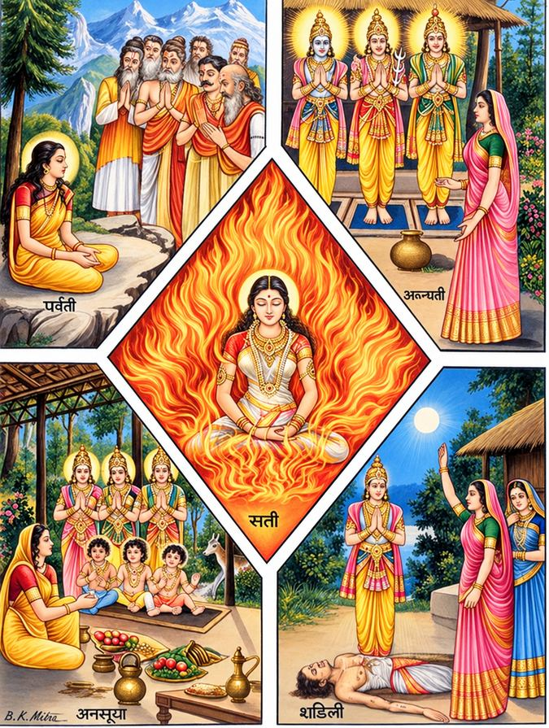
सती, पार्वती, अरुन्धतीजी, अनसूया, शाण्डिली सुजान।
पतिब्रता नारीरत्नोंमें इन पाँचोंका नाम प्रधान॥
प्रसिद्ध है कि भगवान् शंकर स्वभावसे ही विरक्त एवं आत्माराम हैं। सृष्टिके प्रारम्भमें ही उन्होंने स्त्री-परिग्रहकी इच्छा त्याग दी। ब्रह्माजीको उनके इस अखण्ड वैराग्यसे अपने सृष्टिकार्यमें बाधा पड़ती दिखायी दी। वे शंकरजीके वीर्यसे एक पराक्रमी पुत्र प्राप्त करना चाहते थे, जो विध्वंसकारी असुरोंका दमन करनेवाला तथा देवताओंका संरक्षक हो। इसके लिये उन्होंने शंकरजीसे विवाह करनेके लिये अनुरोध किया। किंतु वे अपने संकल्पसे विचलित न हुए। भगवान् शिव दीर्घकालीन समाधिमें संलग्न होकर सदा अपने इष्टदेव साकेतविहारी श्रीरघुनाथजीका चिन्तन करते रहते थे। सृष्टि और संहारके झमेलेमें पड़ना उन्हें स्वीकार नहीं था। ब्रह्माजी एक ऐसी नारीकी खोजमें थे, जो महादेवजीके अनुकूल हो, उनके तेजको धारण कर सके और अपने दिव्य सौन्दर्यसे उनके मनपर भी अधिकार प्राप्त करनेमें समर्थ हो; किंतु ऐसी कोई स्त्री उन्हें दिखायी न दी। तब उन्होंने अपनी अभीष्ट-सिद्धिके लिये भगवती विष्णुमायाकी आराधना करनी ही उचित समझी।
ब्रह्माजीके नव मानस पुत्रोंमें प्रजापति दक्ष बहुत प्रसिद्ध हैं। इनकी उत्पत्ति ब्रह्माजीके दाहिने अँगूठेसे हुई थी। एक समय शापवश इनको यह शरीर त्यागना पड़ा। उसके बाद वे दस प्रचेताओंके अंशसे उनकी पत्नी मारिषाके गर्भसे उत्पन्न हुए। तबसे प्राचेतस दक्षके नामसे उनकी प्रसिद्धि हुई। प्रजापति वीरणकी कन्या वीरिणी इनकी धर्मपत्नी थी।*
* कहीं-कहीं स्वायम्भुव मनुकी कन्या ‘प्रसूति’ को इनकी धर्मपत्नी बताया गया है।
ब्रह्माजीके आदेशसे दक्षने आराधना करके भगवतीको पुत्रीरूपमें प्राप्त किया। परंतु भगवतीने उनसे पहले ही कह दिया कि ‘यदि तुम कभी मेरा तिरस्कार करोगे, तो मैं तुम्हारी पुत्री न रह सकूँगी। शरीर त्यागकर अन्यत्र चली जाऊँगी।’
कन्याका साधु-स्वभाव और भोलापन देखकर ही माता-पिताने उसका नाम ‘सती’ रख दिया था। सतीका हृदय बचपनसे ही भगवान् शंकरकी ओर आकृष्ट था। कुछ बड़ी होनेपर उसने खेल-कूद और मनोरंजनसे मनको हटा लिया और वह नियमपूर्वक महादेवजीकी आराधना करने लगी। वह प्रातःकाल ब्राह्मवेलामें उठकर गंगास्नान करती और भगवान्की पार्थिव मूर्ति बनाकर फूल और बिल्वपत्र आदिसे उसकी विधिवत् पूजा करती थी। फिर नेत्र बंद करके मन-ही-मन प्राणाधारका ध्यान धरती और उनसे मिलनेको उत्सुक होकर देरतक आँसू बहाया करती थी।
सच्चे प्रेमकी पिपासा प्रतिक्षण बढ़ती ही रहती है। यही दशा सतीकी भी थी। उसके मन-प्राण भगवान् शंकरके लिये व्याकुल रहने लगे। उसे विरहका एक-एक क्षण युगके समान प्रतीत होता था। उसकी जिह्वापर ‘शिव’ का नाम था। हृदयमें उन्हींकी मनोहर मूर्ति बसी हुई थी। उसकी आँखें शिवके सिवा दूसरे पुरुषको देखना नहीं चाहती थीं। वह सोचती, ‘क्या आशुतोष भगवान् शिव मुझ दीन अबलापर भी कभी कृपा करेंगे? क्या कभी ऐसा समय भी आयेगा, जब मैं अपने-आपको उनके चरणोंमें समर्पित करके यह तन, मन, जीवन और यौवन सार्थक कर सकूँगी?’ इन्हीं भावनाओंमें वह बेसुध रहती थी। सतीकी यह प्रेम-साधना आगे चलकर कठोर तपस्याके रूपमें परिणत हो गयी।
उधर ब्रह्मा आदि देवता भगवान् शंकरके पास गये और उनसे असुरविनाशक पुत्रकी प्राप्तिके लिये विवाह करनेका अनुरोध करने लगे। शिवने विवाहकी अनुमति दे दी और योग्य कन्याकी खोज करनेको कहा। ब्रह्माजीने कहा—‘महेश्वर! दक्ष-कन्या सती आपको पतिरूपमें प्राप्त करनेके लिये तपस्या कर रही है। वही आपके सर्वथा अनुरूप है। आप उसे ग्रहण करें।’ शिवने ‘तथास्तु’ कहकर देवताओंको विदा कर दिया।
सतीकी व्रताराधना अब पूर्ण होनेको आयी। आश्विन मासके शुक्लपक्षकी अष्टमी तिथि थी। सतीने उस दिन बड़े प्रेम और भक्तिके साथ अपने प्राणाराध्य महेश्वरका पूजन किया। दूसरे दिन व्रत पूर्ण होनेपर भगवान् शिव एकान्त कुटीरमें सतीके सम्मुख प्रकट हुए। सती निहाल हो गयी। जिनकी बाट जोहते-जोहते युग बीत गये थे, उन्हीं आराध्यदेवको सहसा सामने पाकर वह क्षणभरके लिये लज्जासे जडवत् हो गयी। मन आनन्दके समुद्रमें लहरें लेने लगा। उसकी आँखें भगवान्के चरणोंमें जा लगीं। शरीर रोमांचित हो उठा। उसने काँपते हाथोंसे प्रियतमका चरण-स्पर्श किया और भक्तिभावसे प्रणाम करके प्रेमाश्रुओंसे वह उनके पाँव पखारने लगी।
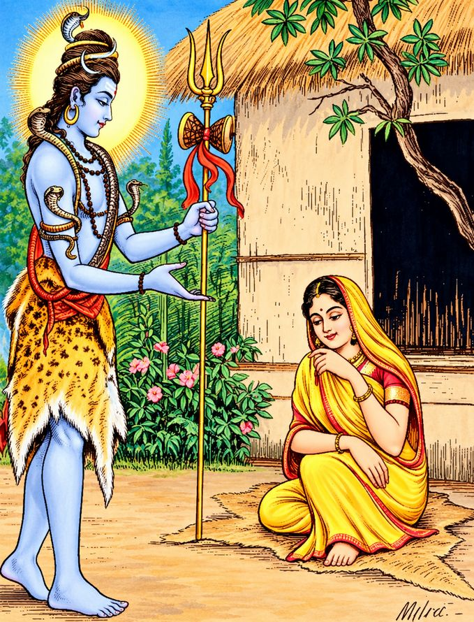
भगवान्ने अपने हाथोंसे सतीको उठाकर खड़ा किया। उस समय उसका रोम-रोम अनिर्वचनीय रसमें डूबा हुआ था। शंकरजी सतीकी तपस्याका उद्देश्य जानते थे, तो भी उन्होंने उसीके मुँहसे उसका मनोरथ सुननेके लिये कहा—‘दक्षकुमारी! मैं तुम्हारी आराधनासे बहुत सन्तुष्ट हूँ। बताओ, किसलिये अपने कोमल अंगोंको इस कठोर साधनाके द्वारा कष्ट पहुँचाया है?’
सती संकोचसे मुख नीचे किये हुए ही बोली—‘देवाधिदेव! आप घटघटवासी हैं, मेरी अभिलाषा आपसे छिपी नहीं है। आप स्वयं ही आज्ञा दें, मैं आपकी क्या सेवा करूँ?’ सतीका यह अलौकिक प्रेम देखकर भगवान् शिव उसके हाथों बिना दाम बिक गये। वे सहसा बोल उठे—‘देवि! तुम मेरी पत्नी बनकर मुझे अनुगृहीत करो।’ सतीका हाथ भगवान् शिवके हाथमें था। प्रभुकी वह अनुरागभरी वाणी सुनकर वह पुनः रमणी-सुलभ लज्जाके वशीभूत हो गयी। उसकी जन्म-जन्मकी साध अब पूरी होने जा रही थी। उस समय उसके मनमें कितना सुख, कितना आह्लाद था, इसका वर्णन नहीं हो सकता। उसने थोड़ी ही देरमें अपनेको सँभाला और मन्द मुसकानके साथ संकोचयुक्त वाणीमें कहा—‘भगवन्! मैं अपने पिताके अधीन हूँ; आप उनकी अनुमतिसे मुझे अपनी सेवाका सौभाग्य प्रदान करें।’
‘बहुत अच्छा’ कहकर शंकरजीने सतीको आश्वासन दिया और उससे विदा लेकर वे वहीं अन्तर्धान हो गये। इधर सतीकी तपस्या और वरदान-प्राप्तिकी बात दक्षके घरमें फैल गयी। उसे सुनकर दक्ष चिन्तामें पड़े थे कि ‘किस प्रकार सतीका विवाह शिवजीके साथ होगा?’ इतनेहीमें भगवान् शंकरकी अनुमतिसे ब्रह्माजीने आकर कहा—‘मैं स्वयं ही शंकरजीको साथ लेकर यहाँ आऊँगा; तुम विवाहकी तैयारी करो।’ नियत समयपर ब्रह्मा आदि देवताओंके साथ भगवान् शिव विवाहके लिये पधारे। उस समय भी उनका वही अड़भंगी वेष था। दक्षको उनकी वेश-भूषापर क्षोभ हुआ; फिर भी उन्होंने समारोहपूर्वक सतीका विवाह शिवजीके साथ कर दिया।
विवाहके पश्चात् सती माता-पितासे विदा हो पतिके साथ कैलासधाम चली गयीं। वे भगवान् शिवके साथ दीर्घकालतक वहाँके सुरम्य प्रदेशोंमें सुखसे रहने लगीं। देवताओं और यक्षोंकी कन्याएँ उनकी सेवा किया करती थीं। भगवान् शिवके पास अनेक देवर्षि, ब्रह्मर्षि, योगी, यति, संत-महात्मा पधारते और सत्संगका लाभ उठाया करते थे। सतीको वहाँ भगवच्चर्चामें बड़ा सुख मिलता था। उस दिव्य वातावरणमें रहते हुए उन्हें कितने ही युग बीत गये। सतीके तन-मन और प्राण केवल शिवकी आराधनामें लगे रहते थे। उनके पति, प्राणेश और देवता सब कुछ भगवान् शिव ही थे।
एक बार त्रेतायुग आनेपर पृथ्वीका भार उतारनेके लिये श्रीहरिने रघुवंशमें अवतार लिया था। उस समय वे पिताके वचनसे राज्य त्याग करके तापस-वेषमें दण्डकवनके भीतर विचरण कर रहे थे। इसी समय रावणने मारीचको कपटमृग बनाकर भेजा था और सूने आश्रमसे सीताको हर लिया था एवं श्रीरामजी साधारण मनुष्यकी भाँति विरहसे व्याकुल होकर लक्ष्मणजीके साथ वनमें सीताकी खोज कर रहे थे। जिनके कभी संयोग-वियोग नहीं है, उनमें भी विरहका दुःख प्रत्यक्ष देखा जा रहा था।
इसी अवसरपर भगवान् शंकर सतीदेवीको साथ लिये अगस्त्यके आश्रमसे राम-कथाका आनन्द लेकर कैलासको लौट रहे थे। उन्होंने अपने आराध्यदेव श्रीरघुनाथजीको देखा, उनके हृदयमें बड़ा आनन्द हुआ। श्रीराम शोभाके समुद्र हैं, उन्हें शिवजीने आँख भरकर देखा; परंतु ठीक अवसर न होनेसे परिचय नहीं किया। उनके मुँहसे सहसा निकल पड़ा—‘जय सच्चिदानंद जग पावन।’ शंकरजी सतीके साथ चले जा रहे थे, आनन्दातिरेकसे उनके शरीरमें बारंबार रोमांच हो आता था। सतीने जब उनकी इस अवस्थाको लक्ष्य किया तो उनके मनमें बड़ा सन्देह हुआ। वे सोचने लगीं—‘शंकरजी तो सारे जगत्के वन्दनीय हैं; देवता, मनुष्य और मुनि सब इनको मस्तक झुकाते हैं; इन्होंने एक राजकुमारको ‘सच्चिदानन्द परमधाम’ कहकर प्रणाम कैसे किया और उसकी शोभा देखकर ये इतने प्रेममग्न कैसे हो गये कि अबतक इनके हृदयमें प्रीति रोकनेसे भी नहीं रुकती। जो ब्रह्म सर्वत्र व्यापक, मायारहित, अजन्मा, अगोचर, इच्छारहित और भेदशून्य है, जिसे वेद भी नहीं जान पाता, वह क्या देह धारण करके मनुष्य बन सकता है? देवताओंके हितके लिये जो मनुष्य-शरीर धारण करनेवाले विष्णु हैं, वे भी तो शिवजीकी ही भाँति सर्वज्ञ हैं, भला वे कभी अज्ञानीकी भाँति स्त्रीको खोजते फिरेंगे? परंतु शिवजीने सर्वज्ञ होकर भी उन्हें ‘सच्चिदानन्द’ कहा है, उनकी बात भी तो झूठी नहीं हो सकती।’
इस प्रकार सतीके मनमें महान् सन्देह खड़ा हो गया। यद्यपि उन्होंने प्रकट कुछ नहीं कहा, फिर भी अन्तर्यामी शिवजी सब जान गये। उन्होंने सतीको समझाकर कहा कि ‘समस्त ब्रह्माण्डोंके अधिपति मायापति, नित्य, परम स्वतन्त्र ब्रह्मरूप मेरे इष्टदेव भगवान् श्रीरामने ही अपने भक्तोंके हितके लिये अपनी इच्छासे ही ‘रघुकुल-रत्न’ होकर अवतार लिया है।’ पर सतीके मनमें उनका उपदेश नहीं बैठा। तब महादेवजी मन-ही-मन भगवान्की मायाका बल जानकर मुसकराते हुए बोले—‘यदि तुम्हारे मनमें अधिक सन्देह है, तो जाकर परीक्षा क्यों नहीं लेती? जबतक तुम लौट न आओगी, मैं इसी बड़की छाँहमें बैठा रहूँगा।’
भोली-भाली सतीपर भगवान्की योगमायाका प्रभाव पड़ चुका था। वे पतिकी आज्ञा पाकर चलीं। इधर शंकरजी अनुमान करने लगे, ‘आज सतीका कल्याण नहीं है। मेरे समझानेपर भी जब सन्देह दूर नहीं हुआ तो विधाता ही विपरीत है, इसमें भलाई नहीं है। जो कुछ रामने रच रखा है, वही होगा, तर्क करके कौन प्रपंचमें फँसे।’ यों विचारकर वे भगवान्का नाम जपने लगे। उधर सतीने खूब सोच-विचारकर सीताका रूप धारण किया और आगे बढ़कर उस मार्गपर चली गयीं जिधर श्रीरामचन्द्रजी आ रहे थे। लक्ष्मणजी सीताको मार्गमें खड़ी देखकर चकित हो गये। जिनके स्मरणमात्रसे अज्ञान मिट जाता है, उन सर्वज्ञ श्रीरामचन्द्रजीने सारी बात जानकर मन-ही-मन अपनी मायाके बलका बखान करते हुए हाथ जोड़कर सीतारूपिणी सतीको प्रणाम किया। अपना और अपने पिताका नाम बतलाया तथा हँसकर पूछा—‘देवि! शिवजी कहाँ हैं? आप वनमें अकेली क्यों विचर रही हैं?’ अब तो सतीजी संकोच से गड़ गयीं। वे भयभीत होकर शंकरजीके पास लौट चलीं। उनके हृदयमें बड़ी चिन्ता हो गयी थी, वे सोचनी लगीं—‘हाय! मैंने स्वामीका कहना नहीं माना, अपना अज्ञान श्रीरामचन्द्रजीपर आरोपित किया। अब मैं उनको क्या उत्तर दूँगी।’
फिर वे बारंबार श्रीरामचन्द्रजीके चरणोंमें प्रणाम करके उस स्थानकी ओर चलीं, जहाँ शिवजी उनकी प्रतीक्षामें बैठे थे। निकट जानेपर शिवजीने हँसकर कुशल-समाचार पूछा और कहा—‘सच-सच बताओ, किस प्रकार परीक्षा ली है?’ सतीने श्रीरघुनाथजीके प्रभावको समझकर भयके मारे शिवजीसे अपने सीतारूप धारण करनेकी बात छिपा ली। शंकरजीने ध्यान लगाकर देखा और सतीने जो कुछ किया था, वह सब जान लिया। फिर उन्होंने श्रीरामजीकी मायाको मस्तक झुकाया!
‘सतीने सीताका वेष बना लिया’, यह जानकर शिवजीके मनमें बड़ा विषाद हुआ। उन्होंने सोचा, ‘अब यदि मैं सतीसे पत्नीकी भाँति प्रीति करता हूँ तो भक्तिमार्गका लोप हो जाता है और बड़ा अन्याय होता है। सती परम पवित्र हैं, अतः इन्हें छोड़ते भी नहीं बनता और प्रेम करनेमें बड़ा पाप है।’ महादेवजी प्रकटरूपसे कुछ नहीं कह सके; किंतु उनके हृदयमें बड़ा सन्ताप था। तब उन्होंने श्रीरामको मन-ही-मन प्रणाम किया। भगवान्की याद आते ही उनके हृदयमें यह संकल्प उदित हुआ—‘एहिं तन सतिहि भेट मोहि नाहीं।’ ऐसा निश्चय करके वे श्रीरामका स्मरण करते हुए चल दिये। उस समय आकाशवाणी हुई—‘महेश्वर! आपकी जय हो, आपने भक्तिको अच्छी दृढ़ता प्रदान की। आपको छोड़कर ऐसी प्रतिज्ञा कौन कर सकता है। आप श्रीरामचन्द्रजीके भक्त हैं, समर्थ हैं और भगवान् हैं।’
सतीने भी वह आकाशवाणी सुनी। उनके मनमें बड़ी चिन्ता हो गयी। उन्होंने सकुचाते हुए पूछा—‘दयामय! कहिये, आपने कौन-सा प्रण किया है। प्रभो! आप सत्यके धाम और दीनदयालु हैं। मुझ दीनपर दया करके अपनी की हुई प्रतिज्ञा बताइये।’ सतीने भाँति-भाँतिसे पूछा, किंतु उन्होंने कुछ नहीं बताया। तब सतीने अनुमान किया, ‘शिवजी सर्वज्ञ हैं, वे सब कुछ जान गये। हाय! मैंने इनसे भी छल किया। स्त्री स्वभावसे ही मूर्ख और बेसमझ होती है।’ अपनी करनीको याद करके सतीके हृदयमें बड़ा सोच और अपार चिन्ता हुई। उन्होंने समझ लिया कि शिवजी कृपाके अथाह सागर हैं, इसीसे प्रकटमें इन्होंने मेरा अपराध नहीं कहा; किंतु उनका रुख देखकर सतीको यह विश्वास हो गया कि स्वामीने मेरा परित्याग कर दिया है।
त्यागका विचार आते ही उनका हृदय व्याकुल हो गया। सतीको चिन्तामग्न देख शंकरजी उन्हें सुख देनेके लिये सुन्दर-सुन्दर कथा-वार्ता कहने लगे। मार्गमें अनेक प्रकारके इतिहासका वर्णन करते हुए वे कैलासधाम पहुँचे। वहाँ अपनी प्रतिज्ञाको याद करके वे वटवृक्षके नीचे आसन लगाकर बैठ गये। अपने सहज स्वरूपका स्मरण किया और अखण्ड समाधि लग गयी। सतीजी कैलासपर रहकर एकाकी जीवन व्यतीत करने लगीं। उनके मनमें बड़ा दुःख था। एक-एक दिन एक-एक युगके समान बीत रहा था और इस दुःख-समुद्रसे पार होनेका कोई उपाय नहीं सूझता था।
इस प्रकार दक्ष-कुमारी सतीके दारुण दुःखकी कोई सीमा नहीं थी। वे रात-दिन चिन्ताकी आगमें झुलस रही थीं। इस अवस्थामें पड़े-पड़े उनके सत्तासी हजार वर्ष बीत गये। इतने दिनों बाद शिवकी समाधि खुली, वे स्पष्ट वाणीमें राम-रामका उच्चारण करने लगे। तब सतीने जाना कि जगदीश्वर शिव समाधिसे जगे हैं। उन्होंने जाकर शंकरजीके चरणोंमें प्रणाम किया। शिवजीने उनको बैठनेके लिये सामने आसन दिया और श्रीहरिकी रसमयी कथाएँ सुनाने लगे। इस प्रकार दयालु महेश्वरने सतीके सन्तप्त हृदयको कुछ शीतल करनेका प्रयत्न किया। भगवच्चर्चामें लग जानेसे मानसिक दुःखका आवेग बहुत कुछ कम हो गया।
इसी बीचमें सतीके पिता दक्ष ‘प्रजापति’ के पदपर अभिषिक्त हुए। यह महान् अधिकार पाकर दक्षके हृदयमें बड़ा भारी अभिमान पैदा हो गया। संसारमें कौन ऐसा है, जिसे प्रभुता पाकर मद न हो। उन्होंने ब्रह्मनिष्ठ महात्माओंको, जिनमें शंकरजी भी थे, उपेक्षाकी दृष्टिसे देखना आरम्भ किया। शंकरजीपर उनके रोषका कुछ विशेष कारण था। वे उनके तत्त्वसे बिलकुल अनभिज्ञ थे। सतीके विवाहके कुछ ही समय बाद एक बार प्रजापतियोंने यज्ञका आयोजन किया था। उसमें बड़े-बड़े ऋषि, देवता, मुनि और अग्नि आदि भी अपने अनुयायियोंसहित उपस्थित हुए थे। ब्रह्मा और शिवजी भी उस सभामें विराजमान थे। उसी समय दक्ष भी वहाँ पधारे। सभी सभासद् उनके स्वागतमें उठकर खड़े हो गये। केवल ब्रह्माजी और महादेवजी अपने स्थानपर बैठे रहे। ब्रह्माजी तो दक्षके पिता ही थे; अतः उन्होंने झुककर उनके चरणोंमें प्रणाम किया; किंतु शंकरजीका बैठे रहना उनको बहुत बुरा लगा। उन्हें इस बातके लिये खेद था कि ‘शंकरने उठकर मुझे प्रणाम क्यों नहीं किया’ अतः उन्होंने भरी सभामें उनकी बड़ी निन्दा की, कठोरवचन सुनाये और शापतक दे डाला। भगवान् शंकर चुपचाप चले आये। उन्होंने उनकी बातका कुछ भी उत्तर नहीं दिया।
इतनेपर भी दक्षका रोष उनके प्रति शान्त नहीं हुआ था। वे शिवसे सम्बन्ध रखनेवाले प्रत्येक व्यक्तिसे द्वेष रखने लगे। यहाँतक कि अपनी पुत्री सतीके प्रति भी उनका भाव अच्छा नहीं रह गया। प्रजापतियोंके नायक बन जानेपर उनको वैर-साधनका अच्छा अवसर मिला। पहले तो उन्होंने वाजपेय यज्ञ किया और उसमें शंकरजीको भाग नहीं लेने दिया। उसके बाद पुनः बड़े समारोहके साथ ‘बृहस्पतिसव’ नामक यज्ञका आयोजन किया। इस उत्सवमें प्रायः सभी ब्रह्मर्षि, देवर्षि, पितर, देवता और उपदेवता आदि आमन्त्रित थे। सबने अपनी-अपनी पत्नीके साथ जाकर यज्ञोत्सवमें भाग लिया और स्वस्तिवाचन किया। केवल ब्रह्मा और विष्णु कुछ सोचकर उस यज्ञमें सम्मिलित नहीं हुए। सतीने देखा, कैलासशिखरके ऊपर आकाशमार्गसे विमानोंकी श्रेणियाँ चली जा रही हैं। उनमें देवता, यक्ष, गन्धर्व, सिद्ध, विद्याधर, किन्नर आदि बैठे हैं। उनके साथ उनकी स्त्रियाँ भी हैं, जो चमकीले कुण्डल, हार तथा विविध रत्नमय आभूषण पहने भलीभाँति सज-धजकर गीत गाती हुई जा रही हैं।
सतीने पूछा—‘भगवन्! यह सब क्या है? ये लोग कहाँ जा रहे हैं?’ भगवान् शिवने मुसकराते हुए कहा—‘तुम्हारे पिताके यहाँ बड़ा भारी यज्ञ हो रहा है। उसीमें ये लोग निमन्त्रित हैं।’ पिताके यज्ञकी बात सुनकर सतीको कुछ हर्ष हुआ। उन्होंने सोचा, ‘यदि स्वामीकी आज्ञा हो तो यज्ञके ही बहाने कुछ दिन वहीं चलकर रहूँ।’ यह विचारकर वे भय, संकोच और प्रेमरसमें सनी हुई वाणीमें बोलीं—‘देव! पिताजीके घर यज्ञ हो रहा है तो उसमें मेरी अन्य बहनें भी अवश्य पधारेंगी। माता और पितासे मिले मुझे युग बीत गये। इस अवसरपर आपकी आज्ञा हो तो आप और मैं दोनों वहाँ चलें। यज्ञका उत्सव भी देखेंगे और सबसे भेंट-मुलाकात भी हो जायगी। प्रभो! यह ठीक है कि उन्होंने निमन्त्रण नहीं दिया; अतः वहाँ जाना ठीक नहीं है, तथापि पति, गुरु और माता-पिता आदि सुहृदोंके यहाँ बिना बुलाये भी जाना चाहिये। सम्भव है भीड़-भाड़में वे निमन्त्रण देना भूल गये हों; अथवा देनेपर भी यहाँ पहुँच न पाया हो।’
शिव—‘इसमें संदेह नहीं कि माता-पिता आदि गुरुजनोंके यहाँ बिना बुलाये भी जा सकते हैं, परंतु ऐसा तभी करना चाहिये जब वहाँके लोग प्रेम रखते हों। जहाँ कोई विरोध मानता हो, वहाँ जानेसे कदापि कल्याण नहीं होता। तुम्हारे पिता मुझसे द्वेष रखते हैं, अतः तुम्हें उनको और उनके अनुयायियोंको देखनेका भी विचार नहीं करना चाहिये। यदि तुम मेरी बात न मानकर वहाँ जाओगी तो इसका परिणाम अच्छा न होगा; क्योंकि किसी प्रतिष्ठित व्यक्तिको जब अपने स्वजनोंद्वारा तिरस्कार प्राप्त होता है, तो वह तत्काल उसकी मृत्युका कारण बन जाता है।’
इसके बाद शंकरजीने बहुत प्रकारसे समझाया-बुझाया, पर सती रहना नहीं चाहती थीं। स्वजनोंके स्नेहका स्मरण करके उनका हृदय भर आया। वे आँखोंमें आँसू भरकर रोने लगीं। तब महादेवजीने अपने प्रधान-प्रधान पार्षदोंको साथ देकर सतीको अकेली ही विदा कर दिया। सती अपने समस्त सेवकोंके साथ गंगातटपर बनी हुई दक्षकी यज्ञशालामें पहुँचीं। मण्डपमें पहुँचनेपर दक्षने सतीका किंचित् भी सत्कार नहीं किया। उनकी चुप्पी देखकर दूसरे लोग भी उन्हींके भयसे कुछ भी न बोले। केवल माता और बहनें सतीसे प्रेमपूर्वक मिलीं और उन्हें आदरपूर्वक उपहारकी वस्तुएँ देने लगीं, किंतु पितासे अपमानित होनेके कारण स्वाभिमानिनी सतीने किसीकी दी हुई कोई भी वस्तु स्वीकार नहीं की। सतीको स्वामीकी कही हुई बातें याद आने लगीं।
उस यज्ञमें शिवजीके लिये कोई भाग न देकर उनका घोर अपमान किया गया था। सतीने इस बातकी ओर भी लक्ष्य किया। इससे उनके मनमें बड़ा क्रोध हुआ। उनकी भौंहें तन गयीं, आँखें लाल हो गयीं और ऐसा जान पड़ा, मानो वे सम्पूर्ण जगत्को भस्म कर डालेंगी। उनका यह भाव देखकर शिवके पार्षद भी दक्षको दण्ड देनेके लिये उद्यत हो गये, किंतु सतीने उन्हें रोक दिया और समस्त सभासदोंके सामने इस प्रकार कहना आरम्भ किया—
‘पिताजी! भगवान् शंकर सम्पूर्ण देहधारियोंके प्रिय आत्मा हैं, उनसे बढ़कर इस संसारमें दूसरा कोई भी नहीं है। उनके लिये न कोई प्रिय है, न अप्रिय। वे सर्वरूप हैं, अतः उनका किसीके साथ भी वैर-विरोध नहीं है। ऐसे भगवान्के साथ आपको छोड़कर दूसरा कौन विरोध कर सकता है? विप्रवर! आप-जैसे ज्ञानशून्य लोग ही दूसरोंके गुणोंमें भी दोष देखते हैं; श्रेष्ठ पुरुष ऐसा नहीं करते। जो दूसरोंके थोड़े-से गुणोंको भी बहुत बड़े रूपमें देखना चाहते हैं, वे ही सर्वश्रेष्ठ महात्मा पुरुष हैं। आपने ऐसे महापुरुषोंमें भी दोष देखना आरम्भ किया है। जो दुष्ट इस मुर्दे शरीरको ही आत्मा मानते हैं, वे ईर्ष्यावश सदा ही महात्माजनोंकी निन्दा करें तो यह कोई आश्चर्यकी बात नहीं है, क्योंकि महापुरुषोंकी चरण-धूलि उन निन्दा करनेवाले पापियोंके तेजका नाश कर देती है; अतः उनके लिये यही योग्य है। जिनका ‘शिव’ यह दो अक्षरका नाम बातचीतके प्रसंगमें भी जिह्वापर आ जाय तो नाम लेनेवालेके समस्त पापोंका तत्काल विनाश कर देता है। जिनके शासनका कोई उल्लङ्घन नहीं कर सकता, जिनकी कीर्ति परम पवित्र है, उन्हीं मंगलमय शिवसे आप द्वेष करते हैं—यह महान् आश्चर्य है। सचमुच ही आप अमंगलरूप हैं। अहो! महापुरुषोंके मनरूपी भ्रमर ब्रह्मानन्दमय रसका पान करनेकी इच्छासे जिनके चरण-कमलोंका निरन्तर सेवन करते हैं तथा जो भोग चाहनेवाले पुरुषोंको उनके अभीष्ट भोग भी देते हैं उन्हीं विश्वबन्धु भगवान् भूतनाथसे आप वैर करते हैं, यह आपके लिये बड़े दुर्भाग्यकी बात है। सुनती हूँ, आप कहा करते हैं, वे केवल नाममात्रके शिव हैं; उनका वेष तो महान् अशिव—अभद्र है, क्योंकि वे नरमुण्डोंकी माला, चिताकी राख और हड्डियाँ धारण किये, जटा बिखराये, भूत-पिशाचोंको साथ लिये श्मशानमें विचरा करते हैं। मालूम होता है, शिवके उस अशिव रूपका ज्ञान सबसे अधिक आपको ही है; आपके सिवा दूसरे देवता ब्रह्मा आदि भी इस बातको नहीं जानते। तभी तो वे शिवके चरणोंपर चढ़े हुए निर्माल्यको अथवा उनके चरणोदकको अपने मस्तकपर धारण करते हैं। पिताजी! शास्त्र क्या कहता है? यदि कोई उच्छृंखल प्राणी धर्मकी रक्षा करनेवाले ईश्वरकी निन्दा करे तो अपनेमें उसे दण्ड देनेकी शक्ति न होनेपर दोनों कान मूँद ले और वहाँसे हट जाय। अथवा यदि शक्ति हो तो उस बकवादीकी दुष्ट जिह्वाको काटकर फेंक दे। ऐसा करते समय कदाचित् प्राणोंपर संकट आ जाय तो प्राणोंको भी त्याग दे, वही धर्म है। आप भगवान् नीलकण्ठकी निन्दा करनेवाले हैं; अतः आपसे उत्पन्न हुए इस शरीरको अब मैं नहीं धारण करूँगी। यदि भूलसे कोई दूषित अन्न खा लिया जाय तो वमन करके उसे निकाल देना ही आत्मशुद्धिके लिये आवश्यक बताया गया है। भगवान् शिव जब-जब आपके साथ मेरा सम्बन्ध दिखलाते हुए मुझे हँसीमें भी दाक्षायणी (दक्षकुमारी)-के नामसे पुकारते हैं तब-तब उस हास-परिहासको भूलकर मेरा मन तुरंत ही दुःखके अगाध समुद्रमें डूब जाता है। अतः आपके अंगसे उत्पन्न हुए इस शवतुल्य शरीरको अब त्यागे देती हूँ; क्योंकि यह मेरे लिये कलंकरूप है।’
यज्ञमण्डपमें इस प्रकार कहकर देवी सती मौन हो उत्तर दिशामें बैठ गयीं। उनका शरीर पीताम्बरसे ढका था। वे आचमन करके नेत्र बंद किये योगमार्गमें स्थित हो गयीं। पहले उन्होंने आसनको स्थिर किया, फिर प्राण और अपान वायुको एकरूप करके नाभिचक्रमें स्थापित किया। तदनन्तर उदान वायुको नाभि-चक्रसे धीरे-धीरे ऊपर उठाया और बुद्धिसहित हृदयमें स्थापित कर दिया; फिर हृदयस्थित वायुको वे कण्ठमार्गसे भृकुटियोंके बीचमें ले गयीं। महापुरुषोंके भी पूजनीय भगवान् शिव जिसको बडे़ आदरके साथ अपने अंकमें बिठा चुके थे, उसी शरीरको मनस्विनी सतीदेवी दक्षपर क्रोध होनेके कारण त्याग देना चाहती थीं; अतः उन्होंने अपने सम्पूर्ण अंगोंमें अग्नि और वायुकी धारणा की। इसके बाद वे अपने स्वामी जगद्गुरु भगवान् शिवके चरणारविन्द-मकरन्दका चिन्तन करने लगीं; उसके सिवा दूसरी किसी वस्तुका उन्हें भान न रहा। उस समय उनका वह दिव्य देह, जो स्वभावसे ही निष्पाप था, तत्काल योगाग्निसे जलकर भस्म हो गया।*
* ततः स्वभर्तुश्चरणाम्बुजासवं
जगद्गुरोश्चिन्तयती न चापरम्।
ददर्श देहो हतकल्मषा सती
सद्यः प्रजज्वाल समाधिजाग्निना॥
(श्रीमद्भा० ४। ४। २७)
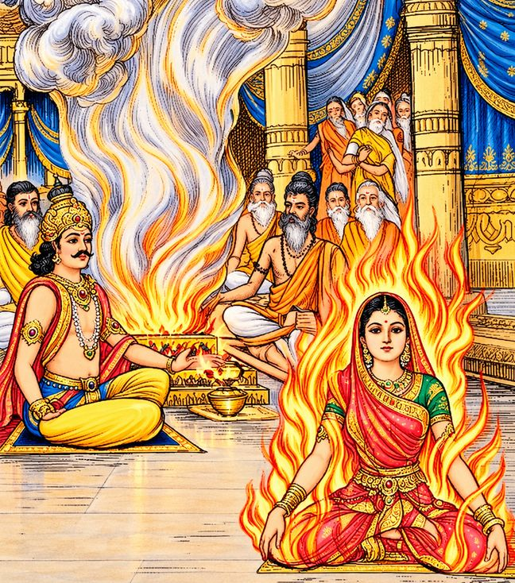
इस प्रकार पतिप्राणा सतीकी ऐहलौकिक लीला समाप्त हुई। उन्होंने जीवनभर सदा ही तन, मन, प्राणसे अपने पति भगवान् शिवकी सेवा और समाराधना की तथा अन्तमें भी उन्हींका चिन्तन करते-करते प्राण-त्याग किया। मरते समय भी उन्होंने भगवान्से यही वर माँगा था कि ‘प्रत्येक जन्ममें मेरा भगवान् शिवके ही चरणोंमें अनुराग हो*।’
* सतीं मरत हरि सन बरु मागा।
जनम जनम सिव पद अनुरागा॥
(रामचरितमानस)
इसीलिये वे पुनः गिरिराज हिमालयके यहाँ पार्वतीके रूपमें प्रकट हुईं और भगवान् शंकरको ही पतिरूपमें प्राप्त किया। सतीका यह दिव्य पतिप्रेम भारतकी नारियोंके लिये आदर्श बन गया। आज घर-घरमें सती-पूजाकी जो प्रथा चली आती है, उसमें दक्ष-कन्या सतीके प्रति ही भारतीय नारियाँ अपनी श्रद्धा और भक्ति अर्पित करती हैं। सतीजी भगवान् शिवके लिये ही उत्पन्न हुईं, उन्हींकी सेवाके लिये जीवित रहीं और उसीमें बाधा पड़नेपर फिर उन्हींको सम्पूर्णरूपसे प्राप्त करनेके लिये उन्होंने अपने शरीरको त्याग दिया। गंगाके किनारे जिस स्थानपर सतीने अपना शरीर छोड़ा था, वह आज भी ‘सैनिक तीर्थ’ के नामसे विख्यात है।
सती पार्वती
पतिदेवता सुतीय महुँ मातु प्रथम तव रेख।
महिमा अमित न सकहिं कहि सहस सारदासेष॥
सतीत्व ही नारीका सौन्दर्य है, पातिव्रत्यकी रक्षा ही उसका व्रत है। मन, वाणी और क्रियाद्वारा पतिके चरणोंमें पवित्र प्रेम ही उसका धर्म है। ऊँची-से-ऊँची स्थितिको पाकर भी मनमें अहंकारका उदय न होना, भारी-से-भारी संकट आनेपर भी धैर्य न छोड़ना, स्वयं कष्ट सहकर भी स्वामी तथा कुटुम्बीजनोंको यथायोग्य सेवासे प्रसन्न रखना, विनय, कोमलता, दया, प्रेम, लज्जा, सुशीलता और वत्सलता आदि सद्गुणोंको हृदयमें धारण करना, यह प्रत्येक साध्वी नारीका स्वभाव होता है। नारी न भीरु होती है, न अबला। भीरुता और अबलापनको तो वह अपने पति और गुरुजनोंके सामने केवल विनयकी रक्षा और अविनयसे बचनेके लिये धारण किये रहती है। सती नारीकी सबसे बड़ी शक्ति है उसका पातिव्रत्य, जो सम्पूर्ण जगत्को सबल और निर्भय बना सकता है। वह प्राणोंके रहते सतीत्वपर आँच नहीं आने देती। आवश्यकता हुई तो सतीत्वकी रक्षाके लिये वह शस्त्र भी ग्रहण करती है और आततायीके लिये भयानक रणचण्डी बन जाती है। अपने पति और पुत्रोंके ललाटमें रक्तका चन्दन लगाकर स्वयं ही उन्हें रणमें भेजती है और इस प्रकार संसारमें वह वीरांगना एवं वीरजननीके रूपमें सम्मानित होती है। नारीके इन सभी सद्गुणों और सभी रूपोंका एकत्र समन्वय देखना हो तो जगज्जननी भगवती पार्वतीके जीवनपर दृष्टिपात करना चाहिये। पार्वतीने जहाँ प्रेम और विनयकी प्रतिमूर्ति होकर पतिके आधे अंगमें स्थान प्राप्त किया, उन्हें अर्धनारीश्वर बनाया; वहीं स्वामीको अपनी विराट् शक्ति देकर मृत्युंजयके रूपमें प्रतिष्ठित किया, दोनों पुत्रोंको सेनानी और गणाध्यक्ष बनाया तथा स्वयं भी वे पातिव्रत्यकी रक्षा एवं लोककल्याणके लिये शस्त्र हाथमें ले चण्ड-मुण्डविनाशिनी चामुण्डा बन गयीं। वेद, उपनिषद्, इतिहास, पुराण, तन्त्र, आगमसभी शिव और पार्वतीके गुणगानसे भरे हैं। यहाँ अतिसंक्षेपसे ही उनके जीवनपर कुछ प्रकाश डाला जा रहा है।
पार्वती पूर्वजन्ममें दक्षप्रजापतिकी कन्या सतीके रूपमें अवतीर्ण हुई थीं। उस समय भी उन्हें भगवान् शंकरकी प्रियतमा पत्नी होनेका सौभाग्य प्राप्त था। जब वे अपने स्वामीके साथ कैलासपर्वतपर रहती थीं, उन दिनों गिरिराज हिमालयकी धर्मपत्नी मेनकादेवी उनसे बड़ा प्रेम रखती थीं। उनके मनमें सदा यही अभिलाषा होती कि मेरे गर्भसे भी एक सती-जैसी ही सुन्दरी तथा सुलक्षणा कन्या जन्म ले। सतीका भी उनके प्रति माता-जैसा ही प्रेम था। दक्षके यज्ञमें सतीका देहावसान सुनकर मेनकाको बड़ा दुःख हुआ। उन्होंने अपने मनोरथकी सिद्धिके लिये बड़ी भक्तिके साथ आद्या शक्ति जगदम्बाकी आराधना आरम्भ कर दी। इससे प्रसन्न होकर देवीने प्रत्यक्ष दर्शन दिया और मनोवाञ्छित वर माँगनेको कहा। मेनकाने पहले पुत्र और फिर कन्या प्राप्त होनेका वर माँगा। देवीने ‘तथास्तु’ कहकर उनकी प्रार्थना स्वीकार की।
इसी प्रकार महर्षि कश्यपके उपदेशसे श्रेष्ठ संतानकी प्राप्तिके लिये गिरिराज हिमवान्ने तपस्या करके ब्रह्माजीको प्रसन्न किया और उनसे उत्तम पुत्र और महान् सद्गुणवती कन्या प्राप्त करनेका वर-लाभ किया।
हिमालयकी पत्नी मेनका पितरोंकी मानसी कन्या थी। वे कुल और शील दोनों ही दृष्टियोंसे श्रेष्ठ थीं। उनके गर्भसे पहले एक प्रतापी पुत्र उत्पन्न हुआ, जिसका नाम मैनाक था। मैनाकके जन्मके कुछ काल पश्चात् सतीने नूतन शरीर धारण करनेके लिये मेनकाके गर्भमें प्रवेश किया। समय आनेपर जैसे सुनीति नवीन सम्पत्ति उत्पन्न करती है, उसी प्रकार मेनकाने एक कन्या-रत्नको जन्म दिया।
पर्वतसे उत्पन्न होनेके कारण कन्याको सब लोग पार्वती कहने लगे। कुछ लोग गिरिजा और शैलजा भी कहते हैं। धीरे-धीरे पार्वती प्रतिदिन चन्द्रकलाके समान बढ़ने लगीं। वे ज्यों-ज्यों बड़ी होती गयीं, त्यों-ही-त्यों उनके सुन्दर अंग भी सुडौल होकर बढ़ने लगे। माता-पिताकी आँखें त्रिभुवनसुन्दरी पार्वतीको देखकर अघाती नहीं थीं। पार्वतीके जन्मका समाचार पाकर देवर्षि नारद भी उन्हें देखनेके लिये कौतूहलवश हिमाचलके घर पधारे। पर्वतराजने उनका बड़ा आदर किया। ‘मेरा अहोभाग्य, जो मुनिराजके दर्शन हुए’ इस प्रकार अपने सौभाग्यकी सराहना करते हुए हिमवान्ने अपनी लाड़ली पुत्री पार्वतीको बुलाकर मुनिके चरणोंमें प्रणाम कराया। इसके बाद हाथ जोड़कर कहा—‘मुनिवर! आप भूत, वर्तमान और भविष्य तीनों कालोंके ज्ञाता हैं। आपकी सर्वत्र पहुँच है; अतः आप हृदयमें विचारकर कन्याके दोष और गुण बतलाइये।’
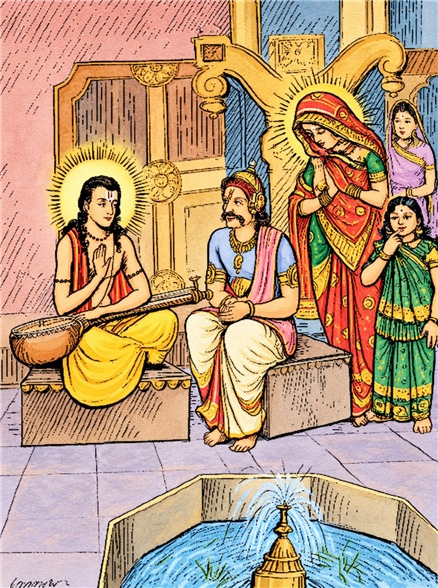
नारदजीने हँसकर रहस्ययुक्त कोमल वाणीमें कहा—‘गिरिराज! तुम्हारी कन्या सब गुणोंकी खान है। यह स्वभावसे ही सुन्दर, सुशील और समझदार है। आगे चलकर यह उमा, अम्बिका और भवानी आदि विविध नामोंसे प्रसिद्ध होगी। इसमें सम्पूर्ण शुभ लक्षण विद्यमान हैं। यह अपने पतिको सर्वदा प्यारी होगी। इसका सुहाग सदा अचल रहेगा। इस कन्यासे माता-पिताको बड़ा भारी यश मिलेगा। यह सारे जगत्में पूज्य होगी। इसकी सेवासे कुछ भी दुर्लभ न होगा। संसारमें स्त्रियाँ इसके नामका स्मरण करके पातिव्रत्यरूपी तलवारकी धारपर चढ़ जायँगी। शैलपते! इस प्रकार तुम्हारी कन्या सब प्रकारसे सुलक्षणी है; किंतु इसमें जो एक अवगुण है, उसे भी सुन लो। इसको पति गुणहीन, मानहीन, माता-पितासे रहित, उदासीन, संशयशून्य, योगी, जटाधारी, कामनाशून्य, नंगा और अमंगल वेषवाला मिलेगा। इसके हाथमें ऐसी ही रेखा पड़ी है।’
मुनिकी यह बात सुनकर और मन-ही-मन उसको सत्य जानकर दोनों दम्पति हिमवान् और मैना बहुत दुःखी हुए; किंतु पार्वतीजी अत्यन्त प्रसन्न हुईं। हिमवान्को चिन्तित देखकर नारदजीने कहा—‘हिमवान्! इसमें संदेह नहीं कि तुम्हारी कन्याको वैसा ही वर प्राप्त होगा, जैसा कि मैंने बताया है; परंतु मैंने वरके जो-जो दोष बताये हैं, मेरे अनुमानसे वे सभी शिवजीमें हैं। यदि उनके साथ इसका विवाह हो जाय, तो दोषोंको भी सब लोग गुणके ही समान कहेंगे। शिवजी सहज समर्थ हैं, क्योंकि वे भगवान् हैं; अतः इस विवाहमें सब प्रकारसे कल्याण है। यद्यपि महादेवजीकी आराधना बड़ी कठिन है, तथापि तपस्या करनेसे वे शीघ्र ही संतुष्ट हो जाते हैं। यदि तुम्हारी कन्या तप करे तो महादेवजी होनहारको भी मिटा सकते हैं। वे कृपाके समुद्र और सेवकोंके मनको प्रसन्न करनेवाले हैं। शिवजीकी आराधना किये बिना करोड़ों योग और जप करनेपर भी मनोवाञ्छित फलकी सिद्धि नहीं हो सकती।’ ऐसा कहकर नारदजीने पार्वतीको आशीर्वाद दिया और भगवान्का स्मरण करके वे ब्रह्मलोकमें चले गये। हिमवान् पार्वतीके तप करनेका उपयुक्त अवसर देखने लगे।
उधर जबसे सतीने पिताके हाथों महादेवजीका अपमान होनेपर योगाग्निसे अपने शरीरको जला दिया तबसे महादेवजीने दूसरा विवाह नहीं दिया। भोग-विलासको तो वे बहुत पहलेसे ही छोड़ चुके थे। हिमालयके सुन्दर शिखरपर जाकर उन्होंने तपस्या आरम्भ की। वहाँ भगवान्की सेवामें उनके पार्षद प्रमथगण और नन्दी भी साथ-साथ रहते थे। परम विरक्त शिवजी श्रीरघुनाथजीका नाम जपते हुए उन्हींका ध्यान करने लगे। महादेवजीको तपस्यामें स्थित देख हिमवान् अपनी पुत्रीको साथ लेकर उनकी पूजाके लिये गये। पहले उन्होंने स्वयं शिवजीकी पूजा की; फिर अपनी पुत्रीको आज्ञा दी कि ‘सखियोंके साथ आकर तुम वहीं रहकर भगवान्की पूजा करो।’ यद्यपि पार्वतीजीके रहनेसे शिवजीकी तपस्यामें बाधा पड़नेकी सम्भावना थी; फिर भी उन्होंने पार्वतीजीकी सेवा स्वीकार कर ली; क्योंकि वास्तवमें ज्ञानी और महात्मा पुरुष वे ही हैं जिनका चित्त विकारके साधन उपस्थित रहनेपर भी विचलित न हो। पार्वती नियमसे प्रतिदिन वहाँ रहकर पूजाके लिये फूल चुनकर लातीं, वेदीको धो-पोंछकर स्वच्छ बनातीं और नित्यकर्मके लिये जल और कुशा लाकर रख दिया करती थीं। यह सब करते हुए उनके तन-मनमें तनिक भी थकानका अनुभव नहीं होता था।
उन्हीं दिनों तारक नामसे प्रसिद्ध एक अजर-अमर असुर हुआ, जिसकी भुजाओंका बल, प्रताप और तेज बहुत बड़ा था। उसने सब लोक और लोकपालोंको जीत लिया। तब उन्होंने ब्रह्माजीके पास जाकर अपनी कष्ट-कथा सुनायी। ब्रह्माजीने देवताओंको समझाकर कहा—‘उस दैत्यकी मृत्यु तब होगी, जब शिवजीके वीर्यसे कोई पुत्र उत्पन्न हो। वही इसे युद्धमें जीतेगा। दक्षकन्या सती हिमवान्के यहाँ पार्वतीके रूपमें अवतीर्ण हुई हैं। वे ही शिवका वीर्य धारण करनेमें समर्थ हैं; परंतु शिवजी परम विरक्त होकर समाधि लगाये बैठे हैं। हिमगिरिके शिखरपर तपस्या कर रहे हैं। उन्हें विवाहके लिये उद्यत करना कठिन है। इसके लिये तुम्हें कोई उपाय सोचना चाहिये।’
यह सुनकर इन्द्र आदि देवताओंने कामदेवको अपनी दुःखभरी गाथा सुनाकर वसन्त आदि सहायकोंके साथ वहाँ भेजा। उसके हाथमें पुष्पमय धनुष शोभा पा रहा था। वहाँ जाकर वह एक सुन्दर डालीपर जा बैठा। उसने पुष्पधनुषपर अपने पाँचों बाण चढ़ाये और अत्यन्त क्रोधसे लक्ष्यकी ओर देखकर उन्हें छोड़ दिया। बाण भगवान् शंकरके हृदयमें जा लगे। उनकी समाधि टूट गयी और वे जाग उठे। इससे उनके मनमें बड़ा क्षोभ हुआ और उन्होंने आँखें खोलकर सब ओर देखा। आमके पत्तोंमें छिपे हुए कामदेवपर उनकी दृष्टि पड़ गयी। शिवजीने अपना तीसरा नेत्र खोला और उसके द्वारा देखते ही कामदेव जलकर भस्म हो गया। जगत्में हाहाकार मच गया। कामदेवकी स्त्री रति अपने पतिकी यह दशा सुनकर मूर्च्छित हो गयी। वह रोती, चिल्लाती और करुणा करती हुई शिवजीकी शरणमें गयी। आशुतोष शिव अबलाकी करुण पुकार सुनकर पिघल गये और बोले—‘रति! तेरा पति मरा नहीं है, केवल उसका शरीर जल गया है। अब वह बिना शरीरके ही सबको व्यापेगा। अबसे उसका नाम अनंग होगा। जब पृथ्वीका भार उतारनेके लिये यदुवंशमें श्रीकृष्णका अवतार होगा, उस समय तेरा पति उनके पुत्ररूपमें उत्पन्न होगा। तभीसे उसे अपने खोये हुए शरीरकी भी प्राप्ति हो जायगी।’ यह सुनकर रति लौट गयी। इसी समय गिरिराज हिमालयने वहाँ पहुँचकर अपनी कन्याको गोदमें उठा लिया और सखियों सहित उसे घर ले आये। शंकरजीकी भक्ति और दृढ़तासे संतुष्ट होकर श्रीरघुनाथजीने उन्हें दर्शन दिया और पार्वतीजीसे विवाह करनेको विवश किया। शिवने उनकी आज्ञा शिरोधार्य की।*
* सिर धरि आयसु करिअ तुम्हारा।
परम धरमु यह नाथ हमारा॥
घर आनेपर पार्वतीजीने भगवान् शिवकी प्राप्तिके लिये घोर तपस्या करनेका निश्चय किया। उसने अपना यह विचार माता-पितापर भी प्रकट किया। हिमवान्को तो यह अभीष्ट ही था; किंतु माताका कोमल हृदय इसे सहन न कर सका। उसने सोचा, ‘मेरी सुकुमारी कन्या इन कोमल अंगोंसे तपस्याका कष्ट कैसे सह सकेगी।’ इस विचारसे उसका हृदय भर आया। नेत्रोंमें आँसू छलक आये। मेनाने पार्वतीको छातीसे लगा लिया और कहा—बेटी ‘उ’ .........‘माँ’ (ऐसा न कर); तभीसे पार्वतीका नाम ‘उमा’ पड़ गया। माता-पिताको हर तरहसे समझा-बुझाकर पार्वतीजी बड़े हर्षके साथ तपस्या करनेके लिये चलीं। हिमालयके एक सुन्दर शिखरपर पार्वतीने घोर तपस्या आरम्भ की। उनका सुकुमार शरीर तपके योग्य नहीं था तो भी शिवके चरणोंका चिन्तन करके उन्होंने सब भोग छोड़ दिये। स्वामीके चरणोंमें नित्य नया अनुराग उत्पन्न होने लगा और तपमें ऐसा मन लगा कि शरीरकी सुध-बुध बिसर गयी।
इस प्रकार रात-दिन कठोर तपस्याके द्वारा अपने सुकोमल अंगोंको सुखाकर पार्वतीने कठोर शरीरवाले तपस्वियोंको भी लज्जित कर दिया। इसी बीचमें पार्वतीके आश्रमपर एक तेजस्वी ब्रह्मचारी आया। उसका शरीर ब्रह्मचर्यके दिव्य तेजसे प्रकाशित हो रहा था। अतिथिका सत्कार करनेवाली देवी पार्वतीने बड़े आदरसे आगे बढ़कर ब्रह्मचारीका विधिवत् पूजन किया। ब्रह्मचारीने उनकी पूजा ग्रहण करके पलभर अपनी थकावट मिटायी; फिर पार्वतीकी तपश्चर्याकी महान् प्रशंसा करते हुए तपका उद्देश्य जानना चाहा। ब्रह्मचारीने ऐसे ढंगसे बातें कहीं, मानो उसने पार्वतीके हृदयमें पैठकर सब बातें जान ली हों। उन्हें सुनकर पार्वती ऐसी लजा गयीं कि अपने मनकी बात मुँहसे न निकाल सकीं, अतः उन्होंने सखीकी ओर देखकर उसे कहनेके लिये संकेत किया। तब पार्वतीजीकी सखीने ब्रह्मचारीको बड़े मधुर शब्दोंमें पार्वतीकी मानस स्थितिका वर्णन करते हुए यह बता दिया कि ये पिनाकपाणि श्रीमहादेवजीको पतिरूपमें प्राप्त करनेके लिये तप कर रही हैं। इसपर ब्रह्मचारीने अपनी अरुचि व्यक्त करते हुए महादेवजीके अशुभ वेषका वर्णन करके उनकी निन्दा की और अन्तमें कहा कि ‘मेरे विचारसे तुम्हें अपने मनको इस अनुचित आग्रहसे हटा लेना चाहिये। कहाँ तुम और कहाँ वह। दोनोंमें आकाश-पातालका अन्तर है।’
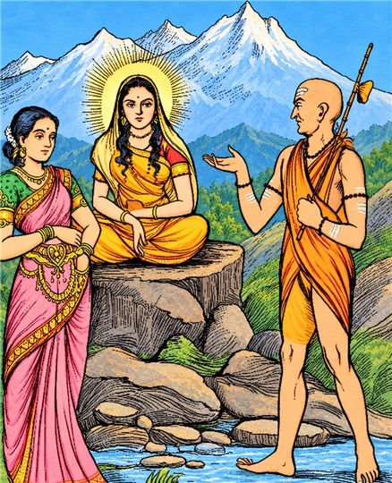
ब्रह्मचारीकी ऐसी उलटी-सीधी बातें सुनकर पार्वतीके ओठ क्रोधसे काँपने लगे, भौंहें तन गयीं और आँखें लाल हो गयीं। उन्होंने ब्रह्मचारीकी ओर आँखें तरेरकर देखा और कहा—‘निश्चय ही महादेवजीके वास्तविक स्वरूपको तुम नहीं जानते, तभी तुम्हारे मुँहसे ऐसी बातें निकली हैं। मूर्ख लोग महात्मा पुरुषोंके उस अलौकिक चरित्रकी निन्दा ही करते हैं, जिसके रहस्यको जानने या समझनेकी उनमें क्षमता नहीं होती। जो लोग अपने ऊपर आयी हुई विपत्ति दूर करना चाहते हैं अथवा धनके लिये उत्सुक रहते हैं, वे ही ढूँढ-ढूँढकर मांगलिक कही जानेवाली वस्तुओंका सेवन करते हैं; परंतु जो सम्पूर्ण जगत्को शरण देनेवाले हैं, जिनके मनमें कोई इच्छा ही नहीं है, उन महेश्वरको ऐसी वस्तुओंसे क्या लेना है? कहते हो उनके पास कुछ नहीं है, वे श्मशानमें घूमते हैं और उनका रूप भयंकर है; किंतु सच बात यह है कि अकिंचन होते हुए भी वे ही सम्पूर्ण सम्पदाओंके दाता हैं। श्मशानमें विचरनेवाले होकर भी वे तीनों लोकोंके रक्षक हैं; भयानक रूपवाले होनेपर भी वे ही शिव (कल्याणकारी) कहलाते हैं। पिनाकपाणि महादेवजीके यथार्थ स्वरूपको जाननेवाले इस संसारमें नहीं हैं। वे सुन्दर आभूषण पहने या साँप लपेटे रहें। हाथीकी खाल ओढ़ें अथवा स्वच्छ वस्त्र धारण करें। हाथमें कपाल लिये हों अथवा माथेपर चन्द्रमाँका मुकुट सजाये हों; संसारमें जितने भी रूप हैं, सब उन्हींके हैं, अतः उनका रूप ऐसा है, ऐसा नहीं है, इस बातका निश्चय नहीं किया जा सकता। जिन्हें तुम निर्धन कहते हो वे ही जब अपने बैलपर चढ़कर चलते हैं, उस समय मदोन्मत्त ऐरावत हाथीपर चढ़कर चलनेवाला इन्द्र भी आकर उनके चरणोंमें मस्तक झुकाता है और खिले हुए पारिजात पुष्पोंके परागसे उनके चरणोंकी अंगुलियोंको लाल रंगकी कर देता है। तुम्हारी आत्मा अपने स्वरूपसे भ्रष्ट हो चुकी है। तुम शंकरजीके दोष ही बतलाना चाहते थे तो भी तुम्हारे मुखसे एक बात तो उनके लिये अच्छी ही निकल गयी। अरे! जो ब्रह्माजीको भी उत्पन्न करनेवाले हैं, उन महेश्वरके जन्म, कुल और माता-पिता आदिका पता हो ही कैसे सकता है। जो सबके पिता-माता हैं, उनके पिता-माता दूसरे कौन हो सकते हैं; अस्तु, इस विवादसे कोई लाभ नहीं, तुमने शंकरजीके बारेमें जैसा सुना है, वे वैसे ही सही; मेरा प्रेम-रसमें डूबा हुआ मन उन्हींमें रम गया है। अब उसे उनकी ओरसे हटाया नहीं जा सकता। प्रेमीका अन्तःकरण प्रेमास्पदके दोषोंपर दृष्टि नहीं डालता।’ *
* गोस्वामी तुलसीदासजीने भी इस प्रसंगका अत्यन्त मार्मिक वर्णन किया है। सप्तर्षियोंने पार्वतीकी प्रेम-परीक्षा लेते समय जब महादेवजीके दोष और विष्णुके गुणोंका वर्णन करके उनका मन विष्णुकी ओर खींचनेका प्रयत्न किया तथा नारदके उपदेशको हानिकर बताकर उन्हें तपस्यासे विरत करनेकी चेष्टा की, उस समय पार्वतीने उन्हें मुँहतोड़ उत्तर देते हुए कहा था—
महादेव अवगुन भवन बिष्नु सकल गुन धाम।
जेहि कर मनु रम जाहि सन तेहि तेही सन काम॥
जन्म कोटि लगि रगर हमारी।
बरउँ संभु न त रहउँ कुआरी॥
तजउँ न नारद कर उपदेसू।
आपु कहहिं सत बार महेसू॥
इतनेहीमें पार्वतीने देखा ब्रह्मचारी फिर कुछ कहना चाहता है तब वे सहसा बोल उठीं—‘सखी! देखो, इस ब्रह्मचारीके ओठ फड़क रहे हैं। यह पुनः कुछ कहना चाहता है, इसे रोक दे। अब यह एक शब्द भी बोलने न पाये, क्योंकि जो महात्मा पुरुषोंकी निन्दा करता है, केवल वही नहीं पापी होता; जो उसके मुँहसे सुनता है, उसे भी पापका भागी होना पड़ता है।*
* निवार्यतामालि किमप्ययं वटुः
पुनर्विवक्षुः स्फुरितोत्तराधरः।
न केवलं यो महतोऽपभाषते
शृणोति तस्मादपि यः स पापभाक्॥
अथवा मैं ही यहाँसे उठकर चली जाऊँगी।’ यों कहकर उमा ज्यों ही चलनेको उद्यत हुईं, महादेवजीने अपना वास्तविक रूप प्रकट करके मुसकराते हुए उनका हाथ पकड़ लिया। अपने जीवननिधिको सहसा सामने उपस्थित देख पार्वतीजीके शरीरमें कम्पन होने लगा। समस्त अंग पसीने-पसीने हो गये। आगे चलनेको जो पैर उठ चुका था, वह जहाँ-का-तहाँ रुक गया। भगवान् शंकर बोले—‘कोमलांगी! आजसे मैं तुम्हारा तपस्यासे मोल लिया हुआ सेवक हूँ।’ इतना सुनते ही पार्वती अनिर्वचनीय आनन्दमें डूब गयीं। तपस्यासे उन्हें जितना कष्ट हुआ था, वह सब जाता रहा। मनोवाञ्छित फल मिल जानेके कारण उनके तन-मन दोनों हरे हो गये। तदनन्तर पार्वतीने अपनी सखीके मुँहसे यह कहलाया कि ‘मेरे इस शरीरके स्वामी मेरे पिता हैं; अतः आप उन्हींके पास आदेश देकर मेरा वरण करें।’ ‘एवमस्तु’ कहकर भगवान् शंकर वहीं अन्तर्धान हो गये।
कुछ कालके बाद हिमालयके विशाल शिखरपर पार्वतीका स्वयंवर रचाया गया। उस समय सम्पूर्ण देवताओंके विमानोंसे वह स्थान खचाखच भरा हुआ था। इन्द्र, वरुण, यम, कुबेर, अग्नि, सूर्य, चन्द्रमा आदि सम्पूर्ण देवता, गन्धर्व, यक्ष, नाग और किन्नरगण मनोहर वेष बनाये वहाँ उपस्थित थे। भगवती उमा माला हाथमें लिये देवसमाजमें खड़ी हुईं। इसी समय उनकी परीक्षा लेनेके लिये भगवान् शंकर पाँच शिखावाले बालक बनकर उनकी गोदमें आकर सो गये।
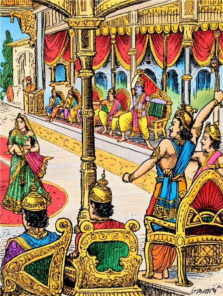
देवीने ध्यानके द्वारा उन्हें पहचानकर बड़े प्रेमके साथ अंकमें ले लिया। पार्वतीका संकल्प शुद्ध था। वे अपना मनोवाञ्छित पति पा गयीं; अतः भगवान् शंकरको हृदयमें रखकर स्वयंवरसे लौट पड़ीं। इन्द्रने उस बालकको अपने मार्गका कण्टक माना और उसे मार डालनेके लिये वज्रको ऊपर उठाया। यह देख शिशुरूपधारी शिवने उन्हें वज्रसहित स्तम्भित कर दिया। वे अपने स्थानसे हिल भी न सके। तब भगदेवताने एक तेजस्वी शस्त्र चलाना चाहा; किंतु उनकी भी बाँह जडवत् हो गयी। यह देख ब्रह्माजीने भगवान् शिवको पहचान लिया और देवताओंको उनकी शरणमें जानेके लिये कहा। देवता भगवान्के चरणोंमें गिर पड़े। महेश्वर प्रसन्न हो गये। फिर सब देवताओंका शरीर पूर्ववत् हो गया। तदनन्तर भगवान् शिव अपने साक्षात् स्वरूपसे प्रकट हुए। पार्वतीने अपने हाथकी माला उनके चरणोंमें चढ़ा दीं।
तत्पश्चात् भगवान् शंकर और पार्वतीका विवाह बड़े धूमधामसे सम्पन्न हुआ। वरपक्षकी ओरसे ब्रह्मा, विष्णु और इन्द्र आदि सम्पूर्ण देवता बारात लेकर आये थे, हिमवान्ने सबका बड़े प्रेमसे स्वागत-सत्कार किया। तदनन्तर विदाका समय आया। उस समय प्रेम और करुणाका समुद्र उमड़ पड़ा। सबके नेत्रोंसे आँसू बह रहे थे। माताने अपनी लाड़िली पुत्रीको गोदमें बिठाकर शिक्षा दी ‘बेटी! तू सदा शिवजीके चरणोंकी पूजा करना। नारियोंका यही धर्म है। उनके लिये पति ही देवता है, और कोई देवता नहीं है।’ *
* करेहु सदा संकर पद पूजा।
नारि धरमु पति देउ न दूजा॥
इतना कहते-कहते माताके नेत्रोंमें आँसू भर आये। उन्होंने कन्याको छातीसे चिपटा लिया। उसके बाद पार्वती सबसे मिल-जुलकर विदा हुईं। हिमवान्ने सब बरातियोंको भी आदरपूर्वक विदा किया।
कैलास पहुँचकर युगोंके बाद दो अनादि दम्पतियोंका पुनर्मिलन हुआ। वे सदासे ही एक प्राण एक आत्मा थे और पुनः उसी प्रकार रहने लगे। फिर पार्वतीसे छः मुखोंवाले स्कन्द उत्पन्न हुए। छहों कृत्तिकाएँ भी इन्हें पुत्र मानती थीं, इसीसे इनका नाम कार्तिकेय भी है। इन्होंने तारकासुरको मारकर देवताओंको निर्भय किया। देवसेनाके अध्यक्ष-पदपर अभिषिक्त होनेसे इनका नाम सेनानी भी हो गया। पार्वतीजीके दूसरे पुत्र गणेश हैं। ये अनादि देवता माने गये हैं। इनकी उत्पत्तिका वृत्तान्त विभिन्न पुराणोंमें भिन्न-भिन्न प्रकारका मिलता है। एक समयकी बात है, पार्वतीजीने स्नान करनेसे पहले अपने शरीरमें उबटन लगवाया। उससे जो मैल गिरी, उसको हाथमें लेकर देवीने कौतूहलवश एक बालककी प्रतिमा बनायी। वह प्रतिमा बड़ी सुन्दर बन गयी। ऐसा जान पड़ा, मानो कोई सुन्दर बालक सो रहा है। यह देख उन्होंने उसमें अपनी शक्तिसे प्राण संचार कर दिया। बालक सजीव हो उठा और बोला, ‘मेरे लिये क्या आज्ञा है?’ देवीने कहा—‘तुम हाथमें शस्त्र लेकर इस स्थानपर पहरा दो। मैं स्नानके लिये जाती हूँ।
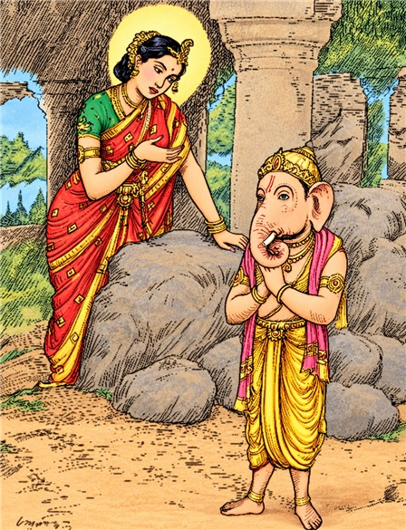
जबतक स्नान करके लौट न आऊँ, तबतक किसीको अंदर न आने देना।’ यों कहकर उमादेवी स्नानके लिये चली गयीं और बालक पहरा देने लगा। कुछ ही देरमें भगवान् शिव आये और घरके भीतर प्रवेश करने लगे। बालकने उन्हें रोका, फिर तो उन दोनोंमें भयंकर संग्राम छिड़ गया। शिवने त्रिशूलसे बालकका मस्तक काट गिराया। यह देख पार्वती धरतीपर लोटकर करुणक्रन्दन करने लगीं। चारों ओर हाहाकार मच गया। भगवान् शिव बालकको जीवित करनेकी इच्छासे इधर-उधर दृष्टिपात करने लगे, किंतु उसका कटा हुआ मस्तक कहीं नहीं मिला। इतनेहीमें उनकी दृष्टि गजासुरपर पड़ी। उन्होंने तुरंत उस दैत्यका मस्तक काटकर हाथमें ले लिया और उस बालकके धड़से जोड़ दिया। बालक जी उठा। तबसे उसका नाम गजानन पड़ा। ये गजानन ही अनादि सिद्ध गणेशके मूर्तिमान् स्वरूप हुए। इन्होंने भगवन्नामके प्रभावसे समस्त देवादि गणोंका अध्यक्षत्व प्राप्त किया है।
एक बार पार्वती देवी कैलासके समीप बहनेवाली गंगाजीके तटपर स्नान करने गयीं। उस समय वहाँ सम्पूर्ण देवता देवीकी स्तुति कर रहे थे। पार्वतीने पूछा, ‘आपलोग यहाँ किसकी स्तुति करते हैं?’ इतनेहीमें उन्हींके शरीरसे एक कल्याणमयी देवी प्रकट हुईं और बोलीं—‘ये देवता शुम्भ और निशुम्भ नामक दैत्योंसे पराजित और पीड़ित होकर यहाँ एकत्रित हुए हैं और मेरी ही स्तुति करते हैं।’ वे अम्बिका देवी पार्वतीजीके ही शरीरकोशसे प्रकट हुई थीं; इसलिये उन्हें कौशिकी कहते हैं। कौशिकीके प्रकट होनेके बाद पार्वतीजीका शरीर काले रंगका हो गया; अतः वे हिमालयनिवासिनी कालिका देवीके नामसे विख्यात हुईं। इस प्रकार उनके दो रूप हो गये, गौरी और काली। इन दोनों ही रूपोंसे उन्होंने धूम्रलोचन, चण्ड-मुण्ड, रक्तबीज, निशुम्भ और शुम्भ आदि बड़े-बड़े दैत्योंका संहार करके सम्पूर्ण जगत्का कल्याण किया। वे कौशिकी देवी ही महासरस्वतीके नामसे प्रसिद्ध हैं। इसी प्रकार पार्वती देवीने अन्यान्य भक्तोंको भी अपनी कृपासे ही अनुगृहीत किया था। हैहयराज कार्तवीर्य अर्जुनपर कृपा करनेवाली आदिशक्ति महामाया देवी ये ही हैं।
एक समयकी बात है, देवता असुरोंपर विजय पाकर अभिमानसे फूल उठे और ऐसा मानने लगे कि हमने अपनी ही शक्तिसे विजय पायी है। इतनेहीमें एक तेजस्वी यक्ष प्रकट हुआ। ‘वह कौन है?’ इसका पता लगानेके लिये क्रमशः अग्नि और वायु गये। यक्षने उनके सामने एक तिनका रख दिया, उसे वे अपनी सारी शक्ति लगाकर भी न जला सके, न उड़ा सके। अन्तमें इन्द्र गये। यक्ष अन्तर्धान हो गया। उसकी जगह पार्वतीजी खड़ी थीं; उन्होंने बताया, ‘वह ब्रह्म था। उसीकी शक्तिसे तुमने विजय पायी है।’ देवताओंका अभिमान दूर हो गया। इस प्रकार सबसे पहले ब्रह्मविद्यारूप उमासे ही ब्रह्मका ज्ञान हुआ। (यह प्रसंग केनोपनिषद् में आया है।)
एक बार देवदेव महेश्वरके पूछनेपर गंगा आदि पवित्र नदियोंके सामने पतिव्रताशिरोमणि श्रीपार्वती—उमाने स्त्रीधर्मका वर्णन करते हुए कहा—
नारीधर्म
‘देवि! मुझे स्त्रियोंके धर्मका जैसा ज्ञान है उसके अनुसार उसका विधिवत् वर्णन करती हूँ, तुम ध्यान देकर सुनो—विवाहके समय कन्याके भाई-बन्धु पहले ही उसे स्त्रीधर्मका उपदेश कर देते हैं जब कि वह अग्निके समीप अपने पतिकी सहधर्मिणी बनती है। जिसके स्वभाव, बातचीत और आचरण उत्तम हों, जिसको देखनेसे भी पतिको सुख मिलता हो, जो अपने पतिके सिवा दूसरे किसी पुरुषमें मन नहीं लगाती और स्वामीके समक्ष सदा प्रसन्नमुख बनी रहती है, वह स्त्री धर्माचरण करनेवाली मानी गयी है। जो साध्वी स्त्री अपने स्वामीको सदा देवतुल्य समझती है, वही धर्मपरायण और वही धर्मके फलकी भागिनी होती है। जो पतिकी देवताके समान सेवा-शुश्रूषा और परिचर्या करती, पतिके सिवा और किसीसे हार्दिक प्रेम नहीं करती, कभी रंज नहीं होती तथा उत्तम व्रतका पालन करती है, जो पुत्रके मुखकी भाँति स्वामीके मुखकी ओर सदा निहारती रहती है और नियमित आहारका सेवन करती है, वह साध्वी स्त्री धर्मचारिणी है। ‘पति और पत्नीको एक साथ रहकर धर्मका आचरण करना चाहिये’ इस मंगलमय दाम्पत्यधर्मको सुनकर जो स्त्री धर्मपरायण हो जाती है, वह पतिके समान व्रतका पालन करनेवाली (पतिव्रता) है। साध्वी स्त्री सदा अपने पतिको देवताके समान देखती है। पति और पत्नीका यह सहधर्म (साथ-साथ रहकर धर्माचरण करना) रूप धर्म परम मंगलमय है। जो अपने हृदयके अनुरागके कारण स्वामीके अधीन रहती है, अपने चित्तको प्रसन्न रखती है, उत्तम व्रतका पालन करती है और देखनेमें सुखदायक—सुन्दर वेष धारण किये रहती है, जिसका चित्त अपने पतिके सिवा और किसीका चिन्तन नहीं करता, वह प्रसन्नवदन रहनेवाली स्त्री धर्मचारिणी मानी गयी है। जो स्वामीके कठोर वचन कहने या क्रूरदृष्टिसे देखनेपर भी प्रसन्नतासे मुसकराती रहती है, वह स्त्री पतिव्रता है। पतिके सिवा दूसरे किसी पुरुषकी ओर देखना तो दूर रहा, जो पुरुषके समान नाम धारण करनेवाले चन्द्रमा, सूर्य और किसी वृक्षकी ओर भी दृष्टि नहीं डालती, वही पतिव्रता-धर्मका पालन करनेवाली है। जो नारी अपने दरिद्र, रोगी, दीन अथवा रास्तेकी थकावटसे खिन्न हुए पतिकी पुत्रके समान सेवा करती है, उसीको धर्मका पूरा-पूरा फल मिलता है। जो स्त्री अपने हृदयको शुद्ध रखती, गृहकार्य करनेमें कुशल होती, पतिसे प्रेम करती और पतिको ही अपने प्राण समझती है, वही धर्मका फल पानेकी अधिकारिणी होती है। जो प्रसन्नचित्तसे पतिकी सेवा-शुश्रूषामें लगी रहती है, पतिके ऊपर पूर्ण विश्वास रखती है और उसके साथ विनययुक्त बर्ताव करती है, वह नारी धर्मका फल पाती है। जिसके हृदयमें पतिके लिये जैसी चाह होती है, वैसी काम, भोग, ऐश्वर्य और सुखके लिये नहीं होती, जो प्रतिदिन प्रातःकाल उठनेमें रुचि रखती, गृहके काम-काजमें योग देती और घरको झाड़-बुहारकर उसे गायके गोबरसे लीप-पोतकर स्वच्छ बनाये रखती है, जो पतिके साथ रहकर नित्य अग्निहोत्र करती, देवताओंको पुष्प और बलि अर्पण करती तथा देवता, अतिथि और सास-ससुर आदि पोष्य-वर्गको भोजन देकर न्याय और विधिके अनुसार शेष अन्नका स्वयं भोजन करती है तथा घरके लोगोंको हृष्ट-पुष्ट एवं सन्तुष्ट रखती है, वही नारी धर्मका पालन करनेवाली है। जो उत्तम गुणोंसे युक्त होकर सदा सास-ससुरके चरणोंकी सेवामें संलग्न रहती और माता-पिताके प्रति भक्ति रखती है, वह स्त्री तपस्विनी मानी गयी है। जो ब्राह्मणों, दुर्बलों, अनाथों, दीनों, अंधों और कंगालोंको अन्न देकर उनका पालन-पोषण करती है, उसे पतिव्रत-धर्मका फल प्राप्त होता है। जो प्रतिदिन उत्तम व्रतका पालन करती, पतिमें ही मन लगाती और निरन्तर पतिके हित-साधनमें लगी रहती है, उसे पतिव्रता समझना चाहिये। जो नारी पतिव्रत-धर्मका पालन करती हुई स्वामीकी सेवामें तत्पर रहती है, उसका यह कार्य महान् पुण्य, बड़ी भारी तपस्या और अक्षय स्वर्गका साधन है। पति ही स्त्रियोंका देवता, पति ही उनका बन्धु-बान्धव और पति ही उनकी गति है। नारीके लिये पतिके समान न दूसरा कोई सहारा है, न दूसरा कोई देवता। एक ओर पतिकी प्रसन्नता और दूसरी ओर स्वर्ग; ये दोनों नारीकी दृष्टिमें समान हो सकते हैं या नहीं, इसमें सन्देह है। मेरे प्राणनाथ महेश्वर! मैं तो आपको अप्रसन्न रखकर स्वर्गको भी नहीं चाहती। पति दरिद्र हो जाय, किसी रोगसे घिर जाय, आपत्तिमें फँस जाय, शत्रुओंके बीचमें पड़ जाय अथवा ब्राह्मणके शापसे कष्ट पा रहा हो और उस अवस्थामें वह न करने योग्य कार्य, अधर्म अथवा प्राण त्याग देनेकी भी आज्ञा दे तो उसे आपत्तिकालका धर्म समझकर निःशंक भावसे तुरंत पूरा करना चाहिये। भगवन्! आपकी आज्ञासे मैंने यह स्त्रीधर्मका वर्णन किया है। जो स्त्री ऊपर बताये अनुसार अपना जीवन बनाती है, वह पातिव्रत्य-धर्मके फलकी भागिनी होती है।’
पार्वतीजी समस्त पतिव्रताओंकी शिरोमणि हैं। भगवती सीताको इन्हींकी आराधनासे श्रीरघुनाथजीकी प्राप्ति हुई थी। ये महादेवजीको प्राणोंसे भी अधिक प्रिय हैं। इन्हींके अनुरोधसे महादेवजीने अनेकानेक उपयोगी तथा गुप्त साधनोंका वर्णन किया है, जो भिन्न-भिन्न पुराणों, तन्त्रों, आगमों तथा गुरुपरम्परासे उपलब्ध होते हैं। बहुत-से मन्त्रोंका प्राकटॺ भी इन्हींकी दयासे हुआ है। ये श्रीरघुनाथजीकी बड़ी भक्त हैं। भगवान्के बहुत-से शतनाम, सहस्रनाम तथा अन्य स्तोत्र, व्रत आदि माहात्म्यसहित इन्हींके प्रयत्नसे प्रकट हुए हैं। इस प्रकार इनके हाथों लोककल्याणके असंख्य कार्य हुए हैं। श्रीरामचरितमानसकी मंगलमयी पावन कथा भी इन्हींकी देन है। सबसे पहले इन्हींको महादेवजीने वह कथा सुनायी थी—
रचि महेस निज मानस राखा।
पाइ सुसमउ सिवा सन भाषा॥
माता पार्वतीका आदर्श भारतकी प्रत्येक नारीके लिये कल्याणकारी है। —रा० शा०
जगज्जननी लक्ष्मी
पद्मालयां पद्मकरां पद्मपत्रनिभेक्षणाम्।
वन्दे पद्ममुखीं देवीं पद्मनाभप्रियामहम्॥
देवीकी जितनी शक्तियाँ मानी गयी हैं, उन सबका मूल महालक्ष्मी ही हैं। ये ही सर्वोत्कृष्ट पराशक्ति हैं। ये ही समस्त विकृतियोंकी प्रधान प्रकृति हैं। सारा विश्वप्रपंच महालक्ष्मीसे ही प्रकट हुआ है। तीनों गुणोंकी साम्यावस्थारूपा प्रकृति भी इनसे भिन्न नहीं है। स्थूल, सूक्ष्म, दृश्य, अदृश्य अथवा व्यक्त, अव्यक्त सब इन्हींके स्वरूप हैं। ये ही सच्चिदानन्दमयी साक्षात् परमेश्वरी हैं। यद्यपि अव्यक्तरूपसे ये सर्वत्र व्यापक हैं तथापि भक्तोंपर अनुग्रह करनेके लिये परम दिव्य चिन्मय सगुणरूपसे भी सदा विराजमान रहती हैं। इनके उस श्रीविग्रहकी कान्ति तपाये हुए सुवर्णके सदृश है। ये नित्य सनातन होती हुई भी लीलाके लिये अनेक रूपोंमें प्रकट होती रहती हैं। देवता, मनुष्य तथा पशु-पक्षी आदि योनियोंमें जो कुछ पुरुषवाची है, वह सब भगवान् श्रीहरि हैं और जो कुछ स्त्रीवाची है, वह सब श्रीलक्ष्मीजी हैं। इनसे भिन्न दूसरी कोई वस्तु नहीं है।*
* देवतिर्यङ्मनुष्यादौ पुन्नाम्ना भगवान् हरिः।
स्त्रीनाम्नी श्रीश्च विज्ञेया नानयोर्विद्यते परम्॥
(वि० पु० १। ८। ३५)
यों तो महालक्ष्मी ही जगज्जननी हैं, ब्रह्मा, विष्णु आदि देवता भी इन्हींसे प्रकट होते हैं; तथापि ये अपने एक-एक स्वरूपसे ब्रह्मा, विष्णु आदिकी सेवामें भी रहती हैं। लक्ष्मीकी अभिव्यक्ति दो रूपोंमें देखी जाती है—श्रीरूपमें और लक्ष्मीरूपमें। ये दो होकर भी एक हैं और एक होकर भी दो। दोनों ही रूपोंसे ये भगवान् विष्णुकी पत्नियाँ हैं। श्रुति भी कहती है—‘श्रीश्च ते लक्ष्मीश्च पत्न्यौ।’ श्रीदेवीको कहीं-कहीं ‘भूदेवी’ भी कहते हैं। इस प्रकार लक्ष्मीके दो स्वरूप हैं—एक तो सच्चिदानन्दमयी लक्ष्मी, जो श्रीनारायणसे अभिन्न हैं, सदा उनके वक्षःस्थलमें वास करती हैं और कभी उनसे विलग नहीं होतीं। दूसरा रूप है भौतिक या प्राकृत सम्पत्तिकी अधिष्ठात्री देवीका। यही श्रीदेवी या भूदेवी हैं। ये भी अनन्यभावसे भगवन्नारायणकी ही सेवामें रहती हैं। उक्त भौतिक या प्राकृत सम्पत्ति स्वरूपतः जड है, किंतु उसे भी श्री या लक्ष्मी कहा जाता है। यह प्रयोग औपचारिक है, मुख्य नहीं। इस जड सम्पत्तिपर भिन्न-भिन्न समयमें भिन्न-भिन्न व्यक्तियोंका अधिकार होता रहता है। यह कभी एककी होकर नहीं रहती, कहीं भी स्थिर नहीं रहती। इसीलिये लक्ष्मीको सर्वभोग्या, नीचसेव्या, चंचला, चपला, बहुगामिनी आदि कहकर आक्षेप किया जाता है। यहाँ यह बात ध्यानमें रखनेकी है, यह निन्दा अथवा आक्षेप जड सम्पत्तिको लक्ष्य करके ही किया जाता है। साक्षात् चिन्मयी देवी श्रीलक्ष्मीजीको नहीं। वे तो पतिप्राणा हैं। सनातन भगवान्की सनातन अनपायिनी शक्ति हैं। उनका जीवन नित्य-निरन्तर भगवान्की सेवामें ही व्यतीत होता है। वे भगवान्के सिवा दूसरेको न देखती हैं, न जानती हैं। यह बात अवश्य है कि वह जड सम्पत्ति उनके अधिकारमें रहती है। जिसे भगवान् देना चाहते हैं या जिसपर लक्ष्मीकी कृपा हो जाती है, उसे यदि आवश्यकता हो तो ये जड सम्पत्ति प्रदान करती हैं। इन्हें कमल अधिक प्रिय है। ये कमलवनमें निवास करती हैं, कमलपर बैठती हैं और हाथमें भी कमल धारण किये रहती हैं। सब सम्पत्तियोंकी अधिष्ठात्री श्रीदेवी शुद्ध सत्त्वमयी हैं। इनके पास लोभ, मोह, काम, क्रोध और अहंकार आदि दोषोंका प्रवेश नहीं है। ये स्वर्गमें स्वर्गलक्ष्मी, राजाओंके यहाँ राजलक्ष्मी, मनुष्योंके घरोंमें गृहलक्ष्मी, वणिग्-जनोंके यहाँ वाणिज्यलक्ष्मी तथा युद्धमें विजेताओंके पास विजयलक्ष्मीके रूपमें रहती हैं।
पतिप्राणा चिन्मयी लक्ष्मी समस्त पतिव्रताओंकी शिरोमणि हैं। एक बार उन्होंने भृगुकी पुत्रीरूपमें अवतार लिया था; इसलिये इन्हें भार्गवी कहते हैं। समुद्र-मन्थनके समय ये ही क्षीरसागरसे प्रकट हुई थीं; इसलिये इनका नाम ‘क्षीरोदतनया’ अथवा ‘क्षीरसागर-कन्या’ हुआ। ये पद्मिनी विद्याकी भी अधिष्ठात्री देवी हैं। तन्त्रोक्त नील सरस्वतीकी पीठ-शक्तियोंमें भी इनका नाम आता है। भगवान् जब-जब अवतार लेते हैं, तब-तब उनके साथ लक्ष्मीदेवी भी अवतीर्ण हो उनकी सेवा करती और उनकी प्रत्येक लीलामें योग देती हैं। इनके आविर्भावकी कथा इस प्रकार है—
महर्षि भृगुकी पत्नी ख्यातिके गर्भसे एक त्रिलोकसुन्दरी भुवनमोहिनी कन्या उत्पन्न हुई। वह समस्त शुभ लक्षणोंसे सुशोभित थी; इसलिये उसका नाम लक्ष्मी रखा गया। अथवा साक्षात् लक्ष्मी ही उस कन्याके रूपमें अवतीर्ण हुई थीं; इसलिये वह लक्ष्मी कहलायी, धीरे-धीरे बड़ी होनेपर लक्ष्मीने भगवान् नारायणके गुण और प्रभावका वर्णन सुना। इससे उनका हृदय भगवान्में अनुरक्त हो गया। वे उन्हें पतिरूपमें प्राप्त करनेकी इच्छासे समुद्रके तटपर जाकर घोर तपस्या करने लगीं। तपस्या करते-करते एक हजार वर्ष बीत गये। तब इन्द्र भगवान् विष्णुका रूप धारण करके लक्ष्मीदेवीके समीप आये और वर माँगनेको कहा। लक्ष्मीने कहा—‘आप अपने विश्वरूपका मुझे दर्शन कराइये।’ इन्द्र इसके लिये असमर्थ थे, अतः लज्जित होकर वहाँसे लौट गये। इसके बाद और कई देवता पधारे, परंतु विश्वरूप दिखानेकी शक्ति न होनेके कारण उनकी भी कलई खुल गयी।
यह समाचार पाकर साक्षात् भगवान् नारायण वहाँ देवीको दर्शन देने और उन्हें कृतार्थ करनेके लिये आये। भगवान्ने देवीसे कहा—‘वर माँगो।’ यह आदेश सुनकर देवीने भगवान्का गौरव बढ़ानेके लिये ही कहा—‘देवदेव! यदि आप साक्षात् भगवान् नारायण हैं तो अपने विश्वरूपका दर्शन देकर मेरा संदेह दूर कर दीजिये।’ भगवान्ने विश्वरूपका दर्शन कराया और लक्ष्मीजीकी इच्छाके अनुसार उन्हें पत्नीरूपमें ग्रहण किया। इसके बाद वे बोले—‘देवि! ब्रह्मचर्य ही सब धर्मोंका मूल तथा सर्वोत्तम तपस्या है। तुमने ब्रह्मचर्य-पालनपूर्वक इस स्थानपर कठोर तपस्या की है, इसलिये मैं यहाँ मूल ‘श्रीपति’ के नामसे विख्यात होकर रहूँगा तथा तुम भी ब्रह्मचर्यस्वरूपिणी ‘मूल श्री’ के नामसे यहाँ प्रसिद्धि प्राप्त करोगी।’
लक्ष्मीजीके प्रकट होनेका दूसरा इतिहास इस प्रकार है—एक बार भगवान् शंकरके अंशभूत महर्षि दुर्वासा भूतलपर विचर रहे थे। घूमते-घूमते वे एक मनोहर वनमें गये। वहाँ एक विद्याधर-सुन्दरी हाथमें पारिजात-पुष्पोंकी माला लिये खड़ी थी, वह माला दिव्य पुष्पोंकी बनी थी। उसकी दिव्य गन्धसे समस्त वन-प्रान्त सुवासित हो रहा था। दुर्वासाने विद्याधरीसे वह मनोहर माला माँगी। विद्याधरीने उन्हें आदरपूर्वक प्रणाम करके वह माला दे दी। माला लेकर उन्मत्त वेषधारी मुनिने अपने मस्तकपर डाल ली और पुनः पृथ्वीपर भ्रमण करने लगे।
इसी समय मुनिको देवराज इन्द्र दिखायी दिये, जो मतवाले ऐरावतपर चढ़कर आ रहे थे। उनके साथ बहुत-से देवता भी थे। मुनिने अपने मस्तकपर पड़ी माला उतारकर हाथमें ले ली। उसके ऊपर भौंरे गुंजार कर रहे थे। जब देवराज समीप आये तो दुर्वासाने पागलोंकी तरह वह माला उनके ऊपर फेंक दी। देवराजने उसे लेकर ऐरावतके मस्तकपर डाल दिया। ऐरावतने उसकी तीव्र गन्धसे आकर्षित हो सूँडसे माला उतार ली और सूँघकर पृथ्वीपर फेंक दी। यह देख दुर्वासा क्रोधसे जल उठे और देवराज इन्द्रसे इस प्रकार बोले—‘अरे ओ इन्द्र! ऐश्वर्यके घमंडसे तेरा हृदय दूषित हो गया है। तुझपर जडता छा रही है; तभी तो मेरी दी हुई मालाका तूने आदर नहीं किया है। वह माला नहीं, लक्ष्मीका धाम थी। माला लेकर तूने प्रणामतक नहीं किया। इसलिये तेरे अधिकारमें स्थित तीनों लोकोंकी लक्ष्मी शीघ्र ही अदृश्य हो जायगी।’ यह शाप सुनकर देवराज इन्द्र घबरा गये और तुरंत ही ऐरावतसे उतरकर मुनिके चरणोंमें पड़ गये। उन्होंने दुर्वासाको प्रसन्न करनेकी लाख चेष्टाएँ कीं, किंतु वे महर्षि टस-से-मस न हुए। उलटे इन्द्रको फटकारकर वहाँसे चल दिये। इन्द्र भी ऐरावतपर सवार हो अमरावतीको लौट गये। तबसे तीनों लोकोंकी लक्ष्मी नष्ट हो गयी। इस प्रकार त्रिलोकीके श्रीहीन एवं सत्त्वरहित हो जानेपर दानवोंने देवताओंपर चढ़ाई कर दी। देवताओंमें अब उत्साह कहाँ रह गया था? सबने हार मान ली। फिर सभी देवता ब्रह्माजीकी शरणमें गये। ब्रह्माजीने उन्हें भगवान् विष्णुकी शरणमें जानेकी सलाह दी तथा सबके साथ वे स्वयं भी क्षीरसागरके उत्तर तटपर गये। वहाँ पहुँचकर ब्रह्मा आदि देवताओंने बड़ी भक्तिसे भगवान् विष्णुका स्तवन किया। भगवान् प्रसन्न होकर देवताओंके सम्मुख प्रकट हुए। उनका अनुपम तेजस्वी मंगलमय विग्रह देखकर देवताओंने पुनः स्तवन किया, तत्पश्चात् भगवान्ने उन्हें क्षीरसागरको मथनेकी सलाह दी और कहा, ‘इससे अमृत प्रकट होगा। उसके पान करनेसे तुम सब लोग अजर-अमर हो जाओगे; किंतु यह कार्य है बहुत दुष्कर; अतः तुम्हें दैत्योंको भी अपना साथी बना लेना चाहिये। मैं तो तुम्हारी सहायता करूँगा ही।’
भगवान्की आज्ञा पाकर देवगण दैत्योंसे सन्धि करके अमृत-प्राप्तिके लिये यत्न करने लगे। वे भाँति-भाँतिकी ओषधियाँ लाये और उन्हें क्षीरसागरमें छोड़ दिया; फिर मन्दराचलको मथानी और वासुकिको नेती (रस्सी) बनाकर बड़े वेगसे समुद्रमन्थनका कार्य आरम्भ किया। भगवान्ने वासुकिकी पूँछकी ओर देवताओंको और मुखकी ओर दैत्योंको लगाया। मन्थन करते समय वासुकिकी निःश्वासाग्निसे झुलसकर सभी दैत्य निस्तेज हो गये और उसी निःश्वासवायुसे विक्षिप्त होकर बादल वासुकिकी पूँछकी ओर बरसते थे; जिससे देवताओंकी शक्ति बढ़ती गयी। भक्तवत्सल भगवान् विष्णु स्वयं कच्छपरूप धारणकर क्षीरसागरमें घूमते हुए मन्दराचलके आधार बने हुए थे। वे ही एक रूपसे देवताओंमें और एक रूपसे दैत्योंमें मिलकर नागराजको खींचनेमें भी सहायता देते थे तथा एक अन्य विशाल रूपसे, जो देवताओं और दैत्योंको दिखायी नहीं देता था, उन्होंने मन्दराचलको ऊपरसे दबा रखा था। इसके साथ ही वे नागराज वासुकिमें भी बलका संचार करते थे और देवताओंकी भी शक्ति बढ़ा रहे थे।
इस प्रकार मन्थन करनेपर क्षीरसागरसे क्रमशः—कामधेनु, वारुणी देवी, कल्पवृक्ष और अप्सराएँ प्रकट हुईं। इसके बाद चन्द्रमा निकले, जिन्हें महादेवजीने मस्तकपर धारण किया। फिर विष प्रकट हुआ, जिसे नागोंने चाट लिया। तदनन्तर अमृतका कलश हाथमें लिये धन्वन्तरिका प्रादुर्भाव हुआ। इससे देवताओं और दानवोंको भी बड़ी प्रसन्नता हुई। सबके अन्तमें क्षीरसमुद्रसे भगवती लक्ष्मीदेवी प्रकट हुईं।
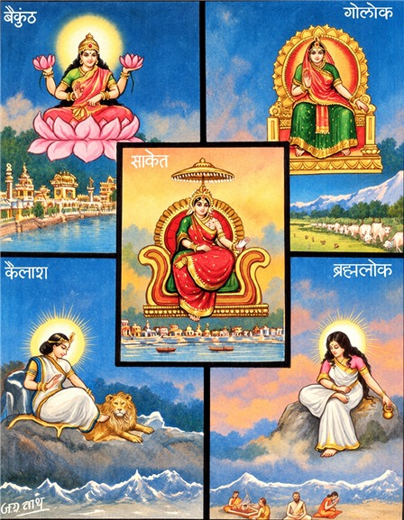
वे खिले हुए कमलके आसनपर विराजमान थीं। उनके श्रीअंगोंकी दिव्य कान्ति सब ओर प्रकाशित हो रही थी। उनके हाथमें कमल शोभा पा रहा था। उनका दर्शन करके देवता और महर्षिगण प्रसन्न हो गये। उन्होंने वैदिक ‘श्रीसूक्तका’ पाठ करके लक्ष्मीदेवीका स्तवन किया। फिर देवताओंने उनको स्नानादि करके दिव्य वस्त्राभूषण अर्पण किये। वे उन दिव्य वस्त्राभूषणोंसे विभूषित होकर सबके देखते-देखते अपने सनातन स्वामी श्रीविष्णुभगवान्के वक्षःस्थलमें चली गयीं। भगवान्को लक्ष्मीजीके साथ देखकर देवता प्रसन्न हो गये। दैत्योंको बड़ी निराशा हुई। उन्होंने धन्वन्तरिके हाथसे अमृतका कलश छीन लिया; किंतु भगवान्ने मोहिनी स्त्रीके रूपसे उन्हें अपनी मायाद्वारा मोहित करके सारा अमृत देवताओंको ही पिला दिया। तदनन्तर इन्द्रने बड़ी विनय और भक्तिके साथ श्रीलक्ष्मीदेवीका स्तवन किया। उससे प्रसन्न होकर लक्ष्मीने देवताओंको मनोवाञ्छित वरदान दिया। इस प्रकार ये लक्ष्मीजी भगवान् विष्णुकी अनन्य प्रिया हैं। भगवान्के साथ प्रत्येक अवतारमें ये साथ रहती हैं। जब श्रीहरि विष्णु नामक आदित्यके रूपमें स्थित हुए तब ये कमलोद्भवा ‘पद्मा’ के नामसे विख्यात हुईं। ये ही श्रीरामके साथ ‘सीता’ और श्रीकृष्णके साथ ‘रुक्मिणी’ होकर अवतीर्ण हुई थीं। भगवान्के साथ इनकी आराधना करनेसे अभ्युदय और निःश्रेयस दोनोंकी सिद्धि होती है। लक्ष्मीजी सतीत्व और साधुताकी मूर्ति हैं। इसीलिये सभी सती-साध्वी स्त्रियोंको घरकी ‘लक्ष्मी’ कहकर सम्मानित किया जाता है।
भगवान् श्रीकृष्णकी पट्टमहिषी महारानी रुक्मिणीजी एक बार अपनी अभिन्नरूपा लक्ष्मीजीसे भेंट करने वैकुण्ठ पधारीं और वहाँ लक्ष्मीजीको भगवान् विष्णुके समीप बैठी देखकर बड़ी प्रसन्न हुईं, फिर लोक-कल्याणके लिये प्रद्युम्नकी माता रुक्मिणीजीने लक्ष्मीदेवीसे पूछा—‘देवि! आप किस स्थानपर और कैसे मनुष्योंके पास रहती हैं?’
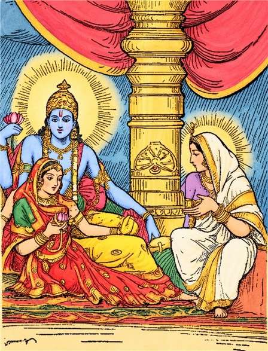
लक्ष्मी कहाँ रहती हैं
लक्ष्मीने उत्तर दिया—‘कल्याणी! सुनो, जो मनुष्य मिष्टभाषी, कार्यकुशल, क्रोधहीन, भक्त, कृतज्ञ, जितेन्द्रिय और उदार हैं, उनके यहाँ मेरा निवास होता है। सदाचारी, धर्मज्ञ, बड़े-बूढ़ोंकी सेवामें तत्पर, पुण्यात्मा, क्षमाशील और बुद्धिमान् मनुष्योंके पास मैं सदा रहती हूँ। जो स्त्रियाँ पतिकी सेवा करती हैं, जिनमें क्षमा, सत्य, इन्द्रियसंयम, सरलता आदि सद्गुण होते हैं, जो देवताओं और ब्राह्मणोंमें श्रद्धा रखती हैं, जिनमें सभी प्रकारके शुभ लक्षण मौजूद हैं, उनके समीप मैं निवास करती हूँ। सवारी, कन्या, आभूषण, यज्ञ, जलसे पूर्ण मेघ, फूले हुए कमल, शरद्-ऋतुके नक्षत्र, हाथी, गायोंके रहनेके स्थान, आसन, फूले हुए कमलोंसे सुशोभित तालाब, मतवाले हाथी, साँड़, राजा, सिंहासन, सज्जन पुरुष, विद्वान् ब्राह्मण, प्रजापालक क्षत्रिय, खेती करनेवाले वैश्य तथा सेवापरायण शूद्र मेरे प्रधान निवासस्थान हैं। जिस घरमें सदा होम होता है, देवता, गौ तथा ब्राह्मणोंकी पूजा होती है, उस घरको मैं कभी नहीं छोड़ती। भगवान् नारायण धर्म, ब्राह्मणत्व और संसारके एकमात्र आधार हैं, इसीसे मैं इनके शरीरमें एकाग्रचित्त और अभिन्न रूपसे रहती हूँ। भगवान् नारायणके सिवा अन्यत्र कहीं भी मैं शरीर धारण करके नहीं रहती। जहाँ मेरा वास होता है, वहाँ धर्म, अर्थ, और सुयशकी वृद्धि होती रहती है।
अब जिन स्थानोंसे मुझे घृणा है, उसका वर्णन सुनो—‘जो अकर्मण्य, नास्तिक, कृतघ्न, आचारभ्रष्ट, नृशंस, चोर, गुरुद्रोही, उद्धत तथा कपटी हैं, बल, बुद्धि तथा वीर्यसे हीन हैं, उनके पास मैं नहीं रहती। जो हर्ष और क्रोधका अवसर नहीं जानते, धन-प्राप्तिकी आशा नहीं करते और थोड़ेमें ही संतुष्ट हो जाते हैं, ऐसे लोगोंके पास भी मैं कभी नहीं रहती। जो स्त्रियाँ गंदी रहती हैं, घरकी वस्तुओंको इधर-उधर बिखेरे रखती हैं, जिनमें उत्तम विचार नहीं होता, जो सदा पतिके प्रतिकूल बातें करती हैं, जिन्हें दूसरोंके घरोंमें रहना अधिक पसंद है, जिनमें न धैर्य है, न लज्जा, जो स्वभावसे निर्दय और शरीरसे अपवित्र होती हैं, काम-काजमें जिनका मन नहीं लगता, जो सदा लड़ाई-झगड़े किया करती और अधिक सोती हैं, उनके पास मैं कभी नहीं रहती।’—रा० शा०
पञ्च-दिव्यधामेेश्वरी
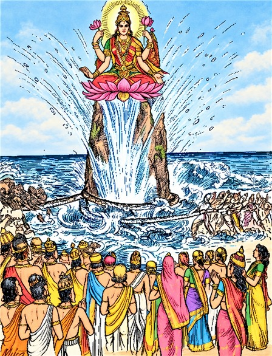
रमा, राधिका, सीता, गौरी, ब्रह्माणीदेवी, अनुरूप।
दिव्यधाम-स्वामिनि ये पाँचों दिव्य नारिके हैं शुभरूप॥
भगवती सरस्वती
सरस्वती श्रुतिमहती न हीयताम्।
सम्पूर्ण जगत्की कारणभूत आद्याशक्ति परमेश्वरीकी अभिव्यक्ति तीन स्वरूपोंमें होती है—महाकाली, महालक्ष्मी, और महासरस्वती। इनकी मूल प्रकृति महालक्ष्मी ही हैं। वे ही विशुद्ध सत्त्वगुणके अंशसे महासरस्वतीके रूपमें प्रकट होती हैं। इनका चन्द्रमाके समान गौर वर्ण है। इनके हाथोंमें अक्षमाला, अंकुश, वीणा तथा पुस्तक शोभा पाती है। महाविद्या, महावाणी, भारती, वाक्, सरस्वती, आर्या, ब्राह्मी, कामधेनु, वेदगर्भा और धीश्वरी (बुद्धिकी स्वामिनी)—ये इनके नाम हैं। ये वाणी और विद्याकी अधिष्ठात्री देवी मानी जाती हैं। ऋग्वेदमें वाग्देवीका नाम सरस्वती बताया गया है। इनके तीन स्थान हैं—स्वर्ग, पृथ्वी और अन्तरिक्ष। स्वर्गकी वाग्देवीका नाम भारती, पृथ्वीके वाग्देवताका नाम इला और अन्तरिक्षवासिनी वाग्देवीका नाम सरस्वती है। तन्त्रशास्त्रमें प्रसिद्ध तारा देवीका नाम भी सरस्वती है। तन्त्रोक्त नीलसरस्वतीकी पीठशक्तियोंमें भी सरस्वतीका नाम आया है। तारिणी देवीकी एक मूर्तिका नाम भी सरस्वती है। सरस्वतीदेवी सम्पूर्ण संशयोंका उच्छेद करनेवाली तथा बोधस्वरूपिणी हैं। इनकी उपासनासे सब प्रकारकी सिद्धियाँ प्राप्त होती हैं। ये संगीत-शास्त्रकी भी अधिष्ठात्री देवी हैं। ताल, स्वर,लय, राग-रागिनी आदिका प्रादुर्भाव भी इन्हींसे हुआ है। सात प्रकारके स्वरोंद्वारा इनका स्मरण किया जाता है, इसलिये ये स्वरात्मिका कहलाती हैं। सप्तविधस्वरोंका ज्ञान प्रदान करनेके कारण इनका नाम सरस्वती है।
‘देवी भागवत’ में लिखा है, सरस्वती देवी भगवान् श्रीकृष्णकी जिह्वाके अग्रभागसे प्रकट हुई हैं। श्रीकृष्णने उन्हें भगवान् नारायणको समर्पित किया। श्रीकृष्णने ही संसारमें सरस्वतीकी पूजा प्रचारित की। पूर्वकालमें भगवान् नारायणके तीन पत्नियाँ थीं—लक्ष्मी, गंगा और सरस्वती। तीनों ही बड़े प्रेमसे रहतीं और अनन्यभावसे भगवान्का पूजन किया करती थीं। एक दिन भगवान्की ही इच्छासे ऐसी घटना हो गयी जिससे लक्ष्मी, गंगा और सरस्वतीको भगवान्के चरणोंसे कुछ कालके लिये दूर हट जाना पड़ा। भगवान् जब अन्तःपुरमें पधारे, उस समय तीनों देवियाँ एक ही स्थानपर बैठी हुई परस्पर प्रेमालाप कर रही थीं, भगवान्को आया देख तीनों उनके स्वागतके लिये खड़ी हो गयीं। उस समय गंगाने विशेष प्रेमपूर्ण दृष्टिसे भगवान्की ओर देखा। भगवान्ने भी उनकी दृष्टिका उत्तर वैसी ही स्नेहपूर्ण दृष्टिमें हँसकर दिया; फिर वे किसी आवश्यकतावश अन्तःपुरसे बाहर निकल गये। तब देवी सरस्वतीने गंगाके उस बर्तावको अनुचित बताकर उनके प्रति आक्षेप किया। गंगाने भी कठोर शब्दोंमें उनका प्रतिवाद किया। उनका विवाद बढ़ता देख लक्ष्मीजीने दोनोंको शान्त करनेकी चेष्टा की। सरस्वतीने लक्ष्मीके इस बर्तावको गंगाजीके प्रति पक्षपात माना और उन्हें शाप दे दिया, ‘तुम वृक्ष और नदीके रूपमें परिणत हो जाओगी।’ यह देख गंगाने भी सरस्वतीको शाप दिया ‘तुम भी नदी हो जाओगी।’ यही शाप सरस्वतीकी ओरसे गंगाको भी मिला। इतनेहीमें भगवान् पुनः अन्तःपुरमें लौट आये। अब देवियाँ प्रकृतिस्थ हो चुकी थीं। उन्हें अपनी भूल मालूम हुई तथा भगवान्के चरणोंसे विलग होनेके भयसे दुःखी होकर रोने लगीं।
इस प्रकार उनका सब हाल सुनकर भगवान्को खेद हुआ। उनकी आकुलता देखकर वे दयासे द्रवीभूत हो उठे। उन्होंने कहा—‘तुम सब लोग एक अंशसे ही नदी होओगी; अन्य अंशोंसे तुम्हारा निवास मेरे ही पास रहेगा। सरस्वती एक अंशसे नदी होंगी। एक अंशसे इन्हें ब्रह्माजीकी सेवामें रहना पड़ेगा तथा शेष अंशोंसे ये मेरे ही पास निवास करेंगी। कलियुगके पाँच हजार वर्ष बीतनेके बाद तुम सबके शापका उद्धार हो जायगा। इसके अनुसार सरस्वती भारतभूमिमें अंशतः अवतीर्ण होकर भारती कहलायीं। उसी शरीरसे ब्रह्माजीकी प्रियतमा पत्नी होनेके कारण उनकी ‘ब्राह्मी’ नामसे प्रसिद्धि हुई। किसी-किसी कल्पमें सरस्वती ब्रह्माजीकी कन्याके रूपमें अवतीर्ण होती हैं और आजीवन कुमारीव्रतका पालन करती हुई उनकी सेवामें रहती हैं।
एक बार ब्रह्माजीने यह विचार किया कि इस पृथ्वीपर सभी देवताओंके तीर्थ हैं, केवल मेरा ही तीर्थ नहीं है। ऐसा सोचकर उन्होंने अपने नामसे एक तीर्थ स्थापित करनेका निश्चय किया और इसी उद्देश्यसे एक रत्नमयी शिला पृथ्वीपर गिरायी। यह शिला चमत्कारपुरके समीप गिरी; अतः ब्रह्माजीने उसी क्षेत्रमें अपना तीर्थ स्थापित किया। एकार्णवमें शयन करनेवाले भगवान् विष्णुकी नाभिसे जो कमल निकला, जिससे ब्रह्माजीका प्राकटॺ हुआ, वह स्थान भी वही माना गया है। वही पुष्कर तीर्थके नामसे विख्यात हुआ। पुराणोंमें उसकी बड़ी महिमा गायी गयी है। तीर्थ स्थापित होनेके बाद ब्रह्माजीने वहाँ पवित्र जलसे पूर्ण एक सरोवर बनानेका विचार किया। इसके लिये उन्होंने सरस्वती नदीका स्मरण किया। सरस्वतीदेवी नदीरूपमें परिणत होकर भी पापीजनोंके स्पर्शके भयसे छिपी-छिपी पातालमें बहती थीं। ब्रह्माजीके स्मरण करनेपर वे भूतल और पूर्वोक्त शिलाको भी भेदकर वहाँ प्रकट हुईं। उन्हें देखकर ब्रह्माजीने कहा—‘तुम सदा यहाँ मेरे समीप ही रहो; मैं प्रतिदिन तुम्हारे जलमें तर्पण करूँगा।’
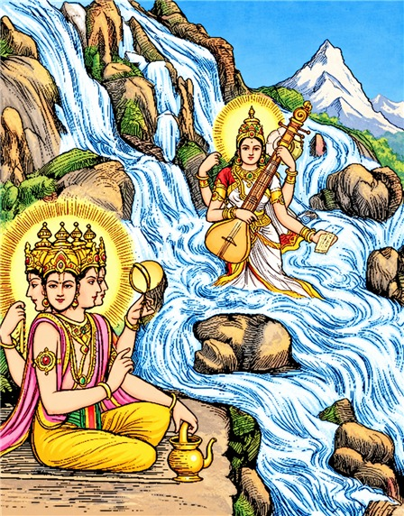
ब्रह्माजीका यह आदेश सुनकर सरस्वतीको बड़ा भय हुआ। वे हाथ जोड़कर बोलीं—‘भगवन्! मैं जन-सम्पर्कके भयसे पातालमें रहती हूँ। कभी प्रकट नहीं होती, किंतु आपकी आज्ञाका उल्लङ्घन करना भी मेरी शक्तिके बाहर है; अतः आप इस विषयपर भलीभाँति सोच-विचारकर जो उचित हो वैसी व्यवस्था कीजिये।’ तब ब्रह्माजीने सरस्वतीके निवासके लिये वहाँ एक विशाल सरोवर खोदवाया। सरस्वतीने उसी सरोवरमें आश्रय लिया। तत्पश्चात् ब्रह्माजीने बड़े-बड़े भयानक सर्पोंको बुलाकर कहा—‘तुमलोग सावधानीके साथ सब ओरसे इस सरोवरकी रक्षा करते रहना; जिससे कोई भी सरस्वतीके शरीरका स्पर्श न कर सके।’
एक बार भगवान् विष्णुने सरस्वतीको यह आदेश दिया कि ‘तुम बडवानलको अपने प्रवाहमें ले जाकर समुद्रमें छोड़ दो।’ सरस्वतीने इसके लिये ब्रह्माजीकी भी अनुमति चाही। लोकहितका विचार करके ब्रह्माजीने भी उन्हें उस कार्यके लिये सम्मति दे दी। तब सरस्वतीने कहा—‘भगवन्! यदि मैं भूतलपर नदीरूपमें प्रकट होती हूँ तो पापीजनोंके सम्पर्कका भय है और यदि पातालमार्गसे इस अग्निको ले जाती हूँ तो स्वयं अपने शरीरके जलनेका डर है।’ ब्रह्माजीने कहा, ‘तुम्हें जैसे सुगमता हो, उसी प्रकार कर लो। यदि पापियोंके सम्पर्कसे बचना चाहो तो पातालके ही मार्गसे जाओ; भूतलपर प्रकट न होना; साथ ही जहाँ तुम्हें बडवानलका ताप असह्य हो जाय, वहाँ पृथ्वीपर नदीरूपमें प्रकट भी हो जाना। इससे तुम्हारे शरीरपर उसके तापका प्रभाव नहीं पड़ेगा।’
ब्रह्माजीका यह उत्तर पाकर सरस्वती अपनी सखियों—गायत्री, सावित्री और यमुना आदिसे मिलकर हिमालयपर्वतपर चली गयीं और वहाँसे नदीरूप होकर धरतीपर प्रवाहित हुईं। उनकी जलराशिमें कच्छप और ग्राह आदि जल-जन्तु भी प्रकट हो गये। बडवानलको लेकर वे सागरकी ओर प्रस्थित हुईं। जाते समय वे धरतीको भेदकर पाताल मार्गसे ही यात्रा करने लगीं। जब अग्निके तापसे सन्तप्त और शान्त हो जातीं तो कहीं-कहीं भूतलपर प्रकट भी हो जाया करती थीं। इस प्रकार जाते-जाते वे प्रभासक्षेत्रमें पहुँचीं। वहाँ चार तपस्वी मुनि कठोर तपस्यामें लगे थे। इन्होंने पृथक्-पृथक् अपने-अपने आश्रमके पास सरस्वतीको बुलाया। इसी समय समुद्रने भी प्रकट होकर सरस्वतीका आवाहन किया। सरस्वतीको समुद्रतक तो जाना ही था, ऋषियोंकी अवहेलना करनेसे भी शापका भय था; अतः उन्होंने अपनी पाँच धाराएँ कर लीं। एकसे तो वे सीधे समुद्रकी ओर चलीं और चारसे पूर्वोक्त चारों ऋषियोंको स्नानकी सुविधा देती गयीं। इस प्रकार वे ‘पंचस्रोता’ सरस्वतीके नामसे प्रसिद्ध हुईं और मार्गके अन्य विघ्नोंको दूर करती हुई अन्तमें समुद्रसे जा मिलीं।
एक समयकी बात है, ब्रह्माजीने सरस्वतीसे कहा—‘तुम किसी योग्य पुरुषके मुखमें कवित्वशक्ति होकर निवास करो।’ ब्रह्माजीकी आज्ञा मानकर सरस्वती योग्य पात्रकी खोजमें बाहर निकलीं। उन्होंने ऊपरके सत्यादि लोकोंमें भ्रमण करके देवताओंमें पता लगाया तथा नीचेके सातों पातालोंमें घूमकर वहाँके निवासियोंमें खोज की; किंतु कहीं भी उनको सुयोग्य पात्र नहीं मिला। इसी अनुसन्धानमें पूरा एक सत्ययुग बीत गया। तदनन्तर त्रेतायुगके आरम्भमें सरस्वती देवी भारतवर्षमें भ्रमण करने लगीं। घूमते-घूमते वे तमसा नदीके तीरपर पहुँचीं। वहाँ महातपस्वी महर्षि वाल्मीकि अपने शिष्योंके साथ रहते थे। वाल्मीकि उस समय अपने आश्रमके इधर-उधर घूम रहे थे। इतनेमें ही उनकी दृष्टि एक क्रौंच पक्षीपर पड़ी; जो तत्काल ही एक व्याधके बाणसे घायल हो पंख फड़फड़ाता हुआ गिरा था। पक्षीका सारा शरीर लहूलुहान हो गया था। वह पीड़ासे तड़प रहा था और उसकी पत्नी क्रौंची उसके पास ही गिरकर बड़े आर्तस्वरमें चें-चें कर रही थी। पक्षीके उस जोड़ेकी यह दयनीय दशा देखकर दयालु महर्षि अपनी सहज करुणासे द्रवीभूत हो उठे। उनके मुखसे तुरंत ही चार चरणोंका एक श्लोक निकल पड़ा; जो इस प्रकार है—
मा निषाद प्रतिष्ठां त्वमगमः शाश्वतीः समाः।
यत्क्रौंचमिथुनादेकमवधीः काममोहितम्॥
यह श्लोक सरस्वतीकी ही कृपाका प्रसाद था। उन्होंने महर्षिको देखते ही उनकी असाधारण योग्यता और प्रतिभाका परिचय पा लिया था; अतः उन्हींके मुखमें उन्होंने सर्वप्रथम प्रवेश किया। कवित्व-शक्तिमयी सरस्वतीकी प्रेरणासे ही उनके मुखकी वह वाणी, जो उन्होंने क्रौंचीकी सान्त्वनाके लिये कही थी, छन्दोमयी बन गयी। उनके हृदयका शोक ही श्लोक बनकर निकला था। सरस्वतीके कृपापात्र होकर महर्षि वाल्मीकि ही ‘आदि कवि’ के नामसे संसारमें विख्यात हुए।
इस तरह सरस्वतीदेवी अनेक प्रकारसे जगत्का कल्याण करती हैं। बुद्धि, ज्ञान और विद्यारूपसे सारा जगत् इनकी कृपाका अनुभव करता है। ये मूलतः भगवान् नारायणकी पत्नी हैं तथा अंशतः नदी और ब्राह्मी-रूपमें रहती हैं। ये ही गौरीके शरीरसे प्रकट होकर ‘कौशिकी’ नामसे भी प्रसिद्ध हुईं और शुम्भ-निशुम्भ आदिका वध करके इन्होंने संसारमें सुख-शान्तिकी स्थापना की। तन्त्र और पुराण आदिमें इनकी महिमाँका विस्तृत वर्णन है। यहाँ संक्षेपसे ही इनके जीवनका परिचय दिया गया है। —रा० शा०
पञ्च-अवतार-जननी
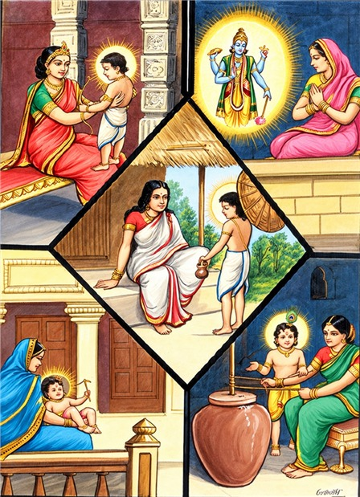
वामन-जननी अदिति जय, कोसलसुता सनाथ।
जिनकी गोद समोद चढ़ि खेले श्रीरघुनाथ।
जयति देवकी, रोहिणी श्रीजसुदा अभिराम।
लीलामय प्रगटे जहाँ रामसहित घनश्याम॥
ब्रह्मशक्ति भगवती सावित्री
यद् गयांस्तत्रे तस्याद् गायत्री नाम
स यामेवामॸसावित्रीमन्वाहैषैव सा॥१
सावित्री ब्रह्माजीकी पत्नी हैं। ये आद्याशक्ति परा प्रकृतिके पाँच स्वरूपोंमेंसे एक मानी गयी हैं।२
१. इन्होंने गयों (प्राणों)-का त्राण किया था, इसीसे इनका नाम गायत्री हुआ। आचार्यने आठ वर्षके वटुके प्रति उपनयनके समय जिस सावित्रीका उपदेश किया था, वह यही है।
२. गणेशजननी दुर्गा राधा लक्ष्मीः सरस्वती।
सावित्री च सृष्टिविधौ प्रकृतिः पंचधा स्मृता॥
(देवीभागवत ९। ४। ४)
इनका विग्रह तपाये हुए स्वर्णके समान है। ये मध्याह्नकालके सहस्रों सूर्योंके समान तेजस्विनी मानी गयी हैं। ये सुखदायिनी और मोक्षदायिनी भी हैं। सम्पूर्ण सम्पत्तियाँ इन्हींकी स्वरूपभूता हैं। इन्हें ही वेदमाता गायत्री कहते हैं। पुराणोंमें इनकी उत्पत्ति विभिन्न प्रकारसे बतलायी गयी है। वास्तवमें ये नित्यसिद्ध परमेश्वरी हैं। इनके जन्म-कर्म लीलामात्र हैं। किसी समय ये सविता (सूर्य)-की पुत्रीके रूपमें अवतीर्ण हुई थीं; इसलिये इनका नाम सावित्री पड़ गया। कहते हैं, सविताके मुखसे इनका प्रादुर्भाव हुआ था। भगवान् सूर्यने इनका विवाह ब्रह्माजीके साथ कर दिया। तभीसे इनकी ब्रह्माणी संज्ञा हुई। कहीं-कहीं सावित्री और गायत्रीके पृथक्-पृथक् स्वरूपोंका वर्णन मिलता है। ब्रह्माजीके विख्यात तीर्थ पुष्करमें जब ब्रह्माजीके द्वारा महान् यज्ञका आयोजन किया गया था, उसमें ब्रह्माजीके साथ यज्ञमें बैठनेके लिये उनकी ज्येष्ठपत्नी सावित्रीको बुलाया गया।
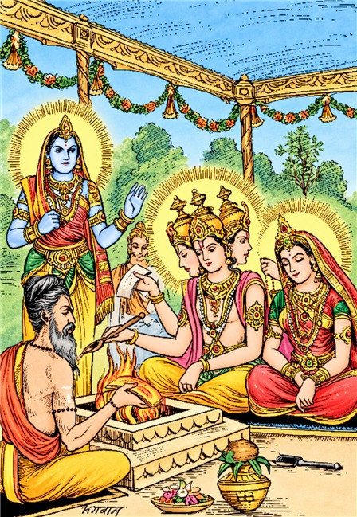
सावित्रीके आनेमें कुछ विलम्ब हुआ; अतएव उनकी छोटी पत्नी गायत्रीको ही ब्रह्माजीके साथ बिठाकर ठीक समयपर यज्ञ आरम्भ कर दिया। सावित्रीने इसे अपने अधिकारका अपहरण समझा और वे रूठकर एक पर्वतशिखरपर जा बैठीं; फिर सब देवताओंने उन्हें स्तुतिके द्वारा प्रसन्न किया। आज भी पुष्करमें गायत्री और सावित्रीके पृथक् स्वरूपोंकी झाँकी होती है। दो रूपोंमें होनेपर भी वे हैं एक ही ब्रह्माजीकी शक्ति। अतः उन्हें वास्तवमें अभिन्न ही मानना चाहिये। उपनिषदोंमें इनकी अभिन्नताका स्पष्टरूपसे वर्णन है—‘गायत्रीमेव सावित्रीमनुब्रूयात्।’
सावित्री ज्ञान-विज्ञानकी मूर्ति हैं। कहीं-कहीं व्याहृतियोंको इनकी कन्या और सनकादिको इनका पुत्र बतलाया गया है। ये द्विजातिमात्रकी आराध्य देवी हैं। इन्हें परब्रह्मस्वरूपिणी माना गया है। वेदों, उपनिषदों और पुराण आदि ग्रन्थोंमें इनकी महिमाँका विस्तृत वर्णन मिलता है। सावित्री पहले गोलोक-धाममें श्रीराधिकाजीके साथ रहा करती थीं। भगवान् श्रीकृष्णने उन्हें ब्रह्माजीके हाथमें सौंपा। उस समय वे गोलोकधाम छोड़कर ब्रह्मलोक जानेको तैयार न हुईं, तब श्रीकृष्णकी आज्ञासे ब्रह्माजीने वेदमाता सावित्रीका भक्तिपूर्वक स्तवन किया। इससे सन्तुष्ट होकर सावित्रीने ब्रह्माजीको अपना प्रेम समर्पित किया और उनके साथ जाकर ब्रह्मलोकमें रहने लगीं। वहाँ इन्होंने मन, वाणी तथा शरीरसे ब्रह्माजीकी सेवा की। अपने अविचल सतीत्वके प्रभावसे ही वे तीनों लोकोंकी वन्दनीया हुईं। मद्रदेशके राजा अश्वपतिने कठोर तपस्याद्वारा इन्हींको सन्तुष्ट किया था। सावित्रीकी ही कृपासे उन्हें सावित्री-जैसी पुत्री प्राप्त हुई जो अपने पातिव्रत्यके प्रभावसे तीनों लोकोंमें विख्यात है।
सावित्रीकी उपासना तीनों कालमें की जाती है, प्रातः, मध्याह्न और सायं। तीनों कालोंके लिये इनका पृथक्-पृथक् ध्यान है। प्रातःकाल ये सूर्यमण्डलके मध्य विराजमान होती हैं। उस समय इनके शरीरका रंग लाल होता है, ये अपनी दो बाँहोंमें अक्षसूत्र और कमण्डलु धारण किये होती हैं। इनकी सवारीमें हंस मौजूद रहता है। इनकी अवस्था कुमारी होती है। इनका यही स्वरूप ब्रह्मशक्ति गायत्रीके नामसे प्रसिद्ध है। इसका वर्णन ऋग्वेदमें मिलता है। मध्याह्नकालमें इनकी अवस्था युवतीकी-सी रहती है। इनकी चार भुजाएँ और तीन नेत्र होते हैं। चारों हाथोंमें शंख, चक्र, गदा और पद्म शोभा पाते हैं। उस समय इनकी सवारीमें गरुड़ रहता है। ये विष्णुको देवता माननेवाली वैष्णवी शक्तिके रूपमें प्रकट होती हैं। इसी स्वरूपका नाम सावित्री है। इसका वर्णन यजुर्वेदमें मिलता है। सायंकालमें गायत्रीकी अवस्था वृद्धा मानी गयी है। वे वृषभपर बैठी हुई रुद्रशक्तिके रूपमें उपस्थित होती हैं। शरीरका वर्ण शुक्ल होता है। अपनी चार भुजाओंमें वे त्रिशूल, डमरू, पाश और पात्र धारण किये होती हैं। इस स्वरूपका नाम सरस्वती है और इसका वर्णन सामवेदमें मिलता है।
इस प्रकारसे गायत्री, सावित्री और सरस्वती एक ही ब्रह्मशक्तिके नाम हैं। प्रणव, वेद, व्याहृति, वेदांग, शास्त्र, पुराण और इतिहास आदि समस्त वाङ्मय इन्हींका स्वरूप है। ये ही सबकी अधिष्ठातृ देवी हैं। इन्हींको ब्राह्मी, भारती एवं वाणी कहते हैं। बुद्धिकी अधिष्ठातृ देवी ये ही हैं। इन्हींकी शक्तिसे ब्रह्माजी सृष्टिका कार्य संचालन करते हैं। स्वरूपतः एक होते हुए भी सावित्री और सरस्वतीके रूप पृथक्-पृथक् हैं। दोनों ही रूपोंमें दर्शन देकर ये भक्तजनोंपर अनुग्रह किया करती हैं। अवधनरेश ध्रुवसन्धिका पुत्र सुदर्शन अपने सौतेले भाईके षड्यन्त्रसे अनाथकी भाँति मातासहित निकाल दिया गया था। उस समय उसकी माँ वनमें एक महर्षिके आश्रमपर रहती थी। सुदर्शनका लालन-पालन वहीं हुआ। एक दिन किसी बालकने खेल-कूदके समय सुदर्शनको ‘क्लीब’ कह दिया। सुदर्शन इसका अर्थ नहीं जानता था; किंतु उस शब्दका बारम्बार उच्चारण करने लगा। संयोगवश क्लीबकी जगह ‘क्लीम्’ का जप करने लगा। यह सरस्वतीका बीजमन्त्र है। यद्यपि सुदर्शनने जान-बूझकर देवीकी उपासना नहीं की थी तो भी दयामयी सरस्वतीने उस बालकपर कृपा की। उसे अद्भुत बल, बुद्धि और विद्यासे सम्पन्न कर दिया। काशिराजकी पुत्री राजकुमारी शशिकलासे उसका विवाह हो गया। देवीने स्वयं प्रकट होकर सुदर्शनके शत्रुओंका दमन किया और उसे पुनः अयोध्याके राजसिंहासनपर बिठा दिया। जिस समय देवी महासरस्वती रक्तबीज आदि दानवोंसे युद्ध कर रही थीं, उस समय ब्रह्मशक्ति सावित्री देवी भी हंसपर सवार हो कमण्डलु लिये हुए वहाँ पहुँची थीं। उस युद्धमें अपने मन्त्रपूत कमण्डलुके जलसे उन्होंने बहुत-से दैत्योंका संहार किया था—‘ब्रह्माणी मन्त्रपूतेन तोयेनान्ये निराकृताः।’ ‘सरस्वती’ के विषयमें विशेष बातें अलग दी जा रही हैं।
—रा० शा०
देवमाता अदिति
देवी अदिति दक्ष प्रजापतिकी कन्या और महर्षि कश्यपकी धर्मपत्नी हैं। ये शरीर, मन, वाणी और क्रियाद्वारा पतिकी सेवामें संलग्न रहती हैं। पतिकी आज्ञासे ही नाना प्रकारके उत्तम एवं कठोर नियमों तथा व्रतोंका पालन करती हुई धर्मानुष्ठानमें लगी रहती हैं। भगवान्में उनकी बड़ी भक्ति है। इन्हींके गर्भसे इन्द्र आदि देवताओंकी उत्पत्ति हुई है। अदितिके पुत्र होनेसे ही देवता आदितेय कहलाते हैं। देवमाता अदिति अजर और अमर हैं। इनके पुत्र इन्द्र तीनों लोकोंके अधिपति हैं तो भी ये वैभव-भोगको अत्यन्त तुच्छ और बन्धनकारक मानकर उससे दूर ही रहती हैं। धर्म और तपोमय जीवन ही इन्हें अधिक प्रिय है। अपने आश्रममें ही रहकर धर्म और भगवान्की आराधनापूर्वक ये पति और पुत्रोंकी मंगलकामना किया करती हैं। अदितिका स्वभाव परम सात्त्विक है। इसीलिये इनके पुत्र देवगण भी सात्त्विक स्वभावके ही हैं। सत्त्वप्रधान होनेके कारण ही देवताओंका संसारमें पूजन होता है और उन्हें यज्ञका भाग समर्पित किया जाता है। अदितिकी दूसरी बहन दिति हैं, उन्हींके पुत्र दैत्यगण हैं। उनमेंसे अधिकांश तमोगुणी और रजोगुणी प्रकृतिके हैं; अतः सात्त्विक देवताओंका सहज उत्कर्ष देखकर उनके मनमें जलन होती है। वे देवताओंके अधिकारको बलपूर्वक छीनकर उसका उपभोग करना चाहते हैं।
एक बार दैत्योंने भारी उद्योग करके देवताओंको परास्त कर दिया। देवता स्वर्ग छोड़कर भाग गये और इधर-उधर जंगलों तथा पर्वतकी कन्दराओंमें छिपकर समय बिताने लगे। माता अदितिने देखा, दैत्यों और दानवोंने मेरे पुत्रोंको अपने स्थानसे हटा दिया है और सारी त्रिलोकी नष्टप्राय कर दी है। तब उन्होंने भगवान् सूर्यकी आराधनाके लिये महान् प्रयत्न किया। वे नियमित आहार करके कठोर नियमोंका पालन करने लगीं। उन्होंने एकाग्रचित्त होकर आकाशमें स्थित तेजोराशि भगवान् भास्करका स्तवन किया। इस प्रकार बहुत दिनोंतक आराधना करनेपर भगवान् सूर्यने दक्षकन्या अदितिको अपने तेजोमय स्वरूपका प्रत्यक्ष दर्शन कराया और अदितिकी प्रार्थनाके अनुसार देव-शत्रुओंका नाश करनेके लिये स्वयं उत्पन्न होना स्वीकार करते हुए कहा—‘देवि! मैं अपने हजारवें अंशसे तुम्हारे गर्भका बालक होकर प्रकट होऊँगा और तुम्हारे पुत्रके शत्रुओंका नाश करूँगा।’
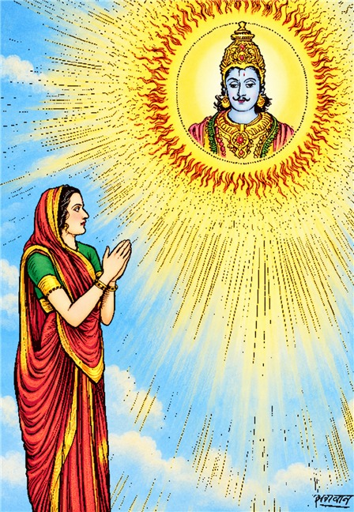
यों कहकर भगवान् भास्कर अन्तर्धान हो गये और देवी अदिति भी अपना समस्त मनोरथ सिद्ध हो जानेके कारण तपस्यासे निवृत्त हो गयीं। तत्पश्चात् वर्षके अन्तमें देवमाता अदितिकी इच्छा पूर्ण करनेके लिये भगवान् सविताने उनके गर्भमें निवास किया। उस समय देवी अदिति यह सोचकर कि मैं पवित्रतापूर्वक ही इस दिव्य गर्भको धारण करूँगी, एकाग्रचित्त होकर कृच्छ्र और चान्द्रायण आदि व्रतोंका पालन करने लगीं। उनका यह कठोर नियम देखकर कश्यपजीने कुपित होकर कहा—‘तू नित्य उपवास करके गर्भके बच्चेको क्यों मारे डालती है।’ तब वे भी रुष्ट होकर बोलीं—‘देखिये, यह रहा गर्भका बच्चा। मैंने इसे नहीं मारा है, यही अपने शत्रुओंको मारनेवाला होगा।’ यों कहकर देवमाताने उसी समय उस गर्भका प्रसव किया। वह उदयकालीन सूर्यके समान तेजस्वी अण्डाकार गर्भ सहसा प्रकाशित हो उठा। उसे देखकर कश्यपजीने वैदिक वाणीद्वारा आदरपूर्वक उसका स्तवन किया। स्तुति करनेपर उस गर्भसे बालक प्रकट हो गया। उसके श्रीअंगोंकी शोभा पद्मपत्रके समान श्याम थी। उसका तेज सम्पूर्ण दिशाओंमें व्याप्त हो गया। उसी समय अन्तरिक्षसे कश्यप मुनिको सम्बोधित करके सजल मेघके समान गम्भीर स्वरमें आकाशवाणी हुई—‘मुने! तुमने अदितिसे कहा था—‘त्वया मारितम् अण्डम्’ (तूने गर्भके बच्चेको मार डाला), इसलिये तुम्हारा यह पुत्र मार्तण्डके नामसे विख्यात होगा और यज्ञभागका अपहरण करनेवाले अपने शत्रुभूत असुरोंका संहार करेगा।’ यह आकाशवाणी सुनकर देवताओंको बड़ा हर्ष हुआ और दानव हतोत्साह हो गये। तत्पश्चात् देवताओंसहित इन्द्रने दैत्योंको युद्धके लिये ललकारा। दानवोंने भी आकर उनका सामना किया। उस समय देवताओं और असुरोंमें बड़ा भयानक युद्ध हुआ। उस युद्धमें भगवान् मार्तण्डने दैत्योंकी ओर देखा; अतः वे सभी महान् असुर उनके तेजसे जलकर भस्म हो गये; फिर तो देवताओंके हर्षकी सीमा नहीं रही। उन्होंने अदिति और मार्तण्डका स्तवन किया। तदनन्तर देवताओंको पूर्ववत् अपने-अपने अधिकार और यज्ञभाग प्राप्त हो गये।
(२)
एक बार दैत्योंने फिर देवताओंका सर्वस्व छीन लिया। उस समय महर्षि कश्यप समाधिमें थे। ‘भद्रे, आश्रमके आश्रित ब्राह्मण, हमारी गौएँ तथा सेवक सकुशल तो हैं? तुमने कभी किसी अतिथिको बिना यथाशक्ति सत्कार किये चले तो नहीं जाने दिया? कहीं कभी प्रमादवश प्राजापत्य अग्नि बुझ तो नहीं गयी थी? किसी ब्राह्मणका तुम्हारे द्वारा अनादर तो नहीं हुआ? तुम्हारे सब पुत्र कुशलसे तो हैं? तुम्हारा मुख श्रीहीन क्यों है?’ समाधिसे उत्थित होनेपर महर्षि कश्यपने अपनी पत्नी अदितिको उदास देखकर पूछा।
‘अग्नि, अतिथि, ब्राह्मण और गौएँ, सब सकुशल हैं। आप-जैसे धर्मात्मा स्वामीके गृहमें धर्मका कभी अनादर नहीं हो सकता। जो भी किसी आशासे आये, उन सबका यथोचित सत्कार हुआ है। मेरी खिन्नताका कारण है—दितिके पुत्रोंने मेरे पुत्रोंको स्वर्गसे निकाल दिया है। भयके मारे वे कहीं भी टिक नहीं पाते। बेचारे मन्दरकी गुफाओंमें मारे-मारे फिरते हैं। सब-के-सब क्षीणकाय हो गये हैं। मैं जानती हूँ कि असुर और सुर दोनों आपके पुत्र हैं। दोनोंपर आपका स्नेह है; किंतु असुरोंने अपने स्थानके अतिरिक्त मेरे पुत्रोंका स्थान भी छीन लिया है। मैं आपकी दासी हूँ। आपकी शरण हूँ। कोई भी ऐसा मार्ग बताइये, जिससे मेरे पुत्र इस विपत्तिसे परित्राण पावें।’ देवमाताने रोते हुए पतिके चरणोंपर सिर रखा।
‘कैसी विचित्र भगवान्की माया है। कौन किसका पुत्र, कौन किसकी माता। मोहके वश हो भौतिक शरीरमें अहंबुद्धि करके सभी क्लेश पा रहे हैं।’ महर्षि कश्यप गम्भीर हो गये। ‘अच्छा, तुम भगवान्की आराधना करो। वे दयामय तुम्हारा कल्याण करेंगे।’ अदितिको आदेश मिला।
‘मेरे भगवान् तो आप ही हैं। मैं आपकी आज्ञाका पालन करूँगी। आप आराधना-विधिका मुझे उपदेश करें। देवमाताने बड़ी नम्रतासे प्रार्थना की।’
‘भगवान् ब्रह्माने मुझे यह व्रत बताया था। तुम ध्यान देकर सुनो और उसका अनुष्ठान करो।’ महर्षिने उपदेश प्रारम्भ किया—‘फाल्गुनकी अमावस्याको वाराहकी खोदी मृत्तिका शरीरमें लगाकर समन्त्र स्नान करे। मूर्तिमें, वेदीपर, भगवान् सूर्यमें, जलमें, अग्निमें तथा हृदयमें भगवान्की पूजा करे। मन्त्रके द्वारा मरकतश्याम भगवान् नारायणकी स्तुति करके उनका आवाहन करे। षोडशोपचारसे विधिपूर्वक उनकी पूजा करे। घृत एवं गुड़ मिली हुई चावलकी खीरसे अग्निमें द्वादश आहुति दे। भगवान्के जो भक्त उपस्थित हों, उनको उसी खीरका प्रसाद दे तथा अन्तमें भगवान्को ताम्बूल प्रदान करे, अष्टोत्तरशत गोपाल-मन्त्रका जप करके भगवान्की स्तुति करे और तब भक्तोंकी आज्ञा लेकर वही खीर भोजन करे। कम-से-कम दो ब्राह्मणोंको अवश्य भोजन करावे। यदि उद्वासन करना हो तो करके ब्रह्मचर्यपूर्वक रात्रिको भूमि-शयन करे। प्रातःस्नानादि करके विधिपूर्वक भगवान्को दुग्धस्नान कराके पूजन करे। पूर्ववत् ब्राह्मण-भोजन तथा हवन करे; किंतु स्वयं भगवान्को स्नान कराया हुआ दूध ही पीकर रहे। फाल्गुनशुक्ल त्रयोदशीतक भूमिशयन, ब्रह्मचर्य तथा तीनों समय स्नान-सन्ध्याके नियमोंका पालन करे। किसी असत् पुरुषसे बात न करे। कोई भी छोटा या बड़ा भोग पदार्थ सेवन न करे। नित्य भगवान्का ध्यान करे। त्रयोदशीको शास्त्रानुसार भगवान्को पंचामृतसे स्नान कराके, वित्तशाठॺ छोड़कर विधिज्ञाता ब्राह्मणोंद्वारा भगवान्की उत्साहपूर्वक महापूजा करे। दूधकी चरु बनाकर उससे हवन करे। विविध प्रकारके नैवेद्य भगवान्को समर्पित करे। आचार्यकी पूजा करे और सम्मान तथा दक्षिणासे ऋत्विजोंको सन्तुष्ट करे। सभी जातिके लोगों, सेवकों, चाण्डालों तथा कुत्तोंको भोजन दे। सबके भोजन कर लेनेपर कुटुम्बियोंके साथ स्वयं भोजन करे। व्रतके दिनोंमें भगवान्की कथा, संकीर्तन, वाद्यके साथ गुणगान कराता रहे।’ इस पयोव्रतका उपदेश महर्षि कश्यपने दिया। श्रीमद्भागवतके अष्टमस्कन्धके सोलहवें अध्यायमें सम्पूर्ण व्रत, स्तुति तथा मन्त्र हैं।
पतिको अभिवादन करके अदितिने व्रतका आरम्भ किया। व्रतकी समाप्तिपर पीताम्बरधारी चतुर्भुज, घनश्याम, शंख-चक्र-गदा-पद्मधारी प्रभु उसके सम्मुख प्रकट हुए। अदितिके नेत्र सफल हुए। प्रेमसे भरे कण्ठको सँभालकर, आनन्दाश्रुओंको पोंछकर देवमाताने जगदाराध्यकी स्तुति की—‘हे यज्ञेश! यज्ञस्वरूप! पवित्रकीर्ति! आपका नाम कर्णोंमें जाते ही जीवका कल्याण कर देता है। मैं आपकी शरण हूँ, कष्टमें पड़ी हूँ, मुझे शान्ति दें। विश्वस्वरूप, विश्वकी उत्पत्ति, स्थिति और प्रलयके कारण, स्वेच्छाशरीरधारी, अपने शाश्वत ज्ञानसे अज्ञानान्धकारको दूर कर देनेवाले श्रीहरि, आपको नमस्कार! परमायु, तीनों लोकोंका ऐश्वर्य, योगकी सभी सिद्धियाँ, अर्थ-धर्म-काम-मोक्ष—ये सब आपकी कृपासे ही प्राप्त हो जाते हैं; फिर सपत्नीके पुत्रोंपर मेरे पुत्रोंकी विजय तो कितनी बड़ी बात है।’
‘देवमाता! मैं आपकी इच्छाको जानता हूँ। आप अपने पुत्रोंकी विजय तथा असुरोंका पराभव चाहती हैं। देवि! इस समय असुर अजेय हैं। जिनपर ईश्वर प्रसन्न हों या जो ब्राह्मणोंसे रक्षित हों, उनके विरुद्ध पराक्रम सुखदायी नहीं होता। आपने मेरी पूजा की है। मेरी आराधना निष्फल नहीं जाती। मैं किसी भी प्रकार आपकी इच्छा पूर्ण करूँगा। मैं आपका पुत्र बनूँगा और आपके पुत्रोंकी रक्षा करूँगा।’ अदितिकी स्तुतिसे प्रसन्न होकर भगवान्ने उसे आश्वासन दिया और अन्तर्हित हो गये।
भगवान्ने प्रजापति कश्यपको पिता बनाकर अदितिके गर्भसे अवतार धारण किया। अदितिने देखा कि उसके पुत्र-रूपसे दूर्वादलश्याम, वनमाली, चतुर्भुुज, अपने शंख-चक्रादि उपकरणोंको धारण किये, दिव्याभरणभूषित साक्षात् नारायण प्रकट हुए हैं। उसे अत्यन्त आश्चर्य हुआ। प्रजापति कश्यपने उन्हें प्रणाम किया। देखते-देखते ही भगवान्का वह शरीर एक वामन ब्राह्मणबालकके रूपमें परिवर्तित हो गया। महर्षि कश्यपने दूसरे ऋषियोंके साथ उन वामन प्रभुका उपनयन-संस्कार सम्पन्न किया।
पैरमें खड़ाऊँ, हाथोंमें पलाशदण्ड, ताड़पत्रका छत्र तथा जलपूर्ण कमण्डलु लिये साक्षात् प्रज्वलित अग्निके समानवे वामनभगवान् ब्रह्मचारीके वेषमें दैत्यराज बलिके यज्ञमण्डपमें पधारे। बलिने उनका स्वागत किया। उनसे अनुरोध किया कि कुछ याचना करके वे कृतार्थ करें। उन महामायावीने तीन पद भूमि माँगी। आचार्य शुक्रके निषेध करनेपर भी बलिने भूमि-दानका संकल्प कर दिया।
‘अब तीसरा पैर कहाँ रखूँ?’ देखते-देखते वह वामनरूप विराट् हो गया। समस्त पृथ्वी एक पदमें तथा द्युलोक दूसरे पदमें माप लिया गया। सम्पूर्ण आकाश उस महामूर्तिसे आच्छादित हो गया।’
‘इस सेवकके मस्तकपर! दान-सामग्रीसे दाता बड़ा होता है प्रभु!’ मनस्वी बलिने मस्तक आगे कर दिया। प्रभुने उसपर श्रीचरण रखा। बलि भगवान्के आदेशसे सपरिवार सुतल गये। भगवान् उनके द्वारपर सदा गदापाणि खड़े रहते हैं। आगामी कल्पमें बलि इन्द्र होंगे। ब्रह्माके अनुरोधसे भगवान् वामनने उपेन्द्र पद स्वीकार किया। वे देवमाताको उनके पुत्रोंकी रक्षाका वरदान दे चुके थे, अतः इस रूपसे स्वर्गमें उनका निवास हुआ।
—रा० शा०, सु० सिं०
देवसम्राज्ञी शची
शची देवराज इन्द्रकी पत्नी हैं। ये भी भगवती आद्याशक्तिकी एक कला मानी गयी हैं। ये स्वयंवरकी अधिष्ठात्री देवी हैं। प्राचीन कालमें जब कहीं स्वयंवर होता था तो पहले शचीका आवाहन और विधिवत् पूजन कर लिया जाता था, जिससे स्वयंवर-सभामें कोई विघ्न या बाधा पड़नेकी सम्भावना अथवा उत्पात, कलह और मार-काटकी आशंका नहीं रहती थी। ऋग्वेदमें कई ऐसे सूक्त मिलते हैं जो शचीद्वारा प्रकाशमें लाये गये बतलाये जाते हैं। वे सपत्नियोंपर प्रभुत्व स्थापित करनेके लिये अनुष्ठानोपयोगी मन्त्र हैं। शचीदेवी पतिव्रता स्त्रियोंमें श्रेष्ठ मानी गयी हैं। वे भोग-विलासमय स्वर्गकी रानी होकर भी सतीत्वकी साधनामें संलग्न रहती हैं। उनके मनपर पतिके विलासी जीवनका विपरीत प्रभाव नहीं पड़ता। वे अपनी ओर देखती हैं और अपनेको सती-साध्वी देवियोंके पुण्य-पथपर अग्रसर करती रहती हैं। उनके सर्वस्व देवराज इन्द्र ही हैं। इन्द्रके सिवा दूसरे किसी पुरुषको भले ही वह इन्द्रसे भी ऊँचे पदपर क्यों न प्रतिष्ठित हो, अपने लिये कभी आदर नहीं देतीं।
रत्न किसी अयोग्य स्थानमें पड़ा हो तो भी रत्न ही है। इससे उसके महत्त्वमें कमी नहीं आती। शचीदेवीका जन्म दानवकुलमें हुआ था तथापि वे अपने त्याग, तपस्या और संयम आदि सद्गुणोंसे देवताओंकी भी वन्दनीया हो गयीं। शचीके पिताका नाम था पुलोमा। वह दानव-कुलमें सम्मानित वीर था। उसीके नामपर शचीको पौलोमी और पुलोमजा भी कहते हैं। बाल्यकालमें शचीने भगवान् शंकरको प्रसन्न करनेके लिये बड़ी भारी तपस्या की थी और उन्हींके वरदानसे वे देवराजकी प्रियतमा पत्नी तथा स्वर्गलोककी रानी हुईं। शचीका जीवन बड़े सुखसे बीतने लगा। इसी प्रकार कई युग बीत गये। देहधारी प्राणी स्वर्गके देवता हों या मर्त्यलोकके मनुष्य, उनके जीवनमें कभी-कभी दुःखका अवसर अवश्य आता है। यह दुःख प्राणियोंके लिये एक चेतावनी होती है। सुखका जीवन प्रमादी हो जाता है। दुःखमें ही प्राणी सजग होते हैं। अपनी भूलों और त्रुटियोंको सुधारनेका अवसर मिलता है। सबसे बड़ी बात यह है, दुःखमें ही भगवान् याद आते हैं और दुःखमें ही धर्मका महत्त्व समझमें आता है। शचीके जीवनमें भी एक समय ऐसा आया, जब कि उन्हें सतीत्वकी अग्निपरीक्षा देनी पड़ी और गर्वके साथ कहना पड़ता है कि शचीने अपने गौरवके अनुरूप ही कार्य करके धैर्य और साहसपूर्वक प्राणोंसे भी अधिक प्रिय सतीत्वकी रक्षा की।
देवराज इन्द्रने त्वष्टाके पुत्र भगवद्भक्त वृत्रासुरका वध कर दिया। इस अन्यायके कारण इन्द्रकी सर्वत्र निन्दा हुई। उनपर भयानक ब्रह्महत्याका आक्रमण हुआ। उससे बचनेके लिये वे मानसरोवरके जलमें जाकर छिप गये। स्वर्गको इन्द्रसे शून्य देखकर देवताओंको बड़ी चिन्ता हुई। तीनों लोकोंमें अराजकता फैल गयी। अनेक प्रकारके उत्पात होने लगे। वर्षा बंद हो गयी। नदियाँ सूख गयीं। पृथ्वी धन, वैभवसे रहित हो गयी। इन सब बातोंका विचार करके देवताओंने भूतलसे राजा नहुषको बुलाया और उन्हें इन्द्रके पदपर स्थापित कर दिया। नहुष धर्मात्मा तो थे ही, सौ यज्ञोंका अनुष्ठान करके इन्द्रपदके अधिकारी भी हो गये थे। किंतु धर्मात्मा होनेपर भी नहुष इन्द्रपद पानेके बाद अपनेको राजमदसे मुक्त न रख सके। वे विषयभोगोंमें आसक्त हो गये। उन्होंने शचीके रूप और लावण्य आदि गुणोंकी चर्चा सुनी तो उनकी प्राप्तिके लिये भी वे चिन्तित हो उठे। शचीको जब इसका पता लगा तो वह गुरु बृहस्पतिजीकी शरणमें गयीं। बृहस्पतिने उसको आश्वासन देते हुए कहा—‘बेटी! विश्वास रखो, मैं सनातनधर्मका त्याग करके तुम्हें नहुषके हाथमें कभी नहीं पड़ने दूँगा। जो शरणमें आये हुए आर्तजनोंकी रक्षा नहीं करता, वह एक कल्पतक नरकमें पड़ा रहता है। तुम चिन्ता न करो। किसी भी अवस्थामें मैं तुम्हारा त्याग नहीं करूँगा।’
नहुषने सुना, इन्द्राणी बृहस्पतिके शरणमें गयी है। बृहस्पतिने उसे अपने घरमें छिपा रखा है। तब उसे बड़ा क्रोध हुआ। उसने देवताओंसे कहा, ‘यदि बृहस्पति मेरे प्रतिकूल आचरण करेगा तो मैं उसे मार डालूँगा।’ देवताओंने नहुषको शान्त करते हुए कहा, ‘प्रभो! आप अपने क्रोधको रोकिये। धर्मशास्त्रोंमें परस्त्रीगमनकी निन्दा की गयी है। इन्द्रकी पत्नी शची सदासे ही साध्वी जीवन बिताती आ रही हैं। आप इस समय तीनों लोकोंके स्वामी और धर्मके उपदेशक हैं, यदि आप-जैसे महापुरुष भी अधर्मका आचरण करें तो निश्चय ही प्रजाका नाश हो जायगा। स्वामीको सदा ही साधु पुरुषोंके आचरणका पालन करना चाहिये। आप पुण्यके ही बलसे इन्द्रपदको प्राप्त हुए हैं। पापसे सम्पत्तिकी हानि और पुण्यसे उसकी वृद्धि होती है; इसलिये आप पापबुद्धि छोड़ दीजिये।’ कामान्ध नहुषपर इस उपदेशका कुछ भी असर न हुआ। तब देवता और महर्षि बहुत डर गये और यह कहकर कि ‘हम इन्द्राणीको समझा-बुझाकर आपके पास ले आवेंगे’ बृहस्पतिजीके घर गये।
देवताओंके मुखसे यह दुःखद समाचार सुनकर बृहस्पतिने कहा—‘शची पतिव्रता है और मेरी शरणमें आयी है।’ यों कहकर बृहस्पतिने देवताओंके साथ कुछ परामर्श किया और फिर इन्द्राणीको साथ लेकर सब-के-सब नहुषके पास गये। इन्द्राणी काँपने लगीं और लजाते-लजाते बोलीं—‘देवेश्वर! मैं आपसे वरदान प्राप्त करना चाहती हूँ। आप कुछ कालतक प्रतीक्षा करें। तबतक मैं इस बातका निर्णय कर लेती हूँ कि इन्द्र जीवित हैं या नहीं। मेरे मनमें इस बातका संशय बना हुआ है; अतः इसका निर्णय करके ही आपकी सेवामें उपस्थित होऊँगी। तबतकके लिये आप मुझे क्षमा करें।’ इन्द्राणीके इस प्रकार कहनेपर नहुष प्रसन्न हो गया और बोला—‘अच्छा, जाओ।’ इस प्रकार उसके विदा करनेपर देवी शची अन्यत्र चली गयीं और सम्पूर्ण देवताओंसे बोलीं—‘अब तुमलोग वास्तविक इन्द्रको यहाँ ले आनेके लिये पूर्ण उद्योग करो।’ तब देवताओंने जाकर भगवान् विष्णुकी स्तुति की। भगवान्ने कहा—‘इन्द्र अश्वमेध-यज्ञके द्वारा जगदम्बाका आराधन करें तो वे पापसे मुक्त हो सकते हैं। इन्द्राणीको भी भगवतीकी आराधनामें लग जाना चाहिये।’ यह सुनकर बृहस्पति और देवता उस स्थानपर गये, जहाँ इन्द्र छिपे थे और उनसे विधिपूर्वक अश्वमेध-यज्ञका अनुष्ठान करवाया। तदनन्तर इन्द्रने अपनी ब्रह्महत्याको वृक्ष, नदी, पर्वत, स्त्री और पृथ्वीको बाँट दिया। इधर इन्द्राणीने भी बृहस्पतिजीसे भुवनेश्वरीदेवीके मन्त्रकी दीक्षा लेकर उनकी आराधना आरम्भ की। वे सम्पूर्ण भोगोंका परित्याग करके तपस्विनी बन गयीं और बड़ी भक्तिसे भगवतीकी पूजा करने लगीं।
कुछ कालके बाद देवीने सन्तुष्ट होकर इन्द्राणीको प्रत्यक्ष दर्शन दिया और वर माँगनेको कहा।
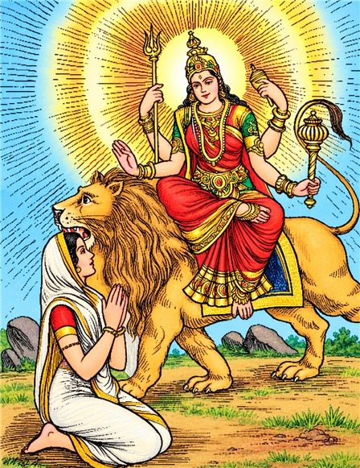
शचीने कहा—‘माताजी! मैं पतिदेवका दर्शन चाहती हूँ तथा नहुषकी ओरसे जो भय मुझको प्राप्त हुआ है, वह भी दूर हो जाय।’ देवीने कहा—‘तुम्हारी सब कामनाएँ पूर्ण होंगी। तुम इस दूतीके साथ मानसरोवर पर्वतपर जाओ। वहाँ तुम्हें इन्द्रका दर्शन होगा।’ देवीकी आज्ञासे दूतीने शचीको तुरंत ही उनके पतिके पास पहुँचा दिया। पतिको देखते ही शचीके शरीरमें नूतन प्राण आ गये। जिनके दर्शनके लिये कितने ही वर्षोंसे आँखें तरस रही थीं, उन्हें सामने पाकर शचीके हर्षकी सीमा न रही। फिर शचीने नहुषकी पापवासना और अपने संकटका सारा वृत्तान्त पतिको सुनाया। सुनकर इन्द्रने कहा—‘देवि! पतिव्रता नारी अपने धर्मसे ही सदा सुरक्षित रहती है। जो दूसरोंके बलपर अपने सतीत्वकी रक्षा करती है वह उत्तम श्रेणीकी पतिव्रता नहीं है। तुम भगवतीका स्मरण करके उचित उपायसे आत्मरक्षा करो।’ यों कहकर इन्द्रने शचीको एक युक्ति सुझायी और इन्द्रलोक भेज दिया। नहुषने शचीको देखकर प्रसन्नतापूर्वक कहा—‘इन्द्राणी! तुम्हारा स्वागत है। तुमने अपने वचनका पालन किया है। अब तुम्हें मुझसे लज्जा नहीं करनी चाहिये। मैं तुम्हारा प्रेमी हूँ। मेरी सेवा स्वीकार करो।’ शची बोली—‘राजन्! मेरे मनमें एक अभिलाषा है, आप उसे पूर्ण करें। मैं चाहती हूँ, आप ऐसी सवारीपर चढ़कर मेरे पास आवें, जो अबतक किसीके उपयोगमें न आयी हो।’
नहुषने कहा—‘इन्द्राणी! मैं तुम्हारी यह इच्छा पूर्ण करूँगा। मेरी शक्ति किसीसे कम नहीं है। मैं ऋषियोंकी पीठपर बैठकर आऊँगा। सप्तर्षि मेरे वाहन होंगे।’ यों कहकर नहुषने सप्तर्षियोंको बुलाया और उनकी पीठपर बैठकर इन्द्राणीके भवनकी ओर प्रस्थान किया। उस समय वह इतना मदान्ध हो रहा था कि महर्षि अगस्त्यको कोड़ोंसे पीटने लगा। इस प्रकार नहुषको मर्यादाका अतिक्रमण करते देख क्षमाशील महर्षिके मनमें भी क्रोधकी आग जल उठी। उन्होंने नहुषको शाप देते हुए कहा—‘अरे! तू सर्पकी योनिमें चला जा।’ महर्षिके शाप देते ही नहुष सर्पका रूप धारण करके स्वर्गसे नीचे जा गिरा। इस तरह शचीने अपने सतीत्वकी रक्षा करके अपने ऊपर आये हुए संकटपर विजय प्राप्त की और पतिको भी पुनः स्वर्गके सिंहासनपर प्रतिष्ठित किया। —रा० शा०
कात्यायनी
असुर रम्भने अपनी तपस्यासे आशुतोषको संतुष्ट किया। भगवान् विश्वनाथके प्रसादसे उसे एक पुत्र प्राप्त हुआ। इस शिशुका सिर भैंसेके मुखके समान था और उसपर सुदृढ़ सींग थे। रम्भने उसका नाम महिष रखा। असुरशिशु उत्पन्न होते ही पूरी आकृति प्राप्त कर लेते हैं। महिषासुरने पिताके उपदेशसे तपस्या प्रारम्भ की। अत्यन्त उग्र तपस्याने औढरदानीको संतुष्ट कर दिया। भगवान् शशांकशेखरके वरदानसे महिषासुर सम्पूर्ण सुरासुरसे अवध्य हो गया।
पूरे सौ वर्ष संग्राम करके महिषासुरने सम्पूर्ण देवताओंको पराजित कर दिया। इन्द्रका वज्र, यमका दण्ड और वरुणका पाश उसने व्यर्थ बना दिया। देवता स्वर्ग छोड़कर भागे। महिषासुरने देव-राजधानीपर अधिकार किया।
देवताओंने जाकर स्रष्टासे प्रार्थना की। पितामह देवताओंको लेकर कैलास पहुँचे। वहाँसे त्रिलोचनको लेकर सब पहुँचे क्षीरोदधिके तटपर। सबकी स्तुतिसे वे मेघश्याम गरुडध्वज प्रकट हुए। उन्होंने पितामहके मुखसे महिषासुरके अत्याचारका समाचार सुना। लीलामयके नेत्रोंमें तनिक-सी अरुणिमा आयी। मुखसे एक तेज प्रकट हुआ। सर्वेशके क्रोधका अभिनय करते ही पितामह और भगवान् शिव भी क्रुद्ध हो गये। उनके मुखसे भी तेज प्रकट हुआ। यह दिव्य तेज एकत्र होकर एकाकार हो गया। उसने एक परम दिव्य नारीकी आकृति धारण की। सभी देवताओंने उस महाशक्तिको अपने दिव्यास्त्र प्रदान किये।
आश्विन कृष्ण चतुर्थीको महाशक्तिने स्वरूप धारण किया। इसी मासके शुक्ल पक्षकी सप्तमी, अष्टमी एवं नवमीको महर्षि कात्यायनने इनकी अर्चना की। महर्षि कात्यायनकी प्रथम पूजा स्वीकार करनेसे इनका नाम कात्यायनी पड़ा।
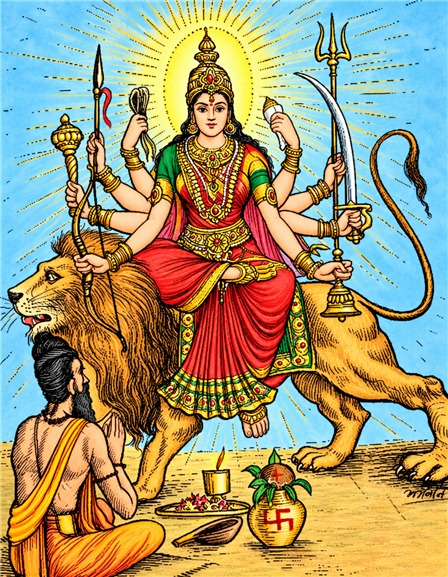
आश्विन शुक्ल दशमीको महाशक्तिने महिषासुरको ललकारा और घोर युद्धमें उसे मार डाला। इस बार उनका नाम उग्रचण्डी हुआ। दूसरे कल्पमें पुनः महिषासुरने जन्म लिया और महामाया कात्यायनीने उसे भद्रकालीस्वरूपसे मारा। तीसरे कल्पमें दुर्गास्वरूपसे उन्होंने इसी दैत्यका संहार किया।
शक्तिके मदसे अत्याचार करनेवाला कभी सकुशल रह नहीं सकता। किसी भी भावसे की हुई भगवान्की आराधना व्यर्थ नहीं होती। महिषासुर मारा गया। उसके अत्याचार उसे ले डूबे। उसकी शिवोपासनाने उसे देवीके पार्षदका पद दिया और देवीकी पूजाके साथ आज भी वह पूजा जाता है।
—सु० सिं०
सती शतरूपा
शतरूपा मानव सर्गकी आदिमाता हैं। वे स्वायम्भुव मनुकी पत्नी थीं। मनु और शतरूपासे ही मानव-सृष्टिका आरम्भ हुआ। श्रुति भी कहती है—‘ततो मनुष्या अजायन्त।’ मनु और शतरूपा दोनों ही ब्रह्माजीके शरीरसे उत्पन्न हुए हैं। दक्षिण भागसे मनुका और वाम भागसे शतरूपाका प्रादुर्भाव हुआ है। बृहदारण्यक-उपनिषद्में बतलाया गया है—केवल मनुष्य ही नहीं, सैकड़ों प्रकारके पशु भी इन्हीं दोनोंकी सन्तान हैं। शतरूपा इच्छानुसार रूप धारण करनेवाली तथा संकोचशीला स्त्री थीं। अतः प्रथम समागमके अवसरपर इन्होंने सैकड़ों रूप धारण करके अपनेको मनुकी दृष्टिसे छिपानेका प्रयत्न किया; किंतु उन सभी रूपोंमें मनुने उन्हें पहचाना और वैसा ही रूप धारण करके उनसे भेंट की। इस प्रकार सैकड़ों रूप धारण करनेके कारण ही सम्भवतः उनका नाम शतरूपा हो गया। जिन-जिन पशुओंके रूप इन्होंने धारण किये, उन सभीके रूपमें एक-एक सन्तान छोड़ दी। मानवी-सृष्टिका आदि स्रोत मनुसे ही आरम्भ हुआ। उन्हींके नामपर संसारके नर और नारी मानव कहलाते हैं।
स्वायम्भुव मनु ब्रह्मावर्तके राजा थे। सब प्रकारकी सम्पदाओंसे युक्त बर्हिष्मती नगरी उनकी राजधानी थी। जहाँ पृथ्वीको रसातलसे ले आनेके पश्चात् शरीर कँपाते समय श्रीवराहभगवान्के रोम झड़कर गिरे थे। वे रोम ही निरन्तर हरे-भरे रहनेवाले कुश और काश हुए, जिनके द्वारा मुनिजन यज्ञमें विघ्न डालनेवाले दैत्योंका तिरस्कार करके भगवान् यज्ञपुरुषकी आराधना करते हैं। ‘बर्हिष्’ कहते हैं कुशोंको; उनकी अधिकता होनेके कारण ही मनुकी वह नगरी बर्हिष्मतीपुरीके नामसे प्रसिद्ध हुई। उसी पुरीमें महारानी शतरूपाके साथ मनुजी निवास करते थे। प्रतिदिन प्रेमपूर्ण हृदयसे भगवान्की कथाएँ सुनना उनका नित्यका नियम था। वे दोनों दम्पति भलीभाँति धर्मका अनुष्ठान करते थे। आज भी वेद उनकी मर्यादाका गान करते हैं। मनु और शतरूपाके दो पुत्र और तीन कन्याएँ हुईं। पुत्रोंके नाम उत्तानपाद और प्रियव्रत थे और कन्याएँ आकूति, प्रसूति तथा देवहूतिके नामसे प्रसिद्ध हुई थीं। प्रसिद्ध भगवद्भक्त ध्रुव राजा उत्तानपादके ही पुत्र थे। राजा प्रियव्रतने इस पृथ्वीको सात भागोंमें विभक्त किया था। कन्याओंमेंसे आकूति रुचि प्रजापतिको ब्याही गयी थी, प्रसूति प्रजापति दक्षकी पत्नी थी और देवहूतिका विवाह महर्षि कर्दमसे हुआ था। देवहूतिके ही गर्भसे सांख्यशास्त्रके प्रणेता भगवत्स्वरूप महर्षि कपिलका अवतार हुआ था। महाराज मनुने बहुत समयतक राज्य किया और सब प्रकारसे प्रजापालन एवं शास्त्रमर्यादाकी रक्षारूप भगवान्की आज्ञाका पालन किया।
घरमें रहकर राज्य भोगते-भोगते चौथापन आ गया, परंतु विषयोंसे वैराग्य नहीं हुआ। इस बातका विचार करके राजाके मनमें बड़ा दुःख हुआ। वे सोचने लगे—‘हाय! हमारा सारा जन्म भगवान्का भजन किये बिना ही व्यर्थ बीत गया।’ तब मनुजीने अपने पुत्रको जबर्दस्ती राज्यपर बिठाया और स्वयं रानी शतरूपाको साथ ले वनको प्रस्थान किया। दोनोंने सहस्रों वर्षोंतक घोर तपस्या करके भगवान्को प्रसन्न किया। तब करुणानिधान भक्तवत्सल प्रभु श्रीराम उनके सामने प्रकट हो गये।
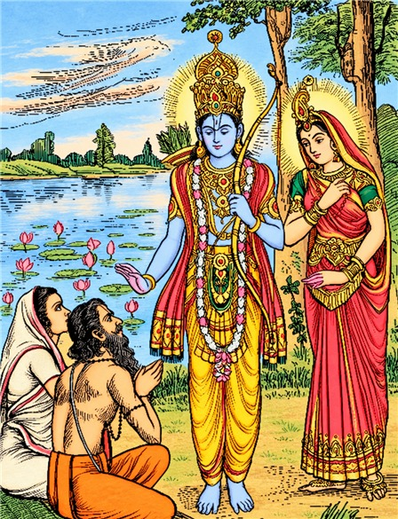
भगवान्के श्री-अंगोंकी शोभा नीलकमल, नीलमणि तथा नीलमेघके समान श्याम थी, उसे देखकर कोटि-कोटि कामदेव लज्जित हो रहे थे। मुखपर शरत्पूर्णिमाके चन्द्रमाकी शोभा विहँस रही थी। मनोहर कपोल, सुन्दर ठोडी और शंखके सदृश ग्रीवा थी। लाल-लाल ओठ, स्वच्छ दन्त-पङ्क्ति, सुन्दर नासिका तथा चन्द्ररश्मियोंको तिरस्कृत करनेवाली हँसी सुशोभित थी। नेत्रोंकी छबि नवविकसित कमलके समान सुन्दर थी। मनोहारिणी चितवन जीको बहुत प्यारी लगती थी। सुन्दर भौंहें, ललाटपर प्रकाशमय तिलक, कानोंमें मकराकृत कुण्डल, मस्तकपर किरीट, कारी-कारी घुँघरारी अलकें, वक्षःस्थलमें श्रीवत्स और वनमाला, गलेमें पदक और हार तथा अन्य अंगोंमें भी मणिमय आभूषण शोभा पा रहे थे। सिंहकी-सी गर्दन, सुन्दर यज्ञोपवीत, हाथीकी सूँड़के समान मनोहर भुजदण्ड, कमरमें तरकस और हाथोंमें बाण एवं धनुष सुशोभित थे। पीताम्बरकी छवि बिजलीको लजा रही थी। उदरपर त्रिवलीकी रेखा देखने ही योग्य थी। नाभि ऐसी लगती थी, मानो यमुनाजीमें भँवर उठी हो। चरण-कमलोंकी शोभा अवर्णनीय थी। श्रीरघुनाथजीके वामभागमें उन्हींके समान शोभाकी निधि आदिशक्ति सीता शोभा पा रही थीं।
युगल सरकारकी यह मनोहर झाँकी देखकर मनु और शतरूपाकी पलकें स्थिर हो गयीं। वे एकटक दृष्टिसे उनकी रूपमाधुरीका पान कर रहे थे। देखते-देखते मन अघाता नहीं था। दोनों दम्पति आनन्दनिमग्न हो गये। शरीरकी सुध भूल गयी। भगवान्के चरणोंका स्पर्श करके वे पृथ्वीपर दण्डकी भाँति पड़ गये। करुणामय भगवान्ने अपने हाथोंसे उनके मस्तकका स्पर्श किया और उन्हें तुरंत उठाकर खड़ा कर दिया; फिर वर माँगनेको कहा। राजाने कहा—‘नाथ! आपके दर्शनसे ही सब अभिलाषा पूरी हो गयी, अब एक ही लालसा मनमें रह गयी है, वह यह कि आपके समान एक पुत्र हो जाय।’ भगवान्ने कहा—‘अपने-जैसा पुत्र कहाँ खोजता फिरूँगा, मैं ही तुम्हारा पुत्र बनूँगा।’ इतना कहकर भगवान्ने शतरूपाकी ओर दृष्टिपात किया और कहा, ‘देवि! तुम भी अपनी रुचिके अनुसार वर माँगो।’ शतरूपाने कहा—‘प्रभो! महाराजने जो वर माँगा है, वही मुझे भी प्रिय है; फिर भी आपकी आज्ञासे मैं एक वर माँगती हूँ; वह यह है—
जे निज भगत नाथ तव अहहीं।
जो सुख पावहिं जो गति लहहीं॥
सोइ सुख सोइ गति सोइ भगति सोइ निज चरन सनेहु।
सोइ बिबेक सोइ रहनि प्रभु हमहिं कृपा करि देहु॥
यह कोमल, गूढ और मनोहर वाक्य-रचना सुनकर प्रभु प्रसन्न हो गये और बोले—‘तुम्हारे मनमें जो कुछ अभिलाषा है। वह सब तुमको दे दी।’ इतना कहकर भगवान्ने उसी दिन उन्हें माता कहकर पुकारा और विवेकका वरदान दिया—
मातु बिबेक अलौकिक तोरें।
कबहुँ न मिटिहि अनुग्रह मोरें॥
इस प्रकार शतरूपाने अपनी अलौकिक भक्ति और तपस्यासे भगवान्को पुत्ररूपमें प्राप्त किया। वे दोनों दम्पति भगवान्की आज्ञाके अनुसार कुछ कालतक इन्द्रलोकमें रहे। उसके बाद मनु अयोध्याके चक्रवर्ती नरेश दशरथ हुए और शतरूपा उनकी पत्नी कौसल्या हुईं। श्रीरघुनाथजीने इनके पुत्ररूपमें प्रकट होकर इनको तो अनुगृहीत किया ही; साथ-ही-साथ अपनी पवित्र लीलाओंकी स्मृति छोड़ दी, जिसका गायन, स्मरण और कीर्तन करके अनन्त कालतक जगत्के मनुष्य परमपदकी प्राप्ति करते रहेंगे। —रा० शा०
सती देवहूति
देवहूति ब्रह्मावर्त देशके अधिपति एवं बर्हिष्मतीपुरीके निवासी महाराज स्वायम्भुव मनुकी पुत्री थीं। इनकी माताका नाम शतरूपा था। वे महर्षि कर्दमको ब्याही गयी थीं और इन्हींके गर्भसे सिद्धोंके स्वामी भगवान् कपिलका प्रादुर्भाव हुआ था। वे बचपनसे ही बड़ी सद्गुणवती थीं। रूप और लावण्यमें तो इनकी समानता करनेवाली उस समय दूसरी स्त्री थी ही नहीं। देवहूति भारतवर्षके सम्राट्की लाड़िली कन्या होकर भी राजवैभवके प्रति आसक्त नहीं थीं। इनके मनमें धर्मके प्रति स्वाभाविक अनुराग था। त्याग और तपस्याका जीवन उन्हें अधिक प्रिय था। ये चाहतीं तो देवता, गन्धर्व, नाग, यक्ष तथा मनुष्योंमें किसी भी ऐश्वर्यशाली वरके साथ विवाह कर सकती थीं; किंतु इन्हें अच्छी तरह ज्ञात था कि ‘यह जीवन भोग-विलासके लिये नहीं मिला है। मानव-भोगोंसे स्वर्गका भोग उत्कृष्ट बताया जाता है, किंतु वह भी चिरस्थायी नहीं है, अन्तमें दुःख ही देनेवाला है। जीवनका उद्देश्य है आत्माँका कल्याण, इसे ममता और आसक्तिके बन्धनोंसे मुक्त करके भगवान्से मिलाना। जिसने मनुष्यका शरीर पाकर इस उद्देश्यकी सिद्धि नहीं की, उसने अपने ही हाथों अपना विनाश कर लिया। जिसने इस मोक्ष-साधक शरीरको विषय-भोगोंमें ही लगा रखा है वह अमृत देकर विषका संग्रह कर रहा है।’ इन्हीं उच्च विचारोंके कारण देवहूति किसी राजाको नहीं, तपस्वी मुनिको ही अपना पति बनाना चाहती थीं।
देवर्षि नारदजीकी सम्मतिसे महाराज मनु, महारानी शतरूपा तथा पुत्री देवहूतिको साथ लेकर महर्षिकर्दमके आश्रमपर गये और वहाँ जाकर मनुजीने उनको प्रणाम किया। रानी और कन्याने भी मस्तक झुकाया। कर्दमजीने आशीर्वाद दे राजाका यथोचित सामग्रीसे विधिवत् सत्कार किया तथा उनके राजोचित गुणोंकी प्रशंसा करते हुए आश्रमपर पधारनेका कारण पूछा। मनुजीने कहा—‘ब्रह्मन्! मेरा बड़ा भाग्य है, जो आज मुझे आपका दर्शन मिला और मैं आपके चरणोंकी मंगलमयी धूल मस्तकपर चढ़ा सका। आप ब्राह्मणोंकी कृपा सदा ही मुझपर रही है और इस समय भी उस कृपाका मैं पूर्णरूपसे अनुभव कर रहा हूँ। जिस उद्देश्यको लेकर आज मैंने आपका दर्शन किया है, वह बतलाता हूँ, सुनिये। यह मेरी कन्या, जो प्रियव्रत और उत्तानपादकी बहन है, अवस्था, शील और गुण आदिमें अपने योग्य पति प्राप्त करनेकी इच्छा रखती है। इसने देवर्षि नारदजीके मुखसे आपके शील, रूप, विद्या, आयु और उत्तम गुणोंका वर्णन सुना है और तभीसे आपको ही अपना पति बनानेका निश्चय कर चुकी है। मैं बड़ी श्रद्धासे अपनी यह कन्या आपकी सेवामें समर्पित करता हूँ। आप इसे स्वीकार करें।’
कर्दमजीको भगवान्की आज्ञा मिल चुकी थी; अतः उन्होंने महाराज मनुके वचनोंका अभिनन्दन किया तथा कुमारी देवहूतिके रूप और गुणोंकी प्रशंसा करते हुए उनके साथ विवाह करनेकी अनुमति दे दी। इतनी शर्त अवश्य लगा दी कि ‘सन्तानोत्पत्तिकालतक ही मैं गृहस्थ आश्रममें रहूँगा, इसके बाद संन्यास ले भगवान्के भजनमें ही शेष जीवन लगाऊँगा।’ मनुजीने देखा, इस सम्बन्धमें महारानी शतरूपा तथा राजकुमारीकी भी स्पष्ट अनुमति है। अतः उन्होंने कर्दमजीके साथ अपनी गुणवती कन्याका विवाह कर दिया। महारानी शतरूपाने भी बेटी और दामादको बड़े प्रेमपूर्वक बहुतसे बहुमूल्य वस्त्र, आभूषण और गृहस्थोचित पात्र आदि दहेजमें दिये।
देवहूति तन, मन, प्राणसे प्रेमपूर्वक पतिकी सेवा करने लगी। उन्होंने कामवासना, कपट, द्वेष, लोभ और मद आदि दोषोंको कभी अपने मनमें नहीं आने दिया। विश्वास, पवित्रता, उदारता, संयम, शुश्रूषा, प्रेम और मधुर भाषण आदि सद्गुण उनके हृदयमें स्वभावतः बढ़ते रहे। इन्हीं सद्गुणोंके द्वारा देवहूतिने अपने परम तेजस्वी पतिको पूर्णतः संतुष्ट कर लिया। निरन्तर कठोर व्रत आदिका पालन करते रहनेसे उनका शरीर अत्यन्त दुर्बल हो गया था। वे पतिको परमेश्वर मानतीं और उन्हें सर्वथा प्रसन्न रखना ही अपना परमधर्म समझती थीं। इस प्रकार पतिकी सेवा करते-करते कितने ही वर्ष बीत गये।
एक दिन देवहूतिकी सेवा, तपस्या और आराधनापर विचारकर तथा निरन्तर व्रत आदिके पालनसे उन्हें दुर्बल हुई देखकर महर्षि कर्दमको दयावश कुछ खेद हुआ और वे प्रेम पूर्ण गद्गद वाणीमें कहने लगे—‘देवि! तुमने मेरी बड़ी सेवा की है, सभी देहधारियोंको अपना शरीर बहुत प्रिय होता है। किंतु तुमने मेरी सेवाके आगे उसके क्षीण होनेकी कोई चिन्ता नहीं की। अतः मैंने भगवान्की कृपासे तप, समाधि, उपासना और योगके द्वारा जो भय और शोकसे रहित विभूतियाँ प्राप्त की हैं, उनपर मेरी सेवाके प्रभावसे अब तुम्हारा अधिकार हो गया है। मैं तुम्हें दिव्यदृष्टि प्रदान करता हूँ, उसके द्वारा तुम उन्हें देखो। पातिव्रत्यधर्मका पालन करनेके कारण तुम्हें सभी प्रकारके दिव्य भोग सुलभ हैं; तुम इच्छानुसार उनका उपभोग कर सकती हो।’
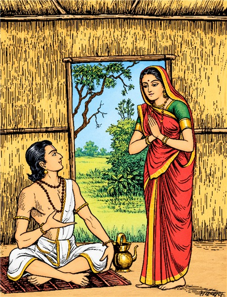
देवहूति बोलीं—‘प्राणनाथ! मैं यह जानती हूँ कि अमोघ योगशक्ति तथा त्रिगुणात्मिका मायापर आपका पूर्ण अधिकार हो गया है। परंतु सन्तान न होनेसे मेरे मनमें कभी-कभी क्षोभ-सा होता है, गृहस्थकी शोभा सन्तानसे ही है। अतः मेरी सन्तान-विषयक अभिलाषाकी अब पूर्ति होनी चाहिये। श्रेष्ठ पतिके द्वारा उत्तम सन्तानकी प्राप्ति सती नारीके लिये बहुत बड़ा लाभ है।’ यह सुनकर कर्दमजीने अपनी प्रियाकी इच्छा पूर्ण करनेका निश्चय किया। उनके संकल्पमात्रसे एक अत्यन्त सुन्दर विमान प्रकट हो गया, जो इच्छाके अनुसार सर्वत्र आ-जा सकता था। उसका निर्माण उत्तमोत्तम रत्नों और मणियोंसे हुआ था। उसमें सभी प्रकारके दुर्लभ दिव्य वैभव और दिव्य सामग्रियोंका संचय था।
पतिके साथ दिव्य विमानपर बैठकर सहस्रों दासियोंसे सेवित हो उन्होंने अनेक वर्षोंतक इच्छानुसार विहार किया। सम्पूर्ण देवोद्यानों तथा त्रिलोकीके सुन्दरतम प्रदेशोंमें वे विमानद्वारा विचरती रहीं। कुछ कालके पश्चात् देवहूतिके गर्भसे नौ कन्याएँ उत्पन्न हुईं, जो अद्वितीय सुन्दरी थीं। उनके अंगोंसे भी कमलकी सुगन्ध निकलती थी। कन्याओंके जन्मके पश्चात् अपनी प्रतिज्ञा पूर्ण हो जानेसे कर्दम ऋषि वनमें जानेको उद्यत हो गये। उन्हें संन्यासके लिये जाते देख देवहूतिने उमड़ते हुए आँसुओंको किसी प्रकार रोका और विनययुक्त वचनोंमें कहा—‘भगवन्! आपकी प्रतिज्ञा तो अब पूरी हो गयी, अतः आपका यह वनकी ओर प्रस्थान करना आपके स्वरूपके अनुरूप ही है; तथापि मैं आपकी शरणमें हूँ, अतः मेरी दो-एक विनय और सुन लीजिये। इन कन्याओंको योग्य वरके हाथमें सौंप देना पिताका ही कार्य है, अतः यह आपको ही करना पड़ेगा। साथ ही, जब आप वनको चले जायँ, उस समय मेरे जन्म-मरणरूप शोक और बन्धनको दूर करनेवाला भी कोई यहाँ होना चाहिये। प्रभो! अबतक भगवान्की सेवासे विमुख रहकर मेरा जो जीवन इन्द्रिय-सुख भोगनेमें बीता है, वह तो व्यर्थ ही गया है। आपके प्रभावको न जाननेके कारण ही मैंने विषयासक्त रहकर आपसे अनुराग किया है, तो भी यह मेरे संसारबन्धनको दूर करनेवाला ही होना चाहिये, क्योंकि साधु-पुरुषोंका संग सर्वथा कल्याण करनेवाला ही होता है। निश्चय ही, भगवान्की मायाद्वारा मैं ठगी गयी; तभी तो आप-जैसे मुक्तिदाता पतिको पाकर भी मैं संसारबन्धनसे छूटनेका कोई उपाय न कर सकी।’
देवहूतिके ये वैराग्ययुक्त वचन सुनकर कर्दमजी बहुत प्रसन्न हुए। उन्होंने पत्नीको सान्त्वना देते हुए कहा—‘प्रिये! तुम मनमें दुःखी न हो, कुछ ही दिनोंमें साक्षात् भगवान् तुम्हारे गर्भसे प्रकट होंगे। अब तुम संयम, नियम, तप और दान आदिका अनुष्ठान करती हुई श्रद्धा और भक्तिके साथ भगवान्की आराधना करो।’ पतिकी इस आज्ञाके अनुसार देवहूति पूर्ण श्रद्धा और अटल विश्वासके साथ भगवान्के भजनमें लग गयी। समयानुसार देवहूतिके गर्भमें भगवान्का अंश प्रकट हुआ। इसी बीचमें ब्रह्माजी नव प्रजापतियोंके साथ वहाँ आये। उनके आदेशसे कर्दमजीने अपनी नौ कन्याओंका विवाह नौ प्रजापतियोंके साथ कर दिया। कला मरीचिको, अनसूया अत्रिको, श्रद्धा अंगिराको, हविर्भू पुलस्त्यको, गति पुलहको, क्रिया क्रतुको, ख्याति भृगुको और अरुन्धती वसिष्ठ मुनिको ब्याही गयी।
तदनन्तर शुभ मुहूर्तमें देवहूतिके गर्भसे भगवान् कपिलने अवतार ग्रहण किया और अपने पिता कर्दमको उपदेश दिया। तत्पश्चात् वे विरक्त होकर जंगलमें चले गये और सर्वत्र सर्वात्मभूत भगवान्का अनुभव करके उन्होंने परम पदप्राप्त कर लिया। देवहूतिने भी विषयोंकी असारताका अनुभव कर लिया था। उनकी दुःखरूपता और असत्यताकी बात उनके मन बैठ गयी थी। भगवान् कपिलसे उन्होंने अपने उद्धारके लिये प्रार्थना की। भगवान्ने उन्हें योग, ज्ञान और भक्तिके उपदेश दिये। अपना अभिमत सांख्यमत माताको स्पष्ट रूपसे बतलाया। उनका उपदेश श्रीमद्भागवत तृतीय स्कन्धके पचीसवें अध्यायसे आरम्भ होकर बत्तीसवें अध्यायमें पूर्ण होता है। आत्म-कल्याणकी इच्छा रखनेवाले पुरुषोंको उसका अध्ययन अवश्य करना चाहिये। भगवान्के उपदेशसे देवहूतिका मोहरूप आवरण हट गया, अज्ञान दूर हो गया। वे कृतकृत्य होकर भगवान् कपिलकी स्तुति करने लगीं। स्तुति पूर्ण होनेपर कपिलदेवजी माताकी आज्ञा ले वनमें चले गये और देवहूति वहीं आश्रमपर रहकर भगवान्का ध्यान करने लगीं। भगवान्के अतिरिक्त दूसरी कोई वस्तु अब उनके मनमें नहीं आती थी। वे भगवान्में इतनी तन्मय हो गयीं कि उन्हें अपने शरीरकी भी सुध नहीं रह गयी। उस समय उनके शरीरका पालन-पोषण केवल दासियोंके ही प्रयत्नसे होता था। शरीरपर धूल पड़ी रहती, फिर भी उसका तेज कम नहीं होता था। वे धूमसे आच्छादित अग्निकी भाँति तेजोमयी दिखायी देती थीं। बाल खुले रहते, वस्त्र भी गिर जाता, फिर भी उनको इसका पता नहीं चलता था। निरन्तर श्रीभगवान्में चित्तवृत्ति लगी रहनेके कारण और किसी बातका उन्हें भान ही नहीं होता था। कपिलदेवजीके बताये हुए मार्गका आश्रय लेकर थोड़े ही समयमें उन्होंने नित्यमुक्त परमात्मस्वरूप श्रीभगवान्को प्राप्त कर लिया। उन्हींके परमानन्दमय स्वरूपमें स्थित हो गयीं। जिस स्थानपर देवहूतिको सिद्धि प्राप्त हुई थी वह आज भी सिद्धिपदके नामसे सरस्वतीके तटपर स्थित है। देवहूतिका शरीर सब प्रकारके दोषोंसे रहित एवं परम विशुद्ध बन गया था, वह एक नदीके रूपमें परिणत हो गया जो सिद्धगणसे सेवित तथा सब प्रकारकी सिद्धि देनेवाली है। —रा० शा०
कुमारी सन्ध्या
एक समयकी बात है, लोकपितामह ब्रह्माजी कमलके आसनपर बैठे भगवान्का ध्यान कर रहे थे। उस समय भी उनके मनमें सृष्टिका संकल्प हुआ और तत्काल ही एक त्रिभुवनसुन्दरी कन्या उनके मनसे प्रकट हो गयी। ब्रह्माकी वह मानस कन्या सम्यक् ध्यान करते समय उत्पन्न हुई थी; इसलिये उसका नाम सन्ध्या हुआ। वह तपस्या करनेके लिये चन्द्रभाग पर्वतपर गयी। वहाँ जाकर उसे इस बातकी चिन्ता हुई कि तपस्या कैसे करूँ? वह चाहती थी, कोई संत-महात्मा सद्गुरु मिल जाय और मुझे तपस्याका मार्ग बता दे। इसी विचारसे वह बृहल्लोहित नामक सरोवरके पास इधर-उधर घूमने लगी। भगवान्की दयासे वहाँ महर्षि वसिष्ठ आ गये। उन्होंने सन्ध्याको वहाँ अकेली देखकर पूछा—‘भद्रे! तुम कौन हो, किसकी कन्या हो? इस भयंकर वनमें अकेली कैसे घूमती हो? यदि कोई गोपनीय बात न हो, तो अपना उद्देश्य बतलाओ।’
सन्ध्याने अपने मनकी बात बता दी। तब वसिष्ठजीने दयापरवश हो उसे द्वादशाक्षर मन्त्र बतलाकर तप करनेके नियम बतला दिये और कहा—‘जबतक भगवान्का दर्शन न हो, उत्साह और प्रेमके साथ इस नियमको चलाते रहना चाहिये। वृक्षोंका वल्कल पहनना और जमीनपर सोना, इस नियमके साथ मौनि-तपस्या करती हुई निरन्तर भगवान्के स्मरणमें लगी रहो; इससे प्रसन्न होकर भगवान् विष्णु निश्चय ही तुम्हारी अभिलाषा पूर्ण करेंगे।’
इस प्रकार उपदेश देकर महर्षि वसिष्ठ चले गये। सन्ध्याको तपस्याका मार्ग मिल गया; अतः उसके हर्षकी सीमा न रही। वह बड़े आनन्द और उत्साहके साथ भगवान्की पूजामें लग गयी। महर्षिके बताये हुए नियमोंका वह बड़ी सावधानीके साथ पालन करती थी। इस प्रकार बराबर चार युगोंतक उसने अपनी तपस्याको चालू रखा। उसका व्रत, उसका नियम तथा उसकी भगवान्के प्रति सुदृढ़ निष्ठा देखकर सबको बड़ा आश्चर्य होता था, सन्ध्याकी तपस्या पूर्ण हुई। भगवान् विष्णु उसकी भावनाके अनुसार मनोहर रूप धारण करके उसके नेत्रोंके समक्ष प्रकट हुए। वे गरुडपर विराजमान थे। अपने प्रभुकी वह मनोहारिणी छबि देखकर सन्ध्या शीघ्र ही आसनसे उठ खड़ी हो गयी।
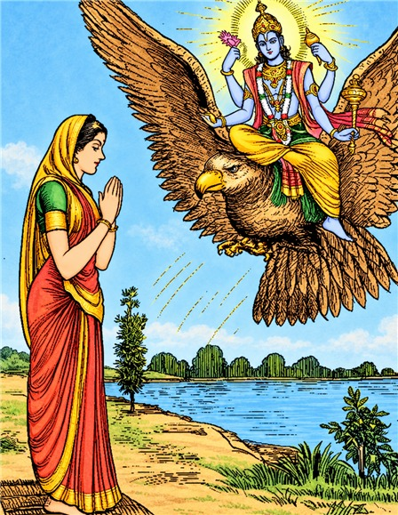
आनन्दातिरेकसे उसकी अवस्था जडवत् हो गयी है। उसे यह स्फुरित नहीं होता था कि मैं इस समय क्या करूँ और क्या कहूँ? उसके मनमें भगवान्की स्तुति करनेकी अभिलाषा हुई; किन्तु असमर्थतावश वह कुछ बोल नहीं पा रही थी। भगवान्ने उसकी मनोदशाकी ओर लक्ष्य किया और दया करके उसे दिव्य ज्ञान, दिव्य दृष्टि तथा दिव्य वाणी प्रदान की। अब वह बड़े उत्साहके साथ भगवान्की स्तुति करने लगी। उसके एक-एक वाक्यमें हृदयके प्रेम और भक्तिका स्रोत उमड़ा पड़ता था। ज्ञानपूर्ण स्तुति करते-करते सन्ध्या भगवान्के चरणोंमें गिर पड़ी। उसका शरीर तपस्यासे अत्यन्त दुर्बल हो गया था। यह देखकर भगवान्का हृदय करुणासे भर आया। उन्होंने अपनी अमृतवर्षिणी दृष्टिसे देखकर उसे पहलेकी भाँति हृष्ट-पुष्ट बना दिया और स्नेहभरे मधुर वचनोंमें कहा—‘भद्रे! मैं तुम्हारी तपस्यासे बहुत सन्तुष्ट हूँ। तुम अपनी इच्छाके अनुसार वर माँगो।’ सन्ध्याने कहा—‘भगवन्! यदि आप मुझपर प्रसन्न हैं और वर देकर मुझे अनुगृहीत करना चाहते हैं तो मैं पहला वर यही माँगती हूँ कि संसारमें पैदा होते ही किसी भी प्राणीके मनमें कामके विकारका उदय न हो। दूसरा वर मुझे यह दीजिये कि मेरा पातिव्रत कभी खण्डित न होने पाये। इसके सिवा एक तीसरे वरके लिये भी मैं प्रार्थना करती हूँ, वह यह है कि अपने भगवत्स्वरूप पतिके अतिरिक्त और कहीं भी मेरी सकाम दृष्टि न हो। जो पुरुष मेरी ओर कामभावसे देखे, वह पुरुषत्वहीन—नपुंसक हो जाय।’
भगवान्ने कहा—‘कल्याणी! शरीरकी चार अवस्थाएँ होती हैं—बाल्य, कौमार्य, यौवन और जरा। इनमेंसे दूसरी अवस्थाके अन्तमें लोगोंके अन्तःकरणमें कामभावनाका उदय होगा। तुम्हारी इस तपस्याके प्रभावसे आज मैंने यह मर्यादा स्थिर कर दी है कि कोई भी प्राणी पैदा होते ही कामभावनासे युक्त नहीं होगा। तुम्हारे सतीत्वकी प्रसिद्धि तीनों लोकोंमें होगी और तुम्हें तुम्हारे पतिके अतिरिक्त जो भी काम-दृष्टिसे देखेगा, वह नपुंसक हो जायगा। तुम्हारे पति बड़े भाग्यवान्, तपस्वी, सुन्दर तथा तुम्हारे साथ-साथ सात कल्पोंतक जीवित रहनेवाले होंगे। तुमने जो-जो वर माँगा है, वह सब मैंने दे दिया। अब तुम्हारे मनकी बात बताता हूँ, सुनो। तुमने पहले आगमें जलकर अपने इस शरीरको त्याग देनेकी प्रतिज्ञा की थी; यह प्रतिज्ञा तुम्हें इसलिये करनी पड़ी कि तुमपर किसीकी काम-दृष्टि पड़ चुकी थी और इसीसे तुम अपने इस शरीरको निर्दोष होनेपर भी त्याग देने योग्य मान चुकी हो। यहाँसे पास ही चन्द्रभागा नदी है, उसके तटपर महर्षि मेधातिथि एक ऐसा यज्ञ कर रहे हैं जो बारह वर्षोंमें पूर्ण हुआ करता है। उसी यज्ञमें जाकर तुम अपनी प्रतिज्ञा पूरी करो; किंतु वहाँ ऐसे वेषमें जाओ जिससे मुनियोंकी दृष्टि तुम्हारे ऊपर न पड़ सके। मेरी कृपासे अब तुम अग्निदेवकी पुत्री हो जाओगी। जिसे तुम अपना पति बनाना चाहती हो, उसका चिन्तन करते-करते अग्निमें ही अपने शरीरको त्याग दो।’
यों कहकर भगवान्ने अपने पवित्र कर-कमलोंद्वारा सन्ध्याके शरीरका स्पर्श किया। उनके स्पर्श करते ही सन्ध्याका शरीर पुरोडाश (यज्ञका हविष्य) बन गया। भगवान्ने ऐसा इसलिये किया कि मुनिके उस यज्ञमें जो सम्पूर्ण लोकोंके कल्याणके लिये हो रहा था, अग्निदेव मांसभोजी न हो जायँ। तदनन्तर सन्ध्या अदृश्य होकर उस यज्ञमण्डपमें जा पहुँची। उस समय उसके मनमें एक ही भावना थी—मूर्तिमान् ब्रह्मचर्यस्वरूप ब्रह्मर्षि वसिष्ठ मेरे पति हों। उन्हींका चिन्तन करते-करते सन्ध्याने अपने पुरोडाशमय शरीरको पुरोडाशके ही रूपमें अग्निदेवको समर्पित कर दिया। भगवान्की आज्ञासे अग्निदेवने सन्ध्याके शरीरको जलाकर सूर्यमण्डलमें प्रवेश करा दिया। सूर्यने उसके शरीरके दो भाग करके देवता और पितरोंकी प्रसन्नताके लिये अपने रथपर स्थापित कर दिया। उसके शरीरके ऊपरी भागका, जो दिनका प्रारम्भ अर्थात् प्रातःकाल है, नाम ‘प्रातःसन्ध्या’ हुआ और शेष भाग दिनका अन्त ‘सायंसन्ध्या’ हुआ।
इस प्रकार कुमारी सन्ध्याने, जो त्याग-तपस्याकी मूर्ति थी, अग्निमें प्रवेश करके अपने उस जीवनको समाप्त कर दिया। भगवान्के वरदानसे वही दूसरे जन्ममें अरुन्धतीके रूपमें प्रकट हो ब्रह्मर्षि वसिष्ठकी पतिव्रता-शिरोमणि धर्मपत्नी हुई। —रा० शा०
सती अरुन्धती
पतिव्रताशिरोमणि अरुन्धतीका नाम तीनों लोकोंमें विख्यात है। वे ब्रह्मर्षि वसिष्ठजीकी धर्मपत्नी हैं। इनके अनुपम पातिव्रत्यकी कहीं भी तुलना नहीं हो सकती। काम, क्रोध, लोभ, मोह, मद और मात्सर्य—ये छः दोष जो प्राणिमात्रके स्वाभाविक शत्रु हैं, अरुन्धती देवीकी ओर आँख उठाकर देख भी नहीं पाते। इनमें क्षमा, दया, करुणा, शान्ति, अहंकारशून्यता, लज्जा, विनय, विद्या, विवेक, ज्ञान-विज्ञान आदि सद्गुणोंका सहज विकास है। इनका मन राग-द्वेष तथा शत्रु-मित्र आदिकी भावनासे सर्वथा रहित है। इनका जीवन नारी-जगत्के लिये आदर्श है। इनका स्मरण तन, मन और प्राणोंको पवित्र करनेवाला है।
हम लोग मानते हैं, अरुन्धतीजी अजर-अमर हैं। रूप, गुण एवं तपस्यामें इनकी समानता करनेवाली तीनों लोकोंमें दूसरी कोई स्त्री नहीं है। इनकी आयु सात कल्पोंतककी मानी गयी है। ये सदा और सर्वत्र अपने पतिके ही साथ रहती हैं। सप्तर्षि-मण्डलमें देवीअरुन्धतीके अतिरिक्त दूसरी किसी ऋषि-पत्नीने स्थान नहीं पाया है। विवाहके अवसरपर वर और वधूको अरुन्धतीका दर्शन कराया जाता है। इसलिये कि वधूमें अरुन्धतीके गुणोंका विकास हो। उसका अखण्ड सौभाग्य बना रहे। अरुन्धतीकी उत्पत्तिके विषयमें पुराणोंमें अनेक तरहके प्रसंग मिलते हैं। कहीं तो इन्हें दक्ष प्रजापतिकी कन्या बतलाया गया है और कहीं इनकी उत्पत्ति महर्षि मेधातिथिके यज्ञमें अग्निकुण्डसे हुई बतायी गयी है। ये बाल्यकालमें भी कभी धर्मका अवरोध नहीं करती थीं। इसीसे इनका नाम अरुन्धती पड़ा।
चन्द्रभागाके तटपर महर्षि मेधातिथिका तापसारण्य नामक आश्रम था। उसीमें कुमारी अरुन्धतीका लालन-पालन हुआ। अपनी पाँच वर्षकी छोटी अवस्थामें ही इन्होंने अपने सद्गुणोंसे सम्पूर्ण तापसारण्यको पवित्र कर दिया। एक दिन अरुन्धती जब अपने पिता मेधातिथिके पास ही बालकोचित खेल-कूदमें लगी थीं, उसी समय स्वयं ब्रह्माजी उनके आश्रमपर पधारे। महर्षिने ब्रह्माजीके चरणोंमें मस्तक झुकाकर उनका विधिवत् पूजन किया और कुमारी अरुन्धतीसे भी प्रणाम करवाया। ब्रह्माजीने कन्याको आशीर्वाद दे महर्षि मेधातिथिसे कहा—‘मुने! अब अरुन्धतीको शिक्षा देनेका समय आ गया है। अतः इसे सती-साध्वी स्त्रियोंके पास रखकर शिक्षा दिलवानी चाहिये। कन्याकी शिक्षा पुरुषोंद्वारा नहीं होनी चाहिये। स्त्री ही स्त्रियोंको समुचित शिक्षा दे सकती है। तुम्हारे पास ऐसी कोई स्त्री नहीं है, जो इसे शिक्षा दे सके; इसलिये तुम अपनी कन्याको बहुला और सावित्रीके पास रख दो। तुम्हारी कन्या उनके पास रहकर शीघ्र ही परम गुणवती हो जायगी।’
मेधातिथिने ब्रह्माजीकी यह आज्ञा शिरोधार्य की और उनके चले जानेपर वे कन्याको लेकर सूर्यलोकमें गये। वहाँ उन्होंने सूर्यमण्डलमें स्थित पद्मासनपर विराजमान सावित्री देवीका दर्शन किया। उस समय बहुला मानस पर्वतपर जा रही थीं; अतः सावित्री देवी भी वहींके लिये चल पड़ीं। वहाँ जानेका कारण यह था कि प्रतिदिन सावित्री, गायत्री, बहुला, सरस्वती और द्रुपदा मानस पर्वतपर एकत्रित हो धर्म चर्चा तथा लोक-कल्याणकी कामना किया करती थीं। महर्षि मेधातिथिने उन सब माताओंको प्रणाम किया और इस प्रकार कहा—‘देवियो! यह मेरी कन्या अरुन्धती है। इसके उपदेशका समय प्राप्त हुआ है; इसीलिये इसको लेकर मैं आप लोगोंकी सेवामें आया हूँ। अब यह आपके ही पास रहेगी। आप लोग इसे ऐसी शिक्षा दें, जिससे यह साध्वी एवं सच्चरित्र बन सके। ब्रह्माजीकी ऐसी ही आज्ञा है।’ सावित्री और बहुलाने कहा—‘महर्षे! तुम्हारी कन्यापर भगवान् विष्णुकी कृपा है; अतः सच्चरित्र तो यह पहलेसे ही हो चुकी है; किंतु ब्रह्माजीकी आज्ञा होनेके कारण हम इसे अपने पास रख लेती हैं। यह यहीं रहकर शिक्षा प्राप्त करे। पूर्वजन्ममें यह ब्रह्माजीकी मानसी कन्या रह चुकी है। अब तुम्हारे तपोबलसे तथा भगवान् विष्णुकी अपार कृपासे यह तुम्हारी पुत्री हुई है। इस कन्यासे तुम्हारा और तुम्हारे कुलका तो लाभ होगा ही, समस्त संसारका भी परम कल्याण होगा।’
तत्पश्चात् मेधातिथि वहाँसे लौट आये। अरुन्धती वहीं सावित्री और बहुलाकी सेवामें रहकर शिक्षा पाने लगीं। जगन्माताओंकी सेवाका सुदुर्लभ अवसर पाकर अरुन्धती अपना अहोभाग्य मानती थीं। इस प्रकार पूरे सात वर्ष बीत गये। स्त्री-धर्मकी शिक्षा पाकर अरुन्धती सावित्री और बहुलासे भी श्रेष्ठ हो गयीं।
तदनन्तर एक दिन देवी सावित्रीके यह प्रार्थना करनेपर कि ‘अरुन्धतीके विवाहके लिये यही उपयुक्त अवसर है।’ ब्रह्माजी भगवान् विष्णु तथा शंकरजीको साथ लेकर महर्षि वसिष्ठके आश्रमकी ओर चले। नारदजी महर्षि मेधातिथिको बुला लाये। ब्रह्माजी आदिकी आज्ञा लेकर मेधातिथिने अपनी कन्याको आगे करके उन सब देवताओंके साथ प्रस्थान किया। महर्षि वसिष्ठ मानस पर्वतकी कन्दरामें समाधि लगाये बैठे थे। उनके मुख-मण्डलसे सूर्यकी भाँति प्रकाशकी किरणें निकल रही थीं। जब समाधि खुली तो मेधातिथिने निवेदन किया—‘भगवन्! यह मेरी कुमारी कन्या है। इसने अबतक विधिपूर्वक ब्रह्मचर्यका पालन किया है। आप इसे ब्राह्मविवाहकी विधिसे ग्रहण कीजिये। आप जहाँ-जहाँ जिस रूपमें भी रहेंगे, यह छायाकी भाँति आपके पीछे-पीछे चलेगी और सब प्रकारसे आपकी सेवा करेगी।’ महर्षि मेधातिथिकी यह प्रार्थना सुनकर वसिष्ठजीने देखा—ब्रह्मा, विष्णु और महादेवजी आदि सब देवता उपस्थित हैं। उन्होंने तपोबलसे भावी बातोंको जान लिया और अरुन्धतीका पाणिग्रहण किया। अरुन्धतीकी आँखें उनके चरणोंमें जा लगीं। तदनन्तर सब देवताओंने मिलकर विवाहोत्सवका कार्य सम्पन्न किया। देवताओंने विविध दुर्लभ सामग्रियाँ और दिव्यगुण एवं मंगलमय आशीर्वाद दिये। विवाहके अवसरपर ब्रह्मा, विष्णु आदिके द्वारा अभिषेक कराते समय जो जलकी धाराएँ गिरी थीं, वे ही गोमती, सरयू, क्षिप्रा और महानदी आदि सात नदियोंके रूपमें परिणत हो गयीं। उनके दर्शन, स्पर्श, स्नान और जलपानसे समस्त संसारका कल्याण होता है। विवाहके बाद महर्षि वसिष्ठजी अपनी धर्मपत्नीके साथ ब्रह्माजीके दिये हुए विमानमें बैठकर इच्छानुसार देवभूमियोंमें विचरण करते फिरे। तत्पश्चात् हिमालयपर्वतकी तलैटीमें आश्रम बनाकर दोनों दम्पति दीर्घकालतक तपस्या करते रहे। इसी आश्रमपर महाराज दिलीपने अपनी रानी सुदक्षिणाके साथ रहकर कामधेनुपुत्री नन्दिनीका सेवन किया था।
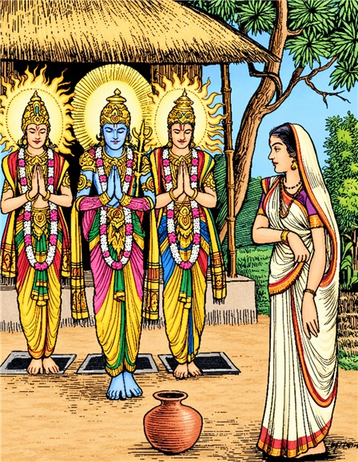
एक बार अग्निदेवकी पत्नी स्वाहा अरुन्धतीका रूप धारण करने लगी, तो उसे सफलता न मिली। उसने लाख चेष्टा की, किंतु वह रूप धारण करना उसके लिये असम्भव हो गया। यह देख स्वाहा अरुन्धतीके पास गयी और हाथ जोड़कर सब बातें कह सुनायी। फिर क्षमा माँगते हुए उसने कहा—‘सतीशिरोमणि अरुन्धती! आप धन्य हैं। एकमात्र आप ही पातिव्रत्यधर्मका ठीक-ठीक पालन करनेवाली हैं। आप-जैसी दूसरी सती अबतक मेरे देखनेमें नहीं आयी। जो कन्याएँ विवाहके समय पूर्णतया एकाग्रचित्त हो ब्राह्मण और अग्निके समक्ष पतिका हाथ पकड़ते समय आपका स्मरण करेंगी, उन्हें सुख, धन, अखण्ड सौभाग्य तथा पुत्रकी प्राप्ति होगी। मैंने आपके रूपको धारण करनेका जो असफल दुःसाहस किया है, उसके लिये आप क्षमा करें।’
एक बार स्त्रियोंके पातिव्रत्य धर्मकी जिज्ञासासे सूर्य, इन्द्र और अग्नि तीनों देवता अरुन्धतीके पास गये। उस समय वे घड़ेमें जल लानेके लिये जा रही थीं। देवताओंको देखकर अरुन्धतीने अपना घड़ा एक किनारे शुद्ध भूमिपर रख दिया और तीनों देवताओंकी परिक्रमा करके उन्हें प्रणाम किया; फिर पूछा, ‘आप लोग किस कार्यसे यहाँ पधारे हैं, कृपा करके बतलावें।’ देवता बोले—‘हमारे मनमें एक प्रश्न उठा है, जिसका निर्णय करानेके लिये हम आपके पास आये हैं।’ अरुन्धती बोलीं—‘आप थोड़ी देर यहाँ आश्रमपर विश्राम करें, तबतक मैं यह घड़ा भरके लाती हूँ। उसके बाद आपका प्रश्न सुनूँगी और यथाशक्ति उत्तर भी दूँगी।’ तब सूर्य आदि देवताओंने कहा, ‘देवि! हम अपने प्रभावसे इस घड़ेको भर देते हैं।’ सूर्यदेवने सारी शक्ति लगा दी किंतु वे घड़ेको एक चौथाईसे अधिक न भर सके। इन्द्र और अग्निने भी सम्पूर्ण शक्ति लगाकर केवल एक-एक चौथाई भाग भरा। इस प्रकार घडे़का तीन भाग भर गया। बाकी चतुर्थ भाग वे तीनों मिलकर भी न भर सके। तब अरुन्धतीने सती धर्मका वर्णन किया और उसकी महिमासे घड़ेका चौथा भाग स्वयं भर दिया। देवताओंको अपने प्रश्नका उत्तर मिल गया और वे अरुन्धतीके चरणोंमें मस्तक झुकाकर अपने-अपने लोकको चले गये।
अरुन्धतीकी महिमाँका वर्णन सर्वत्र मिलता है, भारतवर्षके विभिन्न भागोंमें वसिष्ठ और अरुन्धतीके आश्रम हैं। वसिष्ठजी सूर्यवंशी राजाओंके एकमात्र गुरु रहे हैं; अतः अयोध्यामें भी इनका आश्रम है। अरुन्धतीजीने अपने पतिके साथ अयोध्यापुरीको भी दीर्घकालतक सुशोभित किया है। सीता-जैसी सतीशिरोमणिने जिनके चरणोंकी वन्दना की है, उन अरुन्धती देवीके सौभाग्यकी सराहना कौन नहीं करेगा। आज भी वे सप्तर्षि-मण्डलमें रहकर अपने पातिव्रत्यके तेजसे प्रकाशित हो रही हैं। —रा० शा०
••••
ब्रह्मवादिनी घोषा
घोषा काक्षीवान् ऋषिकी कन्या थी। इनको कोढ़का रोग हो पाया था, इसीसे योग्य वयमें इनका विवाह नहीं हो गया। अश्विनीकुमारोंकी कृपासे इनका रोग नष्ट हुआ, तब इनका विवाह हुआ। ये बहुत प्रसिद्ध विदुषी और ब्रह्मवादिनी हो गयी हैं। इन्होंने स्वयं ब्रह्मचारिणीके रूपमें ही ब्रह्मचारिणी कन्याके समस्त कर्तव्योंका उल्लेख दो सूक्तोंमें किया है। इन्होंने कहा है—‘हे अश्विनीकुमारो! आपके अनुग्रहसे आज घोषा परम सौभाग्यवती हुई है। आपके आशीर्वादसे घोषाके स्वामीके भलेके लिये आकाशसे प्रचुर वर्षा हो जिससे खेत लहलहा उठें। आपकी कृपादृष्टि घोषाके भावी पतिको शत्रुकी हिंसासे रक्षा करे। यौवन-सुन्दर पतिको पाकर घोषाका यौवन चिरकाल अक्षुण्ण बना रहे।’
‘हे अश्विनीकुमारो! पिता जैसे सन्तानको शिक्षा देते हैं, वैसे ही आप भी मुझको सत्-शिक्षा दें। मैं ज्ञान-बुद्धिहीन नारी हूँ। आपका आशीर्वाद मुझको दुर्गतिसे बचावे। आपके आशीर्वादसे मेरे पुत्र-पौत्र-प्रपौत्रादि सुप्रतिष्ठित होकर जीवन-यापन करें। पतिगृहमें मैं पतिकी प्रियपात्री बनूँ।’
ब्रह्मवादिनी विश्ववारा
‘प्रज्वलित अग्नि तेजका विस्तार करके द्युलोकतकको प्रकाशित करते हैं। अग्नि प्रातः एवं सायं (हवनके समय) अत्यन्त सुशोभित होते हैं। देवार्चनमें निमग्न वृद्धपुरुष तथा विद्वान् अतिथियोंका हविष्यान्नसे स्वागत करनेवाली स्त्रियाँ उस अग्निके समान ही सुशोभित हैं।’
‘अग्नि! आप प्रकाशमान होनेसे जलके स्वामी हो। जिस यजमानके पास आप जाते हो, वह समस्त पशु आदि धन प्राप्त करता है। हम आपके योग्य आतिथ्यसूचक हवि प्रस्तुत करके आपके समीप (हवनकुण्डके पास) रखती हैं। जो स्त्री श्रद्धा-विश्वासपूर्वक आपको प्रणाम करती है, वह ऐश्वर्यकी स्वामिनी होती है। उसका अन्तःकरण पवित्र होता है। उसका मन स्थिर होता है। उसकी इन्द्रियाँ वशमें रहती हैं।’
‘अग्नि! महासौभाग्यकी प्राप्तिके लिये आप बलवान् बनो—प्रज्वलित हो! आपके द्वारा प्राप्त धन-परोपकार उत्तम हो! हम स्त्रियोंके दाम्पत्यभावको सुदृढ़ करो! हम स्त्रियोंके शत्रु दुष्कर्म, कुचेष्टा, लोभादिपर आपका आक्रमण हो।’
‘हे दीप्तिमान्! मैं तुम्हारे प्रकाशकी वन्दना करती हूँ। तुम यज्ञके लिये प्रज्वलित हो। हे प्रकाशराशि! भक्तवृन्द तुम्हारा आह्वान करते हैं। यज्ञक्षेत्रमें तुम सभी देवताओंको प्रसन्न करो।’
‘यज्ञमें हव्यवाहक अग्निकी रक्षा करो! अग्निकी सेवा करो और देवताओंको हव्य पहुँचानेके लिये अग्निका वरण करो।’
ऋग्वेदके पाँचवें मण्डलके द्वितीय अनुवाक्के अट्ठाईसवें सूत्र षट्ऋकोंका यह भावार्थ है। अत्रि महर्षिके वंशमें उत्पन्न विदुषी विश्ववारा इन मन्त्रोंकी द्रष्टा ऋषि हैं। अपनी तपस्यासे उन्होंने इस ऋषिपदको प्राप्त किया था।
इन मन्त्रोंमें बताया गया है कि स्त्रियोंको सावधानीपूर्वक अतिथि-सत्कार करना चाहिये। यज्ञके लिये हविष्य तथा सामग्रियोंको प्रस्तुत करके अपने अग्निहोत्री पतिके समीप पहुँचाना चाहिये। अग्निकी वन्दना करनी चाहिये। अग्निकी स्तुति करनी चाहिये और पतिके प्राजापत्य अग्निकी सावधानीपूर्वक रक्षा भी पत्नीको ही करनी चाहिये। [पहले प्रत्येक द्विजातिके गृहमें हवनकुण्डके अग्निकी सावधानीसे रक्षा होती थी। प्रत्येक पुरुषके हवनकुण्ड पृथक् होते थे। इनकी अग्निका बुझना भयंकर अमंगल माना जाता था] इन मन्त्रोंसे जान पड़ता है कि ये अग्निकी ही उपासिका थीं। —सु० सिं०
••••
ब्रह्मवादिनी अपाला
विश्ववाराकी भाँति अपाला भी अत्रिमुनिके वंशमें ही उत्पन्न हुई थीं। कहते हैं कि अपालाको कुष्ठ हो गया था, इससे उनके पतिने उन्हें घरसे निकाल दिया था। वे अपने पीहरमें बहुत दुखी रहती थीं। उन्होंने कुष्ठरोगसे मुक्त होनेके लिये इन्द्रकी आराधना की और एक बार इन्द्रको अपने घर बुलाकर उन्हें सोमपान करवाया और इन्द्रदेवको प्रसन्न किया। इन्द्रके वरदानसे अपालाके पिताके सिरके उड़े हुए केश फिर आ गये, उनके खेत हरे-भरे हो गये और अपालाका कोढ़ मिट गया। वे ब्रह्मवादिनी थीं। ऋग्वेदके अष्टम मण्डलके ९१ वें सूक्तकी १ से ७ तक ऋचाएँ इन्हींकी संकलित हैं।
सती तपती
‘सुन्दरी, तुम कौन हो? देव, दैत्य, गन्धर्व एवं नागलोकमें भी ऐसा अपूर्व सौन्दर्य सुननेमें नहीं आता। मर्त्यलोकमें उसे देखकर मैं आश्चर्यमें पड़ गया हूँ। तुम्हारे शरीरपर यद्यपि दिव्यरत्नालंकार हैं, परंतु वे तो तुम्हारी ही कान्तिसे भूषित हैं। मैं महाराज पौरवका पुत्र हूँ। विश्वमें किसी नारीने अबतक मुझे आकृष्ट नहीं किया है। मैं तुम्हारा परिचय पानेको उत्सुक हूँ, तुम्हारे मधुर वचनोंको सुननेको आतुर हूँ। मुझपर कृपा करो और अपना परिचय दो।’ अयोध्याधीश महाराज संवरण वनमें आखेटको निकले थे। उनके तीव्रगामी अश्वने उन्हें परिचरोंसे पृथक् कर दिया था और एकान्त अरण्यमें एक दिव्य सौन्दर्यमयीको देखकर वे मुग्ध हो गये थे। महाराजको प्रश्न करके अपनी ओर आते देख वह दिव्या सहसा अन्तर्हित हो गयी।
सबलोंके आवेश भी सबल होते हैं। हम अल्पप्राणोंके लिये उसकी कल्पना भी कठिन जान पड़ती है। उस दिव्यनारीके अन्तर्हित होते ही महाराज संवरण भूमिपर गिर पड़े। मुकुट पृथक् हो गया। केश बिखर गये और लम्बी श्वासें लेने लगे। उनकी यह दशा देख वह दिव्य कन्या पुनः प्रकट हुई। उसने बड़े मधुर स्वरमें कहा—‘राजन्! उठो। सर्वेश तुम्हारा मंगल करें। पृथ्वीके सर्वश्रेष्ठ राजाके लिये इस प्रकार अधीर होना शोभा नहीं देता।’
‘मैं जगत्को आलोकित करनेवाले भगवान् आदित्यकी पुत्री तथा सावित्रीकी छोटी बहिन तपती हूँ।’ दिव्याने अपना परिचय दिया। ‘मैं स्वतन्त्र नहीं। मुझपर मेरे पिताका अधिकार है। इसीसे तुम्हारे निकट आनेमें मैंने संकोच किया था। तुम्हारा यश, कुलीनता तथा सद्गुुण विश्वमें प्रख्यात है। ऐसे पुरुषको पतिरूपमें पानेमें प्रत्येक नारी अपना भाग्य मानेगी। तुम तप एवं प्रार्थनाके द्वारा मेरे लोकपूजित पिताको प्रसन्न करके उन्हींसे मेरी याचना करो।’ महाराजको सेवकोंसे पृथक् हुए देर हो गयी थी। वे उन्हें अन्वेषण करते हुए समीप आ गये थे। तपती पुनः अदृश्य हो गयी।
थोड़ी देरमें महाराज सावधान हुए। उन्होंने इधर-उधर देखा। तपतीके वाक्योंका स्मरण किया और कर्तव्यका निश्चय किया। सभी सेवकोंको उन्होंने वहाँसे विदा कर दिया। समीपकी सरितामें स्नान किया। आचमन करके भगवान् आदित्यको उन्होंने अर्घ्य दिया और तब दोनों हाथोंकी अंजलि बनाकर वे भगवान् भुवनभास्करके मन्त्रका जप करते हुए खड़े हो गये। मन-ही-मन उन्होंने अपने कुलगुरु महर्षि वसिष्ठका स्मरण किया।
सेवक राजधानी लौट आये। उन्होंने महाराजकी स्थिति-समाचार राज्यगुरु महर्षि वसिष्ठको दिया और सूचित कर दिया कि महाराजने उन्हें लौटा दिया है। उधर महाराजके स्मरणका प्रभाव भी महर्षि अनुभव कर रहे थे। उन्होंने ध्यान किया। सभी बातें स्पष्ट हो गयीं। प्रजा एवं मन्त्रियोंको आश्वासन देकर तथा राज्य-प्रबन्धको व्यवस्थित रखनेके लिये समझाकर आप वनमें संवरणके समीप पहुँचे। महाराजने गुरुकी वन्दना की। महर्षिने उन्हें आश्वासन दिया और योगबलसे वे आकाशमार्गसे सीधे सूर्यलोककी ओर प्रस्थित हुए।
‘मैं भगवान् ब्रह्माँका पुत्र हूँ और मेरा नाम वसिष्ठ है।’ अरुण रथको वेगपूर्वक हाँके जा रहे थे। मुनिगण स्तुति कर रहे थे। पीछेसे नाग और राक्षस रथको वेग दे रहेथे। सातों अश्व समान वेगसे निश्चित मार्गपर बढ़े जा रहे थे। महर्षि उसी गतिसे रथको दक्षिण करके जा पहुँचे।
‘मैं धन्य हुआ!’ बड़ी शीघ्रतासे भगवान् सूर्य उठ खड़े हुए। उन्होंने महर्षिको साष्टांग प्रणिपात किया। अपने रथमें आसन देकर पाद-प्रक्षालित करके चरणोदक लिया। पूजाके पश्चात् पादपीठके समीप करबद्ध बैठकर उन्होंने प्रार्थना की। ‘आपका यहाँ पधारना मंगलमय हो। मुझे आदेश दें। मैं आपकी आज्ञाको शिरसः स्वीकार करूँगा।’
‘आप जानते ही हैं कि पृथ्वीपर अयोध्यानरेश महाराज संवरण धराके सर्वश्रेष्ठ नरेश हैं। वे शूर, संयमी और प्रजावत्सल हैं। वे आपके अनन्य उपासक हैं और सदा विधिपूर्वक आपकी ही शुद्ध हृदयसे अर्चना करते हैं। आज बारह दिन तथा इतनी ही रात्रियाँ एक स्थानपर स्थिर खड़े रहकर आपकी प्रार्थना करते हुए उन्होंने व्यतीत कर दी हैं। उनकी आराधना अविराम चल रही है।’ महर्षिने बड़े मधुर शब्दोंमें सूचित किया। ‘मैं अपने उन्हीं यजमानके लिये आपसे आपकी छोटी पुत्री सावित्रीकी छोटी बहिन तपतीकी याचना करने आया हूँ।’
‘संवरण राजाओंमें सर्वश्रेष्ठ हैं और मेरे प्रिय भक्त हैं।’ सूर्यनारायणने कहा—‘तपती भी अनुरूप वर न मिलनेसे बड़ी हो गयी है और देव-गन्धर्वादिमें उसके उपयुक्त पात्र न देखकर मैं उसे स्वयं संवरणको देना चाहता था। सब प्रकार यह अनुरूप सम्बन्ध है। मैं अत्यन्त प्रसन्न हूँ। आप मेरी इस कन्याको ले जायँ।’ महर्षि वसिष्ठने तपतीको साथ लिया और गगनमार्गसे वे सीधे संवरणके समीप उसी पर्वतपर पहुँचे।
अग्नि प्रज्वलित की गयी। गुरुदेवने वहीं विधिपूर्वक संवरण-तपतीका विवाह कराया और वहाँसे यजमान दम्पतिको लेकर राजधानी पहुँचे। इसी तपतीके पुत्र कुरु हुए जिनसे कुरुकुल प्रतिष्ठित हुआ। —सु० सिं०
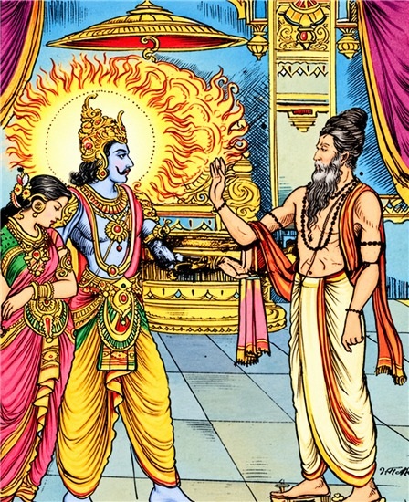
ब्रह्मवादिनी वाक्
वाक् अभृण ऋषिकी कन्या थीं। यह प्रसिद्ध ब्रह्मज्ञानिनी थीं और इन्होंने भगवती देवीके साथ अभिन्नता प्राप्त कर ली थी। ऋग्वेदसंहिताके दशम मण्डलके १२५ वें सूक्तमें देवीसूक्तके नामसे जो आठ मन्त्र हैं, वे इन्हींके रचे हुए हैं। चण्डीपाठके साथ इन आठ मन्त्रोंके पाठका बड़ा माहात्म्य माना जाता है। इन मन्त्रोंमें स्पष्टतया अद्वैतवादका सिद्धान्त प्रतिपादित है। मन्त्रोंका यह अर्थ है—
मैं सच्चिदानन्दमयी सर्वात्मा देवी रुद्र, वसु, आदित्य तथा विश्वेदेव गणोंके रूपमें विचरती हूँ। मैं ही मित्र और वरुण दोनोंको, इन्द्र और अग्निको तथा दोनों अश्विनीकुमारोंको धारण करती हूँ।
मैं ही शत्रुओंके नाशक आकाशचारी देवता सोमको, त्वष्टा प्रजापतिको तथा पूषा और भगको भी धारण करती हूँ। जो हविष्यसे सम्पन्न हो देवताओंको उत्तम हविष्यकी प्राप्ति कराता है, तथा उन्हें सोमरसके द्वारा तृप्त करता है, उस यजमानके लिये मैं ही उत्तम यज्ञका फल और धन प्रदान करती हूँ।
मैं सम्पूर्ण जगत्की अधीश्वरी, अपने उपासकोंको धनकी प्राप्ति करानेवाली, साक्षात्कार करनेयोग्य परब्रह्मको अपनेसे अभिन्नरूपमें जाननेवाली तथा पूजनीय देवताओंमें प्रधान हूँ। मैं प्रपंचरूपसे अनेकों भावोंमें स्थित हूँ। सम्पूर्ण भूतप्राणियोंमें मेरा प्रवेश है। अनेक स्थानोंमें रहनेवाले देवता जहाँ कहीं जो कुछ भी करते हैं, सब मेरे लिये ही करते हैं।
जो अन्न खाता है, वह मेरी ही शक्तिसे खाता है; इसी प्रकार जो देखता है, जो साँस लेता है तथा जो कही हुई बात सुनता है, वह मेरी ही सहायतासे उक्त सब कर्म करनेमें समर्थ होता है। जो मुझे इस रूपमें नहीं जानते, वे न जाननेके कारण ही हीन दशाको प्राप्त होते जाते हैं। हे बहुश्रुत! मैं तुम्हें श्रद्धासे प्राप्त होनेवाले ब्रह्मतत्त्वका उपदेश करती हूँ, सुनो—
मैं स्वयं ही देवताओं और मनुष्योंके द्वारा सेवित इस दुर्लभ तत्त्वका वर्णन करती हूँ। मैं जिस-जिस पुरुषकी रक्षा करना चाहती हूँ, उस-उसको सबकी अपेक्षा अधिक शक्तिशाली बना देती हूँ। उसीको सृष्टिकर्ता ब्रह्मा, परोक्षज्ञान-सम्पन्न ऋषि तथा उत्तम मेधाशक्तिसे युक्त बनाती हूँ।
मैं ही ब्रह्मद्वेषी हिंसक असुरोंका वध करके रुद्रके धनुषको चढ़ाती हूँ। मैं ही शरणागत जनोंकी रक्षाके लिये शत्रुओंसे युद्ध करती हूँ तथा अन्तर्यामीरूपसे पृथ्वी और आकाशके भीतर व्याप्त रहती हूँ।
मैं ही इस जगत्के पितारूप आकाशको सर्वाधिष्ठान-स्वरूप परमात्माके ऊपर उत्पन्न करती हूँ। समुद्रमें तथा जलमें मेरे कारण (कारणस्वरूप चैतन्य ब्रह्म)-की स्थिति है। अतएव मैं समस्त भुवनमें व्याप्त रहती हूँ तथा उस स्वर्गलोकका भी अपने शरीरसे स्पर्श करती हूँ।
मैं कारणरूपसे जब समस्त विश्वकी रचना आरम्भ करती हूँ, तब दूसरोंकी प्रेरणाके बिना स्वयं ही वायुकी भाँति चलती हूँ, स्वेच्छासे ही कर्ममें प्रवृत्त होती हूँ। मैं पृथ्वी और आकाश दोनोंसे परे हूँ। अपनी महिमासे ही मैं ऐसी हुई हूँ।
ब्रह्मवादिनी सूर्या
ऋग्वेदके दशम मण्डलके ८५ वें सूक्तकी ४७ ऋचाएँ इनकी हैं। यह सूक्त विवाह-सम्बन्धी है। आरम्भकी ऋचाओंमें चन्द्रमाके साथ सूर्यकन्या सूर्याके विवाहका वर्णन है। हिंदू वेद-शास्त्रोंमें जितने आख्यान हैं, उन सबके आध्यात्मिक, आधिदैविक और आधिभौतिक तीनों अर्थ होते हैं। वेदकी ऋचाओंके भी तीन अर्थ हैं; परंतु वे केवल आध्यात्मिक अर्थरूप ही हैं; इतिहास नहीं है, ऐसी बात नहीं है। चन्द्रमाके साथ सूर्याके विवाहका आध्यात्मिक अर्थ भी है और उसका ऐतिहासिक तथ्य भी है। जहाँ चन्द्र और सूर्यको नक्षत्ररूपमें ग्रहण किया गया है, वहाँ आलंकारिक भाषामें आध्यात्मिक वर्णन है और जहाँ उनके अधिष्ठात्री देवताके रूपमें लिया गया है, वहाँ प्रत्यक्ष ही वैसा व्यवहार हुआ है।
सूर्या जब विदा होकर पतिके साथ चली तब उसके बैठनेका रथ मनके वेगके समान था। रथपर सुन्दर चँदोवा तना था और दो सफेद बैल जुते थे। सूर्याको दहेजमें पिताने गौ, स्वर्ण, वस्त्र आदि पदार्थ दिये थे। सूर्याके बड़े ही सुन्दर उपदेश हैं—
हे बहू! इस पति-गृहमें ऐसी वस्तुओंकी वृद्धि हो, जो प्रजाको और साथ ही तुझको भी प्रिय हों। इस घरमें गृहस्वामिनी बननेके लिये तू जाग्रत् हो। इस पतिके साथ अपने शरीरका संसर्ग कर और जानने-पहचानने योग्य परमात्माको ध्यानमें रखते हुए दोनों स्त्री-पुरुष वृद्धावस्थातक मिलते और बातचीत करते रहें। हे बहू! तू मैले कपड़ोंको फेंक दे; वेद पढ़नेवाले पुरुषोंको दान कर। गंदी रहने, गंदे कपड़े पहनने, प्रतिदिन स्नान न करनेसे और आलस्यमें रहनेसे भाँति-भाँतिके रोग हो जाते हैं और पत्नीकी मलिनता पतिमें भी पहुँच जाती है। इसलिये पतिका कल्याण चाहनेवाली स्त्रीको स्वच्छ रहना उचित है। मैलेपनसे होनेवाले रोगसे शरीर कुरूप हो जाता है। शरीरकी कान्ति नष्ट हो जाती है। और जो पति ऐसी पत्नीके वस्त्र पहनता है उसका शरीर भी शोभाहीन और रोगी हो जाता है।
हे बहू! सौभाग्यके लिये ही मैं तेरा पाणिग्रहण करता हूँ। पतिरूप मेरे साथ ही तू बूढ़ी होना।
हे परमात्माँ! आप इस वधूको सुपुत्रवती और सौभाग्यवती बनावें। इसके गर्भसे दस पुत्र उत्पन्न करें और ग्यारहवाँ पति हो। हे वधू! तू अपने अच्छे व्यवहारसे श्वशुरकी सम्राज्ञी हो, सासकी सम्राज्ञी हो, ननदोंकी सम्राज्ञी हो और देवरोंकी सम्राज्ञी हो। अर्थात् अपने सुन्दर बर्तावसे और सेवासे सबको अपने वशमें कर ले।
सम्राज्ञी श्वशुरे भव सम्राज्ञी श्वश्रवा भव।
नान्दरि सम्राज्ञी भव सम्राज्ञी अधि देवृषु॥
ब्रह्मवादिनी रोमशा
रोमशा बृहस्पतिजीकी पुत्री थीं और भावभव्यकी धर्मपत्नी। इन्होंने ऋग्वेदसंहिताके प्रथम मण्डलके १२६वें सूक्तकी सात ऋचाओंका संकलन किया है। कहते हैं कि इनके सारे शरीरमें रोमावली थी, इससे इनके पति इन्हें नहीं चाहते थे। यह भी कहते हैं कि जिन-जिन बातोंसे स्त्रियोंकी बुद्धिका विकास होता है, उन्हींका प्रचार करती थीं; इसीलिये ये रोमशा नामसे प्रसिद्ध हुईं। वेद और शास्त्रोंकी अनेक शाखाएँ ही इनके शरीरके रोम हैं और वे इसका प्रचार करती थीं, इसीसे रोमशा कहलायीं।
वाचक्नवी गार्गी
वैदिक साहित्यके जगत्में ब्रह्मवादिनी विदुुषी गार्गीका नाम बहुत प्रसिद्ध है। इनके पिताका नाम वचक्नु था, उनकी पुत्री होनेके कारण इनका नाम ‘वाचक्नवी’ पड़ गया। किंतु असली नाम क्या था, इसका वर्णन नहीं मिलता। गर्ग गोत्रमें उत्पन्न होनेसे ही लोग इन्हें ‘गार्गी’ कहते थे और इनका ‘गार्गी’ नाम ही जन-साधारणमें अधिक प्रचलित था। बृहदारण्यकोपनिषद् में इनके शास्त्रार्थका प्रसंग इस प्रकार वर्णित है। विदेह देशके राजा जनकने एक बहुत बड़ा यज्ञ किया। उसमें कुरु और पांचाल देशतकके विद्वान् ब्राह्मण एकत्रित हुए थे। राजा जनक बड़े विद्या-व्यसनी और सत्संगी थे। उन्हें शास्त्रके गूढ़ तत्त्वोंका विवेचन और परमार्थ-चर्चा अधिक प्रिय थी। इसलिये उनके मनमें यह जाननेकी इच्छा हुई कि यहाँ आये हुए विद्वान् ब्राह्मणोंमें सबसे बढ़कर तात्त्विक विवेचन करनेवाला कौन है? इस परीक्षाके लिये उन्होंने अपनी गोशालामें एक हजार गौएँ बँधवा दीं। उनमेंसे प्रत्येकके सींगोंमें दस-दस पाद सुवर्ण बँधे हुए थे। यह व्यवस्था करके राजाने ब्राह्मणोंसे कहा—‘आपलोगोंमें जो सबसे बढ़कर ब्रह्मवेत्ता हो, वह इन सभी गौओंको ले जाय।’ राजाकी यह घोषणा सुनकर किसी भी ब्राह्मणमें यह साहस नहीं हुआ कि उन गौओंको ले जाय। सबको अपने ब्रह्मवेत्तापनमें संदेह हुआ। सब सोचने लगे कि ‘यदि हम गौएँ ले जानेको आगे बढ़ते हैं तो ये सभी ब्राह्मण हमें अभिमानी समझेंगे और शास्त्रार्थ करने लगेंगे, उस समय हम इन सबको जीत सकेंगे या नहीं; इसका क्या निश्चय है!’ यह विचार करते हुए सब चुपचाप ही रहे। सबको मौन देखकर याज्ञवल्क्यजीने अपने ब्रह्मचारीसे, जो सामवेदका अध्ययन करनेवाला था, कहा, ‘सोम्य! तू इन सब गौओंको हाँक ले चल।’ ब्रह्मचारीने वैसा ही किया।
यह देख ब्राह्मणलोग क्षुब्ध हो उठे। विदेहराजका होता अश्वल याज्ञवल्क्यसे पूछ बैठा—‘क्यों? तुम्हीं हम सबमें बढ़कर ब्रह्मवेत्ता हो?’ याज्ञवल्क्यने नम्रतासे कहा—‘नहीं, ब्रह्मवेत्ताओंको तो हम नमस्कार करते हैं, हमें केवल गौओंकी आवश्यकता है, अतः ले जाते हैं।’ फिर क्या था, शास्त्रार्थ आरम्भ हो गया। यज्ञका प्रत्येक सदस्य याज्ञवल्क्यसे प्रश्न पूछने लगा। याज्ञवल्क्य इससे विचलित नहीं हुए। उन्होंने धैर्यपूर्वक सबके प्रश्नोंका उत्तर क्रमशः देना आरम्भ किया। अश्वलने चुन-चुनकर कितने ही प्रश्न किये, किंतु उचित उत्तर पा जानेके कारण चुप होकर बैठ गये। तब जरत्कारु गोत्रमें उत्पन्न आर्तभागने प्रश्न किया; उनको यथार्थ उत्तर मिल गया; अतः वे भी मौन हो गये। फिर क्रमशः लाह्यायनि, भुज्यु, चाक्रायण, उषस्त और कौषीतकेय कहोल प्रश्न करके चुप बैठ गये। इसके बाद वाचक्नवी गार्गी बोलीं।
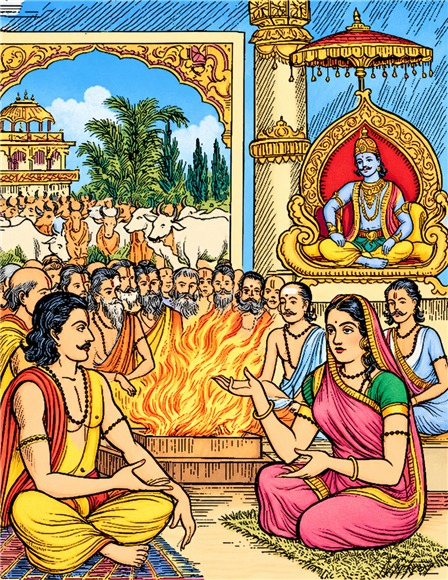
उन्होंने पूछा—‘भगवन्! यह जो कुछ पार्थिव पदार्थ है, वह सब जलमें ओत-प्रोत है, किंतु जल किसमें ओत-प्रोत है?’ ‘जल वायुमें ओतप्रोत है’ याज्ञवल्क्यने उत्तर दिया।
इस प्रकार क्रमशः वायु, आकाश, अन्तरिक्ष गन्धर्व-लोक, आदित्यलोक, चन्द्रलोक, नक्षत्रलोक, देवलोक, इन्द्रलोक और प्रजापतिलोकके सम्बन्धमें प्रश्नोत्तर होनेपर जब गार्गीने पूछा कि ‘ब्रह्मलोक किसमें ओतप्रोत है?’ तब याज्ञवल्क्यने कहा—‘यह तो अति प्रश्न है। गार्गी! यह उत्तरकी सीमा है, अब इसके आगे प्रश्न नहीं हो सकता। अब तू प्रश्न न कर, नहीं तो तेरा मस्तक गिर जायगा।’ वाचक्नवी विदुषी थी, उसने याज्ञवल्क्यके अभिप्रायको समझ लिया और चुप हो रही। तदनन्तर और कई विद्वानोंने प्रश्नोत्तर किये। उसके बाद गार्गीने दो प्रश्न और किये। इन प्रश्नोंके उत्तरमें याज्ञवल्क्यने अक्षरतत्त्वका, जिसे परब्रह्म परमात्मा कहते हैं, भलीभाँति निरूपण किया। गार्गी याज्ञवल्क्यका लोहा मान गयी। उसने निर्णय कर दिया कि इस सभामें याज्ञवल्क्यसे बढ़कर ब्रह्मवेत्ता कोई नहीं है; इनको कोई पराजित नहीं कर सकता। ब्राह्मणो! आप लोग इसीको बहुत समझें कि याज्ञवल्क्यको नमस्कार करनेमात्रसे आपका छुटकारा हो जा रहा है। इन्हें पराजित करनेका स्वप्न देखना व्यर्थ है।
गार्गीके प्रश्नोंको पढ़कर उनके गम्भीर अध्ययनका पता लगता है; इतनेपर भी उनके मनमें अपने पक्षको अनुचितरूपसे सिद्ध करनेका दुराग्रह नहीं था। वे विद्वत्तापूर्ण उत्तर पाकर संतुष्ट हो गयीं और दूसरेकी विद्वत्ताकी उन्होंने मुक्तकण्ठसे प्रशंसा की। गार्गी भारतवर्षकी स्त्रियोंमें रत्न थीं। आज भी उनकी-जैसी विदुषी एवं तपस्विनी कुमारियोंपर इस देशको गर्व है। —रा० शा०
••••
ब्रह्मवादिनी शश्वती
ब्रह्मवादिनी रोमशाकी भाँति शश्वती भी वेदकी एक ऋचाकी ऋषिका हैं। ये अंगिरा ऋषिकी कन्या और आसंग राजाकी पत्नी थीं। ऋग्वेदके अष्टम मण्डलके प्रथम सूक्तकी ३४ वीं ऋचाका संकलन इनके द्वारा हुआ है। इनकी ऋचामें बहुत ही उत्तम तथा गूढ़ उपदेश भरा है।
मैत्रेयी
महर्षि याज्ञवल्क्यकी दो स्त्रियाँ थीं मैत्रेयी और कात्यायनी। इनमें मैत्रेयी ब्रह्मवादिनी थीं, किंतु कात्यायनीकी बुद्धि साधारण स्त्रियोंकी-सी ही थी। मैत्रेयी ज्येष्ठ पत्नी थीं और कात्यायनी छोटी। एक दिन याज्ञवल्क्यने अपनी दोनों पत्नियोंको अपने पास बुलाया और मैत्रेयीको सम्बोधित करके कहा—‘मेरा विचार अब संन्यास लेनेका है; अतः इस स्थानको छोड़कर मैं अन्यत्र चला जाऊँगा, इसलिये तुमलोगोंकी अनुमति लेना आवश्यक है; साथ ही यह भी चाहता हूँ कि घरमें जो कुछ धन-दौलत है, उसे तुम दोनोंको बराबर-बराबर बाँट दूँ; जिससे मेरे चले जानेके बाद तुममें परस्पर विवाद न हो।’
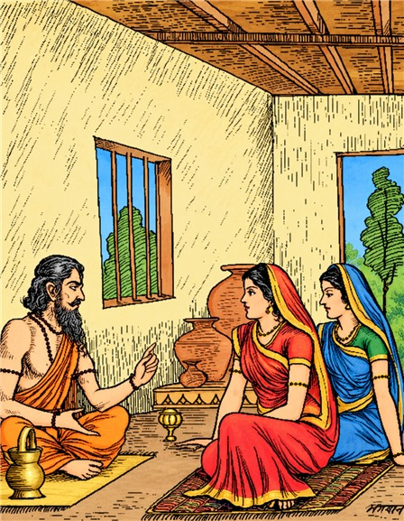
यह सुनकर कात्यायनी तो चुप रहीं, किंतु मैत्रेयीने पूछा—‘भगवन् यदि यह धन-धान्यसे परिपूर्ण सारी पृथ्वी केवल मेरे ही अधिकारमें आ जाय तो क्या मैं उससे किसी प्रकार अमर हो सकती हूँ?’ याज्ञवल्क्यने कहा—‘नहीं, भोग-सामग्रियोंसे सम्पन्न मनुष्योंका जैसा जीवन होता है, वे लौकिक दृष्टिसे जितने सुख और सुविधामें रहते हैं, वैसा ही तुम्हारा भी जीवन हो जायगा। किंतु धनसे कोई अमर हो जाय, उसे अमृतत्वकी प्राप्ति हो जाय, इसकी आशा कदापि नहीं है।’ मैत्रेयी बोलीं—‘भगवन्! जिससे मैं अमर नहीं हो सकती, उसे लेकर क्या करूँगी? यदि धनसे ही वास्तविक सुख मिलता तो आप इसे छोड़कर क्यों जाते? आप ऐसी कोई वस्तु अवश्य जानते हैं, जिसके सामने यह धन, यह गृहस्थीका सारा सुख तुच्छ प्रतीत होता है। अतः मैं भी उसीको जानना चाहती हूँ। ‘यदेव भगवान् वेद, तदेव मे ब्रूहि’—केवल जिस वस्तुको श्रीमान् अमृतत्वका साधन जानते हैं, उसीका मुझे उपदेश करें।’
मैत्रेयीकी यह जिज्ञासापूर्ण बात सुनकर याज्ञवल्क्यको बड़ी प्रसन्नता हुई; उन्होंने उसकी प्रशंसा करते हुए कहा—‘धन्य मैत्रेयी! धन्य! तुम पहले भी मुझे बहुत प्रिय थीं और इस समय भी तुम्हारे मुखसे प्रिय वचन ही निकला है। अतः आओ, मेरे समीप बैठो, मैं तुम्हें उपदेश करता हूँ। तुम सुनकर मनन और निदिध्यासन करो। मैं जो कुछ कहूँ, उसपर स्वयं भी विचार करके उसे हृदयमें धारण करो।’
यों कहकर महर्षि याज्ञवल्क्यने उपदेश आरम्भ किया—‘मैत्रेयी! तुम जानती हो स्त्रीको पति और पतिको स्त्री क्यों प्रिय हैं? इस रहस्यपर कभी विचार किया है? पति इसलिये प्रिय नहीं है कि वह पति है, बल्कि इसलिये प्रिय है कि वह अपनेको संतोष देता है, अपने काम आता है। इस प्रकार पतिको स्त्री भी इसलिये प्रिय नहीं होती कि वह स्त्री है, अपितु इसलिये प्रिय होती है कि उससे आत्माको सुख मिलता है। इसी न्यायसे पुत्र, धन, ब्राह्मण, क्षत्रिय, लोक, देवता, समस्त प्राणी अथवा संसारके सम्पूर्ण पदार्थ भी आत्माके लिये प्रिय होनेसे ही प्रिय जान पड़ते हैं; अतः सबसे बढ़कर प्रियतम वस्तु क्या है, अपना आत्मा। इसलिये—
‘आत्मा वा अरे द्रष्टव्यः श्रोतव्यो मन्तव्यो निदिध्यासितव्यो मैत्रेयि आत्मनो वा अरे दर्शनेन श्रवणेन मत्या विज्ञानेनेदं सर्वं विदितम्।’
‘मैत्रेयी! तुम्हें आत्माँका ही दर्शन, श्रवण, मनन और निदिध्यासन करना चाहिये; उसीके दर्शन, श्रवण, मनन और यथार्थ ज्ञानसे सब कुछ ज्ञात हो जाता है।’
तदनन्तर महर्षि याज्ञवल्क्यने भिन्न-भिन्न अनेकों दृष्टान्तों और युक्तियोंसे ब्रह्मज्ञानका यथार्थ उपदेश देकर कहा—‘मैत्रेयी! तुम निश्चयपूर्वक समझ लो, इतना ही अमृतत्व है। तुम्हारी प्रार्थनाके अनुसार मैंने ज्ञातव्य तत्त्वका उपदेश कर दिया।’ यों कहकर याज्ञवल्क्यजी संन्यासी हो गये। मैत्रेयी यह अमृतमय उपदेश पाकर कृतार्थ हो गयीं। यही यथार्थ सम्पत्ति है, जिसे मैत्रेयीने प्राप्त किया। —रा० शा०
ब्रह्मज्ञानिनी सुलभा
‘जनक ज्ञानी कहे जाते हैं। अनेक ब्रह्मवादी उनकी सभाको सुशोभित करते हैं। परंतु अभी भी वादके द्वारा अपने मतकी स्थापना और दूसरोंके मतका खण्डन करनेकी उनकी प्रवृत्ति गयी नहीं। यह तो अपूर्णताका परिचायक है। आत्मस्वरूपकी उपलब्धिके अनन्तर कौन किसका खण्डन करेगा। ऐसे विवेकी, साधुसेवी नरेशको अपूर्ण नहीं रहना चाहिये।’ नैष्ठिक ब्रह्मचारिणी, ब्रह्मनिष्ठा, तपस्विनी सुलभातक जनककी कीर्ति पहुँच चुकी थी। उनके कोमल हृदयमें करुणाका स्रोत उमड़ा और महाराज विदेहकी भ्रान्ति दूर करनेका उन्होंने निश्चय कर लिया। योगबलसे उन्होंने एक सुन्दर तपस्विनी स्त्रीका वेष धारण किया और मिथिला पहुँचीं।
महाराज जनकने उनका स्वागत किया। पाद्य-अर्घ्यादिसे सत्कार किया। उनके भोजन करके सन्तुष्ट होकर आसनपर विराजनेके पश्चात् बड़ी नम्रतासे महाराजने पूछा, ‘देवि! आप कौन हैं? किसकी पुत्री हैं? कहाँसे पधारी हैं और कहाँ जाना है? आप क्या करना चाहती हैं? प्रश्न किये बिना कोई किसीका परिचय जान नहीं सकता। मैं आपके साथ परमार्थ-सम्बन्धी चर्चा करना चाहता हूँ।’
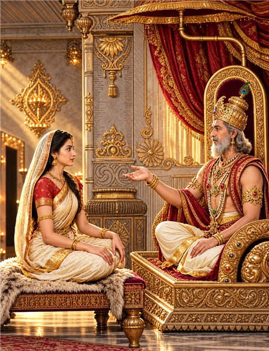
संन्यासिनीको मौन देखकर महाराजने कहा, ‘मैं अपना परिचय दिये देता हूँ। मैं परमयोगी महात्मा पंचशिखका शिष्य हूँ। मेरे सम्पूर्ण संशयोंका उन्होंने मूलोच्छेद कर दिया है। मैंने योग तथा सांख्यशास्त्रके सम्पूर्ण रहस्य प्राप्त कर लिये हैं। मोक्षके साधन कर्म, ज्ञान तथा उपासना—इन तीनोंको मैं भली प्रकार जानता हूँ। महात्मा पंचशिखने यहाँ चातुर्मास्य किया था और उसी समय उन्होंने मुझे योगविद्याका शिक्षण दिया। उन्होंने मुझे राज्य त्यागकर वनमें जानेकी आज्ञा नहीं दी। मेरे गुरुदेवने मुझे निष्काम कर्मकी आज्ञा दी है।’
इसके पश्चात् महाराजने अपनी अन्तःस्थितिका परिचय दिया ‘ज्ञानसे मोक्ष होता है। योगसे ज्ञान होता है और ज्ञानसे ही सुख-दुःखादि द्वन्द्व दूर हो जाते हैं। यह ज्ञान मैंने प्राप्त किया है। इस सांसारिक जीवनसे मुझे कोई आसक्ति नहीं। मेरे कर्मबीज गुरुवाक्योंकी ज्ञानाग्निमें भूने जा चुके हैं। अब उनमें अंकुरित होनेकी शक्ति नहीं। कोई मेरे एक हाथको चन्दन लगावे तथा दूसरेको लकड़ीकी भाँति छीले, तो भी मेरे लिये दोनों समान हैं। मिट्टी, पत्थर और स्वर्णमें मुझे कोई वैषम्य नहीं जान पड़ता। कर्मसे लाभ होता हो तो भी उसकी अपेक्षा न करना और कर्मोंका प्रयोजन न रहा हो तो भी उनका त्याग न करना चाहिये, यह मुझे गुरुने उपदेश किया है। प्रयत्न, नियम, राग-द्वेष, कामना, परिग्रह, मान, दम्भ, स्नेहादि सम्पूर्ण विषयोंमें समान रहनेकी मुझे शिक्षा मिली है। गैरिकवस्त्र, कमण्डलु, दण्ड धारणादि त्यागके बाह्य चिह्न हैं। ये मोक्षके कारण नहीं। मोक्षके लिये किसी वस्तुका त्याग या स्वीकार आवश्यक नहीं। ज्ञान ही मोक्षका हेतु है। राज्य-वैभवादिमें होकर भी मैं उनसे अलिप्त हूँ। स्नेह-बन्धनको मैंने विचार एवं त्यागके खड्गसे काट दिया है।’
महाराजने इस प्रकार अपना परिचय देकर पुनः पूछा, ‘आपमें योगका प्रभाव देखकर मेरा आपके प्रति आदरभाव है। आश्चर्य है कि आपका सौन्दर्य एवं अवस्था योगके अनुरूप नहीं। आपमें संन्यासियोंके योग्य यम, नियम, संयम स्पष्ट लक्षित हैं। आपने आडम्बर तो नहीं किया है? आप क्यों आयीं? आपका उद्देश्य क्या है? जो भी हो, मैं कहूँगा कि आप अपने संन्यास-धर्मपर सदा स्थिर रहें। मुझे लगता है कि गुप्त वेषमें आप मेरे ज्ञानकी परीक्षा लेने पधारी हैं। आपका यहाँ आनेका कारण, जाति तथा साधनाभ्यास मैं जानना चाहता हूँ।’
संन्यासिनीने किसी रोष एवं असन्तोषका भाव व्यक्त नहीं किया। उसने प्रथम बतलाया कि कैसे बोलना चाहिये। बोलनेमें किस प्रकारके शब्दोंका उपयोग करना चाहिये। वाणीमें नव दोष होते हैं और नव दोष बुद्धिदोष उत्पन्न करते हैं। इन अठारह दोषोंसे बचकर अठारह गुणोंसे युक्त वाणी ही श्रेष्ठ होती है। वाक्य कैसे होना चाहिये, यह भी उसने बताया। स्पष्ट अर्थयुक्त, द्वि-अर्थ दोषसे रहित, आठ गुणवाला वाक्य होना चाहिये। इस प्रकार काम, क्रोध, भय, लोभ, दैन्य, गर्व, लज्जा, दया तथा मानके द्वारा प्रेरित वाक्य भी दूषित होता है। यह बड़ा सुन्दर एवं विशद विषय है। भाषाशास्त्रका इससे घनिष्ठ सम्बन्ध है। महाभारतके शान्तिपर्वमें जनक-सुलभा-संवादमें ही इसे भली प्रकार देखना चाहिये।
सुलभाने वाक्य एवं भाषाके गुण-दोषका निरूपण करके महाराजसे कहा, ‘जैसे लाख और काष्ठ, जल और धूलिके संयोगसे ये पदार्थ परस्पर सन्धीभूत होते हैं, इसी प्रकार देहसे पृथक् आत्मासे शब्द, स्पर्श, रूप, रस, गन्ध—ये तन्मात्राएँ अपनी इन्द्रियोंके साथ संश्लिष्ट हैं। इस विषयमें पूछने योग्य क्या है? तुम पूछते हो कि मैं कौन हूँ, पर यह प्रश्न निरर्थक है। जड एवं चेतनके संयोगके मिथ्याज्ञानसे मेरे निर्माणकी प्रतीति है। तुम्हारी भी प्रतीति ऐसी ही है। चेतन तो एक एवं अविभाज्य है तथा जड, मेरे, तुम्हारे तथा सभी शरीरोंमें वही हैं। जैसे रेतके कण एक-दूसरेसे लगे होनेपर भी परस्पर एक-दूसरेको नहीं जानते। वैसे प्राणी भी परस्पर एक-दूसरेको आत्मस्वरूप नहीं जानते। नेत्र अपनेको देख नहीं पाता, रसना अपना स्वाद नहीं लेती। कोई अपनेको पहचानता नहीं। इन्द्रियाँ भी एक-दूसरीको नहीं जानतीं। जैसे नेत्र बाह्य सूर्यके प्रकाशके बिना वस्तुओंको देखनेमें असमर्थ हैं, वैसे ही इन्द्रियोंको भी बाह्य पदार्थोंकी अनुभूतिके लिये गुणोंकी आवश्यकता होती है। पंच कर्मेन्द्रिय, पंच ज्ञानेन्द्रिय, मन, बुद्धि, सत्त्व, अहं,अविद्या, प्रकृति, व्यक्ति, द्वन्द्वानुभूतिकी शक्ति, काल, विधि, वीर्य, बल तथा सप्तधा प्रकृति—ये तीस गुण हैं। ये तीसों जहाँ सन्धीभावमें हों, उसे शरीर कहते हैं। अव्यक्त प्रकृतिने उपर्युक्त गुणोंको स्वीकार करके जो व्यक्तरूप बनाया है, वही मैं हूँ। तुम और दूसरे शरीरधारी भी वही हैं। तुम कौन हो? तुम्हारा यह प्रश्न व्यर्थ है।’
इस प्रकार तत्त्वज्ञानका विविध भाँतिसे उपदेश करनेके अनन्तर संन्यासिनीने बताया, ‘मैं जातिसे क्षत्रिया हूँ। मेरी उत्पत्ति शुद्ध है। मैंने योग्य वर न मिलनेसे विवाह नहीं किया। प्रधान नामक राजर्षिके कुलमें मैं उत्पन्न हूँ। मोक्षधर्ममें प्रवृत्त होकर मैंने संन्यासियोंके व्रतको स्वीकार कर लिया है। मैं एकाकी पर्यटन करती हूँ। किसी छल या कपटसे मैं यहाँ नहीं आयी हूँ। मुझे किसीका धन हरण नहीं करना है और न मैं धर्मभ्रष्ट हूँ। मैं अपने व्रतमें स्थिर हूँ। तुम्हारी अत्यन्त कीर्ति सुनकर मैं यहाँ आयी। तुम्हारे विचारोंकी भ्रान्ति दूर कर तुम्हें योग्य मार्ग दिखलाने मैं यहाँ आयी हूँ। मैं तुम्हारे भलेके लिये कहती हूँ। स्वपक्ष-समर्थन तथा परपक्ष-खण्डनकी तुम्हारी प्रवृत्ति बतलाती है कि अभी तुम्हारा अपने स्वपक्षमें आग्रह है। जहाँ एक ही आत्मतत्त्व है, वहाँ स्व और पर कहाँ? कहाँ पक्ष और कहाँ विपक्ष? तुम उसी आत्मतत्त्वमें स्थित होकर इस आग्रहसे उपरत हो जाओ।’
सुलभाने महाराज जनकसे सत्कार प्राप्त कर एक रात्रि वहीं निवास किया और दूसरे दिन वहाँसे प्रस्थान किया। —सु० सिं०
चूडाला
‘यह शिखिध्वज आपको अभिवादन करता है।’ मंदराचलकी एकान्त शान्त गुफामें देवताओंके निमित्त पुष्प चयन करके माला गुम्फन करते हुए तपस्वीने एक गौरवर्ण तरुण तेजोमूर्ति ब्राह्मणको देखकर अभ्युत्थान दिया। अर्घ्य, पाद्यके अनन्तर पुष्पमाल्य अतिथिको पाकर सार्थक हो गया। ब्राह्मण आसनासीन हुए।
‘तुम्हारा यह क्षीणकाय, ये जटाएँ, यह कठोर तपस्या और यह विस्तृत कर्मजाल किसलिये है।’ परिचयमें ब्राह्मणने अपनेको कुम्भ ऋषि बतलाया था और राजासे तपःकुशलका शिष्टाचार समाप्त हो चुका था। ‘तुमने मेरा अत्यन्त सत्कार किया है। मैं प्रसन्न हूँ। तप संन्यासी तथा वानप्रस्थाश्रमीके लिये उपयुक्त है और तुम तरुण हो। यह विधर्म तुमने किस उद्देश्यसे स्वीकार किया? सुख और दुःख तो मनके धर्म हैं, आत्माके धर्म हैं नहीं। तुम्हारे राज्यसुख छोड़ने और तपःकष्ट उठानेका आत्मासे क्या सम्बन्ध। यदि तुम्हें मोक्ष ही अभीष्ट है तो तुम्हें आत्मज्ञान प्राप्त करना चाहिये। मिथ्या अज्ञानावरणको दूर करो। तुम्हारी पत्नी चूडालाने तुम्हें ठीक ही उपदेश किया था। उसका अनादर करके जब तुम वनमें ही आ गये तो फिर यहाँ भी तुमने सर्वस्व त्यागकी पूर्ण प्राप्ति क्यों नहीं की?’
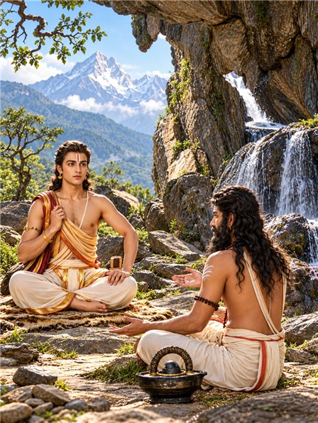
‘धन, पुत्र, स्त्री, राज्यादि तो किसीके हैं नहीं। तात्त्विक दृष्टिसे तो वे सर्वेश्वरके हैं।’ उनका त्याग त्याग नहीं है, यह समझाते ब्राह्मणकुमारको देर नहीं लगी। राजाने आसन छोड़ा और उठ खड़े हुए। ‘मैं अब कहीं भी पड़ा रहूँगा। मेरी कोई गुफा नहीं, कोई आश्रम नहीं।’ उन्होंने आसन, मृगछाला और कमण्डलु आदि भी छोड़ दिया।
‘अभी भी बहुत कुछ छोड़ना है।’ ब्राह्मणकुमार मुसकराये।
‘हाँ’ राजाने सोचा। पाठकी पुस्तक, जपकी माला उन्होंने छोड़ दी एक शिलापर।
‘अब भी................’
नरेशने जल उठाया और संकल्प किया ‘मैं अपनी समस्त तपस्या, जप-पूजादिका फल त्याग करता हूँ।’
‘अभी और!’
राजाने कुछ सोचा और एक शिखरपर जा खड़े हुए। वे कूदना ही चाहते थे कि विप्रकुमारने पीछेसे पकड़ लिया। ‘तुम समझते हो कि शरीर-त्यागसे ही सब हो जायगा?’ तनिक स्वर कठोर था। ‘आत्महत्याका पाप और मिलेगा। शरीर तो दूसरा धारण करना होगा। जो शरीरको क्रियाशक्ति देता है, जो सारे संस्कारोंको सम्हाले है, जो शरीर दिया करता है, उस अहंकारका त्याग तुम क्यों नहीं करते? ‘मैं कर्ता हूँ, मैंने किया है, मैं त्याग करूँगा, क्या यह सत्य है?’ आत्मा तो साक्षी है, अकर्ता है। तुम इस अहंकारका त्याग किये बिना पूर्ण त्यागी कैसे बनोगे?’
तपस्याने अन्तःकरण शुद्ध कर दिया था। मल नष्ट हो गया था। फल-त्यागके संकल्पने विक्षेपको शमन कर दिया था। इन बोधवाक्योंने सहसा आवरणपर आघात किया। वह दूर हो गया। राजाने चाहा कि वह अपने ज्ञानदाताके पैरोंपर सिर रख दे। यह क्या? उनके ही पैरोंपर सिर रखा यह कौन है? विप्रकुमार कहाँ गये?
‘प्रभो! आप यह क्या कर रहे हैं! मैं तो आपकी दासी हूँ।’ उनकी पत्नी चूडाला मन्दस्मितसे गुहाके द्वारदेशपर किसी देवीके समान जान पड़ती थी।
••••
सौराष्ट्र-राजकन्या चूडाला जितनी ही सुन्दर थी, उतनी ही नृत्य-संगीतादि ललित कलाओंमें निपुण थी। शील और प्रतिभा उसे जन्मसे ही प्राप्त थी। उज्जयनीके महाराज शिखिध्वजके समान शूर, सुन्दर, सदाचारी एवं प्रतापी नरेशके द्वारा उसका पाणिग्रहण हुआ। दम्पतिने अपने हृदयोंके साथ सद्गुणोंका भी आदान-प्रदान किया और फलतः चूडाला धर्मशास्त्र एवं नीतिमें तथा महाराज ललित कलाओंमें भी प्रवीण हो गये। यदि धर्मपूर्वक अर्थ और कामका सेवन हो तो धर्म स्वतः इनसे विरक्ति उत्पन्न करके मानवको उसके परम लक्ष्यकी ओर प्रेरित कर देता है। चूडालाकी प्रतिभा पतिसे धर्मशास्त्रका ज्ञान प्राप्त करके पुष्ट हो गयी। अब उसमें जिज्ञासा उठी ‘मैं कौन हूँ? संसारमें क्यों आयी? यहाँ आनेका उद्देश्य क्या है?’
जिज्ञासाने हृदयभूमिमें मननका बीज डाला। सदाचार-शुद्ध हृदयमें वह बढ़ चला। निरन्तर मननने स्पष्ट कर दिया कि शरीर, इन्द्रियाँ, मन, प्राण, बुद्धि तथा अहं भी अपना स्वरूप नहीं। अन्ततः जो सबसे परे है, सबका बाध होनेपर उस उपलब्ध स्वरूपमें स्थिति तो होनी ही थी। परम तत्त्वकी उपलब्धिके पश्चात् चूडालाने चाहा कि पतिको भी वह इस निःश्रेयस् स्थितिका साक्षात् करा दे। महाराजके हृदयमें अब भी वासनाओंके बीज थे। संस्कार थे। पत्नीका बार-बारका प्रेमोपदेश भी उन्हें मार्गपर लानेमें समर्थ न हुआ। वे चूडालाके शील-सौन्दर्यपर मुग्ध थे, अन्ततः चूडालाने सोचा’ ‘धर्मयुक्त भोगमें लिप्त रहनेका फल है वैराग्य और आरम्भिक वैराग्य विचारहीन होता है। महाराजको ऐसा वैराग्य अवश्य होगा और तब वे चुपचाप जंगलमें चले जायँगे। वहाँ कायक्लेश-प्रधान तप करेंगे। इससे कोई लाभ होगा नहीं।’ ऐसा अवसर आनेपर पतिका अनुगमन करने तथा उपयुक्त अवसरपर उन्हें उचित मार्गपर लानेके लिये उसने साधन प्रारम्भ किया और आकाशमार्गसे गमनकी सिद्धि प्राप्त की।
अन्ततः महाराजको भोगोंसे वैराग्य हुआ। उन्होंने वनमें जाकर तप करनेका निश्चय किया। चूडालाने समझाया ‘प्रत्येक कार्य यथावसर ही उपयुक्त होता है। आप गृहस्थ हैं। आपके लिये वनवास विधर्म है।’ लाभ कुछ नहीं हुआ। महाराज एक रात्रिको चुपचाप उठे और वनमें चले गये। चूडालाके लिये महाराजका पता लगा लेना कठिन न था, पर उनसे परिचय करना व्यर्थ था। समयकी प्रतीक्षा करनी थी। उसने राज्यकार्य सम्हाला और अठारह वर्षतक उसे चलाती रही।
••••
‘आप विरक्त होकर चले आये थे। आपका चित्त इस स्थितिमें न था कि आप स्वस्थ विचार करें। तपस्याने जब हृदयके मलको नष्ट कर दिया तो दासीने सेवामें उपस्थित होनेका अवसर पाया।’ चूडालाके नेत्र आनन्दाश्रुसे भरे थे।
‘अब क्या इच्छा है।’ महाराजने पूछा। ‘वनमें रहना हो मेरे साथ तो मुझे आपत्ति नहीं। मेरी तपस्या आपको मेरे साथ इसी शरीरसे स्वर्गमें भी रखनेमें भी समर्थ है।’
‘मुझे भोग आकर्षित नहीं करते। स्वर्गका मुझे क्या करना है।’ चूडालाका आनन्द आज सीमातीत था। ‘तपस्यासे कुछ प्राप्त करना नहीं है। राज्य प्रारब्धवश स्वतः प्राप्त है। प्रजापालनका कर्तव्य आपको कर्मविधानसे मिला है। उसका अस्वीकार आप क्यों करें।’
चूडाला पतिके साथ राजधानी लौट आयी। आत्मदर्शनसम्पन्ना पत्नीने पतिकी इस स्थितिमें भी सहधर्मिणीके कर्तव्यको पूर्ण किया। पर्याप्त समयतक दम्पतिने राज्यका संचालन किया। अन्तमें तो उन्होंने परनिर्वाण प्राप्त कर ही लिया था।
महाराजने प्रसन्न होकर चूडालाको आशीर्वाद दिया था ‘तुम विश्वकी श्रेष्ठ सतियोंमें सदा सम्मानित होओगी।’
पत्नीके लिये पतिका हार्दिक आशीर्वाद तो ईश्वरीय वरदान है। —सु० सिं०
माता मैना (मेनका)
पर्वतराज हिमालयकी पत्नी मैना पर्वतराजके साथ ही आकल्प चिरजीवी हैं। सतीने दक्षयज्ञमें शरीर छोड़ा तो पुनः देह-धारणके लिये एकमात्र साध्वी मैना-जैसी ही स्त्री उनकी माता बननेकी अधिकारिणी हो सकती थीं। मैनाजीके अनेक गिरिपुत्र थे, अनेक सरितापुत्रियाँ थीं; किंतु पार्वती उनकी अन्तिम पुत्री थीं और दिव्या। माताका अपार स्नेह अपनी बालिकापर था। देवर्षि नारदने आकर उनकी बालिकाका हाथ देखा और पर्वतराजको पता नहीं क्या-क्या समझा गये। माताको तो यही चिन्ता थी कि पुत्रीका विवाह अच्छे घरमें, सुयोग्य वरसे हो। पर्वतराजने समझाया कि श्रेष्ठ पति प्राप्त करनेके लिये पुत्रीको तपस्या करनेका आदेश दो।
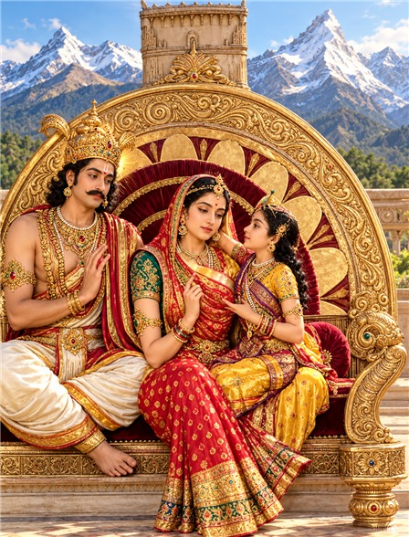
‘मेरी कुसुम-सुकुमार बालिका तप करेगी? एकाकिनी वनमें रहेगी?’ माताका हृदय फटने लगा। अपने मुखसे वे कैसे यह आदेश दें। उनकी बालिकाने ही उनकी गोदमें बैठकर बड़े मधुर स्वरसे कहा, ‘माँ! स्वप्नमें एक तेजस्वी ब्राह्मणने मुझे तपस्या करनेको कहा है। मैं तप करूँगी। तुम प्रसन्नतासे आज्ञा दो।’ हृदयको वज्र बनाकर आज्ञा देनी पड़ी। जिनकी आयु कल्प और युगोंमें गिनी जाती है, उनके लिये शताब्दियोंका क्या अर्थ होता है? फिर भी जब एक दिन पर्वतराज तपोवन जाकर कन्याको लौटा लाये तो माताको लगा कि उनकी बच्ची कल्पोंके पश्चात् लौटी है। रात्रि-दिवस उन्होंने अपनी उमाकी चिन्ता करते हुए ही बिताये थे।
नारद कर मैं काह बिगारा।
भवनु मोर जिन्ह बसत उजारा॥
बारात आयी। बड़ी साधसे मैनाजी सखियोंके साथ जामाताका परिछन करने गयी थीं। मुण्डमाल, फुफकारते नाग, बैलपर बैठा वह पागल औघड़! भयसे चीत्कार करके थाल फेंककर वे भाग आयीं। पुत्रीको गोदमें बैठाकर विलाप करने लगीं। ‘हाय, हाय, मेरी हिम-सी कोमल बच्चीने तपस्या करते-करते अपनेको सुखा दिया और परिणाममें मिला यह पागल वर। नारदके घर-गृहस्थी तो है नहीं, बड़े निर्दय हैं। ऐसा भी परिहास किया जाता है। मैं इस मुण्डमालीको तो लड़की दूँगी नहीं। यदि पतिदेवने बाध्य किया तो उमाको गोदमें लेकर ऊपरसे कूद पड़ूँगी या समुद्रमें डूब जाऊँगी। संखिया और वत्सनाग भी मेरे ही यहाँ उत्पन्न होते हैं।’
पार्वतीजीने माताको बहुत समझाया, परंतु वे अविचल रहीं। समाचार पाकर देवर्षि सप्तर्षियोंको लेकर आये। ‘माता! तुम्हारी पुत्री महाशक्ति जगद्धात्री हैं। ये भगवान् शंकरकी नित्य अर्धांगिनी हैं। वेद-शास्त्र भवानी, दुर्गा, महामाया कहकर इन्हींकी स्तुति करते हैं।’ देवर्षिने पार्वतीके पूर्वजन्मका परिचय दिया। सप्तर्षियोंने अनुमोदन किया। जगज्जननी उमाने माताके मोहको दूर किया। हृदयमें भगवान् शंकर एवं पार्वतीके वास्तविक स्वरूप प्रकाशित हो गये। माताने जामाताकी अर्चना की और सोल्लास पार्वतीके समर्पणमें पतिके साथ योग दिया। भगवती उमाकी जननी होकर वे धन्य हो गयीं। —सु० सिं०
सती सावित्री
मद्रदेशमें एक धर्मात्मा राजा राज्य करते थे। वे बड़े धर्मात्मा, ब्राह्मणभक्त, सत्यवादी और जितेन्द्रिय थे। उनका नाम था अश्वपति। नगर और देशकी प्रजा उनपर बहुत प्रेम रखती थी। वे सदा सब प्राणियोंके हितसाधनमें लगे रहते थे। राजाके यहाँ सब प्रकारका सुख था; किंतु उनके कोई सन्तान नहीं थी। इसलिये उन्होंने सन्तान-प्राप्तिके उद्देश्यसे कठोर तपस्या आरम्भ कर दी। कठोर नियमोंका पालन करते हुए उन्होंने अठारह वर्षोंतक सावित्रीदेवीकी आराधना की। अठारहवाँ वर्ष पूर्ण होनेपर देवीने राजाको प्रत्यक्ष दर्शन दिया और ‘तुम्हें शीघ्र ही एक तेजस्विनी कन्या प्राप्त होगी।’ यों वर देकर सावित्री अन्तर्धान हो गयीं। राजा अपने नगरमें लौटकर धर्मपूर्वक प्रजाका पालन करने लगे। तदनन्तर समय आनेपर राजाकी बड़ी महारानीने, जो मालवनरेशकी कन्या थीं, गर्भ धारण किया। यथासमय रानीके गर्भसे कमलके समान नेत्रोंवाली एक कन्या प्रकट हुई। राजाने प्रसन्न होकर उस कन्याके जातकर्म आदि संस्कार किये। उस कन्याके लिये सावित्री-मन्त्रद्वारा हवन किया गया था और सावित्रीने ही प्रसन्न होकर उसे दिया था; इसलिये ब्राह्मणोंने तथा कन्याके पिताने भी उसका नाम सावित्री रखा। राजकन्या मूर्तिमती लक्ष्मीके समान दिनों-दिन बढ़ने लगी। धीरे-धीरे उसने युवावस्थामें प्रवेश किया। राजाकी वह सुन्दरी कन्या सोनेकी प्रतिमाके समान तेजसे उद्भासित हो रही थी। जो ही उसके सामने जाता, वही दिव्य तेजसे प्रतिहत हो जाता था। उसे देखकर सब यही कहते, यह मानवी नहीं, कोई देवकन्या है। इसीलिये कोई भी राजा या राजकुमार उसका वरण न कर सका।
कन्याको सयानी देख राजाको उसके विवाहके लिये बड़ी चिन्ता हुई। वे एक दिन बोले—‘बेटी! अब तू विवाहके योग्य हो गयी है, इसलिये स्वयं ही अपने योग्य वरकी खोज कर।’ यों कहकर राजाने वृद्ध मन्त्रियोंको साथ जाने और यात्राकी तैयारी करनेका आदेश दिया। सावित्रीने कुछ संकुचित-सी होकर पिताके चरणोंका स्पर्श किया और उनकी आज्ञा मानकर राजभवनसे निकली। द्वारपर सोनेका रथ तैयार खड़ा था। सावित्री उसपर जा बैठी और बड़े-बूढ़े मन्त्रियोंसे सुरक्षित हो राजर्षियोंके रमणीय तपोवनोंमें विचरण करने लगी। माननीय वृद्ध पुरुषोंको नमस्कार करती, ब्राह्मणोंको धन देती तथा नाना प्रकारके पुण्य करती हुई वह भिन्न-भिन्न तीर्थों और देशोंमें घूमती रही।
एक दिन मद्रराज अश्वपति अपनी राजसभामें बैठे हुए नारदजीसे वार्तालाप कर रहे थे, उसी समय समस्त तीर्थोंकी यात्रा पूरी करके सावित्री मन्त्रियोंके साथ पिताके घर लौट आयी। उसने पिताको नारदजीके साथ बैठे हुए देखकर उन दोनोंके चरणोंमें प्रणाम किया। नारदजीने पूछा—‘राजन्! आपकी यह कन्या कहाँ गयी थी और कहाँसे आयी है? अब तो यह सयानी हो गयी है। आपने अभीतक इसका विवाह क्यों नहीं किया?’ राजाने कहा—‘देवर्षे! इसी कार्यके लिये मैंने इसे भेजा था। यह अभी-अभी लौटी है। अब इसीके मुँहसे सुनिये—इसने किसको अपना पति चुना है?’ नारदजीसे ऐसा कहकर अश्वपतिने अपनी पुत्रीसे कहा—‘बेटी! तुम अपना सब वृत्तान्त सुनाओ।’
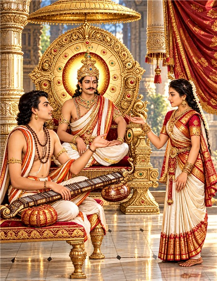
सावित्रीने संक्षेपसे ही उत्तर दिया—‘शाल्वदेशमें एक धर्मात्मा राजा थे। उनका नाम द्युमत्सेन है। वे पहले राज्य करते थे; किंतु पीछे उनकी आँख अंधी हो गयी। उस समय उनका पुत्र बहुत छोटा था। शत्रुओंको आक्रमण करनेका मौका मिल गया। पड़ोसमें ही एक राजा था, जिसके साथ उनकी पहलेसे शत्रुता चली आती थी। उसीने उनका राज्य छीन लिया। तब वे गोदमें बालक लिये हुए पत्नीके साथ वनमें चले गये और वहाँ उत्तम नियमोंका पालन करते हुए तपस्यामें लग गये। उनके पुत्र सत्यवान्, जो नगरमें जन्म लेकर तपोवनमें पले और बढ़े हैं, सर्वथा मेरे योग्य हैं; अतः मैंने अपने मनसे उन्हींको पति चुना है।’
यह सुनकर नारदजी सहसा बोल उठे—‘राजन्! यह तो बड़े खेदकी बात हो गयी। सावित्रीने बड़ी भूल की है। बेचारी जानती नहीं थी, इसीलिये उत्तम गुणोंसे युक्त सत्यवान्का वरण कर लिया। उस राजकुमारके पिता और माता सदा सत्य ही बोलते हैं; इसीलिये ब्राह्मणोंने उसका नाम सत्यवान् रख दिया।’ राजाने कुछ चिन्तित होकर पूछा—‘नारदजी! क्या इस समय भी माता-पिताके प्रति भक्ति रखनेवाला सत्यवान् तेजस्वी, बुद्धिमान्, क्षमावान् और शूरवीर है?’ नारदजीने कहा—‘द्युमत्सेनका वह वीरपुत्र सूर्यके समान तेजस्वी, बृहस्पतिके सदृश बुद्धिमान्, इन्द्रके समान वीर, पृथ्वीकी भाँति क्षमाशील, रन्तिदेवके समान दानी, उशीनरपुत्र शिबिके समान ब्राह्मणभक्त और सत्यवादी ययातिके समान उदार, चन्द्रमाके समान नयनाभिराम और अश्विनीकुमारोंके समान रूपवान् है। वह जितेन्द्रिय, विनयी, पराक्रमी, सत्यप्रतिज्ञ, मिलनसार, ईर्ष्यारहित, लज्जाशील और तेजस्वी है।’ राजाने चकित होकर कहा—‘मुनिवर! आपने तो उसे समस्त गुणोंका भण्डार बता दिया। उसमें कोई दोष भी है क्या?’ नारदजी बोले—‘राजन्! दोष तो उसमें एक ही है, जिसने समस्त गुणोंपर पर्दा डाल दिया है। दोष भी साधारण नहीं है, उसे किसी भी प्रयत्नके द्वारा मिटा देना असम्भव है। आजसे ठीक एक वर्षके बाद उसकी आयु समाप्त हो जायगी। उसे देहत्याग करना पड़ेगा।’ नारदजीकी बात सुनकर राजा अश्वपति व्यग्र हो गये। उन्होंने सावित्रीको सम्बोधित करके कहा—‘बेटी! अब फिरसे यात्रा करो और दूसरे किसी योग्य वरका वरण करो। सत्यवान्का एक ही दोष ऐसा है, जिसने सब गुणोंको ढक दिया है। उसकी आयु थोड़ी है। वह एक ही वर्षमें शरीर त्याग देगा।’
सावित्री सती थी। उसका धार्मिक भाव जीवन और मृत्युकी सीमासे ऊँचे उठ चुका था। उसने दृढ़ताके साथ उत्तर दिया—‘पिताजी! धनका बँटवारा करते समय जो चिट्ठी आदि डाली जाती है, वह कार्य एक ही बार होता है; कन्या एक ही बार किसीको दी जाती है तथा ‘मैं दूँगा’ यह प्रतिज्ञा एक ही बार की जाती है। ये तीन बातें एक-एक बार ही हुआ करती हैं, सत्यवान् दीर्घायु हों अथवा अल्पायु; गुणवान् हों अथवा निर्गुण, मैंने एक बार उन्हें अपना पति स्वीकार कर लिया। अब दूसरे पुरुषको मैं नहीं वर सकती। पहले मनसे निश्चय करके फिर वाणीसे प्रकट किया जाता है और जो वाणीसे प्रकट किया जाता है, उसीको क्रियाद्वारा पूर्ण किया जाता है; अतः मैंने जो पतिका निश्चय किया है, उसमें मेरा मन ही प्रमाण है।’ *
* सकृदंशो निपतति सकृत् कन्या प्रदीयते।
सकृदाह ददानीति त्रीण्येतानि सकृत् सकृत्॥
दीर्घायुरथवाल्पायुः सगुणो निर्गुणोऽपि वा।
सकृद्वृतो मया भर्त्ता न द्वितीयं वृणोम्यहम्॥
मनसा निश्चयं कृत्वा ततो वाचाभिधीयते।
क्रियते कर्मणा पश्चात् प्रमाणं मे मनस्ततः॥
(महाभारत वनपर्व २९४। २६—२८)
सावित्रीके इस निश्चयका नारदजीके मनपर बहुत अच्छा प्रभाव पड़ा। उन्होंने राजाको समझाते हुए कहा—‘महाराज! सावित्रीकी बुद्धि स्थिर है। इसने धर्मका आश्रय लिया है। अतः इसे किसी प्रकार भी इस निश्चयसे विचलित नहीं किया जा सकता। सत्यवान्में जो-जो गुण हैं, वे दूसरे किसी पुरुषमें हैं भी नहीं, अतः मुझे तो अब यही अच्छा जान पड़ता है कि आप उसे कन्यादान कर दें।’ राजाने कहा—‘भगवन्! आप ही मेरे गुरु हैं। आपने जो कुछ कहा है, वह ठीक है। मैं ऐसा ही करूँगा।’ नारदजीने कहा—‘सावित्रीका विवाह निर्विघ्न समाप्त हो तथा आप सब लोगोंका कल्याण हो—इसके लिये यथासाध्य मैं भी चेष्टा करूँगा।’
यों कहकर नारदजी अन्तर्धान हो गये। राजा अश्वपतिने कन्याके विवाहके लिये सब सामग्री एकत्रित करायी। फिर वृद्ध ब्राह्मण, पुरोहित तथा ऋत्विजोंको बुलाकर शुभमुहूर्तमें कन्याके साथ प्रस्थान किया। राजा द्युमत्सेनके पवित्र आश्रमपर पहुँचनेके बाद राजा अश्वपति सवारीसे उतर पड़े और ब्राह्मणोंके साथ पैदल ही उन राजर्षिके समीप गये। उन्होंने द्युमत्सेनकी यथायोग्य पूजा की और नम्रतापूर्ण वचनोंमें अपना परिचय दिया। धर्मके ज्ञाता राजर्षि द्युमत्सेनने भी मद्रराजको अर्घ्य और आसन देकर सम्मानित किया। तत्पश्चात् अश्वपतिने कहा—‘राजर्षे! मेरी कन्या सावित्री यहाँ उपस्थित है। आप धर्मानुसार इसे अपनी पुत्रवधूके रूपमें ग्रहण करें।’ द्युमत्सेनने पहले ताे अपनी वर्तमान अवस्थाको ध्यानमें रखकर कुछ असमर्थता प्रकट की; किंतु मद्रराजके पुनः अनुरोध करनेपर उन्होंने इस सम्बन्धको सहर्ष स्वीकार किया। तदनन्तर उस आश्रममें रहनेवाले सम्पूर्ण ब्राह्मणोंको बुलाकर दोनों राजाओंने विधिपूर्वक वर-वधूका विवाह-संस्कार सम्पन्न कराया। राजा अश्वपति कन्यादानके साथ ही यथायोग्य वस्त्राभूषण आदि दहेजमें देकर प्रसन्नतापूर्वक अपने नगरको चले गये। सत्यवान्को सर्वगुणसम्पन्ना सुन्दरी पत्नी मिली और सावित्रीने मनोवाञ्छित पति प्राप्त किया। अतः दोनों ही दम्पति बहुत प्रसन्न थे। पिताके चले जानेपर सावित्रीने सब आभूषण उतारकर रख दिये और गेरुआ वस्त्र तथा वल्कल धारण कर लिया। उसने सेवा-भाव, सद्गुण, विनय, संयम तथा सबके मनके अनुसार कार्य करने आदिके द्वारा सबको प्रसन्न कर लिया। वह सासको नहलाती, धुलाती, उनके पैर दबाती, बिछावन करती, ओढ़ने और पहननेके लिये वस्त्र आदि देती और उनकी सँभाल करती; इससे सासको वह प्राणोंसे भी अधिक प्रिय हो गयी। ससुरको देवताके समान मानकर उनकी पूजा और योग्य सेवा करती तथा मौन रहती थी। इससे ससुर भी उससे बहुत सन्तुष्ट रहते थे। इसी प्रकार वह पतिसे प्रिय वचन बोलती, बड़ी कुशलताके साथ उनकी सेवाका प्रत्येक कार्य करती, शान्तभावसे रहती और एकान्तमें भी अपनी सेवाओंसे उन्हें सुखी बनाती थी। इन सब गुणोंसे पतिदेव भी उसके ऊपर बहुत सन्तुष्ट रहते थे। इस प्रकार उस आश्रममें रहकर तपस्या करते हुए उन सब लोगोंका कुछ समय बीता।
सावित्रीको नारदजीकी बात भूलती नहीं थी। दिन-रात उसीकी चिन्तामें वह गली जा रही थी। दिन बीतते क्या देर लगती है। वह समय भी आ पहुँचा, जिसमें सत्यवान्की मृत्यु निश्चित थी। सावित्री एक-एक दिन गिनती रहती थी। जब उसने देखा, आजके चौथे दिन पतिदेवकी मृत्यु होनेवाली है तो उसने तीन रातका निराहार व्रत धारण किया और रात-दिन स्थिर होकर बैठी रही, जब सत्यवान्के जीवनका एक ही दिन शेष रह गया तो उस दिन रातमें सावित्रीको बड़ा दुःख हुआ। उसने बैठे-ही-बैठे सारी रात बिता दी। सबेरा होनेपर यह सोचकर कि आज ही वह दिन है, उसने दो घड़ी दिन आते-आते अपना सारा प्रातःकृत्य समाप्त कर दिया; फिर प्रज्वलित अग्निमें हवन किया और आश्रमपर रहनेवाले समस्त ब्राह्मणों, वृद्धपुरुषों तथा सास-ससुरके चरणोंमें क्रमशः प्रणाम करके वह हाथ जोड़कर खड़ी रही। उस तपोवनके सभी तपस्वियोंने सावित्रीको सौभाग्यवती होनेका आशीर्वाद दिया। सावित्रीने भगवान्का चिन्तन करते हुए ‘ऐसा ही हो’ इस भावनाके साथ उनका आशीर्वाद ग्रहण किया। इसके बाद नारदजीके कथनानुसार वही काल और वही मुहूर्त समीप आ गया। यह सोचकर सावित्रीके मनमें बड़ा दुःख होने लगा। इतनेहीमें सत्यवान् कंधेपर कुल्हाड़ी रखकर वनसे समिधा लानेके लिये तैयार हुआ। यह देख सावित्रीने कहा—‘नाथ! आज आप अकेले न जायँ। मैं भी आपके साथ चलूँगी।’ सत्यवान् बोला—‘प्रिये! वनका रास्ता कठिन है। तुम वनमें पहले कभी गयी नहीं हो। इधर व्रत और उपवासने तुम्हें दुर्बल बना दिया है; अतः पैदल कैसे चलोगी।’
सावित्रीने कहा—‘उपवाससे मुझे कोई कष्ट और थकावट नहीं है। चलनेके लिये मनमें उत्साह है। इसलिये रोकिये मत।’ सत्यवान् बोला—‘यदि तुम्हें चलनेका उत्साह है तो मैं मना नहीं करूँगा; किंतु माता और पिताजीसे आज्ञा ले लो।’ यह सुनकर सावित्रीने सास-ससुरके चरणोंका स्पर्श किया और कहा—‘मेरे स्वामी फल आदि लानेके लिये वनमें जा रहे हैं। यदि सासजी और ससुरजी आज्ञा दें तो आज मैं भी इनके साथ जाना चाहती हूँ।’ द्युमत्सेनने कहा—‘सावित्री जबसे बहू होकर मेरे घरमें आयी है, तबसे अबतक इसने कभी किसी बातके लिये याचना की हो, उसका मुझे स्मरण नहीं; अतः आज इसकी इच्छा अवश्य पूरी होनी चाहिये। अच्छा बेटी! तू जा, मार्गमें सत्यवान्की सँभाल रखना।’ सास-ससुरकी आज्ञा पाकर यशस्विनी सावित्री पतिके साथ वनकी ओर चली। उसके मुँहपर तो हँसी थी, किंतु हृदयमें दुःखकी आग जल रही थी। सत्यवान्ने पहले तो स्त्रीके साथ फलोंका संग्रह करके टोकरी भर ली; फिर लकड़ियाँ काट-काटकर गिराने लगा। लकड़ी काटते-काटते परिश्रमके कारण उसे पसीना आ गया और सिरमें बड़े जोरसे दर्द उठा। लकड़ी काटना छोड़कर वह अपनी पत्नीके पास गया और इस प्रकार बोला—‘प्रिये! आज परिश्रमके कारण मेरे सिरमें दर्द होने लगा है। सारा शरीर टूट रहा है। कलेजेमें भी बड़ी पीड़ा है। इस समय मैं अपनेको अस्वस्थ-सा देख रहा हूँ। ऐसा जान पड़ता है कोई मेरे मस्तकमें बर्च्छियोंसे छेद रहा है। अब तो खड़ा रहनेकी भी शक्ति नहीं है। कल्याणी! अब मैं सोना चाहता हूँ।’ सावित्रीने पतिके पास जाकर उन्हें सँभाला और उनका मस्तक गोदमें रखकर वह पृथ्वीपर बैठ गयी। फिर उसने नारदजीकी बातका विचार करके उस मुहूर्त, क्षण, वेला और दिनका हिसाब लगाया। ठीक वही समय आ पहुँचा था। इतनेमें ही एक पुरुष दिखायी दिया जो लाल वस्त्र पहने था। उसके माथेपर मुकुट था। वह अत्यन्त तेजस्वी होनेके कारण साक्षात् सूर्यदेव-सा जान पड़ता था। उसके सुन्दर शरीरका रंग साँवला था, नेत्र लाल-लाल दिखायी देते थे। हाथमें पाश और देखनेमें उसकी आकृति भयंकर जान पड़ती थी। वह सत्यवान्के पास खड़ा उसीकी ओर देख रहा था।
उस अद्भुत पुरुषको देखकर सावित्रीने पतिका मस्तक भूमिपर रख दिया। फिर सहसा उठकर खड़ी हो गयी और प्रणाम करके बोली—‘आप कोई देवता जान पड़ते हैं, क्योंकि आपका शरीर मनुष्यका-सा नहीं है, यदि आपकी इच्छा हो तो बताइये आप कौन हैं और क्या करना चाहते हैं?’ वह पुरुष और कोई नहीं, साक्षात् यमराज थे। उन्होंने कहा—‘सावित्री! तू पतिव्रता और तपस्विनी है; अतः मैं तुझसे वार्तालाप कर सकता हूँ। तुझे मालूम होना चाहिये कि मैं यमराज हूँ। तेरे पतिकी आयु समाप्त हो चुकी है; अतः मैं इसे लेने आया हूँ।’ सावित्री बोली—‘भगवन्! मैंने तो सुना है, जीवोंको ले जानेके लिये आपके दूत आया करते हैं; आप स्वयं कैसे पधारे?’ यमराज बोले—‘सत्यवान् परम धर्मात्मा है, यह दूतोंद्वारा ले जाये जानेयोग्य नहीं है, अतः मैं स्वयं आया हूँ।’ इतना कहकर यमराजने सत्यवान्के शरीरसे अँगूठेके बराबर आकारवाला जीव निकाला, वह पाशमें बँधा था, उसे लेकर वे दक्षिण दिशाकी ओर चले। यह देख सावित्री दुःखसे आतुर हो उठी और यमराजके पीछे-पीछे चल दी। यमराजने कहा—‘सावित्री! तू कहाँ, तू तो अब लौट जा और इसका दाह-संस्कार कर। पति-सेवाके ऋणसे तू मुक्त हो चुकी है और पतिके पीछे जहाँतक आना चाहिये, वहाँतक आ चुकी है।’ सावित्री बोली—‘भगवन्! जहाँ मेरे पतिदेव जायँ वहाँ मुझे भी जाना चाहिये। आपकी दयासे मेरी गति कहीं कुण्ठित नहीं हो सकती। नारीके लिये पतिका अनुसरण ही सनातनधर्म है।’ यमराजने कहा—‘सावित्री! तेरी धर्मानुकूल युक्तियुक्त बात सुनकर मुझे बड़ी प्रसन्नता हुई है; अतः सत्यवान्के जीवनके अतिरिक्त कोई भी वर मुझसे माँग ले।’
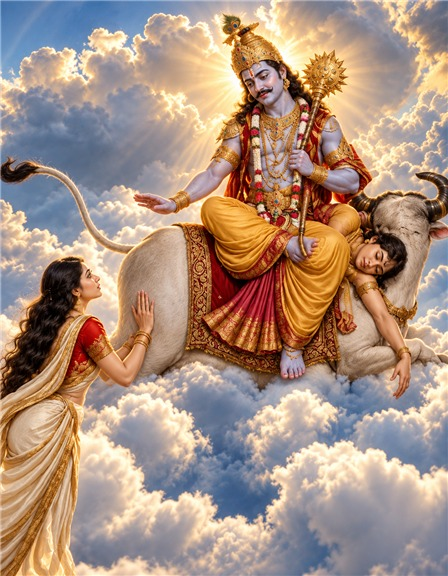
सावित्रीने कहा—‘देव! मेरे श्वशुरके नेत्रकी ज्योति नष्ट हो गयी है, वह उनको पुनः प्राप्त हो जाय और वे बलवान् तथा तेजस्वी हो जायँ।’ यमराजने कहा—‘एवमस्तु’ (ऐसा ही होगा); ‘अब तू लौट जा, नहीं तो थक जायगी।’ सावित्रीने कहा—‘पतिके समीप रहते हुए मुझे किसी प्रकार थकावट नहीं हो सकती। जहाँ मेरे प्राणनाथ रहेंगे; वहीं मेरे लिये भी आश्रय मिलना चाहिये। अतः मैं तो इनके साथ ही चलूँगी। दूसरा लाभ है सत्संग। सत्पुरुषोंका संग एक बार भी मिल जाय तो वह अभीष्टकी पूर्ति करनेवाला होता है, यदि उनसे प्रेम हो जाय तब तो कहना ही क्या है? संत-समागम कभी निष्फल नहीं होता; अतः सदा सत्पुरुषोंके साथ ही रहना चाहिये।’ यमराज बोले—‘सावित्री! तूने जो बात कही है, वह सबके लिये हितकर तथा मुझे अत्यन्त प्रिय है; अतः सत्यवान्के जीवनको छोड़कर तू पुनः कोई दूसरा वर माँग।’ सावित्रीने कहा—‘मेरे श्वशुरका खोया हुआ राज्य उन्हें स्वतः प्राप्त हो जाय तथा वे कभी धर्मका परित्याग न करें।’ यमराजने वह वरदान भी दे दिया और कहा—‘अब तू लौट जा।’ किंतु सावित्री पूर्ववत् उनके पीछे ही लगी रही। चलते-चलते उसने कहा—‘देव! आप सारी प्रजाका नियमन करनेवाले हैं, अतः ‘यम’ कहलाते हैं। मैंने सुना है, मन, वचन और क्रियाद्वारा किसी भी प्राणीके प्रति द्रोह न करके सबपर समानरूप दया करना और दान देना—श्रेष्ठ पुरुषोंका सनातनधर्म है। यों तो संसारके सभी लोग यथाशक्ति कोमलताका बर्ताव करते हैं, किंतु जो श्रेष्ठ पुरुष हैं, वे अपने पास आये हुए शत्रुपर भी दया ही करते हैं।’
यमराज बोले—‘कल्याणी! जैसे प्यासेको पानी मिलनेसे तृप्ति होती है, उसी प्रकार तेरी धर्मानुकूल बातें सुनकर मुझे प्रसन्नता होती है, अतः सत्यवान्के जीवनके सिवा कोई तीसरा वर और माँग ले।’ सावित्रीने कहा—‘मेरे पिता अश्वपतिके कोई पुत्र नहीं है, उन्हें सौ औरस पुत्र देनेकी कृपा करें।’ यमराजने इसके लिये भी हामी भर दी और कहा—‘सावित्री! तू बहुत दूर आ गयी, अब लौट जा।’ सावित्रीने कहा—‘मैं पतिके समीप हूँ, अतः दूरीका मुझे अनुभव नहीं होता। पतिसे दूर रहना ही नारीके लिये दुःखकी बात है। आप मेरी दो-एक बातें और सुनें। विवस्वान् (सूर्यदेव)-के पुत्र होनेसे आपको ‘वैवस्वत’ कहते हैं। आप शत्रु-मित्र आदिके भेदको भुलाकर सबका समान रूपसे न्याय करते हैं, इसीसे सब प्रजा धर्मका आचरण करती है और आप धर्मराज कहलाते हैं। अच्छे मनुष्योंका संतोंपर जैसा विश्वास होता है, वैसा अपनेपर भी नहीं; अतएव वे संतोंपर ही अधिक अनुराग रखते हैं। विश्वास ही सौहार्दका कारण है तथा सौहार्द ही विश्वासका। सत्पुरुषोंमें सबसे अधिक सौहार्दका भाव होता है, इसलिये उनपर सभी विश्वास करते हैं।’ यमराज बोले—‘सावित्री! तूने जो बातें कही हैं, वैसी मैंने और किसीके मुँहसे नहीं सुनी हैं; अतः मेरी प्रसन्नता और भी बढ़ गयी है। अब तू सत्यवान्के सिवा कोई चौथा वर भी माँग ले’
सावित्रीने कहा—‘भगवन्! मुझे भी कुलकी वृद्धि करनेवाले सौ औरस पुत्र प्राप्त हों। वे सभी बलवान् और पराक्रमी हों।’ यमराज बोले—‘तेरी यह अभिलाषा भी पूर्ण होगी। अच्छा, अब बहुत दूर चली आयी, जा, लौट जा।’ सावित्रीने अपनी धार्मिक चर्चा बंद नहीं की। वह कहती गयी—‘सत्पुरुषोंका मन सदा धर्ममें ही लगा रहता है। सत्पुरुषोंके साथ जो समागम होता है, वह कभी व्यर्थ नहीं जाता। संतोंसे कभी किसीको भय नहीं होता। सत्पुरुष सत्यके बलसे सूर्यको भी अपने समीप बुला लेते हैं। वे ही अपने प्रभावसे पृथ्वीको धारण करते हैं। भूत और भविष्यके आधार भी वे ही हैं। उनके बीचमें रहकर श्रेष्ठ पुरुषोंको कभी खेद नहीं होता। दूसरोंकी भलाई—सनातन सदाचार है; ऐसा मानकर सत्पुरुष प्रत्युपकारकी आशा न रखते हुए सदा परोपकारमें ही लगे रहते हैं।’ सावित्रीकी बातें सुनकर यमराज दयासे द्रवित हो उठे और बोले—‘पतिव्रते! तेरी ये धर्मानुकूल बातें गम्भीर अर्थसे युक्त तथा मेरे मनको लुभानेवाली हैं। तू ज्यों-ज्यों ऐसी बातें सुनाती है, त्यों-ही-त्यों तेरे प्रति अधिक श्रद्धा बढ़ती जाती है, अतः तू मुझसे कोई अनुपम वर माँग।’
सावित्रीने कहा—‘भगवन्! अब तो आप सत्यवान्के जीवनका ही वरदान दीजिये। इससे आपके ही सत्य और धर्मकी रक्षा होगी। आप मुझे सौ पुत्र होनेका वर दे चुके हैं, उसकी सिद्धि पतिके बिना कैसे हो सकती है? पतिके बिना तो मैं सुख, स्वर्ग, लक्ष्मी तथा जीवनकी भी इच्छा नहीं रखती।’ *
* न कामये भर्तृविनाकृता सुखं
न कामये भर्तृविनाकृता दिवम्।
न कामये भर्तृविनाकृता श्रियं
न भर्तृहीना व्यवसामि जीवितुम्॥
(महा०, वन० पर्व दाक्षिणात्य २९७। ५३)
धर्मराज वचनबद्ध हो चुके थे। उन्होंने सत्यवान्को मृत्यु-पाशसे मुक्त कर दिया और चार सौ वर्षोंकी नवीन आयु प्रदान की। इस प्रकार सती सावित्रीने अपने पातिव्रत्यके प्रतापसे पतिको मृत्युके मुखसे लौटाया तथा वह पतिकुल और पितृकुल दोनोंकी अभिवृद्धिमें सहायक हुई। यह है सती-धर्मकी अमोघ शक्ति! —रा० शा०
सती लोपामुद्रा
लोपामुद्रा महर्षि अगस्त्यकी धर्मपत्नी हैं। ये भी अपने पातिव्रत्य, संयम, तपस्या और त्यागके लिये संसारमें विख्यात हैं। इनकी उत्पत्तिकी कथा इस प्रकार है—एक समय मुनिवर अगस्त्य कहीं जा रहे थे। उन्होंने देखा, एक गड्ढेमें कुछ व्यक्ति नीचेको सिर किये लटक रहे हैं। मुनिने पूछा, ‘आपलोग कौन हैं?’ उन्होंने उत्तर दिया, ‘हम तुम्हारे ही पितर हैं और पुत्र होनेकी आशा लगाये इस गड्ढेमें लटके हुए हैं। बेटा अगस्त्य! यदि तुम्हारे एक पुत्र हो जाय तो इस नरकसे हमारा छुटकारा हो सकता है और तुम्हें भी सद्गति मिल सकती है।’ महर्षि अगस्त्य बड़े तेजस्वी और सत्यपरायण थे। उन्होंने पितरोंसे कहा, ‘आपलोग चिन्ता छोड़ें। मैं आपकी इच्छा पूर्ण करूँगा।’ इस प्रकार पितरोंको सान्त्वना दे अगस्त्यजीने विचार किया कि ‘वंशपरम्पराकी रक्षाके लिये विवाह करना आवश्यक है;’ किंतु उन्हें अपने योग्य कोई स्त्री न दिखायी दी।
उन्हीं दिनों विदर्भदेशके राजा सन्तानके लिये तपस्या कर रहे थे। मुनिने राजाको एक श्रेष्ठ कन्या होनेका आशीर्वाद दिया। समय आनेपर ऋषिके वरदानसे विदर्भराजके यहाँ एक तेजस्विनी कन्या उत्पन्न हुई। ब्राह्मणोंने उस कन्याके जन्मपर अपनी हार्दिक प्रसन्नता प्रकट की और उसका नाम लोपामुद्रा रख दिया। जैसे पानीमें कमलिनी और होमकुण्डमें प्रज्वलित अग्निकी शिखा बढ़ती है, उसी प्रकार वह मनोहर रूप धारण करनेवाली राजकुमारी शीघ्रतापूर्वक बढ़ने लगी। देखते-देखते लोपामुद्राके शरीरमें यौवन फूट पड़ा। वह रूपमें स्वर्गकी अप्सराओंको भी लज्जित करने लगी। उसमें विनय, सुशीलता, सदाचार, लज्जा और धर्मानुराग आदि सद्गुण स्वाभाविक रूपसे विकसित हो रहे थे। पिता उसके सुन्दर स्वभाव और सद्वॺवहारसे बहुत प्रसन्न रहते थे। कन्याको सयानी हुई देख पिता इस चिन्तामें पड़े कि कन्याका विवाह किसके साथ किया जाय।
महर्षि अगस्त्य मन-ही-मन विदर्भराजकी कन्याको अपनी सहधर्मिणी बनानेका निश्चय कर चुके थे। जब उन्हें मालूम हो गया कि लोपामुद्रा गृहस्थीका भार सँभालनेयोग्य हो गयी है, तब वे स्वयं जाकर विदर्भराजसे मिले और इस प्रकार बोले—‘राजन्! मैं पुत्रकी उत्पत्तिके लिये विवाह करना चाहता हूँ। इसके लिये तुम्हारी कन्याका ही वरण करता हूँ। तुम लोपामुद्राका विवाह मेरे साथ कर दो।’ विदर्भराज-दम्पति अपनी प्राणाधिका प्रिय पुत्रीका विवाह इनसे करना नहीं चाहते थे, पर शापसे डरते भी थे। पर इस प्रकार पिता-माताको दुःखी देख राजकुमारी लोपामुद्राने स्वयं उनके पास आकर कहा—‘महाराज! आप मेरे लिये दुःखी न हों।
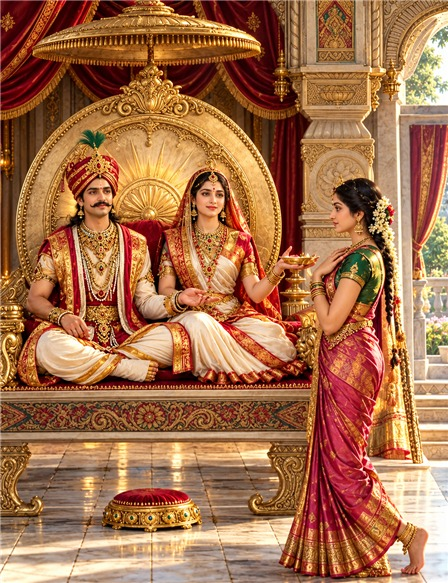
मुझे अगस्त्य ऋषिको सौंप दें और अपनी रक्षा करें।’ पुत्रीकी यह बात सुनकर राजाने शास्त्रविधिके अनुसार अगस्त्यजीके साथ उसका विवाह कर दिया। विवाहके पश्चात् महर्षिने कहा, ‘देवि! तुम्हारे ये वस्त्र और आभूषण बहुमूल्य हैं। इनको यहीं उतार दो। वनमें इनकी रक्षा कौन करेगा।’
लोपामुद्राका जन्म राजकुलमें हुआ था। वह बाल्यकालसे ही राजोचित सुखभोगमें पली थी। उसने अबतक अच्छे-अच्छे वस्त्रों और आभूषणोंसे ही शरीरका शृंगार किया था तो भी पतिकी आज्ञा पाते ही उसने उस राजवैभवका, उन बहुमूल्य वस्त्रों और आभूषणोंका मोह क्षणभरमें त्याग दिया। उसने एक-एक करके दर्शनीय रत्नमय आभूषण और सुन्दर महीन वस्त्र उतार डाले तथा उनकी जगह चीर, वल्कल और मृगचर्म धारण कर लिये। राजकुमारीने तपस्विनीका बाना धारण कर लिया और अपने पतिके समान ही व्रत एवं नियमोंका पालन करने लगी। लोपामुद्रा तन, मन, प्राणसे पतिका अनुगामिनी बन गयी। महर्षि अगस्त्य नवोढा पत्नीके साथ हरद्वारके क्षेत्रमें आये और वहीं रहकर घोर तपस्या करने लगे। लोपामुद्रा बड़े ही प्रेम, उत्साह और तत्परतासे पतिकी सेवा करती थी। महर्षि भी उसके प्रति बड़े प्रेमका बर्ताव करते थे। इस प्रकार वहाँ तपस्या करते-करते कितने ही वर्ष बीत गये। एक दिन महर्षिने देखा, लोपामुद्रा ऋतुस्नानसे निवृत्त होकर सेवामें उपस्थित है। तपस्याने उसकी कान्तिको और बढ़ा दिया है। उसकी सेवा, पवित्रता, संयम, शान्ति और रूपलावण्यने महर्षिको मुग्ध कर दिया था; अपने पिताके भवनमें अट्टालिकाके भीतर जिस प्रकारसे रहा करती थी, लोपामुद्राको प्रसन्न करनेके उद्देश्यसे वैसी ही व्यवस्था करनेके लिये महर्षि अगस्त्य धनके निमित्त घरसे निकले।
महर्षि अगस्त्य धन माँगनेके लिये पहले महाराज श्रुतर्वाके पास गये। उनके आगमनका समाचार पाकर राजा श्रुतर्वा मन्त्रियोंसहित उनकी अगवानीके लिये अपने राज्यकी सीमातक आया। उन्हें आदरपूर्वक नगरमें ले जाकर विधिवत् अर्घ्य अर्पण किया। फिर उसने हाथ जोड़कर नम्रतापूर्वक महर्षिके आगमनका कारण पूछा। अगस्त्यजीने कहा—‘राजन्! तुम्हारे पास मैं धनके लिये आया हूँ; अतः दूसरोंको कष्ट पहुँचाये बिना जो धन तुम्हें शेष बचता हो, उसीमेंसे यथाशक्ति मेरे लिये दो।’ अगस्त्यजीकी बात सुनकर राजाने अपना ‘सारा आय-व्ययका हिसाब उनके आगे रख दिया और कहा, ‘इसमेंसे आप जो धन लेना उचित समझें, वही ले लें।’ अगस्त्यजीने देखा, उस हिसाबमें आय-व्ययका लेखा बराबर था, इसलिये यह सोचकर कि इसमेंसे थोड़ा-सा भी धन ले लेनेपर प्राणियोंको दुःख होगा, उन्होंने कुछ भी न लिया। अन्तमें उन्हें इल्वलसे निर्दोष धन प्राप्त हुआ और उसीको लेकर उन्होंने अपनी साध्वी पत्नीका मनोरथ पूर्ण किया।
इस प्रकार लोपामुद्रा अपने सदाचार, सतीत्व और धर्मपरायणता आदि सद्गुणोंद्वारा पतिको बहुत ही प्रिय थीं। महर्षिने स्वयं कहा था—‘तुष्टोऽहमस्मि कल्याणि तव वृत्तेन शोभने।’ ‘कल्याणि! तुम्हारे सदाचारसे मैं तुमपर बहुत सन्तुष्ट हूँ।’ वनवासके समय भगवान् श्रीराम सीता और लक्ष्मणके साथ महर्षि अगस्त्यके आश्रमपर भी पधारे थे। वहाँ देवी लोपामुद्राने भी अपने पतिके साथ इन परमाराध्य अतिथियोंका स्वागत करके अपनेको धन्य बनाया था।
एक समयकी बात है, देवगण महर्षि अगस्त्यके आश्रमपर पधारे, महर्षिने उनका विधिपूर्वक पूजन किया। तत्पश्चात् बृहस्पतिने देवताओंकी ओरसे महर्षिका अभिनन्दन करते हुए उनकी धर्मपत्नी लोपामुद्राके सम्बन्धमें जो उद्गार प्रकट किया, वह प्रत्येक भारतीय नारीके लिये विशेषरूपसे ध्यान देने योग्य है।
पतिव्रताके आचरण
बृहस्पतिजीने कहा—‘मुने! तुम्हारी सहधर्मिणी लोपामुद्रा बड़ी पतिव्रता है। यह कल्याणी तुम्हारे शरीरकी छायाकी भाँति सदा तुम्हारा अनुसरण करती है। इसकी चर्चा भी पुण्य देनेवाली है। अरुन्धती, सावित्री, अनसूया, शाण्डिली, सती, लक्ष्मी, शतरूपा, मेना, सुनीति, संज्ञा और स्वाहा—इन देवियोंके द्वारा समस्त पतिव्रताओंमें लोपामुद्राका जितना ऊँचा स्थान बताया जाता है, उतना दूसरी किसी स्त्रीका नहीं है। तुम्हारे भोजन कर लेनेपर ही यह अन्न ग्रहण करती है। जब तुम खड़े होते हो, उस समय यह भी बैठी नहीं रह सकती। तुम्हारे सो जानेपर ही यह सोती है और तुम्हारे जागनेसे पहले ही जग जाती है। जबतक यह अपनेको स्वच्छ वस्त्र और आभूषणोंसे विभूषित न कर ले तबतक तुम्हारे सामने नहीं आती और जब तुम किसी कार्यवश बाहर चले जाते हो तब यह आभूषणोंको छूती भी नहीं। तुम्हारी आयु बढ़े, इसके लिये यह कभी तुम्हारा नाम अपनी जबानपर नहीं लाती। साथ ही सतीत्वकी रक्षाके लिये किसी दूसरे पुरुषका नाम भी नहीं लेती। यदि तुमने कभी कोई कड़ी बात भी कह दी तो यह उसका उत्तर नहीं देती, तुम्हारे दण्ड देनेपर भी यह प्रसन्न ही होती है, रंज अथवा बुरा नहीं मानती। जब तुम कहते हो, ‘देवि! अमुक कार्य करो;’ तो इसकी ओरसे तुरंत उत्तर मिलता है—‘नाथ! इस कामको पूरा हुआ ही समझिये, मैं अभी किये देती हूँ।’ तुम्हारे पुकारनेपर यह तुरंत ही घरके आवश्यक काम छोड़कर भी चली आती है और पूछती है—‘नाथ! मुझे किसलिये बुलाया है, सेवा बतानेकी कृपा करें।’ यह कभी घरके द्वारपर देरतक नहीं खड़ी होती। दरवाजेपर कभी नहीं बैठती। बिना तुम्हारी आज्ञा लिये किसीको कोई वस्तु नहीं देती। बिना कहे स्वयं ही तुम्हारे लिये पूजाकी सामग्री एकत्र कर देती है। नित्य नियमके लिये जल, कुशा, पत्र, पुष्प और अक्षत आदि जुटा देती है। अवसर देखा करती है, जब जैसा समय आया, उसके अनुकूल वस्तुएँ लाकर प्रस्तुत कर देती है। यह सब कुछ यह बड़ी प्रसन्नतासे करती है, इसके मनमें तनिक भी उद्वेग नहीं होता।
‘स्वामीके भोजनसे बचे हुए अन्न और फल आदिको ही यह स्वयं ग्रहण करती है। पति जो कुछ देते हैं उसे यह ‘महाप्रसाद’ मानकर लेती है। देवता, पितर, अतिथि, भृत्यवर्ग, गौ तथा भिक्षुकजनोंको अन्नका भाग दिये बिना कभी स्वयं नहीं खाती। घरकी हर-एक वस्तु जतनसे रखती है। गृहकार्यमें बड़ी कुशल है। सदा उत्साहयुक्त एवं प्रसन्न रहती है। अधिक खर्च नहीं करती। तुम्हारी आज्ञा लिये बिना कोई व्रत-उपवास आदि नहीं करती। जहाँ अधिक जन-समुदाय जुटा हो, ऐसे उत्सवको देखनेसे यह दूर ही रहती है। पतिकी आज्ञा बिना तीर्थोंमें भी नहीं जाती; विवाहोत्सव देखनेकी भी इच्छा नहीं करती। जब पतिदेवता सुखपूर्वक सोये, बैठे अथवा आराम करते रहते हैं, उस समय अत्यन्त आवश्यक कार्य होनेपर भी यह पतिको कभी नहीं उठाती। रजस्वला होनेपर तीन रात्रितक स्वामीको अपना मुँह नहीं दिखाती। जबतक शुद्ध होकर स्नान नहीं कर लेती तबतक अपनी वाणी भी पतिके कानोंमें नहीं पड़ने देती। स्नान कर लेनेपर सर्वप्रथम यह अपने पतिका ही दर्शन करती है, दूसरे किसीका नहीं। अथवा यदि पति उपस्थित न हों तो मन-ही-मन उनका ध्यान करके सूर्यदेवका दर्शन करती है।
‘यह पतिव्रता नारी ‘पतिकी आयु बढ़े’ ऐसी इच्छा रखकर हरिद्रा-चूर्ण, कुंकुम, सिन्दूर, काजल, अँगिया, पान, मांगलिक शुभ आभूषण, केश सँवारना, चोटी बाँधना, कंगन और कानका आभूषण—इन्हें कभी अपने शरीरसे दूर नहीं करती। धोबिन, कुतर्क करनेवाली स्त्री तथा दुर्भगा (दुराचारिणी)-के साथ वह कभी मैत्री नहीं स्थापित करती। जो स्त्री अपने पतिसे द्वेष रखती है, उससे यह कभी बात भी नहीं करती। अकेली कहीं नहीं जाती। नंगी होकर स्नान नहीं करती। ओखली, मूसल, झाड़ू, सिल, जाँता और देहली (चौखटके निचले भाग)-पर साध्वी लोपामुद्रा कभी नहीं बैठती। जिस-जिस वस्तुमें स्वामीकी रुचि होती है, उसीमें यह भी सदा प्रेम रखती है। स्त्री अपने पतिकी आज्ञाका उल्लङ्घन न करे—यही उनके लिये व्रत है, यही उनका परम धर्म है और यही एक उनके लिये देवपूजा है। पति नपुंसक, दुर्दशाग्रस्त, रोगी, वृद्ध, सुखी अथवा दुःखी कैसा ही क्यों न हो, नारी उसका त्याग न करे। पतिके हर्षमें हर्ष माने और पतिके मुखपर विषादकी छाया देख वह स्वयं भी दुःखी हो जाय। पुण्यवती सती सम्पत्ति और विपत्तिमें भी पतिके साथ एक रूप होकर रहे। घरमें घी, नमक, तेल आदि समाप्त हो जानेपर भी पतिव्रता स्त्री पतिसे सहसा यह न कहे कि ये वस्तुएँ नहीं है। घरमें आते ही उसे चिन्तामें न डाल दे। तीर्थ-स्नानकी इच्छा रखनेवाली सती स्त्री अपने पतिके चरणोदकका पान करे। नारीके लिये एकमात्र पति ही शिव अथवा विष्णुसे भी बढ़कर है। जो स्त्री पतिकी आज्ञाका उल्लङ्घन करके व्रत, उपवास और नियमका अनुष्ठान करती है वह अपने पतिकी आयुको घटाती है और मरनेके बाद नरकमें पड़ती है। जो स्त्री पतिके कुछ कहनेपर क्रोधमें आकर उसे प्रत्युत्तर देती है वह गाँवमें कुतिया अथवा निर्जन वनमें गीदड़ी होती है।
‘स्त्रियोंके लिये यही सबसे श्रेष्ठ नियम बताया गया है कि वह स्वामीके चरणोंकी पूजा करके भोजन करे। इस नियमको वह दृढ़तापूर्वक अपनावे। ऊँचे आसनपर न बैठे। दूसरोंके घर न जाय। मुँहसे कभी ऐसी बात न निकाले, जिसके कहने-सुननेसे लज्जा आती हो। किसीकी निन्दा न करे। कलहको तो वह दूरसे ही नमस्कार करे। गुरुजनोंके समीप न तो वह कभी जोरसे बोले और न हँसे। जो खोटी बुद्धिवाली स्त्री पतिको त्याग कर अकेली एकान्तमें घूमती-फिरती है, वह वृक्षोंके खोखलेमें रहनेवाली क्रूर उलूकी होती है। जो पतिके द्वारा दण्डित होनेपर उन्हें भी मारना चाहती है, वह दूसरे जन्ममें बाघिन अथवा डाँस होती है। जो पराये पुरुषकी ओर कटाक्ष करती है, वह केकराक्षी होती है। जो स्वामीको छोड़कर अकेली ही मिठाइयाँ उड़ाती है, वह ग्रामीण सूकरी अथवा अपनी ही विष्ठा खानेवाली वल्गु (चमगादड़) होती है। जो पहले ‘तू’ कहकर फिर प्रिय वचन बोलती है, वह दूसरे जन्ममें गूँगी होती है। जो सदा सौतसे डाह रखती है, वह बारंबार दुर्भगा होती है। जो स्वामीकी दृष्टिपर पर्दा डालकर दूसरे पुरुषको आसक्तभावसे देखती है, वह कानी, कुरूपा और विकृत मुखवाली होती है।
‘जो पतिको बाहरसे आते देख तुरंत उनके लिये जल और भोजनकी सामग्री प्रस्तुत करती, पान देती, पंखा झलती, पैर दबाने आदिके द्वारा सेवा करती, मीठी बातें सुनाती, पसीना पोंछती तथा अन्य उपचारोंद्वारा उन्हें तृप्त करती है, उसके द्वारा मानो तीनों लोकके प्राणी तृप्त कर दिये जाते हैं। पिता, भ्राता और पुत्र—ये सभी स्त्रीको परिमित वस्तुएँ देते हैं; परंतु पतिसे उसे जो कुछ मिलता है, उसका कोई माप नहीं है; अतः अमितदान करनेवाले पतिकी सदा पूजा करनी चाहिये। पति ही देवता है, पति ही गुरु है तथा पति ही धर्म, तीर्थ और व्रत है, अतः नारी सब कुछ छोड़कर केवल पतिका पूजन करे।
‘कन्याके विवाहकालमें ब्राह्मण यही आशीर्वाद दें कि यह पतिके जीवन और मरणमें भी सदा उनकी सहचरी बनी रहे। स्त्री सदा ही पतिका अनुसरण करे, ठीक उसी प्रकार, जैसे छाया शरीरका, चाँदनी चन्द्रमाँका तथा बिजली मेघका अनुसरण करती है। जो पतिके मर जानेपर प्रसन्नतापूर्वक उसके शवके साथ श्मशानभूमिमें जाती है, उसे निश्चय ही पग-पगपर अश्वमेध-यज्ञका फल प्राप्त होता है। जैसे साँप पकड़नेवाला मदारी साँपको बलपूर्वक बिलसे निकाल लेता है, उसी प्रकार सती नारी यमदूतोंके चंगुलमें पड़े हुए पतिका बलपूर्वक उद्धार करके उसे स्वर्गलोकमें पहुँचाती है। यमराजके दूत सती नारीको देखकर उसके पापाचारी पतिको भी छोड़कर दूर भाग जाते हैं। पतिव्रताका तेज देखकर सबको तपानेवाले सूर्य भी संतप्त हो उठते हैं, दाहक अग्निदेव स्वयं ही दग्ध होने लगते हैं तथा सम्पूर्ण तेज काँप उठते हैं। शरीरमें जितने रोएँ हैं, उतने कोटि अयुत वर्षोंतक पतिव्रता स्त्री पतिके साथ रमण करती हुई स्वर्ग-सुखका उपभोग करती है।
‘संसारमें वह माता धन्य है, वह पिता धन्य है तथा वह सौभाग्यशाली पति धन्य है, जिनके घरमें पतिव्रता स्त्री मौजूद है। केवल पतिव्रताके पुण्यसे पिता, माता तथा पति तीनों कुलोंके तीन-तीन पीढ़ीसे मनुुष्य स्वर्गका सुख भोगते हैं। पतिव्रताका चरण पृथ्वीको जहाँ-जहाँ स्पर्श करता है, वहाँ-वहाँकी पावन भूमि यही मानती है कि मुझपर जगत्का कुछ भी भार नहीं है। सूर्य, चन्द्रमा और वायु भी डरते-डरते ही पतिव्रताका स्पर्श करते हैं, वह भी और किसी भावसे नहीं, केवल अपने आपको पवित्र करनेके लिये। जल सदा ही पतिव्रताका स्पर्श चाहता है, उसे पाकर वह ऐसा मानता है कि आज मेरी जड़ताका विनाश हो गया। आज सचमुच ही मैं दूसरोंको पवित्र करनेवाला बन गया। क्या घर-घरमें अपने रूप और लावण्यपर गर्व करनेवाली स्त्रियाँ नहीं हैं; परंतु पतिव्रता स्त्री तो भगवान् विश्वनाथकी भक्तिसे ही मिलती है। भार्या ही गृहस्थ-धर्मकी जड़ है। वही सुखका मूल है तथा भार्या ही धर्म-फलकी प्राप्ति एवं संतानकी वृद्धिका भी कारण है। स्त्रीके द्वारा ही इस लोक और परलोकपर विजय पायी जाती है। देव, पितर और अतिथियोंका पूजनादि कर्म करनेका अधिकारी वह पुरुष नहीं है, जिसके स्त्री न हो। वास्तवमें गृहस्थ वही है, जिसके घरमें पतिव्रता स्त्री है। दूसरे लोग तो केवल स्त्रीरूप राक्षसी अथवा वृद्धावस्थाका ग्रास बन रहे हैं। जैसे गंगामें स्नान करनेसे शरीर पवित्र होता है उसी प्रकार पतिव्रताकी शुभ दृष्टि पड़नेसे भी शरीर परम पवित्र हो जाता है।*
* धन्या सा जननी लोके धन्योऽसौ जनकः पुनः।
धन्यः स च पतिः श्रीमान् येषां गेहे पतिव्रता॥ ६०॥
पितृवंश्या मातृवंश्याः पतिवंश्यास्त्रयस्त्रयः।
पतिव्रतायाः पुण्येन स्वर्गसौख्यानि भुञ्जते॥ ६१॥
पतिव्रतायाश्चरणो यत्र यत्र स्पृशद्भुवम्।
तत्रेति भूमिर्मन्येत नात्र भारोऽस्ति पावनी॥ ६२॥
बिभ्यत् पतिव्रतास्पर्शं कुरुते भानुमानपि।
सोमो गन्धवहश्चापि स्वपावित्र्यय नान्यथा॥ ६३॥
आपः पतिव्रतास्पर्शमभिलष्यन्ति सर्वदा।
अद्य जाडॺविनाशो नो जातास्त्वद्यान्यपावनाः॥ ६४॥
गृहे गृहे न किं नार्यो रूपलावण्यगर्विताः।
परं विश्वेशभक्त्यैव लभ्यते स्त्री पतिव्रता॥ ६५॥
भार्या मूलं गृहस्थस्य भार्या मूलं सुखस्य च।
भार्या धर्मफलावाप्त्यै भार्या सन्तानवृद्धये॥ ६६॥
परलोकस्त्वयं लोको जीयते भार्यया द्वयम्।
देवपित्रतिथीज्यादि नाभार्यः कर्म चार्हति॥ ६७॥
गृहस्थः स हि विज्ञेयो यस्य गेहे पतिव्रता।
ग्रस्यतेऽन्या प्रतिपदं राक्षस्या जरयाथवा॥ ६८॥
यथा गङ्गावगाहेन शरीरं पावनं भवेत्।
तथा पतिव्रतादृष्टॺा शुभया पावनं भवेत्॥ ६९॥
(स्कन्दपु० काशी० पूर्वार्ध अ० ४)
‘महाभागा लोपामुद्रा! आज तुम्हारे दर्शनसे हमें गंगा-स्नानका फल मिल गया।’ इस प्रकार लोपामुद्राकी सराहना और स्तुति करके बृहस्पतिजीने लोपामुद्राको प्रणाम किया और अगस्त्यजीसे कहा—‘मुने! तुम साक्षात् ब्रह्मतेज हो और देवी लोपामुद्रा साक्षात् पातिव्रत्य तेज हैं।’
धन्य हैं सतीशिरोमणि देवी लोपामुद्रा! जिनकी महिमाँका वर्णन साक्षात् देवगुरु बृहस्पतिने इस प्रकार किया है। संसारकी स्त्रियाँ इनके जीवनसे बहुत कुछ सीख सकती हैं। लोपामुद्रा अपने सतीत्वके कारण सदा अमर रहेंगी। -रा० शा०
सती अनसूया
भारतवर्षकी सती-साध्वी स्त्रियोंमें अनसूयाजीका स्थान बहुत ऊँचा है। इनका जन्म अत्यन्त उच्च कुलमें हुआ था। स्वायम्भुव मनुकी पुत्री देवी देवहूति इनकी माता और ब्रह्मर्षि कर्दम इनके पिता थे। भगवान् विष्णुके अवतार सिद्धेश्वर कपिल इनके छोटे भाई हैं। अनसूयाजीमें अपने वंशके अनुरूप ही सत्य, धर्म, शील, सदाचार, विनय, लज्जा, क्षमा, सहिष्णुता तथा तपस्या आदि सद्गुणोंका स्वाभाविकरूपसे विकास हुआ था। ब्रह्माजीके मानस पुत्र परम तपस्वी महर्षि अत्रिको इन्होंने पतिरूपमें प्राप्त किया था। अपनी सतत सेवा तथा पावन प्रेमसे अनसूयाने महर्षि अत्रिके हृदयको जीत लिया था। पतिव्रता तो ये थीं ही, तपस्यामें भी बहुत चढ़ी-बढ़ी थीं; किन्तु पतिकी सेवाको ही ये नारीके लिये परम कल्याणका साधन मानती थीं।
तीनों देव अनसूयाकी गोदमें
(ब्रह्मचारी श्रीप्रभुदत्तजी महाराज)
सरस्वती श्रीरमा शिवा तीनों यह मानें।
पतिव्रता हम श्रेष्ठ याहि सबरो जग जानें॥
नारद सबके भरे कान अनसूयाको सम।
निज-निज पति तें कहें पातिव्रत देखें बल हम॥
विधि हरि हर भिक्षुक बने, अनसूया आश्रम गये।
पतिव्रताकी परीक्षा हित भिक्षा माँगत भये॥
भगवान्को अपने भक्तोंका यश बढ़ाना होता है तो वे नाना भाँतिके स्वाँग रचते हैं, ऐसी-ऐसी अद्भुत क्रीड़ाएँ करते हैं कि जिनको स्मरण करके साधारण मनुष्य चकित हो जाते हैं कि भगवान्ने ऐसी क्रीड़ा क्यों की? हम साधारण अज्ञ पुरुष भगवान्की अचिन्त्य लीलाओंको अपने तर्ककी तुलापर तौलें तो हमारा यह प्रयास असफल ही न होगा, अपितु यह हमारी अनधिकार चेष्टा भी समझी जायगी।
कहते हैं कि भगवती श्रीलक्ष्मीजी, श्रीपार्वतीजी और श्रीसरस्वतीजीको अपने पातिव्रत्यका बड़ा अभिमान था, भगवान् और किसीके अभिमानको चाहे सहन कर लें; किंतु वे अपने भक्तोंके हृदयमें उठे हुए अभिमानके अंकुरका तुरंत नाश कर देते हैं। यही तो उनकी भक्तोंके ऊपर भक्तवत्सलता है। भगवान्ने देखा कि इन चराचर जगत्की वन्दनीया देवियोंको बड़ा गर्व हो गया है, तो उनके गर्वको खर्व करनेके निमित्त कौतुकप्रिय भगवान्ने नारदके मनमें प्रेरणा की। नारदजी तो भगवान्की इच्छाको जाननेवाले ही ठहरे। वे भगवान्की प्रेरणासे चले। उन्हें तो नित्यप्रति कोई-न-कोई नया कौतुक चाहिये। अतः वे पहले लक्ष्मीजीके यहाँ पहुँचे।
वीणा बजाते, रामकृष्ण-गुण गाते नारदजीको अपने यहाँ आते देखकर लक्ष्मीजीका मुखकमल खिल उठा। बड़ी प्रसन्नतासे वे बोलीं—‘आइये, नारदजी! अबके तो बहुत दिनोंमें आये, कहाँ चक्कर लगाते रहे?’
कुछ रुककर नारदजी बोले—‘माताजी! हमारा क्या ठिकाना? रमते राम ठहरे; जिधर चल दिये, चल दिये। वैष्णवका और ऊँटका जिधर मुँह उठा, चल दिया।’
यह सुनकर लक्ष्मीजी बड़े जोरोंसे हँस पड़ीं और हँसते-हँसते बोलीं—‘नारदजी! आपने वैष्णवकी ऊँटके साथ तुलना बड़ी सुन्दर की। ऊँट भी नीमको बिना पत्तीके बना देता है और ये वैष्णव भी तुलसीको बिना पत्तीकी बना देते हैं। सहस्र-सहस्र दल शालग्राम भगवान् पर चढ़ाते हैं। खैर, यह तो बताइये, आप कहाँसे आ रहे हैं?’
नारदजी बोले—‘माताजी! क्या बताऊँ, कुछ बताते नहीं बनता। अबके मैं घूमता-घामता चित्रकूटकी ओर चला गया। वहाँसे पयस्विनीके किनारे-किनारे भगवान् अत्रिके आश्रमपर पहुँच गया। वहाँ उनकी पतिव्रता पत्नी भगवती अनसूयाके दर्शन करके कृतार्थ हो गया। आज संसारमें उनके समान पतिव्रता कोई भी नहीं है। उन्होंने अपने तपके ही प्रभावसे गंगाजीकी एक धारा प्रकट कर दी, जो सब पापोंको काटनेवाली मन्दाकिनीके नामसे संसारमें प्रसिद्ध है। आज संसारकी सभी सती-साध्वी पतिव्रताओंकी वे शिरोमणि हैं। चौदहों भुवनोंमें घूम आया, ऐसी पतिव्रता तो मुझे कहीं मिली नहीं।’
यह सुनकर तो लक्ष्मीजीको बड़ा बुरा लगा। यह मेरे ही घरका बच्चा, मेरे ही सामने ऐसी बातें कर रहा है। यह तो मेरा प्रत्यक्ष अपमान है; फिर सोचा—इसने मुझे छोड़कर कहा होगा। अतः बातको स्पष्ट करके पूछने लगीं—‘नारद! तुमने अनसूयाके पातिव्रत्यकी बड़ी प्रशंसा की, नाम तो उनका मैंने भी सुना है, किंतु क्या वे मुझसे भी बढ़कर हैं?’
नारदजीको तो उनके मनको फेरना ही था, बोले—‘माताजी! आप बुरा न मानें तो मैं इसका उत्तर दूँ?’
लक्ष्मीजी बोलीं—‘बुरा माननेकी कौन-सी बात है, तुम निर्भय होकर उत्तर दो।’
नारदजी बोले—‘माताजी! सच कहूँ या झूठ?’
लक्ष्मी बोलीं—‘अरे झूठका क्या काम? तुम सच-सच बताओ।’
तब नारदजी दृढ़ताके स्वरमें कहने लगे—‘माताजी! सच बात तो यह है, आप उन देवी अनसूयाके पासंगके बराबर भी नहीं।’ इतना सुनते ही लक्ष्मीजीका मुख फक्क पड़ गया। वे नारदजीसे ऐसे उत्तरकी स्वप्नमें भी आशा नहीं रखती थीं। उनके मनमें सतीके प्रति डाह पैदा हुआ और मन-ही-मन उन्होंने भगवती अनसूयाको नीचा दिखानेका निश्चय कर लिया। फिर प्रकटमें बोलीं—‘अच्छी बात है नारद! समय........पासंगके समान है या मैं उसके पासंगके तुल्य हूँ।’ नारदजीको तो कलहका बीज बोना था। उन्हें बड़ी प्रसन्नता हुई। मेरा बीज ठीक समयपर जोती-गोड़ी उर्वरा भूमिमें ही बोया गया। अब अति शीघ्र ही बीजमेंसे अंकुर उत्पन्न होकर वह पुष्पित, पल्लवित और फलवान् बन जायगा। इतना सोचकर नारदजी शीघ्रताके साथ कैलासकी ओर चल दिये।
इधर लक्ष्मीजी आज मुँह फुलाकर बैठ गयीं। भगवान्ने पूछा—‘प्रिये! आज किस कारणसे खटपाटी लेकर पड़ी हो? अपने दुःखका कारण मुझे बताओ।’
लक्ष्मीजी बोलीं—‘देखो जी, सुन लो मेरी बात! बहुत दिन मैंने आपके तलुए सुहराये हैं। आपने भी कृपा करके मुझे अपने कण्ठका हार बनाया है। मैंने आजतक आपकी हाँ-में-हाँ मिलायी है? अपनी कोई माँग उपस्थित नहीं की। आज आपको मेरी एक बात माननी पड़ेगी?’
भगवान् बोले—‘बात भी तो सुनें, क्या है, बिना सुने कैसे कह दें?’
मुँह फुलाकर लक्ष्मीजी बोलीं—‘नहीं जी, बात कुछ हो। मैं शशकके सींग माँगूँ तो आपको एक सींगवाला शशक बनाकर उसके सींग लाने पड़ेंगे। मैं बन्ध्यापुत्र माँगूँ तो आपको बन्ध्याके मुँहसे पुत्र प्रकट करके लाना पड़ेगा। आप ‘हाँ’ करेंगे तब मैं कहूँगी, उसके पहले नहीं, आज ही तो आपका प्रेम देखना है। बहुत मुझे बहकाते रहते थे।’
भगवान् बोले—‘अच्छी बात है, कहो तो सही।’
लक्ष्मीजी बोलीं—‘हाँ! कहिये।’
भगवान् हँसकर बोले—‘हाँ, हाँ, हाँ और कहो कै बार कहूँ। पट्टा लिख दूँ? गंगाजी तो मेरे अँगूठेसे ही निकली हैं; जो गंगाजीमें खड़ा होकर कहूँ।’
लक्ष्मीजी प्रसन्नता प्रकट करती हुई बोलीं—‘नहीं, बस महाराज! हो गया मुझे विश्वास! आपको, जैसे भी हो, अनसूया देवीका सतीत्व भंग करना होगा।’
भगवान् यह सुनकर हँसे और मन-ही-मन कहने लगे—‘अरी देवि! हममें इतनी सामर्थ्य कहाँ जो उस देवीका पातिव्रत्य खण्डित कर सकें।’ भगवान् समझ गये, यह सब इस तूमड़िया नारदके बीज बोये हैं, प्रकटमें बोले—‘बस, इतनी-सी ही बातपर मुँह कुप्पाकी तरह फुला लिया था। हम अभी जाते हैं। हम तो प्रयत्न करेंगे और जबतक इस कामको पूरा न करेंगे तबतक न लौटेंगे, यदि तुमने बीचमें कुछ विघ्न-बाधा न डाली तो?’
लक्ष्मीजी बड़ी प्रसन्न हुईं। भगवान्ने अपने वाहन गरुड़को बुलाया और वे अत्रिके आश्रमकी ओर चल पड़े।
इधर नारदजी कैलास पहुँचे। सतीजी अकेली बैठी पूजा कर रही थीं। वीणा बजाते, नाचते, गाते नारदजीको देखकर सती पार्वतीने उनका स्वागत किया, खानेको एक लड्डू दिया। एक ही गफ्फेमें मुँहमें डालते हुए नारदजी बोले—‘अहा, कैसा स्वादिष्ट लड्डू है। अमृतका बना मालूम पड़ता है, किंतु भगवती अनसूयाके यहाँ जैसा स्वाद था, वैसा तो स्वाद है नहीं!’
सतीने मनमें सोचा—‘हाय! कैसे कृतघ्नसे पाला पड़ा? कितने उल्लाससे तो मैंने सुधामय मोदक इसे दिया, यह कहता है अनसूयाके लड्डूके बराबर नहीं है।’ तब तो उन्हें रोष आ गया और बोलीं—‘नारद! क्या कह रहा है? अनसूया कौन है, जिसके लड्डूकी तू इतनी प्रशंसा करता है?’
नारदजी बोले—‘माताजी! सती साध्वी भगवती अनसूया भगवान् अत्रिकी प्राणप्रिया पत्नी हैं। आज संसारमें उनके सदृश दूसरी कोई पतिव्रता नहीं।’
सतीजीने बल देते हुए कहा—‘मुझसे भी अधिक?’
नारदजीने उपेक्षाके स्वरमें कहा—‘माताजी! अधिक-कमका तो मुझे पता नहीं, किंतु इतना अवश्य जानता हूँ, उनके पातिव्रत्यके सामने आपका पातिव्रत्य फीका है।’
यह सुनते ही सतीजी दौड़ी-दौड़ी शिवजीके पास पहुँचीं और बोलीं—‘आप तो कहते थे मैं पतिव्रताओंमें शिरोमणि हूँ।’
शिवजीने कहा—‘तो क्या तुम्हें इसमें कुछ सन्देह है?’
सतीजीने कहा—‘महाराजजी! अबतक तो सन्देह था नहीं। इस नारदने मुझे सन्देहमें डाल दिया है। नारद कहता है कि अत्रिपत्नी अनसूयाके सामने तुम्हारा पातिव्रत्य फीका है।’
यह सुनते ही शिवजी हँस पड़े और बोले—‘नारद कहाँ है? उसे मेरे पास लाओ।’ सतीजी लौटकर गयीं तो अब नारद वहाँ कहाँ। वे तो कबके नौ-दो-ग्यारह हो चुके थे। सतीजीने लौटकर कहा—‘महाराज! वह तो चला गया, किंतु आप बतावें, यह बात सत्य है क्या?’
भोलानाथ स्त्रियोंके डाहकी बात क्या जानें कि इनके मनमें कैसी असूया होती है। वे बोले—‘नारद ठीक कहता था, देवि! तुम भगवती अनसूयाकी समानता तो नहीं कर सकतीं।’
सतीजीने उसी समय शिवजीके कमलके सदृश अरुण चरण पकड़ लिये और दृढ़ताके स्वरमें बोलीं—‘अब इन चरणोंको तभी छोड़ूँगी, जब अनसूयाका पातिव्रत्य भंग करके मुझे संसारमें सर्वश्रेष्ठा सतीशिरोमणि बना देंगे।’
भोले बाबा अपने साँपोंको सम्हालते हुए बोले—‘देवि! हम प्रयत्न करेंगे, किंतु बीचमें फिर तुम कहीं गड़बड़-घुटाला मत मचा देना। स्त्रियाँ क्षणभरमें तो रुष्ट हो जाती हैं, क्षणभरमें सन्तुष्ट। फिर भायेलो-सहेलो मत जोड़ लेना।’
सतीजी बोलीं—‘महाराज! मुझे तो आपका ही डर है। आप भोलानाथ ठहरे। पुरुषोंकी सदा यही नीति रहती है कि छलसे, बलसे, कला-कौशलसे, डाँटके, फटकारके, प्यार कर, झूठ-सच बोलकर स्त्रियोंको ठग लेते हैं। सो देवताजी! अब उसी ठग-विद्याका प्रयोग अत्रिपत्नी अनसूयाके प्रति कीजिये।’
शिवजी हँस पड़े और मन-ही-मन सोचने लगे—‘जो दूसरोंको खाई खोदता है, उसके लिये कुआँ खुदा-खुदाया तैयार रहता है।’ प्रकटमें बोले—‘देवि! मैं अभी जाता हूँ, तुम मेरे पैरोंको छोड़ो तो सही।’ सती देवीने भगवान् वृषभध्वजके चरणोंको छोड़ दिया। जो सती अपने पतिके चरणोंको क्षणभर भी छोड़ देती है, उसे अन्तमें भी क्लेश-ही-क्लेश उठाना पड़ता है। शिवजीने अपने नादियेको बुलाया। वे बम-बम करते हुए तुरंत दौड़े चले आये। शिवजी उछलकर उनके ऊपर सवार हुए और पीछे आनेवाले भूत, प्रेत, पिशाचोंको लौटाकर अकेले ही अत्रि-आश्रमकी ओर चल पड़े।
इधर नारदजी ब्रह्मलोकमें पहुँचे। देवी ब्रह्माणीने उनका स्वागत-सत्कार किया और बोलीं—‘वत्स नारद! तुम तो हमें भूल ही जाते हो, अबके तो बहुत दिनोंमें आये। क्या नये समाचार हैं?’
नारदजीने कहा—‘माताजी! सब ठीक है, एक बड़ी अद्भुत बात मैंने मर्त्यलोकमें देखी।’
उत्सुकताके साथ ब्रह्माणीने पूछा—‘बताओ कौन-सी अद्भुत बात है?’
नारदजीने कहा—‘माताजी! क्या बताऊँ, अत्रिपत्नी अनसूयाके पातिव्रत्यका ऐसा प्रभाव है कि सब ऋषि-मुनि आकर उनकी स्तुति करते हैं। संसारमें उनके समान आज कोई भी पतिव्रता नहीं। पातिव्रत्यका ऐसा प्रभाव ही होता है।’ अमर्षके सहित ब्रह्माणी बोलीं—‘तो क्या वह मुझसे भी बढ़कर है?’
नारदजीने कहा—‘अब माताजी! यह मैं कैसे कहूँ। अपनी माँ तो माँ ही है, सर्वश्रेष्ठ है ही। किंतु सभी ऋषि-मुनि यही बात कह रहे हैं कि आज अनसूयासे बढ़कर कोई भी पतिव्रता नहीं।’
अब तो ब्रह्माणीजीको बड़ी चिन्ता हुई। उन्होंने कहा—‘जाओ, शीघ्रतासे अपने पिताको तो बुला लाओ।’
माताजीकी आज्ञा पाकर नारदजी पितामहकी सभामें पहुँचे। उस समय देवताओं और असुरोंमें जो बहुत दिनसे वैरभाव चल रहा था, उसीके सम्बन्धमें कश्यपजीसे बातें कर रहे थे। नारदजीने ब्रह्माणीजीका सन्देश कह सुनाया।
ब्रह्माजीने समझा कोई आवश्यक कार्य होगा, इसीलिये उठकर भीतर आये। आते ही ब्रह्माणीने पूछा—‘भगवन्! आजकल संसारमें सर्वश्रेष्ठ पतिव्रता कौन है?’
ब्रह्माजीने विस्मयके साथ पूछा—‘इस अप्रासंगिक प्रश्नका प्रयोजन?’
हठके स्वरमें ब्रह्माणीने कहा—‘प्रयोजन कुछ नहीं, आप मुझे पहले इसका उत्तर दे दीजिये।’
ब्रह्माजीने प्रेमसे घुड़ककर कहा—‘वैसे ही कोई बात न चीत। तुमसे बढ़कर और संसारमें कौन पतिव्रता है?’
ब्रह्माणीने प्रेमके स्वरमें कहा—‘अब महाराज! आप ये चाटुकारिताकी बात न कीजिये, सत्य-सत्य बताइये। मैंने तो सुना है, आजकल अनसूयासे बढ़कर कोई पतिव्रता संसारभरमें नहीं है।’
यह सुनकर ब्रह्माजीको कुछ चिन्ता भी हुई, ऊपरसे मुसकराये भी। सोचा—कुछ दालमें काला है। स्त्रियोंमें असूया शीघ्र ही आ जाती है। अनसूयामें यही विशेषता है कि किसीके प्रति भी उसके मनमें असूया नहीं। बात तो सत्य है, उनके समान कौन हो सकता है? बातको टालनेकी दृष्टिसे ब्रह्माजी बोले—‘तुमसे यह बात किसने कही?’
ब्रह्माणीजी इधर-उधर देखने लगीं। नारदजीका पता ही नहीं। माता-पिताकी ऐकान्तिक रहस्यकी बातोंके समय सयाने पुत्रको वहाँ नहीं रहना चाहिये, इसलिये नारदजी न जाने कबके अन्तर्धान हो गये थे। जब नारदजीको न देखा तो ब्रह्माणीजीने कहा—‘मुझसे काले चोरने कहा। आप यह बताइये, बात सत्य है या नहीं?’
ब्रह्माजीने मुखपर हाथ फेरते हुए कहा—‘मान लो, सत्य ही है तो इसमें तुम्हें चिन्ता करनेकी कौन-सी बात है। वह तो तुम्हारी पुत्रवधू ही ठहरी।’
ब्रह्माणीजीने रोषके स्वरमें कहा—‘मानसिक पुत्रोंसे क्या सम्बन्ध? वे तो आपके पृथक्-पृथक् अंगोंसे प्रकट होनेसे परस्परमें भिन्न ही हैं। देखिये, आप जैसे भी हो, अनसूयाको पातिव्रत्य-धर्मसे च्युत करें।’
उसी समय सर्वज्ञ भगवान् ब्रह्माजीने ध्यान लगाया। सब बात वे समाधिमें ही समझ गये। भगवान् कुछ कौतुक करना चाहते हैं। वे शीघ्रतासे मुकुट सम्हालते हुए बोले—‘अच्छी बात है, मैं जाता हूँ।’ यह कहकर वे हंसपर चढ़कर अकेले ही चल दिये।’
भगवती मन्दाकिनीके तटपर तीनों देव महामुनि अत्रिके आश्रममें पहुँचे। परस्परमें एक-दूसरेसे प्रणाम-नमस्कार हुआ। सभीने अपने-अपने आनेका कारण बताया। भगवान् तो सब समझते ही थे; अतः बोले—‘हम तीनों वेश बदलकर भगवती अनसूयाके पातिव्रत्यकी परीक्षा करने चलें।’ सभीने इस बातको स्वीकार किया और तीनों साधु-वेशसे अनसूयादेवीके निकट पहुँचे। उस समय भगवान् अत्रि आश्रममें नहीं थे। अतिथिरूपमें तीन मुनियोंको आते देखकर पतिव्रता अनसूयाने उनका स्वागत-सत्कार किया। पाद्य, अर्घ्य, आचमनीय देकर उन्होंने कन्द, मूल, फल भेंट किये, किंतु मुनियोंने देवीके आतिथ्यको स्वीकार नहीं किया।
तब देवीने विनीत भावसे पूछा—‘मुनियो! मुझसे कौन-सा अपराध हो गया, जो आप मेरी की हुई पूजाको ग्रहण नहीं कर रहे हैं?’
मुनियोंने कहा—‘आप हमें एक वचन दें तो हम आपकी पूजा ग्रहण करेंगे, अन्यथा नहीं ग्रहण कर सकते।’
देवीने कहा—‘मुनियो! अतिथिका सत्कार प्राणोंको बलिदान करके भी किया जाता है। कपोतने अपनी स्त्रीके मारनेवाले व्याधाका सत्कार स्वयं अग्निमें कूदकर प्राण देकर भी किया था। आप जिस प्रकार भी प्रसन्न होंगे, उसी प्रकार मैं करनेको उद्यत हूँ।’
तब तो मुनियोंने कहा—‘देवि! आप विवस्त्र होकर हमारा आतिथ्य-सत्कार कीजिये।’
यह सुनकर पतिव्रता अनसूया हक्की-बक्की-सी रह गयीं। ये मुनि हैं या कोई छद्मवेषधारी, जो ऐसा अनुचित सदाचारहीन प्रस्ताव कर रहे हैं। उन्होंने ध्यान लगाकर समाधिमें देखा तो सब रहस्य समझ गयीं और बोलीं—‘मैं आपका विवस्त्र होकर सत्कार करूँगी। यदि मैं सच्ची पतिव्रता हूँ, मैंने कभी भूलसे भी स्वप्नमें भी पर-पुरुषका काम-भावसे चिन्तन न किया हो तो आप तीनों छः-छः महीनेके बच्चे बन जायँ।’
पतिव्रताका इतना कहना था कि तीनों-के-तीनों छः-छः महीनेके दूध पीनेवाले बच्चे बनकर पालनेपर कुलबुलाने लगे। माताने विवस्त्र होकर अपना स्तन-पान कराया और पालनेपर सुला दिया! इतनेमें ही महामुनि अत्रि भी आ गये। तीनों सुकुमार बच्चोंको देखकर वे आश्चर्यचकित होकर पूछने लगे—‘देवि! ये देवस्वरूप, परम सुन्दर, अत्यन्त मनोहर, मनको स्वतः ही अपनी ओर खींच लेनेवाले तीनों बच्चे किस भाग्यशालीके हैं?’
भगवती अनसूयाने कहा—‘भगवन्! ये आपके ही बच्चे हैं।’
ऋषि बोले—‘हमारे ऐसे भाग्य कहाँ?’
देवीने कहा—‘नहीं, महाराज! आपके ही हैं। भगवान्ने स्वतः कृपा की है।’ मुनि सब रहस्य समझ गये। अब तो तीनों देवता बच्चे बने क्रीड़ा करने लगे। माँ अनसूया उन्हें खिलातीं, पिलातीं, पुचकारतीं, प्यार करतीं। ये सब भी उमंगमें भरकर माँके साथ क्रीड़ाएँ करते।
इधर जब तीनों देवियोंने देखा, हमारे पति तो आये ही नहीं, तब तो वे बड़ी ही चिन्तित हुईं। जिससे पूछें वही कह दे, ‘माताजी! हम तो जानते ही नहीं।’ क्या करें, कहाँ रह गये? आखिर तीनों घरसे निकलीं। दैवयोगसे तीनोंकी चित्रकूटमें भेंट हो गयी। परस्परमें मिलकर एक-दूसरीने अपना दुःख बताया। लक्ष्मीजीने सतीजीसे पूछा—‘तुम्हें कैसे पता चला?’
उन्होंने कहा—‘हमसे तो नारदने ये सब बातें कही थीं।’
शीघ्रतासे ब्रह्माणीजी बोल उठीं—‘हाय! उसीने मेरे भी कान भरे थे।’
लक्ष्मीजी भी सिर ठोकने लगीं। तीनों नारदजीपर क्रोध कर रही थीं। लक्ष्मीजी बड़ी कुपित हो रही थीं। दाँत पीसकर बोलीं—‘यदि वह तुमड़िया कहीं मिल जाय, तो उसकी तूमड़ी-फूमड़ी फोड़ दूँ। उसकी ऐसी मरम्मत करूँ कि छठीतकका दूध याद आ जाय।’ वे कह रही थीं कि सामनेसे ‘जय रामकृष्ण हरि’ की धुनि करते हुए नारदजी दिखायी दिये।
दूरसे ही नारदजीने कहा—‘माताजी! दण्डवत! सब माताओंको दण्डवत!’
लक्ष्मीजी तो मन-ही-मन क्रोधित थीं, सभीका रोष पराकाष्ठाको पहुँच रहा था। अपने रोषको छिपाकर लक्ष्मीजी बोलीं—‘वाह नारदजी! बड़े अच्छे समयपर आये। दूर क्यों खड़े हो, हमारे पास तो आओ। तुम्हारी यह वीणा तो बड़ी सुन्दर है। देखें तनिक इसे, कैसी है? ये सरस्वतीजी बड़ी सुन्दर वीणा बजाती हैं।’
नारदजी तो समझ रहे थे, बोले—‘माताजी! मैं आजकल एक अनुष्ठानमें हूँ। मैं किसीके पास जाकर बातें नहीं करता। विशेषकर तो स्त्रियोंसे तो दूर ही रहता हूँ। किसीके पैर नहीं छूता। रही वीणाकी बात सो यह तो मुझे प्राणोंसे भी प्यारी है, इसे तो मैं किसीको छूनेतक नहीं देता। सरस्वतीजी अपनी वीणा बजावें। अपने राम तो चले, जय जय सीताराम।’ इतना कहा और नारदजी चल पड़े।
अब तो तीनों बड़ी घबड़ायीं। बड़ी कोमल वाणीमें ब्रह्माणी बोलीं—‘नारद! नारद! तुझे मेरी शपथ, अपने पिताकी शपथ जो तू लौटकर न आवे। भैया! एक बात सुन जा! तू सब जानता है। तीनों देवता कहाँ चले गये?’
नारदजीने अँगुलीसे संकेत करते हुए कहा—‘देखो, वह भगवती अनसूयाका आश्रम है, उसीमें खेल रहे हैं।’
लक्ष्मीजी शीघ्रतासे बोलीं—‘ऐसा भी क्या खेल? इतने दिन हो गये। तू हमारे पास तो आ। अब तेरी वीणा-फीणा नहीं फोड़ूँगी, बात तो बता। हम किस तरह अपने पतियोंसे मिल सकती हैं?’
नारदजी बोले—‘मैं इन बातोंको क्या जानूँ। मैं तो माताओंसे मिलना जानता हूँ।’
पार्वतीजी बोलीं—‘अरे भैया नारद! तेरे पेटमें दाढ़ी है, तू सब जानता है। हम इस आश्रमके भीतर जाना चाहती हैं, कैसे जायँ? भगवती अनसूया अप्रसन्न तो न होंगी? हमें उनका बड़ा डर है।’
नारदजीने कहा—‘तुम भूलकर भी पैर मत रखना। जहाँ तुम भीतर गयीं कि देवीने अपने सतीत्वके बलसे तुम सबको भस्म किया।’
तीनों बड़ी घबड़ायीं और बोलीं—‘नारद! भैया! देख, अब हँसी मत कर। सब बात बता दे, कहाँ हैं वे तीनों?’
नारदजी हँसी रोककर बोले—‘वे तीनों तो म्याऊँ-म्याऊँ कर रहे हैं। तीनोंकी बोलती बंद है। बोबा पीते हैं और किलकिलाते हैं, बिल्लीके-से बच्चे बने हुए हैं। सती जहाँ बिठाती हैं, बैठते हैं, जहाँ लिटाती हैं, लेटते हैं। अब उनकी आशा छोड़ो। पंद्रह-बीस वर्षमें बड़े होंगे, तब माता उनका दूसरा विवाह करेंगी। अब तुम सब भस्म रमाकर, माला लेकर राम-राम रटो। दूसरा कोई उपाय नहीं। अब समझ गयीं, अनसूयाके समान संसारमें दूसरी कोई सती नहीं?’
लक्ष्मीजी बोलीं—‘यह सब विषकी बेलि तेरी ही बोयी हुई है। अब भैया! तू जीता हम सब हारीं। जैसे हम उनसे मिल सकें, वह उपाय बता दे। हमने अपने कियेका फल पा लिया। सत्य है, कभी किसी गुणवान्के प्रति असूया नहीं करनी चाहिये। सबसे बड़ा पाप दूसरोंसे ईर्ष्या-डाह करना ही है।’
नारदजी बोले—‘अब आयीं ठीक-ठिकानेपर। पश्चात्तापसे सभी पाप धुल जाते हैं। अब एक ही उपाय है। तुम सतीकी शरणमें जाओ, तभी कल्याण होगा।’
तीनों आश्रमके समीप गयीं। किंवाड़ बंद थे, किसीका साहस नहीं हुआ किंवाड़ खोलकर भीतर घुस जायँ। न जाने सती असन्तुष्ट हो जायँ। सम्भव है देवी स्नान करने मन्दाकिनी गयी हों। कुटीके पीछे एक विशाल वटवृक्ष था, उसपर चढ़कर देखती हैं तो तीनों बच्चे बने एक पालनेमें किलक रहे हैं। विष्णुभगवान्ने कनखियोंसे लक्ष्मीजीकी ओर देखा और चिल्ला उठे—‘म्याऊँ-म्याऊँ!’ लक्ष्मीजीने हाथका संकेत करते हुए कहा—‘क्यों ढोंग बनाये हुए हो, आ जाओ।’ वहींसे हाथ हिलाने लगीं। तीनोंने तीनोंको देखा। किंतु भगवान् तो सतीके तपके वशमें थे, अतः वे तो बिना पूछे जा नहीं सकते। तीनों देवियाँ अनसूयाके शापसे भयभीत थीं। अतः उनका साहस नहीं हुआ, बिना पूछे नीचे उतर जायँ। थोड़ी ही देरमें भगवती अनसूया गीले वल्कल पहने आ गयीं। तीनों शीघ्रतासे पेड़से उतरकर, कुटीके द्वारपर खड़ी हो गयीं। वहींसे पुकारने लगीं—‘माताजी! माताजी! हम भीतर आवें?’
माताजीने भीतरसे ही पूछा—‘तुम कौन हो?’ तीनोंने कहा—‘हम आपकी पुत्रवधू हैं।’
माताने कहा—‘अरी, बहुओंको अपने घरमें क्या पूछना? आ जाओ, यह तो तुम्हारा ही घर है।’ यह सुनकर तीनों लजाती हुई भीतर गयीं। माता अनसूयाके पैर छूए। माताने कहा—‘बड़ी अवस्थावाली हो, अपने पतिकी प्यारी हो, मेरे बच्चे तो अभी छोटे-छोटे हैं। बहुएँ तो बड़ी लंब-तडंगी हैं।’
इतनेमें ही महामुनि अत्रिजी भी आ गये। तीनों बहुएँ घूँघट मारकर एक ओर हट गयीं। मुनिने पूछा—‘देवि! ये तीनों कौन हैं?’
अनसूयाजीने कहा—‘भगवन्! ये आपकी पुत्रवधू हैं।’
मुनि बोले—‘देवि! तुम बड़े कौतुक रच लेती हो। अभी तो पुत्र बना लिये। वे पूरे छः महीनेके भी नहीं हुए कि पुत्रवधुएँ भी आ गयीं। हाथ-हाथ भरके बच्चे, पाँच-पाँच हाथकी बहुएँ, यह कैसी विचित्र बातें हैं?’
अनसूयादेवी बोलीं—‘महाराज! इसमें क्या हानि? बड़ी बहू, बड़े भाग्य—यह कहावत है। बच्चे भी एक दिन बड़े हो जायँगे।’ यह सुनकर मुनि हँस पड़े और सब रहस्य समझ गये।
अब तीनोंने सतीके पैर पकड़े ‘देवि! हमें क्षमा करिये। अपने कियेका हमने फल भोग लिया। अब हमें हमारे पतियोंको दे दीजिये।’
अनसूयाजीने कहा—‘मैं कब मना करती हूँ? ले जाओ गोदीमें उठाकर, ये सो रहे हैं।’
तीनों देवियोंने कहा—‘माताजी! अब हमें बहुत लज्जित न करें। संसारमें हमारी हँसी न करावें, कोई क्या कहेगा? इन्हें जैसे-का-तैसा कर दीजिये।’
तीनों देवियोंको दुःखित देखकर माताका हृदय पसीज गया। उन्होंने हाथमें जल लेकर बच्चोंके ऊपर छिड़क दिया। तीनों देव अपने-अपने स्वरूपोंमें अपने-अपने वाहनोंपर विराजमान थे। सती साध्वी अनसूयाने उठकर तीनों देवोंकी वन्दना की, पूजन किया और प्रदक्षिणा की। माताकी पूजासे प्रसन्न होकर तीनों देवताओंने कहा—‘पतिव्रते! हम तुम्हारे पातिव्रत्यसे अत्यन्त ही सन्तुष्ट हैं। तुम हमसे जो चाहो वरदान माँग लो।’
यह सुनकर ब्रह्मा, विष्णु और महेश—इन तीनों देवोंको नमस्कार करके गद्गद कण्ठसे भगवती अनसूयाने कहा—‘यदि आप लोग मुझपर प्रसन्न हैं तो मैं यही वरदान माँगती हूँ कि आप तीनों मेरे पुत्र हो जायँ।’
प्रसन्न होकर तीनों देवोंने कहा—‘तथास्तु!’ अच्छी बात है, हम तीनों अपने-अपने अंशोंसे आकर तुम्हारे पुत्र होंगे।’
अनसूयाको इस प्रकार वरदान देकर, सम्मुख लज्जासे नीचा सिर किये हुए लक्ष्मीजी, सतीजी और ब्रह्माणीजीको देखकर तीनोंने पूछा—‘बताओ, आजकल संसारमें सबसे श्रेष्ठ सती कौन है?’
लजाते हुए तीनोंने एक स्वरमें कहा—‘पुण्यश्लोका प्रातःस्मरणीया भगवती अनसूया देवी ही सर्वश्रेष्ठ सती हैं। इनसे बढ़कर पतिव्रता संसारमें दूसरी कोई नहीं है।’
पतिको ही परमेश्वर मानकर जो देवी अपनी समस्त इच्छाओंको पतिकी इच्छामें ही मिला देती है, वह क्या नहीं कर सकती? पति चाहे जैसा हो, वह उसके गुणोंके कारण नहीं, अपने प्रभावके कारण, अपनी साधनाके सहारे, अपनी एकनिष्ठाके आधारपर जो-जो चाहे, सो कर सकती है।
सीता-अनसूया-संवाद
जिस समय भगवान् श्रीरामका वनवास हुआ था और वे सीता तथा लक्ष्मणको साथ लेकर वनमें गये, उस समय ये तीनों महर्षि अत्रिके भी अतिथि हुए थे। वहाँ अनसूयाजीने सीताका बड़ा सत्कार किया। स्वयं महर्षि अत्रिने श्रीरामके सामने अपने मुखसे अनसूयाके प्रभावका वर्णन करके कहा—‘श्रीराम! ये वे ही अनसूया देवी हैं, ये तुम्हारे लिये माताकी भाँति पूजनीया हैं। विदेहराजकुमारी सीता इनके पास जायँ, ये सम्पूर्ण प्राणियोंके लिये वन्दनीय हैं।’ अत्रि-जैसे महर्षि जिनका गुणगान इस तरह करते हैं, उन पतिपरायणा अनसूयाजीकी महिमाँका वर्णन कौन कर सकता है?
महर्षि अत्रि तथा श्रीरघुनाथजीकी आज्ञासे सीताने आश्रमके भीतर जाकर शान्तभावसे उनके चरणोंमें प्रणाम किया। अपना नाम बतलाया और हाथ जोड़कर बड़ी प्रसन्नतासे उन तपस्विनी देवीका कुशल-समाचार पूछा।
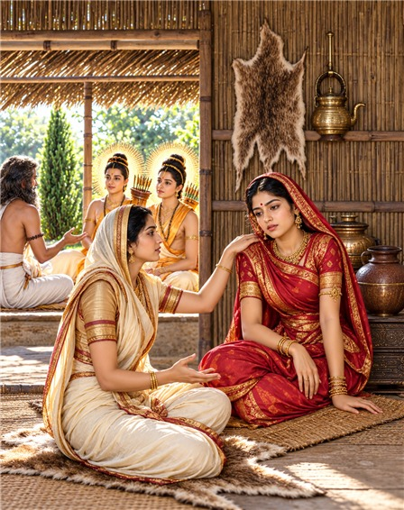
उस समय अनसूयाजीने सीताको सान्त्वना देते हुए जिस प्रकार सतीधर्मका महत्त्व बतलाया, वह प्रत्येक नारीके लिये अनुकरणीय तथा कण्ठहार बनानेयोग्य है। अनसूयाजी बोलीं—‘सीते! यह जानकर मुझे बड़ी प्रसन्नता हुई है कि तुम सदा धर्मपर दृष्टि रखती हो, बन्धु-बान्धवोंको छोड़कर और उनसे प्राप्त होनेवाले मान-प्रतिष्ठाका परित्याग करके तुम वनमें भेजे हुए रामका अनुसरण कर रही हो, यह बड़े सौभाग्यकी बात है। अपने स्वामी नगरमें रहें या वनमें, भले हों या बुरे; जिन स्त्रियोंको वे प्रिय होते हैं, उन्हें महान् अभ्युदयशाली लोकोंकी प्राप्ति होती है। पति बुरे स्वभावका, मनमाना बर्ताव करनेवाला, अथवा धनहीन ही क्यों न हो, वह उत्तम स्वभाववाली नारियोंके लिये श्रेष्ठ देवताके समान है*।
* नगरस्थो वनस्थो वा शुभो वा यदि वाशुभः।
यासां स्त्रीणां प्रियो भर्ता तासां लोका महोदयाः॥
दुःशीलः कामवृत्तो वा धनैर्वा परिवर्जितः।
स्त्रीणामार्यस्वभावानां परमं दैवतं पतिः॥
(वा० रा० अयो० ११७। २३-२४)
वैदेही! मैं बहुत विचार करनेपर भी पतिसे बढ़कर कोई हितकारी बन्धु नहीं देखती। तपस्याके अविनाशी फलकी भाँति वह इस लोक और परलोकमें सर्वत्र सुख पहुँचानेमें समर्थ होता है। जो अपने पतिपर भी शासन करती हैं, वे असाध्वी स्त्रियाँ इस प्रकार पतिका अनुसरण नहीं करतीं, उन्हें गुण-दोषोंका ज्ञान नहीं होता। ऐसी नारियाँ अनुचित कर्मोंमें फँसकर धर्मसे भ्रष्ट हो जाती हैं और संसारमें उन्हें अपयशकी प्राप्ति होती है, किंतु जो तुम्हारे समान लोक-परलोकको जाननेवाली साध्वी स्त्रियाँ हैं; वे उत्तम गुणोंसे युक्त होकर पुण्यकर्मोंमें संलग्न रहती हैं। अतः तुम उसी प्रकार अपने पतिदेव श्रीरामचन्द्रजीकी सेवामें लगी रहो। सतीधर्मका पालन करो। पतिको प्रधान देवता समझो और प्रत्येक समय उनका अनुसरण करती हुई उनकी सहधर्मिणी बनो। इससे तुम्हें धर्म और सुयश दोनोंकी प्राप्ति होगी।’
तदनन्तर सीताजीने भी सतीधर्मकी महिमा सुनायी। उसे सुनकर अनसूयाको बड़ी प्रसन्नता हुई। उन्होंने कहा—‘सीते! तुम्हें आवश्यकता हो या न हो; तुम्हारी निर्लोभतासे मुझे जो हर्ष हुआ है, उसे मैं अवश्य सफल करूँगी। ये हार, वस्त्र, आभूषण, अंगराग और उत्तम-उत्तम अनुलेपन मैं तुम्हें देती हूँ। इनसे तुम्हारे अंगोंकी शोभा होगी। ये सब तुम्हारे ही योग्य हैं। बेटी! पहले मेरे सामने ही इन दिव्य वस्त्र और आभूषणोंको धारण कर लो और इनसे सुशोभित होकर मुझे प्रसन्न करो।’ इस प्रकार सीताका सत्कार करके अनसूयाजीने प्रेमपूर्वक उनको विदा किया।
गोस्वामी तुलसीदासजीने रामचरितमानसमें अनसूयाजीके उपदेशका बड़ा मार्मिक वर्णन किया है। वह सरल, सुबोध एवं सरस पद्यमय होनेके कारण प्रत्येक स्त्रीके लिये सदा स्मरण रखनेयोग्य है; इसलिये उसे यहाँ अविकलरूपसे उद्धृत किया जाता है—
मातु पिता भ्राता हितकारी।
मितप्रद सब सुनु राजकुमारी॥
अमित दानि भर्ता बैदेही।
अधम सो नारि जो सेव न तेही॥
धीरज धर्म मित्र अरु नारी।
आपद काल परिखिअहिं चारी॥
बृद्ध रोगबस जड़ धनहीना।
अंध बधिर क्रोधी अति दीना॥
ऐसेहु पतिकर किएँ अपमाना।
नारि पाव जमपुर दुख नाना॥
एकइ धर्म एक ब्रत नेमा।
कायँ बचन मन पतिपद प्रेमा॥
जग पतिब्रता चारि बिधि अहहीं।
बेद पुरान संत सब कहहीं॥
उत्तम के अस बस मन माहीं।
सपनेहुँ आन पुरुष जग नाहीं॥
मध्यम परपति देखइ कैसें।
भ्राता पिता पुत्र निज जैसें॥
धर्म बिचारि समुझि कुल रहई।
सो निकिष्ट त्रिय श्रुति अस कहई॥
बिनु अवसर भय तें रह जोई।
जानेहु अधम नारि जग सोई॥
पति बंचक परपति रति करई।
रौरव नरक कल्प सत परई॥
छन सुख लागि जनम सत कोटी।
दुख न समुझ तेहि सम को खोटी॥
बिनु श्रम नारि परम गति लहई।
पतिब्रत धर्म छाड़ि छल गहई।
पति प्रतिकूल जनम जहँ जाई।
बिधवा होइ पाइ तरुनाई॥
सहज अपावनि नारि पति सेवत सुभ गति लहइ।
जसु गावत श्रुति चारि अजहुँ तुलसिका हरिहि प्रिय॥
—रा० शा०
सती शाण्डिली
प्रतिष्ठानपुरमें एक कौशिक नामसे प्रसिद्ध ब्राह्मण रहता था। वह पूर्वजन्ममें किये हुए पापोंके कारण कोढ़ी हो गया था। उसकी पत्नीका नाम शैब्या था, किंतु शाण्डिल्य-गोत्रमें उत्पन्न होनेके कारण उसे लोग शाण्डिली ही कहा करते थे। वह बड़ी साध्वी और पतिव्रता थी। पतिकी सब प्रकारसे सेवा करके उसे संतुष्ट रखना ही नारीका परम धर्म है; इस शास्त्र-वाक्यपर उसको अटल विश्वास था। उसका पति अत्यन्त घृणित रोगसे ग्रस्त था तो भी वह देवताकी भाँति उसकी पूजा करती थी। शाण्डिली अपने पतिके पैरोंमें तेल मलती, उसका शरीर दबाती, उसे अपने हाथसे नहलाती, कपड़े पहनाती और भोजन कराती थी। इतना ही नहीं, उसके थूक-खँखार, मल-मूत्र और रक्त भी वह स्वयं ही धोकर साफ करती थी। वह एकान्तमें भी पतिकी सेवा करती और उसे मीठी वाणीसे प्रसन्न रखती थी। इस प्रकार अत्यन्त विनीतभावसे वह सदा अपने स्वामीकी सेवा किया करती, तो भी अधिक क्रोधी स्वभावका होनेके कारण वह निष्ठुर प्रायः अपनी पत्नीको फटकारता ही रहता था। इतनेपर भी वह उसके पैरों पड़ती और उसे देवताके समान समझती थी। यद्यपि उसका शरीर अत्यन्त घृणाके योग्य था, तो भी वह साध्वी उसे सबसे श्रेष्ठ मानती थी, कौशिकसे चला-फिरा नहीं जाता था; तो भी उसने एक दिन अपनी पत्नीसे कहा—‘धर्मज्ञे! उस दिन मैंने घरपर बैठे-ही-बैठे सड़कपर जिस वेश्याको जाते देखा था, उसके घरमें आज मुझे ले चलो, मुझे उससे मिला दो। उस वेश्याको बहुत लोग चाहते हैं और मुझमें उसके पासतक जानेकी शक्ति नहीं है; इसलिये आज मुझे तुम उसके पास पहुँचा दो।’
अपने स्वामीका यह वचन सुनकर उत्तम कुलमें उत्पन्न हुई इस परम सौभाग्यशालिनी पतिव्रता पत्नीने अपनी कमर खूब कस ली और अधिक शुल्क लेकर पतिको कंधेपर चढ़ा लिया। फिर धीरे-धीरे वेश्याके घरकी ओर प्रस्थान किया। रात्रिका समय था, आकाश मेघोंमें आच्छन्न हो रहा था। केवल बिजलीके चमकनेसे मार्ग दिखायी दे जाता था। ऐसी वेलामें वह ब्राह्मणी अपने पतिका अभीष्ट साधन करनेके लिये राजमार्गसे जा रही थी। मार्गमें सूली थी; जिसके ऊपर चोर न होते हुए भी चोरके सन्देहसे माण्डव्य नामक ब्राह्मणको चढ़ा दिया गया था। वे दुःखसे आतुर हो रहे थे, कौशिक पत्नीके कंधेपर बैठा था। उस अन्धकारमें देख न सकनेके कारण उसने अपने पैरोंसे छूकर सूलीको हिला दिया।
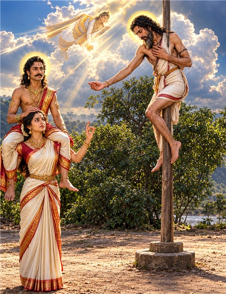
इससे कुपित होकर माण्डव्यने कहा—‘जिसने पैरसे हिलाकर मुझे इस कष्टकी दशामें पहुँचा दिया और मुझे अत्यन्त दुःखी कर दिया, वह पापात्मा नराधम सूर्योदय होनेपर विवश होकर अपने प्राणोंसे हाथ धो बैठेगा। सूर्यका दर्शन होते ही उसका विनाश हो जायगा।’ इस दारुण शापको सुनकर उसकी पत्नी व्यथित हो उठी और बोली—‘अब सूर्यका उदय ही नहीं होगा।’ *
* तस्य भार्या ततः श्रुत्वा तं शापमतिदारुणम्।
प्रोवाच व्यथिता सूर्यो नैवोदयमुपैष्यति॥
(मार्कण्डेयपु० १६। ३१)
तदनन्तर सूर्योदय न होनेके कारण बराबर रात ही रहने लगी। कितने ही दिनोंके बराबर समय रातभरमें ही बीत गया। सारे धर्म-कर्मका लोप हो गया। इससे देवताओंको बड़ा भय हुआ।
सब देवता आपसमें बात करने लगे। यज्ञोंके विनाशकी आशंकासे वहाँ एकत्रित हुए देवताओंके वचन सुनकर प्रजापति ब्रह्माजीने कहा—‘पतिव्रताके माहात्म्यसे इस समय सूर्योदय नहीं हो रहा है और सूर्योदय न होनेसे मनुष्यों तथा तुम देवताओंकी भी हानि है; अतः तुम लोग महर्षि अत्रिकी पतिव्रता पत्नी तपस्विनी अनसूयाके पास जाओ और सूर्योदयकी कामनासे उन्हें प्रसन्न करो।’ तब देवताओंने जाकर अनसूयाजीको प्रसन्न करके ‘पूर्ववत् दिन होने लगे।’ यह याचना की। अनसूयाने कहा—‘देवताओ! पतिव्रताका माहात्म्य किसी प्रकार कम नहीं हो सकता; इसलिये मैं उस साध्वीको मनाकर दिनकी सृष्टि करूँगी। मुझे ऐसा उपाय करना है, जिससे पूर्वकी भाँति दिन-रातकी व्यवस्था चलती रहे और उस पतिव्रताके पतिका भी नाश न हो।’ देवताओंसे यह कहकर अनसूयादेवी उस ब्राह्मणीके घर गयीं और बोलीं—‘कल्याणी! तुम अपने स्वामीके मुखका दर्शन करके प्रसन्न तो रहती हो न? पतिको सम्पूर्ण देवताओंसे बड़ा मानती हो न? पतिकी सेवासे ही मुझे महान् फलकी प्राप्ति हुई है तथा सम्पूर्ण कामनाओं और फलोंकी प्राप्तिके साथ ही मेरे सारे विघ्न भी दूर हो गये। साध्वी! मनुष्यको पाँच ऋण सदा ही चुकाने चाहिये। अपने वर्ण-धर्मके अनुसार धनका संग्रह करना आवश्यक है। उसके प्राप्त होनेपर शास्त्रविधिके अनुसार उसका सत्पात्रको दान करना चाहिये। सत्य, सरलता, तपस्या, दान और दयासे सदा युक्त रहना चाहिये। राग-द्वेषका परित्याग करके शास्त्रोक्त कर्मोंका अपनी शक्तिके अनुसार प्रतिदिन श्रद्धापूर्वक अनुष्ठान करना चाहिये। ऐसा करनेसे मनुष्य अपने वर्णके लिये विहित उत्तम लोकोंको प्राप्त होता है। पतिव्रते! इस प्रकार महान् क्लेश उठानेपर पुरुषोंको प्राजापत्य आदि लोकोंकी प्राप्ति होती है। परन्तु स्त्रियाँ पतिकी सेवा करनेमात्रसे पुरुषोंके दुःख सहकर उपार्जित किये हुए पुण्यका आधा भाग प्राप्त कर लेती हैं। स्त्रियोंके लिये अलग यज्ञ, श्राद्ध या उपवास करनेका विधान नहीं है। वे पतिकी सेवामात्रसे ही उन अभीष्ट लोकोंको प्राप्त कर लेती हैं, अतः महाभागे! तुम्हें पतिकी सेवामें सदा मन लगाना चाहिये, क्योंकि स्त्रीके लिये पति ही परमगति है। पति जो देवताओं, पितरों तथा अतिथियोंकी सत्कारपूर्वक पूजा करता है, उसके भी पुण्यका आधा भाग स्त्री अनन्यचित्तसे पतिकी सेवा करनेमात्रसे प्राप्त कर लेती है।*
* नास्ति स्त्रीणां पृथग्यज्ञो न श्राद्धं नाप्युपोषितम्।
भर्तृशुश्रूषयैवैतान् लोकानिष्टान् व्रजन्ति हि॥
तस्मात् साध्वि महाभागे पतिशुश्रूषणं प्रति।
त्वया मतिः सदा कार्या यतो भर्ता परा गतिः॥
यद्देवेभ्यो यच्च पित्रागतेभ्यः
कुर्याद्भर्त्राभ्यर्चनं सत्क्रियातः।
तस्याप्यर्द्धं केवलानन्यचित्ता
नारी भुङ्ते भर्तृशुश्रूषयैव॥
(मार्कण्डेयपु० १६। ६१-६३)
अनसूयाजीका वचन सुनकर पतिव्रता ब्राह्मणीने बड़े आदरके साथ उनका पूजन किया और इस प्रकार कहा—‘स्वभावतः सबका कल्याण करनेवाली देवी! स्वयं आप यहाँ पधारकर पतिसेवामें मेरी पुनः श्रद्धा बढ़ा रही हैं। इससे मैं धन्य हो गयी। यह आपका मुझपर बहुत बड़ा अनुग्रह है। इसीसे देवताओंने भी आज मुझपर कृपादृष्टि की है। मैं जानती हूँ कि स्त्रियोंके लिये पतिके समान दूसरी कोई गति नहीं है। पतिमें किया हुआ प्रेम इहलोक और परलोकमें भी उपकार करनेवाला होता है। यशस्विनि! पतिके प्रसादसे ही नारी इस लोक और परलोकमें भी सुख पाती है; क्योंकि पति ही नारीका देवता है। महाभागे! आज आप मेरे घरपर पधारी हैं। मुझसे अथवा मेरे इन पतिदेवसे आपको जो भी कार्य हो, उसे बतानेकी कृपा करें।’ अनसूया बोलीं—‘देवि! तुम्हारे वचनसे दिन-रातकी व्यवस्थाका लोप हो जानेके कारण शुभ कर्मोंका अनुष्ठान बंद हो गया है; इसलिये ये इन्द्र आदि देवता मेरे पास दुःखी होकर आये हैं और प्रार्थना करते हैं कि दिन-रातकी व्यवस्था पहलेकी तरह अखण्ड रूपसे चलती रहे। मैं इसीके लिये तुम्हारे पास आयी हूँ। मेरी यह बात सुनो। दिन न होनेसे समस्त यज्ञकर्मोंका अभाव हो गया है और यज्ञोंके अभावसे देवताओंकी पुष्टि नहीं हो पाती है; अतः तपस्विनि! दिनके नाशसे समस्त शुभकर्मोंका नाश हो जायगा और उनके नाशसे वृष्टिमें बाधा पड़नेके कारण इस संसारका ही उच्छेद हो जायगा। अतः यदि तुम इस जगत्को विपत्तिसे बचाना चाहती हो तो सम्पूर्ण लोकोंपर दया करो, जिससे पहलेकी भाँति सूर्योदय हो।’ ब्राह्मणीने कहा—‘महाभागे! माण्डव्य ऋषिने अत्यन्त क्रोधमें भरकर मेरे स्वामी—मेरे ईश्वरको शाप दिया है कि सूर्योदय होते ही तेरी मृत्यु हो जायगी।’
अनसूया बोलीं—‘कल्याणी! यदि तुम्हारी इच्छा हो और तुम कहो तो मैं तुम्हारे पतिको पूर्ववत् शरीर एवं नयी स्वस्थ अवस्था कर दूँगी। सुन्दरी! मुझे पतिव्रता स्त्रियोंके लिये माहात्म्यका सर्वथा आदर करना है। इसीलिये तुम्हें मनाती हूँ।’ ब्राह्मणीके ‘तथास्तु’ कहकर स्वीकार करनेपर तपस्विनी अनसूयाने अर्घ्य हाथमें लेकर सूर्यदेवका आवाहन किया। उस समयतक दस दिनोंके बराबर रात बीत चुकी थी। तदनन्तर भगवान् सूर्य खिले हुए कमलके समान अरुण आकृति धारण किये अपने महान् मण्डलके साथ गिरिराज उदयाचलपर आरूढ़ हुए। सूर्यदेवके प्रकट होते ही ब्राह्मणीका पति प्राणहीन होकर पृथ्वीपर गिरा; किन्तु उसकी पत्नीने गिरते समय उसे पकड़ लिया। अनसूया बोलीं—‘भद्रे! तुम विषाद न करना। पतिकी सेवासे जो तपोबल मुझे प्राप्त हुआ है, उसे तुम अभी देखो; विलम्बकी क्या आवश्यकता? मैंने जो रूप, शील, बुद्धि एवं मधुर भाषण आदि सद्गुणोंमें अपने पतिके समान दूसरे किसी पुरुषमें कभी नहीं देखा है, उस सत्यके प्रभावसे यह ब्राह्मण रोगसे मुक्त हो फिरसे तरुण हो जाय और अपनी स्त्रीके साथ सौ वर्षोंतक जीवित रहे। यदि मैं स्वामीके समान किसी और देवताको नहीं समझती तो उस सत्यके प्रभावसे यह ब्राह्मण रोगमुक्त होकर पुनः जीवित हो जाय। यदि मन, वाणी एवं क्रियाद्वारा मेरा सारा उद्योग प्रतिदिन स्वामीकी सेवाके लिये ही होता हो तो यह ब्राह्मण जीवित हो जाय*।’
* यथा भर्तृसमं नान्यमपश्यं पुरुषं क्वचित्।
रूपतः शीलतो बुद्धॺा वाङ्माधुर्यादिभूषणैः॥
तेन सत्येन विप्रोऽयं व्याधिमुक्तः पुनर्युवा।
प्राप्नोतु जीवितं भार्यासहायः शरदां शतम्॥
यथा भर्तृसमं नान्यमहं पश्यामि दैवतम्।
तेन सत्येन विप्रोऽयं पुनर्जीवत्वनामयः॥
कर्मणा मनसा वाचा भर्तुराराधनं प्रति।
यथा ममोद्यमो नित्यं तथायं जीवतां द्विजः॥
अनसूया देवीके इतना कहते ही वह ब्राह्मण अपनी प्रभासे उस भवनको प्रकाशमान करता हुआ रोगमुक्त तरुण शरीरसे जीवित हो उठा; मानो जरावस्थासे रहित देवता हो। तदनन्तर दुंदुभि आदि देवताओंके बाजोंकी आवाजके साथ वहाँ फूलोंकी वर्षा होने लगी। धन्य हैं पतिव्रता देवियाँ!
—रा० शा०
••••
सती-पद-वन्दन
सती देवि! तेरे चरणोंका सादर वन्दन करते हैं।
भाव-भक्तिसे हृदय खोलकर।
प्रेमसहित जय-जयति बोलकर॥
भक्त-वृन्द परमेश्वरका जैसे अभिनन्दन करते हैं।
परमोज्ज्वल, शुचि, परम तपस्विनि।
वीर-धीर, हे परम मनस्विनि॥
सुरसरि सम तेरे चरणोंसे रज ले चन्दन करते हैं।
परम तेजकी, परम त्यागकी।
पति-पदमें परमानुरागकी॥
गा-गाकर गुण-गरिमा सज्जन, जन-मन-रंजन करते हैं।
सती देवि! तेरे चरणोंका सादर वन्दन करते हैं।
—श्रीशिवनाथजी दुबे ‘सा० रत्न’
••••
ब्रह्मवादिनी उशिज
ममताके पुत्र दीर्घतमा ऋषिकी पत्नीका नाम उशिज था। प्रसिद्ध महर्षि काक्षीवान् इन्हींके सुपुत्र थे। ऋग्वेदके प्रथम मण्डलके ११६ से १२१ तकके मन्त्र इन्हींके द्वारा संकलित हैं। प्रसिद्ध ब्रह्मवादिनी घोषा इन्हींकी पौत्री थीं। यह सारा ही कुटुम्ब ब्रह्मपरायण था। इनके दूसरे पुत्रका नाम था दीर्घश्रवा। वे भी प्रसिद्ध ऋषि थे।
चार तेजस्विनी सतियाँ
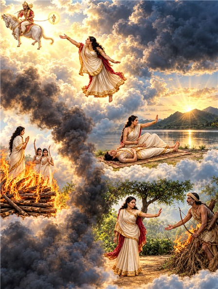
सावित्रीने सती-धर्मसे धर्मराजको भी जीता।
पति-संमुख उत्तीर्ण हुई थी अग्निपरीक्षामें सीता।
सती साण्डिलीने पतिके हित रविका रथ भी रोक लिया।
दमयन्तीने कुटिल ब्याधको भेज तुरत यमलोक दिया॥
सती प्रातिथेयी
देवी प्रातिथेयी महर्षि दधीचिकी धर्मपत्नी थीं। भारतवर्षकी पतिव्रता देवियोंमें इनका बहुत ऊँचा स्थान है। पुराणोंमें इनके दो नाम और मिलते हैं, गभस्तिनी और बड़वा। ये विदर्भदेशके राजाकी कन्या तथा लोपामुद्राकी बहिन थीं। प्रातिथेयी सदा कठोर तपस्यामें लगी रहती थीं। ये पतिकी अनन्य अनुरागिणी तथा उन्हींकी सेवामें सदा संलग्न रहनेवाली थीं। प्रातिथेयीके लिये तपोवनका प्रत्येक प्राणी पुत्रकी भाँति पालनीय था। वृक्षों और लताओंपर भी ये माताकी भाँति स्नेह रखतीं और सब प्रकारसे उनकी सँभाल करती थीं। उनकी इस साधनाका फल भी प्रत्यक्ष देखा जाता था। आश्रमवासी वृक्ष और लताएँ दूसरोंके लिये भले ही जड वस्तु हों, प्रातिथेयीके लिये सभी चेतन थे। सभी उनसे बोलते तथा अपने अधिकारके अनुसार उनकी आज्ञाका पालन भी करते थे। तपोवनमें जितने वृक्ष थे वे सभी माता प्रातिथेयीको बिना माँगे ही आवश्यकताके अनुरूप फल-फूल अर्पण करते थे।
एक दिनकी बात है, दधीचि-मुनिके आश्रमपर इन्द्र आदि सम्पूर्ण देवता पधारे। वे दैत्योंको परास्त करके वहाँ आये थे; अतः उस विजयके कारण उनके हृदयमें हर्षकी हिलोरें उठ रही थीं। मुनिवर दधीचिका दर्शन करके सब देवताओंने उन्हें प्रणाम किया। दधीचि भी सब देवताओंको आश्रमपर उपस्थित देख बड़े प्रसन्न हुए। उन्होंने सबका पृथक्-पृथक् पूजन किया। उनकी पत्नीने भी देवताओंके आतिथ्यमें पूर्ण योग दिया। मुनिके द्वारा समर्पित की हुई पूजा ग्रहण करके देवताओंने कहा—‘महर्षे! हम आपको एक कष्ट देना चाहते हैं। हमारे पास जो ये परम तेजस्वी दिव्य अस्त्र-शस्त्र हैं, इनके द्वारा हम शत्रुओंको परास्त कर चुके हैं। अब इन्हें धारण किये रहनेकी आवश्यकता नहीं है। यदि किसी सुरक्षित स्थानपर उनके रखनेकी व्यवस्था हो जाती तो हम निश्चिन्त हो जाते। इसके लिये आपके आश्रमसे बढ़कर दूसरी कोई जगह हमें दिखायी नहीं देती। यह स्थान आपकी तपस्याद्वारा सब ओरसे सुरक्षित है; अतः यहाँ दैत्योंकी दाल नहीं गल सकती।’ दधीचिने ‘एवमस्तु’ कहकर देवताओंकी आज्ञा स्वीकार कर ली।
उस समय दधीचिकी पत्नी प्रातिथेयी भी वहाँ उपस्थित थीं। उनको शस्त्रोंकी धरोहर रखनेका कार्य अपनी आश्रममर्यादाके अनुरूप न जान पड़ा। उन्होंने बहुत प्रकारसे पतिको समझाकर कहा—‘प्राणनाथ! दूसरेके धनको धरोहरके रूपमें रखना साधु पुरुषोंने कभी स्वीकार नहीं किया है; इसलिये आप इस काममें न पड़िये।’ पत्नीकी यह बात सुनकर दधीचिने कहा—‘देवि! तुम्हारा कहना ठीक है; किंतु अब तो मेरे मुँहसे ‘हाँ’ निकल चुका; अतः इसके विपरीत मैं ‘नाहीं’ नहीं कर सकता।’ पत्नीने भी यह सोचकर कि विधाताका विधान ही प्रबल है, आग्रह करना छोड़ दिया। देवताओंका कार्य तो हो ही गया था, वे मुनिको प्रणाम करके चले गये। महर्षि दधीचि अपनी पत्नीेके साथ धर्मका पालन करते हुए प्रसन्नतापूर्वक वहाँ रहने लगे। इस प्रकार एक हजार दिव्य वर्ष बीत गये। एक दिन महर्षिने प्रातिथेयीसे कहा—‘प्रिये! बहुत दिन हो गये, देवता अपने अस्त्र-शस्त्र लेने नहीं आ रहे हैं। इधर दैत्य हमसे द्वेष करने लगे हैं। ऐसी दशामें हमें क्या करना चाहिये।’ पत्नीने विनयपूर्वक कहा—‘नाथ! मैंने तो पहले ही निवेदन किया था कि यह कार्य आपके योग्य नहीं है। अब मैं कुछ नहीं कह सकती; आप ही जो उचित समझें करें।’ तब दधीचिने उन अस्त्र-शस्त्रोंकी रक्षाके लिये एक उपाय किया। उन्होंने उन सभी आयुधोंको एक पात्रमें रखकर उन्हें मन्त्रोंद्वारा अभिमन्त्रित जलसे नहलाया। फिर तो वे सभी गलकर पानी हो गये। उस सर्वास्त्रमय जलको महर्षिने पी लिया। वे सभी अस्त्र दधीचिकी हड्डियोंके साथ मिलकर एक हो गये। जब दैत्योंको यह खबर मालूम हुई तो उन्होंने देवताओंपर आक्रमण किया। देवता भयभीत होकर दधीचिके आश्रमपर आये और अपने अस्त्र-शस्त्र माँगने लगे। महर्षिने कहा—‘अब तो आप लोगोंके सभी आयुध मेरी हड्डियोंमें मिल गये हैं; अतः उन हड्डियोंको ही ले जाइये।’ उस समय प्रातिथेयी देवी आश्रमपर नहीं थीं। देवता उनके तेजसे बहुत डरते थे; अतः उनकी अनुपस्थितिसे लाभ उठाकर वे बोल ‘विप्रवर! जो कुछ करना हो, जल्दी कीजिये।’ दधीचिने समाधिमें स्थित होकर अपने प्राणोंका परित्याग कर दिया। देवता उनकी हड्डियोंको लेकर अपने स्थानको लौट गये।
तदनन्तर बहुत देरके बाद दधीचिकी सुशीला पत्नी हाथमें जलसे भरा हुआ कलश ले फल और फूलोंसे पार्वती देवीकी अर्चना और वन्दना करके आश्रमपर आयीं। उन दिनों वे गर्भवती थीं। आश्रमपर पतिको न देखकर उन्होंने अग्निदेवसे पूछा। उनके मुखसे सब हाल जानकर वे दुःख और शोकसे मूर्च्छित हो पृथ्वीपर गिर पड़ीं; फिर धीरे-धीरे चेत होनेपर उन्होंने कहा—‘मैं देवताओंको शाप देना नहीं चाहती; अतः स्वयं ही अग्निमें प्रवेश करूँगी। अब यह जीवन रखकर क्या होगा। संसारमें जो वस्तु उत्पन्न होती है, वह सब नश्वर है; अतः उसके लिये शोक नहीं होना चाहिये। किंतु मनुष्योंमें वे ही पुण्यके भागी होते हैं जो गौ, ब्राह्मण और देवताओंके लिये अपने प्यारे प्राणोंका उत्सर्ग कर देते हैं।*
* उत्पद्यते यत्तु विनाशि सर्वं
न शोच्यमस्तीति मनुष्यलोके।
गोविप्रदेवार्थमिह त्यजन्ति
प्राणान् प्रियान् पुण्यभाजो मनुष्याः॥
(ब्रह्म० पु० ११०। ६३)
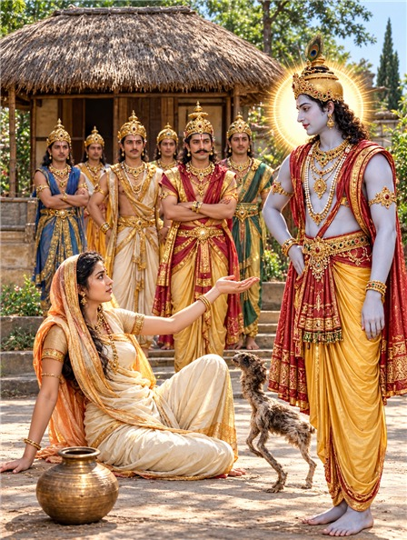
यों कहकर प्रातिथेयीने अग्निदेवका यथावत् पूजन किया और अपना पेट चीरकर गर्भके बालकको निकाला; फिर गोदावरी नदी, भूदेवी तथा आश्रमके वनस्पतियोंको अपना बालक सौंपकर उन्हें प्रणाम किया और पतिकी त्वचा एवं लोम आदिको चितामें रखकर स्वयं भी उसीमें प्रवेश कर गयीं। इस प्रकार पतिका चिन्तन करते हुए ही इस नश्वर शरीरका परित्याग करके उन्होंने पतिके साथ ही दिव्य लोक प्राप्त किया। उनके बालकको पिप्पल नामक वृक्षने अपना फल खिलाकर पाला था; इसलिये उसका नाम पिप्पलाद हुआ। पिप्पलाद आगे चलकर बहुत बड़े महात्मा हुए। —रा० शा०
••••
ब्रह्मवादिनी ममता
ममता दीर्घतमा ऋषिकी माता थीं। ये बहुत बड़ी विदुषी और ब्रह्मज्ञानसम्पन्ना थीं। अग्निके उद्देश्यसे किया हुआ इनका स्तुतिपाठ ऋग्वेदसंहिताके प्रथम मण्डलके दशम सूत्रकी ऋचामें मिलता है। उसका भावार्थ यह है—
हे दीप्तिमान्! असंख्य चोटियोंवाले और देवताओंको बुलानेवाले अग्नि! दूसरे अग्निकी सहायतासे प्रकाशित होकर आप इस मानवस्तोत्रको सुनिये। श्रोतागण ममताके सदृश ही अग्निके उद्देश्यसे इस मनोहर स्तोत्रको पवित्र घृतकी भाँति अर्पण करते हैं।
सती मदालसा
भारतवर्षमें ऐसे योग्य पुत्र तो बहुत हुए हैं जिन्होंने अपने सत्कर्मोंसे माता-पिताका उद्धार करके ‘पुत्र’ नामको सार्थक किया हो; परंतु ऐसी माता, जो परम उत्तम ज्ञानका उपदेश देकर पुत्रोंका भी संसार-सागरसे उद्धार कर दे, केवल मदालसा ही थी। उसने पुत्रोंका ही नहीं, अपना और पतिका भी उद्धार किया था। मदालसा आदर्श विदुषी, आदर्श सती और आदर्श माता थी। उसका जन्म दिव्य कुलमें हुआ था। पहले तो वह गन्धर्वराज विश्वावसुकी पुत्री थी। फिर नागराज अश्वतरकी कन्यारूपमें प्रकट हुई। उसके जीवनका संक्षिप्त वृत्तान्त इस प्रकार है।
प्राचीन कालमें शत्रुजित् नामके एक धर्मात्मा राजा राज्य करते थे। उनकी राजधानी गोमतीके तटपर थी। उनके एक बड़ा बुद्धिमान्, पराक्रमी और सुन्दर पुत्र भी था, उसका नाम था ऋतध्वज। एक दिन नैमिषारण्यसे गालव मुनि राजा शत्रुजित् के दरबारमें पधारे। उनके साथ एक बहुत ही सुन्दर दिव्य अश्व था। उन्होंने राजासे कहा—‘महाराज! हम आपके राज्यमें रहकर तपस्या, यज्ञ तथा भगवान्का भजन करते हैं; किंतु एक दैत्य कुछ कालसे हमारे इस पवित्र कार्यमें बड़ी बाधा डाल रहा है। यद्यपि हम उसे अपनी क्रोधाग्निसे भस्म कर सकते हैं तथापि ऐसा करना नहीं चाहते; क्योंकि प्रजाकी रक्षा करना और दुष्टोंको दण्ड देना—यह राजाका कार्य है। एक दिन उसके उपद्रवसे पीड़ित होकर हम उसे रोकनेके उपायपर विचार कर रहे थे, इतनेमें ही यह दिव्य अश्व आकाशसे नीचे उतरा। उसी समय यह आकाशवाणी हुई—‘मुने! यह अश्व बिना किसी रुकावटके समस्त पृथ्वीकी परिक्रमा कर सकता है; आकाश, पाताल, पर्वत, समुद्र सब जगह आसानीसे जा सकता है। इसलिये इसका नाम ‘कुबलय’ है। भगवान् सूर्यने यह अश्व आपको समर्पित किया है। आप इसे ले जाकर राजा शत्रुजित् के पुत्र राजकुमार ऋतध्वजको दे दें। वे ही इसपर आरूढ़ होकर उस दैत्यका वध करेंगे, जो सदा आपको कष्ट दिया करता है।’ इस आकाशवाणीको सुनकर हम आपके पास आये हैं। आप इस अश्वको लीजिये और राजकुमारको इसपर सवार करके हमारे साथ भेजिये, जिससे धर्मका लोप न होने पावे।’
गालव मुनिके यों कहनेपर धर्मात्मा राजाने बड़ी प्रसन्नताके साथ राजकुमारको मुनियोंकी रक्षाके लिये भेजा। महर्षिके आश्रमपर पहुँचकर वे सब ओरसे उसकी रक्षा करने लगे। एक दिन वह मदोन्मत्त दानव शूकरका रूप धारण करके वहाँ आया। राजकुमार शीघ्र ही घोड़ेपर सवार हो उसके पीछे दौड़े। अर्धचन्द्राकार बाणसे उसपर प्रहार किया। बाणसे आहत होकर वह शूकराकार दैत्य प्राण बचानेके लिये भागा और वृक्षों तथा पर्वतसे घिरी हुई घनी झाड़ीमें घुस गया। राजकुमारके अश्वने उसका पीछा न छोड़ा। दैत्य भागता हुआ सहस्रों योजन दूर निकल गया और एक स्थानपर बिलके आकारमें दिखायी देनेवाली अँधेरी गुफामें कूद पड़ा। अश्वारोही राजकुमार भी उसके पीछे उसी गड्ढेमें कूद पड़े। भीतर जानेपर वहाँ सूअर नहीं दिखायी पड़ा; बल्कि दिव्य प्रकाशसे परिपूर्ण पाताल लोकका दर्शन हुआ। सामने ही इन्द्रपुरीके समान एक सुन्दर नगर था, जिसमें सैकड़ों सोनेके महल शोभा पा रहे थे। राजकुमारने उसमें प्रवेश किया; किंतु वहाँ उन्हें कोई मनुष्य नहीं दिखायी दिया। वे नगरमें घूमने लगे। घूमते-ही-घूमते उन्होंने एक स्त्री देखी, जो बड़ी उतावलीके साथ कहीं चली जा रही थी। राजकुमारने उससे कुछ पूछना चाहा; किंतु वह आगे बढ़कर चुपचाप एक महलकी सीढ़ियोंपर चढ़ गयी। ऋतध्वजने भी घोड़ेको एक जगह बाँध दिया और उसी स्त्रीके पीछे-पीछे महलमें प्रवेश किया। भीतर जाकर देखा, सोनेका बना हुआ एक विशाल पलँग है। उसपर एक सुन्दरी कन्या बैठी है जो अपने सौन्दर्यसे रतिको भी लजा रही है। दोनोंने एक-दूसरेको देखा और दोनोंका मन परस्पर आकर्षित हो गया। कन्या मूर्च्छित हो गयी। तब पहली स्त्री ताड़का पंखा लेकर उसे हवा करने लगी। जब वह कुछ होशमें आयी तो राजकुमारने उसकी मूर्च्छाका कारण पूछा। वह लजा गयी। उसने सब कुछ अपनी सखीको बता दिया।
उसकी सखीने कहा—‘प्रभो! देवलोकमें गन्धर्वराज विश्वावसु सर्वत्र विख्यात हैं। यह सुन्दरी उन्हींकी कन्या मदालसा है। एक दिन जब यह अपने पिताके उद्यानमें घूम रही थी, पातालकेतु नामक दानवने अपनी माया फैलाकर इसे हर लिया। उसका निवासस्थान यहीं है। सुननेमें आया है, आगामी त्रयोदशीको वह इसके साथ विवाह करेगा, इससे मेरी सखीको अपार कष्ट है। अभी कलकी बात है, यह बेचारी आत्महत्या करनेको तैयार हो गयी थी। उसी समय कामधेनुने प्रकट होकर कहा—‘बेटी! वह नीच दानव तुम्हें नहीं पा सकता। मर्त्यलोकमें जानेपर उसे जो अपने बाणोंसे बीेंध डालेगा वही तुम्हारा पति होगा।’ यों कहकर माता सुरभि अन्तर्धान हो गयीं। मेरा नाम कुण्डला है। मैं इस मदालसाकी सखी, विन्ध्यवान्की पुत्री और वीर पुष्करमालीकी पत्नी हूँ। मेरे पति देवासुर-संग्राममें शुम्भके हाथों मारे गये। तबसे मैं तपस्याका जीवन व्यतीत कर रही हूँ। सखीके स्नेहसे यहाँ इसे धीरज बँधाने आ गयी हूँ। सुना है, मर्त्यलोकके किसी वीरने पातालकेतुको अपने बाणोंका निशाना बनाया है। मैं उसीका पता लगाने गयी थी। बात सही निकली। आपको देखकर मेरी सखीके हृदयमें प्रेमका संचार हो गया है, किंतु माता सुरभिके कथनानुसार इसका विवाह उस वीरके साथ होगा, जिसने पातालकेतुको घायल किया है। यही सोचकर दुःखके मारे यह मूर्च्छित हो गयी है। जिससे प्रेम हो, उसीके साथ विवाह होनेपर जीवन सुखमय बीतता है। इसका प्रेम तो आपसे हुआ और विवाह दूसरेसे होगा, यही इसकी चिन्ताका कारण है। अब आप अपना परिचय दीजिये। कौन हैं और कहाँसे आये हैं?’
राजकुमारने अपना यथावत् परिचय दिया तथा उस दानवको बाण मारने और पातालमें पहुँचनेकी सारी कथा विस्तारपूर्वक कह सुनायी। सब बातें सुनकर मदालसाको बड़ी प्रसन्नता हुई। उसने लज्जित होकर सखीकी ओर देखा, किंतु कुछ बोल न सकी। कुण्डलाने उसका मनोभाव जानकर कहा—‘वीरवर! आपकी बात सत्य है। मेरी सखीका हृदय किसी अयोग्य पुरुषकी ओर आसक्त नहीं हो सकता। कमनीय कान्ति चन्द्रमामें और प्रचण्ड प्रभा सूर्यमें ही मिलती है। आपके ही लिये गोमाता सुरभिने संकेत किया था। आपने ही दानव पातालकेतुको घायल किया है। मेरी सखी आपको पतिरूपमें प्राप्त करके अपनेको धन्य मानेगी।’ कुण्डलाकी बात सुनकर राजकुमारने कहा—‘मैं पिताकी आज्ञा लिये बिना विवाह कैसे कर सकता हूँ।’ कुण्डला बोली—‘नहीं, नहीं, ऐसा न कहिये। यह देवकन्या है। आपके पिताजी इस विवाहसे प्रसन्न होंगे। अब उनसे पूछने और आज्ञा लेनेका समय नहीं रह गया है। आप विधाताकी प्रेरणासे ही यहाँ आ पहुँचे हैं; अतः यह सम्बन्ध स्वीकार कीजिये।’ राजकुमारने ‘तथास्तु’ कहकर उसकी बात मान ली। कुण्डलाने अपने कुलगुरु तुम्बुुरुका स्मरण किया। वे समिधा और कुशा लिये तत्काल वहाँ आ पहुँचे। उन्होंने अग्नि प्रज्वलित करके विधिपूर्वक ऋतध्वज और मदालसाका विवाह-संस्कार सम्पन्न किया। कुण्डलाने अपनी सखी राजकुमारके हाथों सौंप दी और दोनोंको अपने-अपने कर्तव्यपालनका उपदेश दिया। फिर दोनोंसे विदा लेकर वह दिव्य गतिसे अपने अभीष्ट स्थानपर चली गयी। ऋतध्वजने मदालसाको घोड़ेपर बिठाया और स्वयं भी उसपर सवार हो पाताललोकसे जाने लगे। इतनेहीमें पातालकेतुको यह समाचार मिल गया और वह दानवोंकी विशाल सेना लिये राजकुमारके सामने आ डटा। राजकुमार भी बड़े पराक्रमी थे। उन्होंने हँसते-हँसते बाणोंका जाल-सा फैला दिया और त्वाष्ट्र नामक दिव्य अस्त्रका प्रयोग करके पातालकेतुसहित समस्त दानवोंको भस्म कर डाला। इसके बाद वे अपने पिताके नगरमें जा पहुँचे। घोड़ेसे उतरकर उन्होंने माता-पिताको प्रणाम किया। मदालसाने भी सास-ससुरके चरणोंमें मस्तक झुकाया। ऋतध्वजके मुखसे सब समाचार सुनकर माता-पिता बहुत प्रसन्न हुए। उन्होंने पुत्र और पुत्रवधूको हृदयसे लगाकर उनका मस्तक सूँघा। मदालसा पतिगृहमें बड़े सुखसे रहने लगी। वह प्रतिदिन प्रातःकाल उठकर सास-ससुरके चरणोंमें प्रणाम करती और पतिको अपनी सेवाओंसे सन्तुष्ट रखती थी।
तदनन्तर एक दिन राजा शत्रुजित् ने राजकुमार ऋतध्वजसे कहा—‘बेटा! तुम प्रतिदिन प्रातःकाल इस अश्वपर सवार हो ब्राह्मणोंकी रक्षाके लिये इस पृथ्वीपर विचरते रहो।’ राजकुमारने ‘बहुत अच्छा’ कहकर पिताकी आज्ञा शिरोधार्य की। वे प्रतिदिन पूर्वाह्णमें ही पृथ्वीकी परिक्रमा करके पिताके चरणोंमें नमस्कार करते थे। एक दिन घूमते हुए वे यमुनातटपर गये। वहाँ पातालकेतुका छोटा भाई तालकेतु आश्रम बनाकर मुनिके वेषमें रहता था। राजकुमारने मुनि जानकर उसे प्रणाम किया। वह बोला—‘राजकुमार! मैं धर्मके लिये यज्ञ करना चाहता हूँ; किंतु मेरे पास दक्षिणा नहीं है। तुम अपने गलेका यह आभूषण दे दो और यहीं रहकर मेरे आश्रमकी रक्षा करो। मैं जलके भीतर प्रवेश करके वरुणदेवताकी स्तुति करता हूँ। उसके बाद जल्दी ही लौटूँगा।’ यों कहकर तालकेतु जलमें घुसा और मायासे अदृश्य हो गया। राजकुमार उसके आश्रमपर ठहर गये। मुनिवेषधारी तालकेतु राजा शत्रुजित् के नगरमें गया। वहाँ जाकर उसने कहा—‘राजन्! आपके पुत्र दैत्योंके साथ युद्ध करते-करते मारे गये। यह उनका आभूषण है।’ यों कहकर वह जैसे आया था, उसी प्रकार लौट गया। राजकुमारकी मृत्युका दुःखपूर्ण समाचार सुनकर नगरमें हाहाकार मच गया। राजा-रानी तथा रनिवासकी स्त्रियाँ शोकसे व्याकुल होकर विलाप करने लगीं। मदालसाने उनके गलेके आभूषणको देखा और पतिको मारा गया सुनकर तुरंत ही अपने प्यारे प्राणोंको त्याग दिया। राजमहलका शोक दूना हो गया। राजा शत्रुजित् ने किसी प्रकार धैर्य धारण किया और रानी तथा अन्तःपुरके अन्य लोगोंको भी समझा-बुझाकर शान्त किया। मदालसाका दाह-संस्कार किया गया। उधर तालकेतु यमुना-जलसे निकलकर राजकुमारके पास गया और कृतज्ञता प्रकट करते हुए उसने उनको घर जानेकी आज्ञा दे दी। राजकुमारने तुरंत अपने नगरमें पहुँचकर पिता-माताको प्रणाम किया। उन्होंने पुत्रको छातीसे लगा लिया और नेत्रोंसे आँसू बहाने लगे। राजकुमारको सब बातें मालूम हुईं। मदालसाके वियोगसे उनका हृदय रो उठा। उनकी दुनिया सूनी हो गयी। उन्होंने मदालसाके लिये जलांजलि दी और यह प्रतिज्ञा की, ‘मैं मृगके समान विशाल नेत्रोंवाली गन्धर्वराजकुमारी मदालसाके अतिरिक्त दूसरी किसी स्त्रीके साथ सम्भोग नहीं करूँगा। यह मैंने सर्वथा सत्य कहा है।’
इस प्रकार प्रतिज्ञा करके उन्होंने स्त्री-सम्बन्धी भोगसे मन हटा लिया और समवयस्क मित्रोंके साथ मन बहलाने लगे। इसी समय नागराज अश्वतरके दो पुत्र मनुष्यरूपमें पृथ्वीपर घूमनेके लिये निकले। राजकुमार ऋतध्वजके साथ उनकी मित्रता हो गयी। उनका आपसका प्रेम इतना बढ़ गया कि नागकुमार एक क्षण भी उन्हें छोड़ना नहीं चाहते थे। वे दिनभर पातालसे गायब रहते थे। एक दिन नागराजके पूछनेपर उन्होंने ऋतध्वजका सारा वृत्तान्त सुनाकर पितासे कहा—‘हमारे मित्र ऋतध्वज मदालसाके सिवा दूसरी किसी स्त्रीको स्वीकार न करनेकी प्रतिज्ञा कर चुके हैं। मदालसा पुनः जीवित हो सके तो कोई उपाय करें।’ नागराज बोले—‘उद्योगसे सब कुछ सम्भव है। प्राणीको कभी निराश नहीं होना चाहिये।’ यों कहकर नागराज अश्वतर हिमालयपर्वतके प्लक्षावतरण तीर्थमें जो सरस्वतीका उद्गमस्थान है, जाकर दुष्कर तपस्या करने लगे। सरस्वतीदेवीने प्रसन्न होकर उन्हें प्रत्यक्ष दर्शन दिया और वर माँगनेको कहा। अश्वतर बोले—‘देवि! मैं और मेरा भाई कम्बल दोनों संगीतशास्त्रके पूर्ण मर्मज्ञ हो जायँ।’ सरस्वतीदेवी ‘तथास्तु’ कहकर अन्तर्धान हो गयीं। अब दोनों भाई कम्बल और अश्वतर कैलासपर्वतपर गये और भगवान् शंकरको प्रसन्न करनेके लिये तालस्वरके साथ उनके गुणोंका गान करने लगे। शंकरजीने प्रसन्न होकर कहा—‘वर माँगो।’ तब कम्बलसहित अश्वतरने महादेवजीको प्रणाम करके कहा—‘भगवन्! कुवलयाश्वकी पत्नी मदालसा जो अब मर चुकी है, पहलेकी ही अवस्थामें मेरी कन्याके रूपमें प्रकट हो। उसे पूर्वजन्मकी बातोंका स्मरण बना रहे। पहले ही-जैसी उसकी कान्ति हो तथा वह योगिनी एवं योगविद्याकी जननी होकर मेरे घरमें प्रकट हो।’ महादेवजीने कहा—‘नागराज! तुम श्राद्धका दिन आनेपर यही कामना लेकर पितरोंका तर्पण करना और श्राद्धमें दिये हुए मध्यम पिण्डको शुद्ध भावसे खा लेना। इससे वह तत्काल ही तुम्हारे मध्यम फणसे प्रकट हो जायगी।’ नागराजने वैसा ही किया। सुन्दरी मदालसा उनके मध्यम फणसे प्रकट हो गयी। नागराजने उसे महलके भीतर स्त्रियोंके संरक्षणमें रख दिया। यह रहस्य उन्होंने किसीपर प्रकट नहीं किया।
तदनन्तर अश्वतरने अपने पुत्रोंसे कहा—‘तुम राजकुमार ऋतध्वजको यहाँ बुला लाओ।’ नागकुमार उन्हें लेकर गोमतीके जलमें उतरे और वहींसे खींचकर उन्हें पातालमें पहुँचा दिया। वहाँ वे अपने असली रूपमें प्रकट हुए। ऋतध्वज नागलोककी शोभा देखकर चकित हो उठे। उन्होंने नागराजको प्रणाम किया। नागराजने आशीर्वाद देकर ऋतध्वजका भलीभाँति स्वागत-सत्कार किया। भोजनके पश्चात् सब लोग एक साथ बैठकर प्रेमालाप करने लगे। नागराजने मदालसाके पुनः जीवित होनेकी सारी कथा उन्हें कह सुनायी। फिर तो उन्होंने प्रसन्न होकर अपनी प्यारी पत्नीको ग्रहण किया। उनके स्मरण करते ही उनका प्यारा अश्व वहाँ आ पहुँचा। नागराजको प्रणाम करके वे मदालसाके साथ अश्वपर आरूढ़ हुए और अपने नगरमें चले गये। वहाँ उन्होंने मदालसाके जीवित होनेकी कथा सुनायी। मदालसाने भी सास-ससुरके चरणोंमें प्रणाम किया। नगरमें बड़ा भारी उत्सव मनाया गया।
कुछ कालके पश्चात् महाराज शत्रुजित् परलोकवासी हो गये। ऋतध्वज राजा हुए और मदालसा महारानी। मदालसाके गर्भसे प्रथम पुत्र उत्पन्न हुआ। राजाने उसका नाम विक्रान्त रखा। मदालसा वह नाम सुनकर हँसने लगी। इसके बाद समयानुसार क्रमशः दो पुत्र और हुए। उनके नाम सुबाहु और शत्रुमर्दन रखे गये, उन नामोंपर भी मदालसाको हँसी आयी। इन तीनों पुत्रोंको उसने लोरियाँ गानेके व्याजसे विशुद्ध आत्मज्ञानका उपदेश दिया। बड़े होनेपर वे तीनों ममताशून्य और विरक्त हो गये। मदालसाके उपदेशका सारांश इस प्रकार है—
शुद्धोऽसि रे तात न तेऽस्ति नाम
कृतं हि ते कल्पनयाधुनैव।
पंचात्मकं देहमिदं न तेऽस्ति
नैवास्य तं रोदिषि कस्य हेतोः॥
न वा भवान् रोदिति वै स्वजन्मा
शब्दोऽयमासाद्य महीशसूनुम्।
विकल्प्यमाना विविधा गुणास्ते-
ऽगुणाश्च भौताः सकलेन्द्रियेषु॥
भूतानि भूतैः परिदुर्बलानि
वृद्धिं समायान्ति यथेह पुंसः।
अन्नाम्बुदानादिभिरेव कस्य
न तेऽस्ति वृद्धिर्न च तेऽस्ति हानिः॥
हे तात! तू तो शुद्ध आत्मा है, तेरा कोई नाम नहीं है। यह कल्पित नाम तो तुझे अभी मिला है। यह शरीर भी पाँच भूतोंका बना हुआ है। न यह तेरा है, न तू इसका है। फिर किसलिये रो रहा है? अथवा तू नहीं रोता है, यह शब्द तो राजकुमारके पास पहुँचकर अपने-आप ही प्रकट होता है। तेरी सम्पूर्ण इन्द्रियोंमें जो भाँति-भाँतिके गुण-अवगुणोंकी कल्पना होती है, वे भी पांचभौतिक ही हैं। जैसे इस जगत्में अत्यन्त दुर्बल भूत अन्य भूतोंके सहयोगसे वृद्धिको प्राप्त होते हैं; उसी प्रकार अन्न और जल आदि भौतिक पदार्थोंको देनेसे पुरुषके पांचभौतिक शरीरकी ही पुष्टि होती है। इससे तुझ शुद्ध आत्माकी न तो वृद्धि होती है और न हानि ही होती है—
त्वं कंचुके शीर्यमाणे निजेऽस्मिं-
स्तस्मिंश्च देहे मूढतां माँ व्रजेथाः।
शुभाशुभैः कर्मभिर्देहमेत-
न्मदादिमूढैः कंचुकस्ते पिनद्धः॥
तातेति किंचित् तनयेति किंचि-
दम्बेति किंचिद् दयितेति किंचित्।
ममेति किंचिन्न ममेति किंचित्
त्वं भूतसंघं बहु मानयेथाः॥
दुःखानि दुःखोपगमाय भोगान्
सुखाय जानाति विमूढचेताः।
तान्येव दुःखानि पुनः सुखानि
जानाति विद्वानविमूढचेताः॥
तू अपने उस चोले तथा इस देहरूपी चोलेके जीर्ण-शीर्ण होनेपर मोह न करना। शुभाशुभ कर्मोंके अनुसार यह देह प्राप्त हुआ है। तेरा यह चोला मद आदिसे बँधा हुआ है (तू तो सर्वथा इससे मुक्त है)। कोई जीव पिताके रूपमें प्रसिद्ध है, कोई पुत्र कहलाता है, किसीको माता और किसीको प्यारी स्त्री कहते हैं; कोई ‘यह मेरा है’ कहकर अपनाया जाता है और कोई ‘मेरा नहीं है’ इस भावसे पराया माना जाता है। इस प्रकार ये भूतसमुदायके ही नाना रूप हैं; ऐसा तुझे मानना चाहिये। यद्यपि सब भोग दुःखरूप हैं, तथापि मूढ़चित्त मानव उन्हें दुःख दूर करनेवाला तथा सुखकी प्राप्ति करानेवाला समझता है; किंतु जो विद्वान् हैं, जिनका चित्त मोहसे आच्छन्न नहीं हुआ है, वे उन भोगजनित सुखोंको भी दुःख ही मानते हैं।
तत्पश्चात् रानी मदालसाके गर्भसे चौथा पुत्र उत्पन्न हुआ। जब राजा उसका नामकरण करने चले तो उनकी दृष्टि मदालसापर पड़ी। वह मन्द-मन्द मुसकरा रही थी। राजाने कहा—‘मैं नाम रखता हूँ तो हँसती हो। अब इस पुत्रका नाम तुम्हीं रखो।’ मदालसाने कहा—‘जैसी आपकी आज्ञा। आपके चौथे पुत्रका नाम मैं अलर्क रखती हूँ।’ ‘अलर्क! यह अद्भुत नाम सुनकर राजा ठठाकर हँस पड़े और बोले—‘इसका क्या अर्थ है?’ मदालसाने उत्तर दिया, ‘सुनिये! नामसे आत्माँका कोई सम्बन्ध नहीं है। संसारका व्यवहार चलानेके लिये कोई-सा नाम कल्पना करके रख लिया जाता है। वह संज्ञामात्र है, उसका कोई अर्थ नहीं। आपने भी जो नाम रखे हैं, वे भी निरर्थक ही हैं; पहले ‘विक्रान्त’ इस नामके अर्थपर विचार कीजिये। क्रान्तिका अर्थ है गति। जो एक स्थानसे दूसरे स्थानपर जाता है, वही विक्रान्त है। आत्मा सर्वत्र व्यापक है, उसका कहीं आना-जाना नहीं होता; अतः यह नाम उसके लिये निरर्थक तो है ही, स्वरूपके विपरीत भी है। आपने दूसरे पुत्रका नाम ‘सुबाहु’ रखा है। जब आत्मा निराकार है, तो उसे बाँह कहाँसे आयी। जब बाँह ही नहीं है तो सुबाहु नाम रखना कितना असंगत है। तीसरे पुत्रका नाम ‘शत्रुमर्दन’ रखा गया है; उसकी भी कोई सार्थकता नहीं दिखायी देती। सब शरीरमें एक ही आत्मा रम रहा है; ऐसी दशामें कौन किसका शत्रु है और कौन किसका मर्दन करनेवाला। यदि व्यवहारका निर्वाहमात्र ही उसका प्रयोजन है तब तो अलर्क नामसे भी इस उद्देश्यकी पूर्ति हो सकती है।
राजा निरुत्तर हो गये। मदालसाने उसको भी ब्रह्मज्ञानका उपदेश सुनाना आरम्भ किया। तब राजाने रोककर कहा—‘देवि! इसे भी ज्ञानका उपदेश देकर मेरी वंशपरम्पराका उच्छेद करनेपर क्यों तुली हो। इसे प्रवृत्तिमार्गमें लगाओ और उसके अनुकूल ही उपदेश दो।’ मदालसाने पतिकी आज्ञा मान ली और अलर्कको बचपनमें ही व्यवहारशास्त्रका पण्डित बना दिया। उसे राजनीतिका पूर्ण ज्ञान कराया। धर्म, अर्थ और काम तीनों शास्त्रोंमें वह प्रवीण बन गया। बड़े होनेपर माता-पिताने अलर्कको राजगद्दीपर बिठाया और स्वयं वनमें तपस्या करनेके लिये चले गये। जाते समय मदालसाने अलर्कको एक अँगूठी दी और कहा—‘जब तुमपर कोई संकट पड़े तो इस अँगूठीके छिद्रसे उपदेशपत्र निकालकर पढ़ना और इसके अनुसार कार्य करना।’ अलर्कने गंगा-यमुनाके संगमपर अपनी अलर्कपुरी नामकी राजधानी बनायी जो आजकल अरैलके नामसे प्रसिद्ध है। कुछ कालके बाद अलर्कको भोगोंमें आसक्त देख उनके बड़े भाई सुबाहुने काशिराजकी सहायतासे उनपर आक्रमण किया। अलर्कने संकट जानकर माताका उपदेश पढ़ा। उसमें लिखा था—
संगः सर्वात्मना त्याज्यः स चेत्त्यक्तुं न शक्यते।
स सद्भिः सह कर्तव्यः सतां संगो हि भेषजम्॥
कामः सर्वात्मना हेयो हातुं चेच्छक्यते न सः।
मुमुक्षां प्रति तत्कार्यं सैव तस्यापि भेषजम्॥
‘संग (आसक्ति)-का सब प्रकारसे त्याग करना चाहिये; किंतु यदि उसका त्याग न किया जा सके तो सत्पुरुषोंका संग करना चाहिये; क्योंकि सत्पुरुषोंका संग ही उसकी ओषधि है। कामनाको सर्वथा छोड़ देना चाहिये; परंतु यदि वह छोड़ी न जा सके तो मुमुक्षा (मोक्षकी इच्छा)-के प्रति कामना करनी चाहिये; क्योंकि मुमुक्षा ही उस कामनाको मिटानेकी दवा है।’
इस उपदेशको अनेक बार पढ़कर राजाने सोचा, मनुष्योंका कल्याण कैसे होगा? मुक्तिकी इच्छा जाग्रत् करनेपर और मुक्तिकी इच्छा जाग्रत् होगी सत्संगसे। ऐसा विचार कर अलर्कने महात्मा दत्तात्रेयजीकी शरण ली और वहाँ ममतारहित विशुद्ध आत्मज्ञानका उपदेश पाकर वे सदाके लिये कृतार्थ हो गये। इस प्रकार महासती मदालसाने अपने पुत्रोंका उद्धार करके स्वयं भी पतिके साथ परमात्मचिन्तनमें मन लगाया और थोड़े ही समयमें मोक्षस्वरूप परमपद प्राप्त कर लिया। मदालसा अब इस लोकमें नहीं है; किंतु उसका नाम सदाके लिये अमर हो गया। —रा० शा०
सती वैशालिनी
(१)
विदिशा नगरमें बड़ी चहल-पहल है। देश-देशके राजा एकत्रित हुए हैं। विदिशाके महाराज विशालकी एकमात्र लाड़िली कन्या वैशालिनीका स्वयंवर होनेवाला है। नगरके बाह्य प्रदेशमें भिन्न-भिन्न नरेशोंके शिविर हैं। सबके साथ चतुरंगिणी सेना आयी है। प्रायः सभी युद्धकी सम्भावना जानकर अस्त्र-शस्त्रोंसे सुसज्जित होकर आये हैं। महाराज विशालने सबके स्वागत-सत्कारका उत्तम प्रबन्ध किया है। अयोध्यानरेश करन्धमका तरुण पुत्र अवीक्षित भी, जो अपने महान् पराक्रमके लिये समस्त भूमण्डलमें विख्यात था, अपने कुछ चुने हुए साथियोंको साथ लेकर आया था। उसके पास बड़ी सेना नहीं थी। अतः वह राजमहलके पास ही एक छोटे-से शिविरमें ठहर गया था। राजा करन्धमने अनेक बार अश्वमेध और राजसूय यज्ञ किये थे। उनके पुत्र अवीक्षितने ही दिग्विजय करके पिताके यज्ञोंका सम्पादन कराया था, अतः सम्पूर्ण भूमण्डलके राजा और राजकुमार अवीक्षितका लोहा मानते थे। इस स्वयंवरमें, यद्यपि अवीक्षितके साथ कोई सेना नहीं थी, तो भी उसके आगमनमात्रसे सबके मनमें शंका हो गयी। सब राजाओंने उसके विरुद्ध संगठन किया। सबने यह निश्चय कर लिया कि अवीक्षित यदि कन्याको बलपूर्वक ले जानेकी चेष्टा करे तो हम सब लोग एक साथ होकर उसका विरोध करेंगे। उन्होंने अपना निश्चय राजा विशालको भी सुना दिया। राजा भी यही चाहते थे। स्वयंवरमें कोई गड़बड़ी न होने पावे, इसके लिये उन्होंने पूरी व्यवस्था की थी।
नियत समयपर स्वयंवरका कार्य आरम्भ हुआ। मनोहर प्रसाधनोंसे सजी हुई विशाल रंगभूमिमें सहस्रों सुन्दर मंच लगे हुए थे। समस्त राजा अपने-अपने मंचपर विराजमान हुए। राजकुमार अवीक्षित भी एक ऊँचे मंचकी शोभा बढ़ाने लगा। उस तेजस्वी तरुणके सामने समस्त राजाओंकी कान्ति फीकी पड़ गयी। वह तारोंके बीच चन्द्रमाके समान सुशोभित हो रहा था। मागध और वन्दीजन विरदावलीका वर्णन कर रहे थे। इतनेमें शहनाइयोंकी मधुर ध्वनिके साथ रमणीजनोंके कोमल कण्ठका मृदु संगीत सुनायी पड़ा। राजकुमारी स्वयंवरमें आ रही हैं यह जानकर सब लोग सजग हो गये। सभी मन-ही-मन इष्टदेवको मनाने लगे। वैशालिनी रंगभूमिमें आ गयी। एक-एक करके राजाओंका परिचय आरम्भ हुआ। राजकुमारी प्रत्येकको नमस्कार करके आगे बढ़ने लगी। धीरे-धीरे वह अवीक्षितके सामने आयी। परिचय सुना। क्षणभर वह सकुचायी-सी, सहमी-सी खड़ी रही। उसकी ओर आकृष्ट हुई। हाथ ऊँचे उठे; किंतु किसी अज्ञात प्रेरणासे वह पुनः रुक गयी। सम्भवतः उसके शौर्य और साहसकी वह परीक्षा लेना चाहती थी। अवीक्षितकी ओर कटाक्षपूर्वक देखकर वह मन्द मुसकानके साथ आगे बढ़ने लगी।
(२)
एक ही क्षणमें स्थिति बदल गयी। वैशालिनी बिजली-सी चमककर अदृश्य हो गयी। पलक गिरनेमें विलम्ब हो सकता है; किंतु अवीक्षितने आधे निमेषमें ही अपना संकल्प सिद्ध कर लिया। प्रतिहारीने देखा, राजकुमारी नहीं है। सखियोंने चकित होकर देखा, वैशालिनी उनके पास नहीं है। राजाओंकी सहस्रों आँखें भी अवीक्षितकी फुर्ती नहीं देख सकीं, केवल उसके गर्वपूर्ण वाक्य अब भी उनके कानोंमें गूँज रहे थे, ‘वैशालिनी अवीक्षितकी है, इसे दूसरा कोई नहीं पा सकता।’ पलभरमें ही स्वयंवरका वह शान्त वातावरण ‘दौड़ो, पकड़ो, मारो, छीन लो’ के तुमुल कोलाहलसे गूँज उठा। नगरके बाहर पहुँचकर लोगोंने देखा, अवीक्षित वैशालिनीके साथ रथपर बैठा है और धनुष-बाण लेकर युद्धकी प्रतीक्षा कर रहा है। उसके वीर सैनिक अगल-बगल और पृष्ठभागकी ओर उसकी रक्षाके लिये खड़े हैं। राजा विशाल अपनी विशाल वाहिनीके साथ युद्धमें आ डटे। राजाओंने भी उनका साथ दिया। महासागरके समान असंख्य शत्रु-सेनासे घिरकर भी अवीक्षित भयभीत न हुआ। उसका रथ अलातचक्रकी भाँति चारों ओर घूमने लगा। उसके धनुषका एक-एक बाण सहस्रोंकी संख्यामें होकर शत्रुओंपर प्रहार करता था। सूर्योदयसे अन्धकारकी भाँति उसके शौर्यसे शत्रुओंकी विशाल वाहिनी नष्ट हो गयी। अवीक्षितका शरीर भी आघातसे जर्जर हो रहा था; फिर भी उसमें रणका उत्साह कम नहीं था। हारे हुए समस्त राजाओंने मिलकर पशुबलसे काम लेनेका निश्चय किया। वे सभी चारों ओरसे अवीक्षितपर बाणोंकी वृष्टि करने लगे। अवीक्षितका धनुष कट गया। घोड़े और सारथि मारे गये। अकेला असहाय वीर निःशस्त्र हो जानेके कारण बन्दी बना लिया गया।
(३)
‘बेटी! अवीक्षितको उसके अन्यायका दण्ड मिल गया, अब तुम अपनी इच्छाके अनुसार किसी राजाको वरण करो।’ राजा विशालने पुत्रीको सान्त्वना देते हुए कहा।
‘पिताजी! मेरा मन स्वस्थ नहीं है, अतः स्वयंवरमें भाग नहीं ले सकती।’ राजकुमारीने टालनेके लिये कहा।
यह निश्चय हुआ कि अब कुछ दिनों बाद शुभ मुहूर्त देखकर स्वयंवरका आयोजन किया जायगा। तबतक सब राजा अपने-अपने नगरको पधारें। सूचना पाकर सभी राजा चले गये। दो ही दिनके बाद राजा करन्धमकी विशाल सेनाने आकर विदिशा नगरको चारों ओरसे घेर लिया। विदिशानरेश पराजित हुए। उन्होंने सन्धि कर ली। महाराज करन्धम राजा विशालके आदरणीय अतिथि हुए। अवीक्षित मुक्त कर दिया गया। उसने आकर पिताको प्रणाम किया, किंतु मुखपर प्रसन्नता नहीं थी। पिताने पुत्रके अद्भुत शौर्य और साहसकी प्रशंसा की; फिर भी उसका हृदय न भरा। थोड़ी ही देरमें राजा विशाल अपनी कन्या वैशालिनीको लिये हुए अवधनरेशकी सेवामें उपस्थित हुए और बोले—‘राजन्! मैं अपनी कन्याका हाथ कुमार अवीक्षितके हाथमें देता हूँ। आप इसे पुत्रवधूके रूपमें ग्रहण करें।’ करन्धम कुछ कहना ही चाहते थे कि अवीक्षित बोल उठा—‘पिताजी! मैंने कभी आपकी आज्ञाका उल्लङ्घन नहीं किया है; अतः आप ऐसी कोई आज्ञा न देंगे, जिसका पालन करनेमें मुझे संकोच हो। मैं कुमारी वैशालिनीके देखते-देखते युद्धमें पराजित हुआ हूँ, अतः वीर कहलाने योग्य नहीं हूँ; इसलिये मैंने प्रतिज्ञा कर ली है कि अब मैं विवाह नहीं करूँगा।’
राजाने वैशालिनीकी ओर देखा, पिताका अभिप्राय समझकर वैशालिनीने संकोचपूर्वक कहा—‘राजकुमारने अपनेको गलत समझा है। इनकी वीरता और पराक्रममें कोई सन्देह नहीं हो सकता। एक ओर समस्त राजा थे और दूसरी ओर ये अकेले ही सामना कर रहे थे, तो भी इन्होंने सबको परास्त कर दिया। उसके बाद उन्होंने अन्यायपूर्वक इनको मारना आरम्भ किया, तो भी जबतक इनके हाथमें अस्त्र रहा है, किसीको इन्होंने अपने समीप नहीं आने दिया है। जिन राजाओंने इनपर विजय पायी है, वे अनीतिका आश्रय लेनेके कारण मेरी दृष्टिमें कायर हैं और ये उत्साहपूर्वक युद्धमें डटे रहनेके कारण वास्तविक विजयके अधिकारी हैं। मैं किसी कायरको अपना पति नहीं बना सकती, अतः समस्त राजाओंको छोड़कर मैंने इनका ही वरण किया है। ये मुझे ग्रहण करें या न करें—मैं दूसरेको स्वीकार नहीं कर सकती।’
यह सब सुनकर भी अवीक्षित विवाह करनेको राजी न हुआ। महाराज करन्धम पुत्रको लेकर अयोध्या लौट गये। कुमारी वैशालिनीने तपस्या करनेका निश्चय किया।
(४)
‘बेटा!’ महारानी वीराने पुकारा।
‘आज्ञा माताजी!’ अवीक्षितने विनयपूर्वक हाथ जोडे़ हुए कहा।
‘मैं किमिच्छक व्रत करना चाहती हूँ; किंतु इसके नियमोंकी रक्षा तुम्हारे अधीन है, क्या तुम यह व्रत मुझसे करा सकोगे?’ रानीने पुत्रकी मातृभक्तिकी परीक्षा लेते हुए कहा।
‘माँ! मुझे इसमें क्या करना होगा?’ पुत्रने एक जिज्ञासुकी भाँति पूछा।
‘इस व्रतमें खुले तौरपर यह घोषणा करनी पड़ती है कि कोई भी व्यक्ति किसी भी शुभ इच्छाको लेकर आये, उसकी पूर्ति की जायगी।’ माताने व्रतकी स्पष्ट शब्दोंमें व्याख्या की।
‘माँ! अवीक्षित आपकी प्रत्येक आज्ञाका पालन करनेके लिये तैयार है’। पुत्रके मनमें माताके व्रतको पूर्ण करनेका उत्साह था।
माताने व्रतकी दीक्षा ली। उसी दिन कुमार अवीक्षितने नगरमें सब ओर घोषणा करा दी, ‘मेरी माताने प्रत्येक व्यक्तिकी शुभ इच्छाको पूर्ण करनेका संकल्प किया है। यदि किसीके मनमें कोई इच्छा हो, तो वह आकर कहे।’
अवीक्षितने आश्चर्यके साथ देखा, सबसे पहले याचक उसके पिता महाराज करन्धम ही थे। उन्होंने कहा, बेटा! मैं पौत्रका मुँह देखना चाहता हूँ; क्या तुम्हारी माता मेरी यह इच्छा पूर्ण कर सकती हैं?’
अवीक्षित वचनबद्ध हो चुका था, उसे यह समझते देर न लगी कि यह सब उपाय मेरे विवाहके ही लिये किया गया था। उसने माताके व्रतकी रक्षाके लिये अपनी प्रतिज्ञा तोड़ दी और कहा—‘मैं कुमारी वैशालिनीके सिवा दूसरी किसी स्त्रीसे विवाह नहीं कर सकता, अतः उसीकी खोज करनी चाहिये।’
(५)
चम्पकारण्यके सघन प्रदेशमें एक छोटी-सी कुटी है। उसपर फैली हुई बेलोंने कुटीकी शोभा बहुत बढ़ा दी है। भाँति-भाँतिके वनविहंग वृक्षोंकी डालियोंपर चहक रहे हैं। पास ही पुण्यसलिला शालग्रामीकी पावन धारा कलकल ध्वनिके साथ प्रवाहित हो रही है। कुटीके भीतर एक सुन्दरी तपस्विनी ध्यान लगाये बैठी है। तीन महीने हो गये, वह अपने आसनसे हिलीतक नहीं। निराहार रहकर कठोर तपस्यामें संलग्न है। उसके अस्थि-चर्मावशिष्ट शरीरमें तपस्याजनित तेज-पुंज मात्र दिखायी देता है। दुर्बलता इतनी बढ़ गयी है कि देहकी एक-एक नाड़ी गिनी जा सकती है। जान पड़ता है, वह ‘शरीरं वा पातयामि, कार्यं वा साधयामि’ का दृढ़ संकल्प लेकर अविचल भावसे बैठी है। लक्षणोंसे जान पड़ता है, अब इन सूखी हड्डियोंमें अधिक दिनोंतक प्राणोंको भुलावा देकर नहीं रोका जा सकता। सहसा कुटीका द्वार एक दिव्य आलोकसे भर गया। एक दिव्य पुरुष आकाशमें ही खड़ा होकर उस तपस्विनीसे कहने लगा—‘राजकुमारी! यह मानव-शरीर बड़ा दुर्लभ है। यही समस्त धर्मोंका साधन है। इसके प्रति इतनी उपेक्षाका भाव अच्छा नहीं। इसकी रक्षा करो। तुम्हारे गर्भसे एक वीर पुत्र होगा जो सातों द्वीपोंका अखण्ड साम्राज्य भोगेगा। लुटेरे, म्लेच्छ और दुष्ट लोग उसके हाथों मारे जायँगे। वह अश्वमेध आदि यज्ञोंका छः हजार बार अनुष्ठान करेगा।’
वैशालिनीके नेत्र खुल गये। उसने काँपते हाथोंसे देवदूतको प्रणाम किया और धीमी आवाजमें कहा—‘महानुभाव! आपका यह वरदान इस जन्ममें सफल होनेवाला नहीं जान पड़ता। मैंने जिसे अपना हृदय प्रदान किया है, वह मुझे ग्रहण करनेको तैयार नहीं।’
‘तुम शरीरकी रक्षा करो, देवताओंके वचन मिथ्या नहीं होते।’ यों कहकर देवदूत अन्तर्धान हो गया। वैशालिनी फल-मूल खाकर शरीरका पोषण करने लगी। कुछ ही दिनोंमें वह चलने-फिरने लायक हो गयी। संयम, नियम और आराधनाका क्रम अब भी चालू था।
एक दिन वह कलशमें शालग्रामीका जल लेकर आश्रमपर आ रही थी। कुटीके भीतर अभी उसने पैर भी नहीं रखा था कि किसीके कर्कश हाथोंने उसकी बाँह पकड़ ली। घबराहटमें कलश छूटकर गिरा और फूट गया। वैशालिनीने देखा, सामने विशालकाय दानव दृढ़केश हाथमें डंडा लिये खड़ा अट्टहास कर रहा है। वह बोला, ‘तेरे गर्भसे दानव-विरोधी पुत्र होनेवाला है; अतः तुझे मारकर हम अपना मार्ग निष्कण्टक बनाना चाहते हैं; न रहेगा बाँस, न बजेगी बाँसुरी।’
कुछ कहनेका अवसर दिये बिना ही दानव उसे घसीट ले चला। राजकुमारी कातर वाणीमें चीख उठी, ‘अरे, कोई दौड़ो, बचाओ; महाराज करन्धमकी पुत्रवधूको एक नीच दानव हरकर लिये जाता है।’
उसका आर्तनाद समस्त वन-प्रान्तमें गूँज उठा। सहसा उसके कानोंमें आवाज आयी, ‘डरो मत, डरो मत।’ उसने आहट ली। कोई अश्वारोही युवक उधर ही घोड़ा बढ़ाये दौड़ा चला आ रहा था। नवागत वीरने दानवको युद्धके लिये ललकारा। वह कन्याको छोड़कर राजकुमारपर टूट पड़ा और सौ कीलोंसे युक्त अपना डंडा उस वीर युवकपर दे मारा। युवक सतर्क था, उसने बाण मारकर डंडेके टुकड़े-टुकड़े कर दिये, फिर बहुत देरतक दोनोंमें घमासान युद्ध होता रहा; अन्तमें युवक विजयी हुआ। उसके बेतसपत्र नामक बाणसे दानवका मस्तक कटकर धराशायी हो गया। युवकपर फूलोंकी वर्षा होने लगी। ‘राजकुमार अवीक्षितकी जय’ की गगनभेदी ध्वनिसे वह वनप्रदेश गूँज उठा। ‘वरं ब्रूहि’ का आदेश पाकर राजकुमारने देवताओंसे एक महापराक्रमी पुत्र माँगा।
‘इसी कन्याके गर्भसे तुम्हें महाबली चक्रवर्ती पुत्रकी प्राप्ति होगी। इस देवीकी तपस्याने ही तुम्हें विजयी बनाया है।’ यों कहकर देवता अन्तर्धान हो गये।
‘परंतु मेरी तो प्रतिज्ञा है कि कुमारी वैशालिनी के सिवा दूसरी किसी स्त्रीको मैं अपनी पत्नी नहीं बना सकता।’
‘मैं ही वैशालिनी हूँ नाथ!’ कहकर तपस्विनीने राजकुमारके चरण पकड़ लिये।
‘अब मुझे इन चरणोंसे अलग न कीजिये।’ उसके आँसुओंसे अवीक्षितके पैर भींग गये।
वैशालिनीने अपनी बीती कह सुनायी। अवीक्षितने उसे प्रेमपूर्ण दृष्टिसे देखा। उसी समय वहाँ एक दिव्य विमान उतर आया। उन दोनोंने देखा, विमानसे बहुत-सी सुन्दरी अप्सराओंके साथ कोई श्रेष्ठ गन्धर्व उतर रहे हैं; उनका नाम ‘मय’ था। वे निकट आकर बोले—‘राजकुमार! यह कन्या वास्तवमें मेरी पुत्री भामिनी है। महर्षि अगस्त्यके शापसे इसे मनुष्ययोनिमें आना पड़ा था। आज वह शाप निवृत्त हो गया। आज मैं स्वयं ही अपनी यह कन्या आपको सौंपता हूँ; आप इसे पत्नीके रूपमें ग्रहण करें।’ राजकुमारने ‘बहुत अच्छा’ कहकर पाणिग्रहण किया। इस समय वहाँ तुम्बुरु-मुनिने हवन किया, देवता और गन्धर्व गीत गाते रहे। मेघोंने फूलोंकी वर्षा की और देवता लोग बाजा बजा रहे थे। विवाहके पश्चात् नवदम्पति गन्धर्वलोकमें गये। वहाँ वे दीर्घकालतक देवताओंके मनोहर उद्यानों तथा रमणीय प्रदेशोंमें विहार करते रहे। भामिनी गर्भवती हो गयी।
(६)
अयोध्यामें महाराज करन्धम चिन्ताग्रस्त बैठे हैं। उनका पुत्र अवीक्षित लगभग दो वर्षोंसे लापता है। वह वनमें शिकार खेलनेके लिये गया था, किंतु अभीतक नहीं लौटा। उसके साथियोंने लौटकर इतना ही कहा था कि ‘कुमार अकेले ही घोड़ा दौड़ाये कहीं चले गये; फिर हमसे नहीं मिले।’ महारानी वीरा भी पुत्रका कोई समाचार न मिलनेसे अधीर हो रही हैं। उन्होंने देवाराधन आरम्भ किया है, जो आज ही पूर्ण होनेवाला है। राजा और रानीकी चिन्तासे परिजन और पुरजन भी चिन्तित हैं।
थोड़ी देरमें महारानी एक थालीमें प्रसाद लिये महाराजके पास आयीं और बोलीं—‘नाथ! आज शकुन तो अच्छे दिखायी देते हैं, शायद मेरे अवीक्षितका शुभ समाचार प्राप्त हो।’
इसी समय प्रतिहारीने आकर सूचना दी—‘महाराजकी जय हो, राजकुमार अवीक्षित पत्नी और पुत्रके साथ पधार रहे हैं।’ उसकी बात पूरी भी न होने पायी थी कि अवीक्षितने पिता-माताके चरणोंका स्पर्श किया; साथ ही वधूने भी उनकी चरण-धूलि माथेमें लगायी। महाराज और महारानीने पुत्र और वधूको छातीसे लगाकर मस्तक सूँघा। अवीक्षितने चाँद-सा सुन्दर हृष्ट-पुष्ट बालक पिताकी गोदमें देते हुए कहा—‘यह आपका पौत्र है। माताके किमिच्छक व्रतमें आपको दिये हुए वचनकी पूर्ति आज सम्भव हो सकी है।’ महाराज करन्धमने बड़े उल्लाससे पौत्रका मुख चूमा और कहा—‘मैं बहुत सौभाग्यशाली हूँ।’
साथमें आये हुए गन्धर्वोंके मुखसे सब बातें सुनकर राजा और रानी बहुत प्रसन्न हुए। उन्होंने भामिनीके सौभाग्यकी प्रशंसा करते हुए कहा—‘पतिव्रता वधूके पुण्यका ही यह प्रताप है कि आज हमें अपना खोया हुआ पुत्र और देवदुर्लभ पौत्र प्राप्त हुआ।’ महाराज करन्धमका यह पौत्र ही महापराक्रमी मरुत्तके नामसे संसारमें विख्यात हुआ। —रा० शा०
••••
पञ्च-सती
महायोगिनी सतीशिरोमणि विदुषी मदालसा धन्या।
बूढ़े पतिकी सेवामें रत धन्य सुकन्या नृपकन्या॥
चिन्ता और बेहुलाका भी स्वामीमें अनन्य अनुराग।
तापसी प्रियतमके हित वैशालिनी राज-सुख त्याग॥
सती शैव्या
सुख और सम्पत्तिमें पतिके अनुकूल रहकर उसकी सेवा करनेवाली सती साध्वी स्त्रियाँ बहुत हो सकती हैं; किंतु दुःख और विपत्तिमें भी जिनका पतिप्रेम कम नहीं होता, जो उस समय भी पतिसेवाका अधिक अवसर मिलनेके कारण संतोषका ही अनुभव करती हैं, पतिके कष्टोंमें हाथ बँटाती, सान्त्वनापूर्ण मधुर वचनोंसे पतिको धैर्य बँधाती और उसकी पीड़ा कम करती हैं, ऐसी पतिव्रता देवियाँ विरले भाग्यवानोंके घरकी शोभा बढ़ाती हैं। शैव्या ऐसी ही प्रातःस्मरणीया देवियोंमेंसे एक थी। वह महाराज हरिश्चन्द्रकी पत्नी और कुमार रोहिताश्वकी माता थी। उसका नाम तारा था, परंतु शिविदेश अथवा शिवि-नरेशकी कन्या होनेसे इन्हें लोग ‘शैव्या’ ही कहते थे। शैव्या आदर्श सती थी। पतिकी आत्माके साथ उसकी आत्मा मिली हुई थी। वे दोनों दम्पति एक प्राण दो देह थे। पतिका ही सुख शैव्याका सुख था और उन्हींका दुःख उसके लिये दुःख था। उसने अपना अस्तित्व पतिमें ही विलीन कर दिया था।
एक दिन महाराज हरिश्चन्द्र जब महलमें आये तो कुछ उदासीन थे। महारानी शैव्याने उनके उस भावको लक्ष्य किया। वे सोचने लगीं, महाराजके मुखपर आज चिन्ताका भाव क्यों प्रकट होता है, ये नित्यकी भाँति आज प्रसन्न क्यों नहीं दिखायी देते? इनके नेत्रोंसे सदाकी भाँति स्नेहकी वर्षा क्यों नहीं होती? अवश्य ही इनके मनमें कोई कष्ट है। इस विचारसे पतिप्राणा शैव्याके हृदयमें बड़ी व्यथा हुई। उन्होंने उदासीनताका कारण पूछा। तब महाराज हरिश्चन्द्रने कहा—‘प्रिये! भगवान्की दयासे मेरे द्वारा कोई ऐसा कार्य नहीं हुआ जिसे अनुचित कहा जा सके। मैंने वनमें मुनिवर विश्वामित्रको उनके माँगनेपर अपना सारा राज-पाट दान कर दिया है। अब मैं राजा नहीं, अकिंचन हूँ; मुझे अपने लिये चिन्ता भी नहीं है। किंतु इस दशामें तुमको और रोहिताश्वको जो कष्ट होगा, वह मुझसे कैसे देखा जायगा, यही सोचकर मनमें कुछ व्यग्रता-सी हो रही है।’ शैव्याने कहा—‘महाराज! यदि यही बात है, तब तो उलटे प्रसन्न होना चाहिये। यह राज्य और धन कितने दिन रहनेवाला है, आज है, कल नहीं। यह शरीर जिसे हम इतनी सावधानीसे रखते हैं, यह भी तो सदा नहीं रहता। संसारमें धर्म ही नित्य एवं परलोकमें सुख देनेवाला माना गया है। यदि इस नश्वर धनसे, क्षणभंगुर शरीरसे नित्य धर्मका पालन हो सके, प्राण देकर भी धर्मकी रक्षा की जा सके तो वही उत्तम है। इसीमें जन्म और जीवनकी सफलता है। राज्यके प्रपंचमें पड़कर मनुष्य भगवान्को भूल जाता है; अब निश्चिन्त होकर हम भगवान्का भजन कर सकेंगे। जिसके लिये यह शरीर मिला है, उस उद्देश्यकी वास्तविक सिद्धि होगी। इस राज-काजमें फँसकर आप मुझसे दूर रहते थे, मैं भी आपकी सेवासे वंचित रहती थी। अब आप मेरे निकट रहेंगे, मैं भी आपकी सेवा करके सुखी हो सकूँगी; अतः यह तो मेरे लिये बड़े आनन्दकी बात हुई है। राज्य और धनका इससे सुन्दर उपयोग और क्या हो सकता है! पतिका अखण्ड प्रेम और उनकी सेवाका सतत सौभाग्य—यही पत्नीके लिये सबसे बड़ा सुख है। इसके बिना तीनों लोकोंका राज्य पाकर भी साध्वी स्त्री संतुष्ट नहीं हो सकती।’
शैव्याकी बात सुनकर हरिश्चन्द्रकी सारी चिन्ता मिट गयी। वे मन-ही-मन पत्नीके सद्गुणों और सद्विचारोंकी प्रशंसा करने लगे। रात बीती। दूसरे दिन सबेरे ही विश्वामित्रजी आ धमके और बोले—‘यदि तुमने यह सारा राज्य मुझे दे दिया तो जहाँ-जहाँ मेरा प्रभुत्व हो, वहाँसे तुम्हें निकल जाना चाहिये। बहुमूल्य वस्त्र और आभूषण सब यहीं छोड़ दो। वल्कलका वस्त्र पहनो और स्त्री एवं पुत्रको साथ लेकर जल्दी चले जाओ।’ ‘बहुत अच्छा, जैसी महाराजकी आज्ञा।’ यों कहकर हरिश्चन्द्र वहाँसे चल दिये। उन्हें जाते देख रानी शैव्या और रोहिताश्व भी पीछे हो लिये। तब विश्वामित्रने हरिश्चन्द्रको रोककर कहा—‘मुझे राजसूयकी दक्षिणा दिये बिना कहाँ जाते हो?’ राजाने कहा—‘भगवन्! अब तो मेरे पास ये तीन शरीर ही शेष हैं। मुझे एक मासका समय दीजिये।’ मुनि ‘देखो, तीसवें दिन दक्षिणा न दोगे तो मैं शाप दे दूँगा’ कहकर चले गये।
राजा हरिश्चन्द्र एक दीन और असहायकी भाँति पैदल चले जा रहे थे। रानी शैव्या चलनेका अभ्यास न होनेसे यों ही थकी रहती थीं, उसपर बालक रोहिताश्व उनकी गोदसे उतरता ही नहीं था। जिसे सैकड़ों दासियाँ हाथोंहाथ लिये रहती थीं, वही सुकुमार बालक कभी पैदल, कभी माता-पिताकी गोदमें बैठकर चल रहा था। चलते-चलते कई दिनों बाद वे काशीके समीप पहुँचे। राजाने सोचा—‘काशी भगवान् विश्वनाथकी पावन पुरी है, इसपर केवल भगवान् शिवका ही अधिकार है। अतः यह मेरे राज्यसे बाहर है।’ ऐसा निश्चय करके उन्होंने स्त्री और पुत्रसहित काशीमें प्रवेश किया। पुरीमें पहुँचते ही मुनिवर विश्वामित्र सामने खड़े दिखायी दिये। राजाने हाथ जोड़कर विनीतभावसे कहा—‘मुने! मेरे प्राण, स्त्री, पुत्र सब आपकी सेवामें प्रस्तुत हैं। कहिये, हमलोग आपकी क्या सेवा करें।’ विश्वामित्रने कहा—‘राजन्! आज एक मास पूरा हो रहा है। मुझे राजसूयकी दक्षिणा चुका दीजिये।’ हरिश्चन्द्रने कहा—‘भगवन्! अभी आधा दिन शेष है। इतने समयतक और प्रतीक्षा कीजिये। अब अधिक विलम्ब न होगा।’
विश्वामित्र शापकी धमकी देकर चले गये। राजा-रानी पैदल चलनेसे तो थके ही थे, ऊपरसे उपवासका कष्ट और भी पीड़ा दे रहा था। बालक रोहिताश्व तो भूखसे कराह रहा था। क्षत्रिय होनेसे ये भीख तो लेते नहीं थे, पासमें पैसा था नहीं और कोई काम-काज भी अभी शुरू नहीं किया था। फिर भोजनका प्रबन्ध कैसे हो? उनके धैर्यकी बड़ी कठोर अग्नि-परीक्षा चल रही थी। बालककी छटपटाहट देखकर उनका हृदय विदीर्ण हो रहा था। उससे भी बढ़कर चिन्ताकी बात थी सन्ध्याके पहले ही भारी धनका प्रबन्ध करना। राजा सोचने लगे—‘स्वीकार की हुई दक्षिणा मैं किस प्रकार दूँ? क्या अपने प्राण त्याग दूँ, तब भी तो ब्राह्मणके धनका अपहरण करनेके कारण मैं पापात्मा समझा जाऊँगा। अथवा अपनेको बेचकर यह दक्षिणा चुका दूँ। बस, यही ठीक है।’
राजाकी चिन्ताका कारण शैव्यासे छिपा नहीं था। उसने नेत्रोंसे आँसू बहाते हुए गद्गद वाणीमें कहा—महाराज! चिन्ता छोड़िये और अपने सत्यका पालन कीजिये। जो मनुष्य सत्यसे विचलित होता है, वह श्मशानकी भाँति त्याग देने योग्य है। नरश्रेष्ठ! पुरुषके लिये अपने सत्यकी रक्षासे बढ़कर दूसरा कोई धर्म नहीं बतलाया गया है। जिसका वचन निरर्थक हो जाता है उसके अग्निहोत्र, स्वाध्याय तथा दान आदि सम्पूर्ण कर्म निष्फल हो जाते हैं। धर्मशास्त्रोंमें बुद्धिमान् पुरुषोंने सत्यको ही संसार-सागरसे तारनेके लिये सर्वोत्तम साधन बताया है। इसी प्रकार जिनका मन अपने वशमें नहीं है, ऐसे पुरुषोंको पतनके गर्तमें गिरानेके लिये असत्यको ही प्रधान कारण बताया गया है। महाराज! मुझसे पुत्रका जन्म हो चुका है ........’ इतना कहकर रानी शैव्या फूट-फूटकर रोने लगी। राजा हरिश्चन्द्र बोले—‘कल्याणी! संताप छोड़ो और जो कुछ कहना चाहती थी, उसे स्पष्ट कहो।’ शैव्याने कहा—‘महाराज! मुझसे पुत्रका जन्म हो चुका है। श्रेष्ठ पुरुष स्त्री-संग्रहका फल पुत्र ही बतलाते हैं, वह फल आपको मिल गया है; अतः मुझको बेचकर ब्राह्मणकी दक्षिणा चुका दीजिये।’
रानीकी यह बात सुनकर हरिश्चन्द्रको बड़ा दुःख हुआ और वे जमीनपर मूर्च्छित होकर गिर पड़े। महाराज हरिश्चन्द्रको पृथ्वीपर पड़ा देख रानी शैव्याको बड़ा दुःख हुआ। वह भी मूर्च्छित होकर वहीं गिर पड़ी। बालक रोहिताश्व क्षुधासे अत्यन्त पीडित था, उसने माता-पिताकी ऐसी अवस्था देखी तो दुःखित हो उन्हें पुकार-पुकारकर जगाना आरम्भ किया—‘पिताजी! पिताजी!! उठिये, मुझे भोजन दीजिये। माँ! मुझे खानेको दो, बहुत भूख लगी है। मेरी जीभ सूखी जाती है।’ इसी समय महर्षि विश्वामित्र आ पहुँचे। राजा सचेत होकर ज्यों ही उठे, मुनिपर दृष्टि पड़ते ही पुनः मूर्च्छित हो गये। मुनिने कमण्डलुका जल छिड़ककर उन्हें जगाया और इस प्रकार कहा—‘राजन्! उठो और दक्षिणा देकर अपने सत्यकी रक्षा करो। यदि सूर्यास्त होनेतक तुम मुझे दक्षिणा न दोगे तो भयंकर शाप दे दूँगा।’ यों कहकर वे चले गये। राजा हरिश्चन्द्र उनके भयसे व्याकुल हो उठे। उनकी दशा निर्दयी धनीसे पीडित एक कंगालकी-सी हो रही थी। उस समय रानी शैव्याने पुनः कहा—‘महाराज! मैंने जो प्रार्थना की है, वही कीजिये, अन्यथा आपको शापकी अग्निसे दग्ध होकर प्राण त्यागना पड़ेगा। आप द्यूत, मदिरा, राज्य अथवा भोगके लिये तो मुझे बेचते नहीं हैं, इन दुर्गुणोंसे तो आप कोसों दूर हैं। गुरुको दक्षिणा चुकानी है, इसलिये बेच रहे हैं; अतः इसमें दुःखकी क्या बात है, मुझे बेचकर अपने सत्यव्रतकी रक्षा कीजिये।’ *
* न द्यूतहेतोर्न च मद्यहेतो-
र्न राज्यहेतोर्न च भोगहेतोः।
ददस्व गुर्वर्थमतो मया त्वं
सत्यव्रतत्वं सफलं कुरुष्व॥
(देवीभाग० ७। २१। २७)
जब पत्नीने बारम्बार आग्रह किया तो राजा बोले—‘कल्याणी! मैं बड़ा निर्दयी हूँ। लो, अब तुम्हें अब बेचने चलता हूँ। क्रूर-से-क्रूर मनुष्य भी जो कार्य नहीं कर सकते वही आज मैं करूँगा।’ पत्नीसे यों कहकर राजा नगरमें गये और नेत्रोंसे आँसू बहाते हुए गद्गद कण्ठसे बोले—‘ओ नागरिको! मेरी बात सुनो, क्या पूछ रहे हो? मैं कौन हूँ, लो मेरा परिचय भी सुन लो—मैं क्रूर हूँ, मैं मनुष्यतासे रहित हूँ, मैं राक्षससे भी कठोर हूँ; क्योंकि अपनी प्राणोंसे भी प्यारी पत्नीको बेचनेके लिये ले आया हूँ। यदि आपमेंसे किसी महानुभावको दासीकी आवश्यकता हो तो वे शीघ्र बोलें। इस असह्य दुःखमें भी जबतक मैं जीवन धारण किये हुए हूँ, तभीतक बात कर लें।’
यह सुनकर एक बूढ़ा ब्राह्मण सामने आया। उसने कहा—‘दासीको मेरे हवाले करो। मैं इसे धन देकर खरीदता हूँ। मेरी पत्नी बहुत सुकुमारी है, उससे घरके काम-धंधे नहीं हो पाते।’ यों कहकर ब्राह्मणने राजाके वल्कल-वस्त्रमें धन बाँध दिया और पत्नीको खींचकर साथ ले चला। माताको इस दशामें देख बालक रोहिताश्व रो उठा और हाथसे उसका वस्त्र पकड़कर अपनी ओर खींचने लगा। उस समय रानीने कहा—‘बेटा! आओ, जी भरकर देख लो, तुम्हारी माता अब दासी हो गयी। तुम राजपुत्र हो, मेरा स्पर्श न करो। अब मैं तुम्हारे स्पर्श करने योग्य न रही।’ इतनेमें ब्राह्मण शैव्याको घसीट ले चला। यह देख रोहिताश्व ‘माँ! माँ!!’ कहकर रोता हुआ दौड़ा। उसके नेत्र आँसुओंसे भरे हुए थे। जब बालक पास आया तो ब्राह्मणने क्रोधमें भरकर उसे लातसे मारा तो भी उसने अपनी माँको नहीं छोड़ा। केवल ‘माई! माई! ओ माई!!’ कहकर बिलखता रहा। यह देख रानी ब्राह्मणसे बोली—‘स्वामिन्! आप मुझपर कृपा कीजिये। इस बालकको भी खरीद लीजिये। इसके बिना मैं मन लगाकर आपका कार्य नहीं कर सकती। मैं बड़ी अभागिनी हूँ। मुझपर दया करके बछड़ेसे गायकी तरह इस बालकसे मुझे मिलाइये।’ ब्राह्मणने राेहिताश्वको भी खरीद लिया। जाते समय शैव्याने मन-ही-मन हरिश्चन्द्रको प्रणाम किया और नेत्रोंमें आँसू भर भगवान्से प्रार्थना की—‘प्रभो! यदि मैंने दान दिया हो, हवन किया हो तथा ब्राह्मणोंको भोजनसे तृप्त किया हो तो उस पुण्यके प्रभावसे मेरे स्वामी हरिश्चन्द्र फिर मुझे प्राप्त हो जायँ।’ * यों कहकर शैव्या उनके चरणोंमें गिर पड़ी। राजासे यह अवस्था देखी न गयी। वे फूट-फूटकर रोने लगे!
* यदि दत्तं यदि हुतं ब्राह्मणास्तर्पिता यदि।
तेन पुण्येन मे भर्ता हरिश्चन्द्रोऽस्तु वै पुनः॥
(देवीभाग० ७। २२। २७)
इसके बाद विश्वामित्र आये। राजाने पत्नी और पुत्रको बेचनेसे जो धन मिला था, वह सब उन्हें दे दिया। अब भी दक्षिणा पूरी नहीं हुई। अबकी बार राजाने अपनेको बेचनेके लिये आवाज लगायी। तुरंत ही एक चाण्डाल आ निकला। राजाने इच्छा न रहते हुए भी मुनिके दबावसे अपनेको चाण्डालके हाथों बेच दिया। मुनि दक्षिणा लेकर चले गये। राजा श्मशानघाटकी रक्षा करने लगे। इतनेपर भी उन्होंने धर्म न छोड़ा। दृढ़तापूर्वक उसके पालनमें लगे रहे।
एक दिन जब वे श्मशानमें पहरा दे रहे थे। एक स्त्रीकी करुण पुकार सुनायी दी। वह अपने बालकको, जो साँपके काटनेसे मर गया था, जलानेके लिये लायी थी। राजाको ऐसी घटनाएँ रोज देखनी-सुननी पड़ती थीं। अतः उनको कोई हर्ष-विषाद नहीं हुआ। वे उसके पास सिर्फ कफन लेनेके लिये आये; किंतु उस भाग्यहीना स्त्रीके पास कफनके लिये भी कपड़ा नहीं था। वह रोती हुई कह रही थी—‘हा वत्स! न जाने किस पापका फल उदय हुआ कि आजतक हमारे दुःखोंका अन्त नहीं आया। पतिका साथ छूटा। पुत्र भी चला गया। अब भी मैं अभागिनी जीवन धारण किये हूँ। हा दैव! तूने महाराज हरिश्चन्द्रकी कौन-सी दुर्दशा नहीं की। उनका राज्य गया। उनकी स्त्री बिक गयी और यह एक पुत्र बचा था, वह भी आज कालके गालमें चला गया!’
अब हरिश्चन्द्रने पहचाना, ‘यह शैव्या है, यह मेरे ही हृदयका टुकड़ा रोहिताश्व है—इन दोनोंकी यह दुरवस्था! हाय!’ यों विलाप करते हुए हरिश्चन्द्र मूर्च्छित हो गये। अब शैव्याने भी पहचाना। पतिकी इस दुरवस्थाको देखकर वह भी मूर्च्छित हो गयी। फिर दोनोंको चेत हुआ। दोनोंने एक-दूसरेको आप-बीती कह सुनायी। दोनों ही दुःखसे व्याकुल होकर देरतक करुण विलाप करते रहे; तदनन्तर राजाने अपनेको सँभाला और कहा—‘शैव्ये! कफन देकर अग्नि-संस्कार करो। मैं इस समय बालकका पिता नहीं, चाण्डालका सेवक हूँ।’ शैव्याने कहा—‘स्वामिन्! मेरी दशा भी तो आपसे छिपी नहीं है; बिकी हुई दासीको कफनके लिये पैसा कहाँ मिले। ब्राह्मणकी इतनी ही उदारता है कि बालकका दाह-संस्कार करनेको छुट्टी दे दी।’ हरिश्चन्द्रने कहा—‘मैं कुछ नहीं सुनूँगा।’ शैव्याने कहा—‘एक ही साड़ी मेरे पास है। इसीमेंसे आधा फाड़कर कफनके लिये दिये देती हूँ, आधेसे अपनी लाजकी रक्षा करूँगी।’ हरिश्चन्द्रने स्वीकार किया। परीक्षाकी यह अन्तिम सीमा थी। शैव्या ज्यों ही साड़ी फाड़ने लगी; सम्पूर्ण देवता वहाँ प्रकट हो गये। सबने शैव्याको रोका। हरिश्चन्द्रके त्याग, सत्य, धैर्य और सत्त्वकी सराहना की। रोहिताश्वको जीवनदान मिला। महाराज हरिश्चन्द्र, रानी शैव्या तथा समस्त अयोध्यावासी प्रजा विमानपर बैठकर स्वर्गमें गयी। रोहिताश्वको अयोध्याका राज्य मिला। हरिश्चन्द्रने अपने सत्य तथा शैव्याने अपने सतीत्वके प्रभावसे अपना और अपनी प्रजाका भी उद्धार कर दिया। —रा० शा०
सती दमयन्ती
विदर्भ देशमें भीष्मक नामके एक राजा राज्य करते थे, वे बड़े ही गुणवान्, वीर और पराक्रमी थे। उन्होंने संतानकी कामनासे ‘दमन’ नामक महर्षिकी बड़ी सेवा की। उनके वरदानसे राजाके चार संतानें हुईं—तीन पुत्र और एक कन्या। पुत्रोंके नाम थे दम, दान्त और दमन। पुत्रीका नाम ‘दमयन्ती’ था। दमयन्ती लक्ष्मीके समान अप्रतिम रूपवती थी। उन्हीं दिनों निषध देशमें वीरसेनके पुत्र नल राज्य करते थे। वे बड़े गुणवान्, परम सुन्दर, सत्यवादी, जितेन्द्रिय, सबके प्रिय, वेदज्ञ एवं ब्राह्मणभक्त थे। निषध देशसे जो लोग विदर्भ देशमें आते, वे महाराज नलके गुणोंकी बड़ी प्रशंसा करते थे, वह प्रशंसा दमयन्तीके कानोंतक भी पहुँचती थी। इसी प्रकार विदर्भसे निषध देशमें जानेवाले लोग नलके सामने राजकुमारी दमयन्तीके रूप और गुणका बखान करते थे। इसका परिणाम यह हुआ कि नल और दमयन्ती दोनोंके हृदय एक-दूसरेके प्रति आकृष्ट होते गये। एक दिन कुछ दिव्य हंस राजा नलके महलके सामने उद्यानके भीतर सरोवरके किनारे उतरे। नलने उनमेंसे एकको पकड़ लिया। हंसने मानवी भाषामें कहा—‘आप मुझे छोड़ दें तो हमलोग दमयन्तीके सामने जाकर आपके गुणोंका ऐसा वर्णन करेंगे, जिससे वह स्वयंवरमें आपका ही वरण करेगी।’
नलने हंसको छोड़ दिया। वे सब उड़कर विदर्भ देशमें गये। दमयन्तीने अपनी उद्यान-वापीमें दिव्य हंसोंको देखा तो उन्हें पकड़नेके लिये आगे बढ़ी। वह जिस किसी हंसको पकड़ने जाती, वही नलके गुणोंका इतना सुन्दर वर्णन करता कि वह सुनकर मुग्ध हो जाती। हंस कहते—‘तुम दोनोंकी जोड़ी बहुत सुन्दर होगी।
तुम्हारे बिना नलका और नलके बिना तुम्हारा जीवन व्यर्थ है।’ दमयन्ती बोल उठती—‘हंस! नलसे भी मेरी ओरसे ये ही बातें कहना।’ हंसोंने नलके पास लौटकर दमयन्तीका संदेश सुना दिया। हंसके मुखसे महाराज नलकी कीर्ति सुनकर दमयन्ती पूर्णतः उनमें अनुरक्त हो गयी। सखियोंने दमयन्तीके हृदयका भाव ताड़ लिया और रानीसे सब हाल कह सुनाया। रानीने महाराजसे कहा। विदर्भराजने सोचा—‘मेरी पुत्री विवाहके योग्य हो गयी है। अतः अब इसका स्वयंवर कर देना चाहिये।’ इस निश्चयके अनुसार उन्होंने सब राजाओंको स्वयंवरका निमन्त्रण-पत्र भेज दिया। देश-देशके नरेश हाथी, घोड़े और रथोंकी ध्वनिसे दिशाओंको मुखरित करते हुए सज-धजकर विदर्भ देशमें पहुँचने लगे। भीष्मकने सबके स्वागत-सत्कारकी समुचित व्यवस्था कर दी।
देवर्षि नारद और पर्वतके द्वारा स्वयंवरका समाचार पाकर इन्द्र आदि लोकपाल बिना निमन्त्रणके ही स्वयंवरमें भाग लेनेके लिये चल दिये। राजा नलका हृदय तो दमयन्तीके प्रति पहलेसे ही आकृष्ट था, अतः उन्होंने भी विदर्भ देशकी यात्रा की। देवताओंने स्वर्गसे उतरते समय दिव्य कान्ति और लोकोत्तररूप-सम्पत्तिसम्पन्न नलको देखा। उन्होंने नलके सामने प्रकट हो अपना परिचय दिया और उन्हें प्रतिज्ञामें आबद्ध करके इस बातके लिये विवश कर दिया कि वे देवताओंके दूत बनकर राजमहलमें दमयन्तीके पास जायँ और उन्हें समझावें कि ‘वह देवताओंमेंसे ही किसीको अपना पति चुने।’ इस कार्यकी सफलताके लिये उन्होंने नलको अन्तर्धान होनेकी विद्या भी सिखा दी।
नलने अन्तर्धान-विद्याके प्रभावसे महलके भीतर बेरोकटोक प्रवेश किया। दमयन्ती और उसकी सखियाँ उन्हें देखकर अवाक् रह गयीं। दमयन्तीने उनका परिचय पूछा। नल असत्यसे बहुत डरते थे, अतः उन्होंने अपना यथार्थ परिचय देते हुए कहा—‘भद्रे! मेरा नाम नल है। मैं लोकपालोंका दूत बनकर आया हूँ। सुन्दरी! इन्द्र, अग्नि, वरुण और यम—ये चार देवता तुम्हारे साथ विवाहकी इच्छा रखते हैं, तुम इनमेंसे किसी एकको अपनी रुचिके अनुसार वरण कर लो। यही उनका संदेश है।’ दमयन्ती नलको सामने पाकर बड़ी प्रसन्न हुई। उसने देवताओंका उपकार माना और चारों देवताओंको श्रद्धापूर्वक प्रणाम करके नलसे कहा—‘राजन्! मैंने आपके गुणोंका वर्णन सुनकर बहुत पहलेसे ही अपना हृदय, अपना सर्वस्व आपके चरणोंमें समर्पित कर दिया है। आप मुझे प्रेमदृष्टिसे देखिये और आज्ञा दीजिये, मैं आपकी क्या सेवा करूँ। यदि आप मेरी प्रार्थना नहीं सुनेंगे; मुझे ग्रहण नहीं करेंगे तो जैसे भी होगा मैं इस जीवनका अन्त कर डालूँगी। आपको न पाकर इस जगत्में जीवन धारण करना दमयन्तीके लिये असम्भव है।’
नलने कहा—‘जब बड़े-बड़े देवता तुमसे प्रणय-सम्बन्धके लिये उत्सुक हैं तो मनुष्यकी अभिलाषा क्यों करती हो? उन ऐश्वर्यशाली देवताओंकी चरणधूलिके बराबर भी तो मैं नहीं हूँ। तुम अपना मन उन्हींमें लगाओ। देवताओंका अप्रिय करनेसे मनुष्यको अपने जीवनसे हाथ धोना पड़ता है; अतः तुम मेरी रक्षा करो और उन्हींमेंसे किसीको अपना पति बनाओ।’ नलकी यह बात सुनकर दमयन्ती घबरा गयी। उसके दोनों नेत्रोंमें आँसू छलक आये। वह कहने लगी—‘मैं सब देवताओंको प्रणाम करके आपहीको पतिरूपमें वरण करती हूँ। इसके लिये मैं शपथ खाकर कहती हूँ, इसके विपरीत मैं कुछ नहीं कर सकती।’ उस समय दमयन्तीका सारा शरीर काँप रहा था और उसके दोनों हाथ जुड़े हुए थे। राजा नल बोले—‘तुम अपनी इच्छाके अनुसार कार्य करनेमें स्वतन्त्र हो, किंतु मैं तो दूत हूँ, परतन्त्र हूँ, यदि इस समय तुम्हारा अनुरोध स्वीकार करूँ तो मुझे दोषका भागी होना पड़ेगा। धर्मके विरुद्ध कोई कार्य मैं नहीं कर सकता, तुम्हें भी ऐसा ही करना चाहिये।’ दमयन्तीने गद्गदकण्ठसे कहा—‘राजन्! इसके लिये एक निर्दोष उपाय है, उसके अनुसार कार्यकरनेपर आपको कोई दोष नहीं लगेगा। आप स्वयंवरमण्डपमें आइये। मैं देवताओंके सामने ही आपको वरण कर लूँगी।’
राजा नलने महलसे लौटकर देवताओंको सारी बातें ठीक-ठीक बता दीं, देवता मौन हो गये। तदनन्तर शुभ मुहूर्तमें स्वयंवरका कार्य आरम्भ हुआ। सभा-मण्डप देश-देशके राजाओंसे भर गया। जब सब लोग अपने-अपने आसनपर बैठ गये तब सुन्दरी दमयन्ती रंग-मण्डपमें आयी। तीनों लोकोंके प्रभावशाली व्यक्ति उपस्थित थे। देवता, यक्ष, नाग, गन्धर्व, किन्नर, मनुष्य सबका समुदाय जुटा था। स्वयं भगवती सरस्वतीने प्रकट होकर राजाओंका पृथक्-पृथक् परिचय दिया। दमयन्ती एक-एक नरेशको देखकर आगे बढ़ती गयी। उसकी आँखें केवल नलको ढूँढ़ रही थीं। आगे एक ही स्थानपर पाँच नल बैठे दिखायी दिये। सबका एक ही रूप, एक ही रंग और एक ही वेश-भूषा। दमयन्ती अपने प्रियतम नलको पहचान न सकी। इससे उसके मनमें बड़ा दुःख हुआ। अन्तमें वह मन-ही-मन देवताओंकी ही शरणमें गयी। देवताओंने उसका दृढ़ निश्चय, सत्य प्रेम, आत्मशुद्धि, भक्ति तथा नलके प्रति अटूट अनुराग देख उसे ऐसी बुद्धि दे दी, जिससे वह मनुष्य और देवताओंके भेदको पहचान सके। दमयन्तीने देखा, देवताओंके शरीरपर पसीना नहीं है, उनकी पलकें नहीं गिरतीं, माला कुम्हलायी नहीं, वे स्थिर हैं, धरती नहीं छूते, उनकी छाया भी नहीं पड़ती। इधर नलमें सभी बातें उनसे भिन्न दृष्टिगोचर हुईं। इन लक्षणोंसे उसने पुण्यश्लोक महाराज नलको पहचान लिया और धर्मके अनुसार उनका ही वरण किया। उसने लज्जावश कुछ घूँघट काढ़ लिया और समीप जाकर नलके गलेमें वरमाला डाल दी। देवता और महर्षि साधुवाद देने लगे। अन्य राजाओंमें हाहाकार मच गया।
राजा नलके हर्षकी सीमा नहीं थी। दमयन्तीने नलके लिये कितना त्याग किया था! देवलोकके अपार ऐश्वर्यपर लात मारकर नलको अपनाया। इस बातपर विचार करके नलका रोम-रोम कृतज्ञ था। वे दमयन्तीके हाथों बिना मोल बिक गये। दोनोंने एक-दूसरेका सादर अभिनन्दन किया, फिर इन्द्र आदि देवताओंकी शरण ली। देवता भी उनकी सत्यनिष्ठा और दृढ़ प्रेम देखकर बहुत प्रसन्न थे। उन्होंने बारी-बारीसे नलको आठ वर दिये। इन्द्रने कहा—‘तुम्हें यज्ञमें मेरा दर्शन होगा और उत्तम गति मिलेगी।’ अग्निने कहा—‘जहाँ तुम मेरा स्मरण करोगे, वहीं मैं प्रकट हो जाऊँगा और मेरे ही समान प्रकाशमय लोक तुम्हें प्राप्त होंगे।’ यमराजने कहा—‘तुम्हारी बनायी हुई रसोई बहुत मीठी होगी और तुम अपने धर्मपर दृढ़ रहोगे।’ वरुणने कहा—‘तुम जहाँ चाहोगे, वहीं जल प्रकट हो जायगा। तुम्हारी माला उत्तम गन्धोंसे परिपूर्ण रहेगी।’ इस प्रकार दो-दो वर देकर सब देवता अपने-अपने लोकमें चले गये।
दमयन्ती निषध-नरेशकी महारानी बनी। दोनों दम्पति बड़े प्रेम और सुखसे समय बिताने लगे। दमयन्ती पतिव्रताओंमें शिरोमणि थी। उसको ऐश्वर्यका अभिमान छू न सका था। वह पतिकी छोटी-से-छोटी सेवा भी अपने हाथों करती थी। समयानुसार दमयन्तीके गर्भसे एक पुत्र और कन्याका जन्म हुआ। दोनों बालक पिता-माताके अनुरूप ही सुन्दर तथा गुणवान् थे। समय सदा एक-सा नहीं रहता; दुःख-सुखका चक्र निरन्तर चलता ही रहता है। महाराज नल वैसे तो बड़े गुणवान्, धर्मात्मा एवं पुण्यश्लोक थे, फिर भी उनमें एक दोष था—जूएका व्यसन। यही उनके लिये संकटका कारण बन गया। राजा नल सत्ययुगके स्रष्टा थे; कलियुग उनसे स्वभावतः द्वेष रखता था। उसने द्वापरको भी अपना साथी बनाया। दोनों उनके नगरमें रहने लगे। बारह वर्षों बाद एक दिन नलसे कुछ भूल हुई जिससे कलियुग उनके शरीरमें प्रवेश कर गया। नलके एक भाईका नाम था पुष्कर। वह उनसे अलग रहता था। उसने नलको जुएके लिये आमन्त्रित किया। दैवकी प्रेरणासे नल द्यूतके लिये तैयार हो गये। खेल आरम्भ हुआ। भाग्य प्रतिकूल था। नल हारने लगे। सोना, चाँदी, रथ, वाहन, राज-पाट सब हाथसे निकल गये। प्रजा और मन्त्रियोंके अनुरोधसे दमयन्तीने रोकनेका यत्न किया, किंतु व्यर्थ सिद्ध हुआ। उसने आनेवाली विपत्तिको लक्ष्य किया और उसे झेलनेको तैयार हो गयी। रानीने नलके सारथि वार्ष्णेयको बुलाकर उसे रथ जोतनेका आदेश दिया और अपने दोनों बालकोंको उसके द्वारा विदर्भ देशकी राजधानी कुण्डिनपुरमें भेज दिया। वार्ष्णेय उन बालकोंको पहुँचाकर अयोध्या चला गया और राजा ऋतुपर्णके यहाँ सारथिके ही कार्यपर नियुक्त हो गया।
इधर नल जूएमें सर्वस्व हार चुके थे। उन्होंने अपने शरीरसे सब वस्त्राभूषण उतार दिये और केवल एक वस्त्र पहने नगरसे बाहर निकले। दमयन्तीने भी केवल एक साड़ी पहनकर पतिका अनुसरण किया। नल और दमयन्ती दोनों तीन दिनोंतक नगरके बाहर टिके रहे। पुष्करने नगरमें ढिंढोरा पिटवा दिया था कि ‘जो कोई नलके प्रति सहानुभूति प्रकट करेगा, उसको मृत्युदण्ड दिया जायगा।’ भयके मारे नगर-निवासी अपने राजाका सत्कारतक न कर सके। नल अपने ही नगरके पास तीन राततक केवल जल पीकर रहे। चौथे दिन बहुत भूख लगनेपर दोनों फल-मूल खाकर वहाँसे आगे बढ़े। एक दिन राजा नलने सोनेकी पाँखवाले कुछ पक्षी देखे, जो पास ही बैठे थे। नलने सोचा, यदि इनको पकड़ लिया जाय तो इनकी पाँखोंसे कुछ धन मिल सकता है। ऐसा विचारकर उन्होंने अपने पहननेका वस्त्र खोलकर उन पक्षियोंपर फेंका। पक्षी वह वस्त्र लिये-दिये उड़ गये। अब नलके पास तन ढकनेतकके लिये कोई वस्त्र नहीं रह गया था। वे पक्षी नहीं, कलियुगकी मायासे रचित जुएके पासे थे। नल अपनी अपेक्षा भी दमयन्तीके दुःखसे अधिक व्याकुल थे। एक दिन जंगलमें दोनों एक ही वस्त्रसे शरीर छिपाये वृक्षोंके नीचे पड़े थे। दमयन्तीको थकावटके कारण नींद आ गयी। नलने सोचा, दमयन्तीको मेरे साथ रहनेपर दुःख-ही-दुःख भोगना पड़ेगा। यदि छोड़कर चल दूँ तो किसी-न-किसी तरह विदर्भ देशमें पहुँच ही जायगी। यह परम सती है, इसका धर्म इसकी रक्षा अवश्य करेगा ही। ऐसा विचारकर नलने उसकी आधी साड़ी वहाँ पड़ी तलवारके द्वारा धीरेसे काटी और उसीसे अपना शरीर ढक लिया। फिर भगवान् और देवताओंको प्रणाम करके उन्हींकी शरणमें दमयन्तीको छोड़कर वे चल दिये। उस समय उनका हृदय दुःखके मारे टुकड़े-टुकड़े हुआ जा रहा था। जब दमयन्तीकी नींद टूटी तो वह राजाको न देखकर भय और आशंकासे काँप उठी और कातर स्वरसे पुकारने लगी—‘महाराज! स्वामी! मेरे सर्वस्व! आप कहाँ हैं? मैं अकेली डर रही हूँ। शीघ्र दर्शन दीजिये। हा नाथ! आप जंगलमें अकेले कैसे रहेंगे। जिसने आपकी यह दुर्दशा की है, वह इससे भी अधिक दुखी जीवन बितावे।’
इस प्रकार विलाप करती हुई दमयन्ती इधर-उधर भटकने लगी। वह घोर जंगलमें पगली-सी घूम रही थी। इतनेहीमें एक अजगरके पास जा पहुँची। अजगर उसे निगलने लगा। उस समय भी उसे यही चिन्ता थी, ‘मेरे न रहनेपर मेरे स्वामी अकेले कैसे रहेंगे?’ वह पुकारने लगी—‘प्राणनाथ! आप कहाँ हैं? दौड़कर इस अजगरके मुखसे मेरी रक्षा कीजिये।’ दमयन्तीकी आवाज एक व्याधके कानमें पड़ी। वह दौड़ा आया और यह देखकर कि एक स्त्रीको अजगर निगल रहा है, उसने तेज तलवारसे उस अजगरका मुँह चीर डाला और दमयन्तीको छुड़ाकर स्नान कराया। जब वह कुछ शान्त हुई तो व्याधने पूछा—‘तुम कौन हो? और यहाँ कैसे आयी हो?’ दमयन्तीने अपने प्राणरक्षकसे सारी कष्ट-कहानी कह सुनायी। व्याध सदाका पापी था। दमयन्तीको असहायावस्थामें पाकर उसकी पापवासना जाग उठी, वह बलात्कार करनेको उद्यत हो गया, जब दमयन्ती उसे किसी प्रकार रोकनेमें समर्थ न हो सकी तो शाप देते हुए बोली—‘यदि मैंने राजा नलको छोड़कर दूसरे किसी पुरुषका मनसे भी चिन्तन न किया हो तो इस पापी व्याधके जीवनका अभी अन्त हो जाय।’ उसकी बात पूरी होते ही व्याधके प्राणपखेरू उड़ गये। वह जले हुए ठूँठकी तरह पृथ्वीपर गिर पड़ा।
तदनन्तर अनेक प्रकारके कष्ट भोगती और भयानक जंगलोंको पार करती हुई वह दैवयोगसे चेदिनरेश राजा सुबाहुकी राजधानीमें जा पहुँची। राजमहलके निकट जानेपर खिड़कीसे झाँकती हुई राजमाताकी दृष्टि उसपर पड़ी। उन्होंने धायको भेजकर उसे महलके भीतर बुलवाया और उसका परिचय पूछा। दमयन्तीने कहा—‘मैं एक पतिव्रता नारी हूँ। विपत्तिकी मारी वन-वन घूम रही हूँ। मेरे पति रातके समय मुझे सोती छोड़कर न जाने कहाँ चले गये। तबसे मैं उन्हींके वियोगमें जलती हुई उन्हींको खोजती-फिरती हूँ।’ इतना कहते-कहते दमयन्तीकी आँखोंमें आँसू उमड़ आये। वह फूट-फूटकर रोने लगी। दमयन्तीके दुःखभरे विलापसे राजमाताका हृदय भर आया। वे कहने लगीं—‘बेटी! मेरा तुमपर स्वाभाविक प्रेम हो रहा है। तुम मेरे ही पास रहो।’ दमयन्तीने कहा—‘माताजी! मैं एक शर्तपर आपके घर रह सकती हूँ। मैं कभी जूठा न खाऊँगी। किसीके पैर न धोऊँगी, पर-पुरुषके साथ किसी प्रकार भी वार्तालाप न करूँगी। यदि कोई पुरुष मुझपर कुदृष्टि डाले तो उसे कठोर दण्ड देना होगा। मैं अपने पतिको ढूँढ़नेके लिये धर्मात्मा ब्राह्मणोंसे बातचीत करती रहूँगी। यही मेरी शर्त है। यह स्वीकार हो तो मैं रहूँगी, अन्यथा नहीं।’ राजमाता उसके नियमोंको सुनकर बहुत प्रसन्न हुईं और अपनी पुत्री सुनन्दाको बुलाकर कहा—‘बेटी! इस देवीको अपनी सखीके समान राजमहलमें रखना। इसे कोई कष्ट न होने पाये।’
उधर नल जब दमयन्तीको छोड़कर आगे बढ़े तो सहसा वनमें दावाग्नि जल उठी। उसके भीतर नारदजीके शापसे कर्कोटक नाग पड़ा हुआ था। नलने उसको बचाया। नाग उनका मित्र बन गया। उसने नलकी भलाईके लिये अपने विषसे उनका रूप बदल दिया और दो दिव्य वस्त्र देकर कहा—‘जब तुम अपने पहले रूपको धारण करना चाहो तो इन वस्त्रोंको ओढ़कर मेरा स्मरण करना।’ नागने यह भी बताया, ‘तुम्हारे शरीरमें कलियुग घुसा हुआ है। मेरे विषसे वह बहुत दुःखी रहेगा। अब तुम्हें किसी हिंसक पशुका भय नहीं है। किसी और प्रकारके विषका भी अब तुमपर प्रभाव न पड़ेगा।’ इसके बाद कुछ और बातें बताकर कर्कोटक नाग वहीं अन्तर्धान हो गया।
राजा नलने नागके बताये अनुसार अपना नाम बाहुक रख लिया। वहाँसे चलकर वे दसवें दिन राजा ऋतुपर्णकी राजधानी अयोध्या पहुँचे। वहाँ प्रतिमास दस हजार स्वर्णमुद्रा वेतनपर वे अश्वशालाके अध्यक्ष बनाये गये। उनका पुराना सारथि वार्ष्णेय भी उनकी सेवामें रहने लगा। राजा नल अपनेको सबसे छिपाकर रखते और सदा दमयन्तीकी ही चिन्ता किया करते थे। विदर्भनरेश भीष्मकको जब यह समाचार मिला कि मेरे दामाद नल राज्यसे च्युत होकर दमयन्तीके साथ वनमें चले गये हैं तो उन्होंने ब्राह्मणोंको धन देकर उनकी खोजमें सब ओर भेजा। काम पूरा होनेपर भारी पुरस्कार देनेकी भी घोषणा कर दी। एक दिन सुदेव नामक ब्राह्मण नल-दमयन्तीका पता लगानेके लिये चेदिनरेशकी राजधानीमें गया। उसने राजमहलमें दमयन्तीको देख लिया। उस समय महलमें पुण्याहवाचन हो रहा था और दमयन्ती-सुनन्दा एक साथ बैठकर वह मंगलकृत्य देख रही थीं। सुदेव दमयन्तीको पहचानकर उसके पास गया और बोला—‘विदर्भराजकुमारी! मैं तुम्हारे भाईका मित्र सुदेव हूँ। राजाकी आज्ञासे तुम्हें ही खोजनेके लिये आया हूँ। तुम्हारे माता-पिता, भाई और दोनों बच्चे भी कुण्डिनपुरमें सकुशल हैं। कुटुम्बके सभी लोग तुम्हारे विछोहसे दुःखी एवं प्राणहीन-से हो रहे हैं।’ दमयन्तीने ब्राह्मणको पहचान लिया। बन्धुजनोंका स्मरण हो आनेसे वह सहसा रो पड़ी। सुनन्दाके मुँहसे यह हाल सुनकर राजमाता अन्तःपुरसे निकल आयीं। दमयन्तीका सच्चा परिचय आज उन्हें मिला। वे दमयन्तीकी सगी मौसी थीं। उसे छातीसे लगाकर रोने लगीं। सुनन्दा भी दमयन्तीसे रो-रोकर गले लगी। फिर दमयन्तीके इच्छानुसार राजमाताने उसे पालकीपर बिठाकर कुण्डिनपुर भेज दिया। दमयन्ती वहाँ अपने भाई, माता-पिता और सखियोंसे मिली। राजा भीष्मकको पुत्रीके मिल जानेसे बड़ी प्रसन्नता हुई। उन्होंने सुदेव ब्राह्मणको एक हजार गौएँ, गाँव तथा धन देकर संतुष्ट किया।
पिताके घर एक दिन विश्राम करके दमयन्तीने अपनी मातासे कहा—‘माँ! यदि मेरे जीवनकी रक्षा चाहती हो तो पतिदेवको ढुँढ़वानेका उद्योग करो।’ रानी पुत्रीके दुःखसे बहुत दुःखी थीं। उन्होंने राजा भीष्मकसे कहा—‘प्राणनाथ! दमयन्ती अपने पतिके लिये बहुत व्याकुल है। उसने संकोच छोड़कर मुझसे कहा है कि उन्हें ढुँढ़वानेका उद्योग होना चाहिये।’ राजाने अपने आश्रित ब्राह्मणोंको बुलवाया और नलको ढूँढ़नेके कार्यमें नियुक्त कर दिया। ब्राह्मणोंने दमयन्तीके पास जाकर कहा—‘राजकुमारीजी! हम राजा नलका पता लगानेके लिये जाते हैं।’ दमयन्ती बोली—‘आपलोग जिस राज्यमें जायँ, वहाँ मनुष्योंकी भीड़में यह बात कहें—‘ओ निर्दयी! तुम जिसकी साड़ीमेंसे आधी फाड़कर तथा जिसे वनमें अकेली छोड़कर कहीं चले गये, तुम्हारी वह दासी अब भी उसी अवस्थामें आधी साड़ी पहने तुम्हारे आनेकी बाट जोह रही है और तुम्हारे विरहमें तड़प रही है।’ यदि ऐसा कहनेपर आपलोगोंको कोई यथार्थ उत्तर दे तो वह कौन है, कहाँ रहता है—इस बातका पता लगा लीजियेगा और उसका उत्तर याद रखकर मुझे सुनाइयेगा।’ दमयन्तीके इस आदेशके अनुसार ब्राह्मणलोग राजा नलको खोजनेके लिये निकल पड़े। बहुत दिनोंतक खोज करनेके बाद पर्णाद नामक ब्राह्मणने लौटकर दमयन्तीसे कहा—‘राजकुमारी! मैं आपके बताये अनुसार महाराज नलका पता लगाता हुआ अयोध्या जा पहुँचा। वहाँ राजा ऋतुपर्णके पास जाकर भरी सभामें आपकी बात दुहरायी। वहाँ किसीने कुछ भी उत्तर नहीं दिया, किंतु जब मैं चलने लगा तो बाहुक नामवाले सारथिने मुझे एकान्तमें बुलाकर कुछ बातें बतायीं। वह सारथि राजा ऋतुपर्णके घोड़ोंको शिक्षा देता है। स्वादिष्ट भोजन बनाता है; परंतु उसके हाथ छोटे और शरीर कुरूप हैं। उसने लंबी साँस लेकर रोते हुए कहा—‘कुलीन स्त्रियाँ घोर कष्ट पानेपर भी अपने शीलकी रक्षा करती हैं और सतीत्वके बलपर स्वर्ग-लोकको जीत लेती हैं। त्यागनेवाला पुरुष विपत्तिमें पड़ गया था। उसका राज्य उसके हाथसे छिन गया था। जब वह प्राणरक्षाके लिये जीविका चाह रहा था, उस समय पक्षी उसके वस्त्र लेकर उड़ गये थे। वह अत्यन्त चिन्ता और दुःखसे अचेत हो गया था; अतः उसके ऊपर क्रोध नहीं करना चाहिये।’ बाहुककी यह बात सुनकर मैं आपको बतानेके लिये लौट आया हूँ। आप जो उचित समझें, करें।’
दमयन्तीकी आँखोंमें आँसू भर आये। उसने पर्णादका सत्कार करके विदा किया और सुदेवको बुलाकर कहा—‘विप्रवर! आप शीघ्र ही अयोध्यापुरीमें जाकर राजा ऋतुपर्णसे कहिये, ‘राजा नलके जीने-मरनेका किसीको पता नहीं है; अतः दमयन्ती पुनः स्वयंवरमें स्वेच्छानुसार पति वरण करना चाहती है। बड़े-बड़े राजा और राजकुमार आ रहे हैं। स्वयंवरका समय कल प्रातःकाल ही है; अतः आप भी यदि पहुँच सकें तो वहाँ जाइये।’ सुदेवने अयोध्या जाकर वह बात कह दी। राजा ऋतुपर्णने तुरंत ही बाहुकको बुलाया और मधुर वाणीमें कहा—‘बाहुक! कल ही दमयन्तीका स्वयंवर है। आज रातभरका समय हाथमें है। यदि इतने ही समयमें मुझे वहाँ पहुँचा सको तो कुण्डिनपुर चलनेकी तैयारी करो।’ यह बात सुनकर नलका कलेजा फटने लगा। उन्होंने सोचा, ‘क्या दमयन्ती ऐसा करेगी। सम्भव है, मुझे बुलानेके लिये ही यह युक्ति की गयी हो। सत्यता क्या है—इसका निर्णय तो वहाँ जानेपर ही होगा।’ यह विचारकर बाहुकने कुण्डिनपुर चलनेकी सम्मति दे दी। उसने अश्वशालामें जाकर घोड़ोंकी परीक्षा की और अच्छी जातिके चार शीघ्रगामी घोड़े रथमें जोत लिये। राजा ऋतुपर्ण रथपर सवार हो गये। रथ पक्षीकी भाँति आकाशमें उड़ने लगा। नदी, पर्वत और वनोंको लाँघता हुआ वह हवासे बातें करने लगा। एक स्थानपर ऋतुपर्णका दुपट्टा नीचे गिर गया। उन्होंने तुरंत रथ रोककर उसे ले लेनेकी इच्छा की। बाहुकने कहा—‘वह स्थान चार कोस पीछे रह गया है।’ राजा रथकी तीव्र गति देखकर चकित थे। चलते-चलते उन्होंने कहा—‘बाहुक! तुम मेरी गणितविद्याकी चतुराई देखो। सामनेके वृक्षमें जितने पत्ते और फल लगे हैं; उनसे सौगुने अधिक नीचे गिरे हैं। इस वृक्षकी दोनों शाखाओं और टहनियोंपर पाँच करोड़ पत्ते और दो हजार पंचानबे फल हैं।’ बाहुकने रथ रोक दिया। पेड़ काटकर पत्ते और फल गिने। ठीक उतने ही उतरे। नल आश्चर्यचकित हो गये। ऋतुपर्णने कहा—‘गणितकी ही भाँति मैं पासोंकी वशीकरण-विद्यामें भी बहुत निपुण हूँ।’ बाहुकने कहा—‘आप मुझे यह विद्या सिखा दें तो मैं भी आपको घोड़ोंकी विद्या सिखा दूँगा।’ राजाने उन्हें पासोंकी विद्या सिखा दी। उसे सीखते ही कलियुग कर्कोटक नागके तीखे विषको उगलता हुआ नलके शरीरसे बाहर निकल गया। बाहुकने रथको पुनः तीव्र गतिसे आगे बढ़ाया और सन्ध्या होते-होते कुण्डिनपुरमें पहुँचा दिया। रथकी आवाज सुनकर दमयन्ती मन-ही-मन कहने लगी—‘इस रथकी घरघराहट मेरे चित्तमें उल्लास पैदा करती है। अवश्य ही इसको हाँकनेवाले मेरे पतिदेव हैं। यदि आज वे मेरे पास नहीं आयेंगे तो मैं धधकती आगमें कूद पड़ूँगी। वे शक्तिशाली, क्षमावान्, वीर, दाता और एकपत्नीव्रती हैं। उनके वियोगसे मेरा हृदय दग्ध हो रहा है।’ दमयन्ती महलके छतपर चढ़कर रथको देखने लगी।
ऋतुपर्णके आनेकी बात राजा भीष्मकको मालूम नहीं थी। एकाएक उनका आगमन सुनकर राजाको आश्चर्य हुआ। वे राजाके अतिथि-भवनमें ठहराये गये। वहाँ उनका भलीभाँति स्वागत-सत्कार किया गया। बाहुक भी वार्ष्णेयके साथ अश्वशालामें ठहरकर घोड़ोंकी सेवामें संलग्न हो गया। दमयन्तीने राजा नलको रथसे उतरते नहीं देखा; अतः वह बहुत चिन्तित हुई। उसने अपनी दासी केशिनीको अश्वशालामें बाहुकका परिचय जाननेके लिये भेजा। केशिनीने बाहुकसे बातें कीं। बाहुकने राजाके आनेका कारण बताया और अपनी अश्वविद्या एवं भोजन बनानेकी चतुरताका परिचय दिया। केशिनीने पूछा—‘बाहुक! क्या तुमको या तुम्हारे साथी वार्ष्णेयको यह मालूम है कि राजा नल कहाँ हैं?’ बाहुकने उत्तर दिया—‘वार्ष्णेयको उनके सम्बन्धमें कुछ भी मालूम नहीं है। इस समय नलका रूप बदल गया है। वे छिपकर रहते हैं। उन्हें या तो स्वयं वे ही पहचान सकते हैं या उनकी पत्नी दमयन्ती; क्योंकि वे अपने गुप्त चिह्न दूसरोंके सामने प्रकट करना नहीं चाहते। केशिनी! यह ठीक है कि राजा नलने अपनी पत्नीके साथ उचित व्यवहार नहीं किया; तथापि वे विपत्तिमें थे। जिस समय वे भोजनकी चिन्तामें थे, पक्षी उनके वस्त्र लेकर उड़ गये। उनका हृदय पीड़ासे जर्जरित था; अतः उनकी अवस्थापर विचार करके दमयन्तीको क्रोध नहीं करना चाहिये।’ इतना कहते-कहते बाहुककी आँखोंमें आँसू आ गये। वह रोने लगा। केशिनीने लौटकर सारी बात दमयन्तीको बता दी। अब दमयन्तीकी आशंका दृढ़ होने लगी कि ये ही राजा नल हैं।
उसने दासीसे कहा—‘केशिनी! तुम पुनः बाहुकके पास जाओ और बिना कुछ बोले ही खड़ी रहकर उसकी प्रत्येक चेष्टापर ध्यान दो।’ केशिनीने ऐसा ही किया। कुछ देरके बाद लौटकर उसने दमयन्तीसे कहा—‘राजकुमारी! बाहुक तो अद्भुत मनुष्य है। उसने जल, थल और अग्निपर विजय पा ली है। यदि कहीं नीचा द्वार आ जाता है तो वह झुकता नहीं; उसे देखकर द्वार ही ऊँचा हो जाता है। पतले-से-पतला छेद भी उसके लिये चौड़ी गुफा बन जाता है। वहाँ जो घड़े रखे थे, वे उसकी दृष्टि पड़ते ही पानीसे भर गये। उसने फूसका पूला लेकर सूर्यकी ओर किया और वह जलने लगा। वह अग्निका स्पर्श करके भी जलता नहीं है। पानी उसकी इच्छाके अनुसार बहता है। उसके हाथसे मसलनेपर भी फूल कुम्हलाते नहीं और खिल उठते हैं। ऐसा पुरुष आजतक न मैंने कहीं देखा है, न सुना है।’ यह सब सुनकर दमयन्तीको यह निश्चय हो गया कि ये ही मेरे पतिदेव हैं। फिर उसने केशिनीके साथ अपने दोनों बच्चोंको वहाँ भेजा। इन्द्रसेना और इन्द्रसेनको पहचानकर बाहुक स्वतः उनके पास आ गया और उन्हें छातीसे लगाकर प्यार करने लगा। उस समय उसके मुखपर पिताके समान स्नेह प्रकट होने लगा। नेत्रोंसे अश्रुधारा बहने लगी और वह बिलख-बिलखकर रोने लगा। फिर उसने केशिनीसे कहा—‘ये बच्चे मेरे दोनों बच्चोंके ही समान हैं; इसीलिये इन्हें देखकर मैं रो पड़ा। अब तुम इन्हें ले जाओ।’ यह सारा हाल सुनकर दमयन्तीने मातासे कहलाया—‘मैंने राजा नल समझकर बाहुककी बार-बार परीक्षा करवायी है। इससे मेरा विश्वास बढ़ता गया है। अब मुझे केवल बाहुकके रूपके सम्बन्धमें संदेह रह गया है। आपकी आज्ञा हो तो इसकी परीक्षा मैं स्वयं करूँ।’ रानीने अपने पति भीष्मकसे अनुमति ली और बाहुक रनिवासमें बुला लिया गया। दमयन्तीको देखते ही नलका हृदय एक साथ ही दुःख और शोकसे भर आया। वे आँसुओंसे नहा गये। बाहुककी आकुलता देखकर दमयन्ती भी शोकसे कातर हो गयी। उस समय वह गेरुआ वस्त्र पहने थी। केशोंकी जटा बँध गयी थी और शरीर मलिन था। दमयन्तीने कहा—‘बाहुक! एक धर्मज्ञ पुरुष अपनी पत्नीको वनमें सोती छोड़कर चला गया था; क्या कहीं तुमने उसे देखा है? मैंने जीवनभर जान-बूझकर उनका कोई अपराध नहीं किया है; फिर भी वे मुझे त्याग कर चले गये।’ इतना कहते-कहते दमयन्ती रो पड़ी। नेत्रोंसे आँसूकी वर्षा होने लगी। अब नलसे नहीं रहा गया। वे कहने लगे—‘प्रिये! मैंने जान-बूझकर न तो राज्यका नाश ही किया है और न तुम्हें त्यागा ही है। यह सब कलियुगकी करतूत थी। अब वह मुझे छोड़कर चला गया। अब हमारे दुःखका अन्त आ गया है। मैं केवल तुम्हारे ही लिये यहाँ आया हूँ; किंतु तुम मेरे-जैसे प्रेमी और अनुकूल पतिको छोड़कर अब दूसरेसे विवाहके लिये तैयार हुई हो; क्या कोई साध्वी स्त्री ऐसा कर सकती है?’
यह सुनकर दमयन्ती भयके मारे थरथर काँपने लगी। उसने हाथ जोड़कर कहा—‘आर्यपुत्र! मुझपर दोष न लगाइये। आप जानते हैं, मैंने देवताओंको छोड़कर आपका वरण किया है। स्वयंवरकी बात आपको यहाँ बुलानेके लिये एक युक्तिमात्र थी। आपके अतिरिक्त दूसरा कोई मनुष्य नहीं है जो एक दिनमें घोड़ोंके रथसे सौ योजन पहुँच जाय। आपके चरणोंका स्पर्श करके शपथपूर्वक कहती हूँ कि मैंने मनसे भी कभी पर-पुरुषका चिन्तन नहीं किया है। यदि स्वयंवर ही करना होता तो उसके लिये यहाँ कुछ भी तो तैयारी की गयी होती। ऋतुपर्णके सिवा और राजा तथा राजकुमार भी तो आये होते! यदि मेरे द्वारा मनसे भी कभी पापकर्म हुआ हो तो सर्वत्र विचरनेवाले वायुदेव मेरे प्राणोंका नाश कर दें।’
इसी समय वायुने अन्तरिक्षमें स्थित होकर कहा—‘राजन्! दमयन्ती सर्वथा निष्पाप है। इसने सदा अपने उज्ज्वल व्रत और शीलकी रक्षा की है। हम देवगण इसकी पतिव्रताके साक्षी हैं।’ वायुदेवकी बात पूरी होते ही आकाशसे फूलोंकी वर्षा होने लगी। देवताओंकी दुन्दुभियाँ बज उठीं। शीतल, मन्द, सुगन्ध वायु चलने लगी।
यह अद्भुत दृश्य देख राजाके मनका संदेह दूर हो गया। उन्होंने नागराज कर्कोटकका दिया हुआ वस्त्र ओढ़कर उसका स्मरण किया। उनका शरीर पुनः पूर्ववत् हो गया। दमयन्ती नलके चरणोंमें लिपट गयी और फूट-फूटकर रोने लगी। नलने भी आँसू बहाते हुए उसे गले लगाया और दोनों बच्चोंको छातीसे चिपटा लिया। उस दिन सारी रात दमयन्तीसे बात करनेमें ही बीती। प्रातःकाल नहा-धो सुन्दर वस्त्र और आभूषण धारणकर नल और दमयन्तीने राजा भीष्मकको प्रणाम किया, राजाने उनका सत्कार किया और आश्वासन दिया। बात-की-बातमें यह समाचार नगरमें फैल गया। घर-घर उत्सव मनाया गया। बाहुकके रूपमें नल ही थे, यह जानकर ऋतुपर्णने उनसे क्षमा माँगी। नलने उनका आदर किया और अश्वविद्या सिखा दी। वे अयोध्या चले गये। एक महीनेतक कुण्डिनपुरमें रहकर नल अपने देशको प्रस्थित हुए। राजा भीष्मकने एक श्वेत रथ, सोलह हाथी, पचास घोड़े और छः सौ पैदल नलके साथ भेजे। वहाँ जाकर नलने पुष्करको जूएमें हराकर अपना राज्य पुनः प्राप्त किया। पुष्करको भी उन्होंने अभयदान दिया। दमयन्तीके पुण्यप्रतापसे ही उन्हें पुनः यह शुभ देखनेको मिला। —रा० शा०
परम साध्वी कान्तिमती
‘आज तुममें धर्मजिज्ञासा उत्पन्न हुई है, यह इस पुण्यका प्रभाव है जो परम पवित्र वैशाखमासमें ब्राह्मणोंको चरणपादुका एवं छातेका दान करके तुमने अर्जित किया है।’ महामुनि शंखने अपने सम्मुख हाथ जोड़कर नम्रतापूर्वक बैठे हुए कल्याणकामी व्याधसे कहा—‘तुम्हारी धर्ममें रुचि तुम्हारी पूर्वजन्मकी पत्नीके पुण्यका प्रताप है। उसकी सद्भावनासे ही तुम कल्याणमार्गकी ओर प्रवृत्त हुए हो।’
••••
वह ब्राह्मण था। शाकल नगरीमें पवित्र श्रीवत्स गोत्रमें उसने जन्म लिया था। पूर्वपुण्योंके प्रभावसे उसे अपार सम्पत्ति मिली थी और अनुकूला साध्वी सुन्दरी पत्नी मिली थी। उसकी पत्नी केवल नामसे ही नहीं, रूप और गुणोंसे भी कान्तिमती थी। सब होकर भी कुसंगने उसे भ्रष्ट कर दिया। वह एक वेश्याके मायाजालमें पड़ गया और अन्तमें इतना निर्लज्ज हो गया कि उसने वेश्याको लाकर घरमें टिका लिया।
‘आप मेरे पैर क्यों धोती हैं?’ अन्ततः वेश्या भी तो नारी ही होती है। कान्तिमतीकी पतिभक्तिने उसके मनमें श्रद्धा उत्पन्न कर दी। वह उस सतीसे पैर धुलवानेमें हिचकने लगी।
‘आप संकोच न करें! मेरे आराध्य इससे प्रसन्न होते हैं।’ कान्तिमती पतिके चरण धोनेके अनन्तर उस गणिकाके भी पैर धोती। अंचलसे उनके पैरोंको पोंछती। रात्रिमें जब वे दोनों शयन करते तो वह उनके पैरोंके पास सो रहती। उसे पतिकी सेवामें ही संतोष था। उसके लिये पति ही परमेश्वर थे। उसके मनमें न ईर्ष्या थी और न द्वेष। वह उन दोनोंकी श्रद्धापूर्वक दासीकी भाँति सेवा किया करती थी।
त्रिभिर्वर्षैस्त्रिभिर्मासैस्त्रिभिर्पक्षैस्त्रिभिर्दिनैः।
अत्युग्रपुण्यपापानामिहैव फलमश्नुते॥
(हितोपदेश)
अत्यन्त महान् पुण्य तथा घोरतम पाप तुरंत फल देते हैं। उस पतित ब्राह्मणने एक दिन मूली और उड़द तथा तिल एवं दही साथ-साथ भोजन किया। विधि-निषेधकी अपेक्षा वह छोड़ चुका था। विषम भोजनसे उसे वमन-विरेचन होने लगा। संग्रहणी हो गयी और फिर कष्टप्रद भगन्दर हो गया। वेश्या अबतक उसके धनको अपने घर पहुँचा चुकी थी। धनहीन रोगीको छोड़कर वह चली गयी। सम्बन्धियोंने पतित समझकर पहले ही त्याग दिया था। अब इस कष्टमें केवल पत्नी ही उसकी सहायिका थी। वह दिन-रात अपने विश्रामको छोड़कर बराबर उसकी सेवामें लगी रहती। उसके मलिन वस्त्र स्वच्छ करती, उसे स्नान कराती, भोजन कराती, पंखा झलती तथा उसके कष्टको शमन करनेका प्रत्येक उपाय करती।
‘सती! मैंने तुम्हें बड़ा कष्ट दिया। सब प्रकार तुम्हारा अपमान किया और तुम्हें पीड़ा दी! इसी पापका फल मैं भोग रहा हूँ। मुझे क्षमा करो।’ एक दिन उसने कहा।
‘मेरे देव! आप मुझे अपराधिनी न बनावें! आपके द्वारा मुझे कोई कष्ट कभी नहीं मिला है। आपकी सेवा करके मुझे जो आनन्द प्राप्त होता रहा है, वह अवर्णनीय है। मैं आपकी तुच्छ दासी हूँ।’ कान्तिमतीने उसके पैरोंपर मस्तक रख दिया। वह साध्वी पतिकी मंगलकामनासे अनेक व्रत करती, अनेक देवताओंकी आराधना करती और सब प्रकार अपने रोगी पतिके कष्टको कम करनेके प्रयत्नमें लगी रहती।
वैशाखकी संतप्त दोपहरीमें महर्षि देवल उस गृहमें अतिथि हुए। बड़ी श्रद्धासे साध्वी कान्तिमतीने उन्हें आसन दिया। उनके चरणोंको शीतल जलसे प्रक्षालित करके पादोदक अपने मस्तकपर धारण किया एवं पतिके शरीरपर छिड़का। चन्दन, कर्पूरमिश्रित शीतल जल महर्षिको स्नानके लिये अर्पित किया। मधुर स्वादिष्ट भोजनसे उनका स्वागत किया गया। जाते समय आग्रहपूर्वक महर्षिको ताड़पत्रनिर्मित सुन्दर छाता और चन्दनकी चरणपादुका उसने समर्पित की। इस पुण्यसे उसके पतिका कष्ट कुछ कम हुआ।
सहसा एक दिन ब्राह्मण असंगत वाक्य बोलने लगा। ज्वर तीव्र हो गया। कान्तिमतीने पतिको सन्निपात हुआ देखा तो घबड़ा गयी। बेचारी स्त्री करती भी क्या? किसी समीपके वैद्यके घर दौड़ी गयी और वहाँसे ओषधि ले आयी। तबतक ब्राह्मणके दाँत लग गये थे। बलपूर्वक दाँतोंको खोलकर ओषधि मुखमें डालनेका वह प्रयत्न करने लगी। सन्निपातके आवेशमें रोगीने दाँत दबाये। स्त्रीकी एक अँगुली कटकर उसके मुखमें रह गयी। इसी समय उसने हिचकियाँ लीं दो-तीन और प्राण विदा हो गये।
सतीने कर्तव्यका निश्चय कर लिया। शोककी छाया उसके मुखपरसे दूर हो गयी। बहुत दिनोंपर स्नानके पश्चात् उसने नवीन वस्त्र धारण किया तथा अपना शृंगार किया। भालपर सिन्दूर लगाया। अंगोंमें सुगन्धित द्रव्य मले। केवल केश उन्मुक्त रहे। उनमें पुष्प लगा लिये थे। श्मशानमें चिता निर्मित हुई। पतिका शव चितापर पहुँचते ही सतीने चितारोहण किया। उसने उस शवको आलिंगन दिया। चिता प्रज्वलित हुई। पतिके शवको आलिंगन किये हुए सतीका शरीर भी अग्निदेवने आत्मसात् कर लिया।
‘ब्राह्मणने मरते समय भी उस वेश्याका ही ध्यान किया। महर्षि देवलके चरणोदकसे यद्यपि उसके पाप दूर हो गये थे, परंतु अन्तिम समय वेश्याका चिन्तन करने तथा साध्वी पत्नीकी रक्तसनी अँगुली मुखमें लेकर मरनेसे उसकी सद्गति नहीं हुई।’ महामुनि शंखने कहा—‘व्याध! क्रूर कर्मोंमें लिप्त वही ब्राह्मण तुम हो। महासाध्वी गुणवती पतिसेवा, महर्षिके आतिथ्य तथा पतिके संग सती होनेके पुण्यसे विष्णुलोक चली गयी। अब वह इस आवागमनके चक्रसे मुक्त हो गयी।’ —सु० सिं०
कुमारी पिंगला
‘जो चला गया, उसे पुनः नहीं पाया जा सकता। पिताके लिये तुम्हारा शोक व्यर्थ है। शरीरसे पृथक् होते ही जीव शरीरसम्बन्धी ममत्वसे छूट जाता है। कौन किसका पिता और कौन किसकी पुत्री। इस संसार-सागरमें सभी कालरूपी लहरोंपर तिनकोंकी भाँति मिलते तथा पृथक् होते प्रवाहित हो रहे हैं। ‘यह किया, यह करूँगा’ यह वासना ही जीवके आवागमनका कारण है। तुम अपने पूर्वकर्मोंसे ही इस कष्टको भोग रही हो।’ पिताकी मृत्युपर शोकातुर होकर पिंगला आत्मघात करनेको उद्यत हो गयी थी। मुनिकन्याओंने उसे घेर रखा था और मुनिगण उसे आश्वासन दे रहे थे। किसी प्रकार उसका शोक दूर नहीं हो रहा था। दयापरवश धर्मने एक वृद्ध ब्राह्मणका रूप रखा और वे उसके समीप आकर उसे आश्वासन देने लगे।
कान्यकुब्जमें विद्वान्, ज्ञान-ध्यानरत, स्वाध्याय-सम्पन्न पिंगल नामके एक ब्राह्मण थे। उनकी पतिव्रता पत्नी पिंगाक्षीके एक सुशीला, सुन्दरी कन्या थी। पिताने उसका नाम पिंगला रखा। कन्यापर पिताका अत्यन्त स्नेह था। पत्नीकी मृत्युके पश्चात् वे विप्रदेव मुनियोंके मध्य वनमें निवास करने लगे। वहाँ वे तपस्या करते तथा भगवान्की अर्चना करते। कन्याके प्रेमवश उसे सदा अपने समीप रखनेकी इच्छासे उन्होंने वयस्का होनेपर भी उसका विवाह नहीं किया और इसी मोहने उन्हें संन्यास भी नहीं लेने दिया। अन्ततः समयपर उनका देहावसान हो गया। अनाथिनी, अनाश्रिता पिंगला पितृशोकसे व्याकुल होकर विलाप करने लगी। मृत्युके अतिरिक्त उसे कोई आश्रय नहीं जान पड़ता था।
‘तुम वीणा-वेणुवादननिपुणा, नृत्य-गीत-कला-प्रवीणा, परम सुन्दरी वेश्या थीं पूर्वजन्ममें। यह जो तुम्हारा पिता था, पूर्वजन्ममें ब्राह्मणकुमार था। तुम्हारे रूप-गुणपर मुग्ध होकर अपनी द्वादशवर्षीया बालिका पत्नीको छोड़कर वह तुम्हारे समीप ही रहने लगा। चार वर्षतक वह तुम्हारे साथ रहा। एक दिन तुम्हारे एक शूद्र प्रेमीने उसे मार डाला। उस ब्राह्मणके माता-पिता पुत्रवियोगसे अत्यन्त व्याकुल हुए। उन विप्र दम्पतियोंने पुत्रकी मृत्युकी कारणभूता तुम्हें मानकर शाप दिया कि जन्मान्तरमें तुम मातृ-पितृहीना होओ और तुम्हें पति न प्राप्त हो। यह तुम्हारा पिता पूर्वजन्मकी आसक्तिके कारण ही तुम्हें अपनेसे दूर (पतिगृह) भेजनेमें असमर्थ रहा।’ धर्मने उसके पूर्वजन्मका परिचय देकर उसे शान्त किया।
‘मैं नीच वेश्या थी, वेश्या महान् पतित होती है। फिर उत्तम ब्राह्मणकुलमें मेरा जन्म किस प्रकार हुआ?’ पिंगलाने जिज्ञासा की।
‘एक बार एक विषयलोलुप ब्राह्मणने धनके लोभमें चोरी की। चोरी करते समय वह राजकर्मचारियोंद्वारा पकड़ा गया। निश्चय ही उसे प्राणदण्ड होता, परंतु तुमने अपने नृत्य-गीतसे भूपतिको प्रसन्न करके प्रचुर धन देकर उस ब्राह्मणको राजदण्डसे बचा लिया। अपने घर लाकर तुमने उसका भली प्रकार सत्कार किया। इसी पुण्यसे तुम्हारा विप्रकुलमें जन्म हुआ है।’ धर्मने स्पष्टीकरण किया।
‘मैं बड़ी नीच हूँ। बड़ी पापिनी रही हूँ। इस जन्ममें भी अब मेरा कोई आश्रय नहीं रहा है। स्त्रीको स्वतन्त्र नहीं रहना चाहिये, अन्यथा उसका पतन होता है। आप ही बतावें कि अब मैं क्या करूँ? किस प्रकार मेरी मुक्ति हो?’ शोक दूर हो चुका था। पिंगला अब कर्तव्य निश्चय करना चाहती थी।
‘महाकालवन नामक एक गुप्त पवित्र क्षेत्र है। यह क्षेत्र मोक्षप्रद है। इस योजन विस्तृत दिव्य क्षेत्रके पूर्वमें एक परम प्रभावशाली शिवलिंग है। तुम वहाँ जाकर उसका दर्शन करो।’ धर्म इतना कहकर अन्तर्हित हो गये। पिंगलाने उस दिव्य लिंगमूर्तिका दर्शन किया। सहसा उसका हृदय पवित्र हो गया। वह एकचित्त होकर भगवान् शंकरका ध्यान करने लगी। ध्यानमें वह तन्मय हो गयी। अन्तमें पवित्र क्षेत्र तथा प्रगाढतम ध्यानके प्रभावसे वह उसी मूर्तिमें लीन हो गयी। ऋषियोंने तभीसे उस अद्भुत लिंगमूर्तिका नाम पिंगलेश्वर रख दिया। —सु० सिं०
तपस्विनी धर्मव्रता
‘बेटी! पतिके बिना स्त्रीका जीवन व्यर्थ है और अयोग्य पतिको पाकर भी स्त्रीका जीवन व्यर्थ हो जाता है। अपने योग्य पतिकी प्राप्तिके लिये तू तपस्या कर। तप समस्त कामनाओंको पूर्ण करनेवाला है।’ धर्मरता, परम सुन्दरी, सुशीला तथा विद्यावती कन्या वयस्का हो गयी थी और बहुत श्रम करके भी विप्र धर्म उसके योग्य वर नहीं ढूँढ़ पाये थे। उस धर्मिष्ठाने पिताकी आज्ञा स्वीकार की। माता विश्वरूपाने उसे आशीर्वाद दिया। वनमें जाकर वह कठोर नियमोंका पालन करती हुई भगवान्का आराधन करने लगी।
सृष्टिकर्ता ब्रह्माने अपने मानसपुत्र ऋषि मरीचिको प्रजावृद्धिका आदेश दे रखा था। प्रजापति मरीचि अनुकूल पत्नीके अन्वेषणमें तीर्थाटन कर रहे थे। उन्होंने घूमते हुए एक दिन तपस्या-निरत परमसुन्दरी धर्मव्रताको देखा। उसके रूप, लक्षण तथा कर्मको देखकर वे मुग्ध हो गये। परिचयके पश्चात् उन्होंने आग्रह किया कि वह उनकी पत्नी बने।
‘मैं स्वाधीन नहीं हूँ। मुझपर मेरे पिताका अधिकार है। आप उनके समीप जाकर मेरी याचना करें।’ नम्रतापूर्वक उस तपस्विनीने उत्तर दिया। महर्षि उसके पिताके पास गये। धर्मने उनका स्वागत किया। उनकी याचना सफल हो गयी। विवाह करके वे पत्नीको लेकर अपने आश्रममें आये। प्रजापतिके द्वारा धर्मव्रताने सौ पुत्र प्राप्त किये।
‘अब मैं क्या करूँ? यदि उठती हूँ तो पति रुष्ट होंगे और नहीं उठती तो पतिके धर्मका नाश होता है।’ एक दिन फल-मूलादि लानेमें प्रजापति अत्यन्त श्रान्त हो गये थे। वे आसनपर शयन कर रहे थे और उनकी पत्नी उनकी चरणसेवा कर रही थी। ऋषि निद्रित हो गये। इसी समय आश्रममें ब्रह्माजी पधारे। पुत्रके गृहमें आनेपर पिताका सत्कार न हो तो पुत्रके धर्मका लोप होता ही है। ऋषिपत्नी बड़े असमंजसमें पड़ीं।
‘तूने मेरी चरण-सेवा छोड़ दी और दूसरे कार्यमें लग गयी। तेरी बुद्धि विचारहीन शिलाके समान है, अतः तू शिला हो जायगी।’ उठनेपर ऋषि मरीचिजीने पत्नीको अपने समीप न देखकर शाप दे दिया।
‘आप मेरे गुरु हैं, आपकी सेवा मेरा धर्म है और मैं उसमें नियुक्त थी। आपके पिताजी जो आपके और मेरे दोनोंके गुरु हैं, आपकी निद्रावस्थामें पधारे। उनका सत्कार न करनेसे आपके धर्मकी हानि होती। मैंने अपने गुरुके भी गुरुके पदार्पणपर उनकी सेवा कर्तव्य मानकर आपके समीपसे उठनेमें धर्म देखा। उन्हें अर्घ्य, पाद्य, आसनादिसे सत्कृत करके मैं अभी ही निवृत्त हुई हूँ। आपने धर्मका विचार न करके मुझ निरपराधिनीको शाप दिया है। आप मेरे आराध्य हैं, अतः मैं आपको शाप नहीं दूँगी।’ उस सतीने बड़े दुःखसे पतिको कहा और चिता बनाकर उस प्रज्वलित अग्निमें बैठ गयी।
पतिव्रताको भस्म करनेमें अग्नि तभी समर्थ होते हैं, जब वह मृतपतिके शवके साथ भस्म होनेकी इच्छा करती है। धर्मव्रताको अग्नि जला नहीं सकते थे। उस सतीके अपमानका ध्यान करके वे बुझ भी नहीं सकते थे। प्रज्वलित अग्निमें बैठकर वह तपस्या करने लगी। अग्नि जलती रही परंतु उसमें जलानेकी शक्ति नहीं रही। वह जलती हुई भी शीतल हो गयी। उसके दीर्घकालीन कठोर तपसे सम्पूर्ण लोक संतप्त हो गये। विवश होकर ब्रह्माजीको आगे करके देवता श्रीहरिके समीप गये और उन्होंने प्रार्थना की कि सर्वशक्तिमान् प्रभु इस तपःतापसे विश्वको बचावें।
‘पुत्री! तेरे पतिने जो शाप दिया है, वह तो मिथ्या नहीं हो सकता; फिर भी तेरी इस तपस्यासे मैं संतुष्ट हुआ हूँ। तू मुझसे वर माँग ले।’ भगवान्ने प्रकट होकर धर्मव्रताको दर्शन दिया।
‘यदि शाप दूर नहीं हो सकता तो आप मुझे वर दें कि जब मैं शिला हो जाऊँ तो सभी देवता आपके साथ मुझमें नित्य निवास करें। मेरे ऊपर पिण्ड देनेवालेके पितर मुक्त हो जायँ। मेरे ऊपर किया पुण्य अक्षय हो।’ उसने वर माँगा और भगवान्ने स्वीकार कर लिया।
••••
महासुर गयने कठोर तप करके भगवान् विष्णुको प्रसन्न करके उनसे व्रत प्राप्त किया कि वह सभी तीर्थोंसे अधिक पवित्र हो। दैत्यको यह वरदान देनेसे सभी तीर्थ सारहीन हो गये। देवताओंने भगवान्से विनय की। भगवान्ने ब्रह्माजीको आदेश दिया कि वे गयसे उसका शरीर यज्ञभूमिके रूपमें माँगें।
‘दैत्यराज! आपकी जय हो!’
‘पितामह! मैं आपका स्वागत करता हूँ। आप मेरे अतिथि हैं, अतः ईप्सित वस्तु माँग लें।’
‘मुझे यज्ञ करना है। पवित्रतम स्थलके अन्वेषणमें हूँ। आपके शरीरसे पवित्र कोई तीर्थ नहीं। आप यज्ञके लिये भूमिरूपमें अपना शरीर दें।’
‘एवमस्तु!’ ब्रह्माजीकी याचनापर दैत्यके इतना कहते ही उसका मस्तक कटकर गिर गया।
‘प्रभो! दैत्यका मस्तक जीवित है। यज्ञ पूर्ण होनेपर वह शरीरसे लग जायगा और फिर वह दैत्य जीवित हो जायगा।’ ब्रह्माजीने श्रीहरिसे पुनः प्रार्थना की।
‘महातपस्विनी धर्मव्रता शिला हो गयी है। उस धर्मशिलाको लाकर दैत्यके मस्तकपर रख दो। सम्पूर्ण देवता उस शिलापर स्थित हों और मैं भी गदा धारण करके उसपर स्थित होता हूँ। इस प्रकार मस्तक हिल नहीं सकेगा।’ भगवान्ने बताया।
गयातीर्थमें तपस्विनी धर्मव्रता इस सर्वदेवमयी धर्मशिलाके रूपमें गयके मस्तकको दबाये स्थित हैं। —सु० सिं०
सती सीमन्तिनी
‘यह लड़की चौदह वर्षकी अवस्थामें विधवा हो जायगी!’ महाराज चित्रवर्माकी पुत्री सीमन्तिनीका हाथ देखकर ज्योतिषीने भविष्यवाणी की। सारा राजपरिवार शोकसागरमें निमग्न हो गया।
‘माता! तुम्हीं मेरी रक्षा करो!’ राजकुमारीने महर्षि याज्ञवल्क्यकी पत्नी मैत्रेयीके चरणोंपर मस्तक रखकर रोते हुए सब बातें सुनायीं।
‘बेटी! चिन्ता मत कर! भगवान् आशुतोष तेरा कल्याण करेंगे!’ स्नेहपूर्वक राजकुमारीके मस्तकपर हाथ फेरकर मैत्रेयीजीने उसे सोमवारका व्रत तथा पंचाक्षर शिवमन्त्रका जप करनेका आदेश दिया।
सीमन्तिनीका विवाह महाराज नलके दौहित्र चित्रांगदके साथ हो गया। चित्रांगद एक समय बड़ी सेनाके साथ आखेट करने गया था। वहाँ यमुनाजीमें नौकापर बैठकर वह भयंकर जल-जन्तुओंका आखेट कर रहा था। अकस्मात् आँधी आयी और नौका डूब गयी। चित्रांगदका शरीर भी ढूँढ़नेपर प्राप्त नहीं हुआ। बेचारी सीमन्तिनी सुनते ही मूर्च्छित हो गयी।
नरेशहीन राज्य देखकर शत्रुओंने निषधदेशपर आक्रमण कर दिया। अबला सीमन्तिनी बन्दी करके कारागारमें डाल दी गयी। उसका एक ही आधार था पंचाक्षर शिवमन्त्र। वह सोमवारको निर्जलव्रत करती। सदा उन शशांकशेखर आशुतोषका स्मरण करती और उनकी प्रार्थना करती। उसे पूरा विश्वास था कि उसके पतिदेव जीवित हैं और भगवान् शंकरकी कृपासे उसे प्राप्त होंगे।
‘भगवान् शंकरके भक्तोंके लिये कोई भी वस्तु दुर्लभ नहीं। तुम मेरे यहाँ भाग्यसे आये हो! मैं तुम्हारा स्वागत करता हूँ। मुझसे जो चाहे सो माँग लो!’ जलमें डूबकर चित्रांगद सीधे नागलोक पहुँचे थे। उन्हें नागकन्याओंने अपने नरेश तक्षकके सम्मुख उपस्थित किया। तक्षकने उनका आदर करके वर माँगनेको कहा।
‘मैं अपने माता-पिताका एक ही पुत्र हूँ। वे मेरे बिना व्याकुल होंगे। उनके चरणोंका मुझे शीघ्र दर्शन हो ऐसी व्यवस्था कर दें।’ चित्रांगदने नागराजसे प्रार्थना की।
‘तुम बारह सहस्र गजोंका बल प्राप्त करो!’ तक्षकने वरदान दिया। एक अश्व और एक चिन्तामणि देकर एक नागके द्वारा यमुनाजलसे बाहर भेज दिया।
तीन वर्ष पीछे सीमन्तिनीको शत्रुओंने कारागारसे मुक्त कर दिया था। वह यमुना-किनारे एकाग्र मनसे भगवान् शंकरकी आराधना करके उनसे अपने पतिके प्राप्त करनेकी प्रार्थना कर रही थी। सहसा चित्रांगद उसके सम्मुख आकर खड़ा हो गया। उसका तेज पहलेकी अपेक्षा बहुत अधिक था। सीमन्तिनी तो आश्चर्यसे मूढप्राय हो गयी। अपनेको सम्हालकर उसने पतिके चरणोंपर सिर रखा। चित्रांगदने उसे उठाया।
नागराजसे प्राप्त अश्व एवं वरदानके प्रभावसे चित्रांगद शत्रुओंके लिये अजेय हो चुके थे। उन्होंने अपने राज्यपर पुनः अधिकार प्राप्त किया। पत्नीके साथ जीवनपर्यन्त वे सदा सोमवारका व्रत करते तथा पंचाक्षरका जप करते रहे। दोनोंकी भगवान् शंकरमें प्रगाढ़ भक्ति हो गयी थी। —सु० सिं०
शिवभक्ता घुश्मा
‘आप अपना दूसरा विवाह कर लें! मेरी छोटी बहिन घुश्मा अत्यन्त सुशीला और धर्मपरायणा है। उससे आपको कोई कष्ट न होगा। हम दोनों बहिनें परस्पर एकत्र रहकर सुखी होंगी।’ सुदेहाने बार-बार अपने पतिसे अनुरोध किया। दक्षिणमें देवगिरि पर्वतके निकट विप्र सुधर्मा पत्नीके साथ बड़े सुखपूर्वक रहते थे। सम्पन्न घर था और पत्नी अनुकूला थी। केवल एक ही कष्ट था कि उन्हें कोई संतति न थी। सुदेहा बार-बार संतानप्राप्तिके लिये पतिको दूसरा विवाह करनेका आग्रह किया करती थी। अन्तमें विप्र सुधर्माने पत्नीके अनुरोधको मानकर उसकी छोटी बहिनसे विवाह कर लिया। घुश्मा बचपनसे ही शिवभक्ता थी। भगवान् शंकरमें उसकी अपार श्रद्धा थी। नित्य मृत्तिकासे वह एक सौ एक शिवलिंग निर्मित करके उनकी विधिपूर्वक पूजा करती और पूजाके पश्चात् उन्हें समीपके सरोवरमें विसर्जित कर आती। पतिगृहमें भी उसका यह उपासना-क्रम बना रहा। धार्मिक पतिने उसकी उपासनाको सदा प्रोत्साहित किया। दोनों बहिनोंमें बड़ा प्रेम था। वे बड़ी मैत्रीपूर्वक रहती थीं।
भगवान्की कृपासे घुश्मा गर्भवती हुई और समयपर उसे एक सुन्दर पुत्र हुआ। पुत्र होते ही पता नहीं क्यों उसकी बड़ी बहिन सुदेहा उससे द्वेष करने लगी। पुत्रके कारण ब्राह्मणका प्रेम घुश्मापर अधिक हो गया था और यही सुदेहाके द्वेषका कारण था। धीरे-धीरे बालक बड़ा होने लगा। वह युवा हुआ। पिताने सुयोग्य ब्राह्मणकन्यासे उसका विवाह कर दिया। घरमें पुत्रवधू आयी।
‘अब मेरा इस घरमें क्या रहा? घर तो घुश्माके पुत्र तथा उसकी पुत्रवधूका हो गया।’ सुदेहा मन-ही-मन इस प्रकारकी दुर्भावनाओंसे जलने लगी। एक दिन पुत्रवधू गृहकार्यमें लगी थी। पुत्र एकान्त शयनकक्षमें निद्रामग्न था। इसी समय सुदेहाने वहाँ प्रवेश किया। उसने गला घोंटकर उस निर्दोष कुमारको मार डाला और सरोवरमें फेंक आयी। उस पुत्रकी पत्नीने जब आकर शय्यापर पतिको नहीं देखा और वस्त्रोंको रक्त सना पाया तो विलाप करने लगी। घुश्माको कुछ पता नहीं था। वह अपने पार्थिव-पूजनमें लगी थी।
‘माँ! मैं मर गया था; किंतु भगवान्ने मुझे फिर जीवन दिया।’ जैसे ही घुश्माने सरोवरपर जाकर पार्थिव लिंग विसर्जित किये, उसके पुत्रने भीगे वस्त्रों जलसे निकलकर उसे प्रणाम किया।
‘बेटा! सुदेहा तुम्हारी माता ही है। उसे क्षमा कर दो! यह बात किसीसे मत कहना!’ घुश्माने पुत्रसे सब विवरण समझकर प्रेमपूर्वक उसे समझाया।
‘तू उसे भले क्षमा कर दे, पर मैं नहीं कर सकता।’ भगवान् शंकर भक्तापराध सहन नहीं कर सके। वे चन्द्रभाल, अहिधर त्रिशूूल उठाये प्रकट हो गये।
‘प्रभो! करुणामय! आप मेरी बहिनको क्षमा करें। यदि आप मुझपर प्रसन्न हैं तो मेरी बहिनको इस पापसे मुक्त कर दें और उसके चित्तको शुद्ध बना दें!’ घुश्माने विह्वल होकर आराध्यके चरणोंमें प्रणिपात किया।
‘मैं तेरी क्षमासे अत्यन्त प्रसन्न हूँ। तू वर माँग!’ प्रसन्न औढरदानी बोले।
‘आप यहीं नित्य निवास करें और जो आपकी पूजा करें, वे निष्पाप होकर आपके पुण्यधामको प्राप्त करें।’ घुश्माने वरदान माँगा।
‘एवमस्तु!’ ज्योतिर्लिंगके रूपमें भगवान् शंकर वहीं स्थित हो गये। यह घुश्मेश्वर ज्योतिर्लिंग निजाम हैदराबादके राज्यमें दौलताबाद स्टेशनसे १२ मील दूर बेरुल गाँवके समीप है। एलोराकी विश्वविख्यात गुफाएँ यहाँसे समीप ही हैं।
—सु० सिं०
सती सुनीति
सहसा करि पाछे पछिताहीं।
कहहिं बेद बुध ते बुध नाहीं।
यह सत्य होनेपर भी काम, क्रोध, लोभ, मोहादिके आवेशमें सभी अकरणीय कर डालते हैं। बड़े-बड़े ऋषि-मुनि भी इसके अपवाद नहीं। वैवस्वत मनुके पुत्र महाराज उत्तानपादके सम्बन्धमें भी हम यही कह सकते हैं। भगवान्की लीला विचित्र है। अधिकांश वैज्ञानिक आविष्कार वैज्ञानिकोंकी भूल और प्रमादसे हुए हैं। महाराजकी भूलने भी विश्वको ध्रुव-सा परम भक्त दिया और अपनी भूलके कारण ही महाराजका यश अमर हो गया।
महाराज उत्तानपादके दो रानियाँ थीं। बड़ी रानी सुनीति एवं छोटी रानी सुरुचि। महाराजने छोटी रानीके सौन्दर्यपर मुग्ध होकर ही उनसे विवाह किया था। कामका आकर्षण गुणकी अपेक्षा रूपकी ओर अधिक होता है। छोटी रानी जितनी सुन्दरी थीं, उतनी ही चतुरा भी। उन्होंने हाव-भाव एवं मधुर वचनोंसे महाराजको पूर्णतः अपने वशमें कर लिया। उन्हें बड़ी रानीसे द्वेष था। बड़ी होनेके कारण सुनीति पट्टमहिषी थीं और सभी यज्ञादि कार्योंमें उन्हींकी प्रधानता रहती थी। सुरुचिके लिये यह असह्य था। महाराज सुरुचिके सौन्दर्यपर मुग्ध थे। अन्ततः मानका स्वाँग करके, बराबर आग्रह करके सुरुचिने सुनीतिको निर्वासित करा दिया। स्त्रीके सौन्दर्यने जिसे जड बना दिया है, वह कौन-सा अकरणीय नहीं कर सकता।
सुनीतिकी गोदमें नन्हा-सा शिशु था। उसे लेकर वे राजधानीके समीप ही यमुनाकिनारे महर्षि अत्रिके आश्रममें निवास करने लगीं। पतिसे परित्यक्ता तपस्विनी सुनीतिने बालकके शिक्षण तथा ऋषियोंकी सेवामें मन लगाया। उनका जीवन नियमित हो गया। महारानीसे वे एक सामान्य आश्रमवासिनी तपस्विनी हो गयीं। ऋषि-कुमारोंके साथ, महर्षियोंके सान्निध्यमें बालक ध्रुवका पालन होने लगा। मनुका पवित्र वंशज, सुनीतिके समान सरल, सात्त्विक माताका पुत्र, महर्षि अत्रिका स्नेहपात्र बालक ध्रुव, सद्गुण, प्रतिभा आदिसे परिपूर्ण तो होना ही था।
बालक ध्रुवकी अवस्था पाँच वर्षकी हो गयी। राजधानीमें सुरुचिके भी एक पुत्र था और उसका नाम उत्तम था। वह ध्रुवसे कुछ महीने ही छोटा था। एक दिन माताकी आज्ञा लेकर ध्रुव ऋषिकुमारोंके साथ पिताके दर्शनके लिये राजधानीमें गये। ऋषिकुमारोंको प्रवेश करनेमें कहीं प्रतिबन्ध तो था ही नहीं, सबने राजभवनमें प्रवेश किया। महाराज उत्तानपादने ऋषिपुत्रोंको प्रणाम किया और उनसे आशीर्वाद प्राप्त किया। ध्रुवने पिताके चरणोंपर मस्तक रखा। सुन्दर तेजस्वी बालकको महाराजने गोदमें बैठा लिया।
महाराज यदा-कदा रानी सुरुचिके साथ तथा एकाकी भी महर्षि अत्रिका दर्शन करने उनके आश्रममें जाते ही होंगे। ध्रुवको महाराज पहचानते थे और सुरुचि भी जानती थीं कि यह उनकी सपत्नीका पुत्र है। ध्रुव बड़े थे। न्यायतः वही राज्यके उत्तराधिकारी थे। अतः सुरुचि उन्हें सदा महाराजसे दूर ही रखना चाहती थीं। महाराजका स्नेह एकमात्र उत्तमपर रहे और वे उसे ही अपना उत्तराधिकारी बनावें, यह सुरुचिकी प्रबल इच्छा थी।
‘महाराज! आपने किस भिखारिनीके पुत्रको गोदमें बैठा लिया है।’ सहसा सुरुचिने उस भवनमें प्रवेश किया। महाराजकी गोदमें ध्रुवको बैठे देखकर वे क्रोधसे लाल हो उठीं। हाथ पकड़कर तिरस्कारपूर्वक उन्होंने बालकको पिताकी गोदसे नीचे उतार दिया। ‘तुमने अभागी माताके गर्भसे जन्म लिया है। यदि तुम्हें महाराजकी गोद अथवा महाराजके सिंहासनपर मेरे पुत्र उत्तमकी भाँति बैठना है तो जाकर भगवान्को प्रसन्न करो और उनसे वरदान लेकर मेरे गर्भसे जन्म धारण करो।’ व्यङ्ग्यपूर्वक सुरुचिने बालकका अपमान किया। महाराज सहसा कुछ बोल न सके। ऋषिकुमार स्तब्ध रह गये। क्रोधसे बालक ध्रुवके नेत्र लाल हो गये। शरीर काँपने लगा। उन्होंने एक बार नरेशकी ओर देखा। महाराज निश्चेष्ट बैठे थे। कठोर नेत्रोंसे विमाताको देखकर वे तीव्रतासे लौट पड़े।
बड़ी तीव्र गतिसे राजधानीसे वे आश्रममें आये। उन्होंने देखा भी नहीं कि उनके साथी ऋषिकुमार साथ आ रहे हैं या नहीं। माताने पुत्रको व्याकुल होकर आते देखा। दौड़कर ध्रुवने जननीकी गोदमें मुख छिपा लिया और फूट-फूटकर रोने लगे। माताने पुचकारा, पीठ सहलाई, मुख पोंछा। बार-बार बड़े स्नेहसे पूछा ‘तुम्हें किसने मारा है? किसने तुम्हारा अपमान किया है?’ बड़ी कठिनतासे रोते हुए बच्चेने सब ज्यों-का-त्यों सुना दिया।
‘सचमुच बेटा! बड़ी अभागिनी हूँ। भाग्यहीना न होती तो मेरे आराध्य मेरा परित्याग करते? महाराज मुझे अपनी पत्नी स्वीकार करनेमें भी संकोच करते हैं। ऐसी माताके गर्भसे जन्म लेना सचमुच तुम्हारे अपुण्यका ही सूचक है।’ सुनीतिके नेत्र भी झरने लगे। ‘बेटा! विमाता होकर भी सुरुचिने जो कहा है, वही सत्य है। उसीमें तुम्हारा कल्याण है। भगवान्को प्रसन्न करके तुम उत्तम तो क्या अपने पितामह मनुसे भी श्रेष्ठ स्थान प्राप्त कर सकते हो।’
‘माँ! तब मैं भगवान्को प्रसन्न करूँगा। मैं वनमें जाकर तपस्या करूँगा और उन जगन्नाथको अवश्य प्रसन्न करूँगा।’ ऋषियोंके सहवासमें ध्रुवने इतना जान लिया था कि भगवान्को प्रसन्न करनेके लिये वनमें जाकर तपस्या करनी पड़ती है। ‘माँ! तू मुझे आशीर्वाद दे। मैं अभी जाऊँगा।’ गोदसे उतरकर बालकने माताके पैरोंपर मस्तक रखा।
पुत्रका स्नेह, पाँच वर्षका नन्हा बालक और वह घोर वनमें जाना चाहता है, किंतु महर्षिके आश्रममें रहकर सुनीतिने जान लिया था कि जगदात्मा अपने शरणागतोंकी सब प्रकार रक्षा करते हैं। उनके आश्रितोंका अमंगल कभी नहीं होता। उसे अपने पुत्रका स्वभाव ज्ञात था। वह जानती थी कि मना करना व्यर्थ है। बालक न तो कष्टसे विचलित होनेवाला है और न वह भयभीत होगा।
‘प्रभु तुम्हारा मंगल करें। जाओ पुत्र, उन मंगलमयको प्रसन्न करो! दिशाओंके देवता और लोकपाल तुम्हारी रक्षा करें।’ नेत्र भर गये। कण्ठ असमर्थ हो गया। गोदमें लेकर पुत्रका मस्तक सूँघा। आशीर्वाद दिया और ध्रुव वनको विदा हो गये।
••••
ध्रुवके राजभवनसे निकलते ही महाराजको अपनी भूल ज्ञात हुई। बालक जिस तेजस्वितासे चला गया था, उसने उनके हृदयको और आकर्षित किया। पुरस्कारादिसे संतुष्ट करनेके लिये उसे बुलाने उन्होंने दूत भेजा। पता लगा कि वह तो माताकी आज्ञा लेकर वनमें तपस्या करने चला गया। ‘नन्हा-सा बच्चा, घोर वन। वनपशु उसे भक्षण कर जायँगे।’ पुत्रस्नेहने महाराजको व्याकुल कर दिया। इतनेमें ही देवर्षि नारद आ गये। महाराजने उनसे पुत्रके सम्बन्धमें प्रश्न किया।
‘आप चिन्ता न करें। आपका पुत्र महापुरुष है। वह भगवान्को संतुष्ट करके लौटेगा। आपके यशको वह अमर कर देगा।’ देवर्षिने धैर्य दिया।
‘आत्मनः कामाय सर्वं प्रियं भवति’ इतने महत्तम पुत्रके प्रति स्नेह उमड़ पड़ा। उसके तिरस्कारके लिये महाराजको अत्यन्त पश्चात्ताप हुआ। स्वयं महाराज सुनीतिके झोपड़ेमें गये। उससे क्षमा माँगी और राजभवन ले आये। सुरुचिने देख लिया कि वह उपेक्षिता हो गयी है। ध्रुवपर महाराजका अपार स्नेह हो गया है और उस बालकको वन भेजनेका दोष उसीपर है। अब यदि वह तनिक भी बाधा देगी तो दण्ड मिलेगा। उसने सुनीतिसे क्षमा माँग ली। साध्वी सुनीतिने छोटी बहिनके समान उसका आदर किया।
ध्रुवको देवर्षिका उपदेश प्राप्त हुआ। छः महीनेमें ही उन्होंने सर्वेशको तुष्टकर नित्यलोककी प्राप्तिका वरदान उपलब्ध किया। उनके लौटनेपर महाराजने उनका स्वागत किया। जो माता निरन्तर अपने बच्चेकी कल्याणकामनाका ही चिन्तन करती रही थी, उसके आनन्दका क्या पूछना।
ध्रुव युवराज हुए और समय पाकर उन्हें राज्य देकर महाराज उत्तानपादने वानप्रस्थ-आश्रम स्वीकार किया। आखेटको गये उत्तमको किसी यक्षने मार डाला। पुत्रके वियोगमें सुरुचि उन्मत्तकी भाँति वनमें भागी और दावाग्निकी लपटोंमें भस्म हो गयी। ध्रुवने दीर्घकालतक राज्य किया। पृथ्वीपर राज्यभोगका समय समाप्त होनेपर भगवान्के पार्षद विमान लेकर आये। स्वस्तिवाचन करके ध्रुव विमानमें बैठने लगे।
‘मेरा स्पर्श किये बिना कोई इस लोकसे जाता नहीं। आपको यह मर्यादा भंग नहीं करनी चाहिये।’ मृत्युने उपस्थित होकर करबद्ध प्रार्थना की।
‘अच्छा, यही सही।’ ध्रुवने मृत्युके मस्तकर चरण रक्खा और विमानमें बैठ गये।
‘ओह, मेरी माता!’ मार्गमें ध्रुवने विष्णुपार्षदोंसे प्रार्थना की। ‘मैं तो दिव्यलोक जा रहा हूँ और मेरी तपस्विनी माता पृथ्वीपर एकाकिनी कष्ट पावेगी। प्रमादवश मैं आते समय उसके चरण-स्पर्श करना भी भूल गया। आपलोग कृपा करें। विमान पृथ्वीपर लौटे।’
‘राजन्! आप धन्य हैं। आपकी पुण्यमयी माता भला मर्त्यलोकमें कैसे रह सकती हैं। वे आपसे आगे विमानमें जा रही हैं।’ श्रीहरिके पार्षदोंने आगे जाते हुए एक विमानकी ओर संकेत किया।
ध्रुवने कल्पान्ततक के लिये ध्रुवलोक प्राप्त किया। समस्त ग्रह, सभी नक्षत्र, सम्पूर्ण तारावर्ग उनकी प्रदक्षिणा करता है। ध्रुवकी माता सुनीति उसी नित्य ध्रुवलोकमें पुत्रके साथ निवास करती हुई श्रीहरिकी आराधनामें संलग्न रहती हैं। —सु० सि०
सती सुकन्या
‘महातपस्वी, अत्यन्त-क्रोधी भृगुपुत्र महर्षि च्यवनका किसने अपराध किया है?’ महाराज शर्याति घूमते हुए ससैन्य च्यवनाश्रमके वनमें आ गये थे। वहाँ उन्होंने शिविर डाला था। महामुनिके दर्शन करके राजधानी लौट जानेका विचार था। सहसा सभी सैनिकोंके उदरमें पीड़ा प्रारम्भ हुई। मूत्र एवं अधोवायु रुद्ध हो गये। स्वयं महाराजकी यही दशा थी। साथके अश्व भी पीड़ासे तड़पने लगे थे। सोचकर महाराजने कारणका अन्वेषण प्रारम्भ किया।
‘पिताजी! मैं नहीं जानती कि यह अपराध हुआ या नहीं; परंतु मैंने कुछ किया तो है।’ थोड़ी देर सभी निस्तब्ध रह गये थे। महाराजकी परमप्रिय एकमात्र नन्हीं-सी पुत्री सुकन्याने अन्तमें सोचकर कहा ‘मैं सखियोंके साथ वनमें अभी घूमने गयी थी। एक वृक्षके नीचे दीमकोंकी मिट्टीसे ऊँचा-सा टीला बन गया दीख पड़ा। मिट्टी कठोर हो गयी थी। उसमें ऊपर भागमें दो छिद्र थे और उन छिद्रोंसे कोई वस्तु चमक रही थी। मैने उन चमकीली वस्तुओंको निकालनेके लिये विल्वके काँटे छिद्रोंमें डाले। छिद्रोंसे दो-एक बूँद रक्त निकला। काँटे रक्तसे भींग गये। मैंने समझा कोई जुगुनूकी भाँतिका कीट चमक रहा था। काँटोंसे बिंध गया है।’
‘ओह!’ महाराजने दीर्ध श्वास ली। बिना कुछ बोले उठ खड़े हुए। मन्त्रियोंने अनुगमन किया। पहुँचकर लोगोंने देखा कि महर्षि च्यवन इतने कठोर तपमें संलग्न हैं और वे एकासनपर इतने दिनोंसे स्थित रहे हैं कि उनके शरीरपर दीमकोंकी मिट्टी ढकते-ढकते कठोर हो गयी है। वे अब केवल एक मिट्टीके टीले जान पड़ते हैं। शर्यातिने बड़ी दीनतापूर्वक प्रार्थना की और अज्ञानवश पुत्रीसे जो अपराध हुआ था, उसके लिये क्षमा चाही।
‘तुम्हारी पुत्रीने मुझे अंधा कर दिया है। नेत्र-पीड़ाके कारण मेरी ध्यानावस्था भी भंग हो गयी है। अब मुझे यहाँसे उठना है। उठनेपर सन्ध्या, हवन, तर्पणादि सभी करने चाहिये। अंधा मनुष्य बिना किसीकी सहायताके जीवन-व्यवहार कैसे चला सकता है।’ महर्षिने कहा।
‘मैं आपकी सेवाके लिये पर्याप्त सेवक नियुक्त कर दूँगा।’ राजाने आश्वासन दिया।
‘भय, श्रद्धा, लोभादिसे सेवा नहीं होती। थोड़े दिनोंमें आवेश शान्त होनेपर सेवामें त्रुटि होने लगती है। अंधेको तो जीवनभर सेवा चाहिये और सेवामें उपेक्षा या त्रुटि होनेसे उसे तो कष्ट होगा ही।’ ऋषिने स्पष्ट किया ‘सेवा तो ममत्वसे ही होती है। तुम्हारी जिस सुन्दरी सुकुमारी कन्याने मुझे अंधा किया है, उसे तुम मुझे दे दो। वही मेरी ठीक सेवा कर सकेगी। मैं इसी प्रकार संतुष्ट हो सकता हूँ।’
बड़ा कठिन प्रश्न था। एक बूढ़े, क्रोधी ऋषिको प्रिय पुत्रीको कैसे दे दिया जावे? इस घोर वनमें वह कुसुम-सुकुमार बालिका कैसे जीवित रहेगी? महाराज मौन हो गये। सुकन्याने देखा कि उसके कारण उसके पिता तथा समस्त सचिव-सैनिक असह्य कष्टमें पड़े हैं। उसने स्वयं अपने अपराधका दण्ड स्वीकार करनेका निश्चय किया।
‘मैं प्रस्तुत हूँ। महर्षिने मेरी याचना की है। मैं अपने-आपको उन्हें समर्पित करती हूँ। आर्यनारी एक बार ही आत्मदान करती है।’ शर्याति स्तम्भित हो गये। सबने प्रशंसा की। अब तो राजाको पुत्री ऋषिको देना ही था। उन्होंने प्रार्थना की ‘आप प्रसन्न हों। सुकन्या स्वयं आपकी दासी बननेको प्रस्तुत है।’ महर्षि तुष्ट हो गये। सबकी शारीरिक पीड़ा दूर हो गयी।
‘मुझे इन कौशेयाम्बरों और आभरणोंका क्या करना है? तपस्वीकी पत्नीको क्या ये शोभा देंगे?’ सुकन्याने वल्कल धारण करके वस्त्र एवं आभूषण सखियोंमें वितरित कर दिये।
नरेशने महर्षिको प्रणिपात किया और आज्ञा ली। रोते हुए पुत्रीको कण्ठसे लगाया। सखियाँ भींगे नेत्रोंसे गले मिलीं। सब विदा हो गये। सुकन्याने अपने जीवनको बदल डाला। महर्षिको उस मिट्टीके ढेरसे बाहर निकाला। घड़ेमें नदीसे जल ले आयी। स्नान कराया। नित्य समिधा, कुश, कन्द, मूल तथा जल लाना, अग्नि प्रज्वलित रखना, हविष्य प्रस्तुत करना, आश्रम स्वच्छ रखना तथा पतिकी छोटी-बड़ी सभी सेवा करना उसने प्रारम्भ कर दिया। वह भूल गयी कि वह राजकुमारी है। शरीर दुर्बल हो गया। केशकी जटाएँ बनने लगीं। हाथोंमें घट्ठे पड़ गये; किंतु पतिप्राणा सुकन्याने कभी अशान्तिका अनुभव नहीं किया। कभी उसने पतिकी सेवामें प्रमाद प्रकट नहीं किया।
‘सुन्दरि! तुम कौन हो? एकाकिनी क्यों दीख पड़ती हो?’ नदीपर स्नान करते समय सौन्दर्यमूर्ति सुकन्याको देखकर अश्विनीकुमार नभमार्गसे उतर पड़े थे। तपस्या एवं संयमने सुकन्याके सौन्दर्यको और बढ़ा दिया था।
‘मैं महात्मा च्यवनकी पत्नी हूँ। स्नान करके उनके लिये जल लेने आयी हूँ। आप कौन हैं? आश्रममें पधारें और महर्षिका आतिथ्य स्वीकार करें।’ सुकन्याने प्रणाम किया।
‘तुम्हारा सौन्दर्य, तुम्हारी अवस्था, तुम उन जरठकी पत्नी हो?’ अश्विनीकुमार उस दिव्य सौन्दर्यसे प्रभावित हो गये थे। ‘हम देवताओंके वैद्य अश्विनीकुमार हैं।’
‘वे मेरे आराध्य हैं। मेरे ईश्वर हैं। आप उनके सम्मानके विरुद्ध कृपाकर कुछ न कहें। आर्य सतीके लिये पतिकी निन्दा सुनना असह्य होता है।’ सुकन्याने पुनः प्रणाम करते हुए प्रार्थना की।
‘हम महर्षिका आतिथ्य स्वीकार करेंगे।’ देवता डरे। उन्होंने समझ लिया कि यदि कुछ भी असंगत मुखसे निकला तो साध्वीके शापसे हमें बचानेवाला कोई है नहीं।
‘हम देवभिषक् हैं। आपकी तपस्यासे हम प्रसन्न हैं। हमसे आप वरदान माँगें।’ आश्रममें आकर महर्षि च्यवनसे अश्विनीकुमारोंने कहा।
‘आपका मंगल हो। आप मुझे स्त्रियोंके लिये अभीष्ट रूप एवं अवस्था प्रदान करें तथा नेत्र-ज्योति दें।’ सुकन्याकी सेवासे तुष्ट महर्षि उसे संतुष्ट करना चाहते थे।
‘एवमस्तु!’ देववैद्योंने महर्षिका हाथ पकड़ा और पासके सरोवरतक ले गये। कौन जाने उन्होंने क्या युक्ति की। तीनोंने साथ ही डुबकी लगायी और जलसे एक ही रंग-रूप-अवस्थाके तीन पुरुष बाहर निकले। महर्षि च्यवन अवस्था एवं सौन्दर्यमें अश्विनीकुमारोंकी भाँति ही हो गये थे।
‘सुन्दरी! हम तीनोंमेंसे एकको स्वीकार कर लो!’ उन्होंने सुकन्यासे कहा।
‘मैं महात्मा च्यवनकी पत्नी हूँ। जन्म-जन्मान्तरमें मैं उन्हींकी दासी रहना चाहती हूँ। मैं इस द्यूतमें कैसे सम्मिलित हो सकती हूँ। मैंने यदि सच्चे मनसे पतिसेवा की हो तो अश्विनीकुमार संतुष्ट हों। मैं उन देव-युगलकी शरण हूँ। वे मुझे मेरे पतिको प्रदान करें।’ हाथ जोड़कर सुकन्याने गद्गद कण्ठसे प्रार्थना की।
‘देवि! ये हैं तुम्हारे पतिदेव!’ ऐसी साध्वीसे कबतक छल किया जा सकता है। दोनों देवता सुकन्याको पतिका परिचय देकर आकाशमार्गसे देवलोक जाने लगे।
‘मैं आपका उपकृत हूँ। यज्ञमें आपको सोमका भाग मैं दिलाऊँगा।’ महर्षि च्यवनने जाते हुए देववैद्योंसे कहा। वे वैद्य होनेके कारण निन्द्य माने जाते थे और उन्हें यज्ञमें सोमका भाग प्राप्त नहीं होता था।
अब सुकन्या अपने युवा पतिके साथ आनन्दपूर्वक वनमें रहने लगी।
‘कुलटे! तूने तो पति एवं पितृ दोनों कुलोंको नरकमें ढकेल दिया। तुझे धिक्कार है। मेरे उत्तम कुलमें उत्पन्न होकर भी तेरी बुद्धि भ्रष्ट क्यों हो गयी। निर्लज्जकी भाँति वयोवृद्ध लोकपूजित महर्षिको त्यागकर इस जार तरुणके साथ आमोद कर रही है!’ राजर्षि शर्यातिको अश्वमेध यज्ञ करनेकी इच्छा हुई, अपने जामाता महर्षि च्यवनको उन्होंने बुलाया। वे तपोवनसे आये। साथमें सुकन्या थी। पर पुत्रीके साथ एक सुन्दर तरुणको देखकर उन्होंने समझा कि कन्या कुपथगामिनी हो गयी है। वे क्रोधसे काँपने लगे। जब पुत्रीने आगे बढ़कर पिताको अभिवादन किया तो उसे आशीर्वाद देनेके स्थानमें उन्होंने उसकी भर्त्सना प्रारम्भ की।
‘पिताजी! आप व्यर्थ रुष्ट होते हैं। ये आपके जामाता भृगुनन्दन ही हैं। इन्हें प्रणाम करें और इन्हींसे सब ज्ञात करें’। मुसकराते हुए सुकन्याने पिताको समझाया। महाराज ऋषियोंके अपार योग-प्रभावको जानते थे। उन्होंने झट समझ लिया कि कहीं मुझसे भूल हुई है। उठकर ऋषिको प्रणाम किया। सम्पूर्ण वृत्त ज्ञात कर उन्हें अपार आनन्द हुआ। पुत्रीको गोदमें लेकर उसके मस्तकको उन्होंने अपने आनन्दाश्रुओंसे भिगो दिया।
महर्षि च्यवन राजधानीमें आये। उन्हींके नेतृत्वमें यज्ञ प्रारम्भ हुआ। जब महर्षिने सोमभाग देनेके लिये अश्विनीकुमारोंका आह्वान किया तो महेन्द्र क्रुद्ध हो गये। उन्होंने वज्र उठाया ऋषिको मारनेके लिये।
‘वज्रके साथ भुजा भी यथास्थित स्थिर रहे।’ हँसते हुए मुनिने मन्त्र पढ़कर बाहुस्तम्भन कर दिया। इन्द्र अपनी दाहिनी भुजा हिलानेमें असमर्थ हो गये। विवश होकर उनको स्वीकार करना पड़ा कि अबसे यज्ञमें अश्विनीकुमारोंको सोमभाग मिला करेगा। —सु० सिं०
सती शकुन्तला
‘राजन्! आपका मंगल हो! यह महात्मा कण्वका आश्रम है। आप ऋषिका आतिथ्य स्वीकार करें।’ महाराज दुष्यन्त मृगयाको निकले थे और एक मृगका पीछा करते हुए वे आश्रमके समीप पहुँच गये थे। उन्हें एक ब्रह्मचारीने निमन्त्रित किया। आश्रममें पहुँचकर वल्कल पहने, सखियोंके साथ लताओंको सींचती हुई शकुन्तलाको उन्होंने देखा। वे उस अपूर्व सौन्दर्यपर मुग्ध हो गये।
‘यह पादप्रक्षालनार्थ जल है। ये कुछ मधुर कन्द तथा फल हैं। आप आचमन करें और इन्हें स्वीकार करें। मेरे पिता महर्षि कण्व आश्रमपर नहीं हैं। किसी ग्रहशान्तिके लिये वे सोमतीर्थ गये हैं।’ शकुन्तलाने अतिथिका स्वागत करते हुए कुशल-प्रश्न किया।
‘पुरुवंशियोंका चित्त अधर्ममें प्रवृत्त नहीं होता। मेरा मन तुम्हें देखकर क्षुब्ध हो रहा है। तुम मुनिकन्या तो नहीं जान पड़तीं।’ दुष्यन्तने आतिथ्य-ग्रहणके अनन्तर पूछा।
‘मैं महर्षि विश्वामित्रकी पुत्री हूँ। मेरी माता मेनकाने उत्पन्न होते ही मेरा त्याग कर दिया। नदी-किनारे वनमें शकुन्त पक्षी मेरे ऊपर छाया किये घेरे थे मुझे। महर्षि कण्वने मुझे देखा और दयावश उठा लाये। उन पक्षियोंके कारण ही मेरा नामकरण हुआ। महर्षिने बड़े स्नेहसे मेरा पालन किया। आप अतिथि हैं। मैं आपकी क्या सेवा करूँ?’ शकुन्तलाने परिचय दिया।
‘तुम राजर्षिके कुलमें उत्पन्न हो। मेरा मन तुम्हें देखकर आकर्षित हो गया है। मुझे स्वीकार करके मेरे ऊपर कृपा करो और महारानी बनो।’ दुष्यन्तने मधुर स्वरमें अनुनय की।
‘महाराज! मैं स्वाधीन नहीं हूँ। मेरे पिताको आने दीजिये। आप उनसे ही प्रार्थना कीजिये।’ शकुन्तलाने लज्जापूर्वक निवेदन किया।
‘राजकन्याएँ स्वयं पति चुना करती हैं। महात्मा कण्व इससे असन्तुष्ट न होंगे।’ दुष्यन्त प्रतीक्षा करनेको प्रस्तुत न थे। शकुन्तलाका हृदय भी आकर्षित हो चुका था और जिसे हृदय दिया जा चुका, वह तो पति हो ही गया। उसकी आज्ञाका पालन करना ही चाहिये। शकुन्तलाने स्वीकार कर लिया। गान्धर्व-विधिसे महाराज दुष्यन्तने उसे ग्रहण किया। अपनी मुद्रिका देकर तथा शीघ्र उसे राजधानी बुलानेको कहकर चले गये।
शकुन्तला एक दिन पतिके ध्यानमें निमग्न थी। आश्रममें दुर्वासा ऋषि आये, परंतु उसे पता न लगा। ऋषिने क्रोध करके शाप दे दिया कि जिसके ध्यानमें लगकर तू मेरे स्वागतको नहीं उठी है, वह तुझे भूल जायगा। सखियोंने शाप सुना। उन्होंने ऋषिकी प्रार्थना की। किसी प्रकार वे प्रसन्न हुए। उन्होंने शापका परिहार किया कि किसी चिह्नके दिखलानेसे महाराजको स्मरण हो जायगा। शकुन्तला इस घटनासे अनभिज्ञ ही रही।
••••
‘महर्षि कण्व लौटे। उन्हें शकुन्तलाकी सखियोंसे सब ज्ञात हुआ। वे प्रसन्न हुए। उन्होंने विवाहिता कन्याको आश्रममें रखना उचित नहीं समझा। उनका अनुमान था कि महाराज राजकार्यमें लगकर इधरका ध्यान भूल गये हैं। दो शिष्योंको साथ करके, उन्होंने शकुन्तलाको महाराजके समीप भेजा। दोनों शिष्य राजधानी पहुँचे। राजसभामें उन्होंने महाराजका साक्षात् किया। महाराजने आश्रमका कुशल पूछा। ब्रह्मचारियोंने राजाको आशीर्वाद दिया।’
‘महर्षि कण्वने आपकी मंगलकामना की है। उनकी पालित पुत्री शकुन्तला, जिसे आपने आश्रममें आकर गान्धर्वविधिसे स्वीकार किया था, उसे उन्होंने आपके समीप भेजा है। ऋषिने कहलाया है कि राजकार्यमें लगकर आपका विस्मृत होना स्वाभाविक था। अब आप अपनी धर्मपत्नीको स्वीकार करें और हमलोगोंको आश्रम जानेकी आज्ञा दें।’ ब्रह्मचारियोंने संक्षिप्त विनय की।
‘मुझे कुछ भी स्मरण नहीं। मैं इस कल्याणीको जानता तक नहीं हूँ। आपलोग क्या कह रहे हैं? मैं कुछ भी समझ नहीं पाता’ महाराज दुर्वासाके शापसे सब भूल चुके थे।
‘राजन्! तब क्या आपने मुझे भ्रष्ट करनेके लिये ही वे मधुर बातें की थीं। आप नरेश होकर भी एक बालिकाका धर्म लेकर उसे अस्वीकार करते लज्जित नहीं होते। औरस पुत्र अपने पिता, पितामहको नरकसे मुक्त करता है और आपके द्वारा ही मैं अन्तर्वत्नी हूँ। आप अब इस प्रकार निष्ठुर वचन क्यों बोल रहे हैं।’ शकुन्तलापर महाराजके वचनोंसे जैसे वज्रपात हुआ था। किसी प्रकार धैर्य धारण करके उसने रोते हुए कहा।
‘तुम व्यर्थ ही मुझे कलंकित कर रही हो। मुझे स्मरणतक नहीं कि मैंने तुम्हें कभी देखा भी है। महारानी बननेके लोभमें यदि तुम ऐसा कर रही हो तो वह व्यर्थ है। पुरुवंशी परस्त्रीकी ओर भूलकर भी नहीं देखते।’ महाराजने कठोरतापूर्वक उत्तर दिया।
‘तुमने मुझे अपनी मुद्रिका दी है प्रेमके चिह्न-स्वरूप।’ शकुन्तलाने मुद्रिका दिखाना चाहा, परंतु वह तो मार्गमें आचमन करते समय शचीतीर्थमें गिर गयी थी। ‘मुद्रिका तो कहीं गिर गयी। परंतु तुम्हें अपने शब्द तो स्मरण होंगे।’ अनेक एकान्त प्रसंगोंका शकुन्तलाने परिचय दिया।
‘स्वार्थसिद्धिके लिये कुलटा स्त्रियाँ ऐसी बातें गढ़ा ही करती हैं।’ राजाने कटाक्ष किया।
अनेक प्रकारसे शकुन्तलाने प्रार्थना की, रोयी; परंतु कोई लाभ नहीं हुआ। दुष्यन्त उसे किसी प्रकार भी स्वीकार करनेको प्रस्तुत नहीं हुए। ऋषिने जिन ब्रह्मचारियोंको साथ भेजा था वे यह सोचकर कि ‘यदि महाराज ठीक कहते हैं तो शकुन्तला त्याज्य है और यदि शकुन्तला सत्य कहती है तो अनेक अपमान सहकर भी नारीको पतिगृहमें ही रहना चाहिये।’ चले गये।
‘ज्योतिषियोंने कहा है कि आपका प्रथम पुत्र चक्रवर्ती होगा। संतान होनेतक यह मेरे यहाँ सुरक्षित रहे। यदि इसके गर्भसे उत्पन्न पुत्र चक्रवर्तीके लक्षणोंसे युक्त हुआ तो समझा जायगा कि यह सत्य कहती है और तब श्रीमान् इसे स्वीकार कर लेंगे।’ दयालु राजपुरोहितने एक मार्ग निकाला। महाराजने इसे स्वीकार कर लिया। शकुन्तला राजपुरोहितके पीछे रोती हुई उनके घरकी ओर चली। मार्गमें एक ज्योतिर्मयी नारी सहसा आकाशसे आयी और शकुन्तलाको लेकर अदृश्य हो गयी।
शचीतीर्थमें शकुन्तलाकी अंगुलीसे गिरी रत्नमुद्रिकाको एक मछली निगल गयी थी। मछुओंने जाल डाला और दूसरी मछलियोंके साथ वह भी पकड़ी गयी। उसे जिसने काटा, उसे मछलीके पेटमें वह अँगूठी मिली। अँगूठी बेचने वह जौहरीके पास गया। अँगूठीपर महाराजका नाम देखकर जौहरीने उसे कोतवालके पास भेज दिया। इस प्रकार बन्दी होकर वह राजाके सम्मुख पहुँचा। अँगूठी देखते ही शापका प्रभाव दूर हो गया। महाराजने उसे तो पुरस्कार देकर छोड़ दिया और अँगूठी रख ली। अब उन्हें अपने कृत्यपर बड़ा पश्चात्ताप हुआ। शकुन्तलाके विरहमें वे चिन्तित रहने लगे। उन्होंने उस साध्वीका भरी सभामें जो अपमान किया था, वह उन्हें अत्यन्त पीड़ा देने लगा।
••••
स्वर्गमें असुरोंसे देवताओंका युद्ध छिड़ गया। महेन्द्रने अपने सारथि मातलिको भेजकर सहायताके लिये महाराज दुष्यन्तको बुलाया। महाराज देवरथमें बैठकर स्वर्ग गये और अपने अद्भुत पराक्रमसे उन्होंने संग्राममें असुरोंको पराजित किया। असुर पाताल भाग गये। महाराजको मातलि रथमें बैठाकर राजधानी पहुँचाने लौटा। मार्गमें लोकपिता महर्षि कश्यपके दर्शनार्थ महाराज हेमकूटके शिखरपर उतरे। इस समय महर्षि अपनी पत्नियोंको धर्मोपदेश कर रहे थे। थोड़ी देर प्रतीक्षा करनी पड़ी महाराजको।
‘अरे मुख खोल, मुख! मैं तेरे दाँत गिनूँगा।’ एक सुन्दर दिगम्बर तेजस्वी बालक एक सिंह शावकको एक कक्षमें दबाये था और दूसरेको हाथोंसे पकड़कर उसका मुख खोलनेमें लगा था। उसके सम्मुख सिंहके बच्चे बिल्लीसे भी गये-बीते हो रहे थे। महाराज विस्मित होकर उस बालकको देखने लगे।
‘तू क्यों गुर्राती है? चुप रह, नहीं तो सिर फोड़ दूँगा।’ बच्चोंके मोहसे गुर्राती सिंहनी समीप आ गयी थी।
बालकने एक सूखी लकड़ी उठाकर उसे इस प्रकार डाँटा, जैसे वह कोई बकरी हो। सचमुच सिंहनीके नेत्रोंमें क्रोधके बदले याचना थी। मानो वह अपने बच्चोंपर दया करनेकी प्रार्थना कर रही हो।
‘अरे सर्वदमन, छोड़ दे शेरके बच्चेको! तू बड़ा चंचल हो गया है। क्यों सताता है उसे?’ एक तपस्विनीने बालकको डाँटा।
‘मैं इसके दाँत गिनूँगा! यह मुख क्यों नहीं खोलता!’ बालकको अपनी धुन थी।
‘अरे देख, तेरा शकुन्त गिर गया। उसे उठा ले आकर।’ बच्चेको खिलौनेका लालच मिला।
‘माँ शकुन्तला कहाँ है?’ बालकने केशरीशावकोंको छोड़ दिया और तपस्विनीकी ओर चल पड़ा। महाराजने देख लिया था कि बालकमें महापुरुषोंके लक्षण हैं। उसकी माताका नाम सुनकर वे चौंके। तपस्विनीके पास आकर उन्होंने परिचय जानना चाहा। उन्हें ज्ञात हुआ कि यह उन्हींका पुत्र है और शकुन्तलाको उसकी माता मेनका आकाशमार्गसे लेकर यहाँ छोड़ गयी है। इसी समय शकुन्तला पुत्रको ढूँढ़ते हुए वहाँ पहुँची। महाराजको देखकर वह उनके चरणोंमें गिर पड़ी।
‘मुझे क्षमा करो!’ बड़ी कठिनतासे महाराजने इतना कहा।
‘आप मुझे अपराधिनी न बनावें! उस नारीको धिक्कार है, जो पतिके प्रति असत् विचार करती है और जिससे पतिको क्षमा माँगनी पड़ती है। आप मेरे आराध्य हैं। मैंने सदा आपके मंगलका ही चिन्तन किया है। वह तो मेरे किसी पूर्वकृत पापका फल था जो मुझे भोगना पड़ा।’ शकुन्तलाने पतिके चरणोंमें पुनः मस्तक रखा।
महर्षि कश्यपका दर्शन करके तथा उनका आशीर्वाद प्राप्त कर महाराज पत्नी तथा पुत्रके साथ राजधानी लौटे। शकुन्तलाके यही पुत्र सर्वदमन आगे चलकर भरतनामसे परमपराक्रमी यशस्वी नरेश विख्यात हुए। —सु० सिं०
सती चिन्ता
(लेखक—श्रीशिवनाथजी दुबे, साहित्यरत्न)
धन्य देस सो जहँ सुरसरी।
धन्य नारि पतिब्रत अनुसरी॥
बात है सत्ययुगकी। उस समय यहाँके राजा श्रीवत्स थे। उनकी धर्मपरायणा पत्नीका नाम चिन्ता था। भगवान्में दोनोंका अटूट विश्वास था। एक दिन लक्ष्मी और शनिने आकर श्रीवत्ससे पूछा। ‘आप बतानेका कष्ट करें कि हम दोनोंमें कौन बड़ा है?’
राजा बड़ी उलझनमें पड़ गये। उस दिन स्वागतादिमें बिताकर अगले दिन अपना निर्णय देनेका उन्होंने वचन दिया। दूसरे दिन दो आसन पड़े थे। ध्यान दिये बिना ही शनिदेव चाँदीके आसनपर और लक्ष्मीदेवी सोनेके आसनपर आसीन हो गयीं। उन्हें ऐसे बैठे देखकर राजाने कहा—‘अपने-अपने आसन देखकर आप लोग बड़े-छोटेका निर्णय स्वयं कर लें।’ श्रीवत्सके इस निर्णयपर श्रीलक्ष्मीजीने आशीर्वाद दिया, पर शनिदेव कुपित होकर चले गये।
शनिके अप्रसन्न होते ही राजाका महल ध्वंस हो गया। सारी सम्पत्ति नष्ट हो गयी। अकाल, महामारी-प्रभृति सारी विपत्तियाँ घिर आयीं। विकल होकर श्रीवत्सने आभूषणोंके साथ अपनी पत्नी चिन्ताको ससुराल भेजकर अपने विदेश जानेका निश्चय किया। पर सती चिन्ताके हठको वे न टाल सके। राज्य छोड़ दोनों पैदल ही चल पड़े।
अनेक निर्जन वन और कण्टकाकीर्ण पथको पार करते हुए वे एक नदीके तीरपर पहुँचे। वहाँपर माझीके वेषमें आकर शनिदेवने श्रीवत्सकी सम्पत्ति छीन ली और अन्तर्धान हो गये।
राजा अपनी पत्नीके साथ भगवान्का नाम लेते आगे चले। रास्तेमें आकाशवाणी हुई ‘वनवास-कालमें मैं सदैव तुम्हारे साथ रहूँगा।’ यह सुनकर उन्हें ढाढ़स बँधा।
भूखसे व्याकुल राजाके होश ठीक नहीं थे। खानेके लिये उन्होंने एक दिन धीवरोंसे मछली माँग ली। भूनी हुई मछलियाँ नदीमें धोते समय जीवित होकर भाग गयीं।’
राजाकी चिन्ता बढ़ने लगी। इसी बीचमें क्रोधित शनिने आकर कहा ‘तुम्हारी पत्नी भी अलग करके छोड़ूँगा।’ चिन्ता छटपटा उठी। राजा भी रोने लगे। वे दोनों भगवान्की प्रार्थना करने लगे।
कई वनोंको पार करते हुए श्रीवत्स चिन्तासहित एक गाँवमें जा बसे। वह गाँव नदीके तीरपर था। वहाँ एक व्यापारी नाव लेकर आया। उसकी नाव वहीं अटक गयी। एक वृद्ध ब्राह्मणने उसे बताया कि सती नारीके स्पर्शसे ही तुम्हारी नाव चल सकेगी। वणिक् बड़ी प्रार्थना करके चिन्ताको ले गया। चिन्ताके स्पर्शसे ही नाव चल पड़ी। स्वार्थी और नीच वैश्यने जबर्दस्ती चिन्ताको भी नावपर चढ़ा लिया। अपने सतीत्वकी रक्षाके लिये चिन्ताने सूर्यदेवसे प्रार्थना की। उसके शरीरमें गलित कुष्ट हो गया।
उस गाँवकी स्त्रियाँ वणिक्को गाली देती हुई घर लौटीं। श्रीवत्स बाहर गये थे। चिन्ताके छीने जानेकी बात सुनते ही वे काँप उठे। गाँववालोंके रोकनेपर भी वे नदीके तीरसे रोते और विलाप करते चले। एक बार तो उन्होंने नदीमें डूबकर प्राण देना चाहा, पर भगवान्की आकाशवाणीने उन्हें ऐसा करनेसे रोक लिया।
नदी, वन, पर्वत और मरुभूमिको पार करते हुए वे एक अत्यन्त रमणीक नगरमें पहुँच गये। उसका नाम था देवलोक, देवलोकके नरेशने इन्हें अपने यहाँ आदर और प्रेमपूर्वक रख लिया। वहाँ श्रीवत्सने देखा कि नन्दिनी गौके स्तनसे जो दूधकी धारा निकलती है उसका बहुत-सा हिस्सा पृथ्वीपर गिर जाता है और मिट्टी गीली हो जाती है। श्रीवत्सने उस गीली मिट्टीसे प्रतिदिन ईंट बनाना शुरू किया। आश्चर्यकी बात यह थी कि वह ईंट सूखनेपर सोनेकी हो जाती थी। इस अलौकिक प्रभावको देखकर वे छोटी-छोटी ईंटें पाथने लगे।
शनिदेवने श्रीवत्सकी बुद्धि भ्रमित कर दी थी। एक दिन सोनेकी ईंटोंके साथ वे राज्यके बाहर एक नदीके तटपर पहुँच गये। वहाँ एक वणिक् नाव लिये आ रहा था। उसके साथ साझेमें सोनेकी ईंटोंको बेचनेकी प्रार्थना उन्होंने की। वणिक्ने उन्हें नावमें बैठा लिया। पर उसने लोभवश श्रीवत्सको नावसे जलकी तीव्र धारामें फेंक दिया। यह वही वणिक् था जिसने चिन्ताको जबर्दस्ती नावपर बैठा लिया था। चिन्ता नावके नीचेवाले भागमें उस क्रूरके हाथों बँधी पड़ी थी।
अपना नाम लेकर चिल्लाते हुए पतिकी ध्वनि पहचानकर चिन्ता भी रोने लगी। श्रीवत्स डूबकर मर जाना अच्छा समझ रहे थे, पर उन्हें लगा जैसे उनका हाथ पकड़कर कोई तटकी ओर खींचता ले जा रहा है। वे तैरने लगे।
श्रीवत्स बहते-बहते सोतिपुर नामक प्रदेशमें तटपर जा लगे। यहाँ बहुत दिनोंसे वर्षा नहीं हुई थी, पर इनके जाते ही घनघोर वृष्टि हुई। देश हरा-भरा हो गया।
बहते-बहते श्रीवत्स जहाँ लगे थे, वहाँ एक मालिनका घर था। मालिन कहीं गयी थी। वहाँ श्रीवत्सके जाते ही सूखे वृक्ष हरे हो गये। लताएँ और पौधे फूलोंसे लहलहाने लगे। मालिन लौटकर आयी तो बगीचेके रूपको देखकर चकित हो गयी। कुछ ही दूरपर तेजोमय श्रीवत्सको देखकर उसने उनसे जीवनका वृत्तान्त पूछा। श्रीवत्सने अपनी सारी राम-कहानी उससे कह दी। मालिनने उन्हें अपना धर्म-भाई बनाकर अपने पास रख लिया।
सोतिपुरके राजा बाहुदेवकी एक कन्या थी। उसका नाम था भद्रा। श्रीवत्स नरेशकी प्रशंसा सुनकर उसने देवीकी आराधना करके उन्हें ही पतिके रूपमें पानेकी प्रार्थना की थी। देवीने उसकी कामनापूर्तिका आशीर्वचन दे दिया था।
स्वयंवर रचा गया। तमाशा देखने श्रीवत्स एक कदम्ब वृक्षके नीचे खड़े थे। भद्राने उन्हींके गलेमें वरमाला डाल दी। श्रीवत्सको इस बातकी तनिक भी आशा नहीं थी। अन्य नरेशोंके सामने भद्राके पिता बड़े लज्जित हुए और उनके मनमें आघात भी पहुँचा, पर कन्याके वरमाला दे देनेपर वे कुछ कर नहीं पाये। विधिपूर्वक विवाह हो गया।
बाहुदेवका सुन्दर व्यवहार नहीं देखकर व्यवसायकी दृष्टिसे श्रीवत्सने नदीकिनारे नाव लेकर आनेवाले व्यापारियोंसे चुंगी लेनेका काम करना स्वीकार किया। राजाकी आज्ञा भी मिल गयी। श्रीवत्स प्रियतमा चिन्ताकी चिन्तासे दग्ध थे। उसीके पानेकी आशासे भी उन्होंने यह काम लिया था।
एक दिन वही धूर्त वणिक् वहाँ आया। पहचानते ही श्रीवत्सने उसे गिरफ्तार कर लिया। बात राजाके यहाँ पहुँची। राजाके पूछनेपर श्रीवत्सने कहा ‘यह चोर है। ये छः सोनेकी ईंटें इसने चुरायी हैं। यदि नहीं तो जुड़वा सोनेकी ईंटोंको यह अलग कर दे।’
अपने तीक्ष्ण हथियारोंसे वणिक्ने उस ईंटको तोड़नेकी बहुत चेष्टा की, पर कोई फल नहीं निकला। तब श्रीवत्सने उसे लेकर भगवान्को स्मरण किया। ईंटें अलग हो गयीं।
अत्यन्त चकित होकर बाहुदेवने इसका रहस्य पूछा। श्रीवत्सने अपना सारा वृत्तान्त सुना दिया। श्रीवत्सका परिचय पाते ही बाहुदेव हाथ जोड़कर बोले—‘महाराज! आपको पाकर मेरी कन्या और हम सब कृतार्थ हो गये। अज्ञानवश मुझसे जो अपराध हुआ हो उसे आप कृपापूर्वक क्षमा करेंगे।’
इसके बाद राजा अपनी रानीके साथ स्वयं नौकापर गये। वहाँ उन्होंने चिन्ताको दयनीय स्थितिमें पाया।
राजा-रानी दोनों एकटक उनकी ओर देखने लगे और फिर आदरपूर्वक राज्य-भवनमें ले आये।
बाहुदेवने वस्त्राभूषणोंसे सुसज्जित कर चिन्ताको श्रीवत्सके पास भेज दिया। चिन्ता पतिके पास जाते ही चरणोंपर गिर पड़ी, श्रीवत्सने उसे हृदयसे लगा लिया। दोनोंकी आँखें बरस रही थीं। दोनोंने अपनी विपद्-गाथा एक-दूसरेको सुनायी और भगवान्के कृतज्ञ हुए।
कुछ देर बाद भद्रा चिन्ताको अपनी माताके पास ले गयी। भद्राकी माताने उसे बेटीकी तरह प्यार किया। प्रेमसे भोजन कराया और आशीर्वाद दिया। सौतोंमें प्रायः द्वेष रहता है, पर चिन्ता और भद्रा दो बहिनोंकी तरह आपसमें मिल गयीं।
दूसरे दिन दरबारमें जब बाहुदेवके पास ही सिंहासनपर श्रीवत्स बैठे थे, तब शनिदेवने आकर कहा—‘राजन्! आप बड़े धर्मात्मा हैं। इतने दिनोंमें आपका कर्म-भोग पूरा हुआ है, मैं तो केवल निमित्तमात्र था। अब आपके विपत्तिके दिन समाप्त हो गये। आप जाकर राज्य कीजिये। सती चिन्ता और आप दोनोंका नाम युग-युगतक रहेगा।’ शनिदेव अन्तर्धान हो गये।
कुछ दिनों बाद अपनी दोनों पत्नियोंके साथ राजा श्रीवत्स अपने राज्यमें लौट गये और आनन्दपूर्वक राज्य करने लगे। उनका और सती चिन्ता तथा भद्रादेवीका अधिक समय भगवान्के पूजन और भजनमें ही बीतता था। धर्म ही उनके प्राण थे।
माता कौसल्या
विद्या विवादाय धनं मदाय
शक्तिः परेषां परिपीडनाय।
खलस्य साधोर्विपरीतमेत-
ज्ज्ञानाय दानाय च रक्षणाय॥
लंकाधिपति रावण महान् वेदवेत्ता विद्वान् था। दुष्टोंकी शक्तिका सदुपयोग नहीं होता। वह विश्वके लिये भय ही उपस्थित करती है। दैवज्ञ रावणने अपने भाग्यका विचार किया और उसे पता लगा कि अयोध्याके महाराज अजके युवराज दशरथके औरससे कोशलराजकुमारी कौसल्याको जो पुत्र होगा, वही उसका वध करेगा। विषयी पुरुषके लिये शरीर ही सब कुछ है। मृत्युसे अधिक भयदायक उसे कुछ नहीं जान पड़ता। जीवन एवं शरीरकी रक्षा ही उसका चरम उद्देश्य होता है। रावण आकाशमार्गसे कोशल पहुँचा।
दक्षिण कोशलराजने अपनी पुत्रीका विवाह अयोध्याके युवराजसे निश्चित किया था। आमन्त्रण भेजा जा चुका था। नगर सज्जित हो रहा था। मण्डप बनाये जा रहे थे। सामग्री प्रस्तुत हो रही थी। अकस्मात् एक दिन राजसदनसे राजकुमारी अदृश्य हो गयीं। बड़ा हाहाकार हुआ। अन्वेषण होने लगा। अयोध्या समाचार भेज दिया गया। उधर अयोध्यासे महाराज अज प्रस्थान कर चुके थे। मन्त्रीकी सलाहसे सरयूद्वारा यात्राका निश्चय हुआ था। सुसज्जित नौकाओंके दल प्रस्थित हुए। सहसा मार्गमें आँधी आयी। भयंकर झंझाने बहुत-सी नौकाओंको डुबा दिया। वायुके महोत्पातके शान्त होनेपर महाराजने देखा कि मन्त्रिपुत्र सुमन्त्रके साथ युवराज जिस नौकामें थे, उसका पता नहीं है। बहुत अन्वेषण करनेपर भी युवराजका पता न लगा। कुछ प्रवीण लोगोंको अन्वेषणके लिये छोड़कर महाराज लौट गये।
रावणने कौसल्याका हरण किया और उन्हें एक काष्ठपेटिकामें बंद करके दक्षिण सागरमें अपने एक परिचित महामत्स्यको दे आया कि वह उसे रक्षित रखे। महामत्स्य पेटिकाको मुखमें रखे रहता था। अकस्मात् दूसरे महामत्स्यने उसपर आक्रमण किया। युद्धमें लगनेसे पूर्व मत्स्यने पेटिका गंगासागरके किनारे भूमिपर छोड़ दी। भीतरसे कौसल्याजीने पेटिका खोली, क्योंकि पर्याप्त समयतक पेटिकाको वे स्थिर अनुभव कर रही थीं। पेटिका खोलकर उन्होंने अपनेको स्थलपर पाया। स्थानका परिचय जाननेके लिये निकलकर इधर-उधर देखने लगीं।
रावणने ही झंझावात उत्पन्न करके महाराज अजकी नौकाओंको डुबा दिया था। दशरथजी जब सरयूके तलमें डूबकर ऊपर आये तो प्रवाहवेगसे वे दूर निकल गये थे। वहाँ वे एकाकी थी। अकस्मात् नौकाओंका टूटा एक काष्ठखण्ड दृष्टि पड़ा। मन्त्रिपुत्र सुमन्त्र उसपर बैठे थे। दशरथजी भी तैरकर उसीपर बैठ गये। वर्षाका प्रारम्भ हुआ था। सरयू बढ़ी थीं। मध्यधारामें काष्ठपर बैठे दोनों बहे जा रहे थे। सरयूसे बहते हुए वे गंगामें पहुँचे और गंगासे समुद्रतटके समीप जाकर तब कहीं वह काष्ठ किनारे लगा। दोनों उतरे।
यहीं कौसल्याजीसे साक्षात् हुआ। परस्पर अज्ञात स्थानमें जिज्ञासा स्वाभाविक थी। परिचय हुआ और तब दशरथजीने वहीं विधिवत् अग्नि प्रज्वलित करके उनका पाणिग्रहण किया। महाराज अजद्वारा नियुक्त अन्वेषक किनारे-किनारे पता लगाते आ पहुँचे। उनके साथ दशरथजी अयोध्या गये।
••••
आरम्भसे ही कौसल्याजी धार्मिक थीं। वे बराबर भगवान्की पूजा करतीं। अनेक व्रत रखतीं। नित्य ब्राह्मणोंको दान देतीं। सभी साधु-संत जो अयोध्यामें आते, उनके द्वारा सम्मान तथा आतिथ्य पाते थे। महाराज दशरथने अनेक विवाह किये। सबसे छोटी महारानी कैकेयीने उन्हें अत्यधिक आकर्षित किया था। वे बराबर छोटी महारानीके भवनमें ही रहते थे। कौसल्याजी पूरी तपस्विनी बन गयीं। उनका समय पूजा-पाठ तथा साधु-ब्राह्मणोंके सत्कारमें ही व्यतीत हुआ करता था। अनेक कठोर व्रतोंका वे बार-बार अनुष्ठान करती थीं।
‘स्त्रियोंके लिये सपत्नीद्वारा किये गये अपमानसे बढ़कर कोई कष्ट नहीं। मैं तो कैकेयीकी दासीकी भाँति हूँ। मेरे सेवक-सेविकाएँ कैकेयीसे सदा भीत रहते हैं और कैकेयीके सेवक भी मुझे कष्ट देते हैं।’ श्रीकौसल्याजीने भगवान् श्रीरामके वन जाते समय यह उद्गार प्रकट किया है। यह सिद्ध करता है कि उन्होंने कितना मनःकष्ट उठाया। अपनी शालीनताके कारण उन्होंने कभी किसीसे कैकेयीकी निन्दा नहीं की।
महर्षि वसिष्ठके आदेशसे शृंगी ऋषि आमन्त्रित हुए। पुत्रेष्टि यज्ञमें अग्निदेवने प्रकट होकर महाराजको चरु प्रदान किया। चरुका अर्धभाग कौसल्याजीको प्राप्त हुआ। पातिव्रत्य, व्रत, साधुसेवा, भगवदाराधना सब एक साथ सफल हो गयीं। सच्चिदानन्दघनने माता कौसल्याकी गोदको विश्ववन्द्य बना दिया। माताने उस भुवनसुन्दर शिशुको देखा, उनके सब क्लेश परमानन्दमें परिणत हो गये।
‘हे भगवन्!’ एक दिन अपने रामको गोदमें लेकर स्नेहसे वे उनका कमलमुख देख रही थीं। जम्हाई आयी और वह छोटा-सा मुख खुल गया। नदी, समुद्र, पर्वत, सूर्य, चन्द्र, पशु-पक्षी, नर-वानर, देव-दैत्य, सम्पूर्ण ब्रह्माण्ड उस नन्हें मुखमें कहाँसे आ गया। माताने नेत्र बंद कर लिये। वे उन सच्चिदानन्द सर्वकारणकारणकी शरण गयीं। राघव मुसकरा पड़े। माता वैष्णवी मायावश उन्हें पुनः वात्सल्यभावसे दुग्धपान कराने लगीं।
••••
‘मेरा राम, आज युवराज होगा!’ माताने रात्रिभर भगवान्का गुणगान करते हुए व्यतीत किया था। प्रातः ब्राह्ममुहूर्तमें ही उठकर उन्होंने पहले नगरके विप्रोंके यहाँ गायें, वस्त्र, तिल आदि भेजे। स्नान करके बड़े प्रेमसे भगवान्की पूजा करनेमें लग गयीं। षोडशोपचारसे पूजन करके नीराजनके अनन्तर उन्होंने पुष्पांजलि देकर प्रणिपात किया। इसी समय श्रीरघुनाथने आकर माताके चरणोंमें मस्तक झुकाया।
‘बेटा, बलिहारी! कुछ कलेऊ तो कर ले! अभिषेकमें लगनेपर बहुत विलम्ब होगा।’
‘मेरा अभिषेक तो हो गया! पिताजीने मुझे चतुर्दश वर्षके लिये काननका राज्य दिया है। माँ! जी छोटा न करके आज्ञा और आशीर्वाद दो।’
‘राम! तुम मातासे परिहास तो नहीं करते? महाराज तुम्हें प्राणोंसे अधिक प्रिय मानते हैं। किस अपराधपर उन्होंने तुम्हें निर्वासित किया है? मेरे निर्दोष पुत्रको किसने लाञ्छित किया है?’ जैसे पाटलकलिका प्रज्वलित अग्निमें फेंक दी गयी हो। माता जहाँ-की-तहाँ खड़ी रह गयीं।
जौं केवल पितु आयसु ताता।
तौ जनि जाहु जानि बड़ि माता॥
जौं पितु मातु कहेउ बन जाना।
तौ कानन सत अवध समाना॥
‘भाइयोंमें परस्पर द्वेष नहीं होना चाहिये। कैकेयीने चाहे जो किया हो; परंतु भरत भी तो मेरा पुत्र ही है।’ माताके भाव कभी संकीर्ण नहीं हुए। हृदयको वज्र बनाकर प्राणाधिक पुत्रको उन्होंने आज्ञा दी। ‘मातुर्दशगुणा मान्या विमाता धर्मभीरुणा।’ के आदेशको उन्होंने पुत्रके लिये रक्षित किया। विपत्तिका यहीं अन्त नहीं था। ‘चित्र लिखित कपि देखि डेराती’ जानकी-सी कुसुम-सुकुमार पुत्रवधू भी उनके सम्मुख आकर वन जानेको प्रस्तुत हो गयीं। माताके दुःखका कोई पार नहीं था।
••••
‘कल्याणी! मैंने चाहे जो किया हो, पर तुम्हारा पति हूँ। मुझे क्षमा करो!’ श्रीराम वनको चले गये। महाराज दशरथ कैकेयीको छोड़कर कौसल्याजीके भवनमें आये। शोकसंतप्ता कौसल्याजीके मुखसे तनिक अप्रिय वचन निकल गये। महाराजने क्षमा माँगी।
‘मैं पापिष्ठा हूँ! मेरे देव! मुझे क्षमा करें!’ पतिके दीन वचन सुनकर वे रोती हुई उनके चरणोंपर गिर पड़ीं।’ स्वामी दीनतापूर्वक जिस स्त्रीकी प्रार्थना करता है, वह अच्छे घरकी कन्या नहीं। उसके धर्मका नाश होता है। पति ही स्त्रीके इस लोक और परलोकका स्वामी है। मेरे अनुचित वचनोंको आप क्षमा करें। मैं आपकी दासी हूँ। दुःखने मेरी बुद्धिको भ्रान्त कर दिया है।’ अनेक प्रकारसे महाराजको वे सान्त्वना देती रहीं।
श्रीरामके विषम वियोगमें महाराजने शरीर त्याग दिया। माता कौसल्या सती हो जाना चाहती थीं। भरतके अकृत्रिम स्नेहको उन्होंने देखा। भरतके लिये एकमात्र वही आश्रय रह गयी थीं। कैकेयीके भवनकी ओर भूलकर भी भरत नहीं देखते थे। ऐसे पुत्रके अनुरोधको वे टाल न सकीं। पतिके साथ चितारोहणका विचार उन्हें छोड़ना पड़ा। ‘गूढ़ सनेह भरत मन माहीं।’ श्रीभरतलालके मनमें श्रीरामके प्रति जो अपार प्रेम था, उसे माताने भली प्रकार समझ लिया था।
‘लक्ष्मणको लेकर श्रीराम वनमें चले गये हैं। अब मैं तुम्हारा ही मुख देखकर जीवित हूँ। बेटा! तुम्हें यह क्या हो गया?’ शृंगवेरपुरमें कुश-साथरी देखकर भरतजीके मूर्च्छित होनेपर बड़ी व्याकुलतासे उनके मस्तकको गोदमें रखकर माताने कहा था। भरतपर उनका श्रीरामकी भाँति ही वात्सल्य था। कैकेयीके प्रति भी उन्होंने कभी दुर्भाव प्रकट नहीं किया। भरत जब भी कैकेयीकी भर्त्सना करने लगते तो माता दैवको कारण बताकर उनको निवारित कर देतीं। चित्रकूटमें जनकराजमहिषी सुनयनाजीने जब कैकेयीको उनके सामने ही भला-बुरा कहना प्रारम्भ किया तो माताने बड़ी गम्भीरतासे कहा ‘आप तो परम ज्ञानी महाराज विदेहकी पत्नी हैं। आप जानती हैं कि कोई किसीको सुख-दुःख नहीं देता। दैवकी प्रेरणासे ही संसारके सब कार्य होते हैं। प्राणी तो विवश होकर निमित्त बनता है। उसे दोष देना उचित नहीं है।’
••••
जैसे दुःख बिना चाहे प्रारब्धवश आता है, वैसे ही सुख भी बिना चेष्टा किये प्राप्त होता है। जो दुःख देता है, वही सुखका भी विधान करता है। चौदह वर्ष एक-एक पलको युगकी भाँति काटते हुए किसी प्रकार बीत गये। ‘सीता अनुज सहित प्रभु आवत’ का समाचार मिला और वे आ भी गये।
अतिसय मृदुल सुघर मेरे बारे।
कवन भाँति रजनीचर मारे॥
माताकी समझमें यही नहीं आता था। वे बार-बार श्रीरामके कमल-कोमल अंगोंपर हाथ फिरातीं और देखतीं कि कहीं आघातका चिह्न तो नहीं है। उनके लिये तो श्रीराम सदा कोमल शिशु रहे और रहेंगे।
बंदउँ कौसल्या दिसि प्राची।
कीरति जासु सकल जग माची॥
—सु० सिं०
माता सुमित्रा
प्रात सुमित्रा नाम जग जे तिय लेहिं सनेम।
तनय लखन रिपुदमन सम पावहिं पति पद प्रेम॥
महाराज दशरथकी रानियोंकी संख्या कहीं तीन सौ साठ और कहीं सात सौ बतायी जाती है। जो भी हो महारानी कौसल्या पट्टमहिषी थीं और महारानी कैकेयी महाराजको सर्वाधिक प्रिय थीं। शेषमें श्रीसुमित्राजी ही प्रधान थीं। महाराज छोटी महारानीके भवनमें ही प्रायः रहते थे। सुमित्राजीने उपेक्षिताप्राय महारानी कौसल्याके समीप रहना ही उचित समझा। वे बड़ी महारानीको ही अधिक मानती थीं।
पुत्रेष्टियज्ञ समाप्त होनेपर अग्निके द्वारा प्राप्त चरुका आधा भाग तो महाराजने कौसल्याजीको दे दिया। शेषका आधा कैकेयीजीको प्राप्त हुआ। चतुर्थांश जो शेष था, उसके दो भाग करके महाराजने एक कौसल्या तथा दूसरा कैकेयीजीके हाथोंपर रख दिया। दोनों महारानियोंने अपने-अपने वे भाग सुमित्राजीको प्रदान किये। महाराज यदि सुमित्राजीको भाग देते तो सभी रानियोंको देनेका प्रश्न उठता।
समयपर माता सुमित्राने दो हेम-गौर तेजस्वी पुत्र प्राप्त किये। उनमेंसे कौसल्याजीके दिये भागके प्रभावसे लक्ष्मणजी श्रीरामके तथा कैकेयीजीके दिये भागके प्रभावसे शत्रुघ्नजी भरतलालके अनुगामी हुए। यों चारों कुमारोंको रात्रिमें माता सुमित्राकी गोदमें ही निद्रा आती थी। सबकी सुख-सुविधा, लालन-पालन, क्रीड़ाका प्रबन्ध माता सुमित्रा ही करती थीं। गोस्वामी तुलसीदासजीने गीतावलीमें बड़ा सुन्दर वर्णन किया है। अनेक बार माता कौसल्या श्रीरामको अपने पास सुला लेतीं। रात्रिको जगनेपर वे रोने लगते। माता रात्रिमें ही सुमित्राजीके भवनमें पहुँचकर कहतीं ‘सुमित्रा! अपने रामको लो! इन्हें तुम्हारी गोदके बिना निद्रा ही नहीं आती। देखो तो, रो-रोकर आँखें लाल कर ली हैं।’ श्रीराघव सुमित्राजीकी गोदमें जाते ही चुप हो जाते।
बड़े होनेपर प्रभु प्रातः उठकर पिता तथा माताओंको प्रणाम करते। नित्य उन्हें पूछना पड़ता कि मझली माँ कहाँ हैं? क्योंकि राजसदनके समस्त प्रबन्धका निरीक्षण, दासदासियोंकी नियुक्ति, पूजा तथा दानके लिये सामग्रियोंको प्रस्तुत करना, अतिथियोंको आमन्त्रण दिया गया कि नहीं, यह देखना। दैनिक एवं नैमित्तिक उत्सवों, पूजादिकोंकी व्यवस्था करना, सब सुमित्राजीने अपने ऊपर ले लिया था। इन कार्योंमें व्यस्त वे राजसदनके किसी निश्चित स्थानपर नहीं रहा करती थीं सबेरे।
••••
पितासे वनवासकी आज्ञा पाकर श्रीरामने माता कौसल्यासे तो आज्ञा ली; परंतु सुमित्राजीके समीप वे स्वयं नहीं गये। वहाँ उन्होंने केवल लक्ष्मणजीको भेज दिया। माता कौसल्या अपने पुत्रको रोककर कैकेयीसे विरोध नहीं कर सकती थीं। भगवान्के लिये भी माताकी अपेक्षा विमाता कैकेयी शास्त्रके आज्ञानुसार अधिक सम्मान्य थीं। सुमित्राजीके सम्बन्धमें यह बात नहीं थी। यदि न्यायका पक्ष लेकर वे तेजस्विनी अड़ जायँ तो क्या होगा? वे श्रीरामको वन न जानेकी आज्ञा निःसंकोच दे सकती थीं। उनके रुष्ट होनेपर कोई भी उनका प्रतीकार करनेमें समर्थ नहीं था। लक्ष्मण और शत्रुघ्न दोनों माताके परम आज्ञाकारी थे। इस प्रकारकी असमंजसमयी स्थितिसे बचनेके लिये ही श्रीरघुनाथजी सुमित्राजीसे आज्ञा लेने नहीं गये। लक्ष्मणजीको आज्ञा माँगनेपर माता सुमित्राने जो आज्ञा दी है, वह तो हम श्रीरामचरितमानससे ज्यों-की-त्यों उद्धृत किये देते हैं। माताके विशाल हृदयका इससे विशद परिचय और कहीं भी प्राप्त होना दुर्लभ है।
तात तुम्हारि मातु बैदेही।
पिता रामु सब भाँति सनेही॥
अवध तहाँ जहँ रामनिवासू।
तहइँ दिवसु जहँ भानु प्रकासू॥
जौं पै सीय रामु बन जाहीं।
अवध तुम्हार काजु कछु नाहीं॥
गुर पितु मातु बंधु सुर साईं।
सेइअहिं सकल प्रान की नाईं॥
रामु प्रानप्रिय जीवन जी के।
स्वारथ रहित सखा सबहीके॥
पूजनीय प्रिय परम जहाँ तें।
सब मानिअहिं राम के नातें॥
अस जियँ जानि संग बन जाहू।
लेहु तात जग जीवन लाहू॥
भूरि भाग भाजनु भयहु मोहि समेत बलि जाउँ।
जौं तुम्हरें मन छाड़ि छलु कीन्ह राम पद ठाउँ॥
पुत्रवती जुबती जग सोई।
रघुपति भगतु जासु सुत होई॥
सकल सुकृतकर बड़ फल एहू।
राम सीय पद सहज सनेहू॥
रागु रोषु इरिषा मदु मोहू।
जनि सपनेहुँ इन्ह के बस होहू॥
सकल प्रकार बिकार बिहाई।
मन क्रम बचन करेहु सेवकाई॥
तुम्ह कहुँ बन सब भाँति सुपासू।
सँग पितु मातु रामु सिय जासू॥
जेहिं न रामु बन लहहिं कलेसू।
सुत सोइ करेहु इहइ उपदेसू॥
माताने इस प्रकार पुत्रको केवल आज्ञा ही नहीं दी ‘पुत्रवती जुबती’ आदिसे उन्होंने नारी-जीवनकी सफलता भी बतलायी।
आज्ञाके साथ आशीर्वाद दिया—
रति होहु अबिरल अमल सिय
रघुबीर पद नित नित नई।
माता सुमित्राका ही वह आदर्श हृदय था। प्राणाधिक पुत्रको निःसंकोच उन्होंने कह दिया—
रामं दशरथं विद्धि मां विद्धि जनकात्मजाम्।
अयोध्यामटवीं विद्धि गच्छ तात यथासुखम्॥
••••
चित्रकूटमें माता सुमित्राकी नीतिज्ञताका बड़ा मनोहर परिचय हमें मिलता है। श्रीजनकजीकी महारानी सुनयनाका कैकेयीपर अपार रोष है। कौसल्याजीके बार-बार समझानेपर भी उनका चित्त शान्त नहीं होता। ‘सुनिअ सुधा, देखिअ गरल’ के समान कटूक्तियाँ वे सुनाती जा रही हैं। सहसा सुमित्राजीने ‘देवि जाम जुग जामिनि बीती।’ कहकर इस प्रसंगको ही समाप्त कर दिया है।
दूसरी बार हमें उनके उसी गौरवमय हृदयका परिचय मिलता है, जिस गौरवसे उन्होंने लक्ष्मणको वन जानेकी आज्ञा दी थी। ‘लंकामें घोर युद्ध हो रहा है। लक्ष्मण रणभूमिमें आहत होकर मूर्च्छित हो गये हैं।’ यह समाचार धौलागिरि लेकर जाते हुए हनुमान्जीने भरतलालके बाणसे आहत होकर गिरनेपर दिया। अयोध्यामें अत्यन्त व्याकुलता व्याप्त हो गयी। ‘छिन-छिन गात सुखात मातुके छिन-छिन होत हरे हैं।’ माता सुमित्राकी मनोदशा विचित्र हो गयी। उस समय ‘लक्ष्मण! मेरा पुत्र, श्रीरामके लिये सम्मुख युद्धमें वीरतापूर्वक लड़ता हुआ गिरा है। मैं धन्य हो गयी।’ प्रसन्नतासे वे खिल उठतीं।
‘ओह, शत्रुओंके मध्यमें श्रीराम एकाकी हो गये!’ यह सोचते ही उनका मुख सूख गया। ‘क्या चिन्ता, अभी शत्रुघ्न तो है ही!’ एक निश्चयपर आकर उन्होंने संतोष व्यक्त किया। पुत्रको आज्ञा दे दी—‘तात जाहु कपि संग।’ ऐसी जननीका पुत्र प्रमादी या भीरु नहीं हुआ करता। ‘रिपुसूदन उठि कर जोरि खरे हैं।’ आज्ञाका पालन हुआ। महर्षि वसिष्ठने नहीं रोका होता तो माता अपने छोटे पुत्रको भी श्रीरामकी सेवामें लंका भेजनेसे रुकती नहीं। उन्होंने लक्ष्मणको आज्ञा देते समय कहा था ‘राम सीय सेवा सुचि ह्वै हौ, तब जानिहौं सही सुत मेरे।’ और इस सेवाकी अग्निमें तपकर जब उनका लाल तप्त कांचनकी भाँति अधिक उज्ज्वल होकर लौटा, तभी उन्होंने उसे हृदयसे लगाया। —सु० सिं०
माता कैकेयी
कैकय देश आज भी विश्वमें अपने स्वर्गीय सौन्दर्यके लिये प्रख्यात है। महाराज दशरथने कैकयनरेशकी राजकुमारी कैकेयीसे विवाह किया। यह महाराजका अन्तिम विवाह था। छोटी महारानी अत्यन्त पतिपरायणा थीं। उनके रूप और गुणने महाराजके स्नेहको अपनेमें ही आबद्ध कर लिया। महाराज उन्हींके भवनमें रहने लगे।
देवराज इन्द्र शम्बरासुरसे अत्यन्त पीड़ित हो रहे थे। देवता असुरोंको युद्धमें पराजित नहीं कर पाते थे। अन्तमें देवराजने महाराज दशरथसे सहायता चाही। महाराज जब अमरावती जाने लगे तो वीरांगना महारानी कैकेयीने भी साथ जानेकी इच्छा प्रकट की। पिताके यहाँ उन्होंने शस्त्रचालन सीखा था। वे बहुत सुन्दर ढंगसे रथ हाँक लेती थीं। अमरावती तथा असुरयुद्ध देखनेकी उनमें प्रबल इच्छा थी। महाराजने उन्हें साथ ले लिया।
घोर युद्ध करते-करते महाराज श्रान्त हो गये थे। उन्हें निद्रा आ गयी। अवसर पाकर असुरोंने उनके सारथिको मार डाला। कैकेयीजीने आगे बढ़कर रश्मि मुखमें ले ली।
घोड़ोंको भागनेसे रोककर उन्होंने धनुष चढ़ाया और बाणवृष्टि करके पतिकी रक्षा करने लगीं। महाराज सावधान हुए। सारथि दूसरा आया। युद्ध पुनः चला। सहसा कैकेयीजीने देखा कि शत्रुके बाणसे रथका धुरा कट गया है। निकट ही था कि धुरा गिर पड़ता। रथचक्र इधर-उधर हो जाते और महाराज भूमिमें गिर पड़ते। कैकेयीजी रथसे कूद पड़ीं। उन्होंने धुरे के स्थानपर अपनी पूरी भुजा लगा दी। महाराज युद्धमें तन्मय थे। शीघ्र ही दैत्य पराजित होकर भाग गये।
‘प्रिये! तुमने दो बार आज मेरे प्राणोंकी रक्षा की है, अतः तुमको जो अभीष्ट हो, वे दो वरदान माँग लो!’ देववैद्योंने महारानीकी आहत भुजाको शीघ्र स्वस्थ कर दिया था। महाराज अत्यन्त प्रसन्न थे।
‘नाथ! आप मेरे आराध्य हैं। मैं आपकी कुछ सेवा कर सकी हूँ, यही मेरे लिये क्या थोड़ा वरदान मिला है। आप दासीपर प्रसन्न हैं, मैं इसीमें अपना सौभाग्य मानती हूँ।’ कैकेयीजीके मनमें पतिसेवाके अतिरिक्त कोई इच्छा नहीं थी। महाराजने जब बहुत आग्रह किया तो उन्होंने यह कहकर बात टाल दी कि ‘मुझे जब आवश्यकता होगी, तब माँग लूँगी।’
••••
पञ्च-वीराङ्गना
रन-सिंगार सजाती पतिका, छोड़ रही अरिदलपर तीर।
धुरा बराती कोमल करको रथका कैकेयी मति धीर॥
ले तलवार हाथमें करती शत्रुसैन्यका खूब सँहार।
वीरांगना बहाती असिधारामें अरिकुल अतुल अपार॥
••••
‘नगरमें अत्यन्त आह्लाद है। वीथियाँ, राजपथ तोरणोंसे सज गये हैं। भवनोंपर पताकाएँ चढ़ायी गयी हैं। महारानी तुम्हें कुछ पता भी है? सुनो, शहनाई, शंख बज रहे हैं। विराट् उत्सवका आयोजन हो रहा है!’ एक दिन सायंकाल कैकेयीके पितृगृहसे साथ आयी उसकी दासी मन्थराने उनसे कहा। मन्थरा दौड़ती हुई आयी थी। उसकी साँस फूल रही थी। वह अत्यन्त व्याकुल थी। महाराजने गुरुदेवसे आज्ञा लेकर श्रीरामको युवराजपद देना निश्चित किया था। प्रातः ही अभिषेक-मुहूर्त था। श्रीकौसल्याजीको तो श्रीरामके सखाओंने जाकर समाचार दे दिया था, परंतु कैकेयीको महाराज स्वयं रात्रिमें यह प्रिय समाचार सुनाकर प्रसन्न करना चाहते थे।
‘अयोध्यामें तो नित्य ही उत्सव होते रहते हैं। कल कोई विशेष उत्सव है क्या? तू इतनी व्याकुल क्यों हो रही है?’ महारानीने सहज भावसे पूछा।
‘आप बड़ी भोली हैं। समझती हैं कि महाराज आपको बहुत चाहते हैं। यहाँ चुपचाप सब हो गया और आपको पता तक नहीं। कल रामको महाराज युवराजपद देने जा रहे हैं।’ कुबरी मन्थराने ऐसा मुख बनाया, जैसे कोई बड़ा अनर्थ होने जा रहा है।
‘तेरे मुखमें घी-शक्कर! अहा! मेरा राम कल युवराज होगा! झूठ तो नहीं बोलती तू।’ दासीकी भाव-भंगीपर ध्यान न देकर महारानीने इस मंगल समाचार सुनानेके उपहारमें उल्लसित होकर कण्ठहार उतारा उसे देनेके लिये।
‘अपना हार रहने दीजिये! कौन भरत युवराज हो गये हैं जो उपहार देने चली हैं। भरतको ननिहाल भेजकर गुपचुप रामको युवराज बनाया जा रहा है। कौसल्या राजमाता बनेंगी और अब भी आपकी आँखें नहीं खुलतीं।’ कुब्जाने रोनेका नाटॺ किया।
पुनि असि कबहुँ कहसि घर फोरी।
तौ धरि जीभ कढ़ावउँ तोरी॥
महारानीने दासीको डाँटा—‘मेरे लिये राम और भरत दो नहीं हैं। मैंने अनेक बार परीक्षा करके देखा है कि राम मेरा आदर कौसल्यासे अधिक करते हैं। रघुवंशकी प्रथाके अनुसार रामका अभिषेक हो, इसमें अनुचित क्या है? मुझे श्रीराम प्राणोंसे अधिक प्रिय हैं। उनके अभिषेकके समाचारसे तू अभागिनी रोती क्यों है?’ महारानीके हृदयके सच्चे भाव यही थे।
‘राम बड़े सरल हैं और रघुवंशके अनुसार यह उचित ही है कि उनका अभिषेक हो, यह तो ठीक; परंतु आपको समाचार तक नहीं दिया गया। भरतको बुलाया नहीं जा रहा है। इतनेपर भी आप कुछ समझतीं नहीं। मुझे क्या, मैं तो दासी हूँ और दासी ही रहूँगी। फिर भी आपका अमंगल मुझसे देखा नहीं जाता। महाराज आपको चाहते हैं, इससे बड़ी रानी सदा ईर्ष्या करती हैं। अवसर पाकर बड़े पुत्रको अभिषेकके नियमके बहाने महाराजको उन्होंने उद्यत कर लिया है। अधिकार पाकर श्रीराम माताकी आज्ञामें न रहेंगे, इसका क्या विश्वास! कल यदि अभिषेक हो गया तो कौसल्या अपना सब बदला आपसे चुका लेंगी। राजमाता होते ही वे आपके अधिकार छीन लेंगी। भरतको कारागार भिजवा देंगी और आपको उनकी दासी बनकर रहना होगा।’ कुब्जा मन्थराने खूब विषवमन किया।
‘मैं विष खाकर मर जाऊँगी; परंतु सपत्नीकी दासी बनकर नहीं रहूँगी।’ दुष्टोंके अमंगलमय वचन पवित्र हृदयोंको कलुषित कर ही देते हैं। फिर यहाँ तो रामकी इच्छासे रामकाज करानेके लिये भगवती सरस्वती कैकेयीकी मति फेर गयीं और कुब्जाकी जिह्वापर आ बैठी थीं। कैकेयी विलाप करने लगीं। मन्थराने उन्हें आश्वासन दिया। महाराजसे दोनों पूर्वके वरदान माँगनेकी स्मृति दिलायी। कोपभवनमें मान करनेकी युक्ति भी उसीने सुझायी।
‘महाराज बहुत दुःखी होंगे। अनेक प्रकारसे अनुनय-विनय करेंगे। सभी समझाने आवेंगे। यदि आप तनिक भी झुकीं तो काम बिगड़ जायगा।’ उस दुष्टाने भलीभाँति अपना विष उस सरला राजमहिषीके हृदयमें भर दिया।
••••
सन्ध्या हुई। महाराज दशरथ राजसभासे उठकर बड़े उल्लाससे कैकेयीके भवनमें पधारे। रानीको कोपभवनमें सुनकर उन्हें बड़ा खेद हुआ। वहाँ जाकर उन्होंने अत्यन्त नम्रतासे उसे आश्वासन देनेका प्रयत्न किया। ‘भामिनि भयउ तोर मन भावा।’ कहकर उन्होंने श्रीरामके अभिषेकोत्सवका समाचार दिया। कपटपूर्ण मुसकानसे कैकेयीने दोनों वरदान न देनेके लिये महाराजको उलहना दिया। महाराजने श्रीरामकी शपथ करके अभीष्ट वर माँगनेको कहा। ‘रामके स्थानपर भरत युवराज हों!’ महाराजको इस वरदानसे आश्चर्य तो हुआ; किंतु कोई विशेष कष्ट न हुआ।
‘तापस बेष बिसेषि उदासी।
चौदह बरिस रामु बनबासी॥ ’
दूसरा वरदान तो वज्रपात ही था। ‘पाके छत जनु लाग अँगारू।’ महाराजको विश्वास ही नहीं हुआ कि जिन रामकी कैकेयी सदा प्रशंसा करती रहती थी, उनके सम्बन्धमें इतनी अप्रिय माँग कैसे कर रही है। उन्होंने पूछा ‘रिस परिहास कि साँचइ साँचा।’ महाराजका पूछना, रोना, विनय करना व्यर्थ था। कैकेयी तीक्ष्णतम कटूक्तियाँ सुनाती गयीं—
भरतु कि राउर पूत न होंही।
आनेहु मोल बेसाहि कि मोहीं॥
दुइ कि होइ एक समय भुआला।
हँसब ठठाइ फुलाउब गाला॥
सत्य सराहि कहेहु बरु देना।
जानेहु लेइहि मागि चबेना॥
प्रतिशोधकी भावना मनुष्यको कितना निष्ठुर, कितना विवेकहीन बना देती है, यह हम इस स्थानपर कैकेयीके चरित्रमें प्रत्यक्ष देखते हैं। वही पति, जिनकी सेवा करना वह अपना सौभाग्य समझती थी, आज रोते, चिल्लाते, क्रन्दन करते और बार-बार मूर्च्छित होते हैं, और वह पाषाणी बनी चुपचाप तटस्थ बैठी है। उलटे व्यंग्यबाणोंसे उन्हें विद्ध करती जाती है। उसने यहाँतक कह दिया—
होत प्रातु मुनिबेष धरि जौं न रामु बन जाहिं।
मोर मरनु राउर अजस नृप समुझिअ मन माहिं॥
प्रातः महाराजको उठनेमें विलम्ब होता देख महामन्त्री सुमन्त्र अन्तःपुरमें उपस्थित हुए। कैकेयीने उन्हें श्रीरामको शीघ्र बुला लानेका आदेश दिया। महाराजने श्रीरामसे स्वयं कुछ नहीं कहा। वे उन्हें अंकमें लेकर अश्रुधार बहाते रहे। कैकेयीने ही कहा सब कुछ। उसने अपने स्वार्थसिद्धिके लिये श्रीरामकी पितृभक्तिकी प्रशंसा की—
‘राउ जान बन कहहिं कि काऊ।’
‘महाराज अपने मुखसे तो तुम्हें वन जानेको कह नहीं सकते। तुम यदि पिताको असत्य बोलनेसे बचाना चाहो तो वैसा करो!’ कितना निष्ठुर हो जाता है हृदय, स्वार्थकीटके प्रवेश करते ही। मातासे विदा होकर जब श्रीराम भाई लक्ष्मण तथा जानकीजीके साथ पुनः पिताके समीप लौटे तो कैकेयीने तीनोंके लिये वल्कलादि लाकर तुरंत सम्मुख रख दिया। उसे शीघ्रता पड़ी थी। स्वार्थी हृदय बड़ा शंकालु होता है। उसे भय था कि किसी बहाने राम रुक न जावें। गुरुजनोंकी भर्त्सना, सखियोंकी शिक्षा तथा मुनिपत्नियोंके आदेश उसे विष-जैसे प्रतीत हो रहे थे!
••••
श्रीरामके वियोगमें महाराजने शरीर छोड़ दिया। अयोध्यामें हाहाकार हो रहा था; किंतु कैकेयीके नेत्रोंमें आँसू नहीं थे। वृद्ध पति शोकावेगमें चले गये तो कोई विशेष बात नहीं हुई। उन्होंने सौभाग्यसूचक वस्त्राभरण उतार दिये; किंतु उनका उत्साह शिथिल नहीं हुआ। वे बड़े उत्साहसे भरतकी प्रतीक्षा कर रही थीं। महाराजके न रहनेसे उनका पुत्र युवराजके स्थानपर महाराज होगा। वह राजमाता होंगी। भरतको आया सुनकर बड़ी उमंगसे आरती सजाकर स्वागतको बढ़ी थीं।
‘जिन श्रीरामसे प्राणिमात्र प्रेम करते हैं, वही तुझे शत्रु प्रतीत हुए! तू मानवी तो है नहीं। कौन है तू?’ जिस भरतपर सम्पूर्ण आशाएँ थीं, उन्होंने दूधकी मक्खीकी भाँति निकाल फेंका।
जो हसि सो हसि मुँह मसि लाई।
आँखि ओट उठि बैठहि जाई॥
भरतने उन्हें ‘माँ’ कहना भी छोड़ दिया। उनके भवनकी ओर वह भूलकर भी नहीं देखते। जिन कौसल्यासे प्रतिशोध लेना था, भरतकी दृष्टिमें उनका आदर माँसे भी कहीं ऊँचा हो गया। जिस पुत्रके लिये सब किया, वही अहर्निश रोता है, धूलिमें लोटता है। सभी उसपर संदेह करते हैं। वह स्वयं कैकेयीका पुत्र होनेके लिये अपनेको बार-बार कोसता है।
एक दिन जिसका सबसे अधिक गौरव था, जिसकी कृपाकी प्राप्तिके लिये सभी लालायित रहते थे, आज उसे उसके मुखपर ही सब राक्षसी, पतिघातिनी आदि चाहे जो कहते हैं। सेवकतक उसकी बात नहीं सुनते। लोग उसका मुख नहीं देखना चाहते। किसीसे बोलनेमें उसे बड़ा भय प्रतीत होता है। पद-पदपर उसका अपमान होता है। क्या करे? किससे कहे? अपने ही कियेपर मन मारकर उसे पश्चात्ताप करना था। सब कुछ सहनेके अतिरिक्त कोई भी दूसरा मार्ग नहीं था।
भरतने पिताकी अन्त्येष्टिके पश्चात् वन जाकर श्रीरामको लौटानेका निश्चय किया। सभी भरतके साथ जानेको उत्सुक हुए। कैकेयीके मनमें एककी आशा थी ‘मैंने चाहे जो किया हो, परंतु राम बड़े सुशील हैं। वे मुझे बहुत मानते हैं। अवश्य क्षमा कर देंगे।’ वनमें लोगोंके साथ चलनेकी उनकी प्रबल इच्छा थी। कहें किससे? जिससे कहेंगी, वही तिरस्कारसे हँसी उड़ावेगा। अन्तमें महारानियोंमें जो एक दिन सर्वश्रेष्ठ थीं, वही अकेली, डरते-डरते दासीकी भाँति सुमित्राके पास गयीं और उनके पैरोंपर गिरकर फूट-फूटकर रोने लगीं। सुमित्राजीने बहिन कहकर उन्हें उठाया और आश्वासन दिया।
‘कैकेयीने ही श्रीरामको वन भेजा है। उसके आदेशके बिना वे लौटेंगे कैसे?’ जब भरतजीने कैकेयीको साथ ले चलना स्पष्ट अस्वीकार कर दिया तो सुमित्राजीने नीतिपूर्वक उनकी स्वीकृति प्राप्त की। चित्रकूट पहुँचकर भी कैकेयीका साहस श्रीरामके सम्मुख जानेका नहीं हुआ। वह एक वृक्षकी ओटमें छिप गयीं। पूछनेपर भी जब भरतजीने कैकेयीके सम्बन्धमें मौन धारण कर लिया तो श्रीरघुनाथजीने स्वयं अन्वेषण करके उनके चरणोंमें ‘माँ!’ कहकर सिर रखा।
‘मैं राक्षसी हूँ। मैंने अपने कुसुम-सुकुमार बच्चेको वनमें भेज दिया।’ वह फूट-फूटकर रोने लगीं।
‘बेटी! तुझे पहननेको वल्कल देते समय मेरा हृदय फट नहीं गया। बहुत हो चुका, तू अब लौट। वनमें अब मैं वास करूँगी और अपने पापोंका प्रायश्चित्त करूँगी।’ जानकीजीके प्रणाम करनेपर तो वह विह्वल हो गयीं। उन्होंने अपने अश्रुओंसे वैदेहीके मस्तकको भिंगो दिया।
••••
‘आप क्षमाशील हैं। करुणाधाम हैं। मेरे अपराधोंको क्षमा कर दें। मेरा हृदय अपने पापसे दग्ध हो रहा है!’ महर्षि वसिष्ठने जब भरतजीको बताया था कि श्रीराम साक्षात् परात्पर ब्रह्म हैं और देवकार्यके लिये उन्होंने मनुष्य-शरीर धारण किया है, तो कैकेयीने भी एक ओर बैठकर यह उपदेश सुना था। जब श्रीभरतजी भगवान्की चरणपादुका लेकर अयोध्याके लिये विदा होने लगे तो एकान्त पाकर माता कैकेयीने अश्रुभरे नेत्रोंसे श्रीरामकी प्रार्थना की।
‘आपने कोई अपराध नहीं किया है। देवताओंने सरस्वतीको भेजकर मन्थराकी बुद्धिमें भ्रम उत्पन्न कर दिया था और मेरी भी ऐसी ही इच्छा थी।’ श्रीरामने माताको आदर देते हुए समझाया ‘देवकार्यके लिये मेरा वन आना आवश्यक था। मेरी ही इच्छासे आप इसमें निमित्त बनी हैं। आपने कोई भी अपराध नहीं किया। सम्पूर्ण संसारकी निन्दा, सदाके लिये अपयश लेकर भी आपने मेरे कार्यको पूर्ण होनेमें योग दिया है। मैं आपसे अत्यन्त प्रसन्न हूँ। आप आनन्दसे अयोध्या लौटें। श्रीभगवान्का भजन करनेमें चित्त लगावें। आपकी आसक्तिका नाश हो गया है। अपमान तथा घृणाने आपके प्रबल अहंकारको नष्ट कर दिया है। आप निश्चय ही भगवद्धाम प्राप्त करेंगी।’
वनवाससे लौटनेपर जब प्रभु अयोध्या लौटे तो वे सर्वप्रथम माता कैकेयीके ही भवनमें गये। सर्वप्रथम प्रभुने उन्हींका आदर किया। कैकेयीजीका प्रेम धन्य है, जिन्होंने सदाके लिये कलंकका टीका सिर लगाकर भी राम-काज किया! —सु० सिं०
माता सुनयना
महाराज सीरध्वज जनककी पत्नी महारानी सुनयनाके एक पुत्र थे लक्ष्मीनिधि। महाराज विदेहने अकाल पड़नेपर यज्ञ करनेका निश्चय किया और यज्ञार्थ भूमिको स्वर्ण-हलसे जोतते समय एक दिव्य कन्या उन्हें प्राप्त हुई। महारानी सुनयनाकी गोद इस कन्या सीताको पाकर धन्य हो गयी। इसके पीछे महारानीको तप्तस्वर्णाभ एक कन्या और हुई उर्मिला। दोनों कन्या बड़ी हुईं। महाराजने प्रतिज्ञा कर ली कि जो शिवधनुषको भंग करेगा, वही सीताके पाणिग्रहण योग्य होगा।
उस दिन स्वयंवर-सभामें अनेक देशोंके नरेश एकत्र हुए थे। मध्यमें मंचपर शिवधनुष रखा था। सहसा महर्षि विश्वामित्रके साथ अयोध्याके दो राजकुमारोंने प्रवेश किया। उन नील-पीत परम सुन्दर किशोरोंको देखकर सबके नेत्र वहीं स्थिर हो गये। दूसरी ओर अब देखने योग्य कुछ रह ही नहीं गया था। महारानीने बड़े उत्सुक हृदयसे सोचा ‘इन नवीन मेघमाला-से मनोहर कुमारको देखकर भी महाराज प्रतिज्ञापर कैसे अड़े हैं! मेरी सीता तो इन्हींके योग्य हैं।’
रावण और बाणासुरने सभाभवनमें प्रवेश किया। माताका हृदय धकसे हो गया। वे दोनों परस्पर ही विवाद करके चले गये। धनुषको उन्होंने स्पर्शतक नहीं किया। बन्दियोंने घोषणा की, नृपगण बडे़ उत्साहसे उठने और निराश होकर लौटने लगे। ‘यह बड़ा बली जान पड़ता है। कहीं धनुष तोड़ न दे। चलो, अच्छा हुआ। बड़े गर्वसे दौड़े थे। जैसे पिनाक उठाना कोई खेल है।’ प्रत्येकके उठनेपर माताके प्राण धुकपुक करने लगते।
‘बड़ा अच्छा हुआ! अब महाराज विवश होकर अवधकुमारको पुत्री देंगे।’ सभी नरेशोंके निराश होकर बैठ जानेपर महारानी प्रसन्न हुईं। ‘हाय! हाय! महाराजने तो पुत्रीको सदा कुमारी रखने तकका हठ कर लिया है।’ महाराज जनककी घोषणासे उन्हें बड़ा क्लेश हुआ। लक्ष्मणके रोषभरे वचनोंने उन्हें प्रसन्न कर दिया। अन्तमें गुरुदेवकी आज्ञा पाकर श्रीराम उठे। वह शील, वह नम्रता, वह सिंहकी-सी मदभरी गति; किंतु महारानीकी दृष्टिमें वे सुकुमार बालक थे। वे अत्यन्त दुःखी होकर सखीसे कहने लगीं—
रावन बान छुआ नहिं चापा।
हारे सकल भूप करि दापा॥
सो धनु राजकुअँर कर देहीं।
बाल मराल कि मंदर लेहीं॥
कोउ न बुझाइ कहइ गुर पाहीं।
ए बालक असि हठ भलि नाहीं॥
‘सुकुमार अंग हैं। कहीं खरोंच आ जाय, कोई नस मोच खा जाय।’ महारानी व्याकुल हो गयीं। सखीने उन्हें श्रीरामका प्रभाव समझाकर आश्वस्त किया।
धनुष टूटा, लेकिन परशुराम आ धमके। ‘छोट कुमार खोट बड़ भारी।’ महारानी चाहती थीं कि कोई लक्ष्मणको समझाकर चुप कर दे। उन्हें बड़ा भय लग रहा था। बड़ा संतोष हुआ उन्हें जब परशुराम प्रार्थना करके चले गये। महाराज दशरथ बारात लेकर पधारे। माता सुनयनाकी अभिलाषा पूर्ण हुई। उनकी दोनों कुमारियाँ तथा उनके देवरकी भी दोनों पुत्रियाँ अवधके राजकुमारोंको अर्पित हुईं। आनन्द अपनी सीमा तोड़कर प्रवाहित हुआ।
••••
समाचार मिला कि श्रीराम पिताके आदेशसे वनमें चले गये। महाराज जनक ससैन्य चित्रकूट पहुँचे। वल्कलवसना जानकीने जब वहाँ आकर माताको प्रणाम किया, माताका हृदय भर आया। ‘पुत्रि पबित्र किए कुल दोऊ।’ उन्होंने विदा होते समय जानकीको जो सदा पतिके अनुगमनकी शिक्षा दी थी, उसे मूर्त देखकर वे आनन्दमग्न हो गयीं।
माता-पितासे मिलने आकर सीताजीको महाराज जनकके शिविरमें अधिक रात्रि हो गयी। ‘इहाँ रहब रजनी भल नाहीं।’ सोचकर वे संकोच करने लगीं। माताने पुत्रीका संकोच लक्षित किया। वे स्वयं आदर्श पतिपरायणा थीं। पुत्रीकी उन्होंने भूरि-भूरि प्रशंसा की। —सु० सिं०
जगज्जननी सीता
(लेखक—पाण्डेय श्रीरामनारायणदत्तजी शास्त्री ‘राम’)
भारतीय देवियोंमें सतीशिरोमणि सीताका स्थान सबसे ऊँचा है। सीता और राम—ये दो ही भारतीय जनताके प्राण हैं। हिंदू-समाजके घर-घरमें, प्राण-प्राणमें सीता और राम बसे हुए हैं। श्रीराम साक्षात् परब्रह्म परमेश्वर हैं और सीता उनकी स्वरूपभूता ह्लादिनी शक्ति। इस नातेसे तो वे सम्पूर्ण विश्वके ही वन्दनीय हैं, किंतु भारतीय स्त्री-पुरुषोंके साथ उनका और भी घनिष्ठतम सम्बन्ध है। वे सुख-दुःखमें सदा हमारे साथ रहकर हमें सान्त्वना देते और कर्तव्यमार्गका दर्शन कराते रहते हैं। उनका जीवन हमारे लिये एक दिव्य प्रकाश है; उस प्रकाशमें चलनेसे हमें कभी अज्ञानके अन्धकारमें नहीं भटकना पड़ेगा। स्त्रीके शील और धैर्यकी परीक्षा होती है संकटकालमें। अकेली सीताको बार-बार जितने बड़े-बड़े संकटोंका सामना करना पड़ा, उतने संकट कदाचित् ही किसी स्त्रीको सहन करने पड़े होंगे। उन्हें अनेक बार अग्निपरीक्षा देनी पड़ी और विपत्तिकी आँचसे तपकर वे सदा खरे सोनेकी भाँति निखर उठी थीं। यही कारण है कि भारतीय साहित्यके अधिकांश पृष्ठ सीताके उज्ज्वल चरित्रोंसे ही गौरवान्वित हुए हैं। इतिहास, पुराण, काव्यसे लेकर स्त्रियोंके ग्राम्य गीतोंतकमें सीताकी समानरूपसे प्रतिष्ठा हुई है। उनका चरित्र अगाध है। यहाँ संक्षेपसे ही उनके आदर्शजीवनकी कुछ चर्चा करके लेखनी पवित्र की जायगी।
प्राचीन कालमें मिथिला प्रान्तकी राजधानी मिथिला ही थी। जनकवंशी क्षत्रियोंके अधिकारमें होनेसे मिथिलापुरीका दूसरा नाम जनकपुर भी था। एक समय वहाँ सीरध्वज जनक नामसे प्रसिद्ध धर्मात्मा राजा राज्य करते थे। वे शास्त्रोंके ज्ञाता, परम वैराग्यवान् तथा ब्रह्मज्ञानी थे। उनका जीवन एक त्यागी तपस्वीका जीवन था, इसीलिये उस समयके साधु-महात्मा, ऋषि-मुनि उन्हें राजर्षि कहते थे। एक बार राजा जनक यज्ञके लिये पृथ्वी जोत रहे थे। उस समय चौड़े मुँहवाली सीता (हलके धँसनेसे बनी हुई गहरी रेखा)-से एक कुमारी कन्याका प्रादुर्भाव हुआ, जो रतिसे भी बढ़कर सुन्दरी तथा साक्षात् लक्ष्मीके समान रूपवती थी। राजाने उस कन्याको भगवान्का दिया हुआ प्रसाद माना और अपनी औरस पुत्रीकी भाँति बड़े लाड़-प्यारसे उसका पालन किया। सीतासे ही प्रकट होनेके कारण ही कन्याका नाम सीता रखा गया। जनककी पुत्री होनेसे वह जानकी भी कहलाने लगी। जैसे आत्माके प्रति सभी प्राणियोंका स्वाभाविक आकर्षण होता है, उसी प्रकार सीताके प्रति माता-पिताका मन अधिक आकृष्ट था। राजा जनकके एक छोटी कन्या और थी, जिसका नाम उर्मिला था। सीता शुक्लपक्षके चन्द्रमाकी भाँति दिनोंदिन बढ़ने लगी। शरीरके ही साथ रूप, लावण्य और गुणोंकी भी वृद्धि होने लगी। इसी प्रकार माता-पिताका स्वाभाविक अनुराग भी निरन्तर बढ़ता गया।
एक दिन सीता सखियोंके साथ उद्यानमें खेल रही थीं। वहाँ उन्हें दो तोते बैठे दिखायी दिये, जो बड़े ही सुन्दर थे।
वे दोनों पक्षी एक वृक्षकी डालपर बैठे-बैठे एक बड़ी मनोहर कथा कह रहे थे—‘इस पृथ्वीपर श्रीराम नामसे प्रसिद्ध एक बड़े सुन्दर राजा होंगे। उनकी महारानीका नाम सीता होगा। श्रीरामचन्द्रजी बड़े बुद्धिमान् और बलवान् होंगे तथा समस्त राजाओंको अपने अधीन करके सीताके साथ ग्यारह हजार वर्षोंतक राज्य करेंगे। धन्य हैं जानकी देवी और धन्य हैं श्रीराम, जो एक-दूसरेको पाकर इस लोकमें आनन्दपूर्वक विहार करेंगे।’ तोतेके मुँहसे ऐसी बातें सुनकर सीताने सोचा, ‘ये दोनों पक्षी मेरे ही जीवनकी कथा कह रहे हैं। इन्हें पकड़कर सभी बातें पूछूँ’ ! ऐसा विचारकर उन्होंने सखियोंसे कहा—‘यह देखो, इस पर्वतके शिखरपर जो वृक्ष है, उसकी डालीपर दो पक्षी बैठे हुए हैं। ये दोनों बहुत सुन्दर हैं। तुम लोग चुपकेसे जाकर इनको पकड़ लाओ।’ सखियाँ उस पर्वतपर गयीं और दोनों पक्षियोंको पकड़कर लायीं। सीताने उन्हें हाथमें लेकर प्यार किया और आश्वासन देते हुए कहा—‘देखो, डरना नहीं; तुम दोनों बड़े सुन्दर हो। मैं यह जानना चाहती हूँ कि तुम कौन हो और कहाँसे आये हो। राम कौन हैं और सीता कौन हैं, तुम्हें उनकी जानकारी कैसे हुई?’ सीताके इस प्रकार प्रेमपूर्वक पूछनेपर उन पक्षियोंने कहा—‘देवि! वाल्मीकि नामसे प्रसिद्ध एक बहुत बड़े महर्षि हैं। हमलोग उन्हींके आश्रममें रहते हैं। महर्षिने एक बड़ा मधुर काव्य बनाया है। जिसका नाम है रामायण। उसकी कथा मनको बहुत प्रिय लगती है। महर्षि अपने शिष्योंको रामायण पढ़ाते हैं और सदा उसके पद्योंका चिन्तन करते रहते हैं। प्रतिदिन सुनते-सुनते हमें भी उसकी बातें बहुत कुछ मालूम हो गयी हैं। हम तुम्हें रामका परिचय देते हैं, सुनो—अयोध्याके महाराज दशरथ महर्षि ऋष्यशृंगको बुलाकर उनसे पुत्रेष्टि यज्ञ करावेंगे। उस यज्ञके प्रभावसे भगवान् विष्णु उनके यहाँ चार शरीर धारण करके प्रकट होंगे। वे चारों भाई क्रमशः श्रीराम, भरत, लक्ष्मण और शत्रुघ्नके नामसे प्रसिद्ध होंगे। देवांगनाएँ भी उनकी उत्तम लीलाओंका गान करेंगी। श्रीराम महर्षि विश्वामित्रके साथ मिथिला पधारेंगे और राजा जनकके यहाँ रखा हुआ शिवजीका धनुष तोड़कर लक्ष्मीस्वरूपा सीताके साथ विवाह करेंगे। उनके अन्य तीन भाइयोंका विवाह भी मिथिलामें ही होगा। सुन्दरी! ये तथा और भी बहुत-सी बातें हमने महर्षि वाल्मीकिके आश्रममें सुनी हैं। तुमने जो कुछ पूछा था, हमने वह बता दिया। अब हमें छोड़ दो। हम दूसरे वनमें जाना चाहते हैं।’
पक्षियोंकी बातें सीताके कानोंमें अमृतकी वर्षा कर रही थीं। उन्होंने कुछ और सुननेके लिये पूछा—‘श्रीरामचन्द्रजी कैसे हैं? उनके गुणोंका वर्णन करो। तुम्हारी बातें मुझे बड़ी प्रिय लगती हैं।’ सीताके प्रश्न सुनकर तोतेकी स्त्रीने समझ लिया कि ये ही जनकनन्दिनी हैं; फिर तो वह उनके चरणोंपर गिर पड़ी और बोली—‘श्रीरामचन्द्रजीका मुख कमलके समान सुन्दर है। नेत्र बड़े-बड़े तथा खिले हुए पंकजकी शोभा धारण करते हैं। नासिका ऊँची, पतली और मनोहारिणी है। दोनों भौंहें सुन्दर ढंगसे परस्पर मिली हुई हैं। भुजाएँ घुटनोंतक लंबी और मनको लुभानेवाली हैं। गला शंखके समान है, विशाल वक्षःस्थलमें श्रीवत्सका चिह्न सुशोभित होता है। उनका कटिभाग, जंघा तथा घुटने अत्यन्त मनोहर हैं। चरणारविन्दकी शोभा वर्णनसे परे है। श्रीरामचन्द्रजीका रूप कितना मनोहर है, इसका वर्णन मैं क्या कर सकती हूँ! जिनके सौ मुख हैं, वे भी उनके गुणोंका बखान नहीं कर सकते। जिनकी झाँकी देखकर लावण्यमयी लक्ष्मी भी मोहित हो गयीं, उनका दर्शन करके दूसरी कौन स्त्री है जो मोहित न हो? मैं श्रीरामका कहाँतक वर्णन करूँ। वे सब प्रकारके ऐश्वर्यमय गुणोंसे युक्त हैं। जनककिशोरी सीता धन्य हैं, जो रघुनाथजीके साथ हजारों वर्षोंतक प्रसन्नतापूर्वक रहेंगी; किंतु सुन्दरी! तुम कौन हो? जो इतने प्रेमके साथ श्रीरामचन्द्रजीके गुणोंका वर्णन सुनती हो।’
जानकी बोलीं—‘तुम जिसे जनकनन्दिनी सीता कहती हो, वह मैं ही हूँ। श्रीरामने मेरे मनको अभीसे लुभा लिया है। वे यहाँ आकर जब मुझे ग्रहण करेंगे तभी मैं तुम दोनोंको छोड़ूँगी। तुमने अपने वचनोंसे मेरे मनमें रामको पानेका लोभ उत्पन्न कर दिया है; अतः मेरे घरमें सुखसे रहो और मीठे-मीठे पदार्थोंका भोजन करो।’ सीताकी यह बात सुनकर सुग्गी अनिष्टकी आशंकासे काँप उठी और विनती करती हुई बोली—‘साध्वी! हम वनके पक्षी हैं। पेड़ोंपर रहते हैं और स्वच्छन्द विचरा करते हैं। तुम्हारे घरमें हमें सुख नहीं मिलेगा। मैं गर्भिणी हूँ। अपने स्थानपर जाकर बच्चे पैदा करूँगी। उसके बाद फिर तुम्हारे पास आ जाऊँगी।’ तोतेने भी ये ही बातें कहकर प्रार्थना की; किंतु सीता उस सुग्गीको छोड़नेके लिये उद्यत न हुईं। दोनों पक्षी बहुत रोये, गिड़गिड़ाये; किंतु उन्होंने बालकोचित हठके कारण उसे नहीं छोड़ा। वे वनवासी विहंगमोंकी हार्दिक वेदनाका अनुभव न कर सकीं। सुग्गीके लिये पतिका वियोग असह्य हो गया। वह बोली—‘अरी! मुझ दुखिनीको इस अवस्थामें तू पतिसे अलग कर रही है, अतः तुझे भी गर्भिणीकी दशामें पतिसे विलग होना पड़ेगा।’ यों कहकर ‘राम-राम’ का उच्चारण करते हुए सुग्गीने अपने प्राण त्याग दिये। उसे लेनेके लिये एक सुन्दर विमान आया और वह दिव्य रूप धारण करके उस विमानके द्वारा भगवान्के धामको चली गयी। पत्नीके वियोगमें तोतेने भी देह त्याग दिया। वही इस वैरका बदला लेनेके लिये अयोध्यामें धोबीके रूपमें प्रकट हुआ। इस प्रकार विदेहनन्दिनी सीताके जीवनमें आनेवाले विरह-दुःखका बीज उसी समय पड़ गया।
विदेहकुमारी सीता क्रमशः बढ़कर सयानी हुईं। राजाने अपनी उस अयोनिजा कन्याके सम्बन्धमें यह निश्चय किया कि ‘जो अपने पराक्रमसे शिवजीके दिये हुए धनुषको चढ़ा देगा और तोड़ डालेगा, उसीके साथ इस कन्याका विवाह करूँगा।’ उस धनुषका इतिहास इस प्रकार है—पूर्वकालमें परम पराक्रमी भगवान् शंकरने यही धनुष उठाकर प्रजापति दक्षके यज्ञका विध्वंस किया। जब यज्ञ नष्ट हो गया तो वे क्रोधमें भरकर बोले—‘देवताओ! तुमलोगोंने मुझे इस यज्ञमें भाग नहीं दिया; अतः इस धनुषसे मैं तुम सबके मस्तक काट डालूँगा।’ यह सुनकर देवता बहुत डरे और स्तुतिके द्वारा उन्हें प्रसन्न करनेका यत्न करने लगे। भगवान् आशुतोष ठहरे; उनका रोष कबतक टिकता! उन्होंने प्रसन्न होकर बड़े प्रेमके साथ वह धनुष देवताओंको ही अर्पण कर दिया। वही धनुष जनकके पूर्वज महाराज देवरातके पास धरोहरके रूपमें रखा गया था।
सीताजी विवाहके योग्य हो गयी थीं; इसलिये राजर्षि जनकने धनुष-यज्ञके साथ ही सीताके स्वयंवरका आयोजन किया। निमन्त्रण पाकर देश-देशके राजा मिथिलामें आये। राजाने सबको ठहरनेका स्थान दे सबका यथायोग्य सत्कार किया। महर्षि विश्वामित्र भी यज्ञोत्सव देखनेके लिये ऋषि-मुनियोंके साथ मिथिलामें पधारे। उनके साथ श्रीराम और लक्ष्मण भी थे। नगरके बाहर आमोंका एक सुन्दर बगीचा था। वहाँ सब प्रकारके सुभीते थे। विश्वामित्रजीको वही स्थान पसंद आया; अतः वे सबके साथ वहीं ठहर गये। राजा जनकको जब उनके आनेका समाचार मिला तो वे श्रेष्ठ पुरुषों और ब्राह्मणोंको साथ ले उनसे मिलनेके लिये गये। राजाने मुनिके चरणोंपर मस्तक रखकर प्रणाम किया और मुनिने प्रसन्न होकर राजाको आशीर्वाद दिया। फिर सारी ब्राह्मणमण्डलीको मस्तक झुकाकर राजाने अपना अहोभाग्य माना। कुशल-प्रश्नके पश्चात् विश्वामित्रने राजाको बिठाया। इतनेहीमें दोनों भाई राम लक्ष्मण, जो फुलवारी देखने गये थे, वहाँ आये। उनके आनेपर सब लोग उठकर खड़े हो गये। विश्वामित्रजीने उन्हें अपने पास बिठा लिया। दोनों भाइयोंको देखकर सबको बड़ा सुख मिला। सबके नेत्रोंमें प्रेम और आनन्दके आँसू उमड़ आये। शरीर रोमांचित होउठे। श्रीरामचन्द्रजीकी मनोहारिणी मूर्ति देखकर राजा विदेह (जनक) विशेषरूपसे विदेह हो गये—उन्हें देहकी भी सुध-बुध न रही। तदनन्तर राजाने उनका परिचय पूछा। विश्वामित्रजीने बतलाया—‘ये दोनों भाई रघुकुलमणि महाराज दशरथके पुत्र हैं। राजाने इन्हें मेरे हितके लिये भेजा है। इन्होंने ही ताड़का और सुबाहुको मारकर मेरे यज्ञकी रक्षा की है। मार्गमें आते समय गौतमपत्नी अहल्याका भी उद्धार किया है। इन दोनों भाइयोंमें बहुत घनिष्ठ प्रेम है।’ परिचय पाकर राजा जनक बहुत प्रसन्न हुए। उन्होंने सबको साथ ले जाकर एक सुन्दर महलमें ठहराया, जो सभी ऋतुओंमें सुखदायक था।
तदनन्तर विश्वामित्रजीकी आज्ञा ले राम और लक्ष्मण दोनों भाई नगर देखनेके लिये गये। पुरवासियोंने जब यह समाचार पाया तो वे उन्हें देखनेके लिये सब घर-बार, कामकाज छोड़कर ऐसे दौड़े, मानो दरिद्र मनुष्य खजाना लूटने दौड़े हों। युवती स्त्रियाँ घरके झरोखोंसे झाँकने लगीं। जिसने देखा, वही मोहित हो गयी। घर-घरमें इन्हीं दोनों भाइयोंकी चर्चा थी। सब लोग यही कहते कि जानकीजीके योग्य वर तो ये ही हैं। राम और लक्ष्मण क्रमशः नगरके बाजार, हाट, गली, सड़क, चौराहे तथा सुन्दर-सुन्दर मकान देखते हुए पूर्व दिशाकी ओर गये, जहाँ धनुष-यज्ञके लिये भूमि बनायी गयी थी। लंबा-चौड़ा ढाला हुआ पक्का आँगन था; जिसपर सुन्दर वेदी सजायी गयी थी। चारों ओर सोनेके बड़े-बड़े मंच थे। राजाओं, पुरवासियों तथा स्त्रियोंके बैठनेके लिये अलग-अलग स्थान बने हुए थे। सब देख-सुनकर दोनों भाई लौट आये। रात बीती, प्रभात हुआ और स्नान आदिसे निवृत्त होकर राम और लक्ष्मण मुनिकी आज्ञासे फूल लेनेके लिये चले। उन्होंने जाकर राजा जनकका सुन्दर बाग देखा, जहाँ वसन्त-ऋतु लुभाकर रह गयी है नये-नये पत्तों, फूलों और फलोंसे भरे हुए सुन्दर वृक्ष अपनी सम्पत्तिसे कल्पवृक्षको भी लजा रहे हैं। उद्यानके बीचमें एक सुन्दर सरोवर शोभा पा रहा है, जिसमें मणियोंकी सीढ़ियाँ विचित्र ढंगसे बनी हैं। स्वच्छ निर्मल जल, बहुरंगे कमल, जल-पक्षियोंके कलरव और भ्रमरोंके गुंजार उसकी शोभा बढ़ा रहे हैं। बागमें चारों ओर दृष्टि डालकर और मालियोंसे पूछकर वे प्रसन्न मनसे पत्र और पुष्प लेने लगे। इसी समय सीताजी भी वहाँ आयीं। माताने उन्हें पार्वतीजीकी पूजाके लिये भेजा था। उनके साथमें सुन्दरी और सयानी सखियाँ थीं; जो मनोहर वाणीमें गीत गा रही थीं। सरोवरके पास ही गिरिजाजीका मन्दिर शोभा पा रहा था। उसकी मनोहारिणी सुषमा अवर्णनीय थी। सीताजीने सखियोंसहित सरोवरमें स्नान किया और प्रसन्न मनसे वे गिरिजाजीके मन्दिरमें गयीं। वहाँ उन्होंने बड़े प्रेमसे पूजा की और मनके अनुरूप वर माँगा। एक सखी सीताजीका साथ छोड़कर फुलवारी देखने चली गयी थी। उसने राम और लक्ष्मण दोनों भाइयोंको फूल चुनते देखा और प्रेममें विह्वल होकर वह सीताजीके पास आयी। सखियोंने उसकी दशा देखी। शरीर पुलकित है, नेत्रोंमें आनन्दके आँसू छलक रहे हैं। सब कोमल वाणीमें पूछने लगीं—‘अरी! बता तो सही, कौन-सी ऐसी निधि मिल गयी, जिससे तू हर्षके मारे फूली नहीं समाती!’ उसने कहा—‘दो राजकुमार बाग देखने आये हैं। उनकी किशोर अवस्था है और वे सभी दृष्टियोंसे परम सुन्दर, अत्यन्त मनोहर हैं। एकका शरीर साँवला है और दूसरेका गोरा। उनके रूपका वर्णन कैसे करूँ? आँखोंने देखा है, पर वे बोल नहीं सकतीं; वाणी बोल सकती है, पर उसके नेत्र नहीं।’ यह सुनकर सीताजीके हृदयमें बड़ी उत्कण्ठा हुई। उनकी मनोदशा जानकर चतुर सखियोंको बड़ी प्रसन्नता हुई। एक कहने लगी—‘सखी! ये वे ही राजकुमार हैं, जो कल विश्वामित्रजीके साथ आये सुने गये हैं। उन्होंने अपने रूपकी मोहनी डालकर नगरके सभी नर-नारियोंको अपने वशमें कर लिया है। सब लोग जहाँ-तहाँ उन्हींकी छबिका वर्णन करते हैं। अवश्य चलकर देखना चाहिये, वे देखने ही योग्य हैं।’
उस सखीकी बात सीताजीको बड़ी प्रिय लगी। दर्शनके लिये उनके नेत्र अकुला उठे। उसी प्यारी सखीको आगे करके सीताजी चलीं। उनके हृदयमें पूर्वकालसे ही जो प्रेम संचित था, उसे कोई नहीं देख पाता था। एक बार नारदजीने सीताजीसे मिलकर श्रीरामके दर्शन तथा मिलनकी बात बतायी थी। उनके वचनोंका स्मरण करके सीताजीके मनमें पावन प्रेमका उदय हो आया। वे चकित होकर सब ओर इस प्रकार देखने लगीं, मानो कोई डरी हुई छोटी-सी हरिणी हो। जब सखियोंके साथ सीताजी रघुनाथजीके दर्शनके लिये जा रही थीं, उस समय उन सबके कंकण, करधनी और पायजेब आदि गहनोंकी मधुर झनकार होने लगी। उसे श्रीरामचन्द्रजीने सुना; उस मनोहर शब्दकी ओर दृष्टि फेरी, सीताजीका मुखचन्द्र सामने प्रकाशित हो रहा था। उसपर दृष्टि पड़ते ही श्रीरघुनाथजीके नेत्र चकोर बन गये। सुन्दर नेत्र स्थिर हो गये। पलकें नहीं गिरती थीं। सीताजीकी शोभा देखकर श्रीरामजीको बड़ा सुख मिला। सीताजीकी आकृति इतनी अनुपम थी, मानो ब्रह्माजीने अपना सारा सृष्टिकौशल मूर्तिमान् करके संसारको प्रकट दिखा दिया हो। सीताजीकी शोभा सुन्दरताको भी सुन्दर बनानेवाली है। मानो छबिके घरमें दीप-शिखा जल रही है।
इस प्रकार जनकनन्दिनीके सौन्दर्यकी सराहना करके और अपनी दशा विचारकर श्रीरामने लक्ष्मणको सम्बोधित करके पवित्र मनसे कहा—‘तात! ये वे ही जनककिशोरी हैं, जिनके लिये धनुषयज्ञ हो रहा है।’ सखियाँ इन्हें गौरीपूजनके लिये ले आयी हैं। ये इस फुलवारीमें प्रकाश फैलाती फिर रही हैं। इनकी अलौकिक शोभा देखकर मेरा स्वभावसे ही पवित्र मन प्रेमविह्वल हो उठा। इसका क्या कारण है; यह सब तो विधाता जाने; किंतु भाई! मेरे मंगलदायक दाहिने अंग फड़क रहे हैं। रघुवंशियोंका यह जन्मगत स्वभाव है कि उनका मन कभी कुपंथपर पाँव नहीं रखता। मुझे तो अपने मनपर पूरा विश्वास है, जिसने स्वप्नमें भी परायी स्त्रीपर दृष्टि नहीं डाली है। रणमें शत्रु जिनकी पीठ नहीं देख पाते, परायी स्त्रियाँ जिनके मन और दृष्टिको नहीं लुभा पातीं और भिखारी जिनके यहाँसे खाली हाथ नहीं लौटते, ऐसे श्रेष्ठ मनुष्य संसारमें थोड़े हैं।’ इस प्रकार श्रीरामजी छोटे भाईसे बातें कर रहे थे; किंतु मन सीताजीके मुखकमलकी छबिरूपी मकरन्दका भ्रमरकी भाँति पान कर रहा था। उधर सीताजी चकित होकर चारों ओर देखने लगीं और मन-ही-मन चिन्ता करने लगीं, ‘राजकुमार कहाँ चले गये?’ तब सखियोंने लताकी ओटमें खड़े हुए दोनों कुमारोंको दिखलाया। श्रीरघुनाथजीका रूप देखकर सीताके नेत्र ललचा उठे। वे इतने प्रसन्न हुए, मानो उन्होंने अपनी खोयी हुई निधि पा ली हो। अधिक स्नेहके कारण शरीरकी सुधि नहीं रह गयी। सीता अपलक नेत्रोंसे श्रीरामको इस प्रकार देखने लगीं, जैसे चकोरी शरत्कालके चन्द्रमाको बेसुध होकर निहारती हो। उन्होंने श्रीरामकी मनोहर मूर्ति अपने हृदय-मन्दिरमें बिठाकर पलकोंके किवाड़ लगा लिये, आँख बंद करके श्रीरघुनाथजीका ध्यान करने लगीं। उसी समय दोनों भाई लताकुंजसे प्रकट हुए मानो दो चन्द्रमा बादलोंका परदा हटाकर निकले हों। उनके नील, गौर शरीर शोभाके भण्डार थे। वे अपने अनुपम सौन्दर्यसे कोटि-कोटि कामदेवको लज्जित कर रहे थे। श्रीरामचन्द्रजीको देखकर सखियाँ अपने-आपको भूल गयीं। एक चतुर सखी धैर्य धारणकर सीताजीका हाथ अपने हाथमें लेकर बोली—‘राजकुमारीजी! गिरिजाजीका ध्यान फिर कर लेना। इस समय राजकुमारको देख क्यों नहीं लेतीं।’ तब सीताने लजाकर आँखें खोलीं और दोनों कुमारोंको सम्मुख खड़े देखा नखसे शिखातक श्रीरामकी शोभा निहारकर और पिताका प्रण याद करके उनका मन बहुत क्षुब्ध हो गया।
कुछ देर तो हो ही गयी थी, अतः माताका भय लगा। श्रीरामको हृदयमें रखकर वे लौट चलीं। मृग, पक्षी और वृक्षोंको देखनेके बहाने सीता बार-बार घूमकर श्रीरामजीकी छबि देखती जाती थीं। उनका प्रेम उत्तरोत्तर बढ़ता जाता था। सुख, स्नेह, शोभा और गुणोंकी खान जानकीकी मनोहारिणी छबि भी श्रीरामके हृदय-पटपर अंकित हो गयी थी। वे उनकी अनुपम छबिकी सराहना करते हुए लौट गये। सीताजी पुनः भवानीके मन्दिरमें गयीं और उनके चरणोंकी वन्दना करके हाथ जोड़कर स्तुति करने लगीं, पार्वतीजी सीताके विनय और प्रेमके अधीन हो गयीं। उन्होंने मुसकराकर सीताको प्रसादमाला अर्पण की और कहा—‘जनककिशोरी! मैं आशीर्वाद देती हूँ, तुम्हारी मनोकामना पूर्ण होगी। जिसमें तुम्हारा मन अनुरक्त हो गया है, वही वर तुम्हें मिलेगा।’ गौरीजीका यह वचन सुनकर जानकीसहित सब सखियोंको बड़ा हर्ष हुआ। सीताने बार-बार भवानीका पूजन किया और वे प्रसन्न मनसे राजमहलको लौट गयीं।
सीताजीका स्वयंवर आरम्भ हुआ। देश-देशके राजा, राजकुमार, विद्वान् ब्राह्मण, ऋषि, मुनि, नगरवासी, देशवासी, स्त्री-पुरुष—सभी अपने-अपने लिये नियत यथायोग्य स्थानपर बैठ गये, स्वयंवरमें भाग लेनेवाले राजाओंके मंच बहुत सजे-सजाये और सुन्दर थे। श्रीराम और लक्ष्मण भी विश्वामित्रजीके साथ एक ऊँचे मंचपर विराजमान थे। राजा जनकने मन्त्रियोंको आज्ञा दी, ‘चन्दन और मालाओंसे सुशोभित वह दिव्य धनुष यहाँ ले आओ।’ वह धनुष आठ पहियोंवाली लोहेकी बहुत बड़ी संदूकमें रखा था। उसे मोटे-ताजे पाँच हजार आदमी किसी तरह ठेलकर वहाँ ला सके। अवसर जानकर जनकजीने सीताको बुला भेजा। चतुर और सुन्दर सखियाँ आदरपूर्वक उन्हें लिवा लायीं। वे मनोहर वाणीसे गीत गा रही थीं। सीताजीकी शोभा अवर्णनीय थी। उन्होंने ज्यों ही रंगभूमिमें पैर रखा, उनका दिव्यरूप देखकर सभी स्त्री-पुरुष मोहित हो गये। इसके बाद जनककी आज्ञासे भाटोंने उनके प्रणकी घोषणा इस प्रकार की—‘राजाओ! आपलोग महाराज जनककी प्रतिज्ञा सुनें। आपके सामने शिवजीका कठोर धनुष रखा हुआ है। आपमेंसे जो भी इसे तोड़ देगा, उसे त्रिभुवनविजयका सुयश मिलेगा तथा राजकुमारी सीता उसका वरण करेगी।’ प्रण सुनकर सब राजा ललचा उठे। जिन्हें अपनी वीरताका अभिमान था, वे बड़े जोशसे शिवजीका धनुष तोड़ने चले; किंतु तोड़ना तो दूर रहा, वे धनुषको हिला भी न सके। सब लोग हार मानकर बैठ गये। यह देखकर राजा जनकको बड़ा दुःख हुआ। वे कहने लगे—‘आप लोगोंमेंसे जो लोग अपनेको वीर मानते हों, वे मेरी बात सुनकर नाराज न होंगे। आज मुझे निश्चय हो गया कि पृथ्वी वीरोंसे खाली है। अब आशा छोड़कर आपलोग अपने-अपने घर पधारें। विधाताने सीताका विवाह लिखा ही नहीं है।’
जनकजीकी यह बात लक्ष्मणको बहुत बुरी लगी। उनकी भौंहें टेढ़ी हो गयीं। ओठ फड़कने लगे और नेत्र क्रोधसे लाल हो गये। उन्होंने श्रीरामके चरणोंमें मस्तक झुकाकर कहा—‘मैं समूचे ब्रह्माण्डको गेंदकी तरह उठा लूँगा, कच्चे घड़ेकी तरह फोड़ डालूँगा। इन भुजाओंमें मेरु पर्वतको मूलीकी भाँति टुकड़े-टुकड़े कर देनेकी शक्ति है। इस पुराने धनुषमें क्या रखा है। इस सभामें रघुवंशशिरोमणि श्रीरामजीके रहते हुए जनकजीने जो बात कही है, वह कदापि उचित नहीं है।’ लक्ष्मणजीके ये वीरोचित उद्गार सुनकर पृथ्वी डगमगा उठी। दिग्गज काँपने लगे। समस्त राजा डर गये। सीताजीके हृदयमें हर्ष हुआ और जनकजी सकुचा गये। तब विश्वामित्रजीकी आज्ञासे श्रीरामजी धनुषके समीप गये। सब स्त्री-पुुरुष उनकी सफलताके लिये देवी-देवताओंको मनाने लगे। उन्होंने मन-ही-मन गुरुको प्रणाम करके बड़ी फुर्तीसे धनुष उठा लिया। उनके हाथमें वह धनुष बिजलीकी तरह चमक उठा; फिर खींचनेपर आकाशमें मण्डलाकार दिखायी देने लगा। श्रीरामने धनुषको कब उठाया, कब चढ़ाया और कब खींचा; इसका किसीको पता न लगा। सबने श्रीरामजीको धनुष खींचे खड़े देखा। उसी क्षण उन्होंने धनुषको बीचसे तोड़ डाला और दोनों टुकड़े पृथ्वीपर डाल दिये। आकाशमें देवताओंकी दुन्दुभी बज उठी; अप्सराएँ नाचने और गाने लगीं। रंग-बिरंगे फूलोंकी वर्षा होने लगी। सारे ब्रह्माण्डमें जय-जयकारकी ध्वनि छा गयी। तब शतानन्दजीकी आज्ञासे सीताजी जयमाल हाथमें लिये श्रीरामचन्द्रजीके समीप गयीं। साथमें सुन्दरी और सयानी सखियाँ मंगलाचारके गीत गाती जा रही थीं। निकट पहुँचकर श्रीरामजीकी शोभा निहारकर वे चित्रलिखी-सी रह गयीं।
चतुर सखीने उनकी यह दशा देखकर कहा—‘राजकुमारी! जयमाल पहनाइये।’ सीताजीने दोनों हाथोंसे माला उठायी; पर प्रेमसे विह्वल होनेके कारण वह पहनायी नहीं जाती थी। सखियाँ मंगल गाने लगीं और सीताने श्रीरामजीके गलेमें माला डाल दी।
तत्पश्चात् राजा जनकने दूत भेजकर अयोध्यासे महाराज दशरथको बुलवाया। वे विद्वान् ब्राह्मण, महर्षि, पुरोहित, पुरजन तथा चतुरंगिणी सेनाके साथ बहुत बड़ी बारात लेकर जनकपुर पहुँचे। भरत और शत्रुघ्न भी आये थे। मिथिलाका नगर हाट-बाटसहित खूब सजाया गया था। प्रत्येक घरमें उत्सव मनाया जा रहा था। मार्गशीर्ष शुक्ला पंचमीको विवाहकी तिथि निश्चित थी। विवाहका मण्डप बहुत सुन्दर बना था। दोनों पक्षकी ओरसे वेद-विधिके जाननेवाले ऋषि-महर्षि पधारे थे। पुत्रोंसहित राजा दशरथने मण्डपमें पदार्पण किया। देवता लोग भी दर्शकोंके रूपमें वह विवाह देखनेके लिये आये थे। राजा जनककी छोटी कन्याका नाम उर्मिला था। जनकके भाई कुशध्वजके भी दो पुत्रियाँ थीं, माण्डवी और श्रुतकीर्ति। इन चारों कुमारियोंका विवाह, राजा दशरथके चारों पुत्रोंके साथ एक ही लग्नमें आरम्भ हुआ। श्रीरामके साथ सीता, भरतके साथ माण्डवी, लक्ष्मणके साथ उर्मिला और शत्रुघ्नके साथ श्रुतकीर्ति ब्याही गयीं। स्त्रियोंके मंगलगीत, ऋषियोंके वेदमन्त्रोच्चारण तथा देवताओंके आशीर्वादके साथ विधिपूर्वक वैवाहिक कार्य सम्पन्न हुआ। राजा जनकने सभी बरातियोंका बड़ा स्वागत-सत्कार किया। दान-दहेज भी बहुत दिये। बारात विदा हुई। पुत्रों और पुत्रवधुओंको साथ ले राजा दशरथ बड़ी प्रसन्नताके साथ अयोध्या पहुँचे। वहाँ भी बड़े समारोहके साथ आनन्दोत्सव मनाया गया। श्रीरामने सीताको और सीताने श्रीरामको पाकर अनिर्वचनीय आनन्दका अनुभव किया। दोनों एक-दूसरेके प्रेमका आस्वादन करते हुए बड़े आनन्दसे रहने लगे। सीताजी पतिको सदा ही अपनी सेवासे संतुष्ट रखती थीं। सास-ससुर तथा अन्य गुरुजनोंके प्रति भी उनका बर्ताव बहुत सुन्दर था। उनकी अन्य बहनें भी उन्हींके आदर्शकी अनुगामिनी थीं।
जनकपुरसे लौटते ही भरत और शत्रुघ्न अपने मामाके साथ केकयनरेशके यहाँ चले गये। वहाँ भाईसहित उनका बहुत आदर-सत्कार हुआ और वे वहाँ बड़े आनन्दसे रहने लगे। इधर श्रीरामचन्द्रजी अपने विनयपूर्ण बर्तावसे गुरुजनोंका आनन्द बढ़ाते हुए राजकार्यमें भी पिताकी सहायता करने लगे। प्रजा उनपर बहुत प्रसन्न थी। सब यही चाहते थे कि श्रीरामचन्द्रजी युवराज हो जायँ। एक दिन राजाने गुरु वसिष्ठकी सेवामें उपस्थित होकर अपना विचार इस प्रकार प्रकट किया—‘मुनिवर! आपकी दयासे मेरी सब अभिलाषा पूरी हो गयी; अब एक ही शेष है। मैं चाहता हूँ, श्रीरामका युवराज-पदपर अभिषेक हो जाय।’ वसिष्ठजीने उनके इस विचारका बड़े हर्षके साथ अनुमोदन किया। दिन, तिथि, लग्न—सबका निश्चय हो गया। बड़े जोर-शोरसे अभिषेककी तैयारी होने लगी। नगरके सब लोग यह मंगलमय संवाद सुनकर इसकी सफलताके लिये देवी-देवता मनाने लगे। हाट-बाट, गली, चौराहे सब सज गये थे। नगरकी शोभा अमरावतीकी सुन्दरताको भी तिरस्कृत कर रही थी। रानी कैकेयीकी एक दासी थी, जिसका नाम था मन्थरा। भगवान्की मायासे उसकी बुद्धि मारी गयी। वह श्रीरामके राजतिलककी बात सुनते ही जल उठी और दौड़ती हुई कैकेयीके महलमें गयी। वह पलँगपर लेटी हुई थी। मन्थराके मुखसे रामके राज्याभिषेकका हाल सुनकर कैकेयी पहले तो बहुत प्रसन्न हुई; किंतु जब मन्थराने उलटी-सीधी बहुत-सी बातें समझायीं तो उसका मन उस उत्सवके विरुद्ध हो गया। उसे विश्वास हो गया कि मेरे पुत्रको बाहर भेजकर रामका राज्याभिषेक करना उसके विरुद्ध बहुत बड़ा षड्यन्त्र है। कैकेयी क्रोधमें भरकर कोपभवनमें जा पड़ी। राजा दशरथ महलमें आये। कैकेयीके पास जाकर उन्होंने बहुत अनुनय-विनय की। कैकेयीने संकोच छोड़कर कहा—‘आपने पहले एक बार मेरी सेवाके बदले दो वरदान देनेकी प्रतिज्ञा की थी। उन्हें आज ही देकर अपने सत्यकी रक्षा कीजिये।’ राजा सहमत हो गये। कैकेयीके वे दोनों वर तीखे बाणसे भी भयंकर थे। उसने एक वर तो रामका चौदह वर्षके लिये वनवास माँगा और दूसरा भरतका राज्याभिषेक।
कैकेयीके ये कठोर वचन सुनकर राजा सहम गये। उनसे कुछ कहते न बना। उन्हें बड़ी वेदना हुई। उन्होंने कैकेयीको बहुत समझाया, किंतु सब बेकार हुआ। डराने-धमकानेका भी कुछ फल न हुआ। कैकेयी पत्थरकी भाँति कठोर हो गयी थी। अनुनय-विनय, रोना-गिड़गिड़ाना, लोभ-लालच किसी भी उपायसे वह टस-से-मस न हुई। राजा दशरथ हताश और अचेत होकर गिर पड़े। बात-की-बातमें यह बात सब ओर फैल गयी। अयोध्याका आनन्दोत्सव दारुण विषादके रूपमें परिणत हो गया। श्रीरामचन्द्रजीने सुना और वे वन जानेको तैयार हो गये। माता कौसल्याको जब यह बात मालूम हुई तो वे शोकसे व्याकुल होकर गिर पड़ीं। प्राणप्यारे पुत्रके वनवासकी कल्पनासे ही उनका कलेजा फटने लगा। उन्होंने रामको वन जानेसे रोका; किंतु रामने धर्मका भय दिखाकर माताको किसी प्रकार धैर्य बँधाया। इसी बीचमें लक्ष्मण आ पहुँचे। वे भयंकर क्रोधमें भरे थे। वे कैकेयीके विरुद्ध युद्धकी घोषणा करना चाहते थे, किंतु श्रीरामचन्द्रजीने उन्हें ऐसा करनेसे बलपूर्वक रोका। अन्तमें लक्ष्मण भी वन जानेको तैयार हो गये। इसके बाद श्रीरामचन्द्रजी सीतासे विदा लेनेके लिये अपने महलमें गये।
सीताने अभीतक यह सारा हाल नहीं सुना था। उनके हृदयमें यही बात समायी हुई थी कि मेरे पतिका युवराजपदपर अभिषेक हो रहा है। श्रीरामचन्द्रजीने उनके पास पहुँचकर सब हाल सुनाया और उन्हें समझाते हुए कहा—‘राजकुमारी! मेरी बात सुनो। इसीमें तुम्हारा और मेरा दोनोंका भला है। मैं चाहता हूँ, तुम यहीं घरमें रहकर सास-ससुरकी सेवा करो। इससे बढ़कर दूसरा कोई धर्म नहीं है। माता जब-जब मेरी याद करें और प्रेमसे व्याकुल होकर अचेत होने लगें, तब-तब तुम मधुर वाणीसे पुरानी कथाएँ कहकर उन्हें समझाना। सुमुखि! मैं पिताकी आज्ञाका पालन करके शीघ्र ही लौट आऊँगा। दिन जाते देर नहीं लगेगी। यदि हठ करके वनमें चलोगी तो वहाँ तुम्हें बड़ा कष्ट होगा। वहाँकी धूप, जाड़ा और वर्षा सब भयानक है। रास्तेमें कुश, काँटे और बहुत-से कंकड़ रहते हैं। उनपर बिना जूतेके पैदल ही चलना पड़ेगा। पर्वतोंकी गुफाएँ, खोह, नदियाँ, नदऔर नाले इतने दुर्गम और गहरे हैं कि उनकी ओर देखातक नहीं जाता। रीछ, बाघ, भेड़िये, सिंह और हाथी ऐसे चिग्घाड़ते हैं कि धीरज छूट जाता है। जमीनपर सोना, पेड़ोंकी छाल पहनना और कन्द-मूल-फलका भोजन करना पड़ता है और वे भी क्या सदा सब दिन मिलेंगे? सब कुछ अपने-अपने समयके अनुकूल ही मिल सकेगा। वहाँ मनुष्यभक्षी राक्षस घूमते रहते हैं। पहाड़का पानी बहुत लगता है। भीषण सर्प, भयानक पक्षी और झुंड-के-झुंड निशाचर—ये ही वहाँके निवासी हैं। वनकी कष्ट-कथा कहने-मानकी नहीं है। हंसगमनी! मानसरोवरके अमृतके समान जलसे पली हुई हंसिनी कहीं खारे समुद्रमें जी सकती है? नवीन आमके वनमें विहार करनेवाली कोयल क्या करीलके जंगलमें शोभा पाती है? इन सब बातोंका विचार करके मेरी यही राय है कि तुम घरपर रहो। वनमें बड़ा कष्ट है।’
प्रियतमके ये कोमल तथा मनोहर वचन सुनकर सीताके सुन्दर नेत्र आँसुओंसे भर गये। उनसे कुछ उत्तर देते नहीं बनता था। वे यह सोचकर व्याकुल हो उठीं कि मेरे स्वामी मुझे छोड़ जाना चाहते हैं। उनकी दृष्टिमें पतिके वियोगके समान जगत्में कोई दुःख नहीं था; अतः वे धीरे-धीरे श्रीरामके वचनोंका उत्तर देने लगीं। उनका मार्मिक उत्तर गोस्वामीजीके शब्दोंमें इस प्रकार है—
प्राननाथ करुनायतन सुंदर सुखद सुजान।
तुम्ह बिनु रघुकुल कुमुद बिधु सुरपुर नरक समान॥
मातु पिता भगिनी प्रिय भाई।
प्रिय परिवारु सुहृद समुदाई॥
सासु ससुर गुर सजन सहाई।
सुत सुंदर सुसील सुखदाई॥
जहँ लगि नाथ नेह अरु नाते।
पिय बिनु तियहि तरनिहु ते ताते॥
तनु धनु धामु धरनि पुर राजू।
पति बिहीन सबु सोक समाजू॥
भोग रोगसम भूषन भारू।
जम जातना सरिस संसारू॥
प्राननाथ तुम्ह बिनु जग माहीं।
मो कहुँ सुखद कतहुँ कछु नाहीं॥
जिय बिनु देह नदी बिनु बारी।
तैसिअ नाथ पुरुष बिनु नारी॥
नाथ सकल सुख साथ तुम्हारें।
सरद बिमल बिधु बदनु निहारें॥
खग मृग परिजन नगरु बनु बलकल बिमल दुकूल।
नाथ साथ सुरसदन सम परनसाल सुख मूल॥
बनदेबीं बन देव उदारा।
करिहहिं सासु ससुर सम सारा॥
कुस किसलय साथरी सुहाई।
प्रभु सँग मंजु मनोज तुराई॥
कंद मूल फल अमिअ अहारू।
अवध सौध सत सरिस पहारू॥
छिनु छिनु प्रभु पद कमल बिलोकी।
रहिहउँ मुदित दिवस जिमि कोकी॥
बन दुख नाथ कहे बहुतेरे।
भय बिषाद परिताप घनेरे॥
प्रभु बियोग लवलेस समाना।
सब मिलि होहिं न कृपानिधाना॥
अस जियँ जानि सुजान सिरोमनि।
लेइअ संग मोहि छाड़िअ जनि॥
बिनती बहुत करौं का स्वामी।
करुनामय उर अंतरजामी॥
राखिअ अवध जो अवधि लगि रहत न जनिअहिं प्रान।
दीनबंधु सुंदर सुखद सील सनेह निधान॥
मोहि मग चलत न होइहि हारी।
छिनु छिनु चरन सरोज निहारी॥
सबहि भाँति पिय सेवा करिहौं।
मारग जनित सकल श्रम हरिहौं॥
पाय पखारि बैठि तरु छाहीं।
करिहउँ बाउ मुदित मन माहीं॥
श्रम कन सहित स्याम तनु देखें।
कहँ दुख समउ प्रानपति पेखें॥
सम महि तृन तरु पल्लव डासी।
पाय पलोटिहि सब निसि दासी॥
बार बार मृदु मूरति जोही।
लागिहि तात बयारि न मोही॥
को प्रभु सँग मोहि चितवनिहारा।
सिंघबधुहि जिमि ससक सिआरा॥
मैं सुकुमारि नाथ बन जोगू।
तुम्हहि उचित तप मो कहुँ भोगू॥
ऐसेउ बचन कठोर सुनि जौं न हृदउ बिलगान।
तौ प्रभु बिषम बियोग दुख सहिहहिं पावँर प्रान॥
यों कहकर सीताजी बहुत व्याकुल हो गयीं। उनके नेत्रोंसे गरम-गरम आँसू निकलकर धरतीको भिंगोने लगे। उन्होंने सत्यवान् और सावित्रीका दृष्टान्त देकर अपने वनगमनका औचित्य सिद्ध किया और रोती हुई बोलीं—‘नाथ! आप मुझे त्यागकर जब वनको चले जायँगे तो पीछे इस भारी दुःखके कारण मेरे जीवित रहनेकी आशा नहीं है। आपके विरहका शोक मुझसे एक मुहूर्त भी नहीं सहा जायगा; फिर मैं दुःखिनी चौदह वर्षोंतक इसे कैसे सहूँगी?’ इस प्रकार शोकसंतप्ता सीता करुणाजनक विलाप करती हुई पतिके हृदयसे लगकर जोर-जोरसे रोने लगीं। सीताजी दुःखके मारे अचेत-सी हो रही थीं। श्रीरामचन्द्रजीने उन्हें दोनों हाथोंसे सँभालकर सान्त्वना देते हुए कहा—‘देवि! चिन्ता छोड़ो और मेरे साथ वनको चलो। आज विषाद करनेका समय नहीं है। तुरंत वनमें चलनेकी तैयारी करो।’ यह सुनकर सीताको संतोष हुआ; फिर उन्होंने तथा श्रीरामचन्द्रजीने भी ब्राह्मण आदिको धन, रत्न और गौएँ आदि दान दीं। तदनन्तर राम, लक्ष्मण और सीताने माता-पितासे मिलकर उनके चरणोंका स्पर्श किया तथा मित्रों, सम्बन्धियों, अन्तःपुरके नर-नारियों तथा नगर-निवासियोंको रुलाकर वनकी ओर चल दिये। शृंगवेरपुरमें पहुँचकर उन्होंने नावसे गंगा पार की। उस समय निषादराज गुहने उनकी बड़ी भक्तिपूर्वक सेवा की। वहाँसे प्रयागमें जाकर तीनों एक रात भरद्वाज मुनिके आश्रमपर रहे। दूसरे दिन मुनिसे विदा लेकर वे संगमपर गये और वहाँसे यमुनाके किनारे-किनारे कुछ दूर पश्चिमतक चले गये। उस समय वहाँ कालिन्दीका स्रोत बड़ी तीव्रगतिसे प्रवाहित हो रहा था। दोनों भाइयोंने जंगलके सूखे काठ बटोरकर उन्हींके द्वारा एक बहुत बड़ा बेड़ा तैयार किया और उसीके द्वारा यमुना पार की। पार होकर वे श्यामवटके पास पहुँचे। सीताने उस महावृक्षको प्रणाम करके उसकी परिक्रमा की; फिर सब लोग वहाँसे आगे बढ़े। चित्रकूटके पास ही महर्षि वाल्मीकिजीका एक आश्रम था। उस आश्रमपर पहुँचकर तीनोंने महर्षिको प्रणाम किया। महर्षिने भी उनका यथावत् स्वागत-सत्कार किया। श्रीरामकी आज्ञासे लक्ष्मणने चित्रकूटके कामदगिरिपर एक सुन्दर पर्णशाला बनायी। वे तीनों उसी कुटीमें सुखपूर्वक रहने लगे। सामने पर्वतका हरा-भरा प्रदेश था और नीचे कलकलनादिनी मन्दाकिनी बह रही थीं।
श्रीरामके वनमें चले जानेके बाद दशरथजी उनका वियोग न सह सके। वे उन्हींका नाम लेते स्वर्गवासी हो गये। तदनन्तर केकयदेशसे भरत और शत्रुघ्न बुलाये गये। रामका वनवास और पिताका परलोकगमन इन दोनों घटनाओंको सुनकर वे दुःखसे अधीर हो उठे और माता कौसल्याके चरणोंमें गिरकर फूट-फूटकर रोने लगे। भरतने अपनी मातासे बोलनातक बंद कर दिया और श्रीरामको लौटा लानेके लिये वे वनमें जानेको उद्यत हो गये। उनके साथ माताएँ, मन्त्री, गुरु वसिष्ठजी, कुछ पुरवासी तथा चतुरंगिणी सेना भी चली। भरत और शत्रुघ्नने पैदल ही यात्रा की। चित्रकूट पहुँचकर वे दोनों भाई रघुनाथजीके चरणोंमें गिर पड़े। श्रीरामने उन दोनोंको उठाकर हृदयसे लगा लिया। चारों भाई परस्पर मिलकर आँसू बहाने लगे। उस समय वहाँ प्रेम और करुणाका समुद्र उमड़ रहा था। भरत और शत्रुघ्नने सीताके चरणोंका भी स्पर्श किया। तत्पश्चात् श्रीरामने आगे बढ़कर माताओं और गुरुजनोंको प्रणाम किया। सब लोग श्रीरामसे मिलकर नेत्रोंसे अश्रु-वर्षा करने लगे। भरतने श्रीरामसे अयोध्या लौटनेके लिये बहुत आग्रह किया; पर वे पिताके सत्यकी रक्षाके लिये लौटनेको राजी न हुए। उन्होंने पिताकी मृत्युका समाचार सुनकर दुःख प्रकट किया और मन्दाकिनीके तटपर पिण्डदान और तर्पण किया। इसके बाद बहुत समझा-बुझाकर श्रीरामने भरत आदि सब लोगोंको लौटाया। भरतजीने नन्दिग्राममें रहकर एक सिंहासनके ऊपर श्रीरामकी चरणपादुकाएँ स्थापित कीं और स्वयं मुनि-वेषमें रहकर तपस्या करते हुए एक सेवककी भाँति राज्यका कार्य देखने लगे।
भरतके लौट जानेपर श्रीरामचन्द्रजी बहुत दिनोंतक मन्दाकिनीके तटपर रहे। एक दिन इन्द्रका पुत्र जयन्त कौएका रूप धारण करके वहाँ आया। उस समय श्रीराम सीताकी गोदमें मस्तक रखकर सोये हुए थे। कौएने सीताके शरीरमें चोंच मार दी। इससे रक्तकी बूँदें गिरने लगीं। श्रीराम सहसा जग पड़े और उन्होंने कौएको कठोर दण्ड देनेका विचार किया। उन्होंने कुशकी चटाईमेंसे एक कुश निकाला और उसे ब्रह्मास्त्रके मन्त्रसे अभिमन्त्रित किया। फिर तो वह कुशमय बाण कालाग्निके समान प्रज्वलित हो उठा। कौआ डरके मारे भागा और तीनों लोकोंमें भागता फिरा, किंतु कहीं भी बाणने उसका पीछा नहीं छोड़ा। अन्तमें वह श्रीरामचन्द्रजीकी ही शरणमें आकर गिरा। यह देखकर उन्हें दया आ गयी। उन्होंने कौएको मारा नहीं; किंतु ब्रह्मास्त्रकी सफलताके लिये उसकी दाहिनी आँख नष्ट कर दी। इस प्रकार कुछ समयतक चित्रकूटपर निवास करनेके बाद वे वहाँसे अन्यत्र चले गये। जाते-जाते वे तीनों अत्रि मुनिके आश्रमपर पहुँचे। मुनिने श्रीरामका तथा उनकी पत्नी अनसूयाने सीताका भलीभाँति सत्कार किया। उस समय अनसूयाने सीताको सतीधर्मका बड़ा सुन्दर उपदेश दिया। फिर दिव्य वस्त्र, आभूषण और अंगराग भी भेंट किये। वहाँसे विदा होकर वे लोग जब आगे बढ़े तो विराध नामक राक्षससे उनका सामना हुआ। उसे मारकर वे आगे बढ़े। उस विशाल वनमें सीताके साथ विचरण करते हुए श्रीराम और लक्ष्मण शरभंग मुनिके आश्रमपर जा पहुँचे। उनसे मिलकर और उनका आतिथ्य ग्रहण करके श्रीरामचन्द्रजी बहुत प्रसन्न हुए। उन्होंने मुनिको ब्रह्मलोक भेज दिया तथा राक्षसोंके द्वारा सताये हुए मुनियोंको सान्त्वना दे वे आगे बढ़कर क्रमशः अगस्त्यके भाई एवं अगस्त्य मुनिके आश्रमपर गये। महर्षि अगस्त्यने उन सबका सत्कार करके उन्हें दिव्यास्त्र भेंट किया। तदनन्तर उन्हींकी सलाहसे सीतासहित राम और लक्ष्मण पंचवटीमें गये और वहाँ गोदावरीके तटपर एक सुन्दर आश्रम बनाकर रहने लगे। सीताजी इस वनमें बड़े आनन्दसे रहने लगीं। वहाँकी प्राकृतिक जलवायुमें उनका स्वास्थ्य और सौन्दर्य खिल उठा। वे अपनी दिव्य कान्तिसे उस वनको प्रकाशित करने लगीं। भाँति-भाँतिके वन-विहंगमोंका मधुर कलरव उनके मनको बहुत भाता था। विहंगोंके चंचल बच्चे उनकी क्रीड़ाके साधन थे। वे ऋषि-कन्याओंके साथ गोदावरी तथा झरनोंके जलमें स्नान करती और फूल चुनती थीं। वनके सौन्दर्यके साथ उनका प्राण एकरस हो गया। वे पतिके साथ वहाँके रमणीय प्रदेशोंमें इच्छानुसार घूमती तथा मन, वाणी और क्रियाद्वारा सब प्रकारसे श्रीरघुनाथजीकी सेवा करके जन्म और जीवनको सफल बनाती थीं।
कहते हैं, मनुष्यके दिन सदा एक-से नहीं रहते। दुःखके बाद सुख और सुखके बाद दुःख आते रहते हैं। सीताने वनवासके दुःखमें भी जो यह शान्तिपूर्ण सरस जीवनका सुख प्राप्त किया था, वह भी दुर्दैवसे देखा न गया। वह विपरीत वातावरणकी सृष्टि कर रहा था। रावणकी बहिन शूर्पणखा, जो जनस्थानमें रहा करती थी, एक दिन पंचवटीमें आयी। उसने सीताके अमृतमय जीवनमें विषका एक ऐसा स्रोत बहाया, जिसने उनके सम्पूर्ण जीवनको दीर्घकालके लिये विषाक्त एवं दुःखमय बना दिया। वह सुन्दरी स्त्रीका रूप धारण करके श्रीरामके पास आयी और उनसे हठपूर्वक विवाहकी इच्छा प्रकट करने लगी; इतना ही नहीं, उसने सीताको मार डालनेकी भी कुचेष्टा की। यह देख श्रीराम कुपित हो उठे। उन्होंने स्त्रीको अवध्य जानकर लक्ष्मणसे कहा—‘इसे कुरूप बना दो।’ लक्ष्मणने तलवार उठायी और उसके नाक-कान काट लिये। फिर तो उसने अपना भयानक राक्षसी-रूप प्रकट किया और जनस्थानमें जाकर खर, दूषण एवं त्रिशिराको रामसे लड़नेके लिये बुला लायी। उनके साथ चौदह हजार राक्षसोंकी सेना थी। वे सब-के-सब श्रीरामके हाथसे मारे गये। तब शूर्पणखाने लंकामें जाकर रावणको उभाड़ा। रावण मारीच नामक राक्षसको साथ लेकर पंचवटीमें आया। उसने मारीचको सोनेका मृग बनाकर सीताके सामने भेजा। सीताकी इच्छासे श्रीराम उस मृगको मारनेके लिये आगे बढे़। मृगके पीछे-पीछे वे आश्रमसे बहुत दूर निकल गये। इतनेमें श्रीरामके बाणोंसे आहत होकर उस राक्षसने कातर स्वरसे लक्ष्मणका नाम लेकर पुकारा। वह आर्तनाद सुनकर सीता श्रीरामपर विपत्ति आनेकी सम्भावनासे सिहर उठीं। उन्होंने लक्ष्मणको शीघ्र अपने भाईके पास जानेका आदेश दिया। लक्ष्मणके चले जानेपर रावणको मौका मिला। वह भिक्षुकका रूप धारण करके शीघ्र ही सीताके समीप गया। उसके शरीरपर साफ-सुथरा गेरुए रंगका वस्त्र था। मस्तकपर शिखा, हाथमें छाता, बायें कन्धेपर डंडा और पैरोंमें जूते थे। उसने डंडेमें ही कमण्डलु लटका रखा था। सीताने उसे कोई साधु समझा और आसन, पाद्य, अर्घ्य एवं फल-फूल देकर उसका यथायोग्य सत्कार किया। रावणके पूछनेपर सीताने अपना विस्तृत परिचय दिया और कहा—‘विप्रवर! आप थोड़ी देर विश्राम करें। मेरे स्वामी जंगलसे फल-मूल लेकर आते ही होंगे। तबतक इस दण्डकारण्यमें अपने आनेका उद्देश्य बतलाइये।’
रावणने बड़े गर्वके साथ अपना परिचय दिया और सीताको अपनी पटरानी बनानेका प्रलोभन देने लगा। दुराचारी रावणकी पापपूर्ण बातें सुनकर सीताकी आँखें क्रोधसे लाल हो गयीं। वे सिंहिनी-सी गरज उठीं और बोलीं—‘ओ अभागे! तेरी इतनी हिम्मत! तू श्रीरघुनाथजीकी प्यारी पत्नीका अपहरण करना चाहता है। क्या अपने गलेमें पत्थर बाँधकर समुद्रको पार करना चाहता है! जलती हुई आगको कपड़ेमें बाँध ले जाना चाहता है! तू गीदड़ है और मैं सिंहकी पत्नी हूँ। मैं तेरे लिये सर्वथा दुर्लभ हूँ। तू पुलस्त्य मुनिके कुलमें कलंक लगानेवाला है! कौन कह सकता है कि तू महात्मा विश्रवाका पुत्र है? अपनेको कुबेरका भाई बताते तुझे शर्म नहीं आती? जिन राक्षसोंको तेरे-जैसा पापात्मा राजा मिला है, उनका विनाश अवश्यम्भावी है। इस सूने आश्रममें तू चोरकी तरह चला आया; क्या यही तेरा पुरुषार्थ है? मेरे शरीरपर हाथ लगाया तो तेरे राज्य और जीवनका विनाश ध्रुव है। मेरा अपमान करके तू अमृतपान कर ले तो भी तेरे प्राणोंकी रक्षा नहीं हो सकती। मेरे सामने वीरताकी बड़ी-बड़ी बातें बघारता है! यदि साहस है, तो थोड़ी देर और रुक जा। मेरे स्वामी अब आना ही चाहते हैं।’ सीताके ये वचन सुनते ही रावण क्रोधसे जल उठा। देर करनेसे श्रीरघुनाथजीसे सामना होनेका भय था; इसलिये उसने बड़ी फुर्तीके साथ सीताको उठाकर रथपर बिठा लिया और द्रुत गतिसे भाग निकला।
रावणके वशमें पड़ी हुई सीता दुःखसे व्याकुल हो ‘हा राम! हा रघुनन्दन!’ कहकर अपने स्वामीको पुकारने लगीं। वे चोट खायी हुई नागिनकी तरह छटपटाती और विलाप करती रहीं। उनकी आर्त वाणी पञ्चवटीके वृक्षों और पर्वतकी गुफाओंमें प्रतिध्वनित होने लगी, मानो वे सभी सीताके प्रति सहानुभूति प्रकट करते हुए रो रहे हों। सीता रोती हुई कह रही थीं—‘‘मेरे प्राणाधार राम! तुम कहाँ हो! तुम्हारी सीताको आज दुष्ट राक्षस चुराये लिये जाता है। क्या तुम देखते नहीं? क्या मेरी पुकार तुम्हारे कानोंतक पहुँचती नहीं! मेरी दुःख-सुखकी संगिनी पञ्चवटी और वनदेवियो! तुम मेरे रामसे मेरी विपत्तिका हाल कहना। माता गोदावरी! तुम्हें मेरा प्रणाम है। तू भी दया करके मेरे स्वामीसे कहना, ‘सीताको रावण हर ले गया है।’ इस वनके पक्षियो! वृक्षो! और लताओ! तुम भी रघुनाथजीसे मेरी दयनीय दशाका वर्णन करना। सब लोग मेरे स्वामी श्रीरामचन्द्रजीसे कहना, ‘जानकी असहाय थी, वह सहायताके लिये कातर हो इधर-उधर देख रही थी; उसी अवस्थामें रावण उसे हर ले गया।’ इस प्रकार विलाप करते-करते सीताकी दृष्टि गृध्रराज जटायुपर पड़ी। वे वृक्षपर बैठे हुए सो रहे थे। उन्होंने सीताकी करुण पुकार सुन ली और तुरंत आँख खोलकर रावण तथा सीताकी ओर देखा। नीच राक्षस सीताको बलपूर्वक लिये जा रहा था। उनकी दशा कसाईके हाथमें पड़ी हुई कपिला गायके समान हो रही थी। जटायुने सीताको सान्त्वना देते हुए कहा—‘बेटी जानकी! डरना मत, मैं आ गया। इस राक्षसका अभी नाश किये देता हूँ।’ यों कहकर जटायु रावणपर ऐसे टूट पड़े, मानो पर्वतकी ओर वज्र छूटा हो। फिर तो जटायु और रावणमें भयानक युद्ध छिड़ गया। जटायुने उसके रथको चकनाचूर कर दिया। रावण स्वयं भी घायल हुआ; किंतु अन्तमें वे रावणके हाथों मारे गये। अब रावण सीताको गोदमें उठाकर ले गया। सीताने आकाशसे नीचे एक पर्वतशिखरपर कुछ बंदरोंको बैठे देखा, अतः अपने कुछ आभूषण वहाँ गिरा दिये। रावण समुद्रको पार करके सीताके साथ लंका जा पहुँचा। वहाँ अन्तःपुरके भीतर अशोकवाटिकामें उसने सीताको ठहराया। बहुतेरी राक्षसियोंको उसने सीताकी सेवामें लगा दिया। वे रावणकी प्रेरणासे सीताको डरा-धमकाकर वशमें लानेकी चेष्टा करने लगीं। सीता दिन-रात श्रीरामके विरहमें रोतीं और उनके दर्शनके लिये व्याकुल रहती थीं। उन्होंने राक्षसियोंकी दी हुई कोई भी वस्तु मुँहमें नहीं डालीं। केवल निराहार रहकर अपने स्वामीके स्मरणमें ही दिन व्यतीत करने लगीं।
उधर श्रीराम जब मृगको मारकर कुटीकी ओर लौटे तो रास्तेमें ही उन्हें लक्ष्मण मिल गये। यह देख श्रीरामको सीताके विषयमें अनिष्टकी आशङ्का हुई। दोनों भाई जल्दी-जल्दी पाँव बढ़ाते हुए कुटीमें आये। वहाँ आश्रम सूना पड़ा था। सीताका कहीं पता नहीं। श्रीरामको यह समझते देर न लगी कि राक्षसोंकी माया सफल हो गयी, वे सीताको उठा ले गये। श्रीराम सीताके प्रेमका स्मरण करके विकल हो उठे। वे पागलोंकी भाँति वृक्ष, लता और पर्वतोंसे भी सीताका पता पूछने लगे। ढूँढ़ते-खोजते दोनों भाई जब आगे बढ़े तो रास्तेमें घायल जटायु मिला। जटायुने सब हाल बताकर प्राण त्याग दिया। उसका दाह-संस्कार करके श्रीराम और लक्ष्मण दक्षिण दिशाकी ओर बढ़े। रास्तेमें कबन्धको मारकर वे पम्पासरके समीप पहुँचे। वहाँ शबरीका आश्रम था। शबरीको अपने दर्शनसे कृतार्थ करके श्रीराम और लक्ष्मण जब आगे बढ़े तो हनुमान्जी आकर उनसे मिले। वे दोनों बन्धुओंको ऋष्यमूकपर्वतपर ले गये तथा सुग्रीवके साथ उनकी मैत्री करायी। श्रीरामने बालिको मारकर सुग्रीवको राज्यपर बिठाया। इसी प्रकार सुग्रीवने सीताका पता लगानेके लिये चारों ओर वानर वीर भेजे। दक्षिण दिशाकी ओर जाम्बवान् और अङ्गद आदि वीरोंके साथ हनुमान्जी भेजे गये। वे एक ही छलाँगमें समुद्र लाँघकर लङ्कामें जा पहुँचे। रास्तेमें कई विघ्न आये, किंतु भगवान् रामकी दया तथा अपने पराक्रमसे उन्होंने समस्त विघ्नोंपर विजय पायी। रातमें सबके सो जानेपर वे लङ्काके भीतर घुसे और प्रत्येक घरमें सीताका पता लगाते फिरे। अन्तमें वे रावणके अन्तःपुरमें पहुँचे। वहाँ देवता, दानव, नाग और यक्षोंकी परम सुन्दरी कन्याएँ रावणकी अङ्कशायिनी बनी हुई थीं। उन्हें भोग-विलासमें डूबी हुई देख हनुमान्जीने यह समझ लिया कि इनमेंसे कोई भी सती साध्वी-सीता नहीं है। अन्तमें वे अशोकवाटिकाके भीतर पहुँचे। वहाँ एक वृक्षपरसे उन्होंने देखा, एक देवी अशोकवृक्षके नीचे बैठी हुई हैं, वे अपनी स्वाभाविक प्रभासे उस भूभागको आलोकित कर रही थीं। उनके केश उलझकर जटाके रूपमें परिणत हो गये थे। शरीर धूलमें सन रहा था। उनके वस्त्र मैले और फटे थे। वे उपवास करनेके कारण बहुत दीन और दुर्बल दिखायी दे रही थीं। उनकी आँखें आँसुओंसे भीगी थीं। रोना, सिसकना, आहें भरना—यही उनके जीवनकी साधना थी; इन लक्षणोंसे हनुमान्जीने समझ लिया कि ये ही सीता हैं। वे छोटा-सा रूप धारण करके उसी अशोकवृक्षपर जा बैठे। रात बीतनेपर उन्होंने देखा, दशमुख रावण बहुत-सी स्त्रियोंसे घिरा हुआ वहाँ आ रहा है। अशोकवृक्षके पास पहुँचकर रावणने सीताको तरह-तरहके प्रलोभन देने आरम्भ किये—‘सुन्दरी! यह लङ्काका साम्राज्य तुम्हारे चरणोंमें लोट रहा है। ये सभी सुन्दरी स्त्रियाँ तथा महारानी मन्दोदरी भी तुम्हारी दासी बननेको उत्सुक हैं। मैं त्रिलोकविजयी वीर तुमसे प्रेमकी भिक्षा माँगता हूँ। अब वनवासी रामको भूलो और मेरे साथ रहकर आनन्दका उपभोग करो।’
सीता दुःखसे व्याकुल होकर रो रही थीं। उनकी दशा बड़ी दयनीय थी। वे निरन्तर अपने पतिदेव श्रीरामका ही ध्यान करती रहती थीं। रावणकी उपर्युक्त बातें सुनकर उन्हें बड़ा दुःख हुआ। वे तृणकी ओट करके नीचे आँखें किये बोलीं—‘रावण! मैं परायी स्त्री हूँ। पतिको ही देवता समझती हूँ। संसारकी कोई शक्ति मुझे धैर्यसे विचलित नहीं कर सकती। कोई भी प्रलोभन मुझे धर्मसे डिगा नहीं सकता। क्या यहाँ कोई ऐसा सत्पुरुष नहीं है, जो तुझे सन्मार्गका उपदेश करे? मुझपर कुदृष्टि डालकर तू जिस पापका संचय कर रहा है, वह तुझे राज्य, कुल, सेना और सम्बन्धियोंसहित भस्म कर डालेगा। यह सोनेकी लङ्का मिट्टीमें मिल जायगी। भगवान् श्रीराम समस्त धर्मोंके ज्ञाता और शरणागतवत्सल हैं। यदि तू जीवित रहना चाहता है तो उनकी शरणमें जा। तूने सूने आश्रमसे मेरा अपहरण किया है। यदि पुरुषसिंह श्रीराम और लक्ष्मण होते तो तू जीते-जी लङ्कामें नहीं लौट सकता था। क्या कुत्ता दो-दो बाघोंके सामने ठहर सकता है? तेरा काल तेरे सिरपर मँड़रा रहा है। तू तीनों लोकोंके भीतर कहीं भी जाकर छिपे, श्रीरामके भयङ्कर बाण तेरा रक्त पीये बिना नहीं रह सकते। पापात्मा निशाचर! तू सीताको पानेका स्वप्न छोड़ दे। कमलिनी सूर्यके ही प्रकाशमें खिलती है, जुगुनूके नहीं। राक्षसाधम! तूने अनुपम तेजस्वी श्रीरामकी भार्यासे जो पापकी बात कही है, उसका कठोर दण्ड तुझे भोगना ही पड़ेगा। अरे! श्रीरामका तिरस्कार करते हुए तुझे लज्जा नहीं आती! जबतक उनकी आँखोंके सामने नहीं जाता, तबतक मनमानी बातें बघार ले। श्रीरामका सामना होनेपर तू उसी प्रकार नष्ट हो जायगा, जैसे सूर्यके सामने अन्धकार। अनार्य! मुझपर दृष्टि डालते हुए तेरी ये क्रूर आँखें फूट क्यों नहीं जातीं? मेरे सामने पापकी बातें करते समय तेरी जीभ क्यों नहीं गिर जाती? मेरा ही तेज तुझे भस्म कर डालनेके लिये पर्याप्त है; किंतु श्रीरामकी आज्ञा न होनेसे और अपनी तपस्याको सुरक्षित रखनेके विचारसे मैं तुझे भस्म नहीं कर रही हूँ। मैं श्रीरामकी भार्या हूँ, मुझे हर ले आनेकी शक्ति तुम्हारे भीतर नहीं थी; किंतु श्रीरामकी कीर्ति बढ़ानेके लिये मैं स्वयं तुझे दण्ड न दे सकी। तेरे वधका श्रेय मैं अपने स्वामीको ही देना चाहती हूँ।’
सीताकी ये कठोर बातें सुनकर रावण उन्हें मारनेको तैयार हो गया, किंतु मन्दोदरीने उसे समझा-बुझाकर रोक दिया। तब रावणने राक्षसियोंको बुलाकर कहा—‘यदि महीनेभरमें यह मेरी बात नहीं मानेगी, तो मैं तलवारसे इसके टुकड़े-टुकड़े कर डालूँगा।’ यों कहकर रावण महलमें चला गया। राक्षसियाँ कुछ देरतक उन्हें डराती-धमकाती रहीं, फिर वे भी यत्र-तत्र चली गयीं। सीताको अब यह दुःखमय जीवन असह्य हो गया। वे अशोकवृक्षसे अग्नि माँगने लगीं। वे अपने शरीरको जलाकर भस्म कर देना चाहती थीं। इसी समय हनुमान्जीने उनके हाथमें रामनामसे अङ्कित मनोहर अँगूठी डाल दी, मानो अशोकवृक्षने अङ्गार दे दिया हो। सीताने अँगूठीको देखा और पहचाना। वे आश्चर्यचकित हो गयीं। उनका हृदय हर्ष और विषादसे व्याकुल हो उठा। सोचने लगीं—‘श्रीरामचन्द्रजी तो सर्वथा अजेय हैं, उन्हें कौन जीत सकता है; और मायासे ऐसी चिदानन्दमयी मुद्रिका बनायी नहीं जा सकती, फिर यह आयी कहाँसे?’ इतनेमें ही श्रीहनुमान्जी भगवान् रामकी कथा सुनाने लगे। सीताजीने कहा—‘जिसने यह अमृतमयी कथा सुनायी है, वह प्रकट क्यों नहीं होता?’ हनुमान्जी प्रकट हुए। उन्होंने नर और वानरके साथ होनेकी सारी कथा कह सुनायी, भगवान्का भक्त जानकर सीताजीने हनुमान्पर विश्वास किया। वे नेत्रोंसे आँसू बहाती हुई बोलीं—‘हनुमान्! मैं दुःखके समुद्रमें डूब रही थी। तुमने जहाज बनकर मुझे बचा लिया। कहो, भाईसहित मेरे स्वामी कुशलसे तो हैं न? श्रीरघुनाथजी तो स्वभावसे ही कोमल और दयालु हैं। न जाने क्यों अभीतक उन्होंने निष्ठुरता धारण कर रखी है। सेवकको सुख देना उनका स्वभाव है। क्या वे मेरी भी कभी याद करते हैं? क्या कभी उनका दर्शन करके मेरे नेत्र शीतल होंगे?’ इतना कहते-कहते उनकी वाणी रुक गयी। नेत्रोंमें जल भर आया। वे बड़े दुःखसे बोलें—‘हा नाथ! आपने मुझे बिलकुल ही भुला दिया।’ हनुमान्जीने श्रीरामका कुशल-समाचार सुनाया, उनका प्रेम-संदेश कहकर सीताको सान्त्वना दी; वे बोले, श्रीरामने कहा है—
तत्व प्रेमकर मम अरु तोरा।
जानत प्रिया एकु मनु मोरा॥
सो मनु सदा रहत तोहि पाहीं।
जानु प्रीति रसु एतनेहि माहीं॥
प्रियतमका प्रेम-संदेश सुनकर सीताजी प्रेममें मग्न हो गयीं। फिर हनुमान्से उनकी बहुत देरतक बातें हुईं। हनुमान्जीने श्रीरामके शीघ्र आनेका विश्वास दिलाया और सीताको धैर्य धारण करनेके लिये कहा। फिर पहचानके लिये सीताने चूड़ामणि उतारकर उन्हें दी और भगवान्से कहनेके लिये उन्होंने यह संदेश दिया—
कहेहु तात अस मोर प्रनामा।
सब प्रकार प्रभु पूरनकामा॥
दीन दयालु बिरिदु संभारी।
हरहु नाथ मम संकट भारी॥
हनुमान्जीने सीताको सान्त्वना दी और कहा—‘माता! यदि आप तुरंत रघुनाथजीका दर्शन करना चाहें तो मेरी पीठपर बैठ जायँ, मैं अभी पहुँचाये देता हूँ।’ सीता बोलीं—‘कपिश्रेष्ठ! पतिभक्तिकी ओर दृष्टि रखकर मैं श्रीरामसे भिन्न दूसरे किसी पुरुषका स्वतः शरीर-स्पर्श नहीं करना चाहती। रावणके शरीरसे जो मेरा स्पर्श हो गया, वह तो उसके बलात्कारके कारण हुआ। उस समय मैं अनाथ और विवश थी। क्या करती?’ *
* भर्तुर्भक्तिं पुरस्कृत्य रामादन्यस्य वानर।
नाहं स्प्रष्टुं स्वतो गात्रमिच्छेयं वानरोत्तम॥
यदह गात्रसंस्पर्शं रावणस्य गता बलात्।
अनीशा किं करिष्यामि विनाथा विवशा सती॥
(वा० रा० सुन्दरकाण्ड ३७। ६२-६३)
तदनन्तर वे सीताको प्रणाम करके विदा हुए। चलनेके पहले उन्होंने अशोकवाटिका उजाड़ डाली और रावणके पुत्र तथा बहुत-से राक्षसोंको मौतके घाट उतार दिया। अन्तमें वे रावणके दरबारमें बुलाये गये। वहाँ उन्होंने रावणको बहुत फटकारा और उसे श्रीरामकी शरणमें जानेकी सलाह दी। रावण कुपित होकर उन्हें मार डालना चाहता था, किंतु विभीषणजीकी सलाहसे केवल उनकी पूँछमें आग लगा दी गयी। सीताजीके आशीर्वादसे अग्नि उन्हें जला नहीं सकी। हनुमान्जीने उसी आगसे समूची लङ्कापुरीको जला दिया और समुद्र लाँघकर वे इस पार चले आये। किष्किन्धामें जाकर उन्होंने रघुनाथजीके चरणोंमें मस्तक झुकाया और लङ्काका सब समाचार कहा; सीताजीकी कष्ट-कहानी सुनकर श्रीरामचन्द्रजी रो पड़े। चूड़ामणि लेकर उन्होंने छातीसे लगा ली। हनुमान्जीपर उनका स्नेह बहुत बढ़ गया। तदनन्तर समुद्रमें पुल बाँधकर वे सब लोग लङ्कामें पहुँचे। वहाँ सुवेल पर्वतपर वानर-सेनाका पड़ाव पड़ा। रावणका भाई विभीषण रावणसे अपमानित होकर पहले ही श्रीरामचन्द्रजीकी शरणमें आ चुका था। वानरों और राक्षसोंमें घमासान युद्ध हुआ। कुछ ही दिनोंके युद्धमें समस्त राक्षसोंका संहार हो गया। कुम्भकर्ण, मेघनाद, रावण आदि सभी वीर मारे गये। भगवान् श्रीरामने लङ्काका राज्य विभीषणको दे दिया। हनुमान्जी सीताजीको विजय-संवाद सुनाने गये। उस समय उन्होंने कहा—‘देवि! इन राक्षसियोंको, जो आपको बहुत कष्ट दिया करती थीं, मैं मार डालना चाहता हूँ; आपकी क्या आज्ञा है?’ सीताने उन्हें रोकते हुए कहा—‘कपिवर! ये पराधीन दासियाँ हैं, इनपर कौन क्रोध करेगा? अपने ही भाग्यदोषसे और पूर्वजन्मके पापोंके कारण मुझे यह सब दुःख भोगना पड़ा है; क्योंकि मनुष्य अपने कियेका ही फल भोगता है। अतः महाबाहु हनुमान्! तुम इन्हें मारनेकी बात न कहो, यह सब भाग्यकी ही लीला है। कोई पापी, धर्मात्मा अथवा वधके ही योग्य क्यों न हो, श्रेष्ठ पुरुषको सबपर दया ही करनी चाहिये; क्योंकि अपराध सभीसे हो जाते हैं।’ *
* विधेयानां च दासीनां कः कुप्येद् वानरोत्तम।
भाग्यवैषम्यदोषेण पुरस्ताद् दुष्कृतेन च॥
मयैतत् प्राप्यते सर्वं स्वकृतं ह्युपभुज्यते।
मैवं वद महाबाहो दैवी ह्येषा परा गतिः॥
पापानां वा शुभानां वा वधार्हाणामथापि वा।
कार्यं कारुण्यमार्येण न कश्चिन्नापराध्यति॥
(वा० रा० युद्ध० ११३। ३९-४०, ४५)
यह है सीताकी उदारता। उन्होंने शत्रुओंको भी क्षमा कर दिया। उसके बाद श्रीरघुनाथजीकी आज्ञासे विदेहकुमारी सीता वहाँ सबके सामने बुलवायी गयीं। सीताने लजाते-लजाते वहाँ स्वामीके चरणोंका स्पर्श किया और विनीत भावसे उनके सामने खड़ी हो गयीं। उस समय श्रीरामने उनसे कहा—‘कल्याणी! शत्रुको परास्त करके मैंने तुम्हें उसके चंगुलसे छुड़ा दिया। पुरुषार्थसे जो कुछ किया जा सकता था, वह सब किया गया। आज मेरा परिश्रम सफल हो गया। अब मैं प्रतिज्ञाके भारसे मुक्त हूँ। यह सारा परिश्रम तुम्हें पानेके लिये नहीं, अपने ऊपर आये हुए कलङ्कको मिटानेके लिये मैंने किया है। तुम बहुत दिनोंतक दुराचारी राक्षसके अन्तःपुरमें रही हो। तुम्हारे चरित्रपर संदेहका अवसर उपस्थित है। अतः मैं अपनी ओरसे तुम्हें अनुमति देता हूँ; तुम जहाँ चाहो, चली जाओ। तुम्हारे लिये दसों दिशाएँ खुली हैं। कौन ऐसा पुरुष होगा, जो तेजस्वी होकर भी दूसरेके घरमें रही हुई स्त्रीको ग्रहण करेगा?’
प्रियतमके मुखसे ऐसे कठोर और अप्रिय वचन सुनकर सीता आँसू बहाती हुई रो पड़ीं। इतने बड़े जनसमुदायमें अपने स्वामीके मुँहसे ऐसी भयंकर बात, जो पहले कभी कानोंमें नहीं पड़ी थी, सुनकर उन्हें बड़ा दुःख हुआ। वे लाजसे गड़ गयीं। उन वाग्बाणोंसे पीड़ित होकर अपने अङ्गोंमें ही विलीन-सी होने लगीं। उनके नेत्रोंसे आँसुओंका अविरल प्रवाह जारी था। नेत्रोंके जलसे भींगे हुए मुखको अञ्चलसे पोंछती हुई विदेहकुमारी सीता अपने स्वामी रघुनाथजीसे गद्गदवाणीमें बोली—‘प्राणनाथ! आप ऐसे अनुचित और कठोर वचन क्यों सुना रहे हैं? मुझपर विश्वास कीजिये। मैं अपने सदाचारकी ही शपथ खाकर कहती हूँ; आप मुझे जैसी समझ रहे हैं, वैसी मैं नहीं हूँ। नीच श्रेणीकी स्त्रियोंका आचरण देखकर यदि आप समूची स्त्रीजातिपर संदेह करते हैं तो यह उचित नहीं है। यदि मेरे स्वभावको आपने अच्छी तरह परखा हो तो अपने मनके इस संदेहको निकाल दीजिये। प्रभो! रावणके शरीरसे जो मेरे शरीरका स्पर्श हो गया है, उसमें मेरी विवशता ही कारण है। मैंने स्वेच्छासे ऐसा नहीं किया था। इसमें मेरे दुर्भाग्यका दोष है। परंतु मेरा हृदय मेरे अधीन है और वह सदा आपमें ही लगा रहता है। हम दोनोंका परस्पर अनुराग सदा साथ-ही-साथ बढ़ा है तथा सदासे ही हम एक साथ रहते आये हैं। इतनेपर भी यदि आपने मुझे नहीं पहचाना तो मैं सदाके लिये मारी गयी। राजन्! लङ्कामें मुझे देखनेके लिये जब आपने महावीर हनुमान्को भेजा था, उसी समय मुझे क्यों नहीं त्याग दिया? उस समय वानरवीर हनुमान्के मुखसे आपके द्वारा अपने त्यागकी बात सुनकर इनके सामने ही मैं अपने प्राण त्याग देती। फिर इस प्रकार अपने जीवनको सङ्कटमें डालकर आपको यह व्यर्थ परिश्रम नहीं करना पड़ता तथा आपके ये मित्र भी अकारण कष्ट नहीं उठाते। आप राजाओंमें श्रेष्ठ हैं, तो भी केवल क्रोधके वशीभूत होकर ओछे मनुष्योंकी तरह आपने मेरे शील-स्वभावका विचार न करके साधारण स्त्रियोंकी भाँति मुझे कलङ्कित समझ लिया है। मेरे नामका सम्बन्ध जनकके साथ है। मैं यज्ञभूमिसे उत्पन्न हुई हूँ तथा मुझमें चरित्रका बल है। मेरा परित्याग करते समय आपने इन सब बातोंको महत्त्व नहीं दिया। बाल्यावस्थामें आपने मेरा पाणिग्रहण किया है, इसकी ओर भी ध्यान नहीं दिया तथा आपके प्रति मेरे हृदयमें जो भक्ति है और मुझमें जो शील है, वह सब कुछ आपने एक ही साथ भुला दिया।’ इतना कहते-कहते सीताका गला भर आया। वे रोती और आँसू बहाती हुई दीन एवं चिन्तामग्न लक्ष्मणसे गद्गद वाणीमें बोलीं—‘सुमित्राकुमार! मेरे लिये चिता तैयार कर दो। मेरे इस दुःखकी यही दवा है। मिथ्या कलङ्कसे दूषित होकर मैं जीवित नहीं रह सकती। मेरे स्वामी मेरे गुणोंसे प्रसन्न नहीं हैं। उन्होंने भरी सभामें मेरा परित्याग कर दिया है; ऐसी दशामें मेरे लिये जो उचित मार्ग है, उसपर जानेके लिये मैं अग्निमें प्रवेश करूँगी।’ *
* अपदेशो मे जनकान्नोत्पत्तिर्वसुधातलात्।
मम वृत्तं च वृत्तज्ञ बहु ते न पुरस्कृतम्॥
न प्रमाणीकृतः पाणिर्बाल्ये मम निपीडितः।
मम भक्तिश्च शीलं च सर्वं ते पृष्ठतः कृतम्॥
इति ब्रुवन्ती रुदती बाष्पगद्गदभाषिणी।
उवाच लक्ष्मणं सीता दीनं ध्यानपरायणम्॥
चितां मे कुरु सौमित्रे व्यसनस्यास्य भेषजम्।
मिथ्यापवादोपहता नाहं जीवितुमुत्सहे॥
अप्रीतेन गुणैर्भर्त्रा त्यक्ताया जनसंसदि।
या क्षमा मे गतिर्गन्तुं प्रवेक्ष्ये हव्यवाहनम्॥
(वा०रा० युद्ध० ११६। १५—१९)
विदेहकुमारीके इस प्रकार कहनेपर लक्ष्मणने श्रीरामचन्द्रजीकी ओर देखा। उन्हें जानकीजीका इस प्रकार अपमानित किया जाना सहन नहीं हुआ। किंतु फिर इशारेसे उनका हार्दिक अभिप्राय जानकर उन्होंने चिता तैयार की। उस समय रघुनाथजी प्रलयकालीन यमराजके समान लोगोंके हृदयमें भय उत्पन्न कर रहे थे। उनका कोई भी मित्र उन्हें समझाने, उन्हें कुछ कहने अथवा उनकी ओर देखनेका भी साहस न कर सका। वे सिर झुकाये खड़े थे। उसी अवस्थामें सीताने उनकी प्रदक्षिणा की। इसके बाद वे प्रज्वलित अग्निकी ओर बढ़ीं। अग्निके समीप पहुँचकर मिथिलेशकुमारीने देवताओं और ब्राह्मणोंको हाथ जोड़कर प्रणाम किया, फिर इस प्रकार कहा—‘यदि मेरा हृदय कभी एक क्षणके लिये भी रघुनाथजीसे दूर न हुआ हो तो सम्पूर्ण जगत्के साक्षी अग्निदेव मेरी सब ओरसे रक्षा करें।*
* यथा मे हृदयं नित्यं नापसर्पति राघवात्।
तथा लोकस्य साक्षी मां सर्वतः पातु पावकः॥
(वा०रा० युद्ध० ११६। २५)
मेरा चरित्र शुद्ध है, फिर भी भगवान् राम मुझे दूषित समझ रहे हैं। यदि मैं सर्वथा निष्कलङ्क होऊँ तो सम्पूर्ण जगत्के साक्षी अग्निदेव मेरी सब ओरसे रक्षा करें।’
यों कहकर सीताने अग्निदेवकी परिक्रमा की और निःशङ्क होकर वे जलती हुई आगमें घुस गयीं। बालकों, वृद्धों तथा अन्य लोगोंने भी मिथिलेशकुमारीको अग्निमें प्रवेश करते हुए देखा। उन्हें आगमें गिरते देख वहाँ आयी हुई सभी स्त्रियाँ चीख उठीं। जैसे यज्ञमें मन्त्रोंद्वारा संस्कार की हुई वसुधारा (घीकी अनवच्छिन्न धारारूप आहुति) तथा पूर्णाहुति अग्निमें डाली जाती है, उसी प्रकार सीता भी अग्निमें गिरती देखी गयीं। तीनों लोकोंके दिव्य प्राणी, ऋषि, देवता, गन्धर्व तथा दानवोंने भी भगवती सीताको अग्निमें प्रवेश करते देखा। उनके आगमें प्रवेश करते समय राक्षस और वानर जोर-जोरसे हाहाकार करने लगे। उनका अद्भुत आर्तनाद चारों ओर गूँज उठा। उसी समय कुबेर,यम, इन्द्र, वरुण, महादेवजी तथा ब्रह्माजी आदि सम्पूर्ण देवता तेजस्वी विमानोंद्वारा वहाँ आ पहुँचे। उन्होंने भगवान् श्रीरामका स्तवन किया और बतलाया—‘आप साक्षात् विष्णु तथा सीता साक्षात् लक्ष्मी हैं।’ तदनन्तर अग्निदेव मूर्तिमान् होकर सीताको गोदमें लिये हुए प्रकट हुए और उन्होंने सबके सामने सीताके शुद्ध होनेका प्रमाण दिया। तब भगवान् श्रीरामने बड़े प्रेमसे सीताको ग्रहण किया। उस समय श्रीराम और सीताको स्वर्गीय राजा दशरथके भी दर्शन हुए। देवताओंके चले जानेपर श्रीराम सदल-बल पुष्पक विमानपर आरूढ़ हुए और सीताको विभिन्न स्थानोंका परिचय कराते हुए अयोध्या पहुँचे। वहाँ सब लोग भरतजीसे मिले। समस्त अयोध्यावासियोंने श्रीरामकी अगवानी की। श्रीरामजी सम्पूर्ण पुरजन, परिजन, गुरुजन तथा माताओंसे प्रेमपूर्वक मिले। उस दिन सबके हृदयमें उल्लास था। सबके नेत्रोंमें आनन्दके आँसू छलक रहे थे। तदनन्तर यथासमय शुभ मुहूर्त्तमें बड़े समारोहके साथ श्रीराम और सीताका राज्याभिषेक हुआ। उस समय अयोध्यामें बड़ा भारी उत्सव मनाया गया। घर-घर घीके दीपक जलाये गये। रामराज्यमें सभी प्रजा सुखी थी। किसीके मनमें कोई दुःख या चिन्ता नहीं थी। किसी पुुरुषकी अकालमृत्यु नहीं होती थी। कोई भी स्त्री वैधव्यका दुःख नहीं देखती थी। देशमें सब सुखी थे। सर्वत्र अन्न, धन, फल-फूलकी बहुतायत थी। कहीं अकालका भय नहीं था। सर्वत्र आनन्द और उल्लास छाया रहता था।
राज्याभिषेकके बाद श्रीरामचन्द्रजी धर्मपूर्वक प्रजाका पालन करने लगे। भाइयोंपर भी उनका अटूट स्नेह बना रहा। महारानी सीताको वे प्राणोंसे भी अधिक मानते थे। इसी बीचमें सीताने गर्भ धारण किया। शास्त्रोंमें कहा है, गर्भवतीकी प्रत्येक इच्छाको पूर्ण करना चाहिये। इसका गर्भपर अच्छा प्रभाव पड़ता है। जब सीताका गर्भ पाँच महीनेका हुआ तो एक दिन श्रीरामने सीताजीसे पूछा—‘इस समय तुम्हारे मनमें किस बातकी अभिलाषा है? बताओ, मैं उसे पूर्ण करूँगा।’
सीताने कहा—‘प्राणनाथ! आपकी कृपासे मैंने सभी उत्तम भोग भोगे हैं और भविष्यमें भी भोगती रहूँगी। इस समय मेरे मनमें किसी विषयकी इच्छा शेष नहीं है। जिस स्त्रीको आप-जैसे स्वामी मिलें, जिनके चरणोंकी देवता भी स्तुति करते हैं, उसको सभी कुछ प्राप्त है; कुछ भी बाकी नहीं है। फिर भी यदि आप आग्रहपूर्वक मुझसे मेरे मनकी अभिलाषा पूछ रहे हैं तो मैं आपके सामने सच्ची बात कहती हूँ। नाथ! बहुत दिन हुए मैंने लोपामुद्रा आदि पतिव्रताओंके दर्शन नहीं किये। मेरा मन इस समय उन्हींको देखनेके लिये उत्कण्ठित है। वे सब तपस्याकी भण्डार हैं। मैं वहाँ जाकर वस्त्र आदिसे उनकी पूजा करूँगी और उन्हें चमकीले रत्न और आभूषण भेंट दूँगी। यही मेरा मनोरथ है। प्रियतम! इसे पूर्ण कीजिये।’
इस प्रकार सीताजीके मनोहर वचन सुनकर श्रीरामचन्द्रजीको बड़ी प्रसन्नता हुई और वे अपनी प्रियतमासे बोले—‘जनककिशोरी! तुम धन्य हो। कल प्रातःकाल जाना और उन तपस्विनी स्त्रियोंका दर्शन करके कृतार्थ होना।’ श्रीरामचन्द्रजीके ये वचन सुनकर सीताजीको बड़ा हर्ष हुआ। वे सोचने लगीं, कल प्रातःकाल मुझे तपस्विनी देवियोंके दर्शन होंगे।
श्रीरामने कुछ गुप्तचर लगा रखे थे, जो रातमें घूम-घूमकर इस बातका पता लगाते थे कि श्रीरामके प्रति लोगोंके मनमें कैसे भाव हैं। रोज-रोज गुप्तचर यही संदेश लाते थे कि प्रजाका अपने राजामें अटूट अनुराग है; किंतु उस दिन सीतासे बात करके जब श्रीरामजी हटे तो उन्हें दुःखद समाचार मिला। एक धोबी अपनी स्त्रीको इसलिये त्याग रहा था कि कुछ देरतक दूसरेके घरमें रहकर आयी थी। उसने यह भी कहा कि ‘मैं राम नहीं हूँ, जो दूसरेके घरमें रही हुई स्त्रीको रख लूँ।’ यह संवाद सुनकर श्रीरामके दुःखकी सीमा न रही। वे जानते थे कि सीता निर्दोष हैं, तो भी जनमतकी अवहेलना करना उनके लिये असम्भव था। अपनी सती-साध्वी पत्नीपर लगाये हुए इस भीषण कलङ्कको सुनकर सीतापति श्रीरामका हदय वैसे ही विदीर्ण हो गया, जैसे घनकी चोटसे तपाया हुआ लोहा फट जाता है।*
* कलत्रनिन्दा गुरुणा किलैव-
मभ्याहतं कीर्तिविपर्ययेण।
अयोघनेनाय इवाभितप्तं
वैदेहिबन्धोर्हृदयं विदद्रे॥
(रघुवंश १४। ३३)
उनका हृदय फट रहा था, तो भी वे सीताको त्याग देनेका विचार करने लगे। उन्होंने सबसे पहले भरतको आदेश दिया—‘तुम सीताको जंगलमें छोड़ आओ।’ भरत यह सुनकर बेहोश होकर गिर पड़े। यही दशा शत्रुघ्नकी भी हुई। अन्तमें लक्ष्मणसे कहा गया। श्रीरामका रुख देखकर उन्हें इस निर्दयतापूर्ण कार्यके लिये कटिबद्ध होना पड़ा। सीता यही जानती थी कि मुझे ऋषियोंके दर्शन करनेके लिये भेजा जा रहा है। फिर भी मार्गमें अनेक प्रकारके अपशकुन देखकर वे अधीर हो उठीं और बोलीं—‘आज ये मृग जो मेरी बायीं ओरसे निकल रहे हैं, सो ठीक ही है। श्रीरामचन्द्रजीके चरणोंको छोड़कर अन्यत्र जानेवाली सीताके लिये ऐसा होना उचित ही है। नारियोंका सबसे बड़ा धर्म है—अपने पतिके चरणोंका पूजन, उसीको छोड़कर मैं अन्यत्र जा रही हूँ; अतः मेरे लिये जो दण्ड मिले, वह उचित ही है।’ इस प्रकार मार्गमें पारमार्थिक विचार करती हुई देवी जानकीने गङ्गाजीको देखा, जिनके तटपर मुनियोंका समुदाय निवास करता है तथा जिनके जल-कणोंका स्पर्श होते ही राशि-राशि पातक पलायन कर जाते हैं—उन्हें वहाँ चारों ओर अपने रहने योग्य स्थान नहीं दिखायी देता। गङ्गाजीके किनारे पहुँचकर रथपर बैठे हुए लक्ष्मणजीने सीताजीसे आँसू बहाते हुए कहा—‘भाभी! चलो, लहरोंसे भरी हुई गङ्गाजीको पार करो।’ सीताजी देवरकी बात सुनकर रथसे उतर गयीं।
तदनन्तर नावसे गङ्गा पार होकर लक्ष्मणजी जानकीजीको साथ लेकर वनमें चले। वे श्रीरामचन्द्रजीकी आज्ञाका पालन करनेमें कुशल थे। अतः सीताको अत्यन्त भयंकर एवं दुःखदायी जंगलमें ले गये, जहाँ बबूल, खैरा और धव आदिके महाभयानक वृक्ष थे, जो दावानलसे दग्ध होनेके कारण सूख गये थे। ऐसा जंगल देखकर सीता भयके कारण बहुत चिन्तित हुईं। काँटोंसे उनके कोमल चरणोंमें घाव हो गये। वे लक्ष्मणसे बोलीं—‘वीरवर! यहाँ अच्छे-अच्छे ऋषि-मुनियोंके आश्रम मुझे नहीं दिखायी देते, जो नेत्रोंको सुख प्रदान करनेवाले हैं; तथा महर्षियोंकी तपस्विनी स्त्रियोंके भी दर्शन नहीं होते। यहाँ तो केवल भयंकर पक्षी, सूखे वृक्ष और दावानलसे सब ओर जलता हुआ यह वन ही दृष्टिगोचर हो रहा है। इसके सिवा मैं तुमको भी किसी भारी दुःखसे आतुर देखती हूँ। तुम्हारी आँखें आँसुओंसे भरी हैं; इनसे व्याकुलताके भाव प्रकट होते हैं और मुझे भी पग-पगपर हजारों अपशकुन दिखायी देते हैं; सच-सच बताओ, क्या बात है?’
सीताजीके इतना कहनेपर भी लक्ष्मणके मुँहसे कोई बात न निकली। वे चुपचाप उनकी ओर देखते हुए खड़े रहे। तब जानकीजीने बारंबार प्रश्न करके उनसे उत्तर देनेके लिये बड़ा आग्रह किया। उनके आग्रहपूर्वक पूछनेपर लक्ष्मणजीका गला भर आया। उन्होंने शोक प्रकट करते हुए सीताजीको उनके परित्यागकी बात बतायी। वह वज्रके तुल्य कठोर वचन सुनकर सीताजी जड़से कटी हुई लताकी भाँति गिर पड़ीं। विदेहकुमारीको पृथ्वीपर पड़ी देख लक्ष्मणजीने पल्लवोंसे हवा करके उन्हें सचेत किया। होशमें आनेपर जानकीजीने उनसे कहा—‘देवर! मुझसे परिहास न करो। मैंने कोई पाप नहीं किया है। फिर श्रीरघुनाथजी मुझे कैसे छोड़ देंगे? वे परम बुद्धिमान् और महापुरुष हैं; भला, वे मुझे कैसे त्याग सकते हैं? वे जानते हैं, मैं निष्पाप हूँ; तो भी एक धोबीके कहनेसे मुझे छोड़ देंगे, ऐसी आशा नहीं है।’ इतना कहते-कहते वे फिर बेहोश हो गयीं। इस बार उन्हें मूर्च्छित देखकर लक्ष्मणजी फूट-फूटकर रोने लगे। जब पुनः उनको चेत हुआ, तब लक्ष्मणको दुःखसे आतुर और रुद्धकण्ठ देखकर वे बहुत दुःखी हुईं और बोलीं—‘‘सुमित्रानन्दन! जाओ, तुम धर्मके स्वरूप और यशके सागर श्रीरामचन्द्रजीसे तपोनिधि वसिष्ठ मुनिके सामने ही मेरी एक बात पूछना—‘नाथ! यह जानते हुए भी कि सीता निष्पाप है जो आपने मुझे त्याग दिया है, यह बर्ताव आपके कुलके अनुरूप हुआ है या शास्त्रज्ञानका फल है? मैं सदा आपके चरणोंमें अनुराग रखती हूँ, तो भी आपके द्वारा मेरा त्याग हुआ है—इसमें आपका कोई दोष नहीं है। यह सब मेरे भाग्यदोषसे हुआ है; इसमें मेरा प्रारब्ध ही कारण है।’ वीरवर! आपका सदा और सर्वत्र कल्याण हो। मैं इस वनमें आपका ही स्मरण करके प्राण धारण करूँगी। मन, वाणी और क्रियाके द्वारा एकमात्र आप ही मेरे सर्वोत्तम आराध्यदेव हैं। रघुनन्दन! आपके सिवा सब कुछ मैंने अपने मनसे तुच्छ समझा है। महेश्वर प्रत्येक जन्ममें आप ही मेरे पति हों और मैं आपके ही चरणोंके चिन्तनसे अपने अनेकों पापोंका नाश कर आपकी सती-साध्वी पत्नी बनी रहूँ, यही मेरी प्रार्थना है।’’
‘‘लक्ष्मण! मेरी सासुओंसे भी यह संदेश कहना, ‘माताओ! अनेक जन्तुओंसे भरे हुए इस घोर जंगलमें मैं आप सब लोगोंके चरणोंका स्मरण करती हूँ। मैं गर्भवती हूँ, तो भी महात्मा रामने मुझे इस वनमें त्याग दिया है।’ सौमित्रे! अब तुम मेरी बात सुनो—श्रीरघुनाथजीका कल्याण हो। मैं अभी प्राण त्याग देती; किंतु विवश हूँ, अपने गर्भमें श्रीरामचन्द्रजीके तेजकी रक्षा कर रही हूँ। तुम जो उनके वचनोंको पूर्ण करते हो, यह ठीक ही है। इससे तुम्हारा कल्याण होगा। तुम श्रीरामजीके चरणकमलोंके सेवक और उनके अधीन हो, अतः तुम्हें ऐसा ही करना उचित है। अच्छा, अब श्रीरामचन्द्रजीके समीप जाओ; तुम्हारे मार्ग मङ्गलमय हों। मुझपर कृपा करके कभी-कभी मेरी याद करते रहना।’’
इतना कहकर सीताजी लक्ष्मणजीके सामने ही अचेत हो पृथ्वीपर गिर पड़ीं। उन्हें मूर्च्छित देख लक्ष्मणजी पुनः दुःखमें डूब गये और वस्त्रके अग्रभागसे पंखा झलने लगे। जब होशमें आयीं, तब उन्हें प्रणाम करके वे बोले—‘देवि! अब मैं श्रीरामके पास जाता हूँ। वहाँ जाकर मैं आपका सब संदेश कहूँगा। आपके समीप ही महर्षि वाल्मीकिका बहुत बड़ा आश्रम है।’ यों कहकर लक्ष्मणने उनकी परिक्रमा की और दुःखमग्न हो आँसू बहाते हुए महाराज श्रीरामके पास चल दिये। जानकीजीने जाते हुए देवरकी ओर विस्मित दृष्टिसे देखा। वे सोचने लगीं—‘महाभाग लक्ष्मण मेरे देवर हैं, शायद परिहास करते हों। भला, श्रीरघुनाथजी अपने प्राणोंसे भी अधिक प्रिय मुझ पापरहित पत्नीको कैसे त्याग सकते हैं।’ यही विचारकर वे निर्निमेष नेत्रोंसे उनकी ओर देखती रहीं; किंतु जब वे गङ्गाके उस पार चले गये, तब उन्हें सर्वथा यह विश्वास हो गया कि सचमुच मैं त्याग दी गयी। अब मेरे प्राण बचेंगे या नहीं, इस संशयमें पड़कर वे पृथ्वीपर गिर पड़ीं और तत्काल उन्हें मूर्च्छाने आ दबाया।
उस समय हंस अपने पंखोंसे जल लाकर सीताके शरीरपर सब ओरसे छिड़कने लगे। फूलोंकी सुगन्ध लिये मन्द-मन्द वायु चलने लगी तथा हाथी भी अपनी सूँड़ोंमें जल लिये सब ओरसे वहाँ आकर खड़े हो गये, मानो धूलसे भरे हुए सीताके शरीरको धोनेके लिये आये हों। इसी समय सती सीता होशमें आयीं और बारंबार राम-राम की रट लगाती हुई बड़े दुःखसे विलाप करने लगीं—‘हा राम! हा दीनबन्धो!! हा करुणानिधे!!! बिना अपराधके ही क्यों मुझे इस वनमें त्याग रहे हो।’ इस प्रकारकी बहुत-सी बातें कहती हुई वे बार-बार विलाप करती और इधर-उधर देखती हुई रह-रहकर मूर्च्छित हो जाती थीं। उस समय भगवान् वाल्मीकि शिष्योंके साथ वनमें गये थे। वहाँ उन्हें करुणाजनक स्वरमें विलाप और रोदन सुनायी पड़ा। वे शिष्योंसे बोले—‘वनके भीतर जाकर देखो तो सही, इस महाघोर जंगलमें कौन रो रहा है? उसका स्वर दुःखसे पूर्ण जान पड़ता है।’ मुनिके भेजनेसे वे उस स्थानपर गये, जहाँ जानकी राम-रामकी पुकार मचाती हुई आँसुओंमें डूब रही थीं। उन्हें देखकर वे शिष्य उत्कण्ठावश वाल्मीकि मुनिके पास लौट गये। उनकी बातें सुनकर मुनि स्वयं उस स्थानपर गये। पतिव्रता जानकीने देखा एक महर्षि आ रहे हैं, जो तपस्याके पुञ्ज जान पड़ते हैं। उन्हें देख सीताजीने हाथ जोड़कर कहा—‘व्रतके सागर और वेदोंके साक्षात् स्वरूप महर्षिको नमस्कार है।’ उनके यों कहनेपर महर्षिने आशीर्वादके द्वारा उन्हें प्रसन्न करते हुए कहा—‘बेटी! तुम अपने पतिके साथ चिरकालतक जीवित रहो। तुम्हें दो सुन्दर पुत्र प्राप्त हों। बताओ, तुम कौन हो? इस भयंकर वनमें क्यों आयी हो तथा ऐसी क्यों हो रही हो? सब कुछ बताओ, जिससे मैं तुम्हारे दुःखका कारण जान सकूँ।’ तब श्रीरघुनाथजीकी पत्नी सीताजी एक दीर्घ निःश्वास ले काँपती हुई करुणामयी वाणीमें बोलीं—‘महर्षे! मुझे श्रीरघुनाथजीकी सेविका समझिये। मैं बिना अपराधके ही त्याग दी गयी हूँ। इसका कारण क्या है, यह मैं बिलकुल नहीं जानती। श्रीरामचन्द्रजीकी आज्ञासे लक्ष्मण मुझे यहाँ छोड़ गये हैं।’
वाल्मीकिजी बोले—‘विदेहकुमारी! मुझे अपने पिताका गुरु समझो, मेरा नाम वाल्मीकि है। अब तुम दुःख न करो। मेरे आश्रमपर आओ। पतिव्रते! तुम यही समझो कि दूसरे स्थानपर बना हुआ मेरे पिताका ही यह घर है।’ सती सीताका मुख शोकके आँसुओंसे भीगा था। मुनिका सान्त्वनापूर्ण वचन सुनकर उन्हें कुछ सुख मिला। उनके नेत्रोंमें इस समय भी दुःखके आँसू छलक रहे थे। वाल्मीकिजी उन्हें आश्वासन देकर तापसी स्त्रियोंसे भरे हुए अपने आश्रमपर ले गये। सीता महर्षिके पीछे-पीछे गयीं। वे मुनि-समुदायसे भरे हुए अपने आश्रमपर पहुँचकर तापसियोंसे बोले—‘अपने आश्रमपर जानकी आयी हैं, उनका स्वागत करो।’ महामना सीताने सब तपस्विनियोंको प्रणाम किया और उन्होंने भी प्रसन्न होकर इन्हें छातीसे लगाया। तपोनिधि वाल्मीकिने अपने शिष्योंसे कहा—‘तुम जानकीके लिये एक सुन्दर पर्णशाला तैयार करो।’ आज्ञा पाकर उन्होंने पत्तों और लकड़ियोंकी एक सुन्दर पर्णशाला निर्माण की। पतिव्रता जानकी उसीमें निवास करने लगीं। वे वाल्मीकि मुनिकी टहल बजाती हुई फलाहार करके रहती थीं तथा मन और वाणीसे निरन्तर राम-मन्त्रका जप करती हुई दिन व्यतीत करती थीं। समय आनेपर उन्होंने दो सुन्दर पुत्रोंको जन्म दिया, जो आकृतिमें श्रीरामचन्द्रजीके समान तथा अश्विनीकुमारोंकी भाँति मनोहर थे। जानकीके पुत्र होनेका समाचार सुनकर मुनिको बड़ी प्रसन्नता हुई। वे मन्त्रवेत्ताओंमें श्रेष्ठ थे। अतः उन बालकोंके जातकर्म आदि संस्कार उन्होंने ही सम्पन्न किये। महर्षि वाल्मीकिने उन बालकोंके संस्कार-सम्बन्धी सभी कर्म कुशों और उनके लवों (टुकड़ों)-द्वारा ही किये थे, अतः उन्हींके नामपर उन दोनोंका नाम क्रमशः कुश और लव रखा। जिस समय उन शुद्धात्मा महर्षिने पुत्रोंका मङ्गलकार्य सम्पन्न किया, उस समय सीताजीका हृदय आनन्दसे भर गया। उनके मुख और नेत्र प्रसन्नतासे खिल उठे। उसी दिन लवणासुरको मारकर शत्रुघ्नजी भी अपने थोड़े-से सैनिकोंके साथ वाल्मीकि मुनिके सुन्दर आश्रमपर रात्रिमें आये थे। उस समय वाल्मीकिजीने उन्हें सिखा दिया कि ‘तुम श्रीरघुनाथजीको जानकीके पुत्र होनेकी बात न बताना। मैं ही उनके सामने सारा वृत्तान्त कहूँगा।’
सीताके दोनों पुत्रोंका वनमें ही लालन-पालन होने लगा। चक्रवर्ती नरेशके पुत्र होकर भी वे वनके कन्द-मूल और फल खाकर ही पुष्ट हुए। महर्षि वाल्मीकिने यथासमय उनके सभी संस्कार किये। उन्होंने कुश और लवको अङ्गोंसहित वेद और रहस्योंसहित धनुर्वेदका अध्ययन कराया। दिव्य अस्त्र-शस्त्र, अभेद्य कवच और अक्षय तूणीर भी प्रदान किये। साथ ही महर्षिने उन दोनों भाइयोंको अपने बनाये हुए आदिकाव्य रामायणका भी अध्ययन कराया। वे उसके पद्योंका सुन्दर लय और स्वरके साथ गान करते थे, विद्वत्ता और वीरतामें भी उनकी समानता करनेवाला कोई नहीं था। श्रीरामचन्द्रजीने जब अपना अश्वमेधयज्ञ आरम्भ किया, उस समय उन दोनों भाइयोंने उनकी समस्त सेनाको परास्त करके यज्ञसम्बन्धी अश्व अपने अधिकारमें कर लिया। फिर सीताजीके आदेशसे ही वह अश्व लौटाया गया। सीताजीने अपने सतीत्वके प्रभावसे श्रीरघुनाथजीकी सेनाके समस्त मरे हुए सैनिकोंको पुनः जीवित कर दिया। श्रीरामका वह यज्ञ नैमिषारण्यक्षेत्रमें हो रहा था। उसमें महर्षि वाल्मीकिके ये दोनों शिष्य लव और कुश भी रामायण गान करनेके लिये पहुँचे थे। उनके मुखसे रामायण-कथा सुनकर ही भगवान् श्रीरामको यह मालूम हुआ कि कुश और लव सीताके ही सुपुत्र हैं। फिर तो उन्होंने बहुत आग्रह करके महर्षि वाल्मीकि और सीताको बुलवाया तथा सीताको अपनी शुद्धताका प्रमाण देनेके लिये शपथ करनेको कहा गया। उस समय सती सीता श्रीरामचन्द्रजीका ही चिन्तन करती हुई वहाँ आयीं। सबसे पहले वाल्मीकिजीने उनके परित्यागसे लेकर अबतककी सब बातें बतलायीं और सीताकी शुद्धिका समर्थन करते हुए कहा—
बहुवर्षसहस्राणि तपश्चर्या मया कृता।
नोपाश्नीयां फलं तस्या दुष्टेयं यदि मैथिली॥
‘मैंने हजारों वर्षतक तपस्या की है; यदि सीता दुष्ट आचरणवाली हो तो मुझे उस तपस्याका कोई फल न मिले।’ उस समय ब्रह्मा आदि सब देवता भी आ गये थे। बहुत बड़ा जन-समुदाय एकत्रित था। श्रीरामकी आज्ञासे काषायवस्त्र धारण किये सती सीता खड़ी हुईं और नीचा सिर किये भूमिकी ओर देखती हुई बोलीं—‘मैं श्रीरघुनाथजीके सिवा दूसरे किसी पुरुषका मनसे चिन्तन भी नहीं करती; यदि यह सत्य है तो भगवती पृथ्वी मुझे अपनी गोदमें स्थान दें। यदि मैं मन, वाणी और क्रियाके द्वारा केवल श्रीरामचन्द्रजीकी ही पूजा करती होऊँ तो भगवती पृथ्वी मुझे अपनी गोदमें स्थान दें। भगवान् श्रीरामको छोड़कर मैं दूसरे किसी पुरुषको नहीं जानती; मेरी कही हुई यह बात यदि सत्य हो तो भगवती पृथ्वी मुझे अपनी गोदमें स्थान दें!’ *
* यथाहं राघवादन्यं मनसापि न चिन्तये।
तथा मे माधवी देवी विवरं दातुमर्हति॥
मनसा कर्मणा वाचा यथा रामं समर्चये।
तथा मे माधवी देवी विवरं दातुमर्हति॥
यथैतत्सत्यमुक्तं मे वेद्मि रामात्परं न च।
तथा मे माधवी देवी विवरं दातुमर्हति॥
(वा० रा० उत्तर० ९७। १४—१६)
सीताके इस प्रकार शपथ करते ही सामनेकी धरती फटी और एक दिव्य सिंहासन प्रकट हुआ। वह बड़ा ही सुन्दर था। महापराक्रमी नाग उसे अपने सिरपर धारण किये हुए थे। सिंहासनके साथ ही पृथ्वीदेवी भी प्रकट हुईं। उन्होंने सीताको अपनी दोनों भुजाओंसे उठाकर सिंहासनपर बिठा लिया। सिंहासन धीरे-धीरे रसातलमें प्रवेश करने लगा। उस समय आकाशसे फूलोंकी वृष्टि होने लगी तथा सीताके जय-जयकारसे समस्त आकाशमण्डल गूँज उठा। इस प्रकार जनकनन्दिनी भगवती सीताने अपने जीवनमें बड़े-बड़े कष्ट सहन करके भी अपने धर्म और सतीत्वपर कभी आँच नहीं आने दी। उन्होंने सदा ही भगवान्का भरोसा किया। भयको पास नहीं आने दिया। कभी भी धैर्य और साहस नहीं छोड़ा। उनके पातिव्रत्य, त्याग, शील, निर्भयता, शान्ति, क्षमा, सौहार्द, सहनशीलता, धर्मपरायणता, विनय, संयम, सेवा, सदाचार और सद्व्यवहार आदि सद्गुण संसारकी सभी स्त्रियोंके लिये आदर्श एवं अनुकरणीय हैं।
प्रातःस्मरणीया उर्मिला, माण्डवी और श्रुतकीर्ति
माण्डवी और श्रुतकीर्ति—ये दोनों राजा जनकके भाई कुशध्वजकी कन्याएँ थीं और उर्मिला साक्षात् राजा जनककी पुत्री थी। जनकका असली नाम सीरध्वज था। सीताजीके विवाहके साथ ही माण्डवी आदि तीनों कन्याओंका विवाह भरत आदि तीन भाइयोंके साथ हुआ। माण्डवी भरतकी, उर्मिला लक्ष्मणकी तथा श्रुतकीर्ति शत्रुघ्नकी धर्मपत्नी हुईं। जिस प्रकार भरत आदि तीनों भाइयोंका श्रीरामचन्द्रजीके प्रति अलौकिक प्रेम था, उसी प्रकार माण्डवी आदि तीनों बहिनें भी सीताजीके प्रति अटूट प्रेम रखती थीं। इन चारों बहिनोंने महाराज दशरथके घरमें आकर अपूर्व सुख-शान्ति एवं सौहार्दकी सृष्टि कर दी थी। सभी बहिनें असाधारण पतिव्रता थीं। सबके मनमें सास, ससुर तथा गुरुजनोंके प्रति श्रद्धा, भक्ति एवं आदरका भाव था। इन्हें अपनी सेवासे तीन-तीन सासुओंको संतुष्ट रखना पड़ता था। किसी भी सासुने कभी भी यह अनुभव नहीं किया कि इनमेंसे अमुक तो मेरी सगी पतोहू है और अमुक सौतेली। इन राजकुमारियोंने अपने स्वार्थत्याग, सहनशीलता, धर्मपरायणता, विनय, संयम, सेवा, सौहार्द, सदाचार तथा सुशीलता आदि सद्गुणोंसे सबके हृदयको जीत लिया था। पतिके प्रति प्रेम और भक्ति, जेठके प्रति श्रद्धा और आदर तथा देवरके प्रति उदारता एवं वात्सल्य इन सबके स्वाभाविक गुण थे; यही कारण था कि महाराज दशरथके विशाल परिवारमें पुत्रों और पुत्र-वधुओंको लेकर कभी कोई विवाद खड़ा नहीं हुआ। किसीके मनमें कोई स्वार्थ था ही नहीं; सभी दूसरोंको सुख पहुँचाना ही अपना धर्म समझतीं और इसीमें सुख मानती थीं।
मन्थराकी प्रेरणासे कैकेयीने जब रामके लिये वनवासका वरदान माँगा, उस समय माण्डवी लज्जासे गड़ गयी। सबसे अधिक चोट उसीके हृदयको पहुँची थी। उसने अनुभव किया, सासके अविवेकके कारण मैं और मेरे पतिदेव सबसे अधिक कलंकित हुए। वह जानती थी, माता कौसल्या और सुमित्रा मुझपर सन्देह नहीं करेंगी तथापि दूसरोंके मनमें ऐसा विचार उठ सकता है कि माण्डवीने ही यह आग लगायी होगी। उसीने अपना कोई स्वार्थ साधनेके लिये पति और सासके हृदयपर कोई विपरीत प्रभाव डाला होगा। उसका हृदय फटा जा रहा था। उसकी बरसती हुई आँखें ही बता रही थीं कि उसके हृदयमें कितनी पीड़ा है। उर्मिला और श्रुतकीर्तिको भी इस अप्रत्याशित घटनासे बड़ी पीड़ा पहुँची थी। इन बहिनोंमें शालीनता इतनी थी कि स्वयं आगे होकर किसी बातका विरोध न कर सकीं। देवतुल्य जेठका वनवास, अपनी लक्ष्मी-सी बहिनका तपस्विनी बनकर वनमें जाना आदि बातें ऐसी थीं, जिनकी याद करके उनका कोमल हृदय क्षणभरके लिये भी चैन नहीं पाता था; किंतु उनकी इस आन्तरिक वेदनाको अन्तर्यामीके सिवा और कोई न देख सका।
राम, सीता और लक्ष्मण वनमें चले गये, इस बातका सभीको बड़ा दुःख था। देवतुल्य श्वशुर इस भारी शोकको न सँभाल सकनेके कारण परलोकवासी हो गये। माताएँ अर्द्धमूर्च्छित अवस्थामें जी रही हैं। यह सब देखकर तीनों बहिनोंका कलेजा फटता था। सबसे अधिक क्षोभका सामना उर्मिलाको करना पड़ा। उसके जीवन सर्वस्व, उसके प्राणाधार पति लक्ष्मण भी वनमें थे। वह उनके दर्शनसे, उनके कुशल-समाचारसे भी वंचित हो गयी थी। यदि सीताकी भाँति वह भी वनमें जाकर स्वामीकी सेवा कर सकती, तो उसे कुछ संतोष रहता; किंतु वह ऐसा नहीं कर सकती थी। उसके स्वामी किसीके कहनेसे नहीं, स्वेच्छासे वनमें गये थे। पिता-माता तुल्य भाई और भाभीकी, दूसरे शब्दोंमें अपने आराध्य देवताकी सेवाका शुभोद्देश्य लेकर वनमें गये थे। यदि उर्मिला साथ जाती तो स्वामीके कर्तव्य-पालनमें बाधा पड़ती, उसके कारण उसके स्वामीके धर्ममें त्रुटि आये—यह एक सती पतिव्रता कैसे सहन कर सकती थी? उर्मिलाने चौदह वर्षोंतक विरहकी भयंकर आगमें झुलसना स्वीकार किया; किंतु पतिके कर्तव्यपथमें बाधा बनकर नहीं खड़ी हुई। धन्य!
भरत शत्रुघ्नके साथ अपने मामाके घरसे लौट आये। उन दोनों भाइयोंने माताके अन्यायका विरोध किया। उन्होंने राजसिंहासनके प्रति तनिक भी आसक्ति नहीं दिखलायी। उलटे भाई और भाभीके वनवास-कष्टका खयाल करके वे फूट-फूटकर रोने लगे। उन्होंने लक्ष्मणके भाग्यकी सराहना की। उनकी दृष्टिमें उस समय लक्ष्मणके सिवा सबकी बुद्धि मारी गयी थी। शत्रुघ्नको तो लक्ष्मणका चुपचाप वनमें चले जाना भी अन्याय प्रतीत हुआ। ये तो इस बातके लिये लक्ष्मणको कोसते रहे कि उन्होंने धनुष-बाण क्यों नहीं उठाये। रामके राज्याभिषेकमें बाधा डालनेवालोंको दण्ड क्यों नहीं दिया। भरत और शत्रुघ्नके निःस्वार्थ भ्रातृप्रेमको हृदयंगम कर माण्डवी और श्रुतकीर्तिका हृदय हर्षसे फूल उठा। उनके नेत्रोंमें आनन्द और करुणाके आँसू छलक आये। उन्हें अपने पतिकी सदाशयतापर गर्व हुआ। अब कौन है, जो माण्डवी और श्रुतकीर्तिपर तनिक भी संदेह कर सके! उनपर और उनके पतिपर कलंकका टीका लगा सके। सबके मुँहसे लक्ष्मणकी प्रशंसा सुनकर विरहिणी उर्मिलाको भी कम सुख नहीं मिला।
भरतके साथ सब लोग श्रीराम और सीतासे मिलनेके लिये वनमें गये। उन्हें वनमें भेजनेवाली कैकेयी भी उस सुखसे वंचित न रह सकी; किंतु माण्डवी, उर्मिला और श्रुतकीर्तिको उस समय भी मन मारकर अयोध्याके राजभवनमें रह जाना पड़ा। ये तीनों बहिनें चाहती थीं, हम भी बहिनसे मिल आवें, जेठके चरणोंका दर्शन कर लें और उर्मिलाके तो जीवनसर्वस्व ही वहाँ थे। वह दूरसे ही उनका दर्शन करके छाती शीतल कर लेना चाहती थी। उन तीनोंका हृदय हाहाकार कर रहा था; किंतु उनके मनोंमें इस बातसे बड़ी शान्ति और सुख था कि वे वियोगकी आगमें जलकर भी अपने-अपने स्वामियोंके धर्म-पालनमें सहायक हो रही हैं। इसलिये वह आग भी उनके लिये सुखदायिनी थी!
भरत वनसे लौट आये, साथ ही अन्य सब लोग भी आ गये। भाई और भाभीके कष्टका अनुमान करके भरतने भी वैसा ही जीवन अपनाया। वे ‘कंद असन बलकल बसन’ होकर जटा बढ़ाये नन्दिग्रामकी कुटीमें जा बैठे। शत्रुघ्न भी उन्हींकी सेवामें रह गये। अयोध्याके राजभवनमें तीन विरहिणियाँ चौदह वर्षतक एक-एक दिन अँगुलियोंपर गिनती रहीं। किसीको बीचमें पतिका दर्शन नहीं हुआ। सीता वनमें रहकर भी पतिके समीप थीं; किंतु माण्डवी, उर्मिला और श्रुतकीर्ति महलके भीतर रहकर भी पतिसे दूर, अत्यन्त दूर थीं। इनमें भी अन्तर इतना ही था कि माण्डवी और श्रुतकीर्तिको नन्दिग्रामसे पतिके समाचार मिलते रहते थे; किंतु उर्मिलाके भाग्यमें यह भी नहीं था। इस प्रकार राजा जनककी चारों कन्याएँ दोनों कुलोंकी मर्यादाका ध्यान रखती हुई त्याग और तपस्याका जीवन व्यतीत करती रहीं। उनके मनमें कभी किसीके प्रति किसी शिकायतकी कल्पना भी नहीं हुई।
इस त्याग और तपस्याका फल उन सबके लिये अच्छा ही हुआ। दुःखके दिन बीत गये; सुखके दिन आये। चारों बहिनें एकत्र हुईं। उन्हें पतिका संयोग सुलभ हुआ। माण्डवीके दो पुत्र हुए, तक्ष और पुष्कल। दोनों ही बड़े वीर थे। पुष्कलने शत्रुघ्नके साथ सम्पूर्ण देशोंमें घूमकर श्रीरामचन्द्रजीके अश्वमेधयज्ञ-सम्बन्धी अश्वकी रक्षा की थी। तक्ष और पुष्कलने भरतके साथ केकयदेशमें जाकर वहाँ रहनेवाले तीन करोड़ गन्धर्वोंको परास्त किया और सिन्ध नदीके दोनों तटोंपर अपने विशाल साम्राज्यकी स्थापना की। भरतजीने वहाँ दो समृद्धिशाली नगर बसाये। गन्धर्वदेश (सिन्ध)-में तक्षके नामपर तक्षशिला नामकी नगरी बसायी गयी और गान्धारदेश (अफगानिस्तान)-में पुष्कलके नामसे पुष्कलावती नामकी पुरी बसायी गयी। उर्मिलाके भी दो पुत्र हुए, अंगद और चन्द्रकेतु। उन दोनोंको कारुपथ नामक देशका प्रभुत्व प्राप्त हुआ। अंगदने अंगदीया नामकी राजधानी बनायी और चन्द्रकेतुने चन्द्रकान्त नामक नगर बसाया। श्रुतकीर्तिके भी दो ही पुत्र थे। एकका नाम सुबाहु था और दूसरेका शत्रुघाती। सुबाहु मथुराके राजा हुए और शत्रुघाती वैदिशनगरके। अन्तमें भरत आदि तीनों भाई श्रीरामचन्द्रजीके साथ ही सरयूके गोप्रतार घाटमें डुबकी लगाकर परमधामको पधार गये। माण्डवी, उर्मिला और श्रुतकीर्ति भी पतियोंके साथ सरयूमें गोता लगाकर उन्हींके लोकोंको प्राप्त हुईं। —रा० शा०
••••
भक्तिमती श्रीविन्ध्यावलीजी
ये परम भगवद्भक्त राजा बलिकी धर्मपत्नी थीं। बड़ी सात्त्विक प्रकृति थी इनकी। भक्तिकी तो ये जीवित मञ्जुल प्रतिमा थीं। ये प्रभुकी प्रत्येक क्रियामें उनकी मङ्गलमयी लीला देखती थीं।
भगवान्ने वामनके रूपमें इनके पतिसे तीन पग पृथ्वीका सङ्कल्प करा लिया, पर पृथ्वी नापनेके समय उन्होंने अपना महान् रूप धारण किया। बलि बन्दी हो गये।
पतिको इस दशामें देखकर श्रीविन्ध्यावलीजीके मनमें तनिक भी खेद नहीं हुआ। वे भगवान्की महिमासे पूर्ण परिचित थीं। स्तुति करते हुए उन्होंने कहा—‘प्रभो! पतिका सर्वस्व छीनकर आपने इन्हें बन्दी बना लिया, बड़ा ही अच्छा किया। आपहीकी पृथ्वी आपहीको ये दान दे रहे थे। इसका इनके मनमें गर्व भी था। बड़ी कृपा की प्रभु आपने। पतिदेवका अभिमान दूर हो गया। आपकी इस अनुपम दयासे मैं अत्यन्त आनन्द पा रही हूँ।’
भक्तिमती श्रीविन्ध्यावलीजीकी निष्ठा अद्वितीय थी। इनका प्रभु-प्रेम अवर्णनीय था। —शि० दु०
सती शीला
इस तपःपूता और प्रातःस्मरणीया देवीका नाम था शीला। यह कृतयुगमें सुमन्तु नामक वसिष्ठगोत्री ब्राह्मणके घर उत्पन्न हुई थी। इसकी माताने ज्वरकी दाहसे पीड़ित होकर कुछ ही दिनोंमें सरिताके तीर अपना भौतिक कलेवर त्याग दिया। वे परम साध्वी थीं।
शीलाकी माताकी मृत्युके बाद सुमन्तुने दूसरा विवाह कर लिया, पर वह पत्नी अत्यन्त कर्कशा थी। उसके चरित्र अच्छे नहीं थे। कर्कशा नित्य ही घरमें लड़ाई करती रहती। शीला उसके साथ हिल-मिलकर रहने लगी।
धीरे-धीरे वह विवाहयोग्य अवस्थाको प्राप्त हो गयी। सुमन्तुको उसके योग्य वर ढूँढ़नेकी चिन्ता लगी। उसी समय परम वैदिक एवं धनी मुनिराज कौण्डिन्य वहाँ चले आये और उन्होंने कहा कि ‘आपकी परम सुन्दरी कन्यासे मैं अपना विवाह करना चाहता हूँ।’
प्रज्वलित अग्नि, विप्रोंके वेद-पाठ और स्त्रियोंके मंगलगीतके साथ शीलाका विवाह पूर्ण विधि-विधानसे कौण्डिन्य ऋषिसे सम्पन्न हो गया। शीला अपने पतिके साथ ससुराल चली गयी।
शीलाको रथमें लेकर कौण्डिन्य ऋषि धीरे-धीरे चल रहे थे। एक दिन मध्याह्नमें भोजनके समय शीलाने नदी-किनारे लाल कपड़ेवाली स्त्रियोंका समुदाय देखा। वे स्त्रियाँ अनन्तचतुर्दशीके दिन भगवान् अनन्तदेवकी पूजा कर रही थीं।
उनके पास जाकर शीलादेवीने पूछा—‘बहिनो! ऐसा यह कौन-सा व्रत है, जिसे आपलोग एकत्र होकर अत्यन्त प्रेमसे कर रही हैं।’ स्त्रियोंने कहा—‘यह भगवान् अनन्तदेवका ‘अनन्त-व्रत’ कहलाता है।’
‘इसका विधान-दान क्या है? मैं भी यह व्रत करूँगी’—शीलाने विनयपूर्वक पूछा।
स्त्रियाँ बोलीं—‘शीले! एक प्रस्थ अच्छा अन्न होना चाहिये। उसकी जो वस्तु बने उसका पुरुषवाचक नाम होना चाहिये। उसका अर्धभाग ब्राह्मणको लोभरहित होकर दक्षिणाके साथ दे दे तथा आधा अपने खानेके लिये रख ले। सरिताके तीरपर दानसहित इसका पूजन करना चाहिये। कुशाओंका शेष बना बाँसके पात्रपर रखना चाहिये। स्नानकर मण्डलपर दीप गन्धोंसे तथा पुष्प धूप एवं अनेक तरहके पक्वान्नोंके साथ तैयार किये नैवेद्यसे भगवान्की पूजा करनी चाहिये। इसके आगे कुंकुमका रँगा चौदह गाँठोंका डोरा रखकर पवित्र गन्धादिसे पूजा करनी चाहिये। इसके पीछे पुरुषके दायें तथा स्त्रीके बायें हाथमें बाँधकर अनन्त भगवान्की कथा-श्रवण करनी चाहिये। कथाके समय विश्वरूप भगवान् नारायणका ध्यान करते रहना चाहिये। इस पुण्यमय व्रत और कथाके प्रभावसे मनुष्य पापोंसे छूटकर भगवान्के परमपद प्राप्त कर लेते हैं।’
स्त्रियोंकी प्रेमभरी वाणीसे अनन्तदेवकी महिमा सुनकर शीला गद्गद हो गयी। उसने वहींसे पूजा हुआ डोरा लेकर अपने बायें हाथमें बाँध लिया और अपने साथ जो पाथेय लायी थी, उसका अर्द्धभाग ब्राह्मणको देकर उसने भोजन किया। फिर प्रेमपूर्वक रथमें बैठकर पतिके साथ चली। उसे इस अनन्तव्रतमें दृढ़ विश्वास हो गया।
इसी अनन्तव्रतके प्रभावसे श्रीकौण्डिन्यजीके घरमें बृहद् गोधन एकत्र हो गया। धन-धान्यके साथ घरमें लक्ष्मी भर गयीं। शीला अतिथि-पूजनके लिये हर समय व्याकुल रहती थी। देवांगनाकी भाँति सम्पन्न तथा सावित्रीकी भाँति शोभा पा रही थी। घरमें पतिके पास ही बैठकर वह उन्हें आनन्द प्रदान करती थी।
एक दिनकी बात है। कौण्डिन्यने अपनी धर्मपत्नी शीलाके हाथमें बँधे डोरेको देखा। उन्हें संदेह हो गया। ‘मुझे वशमें करनेके लिये तैंने यह क्या बाँध रखा है?’ उन्होंने क्रोधसे कहा और डोरेको तोड़कर धधकती आगमे डाल दिया। शीला छटपटा उठी। उसने तुरंत उस डोरेको जलती आग-से निकालकर दूधमें डालकर शीतल किया और रोने लगी।
कुछ ही दिनोंमें कौण्डिन्य दरिद्र हो गये। उनके पास जो धन जहाँसे जैसे आया था, वहाँ वैसे ही चला गया। उनके पास कुछ नहीं रह गया। कितने ही लोग उनसे द्वेष करने लगे।
अपनी इस दुर्दशापर कौण्डिन्यजीको बहुत दुःख हुआ। अपने दुःखका कारण उन्होंने तपोमयी शीलासे पूछा। शीलाने कहा—‘स्वामी! इस दरिद्रताका कारण मैं खूब अच्छी तरह समझती हूँ। आपने मेरे हाथके बँधे डोरेको तोड़कर अनन्तदेवका अपमान किया है। इसीसे आपकी ऐसी दशा हुई है। अतः मेरी प्रार्थना है कि आप विशुद्ध मनसे प्रायश्चित्त करें एवं भगवत्प्राप्तिके लिये तप करें। भगवान्की कृपासे धन-सम्पत्तिकी तो बात ही क्या, पारलौकिक अक्षय सुख भी अनायास ही करतलगत हो जाता है। मैं तो भगवान्से शुद्ध मनसे प्रार्थना करती हूँ।’
पत्नीके मुँहसे ऐसी वाणी सुनकर कौण्डिन्य ऋषिका हृदय प्रेमविह्वल हो गया। उन्होंने सोचा ‘मेरी पत्नीके रूपमें मुझे कोई देवी पथ-प्रदर्शन करने आयी है। इस भवसागरसे मुझे तारने आयी है।’ कौण्डिन्यजीने भगवान्से मिलनेका निश्चय कर लिया। उन्होंने निर्जन वनका मार्ग ग्रहण किया।
श्रीकौण्डिन्यजीकी बड़ी विचित्र स्थिति हो गयी थी। वे अनन्तदेवके प्रेममें उन्मत्त हो गये थे। उनके मुँहसे अनन्तदेवके अतिरिक्त और कोई नाम ही नहीं निकलता था। वे वृक्ष, गाय, वृषभ, पुष्करिणी और कमल-दल-तकसे अपने प्रभुका पता पूछने लगे। पर जब उन्हें किसीसे भी भगवान्का पता नहीं लगा तो प्रियतमके अभावमें प्राण दे देना उन्होंने उचित समझा और एक वृक्षकी डालसे अपनी धोतीसे कण्ठ बाँधकर लटक गये।
वृद्ध ब्राह्मणके वेशमें भगवान् तुरंत आ गये और कौण्डिन्यका हाथ पकड़कर पास ही की एक गुफामें ले गये। वहाँ उन्होंने ऋषिको अपना मंगलमय दर्शन दिया और अपनी विभूति भी दिखलायी। ऋषि कृतार्थ हो गये। भगवान्के अन्तर्धान हो जानेपर कौण्डिन्य ऋषि लौट आये।
उनके आते ही शीला उनके पैरोंपर गिर पड़ी। आँसुओंसे पतिके पैर धो दिये उसने। ऋषिने शीलाको छातीसे लगाकर गद्गद कण्ठसे कहा—‘देवी! तेरे ही प्रसादसे मैंने भगवान्को प्राप्त कर लिया।’ शीलाकी आँखोंसे प्रेमाश्रुकी वर्षा हो रही थी।
ऋषिका धन-वैभव पुनः पूर्ववत् हो गया। अब शीलाके साथ वे भी प्रतिवर्ष भगवान् अनन्तदेवकी पूजा अत्यन्त प्रेम और विधिसे करने लगे। तपोमयी शीलाके द्वारा ऋषिराजने विश्वप्रभुके चरणोंके दर्शन कर लिये। इससे बढ़कर और लाभ या बड़ा परिवर्तन क्या हो सकता है? —शि० दु०
भक्तपत्नी विषया
‘यह बालक अवसर पाकर राज्यसिंहासनका अधिकारी होगा और आपकी समस्त सम्पत्तिका स्वामी होगा। इसका आप सावधानीसे पालन करें।’ राजसदनकी दासीका एक पोषित पुत्र कार्यवश प्रधानमन्त्री धृष्टबुद्धिके पास आया था। उसे देखते ही मन्त्रीके समीप बैठे राजज्योतिषीने भविष्यवाणी की। कोई नहीं जानता था कि यह परम सुन्दर शीलवान् बालक केरल महाराजका पुत्र है। शत्रुने केरलपर आक्रमण करके अधिकार कर लिया। महाराज युद्धमें काम आये। महारानी पतिके साथ सती हो गयीं। शिशु चन्द्रहासको लेकर एक स्वामिभक्ता दासी कुन्तलपुर चली आयी। वह राजसदनमें सेविका हो गयी और उसीने चन्द्रहासका पालन-पोषण किया।
‘इसे निविड़ वनमें ले जाकर मार डालो!’ मन्त्रीने वधिकोंको बुलाकर उस बालकको दे दिया। कुन्तल महाराजके पुत्र नहीं था। वृद्ध महाराजके राज्यमें मन्त्रीका ही प्रभाव था। मन्त्रीने अपने पुत्रको महाराज बनानेका निश्चय किया था। ज्योतिषीकी बातोंसे उसे द्वेष हुआ। मार्ग-कण्टकको उसने हटा देना चाहा।
‘ओह, कितना भोला बालक है! कितना सुन्दर और सीधा है!’ वधिकोंके मनमें भी उस शान्त-सुन्दर बच्चेने स्नेहका संचार कर दिया। उन्होंने बालकके वाम पादसे एक अँगुली काट ली। चन्द्रहासके इस पैरमें यह छोटी-सी छठी अँगुली थी। बालक पीड़ासे मूर्च्छित हो गया। बधिक उसे वहीं वनमें छोड़कर लौट आये। अँगुली देखकर मन्त्रीने समझ लिया कि उसकी आज्ञाका पालन हो गया।
‘ओह! कितना सुन्दर बच्चा है!’ आखेटको वनमें निकले राजा कुलिन्दकी दृष्टि पड़ी। उन्होंने घोड़ा रोका और सेवकोंकी सहायतासे उसे उठा लिया। राजाके कोई पुत्र नहीं था। भवन लौटनेपर महारानी इतना सुन्दर पुत्र पाकर अत्यन्त प्रसन्न हुईं। चन्द्रहास ऐसे परिवारमें पहुँचा जो भगवान्का परम भक्त था। संगका प्रभाव पड़ता ही है। राजा और रानीकी भक्तिने चन्द्रहासको भी भक्त बना दिया। सरल हृदय बालक भगवान्के प्रेममें निमग्न हो गया। सुन्दर प्रबन्धमें उसने धर्मशास्त्र, राजनीति तथा शस्त्रविद्याकी उच्च शिक्षा प्राप्त की। पंद्रह वर्षकी अवस्थामें ही चन्द्रहासने समीपके राज्योंपर विजय करके चन्दनावती राज्यको प्रख्यात कर दिया।
‘आपको यह बालक कहाँ मिला?’ चन्दनावतीका निरीक्षण करने धृष्टबुद्धि आया था, क्योंकि यह कुन्तलपुरका अधीनस्थ राज्य था। मन्त्रीको चन्द्रहासके देखते ही संदेह हो गया था कि यह वही बालक है, जिसे उसने वधिकोंके हाथमें दिया था। राजा कुलिंगके विवरणने उसे और सशंक कर दिया। भोजनके समय चन्द्रहासके वाम पादको देखकर उसका निश्चय दृढ़ हो गया।
‘मैं एक अत्यन्त आवश्यक कार्य भूल आया। कार्य गम्भीरतम है। राजकुमार मेरा पत्र लेकर मेरे पुत्रके समीप पधारें, तभी वह हो सकेगा।’ मन्त्रीने एक पत्र दिया और उसे लेकर चन्द्रहास अश्वारूढ हुए। कुन्तलपुर दूर था। मार्गका ज्ञान था नहीं। नगरके समीप पहुँचकर भी वे उसे दूर ही समझ रहे थे; क्योंकि मार्गमें वनमें होकर आये थे। एक सरोवर मिल गया। श्रान्त हो गये थे, अश्वको जल पिलाकर स्वयं जल पिया। एक डालसे अश्वको बाँधकर एक वृक्षकी छायामें शिलापर बैठे। श्रान्तिने लेटनेको विवश किया और लेटते ही निद्रा आ गयी।
‘ये कोई देवकुमार तो नहीं हैं?’ मन्त्रीकी पुत्री सखियोंके साथ सरोवरपर स्नान करने आयी थी। स्नानके अनन्तर सखियाँ पुष्पचयन करने लगी थीं और वह घूमती हुई इधर निकल आयी थी। सोते हुए चन्द्रहासपर दृष्टि पड़ी। उस युवाको देखकर वह दृष्टि हटा न सकी। उस सौन्दर्यपर मुग्ध हो गयी।
‘यह क्या है?’ सोये युवकके साफेमेंसे एक पत्रका कोना दृष्टि पड़ा। उसने पत्र धीरेसे निकाल लिया। एक बार हिचक हुई। मनने आगा-पीछा किया। दूसरेका पत्र पढ़ना अनुचित था। उस युवकका परिचय जाननेको वह अत्यन्त उत्सुक थी। पत्रसे कुछ परिचय प्राप्त होनेकी आशासे उसने अन्ततः उसे खोल ही तो लिया।
‘चिरंजीव मदन! पिता धृष्टबुद्धिका तुम्हें आशीर्वाद। यह पत्र लेकर जानेवाला चन्दनावतीका राजकुमार है। आगे यह मेरी समस्त सम्पत्तिका उत्तराधिकारी होनेवाला है। अतः कुल, शील, मान-मर्यादा, विद्या, ज्ञानादिका विचार किये बिना ही इसे यत्नपूर्वक पहुँचते ही विष दे देना। इससे मैं प्रसन्न होऊँगा। मेरी एक बड़ी चिन्ता दूर हो जायगी। मेरी आज्ञाकी अवज्ञा या उसके पालनमें विलम्ब तुम न करोगे, ऐसा मुझे विश्वास है। ईश्वर तुम्हारा मंगल करें!’ पत्र पढ़कर वह भोली बालिका स्तब्ध हो गयी। ऐसे रूपवान्को मेरे पिता क्यों विष देना चाहते हैं, उसके लिये यह सोचना भी कष्टकर था।
‘नहीं, पिताजी इतने नीच नहीं।’ उसके ध्यानमें एक बात आयी। ‘उन्होंने इस युवकके साथ मेरे परिणयकी आज्ञा दी है। पत्रमें भूलसे विषया लिखते समय ‘या’ छूट गया है। जो भी हो, मैंने तो इनके चरणोंमें अपनेको उत्सर्ग कर दिया। मेरे तो ये सर्वस्व हो चुके।’ नखके कोनेसे नेत्रोंके अंजनको लेकर उसने पितासे मिलते अक्षरमें ‘विष’ के आगे ‘या’ बढ़ा दिया और पत्रको यथास्थान रखकर धीरेसे लौट गयी।
‘राजनीति बड़ी निर्मम है।’ चन्द्रहाससे पत्र पाकर मन्त्रिपुत्र मदनने समझा कि किसी राजनीतिक कारणसे पिताजी अपनी अनुपस्थितिमें शीघ्रतापूर्वक विवाह करनेकी आज्ञा दे रहे हैं। चन्द्रहासके रूप तथा शीलको देखकर वह प्रसन्न हुआ। नगरमें पूर्णतः तैयारी हुई और धूमधामसे चन्द्रहासने विषयाका पाणिग्रहण किया।
‘तूने यह क्या किया?’ लौटनेपर मन्त्रीके क्रोधका ठिकाना नहीं था। क्या करता, अपना पत्र देखकर चुप हो गया। पुत्रीके विधवा होनेकी चिन्ता छोड़कर उसने चन्द्रहासको मारनेका निश्चय किया। देवीके मन्दिरमें वधिक नियुक्त हो गये और उन्हें आज्ञा मिल गयी कि जो पूजा करने आये, उसका सिर उड़ा दिया जाय। अपनी कुलप्रथा बताकर पूजन-सामग्रीके साथ एकाकी चन्द्रहासको उसने देवीके पूजनके लिये संध्याको भेजा।
‘आपको महाराज स्मरण कर रहे हैं। आप राजसदन पधारें। मैं पूजा कर आता हूँ।’ मन्त्रिपुत्रने मार्गमें आकर ही पूजन-सामग्री ले ली। चन्द्रहास राजसदन गया। मन्त्रीने मन्दिरमें जाकर अपने पुत्रका छिन्न मस्तक देखा। उसने वहीं अपघात कर लिया। चन्द्रहास जब दोनोंको ढूँढ़ता मन्दिरमें पहुँचा, तब उनकी दशा देखकर उसे ग्लानि हुई। अपना मस्तक काटनेके लिये उसने खड्ग निकाला।
‘वत्स, ठहर!’ माँ भवानी प्रत्यक्ष हो गयीं। उन्होंने दुष्ट मन्त्रीका कपट प्रकट कर दिया। इतनेपर भी साधु स्वभाव चन्द्रहासने दोनोंके पुनर्जीवनका वरदान माँगा। भगवतीकी कृपासे दोनों जीवित हो गये। कुन्तलपुरके महाराजने चन्द्रहासके गुणोंपर प्रसन्न होकर उन्हींको अपना युवराज बनाया। महाराजके वानप्रस्थ ग्रहण करनेपर चन्द्रहास सिंहासनासीन हुए। महारानी होनेपर भी विषया सदा अपने ही हाथों पतिकी समस्त सेवा करती थी। उस पतिपरायणा नारीने इतने महान् भगवद्भक्तकी पत्नी होनेमें अपने जीवनको धन्य माना और सच्चे हृदयसे प्रमादरहित होकर वह निरन्तर पतिसेवामें लगी रही। —सु० सिं०
पतिप्राणा विप्रपत्नी
महाराज शर्याति दिग्विजयके लिये निकले थे। अनेक राजाओंको जीतकर वे लौट रहे थे। मार्गमें ब्रह्मर्षि विश्वामित्रके पुत्र मधुच्छन्दाको, जो महाराजके पुरोहित एवं संयमी, तपस्वी, शास्त्रज्ञ विद्वान् थे, महाराजने अत्यन्त खिन्न देखा। उन्होंने पूछा—‘आप आज अत्यन्त खिन्न जान पड़ते हैं। आपकी मुखश्री मलिन पड़ गयी है। मेरे किसी सेवक या सम्बन्धीने आपका अनादर तो नहीं किया? मेरे द्वारा अज्ञानवश आपकी कोई अवहेलना तो नहीं हुई? हृदयसे मैं आपके चरणोंमें नत हूँ। आप अपने विषादका कारण बतायें। हमने आपकी कृपासे शत्रुओंपर विजय प्राप्त की। हमारी कोई हानि भी नहीं हुई है। इस प्रसन्नताके अवसरपर आप दुःखी क्यों हैं?’
मधुच्छन्दाने शान्त स्वरमें उत्तर दिया—‘राजन्! मेरा कोई अपमान नहीं हुआ है। मेरे खेदका कारण दूसरा ही है। मैंने अपनी पत्नीको लौटनेका जो समय दिया था, उसमें केवल आजकी रात्रि अवशेष रही है। हम अभी बहुत दूर हैं। ठीक समयपर मेरे न लौटनेसे मेरी साध्वी पत्नीको जो अपार क्लेश होगा, उसीको सोचकर मैं दुःखी हो रहा हूँ।’
राजाको हँसी आयी। उन्होंने पुरोहितको समझाया—‘आप तपस्वी हैं, शास्त्रज्ञ हैं तथा संयमी हैं। आप इस प्रकार पत्नीके लिये आकुल हों, यह अत्यन्त खेदकी बात है। आपको अपने मनपर अधिकार होना चाहिये। आप जानते ही हैं कि मेरी पत्नी रानी स्थविष्ठा परम पतिव्रता हैं। वे अहर्निश मेरा ही चिन्तन करती हैं। उनसे भी लौटनेका मैंने वही समय बताया है, जो आपने बताया है। आप साधारण जनोंकी अपेक्षा भी अधिक स्त्रीकी चिन्ता करें, यह आपके समान ब्रह्मनिष्ठ शास्त्रज्ञके लिये उचित नहीं।’
मधुच्छन्दा इससे न तो लज्जित हुए और न रुष्ट ही। बड़ी सरलतासे उन्होंने उत्तर दिया—‘नरेश! आप जो कह रहे हैं, वह सामान्य दृष्टिसे ठीक है; किंतु उचित यह है कि पति-पत्नी परस्पर एक-दूसरेको समान प्रेम करें। ऐसा होनेपर ही गार्हस्थ्य आनन्दपूर्वक चलता है। गृहस्थके लिये यह दूषण नहीं, भूषण ही है। मेरी पत्नीके प्राण मुझमें ही निवास करते हैं। मेरे बिना वह एक क्षण जीवित नहीं रह सकती। अतएव मुझे भी उसकी चिन्ता व्याकुल कर रही है।’
नरेशने पुरोहितको आश्वासन देनेके लिये सेनाको प्रस्थान करनेका आदेश दे दिया। इतनेपर भी मधुच्छन्दाकी बातें उन्हें पत्नीमें अधिक आसक्तिपूर्ण जान पड़ीं। उन्होंने परीक्षाका निश्चय करके दूत भेजा। दूत तीव्रगामी अश्वपर बैठकर राजधानी पहुँचा। राजसदनमें ही पतिवियुक्ता महारानी तथा गुरुपत्नी एकत्र मिल गयीं। दूतने रोते हुए कण्ठसे संवाद दिया—‘महाराज शर्याति शत्रुओंपर विजय प्राप्त करके लौट रहे थे। रात्रिके समय भयंकर अरण्यमें एक राक्षसने राजपुरोहितके साथ महाराजको भक्षण कर लिया। वह दुष्ट अविलम्ब पाताल चला गया। नरेशसे विरहित सेना अत्यन्त आर्त है। वह नगरको लौट रही है। मैं संवाद देने आया हूँ। मेरे लिये क्या आदेश है?’
‘राक्षसने राजपुरोहितके साथ महाराजको भक्षण कर लिया।’ वह वाक्य सुनते ही विप्रपत्नी भूमिपर गिर पड़ीं। उनका शरीर प्राणहीन हो गया। महारानी स्तब्ध रह गयीं। एक क्षणमें अपनेको सम्हालकर वे सोचने लगीं कि क्या यह सम्भव है? जब उन्होंने दूतसे और कुछ पूछनेकी इच्छासे सिर उठाया तो देखा कि दूत जा चुका है।
‘मैं महापापी हूँ। अत्यन्त नीच हूँ। मैंने कुतूहलवश ब्रह्महत्या कर दी।’ दूतसे समाचार पाकर महाराज व्याकुल हो गये। उन्होंने दूतको आदेश दिया ‘तुम शीघ्र जाओ। उस परमपूज्या सतीके पवित्र शरीरकी सावधानीपूर्वक रक्षा होनी चाहिये।’
महाराजने यह कहकर कि मुझे लौटनेमें विलम्ब होगा, राजपुरोहितको राजधानीकी ओर भेज दिया। स्वयं वे गौतमीके तटपर गये। वहाँ उन्होंने स्नान किया, पितरोंका तर्पण किया और ब्राह्मणोंको भोजन कराके अन्न, वस्त्र,गौ तथा स्वर्णका दान किया। वहाँसे चलकर वे गंगा-किनारे पहुँचे। यहाँ स्नान-दानादिके अनन्तर उन्होंने चिता निर्मितकी। अग्नि प्रज्वलित करके वे प्रार्थना करने लगे—‘यदि मैंने दान-हवन तथा प्रजापालन निष्कामभावसे किया हो तो अग्निदेव मेरी आयुसे मेरे पुरोहितकी पत्नीको जीवित कर दें।’ नरेशने चितामें प्रवेश किया। उनका शरीर भस्म हो गया। उसी समय राजसदनमें राजपुरोहितकी स्त्री जीवित हो उठीं।
मधुच्छन्दाको महाराज शर्यातिकी इन सब चेष्टाओंमेंसे किसीका पता नहीं था। वे उत्साहपूर्वक राजधानी जा रहे थे। मार्गमें उन्हें राजधानीसे और गंगा-किनारेसे आये हुए दूत मिले। पत्नीकी मृत्यु और पुनरुज्जीवनके समाचारसे उन्हें अत्यन्त आनन्द हुआ, किंतु महाराजके शरीर-त्यागका समाचार पाकर वे बहुत दुःखी हुए। वे सोचने लगे—‘अब मेरा क्या कर्तव्य है? पत्नीने मेरे लिये प्राण-त्याग किया था, अतः उससे मिलना चाहिये? अथवा नरेशने मेरे लिये चिता-प्रवेश किया, अतः मुझे भी चिता-प्रवेश करना चाहिये?’
नरेशको जीवित करनेका निश्चय करके तपस्वी मधुच्छन्दाने भगवान् सूर्यके रथका स्तम्भन किया। वे स्तुति करने लगे—‘मुक्तिप्रदाता, अमिततेजस्वी भगवान् आदित्यको नमस्कार! हे देव! आप छन्दोमय, तत्त्वार्थस्वरूप एवं सभी रूपोंसे रहित हैं। सभी रूप आपके ही हैं। आप ही त्रिगुण, त्रिमूर्ति एवं सृष्टि-स्थिति-प्रलयके कारण हैं। हे प्रभो! आपको नमस्कार!’
स्तुतिसे संतुष्ट होकर भगवान् सूर्यने दर्शन दिया और वरदान माँगनेको कहा। मधुच्छन्दाने वरदानमें महाराज शर्यातिका पुनर्जीवन माँगा। महाराज दिव्य मुकुट, कुण्डलादि धारण किये समीप ही दिखायी पड़े। जहाँ मधुच्छन्दाने भगवान् भानुको स्तवनसे संतुष्ट किया, वह स्थल परमपावन भानुतीर्थके नामसे प्रसिद्ध हुआ। उस स्थलपर स्नान, दान एवं नियमपूर्वक भगवान् सूर्यकी आराधना करनेसे समस्त पाप दूर हो जाते हैं और मनुष्य अपने अभीष्टको प्राप्त करता है। —सु० सिं०
सती आत्रेयी
अपनी कठोर तपस्यासे ब्रह्मा, विष्णु, महेशको जिन महर्षि अत्रिने चन्द्रमा, दत्तात्रेय और दुर्वासाके रूपमें पुत्र बनाया, आत्रेयीजी उन्हींकी पुत्री थीं। महासती अनसूयाजी-जैसी माताकी पुत्री होनेके कारण वे अपनी माताके समान ही पतिपरायणा, तपस्विनी एवं धर्ममें निष्ठा रखनेवाली थीं। अग्निदेवके पुत्र महर्षि अंगिराने उनका पाणिग्रहण किया था। तप्त अंगारोंसे उत्पन्न होनेके कारण महर्षि अंगिराका स्वभाव अत्यन्त उग्र था। वे पत्नीके साथ बड़ा रूक्ष व्यवहार करते थे। बराबर कठोर वचनोंसे उसे अपमानित किया करते थे। आत्रेयीजी बड़े धैर्यपूर्वक पतिकी सेवामें लगी रहती थीं। महर्षिसे उन्हें कई पुत्र हुए, जिन्हें आंगिरस कहा जाता है। अनेक बार पुत्रोंने पितासे प्रार्थना की कि वे आत्रेयीजीसे कठोर व्यवहार न करें; किंतु महर्षि अपने स्वभावसे विवश थे।
एक दिन अत्यन्त दुःखी होकर आत्रेयीजीने अग्निदेवसे प्रार्थना की—‘लोकप्रकाशक प्रभो! आप सर्वसमर्थ हैं। आपके ही द्वारा देवताओंको हवि प्राप्त होती है और आप ही जठराग्निरूपसे सम्पूर्ण प्राणियोंका पोषण करते हैं। आप ही प्रलयके समय सम्पूर्ण जगत्को आत्मसात् कर लेते हैं। आप परम पवित्र हैं। सम्पूर्ण दोषोंको भस्म करनेमें आप समर्थ हैं। आप मेरे पूज्य श्वशुर हैं। मैं आपके चरणोंमें अत्यन्त नम्रतापूर्वक प्रणाम करती हूँ। आपके पुत्र बिना अपराधके बराबर मेरा तिरस्कार करते हैं। आप उन्हें उपदेश देकर शान्त करें।’
अग्निदेवने कहा—‘बेटी! तेरे पतिका जन्म तप्त अंगारोंसे हुआ है। इसी कारण वे अत्यन्त उग्र स्वभावके हैं। जब वे प्रज्वलित अग्निमें तपस्याके लिये प्रवेश करें, तब तू नदीरूप धारण करके उनको आप्लावित कर देना। इससे वे शान्त हो जायँगे।’
अग्निदेवकी बातोंसे आत्रेयी डर गयीं। उन्होंने बड़े कातर स्वरमें प्रार्थना की—‘मैं सब कष्ट सहन कर लूँगी। मेरे पतिदेव अग्निमें प्रवेश न करें। मैं अपने कष्टोंकी कोई अपेक्षा नहीं करती। उग्र स्वभावका प्राणी क्रोध एवं रूक्षतावश सबका अनादर करता है। उससे अनेक निरपराध प्राणियोंको क्लेश पहुँचता है। इस प्रकार उससे सर्वात्मा श्रीहरिका अपमान हुआ ही करता है। अपने पतिदेवको इस अपराधसे बचानेके लिये मैंने आपकी शरण ली है। आप उनके स्वभावको शान्त बना दें।’
अग्निदेवने आश्वासन देते हुए कहा—‘पुत्री! तू भयभीत मत हो। तेरे पतिका जन्म मुझसे हुआ है। अग्निके द्वारा उन्हें कोई भय नहीं। अग्निसे वे जल नहीं सकते। जल उन्हें डुबा नहीं सकता। वायु उन्हें उड़ानेमें समर्थ नहीं। पृथ्वीके किसी भी पाषाणादिसे उन्हें आघात नहीं पहुँचेगा और आकाशमें वे स्वेच्छानुसार विचरण करनेमें समर्थ हैं। तू स्वयं अग्निस्वरूपा है। नदीरूपसे तू उनको प्लावित कर।’
‘देव! मैं आपकी पुत्रवधू हूँ। भला, मैं अग्निरूपा कैसे हो सकती हूँ? आपने ही उनको धारण किया था, अतः आप ही उनके माता और पिता दोनों हैं। भला, पत्नी होकर मैं नदीरूपसे भी उनको अपनेमें धारण करनेका कार्य कैसे कर सकती हूँ? यह तो अधर्म है। यह कार्य तो माताके ही योग्य है। आप मुझे क्षमा करें।’ आत्रेयीने श्वशुरसे नम्रतापूर्वक प्रार्थना की।
‘पिता ही पुत्ररूपसे पत्नीके द्वारा जन्म ग्रहण करता है। मैंने अंगिराको धारण किया था और तुमने उनके पुत्रोंको जन्म दिया। पुत्ररूपमें तुमने भी उनको ही धारण किया। अतएव तुम मेरी स्वरूपभूता हो। शास्त्र कहता है कि पुत्र हो जानेपर पत्नी, पत्नी नहीं रह जाती। वह माताके समान हो जाती है’ क्योंकि पुत्ररूपसे स्वयं पुरुषने ही उसके गर्भसे जन्म धारण किया है। तुम किसी प्रकारके अधर्मकी आशंका मत करो। मेरे आदेशका पालन करो।’ अग्निदेवने समझाया।
महर्षि अंगिरा प्रज्वलित अग्निके मध्य तपस्या कर रहे थे। नदीरूप धारण करके आत्रेयीने उन्हें आप्लावित कर दिया। उस जलसे निकलनेपर महर्षिका स्वभाव शान्त हो गया। आत्रेयीका वह नदीस्वरूप परुषी नामसे प्रख्यात है। जहाँ परुषीका गंगासे संगम हुआ है, वह परम पावन तीर्थ है। वहाँ स्नान, तर्पण करके पुरुष समस्त पापोंसे मुक्त हो जाता है। —सु० सिं०
सती श्रुतावती
महर्षि भरद्वाजकी कन्या श्रुतावतीको पत्नीरूपमें पानेकी अनेक महर्षियोंने इच्छा की। उनके समान सुन्दरी कन्या मनुष्य तो क्या गन्धर्व, नाग एवं देवताओंमें भी दुर्लभ थी। अपने पिताके साथ रहकर उन्होंने शास्त्रोंका अध्ययन किया था और विधिपूर्वक नियमोंका पालन करती थीं। महर्षि भरद्वाजने जब कन्यासे परिणयके सम्बन्धमें पूछा, तब उन्हें यह जानकर आश्चर्य हुआ कि उनकी पुत्री देवराज इन्द्रको पति बनाना चाहती है।
‘बेटी! मैं पिता होकर तेरी इच्छाके विरुद्ध प्रयत्न नहीं करूँगा। नारीको उचित है कि वह जिसे वरण कर ले, उसीकी होकर रहे। तू महेन्द्रको प्राप्त करनेके लिये तपस्या कर। तपके द्वारा कोई भी वस्तु अप्राप्य नहीं है। तेरा मंगल हो।’ महर्षिने पुत्रीको उपदेश दिया।
पिताके आश्रमको छोड़कर श्रुतावतीने घोर अरण्यमें प्रवेश किया। अनेक कठोर व्रत एवं उपवास करती हुई वे देवराज इन्द्रकी आराधना करने लगीं। बहुत दिन बीत गये। तपस्या उग्र-से-उग्रतर होती गयी। एक दिन श्रुतावतीने देखा कि महर्षि वसिष्ठ आश्रममें पधार रहे हैं। आगे बढ़कर उसने उनको पृथ्वीपर लेटकर प्रणाम किया। आसनपर बैठाकर चरण धोये। अन्तमें हाथ जोड़कर पूछा, ‘मैं आपकी क्या सेवा करूँ?’
‘मैं बहुत क्षुधातुर हूँ। भिक्षाके लिये तुम्हारे आश्रममें आया हूँ।’ महर्षिने कहा। श्रुतावती केवल जलपर निर्वाह करती थी। उस घोर वनमें आसपास न तो कन्द थे और न फल। वहाँ किसी अतिथिके पधारनेकी सम्भावना न होनेसे उसने कोई संग्रह किया नहीं था। इसीसे अतिथिको केवल आसन एवं जल देकर सम्मानित किया गया था।
‘देवराज इन्द्रको पतिरूपमें प्राप्त करनेके लिये मैं यहाँ केवल जल लेकर तप कर रही हूँ। आप मुझपर प्रसन्न हों। आज्ञा करें, मैं भिक्षाके लिये क्या प्रस्तुत करूँ?’ अपनी कठिनाई निवेदन करके भी श्रुतावतीने यह स्पष्ट कर दिया कि तपस्याके प्रभावसे महर्षि जो चाहेंगे, वह पदार्थ उन्हें देनेमें वह समर्थ है।
‘तुमने बहुत कठोर तपस्या की है। मैं तुम्हें भली प्रकार जानता हूँ। तुम्हारा उद्देश्य अवश्य सफल होगा। तपस्याके द्वारा मनुष्य सब कुछ प्राप्त कर सकता है। तुम चिन्ता न करो। मैं ये पाँच बेरके फल ले आया हूँ। तुम इनको भली प्रकार पकाकर मुझे दे दो। तबतक मैं यहीं बैठकर जप करता हूँ।’ महर्षिने पाँच बेर दिये। श्रुतावतीने समझा कि वृद्ध होनेसे बेरोंको इसी प्रकार खा लेनेमें ऋषि असमर्थ हैं। उसने उन्हें ले लिया।
स्नान करके, स्थान लीपकर, पत्थरोंके टुकड़े रखकर चूल्हा बनाया। अपने जल ढकनेके धातुपात्रमें उन बेरोंको डालकर थोड़े जलके साथ चूल्हेपर चढ़ा दिया। अग्नि प्रज्वलित की। धुएँसे नेत्र लाल हो गये, शरीर स्वेदसे लथपथ हो गया; किंतु पात्रका जल उष्ण न हुआ। प्रातःकालके प्रथम प्रहरसे बैठे-बैठे संध्या होनेको आयी। आश्रममें जितना सूखा ईंधन था, सब समाप्त हो गया। समिधा, काष्ठके पात्र तथा और भी जो काष्ठके उपकरण मिले, चूल्हेकी भेंट हो गये। बेर ज्यों-के-त्यों पड़े थे।
‘मेरे अनेक जन्मोंके पुण्यसे तो महर्षि वसिष्ठ अतिथि हुए हैं। वे क्षुधातुर हैं। सबेरेसे बैठे हैं। स्वयं ही पता नहीं कहाँसे संग्रह करके बेर ले आये हैं। अब यदि मैं उन्हें पकाकर भी न दे सकी तो मुझे धिक्कार है। शरीरका इससे सार्थक उपयोग क्या होगा कि वह इतने सम्मान्य अतिथिकी सेवामें नष्ट हो जाय।’ श्रुतावतीने विचार किया। ईंधन अब नामको भी नहीं रहा था। चूल्हेकी अग्नि शान्त होती जा रही थी। वनमें जाकर काष्ठ-संचयको समय नहीं था। उसने निश्चय किया और अपने दोनों सुकुमार पैर चूल्हेमें डाल दिये।
‘देव! आपके बेर पक गये हैं! आप इन्हें ग्रहण करनेकी कृपा करें!’ श्रुतावतीने चूल्हेके पाससे ही पुकारा। वह उठनेमें असमर्थ थी। उसके दोनों पैर घुटनेसे ऊपरतक भस्म हो चुके थे। पात्रको उसने नीचे उतार लिया था और बेरकी गुठलियोंको निकालकर फेंक दिया था। अग्निके स्तम्भनका संकल्प तपस्विनीके जलते हुए पैरोंके तेजपर विफल हो गया था। बेर तो क्या, इस अग्निमें पत्थर होते तो वे भी पक गये होते।
‘देवि! मैं ही तुम्हारा इन्द्र हूँ। तुम्हारी तपस्या, त्याग तथा मेरे प्रति अनुरागसे आकर्षित होकर वसिष्ठके वेषमें मैं ही आया था। अतिथिके लिये अपने शरीरको आहुति कर देना तथा शरीरके जलते रहनेपर भी प्रसन्न एवं श्रद्धान्वित रहना, यह तुम्हारा ही कार्य है। तुम अवश्य मुझे प्राप्त करोगी।’ श्रुतावतीने देखा कि दिव्य मणिमय मुकुट, कुण्डलादिसे आभूषित वज्रधर इन्द्र उसके सम्मुख उपस्थित हैं। हर्षातिरेकसे उसके नेत्र भर आये।
शरीर त्यागकर श्रुतावती दैत्यराज पुलोमाके यहाँ उत्पन्न हुईं। महेन्द्रने शचीके रूपमें उन्हें अपनी अर्धांगिनी बनाया। श्रुतावतीका वह आश्रम बदरपाचन-तीर्थके नामसे प्रख्यात हुआ। महेन्द्रने उस स्थानके सम्बन्धमें कहा—‘जो पुरुष निष्ठापूर्वक एक रात्रि भी यहाँ निवास करके इस तीर्थमें स्नान करेगा, वह शरीरत्यागके अनन्तर देवलोक प्राप्त करेगा।’—सु० सिं०
‘मातृ-धर्म’
त्याग तप मूर्त्त रूप माता में दिखाई पड़े,
शुद्ध प्रेम भाव भी, प्रभाव पूर्ण होता है।
ममता का स्रोत सब ओर बहता है सदा,
उस ही में आँख मूँद बाल्यकाल सोता है॥
सुप्त भावनाओं को न ठेस लग जाये कहीं,
आँसुओंको बार बार मातृ-मुख ढोता है।
आपत्ति पड़ने पर तड़प उठता है जो,
वही उर हाहाकार, आह भर रोता है॥
—पं० विश्वबन्धुजी शास्त्री ‘प्रभाकर’
सती मालावती
‘तुमने आत्मसंयमके इतने अभावका परिचय दिया है कि तुम इस देवयोनिमें रहने योग्य नहीं। तुम्हारे प्राण अभी चले जायँगे।’ स्रष्टाने गन्धर्वराज उपबर्हणको शाप दे दिया। ब्रह्मसभामें नृत्य करती हुई परम सुन्दरी अप्सरा रम्भाका वस्त्र वायु तथा नृत्यके वेगसे अस्त-व्यस्त हो गया। उपबर्हण समीप ही खड़े गान कर रहे थे। रम्भाके नग्न अंगोंपर दृष्टि गयी। अपनेको संयत न कर सके। रेतःपात हो गया। सभी देवताओंको यह अशिष्टता बुरी लगी। पितामह रुष्ट हो गये।
उपबर्हण योगी थे। उन्होंने भगवान् ब्रह्माँका शाप स्वीकार किया। अपने मनोदौर्बल्यपर उन्हें स्वयं खेद था। वामपादके गुल्फसे अधोद्वार एवं दक्षिणपादसे मूत्रद्वार रुद्ध करके वे सिद्धासनसे बैठ गये। उन्होंने मूलाधारसे लेकर षट्चक्रोंका भेदन करते हुए प्राणोंको महाकाशमें स्थित किया। इडा, पिंगला, सुषुम्णा, मेधा, प्राणदायिनी, ज्ञानप्रदा, संयमिनी, विशुद्धा, निरुद्धा, संचारिणी, तेज:-पुष्करिणी, जृम्भणी, प्राणहरा, जीवनी—इन नाड़ियोंसे प्राणशक्तिको आकर्षित करके अपानको प्राणसे एक किया। ब्रह्मरन्ध्रमें प्राणको एकत्र करके विश्वात्मासे एक करते ही उनका शरीर छूट गया।
चित्ररेख गन्धर्वकी कन्या मालावती उनकी पत्नी थी। उसने पतिके शवको उठाया और पुष्करतीर्थमें पहुँची। पतिके शरीरको तीर्थोदकसे पवित्र करके उसने देवताओंसे प्रार्थना की कि वे उसके पतिको जीवन-दान दें। प्रार्थनाका कोई परिणाम न होते देख उसने सती होनेका निश्चय किया। काष्ठ एकत्र करके चिता निर्मित की। पतिके शरीरको अंकमें लेकर जब वह चितापर बैठी, तब उसके तेजसे दिशाएँ आलोकित हो गयीं। उसने निश्चय किया कि सती होनेसे पूर्व मैं देवताओंको शाप दूँगी। सतीके निश्चयसे देवता व्याकुल हो गये। ब्रह्माजीने भगवान्की स्तुति की। भगवान् नारायण प्रकट हुए। देवताओंको आश्वासन देकर वे ब्राह्मणकुमारका वेश धारण करके पुष्करतीर्थ पहुँचे।
‘साध्वि! तुम कौन हो? यह कौन है, जिसका शरीर लेकर तुम चितापर बैठी हो? पतिके साथ सती होनेको तुम चितापर बैठी हो, परंतु तुम्हारे मुखपर सात्त्विक भाव नहीं। तुमने कठोरता क्यों धारण की है?’ अमृतस्यन्दी स्वरोंमें उस मायाविप्रवटुने पूछा—
‘मैं देखूँगी कि विश्वमें पतिव्रताके शापसे देवताओंको कौन बचा लेता है?’ सतीने पूर्ण परिचय देकर अन्तमें कहा।
‘तुम मुझे बताओ, तुम्हारा पति किस व्याधिसे मरा है?’ विप्रबालकने कहा। ‘मैं वैद्य हूँ। किसी भी व्याधिसे मृतको यदि वह सात दिनके भीतर मरा हो तो जीवित करनेकी शक्ति मुझमें है। जिसने योगबलसे शरीर छोड़ा हो, उसे भी मैं जीवित कर सकता हूँ। तुम किसी देवताका दर्शन चाहो तो मेरे मन्त्रबलसे वह भी आनेको विवश होगा।’ सर्वेश्वरके लिये भला, असम्भव क्या है।
‘मैं यम, मृत्यु और कालसे कुछ पूछूँगी।’ तीनोंने समझा कि आज हमपर विपत्ति आयी। पता नहीं, सती हमें क्या शाप देगी! उपस्थित हुए बिना छुटकारा नहीं था। काँपते हुए तीनों प्रकट हुए।
‘तुमने मेरे पतिको क्यों मारा? क्या उसने ऐसा अपराध किया था, जो दूसरे देवताने पहले कभी न किया हो?’ सीधे यमराजसे पूछा गया।
‘देवि! कोई प्राणी आयु समाप्त हुए बिना मरते नहीं। दूसरे कारण तो केवल बहाने होते हैं। परमात्माकी इच्छाके बिना हम किसीको ले जानेमें समर्थ नहीं। मैं, मृत्यु तथा काल, हम सब केवल उस महेश्वरकी इच्छाके यन्त्र हैं। जीवका प्रारब्ध-भोग समाप्त होनेपर ही हम उसके प्राणोंको शरीरसे पृथक् करते हैं।’ यमराजने बड़ी नम्रतासे उत्तर दिया। मृत्यु और कालने अनुमोदन किया।
मालावतीने उस विप्रकुमारसे व्याधिके भेद, स्वरूप तथा निवारणके उपाय पूछे और उत्तरमें उस मायाविप्रने पूरे आयुर्वेदशास्त्रका उपदेश किया। अन्तमें मालावतीने स्वीकार किया कि विपत्तिके बिना मनुष्य कल्याण-पथको स्वीकार नहीं करता। अन्तमें उसने अपने पतिको जीवित करनेकी प्रार्थना की।
भगवान्ने देवताओंको आज्ञा दी कि वे गन्धर्वराजके शरीरमें प्रवेश करें।
सूर्यने नेत्रोंमें, अश्विनीकुमारोंने नासिकामें, आकाशके अधिष्ठाताने कर्णोंमें, वायुने श्वासमें तथा त्वचामें, वरुणने रसनामें, नदियोंने नाड़ियोंमें, समुद्रने उदरमें, अग्निने जठराशयमें, इन्द्रने हाथोंमें, मृत्युने गुदामें, प्रजापतिने लिंगमें, विष्णुने चरणोंमें, चन्द्रमाने मनमें, ब्रह्माने बुद्धिमें तथा रुद्रने चित्तमें प्रवेश किया। कोई लाभ नहीं हुआ। शरीरमें उष्णता आ गयी, श्वास चलने लगा। फिर भी मूर्च्छितकी भाँति शरीर पड़ा रहा। अब तो मालावती डरी। उसने व्याकुल होकर परमात्माकी प्रार्थना की। दयामय द्रवित हुए। उन चैतन्यघनका सांनिध्य चित्तको प्राप्त होते ही गन्धर्वराज उठकर बैठ गये। सती मालावतीकी वह भगवत्-स्तुति ‘स्तवराज’ नामसे प्रसिद्ध है। —सु० सिं०
सती शशिकला
‘आप कहाँसे पधारे हैं?’ काशिनरेश सुबाहुकी एकमात्र पुत्री शशिकलाने अपने भवनके पाससे एक वृद्ध तपस्वी ब्राह्मणको जाते देख सखियोंसे बुलवाया। उसे ब्राह्मणकी चेष्टा और आकृतिसे श्रद्धा हो गयी और वह धार्मिक राजकन्या ब्राह्मणका सत्कार करना चाहती थी।
‘मैं तीर्थराज प्रयागमें महर्षि भरद्वाजके आश्रममें निवास करता हूँ। यहाँ भगवान् विश्वनाथके दर्शनार्थ आया हूँ।’ ब्राह्मणने बताया।
‘महर्षि भरद्वाजके आश्रममें सर्वापेक्षा अद्भुत क्या है?’ राजकुमारीने महर्षिकी प्रसिद्धि सुनी थी। उनकी सिद्धियों, त्याग, तपस्या तथा ज्ञानके सम्बन्धमें भी पिताकी राजसभामें अनेक बार विद्वानोंको प्रशंसा करते देखा था। यह भी सुना था कि महर्षिके आश्रममें देशके विभिन्न भागोंके विद्वान् तथा योगी समय-समयपर निवास करते हैं।
‘यों तो महर्षिकी तपस्या, सिद्धि, ज्ञान एवं विद्याकी अद्भुतता अवर्णनीय है और उनके आश्रममें एक-से-एक बड़े योगी, महात्मा सदा बने ही रहते हैं; परंतु आजकल तो आश्रममें सर्वापेक्षा अद्भुत राजकुमार सुदर्शन ही हैं।’ ब्राह्मणने सरल भावसे परिचय दिया। ‘वे अयोध्याके स्वर्गीय राजा ध्रुवसंधिकी बड़ी रानी मनोरमाके पुत्र हैं। इतना सुन्दर, इतना सुशील, इतना सद्गुणी बालक मैंने अबतक कभी नहीं देखा। इसी अल्प वयमें वे अपनी प्रतिभा एवं शास्त्रज्ञानसे हम वृद्धोंको मूक बना देते हैं। साथ ही वे शूरवीर हैं और स्वयं महर्षिने उन्हें शस्त्रास्त्रों तथा नीतिशास्त्रकी बड़ी सुन्दर शिक्षा दी है।’
राजकुमारी चौंकी। उसने एक दिन स्वप्नमें एक तपोवन देखा था। निर्वैर, शान्त, स्नेहमय तपोवनमें एक ऋषि-आश्रम था। एक झोंपड़ीसे एक परम सुन्दर युवक निकला। युवकने शशिकलाके चित्तको मुग्ध कर लिया। उसी समय नींद टूट गयी। राजकुमारी स्वप्नके उसी युवकके चरणोंपर हृदय चढ़ा चुकी थी। बात बड़ी विचित्र थी। उसे उस दिनसे स्वप्नमें नित्य वही आश्रम और वही युवक दृष्टि पड़ता था। एक दिन निद्रामें ही राजकुमारीने अपनी आराध्या भगवती उमाँका दर्शन किया। भगवतीने कहा—‘मैं तेरी पूजासे संतुष्ट हूँ। तू परम सुन्दर, प्रतापी, धर्मात्मा स्वामी प्राप्त करेगी। अभी स्वप्नमें तूने जिस प्रतापी युवकको देखा है, वही तेरा स्वामी होगा।’ तबसे राजकुमारी उसी युवकका नित्य चिन्तन करती रहती थी।
तपोवन, मुनि, आश्रम और वहाँ राजकुमार—स्वप्नकी बहुत बातें मिलती थीं। राजकुमारीने ब्राह्मणसे आकृति आदिके सम्बन्धमें पूछकर भली प्रकार जान लिया कि उसने स्वप्नमें राजकुमार सुदर्शनको ही देखा है और उन्हींको अपना हृदय अर्पित किया है। उसने ब्राह्मणका भली प्रकार सत्कार किया। विप्रदेव पूजित होकर विदा हुए।
महाराज सुबाहुने देखा कि कन्या विवाहयोग्य हो गयी है तो उन्होंने उसके लिये स्वयंवर करनेका विचार किया। स्वयंवरके लिये मण्डप बनने लगे। राजकुमारीको यह पता लगा। उसने अपनी सखीके द्वारा मातासे प्रार्थना की ‘मेरा स्वयंवर व्यर्थ है। मैंने राजकुमार सुदर्शनको हृदयसे वरण कर लिया है। उन्हींको आमन्त्रित करके मेरा विवाह करा देना चाहिये।’
माताने एकान्तमें पतिसे पुत्रीकी इच्छा सूचित की। महाराज हँसे। उन्होंने कहा—‘तुम्हारी पुत्री बच्ची है। उसे किसीने बहका दिया है। उसे समझाओ। अयोध्यानरेश ध्रुवसंधिको आखेटमें सिंहने मार डाला था। उनकी छोटी रानी लीलावतीके भाई युधाजित् सेनाके साथ अयोध्यापर चढ़ आये। मन्त्रियोंने बड़ी रानीके पुत्रका पक्ष लेकर युद्ध किया। युधाजित् विजयी हुए। उन्होंने अयोध्याके सिंहासनपर अपने भानजे शत्रुजित् का अभिषेक कराया। अभी भी वे भानजेकी रक्षार्थ अयोध्यामें ही रहते हैं। बड़ी रानी अपने पुत्रके साथ भागकर महर्षि भरद्वाजके आश्रममें आ छिपीं। उनका पुत्र सुदर्शन अपनी अत्यन्त दरिद्र माताके साथ झोंपड़ीमें रहता है। राजकुमारीको उसके साथ कैसे विवाहा जा सकता है। अभी भी युधाजित् उसे और उसकी माताको मार डालनेके प्रयत्नमें हैं। वे एक बार प्रयाग गये भी थे, परंतु महर्षि भरद्वाजके सम्मुख बल-प्रयोगका साहस उन्हें नहीं हुआ। उनके चर सुदर्शनकी खोजमें लगे रहते हैं। प्रयाग छोड़ते ही सुदर्शनको युधाजित् अवश्य मार डालेंगे। भला एकाकी सुदर्शन सबल ससैन्य युधाजित् का क्या बिगाड़ सकता है? पुत्रीको समझा दो। यह हठ ठीक नहीं। इसमें तो हमें युधाजित् से भी शत्रुता मोल लेनी होगी।’
स्वयंवरकी प्रस्तुति अविराम चलती रही। महाराजने राजाओंको पत्र भेजने प्रारम्भ किये। बेचारी शशिकला क्या करे। उसने एक पत्र लिखा और एक ब्राह्मणको पत्र देकर प्रयाग भेज दिया।
••••
‘आर्यपुत्र! भगवती उमाने मुझे आपके श्रीचरणोंकी दासी होनेका आशीर्वाद दिया है। यहाँ पिता स्वयंवर करने जा रहे हैं। नरेशोंको पत्र जा रहे हैं। मैंने तो अपना हृदय आपके चरणोंपर उत्सर्ग कर दिया है। आप समयपर पहुँचकर दासीको स्वीकार कर लें तो मेरा सौभाग्य। नहीं तो भी यह तो अब आपकी हो चुकी। विष मुझे पिताके इस जालसे अवश्य परित्राण दे देगा और दूसरे जन्ममें मैं अपने आराध्यके चरणोंको प्राप्त कर लूँगी। सभी नरेश यहाँ ससैन्य पधारेंगे। भगवतीने मुझे वरदान दिया है कि मैं आपको प्राप्त कर सकूँगी। आप पधारें—यही प्रार्थना है।’
पत्र ब्राह्मणने सुदर्शनको दिया और सुदर्शनने महर्षिके चरणोंमें रख दिया। सुदर्शनको भी भगवतीने स्वप्नमें काशी जाकर शशिकलाको स्वीकार करनेका आदेश दिया था। सर्वज्ञ महर्षिने आज्ञा दी और आशीर्वाद दिया। माताको भय था कि काशीमें युधाजित् अवश्य आयेगा। शत्रुके मुखमें एकाकी पुत्रको जाने देना उसे सह्य नहीं था। अन्ततः माताका अनुरोध मानकर सुदर्शनने उसे भी साथ लिया और वे ब्राह्मणको आगे करके काशी पहुँचे।
सुदर्शन एकाकी जब काशिराजकी स्वयंवर-सभामें पहुँचे, तब सभी राजा चौंक पड़े। सबने पूछा, ‘तुम राजा तो हो नहीं। तुम्हारे साथ न तो सेना है और न सेवक। तुम किसके निमन्त्रणसे यहाँ आये हो? तुम्हें ज्ञात नहीं कि तुम्हारे शत्रु महाराज युधाजित् तथा तुम्हारे सौतेले भाई शत्रुजित् ससैन्य यहाँ आये हैं? किस बलपर तुमने यह साहस किया?’
‘मुझे भगवतीने स्वप्नमें यहाँ आनेका आदेश दिया है।’ सुदर्शनकी वाणी गम्भीर थी। ‘मेरे पास न सेवक हैं और न सेना; परंतु सेवक और सेनायुक्त सबल नरेश भी काल आनेपर मारे जाते हैं और अरक्षित वनवासी हिंसक जन्तुओंके मध्यमें भी जीवित रहते हैं। प्रारब्धके बिना न तो कोई किसीको दुःख दे सकता और न मार ही सकता। मेरे प्रारब्धमें जो होगा, वह तो होकर ही रहेगा। मैं भयभीत क्यों होऊँ? मैंने देवीके आदेशका पालन किया है।’
युवक सुदर्शनकी निर्भय एवं तथ्ययुक्त वाणीने सबको प्रसन्न कर दिया। सभी उनकी बुद्धि, विद्या तथा साहसकी प्रशंसा करने लगे। नियमानुसार स्वयंवरमें निमन्त्रित या अनिमन्त्रित कोई भी राजकुमार आ सकता था। स्वयंवरमें विघ्न डालना अपराध माना जाता था। युधाजित् ने सब राजाओंको शत्रु बना लेना उचित नहीं समझा। स्वयंवरके पश्चात् सुदर्शनके वधका उन्होंने निश्चय किया।
••••
‘स्वयंवरमें वे राजकुमारियाँ जाती हैं, जिन्हें अनेकोंमेंसे एकको चुनना होता है, जिनका हृदय किसीको चुन नहीं चुका होता। मैंने तो एकको वरण कर लिया है। मैं स्वयंवरमें क्यों जाऊँ?’ राजकुमारीने स्वयंवरमें चलनेके समय स्पष्ट शब्दोंमें कह दिया। ‘अनेक कामुक राजकुमारोंकी दृष्टिके सम्मुख उपस्थित होना साध्वी स्त्रीका धर्म नहीं। इससे सतीत्वका नाश होता है। वेश्याओंकी भाँति मैं राजसभामें कैसे जा सकती हूँ?’
काशिराजके सम्मुख विकट प्रश्न उपस्थित हुआ। उन्होंने राजसभामें जाकर बड़ी नम्रतासे वस्तुस्थिति निवेदित करते हुए क्षमा माँगी। सज्जनोंने राजकन्याकी प्रशंसा की और सभासे उठ गये। कुछ लोग महाराज सुबाहुको डाँट रहे थे कि ‘ऐसा था तो तुमने हमें बुलानेकी मूर्खता ही क्यों की?’ युधाजित् तो सुनते ही आगबबूला हो गये। क्रोधसे काँपते हुए वे उठकर खड़े हो गये। उन्होंने चिल्लाना प्रारम्भ किया, ‘तुमने हमलोगोंको बुलाकर हमारा अपमान किया है। दरिद्र सुदर्शनको राजकन्या कभी नहीं दी जा सकती। तुम या तो राजकुमारीको स्वयंवर-मण्डपमें लाकर किसी राजकुमारको वरण करनेको कहो या अयोध्यापति शत्रुजित् से उसका विवाह कर दो। वह स्वयंवरमें आये, तो भी हम अपने भानजे शत्रुजित् के लिये उसका हरण करेंगे। तुम्हारी कन्या अयोध्याकी महारानी होगी। तुमने इसे न स्वीकार किया तो हमारी सेना तुम्हारे नगर एवं राज्यको नष्ट कर देगी।’ युधाजित् बोलते ही जा रहे थे। काशिराजने कन्याको समझानेका आश्वासन दिया और अन्तःपुरमें गये। शशिकलाका निश्चय अडिग था। अन्ततः एक कौशल करनेका निश्चय किया गया। महाराज सुबाहुने सभामण्डपमें आकर घोषित कर दिया कि कन्याका विवाह कल होगा। सभी नरेश अपने शिविरोंको चले गये। रात्रिमें माताके साथ सुदर्शनको राजभवनमें चुपचाप बुला लिया गया। राजपुरोहितने शशिकलाका विधिपूर्वक विवाह करा दिया। प्रातः काशिराजने जाकर नम्रतापूर्वक नरेशोंसे प्रार्थना की—‘मेरी कन्याका परिणय हो गया। उसने जिसे वरण किया, उसीको उसे समर्पित किया गया। स्वयंवरकी यही तो विधि है। आप सब मेरा आतिथ्य ग्रहण करें।’
‘कन्या तो विवाहिता हो गयी। अब युद्धसे क्या लाभ?’ कुछ नरेश विदा हो गये। कुछ सज्जन नृप पहले ही दिन जा चुके थे। ‘सुबाहुने काम अच्छा नहीं किया।’ कुछ इस प्रकार रोष प्रकट करते चले गये। कुछने फिर कभी बदला लेनेकी धमकी दी। दो-चार कौतुकवश रुके रहे। केवल युधाजित् ने राजमहलपर घेरा डाला। सुदर्शनको छः दिनोंतक तो सुबाहुने राजमहलमें ही रोक रखा। सातवें दिन काशिराजकी संनद्ध सेनाके साथ सुदर्शन निकले। बड़ा विकट संग्राम हुआ। युधाजित् एवं शत्रुजित् सुदर्शनके हाथों मारे गये। माता एवं पत्नीके साथ सुदर्शन अयोध्या लौटे। प्रजाने उनका स्वागत किया। सौतेली माता लीलावतीको उन्होंने आश्वासन दिया। मन्त्रियोंने उनका राज्याभिषेक किया। —सु० सिं०
अम्बरीष-पत्नी
एक भक्त-नारी
भक्तवर अम्बरीषकी अपूर्व भगवद्भक्तिपर एक राजकुमारी लुब्ध हो गयी। उसने निश्चय किया कि मैं उन्हींको अपने पतिके रूपमें वरण करूँगी। अपना दृढ़विचार उसने पिताके समक्ष उपस्थित कर दिया। पिताने पत्रमें सारी बातें लिखकर एक ब्राह्मणको अम्बरीषके पास भेजा।
ब्राह्मणदेव नृपशिरोमणि अम्बरीषके पास पहुँचे और पत्र उन्हें दे दिया। पत्र पढ़कर नरेशने कहा, ‘भगवद्भजन और राज्य-कार्यसे मुझे तनिक भी अवकाश नहीं मिलता कि किसी भी रानीकी सेवामें उपस्थित हो सकूँ। रानियाँ भी मेरे अधिक हैं। ऐसी स्थितिमें किसी अन्य राजकुमारीका परिणय मुझे प्रिय नहीं है।’
ब्राह्मणदेव लौट आये। श्रीअम्बरीषका संदेश राजा और उनकी पुत्रीको उन्होंने सुना दिया। राजकुमारीके मनकी कली विकसित हो गयी। उसने सोचा—‘ऐसे पुरुष जिन्हें विलास आदिसे पूरी विरक्ति और भगवान्के चरणोंमें अनुपम अनुरक्ति है, धन्य हैं। मैं उन्हें अवश्य ही पति बनाऊँगी। इस प्रकार अपना जीवन सफल कर लूँगी।’
ब्राह्मणदेवता पुनः अम्बरीषके पास पहुँचे और बोले—‘राजकुमारीने अत्यन्त विनयसे कहा है कि आपके विचारोंको सुनकर मेरा हृदय गद्गद हो गया है। मनसे आपको मैंने पति बना लिया है। पत्नीके रूपमें यदि आपने मुझे स्वीकार नहीं किया तो मैं आत्महत्या कर लूँगी। स्त्री-वधके महापापसे आप नहीं बच सकेंगे।’
धर्मप्राण नरेशने विवाह करना स्वीकार कर लिया। ‘खड्ग’ क्षत्रियोंका अंग माना जाता है। इस विचारसे उन्होंने ब्राह्मणको खड्ग देकर कहा, ‘आप इससे राजकुमारीकी भाँवरी फिरा लें।’
प्रसन्नमन ब्राह्मण लौटे। राजकुमारी हर्षातिरेकसे नाच उठीं। खड्गसे भाँवरी फिराकर उसका विवाह-संस्कार पूर्ण हुआ। वे माता-पितासे विदा होकर पतिगृहमें आ गयीं। परम भगवद्भक्त पतिकी शान्त मूर्तिके दर्शनकर उन्होंने अपना अहोभाग्य समझा।
••••
अम्बरीषने देखा, उनके पूजाकी समस्त सामग्रियाँ धोकर यथास्थान रखी रहती हैं। पूजा-गृह धुला मिलता है। यह उन्हें अभीष्ट नहीं था। प्रभु-सेवाका सारा कार्य वे स्वयं अपने ही हाथों करना उचित समझते थे और इसीमें उन्हें प्रसन्नता मिलती थी। पता लगानेके लिये एक दिन रात्रिमें वे पूजागृहमें ही छिप रहे।
एक प्रहर रात रहते ही नयी रानीने वहाँ प्रवेश किया और पूजाके पात्र मलने लगीं। राजाका मन प्रसन्न हो गया। उन्होंने कहा, ‘यदि ऐसा ही करना है तो भगवान्को अपने भवनमें पधरा लो, प्रिये!’ रानीकी आकाङ्क्षा पूरी हुई। उनकी प्रसन्नताकी सीमा नहीं थी।
भगवान् उनके भवनमें ही पधारे। अब वे रात रहते ही स्नानादिसे निवृत्त होकर भगवान्की धूप-दीपादि षोडशोपचारसे अत्यन्त श्रद्धा और प्रेमसे पूजा करतीं और भजनमें बैठतीं तो दोपहर बीत जाता। उन्हें खान-पानकी कुछ सुधि ही नहीं रहती। दासियोंके बार-बारके आग्रहपर वे भजनसे उठ पातीं।
यह समाचार अम्बरीषने भी सुना। दूसरे दिन सूर्योदयके समय ही वे छोटी रानीके पूजा-गृहमें आये। उन्होंने देखा, रानीने भगवान्को अत्यन्त सुन्दर ढंगसे सजा रखा है। धूपकी मधुर सुगन्ध उड़ रही है। घृत-दीप जल रहा है। रानी पद्मासन लगाये भगवान्के सामने हाथमें वीणा लिये बैठी है। मधुर स्वरमें वीणाके तार झनझना रहे हैं और कोकिलकण्ठी रानीके भजनकी मधुर स्वर-लहरियाँ वीणाके तारोंके स्वरोंमें विलीन होती जा रही हैं। रानीकी आँखें मोतियोंकी माला पिरोती जा रही हैं।
रानीकी तन्मयता! स्वर्गीय भजन!! अद्वितीय प्रभुप्रेम!!! अम्बरीष पीछे खड़े-खड़े देख रहे थे। भजन समाप्त हुआ। शरीरकी छाया देखकर रानीने पीछे सिर घुमाया तो पतिदेवको देखा। उनके स्वागतके लिये वे उठने ही वाली थीं कि अत्यन्त प्रेमसे अम्बरीषने कहा, ‘प्रिये! मेरे स्वागतकी आवश्यकता नहीं है—वही भजन,
एक बार सखि! और सुनाओ।
बीन उठाओ, हरिगुन गाओ,
वह स्वर-लहरी पुनः सुनाओ।
रोम-रोम पुलकित हर्षित है,
अन्तर राग-सुधा-सिंचित है।
पुनः उन्हीं प्रेमार्द्र-स्वरोंसे,
वनमालीको प्रिये! बुलाओ॥
गद्गद कण्ठ, पुलक-पूरित तन,
नयन अश्रु, आनन्द-मग्न मन।
धन्य, धन्य! इन कुन्दकली-सी
अंगुलियोंको पुनः चलाओ।
विथकित वायु, स्तब्ध दिग्मण्डल,
आकर्षण बढ़ता है प्रतिपल।
डूबे निखिल राग इस लयमें,
गाओ! मधुमय गीत सुनाओ।
एक बार सखि! और सुनाओ।
रानीके सौभाग्यका क्या कहना! पतिदेव रीझ चुके थे। परमपतिको रिझाना था। वीणा उठी। पतली अँगुलियाँ तारोंपर थिरकने लगीं। सचमुच वायु थकित हो गया। दिशाएँ स्तब्ध हो गयीं। मधुर स्वर-लहरीमें थिरकता हुआ भजन अम्बरीषको बेसुध कर रहा था। वे समाधिस्थ-से हो गये थे। उनकी आँखें बरस रही थीं।
उस दिनसे प्रतिदिन नियमपूर्वक भक्तवर अम्बरीष अपनी छोटी रानीके पास प्रातःकाल ही आ जाते। भजन-पूजनमें कभी-कभी दिन-का-दिन निकल जाता। वे रानीको अत्यन्त प्यार करने लगे।
‘भजन-पूजनसे राजा प्रसन्न होते हैं’ यह सोचते ही अम्बरीषकी समस्त रानियाँ खूब विधि और प्रेमसे अपने-अपने भवनमें भगवान्का विग्रह पधराकर पूजन करने लगीं। समस्त रानियाँ प्रभुके भजनमें तल्लीन हो गयीं।
‘राजाकी प्रसन्नता भगवद्भजनमें है’ यह समाचार समस्त प्रजामें फैल गया। फिर क्या था। राज्यकी समस्त प्रजा भगवान्की भक्ति करने लगी। राजा-रानी और समस्त प्रजाके प्राण भगवान् बन गये। भगवान्की कृपा सबपर बरसने लगी।
यह प्रेममयी छोटी रानीकी भक्तिका प्रभाव था। नारीमें अनुपम शक्ति है। पालना झुलानेवाले कोमल करोंमें विश्वका शासनसूत्र है, पर आवश्यकता है उसके सदुपयोग करनेकी योग्यताकी। —शि० दु०
त्यागशीला शर्मिष्ठा
‘दुष्टे! तूने मर्यादाका उल्लङ्घन किया है। कुतिया जैसे यज्ञके हविष्यको भक्षण कर ले, वैसे ही तूने मेरे वस्त्रको पहनकर उच्छिष्ट कर दिया है।’ शुक्राचार्यकी परमप्रिय पुत्री देवयानी क्रोधावेशमें, जो मुँहमें आता, बोलती जा रही थीं। आज वे दैत्यराज वृषपर्वाकी पुत्री शर्मिष्ठाके साथ सरोवरमें स्नान करने आयी थीं। शर्मिष्ठाकी सखियाँ भी साथ थीं। किनारे वस्त्र रखकर सब स्नान कर रही थीं। दूरसे देवर्षि नारदकी वीणाका शब्द सुनायी पड़ा। गीले वस्त्रोंसे प्रणाम करने निकलनेपर अर्धनग्नप्राय उन्हें देखकर देवर्षि शाप न दे दें, इस भयसे सबने शीघ्रतासे वस्त्र बदल डाले। शीघ्रतामें शर्मिष्ठाने अपनी साड़ी समझकर देवयानीकी साड़ी पहन ली। रंग एवं वस्त्रसाम्यने उसे भ्रान्त किया था।
‘भिखारिन! तू बहुत बड़बड़ा रही है। कुत्तेकी भाँति तू मेरे पिताके टुकड़ोंपर पलती है। तू यह क्यों भूल जाती है कि तेरे पिता बन्दीकी भाँति असुरेशकी स्तुति किया करते हैं।’ कटुवचनोंसे शर्मिष्ठाको क्रोध आ गया। उसने देवयानीके गीले वस्त्रको भी छीन लिया। ‘यह भी तो तुझे मेरे यहाँसे ही मिला है। तेरा वस्त्र आया कहाँसे?’ असुरस्वभाव उत्तेजित हो गया। देवयानीको पकड़कर एक जलहीन कुएँमें ढकेल दिया और सखियोंके साथ घर चली गयी।
महाराज ययाति आखेटको निकले थे। संयोगवश तृषासे व्याकुल होकर वे उसी कूपपर पहुँचे। देवयानीके कहनेपर उन्होंने अपना उत्तरीय नीचे फेंक दिया और उसे पहन लेनेपर देवयानीको हाथ पकड़कर कुएँसे ऊपर खींच लिया। देवयानीने राजासे प्रार्थना की—‘आपने मेरा हाथ पकड़ा है, अतः आप ही मुझे स्वीकार करें। बृहस्पतिके पुत्र कचके शापके कारण कोई ब्राह्मण मेरा पति नहीं हो सकता।’ ययातिने इस प्रार्थनाको स्वीकार कर लिया।
महाराज ययातिके चले जानेपर देवयानीने पिताके पास संदेश भेजा कि अब मैं दैत्यपुरीमें नहीं आऊँगी। पुत्रीके स्नेहवश आचार्य शुक्र भी वहाँसे प्रस्थान करने लगे। दैत्यराज वृषपर्वा इस समाचारसे बहुत व्याकुल हुए। आचार्यकी संजीवनी विद्या ही दैत्योंका परम बल है। आचार्यसे हीन दैत्यवंश तो नष्ट ही हो जायगा। वृषपर्वाने गुरुदेवके चरणोंमें मस्तक रखकर प्रार्थना की। आचार्य प्रसन्न हुए। उन्होंने कहा ‘देवयानीको संतुष्ट करो। मैं पुत्रीको छोड़नेमें असमर्थ हूँ।’
‘जहाँ भी मेरा विवाह हो, वहाँ शर्मिष्ठा अपनी सहस्र सखियोंके साथ मेरी दासी होकर रहे।’ देवयानीने अपना मन्तव्य स्पष्ट कर दिया। दैत्यराज बड़े असमंजसमें पड़े। दैत्येश्वरकी पुत्री क्या दासी बनेगी? शर्मिष्ठाको समाचार मिला। उसने अपनी भूलका अनुभव किया। दैत्यवंशपर आये महान् संकटका उसने अनुभव किया। उस महामहिमशालिनी राजकुमारीने स्वयं निश्चय किया और पिता तथा दैत्यकुलको आश्वस्त कर पालकीमें बैठकर सखियोंके साथ देवयानीकी सेवामें उपस्थित हो गयी।
‘मुझे न तो कोई दुःख है और न मैं इसमें अपमानका अनुभव करती। आचार्य शुक्र दैत्यकुलके पूज्य हैं और आप मेरी पूजनीया हैं। विश्व यह न कहे कि शर्मिष्ठाकी क्षुद्रतासे दैत्यवंश नष्ट हो गया। मैं अपने कुलके मंगलके लिये सखियोंके साथ आजीवन आपकी दासी रहूँगी।’ जिसे एक दिन भिक्षुकी और श्ववृत्तिवाली कहा था, उसीकी दासी होना शर्मिष्ठाने बड़े हर्षसे स्वीकार कर लिया। उसकी इस दासीभावकी स्वीकृतिमें भी उसका महत्तम गौरव स्पष्ट हो रहा था।
देवयानीका विवाह ययातिके साथ हुआ। शर्मिष्ठा सखियोंके साथ दासी होकर ययातिके राजभवनमें आयी। शुक्राचार्यने ययातिको सावधान कर दिया था कि वे शर्मिष्ठाको कभी पत्नीकी भाँति स्वीकार न करें। देवयानीको शर्मिष्ठाके शील-सौन्दर्यके कारण सदा शंका रहती थी कि महाराज उसपर मुग्ध हो जायँगे। अतः उसने शर्मिष्ठाको साथ रखकर उससे सेवा लेनेके बदले उसे पृथक् भवनमें रखना ही उपयुक्त समझा।
‘महाराज! स्त्रीकी परम गति पति ही है और स्त्रीकी सार्थकता मातृत्वमें है।’ एकान्तमें एक दिन शर्मिष्ठाने महाराज ययातिसे प्रार्थना की। ‘मैं चाहे दासी होकर ही आयी होऊँ, परंतु पिताने मुझे आपको ही दिया है। मेरी गति आपके ही चरणोंमें है। आप मुझे स्वीकार करें।’
महाराजने देखा कि शर्मिष्ठाकी प्रार्थना धर्मसंगत है। शर्मिष्ठाके शील, सौन्दर्यने उन्हें आकर्षित कर लिया था। साथ ही उन्हें देवयानीका भय भी था। आचार्य शुक्रसे वे बहुत डरते थे। ‘भाग्यमें जो है, वही होगा।’ उन्होंने अपनेको आश्वस्त किया और शर्मिष्ठाकी प्रार्थना स्वीकार कर ली। महाराज ययातिको देवयानीसे दो पुत्र हुए—यदु और तुर्वसु तथा शर्मिष्ठासे तीन पुत्र हुए—द्रुह्यु, अनु एवं पूरु।
एक दिन देवयानीने शर्मिष्ठाके पुत्रोंको खेलते हुए देख लिया। उन सुन्दर बालकोंकी आकृति महाराजसे पूर्णतः मिलती थी। उन्हें बुलाकर उनके माता-पिताका नाम पूछनेपर ज्ञात हुआ कि वे महाराजसे उत्पन्न शर्मिष्ठाके पुत्र हैं। देवयानीको बड़ा क्रोध आया। रुष्ट होकर वह पिताके घरको चल पड़ी। समाचार पाकर महाराज भी दौड़े। उन्होंने बहुत अनुनय-विनय की, परंतु देवयानीका रोष शान्त न हुआ। पिताके पास जाकर रोते हुए उसने महाराजकी धूर्तता प्रकट की।
‘तूने मेरे आदेशका अतिक्रम किया है। जिस कामसुखकी इच्छासे तूने ऐसा किया है, उसे तू भोग नहीं सकेगा। तू तत्काल वृद्ध हो जा।’ आचार्य शुक्रने सम्मुख हाथ जोड़े महाराजको शाप दे दिया।
‘इससे तो आपकी पुत्रीका भी अकल्याण ही हुआ।’ महाराज वृद्ध हो गये। शरीरमें झुर्रियाँ पड़ गयीं। केश श्वेत हो गये। दाँत गिर गये। ‘किसी प्रकार शापसे परित्राण करें।’
देवयानीको भी यह अभीष्ट नहीं था। वे भी रोने लगीं। आचार्य भी पछताये। ‘अब क्या हो सकता है? अच्छा, अपने किसी पुत्रको वृद्धावस्था देकर उसका यौवन ले लो। ऐसा कर सकोगे।’ शापका परिहार किया गया।
‘बेटा! तू मेरा बुढ़ापा लेकर मुझे अपना यौवन दे दे। मैं थोड़े दिनों पश्चात् बुढ़ापा ले लूँगा और तेरा यौवन लौटा दूँगा।’ महाराज देवयानीको लेकर लौट आये। उन्होंने बड़े पुत्र यदुसे आग्रह किया।
‘पिताजी! मैं अभी किसी भी सुखसे अनभिज्ञ हूँ। अभीसे वृद्ध बन जाना भला, मैं कैसे स्वीकार कर सकता हूँ? यह कहाँका न्याय है?’ यदुने पिताकी प्रार्थना स्वीकार नहीं की। यदुकी भाँति ही शेष तीन पुत्रोंने भी पिताके आग्रह करनेपर भी उनकी वृद्धावस्था लेना अस्वीकार कर दिया।
‘मुझे तो आपकी प्रसन्नतामें ही सुख है। पिताका आज्ञापालन मेरा परम धर्म है।’ सबसे छोटे पूरुने सहर्ष युवावस्था दे दी और वृद्धावस्था स्वीकार कर ली।
‘वत्स! कामोपभोगसे कामना कभी शान्त नहीं होती, जैसे घीसे अग्नि बुझायी नहीं जा सकती।’ बहुत दिनोंके विषयोपभोगके पश्चात् महाराज ययातिको वैराग्य हुआ। उन्होंने पूरुको उनका यौवन लौटाकर वृद्धावस्था स्वीकार करते हुए कहा, ‘तुम्हारे ही वंशज राज्यके अधिकारी होंगे। शेष यदु आदिके वंशजोंको कभी राज्याधिकार प्राप्त न होगा।’
महाराज ययातिने विरक्त होकर वनमें प्रवेश किया। देवयानी तथा शर्मिष्ठाने भी राज्यसुखोपभोगका त्याग करके पतिका अनुगमन किया। —सु० सिं०
सती सुकला
जो स्वयं पवित्र हो और दूसरोंको भी पवित्र कर दे, वही तीर्थ है। इस दृष्टिसे पतिव्रता स्त्री भी एक पावन तीर्थ है; क्योंकि वह अपने पातिव्रत्यके प्रभावसे माता, पिता तथा पति—तीनोंके कुलोंका उद्धार करती है। सती-साध्वी सुकला ऐसी ही तीर्थस्वरूपा देवी थीं। पद्मपुराणके भूमिखण्डमें इनकी महिमाँका विस्तृत वर्णन है। संक्षेपसे इनका जीवन-वृत्त इस प्रकार है—
प्राचीन कालकी बात है, काशीपुरीमें कृकल नामक एक धर्मात्मा वैश्य रहते थे। इनकी पत्नीका नाम सुकला था। सुकला ‘यथा नाम तथा गुणः’ को चरितार्थ करती थी। सुन्दरी होनेके साथ ही सद्गुणवती भी थी। पतिप्रेम ही उसका जीवन था। उसके लिये तीर्थ, व्रत, देवता और ईश्वर—सब कुछ पति ही थे। वह पतिकी सेवासे क्षणभर भी अलग होना नहीं चाहती थी। एक दिन कृकलने अनुकूल साथ मिल जानेके कारण तीर्थयात्राके लिये तैयारी की। उस समय सुकलाने कहा—‘प्राणनाथ! मैं आपकी धर्मपत्नी हूँ, अतः आपके साथ रहकर पुण्य करनेका मेरा भी अधिकार है। आप अकेले तीर्थ करने जा रहे हैं, पर मेरे तीर्थ तो आप ही हैं; आपसे अलग होनेपर मेरा तीर्थ-सेवन छूट जायगा, अतः मुझे भी साथ ले लीजिये। साधुश्रेष्ठ! स्वामीके दाहिने चरणको प्रयाग और बायेंको पुष्कर समझिये। जो स्त्री ऐसा मानती है और इसी भावनाके अनुसार पतिके चरणोदकसे स्नान करती है, उसे उन तीर्थोंमें स्नान करनेका पुण्य प्राप्त होता है। इसमें तनिक भी संदेह नहीं कि स्त्रियोंके लिये पतिके चरणोदकका अभिषेक प्रयाग और पुष्करतीर्थमें स्नान करनेके समान है। पति समस्त तीर्थोंके समान है। पति सम्पूर्ण धर्मोंका स्वरूप है। यज्ञकी दीक्षा लेनेवाले पुरुषको यज्ञोंके अनुष्ठानसे जो पुण्य प्राप्त होता है, वही पुण्य साध्वी स्त्री अपने पतिकी पूजा करके तत्काल प्राप्त कर लेती है।* अतः मैं भी आपकी सेवा करती हुई तीर्थोंमें चलूँगी। मुझे अकेली छोड़कर न जाइये।’
* सव्यं पादं स्वभर्तुश्च प्रयागं विद्धि सत्तम।
वामं च पुष्करं तस्य या नारी परिकल्पयेत्॥
तस्य पादोदकस्नानात्तत्पुण्यं परिजायते।
प्रयागपुष्करसमं स्नानं स्त्रीणां न संशयः॥
सर्वतीर्थसमो भर्ता सर्वधर्ममयः पतिः।
मखानां यजनात् पुण्यं यद् वै भवति दीक्षिते॥
तत्पुण्यं समवाप्नोति भर्तुश्चैव हि साम्प्रतम्॥
(पद्म० भूमिखण्ड)
कृकलने उस समय पत्नीको आश्वासन देकर शान्त कर दिया। परंतु पीछे यह सोचकर कि यह सुकुमारी है, इसे यात्रामें अधिक कष्ट होगा, उसे घर ही छोड़ दिया और रातको जब वह सो रही थी, वे चुपचाप घरसे निकल गये। सबेरा होनेपर जब सुकला उठी, तब पतिको न देखकर घबरा गयी। सच्ची बातका पता लगनेपर वह फूट-फूटकर रोने लगी। धीरे-धीरे उसका मन जब कुछ स्वस्थ हुआ, तब उसने यह निश्चय किया कि ‘जबतक मेरे स्वामी लौटकर नहीं आयेंगे, मैं भूमिपर चटाई बिछाकर सोऊँगी। घी, तेल और दूध-दही नहीं खाऊँगी। गुड़, पान और नमक भी छोड़ दूँगी। एक वक्त भोजन करूँगी अथवा उपवास करके रह जाऊँगी।’ इस प्रकार नियम लेकर वह स्वामीके स्मरणमें ही दिन बिताने लगी। उसने एक वेणी धारण करना आरम्भ कर दिया। वह एक ही अँगियासे अपने शरीरको ढकने लगी। उसका वेष मलिन हो गया। देहपर एक ही वस्त्र रह गया। वह लंबी साँसें खींचती और पतिके लिये व्याकुल रहती थी। रातको उसे न कभी नींद आती और न भूख ही लगती थी। उसके अन्तरमें हाहाकार मचा रहता था।
सुकलाकी सखियोंसे उसकी यह दशा नहीं देखी गयी। उन्होंने बहुत समझाया और उसे इस कठोर तपस्यासे विरत करना चाहा। परंतु उस पतिपरायणा देवीने सती-धर्मकी महिमाँका वर्णन करके उन सबके हृदयमें पति-भक्तिका अंकुर जमा दिया। सुकलाके मनमें केवल पतिका ही ध्यान और पतिकी ही कामना थी। उसकी ख्याति देवलोकतक फैल गयी। देवराज इन्द्रके मनमें उसकी परीक्षा लेनेका संकल्प हुआ। रति और कामदेव भी उनके सहायक हो गये। इन्द्रने एक परम सुन्दर धनवान् तरुणका रूप धारण किया और सुकलाके निवास-स्थानपर जाकर उसे लुभानेका प्रयत्न आरम्भ किया। वे कई बार उसके सामनेसे निकले। हावभाव और रूप-लावण्यका प्रदर्शन करने लगे, किंतु सुकलाने उनकी ओर दृष्टिपाततक नहीं किया। उसका मन तो अपने पतिमें ही रम रहा था। जब इन्द्र अपनी कुत्सित चेष्टाओंसे उसको आकर्षित करनेमें सफल न हो सके, तब उन्होंने इस कार्यके लिये एक दूती नियुक्त की। दूतीने सुकलाके पास जाकर उसके दुःखमें सहानुभूति प्रकट की, उसके साथ सौहार्द बढ़ाया और पतिकी ओरसे उसका मन फेरनेके लिये तरह-तरहकी बातें कहीं, किंतु सुकलापर उसकी बातोंका कोई प्रभाव न पड़ा। दूती पराजित होकर लौट आयी। तब कामदेवने सतीको धर्मसे विचलित करनेका बीड़ा उठाया। उसने ‘क्रीड़ा’ और ‘प्रीति’ इन दोनों कुट्टिनियोंको अपनी सहायताके लिये चुना।
इन्द्र और कामको पापके पथपर अग्रसर होते देख सत्य और धर्मने सतीकी सहायता करनेका निश्चय किया। धर्मकी प्रेरणासे प्रज्ञा पक्षिणीका रूप धारण करके सुकलाके घर गयी। वहाँ उसने शुभ शकुन-सूचक मांगलिक शब्दका उच्चारण किया। सुकलाने ब्राह्मणको बुलवाया और उनका आदर करके पूछा—‘भगवन्! बताइये, इस शकुनका क्या फल है? मेरे पति कबतक आयेंगे?’ ब्राह्मणने कहा—‘देवि! यह शकुन तुम्हारे पतिके शुभागमनका सूचक है। वे सात दिनके पहले-पहले यहाँ अवश्य आ जायँगे।’ ब्राह्मणका यह मंगलमय वचन सुनकर सुकलाको बड़ी प्रसन्नता हुई। इधर कामदेवकी भेजी हुई क्रीड़ा एक सती स्त्रीके रूपमें सुकलाके घर उपस्थित हुई। उसने अपने स्वामीके गुणोंकी प्रशंसा करके कहा—‘वे मुझे छोड़कर बाहर चले गये हैं, इससे मैं बहुत दुःखी हूँ।’ सुकलाने उसको भी अपनी ही समान दुःखिनी समझा और उससे घुल-मिलकर बातें करने लगी। क्रीड़ा बातों-बातोंमें बहलाकर सुकलाको एक मनोहर वनमें ले गयी, जिसे कामदेवने उसे ही लुभानेके लिये अपनी मायासे प्रकट किया था। क्रीड़ाके मुखसे यह जानकर कि यह कामदेवका वन है, सुकलाने न उसके फूल सूँघे, न वहाँके किसी फलका ही रसास्वादन किया। अन्तमें कामदेवकी पत्नी रति वहाँ आयी और हँसकर सुकलासे बोली—‘भद्रे! तुम रति और प्रीतिके साथ यहाँ रमण करो।’ सुकलाने उत्तर दिया—‘जहाँ मेरे स्वामी हैं, वहीं मैं भी हूँ। मैं सदा पतिके साथ रहती हूँ, मेरी रति, मेरी प्रीति, सब उन्हींमें है। यह शरीर तो निराश्रय है—छायामात्र है।’ यह सुनकर रति और प्रीति दोनों लज्जित हो गयीं और कामके पास जाकर बोलीं—‘इस नारीको जीतना असम्भव है। इसका पति-प्रेम अविचल है।’
इतनेपर भी इन्द्रने अपनी कुचेष्टा नहीं छोड़ी। वे सामने आकर उसे अपने रूपसे लुभाने और मिलनकी प्रार्थना करने लगे, किंतु सुकलाका हृदय दृढ़ था। उसने साहसपूर्वक कहा—‘धर्म मेरा रक्षक है; देखो, शान्ति और क्षमाके साथ सत्य मेरे सामने उपस्थित है। इन सबके द्वारा मेरी रक्षा हो रही है। तुम कौन हो, जो मुझे बलपूर्वक प्राप्त करना चाहते हो? स्मरण रखो, मैं नित्य सुरक्षित हूँ। इन्द्रिय-संयम और मनोनिग्रहमें तत्पर रहती हूँ। साक्षात् शचीपति इन्द्र भी मुझे जीतनेकी शक्ति नहीं रखते। महापराक्रमी कामदेव भी आ जायँ तो मुझे उनकी कोई परवा नहीं है, क्योंकि मैं सदा सतीत्वरूपी कवचसे अनायास ही सुरक्षित हूँ। इसमें तनिक भी संदेह नहीं कि मुझपर कामदेवके बाण व्यर्थ हो जायँगे। धर्म आदि महाबली मेरे सहायक हैं। वे मुझे इस प्रकार सतानेपर तुम्हें ही मार डालेंगे। दूर हटो,भाग जाओ। मेरे सामने खड़े न होओ। यदि मना करनेपर भी खड़े रहोगे तो जलकर खाक हो जाओगे। मेरे स्वामीकी अनुपस्थितिमें यदि तुम मेरे शरीरपर दृष्टि डालोगे तो जैसी आग सूखी लकड़ीको जला देती है, उसी प्रकार मैं भी तुम्हें भस्म कर डालूँगी।’ *
* अहं रक्षापरा नित्यं दमशान्तिपरायणा।
न मां जेतुं समर्थश्च अपि साक्षाच्छचीपतिः॥
यदि वा मन्मथो वापि समागच्छति वीर्यवान्।
दंशिताहं सदा सत्यमत्याकष्टेन सर्वदा॥
निरर्थकास्तस्य बाणा भविष्यन्ति न संशयः।
त्वामेवं हि हनिष्यन्ति धर्माद्यास्ते महाबलाः॥
दूरं गच्छ पलायस्व नात्र तिष्ठ ममाग्रतः।
वीर्यमाणो यदा तिष्ठेर्भस्मीभूतो भविष्यसि॥
भर्त्रा विना निरीक्षेत मम रूपं यदा भवान्।
यथा दारु दहेद् वह्निस्तथा धक्ष्यामि नान्यथा॥
(पद्म० भूमि० ५८। ३२—३६)
इतना सुनते ही इन्द्र आदि सब डरकर भाग गये। सती सुकलाकी रक्षा उसके धर्मने की। तदनन्तर कृकल वैश्य तीर्थयात्रासे अपने गाँवको लौटे। वे सोचते थे, मैंने अपने पितरोंका उद्धार कर दिया। इतनेमें ही उन्हें एक दिव्य पुरुष दिखायी दिये, जो कृकलके पितरोंको बाँधकर लाये थे। पिता-पितामहोंको बन्धनमें देखकर वैश्यको बड़ा दुःख हुआ। उन्होंने दिव्य पुरुषसे पूछा—‘देव! आप कौन हैं? मेरे पितर बन्धनमें क्यों हैं? क्या मुझे तीर्थयात्राका फल नहीं मिला?’ दिव्य पुरुष साक्षात् धर्म थे। उन्होंने कहा—‘जो पुण्यमयी पतिव्रता पत्नीको अकेली छोड़कर धर्म करनेके लिये बाहर जाता है, उसका किया हुआ सारा पुण्य व्यर्थ हो जाता है। साध्वी पत्नीके समान कोई तीर्थ नहीं है, पत्नीके समान कोई सुख नहीं है तथा संसारसे तारने और कल्याण-साधन करनेके लिये पत्नीके समान कोई पुण्य नहीं है।’ *
* नास्ति भार्यासमं तीर्थं नास्ति भार्यासमं सुखम्।
नास्ति भार्यासमं पुण्यं तारणाय हिताय च॥
(पद्म० भूमि० ५९। २४)
अपनी सती पत्नीको साथ लिये बिना जो तुमने तीर्थमें श्राद्ध और दान किया है, उसी दोषसे तुम्हारे पूर्वज बाँधे गये हैं। गृहस्थ-आश्रममें पत्नीके बिना जो धर्म किया जाता है, वह निष्फल होता है। अब अपने घर जाकर पत्नीको सान्त्वना दो। वह तुम्हारे बिना बहुत दुःखी है। उसीके हाथसे श्राद्ध करो। अपने घरपर ही पुण्यतीर्थोंका स्मरण करके श्रेष्ठ देवताओंका पूजन करो। इससे तुम्हारी तीर्थयात्रा सफल होगी।
कृकलने घर जाकर वैसा ही किया। पतिके आनेसे पतिव्रता सुकलाको अपार आनन्द हुआ। उनके द्वारा किये हुए पूजन और श्राद्धसे तृप्त होकर देवताओं और पितरोंने प्रत्यक्ष दर्शन दिया। ब्रह्मा, विष्णु और शिव आदिने भी दर्शन और वरदान देकर दोनों दम्पतिको कृतार्थ किया। देवताओंने उनपर फूलोंकी वर्षा की। इस प्रकार सती-धर्मके पालनसे सुकलाने लोक-परलोक दोनोंपर विजय पायी। उसका पुण्यमय उपाख्यान सुननेसे सौभाग्यकी वृद्धि होती है। —रा० शा०
धर्मज्ञा पतिव्रता सुमना
नर्मदाके पापापहारी तटपर अमरकण्टक तीर्थके भीतर सोमशर्मा नामक एक श्रेष्ठ ब्राह्मण रहते थे। उन्हींकी पत्नीका नाम सुमना था। सुमना भार्गववंशज महर्षि च्यवनकी पुत्री थीं। ये बड़ी ही विदुषी, धर्मज्ञा और पतिव्रता थीं। एक दिन पतिको अत्यन्त उदास देखकर सुमनाने पतिसे पूछा—‘नाथ! आप आज उदास क्यों हैं? चिन्ताके समान दूसरा कोई दुःख नहीं है। चिन्ता शरीरको सुखा डालती है। जो चिन्ता छोड़कर अपने कर्तव्यका पालन करता है, वह अनायास ही आनन्दको प्राप्त होता है। आप अपनी चिन्ताका कारण तो मुझे बताइये।’
‘सुव्रते! पता नहीं, मैं किस पापसे निर्धन और पुत्रहीन हूँ। मुझे रात-दिन धन और पुत्रकी ही चिन्ता सताती रहती है, मैं क्या करूँ?’ ब्राह्मण सोमशर्माने मनकी बात कह दी। इसपर सुमनाने कहा—‘प्राणनाथ! मैं एक ऐसी बात बताती हूँ, जो सारे संदेहोंका नाश करनेवाली है। पाप मानो एक वृक्ष है। लोभ उसका बीज है। मोह जड़ है। असत्य तना और माया उसकी शाखाओंका विस्तार है। दम्भ और कुटिलता उसके पत्ते हैं, कुबुद्धि फूल है और अनृत उसकी गन्ध है। छल, पाखण्ड, चोरी, ईर्ष्या, क्रूरता, कूटनीति और पापाचारसे युक्त प्राणी उस मोहमूलक वृक्षके पक्षी हैं, जो मायारूपी शाखाओंपर बसेरा किये रहते हैं। अज्ञान उस वृक्षका फल है और अधर्म रस है। दुर्भावरूप जलके द्वारा सींचनेसे उसकी वृद्धि होती है। अश्रद्धा उसके फूलने-फलनेकी ऋतु है। जो मनुष्य उस वृक्षकी छायाका आश्रय लेकर संतुष्ट रहता है, उसके पके फलोंको नित्य खाता है और उन फलोंके अधर्मरूप रससे पुष्ट होता है, वह ऊपरसे कितना ही प्रसन्न क्यों न रहे, वास्तवमें पतनकी ओर ही जाता है, इसलिये स्त्री-धन-पुत्र आदिकी चिन्ता नहीं करनी चाहिये। यह तो मूर्खोंका मार्ग है, जो दिन-रात मोह-सरितामें डूबे हुए इसी चिन्तामें जलते रहते हैं कि कैसे हमें अच्छी स्त्री मिले, कैसे धन मिले और कैसे पुत्र मिले? आप विद्वान् हैं, इस चिन्ताको छोड़िये। फिर पुत्र हो तो उससे सुख ही होगा, यह कौन कह सकता है?’
‘पाँच प्रकारके पुत्र होते हैं—धरोहर रखनेवाला, ऋणदाता, शत्रु, सेवक और उदासीन। (१) जिसकी धरोहर हड़प ली जाती है, वह धरोहरका स्वामी रूप और गुणसे सम्पन्न पुत्र होकर उत्पन्न होता है और धरोहर हड़पनेका बदला लेनेके लिये दारुण दुःख देकर चला जाता है। (२) जिसका ऋण रह जाता है, वह पुत्ररूपसे उत्पन्न होकर सदा ही दुष्टतापूर्ण बर्ताव करता है। गुणोंकी ओर तो कभी देखता ही नहीं। क्रूर स्वभाव और निष्ठुर आकृति बनाये सदा कठोर वचन सुनाया करता है। अच्छी-अच्छी वस्तुओंका व्यवहार करता है। धनका बलपूर्वक उपभोग करता है, रोकनेपर बड़ा क्रोध करता है और अपना ऋण चुका लेनेपर चला जाता है। (३) जिसके साथ पूर्वजन्ममें शत्रुता रही हो, वह पुत्ररूपसे उत्पन्न होकर शत्रुका-सा व्यवहार करता है। खेल-कूदमें भी माता-पिताको निर्दयतासे मार-मारकर भागता है और चोट लगनेपर बार-बार हँसता है। क्रोधी-स्वभावको लेकर ही बड़ा होता है और सदा वैरके काममें ही लगा रहता है। माता-पिताकी निन्दा करनेमें उसे बड़ा सुख मिलता है। धनका अपव्यय करता है और सब कुछ हड़पकर माता-पिताको मार-मारकर घरसे निकाल देता है। यों जीनेमें बराबर दुःख देता है और मरनेपर न उनके लिये श्राद्ध करता है और न कभी दान ही देता है। (४) जिसका उपकार किया हुआ हो, वह बालक उत्पन्न होकर बचपनसे ही माता-पिताका प्रिय कार्य करता है। बड़ा होनेपर भी उन्हें सुख पहुँचाता है। सदा भक्तिपूर्वक माता-पिताकी सेवा करके उन्हें संतुष्ट रखता है। स्नेहसे, मधुर वाणीसे और प्रिय लगनेवाले हितकारी कार्योंसे उन्हें प्रसन्न रखता है। यों जीवनकालमें उन्हें विविध सुख देता है एवं मरनेके पश्चात् उनके लिये श्राद्ध और पिण्डदानादि कर्म तथा उनकी सद्गतिके लिये तीर्थयात्रा आदि भी करता है। और (५) उदासीन बालक न कुछ देता है न लेता है। न रुष्ट होता है न संतुष्ट। इस प्रकार पाँच प्रकारके केवल पुत्र ही नहीं होते—पिता, माता,पत्नी, स्वजन-बन्धु-बान्धव, नौकर-नौकरानी, अड़ोसी-पड़ोसी यहाँतक कि पशु, घोड़े, हाथी, भैंस, गाय आदि भी होते हैं।
‘प्राणनाथ! हम दोनोंने न तो किसीकी धरोहर हड़पी है, न ऋणका धन मारा है और न किसीसे वैर ही किया है। अतएव वैसे पुत्र तो हमारे क्यों होने लगे? सेवा-परोपकार भी नहीं किया होगा, इससे सेवक पुत्र भी क्यों होते? किसीको दान दिया नहीं, तब धन कहाँसे आता? अतएव आप दुःखी न होइये। निरर्थक चिन्ता छोड़िये। महान् मोहसे मूढ़ लोग ही पापमें आसक्तचित्त होकर घर-पुत्र-धनादिमें ममता करते हैं। इससे उलटा बन्धन ही होता है।’
इस प्रकार पतिको सुमनाने बहुत समझाया और उनके पूछनेपर अनेकों दृष्टान्तोंके द्वारा पुण्य तथा पापका रहस्य एवं उनका फल बतलाया; परंतु जब पतिकी पुत्र प्राप्त करनेकी बहुत प्रबल इच्छा देखी, तब उसने कहा—‘पुत्र-प्राप्तिका उपाय पूछनेके लिये आपका महर्षि वसिष्ठके समीप जाना उपयुक्त होगा। पत्नीके परामर्शसे सोमशर्मा वसिष्ठाश्रमपर पहुँचे। उन दिनों महर्षि वसिष्ठ गंगाकिनारे आश्रम बनाकर निवास करते थे।’
‘जो जिस वस्तुका अनुचित संग्रह करता है, जो जिसका दुरुपयोग करता है, ईश्वरीय विधान उसे उस वस्तुसे वंचित कर देता है।’ पूछनेपर महर्षि वसिष्ठने बताया। उन्होंने स्पष्ट किया कि सोमशर्मा पूर्वजन्ममें एक धनवान् शूद्र थे। उनके पुत्र भी कई थे। वे अत्यन्त कृपण एवं लोभी थे। पूजा-पाठ, पितरोंका श्राद्ध तथा ब्राह्मण एवं दीनोंको दान उन्होंने कभी नहीं किया। रात-दिन धन-संचयकी चिन्तामें ही लगे रहते थे। पुत्रोंको भी उन्होंने सुयोग्य बनानेका प्रयत्न नहीं किया। सबके द्वारा, सभी प्रयत्नोंसे वे धन-संग्रह ही करते रहे। इस पापसे इस जन्ममें वे निर्धन एवं संतानहीन हैं। उनकी पत्नी उस जन्ममें सदा पतिको धर्म, दान, श्राद्ध करनेकी प्रेरणा दिया करती थी। इसी पुण्यसे वह धर्मज्ञा है। केवल एक ब्राह्मण अतिथिका परजन्ममें सोमशर्माने उत्साहपूर्वक सत्कार किया था और अतिथिके साथ सविधि एकादशीका व्रत किया था। इस पुण्यके फलस्वरूप इस जन्ममें वे ब्राह्मण हुए हैं।
महर्षि वसिष्ठने निर्देश किया कि उत्तम संतानकी प्राप्तिके लिये सोमशर्माको तपस्या करके भगवान् नारायणको प्रसन्न करना चाहिये। उन सर्वात्माको तुष्ट करके मनुष्य समस्त इच्छाओंको प्राप्त कर लेता है। महर्षिकी अनुमतिसे सोमशर्मा घर लौटे। साध्वी पत्नीने उनके विचारोंका समर्थन किया। तपस्याके लिये वे पत्नीके साथ रेवाके किनारे गये। जहाँ रेवामें कपिलाका पवित्र संगम होता है, वहाँ स्नान करके तपस्या करने लगे। उन्होंने अपने मनको केशवमें लगाया। अहर्निश वे उन्हीं शंख-चक्र-गदा-पद्मधारी वनमालीका ध्यान किया करते थे।
साध्वी सुमना पतिकी परिचर्यामें लग गयीं। स्थानकी स्वच्छता, जल-कन्द-मूलादिका आहरण एवं पतिकी सम्पूर्ण सेवा वे करने लगीं। सोमशर्माको प्रारम्भमें अनेक भीषण भय प्रतीत हुए, किंतु वे अविचल रहे। उन्होंने श्रीहरिके ध्यानसे अपना चित्त विरत नहीं किया। उनकी ध्यानपद्धति एवं स्तुति अत्यन्त महत्त्वपूर्ण है। उसे ‘पद्मपुराण’ के भूमिखण्डमें देखना चाहिये। उनकी अविचल श्रद्धा देखकर सर्वेश प्रकट हुए। सोमशर्माके नेत्र, तपस्या और जीवन सफल हो गये। उन्होंने भक्तिविह्वल होकर प्रभुको प्रणिपात किया और बड़े प्रेमभरे शब्दोंमें स्तवन किया। अभीष्ट वरदान देकर प्रभु अन्तर्हित हो गये।
इतने दिनोंसे अरक्षित गृह पतिके पहुँचनेके पूर्व ही स्वच्छ एवं सज्जित हो जाना चाहिये, यह सोचकर तपस्या पूर्ण होनेपर सुमना पहले ही गृहमें पहुँचीं। मार्गमें सोमशर्माने श्वेत गजराजपर बैठे एक रत्नाभरणभूषित दिव्य पुरुषको देखा। वे उस पुरुषके पीछे-पीछे चले। उन्होंने देखा कि वह पुरुष उनके गृहमें ही प्रविष्ट हो गया है। ‘गृहमें आनेपर उन्होंने उस पुरुषको नहीं पाया। दिव्य कुसुमोंकी मानो घरमें वृष्टि हो चुकी हो। चारों ओरसे अद्भुत सुगन्ध आ रही थी। सोमशर्माको तब और भी आश्चर्य हुआ जब उन्होंने पत्नीको रत्नालंकार, कौशेयाम्बर पहने परम रूपवती देखा। इन सबका उन्होंने कारण पूछा।
‘श्वेत गजराजपर विराजमान एक दिव्य पुरुष पधारे थे। उनके साथ बहुत ब्राह्मण थे और बहुत-सी अलौकिक रूप-सम्पन्न रत्नालंकारयुक्त देवियाँ थीं। ब्राह्मणोंने मेरे सम्मुख ये वस्त्र तथा आभरण रखे। आपके गृहमें उन्होंने अपार द्रव्य भर दिया है। उन देवियोंने मेरा शृंगार किया। फिर सबने ये पुष्प बरसाये और स्तुति करते रहे। सब यह कहकर अन्तर्धान हो गये कि हम अब यहीं नित्य निवास करेंगे।’ सुमनाने पतिको जो कुछ हुआ था, सुना दिया।
समयपर सुमना गर्भवती हुईं। एक देवताओंके समान तेजस्वी पुत्र हुआ उन्हें। पुत्रोत्पत्तिपर देवताओंने दुन्दुभियाँ बजायीं तथा आकाशसे पुष्प-वर्षा हुई। देवताओंने ही उस देवांशसम्भूत महातेजा बालकका नाम सुव्रत रखा। ये सुव्रत आगे चलकर अत्यन्त धर्मात्मा भक्त हुए। सोमशर्माने अब अपना मन धर्ममें लगाया। पतिके साथ सुमनाने भी देवार्चन, दान, व्रत, तीर्थयात्रादि पुण्य कर्मोंमें ही जीवन व्यतीत किया।
सुयोग्य धर्मात्मा पतिद्वारा पत्नीका कल्याण हो, यह तो स्वाभाविक है ही; पर धर्मज्ञा, बुद्धिमती साध्वी पत्नीके द्वारा पतिका भी परम-हित साधन होता है। सुमनाके कारण सोमशर्मा दारिद्रॺसे मुक्त हुए। उन्हें देवांशयुक्त पुत्र प्राप्त हुआ। महर्षि वसिष्ठके समान उपदेष्टा मिले और अन्तमें साक्षात् श्रीहरिका दर्शन प्राप्त करके दोनोंका जीवन कृतार्थ हो गया। —सु० सिं०
व्यासपत्नी पिंगला या बटिका
भगवान् कृष्णद्वैपायनने माता सत्यवतीकी आज्ञासे स्वर्गीय विचित्रवीर्यके क्षेत्रमें धृतराष्ट्र, पाण्डु एवं विदुरको उत्पन्न किया। राजर्षि कुरुकी संतानपरम्परा उच्छिन्न होनेसे बच गयी। इसके अनन्तर व्यासजीको अपनी संततिपरम्परा रखनेकी इच्छा हुई। उन्होंने महर्षि जाबालिसे उनकी रूपवती, सुशीला कन्या पिंगलाकी याचना की। जाबालि अत्यन्त प्रसन्न हुए। उन्होंने आदरपूर्वक सविधि व्यासजीको कन्यादान किया। इस कन्याका दूसरा नाम बटिका था।
••••
हिमालयके सुरम्य प्रदेशमें भगवान् शंकर देवी उमाके आग्रहसे उन्हें दिव्यतम अमर विद्याका उपदेश कर रहे थे। विश्वनाथने सावधानीसे देख लिया था कि वहाँ कोई भी प्राणी नहीं है। श्रीकृष्णचन्द्र तथा श्रीराधिकाजीके गोलोकसे वृन्दावन पधारनेपर श्रीजीका क्रीडाशुक गोलोकसे उड़कर धरापर अपनी स्वामिनीके समीप आ रहा था। उसने भगवान् शशांकशेखरको उपदेश करनेको तत्पर देखा तो उस सत्संगके लोभसे पर्वतके एक छिद्रमें बैठ गया।
भगवान् शिव उपदेश करनेमें तन्मय हो गये। भगवती उमा सुनते-सुनते निद्रित हो गयीं। छिपे हुए शुकने देखा कि अब तो उपदेशमें विघ्न पड़ेगा; अतः उसने पार्वतीके स्वरमें हुँकारी भरना प्रारम्भ कर दिया। उपदेश समाप्त हो गया; परंतु श्रवणप्रेमी शुककी परितृप्ति कहाँ होनी थी। वह हुँकारी भरता ही रहा। भगवान् शंकरने देखा कि गिरिजा सो गयी हैं। ‘यह हुँकारी कौन भर रहा है?’ उन्होंने इधर-उधर देखा। तोतेको देखकर उन्होंने सोचा कि तिर्यक् योनिमें यह इस ज्ञानका अधिकारी नहीं। त्रिशूल उठाया मारनेके लिये। तोता भागा। शिवजी पीछे दौड़े।
व्यासपत्नीने जँभाई लेनेको मुख खोला ही था कि तोता मुखके मार्गसे उदरमें पहुँच गया। उन्हें आश्चर्य हुआ। पीछे लगे भगवान् शंकर आये। उन्होंने हँसकर कहा—‘देवि! इसने अमर विद्या प्राप्त कर ली है। पक्षियोनिमें तो यह इसका अधिकारी न था, पर अब तो आपके पुत्ररूपमें प्रकट होगा।’ व्यासपत्नी गर्भवती हो गयीं। नौ महीनोंकी कौन कहे, वर्षों बीत गये। भीतरसे शिशु भगवान्की स्तुति करता, वेद-मन्त्र पढ़ता।
‘बेटा! बाहर आओ! हम तुम्हारा मुख देखनेको उत्सुक हैं। तुम्हारी माता तुम्हारे कारण कष्ट पा रही हैं।’ एक दिन भगवान् व्यासने गर्भस्थ शिशुसे कहा।
‘योगबलसे मैं यहाँ सूक्ष्मरूपसे हूँ। मेरी माताको कोई कष्ट नहीं है। बाहर आते ही मुझे माया भ्रममें डाल देगी। मैं बाहर नहीं आऊँगा। यदि मायापति श्रीकृष्णचन्द्र आश्वासन दें कि उनकी माया मुझे प्रभावित न करेगी तो बाहर आऊँ।’ अन्ततः द्वारकेशको आना पड़ा। उन्होंने आश्वासन दिया। पूरे बारह वर्ष पश्चात् शुकदेवजीने जन्म लिया। उत्पन्न होते ही नाल लपेटे वनमें तपस्या करने चले गये। भगवान् व्यास ‘बेटा-बेटा’ करते उनके पीछे व्याकुल होकर दौड़े, परंतु वे परम विरक्त लौटे नहीं।
श्रीमद्भागवतकी रचना की व्यासजीने। शिष्योंको आधा श्लोक पढ़ा दिया—
बर्हापीडं नटवरवपुः कर्णयोः कर्णिकारं
बिभ्रद् वासः कनककपिशं वैजयन्तीं च मालाम्।
शिष्यगण इसे बार-बार पढ़ते हुए वनमें काष्ठ एवं फलादि एकत्र किया करते थे। ध्वनि गयी श्रीशुकदेवजीके श्रवणोंमें। हृदयमें जो युग-युगसे अधिकार किये बैठा था, उसके मधुरतम स्वरूपका वर्णन सुनकर दौड़े आये। शेष आधा श्लोक छात्रोंको ज्ञात नहीं था। उसी आकर्षण-रज्जुसे बँधे हुए व्यासजीके समीप पहुँचे। वहाँ उन्होंने सम्पूर्ण भागवतका अध्ययन किया। भागवतका अध्ययन करके वे पुनः वनमें चले गये। भगवान् व्यासने अनेक युक्तियाँ कीं, बहुत समझाया; परंतु वे सफल न हो सके। जिसके मनमें मायाका स्पर्शतक नहीं, वह कहीं एक स्थानपर क्यों बँधकर रहने लगा।
एक ही संतान हुई और वह भी जन्मते ही वनवासी बन गयी। व्यासपत्नी पिंगलाजीको बड़ा दुःख हुआ इससे। उन्होंने एक लिंगमूर्तिकी स्थापना की और नियमपूर्वक भगवान् शंकरकी आराधना प्रारम्भ कर दी। उनके नियम अत्यन्त कठोर थे। अन्तमें उनकी महान् तपस्यासे आशुतोष प्रसन्न हुए। उसी लिंगमूर्तिसे कर्पूरगौर, त्रिनयन, गंगाधर, अहिभूषण, चन्द्रशेखर भगवान् नीलकण्ठ प्रकट हुए। उन्होंने व्यासपत्नीको पुत्र होनेका वरदान दिया। इस वरदानके प्रभावसे भगवान् व्यासके द्वारा सर्वगुणसम्पन्न कपिंजल नामका पुत्र प्राप्त किया। व्यासपत्नीद्वारा स्थापित वह शिवलिंग उनके नामपर बटिकेश्वर नामसे प्रख्यात है। संतानकी कामनासे जो उनकी आराधना करता है, उसकी कामना वे सर्वेश पूर्ण करते हैं। —सु० सिं०
गुणवती
धर्मानुष्ठान कभी व्यर्थ नहीं जाता। हमने जो पूर्वकृत धर्म या अधर्म किया है, उसका फल भोग रहे हैं। किसीके वर्तमान सुख एवं दुःखको देखकर उसके वर्तमान कर्मोंकी आलोचना करना व्यर्थ है। उसने जो कुछ किया था, उसीका फल-भोग कर रहा है। जो कुछ कर रहा है, उसका फल उसे आगे प्राप्त होगा। किये हुए शुभाशुभ कर्मोंका फल भोगना ही पड़ता है।
सत्ययुग समाप्त हो रहा था। उस समय मायापुरी (हरिद्वार)-में एक परम आस्तिक, धर्मज्ञ, भगवद्भक्त ब्राह्मण निवास करते थे। उनका जन्म अत्रिगोत्रमें हुआ था और उनका नाम देवशर्मा था। कोई भी पुत्र उनके नहीं था। केवल एक सुन्दरी कन्या थी। उसके सद्गुणोंके कारण पिताने उसका नाम गुणवती रख दिया था। शैशवमें ही माताका देहान्त हो जानेसे बालिका पिताकी गोदमें ही पली। पिताकी धार्मिकता एवं भगवद्भजनका उसपर सम्पूर्ण प्रभाव पड़ा। जैसे ही वह कुछ समझने-योग्य हुई, उसने पिताके धर्मकार्योंको अपने जीवनमें लाना प्रारम्भ किया। देवशर्मा नियमपूर्वक एकादशी-व्रत करके उस दिन रात्रि-जागरण करते हुए भगवान्का पूजन, भजन एवं कीर्तन करते थे। प्रतिवर्ष कार्तिकमासभर ब्राह्ममुहूर्तमें स्नान करके भगवान्का पूजन करते तथा केवल एक समय फलाहार करके रहते। कार्तिकमासभर वे विधिपूर्वक भगवान्, तुलसी एवं आँवलेकी पूजा करते। बालिका गुणवतीने भी पिताके इन एकादशी तथा कार्तिक-व्रतोंका विधिपूर्वक पालन प्रारम्भ किया। जीवनभर उसने इन व्रतोंका पालन किया।
देवशर्माके कोई दूसरी संतति नहीं थी। उन्होंने अपने एक सुयोग्य, विद्वान् तथा धार्मिक शिष्य चन्द्रके साथ गुणवतीका विवाह कर दिया। चन्द्रके माता-पिता नहीं थे। वे देवशर्माको पिताके समान मानते तथा उनकी सेवा करते। गुणवती सच्चे हृदयसे पतिकी सेवामें तत्पर रहती।
भाग्यका विधान, देवशर्मा और चन्द्र एक साथ ही यज्ञार्थ समिधा एकत्र करने वनमें गये थे। एक भयंकर राक्षसने उन दोनोंको भक्षण कर लिया। रोती, विलाप करती गुणवती समाचार पाकर वनमें बहुत भटकी। बेचारीको सती होनेके लिये पतिके शरीरकी एक अस्थि भी नहीं मिली। राक्षसने दोनों ब्राह्मणोंको पूरा निगल लिया था। विवश होकर गुणवती लौटी। उसने पिताकी पूरी सम्पत्ति दीन पुरुषोंमें वितरित कर दी। गौएँ ब्राह्मणोंको दे दीं और भवन भी एक दीन-हीन विप्रको दान कर दिया।
पतिहीना स्त्रीके लिये भोगोंका क्या उपयोग? उसने वल्कल धारण किया। पर्णकुटी बनाकर वह रहने लगी। वन्य कन्द-मूल ही उसकी आजीविका थे। रात्रिको वेदीपर कुश बिछाकर सो जाती। तीनों समय स्नान करके पतिदेवका ध्यान करती। समय पाकर उसने शरीर छोड़ा और दीर्घकालतक स्वर्गमें रही। द्वापरमें ब्राह्मण देवशर्माने यदुकुलमें जन्म लिया। गुणवती उन्हीं महाभाग सत्राजित् की पुत्री सत्यभामा हुई। अपने पूर्वपुण्यके प्रतापसे पतिरूपमें उसने साक्षात् श्रीकृष्णचन्द्रको प्राप्त किया। —सु० सिं०
सती जरत्कारु
‘आपलोग इस अन्धकूपमें क्यों उलटे लटक रहे हैं?’ एक जलशून्य कुआँ था। झाड़ियाँ उग आयी थीं। नीचेसे सर्पोंकी फुफकार सुनायी पड़ रही थी। डाँस और मच्छर उसमें भरे थे। कोई भी पक्षी उसमें रहना नहीं चाहेगा। ऐसे कुएँमें जटाजूटधारी, क्षीणकाय, वृद्ध ऋषियोंको मस्तक नीचे किये लटकते देखकर किसे आश्चर्य न होगा? ‘यह तपस्याकी तो कोई पद्धति है नहीं। क्या मैं आपलोगोंकी कोई सहायता कर सकता हूँ?’ ब्रह्मचारी, मिताहारी, तपस्वी ऋषि जरत्कारु तीर्थाटन करते हुए उस काननमें पहुँचे थे और जलकी आशासे उस कूपतक गये थे।
‘हम यायावर-वंशके व्रतशील ऋषि हैं। पितृलोकमें अबतक हम रहते थे।’ उन लटकते ऋषियोंने कहा। ‘हमारे वंशमें अब एक ही मूर्ख शेष रहा है। वह तपस्यामें ही लगा रहता है। उसने परिणय नहीं किया। अब वंश उसीसे लोप हो जायगा, अतः हम इस अन्धकूपमें पतित हुए हैं।’
‘ओह! यायावर-वंशकी वह भाग्यहीन संतति तो मैं ही हूँ।’ बड़े खेदसे ऋषि जरत्कारुने कहा। ‘पूज्य पितृगण! मैं आपकी क्या सेवा करूँ? आपके लिये कौन-सा जप या अनुष्ठान करूँ, जिससे आपका कल्याण हो? आप मुझे आदेश दें!’
‘वत्स! किसी तप या अनुष्ठानकी आवश्यकता नहीं।’ पितृगणोंने समझाया। ‘तुम विवाह कर लो और संतानोत्पादन करो। इससे वंशका लोप न होगा। पिण्डदानका क्रम अखण्ड बना रहेगा। हमारे साथ तुम्हारी भी सद्गति होगी।’
‘इन्द्रिय-तृप्तिके लिये तो मैं विवाह कर नहीं सकता।’ जरत्कारुका स्वर स्पष्ट था। ‘धनोपार्जनमें तनिक भी मेरी प्रवृत्ति नहीं। यदि कोई बिना माँगे अपनी कन्या मुझे दे देगा, उसके भरण-पोषणका भार वह स्वयं स्वीकार करेगा और उस कन्याका नाम भी मेरा ही नाम होगा, तो मैं आपलोगोंकी आज्ञाका पालन करनेके लिये भिक्षारूपसे उसे स्वीकार कर लूँगा।’
पितर संतुष्ट हो गये। उनके अन्तर्हित होनेपर ऋषि जरत्कारु पुनः पर्यटनमें लगे। भला ऐसे दरिद्र, क्षीणकाय, वृद्धप्राय ऋषिको बिना माँगे कन्या कौन देता? पर्याप्त समय व्यतीत हो गया। एक दिन ऋषि जरत्कारु घोर वनमें एकाकी ईश्वरसे पत्नीके लिये प्रार्थना कर रहे थे। पितरोंके उद्धारकी उन्हें चिन्ता थी। उन्होंने तीसरी बार प्रार्थनाके शब्दोंको समाप्त करते ही देखा कि रत्नजटित आभूषणोंसे सज्जित एक परम सुन्दरी कन्याको लिये एक सुपुष्टशरीर पुरुष मणिमय मुकुट पहने उनके समक्ष उपस्थित हैं।
‘महर्षि! मैं नागोंका राजा वासुकि हूँ।’ आगन्तुकने साष्टांग प्रणिपात किया। ‘यह मेरी छोटी बहिन है। इसका नाम भी जरत्कारु है। मैंने आपकी प्रार्थनाके शब्द सुन लिये हैं। मैं अपनी यह शीलवती बहिन आपको समर्पित करता हूँ। आप इसे स्वीकार करें। मैं इसके तथा इसकी संततिके पालन-पोषणका भार अपने ऊपर लेता हूँ।’
‘इसे कभी भी मेरा अप्रिय कार्य नहीं करना चाहिये। यदि यह कभी भी मेरा अप्रिय करेगी तो मैं इसका परित्याग करके स्वेच्छानुसार चला जाऊँगा।’ ऋषिने यह सूचना देकर नागकन्याको स्वीकार कर लिया। वहीं विधिपूर्वक उनका विवाह हुआ। नागराज वासुकि उन्हें अपने नागलोकमें ले आये और वहीं ऋषि सपत्नीक सम्मानपूर्वक निवास करने लगे।
नागमाता कद्रूने अपनी सपत्नी गरुड़माता विनतासे कहा—‘सूर्यके घोड़ोंकी पूँछ काली है।’ विनताने उसे श्वेत बताया। दोनोंने जाकर देखनेका निश्चय किया और नियम किया कि ‘जो हारे, वह दूसरेकी दासी बनकर रहे।’ कद्रूने अपने पुत्रोंको आदेश दिया कि वे सूर्यके अश्वोंकी पूँछमें भली प्रकार लिपट जावें। नागोंने सूर्यके तेजसे डरकर इसे स्वीकार नहीं किया। क्रुद्ध कद्रूने शाप दिया—‘तुम सब जनमेजयके नागयज्ञमें जल मरोगे।’ शापसे भीत नागोंने आज्ञापालन किया। विनताको पराजित होना पड़ा। माताको विजय दिलाकर नागोंने प्रसन्न किया और तब शापसे परित्राणकी प्रार्थना की।
‘मेरी इस नन्ही पुत्रीका नाम जरत्कारु रख दो। इसी नामके ऋषिसे इसका विवाह कर देना। यदि इसने उन महापुरुषकी भली प्रकारसे सेवा की तो उनके वीर्यसे उत्पन्न पुत्र नागवंशको नष्ट होनेसे बचा लेगा।’ नागमाताने शापका परिहार किया। नागराज वासुकि तभीसे अपनी छोटी बहिनका बड़े प्रेमसे पालन कर रहे थे और अवसर पाकर उन्होंने ऋषि जरत्कारुसे उसका विवाह कर दिया।
••••
ऋषि जरत्कारु पत्नीके साथ सानन्द रहते थे। एक दिन वे पत्नीकी गोदमें मस्तक रखकर सो गये। संध्याका समय हो गया। सूर्यास्त होनेको ही था। ऋषिपत्नीके सम्मुख धर्म-संकट उपस्थित हुआ। यदि वह पतिको जगाती है तो वे रुष्ट होंगे और अपने प्रतिज्ञानुसार उसे त्याग कर चले जायँगे। यदि नहीं जगाती तो पतिके धर्मका लोप होता है। अबतक कभी ऋषिके संध्यादि नियममें तनिक भी बाधा नहीं पड़ी थी।
‘ये मेरे आराध्य हैं। मेरे देवता हैं। इनका कल्याण ही मेरा कल्याण है। अपने त्याग एवं कष्टसे बचनेके लिये मैं इनके धर्मका लोप न होने दूँगी। जो स्त्री अपने सुखके लिये पतिको धर्म एवं कर्तव्यके मार्गसे हटाती है, वह सचमुच पतिपरायणा नहीं। सती स्त्रीका धर्म है—पतिको सब प्रकारसे सत्पथमें प्रोत्साहन देना और असन्मार्गसे निवृत्त करनेका प्रयत्न करना। मैं अपने महात्मा, तपस्वी एवं नियमनिष्ठ पतिके धर्मका लोप न होने दूँगी।’ नागकन्याने ऋषिको उठानेका निश्चय किया।
सच्ची बात तो यह है कि ऋषिने देख लिया था कि पत्नी गर्भवती हो चुकी है। पितरोंका कार्य सम्पूर्ण हो चुका। वे परम विरक्त अब इस गृह-प्रपंचमें रहना नहीं चाहते थे। इससे छूटनेके लिये ही उन्होंने यह लीला रची थी।
‘प्रभो! सूर्यास्त हो रहा है!’ बड़ी नम्रतासे चरणोंमें हाथ लगाकर नागकुमारीने विनय की। ‘आप उठें और स्नान करके संध्या कर लें। अग्निहोत्रका समय हो गया है, निद्राका परित्याग करें।’
ऋषि उठे। उन्होंने स्नान करके संध्या तथा हवन किया। इसके पश्चात् रोष प्रकट करते हुए वे पत्नीसे बोले—‘आज तूने मेरा अपमान किया है। तूने मुझे ‘उठो!’ इस प्रकार आदेश दिया है। तुझे जानना चाहिये कि जीवनमें एक भी संध्या-समय ऐसा नहीं गया, जब मैंने ठीक समयपर सूर्यको अर्घ्य न दिया हो। मेरा अर्घ्य लिये बिना भगवान् सूर्य अस्ताचल जा ही नहीं सकते थे। मैं अब यहाँ नहीं रह सकता। स्त्रीसे अपमानित होकर रहनेवाले पुरुषको धिक्कार है।’
‘मेरे देव! मुझ अपराधिनीको क्षमा करें!’ रोती और काँपती हुई नागकन्या पतिके चरणोंमें गिर पड़ी। बड़े कष्टसे हिचकते हुए उसने कहा—‘मैंने आपका अपमान मनसे भी नहीं सोचा है। आपके नियमका भंग न हो, इस विचारसे ही यह धृष्टता अज्ञानवश हो गयी है। मैं आपकी दासी हूँ। आप मुझपर प्रसन्न हों।’
‘ब्राह्मण दो बार नहीं बोलते। मैं अपने वचनोंको झूठा नहीं कर सकता। मेरी प्रतिज्ञा भंग होनेके लिये नहीं है।’ ऋषिका कण्ठस्वर उग्र नहीं रह गया था। ‘मेरे जानेके पश्चात् अपने भाईसे कहना कि मैं उनके यहाँ अबतक बड़े सुखपूर्वक रहा हूँ। मैं उनका कल्याण चाहता हूँ। तुम अब शोकका त्याग करो।’
‘मेरे भाईने तथा मेरी सम्पूर्ण नागजातिने मुझपर ही आशा बाँध रखी है।’ नागकन्या रो रही थी। ‘आपके द्वारा मुझे जो पुत्र होता, वही नागमाताके शापसे नागवंशकी रक्षा करता। महापुरुषोंकी सेवा निष्फल नहीं जानी चाहिये। आप इस दासीपर भले प्रसन्न न हों, परंतु नागवंशपर कृपा करें।
‘कल्याणी! विह्वल मत हो!’ महर्षि द्रवित हुए। ‘तुम्हारे इस वर्तमान गर्भसे पुत्र ही होगा। वह अग्निके समान तेजस्वी, परम धार्मिक तथा वेदांगोंके साथ सम्पूर्ण वेदोंका ज्ञाता होगा।’
महर्षि जरत्कारु चले गये। यथासमय नागकन्या जरत्कारुने एक सर्वांगसुन्दर कुमारको जन्म दिया। इस बालकका नाम आस्तीक रखा गया। सती जरत्कारुने बालकका पालन किया तथा उसे शिक्षा दी। जनमेजयके नागयज्ञको रोककर इन्हीं आस्तीक मुनिने नागवंशको नष्ट होनेसे बचाया। —सु० सिं०
माता देवकी
‘मूर्ख! तू जिसे पहुँचाने जा रहा है, उसीके अष्टम गर्भसे उत्पन्न पुत्र तेरा वध करेगा।’ वसुदेवजीने महाराज उग्रसेनके भाई देवककी सबसे छोटी कन्या देवकीसे विवाह किया। इससे पूर्व वे देवकीकी छः बड़ी बहिनों—धृतदेवा, शान्तिदेवा, उपदेवा, श्रीदेवा, देवरक्षिता तथा सहदेवासे विवाह कर चुके थे। देवककी यह अन्तिम पुत्री देवकी थी। राजकुमार कंस अपनी छोटी चचेरी बहिनसे अत्यन्त स्नेह करता था। अपार दहेज लेकर जब वसुदेवजी विदा हुए, तब बहिनका आदर करनेके लिये कंसने स्वयं रथकी रश्मि पकड़ी। सारथिको उसने हटा दिया। मार्गमें आकाशवाणीने कंसको सम्बोधित करके ये शब्द कहे।
जन्मसे कंस क्रूर स्वभावका था। अपने पराक्रमसे उसने दिग्विजय प्राप्त की थी। वह शरीरासक्त एवं भोगप्रिय पुरुष था। दुष्टप्रकृति असुरोंका संग उसे प्रिय था। आकाशवाणी सुनते ही वह सन्न हो गया। एक ही क्षणमें उसने निश्चय कर लिया। रथसे कूद पड़ा। तलवार खींचकर उसने देवकीके केश पकड़ लिये।
‘महाभाग! आप यह क्या करने जा रहे हैं? विश्वमें कोई अमर होकर नहीं आता। प्रारब्धवश जीवका जन्म-मरण होता ही है। आप उदार हैं, शूर हैं और विवेकी हैं। आप स्त्रीवध-जैसा पाप भला, कैसे कर सकते हैं। यह तो आपकी छोटी बहिन है। आपके लिये पुत्रीके समान है। अभी इसका विवाह हुआ है। बेचारी भयसे काँप रही है। कृपा करके इसे शीघ्र छोड़ दें।’ बड़ी नम्रतासे वसुदेवजीने रोका। भला, कंसपर इसका क्या प्रभाव पड़ना था।
‘आपको इससे तो कोई भय है नहीं, इसके पुत्रसे आपको भय है। मैं प्रतिज्ञा करता हूँ कि इसके जो भी पुत्र होगा, उसे मैं आपको लाकर दे दूँगा।’ वसुदेवजीने सोचा कि अभी तो विपत्तिको टालना चाहिये। आगे भगवान्की जैसी इच्छा होगी, देखा जायगा। कंसने वसुदेवके वचनोंपर विश्वास किया और देवकीके केशपाश छोड़कर वह वहींसे लौट गया।
उग्रसेन सात्त्विक प्रकृतिके पुरुष थे। कंससे वे सदा रुष्ट रहते थे। कंसने देखा कि पिताके रहते उसका पूर्णाधिकार नहीं होगा। मृत्युका उसे भय लग रहा था और आत्मरक्षाके लिये वह सभी प्रकारसे सशक्त होना चाहता था। उसने पिताको बंदी करके कारागारमें डाल दिया और स्वयं मथुराका राजा बन गया। उग्रसेनके समर्थकोंको उसने मारकर निकाल दिया। वे देश छोड़कर जहाँ शरण मिली, चले गये।
वसुदेवजीके उपर्युक्त सातके अतिरिक्त ग्यारह पत्नियाँ और थीं—पौरवी, रोहिणी, भद्रा, मदिरा, रोचना, इला, कौसल्या, कल्पा, केशिनी, सुदेवी और देववीति। कंसने शासक होते ही अपने असुर सेवकोंको स्वतन्त्रता दे दी। यज्ञ बंद हो गये। धर्मकृत्य अपराध माने जाने लगे। गौ और ब्राह्मणोंकी हिंसा होने लगी। ऐसे राज्यमें रहना निरापद नहीं था। वसुदेवजीने अपनी पत्नियोंको उनके पुत्रोंके साथ गिरिकन्दराओंमें तथा अपने मित्रोंके समीप सुरक्षित रूपसे भेज दिया। मथुरामें वे देवकीके साथ रहे। इन्हींमेंसे रोहिणीजी गोकुलमें नन्दजीके भवनमें रहने लगीं।
‘इससे मुझे कोई भय नहीं! आप इसे लौटा ले जावें।’ समय पाकर देवकीजीके प्रथम पुत्र हुआ और उसे लेकर वसुदेवजी कंसके समीप पहुँचे। कंसने उनका आदर किया और बच्चेको लेकर लौट जानेकी आज्ञा दी।
‘आपने यह क्या किया? विष्णु बड़े कपटी हैं। आपके वधके लिये उन्हें ही अवतार लेना है। वे पता नहीं किस गर्भमें आयें। आठवाँ गर्भ तो बहाना है। कहीं मध्यसे या अन्तसे, जहाँसे गिनना आप चाहें, प्रारम्भ कर सकते हैं और इस प्रकार प्रत्येक गर्भ आठवाँ हो सकता है।’ कंसको देवर्षि नारदजीने उलटा-सीधा समझाया। वह आतुरकी भाँति नंगी तलवार लिये दौड़ा और सीधे सूतिका-गृहमें प्रविष्ट हो गया। एक शब्द बोलनेका अवकाश दिये बिना ही बच्चेका पैर पकड़कर माताकी गोदसे उसे छीनकर बाहर आया और एक शिलापर उसे बलपूर्वक दे पटका। माता देवकी चीत्कार करके मूर्छित हो गयीं। कंसने अब वसुदेव-देवकीका स्वतन्त्र रहना आपत्तिजनक समझा। दोनों बन्दीगृहमें एकत्र ही बंद कर दिये गये। बड़ा कठोर पहरा बैठा दिया गया। इस प्रकार कीर्तिमन्तको मारनेके अनन्तर सुषेण, भद्रसेन, ऋजु, सम्मर्दन और भद्र—इन देवकीके पाँच और शिशुओंको उत्पन्न होते ही कंसने मार डाला।
माता देवकीके सातवें गर्भमें विश्वाधार अनन्त भगवान् शेष पधारे। योगमायाने प्रभुके आदेशसे इस गर्भको आकर्षित करके रोहिणीजीके उदरमें पहुँचा दिया। लोकमें प्रसिद्ध हो गया कि देवकीका सातवाँ गर्भ स्रवित हो गया। अन्तमें देवकीके अष्टम गर्भका समय आया। चराचरात्माको धारण करते ही उनका शरीर तेजोमय हो गया। बन्दीगृहका अन्धकार उससे दूर होने लगा।
‘इसे मार डालूँ तो—नहीं, गर्भवती स्त्रीकी हत्या इतना बड़ा पाप है कि उससे शीघ्र प्राणनाश हो जाता है।’ कंसको निश्चय हो गया कि देवकीके गर्भमें विष्णुने प्रवेश किया है। वह दुष्ट अवश्य उन्हें मार डालता, किंतु डर भी रहा था कि कहीं उदरसे निकलकर शिशु मुझे ही न मार डाले। उसने वसुदेव और देवकीके हाथ-पैर शृङ्खलाओंसे बँधवा दिये। रक्षकोंकी संख्या बढ़ा दी।
भाद्रपदकी अँधेरी रात्रि—सहसा दिव्य आलोकसे बन्दीगृह जगमगा उठा। जैसे सहस्र-सहस्र सूर्य उदित हुए हों। शंख, चक्र, गदा, पद्म धारण किये, पीताम्बर-परिवेष्टित, वनमालाकौस्तुभादि दिव्य रत्नाभरणोंसे आभूषित वे आदिपुरुष प्रकट हुए। माता देवकी उस सौन्दर्य-ऐश्वर्यमयी मूर्तिको देखकर अभिभूत-सी हो गयीं। उनके मुखसे शब्दतक नहीं निकला।
‘श्रुति जिसे अव्यक्त, निर्गुण, निर्विकार, सत्तामात्र, निर्विशेष कहती है, वही तुम हो!’ थोड़ी देरमें पतिदेवको उस दिव्य मूर्तिकी स्तुति करते देख माताने अपनेको सँभाला। घुटनोंके बल बैठकर, दोनों अंजलि बाँधकर उन्होंने प्रार्थना की—‘जब प्रलय हो जाती है, जब सम्पूर्ण जगत् नष्ट हो जाता है, तब भी तुम आनन्दसे शेष-शय्यापर शयन करते हो। काल—जो सबको भक्षण कर जाता है, वह भी तुमसे सदा भयभीत रहता है। कालरूपी सर्पके भयसे डरा हुआ जीव जब तुम्हारे श्रीचरणोंको भाग्यवश प्राप्त कर लेता है, तब वह निर्भय हो जाता है। मृत्यु भी उससे डरकर भाग जाती है। हे शरणागतोंके भयके हर्ता! मुझे क्रूर उग्रसेनके पुत्र कंसके भयसे बचाओ। तुम्हारा यह रूप योगियोंके सम्मुख प्रकट होने योग्य है। जिसके एक-एक रोममें सहस्र-सहस्र ब्रह्माण्ड निवास करते हैं, वह मेरे गर्भमें रहा है—इस विडम्बनाको मैं नहीं सह सकती। अपने इस रूपको बाह्यदर्शी लोगोंके सम्मुख मत करो। इसका उपसंहार करो। कुछ ऐसा करो, जिसमें पापी कंस यह न जाने कि तुम्हारा जन्म मेरे यहाँ हुआ है। वह तुम्हारे जन्मका समाचार पाकर नंगी तलवार लिये दौड़ा आवेगा। मैं तुम्हारे सम्बन्धमें अधीर हो रही हूँ।’
सर्वशक्तिमान्ने माताकी आज्ञाका पालन किया। वे नन्हे-से शिशु बन गये। उन्हींके आदेशसे वसुदेवजी उन्हें लेकर यमुना पार करके गोकुलमें नन्दभवनमें श्रीयशोदाजीकी गोदमें रख आये और वहाँसे सद्योजात बालिकाको उठा लाये। योगमायाके प्रभावसे लौह-शृंखला मुक्त हो गयी थी, द्वार खुल गये थे। यमुनाने मार्ग दिया और गोकुलमें भी उन्मुक्त द्वार तथा सब सोये मिले। लौटते ही द्वार स्वतः बंद हो गये।
‘भैया! यह पुत्र नहीं, कन्या है। तुम्हारी भानजी है। बड़ी होनेपर मैं इसका विवाह तुम्हारे पुत्रसे कर दूँगी। यह तुम्हारी भावी पुत्रवधू है। तुमने मेरे बहुत-से पुत्र मार डाले, अब एक कन्या तो दे दो।’ कन्या मथुराके कारागारमें माता देवकीकी गोदमें आते ही रोने लगी थी। अबतक वह गुमसुम पड़ी थी। शिशु होनेका समाचार पाकर कंस दौड़ा आया था। माताके हृदयमें अगाध वात्सल्य उमड़ रहा था। वे उस बच्चीको हृदयसे बलपूर्वक चिपकाकर कातर स्वरसे गिड़गिड़ा रही थीं। नृशंस कंसने इसकी तनिक भी अपेक्षा न की। उसने बलपूर्वक उसे छीन लिया।
‘नीच! मुझे मारनेका प्रयत्न व्यर्थ है। तेरा शत्रु कहीं उत्पन्न हो चुका।’ पत्थरपर पटकनेके प्रयत्नमें कन्या हाथसे छूटकर आकाशमें चली गयी। तेजोमय अष्टभुजा रूपमें कंसको धिक्कारकर वह अन्तर्हित हो गयी। कंसको पश्चात्ताप हुआ। उसने वसुदेवजीको सपत्नीक बंदीगृहसे मुक्त किया और दोनोंके चरणस्पर्श करके क्षमा माँगी। उदारमना वसुदेवजीने उसे क्षमा कर दिया।
माता देवकीके कर्ण सदा गोकुलके समाचारकी ओर लगे रहते थे। कंस एक-न-एक दैत्यको वहाँ भेजता ही रहता था। कुशल यही थी कि नन्दभवनमें उनके दोनों लाल सुरक्षित थे। जो जाता था, वही समाप्त हो जाता था। पता नहीं नारदजीने कंसको क्या समझा दिया। एक दिन कंसने सहसा वसुदेव-देवकीको फिर बंदी कर लिया। पता लगा कि अक्रूर राम-श्यामको बुलाने गये हैं। तीसरे दिन दोनों बंदीरूपमें ही रंगशालामें बैठाये गये। दोनोंके सम्मुख ही कंस उनके हृदय-धनको नष्ट करना चाहता था। द्वारकी ओर नेत्र लगे थे। कंधेपर गजदन्त रखे, स्वेद, मदकण तथा रक्तसीकरोंसे भूषित, कछनी काछे, अलकें समेटे दोनों बालकोंको प्रवेश करते देख माताका हृदय भर आया। उस दिनके हृदयकी दशाका वर्णन अशक्य है। मुष्टिक और चाणूर-से पर्वतकाय दैत्य और ये कुसुमकोमल शिशु—माता उस मल्लयुद्धको न देख सकीं। नेत्र बंद करके वे अपने बच्चोंकी रक्षाके लिये भगवान्से कातर प्रार्थना करनेमें तन्मय हो गयीं।
‘महात्मा वसुदेवकी जय! माता देवकीकी जय!’ अबाध जनकण्ठने उन्हें चौंका दिया। नेत्र खोलते ही उन्होंने देखा वह मेघश्याम चरणोंमें पड़ा है। उठाकर हृदयसे लगा लिया, बेड़ियाँ झड़ गयीं।
••••
मथुरासे द्वारकाका दुर्ग कम सुन्दर नहीं था। माताने एक दिन श्यामसुन्दरसे आग्रह किया—‘तुमने मृत गुरुपुत्रको ला दिया था, कंसके द्वारा मारे गये मेरे बच्चोंको दिखाकर मेरे भी नेत्र शीतल करो।’ आज्ञाका पालन हुआ। राम-श्याम सुतलमें गये। बलिकी पूजा ग्रहण करके वे वहाँसे अपने छः भाइयोंको ले आये। अभी वे छः-के-छः शिशु ही थे। माता प्रसन्न हुईं और उनको गोदमें लेकर दुग्धपान कराने लगीं। दूध पीते ही वे दिव्यरूपधारी हो गये। माताकी परिक्रमा करके वे गन्धर्व बनकर स्वर्ग चले गये। माता देवकीको कंसके कारागारसे छूटनेपर एक पुत्री उत्पन्न हुई थीं। उनका नाम सुभद्रा था और अर्जुनसे उनका विवाह हुआ।
••••
द्वारकामें अपशकुन होने लगे। श्यामसुन्दरने स्त्री, बालक एवं वृद्धोंको शंखोद्धारतीर्थ भेज दिया और स्वयं समस्त यादव शूरोंको लेकर प्रभास चले गये। सहसा एक दिन प्रभाससे लौटकर दारुकने शंखोद्धारमें समाचार दिया—‘यादवशूर परस्पर युद्ध करके समाप्त हो गये। उनमें कोई नहीं बचा। भगवान् बलरामजीने योगके द्वारा शरीर छोड़ दिया और श्रीकृष्णचन्द्र अपने लोकको प्रस्थान ही करनेवाले थे।’ दारुक फूट-फूटकर रो रहा था। माताने आगे नहीं सुना। उनके मुखसे निकला ‘श्रीकृष्ण!’ और फिर उनके नेत्र नहीं खुले। उन्होंने अपने नित्य निवास गोलोकको प्रस्थान कर दिया। —सु० सिं०
भगवती धरा
‘हम तुम्हारे अतिथि हैं! मेरे वृद्ध माता-पिता अब चलनेमें सर्वथा असमर्थ हो गये हैं। हमें आश्रय दो।’ सुन्दर श्यामवर्ण युवकने प्रार्थना की। सुगठित शरीर, करमें पलाशदण्ड, यज्ञोपवीत; उस तेजोमयके सम्मुख मस्तक स्वतः झुक जाता था।
‘मेरा सौभाग्य! इस दरिद्रकी कुटिया आपकी चरणरजसे पवित्र हो!’ बिल्व, चम्पक, जवाकुसुम, तुलसी आदिसे आवेष्टित वह पर्णकुटी किसी तापसका पुण्याश्रम प्रतीत होती थी। देव-मन्दिरके समान बाह्याभ्यन्तर गोमयोपलिप्त अपनी कुटीके द्वारपर वह युवती वनदेवीकी भाँति खड़ी थी। उसकी गुल्फ-चुम्बित कोमल केशराशि, रूक्ष एवं कपिशवर्णा होकर जटाओंमें परिणत होने लगी थी। दोनों करोंमें मंगलसूत्र एवं भालपर सिन्दूरके रक्तिम विन्दुके अतिरिक्त सम्पूर्ण निराभरणा वह वल्कलवसना अमरावतीसे अवतीर्ण भगवती भागीरथीकी भाँति प्रभासम्पन्न थी। उसने अतिथियोंकी अभ्यर्थना की और उन्हें कुशासन देकर पत्र-पुटकोंमें समीपके निर्झरसे जल ले आयी पाद-प्रक्षालनके लिये। ‘मेरे पतिदेव भिक्षार्थ गये हैं, वे जो कुछ लेकर लौटेंगे—उससे आप सबका सत्कार होगा!’ सुधास्यन्दी वचनोंने सत्कार कर लिया।
‘यह नन्ही कुटीर, मेरे वृद्धा माता-पिता सुखसे इसमें विश्राम भी नहीं कर सकते!’ युवकने कुछ रूक्ष होकर कहा। ‘तुम्हारे घरमें तो एक मिट्टीकी हँडिया है। इसका क्या विश्वास कि तुम्हारे पति भिक्षामें कुछ लायेंगे ही। मेरे माता-पिता भूखे रहें, यह मेरे लिये असह्य है।’
‘आप सत्य कहते हैं; किंतु हममें श्रद्धाका अभाव नहीं।’ युवतीने अत्यन्त दीनतासे प्रार्थना की।
‘श्रद्धासे देवताओंकी तृप्ति हुआ करती है। मानवके जठरकी ज्वाला श्रद्धासे शान्त होनेसे रही। उसे तो स्थूल भोजन चाहिये।’ युवक निष्ठुर हो रहा था।
‘आप प्रतीक्षा करें थोड़े समयतक। हमारे गृहस्वामी अवश्य हमारी असहाय स्थितिपर दया करेंगे।’ युवतीके नेत्र भर आये श्रद्धाजलसे।
‘गृहस्वामी कौन? क्या यह क्षुद्र कुटी भी तुम्हारी नहीं?’ युवकने आश्चर्यके स्वरोंमें पूछा।
‘यह गृह, यह संसार, यह शरीर—सभी तो उन्हीं गृहस्वामी भगवान् विष्णुके हैं। हमारी सभी क्रियाएँ उन्हींकी प्रेरणासे उन्हींकी सेवाके लिये हैं।’ भावावेशमें युवतीका स्वर गम्भीर हो गया।
‘तुम्हारे पति किसकी उपासना करते हैं?’ युवकने एक फूलकी डलियाकी ओर संकेत किया। ‘यह तुलसी, बिल्वपत्र, जवाकुसुम, चम्पक, धतूरपुष्प एवं फलका एक साथ संग्रह किस विचित्र पूजाके लिये है?’
‘यह सब तो मुझ अबोधको पता नहीं।’ युवतीने सरलतासे कह दिया। ‘पतिदेवने मुझे बताया है कि यह सम्पूर्ण वनोपवन उन्हीं श्रीहरिका है। जो सुन्दर, सुरंग, सुरभित लगता है, उनकी अर्चनाके लिये एकत्र कर लेती हूँ। क्या ग्राह्य और क्या त्याज्य है, मुझे पता नहीं।’
‘देवि! तुम्हारे सत्कारके लिये हमारा आभार!’ युवकने अपना आसन छोड़ा। ‘अब सायंकाल समीप है, मेरे माता-पिता क्षुधासे तड़प रहे हैं। देखो, वे मूर्च्छित हो रहे हैं। तुमने जो सहृदयता प्रदर्शित की, हम उसके लिये कृतज्ञ हैं। अब हमें आज्ञा दो।’ दोनों वृद्ध दम्पति कष्टसे जम्हाई लेकर पृथ्वीपर पड़ रहे। उनके नेत्र अधमुँदे होने लगे।
‘हे भगवन्!’ युवती झपटी। उसने पर्णपुटकसे निर्झरका शीतल जल वृद्धोंके मुखमें स्वयं दिया। उन जरठोंने पलकें खोलीं। युवतीने कुछ सोचा और बड़े आग्रहसे विनय की—‘आप थोड़ी देर और प्रतीक्षा करें। इस वनकी निकटवर्ती सीमापर एक ग्राम है। वहाँके दूकानदारसे मैं आपके लिये सामग्री लाती हूँ। इस अवस्थामें इन वृद्धोंको कहीं ले जाना निरापद नहीं है।’
‘अच्छा, शीघ्र आना!’ युवकने विवशता प्रदर्शित की। युवती चल पड़ी। थोड़ी दूर घोर वनमें चलकर वह ग्राममें पहुँची। जिसने कभी वनसे बाहर चरण न रखा हो, उसके लिये ग्राममें ग्राहकोंसे भरी एक दूकानपर जाकर खड़ा होना अत्यन्त संकोचकी बात थी। एक ओर सिकुड़कर खड़ी हो गयी। वह अद्भुत वेश, वह सौन्दर्य, सभीके लिये वह अपरिचिता थी। सबकी उत्सुक दृष्टि उधर पड़ी।
‘मेरी कुटीपर तीन अतिथि आये हैं! उनके लिये सत्कारकी सामग्री चाहिये।’ दूकानदार श्रीवत्सके पूछनेपर पतिका परिचय देकर उसने आनेका कारण सूचित किया।
‘तनिक प्रतीक्षा करो।’ भिक्षुक ब्राह्मणको श्रीवत्स जानता था। सम्पन्नोंकी दृष्टिमें दीन उनकी सुविधाके साधनमात्र होते हैं। भिक्षुककी स्त्रीमें यह सौन्दर्य देखकर श्रीवत्सके मनमें विकार आया। उसने शीघ्रतापूर्वक ग्राहकोंको विदा किया। सबके चले जानेपर उसने पूछा—‘तुम्हें जो सामग्री अपेक्षित है, वह तो मैं दूँगा; किंतु तुम परिवर्तनमें क्या दोगी?’
‘परिवर्तनमें?’ युवतीने अबतक यह तो सोचा ही नहीं था। बड़ी करुणाभरी प्रार्थना की उसने। ‘मैं कंगाल हूँ! मेरे समीप देनेको क्या रखा है। पुण्य होगा तुम्हें। मेरे पतिदेव भिक्षाटनसे लौटेंगे तो परिवर्तनमें जो देना उचित होगा, उसकी व्यवस्था करेंगे।’
‘इस प्रकार बाँटने लगूँ तो मैं व्यापार कर चुका।’ श्रीवत्सने हँसते हुए कहा। ‘तुम्हें वचन देना होगा कि तुम्हारे पास जो भी होगा, परिवर्तनमें दोगी।’
‘नारायण साक्षी हैं, मेरे समीप कुछ नहीं है!’ युवतीने खिन्न होकर कहा। ‘मेरे समीप यदि कुछ होगा तो अवश्य दूँगी।’
दूकानदार श्रीवत्सने एक पात्रमें आटा रखा, उसपर एक कलसी भरकर घी रखा। चीनी, शाक, नमक प्रभृति सब एकत्र करके बड़े पात्रमें रखकर वह ले आया। अब उसने परिवर्तन माँगा। क्या? जिनकी पवित्रतम सुधा-धारा अबल, अनाथ शिशुओंका पोषण करती है, बालकके लिये जो माताके पास ईश्वरीय उपहारके अमृत-कलश हैं, वासनाके कलुष कीटकी गृद्ध-दृष्टि वहाँ अटकी थी।
‘तुमने क्या माँगा, भाई?’ एक क्षणको वह समझ न सकी कि विश्वमें इतने अधम जीव भी होते हैं और ऐसा कुत्सित विचार भी मानवके उसी हृदयमें आता है, जो नारायणका साक्षात् निवास है। ‘मैंने वचन दिया है। सत्य स्वयं नारायण है और अतिथि उनके मूर्तस्वरूप हैं। मैं दोनोंकी रक्षा करूँगी।’ दूसरे ही क्षण उसने वक्षका आवरण उतारकर फेंक दिया। दूकानपर गुड़, गिलोय आदि काटनेको तीक्ष्ण छुरी पड़ी थी। उसे हाथमें लेकर देवीने शीघ्रतासे दोनों स्तन काटकर दूकानदारके सम्मुख रख दिये और सामग्री लेकर चल पड़ी। दूकानदार मूर्च्छित होकर गिर पड़ा।
‘तुम्हारा शरीर रक्तस्नात क्यों है?’ कुटीरमें पहुँचते ही युवकने पूछा।
‘अतिथि जिस गृहसे निराश लौटता है, उसके समस्त पुण्य क्षय हो जाते हैं।’ अत्यधिक रक्त निकलनेसे शरीर अवश हो चुका था। सामग्री रखकर पृथ्वीपर गिर पड़ी युवती। ‘मेरे स्वामीके धर्मकी रक्षा हो। मेरे प्राण अब साथ नहीं दे रहे हैं। अतिथि साक्षात् नारायण हैं। प्रभो! आप इस सामग्रीको स्वीकार करें। मेरे आराध्यको अर्चना स्वीकार किये बिना नहीं जाना चाहिये।’
यह क्या! सहस्र-सहस्र सूर्य जैसे एक साथ उदित हो गये हों। परीक्षा सम्पूर्ण हो चुकी। युवकके स्थानपर चतुर्भुज, वनमाली, पीताम्बरधारी, श्रीवत्स-भूषित श्रीहरि शंख, चक्र, गदा, पद्म लिये उपस्थित थे। भालपर स्वेद आ गया था। नेत्रोंकी त्यौरी कठोर हो गयी थी। हाथमें खर्र-खर्र करता चक्र प्रलयाग्निके समान घूमने लगा था। वृद्ध विप्रने मुण्डमाली, भस्मधारी नीलकण्ठका स्वरूप धारण कर लिया। जटाओंमें जाह्नवी हाहाकार करने लगीं। महासर्पोंने फुंकार मारी। तृतीय नेत्रकी पलकें काँपने लगीं और प्रलयंकर करोंमें त्रिशूल, डमरू सँभालकर महानाशको उद्यत हो गये। कहाँ गयीं वे वृद्धा? वहाँ तो केसरीकी पीठपर रक्तालीढ़ खड्ग करोंमें उठाये, अपने धधकते खप्परकी ज्वालासे महाकालको चुनौती देती साक्षात् महिषमर्दिनी विराजमान थीं।
‘प्रभो! क्षमाँ! मुझपर यदि तनिक भी कृपा हो तो क्षमा। अधम प्राणी आपकी कृपाका पात्र है, कोपका नहीं!’ युवतीने आतुरतापूर्वक मस्तक रखा पृथ्वीपर।
‘देवि, धन्य हैं आप!’ श्रीहरिका मेघगम्भीर स्वर गूँजा। ‘आपने अपने स्तन मेरे लिये उत्सर्ग किये हैं। मैंने स्वीकार किया उनको। द्वापरमें व्रजमें आप यशोदाजीके रूपमें अवतीर्ण होंगी और वहाँ आपके स्तनोंका अमृतपान करके मैं अपनेको कृतार्थ करूँगा।’
‘इन शुचितम करोंके जलका स्वाद मुझे मिल चुका है!’ भगवान् शंकर कह रहे थे। ‘मैं श्रीकृष्णकी गायोंकी रक्षाके लिये व्रजेश्वर होकर व्रजमें निवास करूँगा इस जल एवं बिल्वपत्रोंका लोभ लेकर!’
‘मातः! मैं योगमायाके रूपमें वृन्दावनमें रहकर भगवान्की बाललीलामें सहायता करूँगी!’ सिंहवाहिनीने अपना अभिप्राय स्पष्ट करनेमें भोलेबाबाकी अनुमति आवश्यक नहीं समझी।
उसी समय भिक्षाकी पोटली लिये महाभाग द्रोण अपनी पर्णकुटीके द्वारमें प्रविष्ट हुए।*
* ऐसी भी कथा है कि द्रोण वसु थे और धरा उनकी पत्नी थी और तपस्या करनेपर इन्हें ब्रह्माजीने वरदान दिया था। कल्पभेदसे यह भी सत्य है।
—सु० सिं०
••••
सहधर्मिणी
तुम-सा न दूजा कोई मनुजका साथी सगा,
दुखमें प्रशान्ति देनेवाली सुखखान हो।
प्रीति उपजानेमें हो रंभाकी स्वरूप तुम,
क्षमा करनेमें प्रिये! अवनि समान हो॥
भोजन कराते समै माता-सी मधुरमयी,
माननेको आज्ञा दासी चतुर सुजान हो।
धर्म-अर्थ-काम-मोक्ष मिलते तुम्हीेंसे ‘रमा’
देनेमें सलाह मित्र मंत्री गुणवान हो॥
—कविरत्न लक्ष्मीप्रसाद मिस्त्री ‘रमा’
माता रोहिणी
जब कश्यपने वसुदेवके रूपमें जन्म धारण किया तो उनकी पत्नी सर्पोंकी माता कद्रू भी रोहिणीके रूपमें उत्पन्न हुईं।*
* यह वर्णन भी मिलता है कि कश्यपपत्नी अदितिके ही दो भाग हो गये। एक भागसे वे देवकीके रूपमें उत्पन्न हुईं, दूसरेसे रोहिणीके रूपमें। कल्प-भेदसे दोनों ही वर्णन सत्य हैं।
समय आनेपर वसुदेवजीसे रोहिणीका विवाह हुआ। इनके अतिरिक्त पौरवी, भद्रा, मदिरा, रोचना, इला और देवकी आदि और बहुत-सी पत्नियाँ वसुदेवजीके थीं।
जब क्रूर कंसने वसुदेव-देवकीको कारागारमें बंद कर दिया, तो रोहिणीजी बड़ी व्याकुल हुईं। पर कंससे इनको पति-सेवाके लिये कारागारमें जानेकी आज्ञा मिल गयी। ये वहाँ जाया करतीं। इससे इनका दुःख बहुत कुछ कम हो गया। वहीं जब देवकीजीमें सातवें गर्भका प्रकाश हुआ तो इनमें भी साथ-ही-साथ गर्भके लक्षण दीख पड़े। वसुदेवजीको चिन्ता हुई कि जैसे यह कंस देवकीके पुत्रोंको मार दे रहा है, वैसे ही रोहिणीके पुत्रको भी कहीं शंकावश न मार दे। इस भयसे उन्होंने रोहिणीको अपने भाई व्रजराज नन्दके यहाँ गुप्तभावसे भेज दिया।
जब रोहिणीजी नन्दालय आयी थीं तो तीन मासका गर्भ लेकर आयी थीं। व्रजपुर आनेके चार मास पश्चात् योगमायाने इनके गर्भको तो अन्तर्धान कर दिया तथा देवकीजीके सातवें गर्भको वहाँसे आकर्षित कर रोहिणीजीमें स्थापित कर दिया। इस प्रकार बलरामकी जननी बननेका परम सौभाग्य रोहिणीजीको प्राप्त हुआ। योगमायाद्वारा गर्भस्थापनाके सात मास पश्चात्—सब मिलाकर चौदह मास गर्भ-धारणकी लीला होकर—रोहिणीजीने श्रावणी पूर्णिमाके दिन, श्रीकृष्ण-जन्मसे आठ दिन पूर्व, अनन्तको प्रकट किया, अनन्तरूप बलराम रोहिणीके गर्भसे अवतरित हुए।*
* यह कथा भी आती है कि भाद्रपद शुक्ला षष्ठी बुधवारको मध्याह्नके समय स्वाती नक्षत्रमें—श्रीकृष्णजन्मसे पूर्व—बलरामका नन्दालयमें आविर्भाव हुआ था। यह भी कल्प-भेदसे सत्य है।
जिस दिनसे रोहिणी नन्दालय पधारी थीं, उसी दिनसे यशोदा एवं रोहिणीमें इतना प्रेम हो गया कि मानो दोनों दो देह, एक प्राण हों। रोहिणीको पाकर यशोदाके आनन्दकी सीमा न रही। उनके आनन्दका एक यह भी कारण था कि रोहिणी अपने पातिव्रत्यके लिये विख्यात थीं। अतः व्रजरानी सोचने लगीं—जब ऐसी सतीके चरण घरमें आ गये हैं, तो मेरी गोद भी अवश्य भर जायगी। हुआ भी यही, सती रोहिणीके पधारनेपर यशोदाका अंक भी श्रीकृष्णचन्द्रसे विभूषित हो ही गया।
व्रजरानी तो रोहिणीके गुणोंको देख-देखकर मुग्ध रहतीं। उन्होंने अपने घरका सारा भार रोहिणीजीके हाथमें सौंप रखा था, व्रजरानीके घरकी मालकिन तो रोहिणीजी बन गयी थीं। अस्तु, जब रोहिणीजीको पुत्र हुआ तो नन्दालयमें सर्वत्र आनन्द छा गया। अवश्य ही यह आनन्द प्रकट नहीं हुआ, यशोदारानी जी भरकर उत्सव भी न मना सकीं; क्योंकि भाई वसुदेवका नन्दजीको यह आदेश मिल चुका था कि रोहिणीके पुत्रजन्मकी बात सर्वथा गुप्त रखी जाय। व्रजराजने गुप्त भावसे ही रोहिणीजीके पुत्रका जातकर्म पवित्र ब्राह्मणोंके द्वारा करवाया और दक्षिणामें एक लाख गायें दीं। रोहिणीजी पहलेसे ही नन्ददम्पतिके व्यवहारको देखकर उनपर न्यौछावर थीं। पुत्र होनेके अवसरपर जब यह उदारता देखी, तब तो उनका रोम-रोम कृतज्ञतासे भर गया। उनके नेत्रोंसे अश्रुधारा बह चली। साथ ही पुत्रकी छबि देख-देखकर वे आत्मविस्मृत भी होती जा रही थीं। वह छबि ही जो ऐसी थी—
शुभ्रांशुवक्त्रं तडिदालिलोचनं
नवाब्दकेशं शरदभ्रविग्रहम्।
भानुप्रभावं तमसूत रोहिणी
तत्तत्र युक्तं स हि दिव्यबालकः॥
समुदित चन्द्रके समान तो उसका मुख था, विद्युत्-रेखा-जैसी शोभा नेत्रोंकी थी, उसके सिरपर नवजलधरकृष्ण केश थे; समस्त अंगोंकी आभा शारदीय शुभ्र मेघके समान थी, वह बालक सूर्यके समान दुष्प्रधर्ष तेजशाली था। ऐसे परम सुन्दर बालकको श्रीरोहिणीने जन्म दिया। बालकका इस तरह शोभासम्पन्न होना सर्वथा उपयुक्त ही था; क्योंकि यह अस्थि-मज्जा-मेद-मांसनिर्मित प्राकृत शिशु नहीं था, यह तो परम दिव्य बालक था। बालक भी कथनमात्रका ही, वास्तवमें तो स्वयं भगवान् व्रजेन्द्रनन्दनका अनन्त, शेष नामसे अभिहित रूप ही बालक बनकर आया था।
रोहिणीजीको एक दुःख भूलता न था। वह था पतिवियोगका। पुत्रको देखकर वह दुःखभार बहुत कुछ कम हो गया। फिर भी रह-रहकर भीतर वह स्मृति जाग उठती और रोहिणीजी पतिके लिये व्याकुल हो जातीं; किंतु जिस दिनसे यशोदानन्दनका जन्म हुआ, जिस क्षणसे रोहिणीजीने उन्हें देखा, बस उसी क्षणसे रोहिणीजी मानो सर्वथा बदल गयीं। उनके हृदयकी सारी वेदना, सारी जलन यशोदानन्दनके मुखचन्द्रने हर ली, उनके प्राण शीतल हो गये। व्रजपुरमें आज पहली बार रोहिणीको गोपियोंने वस्त्राभूषणोंसे सज्जित देखा।
ग्यारह वर्ष छः महीने राम-श्यामकी मधुर बाल-लीलाओंसे झरती हुई दिव्यातिदिव्य रसमन्दाकिनी व्रजपुरमें प्रवाहित होती रही; उसमें निरन्तर अवगाहनकर रोहिणी धन्य होती रहीं। इसके पश्चात् राम-श्याम मधुपुर चले गये। कंसका निधन हुआ; वसुदेव कारागारसे मुक्त हुए, पुत्रोंको हृदयसे लगाकर वसुदेवने छाती ठंडी की। यह होनेपर उन्होंने रोहिणीजीको बुलानेके लिये व्रजपुरमें दूत भेजा। पतिका आह्वान सुनकर रोहिणीजीकी विचित्र ही अवस्था हुई। वे व्याकुल होकर मन-ही-मन सोचने लगीं—
आज्ञा पत्युर्दिदृक्षाप्यथ नवसुतयो-
र्जातु हातुं न शक्या..
सेयं गोविन्दमाता बत कथमिव वा
हेयतामाशु यातु।
तस्मादेकैकनेत्राद्यवयवमपि चे-
द्भागमेकं तनोर्मे
पुर्य्यां जीवे न कुर्यादपरमिह विधि-
स्तर्ह्यहं निस्तरेऽयम्॥
‘आह! एक ओर पतिकी आज्ञा है, उसे मैं टाल नहीं सकती; अपने दोनों पुत्रोंको देखनेकी इच्छा छोड़ देना भी मेरे वशकी बात नहीं। पर, हाय! श्रीकृष्णजननी यशोदाको भी सहसा कैसे छोड़ दूँ। आह! कदाचित् यह विधाता मेरे शरीरके दो भाग कर देता—एक नेत्र एवं आधे अवयव एक शरीरमें, बचा हुआ नेत्र एवं अवशिष्ट अवयव दूसरे शरीरमें, एक तो मधुपुरीके जीवनके लिये एवं एक यहाँ यशोदाकी सँभालके लिये—इस क्रमसे इस उद्देश्यको लेकर यदि दैव मेरे अंगोंको बाँट दे, तो ही मैं इस विपत्तिसागरको पार कर सकूँगी। अन्यथा और कोई उपाय नहीं है।’
रोहिणीजीको अतिशय विषण्ण देखकर यशोदाने रोकर समझाया—‘बहिन! तेरे प्राण एवं मेरे प्राण तो एक हैं। इसका प्रत्यक्ष प्रमाण यह है कि हम दोनोंने क्षणभरके लिये भी राम-श्याममें भेद नहीं देखा। तो बहिन! मेरी बात मान! मैं मन्दभागिनी तो जा नहीं सकती, तू चली जा। राम-श्यामको देखकर तेरे प्राण शीतल हो जायँगे तथा पुत्रोंको देखकर यदि तेरे प्राण रह गये तो मैं भी जी आऊँगी; क्योंकि तेरे-मेरे प्राण सर्वथा अभिन्न हैं। इसके सिवा मेरे प्राण बचानेका और कोई दूसरा उपाय मुझे नहीं दीखता।’ वास्तवमें रोहिणीजी यही सोचकर मधुपुरी चली आयीं।
••••
मधुपुरीसे जब वसुदेवजीको लेकर श्रीकृष्णचन्द्र द्वारका चले गये तो रोहिणीजी भी द्वारका चली गयीं। उनके मनमें आनन्द तो यह रहता था कि वे निरन्तर राम-श्यामकी लीलाएँ देखती थीं, सुनती थीं; पर जब यशोदाका स्मरण होता तो प्राणोंमें टीस चलने लगती, फुफकार मारकर रो उठतीं।
कुरुक्षेत्रमें रोहिणीजीका यशोदासे पुनः मिलन हुआ। यशोदाको कण्ठसे लगाकर, उनके अनन्त गुणोंको सबसे कह-कहकर न जाने वे कितनी देरतक रोती ही रहीं।
एक बार रोहिणीजी फिर व्रजपुरी पधारी थीं। दन्तवक्त्रका विनाश कर जब श्रीकृष्णचन्द्र व्रजपुर गये तो उन्होंने रामके सहित रोहिणी मैयाको बुलाया। रोहिणी मैया अपने पुत्र बलरामके साथ आयीं।*
* रोहिणीजीके और भी बहुत-से पुत्र थे। उनके गर्भसे वसुदेवजीने बलराम, गद, सारण, दुर्मद, विपुल, ध्रुव और कृत आदि पुत्र उत्पन्न किये थे।
तथा जब व्रजेश्वरी यशोदा एवं नन्द अन्तर्धान होने लगे, तब ये भी नित्यलीलाकी रोहिणीमें मिल गयीं। अवश्य ही जनसाधारणकी दृष्टिमें तो रोहिणीजी व्रजपुरसे लौट आयीं तथा श्रीकृष्णचन्द्रकी शेष लीलामें योगदान करती रहीं। जब यदुकुल ध्वंस हुआ और दारुक इस समाचारको लेकर द्वारका लौटे तो वसुदेव-देवकीके सहित रोहिणीजी चीत्कार करती हुई वहाँ आयीं, जहाँ यदुवंशियोंके मृत शरीर पड़े थे। वहाँ जब राम-कृष्णको—अपने पुत्रोंको नहीं पाया तो वे मूर्च्छित होकर गिर पड़ीं। रोहिणीजीकी यह मूर्च्छा फिर नहीं टूटी। रोहिणीजीके साथ ही वसुदेव-देवकीकी भी यही दशा हुई—
देवकी रोहिणी चैव वसुदेवस्तथा सुतौ।
कृष्णरामावपश्यन्तः शोकार्ता विजहुः स्मृतिम्॥
प्राणांश्च विजहुस्तत्र भगवद्विरहातुराः।
माता यशोदा
(१)
वसुश्रेष्ठ द्रोणने पद्मयोनि ब्रह्मासे यह प्रार्थना की—‘देव! जब मैं पृथ्वीपर जन्म धारण करूँ तो विश्वेश्वर स्वयं भगवान् श्रीहरि श्रीकृष्णचन्द्रमें मेरी परमा भक्ति हो।’ इस प्रार्थनाके समय द्रोणपत्नी धरा भी वहीं खड़ी थीं। धराने मुखसे कुछ नहीं कहा; पर उनके अणु-अणुमें भी यही अभिलाषा थी, मन-ही-मन धरा भी पद्मयोनिसे यही माँग रही थीं। पद्मयोनिने कहा—‘तथास्तु—ऐसा ही होगा।’ इसी वरके प्रतापसे धराने व्रजमण्डलके एक सुमुख नामक गोप* एवं उनकी पत्नी पाटलाकी कन्याके रूपमें भारतवर्षमें जन्म धारण किया—उस समय जब कि स्वयं भगवान् श्रीकृष्णचन्द्रके अवतरणका समय हो चला था, श्वेतवाराहकल्पकी अट्ठाईसवीं चतुर्युगीके द्वापरका अन्त हो रहा था। पाटलाने अपनी कन्याका नाम यशोदा रखा। यशोदाका विवाह व्रजराज नन्दसे हुआ। ये नन्द पूर्वजन्ममें वही द्रोण नामक वसु थे, जिन्हें ब्रह्माने वर दिया था।
* सुमुखका एक नाम महोत्साह भी था।
भगवान्की नित्य-लीलामें भी एक यशोदा हैं। वे भगवान् श्रीकृष्णचन्द्रकी नित्य माता हैं। वात्सल्यरसकी घनीभूत मूर्ति यह यशोदारानी सदा भगवान्को वात्सल्यरसका आस्वादन कराया करती हैं। जब भगवान्के अवतरणका समय हुआ तो इन चिदानन्दमयी, वात्सल्यरसमयी यशोदाका भी इन यशोदा (पूर्वजन्मकी धरा)-में ही आवेश हो गया। पाटलापुत्री यशोदा नित्य-यशोदासे मिलकर एकमेक हो गयीं। तथा इन्हीं यशोदाके पुत्रके रूपमें आनन्दकन्द परब्रह्म पुरुषोत्तम स्वयं भगवान् श्रीकृष्णचन्द्र अवतीर्ण हुए।
जब भगवान् अवतीर्ण हुए थे, उस समय यशोदाकी आयु ढल चुकी थी। इससे पूर्व अपने पति नन्दके साथ यशोदाने न जाने कितनी चेष्टा की थी कि पुत्र हो; पर पुत्र हुआ नहीं। अतः जब पुत्र हुआ तो फिर आनन्दका कहना ही क्या है—
सूखत धानन कौं ज्यौं पान्यो, यों पायौ या पनमें।
—यशोदाको पुत्र हुआ है, इस आनन्दमें सारा व्रजपुर निमग्न हो गया।
(२)
छठे दिन यशोदाने अपने पुत्रकी छठी पूजी। इसके दूसरे दिनसे ही मानो यशोदा-वात्सल्य-सिन्धुका मन्थन आरम्भ हो गया, मानो स्वयं जगदीश्वर अपनी जननीका हृदय मथते हुए राशि-राशि भावरत्न निकाल-निकालकर बिखेरने लगे, बतलाने लगे, घोषणा करने लगे—‘जगत्की देवियो! देखो, यदि तुममेंसे कोई मुझ परब्रह्म पुरुषोत्तमको अपना पुत्र बनाना चाहो तो मैं पुत्र भी बन सकता हूँ; पर पुत्र बनाकर मुझे कैसे प्यार किया जाता है, वात्सल्यभावसे मेरा भजन कैसे होता है—इसकी तुम्हें शिक्षा लेनी पड़ेगी। इसीलिये इन सर्वथा अनमोल रत्नोंको निकालकर मैं जगत्में छोड़ दे रहा हूँ, ये ही तुम्हारे आदर्श होंगे; इन्हें पिरोकर अपने हृदयका हार बना लेना। हृदय आलोकित हो जायगा; उस आलोकमें आगे बढ़कर पुत्ररूपसे मुझे पा लोगी, अनन्तकालके लिये सुखी हो जाओगी।’ अस्तु,
कंसप्रेरित पूतना यशोदानन्दनको मारने आयी। अपना विषपूरित स्तन यशोदानन्दनके मुखमें दे दिया, किंतु यशोदानन्दन विषमय दूधके साथ ही पूतनाके प्राणोंको भी पी गये। शरीर छोड़ते समय श्रीकृष्णचन्द्रको लेकर ही पूतना मधुपुरीकी ओर दौड़ी। आह! उस क्षण यशोदाके प्राण भी मानो पूतनाके पीछे-पीछे दौड़ चले।
यशोदाके प्राण तभी लौटे, तभी उनमें जीवनका संचार हुआ, जब पुत्रको लाकर गोपसुन्दरियोंने उनके वक्षःस्थलपर रखा। यशोदाने स्नेहवश उस समय परमात्मा श्रीकृष्णपर गो-पुच्छ फिराकर उनकी मंगल-कामना की।
(३)
क्रमशः यशोदानन्दन बढ़ रहे थे एवं उसी क्रमसे मैयाका आनन्द भी प्रतिक्षण बढ़ रहा था। यशोदा मैया पुत्रको देख-देखकर फूली न समाती थीं—
जसुमति फूली फूली डोलति।
अति आनंद रहत सगरो दिन
हसि हसि सब सों बोलति॥
मंगल गाय उठति अति रस सों
अपने मनको भायो।
बिकसित कहति देख व्रजसुंदरि
कैसो लगत सुहायो॥
कभी पालनेपर पुत्रको सुलाकर आनन्दमें निमग्न होती रहतीं—
पलना स्याम झुलावति जननी।
अति अनुराग परस्पर गावति,
प्रफुलित मगन होति नँद-घरनी॥
उमँगि-उमँगि प्रभु भुजा पसारत,
हरषि जसोमति अंकम भरनी।
सूरदास प्रभु मुदित जसोदा,
पूरन भई पुरातन करनी॥
इस प्रकार जननीका प्यार पाकर श्रीकृष्णचन्द्र तो आज इक्यासी दिनके हो गये, पर जननीको ऐसा लगता था मानो कुछ देर पहले ही मैंने अपने पुत्रका यह सलोना मुख देखा है। आज वे अपने पुत्रको एक विशाल शकटके नीचे पलनेपर सुला आयी थीं। इसी समय कंसप्रेरित उत्कच नामक दैत्य आया, उस गाड़ीमें प्रविष्ट हो गया, शकटको यशोदानन्दनपर गिराकर वह उनको पीस डालना चाहता था। पर इससे पूर्व ही यशोदानन्दनने अपने पैरसे शकटको उलट दिया, शकटासुरके संसरणका अन्त कर दिया! इधर जब जननीने शकट-पतनका भयंकर शब्द सुना तो ये सोच बैठीं कि मेरा लाल तो अब जीवित रहा नहीं। बस, ढाढ़ मारकर एक बार चीत्कार कर उठीं और फिर सर्वथा प्राणशून्य-सी होकर गिर पड़ीं। बड़ी कठिनतासे गोपसुन्दरियाँ उनकी मूर्च्छा तोड़नेमें सफल हुईं। उन्होंने आँखें खोलकर अपने पुत्रको देखा, देखकर रोती हुई ही अपनेको धिक्कार देने लगीं—
बालो मे नवनीततश्च मृदुल-
स्त्रैमासिकोऽस्यान्तिके
हा कष्टं शकटस्य भूमिपतनाद्
भंगोऽयमाकस्मिकः।
तच्छ्रुत्वाऽपि न मे गतं यदसुभि-
स्तेनाऽस्मि वज्राधिका
धिङ्मे वत्सलतामहो सुविदितं
मातेति नामैव मे॥
‘हाय रे हाय! मेरा यह नीलमणि नवनीतसे भी अधिक सुकोमल है, केवल तीन महीनेका है और इसके निकट शकट हठात् भूमिपर गिरकर टूट गया। यह बात सुनकर भी मेरे प्राण न निकले, मैं उन्हीं प्राणोंको लेकर अभीतक जीवित हूँ तो यही सत्य है कि मैं वज्रसे भी अधिक कठोर हूँ। मैं कहलानेमात्रको माता हूँ; मेरे ऐसे मातृत्वको, मातृवत्सलताको धिक्कार है।’
(४)
यशोदारानी कभी तो प्रार्थना करतीं—हे विधाता! मेरा वह दिन कब आयेगा, जब मैं अपने लालको घुटरूँ चलते देखूँगी, दूधकी दँतुलिया देखकर मेरे नेत्र शीतल होंगे, इसकी तोतली बोली सुनकर कानोंमें अमृत बहेगा—
नंद घरनि आनँदभरी, सुत स्याम खिलावै।
कबहिं घुटुरुवनि चलहिंगे, कहि बिधिहि मनावै॥
कबहिं दँतुलि द्वै दूध की देखौं इन नैननि।
कबहिं कमल-मुख बोलिहैं, सुनिहौं उन बैननि॥
चूमति कर-पग-अधर-भ्रू, लटकति लट चूमति।
कहा बरनि सूरज कहै, कहँ पावे सो मति॥
—तथा कभी श्रीकृष्णचन्द्रसे ही निहोरा करने जातीं—
नान्हरिया गोपाल लाल, तू बेगि बड़ौ किन होहि।
इहिं मुख मधुर बचन हँसि कैधौं जननि कहै कब मोहिँ॥
जननीका मनोरथ पूर्ण करते हुए क्रमशः श्रीकृष्णचन्द्र बोलने भी लगे, घुटरूँ भी चलने लगे और फिर खड़े होकर भी चलने लगे। इतनेमें वर्ष पूरा हो गया, यशोदारानीने अपने पुत्रकी प्रथम वर्षगाँठ मनायी। इसी समय कंसने तृणावर्त दैत्यको भेजा। वह आया और यशोदाके नीलमणिको उड़ाकर आकाशमें चला गया। यशोदा मृतवत्सा गौकी भाँति पृथ्वीपर गिर पड़ीं—
भुवि पतिता मृतवत्सका यथा गौः।
इस बार जननीके जीवनकी आशा किसीको न थी। पर जब श्रीकृष्णचन्द्र तृणावर्तको चूर्ण-विचूर्ण कर लौटे, गोपियाँ उन्हें दैत्यके छिन्न-भिन्न शरीरपरसे उठा लायीं, तो तत्क्षण यशोदाके प्राण भी लौट आये—
शिशुमुपसद्य यशोदा
दनुजहृतं द्राक् चिचेत लीनापि।
वर्षाजलमुपलभ्य
प्राणिति जातिर्यथेन्द्रगोपाणाम्॥
‘दैत्यके द्वारा अपहृत शिशुको पाकर महाप्रयाण (मृत्यु)-में लीन होनेपर भी यशोदा उसी क्षण वैसे ही चैतन्य हो गयीं जैसे वर्षाका जल पाकर इन्द्रगोप (बीरबहूटी) कीटकी जाति जीवित हो जाती है।’
(५)
यशोदा एवं श्रीकृष्णचन्द्रमें होड़ लगी रहती थी। यशोदाका वात्सल्य उमड़ता, उसे देखकर उससे सौ गुने परिमाणमें श्रीकृष्णचन्द्रका लीलामाधुर्य प्रकाशित होता; फिर इस लीलामाधुरीको देखकर सहस्रगुनी मात्रामें यशोदाका भावसिन्धु तरंगित हो उठता; इन भावलहरियोंसे धुलकर पुनः श्रीकृष्णचन्द्रकी लीलाकिरणें निखर उठतीं, क्षणभर पूर्व जो थीं उससे लक्षगुणित परिमाणमें चमक उठतीं—इस क्रमसे बढ़कर यशोदाका वात्सल्य अनन्त, असीम, अपार बन गया था। उसमें डूबी हुई यशोदा और सब कुछ भूल गयी थीं, केवल नीलमणि ही उनके नेत्रोंमें नाचते रहते थे। कब दिन हुआ, कब रात्रि आयी, यशोदाको यह भी किसीके बतानेपर ही भान होता था। उनको क्षणभरके लिये भावसमाधिसे जगानेके लिये ही मानो यशोदानन्दनने मृत्तिका-भक्षणकी लीला की। श्रीकृष्णने मिट्टी खायी है, यह सुनकर यशोदा उनका मुख खुलाकर मिट्टी ढूँढ़ने गयीं और उनके मुखमें सारा विश्व अवस्थित देखा, देखकर एक बार तो काँप उठीं—
देखे चर अरु अचर सिंधु कानन सरि सरिबर।
देख्यौ धरनि अकास सूर खेचर ससि गिरिबर॥
देखे काल सजीव लोक जसुदा नंदादिक।
देखे सुर अरु असुर पवन पंनग तपसाधिक॥
भनि ‘मान’ अमित ब्रह्मांड लखि
देखि अनल तोखनतपतु।
मुख सूखि बचनु आवत नहीं,
महरि गातु थर थर कँपतु॥
किंतु इतनेमें ही श्रीकृष्णचन्द्रकी वैष्णवी मायाका विस्तार हुआ; यशोदा-वात्सल्यसागरमें एक लहर उठी, वह यशोदाके इस विश्वदर्शनकी स्मृतितकको बहा ले गयी, नीलमणिको गोदमें लेकर यशोदा अपने प्यारसे उन्हें स्नान कराने लगीं—
अंक में लगाइ नंद नंदको अनंद माइ।
ग्यान गूढ भूलि गौ, भयो सुपुत्र प्रेम आइ॥
देखि बाल लाल कौं फँसी सु मोह फाँस आइ।
सीस सूँघि चूमि चारु दूध दै हिये अघाइ॥
(६)
यशोदा भूली रहती थीं। पर दिन तो पूरे होते ही थे। यशोदाके अनजानमें ही उनके पुत्रकी दूसरी वर्षगाँठ भी आ पहुँची। फिर देखते-देखते ही उनके नीलमणि दो वर्ष दो महीनेके हो गये। पर अब नीलमणि ऐसे, इतने चंचल हो गये थे कि यशोदाको एक क्षण भी चैन नहीं। गोपियोंके घर जाकर तो न जाने कितने दहीके भाँड फोड़ ही आया करते थे, एक दिन मैयाका वह दहीभाँड भी फोड़ दिया, जो उनके कुलमें वर्षोंसे सुरक्षित चला आ रहा था। जननीने डरानेके उद्देश्यसे श्रीकृष्णचन्द्रको ऊखलमें बाँधा। सारा विश्व अनन्त कालतक यशोदाकी इस चेष्टापर बलिहार जायगा—
जिन बाँध्यौ सुर असुर नाग मुनि
प्रबल कर्म की डोरी।
सोइ अबिछिन्न ब्रह्म जसुमति हठि
बाँध्यौ सकत न छोरी॥
इस बन्धनको निमित्त बनाकर यशोदाके नीलमणिने दो अर्जुनवृक्षोंको जड़से उखाड़ दिया। फिर तो व्रजवासी यशोदानन्दनकी रक्षाके लिये अतिशय व्याकुल हो गये। पूतनासे, शकटसे, तृणावर्तसे, वृक्षसे—इतनी बार तो नारायणने नीलमणिको बचा लिया; अब आगे यहाँ इस गोकुलमें तो एक क्षण भी नहीं रहना चाहिये। गोपोंने परामर्श करके निश्चय कर लिया—बस, इसी क्षण वृन्दावन चले जाना है। यही हुआ, यशोदा अपने नीलमणिको लेकर वृन्दावन चली आयीं।
(७)
वृन्दावन आनेके पश्चात् श्रीकृष्णचन्द्रकी अनेकों भुवनमोहिनी लीलाओंका प्रकाश हुआ। उन्हें गोप-बालकोंके मुखसे सुन-सुनकर तथा कुछको अपनी आँखोंसे देखकर यशोदा कभी तो आनन्दमें निमग्न हो जातीं, कभी पुत्रकी रक्षाके लिये उनके प्राण व्याकुल हो उठते।
श्रीकृष्णचन्द्रका तीसरा वर्ष अभी पूरा नहीं हुआ था, फिर भी वे बछड़ा चराने वनमें जाने लगे। वनमें वत्सासुर, वकासुर आदिको मारा। जब इन घटनाओंका विवरण जननी सुनती थीं तो पुत्रके अनिष्टकी आशंकासे उनके प्राण छटपट करने लगते। पाँचवें वर्षकी शुक्लाष्टमीसे श्रीकृष्णचन्द्रका गोचारण आरम्भ हुआ तथा इसी वर्ष ग्रीष्मके समय उनकी कालियदमन-लीला हुई। कालियके बन्धनमें पुत्रको बँधा देखकर यशोदाकी जो दशा हुई थी, उसे चित्रित करनेकी क्षमता किसीमें नहीं। छठेवर्षमें जैसी-जैसी विविध मनोहारिणी गोष्ठक्रीडा श्रीकृष्णचन्द्रने की, उसे सुन-सुन यशोदाको कितना सुख हुआ था, इसे भी वर्णित करनेकी शक्ति किसीमें नहीं। सातवें वर्ष धेनुकवधकी घटना हुई, आठवें वर्ष गोवर्धनधारणकी लीला हुई, नवम वर्षमें सुदर्शनका उद्धार हुआ, दसवें वर्ष अनेकों आनन्दमयी बालक्रीड़ाएँ हुईं, ग्यारहवें वर्ष अरिष्टवध हुआ, बारहवें वर्षके गौण फाल्गुनमासकी द्वादशीको केशी दैत्यका उद्धार हुआ। इन-इन अवसरोंपर यशोदाके हृदयमें हर्ष अथवा दुःखकी जो धाराएँ फूट निकलती थीं, उनमें यशोदा स्वयं तो डूब ही जातीं, सारे व्रजको भी निमग्न कर देती थीं।
इस प्रकार ग्यारह वर्ष छः महीने यशोदारानीके भवनको श्रीकृष्णचन्द्र आलोकित करते रहे, किंतु अब यह आलोक मधुपुरी जानेवाला था। श्रीकृष्णचन्द्रको मधुपुरी ले जानेके लिये अक्रूर आ ही गये। वही फाल्गुन द्वादशीकी संध्या थी, अक्रूरने आकर यशोदाके हृदयपर मानो अतिक्रूर वज्र गिरा दिया। सारी रात व्रजेश्वर व्रजरानी यशोदाको समझाते रहे, पर यशोदा किसी प्रकार भी सम्मत नहीं हो रही थीं, किसी हालतमें पुत्रको कंसकी रंगशाला देख आनेकी अनुमति नहीं देती थीं। आखिर योगमायाने मायाका विस्तार किया, यशोदा भ्रान्त हो गयीं। अनुमति तो उन्होंने फिर भी नहीं दी, पर अबतक जो विरोध कर रही थीं, वह न करके आँसू ढालने लगीं। विदा होते समय यशोदारानीकी जो करुण दशा थी, उसे देखकर कौन नहीं रो पड़ा। आह!
यात्रामंगलसम्पदं न कुरुते
व्यग्रा तदात्वोचितां
वात्सल्यौपयिकं च नोपनयते
पाथेयमुद्भ्रान्तधीः।
धूलीजालमसौ विलोचनजलै-
र्जम्बालयन्ती परं...
गोविन्दं परिरम्य नन्दगृहिणी
नीरन्ध्रमाक्रन्दति॥
व्यग्र हुई यशोदा यात्राके समय करने योग्य मंगलकार्य भी नहीं कर रही हैं। इतनी भ्रान्तचित्त हो गयी हैं कि अपने वात्सल्यके उपयुक्त पुत्रको कोई पाथेय (राहखर्च)-तक नहीं दे रही हैं, देना भूल गयी हैं। श्रीकृष्णचन्द्रको हृदयसे लगाकर निरन्तर रो रही हैं, उनके अजस्र अश्रुप्रवाहसे भूमि पंकिल हो रही है।
रथ श्रीकृष्णचन्द्रको लेकर चल पड़ा। रथचक्रों (पहियों)-के चिह्न भूमिपर अंकित होने लगे, मानो धरारूपिणी यशोदाके छिदे हुए हृदयको पृथ्वीदेवी व्यक्त कर रही थीं।
(८)
श्रीकृष्णचन्द्रके विरहमें जननी यशोदाकी क्या दशा हुई, इसे यथार्थ वर्णन करनेकी सामर्थ्य सरस्वतीमें भी नहीं। यशोदा मैया वास्तवमें विक्षिप्त हो गयीं। जहाँ श्रीकृष्णचन्द्र रथपर बैठे थे, वहाँ प्रतिदिन चली आतीं। उन्हें दीखता अभी-अभी मेरे नीलमणिको अक्रूर लिये जा रहे हैं। वे चीत्कार कर उठतीं—‘अरे! क्या व्रजमें कोई नहीं, जो मेरे जाते हुए नीलमणिको रोक ले, पकड़ ले। वह देखो, रथ बढ़ा जा रहा है, मेरे प्राण लिये जा रहा है, मैं दौड़ नहीं पा रही हूँ, कोई दौड़कर मेरे नीलमणिको पकड़ लो, भैया!’
कभी जड़-चेतन, पशु-पक्षी, मनुष्य—जो कोई भी दृष्टिके सामने आ जाता, उसीसे वसुदेवपत्नी देवकीको अनेकों संदेश भेजतीं। उन संदेशोंमें एक यह भी था—
संदेसो देवकी सों कहियो।
हौं तो धाय तुम्हारे सुत की,
मया करत नित रहियो।
जदपि टेव तुम जानत उन की,
तऊ मोहि कहि आवै॥
प्रातहि उठत तुम्हारे सुत कों
माखन रोटी भावै।
तेल उबटनो अरु तातो जल
देखत ही भजि जावै॥
जोइ जोइ माँगत, सोइ सोइ देती,
क्रम क्रम करि करि न्हावै॥
सूर पथिक सुनि मोहि रैन दिन
बढ़ॺो रहत उर सोच।
मेरो अलक लड़ैतो मोहन
ह्वैहै करत सकोच॥
किसी पथिकने यशोदाका यह संदेश श्रीकृष्णचन्द्रसे जाकर कह भी दिया। सान्त्वना देनेके लिये श्रीकृष्णचन्द्रने उद्धवको भेजा। उद्धव आये; पर जननीके आँसू पोंछ नहीं सके।
(९)
यशोदारानीका हृदय तो तब शीतल हुआ, जब वे कुरुक्षेत्रमें श्रीकृष्णचन्द्रसे मिलीं। राम-श्यामको हृदयसे लगाकर, गोदमें बैठाकर उन्होंने नवजीवन पाया।
कुरुक्षेत्रसे जब यशोदारानी लौटीं तो उनकी जानमें उनके नीलमणि उनके साथ ही वृन्दावन लौट आये। यशोदाका उजड़ा हुआ संसार फिरसे बस गया।
••••
श्रीकृष्णचन्द्र अपनी लीला समेटनेवाले थे। इसीलिये अपनी जननी यशोदाको भी पहलेसे भेज दिया। जब भानुनन्दिनी गोलोकविहारिणी श्रीराधाकिशोरीको वे विदा करने लगे तो गोलोकके उसी दिव्यातिदिव्य विमानपर जननीको भी बिठाया तथा राधाकिशोरीके साथ ही यशोदा अन्तर्धान हो गयीं, गोलोकमें पधार गयीं।
जगज्जननी श्रीराधा
(१)
गोलोकमें आविर्भाव
कल्पका आरम्भ है। आदिपुरुष श्रीकृष्णचन्द्र गोलोकके सुरम्य रासमण्डलमें विराजित हैं। चिदानन्दमय कल्पवृक्षोंकी श्रेणी रासस्थलीकी परिक्रमा कर रही है। वह वेदी सुविस्तीर्ण, मण्डलाकृति, समतल एवं सुस्निग्ध है। चन्दन, अगरु, कस्तूरी, कुंकुम बिखेरकर इसका संस्कार किया गया है। दधि, लाजा, शुक्लधान्य, दूर्वादल—इन मंगलद्रव्योंसे वेदी परिव्याप्त है। दिव्य कदलीस्तम्भ चारों ओर लगे हैं; उन स्तम्भोंपर पट्टसूत्रमें ग्रथित चन्दन-पल्लवोंसे निर्मित वंदनवार बँधा है। रत्नसारनिर्मित तीन कोटि मण्डपोंसे परिवेष्टित वेदीकी शोभा अपरिसीम है। रत्नप्रदीपोंकी ज्योति, सौरभमय विविध कुसुमोंका सुवास, दिव्य धूपसे निस्सरित सुगन्धित धूम्रराशि, शृंगार-विलासकी अगणित सामग्री, सुसज्जित शयनपर्यकोंकी पंक्ति—इन सबके अन्तरालसे गोलोकविहारीका अनन्त ऐश्वर्य झाँक रहा है, झाँककर देख रहा है—आज अभिनय आरम्भ होनेका समय हुआ या नहीं? अभिनयके दर्शक चतुर्भुज श्रीनारायण, पंचवक्त्र महेश्वर, चतुर्मुख ब्रह्मा, सर्वसाक्षी धर्म, वागधिष्ठात्री सरस्वती, ऐश्वर्य-अधिदेवी महालक्ष्मी, जगज्जननी दुर्गा, जपमालिनी सावित्री—ये सभी तो रंगमंचपर आ गये हैं, लीलासूत्रधार श्रीगोविन्द भी उपस्थित हैं; पर सूत्रधारके प्राणसूत्र जिनके हाथ हैं, वे अभी नहीं आयी हैं। देववृन्द आश्चर्य-विस्फारित नेत्रोंसे मंच-रासमण्डलकी ओर देखने लगते हैं।
किंतु अब विलम्ब नहीं। देवोंने देखा—गोलोकविहारी श्रीगोविन्द श्रीकृष्णचन्द्रके वामपार्श्वमें एक कम्पन-सा हुआ, नहीं-नहीं, ओह! एक कन्याका आविर्भाव हुआ है; अतीत, वर्तमान, भविष्यका समस्त सौन्दर्य पुंजीभूत होकर सामने आ गया है। आयु सोलह वर्षकी है; सुकोमलतम अंग यौवनभारसे दबे जा रहे हैं; बन्धुजीव-पुष्प-जैसे अरुण अधर हैं; उज्ज्वल दशनोंकी शोभाके आगे मुक्तापंक्तिकी अमित शोभा तुच्छ, हेय बन जा रही है, शरत् कालीन कोटि राकाचन्द्रोंका सौन्दर्य मुखपर नाच रहा है; ओह! उस सुन्दर सीमन्त (माँग)-की शोभा वर्णन करनेकी सामर्थ्य किसमें है? चारु पंकजलोचनोंका सौन्दर्य कौन बतावे? सुठाम नासा, सुन्दर चन्द-चित्रित गण्डयुगल—इनकी तुलना किससे करें? कर्णयुगल रत्नभूषित हैं; मणिमाला, हीरक-कण्ठहार, रत्न-केयूर, रत्नकंकण—इनसे श्रीअंगोंपर एक किरणजाल फैला है; भालपर सिन्दूरविन्दु कितना मनोहर है! मालतीमाला-विभूषित, सुसंस्कृत केशपाश, उनमें सुगन्धित कबरीभारकी सुषमा कैसी निराली है! स्थलपद्मोंकी शोभा तो सिमिटकर इन युगल चरणतलोंमें आ गयी है, चरणविन्यास हंसको लज्जित कर रहा है; अनेक आभरणोंसे विभूषित श्रीअंगोंसे सौन्दर्यकी सरिता प्रवाहित हो रही है। रूपधर्षित हुए देववृन्द इस सौन्दर्यको देखते ही रह जाते हैं।
श्रीकृष्णचन्द्रके वामपार्श्वसे आविर्भूत यह कन्या, यह सुन्दरी ही श्रीराधा हैं। ‘राधा’ नाम इसलिये हुआ कि ‘रास’ मण्डलमें प्रकट हुईं तथा प्रकट होते ही पुष्पचयन कर श्रीकृष्णचन्द्रके चरणोंमें अर्घ्य समर्पित करनेके लिये ‘धावित’ हुईं—दौड़ी—
रासे सम्भूय गोलोके सा दधाव हरेः पुरः।
तेन राधा समाख्याता पुराविद्भिर्द्विजोत्तम॥
(ब्रह्मवैवर्तपुराण ब्र० खं०)
अथवा—
कृष्णेन आराध्यत इति राधा।
कृष्णं समाराधयति सदेति राधिका॥
(राधिकोपनिषद्)
‘श्रीकृष्ण इनकी नित्य आराधना करते हैं, इसलिये इनका नाम राधा है और श्रीकृष्णकी ये सदा सम्यक् रूपसे आराधना करती हैं, इसलिये राधिका नामसे प्रसिद्ध हुई हैं।’
अथवा—
स एवायं पुरुषः स्वयमेव समाराधनतत्परोऽभूत्। तस्मात् स्वयमेव समाराधनमकरोत्॥ अतो लोके वेदे श्रीराधा गीयते ....... अनादिरयं पुरुष एक एवास्ति॥ तदेव रूपं द्विधा विधाय समाराधनतत्परोऽभूत्। तस्मात् तां राधां रासिकानन्दां वेदविदो वदन्ति॥ (सामरहस्योपनिषद्)
‘वही पुरुष स्वयं ही अपने-आपकी आराधना करनेके लिये तत्पर हुआ। आराधनाकी इच्छा होनेके कारण उस पुरुषने अपने-आप ही अपने-आपकी आराधना की। इसीलिये लोक एवं वेदमें श्रीराधा प्रसिद्ध हुईं। ........ वह अनादि पुरुष तो एक ही है। किंतु अनादिकालसे ही वह अपनेको दो रूपोंमें बनाकर अपनी आराधनाके लिये तत्पर हुआ है। इसीलिये वेदज्ञ श्रीराधाको रसिकानन्दरूपा (रसराजकी आनन्दमूर्ति) बतलाते हैं।
अथवा—
राधेत्येवं च संसिद्धा राकारो दानवाचकः।
धा निर्वाणं च तद्दात्री तेन राधा प्रकीर्तिता॥
(ब्रह्मवैवर्तपुराण, श्रीकृष्णखण्ड)
‘राधा’ नाम इस प्रकार सिद्ध हुआ—राकार दानवाचक है एवं ‘धा’ निर्वाणका बोधक है। ये निर्वाणका दान करती हैं, इसीलिये ‘राधा’ नामसे कीर्तित हुई हैं।
अस्तु, परमात्मा श्रीकृष्णकी प्राणाधिष्ठात्री देवी श्रीराधाका श्रीकृष्णके प्राणोंसे ही आविर्भाव हुआ। ये श्रीकृष्णचन्द्रको अपने प्राणोंसे भी अधिक प्यारी हैं।
प्राणाधिष्ठातृदेवी सा कृष्णस्य परमात्मनः।
आविर्बभूव प्राणेभ्यः प्राणेभ्योऽपि गरीयसी॥
(ब्रह्मवैवर्तपुराण ब्र० खं०)
उसी समय इन्हीं श्रीराधाके लोमकूपोंसे लक्षकोटि गोपसुन्दरियाँ प्रकट हुईं। वास्तवमें तो यह आविर्भावकी लीला प्रपंचकी दृष्टिसे ही हुई। अन्यथा प्रलय, सृजन, फिर संहार, फिर सृष्टि—इस प्रवाहसे उस पार श्रीराधाकी, राधाकान्तकी लीला, उनका नित्य-निकुंजविहार तो अनादिकालसे सपरिकर नित्य दो रूपोंमें प्रतिष्ठित रहकर चल रहा है एवं अनन्त कालतक चलता रहेगा। प्रलयकी छाया उसे छू नहीं सकती, सृजनका कम्पन उसे उद्वेलित नहीं कर सकता। श्रीराधाका यह आविर्भाव तो—प्रपंचगत कतिपय बड़भागी ऋषियोंकी चित्तभूमिपर कल्पके आरम्भमें उस लीलाका उन्मेष किस क्रमसे हुआ, इसका एक निदर्शनमात्र है।
(२)
प्रपंचमें अवतरणकी भूमिका
गोलोकेश्वर! नाथ! मेरे प्रियतम! तुमने गोलोककी मर्यादा भंग की है!—नेत्रोंमें अश्रु भरकर रोषकम्पित कण्ठसे श्रीराधाने गोलोकविहारीसे कहा तथा कहकर मौन हो गयीं। श्रीकृष्णचन्द्रने जान लिया—मेरे विरजा-विहारकी घटनासे प्रियाके हृदयमें दुर्जय मानका संचार हो गया है। तथा इस मानसे निर्गत शत-सहस्र आनन्दकी धाराओंमें अवगाहन कर गोलोकविहारी रासेश्वरी श्रीराधाको मनाने चलते हैं।
श्रीकृष्णचन्द्रकी ह्लादिनी शक्ति महाभावस्वरूपा श्रीराधाकी मानलीला, मान-रहस्य प्राकृत मनमें समा ही नहीं सकता। इसे तो प्रेमविभावित चित्त ही ग्रहण करता है। अनन्त जन्मार्जित साधनाके फलस्वरूप चित्तमें यह वासना, यह इच्छा उत्पन्न होती है कि श्रीकृष्णको मुझसे सुख मिले। इस इच्छाका ही नाम प्रेम है, किंतु यह इच्छा प्राकृत मनकी वृत्ति नहीं है। यह तो उपासनासे निर्मल हुए मनमें जब श्रीकृष्णकी स्वरूप-शक्ति ह्लादिनीप्रधान शुद्ध सत्त्वका आविर्भाव होता है, मन इस शुद्ध सत्त्वसे मिलकर तद्रूप हो जाता है, प्रज्वलित अग्निमें पड़े लोहपिण्डकी भाँति शुद्ध सत्त्व मनके अणु-अणुमें उदय हो जाता है—उस समय उत्पन्न होती है। यह इच्छा—यह प्रेम ही प्राणीका परम पुरुषार्थ है। यह प्रेम गाढ़ होता हुआ, उत्कर्षकी ओर बढ़ता हुआ, क्रमशः स्नेह, मान, प्रणय, राग, अनुरागके रूपमें परिणत होता है। इस अनुरागकी चरम परिणतिको ‘भाव’ कहते हैं। भावका ऊर्ध्वतर स्तर महाभाव है। इस महाभावकी उच्चतम घनीभूत मूर्ति श्रीराधा हैं। यह महाभाव-महासागर कितना अनन्त—अपरिसीम है, एकमात्र श्रीकृष्णचन्द्रको ही सुख पहुँचानेकी कितनी—कैसी-कैसी उत्ताल तरंगें इसमें उठती हैं, एक-एक तरंग शृंगाररसराजमूर्ति श्रीकृष्णके लिये कितने परमानन्दका सृजन करती हैं, इसका यत्किंचित् अनुमान प्रेममसृण मनमें ही सम्भव है। श्रीकृष्ण मनाते हैं और श्रीराधा नहीं मानतीं, उस समय आनन्दरूप श्रीकृष्णके हृदयमें जो सहस्र-सहस्र आनन्द-धाराएँ बहने लगती हैं, उनका परिचय बड़े सौभाग्यसे ही मिलता है तथा परिचय मिलनेपर ही यह प्रत्यक्ष होता है कि इस मानमें स्वार्थमूलक घृणित कुटिलताकी तो गन्ध भी नहीं है, यह तो सर्वथा श्रीकृष्णसुखेच्छामयी प्रीतिकी ही एक वैचित्री है।
अस्तु, गोलोकविहारी श्रीकृष्णचन्द्रके मनानेपर भी श्रीराधाका कोप आज शान्त नहीं होता। समीपमें अवस्थित सुशीला, शशिकला, यमुना, माधवी, रति आदि तैंतीस वयस्याओंपर एक आतंक-सा छा जाता है; उन्होंने गोलोकविहारिणीका यह रूप आज ही देखा है। वहींपर खड़ा-खड़ा गोलोकका एक गोप सुदामा भी देख रहा है। अघटन-घटनापटीयसी योगमाया भी श्रीराधाका यह भाव देख रही हैं; किंतु योगमाया केवल रस ही नहीं ले रही हैं, साथ-ही-साथ लीला-मंचकी यवनिका भी उठाती जा रही हैं। वे सोचती हैं—उस सुदूर लीलाकी पृष्ठभूमि यहीं निर्मित होगी, युग-युगसे निर्धारित क्रम यही है। बस, यह विचार आते ही वे गोलोकविहारी एवं गोलोकविहारिणी श्रीराधाके सम्मुख श्वेतवाराहकल्पकी अट्ठाईसवीं चतुर्युगीके द्वापरकालीन चित्रपट सामने रख देती हैं। उस पटमें असुरोंके भारसे धराका पीड़ित होना, ब्रह्माको अपनी करुण कहानी सुनाना, ब्रह्माकी तथा देवताओंकी पुरुषोत्तमसे धरा-भार-हरणकी प्रार्थना करना, गोलोकविहारी पुरुषोत्तमका स्वयं अवतरित होनेका वचन देना, अवतरित होना, श्रीराधाका भी भारतवर्षमें प्रकट होना—इस प्रकार प्रकट-लीलाका पूरा विवरण अंकित था। पटकी ओर श्रीराधाने-राधारमणने देखा या नहीं—कहा नहीं जा सकता, किंतु योगमायाको यवनिकासूत्र खींच देनेकी आज्ञा तो मिल गयी। वे पर्दा हटा देती हैं और सुदामा गोपका अभिनय आरम्भ होता है, गोलोकविहारिणी श्रीराधाकी परमानन्ददायिनी लीलाका प्रापंचिक जगत्में प्रकाशित होनेका उपक्रम होने लगता है।
श्रीराधाका यह मान सुदामा गोपके लिये असह्य हो जाता है, वह कटुशब्दोंमें गोलोकविहारिणीकी भर्त्सना करने लगता है। श्रीराधा और भी कुपित हो उठती हैं। कोप अन्तरमें सीमित न रहकर वाग्वज्रके रूपमें बाहर निकल पड़ता है। रोषमें भरी श्रीराधा बोल उठती हैं—‘सुदाम! मुझे शिक्षा देने आये हो? मेरे तप्त हृदयको और भी संतप्त करने आये हो? यह तो असुरका कार्य है; फिर असुर ही क्यों नहीं बन जाते? जाओ, सचमुच असुरयोनिमें ही कुछ देर घूमते रहो।’ सुदामा गोप काँप उठता है, पर साथ ही क्रोधसे नेत्र जलने लगते हैं। वह कह उठता है—‘गोलोकेश्वरि! तुममें सामर्थ्य है, तुमने इस वाग्वज्रसे मुझे नीचे गिरा दिया! ओह! और कोई दुःख नहीं, किंतु श्रीकृष्णचन्द्रसे तुमने मेरा क्षणिक वियोग करा दिया, मेरे प्राणोंकी सम्पत्ति तुमने ले ली! देवि! श्रीकृष्णवियोगके दुःखका अनुभव तुम्हें नहीं है; इसीलिये वह दुःख तुमने मुझे दिया है। तो जाओ, देवि! जाओ, एक बार तुम भी श्रीकृष्णवियोगका दुःख अनुभव करो।
* प्रेमकी चरम परिणति महाभावकी दो अवस्थाएँ होती हैं—एक संयोगकी, दूसरी वियोगकी। संयोगके समय यह महाभाव ‘मोदन’ नामसे कहा जाता है, तथा विरहके समय ‘मोहन’ नामसे।
सुदूर द्वापरमें गोलोकविहारीके लिये देववृन्द प्रतीक्षा करेंगे, इनका अवतरण होगा, उसी समय गोपकन्याके रूपमें भारतवर्षमें तुम भी अवतरित हो जाओ। गोपसुन्दरियोंके रूपमें तुम्हारी ये सखियाँ भी अवतरित हो जायँगी, तुम्हारी चिरसंगिनी रहेंगी, पर श्रीकृष्ण एक शत वर्षोंके लिये तुमसे अलग हो जायँगे। सौ मानववर्ष श्रीकृष्णवियोगका दुःख अनुभव करो; स्वयं अनुभव कर लो—प्रियतम श्रीकृष्णचन्द्रका वियोग-दुःख कोटि-कोटि नरकयन्त्रणाओंसे भी अधिक भीषण होता है!’—यह कहते-कहते सुदामाके नेत्रोंसे अश्रुप्रवाह बह चलता है; गोलोकविहारिणी श्रीराधाके एवं श्रीकृष्णचन्द्रके चरणोंमें प्रणाम करके वह चलनेके लिये उद्यत होता है; किंतु विह्वल हुई श्रीराधा क्रन्दन कर उठती हैं—
वत्स! क्व यासीत्युच्चार्य पुत्रविच्छेदकातरा।
(ब्रह्मवैवर्तपुराण प्र० ख०)
—पुत्रविच्छेदके भयसे कातर हुई पुकारने लगती हैं—‘वत्स! कहाँ जा रहे हो?’
श्रीकृष्णचन्द्र सान्त्वना देने लगते हैं—‘रासेश्वरि! प्राणप्रिये! कृपामयि! यह शाप नहीं, शापके आवरणमें यह तो विश्वके प्रति तुम्हारा दिया हुआ वरदान है। इसी निमित्तसे हरिवल्लभा वृन्दाका तुलसीरूपमें भारतवर्षमें प्राकटॺ होगा, इसी निमित्तसे भारतवर्षके आकाशमें तुम्हारी विधि-हरि-हर-वन्दित चरणनखचन्द्रिका चमक उठेगी, उस ज्योत्स्नासे भारतवर्षमें मधुरलीला-रसकी वह सनातन स्रोतस्विनी प्रवाहित होगी, जिसमें अवगाहन कर प्रपंचके जीव अनन्त कालतक शीतल, कृतकृत्य होते रहेंगे; तुम्हारे मोहन-महाभावकी तरंगिणीमें डूबकर मैं भी कृतार्थ होऊँगा। सुदामा तो गोलोकका है, गोलोकमें ही लौटकर, प्रपंचमें क्रीडा करके आ जायगा, तुम्हारा धन तुम्हें ही मिलेगा। प्राणेश्वरि! तुम व्याकुल मत हो!’—गोलोकविहारी अपनी प्रियाको हृदयसे लगाकर पीताम्बरसे नेत्र पोंछने लगे।
इस प्रकार रासेश्वरी श्रीराधाके भारतवर्षमें अवतरित होनेकी भूमिका बनी; उनके नित्य रासकी, नित्य-निकुंजलीलाकी एक झाँकी जगत्में प्रकाशित होनेकी प्रस्तावना पूरी हुई।
(३)
अवतरण
नृगपुत्र राजा सुचन्द्रका एवं पितरोंकी मानसी कन्या सुचन्द्रपुत्र कलावतीका पुनर्जन्म हुआ। सुचन्द्र तो वृषभानु गोपके रूपमें उत्पन्न हुए एवं कलावती कीर्तिदा गोपीके रूपमें। यथासमय दोनोंका विवाह होकर पुनर्मिलन हुआ। एक तो राजा सुचन्द्र हरिके अंशसे ही उत्पन्न हुए थे; उसपर उन्होंने पत्नीसहित दिव्य द्वादश वर्षोंतक तप करके ब्रह्माको संतुष्ट किया था। इसीलिये कमलयोनिने ही यह वर दिया था—‘द्वापरके अन्तमें स्वयं श्रीराधा तुम दोनोंकी पुत्री बनेंगी।’ उस वरकी सिद्धिके लिये ही सुचन्द्र वृषभानु गोप बने हैं। इन्हीं वृषभानुमें, इनके जन्मके समय, सूर्यका भी आवेश हो गया; क्योंकि सूर्यने तपस्या कर श्रीकृष्णचन्द्रसे एक कन्यारत्नकी याचना की थी तथा श्रीकृष्णचन्द्रने संतुष्ट होकर ‘तथास्तु’ कहा था। इसके अतिरिक्त नित्य-लीलाके वृषभानु एवं कीर्तिदा—ये दोनों भी इन्हीं वृषभानु गोप एवं कीर्तिदामें समाविष्ट हो गये; क्योंकि स्वयं गोलोकविहारिणी राधाका अवतरण होने जा रहा है। अस्तु, इस प्रकार योगमायाने द्वापरके अन्तमें रासेश्वरीके लिये उपयुक्त क्षेत्रकी रचना कर दी।
धीरे-धीरे वह निर्दिष्ट समय भी आ पहुँचा। वृषभानु-व्रजकी गोपसुन्दरियोंने एक दिन अकस्मात् देखा—कीर्तिदा रानीके अंग पीले हो गये हैं; गर्भके अन्य लक्षण भी स्पष्ट परिलक्षित हो रहे हैं। फिर तो उनके हर्षका पार नहीं। कानों-कान यह समाचार वृषभानु-व्रजमें सुखस्रोत बनकर फैलने लगा। सभी उत्कण्ठापूर्वक प्रतीक्षा करने लगे।
वह मुहूर्त आया। भाद्रपदकी शुक्ला अष्टमी है; चन्द्रवासर है, मध्याह्न है। कीर्तिदा रानी रत्नपर्यंकपर विराजित हैं। एक घड़ी पूर्वसे प्रसवका आभास-सा मिलने लगा है। वृद्धा गोपिकाएँ उन्हें घेरे बैठी हैं। इस समय आकाश मेघाच्छन्न हो रहा है। सहसा प्रसूतिगृहमें एक ज्योति फैल जाती है—इतनी तीव्र ज्योति कि सबके नेत्र निमीलित हो गये। इसी समय कीर्तिदा रानीने प्रसव किया। प्रसवमें केवल वायु निकला; इतने दिन उदर तो वायुसे ही पूर्ण था। किंतु इससे पूर्व कि कीर्तिदा रानी एवं अन्य गोपिकाएँ आँख खोलकर देखें, उसी वायुकम्पनके स्थानपर एक बालिका प्रकट हो गयी। सूतिकागार उस बालिकाके लावण्यसे प्लावित होने लगा। गोपसुन्दरियोंके नेत्र खुले, उन्होंने देखा—शत-सहस्र शरच्चन्द्रोंकी कान्ति लिये एक बालिका कीर्तिदाके सामने पड़ी है, कीर्तिदा रानीने प्रसव किया है। कीर्तिदा रानीको यह प्रतीत हुआ—मेरे द्वारा सद्यःप्रसूत इस कन्याके अंगोंमें मानो किसी दिव्यातिदिव्य शतमूली-प्रसूनकी आभा भरी हो, अथवा रक्तवर्णकी तडिल्लहरी ही बालिकारूपमें परिणत हो गयी हो। आनन्दविवशा कीर्तिदा रानी कुछ बोलना चाहती हैं, पर बोल नहीं पातीं। मन-ही-मन दो लक्ष गोदानोंका संकल्प करती हैं। गोपियोंने गवाक्ष-रन्ध्रसे झाँककर देखा—चारों ओर दिव्य पुष्पोंका ढेर लगा हुआ है। वास्तवमें ही देववृन्द ऊपरसे नन्दनकानन-जात प्रफुल्ल-कुसुमोंकी वर्षा कर रहे थे। मानो पावसमें ही शरद्का विकास हो गया हो—इस प्रकार नदियोंकी धारा निर्मल हो गयी, आकाश-पथकी वह मेघमाला न जाने कहाँ विलीन हो गयी और दिशाएँ प्रसन्न हो उठीं! शीतल-मन्द पवन अरविन्द-सौरभका विस्तार करते हुए प्रवाहित हो चला—मानो राधा-यश-सौरभ दुकूलमें लिये रासेश्वरीके आगमनकी सूचना देते हुए वह पवन घर-घर फिर रहा हो, पर आनन्दवश बेसुध होनेके कारण उसकी गति धीमी पड़ गयी हो। पुरवासियोंके आनन्दका तो कहना ही क्याहै—
महारस पूरन प्रगटॺो आनि।
अति फूलीं घर घर ब्रजनारीं
राधा प्रगटी जानि॥
धाईं मंगल साज सबै लै
महा महोच्छव मानि।
आयीं घर वृषभानु गोप के,
श्रीफल सोहति पानि॥
कीरति बदन सुधानिधि देख्यौ
सुंदर रूप बखानि।
नाचत गावत दै करतारी,
होत न हरष अघानि॥
देत असीस सीस चरननि धरि,
सदा रहौ सुखदानि।
रस की निधि ब्रजरसिक राय सौं
करौ सकल दुखहानि॥
••••
आज रावल में जय जयकार।
प्रगट भईं बृषभानु गोप कैं
श्रीराधा अवतार॥
गृह गृह ते सब चलीं बेग दै
गावत मंगलचार।
प्रगट भई त्रिभुवन की सोभा
रूप रासि सुखसार॥
निरतत गावत करत बधाई
भीर भई अति द्वार।
परमानँद वृषभानुनंदिनी
जोरी नंददुलार॥
संयोगकी बात! आज ही कुछ देर पहलेसे करभाजन, शृंगी, गर्ग एवं दुर्वासा—चारों वहाँ आये हुए हैं। गोपोंकी प्रार्थनापर, वृषभानुको आनन्दमें निमग्न करते हुए वे श्रीराधाके ग्रह-नक्षत्रका निर्णय कर रहे हैं—
करभाजन शृंगी जु गर्गमुनि
लगन नछत बल सोध री।
भए अचरज ग्रह देखि परस्पर
कहत सबन प्रतिबोध री॥
सुदि भादौं सुभ मास, अष्टमी
अनुराधा के सोध री।
प्रीति जाग, बल बालव करनैं,
लगन धनुष बर बोध री॥
बालिकाका नाम रखा गया—‘राधा’। ‘राधिका’ नाम वृषभानु एवं कीर्तिदा दोनोंने मिलकर रखा—लोहितवर्ण विद्युत्-लहरी-सी अंगप्रभा होनेके कारण। राधा—राधिका नाम जगत्में विख्यात हुआ—
चकार नाम तस्यास्तु भानुः कीर्तिदयान्वितः।
रक्तविद्युत्प्रभा देवी धत्ते यस्मात् शुचिस्मिते।
तस्मात्तु राधिका नाम सर्वलोकेषु गीयते॥
(राधातन्त्र)
गोलोकविहारी श्रीकृष्णचन्द्रके जन्मोत्सवपर जो रसधारा प्रसरित हुई, वह द्विगुणित परिमाणमें रासेश्वरीके जन्मपर उमड़ चली—
जो रस नंदभवन में उमग्यौ,
तातैं दूनों होत री।
राधा-सुधा-धारामें स्थावर-जंगम सभी बह चले—
सुर मुनि नाग धरनि जंगम कौं
आनँद अति सुख देत री।
ससि खंजन बिद्रुम सुक केहरि,
तिनहि छीनि बल लेत री॥
सूरदास उर बसौ निरंतर राधा माधौ जोरि री।
यह छबि निरखि निरखिसचु पावै, पुनि डारै तृन तोरि री॥
इस प्रकार अयोनिसम्भवा श्रीराधा भूतलपर श्रीवृषभानु एवं कीर्तिदा रानीकी पुत्रीके रूपमें प्रकट हुईं।
(४)
देवर्षिको दर्शन
वीणाकी झनकारपर हरि-गुण-गान करते हुए देवर्षि नारद व्रजमें घूम रहे हैं। कुछ देर पहले व्रजेश्वर नन्दके घर गये थे। वहाँ नन्दनन्दन श्रीकृष्णचन्द्रके उन्होंने दर्शन किये। दर्शन करनेपर मनमें आया—जब स्वयं गोलोकविहारी श्रीकृष्णचन्द्र भूतलपर अवतरित हुए हैं तो गोलोकेश्वरी श्रीराधा भी कहीं-न-कहीं गोपीरूपमें अवश्य आयी हैं। उन्हीं श्रीराधाको ढूँढ़ते हुए देवर्षि व्रजके प्रत्येक गृहके सामने ठहर-ठहरकर आगे बढ़ते जा रहे हैं। देवर्षिका दिव्य ज्ञान कुण्ठित हो गया है, सर्वज्ञ नारदको श्रीराधाका अनुसन्धान नहीं मिल रहा है; मानो योगमाया देवर्षिको निमित्त बनाकर राधा-दर्शनकी यह साधना जगत्को बता रही हों—पहले श्रीकृष्णचन्द्रके दर्शन होते हैं, उनके दर्शनोंसे श्रीराधाके दर्शनकी इच्छा जाग्रत् होती है; फिर श्रीराधाको पानेके लिये व्याकुल होकर व्रजकी गलियोंमें भटकना पड़ता है। अस्तु, घूमते हुए देवर्षि वृषभानु-प्रासादके सामने आकर खडे़ हो जाते हैं। वह विशाल मन्दिर देवर्षिको मानो अपनी ओर आकर्षित कर रहा हो। देवर्षि भीतर प्रवेश कर जाते हैं। वृषभानु गोपकी दृष्टि उनपर पड़ती है। वे दौड़कर नारदके चरणोंमें लोट जाते हैं।
विधिवत् पाद्य-अर्घ्यसे पूजा करके देवर्षिको प्रसन्न अनुभव कर वृषभानु गोप अपने सुन्दर पुत्र श्रीदामको गोदमें उठा लाते हैं, लाकर मुनिके चरणोंमें डाल देते हैं। बालकका स्पर्श होते ही मुनिके नेत्रोंमें स्नेहाश्रु भर आता है; उत्तरीयसे अपनी आँखें पोंछकर उसे उठाकर वे हृदयसे लगा लेते हैं, तथा गद्गद कण्ठसे बालकका भविष्य बतलाते हैं—‘वृषभानु! सुनो, तुम्हारा यह पुत्र नन्दनन्दनका, बलरामका प्रिय सखा होगा।’
तो क्या रासेश्वरी श्रीराधा यहाँ भी नहीं हैं? वृषभानु उन्हें तो लाया नहीं?—यह सोचकर निराश-से हुए देवर्षि चलनेको उद्यत हुए। उसी समय वृषभानुने कहा—‘भगवन्! मेरी एक पुत्री है; सुन्दर तो वह इतनी है मानो सौन्दर्यकी खानि कोई देवपत्नी इस रूपमें उतर आयी हो। पर आश्चर्य यह है कि वह अपनी आँखें सदा निमीलित रखती है; हमलोगोंकी बातें भी उसके कानोंमें प्रवेश नहीं करतीं, उन्मादिनी-सी दीखती है; इसलिये हे भगवत्तम! श्रीचरणोंमें मेरी यह प्रार्थना है कि एक बार अपनी सुप्रसन्न दृष्टि उस बालिकापर भी डालकर उसे प्रकृतिस्थ कर दें।’
आश्चर्यमें भरे नारद वृषभानुके पीछे-पीछे अन्तःपुरमें चले जाते हैं। जाकर देखा—स्वर्णनिर्मित सजीव सुन्दरतम प्रतिमा-सी एक बालिका भूमिपर लोट रही है। देखते हीे नारदका धैर्य जाता रहा, अपनेको वे किसी प्रकार भी संवरण न कर सके; वे दौड़े तथा बालिकाको उठाकर उन्होंने अंकमें ले लिया। एक परमानन्द-सिन्धुकी लहरें देवर्षिको लपेट लेती हैं, उनके प्राणोंमें अननुभूतपूर्व एक अद्भुत प्रेमका संचार हो जाता है, वे बालिकाको क्रोड़में धारण किये मूर्च्छित हो जाते हैं। दो घड़ीके लिये तो उनकी यह दशा है, मानो उनका शरीर एक शिलाखण्ड हो। दो घड़ीके पश्चात् जाकर कहीं बाह्यज्ञान होता है तथा बालिकाका अप्रतिम सौन्दर्य निहारकर विस्मयकी सीमा नहीं रहती। वे मन-ही-मन सोचने लगते हैं—‘ओह! ऐसे सौन्दर्यके दर्शन मुझे तो कभी नहीं हुए। मेरी अबाध गति है, सभी लोकोंमें स्वच्छन्द विचरता हूँ; ब्रह्मलोक, रुद्रलोक, इन्द्रलोक—इनमें कहीं भी इस शोभासागरका एक बिन्दु भी मैंने नहीं देखा; महामाया भगवती शैलेन्द्रनन्दिनीके दर्शन मैंने किये हैं, उनका सौन्दर्य चराचर-मोहन है; किंतु इतनी सुन्दर तो वे भी नहीं! लक्ष्मी, सरस्वती, कान्ति, विद्या आदि सुन्दरियाँ तो इस सौन्दर्यपुंजकी छाया भी नहीं छू पातीं। विष्णुके हर-विमोहन उस मोहिनीरूपको भी मैंने देखा है, पर इस अतुल रूपकी तुलनामें वह भी नहीं। बालिकाको देखते ही श्रीगोविन्द-चरणाम्बुजमें मेरी जैसी प्रीति उमड़ी, वैसी आजतक कभी नहीं हुई। बस, बस, यही श्रीराधा हैं; निश्चय ही यही श्रीरासेश्वरी हैं। —देवर्षिका अन्तर्हृदय आलोकित हो उठा।
‘वृषभानु! कुछ क्षणके लिये तुम बाहर चले जाओ; बालिकाके सम्बन्धमें मैं कुछ करना चाहता हूँ’—गद्गद कण्ठसे देवर्षिने धीरे-धीरे कहा। सरलमति वृषभानु देवर्षिको प्रणामकर बाहर चले आये। एकान्त पाकर नारदने श्रीराधाका स्तवन आरम्भ किया—‘देवि! महायोगमयि! महाप्रभामयि! मायेश्वरि! मेरे महान् सौभाग्यसे, न जाने किन अनन्त शुभ कर्मोंसे रचित सौभाग्यका फल देने तुम मेरे दृष्टिपथमें उतर आयी हो। देवि! ये तुम्हारे दिव्य अंग अत्यन्त मोहन हैं, ओह! इन मधुर अंगोंसे माधुर्यका निर्झर झर रहा है; इस मधुरिमाँका एक कण ही उस महाद्भुत रसानन्दसिन्धुका सृजन कर रहा है, जिसमें अनन्त भक्त अनन्त कालतक स्नान करते रहेंगे। देवि! तुम्हारे इन निमीलित नेत्रोंसे भी सुखकी वर्षा हो रही है, वह सुख बरस रहा है?—जो नित्य नवीन है। मैं अनुभव कर रहा हूँ, तुम्हारे अन्तर्देशमें सुखका समुद्र लहरा रहा है; उसीकी लहरें नेत्रोंपर, तुम्हारे इस प्रसन्न, सौम्य, मधुर मुखमण्डलपर नाच रही हैं।’
देवर्षिकी वाणी काँप रही है, पर स्तवन करते ही जा रहे हैं—
तत्त्वं विशुद्धसत्त्वासु शक्तिर्विद्यात्मिका परा।
परमानन्दसंदोहं दधती वैष्णवं परम्॥
कलयाऽऽश्चर्यविभवे ब्रह्मरुद्रादिदुर्गमे।
योगीन्द्राणां ध्यानपथं न त्वं स्पृशसि कर्हिचित्॥
इच्छाशक्तिर्ज्ञानशक्तिः क्रियाशक्तिस्तवेशितुः।
तवांशमात्रमित्येवं मनीषा मे प्रवर्तते॥
••••
आनन्दरूपिणी शक्तिस्त्वमीश्वरि न संशयः।
त्वया च क्रीडते कृष्णो नूनं वृन्दावने वने॥
कौमारेणैव रूपेण त्वं विश्वस्य च मोहिनी।
तारुण्यवयसा स्पृष्टं कीदृक्ते रूपमद्भुतम्॥
(पद्मपुराण पा० ख०)
‘देवि! तुम्हीं ब्रह्म हो; सच्चिदानन्द ब्रह्मके सत्-अंशमें स्थित सन्धिनी शक्तिकी चरम परिणति—विशुद्ध सत्त्व तुम्हीं हो; विशुद्ध सत्त्वमयी तुममें ही चिदंशकी संवित्-शक्ति, संवित् की चरम परिणति विद्यात्मिका परा शक्ति—ज्ञानशक्तिका भी निवास है; तुम्हीं आनन्दांशकी ह्लादिनी शक्ति, ह्लादिनीकी भी चरम परिणति महाभावरूपिणी हो; आश्चर्यवैभवमयि! तुम्हारी एक कलाका भी ज्ञान ब्रह्म-रुद्रतकके लिये कठिन है, फिर योगीन्द्रगणके ध्यानपथमें तो तुम आ ही कैसे सकती हो? मेरी बुद्धि तो यह कह रही है कि इच्छाशक्ति, ज्ञानशक्ति, क्रियाशक्ति—ये सभी तुम ईश्वरीके अंशमात्र हैं। ........ श्रीकृष्णचन्द्रकी आनन्दरूपिणी शक्ति तुम्हीं हो, तुम्हीं उनकी प्राणेश्वरी हो—इसमें कोई संशय नहीं; तुम्हारे ही साथ निश्चय श्रीकृष्णचन्द्र वृन्दावनमें क्रीड़ा करते हैं। ओह देवि! जब तुम्हारा कौमार रूप ही ऐसा विश्वविमोहन है, तब वह तरुण रूप कितना विलक्षण होगा!’
कहते-कहते नारदका कण्ठ रुद्ध होने लगता है। प्राणोंमें श्रीराधाके तरुण रूपको देखनेकी प्रबल उत्कण्ठा भर जाती है। वे वहींपर टँगे मणिपालनेपर श्रीराधाको लिटा देते हैं तथा उनकी ओर देखते हुए बारंबार प्रणाम करने लगते हैं, तरुण रूपसे दर्शन देनेके लिये प्रार्थना करते हैं। नारदके अन्तर्हृदयमें मानो कोई कह देता है—‘देवर्षे! श्रीकृष्णकी वन्दना करो, तभी श्रीकृष्णप्रियतमाके नेत्र तुम्हारी ओर फिरेंगे।’ देवर्षि श्रीकृष्णचन्द्रकी जय-जयकार कर उठते हैं—
जय कृष्ण मनोहारिन् जय वृन्दावनप्रिय।
जय भ्रूभंगललित जय वेणुरवाकुल॥
जय बर्हकृतोत्तंस जय गोपीविमोहन।
जय कुङ्कुमलिप्तांग जय रत्नविभूषण॥
(पद्मपुराण पा० ख०)
—बस, इसी समय दृश्य बदल जाता है। मणिपालनेपर विराजित वृषभानुकुमारी अन्तर्हित हो जाती हैं तथा नारदके सामने किशोरी श्रीराधाका आविर्भाव हो जाता है। इतना ही नहीं, दिव्य भूषण-वसनसे सज्जित अगणित सखियाँ भी वहाँ प्रकट हो जाती हैं, श्रीराधाको घेर लेती हैं। वह रूप! वह सौन्दर्य!—नारदके नेत्र निमेषशून्य एवं अंग निश्चेष्ट हो जाते हैं, मानो नारद सचमुच अन्तिम अवस्थामें जा पहुँचे हों।
राधाचरणाम्बुकणिकाका स्पर्श कराकर एक सखी देवर्षिको चैतन्य करती है और कहती है—‘मुनिवर्य! अनन्त सौभाग्यसे श्रीराधाके दर्शन तुम्हें हुए हैं। महाभागवतोंको भी इनके दर्शन दुर्लभ हैं। देखो, ये अब तुम्हारे सामनेसे फिर अन्तर्हित हो जायँगी, प्रदक्षिणा करके नमस्कार कर लो। जाओ। गिरिराज परिसरमें, कुसुमसरोवरके तटपर एक अशोक-लता फूल रही है, उसके सौरभसे वृन्दावन सुवासित हो रहा है, वहाँ उसके नीचे हम सबोंको अर्द्धरात्रिके समय देख पाओगे ........।’
श्रीराधाका वह कैशोररूप अन्तर्हित हो गया। बाल्यरूपसे रत्नपालनेपर वे पुनः प्रकट हो गयीं।
द्वारपर खड़े वृषभानु प्रतीक्षा कर रहे थे। जय जयकारकी ध्वनि सुनकर आश्चर्य कर रहे थे। अश्रुपूरितकण्ठसे देवर्षिने पुकारा, वे भीतर आ गये। देवर्षि बोले—‘वृषभानु! इस बालिकाका यही स्वभाव है; देवताओंकी सामर्थ्य नहीं कि वे इसका स्वभाव बदल दें। किंतु तुम्हारे भाग्यकी सीमा नहीं; जिस गृहमें तुम्हारी पुत्रीके चरणचिह्न अंकित हैं, वहाँ लक्ष्मीसहित नारायण, समस्त देव नित्य निवास करते हैं।’ यह कहकर स्खलित गतिसे नारद चल पड़ते हैं। वीणामें राधायशोगानकी लहरी भरते, आँसू बहाते हुए वे अशोकवनकी ओर चले गये।
••••
उसी दिन कीर्तिदा रानीकी गोदमें पुत्रीको देखकर प्रेमविवश हुए वृषभानु लाड़ लड़ाने लगे। नारदके गानका इतना-सा अंश वृषभानुके कानमें प्रवेश कर गया था—‘जय कृष्ण मनोहारिन्!’ जानकर नहीं, लाड़ लड़ाते समय यों ही उनके मुखसे निकल गया—जय कृष्ण मनोहारिन्! बस, भानुकुमारी श्रीराधा आँखें खोलकर देखने लगीं। वृषभानुके हर्षका पार नहीं, कीर्तिदा आनन्दमें निमग्न हो गयीं; उन्हें तो पुत्रीको प्रकृतिस्थ करनेका मन्त्र प्राप्त हो गया। इससे पूर्व जब-जब नन्दगेहिनी यशोदा कीर्तिदासे मिलने आयी हैं, तब-तब भानुकुमारीने आँखें खोल-खोलकर देखा है।
(५)
श्रीकृष्णचन्द्र-मिलन
अचानक काली घटाएँ घिर आती हैं। भाण्डीरवनमें अन्धकार छा जाता है। वायु बड़े वेगसे बहने लगती है। तरु-लताएँ काँप उठती हैं। कदम्ब-तमालपत्र छिन्न हो-होकर गिरने लगते हैं। ऐसे समय इसी वनमें एक वटके नीचे व्रजेश्वर नन्द श्रीकृष्णचन्द्रको गोदमें लिये खड़े हैं। उन्हें चिन्ता हो रही है कि श्रीकृष्णकी रक्षा कैसे हो।
गोपोंका गोचारण निरीक्षण करने वे आ रहे थे। श्रीकृष्णचन्द्र साथ चलनेके लिये मचल गये; किसीप्रकार नहीं माने, रोने लगे। इसीलिये वे उन्हें साथ ले आये थे। यहाँ वनमें आनेपर गोरक्षकोंको तो उन्होंने दूसरे वनकी गायें एकत्र कर वहीं ले आनेके लिये भेज दिया, स्वयं उन गायोंकी सँभालके लिये खड़े रहे। इतनेमें यह झंझावात प्रारम्भ हो गया। कोई गोरक्षक भी नहीं कि उसे गायें सँभलाकर वे भवनकी ओर जायँ; तथा यों ही गायोंको छोड़ भी दें तो जायँ कैसे? बड़ी-बड़ी बूँदें जो आरम्भ हो गयी हैं। अतः कोई भी उपाय न देखकर व्रजेश्वर एकान्त मनसे नारायणका स्मरण करने लगते हैं।
मानो कोटि सूर्य एक साथ उदय हुए हों, इस प्रकार दिशाएँ उद्भासित हो जाती हैं; तथा वह झंझावात तो न जाने कहाँ चला गया! नन्दराय आँखें खोलकर देखते हैं—सामने एक बालिका खड़ी है। ‘हैं—हैं! वृषभानुकुमारी! तू यहाँ इस समय कैसे आयी, बेटी!’—व्रजेश्वरने अचकचाकर कहा। किंतु दूसरे ही क्षण अन्तर्हृदयमें एक दिव्य ज्ञानका उन्मेष होने लगता है, मौन होकर वे वृषभानुनन्दिनीकी ओर देखने लगते हैं—कोटि चन्द्रोंकी द्युति मुखमण्डलपर झलमल-झलमल कर रही है, नीलवसनभूषित अंग हैं; अंगोंपर कांची, कंकण, हार, अंगद, अंगुरीयक, मंजीर यथास्थान सुशोभित हैं; चंचल कर्णकुण्डल तथा दिव्यातिदिव्य रत्नचूड़ामणिसे किरणें झर रही हैं; अंगोंके तेजका तो कहना ही क्या है, भानुकुमारीकी अंगप्रभासे ही वन आलोकित हुआ है। नन्दरायको गर्गकी वे बातें भी स्मरण हो आयीं; पुत्रके नामकरण-संस्कारसे पूर्व गर्गने एकान्तमें वृषभानुपुत्रीकी महिमा, श्रीराधातत्त्वकी बात बतलायी थी; पर उस समय तो नन्दराय सुन रहे थे और साथ-ही-साथ भूलते जा रहे थे; इस समय उन सबकी स्मृति हो आयी, सबका रहस्य सामने आ गया। अंजलि बाँधकर नन्दरायने श्रीराधाको प्रणाम किया और बोले—‘देवि! मैं जान गया, पुरुषोत्तम श्रीहरिकी तुम प्राणेश्वरी हो एवं मेरी गोदमें तुम्हारे प्राणनाथ स्वयं पुरुषोत्तम श्रीहरि ही विराजित हैं; लो, देवि! ले जाओ; अपने प्राणेश्वरको साथ ले जाओ। किंतु ..........।’ नन्द कुछ रुक-से गये; श्रीकृष्णचन्द्रके भीति-विजड़ित नयनोंकी ओर उनकी दृष्टि चली गयी थी। क्षणभर बाद बोले—‘किंतु देवि! यह बालक तो आखिर मेरा पुत्र ही है न! इसे मुझे ही लौटा देना।’—नन्दरायने श्रीकृष्णचन्द्रको श्रीराधाके हस्तकमलोंपर रख दिया। श्रीराधा श्रीकृष्णचन्द्रको गोदमें लिये गहन वनमें प्रविष्ट हो गयीं।
••••
वृन्दावनकी भूमिपर गोलोकका दिव्य रासमण्डल प्रकट होता है। श्रीराधा नन्दपुत्रको लिये उसी मण्डपमें चली आती हैं। सहसा नन्दपुत्र श्रीराधाकी गोदसे अन्तर्हित हो जाते हैं। वृषभानुनन्दिनी विस्मित होकर सोचने लगती हैं—नन्दरायने जिस बालकको सौंपा था—वह कहाँ चला गया? इतनेमें गोलोकविहारी नित्यकैशोरमूर्ति श्रीकृष्णचन्द्र दीख पड़ते हैं। अपने प्रियतमको देखकर वृषभानुनन्दिनीका हृदय भर आता है, प्रेमावेशसे वे विह्वल हो जाती हैं। श्रीकृष्णचन्द्र कहने लगते हैं—‘प्रिये! गोलोककी वे बातें भूल गयी हैं या अभी भी स्मरण हैं? मुझे भी भूल गयी क्या? मैं तो तुम्हें नहीं भूला। तुम्हें भूल जाऊँ, यह मेरे लिये असम्भव है। मेरे प्राणोंकी रानी! तुमसे अधिक प्रिय मेरे पास कुछ हो, तब तो तुम्हें भूलूँ। तुम्हीं बताओ, प्राणोंसे अधिक प्यारी वस्तुको कोई कैसे भूल सकता है? प्राणाधिके! मेरे जीवनकी समस्त साध एकमात्र तुम्हीं हो। किंतु यह भी कहना नहीं बनता; क्योंकि वास्तवमें हम-तुम—दो हैं ही नहीं; जो तुम हो, वही मैं हूँ; जो मैं हूँ, वही तुम हो; यह ध्रुव सत्य है—हम दोनोंमें भेद है ही नहीं। जिस प्रकार दुग्धमें धवलता है, अग्निमें दाहिकाशक्ति है, पृथ्वीमें गन्ध है, उसी प्रकार हम दोनोंका अविच्छिन्न सम्बन्ध है। सृष्टिके उस पार ही नहीं, सृष्टिके समय भी मेरी विश्वरचनाका उपादान बनकर तुम मेरे साथ ही रहती हो; तुम यदि न रहो तो फिर मैं सृष्टिरचना करनेमें कभी भी समर्थ न हो सकूँ; कुम्भकार मृत्तिकाके बिना घटकी रचना कैसे करे? स्वर्णकार सुवर्णके न होनेपर स्वर्णकुण्डलका निर्माण कैसे करे? तुम सृष्टिकी आधारभूता हो तो मैं उसका अच्युत बीजरूप हूँ। ..... सौन्दर्यमयि! जिस समय योगसे मैं सर्वबीजस्वरूप हूँ, उस समय तुम भी शक्तिरूपिणी समस्त स्त्रीरूपधारिणी हो ......... अलग दीखनेपर भी शक्ति, बुद्धि ज्ञान, तेज—इनकी दृष्टिसे भी हम-तुम सर्वथा समान हैं। ........... किंतु यह सब होकर भी, यह तत्त्वज्ञान मुझमें नित्य वर्तमान रहनेपर भी, मेरे प्राण तो तुम्हारे लिये नित्य व्याकुल रहते हैं। प्राणाधिके! तुम्हें देखकर, तुम्हें पाकर रससिन्धुमें निमग्न हो जाऊँ—इसमें तो कहना ही क्या है; तुम्हारा नाम भी मुझे कितना प्रिय है, यह कैसे बताऊँ? सुनो, जिस समय किसीके मुखसे केवल ‘रा’ सुन लेता हूँ, उस समय आनन्दमें भरकर अपने कोषकी बहुमूल्य सम्पत्ति मेरी भक्ति—मेरा प्रेम मैं उसे दे देता हूँ; फिर भी मनमें भयभीत होता हूँ कि मैं तो इसकी वंचना कर रहा हूँ, ‘रा’ उच्चारणका उचित पुरस्कार तो मैं इसे दे नहीं सका; तथा जिस समय वह ‘धा’ का उच्चारण करता है, उस समय यह देखकर कि यह मेरी प्रियाका नाम ले रहा है, मैं उसके पीछे-पीछे चल पड़ता हूँ, केवल नामश्रवणके लोभसे; यह ‘राधा’ नाम मेरे कानोंमें तुम्हारी स्मृतिकी सुधा-धारा बहा देता है; मेरे प्राण शीतल, रसमय हो जाते हैं—
त्वं मे प्राणाधिका राधे प्रेयसी च वरानने।
यथा त्वं च तथाहं च भेदो हि नावयोर्ध्रुवम्॥
यथा क्षीरे च धावल्यं यथाग्नौ दाहिका सति।
यथा पृथिव्यां गन्धश्च तथाहं त्वयि संततम्॥
विना मृदा घटं कर्तुं विना स्वर्णेन कुण्डलम्।
कुलालः स्वर्णकारश्च न हि शक्तः कदाचन॥
तथा त्वया विना सृष्टिमहं कर्तुं न च क्षमः।
सृष्टेराधारभूता त्वं बीजरूपोऽहमच्युतः॥
••••
सर्वबीजस्वरूपोऽहं सदा योगेन सुन्दरि।
त्वं च शक्तिस्वरूपा च सर्वस्त्रीरूपधारिणी॥
••••
शक्त्या बुद्धॺा च ज्ञानेन मया तुल्या वरानने।
••••
‘रा’ शब्दं कुर्वतस्त्रस्तो ददामि भक्तिमुत्तमाम्।
‘धा’ शब्दं कुर्वतः पश्चाद्यामि श्रवणलोभतः॥
(ब्रह्मवैवर्तपुराण कृ० खं०)
इस प्रकार रसिकेश्वर राधानाथ अपनी प्रियाको अतीतकी स्मृति दिलाकर, स्वरूपकी स्मृति कराकर, उन्हींके नामकी सुधासे उनको सिक्त कर प्रियतमा श्रीराधाका आनन्दवर्धन करने लगते हैं। राधाभावसिन्धुमें भी तरंगे उठने लगती हैं, भावके आवर्त बन जाते हैं; आवर्त राधानाथको रसके अतल-तलमें डुबाने ही जा रहे थे कि उसी समय माला-कमण्डलु धारण किये जगद्विधाता चतुर्मुख ब्रह्मा आकाशसे नीचे उतर आते हैं; राधा-राधानाथके चरणोंमें वन्दना करते हैं। पुष्करतीर्थमें साठ हजार वर्षोंतक विधाताने श्रीकृष्णचन्द्रकी आराधना की थी, राधाचरणारविन्द-दर्शनका वर प्राप्त किया था। उसी वरकी पूर्तिके लिये एवं राधानाथकी मनोहारिणी लीलामें एक छोटा-सा अभिनय करनेके लिये योगमायाप्रेरित वे ठीक उपयुक्त समयपर आये हैं। अस्तु,
भक्तिनतमस्तक, पुलकितांग, साश्रुनेत्र हुए विधाता बड़ी देरतक तो रासेश्वरकी स्तुति करते रहे। फिर रासेश्वरके समीप गये। अपने जटाजालसे श्रीराधाके युगल चरणोंकी रेणुकणिका उतारी, रेणु-कणसे अपने सिरका अभिषेक किया; पश्चात् कमण्डलु-जलसे चरण-प्रक्षालन करने लगे। यह करके फिर श्रीकृष्णप्रियाका स्तवन आरम्भ किया। न जाने कितने समयतक करते रहे। अन्तमें राधा-मुखारविन्दसे युगल पाद-पद्मोंमें अचला भक्तिका वर पाकर धैर्य हुआ। अब उस लीलाका कार्य सम्पन्न करने चले।
श्रीराधा एवं राधानाथको प्रणामकर दोनोंके बीचमें विधाता अग्नि प्रज्वलित करते हैं। अग्निमें विधिवत् हवन करते हैं। फिर विधाताके द्वारा बताये हुए विधानसे स्वयं रासेश्वर हवन करते हैं। इसके पश्चात् रासेश्वरी, रासेश्वर दोनों ही सात बार अग्नि-प्रदक्षिणा करते हैं, अग्निदेवको प्रणाम करते हैं। विधाताकी आज्ञा मानकर श्रीराधा एक बार पुनः हुताशन-प्रदक्षिणा करके श्रीकृष्णचन्द्रके समीप आसन ग्रहण करती हैं। ब्रह्मा श्रीकृष्णचन्द्रको श्रीराधाका पाणिग्रहण करनेके लिये कहते हैं तथा श्रीकृष्णचन्द्र ने सात वैदिक मन्त्रोंका पाठ किया।
इसके पश्चात् श्रीराधा अपना हस्तकमल श्रीकृष्ण-वक्षःस्थलपर एवं श्रीकृष्णचन्द्र अपना हस्तपद्म श्रीराधाके पृष्ठदेशपर रखते हैं तथा श्रीराधा मन्त्र-समूहका पाठ करती हैं। आजानुलम्बित दिव्यातिदिव्य पारिजातनिर्मित कुसुममाला श्रीराधा श्रीकृष्णचन्द्रको पहनाती हैं, एवं श्रीकृष्णचन्द्र सुन्दर मनोहर वनमाला श्रीराधाके गलेमें डालते हैं। यह हो जानेपर कमलोद्भव श्रीराधाको श्रीकृष्णचन्द्रके वामपार्श्वमें विराजित कर, दोनोंके अंजलि बाँधनेकी प्रार्थना कर, दोनोंके द्वारा पाँच वैदिक मन्त्रोंका पाठ कराते हैं। अनन्तर श्रीराधा श्रीकृष्णचन्द्रको प्रणाम करती हैं; जैसे पिता विधिवत् कन्यादान करे, वैसे सारी विधि सम्पन्न करते हुए विधाता श्रीराधाको श्रीकृष्ण-करकमलोंमें समर्पित करते हैं। आकाश दुन्दुभि, पटह, मुरज आदि देव-वाद्योंकी ध्वनिसे निनादित होने लगता है, आनन्दनिमग्न देववृन्द पारिजातपुष्पोंकी वर्षा करते हैं; गन्धर्व मधुर गान आरम्भ करते हैं, अप्सराएँ मनोहर नृत्य करने लगती हैं। व्रजगोपोंके, व्रजसुन्दरियोंके सर्वथा अनजानमें ही इस प्रकार वृषभानुनन्दिनी एवं नन्दनन्दनकी विवाहलीला सम्पन्न हो गयी।
••••
भाण्डीर-वनके उन निकुंजोंमें रसकी तरंगिणी बह चली; रासेश्वरी श्रीराधा, रासेश्वर श्रीकृष्ण—दोनों ही आनन्द-विभोर होकर उसमें बह चले। जब इस स्रोतमें अन्य रसधाराएँ आकर मिलने लगीं—भावसन्धिका समय आया तो श्रीराधाको बाह्यज्ञान हुआ। वृषभानुनन्दिनी देखती हैं—मेरी गोदमें नन्दरायने जिस पुत्रको सौंपा था, वह तो है; शेष सब स्मृतिमात्र। श्रीकृष्णचन्द्रकी वह कैशोरमूर्ति अन्तर्हित हो गयी है, पुनः वे बालकरूप हो गये हैं।
••••
नन्दनन्दनको श्रीराधा यशोदारानीके पास ले जाती हैं। ‘मैया! वनमें झंझावात आरम्भ हो गया था; बाबा बोले—‘तू इसे ले जा, घर पहुँचा दे!’ बड़ी वर्षा हुई है; देखो, मेरी साड़ी सर्वथा भीग गयी है। मैं अब जाती हूँ; घरसे आये मुझे बहुत देर हो गयी है, मेरी मैया चिन्तित होगी; श्रीकृष्णको सँभाल लो।’—यह कहकर वृषभानुनन्दिनीने श्रीकृष्णचन्द्रको यशोदारानीकी गोदमें रख दिया और स्वयं वृषभानुपुरकी ओर चल पड़ीं। यशोदारानीने देखा—साड़ी वास्तवमें सर्वथा आर्द्र है, प्रबल उत्कण्ठा हुई कि दूसरी साड़ी पहना दूँ; किंतु मैयाका शरीर निश्चेष्ट-सा हो गया—ओह! कीर्तिदाकी पुत्री इतनी सुन्दर है। मैया इस सौन्दर्यप्रतिमाकी ओर देखती ही रह गयीं और प्रतिमा देखते-ही-देखते उपवनके लताजालमें जा छिपी।
••••
वहाँ भाण्डीरवनमें व्रजेश्वर नन्दको इतनी ही स्मृति है कि वर्षाका ढंग हो रहा था, भानुकुमारीके साथ मैंने पुत्रको घर भेज दिया है।
(६)
पूर्वराग
योगमायाने रसप्रवाहका एक नया द्वार खोला; वृषभानुनन्दिनी इस बातको भूल गयीं कि श्रीकृष्णचन्द्रसे मेरा कभी मिलन हुआ है। श्रीकृष्णचन्द्र मेरे नित्य प्रियतम हैं, मैं उनकी नित्य-प्राणेश्वरी हूँ—यह स्मृति भी रससिन्धुके अतल-तलमें जा छिपी।*
* यह विस्मरण प्राकृत जीवोंके स्वरूप-विस्मरण-जैसा नहीं है। यह मुग्धता तो अखण्ड ज्ञानस्वरूप भगवान् में, अखण्ड ज्ञानस्वरूपा भगवतीमें रसपोषणके लिये रहती है, यथायोग्य प्रकट होती है, छिपती है। यही तो भगवान्की भगवत्ता है कि अनेकों विरोधी भाव एक साथ एक समयमें ही उनमें वर्तमान रहते हैं, एक साथ एक समयमें ही उनमें अखण्ड सम्पूर्ण ज्ञान एवं रसमयी मुग्धता—दोनों वर्तमान रहते हैं।
वृषभानुदुलारीमें अब कैशोरका आविर्भाव हो गया है। उनके श्रीअंगोंके दिव्य सौन्दर्यसे भानुप्रासाद तो नित्य आलोकित रहता ही है; वे जिस पथसे वनमें पुष्पचयन करने जाती हैं, उसपर भी सौन्दर्यकी किरणें बिखेर जाती हैं। श्रीमुखके उज्ज्वल स्मितसे पथ उद्भासित हो जाता है। किसीको अनुसन्धान लेना हो, श्रीकिशोरी इस समय किस वनमें हैं—यह जानना हो तो सहज ही जान ले; श्रीअंगोंका दिव्य सुवास बता देगा। सुवाससे उन्मादित, उड़ती हुई भ्रमरपंक्ति संकेत कर देगी—आओ, मेरे पीछे चले चलो; वृषभानुकिशोरी इसी पथसे गयी हैं। अस्तु, आज भी अपने श्रीअंगसौरभसे वनको सुरभित करती हुई वे पुष्पचयन कर रही हैं। साथमें चिरसंगिनी श्रीललिता हैं।
पुष्पित वृक्षोंकी शोभासे प्रसन्न होकर श्रीकिशोरी अकस्मात् पूछ बैठीं—‘ललिते! क्या यही वृन्दावन है?’ ‘हाँ बहिन! कृष्णक्रीडाकानन यही है।’ बस, किशोरीके हाथसे पुष्पोंका दोना गिर जाता है। ललिता गिरे हुए पुष्पोंको उठाने लगती हैं। ‘किसका नाम बताया?’—भानुदुलारी कम्पित कण्ठसे पुनः पूछती हैं। ‘सखि! यह श्रीकृष्णका क्रीड़ास्थल है’—कहकर ललिता पुष्पोंको किशोरीके अंचलमें डालने लगती हैं। ‘तो अब लौट चलो, बहुत पुष्प हो गये’—यह कहकर उत्तरकी प्रतीक्षा किये बिना ही किशोरी अन्यमनस्क-सी हुई भवनकी ओर चल पड़ती हैं।
••••
दूसरे दिन श्रीललिताने आकर देखा—किशोरीकी तो विचित्र दशा है। शरीर इतना कृश हो गया है, मानो वे एक पक्षसे निराहार रही हों; कुन्तलराशि पीठपर बिखरी पड़ी है। किशोरीने आज वेणीकी रचना नहीं की; मुख ढाँपे पड़ी हैं, किसीसे भी बात नहीं करतीं। श्रीललिताने गोदमें लेकर, प्यारसे सिर सहलाकर मुख उघाड़ा, देखा—नेत्र सजल हैं, अरुण हैं, सूचना दे रहे हैं, किशोरी सारी रात जागती रही हैं। बारंबार ललिताके पूछनेपर भानुदुलारी कुछ कहने चलीं; किंतु वाणी रुद्ध हो गयी, वे बोल न सकीं। ललिताके शत-शत प्यारसे सिक्त होकर कहीं दो घड़ी बाद वे सखीके प्रति अपना हृदय खोल सकीं। रुद्ध कण्ठसे ही किशोरीने अपनी इस दशाका यह कारण बताया—
कृष्ण नाम जब ते मैं श्रवन सुन्यो री आली,
भूली री भवन, हौं तो बावरी भई री।
भरि भरि आवैं नैन, चितहूँ न परत चैन,
मुखहूँ न आवैं बैन, तनकी दसा कछु औरे भई री॥
जेतेक नेम धरम कीने री बहुत बिधि,
अंग अंग भई हौं तो श्रवनमई री।
नंददास जाके श्रवन सुनें यह गति भई,
माधुरी मूरति कैधौं कैसी दई री॥
ललिताके नेत्र भी भर आये। भानुदुलारीको हृदयसे लगाकर बड़ी देरतक वे सान्त्वना देती रहीं।
••••
उसी दिन संध्या-समय मन-ही-मन ‘कृष्ण-कृष्ण’ आवृत्ति करती हुई भानुनन्दिनी उद्यानमें बैठी हैं। इसी समय कदम्बकुंजोंमें श्रीकृष्णचन्द्रकी वंशी बज उठती है। वंशीरव किशोरीके कानोंमें प्रवेश करता है। ओह! यह अमृत-निर्झर! सुधाप्रवाह!! कहाँसे? किस ओरसे? भानुकिशोरीका सारा शरीर थरथर काँपने लगता है—इस प्रकार जैसे शीतकालमें उनपर हिमकी वर्षा हो रही हो; साथ ही अंगोंसे प्रस्वेदकी धारा बह चलती है—इतनी अधिक मात्रामें मानो ग्रीष्मतापसे अंगका अणु-अणु उत्तप्त हो रहा है। कानोंपर हाथ रखकर विस्फारित नेत्रोंसे वे वनकी ओर देखने लगती हैं। दूरसे ललिता किशोरीकी यह दशा देख रही हैं। वे दौड़कर समीप आ जाती हैं। तबतक तो किशोरी बाह्यज्ञानशून्य हो गयी हैं। जब उपवनके वृक्षोंसे, पर्वत-कन्दराओंसे वंशीका प्रतिनाद आना बंद हो जाता है, तब कहीं किशोरी आँखें खोलकर देखती हैं। ललिताने अपने प्यारसे किशोरीको नहलाकर पूछा—‘मेरी लाड़िली बहिन! सच बता, तुझे क्या हो गया था? सहसा तेरे अंग ऐसे विवश क्यों हो गये थे?’ लाड़िली उत्तरमें इतना ही कह सकीं—
नादः कदम्बविटपान्तरतो विसर्पन्
को नाम कर्णपदवीमविशन्न जाने।
‘ओह! उस कदम्बवृक्षके अन्तरालसे न जाने कैसी एक ध्वनि आयी, मेरे कानोंमें प्रविष्ट हो गयी।
••••
‘—आह! कदाचित् उस अमृत-निर्झरके उद्गमको मैं देख पाती।’
अतिशय शीघ्रतासे ललिताने कहा—‘बावरी! वह तो वंशीध्वनि थी।’ इस बार भानुनन्दिनी अत्यधिक उद्विग्न-सी हुई अस्पष्ट स्वरमें तुरंत बोल उठीं—‘वह किसीका वंशीनाद था? फिर तो ...........।’ कहते-कहते लाड़िली पुनः मूर्च्छित हो गयीं।
••••
श्रीकृष्णचन्द्रका चित्रपट हाथमें लिये किशोरी देख रही हैं। नेत्रोंसे झर-झर करता हुआ अनर्गल अश्रुप्रवाह बह रहा है। अंचलसे अश्रुमार्जन कर चित्रको देखना चाहती हैं, किंतु इतनेमें ही आँखें पुनः अश्रुपूरित हो जाती हैं। एक बार ही देख सकीं; उसके बादसे जो अश्रुधारा बहने लगी, वह रुक नहीं रही है; इसीसे चित्र दीखता, नहीं।
श्रीविशाखाने स्वयं इस चित्रको अंकित किया था; अंकित कर अपनी प्यारी सखी श्रीराधाके पास ले आयी थी—इस आशासे कि श्रीराधा श्रीकृष्णचन्द्रका नाम सुनकर उनकी ओर अत्यधिक आकर्षित हो गयी हैं, चित्रपटके दर्शनसे उन्हें सान्त्वना मिलेगी। किंतु परिणाम उलटा हुआ, भानुकिशोरीकी व्याकुलता और भी बढ़ गयी।
••••
विक्षिप्त-सी हुई भानुकिशोरी प्रलाप कर रही हैं—अग्निकुण्ड है, धक्-धक् करती हुई उसमें आग जल रही है; उसमें मैं हूँ, पर जली तो नहीं! जलूँ कैसे? श्याम जलधरकी वर्षा जो हो रही है।
स्नेहसे सिरपर हाथ फेरकर ललिता-विशाखा पूछती हैं—‘मेरे हृदयकी रानी! यह क्या कह रही हो?’ उत्तरमें भानुनन्दिनी पागलिनीकी तरह हँसने लगती हैं। हँसकर कहती हैं—‘सुनोगी? अच्छा सुनो! महामरकतद्युति अंगोंसे शोभा झर रही थी, सिरपर मयूरपिच्छ सुशोभित था, नवकैशोरका आरम्भ ही हुआ था; इस रूपमें वे चित्रपटसे निकले’—
वितन्वानस्तन्वा मरकतरुचीनां रुचिरतां
पटान्निष्क्रान्तोऽभूद् धृतशिखिशिखण्डो नवयुवा।
—कहकर किशोरी मौन हो गयीं। ललिता-विशाखा परस्पर देखने लगीं। कुछ सोचकर ललिता बोली—‘किशोरी! तुमने स्वप्न तो नहीं देखा है?’ यह सुनते ही अविलम्ब भानुनन्दिनी बोल उठती हैं—‘स्वप्न था या जागरण, दिवस था या रात्रि—यह तो नहीं जान सकी; जाननेकी शक्ति भी नहीं रह गयी थी। क्योंकि उस समय एक श्याम ज्योत्स्ना फैली थी, ज्योत्स्नामें वह सागर लहरें ले रहा था। लहरें मुझे भी बहा ले गयीं, चंचल लहरियोंपर नाचती हुई मैं भी चंचल हो उठी; अब जाननेका अवकाश ही कहाँ था?’ भानुकिशोरी इतना कहकर पुनः मौन हो जाती हैं।
••••
‘मेरी प्यारी ललिते! तू दूर चली जा; विशाखे! तू मेरे समीपसे हट जा; तुम दोनों मुझे स्पर्श मत करना, मेरी-जैसी मलिनाके स्पर्शसे तुम दोनों भी मलिन हो जाओगी; मेरी छायाका स्पर्श भी तुम्हें मलिन कर देगा।’ किशोरी अत्यन्त कातर स्वरमें कह रही हैं—‘देखो! तुम कहा करती थीं न कि मैं तुम दोनोंको बहुत प्यार करती हूँ; तो उसी प्यारका प्रत्युपकार चाहती हूँ। तू बाधा मत दे; बल्कि शीघ्रसे शीघ्र मेरे इस मलिन शरीरका अन्त हो जाय, इसमें सहायक बन जा।’—विकल होकर भानुनन्दिनी यहाँतक कह गयीं।
ललिता एवं विशाखा दोनों ही एक साथ रो पड़ीं। रोकर बोलीं—‘किशोरी! यह सब सुन-सुनकर हमारे प्राणोंमें कितनी वेदना हो रही है, इसका तुझे ज्ञान नहीं; अन्यथा तेरे मुखसे ऐसे वचन कभी नहीं निकलते।’
भानुनन्दिनीने ललिताके हाथ पकड़ लिये और बोलीं—‘बहिन! तू जानती नहीं मैं कितनी अधमा हूँ। अच्छा! सुन ले, मृत्युसे पूर्व उन्हें प्रकट कर देना ही उत्तम है—उस दिन मैंने तुम्हारे मुखसे ‘कृष्ण’ नाम सुना, सुनते ही मेरा विवेक जाता रहा; यह भी सोच नहीं सकी कि ये ‘कृष्ण’ कौन हैं। तत्क्षण मन-ही-मन अपना मन, प्राण, जीवन, यौवन—सर्वस्व उन्हें समर्पण कर बैठी; कृष्णनामका मधुपानकर उन्मत्त होने लगी। सोचती थी—वे मिलें या न मिलें, इस कृष्ण नामके सहारे जीवन समाप्त कर दूँगी। किंतु उसी दिन कदम्ब-कुंजोंमें वंशी बज उठी तथा ध्वनि सुनकर मेरा मन विक्षिप्त हो गया। अभी दो पहर पूर्व श्रीकृष्णको आत्मसमर्पण कर चुकी थी; पर इतनी देरमें ही बदल गयी, उस वंशीरवके प्रवाहमें बह चली। ऐसी उन्मादिनी हो गयी कि बाह्यज्ञानतक भूल गयी। अबतक वह उन्माद मिटा नहीं है, रह-रहकर मैं सब कुछ भूल जाती हूँ; इस भूलमेंही मैं अपना पूर्वका आत्मसमर्पण भी भूल गयी; वंशीके छिद्रोंपर सुधा बरसानेवालेपर न्योछावर हो गयी। वह कौन है, नहीं जानती थी; पर उसकी हो गयी, अनेकों कल्पनाएँ करती हुई सुखसमुद्रमें बह चली। इतनेमें ही यह चित्रपट मेरे सामने आया, चित्रकी छबि एक बार ही देख सकी, किंतु देखते ही वह स्निग्ध मेघद्युति पुरुष मेरे हृदयमें, प्राणोंमें समा गया। ओह! धिक्कार है मुझको, जिसने तीन पुरुषोंको आत्मसमर्पण किया, तीन पुरुषोंको प्यार किया; तीन पुरुषोंके प्रति जिस अधमाके हृदयमें रति उत्पन्न हुई—ऐसे मलिन जीवनसे तो मृत्यु कहीं श्रेयस्कर है—
एकस्य श्रुतमेव लुम्पति मतिं
कृष्णेति नामाक्षरं
सान्द्रोन्मादपरम्परामुपनय-
त्यन्यस्य वंशीकलः।
एष स्निग्धघनद्युतिर्मनसि मे
लग्नः पटे वीक्षणात्
कष्टं धिक् पुरुषत्रये रतिरभू-
न्मन्ये मृतिं श्रेयसीम्॥
(विदग्धमाधव)
—भानुकिशोरी सुबुक-सुबुककर रोने लगीं। किंतु ललिता एवं विशाखाको अब पथ मिल गया। वे उल्लासमें भरकर बोलीं—‘किशोरी! तू भी अजब बावरी है; हम नहीं जानती थीं कि तू इतनी सरला है। अरी! कृष्णनाम, वंशीध्वनि एवं वह चित्र—ये तीनों तो एक व्यक्तिके हैं। ये तीन थोड़े हैं।’
किशोरीके उत्तप्त प्राणोंमें मानो ललिताने अमृत उँड़ेल दिया; प्राण शीतल हो गये, शीतल प्राण सुखकी नींदमें सो गये—इस प्रकार भानुकिशोरी आनन्द-मूर्च्छित होकर ललिताकी गोदमें निश्चेष्ट पड़ गयीं।
••••
अब तो किशोरीका यह हाल है कि वे सामने मयूरपिच्छ देख लेती हैं तो शरीरमें कम्प होने लगता है; गुंजापुंजपर दृष्टि पड़ते ही नयनोंमें जल भर आता है, चीत्कार कर उठती हैं; आकाशमें जब श्याममेघ उठते हैं, उस समय किशोरीको श्रीकृष्णचन्द्रकी गाढ़ स्फूर्ति होकर शत-सहस्र श्रीकृष्णचन्द्र गगनमें नाचते दीखते हैं; किशोरी भुजाएँ उठाकर उड़ने जाती हैं, पर हाय! पंख नहीं कि उड़ सकें। कभी विरहसे अत्यन्त व्यथित होकर चाहने लगती हैं कि किसी प्रकार मैं श्रीकृष्णको भूल जाऊँ, हृदयसे वह त्रिभंगछवि निकल जाय। केवल चाहती ही नहीं, वास्तवमें श्रीकृष्णको भूलनेके लिये अनेक विषयोंमें मनोनिवेश करने जाती हैं, पर विषय तो भूल जाते हैं और श्रीकृष्ण नहीं भूलते; वह नवनीरद छवि हृदयसे बाहर नहीं होती। ओह! सचमुच क्या ही आश्चर्य है—
प्रत्याहृत्य मुनिः क्षणं विषयतो
यस्मिन् मनो धित्सते
बालासौ विषयेषु धित्सति ततः
प्रत्याहरन्ती मनः।
यस्य स्फूर्तिलवाय हन्त हृदये
योगी समुत्कण्ठते
मुग्धेयं किल पश्य तस्य हृदया-
न्निष्क्रान्तिमाकाङ्क्षति॥
(विदग्धमाधव)
विषयोंसे अपने मनको खींचकर मुनिगण जिन श्रीकृष्णचन्द्रमें क्षणभरके लिये भी मन लग जानेकी इच्छा करते हैं, उन्हीं श्रीकृष्णचन्द्रमें लगे हुए मनको वहाँसे हटाकर वृषभानुनन्दिनी विषयोंमें लगाना चाहती हैं। ओह! हृदयमें जिन श्रीकृष्णचन्द्रकी लवमात्र स्फूर्तिके लिये योगी उत्कण्ठित रहते हैं, यत्न करते हैं, फिर भी स्फूर्ति नहीं होती, उन्हीं श्रीकृष्णचन्द्रको अपने हृदयसे हटानेके लिये लाड़िली इच्छा कर रही हैं, प्रयत्न कर रही हैं, फिर भी हटा नहीं पातीं।
अस्तु, इधर श्रीराधाकिशोरीकी तो यह दशा है; किंतु श्रीकृष्णचन्द्रकी ओरसे किंचित् आकर्षण बाहरसे नहीं दीखता। श्रीकृष्णचन्द्रके हृदयमें भी तो वही आँधी चल रही है,*पर प्रेम-विवर्धन-चतुर श्रीकृष्णचन्द्र अपना भाव छिपानेमें पूर्णतया सफल हो रहे हैं।
* श्रीकृष्णचन्द्र जिस समय वनमें कुसुमोंसे विभूषित चम्पकलता देखते हैं, उस समय अङ्ग काँपने लगते हैं, समस्त चम्पकवन राधाकिशोरीमय बन जाता है; मयूरपिच्छ सिरसे गिर गया, यह ज्ञान नहीं; मधुमङ्गलने कब माला पहनायी, यह भान नहीं। कदम्बवनके नीरव निकुञ्जोंमें वंशीपर ‘राधा-राधा’ गाकर अपने विकल प्राणोंको शीतल करते रहते हैं।
ललिता-विशाखा गन्धतक नहीं पातीं कि किशोरीके लिये इनके मनमें किंचिन्मात्र भी स्थान है। विरहसे व्याकुल किशोरीने लज्जा बहा दी, लज्जा छोड़कर श्रीकृष्णचन्द्रको पत्र लिख भेजा; किंतु पत्रके उत्तरमें भी केवल निराशा मिली। किशोरीका हृदय चूर-चूर हो गया, जीवनकी साध समाप्त हो गयी; प्रियतम श्रीकृष्णचन्द्र मुझे इस शरीरसे मिलेंगे, यह आशा शून्यमें विलीन हो गयी। अन्तमें किशोरीके आकुल प्राणोंने यह बताया—‘लाड़िली! प्रियतम जीवनमें नहीं मिले, कदाचित् जीवनके उस पार....। बस, बस, सर्वथा उपयुक्त!’ भानुनन्दिनी कलिन्दनन्दिनीका आश्रय लेने चल पड़ीं।
••••
लताजालकी ओटसे श्रीकृष्णचन्द्र भानुनन्दिनीकी विकल चेष्टा देख रहे हैं, हृदय धक-धक करने लगता है। रोती हुई भानुकिशोरीने अपने हाथके कंकण निकाले, विशाखाके हाथपर रख दिये—‘लो, बहिन! मेरा यह स्मृतिचिह्न मेरी प्यारी ललिताको दे देना।’ फिर मुद्रिका उतारी, विशाखाकी अँगुलीमें पहनाने लगीं—‘प्राणाधिके! बहिन विशाखे! चिर विदाके समय मेरी यह तुच्छ भेंट तू अस्वीकार मत कर; इस मुद्रिकाको देखकर तू कभी मुझे याद कर लेना, भला!’—विशाखा किशोरीको भुजपाशमें बाँधकर, फुफकार मारकर रोने लगीं।
रुद्धकण्ठसे भानुनन्दिनीने कहा—‘तू क्यों रोती है? बहिन! यह तो भाग्यकी बात है, इसमें तेरा क्या दोष है? तूने तो अपनी सारी शक्ति लगा दी, पर प्रियतम श्रीकृष्णचन्द्रका मन फिरा न सकी; मेरे मन्दभाग्यको तू कैसे पलट देगी? पर अब समय नहीं, हृदयको पत्थर कर ले; मेरी अन्तिमवासना तुझे सुना दे रही हूँ, धैर्य करके सुन ले। तटका वह तमाल तुझे दीख रहा है न? अच्छी तरह तू देख ले। बहिन! मैं तो देख नहीं पा रही हूँ, पहले देख चुकी हूँ। इस तमालका वर्ण मेरे प्रियतम-जैसा श्याम है; बस, मेरे लिये इतना ही पर्याप्त है। आह! तमाल-स्कन्धपर मेरे निष्प्राण शरीरको लिटा देना, मेरी भुजाओंसे तमाल-स्कन्धको वेष्टितकर सुदृढ़ बन्धन लगा देना, जिससे चिरकालतक मेरा यह शरीर वृन्दावनमें ही, तमालशाखापर ही स्थिर रहे। विश्राम करता रहे।
अकारुण्यः कृष्णो यदि मयि तवागः कथमिदं
मुधा माँ रोदीर्मे कुरु परमिमामुत्तरकृतिम्।
तमालस्य स्कन्धे सखि कलितदोर्वल्लरिरियं
यथा वृन्दारण्ये चिरमविचला तिष्ठति तनुः॥
(विदग्धमाधव)
—किंतु...............हाँ! एक बार वह चित्रपट मुझे पुनः दिखा दे। त्रैलोक्यमोहन उस मुखचन्द्रको साक्षात् तो देख नहीं सकी, महाप्रयाणसे पूर्व उस चित्रपटको ही देख लूँ; मेरे प्राण शीतल हो जायँ, उसी त्रिभंगसुन्दर छविमें मैं अनन्तकालके लिये लीन हो सकूँ।’
विशाखाके धैर्यकी सीमा हो चुकी। किंतु उत्तर दिये बिना तो किशोरीके प्राण यों ही निकल जायँगे। किसी प्रकार सारी शक्ति बटोरकर विशाखा रोती हुई ही रुक-रुककर इतना कह सकीं—‘लाड़िली! वह चित्रफलक तो घरपर है।’
‘आह! इतना सौभाग्य भी नहीं’—किशोरीने नेत्र बंद कर लिये। उनके अंग अवश हो गये, वहीं बैठ गयीं। ‘आओ, प्रियतम! प्राणेश्वर! आओ। स्वामिन्! नाथ! एक बार दासीके ध्यानपथमें उतर आओ, दासीका यह अन्तिम मनोरथ तो पूर्ण कर दो।’—किशोरी अस्फुट स्वरमें आवृत्ति करने लगीं।
श्रीकृष्णचन्द्रके भी धैर्यकी सीमा हो गयी। लताजाल फटा। श्रीकृष्णचन्द्र श्रीराधाकिशोरीके सामने आ गये। उन्हें देखते ही किशोरीके दुःखसे जड़वत् हुई विशाखाके प्राण आनन्दसे नाच उठे। ‘लाड़िली! लाड़िली! नेत्र खोल! री! देख! प्रियतम श्रीकृष्णचन्द्र आये हैं!’ भानुकिशोरीने आँखें खोलीं, देखा—सचमुच प्रियतम श्यामसुन्दर सामने खड़े हैं!
(७)
सतीत्व-परीक्षण
व्रजपुरन्ध्रियोंमें भानुकिशोरी एवं श्रीकृष्णचन्द्रके मिलनकी चर्चा कानोंकान फैलने लगी। कोई तो सुनकर आनन्दमें निमग्न हो गयीं, किसीने नाक-भौं सिकोड़ा; व्रजतरुणियोंने तो इसे अपने जीवनका आदर्श बना लिया तथा कोई-कोई चीत्कार कर उठीं—‘री भानुनन्दिनी! तुमने यह क्या किया! निर्मल कुलमें.........।’
विशेष करके व्रजमें दो ऐसी थीं, जिन्हें यह मिलन शूलकी तरह व्यथा दे रहा था। उनमें एकके अंगोंपर तो अभी यौवन लहरा रहा था और दूसरी वृद्धा हो चुकी थीं, अनेक उलट-फेर देख चुकी थीं। दोनोंके मनमें अपने सतीत्वका गर्व था। अनसूया, सावित्रीसे भी अपनेको ऊँचा मानती थीं। भानुकिशोरीकी प्रत्येक चेष्टा ही उन्हें दोषपूर्ण दीखती, पद-पदपर उन्हें भानुदुलारीके चरित्रपर संदेह होने लगा। वे किशोरीको अपने मापदण्डपर परख रही थीं; उनके सतीत्वके मापदण्डपर किशोरी तुल नहीं रही थीं। वे बेचारी यह नहीं जानती थीें कि भानुनन्दिनीकी सत्तापर ही जगत्के अतीत, वर्तमान, भविष्यका समस्त सतीत्व अवलम्बित है। जानें भी कैसे, स्वयं भगवान् व्रजेन्द्रनन्दनकी लीलासूत्रधारिणी अघटन-घटनापटीयसी योगमाया उन्हें जानने जो नहीं दे रही थीं। वे यदि किशोरीके स्वरूपको जान लें तो फिर लीलामाधुर्यका विस्तार कैसे हो? भानुकिशोरीका ज्वलन्त उज्ज्वलतम श्रीकृष्णप्रेम निखरे कैसे? अस्तु, इन्हीं दोनोंके कारण किशोरी वीथियोंमें, वनमें, घरपर, घाटपर नित्यचर्चाका विषय बन गयी थीं। यह चर्चा यहाँतक बढ़ गयी कि व्रजतरुणियोंकी सास—तनिक भी घर लौटनेमें विलम्ब हुआ कि बस, भानुकिशोरीका उदाहरण देकर ताना मारतीं—
कब की गई न्हान तुम जमुना,
यह कहि कहि रिस पावै।
राधा कौ तुम संग करति हौ,
ब्रज उपहास उड़ावै॥
वा है बड़े महर की बेटी,
तौ ऐसी कहवावै।
सुनहु सूर यह उनहीं भावै,
ऐसे कहति डरावै॥
इधर तो यह सब हो रहा है, किंतु भानुदुलारीके मनपर इनका तिलमात्र भी प्रभाव नहीं। यह उपहास, यह लोकनिन्दा उनकी चित्तधाराको उलट दे, यह तो असम्भव है—
जैसे सरिता मिली सिंधु में
उलटि प्रवाह न आवै हो।
तैसे सूर कमलमुख निरखत
चित इत उत न डुलावै हो॥
पुर-रमणियाँ देखतीं, इतना उपहास होनेपर भी उन्मादिनी-सी हुई भानुकिशोरी, सिरपर स्वर्णकलशी लिये, घाटसे घर, घरसे घाटपर न जाने कितनी बार आयीं और गयीं। उन्हें आश्चर्य नहीं होता, क्योंकि वे कारण जान गयी थीं—
ग्वालिनि कृष्ण दरस सों अटकी।
बार बार पनघट पै आवति,
सिर जमुना जल मटकी॥
मनमोहन को रूप सुधानिधि
पिवत प्रेमरस गटकी।
कृष्णदास धन धन्य राधिका,
लोकलाज सब पटकी॥
कालिन्दी-तटपर कदम्बकी शीतल छायामें त्रिभंगसुन्दर नन्दनन्दन अवस्थित रहते; किशोरीके नेत्र बरबस उनकी ओर चले जाते, जाकर निमेषशून्य हो जाते—
चितवनि रोके हूँ न रही।
श्यामसुंदर सिंधु सनमुख सरिता उमगि बही॥
प्रेम सलिल प्रवाह भौंरति, मिति न कहूँ कही।
लोभ लहरि, कटाच्छ घूँघट, पट करार ढही॥
थके पल पथ नाव, धीरज परत नहिं न गही।
मिली सूर सुभाव स्यामहिं फेरिहूँ न चही॥
विष-अमृतके अनिर्वचनीय एकत्र मिलनकी—भानुकिशोरीकी हृदय-वेदना एवं अन्तःसुखकी संगमित अचिन्त्य धाराकी अनुभूति उन उपहास करनेवाली कतिपय गोपिकाओंमें न थी, इसीलिये वे लाड़िलीकी आलोचना करती थीं। यह अनुभूति उनके लिये सम्भव भी नहीं थी। जिसके हृदयमें श्रीकृष्णचन्द्रका दिव्य प्रेम जाग्रत् होता है, केवल उसीको प्रेमके वक्रमधुर पराक्रमका भान होता है, दूसरोंको नहीं—
प्रेमा सुन्दरि नन्दनन्दनपरो
जागर्ति यस्यान्तरे
ज्ञायन्ते स्फुटमस्य वक्रमधुरा-
स्तेनैव विक्रान्तयः॥
(विदग्धमाधव)
किंतु अब यह आलोचना सीमाँका उल्लङ्घन कर रही थी। भानुनन्दिनीकी भर्त्सना आरम्भ हो गयी, उनसे भाँति-भाँतिके प्रश्न किये जाने लगे। इन सबके उत्तरमें भानुदुलारी केवल रो देतीं, कुछ भी कह नहीं पातीं; वे सम्पूर्णरूपसे समझ भी नहीं पाती थीं कि ये सब क्या कह रहे हैं। भानुकिशोरीका संसार ही जो दूसरा था। अस्तु, लाड़िलीका यह सरल क्रन्दन देखकर, और तो नहीं, कानन-अधिष्ठात्री वृन्दादेवी रो पड़ीं; उनके लिये यह असह्य हो गया। रोकर एक दिन उन्होंने श्रीकृष्णचन्द्रसे अपनी व्यथा बतायी। श्रीकृष्णचन्द्रके नेत्रोंसे भी अश्रुके दो विन्दु ढलक पड़े। वृन्दा तो समझ नहीं पायीं कि श्रीकृष्णचन्द्र क्या प्रतीकार करेंगे; किंतु श्रीकृष्णचन्द्रके अंगोंसे झाँककर योगमायाने जान लिया कि अब दृश्य बदलना है। बस, दूसरा खेल आरम्भ हो गया।
••••
‘हाय रे हाय! मेरे नीलमणिको क्या हो गया!’—चीत्कार करती हुई यशोदारानी प्रासादसे संलग्न गोशालाकी ओर दौड़ीं; व्रजेश्वर दौड़े, उपनन्द दौड़े, गोपसुन्दरियाँ दौड़ीं। जाकर देखा—गोशालाके उज्ज्वल मणिप्रांगणमें श्रीकृष्णचन्द्र मूर्च्छित पड़े हैं। व्रजेश्वरीने पुत्रको गोदमें ले लिया। वे गोपशिशु रोकर बोले—मैया! हम सभी नाच रहे थे; कन्हैयाको कहीं चोट भी नहीं लगी, पर नाचते-नाचते ही यह गिर पड़ा। श्रीकृष्णचन्द्रके सारे अंग तप रहे हैं, भीषणज्वरसे नाड़ी धक्-धक् चल रही है; नेत्र निमीलित हैं, मानो ग्रीष्मनिशाकी छाया पड़ गयी और पद्म संचित हो गये।
••••
इधर तो मधुवनकी सीमा आनेतक तथा अन्य दिशाओंमें जहाँतक व्रजेश्वरका राज्य था, जहाँतक मित्रराज्योंकी सीमा थी,सर्वत्र एक घड़ीमें ही व्रजेश्वरके दूतोंने डोंडी पीटकर सूचना दे दी—‘व्रजेन्द्रनन्दन रुग्ण हो गये हैं, जो वैद्य उन्हें स्वस्थ कर दे, उसे मुँहमाँगा पुरस्कार गोकुलेश्वर देंगे; व्रजेश्वरका सारा राज्य, सारी सम्पत्ति भी यदि वह लेना चाहे तो व्रजराज तत्क्षण दे डालनेके लिये प्रस्तुत हैं।’
••••
सूचना सुनकर सघन वनसे एक तरुण वैद्य आया है। पुरस्कार लेने नहीं, अपने औषधज्ञानका, ज्योतिषविद्याका चमत्कार दिखाने। उसका तेज देखकर सबके आकुलप्राणोंमें आशाकी किरण चमक उठती है। आश्चर्य यह है कि तरुण वैद्यकी आकृति अधिकांशमें यशोदानन्दनके समान है। अविराम अश्रु बहाती हुई यशोदारानीने जब वैद्यको देखातो सहसा उनके मुखसे निकल पड़ा—‘बेटा! नीलमणि!.............।’ पर फिर सँभल गयीं और बोलीं—‘वैद्यराज! मेरे प्राण जा रहे हैं; आप जो माँगेंगे, वही दूँगी; मेरे नीलमणिको आप स्वस्थ कर दें। दो घड़ी हो गयी, मेरे नीलमणिकी मूर्च्छा नहीं टूटी।’ यह कहती हुई वैद्यके चरणोंसे नीलमणिको छुलाकर, वे विलख-विलखकर रोने लगीं। तरुण वैद्य ने वीणा-विनिन्दित कण्ठसे कहा—‘व्रजेश्वरि! धैर्य धारण करो, अभी-अभी मैं तुम्हारे पुत्रको स्वस्थ किये देता हूँ; हाँ, मैं जैसे-जैसे कहूँगा,उसी विधानसे सारी व्यवस्था करनी पड़ेगी। और कुछ नहीं, एक नयी कलसी मँगा लो एवं उस कलसीमें किसी सती स्त्रीसे जल मँगा दो; पर जल भी मैं चाहूँ उस विधिसे.............।’
••••
तरुण वैद्यने कलसी हाथमें ली, एक स्वर्ण-कीलसे उसमें सहस्र छिद्र बनाये; फिर चमकता हुआ एक यन्त्र अपनी झोलीसे निकाला; उस यन्त्रसे श्रीकृष्णचन्द्रके कुंचित केशोंकी एक लर तोड़ ली। फिर एक-एक केशको जोड़ने लगे। क्षणभरमें ही वह केशतन्तु निर्मित हो गया। उसे लेकर प्रबल वेगसे बहती हुई कालिन्दीके तटपर वे गये। नौकासे उस पार जाकर तमालमूलमें केशतन्तुका एक छोर बाँधा तथा फिरइस पार आकर दूसरे छोरको ठीक उसके सामने दूसरे तमालसे सन्नद्ध कर दिया; वह क्षीण केशतन्तु कलिन्दतनयाकी लहरोंसे एक हाथ ऊपर नाचने लगा। यह करके व्रजेन्द्रगेहिनीसे बोले—‘व्रजेश्वरी! विधान यह है कि कोई सती स्त्री श्रीकृष्णचन्द्रके केशोंसे निर्मित इस तन्तुपर पैर रखती हुई, कलिन्दकन्याके इस पारसे उस पार तीन बार जाय एवं लौट आवे; फिर इस छिद्रपूर्ण कलसीमें जल भरकर वहाँ उस स्थानपर आवे जहाँ श्रीकृष्णचन्द्र मूर्च्छित होकर गिरे हैं। बस, फिर उसी जलसे मैं तत्क्षण तुम्हारे नीलमणिको चैतन्य कर दूँगा।’
‘वैद्यराज! यह भी कभी सम्भव है!’—यशोदारानी अपने मस्तकपर हाथ रखकर रो पड़ीं। तरुण वैद्यने गम्भीर वाणीमें कहा—‘व्रजरानी! सतीकी महिमा अपार है; वास्तविक सती शून्यमें चल सकती है, आकाशमें जल स्थिर कर सकती है। फिर व्रजपुर तो सतियोंके लिये विख्यात है।’
••••
तो क्या व्रजमें ऐसी कोई सती नहीं, जो यह साहस कर सके?—कातर कण्ठसे व्रजरानीने पुकारकर कहा और स्वयं वह कलसी भरने चलीं। वैद्यने हाथ पकड़ लिया—‘व्रजेश्वरि! मैं जानता हूँ, तुम जल ला सकती हो; पर जननीके लाये हुए जलसे वह कार्य सम्भव जो नहीं। वह जल तो तुम्हारे कुलसे भिन्न किसी अन्य रमणीके हाथका चाहिये।’
तरुण वैद्यने अपार गोपसुन्दरियोंकी भीड़की ओर देखा। एक गोपीने पुकारकर कहा—‘हमारी ओर क्या देखते हो? वैद्यराज! हम तो श्यामकलंकिनी हैं, हमारे लाये जलसे श्रीकृष्णचन्द्र चैतन्य नहीं होंगे।’
••••
यशोदाकी प्रार्थनापर व्रजप्रसिद्ध सती, वह युवती एवं वृद्धा—दोनों वहाँ आयीं। भानुकिशोरीका उपहास करनेमें, अपने सतीत्वके गर्वसे लाड़िलीकी भर्त्सना करनेमें ये ही अग्रगण्या थीं। युवतीने आते ही इठलाकर कलसी उठा ली, जल भरने चली। व्रजसुन्दरियोंकी अपार भीड़ भी पीछे-पीछे चल पड़ी।
••••
केशतन्तुपर चरण रखते ही तन्तु छिन्न होकर यमुनालहरियोंपर नाचने लगा। नाचकर बह चला; नहीं-नहीं, भानुनन्दिनीकी निन्दा करनेवालीको मैं उस पार नहीं ले जाऊँगा—मानो सिर हिलाकर यह कहते हुए स्पर्शके भयसे भाग निकला। युवतीको यमुनाकी चंचल तरंगें बहा ले चलीं। नौकारोहियोंने किसी प्रकार निकाला। उसका सिर नीचा हो गया था। आकर बोली—‘वैद्यराज! यदि मैं नहीं तो सती सावित्री, सतीशिरोमणि शैलेन्द्रनन्दिनी भी इस विधानसे जल नहीं ला सकतीं। तरुण वैद्यने हँसकर कहा—‘देवि! सतीकी महिमाँका तुम्हें ज्ञान नहीं।’
••••
इस बार वृद्धाकी परीक्षा थी। उसी भाँति नये तन्तुका निर्माण कर वैद्यराजने केशसेतुकी रचना की। किंतु जो दशा युवतीकी हुई, वही युवती-जननीकी हुई। व्रजेश्वरीके मुखपर निराशा छा गयी—‘हाय, मेरे नीलमणिका क्या होगा?’
‘वैद्यराज! तुम यदि किसी सतीका परिचय जानते हो तो बताओ’—व्रजरानी तरुण वैद्यकी ओर कातर दृष्टिसे देखकर बोलीं। ‘नन्दरानी! ज्योतिषगणनासे बता सकता हूँ’—कहकर वैद्यराज धरतीपर रेखा अंकित करने लगे। कुछ देरतक विविध चित्र, अनेक यन्त्रोंकी रचना करते रहे। फिर प्रफुल्ल चित्तसे बोल उठे—‘नन्दगेहिनी! चिन्ताकी बात नहीं; इसी व्रजमें एक परम सती हैं, उन सतीकी चरण-रजसे विश्व पावन होगा। उन्हें बुलाओ। उनका नाम ‘राधा’ है।’
••••
भानुकिशोरीको इस घटनाका पता नहीं। वे तो एकान्त प्रासादमें बैठी कुसुमोंकी माला गूँथ रही हैं। उनके सामने त्रिभंग-ललित प्रियतम श्यामसुन्दरकी मानसमूर्ति है; नेत्र झर रहे हैं और वे प्रियतमको अपने हृदयकी बात सुना रही हैं—
बंधु कि आर बलिब आमि।
जीवने मरणे जनमे जनमे प्राणनाथ हैओ तुमि॥
तोमार चरणे आमार पराणे बाँधिल प्रेमेर फाँसी।
सब समर्पिया एक मन ठैया निचय हैलाम दासी॥
भावि देखिलाम ए तीन भुवने आर के आमार आछे।
राधा बलि केह सुधाइते नाइ, दाँड़ाब काहार काछे॥
ए कुले ओ कुले दु कुले गोकुले आपना बलिब काय।
शीतल बलिया शरण लइनु, ओ दुटी कमल पाय॥
ना ठेलिओ मोरे अबला बलिये, ये हय उचित तोर।
भाविया देखिनु प्राणनाथ बिने गति ये नाहिक मोर॥
आँखिर निमिखे यदि नाहि देखि, तबे से पराणि मरि।
चण्डीदास कय परशरतन गलाय गाँथिया परि॥
‘‘मेरे प्रियतम! और मैं तुम्हें क्या कहूँ। बस, इतना ही चाहती हूँ—जीवनमें, मृत्युमें, जन्म-जन्ममें तुम्हीं मेरे प्राणनाथ रहना। तुम्हारे चरण एवं मेरे प्राणोंमें प्रेमकी गाँठ लग गयी है; मैं सब कुछ तुम्हें समर्पित कर एकान्त मनसे तुम्हारी दासी हो चुकी हूँ। मेरे प्राणेश्वर! मैं सोचकर देखती हूँ—इस त्रिभुवनमें तुम्हारे अतिरिक्त मेरा और कौन है? ‘राधा’ कहकर मुझे पुकारनेवाला तुम्हारे सिवा और कोई भी तो नहीं है! मैं किसके समीप जाकर खड़ी होऊँ? इस गोकुलमें कौन है, जिसे मैं अपना कहूँ? सर्वत्र ज्वाला है, एकमात्र तुम्हारे युगल चरणकमल ही शीतल हैं; उन्हें शीतल देखकर ही मैं तुम्हारी शरणमें आयी हूँ। तुम्हारे लिये भी अब यही उचित है कि मुझ अबलाको चरणोंमें स्थान दे दो; मुझे अपने शीतलचरणोंसे दूर मत फेंक देना। नाथ! सोचकर देखती हूँ, मेरे प्राणनाथ! तुम्हारे बिना अब मेरी अन्य गति ही कहाँ है? तुम यदि दूर फेंक दोगे तो मैं अबला कहाँ जाऊँगी? मेरे प्रियतम! एक निमेषके लिये भी जब तुम्हें नहीं देख पाती तो मेरे प्राण निकलने लगते हैं। मेरे स्पर्शमणि! तुम्हें ही तो मैं अपने अंगोंका भूषण बनाकर गलेमें धारण करती हूँ।’
••••
जिस क्षण किशोरीने व्रजरानीका आदेश सुना, यह जाना कि श्रीकृष्णचन्द्र रुग्ण हैं कि बस, उसी क्षण विक्षिप्त-सी हुई दौड़ीं। गोशालामें आ पहुँचीं। उनके आते ही सम्पूर्ण गोशाला उद्भासित हो उठी। तरुण वैद्य आसनसे उठे, भानुकिशोरीके आगे सिर टेक दिया।
••••
भानुनन्दिनी जल भरने चलीं। तमाल-तरुसे सन्नद्ध प्रियतमके केशोंसे निर्मित उस सेतुको उन्होंने प्रणाम किया। फिर उसपर अपने कोमल चरण रखकर चल पड़ीं। मध्य धारामें जाकर एक बार किशोरीने पीछेकी ओर फिरकर देखा। ‘सतीकी जय हो, भानुकिशोरीकी जय हो’—तुमुल नादसे यमुना-कूल निनादित हो रहा था, तरुश्रेणी आनन्दविवश होकर नाच रही थी, कलिन्दनन्दिनी भी उमंगमें भरकर ऊँची-ऊँची लहरें ले रही थीं, मानो कूलको तोड़कर वृन्दावनको प्लावित कर देंगी। भानुकिशोरीने यह आनन्दकोलाहल सुनकर, आनन्द-प्रकम्पन देखकर ही आश्चर्यसे पीछेकी ओर देखा था।
क्रमशः तीन बार किशोरी इस सेतुपर इस पारसे उस पारतक हो आयीं। फिर सहस्र छिद्रोंवाली कलसीको जलसे पूर्ण करने चलीं। बायें हाथसे ही कलसीको डुबाया, कलसी ऊपरतक भर गयी; उसे सिरपर रखकर गोशालाकी ओर चल पड़ीं। आकाशसे तो पुष्पोंकी वर्षा हो ही रही थी; गोपोंने, गोपसुन्दरियोंने, उसी क्षण तोड़-तोड़कर भानुकिशोरीके चरणोंमें इतने पुष्प चढ़ाये कि वह सम्पूर्ण पथ कुसुममय हो गया।
भानुकिशोरीने कलसी तरुण वैद्यके सामने रख दी। वैद्यराजके नेत्र सजल हो रहे थे। वे बोले—‘देवि! तुम्हीं अपने पवित्र हस्तकमलोंसे एक अंजलि जल नन्दनन्दनपर डाल दो।’ आज्ञा मानकर लज्जासे अवनत हुई किशोरीने अंजलिमें जल लिया और श्रीकृष्णचन्द्रपर बिखेर दिया। श्रीकृष्णचन्द्र ऐसे उठ बैठे, मानो सोकर जगे हों।
••••
सिर नीचा किये भानुकिशोरी अपने घरकी ओर जा रही हैं तथा उनके पीछे, अभी-अभी कुछ देर पहले जो गोपियाँ उनके चरित्रपर धूल उछाला करतीं, वे अपने अंचलमें उनकी चरण-रज बटोरती जा रही हैं। बड़े-बड़े वृद्ध गोप सती-शिरोमणि श्रीराधाकिशोरीके चरणोंसे रंजित उस पथमें लोट-लोटकर कृतार्थ हो रहे हैं!
(८)
रासमें मिलन
भानुकिशोरी अपने श्रीअङ्गोंको सजा रही थीं, मेरे प्रियतमको मेरा शृङ्गार परमानन्दसिन्धुमें निमग्न कर देता है—केवलमात्र इस भावनासे, एकमात्र प्राणेश्वरको सुख पहुँचानेके उद्देश्यसे। इसी समय शारदीय शशधरकी ज्योत्स्नासे उद्भासित यमुनापुलिनपर श्रीकृष्णचन्द्रकी वंशी बज उठती है। बस, फिर तो मिलनोत्कण्ठासे विक्षिप्त हुई भानुकिशोरीका शृङ्गार धरा ही रह जाता है; नहीं-नहीं, एक विचित्र साजसे सजकर किशोरी पुलिनकी ओर दौड़ चलती हैं।
किशोरीने गोस्तन नामक मणिमय हारको कण्ठमें न धारणकर नितम्बदेशमें धारण किया, कटिकिङ्किणीको कण्ठमें डाल लिया, पुष्पमालाओंको सिरमें लपेट लिया, ललाटिका (सींथी) वेणीमें लटका ली, नेत्रोंमें तो मृगमद (कस्तूरी)-का अञ्जन लगा लिया एवं अञ्जनसे ललाटपर बेंदी लगा ली, अङ्गरागके बदले यावक (आलता)-रस उठा लिया, उससे श्रीअङ्गोंको पोत लिया। यही दशा आज किशोरीकी सखियोंकी भी हुई। उन्हें आभूषण धारण करनेको तो अब अवकाश कहाँ? हाँ, वे वस्त्र बदल रही थीं, वस्त्रमात्र बदल सकीं; पर ओढ़नीको तो साड़ी बना लिया, एवं लहँगेको ओढ़ लिया। इस विचित्र वेष-भूषासे सज्जित हुई भानुकिशोरी एवं किशोरीकी सखियाँ वंशीधरके समीप जा पहुँचीं—
‘व्यत्यस्तवस्त्राभरणाः काश्चित् कृष्णान्तिकं ययुः’
(श्रीमद्भागवत)
प्रेमविभोर भानुकिशोरीका यह शृङ्गार देखकर अखिलरसामृतमूर्ति श्रीकृष्णचन्द्रके हृदयमें रसकी एक अभिनव धारा बह चलती है। विन्दुके रूपमें वह रस उनके नेत्रोंसे झरने लगता है। रसमय नेत्रोंसे ही वे भाुनकिशोरीके इस शृङ्गारकी ओर कुछ देर देखते रहते हैं। इतनेमें ही इसी वेश-भूषाके अन्तरालसे महाभावरूपा भानुकिशोरीका वह सौन्दर्य, वह शृङ्गार निखर पड़ता है, जिसे स्वयं भगवान् श्रीकृष्णचन्द्र अनादिकालसे देख रहे हैं, अनन्त कालतक देखते रहेंगे; जिसे देख-देखकर वे अबतक तृप्त नहीं हुए, अनन्त कालतक तृप्त होंगे भी नहीं। भानुकिशोरीका वह शृङ्गार यह है—वे श्रीकृष्ण-स्नेहका तो उबटन लगाती हैं, उस उबटनमें सखियोंका प्रणयरूप सुगन्धित द्रव्य भी मिश्रित रहता है; उससे किशोरीके अङ्ग स्निग्ध, कोमल, सुगन्धपूर्ण, उज्ज्वल हो जाते हैं। पहले किशोरी कारुण्यरूप अमृतधारामें स्नान करती हैं, यह किशोरीका मानो प्रातःस्नान (कौमार) है; फिर तारुण्यकी अमृतधारामें स्नान करती हैं, यह किशोरीका मध्याह्न-स्नान (कैशोर) है। दो स्नान करके फिर लावण्यकी अमृतधारामें अवगाहन करती हैं; यह किशोरीका सायाह्न-स्नान, तृतीय स्नान (कैशोर-सौन्दर्य) है। स्नानके पश्चात् अपनी लज्जारूप साड़ी पहन लेती हैं; यह साड़ी श्यामवर्ण होती है, दिव्य शृङ्गार-रसमय तन्तुओंसे निर्मित रहती है। भानुकिशोरी कृष्ण-अनुरागकी अरुण साड़ी भी धारण करती हैं तथा प्रणय एवं मानकी कञ्चुलिकासे वक्षःस्थल आच्छादित रहता है। फिर अङ्ग-विलेपन करती हैं, उस विलेपनमें सौन्दर्यरूप कुंकुम पड़ा रहता है। सखी-प्रणयरूप चन्दन मिला होता है। अधरोंकी स्मितकान्तिरूप कर्पूरचूर्ण मिश्रित रहता है। मधुररसका मृगमद (कस्तूरी) लेकर श्रीअङ्गोंको सुचित्रित करती हैं। प्रच्छन्न वङ्किम मानके द्वारा केशबन्धकी रचना करती हैं, किसी दिव्य धीराधीरा सुन्दरीके दिव्य गुणोंको लेकर उससे उनका पटवास (सुगन्धित चूर्ण) निर्मित होता है तथा उस दिव्य चूर्णको अपने अङ्गोंपर वे बिखेर लेती हैं। रागका ताम्बूल ग्रहण करती हैं, इस ताम्बूलरागसे उनके अधर उज्ज्वल अरुणवर्ण हो जाते हैं; प्रेमके कौटिल्यरूप अञ्जनसे दोनों नेत्रोंको आँजती हैं। सुदीप्त अष्ट सात्त्विक भाव, हर्ष आदि दिव्य तैंतीस सञ्चारी भाव—इन भाव-भूषणोंको ही किशोरी अपने अङ्गोंमें धारण करती हैं। किलकिञ्चित आदि बीस भाव ही भानुकिशोरीके श्रीअङ्गोंके अलङ्कार हैं, माधुर्य आदि दिव्य पचीस सद्गुणोंकी पुष्पमालासे समस्त अङ्ग पूर्ण रहते हैं; सुन्दर ललाटपर सौभाग्यरूप सुन्दर मनोहर तिलक सुशोभित रहता है, प्रेमवैचित्त्यरूप रत्नहार हृदयपर नाचता रहता है। नित्य किशोर वयसरूप सखीके कंधेपर हाथ रखे वे अवस्थित रहती हैं तथा कृष्णलीलामयी मनोवृत्तिरूप सखियाँ उन्हें घेरे रहती हैं। अपने श्रीअङ्गके सौरभरूप गृहमें वे दिव्य गर्व-पर्यङ्कपर विराजित रहकर सदा श्रीकृष्ण-मिलनका चिन्तन करती रहती हैं। कृष्ण-नाम, कृष्ण-गुण, कृष्ण-यशका श्रवण ही कानोंमें अवतंसरूप (कर्ण-भूषण) हैं; श्रीकृष्ण-नाम, गुण-यशके प्रवाहसे वाणी अलंकृत है। श्यामरस—दिव्य शृंगाररसरूप मधुसे पूरित पात्र हाथमें लेकर वे श्रीकृष्णचन्द्रको मधुपान कराती हैं। यही भानुकिशोरीके हाथोंकी शोभा है; समस्त अङ्गोंसे एकमात्र श्रीकृष्णकी सेवा होती है—यही किशोरीकी अङ्गशोभा है। विशुद्ध श्रीकृष्णप्रेमरत्नकी आकरभूता राधाकिशोरीके अङ्गोंके अन्तरालसे अनन्त सद्गुण चमकते रहते हैं; उनसे नित्य विभूषित राधाकिशोरीको बाह्य शृङ्गारकी आवश्यकता नहीं।*
* राधाप्रति कृष्णस्नेह सुगन्धि उद्वर्त्तन।
ताते अति सुगन्धि देह उज्ज्वलवरण॥
कारुण्यामृतधाराय स्नान प्रथम।
तारुण्यामृतधाराय स्नान मध्यम॥
लावण्यामृतधाराय तदुपरि स्नान।
निजलज्जा-श्याम-पट्टशाटी परिधान॥
कृष्ण अनुरागे रक्त द्वितीय वसन।
प्रणय-मान-कञ्चुलिकाय वक्ष आच्छादन॥
सौन्दर्य कुंकुम सखी-प्रणय चन्दन।
स्मित-कान्ति कर्पूर तिने अङ्गविलेपन॥
प्रच्छन्न-मान वाम्य धमिल्ल-विन्यास।
धीराधीरात्मक गुण अङ्गे पटवास॥
राग-ताम्बूल-रागे अधर उज्ज्वल।
प्रेमकौटिल्ये नेत्रयुगले कज्जल॥
सूद्दीप्त सात्त्विकभाव हर्षादि सञ्चारी।
एइ सब भाव-भूषण सब अङ्गे भरि॥
किलकिञ्चितादि भाव विंशति भूषित।
गुणश्रेणी पुष्पमाला सर्वाङ्गे पूरित॥
सौभाग्य तिलक चारु ललाटे उज्ज्वल।
प्रेमवैचित्त्य रत्न हृदये तरल॥
मध्यवयस्थिति-सखीस्कन्धे करन्यास।
कृष्णलीला-मनोवृत्ति सखी आश पाश॥
निजाङ्ग-सौरभालये गर्व-पर्यङ्क।
ताते वसि आछे सदा चिन्ते कृष्णसङ्ग॥
कृष्ण-नाम-गुण-यश अवतंस काने।
कृष्ण-नाम-गुण-यश प्रवाह वचने॥
कृष्णके कराय श्यामरस मधुपान।
निरन्तर पूर्ण करे कृष्णेर सर्वकाम॥
कृष्णेर विशुद्धप्रेम-रत्नेर आकर।
अनुपम गुण-गण पूर्ण कलेवर॥
अस्तु, भानुनन्दिनी एवं श्रीकृष्णचन्द्र राका-रजनीमें इस प्रकार मिले। इसी समय दल-की-दल असंख्य गोप-सुन्दरियाँ आ पहुँचती हैं; क्योंकि आज तो महारासके लिये वंशी बजी है, आज ही तो साधनसे गोपी बने हुए अनन्त भक्तोंको नित्यरास—नित्यलीलामें प्रविष्ट करानेका मुहूर्त है।
••••
योगमाया मञ्चपर अपना वैभव बिखेरकर लीला-क्रमका निर्देश करती जा रही हैं तथा उसी क्रमसे लीला आगे बढ़ रही है। पहले गोप-सुन्दरियोंकी प्रेम-परीक्षा होती है; जब वे पूर्णतया उसमें उत्तीर्ण हो जाती हैं तो नन्दनन्दन श्रीकृष्णचन्द्रका प्रेमसिंधु उमड़ उठता है, व्रज-सुन्दरियाँ उसमें डूब-डूबकर कृतार्थ होने लगती हैं। इस रसपानसे—अवश्य ही रसवर्द्धनके लिये—गोप-सुन्दरियोंमें तो सौभाग्य-मदका एवं भानुकिशोरीमें मानका आविर्भाव होता है। भानुकिशोरी मान करके निकुञ्जमें चली जाती हैं। उन्हें न देखकर श्रीकृष्णचन्द्र भी वहाँसे अन्तर्हित हो जाते हैं। अन्तर्धान होनेका उद्देश्य यह है कि व्रज-सुन्दरियोंका सौभाग्य-गर्व प्रशमित होकर इनके रसकी पुष्टि हो एवं प्रियाका मान-प्रसादन होकर महाभाव-सिंधु लहरा उठे और हम सभी उसमें निमग्न हो जायँ—
तासां तत् सौभगमदं वीक्ष्य मानं च केशवः।
प्रशमाय प्रसादाय तत्रैवान्तरधीयत॥
(श्रीमद्भा० १०। २९। ४८)
व्रज-सुन्दरियाँ व्याकुल होकर प्रियतम श्रीकृष्णचन्द्रको वनमें ढूँढ़ने जाती हैं, उन्मादिनी-सी हुई तरु-लता-वल्लरियोंसे प्रियतमका पता पूछती हैं—
बिरहाकुल ह्वै गयीं, सबै पूछत बेली बन।
को जड़, को चैतन्य, न कछु जानत बिरही जन॥
हे मालति, हे जाति, जूथिके, सुनि हित दे चित।
मान हरन मन हरन लाल गिरिधरन लखे इत॥
हे केतकि, इत तें कितहूँ चितए पिय रूसे।
कै नँदनंदन मंद मुसुकि तुमरे मन मूसे॥
हे मुक्ताफल बेल, धरे मुक्ताफल माला।
देखे नैन बिसाल मोहना नंद के लाला॥
हे मंदार उदार, बीर करबीर महामति।
देखे कहुँ बलबीर धीर मन हरन धीर गति॥
हे चंदन, दुखदंदन सब की जरन जुड़ावहु।
नँदनंदन जगबंदन चंदन हमहिं बतावहु॥
पूछो री इन लतनि फूलि रहिं फूलनि जोई।
सुंदर पिय के परस बिना अस फूल न होई॥
हे सखि, हे मृगबधू, इन्हैं किन पूछहु अनुसरि।
डहडहे इन के नैन, अबहिं कहुँ देखे हैं हरि॥
अहो सुभग बन गंधि पवन सँग थिर जु रही चलि।
सुख के भवन दुख दवन रवन इतते चितए बलि॥
हे चंपक, हे कुसुम, तुम्हैं छबि सबसों न्यारी।
नैक बताय जु देउ, जहाँ हरि कुंजबिहारी॥
हे कदंब, हे निंब, अंब, क्यों रहे मौन गहि।
हे बट उतँग सुरंग बीर, कहु तुम इत उत लहि॥
हे असोक, हरि सोक लोकमनि पियहि बतावहु।
अहो पनस, सुभ सरस मरत तिय अमिय पियावहु॥
जमुन निकट के बिटप पूछि भइ निपट उदासी।
क्यों कहिहैं सखि अति कठोर ये तीरथबासी॥
—तथा इधर राधाकिशोरी अपने प्रियतम श्रीकृष्णचन्द्रके प्राणोंमें प्राण मिलाकर आत्मविस्मृत हो गयी हैं। जब जागती हैं तो उस समय भी प्रेमवैचित्त्य* का भाव लेकर ही जागती हैं और इसीलिये कुछ-का-कुछ अनुभव करने लगती हैं।
* प्रियस्य संनिकर्षेऽपि प्रेमोत्कर्षस्वभावतः।
या विश्लेषधियाऽऽर्तिस्तत् प्रेमवैचित्त्यमुच्यते॥
(उज्ज्वलनीलमणि)
‘प्रियतमके निकट रहनेपर भी प्रेमके उत्कर्षवश प्रियतमसे मेरा वियोग हो गया है—ऐसी भावना होकर जो पीड़ा होती है, उसे प्रेमवैचित्त्य कहते हैं।’
श्रीकृष्णचन्द्र भानुकिशोरीकी दृष्टिके सामने खड़े हैं; पर किशोरीको यह अनुभूति होने लगती है कि प्रियतम जैसे अन्य गोपियोंको छोड़कर चले आये थे, वैसे मुझे भी छोड़कर चले गये। यह अनुभूति इतनी गाढ़ हो जाती है कि किशोरी व्याकुल होकर चीत्कार कर उठती हैं—
हा नाथ रमण प्रेष्ठ क्वासि क्वासि महाभुज।
दास्यास्ते कृपणाया मे सखे दर्शय सन्निधिम्॥
(श्रीमद्भा० १०। ३०। ४०)
‘हा नाथ! हा रमण! हा प्रियतम! हा महाबाहो! तुम कहाँ हो? मैं तो तुम्हारी दासी हूँ, अत्यन्त दीन हो रही हूँ। मुझे दर्शन दो।’
भानुनन्दिनीका यह प्रेमवैचित्त्य-विकार देखकर श्रीकृष्ण तो निर्वाक् हो गये। भानुकिशोरीके चरणोंमें लुट पड़नेके लिये झुके, किंतु इसी समय व्रज-सुन्दरियाँ उन्हें ढूँढ़ती हुई वहाँ आ पहुँचीं। अतः वैचित्त्यवश विलाप करती हुई भानुकिशोरीको वहीं छोड़कर वे पुनः अन्तर्धान हो गये।
व्रजसुन्दरियाँ आयीं। भानुकिशोरीकी व्याकुलता देखकर अपना दुःख भूल गयीं, किशोरीके आँसू पोछने लगीं।
••••
भानुनन्दिनीके विलापसे, व्रजसुन्दरियोंके सुस्वर क्रन्दनसे वह सारी वनस्थली करुणाप्लावित हो गयी। इसी समय कोटिमन्मथमन्मथरूपमें श्रीकृष्णचन्द्र प्रकट हो गये। उनके दर्शनमात्रसे मानो व्रजसुन्दरियोंने तो नवजीवन पाया, पर भानुकिशोरीमें पुनः प्रणयकोपका सञ्चार हो गया। अवश्य ही इस बार श्रीकृष्णचन्द्रकी वाणीमें ऐसा मधु, इतनी नम्रता भरी थी कि भानुकिशोरीका मान क्षणभरमें देखते-देखते ही उस मधुधारामें बह गया। श्रीकृष्णचन्द्रने व्रजसुन्दरियोंसे तो यह कहा—
तब बोले ब्रजराज कुँवर, हौं रिनी तुम्हारो।
अपने मन तें दूरि करौ किन दोष हमारो॥
कोटि कल्प लगि तुम प्रति प्रतिउपकार करौं जौ।
हे मन हरनी तरुनी, उरिनी नाहिं तबौं तौ।
—तथा किशोरीको हृदयसे लगाकर बोले—
सकल बिस्व अपबस करि मो माया सोहति है।
प्रेममयी तुमरी माया, सो मोहि मोहति है॥
तुम जु करी, सो कोउ न करै, सुनि, नवल किसोरी।
लोक बेद की सुदृढ़ सृंखला तृन सम तोरी॥
भानुकिशोरीने संकुचित होकर प्रियतमके पीताम्बरमें अपना मुख छिपा लिया।
••••
महारास-रसकी धारा यमुनापुलिनपर बह चलती है। मानो भानुकिशोरी सौदामिनी हैं और श्रीकृष्णचन्द्र नवजलधर; श्यामघटामें विलीन तडित्-लहरी-सी भानुकिशोरी नृत्य कर रही हैं एवं श्यामवारिधर श्रीकृष्णचन्द्र उमड़-घुमड़कर रसकी वर्षा कर रहे हैं। उन्हें घेरकर एक व्रजसुन्दरी एक श्रीकृष्णचन्द्र, फिर एक गोपसुन्दरी एक श्रीकृष्ण—इस क्रमसे मण्डलकी रचना है, मानो दो स्वर्णिम मणियोंके मध्यमें एक-एक इन्द्रनीलमणि हो।
देवदुन्दुभि बज रही है; देववृन्द आकाशसे पुष्पोंकी वर्षा कर रहे हैं। रासके तालपर नृत्य करती हुई वन-अधिदेवी वृन्दा गा रही हैं। उन्हींके स्वर-में-स्वर मिलाकर गगनस्थ देवाङ्गनाएँ भी गा रही हैं—
आज गुपाल रास रस खेलत
पुलिन कल्पतरु तीर री, सजनी।
सरद बिमल नभ चंद बिराजत,
रोचक त्रिबिध समीर री, सजनी॥
चंपक बकुल मालती मुकुलित,
मत्त मुदित पिक कीर री, सजनी।
देखि सुगंध राग रँग नीको,
ब्रज जुबतिन की भीर री, सजनी॥
मघवा मुदित निसान बजायौ,
ब्रत छाँडॺौ मुनि धीर री, सजनी।
(जैश्री) हित हरिबंस मगन मन स्यामा,
हरत मदन घन पीर री, सजनी॥
यह एक झाँकी है महारासके समय भानुकिशोरी श्रीराधा एवं नन्दकिशोर श्रीकृष्णचन्द्रके मिलनकी।
(९)
वियोग
यदि अक्रूर श्रीकृष्णचन्द्रको मधुपुरी ले ही जायगा तो फिर किसके लिये वृन्दावनमें नवकुञ्जोंका निर्माण करूँ? किसलिये मनोहर पुष्पशय्याकी रचना करूँ? सौरभशालिनी लता-वल्लरियोंको पुष्पित करनेसे ही क्या प्रयोजन है? उनपर कुसुमविकास करानेका समय तो समाप्त हो चला, वृन्दावनके दुर्दिन आरम्भ हो गये, अब इसे सजाकर ही क्या करूँगी?
वनभुवि नवकुञ्जं कस्य हेतोर्विधास्ये
कृतरुचि रचयिष्याम्यत्र वा पुष्पतल्पम्।
सुरभिमसमये वा वल्लिमुत्फुल्लयिष्ये
यदि नयति मुकुन्दं गान्दिनेयः पुराय॥
(ललितमाधव)
—यह कहती हुई कानन-अधिदेवी वृन्दा रोने लगीं। किंतु भानुकिशोरीको अभीतक यह समाचार नहीं मिला है कि मधुपुरसे कंसदूत अक्रूर प्रियतम श्रीकृष्णचन्द्रको लेने आये हैं। आनन्दसिन्धुमें निमग्न भानुनन्दिनीको यह भान नहीं कि सौ वर्षके लिये प्रियतम श्रीकृष्णचन्द्रसे वियोग होनेका वह निर्धारित समय उपस्थित हो गया है। तीन वर्ष, पाँच महीने हो गये—किशोरी बाह्य जगत्को भूल-सी गयी हैं। प्रभात आता, दिन हँसता, संध्या आँचल फैलाती, निशा साँस लेती, उषा अरुणराग बिखेरती और फिर प्रभात हो जाता; किंतु किशोरी नहीं जानतीं, कब क्या हुआ! कभी प्रियतमसे साक्षात् मिलनका, तो कभी श्रीकृष्णस्फूर्तिका आनन्दसागर लहराता रहता एवं किशोरी उसकी लहरोंपर न जाने कहाँ-से-कहाँ बहती रहतीं। आज संध्या हो चुकी है, पर भानुकिशोरीके नेत्रोंमें तो अभी दिन है। सुदूर उपवनके किसी कदम्ब-कुञ्जमें प्रियतमके मुखारविन्दसे झरते हुए मधुको पी-पीकर मन-ही-मन वे मतवाली हो रही हैं। ललिता-विशाखा सामने खड़ी हैं, दुःखभारसे दोनोंका हृदय फटता जा रहा है। वे सोच नहीं पातीं कि यह हृदयविदारक समाचार—श्रीकृष्णचन्द्र कल मधुपुरी चले जायँगे, यह प्राणहारी सूचना किशोरीके सामने कैसे प्रकट करें; न कहनेका साहस हो रहा है न छिपानेका। धैर्य छूटता जा रहा है, दुःखसे सर्वथा जडवत् होती जा रही हैं तथा विकल होकर परस्पर कानोंमें धीरे-धीरे इसकी चर्चा कर रही हैं—
न वक्तुं नावक्तुं पुरगमनवार्तां मुरभिदः
क्षमन्ते राधायै कथमपि विशाखाप्रभृतयः।
समन्तादाक्रान्ता निबिडजडिमश्रेणिभिरिमाः
परं कर्णाकर्णि व्यवहृतिमधीरं विदधति॥
(ललितमाधव)
••••
आखिर भानुदुलारीको यह वज्रभेदी समाचार सुननेको मिला ही, सुनते ही वे मूर्च्छित होकर गिर पड़ीं। किंतु मूर्च्छा भी भानुकिशोरीके जलते हुए हृदयके तापको सह नहीं सकी, प्राण बचानेके लिये भाग खड़ी हुई। किशोरी जाग उठीं, हाहाकार करने लगीं। श्रीकृष्णचन्द्र आये, सारी रात प्रबोध देते रहे; किंतु किशोरीके करुणक्रन्दनका विराम नहीं हुआ। वे पुनः संज्ञाशून्य हो गयीं।
••••
शिशिर-वसन्तकी सन्धिपर आयी हुई वह रजनी भी मानो भानुकिशोरीकी व्यथासे व्याकुल होकर क्षितिजकी ओटमें जा छिपी और उसके स्थानपर कालका नियन्त्रण करने प्रभात आया। किशोरीको जब चेतना हुई तो प्रियतम श्रीकृष्णचन्द्र समीपमें नहीं थे। नन्दप्रासादमें अत्यन्त कोलाहल हो रहा था, किशोरी उसी ओर दौड़ चलीं। जाकर देखा—अक्रूरके रथपर प्राणधन विराजित हैं, विनोदकी बात नहीं थी; सचमुच ही वे कंसकी रङ्गशाला देखने मधुपुरी जा रहे हैं। फिर तो किशोरीमें दिव्योन्माद आरम्भ हुआ। वे एक बार हँसीं, फिर गम्भीर होकर बोलीं—‘री ललिते! विशाखे! देख तो बहिन! श्रीकृष्णचन्द्र तो रथपर बैठे हैं। बैठे हैं न? तू देख पा रही है न? अच्छा, यह तो देख—उन्हें रथपर बैठे देखकर मेरा शरीर स्खलित क्यों हो रहा है? अरे देख, वह देख! पृथ्वी घूम रही है; भला, पृथ्वी क्यों घूम रही है, बहिन! यह लो! वह कदम्बश्रेणी तो नाच रही है! ये कदम्ब क्यों नृत्य कर रहे हैं?—
स्खलति मम वपुः कथं धरित्री।
भ्रमति कुतः किममी नटन्ति नीपाः॥
(ललितमाधव)
रोती हुई ललिता कुछ दूसरी बात कहकर किशोरीका ध्यान बदलना चाहती हैं, किंतु भानुनन्दिनी रोषमें भरकर बीचमें ही बोल उठती हैं—
विरम कृपणे भावी नायं हरेर्विरहक्लमो।
मम किमभवन् कण्ठे प्राणा मुहुर्निरपत्रपाः॥
(ललितमाधव)
‘कृपणे! चुप रह! मुझे भुलाने आयी है? क्या तू समझती है प्रियतम श्रीकृष्णचन्द्रसे मेरा वियोग होगा? मुझे वियोगदुःख भोगना पड़ेगा? बावली हुई है! क्या कण्ठमें बार-बार आनेवाले मेरे प्राण इतने निर्लज्ज हैं कि वे फिर शरीरमें रह जायँगे, पीछे नहीं चले जायँगे?’
विशाखा किशोरीको पकड़ लेती हैं। इतनेमें ही अक्रूर रथ हाँकने लगते हैं। भानुकिशोरी विशाखाको ठेलकर दौड़ पड़ती हैं, किंतु दो पग चलकर ही कटी चम्पकलताकी भाँति विशाखाके हाथोंपर गिर पड़ती हैं।
••••
रथ आगे बढ़ नहीं पाता। व्रजसुन्दरियोंकी भीड़ गति रोके खड़ी है। इतनेमें किशोरी पुनः चैतन्य होकर, विशाखासे हाथ छुड़ाकर रथके समीप चली आती हैं। हाय! इस समय किशोरीकी कैसी करुण दशा है—
क्षणं विक्रोशन्ती लुठति हि शताङ्गस्य पुरतः
क्षणं वाष्पग्रस्तां किरति किल दृष्टिं हरिमुखे।
क्षणं रामस्याग्रे पतति दशनोत्तम्भिततृणा
न राधेयं कं वा क्षिपति करुणाम्भोधिकुहरे॥
(ललितमाधव)
‘कभी तो वे चीत्कार करती हुई रथके आगे जाकर लोटने लगती हैं, कभी अश्रुपूरित नेत्रोंसे श्रीकृष्णचन्द्रके मुखकी ओर देखने लगती हैं; कभी दाँतोंके नीचे एक तृण लेकर बलरामके समक्ष जाकर गिर पड़ती हैं, तृणके संकेतसे करुण प्रार्थना करती हैं—मेरे प्रियतम श्रीकृष्णचन्द्रको तुम रोक लो, दाऊ भैया! ओह! कौन ऐसा है, जो भानुकिशोरीकी यह व्याकुलता देखकर द्रवित न हो जाय—करुणा-समुद्रमें डूब न जाय!’
जो भानुकिशोरी अपनी प्राणरूप सखियोंके सामने भी श्रीकृष्णचन्द्रकी ओर देखनेमें सकुचाती थीं, वे आज गुरुजनोंके सामने निर्लज्ज हुई विस्फारित नेत्रोंसे श्रीकृष्णचन्द्रकी ओर देख रही हैं! भानुनन्दिनीकी यह विकलता देखकर उन गुरुजनोंके नेत्रोंसे भी आँसू बह चलते हैं। और तो क्या, निठुर बनकर मधुपुर जाते हुए श्रीकृष्णचन्द्र भी आत्मसंवरण नहीं कर सके। उनके नेत्रोंसे भी अश्रुप्रवाह आरम्भ हो गया—
रथिनः पथि पश्यतः सखेदं
बत राधावदनं मुरान्तकस्य।
किरतो नयने घनाश्रुविन्दू-
नरविन्दे मकरन्दवत् क्रमेण॥
‘रथपर आसीन श्रीकृष्णचन्द्र राधाकिशोरीकी ओर देख रहे हैं, उनके दोनों नेत्रोंसे घन-घन अश्रुविन्दु झर रहे हैं, मानो दो कमलपुष्पोंसे क्रमशः मकरन्द झर रहा हो।’
किंतु यह सब होनेपर भी धीरे-धीरे रथ आगेकी ओर बढ़ने ही लगा, श्रीकृष्णचन्द्रको लेकर अक्रूर चले ही गये। गोकुलका अणु-अणु हाहाकार कर उठा। मानो अक्रूररूप मन्दरने गोकुलसागरका मन्थन कर उसे विक्षुब्ध कर दिया; उसमें जो विरहवेदनामय हालाहल कालकूट निकला, वह तो वहाँ बिखर गया तथा कृष्णरूप चन्द्र अक्रूरके साथ चले गये—इस प्रकार व्रजपुर श्रीकृष्णविरहमें जल उठा, व्रजचन्द्रके अदर्शनसे उसमें अन्धकार छा गया।
••••
हाय! नन्दकुल-चन्द्रमा कहाँ चले गये? कहाँ हैं? सखि! तू बता दे, मयूरपिच्छधारी कहाँ चले गये? मोहनमन्त्रमयी मुरलीध्वनि करनेवाले कहाँ हैं? बहिन! जिनके अङ्गोंकी कान्ति इन्द्रनीलमणि-सी है, वे मेरे हृदयेश्वर कहाँ हैं? ओह! रासरसकी तरङ्गोंपर जो नृत्य करते थे, वे कहाँ चले गये? मेरे जीवनाधार कहाँ हैं? हाय रे हाय! मेरी परम प्यारी निधि कहाँ चली गयी? मेरे प्रियतम श्रीकृष्णचन्द्र कहाँ चले गये? आह! विधाता! तुम्हें धिक्कार है—
क्व नन्दकुलचन्द्रमाः क्व सखि चन्द्रकालंकृतिः
क्व मन्त्रमुरलीरवः क्व नु सुरेन्द्रनीलद्युतिः।
क्व रासरसताण्डवी क्व सखि जीवरक्षौषधि-
र्निधिर्मम सुहृत्तमः क्व बत हन्त हा धिग्विधिम्॥
(ललितमाधव)
—इस प्रकार पुकारती-पुकारती भानुकिशोरी तो उन्मादिनी हो गयीं। समस्त दिन, सारी रात—कभी तो प्रलाप करती रहतीं; कभी जड़-चेतन, स्थावर-जङ्गम, जो भी दृष्टिपथमें आता, उससे श्रीकृष्णचन्द्रका समाचार पूछने लगतीं। कभी यमुनातटपर चली जातीं; कल-कल करती हुई धाराकी ओर कान लगाकर कुछ देर सुनती रहतीं और फिर कह उठतीं—
मृदु-कलेवरे तुमि, ओ हे शैवालिनि,
कि कहिछ भाल क, रे कह ना आमारे—
सागर-विरहे यदि प्राण तव काँदे, नदि,
तोमार मनेर कथा कह राधिकारे—
तुमि कि जान ना, धनि, से ओ विरहिणी?
मृदुकलेवरे यमुने! क्या कह रही हो, मुझे अच्छी प्रकार समझाकर कहो। सागरके विरहमें यदि तुम्हारे प्राण रो रहे हैं तो अपने मनकी बात, मनकी व्यथा राधिकाको बताओ। सुन्दरि! क्या तुम नहीं जानती कि राधा भी विरहिणी है?
कभी मयूरीकी ओर भानुकिशोरीकी दृष्टि जाती तो उससे बातें करने लगतीं—
तरुशाखा ऊपरे शिखिनि!
केन लो वसिया तुइ विरस वदने?
ना हेरिया श्याम चाँदे, तोरो कि पराण काँदे,
तुइ ओ कि दुःखिनी!
आहा! के ना भालवासे राधिकारमणे?
कार न जुड़ाय आँखि शशी, विहङ्गिनि?
आय, पाखि, आमरा दुजने
गला धराधरि करि भावि लो नीरवे;
नवीन नीरदे प्राण तुइ करेछिस् दान—
से कि तोर हबे?
आर कि पाइबे राधा राधिकारञ्जने?
तुइ भाव घने, धनि, आमि श्रीमाधवे।
री शिखिनी! तू तरुशाखापर उदास क्यों बैठी है; क्या श्रीकृष्णचन्द्रको न देखकर तुम्हारे प्राण भी रो रहे हैं? क्या तू भी उनके वियोग-दुःखसे दुःखिनी हो रही है? आह! सच्ची बात है, राधिकारमणको कौन नहीं प्यार करता? विहङ्गिनी! भला, चन्द्र किसके नेत्रोंको शीतल नहीं करता? पक्षी! तू आ, मेरे समीप आ जा; एकान्तमें हम दोनों परस्पर एक-दूसरेके कण्ठसे लगकर विचार करें। नवीन नीरदको तुमने अपने प्राण सौंपे तो क्या वह तुम्हारा हो जायगा? क्या पुनः राधाको राधारञ्जन मिल जायँगे? मयूरी! आ, तू तो मेघका चिन्तन कर और मैं श्यामजलधरवर्ण माधवका।’
कभी अपने ही हाहाकारकी प्रतिध्वनि सुनकर भानुनन्दिनी चकित हो जातीं और प्रतिध्वनिसे पूछने लगतीं—
के तुमि श्यामेरे डाक, राधा यथा डाके—
हाहाकार-रवे?
के तुमि, कोन युवती, डाक ए विरले, सति,
अनाथा राधिका यथा डाके गो माधवे?
अभय-हृदये तुमि कह आसि मोरे—
के ना बाँधाए जगते श्याम-प्रेम डोरे?
••••
बुझिलाम एतक्षणे के तुमि डाकिछ—
आकाशनन्दिनि!
पर्वत-गहन-वने वास तव, वरानने,
सदा रङ्गरसे तुमि रत, हे रङ्गिणि!
निराकारा भारति, के ना जाने तोमारे?
एसेछ कि काँदिते गो लइया राधारे?
जानि आमि, हे स्वजनि, भालवास तुमि
मोर श्यामघने।
शुनि मुरारिर वाँशी गाइते गो तुमि आसि,
शिखिया श्यामेर गीत मञ्जु कुञ्ज-वने।
राधा राधा वलि यवे डाकितेन हरि—
राधा राधा वलि तुमि डाकिते, सुन्दरि!
‘तुम कौन हो? जिस प्रकार राधा हाहाकार करती हुई श्यामको पुकारती है, वैसे ही उन्हें तुम भी पुकार रही हो! सति! बताओ, तुम कौन-सी युवती हो? इस एकान्त स्थलमें अनाथा राधिकाकी भाँति ही माधवको बुला रही हो। निर्भयचित्त होकर मेरे पास आओ, मुझे बताओ। इसमें भयकी बात ही क्या है? श्यामकी प्रेमडोरीसे इस जगत्में कौन बँधा हुआ नहीं है? ओह! आकाशनन्दिनी! इतनी देर बाद मैं समझ पायी कि तुम कौन इस प्रकार पुकार रही थी। वरानने! पर्वतमें, गहन वनमें तुम्हारा निवास है। रङ्गिणी! तुम सदा खेल करनेमें लगी रहती हो। आकाररहित भारति! तुम्हें कौन नहीं जानता? पर क्या तुम राधाके लिये रोने आयी हो? सजनी! मैं जानती हूँ, तुम मेरे श्यामघनको प्यार करती हो। सुन्दर कुञ्जवनमें श्रीकृष्णचन्द्रकी मुरलीध्वनि सुनकर तुम उनके पास आती, उनसे उनका गीत सुन लेती एवं फिर वही गीत गाती। सुन्दरि! जब श्रीहरि ‘राधा-राधा’ कहकर मुझे बुलाते थे तो तुम भी ‘राधा-राधा’ कहकर मुझे बुलाने लगती थी।’
इसी प्रकार कभी भानुकिशोरी धरासे, कभी गिरिराजसे, कभी मलयमारुत, कुसुम, निकुञ्जवनसे बात करने लगतीं, उनसे श्रीकृष्णचन्द्रका पता पूछतीं, श्रीकृष्णचन्द्रके पास अपनेको ले चलनेके लिये प्रार्थना करतीं।
जब कभी भी चैतन्य होती तो श्रीकृष्णचन्द्रका स्फुरण होने लगता, उनकी अतीत लीलाओंकी स्मृतिसे किशोरीका मन भर जाता तथा अपना दुःखभार कम करनेके लिये वे सखियोंको अपने हृदयकी बात बताने लगतीं—
छिनहिं छिन सुरति होति सो माई।
बोलनि मिलनि चलनि हँसि चितवनि
प्रीति रीति चतुराई॥
साँझ समय गोधन सँग आवनि
परम मनोहरताई।
रूप सुधा आनंदसिन्धु महँ
झलमलाति तरुनाई॥
अंग अंग प्रति मैन सैन सजि
धीरज देत मिटाई।
उड़ि उड़ि लगत दृगनि टोना सौ
जगमोहनी कन्हाई॥
मरियत सोचि सोचि बिन बातनि
हौं बन गहन भुलाई।
‘बल्लभ’ औचक आइ मंद हँसि
गहि भुज कंठ लगाई॥
••••
माई वे सुख अब दुख देत।
हँसि मिलिबौ बोलिबौ स्याम कौ
प्रान हरैं सौ लेत॥
रूप सुधा भरि भरि इन नयननि
छिन छिन पान कियो।
बिनु देखें ता बदन कमल के
कैसें परत जियो॥
बचन रचन ज्यों मैन मंत्र से
श्रवननि में रस बरसैं।
बिन मुक्ता सुक्ता ये त्यों ही
गोल बोल कौं तरसैं॥
जे कल केस कुसुम लै निज कर
गूँथे नंदकिसोर।
ते अब उरझि लटकि ढूँढत से
कहाँ गये चित चोर॥
जिन ग्रीवनि वे भुजा मनोहर
भूषन यों लिपटानी।
ते अनाथ सूनी बिनु माधव
कासौं कहौं बखानी॥
वह चितवनि, वह चाल मनोहर,
उठनि पीर उर बाँकी।
हाय कहाँ वह चरन परसिबौ,
नख सिख सुंदर झाँकी॥
एक समय सुनि गरज मेघ की
हौं डरि थरथर काँपी।
दे पट ओट बिहँसि मनमोहन
हिये लाय भुज चाँपी॥
अब यह बिरह दवानल प्रगटॺौ,
जरे चहत सब ब्रजजन।
‘बल्लभ’ बेगि आइ राखौ बलि
कृपा नीर दै दरसन॥
किंतु वियोगिनी किशोरीका दुःखभार तो घटनेके बदले और बढ़ जाता। कितनी बार तो व्याकुलता यहाँतक बढ़ जाती कि प्रतीत होता, मानो किशोरीके प्राण अब सचमुच नहीं रहेंगे। उस समय सखियाँ श्रीकृष्णचन्द्रकी दी हुई गुंजामाला उनके गलेमें डाल देतीें। बस, प्राण मानो इस गुंजामणियोंमें ही उलझ जाते, निकल नहीं पाते। इसके अतिरिक्त ‘आयास्ये’—‘प्रिये! मैं आऊँगा,’ श्रीकृष्णचन्द्रका यह संदेश इतना सुदृढ़ बन्धन था कि प्राण इसे तोड़ नहीं पाते थे।
••••
इधर श्रीकृष्णचन्द्रके प्राणोंमें भी कम पीड़ा नहीं है, कंसका निधन भी हो चुका है; पर वे तो व्रज जा नहीं सकते। इसीलिये वे अपने प्रिय सखा उद्धवको भानुनन्दिनीका, व्रजसुन्दरियोंका एवं नन्ददम्पतिका समाचार लाने, उन्हें श्रीकृष्णचन्द्रका संदेश देकर सान्त्वना देने व्रज भेजते हैं। उद्धव व्रजमें आते हैं। पहले नन्ददम्पतिसे मिलते हैं, उन्हें सान्त्वना देने जाते हैं, पर दे नहीं पाते। फिर व्रज-सुन्दरियोंसे उनका मिलन होता है। इनके प्रेमकी धारामें तो उद्धवका सारा ज्ञान बह जाता है। अन्तमें उद्धव भानुनन्दिनीके समीप आये। भानुनन्दिनी दूसरे राज्यमें थीं। वहाँसे उतरकर उद्धवसे मिलीं। पर उसी क्षण उनका मोहन महाभाव उद्वेलित हो उठा, उद्वेलित होकर दिव्योन्मादके रूपमें परिणत हो गया। उसी समय संयोगसे उड़ता हुआ एक भ्रमर भानुकिशोरीके दृष्टिपथमें आ जाता है। भानुकिशोरी ऐसा अनुभव करती हैं—मेरे प्रियतमने इस भ्रमरको दूत बनाकर भेजा है, मुझे यह मनाने आया है। बस, फिर तो किशोरीका वह दिव्योन्माद हिलोरें लेने लगता है; क्रमशः उसमें दस लहरें उठती हैं तथा भानुकिशोरीके श्रीमुखद्वारसे चित्रजल्पके रूपमें बाहरकी ओर प्रवाहित होने लगती हैं।
पहले प्रजल्पकी लहर आयी; श्रीराधाकिशोरी बोलीं—‘रे कितवबन्धु मधुप! तू मेरे चरणोंका स्पर्श मत कर।’ भौंरा भानुकिशोरीके चरणोंके समीप उड़ रहा था। भानुकिशोरीने अपने चरण हटा लिये।
दूसरी लहर आयी परिजल्पकी। किशोरीने कहा—‘भ्रमर! तुम्हारे स्वामीने केवल एक बार अपनी मोहिनी अधर-सुधाका पान कराया और फिर निर्दय होकर यहाँसे चले गये, जैसे तुम पुष्पोंका रस लेकर उड़ जाते हो।’
अब विजल्पकी लहर नाचने लगी। किशोरी कह रही थीं—‘रे मिलिन्द! यदुकुलशिरोमणिका गुणगान यहाँ क्यों कर रहा है; जा, उड़ जा, मधुपुरकी सुन्दरियोंके सामने किया कर; वे अभी उन्हें नहीं जानतीं।’
चौथी उज्जल्पकी लहर भानुदुलारीकी वाणीमें बह रही थी—‘रे भृङ्ग! तू मुझे क्यों भुलाने आया है कि श्रीकृष्ण मेरे लिये व्याकुल हैं? बावले! स्वर्गमें, पातालमें, पृथ्वीपर ऐसी कौन है, जो उनपर मोहित होकर न्योछावर न हो जाय; लक्ष्मी भी उनकी उपासना करती हैं। फिर मेरी-जैसीको वे क्यों चाहेंगे?’
अब संजल्पकी पाँचवीं तरङ्ग बाहर आयी—‘रे मधुकर! मेरे चरणोंको अपने सिरपर क्यों रख रहा है? हटा दे, ऐसा अनुनय-विनय मैं बहुत देख चुकी हूँ; जिनके लिये सब कुछ छोड़ा, वे छोड़कर चले जायँ! अब उनपर क्या विश्वास करें?’
छठी अवजल्पकी लहरी नृत्य कर उठी—‘रे भौंरे! आजसे नहीं, मैं उन्हें बहुत पहलेसे जानती हूँ; उनकी निष्ठुरताका परिचय मुझे है। रामरूपमें छिपकर वालिका वध किया; शूर्पणखाका रूप नष्ट कर दिया, दानवेन्द्रबलिसे छल किया, मुझे किसी भी काली वस्तुसे प्रयोजन नहीं........पर उनकी चर्चा तो मैं नहीं छोड़ सकूँगी।’
अब सातवीं अभिजल्पकी तरङ्ग आती है—‘रे मधुप! देख, जो एक बार भी उनके लीलापीयूषका एक कण पी लेता है, उसके सारे द्वन्द्व मिट जाते हैं; बहुतसे तो अपना घर-बार स्वाहा कर बाहर चले जाते हैं, भिक्षासे पेट भरते हैं, पर लीलाश्रवण नहीं छोड़ पाते।’
इसके पश्चात् आठवीं आजल्पकी लहरी आयी—‘रे अलि! हरिणी व्याधके सुमधुर गानपर विश्वास कर अपना प्राण खो देती है; हम सब भी उनकी मधुभरी बातोंमें भूल गयीं, आज उसीका परिणाम भोग रही हैं। उनकी बात जाने दे, कुछ दूसरी बात कह।’
अनन्तर प्रतिजल्पकी तरङ्ग ऊपर उठी; भानुदुलारी बोलीं—‘मधुकर! मेरे प्रियतमके प्यारे सखा! क्या मेरे प्रियतमने तुम्हें यहाँ भेजा है? तब तो तुम मेरे पूज्य हो। तुम्हें कुछ चाहिये क्या? जो चाहो, सो माँग लो; मैं वही दे दूँगी। प्यारे भ्रमर, क्या मुझे वहाँ ले चलोगे?’
अब अन्तमें किशोरीके स्वरमें दीनता आ जाती है, उत्कण्ठाका भी समावेश हो जाता है तथा दसवीं सुजल्पकी लहरी होठोंसे बह चलती है; किशोरी कहने लगती हैं—‘प्यारे भ्रमर! आर्यपुत्र श्रीकृष्णचन्द्र मधुपुरीमें सुखसे तो हैं न? क्या वे हम दासियोंकी कभी चर्चा भी करते हैं? ओह! वह दिन कब आयेगा, जब श्रीकृष्णचन्द्र दिव्यसुगन्धपूर्ण अपना हस्तकमल हमारे सिरपर रखेंगे!’ *
* प्रियतम श्रीकृष्णचन्द्रके किसी सुहृद्से मिलन होकर गूढ़ रोषके कारण अनेक भावोंसे युक्त जो वचन बोलना है, उसे चित्रजल्प कहते हैं। प्रजल्प आदि इसी चित्रजल्पके भेद हैं। इन दसोंके क्रमशः ये उदाहरण श्रीमद्भागवतमें मिलते हैं—
मधुप कितवबन्धो माँ स्पृशाङ्घ्रिं सपत्न्याः
कुचविलुलितमालाकुङ्कुमश्मश्रुभिर्नः।
वहतु मधुपतिस्तन्मानिनीनां प्रसादं
यदुसदसि विडम्ब्यं यस्य दूतस्त्वमीदृक्॥
सकृदधरसुधां स्वां मोहिनीं पाययित्वा
सुमनस इव सद्यस्तत्यजेऽस्मान् भवादृक्।
परिचरति कथं तत्पादपद्मं तु पद्मा
ह्यपि बत हृतचेता उत्तमश्लोकजल्पैः॥
किमिह बहु षडङ्घ्रे गायसि त्वं यदूना-
मधिपतिमगृहाणामग्रतो नः पुराणम्।
विजयसखसखीनां गीयतां तत्प्रसङ्गः
क्षपितकुचरुजस्ते कल्पयन्तीष्टमिष्टाः॥
दिवि भुवि च रसायां काः स्त्रियस्तद्दुरापा:
कपटरुचिरहासभ्रूविजृम्भस्य याः स्युः।
चरणरज उपास्ते यस्य भूतिर्वयं का
अपि च कृपणपक्षे ह्युत्तमश्लोकशब्दः॥
विसृज शिरसि पादं वेद्मॺहं चाटुकारै-
रनुनयविदुषस्तेऽभ्येत्य दौत्यैर्मुकुन्दात्।
स्वकृत इह विसृष्टापत्यपत्यन्यलोका
व्यसृजदकृतचेताः किं नु सन्धेयमस्मिन्॥
मृगयुरिव कपीन्द्रं विव्यधे लुब्धधर्मा
स्त्रियमकृत विरूपां स्त्रीजितः कामयानाम्।
बलिमपि बलिमत्त्वावेष्टयद् ध्वाङ्क्षवद् य-
स्तदलमसितसख्यैर्दुस्त्यजस्तत्कथार्थः॥
यदनुचरितलीलाकर्णपीयूषविप्रुट्-
सकृददनविधूतद्वन्द्वधर्मा विनष्टाः।
सपदि गृहकुटुम्बं दीनमुत्सृज्य दीना
बहव इह विहङ्गा भिक्षुचर्यां चरन्ति॥
वयमृतमिव जिह्मव्याहृतं श्रद्दधानाः
कुलिकरुतमिवाज्ञाः कृष्णवध्वो हरिण्यः।
ददृशुरसकृदेतत्तन्नखस्पर्शतीव्र-
स्मररुज उपमन्त्रिन् भण्यतामन्यवार्ता॥
प्रियसख पुनरागाः प्रेयसा प्रेषितः किं
वरय किमनुरुन्धे माननीयोऽसि मेऽङ्ग।
नयसि कथमिहास्मान् दुस्त्यजद्वन्द्वपार्श्वं
सततमुरसि सौम्य श्रीर्वधूः साकमास्ते॥
अपि बत मधुपुर्यामार्यपुत्रोऽधुनाऽऽस्ते
स्मरति स पितृगेहान् सौम्य बन्धूंश्च गोपान्।
क्वचिदपि स कथा नः किङ्करीणां गृणीते
भुजमगुरुसुगन्धं मूर्ध्न्यधास्यत् कदा नु॥
(१०। ४७। १२—२१)
यों कहकर श्रीराधाकिशोरी मौन हो गयीं। महाभावके इस महावैभवको देखकर उद्धव कुछ देर तो आनन्द-जड हुए निश्चल खड़े रहे तथा जब शरीरमें शक्ति आयी तो भानुकिशोरीके चरणोंमें लोट गये। भानुकिशोरीकी छाया पड़कर उद्धवका अणु-अणु रससे पूर्ण हो गया।
••••
कई मास पश्चात् जब उद्धव मधुपुर लौटने लगे तो भानुकिशोरीसे उन्होंने प्रियतम श्रीकृष्णके लिये संदेश माँगा। भानुकिशोरी बोलीं—
स्यान्नः सौख्यं यदपि बलव-
द्गोष्ठमाप्ते मुकुन्दे
यद्यल्पापि क्षतिरुदयते
तस्य मागात्कदापि।
अप्राप्तेऽस्मिन्यदपि नगरा-
दार्तिरुग्रा भवेन्नः
सौख्यं तस्य स्फुरति हृदि चे-
त्तत्र वासं करोतु॥
(उज्ज्वलनीलमणि)
‘प्रियतम श्यामसुन्दरके यहाँ आनेसे हम सबोंको अपार सुख होगा; किंतु यदि यहाँ आनेमें उनकी किञ्चित् भी क्षति होती हो तो वे कभी भी यहाँ न आवें। उनके नहीं आनेसे यद्यपि हम सबोंके भीषण दुःखकी सीमा नहीं, किंतु वहाँ रहनेसे यदि उनके हृदयमें सुख होता है तो वे वहीं निवास करें।’
राधाकिशोरी! तुम्हारे इस दिव्य प्रेमकी जय हो!—कहकर उद्धव श्रीकृष्णचन्द्रके पास चल पड़े।
(१०)
कुरुक्षेत्रमें मिलन
श्रीकृष्णचन्द्र मथुरासे द्वारका चले गये। दिन, पक्ष, मास, वर्षके क्रमसे वह शतवर्ष वियोगकी अवधि भी क्षीण होती हुई पूरी हो गयी। अवश्य ही भानुकिशोरीके लिये तो शतवर्षका एक-एक क्षण कल्पके समान बीतता था। श्रीकृष्णचन्द्र भी स्थिर रहे हों, यह बात नहीं। केवल रुक्मिणी, सत्यभामा आदि पट्टमहिषियाँ ही जानती थीं—वृषभानुनन्दिनीको उनके प्रियतम श्रीकृष्णचन्द्र एक क्षणके लिये भी नहीं भूल सके। यहाँ भानुकिशोरीमें मोहनभाव उदय होता, वहाँ रुक्मिणीके पर्यङ्कपर श्रीकृष्णचन्द्र मूर्च्छित हो जाते। द्वारकामें श्रीकृष्णचन्द्रकी लीलाकी यह दैनन्दिनी घटना थी।
समय हो चुका था, इसीलिये उसके अनुरूप तैयारी होने लगीे। श्रीकृष्णचन्द्रने यदुकुलकी सभामें कुरुक्षेत्र जाकर सूर्योपरागका स्नान करनेका प्रस्ताव रखा—
ब्रजबासिन को हेतु हृदय में राखि मुरारी।
सब यादव सों कह्यो बैठि कै सभा मँझारी॥
बड़ो पर्ब रबि गहन, कहा कहौं तासु बड़ाई।
चलौ सबै कुरुक्षेत्र, तहाँ मिलि न्हैये जाई॥
सदल-बल यदुवंशी कुरुक्षेत्रकी ओर चल पड़े। उसी मुहूर्तमें व्रजराज नन्दने भी समस्त पुरवासियोंके सहित ग्रहण-स्नानके लिये वहीं जानेका विचार किया। तथा जब उन्हें यह सूचना मिली कि श्रीवसुदेव श्रीकृष्णचन्द्रको लिये वहाँ आ रहे हैं, तब तो फिर क्षणभरका भी विलम्ब न करके वे चल पड़े। सखियोंके सहित भानुकिशोरी भी चल पड़ीं। चलते समय किशोरीके मार्गमें शुभ शकुन होने लगे—
बायस गहगहात सुभ बानी बिमल पूर्ब दिसि बोली।
••••
आखिर उसी तीर्थपर एकान्तमें श्रीराधाकिशोरी एवं श्रीकृष्णचन्द्रका मिलन हुआ। आह! उस मिलनको चित्रित करनेकी सामर्थ्य तो वाग्वादिनी सरस्वतीमें भी नहीं। वे इतना ही कह सकती हैं—
राधा माधव भेंट भई।
राधा माधव, माधव राधा,
कीट भृंग गति ह्वै जु गई॥
माधव राधा के रँग राचे,
राधा माधव रंग रई।
माधव राधा प्रीति निरंतर
रसना कहि न गई॥
••••
दूसरे दिन द्वारकेश्वरी रुक्मिणी श्रीकृष्णचन्द्रसे पूछती हैं—
बूझति है रुक्मिणि—पिय!
इनमें को बृषभानुकिशोरी।
नैक हमैं दिखरावहु अपनी
बालापन की जोरी॥
परम चतुर जिन कीने मोहन
अल्प बैस ही थोरी।
बारे ते जिहि यहै पढ़ायो
बुधि बल कल बिधि चोरी॥
जाके गुन गनि गुथति माल
कबहूँ उर ते नहिं छोरी।
सुमिरन सदा बसतहीं रसना
दृष्टि न इत उत मोरी॥
सजल नयन हुए श्रीकृष्णचन्द्र संकेत कर देते हैं—
वह देखौ जुबतिन मैं ठाढ़ी
नीलबसन तनु गोरी।
सूरदास मेरो मन वाकी
चितवन देखि हरॺौ री॥
••••
अपने हृदयका समस्त आदर भानुकिशोरीको समर्पितकर द्वारकेश्वरी उन्हें अपने स्थानपर ले आयीं। वृन्दावनेश्वरी एवं द्वारकेश्वरी एक आसनपर सुशोभित हुईं—
रुक्मिनि राधा ऐसै बैठीं।
जैसे बहुत दिनन की बिछुरीं
एक बाप की बेटीं॥
एक सुभाउ एक लै दोऊ,
दोऊ हरि को प्यारी।
एक प्रान, मन एक दुहुँन को,
तनु करि देखिअतन्यारी॥
निज मंदिर लै गई रुक्मिनी,
पहुनाई बिधि ठानी।
सूरदास प्रभु तहँ पग धारे,
जहाँ दोऊ ठकुरानी॥
आतिथ्य ग्रहण करके राधाकिशोरी अपने विश्रामागारमें चली आयीं।
••••
अर्द्धनिशाका समय है। श्रीकृष्णचन्द्र पर्यङ्कपर विराजित हैं। सती रुक्मिणी अपने स्वामीकी पादसेवा (पैर दबानेकी सेवा) करने जा रही हैं।
हैं! हैं! यह क्या! श्रीकृष्णचन्द्रके समस्त चरणतल, गुल्फ, चरणोंकी अङ्गुलियाँ—सभी फफोलोंसे भरे हैं। रुक्मिणी थर-थर काँपने लगती हैं, उनका मुख अत्यन्त विषण्ण हो जाता है।
मेरे स्वामिन्! बताओ, नाथ! कहाँ आग थी? कहाँ तुम्हारे पैर पड़ गये? दासीकी वञ्चना मत करो!—रुक्मिणीने श्रीकृष्णचन्द्रके दोनों हाथोंको अपने हाथमें लेकर कातर स्वरमें यह पूछा। किंतु उत्तरके लिये श्रीकृष्णचन्द्र उन्हें टालने लगे। भीष्मकनन्दिनी भी बिना जाने छोड़नेवाली न थीं। द्वारकेश्वरीसे हार मानकर आखिर श्रीकृष्णचन्द्रको अपने पैर जलनेका सच्चा हेतु बताना ही पड़ा। वे संकुचित हुए-से बोले—आज भानुकिशोरी तुम्हारा आतिथ्य ग्रहण कर रही थीं, उनकी छाया पड़कर तुम भी मतवाली हो गयी थी। उमंगमें भरकर तुमने परम सुस्वादु विविध पदार्थ उन्हें खिलाये, अमृतके समान परम मधुर सुवासित जल पिलाया, पर दूध पिलाना भूल गयी। फिर मेरे संकेतपर तुम्हें स्मरण हुआ, मधुरातिमधुर दुग्ध तुमने उन्हें फिरसे जाकर स्वयं पान कराया। उनके प्रेममें तुम अपने-आपको भूल-सी गयी थी; तुमने यह नहीं देखा कि दूध अधिक उष्ण तो नहीं है। पर वास्तवमें वह दूध आवश्यकतासे अधिक उष्ण था। भानुनन्दिनीको यह पता नहीं कि तुम उन्हें क्या पिला रही हो। तुम पिलाती गयी, वे पीती गयीं। उनके हृदयमें मेरे ये चरण नित्य वर्तमान रहते हैं। वह उष्ण दुग्ध मेरे चरणोंपर ही गिर रहा था। उसी दूधसे जलकर ये फफोले हुए हैं।
‘ओह! जिनके हृदयमें श्रीकृष्णचन्द्रके चरण—भावनामय नहीं—वास्तवमें ही साक्षात् रूपसे नित्य विराजित रहते हैं, उन भानुकिशोरीके प्रेमकी तो मैं छाया भी नहीं छू सकती।’—द्वारकेश्वरी मूर्च्छित होकर पर्यङ्कपर गिर पड़ीं।
••••
भानुकिशोरीसे मिलने पुनः श्रीकृष्णचन्द्र आये। देखा किशोरी ललितासे कुछ कह रही हैं। छिपकर सुनने लगे। किशोरी यह कह रही थीं—
प्रियः सोऽयं कृष्णः सहचरि कुरुक्षेत्रमिलित-
स्तथाहं सा राधा तदिदमुभयोः सङ्गमसुखम्।
तथाप्यन्तःखेलन्मधुरमुरलीपञ्चमजुषे
मनो मे कालिन्दीपुलिनविपिनाय स्पृहयति॥
‘सखि! प्रियतम श्रीकृष्ण वही हैं, कुरुक्षेत्रमें मिल भी गये; तथा मैं राधा भी वही हूँ, हमलोगोंका मिलन-सुख भी वही है। तथापि मेरा मन तो प्रियतमकी मधुर पञ्चमस्वरमें भरती हुई वंशीध्वनिसे झंकृत कालिन्दीतीरवर्ती वृन्दावनको चाह रहा है। मैं चाहती हूँ, बहिन! वृन्दावनमें प्रियतमको देखूँ।’
यह सुनते ही श्रीकृष्णचन्द्र सामने आ जाते हैं, भानुकिशोरीको हृदयसे लगा लेते हैं। क्षणभरमें ही कुरुक्षेत्रका अस्तित्व विलीन हो जाता है, उसका चिह्नतक अवशिष्ट नहीं रहता। वहाँ तो अब वृन्दावन है, प्रिया-प्रियतम मिल रहे हैं, रसमयी कालिन्दी प्रवाहित हो रही हैं।
(११)
अन्तर्धान
जिस स्थानपर ब्राह्मणपत्नियोंने श्रीकृष्णचन्द्रको अन्नदान देकर तृप्त किया था, उसी स्थानपर भाण्डीरवनमें वटके नीचे श्रीकृष्णचन्द्र विराजित हैं। द्वारकापुरीसे आये हुए हैं। उनके वामपार्श्वमें श्रीराधाकिशोरी हैं। दक्षिण पार्श्वमें नन्द-यशोदा हैं। नन्ददम्पतिके दक्षिण पार्श्वमें कीर्तिदा-वृषभानु विराजित हैं तथा इन सबको चारों ओरसे घेरकर असंख्य गोप-गोपियोंकी श्रेणी सुशोभित है।
इसी समय एक दिव्यातिदिव्य अत्यन्त मनोहर रथ आकाशसे नीचे उतरता है। रथ चार योजन विस्तृत है, पाँच योजन ऊँचा है, इन्द्रसार रत्नसे निर्मित है; वर्ण विशुद्ध स्फटिकके समान है। रथके ऊपर अमूल्य दिव्य रत्नकलश है, सर्वत्र दिव्य हीरकहार झूल रहे हैं, कभी म्लान न होनेवाले दिव्यातिदिव्य पारिजात कुसुमोंकी बनी मालाओंसे वह विभूषित है, अगणित कौस्तुभ उसमें पिरोये हुए हैं। रथमें सहस्र कोटि मन्दिर बने हुए हैं, मन्दिर सूक्ष्मातिसूक्ष्म दिव्य वस्त्रसे आच्छादित हैं; दो सहस्र चक्रों (पहिये)-पर वह निर्मित है, उसमें दो सहस्र अत्यन्त दिव्य अश्व जुड़े हुए हैं। कोटि गोपोंसे वह रथ परिवृत है।
श्रीकृष्णचन्द्र संकेत करते हैं। श्रीराधाकिशोरी उठती हैं, रथपर आरोहण करती हैं। वे असंख्य व्रजपुरवासी भी क्षणभरमें ही उस रथपर बैठ जाते हैं। देखते-देखते ही रथ गोलोकधामकी यात्रामें चल पड़ता है, अन्तर्हित हो जाता है—
गोलोकं च ययौ राधा सार्द्धं गोलोकवासिभिः।
(ब्रह्मवैवर्तपुराण)
श्रीराधा अवतरित हुए गोलोकवासियोंके साथ गोलोकमें पधार जाती हैं।
जयति नवनागरी, रूप गुन आगरी,
सर्वसुखसागरी कुँवरि राधा।
जयति हरिभामिनी, स्यामघनदामिनी,
केलिकलकामिनी, छबि अगाधा॥
जयति मनमोहनी, करौ दृग बोहनी,
दरस दै सोहनी हरौ बाधा।
जयति रसमूर री, सुरभि सुर भूर री,
‘भगवतरसिक’ प्रान साधा॥
महारानी रुक्मिणी
‘जिसके कुलका पता नहीं, जिसने मगधराजके सम्मुख युद्धसे पलायन किया, जो महर्षिसेवित पुण्य देशोंको छोड़कर दस्युओंकी भाँति समुद्रमें जा बसा है, उस चंचलचित्त श्रीकृष्णसे अपनी बहिनका विवाह कभी सह नहीं सकता। मेरी बहिन महापराक्रमी, अजेय, यशस्वी महाराज शिशुपालकी भार्या बनेगी।’ रुक्मीने बड़े आवेशपूर्वक अपना निश्चय सुना दिया। उसे पता था कि वृद्ध महाराज उसका विरोध नहीं करेंगे और छोटे भाइयोंका उससे इतना स्नेह है कि इस बातपर सौहार्द भंग करना वे भी नहीं चाहेंगे।
जो विद्वान् ब्राह्मण, ऋषि या बन्दी बाहरसे विदर्भमें आते, एक स्वरसे मुग्ध होकर वे श्रीकृष्णके अलौकिक सौन्दर्य, दिव्य गुण तथा अपरिमित पराक्रमकी भूरि-भूरि प्रशंसा करते। राजकुमारी रुक्मिणी उसे सुनकर आनन्दनिमग्न हो उठतीं। उनके कर्ण उस गुणगणधामके गुणोंके श्रवणसे तृप्त ही नहीं होते थे। मन-ही-मन उसी नवघनश्यामको उन्होंने अपना पति बनाना निश्चय कर लिया। जैसे ही महाराजने पुत्रीके स्वयंवरकी चर्चा अन्तःपुरमें की, रुक्मिणीजीने सखीके द्वारा माताको अपना निश्चय सूचित किया। महारानीने अपने पतिको कन्याके भाव एकान्तमें बताये।
महाराज भीष्मकने राजसभामें दूत द्वारका भेजकर मधुसूदनसे प्रार्थना करनेका प्रस्ताव किया कि वे आकर उनकी सुशीला कन्याको स्वीकार करें। राजपुरोहित, मन्त्रीगण तथा सभासदोंने महाराजका समर्थन किया। महाराजके छोटे पुत्र रुक्मरथ, रुक्मबाहु, रुक्मकेश और रुक्ममालीने भी पिताके साथ अपनी हार्दिक सम्मति प्रकट की। युवराज रुक्मीका श्रीकृष्णसे स्वाभाविक द्वेष था। जरासन्ध, शिशुपाल, दुर्योधनप्रभृतिसे उसकी मित्रता थी। पिताके प्रस्तावसे वह चिढ़ गया। बड़े आवेशसे उसने प्रस्तावका विरोध किया और तुरंत दूत चेदिराजके यहाँ विवाहके लिये आमन्त्रण देनेको भेजनेका आग्रह किया। सब जानते थे कि रुक्मी अत्यन्त दुराग्रही है। अपनी सम्मतिमें बाधा पड़नेपर वह कोई भी अपकर्म करनेको उद्यत हो सकता है। विवश होकर महाराज भीष्मकने बड़े पुत्रकी बात स्वीकार की। निमन्त्रण-पत्रिका लेकर दूत चेदिदेशके लिये प्रस्थित हुआ।
‘भुवनसुन्दर! मुझ विवशाकी निर्लज्जता क्षमा करना। तुम्हारे रूप और गुणोंको आगत महापुरुषोंसे सुनकर बलात् निर्लज्ज चित्त तुममें लग गया है। नेत्र तुम्हारे दिव्य सौन्दर्यके दर्शनोंसे कृतार्थ होनेको लालायित हैं। ऐसी कौन कन्या है जो रूप, कुल, शील, विद्या, ऐश्वर्यादिमें त्रिलोकीमें सर्वश्रेष्ठ तुम्हें अपना पति वरण करनेको आतुर न हो। मैंने आपका वरण किया है। मैंने तो आपको अपना पति बना लिया, अब इस दासीको आप अपने श्रीचरणोंमें स्वीकार करें। ऐसा न हो कि सिंहके भागको शृगालकी भाँति मुझे शिशुपाल ले जावे। मैंने जो दान-पुण्य, व्रत-उपवास, देव-विप्र-पूजनादि पुण्य जन्म-जन्मान्तरोंसे किये हों, उनका एक ही फल हो कि श्रीगदाधर आकर मेरा पाणिग्रहण करें। परसों ही मेरा विवाह है। आप अपनी महान् नारायणी सेनाके साथ पधारें और विदर्भ, चेदि तथा मगधकी सेनाओंका मानमर्दन करके राक्षस-विधिसे मेरा वरण करें। आज पराक्रम ही मेरा मूल्य है। मेरा स्वयंवर नहीं हो रहा है; ब्राह्मविवाह अन्तःपुरमें ही होता है, अतः अन्तःपुरमें प्रवेश करके मेरे बन्धुओंका वध किये बिना आप मुझे नहीं प्राप्त कर सकते—ऐसी शंका न करें। कुलप्रथाके अनुसार नववधू विवाहसे एक दिन पूर्व नगरके बाहर जगदम्बिकाजीके मन्दिरमें पूजा करनेको जाती ही है। यह अवसर आपको प्राप्त होगा। मैं और तो कुछ नहीं जानती; परंतु जिन चरणपंकजोंकी धूलिमें स्नान करना भगवान् शंकर भी अपनी पवित्रताके लिये आवश्यक मानते हैं, यदि आपके उन श्रीचरणोंको न पा सकी तो अनशन करके प्राणोंको छोड़ दूँगी। एक-दो, दस-बीस, शत-सहस्र जन्मोंतक इसी प्रकार तपस्या करती रहूँगी। कभी-न-कभी तो आप प्राप्त होंगे ही।’
अन्तःपुरमें रहनेवाली राजकुमारी क्या कर सकती थी? बड़े भाईने उसकी आशा-लता कुचल दी। अन्तमें उसने रोते हुए यह पत्र लिखा और एक ब्राह्मणको देकर बड़ी कातरतासे प्रार्थना की। दयापरवश ब्राह्मण चुपचाप द्वारकाके लिये चल पड़े। द्वारकामें जनार्दनके भवन ब्राह्मणोंके प्रवेशके लिये सदा खुले रहते थे। प्रहरीने मस्तक झुकाकर मार्ग-निर्देश किया। आगे बढ़कर भगवान्ने स्वागत किया। मयूर-मुकुट ब्राह्मणके चरणोंमें झुक गया। जब स्नान, सन्ध्या, भोजनादिसे निवृत्त होकर विप्रदेव सुकोमल शय्यापर लेटे तो श्यामसुन्दरने चरण दबाते हुए कुशल-प्रश्नके अनन्तर आगमनका कारण पूछा। ब्राह्मणने पत्र दे दिया।
रुक्मिणीजीके अनुपम सौन्दर्य तथा गुणोंकी चर्चा पहलेसे द्वारका पहुँच गयी थी। जो उन प्रेममयको अन्तरमें पुकारे, उसे वे न जानें—ऐसा कैसे हो सकता था? दारुकको आज्ञा हुई। धनुषादि दिव्य आयुधोंसे सुसज्जित रथ प्रस्तुत हो गया। ब्राह्मणको रथमें बैठाकर माधवने पांचजन्य फूँका और प्रस्थान किया। श्रीकृष्ण विदर्भ गये हैं, यह समाचार बलरामजीतक पहुँचा। यह समाचार द्वारका पहले ही पहुँच चुका था कि रुक्मीने चैद्यको अपनी बहिन देनेके लिये बुलाया है। श्रीकृष्ण अकेले गये हैं और कन्याहरण करनेपर युद्ध होगा ही। बलरामजीने संकेत करके शंख बजाया। विद्युत् गतिसे नारायणी सेना प्रस्तुत हुई। स्वयं हलधरके नेतृत्वमें उसने विदर्भकी ओर कूच किया।
••••
रुक्मीने पिताको निषेध करके श्रीकृष्णका जो अनादर किया था, उसका समाचार सब कहीं व्याप्त हो गया था। चेदिराजको शंका हो गयी थी कि जनार्दन इस अपमानको सह नहीं सकेंगे। उन्होंने जरासन्ध, दन्तवक्त्र, पौण्ड्रक, शाल्वादिको आमन्त्रण भेज दिया। सब अपने पूरे दल-बलसे प्रस्तुत होकर शिशुपालके साथ विदर्भ आये। उन्होंने विवाहमें बाधा पड़नेपर युद्धका निश्चय कर लिया था। महाराज भीष्मकने सबको आवास दिये। सबका स्वागत किया। विदर्भनगरी पूर्णतः सज्जित हुई थी। विवाहकी सभी साज-सज्जा हो चुकी थी।
‘मैं बड़ी अभागिनी हूँ। भला, वे त्रिभुवनसुन्दर श्रीनिवास मुझ तुच्छाको क्यों स्वीकार करने लगे? अवश्य उन्होंने मेरेमें कोई दोष सुना होगा। तीन ही रातें विवाहको अवशेष हैं और अभीतक भी श्यामसुन्दर नहीं आये। मेरा संदेश लेकर जानेवाला ब्राह्मण भी नहीं लौटा। पता नहीं, वह पहुँचा भी या नहीं। मार्गमें दस्युओं, हिंस्र पशुओं या रोगने तो उसे रोक नहीं दिया। वह तपस्वी है, ब्राह्मणोंका निश्चय अमोघ होता है। वह पहुँचा होगा। मुझमें ऐसे कौन-से गुण धरे हैं। पत्र पढ़कर हँसकर उन्होंने फाड़ फेंका होगा। वे करुणामय, आर्तिविनाशन क्या सचमुच मुझ असहाया अबलापर कृपा नहीं करेंगे।’ रुक्मिणीजी बराबर उदासीन रहतीं। एकान्तमें बैठकर रोया करतीं। रात्रि-रात्रिभर मन-ही-मन उन द्वारकेशका चिन्तन करते जगती रहतीं। शिशुपालके आनेके समाचारने उन्हें अत्यन्त व्याकुल कर दिया। एकान्तमें उनके नेत्रोंसे झड़ी लग गयी। वे हिचकियाँ ले रही थीं। सहसा वाम नेत्र, भुजा आदि मंगल-अंग फड़क उठे।
‘कल्याणी, प्रसन्न हो! वह वनमाली भी तुझे हृदयसे चाहता है। वह आया है और साथ ही अमित पराक्रमी बलराम आये हैं महती नारायणी सेना लेकर।’ जैसे ही मुख उठाया, रुक्मिणीजीको प्रसन्नमुख ब्राह्मण आते दिखायी पड़े। उन्होंने पहुँचते ही अमृतके समान संदेशसे हृदयको शीतल कर दिया। रुक्मिणीजीने भावविभोर होकर ब्राह्मणके पदोंपर मस्तक रखा।
••••
महाराज भीष्मकने श्रीकृष्ण-बलरामका बड़े प्रेमसे स्वागत किया। अत्यन्त सुन्दर आवास दिया उनके लिये। समस्त नगर-जन उन घनसुन्दरके दर्शनार्थ आने लगे। शिशुपालके निवासमें विवश राजसेवक ही सेवाकार्यसे जाते। वह तो श्यामसुन्दरके पहुँचते ही हेय हो गया। ‘यदि हमने कुछ भी पुण्य किया हो तो ये द्वारकेश ही विदर्भ-राजकुमारीका पाणिग्रहण करें। उन लक्ष्मी-सी रूपवतीके अनुरूप पति यही हैं।’ जहाँ-तहाँ यही चर्चा नगरमें होने लगी। सबकी यही उत्कण्ठा थी।
‘श्रीकृष्ण यहाँ क्यों आये? उनको किसने आमन्त्रित किया? बिना निमन्त्रणके सेनाके साथ उनका यहाँ आना किसी अच्छे विचारका सूचक नहीं है। विवाह पीछे होगा, पहले हम सब मिलकर इन यादवोंको यहाँसे निकाल बाहर करें।’ जरासन्धने राजाओंकी सभामें उत्तेजनापूर्ण स्वरसे कहा।
‘किसी भी राजकन्याके विवाहमें किसी भी राजपुरुषको जानेका अधिकार है। उसे निमन्त्रणकी अपेक्षा नहीं हुआ करती। आपमेंसे कौन बिना सैन्यके आया है? सम्मानित नरेश बिना सेनाके अपरिचित स्थानमें नहीं जाया करते। मैं क्यों आया हूँ, यह पूछनेका मगधराजको क्या अधिकार है? केवल विदर्भराज यह पूछ सकते थे और आतिथ्य करके उन्होंने यह सिद्ध कर दिया है कि उन्हें कोई आपत्ति नहीं। हमारा क्या विचार है, यह शंका करनेवाले कायर और भीरु हैं। यदि उन्हें अपने बलपर विश्वास है तो हमारा कुछ भी विचार हो, उन्हें निश्चिन्त रहना चाहिये। अकारण कलह हमें प्रिय नहीं।’ मधुसूदनने प्रत्युत्तर दिया। अभी संघर्ष करनेसे विवाहमें विघ्न पड़ेगा, यह समझाकर महाराज भीष्मकने सबको शान्त किया।
एक दिन पूर्व प्रातः राजसदनसे सखियोंके मध्यमें राजकुमारी निकलीं। विप्रपत्नियों, सेविकाओं तथा प्रवीण नागरिकाओंने उन्हें घेर रखा था। पूजन-थाल, धूप, नैवेद्य, पुष्प, जल, कलश, पूजाके पात्र प्रभृति अनेक मंगलद्रव्य उन स्त्रियोंने हाथोंमें ले रखे थे। मधुर स्वरसे गाती हुई वे पैदल राजकन्याको मन्दिरकी ओर ले जा रही थीं। विदर्भसेनाके छँटे हुए शूर चारों ओरसे खुले शस्त्र लेकर उनकी रक्षा करते हुए चल रहे थे। देवपूजामें किसीको विघ्न अभीष्ट नहीं था। किसीके मनमें विघ्नकी आशंका नहीं थी। राजकुमारी मन्दिरमें पहुँचीं। विप्रपत्नियोंने उनके द्वारा विधिवत् गौरीपूजन कराया। मन-ही-मन भवानीके चरणोंमें मस्तक झुकाकर उन्होंने नवघनसुन्दरको पतिरूपसे पानेकी प्रार्थना की। पूजा समाप्त होनेपर मौनका परित्याग करके एक सखीका हाथ पकड़े वे मन्दिरसे बाहर निकलीं।
सभी नरेश सेनाके साथ चारों ओर युद्धको प्रस्तुत थे। वे जानते थे कि इसी समय कन्याहरणकी अत्यधिक सम्भावना है। विदर्भराजने राजकुमारीके लौटानेके लिये रथ भेज दिया था। मन्दिरद्वारके समीप ही रथ खड़ा था। घूँघटके वस्त्रको वाम हस्तकी अँगुलियोंसे तनिक उठाकर उन्होंने राजाओंकी ओर देखा। सबके नेत्र पहलेसे उधर ही लगे थे। उस अलौकिक सौन्दर्यपर दृष्टि पड़ते ही राजाओंके हाथोंसे अस्त्र-शस्त्र छूट गये। वे मूर्च्छित होकर, रथ, हाथी या घोड़ेपर—जहाँ थे, वहीं गिर गये। उधर रुक्मिणीजीके नेत्रोंने ढूँढ़ते-ढूँढ़ते एक ओर दूर अपने लक्ष्यको देखा। गरुडध्वज फहरा रहा था। दारुक रश्मि उठाये आदेशकी प्रतीक्षा कर रहा था और वह नील ज्योति..............एक झाँकी हुई और रुक्मिणीजीने नेत्र नीचे कर लिये। वे अपने रथकी ओर बढ़ीं।
पता नहीं कब और किधरसे वह रथ विदर्भराजके रथके समीप पहुँचा। राजकन्याने अपने रथपर चढ़नेके लिये चरण उठाया ही था कि झुककर केशवने उन्हें अपनी विशाल भुजाओंसे उठाकर अपने पास रथमें बैठा लिया। राजाओंकी सेनाके मध्यसे दारुक रथको उड़ाये जा रहा था और पांचजन्यका गगनभेदी नाद विजयकी घोषणा कर रहा था। साथकी स्त्रियाँ स्तब्ध रह गयीं। सैनिक ठक्-से हो गये। वे समझ ही न सके कि क्या हो गया। वस्तुस्थिति समझते ही उन्हें प्रसन्नता हुई। विदर्भके किसी नर-नारीने कोई ऐसी चेष्टा नहीं की, जिससे श्रीकृष्णका कोई पीछा कर सके। नरेशवृन्द जब मोह-मूर्च्छासे सावधान हुआ तो उसे ज्ञात हुआ कि कन्याको लेकर श्रीकृष्ण उनके सिरोंपर धूल उड़ाते निकल गये हैं।
••••
‘भीरु! भयभीत होनेका कोई कारण नहीं। तुम्हारी यह नारायणी सेना अजेय है। शत्रु इसके आघातोंसे कुछ देरमें ही भाग खड़े होंगे।’ श्रीकृष्णने राजकन्याको भयातुर देखकर आश्वासन दिया। नरेशोंने सावधान होनेपर श्रीकृष्णका पीछा करना चाहा। भगवान् बलरामने सेनाके साथ सबको रोक लिया। भयंकर संग्राम हो रहा था। यादववीर विजयके उत्साहमें थे। उनके आघात असह्य थे। अनेक सैनिक मारे गये। आहत होकर जरासन्ध, शाल्वादि लौट आये। उन्होंने भाग्यका खेल बताकर शिशुपालको संतोष दिया।
‘मैं बिना श्रीकृष्णको मारे और रुक्मिणीको लिये नहीं लौटूँगा।’ रुक्मीने सभी हारकर लौटे राजाओंके सम्मुख प्रतिज्ञा की। एक अक्षौहिणी सेना लेकर उसने पीछा किया। सेनाको तो बलरामजीने रोक लिया, परंतु रुक्मी सारथिको आदेश देकर अपने रथको घुमाकर आगे निकल आया। उसने श्रीकृष्णको ललकारा। आदेश पाकर दारुकने रथ रोक दिया। खेल-खेलमें शार्ङ्गपर ज्या चढ़ाकर मधुसूदनने रुक्मीके अश्वों तथा सारथिको मार दिया। रुक्मीका रथ उनके बाणोंसे चूर-चूर हो गया। रुक्मीका धनुष कट गया। शूल, पट्टिश, मुद्गर, परशु आदि उसने जो उठाया, वही शार्ङ्गके बाणोंने काट फेंका। अन्तमें वह ढाल-तलवार लेकर दौड़ा। बाणोंने ढाल और तलवारको भी तिलशः काट दिया।
हाथमें नन्दक खड्ग लेकर सहसा केशव रथसे कूद पड़े। ‘क्या ये मेरे भाईको मार डालेंगे?’ भयभीत रुक्मिणीजी पीछे ही उतरीं। रुक्मीके सिरके केश पकड़कर दाहिने हाथमें खड्ग उठाया ही था कि रुक्मिणीजीने दौड़कर चरण पकड़ लिये। भगवान्ने मुड़कर देखा। बड़े-बड़े नेत्र भयसे कातर हो गये थे। मस्तकसे वस्त्र खिसक गया था। मुख सूख गया था। नेत्रोंमें भाईके प्राणोंकी याचना थी। हँसकर दाहिना हाथ नीचे करके उन्होंने रुक्मीके मस्तक-केश—बाल मूँड़ दिये। उसकी दाढ़ी-मूँछ भी उसी खड्गसे सफाचट कर दी। पता नहीं नाई बननेकी यह धुन कैसे सिर चढ़ गयी! हजामत भी करने बैठे तो तलवारसे। रस्सी लेकर रुक्मीको उन्होंने रथमें पहियेके साथ बाँध दिया।
रुक्मीकी एक अक्षौहिणी सेनाको ठिकाने लगाकर हलधर छोटे भाईके समीप पहुँचे तो रुक्मीको बँधा देखकर उनको दया आ गयी। उन्होंने श्रीकृष्णको डाँटा कि सम्बन्धियोंके साथ ऐसा अपमानजनक व्यवहार करना उचित नहीं है। रुक्मिणीजीको लेकर श्यामसुन्दर द्वारका पहुँचे। विधिवत् विवाह हुआ। इस अवसरपर महाराज भीष्मकने हाथी, रथ, घोड़े-प्रभृति विपुल उपहार द्वारका भेजे। रुक्मी अपनी प्रतिज्ञाके अनुसार पुनः विदर्भकी राजधानी कुण्डिनपुरमें नहीं गया। वह भोजकट नामक नगर बसाकर वहीं रहने लगा।
••••
‘यदि मेरा पुत्र जीवित होता तो वह भी इतना ही बड़ा होता। पता नहीं क्या बात है, इसे देखकर मेरे हृदयमें स्नेह उमड़ रहा है। यह आकृति, रंग, स्वरादिमें श्यामसुन्दरके समान ही है। यह समता इसे कैसे मिली? कहीं यह वही मेरा बालक तो नहीं, जो खो गया था?’ जब शम्बरासुरको मारकर प्रद्युम्न पत्नी मायावतीको लेकर आकाशमार्गसे सीधे द्वारकाके राज-अन्तःपुरमें उतरे तो उन्हें देखकर रुक्मिणीजीके मनमें अत्यन्त स्नेह उमड़ पड़ा। वे एकटक उनकी ओर देखकर सोचने लगीं।
पहला ही बालक था। दस दिनका भी नहीं हुआ था कि अकस्मात् कोई उसे चुरा ले गया। माताको कितना क्लेश हुआ होगा, यह अनुमान कर सकते हैं आप। कितनी प्रसन्नता हुई उन्हें उस दिन जब देवर्षि नारदने आकर बताया कि यह उन्हींका वही खोया हुआ पुत्र है। प्रद्युम्नके अतिरिक्त चारुदेष्ण, सुदेष्ण, चारुदेह, सुचारु, चारुगुप्त, भद्रचारु, चारुचन्द्र, विचारु तथा चारु—ये नौ पुत्र उन्हें और हुए। सभी पुत्र रूप एवं गुणोंमें पिताके ही समान थे।
एक दिन श्यामसुन्दर अन्तःपुरमें शय्यापर आनन्दसे शयन कर रहे थे। सर्वाभरणभूषिता रुक्मिणीजी रत्नदण्डयुत व्यजन लेकर उन्हें वायु कर रही थीं। पता नहीं उन लीलामयके मनमें क्या आयी, वे कहने लगे—‘राजपुत्री! लोकपालोंके ऐश्वर्यको भी लज्जित करनेवाले अनेक नरेश तुम्हारी प्रार्थना कर रहे थे, उन सबको छोड़कर तुमने बिना विचारे ही मुझे वरण किया। राजाओंसे डरकर मैं समुद्रमें रहता हूँ। स्वयं निर्धन हूँ और निर्धन ही मुझे प्रिय हैं। भिक्षुकोंने मेरी प्रशंसा कर दी और तुम उनके बहकावेमें आ गयीं। मेरा मार्ग स्पष्ट नहीं है। लोकाचारकी मैं अपेक्षा नहीं करता। ऐसे पुरुषके साथ रहकर स्त्रियोंको कष्ट होता है। जो अवस्था, रूप, धन तथा गुणमें समान हो उसीसे मित्रता या विवाह करना चाहिये। शाल्व, शिशुपाल, जरासन्ध, दन्तवक्त्र तथा तुम्हारा भाई रुक्मी भी मुझसे शत्रुता रखता है। शत्रुओंके मानमर्दनके लिये ही मैं तुम्हें ले आया। वैसे मैं उदासीन हूँ। स्त्री, पुत्र, धनादिकी मुझे कोई इच्छा नहीं। अतः तुम अपने अनुरूप किसी पराक्रमी राजाको वरण कर लो, जिससे तुम्हें इस लोकमें सुख प्राप्त हो तथा परलोकमें भी कल्याण हो।’
अच्छी हँसी थी! महारानीके पुत्र प्रद्युम्नजीको भी पुत्र हो चुका था और उस पौत्र अनिरुद्धका विवाह भी हो गया था, तब आपको यह परिहास सूझा था। ‘प्राणधन मेरा परित्याग कर रहे हैं!’ महारानी शोकसे रोने लगीं। मुख सूख गया। हाथसे व्यजन गिर पड़ा और वे मूर्च्छित हो गयीं।
बड़ी शीघ्रतासे श्यामसुन्दरने उन्हें सम्हाला। गोदमें लेकर मुख पोंछा। परिहास बताकर आश्वासन दिया।
‘आप ठीक कहते हैं कि मैं आपके अनुरूप नहीं हूँ। कहाँ तो अपनी महिमामें स्थित आप त्रिभुवनाधीश और कहाँ आपके चरणोंमें पड़ी मैं जड प्रकृति! सचमुच त्रिगुणोंसे डरे हुएकी भाँति आप अन्तरके समुद्रमें आत्मरूपसे रहते हैं। असदिन्द्रियोंसे आपका नित्य वैर है और आपके सेवकोंने भी पतनकारी नृपपदका निरादर किया है। आपके चरण-कमलोंके रसास्वादी मुनिजनोंके चरित्र ही अगम्य हैं तो आप व्यापक, सर्वेशके चरित्र कैसे जाने जा सकते हैं? आप दरिद्र हैं, क्योंकि आपके अतिरिक्त कुछ है ही नहीं। शंकरादि देवता भी आपकी पूजा करते हैं। जो विषयी हैं, वे आपको जान नहीं सकते। समस्त पुरुषार्थोंके फल आप ही हैं। आपको पानेके लिये विद्वान् सर्वस्वका त्याग कर देते हैं। जो विषयोंमें लीन हैं वे आपके महत्त्वको क्या जानें। परम विरक्त महात्माओंसे यह सुनकर कि आप अपने सेवकोंको स्वयं अपने-आपको दे डालते हैं, मैंने आपका वरण किया है। आपके कालस्वरूपसे नष्ट होनेवाले ब्रह्मा, शिव, इन्द्रादिकी भी मैंने उपेक्षा कर दी, ये नरेश किस गणनामें हैं? आपने अपने दिव्य धनुषकी टंकारसे भूपोंको भगाकर मेरा हरण किया है। उन्हीं कापुरुषोंके भयसे आप समुद्रमें रहते हैं, इसे कौन विश्वास करेगा। जिसके लिये चक्रवर्ती सम्राट् पृथु, नहुष, गय आदिने अपने-अपने साम्राज्यको छोड़कर तपस्याका आश्रय लिया, उस श्रीनिवासके चरणोंको छोड़कर मैं दूसरे किसका आश्रय लूँ? आप ही मेरे इस तथा परलोकके स्वामी हैं। जन्म-जन्मान्तरमें कर्मवश मैं जहाँ जाऊँ, आपके ये श्रीचरण मुझे प्राप्त हों। हे कमलनेत्र! आपके इन पादपद्मोंमें मेरा प्रेम हो। आप आत्माराम होकर भी मेरी ओर देखते हैं, यह आपकी महती कृपा है। आप ठीक ही कहते हैं—कभी-कभी दुश्चरित्रा स्त्रियाँ विवाहित होनेपर भी परपुरुषकी कामना करती हैं। बुद्धिमान् पुरुष उन्हें कभी समीप न रखे, क्योंकि वे विपत्तिका कारण होती हैं। मैं तो आपकी दासी हूँ। आपके चरणपंकज ही एकमात्र मेरी गति है। मुझपर आप कृपा करें।’ आश्वस्त होनेपर रुक्मिणीजीने प्रार्थना की।
‘प्रिये! मैं जानता हूँ कि तुम्हारा मुझमें अत्यन्त स्नेह है। मैंने तुम्हारे भाईको विकृतवेश कर दिया था, तुम्हारे पौत्र अनिरुद्धके विवाहमें आर्य हलधरने उसे मार ही डाला; इतने-पर भी तुमने न तो रोष प्रकट किया और न उदासीन हुई। तुम्हारे इस प्रेमसे मैं संतुष्ट हूँ।’ श्यामसुन्दरने इस प्रकार परिहासकी परिसमाप्ति की। —सु० सिं०
महारानी सत्यभामा
‘हे देवदेव! हे जगत्पति! भगवान् सूर्य आपके दर्शनार्थ पधार रहे हैं।’ खेलते हुए बालकोंने एक तेजःपुंजको नगरकी ओर आते देखकर दौड़ते हुए सुधर्मासभामें पहुँचकर श्रीयादवेन्द्रसे निवेदन किया।
‘वे सूर्यनारायण नहीं हैं। वे तो सत्राजित् हैं, भगवान् सूर्यकी आराधना करके उन्होंने अपने आराध्यसे यह मणि प्राप्त की है। मणिके प्रकाशसे वे प्रकाशमान हो रहे हैं।’ जनार्दनने शिशुओंको समझाया। सत्राजित् मणि लेकर घर गये। उन्होंने उसको विधिपूर्वक सिंहासनपर रखा। मणिसे आठ भार सोना नित्य उन्हें प्राप्त होने लगा। एक दिन उनके भाई प्रसेन मणिको गलेमें बाँधकर वनमें आखेट करने गये और फिर लौटकर नहीं आये।
‘श्रीकृष्णने एक दिन सभामें मुझसे कहा था कि तुम अपनी मणि महाराज उग्रसेनको दे दो। मैंने कोई उत्तर नहीं दिया। जान पड़ता है कि मेरे भाईको मारकर श्रीकृष्णने मणि छीन ली है।’ एक दिन एकान्तमें एक मित्रसे सत्राजित् ने यह बात कही। धीरे-धीरे बात समस्त नगरमें फैल गयी। श्रीकृष्णने भी इसे सुना। इस अयशको दूर करनेके लिये प्रधान-प्रधान यादवोंको साथ लेकर वे प्रसेनके अन्वेषणमें निकले। एक स्थानपर प्रसेनके रक्तसे भीगे वस्त्र पड़े थे। अश्वकी कुछ अस्थियाँ पड़ी थीं। चिह्नोंसे जान पड़ा कि प्रसेन तथा अश्वको सिंहने मार डाला है। मणिको वहाँ न पाकर सिंहकी खोज हुई। एक गुफाके समीप सिंह मरा पड़ा था। गुफामें किसीके बहुत बड़े-बड़े पदचिह्न गये थे। कोई महाकाय सिंहको मारकर गुफामें चला गया था। बड़ी भयंकर गुफा थी। उसकी गहराईका पता नहीं था।
‘आप लोग यहीं ठहरें। मैं भीतर जाता हूँ। अधिक-से-अधिक पंद्रह दिनतक आप मेरी प्रतीक्षा करें।’ लोगोंने लौट चलनेका बहुत आग्रह किया, किंतु श्रीकृष्ण गुफामें चले गये। पंद्रह दिनोंतक प्रतीक्षा करके सब लोग निराश होकर लौट आये। द्वारकामें हाहाकार मच गया। सभी लोग सत्राजित् को दोष देने लगे। वह जिधरसे जाता, गालियोंकी वर्षा होती। ‘इसी लालचीके कारण यादवेन्द्रपर आपत्ति आयी।’ सभी झल्लाये हुए थे।
लोगोंने अम्बिकामन्दिरमें जाकर नियमपूर्वक सकुशल श्रीकृष्णके लौट आनेकी प्रार्थना प्रारम्भ की। भवानीकी सभी प्रेमपूर्वक पूजा करने लगे। ठीक तीसवें दिन मध्याह्नमें उन्होंने पांचजन्यकी मंगलमय ध्वनि सुनी। परम सुन्दरी भार्याके साथ श्रीकृष्ण लौट आये थे। सीधे राजसभामें जाकर उन्होंने सत्राजित् को बुलवाया। मणि-प्राप्तिका सम्पूर्ण समाचार सुनाकर सभी यादवोंके सामने सत्राजित् के हाथोंपर उन्होंने मणि रख दी। लज्जासे मुख नीचे किये सत्राजित् घर चला आया।
‘आप मेरी कन्याको स्वीकार करें।’ सत्राजित् की पुत्री सत्यभामा अपने रूप एवं गुणके लिये अत्यन्त प्रसिद्ध थीं। अनेक राजाओं तथा प्रसिद्ध यादवोंने उनकी याचना की थी। इधर सत्राजित् को सभी लालची कहते थे। उसकी निन्दा हो रही थी। इस अयशको दूर करने तथा श्रीकृष्णको प्रसन्न करनेके लिये उसने यह उपाय स्थिर किया था। श्रीकृष्णने प्रार्थना स्वीकार कर ली। शुभ मुहूर्तमें सत्यभामाँका उन्होंने पाणिग्रहण किया।
‘देवताका यह प्रसाद आप अपने ही पास रखें। हम तो इससे प्राप्त फलको ही ले लिया करेंगे।’ हँसकर स्यमन्तक मणिको श्रीकृष्णने दहेजके स्वर्णथालसे पृथक् कर दिया। सत्राजित् कन्याके साथ दहेजमें मणि दे रहे थे।
••••
‘सत्राजित् ने याचना करनेपर भी हममेंसे किसीको अपनी कन्या नहीं दी। वह हमारा मित्र कैसे हो सकता है? यही अवसर है। श्रीकृष्ण हस्तिनापुर गये हैं। उसे मारकर मणि छीन लो!’ अक्रूर और कृतवर्माने शतधन्वाको उभाड़ा। रात्रिमें सत्राजित् के घरमें जाकर उसने उनका वध कर दिया और मणि लेकर वह चला आया। सत्यभामाने पिताके देहको तैलनौकामें रखा। रथपर बैठकर रोती, क्रन्दन करती वे हस्तिनापुर पहुँचीं। समाचार पाकर केशवने खेद प्रकट किया और उनके साथ द्वारका लौटे।
‘मेरी शक्तिके बाहरकी बात है आपकी सहायता करना। भला, श्रीकृष्णचन्द्रसे द्रोह करके कोई कैसे सकुशल रह सकता है?’ कृतवर्माने दो टूक जवाब दे दिया। श्रीकृष्णको आया सुनकर भयभीत शतधन्वा सहायताकी प्रार्थना करने पहुँचा था। यहाँसे निराश होकर वह अक्रूरके पास गया।
‘जिन्होंने सात वर्षकी अवस्थामें गोवर्धनपर्वत उठा लिया, कुवलयापीड हाथी, मल्ल तथा कंसको जिन्होंने खेल-खेलमें मार डाला, जरासन्ध-जैसा पराक्रमी जिनसे सत्रह बार हार गया, उनका भला मैं कैसे विरोध करूँ? वे सर्वसमर्थ, सर्वज्ञ, सर्वाधार श्रीहरि मुझपर प्रसन्न रहें।’ अक्रूर पूरे भक्त बन गये।
‘अच्छा, आप यह मणि तो अपने पास रखिये!’ मणिको छोड़कर वह भागा। एक ही रथमें बैठकर श्रीकृष्ण-बलरामने उसका पीछा किया। घोड़ोंके मर जानेपर मिथिलानगरीके बाह्योद्यानमें वह पैदल भागने लगा। रथसे उतरकर श्रीकृष्णचन्द्रने उसे मार डाला, किंतु मणि उसके पास नहीं थी।
‘तुम द्वारका जाकर पता लगाओ! अवश्य शतधन्वाने किसीके पास मणि छिपा रखी है। मैं इतने समीप आकर लौटना नहीं चाहता। मिथिलानरेश मेरे भक्त हैं। मैं उनके यहाँ कुछ दिन रहूँगा।’ बलरामजी मिथिला चले गये।
द्वारकामें अकस्मात् अनावृष्टि हुई। अक्रूरके पिता श्वफल्कमें यह प्रभाव था कि वे जहाँ जाते थे, वहाँ वर्षा होती थी। काशीमें अकाल पड़नेपर काशी नरेश ने उन्हें आमन्त्रित किया। उनके पहुँचते ही वर्षा हुई। इसीसे काशिराजने अपनी पुत्रीसे उनका विवाह कर दिया था। लोगोंने कहा कि श्वफल्कके पुत्र अक्रूरमें भी पिताके समान ही प्रभाव है। मणि लेकर अक्रूर भयवश द्वारका छोड़कर चले गये थे। मणिके प्रभावसे वे जहाँ जाते थे, वहाँ सुवृष्टि होती थी। वहाँसे महामारी दूर हो जाती थी। लोगोंके आग्रहपर भगवान्ने अक्रूरको आदरपूर्वक द्वारका बुलवाया। भागना निरापद न समझकर वे चले आये।
‘मैं जानता हूँ कि शतधन्वाने आपके पास ही मणि रखी है। आजकल आप बराबर यज्ञ करते हैं और आपके यज्ञोंमें सोनेकी वेदियाँ बनती हैं, यही इसका प्रमाण है। सत्राजित् के कोई पुत्र नहीं है। उनकी पुत्रीका पुत्र ही उन्हें पिण्डदान करेगा, अतः वही उनकी सम्पत्तिका वास्तविक उत्तराधिकारी है। फिर भी हमें मणि नहीं चाहिये। मणि रखनेवालेको अनेक नियम-संयम पालन करने पड़ते हैं जो बड़े कठोर हैं। मणि आप अपने ही पास रखें; किंतु एक बार उसे दिखा दें। मेरे बड़े भाईको संदेह है कि मणिको मैंने छिपा लिया है।’ यादवोंकी सभामें श्रीकृष्णने नम्रतापूर्वक अक्रूरसे कहा।
अनेक वस्त्रोंमें लिपटी हुई मणिको अक्रूरने क्रमशः वस्त्रावरण दूर करके श्रीकृष्णके हाथोंपर रख दिया। सबको मणि दिखाकर केशवने उसे पुनः अक्रूरको ही लौटा दिया।
••••
एक दिन देवर्षि नारदने कल्पवृक्षके सुमन श्यामसुन्दरको लाकर समर्पित किये। श्यामसुन्दरने उन पुष्पोंको रुक्मिणीजीकी वेणीमें लगा दिया। स्वर्गीय पुष्पोंमें भाग न पानेसे सत्यभामाजी रुष्ट हो गयीं। भगवान्ने उन्हें वचन दिया कि कल्पवृक्ष लाकर वे उन्हींके प्रांगणमें लगा देंगे।
वाराहावतारमें भगवान् वाराहके स्पर्शसे पृथ्वीको एक पुत्र हुआ। पृथ्वीकी प्रार्थनापर वाराहभगवान्ने वरदान दे दिया कि वह अजेय होगा और स्वयं भगवान् भी माताके आग्रहपर ही उसके पुत्रको मारेंगे। उसी भूमिपुत्र असुर नरकने दितिके कुण्डल तथा वरुणका छत्र छीन लिया था और वह देवताओंके क्रीड़ापर्वत सुमेरुपर अधिकार किये बैठा था। महेन्द्रने श्रीकृष्णचन्द्रसे उस असुरको शमित करनेकी प्रार्थना की। सत्यभामाजी पृथ्वीके अंशसे उत्पन्न थीं, अतः उन्हें गरुड़पर बैठाकर कैटभारि भौमनगरपर आक्रमण करने गये।
घोरतर युद्धमें जब नरकासुरने बाण मारकर श्रीकृष्णके हाथोंसे शार्ङ्ग धनुष गिरा दिया, जब उसकी वक्रगति शक्तिने किरीटको टेढ़ा कर दिया तो घबड़ाकर सत्यभामाजीने कहा—‘आप यह क्या खेल करते हैं? इस अधम असुरको मार डालिये। मुझे बड़ा भय लग रहा है।’
इसी शब्दकी प्रतीक्षा हो रही थी। चक्र उठा और भौमका मस्तक भूमिपर पड़ा था। उसके पुत्रको राज्य देकर अदितिको कुण्डल तथा वरुणको छत्र देने श्रीकृष्ण अमरावती गये। इन्द्रपत्नी शचीने सत्यभामाँका स्वागत तो किया, किंतु मर्त्या कहकर अपनी सखीको उन्हें कल्पवृक्षके सुमन देनेसे रोक दिया। बड़ा रोष हुआ सत्यभामाजीको। उन्होंने मधुसूदनसे आग्रह किया और चलते समय श्रीहरिने रक्षकोंको बलात् मारकर कल्पवृक्षको उखाड़कर गरुड़की पीठपर रख लिया।
इन्द्रने देवताओंके साथ आक्रमण किया। सभी देवता शार्ङ्गके छूटे तीक्ष्ण शरोंसे आहत होकर भाग खड़े हुए। अन्तमें इन्द्रने वज्र चलाया। वाम हस्तसे केशवने वज्र पकड़ लिया और चक्र सम्हाला। महेन्द्र प्राण लेकर भागे। सत्यभामाने व्यंग्यसे कहा—‘देवराज! एक मर्त्या पारिजात लिये जा रही है। शची बिना कल्पवृक्षपुष्पोंके कैसे प्रसन्न होंगी? आप भाग क्यों रहे हैं?’
‘देवि! मैं आपके चरणोंमें प्रणाम करता हूँ। आप व्यर्थ ही मेरा तिरस्कार करती हैं। जो समस्त लोकोंके स्वामी हैं, उनसे पराजित होकर मैं लज्जित नहीं हूँ। आप कल्पवृक्ष ले जावें। आपके धरापर रहनेतक वह वहाँ रहेगा, फिर अमरावती उससे भूषित होगी।’ इन्द्रने लौटकर विनयसे मस्तक झुकाया। श्रीकृष्णचन्द्रने वज्र उन्हें लौटा दिया। पारिजात द्वारकामें सत्यभामाजीके आँगनमें लगाया गया।
भानु, सुभानु, स्वर्भानु, प्रभानु, भानुभानु, चन्द्रभानु, बृहद्भानु, अतिभानु, श्रीभानु और प्रतिभानु—ये सत्यभामाजीके दस पुत्र हुए। ये सभी अत्यन्त प्रतिभाशाली तथा तेजस्वी थे। —सु० सिं०
महादेवी जाम्बवती
गम्भीर अंधकारपूर्ण गुहाके तल-प्रदेशमें अत्यन्त विस्तृत प्रदेश था। पृथक्-पृथक् भवन बने हुए थे। बच्चे खेल रहे थे और उनका खिलौना वही स्यमन्तक मणि थी, जिसके लिये यहाँतक आना हुआ था। मणिके प्रकाशसे सम्पूर्ण गुहातलमें दिनकी भाँति प्रकाश हो रहा था। धायने देखा कि एक नीलवर्ण, सुन्दर पुरुष चुपचाप आकर बच्चोंके समीप खड़ा हो गया है। उस पुरुषके अंगोंकी कान्तिके सम्मुख मणिका प्रकाश फीका पड़ गया है। भयके मारे वह चीत्कार कर उठी।
‘क्या हुआ?’ ऋक्षराज जाम्बवन्तने धात्रीका आर्तनाद सुना। वे दौड़े आये। अपनी गुहामें एक अपरिचित पुरुषको आया देखकर उन्हें बड़ा क्रोध हुआ। बड़े वेगसे उन्होंने तानकर मुष्टिका प्रहार किया। दूने वेगसे उनके ऊपर भी वज्रकठोर मुष्टि पड़ी। बेचारी धाय बच्चोंको लेकर दूर भाग गयी। वज्रपातके समान शब्द होने लगा। दोनों एक-दूसरेपर घूँसोंकी अविराम वृष्टि करने लगे। जाम्बवन्तके नेत्र लाल हो गये। वे बार-बार दाँतोंसे ओठ काटते। चिग्घाड़कर पूरी शक्तिसे उछलकर प्रहार करते। उधर कोई विकार नहीं था। अवश्य ही घूँसोंके साथ कभी-कभी हुंकार निकल पड़ती थी। दोनोंके शरीर स्वेदस्नात हो गये थे। रात्रि और दिनका पता नहीं था। यह युद्ध न तो शिथिल होता था न विराम करता था।
‘ये क्या मानवके हाथ हैं?’ जाम्बवन्तको जान पड़ता था कि उनके ऊपर प्रत्येक प्रहार उत्तरोत्तर प्रबल होता जा रहा है। उनके हाथ शिथिल पड़ने लगे थे। अस्थियोंतकमें भयंकर पीड़ा होने लगी थी। ऐसा लगता था कि प्रत्येक प्रहार उस स्थानकी नसोंको कुचल देता है और अस्थियोंको चूर्ण कर देता है।
‘देवता या असुर, किसीमें इतनी शक्ति नहीं। यह शक्ति तो केवल परम पुरुषमें है। वही नीलवर्ण जो त्रेतामें देखा था, वही अंगकान्ति, वही विशाल बाहु और वही विशाल वक्ष!’ अहर्निश युद्ध करते अट्ठाईस दिन व्यतीत हो चुके थे। जाम्बवन्तजी मन-ही-मन विचार कर रहे थे। सहसा वक्षपर दृष्टि जाते ही भृगुलताने भेद खोल दिया।
‘मेरे स्वामी!’ वे आर्तनाद करके चरणोंपर गिर पड़े। ‘मैं अज्ञानी जीव प्रभुको कैसे पहचानता? मैंने बहुत भयंकर अपराध किया है।’ वे फूट-फूटकर रो रहे थे।
‘ऋक्षपति! ज्ञानी होकर भी तुम रोते हो! तुम तो जानते हो कि कोई आघात मेरा स्पर्शतक नहीं करते। यह तो मैंने स्वेच्छासे क्रीड़ा की है।’ दयामयके कोमल कर सम्पूर्ण शरीरपर फिर गये। सारी पीड़ा, समस्त श्रान्ति, सम्पूर्ण वेदना, पता नहीं कहाँ चली गयी। श्रीकृष्णने अपने वर्तमान अवतारका परिचय देकर बताया कि सत्राजित् ने मणिके लिये उन्हें दोषी बनाया है। मणिके अन्वेषणमें मरे हुए सिंहको देखकर वे इस गुहामें प्रविष्ट हुए हैं।
‘यह आपकी दासी है। इसे अपने पावन चरणोंमें स्वीकार करें।’ अपनी परम सुन्दरी कन्या जाम्बवतीको लाकर जाम्बवन्तने वनमालीके चरणोंमें डाल दिया। मणि दहेजरूपसे समर्पित कर दी। जाम्बवतीको लेकर वे गुहासे बाहर आये। द्वारकामें विधिपूर्वक उनका पाणिग्रहण किया। जाम्बवतीजीने स्वयं अनेक व्रत किये और उनके आग्रहपर श्यामसुन्दरने पुत्रप्राप्तिके लिये दीर्घकालतक नियमपूर्वक तपस्या करते हुए भगवान् शंकरकी आराधना करके उनसे पुत्रप्राप्तिका वरदान प्राप्त किया। जाम्बवतीजीके व्रत एवं तपस्यासे तुष्ट होकर स्वयं कुमार कार्तिक उनके पुत्र हुए। उनका नाम साम्ब पड़ा। कुमार साम्ब सौन्दर्यमें प्रद्युम्नसे भी अधिक थे एवं अद्वितीय योद्धा थे। इनके अतिरिक्त सुमित्र, पुरुजित्, शतजित्, सहस्रजित्, विजय, चित्रकेतु, वसुमान, द्रविड़ और क्रतु—ये नौ पुत्र उन्हें और हुए। पटरानियोंमें यद्यपि वे श्रीकृष्णको अत्यन्त प्रिय थीं, फिर भी उन्होंने अपनेको सदा ही उन द्वारकाधीशकी दासी समझा और निरन्तर सेवामें ही सन्तुष्ट रहीं। —सु० सिं०
कल्याणी कालिन्दी
‘तुम कौन हो? कहाँसे आयी हो? यहाँ क्यों घूम रही हो? लक्षणोंसे जान पड़ता है कि तुम अपने लिये पतिका अन्वेषण कर रही हो। जो भी हो, सच-सच बता दो। यथासम्भव मैं तुम्हारी सहायता करूँगा।’ श्रीकृष्णचन्द्र उन दिनों द्वारकासे हस्तिनापुर पधारे थे। पहली बार ही पाण्डवोंको देखने वे आये थे। धर्मराजने उनका हृदयसे आतिथ्य किया। अपने वानर-ध्वजसे भूषित नन्दिघोष रथपर बैठाकर गाण्डीवी अर्जुन श्यामसुन्दरको यमुनाकूलके गहन काननमें आखेटको ले गये। अनेक विकट हिंस्र जन्तुओंको मारनेमें मध्याह्न हो गया। जल पीनेकी इच्छासे रथ लेकर यमुना-किनारे पहुँचे। जलपान करके सुशीतल छायामें दोनों बैठ गये। इसी समय श्रीकृष्णने देखा कि यमुना-किनारे एक युवती, परमसुन्दरी कन्या घूम रही है। इस भयंकर वनमें एक कोमलांगीको एकाकिनी देखकर जिज्ञासा होनी ही थी। उन्होंने अर्जुनको उसके समीप परिचय प्राप्त करने भेजा।
‘मैं लोकप्रकाशक भगवान् आदित्यकी पुत्री हूँ। मेरा नाम कालिन्दी है। मेरे पिताने इस यमुना-जलमें मेरे लिये रहनेको निवास बना दिया है। यहीं रहकर मैं श्रीपति भगवान् विष्णुको पतिरूपसे प्राप्त करनेके लिये तपस्या करती हूँ। जबतक उन अच्युतका दर्शन न हो, मुझे यहीं रहना है। उन शोभाधाम, सर्वगुणगणालयको छोड़कर दूसरे किसीको मैं वरण नहीं कर सकती। वे करुणामय इस दासीपर संतुष्ट हों।’ अपने सम्मुख एक धनुषधारी तेजस्वी योद्धाको देखकर भी वह तेजोराशि आदित्य भगवान्की तेजोमयी कन्या न तो झिझकी और न संकुचित हुई। नम्रतापूर्वक उसने अपना परिचय दे दिया।
‘कल्याणि! अपने पुण्यपदोंमें मेरा अभिवादन स्वीकार करो! तुम्हारे वे परमाराध्य यदुवंशमें अवतीर्ण हो चुके हैं और इस समय निकट ही यमुनाकूलमें विराज रहे हैं। उन्होंने ही मुझे प्रेषित किया है। उन श्रीवत्सलाञ्छित, कौस्तुभभूषित अपने स्वामीको पहचान लेनेमें तुम्हें कोई असुविधा न होगी। दो क्षण यहीं रुको! मैं उन्हें समाचार देता हूँ।’ अर्जुनने देखा कि कालिन्दी यमुनाजलमें प्रवेश करनेको मुड़ चुकी हैं, अतः उन्होंने प्रार्थना की।
समाचार पाकर श्यामसुन्दर रथपर बैठकर पधारे। उन्हें देखते ही कालिन्दीने अपने चिराराध्यको पहचान लिया। अपनेको उन कमलचरणोंमें चढ़ा दिया। पार्थके साथ वनमाली कालिन्दीको लेकर हस्तिनापुर राजसदनमें पहुँचे। कुछ दिन धर्मराजके अनुरोधसे वे वहीं रहे। द्वारका आनेपर शुभ मुहूर्तमें कालिन्दीका विधिपूर्वक उन्होंने पाणिग्रहण किया। श्रुत, वृष, कवि, वीर, सुबाहु, भद्र, एकल, शान्तिदर्श, पूर्णमास और सोमक—ये दस सुन्दर, सुशील, गुणवान्, एवं पराक्रमी पुत्र कालिन्दीजीको हुए। कालिन्दीजीने अपनेको सदा भगवान्के भवनमें झाड़ू लगानेवाली दासी माना। पटरानी होकर भी उनमें अहंकारका लेशमात्र नहीं था।
••••
‘सखि! हमारी ही भाँति तुम भी श्यामसुन्दरकी प्रिया हो। तुमने सौभाग्यचिह्न धारण कर रखे हैं। शृंगार कर रखा है। तुम्हें कोई शोक ज्ञात नहीं होता। ऐसा क्यों?’ श्रीकृष्णचन्द्रने जब द्वारकामें अपनी लीला अव्यक्त कर ली तो शेष पटरानियाँ तो चितारोहण कर गयीं, किंतु कालिन्दीजी व्रजमें आकर यमुनाजलमें अन्तर्हित होकर रहने लगीं। वज्रके साथ श्रीकृष्णचन्द्रकी सोलह सहस्र रानियोंमेंसे जो मथुरा पहुँच सकी थीं, उन्होंने एक दिन यमुनाकूलपर कालिन्दीजीको देखा। उनके शृंगार तथा प्रसन्नताको देखकर आश्चर्य हुआ उन्हें।
‘देवियो! तुम यह न जाननेके कारण विरहताप भोगती हो कि श्यामसुन्दर व्रजमें नित्य निवास करते हैं। वे व्रज छोड़कर कभी कहीं नहीं जाते। उन्होंने अपनी लीलाको केवल अव्यक्त कर लिया है। उनसे न तो कभी मेरा वियोग हुआ और न होनेकी सम्भावना है।’ कालिन्दीजीने अपनी प्रसन्नताका रहस्य प्रकट किया।
‘तुम धन्य हो! प्रियतमसे तुम्हारा कभी वियोग नहीं होता, अतः तुम्हारे सौभाग्यकी तुलना असम्भव है। हमपर दया करो और कोई ऐसा मार्ग बताओ, जिससे हम भी उन हृदयेश्वरको प्राप्त कर सकें।’ बड़ी दीनतासे सबने प्रार्थना की।
‘तुम सब उन व्रजचन्द्रकी नित्य सहचरी हो। रहस्यके अप्रकट होनेसे ही तुम्हें यह वियोग-दुःख है। यहाँ गिरिराज गोवर्धनके समीप कुसुमसरोवरके सान्निध्यमें उद्धव लतागुल्मोंसे तादात्म्य करके गुप्तरूपसे निवास करते हैं। श्रीबदरिकाश्रम तो वे अपने स्थूलशरीरसे ही गये हैं। तुम सब वहाँ प्रेमपूर्वक श्रीकृष्णका संकीर्तन करो। संकीर्तनके प्रेममें विभोर उद्धवजी प्रकट हो जायँगे। उनको प्राप्त करनेसे तुम्हें अपने प्रियतमकी प्राप्तिका मार्ग सुलभतासे मिल जायगा।’ रानियोंने कालिन्दीजीको भूमिमें मस्तक रखकर प्रणाम किया और उनके आदेशको स्वीकार किया।
कुसुमसरोवरके निकट संकीर्तन प्रारम्भ हुआ। संकीर्तनके मध्यमें ही लता-वल्लरियोंसे उद्धवजी प्रकट हो गये। उन्होंने वज्रको प्रमुख बनाकर श्रीमद्भागवतका एक मासतक प्रेमपूर्ण प्रवचन किया। कथा-समाप्तिके दिन साक्षात् नन्दनन्दन प्रकट हो गये। वज्रके साथ सभी रानियोंने उनका नित्य सान्निध्य प्राप्त किया। —सु० सिं०
••••
वीर माताएँ
कवि-केहरि श्री ‘कृपाण’ जी
शीलवान साहसी सपूत ललनाएँ यहाँ
पतिकी अभिन्न वाम-अंग अधिकारी हैं।
सीता-सी सती-सी अनुसूया औ शकुन्तला-सी
शुभ्र सात्विकी हैं प्रीति-रीतिकी पुजारी हैं॥
यह सिंहिनी हैं सिंह-सा ही जनती हैं सदा
सन्तति सपूत पै सदा से बलिहारी हैं।
सबल महा हैं इन्हें अबल गिनो न कभी
वीर बहिनें हैं वीर माताएँ हमारी हैं॥
मंगलमयी मित्रविन्दा
अवन्तीमें वहाँके नरेशने अपनी कन्याका स्वयंवर समारोहसे किया। देश-देशसे राजकुमार एवं राजा उपस्थित हुए। वसुदेवजीकी बहिन राजाधिदेवी अवन्तीमें विवाहित हुई थीं। उन्होंने अपनी पुत्रीके विवाहके अवसरपर अपने भ्रातृपुत्र श्रीकृष्णचन्द्रको आमन्त्रण भेजा। बुआका आदर करनेके लिये जनार्दन एकाकी ही अवन्ती पधारे।
न तो किसीने कल्पना की थी और न श्यामसुन्दर ही विवाहके विचारसे आये थे। वैसे राजकुलके लिये मामा या बुआकी लड़कियोंसे विवाह करनेकी प्रथा प्रचलित थी। प्रद्युम्नका रुक्मीकी पुत्रीसे तथा अर्जुनका सुभद्रासे इसी कारण विवाह हो सका। श्रीद्वारकेश स्वयंवर-सभामें दर्शकोंके साथ बैठे थे। विवाहेच्छुक राजकुमारोंके लिये आगे आसन दिये गये थे।
हाथोंमें कनकोज्ज्वल मणिजटित जयमाल लेकर राजकुमारी मित्रविन्दाने स्वयंवर-सभामें प्रवेश किया। उसने पहलेसे ही वनमालीके दिव्य गुणोंका श्रवण कर रखा था। सायंकाल माताको प्रणाम करने जब वे घनसुन्दर आये तो उसने उन्हें देखा था। उस रूपराशिको देखकर फिर चित्त उत्सर्ग न हो जाय, ऐसा भी कहीं सम्भव है? उसने मन-ही-मन उसी चितचोरके कण्ठमें जयमाल डालनेका निश्चय कर लिया था। वन्दीजन क्रमशः राजाओंके नाम, कुल, गोत्र तथा पराक्रमका परिचय देने लगे। राजकुमारीने सखियोंके मध्य खड़ी होकर एक बार सभामें इधर-उधर देखा। उसने देखा कि उसके नेत्र लालायित होकर जिसे ढूँढ़ रहे हैं, वह तो एक कोनेमें सम्मानित दर्शक बना बैठा है। राजकुमारोंकी अग्रिम पंक्तियोंकी उपेक्षा करके वह दर्शकोंके आसनोंकी ओर चली।
‘बहिन, उधर नहीं! श्रीकृष्णको हम यह सम्मान देने योग्य नहीं मानते! तुम उधर नहीं जा सकोगी। सम्मुख बैठे नरेशोंमेंसे ही तुम्हें किसीको वरण करना है।’ किसीको समझते देर नहीं लगी कि राजकुमारी दर्शकोंके आसनकी ओर क्यों जा रही है। अवन्तीके दोनों राजकुमार दुर्योधनकी सेनामें उच्च पदोंपर थे। दुर्योधनने उन्हें राज्य देकर सम्मानित किया था। स्वयंवर-सभामें दुर्योधन भी आया था। उसने राजकुमारीको दर्शकोंकी ओर बढ़ते देख संकेत किया। विन्द और अनुविन्द शीघ्रतापूर्वक उठकर अपनी बहिनको उधर बढ़नेसे रोकनेके लिये उसके सम्मुख खड़े हो गये।
जैसे विद्युत् चमककर लीन हो जाती है, उसी वेगसे जनार्दन अपने आसनसे उठे। उन्होंने अपनी विशाल बाहुओंमें कन्याको उठा लिया और स्वयंवर-सभासे बाहर हो गये। दारुक रथ लिये उपस्थित था। राजाओंने दौड़कर प्रतिरोधका तब प्रयत्न किया, जब पांचजन्यके निनादने उन्हें चुनौती देकर सावधान किया। विन्द एवं अनुविन्दके अपमानने मधुसूदनको कन्याहरणके लिये उत्तेजित किया था। राजाओंका प्रतिरोध व्यर्थ था। शार्ङ्गसे छूटे बाणोंने उन्हें पलायनके लिये विवश कर दिया।
द्वारका आकर मित्रविन्दाजीका केशवने विधिवत् पाणिग्रहण किया। वे पटरानियोंमें मानी गयीं। उनके वृक, हर्ष, अनिल, गृध्र, वर्धन, उन्नाद, महाश, पावन, वह्नि एवं क्षुधि नामक अमितपराक्रमी दस पुत्र उत्पन्न हुए। उन्होंने अपनेको सदा भगवान्की चरण-प्रक्षालिका माना और इसी पवित्र भावसे उन्होंने उनकी सेवा की। दूसरी महारानियोंके साथ श्यामसुन्दरके लीलासंवरणका समाचार दारुकसे पाकर उन्होंने भी चितारोहण किया। —सु० सिं०
भाग्यशालिनी भद्रा
कैकय (काकेशश)-नरेश महाराज श्रुतकीर्तिके एक ही पुत्री थी। अपने मंगलमय गुणोंके कारण ही उसका नाम भद्रा पड़ा था। वह परम सुन्दरी कन्या विवाह-योग्य हुई। महाराजने मन्त्री तथा पुत्रोंको एकत्र करके पूछा कि कन्याके विवाहके लिये कौन-सा विधान किया जाय?
‘विवाहोंमें ब्राह्मविवाह ही सर्वश्रेष्ठ है। हम नहीं चाहते कि स्वयंवर करके विविध नरेशोंको आमन्त्रित किया जाय और एकको मित्र बनानेके लिये अनेकोंको शत्रु बनाना पड़े।’ बुद्धिमान् मन्त्रीने स्वयंवरका विरोध किया।
‘मैं भी किसी योग्य पुरुषको आमन्त्रित करके कन्यादान करना ही अधिक श्रेष्ठ समझता हूँ। अपनी कन्या जानी तो आर्यावर्तमें ही चाहिये, परंतु आमन्त्रित किसे किया जाय?’ महाराजने सबका मत जानना चाहा।
‘द्वारकाधीश श्रीकृष्णचन्द्रसे श्रेष्ठ विश्वमें कौन है? रूप, गुण, पराक्रम तथा कीर्तिमें उनकी तुलना कौन करेगा? हमारी बहिन उन साक्षात् जगदात्माको अर्पित हो, क्या यह भी विवादका विषय है?’ महाराजके पुत्रोंमें ज्येष्ठ युवराज संतर्दनने प्रस्ताव किया। उनके शेष सभी भाइयोंने एक स्वरसे समर्थन किया।
‘कौन अपनी कन्याके दानसे उन सर्वेशकी अर्चना करनेमें अपना सौभाग्य नहीं मानेगा; किंतु क्या हम इस योग्य हैं कि वे रमानिवास हमारे यहाँ पधारें और हमारे उपहारको स्वीकार करनेका अनुग्रह करें?’ महाराजका कण्ठ भर गया था। ‘हमें एक बातका और ध्यान रखना चाहिये। महाराज कुन्तिभोज सम्बन्धमें मेरे भाई होते हैं और उनकी पुत्री कुन्ती श्रीकृष्णचन्द्रकी बुआ हैं।’ यह एक मर्यादा-सम्बन्धी अड़चन थी।
‘कुन्तीदेवी महाराज कुन्तिभोजकी औरस पुत्री नहीं हैं। मैत्रीके कारण ही उनके पिताने कुन्तिभोजको पुत्रीरूपसे उन्हें दिया था। मैत्रीका भ्रातृत्व विवाह-सम्बन्धमें बाधक नहीं होता। अतः कुन्तिभोज आपके भाई हैं, तो भी वसुदेवजी आपके भ्रातृपुत्र नहीं माने जा सकते। आप निमन्त्रण भेजें। वे भावग्राही श्रीहरि अवश्य आपके प्रेमका आदर करेंगे।’ शास्त्रज्ञ राजपुरोहितने महाराजको आश्वस्त किया।
द्वारका आमन्त्रण गया। वहाँसे बड़ी साज-सज्जासे बारात आयी। महाराज श्रुतकीर्तिने पूरी शक्तिसे स्वागत किया। धूमधामसे विवाह हुआ। मणि, रत्न, गज, रथ, अश्व, दास-दासी, बहुमूल्य वस्त्राभरण देकर महाराजने विनयपूर्वक मस्तक झुकाया। श्वशुरका यथोचित सत्कार करके श्रीकॄष्ण द्वारका लौटे। श्रीभद्राजी द्वारकेशकी आठ पट्टमहिषियोंमेंसे एक हुईं। संग्रामजित्, बृहत्सेन, शूर, प्रहरण, अरिजित्, जय, सुभद्र, वाम, आयु और सत्यक—ये परम पराक्रमी दस पुत्र भद्राजीने श्यामसुन्दरसे प्राप्त किये।
अस्य मे पादसंस्पर्शो भवेज्जन्मनि जन्मनि।
कर्मभिर्भ्राम्यमाणाया येन तच्छ्रेय आत्मनः॥
‘मैं उसी साधनको आत्मकल्याणकारी मानती हूँ, जिससे कर्मोंके द्वारा संसार-प्रवाहमें घूमते हुए जन्म-जन्ममें इन्हीं श्रीवनमालीका चरणस्पर्श मुझे प्राप्त होता रहे।’ द्रौपदीके पूछनेपर भद्राजीने अपनी आन्तरिक अभिलाषा इन शब्दोंमें व्यक्त की है। ये महावाक्य किसी व्याख्याकी अपेक्षा नहीं करते। —सु० सिं०
शीलवती सत्या
‘जो इन बैलोंकी नाकमें रस्सी डालकर उन्हें बाँध देगा, उसीसे राजकुमारीका परिणय होगा।’ कोसलनरेशने बड़ी विचित्र प्रतिज्ञा कर रखी थी। एक ही घेरेमें मदमत्त सात बैल उन्होंने पाल रखे थे। हाथीके समान ऊँचे और सुपुष्ट थे वे। उनके सींग बड़े-बड़े और तीक्ष्ण थे। उनके ककुद्(डील) विशाल थे। कभी वे बाँधे नहीं जाते थे। सब-के-सब बड़े क्रोधी थे। मनुष्यको देखते ही मारनेको एक साथ टूट पड़ते थे। राजकुमारी सत्या अत्यन्त सुन्दरी थीं। उनके रूपके वर्णनने बहुतोंको मुग्ध कर रखा था। अनेक राजकुमार भाग्य-परीक्षा करने आये। परिणाम एक ही था। जैसे ही वे द्वार देशसे उन बैलोंके घेरेमें प्रवेश करते, सब-के-सब आक्रमण कर देते। बलवान्-से-बलवान् पुरुष एक-एक सींग पकड़कर केवल दोको रोक सकता था। शरीरमें उनके नुकीले सींग घुस जाते। रक्तका निर्झर फूट पड़ता। कोसलराज महाराज नग्नजित् के पुरुष मूर्छित होनेपर उन्हें बाहर निकाल लेते। जो भी आये, सबकी यही दशा हुई।
द्वारकामें भी यह समाचार पहुँचा। उन दिनों अर्जुन द्वारकामें ही थे। उनको साथ लेकर श्रीकृष्ण कोसल पहुँचे। महाराजने सच्चे उत्साहसे उनका सत्कार किया। स्वागत स्वीकार करके श्रीकृष्णने कहा—‘राजन्! क्षत्रियके लिये याचना निषिद्ध है, फिर भी आपकी मैत्रीको स्थिर करनेके लिये मैं आपकी कन्या चाहता हूँ। कन्याका कोई भी मूल्य हम नहीं देंगे।’
‘मेरा सौभाग्य! मेरी कन्याके लिये आपसे अधिक श्रेष्ठ पति कहाँ प्राप्त होगा! मुझे क्षमा करेंगे, मैंने कन्याके पतिकी योग्यताके निर्णयके लिये पहले ही एक प्रतिज्ञा कर ली है। प्रतिज्ञा करके उसे तोड़ना योग्य नहीं है। आप उसे पूर्ण कर दें तो मुझपर महान् अनुग्रह हो।’ महाराजने प्रतिज्ञा सुना दी।
जनार्दन उठे। उन्होंने पटुकेको कटिमें बाँध लिया। अलकोंको समेट लिया और उस बैलोंके घेरेके भीतर हो गये। एक साथ सात स्वरूप धारण कर उन्होंने बलपूर्वक सातों बैलोंको पकड़ लिया और उनकी नासिकामें रस्सियाँ डाल दीं।
नासिकाकी रस्सियोंको एक रस्सीसे बाँध लिया और फिर एक होकर उस रस्सीको पकड़कर खींचने लगे। लोगोंने कुछ नहीं देखा। उन्होंने तो देखा कि श्रीकृष्ण भीतर गये, उन्होंने सभी बैलोंकी नाक रस्सियोंसे बाँध ली है और अब एक रस्सीमें सबको बाँधकर इधरसे-उधर खींच रहे हैं। नासिकामें रस्सी पड़नेसे बैलोंको कष्ट हुआ था। उस रस्सीके खींचे जानेसे वे सिर हिलानेमें भी असमर्थ थे। उनकी उछल-कूद मिट चुकी थी। जैसे बालक खिलौनोंको खींचे, वैसे ही दामोदर उन्हें इधर-उधर स्वेच्छानुसार खींच रहे थे।
दुन्दुभियाँ बजने लगीं। पुरजनोंने जय-जयकारके साथ पुष्पवृष्टि की। महाराज नग्नजित् ने शुभ मुहूर्तमें अपनी शीलवती कन्याका दान किया। सहस्रों रथ, अश्व, गज, दास, दासी देकर उन्होंने केशवको विदा किया। जिन राजकुमारोंके शरीर बैलोंके सींगोंसे आहत हुए थे, वे अपमानके कारण बहुत रुष्ट थे। उन्होंने एकत्र होकर मार्गमें श्रीकृष्णको रोकनेका प्रयत्न किया। केशवको शस्त्र नहीं उठाना पड़ा। अर्जुन अपने सखाकी सेवाका अवसर भला क्यों छोड़ते। गाण्डीवके छूटे बाण राजकुमारोंके लिये उन दुर्धर वृषभोंके सींगोंसे भी अधिक भारी पड़े। कुछ खेत रहे और शेष भाग गये।
वीरचन्द्र, अश्वसेन, चित्रगु, वेगवान्, वृष, आम,शंकु, वसु, श्रीमान् और कुन्ति—ये दस पुत्र सत्याजीको हुए। श्यामसुन्दरने जब लीला संवरण की तो शेष पटरानियोंके साथ ही इन्होंने भी चितारोहण किया। सदा ये श्यामसुन्दरकी एक मूक सेविका रहीं। प्राणपणसे अधिक-से-अधिक सेवा अपने जगदाराध्य स्वामीकी वे कर सकें, इसी प्रयत्नमें ये सदा लगी रहती थीं। इनकी अपनी जैसे कोई इच्छा ही नहीं थी। अपने सम्बन्धमें उन्होंने श्यामसुन्दरको कभी कुछ नहीं कहा। —सु० सिं०
लक्षणधाम लक्ष्मणा
‘पुत्री! श्रीद्वारकेश तुझे स्वीकार करें, इससे अधिक सौभाग्य हमारा क्या हो सकता है; किंतु वे सकलगुणनिवास श्रीपति किस प्रकार यहाँ पधारेंगे, यह मैं समझ नहीं पाता। राजकुमारों एवं राजाओंको स्वयंवरका निमन्त्रण दिया जा चुका है। वे अवश्य आवेंगे। उनका भी अपमान नहीं होना चाहिये!’ मद्रराजने बड़े धर्मसंकटमें पड़कर पुत्रीको समझानेका प्रयत्न किया।
‘मैंने तो उन भुवनसुन्दरके चरणोंपर अपनेको उत्सर्ग कर दिया। इससे अधिक मैं और क्या कहूँ।’ राजकुमारीने सखीके मुखसे पिताको कहलाया। अपने स्वयंवरका जब उसे समाचार मिला तो वह अत्यन्त अस्त-व्यस्त हो उठी। राजसदनमें पधारे मुनियोंके मुखसे उसने श्रीकृष्णचन्द्रके अपूर्व सौन्दर्य तथा अद्वितीय प्रभावका वर्णन सुना था। मन-ही-मन उसने उनको अपने हृदयसिंहासनपर विराजमान करके उन अरुण-कोमल चरणोंमें अपनेको चढ़ा दिया था। स्वयंवरके समाचारसे उसे धक्का लगा। उसने सखीसे सब कुछ रोते हुए कह दिया। सखीने महारानीसे कहा और महारानीने महाराजको सूचना दी। महाराज बड़े असमंजसमें पड़े। उन्होंने पुत्रीको एक बार समझानेका प्रयत्न किया। उनकी लक्षणधाम कन्या सत्पथपर आग्रह कर रही थी। महाराज हठ न कर सके।
‘यह महान् धनुष है। इसे चढ़ा लेना साधारण शक्तिका कार्य नहीं। शारीरिक शक्तिके साथ अस्त्र-कौशल भी चाहिये। ऊपरके घूमते हुए चक्रके मध्यमें कहीं एक मत्स्य बना है। आप उसकी छाया नीचे रखे कड़ाहके जलमें देख सकेंगे। जो शूर धनुषको चढ़ाकर एक ही बाणसे मत्स्यको गिरा देगा, उसीके गलेमें राजकुमारी जयमाल डालेंगी।’ सभी राजकुमार एवं प्रसिद्ध शूर नरेश पधारे थे। मद्रराजकी राजसभामें उनको सुनाते हुए वन्दियोंने अपने नरेशकी प्रतिज्ञा घोषित की।
क्रमशः नरेश उठने लगे। धनुष बड़ा विशाल और कठोर था। कुछ तो उसे उठानेमें ही असमर्थ हो गये। कुछने धनुष उठाया; परंतु झुका न सके। कुछ धनुषको झुकाकर प्रत्यंचा चढ़ाते समय धनुषके धक्केसे दूर गिर पड़े। जरासन्ध, दन्तवक्त्र, शिशुपाल, भीम, दुर्योधन और कर्णने धनुषको चढ़ानेमें सफलता प्राप्त की। बाण लेकर बड़े ध्यानसे सभामण्डपमें ऊपर लगे घूमते हुए चक्रको उन्होंने देखा। बहुत प्रयत्न करनेपर भी वे यह नहीं जान सके कि उसमें मत्स्य कहाँ है। विवश होकर धनुष रख दिया। अर्जुनने धनुष चढ़ाया। जलमें मत्स्यकी छाया देखकर उन्होंने उसके स्थानको समझ भी लिया। बाण छूटा, पर उसने मत्स्य-वेध नहीं किया। केवल स्पर्श करके गिर पड़ा।
सभी नरेश हतोत्साह हो गये थे। मद्रराजका आग्रहपूर्ण निमन्त्रण पाकर श्यामसुन्दर भी पधारे थे। मध्याह्नका समय था। अभिजित् मुहूर्त था। सबके निराश होकर निवृत्त होनेपर वे चक्रपाणि उठे। खेलकी भाँति उन्होंने धनुष चढ़ाया और एक बार जलमें देखकर बाण छोड़ दिया।
मत्स्य कटकर गिर पड़ा। दुन्दुभियाँ बजने लगीं। दिशाएँ जयनादसे पूर्ण हो गयीं। सखियोंके मध्य रत्नमाला लिये राजकुमारी लक्ष्मणाने सभाभवनमें प्रवेश करके उस कौस्तुभभूषित कण्ठमें जयमाला डाल दी। मद्रराजने विधिपूर्वक केशवको अपनी पुत्री प्रदानकी। अपार दहेज दिया। पत्नीके साथ द्वारका आते समय अनेक दुष्ट राजाओंने ससैन्य मार्गावरोध करना चाहा। शार्ङ्गसे छूटे बाणोंने उनको तितर-बितर कर दिया।
श्रीश्यामसुन्दरकी प्रमुख आठ पटरानियोंमें लक्ष्मणाका भी स्थान है। उन्होंने श्रीश्यामसुन्दरद्वारा दस पुत्र प्राप्त किये। प्रघोष, गात्रवान्, सिंह, बल, प्रबल, ऊर्ध्वग, महाशक्ति, ओज, सह और अपराजित—ये उनके पुत्रोंके नाम हैं। —सु०सिं०
द्वारकेशकी अन्य रानियाँ
यद्यप्यसौ पार्श्वगतो रहोगत-
स्तथापि तस्याङ्घ्रियुगं नवं नवम्।
पदे पदे का विरमेत तत्पदा-
च्चलापि यच्छ्रीर्न जहाति कर्हिचित्॥
यद्यपि वे श्यामसुन्दर नित्य अपनी समस्त पत्नियोंके समीप ही रहते हैं, फिर भी उनके श्रीचरणोंका स्पर्शानन्द नित्य नवीन बना रहता है। चंचला होकर भी लक्ष्मी जिन चरणोंको एक क्षणके लिये भी छोड़तीं नहीं, उन्हें प्राप्त कर किसी भी चेष्टाको करते हुए कौन उनको विस्मृत कर सकता था।
प्रारब्ध भी कितने असम्बद्ध दृश्य उपस्थित करता है। भूमिके पुत्र नरकासुरने दिग्विजय किया और पराजित राजाओंकी कन्याओंको बलात् हरण कर लाया। ये बेचारी सोलह सहस्र राजकुमारियाँ उस असुरके यहाँ वन्दिनी हो गयीं। पवित्र बालिकाएँ भौमासुरके गिरिदुर्गसे किसी प्रकार भी भागनेमें असमर्थ थीं। पहाड़ोंसे घिरी हुई उस दैत्यकी राजधानी थी। पर्वतोंपर शतघ्नियाँ लगी थीं। नगरके चारों ओर गम्भीर खाई थी और उसमें जल भरा रहता था। खाईके बाहर लोहका जाल ऊँची भित्तिके समान खड़ा किया गया था। मुरने शत्रुको बाँधनेके लिये यह पाश आविष्कृत किया था। खाईके जलमें पंचशिरा मुरने अपना निवास बनाया था। वह वहींसे पाशका नियन्त्रण करता था। पर्वतोंकी तीन परिखाएँ खड़ी थीं। एकके मध्यमें रात्रि-दिन दावाग्नि चलती रहती थी। दूसरी परिखामें विषैली वायु भरी थी और तीसरी परिखामें यह मुरपाश तथा खाई थी। मानव तो क्या, देवता भी इस दैत्यपुरीमें आनेमें असमर्थ थे। बेचारी बालिकाओंको अपने उद्धारकी कोई आशा नहीं थी। वे भगवान्से कातर कण्ठसे प्रार्थना किया करती थीं कि इस असुरसे किसी प्रकार उनका परित्राण हो।
आर्त पुकार उन सर्वशक्तिमान्के कानोंतक अवश्य पहुँचती है। हृदयसे की गयी सच्ची प्रार्थनाको वह सर्वथा भली प्रकार समझता है। दीनकी विनयकी उपेक्षा दीनबन्धु नहीं कर सकता। एक दिन उन बालिकाओंकी प्रार्थना भी उसके श्रवणोंतक पहुँची। दुर्गम गिरि-पङ्क्तियाँ कौमोदकीके आघातसे चूर्ण-विचूर्ण हो गयीं। सुदर्शनके महातेजने दावानलको आत्मसात् कर लिया और विषैली वायु उस महातेजाके प्रखर प्रकाशमें शुद्ध हो गयी। खाईका जल गरुड़के पक्षोंको रोकनेमें असमर्थ हो गया तथा मुरका लोहपाश नन्दक खड्गके आघातोंके सम्मुख गाजर-मूलीसे भी कोमल सिद्ध हुआ।
अल्पप्राण मुर और उसके पुत्र शार्ङ्गधारीके आघातोंको कबतक सहते? उस चक्रीके चक्रने उन्हें मृत्युकी सुशीतल गोदमें सुला दिया। भौमकी गजसेना सर्पाशीके वज्रसदृश नखाघातसे विचलित होकर भाग खड़ी हुई। वरुणके अमृतस्रावी छत्रके नीचे बैठनेवाला नरकासुरका मस्तक चक्रने काटकर उसकी माता भूमिकी गोदमें फेंक दिया। पांचजन्यका जयनाद उस गिरिदुर्गको गुंजित करने लगा।
उन वन्दिनी राजकुमारियोंके नेत्र सफल हो गये, जब उन्होंने भार्याके साथ उस मयूरमुकुटी घनश्यामको गरुड़पर बैठे देखा। गरुड़ने पक्ष समेटे और वन्दीगृहके प्रांगणमें उतर गया। जिस नभकी ओर नेत्र लगाकर वे उस सर्वात्माको पुकारा करती थीं उसी नभसे सचमुच आज वह उतर आया था। देखते ही सबके हृदय उन किसलय-कोमल चरणोंपर उत्सर्ग हो गये। श्यामसुन्दरके आदेशसे भौमपुत्रने दासियाँ लगाकर उन सबको स्नान करवाया। दिव्य वस्त्राभरणोंसे उनका सत्कार हुआ और सेनासे रक्षित करके पालकियोंमें बैठाकर वे द्वारका पहुँचायी गयीं। एक ही मुहूर्तमें, एक ही साथ उस लीलामय सर्वरूपधारीने उन सबका पृथक्-पृथक् पाणिग्रहण किया।
सभी रानियोंके पृथक्-पृथक् भवन थे। सबको ऐसा प्रतीत होता था कि श्यामसुन्दर सबसे अधिक उसीको चाहते हैं। सभीको अपने भवनमें सदा वे नटनागर उपस्थित मिलते। प्रत्येकने उन द्वारकेशके द्वारा दस-दस पुत्र प्राप्त किये।
राजसदनमें सहस्रों दासियाँ थीं, किंतु श्यामसुन्दरकी सेवाका प्रत्येक कार्य रानियाँ अपने ही हाथों करती थीं। जिनके श्रीचरणोंकी सेवा एक क्षणके लिये भी सिन्धुसुता नहीं छोड़तीं, उनकी सेवाका अवसर जिन्हें मिला, उनके सौभाग्यका वर्णन करनेकी शक्ति किसमें है?—सु०सिं०
श्रीरेवतीजी
‘मैं अपनी इस पुत्रीका विवाह किससे करूँ?’ अंजलि बाँधकर, हाथ जोड़कर महाराज आनर्ताधिपति रैवतने पितामहकी दृष्टि अपनी ओर होते ही प्रार्थना की। पुत्रीके साथ जब महाराज ब्रह्मलोक पहुँचे थे तो गन्धर्वराज तुम्बुरु बड़े मधुर स्वरसे हरिगुणगान कर रहे थे। स्रष्टा तन्मय हो रहे थे। कुछ क्षण एक ओर शान्त खड़े रहकर महाराजने प्रतीक्षा की। जब गान समाप्त हो गया तो पितामहने जिज्ञासाभावसे उनकी ओर देखा। पृथ्वीपर अनेक राजकुमार महाराजकी दृष्टिमें थे, परंतु सबमें कोई-न-कोई दोष था। जब वे स्वयं निर्णय न कर सके तो ब्रह्माजीसे पूछनेके लिये पुत्रीको साथ लेकर चले आये थे।
‘आप यहाँ ब्रह्मलोकके परिमाणसे अवश्य कुछ ही क्षण खड़े रहे हैं, किंतु पृथ्वीपर तो तीन युग बीत गये। आप सत्ययुगमें आये थे और अब द्वापर समाप्तिके सन्निकट है। जिन राजकुमारोंके सम्बन्धमें आपने मनमें सोचा था, पृथ्वीपर तो अब उनके पुत्र-पौत्रोंका वंश भी नहीं रहा है। आपका राज्य अब वहाँ नहीं है। आपके भवनके पत्थर भी मृत्तिका बन चुके। अब तो आप सीधे द्वारका चले जायँ। यदुकुलमें भगवान् अनन्तने अवतार लिया है। उन्हीं सर्वगुणसम्पन्न भगवान् बलरामजीको आप अपनी पुत्री प्रदान करें।’ पितामहने बिना कुछ पूछे स्वयं सब बातें कह दीं।
महाराज रैवत सीधे द्वारका पहुँचे। सत्ययुगके वैवाहिक विधानोंमें बहुत परिवर्तन हो गया था। महाराजने बलरामजीके हाथोंमें कन्याका हाथ दे दिया और स्वयं बदरिकाश्रमकी ओर तपस्या करने चले गये। मनुष्योंकी आकृति बहुत छोटी हो गयी थी। पशु, वृक्ष, वनस्पति सभी सत्ययुगकी अपेक्षा अत्यन्त ह्रस्व हो चुके थे। महाराज रैवतको इन क्षुद्र आकृतियोंको देखकर अत्यन्त दुःख हुआ। उनकी महान् आकृति लोगोंके लिये कुतूहल बन गयी। संसारसे उन्हें घृणा हो गयी। एकान्त दुर्गम पर्वतीय प्रदेशमें तपस्या करने वे चले गये।
‘तुम क्यों हँसते हो? हँसे वह, जो बना न सकता हो।’ श्यामसुन्दरको मुख फेरकर हँसते देख बलरामजीने कहा। कहाँ तो सत्ययुगके अनुसार रेवतीजीकी आकृति अत्यन्त दीर्घ और कहाँ द्वापरके अनुसार बलरामजीका सामान्य शरीर! इस जोड़ीकी विषमता देखकर ही चंचल वनमाली हँस पड़े थे। बलरामजीने हल उठाकर रेवतीजीके मस्तकपर दबा दिया। उन सर्वशक्तिमान्की इच्छा ही पर्याप्त थी, रेवतीजीकी आकृति द्वापरकी स्त्रियोंके बराबर हो गयी।
प्रमादहीन रहकर सदा सावधानीपूर्वक रेवतीजी पतिसेवामें तत्पर रहती थीं। बलरामजी उनका अत्यन्त सम्मान करते थे। जब प्रभासमें बलरामजीने योगका आश्रय लेकर शरीर छोड़ दिया तो रेवतीजीने स्वयं काष्ठ संचय करके चिता निर्मित की। पतिके देहके साथ चितारोहण करके वे भगवान् अनन्तके नित्यधाममें उनकी शाश्वत सहचरी बनकर पहुँच गयीं। —सु० सिं०
अष्टसखी
श्रीराधाकिशोरीकी सखियाँ पाँच प्रकारकी मानी जाती हैं—सखी, नित्यसखी, प्राणसखी, प्रियसखी और परमप्रेष्ठसखी। कुसुमिका, विन्ध्या, धनिष्ठा आदि तो सखी कहलाती हैं। कस्तूरी, मणिमंजरिका आदि नित्यसखी कही जाती हैं। शशिमुखी, वासन्ती, लासिका आदि प्राणसखीकी गणनामें हैं। कुरंगाक्षी, मंजुकेशी, माधवी, मालती आदि प्रियसखी कही जाती हैं तथा श्रीललिता, विशाखा, चित्रा, इन्दुलेखा, चम्पकलता, रंगदेवी, तुंगविद्या, सुदेवी—ये आठ परमप्रेष्ठसखीकी गणनामें हैं। ये आठों सखियाँ ही अष्टसखीके नामसे विख्यात हैं।
हृदयसे जुड़ी हुई अनन्त धमनियोंकी भाँति श्रीराधाकी समस्त सखियाँ राधा-हृत् सरोवरसे निरन्तर प्रेमरस लेती हैं, लेकर उस रसको सर्वत्र फैलाती रहती हैं तथा साथ ही अपना प्रेमरस भी राधा-हृदयमें उँड़ेलती रहती हैं। इस रसविस्तारके कार्यमें श्रीललिता आदि अष्टसखियोंका सबसे प्रमुख स्थान है।
श्रीकृष्णचन्द्रकी नित्यकैशोरलीलामें श्रीललिताकी आयु चौदह वर्ष तीन मास बारह दिनकी रहती है। श्रीललितामें यह नित्य दिव्य आवेश रहता है कि इस समय मेरी आयु इतनी हुई है। इसी प्रकार उस लीलामें श्रीविशाखा चौदह वर्ष दो मास पंद्रह दिन, श्रीचित्रा चौदह वर्ष एक मास उन्नीस दिन, श्रीइन्दुलेखा चौदह वर्ष दो मास बारह दिन, श्रीचम्पकलता चौदह वर्ष दो मास चौदह दिन, श्रीरंगदेवी चौदह वर्ष दो मास आठ दिन, श्रीतुंगविद्या चौदह वर्ष दो मास बीस दिन और श्रीसुदेवी चौदह वर्ष दो मास आठ दिनकी रहती हैं। अवश्य ही जब श्रीराधाकिशोरीकी लीलाका प्रपंचमें प्रकाश होता है, वे अवतरित होती हैं, तब ये भी उसी प्रकार अवतरित होती हैं—इनका जन्म होता है, कौमार आता है, पौगण्ड आता है, फिर कैशोरसे विभूषित होती हैं।
इन आठ सखियोंका जीवनचरित्र श्रीराधामहारानीकी लीलामें सर्वथा अनुस्यूत रहता है। जो राधाभावसिंधुका कोई-सा एक कण पा लेते हैं, वे ही इन सखियोंके दिव्य भुवनपावन चरित्रके सम्बन्धमें यत् किंचित् जान पाते हैं। वह भी एक-सा नहीं, जो जैसे पात्र हों। हमारे लिये तो इतना ही पर्याप्त है कि श्रीराधाकिशोरीको स्मरण करते हुए हम इनकी वन्दना कर लें—
गोरोचनारुचिमनोहरकान्तिदेहां
मायूरपुच्छतुलितच्छविचारुचेलाम्।
राधे तव प्रियसखीं च गुरुं सखीनां
ताम्बूलभक्तिललितां ललितां नमामि॥
हे राधे! गोरोचनके समान जिनके श्रीअंगोंकी मनोहर कान्ति है, जो मयूरपिच्छके समान चित्रित साड़ी धारण करती हैं, तुम्हारी ताम्बूलसेवा जिनके अधिकारमें है, इस सेवासे जो अत्यन्त ललित (सुन्दर) हो रही हैं, जो सखियोंकी गुरुरूप हैं, तुम्हारी उन प्यारी सखी श्रीललिताको मैं प्रणाम कर रहा हूँ।
सौदामिनीनिचयचारुरुचिप्रतीकां
तारावलीललितकान्तिमनोज्ञचेलाम्।
श्रीराधिके तव चरित्रगुणानुरूपां
सद्गन्धचन्दनरतां विशये विशाखाम्॥
श्रीराधिके! मानो सौदामिनी-समूह एकत्र हो, इस प्रकार तो जिनके अंगोंका सुन्दर वर्ण है, तारिकाश्रेणीकी सुन्दर कान्ति जिनकी मनोहर साड़ीमें भरी हुई है, सुगन्धित द्रव्य, चन्दन आदिसे जो तुम्हारे लिये अंगराग प्रस्तुत करती हैं, उनसे तुम्हारा अंगविलेपन करती हैं तथा चरित्रमें, गुणमें जो तुम्हारे समान हैं, तुम्हारी उन विशाखाका मैं आश्रय ग्रहण कर रहा हूँ।
काश्मीरकान्तिकमनीयकलेवराभां
सुस्निग्धकाचनिचयप्रभचारुचेलाम्।
श्रीराधिके तव मनोरथवस्त्रदाने
चित्रां विचित्रहृदयां सदयां प्रपद्ये॥
श्रीराधिके! केशरकी कान्ति-जैसी जिनके कमनीय अंगोंकी शोभा है, सुचिक्कण काचसमूहकी प्रभावाली सुन्दर साड़ी धारण किये रहती हैं, तुम्हारी रुचिके अनुसार तुम्हें वस्त्र पहनानेमें जो लगी हुई हैं, जिनके हृदयमें अनेकों विचित्र भाव भरे हैं, जो करुणासे भरी हैं, तुम्हारी उन चित्राकी मैं शरण ले रहा हूँ।
नृत्योत्सवां हि हरितालसमुज्ज्वलाभां
सद्दाडिमीकुसुमकान्तिमनोज्ञचेलाम्।
वन्दे मुदा रुचिविनिर्जितचन्द्ररेखां
श्रीराधिके तव सखीमहमिन्दुलेखाम्॥
श्रीराधिके! जिनके अंगोंकी आभा समुज्ज्वल हरिताल-जैसी है, जो दाडिम-पुष्पोंकी कान्तिवाली सुन्दर साड़ीसे विभूषित हैं, जिनका मुख अत्यन्त प्रसन्न है, प्रसन्नमुखकी कान्तिसे जो चन्द्रकलाको भी जीत ले रही हैं, जो नृत्योत्सवके द्वारा तुम्हें सुखी करती हैं, तुम्हारी उन इन्दुलेखा सखीकी मैं वन्दना करता हूँ।
सद्रत्नचामरकरां वरचम्पकाभां
चाषाख्यपक्षिरुचिरच्छविचारुचेलाम्।
सर्वान् गुणांस्तुलयितुं दधतीं विशाखां
राधेऽथ चम्पकलतां भवतीं प्रपद्ये॥
श्रीराधे! जिनके अंगोंकी आभा चम्पकपुष्प-जैसी है, जो नीलकण्ठ पक्षीके रंगकी साड़ी पहनती हैं, जिनके हाथमें रत्ननिर्मित चामर है, सभी गुणोंमें जो विशाखाके समान हैं, तुम्हारी उन चम्पकलताकी मैं शरण ले रहा हूँ।
सत् पद्मकेशरमनोहरकान्तिदेहां
प्रोद्यज्जवाकुसुमदीधितिचारुचेलाम्।
प्रायेण चम्पकलताधिगुणां सुशीलां
राधे भजे प्रियसखीं तव रंगदेवीम्॥
राधे! जिनके अंगोंकी छवि सुन्दर पद्मपरागके समान है, जिनकी सुन्दर साड़ीकी कान्ति पूर्णविकसित जवाकुसुम-जैसी है, जिनमें गुणोंकी इतनी अधिकता है कि चम्पकलतासे भी बढ़ी-चढ़ी हैं, उन अत्यन्त सुन्दर शीलवाली तुम्हारी प्यारी सखी रंगदेवीका मैं भजन करता हूँ।
सच्चन्द्रचन्दनमनोहरकुंकुमाभां
पाण्डुच्छविप्रचुरकान्तिलसद्दुकूलाम्।
सर्वत्र कोविदतया महितां समज्ञां
राधे भजे प्रियसखीं तव तुंगविद्याम्॥
राधे! कर्पूर-चन्दनमिश्रित कुंकुमके समान जिनका वर्ण है, पीतवर्ण कान्तिपूर्ण वस्त्रसे जो सुशोभित हैं, सर्वत्र जिनकी बुद्धिमत्ताका आदर होता है, उन सुयशमयी तुम्हारी प्रियसखी तुंगविद्याका मैं भजन करता हूँ।
प्रोत्तप्तशुद्धकनकच्छविचारुदेहां
प्रोद्यत्प्रवालनिचयप्रभचारुचेलाम्।
सर्वानुजीवनगुणोज्ज्वलभक्तिदक्षां
श्रीराधिके तव सखीं कलये सुदेवीम्॥
श्रीराधिके! उत्तप्त विशुद्ध स्वर्ण-जैसी सुन्दर जिनकी देह है, चमकते हुए मूँगेके रंगकी जो साड़ी धारण करती हैं, तुम्हें जल पिलानेकी सुन्दर सेवामें जो निपुण हैं, तुम्हारी उन सुदेवी सखीका मैं ध्यान कर रहा हूँ।
रति या मायावती
भगवान् शिवने मदनको भस्म कर दिया। कहना यों चाहिये कि मदनने भगवद्ध्यानमें व्याघात करके जो अपराध किया था, उसी अपराधने उसे नष्ट कर दिया। भगवान् विश्वनाथ समाधिमें स्थित थे। महेन्द्रकी प्रेरणासे मकरध्वज कैलास पहुँचे और जब ऋतुपतिकी मादककाकली एवं अप्सराओंका कलकण्ठ योगीश्वरको उत्थित करनेमें विफल हो गया तो मदनने सम्मोहनास्त्रका सन्धान किया। आम्रमंजरीका वह बाण लगा। समाधि भंग हुई और नित्य-निर्विकारको प्रतीत हुआ कि उनके चित्तमें भी कहींसे विकारने प्रवेश किया है। तृतीय नेत्र खुल गया। मनोजको तो भस्म होना ही था। देर कितनी लगी—
क्रोधं प्रभो संहर संहरोति
यावद्गिरः खे मरुतां चरन्ति।
तावत् स वह्निर्भवनेत्रजन्मा
भस्मावशेषं मदनं चकार॥
पतिव्रता रति क्या करें? वे रोती, क्रन्दन करती आशुतोषके श्रीचरणोंपर गिर पड़ीं। जब पति नहीं रहे तो पत्नीका क्या उपयोग? मदन देवता थे, अमर थे। शंकरजीकी नेत्र-ज्वाला ही उन्हें भस्म करनेमें समर्थ हुई थी। रति यदि सती भी होना चाहें तो अग्नि उन अमरांगनाको भस्म करनेमें असमर्थ है। उनके आर्त क्रन्दनसे विश्वनाथ द्रवित हुए। उन्होंने वरदान दिया—
‘कृष्न तनय होइहि पति तोरा।’
जिनकी आयु पूरे कल्पकी है, उनके लिये एक चतुर्युगीके सतयुगसे द्वापरतकका अन्तर कोई बड़ा अन्तर नहीं। देवांगना न तो वृद्ध होतीं और न प्रौढ़ा। वे नित्य षोडशी रहती हैं। रतिने देवर्षि नारदसे प्रार्थना की और देवर्षिने बताया कि शम्बरासुरके अन्तःपुरमें वे अपने पतिका दर्शन प्राप्त कर सकेंगी। रतिने नाम बदला। वे मायावती नामसे शम्बरासुरके समीप पहुँचीं। उन्होंने अपनेको पाकशास्त्रमें निपुण बताया। शम्बरके यहाँ वे भोजनालयके निरीक्षणपर नियुक्त हो गयीं।
तीन युग व्यतीत हो गये। द्वापर समाप्त होनेको था। एक दिन शम्बरके रसोइयोंने मायावतीके सम्मुख एक शिशु लाकर रख दिया। उन्होंने बताया कि एक महामत्स्यको काटते समय उसके उदरसे यह बालक निकला है। नीलकमलके समान अंग, किसलयारुण पादपल्लव एवं करद्वय। इतना सुन्दर बालक कल्पनामें नहीं आ सकता। एक तो साक्षात् कामने शरीर धारण किया था और दूसरे त्रिभुवनसुन्दर, शोभाधाम श्रीकृष्णचन्द्रका अंश मिला था उसे। महालक्ष्मीस्वरूपा श्रीरुक्मिणीजीके उदरमें उसने निवास पाया था। मायावतीने शिशुको उठा लिया। सेवकोंको उनके कार्योंपर भेज दिया। शिशुको देखते ही उनके मनमें जो भाव आ रहे थे, उनसे उन्हें सन्देह हो रहा था कि यही उनके आराध्य हैं।
देवर्षि पहुँचे सहसा। उन्होंने मायावतीको बताया कि इस बालक प्रद्युम्नके रूपमें कामदेवने ही शरीर धारण किया है। द्वारकाके अन्तःपुरसे सूतिका-गृहमेंसे शम्बरासुरने बच्चेको चुराकर समुद्रमें फेंक दिया था। वहाँ एक मत्स्यने उसे निगल लिया। इस प्रकार वह यहाँ पहुँचा है। मायावतीने अब आराध्यभावसे प्रद्युम्नकी सेवा प्रारम्भ की। जैसे ही वे कुछ बड़े हुए, उन्हें अस्त्र-शस्त्र-संचालनकी शिक्षा भी मायावतीने दी। उनके लिये सब प्रकारके दिव्यास्त्र प्रस्तुत कर दिये। देवताओंके शस्त्रास्त्र भी प्रद्युम्नको प्राप्त हुए। प्रद्युम्न युवा हुए। एक दिन शृंगार करके मायावती उनके समीप पहुँचीं।
‘यह क्या है! आज तुम इस प्रकारकी चेष्टा क्यों कर रही हो? मैंने तुम्हें सदा माता समझा है। आज तुम इस अधर्म-चेष्टामें क्यों प्रवृत्त हुई हो?’ मायावतीके हावभावसे प्रद्युम्न चौंके।
‘नाथ! यह आपकी जन्म-जन्मान्तरकी दासी है। आप स्वयं मदन हैं और सत्ययुगसे अबतक आपकी प्रतीक्षामें लगी यह आपकी सेविका रति है। आप साक्षात् जगदाधार द्वारकेशके पुत्र हैं। आपके वियोगमें आपकी माता अत्यन्त दुःखी होंगी। वे बराबर रोया करती होंगी। दुष्ट शम्बरासुरको मारकर माता-पिताके समीप मुझे लेकर शीघ्र प्रस्थान कीजिये। आपके वियोगमें उन त्रिभुवनवन्द्या जननीने बहुत कष्ट पाया होगा। आप वैष्णवी विद्यासे सम्पन्न हैं। शम्बरासुरकी समस्त मायाओंका रहस्य भी आपको ज्ञात है। इस असुरको आप आज ही मार डालें।’ मायावतीने प्रद्युम्नके हरणका वृत्तान्त बताया।
प्रद्युम्नजीके नेत्र क्रोधसे लाल हो गये। उन्होंने परिघ उठाया और राजसभामें जाकर शम्बरको ललकारा। शम्बर अपने अन्तःपुरमें पलनेवाले बालकके इस व्यवहारसे क्रुद्ध हो गया। बड़ा भयंकर युद्ध हुआ। शम्बरकी समस्त आसुरी माया व्यर्थ सिद्ध हुई। वह प्रद्युम्नजीके हाथों मारा गया। अब मायावतीने प्रद्युम्नजीको साथ लिया और अपनी दैवी विद्याके कारण आकाशमार्गसे वे द्वारका पहुँचे। दोनों रुक्मिणीजीके भवनमें उतर गये।
एक बार तो महारानियोंको भ्रम हो गया कि श्यामसुन्दर ही पधारे हैं। प्रद्युम्नजीका स्वरूप पितासे सर्वथा मिलता था। रुक्मिणीजीका वात्सल्य उमड़ पड़ा। वे सोचने लगीं कि यदि उनका पुत्र जीवित होता तो इतना ही बड़ा होता। इसी समय श्रीकृष्णचन्द्र अन्तःपुरमें देवर्षि नारदजीके साथ पधारे। देवर्षिने प्रद्युम्नका परिचय दिया। प्रद्युम्नजीने पत्नीके साथ माता-पिताकी चरण-वन्दना की। रुक्मिणीजी पुत्र एवं पुत्रवधूको पाकर परम प्रसन्न हुईं। —सु० सिं०
कृष्णानुगृहीता कुब्जा
(लेखक—श्रीयुत क्षेत्रलालजी साहा, एम्० ए०)
कल्याणके सुयोग्य सम्पादक-मण्डलने नारी-जीवनके तत्त्व-ज्ञान-विज्ञानके प्रकाशनका जो महान् आयोजन किया है, उसके एक पृष्ठमें श्रीकृष्णानुगृहीता कुब्जाके जीवनकी यत्किंचित् छायामूर्तिका रहना आवश्यक मालूम होता है। वृन्दावन-नन्दालयमें कृष्ण-विनाशके लिये बद्धपरिकर भोजपति कंसका निमन्त्रण आया है। धनुष-यज्ञके बहानेसे छलपूर्वक निमन्त्रण भेजा गया है। निमन्त्रण पाकर वृन्दावनसे मथुराकी ओर दल-का-दल जन-समूह जा रहा है। श्रीकृष्ण और श्रीबलदेव भी गोपबालकोंके साथ मथुराके समीप रथसे उतरकर पैदल जा रहे हैं।
एक रमणी स्वर्णपात्रमें चन्दन-कुंकुमादि विविध प्रकारके अंगरागकी सामग्रियोंको लिये सुन्दर गर्वभरीचालसे चरण-संचालन करती हुई आगे-आगे चली जा रही है। श्यामसुन्दरने उसे देखा। रमणी नवयौवना है, रूपवती है, परंतु कुछ विकलांग है, कुब्जा है। उसे देखकर माधवको बड़ा कौतूहल हुआ। उन्होंने पीछेसे पुकारा। कण्ठस्वर और आह्वानकी भंगिमा मनोहारिणी थी।
‘कौन हो? सुनो! तनिक ठहरो तो! तुम्हें देखूँ। अंगरागका सामान किसके निमित्त लिये जा रही हो? अंगविलेपनके इन दिव्य पदार्थोंको हमलोग भी तो लगा सकते हैं। हम भी तो इन पदार्थोंका भोग कर सकते हैं और यदि ये सब वस्तुएँ हमारे अंगपर लगा दोगी तो तुम्हारी कोई हानि नहीं होगी, वरं लाभ ही होगा।’
माधव जब इस प्रकार कुब्जाके प्रति रहस्यपूर्ण बातें कर रहे हैं, उस समय उनके मुखपर मधुर-मधुर, मृदु-मृदु मुसकान छायी हुई है—व्यंग-व्यंजनाकी किरणें छिटक रही हैं। कुब्जा गर्विणी थी, किंतु मनोरम आह्वानको सुनकर लौटकर देखे बिना रह न सकी। श्रीकृष्णके सुनील इन्दीवर-निन्दित प्रफुल्ल वदन-कमलको देखकर विमोहित हो गयी। ऐसी अमृतमयी रूप-माधुरी कुब्जाने अपने जीवनमें कभी नहीं देखी थी। कुब्जा कामिनी है। रूप-रंग-रस-पिपासिनी है। मनचाहे एक सुन्दर पुरुषको, एक प्रियदर्शन, प्राण-मनोरम पुरुषको सदासे खोज रही है। प्रत्येक आकाशमें उड़-उड़कर व्याकुल विहंगिनीने चिरवाञ्छित विहंगको प्राप्त करनेकी बड़ी चेष्टा की, किंतु कहीं उसका पता नहीं लगा था। आज यह वही विहंग है। किस आकाशमें छिप रहा था, अकस्मात् उसके नेत्रोंके सामने प्रकट हो गया है। कुब्जा अब आत्मसंवरण नहीं कर सकती। वह श्यामके चरणोंमें रूप-यौवन-प्राण-मन सबको पुष्प-हारकी भाँति समर्पण करना चाहती है। परंतु बड़ी लज्जा है, अभी-अभी दर्शन हुए हैं; क्योंकर किसी परपुरुषके हाथोंमें अपनेको समर्पण किया जाय? कुब्जाके हृदयमें भावोंका झंझावात बहने लगा। भगवान्ने पूछा—‘तुम कौन हो?’ कुब्जाने भगवान्को ‘हे सुन्दर!’ कहकर सम्बोधित किया। सम्बोधन अत्यन्त स्वाभाविक है। वे सबसे सुन्दर हैं त्रिभुवनमें। सम्बोधन करके कहना चाहती थी ‘दासी मैं तुम्हारी!’ लज्जाने बाधा दी। ‘मैं तुम्हारी’ नहीं बोला गया। कहना चाहा ‘दासी मैं कंसकी;’ परंतु यों भी नहीं बोला गया। अब वह किन प्राणोंसे कहती—मैं कंसकी दासी हूँ। कृष्णरूपको देखनेके बाद भी कंसकी दासी! ऐसा भी कभी सम्भव है। जिसने श्रीकृष्णको देखा है, उसके प्राण किसी प्रकार भी अन्य किसीकी दासी नहीं बन सकते। अन्य किसीकी सेवा नहीं कर सकते। शत-शत राजकुमार भले ही चरणोंमें आकर लोटने लगें, पर कुब्जा अब किसीकी ओर ताकनेवाली नहीं। कुब्जाने नवानुरागकी बात—रूप देखकर आकुल होनेकी बात छिपा ली, परंतु अपने स्वरूपकी बात उसने कह दी। कुब्जा इतनी रूपवती थी, इतनी लावण्य-प्रभामयी थी कि उसके कुब्जापनकी ओर, उसके विकलांगकी ओर किसीने भी नहीं देखा; परंतु गोविन्दके नेत्रोंके सामने तो कुछ भी छिपा नहीं रह सकता। वे जीवके भीतर-बाहरके अधीश्वर हैं। सर्वदर्शी हैं। कुब्जाके चित्तमें क्या है, इसे जानते हैं। इसीसे अपने अंग-वैकल्यकी बात कुब्जाने गोविन्दसे खोलकर कह दी। उसने पहले कहा—
‘दास्यस्म्यहं सुन्दर कंससम्मता
और उसके बाद वह बोली—
त्रिवक्रनामा ह्यनुलेपकर्मणि।
मद्भावितं भोजपतेरतिप्रियं
विना युवां कोऽन्यतमस्तदर्हति॥ ’
(श्रीमद्भा० १०। ४२। ३)
कुब्जाने कहा—‘मैं दासी हूँ—(मन-ही-मन कहा—‘तुम्हारी’ प्रकटमें कहा—) कंस मुझपर अत्यन्त प्रेम रखता है। मेरे भाव-भाषा-गति-मति-क्रिया-कर्म सभी उसके लिये अत्यन्त प्रिय हैं। परंतु मैंने आज समझा है कि न तो वह मेरा कोई है और न मैं उसकी कोई हूँ। मैं तुम्हारी हूँ और तुम—कुब्जाको अपनी बात पूर्ण करनेका साहस नहीं हुआ। भावकी जागृति हो गयी थी। —‘तुम्हारे सिवा मेरी सेवा ग्रहण करनेके योग्य जगत्में दूसरा कोई नहीं है। तुम ही मेरे उपास्य हो। तुम ही मेरे अभिलषित हो।’ राह चलते-चलते दोनोंमें बहुत बातें हुईं। कुब्जा श्रवणोंके द्वारा उस वाक्य-सुधाका और नेत्रोंके द्वारा सौन्दर्य-सुधाका पान करनेमें प्रमत्त हो गयी। कुब्जाने अपने हाथोंसे प्रेमपरिपूरित परमानन्दके साथ पहले श्यामसुन्दरके श्यामलांगोंमें और पीछे संकर्षणके तुषारशुभ्र शरीरमें यथायोग्यरूपसे—जिस अंगमें जैसे सजता था, उसी प्रकारसे चन्दन-कुंकुमादि नाना वर्णोंके अंगरागको लगा दिया। मनोहर रूप और भी मनोहर होकर खिल उठा।
जगत्में रमणीगण स्वयं अंगराग धारण करती हैं और प्रियजनोंको कराती हैं। इसी प्रकार वस्त्राभूषण भी पहनती और पहनाती हैं। पानाशन भोग करती हैं और कराती हैं। परंतु ऐसी कितनी हैं जो भगवान् का—गोविन्दका स्मरण करती हैं। भगवान्को अंगराग लगानेकी बात सोचती हैं? हजारोंमें कोई एक ही सेवा-संभार प्रदान करके श्रीभगवान्की सेवार्चना करती है। और वह सेवा भगवान्के निकट पहुँच जाती है। क्योंकि भगवान्—‘सर्वयज्ञेश्वर हैं (सर्वयज्ञेश्वरो हरिः)।’ कुब्जाने अबतक कंस अथवा अन्यान्य राजपुरुषोंकी सेवा की थी। उसकी वह सेवा मिथ्या थी। वह सारी सेवा यज्ञोपहारके निगूढ रससारांशके रूपमें श्रीकृष्णके पास पहुँच गयी थी। इस बातको न तो सेवा करनेवाली कुब्जा जानती है और न सेवा ग्रहण करनेवाले लोग ही जानते हैं। आज उन्हीं अप्रत्यक्षरूपसे पूजित यज्ञेश्वर भगवान् हरिकी कुब्जाने साक्षात्-रूपसे उनको नाना प्रकारके अंगराग उपहार देकर सेवा की—अर्चना की। श्रीहरि प्रसन्न हो गये। कुब्जाका जीवन-यौवन सार्थक हो गया। श्रीशुकदेवजीने एक अपूर्व बात कहकर इन सब विषयोंकी—इन सब तत्त्वोंकी व्यंजना की है। जिस अंगरागको लगाकर श्यामसुन्दर सुशोभित हुए, उस अंगरागको एक विचित्र विशेषण दिया है—
ततस्तावंगरागेण स्ववर्णेतरशोभिना।
सम्प्राप्तपरभागेन शुशुभातेऽनुरञ्जितौ॥
(श्रीमद्भा० १०। ४२। ५)
भगवान्ने जिस अंगरागको अपने श्रीअंगपर धारण किया है, वह अंगराग साधारण अंगराग नहीं है। अंगरागका उत्कृष्ट अंश है—‘परभाग’ है। वह अंश पुण्यभावमें प्रतिष्ठित है। वह अंश भक्तिमें प्रतिष्ठित है। आज कुब्जाके हाथोंसे भगवान्ने उसी अंशका ग्रहण किया है। ग्रहण करके भगवान् प्रसन्न हुए। कुब्जाके प्रति कृपावान् हुए। उन्होंने कुब्जाकी अंगविकलताको दूर करके उसका अंग-सौष्ठव सम्पादन करनेकी इच्छा की। इच्छा उसी क्षण कार्यमें परिणत हो गयी।
कुब्जाके चरणाग्र-भागपर माधवने अपना चरणाग्र-भाग रखा। पश्चात् दाहिने हाथकी दो अँगुलियोंके द्वारा कुब्जाके चिबुक(ठोड़ी)-को पकड़कर मुखमण्डलके साथ उसके यौवनोत्फुल्ल शरीरको उठा दिया। बस, इसीके साथ कुब्जाका कुत्सित कुब्ज (कुबड़ापन) दूर हो गया। रमणी सारे अंगोंसे सामंजस्यमयी और सर्वतः सुमनोरमा हो गयी।
सा तदुर्जसमानांगी बृहच्छ्रोणिपयोधरा।
मुकुन्दस्पर्शनात् सद्यो बभूव प्रमदोत्तमा॥
(१०। ४२। ८)
श्रीमद्भागवत एक सर्वोत्तम आध्यात्मिक और श्रीभगवान्का लीला-ग्रन्थ है। दशम स्कन्धमें वर्णित श्रीकृष्णकी प्रायः सभी लीलाओंमें किसी-न-किसी अध्यात्मतत्त्वकी भी व्यंजना है। विशेषतः पहले अध्यायसे इस बयालीसवें अध्यायतककी समस्त लीलाओंमें श्रीभगवान्ने लीलाके व्याजसे अर्थात् आनन्दक्रीडाकी आड़में मानव-जीवनके किसी-न-किसी तत्त्व या नीतिको प्रत्यक्षरूपसे प्रकट किया है। प्रत्येक लीलामें ही किसी एक चिरन्तन नीति, किसी एक तत्त्वको मूर्तिमान् किया है। यह कल्पित रूपक नहीं है। वास्तविक है और ऐतिहासिक तत्त्वस्वरूप है। भगवान्ने लीलाके बहाने इसे प्रकट किया है।
कुब्जा श्रीभगवान्की नित्यकालकी प्रेयसी और संगिनी हैं। जगत्के नारी-जीवनकी एक निगूढ नीतिको प्रत्यक्ष दिखलानेके लिये और सिखानेके लिये वह कुब्जा बनकर जगत्में आयी हैं। लीलाके पहले श्लोकमें ही कहा गया है—‘पप्रच्छ यान्तीं प्रहसन् रसप्रदः।’ कुब्जाको देखकर भगवान् हँस पड़े। हँसे क्यों? इसीलिये हँसे कि कुब्जा क्या अकेली ही कुबड़ी है? क्या यह अकेली ही त्रिवक्रा है? जगत्की नारीमात्र ही कुबड़ी है—सभी विकलांगी हैं। अप्सराविनिन्दित सौन्दर्य होनेपर भी कुब्जा हैं। रूपलावण्यमयी राजनन्दिनी होनेपर भी त्रिवक्रा हैं। शोभा-सुषमाकी सीमा नहीं है—नवीना किशोरी हैं—किंतु विकलांगी हैं। तुम नहीं देख पाते। हम भी नहीं देख पाते। किंतु सर्वज्ञ सर्वदर्शी गोविन्द देखते हैं। कुब्जाको देखते ही माधवने विश्व-रमणीका विकृत रूप देखा। इसीसे हँसी आ गयी। हँसकर आवाहन किया कृपा करनेके लिये—सरलांगी बना देनेके लिये।
रमणीके हृदयके अंदर हीरेकी तरहसे चमक रही है एक आनन्द-चिन्मयी—एक अमृतविभावती नारी। पार्थिव जीवनमें वह सत्त्वरजस्तमोमयी कामिनी है। सत्त्व यत्किंचित् है। रज और तम ही प्रधान हैं। उसका अन्तर केवल कामसे भरा है। केवल कामना-वासना, सुख-लालसासे परिपूर्ण है। वह प्रेम नहीं जानती, सेवा नहीं जानती, स्वार्थ-त्याग नहीं जानती। जानती है केवल सुख। जो कुछ भी करती है—सुखके लिये। उसका प्रेम है सुखके लिये। सेवा जो कुछ है—सुखकी लालसासे। वास्तवमें वह स्वरूपतः है—नित्य प्रेममयी शुद्ध सेवापरायणा किरणमयी दिव्यभावमयी रमणी। परंतु प्रचुर रज और तम एवं किंचित् सत्त्व अर्थात् काम-कर्म, भूल-भ्रान्ति और सुख-क्लान्ति एवं तनिक-सी समता—इन तीन शक्तियोंके द्वारा (जिसका नाम त्रिगुण है उस त्रिगुणके द्वारा) उसके उस यथार्थ स्वरूपकी चिन्मयी आनन्दमयी कल्पलता टूटकर टेढ़ी हो गयी है। वह त्रिवक्र हो गयी है। कुब्जा हो गयी है। विकलांगी हो गयी है। संसारकी अखिल नारी-जगत्की यही दशा है। वह भी प्रेममयी अमृत-शोभासुषमामयी है, किंतु हो गयी है—हिंसा-द्वेष-काम-कुटिलता-कलहमयी, कुत्सिता, त्रिवक्रा, कुब्जा। बाहरसे—अज्ञानदृष्टिसे वह सुललित, सरलांगी और सुशोभना है; परंतु भीतरसे—तत्त्वज्ञान-दृष्टिसे वह विकृता, विकलिता; कुत्सिता, कुब्जा है! जिस दिन भगवद्भावना, भगवत्प्रेमरस-प्रसंगका आरम्भ होगा; जिस दिन श्यामरूप-गुण-माधुरी उसके नयनगोचर होगी, उस दिन उसकी कलुषित कामकुब्जता, उसकी समस्त अन्तरंग-विकलता दूर हो जायगी। तुच्छ कांचन-कामकामिनी तब श्रीकृष्ण-कामिनी सर्वांगसुन्दरी हो जायगी। अमृतमयी हो जायगी। नारी-जीवनका यही परमतम सौभाग्य है।
सौभाग्यवती विप्रपत्नियाँ
‘श्यामसुन्दर! हमें बहुत भूख लगी है। कोई भी उपाय करो।’ गौओंने भरपेट कोमल हरित तृण चरकर सुशीतल यमुनाजल पी लिया था और अब वे वृक्षोंकी छायामें बैठकर नेत्रोंको आधा बंद करके रोमन्थ कर रही थीं। कभी-कभी उनकी पूँछें इधर-उधर हिल जाती थीं। चंचल बछड़े मयूरों, बंदरोंके पीछे दौड़ रहे थे और कुछ श्रीकृष्णचन्द्रके समीप बैठे थे। एक ही शिलापर एक वृक्षके नीचे श्रीकृष्ण और बलराम दोनों विराज रहे थे। सखाओंने पृथक् जाकर परस्पर कुछ कानाफूसी की और अन्तमें एक साथ ही सब दोनों भाइयोंके समीप आये। सबकी ओरसे मधुमंगलने प्रार्थना की। आज दोपहरका कलेऊ आया नहीं था। गायें चराते, खेलते सब लोग बहुत दूर मथुराकी दिशामें चले आये थे। कलेऊ लेकर आनेवाली गोपियाँ सम्भवतः बहुत ढूँढ़कर भी इन लोगोंतक नहीं पहुँच सकी थीं।
‘वह देखो, थोड़ी दूरपर धुआँ उठ रहा है। मुझे बाबाने बताया है कि मथुराके ब्राह्मण वनमें आकर यज्ञ कर रहे हैं। उनसे जाकर कहो कि बलराम और श्रीकृष्णके लिये अन्न दो। ब्राह्मण अतिथियोंका सत्कार करनेवाले होते हैं।’ श्रीकृष्णने एक ओर अँगुलीसे संकेत किया। सब-के-सब उधर ही दौड़ गये।
‘द्विजोत्तमगण! आपको प्रणाम! हमें बलराम तथा श्यामने भेजा है। वे दोनों बहुत भूखे हैं और हम लोगोंको भी भूख लगी है। अतिथि-सत्कारसे आपके यज्ञमें कोई दोष नहीं आवेगा।’ भूमिमें लेटकर प्रणाम करनेके अनन्तर गोपबालकोंने प्रार्थना की। ब्राह्मणोंने उधर देखातक नहीं। यह उपेक्षा देखकर वे निराश होकर लौट आये।
‘पुरुष तो निर्दय होते ही हैं। स्त्रियोंमें दया होती है। अबकी बार यज्ञमण्डपमें न जाकर स्त्रियोंके लिये जो आवास बना हो, वहाँ जाकर विप्रपत्नियोंसे कहो। वे अवश्य तुम्हें तुष्ट करेंगी।’ नन्दनन्दनने सब सुनकर कहा।
‘कन्हैया! अब तो हम नहीं जायँगे। तू स्त्रियोंमें हमें भेजकर उन मथुराके मोटे-ताजे चौबोंसे पिटवाना चाहता है? स्त्रियोंसे तेरी ही पटती है। तू ही जा!’ मधुमंगलने रुष्ट होकर अस्वीकार कर दिया।
‘भैया! यहाँ और कुछ है भी नहीं। इस वनमें फल भी तो नहीं हैं। मुझे तो इतनी भूख लगी है कि चलनेमें भी असमर्थ हूँ। मेरे कहनेसे एक बार और जाओ।’ जब वह मयूरमुकुटी अनुरोध करे तो टालनेका साहस ही किसमें है?
‘री साध्वियो! हम आप सबको प्रणिपात करते हैं। नन्दनन्दन अपने अग्रजके साथ गायें चराते हुए समीपतक आ गये हैं। उन्होंने ही हमें आपके समीप भेजा है। वे बहुत भूखे हैं और हम सबकी भी यही दशा है। कृपा करके आप कुछ भोज्य पदार्थ प्रदान करें।’ इस बार सुबलने प्रार्थना की।
‘हमारे सौभाग्य!’ सम्पूर्ण नारी-आवासमें हलचल मच गयी। हाथके कामोंको एक ओर फेंककर स्वर्णथालोंमें बड़ी शीघ्रतासे पक्वान्नोंको सजानेमें सब आतुरतासे व्यस्त हो गयीं। कौन सोचे कि इतना पदार्थ क्या होगा? अनेक प्रकारके चर्व्य, चोष्य, लेह्य और पेय अधिक-से-अधिक मात्रामें वे अपने पात्रोंमें भर लेना चाहती थीं। बड़ी शीघ्रतासे थाल सजाकर उन्होंने कहा—‘चलो, हमें उन नन्दकुमारतक पहुँचा दो।’ बहुत दिनोंसे उस मनमोहनके अपूर्व सौन्दर्य एवं गुणोंका वर्णन सुनते आ रही थीं। बड़ी उत्कण्ठा थी उस भुवनमोहनको एक बार देखनेकी। गोपकुमारोंको आगे करके वे निकल पड़ीं।
ब्राह्मणोंने देखा कि उनकी स्त्रियाँ स्वर्णथाल सजाये गोपबालकोंके साथ जा रही हैं तो वे स्रुक्-स्रुवा छोड़कर पुकारते हुए दौड़े। गोपकुमार भयके मारे भाग खड़े हुए। द्विजपत्नियाँ भी दौड़ने लगीं। केवल एकको उसके पतिने पकड़ लिया। बड़ा दुःख हुआ उसे। श्रीकृष्णके दर्शन न होनेकी तीव्र वेदना हुई। इस कष्टने जन्म-जन्मान्तरके पाप भस्म कर दिये। नेत्र बंद करते ही हृदयमें ललितत्रिभंगी वंशीधर प्रकट हो गया। अपार आनन्द हुआ। समस्त पुण्योंका सुखभोग हो गया एक पलमें! पाप और पुण्यके बिना शरीर कैसे टिके? वह तो मुक्त होकर भगवद्धाममें पहुँच गयी।
श्यामं हिरण्यपरिधिं वनमाल्यबर्ह-
धातुप्रवालनटवेषमनुव्रतांसे।
विन्यस्तहस्तमितरेण धुनानमब्जं
कर्णोत्पलालककपोलमुखाब्जहासम्॥
इन्दीवरदलश्याम शरीर, स्वर्णाभ पीताम्बर धारण किये, गलेमें वनमाला तथा गुंजाओंकी माला, सिरपर मयूरमुकुट, अनेक धातुओंसे शरीरको नटोंकी भाँति सजाये, एक सखाके कंधेपर दाहिना हाथ रखे और बायें हाथमें एक विकच कमल लेकर घुमाते हुए मनमोहनको विप्रपत्नियोंने दूरसे देखा। उन्होंने कानोंमें अधखिले कमल पहन रखे थे। कपोलोंपर घुँघराली अलकें आ गयी थीं और उनका मुखकमल मन्द मुसकानसे शोभित था। आकर उन द्विजपत्नियोंने स्वर्णथाल सम्मुख रख दिये और एकटक उस मनोहर मूर्तिको देखने लगीं।
‘आप लोगोंका स्वागत! आपने बड़ा कष्ट किया। मुझे देखने आप आयीं, यह ठीक ही हुआ। अब आप सब लौटें। आपलोगोंके पति आपकी प्रतीक्षामें होंगे। आपके बिना उनका यज्ञकार्य रुका रहेगा।’ बड़े मधुर स्वरोंमें श्यामसुन्दरने उनसे अनुरोध किया।
‘आप इस प्रकार निष्ठुरकी भाँति न बोलें। आपने शरणागतका परित्याग न करनेकी जो प्रतिज्ञा की है, उसे सत्य करें। अपने समस्त बन्धुओंका अनादर करके हम आपके श्रीचरणोंके शरण आयी हैं। हमारा परित्याग आपके लिये उचित नहीं। भला, हमारे पति, पिता, पुत्र और भाई हमें अपने घरोंमें अब क्यों रहने देंगे? हम आश्रयहीना हैं। हे सर्वाश्रय! हमें आश्रय दें।’ रोते हुए उन सबने प्रार्थना की।
‘आप व्यर्थ शोक कर रही हैं। आपके पति आप लोगोंका अनादर नहीं करेंगे। मेरे शरणागतोंका तो देवता भी स्वागत करते हैं। आप घरोंको लौटें। मर्यादाका पालन करें।’ श्यामसुन्दरने विवश किया। इच्छा न होनेपर भी किसी प्रकार उन्हें लौटना ही पड़ा। उनके जानेपर मोहनने अग्रज तथा सखाओंके साथ उनके लाये अन्नको उत्साहके साथ ग्रहण किया। जो अवशेष रहा, उससे वनके कपियोंने अपनी तृप्ति की।
द्विजपत्नियाँ श्रीकृष्णके पाससे लौटी थीं। वे पतितपावन हो चुकी थीं। उनको देखते ही ब्राह्मणोंके हृदयका मल दूर हो गया। उनकी बुद्धि शुद्ध हो गयी। उन्हें बड़ा पश्चात्ताप हुआ कि उन्होंने सर्वेशकी याचनाकी उपेक्षा कर दी। ऐसी भगवद्भक्ता स्त्रियोंके पति होनेके कारण उन्होंने अपने भाग्यकी भूरि-भूरि प्रशंसा की। —सु० सिं०
भक्तिस्वरूपा विदुरपत्नी
‘राजन्! मैं आपके निमन्त्रणका आदर करता हूँ; परंतु खेद है कि मैं उसे स्वीकार नहीं कर सकता। भोजन वहाँ किया जाता है, जहाँ प्रेम हो। अथवा क्षुधातुर मनुष्य कहीं भी भोजन कर लेता है। आपका मुझमें प्रेम नहीं। मैं अन्नाभावसे पीड़ित भी नहीं हूँ।’ शान्तिदूत बनकर पाण्डवोंकी ओरसे नटनागर हस्तिनापुर पधारे थे। सुयोधनने उनके स्वागतके लिये विपुल सामग्री एकत्र की थी। उनके भोजनको प्रस्तुत करनेके लिये सम्पूर्ण राज्यसे निपुण रसोइये बुलाये गये थे और कई सप्ताहसे वे रात्रि-दिवस एक करके अनेक पदार्थोंको बनानेमें लगे थे। सुयोधनने राजसदनमें भोजन करनेकी प्रार्थना बड़ी नम्रतासे की। उन्हें टका-सा उत्तर मिल गया। उन्हें पता नहीं था कि यह व्रजका गोप सामग्रियोंका नहीं, प्रेमका भूखा रहा करता है!
श्यामसुन्दरके मनमें तो कोई आकर्षण काम कर रहा था। उनके श्रीचरण विदुरके गृहको सार्थक करने जा रहे थे। ऐसा क्यों? इसलिये कि विदुरपत्नीने जबसे सुना था कि श्रीकृष्ण यहाँ पधारे हैं, उनके प्राण, उनका मन, उनका हृदय एक ही जप कर रहा था। उनकी सम्पूर्ण शक्ति एक ही इच्छामें केन्द्रित हो गयी थी। ‘मैं उन मयूर-मुकुटीका दर्शन करूँगी। मुझ अभागिनीके भाग्यमें भले यह न हो, परंतु अपनी बुआ कुन्तीसे मिलने वे अवश्य यहाँ पधारेंगे और तब आड़मेंसे ही सही, उन सर्वेशके दर्शनोंसे मैं अपने नेत्र सफल कर लूँगी। आज मेरे जन्म-जन्मके पुण्योंका उदय हुआ है।’
उन्होंने वनमालीके स्वरूप और गुणोंके विषयमें अपने पतिसे बहुत कुछ सुना था। ‘कैसे होंगे वे श्रीमान् वासुदेव? कैसी छटा होगी उनके श्रीअंगकी? उस जलद नीलशरीरपर तडिदाभ पीतपट कैसा जान पड़ता होगा? उनका मयूर-मुकुट कितना मनोहर होगा? उनकी वनमाला, उनके केयूर-कंकणादि आभरण................’ वे मन-ही-मन भावविभोर हुई उस भुवनमोहन मूर्तिका ध्यान कर रही थीं।
‘वे मुझे चाची कहकर पुकारेंगे। मुझसे कहेंगे कि चाची! मुझे भूख लगी है, कुछ खिला दे। अरे नहीं, वे द्वारकाधीश हैं। सुयोधन उनका प्राणपणसे स्वागत करेंगे। राजसदनके दिव्य भोग छोड़कर वे मेरे यहाँ क्यों भोजन करेंगे? अच्छा, वे मुझसे बोलेंगे तो। नहीं, इस अभागीको पतिदेव डाँट देंगे। मुझे बोलने भी कहाँ आता है? वे राजराजेश्वर ठहरे, उनसे बोलने योग्य मैं कहाँ हूँ? पढ़ी भी तो नहीं हूँ। अच्छा, उनके दर्शन कर लूँगी। हाँ—उनके सम्मुख खड़े होने भी आयेगा मुझे? पता नहीं कौन-कौन आवेंगे उनके साथ? भीष्म, द्रोण, कृपाचार्य उन्हें अकेला थोड़े ही आने देंगे? मुझे कौन जाने देगा उनके समीप? आयेंगे और अपनी बुआसे मिलकर चल देंगे। जो भी हो, पतिदेव भले रुष्ट हों, परंतु एक बार कहींसे छिपकर उनकी एक झलकसे नेत्रोंको अवश्य सफल करूँगी।’ अनेक संकल्प-विकल्प हृदयमन्थन कर रहे थे। रात्रिभर इन्हीं विचारोंमें निद्रा नहीं आयी। विदुरजी कहीं चले गये थे। विदुरपत्नीने गृह स्वच्छ किया। स्नान करने लगीं।
‘चाची! ओ चाची!’ मयूरमुकुटीने रथको छोड़ दिया था। दारुक रथ सँभाले खड़ा था। संगमें और कोई नहीं था। वह भुवनेश्वर स्वयं विदुरके द्वार खटखटा रहा था।
वह दिव्य स्वर कानोंमें पड़ा। जैसे अमृतकी धारा कर्णद्वारसे हृदयमें जाकर रोम-रोममें व्याप्त हो गयी हो। एक बार, दो बार, तीन बार—वह पुकार रहा था द्वारपरसे, जिसे योगी और मुनीश्वर सहस्रों जन्मोंतक पुकारा करते हैं। विदुरपत्नी उठीं। आर्द्रवस्त्र गिर गया। उन्हें शरीरका पता नहीं था। दौड़ती हुई वे द्वारतक पहुँचीं और भड़भड़ाकर द्वार खोल दिया। एक क्षणमें श्यामसुन्दरने अपनी उत्तरीय पीताम्बर उठाकर इस प्रकार फेंका, जिससे वे आवृत हो गयीं। उन्हें कुछ पता नहीं था। एकटक खड़ी-खड़ी वे उस त्रिभुवन-सुन्दर मूर्तिको देख रही थीं।
‘तू तो जाने कबतक मुझे खड़ा रखेगी?’ वह प्रेमघन स्वयं उनके पाससे भीतर आया और एक पुराने पीढ़ेपर बैठ गया। बछड़ेके पीछे जैसे गाय चलती है, वैसे ही वे पीछे-पीछे चली आयीं। ‘ऊहूँ, मुझे फिर खूब देख लेना। अभी तो बड़ी जोरकी भूख लगी है, कुछ खिला!’ आग्रह किया उसने। एक कोठरीसे केलोंके कुछ फल विदुरपत्नी उठा लायीं।
‘बड़े स्वादिष्ट हैं ये फल! माता यशोदाके मक्खनके पश्चात् आज ही स्वादिष्ट पदार्थ मिला है।’ वह बड़ी प्रसन्नतासे झूमकर प्रशंसा करता हुआ उन्हें ग्रहण कर रहा था। विदुरपत्नी प्रेमविभोर थीं। छीलकर केलेका गूदा वे फेंकती जाती थीं और छिलके मोहनके हाथमें देती जाती थीं। उन्हें पता नहीं था कि वे क्या कर रही हैं। वहाँ उनके प्रेमसे वह आनन्दघन भी विभोर था। उसे भी पता नहीं था कि वह क्या खा रहा है।
उसे तो प्रेममें स्वाद आता है और वह प्रेमहीका प्रसाद पा रहा था।
‘अरे पगली, करती क्या है? श्यामसुन्दरको छिलके खिला रही है? नंगी ही बैठी है, छिः! जा, वस्त्र पहिन ले! ला मैं केले खिलाता हूँ।’ द्वार खुला था। विदुरजीने आकर पत्नीको फटकारा। अब विदुरपत्नीको शरीरका बोध हुआ। वह चौंकीं। केले पतिके हाथमें देकर उठ गयीं।
‘बस, विदुर चाचा! केले मीठे हैं, परंतु इनमें छिलकों-जैसा स्वाद नहीं।’ उसने एक ही केला लेकर हाथ रोक दिया।
विदुरने एक क्षण सोचा, भरे दृगोंसे बोले—‘मुझमें वह प्रेम कहाँ है?’
क्षत्राणी विदुला
‘धिक्कार है तुझे! कापुरुष! युद्धभूमिसे भागकर अब तू यहाँ स्त्रियोंकी भाँति कोनेमें मुख छिपाकर रोने आया है? डूब मरनेके लिये तुझे कहीं दो चुल्लू पानी भी नहीं मिला? तू अपने शूर पिताका पुत्र नहीं है। तू किसी नीचसे उत्पन्न होने योग्य था। पुरुषत्वहीन पशु! तेरी कीर्ति नष्ट हो गयी। अब तेरा जीवन व्यर्थ है। मुझे अपना कलंकित मुख दिखलानेका तुझे किस प्रकार साहस हुआ? जा, अब भी मेरी आँखोंसे दूर हो। जो दूसरोंके पराक्रमका उत्तर दे सके, जो दूसरोंके आघातपर प्रत्याघात कर सके, जिसके पैरोंमें मदमत्त सिंहके मस्तकपर ठोकर मारनेकी शक्ति हो, वही पुरुष है। जो शत्रुके भयसे भाग खड़ा होता है, जिसे प्राणोंका लोभ भयभीत कर देता है, वह पुरुष नहीं कहला सकता। स्त्रीमें भी महत्ता होती है। स्त्री भी पृथ्वीमें हीन एवं अपमानित होकर नहीं रहना चाहती। संसारमें तेरे समान हीन, तिरस्कृत जीवन बितानेवाले हिंजड़े हैं। अमंगलस्वरूप तेरा जन्म मेरे गर्भसे मुझे तथा इस पवित्र कुलको कलंकित करनेके लिये हुआ है। तेरे-जैसे तेज एवं वीर्यसे हीन पुत्रको जन्म देकर मैं लज्जित हुई हूँ। भगवान् किसी स्त्रीको ऐसा कापुरुष पुत्र न दें। संजय! अब भी उठ! शत्रुसे पराजित होकर लोकमें निन्दनीय जीवन तुझे व्यतीत करना होगा। तू एक भिक्षुक होकर रहेगा। इस घृणित जीवनसे मृत्यु तुझे श्रेष्ठ नहीं जान पड़ती? यदि शत्रुको पराजित करके देशका रक्षण करनेकी शक्ति तुझमें न हो तो शरीरमें बल रहनेतक युद्ध करके रणभूमिमें प्राण-त्याग कर। तुझे लोकमें सुयश प्राप्त होगा कि इस शूरने मरते-मरते भी शत्रुपर आघात किया।’
सौवीर देशकी राजमाता विदुला अपने पुत्रको युद्धमें सिन्धुराजसे पराजित होकर लौटनेपर धिक्कारने लगीं। वे वीर क्षत्राणी थीं और पुत्रका युद्धसे पलायन उनके लिये असह्य था। संजय कोमल स्वभावका भीरु युवक था। युद्धकी विभीषिकाने उसे आतंकित कर दिया था। बड़ी दीनतासे उसने कहा—‘माँ! मैं तेरा एकमात्र पुत्र हूँ। मेरी मृत्युसे तेरे लिये कौन-सा सुख अवशेष रहेगा? तू मेरी मृत्युसे सुखी होगी?’
‘तू समझता है कि मैं बिना विचारे बकवाद कर रही हूँ? तू वीरकुलमें उत्पन्न राजपुत्र है। तुझे यह स्वीकार है कि तू राजा होकर भी भिक्षुकका जीवन व्यतीत करे! इस कुलमें किसीने कभी याचना नहीं की। किसीकी कृपाका अभिलाषी तेरा कोई पूर्वज कभी नहीं बना। इस वंशमें किसीने कभी किसीके सम्मुख भयवश मस्तक नहीं झुकाया। उसी कुलमें अब तू दूसरेका मुख देखेगा, दूसरोंकी आज्ञाकी प्रतीक्षा करेगा, दूसरोंके भयसे आतंकित रहेगा! जो भयसे शरणमें आयेकी रक्षा न कर सके, जो अभिलाषा लेकर आयेको दान न दे सके, जो दुःखियोंका दुःख दूर न कर सके, वह तो जीवित ही मृतक हो गया। मृत्यु उसके यशको तो नष्ट होनेसे बचा लेती। यदि तुझमें क्षत्रियका रक्त है तो तू इस हीन जीवनमें कैसे रह सकेगा? क्षुद्र नदी थोड़े जलसे भर जाती है, क्षुद्र पुरुष थोड़े धनमें संतोष कर लेते हैं। थोड़े लाभके लिये हीनावस्थामें रहनेकी अपेक्षा मृत्यु श्रेष्ठ है। तू वीरवंशमें उत्पन्न है। अपने वंशका कलंक होकर, शत्रुके अनुग्रहका भिखारी बनकर जीवन बिताना तुझे शोभा नहीं देता। क्षत्रिय होकर शत्रुको मस्तक मत झुका! क्षत्रिय मर जाता है, परंतु झुकता नहीं। बेटा, उठ! अपने संजय नामको व्यर्थ मत होने दे। एक बार फिर प्रचण्ड प्रकाशसे प्रकाशित हो। जो अग्नि प्रज्वलित होकर बुझे, वह अग्नि सुलगती हुई धूम्र देनेवाली अग्नि नहीं है। तू प्रज्वलित अग्निकी भाँति प्रकाशित हो। निन्दित, अपमानित, दीन होकर दीर्घ जीवनकी इच्छा मत कर। एक बार ज्वलन्त प्रभासे विश्वको आलोकित करके शान्त होनेवालोंकी महत्ता दीर्घजीवी कीड़े कर नहीं सकते।’
माता विदुलाकी फटकारपर बड़े करुण स्वरमें संजयने कहा—‘माँ! तू कितनी कठोर है? ब्रह्माने तेरा हृदय क्या पत्थरसे बनाया है? वीरताके आवेशमें तू वात्सल्यको सर्वथा विस्मृत हो गयी है। अपने इस हीन पुत्रपर दया कर! आज मुझे अपने इन निष्ठुर बाणोंसे मत बींध। प्राणके भयसे मैं तेरी शरण आया हूँ। मेरे प्राणोंकी ग्राहक मत बन! मेरा अमंगल मत कर।’
‘मैं तेरी माता हूँ। पुत्रस्नेह माताका धर्म है। पुत्रका कल्याण हो, यही माताकी आन्तरिक इच्छा रहा करती है; किंतु तुझे श्रीहीन, तेजोहीन देखकर भी मैं चुप रहूँ तो मेरा मातृत्व लज्जित होगा। क्षत्राणी वीरमाता होनेमें गौरव मानती है। गधीकी भाँति मोहसे तुझे अंकमें छिपाकर मैं तेरा कल्याण नहीं कर सकूँगी। क्षत्रियका गौरव ही उसका मंगल है। क्षत्रिय-माता अपने पुत्रसे आदर्श क्षत्रिय होनेकी आकाङ्क्षा करती है। मैं सिंहनी हूँ, जिसका पुत्र गर्जता हुआ आगे बढ़ता है। बँदरियाकी भाँति बच्चेको गोदमें छिपाकर भागना मुझे अभीष्ट नहीं। जो क्षत्रिय युद्धसे भाग आता है, वह तो पराक्रमहीन चोर है। कौन-सी माता चोरसे स्नेह करेगी? उस माताको धिक्कार है, उसका जन्म व्यर्थ है, जो तेजोहीन, निरुद्यमी पुत्रसे स्नेह करके संतुष्ट है। मृत्युग्रस्त रोगीको औषध अरुचिकर होती है, इसी प्रकार तुझे मेरी बातें प्रिय नहीं। स्मरण रख, मोहके कारण तेरी यह दशा है। एक बार मोहसे मुक्त हो, तेरी दुर्बुद्धि चली जायगी। तुझे जान पड़ेगा कि तेरा कर्तव्य क्या है। तुच्छ शरीरके प्रति इतना मोह क्यों? क्षत्रिय किसलिये जीवित रहता है, माँ होकर भी मैं क्यों तुझे युद्धमें भेज रही हूँ, तभी तू जान सकेगा कि क्षत्रिय विजयी होनेके लिये ही जीवित रहता है। वह शासक होनेके लिये ही उत्पन्न हुआ है। पराजित होकर भटकते हुए जीनेके लिये क्षत्रिय उत्पन्न नहीं होता। भयभीत निन्दनीय जीवन व्यतीत करनेकी अपेक्षा शत्रुका संहार करते हुए रणक्षेत्रमें मृत्युका आलिंगन क्षत्रियको सदा प्रिय होता है। कर्महीन, उद्यमहीन, आलसी जीवनसे कर्मवीरकी निष्फल चेष्टाएँ सहस्रगुनी श्लाघ्य हैं। पुत्र! मनको स्थिर कर। प्राण जानेके भयको छोड़ दे। अपने उज्ज्वल वंशकी सुकीर्तिकी रक्षाका निश्चय कर। एक बार क्षत्रिय-माताका योग्य पुत्र अपनेको सिद्ध कर! अपने तेज और पराक्रमसे शत्रुको नोंच फेंक। रौंद डाल अपने विरोधियोंको। वीरकुलमें अपने जन्मको सार्थक कर। अपने वीरत्वके गौरवसे जगत्को उज्ज्वल कर! तेरा साहस, तेरा शौर्य, तेरी वीरता सैनिकोंमें साहस और बल दे। देशके शत्रुओंको देशसे बाहर ढकेल दे और शत्रुसे पीड़ित प्रजाका रक्षण कर। तब देखना कि तेरी माताके हृदयमें अपने सुयोग्य पुत्रके लिये कितना स्नेह है।’
अन्ततः संजय भी इस तेजोमयीका पुत्र था। उसे माताके वचन लग गये। ‘माँ! या तो विजयी होकर ही तेरे चरणोंमें मस्तक रखूँगा या रणभूमिमें शृगाल ही इस शरीरको नोंच डालेंगे’ कहकर उसने प्रस्थान किया। जानपर खेलकर लड़नेवालेके हाथ यमराजको भी भारी पड़ते हैं। सिन्धुराजको पराजित होकर भागना पड़ा। विजयी पुत्रने लौटकर माताके चरणोंपर मस्तक रखा।
आदर्शके लिये मृत्युका वरण करनेको अपने हृदयके लालोंको भेजनेवाली देवियोंसे ही भारत विश्ववन्द्य था। आज भी उसकी आशा माताओंसे ही है। भारतीय नारियाँ यदि विदुलाके समान माताएँ हो जायँ तो किसमें शक्ति है जो भारतको पुनः अपने पदपर प्रतिष्ठित होनेसे रोक सकेगा। —सु० सिं०
देवी गान्धारी
‘परम पराक्रमी भीष्मजीको संग्राममें कोई परास्त नहीं कर सकता। उनकी माँगका अनादर करके भी कोई लाभ नहीं। इससे क्रोधित होकर वे बलपूर्वक कन्याको ले जायँगे तो हमारा अपमान ही होगा। कुरुकुल अत्यन्त श्रेष्ठ है। वह चक्रवर्ती राजाओंका वंश है। धृतराष्ट्र यद्यपि अंधे हैं, परंतु बलवान् हैं और धार्मिक हैं।’ मन्त्रियोंने महाराज सुबलको समझाया।
पितामह भीष्मने यह पता पा लिया था कि गान्धार-राजकुमारीने अपनी उग्र तपस्यासे भगवान् शंकरको प्रसन्न करके सौ पुत्र होनेका वरदान प्राप्त कर लिया है। वह सुन्दरी और धर्मिष्ठा है। भीष्मजीने गान्धार समाचार भेज दिया कि महाराज सुबल अपनी पुत्रीका विवाह धृतराष्ट्रसे कर दें। गान्धार-नरेशने पहले तो अंधेको कन्या देना अस्वीकार कर दिया, किंतु मन्त्रियोंके समझानेपर उन्होंने यह सम्बन्ध स्वीकार कर लिया।
‘सती स्त्रीको सदा पतिके अनुरूप ही रहना चाहिये। यदि मेरे पतिदेव नेत्रहीन हैं तो मैं भी नेत्रोंसे देखना सदाके लिये छोड़ती हूँ।’ पिताके निश्चयका समाचार पाकर गान्धारीने एक वस्त्रकी कई तहें करके उसकी पट्टी नेत्रोंपर बाँध ली। शकुनि अपनी बहिनको हस्तिनापुर पहुँचा गया। यहीं विधिपूर्वक धृतराष्ट्रका विवाह हुआ।
राजसदनमें आये भगवान् व्यासको अपनी सेवासे प्रसन्न करके गान्धारीने एक सौ पराक्रमी पुत्र होनेका वरदान प्राप्त किया। उसे गर्भ रहा। दो वर्षतक गर्भ पेटमें ही रहा। इसी बीच कुन्तीदेवीसे युधिष्ठिर हो चुके थे। ऊबकर गान्धारीने गर्भ गिरा दिया। लोहेके समान कठोर एक मांसपिण्ड गिरा। गान्धारी उसे फेंकना ही चाहती थी कि भगवान् व्यासने आकर निषेध किया। उनके आदेशानुसार एक सौ एक घीसे भरे कुण्ड प्रस्तुत हुए। शीतल जलका छींटा देनेपर मांसपिण्ड एक सौ एक अँगूठे बराबर टुकड़ोंमें बँट गया। वे टुकड़े कुण्डोंमें डालकर बंद कर दिये गये। दो वर्ष पश्चात् खोलनेपर उनमेंसे एक सौ पुत्र और दुःशला नामक एक कन्या निकली। बड़ा पुत्र दुर्योधन उसी दिन हुआ, जिस दिन भीमसेनका जन्म हुआ था।
••••
देवी गान्धारी सदा अपने पुत्रको समझाती रहती थीं। वे पाण्डवोंको कष्ट देनेके पक्षमें नहीं थीं। वे अपने पतिको भी समझाती थीं कि वे दुर्योधनको रोकें या दण्ड दें। धृतराष्ट्र पुत्रके स्नेहवश विवश होकर पुत्रका समर्थन करते रहे। सन्धिदूत बनकर जब श्रीकृष्णचन्द्र आये, तब भी गान्धारीने दुर्योधनको बहुत समझाया। दुर्योधनने सदा माताकी बातकी उपेक्षा की।
‘माँ! मुझे विजयका आशीर्वाद दो।’ प्रतिदिन दुर्योधन युद्धकालमें माताके पास जाता था।
‘जहाँ धर्म है, वहीं विजय होगी।’ देवी गान्धारीने अठारह दिनोंतक पुत्रको यही उत्तर दिया। उन्होंने पुत्रको अधर्मपरायण समझकर विजयी होनेका आशीर्वाद नहीं दिया।
‘माँ! मुझे भीमसेन मार डालेंगे। कोई रक्षाका उपाय बताओ।’ समस्त कौरवदलके नष्ट होनेपर दुर्योधन किसी प्रकार भागकर माताके पास आया।
‘पुत्र! धर्मात्मा युधिष्ठिर ही तुम्हें उपाय बता सकते हैं।’ माताका यह आदेश पाकर एकान्तमें धर्मराजके पैरोंपर जाकर दुर्योधन गिर पड़ा।
‘यदि देवी गान्धारी एक बार तुम्हारे सर्वांगपर नेत्रोंकी पट्टी खोलकर दृष्टि डाल लें तो तुम्हारा सर्वांग वज्रका हो जायगा। फिर तुम्हें किसी अस्त्र-शस्त्रका भय न होगा।’ धर्मराजने शत्रुको भी पूछनेपर सत्यमार्ग बता दिया।
‘सुयोधन! इतनी शीघ्रतासे कहाँ जा रहे हो?’ श्रीकृष्णचन्द्रने मार्गमें ही पूछा।
‘इस समय आप मुझे क्षमा करें।’ दुर्योधनने उत्साहमें आकर सब बातें बता दीं। वह सोच रहा था कि सर्वांग वज्र हो जानेपर पाण्डवोंको वह पराजित कर देगा।
‘अब तुम बच्चे तो हो नहीं। तुम्हारे पुत्रोंके भी पुत्र हो चुके। इस आयुमें माताके सम्मुख नंग-धड़ंग खड़े होनेकी अशिष्टता कैसे होगी तुमसे? अपनी परम पतिव्रता मातासे जीवनमें एक बार तुम पट्टी खोलनेको कहकर उसे अपना गुप्तांग दिखाओगे?’ लीलामयने गम्भीर बनकर पूछा।
‘तब क्या किया जाय?’ दुर्योधनको भी लगा कि श्रीकृष्ण ठीक कह रहे हैं। माताके सम्मुख नंगे जाना तो उचित नहीं है।
‘किया क्या जाय—एक जाँघिया पहनकर चले जाना!’ श्रीकृष्णने रास्ता नापा। दुर्योधन जाँघिया पहनकर माताके सम्मुख गया। उसने धर्मराजका उपाय बताकर मातासे पट्टी खोलनेकी प्रार्थना की।
‘बेटा! मार्गमें तुझे लौटते समय कोई मिला था क्या?’ गान्धारीने पट्टी खोलकर पुत्रको देखा। उसे जाँघिया पहने देखकर पुनः पट्टी बाँधते हुए उसने पूछा। दुर्योधनने श्रीकृष्णके मिलनेकी बात बता दी।
‘उन सर्वेशकी इच्छा टालनेमें कौन समर्थ है?’ गान्धारीके मुखसे लंबी श्वास निकल गयी। दुर्योधनका कटि-प्रदेश वज्र होनेसे रह गया था। भीमने गदाघातसे उसी भागको तोड़ा था।
••••
महाभारतका युद्ध समाप्त हुआ। समस्त कौरव मारे गये। सौ पुत्रोंके वधसे संतप्त गान्धारीका पाण्डवोंपर क्रोध स्वाभाविक था। श्रीकृष्णचन्द्रने पहले जाकर समझाया—‘देवि! आप तपस्विनी हैं। आप पाण्डवोंपर क्रोध न करें। आपने सदा कहा है कि धर्मकी ही विजय होती है। आज आपके ही वचन सत्य हुए हैं। आप अपनेको शान्त करें।’
गान्धारीने आश्वस्त होकर कहा—‘केशव! मेरे मनमें अत्यन्त व्यथा थी। मेरी बुद्धि विचलित हो गयी थी और मैं पाण्डवोंके अहितकी बात सोच भी रही थी। अब मेरी बुद्धि स्थिर हो गयी। इन अंधे तथा वृद्ध राजाकी अब पाण्डवोंके साथ तुम्हीं गति हो।’
भगवान् व्यासकी आज्ञासे धर्मराज कुरुकुलकी सभी स्त्रियोंको लेकर युद्धक्षेत्रमें गये। वहाँ पहुँचकर स्त्रियोंने अपने पतियों, पुत्रों तथा सम्बन्धियोंको मृत देखकर चीत्कार करना प्रारम्भ किया। दुःखिनी अबलाओंके आर्तनादसे व्याकुल होकर गान्धारीने श्रीकृष्णको समीप बुलाया। वे अपनी पुत्रवधुओं तथा पुत्रोंका नाम ले-लेकर श्रीकृष्णको दिखाते हुए विलाप करने लगीं। प्रत्येक पुत्रका स्मरण करतीं, उसके पराक्रमका वर्णन करतीं और रोती-विलखती उसकी स्त्रीकी ओर संकेत करतीं। वे शोकसे बार-बार मूर्च्छित हो रही थीं। अत्यन्त दीन भावसे क्रन्दन करती हुई उन मृत शूरोंका नाम लेकर श्रीकृष्णको बता रही थीं।
वर्णन करते-करते क्रोध आ गया। गान्धारीने रोषमें पुकारा—‘राजा युधिष्ठिर कहाँ हैं?’
‘आपके पुत्रोंका संहार करनेवाला मैं क्रूरकर्मा युधिष्ठिर खड़ा हूँ। पृथ्वीके समस्त राजाओंके नाशका मैं ही कारण हूँ। मैं शापके योग्य हूँ। माता! मुझे शाप दो। मैंने सुहृदोंका संहार कराया है। अब मुझे राज्य, धन या जीवनका क्या करना है।’ यह कहकर रोते हुए धर्मराज गान्धारीके पैरोंपर गिरने ही जा रहे थे कि गान्धारीकी दृष्टि पट्टीमेंसे उनके हाथके नखोंपर पड़ी। उस दृष्टिके पड़ते ही वे लाल-लाल सुन्दर नख काले हो गये। यह दशा देखकर भयके मारे अर्जुन खिसककर श्रीकृष्णके पीछे हो गये। दूसरे भाई भी इधर-उधर हटने लगे। पाण्डवोंको इस प्रकार भीत देखकर उनकी रक्षा करनेके लिये भक्तवत्सल भगवान् श्रीकृष्ण सामने आ गये।
गान्धारीके नेत्र लाल हो रहे थे। अंग क्रोधसे काँप रहे थे। उन्होंने कहा—‘श्रीकृष्ण! यह ठीक है कि कौरव और पाण्डव परस्परकी फूटसे नष्ट हुए हैं; परंतु तुमने समर्थ होते हुए यह होने क्यों दिया? तुम्हारे पास अपरिमित सेना थी, तुम स्वयं समर्थ थे। समझाकर या बलपूर्वक तुम दोनोंको रोक सकते थे। मेरे कुलका संहार तुम देखते रहे। तुमने इसकी उपेक्षा कर दी। इसका फल तुम भोगोगे। मैं जानती हूँ कि तुम सृष्टि-स्थिति-पालन-समर्थ सर्वेश्वर हो, फिर भी अपने पातिव्रत्यके संचित पुण्यके प्रभावसे मैं तुम्हें शाप देती हूँ। आजसे छत्तीसवें वर्ष तुम अपने कुलका संहार होते देखकर भी इसी प्रकार उपेक्षा कर दोगे। तुम्हीं उसका नाश करोगे और स्वयं तुम भी साधारण कारणसे अनाथकी भाँति शरीर छोड़ोगे। जैसे आज कुरुकुलकी स्त्रियाँ रो रही हैं, वैसे ही यदुकुलकी स्त्रियाँ भी रोवेंगी।’
श्रीकृष्ण उपेक्षासे हँसे। उन्होंने सहज भावसे कहा—‘राजकुमारी! यह तो होनेवाला ही था। वृष्णिवंशका नाश दैवी कोपसे होगा और मैं उसका अनुमोदन करूँगा। मेरे सिवा उनका नाश करनेमें कोई समर्थ नहीं। देवता या असुर भी यदुवंशका संहार कर नहीं सकते। वह तो परस्परकी कलहसे ही नष्ट होगा। यह निश्चित था और यही मेरी इच्छा है। तुमने तो शाप देकर व्यर्थ ही अपने पुण्यका नाश कर लिया।’
पहली बार श्रीकृष्णने गान्धारीको राजपुत्री कहा था। वे उपेक्षापूर्वक वहाँसे चले गये।
••••
पंद्रह वर्षोंतक पाण्डवोंके साथ धृतराष्ट्र सम्मानपूर्वक रहे। तीर्थयात्रासे लौटकर विदुरजीने बताया कि ‘अब आपका अन्तसमय समीप है। आपको वनमें रहकर तपस्या करनी चाहिये।’ धृतराष्ट्रने वनमें जानेका निश्चय कर लिया। धर्मराज किसी प्रकार उन्हें वनमें जाने देना नहीं चाहते थे। धृतराष्ट्रने अनशन प्रारम्भ किया। अन्तमें भगवान् व्यासने युधिष्ठिरको समझाया। समस्त पाण्डवों तथा उनकी स्त्रियोंने दूरतक धृतराष्ट्रको पहुँचाया। माता कुन्ती तो तपस्याका निश्चय करके उनके साथ ही वनको गयीं।
कुछ दिनों पश्चात् युधिष्ठिर वनमें धृतराष्ट्रके दर्शनार्थ गये। उनके सभी भाई तथा कुरुकुलकी समस्त स्त्रियाँ भी साथ गयीं। वनमें उसी समय भगवान् व्यास भी अनेक महर्षियोंके साथ पहुँच गये। धर्मराज उस तपोवनमें एक महीने रहे।
धर्मपुत्र वहीं रहकर तपस्या करना चाहते थे। परंतु माता गान्धारी तथा कुन्तीके भी विवश करनेपर धर्मराज लौट आये। सबके चले जानेपर धृतराष्ट्रने सोचा कि यहाँ रहनेसे बार-बार युधिष्ठिर आवेंगे। तपस्यामें विघ्न पड़ेगा। वे वहाँसे हरिद्वारके लिये चल पड़े। हरिद्वार पहुँचकर धृतराष्ट्रने मुखमें पत्थरका टुकड़ा रखकर केवल वायुपर रहना प्रारम्भ किया। वे कहीं स्थिर नहीं रहते थे। जंगलोंमें घूमते रहते थे। कुन्तीदेवीने एक महीने व्रत करके एक दिन फलाहारका नियम कर लिया। देवी गान्धारी केवल जल पीकर रहने लगीं। राजा धृतराष्ट्रके पीछे-पीछे गान्धारी और कुन्ती वनोंमें घूमा करती थीं।
एक दिन गङ्गामें स्नान करके धृतराष्ट्र आश्रममें आ रहे थे। इसी समय वनमें दावाग्नि लग गयी। धृतराष्ट्रने संजयको आदेश देकर बलपूर्वक भगा दिया। स्वयं वे आसन लगाकर बैठ गये। कुन्ती और गान्धारीने उन्हींका अनुकरण किया। योगके द्वारा प्राणोंको संयमित करके क्रमशः मूलाधारसे नाभि, हृदय, कण्ठ आदिमें पहुँचाते हुए ब्रह्मरन्ध्रमें ले जाकर तीनोंने शरीर छोड़ दिया। उनके उस तपःपूत शरीरकी आहुति प्राप्त कर अग्निदेव भी धन्य हो गये।
—सु० सिं०
पञ्च-सती
देवि अहल्या, द्रौपदि, तारा, कुन्ती, मन्दोदरि धन्या।
प्रभुकी परम अनुग्रहभाजन पावन ये पाँचों कन्या॥
देवी कुन्ती
श्रीकृष्णचन्द्रके पितामह शूरसेनजीने अपनी पुत्री पृथाको अपनी बुआके संतानहीन पुत्र कुन्तिभोजको दत्तकरूपमें प्रदान किया। परम सुन्दरी पृथा सात्त्विक प्रवृत्तिकी और धार्मिक थीं। एक बार महाराज कुन्तिभोजके यहाँ एक तेजस्वी ब्राह्मण अतिथि हुए। पिताने उनके सत्कारका भार पृथाको दिया। पूरे वर्षभर वे विप्रदेव कुन्तिभोजके घर रहे। अवस्थामें छोटी होनेपर भी राजकुमारी अत्यन्त श्रद्धा, संयम तथा परिश्रमसे उनकी सेवामें लगी रही। विदा होते समय ब्राह्मण देवताने संतुष्ट होकर वरदान माँगनेको कहा।
‘आपके समान वेदज्ञ तपस्वी तथा मेरे पिता मुझपर प्रसन्न हैं, इसीसे मेरा श्रम सार्थक हो गया। मुझे कोई अभिलाषा नहीं है।’ कुन्तीने ब्राह्मणकी निष्काम भावसे सेवा की थी।
‘बेटी! मेरी प्रसन्नता निष्फल नहीं होनी चाहिये। मुझसे तू इन मन्त्रोंको ग्रहण कर ले। इनके द्वारा तू जिस देवताका आह्वान करेगी, वह विवश होकर तेरे समीप उपस्थित होगा।’ ब्राह्मणने आग्रह किया। शापके भयसे पृथा निषेध न कर सकीं। अथर्वशीर्षमें आये मन्त्रोंका उपदेश करके तथा महाराजको अपना जाना सूचित करके वे तेजस्वी ब्राह्मण वहीं अन्तर्हित हो गये। ब्राह्मणवेषमें ये महर्षि दुर्वासा थे।
‘विप्रदेवने ये कैसे मन्त्र दिये हैं?’ कुन्ती राजभवनके ऊपर खड़ी सोच रही थीं। उनके मनमें परीक्षा करनेका कुतूहल हुआ। उदय होते सूर्यपर उनकी दृष्टि पड़ी। मन्त्रप्रभावसे कवच-कुण्डलधारी भगवान् सूर्यके उस सूर्यमण्डलमें उन्हें दर्शन हुए। विधिवत् आचमन करके उन्होंने मन्त्रोंका जप करते हुए सूर्यनारायणका आह्वान किया। स्वर्णवर्ण, दिव्याभरणभूषित तेजोमय पुरुषरूपसे सूर्यदेव सम्मुख उपस्थित हो गये। उन्होंने कहा—‘भद्रे! मैं तुम्हारी मन्त्रशक्तिसे विवश होकर आया हूँ। आज्ञा दो, मैं क्या करूँ?’
कुन्तीने प्रणाम करके प्रार्थना की—‘आप अपने धामको पधारें। मैंने कुतूहलवश आपको बुलाया था। मेरा अपराध क्षमा करें।’
भगवान् सूर्यने कहा—‘देवताका आना व्यर्थ नहीं होना चाहिये। मुझे देखकर तुम्हारे मनमें यह भाव आया था कि मेरे इन कुण्डलों तथा कवचसे भूषित अतुल पराक्रमी पुत्र हो। अतः मैं तुम्हें ऐसा ही पुत्र प्रदान करूँगा।’
‘मैं कन्या हूँ। मेरे माता-पिता जीवित हैं, इस शरीरपर उनका अधिकार है। सदाचार ही लोकमें श्रेष्ठ है और वह है—अनाचारसे शरीरको बचाये रखना। आप मेरे अपराधको क्षमा करके लौट जावें।’ कुन्तीने भीत होकर प्रार्थना की। भगवान् सूर्यने समझाया कि उनकी बात स्वीकार करके भी उसका कन्याभाव नष्ट नहीं होगा। वह सती ही रहेगी। कुन्तीने इसपर सूर्यनारायणकी बात स्वीकार कर ली। भगवान् सूर्यने योगशक्तिसे उसके उदरमें अपना अंश स्थापित किया। उसके कन्याभावको दूषित नहीं किया।
अन्तःपुरमें केवल एक धायको पता था कि पृथा गर्भवती हैं। यथासमय देवताओंके समान कान्तिमान् बालक उत्पन्न हुआ। उसके शरीरपर स्वर्णकवच तथा कानोंमें दिव्य कुण्डल थे। पृथाने धात्रीकी सलाहसे एक पिटारीमें कपड़े बिछाये, ऊपरसे मोम चुपड़ दिया। उसीमें नवजात शिशुको लिटाकर ढक्कन लगा दिया। पिटारीको अश्वनदीमें छोड़ते हुए रोकर विदीर्ण होते हृदयसे माता कुन्तीने कहा—‘बेटा! सभी जल, स्थल, नभके प्राणी तेरी रक्षा करें। तेरा मार्ग मङ्गलमय हो। शत्रु तुझे विघ्न न दें। सभी लोकपाल तेरी रक्षा करें। तू कभी कहीं भी मिलेगा तो इस कवच और कुण्डलोंसे मैं तुझे पहचान लूँगी।’
वह पिटारी अश्वनदीसे चर्मण्वती (चम्बल), उससे यमुनामें होती गङ्गामें पहुँची। चम्पापुरीमें सूत अधिरथने उसे पकड़ा और उसमेंसे निकले हुए बालकको पुत्र मानकर पालन-पोषण किया। वही बालक वसुषेण महारथी कर्णके नामसे प्रख्यात हुआ। दूतोंद्वारा कुन्तीको पता लग गया था कि उनका पुत्र सूतद्वारा पाला जा रहा है। लोकलज्जाके भयसे उन्होंने इस रहस्यको प्रकट नहीं किया।
••••
सुन्दरी पृथाके लिये महाराज कुन्तिभोजने अनेक राजाओंसे प्रार्थना की। स्वयंवर हुआ और महाराज पाण्डुके गलेमें जयमाल पड़ी। कुन्तीको लेकर वे हस्तिनापुर आये। आखेटमें मृगवेषधारी ऋषिकुमार किन्दमपर पाण्डुने बाण चला दिया। मरते समय ऋषिपुत्रने अपना रूप प्रकट करके शाप दे दिया—‘तुमने सहवास करते मृगपर बाण छोड़ा, अतः पत्नीके साथ सहवास करते समय तुम्हारी मृत्यु होगी।’
विरक्त होकर महाराजने संन्यास लेनेका निश्चय किया, किंतु कुन्तीदेवीके आग्रहसे पत्नियोंके साथ वनमें तपस्वी जीवन व्यतीत करना उन्होंने स्वीकार कर लिया। संतान न होनेसे पुरुष पितृ-ऋणसे उऋण नहीं होता, यह सोचकर महाराज दुःखी रहते थे। ऋषियोंने उन्हें देवांशसे पाँच पुत्रोंकी प्राप्तिका वरदान दिया था। ऋषिवाक्य सत्य होने चाहिये, यह सोचकर उन्होंने एक दिन कुन्तीसे कहा—‘भद्रे! तुम संतति-प्राप्तिके लिये कोई यत्न करो।’
‘आपकी आज्ञा होनेपर मैं जिस देवताका आह्वान करूँगी, उसीसे मुझे संतान होगी। आप आज्ञा दें, किस देवताका सङ्कल्प करूँ?’ दुर्वासाजीद्वारा मन्त्र-प्राप्तिका वर्णन सुनाकर कुन्तीजीने पूछा।
‘मुझे धर्मात्मा पुत्र चाहिये। धर्मात्मा संतति कुलको पवित्र कर देती है। तुम धर्मराजके उद्देश्यसे मन्त्रका जप करो!’ महाराजने आदेश दिया। आज्ञाका पालन हुआ। फलतः धर्मराजके अंशसे युधिष्ठिरका जन्म हुआ।
‘क्षत्रिय जाति बलप्रधान है। परम बलवान् संततिकी मैं कामना करता हूँ।’ कुछ दिनों पश्चात् महाराजने पुनः आज्ञा की। इस बार कुन्तीने वायुदेवताके उद्देश्यसे जप किया। पवनके अंशसे उन्हें भीमसेन-जैसे पराक्रमी पुत्रकी प्राप्ति हुई।
‘मैंने देवराजको प्रसन्न कर लिया है, तुम उनका स्मरण करो।’ पाण्डुने सर्वश्रेष्ठ पुत्रकी प्राप्तिके लिये एक पैरसे सूर्यके सम्मुख खड़े होकर उग्र तपस्या करके महेन्द्रको प्रसन्न कर लिया था। पतिकी आज्ञासे कुन्तीदेवीने भी एक वर्षतक व्रत एवं विशेष नियमोंका पालन किया था। महाराजके आदेशसे पृथाके आह्वान करनेपर देवराज पधारे। उनके अंशसे परम पराक्रमी नरके अवतार अर्जुनका जन्म हुआ।
छोटी रानी माद्रीके अनुरोध करनेपर महाराजने पृथाको आदेश दिया, ‘कल्याणि! माद्रीको भी संतति प्रदान करो!’
पतिकी आज्ञा शिरोधार्य करके उन्होंने माद्रीसे किसी देवताका ध्यान करनेको कहा। माद्रीके ध्यान करनेपर अश्विनीकुमारोंके अंशसे यमज नकुल और सहदेवकी उत्पत्ति हुई।
एकान्तमें पर्वतपर माद्रीके साथ घूमते हुए पाण्डु अपनेको संयमित न रख सके। फलतः उनका शरीरान्त हो गया। बड़ी रानी होनेके कारण सती होनेका अधिकार कुन्तीजीको था, किंतु माद्रीका अनुरोध स्वीकार करके उन्होंने आजीवन पति-वियोगका कष्ट स्वीकार किया। माद्रीके सती हो जानेपर अपने और माद्रीके पुत्रोंका सर्वथा समान भावसे उन्होंने पालन किया। उस वनके तपस्वियोंने पाण्डुके पुत्रों तथा पत्नीको धृतराष्ट्रके समीप पहुँचा देना आवश्यक समझा। कुन्तीदेवी तपस्वियोंके साथ हस्तिनापुर आयीं। धृतराष्ट्रके आदेशसे यहीं पाण्डु एवं माद्रीकी अन्त्येष्टि क्रिया सम्पन्न हुई।
••••
दुरात्मा दुर्योधनके कारण पाण्डवोंपर अनेक आपत्तियाँ आयीं। उसने भीमसेनको विष दे दिया और बाँधकर जलमें फेंक दिया। इससे भीमके बच जानेपर सभी पाण्डवोंको मार डालनेकी इच्छासे वारणावत नगरमें लकड़ी, लाख, तैलके संयोगसे इस प्रकारका भवन बनाया जो अग्निसे तुरंत भस्म हो जाय। धृतराष्ट्र अपने पुत्रसे सहमत थे। उन्होंने माताके साथ पाण्डवोंको वारणावत जानेकी आज्ञा दे दी। विदुरजीको कौरवोंके इस षड्यन्त्रका पहले ही पता लग गया था। उन्होंने उस भवनसे वनतक एक सुरंग बनवा दी थी। जाते समय युधिष्ठिरको संकेतसे उन्होंने सब बातें समझा दीं।
दुर्योधनका सेवक पुरोचन लाक्षाभवनपर अग्नि लगानेको नियुक्त था। एक वर्ष पाण्डव वहाँ रहे। एक दिन रात्रिमें स्वयं अग्नि लगाकर वे माताके साथ सुरंगसे वनमें चले गये। पुरोचन उसी अग्निमें भस्म हो गया। दैवात् पाण्डवोंसे अन्न लेने एक भील-स्त्री अपने पाँच पुत्रोंके साथ उसी दिन आयी थी। सुरापानके कारण वे उसी भवनमें अनजाने सोते रह गये थे। उनके जले शवोंको देखकर लोगोंने समझ लिया कि माताके साथ पाण्डव अग्निमें जल गये।
वहाँसे बचकर घूमते हुए पाण्डव एकचक्रा नगरी पहुँचे। वहाँ ब्राह्मण-वेशमें एक ब्राह्मणके घर वे ठहर गये। एक दिन चारों भाई कंद-मूल लाने वनमें गये थे, केवल भीमसेन माताके पास थे। उसी समय उस घरके लोगोंको करुण-क्रन्दन करते सुनकर माताने कहा—‘बेटा! हमलोग ब्राह्मणके घरमें रहते हैं। ये हमारा सत्कार करते हैं। मैं बराबर इनका कोई उपकार करनेकी बात सोचा करती हूँ। आज इनपर कोई विपत्ति आयी जान पड़ती है। यदि इनकी कुछ सहायता हो सके तो हम इनके ऋणसे उऋण हो जायँ।’
भीमसेनने उत्तर दिया—‘माँ! पता लगाओ! कठिन-से-कठिन कार्य करके भी हम ब्राह्मणकी सेवा करेंगे।’
कुन्तीने जाकर छिपकर देखा, घरका प्रत्येक सदस्य—ब्राह्मण, उसकी पत्नी तथा पुत्री—दूसरेकी रक्षाकी आवश्यकता बताकर अपनेको किसी राक्षसकी भेंट करनेकी बात कर रहे हैं। सभी रो रहे हैं। सभी अपना बलिदान करनेको उत्सुक हैं। सभी अपनेको अनावश्यक तथा दूसरोंको आवश्यक सिद्ध करना चाहते हैं। एक छोटा बच्चा सबके पास जाकर तोतली वाणीमें कह रहा है कि मुझे राक्षसके पास भेज दो। मैं उसे मार डालूँगा।
‘आपके दुःखका कारण क्या है? हो सका तो मैं उसे दूर करनेका प्रयत्न करूँगी।’ कुन्तीदेवीका हृदय इस दृश्यसे द्रवित हो गया था। उन्होंने प्रकट होकर पूछा। ब्राह्मणने बताया कि बक नामक कोई राक्षस समीप ही रहता है। उसके लिये एक गाड़ी अन्न तथा दो भैंसे प्रतिदिन दिये जाते हैं। जो यह सामग्री लेकर जाता है, उसे भी वह खा जाता है। यदि ऐसा न किया जाय तो पता नहीं ग्रामके कितने लोगोंको वह खा जाय। प्रत्येक घरके लोग बारी-बारीसे अन्न ले जाते हैं। आज ब्राह्मणकी बारी है। किसी-न-किसी घरके सदस्यको राक्षसका भक्ष्य बनना होगा। कुटुम्बमें किसीको घरपर रहना स्वीकार न होनेके कारण ब्राह्मणने सपरिवार राक्षसके यहाँ जाना निश्चित किया है, यह भी बताया।’
‘आप शोक छोड़ दें। राक्षससे छुटकारेका उपाय मेरे पास है। आपके एक ही पुत्र है और एक ही कन्या है। आपमेंसे किसीका जाना उचित नहीं। मेरे पाँच पुत्र हैं। उनमेंसे एक राक्षसका भोजन लेकर चला जायगा।’ कुन्तीदेवीने दृढ़ स्वरमें कहा।
‘हरे, हरे, मैं इस नश्वर शरीरके लिये अतिथिका वध कभी न होने दूँगा। मैं आत्महत्या तो कर नहीं रहा हूँ। वह राक्षस मुझे पत्नीके साथ भले खा ले, परंतु अपने बदलेमें एक अतिथि ब्राह्मणका बलिदान कभी नहीं करूँगा। मुझे अपने धर्मका ज्ञान है। आपका त्याग, कुलीनता एवं धर्म प्रशंसनीय हैं, परंतु मैं अपने धर्मका नाश न करूँगा।’ वह धर्मात्मा ब्राह्मण इस प्रस्तावसे ही काँप गया।
‘मैं ब्राह्मणकी रक्षा करनेका दृढ़ निश्चय कर चुकी हूँ। आप निश्चिन्त रहें! राक्षस चाहे जितना बलवान् हो, वह मेरे पराक्रमी मन्त्रसिद्ध पुत्रका कोई अनिष्ट न कर सकेगा। मेरे पुत्रके हाथों अनेक विशालकाय राक्षस मारे जा चुके हैं। आपसे केवल इतनी प्रार्थना है कि इस बातको गुप्त रखें। लोग मेरे पुत्रोंको पीछे तंग न करें, यह मैं चाहती हूँ।’ कुन्तीजीके दृढ़ निश्चयके सामने ब्राह्मणको झुकना पड़ा। भीमसेन अन्न लेकर गये। वहाँ जाकर गाड़ीमें जुते भैंसोंको तो पीटकर उन्होंने गाँवमें भगा दिया और अन्नका स्वयं प्रसाद पा लिया। राक्षस बक लाल-पीला होता आया सही, किंतु युद्धमें पछाड़कर वृकोदरने उसे सीधे यमलोक भेज दिया। माता कुन्तीकी कृपासे उस गाँवके निवासियोंकी विपत्ति सदाके लिये दूर हो गयी।
यहींसे पाण्डव पाञ्चाल गये। स्वयंवरमें अर्जुनने द्रौपदीको प्राप्त किया। ‘माँ! हम एक भिक्षा लाये हैं।’ राजकुमारीको लाकर अर्जुनने कहा। बिना देखे ही माताने भीतरसे कह दिया—‘पाँचों भाई उसे काममें लो!’ फलतः पाञ्चाली पाँचों भाइयोंकी पत्नी हुईं। पता लगनेपर धृतराष्ट्रने विदुरको भेजकर पाण्डवोंको बुला लिया। आधा राज्य देकर इन्द्रप्रस्थ उनकी राजधानी कर दी। माताके साथ पाण्डवोंका वहाँ निवास हुआ।
••••
कैटभारि पाण्डवोंकी ओरसे शान्तिदूत होकर पधारे। दुर्योधनने स्पष्ट कह दिया कि युद्धके बिना सूईकी नोक रखनेभर भूमि न दूँगा। जब श्रीकृष्ण पुनः विराटनगर लौटने लगे तो माता कुन्तीने अपने पुत्रोंके लिये संदेश दिया—‘युधिष्ठिर! क्षत्रियोंको बाहुबलसे आजीविका चलानी चाहिये। राजासे सुरक्षित रहकर प्रजा जो धर्म करती है, उसका चतुर्थांश राजाको प्राप्त होता है। दण्डनीतिका ठीक प्रयोग करके लोगोंको वह धर्ममार्गमें प्रवृत्त करता है। तुम जिस संतोषको लिये बैठे हो, उसे तुम्हारे पिता-पितामहने कभी आदर नहीं दिया। यह याचना तुम्हारे लिये उपयुक्त नहीं। भिक्षा ब्राह्मण माँगते हैं, वैश्य कृषि-वाणिज्यसे और शूद्र सेवासे आजीविका चलाते हैं। तुम क्षत्रिय हो, भुजबलसे राज्य प्राप्त करो। यही तुम्हारी धर्मसम्मत आजीविका है। तुम-सा पुत्र पाकर भी मैं दूसरोंके टुकड़ोंपर आश्रित हूँ, यह कितने कष्टकी बात है!’
द्यूतमें हारकर पाण्डवोंके वन जानेपर माता कुन्ती विदुरजीके यहाँ रहती थीं। वे अपना पूरा समय भजन, पूजन तथा व्रतोंमें व्यतीत करती थीं। उनका रहन-सहन अत्यन्त सादा था। अपने सब कार्य वे स्वयं कर लिया करती थीं।
उन्होंने श्रीकृष्णको विदुलाका आख्यान सुनाकर फिर कहा—‘‘अर्जुनसे कहना कि उससे मुझे बड़ी-बड़ी आशाएँ हैं। आकाशवाणीने उसके जन्मके समय कहा था कि ‘वह इन्द्रके समान पराक्रमी होगा। भीमके साथ रहकर शत्रुओंका जय करेगा। सारे कौरवोंको मारकर पितृराज्य प्राप्त करेगा।’ मेरी इच्छा है कि देवताओंकी वाणी सत्य हो। क्षत्राणियाँ जिस कामके लिये पुत्र उत्पन्न करती हैं, उसका समय आ गया।’’
श्रीकृष्णसे उन्होंने पुत्रोंको उत्साहित करने तथा रक्षा करनेका अनुरोध किया।
••••
‘बेटा! कर्णको भी जलाञ्जलि दो!’ युद्धमें मारे गये सभी स्वजनोंको धर्मराज तिलाञ्जलि दे रहे थे। रोती हुई माता कुन्तीने उनसे अनुरोध किया।
‘माँ! वह सूतपुत्र सदा हमसे द्वेष करता रहा। वह हमारे गोत्रका भी नहीं। हम उसे जल नहीं देंगे।’ युधिष्ठिरने अस्वीकार किया।
‘तुम नहीं जानते, वे महाभाग तुम्हारे ज्येष्ठ भ्राता थे!’ कुन्तीने कर्णके जन्मका परिचय दिया।
‘हाय! हम यह पहले जानते तो इतना अनर्थ क्यों होता? हम उनके चरणोंमें सिंहासन निवेदित करके स्वयं सेवक बने रहते। हमने अपने ही ज्येष्ठ भ्राताको मार डाला! माँ! तूने यह बात मुझसे क्यों नहीं कही?’ धर्मराज अत्यन्त शोकार्त होकर रोते हुए बार-बार पूछने लगे।
‘पुत्र! युद्ध आरम्भ होनेसे पूर्व ही मैं उस सूर्यनन्दनके समीप गयी थी। वे उस समय जलमें खड़े होकर सन्ध्या कर रहे थे। उन्होंने अपनेको अधिरथका पुत्र कहकर मुझे प्रणाम किया। मैंने उसे बताया कि वे मेरे पुत्र हैं। भगवान् सूर्यने स्पष्ट वाणीमें मेरा समर्थन किया। मैंने अनुरोध किया कि वे पाण्डवोंके पक्षमें आ जायँ। हाय! मेरे पुत्रने अधिरथके उपकारोंका स्मरण करके इस सत्यको स्वीकार करके भी मानना नहीं चाहा। उसने किसी भी प्रकार दुर्योधनका पक्ष छोड़ना स्वीकार नहीं किया। उसने मुझसे वचन ले लिया कि मैं इस बातको छिपाये रहूँगी। माताका आदर करनेके लिये उसने प्रतिज्ञा की कि युद्धमें अर्जुनके अतिरिक्त किसी पाण्डवको मारनेमें समर्थ होकर भी वह नहीं मारेगा। अपनी प्रतिज्ञाका अन्ततक उसने निर्वाह किया।’ माता कुन्तीने रोते हुए बताया।
‘माता! तुमने यह बात छिपाकर हमारे हाथों बहुत बड़ा अनर्थ करा डाला। मैं शाप देता हूँ कि अबसे स्त्रियाँ कोई बात छिपा नहीं सकेंगी।’ शोकार्त धर्मराजने शाप दिया। विधिपूर्वक उन्होंने कर्णकी-अन्त्येष्टि क्रिया की।
••••
विपदः सन्तु नः शश्वत् तत्र तत्र जगद्गुरो।
भवतो दर्शनं यत्स्यादपुनर्भवदर्शनम्॥
‘हे जगद्गुरु! हे सर्वेश्वर! मुझपर बार-बार विपत्तियाँ आवें। क्योंकि उनमें आपका दर्शन-स्मरण होता है, जो मोक्षको देनेवाला है।’
माता कुन्तीने भगवान् श्रीकृष्णसे यह वरदान माँगा, जब वे हस्तिनापुरसे युद्धकी समाप्तिके पश्चात् द्वारका जाने लगे। विपत्तिका वरदान! माता कुन्तीने बराबर विपत्तियोंमें रहकर यह अनुभव कर लिया था कि भगवान्का सच्चा स्मरण विपत्तिमें ही होता है।
राज्य प्राप्त करके पाण्डवोंने धृतराष्ट्रका वही सम्मान रखा जो पहले था। धृतराष्ट्रकी आज्ञासे ही वे सब कार्य करते थे। पंद्रह वर्षोंतक पाण्डवोंने धृतराष्ट्रके संरक्षणमें राज्यकार्य किया। कुन्तीजीने सदा गान्धारीके अनुकूल आचरण किया और उनकी सेवामें लगी रहीं। अन्तमें धृतराष्ट्रने वनमें सपत्नीक रहकर तपस्या करनेका निश्चय किया। महर्षि व्यासके समझानेपर युधिष्ठिरने उनके वनवासके लिये सम्मति दे दी। अन्तमें पुत्रोंका श्राद्ध करके धृतराष्ट्र वनको चले। पाण्डव, सभी पाण्डवोंकी पत्नियाँ और परिजन पहुँचाने चले। माता कुन्ती गान्धारीका हाथ पकड़े आगे-आगे चल रही थीं। युधिष्ठिर, भीम आदिने मातासे लौटनेके लिये बहुत प्रार्थना की, पर कुन्ती अपने निश्चयपर अटल रहीं।
धृतराष्ट्र तथा गान्धारीने भी कुन्तीको लौटनेका आदेश दिया, अनेक प्रयत्न किये, किंतु असफल हुए। सती कुन्ती वनवासका निश्चय कर चुकी थीं। गान्धारी उन्हें किसी प्रकार लौटा न सकीं। वनमें कुशकी चटाईपर गान्धारीके साथ माता कुन्ती रात्रिमें सो रहती थीं। वही जल तथा कन्द-मूल लाती थीं। आश्रम भी वही स्वच्छ करती थीं। सब प्रकारसे वे धृतराष्ट्र तथा गान्धारीकी सावधानीपूर्वक सेवा करती थीं। स्वयं अनेक प्रकारके व्रत-उपवास किया करती थीं। तीनों समय स्नान करके पतिका स्मरण करतीं। इस प्रकार वनमें अपना समय वे व्यतीत करने लगीं।
वनमें युधिष्ठिर एक बार सपरिवार पूरे समाजके साथ मातृदर्शनके लिये पधारे। इसी समय वहाँ भगवान् व्यास भी आये। धृतराष्ट्रने भगवान् व्याससे अपने मृत पुत्रोंको देखनेकी इच्छा प्रकट की। माता कुन्तीने भी कर्णको देखना चाहा। योगबलसे व्यासजीने सभी मृत पुरुषोंको दिखा दिया। पूरी रात्रि वे मृतजन पाण्डवोंके साथ मिलते-जुलते तथा क्रीडा करते रहे। प्रातः गङ्गामें वे अदृश्य हो गये। भगवान् व्यासने आदेश दिया—‘जो स्त्रियाँ पतियोंके समीप जाना चाहें, वे गङ्गामें डुबकी लगा लें।’
पाण्डवोंके हस्तिनापुर लौट आनेपर कुन्तीजी गान्धारी तथा धृतराष्ट्रके साथ हरिद्वार चली गयीं। वहाँ कठोर व्रतोंका तीनों आचरण करने लगे। एक दिन वनमें दावाग्नि लगी देख तीनोंने आसन लगाया। योगके द्वारा प्राणनिरोध करके उन्होंने शरीर छोड़ दिया। उनका वह शरीर दावाग्निकी भेंट हो गया। —सु० सिं०
सती माद्री
मद्रदेशके महाराज शल्यकी भगिनी माद्री अत्यन्त रूपवती एवं सुशीला थीं। भीष्मपितामहने मद्रराजके पास संदेश भेजा और उसे स्वीकार करके महाराज शल्यने अपनी बहिनका विवाह पाण्डुके साथ कर दिया। राजा पाण्डुका इससे पूर्व ही एक विवाह कुन्तिभोजनरेशकी कन्या कुन्तीसे हो चुका था। एक दिन आखेट करते हुए पाण्डुने एक मृगपर बाण चलाकर उसे मार डाला। मृग उस समय मृगीसे सहवास कर रहा था। मरते समय मृग सहसा ऋषिकुमारके रूपमें परिवर्तित हो गया। अब पाण्डुको पता लगा कि उन्होंने ऋषिपुत्र किन्दमको भूलसे मार दिया है। पाण्डुको ऋषिपुत्रने शाप दिया कि ‘तुमने मृग समझकर भी सहवासके समय मुझे मारनेकी नृशंसता की है, अतः पत्नीसे सहवास करते समय ही तुम्हारी मृत्यु होगी।’
शापको सुनकर पाण्डुको बड़ा दुःख हुआ। उन्होंने संन्यास लेकर तपस्या करनेका निश्चय किया। पाण्डुकी दोनों पत्नियोंने प्रार्थना की कि संन्यास न लेकर वानप्रस्थ-आश्रममें रहते हुए ही महाराज तपस्या करें और इस प्रकार उन दोनोंको भी उनके सान्निध्यमें रहकर तपस्या करनेका अवकाश दें। पाण्डुने इसे स्वीकार कर लिया। सेवकोंको उन्होंने अपने सम्पूर्ण वस्त्राभरण दे दिये और अपनी सब सम्पत्ति तथा राज्य धृतराष्ट्रको देनेका आदेश देकर विदा कर दिया। कन्द-मूल खाकर ऋषियोंके आश्रममें वे तपस्वियोंका जीवन व्यतीत करने लगे।
पाण्डुके आदेशपर कुन्तीजीने क्रमशः धर्म, वायु और इन्द्रका आह्वान किया और उनसे युधिष्ठिर, भीम तथा अर्जुन हुए। माद्रीने भी पतिसे संतानकी प्रार्थना की।
‘शुभे! मेरी प्रसन्नताके लिये तुम माद्रीको भी संतति दो।’ पाण्डुने कुन्तीसे अनुरोध किया।
‘बहिन! तुम केवल एक बार किसी देवतासे पुत्र पा सकती हो। भली प्रकार सोचकर उस देवताका ध्यान करो!’ माद्रीने अश्विनीकुमारोंका ध्यान किया। कुन्तीके मन्त्र-प्रभावसे देवता पधारे और दोनों अश्विनीकुमारोंके अंशसे माद्रीको यमज नकुल और सहदेव उत्पन्न हुए।
प्रारब्धको कोई टाल नहीं सकता। एक दिन महाराज पाण्डु वनमें घूम रहे थे। एकाकिनी माद्री उनके साथ थी। शाप विस्मृत हो गया। मन संयमसे बाहर हो गया। उन्होंने माद्रीका आलिङ्गन किया। पत्नीने पृथक् होनेकी बहुत चेष्टा की। पतिको बहुत समझाया। रोई, प्रार्थना की। कोई लाभ न हुआ। अन्ततः शाप सफल हुआ। पाण्डुका शरीर निष्प्राण हो गया।
‘बच्चोंको वहीं छोड़कर अकेली आओ!’ माद्रीके आर्तनादको सुनकर पुत्रोंके साथ कुन्ती दौड़ी आ रही थीं। माद्रीने पुकारकर उन्हें सचेत किया। समीप आनेपर कुन्तीने जो कुछ देखा, उससे वे व्याकुल हो गयीं।
‘अच्छा उठो! बच्चोंको सँभालो। मैं बड़ी पत्नी हूँ महाराजकी, अतः मैं उनके साथ सती होऊँगी।’ कुन्तीने कहा।
‘बहिन! मैं तुमसे छोटी हूँ। मेरा इतना अनुरोध मानो और यह अधिकार मुझे दो! मैं अनुभवहीन हूँ। युवती हूँ। संसारमें संयमपूर्वक रहते हुए शिशुओंका पालन मेरे लिये अत्यन्त कठिन है। मेरी ही आसक्तिके कारण महाराजको शरीर छोड़ना पड़ा है, अतः उनकी सेवामें मुझे शीघ्र ही उपस्थित होना चाहिये। मेरे बच्चोंका पालन भी तुम अपने बच्चोंके समान ही करना।’ कुन्तीको माद्रीका यह आग्रह स्वीकार करना पड़ा। काष्ठ-चयनके बाद चिता निर्मित हुई। उसी प्रकार पतिके शरीरको आलिङ्गन किये हुए ही माद्रीने अपनी आहुति चितानलमें दे दी। पाण्डुके साथ माद्रीकी अस्थियाँ भी ऋषियोंने हस्तिनापुर पहुँचायीं। महाराज धृतराष्ट्रने विधिपूर्वक बड़े समारोहसे दोनोंकी अन्त्येष्टि-क्रिया सम्पन्न की। —सु० सिं०
वेदवती
कलपभेद हरिचरित सुहाए।
भाँति अनेक मुनीसन्ह गाए॥
‘माँ! मैं आपके समान ही रूप-गुण-सम्पन्ना पुत्री चाहता हूँ।’ महाराज कुशध्वजने उन कमलहस्ता, कमलासना शोभामयीको देखा और एकटक देखते रह गये। अपनी उग्रतर तपस्यासे उन्होंने ‘विश्वोद्भवस्थितिसंहारकारिणी’ महालक्ष्मीको प्रसन्न कर लिया था। वरदान माँगनेका आदेश होनेपर उन्होंने उनको ही पुत्रीरूपसे माँगा।
‘एवमस्तु! मेरे समान तो और कौन हो सकता है, मैं ही अंशरूपसे तुम्हारी पुत्री बनूँगी।’ बादलोंमें विद्युत् की भाँति वह दिव्य मूर्ति इतना कहकर लीन हो गयी। महाराजने पृथ्वीपर मस्तक रखा। भवन लौट आये। समयपर महारानी सगर्भा हुईं।
‘ॐ गणानां त्वा गणपतिॸ...........’ सहसा सूतिका-गृह सस्वर वेदमन्त्रकी ध्वनिसे गूँज उठा। परिचारिकाओं एवं धात्रियोंने चौंककर इधर-उधर देखा। महारानी मालावती यह जानकर आनन्दविभोर हो गयीं कि उनकी नवजात नन्ही बालिका ही वेदमन्त्रोंका स्वरसहित गान कर रही है। बालिकाका नाम इसी निमित्तको लेकर वेदवती रखा गया।
‘माँ! मैं तपस्या करने जाऊँगी।’ यह कोई सामान्य बालिका नहीं थी। कुछ क्षणोंमें ही वह पाँच-छः वर्षके बच्चे-जितनी बड़ी हो गयी। उसने सूतिकागृहसे निकलकर स्नान किया। दिव्य वस्त्र धारण किया। वनमें जानेका निश्चय करके उसने माता-पितासे आज्ञा माँगी। अपने आराध्य हृदयेशसे पृथक् होकर उन सिन्धुजाके लिये एक क्षण भी रहना कल्पके समान प्रतीत हुआ। तपस्या करके श्रीहरिको प्राप्त करनेके लिये वे व्याकुल हो गयीं। दृढ़ निश्चयको कौन रोक सकता है। हृदयको वज्र बनाकर महाराज तथा महारानीने पुत्रीको रोते हुए विदा किया।
‘जन्मान्तरमें श्रीनारायणको तुम पतिरूपसे प्राप्त करोगी।’ पूरे एक मन्वन्तरके कठोर तपके पश्चात् आकाशवाणी हुई। तपस्यासे कृश शरीर उस अमृतस्यन्दी स्वरके कानोंमें पड़ते ही स्वस्थ, सबल एवं सुपुष्ट हो गया। कहाँ तो एक पल भारी हो रहा था प्राणधनसे पृथक् हुए बिना और कहाँ आकाशवाणीने एक जन्मकी अवधि बता दी। अपने तपस्याके क्षेत्र पुष्करको छोड़कर वेदवती गन्धमादनपर चली गयीं और वहाँ और भी दुष्कर तप करने लगीं।
राक्षसराज रावण पुष्पकद्वारा गगनमार्गसे घूमता गन्धमादनपरसे जा रहा था। उसने तपोलग्न उस अपार सौन्दर्यराशिको देखा। पुष्पकसे उतरकर वह नीचे आया और परिचय प्राप्त करनेके लिये जिज्ञासा की। आगत अतिथिके सत्कारके लिये वेदवतीने आसन रखा, पैर धोनेको जल दिया और एक पत्तेपर सुस्वादु कन्द एवं फल निवेदित किये। रावण कामान्ध हो रहा था। उसने आतिथ्यकी सामग्री ग्रहण नहीं की। उसने वेदवतीको पकड़ लिया।
‘स्थिर हो जा!’ रोषपूर्वक देखते हुए वेदवतीने कहा। सहसा राक्षसराजके हाथ, पैर प्रभृति सब काष्ठकी भाँति जड हो गये। न तो उसकी जिह्वा हिल सकती थी और न नेत्रकी पलकें। जो अङ्ग जैसे थे, वैसे ही चेष्टाहीन हो गये। अब तो दशानन अत्यन्त व्याकुल हुआ। बोल तो सकता नहीं था, मन-ही-मन उसी देवीकी स्तुति करने लगा।
‘अच्छा, जा! मेरे ही कारण तेरा सपरिवार नाश होगा।’ वेदवतीने उसके शरीरकी जडता दूर करके शाप दे दिया। अधम राक्षसके स्पर्शसे शरीरको अपवित्र हुआ समझ उन्होंने आसन लगाया। नाभिचक्रमें ध्यान करके अग्निकी भावना की। योगाग्निने उनके शरीरको देखते-देखते भस्म कर दिया। यही वेदवती त्रेतामें मिथिलानरेश महाराज जनककी भूमिसे उत्पन्न पुत्री सीता हुई थीं। वनमें भगवान् रामने इनको अग्निके समीप रखकर छायासीताको व्यक्त किया। छायासीताका अपहरण करके सपरिवार रावण मारा गया। जब लङ्काके युद्धके पश्चात् छायासीताने अग्निमें प्रवेश किया तो वैदेही पुनः प्रकट हुईं। छायासीताने भी प्रकट होकर अपने लिये आदेश माँगा। श्रीराम एवं जनकात्मजाके आदेशानुसार पुष्करमें जाकर तीन लाख वर्षतक उन्होंने उग्र तप किया। द्वापरके अन्तमें महाराज द्रुपदके यज्ञकुण्डसे प्रकट होकर वही पाण्डवोंकी पत्नी द्रौपदी हुईं। —सु० सिं०
••••
नारियाँ
कभी परयंकके न नीचे रखती हैं पैर
कभी रण-चण्डी वन मचलें कुमारियाँ।
कभी चंद-चाँदनीके लगे कुम्हलाये गात,
कभी करें धर्महित जौहरकी त्यारियाँ॥
कभी शुचि प्रेममयी सौम्यताकी वृष्टि होती,
कभी बरसायें दृग चण्ड चिनगारियाँ।
‘सिंह’ हमें जाना है प्रमाणके लिये न दूर
भारतमें बहुत हुई है ऐसी नारियाँ॥
—पटेल गिरिबरसिंह ‘सिंह’
हमारे घर
सुखी रहे परिवार हमारा खुशी रहे परिवार!
गतिमय इस जगपर बढ़नेकी,
नर-नारीमें चाह भरी हो।
सुरभित, सुखमय, मधुर-सदनमें
रूदन न हो, ना आह भरी हो।
मिटे क्रूर व्यवहार बंद हो शिशुओंकी सीत्कार।
गृह-विषाद अब भस्मसात् हों
हो शिशुकी सुखमय किलकारी।
हो पलकोंमें अमर प्रेरणा,
हँसे प्रणयकी मृदु फुलवारी।
कंचन मथ हो प्यार, हमारा स्वर्ग बने संसार।
—बालमुकुन्द मिश्र साहित्यालंकार
केतकी
केतकी प्रजापति दक्षकी कन्या थी। रूप, गुण, शील, आचार आदिमें यह मूर्तिमती लक्ष्मी ही थी। इसने विवाह नहीं किया और माता-पिताकी अनुमति लेकर हिमालयके शिखरपर जाकर तप करना आरम्भ कर दिया। एक बार साक्षात् भगवती गायके रूपमें यहाँ आयीं। केतकीने उनकी हँसी की। गायरूपिणी भगवतीने प्रकट होकर कहा—‘तुझे कुमारी रहनेका बड़ा गर्व हो गया है, तेरे इस गर्वका नाश करनेके लिये ही मैं आयी हूँ। तुझे शाप देती हूँ कि तू पृथ्वीपर नारीके रूपमें जन्म लेकर पाँच पतियोंकी पत्नी होगी। शाप सुनकर केतकीको बड़ा दुःख हुआ, उसने आर्त होकर भगवतीसे प्रार्थना की। दयामयी भगवतीने कहा—‘बेटी! रो मत, तेरे द्वारा भगवान्का कार्य सिद्ध होगा। तू उनकी प्रिय है, अतएव प्रसन्नतासे उनका कार्य कर। पाँच स्वामी होनेपर भी तेरा धर्म अस्खलित रहेगा और तू जगत्में सतीशिरोमणि मानी जाकर पूजित होगी। तेरा यश अक्षय और तेरा नाम प्रातःस्मरणीय होगा।’ इतना कहकर भगवती अन्तर्धान हो गयीं।
केतकीका चित्त शान्त नहीं हुआ। उसे इस बातका बड़ा दुःख था कि मुझे ऐसी पवित्र तपोभूमिको छोड़कर मर्त्यभूमिमें जाना पड़ेगा। वह इधर-उधर रोती फिरती थी। एक दिन उसने गङ्गाजीमें प्रवेश किया। देवमायासे उसके आँसुओंकी प्रत्येक बूँद जलके साथ मिलकर एक-एक दिव्य स्वर्णकमल बनने लगी। केतकीको इसका कुछ भी पता न था। मन्दाकिनीमें बहते हुए वे कमल स्वर्गकी ओर चले गये।
धर्म, वायुदेवता और दोनों अश्विनीकुमारोंके साथ देवराज इन्द्र मन्दाकिनीके किनारे-किनारे स्वर्गको जा रहे थे। स्वर्णकमलोंकी अत्यन्त मधुर और दिव्य गन्धसे पाँचोंको बड़ा सुख मिला। मन्दाकिनीमें बहते हुए अभूतपूर्व स्वर्णकमलोंको देखकर इन्हें बड़ा आश्चर्य हुआ और वे इस बातका पता लगानेका विचार करने लगे कि ये पुष्प कहाँसे आते हैं।
मधुर सौरभपूर्ण सुन्दर स्वर्णपद्मोंके उद्गमस्थानका पता लगाने धर्मराज गये। वे नहीं लौटे, तब वायुदेव गये और उसके बाद दोनों अश्विनीकुमार भी चले गये। जब इनमेंसे कोई नहीं लौटा, तब आश्चर्यचकित होकर स्वयं देवराज खोज करने चले। चलते-चलते वे वहाँ पहुँच गये, जहाँ मन्दाकिनीमें केतकी खड़ी थी। उसे देखकर इन्द्रने उसका परिचय पूछा और उससे अपने साथ विवाह करनेके लिये कहा।
देवराजकी बात सुनकर केतकीको बड़ी व्यथा हुई। उसने कहा—‘देवराज! मैं जन्मसे तपस्विनी हूँ। भगवान् शङ्करके चरणोंकी मुझपर कृपा है। मेरे प्रति विवाहका प्रस्ताव करनेसे, जैसे इससे पहले चार देवपुरुष कठोर दण्ड भोग रहे हैं, वैसे ही आपको भी भोगना पड़ेगा। आप देवराज हों या और कोई। मुझे किसीकी कोई परवा नहीं है।’
केतकीकी बात सुनकर देवराजको बड़ा कुतूहल हुआ और उन्होंने निर्भयताके साथ पुनः विवाहका प्रस्ताव करते हुए, पहले आये हुए चारों देवताओंका पता पूछा। उन्हें देखना है तो चलो, कहकर केतकी इन्द्रको हिमालयपर ले गयी। वहाँ एक योगी समाधिस्थ थे। केतकीने दूरसे ही उनको बताकर इन्द्रसे कहा कि ‘इन महात्मासे पूछिये कि वे कहाँ हैं।’
इन्द्रने उनके पास जाकर धर्म, वायुदेवता और अश्विनीकुमारोंके बाबत पूछा; पर समाधिस्थ महात्माने कोई उत्तर नहीं दिया। तब इन्द्रने कुपित होकर कुछ कुवाच्य कहे। महात्माकी समाधि टूटी और देखते-देखते ही महात्मा त्रिशूलधारी महान् योगीश्वर भगवान् रुद्रके रूपमें परिणत होकर गर्जते हुए बोले—‘तुम लोग बार-बार एकके बाद एक आकर मेरी आश्रिता इस आजीवन ब्रह्मचारिणी तपस्विनी देवीको क्यों सताते हो? जाओ, पहले चारोंको जो दण्ड दिया गया है, तुम भी उसीको भोगो।’
इतना कहकर महादेवजी एक अन्धकारमयी गुफाके सामने इन्द्रको ले गये। इन्द्रने काँपते हुए देखा कि धर्मराज, वायुदेव और दोनों अश्विनीकुमार हाथ-पैर बँधे वहाँ पड़े हैं।
इन्द्र डरकर श्रीशङ्करजीके चरणोंपर गिर पड़े और हाथ जोड़कर उनकी स्तुति करने लगे। आशुतोष प्रसन्न हो गये और उनका दोष क्षमा करके उन पाँचोंको भगवान् विष्णुके पास ले गये। उनकी बात सुनकर विष्णुभगवान्ने कहा—‘स्वर्गके देवता होकर भी जब तुम इन्द्रियोंका दासत्व नहीं छोड़ सके, तब तुम्हें मर्त्यलोकमें जाकर मनुष्यदेह धारण करना पड़ेगा। तुम पाँचों वहाँ जाकर जन्म लोगे और भगवतीके वचनानुसार दूसरे जन्ममें यह केतकी तुम्हारी धर्मपत्नी होगी। जगत्के कल्याणके लिये इस कार्यकी आवश्यकता है। इसकी सिद्धिके लिये मैं भी तुम लोगोंके साथ ही द्वापरयुगमें पृथ्वीपर अवतीर्ण होऊँगा।’
आजीवन ब्रह्मचर्यव्रतका पालन करनेवाली महान् सती दक्षराजकन्या यह केतकी ही भगवान्के कार्यके लिये भगवतीके शापको निमित्त बनाकर राजा द्रुपदके यहाँ यज्ञकुण्डसे कन्याके रूपमें प्रकट हुई और इन्द्र, धर्म, वायु तथा अश्विनीकुमारोंने कुन्ती तथा माद्रीके गर्भसे जन्म लेकर इस द्रौपदीका पाणिग्रहण किया। पूर्वजन्मके महान् तपके फलस्वरूप ही देवी द्रौपदी भगवान् श्रीकृष्णकी सखी बन सकीं और महान् पातिव्रत्यका आदर्श उपस्थित करनेवाली हुईं।
महारानी द्रौपदी
(लेखक—श्रीसुदर्शन सिंहजी)
द्रोणाचार्यको गुरुदक्षिणा देनेके लिये अर्जुनने द्रुपदको पराजित कर दिया। यद्यपि आचार्य द्रोणने द्रुपदको पाशमुक्त करके केवल आधा राज्य लेकर मित्र बना लिया, परंतु वे इस अपमानको भूल न सके। द्रुपदने द्रोणसे बदला लेनेके लिये यज्ञ करके संतान-प्राप्तिका निश्चय किया। कल्माषी नगरीके तपस्वी, वेदज्ञ ब्राह्मण उपयाजकी उन्होंने अर्चना की। उनको प्रसन्न करके प्रार्थना की कि द्रोणको मारनेवाले पुत्रकी मुझे प्राप्ति हो, ऐसा यज्ञ करावें। उपयाजने प्रार्थना अस्वीकार कर दी। महाराजने पुनः एक वर्ष सेवा की। इससे प्रसन्न होकर उन विप्रदेवने कहा—‘मैंने अपने अग्रजको भूमिमें पड़ा पका फल उठाकर ग्रहण करते एक बार देखा है। मैंने इससे समझा है कि वे द्रव्यकी शुद्धि-अशुद्धिका विचार नहीं करते। आप उनसे प्रार्थना करें।’
महाराज द्रुपदने उनके अग्रज याजको सेवासे प्रसन्न किया। दस करोड़ गायोंकी दक्षिणाका प्रलोभन थोड़ा नहीं था। याजने महाराजके नगरमें आकर सविधि यज्ञ कराया। यज्ञकी पूर्णाहुतिके समय उससे मुकुट, कुण्डल, कवच, त्रोण तथा धनुष धारण किये एक कुमार प्रकट हुआ। इस कुमारका नाम याजने धृष्टद्युम्न रखा। महाभारतके युद्धमें पाण्डवपक्षका पूरे युद्धमें यही कुमार सेनापति रहा। यज्ञकुण्डसे एक कुमारी भी प्रकट हुई। वह युवती थी। उसका वर्ण श्याम था। उसके समान रूपवती दूसरी स्त्री हो नहीं सकती। उसके शरीरसे प्रफुल्ल नील कमलकी गन्ध निकलकर कोसभरतक दिशाओंको सुरभित कर रही थी। वर्णके कारण याजने उसका नाम ‘कृष्णा’ रखा। इस रूपमें ऋषिकुमारी गुणवती अग्निवेदीसे प्रकट हुई थीं और महाकालीने अंशरूपसे क्षत्रियविनाशके लिये उनमें प्रवेश किया था। महाराज द्रुपदकी महारानीने याजसे प्रार्थना की कि ये दोनों मुझे ही माता समझें और याजने ‘एवमस्तु’ कह दिया।’
••••
एकचक्रा नगरीमें ही पाण्डवोंको अपने आश्रयदाता ब्राह्मणसे ज्ञात हो गया कि महाराज द्रुपद अपनी पुत्रीका स्वयंवर कर रहे हैं। भगवान् व्यासने आकर आदेश दिया और उसे स्वीकार कर पाण्डव पाञ्चाल पहुँचे। वहाँ वे एक कुम्हारके घर ठहरे। स्वयंवर-सभामें भी वे ब्राह्मणोंके साथ बैठे। उनके वेश ब्राह्मणोंके समान थे। महाराज द्रुपदने सभाभवनमें ऊपर एक यन्त्र बना रखा था। यन्त्र घूमता रहता था। उसके मध्यमें एक मत्स्य बना था। नीचे तैलपूर्ण कड़ाह था। तैलमें छाया देखते हुए घूमते चक्रके मध्यस्थ मत्स्यको पाँच बाणोंसे मारना था। जो ऐसा कर सके, उसीसे द्रौपदीके विवाहकी घोषणा थी। इस कार्यके लिये जो सुदीर्घ धनुष रखा था, वह इतना कठोर और भारी था कि बहुत-से राजा तो उसे उठानेमें ही असमर्थ हो गये। जरासन्ध, शिशुपाल, शल्य उसपर ज्या चढ़ानेके प्रयत्नमें दूर गिर पड़े। केवल कर्णने धनुष चढ़ाया। वह बाण मारने ही जा रहा था कि द्रौपदीने पुकारकर कहा—‘मैं सूतपुत्रका वरण नहीं करूँगी।’ अपमानसे तिलमिलाकर सूर्यकी ओर देखते हुए कर्णने धनुष रख दिया।
राजाओंके निराश होनेपर अर्जुन उठे। उन्हें ब्राह्मण जानकर विप्रवर्गने प्रसन्नता प्रकट की। धनुष चढ़ाकर अर्जुनने मत्स्यवेध किया। द्रौपदीने जयमाल डाली। राजाओंने एक ब्राह्मणसे द्रौपदीका विवाह होते देख द्रुपद और पाण्डवोंपर आक्रमण कर दिया। अर्जुनने धनुष चढ़ा लिया। एक वृक्ष लेकर भीमसेन टूट पड़े। अर्जुनसे युद्ध करके कर्णने शीघ्र समझ लिया कि वे अजेय हैं। उन्हें ब्राह्मण समझकर वह युद्धसे हट गया। उधर भीमने शल्यको दे पटका। इससे सभी नरेश युद्धसे पृथक् होने लगे। श्रीकृष्णने पाण्डवोंको पहचान लिया था। अतः उन्होंने समझा-बुझाकर राजाओंको शान्त कर दिया।
‘माँ! हम एक भिक्षा लाये हैं।’ द्रौपदीको लेकर घर पहुँचनेपर अर्जुनने कहा।
‘पाँचों भाई उसे उपयोगमें लो।’ बिना देखे ही घरमेंसे माता कुन्तीने कह दिया।
‘मैंने कभी मिथ्याभाषण नहीं किया है। मेरे इस वचनने मुझे धर्मसंकटमें डाल दिया। बेटा! मुझे अधर्मसे बचा।’ कुन्तीने बाहर आकर द्रौपदीको देखा तो बड़ा पश्चात्ताप हुआ। वे युधिष्ठिरसे अनुनय करने लगीं।
‘धर्मपूर्वक तुमने पाञ्चालीको प्राप्त किया है, अतः तुम इससे विवाह करो।’ धर्मराजने अर्जुनसे कहा।
‘बड़े भाईके अविवाहित रहते छोटे भाईका विवाह करना अधर्म है। आप मुझे अधर्ममें प्रेरित न करें। द्रौपदीके साथ आपका विवाह ही उचित है।’ अर्जुनने नम्रतापूर्वक प्रतिवाद किया। युधिष्ठिरने देखा कि सभी भाई द्रौपदीके अलौकिक सौन्दर्यपर मुग्ध हैं। सभी उसे प्राप्त करना चाहते हैं। उन्होंने कहा—‘माताके सत्यकी रक्षाके लिये हम पाँचों भाई इससे विवाह करेंगे। यह महाभागा हम सबकी समान रूपसे पत्नी होगी।’
श्रीकृष्णने आकर पाण्डवोंसे साक्षात् किया और उनसे सत्कृत होकर द्वारका गये। महाराज द्रुपदने पाण्डवोंके पीछे-पीछे धृष्टद्युम्नको भेजा था उनका परिचय प्राप्त करनेके लिये। धृष्टद्युम्नने गुप्तरूपसे निरीक्षण करके लौटकर पितासे बताया कि लक्षणोंसे वे पाँचों भाई शूरवीर क्षत्रिय जान पड़ते हैं। महाराजके आमन्त्रणपर माताके साथ पाँचों भाई राजसदन गये। महाराजने उनका विविध प्रकारसे सत्कार किया। वे परिचय पाकर अत्यन्त प्रसन्न हुए। उनकी चिर अभिलाषा कि उनकी कन्या अर्जुनको प्राप्त हो, पूर्ण हुई थी। द्रौपदी पाँचों भाइयोंकी पत्नी हो, यह धर्म एवं समाजके विरुद्ध बात किसी प्रकार द्रुपदको स्वीकार नहीं थी। भगवान् व्यासने आकर द्रौपदीके पूर्वजन्मका चरित बताकर समझाया। महाराज द्रुपदने स्वीकार किया। विधिपूर्वक क्रमशः एक-एक दिन पाँचों भाइयोंने पाञ्चालीका पाणिग्रहण किया।
चरोंद्वारा सभी राजाओंको पता लग चुका था कि लाक्षाभवनसे पाण्डव जीवित निकल गये हैं और द्रुपदराजतनयाका विवाह उन्हींसे हुआ है। कौरवोंने यह समाचार पाकर पहले तो कर्णकी सलाहसे आक्रमण करना चाहा, किंतु द्वारकासे ससैन्य श्रीकृष्ण सहायता कर सकते हैं और राज्य दिलाने आ सकते हैं—भीष्मपितामहके यह समझानेपर धृतराष्ट्रने विदुरको भेजकर सम्मानपूर्वक उन्हें बुला लिया। एक साथ रहनेसे संघर्ष होगा, इस भयसे आधा राज्य देकर युधिष्ठिरकी राजधानी इन्द्रप्रस्थ बना दी गयी। माता कुन्तीके साथ पाण्डव यहाँ रहने लगे।
देवर्षि नारदने पाण्डवोंको सुन्द-उपसुन्दकी कथा सुनाकर समझाया कि पत्नीके कारण भाइयोंका प्रगाढ़ प्रेम भी शत्रुतामें परिवर्तित हो जाता है। पाण्डवोंने देवर्षिके उपदेशसे यह नियम किया कि प्रत्येक भाई एक पक्षतक द्रौपदीके साथ रहे। एक भाई द्रौपदीके साथ हो और अन्तःपुरमें हो और उस समय दूसरा भाई अन्तःपुरमें प्रवेश करे तो वह प्रायश्चित्तस्वरूप बारह वर्ष तीर्थाटन करे। ब्राह्मणकी गौ दस्यु बलात् ले जा रहे थे। रक्षाके लिये ब्राह्मणने पुकार की। गाण्डीव अन्तःपुरमें था और वहाँ धर्मराज द्रौपदीके साथ थे। अर्जुनने गाण्डीव लाकर गौओंकी रक्षा की और नियमभंगके कारण स्वेच्छासे वे बारह वर्ष तीर्थाटन करते रहे।
••••
श्रीकृष्णचन्द्रकी कृपासे महाराज युधिष्ठिरने मयद्वारा निर्मित राजसभा प्राप्त की। दिग्विजय हुई और राजसूय-यज्ञ करके वे चक्रवर्ती सम्राट् हो गये। यज्ञ समाप्त हो जानेपर एक दिन दुर्योधन राजसभामें आ रहा था। मयके अद्भुत शिल्पके कारण भ्रान्त होकर उसने स्थलको जल समझा और वस्त्र ऊपर उठा लिये। आगे जलकुण्डको स्थल समझकर बढ़ा जा रहा था कि उसमें गिर पड़ा। सभी वस्त्र भीग गये। भीम तथा द्रौपदीको हँसी आ गयी। दुर्योधनको अत्यन्त अपमानका अनुभव हुआ। वह उलटे पैर लौट गया। अपमानका बदला लेनेके लिये अपने मामा शकुनिसे मन्त्रणा करके उसने धर्मराजको जुआ खेलनेका निमन्त्रण दे दिया। धृतराष्ट्रने जुआ खेलनेकी आज्ञा दे दी। द्यूत प्रारम्भ हुआ। शकुनि पासे फेंक रहा था। कपटपूर्ण पासोंके जालमें धर्मराज हारते गये। धन, गौएँ, राज्य, कोष—सभी हारनेपर जुएके उन्मादमें, अगली बाजी जीतनेकी आशामें वे अपने एक-एक भाइयोंको लगाते गये दाँवपर; अन्तमें अपनेको भी हार गये। कर्ण, दुर्योधनादिने प्रोत्साहित किया और द्रौपदी दाँवपर लगीं। बाजी तो हारनी थी ही।
‘जा और द्रौपदीको यहाँ पकड़ ला। अब वह हमारी दासी है।’ दुर्योधनने दूतको आदेश दिया। द्रौपदी रजस्वला थीं। उनके दुःखका पार नहीं रहा यह सुनकर। दूत उन्हें न ला सका तो दुःशासन बड़े भाईके आदेशसे गया। भागकर गान्धारीके यहाँ जानेपर भी वह दुष्ट उनके राजसूय-यज्ञके अवभृथ-स्नानसे पवित्र केशोंको पकड़कर घसीटता हुआ राजसभामें ले आया। वे अत्यन्त करुण स्वरसे विलाप कर रही थीं। कर्णने उन्हें अनेक पतियोंकी पत्नी और पण्या कहकर अपमानित किया। पाण्डव मस्तक नीचे किये बैठे थे। द्रौपदीकी पुकार और धिक्कार सुननेमें उनके कान असमर्थ-से थे।
‘धर्मराजने पहले अपनेको दाँवपर हारा या मुझे? पहले अपनेको दाँवपर हार जानेके पश्चात् मुझे दाँवपर लगानेका उन्हें क्या अधिकार रह गया था?’ बड़े करुण स्वरोंमें द्रौपदीने सबसे प्रार्थना की। भीष्म, द्रोण, कृप आदि सबने मस्तक झुका लिया था। दुर्योधनद्वारा अपमानित होनेके भयसे सब मौन हो रहे थे।
‘दुःशासन! देखते क्या हो! इसका वस्त्र उतार लो और नंगी करके यहाँ बैठा दो।’ दुर्योधनने अपनी वाम जंघा वस्त्रहीन करके दिखायी। कर्णने स्वयंवर-सभाके अपमानका स्मरण करते हुए व्यंग्य करके दुर्योधनका समर्थन किया। दुःशासनने साड़ीका अञ्चल पकड़ लिया। अब क्या हो? अबलाकी लज्जा क्या इस प्रकार नष्ट हो जायगी? द्रौपदीने कातर होकर चारों ओर देखा। सबके मस्तक नीचे झुके थे। कर्ण प्रोत्साहन दे रहा था। हाथोंसे वस्त्र दबानेका प्रयत्न व्यर्थ था। अबलाके हाथ कहाँतक उन्हें रोक सकते थे? दस सहस्र हाथियोंके बलवाला दुःशासन साड़ीको खींचने लगा। द्रौपदीने नेत्र बंद कर लिये। उनसे अश्रुवृष्टि हो रही थी। दोनों हाथ ऊपर उठाकर उन्होंने पुकारा—
‘हे कृष्ण! हे द्वारकानाथ! हे करुणावरुणालय! दौड़ो! कौरवोंके समुद्रमें मेरी लज्जा डूब रही है। रक्षा करो! रक्षा करो!’
द्रौपदीको शरीरका भान भूल गया। दीनबन्धुका वस्त्रावतार हो चुका था। दुःशासन पसीने-पसीने हो रहा था। रंग-बिरंगे वस्त्रोंका पर्वत लग गया था। उस दस हाथकी साड़ीका ओर-छोर नहीं था। सब एकटक आश्चर्यसे देख रहे थे।
‘महाराज! बहुत हो गया। शीघ्र द्रौपदीको संतुष्ट कीजिये। नहीं तो श्रीकृष्णके चक्रके प्रकट होकर आपके पुत्रोंको काट डालनेमें अधिक विलम्ब नहीं जान पड़ता।’ विदुरने अंधे राजा धृतराष्ट्रको पूरा वर्णन सुनाया। धृतराष्ट्र भयसे काँप गये। उन्होंने प्रेमसे द्रौपदीको समीप बुलाया। पुत्रोंके अपराधके लिये क्षमा-याचना की। पाण्डवोंको द्रौपदीके साथ दासत्वसे मुक्त करके हारा हुआ राज्य तथा धन लौटा दिया।
‘जो हार जाय, वह भाइयों तथा स्त्रीके साथ बारह वर्ष वनमें रहे। वनवासके अन्तिम वर्षमें वह गुप्त रहे। यदि उसका पता लग जाय तो पुनः बारह वर्ष वनमें रहे।’ दुर्योधनने पिताकी उदारतासे दुःखी होकर किसी प्रकार केवल एक बाजी और खेलनेकी आज्ञा प्राप्त की। युधिष्ठिर इस नियमपर पुनः द्यूतमें हार गये। माता कुन्तीको विदुरके घर छोड़कर वे द्रौपदीके साथ वनमें चले गये। दुःखी, उदास पाण्डवोंके साथ प्रजाके बहुत-से लोग साथ चले। वे तो किसी प्रकार लौटा दिये गये, किंतु कुछ ब्राह्मण ग्यारह वर्षतक उनके साथ वनमें रहे। गुप्तवास प्रारम्भ होनेपर वे विदा हुए।
••••
राजसूय-यज्ञकी समाप्तिपर ही श्रीकृष्णचन्द्र द्वारका चले गये थे। शाल्वने अपने कामचारी विमान सौभके द्वारा उत्पात मचा रखा था। पहुँचते ही केशवने शाल्वपर आक्रमण किया। सौभको गदाघातसे चूर्ण करके, शाल्व तथा उसके सैनिकोंको यमराजके घर भेजकर जब वे द्वारकामें लौटे तो उन्हें पाण्डवोंके जुएमें हारनेका समाचार मिला। वे सीधे हस्तिनापुर आये और वहाँसे जहाँ वनमें पाण्डव अपनी स्त्रियों, बालकों तथा प्रजावर्ग एवं विप्रोंके साथ थे, पहुँचे। पाण्डवोंसे मिलकर उन्होंने कौरवोंके प्रति रोष प्रकट किया।
द्रौपदीने श्रीकृष्णसे वहाँ कहा—‘मधुसूदन! मैंने महर्षि असित और देवलसे सुना है कि आप ही सृष्टिकर्ता हैं। परशुरामजीने बताया था कि आप साक्षात् अपराजित विष्णु हैं। आप ही यज्ञ, ऋषि, देवता तथा पञ्चभूतस्वरूप हैं। जगत् आपके एक अंशमें स्थित है। त्रिलोकीमें आप व्याप्त हैं। निर्मलहृदय महर्षियोंके हृदयमें आप ही स्फुरित होते हैं। आप ही ज्ञानियों तथा योगियोंकी परम गति हैं। आप विभु हैं, सर्वात्मा हैं, आपकी शक्तिसे ही सबको शक्ति प्राप्त होती है। आप ही मृत्यु, जीवन एवं कर्मके अधिष्ठाता हैं। आप ही परमेश्वर हैं। मैं अपना दुःख आपसे न कहूँ तो किससे कहूँ।’
द्रौपदीके नेत्रोंसे अश्रु गिरने लगे। वे कह रही थीं—‘मैं महापराक्रमी पाण्डवोंकी पत्नी, धृष्टद्युम्नकी बहिन और आपकी सखी हूँ।’ कौरवोंकी भरी सभामें मेरे केश पकड़कर मुझे घसीटा गया। मैं एकवस्त्रा रजस्वला थी, मुझे नग्न करनेका प्रयत्न किया गया। ये अर्जुन और भीम मेरी रक्षा न कर सके। इसी नीच दुर्योधनने भीमको विष देकर जलमें बाँधकर फेंक दिया था। इसी दुष्टने पाण्डवोंको लाक्षाभवनमें भस्म करनेका प्रयत्न किया। इसी पिशाचने मेरे केश पकड़कर घसीटवाया और आज भी वह जीवित है!’
पाञ्चाली फूट-फूटकर रोने लगीं। उनकी वाणी अस्पष्ट हो गयी। वे श्रीकृष्णको उलाहना दे रही थीं—‘तुम मेरे सम्बन्धी हो, मैं अग्निसे उत्पन्न गौरवमयी स्त्री हूँ, तुमपर मेरा पवित्र अनुराग है, तुमपर मेरा अधिकार है और रक्षा करनेमें तुम समर्थ हो। तुम्हारे रहते मेरी यह दशा हो रही है!’
भक्तवत्सल और न सुन सके। उन्होंने कहा—‘कल्याणी! जिनपर तुम रुष्ट हुई हो, उनका जीवन समाप्त हुआ समझो। उनकी स्त्रियाँ भी इसी प्रकार रोयेंगी और उनके अश्रु सूखनेका मार्ग नष्ट हो चुका रहेगा। थोड़े दिनोंमें अर्जुनके बाणोंसे गिरकर वे शृगाल और कुत्तोंके आहार बनेंगे। मैं प्रतिज्ञा करता हूँ कि तुम साम्राज्ञी बनकर रहोगी। आकाश फट जाय, समुद्र सूख जायँ, हिमालय चूर हो जाय, पर मेरी बात असत्य न होगी।’
द्रौपदीने अर्जुनकी ओर देखा। विजयने अपने सखाकी बातका समर्थन किया। श्रीकृष्ण अपने साथ सुभद्रा और अभिमन्युको लेकर द्वारका गये। धृष्टद्युम्न द्रौपदीके पुत्रोंको पाञ्चाल ले गये। सभी आगत राजा अपने-अपने देशोंको लौट गये। विनयपूर्वक धर्मराजने प्रजावर्गको लौटा दिया।
••••
वनमें भगवान् श्रीकृष्ण पाण्डवोंसे मिलने सत्यभामाजीके साथ आये थे। एकान्तमें सत्यभामाने कृष्णासे पूछा—‘बहिन! तुम्हारे पति लोकपालोंके समान शूर हैं। तुम ऐसा क्या व्यवहार करती हो कि वे तुमपर कभी रुष्ट नहीं होते? वे तुमसे सदा प्रसन्न ही रहते हैं। वे सदा तुम्हारे वशमें क्यों रहते हैं? मुझे भी तुम कोई ऐसा व्रत, तप, तीर्थ, मन्त्र, ओषधि, विद्या, जप, हवन या उपचार बताओ जिससे श्यामसुन्दर सदा मेरे वशमें रहें।’
द्रौपदीने कुछ स्नेह-रोषपूर्वक कहा—‘सत्ये! तुम तो मुझसे दुराचारिणी स्त्रियोंकी बात पूछ रही हो। मैं ऐसी स्त्रियोंकी बात क्या जानूँ? मुझपर ऐसी शंका करना तुम्हारे लिये उचित नहीं। जब पति जान लेता है कि पत्नी उसे वशमें करनेके लिये मन्त्र-तन्त्र कर रही है तो वह उससे डरकर दूर रहने लगता है। इस प्रकार चित्तमें उद्वेग होता है और तब शान्ति कैसे रह सकती है। तन्त्र-मन्त्रादिसे कभी पति वशमें नहीं किया जा सकता। इससे तो अनर्थ ही होते हैं। धूर्त्त लोग स्त्रियोंद्वारा पतिको ऐसी वस्तुएँ दिला देते हैं, जिससे भयंकर रोग हो जाते हैं। पतिके शत्रु इसी बहाने विष दिला देते हैं। ऐसी स्त्रियाँ मूर्खतावश पतिको जलोदर, कुष्ठ, अकालवार्धक्य, नपुंसकता, उन्माद या वधिरता-जैसे रोगोंका रोगी बना देती हैं। पापियोंकी बातें माननेवाली पापी नारियाँ इस प्रकार पतिको अनेक कष्ट देती हैं। साध्वी स्त्रीको भूलकर भी ऐसा प्रयत्न नहीं करना चाहिये।’
द्रौपदीने इसके पश्चात् अपनी चर्या बतायी—‘मैं अहंकार और क्रोध छोड़कर पाण्डवों तथा उनकी दूसरी स्त्रियोंकी सावधानीसे सेवा करती हूँ। कभी ईर्ष्या नहीं करती। केवल सेवाके लिये मनको वशमें करके पतियोंके अनुकूल रहती हूँ। न तो अभिमान करती हूँ और न कभी कटु भाषण। असभ्यतासे खड़ी नहीं होती, बुरे स्थानपर बैठती नहीं, बुरी बातोंपर दृष्टि नहीं देती और पतियोंका दोष न देखकर उनके संकेतोंके अनुसार व्यवहार करती हूँ। कितना भी सुन्दर पुरुष हो, मेरा मन पतियोंके अतिरिक्त उधर नहीं जाता। पतियोंके स्नान-भोजन किये बिना मैं स्नान या भोजन नहीं करती। उनके बैठ जानेपर ही बैठती हूँ और उनके घरमें आनेपर उठकर आदरपूर्वक उनको आसन तथा जल देती हूँ। घरके बर्तनोंको स्वच्छ रखती हूँ, सावधानीसे रसोई बनाती हूँ, समयपर भोजन कराती हूँ। घरको स्वच्छ रखती हूँ तथा गुप्तरूपसे अन्नका संचय रखती हूँ। कभी किसीका तिरस्कार नहीं करती, दुष्टा स्त्रियोंके पासतक नहीं जाती। द्वारपर बार-बार नहीं खड़ी होती, कूड़ा फेंकनेके स्थानपर अधिक नहीं ठहरती। पतिसे पृथक् रहना मुझे रहना पसंद नहीं। पतियोंके घरसे कार्यवश बाहर जानेपर पुष्प, चन्दनका उपयोग छोड़कर व्रत करती हूँ। मेरे पति जिन वस्तुओंको खाते, पीते या सेवन नहीं करते, उनसे दूर रहती हूँ। शास्त्रविहित स्त्रियोंके सब व्रत करती हूँ। अपनेको सदा वस्त्रालङ्कारसे सजाये रहती हूँ।’
द्रौपदीने और भी बताया—‘मेरी पूज्या सासने जो भी कौटुम्बिक धर्म बताये हैं, सबका पालन करती हूँ। भिक्षा देना, अतिथि-सत्कार, श्राद्ध तथा त्यौहारोंपर पक्वान्न बनाना, माननीयोंका सत्कार आदि सब धर्म सावधानीसे पालन करती हूँ। पतियोंसे अच्छा भोजन, अच्छे वस्त्र मैं कभी ग्रहण नहीं करती। उनसे ऊँचे आसनपर नहीं बैठती। सासजीसे विवाद नहीं करती। सदा अपनी वीरमाता सासकी भोजन-वस्त्रसे सेवा करती हूँ। उनकी कभी वस्त्र, भूषण या जलमें उपेक्षा नहीं करती। सबसे पीछे सोती हूँ, सबसे पहले शय्या छोड़ देती हूँ। धर्मराजके भवनमें प्रतिदिन आठ सहस्र ब्राह्मण स्वर्णपात्रमें भोजन करते थे। महाराज अट्ठासी सहस्र स्नातकोंका भरण-पोषण करते थे। दस सहस्र दासियाँ उनके थीं। मुझे सबके नाम, रूप, भोजन-वस्त्रका पता रहता था। मैं दासियोंके सम्बन्धमें पता रखती थी कि किसने क्या काम कर लिया है और क्या नहीं। महाराजके पास एक लक्ष घोड़े और इतने ही हाथी थे। उनका भी मैं ही प्रबन्ध करती थी। उनकी गणना करती, आवश्यकताएँ सुनती और अन्तःपुरके ग्वालों, गड़रियों तथा सेवकोंकी देख-भाल करती।’
महारानी द्रौपदीके कार्य यहीं नहीं समाप्त हो जाते, वे और बताती हैं—‘महाराजके आय, व्यय और बचतका मैं हिसाब रखती थी। मेरे पति कुटुम्बका सारा भार छोड़कर पूजा-पाठ या आगतोंका सत्कार करते थे। पूरे परिवारकी देख-भाल मैं ही करती थी। वरुणके समान महाराजके अटूट खजानेका पता भी मुझे ही रहता था। भूख-प्यास सहकर रात-दिन एक करके मैं सदा पाण्डवोंके हितमें लगी रहती थी। मुझे तो पतियोंको वशमें करनेका यही उपाय ज्ञात है।’
महारानी कृष्णा सचमुच गृहस्वामिनी थीं। सत्यभामाने उनसे क्षमा माँगी। विदा होते समय पाञ्चालीने उन्हें पतिको वशमें करनेका निर्दोष मार्ग बतलाते हुए कहा—‘तुम सुहृदता, प्रेम, परिचर्या, कार्यकुशलता तथा विविध प्रकारके पुष्पचन्दनादिसे श्रीकृष्णकी सेवा करो। वही काम करो, जिससे वे समझें कि तुम एकमात्र उन्हींको प्रिय मानती हो। उनके आनेकी आहट पाते ही आँगनमें खड़ी होकर स्वागतको उद्यत रहो। आते ही आसन और पैर धोनेको जल दो। वे दासीको कोई आज्ञा दें तो वह काम स्वयं कर डालो। तुमसे यदि कोई गुप्त रखने-योग्य बात पतिदेव कहें तो उसे किसीसे मत कहो। पतिके मित्रों तथा हितैषियोंको भोजनादिसे संतुष्ट करो तथा पतिके शत्रु, द्वेषी, तटस्थ लोगोंसे दूर रहो। सपत्नियोंके पुत्रोंके साथ भी एकान्तमें मत बैठो। कुलीन, दोषरहित सती स्त्रियोंका ही साथ करो। क्रूर, झगड़ालू, पेटू, चोर, दुष्टा तथा चञ्चल स्वभावकी स्त्रियोंसे दूर रहो। इस प्रकार सब प्रकार पतिकी सेवा करनेसे तुम्हारे यश और सौभाग्यकी वृद्धि होगी तथा अन्तमें स्वर्ग प्राप्त होगा। तुम्हारे विरोधी शमित हो जायँगे।’
••••
‘कृष्णे! मैं बहुत दूरसे आया हूँ। थक गया हूँ। बड़ी भूख लगी है। अपना गृहप्रबन्ध पीछे करना, पहले मुझे कुछ खानेको दो!’ सहसा श्यामसुन्दरने प्रवेश करके कहा। पाण्डवोंने आश्चर्यसे देखा था कि अकस्मात् दारुकके रथ रोकते ही श्रीकृष्ण कूदकर पर्णकुटीमें चले गये। उन्होंने धर्मराजको अभिवादनतक नहीं किया।
‘तुम तो जानते ही हो कि साथके विप्रोंको भोजन देनेके लिये महाराजने तपस्या करके सूर्यनारायणसे एक पात्र प्राप्त किया है। उसी पात्रसे विविध पक्वान्न निकलता है और उसीसे हम सबका काम चलता है। मेरे भोजनके पश्चात् वह पात्र रिक्त हो जाता है। मैंने भोजन कर लिया है। पात्र धोकर रख दिया है। अब क्या हो?’ द्रौपदीने बड़ी खिन्नतासे कहा।
‘मैं तो भूखसे व्याकुल हो रहा हूँ और तुम्हें हँसी सूझती है। मैं कुछ नहीं जानता; लाओ, कुछ खिलाओ!’ नकली रोषसे लीलामयने कहा।
‘मेरे पतियोंके समीप दस सहस्र शिष्योंके साथ महर्षि दुर्वासा आये हैं। धर्मराजने उन्हें आतिथ्यको आमन्त्रित कर दिया है। स्नान-सन्ध्या करने वे सरोवर गये हैं। लौटनेपर उन्हें अन्न न मिला तो शाप देकर पाण्डवोंको भस्म कर देंगे। इसी संकटमें पड़कर मन-ही-मन तुम्हारा स्मरण करते हुए मैं रो रही थी। तुमने मुझ दुखियाकी पुकार सुन ली। अब अपने पाण्डवोंकी रक्षा करो!’ द्रौपदीका भय दूर हो गया था। उसने प्रार्थना की।
‘यह सब पचड़ा पीछे; पहले लाओ, अपना वह पात्र दो!’ श्रीकृष्ण झुँझलाये।
‘लो! तुम्हीं देख लो!’ द्रौपदीने पात्र लाकर दे दिया। भगवान्की लीला, भली प्रकार सावधानीसे स्वच्छ किये उस पात्रमें भी शाकका एक पत्ता चिपका निकल आया।
‘यज्ञभोक्ता सर्वात्मा इससे तृप्त हों!’ माधवने वह पत्ता उठाकर मुखमें डाल लिया। अब यह पुनः भोजनक्रम प्रारम्भ हो गया था, अतः पात्र भर गया। उसे तो अब द्रौपदीके भोजन न करनेतक अन्न देते रहना था।
‘जाओ! ऋषियोंको बुला लाओ!’ श्रीकृष्णने सहदेवको बाहर आकर आज्ञा दी। वहाँ जलमें खड़े ऋषियोंका उदर विश्वात्मा श्रीकृष्णके मुखमें शाक डालते ही भर गया था। खट्टी डकारें आ रही थीं। दुर्वासाजीने सोचा कि युधिष्ठिरने अन्न प्रस्तुत किया होगा, अब हम भोजन तो कर नहीं सकते। कहीं अन्न व्यर्थ नष्ट होता देख धर्मराज रुष्ट हो गये तो लेनेके देने पड़ जायँगे। धर्मराज भगवान्के सच्चे भक्त हैं। महर्षिको अभी अम्बरीषपर रुष्ट होकर कष्ट पानेकी घटना भूली नहीं थी। उन्होंने भागनेमें ही कल्याण समझा। सहदेवने लौटकर बताया कि वहाँ कोई नहीं है।
‘महर्षि कहीं अर्धरात्रिको आकर अन्न न माँगें।’ पाण्डव चिन्तित हो गये।
‘दुर्वासा अब नहीं आवेंगे। दुष्ट दुर्योधनने अपनी सेवासे प्रसन्न करके उनसे वरदान ले लिया था कि शिष्योंके साथ वे तुम्हारा आतिथ्य ग्रहण करने तब पधारें, जब पाञ्चाली भोजन कर चुकी हों। इस कष्टको मैंने निवारित कर दिया।’ श्रीकृष्णने सबको समझाकर आश्वस्त किया।
••••
वृद्धक्षत्रका पुत्र सिन्धुनरेश जयद्रथ सब प्रकार सज-धजकर विवाहके लिये शाल्व देशकी ओर जा रहा था। उसने एकाकिनी द्रौपदीको वनमें देखा। पाण्डव आखेटके लिये गये थे। जयद्रथ द्रौपदीको देखते ही मुग्ध हो गया। उसने अपने साथी राजा कोटिकास्यको परिचय जाननेके लिये भेजा। कोटिकास्यने समीप जाकर मधुर शब्दोंमें परिचय पूछा और अपना परिचय दिया।
द्रौपदीने बड़े संकोचसे कहा—‘मर्यादानुसार मुझे तुमसे नहीं बोलना चाहिये, परंतु समीपमें दूसरे किसी पुरुष या स्त्रीके न होनेसे मुझे विवश होकर बोलना पड़ा। मैं तुम्हें और सिन्धुनरेशको भी जानती हूँ। मेंरे पति वनमें आखेटको गये हैं। उन विश्वविख्यात पाण्डवोंको तुम जानते हो। मैं उनकी पत्नी कृष्णा हूँ। अपने वाहन खोल दो! पाण्डवोंका आतिथ्य स्वीकार करके जहाँ जाना हो, चले जाना। उनके लौटनेका समय हो गया है।’
द्रौपदी कुटीमें आतिथ्यकी व्यवस्था करने चली गयी। उसने उन लोगोंपर विश्वास कर लिया। कोटिकास्यसे परिचय पाकर स्वयं जयद्रथ आया। उसने पहले तो कुशल पूछी और पाण्डवोंको राज्यहीन, निर्धन कहकर द्रौपदीसे कहने लगा कि वह उनको छोड़कर सिन्धुकी महारानी बने। द्रौपदीने उसे फटकारा—‘मेरे पति युद्धमें देवता और राक्षसोंका भी वध कर सकते हैं। मूर्खतावश अपने नाशके लिये तूने मेरे प्रति कुदृष्टि की है!’
जयद्रथने पुनः धमकाया। कृष्णाने कहा ‘तू एकाकिनी समझकर मुझपर बल दिखा रहा है, पर मैं तेरे सम्मुख दीन वचन नहीं बोल सकती। जब एक रथपर बैठकर श्रीकृष्ण और अर्जुन मेरी खोजमें निकलेंगे तो इन्द्र भी मुझे छिपा नहीं सकते। अभी मेरे पति आकर तेरी सेनाका नाश कर देंगे। यदि मैं पतिव्रता हूँ तो इस सत्यके प्रभावसे आज मैं देखूँगी कि पाण्डव तुझे घसीट रहे हैं।’
जयद्रथने द्रौपदीको पकड़ना चाहा, उसे धक्का देकर पाञ्चालीने धौम्यमुनिके चरणोंमें प्रणाम किया और इसलिये स्वयं रथमें बैठ गयीं कि जयद्रथ उनका स्पर्श न करे। उनको लेकर जयद्रथ ससैन्य चला। पाण्डवोंने वनमें शृगालको रोते हुए पाससे जाते देख अमङ्गलकी आशंका की। वे शीघ्रतापूर्वक लौटे। आश्रममें धात्रिकाको रोते देख उससे पूछकर उन्होंने समाचार ज्ञात किया। आगे बढ़नेपर धौम्यमुनि पैदल सेनामें भीमको पुकारते हुए जाते दिखायी पड़े। भयभीत होकर पैदल सेनाने तो शरण माँग ली। शेषपर पाण्डवोंने बाणवर्षा प्रारम्भ की। अनेक राजा मारे गये। भयातुर जयद्रथ द्रौपदीको रथसे उतारकर भागा। द्रौपदी धौम्यमुनिके साथ धर्मराजके पास लौट आयीं।
‘बहिन दुःशला (दुर्योधनकी बहिन)-का ध्यान करके जयद्रथको मारना मत! बहिनको विधवा मत करना।’ भीमको सिन्धुराजके पीछे जाते देख युधिष्ठिरने आदेश दिया। भीमने दौड़कर जयद्रथको ललकारा और पराजित करके पकड़ लिया। उसको पटककर मरम्मत कर दी। सिरके केश मूँड़कर पाँच चोटियाँ रखकर तथा दासत्व स्वीकार करवाकर उसे बाँधकर वे ले आये। इस दशामें उसे देखकर द्रौपदीको दया आ गयी। उन्होंने भीमसेनसे कहा—‘महाराजके इस दासको अब छोड़ दो।’
धर्मराजने बन्धनमुक्त करके जयद्रथको दासत्वसे भी मुक्त कर दिया और विदा करते समय समझाया कि—‘अब कभी परस्त्रीपर कुदृष्टि डालने-जैसा नीच कार्य मत करना।’
••••
‘महारानी! मैं सैरन्ध्री हूँ और अपने योग्य कार्य चाहती हूँ। मुझे बालोंको सुन्दर बनाना, गूँथना, पुष्पहार बनाना, चन्दन या अङ्गराग बनाना बहुत अच्छा आता है। मैं इससे पूर्व द्रौपदीके अन्तःपुरमें रह चुकी हूँ। मुझे केवल भोजन-वस्त्र चाहिये।’ पाञ्चालीने विराटकी महारानी सुदेष्णाको बताया। उसे नगरमें भटकते देख महारानीने बुलाया था।
‘तुम तो देवताओंके समान सुन्दर हो। यह कार्य तुम्हारे योग्य नहीं। तुम्हें अन्तःपुरमें रखनेपर भय है कि महाराज तुमपर आसक्त हो जायँगे।’ सुदेष्णाने उत्तर दिया।
‘पाँच परम पराक्रमी गन्धर्व मेरे पति हैं। जो मुझपर कुदृष्टि करता है, उसे वे उसी रात्रि मार डालते हैं। जो मुझसे पैर नहीं धुलवाता तथा जूठेका स्पर्श नहीं कराता, उसका वे मङ्गल करते हैं।’ कृष्णाने आश्वासन दिया।
‘तुम्हें पैर नहीं धोने होंगे और उच्छिष्ट भी स्पर्श नहीं करना पड़ेगा। तुम मेरे समीप आदरपूर्वक निवास करो।’ सुदेष्णाने स्वीकृति दे दी।
‘तुम इतनी सुन्दर कौन हो? यह कार्य तुम्हारे योग्य नहीं। मुझे स्वीकार करो।’ एक दिन विराटके सेनापति कीचकने अन्तःपुरमें सैरन्ध्रीको देखकर कहा। वह उस सौन्दर्यपर मुग्ध हो गया था। द्रौपदीने परस्त्रीके प्रति आकर्षित न होनेके लिये उसे समझाया; किंतु वह दुष्ट बराबर हठ ही करता रहा। गन्धर्वोंके भयका भी उसपर कोई प्रभाव न हुआ। उसने द्रौपदीसे कोरा उत्तर पाकर अपनी बहिन सुदेष्णासे प्रार्थना की। सुदेष्णाने द्रौपदीके अस्वीकार करनेपर भी बलपूर्वक रस लानेके बहाने उन्हें कीचकके भवनमें भेजा। उन्मत्त कीचकने उन्हें पकड़नेका प्रयत्न किया। किसी प्रकार उसे धक्का देकर भागकर वे राजसभामें आयीं। पीछे दौड़ता हुआ कीचक वहाँ भी पहुँचा और उसने द्रौपदीको केश पकड़कर पटक दिया तथा पाद-प्रहार किया। सूर्यद्वारा द्रौपदीकी रक्षामें नियुक्त राक्षसने आँधीके समान कीचकको दूर फेंक दिया। वह गिरकर मूर्च्छित हो गया।
भीमसेन और अर्जुन दोनों क्रोधित हो गये, पर धर्मराजने संकेतसे उन्हें रोक दिया। द्रौपदीने सभाभवनके द्वारपर खड़े होकर कहा, ‘मेरे महापराक्रमी पति सूतद्वारा मेरा अपमान कायरोंकी भाँति देख रहे हैं। वे धर्मपाशमें बँधे हैं। यहाँका राजा विराट एक निरपराध स्त्रीको इस प्रकार मारे जाते देखकर चुप है। यह राजा होकर भी न्याय नहीं करता। यह लुटेरोंका-सा धर्म राजाको शोभा नहीं देता। सभासद् भी इस अन्यायको चुपचाप सह रहे हैं।’
सभासदोंने द्रौपदीकी प्रशंसा की। महाराज विराट कीचकके बलसे दबे थे। उसने अनेक देश जीते थे। यद्यपि वह लम्पट था, प्रजाके धनको लूट लेता था और प्रजाकी स्त्रियोंके साथ अत्याचार करता था, परंतु महाराज उसका विरोध नहीं कर सकते थे। अतः वे चुप रहे। धर्मराजने संकेतसे कहा—‘तेरे पति तेरे कष्टदाताको अवश्य नष्ट कर डालेंगे। वे अभी अवसर नहीं देखते। तू अन्तःपुरमें जा!’
द्रौपदी अन्तःपुरमें गयीं। सुदेष्णाने उसे आश्वासन देनेका प्रयत्न किया। रात्रिमें द्रौपदीने भोजनालयमें भीमसेनके पास जाकर रोते हुए कहा—‘तुम लोगोंको इस वेशमें देखकर मेरा हृदय फटता है। मुझे भी सुदेष्णाकी दासी बनकर रहना पड़ रहा है। अब तो यह अपमान मैं सह नहीं सकती। कीचक नित्य घृणित संकेत करता है और गंदी बातें कहता है। आज उसने भरी सभामें तुम सबके देखते मुझे मारा है। अब वह मुझे नित्य मारेगा और बल-प्रयोग करेगा। यदि तुम मुझे अवधि पूर्ण होनेतक चुप रहनेको कहोगे तो मैं प्राण दे दूँगी।’
भीमसेनने द्रौपदीको आश्वासन दिया। उनकी सम्मतिसे जब कीचकने दूसरे दिन पुनः वही राग छेड़ा तो कृष्णाने उसे रात्रिको एकान्तमें विराटकी नवीन नृत्यशालामें बुलाया। भीमसेन सूचना पाकर पहलेसे ही वहाँ उपस्थित थे। उन्होंने युद्धमें कीचकको पछाड़कर मार डाला। उसके हाथ-पैर धड़में दबाकर घुसा दिये। इसी दशामें द्रौपदीको दिखाया। द्रौपदीने लोगोंसे कहा—‘मेरा अपमान करनेवाले नीच कीचककी मेरे गन्धर्व पतियोंने क्या दशा की, सो जाकर देखो!’
‘कीचककी मृत्यु सैरन्ध्रीके कारण ही हुई है। अतः इसे भी साथमें जला दो। इससे कीचककी आत्माको सन्तोष होगा।’ कीचकको मरा देखकर रोषके मारे उपकीचकोंने यह निश्चय किया। उनके भयसे डरे विराटने भी ऐसा करनेकी आज्ञा दे दी। उन्होंने द्रौपदीको बाँध लिया और श्मशान ले चले। आर्तनाद करती जाती द्रौपदीकी रक्षा-पुकार भीमसेनने सुन ली। नगर-परकोटा लाँघकर वे पहले ही श्मशान पहुँच गये। एक महान् वृक्ष उखाड़कर दौड़े। उन्हें देखकर उपकीचक भागे। भीमने उन सबको मार डाला और द्रौपदीको बन्धनमुक्त कर दिया। भीम अपना काम करके पुनः उसी मार्गसे भोजनालय पहुँच गये।
‘भद्रे! महाराज गन्धर्वोंसे बहुत डरे हैं। तुम अत्यन्त सुन्दरी हो और पुरुष स्वाभाविक कामी होते हैं। तुम्हारे गन्धर्व बड़े क्रोधी हैं। उन्होंने एक सौ पाँच उपकीचकोंको मार डाला है। अतः महाराजने कहा है कि तुम अब यहाँसे जहाँ इच्छा हो, चली जाओ। अन्तःपुरमें पहुँचते ही सुदेष्णाने कहा।
‘महाराज मुझे तेरह दिन और क्षमा करें। मेरे गन्धर्वपति इसके पश्चात् स्वयं मुझे ले जायँगे और वे महाराजका भी मङ्गल करेंगे।’ सैरन्ध्रीकी इस बातका प्रतिवाद करनेका साहस अब रानी सुदेष्णामें नहीं था। तेरह दिन पश्चात् गुप्तवासकी अवधि समाप्त होनेपर पाण्डव प्रकट हो गये।
••••
पाण्डवोंके वनवासकी अवधि समाप्त हुई। विराटनगरमें उनके पक्षके नरेश एकत्र होने लगे। अनेक ऋषियोंने, विदुरने तथा औरोंने भी दुर्योधनको समझाया; किंतु वह बिना युद्धके पाँच ग्राम भी पाण्डवोंको देनेको प्रस्तुत नहीं था। अन्तिम प्रयत्नके रूपमें शान्तिदूत बनकर स्वयं श्रीकृष्णचन्द्रने विराटनगरसे हस्तिनापुर जाना निश्चित किया। उनको जानेको उद्यत देखकर द्रौपदीने उनसे कहा—‘जनार्दन! अवध्यका वध करनेमें जो पाप होता है, वही पाप वध्यका वध न करनेमें भी होता है। मैं अपने अपमानको भूल नहीं सकी हूँ। शान्ति और दुर्योधनकी दी हुई भिक्षा मेरी अन्तर्ज्वालाको शान्त नहीं करेगी। यादव, पाण्डव और पाञ्चालके शूरोंके रहते मेरी यह दशा है! यदि आपका मुझपर तनिक भी स्नेह है तो कौरवोंपर कोप कीजिये।’
‘जाहु भले कुरुराज पर, धारि दूतवर-वेश।
भूलि न जैयो पै वहाँ, केशव द्रौपदि-केश॥
अपने काले-काले सुदीर्घ केशोंको हाथमें लेकर श्रीकृष्णको दिखाते हुए रोकर पाञ्चालीने कहा—‘आज बारह वर्षसे इन केशोंमें कंघी नहीं पड़ी है। ये बाँधे नहीं गये हैं। जिसने इनको भरी सभामें खींचा है, उस दुष्ट दुःशासनकी उसी भुजाके रक्तसे धोकर तब मैं इन्हें बाँधूँगी, यह मैंने प्रतिज्ञा की है। मधुसूदन! क्या ये आजीवन खुले ही रहेंगे? यदि पाण्डव कायर हो गये हैं, यदि वे युद्ध नहीं करते तो मैं अपने पाँचों पुत्रोंको आदेश दूँगी। बेटा अभिमन्यु उनका नेतृत्व करेगा। मेरे पिता और भाई भी यदि मेरी उपेक्षा कर दें तो मैं तुम्हारे पैर पकड़ूँगी। मेरी प्रार्थनापर भी तुम द्रवित न होओगे? तुम्हारा चक्र शान्त ही रहेगा? मैं कौरवोंकी लाशोंको धूलिमें तड़पते देखना चाहती हूँ। इसके बिना कोई साम्राज्य मुझे सुखी नहीं कर सकता।’
श्रीकृष्णने गम्भीरतासे कहा—‘कृष्णे! आँसुओंको रोको! इस नाटकको हो जाने दो! मैंने प्रतिज्ञा की है और प्रकृतिके सारे नियमोंके पलट जानेपर भी वह मिथ्या नहीं होगी। जिनपर तुम्हारा कोप है, उनकी विधवा पत्नियोंको तुम शीघ्र ही रोते देखोगी। यही धर्मराज युद्धका आदेश देंगे और तुम्हारे शत्रु युद्धभूमिमें मारे जायँगे!’
••••
महाभारतका युद्ध प्रारम्भ हो गया था। सहसा एक रात्रिको धर्मराजके चरोंने समाचार दिया कि दुर्योधनके द्वारा उत्तेजित किये जानेपर भीष्मपितामहने प्रतिज्ञा की है कि कल वे समस्त सैन्यके साथ पाँचों पाण्डवोंको मार देंगे। पाण्डवोंमें अत्यन्त व्याकुलता फैल गयी। धर्मराजने श्रीकृष्णके पास अर्जुनको भेजा, किंतु रूखा उत्तर मिला। अन्तमें द्रौपदीने माधवके शिविरमें जाकर उनसे प्रार्थना की कि वे पाण्डवोंकी रक्षा करें।
‘यदि पितामहने प्रतिज्ञा की है, तो वह सत्य होकर रहेगी। मैं असमर्थ हूँ।’ रूखे-मुख उत्तर दे दिया गया।
‘तो क्या तुमने लंबी-लंबी शपथें खाकर मुझको झूठा ही आश्वासन दिया था। श्रीकृष्णके जीवित रहते उसकी सखी कृष्णाके पति परलोक सिधार जायँ, इससे बढ़कर कलङ्क और क्या होगा?’ द्रौपदीने खीझकर कहा।
‘एक उपाय है—तुम चुपचाप मेरे पीछे-पीछे चलो और भीष्मके शिविरमें जाकर उनका आशीर्वाद प्राप्त करो।’ श्रीकृष्णने मुसकराते हुए कहा।
‘मैं तो सदा ही तुम्हारे वचनोंका अनुसरण करनेको प्रस्तुत हूँ, चलो शीघ्र।’
रातका तीसरा प्रहर था। भगवान् द्रौपदीको लेकर चले। ‘अरे तुम्हारी पञ्चनदीय जूतियोंको देखकर तो कोई भी पहचान लेगा। उतारो जूतियाँ जल्दी।’ श्रीकृष्णने द्रौपदीको कुछ कहनेका अवसर ही नहीं दिया और जूतियोंको लेकर अपने पीत उत्तरीयमें लपेटा और धीरेसे बगलमें दबा लिया। और कहा—बस, पीछे-पीछे चली चलो।’ द्रौपदीने आज्ञाका पालन किया।
‘यह पितामहका शिविर है। चुपचाप अंदर जाकर पितामहको प्रणाम करो! वे मेरा ध्यान कर रहे होंगे बैठे-बैठे। प्रणाम करना तो आभूषणोंको भली प्रकार बजाकर। मैं यहीं हूँ। मेरा पता मत बताना।’ लीलामयने आदेश दे दिया।
पितामहके शिविरमें सौभाग्यवती स्त्री, ब्राह्मण, साधु तथा श्रीकृष्णके निर्बाध प्रवेशकी आज्ञा थी। पितामह ध्यानस्थ बैठे थे। द्रौपदीने जाकर पैरोंपर मस्तक रखा। पितामहने समझा दुर्योधन अभी-अभी गया है, रानी प्रणाम करने आयी होगी। झटसे कह दिया, सौभाग्यवती हो, बेटी!’
‘पतियोंको मारनेकी प्रतिज्ञा करके पत्नीको सौभाग्यवती होनेका आशीर्वाद? पितामह! आप तो कभी असत्य नहीं बोलते। यह कैसी विडम्बना!’ द्रौपदीने पूछा।
‘ओह, पाञ्चाली! तू यहाँ कैसे, पुत्री! मैंने पाण्डवोंको मारनेकी प्रतिज्ञा तो की है; परंतु साथ ही यह भी कहा है कि यदि श्रीकृष्णने शस्त्र न उठाया तो ऐसा होगा। तू यहाँ किसके साथ आयी? बिना श्यामसुन्दरके यह सब कौन करता? बता, वे मेरे प्रभु कहाँ हैं?’ बुद्धिमान् भीष्मने सब समझ लिया।
‘मुझे धिक्कार है, जिसके यहाँ आनेमें संकोच करके श्रीकृष्णको द्वारपर रुकना पड़ता है।’ द्रौपदीके न बतानेपर भी भीष्मने स्वयं मधुसूदनको ढूँढ़ लिया। जगत्पति जूतियोंको बगलमें दबाये द्वारपर निस्तब्ध खड़े मुसकुरा रहे थे। भीष्म चरणोंपर गिरकर रोने लगे।
‘यदि आप इसी प्रकार दस सहस्र महारथी नित्य मारते रहे तो द्रौपदी सौभाग्यवती हो चुकी!’ शिविरमें आकर आसन तथा सत्कार ग्रहण करके केशवने कहा।
‘आप जो चाहते हैं, वह तो होगा ही। मेरे मुखसे ही मेरी मृत्युका उपाय आपको सुनना है तो मैं वह भी बता दूँगा; किंतु कलके युद्धमें मेरी प्रतिज्ञाकी रक्षा करनी होगी।’ पितामहने गद्गद-स्वरमें प्रार्थना की। वहाँसे पितामहके रथमें बैठकर द्रौपदीको लेकर श्रीकृष्ण धर्मराजके शिविरमें लौट आये। पूरा समाचार जानकर पाण्डवोंका समस्त शोक दूर हो गया।
••••
महाभारत समाप्त हुआ। पाण्डव-सेना शान्तिसे शयन कर रही थी। श्रीकृष्ण पाँचों पाण्डवों तथा द्रौपदीको लेकर उपप्लव्य-नगर चले गये थे। प्रातः दूतने समाचार दिया कि रात्रिमें शिविरमें अग्नि लगाकर अश्वत्थामाने सबको निर्दयतापूर्वक मार डाला। यह सुनते ही सब रथमें बैठकर शिविरमें पहुँचे। अपने मृत पुत्रोंको देखकर द्रौपदीने बड़े करुण स्वरमें क्रन्दन करते हुए कहा—‘मेरे पराक्रमी पुत्र यदि युद्धमें लड़ते हुए मारे गये होते तो मैं संतोष कर लेती। क्रूर ब्राह्मणने निर्दयतापूर्वक उन्हें सोते समय मार डाला है।’
द्रौपदीको धर्मराजने समझानेका प्रयत्न किया, परंतु पुत्रके शवके पास रोती माताको क्या समझावेगा कोई। भीमने क्रोधित होकर अश्वत्थामाँका पीछा किया। श्रीकृष्णने बताया कि नीच अश्वत्थामा भीमपर ब्रह्मास्त्र-प्रयोग कर सकता है। अर्जुनको लेकर वे भी पीछे रथमें बैठकर गये। अश्वत्थामाने ब्रह्मास्त्रका प्रयोग किया। उसे शान्त करनेको अर्जुनने भी उसी अस्त्रसे उसे शान्त करना चाहा। दोनों ब्रह्मास्त्रोंने प्रलयका दृश्य उपस्थित कर दिया। भगवान् व्यास तथा देवर्षि नारदने प्रकट होकर ब्रह्मास्त्रोंको लौटा लेनेका आदेश दिया। अर्जुनने ब्रह्मास्त्र लौटा लिया। पकड़कर द्रोण-पुत्रको उन्होंने बाँध लिया और अपने शिविरमें ले आये।
अश्वत्थामा पशुकी भाँति बँधा हुआ था। निन्दित कर्म करनेसे उसकी श्री नष्ट हो गयी थी। उसने सिर झुका रखा था। अर्जुनने उसे लाकर द्रौपदीके सम्मुख खड़ा कर दिया। गुरुपुत्रको इस दशामें देखकर द्रौपदीको दया आ गयी। उन्होंने कहा—‘इन्हें जल्दी छोड़ दो। जिनसे सम्पूर्ण अस्त्र-शस्त्रोंकी आपलोगोंने शिक्षा पायी है, वे भगवान् द्रोणाचार्य पुत्ररूपमें स्वयं उपस्थित हैं। जैसे पुत्रोंके शोकमें मुझे दुःख हो रहा है, मैं रो रही हूँ, ऐसा ही प्रत्येक स्त्रीको होता होगा। देवी कृपीको यह शोक न हो! वे पुत्रशोकमें मेरी तरह न रोवें! ब्राह्मण सब प्रकार पूज्य होता है। इन्हें शीघ्र छोड़ दो! ब्राह्मणोंका हमारे द्वारा अनादर नहीं होना चाहिये।’
भीमसेन अश्वत्थामाके वधके पक्षमें थे। अन्तमें श्रीकृष्णकी सम्मतिसे द्रोणपुत्रके मस्तकपर रहनेवाली मणि छीनकर अर्जुनने उसे शिविरसे बाहर निकाल दिया।
••••
महाभारतकी समाप्तिपर युधिष्ठिरने बन्धुवधकी भावना करके विरक्त होकर वनमें जानेका विचार प्रकट किया। जब सब भाई उन्हें समझा चुके तो पाञ्चालराजकुमारीने कहा—‘महाराज! आपने द्वैतवनमें बार-बार कहा है कि शत्रुओंको जीतकर आप हम सबको सुखी करेंगे, अब अपनी बातको क्यों मिथ्या कर रहे हैं? मेरी सास कुन्तीजी कभी झूठ नहीं बोलतीं। उन्होंने भी कहा था कि आप शत्रुओंपर विजय करके साम्राज्यका उपभोग करेंगे। अपनी माताके वचनोंको आप क्यों मिथ्या कर रहे हैं? दुष्टोंको दण्ड देकर, निर्बलोंकी रक्षा करके, अनाथोंकी सहायता करके, विप्रोंको दान देकर, प्रजापालन करनेवाला राजा निःश्रेयसको प्राप्त करता है। आप अपने धर्मको छोड़कर किस विधर्मके प्रलोभनमें वन जाना चाहते हैं? आपने दानमें, शास्त्र सुनाकर, यज्ञमें धोखा देकर या अन्यायसे यह राज्य नहीं पाया है। धर्मयुद्धमें शत्रुओंका दमन करके आपने इसे उपलब्ध किया है। आपने सम्पूर्ण पृथ्वीपर शासन प्राप्त किया है, अब आप इस दायित्वसे कैसे विमुख होते हैं। मैं पुत्रोंके मरनेपर भी केवल आपकी ओर देखकर ही जीवित हूँ। आपके ये पराक्रमी भाई भी आपके लिये ही जीवन धारण किये हैं। आपके लिये उदासीनता उचित नहीं। शासन कीजिये, यज्ञ कीजिये और ब्राह्मणोंको दान दीजिये।’
धर्मराजका शोक तो भीष्मपितामहके उपदेशोंसे दूर हुआ। उन्होंने दीर्घकालतक शासन किया। द्रौपदीके साथ तीन अश्वमेध किये। द्वारकासे लौटकर अर्जुनने जब यदुवंशके संक्षयका समाचार दिया तो परीक्षित् का राज्याभिषेक करके धर्मराजने अपने राजोचित वस्त्रोंका त्याग कर दिया। मौनव्रत लेकर वे निकल पड़े। भाइयोंने भी उन्हींका अनुकरण किया। द्रौपदीने भी वल्कल पहना और पतियोंके पीछे चल पड़ीं। धर्मराज सीधे उत्तर चलते गये। बदरिकाश्रमसे ऊपर वे हिमप्रदेशमें जा रहे थे। द्रौपदी सबके पीछे चल रही थीं। सब मौन थे। कोई किसीकी ओर देखता नहीं था। द्रौपदीने अपना चित्त सब ओरसे एकाग्र करके परात्पर भगवान् श्रीकृष्णमें लगा दिया था। उन्हें शरीरका पता नहीं था। हिमपर फिसल कर वे गिर पड़ीं। शरीर उसी श्वेत हिमराशिमें विलीन हो गया। महारानी द्रौपदी तो परम तत्त्वसे एक हो चुकी थीं।
सती सुभद्रा
‘मेरी गायोंको लुटेरे दस्यु लिये जा रहे हैं। रक्षा करो! बचाओ!’ ब्राह्मणकी आर्त पुकार सुनकर अर्जुनने अन्तःपुरमें प्रवेश करके गाण्डीव उठाया और दस्युओंको दण्ड देकर ब्राह्मणकी गायें ला दीं।
‘मुझे अब आज्ञा दें!’ लौटकर अर्जुनने धर्मराजसे विदा चाही। पाण्डवोंने नियम किया था कि द्रौपदीके एक भाईके समीप रहनेके समय यदि दूसरा भाई वहाँ जाय तो उसे बारह वर्ष तीर्थाटन करना होगा। अर्जुनने धर्मराजके समीप द्रौपदीके रहते अन्तःपुरमें प्रवेश किया था। सभीने इसे आपद्धर्म बताया, किंतु किरीटीने नियम-पालनका आग्रह स्थिर रखा। वहाँसे विदा होकर पृथ्वीके अनेक तीर्थोंमें घूमते हुए वे प्रभास पहुँचे। श्रीकृष्णचन्द्रने यह समाचार पाकर प्रभासमें पदार्पण किया। दोनों सखा परस्पर मिले। अर्जुनको लिवाकर श्रीकृष्ण द्वारका आये। प्रभासमें ही अर्जुनको समाचार मिल गया था कि बलरामजी अपनी छोटी बहिन सुभद्राका विवाह दुर्योधनके साथ करना चाहते हैं। श्रीकृष्णको यह सम्बन्ध स्वीकार नहीं था। अर्जुनने श्रीकृष्णकी अनुमतिसे त्रिदण्डी संन्यासीका रूप बनाया और आकर रैवतक पर्वतपर रहने लगे।
द्वारकामें बड़ा भारी उत्सव हुआ। उस उत्सवमें सभी नर-नारी सम्मिलित हुए। अर्जुनने उत्सवमें आयी सुभद्राको देखा। उस लावण्यकी प्रतिमाको वे एकटक नेत्रोंसे मुग्ध होकर देखते ही रह गये। श्रीकृष्णने अर्जुनके भावको लक्ष्य किया। एकान्त पाकर हँसते हुए उन्होंने कहा—‘विजय! क्षत्रियके लिये कन्याहरण कोई निन्दाकी बात नहीं है। सुभद्राको प्राप्त करनेका दूसरा मार्ग तुम्हारे लिये मैं नहीं देखता।’
धर्मराजकी सम्मति आवश्यक प्रतीत हुई। हस्तिनापुर दूत भेजा गया। महाराज युधिष्ठिरने सहर्ष स्वीकृति दे दी। इसी मध्यकालमें बलरामजीने अर्जुनको भोजनके लिये आमन्त्रित किया। श्रीकृष्णने सखियोंके द्वारा सुभद्राको अर्जुनका परिचय पहले ही दे दिया था। बलरामजीका सत्कार स्वीकार करके अर्जुन रैवतक पर्वतपर लौट आये। वे अनुकूल अवसरकी प्रतीक्षा करने लगे।
पर्वके अवसरपर धूम-धामसे नृत्य, गान, वाद्यके साथ समस्त यदुकुल रैवतक पर्वतकी प्रदक्षिणा कर रहा था। श्रीकृष्णने व्रजमें गोवर्धन-पूजनकी जो प्रथा प्रचलित की थी, वह द्वारकामें इस प्रकार सम्पन्न की जाती थी। अवसर देखकर अर्जुनने संन्यासीका वेश छोड़ दिया। एक रथको सारथिहीन देखकर उसीमें बैठ गये। रथ हाँककर सुभद्राके समीप पहुँचे और शीघ्रतापूर्वक उसको रथमें बैठाकर रथ भगा ले चले। समीपके यदुवीरोंने पीछा किया। दाँतोंसे रथ-रश्मि पकड़कर अर्जुनने बाणवृष्टि प्रारम्भ की। सुभद्राने देखा कि इस प्रकार रथ ठीक गतिसे नहीं चलाया जा सकता। उसने आगे बढ़कर रश्मिको हाथोंमें ले लिया और सारथिके स्थानपर बैठ गयी। अब भला, अर्जुनका कौन सामना कर सकता था। विवश होकर पीछा करनेवाले लौट आये।
‘श्रीकृष्ण चुप क्यों हैं? अर्जुन इनका सखा है। यह सब इनके ही संकेतसे हुआ है। कन्याहरण करके इस धृष्ट पाण्डवने यदुवंशका अपमान किया है। मैं समस्त यादवी सेना लेकर उसे दण्ड दूँगा। यदि युधिष्ठिर सहायताको आये तो उन्हें भी कियेका फल मिलेगा।’ समाचार पाकर यादवोंकी सभामें बलरामजी क्रोधित हो उठे। सभी यदुवंशी उनका समर्थन कर रहे थे।
‘भैया! आप मुझे क्षमा करें! आप जो करेंगे, मैं उसीमें आपका अनुगमन करूँगा; किंतु परिणामके सम्बन्धमें हमें विचार कर लेना चाहिये। अर्जुन साधारण शूर नहीं हैं। उन्होंने इन्द्रका विरोध करके भी खाण्डव-वन अग्निको देनेमें सफलता प्राप्त की है। उनका गाण्डीव दिव्य है। उनके त्रोण अक्षय हैं। यदि कहीं उन्होंने अकेले ही हम सबको पराजित कर दिया तो यदुवंशका कितना बड़ा अपमान होगा? यदि हमने ही उन्हें पराजित कर लिया तो हरण की हुई सुभद्राको दूसरा कौन स्वीकार करेगा? सुभद्राने स्वयं रथ हाँका है; यही सिद्ध करता है कि इसने स्वेच्छासे विजयको वरण किया है। क्या अब वह दूसरेकी पत्नी होना स्वीकार करेगी? क्षत्रियोंके लिये कन्याहरण कोई अपमानकी बात नहीं। अर्जुनने इस सम्बन्धके द्वारा हमें सम्मानित ही किया है।’ बड़े भाईके चरणोंमें प्रणाम कर श्रीकृष्णने उन्हें नम्रतापूर्वक समझाया।
भगवान् बलराम शान्त हुए। उन्होंने तुरंत दूत भेजे। आदरपूर्वक अर्जुन लौटाये गये। द्वारकामें वसुदेवजीने विधिपूर्वक उन्हें कन्या-दान किया। बलरामजीने अपार धन, रत्न दहेजमें दिया। सुभद्राके साथ एक वर्षतक द्वारकामें रहकर तीर्थवासकी अवधि पूर्ण होनेपर अर्जुन हस्तिनापुर लौटे। लाल साड़ी पहनकर ग्वालिनीके वेशमें जब सुभद्राने कुन्तीके पैर छुए तो माता आनन्द-विभोर हो गयीं। सुभद्राने द्रौपदीके पैर छूकर कहा—‘बहिन! मैं तुम्हारी दासी हूँ।’ द्रौपदीने उन्हें हृदयसे लगा लिया। समय पाकर सुभद्राजीने महारथी अभिमन्युको जन्म दिया।
••••
‘तुम कौन हो और क्यों डूबने जा रहे हो? इस अर्धरात्रिके समय इस एकान्तमें तुम क्यों आये?’ सुभद्राजी अर्धरात्रिमें पर्वस्नान करने गङ्गा-किनारे आयी थीं। समीपके वृक्षमें सुन्दर घोड़ीको बाँध गङ्गामें डूबकर आत्महत्याकी तैयारीमें खड़े एक राजवेशधारी पुरुषको देखकर सुभद्राने उससे पूछा और आश्वासन दिया।
‘मैं अभागा अवन्तिपति दण्डिराज हूँ। त्रिभुवनमें मुझको किसीने भी आश्रय नहीं दिया। द्वारकाधीश श्रीकृष्ण मेरी इस अत्यन्त प्रिय घोड़ीको बलपूर्वक हरण करना चाहते हैं। उनसे लड़नेकी शक्ति मुझमें नहीं। और मुझको शरण देकर भला, श्रीकृष्णसे कौन वैर मोल ले?’ राजवेशधारी पुरुषने करुणस्वरमें कहा।
‘मैं श्रीकृष्णकी बहिन सुभद्रा तुम्हें शरण देती हूँ। मेरे बलवान् स्वामी तथा मेरा वीर पुत्र अभिमन्यु तुम्हारी रक्षा करेंगे। श्रीकृष्ण मेरे भाई हैं, यह समझकर तुम जरा भी संदेह न करो।’ सुभद्राके स्वर दृढ़ थे। दण्डिराज घोड़ीको लेकर सुभद्राके साथ पाण्डवोंकी शरणमें पहुँच गये।
दण्डीकी यह घोड़ी शापभ्रष्टा उर्वशी थी। दुर्वासाके शापसे घोड़ी बनी फिरती थी। शापके पश्चात् दयावश दुर्वासाने यह वर भी दिया था कि आठ वज्रोंके एकत्र होते ही शापसे छूट जाओगी। कौरव-पाण्डवोंको इस शापकी बातका पता नहीं था।
‘क्षत्रियको धर्मपर स्थिर रहना चाहिये। शरणागतकी रक्षा क्षत्रियका प्रथम धर्म है। यदि आपको अपने सख्यका निर्वाह करना है तो करो। सुभद्रा स्वयं कल अपने भाईसे युद्ध करेगी।’ भवन लौटकर सुभद्राने पतिसे सब समाचार कहा। अर्जुन जब श्यामसुन्दरसे युद्ध करनेमें अपनेको असमर्थ बताने लगे तो उन्हें अच्छी फटकार मिली। अर्धाङ्गिनीकी प्रतिज्ञाको अपनी प्रतिज्ञा मानकर उन्हें युद्धके लिये प्रस्तुत होना पड़ा। अभिमन्युने भी सम्मति दी।
द्वारका समाचार पहुँचा। श्रीकृष्णने संदेश भेजकर अर्जुनको युद्ध-विरत करना चाहा और घोड़ी उन्हें दे देनेकी सलाह दी। धर्मराजको समझाया। पर अर्जुन अडिग रहे। धर्मपर स्थिर भाईको युधिष्ठिर भी आदेश न दे सके। पार्थ और पार्थसखामें संग्राम होने लगा। घोरतर युद्ध दिव्यास्त्रोंसे बढ़कर जब इस रूपमें आया कि श्रीकृष्णने चक्र तथा अर्जुनने पाशुपत उठा लिया तब विश्वमें प्रलयका दृश्य उपस्थित हो गया। देवताओंके आठों वज्र एकत्र हो गये। भगवान् शङ्करने प्रकट होकर श्रीकृष्णकी स्तुति की और प्रार्थना की कि ‘भक्तवत्सल! अपने भक्तके लिये अपनी प्रतिज्ञा भंग करें।’ भगवान् संतुष्ट हो गये। उन्होंने अर्जुनको कण्ठसे लगा लिया। उर्वशी शापमुक्त हो गयी। दण्डिराजको अभयदान मिल गया। श्रीकृष्णको जब पता लगा कि यह सब सुभद्राने किया है तो स्नेहसे उन्होंने छोटी बहिनकी पीठ थपथपा दी।
••••
महाभारतका युद्ध समाप्त हुआ। धर्मराजसे विदा लेकर श्रीकृष्ण अर्जुनके साथ द्वारका आये। सुभद्राजी भी साथ ही आयीं। वसुदेवजीके पूछनेपर श्रीकृष्णने सम्पूर्ण युद्धका वर्णन बड़े विस्तारसे किया। केवल अभिमन्युका वध-प्रसङ्ग वे जान-बूझकर छोड़ गये।
बडे़ कातरकण्ठसे सुभद्राने कहा—‘भैया! मेरे पुत्रकी मृत्यु भी तो सुना दो।’ इतना कहकर वे मूर्च्छित हो गयीं। अपने दौहित्रके मरणसे वसुदेवजीको भी बहुत शोक हुआ। अभिमन्युके युद्ध तथा शौर्यका विस्तारसे वर्णन करके श्रीकृष्णने रोती हुई सुभद्राको आश्वासित किया।
पुत्रकी मृत्युका सुभद्राजीको अन्ततक शोक रहा। वे द्वारकासे फिर लौटकर हस्तिनापुर नहीं आयीं। जब सभी पुरुष द्वारकासे प्रभास चले गये तो वे भी स्त्रियोंके साथ शंखोद्धार गयीं। दारुकने प्रभाससे लौटकर यदुवंशके विनाशका समाचार दिया। अर्जुन उस समय वहीं थे। सुभद्राने शोक-विह्वल होकर पतिके चरणोंपर मस्तक रखा और शरीर छोड़ दिया। अर्जुनने अपनी साध्वी पत्नीकी अन्त्येष्टि स्वयं सम्पन्न की।
पाण्डवोंके अन्तःपुरमें अनेक स्त्रियाँ थीं। द्रौपदीके अतिरिक्त सभीने पृथक्-पृथक् परिणय किया था; किंतु अपनी तेजस्विता तथा गुणोंके कारण केवल सुभद्राजी ही सबका सम्मान पा सकीं। उन्हींके वंशसे पाण्डुकी सन्तति-परम्परा अविच्छिन्न रही। —सु० सिं०
सती उत्तरा
महाराज विराटने कल्पना भी नहीं की थी कि अज्ञातवासमें पाण्डव उन्हींके यहाँ छिपे हैं। जब उन्होंने सुना कि उनके पुत्र उत्तरने अकेले ही भीष्ण, कर्ण, द्रोण, कृप प्रभृति समस्त कौरवपक्षीय महारथियोंको दुर्योधनके साथ पराजित करके अपनी गायोंको लौटा लिया है तो वे आनन्दातिरेकमें पुत्रकी प्रशंसा करने लगे। उन्हें असह्य हो गया कि राजसभामें पासा बिछानेको नियुक्त ब्राह्मण कंक उनके पुत्रके बदले नपुंसक बृहन्नलाकी प्रशंसा करे। उन्होंने पासा खींचकर मार दिया। कंककी नासिकासे रक्त निकलने लगा। रक्तको कंकने भूमिपर गिरनेसे बचाया। इसी समय कुमार उत्तरने राजसभामें प्रवेश करके महाराजको समझाया और महाराजने ब्राह्मणसे क्षमा माँगी।
तीसरे दिन महाराज विराटको पता लगा कि कंकके वेशमें महाराज युधिष्ठिरका उन्होंने अपमान किया था। बड़ा खेद हुआ उन्हें। पाण्डवोंका परिचय प्राप्त करके महाराजने अनजाने अपराधोंके परिमार्जन तथा स्थायी मैत्री-स्थापनके उद्देश्यसे प्रस्ताव किया कि अर्जुन उनकी पुत्री उत्तराका पाणिग्रहण करें। अर्जुनने बड़ी गम्भीरतासे उत्तर दिया—‘राजन्! बृहन्नलाके वेशमें मैं कुमारी उत्तराको वर्षभर नृत्य एवं संगीतकी शिक्षा देता रहा हूँ। अनेक बार एकान्तमें राजकुमारीको मैंने शिक्षा दी है। अब यदि मैं उन्हें स्वीकार कर लूँ तो संसारमें मेरे चरित्रपर संदेह किया जायगा। आपकी पुत्रीके चरित्रपर भी लोग संदेह करेंगे। मैंने सदा पुत्रीकी भाँति ही राजकुमारीको मानकर शिक्षा दी है। राजकुमारीने भी मुझे सदा आदर दिया है और पूज्य माना है। अतएव राजकुमारी मेरे लिये पुत्रीके समान हैं। अपने पुत्र अभिमन्युकी पुत्रवधूके रूपमें मैं उन्हें स्वीकार करता हूँ। श्रीकृष्णचन्द्रके भानजेको जामातारूपमें स्वीकार करना आपके लिये भी गौरवकी बात होगी।’
सभीने अर्जुनकी धर्मनिष्ठाकी प्रशंसा की। यथावसर उत्तराका विवाह सुभद्राजीके परम तेजस्वी पुत्र कुमार अभिमन्युसे हो गया।
••••
महाभारतके विकट संग्राममें जब अर्जुन शत्रुओंके ललकारनेपर दूर उनके साथ संग्राम करने चले गये तो आचार्य द्रोणने चक्रव्यूहका निर्माण किया। भगवान् शङ्करके वरदानके प्रतापसे जयद्रथ पाण्डवपक्षके सभी शूरोंको व्यूहमें प्रवेश करनेसे रोकनेमें उस दिन समर्थ हो गया। अकेले अभिमन्यु व्यूहमें जा सके। भयंकर संग्राममें जब सभी कर्णादि महारथी उस तेजस्वी बालकसे पराजित हो गये तो अधर्मपूर्वक आठ महारथियोंने एक साथ उसपर आक्रमण कर दिया। अभिमन्यु खेत रहे। उत्तरा उस समय गर्भवती थीं। श्रीकृष्णचन्द्रने उन्हें आश्वासन देकर पतिके साथ सती होनेसे रोक लिया।
‘हे देवदेव! हे त्रिभुवनके स्वामी! हे शरणागतवत्सल! मेरी रक्षा करो! यह प्रज्वलित बाण मेरी ओर आ रहा है। भले यह मेरा विनाश कर दे, किंतु मेरे उदरमें मेरे स्वामीकी जो एकमात्र धरोहर है, वह सुरक्षित रहे!’ पाण्डवोंसे विदा लेकर श्रीकृष्णचन्द्र द्वारका जानेके लिये रथपर बैठने ही जा रहे थे कि अन्तःपुरसे कातर चीत्कार करती भयविह्वल उत्तरा उनके पैरोंपर आ गिरी। उसके वस्त्र अस्त-व्यस्त हो गये थे। केश खुले हुए थे और नेत्र कातर हो रहे थे। इसी समय पाण्डवोंने देखा कि उनकी ओर भी पाँच प्रज्वलित बाण आ रहे हैं।
‘मा भैः।’ चक्रपाणिने चक्र उठाया और पाण्डवोंकी ओर आते हुए बाणोंको शान्त कर दिया। सूक्ष्मरूपसे उत्तराके गर्भमें प्रविष्ट होकर उन्होंने शिशुकी रक्षा की। अश्वत्थामाने जब द्रौपदीके पाँचों पुत्रोंको मार डाला तथा शिविरमें अग्नि लगाकर भाग गया तो प्रातः अर्जुन उसे पकड़ लाये। यद्यपि वह वध्य था, किंतु पाञ्चालीने उसे मुक्त करा दिया। उसकी शिरःस्थ मणि छीनकर अर्जुनने उसे निकाल दिया। कृतज्ञ होनेके बदले अश्वत्थामाने अपमानका अनुभव किया। उसने पाण्डुके वंशका उन्मूलन करनेका संकल्प करके यह ब्रह्मास्त्र प्रयुक्त किया था। जबतक उत्तराको बालक न हो जाय, तबतकके लिये श्रीकृष्णका द्वारका जाना स्थगित हो गया।
सींकपर इषीकास्त्रसंयुक्त ब्रह्मास्त्रका अश्वत्थामाने प्रयोग किया था। गर्भमें श्रीकृष्णने शिशुके चारों ओर गदा घुमाते हुए अस्त्रके प्रभावको दूर रखा; किंतु उत्पन्न होते ही बालक अस्त्रप्रभावसे जीवनहीन हो गया। यह समाचार पाकर जनार्दन सूतिकागृहकी ओर चले। उन्होंने अश्वत्थामाको डाँटकर कहा—‘ब्राह्मणाधम! यदि तेरे ब्रह्मास्त्रसे अभिमन्युका पुत्र मृत भी हो गया तो मैं उसे पुनर्जीवन दूँगा।’ उन्हें अपनी प्रतिज्ञा पूर्ण करनी थी। मार्गमें ही कुन्तीदेवी मिलीं। उन्होंने बड़े कातर-स्वरोंमें उस बालकको जीवित करनेके लिये प्रार्थना की। पैरोंमें पड़कर उसी समय सुभद्राने कहा—‘मुझे बहिन समझकर, पुत्रहीना समझकर या एक अनाथ अबला ही समझकर मेरी रक्षा करो। तुम सब कर सकते हो! मेरे पौत्रको जीवन दो।’
‘ये तुम्हारे श्वशुरतुल्य श्रीद्वारकेश पधार रहे हैं!’ द्रौपदीने उत्तराको सूचना दी। वह उसी दुखियाकी सेवामें लगी थी। सूतिकागृह श्वेत पुष्पोंकी मालाओंसे भली प्रकार सुसज्जित था। तीक्ष्ण शस्त्र चारों ओर लटक रहे थे। तिन्दुक (तेंदू) काष्ठकी प्रज्वलित अग्निमें घृतकी आहुति पड़ रही थी। चारों कोनोंमें अग्नि प्रज्वलित थी। अनेक निपुण चिकित्सक तथा वृद्धा स्त्रियाँ उपस्थित थीं। रक्षोघ्न द्रव्य भली प्रकार यथास्थान रखे थे।
उत्तराने वस्त्रसे अपने सर्वाङ्गको आच्छादित करके भूमिमें मस्तक रखकर श्रीकृष्णको प्रणाम किया। वह रोते हुए कहने लगी—‘मेरे पतिदेवने मुझे यही एक थाती दी थी। इसे खोकर मैं अब क्या मुख उन्हें दिखाऊँगी। वे कहा करते थे कि यह बालक द्वारकामें जाकर शस्त्र-शिक्षा प्राप्त करेगा। उन्होंने कभी झूठ नहीं कहा था। हाय, उनकी अन्तिम बात झूठी हो रही है। यही एकमात्र पाण्डवोंके वंशमें बचा था। अब कौन पूर्वजोंको पिण्ड देगा? इसके बिना मैं, आपकी बहिन, माता कुन्ती तथा कोई भी जीवन-धारण नहीं करेगा। पार्थका पौत्र मरा हुआ उत्पन्न हुआ, इसे सुनकर धर्मराज मुझे क्या कहेंगे? मेरे श्वशुर ही मुझे क्या कहेंगे? आपका अपने भानजेपर अत्यन्त प्रेम था। उन्हींका यह पुत्र निर्दयतासे ब्रह्मास्त्रद्वारा मार डाला गया है। मैं आपसे इसकी भिक्षा माँगती हूँ।’
पगलीकी भाँति उत्तराने मृत बालकको गोदमें उठा लिया और कहने लगी—‘बेटा! ये त्रिभुवनके स्वामी तेरे सम्मुख खड़े हैं। तू धर्मात्मा तथा शीलवान् पिताका पुत्र है। यह अशिष्टता अच्छी नहीं। इन सर्वेश्वरको प्रणाम कर। इनके मङ्गलमय मुखारविन्दका दर्शन करके अपने नेत्रोंको सार्थक कर। मैंने सोचा था कि तुझे गोदमें लेकर इन उत्पत्ति-पालन-प्रलय-समर्थ सर्वाधारके श्रीचरणोंपर मस्तक रखूँगी। मेरी सब आशाएँ नष्ट हो गयीं।’
श्रीकृष्णने पवित्र जल लेकर आचमन किया और ब्रह्मास्त्रको शमित कर दिया। इतना करके वे बोले—‘यदि धर्म और ब्राह्मणोंमें मेरा सच्चा प्रेम हो तो यह बालक जीवित हो जाय। यदि मुझमें सत्य और धर्मकी निरन्तर स्थिति रहती हो तो अभिमन्युका यह बालक जीवनलाभ करे। यदि मैंने रागद्वेषरहित बुद्धिसे केशी और कंसको मारकर धर्म किया हो तो यह ब्रह्मास्त्रसे मृत शिशु अभी जी उठे।’
सहसा बालककी श्वास चलने लगी। उसने नेत्र खोल दिये। चारों ओर आनन्दकी लहर दौड़ गयी। पाण्डवोंका वंशधर यही शिशु परीक्षित् था। विष्णुके द्वारा रक्षित होनेके कारण उसका एक नाम विष्णुरात भी पड़ा। —सु० सिं०
क्षात्रमूर्ति जना
बात द्वापरकी है। महाभारतके घोरतर संग्रामकी निवृत्ति हो चुकी थी। धर्मराज युधिष्ठिरका शासन देशमें सुख, शान्ति एवं वैभवकी प्रतिष्ठा कर चुका था। महाराजके आमन्त्रणपर उनके सभी स्नेही, सम्बन्धी एवं अधीनस्थ नरेश हस्तिनापुरमें एकत्र थे। महाराजने अश्वमेध-यज्ञ प्रारम्भ किया था। यज्ञाश्वकी रक्षाका भार गाण्डीवी अर्जुनपर था और अर्जुनके परम प्रिय सखा भगवान् श्यामसुन्दर उनके साथ थे। नरेशवृन्द अपनी सीमामें अश्वके प्रवेश करते ही सपरिषद् आगे बढ़कर उसका पूजन करते। अर्जुनको विनम्र-भावसे उपहार समर्पित करते। श्रीकृष्णका आतिथ्य करके अपनेको कृतार्थ मानते। बहुत कम नरेशोंने अश्वको रोकनेका साहस किया। जिसने भी ऐसा दुःसाहस किया, गाण्डीवके शैलवेधी शरोंने उसके मस्तकको शरीरसे पृथक् कर दिया अथवा उसे ‘त्राहि माम्’ कहकर शरणमें आना पड़ा।
चक्रवर्ती महाराज युधिष्ठिरका अश्व बढ़ता जा रहा था। इन्द्र और यमकी भी शक्ति नहीं थी कि श्रीकृष्ण एवं अर्जुनकी रक्षामें रहते हुए उसकी ओर देखें। अश्वने माहिष्मती नगरीकी सीमामें प्रवेश किया। माहिष्मती महाराज नीलध्वजकी राजधानी थी और महाराज श्रीकृष्णके परम भक्त थे। महाराजके एक ही पुत्र था। महारानी जनाने अपनी इष्टदेवी भगवती भागीरथीकी आराधना करके उसे प्राप्त किया था। वह गङ्गापुत्र भीष्मके समान ही तेजस्वी एवं शूर था। उसके गुणोंके अनुरूप ही उसका नाम था प्रवीर। प्रवीरने अश्वको देखा, उसके मस्तकपर बँधे लेखपत्रको पढ़ा। उसमें शूरोंके लिये चुनौती थी। उसे यह अपमानजनक प्रतीत हुआ। उसने अश्वको पकड़ लिया।
‘तुमने अज्ञानवश यह दुःसाहस किया है। विश्वमें कोई भी अर्जुनसे युद्ध करके जीवनकी आशा नहीं कर सकता। अपनी और मेरी तथा समस्त शूरोंकी मृत्युका तुम कारण बनोगे। राज्य नष्ट हो जायगा। मैं मृत्युसे डरता नहीं। राज्यकी भी मुझे चिन्ता नहीं। अपने आराध्यसे ही मुझे युद्ध करना होगा। उन नील जलदके समान ऋषिमुनिवन्दित श्रीअंगोंपर मुझे बाण चलाने होंगे। मैं यह बात सोच भी नहीं सकता। तुमने बड़ी मूर्खता की।’ महाराज नीलध्वजने अश्व पकड़नेका समाचार पाकर पुत्रको डाँटा।
अश्व न पकड़ा जाता तो भी एक बात थी। पकड़कर अश्व छोड़नेमें तो पूरी कायरताका परिचय देना था। प्रवीर क्या करे? महाराजके सम्मुख उसका कोई वश नहीं था। वह चुपचाप राजसभासे मस्तक झुकाये विदा हुआ।
‘बेटा! तुमने ठीक किया। क्षत्रियपुत्र मृत्युसे भयभीत हो तो वह कापुरुष है। वह सद्गति प्राप्त नहीं कर सकता। युद्धमें मरकर क्षत्रिय वह गति पाता है, जो योगीको प्राप्त होती है। भला, चुनौती पाकर कोई शूर शान्त कैसे रह सकता है? तूने मेरे दूधकी लज्जा रखी है। तू मेरा सुयोग्य पुत्र है। जा, युद्धको प्रस्तुत हो। मैं महाराजको समझा लूँगी।’ प्रवीरने महाराजसे प्रताड़ना पाकर माताके चरणोंमें प्रार्थना की और उस तेजोमय क्षत्राणीने पुत्रको प्रोत्साहित किया।
‘महाराज! आप व्यर्थ ही क्षत्रिय हुए। मेरे पिताने आपसे मेरा विवाह बिना जाने ही कर दिया था। मैं अभागी हूँ, जो एक भीरुकी पत्नी हुई। आप अर्जुनके नामसे ही भयभीत हो गये? आपने अश्वके मस्तकपरका लेख देखकर भी अपमानका अनुभव नहीं किया। आपके रक्तमें पता नहीं क्यों क्षत्रियके योग्य उष्णत्व नहीं है। अब जाइये और दाँतोंमें तिनका दबाकर काँपते हुए पकड़ा हुआ अश्व अर्जुनको दे आइये।’ महारानी जनाने पतिको एकान्तमें पाकर ललकारा।
‘प्रिये! मैं भीरु नहीं हूँ। क्षत्रिय कालसे दो हाथ करनेकी उमंग लेकर ही जन्म ग्रहण करता है। इस अश्वकी रक्षामें अकेले अर्जुन होते तो मैं उनको कबकी चुनौती दे चुका होता। तुम जानती हो कि मयूरमुकुटी मेरे आराध्य हैं। उनके श्रीचरणोंमें कुसुमाञ्जलि देनेके बदले उनके किसलय-कोमल अङ्गोंपर शस्त्रप्रहार-जैसी निष्ठुरताकी बात सोचकर ही मेरा हृदय फटा जाता है।’ महाराजने शान्त-गम्भीर स्वरसे पत्नीको समझाया।
‘क्षत्रियके लिये भगवान्ने जो धर्म निश्चित कर दिया है, उसका पालन ही उनकी सच्ची आराधना है। क्षात्रधर्मको त्यागकर आप भगवान्को संतुष्ट करनेकी आशा व्यर्थ ही कर रहे हैं। युद्धमें अपने भक्तको अपने धर्मपर अविचल देखकर भगवान्को संतोष होगा। आज आपके शर उन्हें आपके पुष्पोंसे अधिक कोमल, अधिक सुखद एवं अधिक प्रीतिकर प्रतीत होंगे। वे वही पूजा ग्रहण करने अश्वके साथ इस रूपमें पधारे हैं।’ जनाने महाराजको उत्तेजना दी।
महाराजने पत्नीकी बातका प्रत्याख्यान नहीं किया। उन्हें यह बात सत्य जान पड़ी। युद्धकी घोषणा कर दी गयी। युवराज प्रवीरके नेतृत्वमें माहिष्मतीकी सेनाने अर्जुनका सामना किया। बड़ा घनघोर संग्राम हुआ। प्रवीरके प्रबल पराक्रमके सम्मुख प्रथम दिन हस्तिनापुरकी सेना भाग खड़ी हुई। दूसरे दिन युद्धने भीषण रूप धारण किया। युवक प्रवीर कहाँतक गाण्डीवधारीके दिव्यास्त्रोंका प्रतिकार करता। राजकुमार खेत रहा। अर्जुनने शूरकी शूरताका सम्मान किया। युद्धको रोक देनेकी घोषणा कर दी।
महाराज नीलध्वज श्रीकृष्णके भक्त तो थे ही, अर्जुनके सौजन्यसे अत्यन्त प्रभावित हुए। उन्होंने अर्जुनसे साक्षात् किया। अर्जुनने मित्रभावसे उनका स्वागत किया। महाराजने मित्रताको दृढ़ करनेके लिये अश्वको उपहार बनाकर भेंट कर दिया। महाराजके आग्रहपर श्रीकृष्ण-अर्जुन नगरमें पधारे। महाराज पुत्रशोक भूल गये। उन्हें आराध्यकी सेवाका सुअवसर मिला था। नगरमें महोत्सवकी घोषणा हो गयी। नगर सजाया गया। स्वागत-समारम्भ पूर्णतः प्रस्तुत हुआ।
‘आप यह किनका स्वागत कर रहे हैं? भगवान् श्रीकृष्ण क्या आराध्य होकर पूजा लेने यहाँ पधारे हैं? मैं नारी हूँ। मैं अबला हूँ। फिर भी मैं देख रही हूँ कि श्रीकृष्ण आपके शत्रुके साथ आये हैं। रणभूमिमें शस्त्रोंसे उनका यथोचित स्वागत नहीं किया गया। पुत्रका शव अब भी युद्धभूमिमें पड़ा है। उसे गिद्ध और शृगाल नोच रहे हैं। उसका प्रतिशोध नहीं लिया गया। जय-विजयमें तटस्थ रहनेवाला क्षत्रिय आज शत्रुका स्वागत करते प्रसन्न हो रहा है! कालको भी लोहेके चने चबवानेका हौसला रखनेवाला आज अरिके चरणोंपर नाकें रगड़ रहा है। धिक्कार है ऐसे राज्यको! धिक्कार है ऐसे राज्यके राजाको! धिक्कार है ऐसे राज्यमें रहनेवालोंको!’ महारानी जनाके ओजमय हृदयको पुत्रकी मृत्युने उतना धक्का नहीं दिया, जितना महाराजके सन्धि-समाचारने दिया।
क्षत्रियत्वकी वह साकार मूर्ति इस अपमानसे आहत होकर राजभवनसे उन्मत्तकी भाँति निकल पड़ी। संसार उसके लिये शून्य था। अपनी आराध्यदेवी सुरसरिकी गोदमें उसने अपनेको समर्पित कर लिया। माता जाह्नवीने अपनी प्रिय सेविकाको अपनी शीतल लहरोंमें छिपा लिया। उस ब्रह्मद्रवमें एकाकार होकर ही उसकी ज्वाला शान्त हुई। —सु० सिं०
ब्रह्मवादिनी राक्षसी कर्कटी
हिमालयस्योत्तरे देशे कर्कटी नाम राक्षसी।
तस्याः स्मरणमात्रेण दुःस्वप्नः शमितिं व्रजेत्॥
कहते हैं कि इस श्लोकको पढ़कर सोनेसे खराब स्वप्न नहीं दिखलायी पड़ते। बड़े-बड़े दाँत, लाल-लाल नेत्र, भूरे-रूखे केश, भयंकर मुख, विशाल शरीर, काला कोयलेके समान रंग, बड़ी विकराल आकृति थी उसकी। केंकड़े (कर्कट)-के समान लंबे-लंबे हाथ-पैरोंके कारण उसका नाम कर्कटी पड़ गया था। उसका निवास हिमालयके उत्तरी भागमें था। बड़ा पेट भी था उसका। बहुत खाती, बहुत-से जीवोंको उदरसात् करती, रात्रि-दिन भक्षण ही करती रहती; इतनेपर भी उसकी क्षुधा तृप्त नहीं होती थी। उसे सदा भूख लगी रहती। इस कष्टसे वह बहुत दुःखी थी।
‘जम्बूद्वीपके समस्त प्राणी एक ही श्वासमें, एक ही बार उदरमें पहुँच जायँ तो तृप्ति हो।’ उसने सोचा। ऐसा कैसे हो? जम्बूद्वीपमें अधिकांश मनुष्य धर्मात्मा थे और राक्षसी उनकी छाया भी छूनेमें असमर्थ थी। ऐसे पुरुषोंके सम्बन्धी, समीपी तथा उनके द्वारा रक्षित पशु-पक्षी भी राक्षसीकी शक्ति-सीमासे बाहर थे। अन्ततः उसने अपना अभीष्ट सिद्ध करनेके लिये तपस्या करनेका निश्चय किया।
‘पुत्री! वर माँग।’ कठोर तपस्याके पश्चात् प्रसन्न होकर ब्रह्माने दर्शन दिया।
‘मुझे आयसी एवं अनायसी सूचिका (सुई) बना दीजिये, जिससे मैं सब कहीं जाकर समस्त प्राणियोंका भक्षण कर सकूँ।’ उसने वर माँगा।
‘तू आयसी सूचिका और विषूचिका हो जा। अपरिमितभोजी, कुत्सितस्थानवासी, मलिनवसन, अपवित्र-द्रव्यसेवनकारी, दुष्क्रियान्वित, शास्त्रवर्जित कर्म करनेवाले व्यक्ति तेरे भोग बनें। जो स्वच्छ हैं, जो सदाचारी हैं तथा जो मेरे मन्त्रके द्वारा सुरक्षित हुए हैं, वे तेरे आक्रमणसे रक्षित रहेंगे।’ ब्रह्माजीने मन्त्र बताया और चले गये।
राक्षसीका शरीर सूखते-सूखते सूक्ष्म होता गया और वह सुई हो गयी। विषूचिका-महामारीरूपसे वह प्राणियोंका संहार कर रही थी और इस सूची-देहसे मलिन कीटपूर्ण स्थानोंमें, धर्मशालाओंमें, मांस तथा मदिरा बेचनेके स्थानोंमें, दुर्गन्धित नालियोंमें घूमने लगी। उसने अत्यधिक नरमांस खाया। इससे उसकी मानसिक तृप्ति तो हुई, परंतु शारीरिक तृप्ति न हुई। सूक्ष्मशरीरके सूक्ष्म भोग स्थूलशरीरको तुष्ट नहीं कर सकते थे। उसे स्थूल भोगोंकी लालसा थी। फिर पूर्ववत् शरीर प्राप्त करनेके लिये उसने कठोर तपस्या प्रारम्भ कर दी।
सात हजार वर्षोंतक वह तपस्या करती रही। तपस्यासे अन्तःकरण शुद्ध हो गया। वासनाओंका नाश हो गया। विशुद्ध अन्तःकरणमें तत्त्वबोधका उदय हो गया। राक्षसी उस अन्तरानन्दको उपलब्ध करके परितृप्त हो गयी। उसकी समाधि अखण्ड थी। अन्ततः ब्रह्माजी पुनः पधारे। उन्होंने बिना माँगे ही उसे वरदान दिया। ‘बेटी! तेरी आकृति पूर्ववत् विशाल हो जाय। अब तुझे आहार बिना प्रयासके प्राप्त होगा। तू जब समाधिसे उठा करेगी तो तुझे आहार मिला करेगा। तू सत्सङ्ग प्राप्त करनेका यत्न कर, तुझे आहार मिलेगा।’
ब्रह्माजी हंसपर बैठे औैर चले गये। राक्षसीका शरीर पुनः विशाल हो गया। अभी ध्यानानन्दसे उसकी परितृप्ति हुई नहीं थी। उसने पुनः आसन लगाया और छः महीनेतक समाधि लगाये बैठी रही। समाधिसे उठनेपर उसे क्षुधाने सताया। आहारके अन्वेषणमें निकली। अन्यायपूर्वक जीवहिंसा उसे अभीष्ट नहीं थी। न्यायपूर्ण आहारके अन्वेषणके लिये वह उपत्यका-प्रदेशमें स्थित एक किरात राज्यमें पहुँची। उसने देखा कि वनमें गुप्तवेशसे दो पुरुष घूम रहे हैं। ‘ये मेरे भक्ष्य हो सकते हैं। यदि ये पापी, चोर या दस्यु हैं तो मैं इन्हें खा जाऊँगी। महात्माजन भी रात्रिमें घूमते हैं। मैं परीक्षा करूँगी; यदि ये महात्मा हुए तो इनका सत्सङ्ग करके अपनेको कृतार्थ करूँगी।’ यह सोचकर वह उनके सम्मुख चली गयी।
‘अरे क्षुद्र कीड़ो! तुम कौन हो? तुम अब मेरा ग्रास बनोगे।’ उस विकराल मूर्तिको अपने सम्मुख रात्रिको वनमें गर्जन करते देखकर भी उन दोनोंमें कोई घबराहट नहीं आयी। वे न डरे, न भागे।
‘तुम कौन हो? तुम स्वयं डरकर तो चिल्ला नहीं रही हो? तुम इस प्रकार क्रोधित क्यों हो? तुम्हें कुछ माँगना हो तो माँग लो! मैं यहाँका राजा हूँ और ये मेरे मन्त्री हैं। हमें भयभीत करनेका प्रयत्न व्यर्थ है।’ बड़े धीर शब्द थे नरेशके।
‘मैं राक्षसी हूँ। भूखी हूँ। तुम दोनों रात्रिको घूमते हुए मृत्युके मुखमें आ गये हो। यदि तुम मेरे प्रश्नोंका उत्तर दे सके तो मैं तुम्हें छोड़ दूँगी, अन्यथा खा जाऊँगी।’ राक्षसीने समझ लिया कि उसके सम्मुख सामान्य पुरुष नहीं खड़े हैं।
‘खा जानेका और मृत्युका भय देना व्यर्थ है। जबतक सर्वात्माकी इच्छा नहीं होती और मेरा प्रारब्ध समाप्त नहीं होता, कोई मुझे मार नहीं सकता। तुम्हें जो पूछना हो, पूछो। हम शक्तिभर तुम्हारा समाधान करनेका प्रयत्न करेंगे।’ शासकोचित ढंगसे बात कही गयी।
‘एक और अनेकरूप होकर कौन परमाणुके भीतर भी लक्ष-लक्ष ब्रह्माण्ड लिये प्रविष्ट है?’ राक्षसीने प्रश्न किया।
‘ओह, तुम्हारी जिज्ञासा परमात्माके सम्बन्धमें है। नाम-रूपहीन, इन्द्रियातीत, परम सूक्ष्म चिन्मात्र परमात्मा ही वस्तुतः अणु हैं। वही बीजमें वृक्षकी भाँति जगत् रूपमें सत् तथा प्रलयके समय अविद्यमानके रूपमें असत् हैं। वे इन सत्-असत् से परे हैं। वही परमाणुमें प्रविष्ट हैं और कोटि-कोटि ब्रह्माण्डोंको धारण किये हैं।’ एक राक्षसीके मुखसे ब्रह्मज्ञान-सम्बन्धी प्रश्न सुनकर आश्चर्य होना स्वाभाविक था।
‘मैं कौन हूँ? तुम दोनों कौन हो?’
‘मैं और तुमका भेद अज्ञानजन्य है। पार्थक्यज्ञान सत्य नहीं।’
‘कौन चलता है? कौन स्थिर है?’
‘जो देश एवं कालसे परे एकरस सर्वत्र व्याप्त है, उसमें गति कैसी? गतिकी कल्पना भ्रान्ति है।’
‘कौन चेतन होकर भी पाषाणवत् जड है?’
‘मिथ्या जगत्से तादात्म्य करके वही चैतन्यघन अपनेको जड मानने लगता है।’
‘परम सूक्ष्म क्या है? प्रकाश और तम क्या हैं?’
‘अत्यन्त दुर्बोध वे सर्वेश ही परम सूक्ष्म हैं। दुर्बोध होनेसे वही तम और ज्ञानस्वरूप होनेसे वही प्रकाश हैं। अविनाशी ज्ञानस्वरूप वही हैं और इन्द्रियोंसे वे नहीं जाने जाते, ऐसा भी वर्णन उन्हींका होता है।’
‘निमेष होकर भी कल्प और कल्प होकर भी निमेष कौन है?’
‘मनमें जैसे बहुत विस्तृत नगर (स्वप्नमें) दीखता है, वैसे ही कल्पव्यापी व्यापार भी निमेषमें दर्शित होता है। कल्प-निमेष, विस्तृत-सूक्ष्म, ये सब मनःकल्पित व्यवहार एक चैतन्यघनमें स्थित हैं। ये सब प्रतिभास हैं—जान पड़ते हैं। भावानुसार असत्य सत्य और सत्य असत्य होता है।’
‘क्या प्रत्यक्ष होकर भी है नहीं? चेतन होकर भी जड है? क्या वायु होकर भी वायु नहीं? कौन शब्द होकर भी अशब्द है? अहं होकर भी अनहं है? सर्वरूप होकर भी कुछ नहीं?’
‘दृश्यकी सत्ता इन्द्रियानुभवके आधारसे है। यह परिवर्तनशील, विनाशी, आदि-अन्तमें न रहनेवाला है। अतः प्रत्यक्ष होकर भी है नहीं। वही एक चेतन तत्त्व इस रूपमें प्रतिभासित हो रहा है। वह चेतन होकर भी जडवत् प्रतीत हो रहा है। वायु, शब्द, अहंकारादि समस्त स्वरूप, पदार्थ एवं भाव उसीमें कल्पित हैं। वही इन रूपोंमें उपलब्ध हो रहा है। इतनेपर भी वह सबसे परे है। वह एकरस, निर्विकार है।’
योगवाशिष्ठके उत्पत्तिखण्डमें यह कथा है। राक्षसीके कुछ प्रश्नोंका उत्तर राजाने और कुछका मन्त्रीने दिया है। मनन करने योग्य विस्तृत प्रकरण है।
‘धीरद्वय! मैं प्रसन्न हूँ। साधु-सङ्गके समान सुखकर विश्वमें और कुछ नहीं। आपने मुझे कृतार्थ किया। आप मेरे सेवायोग्य हैं। मैं आपकी कौन-सी सेवा करूँ?’ प्रसन्न होकर राक्षसीने कहा।
‘मेरे राज्यमें प्रजा विषूचिकासे पीड़ित है। उसके कष्टका कोई निवारण-मार्ग प्राप्त करने तथा दस्यु आदिकोंको अन्वेषण करने हम रात्रिको निकले हैं; तुम हो सके तो कोई मार्ग बताओ।’ राजाने उस राक्षसीसे कहा।
‘राक्षसी कर्कटी चली गयी, यह भावना करते हुए चन्द्रमण्डलके मन्त्रको वाम भुजामें भोजपत्रपर लिखकर बाँध ले और वाम हस्तको दाहिने हस्तमें लगाये हुए रोगीका मार्जन करे। इससे रोगी स्वस्थ हो जायगा। जिन्होंने मन्त्र बाँधा है, उन्हें भी विषूचिका न होगी।’ राक्षसीने विधि बतायी। मन्त्रीके साथ महाराज नदी-किनारे गये। उन्होंने आचमन किया। तब राक्षसीने मन्त्र बताया।
‘ॐ ह्रीं ह्रां रीं रां विष्णुशक्तये नमः। ॐ मनो भगवति विष्णुशक्तिमेनां ॐ हर हर नय नय पच पच मथ मथ उत्सादय दूरे कुरु स्वाहा। हिमवन्तं गच्छ जीव सः सः चन्द्रमण्डलगतोऽसि स्वाहा।’
‘आप मेरी गुरु हुईं। कृपया राजसदनमें सुन्दर स्त्रीका वेश धारण करके पधारें और मेरा सत्कार स्वीकार करें।’ राजाने नम्रतापूर्वक मन्त्र-ग्रहणके अनन्तर प्रार्थना की।
‘राजन्! मानुषी भोगोंसे मुझ राक्षसीकी कैसे तृप्ति होगी और मेरा आहार तुम मुझे कैसे दे सकोगे?’ राक्षसीने शङ्का की।
‘आप छः दिन तो मानवी भोगोंपर ही सन्तोष करें। इतने दिनोंमें राज्यमें जिन चोर एवं दस्युओंको प्राणदण्ड होगा, मैं उन्हें आपके समर्पित कर दूँगा। उन्हें लेकर आप हिमालयपर जायँ। समाधिके पश्चात् जब उत्थित हों तो पुनः पधारें। आपके लिये भक्ष्य मैं एकत्र रखूँगा।’ राक्षसीने इस विधानको स्वीकार कर लिया।
हर बार समाधिसे उत्थित होनेपर आकर प्राणदण्डके अपराधियोंको वह ले जाती। राजाने एक गुफामें उसकी मूर्ति स्थापित कर दी। इस मूर्तिकी पूजा करनेवालोंको भी विषूचिका (हैजा) नहीं हुआ करती। —सु० सिं०
दैत्येश्वरी कयाधू
माता ही पुत्रकी सच्ची गुरु है। गर्भस्थ बालकपर माताके संग एवं विचारोंका जो प्रभाव पड़ता है, वह प्रभाव बालकके सम्पूर्ण जीवन-निर्माणका आधार होता है। यदि माता शिशुके उदरमें आनेपर सात्त्विक आहार, धार्मिक जीवनचर्या, भगवद्गुणानुवाद-श्रवणादिमें लग गयी है तो उसका बालक अवश्य धार्मिक एवं भगवद्भक्त होगा तथा अपने कुलको पवित्र करेगा।
दैत्यमाता दितिने परम प्रतापी हिरण्यकशिपु एवं हिरण्याक्ष—इन दो पुत्रोंको उत्पन्न किया। दोनों त्रिभुवनविजयी, सुरासुरोंसे अजेय एवं दुर्धर्ष हुए। दोनों भाइयोंमें परम स्नेह था। सृष्टिके प्रारम्भमें ही भगवान् नारायण ने ‘जलौघमग्ना सचराचरा धरा’ का उद्धार करते समय महावाराहरूप धारण करके छोटे भाई हिरण्याक्षको मार डाला। हिरण्यकशिपुको बड़ा दुःख हुआ। अत्यन्त क्रोध आया। उसने अपनेको अमर बनानेके लिये तपस्या करनेका निश्चय किया। माता दिति, भाईकी पत्नी तथा भ्रातृपुत्रोंको सदुक्तियोंसे आश्वासित करके राज्यका भार नमुचि, शम्बर, पुलोमा आदि मन्त्रियोंपर छोड़कर वह मन्दराचलपर कठोर तपस्या करने चला गया।
इन्द्रने देखा कि दैत्यराज्य इस समय नरेशहीन हो गया है। उन्होंने देवताओंके साथ उसपर आक्रमण कर दिया। देवताओंसे पराजित दैत्य इधर-उधर, जहाँ शरण जान पड़ी, वनों एवं पर्वतोंमें भाग गये। देवताओंने दैत्यपुरीको लूट लिया और जला दिया। दैत्यराज हिरण्यकशिपुके प्रबल पराक्रमसे महेन्द्र अत्यन्त भयभीत थे। उन्हें भय था कि पराक्रमी पिताके पुत्र भी कहीं वैसे ही महान् न हों। ऐसा होनेपर तो देवताओंपर घोर विपत्ति आ जाती। महेन्द्रने दैत्यराजके तीनों बालक—पुत्र ह्राद, अनुह्राद और संह्रादको मार डाला।
हिरण्यकशिपुकी पत्नी दैत्येश्वरी कयाधू इस समय गर्भवती थीं। उनके सभी अनुचर, समस्त दैत्य भाग गये थे। इन्द्रने बलपूर्वक उन्हें रथमें बैठाया और अमरावतीकी ओर ले चले। वे साध्वी अत्यन्त करुणस्वरसे विलाप कर रही थीं और किसीसे भी सहायताकी प्रार्थना कर रही थीं। इन्द्रको उन्होंने बहुत धिक्कारा, बहुत भर्त्सना की। क्या लाभ? ‘स्वार्थी दोषं न पश्यति।’
‘महेन्द्र! तुम देवराज हो! तुम्हें शोभा नहीं देता कि परस्त्रीका हरण करो! इस पतिव्रताको शीघ्र छोड़ दो!’ वह आर्तक्रन्दन देवर्षि नारदके कानोंमें पड़ा। कोमलहृदय द्रवित हो गया। आगे बढ़कर देवराजको उन्होंने रोका।
‘इसके गर्भमें दैत्येन्द्रका अविषह्य गर्भ है। हमें उससे अत्यन्त भय है। हम उसे मार डालना चाहते हैं। भ्रूणहत्यासे बचनेके लिये मैं इसे अमरावती ले जा रहा हूँ। पुत्र उत्पन्न हो जानेपर इसे छोड़ दूँगा। वहाँ इसको कोई कष्ट नहीं होगा और न कोई इसका अपमान करेगा।’ देवर्षिको प्रणाम करके इन्द्रने नम्रतापूर्वक निवेदन किया।
‘तुम नहीं जानते कि इसका गर्भस्थ बालक चिरजीवी है। उसका वध तुम्हारी शक्तिके बाहरकी बात है। उससे देवताओंको कोई भय नहीं। वह तो तुम्हारे कल्याणका कारण बनेगा। भगवान्का परम भक्त है दैत्यराज्ञीके इस गर्भमें।’ देवर्षिने बताया।
‘भगवान्का परम भक्त इनके गर्भमें है!’ महेन्द्रने आदरपूर्वक कयाधूकी परिक्रमा की। उन्हें प्रणाम करके, रथसे उतारकर चले गये।
‘बेटी! तुम्हारा दैत्यपुर तो ध्वस्त हो गया। अब तुम मेरे आश्रममें चलकर तबतक सुखपूर्वक रहो, जबतक दैत्येश्वर तपस्या समाप्त करके लौटते नहीं।’ उस समयतक देवर्षिको प्रजापति दक्षने शाप नहीं दिया था। वे अविश्रान्त परिव्राजक नहीं बने थे। आश्रम बनाकर भगवान्का भजन करते हुए निवास करते थे। कयाधूने उनकी आज्ञा स्वीकार कर ली और उनके पीछे-पीछे आश्रम पहुँचीं।
बड़ी श्रद्धासे कयाधू देवर्षिकी सेवा करतीं। वे साम्राज्ञी होकर भी तपस्विनी हो गयी थीं। अपने हाथों आश्रमको स्वच्छ करतीं, लीपतीं और नदीसे जल ले आतीं। अपने पुत्रकी मंगल-कामनासे वे सब प्रकार देवर्षिको प्रसन्न करनेका यत्न करतीं। वेदीपर कुशासन डालकर शयन करतीं, वल्कल-वस्त्र पहनतीं तथा नीवार एवं कंद-मूलसे क्षुधा शान्त कर लेतीं। अवसर मिलते ही देवर्षि उन्हें भगवान्के दिव्यस्वरूप, अनन्त गुण एवं अद्भुत माहात्म्यका श्रवण कराते। गर्भस्थ शिशुको लक्ष्य कर देवर्षि योग, सांख्य तथा तत्त्वज्ञानके गूढ़ तत्त्वोंका उपदेश करते। संसारकी असारता बताकर वैराग्यका प्रतिपादन करते।
दैत्यपत्नियाँ स्वेच्छा-प्रसवमें समर्थ होती हैं। देवताओंके भयसे कयाधूने प्रसव नहीं किया। कई सहस्र वर्षपर जब दैत्यराज वरदान पाकर लौटे तो देवर्षिने कयाधूको पतिके समीप पहुँचाया। साध्वी कयाधूके इसी गर्भसे समस्त सुरासुरवन्दित परम भागवत प्रह्लादजीका जन्म हुआ।
मन्दोदरी
त्रिपुरनिर्माता, दानवराज मयने अप्सरा हेमासे परिणय किया। अप्सरा कबतक दानवपुरीमें रहेगी। देवताओंके आह्वानपर वह स्वर्ग चली गयी। नवजात पुत्रीको वह मयके समीप छोड़ती गयी। मयने पुत्रीका नाम मन्दोदरी रखा। पत्नीके वियोगसे व्याकुल मयका सारा स्नेह पुत्रीमें केन्द्रित हो गया। वे स्त्री-वियोगसे कातर इधर-उधर घूमते रहते थे। स्वर्णपुरीमें उन्हें विश्राम नहीं मिलता था। अपनी कन्याको वे सदा अपने साथ ही रखते थे।
मय अपनी कन्याको लिये पृथ्वीपर घोर अरण्यमें घूम रहे थे। मन्दोदरीने पंद्रहवीं वर्षकी आयुमें प्रवेश किया था। उस सौन्दर्यमयी किशोरीमें तारुण्यने प्रवेश पाया था। अकस्मात् राक्षसराज रावणसे मयका वहीं साक्षात् हो गया। अभी रावण था अविवाहित। दानवेन्द्र और राक्षसेन्द्रका परस्पर परिचय हुआ। पितामह ब्रह्माके प्रपौत्र रावणने अपने वंशका परिचय देकर मयसे कन्याकी याचना की। दानवेन्द्रको सुयोग्य पात्र मिला। उन्होंने वहीं रावणको विधिवत् कन्यादान किया। दहेजमें अनेक दिव्यास्त्र तथा अमोघ शक्ति दी। इस प्रकार मन्दोदरी रावणकी पट्टमहिषी हुई।
रावणने अनेक देव, गन्धर्व एवं नागकन्याओंसे विवाह किया; परंतु मन्दोदरी सर्वप्रधान तथा सदा रावणको सबसे प्रिय रही। मन्दोदरीने सदा रावणका कल्याण चाहा और उसे सदा सत्पथपर बनाये रखनेके प्रयत्नमें रही। उसने रावणके दुष्कृत्योंका सदा नम्रतापूर्वक विरोध किया।
सतीत्व स्वयं एक महासाधन है और उससे समस्त सिद्धियाँ स्वतः प्राप्त हो जाती हैं। सती नारी केवल पतिसेवासे निःश्रेयसको भी सरलतासे प्राप्त कर लेती है। मन्दोदरीके सतीत्वने उसके हृदयमें स्वयं यह प्रकाश प्रकट कर दिया कि परात्पर पुरुषका अवतार अयोध्यामें हो चुका है। जब रावणने छलसे श्रीजनकनन्दिनीका हरण किया तो मन्दोदरीने बड़ी नम्रता एवं शिष्टतापूर्वक उसे समझाया—‘नाथ! श्रीराम मनुष्य नहीं हैं; वे सर्वेश्वर, सर्वसमर्थ, सच्चिदानन्दघन साक्षात् परम पुरुष हैं। उनका अनादर मत करें। वैदेही साक्षात् जगज्जननी योगमाया हैं। यह वैर आपके लिये योग्य नहीं। श्रीजनकनन्दिनीको श्रीरामके समीप पहुँचा दें। लङ्काका राज्य मेघनादको दे दें। हम दोनों वनमें कहीं उन कौशलकुमारका ध्यान करें। वे करुणामय अवश्य आपपर कृपा करेंगे।
एक-दो नहीं, अनेक बार चरण पकड़कर मन्दोदरीने पतिको समझाया। जब भी लङ्केश्वर अन्तःपुरमें मिलता, यह साध्वी उससे आग्रहपूर्वक प्रार्थना करती। पूरी रात्रि अनुनय एवं उपदेशमें व्यतीत हो जाती। जिस अहंकारीने ‘सीता देहु राम कहँ’ कहनेपर विभीषणको लात मारकर लङ्कासे निकाल दिया था, जिसने वृद्ध मामा माल्यवन्तको भरी सभामें डाँटनेमें कोई संकोच नहीं किया, वही रावण कभी भी मन्दोदरीका तिरस्कार न कर सका। हँसकर टाल जाता या उठकर चल देता। वह जानता था कि पत्नी सच्चे हृदयसे उसका कल्याण चाहती है।
जो होना था, हो गया। सर्वात्माके संकल्पमें बाधा देना सम्भव नहीं। वे राघवेन्द्र पृथ्वीका भार दूर करने साकेतसे पधारे थे। उन्हें तो रावण-वध करना ही था। रणक्षेत्रमें दशाननके शवपर रोती-बिलखती मयपुत्रीको उन्होंने कृपाकी दृष्टिसे देखा। शुद्ध हृदयपर भगवत्कृपा हुई। मायाका आवरण छिन्न हो गया। कहाँका शोक और कैसा मोह?
विभीषण लङ्केश्वर हुए। मन्दोदरी फिर भी लङ्काकी महारानी बनी रहीं। यह क्या है? कैसा है यह सतीत्व? मन्दोदरी तो पञ्च कन्याओंमें हैं। इस ‘कन्या’ का क्या अर्थ?
शरीर जड है। कर्म भी जड हैं। न तो शरीर किसी कर्मको पकड़ता और न कर्म किसीको पकड़ते। कर्तापन ही कर्म-संस्कारोंका संचय करता है। भगवान्ने कहा है—
यस्य नाहंकृतो भावो बुद्धिर्यस्य न लिप्यते।
हत्वापि स इमाँल्लोकान्न हन्ति न निबध्यते॥
पत्नीत्व है क्या? किसी पुरुषसे वैषयिक सुखेच्छासे उसका स्वीकार। यदि किसीके हृदयमें वैषयिक सुखेच्छा न हो और इस दृष्टिसे उसने कभी किसी पुरुषको स्वीकार न किया हो तो वह किसकी पत्नी हुई?
स्वभाव एवं प्रारब्ध प्राप्त समाजके नियमानुसार जो पुरुष उसे सेवाके लिये समाजने दिया उसकी उसने कर्तव्यबुद्धिसे सच्चे हृदयसे सेवा की। राक्षससमाजमें पुनर्विवाहकी प्रथा थी। विभीषण उसे पत्नीके रूपमें रखना चाहते थे। उसके तटस्थ हृदयमें न अपेक्षा थी और न उपेक्षा, बस। —सु० सिं०
सरमा
भक्तराज विभीषणको पाद-प्रहार करके रावणने लङ्कासे निर्वासित कर दिया। विभीषण भगवान् श्रीरामके समीप चले गये। उनकी साध्वी पत्नी सरमा लङ्कामें ही रहीं। विभीषणने इस समय युद्धक्षेत्रमें पदार्पण करनेवाले श्रीराघवकी शरण ली थी। सरमाके लिये पतिके साथ रहना सम्भव नहीं था। स्त्रीका वही धर्म होता है, जो पतिका धर्म हो। पतिदेव जब कोसलेशके सेवक हुए तो सरमाने भी अपनेको श्रीविदेहनन्दिनीकी दासी मान लिया। वे बराबर अशोकवाटिकामें श्रीमैथिलीके समीप रहने लगीं। अनेक प्रकारसे आश्वासन देकर वे उन जगदाराध्याको प्रसन्न रखनेका प्रयत्न करतीं।
एक दिन मायावी रावणने मायासे श्रीरामका कटा हुआ मस्तक तथा उनके धनुषके समान ही मायानिर्मित धनुष एक राक्षसके हाथसे जानकीके पास उनके देखनेको भेजा। राक्षस ये दोनों वस्तुएँ दिखाकर तुरंत लौट गया। मायिक वस्तुएँ अधिक कालतक स्थायी नहीं होतीं। उनको देखकर श्रीजानकी अत्यन्त विह्वल हो गयीं। वे अनेक प्रकारसे विलाप करने लगीं।
‘आप राक्षसोंके मायाजालपर विश्वास करके क्यों दुःखी होती हैं? आपने जो देखा, वह कपटी रावणकी माया थी। आप उसपर विश्वास न करें।’ सरमाने आश्वासन दिया। ‘श्रीरामको, जब वे सो रहे हों तब भी, कोई सुर या असुर मार नहीं सकता। भला, जाग्रत् में उनको कौन पराजित कर सकेगा? वे महाबाहु एक ही बाणसे त्रिलोकीको नष्ट करनेमें समर्थ हैं। उनके साथ वे लक्ष्मण हैं, जिनके क्रुद्ध होनेपर प्रलयङ्कर भी काँपने लगते हैं। रावणने उनका समाचार लेनेको दूत भेजा था। दूतने विशाल वानरी सेनाका उसे परिचय दिया। दूतके मुखसे मैंने सुना है कि समुद्रपर सेतु बनाकर श्रीराघव ससैन्य सुवेलशिखरपर आ गये हैं। आज लङ्कामें कोई राक्षस अपने प्राणोंसे निश्चिन्त नहीं है।’
सरमा अनेक प्रकारसे श्रीसीताजीको समझा ही रही थी कि युद्धका सूचक शङ्ख बजा। भेरी और नगारोंकी तुमुल ध्वनि होने लगी। उसने बताया ‘देवि! सुन लो। मेघगर्जनाके साथ यह भेरीनाद हो रहा है। जान पड़ता है कि कपिदलने लङ्कापर धावा बोल दिया है। अभी तुम जयनाद सुन रही हो; परंतु तुम्हारे तेजस्वी देवर धनुष चढ़ावेंगे और दो ही घड़ी पश्चात् तुम राक्षसपत्नियोंको पति, पुत्र, भाई आदिके शोकमें क्रन्दन करती सुनोगी। धैर्य रखो! दुरात्मा रावणको वे महाबाहु श्रीराम शीघ्र ही मार डालेंगे और तब उन्हें प्राप्त करके तुम्हारा यह समस्त शोक शतगुणित आनन्दमें परिवर्तित हो जायगा।’
सरमाके वचन अक्षरशः सत्य हुए। श्रीमिथिलेश-कुमारीके साथ उसके विपत्तिके दिन भी समाप्त हुए। उसने भी अपने निर्वासित पतिको प्राप्त किया और प्राप्त भी किया लङ्कापतिके स्वरूपमें। —सु० सिं०
सती सुलोचना
तपनस्तप्यतेऽत्यन्तं दहनोऽपि हि दह्यते।
कल्पन्ते सर्वतेजांसि दृष्ट्वा पातिव्रतं महः॥
महापराक्रमी इन्द्रजित् मेघनादका वध करनेकी प्रतिज्ञा करके सुमित्रानन्दन श्रीलक्ष्मण जिस समय समरभूमिमें जानेके लिये प्रस्तुत होते हैं, उस समय भगवान् श्रीरामचन्द्रजी उनसे कहते हैं—‘लक्ष्मण! युद्धभूमिमें जाकर तुम अपनी वीरता और रण-कौशलसे रावण-पुत्र मेघनादका वध कर डालोगे, इसमें मुझे संदेह नहीं है; पर एक बात बता देना मैं आवश्यक समझता हूँ। मेघनाद एकनारी-व्रतका पालक है। उसकी स्त्री परम पतिव्रता है। ऐसी साध्वी पत्नीके पतिका मस्तक युद्धभूमिमें यदि किसी प्रकार भी गिर पड़ा तो हमारी सारी सेना ध्वंस हो जायगी और हमें युद्धमें विजय प्राप्त करनेकी आशा त्याग देनी पड़ेगी। अतएव तुम इस बातका पूरा ध्यान रखना कि मेघनादका मस्तक समरभूमिमें किसी भी प्रकार गिर न सके।’
श्रीलक्ष्मण अपनी वानरी सेनाके साथ चल पड़े। समरभूमिमें उन्होंने वैसा ही किया। लक्ष्मणने अपने तीक्ष्ण शरोंसे मेघनादका मस्तक उतार लिया, पर उसे पृथ्वीपर गिरने नहीं दिया। महावीर हनुमान् उस मस्तकको अवधेशनन्दनके पास ले आये।
उधर मेघनादकी दक्षिण भुजा युद्धभूमिसे आकाशमार्गमें उड़ती हुई उसकी पत्नी सुलोचनाके पास जा गिरी। सुलोचना चकित हो गयी। दूसरे ही क्षण अत्यन्त दुःखसे कातर होकर वह विलाप करने लगी, पर उसने भुजाका स्पर्श नहीं किया। उसने सोचा, सम्भव है यह भुजा किसी अन्य व्यक्तिकी हो। ऐसी दशामें पर-पुरुषके स्पर्शका दोष मुझे लगेगा। निर्णय करनेके लिये उसने भुजासे कहा—‘यदि तू मेरे स्वामीकी ही भुजा है तो मेरे पातिव्रत्यकी शक्तिसे युद्धका सारा वृत्तान्त लिख दे।’
१. अर्थात् पातिव्रत्यके तेजसे सूर्य भी परितापको प्राप्त होते हैं तथा आग भी प्रज्वलित हो उठती है; और जहाँ कुछ तेज है, वह सब पातिव्रत्यके तेजको पाकर ही तेजस्वी होता है।
भुजाके हाथमें दासीने लेखनी पकड़ा दी। लेखनीने लिख दिया—‘प्राणप्रिये! तू भ्रम छोड़ दे, यह भुजा मेरी ही है। युद्धभूमिमें श्रीरामके भाई अपूर्व धन्वी लक्ष्मणसे मेरा घोर युद्ध हुआ। लक्ष्मणने कई वर्षोंसे पत्नी, भोजन और निद्रा छोड़ रखी है। वे तेजस्वी, निःस्पृह एवं दया, क्षमा, संयम, सत्य तथा समस्त दैवी गुणोंसे सम्पन्न हैं। संग्राममें उनके साथ मेरी एक नहीं चली। अन्तमें उन्हींके बाणोंसे विद्ध होनेसे मेरा प्राणान्त हो गया। शीश मेरा श्रीरामके पास है।’
पति-भुजा-लिखित उपर्युक्त पंक्तियाँ पढ़ते ही सुलोचना व्याकुल हो गयी। पुत्र-वधूका मर्मवेधी विलाप सुनकर लङ्काधिपति रावणने आकर कहा, ‘शोक न कर, बेटी! प्रातःकाल होते ही सहस्रों मस्तक मेरे शरोंसे कट-कटकर पृथ्वीपर लोट जायँगे। मैं रक्तकी सरिता प्रवाहित कर दूँगा।’
करुण चीत्कार करती हुई सुलोचना बोली, ‘पर इससे मेरा क्या लाभ होगा, पिताजी! सहस्रों नहीं, करोड़ों शीश भी मेरे स्वामीके शीशके अभावकी पूर्ति नहीं कर सकेंगे।’ यह कहते हुए प्रमीला उठ खड़ी हुई और पालकीमें बैठकर सीतापति श्रीरामके पास चली।
सुलोचनाके आनेका समाचार सुनते ही श्रीराम खड़े हो गये और उसके पास जाकर बोले, ‘देवि! तुम्हारे पति विश्वके अन्यतम योद्धा एवं परम पराक्रमी थे। उनमें बहुत-से सद्गुण थे; परंतु विधिकी लिखी लिपि मेटी नहीं जाती। आज तुम्हें इस रूपमें देखकर मेरे मनमें भी पीड़ा हो रही है। तुम्हारी जो इच्छा हो, माँग लो।’
सुलोचना भगवान्की स्तुति करने लगी। ‘मुझे लज्जित न करो, सुलोचने!’ बीचमें ही भगवान् बोल उठे। ‘पतिव्रताकी महिमा अपार है। उसकी शक्तिकी तुलना नहीं। ब्रह्मा, विष्णु, शिव और समस्त सुर-समुदाय यदि एक होकर एक पतिव्रताकी शक्तिकी तुलना करें तो भी वे हेय ही होंगे। सुलोचना! तू पतिव्रता है। परम सती है। पतिमें तेरी अनुरक्ति और अपूर्व भक्ति है, इस कारण तुझसे तो विश्व थर्राता है। मैं तेरी क्या सेवा करूँ, शीघ्र बता।’ लज्जित श्रीराम सुलोचनाका दीप्तिमय आनन निहारने लगे। उनकी आकृतिसे दया टपक रही थी।
‘सती होनेके लिये पतिदेवका मस्तक लेने यहाँ आयी हूँ, राघवेन्द्र!’—सुलोचना बोल गयी।
भगवान् रामने मेघनादका मस्तक तुरंत मँगवाया और सुलोचनाको दे दिया। पतिदेवका छिन्न मस्तक देखते ही सुलोचनाका हृदय टूक-टूक हो गया। उसकी आँखें बड़े जोरोंसे बरसने लगीं। रोते-रोते उसने पास खड़े लक्ष्मणको देखकर कहा—‘सुमित्रानन्दन! तुम भूलकर भी गर्व मत करना कि मैंने मेघनादका वध किया है। मेघनादको धराशायी करनेकी शक्ति विश्वमें किसीके पास नहीं थी, पर यह युद्ध तो दो पतिव्रता नारियोंका था। आपकी पत्नी भी पतिव्रता हैं और मैं भी पति-चरणोंमें अनुरक्त रहनेवाली भ्रमरी एवं उनकी अनन्य उपासिका थी। पर मेरे पतिदेव पतिव्रता नारीको अपहरण करनेवाले पिताका अन्न खाते थे और उन्हींके लिये युद्धभूमिमें उतरे थे। सती सीताका धर्म भी उर्मिलाके पातिव्रत-धर्ममें मिलकर मेरी शक्तिकी अपेक्षा बढ़ गया और इसीसे मेरे जीवनधन परलोक सिधारे।’
वानरमण्डली यह दृश्य देखकर चकित थी। वह यह नहीं समझ पायी कि पतिके मस्तकके प्रभुके पास आनेका वृत्तान्त सुलोचना कैसे जान गयी। अन्तर्यामी प्रभुने वानरोंकी उत्सुकता मिटानेके लिये कहा, ‘पतिव्रताके लिये कुछ असम्भव नहीं है।’
वानर-दलका पूरा समाधान नहीं हो पाया। सुलोचना भी समझ गयी थी। कारण उसने स्पष्ट बता दिया—‘मेरे पतिदेवकी भुजा युद्धभूमिसे उड़ती हुई मेरे पास चली गयी थी। उसीने लिखकर मुझे बता दिया।’
व्यङ्गॺभरे शब्दोंमें सुग्रीव बोल उठे—‘निष्प्राण भुजा कैसे लिख सकती है? यदि यह मृतक मस्तक हँसने लगे तो मुझे विश्वास हो सकता है; अन्यथा मैं भुजाके लिखनेकी बात मिथ्या ही समझता हूँ।’
‘वृथा तर्क मत करो।’ भगवान्ने कहा, ‘पतिव्रताके माहात्म्यको तुम नहीं जानते। कटा मस्तक भी हँस सकता है।’
भगवान् श्रीरामचन्द्रजीकी मुखाकृति देखकर सुलोचना उनके भावोंको समझ गयी। उसने कहा, ‘यदि मैं मन,वचन और कर्मसे पतिको ही देवता मानकर उनसे स्नेह करती हूँ तो मेरे पतिका यह निर्जीव छिन्न मस्तक हँस उठे।’
पतिव्रताकी बात पूरी भी नहीं हो पायी थी कि कटा मस्तक जोरोंसे हँसने लगा। वानरोंका संदेह दूर हो गया। वे पतिव्रताकी महिमासे परिचित हो गये।
चलते समय सुलोचनाने श्रीराघवेन्द्रसे प्रार्थना की—‘भगवन्! आज मेरे पतिकी अन्त्येष्टि-क्रिया है और मैं उनकी चिर-सहचरी उनसे मिलने जा रही हूँ। इस कारण आजके दिन युद्ध बंद रहे।’ भगवान्ने सुलोचनाकी प्रार्थना तुरंत स्वीकार की।
पति-प्रेम-निरता सुलोचना पतिका मस्तक लेकर लङ्कामें समुद्रके तटपर चली गयी। पुरवासियोंने वहाँ चन्दनकी चिता तैयार की। धधकती अग्निमें बैठकर क्षणभरमें वह पतिलोकके लिये प्रस्थित हो गयी। —शि० दु०
माता अञ्जना
‘तू बँदरियाके समान चञ्चल है, अतः वानरी हो जा!’ महेन्द्रकी सभामें तपोधन महर्षि दुर्वासा पधारे थे। सब-के-सब महर्षिके सम्मुख शान्त खड़े थे। अप्सराश्रेष्ठ पुञ्जिकस्थली किसी कार्यवश एक-दो बार सभाभवनसे बाहर गयी और आयी। महर्षिने इसपर उसे शाप दे दिया।
‘तू स्वेच्छास्वरूप धारण कर सकेगी और तीनों लोकोंमें तेरी गति होगी।’ अनुनय करनेपर ऋषिने शापका परिहार किया। वानरश्रेष्ठ विरजकी पत्नीके गर्भसे उसने शरीर धारण किया। बड़ी होनेपर पिताने अपनी सुन्दरी, शीलवती पुत्रीका विवाह महान् पराक्रमी कपिशिरोमणि केशरीसे कर दिया।
किसी समय केशरी घूमते हुए प्रभासतीर्थके निकट पहुँच गये। उन्होंने देखा कि बहुत-से ऋषि वहाँ एकत्र हैं। कोई स्नान कर रहा है, कोई तर्पण कर रहा है, कोई सूर्यको अर्घ्य दे रहा है, कोई जलमें खड़े-खड़े जप कर रहा है और कुछ ऋषि किनारेपर आसन लगाकर पूजा या भगवान्का ध्यान कर रहे हैं। उसी समय वहाँ शङ्खशवल नामक एक मत्त हाथी आया और उसने ऋषियोंको मारना प्रारम्भ किया। महात्मा भरद्वाज आसनपर शान्त होकर बैठे थे, वह दुष्ट गज उनकी ओर झपटा। पासके पर्वत-शिखरपरसे केशरीने गजको झपटते देखा। भयंकर गर्जना करते हुए वे कूद पड़े। ठीक हाथीके ऊपर ही वे गिरे। बलपूर्वक उसके बड़े-बड़े उज्ज्वल दाँत उन्होंने उखाड़ लिये और उसे मार डाला।
‘पुत्र, वर माँगो!’ हाथीके मारे जानेपर प्रसन्न होकर मुनिने कहा।
‘इच्छानुसार रूप धारण करनेवाला, पवनके समान पराक्रमी तथा रुद्रके समान शत्रुके लिये असह्य पुत्र आप मुझे प्रदान करें।’ केशरीने वरदान माँगा। ऋषियोंने ‘एवमस्तु’ कह दिया।
एक दिन देवी अञ्जना मानवी स्त्रीका स्वरूप धारणकर सुन्दर वस्त्राभरणोंसे अलंकृत होकर पर्वतके शिखरपर विचरण कर रही थीं। उनका रूप अद्भुत था। उनका सौन्दर्य महान् था। वे डूबते हुए सूर्यको देखकर प्रसन्न हो रही थीं। सहसा वायुका वेग उनके समीप ही बढ़ गया। उनका वस्त्र कुछ उड़ गया।
‘कौन दुष्ट मुझ पतिपरायणाका अपमान करनेकी चेष्टा करता है?’ उनको संदेह हुआ कि कोई राक्षस कोई दुश्चेष्टा करना चाहता है। क्योंकि वृक्षोंके पत्र शान्त थे, वायुका वेग उनके चारों ओर ही अनुभव हो रहा था।
‘देवि! क्रोध न करें! जगत्का श्वासरूप मैं पवन हूँ। मैं आपके शापके योग्य नहीं हूँ। आपके पतिको ऋषियोंने मेरे समान पराक्रमी पुत्र होनेका वरदान दिया है। उन्हीं महात्माओंके वचनोंसे विवश मैंने आपके शरीरका स्पर्श किया है। इस सूर्यबिम्बके समान अरुण-वर्ण महातेजस्वी पुत्र आपको मेरे अंशसे प्राप्त होगा। आप मुझे क्षमा करें।’ साध्वीके कोपसे भयभीत वायुने मूर्ति धारण करके प्रार्थना की। उसने और भी बताया—‘भगवान् रुद्र मेरे स्पर्शद्वारा स्वयं आपमें प्रविष्ट हुए हैं। वही आपके पुत्ररूपमें प्रकट होंगे।’
वानरराज केशरीके क्षेत्रमें भगवान् रुद्रने स्वयं अवतार धारण किया। परम भागवत श्रीरामदूत हनुमान्जीकी जगत् पूज्या माता अञ्जनाके श्रीचरणोंमें विनम्र प्रणाम!—सु० सिं०
सती तारा
सती ताराकी गणना पञ्चकन्याओंमें है। यह वीर वानरराज बालिकी धर्मपत्नी थी। वीरवर अङ्गदको इसने ही जन्म दिया था। सुग्रीवसे शत्रुता करनेपर ताराने बालिको भलीभाँति समझाया था। तब बालिने उत्तर दिया था कि ‘सुग्रीवने अन्याय किया है। मेरे बाद मेरे पुत्र अङ्गदको शासन-सूत्र न सँभलाकर वह स्वयं गद्दीपर बैठ गया। पर तेरे कहनेसे मैं उसे मार नहीं रहा हूँ, इतना कम नहीं है।’
श्रीरामचन्द्रजीके साथ जब सुग्रीव बालिसे युद्ध करनेके लिये आया, उस समय भी ताराने बालिको निपुण और अनुभवी मन्त्रीकी भाँति सलाह दी थी। वह भलीभाँति जानती थी कि बालिसे युद्ध करनेका साहस सुग्रीव अनन्त बलशाली श्रीरामकी सहायतासे ही कर सका है। उसके सम्बन्धमें श्रीतुलसीदासजीने लिखा है—
...................................।
गहि कर चरन नारि समुझावा॥
सुनु पति जिन्हहि मिलेउ सुग्रीवा।
ते द्वौ बंधु तेज बल सींवा॥
कोसलेस सुत लछिमन रामा।
कालहु जीति सकहिं संग्रामा॥
पर बालिने उस पतिव्रता नारीकी बात नहीं मानी। श्रीदशरथनन्दनके बाणोंसे उसका प्राणान्त हो गया। उस समय व्याकुल होकर तारा शवके पास जाकर विलाप करने लगी।
भगवान्ने उसे भलीभाँति समझाया।
छिति जल पावक गगन समीरा।
पंच रचित यह अधम सरीरा॥
प्रगट सो तनु तव आगें सोवा।
जीव नित्य केहि लगि तुम्ह रोवा॥
और तू तो पतिव्रता नारी है! फिर तेरे पतिकी सद्गतिके लिये क्या चिन्ता करनी है? दूसरे यह मेरे बाणोंसे बिंधकर मरा है। तू शोक त्याग दे। तब,
उपजा ग्यान चरन तब लागी।
लीन्हेसि परम भगति बर मागी॥
फिर वानर-जातिके नियमानुसार सुग्रीवके राजा होनेपर तारा पटरानी बनी। लक्ष्मणजीके क्रोधको ताराने ही शान्त किया था। इस प्रकार तारा बड़ी ही चतुर, भगवद्भक्त एवं सती थी। भगवान्के चरणोंमें प्रेम और पतिभक्ति इसकी सराहनीय थी। —शि० दु०
भक्तिमती शबरी
पत्रं पुष्पं फलं तोयं यो मे भक्त्या प्रयच्छति।
तदहं भक्त्युपहृतमश्नामि प्रयतात्मनः॥
(गीता ९। २६)
‘पवित्र जीवनके बिना पवित्रतम परमात्माको कोई नहीं प्राप्त कर सकता।’ उषःकालमें पम्पासरके तटपर महर्षि मतंग अपने शिष्योंसे कह रहे थे। ‘अतः मनसा, वाचा, कर्मणा पवित्रताका पालन करो। शुचि भोजन, शुचि परिधान और अपना प्रत्येक व्यवहार पवित्र होने दो। जीवमात्रपर दया और भगवन्नाममें अनुरक्तिका सदा ध्यान रखो। तभी स्थावर-जंगम, लता-वृक्ष आदि विश्वकी प्रत्येक वस्तुमें उन्हें देख सकोगे। यही सच्चा धर्म है। जाति-कुलकी बाधासे यह धर्म सदा मुक्त है।’
महर्षि और उनके शिष्यगण चले गये थे। शबरी उनके चरण-चिह्नोंपर लोट रही थी, जैसे उसे कोई अमूल्य निधि मिल गयी हो, वृक्षकी ओटसे ऋषिके समस्त उपदेश-आदेश सुन लिये थे उसने। उसकी आँखें बरस रही थीं।
शबरीका मन उसके शैशवसे ही अशान्त था। भोले-भाले पशु-पक्षियोंकी हत्या देखकर वह सिहर उठती थी। उनकी लहू-लुहान देह देखकर वह अपनी आँखें बंद कर लेती थी। अकेले कोनेमें मुँह छिपाकर रोने लगती थी। उसका कलेजा टूटने लगता था। हम भी कोई मनुष्य हैं—निर्मम, पाषाणहृदय! निरपराध पक्षियोंको, जो खुली हवामें पंख पसारकर उड़ते हैं, पेड़ोंकी डालियोंपर बैठकर भगवान्के नामके गीत गाते हैं; उन्हें चोरीसे, छिपकर, नृशंसोंकी भाँति तीक्ष्ण शरोंसे बेध देते हैं। वे हमारी आँखोंके सामने तड़प-तड़पकर प्राण-परित्याग कर देते हैं, पर हमारे मनमें करुणाका, दयाका संचार नहीं होता। यही हमारी जीविका बन गयी है। लानत है ऐसी जीविकापर!
चिन्ता, शोक और क्लेशसे उसके दिन बीते। वह नव-यौवन-सम्पन्ना नारी बनी। विवाहकी तैयारी हो गयी। पति वीर था उसका। एक बाणसे दो-दो पक्षियोंको मार लेता था। तेज-से-तेज दौड़ता हुआ हिरन उसकी आँखोंके सामनेसे नहीं बच सकता था। प्रशंसा शबरीने भी सुनी। पर वह छटपटा उठी। एकान्तमें जाकर अशान्त मनसे विश्वके प्राणाधारसे प्रार्थना करने लगी, ‘देव! मुझे पापोंसे बचाइये। मैं अधमाति-अधम मूर्ख नारी हूँ। मुझे पथका ज्ञान नहीं। आप मेरी रक्षा करें, नाथ! मैं आपकी शरण हूँ।’ प्रार्थना करते-करते रात अधिक हो गयी। शबरीने अपना कर्तव्य निश्चित कर लिया।
अर्धरात्रिका समय था। सर्वत्र नीरवताका साम्राज्य था। आकाशमें तारे किंकर्तव्यविमूढ़ हो टुकुर-टुकुर ताक रहे थे। शबरी चुपकेसे दबे पाँव घरसे निकल पड़ी और घने जंगलोंमें जाकर विलीन हो गयी।
कण्टकाकीर्ण पथ, नदी, वन और पर्वतका उसे ध्यान नहीं था। वह भागती चली जा रही थी—अनिश्चित स्थानकी ओर। उस समय उसे केवल यही ध्यान था कि मैं अपने माँ-बापके हाथ न आ जाऊँ। हिंसासे बचकर आजीवन ब्रह्मचारिणी रहकर प्रभु-भजन करूँ।
भागनेमें उसे अपने तन-मनकी सुधि नहीं थी। न क्षुधा थी न तृषा। दो दिन बाद वह पम्पासरपर पहुँची थी। वह थक गयी थी। प्रातः हो चला था। पूर्व क्षितिजपर अरुणिमा बिखर गयी थी। उसी समय स्नानार्थी मतंग ऋषिकी चर्चा उसने सुन ली थी। महर्षिके दर्शनसे अद्भुत प्रभाव उसके मनपर पड़ा था। अपूर्व शान्तिका उसे आज अनुभव हुआ था। वहीं रहनेका उसने निश्चय कर लिया। पर वह अस्पृश्या थी। ‘ऋषियोंके तपमें उसके रहनेसे विघ्न पड़ेगा’—इस विचारसे उसने अपने रहनेके लिये ऋषियोंके आश्रमसे दूर एक छोटी-सी कुटिया बना ली।
उसने समझ लिया था कि भगवान्के प्राणाधार उनके भक्त होते हैं। भक्तोंकी कृपा हो जानेपर भगवद्दर्शन निश्चय ही हो जायँगे। वह एक पहर रात्रि रहते ही ऋषियोंकी कुटियोंके आस-पासकी भूमि तथा पम्पासरकी ओर जानेवाले मार्गपर झाड़ू लगा देती। एक कंकड़ी भी किसी महर्षि या उनके सौभाग्यशाली भक्तके चरणोंमें चुभ न जाय, इसलिये वह बार-बार झाड़ू लगाती और वहाँ जल छिड़ककर सुगन्धित पुष्प डाल देती। कुटियोंके द्वारपर सूखी लकड़ियोंका ढेर रख आती, जिससे समिधा लानेके लिये मुनिजनोंको किसी प्रकारका कष्ट न उठाना पड़े।
शबरीका यह नित्यका काम था। पर मुनिलोग चकित थे। गुप्त रीतिसे यह सेवाकार्य कौन कर जाता है—ऋषिगण कुछ तै नहीं कर पाये। शिष्योंने पहरा दिया। शबरी पकड़ ली गयी। मतंग ऋषिके सामने उपस्थित कर दिया शिष्योंने उसे।
शबरी काँप रही थी। उसमें बोलनेका साहस नहीं था। ऋषिकी अपराधिनी थी वह। मतंग ऋषिने उसे देखा। उनके मुँहसे निकल गया—‘भगवद्भक्तिमें जाति बाधा नहीं डाल सकती।’ शबरी परम भगवद्भक्त है। शिष्यगण एक-दूसरेका मुँह ताकने लगे। महर्षि मतंगने शबरीसे कहा, ‘तुम मेरी कुटियाके पास ही रह जाओ। मैं कुटियाकी व्यवस्था कर देता हूँ।’
शबरी दण्डकी भाँति पृथ्वीपर लेट गयी। नेत्रोंसे प्रेमाश्रु बहने लगे। आज उसका भाग्योदय हुआ है। अब वह तपोधन महर्षिकी सेवा खुलकर कर सकेगी।
साथ ही मतंग ऋषिपर अन्य ऋषिगण कुपित हो गये। ‘अस्पृश्याको स्थान देकर अनधिकार चेष्टा की है महर्षिने! वे मर्यादाका उल्लङ्घन कर रहे हैं।’ नैष्ठिक तपोव्रतधारी ऋषि भगवद्भक्तकी महिमा नहीं समझ पा रहे थे।
‘अधम कहींकी, स्पर्श कर दिया मुझे। पुनः स्नान करना पड़ेगा!’ क्रोधसे उन्मत्त एक ऋषि शबरीको डाँटकर पुनः पम्पासरकी ओर चले।
शबरी ध्यानमग्न जा रही थी, उसे ऋषिका ध्यान नहीं था। ऋषिके बिगड़नेका भी उसे कोई ध्यान नहीं हुआ। वह अपने प्राणधनके रूप और नाममें छकी हुई सरोवरसे लौट रही थी।
ऋषिने स्नान नहीं किया। सरोवरमें कीड़े पड़ गये थे। जल रक्तमें परिणत हो गया था। खिन्न होकर वे स्नान किये बिना ही लौट आये।
••••
‘आपके बिना मैं नहीं रह सकूँगी, मुनिनाथ!’ फूट-फूटकर रोती हुई शबरी महर्षि मतंगसे कह रही थी। ‘मेरे आधार आप ही हैं। आपके ही द्वारा मुझे ऋषियोंकी थोड़ी-बहुत सेवाका सौभाग्य प्राप्त हुआ है। आपके ही चरणारविन्दोंमें रहकर मैं भगवान्को पानेके लिये विकल हो रही हूँ। आपके बिना मैं कहींकी नहीं रहूँगी। परमार्थ-सिद्धि भी नहीं कर सकूँगी। देव! आपके साथ मैं भी अपना प्राण छोड़ दूँगी, प्रभो!’
‘अधीर मत हो, बेटी!’ मतंग ऋषिने शबरीको समझाया। ‘मेरा अन्तिम समय निकट आ गया है। मुझे जाना ही चाहिये। पर तू अभी ठहर जा। दशरथनन्दन भगवान् श्रीराम यहाँ शीघ्र आनेवाले हैं। तू उनके दर्शन करेगी और तेरी सारी साधना पूरी हो जायगी।’ ऋषिने नश्वर कायाको त्याग दिया। शबरी चिल्ला पड़ी।
••••
‘महर्षिकी बात सत्य होगी ही। भगवान् दण्डकारण्यमें पधारेंगे। मुझे दर्शन मिलेगा।’ शबरी आनन्दमें छकी रहने लगी। पत्तेकी खड़खड़ाहटसे भी वह चौंक जाती थी, कहीं भगवान् आ तो नहीं गये! वह प्रतिदिन मार्ग साफ करके मीलोंतक भगवान्को जोह आया करती थी। ‘भगवान् पहले मेरे यहाँ पधारेंगे’ ऋषियोंका निश्चय था।
भगवान् आये और आते ही शबरीकी कुटियाका पता पूछने लगे। ऋषि चकित थे। प्रेमरूप भगवान् शबरीकी कुटियामें पधारे। आह! शबरीका क्या कहना?
सबरी देखि राम गृहँ आए।
मुनि के बचन समुझि जियँ भाए॥
सरसिज लोचन बाहु बिसाला।
जटा मुकुट सिर उर बनमाला॥
स्याम गौर सुंदर दोउ भाई।
सबरी परी चरन लपटाई॥
प्रेम मगन मुख बचन न आवा।
पुनि पुनि पद सरोज सिर नावा॥
(रा०च०मा०३। ३४। ६—९)
वह प्रेममें आत्मविभोर हो गयी थी। वाणी उसकी अवरुद्ध हो गयी थी। चरणोंको पकड़कर अनन्त सौन्दर्यमय भगवान्की ओर टकटकी लगाकर देखने और आँसू बहानेके अतिरिक्त वह और कुछ नहीं कर पा रही थी। उसके वशकी और कोई बात ही नहीं थी।
‘प्रभो! आपके लिये एकत्र किये हुए फल-मूलादि रखे हैं।’ बड़ी कठिनतासे अर्घ्य-पाद देनेके बाद शबरीने कहा। वह चुने हुए मीठे-मीठे बेरोंको प्रतिदिन भगवान्के लिये रखती थी। उन बेरोंको ले आयी। बड़े प्रेमसे देने लगी। भगवान् आनन्दपूर्वक खाने लगे। भगवान्को उन बेरोंमें इतना अधिक स्वाद और आनन्दका अनुभव हो रहा था।’ जैसे प्रेममयी जन्मदायिनी जननी कौसल्याजी उन्हें भोजन करा रही हों।
अपनी अभीप्सा-पूर्ति देखकर अत्यन्त प्रसन्नतासे हाथ जोड़कर वह अत्यन्त प्रेमसे प्रार्थना करने लगी—
केहि बिधि अस्तुति करौं तुम्हारी।
अधम जाति मैं जड़मति भारी॥
अधम ते अधम अधम अति नारी।
तिन्ह महँ मैं मतिमंद अघारी॥
शुद्ध प्रेम और दीनता देखकर भगवान्ने उत्तर दिया—
सावधान सुनु भामिनि बाता।
मानउँ एक भगति कर नाता॥
फिर भगवान्ने उसके सामने नवधा भक्तिका निरूपण किया। इसी बीचमें ऋषियोंका समुदाय (शबरीके आश्रममें) भगवान्के दर्शन-निमित्त आ गया। उस समय ऋषियोंका ज्ञानाभिमान लुप्त हो गया था। वे मतंग ऋषिके तिरस्कारके लिये मन-ही-मन पश्चात्ताप करने लगे थे। उनके मुँहसे निकल गया—‘शबरी! तू धन्य है।’
पम्पासरमें कीड़े पड़ने और जल रक्तके रूपमें परिणत होनेके सम्बन्धमें श्रीलक्ष्मणजीने ऋषियोंको बताया, ‘मतंग मुनिसे द्वेष एवं बाल ब्रह्मचारिणी, संन्यासिनी, परम भगवद्भक्त और साध्वी शबरीके अपमान करनेसे और आप लोगोंके अभिमानसे सरोवरकी यह दुर्दशा हुई है। शबरीके पुनः स्पर्श करते ही वह शुद्ध हो जायगा।’
भगवान्के आदेशानुसार शबरीने सरोवरको स्पर्श किया, उसका जल पूर्ववत् निर्मल हो गया।
भगवान् उसकी कुटियासे चलने लगे। शबरी अधीर हो गयी। चरणोंकी दृढ़ भक्ति भगवान्ने उसे दे ही दी थी। अब उसे कुछ पाना शेष नहीं था। उसकी सारी आकांक्षा प्रभुने पूरी कर दी थी, अब वह भगवान्से विलग होकर किसलिये जीवन-धारण करती? ऋषिजनोंके सामने ही उसने अपनी पार्थिव देह त्याग दी। ऋषिगण शबरीका जय-जयकार करने लगे। धन्य थी शबरी और धन्य थी शबरीकी प्रेममयी अद्वितीय भक्ति!—शि० दु०
••••
पञ्च-भक्तिमति
अनसूया, शबरी, गोपीजन, रानी मीराँ, विदुरानी।
वन्दनीय ये पाँच देवियाँ भक्तिमती अति जगजानी॥
सती भीलनी चण्ड-पत्नी
पाञ्चालनरेश महाराज सिंहकेतु आखेटके लिये निकले थे। अनेक निपुण शिकारी, सामन्त एवं सैनिक साथ थे। महाराजने अश्व बढ़ाया। सब-के-सब पीछे छूट गये। केवल उनके साथ तरुण भील चण्ड आड़े-टेढ़े मार्गोंसे दौड़ता हुआ पहुँच सका। आज भी जंगली भील केवल लाठीसे चीते या बाघको मार डालते हैं। चण्ड सदा आखेटमें महाराजके साथ रहता था। महाराज उसके समीप रहनेसे निरापद रहते थे। अधिक समीप रहनेके कारण चण्ड महाराजसे बहुत निःसङ्कोच हो गया था।
महाराजका अश्व बढ़ा जा रहा था। अरण्यके पद-पदसे परिचित चण्डने देखा कि आगे जाकर अश्वको लंबा चक्कर लेकर मुड़ना होगा। उसने सीधा मार्ग पकड़ा। झाड़ियोंमें होकर आगे बढ़ने लगा। एक टूटा-फूटा शिवमन्दिर था उस वनमें। मन्दिरमें भगवान् शङ्करकी बड़ी सुन्दर लिङ्गमूर्ति थी। चण्डने अनेकों बार उस मन्दिरको देखा था। अनेकों बार छिपकर पशुओंका आखेट करनेके लिये उसने मन्दिरके टूटे कोनेका आश्रय लिया था। आज उसके पूर्व पुण्योंका उदय हुआ था। भगवान् आशुतोषने उसपर कृपा की थी। मन्दिरके समीपसे निकलते समय उसके मनमें विचार उठा। ‘यहाँ वनमें भगवान्की कोई पूजा नहीं करता। वनपशु मन्दिरमें आकर उन्हें कष्ट देते होंगे। मैं ले चलूँ तो जैसी हो सकेगी, वैसी पूजा तो होगी।’ मन्दिरमें जाकर उसने मूर्ति उठा ली और शीघ्रतासे आगे चला गया।
‘महाराज! देखिये, भगवान् शङ्करकी कितनी सुन्दर मूर्ति है! यहाँ वनमें भला, कोई कैसे इनकी पूजा करता। मैं उठा लाया हूँ; लेकिन पूजा करना तो मुझे आता ही नहीं। आप कृपाकर बता दें तो वैसे ही इनकी नित्य पूजा किया करूँ।’ चण्डने महाराजसे पूछा। मार्ग कठिन था। अश्व धीरे-धीरे जा रहा था।
‘बड़ा अच्छा किया तुमने। अब इन्हें नित्य स्नान कराके आसनपर बैठा दिया करो। ये चन्दन नहीं लगाते, इनको तो चिताभस्म लगाना प्रिय है। नित्य चिताभस्म लगाया करो। बेलपत्र, फूल चढ़ाकर धूप दिखा दिया करो और बत्ती जला दिया करो। जो खाने-पीनेको हो, इन्हें भोग लगाकर भोजन किया करो। पूजाके पश्चात् इनके सामने नाचा-गाया करो। इन्हें नृत्य देखना बहुत प्रिय है। हाँ, देखना—इन्हें लगाना चिताकी ही भस्म। कोई दूसरी राख मत लगा देना।’ महाराज धार्मिक थे। भीलके भोलेपनपर उन्हें हँसी आ रही थी। भीलोंके नृत्यको उन्होंने अनेक बार देखा था। उसका भी उन्हें स्मरण हो गया था।
चण्डने समझ लिया कि अब वह पूजाका पण्डित हो गया है। हाथ जोड़कर महाराजको प्रणाम किया उसने। लौटते ही अपनी झोंपड़ीका एक कोना लीप-पोतकर एक मिट्टीकी वेदी बनायी और उसपर शङ्करजीको बैठा दिया। बेलपत्र, फूलके लिये कोई कठिनाई थी ही नहीं; श्मशानसे जाकर एक दिन एक गठरी चिताभस्म ले आता तो वह कई सप्ताह चलती रहती। उसकी पूजा नियमित चलने लगी। ठीक प्रातःस्नान करके पूजामें जुट जाता। आँधी आवे या पत्थर पड़े, मन्त्री बुलावें या राजा, अपनी पूजा किये बिना वह कहीं जाता नहीं था। पत्नीको उसने समझा रखा था कि यदि वह किसी दिन घर न रहे तो शङ्करजीकी पूजा विधिपूर्वक अवश्य हो। जाते समय बराबर पत्नीको सावधान कर जाता कि पूजामें प्रमाद न हो।
एक दिन चण्डकी चिताभस्म समाप्त हो गयी। वह प्रातः उठते ही भागा श्मशान। पहले दिन राजाने उसे बुला लिया था और बहुत रात्रि गये घर लौटा था। चिताभस्म संग्रह कर नहीं सकता था। रात्रिमें वर्षा हुई थी खूब जोरकी। श्मशानमें भला, भस्म कहाँ। बहुत दौड़-धूपके बाद वह निराश होकर लौट आया। खेद एवं पश्चात्तापके कारण उसके नेत्रोंसे आँसू बह रहे थे। लौटकर झोंपड़ीमें सिर पकड़कर बैठ गया।
‘आप इतने दुःखी क्यों हैं?’ पत्नीने पूछा।
‘मैं बड़ा अभागा हूँ। कहीं भी चिताभस्म नहीं मिली। आज भगवान्की पूजा कैसे होगी? भला, पूजा किये बिना मैं जल भी कैसे पी सकता हूँ? आज भगवान् बिना पूजाके रहेंगे। हाय!’ भीलके उस लौह शरीरमें इतना भावपूर्ण कोमल हृदय है, यह कौन सोच सकता था।
‘बस, इतनी बातके लिये आप इतने व्याकुल हैं! स्नान कीजिये! चिताभस्म तो अभी मिल जायगी।’ भीलनीने पतिको आश्वासन दिया। बिना एक क्षण रुके वह मुड़ पड़ी। द्वारके सम्मुख थोड़ी दूरीपर एक पीपलका वृक्ष था। वहाँ उसने मिट्टीकी वेदी बना दी और झोंपड़ीका सब सामान निकाल-निकालकर उसी वृक्षके नीचे रखने लगी।
‘तुम यह सब क्या कर रही हो?’ हक्का-बक्का भील पत्नीकी ओर देख रहा था। वह कुछ भी समझ नहीं सका।
‘आप शीघ्र स्नान करके भगवान्को पीपलके नीचे वेदीपर बैठा दें। झोंपड़ी तो दूसरी आप आज सन्ध्यातक बना ही लेंगे। इसमें अग्नि लगाकर मैं जल जाती हूँ। भगवान्की पूजाके लिये बहुत दिनोंको चिताभस्म हो जाती है।’ जिस निरपेक्षासे भील वनपशुओंका आखेट करता था, उसी निरपेक्षासे भीलनी अपने शरीरकी आहुति देनेकी बात कह रही थी। जैसे एक साधारण खेल करने जा रही है वह।
चण्डने पत्नीके मुखकी ओर देखा। पत्नीके त्याग, प्रेम और भक्तिने उसे प्रेमविभोर कर दिया। भरे कण्ठसे उसने कहा—‘शरीर ही सुख, धर्म और पुण्यका कारण है। तुम अपने शरीरको मत जलाओ!’
‘मेरे मालिक! एक दिन तो मैं मरूँगी ही। मेरा शरीर भगवान्की सेवामें लगे, इससे बड़ा पुण्य और क्या होगा? मैं बड़ी भाग्यवती हूँ कि मेरा शरीर भगवान्की पूजामें लगेगा। मुझे रोको मत। आज्ञा दो!’ भीलनीने पतिके पैरोंपर सिर रखा। भीलके नेत्रोंसे बूँदें टपकती रहीं। वह बोलनेमें असमर्थ था।
भीलनीने फिर स्नान किया। शङ्करजीको पीपलके नीचेकी वेदीपर बैठाया। झोंपड़ीमें अग्नि लगा दी। पतिको पुनः प्रणाम करके वह भगवान् शङ्करकी स्तुति करने लगी। श्रद्धा, पातिव्रत्य एवं त्यागने हृदयको शुद्ध बना दिया। आवरण ध्वस्त हो गये। विशुद्ध ज्ञान तो अन्तःकरणमें ही है। उस दिव्य ज्ञानसे परिपूत उसकी वाणी प्रेमसे गद्गद हो रही थी—
वाञ्छामि नाहमपि सर्वधनाधिपत्यं
न स्वर्गभूमिमचलां न पदं विधातुः।
भूयो भवामि यदि जन्मनि नाथ नित्यं
त्वत्पादपङ्कजलसन्मकरन्दभृङ्गी॥
किं जन्मना सकलवर्णजनोत्तमेन
किं विद्यया सकलशास्त्रविचारवत्या।
यस्यास्ति चेतसि सदा परमेशभक्तिः
कोऽन्यस्ततस्त्रिभुवने पुरुषोऽस्ति धन्यः॥
(ब्र०सं०भ०१७)
‘हे प्रभो! न तो मैं कुबेरका पद चाहती न स्वर्ग, न ब्रह्मलोक और न मोक्ष ही। मेरे चाहे जितने जन्म हों, परंतु सर्वदा मैं आपके चरणकमलोंकी रजकी भ्रमरी रहूँ। आपके चरणोंमें मेरा नित्य अनुराग रहे। सर्वोच्च वर्णमें जन्म लेने, सम्पूर्ण शास्त्र-विचारमें समर्थ होने, विद्या पढ़ने आदिसे क्या लाभ? जिसका चित्त आप परमेश्वरकी भक्तिमें लगा है, उससे अधिक त्रिभुवनमें और कौन धन्य है?’
प्रार्थना करते हुए उसने प्रज्वलित अग्निमें प्रवेश किया। शरीर भस्म हो गया। चण्डने स्नान किया। पुष्प एकत्र किये। जल डालकर थोड़ी-सी चिताभस्म शीतल करके उससे पूजा की। आज उसके हृदयमें अपूर्व भाव था। अन्तरमें पत्नीके त्यागने प्रेमकी धारा प्रवाहित कर दी थी। नैवेद्य लगाकर वह उन्मत्तकी भाँति भगवान्के सम्मुख नृत्य करने खड़ा हुआ। आजसे पूर्व पति-पत्नी दोनों भगवान्के सम्मुख नाचते थे। आज वह अकेले नाचेगा।
‘हैं! मैं स्वप्न तो नहीं देख रहा हूँ? तुम यहाँ कैसे? तुम तो अग्निमें जल गयी थी न?’ चण्ड चौंक पड़ा। उसने देखा कि उसकी बायीं ओर नित्यकी भाँति साथ नाचनेको उसकी पत्नी खड़ी है।
‘सपना काहेका? आपके सामने आपकी दासी मैं ही तो खड़ी हूँ। मुझे तो स्मरण नहीं कि मैं कब आगमें जली।’ भीलनीने पतिकी बातोंसे आश्चर्य प्रकट किया।
‘आप लोग कैलास पधारें! भगवान् गङ्गाधर आपका स्मरण कर रहे हैं।’ भील-दम्पति अभी आश्चर्यसे छुटकारा नहीं पा सके थे कि एक दिव्य विमान आकाशसे उतरा और एक भगवान् शङ्करके पार्षदने दोनोंसे प्रार्थना की। आदरपूर्वक दोनोंको उन शिव-पार्षदने विमानमें बैठाया। —सु० सिं०
सती रानी पिंगला
‘मैंने एक सतीके दर्शन किये हैं। आज मेरे भाग्य धन्य हैं! ऐसी सती तो मैंने अबतक देखी नहीं।’ चन्द्रावतीके परमारवंशी अन्तिम नरेश हूनने आखेटसे लौटकर अपनी पत्नी रानी पिंगलासे बताया। उनका स्वर गद्गद हो रहा था। श्रद्धासे उनके नेत्र भर आये थे। उन्हें आश्चर्य तो यह था कि व्याध-जैसी छोटी जातिमें भी ऐसी सतियाँ होती हैं। उन्होंने वनमें एक व्याधको सर्पके काटनेसे मरते देखा था। उसकी पत्नीने स्वयं चिता-निर्माण करके पतिदेहके साथ अग्निप्रवेश किया था। जलते समय उस स्त्रीके मुखपर विषादके बदले प्रसन्नताके चिह्न स्पष्ट हो रहे थे।
‘निश्चय वह एक वीर स्त्री है। फिर भी उसे सती नहीं कहना चाहिये। पतिकी मृत्युके पश्चात् जो जीवित रहे, वह सती कैसी? पतिकी मृत्युका समाचार पाते ही सती स्त्री पतिका कोई चिह्न लेकर अविलम्ब शरीर छोड़ देगी।’ महाराजसे सब सुनकर रानीने कहा।
‘ऐसी सती तो रानी पिंगला ही होंगी।’ महाराजको पत्नीद्वारा एक सतीका उपहास करना अत्यन्त अरुचिकर प्रतीत हुआ। उन्होंने रानीपर व्यंग्य किया।
रानीने समझ लिया कि कभी उनकी परीक्षा अवश्य होगी। उन्हें पश्चात्ताप हुआ, पर अब तो मुखसे बात निकल चुकी थी। अवसर पाकर उन्होंने अपने धर्मगुरु भगवान् दत्तात्रेयके राजसदनमें पधारनेपर एक दिन प्रार्थना की—‘प्रभो! मेरे स्वामी बराबर आखेट और युद्धोंमें लगे रहते हैं। ऐसे समय शत्रु देशमें बहुधा राजाकी मृत्युका समाचार प्रसारित कर देते हैं। यदि ऐसा अवसर आवे तो मैं कैसे समझूँ कि मेरे पतिदेव जीवित हैं या नहीं?’
‘लड़की! तू मुझसे भी छिपाती है? ऐसे अवसरके आनेका मार्ग तो तूने स्वयं बना दिया है। तू जाने या न जाने, परिणाम तो एक ही होना है। जो भी हो, तेरी इच्छा है तो यह बीज ले। अपने आँगनमें इसे बो दे। एक छोटा-सा पौधा हो जायगा। जब तुझे महाराजके जीवनमें शंका हो तो वृक्षसे स्नान करके पूछना। यदि राजा जीवित हुए तो वृक्षसे जलकी बूँदें टपकेंगी और यदि वे धरापर न हुए तो वृक्षके पत्ते तुरंत सूखकर गिर पड़ेंगे।’ दत्तात्रेयने एक बीज दे दिया और चले गये। रानीने उसे सावधानीसे बोया। वह उगा और ठीक सिंचन पाकर एक हरा-भरा पौधा हो गया।
राज्यमें दस्युओंका उपद्रव बढ़ा। नरेशको उनके दमनके लिये जाना पड़ा। दस्युओंका दमन करके लौटते समय उनके मनमें रानीके सतीत्वकी परीक्षाका विचार हुआ। उन्होंने संवाद भेजा कि ‘दस्युओंने राजाको मार डाला।’ दूतको उन्होंने समझा दिया कि अन्तिम क्षणमें वह बता दे कि समाचार मिथ्या है। दूत राजमुकुट लेकर राजधानी पहुँचा। द्वारपरसे ही उसने रोना-पीटना प्रारम्भ कर दिया। दूरसे उसे देखकर रानीने सखियोंसे कह दिया कि अमङ्गल-समाचार लेकर दूत आ रहा है। दूतसे समाचार पाकर रानीने स्नान किया और वृक्षके समीप गयीं। पूछनेपर वृक्षके पत्तोंसे जलविन्दु टपकने लगे। राजा जीवित हैं, इतना तो निश्चय हो गया।
‘महाराजने मेरी परीक्षाके लिये दूत भेजा है। उनकी इच्छा है कि मैं शरीर छोड़ दूँ। पतिकी इच्छामें संतुष्ट रहना ही स्त्रीका धर्म है। परलोकमें तो वे मुझे अवश्य ही प्राप्त होंगे। यदि इस समय मैं शरीर नहीं छोड़ूँगी तो मेरा पितृकुल कलंकित होगा। लोग कहेंगे कि राजा सोमचन्द्रकी पुत्री पतिके मरणका समाचार पाकर भी जीवित ही रही।’ रानी पिंगलाने यह जानकर भी कि नरेश जीवित हैं, मरनेका ही निश्चय किया।
रानी पिंगला योगिनी थीं। उन्होंने पतिके मुकुटको गोदमें रखकर आसन लगाया। अपान प्राणसे मिलकर समान एवं उदानको लेता कण्ठसे भ्रूमध्यमें पहुँचा। इसी समय दूतने कहा, ‘महारानी! यह संवाद मिथ्या है।’ महारानी सुननेकी सीमासे बाहर हो चुकी थीं। तालु-मूल फोड़कर ब्रह्मरन्ध्रसे उनका प्राण निकल चुका था। दूत लौटा।
दूत भेजनेपर महाराजको ध्यान आया कि कहीं सचमुच रानी प्राण न छोड़ दें। वे यथासम्भव तीव्र गतिसे नगरकी ओर चले। मार्ग श्मशानके समीपसे था। उन्होंने देखा कि एक चितासे लपटें उठ रही हैं। चन्दनकी सुगन्ध आ रही है। ज्ञात हुआ कि रानी पिंगलाने शरीर छोड़ दिया और उनका शवदाह हो रहा है। राजा विक्षिप्तप्राय हो गये। वस्त्राभूषण उन्होंने उतार फेंके और पैदल ही श्मशानमें चले गये। शीघ्रतासे अश्व बढ़ाकर वे आगे निकल आये थे। साथमें कोई था नहीं। श्मशानमें भी लोग शवको जलाकर जा चुके थे। राजा पागलोंकी भाँति श्मशानमें रोते हुए घूमने लगे।
परम सिद्ध गोरखनाथजीने राजाको इस दशामें देखा। महापुरुषके हृदयमें दयाका संचार हुआ। वे राजाके समीप गये। पूछनेपर राजाने पत्नीकी मृत्युका वर्णन फूट-फूटकर रोते हुए किया। इसी समय गोरखनाथजीके हाथकी हँडिया छूटकर गिर गयी और टुकड़े-टुकड़े हो गयी। वे हँडियाके टुकड़ोंको समेटकर हाय-हाय करके चिल्लाने लगे। राजाको आश्चर्य हुआ। उसने कहा—‘आप दो कौड़ीकी हँडियाके लिये इतने बड़े महात्मा होकर इस प्रकार क्यों रो रहे हैं। इससे अच्छी अनेक हँडियाएँ आपको मिल जायँगी। मिट्टीकी ही थी, फूट गयी।’
‘मेरी हँडिया तो मिट्टीकी थी और तेरी स्त्री सोनेकी बनी थी क्यों? मुझे इससे अच्छी हँडिया मिल जायगी और तुझे संसारमें दूसरी स्त्री ही नहीं मिलती? मेरी हँडिया तो भला दो कौड़ीकी भी थी, तेरी स्त्री तो उतनेकी भी नहीं थी। तेरे क्षणिक सुखके अतिरिक्त वह क्या करती थी? मेरी हँडिया तो रात-दिन मेरे साथ रहती थी। इसीसे मैं पानी पीता था। इसीमें माँगकर भिक्षा कर लेता था। इसीको सिरके नीचे रखकर सो जाता था। बड़ा बुद्धिमान् बना है। मुझे उपदेश देने आया है। मेरी हँडिया जोड़ दे, मैं तेरी स्त्री जिलाये देता हूँ।’ संतने क्रोधका नाटक किया।
‘प्रभो! आप समर्थ हैं। मैं तुच्छ जीव आपकी शरण हूँ। उस साध्वी पत्नीके बिना मैं जीवित नहीं रह सकूँगा। आप उसे जीवित कर दें।’ राजाने रोते-रोते संतके चरण पकड़ लिये।
‘ले, पहचान ले। इनमेंसे तेरी पिंगला कौन है?’ एक चुटकी भस्म संतने चितापर फेंक दी। एक पूरी भीड़ खड़ी हो गयी। सब रूप-रंगमें पिंगलाके ही समान थीं। राजाने पहचाननेमें असमर्थ होकर फिर विनय की। संतने ताली बजायी और वहाँ असली पिंगला रानी खड़ी थीं।
‘हो गया! अब मेरा मोह दूर हो गया। राज्यसुख बहुत भोग लिया। अब तो आप मुझे अपने इन श्रीचरणोंमें स्थान दें।’ सहसा नरेशके मनमें वैराग्य हो गया। पिंगलाकी ओरसे मुख फेरकर वे संतके चरणोंमें गिर पड़े। उन्होंने नहीं देखा कि कब वह माया-पुत्तलिका अदृश्य हो गयी। महात्मा तो कृपा करने ही पधारे थे। वहींसे नरेश गुरुके साथ वनमें साधन करने चले गये। —सु० सिं०
सती भोगवती
प्रारब्धका विधान अन्यथा नहीं हुआ करता। महाराज विजयराजने कल्पनातक नहीं की थी कि उनके मन्त्री तथा पुरोहित उनकी सुन्दरी कन्याके लिये इतना कुरूप पति चुनेंगे। पुरोहितने भी राजकुमारको देखे बिना ही नारियल दे दिया था। शूरसेनके नरेश जानते थे कि उनके पुत्रको देखकर कोई अपनी कन्या नहीं देना चाहेगा, इसीसे विजयराजके मन्त्री तथा पुरोहितको उन्होंने समझाकर तथा दक्षिणासे संतुष्ट कर राजकुमारको दिखाये बिना ही नारियल ले लिया था।
विजयराजकी पुत्री अनुपम रूपवती थी। महाराजने एक ही पुत्री होनेसे उसे भली प्रकार शिक्षित किया था। भोगवती अपनी विलक्षण प्रतिभाके प्रभावसे पुराण, इतिहास, दर्शनशास्त्र, नीति, धर्मशास्त्र तथा आचारशास्त्रमें पारंगत हो गयी थी। विजयराजने देखा कि जामाता नागराज देखनेमें अत्यन्त कुरूप एवं भयानक है। लक्षणोंसे अत्यन्त क्रूर जान पड़ता है। कोई उपाय नहीं था। नारियल दिया जा चुका था। बारात आ चुकी थी। मन मारकर उन्होंने पुत्रीका विवाह कर दिया।
‘बेटी! तुम्हारा पति राज्यके आवश्यक कार्यवश विदेश गया है।’ ससुराल जानेपर जब सासने अपनी परम रूपवती एवं सुशीला बहूको देखा तो उनका हृदय धक्-से हो गया। इस सुकुमार बालिकाको वे अपने कुरूप एवं क्रूर पुत्रके पास कैसे भेजेंगी। महाराजको उन्होंने इस बातपर सहमत कर लिया कि पुत्रवधूको पुत्रसे दूर ही रखा जाय। महाराज भी अपने कियेपर पश्चात्ताप कर रहे थे।
‘सखी! मेरे पतिदेव कब लौटेंगे?’ अनेक बार भोगवतीने अपनी परिचारिकाओंसे पूछा। उसने अनुभव किया कि परिचारिकाएँ कुछ मुसकरा पड़ती हैं और कोई बात छिपा रही हैं। अधिक दिन बीतनेपर उसका संदेह बढ़ता गया। अन्तमें उसकी एक अत्यन्त अन्तरङ्ग सहेलीने सब बातें बहुत आग्रह करनेपर सूचित कर दीं।
‘मैं आपके दर्शन करना चाहती हूँ।’ भोगवतीने अपनी सहेलीसे नागराजके पास संदेश भेजा।
‘मुझे किसीसे मिलना नहीं है और न मैं किसीकी अपेक्षा करता हूँ।’ नागराजने रूक्षतासे फटकार दिया। माता-पिताने उसे कठोर चेतावनी दी थी कि वह पत्नीसे मिलनेका प्रयत्न न करे। उसे इसमें अपना बड़ा भारी अपमान प्रतीत हुआ था। बहुत रुष्ट था वह।
‘नाथ! इस दासीसे कौन-सा अपराध हो गया कि आपने इसे त्याग दिया है?’ एक दिन सखीको लेकर स्वयं भोगवती पतिके शयनागारमें रात्रिको पहुँची। उसे देखकर नागराज उठकर बाहर चले जानेको उद्यत हुआ; किंतु भोगवतीने उसके पैर पकड़कर उनपर मस्तक रख दिया। वह फूट-फूटकर रो रही थी।
‘तू यहाँ क्यों आयी? मेरे समीप तेरा कोई काम नहीं।’ नागराजने उसे ठुकरा दिया। सहेलीके साथ वह लौट आयी। अब प्रतिदिन रात्रिमें वह पतिके शयनकक्षमें जाने लगी। थोड़ी देर पतिके चरण दबाती और फिर लौट आती।
नागराज उसका प्रायः अपमान करता; किंतु उसने इधर कभी ध्यान ही नहीं दिया। पतिकी भयंकर धमकियोंकी उसने उपेक्षा कर दी।
‘प्रिये! मेरा भद्दा रूप देखकर भी तू डरती नहीं?’ अन्तमें एक दिन सेवासे प्रसन्न होकर नागराजने पूछा।
‘स्त्रीके लिये तो पति ही परमेश्वर है। लोग टेढ़ी-मेढ़ी शालग्राम-शिलामें परम सुन्दर भगवान्की भावना करते हैं। मैं तो आपको कुरूप नहीं देखती, फिर डरूँ क्यों?’ भोगवतीने बड़ी नम्रतासे उत्तर दिया। दोनोंमें प्रगाढ़ प्रेम हो गया। थोड़े दिनों पश्चात् दम्पति गोदावरी-स्नान करने गये। श्रद्धापूर्वक नागराजने ब्राह्मणोंको बहुत-सा धन दान करके बड़ी भक्तिसे गोदावरीमें स्नान किया। सती भोगवतीके सतीत्वका प्रभाव, दानका फल तथा तीर्थकी महिमासे नागराजकी कुरूपता दूर हो गयी। वह इतना सुन्दर हो गया कि उसके पूर्व-परिचित उसे पहचान नहीं सकते थे। यात्रा समाप्त करके दोनों स्वदेश लौटे।
शूरसेननरेशका शरीरान्त हो चुका था। उनके छोटे पुत्रोंने निश्चय किया कि राज्य परस्पर विभाजित कर लिया जाय। वे नागराजको भाग नहीं देना चाहते थे। नागराज जब नगरके पास पहुँचे तो छोटे भाइयोंने नगरकी सीमाके द्वार बंद करा दिये। नागराजको बड़ा क्रोध आया। उन्होंने युद्ध करके अपना भाग प्राप्त करनेका निश्चय किया।
‘मेरी अल्प बुद्धिमें भाइयोंसे युद्ध करना उचित नहीं है। चाहे जो भी हो, वे आपके सहोदर बन्धु हैं। यदि भाइयोंमें फूट हुई तो शत्रु आक्रमण कर देंगे और राज्य न आपका रहेगा, न उनका। रावण और बालि दोनों भाइयोंको शत्रु बनाकर ही नष्ट हुए। चाहे जैसे हो, भाइयोंसे मेल करनेमें ही कल्याण है।’ भोगवतीने पतिको समझाया।
‘वे हमें नगरमें ही नहीं आने देते, ऐसे भाइयोंसे मेल कैसे सम्भव है?’ नागराजने पूछा।
‘आप उन्हें आदरपूर्वक निमन्त्रण दीजिये कि हम तीर्थसे लौटे हैं, इसलिये नगरसे बाहर रहकर कथा सुनेंगे तथा ब्राह्मण-भोजन करायेंगे। वे आपके पुण्य-कार्यमें अवश्य सम्मिलित होंगे।’ भोगवतीने नीतिसे काम लेनेका विचार व्यक्त किया।
नगरसे बाहर आवास बना। नगरवासियोंके साथ भाइयोंको भी आमन्त्रित किया गया। वे सब आदरपूर्वक बुलाये गये थे, अतः आये। नागराजने उनका भली प्रकार सत्कार किया। भोगवतीने भी उनका सावधानीसे स्वागत किया। ध्रुव, वामन एवं भरतके चरित्रकी कथाएँ हुईं। इन भ्रातृप्रेमकी कथाओंको सुनकर तथा नागराज एवं भोगवतीके व्यवहारको देखकर उन नागराजके छोटे भाइयोंको बड़ी लज्जा आयी। उन्होंने बड़े भाईके चरणोंमें गिरकर क्षमा माँगी। नागराज पिताके सिंहासनपर अभिषिक्त हुए। —सु० सिं०
सती वाक्पुष्टा
विक्रम-संवत् के पूर्व दूसरी शताब्दीमें काश्मीर देशमें तुंजीन नामका एक प्रतापी राजा राज्य करता था। वाक्पुष्टा उसीकी रानी थी। राजाने हुङ्गेश्वर महादेवका एक प्रसिद्ध मन्दिर बनवाया और प्रजाके हितके बहुत-से काम किये। यात्रियोंको आराम देनेके लिये सड़कोंके किनारे छायादार वृक्ष लगवाये। रानी वाक्पुष्टा भी राजाके समान ही परोपकारिणी थी। प्रजाको वह संतानके समान मानती थी और उनके कष्ट-निवारणके लिये सदा तैयार रहती थी।
इस प्रकार राजा-रानीका सांसारिक जीवन बड़े सुखसे बीतने लगा। एक वर्ष शरद्-ऋतुमें पहाड़पर इतनी अधिक बर्फ गिरी कि सारी खेती चौपट हो गयी और देशमें भारी अकाल पड़ गया। लोग दाने-दानेके मुँहताज हो गये। भूखकी ज्वालासे तड़प-तड़पकर लोग असमयमें ही काल-कवलित होने लगे। चारों ओर हाहाकार मच गया।
तुंजीन और वाक्पुष्टाने प्रजाका आर्तनाद सुना। उनका हृदय विदीर्ण हो गया और वे प्रजाकी सहायता करनेके लिये राजप्रासादसे निकल पड़े। सारा राजकोष, सब मालमत्ता दुर्भिक्षपीड़ित प्रजाको अन्न पहुँचानेके लिये मुक्त कर दिया। राजा-रानी स्वयं गाँव-गाँव घूमकर पीड़ितोंको अन्न बाँटनेका काम करने लगे। राज्यमें ऐसा कोई स्थान नहीं बचा, जहाँ जाकर राजा-रानीने भूखोंको भोजन न कराया हो।
परंतु अकाल इतना भयानक था कि राज्यका सारा खजाना खाली हो गया, देशमें एक दाना अन्न भी न बचा और प्रजाको भूखसे तड़प-तड़पकर मरनेके सिवा कोई उपाय शेष न रहा। राजा एक दिन सारे दिन परिश्रम करके घर आया, प्रजाका आर्तनाद सुनकर उसके धीरजका बाँध टूट गया। वह स्वयं भूखा-प्यासा था, परंतु उसका हृदय प्रजाकी पीड़ासे फटा जा रहा था। उसकी आँखोंके सामने अँधेरा छा गया और वह घबराकर रोने लगा।
रानी वाक्पुष्टा शयनागारमें भगवान्से प्रार्थना कर रही थी। पतिको दुःखी देखकर वह उसके पास गयी। राजाने अपने आँसू रोककर कहा—‘प्रिये! हम लोगोंकी आँखोंके सामने ही आज हमारी प्यारी प्रजा भूखसे तड़प-तड़पकर मर रही है और हम उसको अन्न देनेमें असमर्थ हो रहे हैं। वह राजा अभागा है, जो प्रजाका पालन नहीं करता। राजाके पापसे प्रजाको कष्ट होता है। रानी! देशमें कहीं एक छटाँक भी अन्न नहीं बचा, बर्फके पहाड़ चारों ओर खड़े रहनेके कारण बाहरके रास्ते बंद हो गये हैं। अब प्रजाका उच्छेद निश्चित है और मैं उसे देखनेके लिये जीवित रहना नहीं चाहता। इसलिये मैं जलती आगमें कूदकर प्राण दे देना चाहता हूँ।’
रानी पतिके हृदयकी व्यथाको समझ गयी। उसने कहा—‘स्वामिन्! आत्महत्या वीर पुरुषको शोभा नहीं देती। प्रजाका पालन करना हमारा धर्म है। धर्मकी रक्षाके लिये प्रयत्न करना चाहिये। यदि इस प्रकार एक भी प्रजाका प्राण बचानेमें हम समर्थ होंगे तो हमारा जीवन सफल हो जायगा।’
इतना कहकर रानी वाक्पुष्टा भगवान्की प्रार्थनामें लग गयी। उसने निश्चय कर लिया कि या तो मैं आज भगवान्को संतुष्ट करूँगी या पतिसे पहले ही इस संसारका परित्याग करूँगी। वह घंटों प्रार्थना करती रही, अन्तमें भगवान्का हृदय पसीजा। काश्मीर राज्यमें आकाशसे भोजन-पदार्थोंकी अमित वर्षा होने लगी। दुर्भिक्षपीड़ित लोगोंने खाकर अपने प्राण बचाये। राजाका शोक दूर हो गया, साथ ही राज्यसे अकाल भी समाप्त हो गया।
रानी वाक्पुष्टा दया और पुण्यकी मूर्ति थी। उसने गरीबों और ब्राह्मणोंके लिये स्थान-स्थानपर अन्न-सत्रका प्रबन्ध कर रखा था। राजाके मरनेके बाद रानी वाक्पुष्टा सती हो गयी। जिस स्थानपर रानी सती हुई थी, वह स्थान आज भी वाक्-पुष्टावटीके नामसे प्रसिद्ध है। —गौ० द्वि०
वीराङ्गना रूपसुन्दरी
ईसाकी सातवीं सदीमें गुजरातमें पंचासर नामक स्थान था। वहाँ गुजरातकी राजधानी थी। जयशिखर नामके राजा वहाँ राज्य करते थे। राजाने अपने राज्यको तरह-तरहसे समृद्ध बनानेकी चेष्टा की। प्रजा सम्पन्न हो गयी और राजधानी धन-धान्य, मणि-माणिक्य तथा सुवर्णसे भरी सुशोभित होने लगी। इस सारे वैभवके साथ-साथ राजमहलमें एक ऐसा अपूर्व रत्न था, जिसका प्रकाश बहुत दूर-दूरतक फैला हुआ था। वह अद्भुत रत्न राजा जयशिखरकी रानी—मुलतानकी राजकन्या रूपसुन्दरी थी। दिव्य सौन्दर्यके होते हुए भी रूपसुन्दरीमें अभिमान न था, वह विनयकी मूर्ति थी। सहिष्णुता, विवेक आदि गुण उसमें सहजसिद्ध थे। अपने रूप और गुणोंके कारण वह उस समय देश-विदेशमें सर्वत्र प्रसिद्ध हो रही थी।
गुजरातके समीप ही भुवड़ नामका एक राज्य था। वहाँका राजा गुजरातकी समृद्धि और रूपसुन्दरीकी ख्यातिसे ललच गया और अपनी सेना तैयार करके उसने गुजरातपर आक्रमण कर दिया। भुवड़की सैनिकशक्ति गुजरातसे कहीं अधिक बढ़ी-चढ़ी थी। अतएव युद्धके परिणामके विषयमें रूपसुन्दरीके मनमें आशंकाएँ होने लगीं। परंतु उसने जयशिखरको युद्धमें लड़नेके लिये तैयार किया। युद्धसे भागना क्षत्रियका धर्म नहीं है। प्रजाकी रक्षाके लिये युद्धमें अपना प्राण न्योछावर करनेवाला राजा धन्य है! भुवड़राजके साथ सैन्यबल अधिक होनेके कारण जयशिखर पराजित हुआ और युद्धमें मारा गया।
रूपसुन्दरी गर्भवती थी। अतएव पतिके साथ चितापर जलना उसके लिये ठीक न था। अतएव गर्भकी रक्षाके लिये वह अपने भाईके साथ भागकर वनमें चली गयी। फिर भाईको तो लौटा दिया और आप घूमते-घूमते एक निरापद स्थानमें पहुँची। वहाँ एक गरीब भीलनीके यहाँ शरण लेकर रहने लगी और भीलनी फल-मूल देकर उसका भरण-पोषण करने लगी। वहाँ ही उसने एक पुत्र-रत्न प्रसव किया। वनमें रहनेके कारण उस बालकका नाम वनराज रखा गया।
भीलनी तथा अपनी माताकी वीर-कथाओंके बीच राजकुमार बढ़ ही रहा था कि इतनेमें एक संन्यासी एक दिन उस ओर आ निकले। उन्होंने रूपसुन्दरीको बच्चेके साथ अपने आश्रममें चलनेके लिये कहा। रानीने जब ठीक-ठीक पहचान लिया कि संन्यासी वास्तविक परोपकारी संत हैं, तब उनके साथ जानेके लिये तैयार हो गयी।
संन्यासीके आश्रममें रूपसुन्दरी और उसके बालक वनराजका जीवन बहुत सुखसे बीतने लगा। वनराज बढ़कर जवान हुआ। उसे सब प्रकारकी शस्त्रास्त्र-विद्या सिखलायी गयी। रूपवतीने एक दिन उसे भुवड़के राजासे अपने पिताका बदला लेनेके लिये उत्साहित किया। वनराज बहुत बहादुर निकला। उसने भीलोंकी सेना तैयार करके भुवड़राजपर चढ़ाई कर दी और राजाको पराजित करके अपने देश गुजरातको अधिकारमें कर लिया।
रानी रूपसुन्दरीने राज्य प्राप्त हो जानेपर भील-सरदार और संन्यासीको राजधानीमें बड़े सत्कारसे बुलाया और उन्हें अच्छी तरह सम्मानित किया। रानी रूपसुन्दरीकी कथा चारों ओर फैल गयी। रूपसुन्दरीने अपने बच्चेको वीर बनाकर पतिके द्वारा हारे हुए राज्यको पुनः प्राप्त किया और धीरे-धीरे गुजरातकी प्रजा पुनः समृद्ध हो गयी और सुख-चैनसे दिन बिताने लगी। —गौ० द्वि०
सती देवस्मिता
धर्मगुप्त नामक एक वैश्य देवनगरीमें रहता था। उसकी कन्याका नाम देवस्मिता था। उसने अपनी कन्याको अच्छी तरह पढ़ाया-लिखाया था। देवस्मिता रूपवती, गुणवती और धर्मात्मा लड़की थी। उसका ब्याह ताम्रलिप्ती नगरके मणिभद्र नामक एक सुन्दर और धार्मिक युवकके साथ हुआ।
देवस्मिता पतिव्रता थी। घरका काम-धंधा सँभालनेके सिवा पति तथा सास-ससुरकी सेवा बड़े प्रेमसे करती थी। कोई अतिथि—अभ्यागत भी उसके यहाँसे विमुख नहीं जाता था।
कुछ समय बीतनेपर उसके ससुर मर गये। सारा गृहस्थीका भार मणिभद्रके ऊपर आ गया। वह व्यापार करनेके लिये विदेश चला और कटाह नामक नगरमें जाकर वहाँ व्यापार करने लगा। दुर्भाग्यवश वहाँ उसे दो-चार दुराचारी और असभ्य लोगोंका साथ हो गया। एक दिन शराबके नशेमें वे स्त्रियोंकी निन्दा करने लगे। मणिभद्रको यह बात न रुची। वह बहुत बिगड़ा। उसने कहा—‘तुम लोग झूठे हो। स्त्रियाँ देवी होती हैं। मेरी स्त्री पतिव्रता है, लोग उसे देवीकी तरह पूजते हैं।’
मणिभद्रकी यह बात उन दुष्टोंको खल गयी। उन्होंने मणिभद्रके घरका पता-ठिकाना लगाया और ताम्रलिप्तीमें जाकर छलसे मणिभद्रकी स्त्रीका सतीत्व नष्ट करनेका निश्चय किया।
इस दुष्ट निश्चयके साथ वे दुराचारी ताम्रलिप्ती आये और एक बौद्ध-मठमें ठहरे तथा वहाँ अपने दुष्कर्मको सिद्ध करनेके लिये जाल रचने लगे। उस मठमें एक बौद्ध संन्यासिनी रहती थी; उसे धनका प्रलोभन देकर उन दुष्टोंने अपने पक्षमें किया और उसके द्वारा देवस्मिताको अपने कुचक्रका शिकार बनानेके लिये घातमें बैठे।
वह बूढ़ी संन्यासिनी देवस्मिताके घर गयी। साध्वी देवस्मिताने उसका भलीभाँति सत्कार किया। संन्यासिनीने धर्मोपदेश करके पहले उसके हृदयमें अपने प्रति श्रद्धा उत्पन्न की। धीरे-धीरे दोनोंमें काफी जान-पहचान हो गयी। संन्यासिनीने एक दिन मौका पाकर देवस्मिताके यौवन और पति-वियोगकी चर्चा चलायी। इससे देवस्मिताकी सहानुभूति बढ़ी। अन्तमें उस कुटनीने एक दिन देवस्मिताको अकेली देखकर उससे कहा कि हमारे मठमें चार नौजवान व्यापारी ठहरे हुए हैं। वे तुम्हारे विरहमें व्याकुल हैं। तुमसे भेंट करना चाहते हैं। कहो तो उनको यहाँ भेज दूँ।’
कुटनीकी इस बातको सुनकर देवस्मिता अवाक् हो गयी। उसे पता चल गया कि अबतक उसके यहाँ आने-जाने और मेल-जोल बढ़ानेमें दुष्टा संन्यासिनीका क्या उद्देश्य था। उसने मनमें सोचा कि पहले उन दुष्टोंको दण्ड देना चाहिये। इसलिये कुटनीसे उसने हँसते हुए कहा—‘अच्छा, आज शामको उन्हें यहाँ ले आना; मैं पूछूँगी कि वे मुझसे क्यों मिलना चाहते हैं।’
रातको जब सब सो गये तो एक-एक करके उन चारोंको वह वृद्धा संन्यासिनी ले आयी। देवस्मिताने पहलेसेही दो विश्वस्त नौकरोंको छिपा रखा था, और उनके हाथोंमें गरम किये हुए लोहेके कुत्तेके पंजे दे रखे थे। उन दुष्टोंने घरमें जैसे ही प्रवेश किया, अँधेरेमें नौकरोंने अपने पंजोंसे उनके सिरोंको दाग दिया और उनको मकानसे बाहर ढकेल दिया। उनकी बड़ी दुर्दशा हुई, वे बिना कुछ कहे-सुने ताम्रलिप्तीसे सूर्योदयके पहले ही भाग खड़े हुए। उस कुटनी संन्यासिनीसे भी अपना समाचार कह सुनानेका उनको अवसर न मिला।
दूसरे दिन उस संन्यासिनीको बुलाकर देवस्मिताने खूब धमकाया और कहा—‘क्यों री! क्या इस प्रकार लोगोंको पथभ्रष्ट करनेके लिये ही तूने संन्यासिनीका वेश धारण किया है? धिक्कार है तुझे! वेश साधुका रखती है और धंधा कुटनीका करती है। तेरे उन चारों बदमाशोंको तो मैंने मजा चखा दिया है, अब तेरी बारी है। बोल, तेरी क्या गति करूँ, जिससे तुझ-सरीखी ढोंगी स्त्रियाँ सदाके लिये चेत जायँ?’
देवस्मिताका चण्डीरूप देखकर बुढ़िया काँप उठी, और उसके पैरोंपर गिर गयी। यह देख देवस्मिताकी सासको उसपर दया आ गयी, वह बीच-बचाव करने लगी। परंतु देवस्मिताने कहा—‘नहीं, माताजी! इसे तो दण्ड देना ही चाहिये। क्योंकि दुष्टोंको उचित दण्ड न देनेसे पाप बढ़ता है और अन्तमें धर्मका लोप हो जाता है।’
अन्तमें देवस्मिताने उस बौद्ध मठके पुजारीको बुलवाया और संन्यासिनीकी सारी पोल खोल दी। बुढ़िया मठसे निकाल दी गयी। उसके बाद देवस्मिताके मनमें आया कि कहीं ये दुष्ट परदेशमें जाकर मेरे पतिसे अपना बदला न चुकावें। इसलिये उसने अपनी साससे आज्ञा ली और मर्दाना वेश धारण करके कटाह नगरमें जाकर अपने पतिकी दूकानके पास ही एक मकान लेकर ठाट-बाटसे रहने लगी। मर्दाने वेशमें रहनेके कारण उसका पति पहचान न सका। देवस्मिताने बुद्धिमानीसे पता लगा लिया कि उन चारों दुष्टोंने मणिभद्रके मनमें उसके प्रति बुरी धारणा पैदा कर दी है। उसने राजदरबारमें जाकर राजासे प्रार्थना की कि उसके चार गुलाम भागकर यहाँ आये हैं और नगरमें ठहरे हुए हैं। उनका पता लगाकर उसे वापस दिया जाय।
वहाँका राजा शूरसेन बड़ा धर्मात्मा और नीतिज्ञ था। परदेशी व्यापारीकी पुकार सुनकर उसने कहा—‘तुम अपने गुलामोंके नाम बताओ, उन्हें पकड़वाकर अवश्य तुम्हारे सुपुर्द कर दिया जायगा।’
इसपर देवस्मिताने उनके नाम बतलाये। वे सब-के-सब उस राज्यके प्रसिद्ध सेठ-साहूकारोंके लड़के थे। इसलिये देवस्मिताकी बात सुनकर सबको बड़ा आश्चर्य हुआ। वे चारों नवयुवक सभामें बुलाये गये। राजाने पुरुषवेशधारी देवस्मितासे कहा—‘देखो, तुम धोखा तो नहीं खा रहे हो। जिनको तुम गुलाम बता रहे हो, वे तो इस राज्यके धनी-मानी साहूकारोंके पुत्र हैं। इनका अपमान करनेके अपराधमें कहीं तुम न फँस जाना।’
देवस्मिता तनिक भी विचलित न हुई। वह बोली, मेरे दासोंके सिरमें कुत्तेके पंजेके चिह्न रहते हैं। इन लोगोंने पगड़ीके नीचे उन चिह्नोंको छिपा रखा है। आप इनकी पगड़ी उतरवाकर देखें और बतावें कि ये मेरे दास हैं या नहीं।’
राजाकी आज्ञासे उन चारोंकी पगड़ियाँ उतारी गयीं तो उनके सिरपर सचमुच कुत्तेके पंजेके चिह्न दिखायी पड़े। उसे देखकर सबको बड़ा आश्चर्य हुआ। राजाने उनसे बार-बार पूछा कि वे उन चिह्नोंके रहस्यको बतावें; किंतु लज्जाके मारे उनका सिर अवनत था, उनके मुँहसे एक शब्द भी न निकल सका।
अब देवस्मिताने उन पापियोंके सारे कुचक्रका भण्डाफोड़ कर दिया। यह सुनकर वह राजा उनके ऊपर बहुत बिगड़ा और उनको कारावासकी सजा दी। किंतु उनके माता-पिताने देवस्मिताके पैरों पड़कर क्षमा माँगी और उनके ऊपर दया करके उसने राजासे प्रार्थना करके उनकी सजा माफ करवा दी।
राजा देवस्मितासे बहुत प्रसन्न हुआ और उसके पातिव्रत्यकी भूरि-भूरि प्रशंसा करने लगा। उसने देवस्मिताका सत्कार करके बहुमूल्य वस्त्राभूषणोंके साथ ताम्रलिप्तीके लिये विदा किया। मणिभद्रने भी अपनी स्त्रीके पातिव्रत्यकी इस अद्भुत कहानीको सुना तो उसे बड़ी ही प्रसन्नता हुई; उसके मनकी आशंकाएँ दूर हो गयीं और वह भी उसके साथ अपने घर लौट गया।
मणिभद्रकी माँने जब ये समाचार सुने तो उसका हृदय गद्गद हो गया। उसने अपनी पुत्रवधूको छातीसे लगाकर अपने हृदयके आवेगको शान्त किया और प्रसन्न होकर कहा—‘बहू! तू सचमुच देवी है। भगवान् तेरे सौभाग्यको सदा अचल रखे। तेरी-सी देवियोंसे ही स्त्रीजाति गौरवसे सिर उन्नत करती है।’
नगर और राज्यमें देवस्मिताके इस साहस, पातिव्रत्य-प्रेम, धर्मप्रियता और कुशलताकी कहानी सर्वत्र फैल गयी। सब धन्य-धन्य करने लगे—गौ० द्वि०
सती मयणल्ल देवी
सातवीं सदीमें चालुक्योंकी सार्वभौम राजसत्ता सारे दक्षिण भारतपर स्थापित हो गयी थी। पुलकेशी द्वितीय और महाराज हर्षवर्धनमें ‘भारतका सम्राट्’ पद पानेके लिये प्रतिद्वन्द्विता चला करती थी। ग्यारहवीं सदीमें चालुक्य राजा भीम गुजरातमें राज्य करता था। वह महारानी उदयमतीको प्राणसे भी बढ़कर चाहता था। उदयमतीके पुत्रका नाम कर्ण था। कर्णकी मातृभक्ति इतनी प्रसिद्ध थी कि लोग महाभारतके कर्णका स्मरण कर उसे अभिनव कर्ण कहा करते थे। कर्ण सन् १०२२ ई० में गद्दीपर बैठा। उसकी राजमहिषीका नाम मयणल्लदेवी था, जिसने सौजन्य और पातिव्रत्य-धर्मसे राजाको अपने वशमें कर लिया।
मयणल्ल देवी चन्द्रपुरके राजाकी कन्या थी। वह चालुक्यनरेशकी वीरतापर मुग्ध थी। राजा अत्यन्त सुन्दर भी था। राजकन्याने प्रतिज्ञा कर ली कि मैं कर्णसे ही विवाह करूँगी अन्यथा कुमारी रहूँगी। मयणल्ल कुछ-कुछ कुरूपा और मोटी थी। उसके पिता रात-दिन उसके विवाहके लिये चिन्तित रहा करते थे। परंतु उपाय निकल ही आया।
एक बार कर्णकी राजसभामें एक चित्रकारने कादम्बराज जयकेशीकी कन्याका चित्र दिखाया और कहा कि इसका नाम मयणल्ल है। उसने कहा ‘यह आपके साथ विवाह करना चाहती है। इसने आपके लिये एक हाथी भेजा है।’
राजा मन्त्रियोंके साथ हाथी देखनेके लिये बाहर आया, परंतु वह आश्चर्यचकित हो उठा। हाथीपर मयणल्ल स्वयं बैठी थी। राजाने उसके साथ विवाह करनेसे इनकार कर दिया।
राजकुमारीने सादर अभिवादन कर कहा, ‘आर्यकन्या जिसे एक बार अपना पति चुन लेती है, वही उसके जीवनका सहारा हो जाता है। यौवन, सौन्दर्य आदि तो संसारकी मानी हुई वस्तुएँ हैं। जब मानव संन्यास-पथपर यात्रा करता है तो वह सुन्दरी-से-सुन्दरी प्रियतमाको माता कहकर ही सांसारिक बन्धन तोड़ता है। यदि आप विवाह न करेंगे तो मैं संसारमें जीवन धारण करनातक तुच्छ समझती हूँ। जब मैंने हृदय-सिंहासनपर आपको बैठा लिया है तो दूसरेका सपनेमें भी खयाल करना महा पाप है।’
इन बातोंसे राजाका मन प्रभावित न हो सका। अन्तमें उस राजबालाने अपनी आठ सहेलियोंके साथ चितामें जलकर सती होनेमें ही अपने व्रत-पालनका सुगम मार्ग देखा।
एक बहुत बड़ी चिता तैयार की गयी। मयणल्ल चितामें प्रवेश करनेवाली ही थी कि कर्णकी राजमाता उदयमतीने गुण-ग्राहकता और वास्तविक मातृत्वका परिचय दिया।
उसने कर्णको समझाया कि ‘सौन्दर्य और रूपसे अधिक मूल्यवान् हृदय होता है। सुन्दर हृदय ही असली सौन्दर्य है। मयणल्लका हृदय पातिव्रत-धर्मसे अत्यन्त शुद्ध हो चुका है। उसका तिरस्कार करना या उसे निराश करना सर्वथा अनुचित है। यदि तुम विवाह न करोगे तो मैं स्वयं चितामें जलकर प्राण दे दूँगी।’
कर्णका पत्थर हृदय माताके कठोर व्रतसे पिघल उठा। राजकुमारीका विवाह हो गया। मयणल्लने अपने सुन्दर और सुशील स्वभावसे कर्णको अपने वशमें कर लिया। राजामात्य मुञ्जालकी सहायतासे उसने राज्यप्रबन्धमें भी काफी योग दिया। मयणल्लको कालान्तरमें सिद्धराज नामक पुत्र-रत्न प्राप्त हुआ। चालुक्योंकी मान-प्रतिष्ठा और गौरव बढ़ानेमें कुमार सिद्धराजका बहुत बड़ा हाथ था। मयणल्लने उसे बचपनसे ही राजोचित गुणोंसे अलंकृत करना आरम्भ कर दिया था। मयणल्लके मातृत्वने आगे चलकर सिद्धराजको महाराजाधिराज बना दिया।
मयणल्लका नाम चालुक्योंके इतिहासमें अमर है। उसने आदर्श पातिव्रतका पालन किया। वह मातृत्व, पातिव्रत और सतीत्वकी प्रतीक थी। —रा० श्री०
सती वीराङ्गना रानीबाई
हिंदू-जाति विश्वकी आदिकालीन सभ्य जाति है। विश्वको सभ्यताकी शिक्षा देनेवाला देश हिंदुस्थान है। चीन, सीरिया, अरब, रोम, यूनानकी सभ्यताके राजप्रासादकी नींव इसी गौरवशाली देशने रखी थी। जब हम जलती चिताओंकी लाल लपटोंका स्मरण करते हैं, उनमें सर्वस्व स्वाहा कर देनेवाली नारी-रत्नोंकी कहानी पढ़ते हैं तो मस्तक श्रद्धासे झुक जाता है, मातृत्वका सच्चा भाव हृदयमें भर उठता है। जो देश अपनी नारियोंकी वीर-गाथाओं और आदर्श चरित्रके इतिहासकी ओर ध्यान नहीं देता, वह कुछ ही दिनोंमें पतित हो जाता है। उसकी सभ्यता और संस्कृतिका दीवाला निकल जाता है। यह हमारे परम सौभाग्यकी बात है कि हम अपने नारियोंके पवित्र और अनुपम चरित्रकी पूजा करते हैं। जबतक हिंदू-जाति वीर नारियोंके सतीत्वका बखान करती रहेगी, उसे दुनियाकी बर्बर-से-बर्बर जाति भी मिटानेका दुस्साहस नहीं कर सकती। सती रानीबाईके चरित्रपर यदि सावधानीसे विचार किया जाय तो पता चलेगा कि वह मध्यकालीन भारतकी पहली सती स्त्री थी, जिसने चितामें जलकर हिंदू-रमणियोंके सामने आदर्श उपस्थित कर दिया कि देश, जाति और धर्मकी रक्षाके लिये फूलोंकी सेजपर सोनेवाली नारी किस तरह अपना सर्वस्व अग्निदेवकी पूजामें चढ़ा सकती है। रानीबाई महाराज दाहिरकी राजरानी थी। कुछ इतिहासकारोंका कहना है कि दाहिरकी राजपत्नीका नाम ‘लाड़ी’ था, लेकिन ‘चाचनामा’ का लेखक उसे रानीबाई लिखता है और दाहिरकी राजमहिषीको इतिहासकी दृष्टिसे ‘रानीबाई’ कहना अधिक युक्तिसङ्गत दीखता है।
हिंदुस्थानपर यवनोंके आक्रमण आठवीं सदीसे ही आरम्भ हो गये थे। तुर्कोंके हमलोंके बहुत पहलेसे ही हिंदुस्थान तथा पश्चिमी यूरोपपर अरबोंने इस्लामकी पताका फहरानेका यत्न किया और यूरोपमें तो वे कुछ अंशतक सफल भी रहे, लेकिन हिंदुस्थानमें उनकी न चली। इतिहासकार लेनपूल लिखता है कि हिंदुस्थानके इतिहासमें अरबोंका क्षणिक आधिपत्य एक कहानी और इस्लामके इतिहासमें एक असफल विजय थी, जिसका परिणाम स्थायी न रह सका। सन् ७१२ ई० में मुहम्मद बिन कासिमने बगदादके खलीफाका आदेश पाकर हिंदुस्थानपर हमला किया। देवलको उजाड़कर उसने वीरान कर दिया, मन्दिरकी पवित्रता नष्ट कर दी। उसके बाद नैरन पहुँचा, एक बहुत बड़ा बेड़ा तैयार करवाकर उसने सिंध नदी पार करनेकी योजना बनायी। राजा दाहिरने उसका सामना करनेके लिये सेना तैयार की। उसकी राजधानी आलोर नगरमें थी, लेकिन वह रावारके दुर्गसे हमला करना उचित समझता था। वह अपने पुत्र जयसिंह और पत्नी रानीबाईको लेकर रावारके किलेमें चला गया। दाहिर और उसके ‘ठाकुरों’ ने युद्ध किया। अलबिलादरीका कहना है कि ‘इतना बड़ा विकट संग्राम इतिहासमें और पहले कभी नहीं सुना गया था। दाहिर हाथीपरसे उतरकर युद्ध करने लगा। लेकिन सायंकाल होते-होते मारा गया। राजपूत बड़ी वीरतासे लड़े।’
जब रानीको पतिकी मृत्युका समाचार मिला तो उसका चेहरा क्रोधसे लाल हो गया। उसने यवनोंका अन्त कर देनेके लिये म्यानसे तलवार खींच ली। चाचनामामें लिखा है कि पंद्रह हजार सैनिकोंको लेकर रानीने यवनोंको रौंदना आरम्भ कर दिया। भयंकर मार-काट होने लगी, लेकिन वह बहुत देरतक अरबोंके सामने न ठहर सकी। रानी लड़ती जातीं थी और वीर सैनिकोंके हृदयमें उत्साह भी भरती जाती थी कि ‘वीरो! आगे बढ़ते चलो, धर्मद्रोहियोंको इस पवित्र भारतभूमिसे निकालकर बाहर कर देना प्रत्येक हिंदूका धर्म है। गो-ब्राह्मण और आर्यधर्मकी रक्षा करनेसे ही हम सभ्य राष्ट्रोंके सामने अपनी उन्नतिशील सभ्यता और गौरवमयी संस्कृतिका बखान कर सकेंगे।’ पहले तो ऐसा लगता था कि राजपूत मैदान मार ले गये, लेकिन अन्तमें किलेपर अरबोंका आधिपत्य स्थापित हो गया।
राजमहिषीने देखा कि किला दुश्मनोंके हाथमें पड़ चुका है, उसे अन्तिम कर्तव्य स्थिर करनेमें कुछ भी देर न लगी। उसने किलेकी तमाम नारियोंको सामने बुलाकर कहा ‘कि गो-हत्यारोंके हाथमें हमारी स्वाधीनता चली गयी है, हमें किसी भी हालतमें उनकी दासतामें नहीं रहना है। अपना सतीत्वभङ्ग कराकर पराधीन जीवन बिताना हमारे लिये कभी भी शोभन नहीं है। हम लोगोंके पति स्वर्गमें राह देखते होंगे और प्रतीक्षा करते होंगे। हमें वीर-नारियोंकी तरह अपना धर्ममूलक कर्तव्य पालन कर वहाँ शीघ्र ही चलना चाहिये।’
यह विवरण कपोलकल्पित नहीं है, चाचनामाके लेखकने इसे बड़े लंबे-चौड़े रूपमें दिया है। हिंदू-रमणियोंने रानीको विश्वास दिलाया कि हम सब अग्निदेवताके हाथोंमें अपना सर्वस्व अर्पण करनेके लिये तैयार हैं।
एक बहुत विशाल अग्निकुण्ड तैयार कराया गया। रक्त वस्त्र पहनकर राजपत्नी जलती चितामें ईश्वर और धर्मको साक्षी देकर कूद पड़ी। आग दहक रही थी। उसकी शिखाएँ आकाशसे बातें कर रही थीं। ज्वालामयी आर्यविजयकी प्रतिनिधिकी तरह रानीबाई पतिसे मिलने स्वर्ग चली गयी। सैकड़ों स्त्रियोंने उसी तरह अपने-आपको होमकर रानीके सहगमनका आनन्द अनुभव किया।
आलोर और रावार दोनों नगर तेजस्विनी सती रानीबाईके स्वर्गगमनसे श्मशान बन गये। वह मध्यकालीन भारतीय सतियोंकी पथ-प्रदर्शिका थी। वह आदर्श सती, वीर नारी, कुशल सेनासंचालिका और राजोचित गुणोंसे सम्पन्न राजरानी थी। —रा० श्री०
सती रानी उर्मिला
स्वाधीनता-संग्राममें सर्वस्वकी बलि देनेवाली भारतीय नारियोंकी वीर-गाथाएँ सैकड़ों सालसे हमारे रक्तमें प्रवाह और भुजाओंमें शक्ति उत्पन्न करती आ रही हैं। जिस समय एकाग्रचित्तसे हम उनकी जलती चिताओं और सतीत्व-रक्षाकी कीर्तिमयी कहानियाँ कहते-सुनते हैं, हमारे हृदयोंमें पवित्र भाव भर उठते हैं।
ग्यारहवीं सदीका अन्तिम चरण था, महमूद गजनवी हमलोंपर हमले कर देवमन्दिरोंकी पवित्रतापर गदाघात कर रहा था। सोमनाथका विशाल मन्दिर उसकी कुख्यातिका सजीव स्मारक-सा गुजरातकी छातीपर खड़ा था। राजा जयपालकी रानियोंका सतीत्व वातावरणमें घोषणा कर रहा था कि हिंदू-जाति म्लेच्छोंको अपने पवित्र देशमें कभी प्रश्रय नहीं देगी। इसी समय अजमेरका राजा धर्मगजदेव अपनी वीरता और न्यायपरताके लिये बाहरके देशोंमें भी प्रसिद्ध हो चुका था। उसकी रानी उर्मिला पतिभक्ति और सतीत्वकी एक सजीव मूर्ति ही थी। वह अत्यन्त सुन्दरी और शीलवती थी। राजाको राज्यप्रबन्धमें यथाशक्ति सहयोग देती थी। अचानक महमूद गजनवीने अजमेरपर आक्रमण कर दिया। राजाका अपराध केवल इतना ही था कि जिस समय म्लेच्छोंने सोमनाथ-मन्दिरकी मूर्तिपर गदा-प्रहार किया, राजाने मुसलमानोंसे विकट युद्ध किया था। इसीका बदला लेनेके लिये महमूद मौका देख रहा था।
ऐसे अवसरपर भारतीय नारियोंने नारी-धर्मका पालन किया, कन्याओंने कन्याव्रत निबाहा, सारा-का-सारा राष्ट्र विदेशियोंको देशसे बाहर निकाल देनेके लिये उठ खड़ा हुआ। रानी उर्मिलाने भी अपने वीर-हृदयका परिचय दिया। उसने राजासे कहा कि ‘प्राणनाथ! मैं भी आपके साथ रणमें चलना चाहती हूँ। मेरा स्थान सदा आपकी बायीं ओर है।’ राजा धर्मगजदेव रानीके इन उद्गारोंसे अत्यन्त प्रसन्न हुआ।
उसने सादर कहा, ‘प्रिये! तुम्हें रणमें साथ ले चलनेमें मुझे आपत्ति नहीं है; लेकिन मेरी अनुपस्थितिका यह जोरदार तकाजा है कि अजमेरके प्रबन्धके लिये मैं तुम्हें यहीं छोड़ दूँ।’ रानीने भी राजाका संकेत समझ लिया और उसने फिर आग्रह न किया। उसने राजाको रणके लिये सहर्ष विदा किया।
रण-प्रस्थानका बाजा बज उठा। राजपूत ऐसी वीरतासे लड़े कि शत्रुओंके छक्के छूट गये। एक यवनके तीरने राजाको जीवन-रहित कर दिया। उसके परलोक-गमनसे राजपूत-सेनामें भीषण हाहाकार मच गया। सायंकाल राजाका शव किलेमें लाया गया। नारियोंने शवपर पुष्प-वर्षा की। अन्तमें एक विशाल चिता तैयार की गयी। रानीने अन्तिम कर्तव्य-पालन किया। पति-पत्नी दोनों-के-दोनों एक ही साथ स्वर्ग चले गये। राजरानी उर्मिलाके पातिव्रत-धर्मपालनने भारतीय नारियोंके लिये सतीत्वका जीता-जागता आदर्श दिया है। स्त्रीत्वकी कसौटी सतीत्व है। —रा० श्री०
वीराङ्गना कर्मदेवी
बात है उस समयकी, जब मेवाड़के राजा समरसिंहकी पत्नी पृथा अपने पतिके साथ सती हो गयी थी और उनकी दूसरी पत्नी कर्मदेवी नाबालिग पुत्र कर्णकी संरक्षिका बनकर राज-काज सँभाल रही थी। मुहम्मद गोरीके सेनापति कुतुबुद्दीनने अपनी विशाल सेना लेकर वीरभूमि मेवाड़पर आक्रमण कर दिया। उस समय उनकी शक्तिको रोकनेकी क्षमता किसीमें नहीं थी। राजपूत चिन्तित हो गये।
‘मेवाड़की रक्षा कैसे होगी, माँ?’—राजपूत-सरदारने कहा।
‘आज यह प्रश्न आपके मनमें कैसे उठा, सरदार? आज मेवाड़के राजपूतोंमें मातृभूमिकी रक्षा करनेके लिये प्रतिक्षण बद्धपरिकर रहने और मर-मिटनेवाले वीर राजपूतोंका रक्त नहीं रह गया क्या?’ राजमाताने उत्तर दिया।
सरदार कहने लगे—‘हममें सब कुछ है, माता! जीवन तो हमारा हथेलीपर है। आपके भ्रू-संकेतपर राजपूतोंकी लोथें-ही-लोथें दीख जायँगी, पर महाराजकी अनुपस्थितिमें हमारा नेतृत्व कौन.................? यह चिन्ता है, माँ।’
‘इसकी तनिक भी चिन्ता न करो, सरदार!’ राजमाताने जोशसे कहा। ‘उनकी वीरपत्नी मैं अभी जीवित हूँ। मैं शत्रुदलका संहार करनेके लिये चण्डी बन जाऊँगी। जाओ, युद्धकी तैयारी करो।’
राजपूतोंकी धमनियोंका प्रवाहित रक्त उष्ण हो उठा। क्षणभरमें ही झूमती हुई राजपूतसेना राजमाताके सामने आ डटी। प्रत्येक सैनिकके तनमें, मनमें, रोम-रोममें विश्वास—शक्ति और विजयका दृढ़ विश्वास था।
पठानोंके सामने आते ही कर्मदेवी अपने वीर सैनिकोंके साथ उनपर क्षुधार्त्त सिहिनीकी भाँति टूट पड़ी। मुसल्मान गाजर-मूलीकी भाँति कटने लगे। समरभूमिमें रक्तकी सरिता प्रवाहित हो गयी। पराजित मुसलमान लुकते-छिपते प्राण लेकर भागे। वीराङ्गना कर्मदेवीने मेवाड़पर आँच भी नहीं लगने दी। —शि० दु०
••••
भारतीय स्त्रियोंका कर्तव्य
भारतीय महिलाओंकी स्थितिमें उन्नति और प्रगति करनेके लिये क्या उनका पाश्चात्य सभ्यताके रंगमें रंग जाना या अंग्रेजियत धारण कर लेना सचमुच उपयुक्त होगा? .................भारतीय स्त्रियोंका तो धर्म है कि वे अपने राष्ट्रकी परम्पराको जीवित रखें। कुछ विदेशी यथार्थ गुणोंके आगे उन्हें अपने विचारों और गूढ़ तत्त्वोंको न भुला देना चाहिये? —श्रीमती कमला सत्यनाथन
कृषक-बाला
(रचयिता—कुँवर श्रीइन्द्रपालसिंहजी ‘इन्द्र’)
खींचता हूँ आज एक चित्र, अतिशय विचित्र,
भारत-गत-गौरवका, वैभवका, यशका,
राजपूत-नारीके शौर्यका, प्रतापका,
नम्रताका, शीलताका और वाक्पटुताका,
कार्यकी प्रवीणताका, अतिशय चपलताका,
जो है अति ओजपूर्ण, तेजपूर्ण औ पवित्र।
साथ ही महान्, इतिहास मध्य भासमान,
वीरभूमि मेवाड़के गौरवका एक गान,
कवियोंकी कल-कविताकी मंजुताका प्राण।
आसीन थे चित्तौड़के शुभ्र-पादपीठपर—
राणा लक्ष्मणके सपूत, बलमें अकूत,
रणनीति-पारंगत, राजधर्म-नीतियुत,
सर्वकलादक्ष, प्रजाप्रिय अरिसिंहजी।
करने आखेट एक दिन गये वीरवर—
साथ सामन्त, सहयोगी नृपभक्त थे।
बना एक शूकरको लक्ष्य निज शिलीमुखका
भगे रणधीर, वीर नृप अरिसिंह; किंतु
एक क्षेत्र मध्य हुआ शूकर प्रविष्ट शीघ्र।
करने प्रवेश लगे ज्यों ही अश्वारोही वीर
क्षेत्रमध्य शूकरका पीछा करते हुए,
आके कहा कान्तकाया कृषक-कुमारीने—
नम्रता, विनयसे तथा लज्जावनत होके—
‘देव! इस काल क्षेत्र-रक्षिका हूँ मैं यहाँ,
करिये विनष्ट नहीं मेरे इस क्षेत्रको;
आपके सुलक्ष्यको मैं सत्वर ही लाती हूँ।’
देखा अरिसिंहने मधुरिमा थी मुखपर,
पंकजसे नयनोंमें विनय सुहाती थी;
साथ ही भरी थी आर्द्रता और लज्जा भी।
शुष्क अलकें थीं पड़ी पुष्ट पृष्ठ-भागपर,
जो थीं नितम्बोंतक लटकी हुई तथा
जिनमें गुँथे थे मंजु पुष्प विविध भाँतिके।
उन्नत-उरोजोंपर रक्तिम-प्रभासे पूर्ण
रत्तिकाका हार लहराता भाग्यवान हो।
मस्तक प्रशस्तपर सिन्दूर-विन्दु था।
अंग-प्रत्यंग था सुपुष्ट, सुगठित तथा
सौन्दर्य रोम-रोम मध्य व्याप्त हो रहा
मानो रति-रूपको चुरा करके लायी हो।
सुन षोडशीके मधुसिक्त वचनोंको नृप
स्वीकृतिसे बोले ‘उक्ति ठीक है तुम्हारी यह।’
तब तो तुरंत चढ़ निकटस्थ मंचपर,
लेके कर यष्टि, बना तीव्र, चढ़ा धन्वापर,
श्रवणोंतक खींच मारा शूकरके गातमें—
और मृत-गात्र लाके पटका नृप सामने।
मुग्ध होके राणाने सराहना की वीरताकी,
और कहा ‘होगी यह वीरकी प्रसूता माँ।’
क्षेत्रके समीप एक रम्य-वाटिकाके मध्य
भूपतिने भोजनकी अपने व्यवस्था की।
किंतु कुछ क्षणके अनन्तर ही एक गोल
लगा नृप-अश्व-जानु मध्य अति जोरसे।
लगते ही अश्व चेतनासे हीन हो गया।
जिसे लख अरिसिंह निष्प्रभ-से हो गये।
चकित, अवाक्, शान्त, चित्रस्थ-से बने
हयको विलोकते ही रह गये भूपवर।
इतनेमें आयी वह बाला करबद्ध होके,
और नम्रतासे कहा—‘मेरा अपराध है।
रक्षा कर रही थी वन्य पशुओंसे क्षेत्रकी मैं,
लक्ष्य चूकनेसे हाय! लगा हय-गात्रमें—
कीजिये क्षमा-प्रदान यद्यपि मैं दोषी हूँ।’
नेत्रोंमें विनय, विवशता लिये थी वह।
देखकर नम्रता महान् नृप मुग्ध हुए—
मनमें विचारा, ‘यह बाला वरणीय है।’
और कहा, ‘देवी! यह व्यर्थकी विवशता है—
करकी असावधानीमें तुम्हारा दोष क्या?’
आश्वासित होके बाल तत्क्षण चली गयी।*
दूसरे दिवस अरिसिंहने पता लगाया
बालिका चँदाणे राजपूतकी थी सुन्दरी—
और गए उसके जनक पास ‘ऊनवा’,
किया प्रस्ताव निज शादीका सँकोचसे।
सुन भूप-वचन सहर्ष बोला राजपूत—
‘अहा मम आत्मजा अमित भाग्यवान है।’
फिर शुभलग्न शोध कन्याका विवाह किया।
यही बालिका थी हम्मीरजीकी पूज्य माँ,
जो कि चित्तौड़-इतिहास मध्य थे प्रसिद्ध।
क्योंकि वे अतिशय ही श्रेष्ठ और वरेष्ठ थे।
* अरिसिंह लौट रहे थे तो रास्तेमें इस कृषकबालासे भेंट हो गयी। सिरपर घड़ा था और दोनों हाथोंमें दो भैंसोंकी साँकल पकड़े यह खेतसे घरको लौट रही थी। राजकुमारके साथियोंमेंसे एकके मनमें आया कि किसान-कन्याको आज छकाना चाहिये। उसने घोड़ेको बड़ी तेजीसे दौड़ाया, इस विचारसे कि घोड़ेकी ठोकरसे इसके सिरका घड़ा गिर जाय। कृषक-बाला सिपाहीका मनसूबा ताड़ गयी और जरा हँसकर अपने हाथकी साँकल घोड़ेपर इतने जोरसे मारी कि पलक मारते-मारते वह छकानेवाला राजपूत घोड़ेके समेत चित्त होकर गिर पड़ा!
सती-महिमा
(रचयिता—श्रीकविकिङ्करजी ‘चित्र’)
(१)
जो नर सती-हृदयका करते हैं कुछ भी अपकार।
वे पामर हैं, ईश्वरसे ही करते द्रोह अपार॥
जगज्जननि है सती, सती है करुणामयी अनूप।
जगकी गति है सती, सती है हरिका स्वयं स्वरूप॥
इससे नहीं सतीका कोई करे कभी अपमान।
वह देवी है, सुर भी उसका करते हैं गुणगान॥
(२)
सती तेजसे दमक रहे हैं—कलानाथ, निशिनाथ!
सती तेजसे दमक रहे हैं—तमहारी दिननाथ!
सती तेजसे जग तेजोमय होता नित्य नवीन!
सती न हो तो यह जग होवे क्षणमें यहीं विलीन!
सती तेजसे अवनि, फलोंसे होती शोभावान!
वह देवी है, सुर भी उसका करते हैं गुणगान!
(३)
सती जहाँ रहती है—वह घर होता तीर्थ-स्वरूप!
सती हृदयकी पूजा करते होकर देव अरूप!
सती हृदयका जो पामर नर करता है अपकार!
रावणकी नाईं उसके कुलभरका हो संहार॥
नहीं दबा सकता है कोई सती-हृदय बलवान।
वह देवी है, सुर भी उसका करते हैं गुणगान॥
(४)
जहाँ सती रहती है—बहता सुधा-समान समीर।
नहीं वहाँ कोई हो पाते रोग, शोक, दुख, पीर॥
भयहारिणी भवानी रहती वहाँ अलक्षित रूप।
नहीं सता सकते हैं उसको कोई भी नरभूप॥
उस गृहिणीकी रक्षा करते स्वयं विष्णुभगवान्।
वह देवी है, सुर भी उसका करते हैं गुणगान॥
राणा हम्मीरकी वीर पत्नी
अलाउद्दीनने चित्तौड़का किला जीतकर राजा मालदेवको सौंप दिया। राणा लक्ष्मणसिंहने चित्तौड़ हाथसे निकल जानेपर अपना निवासस्थान आंदाबा नामक जंगलमें ही बनाया था। उसके बाद अरिसिंह गद्दीपर बैठा, उसके वीर पुत्र हम्मीरने उस समय हिंदुओंको विधर्मियों और यवनोंके अत्याचारसे बचाया। उस समय वही हिंदुओंका एकमात्र संरक्षक था। राजा अरिसिंहकी रानी बड़ी वीरहृदया थी। उसकी वीरताका परिचय एक बार शिकारके अवसरपर राजा अरिसिंहको मिला था। वीर माताकी संतान वीर ही होती है।
राणा हम्मीर चित्तौड़से अपने दुश्मन मालदेवको निकालकर सम्राट् अलाउद्दीनको नीचा दिखाना चाहता था। हम्मीर और मालदेवमें शत्रुता हो गयी। मालदेवने हम्मीरके पास नारियल भेजा और कहलाया, ‘मेरी कन्या आपसे विवाह करना चाहती है।’ राजपूतोंने हम्मीरपर दबाव डाला कि यवन बादशाहके दासकी कन्यासे विवाह करना मेवाड़के राणाकी प्रतिष्ठा और गौरवके विरुद्ध है। परंतु हम्मीर तो चित्तौड़की पवित्र भूमिका दर्शन करना चाहता था; वह तो मातृभूमिके मन्दिरको देखना चाहता था, जिसमें सती पद्मिनीके साथ असंख्य स्त्रियोंने आत्म-यज्ञकर पतिलोकमें गमन किया। उसने विवाह-प्रस्ताव स्वीकार कर लिया और निश्चित तिथिपर चित्तौड़के लिये कुछ सैनिकोंके साथ चल पड़ा।
उसे यह देखकर बड़ा आश्चर्य हुआ कि विवाहकी कुछ भी तैयारी नहीं थी। उसे यह बात समझनेमें देर न लगी कि उसके साथ धोखा किया गया है और उसे नीचा दिखानेके लिये ही यह सब आयोजन और षड्यन्त्र रचा गया है।
विवाह-संस्कारके बाद आधी रातके समय वधू उसके सामने लायी गयी। उसने राणा हम्मीरसे एकान्तमें उसी समय कहा, ‘महाराज! दासीको क्षमा करें, मेरा सौभाग्य कहाँ जो आपकी अर्धाङ्गिनी बनूँ?’
और इसके बाद वह दूर खड़ी हो गयी। राणाको बड़ा आश्चर्य हुआ। उसने कारण पूछा। उस नव-परिणीता वधूने कहा, ‘महाराज! शत्रुकी कन्या होनेसे ही मैं आपके योग्य नहीं हूँ, ऐसी बात नहीं है; वे आपके शत्रु हुए तो क्या? लेकिन एक और बात है। यद्यपि यह बात तो है ही कि जिन यवनोंका नाम सुननेसे मेरा शरीर जलने लगता है, उन्हींकी अधीनता स्वीकारकर मेरे पिताने चित्तौड़के सिंहासनको कलंकित किया है, तो भी विवाह-सम्बन्धमें कुछ भी आपत्ति उठनेकी बात नहीं है; लेकिन मुझे बतलाया गया है कि मैं बाल-विधवा हूँ। जब मैं छोटी थी तभी मेरा विवाह भट्टीवंशके किसी सरदारसे कर दिया गया था, जिसका मुझे नाममात्रको भी स्मरण नहीं है। आपको धोखा देने और चित्तौड़को कलंकित करनेके लिये ही यह विवाह गुप्त रखा गया। मेरा चित्त कुमारीकी तरह विशुद्ध है। आप जैसा उचित समझें, करें।’ राणा हम्मीरका शरीर क्रोध और अभिमानके कारण काँपने लगा। मालदेवके विश्वासघातपर उसे बड़ा दुःख हुआ, परंतु इस राजकन्याकी सरलता, सादगी, स्वार्थत्याग-भावनासे वह प्रसन्न हो उठा। उसकी तेजस्विता और स्वाभाविक कोमलताने राणाका मन अपने वशमें कर लिया। राणाने कहा, ‘तुम्हारी-जैसी वीरबाला इस संसारमें दुर्लभ है।’
‘मैंने देवता और ब्राह्मणोंको साक्षी देकर जिस राजकन्याका पाणिग्रहण किया है, उसका हाथ छोड़ देनेसे ही राणाका वंश कलंकित होगा’—यह सोचकर राणाने उसे स्वीकार कर लिया और उस वीरपत्नीके कहनेसे उसने जाल नामक सरदारको दहेजमें माँग लिया। वह जानती थी कि जालके न रहनेसे मालदेवकी हानि होनेकी सम्भावना है। फिर भी उसने देश-कल्याणके आगे व्यक्तिगत स्वार्थकी तिलाञ्जलि दे दी।
एक बार चित्तौड़के क्षेत्रपाल नामक देवताको मनौती चढ़ानेके लिये वह अपने पुत्रको लेकर चित्तौड़ आयी। मालदेव पुत्रोंकों साथ लेकर किसी युद्धमें जा रहा था। रानीने राजपूतोंको यवनोंके विरुद्ध प्रोत्साहित किया। हम्मीर भी एक सेना लेकर आ पहुँचा, मुसलमानोंसे विकट युद्ध हुआ और चित्तौड़ राजपूतोंके अधिकारमें आ गया। मालदेवने भी लौटकर किसी प्रकारकी आपत्ति न की और चित्तौड़ उसने अपने दामादको सौंप दिया। इस काममें मालदेवकी कन्याका बड़ा हाथ था। चित्तौड़पर राजपूतोंकी स्वतन्त्र पताका फहराने लगी। —रा० श्री०
सती संयोगिता
संयोगिता महाराज पृथ्वीराज चौहानकी रानी थी। उसके सतीत्वकी कहानी, पातिव्रत्यकी गाथा और वीरत्वकी कथा प्रत्येक भारतीय घरमें कही जाती है। उसके स्वयंवरकी घटनाका स्मरण होते ही रोमाञ्च होने लगता है। उसे अभिनव दमयन्ती कहा जाय तो अत्युक्ति न होगी। जिस तरह महाराज नलकी सेवामें ही दमयन्तीने अपना सर्वस्व अर्पण कर दिया, उसी तरह भारतके सम्राट् पृथ्वीराजकी पटरानीने महान् पातिव्रत्य धर्मका परिचय दिया।
बारहवीं सदीके हिंदुस्थानमें कन्नौजके राजा जयचंद और पृथ्वीराज दिल्लीपति सार्वभौम सम्राट् होनेकी बलवती इच्छा कर एक-दूसरेसे निपटनेकी तैयारी कर रहे थे। इसका एकमात्र कारण यह था कि पृथ्वीराजकी वीरता और शासन-दक्षतापर मुग्ध होकर उनका नाना अनङ्गपाल मरते समय उनको अपना राज्य दे गया था। इस तरह पृथ्वीराजकी राजसत्ता अजमेर और दिल्ली दोनों राज्योंमें स्थापित हो गयी और पृथ्वीराजका मौसेरा भाई जयचंद केवल कन्नौजका ही अधिपति हो सका। इस समय गोरीका आक्रमण हो रहा था, जयचंद पृथ्वीराजको नीचा दिखानेका उत्तम अवसर देखकर सेना सुसज्जित करने लगा। जयचंदने पृथ्वीराजको सम्राट् माननेसे इनकार कर दिया। टाड लिखता है कि वह स्वयं अपने-आपको चक्रवर्ती सम्राट् घोषित करना चाहता था। उसने कई राजाओंको अपनी ओर मिलाकर एक बहुत बड़े राजसूय-यज्ञका आयोजन किया, जिसमें भारतवर्षके प्रायः सभी नरेश सम्मिलित थे। समरसिंह और पृथ्वीराजकी प्रतिमाएँ द्वारपालके स्थानपर रख दी गयीं। जयचंदने यह घोषणा करवा दी थी कि इसी यज्ञमें उसकी बहिन संयोगिता स्वयंवर करेगी। यथासमय संयोगिता स्वयंवरमें पहुँची। संयोगिता तो मन-ही-मन पृथ्वीराजको आत्मसमर्पण कर चुकी थी। उसने पृथ्वीराजकी प्रतिमाके गलेमें माला डाल दी। जयचंद आग-बबूला हो उठा; लेकिन वह राजपूतकन्या यह कहती भीतर चली गयी कि ‘जिसको मैं एक बार मनसे वर चुकी, उसके अतिरिक्त संसारके सब पुरुष मेरे बन्धु और पुत्रके समान हैं।’ पृथ्वीराजने कन्नौजपर चढ़ाई की, जयचंदको पराजितकर वह संयोगिताको साथ लेकर दिल्ली चले आये। अब तो वैमनस्यका बीज बढ़कर विष-वृक्ष हो गया। यही कारण था कि जब पृथ्वीराज गोरीसे हिंदुस्थानके भाग्यका फैसला कर रहा था, जयचंद तमाशा देखता रह गया। इतिहासकार टाडने इस उदासीनताका कारण संयोगिताका पृथ्वीराजद्वारा अपहरण बतलाया है।
सन् ११९१ ई० में तराईके युद्धस्थलमें विधर्मी सेनाका सामना करनेके लिये फरिश्ताके कथनानुसार पृथ्वीराज दो लाख घुड़सवार और तीन हजार हाथियोंकी सेना लेकर आ डटे। रणके लिये प्रस्थान करते समय संयोगिताने अपने पतिसे, हिंदुस्थानके सम्राट्से कहा कि ‘प्राणनाथ! आप रणमें जाकर शत्रुओंका मान मर्दनकर उन्हें उचित दण्ड दें।
आप पार्थिव शरीरकी थोड़ी भी चिन्ता न करें, आपकी कीर्ति अमर रहेगी।’ घमासान संग्राम हुआ, मुहम्मद गोरीकी सेना मारी गयी। यह हिंदुओंकी बहुत बड़ी विजय थी। तबेकात-नसीरीके लेखक मिनहाज सिराजका कथन है कि ‘सुल्तान घोड़ेकी पीठपर सवार होकर रणसे भाग गया; लेकिन रणस्थलसे कुछ ही दूर गया था कि उसका घोड़ा चल बसा। इस्लामी सेना हार गयी। सुल्तान बुरी तरह घायल हो चुका था; परंतु एक वीर सिपाहीकी सहायतासे उसकी जान बच गयी।’ उसने फिर आक्रमण किया, इस बार पृथ्वीराज कैद कर लिये गये। और रासोके अनुसार गोरमें उनकी मृत्यु हो गयी।
सती संयोगिताने जब पतिकी मृत्युका समाचार सुना, तब उसने एक आर्य नारीकी तरह अपना धर्ममूलक कर्तव्य पालन किया। संयोगिताने पृथ्वीराजको अपने हाथों महान् वीरसज्जासे सजाकर रणाङ्गणमें भेजते समय महाराजसे कहा था, ‘ऐसा दीखता है कि यह अन्तिम विदा है।’ और उसी दिनसे पतिकी अनुपस्थितिमें पातिव्रत-धर्मका पालन करनेके लिये उस सम्राज्ञीने केवल जल पीकर ही अपने शेष दिन बिताये। पतिके परलोक-गमनपर उसने चितामें अपने पवित्र शरीरको स्वाहाकर सहगमनका सुख भोगनेके लिये पतिलोककी यात्रा की। —रा० श्री०
सती वीराङ्गना अच्छनकुमारी
आठवींसे बारहवीं सदीके बीचका समय भारतीय इतिहासमें अपना विशेष स्थान रखता है। हिंदुओंकी सार्वभौम सत्ता समाप्त हो चुकी थी। यह सामन्तशाहीका युग था। देश छोटे-छोटे राजपूत राज्योंमें विभक्त हो चुका था। इस विशिष्ट युगके अन्तिम चरणमें दिल्लीकी गद्दीपर अन्तिम हिंदूसम्राट् पृथ्वीराज थे; उनकी वीरताकी कहानियोंसे काबुल, तासकन्द, बगदाद, ईरान आदिके यवनाधिपतियोंके कलेजे दहल उठे थे। महमूद गजनवीने कुछ दिन पहले आक्रमण किये थे। लेकिन उसके मरनेके बाद यवन बहुत दिनोंतक भारतपर हमला न कर सके। महाराज पृथ्वीराजके राज्यकालके आरम्भमें मुहम्मद गोरीके दो-एक हमले हो चुके थे, परंतु भारतीय राजनीतिपर तथा राजनीतिक परिस्थितियोंपर उनका कुछ भी स्थायी परिणाम न हुआ। मुहम्मद गोरीको महाराज पृथ्वीराजने कई बार परास्त भी किया था। इस युगकी सबसे बड़ी ऐतिहासिक विशेषता यह थी कि राजपूत-कन्या जिसे एक बार अपना पति स्वीकार कर लेती थी, उसे पानेके लिये वह प्राणोंकी बलि देनेतकपर तुल जाती थी। चरित्र-नायिका अच्छनकुमारीने पृथ्वीराजको अपने हृदयसिंहासनपर बैठा लिया था। वह उनकी वीरता और शक्तिसम्पन्नतापर अपनेको न्योछावर कर चुकी थी।
अच्छन चन्द्रावतीके राजा जैतसिंहकी कन्या थी। पिताको उसके हृदयकी बात ज्ञात हो गयी। जब पिताने पूछा कि ‘यदि पृथ्वीराज विवाहके लिये तैयार न होंगे, तब क्या होगा?’ तो उस वीरबालाने कहा कि ‘पृथ्वीराज सच्चे राजपूत हैं, वे राजपूत-कन्याकी बात कभी नहीं टालेंगे और यदि उन्होंने टाल ही दी तो मैं आजन्म कुमारी रहूँगी।’ राजपूतकन्या अपने प्रणपर अडिग रही। गुजरातका राजा भीमदेव बड़ा शक्तिशाली था, वह सुन्दरी अच्छनको अपनी पत्नी बनाना चाहता था। उसने जैतसिंहके पास बातचीत चलानेके लिये अपने मन्त्री अमरसिंहको भेजा। जैतसिंहने कहा कि ‘राजपूत-कन्याकी मँगनी एक ही बार होती है। यदि भीमदेव नहीं मानेंगे तो हमारे लिये अन्तिम रास्ता युद्ध ही होगा।’ इस चुनौतीका उत्तर भीमदेवने आक्रमणसे दिया। चन्द्रावती एक छोटी-सी रियासत थी, राजाने अजमेरके राजा सोमेश्वरदेवसे सहायता माँगी। सोमेश्वरदेव पृथ्वीराजके पिता थे। इसी समय मुहम्मद गोरीने पाञ्चालपर आक्रमण किया। सोमेश्वर दो विकट परिस्थितियोंसे घिर गये। एक ओर पुत्रवधूकी मानरक्षाका प्रश्न था तो दूसरी ओर देशसे म्लेच्छोंको बाहर निकालना था। वह एक बड़ी सेना लेकर चन्द्रावतीकी ओर चल पड़े और प्रधान सेनापतिको आदेश दिया कि यवनोंसे लड़नेके लिये सेना सुसज्जित करें।
अभी सोमेश्वर चन्द्रावती नहीं पहुँचे थे कि पृथ्वीराजको अच्छनका पत्र मिला, जिसमें लिखा था कि ‘भीमदेवने सारे देशको उजाड़ दिया है, अजमेरसे भी अभीतक सहायता नहीं मिली। यदि आप शीघ्र न आयेंगे तो इज्जत मिट्टीमें मिल जायगी। मुझे आपका ही बल है और दृढ़ विश्वास है कि आप एक राजपूतकन्याकी मान-रक्षामें योग देंगे।’ पृथ्वीराज सहायताके लिये अचलगढ़ किलेकी ओर चल पड़े। पाञ्चालदेशमें भी गोरीका सामना करनेके लिये सेना भेज दी थी।
अचलगढ़के किलेमें महाराज पृथ्वीराज पहुँच गये। वीर कन्याने अपने भावी पतिके दर्शन किये; भीमदेवके हाथों सोमेश्वरकी मृत्युका समाचार सुनकर सरदारोंने पृथ्वीराजका राजतिलक कर दिया। अच्छनसे उनका विवाह हो गया और वह उनके साथ अजमेर चली आयी। अच्छनने राजकार्यमें बहुत अच्छे ढंगसे भाग लिया था, उसमें चक्रवर्ती सम्राट्की रानी होनेके सारे गुण विद्यमान थे। महाराजकी पटरानी संयोगिता या संयुक्तासे भी उसकी काफी बनती थी, दोनों महलमें प्रिय सहेलियोंकी तरह रहती थीं।
सन् ११९३ में गोरीने फिर भारतवर्षपर आक्रमण किया। तलवड़ी या तिरौरी नामक स्थानपर घोर युद्ध हुआ, तुर्कोंके पैर उखड़ गये। राजपूतोंने समझा कि ‘गोरी फिर कभी न आवेगा।’ पर घरकी फूट बुरी होती है। राजा जयचन्दकी मूर्खतासे उसे फिर आक्रमण करनेका मौका मिल गया। पृथ्वीराज और उसकी सेनाने जी-तोड़कर युद्ध किया, लेकिन विजयसिंहनामक एक विश्वासघाती सरदारकी चालोंसे वे पकड़कर बन्दीगृहमें डाल दिये गये।
जब उनके प्रधान सेनापतिने अच्छनकुमारीसे महाराजकी कैदकी बात कही तो वह आपेसे बाहर हो गयी। उसने सेनापतिको बुरी तरह फटकारा और कहा कि ‘रणसे राजपूत कभी हारकर वापस नहीं आते। तुमने क्षत्रियत्वकी अवमानना की है।’ इतना कहकर वह झट घोड़ेपर चढ़ गयी, उसके हाथमें नंगी तलवार बिजलीकी तरह चमक रही थी, भालमें श्वेत चन्दनका तिलक था। उसकी केशराशि पीठपर गुम्फित होकर लटक रही थी। वह राजाको छुड़ानेके लिये चल पड़ी।
उसने चलते समय कहा—‘प्रजाका धर्म है अपने राजाकी रक्षा करे; मैं राजराजेश्वरी नहीं, महाराज पृथ्वीराजकी प्रजा हूँ। किसकी मजाल है महाराजको कैदमें रखे?’ राजपूत सैनिक हजारोंकी संख्यामें उसके पीछे-पीछे चल पड़े। यवनोंके छक्के छूट गये। विकट युद्ध हुआ।
राजपूतोंने स्वाधीनताके इस प्रथम युद्धमें अपने प्राणोंकी जिस प्रकार बलि दी, वह विश्वइतिहासमें एक अलौकिक और अभूतपूर्व घटना थी। रानी म्लेच्छके एक बाणसे मारी गयी। यवनोंने बहुत चाहा कि उसका शव मिल जाय; लेकिन स्वाभिमानी राजपूतोंने उसे चितापर पहले ही रख दिया था। रानीने अपने स्वामीकी रक्षाके लिये अपने कीमती प्राणोंकी बलि दे दी और शरीर अग्निदेवताको सौंप दिया। महाराज पृथ्वीराज गोर भेज दिये गये।
अपने इन्हीं त्यागों और बलिदानोंके कारण हिंदू जाति अमर है। हिंदुत्वको मिटानेवाले स्वयं मिट जाते हैं, इतिहास इस बातका साक्षी है। —रा० श्री०
वीराङ्गना वीरमती
भारतीय नारियोंने अपने सतीत्व और पातिव्रत्यकी रक्षाके लिये जलती चिताओंमें अपने-आपको समर्पणकर जिस प्रण-पालनका परिचय मध्यकालमें दिया, जिस वीरता और उत्साहसे उन्होंने म्लेच्छोंके पापी हाथोंमें पड़नेसे अपने-आपको बचाया, उन सब बातोंका विवरण अन्य देशोंके इतिहासमें नाममात्रको ही मिलता है। विश्वका मध्यकाल वीरताका स्वर्णयुग समझा जा सकता है; इंग्लैंड, फ्रांस, इटली आदिमें भी इस समय वीरों (नाइटों)-की गुण-गाथाएँ बड़े चावसे गायी जा रही थीं।
चौदहवीं सदीमें भारतका सम्राट् अलाउद्दीन था। इतिहास साक्षी है कि वह हिंदुओंको नष्ट करने, उनकी बहू-बेटियोंकी इज्जत लेने, उनका राज्य हड़प लेनेके लिये किस तरह तुला बैठा था; लेकिन चित्तौड़में रानी पद्मिनीने अँगूठा दिखा दिया, वह चितामें जलकर राख हो गयी, सम्राट्की सारी आशाओंपर पानी फिर गया। चित्तौड़की ही तरह देवगिरि राज्य अपना सिर उन्नत किये हुए था। उस छोटे-से राज्यने द्वितीय सिकंदर बननेका सपने देखनेवाले यवन बादशाह अलाउद्दीनसे साफ-साफ कह दिया कि देवगिरि अपनी स्वाधीनता अक्षुण्ण बनाये रखनेके लिये खून पानीकी तरह बहा देगा। देवगिरिका राजा रामदेव अपने मराठा सरदारके बलपर कूदता था। यवनोंकी मजाल नहीं थी कि वह उस मराठा सरदारके जीते-जी देवगिरिपर हमला बोल दे। इस सरदारकी एक रूपवती कन्या ‘वीरमती’ थी। वीरमतीकी माता इस असार-संसारसे बहुत पहले ही कूच कर चुकी थी। उसका पिता भी एक युद्धमें वीरताके सच्चे जौहर प्रकट करता हुआ चल बसा। वह अनाथ हो गयी, लेकिन राजा रामदेव उसे अनाथकी हालतमें कैसे रख सकते थे? राजाने उसको राजमहलमें बुला लिया और सगी लड़कीकी तरह जानने-मानने लगे। राजाकी लड़की गौरी उसे पाकर अत्यन्त प्रसन्न हुई, दोनों एक-दूसरेकी छायाकी तरह साथ रहती थीं। कुछ दिनोंके बाद राजाने वीरमतीकी सगाई एक मराठा युवक कृष्णरावसे कर दी, जो बड़ा वीर था और जिसकी वीरताकी कहानियाँ वीरमती भी सुन चुकी थी। लेकिन वह स्वभावका कपटी था।
देवगिरिपर अलाउद्दीनने आक्रमण कर दिया। राजा रामदेव यवनोंका लोहा माननेके लिये कभी तैयार नहीं था। देवगिरिसे राजाके सेनापतित्वमें मतवाले वीर सैनिकोंकी टोली, जिनमें कृष्णराव भी था, यवनोंको सीमासे बाहर निकाल देनेके लिये चल पड़ी। वीरमतीने चलते समय कृष्णरावसे कहा था, ‘प्रियतम! रणभूमि ही वीरोंके आराम करनेका स्थान है, यदि मुझे चाहते हो तो पहले रणभूमिको ही प्यार करो। स्वाधीनताके लिये मर-मिटना ही क्षत्रियका धर्म है।’ दोनों सेनाओंके आमने-सामने होते ही भयंकर मार-काट मच गयी। हिंदू सैनिक यवनोंको गाजर-मूलीकी तरह काटते हुए अपना जौहर दिखाने लगे। अलाउद्दीनके दाँत खट्टे हो गये, वह मैदान छोड़कर भाग खड़ा हुआ। लेकिन यह उसकी चाल थी, हिंदुओंको धोखेमें डालकर उसने उनपर आक्रमण करनेका विचार किया। उसने अपनी सेना सुसज्जित कर फिर हमला किया। राजा आश्चर्यमें पड़ गया। हिंदूवीरोंने सिंहकी तरह अट्टहास करते हुए कहा, ‘हम लड़ेंगे।’ लेकिन कृष्णरावने कहा कि ‘कूटनीतिसे काम लेना चाहिये।’ उसने कहा कि पहले यह पता लगा लेना चाहिये कि शत्रुकी सेना कितनी है तथा रसद कितनी मात्रामें है? राजाके कहनेपर वह स्वयं जानेके लिये तैयार हो गया, चारों ओर लोग उसकी ‘वाह-वाह’ करने लगे। लेकिन वह कपटी था, नमकहराम था; उसीके कहनेसे अलाउद्दीनने लड़ाईका मैदान छोड़ दिया था, वह उसे घरका भेद बताने जा रहा था।
वीरमतीरूपी शक्तिकी प्रखर किरणोंने कपटकी छाती छेद डाली। उसने अपने भावी पतिसे कहा कि ‘दुश्मनकी सेना असंख्य है; मैं नहीं चाहती कि आप जीते-जी दुश्मनके हाथों बन्दी हों। यद्यपि मेरा अभीतक विवाह नहीं हुआ है, फिर भी हम दोनों कर्तव्यसूत्रमें बँध गये हैं।’ उसकी प्रार्थना बेकार गयी। कृष्णराव अकेला ही गया, इससे वीरमतीको कुछ संदेह हुआ और वह भी मर्दाने वेशमें उसके पीछे-पीछे चल पड़ी। कुछ दूर जानेपर वीरमतीका घोड़ा रुक गया; उसने देखा एक झाड़ीमें छिपकर अलाउद्दीन खिलजीका सेनापति कृष्णरावसे भेद ले रहा है। अब तो उस सिंहिनीके शरीरमें आग लग गयी, उसने झपटकर कृष्णरावकी छातीमें नंगी तलवार भोंक दी।
यवन सेनापति भाग गया। कृष्णरावने आँखें खोलकर कहा, ‘प्रिये, वीरमती!’ उस पापीके मुखसे ‘प्रिये’ शब्द सुनकर वीरमतीने कहा कि ‘तुम्हारी प्रिया तुम्हारा पाप और अन्याय है।’ कृष्णरावका हृदय पश्चात्तापसे भर गया। उसने कहा, ‘सचमुच मैं पापी हूँ।’ वीरमतीने कहा कि ‘जो वीरमती धर्मको जानती है, वह अपना कर्तव्य भी समझती है; बिना आपके मेरा संसार सूना ही है।’ यों कहते हुए उसने अपनी छातीमें भी तलवार भोंक ली। दोनों एक साथ अनन्तकी गोदमें सो गये। —रा० श्री०
सती कर्मदेवी
स्त्री-जातिका परम धर्म सतीत्व है। सतीधर्मके द्वारा ही स्त्री पुरुषके निकट सबसे अधिक सम्मानयोग्य हो जाती है। शील और सतीत्वके बिना स्त्रीकी सुन्दरता दो कौड़ीकी है। सती कर्मदेवी परम रूपवती होनेके साथ-ही-साथ शीलवती भी थी। विपत्तियोंका सामना करनेके लिये वह सदैव तैयार रहती थी।
कर्मदेवी मोहिल राजपूत सरदार माणिकरावकी कन्या थी। उसका जन्म-स्थान अरिन्त था। पिता उसे प्राणोंसे बढ़कर मानता था। कन्याका बाल्यकाल बड़े आनन्द और सुख-शान्तिसे बीता। धीरे-धीरे उसने तरुणावस्थामें प्रवेश किया। मुन्दड़के राठौर राजा चण्डके पुत्र आरण्यकदेवके साथ उसकी सगाई हो गयी। कालान्तरमें सन् १४०७ ई० में एक घटना घटी और निश्चित तिथिपर विवाहकार्य सम्पन्न न किया जा सका।
पूगल नामक एक छोटा-सा भट्टिराज्य था; राजा रणंगदेव पूगलमें राज्य करता था। उसका पुत्र साधुसिंह बड़ा वीर था। पश्चिममें सिन्धुनद और पूर्वमें नागौरतकके लोग उसके प्रतापसे काँपते थे। उसकी कीर्तिकी कहानी माणिकरावके कानोंमें भी पड़ चुकी थी। एक बार पश्चिमसे लौटकर वह पूर्वकी ओर जा रहा था कि शुभ अवसर जानकर अरिन्तके रावने उसे अतिथिरूपसे अपने घर बुलाया। साधुसिंहका स्वभाव अच्छा था, उसने रावका अतिथि-सत्कार स्वीकार कर लिया। कर्मदेवीको किलेमें किसी प्रकारकी कैद न थी, एक दिन साधुसिंहसे देखादेखी होनेपर वह अचानक उसकी ओर आकृष्ट हो गयी। उसने साधुसिंहको मन-ही-मन अपना अन्तःकरण अर्पण कर दिया। उसे इसका थोड़ा भी स्मरण नहीं रहा कि पिता राठौरसे वचनबद्ध हो चुके हैं। वह दिनोंदिन पीली पड़ती गयी। एक दिन माणिकरावने उससे उदासी और चिन्ताका कारण पूछा। उसने पिताके सामने साफ-साफ बात कहना ठीक न समझकर केवल इतना ही कहा कि सोच-समझकर विवाह निश्चित नहीं किया गया है। माणिकरावको यह समझनेमें थोड़ी भी देर न लगी कि कन्या साधुसिंहको वरण कर चुकी है। अभीतक साधुसिंह किलेमें ही था, उसने उससे कुछ दिन और ठहर जानेका अनुरोध किया। .......परिवारके लोगोंने कर्मदेवीको बहुत समझाया; परंतु साध्वी कर्मदेवीने कहा कि ‘जिसे मैंने मनसे एक बार अपना जीवनाधार बना लिया है, अब मैं किसी तरह उसका त्याग नहीं कर सकती। भले ही राठौर राज्यमें कितना ही सुख हो। मेरे लिये तो यही सर्वश्रेष्ठ है।’
साधुसिंहने सोचा कि मेरे आनेसे ही इस तरहकी गड़बड़ी उठ खड़ी हुई है; अतः वह कुछ दिनोंके लिये दूसरे स्थानपर चला गया। फिर भी कर्मदेवीके प्रेममें किसी तरहकी कमी न देखकर माणिकरावने साधुसिंहसे उसका विवाह कर दिया।
साधुसिंह अपनी नवीन पत्नीके साथ कुछ आदमियोंको लेकर घरकी ओर चल पड़ा। रास्तेमें अपने सम्मानकी रक्षाके लिये आरण्यकदेव राठौरने उसपर धावा बोल दिया। जमकर युद्ध हुआ। दोनों ओरके लगभग दो हजार सैनिक मर चुके थे कि साधुसिंह, जो कर्मदेवीके साथ रथपर बैठकर युद्धकी गति देख रहा था, रणमें स्वयं उतर पड़ा। राठौर और साधुसिंहमें विकट मार-काट होते देखकर कर्मदेवीने पतिसे वीरतापूर्ण शब्दोंमें कहा कि ‘आप जी खोलकर लड़ें; यदि यहाँ न मिलेंगे तो स्वर्गमें तो हम दोनों निश्चय ही मिलेंगे।’ दोनों वीर धराशायी हुए। चारों ओर हाहाकार मच गया। लड़ाईकी जड़ कर्मदेवी रथसे उतरकर अपने पतिके शवके पास आ पहुँची। वह बहुत देरतक पतिका सुन्दर मुख देखती रही; फिर तलवार निकालकर उसने दाहिने हाथसे अपना बाँया हाथ काटकर सरदारके हाथमें रखकर कहा कि ‘इसे मेरे ससुरको दे देना, यह हाथ उन्हें बतलायेगा कि उनकी पुत्रवधू कैसी थी।’ दूसरा हाथ कटवाकर उसने पिताके पास भेज दिया।
एक चिता तैयार की गयी। वह पतिके शवके साथ चितामें बैठ गयी, आगने उसके शरीरकी पूर्णाहुति स्वीकार कर ली। धैर्य, सतीत्व और दृढ़ निश्चयके कारण वह अमर हो गयी। —रा० श्री०
सती पद्मिनी
चित्तौड़पर यवनाधिपतियोंकी गृध्र-दृष्टि सदैव लगी रहती थी। हिंदुस्थानमें, मध्यकालीन इतिहास साक्षी है कि दो ही स्थान ऐसे थे जिनपर आधिपत्य होनेपर कोई भी अपने-आपको दसवीं सदीसे उन्नीसवीं सदीके बीचके समयमें सार्वभौम सम्राट् घोषित कर सकता था। सन् १२७५ ई० में चित्तौड़के राजसिंहासनपर राणा लक्ष्मणसिंह आसीन था, उसकी अवस्था उस समय केवल बारह सालकी थी। राज्यकी देख-रेख उसका चाचा भीमसिंह या रत्नसिंह (रतनसिंह) करता था। रत्नसिंह एक योग्य शासक था। टाडने लक्ष्मणसिंहके पितृव्यका नाम भीमसिंह ही दिया है, लेकिन इतिहासकारोंने इसे असत्य ठहराया है; उनका मत है कि उसका नाम रत्नसिंह ही था। आइने-अकबरी और जायसीकी पद्मावतमें भी रत्नसिंह नाम मिलता है। फरिश्ताने भी यही नाम दिया है। रत्नसिंहकी रानीका नाम पद्मिनी था, चित्तौड़में तथा भारतके भिन्न-भिन्न भागोंमें पद्मिनीकी सुन्दरता और वीरता एक ख्यातिकी वस्तु बन गयी थी। वह अपूर्व सुन्दरी थी, उसका पद्मिनी नाम ही इसकी पुष्टि करता है। जायसीने उसको सिंहलद्वीपके राजा गन्धर्वसेनकी लड़की बताया है। सिंहलमें पद्मिनी स्त्रियोंका होना केवल गोरखपन्थी ही मानते हैं। रायबहादुर पण्डित गौरीशंकर हीराचंद ओझाका मत है कि ‘रत्नसिंहके राज्य करनेका जो अल्प समय निश्चित है, उससे यही माना जा सकता है कि उसका विवाह सिंहलद्वीप तथा लंकाके राजाकी कन्यासे नहीं, सिंगोलीके (चित्तौड़से ४० मील पूर्व) सरदारकी कन्यासे हुआ हो।’ हो सकता है कि पद्मावती या पद्मिनी सिंगोलीके सरदारकी कन्या रही हो और जायसीने उसे सिंहल समझकर अपने आख्यानमें प्रकृत रूप दिया हो। इतना तो निश्चित ही है कि पद्मिनी रानीकी अपूर्व सुन्दरताकी चर्चा सुनकर अलाउद्दीनने चित्तौड़पर सन् १३०३ ई० में हमला कर दिया था। आक्रमण होनेपर जो कुछ भी घटना घटकर रही, उसकी सत्यतामें तो विश्वास करना ही चाहिये।
अलाउद्दीन तो विश्व-विजयका सपना देख रहा था। उस मदान्धपर द्वितीय सिकंदर बननेकी सनक सवार थी, लेकिन भारतकी ऐतिहासिक परिस्थितियोंने उसे पहले रणथम्भोर और चित्तौड़से ही निपट लेनेके लिये विवश किया। इतिहास इस बातका जीता-जागता प्रमाण है कि खिलजी हिंदुत्वको मटियामेट कर इस्लामी प्रभुताकी नींव दृढ़ करना चाहता था। अल्तमस और अलाउद्दीनके राजत्वकालमें हिंदुओंपर जो अत्याचार और अनाचार ढाहे गये, लेखनी उन्हें नहीं लिख सकती।
अलाउद्दीनके आक्रमणका समाचार सुनकर राजपूतोंने नंगी तलवारकी शपथ लेकर कहा कि ‘जीते-जी यवन इस भूमिकी पावनता नहीं नष्ट कर सकते।’ वह बहुत दिनोंतक घेरा डाले पड़ा रहा। इस अवसरपर पद्मिनीने अद्भुत साहस और तेजस्विताका परिचय दिया। दोनों सेनाओंकी शक्ति समाप्त हो चुकी थी। पहले तो अलाउद्दीनने पद्मिनीके लिये ही आक्रमण किया था; परंतु अब उसने कहला भेजा कि ‘मैं पद्मिनीको नहीं चाहता, आप उसे केवल एक बार मुझे दिखा दें। मैं दिल्ली लौट जाऊँगा।’ राणाको यह बात बहुत अप्रिय लगी, उन्होंने दूतसे तड़ककर कहा कि ‘यह असम्भव है।’ पद्मिनीने बड़ी दूरदर्शितासे काम लिया। उसने पतिसे कहा कि ‘मैं नहीं चाहती कि मेरे कारण चित्तौड़ तबाह हो जाय, प्रजा मटियामेट कर दी जाय। राजपूत-नारी आपत्तिकालमें जानती है कि उसे क्या करना चाहिये, आइनेमें मुख दिखलानेमें आपको आपत्ति नहीं करनी चाहिये।’ रत्नसिंहने उसकी बुद्धिमत्ताकी बड़ी सराहना की। अलाउद्दीनके पास समाचार भेज दिया गया कि ‘रानीको प्रत्यक्ष मुख दिखलानेमें आपत्ति है, यदि वे चाहें तो आइनेमें देख सकते हैं।’ अलाउद्दीनको तो दिल्ली लौटनेका बहाना मिलना चाहिये था, उसमें इतनी शक्ति नहीं रह गयी थी कि वह चित्तौड़का घेरा डाले पड़ा रहे। अलाउद्दीन चित्तौड़के राजमहलमें आया। उसका काफी स्वागत-सत्कार हुआ। पद्मिनी एक जगह खड़ी हो गयी। सामने दर्पण था। अलाउद्दीनने रानीकी ओर पीठ करके दर्पणमें पद्मिनीके मुखपद्मके दर्शन किये। वह रानीका मुख देखकर आश्चर्यचकित हो उठा। दर्पणपर ही उसकी दृष्टि गड़ी रही। उस नराधमकी कामाग्नि प्रज्वलित हो उठी; उसने मन-ही-मन निश्चय कर डाला कि चित्तौड़पर आधिपत्य स्थापित करके ही रहूँगा।
जायसी हिंदू रीति-रिवाजों, पद्धतियों, देवी-देवताओं और प्रणालियोंमें पूर्ण आस्था रखता था। उन्होंने इस घटनाको बिलकुल उड़ा दिया है। उनकी लेखनीको यह बात कभी सह्य नहीं थी कि ‘शैतान’ अलाउद्दीन राजपूतनीका मुख आइनेमें भी देखे। उसके कथानकके अनुसार तो अलाउद्दीनने राजासे मैत्री कर ली थी, चित्तौड़में दावत खाने गया था। वह राजाके साथ शतरंज खेल रहा था कि संयोगसे उसने पद्मिनीका मुख दीवारपर लगे दर्पणमें देख लिया। पद्मावती झरोखेपर बैठकर खेल देख रही थी। सुल्तानको मूर्च्छा आ गयी। उसके दूतने समझाया कि वह पद्मावती थी। जिस समय राजा उसे किलेसे बाहर पहुँचाने जा रहा था, यवन-सैनिकोंने उसके इशारेसे राजाको कैद कर लिया। चित्तौड़में हाहाकार मच गया। इतिहासकार फरिश्ता लिखता है कि अलाउद्दीनने राजाके सामने यह प्रस्ताव रखा कि वह छोड़ दिया जायगा यदि पद्मिनी उसकी सेवामें भेज दी जाय। जब राजपूतोंको यह बात ज्ञात हुई, उन्होंने रत्नसिंहके पास विष भेजनेका निश्चय कर लिया, जिससे राजा आत्मयज्ञ कर स्वर्ग चला गया। पद्मिनीने कूटनीतिसे काम लिया। उसने ‘शठे शाठॺं समाचरेत्’ की नीति अपनायी। उसने वीरवर गोरा और उसके बारह वर्षके शूरवीर भतीजे बादलकी सहायता और सम्मतिसे अलाउद्दीनको पत्र लिखा, ‘जब आप मुझे न पानेसे ही मेरे स्वामीके पवित्र प्राणोंका हरण करना चाहते हैं, तब मैं यह नहीं चाहती कि मेरे कारण मेवाड़के सूर्यका अस्त हो। मैं आपके निकट आत्मसमर्पण करनेके लिये प्रस्तुत हूँ; परंतु आप जानते हैं कि मैं राजरानी हूँ। मैं अकेली आपके यहाँ न आऊँगी। मेरे साथ मेरी सात सौ सहचरियाँ, जो सम्भ्रान्त राजपूतोंकी कन्याएँ तथा महिलाएँ हैं, रहेंगी। कुछ तो मेरे साथ दिल्ली जायँगी और कुछ चित्तौड़ वापस लौट आयँगी। आपको आत्मसमर्पण करनेके पहले मैं एक बार अपने पतिके चरणोंका दर्शन करूँगी। कारागारके सामने किसी भी मुसलमान सैनिकका पहरा नहीं होना चाहिये। यदि आपको यह शर्त स्वीकार हो तो मैं आनेका प्रबन्ध करूँगी।’ उस दुष्टकी आँखें तो पहलेसे ही बंद हो चुकी थीं। उसे कहाँ पता था कि ‘कण्टकेनैव कण्टकम्’ का छुरा उसके गलेपर चलाया जा रहा है। उसकी काम-वासना तो और भी प्रज्वलित हो उठी। ‘विनाशकाले विपरीतबुद्धिः’ के अनुसार वह जड़ बन गया। उसे विचार करनेका अवसर ही न मिला। उसने प्रस्ताव स्वीकार कर लिया। राजपूत सैनिक शस्त्रोंको कपड़ोंके अंदर छिपाये कहारोंके भेषमें डोलियाँ उठाकर ले चले। प्रत्येक डोलीके साथ अंदर दो और बाहर चार—छः राजपूत थे। सात सौ डोलियोंमें बयालीस सौ राजपूत वीर चले। सबसे आगेकी सुन्दर पालकीमें स्वयं महारानी पद्मिनी थीं। उस पालकीके दोनों ओर गोरा और बादल—चाचा-भतीचा—घोड़ोंपर सवार होकर चल रहे थे।
यह भी कहा जाता है कि स्वयं रानी पद्मिनी नहीं गयी थीं। पद्मिनीकी पालकीमें तमाम औजारोंको लेकर एक लोहार बैठ गया था, जो रत्नसिंहको कैदसे मुक्त करनेके लिये था। रानी राजमहलके झरोखेपर बैठी परमात्मासे अपने प्राणाधारके प्राणोंकी भिक्षा माँग रही थी। गोरा और बादलकी कूटनीतिसे किसीको पतातक न लग पाया कि पद्मिनीकी पालकीमें वह नहीं, एक लोहार है। कविवर जायसीने इस दृश्यका बहुत सजीव वर्णन किया है। ‘बैठ लोहार न जानै भानू’ राजपूतोंने अपने राजाको कैदसे छुड़ा लिया, दोनों ओरके सिपाहियों और सैनिकोंने विकट मार-काटकी।
भइ अग्या सुलतानी, बेगि करहु यहि हाथ।
रतन जात है आगे, लिये पदारथ साथ॥
वीरवर गोराने इस लड़ाईमें वीरतासे लड़ते हुए वीरगति प्राप्त की। अलाउद्दीनके पैर उखड़ गये। रत्नसिंह सकुशल किलेमें पहुँच गये।
अलाउद्दीनको अपनी इस पराजयका बड़ा खेद था। कई वर्षोंके बाद उसने प्रचण्ड सेनाको साथ लेकर पुनः चित्तौड़पर चढ़ाई की। पिछले युद्धसे बचे-खुचे मरणोन्मत्त वीर राजपूत केसरिया बाना पहनकर निकल आये, राजपूतोंकी तलवार-भवानीने सैकड़ोंके सिर धड़से अलग कर दिये। उधर राजपूतनियोंने भी साहसके साथ पद्मिनीकी अध्यक्षतामें अपने कर्तव्यका पालन किया। अबुलफजलने आइने-अकबरीमें लिखा है कि रत्नसिंहकी मृत्यु अलाउद्दीनके साथ युद्धमें हुई।
पद्मिनीने जौहर-यज्ञ किया। पद्मिनीकी अनुमतिसे चित्तौड़की राजपूत-वीरांगनाओंने मिलकर एक सूखे विशाल कुण्डमें चिता जला दी। अग्निकी शिखाएँ ‘शत-शत जिह्वा’ निकालकर आकाश-पथको चूमने लगीं। पद्मिनीने उन रणांगनाओंसे कहा ‘बहिनो! आज हम सब आर्य नारियोंकी मर्यादा-रक्षाके लिये, पवित्र सती-धर्मकी रक्षाके लिये और देशका मुख उज्ज्वल रखनेके लिये अग्निदेवताको अपने शरीर समर्पण कर रही हैं। यवन भी आँख खोलकर देख लेंगे कि हमारे हृदयोंमें कितना आत्मबल और धर्मबल है।’
सहस्रों स्त्रियाँ अग्निकुण्डमें कूद पड़ीं, देखते-ही-देखते सब कुछ स्वाहा हो गया! जिस सौन्दर्यको देखकर अलाउद्दीनके हृदयमें पाप-वासना जाग उठी थी, जिसके चरणोंपर हिंदुस्थानका बादशाह लोटनेको तैयार था, वही अपने कुल-गौरवकी रक्षाके लिये अग्निमें समा गया। बादशाहको उस विशाल किलेमें, एकलिंगके उस महामरघटमें, राखके सिवा और कुछ नहीं मिला। —रा० श्री०
सती गोराकी रानी
अलाउद्दीनने गद्दीपर बैठते ही सिकंदर द्वितीय बननेकी इच्छा की, लेकिन दिल्लीके कोतवाल अलाउलमुल्कके समझानेपर उसने विश्व-विजयका खयाल छोड़ दिया। चित्तौड़ और रणथम्भोर उसके आक्रमणके लक्ष्य बने। यह एक इतिहासप्रसिद्ध बात है कि अलाउद्दीनने चित्तौड़के राजा रत्नसिंहको धोखेसे कैदकर राजपूतोंसे पद्मिनीकी माँग की थी और गोरा तथा बादलने उसे मुँहतोड़ जवाब दिया। शाही सेनाका राजपूतोंने जमकर सामना किया, गोरा वीरगतिको प्राप्त हुआ; लेकिन राणा सुरक्षित अवस्थामें चित्तौड़ पहुँचा दिये गये।
गोराकी रानी बड़ी वीरहृदया थी। उसके सतीत्वका बखान करते हुए ‘मेवाड़नी जाहोजलाली’ का लेखक लिखता है कि ‘शूर सती! तुम्हारा जितना भी बखान किया जाय, थोड़ा है।’ बादल यवनोंको खदेड़कर घर वापस आया। खुमानरासोमें इस साकेका बड़ा सुन्दर वर्णन किया गया है। बादल उस समय केवल बारह सालका लड़का था; परंतु उसने जिस वीरतासे काम लिया, वह इतिहासका एक स्तुत्य अंग है। रायबहादुर गौरीशंकर हीराचन्द ओझाने गोरा-बादलको एक ही व्यक्ति माना है, परंतु कर्नल टाड तथा अन्य इतिहासकारोंके मतसे गोरा और बादल दो थे। एक चाचा था, दूसरा भतीजा।
गोराकी रानीने उससे कहा—‘तुम मेरे पतिके पराक्रमका वर्णन करो; मुझे बतलाओ कि किस तरह शत्रुओं और विधर्मियोंको राजपूतोंने रणभूमिमें मटियामेट किया। मैं साकेका वीरतापूर्ण वर्णन सुनकर आनन्दपूर्वक पतिलोकमें जाना चाहती हूँ।’
बादलने कहा—‘माँ, पूज्य काकाजीको ही तो इस रणमें वास्तविक सफलता मिल सकी। उन्होंने शत्रुओंके खूनसे रँगे शवोंको अपनी सेज बनाया। एक यवनशाहजादा वीरगतिको प्राप्त होकर तकियेका काम दे रहा था।’ बादलने कहा—‘मैं उन्हें उस मृत्यु-सेजपर सोते छोड़कर आ रहा हूँ। शत्रुओंने उनकी मृत्यु-शय्या घेर ली है।’ उसने बादलसे पूछा कि पतिने किस तरह शत्रुओंसे रण किया। उस सुकुमार बालकके मुखसे निकल ही तो पड़ा, ‘काकी! उसकी वीरताका बखान करनेवाला तो कोई रह ही नहीं गया। रणमें उसने किसी भी शत्रुको छोड़ा ही नहीं, जो उसकी वीरताकी कहानी कह सकता।’
एक विशाल चिता तैयार की गयी। अग्निकी ज्वाला प्रज्वलित हो उठी। गोराकी वीरपत्नीने कहा—‘प्रियतमको मेरा अभाव खटकता होगा।’ वह अविलम्ब जलती चितामें कूद पड़ी। गोराकी रानीका सतीत्व अमिट है। —रा० श्री०
वीरकन्या विद्युल्लता
यह लिखना असंगत नहीं होगा कि जिस तरह मध्यकालीन भारतीय राजघरानोंकी रानियाँ यवनों और म्लेच्छोंसे अपने सतीत्वकी रक्षाके लिये जान हथेलीपर लिये रहती थीं, उसी तरह साधारण गृहस्थोंकी बहू-बेटियाँ भी अपने देशकी रक्षा, अस्तित्व और स्वत्वके लिये प्राणोंकी बलि देनेके लिये सदा उद्यत रहती थीं।
अलाउद्दीनका चित्तौड़-आक्रमण एक इतिहास-प्रसिद्ध घटना है। चित्तौड़ और रणथम्भोरपर विजय पानेमें यवनाधिपति उस समय अपना गौरव समझते थे। उधर चित्तौड़पर अलाउद्दीन आक्रमण करनेकी योजना बना रहा था और इधर राणाके सैनिक भी असावधान नहीं थे। चित्तौड़के एक नामी सरदारका पुत्र समरसिंह अपनी वीरता और रूपके लिये उस समय बहुत प्रसिद्ध था। चरित्रनायिका विद्युल्लता उसकी प्रियतमा बननेका स्वप्न देख रही थी। विद्युल्लता भी चित्तौड़के एक वीर सैनिककी कन्या थी। वह चित्तौड़में सबसे अधिक सुन्दरी समझी जाती थी। रूप और सौन्दर्य दोनों उसके जीवन-साथी थे। साथ-ही-साथ वह उदार और सद्गुणसम्पन्ना भी थी।
अलाउद्दीनके आक्रमणको रोकनेके लिये समर-सिंहको भी लड़ाईमें जाना पड़ा। बहुत दिन बीत गये, वह विद्युल्लताको न देख सका। विद्युल्लता भी उसके वियोगमें पीली पड़ती जाती थी, उसका बदन सूख रहा था, वह दीन-मलिनकी तरह अपने घरके सामने ही बगीचेमें बैठी रहती थी। फिर भी वह यह सोचकर संतोष कर लिया करती थी कि उसका भावी पति अपना कर्तव्य कर रहा है।
रातका समय था, चन्द्रदेवता अपनी सोलह कलाओंसे गगनतलपर विलास कर रहे थे, दूध-सी एक धारा पृथ्वीपर बह चली थी। उस स्वच्छ चाँदनीमें युवतीने देखा कि समर उसके पास खड़ा है। उसे बड़ा आश्चर्य हुआ। समरने उससे कहा कि ‘मैं तुम्हारे पास एक विशेष कार्यके लिये उपस्थित हुआ हूँ।’ उसने यह भी कहा कि ‘सारे-के-सारे राजपूत सैनिक कुछ ही दिनोंमें मुसलमान सेनाकी क्रोधाग्निमें जलकर स्वाहा हो जायँगे। मैं नहीं चाहता कि प्रेमकी पवित्र भावनाओंको कुचलकर समराग्निमें अपने-आपको झोंक दूँ। मेरे लिये तुम्हारा प्रेम स्वर्ग और अपवर्ग है। सेनापतिकी आँख बचाकर मैं रणसे भाग आया हूँ। हम लोगोंको अब कहीं दूर चले चलना चाहिये, नहीं तो प्रेम-निधि मिट्टीमें मिल जायगी।’
विद्युल्लताका चेहरा क्रोधसे तमतमा उठा। उसने कहा, ‘समर! मातृभूमिपर विधर्मियोंका आक्रमण हो रहा है, तुम्हारे-ऐसे वीर राजपूतके इन कायरतापूर्ण शब्दोंने मुझे आश्चर्यमें डाल दिया है। राजपूत-कन्याएँ ऐसे पुरुषोंसे प्रेम करना या उससे विवाह करना पाप समझती हैं, जो अपने कर्तव्यसे विमुख होकर कायरता-प्रदर्शन करते हैं। यदि तुम रणमें वीरगति पाओगे तो मेरे आनन्दका ठिकाना न रहेगा। माना हमलोग सांसारिक सम्बन्धमें बँध न सकेंगे, किंतु स्वर्गीय सम्बन्ध तो हम दोनोंका अक्षुण्ण ही रहेगा।
वीर बालाके शब्द-बाण उस दुष्टका पाषाण-हृदय न बेध सके। अन्तमें उसने यवनोंसे मिलकर चित्तौड़का सारा भेद प्रकट कर देना उचित समझा। उसका ऐसा खयाल था कि यवनोंकी ओर हो जानेसे उसकी जान बच जायगी और उसकी प्रियतमा विद्युल्लता भी उसे मिल जायगी। उसने यवनसेनापतिसे मिलकर सारे भेद बतला दिये। उसीका परिणाम था कि सैकड़ों बहू-बेटियों, हजारों राजरानियोंको पद्मिनीके साथ जौहर-यज्ञमें प्राणोंकी आहुति देनी पड़ी। उस अधमके पापने चित्तौड़को जलाकर राख कर डाला। इतने बड़े भीषण काण्डके बाद उसने विद्युल्लताका स्मरण किया। वह चित्तौड़की ओर चल पड़ा। उसके साथ सैकड़ों मुसलमान सैनिक भी थे।
विद्युल्लताको ज्ञात नहीं था कि इतने बड़े अग्निकाण्डकी जड़ समरसिंह है। वह समरको देखकर हर्षसे नाच उठी। परन्तु मुसलमान सैनिकोंने उसे बंदी नहीं बनाया था। वह समझ गयी कि पापी समरने देशके साथ विश्वासघात किया है। ज्यों ही उस अधमने उसे ‘प्रिये’ कहकर पुकारना चाहा, उसके पापी अधरोंने उसके अधरामृतका पान करना चाहा, त्यों ही उस सिंहिनीने उससे कहा कि ‘अधम! मेरे शरीरको छूकर अपवित्र करनेसे अच्छा तो यह होगा कि तुम चुल्लूभर पानीमें डूब मरो। राजपूत रमणियोंके हृदयमें कायरोंके लिये स्थान नहीं है।’
विद्युल्लताने कमरसे कटार निकालकर अपनी छातीमें भोंक ली।
समरने उसे पकड़ना चाहा, लेकिन वह उस पापीके हाथोंसे अपवित्र होनेके पहले ही स्वर्गमें पहुँच चुकी थी।
राष्ट्रकी बलिवेदीपर प्राणोंकी आहुति देकर विद्युल्लताने चित्तौड़के इतिहासमें अपनी कीर्ति अमिट कर ली। रा०श्री०
जवाहरबाई
सोलहवीं सदीका पूर्वार्ध हिंदुस्थानके इतिहासमें अपना विशेष महत्त्व रखता है। पठानों और मुगलोंने पूरे देशपर अपनी प्रभुता स्थापित करनी चाही थी। राजपूतोंमें भी महाराणा संग्रामसिंहने वीरता और उत्साह भर दिया था कि यवनोंको देशसे बाहर निकालकर हिमालयसे कन्याकुमारी और अटकसे कटकतक हिंदूराज्य स्थापित किया जाय। शेरशाह बादशाह बननेका सपना देख रहा था, हुमायूँ बाबरकी वीरता और सम्मान अक्षुण्ण बनाये रखनेके लिये यत्नशील था। मेवाड़कुलसूर्य राणा संग्रामसिंहकी मृत्युके बाद चित्तौड़की गद्दीपर उसका पुत्र विक्रमादित्य बैठा, जो विलासप्रिय और कायर था। गुजरात और मालवाके पठान शासकोंने उसकी शक्तिहीनता और कुप्रबन्धसे लाभ उठाकर चित्तौड़गढ़पर आक्रमण कर दिया, राजा हारकर भाग गया। मुसलमान नगरमें घुसने लगे। राजपूत स्त्रियोंने ‘जौहर’ करनेकी प्रतिज्ञा की। विपत्तिमें राजपूत स्त्रियाँ अग्निमें आत्मसमर्पण करती हैं, इसे ‘जौहर’ कहते हैं। इस प्रथाने समय-समयपर हिंदुत्व और प्रधानतया क्षत्रियत्वकी रक्षा की है। विक्रमादित्यकी राजरानी जवाहरबाईने राजपूतनियोंसे ललकारकर कहा, ‘जौहर करनेसे नारीधर्मका पालन अवश्य होगा, लेकिन देशरक्षा नहीं हो सकती। मरना तो है ही, इसलिये विधर्मियोंको मारकर मरना और उत्तम होगा। हाथमें खड्ग धारणकर शत्रुओंको अपनी तेजस्विता और वीरताका परिचय करा देना चाहिये।’ क्षत्राणियोंने वीरतापूर्ण वक्तृता सुनकर हुंकार किया, उनके गगनभेदी सिंहनादने यवनोंके कलेजे दहला दिये।
अस्त्र-शस्त्रोंसे सुसज्जित हो अगणित वीरांगनाएँ घोड़ोंपर चढ़कर महलसे बाहर निकल पड़ीं। आगे-आगे राजपत्नी जवाहरबाई थी। इन स्त्रियोंने पठानोंसे जमकर युद्ध किया। खूनकी नदी बहने लगी। आततायी और विधर्मियोंके छक्के छूट गये। ‘हर-हर महादेव’ और ‘एकलिंग भगवान्की जय’ बोलकर अन्तमें असंख्य वीर-वधुओंने स्वर्गकी यात्रा की। वीरांगना जवाहरबाईने रणस्थलमें जूझते हुए ही स्वर्गकी यात्रा की। पठान विजयी हुए, परंतु यह उनकी हार ही थी; स्त्रियोंपर कायरतापूर्ण ढंगसे तलवार उठाकर विजय पाना वीरोंका काम कदापि नहीं हो सकता। सती-साध्वी जवाहरबाईकी वीरगाथा मेवाड़ और हिंदुस्थानके इतिहासमें अमिट है। —रा० श्री०
पन्ना धाय
माँके हृदयकी कल्पना माता ही कर सकती है। चित्तौड़ ही नहीं, भारत और विश्वके इतिहासमें पन्ना धायकी चरित्र-गाथा एक विलक्षण-सी वस्तु है। उसने जिस तत्परतासे गुलाबसे भी कोमल मेवाड़के राजकुमार उदयसिंहके प्राणोंकी रक्षा की, वह इतिहासकी एक अमिट घटना है। राणा संग्रामसिंहके स्वर्गवासके बाद चित्तौड़की गद्दीपर राणा विक्रमादित्य बैठा, लेकिन वह निकम्मा और अयोग्य था। थोड़े ही दिनोंमें वह शासनसे अलग कर दिया गया और राणा सांगाका कनिष्ठ पुत्र उदयसिंह वनवीर दासीपुत्रकी संरक्षामें उत्तराधिकारी घोषित किया गया और पन्ना धायकी देख-रेखमें रख दिया गया, क्योंकि उसकी अवस्था केवल छः सालकी थी और उसकी माँ रानी करुणावतीका स्वर्गवास हो चुका था। चित्तौड़के इतिहासमें यह समय अत्यन्त नाजुक था, बड़े-से-बड़े परिवर्तनकी सम्भावना थी।
पन्ना धाय खींची जातिकी राजपूत रमणी थी। उसका हृदय अत्यन्त विशाल था। एक दिन वनवीरने निश्चय कर लिया कि रात आते ही वह उदयसिंहके खूनसे अपनी तलवारकी प्यास बुझायेगा। काली रात आ गयी, चारों ओर अन्धकार छा गया। पन्नाको पता नहीं था कि दुष्ट वनवीरने राजकुमारकी हत्या करनेकी योजना बना ली है। राजकुमार रातका भोजन समाप्त कर विस्तरेपर सो चुका था; इतनेमें बारी आया जो नित्य पत्तल आदि हटानेके लिये आया करता था। बारीने राजकुमारके कमरेमें आते समय देख लिया था कि पापी और नमकहराम वनवीरकी तलवार विक्रमादित्यके दो टुकड़े कर चुकी थी। उसके बदनका खून सूख गया। परंतु उसने साहससे काम लिया। उसने पन्नासे सारी बातें बतला दीं। पन्ना उदयसिंहको अपने बच्चेसे भी अधिक प्यार करती थी। पन्ना अपना पुत्र चन्दन और मेवाड़के उत्तराधिकारी उदयसिंहको छातीसे चिपकाकर सोयी हुई थी। उसकी आँखोंमें स्नेहकी धाराफूट रही थी। उसके अधरोंपर वात्सल्यका रस उमड़ रहा था। वह चौंक उठी। ऐसे अवसरोंपर भारतीय स्त्रियाँ अपना कर्तव्य स्थिर करनेमें बड़ी चतुर और कुशल होती हैं। उसकी समझमें यह बात आ गयी कि दुष्ट खूनी इस कमरेमें भी आयेगा और अबोध तथा निरीह बालकका वध कर अपनी पापमयी इच्छा पूरी करेगा। उसने बारीसे कहा कि ‘मैं प्यारे उदयको इस तरह मरे कभी नहीं देख सकती।’
उसने उदयके गाल चूमकर उसे फलके टोकरेमें रखकर पत्तोंसे ढक दिया और बारीसे कहा कि ‘तुम इसे लेकर बीरा नदीके तटपर मेरी प्रतीक्षा करना। बारी टोकरेमें सोये हुए मेवाड़के वैभवको लेकर किलेके बाहर चला गया। उसके बाद वीरहृदया पन्नाने जो कुछ भी किया, उसका उदाहरण विश्वके इतिहासमें कहीं नहीं मिल सकता। अपने कलेजेके टुकड़े चन्दनको सेजपर सुलाकर वह वनवीरकी राह देखने लगी। अपने भावी राजा और सौंपी हुई थातीकी रक्षाके लिये उस वीर माताने अपनी संतानको ही मृत्युकी वेदीपर चढ़ा दिया। उसका चेहरा स्वाभिमानसे चमक रहा था, वह तो उदयसिंहकी ही जीवन-रक्षामें अपना और मेवाड़ दोनोंका सौभाग्य समझती थी। दुष्ट हत्यारा आ पहुँचा। वह बोला, ‘उदय कहाँ है?’
पन्ना सँभलकर दूर खड़ी हो गयी। उसके मुखसे एक भी शब्द नहीं निकला, अँगुलियोंसे उसने चन्दनकी ओर संकेत किया; तलवार गिरी, बालकके मुखसे एक चीख निकली। पन्नाकी आँखोंसे एक बूँद भी जल नहीं गिरा, परंतु पुत्र-स्नेहसे उसका हृदय भीतर-ही-भीतर फटा जा रहा था। वह शक्ति थी, शक्ति अत्याचारोंसे कभी नहीं डरती और न पराजित होती है। वनवीर चला गया!
माँने मृत पुत्रका अन्तिम संस्कार वीरा नदीके तटपर किया। रातकी नीरव भयानकता उसे संकल्पसे डिगा नहीं सकी। वह उदयको कलेजेमें छिपाकर मेवाड़के बाहर निकल पड़ी। किसीने भी उसे प्रश्रय न दिया। अन्तमें वह देयरा पहुँची। वहाँका शासक आशाशाह था। धायने उससे कहा—‘अपने राजाकी जान बचाओ’ और राजकुमारको गोदमें रख दिया।
कुछ दिनोंके बाद वनवीर इस समाचारसे दंग हो उठा कि उदयसिंह जीवित है। वनवीरको अपने पापकर्मोंका दण्ड मिला। पन्ना जीवित थी। उसने उदयसिंहका राज्याभिषेक देखकर अपने-आपको धन्य माना। राणा उदयसिंह उसके पवित्र चरणोंकी धूलि सिरपर चढ़ाकर आनन्दित हो उठे।
पन्ना अपने आदर्श त्यागसे अमर हो गयी। —रा०श्री०
सती करुणावती (कर्मावती)
महारानी करुणावती चित्तौड़के महाराणा संग्रामसिंहकी छोटी रानी थी, उसकी तेजस्विता और वीरताका बखान चारण और वन्दीजन घूम-घूमकर सारे राजपूतानेमें कर रहे थे। महाराणाका स्वर्गवास होनेपर राजकुमार विक्रमादित्य और रत्नसिंहमें युद्ध छिड़ गया; परंतु कालान्तरमें ही बूँदीके राजकुमार सूरजमल और रत्नसिंहमें आँबेरकी राजकन्याके पाणिग्रहणके लिये विकट संग्राम हुआ, जिसमें राजकुमार रत्नसिंह मारा गया। राज्यसिंहासनपर विक्रमादित्यका ही आधिपत्य रहा, पर वह निकम्मा और कायर था। मेवाड़के शासनकी अव्यवस्थाका लाभ उठाकर गुजरातके बादशाह बहादुरशाहने चित्तौड़पर छापा मारा। विक्रमादित्यमें इतनी शक्ति तो थी नहीं कि वह बहादुरीसे सामना करे; और इधर असंतुष्ट सैनिक बहादुरशाहसे जा मिले। राजमाता करुणावतीने उन विद्रोही सैनिकोंको बहुत फटकारा। सैनिकोंके हृदयपर इसका बड़ा प्रभाव पड़ा और उन्होंने करुणावतीके सामने अपनी नंगी तलवारोंकी शपथ लेकर कहा कि ‘हम जीते-जी यवनोंको चित्तौड़में प्रवेश नहीं करने देंगे।’ महारानी इनके संचालन और सेनापतित्वका उत्तरदायित्व अपने कन्धोंपर लेकर रणभूमिमें कालीकी तरह कूद पड़ी और तलवारको यवनोंका खून पिलाकर उसने उन्हें महावरकी लताके समान इधर-उधर फेंक दिया। कई दिनोंतक खण्डयुद्ध होता रहा। बहादुरशाहकी विशाल सेना काफी संख्यामें मारी गयी और घायल हुई। पर धीरे-धीरे राजपूतोंके भी पैर उखड़ने लगे।
अन्तमें राजपूत सरदारोंने उस राजपूत बालासे कहा कि किलेकी कुंजी बहादुरके पास भेज दी जाय। यह सुनकर रानी क्रोधसे पागल हो गयी और उसने उन कायर सरदारोंसे कहा कि ‘राजपूतोंको इस तरहके वचन कभी नहीं कहने चाहिये। शेर खरगोशोंके सामने कभी सिर नहीं झुका सकता। राजपूत शरीरमें रक्त रहते शत्रुके सामने कभी आत्मसमर्पण नहीं करते।’
राजपूत शान्त हो गये। किसीको साहस नहीं हुआ कि वह महारानीका प्रतिवाद करे। इसी समय मुगलों और पठानोंमें युद्ध छिड़ गया था। दिल्लीके सिंहासनपर हुमायूँका अधिकार था। रानी करुणावतीने मुगल सम्राट्को अपना ‘राखीबन्धु’ बनाना चाहा। जिसे राजपूत स्त्रियाँ राखी भेजकर अपना भाई बनाती थीं, वह अपनेको सौभाग्यशाली और गौरवान्वित समझता था। हुमायूँ उन दिनों अपने प्रतिद्वन्द्वी शेरशाहसे बंगालमें निपट रहा था। राखी पाते ही हुमायूँ बंगालकी लड़ाई स्थगित कर चित्तौड़की ओर चल पड़ा। पर उसके चित्तौड़ पहुँचनेके पहले ही चित्तौड़का सर्वनाश हो चुका था। किलेपर पठानोंका झंडा फहरा रहा था।
हुमायूँकी प्रतीक्षामें कई दिन बीत गये। पठानोंका दबदबा बढ़ता जा रहा था। तब रानीने राजपूतोंसे ललकारकर कहा कि ‘आप केसरिया बाना पहनकर रणमें कूद पड़ें और हम स्त्रियाँ अग्निकी गोदमें अपने-आपको समर्पित कर स्वर्गमें आपसे आ मिलेंगी। वीर राजपूत दुश्मनोंपर टूट पड़े। भयंकर मार-काट मच गयी। इधर राजपूत वीर शत्रुओंके प्राणोंसे खेल रहे थे और उधर वीर क्षत्राणी करुणावती तेरह हजार क्षत्राणियोंके साथ जौहरकी ज्वालामें कूद पड़ीं। रानीने चितापर बैठकर कहा कि ‘क्षत्राणियोंको सतीत्व और धर्मपर आपत्ति आनेपर सदा इसी पथका अनुसरण करना चाहिये।’
थोड़ी ही देरमें जौहरकी ज्वालाने सबको अग्निरूप बना लिया! बहादुरशाहने नगरमें प्रवेश किया, वहाँ राख और हड्डियोंके सिवा और कुछ नहीं था। इतनेमें हुमायूँ भी पहुँच गया; उसने बहादुरपर आक्रमण किया और हराकर अपनी धर्मस्वरूपा बहिनकी मृत्युका बदला चुकाया। फिर भी वह दुःखी था कि बहिनकी रक्षा न कर सका। —रा०श्री०
वीरांगना वीरा
वीरा अपने साहस और पराक्रमके लिये प्रसिद्ध है। वह मेवाड़के राणा उदयसिंहकी उपपत्नी थी। उसने बड़ी वीरतासे उदयसिंहके प्राणोंकी रक्षा की और उसे अकबरके पंजोंसे छुड़ा लायी।
अभी अकबरको शासनकी बागडोर सँभाले कुछ ही दिन हुए थे कि उसने चित्तौड़पर हमला कर दिया। उदयसिंह अकबरसे लड़ना नहीं चाहता था, वह कायर और डरपोक था। उसके पुत्र महाराणा प्रतापने एक बार अचानक ही कह डाला था कि ‘यदि साँगा और मेरे बीच चित्तौड़का राणा और कोई दूसरा न होता तो अकबर उस स्वाधीन भूमिपर अपना आधिपत्य कभी नहीं स्थापित कर पाता।’
युद्ध आरम्भ हुआ। राणा दृढ़तासे न लड़ सका और इसका परिणाम यह हुआ कि अकबरने उसे कैद कर लिया। जब उसके पकड़े जानेका समाचार चित्तौड़में पहुँचा तो सरदारोंने चुप्पी साध ली। यह देखकर उसकी उपपत्नी वीरांगना वीराका चेहरा क्रोधसे लाल हो उठा। राणा उसे बहुत मानता था। रानीने गहने उतार डाले और रणचण्डीकी तरह हाथमें तलवार लेकर वह यवनोंपर टूट पड़ी।
उस वीर महिलाकी रणपटुता तथा वीरता और साहसके सामने अकबरकी सेना युद्ध-भूमिमें न ठहर सकी, उसके पाँव उखड़ गये। राजपूतोंने भागती हुई सेनाका पीछा कर बहुत-से मुगल सैनिकोंको मार डाला और वह वीरांगना अपने पतिको कैदसे छुड़ाकर चित्तौड़ लौट आयी। अकबरको घेरा उठा लेनेके लिये विवश होना पड़ा। राणा उदयसिंहने उसकी वीरता और बुद्धिमत्तापर प्रसन्न होकर उसकी बड़ी प्रशंसा की और बहुत कुछ इनाम दिया। इतिहासकार टाड लिखता है कि ‘केवल वीराकी ही वीरतासे चित्तौड़की स्वाधीनता इस बार बच गयी।’ उदयसिंह बहुधा कहा करता था कि वीराके ही कारण मेरा छुटकारा हो सका। सरदार ऐसी बातें सुनकर लज्जासे सिर झुका लिया करते थे। अन्तमें उन्होंने षड्यन्त्र रचकर वीराको मरवा डाला। उसने अपने पतिके लिये हँसते-हँसते प्राण दे दिये। —रा० श्री०
शिलाद-पत्नी दुर्गावती
‘हमलोगोंने खूनकी नदी बहा दी थी, महाराज!’ खिन्न सैनिकने कहा। ‘पर महाराजको बहादुरशाहके क्रूर सैनिकोंने बंदी बना लिया।’ सैनिकने सिर नीचा कर लिया।
‘बहादुरशाह तो हुमायूँका एक छोटा सरदार है’ रायसेन-दुर्गके अधिपति शिलादके छोटे भाई लक्ष्मणने रोषके साथ उत्तर दिया। ‘यदि स्वयं हुमायूँ भी आ जाता तो मैं उसका मुकाबला करता। उस नीचने भैयाको गिरफ्तार कर लिया तो मैं तो हूँ। एक राजपूतके भी रहते म्लेच्छ रायसेन-दुर्गको स्पर्शतक नहीं कर सकता।’
तलवारें चलने लगीं। राजपूतोंने लोथ-पर-लोथ गिराना शुरू कर दिया। मुसलमान गाजर-मूलीकी तरह कटने लगे। पर वे टिड्डी-दलकी भाँति बढ़ते ही जा रहे थे। मुट्ठीभर राजपूत समाप्तप्राय हो चले।
••••
‘सहजमें ही दुर्ग छोड़ देनेपर हम आपके भाईको सकुशल मुक्त कर देंगे और दुर्गके किसी भी स्त्री-पुरुषको कोई छति नहीं पहुँचायँगे। आपकी प्रतिष्ठा बनी रहेगी, अन्यथा युद्धके लिये हम विवश हैं।’ लक्ष्मणने बहादुरशाहके पत्रको एक ही साँसमें पढ़ लिया।
शिलादके भाई लक्ष्मण विचार-तरंगोंमें डूबने-उतराने लगे।
••••
‘भाभी! दुर्ग छोड़कर अभी-अभी मेरे साथ चली चलो। लक्ष्मणने घबराहटसे कहा। ‘यवन दुर्गमें प्रवेश करना ही चाहते हैं।’
‘कायर और निर्लज्ज कहींका!’ गरजकर शिलादकी पत्नी दुर्गावतीने कहा—‘भाईके बंदी होनेपर दुर्ग शत्रुको सौंपकर जनानखानेमें छिपता है? धिक्कार है तुझे।’ दुर्गावती अपने ही दाँतों अपना होंठ काट रही थी।
‘दुर्गके स्त्री-पुरुषोंकी प्रतिष्ठा बचानेके लिये मैंने ऐसा किया है, भाभी!’
‘मुँहमें कालिख लगाकर मेरे सामनेसे अभी हट जा, कायर कहींका!’ शिलादकी पत्नी अपने वशमें नहीं थी। उसकी आँखें जल रही थीं। अत्यन्त घृणासे उसने कहा—‘राजपूतोंमें कलंक लगानेवाले तुझ-जैसे अधम राजपूत नहीं ही मिलेंगे। तू प्राण बचाकर भाग जा, पर हम तो वीर राजपूतकी पत्नी हैं।’
••••
मुसलमानोंने बड़े उत्साहसे ‘अल्लाहो अकबर’ का नारा लगाते हुए दुर्गमें प्रवेश किया; पर उन्होंने देखा कि भीतर चारों ओर भयंकर आग लगी हुई है। वह समस्त मुस्लिम सैन्यके बुझानेसे भी नहीं बुझ सकती थी।
तीन दिनोंतक सेना दूर ही पड़ी रही। अन्तमें उन्हें वहाँ राखके अतिरिक्त और कुछ नहीं मिल सका। सब-के-सब शिलाद-पत्नी दुर्गावतीकी मुक्त-कण्ठसे प्रशंसा करने लगे।
सतीत्व-रक्षणका जितना उज्ज्वल और ज्वलन्त उदाहरण भारतके इतिहासमें मिलता है, वैसा अन्यत्र अत्यन्त दुर्लभ है। —शि० दु०
महाराणा प्रतापकी रानी
सन् १५७६ ई० में हल्दीघाटीका विकट युद्ध हुआ। मानसिंहने अपमानका बदला चुका लिया। यदि राणा चाहते तो अपने भालेकी नोंकसे बाबरके घरका चिराग गुल कर देते, शाहजादा सलीमके हाथीपर चेतक अपने अगले चरण रख चुका था। राजपूतोंने बड़ी वीरता दिखायी, मानका अभिमान विजयी हुआ। राणाके स्वामिभक्त सरदार मानाने उनकी जान बचायी। अकबरके शत्रुको प्रश्रय देना आसान काम नहीं था; और फिर इतनी शक्ति और गौरव ही किसमें रह गया था, जो मेवाड़के सीसोदिया परिवारको आश्रय देता। महाराणाकी प्रियतमाने कहा, ‘प्राणाधार! पहाड़ियाँ और जंगल ही हमारा राज्य है, भील ही हमारी प्रजा हैं। उदयपुर, कुम्हलनेर आदिके राजमहलोंसे भी अधिक सुख हमें जंगलोंमें मिलेगा। स्वाधीनताके सैनिकोंके लिये जंगल ही मंगलका स्थान है।’ राणा चल पड़े; उनके पीछे-पीछे कुमार अमरसिंह, उनकी प्यारी राजकुमारी और मेवाड़की महारानी थी। राणाने सारे साधन नष्ट कर दिये, जिससे मुगल उन सामरिक वस्तुओंका उपयोग कर मेवाड़की स्वाधीनताको जर्जर न कर सकें। स्वाधीनताका व्रत बहुत ही कठोर होता है। राणा मेवाड़की पवित्र भूमिसे विदा ले रहे थे; सामने निर्जन मैदान था, विदेशी आक्रमणने राजस्थानको मरुस्थान बना दिया था। रानीने कहा, ‘आर्यपुत्र! इसी तरह महाराज रामने भी तो विधर्मियों और राक्षसोंके दमनके लिये चौदह सालतक वनवास किया था।’ महाराणाने रानीकी ओर देखा, उनकी आँखोंमें आनन्द और विषाद जल बनकर उमड़ आया। बाप्पा रावलके वंशधरने कहा, ‘प्रिये! जगज्जननी सीता भी तो थीं।’
वीर-दम्पतिने स्वाधीनताका कठिन व्रत लेकर अपनी माताका दूध सफल कर दिया। उन्होंने पचीस सालतक शक्तिशाली साम्राज्यका सामना किया; मुगलोंकी छावनियोंपर छापा मारना, मुगल-सैनिकोंकी आँखोंसे बात-की-बातमें ओझल हो जाना, रानी और राजकुमारके लिये भोजन-सामग्री एवं फल-फूलका प्रबन्ध करना, एक स्थानसे दूसरे स्थानपर जंगलोंमें मारे-मारे फिरना ही उनका काम था। उनका दृढ़ निश्चय था कि बाप्पा रावलका वंशज कभी यवनों और विधर्मियोंके सामने मस्तक नहीं झुकायेगा और न उनसे रोटी-बेटीका सम्बन्ध करेगा। महाराणा प्रताप और उनकी राजरानीका वीरतापूर्ण इतिहास मेवाड़के कण-कणमें विद्यमान है। राजरानी कभी नहीं चाहती थी कि जिस राणा साँगाका आतंक हिमालयसे रामेश्वरतक छाया हुआ था, उसकी वीर संतान कभी यवनोंकी दासता स्वीकार करे। राजमहलमें पराधीन रहकर दीया-बाती करना रानीको असह्य था, वह तो अपने पतिके साथ जंगलमें रहकर स्वाधीनता-भवानीकी आरती उतारनेमें गौरवका अनुभव करती थी। रानी कहा करती थी कि ‘दुःख आयँगे, चले जायँगे; लेकिन मर्यादा तथा धर्मके साथ गौरव और कीर्ति तो अमिट ही रहेंगे।’
रानीको बड़ी-बड़ी विपत्तियों और असुविधाओंका सामना करना पड़ा। कई बार तो उसने भोजन तैयारकर पति और कुमारके सामने पत्तल और दोने रखे ही थे कि दुश्मनके सैनिकोंके आ जानेकी आशंकासे उन्हें छोड़ देना पड़ा। उपवास-पर-उपवास होते थे, पर स्वाधीनताकी मस्ती तो कुछ और ही थी। एक बार रानीने घासकी रोटी तैयार की। रोटीके आधे-आधे टुकड़ेका हिस्सा लगता था; राणाकी कन्या रोटी खानेवाली ही थी कि जंगली बिलारने छीन ली। राजमहलमें रहनेवाली, फूलोंकी सेजपर सोनेवाली संतान निर्जन वनस्थलीमें घासकी आधी रोटी भी न पा सकी। साध्वी रानीने लड़कीकी चीख अनसुनी कर दी। वह नहीं चाहती थी कि इन छोटी-छोटी बातोंसे पतिकी चिन्ता बढ़ायी जाय; लेकिन यह छोटी बात नहीं थी। राजकुमारी घासकी रोटी भी न खाने पाये, क्या यही स्वाधीनता-व्रत था? क्या इसीलिये राणाने मेवाड़की पवित्र भूमिसे विदा लेनेका निश्चय किया था? वह नरसिंह देख रहा था—जिस पत्थर-से कलेजेपर साम्राज्यका फौलादी पंजा आघात न कर सका, जिसपर पराधीनताकी काली लकीर मानका फूफा अकबर न खींच सका, वह इस दुःखके वज्राघातसे चूर-चूर हो गया। राणाने देखा आसमान काला पड़ गया, जमीन थरथर काँपने लगी; राणाका धैर्य विचलित हो उठा।
वीरहृदया रानीने अपने प्रियतमकी मानसिक स्थिति जान ली; फिर भी उसे विश्वास था कि हिमालय भले ही झुक जाय, सात महासागर भले ही सूख जायँ, लेकिन राणा, जिनकी नसोंमें पद्मिनीका खून बह रहा है, जिनके अंग-अंगमें राणा साँगाकी वीरता भरी है, कभी विचलित नहीं होंगे। प्रतापने कहा, ‘प्राणेश्वरी! अब तुमलोगोंका दुःख ये आँखें न देखेंगी। मैंने अच्छी तरह विचारकर देख लिया है कि अकबरसे सन्धि कर लेनेमें ही हित है।’
रानीने पतिकी ओर देखा, उसने कहा—‘प्राणेश्वर! क्या इसी दिनको देखनेके लिये हमलोगोंने स्वाधीनता-व्रत लिया था? जिस समय आपका सन्धिपत्र शाही दरबारमें पहुँचेगा, आपकी वीरता और साहसकी स्तुति करनेवाला अकबर क्या कहेगा! शाही जनानखानेसे अपने उद्धारकी आशा लगाकर बैठी रहनेवाली राजपूतनियोंकी क्या दशा होगी, क्या आपने इसपर विचार कर लिया? जिस समय बैरमका स्वाभिमानी पुत्र रहीम खानखाना सुनेगा कि आपने सन्धिकी बातचीत चलायी है तो उसकी वाणी अकबरके सामने किस तरह खुलेगी? रहीम नवाब तो आपकी वीरताका गीत गाया करता है। वह तो बाबरके वंशजसे कहता है कि दुनियाकी तमाम वस्तुएँ अस्थिर हैं, सम्पत्ति और राज्य नष्ट हो जायँगे; लेकिन वीरका नाम अमर रहता है। पुत्तु (प्रताप)-ने सब कुछ त्याग दिया; लेकिन उसने किसीके सामने कभी मस्तक न झुकाया, उसने अपने कुलकी मान-मर्यादा अक्षुण्ण रखी। क्या आपको स्मरण नहीं है कि हल्दीघाटीकी युद्ध-समाप्तिपर शक्तिसिंहने अपनी जानकी बाजी लगाकर भी ‘हो, नीला घोड़ा रा असवार’ कहकर आपको पुकारा था? यदि वह जानते कि मेवाड़का सूर्य विपत्तियोंके बादलमें छिप जायगा, स्वाधीनतापर ग्रहण लग जायगा, तो कभी आपकी सहायता न करते। शाहजादा सलीम उन्हें ताना मारेगा।’
प्रतापने कहा, ‘राजरानी! जंगलमें रहकर तुम राजरानी नहीं बन सकती। अमर, उसकी पत्नी और राजकन्या सुखकी रोटी नहीं खा सकते। प्रताप नहीं देख सकता कि उसके असहाय और अनाथ बच्चोंपर जंगलके सिंह और भेड़िये हमला करें। राजपरिवारके लिये राजमहल ही उचित निवास-स्थान है।’
रानीका गला भर आया, राजपूतनीकी देहमें आग लग गयी, चेहरा तमतमा उठा। उस वीर क्षत्राणीने कहा—‘मेवाड़के राजमहलोंपर आग लगे, यदि वे दुष्ट यवनोंकी पराधीनताकी बेड़ीमें जकड़नेके साधन हैं। उस राजत्वका नाश हो, जो दासतामें बाँधकर मेवे-मिष्टान्न और दूध-मलाई खिलाकर जाति-गौरव नष्ट कर दे। कौन कहता है कि जंगलके भेड़िये और सिंह राणाकी संतानपर आक्रमण करेंगे? उन्होंने तो आप-ऐसे नरसिंहकी अधीनता उसी दिन स्वीकार कर ली, जिस दिन आपने पदार्पण किया। धर्म तथा मर्यादाके पुजारियोंके लिये घासकी रोटी मीठी है, उन्हें पकवान नहीं चाहिये। क्या आपने अभीतक नहीं समझा कि आपके इस निश्चयने सती पद्मिनी, पन्नाधाय, राजरानी मीरा और महाराणा साँगाके हृदयोंमें पितृलोकमें कितनी बड़ी हलचल पैदा कर दी होगी! वे चिन्तित हो उठे होंगे कि ऐसा न हो कहीं मेवाड़का गौरव डूब जाय! क्या आपने मानसिंहसे नहीं कहा था कि जिस राजपूतने तुर्कों और विधर्मियोंसे रोटी-बेटीका सम्बन्ध किया है, उसके साथ भोजन करनेमें या उसका स्वागत-सत्कार करनेमें मेवाड़का अधिपति अपना अपमान समझता है? राणाको निश्चयसे डिगाना आसान बात नहीं थी। जिसे आसफखाँकी विशाल सेना मेवाड़की थर्मोपलीमें न विचलित कर सकी, जिसे अकबर अपने वशमें न कर सका, उसकी प्रतिज्ञा खिलवाड़ थोड़े ही थी। रानीने पतिकी इच्छापूर्तिमें अपना सुख समझा। आर्यनारीपतिको प्रसन्न रखनेके लिये बड़ी-से-बड़ी विपत्तियोंका सामना कर सकती हैं। रानी साध्वी और पतिव्रता थी। पति जो कुछ भी करता, उसके लिये हितकर ही था।
सन्धि-पत्र भेजा गया। बीकानेरके राजाके भाई महाराज पृथ्वीराजने पत्रपर संदेह प्रकट किया। उसने भरे दरबारमें कहा कि सीसोदिया-कुल अपनी स्वाधीनता कभी इस तरह नीलामपर नहीं चढ़ा सकता, उसने राणाको एक लंबा-चौड़ा पत्र लिखा। राणाका विचार बदल गया और थोड़े ही दिनोंमें उसने अपने राज्यका अधिकांश भाग अकबरसे छीन लिया।
आर्यनारियोंने पतिके सुख-दुःखमें साथ-साथ रहकर सदा हाथ बँटाया है। महारानी सच्चे अर्थमें राणाकी सहधर्मिणी थी। उसने अर्धांगिनीका कर्तव्य-पालन किया। —रा० श्री०
बीकानेरकी वीरांगना साध्वी किरणदेवी (जयावती)
अपने सतीत्व और पातिव्रत-धर्मकी रक्षा करना ही भारतीय स्त्रियोंके जीवनका एक अनुपम और पवित्र आदर्श रहा है। उनके सतीत्वके वज्राघातसे बड़े-बड़े साम्राज्योंकी नींव हिल उठी, राजमुकुट धूलिमें लोटने लगे, मानव-वेषधारी दानवोंकी दानवता और व्यभिचार-मूलक अत्याचारका अन्त हो गया। किरणवती या राजरानी किरणदेवी मेवाड़सूर्य महाराणा प्रतापके भाई शक्तिसिंहकी कन्या थी; उसका विवाह बीकानेरनरेशके भाई उन महाराज पृथ्वीराजसे हुआ था, जिनकी कविताने राणा प्रतापमें पुनः रजपूतीका जोश ला दिया था और फिर उन्होंने किसी भी हालतमें अकबरसे सन्धिकी बातचीत नहीं की थी।
अकबरकी विषैली राजनीतिके क्लोरोफार्मसे मतवाले होकर बड़े-बड़े राजपूत-घरानोंने अपनी सांस्कृतिक परम्परा और मान-सम्मानकी उपेक्षा करना आरम्भ कर दिया था, मेवाड़को छोड़कर अन्य राजपूत-रियासतोंने अकबरका लोहा मान लिया था। पृथ्वीराज अपनी इस वीर रानीके साथ दिल्लीमें ही रहते थे। किरणदेवी परम सुन्दरी और सुशीला थी। अकबर उसे अपनी वासनाका शिकार बनाना चाहता था। वह शक्तिशाली सम्राट् अवश्य था, किंतु कामाग्नि भी उसके हृदयमें रात-दिन धधका करती थी। दिल्लीके शक्तिशाली सम्राट्की अभिलाषाओंकी पूर्तिमें बाधक होनेके लिये काफी शक्ति और साधन-सम्पन्नताकी आवश्यकता थी।
अपनी विषय-वासनाकी तृप्तिके लिये ही अकबर हर-साल दिल्लीमें ‘नौरोज’ का मेला लगवाता था। राजपूतोंकी तथा दिल्लीकी अन्य स्त्रियाँ इस मेलेके बाजारमें जाया करती थीं। पुरुषोंको मेलेमें जानेकी आज्ञा नहीं थी। अकबर स्त्री-वेषमें इस मेलेमें घूमा करता था। जिस सुन्दरीपर अकबर मुग्ध हो जाता था, उसे उसकी कुट्टिनियाँ फँसाकर उसके राजमहलमें ले जाती थीं।
अकबरकी आँखें बहुत दिनोंसे किरणदेवीपर लगी हुई थीं। उसे सीसोदिया राजघरानेकी सिंहनीकी वीरताका पता नहीं था। वह नहीं जानता था कि भारतीय नारियोंने अपने सतीत्वकी रक्षाके लिये अपने प्राणोंतकका चितामें जल-जलकर बलिदान कर दिया है। महारानी पद्मिनीकी चिताकी जलती राखका दर्शन उसकी पापी आँखोंने नहीं किया था।
एक दिन जब ‘नौरोज’ के मेलेमें मीनाबाजारकी सजावट देखनेके लिये किरणदेवी आयी तो कुट्टिनियोंने अकबरके संकेतसे उस पतिव्रताको धोखेसे जनानेमहलपर पहुँचा दिया। विषयान्ध पामर अकबरने उसे घेर लिया और नाना प्रकारके प्रलोभन दिये। किरणदेवीकी तेजस्विताकी प्रखर किरणोंसे अकबरकी कामवासना भभकती जा रही थी। ज्योंही उसने उस राजपूतरमणीका अंग स्पर्श करनेके लिये हाथ हिलाया, त्यों ही उस रणचण्डीने कमरसे तेज कटार निकाली और शुम्भ-निशुम्भकी तरह उसे धरतीपर पटककर छातीपर पैर रखकर कहा—‘नीच! नराधम! भारतका सम्राट् होते हुए भी तूने इतना बड़ा पाप करनेकी कुचेष्टा की!
भगवान्ने सती-साध्वियोंकी रक्षाके लिये तुझे बादशाह बनाया है और तू उनपर बल-प्रयोग करता है! दुष्ट! अधम! तू बादशाह नहीं, नीच विषयी कुत्ता है, पिशाच है; तुझे पता नहीं है कि मैं किस कुलकी कन्या हूँ। सारा भारत तेरे पाँवोंपर सिर झुकाता है; परंतु मेवाड़का सीसोदिया-वंश अभी अपना सिर ऊँचा किये खड़ा है। मैं उसी पवित्र राजवंशकी कन्या हूँ। मेरी धमनियोंमें बाप्पा रावल और साँगाका रक्त है। मेरे अंग-अंगमें पावन क्षत्रिय वीरांगनाओंके चरित्रकी पवित्रता है। तू बचना चाहता है तो मनमें सच्चा पश्चात्ताप करके अपनी माताकी शपथ खाकर प्रतिज्ञा कर कि अबसे ‘नौरोज’ का मेला नहीं होगा और किसी भी नारीकी आबरूपर तू मन नहीं चलावेगा। नहीं तो, आज इसी तेज धार कटारसे तेरा काम तमाम करती हूँ।’
अकबरके शरीरका खून सूख गया। पानीपत, मालवा, गुजरात और खानदेशके सेनानायकके दोनों हाथ थरथर काँपने लगे। उसने करुणस्वरमें बड़ा पश्चात्ताप करते हुए हाथ जोड़कर कहा, ‘माँ! क्षमा कर दो, मेरे प्राण तुम्हारे हाथोंमें हैं, पुत्र प्राणोंकी भीख चाहता है।’ उसने प्रण किया कि ‘अब ‘नौरोज’ का मेला कभी न लगेगा।’ दयामयी आर्यदेवीने अकबरको प्राणोंकी भीख दे दी!
इस तरह तेजस्विनी और पतिव्रता राजपूतरमणीने यवनके हाथोंसे अपने सतीत्वकी रक्षा की। ‘नौरोज’ का मेला और मीनाबाजार अकबरके चरित्रके बड़े कलंक हैं, जिन्हें इतिहासकार कभी नहीं भूल सकते हैं।
किरणदेवी सतीत्वकी प्रखर किरण थीं, जिसके आलोकने सारे देशको पातिव्रत्यकी आभासे जगमगा दिया।
कुछ इतिहासकारोंका मत है कि किरणदेवीका नाम जयावती (या जोशीबाई) था। नाम कुछ भी हो, कामसे ही लोगोंकी प्रसिद्धि होती है। इतना तो है ही कि बीकानेरनरेश पृथ्वीराजकी राजरानीके पातिव्रत-धर्मने दुराचारी अकबरको विवश किया कि वह उसे ‘माँ’ कहे। इतिहासने दिखला दिया कि अबला कहलाने-वाली नारी कितनी बलवती होती है। रा० श्री०
तीन वीर क्षत्राणियाँ
(कर्मदेवी, कमलावती और कर्णवती)
‘बेटा! मेवाड़पर प्रबल शत्रुने आक्रमण किया है। सेना लेकर जा और महाराणाकी सहायता कर!’ राजमाता कर्मदेवीने राजपूतानेके केलवाड़ा प्रदेशके शासक अपने सोलह वर्षके पुत्र पुत्तको आदेश दिया। बादशाह अकबरकी सेनाने महाराणा उदयसिंहपर आक्रमण किया है, यह समाचार पहुँच चुका था।
‘माँ! राणाजीने मुझे युद्धका आमन्त्रण नहीं भेजा है।’ नरेश पुत्तने उत्तर दिया।
‘बच्चे! राणा दयालु हैं। तू अभी बच्चा है, यह समझकर उन्होंने तुझे नहीं बुलाया। क्या हो गया इससे! मेवाड़वासी राजपूत होकर मातृभूमिपर संकट आनेपर भी तू चुप बैठा रहेगा? राणाकी प्रजा होकर शत्रुके आक्रमणके समय उनकी सहायता न करेगा? संकोच न कर! तू मेरा पुत्र है। अल्पवया होनेपर भी वीरतामें तू किसीसे कम नहीं। राणाने नहीं बुलाया तो न सही; जन्मभूमि तुझे पुकारती है। जन्मभूमिके आह्वानसे राणाके आमन्त्रणका मूल्य क्या अधिक है? सैन्य सजा और शीघ्रता कर! कदाचित् राणा तेरी सहायता बालक समझकर स्वीकार न भी करें तो स्मरण रखना कि तू स्वदेशकी सेवाके लिये जा रहा है। राणाकी स्वीकृतिका कोई अर्थ नहीं। तुझे स्वदेशकी सेवा अवश्य करनी है। प्रस्थान कर, पुत्र! प्रभु तेरा मंगल करें!’ राजमाताने प्रोत्साहित किया।
ऐसी माताओंके पुत्र कापुरुष नहीं हुआ करते। सिंहनी गीदड़ नहीं जनती। पुत्त शूर थे। माताका आदेश स्वीकार किया उन्होंने। सैन्य लेकर वे चित्तौड़की ओर चले। पुत्रके चले जानेपर राजमाता कर्मदेवीने पुत्री तथा पुत्रवधूसे कहा—‘मेरा बच्चा पुत्त अभी भी बालक है, अनुभवशून्य है। मैं उसे युद्धमें भेजकर निश्चिन्त नहीं रह सकती। जा रही हूँ—जहाँतक सम्भव होगा, सहायता करूँगी।’
‘माँ! मैं भी तुम्हारी पुत्री हूँ। तुमने मुझे हाथोंमें स्वर्ण-कंकण पहननेके साथ तलवार सँभालनेकी भी शिक्षा दी है। अपने भैयाकी सहायता करूँगी मैं। मुझे रोको मत! साथ ले चलो।’ राजकुमारी कर्णवतीने आग्रह किया।
‘मैं उन शूरकी सहधर्मिणी हूँ। उनकी प्रत्येक दशामें सेवा करना मेरा कर्तव्य है। वे विजयी होंगे तो मैं साथ लौटूँगी और कदाचित् उन्होंने वीरशय्या ली तो क्षत्राणी परलोकतक पतिके साथ जाना गर्भसे ही सीखकर आती है। माँ! मुझे यहाँ मत छोड़ो।’ पुत्रवधू कमलावतीने सासके चरण पकड़ लिये।
‘ठीक, चलो!’ तनिक सोचकर राजमाताने दोनोंको आदेश दे दिया। शस्त्रसज्ज होकर तीनों क्षत्राणियाँ घोड़ोंपर बैठीं। चित्तौड़के प्रायः सभी सामन्त राणाकी सहायताको आये थे। वेदनोरके ठाकुर जयमल्लको महाराणाने सेनापति बनाया। युद्धमें वे खेत रहे। इस अवसरमें पुत्तने जो शूरता एवं रणकौशल प्रदर्शित किया था, उससे राणाने द्वितीय सेनापतिका गौरव उन्हें प्रदान किया।
अकबरने एक बड़ी सेना पुत्तके सम्मुख भेज दी और स्वयं घूमकर एक पहाड़ी मार्गसे पुत्तके पृष्ठभागपर आक्रमण करनेके लिये विशाल सैन्य लेकर चल पड़े। एक तंग जगहपर पहुँचते ही सम्मुखसे गोलियोंकी वर्षाका सामना करना पड़ा मुगलसेनाको। इस आक्रमणका बादशाहने अनुमान तक नहीं किया था। प्रत्येक गोली एक सैनिककी भेंट ले रही थी। बादशाहको तब और भी आश्चर्य हुआ, जब उन्हें उनके एक चरने वृक्षपरसे देखनेके पश्चात् बताया कि केवल तीन स्त्रियाँ पर्वतकी एक आड़से यह गोली-वर्षा कर रही हैं। राजमाता कर्मदेवी चुपचाप आयी थीं। उन्होंने किसीको वहाँ सूचना नहीं दी थी। युद्धस्थलका निरीक्षण करके उन्होंने समझ लिया था कि इस मार्गसे पुत्तपर पीछेसे आक्रमण हो सकता है। मार्गकी रक्षाके लिये पुत्री तथा पुत्रवधूके साथ एक अपेक्षाकृत सुरक्षित स्थानपर उन्होंने मोर्चा बना लिया था।
‘केवल तीन स्त्रियाँ!’ बादशाहको आश्चर्य हुआ। उन्होंने सैनिकोंको प्रोत्साहित किया। धड़ाधड़ सैनिक गोली खाकर गिरते जा रहे थे, फिर भी वे बढ़ रहे थे! एक गोली लगी और राजकुमारी कर्णावती गिर पड़ीं। राजमाताने केवल एक दृष्टि पुत्रीपर डाली। मृत्युका वरण करने तो वे तीनों आयी ही थीं। इस समय शोक कैसा? राजकुमारीके प्राण परलोककी यात्रामें और राजमाता गोलीवर्षामें लग गयीं। कहाँतक दो स्त्रियाँ पूरी सेनाका सामना करतीं! गोलियाँ लगीं, दोनों गिर पड़ीं।
‘मा, तुम! और यह!’ इसी समय अपने सम्मुखकी सेनाको पराजित करके पुत्त पहुँच गये। उन्हें बादशाहके इधर आनेका समाचार मिल गया था। माता तथा पत्नीको देखकर वे चौंके। उन्होंने बैठकर दोनोंको दोनों जानुओंपर उठाया। सेनाको आगे बढ़नेका वे आदेश दे चुके थे। कमलावतीने एक बार मस्तक उठाया। नेत्र खुले और पतिके दर्शन करके सदाके लिये खुले रह गये। पतिके अंकमें ही उन्होंने शरीर छोड़ा।
‘बेटा! युद्धकी यह गड़बड़ मैं सुन रही हूँ। तू यहाँ किसलिये समय नष्ट कर रहा है? सेनापतिसे हीन सेना क्या कर लेगी? शत्रुओंको जीतकर देशकी रक्षा करनेमें तू समर्थ हो तो ठीक; नहीं तो युद्धमें सम्मुख लड़ते हुए शरीर छोड़ना। स्वर्गमें मैं तुझे बधाई देनेको प्रस्तुत रहूँगी। तेरी बहिन तेरा स्वागत करेगी और तेरी पत्नी तेरी प्रतीक्षा करती मिलेगी।’ राजमाता सम्भवतः पुत्रको यही आदेश देनेको प्राण रोके थीं।
‘हर-हर महादेव! जय श्रीएकलिंग!’ पुत्तने शत्रुओंपर आक्रमण किया और युद्धके पवित्र तीर्थमें शरीर छोड़ा उन्होंने। —सु० सिं०
वीरांगना ताराबाई
ताराबाई नामकी कई सती-साध्वी स्त्रियाँ भारतीय इतिहासमें ख्याति प्राप्त कर चुकी हैं।
टोंक एक रियासत है। पहले वहाँ राव सुरनाथका आधिपत्य था। सोलहवीं सदीमें यवनोंके कपटपूर्ण अत्याचारके कारण उन्हें यह प्रदेश छोड़ देना पड़ा। वे अरावली पहाड़की तलहटीमें एक छोटा-सा प्रदेश बसाकर रहने लगे। चरित्रनायिका ताराबाई उन्हींकी वीर पुत्री थी, राव सुरनाथके कोई और संतान न थी। ताराकी माँका बहुत पहले ही देहान्त हो चुका था, उसकी शिक्षाका भार राव सुरनाथपर ही पड़ा। वह स्वयं एक वीर पुरुष था, उसने संतानको भी वीर बनाना चाहा; यही कारण था कि थोड़े ही दिनोंमें ताराने घोड़ेपर चढ़ना, तलवार चलाना, भाला मारना आदि भली प्रकार सीख लिये। ज्यों-ज्यों वह बड़ी होती गयी, वीरताकी भावनाएँ उसमें प्रबल होने लगीं। कभी-कभी सुरनाथ उसे अपनी जन्मभूमि टोंककी कहानी सुनाता। वह कहता कि भारतकी छातीपर दुष्ट यवनोंका नंगा नाच हो रहा है। उनके अत्याचार और अनाचारके सामने असुरोंकी दानवता भी मात हो रही है। वह अपनी पुत्रीको समझाता था कि विदेशियोंको मातृभूमिसे बाहर निकाल देना प्रत्येक हिंदुस्थानीका कर्तव्य है। पिताके वीरतापूर्ण प्रवचनोंको सुनकर तारा कहने लगती थी कि ‘आप राजपूतोंकी सेना तैयारकर शत्रुओंपर आक्रमण करें, सेनापतित्वका भार मेरे कंधोंपर होगा।’
पिताने वीर पुत्रीकी बात मानकर बहुत बड़ी सेना तैयार की, अफ़ग़ानोंसे मुठभेड़ हुई। ताराने बड़ी वीरतासे अफगानोंका सामना किया। अन्तमें उसकी हार हुई, लेकिन इस पराजयसे वह जरा भी हतोत्साहित नहीं हुई। उसकी वीरताकी कहानी चारों ओर बिजलीकी तरह फैल गयी। बहुत-से राजकुमारोंने उसका पाणिग्रहण करना चाहा, लेकिन उसे तो अपने प्राण या सुख-विलासकी चिन्ता ही नहीं थी। वह पराजयरूपी अपमानका बदला चुकानेके लिये सेना-संगठनमें लगी हुई थी।
इस समय चित्तौड़के सिंहासनपर राणा रायमल्ल आसीन थे। उनके दो वीर पुत्र जयमल्ल और पृथ्वीराज थे। जयमल्लने राव सुरनाथके पास कहला भेजा कि मैं तारासे विवाह करना चाहता हूँ। इसपर ताराने जवाब दिया कि मैं उसीसे विवाह करूँगी, जो टोंकसे अफ़ग़ानोंको निकाल दे। जयमल्लने सेना लेकर विदूरमें पड़ाव डाल दिया और महीनों वह पड़ा रहा। यह तो उसका कपटजाल था। वह धोखा देकर विवाह कर लेना चाहता था। एक दिन वह उसके महलकी ओर चोरीसे जा रहा था कि राव सुरनाथने उसे मरवा डाला।
जयमल्लके भाई पृथ्वीराजने राव सुरनाथके प्रति पूरी सहानुभूति दिखायी; उन्होंने प्रतिज्ञा की कि मैं टोंकसे अफ़ग़ानोंको बाहर निकालूँगा। तारा पृथ्वीराजके वीर वचनोंपर मुग्ध हो गयी। राजपूतसेना टोंककी ओर बढ़ी। तारा पृथ्वीराजके साथ थी। अफ़ग़ानोंके पैर उखड़ गये। अब क्या था, टोंकपर राव सुरनाथकी विजयिनी पताका फहराने लगी। ताराका विवाह पृथ्वीराजसे हो गया। कुछ दिनोंके बाद पृथ्वीराजको मेवाड़की प्रजाका पत्र मिला, जिसमें उसकी सहायता माँगी गयी थी; क्योंकि सूरजमल मेवाड़में यवनोंका आवाहन कर रहा था। पृथ्वीराज चिन्तित हो उठा। राजरानी ताराने उसे सान्त्वना दी और कहा कि ‘मैं भी उन यवनोंसे निपटूँगी।’ पृथ्वीराजके अनेक बार समझानेपर भी वह अपने वचनपर अडिग रही। दोनों एक बड़ी सेना लेकर मेवाड़की तरफ बढ़ चले। जब उन्होंने देखा कि सूरजमल मालवाके सुल्तानकी सहायतासे मेवाड़को नष्ट कर देना चाहता है, तब दोनों क्रोधसे पागल होकर शत्रुसेनापर टूट पड़े। ताराने विकट युद्ध किया। सूरजमल हार गया। दम्पति सुखसे कमलपुरमें रहने लगे।
दो ही चार दिनोंके बाद पृथ्वीराजको बहिनका पत्र मिला, जिसने लिखा था कि सिरोहीकी हालत चिन्तनीय है, अत्याचारकी चक्की चल रही है। दोनों सिरोहीकी ओर चलनेकी बात सोच ही रहे थे कि पृथ्वीराजने अकेले प्रस्थान करना उचित समझा। वह बारह बजे रातको सिरोहीके किलेमें पहुँच गया। अपने बहनोईको जगाकर दण्ड देना चाहता ही था कि उसने गिड़गिड़ाकर क्षमा माँग ली। बहिनके सोहागका ख़याल कर उसने क्षमा कर दिया और दूसरे दिन कमलपुरके लिये चल पड़ा। सिरोहीके राजकुमारने कपट किया, उसने पृथ्वीराजको रास्तेमें जलपानके लिये विषमिली मिठाई दी थी, जिसको बिना सोचे-समझे उसने खा लिया। अम्बा देवीके मन्दिरतक पहुँचते-पहुँचते विष उसके सारे शरीरमें फैल गया। जब ताराको पता चला तो नंगी तलवार लेकर वह सिरोहीके राजकुमार प्रभुरायका सिर काटनेके लिये चल पड़ी; परन्तु रास्तेमें पतिके शवने उसका उत्साह और क्रोध ठंडा कर दिया, पतिके शवके साथ ही वह चितामें भस्म हो गयी। पतिका साथ देनेमें ही उसकी वीरताकी कड़ी परख थी। —रा० श्री०
वीरांगना रानी दुर्गावती
जब हमें उन राजरानियोंकी याद आती है, जिनकी पोशाक खूनसे भीग गयी है, जिनके दाहिने हाथमें तलवार शत्रुओंका खून पीनेके लिये लपलपा रही है, जो घोड़ेपर सवार होकर रणमें दानवदलिनी दुर्गाकी तरह दानवोंके दमनमें व्यस्त हैं, तो हमारा सिर उनके पूज्य पादपद्मोंपर आप-से-आप नत हो जाता है। रानी दुर्गावती इसी तरहकी एक वीरहृदया नारी थी, जिसने गढ़मण्डलके विकट रणमें यवनोंके दाँत रँग दिये। रानी दुर्गावतीका चरित्र विलक्षण है; उसने अपनी वीरता, शक्ति और रणकुशलतासे अपने लिये इतिहासमें वह स्थान बना लिया है, जो बड़े-बड़े वीरोंको कठिन तपस्या करनेपर भी नहीं मिलता है।
रानी दुर्गावती महोबाके राजाकी कन्या और गढ़मण्डल राज्यके अधिपति दलपतशाहकी सहधर्मिणी थी। दक्षिण भारतमें गढ़मण्डल सोलहवीं सदीमें एक छोटा-सा राज्य था, लेकिन साथ-ही-साथ अपने अपार वैभव और सम्पत्तिके लिये वह दूर-दूरके राज्योंमें भी महती ख्याति प्राप्त कर चुका था। थोड़े ही दिनोंतक सुहाग-सुख भोगनेके बाद दुर्गावतीपर वैधव्यका वज्र टूट पड़ा; परंतु उसने धैर्य तथा साहससे काम लिया। अपने प्यारे पुत्र नारायणकी देख-रेखका भार उसने अपने कंधेपर लिया और बड़ी नीतिज्ञता और कुशलतासे राज्यका प्रबन्ध किया। उसके खजानेकी ख्याति दूर-दूरतक फैली हुई थी। उसने पंद्रह सालतक निर्विघ्न राज्य किया। गढ़मण्डलका ध्वज आसमानका चुम्बन करता हुआ यवनोंको चुनौती दे रहा था कि जबतक दुर्गावतीकी भुजाओंमें बल है, उसके हाथमें तलवार है, गढ़मण्डल किसीकी भी अधीनता न स्वीकार करेगा। रानीकी सेना अत्यन्त सुसंगठित थी, उसमें भील अधिक संख्यामें थे।
इस समय भारतका सम्राट् अकबर था। उसे अबतक भारतकी सार्वभौम सत्ता प्राप्त नहीं हुई थी। हुमायूँको स्वर्ग गये केवल कुछ ही साल बीते थे कि अकबरको अपने खोये साम्राज्यको फिर जीतनेकी सनक सवार हुई। राजपूत रियासतोंको अपने पक्षमें लानेके लिये वह तरह-तरहकी योजनाएँ बना रहा था। राजपूतानेकी बहुत-सी रियासतें उसके कपटजालमें पड़ चुकी थीं, उनकी स्वाधीनताका अपहरण हो चुका था। अकबर सुदूर प्रान्तोंपर विजय करनेके लिये सेनाएँ तैयार कर रहा था; लेकिन प्रश्न यह था कि रुपया कहाँसे आये। इसके लिये गढ़मण्डल राज्य ही लक्ष्य बनाया गया। उसके आदेशसे सेनापति आसफखाँ एक बहुत बड़ी सेना लेकर चल पड़ा। उस समय गढ़मण्डल अनाथ था। रानी विधवा हो चुकी थी, फिर भी वीर रानी दुर्गावतीने आश्चर्यजनक पराक्रम दिखलाकर दुश्मनोंकी शान मिट्टीमें मिला दी। यद्यपि वह हार गयी, फिर भी यह उसकी जीत ही थी। नारायण भी अठारह सालका हो चुका था। माँ और बेटेने जमकर युद्ध किया। रानी मुगलोंके आक्रमणसे तनिक भी विचलित न हुई। उसने बहादुर सैनिकोंसे कहा—‘देशपर मर-मिटनेवाले वीरो! तैयार हो जाओ, आज तुम्हारी जन्मभूमि विपत्तिकी सूचना पाकर क्रन्दन कर रही है। उसकी स्वाधीनताकी रक्षा करना तुम्हारा परम धर्म है। तुम दुश्मनोंको दिखला दो कि जबतक एक भी राजपूत जीता रहेगा, तबतक गढ़मण्डलपर मुगलोंका शासन नहीं हो सकेगा। मैं जीते-जी गढ़मण्डलमें शत्रुओंको पैर न रखने दूँगी। वीरो! चलो मेरे साथ गढ़मण्डलकी कीर्ति अमर करने! शत्रुओंपर विजय प्राप्त करो अथवा रणयज्ञमें प्राणोंकी आहुति देकर अक्षय यश और दुर्लभ स्वर्ग-सुख प्राप्त करो।’
राजपूत सैनिकोंकी नसोंमें बिजली दौड़ गयी। आँखोंसे चिनगारियाँ फूटने लगीं। रानीने कहा—‘माना, यवनोंकी शक्ति बर्बरताकी सीमा पार कर चुकी है; आततायीपनका नंगा नाच आरम्भ हो गया है। बाबरके वंशजने विधवाकी रियासतपर हमला बोल दिया है। परंतु जिस समय तुमलोग रणमें कूद पड़ोगे, एक-एक हिंदू वीर सैकड़ों यवनोंको मार भगायेगा। यदि तुम सच्चे वीर हो और निःसन्देह तुम सच्चे वीर हो ही, तो तुम अपनी इस वीर माताकी सहायता करो।’
रानीके ‘जयनाद’ से आकाश गूँज उठा। सैनिक मुगलसेनापर टूट पड़े, गाजर-मूलीकी तरह काटते हुए उन्होंने दो बार मुगलोंको हराया। आसफखाँने कूटनीतिसे काम लिया। गढ़मण्डलके ही एक पातकी सैनिकको काफी घूस देकर उसने अपना काम बना लिया!
दुर्गावती साक्षात् रणरंगमयी भवानी दुर्गाकी तरह लड़ाईके मैदानमें शत्रुसेनाका विनाश करने लगी। उसके तेज बाण दुश्मनोंको मटियामेट करने लगे। परंतु मुट्ठीभर राजपूत अधिक देरतक विशाल मुगल-सेनाके सामने न ठहर सके। रानी घायल हुई, उसकी बायीं आँखमें आकर अचानक तीर लगा। निकालनेका प्रयत्न करनेपर भी वह नहीं निकला। फिर भी वह वीरांगना लड़ती रही। थोड़ी ही देरमें सारी राजपूत-सेनामें हाहाकार मच गया। वीर पुत्र नारायण, रानीके नयनोंका तारा, जो रानीके हाथीके बगलमें घोड़ेपर सवार होकर मुगलोंसे लोहा ले रहा था, दुश्मनके एक बाणसे चल बसा। साध्वी रानी पुत्र-वियोगमें कर्तव्य-पथसे विचलित न हुई। उसने लड़ाई जारी रखी। पुत्रका शव उसकी आँखोंके सामनेसे दूर हटा लिया गया। परंतु सहनशक्तिकी भी सीमा होती है, रानी बुरी तरह घायल हो गयी। आँखों तले अँधेरा छा गया। जब विजयकी कोई आशा नहीं रह गयी, तब देखते-ही-देखते उस वीरांगनाने कमरसे कटार निकालकर अपनी छातीमें भोंक ली। शत्रु तमाशा देखते रह गये। कितना महान् पराक्रम और सतीत्वका बल उसे प्राप्त था, इसका निर्णय इतिहासकार भी नहीं कर सके। रानी रणगंगामें अवगाहन करके पवित्र हो गयी।
गढ़मण्डलपर अकबरका आधिपत्य हो गया। दिल्लीका खजाना रत्नों, मोतियों और हीरोंसे भर गया; लेकिन दुर्गावती-रत्नपर यवनोंका अधिकार न हो सका। —रा०श्री०
रूपनगढ़की राजकुमारी
‘अपनी कन्याको शाही बेगम बननेके लिये तुरंत दिल्ली भेज दो!’ औरंगजेबके इस संदेशके साथ दिल्लीसे एक सेना भी रूपनगढ़के राजा विक्रम सोलंकीके पास पहुँची। अनेक राजपूत नरेशोंने अपनी कन्याएँ दिल्लीको भेज दी थीं। विरोध करनेमें केवल सर्वनाश ही था। कोई मार्ग न देखकर राजा प्रस्तुत हो गये। राजकुमारीको भी समाचार मिला। वे इससे अत्यन्त दुःखी हो गयीं।
राजकुमारी मन-ही-मन चित्तौड़के राणा राजसिंहकी पूजा करती थी। कारण यह था कि एक दिन रूपनगढ़के जनाना महलमें किसी मुसलमान बिसातिनने रानियों तथा राजकन्याओंको महाराणा प्रताप, अमरसिंह, शाहजहाँ, अकबर, जहाँगीर आदिके चित्र दिखानेके साथ ही राणा राजसिंहका चित्र भी दिखलाया था। राजकुमारीका चित्त उस दिव्य चित्रपर लग गया। इतनेमें बिसातिनने औरंगजेबका चित्र दिखलाया। सखियाँ उस चित्रको देखकर हँसने लगीं। हँसी-हँसीमें चित्र जमीनपर गिरकर टूट गया। इसपर बिसातिनने कहा कि ‘शाहनशाह’ के चित्रका इतना अपमान किया गया है, यह अच्छा नहीं हुआ। बादशाहको पता लगेगा तो रूपनगढ़के किलेकी एक ईंट भी नहीं बचेगी।’ राजकुमारी यह सुनकर तड़क उठी और उसने चित्रका दाम उसकी ओर फेंककर कहा कि ‘सब बारी-बारी इस चित्रपर एक-एक लात मारो।’ सहेलियोंने आदेशका पालन किया। बिसातिनको यह बहुत बुरा लगा और उसने दिल्ली पहुँचकर ये सारी बातें महलकी बेगमोंकी मारफत औरंगजेबके पास पहुँचा दी। वह तो हिंदू-राज्योंको तहस-नहस करनेका बहाना खोजा ही करता था। आगबबूला हो उठा और उसने उसी क्षण रूपनगढ़के राजाको राजकुमारीको देनेके लिये सूचना भेज दी।
एकान्तमें राजकुमारीने पितासे रोते हुए प्रार्थना की। ‘पिताजी! अन्ततः आपने यह क्या सोचा? पवित्र राजपूतकुलमें जन्म लेकर मैं मुगलानी बनूँगी? आपको अपनी कन्या यवनको देते लज्जा नहीं प्रतीत होती? देव-पूजाके योग्य पुष्प क्या पिशाचके पैरोंसे कुचला जायगा?’
‘पुत्री! आज अपनेसे बहुत ऊँचे-ऊँचे राजघरानोंकी कन्याएँ बादशाहकी बेगमें हैं। जोधपुरकी कन्या जिस स्थानपर हैं, वहाँ मेरी पुत्री पहुँचेगी—यह तो अपमानकी बात नहीं है। तू सम्राज्ञी होगी। अपना छोटा-सा राज्य है। इतना गौरव अपनेको मिल रहा है। तू व्यर्थ क्यों दुःखी होती है?’ नरेश जानते थे कि वे आत्मवंचना कर रहे हैं।
‘मेरे भाग्यमें कोई वीर राजपूत न हो तो मैं कुमारी रह लूँगी। आप वीर राजपूत होकर ऐसी बात क्यों कहते हैं? इस नरक-कुण्डमें भेजनेके बदले मुझे चितामें क्यों नहीं डाल देते? ऊँचे कुल और बड़े राज्योंका सौभाग्य उन्हींके समीप रहे। बाहरी सम्पत्ति ही श्रेष्ठता नहीं है। धर्म ही श्रेष्ठ है। राज्य क्या बड़ा और क्या छोटा? राजपूतका गौरव उसकी शूरता और आन है। मुझे बादशाहका वैभव नहीं चाहिये। दूसरोंकी भाँति आप अपने वंशको कलंक न लगावें। मैं धनी-मानी यवनके राजमहलके बदले गरीब राजपूतकी टूटी झोपड़ीमें जाना श्रेष्ठ मानती हूँ।’ राजकन्याने बड़े ओजस्वी स्वरमें पिताको उत्तर दिया।
‘मैं तुम्हारी बात समझता हूँ, तुम्हारे कष्टका भी मुझे पता है; पर मैं विवश हूँ। बादशाहके सम्मुख मेरी शक्ति नगण्य है। मैं विरोध भी करूँ तो बादशाह बलपूर्वक तुम्हें ले जायँगे। इस व्यर्थके सर्वनाशसे बचनेके लिये मैं ऐसा कर रहा हूँ।’ नरेशके नेत्र भर आये। अधिक छिपाना वशमें नहीं था।
‘क्षत्राणीको बलपूर्वक अधर्ममें लगानेकी शक्ति दिल्ली तो क्या, देवताओंकी सेनामें भी नहीं। अग्नि, विष और तलवार—ये तीन क्षत्रियाकी नित्य सहचरियाँ हैं। इनकी सहायतासे सदा राजपूत-महिलाओंने आत्मरक्षा की है। मुगलोंका सामना करनेकी शक्ति आपमें नहीं है तो अपनी रक्षा कर लेनेकी शक्ति मुझमें है।’ राजकुमारी आवेशमें खड़ी हो गयीं।
‘धर्म-रक्षाके लिये पुत्रीकी मृत्युसे राजपूत कभी दुःखी नहीं होता। तुम्हारे मरनेसे मुझे कष्ट नहीं होगा। मैं गौरवका अनुभव करूँगा कि मेरी कन्या इतनी पवित्र थी। किंतु तुम्हारे मरनेका समाचार पाकर बादशाह रुष्ट हो जायँगे। वे यही समझेंगे कि उन्हें कन्या न देकर मैंने मार डाला है। अपमान समझकर वे आक्रमण करेंगे। यदि तुम्हें जन्मभूमिको ध्वंस करना हो तो यही करो।’ नरेशने नीतिका आश्रय लिया।
‘आप मुझे यवन-सेनाके साथ भेज दें।’ राजकुमारीने निश्चय कर लिया कि वे मार्गमें अपघात करेंगी। पिताके पाससे लौटकर वे अनेक चिन्ताओंमें तल्लीन हो गयीं। अन्तमें उनके मुखपर आशाकी एक रेखा आयी। बड़े उत्साहसे उन्होंने एक पत्र लिखा। राजकुमारीका पत्र लेकर एक विश्वस्त घुड़सवार उदयपुर पहुँचा। उसने आदरपूर्वक महाराज राजसिंहको पत्र दिया।
‘महाराणा! आप राजपूतोंके गौरव हैं। आपके पूर्वजोंने धर्म-रक्षाके लिये सर्वस्व न्योछावर कर दिया है। विपत्तिमें पड़ी एक राजपूत-बालिका आपकी शरण है। धर्म तथा राजपूतोंकी आनके रक्षक क्या विपत्तिमें पड़ी एक बालिकाकी रक्षा न करेंगे? आप मेरी उपेक्षा कर देंगे? सदासे राजपूतोंके सम्मानका रक्षण करनेवालोंके वंशज होकर आप एक राजपूत-कन्याका अपमान सह लेंगे? मेरे लिये इससे बड़ी विपत्ति और क्या होगी, इसीसे मैं आपसे रक्षाकी याचना करती हूँ। मेवाड़के अधिपतिके जीवित रहते एक राजपूत-कन्या अनिच्छापूर्वक दिल्लीके मुगलकी बेगम बनायी जायगी? सोच लीजिये—बड़ी प्रबल शक्तिसे शत्रुता मोल लेनी है। प्राणोंपर खेलना है। बदलेमें कुछ मिलेगा नहीं। मैं एक दरिद्र लड़की हूँ। आपके चरणोंमें अपने-आपको चढ़ा देनेके अतिरिक्त और कुछ नहीं है मेरे पास। भुजाओंमें शक्ति न हो तो रहने दीजिये। दुराचारी यवनोंसे रक्षा करनेमें यदि आप कायर हो जायँगे तो विष मेरे पास है। मैं अपनी रक्षा कर लूँगी। आज भी आपकी तलवार म्यानमें रहे तो वह म्यानमें ही रहने योग्य होगी।’ राजसिंहने पत्र पढ़ा। नेत्र अँगारे हो उठे। होठ फड़कने लगे।
‘राजकुमारीसे कहना, प्रतापके वंशजमें अभी उनका रक्त है। वे निश्चिन्त रहें।’ राजसिंहने दूतको उसी समय विदा कर दिया। सेनाको सज्जित होनेकी आज्ञा दी गयी। रूपनगढ़से दिल्लीके मार्गमें एक पर्वतीय स्थानमें राजसिंहने सेना व्यवस्थित की। राजकुमारी यवन-सेनाके साथ चलीं। पालकीमें बैठे रहनेपर भी उनके नेत्र सदा बाहर किसीका अन्वेषण करते रहते थे।
पहाड़ी स्थलपर पहुँचते ही राजसिंहने अकस्मात् आक्रमण कर दिया। मुगल सैनिक तितर-बितर होकर भाग गये। समाचार पाकर औरंगजेबने चढ़ाई की। सन् १६८० ई० में बादशाहको राजसिंहके द्वारा पराजित होकर लौटना पड़ा। रूपनगढ़की राजकुमारी मेवाड़की महारानी हुईं। —सु० सिं०
वीरांगना हाडी रानी
चित्तौड़के सिंहासनपर राणा राजसिंह आसीन थे। बादशाह औरंगजेबने रूपनगढ़की राजकन्यासे विवाह करना चाहा। राजकुमारी चंचलकुमारी या रूपवतीने चित्तौड़के राणाके पास पत्र भेजा कि ‘क्या राजसिंह सिसोदिया-कुल-भूषणके जीते-जी राजहंसिनीका गिद्धसे विवाह होगा?’ राणा सहायताके लिये वचनबद्ध हो गये और शूरवीर सरदार चूँडावतके यह कहनेपर कि ‘जबतक आप राठौर-कन्याका पाणिग्रहण कर उदयपुर लौट न आयेंगे, मैं शाही सेनाको मार्गमें ही रोक रखूँगा’ वे एक सुसज्जित सेना लेकर रूपनगढ़की ओर चल पड़े।
सरदार चूँडावतने अपनी राजधानीमें युद्धका डंका बजा दिया, क्षत्रिय मरने-मारनेको तैयार हो गये। राणाके लिये प्रयाण करते समय सरदारने अपनी नव-विवाहिता यौवनोन्मादिनी रानीको देखा, उसका मुख फीका पड़ गया। वह न आगे बढ़ सका न पीछे ही आ सका। अपने पतिकी यह शिथिलता देखकर हाडी रानीको बड़ा आश्चर्य हुआ। रानीने अपनी शपथ देकर सरदारसे उदासीका कारण पूछा। सरदारने सारी बातें बतला दीं और कहा कि ‘मुझे मरनेसे कुछ भी भय नहीं है, वीर तो रणमें मरते ही हैं; मुझे चिन्ता केवल इस बातकी है कि तुमने विवाहका कुछ भी सुख कभी नहीं देखा।’ रानीने सिंहनीकी तरह कड़ककर कहा कि ‘प्राणनाथ! आप मेरी चिन्ता छोड़ दें, राजपूतनी सतीत्व और पातिव्रत-धर्मका मूल्य जानती है। यदि आप रणक्षेत्रमें विजय पायँगे तो इससे बढ़कर मेरे लिये और कौन-सा सुख होगा? पर मैं आपको विश्वास दिलाती हूँ कि यदि आप रणक्षेत्रमें दिव्यलोकको प्रयाण कर जायँगे तो मैं सती होकर आपको वहाँ भी दाम्पत्य-सुखसे संतुष्ट करूँगी, इस कथनमें कुछ भी संदेह नहीं करना चाहिये।’
सरदारको विश्वास न हो सका कि उसके मरनेके बाद उसकी तरुण रानी सती होगी; इसलिये विदा लेते समय उसने फिर सावधान किया कि ‘मेरे मरनेके बाद तुम अपना धर्म मत भूल जाना।’ राजधानीमें जब धौंसा बजने लगा तो उसने विश्वासपात्र सेवकसे उसके पास फिर उसी तरहका संदेश भेजा। क्योंकि उसे भय था कि स्वर्गमें वह कहीं दाम्पत्य-सुखसे वंचित न रह जाय! हाडी रानीको अब यह डर हो गया कि ‘कहीं ऐसा न हो कि सरदार मेरे ही कारण युद्धसे विमुख हो जायँ या रणसे कायरकी तरह भाग खडे़ हों।’ उस सतीने अपना सिर काटकर सेवकके हाथमें रख दिया।
सिर काटनेके पहले उसने कहा था कि ‘पतिदेवसे कह देना, मैं पहले ही सती होकर देवलोककी यात्रा कर रही हूँ और आपको प्रेमके चिह्नस्वरूप यह भेंट भेज रही हूँ; इसे लेकर आप रणभूमिमें पधारें और विजय प्राप्त करके यशलाभ करें। देवलोकमें हम दोनोंका पुनः सम्मिलन होगा।’ वीर चूँडावत रानी हाडीका सिर देखकर आनन्दित हो उठा और दूने उत्साहसे युद्ध करने लगा।
हाडी रानीका यह आत्मबलिदान सर्वथा स्तुत्य है। इतिहासमें ऐसी ही देवियोंके नाम स्वर्णाक्षरोंमें लिखे जाते हैं। —रा० श्री०
सती प्रभावती
सती प्रभावती गुन्नौरके राजाकी रानी थी; रूप, लावण्य और गुणोंमें उसके समान उस समय कोई-कोई ही थीं। उसकी सुन्दरताकी ख्यातिपर मुग्ध होकर निकटस्थ यवनाधिपतिने गुन्नौरपर चढ़ाई की। रानी बड़ी वीरतासे लड़ी। बहुत-से राजपूत और यवन सैनिक मारे गये। जब थोड़ी-सी सेना शेष रह गयी, रानी गुन्नौर किलेसे नर्मदा किलेमें चली गयी। गुन्नौरपर यवनोंका आधिपत्य स्थापित हो गया। यवनसेनाने उसका पीछा किया। रानीने किलेके फाटक बंद करवा लिये। बहुत-से राजपूत मारे गये। यवनाधिपतिने रानीको पत्र लिखा कि ‘तुम आत्मसमर्पण कर दो।’ उसने यह भी लिखा था कि ‘तुम मेरे साथ विवाह कर लो; मैं राज्य लौटा दूँगा और दासकी तरह रहूँगा।’ रानी पत्र पाकर क्रोधसे जल उठी; पर अन्य उपायोंसे रक्षा न होती देखकर उसने कूटनीतिसे उस दुष्टको उचित शिक्षा देनी चाही। रानीने उसे लिखा कि ‘मैं विवाह करनेके लिये तैयार हूँ, किंतु विवाहयोग्य पोशाक आपके पास तैयार नहीं है। मैं पोशाक भेजती हूँ, आप उसीको पहनकर पधारें।’ वह नराधम अत्यन्त प्रसन्न हुआ; उसने नहीं सोचा कि राजपूत-रमणियोंसे ऐसा व्यवहार करनेके लिये प्राणोंकी भी बलि देनी पड़ती है। दूसरे दिन रानीने पोशाक भेज दी। दुष्ट यवन शादीकी पोशाक पहनकर महलमें पहुँचा। रानीका दिव्य रूप देखकर वह दुष्ट चिल्ला उठा—‘यह तो अप्सरा है।’ रानी उसे देखती रही, थोड़ी ही देरमें यवनकी विकलता बढ़ने लगी। वह पीड़ासे व्याकुल हो उठा। आँखोंतले अँधेरा छा गया और कपड़े फाड़ता हुआ वह छटपटाकर कहने लगा—‘अरे! मैं तो मरा।’ रानीने उस नीचसे कहा—‘खाँ साहेब! अब आपकी अन्तकी घड़ी आ पहुँची है। मेरे बदले मृत्युदेवीसे विवाह हो रहा है। आपकी कामान्धतासे सतीत्वरत्नकी रक्षाके लिये इसके अतिरिक्त और उपाय ही नहीं था कि आपकी मृत्युके लिये विषसे रँगी पोशाक भेजती।’ इतना कहकर उस सतीने ईश्वरका नाम लिया और फिर नर्मदा नदीकी पवित्र लहरियोंमें कूदकर अपने प्राण त्याग दिये। यवन भी वहींपर तड़प-तड़पकर मर गया।
प्रभावतीके सतीत्वकी प्रभासे गुन्नौर राज्यका कोना-कोना आलोकित हो उठा। उसका जीवन धन्य था। —रा० श्री०
महाराज यशवंतसिंहकी रानी
जोधपुर-नरेश यशवंतसिंहकी रानी बड़ी वीरांगना थी, टेक और मर्यादाकी मूर्ति थी। वह राजनीतिमें भी कुशल थी। फ्रेंचयात्री वर्नियरने उसकी राजनीतिज्ञता, साहस और सतीत्वकी अपनी ‘भारतयात्रा’ पुस्तकमें बड़ी प्रशंसा की है।
एक बार इस सतीने सुना कि उसके पति यशवंतसिंह आठ हजारमेंसे केवल पाँच सौ सैनिकोंके साथ, अप्रतिष्ठा और पराजयसे नहीं, शत्रुओंसे वीरतापूर्वक लड़कर लौट रहे हैं तो उसने बधाई भेजना तो दूर रहा, बड़ी कड़ाईसे किलेके सारे फाटक बंद करवा लिये और कहला भेजा कि
‘मेवाड़के राणाका जामाता शत्रुओंको पूरी तरह पराजित किये बिना ही यदि रण-भूमिसे लौट आते हैं तो उनके लिये बड़ी लज्जाकी बात है। उन्हें तो वीरतासे लड़कर युद्धभूमिमें ही मर जाना चाहिये था।’ और इसके बाद ही उसने कहा कि ‘नहीं-नहीं, मेरे पति लड़ाईसे बिना पूरी जीत पाये कभी नहीं लौट सकते। वे निःसन्देह स्वर्ग सिधार गये हैं और रानीने चिता तैयार करनेका आदेश दिया। इस तरह कई दिन बीत गये। वह पागल हो उठी; परंतु बादमें उसकी माँने समझाया कि महाराजने विश्राम लेनेके लिये ही यह चाल चली है और सेना सुसज्जित कर औरंगजेबको हरानेकी पूरी योजना बनायी है।’
कुछ ही दिनोंके बाद राजाका एक रणस्थलमें ही देहान्त हो गया। रानीने पतिके स्वर्गगमनके बाद बड़े-बड़े आश्चर्यके काम किये। उसने मेवाड़के राणाकी अध्यक्षतामें विदेशी सत्ताको बाहर निकालनेके लिये एक राजपूत-संघ बनाया। अपनी और पुत्र अजीतसिंहकी रक्षाका भार राणा राजसिंहके कंधोंपर रख निश्चिन्त होकर उसने विधर्मियोंके विनाशकी योजनामें जीवनके अन्तिम दिन बिताये। वह राजपूत सैनिकोंको यह कहकर उत्तेजित किया करती थी कि ‘हिंदुस्थान हिंदुओंका है। विदेशियों और गो-वध करनेवाले यवनोंको इस पवित्र भूमिसे बाहर कर देना बड़े पुण्यका काम होगा!’ यदि यह रानी कुछ दिन और जीवित रहती तो मुगलोंका तख्त उलट जाता, देशका इतिहास कुछ दूसरा ही होता। राजपूतानेमें हिंदू-पुनरुत्थानका बीज अङ्कुरित हो चुका था। कर्नल टाडने लिखा है कि ‘राजपूतोंने शक्ति और वीरतासे सैन्य-संचय आरम्भ कर दिया था। बादशाह औरंगजेबके अशिष्ट और अमानुषी व्यवहारोंसे ही उन्होंने ऐसा करना चाहा था और आशंका थी कि मुगलोंकी राजसत्ताका अन्त हो जाता।’
महारानीकी कीर्ति अमिट है। वह आदर्श पत्नी और सती थी। —रा० श्री०
सती भगवती
औरंगजेबका शासनकाल अपने अत्याचारोंके लिये बदनाम है। यथा राजा तथा प्रजा। सभी मुसलमान सूबेदार हिंदुओंपर मनमाने अत्याचार किया करते थे। बिहारकी घटना है। किसी जिलेका शासक मिर्जा नावमें बैठकर गंगामें घूमने निकला था। उन दिनों मुसलमान शासकोंके घूमनेका अर्थ होता था—प्रजाको लूटना, सुन्दरी कन्याओंका अपहरण करना और धार्मिक स्थानोंको नष्ट करना। इस प्रकार घूमना बहुत दिनोंतक चला करता था। उस समय प्रजामें आतंक फैल जाता, जब कोई शासक घूमने निकलता। गंगाके घाटपर मिर्जाकी नाव लगी। पासमें ही स्नान करती एक परम सुन्दरी कन्यापर उसकी दृष्टि पड़ी। मिर्जाके बहुत-सी बेगमें थीं, वह वृद्ध भी हो चला था; परंतु कामियोंकी वासना परितृप्त होना जानती ही नहीं। वह कुमारी नौका देखकर सम्भवतः कुछ डरी। स्नान करके शीघ्रतापूर्वक चली गयी। मिर्जाके सेवकोंने दूसरे स्नान करनेवालोंसे पूछकर बताया कि ‘वह गाँवके ठाकुर होरिलसिंहकी कुमारी बहन भगवती है।’ आदमी भेजे गये। होरिलसिंह आज्ञा पाकर उपस्थित हुए।
‘ठाकुर साहब! मैंने अभी आपकी बहनको स्नान करते समय देखा है। ऐसी खूबरू इस तरह तकलीफ पाने लायक नहीं। वह तो बेगम होने लायक है। मैं आपको पाँच हजार अशर्फियाँ दूँगा और आपकी जागीर बढ़ा दी जायगी। बड़ा एहसानमन्द होऊँगा। अपनी बहन आप मुझे दे दीजिये!’ मिर्जासाहबने कहा।
‘लात मारता हूँ तेरी जागीर और तेरी सोनेकी थैलियोंपर। खबरदार! फिर ऐसी बात जबानसे निकाली तो सिर जमीन चूमता होगा।’ राजपूतके नेत्र अंगारे उगलने लगे। हाथ तलवारकी मूँठपर जम गया। भयके मारे मिर्जा पीछे हट गया। इसी समय संकेत पाकर उसके सिपाहियोंने पीछेसे होरिलसिंहको पकड़ लिया।
‘अच्छा, तो तुम सीधे न मानोगे? बंद कर दो बदमाश को।’ सिंहको बंदी देखकर मिर्जा गरजे। बेचारा राजपूत नौकाके बंदीघरमें हाथ-पैर बाँधकर डाल दिया गया।
समाचार होरिलसिंहके घर पहुँचा। उनकी पत्नी अत्यन्त दुःखी हुईं। शोकावेगमें वे ननदपर उबल पड़ीं—‘तू बड़ी अभागिनी है। तेरे ही कारण मेरे पतिदेव पकड़े गये हैं। पता नहीं अब उनकी क्या दशा है। तेरा यह रूप जला देने योग्य है। इतनी बड़ी हो गयी, पर घरमें स्नान करते बनता ही नहीं। ले, अब तो तेरा संतोष हुआ।’
भगवतीने धैर्यपूर्वक कहा—‘भाभी! शोक मत करो। मैं अभी भैयाको छुड़ाकर भेज देती हूँ।’
पतिके शोकमें निमग्न स्त्रीने समझा ही नहीं कि उसकी ननद क्या करने जा रही है। भगवती सीधे घाटपर आयी। उसने झुककर मिर्जाको आदाब करके कहा—‘नाहक मेरे लिये जनाबने यह तूमार खड़ा किया है। मेरे लिये इससे अच्छी किस्मत क्या होगी कि मैं बेगम बनने जा रही हूँ। मेरे भाईको छोड़ दीजिये। मैं नावसे सफर करनेमें डरती हूँ। खूबसूरत पालकी मँगाइये। मेरे लिये कीमती जेवर और साड़ी मँगाइये। बेगम होकर मैं इस हालतमें हर्गिज नहीं जाऊँगी।’
होरिलसिंह छोड़ दिये गये। आभूषण तथा कपड़े आनेमें कितनी देर! मन मारकर भगवतीने सबको पहना और पालकीमें बैठ गयी। मार्गमें बड़ा सुन्दर सरोवर पड़ता था। वहाँ पहुँचकर उसने कहा कि ‘प्यास लगी है।’ खुद मिर्जासाहब दौड़े बधना लेकर। भगवतीने रोका—‘आपके महलोंमें चलकर निकाह हो जानेपर मैं आपका छुआ खाऊँगी और पानी पीऊँगी। अभी मुझे माफ कीजिये। मेरे वालिदने यह तालाब बनवाया है। मैं बचपनमें इसमें बहुत तैरती रही हूँ। पता नहीं कब यह देखनेको मिले। आखिरी बार मैं खुद इससे पानी पीऊँगी।’
किसीके उतारनेकी अपेक्षा किये बिना ही वह उतर पड़ी।
ऊँचे घाटपर पहुँचकर उसने हाथ जोड़ा, ‘माँ दुर्गे! मेरी रक्षा करना। मेरा शरीर इन म्लेच्छोंसे न छुआ जाय।’ कूद पड़ी वहींसे। देर होते देख मिर्जा अपने आदमियोंको लेकर पहुँचे। वहाँ क्या धरा था। अब उनकी समझमें बात आयी। सरोवरमें जाल डाला गया। शवका पता नहीं था। समाचार पाकर होरिलसिंह पहुँचे। उन्होंने भी जाल डलवाया। प्राणहीन बहनका शव उसमें देखकर हाथ जोड़कर वे बोले ‘भगवती! तू सचमुच भगवती थी। तूने मेरे कुलकी लज्जा रख ली।’
वहीं सतीके शरीरका दाह हुआ। आज भी वहाँ सती चौरा है और लोग श्रद्धासे उसकी पूजा करते हैं। —सु० सिं०
सती सारन्धा
नारीत्वके तीन आधार सतीत्व, पातिव्रत्य और सदाचार हैं; इन तीनों सद्गुणोंकी त्रिवेणीमें लेखकों, कवियों और चारणोंने एक नहीं, हजारों बार स्नानकर अपनी लेखनी, वाणी और कविताएँ पवित्र कर ली हैं। जिस वीरकी यशोगाथा गानेके लिये कवियोंकी वाणी मचल उठी, जिसकी प्रशंसामें शिवाजी महाराजके कवि भूषणने ‘रैयाराव चम्पतको छत्रसाल महाराज, भूषन सकै को बखान करि बलनके’ लिख डाला, उसी छत्रसालकी वीर माताका नाम सारन्धा था। वह रूपवती, उदार और परम वीरहृदया थी। इस सतीने सुखकी कोमल सेज त्यागकर काँटेदार झाड़ियोंको अपना निवासस्थान बनाया। इस रानीके तमोमय आदर्श और त्यागमूलक वीरत्वके काम जीवनमें बड़ी श्रद्धा उत्पन्न करते हैं।
सारन्धा चम्पतरायकी वीर पत्नी थी। उसकी वीरताकी गाथाएँ शाही दरबारमें भी कही-सुनी जाती थीं। रानी सारन्धा टेकड़ीके शासक अनिरुद्धसिंहकी बहन थी। अनिरुद्धसिंहकी रानी शीतला अपने पतिको बहुत प्रेम करती थी, लेकिन सारन्धा देश और मातृभूमिकी रक्षामें सदैव तत्पर रहती थी।
एक दिन रातमें घना अन्धकार छाया हुआ था। शीतला पतिके वियोगमें आँसू बहा रही थी। सारन्धा भी पास ही बैठी थी। इतनेमें अनिरुद्धसिंह आ पहुँचा। उसके कपड़े भीगे थे, हथियार छीन लिये गये थे। शीतलाने पतिकी अवस्थापर बड़ी चिन्ता प्रकट की। वह दुश्मनोंसे हारकर चला आया था। सारन्धाकी नसोंमें बिजली दौड़ गयी। उसने उत्तेजित होकर कहा—‘जिस कुलकी मानरक्षाके लिये समय-समयपर लाखों वीरोंने रणाग्निमें अपने प्राणोंकी आहुति दे दी, उसीको तुमने खो दिया!’ बहिनकी इस उक्तिसे अनिरुद्धका मस्तक लज्जासे झुक गया; उसने सेना लेकर रणकी ओर फिर प्रस्थान किया और शत्रुओंको पराजित कर अपनी जन्म-भूमिकी मान-मर्यादा रखी।
सारन्धाका विवाह कालान्तरमें बुंदेलखण्डके (ओरछा) नरेश चम्पतरायसे कर दिया गया। चम्पत ऐसी वीरपत्नीको पाकर अत्यन्त प्रसन्न हुआ। रायके कई रानियाँ थीं, पर वह सारन्धाको उसके विशेष गुणोंके कारण अधिक मानता-जानता था।
चम्पतरायने गद्दीपर बैठते ही मुगलोंको ‘कर’ देना बंद कर दिया था। कुछ कारणोंसे उसने दिल्लीपति शाहजहाँका प्रश्रय चाहा और वह रानी सारन्धाके साथ दिल्ली चला आया। बादशाहने उसे कुम्हारगढ़ किलेपर अधिकार करनेके लिये भेजा। रायने शत्रुओंपर विजय प्राप्त कर ली और शीघ्र ही वह दाराका एक विश्वासपात्र मित्र बन गया। चम्पतराय कुछ विलासी था। रानी सारन्धा पतिकी इस विलास-प्रियतासे मन-ही-मन चिढ़ती थी। वह नहीं चाहती थी कि मेरा पति प्रजा-पालन-धर्म भूलकर दिल्लीमें गुलछर्रे उड़ाये। बहुत समझाने-बुझानेपर आखिर राय चम्पतकी नींद टूट गयी, वह अपनी खोयी स्वाधीनता प्राप्त कर बुंदेलखण्डमें एक स्वाधीन राजाकी तरह राज्य करने लगा। सारन्धाको वह आदरकी दृष्टिसे देखता था, इसलिये उसकी प्रत्येक सलाहके अनुसार उसने राज्यप्रबन्ध करना आरम्भ किया।
इसी बीचमें शाहजहाँ बीमार पड़ा। उसके शाहजादोंमें राजगद्दीके लिये युद्ध छिड़ गया। औरंगजेब उस समय दक्षिणका सूबेदार था। वह एक सेना लेकर चल पड़ा; परंतु दाराशिकोहकी विशाल सैन्यशक्तिने उसे विवश किया कि वह बुंदेलखण्डके महाराज चम्पतरायकी सहायता ले। राजपूत शरणागतकी रक्षा जानकी बाजी लगाकर भी करते हैं। रानी सारन्धाने पतिको समझाया कि औरंगजेबकी सहायता करना कर्तव्य है। उसकी सहायतासे सन् १६५८ ई० में औरंगजेबने चम्बल नदी पारकर दाराको परास्त करनेके लिये सेना सुसज्जित की। इस युद्धमें रानी सारन्धा भी पतिके साथ थी। विकट मार-काटके बाद औरंगजेब विजयी हुआ। उसने चम्पतरायको जागीर दी, राजाका विलासी जीवन और कार्यक्रम देखकर सती सारन्धाको बड़ा दुःख हुआ।
उत्तराधिकारके युद्धमें वलीबहादुरका, जो दाराका एक सरदार था, घोड़ा औरंगजेबने चम्पतरायको पुरस्कार-स्वरूप दिया। चम्पतरायकी अनुपस्थितिमें सारन्धाके पुत्रसे वलीबहादुरने घोड़ा छीन लिया। रानीने बालककी कायरतापर बड़ा दुःख प्रकट किया और वह वलीबहादुरसे घोड़ा छीनकर ही रही। उसने औरंगजेबसे भी बात-की-बातमें कह डाला था कि ‘मुझे मान बहुत प्रिय है, इस घोड़ेके लिये मैं जागीरतक वापस कर सकती हूँ।’ औरंगजेब इसपर जल-भुन उठा। जागीर वापस कर दी गयी। राजदम्पति दिल्लीसे बुंदेलखण्ड चले आये।
परंतु उनपर औरंगजेबकी गृध्रदृष्टि सदा बनी रही। यवनोंने आक्रमण किया। कृतघ्न औरंगजेब चम्पतरायको धूलिमें मिला देना चाहता था। बुंदेलोंने जमकर युद्ध किया, रानी सारन्धा घोड़ेपर सवार होकर दुर्गाकी तरह यवनोंको गाजर-मूलीकी तरह काट-काटकर मृत्युदेवताको बलि देने लगी।
यवन हार गये। औरंगजेबने दूसरी बार बहुत बड़ी फौज भेजी; इस बार राजा हार गया, परंतु पकड़ा न गया। वह अपनी वीर रानीके साथ जंगलों और पहाड़ोंमें घूमता रहा एवं मुगल पीछा करते रहे। एक बार वह घायल सिंह पालकीमें बैठकर कहीं दूर जा रहा था कि अचानक मुगल सैनिक आ पहुँचे। राजा नहीं चाहता था कि ‘मैं पराधीनताकी बेड़ीमें जकड़ा जाऊँ’, उसने रानीसे कहा कि ‘तुम मेरी छातीमें तलवार भोंक दो।’ रानीकी आँखोंमें प्रेमकी जलधारा छलछला उठी। उस पति-परायणाने पतिका आदेश पालन किया। राजाने स्वर्गकी यात्रा की। यवनोंका हृदय द्रवीभूत हो उठा; उन्होंने रानीसे कहा कि ‘आपकी वीरता धन्य है।’ रानी नहीं चाहती थी कि यवन मेरे पवित्र शरीरमें जीते-जी हाथ लगायें, अतएव उसने अपनी छातीमें भी खूनसे रँगी तलवार भोंक ली और पतिके साथ स्वर्ग चली गयी। —रा० श्री०
सती रूपकुमारी
‘कालनेमि कलि कपट निधानू।’
अधर्म जब धर्मकी आड़में, धर्मका वेश लेकर खड़ा होता है, तब अत्यन्त घातक होता है। उसकी कृत्रिम धार्मिकता धर्मसे भी प्रगाढ़ प्रतीत होती है। उसके प्रपंचजालमें अच्छे-अच्छे बुद्धिमान् पड़ जाया करते हैं। ऐसे समय एकमात्र श्रीहरि ही रक्षा करनेमें समर्थ होते हैं। भगवान् बलरामने कहा था—‘वध्या मे धर्मध्वजिनस्ते हि पातकिनोऽधिकाः।’ धार्मिक बनकर पाखण्ड करके जो पाप करते हैं, उन महापातकियोंका उद्धार तो कभी नहीं हो सकता। अवश्य ही वे शासकके द्वारा प्राणदण्ड पाने योग्य हैं।
आगराके एक ग्राममें एक ऐसे ही महानुभाव निवास करते थे। उनका नाम भी भगवतदास था। तिलक, बड़ी-बड़ी माला तथा पूजा-पाठसे वे अपनेको अत्यन्त भगवद्भक्त प्रख्यात करते थे। संसारकी दुःखरूपता तथा विषयोंके प्रति वैराग्यका बड़ी प्रभावपूर्ण भाषामें वर्णन किया करते थे। गुप्तरूपसे समीपके गुण्डोंसे उनका सम्बन्ध था और उनकी अनेक इच्छाएँ गुण्डोंके द्वारा पूर्ण होती थीं। गाँवके धर्मसिंह नामक सुशील, धार्मिक एवं सीधे राजपूतपर उन्होंने अपना प्रभाव स्थापित कर लिया था। उस भोले क्षत्रियसे वे अनेक प्रकारकी सेवा लेते रहते थे। उसका अन्नादि भी ले लेते थे। धर्मसिंह ऐसे धर्मात्माकी सेवामें प्रसन्न था।
भगवतदास किसी कार्यवश धर्मसिंहके घर आये। उनकी दृष्टि धर्मसिंहकी पत्नी रूपकुमारीपर पड़ गयी। रूपकुमारी सौन्दर्यमें अपने नामके अनुरूप ही थीं। भगवतदास मुग्ध हो गये। अब तो उनकी बैठक धर्मसिंहके घर प्रारम्भ हो गयी। सुबह, शाम, दोपहरको वे धर्मसिंहके यहाँ ही डटे रहते। उनका सत्संग प्रारम्भ हो गया। लच्छेदार भाषामें वैराग्य और ज्ञानके उपदेश दिये जाने लगे। प्रत्येक कार्यमें धर्मसिंहको सहायता और सलाह देने लगे। किसी भी बहानेसे धर्मसिंहके घरका चक्कर काटना उन्होंने अपना कार्य बना लिया।
इस प्रकार चक्कर काटनेसे लाभ होते न देख धर्मसिंहको कहीं दूर भेजनेका उन्होंने निश्चय किया। गुण्डे हाथमें थे ही, गाँवमें लड़ाई हुई। प्रतिपक्षीको समझा दिया कि धर्मसिंहकी इसमें प्रेरणा है। मुकद्दमा चला और वह अदालत पहुँचा। धर्मसिंहको प्रयाग जाना ही पड़ेगा। भगवतदासने खूब प्रोत्साहित किया। साथ चलकर सब काम करा देनेका वचन दिया। ठीक चलनेके दिन आपने खेदके साथ प्रकट किया कि ‘बीमार हो जानेके कारण मैं साथ न जा सकूँगा।’
‘भगवान्ने अच्छा ही किया। आपके यहाँ रहनेसे मैं घरकी ओरसे निश्चिन्त रहूँगा।’ सरलहृदय धर्मसिंहने तो यह कहकर प्रस्थान किया। भगवतदासने उत्साहपूर्वक आश्वासन दिया। शामको भोजन करके वह धर्मसिंहके घर पहुँचा। उसने प्रकट किया कि धर्मसिंहकी अनुपस्थितिमें मैं बरामदेमें सोऊँगा। सरल-हृदया रूपकुमारी उनके सौजन्यसे प्रसन्न हुईं। बरामदेमें उनके लिये चारपाई लगा दी गयी।
‘ओह! मुझे बड़ी पीड़ा है। पासके गाँवमें जाकर वैद्यजीसे ओषधि ले आओ।’ थोड़ी देर पश्चात् भगवतदासने सेवकसे कहा। धर्मसिंहके घरपर दो सेवक थे। एकको वे साथ ले गये थे और दूसरेको इस प्रकार घरसे बाहर भेज दिया गया। मार्गमें पहलेहीसे गुण्डे रखे गये थे। उन्होंने सेवकको पकड़कर रस्सियोंसे बाँधा और समीपके एक जलहीन कुएँमें फेंक दिया।
बेचारी रूपकुमारीको क्या पता था इस दुष्टताका? वह अपने पुत्रको लेकर निश्चिन्त सो रही थी। सहसा अर्धरात्रिमें कुछ आहट पाकर उसकी निद्रा दूर हुई। उसने देखा कि भगवतदास उसकी चारपाईके पास खड़ा है। एक बार तो वह चौंकी। भगवतदासका शरीर काँप रहा था और मुखसे स्पष्ट शब्द नहीं निकलता था। रूपकुमारीको उसके दूषित भावका अनुमान हो गया। उसने एक धक्का दिया।
जिमि कुपंथ पग देत खगेसा।
रहै न बुधि बल तन लवलेसा॥
भगवतदास लुढ़क गये। रूपकुमारी भागकर एक कोठरीमें घुस गयी और उसने भीतरसे द्वार बंद कर लिये। अब भगवतदास सँभला। उसको रोष आया। पहलेसे बहुत कुछ सोचकर प्रस्तुत होकर गया था। उसने तलवार खींची और रूपकुमारीके शिशुको पकड़कर उस बंद द्वारके पास जाकर कहने लगा—‘रूपकुमारी! मैं तुम्हारे लिये बहुत दिनोंसे संतप्त हो रहा हूँ। तुम्हें पानेके लिये मैंने बहुत चेष्टा की। अब आज मैं निराश नहीं जाना चाहता। अभी कुछ नहीं बिगड़ा है। सीधी तरह बाहर चली आओ, नहीं तो तुम्हारे इस इकलौते लड़केको काटकर फेंक दूँगा।’
बच्चा रो रहा था। रूपकुमारी समझ गयी कि यह पिशाच सब कुछ कर सकता है। फिर भी वह दृढ़ रही। उसने उपेक्षापूर्वक कहा—‘चाण्डाल! तू धार्मिकताके ढोंगमें इतना पाप लिये फिरता था, यह आज पता लगा। एक बालककी हत्या करनी हो तो कर डाल। पतिव्रता स्त्री किसी लोभ या भयसे अपने धर्मको नहीं छोड़ा करती। मेरे बच्चेका प्रारब्ध होगा, भगवान् उसकी रक्षा करना चाहेंगे, तो चाहे जैसे कर लेंगे। यदि उसकी मृत्यु ही आ गयी हो तो तू हत्याका पाप ले ले!’
मारनेकी धमकी देना सरल है, किंतु मारनेपर सबेरे ही पुलिस जाँच करके बड़े घरमें बंद कर देगी और फिर फाँसीका फंदा! भगवतदासका साहस नहीं हुआ। इसी समय उसकी दृष्टि एक कुदालपर पड़ी। उसने बच्चेको तो चारपाईपर डाल दिया और कुदाल लेकर बंद कमरेकी दीवाल खोदने लगा। मिट्टीकी कच्ची दीवाल, भला आदमीके आने-जितना मार्ग होनेमें कितनी देर लगती है। व्याकुल होकर सतीने मन-ही-मन भगवान्को पुकारा। उसकी दृष्टि कमरेमें पड़े गँड़ासेपर गयी, जिससे पशुओंके लिये चारा काटा जाता है। उसे उठाकर वह दीवालके पास खड़ी हो गयी, दीवार फूटी और छिद्र बड़ा हुआ। भगवतदासने सिर डाला भीतर प्रवेश करनेके लिये। खच—भरपूर हाथ पड़ा और गर्दनसे मस्तक दूर जा गिरा।
दूसरे दिन सबेरे घटनाका भण्डाफोड़ हुआ। सबने रूपकुमारीके साहसकी प्रशंसा की। —सु० सिं०
पतिव्रता राजबाला
भारतीय नारी पतिको ही भगवान् समझती है। पतिसेवा और भगवान्की पूजा उसके लिये समान है। राजबाला भी इसी तरहकी एक सती, साध्वी, पतिव्रता नारी हो गयी है। वह वैशलपुरके ठाकुरकी पुत्री थी। केवल सुन्दरतामें ही अद्वितीय नहीं थी, धैर्य और वीरतामें भी वह अपने ढंगकी एक ही थी। उसकी सगाई रियासत ओमरकोटाकी सोड़ा राजधानीके राजा अनाड़सिंहके पुत्र अजीतसिंहसे हुई थी। एक बार ऐसा हुआ कि कोटाका राजकोष कहींसे आ रहा था। अनाड़सिंहने छापा मारा, वह पकड़ा गया, राजाने उसकी जागीर छीन ली। अनाड़सिंहने चिन्तित होकर प्राण तज दिये। अजीत केवल तेरह सालका था, ठकुरानीने उसका अनेक कष्ट सहकर लालन-पालन किया। राजबालाके संग अजीतकी सगाई उसके पिताके जीते-जी हो चुकी थी। अजीत अनाथ था, उसने वैशलपुरके ठाकुरके पास एक राजपूतनीको यह जाननेके लिये भेजी कि वह राजबालाका उसके साथ विवाह कर सकेंगे या नहीं। राजबालाने विवाहकी बात सुनकर उस राजपूतनीसे किसी तरह मिलकर कहा, ‘राजपूत-कन्या जीवनमें एक ही बार पतिका चुनाव करती है; चाहे वह अमीर हो चाहे गरीब, इससे उसके प्रेममें या पतिसेवा-व्रतमें किसी तरहकी कमी नहीं होने पाती है।’ राजपूत बालाने आगे कहा—‘यदि विवाह होगा तो उन्हींके साथ होगा; नहीं तो मैं प्राण तज दूँगी।’
अजीतके मनपर इन बातोंका बड़ा प्रभाव पड़ा। उसने राजबालाके पिताके पास कहला भेजा; परंतु ठाकुरने कहा कि ‘हम अपनी कन्याका विवाह उसी समय उससे कर सकेंगे जब वह बीस हजार रुपया निर्वाहके लिये इकट्ठा कर ले।’
जैसलमेरके एक सेठने इस शर्तपर बीस हजार रुपये दे दिये कि ‘जबतक वह उसे वापस न कर दे, अपनी स्त्रीसे मिलना-जुलना या उसके पास जाना अधर्म समझे।’
विवाह हो गया। किसीको पता न चल सका कि उसे रुपये किसने दिये। नव-दम्पतिको रहनेके लिये वैशलपुरमें ही एक महल दे दिया गया। जब अजीतके सोनेका समय होता तो वह बगलमें नंगी तलवार रख लिया करता था। राजबालाको इसपर बड़ा आश्चर्य हुआ। कई दिन इसी तरह बीत गये। बहुत हठ करनेपर एक दिन उसने राजबालाको सब बातें बतला दीं। राजबालाने विनम्र स्वरमें निवेदन किया, ‘स्वामिन्! आपने बहुत बड़ी कीमतपर मुझे प्राप्त किया है। यहाँ किसी भी तरह बीस हजार रुपये नहीं मिल सकेंगे।’ राजबालाने मर्दाना वेश धारण किया। दोनों साले-बहनोई बनकर निकल पड़े। किसीको कानों-कान पता न चला कि वे किधर गये।
दोनोंने उदयपुरके राणाके यहाँ नौकरी कर ली। परंतु बीस हजार रुपयेकी चिन्ता उन्हें रात-दिन सताया करती थी। दोनोंकी वीरताकी धाक काफी दूरतक फैल गयी थी। राजबालाने अपना नाम गुलाबसिंह रख लिया था। राणा गुलाबसिंहके वीरोचित सौन्दर्य और धैर्यपर मुग्ध था। एक बार गुलाबसिंहने एक शेरको नंगी तलवारके एक ही वारसे मार डाला।
राणा बहुत प्रसन्न हुए और उन्होंने उसे अपना अंगरक्षक नियुक्त किया। गुलाबसिंहके मुखपर एक वेदना छिपी रहती थी, वह बहुत बड़ी चिन्ताके भारसे दबा जा रहा था। अन्तमें राणाने राजमहिषीके संकेतसे इस बातका पता लगा ही लिया कि गुलाबसिंह कौन है। उन्हें अजीतसिंहसे जब सारी बातोंका पता चला, तब उन्होंने दोनोंके दाम्पत्य-प्रेम और कड़ी-से-कड़ी विरह-साधनाकी बड़ी सराहना की। राणाने अजीतको बीस हजार रुपये दिये। वह राजबालाको पुत्री कहकर पुकारते थे। मेवाड़के लोग उसे ‘प्राणरक्षक देवी’ कहा करते थे। उसकी पतिभक्ति सराहनीय और अनुकरणीय है। —रा० श्री०
सती नीलदेवी
भारतमें ही नहीं, अपितु सारे विश्वमें नारी शक्ति समझी गयी है। नारीत्वके इतिहासने ही वीरताका मुख उज्ज्वल कर रखा है। देश, कुल और आत्मसम्मानकी रक्षाके लिये नारियोंने समय-समयपर अपने कुसुमवत् जीवनकी बलि दे दी है।
कुछ ही दिनोंकी बात है, पंजाबप्रान्तके नूरपुर राज्यमें राजा सूरजदेवकी तूती बोल रही थी। उसकी रानी नीलदेवी अपनी सुन्दरता और संगीत-निपुणताके लिये प्रसिद्ध थी। पंजाब उस समय यवन-सेनापति अब्दुलशरीफ खाँके द्वारा रौंदा जा रहा था। विजयके अनन्तर हिंदुओंको मुसलमान बना लेना, उनकी बहू-बेटियोंको धर्मभ्रष्ट कर देना आदि उसकी रणयात्राका उद्देश्य था। वह बढ़ते-बढ़ते नूरपुरतक आ गया। राजा सूरजदेवने अपनी छोटी-सी सेना लेकर बड़ी शूरतासे उसका सामना किया, यवनाधिपतिकी हार-पर-हार होने लगी। पर अन्तमें उसने एक दिन धोखेसे राजाको कैदकर पिंजरेमें डाल दिया।
राजपूतोंमें खलबली मच गयी। राजकुमार सोमदेवने प्रण कर लिया कि या तो वह अपनी वीर सेनाके साथ वीरगतिको प्राप्त करेगा या यवनसेनाको धूलिमें मिला देगा। पतिव्रता नीलदेवीने उसे ऐसा करनेसे रोका और ‘शठे शाठॺं समाचरेत्’ की नीतिसे काम निकालना चाहा। उसने अपनी संगीत-कलाका उपयोग किया। एक नाचनेवालीका भेष बनाकर और साजिदोंके रूपमें सैनिकोंको साथ लेकर वह यवनसेनापतिके खेमेंमें पहुँच गयी। उसने चोलीके भीतर दुधारी कटार रख ली थी। मदिरापान चल रहा था, यवन नशेमें झूम रहे थे। कलाकी साक्षात् सजीव मूर्तिने यवन सेनापति अब्दुलशरीफका चित्त काम-वासनासे चंचल कर दिया। वह उन्मत्त हो उठा। रानी नाचने लगी। वह गाती जाती थी और साथ-ही-साथ खानको प्याले-पर-प्याला शराब भी पिलाती जाती थी। उस मनचलेने अपनी कीमती अँगूठी उतारकर रानीको देनी चाही; परंतु उस छद्मवेशा करालवदना कालीने यह कहकर लेनेसे इनकार कर दिया कि ‘सब इनाम एक साथ ले लूँगी।’
पिंजरेमें बंद राजा सूरजदेव विस्मित हो उठा। उसे रानीका नाच देखकर बड़ा क्रोध आ रहा था। वह उसे कुलटा समझकर पागल हो उठा। उसे वास्तविकताका कुछ भी ज्ञान नहीं था। इधर खानकी कामज्वाला बढ़ रही थी। उसने रानीको खींचकर पास बैठा लिया और चुम्बनके लिये ज्यों ही हाथ-पैर डुलाये कि रानीने कटार निकालकर उस नराधमकी छातीमें भोंक दी और फिर उसी रक्तरजिंत कटारको उसके मुखमें डालकर बोली—‘पापी! नीच! ले, पहले इसका चुम्बन कर।’
साजिंदेके वेशमें आये हुए उन क्षत्रियोंने तबले, सारंगी और सितार पटककर तलवारें निकाल लीं। कुमार सोमदेवने भी बाहरसे हमला कर दिया। राजा पिंजरेके लोह-छड़ तोड़कर बाहर निकल आया और दुश्मनोंको यमके हवाले करने लगा। घमासान युद्ध छिड़ गया, पर थोड़ी ही देरमें धोखेसे एक यवनने राजाका सिर काट लिया। रानीने झटपट पतिका सिर उठा लिया और शत्रुओंपर प्रहार करती हुई खेमेके बाहर चली आयी।
राजकुमार सोमदेवने शत्रुओंपर विजय पायी। रानी पुत्रका राजतिलक कर पतिका सिर गोदमें लेकर चितामें बैठ गयी। नीलदेवी आदर्श सती थी। —रा० श्री०
वीरांगना सुन्दरबाई
आर्यनारियोंने समय-समयपर अपनी वीरता और साहसकी कड़ी परीक्षा देकर अपने सतीत्व और स्वाभिमानको सुरक्षित रखा है। कायरता मनुष्यकी सबसे बड़ी अयोग्यता है। वीरता उसका सबसे बड़ा बल है। क्षत्राणियोंकी जीवनसहचरी वीरता ही थी; उनके चरित्रमेंसे वीरताका अंश निकाल लिया जाय तो उनमें और एक साधारण नारीमें कुछ भी अन्तर नहीं दीखेगा।
कुछ ही समय पहलेकी बात है, शैलपुरका राजा केशरीसिंह था। उसकी लड़कीका नाम सुन्दरबाई था। ‘यथा नाम तथा गुणः’ की सार्थकताकी वह प्रतिमूर्ति ही थी। उस समय आसपासमें उसके समान सुन्दरी कन्याएँ कम ही थीं। वह संस्कृतकी पूर्ण पण्डिता थी। राजनीतिका उसे अच्छा ज्ञान था। जिस तरह वह सुन्दरतामें अद्वितीय थी, उसी तरह न्यायशास्त्रमें भी पारंगता थी। वचनकी बड़ी पक्की थी। सोलह सालकी अवस्थामें ही उसने राजकन्याके लिये आवश्यक सारे गुणोंमें पूरी-पूरी योग्यता पा ली थी।
एक दिन वह राजोद्यानमें सहेलियोंके साथ विचर रही थी। आपसमें राग-रंगकी बातें हो रही थीं। सहेलियाँ तरह-तरहके आमोद-प्रमोदसे राजकुमारीका मन बहला रही थीं। एकने कहा कि ‘जब मैं पतिके घर जाऊँगी तो उसके साथ अमुक बर्ताव करूँगी।’ एकने कहा कि ‘मैं तो वल्लभीपुरके राजकुमार वीरसिंहकी पत्नी बनकर उन्हें अपनी वीरता और पराक्रमसे मोहित कर लूँगी।’ संयोगसे उसी उपवनमें एक पेड़के नीचे घोड़ेकी पीठसे उतरकर एक युवक सैनिक विश्राम कर रहा था। उसे यह बात समझनेमें थोड़ी भी देर न लगी कि बाग शैलपुरके राजा केशरीसिंहका है। वह तुरंत चल पड़ा, वीर युवक वल्लभीपुरका राजकुमार वीरसिंह था।
उसने वल्लभीपुर पहुँचकर पितासे सारी बातें बतला दीं और केशरीसिंहके पास विवाहके लिये संदेश भेजा। राजाने स्वीकृति दे दी। यथासमय विवाह हो गया, परंतु वीरसिंह तो अपनी सहधर्मिणीकी परीक्षा लेना चाहता था। सुन्दरबाईको यह देखकर बड़ा आश्चर्य हुआ कि उसके पतिने उससे मिलना-जुलना बंद कर दिया।
एक दिन वह सायंकाल राजमन्दिरमें सखी-सहेलियोंके साथ देवपूजनके लिये गयी। राजकुमारने उससे वहीं मिलना उचित समझा। मन्दिरके भीतर पुरुषोंको जानेकी आज्ञा नहीं थी; परंतु राजकुमारके लिये कोई रोक नहीं थी, वह अंदर चला गया। उसने सुन्दरबाईको कहते सुना, ‘परमात्माँ! मेरे पतिका मंगल हो।’ राजकुमारने कहा, ‘तुमने जो प्रतिज्ञा बगीचेमें की थी, उसे पूरी करो।’ सुन्दरबाईकी समझमें सारा कच्चा-चिट्ठा आ गया। उसने एक वीर क्षत्राणीकी तरह देवताके सामने पतिकी उपस्थितिमें यह बात दुहरायी कि ‘मैं सिद्ध करके ही रहूँगी कि राजपूतनीकी बातोंमें कितनी दृढ़ता होती है।’
दूसरे ही दिन उस बुद्धिमतीने पिताके पास गुप्तरूपसे एक पत्र भेजा कि ‘मेरे लिये एक घोड़ा और कवच भेज दीजिये।’ उसने उस पत्रमें अपनी प्रतिज्ञाकी भी बात लिख दी थी। केशरीसिंहने शैलपुरसे वल्लभीपुरतक एक सुरंग खुदवा डाली और पुत्रीद्वारा माँगी गयी वस्तुएँ उसके पास भेज दीं।
वल्लभीपुरका दरबार लगा हुआ था, बड़े-बड़े सामन्त और सरदार बैठे हुए थे। राजकुमार वीरसिंह भी पिताके वामकक्षमें उपस्थित थे। इतनेमें ही एक घुड़सवारने ‘जुहार’ की रस्म अदाकर नौकरीके लिये आवेदनपत्र दिया। राजाने उसकी सुन्दरताकी ओर आकृष्ट होकर पूछा—‘तुम्हारा नाम क्या है और किस तरहकी नौकरी चाहते हो?’ उसने अपना नाम रत्नसिंह बतलाया और निर्भीक होकर कहा—‘मैं युद्धमें वह काम कर सकता हूँ, जो किसी वीरसे न हो सके।’ राजा बड़े प्रसन्न हुए और वीरसिंह तो दंग रह गये। उसे नौकरी मिल गयी। राजकुमार वीरसिंह और रत्नसिंहमें धीरे-धीरे खूब पटने लगी। दोनों एक-दूसरेके मित्र हो गये, यहाँतक कि बिना एक-दूसरेको देखे उन दोनोंको कल नहीं पड़ता था। दोनों साथ-ही-साथ जंगलमें शिकार खेलने जाते थे और जीवनका अधिकांश समय एक ही साथ बिताते थे। कभी रत्नसिंह वीरसिंहके मुखसे यह सुनकर कि ‘सुन्दरबाई तो बड़ी कठोरहृदया है, मेरा तनिक भी खयाल नहीं करती’ रत्नसिंह ठहाका मारकर हँस पड़ता था। एक बार रत्नसिंहने राजाके कहनेपर एक सिंहको मार डाला, जो नगर-निवासियोंको एक-एक करके रातमें भक्षण कर लिया करता था। राजा और वीरसिंह दोनों उसे श्रद्धा और आदरकी दृष्टिसे देखने लगे। इसके कुछ ही दिनों बाद वल्लभीपुरपर एक समीपवर्ती राजाने अधिकार कर लिया और वीरसिंहको कैद कर लिया। वीरसिंहको यह नहीं मालूम था कि रत्नसिंह पुरुष नहीं, उसकी पत्नी सुन्दरबाई है। अपने पिताकी सहायतासे उसने वल्लभीपुरपर अधिकार कर लिया और शत्रुओंको नगरसे बाहर कर दिया। शैलपुरसे सुरंगके रास्तेसे ही वल्लभीपुरमें सेना आयी थी; वीरसिंह और उसके पिताको आश्चर्य हुआ कि जिस सुरंगका उन्हें पतातक नहीं था, यद्यपि वह उनके ही महलतक थी, रत्नसिंहने किस तरह उसका भेद जान लिया। राजाने उसे अच्छी तरह पुरस्कृत किया।
एक दिन रत्नसिंहकी बड़ी खोज हुई, परंतु पता न चला। राजकुमार वीरसिंहको पता चला कि वह अभी-अभी सुन्दरबाईके महलमें गया है। राजकुमारका चेहरा लाल हो गया। महलमें जाकर उसने सुन्दरसे पूछा—‘रत्नसिंह कहाँ है?’ ........सुन्दरबाईने चरणोंमें गिरकर सारी बातें बतला दीं। दोनों स्त्री-पुरुष गले मिले। परीक्षा समाप्त हो गयी, क्षत्राणीने अपनी प्रतिज्ञा पूरी कर पतिका मन वशमें कर लिया। —रा०श्री०
वीरकन्या ताजकुँवरि
‘क्यों बहिन! तू कहती है कि तू मुझसे अधिक पठानोंका वध कर सकेगी!’ एक शस्त्रसज्ज युवकने पूछा।
‘निश्चय!’ कुमारी भी अस्त्र-शस्त्रोंसे सुसज्जित थी। दोनों मिलती-जुलती आकृतिके अत्यन्त सुन्दर थे। घोड़ेपर चढ़कर वे आखेटके लिये वनमें आये थे।
‘काफिर! जबान सँभालकर बोल!’ झाड़ीमेंसे एक कर्कशध्वनि आयी और दो बड़े-बड़े पत्थर युवकके घोड़ेकी गर्दनको स्पर्श करते हुए पड़े। दोनों एक क्षणको चकित हो गये।
‘भाई! देखना है, किसकी तलवार अधिक शत्रु-वध करती है।’ कुमारीने प्रोत्साहन दिया।
‘देख लेना!’ कुमारने ललकारा। ‘राजपूतको काफिर कहनेवाला तू है कौन? अभीतक कभी क्षत्रियसे काम नहीं पड़ा है।’ कुमारने झाड़ीमें घोड़ा ठेल दिया। कई पठान निकल पड़े। वे छिपे हुए थे। कुमारकी तलवार चमकी। चार-पाँच सिर भूमिपर आ पड़े। कुमारीने देखा, वह घाटेमें रहेगी। उसने भाला उठाया और कईको बींधकर रख दिया। दो प्राण बचाकर भाग गये।
कानपुरके समीप गंगाकिनारे किसोरा-राज्य था। अबतक इस राज्यने दिल्लीके सम्मुख सिर नहीं झुकाया था। वहाँके नरेश सज्जनसिंहने आखेटसे लौटनेपर जब राजकुमार लक्ष्मणसिंह तथा राजकुमारी ताजकुँवरिसे उनकी वीरताका समाचार सुना तो वे आनन्दमग्न हो गये। बड़े यत्नसे उन्होंने पुत्र तथा पुत्रीको अश्व-संचालन एवं शस्त्रविद्याकी शिक्षा दी थी। पुत्री ताजकुँवरिके शस्त्र-कौशलपर उन्हें गर्व था। एक बार ताजकुँवरिने स्वयं सैन्य-संचालन करके मुस्लिम-सैन्यको परास्त किया था। उस समय एक हाथमें चमकता भाला और दूसरेमें रक्तसना खड्ग लिये रक्तसे लथपथ कुमारी घोड़ेपर बैठी, जब नगरद्वारमें विजयिनी होकर प्रविष्ट हुई तो नागरिकोंको लगा कि साक्षात् महिषमर्दिनी भगवती सिंहवाहिनी दुर्गा उपस्थित हैं।
भागे हुए पठानोंने दिल्ली समाचार दिया। बादशाह तो किसी बहाने किसोरापर अधिकार करना चाहता ही था। उसने ताजकुँवरिके सौन्दर्यकी प्रशंसा सुन रखी थी और उसे पानेको भी उत्सुक था। दिल्लीसे पत्र आया—‘तुम्हारी पुत्रीने अकारण पठानोंको मारा है, अतः उसे चुपचाप हमारे पास भेज दो। ऐसा न करनेपर किसोरा-राज्य मिट्टीमें मिला दिया जायगा।’
पत्र पढ़कर महाराज सज्जनसिंह तथा सभासद् उबल पड़े। बादशाहको उत्तर मिला—‘राजपूतोंके भाले अपनी बहू-बेटियोंकी ओर कुदृष्टि करनेवालोंके नेत्रोंमें घुस जानेको उठे ही रहते हैं। किसोरा कोई मिठाई नहीं, जो बादशाह गटक लेंगे। वे आवें, हमारे हाथोंमें भी खड्ग हैं। आततायियोंके वधमें मेरी पुत्रीने कोई अन्याय नहीं किया।’
बादशाहकी सेनाने आक्रमण किया। छोटा-सा राज्य और दिल्लीकी विशाल वाहिनी! कहाँतक सामना होता। नगरद्वार टूट गये। महाराज सज्जनसिंह सम्मुख युद्धमें युद्ध करते हुए खेत रहे। यवनसेना नगरमें फैल गयी। यवनसेनापतिने देखा कि एक बुर्जपरसे दो राजपूत उसकी सेनापर अनवरत बाणवृष्टि कर रहे हैं। उसने देखते ही समझ लिया कि वे राजकुमार एवं राजकुमारी हैं। उसने संकेत करके सैनिकोंसे कहा—‘चाहे जैसे हो, इन्हें जीवित पकड़ लो।’
वाक्य पूरा होनेके पूर्व ही एक बाण लगा छातीमें और सेनापति लुढ़क गया। सेनापतिको अपनी ओर संकेत करते देख ताजकुँवरिने शरसन्धान किया था। मुसलमान-सैनिक अत्यन्त रुष्ट हो गये। उन्होंने मिलकर बुर्जपर धावा किया। उन्हें समीप आते देख ताजकुँवरिने भाईसे कहा—‘भैया! बहिनकी रक्षा करो।’
‘बहिन! अब क्या रक्षा सम्भव है?’ कुमार लक्ष्मणसिंहका कण्ठ भर गया।
‘छिः! राजपूत होकर रोते हो! शरीरकी नहीं, बहिनके धर्मकी रक्षा करो!’ ताजकुँवरिने भाईको झिड़का।
‘करूँगा, बहिन!’ भाईने तलवार खींची और यवनसैनिकोंके समीप आनेसे पूर्व ही अपने हाथों उस सुन्दर प्रतिमाके दो टुकड़े कर दिये। अब महारुद्रके सदृश लक्ष्मणसिंहसे यवनोंको काम पड़ा। शरीरमें प्राण रहनेतक उन्होंने युद्ध किया और जब वे गिरे तो बुर्जपर आक्रमण करनेवाले भाग रहे थे। अन्ततक बहिनके पवित्रशरीरको उन्होंने विधर्मियोंके स्पर्शसे बचाया। —सु० सिं०
वीर-माता देवलदेवी
(लेखक—श्रीलोचनप्रसादजी पाण्डेय)
हिंदू-सम्राट् महावीर पृथ्वीराजका नाम प्रायः समस्त भारतवासियोंको ज्ञात है। एक समय किसी राज्यके राजाकी कन्याका स्वयंवर था। कन्याने वीरव्याघ्र पृथ्वीराजको वरण किया। इस कारणसे अन्यान्य उपस्थित राजाओंने उनके साथ युद्ध किया। पृथ्वीराज उन सबको परास्तकर दिल्ली लौट रहे थे कि रास्तेमें महोबेके राजा परमालने उनकी क्षत-विक्षत सेनापर आक्रमण किया और बड़ी निष्ठुरतासे बहुत-से शूरवीरोंकी हत्या की। पृथ्वीराज ऐसे क्षत्रिय नहीं थे कि वह ऐसा अपमान सहन करते। नव-वधूको अविलम्ब दिल्ली पहुँचाकर उन्होंने महोबेपर चढ़ाई कर दी। महोबेके द्वारस्वरूप सिरसादुर्गको तोड़कर पृथ्वीराजकी सेना महोबेपर चढ़ी। महोबेका राजा परमाल किंकर्तव्यविमूढ़ होकर मन्त्री आदिके साथ परामर्श करने लगा। परमालकी धर्मपत्नी सती मल्हना देवीके परामर्शसे यह स्थिर हुआ कि वीर-प्रधान आल्हा-ऊदल दोनों भाइयोंके पास कन्नौज दूत भेजा जाय और इस विपदवस्थामें आकर महोबेकी नाक रखनेके लिये उनसे विनती की जाय। तबतक दिल्लीपतिसे एक महीनेके लिये युद्ध शान्त रखनेके लिये अनुरोध किया जाय। महोबाधीशने इस परामर्शके अनुसार सम्राट् पृथ्वीराजसे अनुरोध किया। दिल्लीपतिने भी परमालके अनुरोधसे उन्हें एक महीनेका अवसर प्रदान दिया। इस निश्चयके पश्चात् दिल्लीपतिकी सेना महोबेके दुर्गद्वारोंसे हट गयी और आल्हा-ऊदलके पास दूत भेजा गया। यह बतलानेकी आवश्यकता नहीं है कि आल्हा-ऊदल कौन थे और महोबेसे उनका क्या सम्बन्ध था—क्योंकि भारतवर्षके हिंदीभाषा-भाषीमात्र उनके नाम और वीरतादि गुणोंसे पूर्ण परिचित हैं।
दूतशिरोमणि जगनिकने कन्नौज पहुँचकर आल्हा-ऊदलके सम्मुख बड़ी ही मार्मिक भाषामें महोबेकी विपद्का वर्णन करके महोबा चलनेका अनुरोध किया।
जगनिककी बातें सुनकर दोनों भाई क्रोधसे काँपने लगे। परमालकृत अपमानका स्मरण होते ही उनका क्रोध चौगुना हो उठा। वे मर्मस्पर्शी वचनोंमें बोले—
‘महोबा ध्वंस हो। चंदेलवंशका सर्वनाश हो। हमलोगोंने महोबेके लिये कितने देश और राज्य नहीं जीते, कितने धन-रत्नद्वारा महोबेके राज्यभण्डारको नहीं भरा, अपने जीवनको विपद्-ग्रस्त कर महोबेके चंदेल राजाकी गौरववृद्धिके हेतु हमलोगोंने कितना दुःख नहीं उठाया; किंतु इन सब सेवाओंका पुरस्कार मिला—जन्मभूमिसे निर्वासन!’
यह सुन राजदूत जगनिक अत्यन्त व्यथित हुआ। आल्हा-ऊदलका मन फेरनेके लिये उसने दोनों भाइयोंसे नाना प्रकारसे विनती की। अन्तमें जगनिकने कहा—‘मल्हनादेवी तुम दोनों भाइयोंको पुत्रवत् स्नेह करती है। वह तुम दोनों भाइयोंके आगमनकी बाट जोहती बैठी हुई है। तुम्हारी माता देवलदेवीने उनसे अनेक बार यही प्रतिज्ञा की है कि महोबेके विपत्ति-मोचनके लिये ही तुम दोनोंका जन्म हुआ है। मल्हनादेवी इस विपत्तिके समयमें देवलदेवीसे सविनय अनुरोध करती है कि वे अपनी प्रतिज्ञा पूरी करें। जो प्रतिज्ञा भंग करता है, वह इस संसारमें घृणित समझा जाता है और परलोकमें नरक-यन्त्रणा भोगता है।’
इस बीचमें देवलदेवीने सुना कि मल्हना रानीने उनके पास संदेश भेजा है। उन्होंने दूतके मुखसे सब बातें सुनकर तत्क्षणात् अपने पुत्रोंको आदेश किया—‘बेटा! अब देरीका समय नहीं है। महोबेके लिये शीघ्र प्रस्तुत होओ।’
यह सुनकर आल्हा तो चुप हो रहे, पर ऊदल उच्च स्वरसे बोले—‘महोबा भाड़में जाय—महोबेका सर्वनाश हो। हाय! क्या उस दिनको हम कभी भूल सकेंगे, जिस दिन परमालने हमें अतीव दीनावस्थामें निर्वासित किया था? क्या हमलोग उस घोर अपमानको भूल जायँगे? महोबे जाकर हम अपनी हँसी कराकर क्या धिक्कार-भाजन बनेंगे? महोबेसे अब हमारा क्या सम्बन्ध! अब तो कन्नौज ही हमारा गृह है।’
ऊदलके उद्गारने वीररमणी देवलदेवीके अन्तरको आलोडित कर दिया। वे स्वदेशवत्सला थीं। अपने राज्य—अपनी जन्मभूमिकी विपत्तिकी वार्ता सुनकर विचलित हो उठीं।
वे बोलीं—‘ईश्वर! तूने मुझे वन्ध्या ही क्यों न किया! जो पुत्रगण राजपूतोंके चिर-अनुगत मार्गको हठपूर्वक परित्याग कर रहे हैं और अपनी मातृभूमिको विपद्से उद्धार करनेमें कुण्ठित हो रहे हैं, उनके जन्म लेनेसे क्या लाभ? ऐसे पुत्रोंका जन्म न लेना ही अच्छा था।’—यह कहकर दुःख-विदीर्यमाण हृदयसे आकाशकी ओर देखकर पुनर्बार वे कहने लगीं—‘हे प्रभो जगन्नाथ! क्या इसीके लिये मुझे गर्भ-यन्त्रणा और प्रसव-वेदना आदि मातृ-कष्ट आपके द्वारा प्राप्त हुए थे? अरे अयोग्य पुत्रो! युद्धका नाम सुनकर प्रकृत राजपुत्रका हृदय आनन्दसे नाच उठता है। तुमलोग कदापि वीरप्रधान यशोराजसिंहके पुत्र नहीं हो सकते। मालूम होता है कि कोई दुरात्मा किसी छद्मवेशमें मेरा धर्म लूट ले गया। तुम नीचाशय प्राणरंक भीरु दोनों भाई उस दुरात्माके वीर्यसे सम्भूत हुए हो।’
अपनी माताकी अग्निमयी तिरस्कारवाणी श्रवण करके आल्हा-ऊदल पदाहत फणिराजके तुल्य घोरगर्जन करते हुए महोबा जानेको तैयार हो गये और उसी क्षण कान्यकुब्जाधीशकी अनुमति माँगनेके हेतु दरबारमें पहुँचे। कन्नौजराज दोनों भाइयों तथा राजदूत जगनिकको सम्मानपूर्वक अनेक धनरत्न देकर अनुमतिप्रदानपूर्वक आशीर्वाद देते हुए बोले कि—‘राजपूतोंके कर्तव्यका पालन करो।’
आल्हा-ऊदल दोनों भाई कन्नौजाधीशसे विदा होकर व्यग्रचित्त महोबेके लिये प्रस्थानित हुए। रास्तेमें उन्हें अपशकुन हुए। पर वीर भ्राताओंने उन्हें कुछ न समझा और मनमें कहा कि ‘यदि स्वयं मृत्यु भी सम्मुख आवे, तो वह भी हमें आज नहीं रोक सकती।’ इस प्रकार दृढ़संकल्प हो वे बड़े वेगसे महोबेकी ओर बढ़े।
जब परमालके कानमें यह बात पहुँची कि आल्हा-ऊदल आ रहे हैं, तब उनका हृदय आनन्दसे प्रफुल्लित हो उठा और आल्हा-ऊदलकी अगवानीके लिये बड़े समारोहसे वीरगणोंको साथ ले वे स्वयं चले।
आल्हा-ऊदल महोबा पहुँचे। मल्हनादेवीने उनकी आरती उतारकर बड़ी प्रशंसा की। स्वदेशभक्तिसे मुग्ध होकर उनका प्रेमसे आलिंगन किया और आनन्दके साथ उनको महलमें ले गयीं। जब वीरव्याघ्र पृथ्वीराजके कानमें यह बात पहुँची कि आल्हा-ऊदल आ गये, तब उन्होंने परमालके निकट यह संदेश भेजा—
‘दिल्लीपतिकी असहाय क्षत-विक्षत सेनाकी हत्या ही इस युद्धका कारण है। अवसरसे सात दिन अधिक बीत गये। यदि महोबा-नृपतिकी युद्ध करनेकी इच्छा नहीं है तो वे दिल्लीकी अधीनता स्वीकार करें?’
पत्र पाकर परमाल निराश और दुःखित हुए; पर आल्हा-ऊदलने प्रतिज्ञा करते हुए कहा कि ‘आज या तो हम रणक्षेत्रमें मस्तक देंगे या पृथ्वीराजका गर्वभंजन करेंगे। वीरगण मृत्युका आलिंगन भले ही करें, पर शत्रुके सामने सिर नहीं झुकाते। असंख्य सैन्यद्वारा वेष्टित होनेपर भी वीर अपना बलाभिमान नहीं त्यागते तथा युद्धार्थ प्रण करके पीछे नहीं हटते।’
दोनों ओरसे युद्धकी तैयारियाँ होने लगीं, और नियत तिथिके प्रातःकाल रणके लिये सुसज्जित हो आल्हा और ऊदल अपनी माता देवलदेवीके दर्शनके लिये उपस्थित हुए।
देवलदेवी वीर-माता थीं। उन्होंने आल्हा-ऊदल दोनोंके सिरपर अपना हस्त रखकर आशीर्वाद दिया और कहा कि ‘कर्तव्य-पालनके समान धर्म संसारमें अन्य नहीं है। प्राणपणसे कर्तव्य-पालन करना ही वीरोंका व्रत है। यदि कर्तव्य-पालन करते हुए प्राण-विसर्जन हो तो समझो कि तुम्हारा जीवन सार्थक हुआ और तुम्हारी माता सचमुच पवित्र और धन्य हुई। तुम महोबेकी मानरक्षा करो। जन्मभूमिकी गौरवरक्षा करना प्रत्येक नर-नारीका पवित्र कर्तव्य है। आल्हाके हाथमें बरछी देती हुई वे बोलीं—‘इस बरछी (शूल)-के अग्रभागमें शत्रुका सिर लेकर आओ, अन्यथा मृत्युको सहर्ष चुम्बन करो।’ फिर ऊदलको खड्ग देकर बोलीं—‘बेटा! शत्रुओंको पीठ दिखलाकर घर न लौटना। यदि तुम दोनों भाई वीरश्रेष्ठ यशोराजसिंहके विमल वीर्यसे सम्भूत हो तो महोबेकी मान-रक्षाके प्रयत्नमें प्राण-विसर्जन कर देना। यही तुम्हारा कर्तव्य है—पावन धर्म है। तुम शरीर और प्राणोंका मोह त्यागकर वीर-व्रतका अनुष्ठान करो—स्वकर्तव्य-पालन करो।’ ऐसी वीरोचित शिक्षा देकर देवलदेवीने पुत्रोंको रणक्षेत्रके लिये विदा किया।
आहा! ऐसी आदर्श वीरमाताका नाम क्यों न अमर हो और उसकी कीर्ति-कौमुदी संसारमें युग-युगतक क्यों न फैले। क्या भारतमें अब ऐसी वीर-माता जन्म-धारण न करेंगी?
वीरांगना रूपाली
बात है उस समयकी, जब आजकी तरह यातायातके साधन सुलभ नहीं थे, पंद्रह-बीस मील भी एक स्थानसे दूसरे स्थानपर जानेके लिये साथीकी आवश्यकता पड़ती थी। डाकू और लुटेरोंका आतंक सर्वत्र छाया रहता था। उस समय कुछ लोग अपने पास दस-पाँच आदमियोंको रखते और किसीको कहीं पहुँचवाना होता तो उचित मूल्यपर अपने साथी साथ लगा देते। वे सुरक्षित पहुँचा आते। ऐसे लोगोंकी यही जीविका थी।
‘मेरी पुत्रीका आँचल भरना है। तुम उसे ससुरालसे ले आओ, गेमो भाई!’—माणिकपुर गाँवके जमींदारने गेमोसे कहा। गेमोको अपनी वीरतापर गर्व था और सचमुच वह जहाँ अकेले जाता, दस-पाँच छँटे पहलवान भी एक साथ उसका सामना करनेका साहस नहीं कर पाते। जमींदारकी आज्ञा टालनेकी हिम्मत उसमें नहीं थी।
‘अच्छी बात है।’ गेमो तैयार हो गया।
जमींदारकी पुत्रीका नाम था रूपालीबाई। उसकी ससुराल माणिकपुरसे दस मील दूर पड़ती थी। गेमोने उसे लानेके लिये प्रस्थान कर दिया।
गर्मीके दिन थे। उषा विदा भी नहीं हो पाती थी कि अंशुमाली अपनी अग्निमयी किरण-शलाकाओंसे वसुन्धराके वक्षःस्थलको छेदने लगते। पशु-पक्षी सभी त्रस्त होकर एकान्त शीतल छायामें भागकर मुँह छिपा लेते। इसी कारण ठंडे-ठंडेमें पहुँचनेके लिये बैलोंकी तीन गाड़ियाँ रातमें ही जुत गयीं। आगेकी गाड़ीपर खाने-पीनेका सामान था। बीचवाली गाड़ीपर अपने आभूषणोंको लेकर रूपालीबाई बैठी थी। आभूषण उसके पास लगभग पाँच सहस्र रुपयेके थे और पिछली गाड़ीपर गेमो कुछ अन्य सामग्रियोंके साथ बैठा था। गाड़ी धीरे-धीरे चलने लगी।
रात कृष्णपक्षकी थी। आकाश निरभ्र था। तारे चमक रहे थे। शीतल, मन्द समीर बह रहा था। गेमोकी पलकें झँपने लगीं। इसी बीच अगले गाड़ीवानने पुकारकर कहा—‘गेमो भाई! रात्रिका समय है, जागते रहो।’
‘मैं गेमो हूँ, मेरे सामने कोई नहीं आ सकेगा। तुम गाड़ी हाँकते जाओ।’ ऊँघते-ऊँघते गेमोने उत्तर दे दिया।
‘भैया गेमो! जागते रहो, अँधेरी रात है।’—कुछ दूर आगे जानेपर रूपालीबाईने कहा।
‘तू निश्चिन्त रह, बाई! तेरा भाई गेमो तो साथ ही है।’ पाँव पसारते हुए उसने कहा। ‘मेरे सामने कौन आ सकेगा।’ धीरे-धीरे वह खर्राटे लेने लगा।
••••
‘गेमो भाई!’ गाड़ीवानने जोरसे पुकारा।
‘मैं गेमो हूँ।’, निद्रित गेमोने धीरेसे कहा।
‘गेमो भाई!’ डरती हुई रूपालीने पुकारा। दस-बारह लुटेरोंने उसकी गाड़ियाँ घेर ली थीं।
‘मैं गेमो.......’ वह बड़-बड़ाकर रह गया।
••••
‘तुम्हारे पास जो कुछ हो, दे दो।’—एक लुटेरेने कर्कश स्वरमें कहा।
‘मेरे गहने ये हैं।’ रूपालीने पेटी सरका दी।
‘गलेका गहना दे।’, दूसरे लुटेरेने कहा। गलेका सोनेका आभूषण चमक गया था।
‘कड़े उतार।’ फिर एकने कहा।
‘मेरे सारे गहने तो ले लिये।’, रोते-रोते रूपालीने कहा। ‘कड़ा छोड़ दो, भैया!’
‘बात मत बना, तुरंत निकाल।’ लुटेरेने डाँटा।
‘तुम्हीं निकाल लो। मुझसे तो नहीं निकलता।’—रूपालीसे कड़ा नहीं निकला। विवश होकर उसने कहा।
‘ये पैर क्या हैं, कमलके फूल भी लजा जायँगे इन्हें देखकर।’ कड़ा निकालनेका प्रयत्न करते हुए एक लुटेरेने व्यंग्य किया।
रूपाली इसे सह नहीं सकी। समस्त सम्पत्ति ले लेनेकी उसे चिन्ता नहीं थी, वह फिर आ जाती। बिना गहने पहने भी वह रह सकती थी, पर सतीत्वपर तनिक भी आघात भारतीय ललनाको क्षणभरमें ही उग्र रूपधारिणी महाकाली बना देता है। उस समय वह या तो पापीको मिटा देती है या अपना ही बलिदान कर देती है; प्रत्येक दशामें वह देवलोककी अधिकारिणी बनती है।
कटिसे कटार खींचकर रूपालीने दो लुटेरोंके सिर तुरंत धड़से अलग कर दिये, जो उसके पैरसे गहने निकाल रहे थे। रूपाली गर्भवती थी। वह शीघ्र ही संतान उत्पन्न करनेवाली थी। उसने समझ लिया था कि ये लुटेरे अब मुझे जीती नहीं छोड़ सकेंगे। वह गाड़ीसे कूद पड़ी। बचे हुए दसों लुटेरे गर्भवती रूपालीपर लाठी-वर्षा करने लगे। रूपालीका शरीर छिलने लगा। रूपाली वीर पिताकी पुत्री थी। उसकी रग-रगमें वीरता भरी थी। अस्त्र-शस्त्र चलानेका अभ्यास भी शैशवमें उसने खूब किया था। डाकुओंके पास केवल एक तलवार थी, रूपालीने उसे दुबककर ले लिया था।
लाठी पड़ते ही वह कन्नी काट लेती और दूसरे ही क्षण तलवारसे लुटेरोंपर वार करती। उसकी तलवारने जिस लुटेरेका कण्ठ स्पर्श किया, वही यम-सदनको सिधारा। रूपालीका शरीर खूनसे लथपथ हो गया था। शरीरमें अनेक घाव हो गये थे, फिर भी वह तलवार चलाती जा रही थी। आठ लुटेरे वहाँ सदाके लिये सो गये। दो अपनी जान लेकर भागे।
‘बहिन, मुझे बचा!’—करुणाभरी ध्वनि तीसरी गाड़ीसे निकली। रूपालीने देखा, वह गेमो था। जो अपनी वीरताके मदसे अंधा हो रहा था, उसके हाथ-पाँव लुटेरोंने कसकर बाँध दिये थे। बीचमें डंडा लगा दिया था। वह हिल-डुल भी नहीं सकता था। रूपालीने उसके बन्धन काट दिये।
‘बहिन! अब तू गाड़ीपर बैठ जा।’—गेमोने लज्जा और विनयसे कहा।
‘मैं गाड़ीपर नहीं बैठूँगी’, रूपालीने जवाब दिया। ‘मैं पैदल ही चलूँगी। गाड़ी ले चलो।’
गाड़ी चल पड़ी। गेमो दम साधे चुपचाप गाड़ीके पीछे-पीछे चल रहा था। वह रूपालीकी वीरता देखकर स्तम्भित रह गया था। रूपाली चण्डिका बन गयी थी। उसकी आँखोंसे जैसे आग बरस रही थी। बाल उसके बिखरे थे। हाथमें लंबी तलवार चमक रही थी। शरीरसे रक्त टपक रहा था।
‘मैं सीधे घर जाऊँगी।’ बीचमें मामाँका गाँव पड़ा था। मामाके आग्रह करनेपर रूपालीने स्पष्ट शब्दोंमें उत्तर दिया।
गाड़ीवान गाड़ी हाँके जा रहे थे। गर्भवती वीर नारी महाकालीके रूपमें साथ-साथ चल रही थी।
••••
‘गेमो कहाँ गया?’ रूपालीके पिता (माणिकपुरके जमींदार)-ने चकित होकर पूछा। अपनी पुत्रीकी दशा देखकर वे घबड़ा गये थे।
‘माणिकपुरके पास आते ही मुँह छिपाकर वह जाने कहाँ चला गया।’—गाड़ीवानने सारी घटना सुना दी।
‘चिन्ता न कर, बेटी! आभूषणोंसे मैं तुम्हें लाद दूँगा।’ जमींदारने अपनी बेटीकी पीठपर हाथ फेरते हुए कहा।
रूपालीको देखने गाँवके सभी स्त्री-पुरुष, बच्चे-बूढ़े और सयाने एकत्र हो गये थे। सब-के-सब चकित थे। दो घंटेके बाद रूपाली वहीं लेट गयी। उसके प्राण-पखेरू उड़ गये। —शि० दु०
सती कमलादेवी
कमलादेवी वीरपुर गाँवके एक वीर राजपूतकी वीरपुत्री थीं। इनके पिताजी प्रायः युद्धमें रहा करते थे, परंतु इनकी माताजीने इन्हें शिक्षा दी। वीरोंकी कहानियाँ सुनकर इनके रोएँ फड़क उठते थे। यही कारण था कि माँकी मृत्युके बाद भी ये भयभीत नहीं होती थीं। नदीतट, निर्जन वन और पर्वतकी गुफाओंमें भी ये पिताके साथ घूमकर अत्यन्त प्रसन्न होती थीं। पिताकी अनुपस्थितिमें खाये-पीये बिना रह लेनेका इनका अभ्यास हो गया था। शस्त्रादि चलाना ये अच्छी तरह जान गयी थीं। सूर्योदयसे लेकर सूर्यास्ततक लंबी तलवार इनकी कटिमें लटकती ही रहती थी।
एक दिन शत्रुओंसे पाँच दिनतक भयंकर युद्ध हुआ और उसमें कमलादेवीके पिता धराशायी हो गये। यह समाचार देवीजीको बादमें मिला। उन्होंने निश्चय कर लिया कि ‘मैं जबतक शत्रुओंका समूल उच्छेद नहीं कर दूँगी, तबतक अपना पाणिग्रहण नहीं कराऊँगी।’
दो वर्ष बीतते-बीतते कमलाकी धाक अपने प्रान्तमें सबपर छा गयी। उसने अपनी भूमि शत्रुओंसे रहित कर दी। वीरता, धीरता और साहसकी वह सजीव मूर्ति थी। उसके एक हुंकारसे अरिदल काँप जाता था और उसके सैनिकोंका उत्साह बढ़ जाता था। उसके समस्त सैनिक उसके आज्ञा-पालनके लिये प्रतिक्षण तैयार रहते थे।
सैनिकोंमें कुछ ऐसे थे, जो उनकी रूप-माधुरीपर आकर्षित होकर उसकी आज्ञा मानते और हर तरहसे अपनेको वीर सिद्ध करनेका प्रयत्न करते। उन्हींमें एक सैनिकका नाम था गुलाबसिंह। यह अत्यन्त सरल, भोला और पराक्रमी तथा वीर था। यह कभी व्यर्थकी डींग कमलादेवीके सामने नहीं मारता था। कमलादेवी इसे बहुत प्यार करती थीं और मन-ही-मन उसको वरण भी कर चुकी थीं।
कमलादेवीने एक दिन सुना कि पासके जंगलमें चार शेर आ गये हैं। देवीने अपने पचीस-तीस सैनिकोंके साथ तुरंत वहाँके लिये प्रस्थान किया। जंगलमें पहुँचकर सबका निवासस्थान ठीक करके वे स्वयं जंगलमें आगे चलीं। घोड़ेकी टापका शब्द सुनकर नर-मादा दोनों शेर सामने आकर गुर्राने लगे। कमलादेवीके जैसे पाँवके नीचेसे पृथ्वी सरक गयी। वे सँभली ही थीं कि उन्होंने देखा एक वीर राजपूत उन शेरोंके पास जाकर युद्ध करने लगा। शेर-दम्पति तो धराशायी हो गये; पर राजपूतका शरीर शिथिल हो गया, वह पृथ्वीपर गिर पड़ा। शेरके दो बच्चे माता-पिताका बदला लेनेके लिये राजपूतके वक्षःस्थलपर चढ़कर उसे विदीर्ण करना ही चाहते थे कि कमलाने दौड़कर तलवारके एक ही वारसे उनका सिर अलग कर दिया।
राजपूतकी आकृति देखते ही कमला चीख उठी। वह वीर राजपूत गुलाबसिंह थे। कदाचित् कमलादेवीको अकेले जाते देखकर तीरकी तरह वे भी उसके पीछे हो लिये थे।
गुलाबसिंहको देवी उठा लायीं। उन्होंने बड़ी तत्परतासे चिकित्सा करायी। तीसरे दिन गुलाबसिंहने आँख खोली और पूछा—कौन? रोते हुए कमलादेवीने उत्तर दिया ‘प्राणनाथ! मैं हूँ आपकी कमला!’ देवीका उत्तर पूरा भी नहीं हो पाया कि एक ही हिचकीमें गुलाबसिंहके प्राण निकल गये। कमलादेवी केवल वरण किये हुए स्वामीके शवपर गिरकर क्रन्दन करने लगीं।
वीरपुर गाँवके पासके छोटे-से मैदानमें चन्दनकी चिता तैयार हुई। समस्त ग्रामवासियोंके बीच कमलादेवी अपने प्राणप्रिय जीवन-धनकी निर्जीव देहके साथ जलकर राख हो गयीं।
राजपूतानेके वीरपुर गाँवकी एक छोटी-सी गुफामें सती कमलादेवीका भग्न-स्मारक आज भी विद्यमान है। उस गाँवमें जब किसी बालक-बालिकाका विवाह होता है, तो दुलहा-दुलहिन सहस्रों स्त्री-पुरुषोंके साथ वहाँ जाकर पूजन करते और मंगल-गीत गाते हैं। —शि० दु०
सती जसमा
पाटनका राजा सिद्धराज बड़ा विलासी था। वह कितनी ही युवती नारियोंका धर्म भ्रष्ट कर चुका था। उसके यौवनकी आँधीमें कितनी ही भोली स्त्रियोंको अपना सतीत्व खोना पड़ा। उसके कुछ गुप्तचर नगरमें सौन्दर्य और यौवनसम्पन्न रमणीकी ही गवेषणामें यत्र-तत्र भ्रमण किया करते थे।
नगरके पास उसने एक सरोवर खुदवानेकी योजना बनायी। शुभ मुहूर्तमें सरोवरका काम आरम्भ हुआ। सहस्रों श्रमिक काम करने लगे। उनके रहनेके लिये झोपड़ियाँ पास ही बनी थीं। मजदूरोंका मुखिया भीकम था और उसीकी सहधर्मिणी थी जसमा। जसमा अपूर्व सुन्दरी थी। काम करते हुए एक दिन सिद्धराजने उसे देखा तो कलेजा थाम लिया। ‘इतना सुन्दर रूप!’ एक बार वह चकित हो गया। जसमासहित भीकमको बुलाकर उसने कहा—‘तुम लोग यह काम छोड़कर महलमें अच्छी नौकरी कर लो तो कैसा रहे? जसमा अन्तःपुरमें रह लेगी।’
भीकमका मन नृत्य कर उठा। महलमें काम करनेका सौभाग्य असाधारण है। पर जसमाने सिद्धराजकी आँखोंमें विष देखा, उसने पतिको प्रस्ताव अस्वीकृत कर देनेका संकेत किया। ‘महाराज! हम लोगोंका यही काम ठीक है।’ उत्तर देकर दोनों दम्पति पुनः अपने काममें जुट गये।
उसी दिन आधी रातके समय जब समस्त संसार निद्रादेवीकी सुखदायिनी गोदमें विश्राम कर रहा था, सिद्धराजके दो सैनिक भीकमकी झोंपड़ीमें प्रवेश कर गये। एकने कहा—‘भीकम! अपनी पत्नी जसमाको हमें सौंप दो। यह राजरानी बनेगी।’ जसमा क्रोधोन्मत्त हो गयी। वह तुरंत अपनी कमरसे छुरा निकालकर सिहिंनीकी तरह उस सैनिकपर टूट पड़ी। छुरा उसके कलेजेमें घुसेड़ दिया। सैनिककी साँस वहीं निकल गयी। दूसरा अपना प्राण लेकर राजाके पास भागा।
अपने सैनिककी मृत्युका समाचार सुनकर सिद्धराज होंठ काटने लगा। भीकम और जसमाको कैद कर लेनेके लिये उसने मन्त्रीको आज्ञा दी। मन्त्रीने कहा—‘राजन्! मैं आपके पिताके समयसे न्याय करता आ रहा हूँ। आज भी अन्याय नहीं करूँगा। भीकमका दोष नहीं है। दोषी आप हैं। इस अधम कृत्यमें मुझसे सहायताकी आशा आप न करें। जसमा सती नारी है, यह भी आप न भूलें।’ सिद्धराजने क्रोध करके मन्त्रीको कैद कर लिया।
सहस्रों सैनिक मजदूरोंकी झोंपड़ियोंपर पहुँचे। सारी झोंपड़ियाँ खाली थीं। सब-के-सब वहाँसे चल पड़े। भीकम और जसमा घबराते हुए जा रहे थे कि राजाके सैनिक आकर हमारी हत्या कर डालेंगे। सैनिकोंने मजदूरोंको पकड़नेके लिये घोड़ोंको जोरोंसे दौड़ाया। कुछ ही आगे जानेपर श्रमिक-दल दीख गया। घोड़ोंकी टाप-ध्वनि सुनकर भीकमके पैरके नीचेसे पृथ्वी सरक गयी।
श्रमिकोंने भी अपना कर्तव्य निश्चित कर लिया। युद्ध छिड़ गया। लोथ-पर-लोथ गिरने लगी। खूनकी धारा बह चली। जसमाके हाथमें तलवार चमक रही थी। उससे वह बड़ी तीव्रतासे शत्रुओंका संहार कर रही थी। प्रायः सभी सैनिक और श्रमिक धराशायी हो गये। जसमाने इने-गिने सैनिकोंको भी यमपुर भेज दिया। अब केवल सिद्धराज बच गया था। उसे देखते ही जसमा चण्डी बन गयी। ‘नारकीय कुत्ते कहींके!’ कहती हुई जसमाने एक ही हाथमें सिद्धराजका मस्तक धड़से अलग कर दिया। मस्तक छटककर दूर गिर पड़ा। धड़ छटपटाने लगा।
लाशोंके बीचमें अकेली जसमा थी। उसने अपने पतिकी लाश ढूँढ़ ली। उसका हृदय तड़प उठा। दूसरे ही क्षण उसने अपने कोमल कलेजेमें तलवारकी नोंक धँसा ली और अपने प्रियतमकी निर्जीव देहपर गिर पड़ी। उसके प्राण इस अधम जगत्को छोड़कर पवित्र लोकमें चले गये। रक्तमें सनी लाशोंको देखकर कलंकी चन्द्र हँस रहा था।
लोगोंने वहींपर दोनोंकी समाधि बनवा दी। आज भी माघ-पूर्णिमाको वहाँ मेला लगता है। सहस्रों स्त्री-पुरुष उस समाधिपर पुष्प-मालाएँ चढ़ाते तथा अभीष्ट-पूर्तिके लिये श्रद्धा-भक्तिसे प्रार्थना करते हैं। —शि० दु०
रानी साहबकुँवरि
पंजाबमें पटियालाकी रियासत जम्मूकश्मीरके अतिरिक्त सबसे बड़ी रियासत समझी जाती है। इसी राज्यमें दो सौ साल पहले एक अत्यन्त सुन्दर, कार्यकुशल और चतुर रानीने जन्म लिया था। अठारहवीं सदीके अन्तिम चरणमें मराठा-संघका दबदबा सारे देशमें बढ़ता चला जा रहा था। लार्ड वेलेसली अपनी कूटनीतिसे भारतका मानचित्र लाल रंगसे रँगनेका जोरदार प्रयत्न कर रहा था। पंजाबके मिसल और छोटी-छोटी रियासतें मराठों और अंग्रेजोंसे अपनी स्वाधीनता बचानेके लिये बड़ी-बड़ी सेनाएँ सुसज्जित कर रही थीं। रानी साहबकुँवरिका भाई साहबसिंह कमजोर, निकम्मा और अयोग्य शासक था। साहबकुँवरि वारिद्वाबके राजा जयमलसिंहकी पत्नी थी। भाईको सहायता देनेके लिये पतिकी आज्ञासे रानी पटियालामें ही रहकर शासन-प्रबन्ध करने लगी। उसके सुप्रबन्धसे राज्य और प्रजा दोनोंकी दशा सुधर गयी।
राजकुँवरि किसी भी गुणमें पुरुषोंसे कम नहीं थी। जिस तरह उसमें शासन करनेकी योग्यता थी, काम पड़नेपर उसने उसी तरह रणकुशलता और वीरताका भी परिचय दिया। प्रजा रानीकी सुशृंखल कार्यप्रणाली और शासननीतिसे संतुष्ट थी। इधर रानी पटियालाका शासन सँभाल रही थी, उधर जयमलसिंहके सगे भाई फतहसिंहने, जो उससे पहलेसे खार खाये हुए था, उसे कैद कर लिया। वीर रानीने फतहसिंहपर चढ़ाई कर दी और पतिको उसके फौलादी पंजोंसे मुक्तकर पटियाला लौट आयी।
इधर मराठोंने पटियालापर आक्रमण कर दिया, वे सन्धिके अनुसार कर लेना चाहते थे। रानीने चौथ देना अपमान समझा। पटियालाकी सेना लेकर उसने मराठोंका सामना किया। रानीकी युद्धचातुरीने उन्हें सन्धि कर लेनेके लिये विवश किया। सन् १७९४ ई० में सन्धि हो गयी। इसी बीचमें नाहन-राज्यकी प्रजाने विद्रोह करना आरम्भ कर दिया। रानी साहबकुँवरिकी सहायतासे विद्रोह दबाकर राजाने शान्ति स्थापित की। रानीके आत्मबलने उसकी कीर्तिलता दूर-दूरतक फैला दी।
सन् १७९६ ई० में अंग्रेज सेनापति सर टामसने झिन्द-राज्यपर आक्रमण कर दिया, वह तमाम सिख रियासतोंपर आधिपत्य स्थापित करना चाहता था। रानीने सिखोंकी सहायता की, सर टामस ‘मेहम’ की ओर बढ़ गया, यह तो सिखोंको धोखा देनेके लिये उसकी एक चाल थी। रानीकी मध्यस्थतासे सर टामसने सिखोंसे सुलह कर ली।
पटियालाका शासन-प्रबन्ध ठीक-ठीक चल रहा था, रानीने कुछ दिनोंके लिये एकान्तवास करना चाहा। साहबसिंहको मनचले साथियोंने सुझाया कि वह विद्रोह करके पटियाला-राज्य हड़प लेना चाहती है। राजाने उसे थोड़नके किलेमें कैद कर लिया। परंतु रानी निकल गयी। जीवनके अन्तिम दिन उसने अपने पतिके साथ ‘थिरियन’ किलेमें बिताये। —रा० श्री०
पतिव्रता लक्ष्मीबाई
भगवान् भाष्यकार जगद्गुुरु रामानुजाचार्य शिष्योंके साथ श्रीशैलकी यात्राको निकले थे। मार्गमें अष्ट-सहस्र ग्राम पड़ता था। मध्याह्न समीप था। भगवान्के प्रसादकी व्यवस्था आवश्यक थी। ग्राममें एक शिष्य रहता था। अत्यन्त अकिंचन—भिक्षामें जो मिल जाय, उसीपर संतोष करनेवाला ब्राह्मण। नरमा-कपासके वृक्षोंने उसकी झोंपड़ीके चारों ओर घेरेका रूप दे दिया था। फलतः लोग उसे कार्पासराम वरद कहा करते थे। भगवान् भाष्यकारने उस टूटी झोंपड़ीके द्वारपर जाकर भगवान्का नाम लिया उच्च स्वरसे। भीतरसे हाथोंकी ताली बजी उत्तरमें। चूड़ियोंकी झनकारने बता दिया कि गृहिणीने ताली बजायी है।
आचार्यने समझ लिया कि गृहिणी मेरे सम्मुख आ सके, इस परिस्थितिमें नहीं है। ‘क्या बाधा होगी?’ सर्वज्ञ आचार्यको यह जानते देर न लगी कि कार्पासरामकी पत्नी लक्ष्मीबाईके पास एक ही साड़ी है। स्नान करके उन्होंने साड़ीको सूखनेके लिये डाल दिया है और स्वयं चिथड़े लपेटे बैठी हैं। उन्होंने यह तो जान लिया है कि कोई साधु पधारे हैं, किंतु वस्त्राभावसे आनेमें असमर्थ हैं। आचार्यने एक वस्त्र भीतर फेंक दिया।
‘भगवान्!’ वस्त्र पहनकर बाहर आते ही स्वयं आचार्यको सशिष्य उपस्थित देखकर लक्ष्मीबाईके हर्षका ठिकाना नहीं रहा। उन्हें आशा नहीं थी कि उन-जैसे कंगालके द्वारपर कभी आचार्य पधारेंगे। पृथ्वीपर लेटकर अपने अश्रुओंसे जगद्गुरुके पवित्र पदोंको उन्होंने प्रक्षालित कर दिया।
‘गृहस्वामी भिक्षाटन करने गये हैं। सम्मुख सरोवरपर श्रीहरिके मन्दिरके प्रांगणमें प्रभु विराजें। मैं यथाशक्ति आराधनका आयोजन करती हूँ।’ हाथोंकी अंजलि मस्तकसे लगाकर बड़ी नम्रतासे उन्होंने विनय की। झोंपड़ीमें प्रभुको बैठाने योग्य स्थान नहीं था। कोई आसन भी नहीं था, जो दिया जा सके। आचार्यने संतोष व्यक्त किया और शिष्योंके साथ सरोवरपर चले गये।
घरमें अन्नका दाना नहीं; पतिदेव कबतक लौटेंगे, सो पता नहीं। लक्ष्मीबाईकी व्याकुलताकी सीमा नहीं थी। आज जन्म-जन्मान्तरका पुण्योदय होनेपर तो गुरुदेव उनके यहाँ पधारे हैं और यहाँ उनके सत्कारके लिये कुछ है ही नहीं। तब क्या आज आचार्य भूखे रहेंगे? अत्यन्त व्याकुल होकर उस पतिव्रताने गृहके एक कोनेमें विराजमान श्रीमन्नारायणकी मूर्तिके सम्मुख मस्तक पटक दिया भूमिपर। फूट-फूटकर रो रही थी वह। थोड़ी देरमें सिर उठानेपर पड़ोसके सम्पन्न व्यापारीका भवन दृष्टि पड़ा। मानो साक्षात् भगवान्ने ही कोई प्रेरणा की हो। उन्होंने आँसू पोंछ लिये।
‘भगवन्! मुझे गुरुदेवका सत्कार तो करना ही है। यदि मैं सचमुच पतिव्रता हूँ, यदि पतिदेवके अतिरिक्त स्वप्नमें भी कोई पुरुष मेरे मनमें कभी नहीं आया है, यदि तुम्हारे चरणोंमें मेरा तनिक भी अनुराग है, तो तुम मेरी रक्षा करोगे। मेरे शरीरको स्पर्श करनेका साहस संसारमें किसीको नहीं है।’ साध्वीने निश्चय किया और घरसे निकलकर वे उस वैश्यके यहाँ पहुँचीं।
‘अब तुमने समझदारीका काम किया है!’ बनिया गद्दीपर मसनदके सहारे आधा लेटा था। लक्ष्मीदेवीको देखकर उसे आश्चर्य भी हुआ और प्रसन्नता भी। भला, धनके आगे कौन नहीं झुकता, यह सोचकर वह प्रसन्न हो गया। संकेतसे मुनीम तथा नौकरोंको उसने वहाँसे हटा दिया। ‘मैंने तुम्हारे लिये अनेक बार बहुमूल्य वस्त्र एवं आभूषण भेजे। फल एवं मिष्टान्न भेजे। भला, उनको लौटाकर तुम्हें क्या लाभ हुआ? मैंने अनेक स्त्रियोंके द्वारा बार-बार तुमसे प्रार्थना की। खैर, आज तुमने बड़ी कृपा की। अब तुम्हें कोई कष्ट न होगा।’ लक्ष्मीदेवीके परम सुन्दर रूपपर मोहित होकर बहुत दिनोंसे वह अपने कुप्रयत्नमें लगा था। सदा उसे इस ब्राह्मणीकी तीव्र उपेक्षा मिली थी। आज वह बहुत प्रसन्न था।
‘मेरे गुरुदेव शिष्योंके साथ पधारे हैं। उनके आतिथ्यके लिये सामग्री चाहिये। मैं सायंकाल तुम्हारे समीप आ जाऊँगी। इस समय तो मुझे आवश्यक सामग्री दे दो!’ लक्ष्मीबाईने बड़ी गम्भीरतासे कहा। वे शान्त खड़ी थीं। उस बनियेकी बातोंको मानो उन्होंने सुना ही न हो।
‘जो चाहो, ले जाओ!’ सेठजीकी उदारता उमड़ पड़ी थी। लक्ष्मीदेवी आटा, घी, शर्करा-प्रभृति सब पदार्थ लेकर लौटीं। उन्होंने बड़े प्रेमसे अनेक प्रकारके पदार्थ बनाये। भगवान् भाष्यकारने शिष्योंके साथ भगवान्को भोग लगाकर उन पक्वान्नोंको ग्रहण किया।
कार्पासराम भिक्षाटन करके लौटे। उनको ग्रामसे बाहर ही आचार्यके पधारनेका समाचार मिला। सीधे सरोवरपर जाकर उन्होंने गुरुदेवको प्रणिपात किया। आचार्यसे यह सुनकर कि उनकी पत्नीने अनेक पक्वान्नोंसे गुरुदेवका सत्कार किया है, उन्हें आनन्दके साथ आश्चर्य भी हुआ। घर आकर उन्होंने पूछा, ‘साध्वी! तुमने गुरुदेवका इतना भव्य आतिथ्य किस प्रकार सम्पन्न किया? घरमें तो एक चुटकी आटा या एक दाना अन्न नहीं था।’
पतिव्रता पत्नीने बिना कुछ छिपाये पतिसे सब सुना दिया। आज ही ब्राह्मणको ज्ञात हुआ कि पड़ोसी बनिया इतने दिनोंसे उसकी पत्नीके प्रति ऐसे दुष्ट भाव रखता है। अप्रसन्न होनेके स्थानपर वह प्रसन्न हुआ। ‘मैं धन्य हूँ। तुम्हारे समान भक्तिमती सहधर्मिणीको पाकर मैं कृतार्थ हूँ!’
‘आप मुझे लज्जित न करें! मेरे सत्य एवं पातिव्रत्य दोनोंकी जैसे रक्षा हो, वह उपाय करें।’ पत्नीने पतिके चरणोंपर मस्तक रखा। ‘यदि कोई दूसरा मार्ग न हुआ तो मैं सायंकालसे पूर्व ही शरीर छोड़ दूँगी। क्योंकि बनियेको सायंकाल आनेका मैंने वचन दिया है।’
कार्पासरामके समीप क्या उपाय था? पत्नीको लेकर वे आचार्यके समीप पहुँचे। श्रीगुरुचरणोंमें उन्होंने सब निवेदित किया। एक क्षण जगद्गुरुके नेत्र बंद हो गये। उनके नेत्रोंमें लक्ष्मीबाईके अनुपम अनुरागसे जल आ गया था। नेत्र खोलकर उन्होंने आदेश दिया—‘देवि! तुम धन्य हो; विश्वमें इतनी शक्ति किसमें है, जो तुम्हारे शरीरका स्पर्श करे? चिन्ताकी कोई बात नहीं। भगवान्का प्रसाद ग्रहण करो और यही प्रसाद ले जाकर उस वैश्यको दो।’
दम्पतिने प्रसाद लिया। सायंकाल कार्पासराम पत्नीको लेकर सेठके घर पहुँचे। वे बाहर खड़े रहे। लक्ष्मीबाई प्रसाद लेकर भीतर गयीं। उनके आग्रहपर सेठने प्रसाद लिया। भगवान्का प्रसाद, भगवान् भाष्यकारने उसे भोग लगाया था और लक्ष्मीदेवी-जैसी साध्वीके हाथसे मिला था। प्रसाद लेते ही वैश्यका तो चित्त ही बदल गया। काम-चर्चा तो दूर रही, वह लक्ष्मीदेवीके पैरोंपर गिर पड़ा—‘माँ! मैं कितना भयंकर पाप करना चाहता था। दमयन्तीको कुदृष्टिसे देखकर जैसे निषाद भस्म हो गया था, वैसी ही दशा आज मेरी होनी थी। दयामयी! तुमने मेरी रक्षा की। मैं महा नीच हूँ। घोर पापी हूँ। मेरे अपराध क्षमा करो।’
फूट-फूटकर पैरोंमें गिरकर रोते वैश्यको सतीने आश्वासन दिया। जब उसने सुना कि कार्पासराम द्वारपर खड़े हैं तो उसके हृदयपर और बड़ा प्रभाव पड़ा। दौड़कर वह बाहर आया और उनके चरणोंमें लोटने लगा। कार्पासराम उसे लेकर सपत्नीक लौटे। आचार्यने उसपर कृपा की और उसने उनके द्वारा दीक्षा ग्रहण की। —सु० सिं०
भक्त धनुर्दासकी पत्नी
‘धनुर्दास धनवान् हैं और इस समय तुमलोगोंको धनकी आवश्यकता है। उनके घर जाकर चोरी कर लाओ। माँगनेसे पर्याप्त धन मिलेगा, इसका क्या भरोसा?’ जगद्गुरु रामानुजाचार्यजीने शिष्योंको आदेश दिया। उनके शिष्योंके सब वस्त्रादि कोई चोरी कर ले गया था। इससे वे बहुत रुष्ट थे और परस्पर एक-दूसरेपर दोषारोपण कर रहे थे।
शिष्योंमें धनका लोभ था। इसीसे उन्होंने समझ लिया कि गुरुदेवकी आज्ञा होनेसे चोरीका पाप नहीं लगेगा। रात्रिमें वे धनुर्दासके घर गये। पति-पत्नी सो रहे थे। घरमें खटपट होनेसे उनके नेत्र खुल गये। देखा कि साधु कुछ ले जाना चाहते हैं तो धनुर्दासने नेत्र बंद कर लिये। साधुओंने जो मिला, एकत्र किया। अन्तमें उनमेंसे एकने धनुर्दासकी पत्नीके शरीरपरसे आभूषण उतारने प्रारम्भ किये। वे जाग रही थीं। जब साधु एक ओरके आभूषण उतार चुका तो धीरेसे उन्होंने करवट बदली। साधुओंने कभी चोरी तो की नहीं थी। धनुर्दासकी स्त्रीको हिलते देख वे भयके मारे भाग खड़े हुए। इससे धनुर्दास अपनी पत्नीपर बहुत नाराज हुए। वह बेचारी रोती हुई गुरुदेवकी शरणमें पहुँची।
आचार्यने धनुर्दासको बुलाया और सब शिष्योंके सम्मुख ही उससे पत्नीपर क्रुद्ध होनेका कारण पूछा। बड़ी नम्रतासे धनुर्दासने प्रार्थना की—‘भगवन्! धन तो वैष्णवोंका ही है। हम तो उनके उच्छिष्टभोजी हैं। बेचारे वैष्णव अपने त्यागके कारण कष्ट सहकर तप करते हैं। नहीं तो, भगवान्की ही सारी सम्पत्ति है और उसपर उनके जनोंका ही अधिकार है। मेरे सौभाग्यसे मुझपर कृपा करके रात्रिमें मेरे घर वे अपना द्रव्य लेने पधारे थे। यह इतनी लोभी है कि द्रव्यके लोभसे इसने जागनेके लक्षण प्रकट कर दिये और साधु लौट आये।’
‘देव! मेरा कोई अपराध नहीं। साधुओंने मेरे एक ओरके आभूषण उतार लिये थे। मैंने इसलिये करवट बदली कि वे दूसरी ओरके आभूषण भी उतार लें, उन्हें कुछ द्रव्य और मिल जाय। मुझे तनिक भी संदेह होता कि मेरे हिलनेसे वे चले आवेंगे तो मैं ऐसा कभी न करती।’ धनुर्दासकी पत्नीने बड़ी नम्रतासे विनय की।
‘तुम दोनों निर्दोष हो। तुमलोगोंपर मेरा अधिक स्नेह देखकर ये वैष्णव ईर्ष्या करते थे कि विरक्तोंको छोड़कर मैं एक गृहस्थको क्यों अधिक मानता हूँ। मैंने ही इन्हें शिक्षा देनेके लिये यह काण्ड प्रस्तुत किया है। आज इन्होंने देख लिया कि सच्ची विरक्ति तथा त्याग तुम लोगोंमें है या इन वस्त्रोंके लिये आपसमें लड़नेवाले तथा लोभसे चोरी करनेवालोंमें?’ आचार्यने स्पष्टीकरण किया। साधु अत्यन्त लज्जित हो गये। —सु० सिं०
सती बेहुला
स्वयं नारायणः शम्भुर्विधाता जगतामपि।
सुराः सर्वे च मुनयो भीतास्ताभ्यश्च सन्ततम्॥ *
* स्वयं नारायण, शिव और जगत्की सृष्टि करनेवाले ब्रह्मा एवं सम्पूर्ण देवता और ऋषि-मुनि भी सर्वदा सती स्त्रियोंसे डरते रहते हैं।
चम्पकनगरीमें चन्द्रधर नामक एक धनी वैश्य थे। ये आशुतोष शिवके भक्त थे, पर मनसादेवीसे इनका बड़ा विरोध था। इसी विरोधके कारण मनसादेवीने चन्द्रधरके छः पुत्रोंको विषधर नागोंसे डँसवाकर मरवा डाला। सातवें पुत्र लक्ष्मीन्द्रका विवाह उज्जयिनीके धार्मिक साधु नामक वैश्यकी परम सुन्दरी सती कन्या बेहुलाके साथ हुआ।
लक्ष्मीन्द्रकी कुण्डली देखकर ज्योतिषियोंने बता दिया था कि विवाहकी प्रथम रात्रिमें ही साँप काटनेसे उसकी मृत्यु हो सकती है। इस भयसे पुत्रके प्राणोंकी रक्षाके लिये विवाहके पूर्व ही चन्द्रधरने अपने नगरके निकटवर्ती सन्ताली पर्वतपर एक लोहेका अत्यन्त मजबूत घर बनवाया, जिसमें वायु भी प्रवेश न कर सके। बड़े-बड़े प्रसिद्ध सँपेरों और तीव्र गन्धवाली जड़ी-बूटियोंको, जिन्हें साँप सह न सकें, आस-पास रखवा दिया, परंतु मनसादेवीने भवन-निर्मातासे एक सूक्ष्म छिद्र बनानेके लिये कह दिया था। उसने छिद्रमें कोयला डालकर बंद कर दिया था। फलस्वरूप विवाहकी प्रथम रात्रिको ही मनसादेवीकी विषधर नागिनने जाकर लक्ष्मीन्द्रको डँस लिया। उसके प्राणपखेरू उड़ गये।
प्रातःकाल होते ही लक्ष्मीन्द्रकी माता सिर धुनने लगी। घरमें हाहाकार मच गया। नववधू बेहुला तो अवसन्न हो गयी थी। शव जलानेकी तैयारी हो गयी। उस समय बेहुलाने लाज छोड़कर साहसपूर्वक कहा—‘साँपसे काटे हुएको जलाना निषिद्ध है, उसको जलमें बहाया जाता है। केलेके वृक्षको आप लोग नावके आकारमें बना दें, मैं पतिके शवके साथ जाऊँगी।’
केलेके वृक्षकी नाव तैयार हुई। लाल साड़ी एवं सिन्दूर धारण कर बेहुला पतिकी लाश अपनी गोदमें लेकर नावपर बैठ गयी। बेहुलाने पुरवासियोंसे कहा—‘स्त्रीका धन, स्त्रीकी गति पति है। पति नहीं तो स्त्रीका जगत् में, जीवनमें कुछ नहीं। इसी कारण मैं जीवनधनके साथ जा रही हूँ। मैं यदि इन्हें जीवित कर सकी तो आपलोगोंका पुनः दर्शन करूँगी; नहीं तो .........’ बेहुला अपनी पूरी बात कह भी नहीं पायी थी कि नदीकी उन्मत्त लहरियाँ उसकी नौका दूर ले गयीं। बेहुला आँखोंसे ओझल हो गयी। पुरवासी चकित-चमत्कृत, विचारमग्न घर लौट गये।
पतिकी निर्जीव देह लिये बेहुला नदीकी प्रखरधारामें बहती चली जा रही थी। महीनों बीत गये, पर उसके मुँहमें कुछ नहीं गया। उसका शरीर क्षीण हो गया था, रंग पीला पड़ गया था, पर आकृति दीप्तिपूर्ण थी। लक्ष्मीन्द्रके शवसे दुर्गन्ध निकलने लगी थी। कीड़े भी पड़ने लगे। बेहुला उन कीड़ोंको निकाल-निकालकर फेंकने लगी। धीरे-धीरे लक्ष्मीन्द्रके सारे शरीरमें कीड़े पड़ गये। मांस पानीमें बहने लगा। अस्थि-पंजरमात्र अवशिष्ट रह गया।
बेहुला अन्न-जलके बिना वायुके सहारे पतिकी अस्थियाँ छातीसे लगाये चली जा रही थी। उसे छः मास बीत गये थे। एक दिन बहते हुए उसने देखा एक धोबिनतटपर कपड़ा धोने आयी है। उसका बच्चा रोने लगा तो क्रोधमें आकर उसने अपने बच्चेको तुरंत मार डाला और कपड़े धोकर जब चलने लगी तो बच्चेको पुनः जीवित कर लिया।
यह देखकर बेहुला नावको किनारेकी ओर ले चली। उसने देखा धोबिनकी आकृतिसे तेज टपक रहा था। धोबिन वस्तुतः देवी मनसाकी सहेली थी। बेहुलाका कठोर तप देखकर उसने उसे भेजा था। उसका नाम था नेता। नेताने बेहुलाकी बड़ी प्रशंसा की। उसने कहा—‘पतिके चरणोंमें ऐसी प्रीति, इतना त्याग और ऐसा कठोर तप तो देवलोकमें भी सम्भव नहीं है! तुम मेरे साथ देवलोकमें चलकर अपने नृत्यसे महादेवको रिझा दो तो तुम्हारे पति जीवित हो जायँगे।’
बेहुलाके मनमें आशा नाच उठी। उसने कहा—‘प्राणधनके लिये मैं नरकाग्निमें भी प्रवेश करनेके लिये सहर्ष प्रस्तुत हूँ।’ नेता उत्तर सुनकर चकित हो गयी और आदरपूर्वक बेहुलाको देवलोक ले चली। बेहुलाके पतिदेवकी अस्थियाँ उसके वक्षःस्थलसे चिपकी थीं।
नेताके आयोजनसे देवगण एकत्र हुए। बेहुला अपने प्रियतम लक्ष्मीन्द्रकी स्मृतिसे उन्मत्त होकर नृत्य करने लगी। उसकी आँखें चतुर्दिक् लक्ष्मीन्द्रकी ही मूर्ति देख रही थीं। बेहुलाका नृत्य और उसकी करुणवाणीको सुनकर देवसमुदाय द्रवित हो गया।
मनसादेवी भी विचलित हुईं। ‘सती बेहुला! मैं तुमसे पराजित हो गयी। आज बहुत दिनोंके बाद सावित्रीकी भाँति तुमने भी अपने मृत पतिको जीवित कर लिया। बेटी! तुम्हारी पतिभक्ति देखकर मैं तुम्हारा सौभाग्य-सिन्दूर लौटा रही हूँ। तुम्हारी कीर्ति धरातलपर अमर रहेगी।’ मनसाने वर दिया।
इतना कहकर देवीने लक्ष्मीन्द्रकी निर्जीव अस्थियोंको स्पर्श कर दिया। लक्ष्मीन्द्र जीवित हो गये। बेहुलाका मन-मयूर नृत्य कर उठा। उसने अपना मस्तक पतिके चरणोंपर रख दिया।
आनन्दाश्रु वर्षण करते हुए देवगण बेहुलादेवीकी जय-जयकार करने लगे। —शि० दु०
देवी पद्मावती
श्रीजगन्नाथपुरीके सुदेव नामक भक्त ब्राह्मणने भगवान्के स्वप्नादेशसे अपनी कन्या पद्मावतीका विवाह केन्दुबिल्वके श्रीजयदेवजीके साथ कर दिया था। दम्पति भगवान् श्रीराधामाधवजीके उपासक थे।
कुछ समयके बाद श्रीजयदेवजी गौडेश्वर राजा लक्ष्मणसेनके पास रहने लगे थे। यहाँ बाहर श्रीजयदेवजी और भीतर उनकी भक्त पत्नी पद्मावती सत्संग कराया करती थी। भगवच्चर्चा ही उनका प्राण था। एक दिन पद्मावतीने कहा—‘पत्नीका परम पूज्य और उसकी गति एकमात्र पति ही है। पतिकी मृत्युका समाचार सुनकर पतिव्रता स्त्रीके प्राणपखेरू उसी क्षण देहपिंजर छोड़कर उड़ जाते हैं। वह क्षणभर भी जीवन धारण नहीं कर सकती।’
रानीके मनमें अपने सतीत्वका कुछ अभिमान था। उन्होंने देवी पद्मावतीकी बातपर विश्वास नहीं किया। एक दिनकी बात है, श्रीजयदेवजी राजाके साथ बाहर गये हुए थे। इधर मुँह बिचकाकर रानीने आकर पद्मावतीसे कहा—‘पण्डितजीको वनमें सिंह खा.............’ रानीका वाक्य पूरा नहीं हो पाया कि पद्मावती धड़ामसे पृथ्वीपर गिर पड़ी। रानीने देखा उसका शरीर निश्चेष्ट और निष्प्राण था।
रानी घबरा गयी। ‘श्रीजयदेवजीके आनेपर मैं कौन-सा मुँह दिखाऊँगी।’ वह बार-बार सोच रही थी और पतिव्रताकी शक्तिसे भयभीत होकर थरथर काँप रही थी। इसी बीचमें श्रीजयदेवजी आ गये। पत्नीकी मृत्युका समाचार सुनकर भी वे विचलित नहीं हुए। परंतु रानीके संकोचको देखकर उन्होंने कहा—‘आप चिन्ता न करें’ और भगवान्से प्रार्थना करने लगे। देखते-ही-देखते पद्मावती उठकर बैठ गयी। उसने समझा कि मैं सोकर उठ रही हूँ।
कुछ दिनों बाद राजाकी अनुमति लेकर श्रीजयदेवजी और पद्मावती श्रीयुगलसरकारके विग्रहको लेकर अपने गाँव केन्दुबिल्व लौट आये और प्रभुकी सेवा करते हुए भगवद्भजनमें दिन बिताने लगे।
श्रीजयदेवजी एक दिन गीतगोविन्दका यह पद लिख रहे थे—
स्थलकमलगंजनं मम हृदयरंजनं
जनितरतिरंगपरभागम्।
भण मसृणवाणि कराणि चरणद्वयं-
सरसलसदलक्तकरागम्॥
स्मरगरलखण्डनं मम शिरसि मण्डनम्—
इसके आगेका वाक्य ठीक नहीं बैठ रहा था। इसी बीचमें पद्मावतीने भोजनके लिये आग्रह किया। पद अधूरा छोड़कर ही श्रीजयदेवजी गंगा-स्नान करने चले गये।
कुछ ही क्षणोंमें पद्मावतीने देखा कि जयदेवजी आकर ‘गीतगोविन्द’ माँग रहे हैं। बेचारी सरलहृदया पत्नीने नटवरको नहीं पहचाना। उसने विस्मयसे पूछा—‘आप तो स्नान करने गये थे, बीचसे ही कैसे लौट आये?’
‘रास्तेमें ही पदका अन्तिम चरण याद आ गया। इसीसे लौट आया।’ महामायावीका उत्तर मिल गया।
पद्मावतीने ग्रन्थ, लेखनी और मसिपात्र ला दिये। भगवान्ने पदकी पूर्ति कर दी ‘देहि पदपल्लवमुदारम्’
इसके बाद पद्मावतीसे जल माँगकर वहीं स्नान एवं भोजन भी कर लिया। फिर जाकर पलंगपर लेट रहे। पत्तलमें बचा प्रसाद पद्मावती पाने लगी।
स्नान करके लौटे हुए श्रीजयदेवजीने अपनी पत्नीको भोजन करते देखा तो चकित हो गये। उनके भोजनके पूर्व पद्मावती कदापि भोजन नहीं कर सकती थी। उन्होंने पूछा—‘यह क्या पद्मा? तुम्हारा ऐसा आचरण तो मैंने कभी नहीं देखा!’
‘आप यह क्या कह रहे हैं नाथ!’ पद्मावतीने कहा, ‘अभी-अभी अपने पदकी पूर्ति करके आपने स्नान और भोजन करके शयन किया था और अभी.............’
जयदेवजी दौड़े पलंगके पास गये। देखा तो वह खाली था। उन्होंने तुरंत ग्रन्थ खोलकर देखा तो चकित हो गये। ‘मैं तो यही लिखने जा रहा था पद्माँ! पर संकोचवश नहीं लिख पाया।’ पत्नीसे आकर उन्होंने कहा। उनकी आँखें बरबस गीली हो गयीं।
‘हे गोपाल! हे श्रीकृष्ण!! हे व्रजेन्द्रनन्दन!!!’ भगवान्के कितने नाम अत्यन्त कातर भावसे श्रीजयदेवजी बोल गये और दौड़कर पद्मावतीका उच्छिष्ट भोजन करने लगे। पद्मावतीने पत्तल आगे खींची, पर वे गिड़गिड़ाकर एक-एक चावल चाटते जा रहे थे। ‘तू धन्य है, देवि! भगवान् श्रीकृष्णने तेरे हाथसे स्नान और भोजन कर लिया। मेरे ही ऊपर जाने क्यों............’ उनकी आँखोंसे अश्रुवर्षा होने लगी।
••••
बादमें श्रीजयदेवजी अपनी साध्वी पत्नी देवी पद्मावतीके साथ वृन्दावनमें चले आये। वहाँपर पापपुंज-नाशिनी श्रीकालिन्दीमें स्नानकर श्रीकृष्णकी लीलाका आनन्द लूटते हुए उन लोगोंने अपने नश्वर शरीरको त्यागकर गोलोकके लिये प्रस्थान कर दिया। कुछ लोगोंका कहना है कि श्रीजयदेवजीने अपना शरीर अपने गाँवमें ही छोड़ा था।
पद्मावतीकी पतिभक्ति अद्वितीय और विश्वपतिकी चरणानुरक्ति अनुपम थी। वह देवी धन्य थी! उसका जीवन धन्य था!!—शि० दु०
सती नागमती
राजकुमारी नागमती कानमेरप्रान्त-नरेश कानसूबा भेडाकी कन्या थी। अधेड़ अवस्थामें ग्रामदेवता नागकी आराधना करनेसे उन्हें पुत्री हुई थी, इस कन्याका सौन्दर्य मानवमें होना सहज नहीं था। आराध्यके नामपर इसका नाम नागमती पड़ा।
एक वर्ष सहसा अकाल पड़ा। वर्षाके बिना अन्न कैसे हो। प्रजा भागने लगी। कानसूबा भेडा बड़े उदार नरेश थे। उन्होंने प्रजाकी सहायताके लिये पूरा राजकोष वितरित कर दिया। परिणाम यह हुआ कि उन्हें भी सपरिवार, राज्य छोड़कर सौराष्ट्रके समियाणा राज्यमें शरण लेनी पड़ी। यहाँके नरेश धम्मरवालाने सीमापर आकर उनका स्वागत किया। सम्मानपूर्वक वे यहाँ रहने लगे। इस राज्यके युवराज नागवालाने भी नागमतीकी प्रशंसा सुनी थी। एक दिन सरोवर-स्नान करती नागमतीपर युवराजकी दृष्टि पड़ी। दोनोंने एक-दूसरेको देखा। वे परस्पर मुग्ध हो गये।
युवराज नागवाला विवाहित थे। दूसरे किसी दिन वे सरोवरपर पहुँचे। अपनी अँगूठी जलमें उन्होंने जान-बूझकर गिरा दी। नागमती कुशल तैराक थीं। युवराजके आग्रहपर वे अँगूठी ढूँढ़ने लगीं। इसी समय युवराज्ञी आलणदे वहाँ आ गयीं। उन्होंने यहाँका दृश्य देखकर पतिको लज्जित किया और रोषमें भरकर नागमतीको पीटा। नागमतीने इसका कुछ भी बुरा नहीं माना। वे दासीके साथ पिताके निवासपर लौट आयीं। युवराज नागवाला इसे सहन न कर सके। उन्होंने नागमतीके साथ विवाह करनेका निश्चय कर लिया।
कानमेरमें सुवृष्टिका समाचार मिला। नरेश कानसूबा अपने देशको चलनेको प्रस्तुत हुए। दासीके साथ रथमें बैठकर नागमती इस नगरके अन्तिम दर्शनको निकलीं। नगरमें राजकुमारको उन्होंने देखा। दासीके द्वारा कहलाया कि राजकुमार उद्योग करके उसे प्राप्त कर लें। राजकुमार कहीं अस्वीकार न कर दें, इसलिये विवश होकर नागमतीको अपना रहस्य प्रकट करना पड़ा। उन्होंने दासीद्वारा फिर संदेश भेजा—‘आप जानते हैं कि आप पूर्वजन्मके नागराजकुमार हैं और मैं जन्म-जन्मकी आपकी दासी हूँ। मेरे समान ही आपको भी पूर्वजन्मका ज्ञान है। फिर किस अपराधपर अब इस जन्ममें आप मुझे छोड़नेकी सोच सकते हैं?’
राजकुमारने नागमतीका आग्रह स्वीकार कर लिया। उन्होंने पितासे यात्राकी आज्ञा माँगी। महाराज सहज ही आज्ञा न देते, परंतु पुत्रके हठपर उन्हें स्वीकार करना पड़ा। राजकुमार जब नागमतीके आवासपर पहुँचे तो पता लगा कि वे पिताके साथ स्वदेश चली गयीं। राजकुमार कानमेर पहुँचे और वहाँ नागमतीसे मिले। दोनों पूर्वजन्मोंके पति-पत्नी थे। अतएव अन्तमें यही निश्चय हुआ कि अर्धरात्रिमें राजकुमार शिवमन्दिरके पास दो घोड़े लेकर उपस्थित रहेंगे। राजकुमारी वहाँ जायँगी और वहींसे दोनों यथेच्छ दिशाकी ओर प्रस्थान करेंगे। राजकुमारने कहा ‘मैं आधीराततक प्रतीक्षा करूँगा और न आनेपर प्राण त्याग दूँगा।’ सचमुच राजकुमारी अर्धरात्रितक न पहुँच सकीं। राजकुमारने सोचा, ‘आनेमें विलम्बके तो अनेक कारण हो सकते हैं, परंतु राजपूतकी प्रतिज्ञा है।’ शिवमन्दिरके द्वार भीतरसे बंद करके उन्होंने हृदयमें तलवार भोंक ली।
निश्चित समयपर राजकुमारी राजसदनसे निकलीं। नगरद्वार बंद था। निश्चित द्वारपाल बदल चुका था। वृक्षके सहारे नगरकोटपर चढ़ना पड़ा। वहाँसे साड़ी बाँधकर वे नीचे कूदीं। विलम्ब हो गया मन्दिरतक पहुँचनेमें। वहाँ घोड़े बँधे थे, मन्दिर भीतरसे बंद था। पुकारनेपर उत्तर कौन देता। बहुत पुकारनेपर उत्तर न मिला तो उन्होंने तलवारसे बड़े श्रमसे एक द्वार काट डाला। पर भीतरका दृश्य देखकर वे मूर्छित हो गयीं।
राजसदनमें प्रातः राजकन्याका अन्वेषण हुआ। किसी प्रकार पता लगनेपर नरेश मन्दिरके पास पहुँचे। नागमती राजकुमारका शरीर गोदमें लिये बैठी थीं। उन्होंने पितासे कहा, ‘अब तो सब समाप्त हो गया। चिता बनवाइये।’
किसीका भी समझाना व्यर्थ था। अन्ततः चिता बनी। राजकुमारी चितारोहणके लिये उठी ही थीं कि एक योगिराज उधरसे आ निकले। राजकुमारीने मस्तक झुकाया। साधुने आशीर्वाद दिया ‘पुत्री! सौभाग्यवती हो!’
आश्चर्यपूर्वक नरेशने महात्माको परिस्थिति समझायी। ‘अब तो साधु कह चुका!’ महात्मा मन्दिरमें गये और थोड़ी देरमें रक्तसने वस्त्र पहने राजकुमार नागवाला जीवित होकर साधुके साथ मन्दिरसे बाहर आ गये। नरेशने धूम-धामसे उनके साथ पुत्रीका विवाह कर दिया। —सु०सिं०
वीरांगना रानी कलावती
मध्यभारतका छोटा-सा राज्य और दिल्लीश्वरकी विशाल वाहिनी। दक्षिण भारतपर आक्रमण करने जाते समय बादशाह अलाउद्दीन खिलजीके सेनापतिने इस राज्यपर आधिपत्य कर लेना समुचित समझा। राजपूत प्राण रहते पराधीनता स्वीकार कर ले, यह सम्भव नहीं। महाराज कर्णसिंहने यवनदूतको कोरा उत्तर दे दिया। मन्त्रियों तथा सेनाध्यक्षकी सम्मति हुई आगे बढ़कर पर्वतीय मार्गमें शत्रुका सामना करनेकी। राजधानीपर शत्रुका चढ़ आना अधिक भयंकर था।
‘महाराज! आपने मुझे जीवनसंगिनी बनाया है तो मुझे सदा संगिनी ही रहने दीजिये। सिंहनीके आघात अपने वनराजसे दुर्बल भले हों, पर शृगालोंके संहारके लिये तो पर्याप्त हैं।’ रानी कलावतीने अन्तःपुरमें विदा लेने आये महाराजके सम्मुख अपना दृढ़ निश्चय प्रकट किया। अन्तमें महाराजको अनुमति देनी पड़ी। आजानुलम्बित कुंचित कुन्तलराशि शिरस्त्राणमें संयमित हो गयी। सुकुमार अंगवल्ली लौहकवचसे विभूषित हो रही। खड्ग, भल्ल, धनुष, त्रोण सजाये अपने पतिके साथ वह वीर क्षत्राणी सैनिकोंके सम्मुख आयीं।
थोड़े-से राजपूत सैनिक और विशाल यवन-सैन्य; किंतु यहाँ स्वाधीनताके लिये मृत्युको वरण करनेका उत्साह था और उधर वेतनभोगी विलासी थे। महाराज साक्षात् त्रिशूल उठाये यहाँ भैरवकी भाँति दुर्दम हो गये थे। वे शत्रुओंको गाजर-मूलीकी भाँति काट रहे थे। महारानी अपने पतिकी पार्श्वरक्षा कर रही थीं। इतनेमें महाराजको बहुसंख्य शत्रु-सैनिकोंने चारों ओरसे घेर लिया। अन्ततः एक आघात लगा और महाराज अवश हो गये।
‘नृमुण्डमालिनीकी जय!’ सिंहके आहत होनेपर सिंहनी दुर्दम हो जाती है। महादुर्गाकी भाँति महारानीके दोनों हाथ चल रहे थे। घोड़ोंकी लगाम दाँतोंमें थी। पतिके शरीरकी रक्षाके अतिरिक्त आसपासकी सेनाको उन्होंने काट फेंका। महारानीके शौर्यने सैनिकोंमें नवजीवन प्रदान कर दिया। उन्मत्त राजपूतोंके सामने शत्रुसेना भाग खड़ी हुई।
‘महाराजपर नरपिशाचोंने विषैले शस्त्रसे वार किया है। विषको चूसनेके अतिरिक्त कोई उपाय नहीं। विष चूसनेवालेके बचनेकी आशा नहीं है।’ विजयिनी रानी पतिको लेकर सेनाके साथ लौट आयी थीं। महाराजके आहत स्थानकी परीक्षा करके राजवैद्यने अपनी सम्मति दे दी।
‘प्राण सबको प्रिय हैं। अपने स्वार्थके लिये किसीको प्राण देनेकी आज्ञा देना घोर नृशंसता है। यह दासी भला, अपने आराध्यके कब काम आयेगी। महाराज जानकर ऐसा नहीं करने देंगे। दूसरे भी बाधा डालेंगे।’ रानी कलावतीने मन-ही-मन निश्चय किया। महाराजके आहत स्थलोंपर शीतल लेप हुआ। वैद्य तथा उपचारक विदा कर दिये गये। महाराजको निद्रा आ गयी। धीरेसे महारानीने पट्टी खोली और मुख लगा दिया। घाव चूसना भला, क्यों आने लगा उन्हें। तीव्रतम विष चूसकर फेंकना उन्हें ज्ञात नहीं था। उस मारक विषको किसी प्रकार चूस तो डाला उन्होंने, किंतु तुरंत ही उनका शरीर नीला पड़ गया। प्राण उसी क्षण विदा हो गये।
महाराजकी जलन शान्त हो गयी। उन्होंने नेत्र खोले। महारानीपर दृष्टि गयी। वैद्यने बताया कि ‘महारानीने विष चूस लिया है। महाराज अब भयकी सीमासे बाहर हैं, परंतु महारानीकी प्राणरक्षा संभव नहीं!’ महाराज एकटक देखते रहे उस प्रेम-प्रतिमाको। ‘जिसने मेरे लिये अपनी बलि दे दी, उसके बिना मैं जीवित रहकर क्या करूँगा!’ कोई रोके, इससे पूर्व तो महाराजके दक्षिण हाथकी कटार वक्षभेदन कर चुकी थी।
पतिके शरीरके साथ सती होनेवाली अनेक देवियाँ हुई हैं, किंतु अपनी सजीव प्रेम-प्रतिमाके लिये अपनेको उत्सर्ग कर देनेवाला पुरुष भी जगत्ने देखा। एक ही चितापर उन परस्परको उत्सर्ग करनेवाले दम्पतिकी आहुति लेकर अग्निदेव भी कृतार्थ हो गये। —सु० सिं०
सती मारू
अरावलीके समीप धारापुर नामक स्थान है। इसे धारा सुथारने बसाया है। यहाँ आनेसे पूर्व धारा सुथार अपने साथ दो बालकोंको शियागाँवसे ले आये थे। इनमेंसे एक विरामजी सोलंकी तथा दूसरे देवराज रबारी थे। दोनों चाहते थे कि धारा सुथारके साथ आयी रानी जलफूकी पुत्री मारूसे उनका विवाह हो जाय। रानीकी इच्छा पुत्रीको राजकुलमें देनेकी थी, फलतः मारूका विवाह विरामजी सोलंकीके साथ हुआ। देवराज रबारीको इसमें अपने अपमानका बोध हुआ। बदला लेनेकी इच्छासे वे अमरकोट पहुँचे। वहाँके नरेश सोढ़ा सुमरासे उन्होंने मारूके सौन्दर्यकी बहुत प्रशंसा की और उसे अपहरणके लिये उत्तेजित किया।
नरेश सोढ़ाने बहुत सोच-समझकर आज्ञा दी कि मेरे राज्यमें मारूके समान सुन्दर कन्याका अन्वेषण करो। वे पर-स्त्री-अपहरण नहीं करना चाहते थे। अन्वेषण प्रारम्भ हुआ। एक बड़ी सुन्दरी कन्या मिली। नरेश उसके सौन्दर्यसे प्रभावित हुए। उन्होंने उससे विवाह कर लिया। देवराजने अब सूचित किया कि यह कन्या सौन्दर्यमें मारूकी किसी भी अंशमें तुलना कर नहीं सकती। नरेशके सम्मुख एक अकल्पित सौन्दर्य था। उससे भी अधिक सौन्दर्यके प्रलोभनने उन्हें विचारहीन बना दिया। पाँच सौ घुड़सवारोंके साथ उन्होंने हमीर सोढ़ाको भेजा मारूके अपहरणके लिये।
हमीर धारापुर आये। एक दिन तो उन्होंने कुएँपर प्रतीक्षा की, परंतु वृष्टि हो जानेसे कोई जल भरने न आया। घरका भेदी बुरा होता है। देवराजने बताया कि अपने भवनके आँगनमें मारू अपनी माताके साथ दधिमन्थन कर रही है। वहाँ और कोई नहीं है। हमीर भीतर चले गये। बलपूर्वक उन्होंने मारूको घोड़ेपर बैठा लिया। अमरकोट पहुँचकर मारूने नरेशसे प्रार्थना की—‘मैंने एक व्रत प्रारम्भ किया है। उसे एक मास हो चुका है। पाँच मास और शेष हैं। व्रत भंग करनेसे देवता रुष्ट होकर आपका अकल्याण करेंगे। मुझे पाँच महीने अकेले भवनमें रहने दीजिये। किसी पुरुषका दर्शन इस अन्तरमें मुझे नहीं होना चाहिये। व्रतके अन्तमें एक सुन्दर ऊँटपर बैठकर नगर-भ्रमण करके व्रत समाप्त करूँगी। तब आपके दर्शन होंगे।
राजाने यह प्रार्थना स्वीकार कर ली। मारूने अपने पतिको संदेश भेज दिया कि वे कोई बहुत सुन्दर ऊँट लेकर यहाँ आ जायँ। विरामजीने बड़े श्रमसे उत्तम गतिका ऊँट लिया। वे अमरकोट जाकर गुप्तरूपसे रहने लगे। पाँच महीने पूर्ण हुए, मारूने ऊँटकी माँग की। नगरके सब ऊँट नरेशके आदेशसे एकत्र हुए। मारूने विरामजीके ऊँटको चुना। वहाँ ऊँटवालोंके अतिरिक्त केवल स्त्रियाँ थीं। मारू ऊँटपर बैठीं। नगर-कोटके भीतर ही ऊँटको घुमा लानेका आदेश था। स्त्रियोंकी दृष्टि-सीमासे बाहर होते ही ऊँटकी चाल तेज हो गयी।
बड़ी देरमें अन्वेषण होनेपर पता लगा कि मारू अपने पतिके साथ भाग गयी है। जब पीछा करनेपर भी घुड़सवार ऊँटको न पकड़ सके तो सुमराने सेना लेकर धारापुरपर आक्रमण किया। युद्धमें धारा सुथार, विरामजी सोलंकी तथा उनके सेवक मारे गये। शत्रुके हाथ पड़नेकी अपेक्षा मरना श्रेष्ठ समझकर रानी जलफू तथा मारू एक पर्वतकी चोटीसे नीचे कूद पड़ीं। उनके शरीरका भी पता न लगा।
मारूने अपनी पति-भक्तिके उद्गारमें कहा था—‘कम्बल पाँच रुपयेको मिल सकता है; किंतु शाल तो लाख रुपयेका भी हो सकता है। दूसरी स्त्रियोंको चाहे जो रुचें, मेरा मन तो विरामजीमें ही लगा है।’—सु०सिं०
••••
गृहलक्ष्मियाँ
‘स्त्रियोंकी बहु-संख्या स्वभावतः अविवाहित कुमारियाँ बननेके बजाय घरकी लक्ष्मियाँ, सरस्वतियाँ और अन्नपूर्णाएँ बननेके अधिक उपयुक्त है, जहाँ उनकी उपस्थिति ही घरके लोगोंके जीवनमें प्रसन्नता और शक्ति लाती और अपने कार्योंको सफलतापूर्वक करनेके लिये उन्हें प्रोत्साहित करती है।’—डॉ० भगवानदास
सती विकोई
‘संशयात्मा विनश्यति।’ संदेहके वशीभूत होकर मानव अपना सर्वनाश कर लिया करता है। इतिहास साक्षी है कि संदेहने कितने अनर्थ कराये हैं। वास्तविकताका साक्षात्कार होनेपर मनुष्यको जन्मभर पश्चात्तापकी आगमें जलना पड़ा है; किंतु उसमें इतना धैर्य, इतनी स्थिरता कहाँ कि वह अपने भ्रमको सँभालकर तबतक प्रतीक्षा करे, जबतक सत्य उसपर प्रकट न हो जाय! वह तो भ्रमको सत्य मान लेता है और सत्यके अन्वेषणका प्रयत्न भी नहीं करता।
काठियावाड़की घटना है। कमा नामक एक गरासिया अपनी पत्नीके साथ रात्रिमें सो रहा था। कमाने देखा कि स्त्री सोत-सोते कुछ बोल रही है। वह ध्यानसे सुनने लगा। उसकी स्त्री विकोई कह रही थी—‘घोड़ेपर चढ़ा काला झाल कितना भला लगता है! क्या शोभा है!’
काला झाल मित्र था कमाका। एक दिन घर आनेपर विकोईने उसे देखा था। वह स्वस्थ सुन्दर युवक उसे बहुत भला लगा। सौन्दर्य भला लगे, इसमें तो कोई दोष है नहीं। जैसे हम सुन्दर बालक, प्रफुल्ल पुष्प एवं चपल बछड़ेको देखकर आकर्षित होते हैं, वैसे ही विकोई निर्दोषभावसे उस युवकको देखकर प्रसन्न हुई थी। अन्तर्मनमें संस्कार रह गये। निद्रामें उसने काला झालको घोड़ेपर बैठकर नगरमें घूमते देखा। उसके मुखसे उद्गार प्रकट हो गये। कमाँका हृदय संदेहसे भर गया। उसने पत्नीको जगाकर कहा—‘तू सोतेमें भी जिसका स्वप्न देखती है, उसीके पास चली जा! मेरे घरमें ऐसी दुष्टा स्त्रीके लिये स्थान नहीं!’
विकोई दुःख एवं आश्चर्यसे मूक हो गयी। आज सहसा पतिको हो क्या गया? पूछनेपर व्यंग्य वचनोंके अतिरिक्त चपत तथा घूसे और पड़े। कमा क्रोधसे काँप रहा था। बड़ी कठिनतासे उसने जो विकोईके मुखसे सुना था, बताया। पतिके पैर पकड़कर उस साध्वीने रोते-रोते प्रार्थना की। सच-सच बता दिया। पुरुषके हृदयमें जब संदेहका कीट घुस जाता है तो सहज ही नहीं निकला करता। कमाने पत्नीको घसीटकर द्वारसे बाहर धक्का देकर गिरा दिया। बड़े जोरसे उसने भीतरसे द्वार बंद कर लिये।
आर्तस्वरसे विकोईने क्रन्दन करते हुए प्रार्थना की—‘तुम मेरे शरीरको सुई या भालेसे छेद डालो, मेरे टुकडे़-टुकडे़ कर दो; परंतु मुझे निकालो मत! मुझे पत्नीकी भाँति नहीं रखना है तो दासीकी भाँति रहने दो। मैं तुम्हारे पैरोंकी जूती हूँ। तुम्हारे घरके सब काम करूँगी और तुम जो जूँठा टुकड़ा फेंक दोगे, उसे कुतियाकी भाँति खाकर संतोष कर लूँगी। तुम्हारे साथ मैंने वर्षों बिताये हैं; मिथ्या संदेहमें पड़कर मुझे छोड़ो मत। मेरे न रहनेपर तुम्हें पानी भरना होगा, बर्तन मलने होंगे। इन कामोंके लिये मजदूरनी समझकर ही तुम मुझे अपने पास रहने दो। तुम्हें सुखी देखकर ही मैं सुखी रहूँगी। मैं तुम्हारी विवाहिता पत्नी हूँ। मुझे घरसे मत निकालो!’
कमाके सिरपर संदेहका भूत सवार था। पत्नीका क्रन्दन उसे प्रभावित न कर सका। बेचारी विकोई रातभर द्वारपर पड़ी रही। गरासिया जातिमें पुनर्विवाहकी प्रथा है, विकोई सुन्दर स्त्री थी। वह चाहती तो कोई भी युवक आदरसे उसे स्वीकार कर लेता। उसने ऐसा कुछ नहीं किया। जब उसे विश्वास हो गया कि पति उसे किसी प्रकार घरमें न रहने देगा तो वहाँसे उठी। वहाँसे चलकर वह पासके गाँवमें काला झालके घरपर पहुँची। प्रातःकाल काला झाल गायें दुह रहा था। मित्रकी पत्नीको इस समय आया देख उसे आश्चर्य हुआ। उसने पूछा—‘बहिन! तुम इतनी दुःखी क्यों जान पड़ती हो? इस समय कैसे आयी हो।’
विकोई फूट-फूटकर रोने लगी। उसने विलखते हुए सब बातें बताकर कहा—‘मैंने सोचा, भगवान्ने तुम्हें इतना सुन्दर रूप दिया है तो मन भी सुन्दर दिया होगा। तुम्हारे बहिन कहनेसे मैं समझ गयी कि मेरा सोचना ठीक ही था।’
काला झाल सत्पुरुष था। उसने कहा—‘बहिन! कमाने जो अज्ञानका काम किया है, यह उसपर पछतायेगा। यह तुम्हारे भाईका घर है। प्रसन्नतासे रहो!’
विकोई वहीं रहने लगी। अपने शील, नम्रता तथा परिश्रमसे वह परिवारमें सबके आदरकी पात्र हो गयी। पड़ोसी भी उसकी प्रशंसा करते थे। उसके सदाचारकी प्रशंसा गाँवमें होने लगी। कमाको पत्नीके शीलका पता लगा। उसने यह भी सुना कि विकोई वहाँ काला झालकी बहिन बनकर रहती है। तब उसे अपने कियेपर बड़ा दुःख हुआ। एक दिन वह नदीपर स्नान करने पहुँचा। उसने दूरसे देखा कि विकोई स्नान करके घड़ेमें जल लेकर जा रही है। वह बहुत दुर्बल हो गयी जान पड़ती है। दुःखके मारे वह वहीं बैठ गया। विकोईने जहाँ स्नान किया था, वहीं बैठकर उसने अश्रु बहाये।
‘मैंने उसके साथ इतना निर्दय व्यवहार किया है; पता नहीं अब वह मुझे क्षमा भी करेगी या नहीं। मेरे लिये भला उसके मनमें अब क्यों प्रेम होने लगा।’ कमाने परीक्षा लेनेका विचार किया। उसने एक पड़ोसीसे विकोईके पास समाचार भेजा कि कमाँका देहान्त हो गया। सती विकोई पति-परित्यक्ता होकर भी निरन्तर पतिका ही ध्यान किया करती थी। वह भगवान्से नित्य पतिके कल्याणके निमित्त प्रार्थना करती थी। सहसा पतिकी मृत्युका समाचार सुनकर शोकसे मूर्च्छित होकर गिर पड़ी।
काला झाल तथा परिवारके लोग दौड़े। व्यर्थ था सब। सतीके प्राण देह-बन्धनसे मुक्त हो चुके थे। —सु० सिं०
सती जासल
‘मुँहमें कालिख लगा दी राँड़ने।’ घरमें पैर रखते ही सौतने पतिसे शिकायत की। पति दो दिन बाद बाहरसे लौटा था। ‘क्या हो गया?’ चकित होकर उसने तुरंत पूछा। वह बैठ भी नहीं पाया। ‘पाप चढ़ गया है सिरपर उसके’ जासलकी सौत पतिसे धीरे-धीरे कहने लगी ‘पूरे बीस वर्षके हट्टे-कट्टे जवानको बुलाया था इसने। अपनी कोठरीमें रोटी-दूध और गुड़ पंखा झलकर खिलाया था। वह घोड़ेपर चढ़कर चलने लगा तो यह फफककर रोने लगी। घंटों रोती रही। वंशकी नाक कट गयी।’
बेचारा पति सिर थामकर वहीं बैठ गया। उसे क्या पता था कि पानी भरते समय जासलने अश्वारोही लाघवाको देखा था। प्याससे लाघवाकी जबान ऐंठ रही थी और घोड़ा मुँहसे झाग फेंक रहा था। ‘बहिन! मेरा घोड़ा और मैं बहुत प्यासा हूँ’, लाघवाने कहा था। भ्रातृ-विहीना जासलको ‘बहिन’ शब्द अत्यन्त प्यारा लगा था। उसने लाघवा और उसके घोड़ेको तुरंत पानी पिलाया। विश्रामके लिये प्रार्थना की। लाघवा पीछे-पीछे साथ ही आया था। ‘बहिनका मुफ्तमें नहीं खाना चाहिये’ कहते हुए लाघवाने जासलको बीस मोहरें दी थीं। उस दिन दोनों धर्मके भाई-बहिन बने थे। लाघवाने पुनः आनेका वचन दिया था। उसके जाते समय जासल आँसूके भार नहीं सँभाल सकी थी। घोड़ा सन्नसे निकल गया था। जासलकी आँखें बरसने लग गयी थीं।
‘आप उदास कैसे................’ डरते-डरते जासलने पतिसे पूछा। पतिको सिर थामे देखकर कलेजा उसका धक्से हो गया था।
‘नागिन कहींकी!’ पतिने जासलको कोसना शुरू किया। ‘जवानीके नशेमें...........’ वह बड़बड़ा रहा था।
‘जातिमें मुँह दिखाने लायक हम नहीं रहे’, जासलकी सौत पुनसरीने पतिको सुनाकर कहा। रहस्यका पता जासलको अब लगा। हाँफता और गाली बकता हुआ उसका पति बाहर निकल गया।
‘माँ जगदम्बे!’ रोते-रोते जासलने अत्यन्त करुण प्रार्थना की। ‘मुझे तेरी ही आशा है। तू यदि जानती है कि मैं शुद्ध हूँ और लाघवाको अपना भाई समझती हूँ तो भरी जवानीमें मेरी लाज बचा।’
••••
गाँवके समस्त स्त्री-पुरुष, बच्चे-बूढ़े जासलके सामने हाथ जोड़े खड़े थे। जासलके कर्णफूलसे सिन्दूरकी वर्षा हो रही थी।
‘मेरा पत्र मेरे भाई लाघवाको अत्यन्त शीघ्र कोई पहुँचा दे’, जासलने धीरेसे कहा। ‘तेरी बहिन आध घंटेमें सती होने जा रही है, तू शीघ्र चलकर मिल ले, कह देना है।’
एक युवक आगे बढ़ा, पत्र लेकर उसने सिर झुकाया और लाघवाके गाँवकी ओर दौड़ पड़ा।
‘जल्दीसे चलनेकी तैयारी करो’ पत्नीके हाथमें पत्र देता हुआ लाघवा आवश्यक सामग्री जुटाने बाहर चला गया। उसकी आँखें बरस रही थीं। शरीर थरथर काँप रहा था। ‘मेरे कारण देवीको कलंक लगा।’ मुँहमें वह स्वयं कह गया।
‘मैं तैयार हूँ’, लाघवाके लौटते ही उसकी पत्नीने कहा और बाहर निकल आयी।
••••
‘पिशाचिन मुँह छिपाये भाग रही थी’, क्रोधसे एकने कहा। वह पुनसरीको घसीटते और पीटते ले आया था।
‘छोड़ दो इसे,’ चितापर बैठी जासलने कहा। ‘यह निर्दोष है। सब मेरे कर्मका फल है।’ झाँझ, करताल और ढोल-मृदंग बजाने बंद कर दिये गये थे।
‘दस मास बाद तुम्हारा अंक भरेगा,’ पुनसरीसे सती जासलने कहा। सन्तति न होनेके कारण पतिदेवने मुझसे विवाह किया था, पर अब वह कष्ट दूर हो जायगा।’ पतिकी ओर मुँह फेरकर उसने कहा—‘पर आप इसे प्रेमपूर्वक रखियेगा।’
‘बहिन!’ रोते हुए लाघवाने कहा। वह तीन ऊँटोंको बड़े जोरोंसे भगाता आया था। दो ऊँटोंपर लकड़ी, नारियल, धूप और घृत तथा रोली आदि सामग्रियाँ थीं।
‘चितापर आ जाओ, भैया!’ जासलने बड़े प्रेमसे कहा। चिता बड़े जोरोंसे जल रही थी।
‘बहिन!’ लाघवाका कण्ठावरोध हो गया था। चूनरी, रोली, नारियल, धूप-घृत आदि समस्त सामग्रियाँ उसने चितापर चढ़कर बहिनके हाथोंमें दे दीं। प्रज्वलित अग्नि उसे शीतल लग रही थी।
‘मैं तुम्हें क्या दूँ, भैया!’ जलती सतीने कहा। ‘धन-वैभव सब तुम्हारे पास हैं। पर तुम्हारे परिवारमें प्रभु-प्रेम बना रहेगा—इतना मैं कह देती हूँ।’
लाघवा और उसकी पत्नी रोते हुए हाथ जोड़े खड़े थे। झाँझ, मृदंग और ढोल बज रहे थे। बीच-बीचमें असंख्य नर-नारी ‘सती जासलकी जय!’ के गगनभेदी घोष कर रहे थे।
देखते-देखते जासलकी पार्थिव देह भस्म हो गयी।
••••
दस मास बाद पुनसरीने संतानका मुँह देखा और उसका वंश चलने लगा। जीवनके अन्तिम क्षणतक वह (सती जासलपर दोषारोपण करनेके कारण) पश्चात्ताप करती रही। —शि० दु०
पतिप्राणा अन्नपूर्णा
श्रीकृष्णचन्द्र जमींदार थे। उनके पास असीम सम्पत्ति थी। पर भयंकर अकालमें उन्होंने प्रजाकी पूरी सहायता की, वे ऋणी हो गये। ‘ऋण चुकाकर मेरी लाज रखना, बेटा!’ मरते समय उन्होंने अपने एकमात्र पुत्र रघुनाथसे कहा था। उनके शवके साथ उनकी धर्मपत्नी कमलादेवी भी सती हो गयी थीं।
रघुनाथने जमींदारी और घर-गृहस्थी सब कुछ बेचकर पिताका ऋण चुका दिया और शेष धनको दीनोंकी सहायता के लिये देकर वह स्वयं एक कन्था लेकर पुरी चला गया। वहाँ वह समस्त दिन भगवान्का भजन करता और उनका मुँह निहारा करता। पेटके लिये प्रभुका प्रसाद मिल जाता था। शयनके लिये पृथ्वी माताका विशाल वक्षःस्थल था ही।
कलावतीपुरके प्रसिद्ध धनी गंगाधरकी पुत्री अन्नपूर्णाके साथ रघुनाथका विवाह पहले ही हो चुका था। अन्नपूर्णा मैके थी।
दामादकी दरिद्रताका समाचार अन्नपूर्णाके पिताको मिला। उन्होंने अपनी पत्नी तथा सातों पुत्रोंकी सम्मतिसे अन्नपूर्णाका पुनर्विवाह राजमन्त्रीके लड़केसे करना निश्चित किया। मन्त्रिपुत्र बड़ा ही दुराचारी एवं पतित था। फिर भी ‘फाल्गुन शुक्ला पंचमी’ विवाहका मुहूर्त स्थिर हो गया।
गुप-चुप समाचार अन्नपूर्णाने भी सुना। वह सती थी। मन-ही-मन रुदन करने लगी। उसकी धाय-माँ उसे बहुत प्यार करती थी। वह उसकी आँचलमें मुँह छिपाकर रोने लगी। बहुत देरतक रोती रही। ‘कोई नीलाचल (पुरी) जायगा तो मैं तुम्हें कहूँगी,’ धायने अन्नपूर्णाको ढाढ़स बँधाते हुए कहा।
••••
‘रघुअरक्षित’ लोग मुझे ही कहते हैं—रघुनाथने कहा।
‘मिल गये, बड़ा अच्छा हुआ।’ यात्रियोंमेंसे एकने कहा। ‘हमलोगोंने बड़ी कठिनाईके बाद तुम्हें पाया है। कलावतीपुरके गंगाधरकी पुत्री अन्नपूर्णाने तुम्हें पत्र भिजवाया है। हमलोग वहींसे आ रहे हैं। उसकी धाय-माँ कह रही थी कि वह रात-दिन रोया करती है।’
रघुनाथ पत्र पढ़ने लगा—
प्राणनाथ!
मैं आपकी चरण-किंकरी हूँ। मेरे माता-पिता तथा भाइयोंने इसी फाल्गुन शुक्ला पंचमीको राजमन्त्रीके पुत्रके साथ मेरा पुनर्विवाह निश्चित कर दिया है। मैं जल-हीन मीनकी भाँति छटपटा रही हूँ। मेरा कोई वश नहीं है, नाथ! टकटकी लगाये आपके आनेकी प्रतीक्षा कर रही हूँ। उक्त तिथिके पूर्व आपके दर्शन नहीं मिले तो देवलोकमें ही मुझे आपके चरण-स्पर्शका सौभाग्य प्राप्त हो सकेगा।
—दासी अन्नपूर्णा
‘फाल्गुन शुक्ला पंचमी............केवल दस दिन............’ रघुनाथ सोचने लगा। वह घबड़ा गया। उसका मुँह सूख गया। दौड़ा हुआ उसका मन सीधे भगवान्के पास चला गया। चरणोंमें गिरकर प्रार्थना करने लगा—‘दयामय! मेरे बल, मेरी आशा, मेरा भरोसा, सब कुछ आप ही हैं। प्रभो! सतीके संतापको शीघ्र दूर कीजिये, सर्व-विपत्ति-विनाशक नाथ!’
प्रार्थना करते-करते सिंहद्वारके समीप ही रघुनाथ सो गया। सबेरे आँख खुली तो उसने देखा वह कलावतीपुरमें अपने श्वशुरकी देहरीपर पड़ा है। उसके सातों साले चीथड़ेमें लेटे उसे देख रहे हैं। एक क्षण तो उसने इसे स्वप्न समझा, पर दूसरे ही क्षण जगदीश्वरकी कृपाका उसे अनुभव हुआ।
लोकलाजके भयसे सालोंने उसे भीतर ले जाकर स्नानादि कराकर नूतन वस्त्र पहनाये। कृत्रिम स्वागत आरम्भ हुआ। अन्नपूर्णाका मन-मयूर अत्यन्त उमंगसे नृत्य कर रहा था। उसकी जीवन-ज्योति जगानेवाले उसके नयनाभिराम घनश्याम जो आ गये थे।
••••
सतीका कलेजा हिल रहा था। उसकी बुद्धि काम नहीं कर रही थी। उसके परिवारवाले इतने कुटिल हैं, उसे विश्वास नहीं था। और मेरी जननी;—मक्खन-सा हृदय कहलाता है स्त्रियोंका, पर ये तो वज्रखंडसे भी अधिक कठोर और निष्ठुर हैं! मेरे भोले-भाले सरलहृदय पतिको भोजनमें हलाहल देकर समाप्त कर देनेका उपक्रम कर रही हैं। आँसू भर आते थे, पर अन्नपूर्णा उन्हें पोंछ लेती थी।
विषम गरल यामैं मिल्यो, नाथ वचन पतियाहु।
दासी तव चरननि परै, रुकौ, अन्नजनि खाहु॥
अन्नपूर्णाने चुपकेसे छोटे-से ताड़पत्रपर लिखा। बड़ी युक्तिसे माँकी दृष्टि बचाकर उसने पिष्टक (बंगाली मिठाई) के नीचे रख दिया। वह जानती थी कि मेरे पतिदेवको पिष्टक अत्यन्त प्रिय है। पहले वे पिष्टक ही खा सकते हैं।
अन्नपूर्णाकी माँ अत्यन्त आदर दिखाते हुए थाल परस रही थीं। अन्नपूर्णा झरोखेसे झाँक रही थी। उसका हृदय काँप रहा था। उसके सौभाग्यका वारा-न्यारा होने जा रहा था। वह दयामय न्यायकारी भगवान्से दयाकी, अपने प्राणपतिकी, अपने सौभाग्य-सिन्दूरकी आँसूभरे नेत्रोंसे भिक्षा माँग रही थी।
रघुनाथने पहले पिष्टक ही उठाया। पत्र उसकी दृष्टिमें पड़ गया। इतनेमें ही अन्नपूर्णाको उसके भाईने देख लिया। उसे अलग कर देना उचित समझा। पाप-पंकसे निर्मल बने रहनेके लिये उसने उसे कोठरीमें बंद करके ताला लगा दिया!
दोहा रघुनाथने पढ़ लिया था। हाथ उसका वहीं रुक गया। पर भोग लग चुका था। ‘आह! विषमय भोजन मैंने प्रभुको अर्पित कर दिया?’ वह छटपटा उठा। विषसे प्रभुने प्रह्लाद और मीराँकी रक्षा की थी.........यह सामग्री अब तो प्रभुका प्रसाद है। निश्चिन्त होकर रघुनाथने भोजन शुरू किया। थाली समाप्त हो गयी।
देहमें असह्य ऐंठन! तीव्र वेदना!! अनन्त दाह!!! रघुनाथके प्राण निकल गये। सासने देखा, दुष्टाके मनकी कली खिल गयी!
••••
‘सर्प-दंशनसे मृत्यु हो गयी, कह दिया जायगा।’ सबने निर्णय कर लिया था। रातभर उस परिवारमें किसीको नींद नहीं आयी। घंटाभर रात रहते ही शवको लेकर गाड़ देनेके लिये उन लोगोंने रघुनाथकी कोठरीमें प्रवेश किया।
देहरीपर ही वे ठिठक गये। उनका दिल धड़कने लगा। ‘एक क्षण भी मैं इस घरमें नहीं रुक सकूँगा,’ रघुनाथने कहा। वह आसनपर बैठा मन-ही-मन भगवान्का ध्यान कर रहा था। उसे रात्रिकी घटना ज्यों-की-त्यों याद है। असह्य पीड़ा और जलनके उपरान्त प्रभुके कर-कमलोंका शीतल-सुखदस्पर्श और भुवनमोहिनी मंजुल मूर्ति वह नहीं भूल सका है। ‘धर्मतः अन्नपूर्णा मेरी पत्नी है। वह मुझे मिलनी चाहिये। नहीं तो तुम लोगोंकी इच्छा!’ कहकर रघुनाथ खड़ा हो गया और श्वशुर-गृहसे बाहर निकल गया। उसके साले और श्वशुरने प्रार्थना की; पर वह नहीं रुका, नहीं रुका। कलावतीपुरके बाहर एक वृक्षके नीचे बैठ गया। ‘अन्नपूर्णा जायगी तो साथ कर दिया जायगा’ कहकर वे लोग लौट आये।
‘बेटी! तू उस निर्धन भिक्षुकके साथ रहना चाहती है या धनी-मानी राजमन्त्रीके पुत्र.... ....’ पिताने किवाड़ खोलकर अन्नपूर्णासे पूछा। उसके सातों पुत्र और पत्नी सब-के-सब अन्नपूर्णाका मुख देख रहे थे।
‘मैं हिंदू-नारी हूँ, पिताजी!’ अन्नपूर्णाने उत्तर दिया। पतिकी चिन्तामें वह रातभर रो-रोकर भगवान्से प्रार्थना कर रही थी। उसकी प्रार्थनासे पिघलकर ही भगवान्ने रघुनाथको जीवन-दान दिया था। आज पतिप्रेमने उसकी लाजका बाँध तोड़ दिया है। वह चण्डिका-सी लग रही है। ‘मेरे सर्वस्व वे भिखारी ही हैं। अतुल धन-सम्पत्तिपर मैं थूक दूँगी, पर अपने पतिसे अलग नहीं हो सकूँगी। बलप्रयोग करनेपर आपलोग मेरे जीवनसे हाथ धो बैठेंगे।’
सब-के-सब अवाक् रह गये। धन-सम्पत्तिके साथ वे लोग अन्नपूर्णाको उसके पतिके पास पहुँचा आये। ‘राम-कृष्ण-हरि’ कहता हुआ रघुनाथ अपनी धर्मशीला पत्नीके साथ श्रीजगन्नाथपुरी चला।
‘अब क्या होगा, नाथ?’ डरती हुई अन्नपूर्णाने पतिसे कहा। ‘नराधम राजमन्त्रीके सैनिक मुझे आपसे छीननेके लिये आ रहे हैं। घोड़ोंकी टाप सुनायी दे रही है। धूलि भी उड़ रही है। शायद माताजीने चुपकेसे उसे संदेश........।’ उसकी आँखें भरभरा आयीं।
‘मेरे एकमात्र रक्षक भगवान् हैं, प्रिये!’ ‘राम-कृष्ण-हरि’ के जापक रघुनाथने निश्चिन्ततासे कहा। ‘वे मेरे साथ हैं। जिन्होंने विषसे मृत्यु हो जानेपर स्वयं आकर अपना कर-कमल फेरकर मुझे जीवन-दान दिया था, इस समय भी वे बचा लेंगे। तुम चिन्ता मत करो।’ वह कीर्तन करते हुए अपनी राह आगे बढ़ा चला जा रहा था।
‘तुम लोग कौन हो? कहाँ जा रहे हो? यह सेना कैसी है?’ दो नयन-मनोहर शूर सवारोंने आते ही एक साथ तीन प्रश्न कर दिये।
‘हम अनाथ हैं। प्रभु ही हमारे सर्वस्व हैं। उन्हींके धाममें हम लोग जा रहे हैं। ये राजाके सैनिक शायद हमारी ही टोहमें आकर मेरी धर्म-पत्नीको छीन लेना चाहते हैं।’ रघुनाथने उत्तर दिया।
‘तुम चिन्ता मत करो।’ सैनिकने कहा, ‘हम उन्हें देख लेंगे।’
••••
मन्त्री-पुत्रके सैनिकोंको लगा जैसे लाखों अश्वारोही वीर सैनिक रघुनाथ और उसकी पत्नीकी रक्षा कर रहे हैं।
वे सब-के-सब जिधर राह मिली, प्राण बचानेके लिये उधर ही भाग खड़े हुए। उन दोनों सैनिकोंको रघुनाथने भले ही नहीं पहचाना हो, पर इतना तो उसका दृढ़ विश्वास था ही कि उसे भगवान्ने बचाया है।
‘अब कोई भय नहीं है,’ सैनिकोंने पुरीके पास आकर कहा—‘अब तुमलोग चले जाओगे।’
‘आपने बड़ी कृपा की,’ आभार-प्रदर्शन करते हुए रघुनाथने उन दोनों सैनिकोंको प्रेमपूर्वक प्रणाम किया। ‘आप लोगोंने हम दोनोंकी रक्षा की, हम ऋणी हैं।’
सैनिक चले गये।
••••
रघुनाथ अपनी साध्वी पत्नी अन्नपूर्णाके साथ पुरी आया। उसका कष्ट मिट गया। एक कुटिया बना ली और उसीमें रहने लगा।
‘कृष्ण-कथा, कृष्ण-कीर्तन, कृष्ण-गुणानुवाद-श्रवण’ यही उनका काम था। कृष्ण-सेवाके अतिरिक्त रघुनाथका और कोई काम नहीं था और देवी अन्नपूर्णा अपने प्राणधन पतिदेवके साथ-साथ विश्वपतिकी सेवा करके उनके चरणोंमें लीन होती जा रही थी। —शि० दु०
पूजनीया श्रीविष्णुप्रिया देवी
श्रीविष्णुप्रिया देवी महाप्रभु श्रीश्रीगौरांगदेवकी सहधर्मिणी थीं। महाप्रभुके संन्यास लेनेपर श्रीविष्णु-प्रियाजीको अपार कष्ट हुआ था। वे जलके बिना मछलीकी भाँति तड़पती रहती थीं। उनकी इसी व्याकुलताके कारण वृन्दावन जाते समय प्रभु उनके पास गये थे। श्रीप्रियाजीके पूछनेपर कि ‘मैं अपना जीवन किस प्रकार धारण करूँ?’ श्रीप्रभुने अपनी चरणपादुका उन्हें दे दी और उन्हींके द्वारा उन्हें जीवन-धारण करनेका उपदेश भी दिया था।
प्रभुके आज्ञानुसार वे उन्हीं पादुकाओंकी पूजा करतीं और रात-दिन भगवान्के अरुण-चरणोंका ध्यान बनाये रहतीं। प्रभुके वियोगमें वे अपना शरीर धीरे-धीरे क्षीण करने लगीं। शचीमाताकी सेवा भी वे पूरी श्रद्धा-भक्तिसे करती थीं। माताजी पुत्रके वियोगमें स्वयं अधीर हो रही थीं, वधूके उपवासादिको देखकर वे और दुःखी रहने लगीं। अपनी जानमें वे प्रियाजीको उपवासादि नहीं करने देतीं और प्रियाजी भी हर तरहसे श्रीमाताजीको संतुष्ट रखनेका प्रयत्न करती रहती थीं; पर सच्ची बात यह थी कि अपने शरीरमें उनकी कोई ममता नहीं रह गयी थी।
पुत्रके वियोगसे शचीमाताका शरीर जर्जर हो गया था, उनका कलेजा जैसे फट गया था। शरीरके भारको और अधिक वहन करनेकी शक्ति उनमें नहीं रह गयी थी। भक्तोंसे कहकर वे गंगातटपर चली गयीं। उनके पीछे-पीछे पालकीमें श्रीप्रिया देवी भी थीं। माताजीने वहींपर अपना कलेवर त्याग दिया।
माताके वियोगसे श्रीप्रियाजी असहाय हो ही गयी थीं; अब उन्होंने सुना कि महाप्रभुने भी अपनी इहलौकिक लीला संवरण कर ली और अपने नित्य-धामको चले गये। श्रीप्रियाजी पछाड़ खाकर गिर पड़ीं। होश आनेपर उन्होंने अन्न-जलका त्याग कर दिया। पादुका-पूजन और महामन्त्रका जप तो उनका अखण्ड चल ही रहा था।
भगवान्ने स्वप्नमें उनसे कहा कि अभी तुम्हें कुछ दिनोंतक इस शरीरको रखनेकी आवश्यकता है। आज्ञा शिरोधार्य करके प्रियाजीने जल ग्रहण किया, पर अब वे कठोर तपकी अग्निमें अपनी कोमल कायाको और अधिक वेगसे जलाने लगीं।
यों तो जीवनमें उन्होंने पर-पुरुषसे कभी वार्तालाप नहीं किया था; परंतु अब तो भक्तोंको भी दर्शन देना उन्होंने बंद कर दिया। किवाड़ बंद कर लेनेके बाद उन्हें खोलना या न खोलना, किसीको दर्शन देना या न देना श्रीप्रियाजीकी ही इच्छापर निर्भर था। वे जिसे चाहतीं, अपने दोनों चरण-कमलोंके दर्शन दे देतीं।
स्वप्नमें भगवान्का आदेश पाकर उन्होंने सामनेके नीमके पेड़की प्रभुकी सुन्दर मूर्ति बनवायी। भक्तोंने उसे बड़े उत्सवसे पधराया। उस समय दर्शनार्थियोंको मूर्तिमें प्रभुके साक्षात् दर्शन हो रहे थे। वह मूर्ति अबतक नवद्वीपमें विराजमान है।
श्रीप्रियाजीका तप उत्तरोत्तर अत्यन्त कठोर होता गया। उनके साधनके सम्बन्धमें ‘चैतन्यप्रकाश’ नामक ग्रन्थमें लिखा है—‘हरिनाम-जप करनेके निमित्त श्रीप्रियाजी कुछ चावल अपने सम्मुख रख लेती थीं और प्रति मन्त्रपर एक-एक चावल मिट्टीके पात्रमें डालती जाती थीं। इस प्रकार वे तीसरे पहरतक जप करती थीं। फिर तीसरे पहर यत्नपूर्वक वस्त्रसे मुखको बाँधकर उन चावलोंका पाक करती थीं। बिना नमक और दाल-सागके ही वे उन चावलोंका महाप्रभुको भोग लगाती थीं। भाँति-भाँतिके स्नेह-वचन कहतीं, स्तुति-प्रार्थना करके अनेक प्रकारसे विलाप करतीं, अन्तमें आचमनी देकर भोग उतारतीं और उसमेंसे केवल एक मुट्ठी चावल प्रसाद समझकर पा लेतीं। शेष प्रसाद भक्तोंमें वितरित कर दिया जाता। इस प्रकारका कठोर व्रत कौन कर सकेगा?’
कुछ ही दिनोंके बाद श्रीप्रियाजीको प्रभुका वियोग अत्यन्त असह्य जान पड़ने लगा। वे रात-दिन रोती रहतीं। रोनेके सिवा उन्हें और कुछ नहीं सुहाता था। वे पति-लोक जानेके लिये उत्तरोत्तर अत्यन्त आतुर होती गयीं।
अन्तमें उनकी दशा पागलोंकी-सी हो गयी। ‘हा प्राणनाथ! हा जीवन-धन!’ कहकर वे पछाड़ खा-खाकर गिरने लगीं। उन्होंने आचार्यको बुलवाकर मन्दिर खुलवाया। धड़कते हृदयसे आचार्यने मन्दिरका द्वार खोला। श्रीप्रियाजी प्रभुकी मूर्तिके चरणोंपर लोट गयीं।
उस दिनके बाद फिर उनके भौतिक शरीरको कभी किसीने नहीं देखा। पूजाका द्वार खुलते ही वहाँ भक्तोंका करुण-क्रन्दन व्याप्त हो गया। —शि० दु०
रानी सीता
कोटा राज्यके अन्तर्गत गागरोनके नरेश पीपाजीने समस्त राज्य एवं सम्पत्तिका त्याग करके काशी जाकर आचार्य स्वामी श्रीरामानन्दजीसे दीक्षा ग्रहण की थी। गुरुदेव द्वारकाकी यात्रापर निकले थे और भक्त पीपाजी उनके साथ जा रहे थे। पीपाजीकी रानी सीतादेवीने पतिके आदेशानुसार वैराग्यव्रत धारण कर लिया। उनकी निष्ठा देखकर गुरुदेवने पीपाजीको आदेश दिया कि उनको साथ ले चलो।
सीतादेवी रानी थीं। वे अत्यन्त सुन्दरी थीं। मार्गमें एक पठान उनको बलात् अपने घोड़ेपर बैठा ले भागा। साध्वीने बड़े आर्तस्वरसे करुणावरुणालय सर्वसमर्थ सर्वेशको पुकारा। सतीकी पुकार तुरंत जगदात्मातक पहुँची। एक घुड़सवार धनुषधारी राजपूतकुमार कहींसे आ गये। उनके एक ही बाणने पठानको यमपुर भेज दिया। सीतादेवीको माता कहकर उन्होंने आश्वासन दिया और पीपाजीके पास पहुँचा दिया।
‘मेरे साथ यात्रा करनेमें अनेक भय हैं। अतः तुम लौट जाओ।’ पीपाजी पत्नीको समझाकर लौटाना चाहते थे।
‘कोई भय मुझे आपका साथ छोड़नेपर विवश नहीं कर सकता। जो सर्वेश्वर सबकी रक्षा करते हैं, वह मेरी भी करेंगे।’ सीतादेवी अपने निश्चयपर दृढ़ रहीं। मार्गमें यह साधुसमाज एक निर्धन पुरुषका अतिथि हुआ। उस गृहस्थके पास कोई साधन नहीं था। इतनेपर भी उसने साधुओंका सत्कार किया। सीतादेवीको आश्चर्य हुआकि वह गृहस्थ है, तब उसकी पत्नी महात्माओंको प्रणामकरनेतक क्यों नहीं आयी? पूछनेपर गृहस्थने कोई स्पष्ट उत्तर नहीं दिया। सीतादेवी घरमें गयीं। बहुत ढूँढ़नेपर उसकी स्त्री एक अन्न भरनेके मिट्टीके कोठेमें छिपी मिली। बेचारी नग्न थी। गृहस्थने उसकी एकमात्र साड़ी बेचकर साधुओंका सत्कार किया था। सीतादेवीके नेत्रोंसे अश्रु बह चले। उन्होंने पतिसे पूछकर खँजड़ी उठायी। राजरानी गाँवमें घूम-घूमकर भजन गाने तथा द्वार-द्वार नृत्य करनेमें लग गयीं। इस प्रकार जो द्रव्य मिला, उसे उन्होंने उस गृहस्थको दिया।
तीर्थयात्रासे दम्पति लौट आये। राज्य तो छूट चुका था। अब एक फूसकी झोपड़ी निवास थी। जो बिना माँगे आ जाता, उसीसे निर्वाह होता। एक बार पीपाजी कहीं गये थे, इसी समय कुछ साधु आये। उनका आतिथ्य आवश्यक था। झोपड़ीमें कुछ निकला नहीं। सीतादेवी माँगने निकलीं। किसीने भी उन्हें उधार सीधा नहीं दिया। एक दुष्ट दूकानदारने कहा—‘तुम्हारे पास है क्या, जो तुम्हें कोई उधार दे? तुम लौटा कैसे सकती हो? लौटाओ भी तो भीखमें मिला तुम्हारा अन्न लेगा कौन? अवश्य तुम सुन्दरी हो। मैं बहुत दिनसे तुम्हें चाहता हूँ। सीधा मिलनेका एक यही मार्ग है।’
कुछ सोचकर सीतादेवीने रात्रिमें उसके समीप आना स्वीकार कर लिया। वे वहाँसे यथेच्छ वस्तुएँ ले आयीं। साधुओंका भली प्रकार सत्कार हुआ। वे आशीर्वाद देकर चले गये। पीपाजी सायंकाल लौटे। सीतादेवीने सब बातें पतिसे कहीं। ‘किसका साहस है कि एक सच्ची सतीका स्पर्श भी कर सके। मुझे इसपर विश्वास है। मैं निश्चिन्त हूँ।’
‘चाहे जो हो, तुम्हें ठीक रीतिसे जाकर अपने वचन पूरे करने चाहिये। ऐसे जानेसे तो तुम्हारा स्वरूप ही नष्ट हो जायगा।’ पीपाजीने पत्नीको समझाकर कंधेपर बैठाया और ताड़पत्रका छाता लगाकर ले चले। बड़ी तीव्र वृष्टि हो रही थी। मार्ग कीचड़से पूर्ण हो गया था। दूकानदारके द्वारपर जाकर भक्त पीपाजीने पत्नीको भीतर भेज दिया और स्वयं द्वारपर बैठ रहे।
‘हैं, आपके तो पैर भी नहीं भीगे हैं! आप आयीं कैसे?’ सीतादेवीको देखकर दूकानदार पैर धोनेको जल ले आया था। वह प्रतीक्षा ही कर रहा था। उनके देखते ही उसे बड़ा आश्चर्य हुआ। सीतादेवीने उसे बताया कि मेरे पतिदेव मुझे ले आये हैं।’
‘माता! क्षमा करो!’ दूकानदारके हृदयपर बड़ा भारी धक्का लगा। वह रोकर उनके चरणोंपर गिर पड़ा।
बाहर आकर भक्त पीपाजीके उसने पैर पकड़े। सतीकी कृपाके फलस्वरूप उसका हृदय शुद्ध हो गया। अपना सर्वस्व दीनोंमें वितरित करके वह पीपाजीका शिष्य हो गया। —सु० सिं०
राजरानी मीराँ
(लेखक—श्रीरामलालजी)
भारतका मध्यकाल भक्तिका स्वर्णयुग था। ज्ञानधाराके साथ-ही-साथ सूर और तुलसीने सगुणभक्तिकी प्रेममयी मन्दाकिनी बहा दी। जनता भगवान्के लोक-रक्षक और लोक-रंजन स्वरूपोंकी कायल होती जा रही थी। यवनशासनके प्रति हिंदू-समाजमें स्वाभाविक उपेक्षाका उदय होने लग गया था। यद्यपि हिंदू-राजसत्ता डाँवाडोल थी, फिर भी आध्यात्मिक जागरणमें हिंदू पीछे नहीं थे। अयोध्या, मथुरा और चित्रकूट आदि पवित्र तीर्थक्षेत्रोंमें भक्तकवियोंका प्रेमकाव्य व्याप्त हो उठा। मीराँने अपनी व्यक्तिगत साधनासे केवल अपना ही कल्याण नहीं किया, समाज, साहित्य और देशका भी बहुत बड़ा हित किया। उनकी अलौकिक तपस्याने सिद्ध कर दिया कि राजमहलमें रहनेवाली राजरानी राजकीय वैभवोंपर लात मारकर व्रजकी गली-गलीमें भगवान्की खोज करनेमें आकाश-पाताल एक कर सकती है, पाषाणमें प्रतिष्ठित भगवत्प्रतिमासे प्रत्यक्ष संलाप कर सकती है।
मीराँका जन्म कहाँ हुआ था, कब हुआ था, उनके पिताका क्या नाम था, पति कौन थे?—ये प्रश्न अब भी किसी-न-किसी अंशमें विद्वानोंकी खोजके विषय बने हुए हैं। प्रश्नोंका समाधान कुछ भी हो, मध्यकालके उत्तरार्द्धमें मीराँ थीं ही। उन्होंने अपने प्रेमकाव्यसे रसिकशेखर नन्दनन्दनको रिझा लिया था ही, यह नितान्त सत्य है। उनकी जीवनीके सम्बन्धमें बहुत कुछ खोज हो चुकी है; उसके आधारपर यह बात तो निश्चित ही है कि उनका विवाह पवित्र सीसोदिया-कुलमें हुआ था। उनका जन्म संवत् १५६० के लगभग मेड़ता परगनेके कुड़की गाँवमें हुआ था। वे जोधपुरके संस्थापक प्रसिद्ध राठौरवंशके राजा राव जोधाजीकी प्रपौत्री, मेड़ताके राव दूदाजीकी पौत्री और रतनसिंहजीकी पुत्री थीं। मीराँकी माताका देहान्त बहुत जल्दी हो गया था, इसलिये दूदाजीने मीराँको अपने पास मेड़ता बुला लिया था। उनका लालन-पालन प्रसिद्ध भक्त जयमलके साथ हुआ था, जिनकी सराहना अपने भक्तमालमें नाभाजीने की है। जयमलजी मीराँके ताऊ वीरमजीके पुत्र थे। बाल्यकालसे ही मीराँमें भक्तिके संस्कार जाग्रत् होने लगे थे। प्रियादासजीने भी भक्तमालकी टीकामें इनका जन्मस्थान मेड़ता ही माना है और मीराँने स्वयं कहा है—
‘मेड़तिये घर जन्म लियो है, मीराँ नाम कहायो।’
चित्तौड़के राजकुमार भोजराजसे सं० १५७३ में तेरह सालकी अवस्थामें धूमधामके साथ इनका विवाह कर दिया गया। ससुरालमें आनेपर सास इनकी पूजा और उपासनाशैलीसे चिढ़कर बात-बातमें उपेक्षा करने लगी। मीराँसे उसकी अनबन-सी हो गयी। चित्तौड़की राजरानी लोक-लज्जा छोड़कर झाँझ-करताल बजाकर गोविन्दको रिझाये और गाये—‘तेरो कोई नहिं रोकणहार, मगन होय मीरा चली’—राणाके परिवारके लिये यह बात असह्य थी। लेकिन इधर तो अजब मस्ती थी, कुछ और ही ढंग था। श्याम-रंगकी तरंगमें जिसका मन बह रहा था, उसपर दूसरेका रंग चढ़ता ही किस तरह? दूर-दूरसे भक्त-मण्डली आने लगी। राजपरिवार मीराँके तपोमय जीवनमें विघ्न डालनेके लिये कटिबद्ध था, परंतु भगवान्के भक्तका अमंगल करनेवालोंका चेहरा काला पड़ गया। जिन नयनोंमें नन्दलाल बसते थे, उनमें विश्वके बड़े-से-बडे़ सौन्दर्यके लिये स्थान ही कहाँ था?
कुछ लोगोंका ऐसा मत है कि मीराँकी उनके पतिने बड़ी ताड़ना की थी, परंतु यह असंगत और गलत धारणा है। कुमार भोजराजका विवाह होनेके पाँच ही वर्ष बाद देहावसान हो गया था। मीराँको सतानेवाला तो उनका देवर विक्रम था। (कुछ लोगोंने गीतगोविन्दके टीकाकार राणा कुम्भको उनका पति माना है; यदि कुछ देरके लिये इसे भी ठीक समझ लिया जाय तो भी पतिका विरोध सिद्ध नहीं होता है। क्योंकि कुम्भ स्वयं भगवद्भक्त थे।) मीराँके पदोंसे तथा उनके सम्बन्धकी अन्य खोजोंसे यह बात तो स्पष्ट ही हो गयी है कि उनका पतिसे कभी विरोध नहीं हुआ।
यह बात तो स्वाभाविक ही थी कि गिरधर-गोपालजीके प्रेमके पीछे उन्हें पति-प्रेमको तिलांजलि देनी पड़ी। पतिकी मृत्यु हो जानेपर अपनी बहन ऊदाके संकेतपर राणा विक्रमने उन्हें तरह-तरहका कष्ट देना आरम्भ किया। उनके जीवनका अन्त कर डालनेके लिये विषका प्याला और काला नाग भेजा गया; परंतु काल उनका कुछ न बिगाड़ सका। प्रेमयोगिनी मीराँको अपने भगवान्के बलपर पूरा-पूरा विश्वास था, उनमें दृढ़ आस्था थी, उन्होंने राणाको दिखला दिया—
थारी मारी ना मरूँ, मेरो राखणहारो और।
जिस महलमें राग-रंग होता था, दूर-दूर देशोंके संगीतज्ञ और कलाकार अपनी कलाका परिचय देते थे, उसीमें सीसोदियाकुलकी एक राजरानीने भगवान्का गुण-गानकर सारा वातावरण भक्ति-भावनासे ओतप्रोत कर दिया।
पग घुँघरु बाधँ मीराँ नाची रे।
लोग कहै मीराँ भई रे बावरी,
सास कहै कुलनासी रे।
बिषको प्यालो राणाजी भेज्यो,
पीवत मीराँ हाँसी रे॥
मैं तो अपने नारायण की
आपहि हो गइ दासी रे।
‘मीराँ’ के प्रभु गिरधर नागर
सहज मिल्या अबिनासी रे।
सारा-का-सारा परिवार वैरी हो गया। रास्तेके फूल काँटे बन गये। मीराँके अंग-अंगमें भक्तिकी धारा प्रवाहित हो उठी। उन्होंने कह ही तो डाला—
‘मेरे तो गिरधर-गोपाल, दूसरो न कोई’
‘सूरदास प्रभु कामधेनु तजि छेरी कौन दुहावै’ की बात उन्होंने अपने जीवनमें चरितार्थ कर दी। सीसोदिया-कुलका महाराणा भले ही रूठ जाय, ‘म्हे तो गोविंदका गुण गास्याँ हो माई’—की तीव्र भाव-भंगिमा उनके अधरोंके स्पन्दनमें आलोडित थी। उन्होंने अच्छी तरह समझ लिया था—‘नहिं ऐसो जनम बारम्बार’। कहते हैं कि संतशिरोमणि गोस्वामी तुलसीदासके दरबारमें भी उन्होंने आवेदन-पत्र भेजा था, वेदना-निवेदनके लिये उनसे बढ़कर योग्य ‘वकील’ और था ही कौन? जिस समय राणाका अत्याचार पराकाष्ठापर पहुँचा हुआ था, उन्होंने गोस्वामीजीको पत्र लिखा—
‘बालपणे सें मीराँ कीन्ही गिरिधरलाल मिताई,
सो तो अब छूटै नहिं क्योंहू लगी लगन बरियाई
मेरे मात-पिताके सम हौ, हरिभगतन सुखदाई,
हमहू कहा उचित करिबो है, सो लिखियो समुझाई।’
राघवेन्द्रके पदारविन्द-मकरन्दमें रात-दिन डूबे रहनेवाले महात्माने भक्त-हृदयकी वेदना समझ ली; उन्हें इस बातका तनिक भी ध्यान नहीं था कि यदि उत्तर महाराणाके हाथमें पड़ेगा तो उसका भयानक परिणाम हो सकता है। राम-भक्तकी वाणीने निस्संकोच कहला भेजा—
जाके प्रिय न राम बैदेही।
तजिये ताहि कोटि बैरी सम,
जद्यपि परम सनेही॥
तज्यो पिता प्रहलाद, बिभीषन
बंधु, भरत महतारी।
बलि गुरु तज्यो, कंत ब्रज बनितन्हि,
भए मुदमंगल कारी॥
नाते नेह राम के मनियत
सुहृद सुसेब्य जहाँ लौं।
अंजन कहा आँखि जेहि फूटै,
बहुतक कहौं कहाँ लौं॥
तुलसी सो सब भाँति परम हित,
पूज्य प्रानते प्यारो।
जासों होय सनेह राम पद,
एतो मतो हमारो॥
आशाके अनुरूप उत्तर पाकर मीराँका हृदय गद्गद हो उठा। नयनोंसे प्रेमाश्रुधारा बहने लगी। अंग-अंगमें रोमांच होने लगा, मनमें मस्तीकी घटा उमड़ आयी। राजरानीने महलकी ओर देखा, उन्होंने मिट्टीके पुतलेसे विदा माँगी, चित्तौड़की पवित्र भूमिकी वन्दना की, प्रियतमने अपनी लीला-भूमिमें चलनेका संकेत किया। पैर पीछे पड़ते ही किस तरह? मनसे उन्होंने कहा—
चलो मन गंगा जमुना तीर।
गंगा जमुना निरमल पानी
सीतल होत सरीर।
बंसी बजावत गावत कान्हो,
संग लिये बलबीर॥
मोर मुकुट पीतांबर सोहै,
कुंडल झलकत हीर।
‘मीराँ’ के प्रभु गिरिधर नागर
चरण-कँवल पै सीर॥
तीर्थ-यात्राके लिये वे निकल पड़ीं। मन व्रज-धामकी शोभा देखनेके लिये आकुल था, तनकी सुधि-बुधि नहीं थी। अधर हिल रहे थे, स्वरमें कम्पन था—‘हेरी मैं तो प्रेम दिवानी, मेरो दरद न जाणें कोय।’ सचमुच प्रभुकी विरह-वेदना अत्यन्त भयंकर होती है। फिर भी संतोंने कहा है—‘साईं सब के पास हो, कोइ दरद सुनावै।’ भगवान् तो सदा भक्तोंके हृदयमें निवास करते हैं, उन्होंने मीराँकी वेदनाका अनुभव तो कर ही लिया था। वे व्रज पहुँच गयीं। गिरिधरनागरके नगरकी शोभा न्यारी थी, रीति-नीति निराली थी, यहाँ तो दधि बेचनेवाली गोपियाँ दहीका नाम भूलकर श्यामके नामकी रट लगा रही थीं। मीराँने गोविन्दको मोल ले ही तो लिया—
माई म्हे तो लियो गोविंदो मोल।
कोई कहै ओले, कोई कहै छाने,
लियो री बजंता ढोल।
कोई कहै मूँघो, कोई कहै सूँघो,
लीन्यो प्रेम के मोल।
‘मीराँ’ को प्रभु दरसण दीज्यो
पूरब जनमरो कोल।
व्रज-भूमिमें वे बहुत दिनोंतक संतोंका सत्संग करती रहीं। एक बार वे प्रसिद्ध भक्त श्रीजीवगोस्वामीसे मिलने गयी थीं। गोस्वामीजीने यह कहकर कि ‘मैं तो स्त्रियोंसे नहीं मिलता’ मिलना अस्वीकार कर दिया। गिरिधरनागरकी सहेलीने कहला भेजा—‘मैं तो समझती थी व्रजमें पुरुष केवल एक श्रीकृष्ण ही हैं; परंतु अब एक पुरुष और निकल आये।’ इतना सुनकर जीव गोस्वामी उनसे नंगे पाँव ही मिलने दौड़ पड़े। कुछ विद्वानोंकी धारणा है कि जीवगोस्वामी ही इनके गुरु थे और कुछ लोगोंका मत है कि संत रैदासने इन्हें दीक्षा दी थी।
व्रजधामसे ये द्वारका आयीं। एक बार ये भगवान् श्रीरणछोड़जीके सामने मस्त होकर नृत्य तथा संगीतसे अपने प्रियतमका मनोरंजन कर रही थीं, सहसा एक दिव्य ज्योति भगवान्की प्रतिमासे निकली और मीराँजी उसीमें समा गयीं। आजकल वह मूर्ति श्रीडाकोरजीमें है, जहाँ मीराँका चीर आज भी मूर्तिके बगलमें लटका हुआ है। संवत् १६०८ के लगभग उनका देहावसान हुआ था, ऐसा कहा जाता है।
मीराँ केवल भक्त ही नहीं, बड़ी भावुक कवि भी थीं। कविता उनकी भक्तिका अलंकार है, उनका काव्य हृदयका काव्य है। गिरिधरगोपाल ही उनके काव्यके नायक हैं। उनकी उपासना मधुर-भावकी थी। उन्होंने अपने पदों और गीतोंमें भगवान्का पतिरूपमें स्मरण किया है। वे प्रेम-योगिनी थीं। उनका जीवन धन्य था।
नारी-महिमा
(रचयिता—श्रीलोचनप्रसादजी पाण्डेय)
(१)
नारी! तू है विश्वमें अतुल ईश-वरदान।
तुझको पाकर नर-निकर बना महाबलवान॥
बना महाबलवान शक्ति पा तुझसे शुभतर।
दुर्गा, लक्ष्मी, सरस्वतीकी मूर्ति मनोहर॥
घर-घर सुख-सौभाग्य शान्ति-सम्पद अधिकारी।
बन सकते हैं सहज जहाँ हों पूजित नारी॥
(२)
जननी-बहन स्वरूपमें प्रेम, दया, अनुराग।
गृहिणी बन अर्पित करे सेवा-आत्मत्याग॥
सेवा-आत्मत्याग भरे शुभ सुगुण तुम्हारे।
सुमन बिछाते कंटक-पथमें सदा हमारे॥
तुमसे जाति-समाजसहित पावन है अवनी।
नारी! तुम हो धन्य नरोंकी विक्रम-जननी॥
(३)
नारी! तू अर्धागिंनी नरकी, सब सुख मूल।
घर वैकुण्ठ समान हो, जब हो तू अनुकूल॥
जब तू हो अनुकूल बहन, पत्नी, जननी बन।
पावन हो प्रति भवन, शान्ति-सुखमय हो जीवन॥
धन वैभव शुचिस्वास्थ्य शील सद्गुण बलधारी।
बन जाता वह देश, जहाँ हैं साध्वी नारी॥
(४)
नाता मातासे सभी घर-परिवार-समाज।
मातृ-भूमि सम्बन्ध सह शासन तथा स्वराज॥
शासन तथा स्वराज मातृभाषाके नाते।
बनकर गौरवगेह विश्वमें पूजा पाते॥
कविकुल रचकर काव्य अमर जननी-यश गाता।
नारी-सुगुण समूह विमल माताका नाता॥
श्रीमती रत्नावतीजी
आँबेर-नरेश श्रीमानसिंहके छोटे भाईका नाम माधवसिंह था और इन्हीं माधवसिंहकी परिणीता पत्नी थीं रत्नावतीजी। श्रीरत्नावतीजीकी दासी भगवद्भक्त थी। उसकी स्वरलहरी अत्यन्त मधुर थी। वह हर समय धीरे-धीरे ‘नवलकिशोर, नन्दकिशोर, वृन्दावनचन्द्र’ का कीर्तन किया करती थी। उसका यह जप दिनमें प्रायः अखण्डरूपसे चला करता था।
उसकी स्वरमाधुरीका अपूर्व प्रभाव रत्नावतीपर पड़ता था। रत्नावती कोई भी काम करती रहतीं, पर दासीके होंठ हिलते ही वह उसे अपने पास बुला लेतीं और कुछ स्पष्ट शब्दोंमें गानेके लिये आग्रह करतीं। दासी आँख बंद करके श्यामसुन्दरका ध्यान करती हुई ‘नवलकिशोर, नन्दकिशोर, वृन्दावनचन्द्र’ नामोंको संगीतके स्वरोंमें गाती। रानी झूम उठतीं और दासीके साथ स्वयं भी गुनगुनाने लगतीं।
पर रानीके आश्चर्यका ठिकाना नहीं रहता, जब वह देखतीं कि दासीकी दोनों आँखोंसे आँसू झर रहे हैं। वह इसका कारण दासीसे बार-बार पूछतीं, पर दासी इसके उत्तरको टाल देनेका प्रयत्न करती।
‘तुम्हें बताना ही होगा, गाते-गाते तुम रो क्यों पड़ती हो?’ रानीने हठ किया।
‘उस सलोने श्यामसुन्दरका तीर जिसे लग जाता है, उसे रोनेके सिवा और कोई चारा नहीं रहता,’ दासीने नपे-तुले शब्दोंमें उत्तर दे दिया।
‘मैं तुम्हारा मतलब नहीं समझ पायी, स्पष्ट कर दो’—रानीने उत्सुकतासे पूछा।
‘रसिकशेखर श्रीकृष्णसे प्रीति होनेपर उनके बिना रहा नहीं जाता। जिन्हें उनकी सच्ची लगन है, उन्हें खाना-पीना-सोना कुछ भी अच्छा नहीं लगता। वे दिनमें तड़पकर और रातमें करवटें बदल-बदलकर आँसुओंसे मुँह धोते रहते हैं’—दासीने स्पष्ट किया।
‘श्रीकृष्ण-दर्शन मुझे भी करा दो’—रानीने विनयपूर्ण शब्दोंमें आग्रह किया। उसके मनमें विश्वास हो गया था कि दासी सामान्य नारी नहीं, परम भगवद्भक्त है। उसे दासीके पदसे मुक्त कर देनेका भी निश्चय रानीने कर लिया था।
‘श्रीकृष्ण-दर्शन दुर्लभ है, पर अत्यन्त सरल भी है। श्रीकृष्ण हमारे और आपके—सबके पास हैं। आवश्यकता है शुद्ध प्रेमकी। हृदयकी तड़पन देखकर वे अधीर हो जाते हैं। फिर दर्शन उन्हें देना ही पड़ता है।’
रानी बड़ी प्रसन्न हुईं। वह भगवत्प्रेमके मार्गकी पथिक बन गयीं। दासी अपने पदसे मुक्त हो गयी। अब वह रानीके पास बैठकर प्रभु-गुणगान करती रहती और मधुर स्वरोंमें कीर्तन करती। पास ही संतोंके टिकनेके लिये एक संत-सेवाशाला बनवा दी गयी; वहाँ संत आते और उनकी खूब सेवा होती।
यह समाचार राजाके पास पहुँचा। राजा जलकर राख हो गये। ‘राजाकी पत्नी साधारण नारियोंकी भाँति भजन-कीर्तन और साधु-सेवा करे, यह आचरण किसी भी राजवंशकी प्रतिष्ठापर आघात पहुँचा देता है,’ राजा क्रोधसे काँप रहे थे।
‘पिताजी प्रणाम’—उसी समय राजा माधवसिंहके पुत्र प्रेमसिंहने उन्हें प्रणाम किया। माताकी सीखके अनुसार कुँवरके भालमें तिलक और कण्ठमें तुलसीकी माला थी।
‘मोडी* बैरागिनका छोरा’—राजाके मुँहसे निकल पड़ा।
* राजपूतानेमें व्यङ्गॺकी वाणीमें साधुको ‘मोडा’ (मुण्डित कहते हैं।)
कुँवर उलटे पाँव लौट पड़े। उन्हें सारी बात विदित हो गयी थी। उन्होंने तुरंत अपनी माता रत्नावतीजीको पत्र लिखा कि ‘पिताजीने ‘मोडी बैरागिनका छोरा’ कहकर मुझे ताना मारा है, अब आप तनिक भी अपने पथसे विचलित न हों। मैं भी आजसे ही विधिवत् ‘मोडी बैरागिनका छोरा’ मोडा अर्थात् साधु बन रहा हूँ।’ पुत्रका पत्र पानेपर रत्नावतीजीकी प्रसन्नताकी सीमा नहीं रही। उन्होंने अपने केश तुरंत मुड़वा दिये। अब वे खुलकर भजन-कीर्तन करने लगीं और रात-दिन प्रभु-प्रेममें छकी रहने लगीं।
यह समाचार पाकर माधवसिंहको बड़ा क्रोध हुआ। उन्होंने निश्चय किया कि ‘रत्नावतीको तो किसी प्रकार इस पृथ्वीसे उठा ही देना है। इसने तो मेरी नाक काट ली।’
‘रानीके महलके दरवाजेपर ले जाकर पिंजरबद्ध सिंह खोल दिया जाय। वह रानीको एक ही वारमें समाप्त कर देगा’—कलंकसे बचनेके लिये मन्त्रीने युक्ति बतायी और यही निश्चित भी हुआ। दूसरे दिन दरवाजेपर पिंजरेसे शेर खोल दिया गया। रत्नावतीजी उस समय पूजा कर रही थीं। शेरको उन्होंने आते देखा, पर मनमें तनिक भी भयभीत नहीं हुईं। भावमयी देवीने देखा—सचमुच! प्रह्लादकी रक्षा करनेवाले कृपालु भगवान् नृसिंहदेव मुझे दर्शन देने आये हैं। रानी बड़ी प्रसन्नता और उत्साहसे पूजनकी सामग्री लेकर शेरके सामने चली गयीं। उन्होंने शेरके मस्तकपर चन्दन लगाया तथा गलेमें फूलोंकी माला पहनायी। नैवेद्य भी अर्पण किया। उस समय भगवान्ने उसी शेरमें उन्हें साक्षात् नृसिंहदेवके रूपमें दर्शन दिया।
इसके बाद शेरने क्रोधमें आकर पिंजरा लानेवालोंको तुरंत चीर डाला।
यह संवाद मिलते ही माधवसिंह घबराये हुए रानीके पास आकर चरणोंमें गिर पड़े। ‘सारी धन-सम्पत्ति आपकी है, आप राजभवनमें चलें,’ माधवसिंहजीने रानीसे प्रार्थना की; पर रानीने कहा—‘राज्य आप ही देखिये। अब मैं तो अपने प्रियतम श्यामसुन्दरके अतिरिक्त जगत्की अन्य किसी भी वस्तुकी ओर नहीं देख सकती।’
एक बार मानसिंह और माधवसिंह नावसे कहीं जा रहे थे। दैवयोगसे नाव डूबने लगी। उस समय श्रीरत्नावतीजीके स्मरणसे नाव किनारे लग गयी और दोनों भाइयोंके प्राण बच गये। —शि० दु०
श्रीकर्माबाई
श्रीकर्माजी नामकी एक भगवद्भक्त देवी श्रीपुरुषोत्तमपुरीमें रहती थीं। इन्हें वात्सल्यभक्ति अत्यन्त प्रिय थी। ये प्रतिदिन नियमपूर्वक प्रातःकाल स्नानादि किये बिना ही खिचड़ी तैयार करतीं और भगवान्को अर्पित करतीं। प्रेमके वशमें रहनेवाले श्रीजगन्नाथजी भी प्रतिदिन सुघर-सलोने बालकके वेशमें आकर श्रीकर्माजीकी गोदमें बैठकर खिचड़ी खा जाते। श्रीकर्माजी सदैव चिन्तित रहा करती थीं कि बच्चेके भोजनमें कभी भी विलम्ब न हो जाय। इसी कारण वे किसी भी विधि-विधानके पचड़ेमें न पड़कर अत्यन्त प्रेमसे सबेरे ही खिचड़ी तैयार कर लेतीं।
एक दिनकी बात है। श्रीकर्माजीके पास एक साधु आये। उन्होंने अपवित्रताके साथ खिचड़ी तैयार करके भगवान्को अर्पण करते देखा। घबराकर उन्होंने श्रीकर्माजीको पवित्रताके लिये स्नानादिकी विधियाँ बता दीं।
भक्तिमती श्रीकर्माजीने दूसरे दिन वैसा ही किया। पर इस प्रकार खिचड़ी तैयार करते उन्हें देर हो गयी। उस समय उनका हृदय रो उठा। मेरा प्यारा श्यामसुन्दर भूखसे छटपटा रहा होगा।
श्रीकर्माजीने दुःखी मनसे श्यामसुन्दरको खिचड़ी खिलायी। इसी समय मन्दिरमें अनेकानेक घृतमय पक्वान्न निवेदित करनेके लिये पुजारीने प्रभुका आवाहन किया। प्रभु जूँठे मुँह ही वहाँ चले गये।
पुजारी चकित हो गया। उसने देखा उस दिन भगवान्के मुखारविन्दमें खिचड़ी लगी है। पुजारी भी भक्त था। उसका हृदय क्रन्दन करने लगा। उसने अत्यन्त कातर होकर प्रभुसे असली बात जाननेकी प्रार्थना की।
उत्तर मिला, नित्यप्रति प्रातःकाल मैं कर्माबाईके पास खिचड़ी खाने जाता हूँ। उनकी खिचड़ी मुझे बड़ी मधुर और प्रिय लगती है। पर आज एक साधुने जाकर उन्हें स्नानादिकी विधियाँ बता दीं; इसलिये मुझे क्षुधाका कष्ट तो हुआ ही, शीघ्रतामें जूठे मुँह आ जाना पड़ा।
भगवान्के आज्ञानुसार पुजारीने उस साधुको ढूँढ़कर प्रभुकी सारी बातें सुना दीं। साधु घबराया हुआ श्रीकर्माजीके पास जाकर बोला—‘आप पूर्वकी ही तरह प्रतिदिन सबेरे ही खिचड़ी बनाकर प्रभुको निवेदन कर दिया करें। आपके लिये किसी नियमकी आवश्यकता नहीं है।’
श्रीकर्माजी उसी तरह प्रतिदिन सबेरे भगवान्को खिचड़ी खिलाने लगीं।
श्रीकर्माजी परमात्माके पवित्र और आनन्दमय धाममें चली गयीं, पर उनके प्रेमकी गाथा आज भी विद्यमान है। श्रीजगन्नाथजीके मन्दिरमें आज भी प्रतिदिन प्रातःकाल खिचड़ीका भोग लगाया जाता है। —शि० दु०
करमैतीबाई
जयपुर-राज्यान्तर्गत खंडेला नामक गाँवमें सेखावत सरदार राज्य करते थे। खंडेला राज्यके कुलपुरोहित पण्डित परशुरामजी थे। करमैती इन्हींकी पुत्री थी। पूर्व-जन्मके शुभ-संस्कारसे करमैतीका मन बचपनसे ही श्यामसुन्दरमें लगा हुआ था। वह एकान्तमें श्रीकृष्णका ध्यान करती और कभी-कभी जोरोंसे ‘हा नाथ! हा नाथ!’ पुकार उठती। वह मिट्टीके घरोंदे बनाकर जब धूलि-धूसरित खेलती, तब भी श्यामसुन्दरके प्रेममें उसकी आँखोंसे प्रेमाश्रुकी वर्षा हो जाती।
करमैती धीरे-धीरे सयानी होने लगी। उसकी उम्रके साथ-साथ उसका प्रभु-प्रेम भी बढ़ता ही गया। वह यौवनसम्पन्न नारी-सी बन गयी। पर उसे जैसे इसका पता ही नहीं था। वह रात-दिन श्रीकृष्ण-प्रेममें तन्मय रहती। उन्हींका मधुर नाम लेती रहती। पण्डित परशुरामजीको पुत्रीके विवाहकी चिन्ता हुई। विवाहकी चर्चा चलने लगी, पर करमैतीको यह चर्चा प्रिय नहीं लगती थी। वह सांसारिक मनुष्यसे प्रेम-सम्बन्ध स्थापित करना नहीं चाहती थी, पर संकोचवश माता-पिताके सामने कुछ कह भी नहीं सकती थी। एक शुभ मुहूर्तमें उसका विवाह हो गया।
कुछ दिनों बाद उसे लेनेके लिये उसके पति आये। करमैतीने यह सुना था कि मेरी ससुरालके लोग मांसाहारी हैं। उस परिवारमें श्यामसुन्दरका भजन-स्मरण करना सम्भव नहीं होगा। इस विचारसे अधीर होकर वह रोने लगी। उसने मन-ही-मन भगवान्से प्रार्थना की, ‘प्रभो! इस आपदासे तुम्हीं बचाओ। क्या तुम्हारी चरणसेविका अब विषयसेविका बनकर रहेगी? तुम्हीं कोई ऐसी युक्ति करो, जिससे इस संसार-सागरसे मैं बच जाऊँ।’ करमैतीकी आँखोंसे अजस्र अश्रु-सरिता प्रवाहित हो रही थी।
घरके और ससुरालके लोग खुर्राटे ले रहे थे, पर करमैती प्रभुके वियोगमें छटपटा रही थी। अँधेरी रात थी। सहसा वह घरसे निकल पड़ी। वह अकेली कभी कहीं नहीं गयी थी; पर जिन्हें उस साँवरेसे लगन लग गयी है, उन्हें कुछ भी नहीं सुहाता। ‘दिसि अरु बिदिसि पंथ नहिं सूझा। को मैं कहाँ चलेउँ नहिं बूझा॥ ’ की भाँति वह तिमिराच्छन्न निशीथमें भागती जा रही थी।
तारे छिपे, उषा मुसकरायी। अंशुमालीने किरणावली बिखेरी। धरा मुखरित हुई, पर करमैती प्रियके पथपर दौड़ती चली जा रही थी। वह संसारसे ऊब गयी थी। उसके शरीरसे श्रान्तिका कोई चिह्न नहीं दीख रहा था।
आँख खुलनेपर करमैतीको न पाकर उसकी माता घबरा गयीं। वे दौड़ी हुई परशुरामजीके पास पहुँचीं। परशुरामजी यद्यपि जानते थे कि मेरी पुत्री भगवद्भक्त है, वासनासे त्राण पानेके लिये उसने ऐसा किया है, पर लोक-लाजके भयसे भागते हुए वे सेखावत सरदारके पास पहुँचे। सरदारने बहुत-से सैनिक करमैतीका पता लगाने चारों ओर भेजे।
करमैतीको कण्टकाकीर्ण, ऊबड़-खाबड़ या सपाट पथका ज्ञान नहीं था। वह भागती चली जा रही थी। आसपास कोई वृक्ष भी नहीं था। घोड़ोंकी टाप सुनकर वह घबरा गयी। उसने समझ लिया निश्चय ही मेरा पता लगाने सैनिक आ रहे हैं। उसने चारों ओर आँख दौड़ायी। कहीं छिपनेकी जगह नहीं थी। पास ही एक मरा हुआ ऊँट पड़ा था। सियारों, कुत्तों और चील्ह-कौओंने उसका मांस खा लिया था। केवल दुर्गन्धयुक्त अस्थि-पंजर गिरिगुहाकी भाँति अवशिष्ट था।
तीव्र दुर्गन्धका ध्यान किये बिना ही करमैती ऊँटके उसी अस्थि-पंजरमें लेट रही। सैनिक पाससे ही निकले, पर दुर्गन्धके कारण उस ओर देखा भी नहीं। करमैती तीन दिनोंतक ऊँटके पेटमें ही पड़ी रही। फिर वह वहाँसे हरिद्वार चली गयी। वहाँ जाह्नवीमें स्नान करके वृन्दावन चली गयी। उन दिनों वृन्दावनमें अत्यन्त प्रेमी संत ही रहते थे। करमैतीको जैसे निधि मिल गयी। वह प्रतिदिन कालिन्दीमें स्नान करके कहीं कदम्ब या करील वृक्षके नीचे बैठकर श्रीकृष्णका ध्यान करती रहती।
कुछ समयोपरान्त उसके पिता वृन्दावन पहुँचे। पर करमैतीका कहीं पता नहीं लगा। एक दिन ब्रह्मकुण्डपर ध्यानमग्ना करमैतीको उन्होंने देखा। करमैतीके तेजको देखकर वे चकित हो गये और ऐसी भक्त पुत्रीके पिता होनेपर मन-ही-मन प्रसन्न भी हुए। उन्होंने घर चलनेके लिये करमैतीसे प्रार्थना की।
‘कौन अभागा वृन्दावन आकर लौटना चाहेगा? आप घर जाकर सपरिवार श्रीकृष्णका भजन करें!’ करमैतीने कहा। उसके पिता रोते हुए घर लौटे।
‘तू बड़ी भाग्यशालिनी है, जो तूने ऐसी पुत्रीको जन्म दिया’—परशुरामजीने अपनी पत्नीसे कहा।
खंडेलाके राजाने यह समाचार सुनकर वृन्दावनके लिये प्रस्थान किया। वहाँ करमैतीके दर्शनकर उन्हें बड़ी प्रसन्नता हुई। कुटिया बनवा देनेकी प्रार्थना करनेपर पहले तो करमैती इनकार कर गयी, पर राजाके अधिक आग्रह करनेपर उसने स्वीकृति दे दी। सुनते हैं, उस कुटियाका ध्वंसावशेष अब भी है।
करमैतीका जीवन त्यागमय था। उसका मन क्षण-क्षण श्रीकृष्ण-मिलनके लिये आतुर रहता था। उसकी आँखोंमें रात-दिन सावन-भादों छाया रहता था। अपना समस्त जीवन वृन्दावनमें बिताकर उस सती नारीने अन्तमें गोलोकके लिये प्रस्थान किया। श्रीनाभादासजी अपने भक्तमालमें करमैतीके सम्बन्धमें लिखते हैं—
नस्वर पति-रति त्यागि कृष्णपद सों रति जोरी।
सबै जगतकी फाँस तरकि तिनुका ज्यों तोरी॥
निर्मल कुल काँथड़ा धन्य परसा जेहि जाई।
करि बृंदाबन बास संत मुख करत बड़ाई॥
संसार-स्वाद-सुखत्यागि करि फेरि नहीं तिन तनचही।
कठिन काल कलियुग महँ करमेती निकलँक रही॥
—शि० दु०
सुरसरी
सुरसरी नामकी एक परम भक्तिमती एवं सती नारी हो गयी हैं। पतिके चरणोंमें इनका दृढ़ प्रेम था। पतिके बिना एक क्षण भी जीवन धारण करना इनके लिये असम्भव था।
एक बारकी बात है। अपने पतिके साथ ये वनमें तप कर रही थीं कि एक म्लेच्छकी दृष्टि इनपर पड़ गयी। वह इनके अनुपम सौन्दर्यको देखकर कामोन्मत्त हो उठा तथा रात-दिन इस अवसरकी ताकमें रहने लगा कि इनके पति कहीं चले जायँ।
एक दिन सुरसरीके पति समिधा और पुष्प लेनेके लिये वनमें थोड़ी दूर निकल गये। म्लेच्छने अपने लिये सुअवसर देखा। वह दुष्ट प्रलाप करता हुआ सुरसरीके पास चला आया।
म्लेच्छको दूरसे ही देखकर सुरसरी घबरा गयी। उस समय उसकी बड़ी विचित्र दशा थी। उसका हृदय काँप रहा था और आँखोंसे आँसू बह रहे थे। अपने सतीत्वकी रक्षाके लिये वह दयानिधान भगवान्से मन-ही-मन कातर प्रार्थना करने लगी।
म्लेच्छ निर्भीक होकर सुरसरीके पास चला आया; पर सुरसरीको देखते ही वह उलटकर सिरपर पाँव रखकर जोरसे भागा, पीछे मुड़कर भी नहीं देखा उसने। सुरसरीके स्थानपर उसकी आँखोंने बैठी हुई सिंहिनीका देखा था। उसे अपने ही प्राणोंके लाले पड़े थे।
जिन्हें अपने धर्ममें पूरी निष्ठा तथा दृढ़ विश्वास है, समयपर भगवान् उनकी रक्षा करते ही हैं।
—शि० दु०
वैराग्यमयी बाँका
वैराग्यमयी बाँकादेवी परम भगवद्भक्त राँकाकी पत्नी थीं। ये लोग पण्ढरपुरमें रहते थे। बाँकामें भगवद्भक्तोंके समस्त दिव्य गुण विद्यमान थे। राँकाकी भगवद्भक्तिका प्रभाव बाँकापर पड़ा था, पर बाँकाके वैराग्यका भी प्रभाव राँकापर पड़ा था। बाँका परम भगवद्भक्त एवं सती नारी थी। वह अहर्निश अपने पतिकी सेवा और भगवद्भजनमें दत्तचित्त रहती थी।
जीविकाके लिये वह अपने पतिके साथ जंगलसे लकड़ियाँ ले आती और उसे बेचकर अपना काम चलाती। उस समय श्रीनामदेवजी भी थे। संत स्वभावतः दयालु होते हैं। राँका-बाँकाकी दीनतासे दुःखी होकर श्रीनामदेवजीने भगवान्से प्रार्थना की कि ‘प्रभो! इन्हें धनी कर दें।’ उत्तर मिला, ‘इन्हें धनकी कामना नहीं है, तुम देखना चाहो तो कल प्रातःकाल वनके रास्तेपर छिपकर देख लेना।’
••••
‘धूलको धूलसे क्यों ढँक रहे हैं, स्वामी!’ बाँकाने स्वर्णमुहरोंकी थैलीपर धूल डालते हुए देखकर अपने पति राँकासे कहा।
‘मुहरोंकी थैली देखकर तुम्हारे मनमें कहीं लोभ न पैदा हो जाय, इसीलिये मैं इसे धूलसे ढँक रहा था। पर तुम्हारी बात सुनकर मुझे बड़ी प्रसन्नता हुई’—हर्षोल्लासके साथ राँका कह गये।
श्रीनामदेवजी छिपे यह दृश्य देख रहे थे। उनकी आँखें गीली हो गयीं। ‘इस देवी-जैसी सती और वैराग्यमयी नारियाँ बहुत कम हैं, जो सोने और धूलमें कोई अन्तर नहीं देखती’। श्रीनामदेवजी मन-ही-मन कह गये। ‘प्रभो! आपकी जिसपर कृपा हो गयी, वह त्रैलोक्यकी तुच्छ सम्पत्तिपर क्यों मन चलाने लगा?’
••••
‘घर लौट चलें, आज लकड़ी नहीं मिलेगी, सोना जो छू लिया है।’—बाँकाने अपने पतिसे कहा। वनमें सूखी लकड़ियोंके अनेक गट्ठड़ बँधे पड़े थे। दम्पतिकी परीक्षाके लिये भगवान्ने बाँध रखे थे। बाँकाने समझा कोई अन्य व्यक्ति अपने लिये इन लकड़ियोंको बाँध गया है।
‘चलो!’ राँका-बाँका घर लौट आये। दूसरेकी वस्तु स्पर्श करना वे पाप समझते थे।
उस दिन दोनों बिना खाये सो रहे। इस बाँके त्यागके कारण ही राँकाकी धर्मपरायण पत्नीका नाम ‘बाँका’ पड़ गया। बाँका नामके साथ ही वैराग्यकी स्मृति हो जाती है। ‘बाँका’ वैराग्यका मूर्तिमान् स्वरूप थी। —शि० दु०
श्रीरतिवन्तीजी
श्रीरतिवन्तीजी परम भगवद्भक्त थीं। इन्हें भगवान् श्रीकृष्णका बालरूप अत्यन्त प्रिय था। ये प्रतिदिन बड़ी ही श्रद्धा और प्रेमसे यशोदानन्दनकी पूजा करतीं और हर समय उनके भोगकी सामग्री जुटानेमें ही लगी रहतीं। ये चाहे कोई भी काम करतीं, परंतु मन इनका हर समय नन्दनन्दनके ध्यानमें ही निमग्न रहता था। श्रीकृष्ण-चरित्रकी कथा कहीं भी होती तो पूजाके अतिरिक्त सारा काम छोड़कर ये दौड़ती हुई चली जातीं। कथा अत्यन्त श्रद्धा-भक्तिसे ध्यानपूर्वक सुनतीं तथा अन्तमें सबके चले जानेपर ही वहाँसे उठती थीं।
एक दिनकी बात है, व्रजेन्द्रनन्दन! श्रीकृष्णचन्द्रके लिये वे भोग-सामग्री तैयार कर रही थीं। उसी समय थोड़ी ही दूरपर कथा हो रही थी। भोग तैयार करना छोड़कर कथा सुनने ये नहीं जा सकीं। इन्होंने उस समय अपने पुत्रको कथा सुननेके लिये भेज दिया।
उस दिन ऊखल-बन्धन-लीलाका प्रकरण था। बच्चेने लौटकर अपनी मातासे सारी कथा संक्षेपमें सुना दी। ‘व्रजबालाओंने श्रीकृष्णकी माखनचोरीकी शिकायत नन्दरानीसे पहले ही कर दी थी। एक दिन यशोदाने स्वयं अपनी आँखोंसे कन्हैयाको माखन चुराते और उसे ग्वालबालों तथा बंदरोंमें वितरण करते देख लिया। इसपर मैया क्रोधित हो गयी और उसने सुकुमार कन्हैयाको पकड़कर ऊखलसे बाँध दिया।’
श्रीकृष्णचन्द्रके ऊखलमें बाँधनेकी बात सुनते ही श्रीरतिवन्तीजी अधीर हो गयीं। वे दुःखसे घबरा उठीं और उन्होंने तुरंत अपने प्राण छोड़ दिये। नश्वर देह छोड़ते समय उनके मुँहसे इतना ही निकला था कि ‘यशोदारानी-सरीखी निष्ठुर स्त्री जगत्में नहीं होगी। उसने कुसुम-सुकुमार कन्हैयाको ऊखलसे...........। —शि० दु०
लीलावती
हँस-हँस कंत न पाइयाँ, जिन पायाँ तिन रोय।
हाँसे-खेले पिउ मिलै, तो कौन दुहागिन होय॥
—नानक
लगभग दो सौ वर्ष पूर्वकी बात है। चन्दरनगरके पास मधुपुर नामका एक छोटा-सा गाँव है। वहाँ एक ब्राह्मण-दम्पति रहते थे। ब्राह्मणका नाम था नारायणकान्त और ब्राह्मणीका नाम था रत्नेश्वरी। इन लोगोंके कोई पुत्र नहीं था। लीलावती इन्हींकी एकमात्र कन्या थी। लीलावती परम सुन्दर और अत्यन्त चंचल थी। अपनी बालक्रीडाओंसे माता-पिताका मन मुदित किया करती थी। इसके माता-पिता दोनों ही परम धार्मिक और भगवत्-परायण थे। रत्नेश्वरी घरका कोई भी काम करती, वह मधुर स्वरोंमें धीरे-धीरे गुनगुनाती ही रहती।
‘श्रीकृष्ण गोविन्द हरे मुरारे।
हे नाथ नारायण वासुदेव॥ ’
प्रतिदिन सुनते-सुनते लीलावतीको भी यह पद याद हो गया। अब वह भी कोई काम करती, धूर-धुरेटे खेलती, या माँका आँचल पकड़कर खेलती या दूध पीने लगती, तो भी बीचमें रह-रहकर अपनी तोतली बोलीमें गा लेती—
‘श्रीकृष्ण गोविन्द हरे मुरारे।
हे नाथ नारायण वासुदेव॥ ’
माँके स्नान और पूजाके समय लीलावती साथ ही रहती। माँको प्रणाम करते देखकर वह भी प्रणाम करती। तुलसीको दीपक चढ़ाते देखकर स्वयं दीपक चढ़ाती। इस प्रकार उसके मनपर धार्मिक संस्कार पड़ रहे थे।
वह बढ़ने लगी। समयपर सयानी हुई। विवाह हो गया। आँखोंमें आँसू भरे माता-पिताको बिलखते छोड़कर वह ससुराल चली गयी। ससुरालमें सम्पत्ति काफी थी। लीलावतीके सुखकी समस्त सामग्रियाँ वहाँ थीं। लीलावती धीरे-धीरे विलासके दलदलमें फँसती गयी और उसकी धार्मिक भावना दबती गयी। पाँच-सात वर्षके भीतर उसे दो संतानें भी हो गयीं—गोपालकृष्ण और कालिन्दी। बच्चोंको नहला-धुलाकर उन्हें सजाना तथा भोगसामग्रियोंको जुटानेके अतिरिक्त उसका जैसे और कोई काम ही नहीं रह गया था।
अचानक लीलावतीके गाँवमें जोरोंसे हैजा पड़ा। उसके गोपालकृष्ण और कालिन्दी भी उसकी लपेटमें आ गये। लीलावती घबरा गयी। अर्धरात्रिकी बेला थी। चारपाईपर लीलावतीका प्राणाधार उसका बच्चा छटपटा रहा था और सिरहाने बैठकर वह सिसक रही थी।
आपत्तिके समय नास्तिक भी भगवत्प्रार्थना करने लगता है। लीलावती तो संस्कार-सम्पन्न थी। उसे अपने शैशवका प्रभु-प्रेम स्मरण हो आया। वर्षोंके बाद आज पुनः सहसा उसके मुँहसे निकल पड़ा—
‘श्रीकृष्ण गोविन्द हरे मुरारे।
हे नाथ नारायण वासुदेव॥ ’
अपने विलासी जीवनपर उसे बहुत खेद हुआ। उसका हृदय हाहाकार कर उठा। मन-ही-मन क्रन्दन करते हुए वह प्रार्थना करने लगी—भगवान्ने प्रार्थना सुनी और साथ ही मनकी विशुद्ध प्रार्थनाके पवित्र तीर्थमें अवगाहन करनेपर उसका सांसारिक कल्मष धुल गया। लीलावती प्रभुकी सच्ची चेरी बन गयी।
लीलावतीकी पति-सेवा और बच्चोंके पालनमें किसी प्रकारकी शिथिलता नहीं आयी, पर वह अपना मन केवल भगवान्में लगाये थी। गोपालसहस्रनामका पाठ तो वह करती ही थी।
‘श्रीकृष्ण गोविन्द हरे मुरारे।
हे नाथ नारायण वासुदेव॥ ’
—का कीर्तन भी उसका चलता रहता। उसके होंठ हर समय हिलते रहते। उसने अपने यहाँ बालकृष्णकी स्वर्णप्रतिमा प्रतिष्ठित करवायी और श्रद्धा-भक्ति एवं प्रेमसे उसकी सेवा-अर्चामें रहने लगी। अब वह पहलेसे भी अधिक उल्लाससे काम कर रही थी, पर अब उसके समस्त कर्मोंके केन्द्र भगवान् थे। जगत्से उसे वैराग्य हो गया था।
लीलावतीके साधनमें क्रमशः वृद्धि होती गयी। वाणीमें नाम और मनमें बालकृष्णका रूप अच्छी तरह उतर गया था। वह श्रीकृष्णको गोदमें लेने और उन्हें स्तनपान करानेके लिये कभी-कभी अधिक विकल हो जाया करती थी। ध्यानमें वह कभी श्रीकृष्णका मुख-चुम्बन करती तो कभी उलझी लटें सुलझाकर सँवारने लगती। अंदर-ही-अंदर वह श्रीकृष्णकी परिचर्या दत्तचित्त होकर करती थी।
देवोत्थानी एकादशीके दिन घरमें श्रीकृष्णकी झाँकी सजायी गयी थी। आधी राततक जागरण करके चरणामृत लेकर सब लोग सो गये, पर उस दिन लीलावतीकी आँखोंमें नींद नहीं थी; वह तो अपने बालगोपालको गोदमें लेकर स्तनपान करानेके लिये अधीर हो गयी थी।
उसके स्तनोंसे दूध झर रहा था। लीलावती प्रतिमाकी ओर देख रही थी। तरसती और बरसती हुई उसकी आँखोंने देखा स्वर्णप्रतिमा प्रतिमा नहीं, वे तो साक्षात् बालकृष्ण ही हैं और मचलते हुए उसीके पास आ रहे हैं।
देखते-ही-देखते वे उसके पास आ गये। लीलावतीने उन्हें अपनी गोदमें ले लिया।
लीलावतीकी प्रसन्नता किस प्रकार वर्णित हो। उसे दुर्लभ अनमोल रत्न मिल गया था। दूध उसके स्तनोंसे जोरोंसे झरने लग गया था। बालकृष्णका मुँह उसने स्तनसे लगा दिया। श्रीकृष्ण दुग्धपान करने लगे। लीलावतीकी सारी अभिलाषा पूरी हो गयी। उसकी कोई इच्छा शेष नहीं रही।
दूसरे दिन प्रातःकाल पूजा-घर खुलनेपर लोगोंने देखा कि लीलावतीके अंकमें बालकृष्णकी स्वर्णप्रतिमा पड़ी है और उसके प्राणपखेरू उसे छोड़कर दिव्य लोकमें प्रयाण कर चुके हैं। —शि० दु०
श्रीनिर्मला देवी
पण्डित विश्वनाथ थे तो गुजरातके रहनेवाले, पर वे काशीमें रह रहे थे। निर्मला इन्हींकी पुत्री थी। वह अत्यन्त सुन्दर और सरल थी। वैराग्य और भगवद्भक्तिकी जीवित प्रतिमा-सी प्रतीत होती थी। इसके परमप्रिय श्रीराम थे। यह उन्हींके विग्रहकी पूजा करती और उन्हीं प्राणाराम रामका ध्यान और नाम-जप निरन्तर किया करती थी। समयपर निर्मलाका विवाह हो गया। वर भी अत्यन्त सुन्दर, सरल और धार्मिक था; परंतु वर्ष पूरा भी नहीं हो पाया कि हैजेके लपेटमें आकर उसने अपनी देह छोड़ दी। पण्डित विश्वनाथपर जैसे वज्रपात हो गया।
पर वे भक्त थे। रो-रोकर श्रीरामजीकी पूजा करने लगे। भक्तभयहारी भगवान् उनके सामने प्रकट हो गये और बोले—‘भैया विश्वनाथ! चिन्तित क्यों होते हो? मेरा विधान सदैव मंगलके लिये है। निर्मलाका वैधव्य भी उसके तथा तुम्हारे हितके लिये है। पूर्वजन्ममें भी यह तुम्हारी ही पुत्री थी। उस जन्ममें भी तुम ब्राह्मण ही थे; तुम्हारा नाम जगदीश और निर्मलाका नाम सरस्वती था। तुम लोग सदाचारी थे, पर तुम्हारी पुत्रीने एक धूर्त और कुटिल क्षत्रियके बहकावेमें आकर अपने पतिका अपमान कर दिया। तुमने भी उसका समर्थन किया। उसके पतिने आकुल होकर तुम्हें और सरस्वतीको शाप दे दिया। पर सरस्वती तुलसीका सेवन, एकादशीका व्रत और मेरे नामका जप करती रहती थी और तुम उसमें सहायक थे।
इस कारण मेरी कृपासे तुम दोनों फिर ब्राह्मण हुए। पतिके शापसे ही निर्मला विधवा हो गयी है।’ भगवान् अन्तर्धान हो गये।
पण्डित विश्वनाथका शोक कुछ कम हुआ। वे भगवान्का भजन करने लगे। कुछ ही दिनोंमें वे अपनी पत्नीसहित भगवान्का भजन करते हुए परमधाममें चले गये। उस समय निर्मलाकी आकृतिपर विषादकी रेखा भी नहीं खिंच पायी। उसका मुखमण्डल प्रसन्न था। वह श्रीरामके मंगलमय नामका जप कर रही थी। उसके पास न चिन्ता थी और न शोक था। वह तो राम-नामके आनन्दाम्बुधिमें निमग्न होकर सारे दुःख-दैन्य और पाप तापको दूर छोड़ आयी थी। भगवान्के नामका प्रभाव ही ऐसा है।
माता-पिताकी यथोचित क्रिया समाप्त करनेके बाद निर्मला घर छोड़कर गंगा-तटपर दूर चली गयी। वहाँ उसने तीस वर्षोंतक तपपूर्ण जीवन बिताया, फिर गंगामैयाकी अखण्ड धारमें अपने शरीरको छोड़कर भगवान्के दिव्य धाममें चली गयी। —शि० दु०
दयावती दयाबाई
दयाबाई नामकी एक देवी भगवान् श्रीकृष्णकी भक्त थीं। इनका मन हर समय श्रीकृष्णचन्द्रके चरणारविन्दमें लगा रहता था। ये घरका कोई काम करती रहतीं, पर इनकी जिह्वा प्रतिक्षण श्रीकृष्णका मधुर नाम उच्चारण करती रहती। इनका एक श्वास भी ऐसा नहीं बीतता, जिसमें भगवत्स्मरण न होता हो।
एक बारकी बात है, दयाबाईके पति तीर्थयात्राके लिये घरसे बाहर चले गये। बहुत दिनोंतक अनेकानेक तीर्थोंमें भ्रमण करते हुए वे मथुरा आये। फिर दर्शन करनेके लिये वे बलदेवजीके यहाँ गये।
उसी रातको दयाबाईके बैठकेमें एक अत्यन्त वृद्ध, जर्जर-शरीर संत आकर सो रहे। कड़ाकेका जाड़ा पड़ रहा था, पर संतके पास ओढ़नेके लिये कुछ नहीं था। रात एक पहरसे अधिक बीत गयी थी। संत थरथर काँप रहे थे। उनका शरीर काला पड़ता जा रहा था। दयाबाईकी दृष्टि संतपर पड़ी, तो वे घबरा गयीं। वे तुरंत संतको अपने कोठेपर ले गयीं और उन्हें बिस्तरपर सुलाकर काफी ओढ़ना ओढ़ा दिया; पर संतकी कँपकँपी बन्द नहीं हुई। तब उनका शीत-निवारण करनेके लिये दयाबाईने ऊपरसे अपने शरीरसे उनको दबा लिया।
संतके ऊपर दयाबाईको इस प्रकार बैठी देखकर एक स्त्रीने यह समाचार अपने पड़ोसियोंसे जा सुनाया। पड़ोसी तुरंत दौड़े आये; और उन लोगोंने दोनोंको पकड़कर एक कोठरीमें बन्द कर दिया और यह निश्चय हुआ कि दयाबाईके पतिके लौटनेपर इन दोनोंको दण्ड दिया जायगा।
गाँववाले दयाबाईके पतिके आगमनकी प्रतीक्षा बड़ी तीव्रतासे कर रहे थे। उसके पति आ भी गये। गाँववाले सब उसके पीछे-पीछे आये। दयाबाई पड़ोसियोंके ढंगको देखकर लज्जित हो रही थी। पर उसके आश्चर्यका ठिकाना नहीं रहा, जब घरमें आते ही उसके पतिदेव सबके सामने उसके चरणोंपर गिर पड़े और उन्होंने कहा—‘प्रिये! तुम धन्य हो, तुम्हें पत्नीके रूपमें पाकर मैं धन्य हो गया।’ गाँववाले एक-दूसरेका मुँह देखने लगे।
दयाबाईके पतिने वृद्ध संतकी खूब सेवा की और उन्हें प्रेमपूर्वक विदा किया। पत्नीके आग्रह करनेपर दयाबाईके पतिने बताया—‘जिस दिन श्रीबलदेवजीका दर्शन करके रातमें मैं सो रहा था, उसी रातको स्वप्नमें मैं देख रहा हूँ कि अनन्त सौन्दर्यसागर भक्तवत्सल श्रीबलदेवजी मेरे सामने खड़े हैं। मुसकराते हुए उन्होंने मुझसे कहा कि ‘तुम तुरंत घर चले जाओ। तुम्हारी स्त्री परम सती है। परीक्षा लेनेके लिये वृद्ध साधुके वेषमें मैं उसके यहाँ गया था, पर उसके पड़ोसियोंने उसे कलंकित करने और दण्ड देनेका नीच प्रयत्न किया है।’
‘‘आँख खुलनेपर श्रीबलदेवजीके चरणोंमें प्रणाम कर भागता हुआ सीधे मैं यहीं आया। देखा तो स्वप्नकी बातें सर्वथा सत्य हैं। सचमुच तुम्हें पाकर आज मैं अपने भाग्यकी जितनी सराहना करता हूँ, उतनी ही कम है। उस पुरुषके भाग्यका क्या कहना, जिसकी पत्नी पतिव्रता एवं भगवद्भक्त है।’’ —शि० दु०
भक्तिमती श्रीहरदेवी
विशालपुरीके सेठ स्थानकदेव सचमुच धन्य थे। उनकी पत्नी गजदेवी अत्यन्त सुशील, धर्मपरायण और भगवद्भक्त थीं। इनके एक ही संतान थी। वह थीं हरदेवी। हरदेवीके जीवनपर माताकी श्रद्धा-भक्तिका पूरा प्रभाव पड़ा था। स्थानकदेवके घरमें दिनभर भगवन्नामकी पुण्यतोया गंगा कलकल निनाद करती हुई प्रवाहित होती रहती थीं।
उचित शिक्षा-दीक्षाके बाद विवाह-योग्य होनेपर हरदेवीका विवाह चम्पकपुरीके सेठ गुणदेवके पुत्र हर्षदेवके साथ सम्पन्न हो गया। विदाईका दिन था। अचानक गजदेवीको ज्वर चढ़ आया। वह बढ़ता ही गया। गजदेवीने कोई ओषधि नहीं ली। किसी तरह साहस करके वे उठकर अपने पूजा-भवनमें जाकर भगवान्से प्रार्थना करने लगीं—
‘प्रभो! शायद आप मुझे अपने चरणोंमें बुलाना चाहते हैं, मेरा बड़ा सौभाग्य है देव! मेरी बच्चीपर ध्यान रखना, स्वामी! इसे अपने चरणोंसे अलग न होने देना, नाथ! मैं पापीयसी हूँ, पर आपकी हूँ; इससे बढ़कर और क्या कहूँ, प्रियतम!’ गजदेवीकी दोनों आँखें बड़े जोरोंसे बरस रही थीं।
भक्तिमती गजदेवीके अन्तर्मनकी प्रार्थना सुनकर भगवान् प्रकट हो गये और कहने लगे—‘देवी! तुम मेरी भक्त हो। तुम मेरे परम धाममें जा रही हो। सती नारीकी पुत्री यों ही मेरी भक्त होती; पर जब तुमने वर माँग लिया, तब तो वह अवश्य ही मेरे चरणोंमें रहेगी। तुम चिन्ता न करो। तुम्हारे प्रभावसे तुम्हारे पति भी परम धाममें ही जायँगे।’
गजदेवीके पति स्थानकदेव विवाहकार्यमें उलझे थे। पत्नीकी बीमारी सुनकर दौड़े आये। वैद्य बुलानेकी बात सुनकर उनसे गजदेवीने कहा—‘स्वामी! वैद्य बुलाना अब बेकार है। मेरे भगवान् मुझे बुला रहे हैं। आप मुझे आज्ञा दें। आप तनिक भी न घबरायें। भगवान्की याद करते रहें। वे आपपर खूब प्रसन्न हैं।’
स्थानकदेवपर पत्नीकी बातका बड़ा प्रभाव पड़ा। अवश्य ही उसे भगवान्ने बुलाया है, इस विचारसे उन्हें तनिक भी खेद नहीं हुआ। उन्होंने कहा—‘प्रिये! तुम धन्य हो, जो तुम्हारा जीवन भगवान्के चरणोंमें अर्पित हो गया। और मैं भी भाग्यवान् हूँ, जो तुम्हारे साथसे पवित्र हो गया।’
‘आप प्रसन्नतासे हरदेवीकी विदाई करें’, गजदेवी बोलीं। स्थानकदेव चले गये और माताके दर्शनके लिये उन्होंने हरदेवीको भीतर भेज दिया।
माताके तप्त मस्तकपर हाथ फेरती और सिसकती हुई हरदेवीने कहा—‘यह क्या, माँ?’ गजदेवीने उत्तर दिया, ‘बेटी! चिन्ता न करो। भगवान् मुझे बुला रहे हैं। मैं उन्हींके पास जा रही हूँ। उनकी तुझपर खूब कृपा है, मेरी बच्ची! भगवान् श्रीकृष्ण तेरी सारी व्यवस्था करते रहेंगे, तू तनिक भी न घबराना। पतिकी सेवा खूब प्रेमसे करना। देख, तेरे विश्वासके लिये ये तेरी गोदमें तुरंत चले जाते हैं।’
इतना कहना था कि भगवान्की मूर्ति सिंहासनसहित आकाशमें चलकर हरदेवीकी गोदमें आ गयी। माताकी बातोंपर हरदेवीका दृढ़ विश्वास हो गया। उसके आँसू सूख गये। मुखमण्डलपर हँसी छा गयी।
उसने अत्यन्त प्रसन्नतासे कहा, ‘माँ! तू प्रेमसे भगवान्के पास चली जा। मैं भगवान्की इच्छामें बाधा नहीं डालना चाहती। मैं खूब प्रेमसे इनकी प्रतिदिन पूजा किया करूँगी, माँ!’
हरदेवीको पिताने बुलाया। उसने माताके चरणोंपर सिर रखा, माँने सिरपर अपना हाथ फेरा। फिर हरदेवीने पिताके चरण स्पर्श किये और प्रसन्न मनसे ससुराल चली। ससुराल जाते ही उसने आसनसहित भगवान्की प्रतिमा स्थापित करवायी और नियमपूर्वक श्रद्धा-भक्ति-समन्वित होकर पूजा करने लगी।
हरदेवीके ससुर गुणदेव बड़े सज्जन, सरल और धार्मिक थे। उनके पुत्र हर्षदेव भी सद्गुणसम्पन्न थे। परंतु हर्षदेवकी माता सुमलाका स्वभाव बहुत कठोर था। वे हरदेवीसे बहुत ज्यादा काम लेतीं। अकारण ही उलटी-सीधी सुनाती रहतीं तथा कभी-कभी हाथ भी चला देतीं। उनकी इस क्रियासे गुणदेव कभी-कभी उनकी बड़ी भर्त्सना करते थे।
पति और ससुरके प्रेमके कारण हरदेवीको कोई कष्ट नहीं मालूम होता था। दूसरे सबसे बड़े साथी श्रीकृष्णका बल तो उसे था ही। पर कुछ ही दिनोंमें उसके श्वशुरने इस मर्त्यधामको त्याग दिया। अब सुमलाको किसीका भय नहीं था। पुत्र माँको कुछ कह नहीं सकता था, इस कारण अब वे खुलकर हरदेवीके साथ कठोर व्यवहार करने लग गयीं। झाड़ू, चौका-बर्तन—सारा काम हरदेवीको उन्होंने सौंप दिया। हरदेवीको धनी परिवारमें जन्म लेनेके कारण इन कामोंमें शारीरिक कष्ट तो अवश्य होता था, पर उनकी मानसिक शान्तिमें तनिक भी बाधा नहीं पड़ती थी।
पत्नीपर माताका अत्याचार होते देखकर न सह सकनेके कारण एक दिन हर्षदेवने हरदेवीसे कहा—‘प्रिये! तुम्हें माताजी बहुत सताती हैं। तुम कुछ नहीं बोलतीं। यह मुझे अच्छा नहीं लगता। आओ, हम दोनों कहीं बाहर चले चलें या माताजीको ही अलग कर दें। तुम्हारी-जैसी सुशीला स्त्रीका कष्ट नहीं देखा जाता।’
हरदेवीने कहा, ‘आप यह क्या कह रहे हैं, नाथ! जिन माताजीने आपको पाल-पोसकर इतना बड़ा किया है, उनसे अलग होनेकी बात आपके मनमें कैसे उदित हुई। वे वृद्धा हैं। अलग होनेपर उन्हें कितना कष्ट होगा! मैं सच कहती हूँ, माताजीकी झिड़कभरी सीखसे मैं प्रसन्न होती हूँ। दुःख मेरे मनमें तो कभी होता ही नहीं। आप विश्वास मानिये, श्रीकृष्णकी सेवा करके मैं परम सुखी रहती हूँ। आपका पूर्ण प्रेम प्राप्त है ही, फिर मेरे आनन्दमें कमी कैसे आयेगी?’ पत्नीकी बात सुनकर हर्षदेव गद्गद हो गये। उन्होंने कहा, ‘तुम मानवी नहीं, देवी हो।’
एक दिन हरदेवी बर्तन मल रही थीं। अधिक मैल जम जानेके कारण खूब रगड़-रगड़कर मलनेसे कुछ देर हो गयी, इसी बीचमें सुमला आ गयीं और हरदेवीको गाली बकने लगीं। उसी समय हर्षदेव भी आ गये। उन्होंने माताजीको समझानेकी चेष्टा की तो वे और लाल-पीली हो गयीं। लगे हाथ हर्षदेवको भी बुरा-भला कहने लगीं। पति-पत्नी दोनों चुप हो गये। जिस प्रकार प्रज्वलित अग्नि तृणादि न पाकर अपने-आप बुझ जाती है, उसी तरह सुमला जो मनमें आया, बक-झककर चुप हो गयीं।
उस दिन दुःखी होकर हरदेवीने भगवान्से प्रार्थना की—‘प्रभो! मैंने आपसे कभी याचना नहीं की; पर मैं आज प्रार्थना करती हूँ कि आप मेरी सासका स्वभाव सात्त्विक बना दें। मेरे तो सर्वस्व आप ही हैं, देव! मेरे एकमात्र आधार—एक आश्रय आप ही हैं, जीवन-धन! यह अज्ञान नारी आपके सिवा और किसीको नहीं जानती। आपकी ही कृपाकी भीख माँगती है, राधापति!’
प्रार्थना करते-करते हरदेवी रोने लगी। उसकी घिग्घी बँध गयी। इतनेमें ही वह क्या देखती है कि विग्रहके सामने विश्वविमोहन मुरलीधर खड़े होकर मुसकरा रहे हैं। हरदेवी प्रभुके चरणोंपर गिर पड़ी। भगवान्ने कहा—‘बेटी! मैं तुमपर बहुत प्रसन्न हूँ। तुम्हारी श्रद्धा-भक्ति, प्रेम और अकृत्रिम सरलतासे मैं परम सन्तुष्ट हूँ। तुम्हारी सासका सुधार होना तो तुम्हारे इस घरमें प्रवेश करते ही निश्चित हो गया था। अब तो वह असाधारण भक्त बन गयी है। तुम, तुम्हारे पति और सास—तीनों मेरी भक्ति पाकर मेरे धाममें आकर वास करोगे। तुम्हारे ससुर पहले ही तुम्हारी कृपासे उस धाममें पहुँच गये हैं।’ भगवान् अन्तर्धान हो गये।
हरदेवी सिर झुकाये स्तब्ध थी। उसने देखा, सामने खड़ी होकर सास अपने दुर्व्यवहारके लिये उससे क्षमाकी प्रार्थना कर रही है। हरदेवी सासका चरण पकड़कर रोने लगी। सुमलाने रोते-रोते हरदेवीको गले लगा लिया। हर्षदेव उस दिन माताके स्वभावमें अकस्मात् विचित्र परिवर्तन देखकर चकित रह गये!
अब तीनोंकी जीवनधारा एक ही दिशाकी ओर प्रवाहित होने लगी। एक साधन, एक लक्ष्य और एक मार्ग। इस प्रकार तीनों परस्पर प्रेमपूर्वक रहकर भगवद्भक्ति करते हुए अन्तमें परमधामको चले गये। —शि० दु०
श्रद्धामूर्ति कल्याणी
‘वनलक्ष्मी कहाँ रहती है?’ वृद्ध संतने पूछा।
‘वनलक्ष्मीके यहाँ मैं ले चलूँ आपको।’ साधुकी बात सुनते ही दौड़कर जटिलने उनकी अँगुली पकड़ ली। चलते-चलते उसने कहा—‘वनलक्ष्मी मेरी माँ है; नाम तो है उसका कल्याणी, पर आने-जानेवाले और इस गाँवके सभी लोग उसे इसी नामसे पुकारते हैं।’
‘तू वनलक्ष्मीका पुत्र है, बेटा!’ साधुने जटिलको गोदमें उठाकर उसके मस्तकपर हाथ फेर दिया।
‘मैं जमीनपर चलूँगा, बाबा।’ जटिल गोदसे उतर पड़ा। ‘संतकी चरण-धूलि माथेपर लगानी चाहिये। गोदमें जानेसे मेरा पैर आपके शरीरसे स्पर्श हो गया। क्षमा कीजियेगा।’
‘जीते रहो, बेटा!’ साधुकी आँखें भर आयीं। ‘तेरी माँ धन्य हैं।’
‘वह कुटिया रही, बाबा!’ अँगुली उठाकर बच्चेने दिखाया। गाँव पीछे छूट गया था, नन्हें-नन्हें पैरोंसे बच्चा आगे-आगे चल रहा था।
••••
‘बच्चेकी शिक्षाकी व्यवस्था कर दो, देवि!’ अर्घ्य-पाद्यादिसे सन्तुष्ट साधु बोले।
‘पाठशाला तो एक मील दूर पड़ती है; पर जटिल अभी अबोध है, बाबा!’ कल्याणीने अत्यन्त विनम्रतासे निवेदन किया।
‘इसकी भुजामें एक यन्त्र बाँध देता हूँ।’ साधुने ‘अपराजितास्तोत्र’ को जटिलकी दाहिनी भुजामें बाँध दिया। ‘हिंस्र-जन्तु तथा प्रेतादि कोई बाधा इसके समीप नहीं आयेगी।’
‘जैसी आज्ञा, बाबा!’ कल्याणीने नतमस्तक हो साधुकी आज्ञा स्वीकार की। ‘कल ही मैं पाठशालामें जाऊँगी। पं० विश्वरूप मिश्र बडे़ विद्वान् और सरल प्रकृतिके हैं।’
‘विद्या इसकी सफल होगी, देवि!’ साधुने कह दिया। ‘बड़ी भाग्यवान् हो, माँ! तुम।’
कल्याणीने संत-चरणोंपर अपना शीश रख दिया। जटिल हाथ जोड़े खड़ा था।
••••
‘माँ! तेरे सिवा मेरे और कोई नहीं है क्या?’ भोले बच्चेने कल्याणीका आँचल पकड़कर कहा। ‘एक विद्यार्थी मुझसे पूछ रहा था, तेरे कौन-कौन हैं? मैंने कह दिया, केवल माँ! उसके तो भाई भी हैं, माँ!’
‘बेटा!’ कल्याणीकी आँखें डबडबा आयीं। उस वृद्धाकी आँखोंका तारा, जीवनका अनमोल रत्न तो यह जटिल ही था। उसका उदास मुँह देखना इसके वशकी बात नहीं थी। ‘तेरे भी भाई है, बेटा!’ वह कह गयी।
‘माँ! मेरे भी भाई है?’ जटिल प्रसन्नतासे नाच उठा।
‘हाँ, बेटा! तेरा भैया बड़ा भला, बड़ा सुन्दर और बड़ा ही चतुर है। लोग उसे दीनबन्धु कहते हैं।’ भक्त वृद्धाने उत्तर दे दिया।
‘दीनबन्धु भैया तो मुझसे कभी मिले नहीं, माँ।’ माँकी ठुड्डी पकड़ते हुए बालकने पूछा।
‘सच्चे मनसे जो चाहते हैं, उनसे वह मिल जाते हैं, मेरे बच्चे!’ दृढ़ विश्वास जमाती हुई कल्याणीने कहा। ‘पृथ्वी, आकाश, जल, पवन तथा तृण-तृण और कण-कणमें वे निवास करते हैं, मेरे लाल! तू जब पुकारेगा, वे तेरे पास आ जायँगे।’ जाने क्यों बुढ़ियाकी आँखें छलक आयी थीं।
‘तब तो सायंकाल अँधेरा होनेपर मैं भैयाको ही साथ ले लूँगा’, बच्चेने पूरे विश्वाससे कहा। ‘इधर तो विलम्ब हो जानेपर एक बूढ़े बाबा जंगल पार कराकर जाने कहाँ अदृश्य हो जाते थे।’
‘बूढ़े बाबा!’
‘हाँ, माँ! उस दिन जो यहाँ आये थे।’ बच्चेने समझानेकी दृष्टिसे कहा, ‘जिन्होंने मुझे पढ़ानेके लिये तुमसे कहा था।’
‘मेरे बच्चेकी किस प्रकार रक्षा कर रहे हो, नाथ!’ कल्याणी मन-ही-मन बोल गयी। ‘तुम्हारा उपकार नहीं भूल सकूँगी, स्वामी।’
‘श्रीकृष्ण गोविन्द हरे मुरारे।
हे नाथ नारायण वासुदेव॥
कल्याणी भगवान्के विग्रहके सामने करताल बजाकर मधुर स्वरमें गा रही थी। जटिल हाथ जोड़े माँके स्वर-में-स्वर मिला रहा था।
जटिलको नींद आ गयी। वह सो गया। वृद्धा सारी रात्रि अपने परमप्रियतमको रिझानेका प्रयत्न करती रही।
••••
‘दीनबन्धु! ओ भैया दीनबन्धु! मुझे डर लग रहा है’, जटिलने जंगलके बीचमें पुकारा। सूर्यदेव अस्ताचल चले गये थे। सर्वत्र अँधेरा छा गया था।
जटिलने चारों ओर देखा। पत्तेकी खड़खड़ाहटपर वह पेड़के पीछेतक चला गया, पर ‘दीनबन्धु’ कहीं नहीं दीखा। ‘माँ मुझे प्राणसे भी अधिक प्यार करती है। वह कदापि झूठ नहीं बोल सकती। दीनबन्धु अवश्य आ जायँगे।’ उसने पूरी शक्ति लगाकर ऊँचे स्वरसे रोते-रोते पुकारा—‘भैया दीनबन्धु! मैं डर रहा हूँ।’
‘आया, भैया!’ लताओंके भीतरसे निकलते हुए दीनबन्धुने कहा।
‘मैं कबसे चिल्ला रहा हूँ!’ दीनबन्धुकी ओर टकटकी लगाये जटिलने कहा। ‘मुझे डर लग रहा था।’
‘क्षमा करना, भैया!’ दीनबन्धुने जटिलका हाथ पकड़ लिया। ‘अब मैं एक बारके पुकारनेपर आ जाया करूँगा।’
‘रात होनेपर अकेले डर लगता है, भैया!’ जटिल दीनबन्धुके हाथकी अँगुलियाँ सहला रहा था। उसने इतना सुन्दर लड़का नहीं देखा था। सलोना साँवला शरीर, गलेमें वनमाला, सिरपर मोहन मयूर-पिच्छ और हाथमें छोटी-सी बाँसकी बाँसुरी। रह-रहकर दीनबन्धु मुसकरा रहे थे। बिजलीकी तरह धवल दन्तपंक्तियाँ चमक जाती थीं। ‘मेरे भैया-जैसा सुन्दर संसारमें किसीका भैया नहीं होगा।’ जटिलके मनमें इसका गर्व था।
‘अब तुम जाओ, भैया!’ दीनबन्धुने कहा। ‘प्रतिदिन मैं तुम्हें जंगलसे पार कर दिया करूँगा।’
‘बड़े अच्छे हो, भैया!’ जटिल खुशीसे फूल उठा था। ‘अब तो प्रतिदिन मैं यही चाहूँगा कि कब संध्या हो।’
‘माँ! भैयाको छोड़ा नहीं जाता था’, जटिलने कुटियामें पैर रखते ही अपनी जननीसे कहा।
‘दीनबन्धु कैसा था, बेटा?’ जटिलको गोदमें बैठाकर उसके घुँघुराले बाल सहलाती हुई माँ पूछ रही थी और जटिल खुशीसे हँस-हँसकर सब कुछ बता रहा था।
‘मुझपर आपकी बड़ी कृपा है, नाथ!’ जटिलको सुलाते हुए कल्याणीने कहा। ‘यह बालक आपका ही है। इसे आपके ही चरणोंमें समर्पित करती हूँ, देव!’
इसके बाद वह उन्मत्त होकर कीर्तन करने लगी। पूर्व क्षितिजपर उषा मुसकरा उठी, पर उसे पता नहीं चला।
••••
‘गुरुजी! यह मेरा दही—’ जटिलने धीरेसे कहा। गुरुजीके यहाँ श्राद्ध था। ब्राह्मण भोजन करने बैठ गये थे।
‘दही-दही सिरपर चिल्लाता है’, पात्र फेंकते हुए क्रोधसे गुरुने उत्तर दिया। दूध, घी तथा बृहद् अन्न-भण्डार प्रदान करनेवाले शिष्योंकी तुलनामें जटिल सर्वथा नगण्य था और छोटे-से पुरवेमें आधा सेर दही! गुरुजीकी आँखें जल उठी थीं।
‘बच्चेको निराश न करें, मिश्रजी!’ एक ब्राह्मणने भोजन करते हुए कहा। सरल शिशुका काँपना और रोना उनसे देखा नहीं गया।
‘इतने दहीका क्या होगा?’—मिश्रजी बोल गये।
‘जितना दही उस पुरवेमें बचा है, मुझे दे दें।’ ब्राह्मणने कह दिया।
‘लीजिये!’ मिश्रजी पुरवा उठा लाये। श्राद्धके ब्राह्मणकी आज्ञा अमान्य नहीं हो सकती थी।
‘बड़ा मीठा दही है!’ खाते-खाते ब्राह्मण प्रशंसा कर रहा था। दहीसे उसकी पत्तल भर गयी थी।
‘एक, दो, तीन, चार, पाँच!’ आश्चर्यकी बात थी। सब-के-सब चकित थे। उस पुरवेका दही समाप्त ही नहीं होता था। सभी निमन्त्रित ब्राह्मण खा चुके। सबने कहा—‘आजतक जीवनमें इतना मधुर दही नहीं खाया।’
‘बेटा! यह दही किसने दिया है?’ मनमें पश्चात्ताप करते हुए अत्यन्त प्यारसे मिश्रजीने पूछा। भोजनके लिये अब कोई शेष नहीं था। पुरवेने सबका काम चला दिया था और वह अबतक ज्यों-का-त्यों भरा था।
‘मेरे भाई दीनबन्धुने!’ जटिलने भाईके सम्बन्धकी सारी कथा सुना दी।
‘तू बड़ा भाग्यवान् है, बेटा!’ जटिलको गोदमें लेते हुए मिश्रजी बोले। वे मन-ही-मन कह गये—‘मैं मनुष्य नहीं, पत्थर हूँ।’
••••
‘भैया दीनबन्धु!’ जटिलने पुकारा। ‘आज मेरे गुरुजी भी तुम्हें देखने आये हैं।’
‘तुम अकेले नहीं हो, जटिल!’ उत्तर मिला। ‘इसलिये मैं आकर क्या करूँगा।’
‘भैया! मैं रोने लगूँगा’, जटिलने कहा।
‘नाथ! मैं महा अधम हूँ।’ मिश्रजी रो रहे थे। उन्हें लग रहा था, जैसे साक्षात् भगवान् जटिलसे बातचीत कर रहे थे। महातेजःपुंजके अतिरिक्त वे कुछ नहीं देख पा रहे थे।
‘मैंने तुम्हें दिखानेके लिये गुरुजीको वचन दिया है, भैया’ ! जटिलने दीनबन्धुसे प्रार्थना की।
‘पर वे इस योग्य नहीं हो सके हैं जटिल!’ उत्तर मिला।
‘कृपा करें, देव!’ मिश्रजी फफक पड़े। उन्होंने जटिलको गोदमें ले लिया।
‘अनुपम छबि! अनुपम चितवन!! और अनुपम मुसकान!!!’ मिश्रजी जैसे अचेत हो गये। वाणी उनकी अवरुद्ध हो गयी।
‘चलो, मैं माँके पास आऊँगा।’ दीनबन्धु चले गये। मिश्रजीने आँखें खोलीं। निर्जन वन और प्रगाढ़ तमके अतिरिक्त कुछ नहीं।
जटिलको गोदमें लेकर वे कल्याणीके यहाँ चल पड़े।
••••
‘क्या हो गया मेरे लालको!’ कल्याणी चीख उठी। गुरुजीकी गोदमें बच्चेको देखकर उसने समझा था कि वह बीमार हो गया है; नहीं तो गुरुजी यहाँतक स्वयं क्यों पहुँचाने आते?
‘जटिलको क्या होगा, देवि!’ मिश्रजीने कहा। ‘तू महान् भाग्यशालिनी है, कल्याणी! और जटिल..........’ मिश्रजी नहीं बोल पाये।
‘भैया आ गये, माँ!’ खुशीसे कल्याणीके कण्ठमें बाँहें डालकर झूलते हुए जटिलने कहा।
‘अनन्त-कोटि सविताओंकी तेजोमयी किरणें मैं नहीं सह सकूँगी, नाथ!’ कल्याणीने असीम तेजःपुंजको सामने देखकर निवेदन किया। ‘मैं यशोदाकी भाँति श्रीकृष्णको अपनी गोदमें देखना चाहती हूँ, देव।’
श्रीकृष्ण भैया बलरामके साथ दूसरे ही क्षण उसकी गोदमें थे। कल्याणीके हृदयमें आनन्दके लिये स्थान नहीं था। महाभाग्यवती पुण्यमयी यशोदाकी भाँति आज उसके अंकमें भी लीलामय श्रीकृष्ण और बलराम बैठे थे। मिश्रजी हाथ जोड़े खड़े थे, उनके नेत्रोंसे प्रेमाश्रु बह रहे थे। —शि० दु०
••••
माताके उपकार अतुलनीय
माताके उपकारको तौलनहार न बाट।
जीवन, जगमें सब जगह देख चुके हैं हाट॥
—रामजीवन शर्मा
भक्त दामोदरकी भक्तपत्नी
यह दीन ब्राह्मणी कांची नगरीमें रहती थी। पतिके अतिरिक्त परिवारमें और कोई नहीं था। दोनोंकी प्रकृति अत्यन्त उदात्त थी। दोनों ही परम संतोषी और भगवद्भक्त थे। दामोदर गाँवसे भिक्षा माँग लाते और उनकी पत्नी भोजन बनाती। यदि कोई अतिथि आया होता तो उसकी सेवा की जाती; अन्यथा पशु-पक्षियोंका भाग देकर, भगवान्का नाम लेकर दोनों प्रसाद पाते और शान्तिसे सो जाते। भिक्षा नहीं मिलती, तो भी असंतोष और अशान्ति उनके पास फटकने नहीं पाती।
‘घरमें कौन है, भैया?’ अत्यन्त जर्जरकाय वृद्धने पुकार लगायी। ‘मैं अतिथि हूँ। तुम्हारे दरवाजेपर खड़ा हूँ।’
‘स्वामी! दासके लिये क्या आज्ञा है?’ तेजोमय वृद्धके चरणोंमें साष्टांग दण्डवत् करते हुए दामोदरने निवेदन किया।
‘सुना है तुम अतिथि-अभ्यागतको बड़े ही स्वागत-सत्कारसे भोजन देते हो,’ वृद्धने कहा। ‘श्रद्धालु समझकर ही तुम्हारे घर आ गया। चलने-फिरनेकी शक्ति तो है नहीं, पर तुम्हारा एक मुट्ठी अन्न पानेके लिये यहाँ आ गया।’
‘महाराज! घर आपका ही है।’ धड़कते दिलसे दामोदरने अतिथिको हाथका सहारा दिया। ‘घरमें चलें।’
••••
‘फटा चिथड़ा और मिट्टीकी फूटी हाँड़ीके अतिरिक्त तो और कुछ नहीं है, स्वामी!’ दामोदरकी पत्नीने घरकी स्थिति स्पष्ट कर दी। ‘उपवास करते दो दिन बीत गये। आज भी तो कुछ नहीं मिला।’
‘सती!’ अत्यन्त चिन्तित होकर दामोदरने कहा—‘अत्यन्त क्षीणकाय, सर्वथा असमर्थ अतिथि बड़े सौभाग्यसे घरपर पधारे हैं। अतिथि-सेवा नहीं होगी क्या, देवि?’ दामोदर विकल हो गये।
‘गोविन्द! इतनी कठोर परीक्षा क्यों?’ कातर भावसे मन-ही-मन पत्नीने प्रार्थना की। दूसरे ही क्षण वह प्रसन्न हो गयी। पतिसे उसने कहा—‘नाथ! अतिथि-सेवा खूब प्रेमसे होगी। पड़ोससे कैंची ले आयें।’
‘कैंची ले आया, देवि!’ दामोदर एक ही साँसमें दौड़ते गये और कैंची लेकर दौड़ते आये।
‘सिरके मेरे केश काट लें’, पत्नीने प्रेमसे कहा।
दामोदरका हाथ काँप गया, पर हृदय उत्फुल्ल हो उठा। ‘देवि! तू धन्य है’, कहते हुए चारों ओरके केशोंको छोड़कर बीचके सारे केश उन्होंने काट लिये।
उन केशोंकी पत्नीने डोरी बट दी। दामोदर बाजार गये। सौभाग्यसे रस्सी तुरंत बिक गयी। चावल, दाल, आटा, घी, चीनी और भाजी आदि सभी आवश्यक सामग्रियाँ दामोदर बड़ी प्रसन्नतासे ले आये। सुचतुरा गृहिणीने बड़ी शुद्धता और प्रेमसे रसोई बनायी।
चरण पखारकर टूटी चौकीपर अत्यन्त आदर और प्रेमसे अतिथि बैठाये गये। ‘बूढ़े साधु’ समझकर सतीने भोजन थोड़ा ही परसा। पर वे बड़े विचित्र बूढ़े थे। ‘थोड़ा और, थोड़ा और’ करते पत्तल चिकना कर दिया उन्होंने। पान चबाते हुए बाहर निकले।
‘तुमलोगोंकी सेवासे बहुत आनन्द मिला, भाई!’ लंबे कुशासनपर पाँव पसारते हुए साधुने कहा। ‘शरीर वृद्ध हो गया है। आज चल सकना सम्भव नहीं है। शामको एक हंडियाँ चावलसे ही काम चल जायगा।’
‘जो आज्ञा’, दामोदरने शीश झुकाये कहा।
••••
‘अतिथिमें चलनेकी शक्ति नहीं है, सती!’ दामोदरने पत्नीसे कहा। ‘संध्याके भोजनका क्या होगा?’
‘चिन्ताकी क्या बात है, देव!’ सतीने तुरंत उत्तर दिया। ‘मेरे केश अभी शेष पड़े हैं।’
कैंची चली, केश पृथ्वीपर आ गये। रस्सी बनी। बाजारसे भोजनकी सामग्री आ गयी। भोजन तैयार हुआ। अतिथि जीमने बैठे। ‘थोड़ा-सा और’ करते-करते एक-एक चावल चट कर लिया बाबाजीने।
घास-फूसका फूटा-टूटा आसन मिला। अतिथि सो गये। दामोदर और उनकी पत्नीको खाने-पीनेके लिये तो कुछ था नहीं। अतिथिके चरणोंकी सेवा होने लगी। चरण दबानेके सुखकी तुलनामें क्षुधा आदिके क्लेश नगण्य थे। रात बीतती गयी। साधुके चरणोंको पकड़े ही दोनों दम्पति वहीं सो गये।
बड़े विलक्षण थे साधु! थे तो वे क्षीराब्धिशायी, पर वृद्ध बनकर पत्तोंके बिस्तरपर सोनेमें उन्हें अपूर्व सुख मिल रहा था। ‘बाबा बहुत बूढ़े हैं, शरीर कमजोर है। सबेरे भी इनसे नहीं चला जायगा। कल भिक्षा लाकर इनकी सेवा करेंगे।’ आँख बंद किये दामोदरकी यह बात उन्होंने सुन ली थी।
पति-पत्नीका त्याग और उनकी अतिथि-वत्सलता देखकर विश्वको सुख-शान्ति देनेवाले वृद्धवेषधारी प्रभुकी आँखें डबडबा आयीं।
उन्होंने सती नारीके मुण्डित मस्तकपर हाथ फेर दिया। वह तुरंत वस्त्राभूषणसज्जित देवी बन गयी। केश पहलेसे भी अधिक काले और लंबे उग आये। दामोदरके शरीरपर उन्होंने हाथ फेरा, दामोदर स्वस्थ तथा पवित्र हो गये। भगवान्ने कुटियामें दृष्टि घुमायी। वह राजमहलके रूपमें परिणत हो गयी। वहाँ अनन्त रत्न-राशि एकत्र हो गयी। ‘तेरे चरणोंमें प्रणाम है, सती!’ विश्वके परमाराध्य बोल गये। ‘आजीवन अपनी साध पूरी करके तुमलोग वैकुण्ठ जाओगे। मैं छायाकी तरह सदैव तुमलोगोंके साथ रहूँगा।’
भगवान् अन्तर्धान हो गये।
••••
सती चकित थी, कलकी सारी घटना ज्यों-की-त्यों उसे स्मरण थी। ये केश ज्यों-के-त्यों कैसे उग आये? ये दुर्लभ वस्त्राभूषण, यह उच्च अट्टालिका, ये अनमोल रत्न सब रातभरमें ही कैसे आ गये? उसने पतिको जगाया। दामोदरको अपनी आँखोंपर विश्वास नहीं हुआ, पर दूसरे ही क्षण उन्मत्तकी तरह वे दौड़ पड़े। ‘सती! वृद्ध अतिथि कहाँ गये?’ गाँवमें चारों ओर देखा, पर वे कहाँ थे।
‘वे सामान्य अतिथि नहीं थे, देवि!’ दामोदरने प्रेम-पुलकित होकर कहा। ‘वे करुणासिन्धु थे। यह सारी विभूति सुदामाकी भाँति उन्होंने ही प्रदान की है। हाय! उन्हें हम नहीं समझ........।’—शि० दु०
भक्त शान्तोबाकी सती धर्मपत्नी
बात है मुगलोंके शासनकालकी। उस समय दक्षिणके रंजनम् नामक गाँवमें शान्तोबा नामके एक धनवान् व्यक्ति रहते थे। आरम्भमें तो ये बड़े विलासी थे, पर अन्तमें अपने पूर्व पुण्य एवं भगवत्कृपासे घर-बार छोड़कर पर्वतपर चले गये। उन्हें सच्चा वैराग्य हो गया था। अपनी कही जानेवाली सारी सम्पत्ति उन्होंने पहले अनाथ, भिक्षुक एवं साधु-महात्माओंमें वितरित कर दी थी।
उनकी पत्नी साध्वी थी। पतिके वियोगमें रो-रोकर अपने दिन काट रही थी। एक दिन घरवालोंने उससे कहा कि ‘तू शान्तोबाके पास चली जा। तेरे अनुपम सौन्दर्यको देखकर वह तुरंत लौट आयेगा।’
वह सती तो पति-दर्शनके लिये जलहीन मीनकी भाँति तड़प ही रही थी। घरवालोंकी यह बात सुनकर अत्यन्त प्रसन्न हुई। उसने सोचा, ‘पतिदेव यहाँ आवें तो अच्छा ही है; और न लौटें तो मुझे ही वहाँ रहने दें, तो भी अच्छा है। मुझे तो प्रत्येक दशामें उनके चरणोंमें रहनेका अवसर मिल जायगा।’
हर्षोन्मादमें वह अपने तन-मनकी सुध-बुध खोकर भागती हुई भूधर-शिखरपर अपने पतिके पास पहुँच गयी। वह पतिके चरणोंपर गिर पड़ी और जी भरकर रोयी। उसके आँसुओंसे शान्तोबाके दोनों पाँव भीग गये। रोते-रोते उसने कहा—‘नाथ! आपने परिवारका त्याग कर दिया, यह तो अच्छा किया; पर मैं तो आपकी अर्द्धांगिनी हूँ। मेरे प्राणोंके आधार एकमात्र आप ही हैं। मुझे तो नहीं छोड़ना चाहिये। आपको विश्वास दिलाती हूँ कि मैं आपके प्रत्येक कार्यमें सहयोग दूँगी; आप जहाँ कहीं रहें, मुझे अपने चरणोंमें ही रखें।’
पत्नीकी विनीत वाणी सुनकर शान्तोबा बोले—‘यदि तुम मेरे पास रहना चाहती हो, तो तुम्हें मेरी ही तरह रहना पड़ेगा। शरीरके ये अलंकार अलग कर देने पड़ेंगे और तपस्विनीकी भाँति रहना पड़ेगा, अन्यथा तुम्हारी इच्छा हो तो लौट सकती हो, मुझे किसी प्रकारकी आपत्ति नहीं है।’ शान्तोबापर उनकी पत्नीके सौन्दर्यका कोई प्रभाव नहीं पड़ा था। भगवान्के भक्तोंपर पुष्पशरके शर मुड़ जाते हैं।
सती नारीने अपने अलंकार तुरंत उतार दिये और शरीरपर केवल साड़ी रहने दी। उसकी प्रसन्नताकी सीमा नहीं थी। वह फल-फूल लाकर अपने पतिकी हर प्रकारसे सेवा करती तथा भगवन्नामका जप करती रहती। भोगोंके प्रति उसका जरा भी आकर्षण नहीं रह गया था। वैराग्यकी वह जीवित प्रतिमा-सी लग रही थी।
पत्नीके तप, त्याग और भोगोंकी सर्वथा अनिच्छा देखकर शान्तोबा परम सुख और शान्तिका अनुभव कर रहे थे। पत्नीकी परीक्षाके लिये उन्होंने एक दिन कहा—‘रोटी खाये मुझे बहुत दिन बीत गये हैं। तू गाँवसे केवल सूखी रोटी माँग ला।’
सती चल पड़ी। वह धनी परिवारकी वधू थी। भीख किस प्रकार माँगी जाती है, वह जानती नहीं थी। शरीरपरका वस्त्र भी फट चला था। फिर भी वह अपने पतिकी रोटीके लिये गाँवमें घूम रही थी। गलतीसे वह अपनी ननदके घर चली गयी। उसकी ननद उसी गाँवमें ब्याही थी। ननदने भाभीको इस रूपमें देखा तो वह रोने लगी। सती नारीने ननदसे सारा वृत्तान्त कहकर कहा—‘तुम मुझे सूखी रोटी शीघ्रतासे दे दो, भूखे स्वामी मेरी बाट देख रहे होंगे।’
ननद तुरंत एक थालीमें हलुआ, पूरी और साग ले आयी। शान्तोबाकी पत्नीने कहा कि ‘उन्होंने केवल सूखी रोटी माँगी है।’ पर ननदके सामने उसकी एक न चली। दौड़ी हुई वह पतिके पास पहुँची।
‘हलुआ, पूरी और सागके लिये तुमसे किसने कहा था?’ शान्तोबाने भोजन स्वीकार नहीं किया। काँपती हुई उनकी पत्नीने सारी बात बता दी।
‘मैं तो सूखी रोटी ही खाऊँगा’—हलुआ, पूरीकी ओरसे मुँह फेरकर शान्तोबाने कहा।
उनकी पत्नीका शरीर थरथर काँप रहा था। पाँव काँटोंसे छलनी हो गये थे। वह हाँफ रही थी, फिर भी पतिकी आज्ञा पाकर पुनः अत्यन्त प्रसन्नतासे रोटीके लिये चल पड़ी। दौड़ती हुई वह गाँवमें गयी और कई घरोंसे सूखी रोटी माँगकर शीघ्रतासे लौटी।
आते समय आकाशमें गरजते हुए काले बादल घिर आये। बिजली जोरोंसे चमक रही थी। मूसलाधार वृष्टि भी होने लगी। सतीके कोमल शरीरपर पानीकी बौछार तीरकी तरह लग रही थी। उसकी साड़ी फटी थी, पर वह अपने शरीरकी चिन्ता न करके अपने पतिकी रोटी साड़ीमें छिपाती भागती चली जा रही थी।
थोड़ी ही दूर आगे जानेपर भीमा नदी पड़ी। उस समय भीमाँका विकराल स्वरूप हो गया था। वह पूरे वेगसे उमड़ आयी थी। चारों ओर अँधेरा छा गया था। अपना हाथ भी नहीं सूझ रहा था।
शान्तोबाकी पत्नी घबरा गयी। ‘मेरे स्वामी भूखसे आकुल होकर अधीरतासे मेरी प्रतीक्षा कर रहे होंगे’ यही ध्यान बार-बार उसके सामने आता था। वह सर्वथा विवश थी। चतुर्दिक् प्रगाढ़ तमका साम्राज्य था। वहाँ मनुष्यकी गन्ध भी नहीं मिल रही थी। भीमाको पार करना किसी प्रकार भी सम्भव नहीं था।
सती दुःखकी अधिकतासे व्याकुल होकर पतित-पावन पाण्डुरंगसे प्रार्थना करने लगी—‘प्रभो! मेरे स्वामी भूखे हैं। मैं यहाँ पड़ी हूँ। मैं छटपटा रही हूँ। इस समय आपके अतिरिक्त मेरा और कोई सहायक नहीं है। दयामय! दया कीजिये।’ सती फूट-फूटकर रोने लगी।
क्षीराब्धिशायीका आसन हिला। केवट बनकर वे सतीके सामने खड़े हो गये। विद्युत्-प्रकाशमें उन्हें देखकर सतीने तुरंत पूछा, ‘भैया! तुम कौन हो?’
‘मैं केवट हूँ’—केवट-वेषधारी नटवर बोल गये।
‘भैया! यहाँपर मेरा कोई सहायक नहीं है। भाई या पिता एकमात्र तुम्हीं हो। मुझे किसी प्रकार पार पहुँचा दो।’ गिड़गिड़ाते हुए सतीने प्रार्थना की और मूर्च्छित हो गयी।
भगवान्ने उसे कंधेपर उठाया और शान्तोबाकी कुटीके सामने छोड़कर अन्तर्धान हो गये। सतीकी चेतना भी जाग्रत् हो गयी। उसने देखा मेरे शरीरका समस्त वस्त्र रोटीके टुकड़ेपर लिपटा हुआ है। वह लज्जित हो गयी। सोचा, केवटने अपने मनमें क्या सोचा होगा?
रोटीका टुकड़ा पतिदेवके सामने रख दिया सतीने। पर शान्तोबाने उस टुकड़ेको देखातक भी नहीं। वे अपलक नयनोंसे अपनी पत्नीकी ओर देख रहे थे। इतना अगाध सौन्दर्य और इतना अपूर्व तेज जो उनकी पत्नीकी आकृतिपर छिटका हुआ था, उन्होंने अपने जीवनमें आजतक कभी नहीं देखा था।
पतिके पूछनेपर सतीने सारी बात ज्यों-की-त्यों कह दी। शान्तोबा रोने लगे। ‘देहरीतक आकर लौट गये प्रभु।’ वे चिल्लाने लगे। उन्होंने कहा—‘देवी! तू धन्य है। बड़े भाग्यसे मैंने तुझे पत्नीके रूपमें पाया है।’
शान्तोबाने निश्चय कर लिया जबतक उस केवटके दर्शन नहीं होंगे, मैं अन्न-जल कुछ नहीं ग्रहण करूँगा। पतिके उपवास करनेपर पत्नी कैसे खाती। दोनों दम्पति उपवास करने लगे। विवश होकर श्यामसुन्दरको दर्शन देने पड़े।
सतीने अपना अन्तिम जीवन पतिके साथ पण्ढरपुरमें रहकर व्यतीत किया। —शि० दु०
श्रीगणेशदेई रानी
श्रीमधुकरसाहजी ओड़छेके नरेश थे। इनकी पत्नीका नाम गणेशदेई था। ये परम भगवद्भक्त थीं। भगवद्भक्तोंका आदर-सत्कार ये खूब प्रेमसे किया करती थीं।
श्रीगणेशदेई रानी एक बार अयोध्यामें दर्शनके लिये आयीं। अयोध्याकी मनोहर शोभा तथा सरयूके पुलिनमें इनका मन अटक गया। ये वहीं रहने लगीं। इनके पतिदेवने इन्हें लौट आनेके लिये कई पत्र दिये, पर ये आज-कल करके टालती ही गयीं। अन्तमें इन्हें अपने पतिदेवका एक पत्र प्राप्त हुआ। उसमें लिखा था कि ‘अब तुम कौसल्याकुमारको साथ ही लेकर लौटना।’
रानी अपने पतिके इस भावपर मुग्ध हो गयीं। वे बार-बार मन्दिरमें जाकर प्रार्थना करने लगीं कि ‘हे प्रभो! आप मेरे साथ ही ओड़छा पधारें। पर उन्हें कभी किसी ओरसे भी कोई आज्ञा नहीं मिली। सर्वथा निराश होकर शरीर त्याग कर देनेके विचारसे ये सरयूजीके गहरे जलमें कूद पड़ीं। परंतु जलके भीतर ही इन्हें कौसल्याकुमारके दर्शन हो गये। साथ ही भगवान् श्रीरामकी एक प्रतिमा इनके अंकमें आ गयी और ये सरयूजीके तटसे आ लगीं।’
रानी बहुत प्रसन्न हुईं और उन्होंने सारा समाचार मधुकरसाहको लिख भेजा। मधुकरसाह ससैन्य अवध आये और भगवान्के दर्शन कर कृतार्थ हुए। अयोध्यामें दोनों दम्पतिने खूब उत्सव मनाया और बहुत-सा धन भी दानमें दिया।
प्रभु-प्रेरणासे रानीने पुष्यनक्षत्रमें अयोध्यासे ओड़छाके लिये प्रस्थान किया। वे छब्बीस दिनोंतक एक ही स्थानपर रहतीं और फिर सत्ताईसवें दिन पुष्यनक्षत्रमें चलतीं। इस प्रकार ये ओड़छा आयीं। वहाँपर अत्यन्त प्रेमसे भगवान्को पधरवाया। बादमें श्रीजानकीजी तथा श्रीलक्ष्मणजी और अंजनीकुमारकी मूर्तियाँ भी पधरायी गयीं।
श्रीगणेशदेईका नियम था कि ये पूजा अत्यन्त श्रद्धा-भक्ति और प्रेमसे अपने ही हाथों करती थीं। इस कार्यमें वे किसीका सहयोग पसन्द नहीं करती थीं।
कुछ लोगोंके मनमें यह सन्देह था कि रानीको मूर्ति श्रीसरयूजीमें नहीं मिली है, ये कहीं अन्यत्रसे ले आयी हैं। घटघटव्यापी प्रभुने लोगोंका भ्रम निवारण करनेके लिये एक दिन गणेशदेईसे कहा—‘तुम बहुत समयसे खड़ी हो, बैठ जाओ!’—मूर्तिके सामने वे सदैव खड़ी ही रहती थीं। ‘प्रभो! आप तो खड़े हैं, फिर मैं कैसे बैठूँ?’ हाथ जोड़कर अत्यन्त विनीत शब्दोंमें रानीने उत्तर दिया।
‘मैं बैठूँगा तो फिर कभी नहीं उठूँगा’—भगवान् बोले।
‘आपकी जैसी इच्छा’—रानीने उत्तरमें नतमस्तक होकर कहा।
भगवान् वीरासनसे बैठ गये और अबतक उसी तरह बैठे हैं। श्रावण शुक्ल तृतीयाको आप झूलनपर विराजते हैं। तब विशेष रूपसे आनन्दोत्सव मनाया जाता है। सुनते हैं उसी मूर्तिकी तरह अयोध्यामें कनकभवनमें श्रीरामचन्द्रजी अब विराजमान हैं। ये गोरे हैं और ओड़छेके श्याम हैं। —शि० दु०
सालबेगकी माता
कटकके शक्तिशाली मुगल लालबेगके पुत्र सालबेगके मस्तकमें युद्धकला सीखते समय तेज तलवार धँस गयी थी। उपचार करते महीनों बीत गये थे पर कोई लाभ नहीं हुआ था। उसने कराहते हुए अपनी मातासे किसी प्रकार भी घाव अच्छा हो, ऐसा उपाय करनेके लिये कहा। माता हिंदू कन्या थी। सालबेगका पिता लालबेग उसे हरण कर लाया था और अब यौवन न रहनेपर उसने उसको छोड़ दिया था। उसके हृदयमें भगवान् श्रीकृष्णके प्रति विश्वास और प्रेम था। उसने कहा—‘मेरी बात मानो तो तुम शीघ्र अच्छे हो सकते हो।’
‘तुम्हारी बात नहीं मानूँगा तो किसकी बात मानूँगा माँ!’
‘भगवान् श्रीकृष्णका सहारा लेनेपर तू रोगमुक्त तो हो ही जायगा, तुझे कभी कोई व्याधि नहीं हो सकेगी।’
‘श्रीकृष्ण कौन है, माँ?’
‘वे नन्द और यशोदाके पुत्र हैं। राधा उनकी रानी हैं। वे हर जगह रहते हैं। तुम्हारे मनमें भी हैं। पुकारते ही प्रकट हो जायँगे। संसारके सबसे बड़े वीर, सबसे बड़े धनी और समस्त शक्तियोंके केन्द्र वे ही हैं। आकाश, पवन, तारे उन्होंने ही बनाये हैं। सूरज-चाँद उन्हींके संकेतपर नाचते रहते हैं।’ वर्षोंके बाद श्रीकृष्ण-चिन्तनका अवसर सालबेगकी माताको आज ही मिला था। उसका मन शान्तिका अनुभव कर रहा था।
‘कितने दिनोंमें अच्छा हो जाऊँगा, माँ?’ आशान्वित होकर सालबेगने पूछा।
‘प्रेमसे, शुद्ध अन्तःकरणसे पुकार सका तो बारह दिनोंमें ही तू उनके दर्शन कर सकेगा। घाव तेरा सूख जायगा। नहीं तो, बारह सौ दिनोंमें भी कुछ नहीं हो सकेगा।’
‘श्रीकृष्ण! श्रीकृष्ण!! श्रीकृष्ण!!!’ सालबेग पुकार उठा। उसे अपनी पीड़ाका ध्यान नहीं था। वह श्रीकृष्णके मंगलमय नामको अनवरत रूपसे रट रहा था। माँकी बतायी कल्पित, पर अत्यन्त मनोहर मूर्ति उसके मानसिक नेत्रोंके सामने थी।
••••
‘माँ! तेरे श्रीकृष्णका नाम रटते आज दस दिन बीत गये’, सालबेग निराश होकर बोला। ‘पर मुझे तो अबतक कोई लाभ नहीं हुआ।’
‘घबरा मत, बेटा!’ माताका मन पुत्रके भजन और प्रेमाश्रुओंको देखकर उत्फुल्ल था। उसने कहा—‘उनकी लीला बड़ी विचित्र है। कष्टमें भी तू उन्हें भूल सकता है कि नहीं, वे यही देख रहे हैं। लाल! तू किसी प्रकारका संदेह न करके वंशीधरका भजन खूब प्रेम और विश्वाससे कर।’
‘‘ग्यारहवाँ दिन भी बीत गया माँ!’’ सालबेगने दूसरे दिन कहा। ‘‘तू संशय न कर यही कहती जाती है, मेरी मृत्यु ही कदाचित् उन्हें अभीष्ट है।’’
‘धैर्य रख, बेटा!’ कलपते पुत्रको देखकर भी माताने दूसरा उपदेश नहीं किया। उसकी श्रीकृष्ण-भक्ति दृढ़ थी। उसने कहा—‘संदेह त्यागकर श्रीकृष्ण-स्मरण किये जा।’
••••
‘माँ!’ माँ!! ओ माँ!!!’ सालबेगने अपनी माताको जगाते हुए कहा। ‘आज मुझे तेरे श्यामसुन्दरके दर्शन हो गये। मेरे घावका केवल चिह्न ही अवशिष्ट रह गया। दर्दका तो पता ही नहीं रहा।’
‘बेटा!’ श्रीकृष्णके प्रेमसे छकी माताने आँखें खोलीं। उसे तो कोई आश्चर्य नहीं था। बेटेको छातीसे चिपकाते हुए उसने कहा—‘अब तो विश्वास हुआ, बेटा!’
‘माँ!’ सालबेगने कहा, ‘अब मैं श्रीकृष्णको इस जीवनमें कभी नहीं भूल सकूँगा। उनके-जैसा सुन्दर और मनको चुरानेवाला मैंने आजतक देखा ही नहीं, माँ!’
‘ठीक कहता है, बेटा!’ माँकी आँखोंसे धीरे-धीरे अश्रु लुढ़क रहे थे।
‘अब मैं उन्हींके नाम-गुणका प्रचार करूँगा।’ सालबेगपर प्रभु-कृपा हो गयी थी। वह कृतार्थ हो गया था। दृढ़ताके साथ उसने कहा—‘संन्यासी होकर अब मैं जन्म सफल करूँगा, माँ!’
‘मैं नहीं रोकती, बेटा!’ सालबेगकी माता सामान्य माता नहीं थी। वह श्रीकृष्ण-भक्त थी। मन उसका वशीभूत था। हँसते-हँसते उसने कहा—‘वही जीवन सफल है, जो भगवान्के काम आ जाय।’
••••
‘प्रभुको मैं कभी नहीं भूलूँगा। तू भी उन्हें कभी नहीं भूलना, माँ!’ सालबेगने माताका चरण-स्पर्श किया और श्रीजगन्नाथपुरीके लिये चल पड़ा।’
‘भगवान् मंगल करें।’ माताकी आँखें बरस रही थीं, परंतु मुँहमें श्रीकृष्णका नाम और हृदयमें प्रेम तथा आनन्द उमड़ा आ रहा था।
तपस्विनी गौरीबाई
गुजरातकी सती देवियोंमें गौरीबाई बहुत प्रख्यात हैं। इनका जन्म संवत् १८१५ में गीरपुर नामक शहरमें हुआ था। गौरीबाईके पाँच वर्षकी होते ही पिताने उसका विवाह कर दिया। आठ दिन भी नहीं बीतने पाये कि उसके पतिका देहान्त हो गया। बेचारी अबोध बालिकाका सुख अनजानमें ही छीन लिया गया। पर उसे इसका कोई ज्ञान नहीं था।
उसके पिता विद्वान् थे। उसे धर्मशिक्षा देने लगे। थोड़े ही दिनोंमें गौरीबाई गीता आदि धर्मग्रन्थोंका पाठ करने लगी। वह घरकी एक कोठरीके कोनेमें बैठी योगाभ्यास भी करने लगी। तेरह वर्षकी अवस्थातक उस सती देवीमें समस्त दिव्य गुणोंका पूर्ण विकास हो गया। गाँवकी स्त्रियाँ उसके तेजोमय स्वरूपके दर्शनार्थ आने लगीं।
धीरे-धीरे गौरीबाईका समाचार वहाँके राजाको भी मिला। राजा आये और गौरीबाईके चमत्कार, तीव्र बुद्धि, उसकी समाधि, सरल स्वभाव और अमूल्य उपदेश सुनकर मोहित हो गये। उन्होंने गौरीबाईसे प्रार्थना करके वहींपर गौरीदेवीके नामसे एक उपासनागृह और सरोवर बनवा दिया।
गौरीबाई भगवान्का पूजन बड़े प्रेमसे करती और समाधि तो अन्न-जल त्यागकर अखण्ड रूपसे पंद्रह दिनतक लगाये रहती। दर्शनके लिये भीड़ एकत्र रहती; पर जिस क्षण वह कुशासनपर आसन लगाकर समाधिके लिये बैठती उस समय कोठरीकी देहरी बंद कर दी जाती और पंद्रह दिनके भीतर नहीं खुलती। कुछ ही समयमें राजाने वहीं एक धर्मशाला भी बनवा दी। गौरीबाई अब केवल आधा सेर दूधपर शरीर रक्षा करने लगी। उसे वचनसिद्धि प्राप्त हो गयी।
गौरीबाई एक संतके द्वारा दिये हुए दिव्य विग्रह श्रीबालमुकुन्दजीकी खूब प्रेमसे सेवा करती। दर्शनार्थियोंकी भीड़ प्रतिदिन उसके यहाँ बढ़ती जा रही थी। इससे उसके साधनमें विघ्न उपस्थित होता था। इस कारण उसने अपना घर छोड़ दिया। तीर्थोंमें भ्रमण करती हुई काशीमें आकर एक पर्णकुटीमें रहने लगी। उस समय काशीनरेशके पदपर राजा सुन्दरसिंह थे। उन्होंने गौरीबाईका खूब सम्मान किया। कितने ही नरपति गौरीबाईके चरणोंपर गिरकर उसे अपने राज्यमें रखना चाहते थे, पर वह तपस्विनी देवी एकान्तमें साधनके अतिरिक्त और कुछ नहीं चाहती थी।
गौरीबाईको अपनी मृत्युका ज्ञान पहले ही हो गया था। उसने अपनी अत्यन्त प्रिय चतुरीबाईको सदुपदेश दिया तथा बालमुकुन्दजीकी सेवाका भार उसे ही सौंप दिया। उसने चतुरीबाईसे बार-बार आग्रह किया कि श्रीबालमुकुन्दजीकी सेवा खूब प्रेमसे करना।
संवत् १८६५ की चैत्रसुदी नवमीका मध्याह्नकाल था। सर्वत्र दशरथनन्दन श्रीरामचन्द्रजीका जन्मोत्सव अपूर्व प्रेमोत्साहसे मनाया जा रहा था। उसी पवित्र वेलामें गौरीबाई अपना नश्वर कलेवर त्यागकर भगवत्स्वरूपमें विलीन हो गयी। —शि० दु०
श्रीरत्नावलीजी
प्रातःस्मरणीय गोस्वामी तुलसीदासजी माता-पितासे वियुक्त होकर साधुकी कृपासे पालित हुए। संतने उन्हें केवल पढ़ाया और शिक्षा दी। दीक्षा देकर बाबाजी बनानेकी धुन उन्हें थी नहीं। गुरुकी आज्ञासे गोस्वामीजीने विवाह किया। गृहस्थाश्रम स्वीकार किया। सौभाग्यसे उन्हें अत्यन्त रूपवती, गुणवती, पतिपरायणा स्त्री प्राप्त हुईं। पत्नीमें अत्यधिक अनुराग हो गया। हृदयमें प्रेम तो था ही, इस ओर लग गया। पत्नीके बिना उन्हें कुछ देर भी रहना असह्य हो जाता था।
ससुरालसे सन्देश-पर-सन्देश आ रहे थे। रत्नावलीजीके पिता-माता उन्हें बुलानेको अत्यन्त उत्सुक थे। रत्नावलीजी भी एक बार पितृगृह हो आना चाहती थीं। तुलसीदासजी उनके वियोगकी कल्पनासे ही व्याकुल हो जाते थे। वे दो दिनके लिये भी पत्नीको भेजनेके लिये प्रस्तुत नहीं थे। संयोगवश गोस्वामीजी कहीं गये थे। रत्नावलीजीके भाई अपनी बहिनको बुलाने आये। एक पत्रमें अपने जानेकी सूचना तथा क्षमा-प्रार्थना लिखकर रत्नावलीजीने शय्यापर रख दी अपने स्वामीके लिये और वे भाईके साथ चली गयीं।
गोस्वामीजी कुछ रात्रि गये लौटे। घरमें पत्नीको न देख व्याकुल हो गये। बहुत ढूँढ़नेपर पत्रपर दृष्टि पड़ी। अँधेरी रात्रि, आँधी चल रही थी, वर्षा हो रही थी, मेघगर्जन और वज्रपात रह-रहकर होता रहता था। प्रेम यह सब कहाँ देखता है। निकल पड़े ससुरालके लिये। वर्षामें तरंगें लेकर उछलती भयंकर नदी; परंतु कौन देखे। नौका तो उस अंधड़में मिलती कहाँ, एक शव मिल गया। उसीको पकड़कर तैरते हुए नदी पार करके पहुँचे श्वशुरगृह।
‘ओह, मेरे आनेके लिये धर्मसंगिनीने रस्सी लटका रखी है।’ भवनका द्वार तो बंद था; किंतु रत्नावलीजीके कक्षसे मन्द प्रकाश आ रहा था। गवाक्षसे कुछ लटक रहा था। आप उसे पकड़कर ऊपर पहुँचे।
‘आप! इस समय आये कैसे?’ सोतेसे जगायी जानेपर रत्नावलीजी चौंककर उठीं। पतिको सिरसे पैरतक भीगे देखकर उन्होंने पूछा।
‘नदी तो पार करनेको एक कोई मुर्दा मिल गया अवसरपर। उसे पकड़कर सहज ही तैर आया। यहाँ आनेके लिये तो तुमने कमंद लटका ही रखा है।’ तुलसीदासजीने इस प्रकार कहा, जैसे साधारण कार्य ही तो हुआ है।
‘कमंद! कहाँ है वह?’ प्रदीप लेकर रत्नावलीजीने देखा। एक काला सर्प लटक रहा था। ‘हे भगवन्’ कहकर उन्होंने सिरपर हाथ पटका। ‘इस हड्डी-मांसके लोथड़ेमें जितना आपका अनुराग है, उतना कहीं श्रीरघुनाथजीमें होता तो आप अपने और मेरे भी कुलको साकेत पहुँचा पाते।’
बारूद तो प्रस्तुत ही थी, चिनगारी पड़नेकी देर थी। पूर्वसंस्कार जाग गये। मोहका पर्दा फट गया। जैसे अतल अन्धकारसे किसीने दिनके प्रखर प्रकाशमें फेंक दिया हो। गोस्वामीजीने गुरुभावसे पत्नीको प्रणाम किया और उसी गवाक्षसे उसी काले नागको पकड़कर कूद पड़े। उन्होंने क्या किया यह बताना आवश्यक नहीं है। उनका ‘श्रीरामचरितमानस’ उनके साधन, भक्तिका विजयघोष है। —सु० सिं०
एक भक्तिमती विधवा
भारतभूमि भगवान्की क्रीड़ाभूमि है। भगवान्की लीलाएँ अलौकिक होती हैं। भगवान्के सन्निकट रहनेवाले भक्तोंकी जीवनलीला यदि अलौकिक हो तो इसमें क्या आश्चर्य? बंग देशमें एक योगसिद्ध भगवद्भक्त श्रीमत्स्वामी सत्यदेव सरस्वती नामके प्रसिद्ध संन्यासी हो गये हैं। स्वामीजीके समयमें शान्तिपुरके समीप गुप्तिपाड़ा नामक गाँवमें एक भगवद्भक्ति-परायण ब्राह्मणपरिवार निवास करता था। ब्राह्मणको एक दिन गंगास्नान करते समय भगवान् श्रीकृष्णकी एक मनोहारिणी मूर्ति गंगाकी धारामें बहती हुई प्राप्त हुई। भक्तको भगवान् मिल गये, ब्राह्मणके आनन्दका पारावार उमड़ उठा।
भगवान्की मूर्तिको घर लाकर ब्राह्मणने बड़े भक्तिभाव और श्रद्धासे पूजन किया। सारा परिवार भगवत्प्रेमकी मन्दाकिनीमें सुस्नात होकर परितृप्त हो गया। रात्रिकालमें भगवत्पूजनके पश्चात् प्रसाद पाकर सब लोग सो गये। ब्राह्मणने स्वप्नमें देखा कि वही भगवान्की श्रीमूर्ति सामने उपस्थित है और कह रही है—‘मैं संन्यासीके घर जाऊँगा! गृहस्थके घर नहीं रह सकता। मुझे रखनेसे तुम्हारा अनिष्ट होगा। मुझे सत्यदेव सरस्वतीके पास पहुँचा दे।’
ब्राह्मण भक्तिभावनाकी प्रतिमूर्ति था। उसे इष्टदेव मिल गये, तो लौकिक अनिष्टकी परवा कौन करता? वह भगवान्के श्रीविग्रहकी पूजार्चनामें अपने दिन शान्ति और सुखसे बिताने लगा। परंतु भवितव्यताको कौन रोक सकता है? एक-एक करके ब्राह्मणपरिवारके सब आदमी परलोकवासी हुए। घरमें बच गयी एकमात्र उसकी विधवा कन्या और श्रीभगवान्की वह मनोहारिणी मूर्ति। वह कन्या अकेली भगवान्की आराधनामें तत्पर हो गयी। दिन-रात उसके भगवान्की मूर्तिके सामने ध्यान-पूजामें बीतने लगे।
श्रीस्वामी सत्यदेव सरस्वतीको भगवान्ने स्वप्न दिया—‘तुम मुझे लाकर यहाँ ही प्रतिष्ठा करो।’ स्वामीजी भगवान्की उस मूर्तिके लिये इधर-उधर खोज करने लगे। गंगापार जाकर गुप्तिपाड़ा गाँवमें उस ब्राह्मणके घर पहुँचे। वहाँ घरपर उनको कोई दिखलायी न दिया। भीतर घुसनेपर उन्होंने देखा कि घरमें कोई पुरुष नहीं है, केवल एक अपूर्व रूपवती कन्या भगवान् श्रीकृष्णकी एक प्रतिमाके सामने भक्तिभावसे तन्मय होकर पूजा कर रही है। स्वामीजी भगवान्की उस दिव्य मूर्तिको देखकर मुग्ध हो गये। उस कन्याने भगवान्को सुपक्व फल-मूल और मिष्ठान्नयुक्त नैवेद्य निवेदन किया। श्रीवृन्दावनविहारीलालकी वह अनुपम लावण्यमयी मूर्ति मुसकराने लगी और उस कामिनीके करकमलोंद्वारा निवेदित नैवेद्यको लेकर प्रेमसे आस्वादित करने लगी।
भगवान्का प्रत्यक्ष दर्शन सहज नहीं; दर्शन कर लेनेपर जीवको इस संसारमें और किसी वस्तुकी इच्छा भी नहीं रहती और भगवान् जब स्वयं प्रसन्न होकर दर्शन देते हैं, तभी कृतार्थ होता है भक्त। अन्यथा दुर्लभ है भगवद्दर्शन। आज स्वामीजीने भक्तिकी प्रत्यक्ष मूर्ति उस विधवा कन्याके सामने साक्षात् भगवान् श्रीकृष्णचन्द्र आनन्दकन्दके दर्शन किये। कृतकृत्य हो गये, नयनोंसे प्रेमाश्रु प्रवाहित होने लगा, निर्निमेष भगवान्की ओर देखते-देखते स्वामीजीको तन-मनकी सुधि न रही। स्वप्नमें भी भगवान्की उसी मूर्तिने दर्शन दिया था। अतएव स्वामीजी अपने गन्तव्य स्थानपर पहुँचकर आह्लादित हो उठे।
उस भक्तिमती विधवा युवतीने भाँति-भाँतिसे गद्गद वाणीसे भगवान्की स्तुति की। आरतीके उपरान्त पुष्पांजलि निवेदन करके पूजासे निवृत्त हो जैसे ही उसने घरके प्रांगणकी ओर दृष्टि डाली तो देखा कि एक भव्यमूर्ति तपःपूत संन्यासी सामने खड़े हैं। उसने श्रद्धापूर्वक संन्यासीके चरणोंमें प्रणाम किया और पूछा—‘प्रभो! आप कौन हैं, कहाँसे और किस प्रयोजनसे आपने इस भगवान्के मन्दिरमें आनेकी कृपा की है?’
संन्यासीने अपने जीवनमें पहले-पहल एक सच्ची भक्तिमती भगवान्की पुजारिनका दर्शन किया था। वह इस अलौकिक लीलाको देखकर अवाक् हो रहे थे। नेत्रोंमें प्रेमाश्रु रुक नहीं रहे थे। किसी प्रकार अपनेको सँभालकर उन्होंने कहा—‘कल्याणि! मैं एक तुच्छ संन्यासी हूँ और भिक्षाके लिये यहाँ आया हूँ।’ वह साध्वी यह बात सुनकर प्रसन्न हो उठी और बोली—‘भगवन्! आप यथारुचि भिक्षा ग्रहण करके आज इस दुःखिनीको कृतार्थ कीजिये।’
संन्यासीने प्रेमपूर्वक प्रसाद ग्रहण किया और कहा—‘देवि! भोजनकी दक्षिणा मिलनी चाहिये। दक्षिणाके बिना मेरा भिक्षाग्रहण करना पूरा न होगा। परंतु मैं संन्यासी हूँ, रुपया-पैसा छूता नहीं। मुझे अपनी वह देवमूर्ति दक्षिणामें दे दो।’
उस साध्वी विधवाकी सुप्त स्मृति जाग उठी। उसने कहा—‘भगवन्! आपकी आज्ञाका पालन किया जायगा और यह देवमूर्ति आपको मिल जायगी।’ इतना कहकर वह भक्तिपूता रमणी भगवान्के विग्रहके सामने खड़ी हो गयी। क्षणभर ध्यानावस्थित होनेके बाद कहने लगी—‘प्रभो! यह तो मैं पहलेसे ही जानती थी कि तुम किसी संसार-त्यागी संयमी संन्यासीकी सेवाके अभिलाषी हो। पिताजीको स्वप्नमें तुमने आदेश दिया था। वह बात आज सामने उपस्थित है। तुम्हें संन्यासीको अर्पण न करनेके कारण हमारे घरका जो अनिष्ट हुआ सो हुआ ही। एक-एक करके घरके सब आदमी मर गये। मैं विधवा हो गयी। परंतु भक्तवत्सल प्रभो! तुम्हारे प्रेममें—तुमको प्राप्त करके मेरे पिताने, घरके सब लोगोंने संसारकी परवा न की। उसको नष्ट होने दिया। पर तुमको नहीं छोड़ा! भगवन्! मेरे परिवारकी यह परम्परा है। मेरा संसार छूट गया। एकमात्र आधार तुम्हीं थे। नाथ! अब तुम अपने सेवक संन्यासीकी सेवा ग्रहण करने जाते हो। अब मुझ निराश्रया अनाथाको अवलम्ब कहाँ? प्रभो! अब मुझे कुछ कहना नहीं है, चाह भी नहीं है। प्राण रहते तुम्हारे वियोगको सह न सकूँगी। इसलिये हे अशरणशरण! इस कंगालिनीको दया करके अपने चरणोंमें विलीन कर लो।’
इस प्रकार गद्गद वाणीसे बोलते-बोलते वह साध्वी श्रीभगवान्के पदपद्मोंकी ओर देखने लगी। आँसुओंकी धारासे उसका वक्षःस्थल प्रवाहित हो उठा। लंबी साँस चलने लगी और देखते-ही-देखते उस भक्तिमती विधवाकी श्वास-गति बंद हो गयी। उस महायोगिनीने इह मानव-लीलाको संवरण किया। धन्य है उसका यह भगवान्के श्रीचरणोंमें आत्मनिवेदन। —गौ० द्वि०
राजमाता जीजाबाई
पुण्यवती जीजाबाई छत्रपति महाराज शिवाजीकी माता थी। बचपनसे ही वह हिंदू-जातिके मान-गौरवकी रक्षाके लिये सर्वस्व समर्पण करनेको तैयार थी। सोलहवीं सदीमें जिन मराठोंने अद्भुत कार्य कर दिखाये थे, उनमें सिन्दखेड़के देशमुख (अधिपति) जाधवराव बहुत प्रसिद्ध थे, वे यदुवंशी क्षत्रिय थे। सन् १५९७ ई० में उनकी कन्या जीजाबाईका जन्म हुआ। चौदहवीं सदीमें मेवाड़के राणाके एक वंशज सुजानसिंहने दक्षिणमें अपना किला बनाया और वहीं रहने लगा। टाडने भी लिखा है कि नैपाल और सताराके राज्यसंस्थापक मेवाड़के राणाके ही वंशधर थे। सताराका राज्यकुल अपनेको भोंसवन्त या भोंसला कहता था। इस वंशमें मालोजी नामक एक सरदार बड़े वीर थे। सिन्दखेड़के राजा जाधवरावसे उनकी बहुत पटती थी। मालोजीके पुत्रका नाम शाहजी था। एक बार होलीका उत्सव हो रहा था, मालोजी सिन्दखेड़में ही थे। उन्होंने जाधवरावकी छोटी कन्याको देखकर कहा—‘यह तो मेरी पुत्र-वधू होनेके योग्य है।’ जाधवरावने शाहजीसे पूछा, उन्होंने जीजाके मुखपर अबीर छिड़क दिया, जीजाने भी शाहजीके ऊपर अबीर डाल दिया। उस समय दोनों अबोध थे। जब दोनों बड़े हुए, विवाह कर दिया गया।
समय बीतते देर नहीं लगती, धीरे-धीरे दोनों घरानोंमें वैमनस्य उठ खड़ा हुआ। जाधवराव मुगलोंके सहायक थे, शाहजहाँ दक्षिण-विजयकी तैयारी कर रहा था। गोलकुण्डा और बीजापुर राज्योंकी बढ़तीसे वह मन-ही-मन जलता था। शाहजी निजामकी ओर थे, जाधवराव मुगलोंके पक्षमें थे। एक बार शाहजी बड़ी विपत्तिमें पड़ गये थे। जाधवराव उनका पीछा कर रहे थे। शाहजीने अपने एक मित्रकी सहायतासे जीजाको शिवनेरके किलेमें सुरक्षित कर दिया और आप आगे बढ़ गये। उस समय जीजाका पाँव भारी था, उन्होंने शिवनेरमें पिताको देखकर कहा—‘मैं आपकी दुश्मन हूँ, क्योंकि मेरा पति आपका वैरी है। दामादके बदले कन्या ही हाथ लगी है; जो कुछ करना चाहो, कर लो।’ रावने कहा कि ‘यदि तुम नैहर चलना चाहो तो ले चल सकता हूँ।’ साध्वी जीजाबाई तो पातिव्रतकी प्रतिमूर्ति ही थीं। उन्होंने तड़ककर कहा, ‘आर्यनारीका धर्म है कि वह अपने पतिके आदेशके अनुसार काम करे।’ जाधवराव अपना-सा मुँह लेकर चले गये। बादशाहने बादमें उन्हें मरवा डाला, क्योंकि उन्होंने राजद्रोह किया था। १० अप्रैल सन् १६२७ ई० को शिवनेर-दुर्गमें जीजाबाईने गो-ब्राह्मण-प्रतिपालक, हिंदू-राज्यके संस्थापक महाराज शिवाजीको जन्म दिया। जीजाने अपने इस पुत्ररत्नके साथ तीन साल इसी किलेमें बिताये। जीजाबाईने बड़ी दृढ़तासे कठिनाइयोंका सामना कर तथा अनेक प्रकारकी यातनाएँ झेलकर शिवाजीका लालन-पालन किया। शिवाजीकी शिक्षाके लिये उन्होंने कोई बात उठा न रखी। लिखना-पढ़ना, तीर चलाना, गोली मारना, पटा खेलना, घोड़ेपर चढ़ना जीजाने ही शिवाजीको सिखाया था।
ये आदर्श माता थीं। मावलियोंके छोटे-छोटे लड़कोंको बुलाकर पुरस्कार देती थीं, शिवाजीने उन लोगोंकी टोलियाँ बनाकर छोटे-मोटे गाँवोंपर माताके आदेशसे हमला भी करना आरम्भ कर दिया। माताके ही आशीर्वादका फल था कि बालक शिवाने बीजापुरके सुलतानके नाकोंमें दम कर दिया। जीजाबाई तत्कालीन वातावरणका दूषित स्वरूप अच्छी तरह समझती थीं। वे शिवाजीको धर्मका गूढतत्त्व समझाती थीं, रामायण, महाभारत और राणाप्रतापकी वीरगाथाएँ सुनाकर बालककी नसोंमें हिंदुत्वकी भावनाएँ भरती थीं। दादोजी कोंड़देव-ऐसे गुरुको नियुक्त कर उन्होंने शिवाजीको आदर्श हिंदू-संतान बना दिया। वे अपने प्यारे पुत्रसे कहा करती थीं, अपनी व्यथाको सुनाया करती थीं कि ‘यदि तुम संसारमें आदर्श हिंदू बनकर रहना चाहते हो तो स्वराज्यकी स्थापना करो। देशसे यवनों और विधर्मियोंको निकालकर हिंदू-धर्मकी रक्षा करो।’
पतिकी मृत्युपर साध्वी जीजाने चिता जलाकर सती होना चाहा, लेकिन शिवाजीने आग्रह किया—‘माता! बिना तुम्हारे पवित्र आदेशोंके स्वराज्यकी स्थापना न हो सकेगी। धर्मपर विद्रोहियोंका आघात फिर आरम्भ हो जायगा।’ राजमाताने पुत्रके अनुरोधका महत्त्व समझा।
शिवाजीने औरंगजेबकी कैदसे निकलकर माताका दर्शन सबसे पहले किया। उस समय वे संन्यासीके वेषमें थे। फाटकपर खड़े होकर भिक्षा माँगी।
माताने आवाज पहचान ली और उस हिंदू-नारीरत्नने कहा—‘अब मुझे विश्वास हो गया कि मेरा पुत्र स्वराज्य स्थापित करेगा। हिंदू-पद-पादशाही आनेमें अब कुछ भी विलम्ब नहीं है।’
महाराष्ट्रमें तथा भारतके एक बड़े भूभागमें स्वराज्यकी स्वतन्त्र पताका देखकर राजमाता जीजाने स्वर्गकी यात्रा की। वे स्वराज्यकी आदिदेवी थीं। —रा० श्री०
महाराष्ट्रकी वीरांगना—ताराबाई
वीरांगना ताराबाई महाराज शिवाजीकी पुत्र-वधू और राजारामकी पत्नी थी। महाराष्ट्रके इतिहासमें वह एक बहुत बड़ी शक्ति समझी गयी है और शिवाजीके देहावसानपर उसने ही स्वराज्यकी लड़ाईका नेतृत्व किया। इतिहासकी पुनरावृत्ति हो रही थी, सन् १६७४ ई० में शिवाजीने राज्याभिषेक किया और हिंदू-पद-पादशाहीकी घोषणा की। शिवाजीकी बड़ी-बड़ी योजनाएँ थीं, लेकिन सन् १६८० ई० में उनकी मृत्यु हो जानेसे उनमेंसे कुछ ही कार्यान्वित हो सकीं। शम्भाजीने राजकार्य सँभाला। उसके बाद शाहू राजा हुआ, पर पकड़ा गया और औरंगजेबने उसे कैदमें डाल दिया। शिवाजीके द्वितीय पुत्र राजारामसे मुगल बहुत डरते थे, सन् १७०० ई० में उसकी मृत्यु हो गयी। वीरांगना ताराबाईने इस विकट स्थितिमें वीरता और साहससे काम लिया; रामचन्द्र पन्त अमात्यकी सहायतासे उसने सारे महाराष्ट्रको देश, जाति और धर्मकी रक्षाके लिये शिवाजीकी पताकाके नीचे एकत्रित किया। औरंगजेबने सन् १७०३ ई० में सिंहगढ़ किलेपर अधिकार कर लिया और उसका नाम ‘बकसिन्द बकसी’ रखा।
ताराबाई अपने सेनापति शंकरनारायणकी सहायतासे मुगल राज्यमें दिन-दोपहर हमला करने लगी। वह महाराष्ट्रोंको ललकारती रहती थी—‘यदि हम सावधानीसे विदेशियोंको राष्ट्र और धर्मपर आघात करनेसे नहीं रोकेंगे तो हिंदू-राज्यके सपने नहीं पूरे हो सकेंगे।’ वह कहा करती थी—‘विदेशियों और विधर्मियोंको देशसे बाहर निकाल देनेका समय आ गया है; यदि हिंदू इस स्वर्ण-अवसरपर चूक जायँगे तो उन्हें बहुत दिनोंतक पश्चात्ताप करना पड़ेगा।’ इतिहासकार सफीखाँने इस वीरांगनाकी बड़ी प्रशंसा की है। वह लिखता है कि ताराबाई महाराष्ट्रके हृदयपर आधिपत्य स्थापित कर बड़े उत्साह और वीरतासे मुगल राज्यके प्रदेशोंपर छापा मारने लगी। सैनिक उसके वीर-वचन सुनकर मर-मिटनेके लिये तैयार हो जाते थे। हिंदू-राज्यकी नींव दृढ़ करना ही उसके सामने एक बहुत बड़ा काम था और उसीमें उसने अपना सारा जीवन खपा दिया। सन् १७०५ ई० में औरंगजेबने सिंहगढ़से घेरा उठाकर बीजापुरकी ओर कूच कर दिया। सिंहगढ़पर मराठोंका फिर अधिकार हो गया। शाहू मुगलोंका बंदी था। औरंगजेबने उसकी ओरसे सहायताके लिये कहला भेजा, परंतु बुद्धिमती ताराबाई औरंगजेबकी धूर्तता और छल-नीतिसे परिचित थी। उसने महाराष्ट्रके सैनिकोंसे कहा, ‘वीरो! यद्यपि शाहूका विवाह कर धूर्त आलमगीरने उसे मेरे ससुरकी तलवार दे दी है, फिर भी हमें शाहूकी सहायता कभी न करनी चाहिये। वह तो विभीषण है। वह जयचन्दकी तरह हिंदुस्थानको एक बार फिर यवनोंके हाथमें सौंप देगा। यदि देशवासी दुश्मनकी सहायता करते हों, हिंदुत्वको मिटानेकी योजना और कपटपूर्ण नीतिमें सहयोग देते हों, तो सारे देशको चाहिये उनसे असहयोग कर राजशक्ति अपने हाथमें ले ले। आज राष्ट्रके बनने-बिगड़नेका प्रसंग उपस्थित है। यवनों और देशद्रोहियोंने सदा हमारे साथ धोखा किया; उनसे सावधान रहना ही हमारे लिये हितकर है, विदेशियों और देशद्रोहियोंपर कभी विश्वास नहीं किया जा सकता।’ ताराके वीरतापूर्ण शब्दोंने महाराष्ट्रीय सैनिकोंके हृदयमें वीरता और उत्साह भर दिया, उन्होंने तलवार खींचकर कहा—‘माता, हमें वस्तुस्थितिका पूरा ज्ञान है। जबतक दम है, यवन महाराष्ट्रकी पवित्रताको नष्ट नहीं कर सकते; हम विधर्मियोंके दाँत खट्टे कर देंगे।’ ‘हर हर महादेव!’ और ताराबाईके जयनादसे सारा-का-सारा वातावरण गूँज उठा।
ताराबाईने पूनापर अधिकार कर लिया। परन्तु उसके सहयोगी धनजीने विश्वासघात किया। वह देशद्रोही शाहूसे मिलकर इस वीरांगनाके विरुद्ध षड्यन्त्र करने लगा। शाहूने ताराके सहायकोंको मरवाना आरम्भ किया, परंतु ताराने साहससे काम लिया। उसका आशा-केन्द्र शंकरनारायण था। महाराष्ट्र सैनिकोंने शंकरनारायणके सेनापतित्वमें पुरन्दर किलेपर धावा बोल दिया। ताराबाईने किलेपर अधिकार कर लिया। उसके सैनिकोंमें केवल एक शक्ति काम कर रही थी और वह थी हिंदू-पद-पादशाही। सारा-का-सारा महाराष्ट्र ताराबाईकी निःस्वार्थ देश-सेवा और धर्म-प्रेमसे परिचित था। लोग जानते थे कि हिंदू-राज्यकी दृढ़ स्थापनाके लिये ही उसने सुख और राजमहलपर लात मार दी है।
सन् १७४९ ई० में ग्रहण समाप्त हो गया। शाहूकी मृत्यु हो गयी। बालाजी पेशवा पूनापर अधिकार कर राजसत्ता हड़पनेकी योजना बना रहा था। ताराबाईको उसकी चालका पता लग गया, वह बालाजीको सदा दबाये रखना चाहती थी; क्योंकि उसे आशंका थी कि ऐसा न हो वह निजामसे सन्धि कर महाराष्ट्रकी राजसत्ता विनष्ट कर दे। शाहूके मरनेपर ताराका पौत्र रामराज गद्दीपर बैठा, परंतु पेशवा शाहूद्वारा दिये गये अपने अधिकार सुरक्षित रखना चाहता था। इधर ताराबाई सत्तर सालकी हो चुकी थी; उसका स्वामिभक्त सेनापति शंकरनारायण, जिसकी प्रतिज्ञा थी कि ताराबाईका साथ कभी न छोड़ूँगा, शाहूद्वारा धमकाये जानेपर जल-समाधि ले चुका था। ताराबाईने कहला भेजा कि ‘मैं पतिकी समाधिका दर्शन करनेके लिये सिंहगढ़ जा रही हूँ, मुझे महाराष्ट्रकी नेत्रीके रूपमें प्रचार करनेकी चेष्टा और प्रयत्न कीजिये।’ पेशवाको यह बात अच्छी न लगी, वह तो सारे महाराष्ट्रको हड़पनेकी ताकमें था। पंत सचिवने अपने अधिकारोंको अक्षुण्ण बनाये रखनेकी माँग की। और इससे ताराबाईके रुष्ट होनेपर उसने रामराजको कैद कर लिया।
ताराबाई कोल्हापुर चली गयी और बालाजीको पराजित करनेकी योजना बनाने लगी। पेशवा डर गया। रामराज छोड़ दिया गया। ताराबाईने पूनापर अधिकार कर लिया। परन्तु बालाजी पुनः निजामकी सहायतासे पूनाका राजा बन बैठा।
इस प्रकार ताराबाईका सारा-का-सारा जीवन हिंदू-पद-पादशाहीकी रक्षामें बीता। इतिहासकार खफीखाँने लिखा है कि वह बड़ी बुद्धिमती, रणकुशल और कूटनीतिज्ञ थी। उसका राजप्रबन्ध और सैन्य-संचालनका तरीका अच्छा था।
सचमुच वह एक ऐतिहासिक आवश्यकता थी। —रा०श्री०
मलयबाई
महाराष्ट्रमें बल्लारी दुर्ग प्रसिद्ध है। जिस समय महाराज शिवाजी हिंदू-पद-पादशाहीकी स्थापनाके लिये औरंगजेबसे युद्ध कर रहे थे, उस समय बल्लारीका राजा एक क्षत्रिय था, जिसकी धर्मपरायणता और शान्तिप्रियताकी सराहना सुदूर राज्योंमें भी हो रही थी। राजाका देहान्त होनेपर शासनका भार राजमहिषी मलयबाईके कन्धेपर आ पड़ा। उस क्षत्रिय-वीरांगनाने राज्यका प्रबन्ध बहुत अच्छा किया। वह हिंदू-हितोंके लिये रात-दिन मरने-जीनेको तैयार रहती थी। आदर्श हिंदू-विधवाकी तरह भागवत-गीता-रामायण आदि धर्म-ग्रन्थोंका पारायण करना उसके दैनिक जीवनका एक मुख्य अंग था।
विजय सम्पादन करते-करते महाराज शिवाजी बल्लारीके निकट आ पहुँचे। रानीने बिना संग्रामके अपनी स्वाधीनताको खो बैठना या पराजय स्वीकार कर लेना उचित नहीं समझा। यद्यपि वह अच्छी तरह समझती थी कि महाराज शिवाजी सारे देशमें एकच्छत्र हिंदूराज्यकी स्थापना कर विदेशियोंसे राजसत्ता छीन लेना चाहते हैं और उसे इस पुनीत काममें सहयोग देना चाहिये; फिर भी राजधर्मने उसे विवश किया कि वह रण करे, क्योंकि शिवाजीने उसके राज्यपर आक्रमण किया था। जिस नरकेशरीने दिल्लीका तख्त डगमगा दिया था, उसके सामने तलवार खींचकर रण करनेका वीर क्षत्राणीने व्रत लिया। सत्ताईस दिनोंतक लड़ाई होती रही, अन्तमें मराठोंने किलेपर अधिकार कर लिया और मलयबाई कैद कर ली गयी।
शिवाजीने किलेमें दरबार किया, मलयबाईको शिवाजीने आदरसे निकटके आसनपर बैठाया।
मलयबाईने कहा, ‘महाराज! आप इस देशके राजा हैं। मैं इस छोटे-से किलेकी रानी हूँ। मैंने अपनी शक्तिके अनुसार राजधर्मका पालन किया है। आप राजधर्म और क्षत्राणीके कर्तव्य जानते हैं। मैंने अपना कर्तव्य पूरा किया, मैं आपसे किसी प्रकारका अनुग्रह नहीं चाहती हूँ।’
महाराज शिवाजीने रानीकी भरे दरबारमें स्तुति करते हुए कहा, ‘माँ! आप आदर्श राजपत्नी हैं; जबतक मेरी भुजाओंमें बल है और तलवार-भवानीकी कृपा है, किसीमें भी इतनी शक्ति नहीं है कि यह दुर्ग आपसे छीन ले। इस पुत्रकी केवल यही कामना है कि आप मेरे अपराधको भूल जायँ और मुझे आशीर्वाद दें कि मैं अपनी मातृभूमिको विदेशियोंके हाथसे मुक्तकर स्वराज्यकी स्थापना करूँ।’
मलयबाईकी आँखोंमें पुत्रप्रेमकी गंगा-यमुना बहने लगी। उसने वीर हिंदू-सन्तानको मातृत्व-शक्तिका अभयदान दिया। —रा० श्री०
पतिव्रता ताईबाई
ताईबाई एक सती-साध्वी पतिव्रता स्त्री थी। पति कैसा भी क्यों न हो, पत्नीके प्रति उसका व्यवहार किसी तरहका भी क्यों न हो, भारतीय नारीका वह आराध्य और उपास्य देवता ही है। ताईबाई बड़ी वीर थी, वह बम्बईके कन्हाड़ नामक प्रान्तमें एक तेलीके घर पैदा हुई थी। कन्हाड़के राजा परशुराम पंतने ताईबाईके रूपसे मुग्ध होकर उससे विवाह कर लिया। ताई सुन्दरी होनेके साथ-ही-साथ गुणवती, बुद्धिमती और वीरहृदया थी।
परशुराम पंत अधिकार-मदसे अंधा होकर प्रजापर मनमाना अत्याचार करता था। वह सदैव भोग-विलासमें लिप्त रहकर प्रजाको उत्पीड़ित करनेमें ही अपनी राजसत्ताकी सार्थकता समझता था। साध्वी ताईको ये बातें कभी अच्छी नहीं लगती थीं। वह मीठे-मीठे वचनोंसे राजाको समझाती थी कि ‘प्रजापालन ही राजधर्म है। यदि प्रजा दुःखी है तो राजाको नरक भोगना पड़ता है। प्रजा ही राजाका बल है।’
आखिर अत्याचारका आरा तेजीसे चलता देखकर प्रजाने विद्रोह कर दिया। राजमाताने पेशवासे सहायताकी प्रार्थना की। बाजीराव पेशवाने परशुरामसे राज्य छीनकर राजमाताको दे दिया। सताराका राजा पेशवाका शत्रु था, इसलिये परशुरामने उसकी सहायतासे पेशवाके विरुद्ध युद्धकी घोषणा कर दी। परशुराम हार गया और मसूरगढ़के किलेमें बन्दी बनाकर उसे डाल दिया गया।
परशुराम पापी था, उसके अत्याचारकी कहानी चारों ओर फैल रही थी; फिर भी वह पतिव्रता ताईका पति था, प्राणोंसे भी बढ़कर प्यारा था। उस वीर रानीने पेशवाके विरुद्ध बहुत बड़ी सेना सुसज्जित की। उसने वीर सरदारोंसे कहा कि ‘वीरो! तैयार हो जाओ; मेरी नसोंमें जबतक खून है तबतक किसका साहस है कि मेरे पतिको बन्दी कर सके। मेरी चमकती हुई तलवार शत्रुके खूनसे प्यास बुझायेगी।’ ताईने राजमाताके हाथसे राज्याधिकार छीनकर अपने पतिको जेलखानेसे मुक्त कर लिया। ताईने पेशवासे भी युद्ध मोल लेना चाहा; इसपर वह जल-भुन उठा, वीरवर गोखले ताईबाईको परास्त करनेके लिये विशाल सेना लेकर चल पड़ा। एक दिन अचानक किलेमें आग लग गयी। गोखले विजयी हुआ, वीरहृदया ताई पेशवाके सामने बन्दी बनाकर लायी गयी। पेशवाने उससे विद्रोह करनेका कारण पूछा। उस नारीने कहा कि ‘आपने मेरे पतिको बन्दी बनाया था; इसलिये मैंने वही किया, जो एक आदर्श आर्यनारीको करना चाहिये था।’
पेशवाने उसकी वीरताकी सराहना की और उसको मुक्त कर दिया तथा एक बहुमूल्य जागीर भी दी।
ताईबाईकी पतिभक्तिने ही उसका नाम इतिहासमें अमर और अमिट कर दिया है। —रा० श्री०
साध्वी सखूबाई
महाराष्ट्रमें कृष्णा नदीके किनारे कह्राड़ नामका एक गाँव है। वहींके एक ब्राह्मणकी पुत्रवधू सखूबाई थीं। इनके परिवारमें इनके पति और सास-ससुर—कुल चार प्राणी थे। सखूबाई अत्यन्त सरल, उदार और भगवद्भक्त थीं, पर इनकी सास अत्यन्त अधिक कर्कशा और कुटिला थीं। सासके पुत्र और पति भी ठीक उसी ढंगके थे।
सखूबाई सूर्यदेवके आगमनके पूर्वसे ही घरका काम शुरू कर देतीं और सबके सो जानेके बादतक भी काम करती ही रहतीं; इतनेपर भी उन्हें सासकी कोई सहानुभूति नहीं मिलती, वह सखूबाईको दिनमें चार-छः बार अवश्य ही गाली दे आती और लात-घूँसे भी लगाती रहती। सखू अपने शीलवश सब सहती रहतीं। पतिके पास भी व्यथाकथा कहकर मन हलका करनेका सौभाग्य उनका नहीं था।
सखू कृष्णाके तटपर जल भरने गयी थीं। उन्होंने देखा, यात्रियोंका बृहत् समुदाय लाल-लाल पताकाएँ लिये बड़े प्रेम और उत्साहसे, पाँवमें घुँघुरू बाँधे, कीर्तन करता हुआ आषाढ़ सुदी एकादशीके उत्सवमें सम्मिलित होनेके लिये पण्ढरपुर जा रहा है। पण्ढरपुर महाराष्ट्रका प्रसिद्ध तीर्थ है। आषाढ़ सुदी एकादशीको वहाँ लाखों भक्तोंकी भीड़ एकत्र होती है। सखूबाई पण्ढरीनाथके दर्शनके लिये विकल हो गयीं। वह भी संतोंके पीछे हो लीं।
पता पाते ही उनका पति दौड़ता हुआ कृष्णा-तटपर गया और सखूको बुरी तरह पीटता हुआ घर ले आया। गालियोंकी बौछार तो रास्तेभर अखण्डरूपसे पड़ रही थी। यात्रा अभी पंद्रह दिनोंतक होनेवाली थी। इस कारण सखू कहीं चली न जाय, इस भयसे उसकी सासने सखूको कसकर खम्भेसे बाँध दिया। सखू रो रही थी। पर उसके पति, सास या ससुरको तनिक भी दया नहीं आयी। पण्ढरीनाथके दर्शनके लिये सखू रो-रोकर मन-ही-मन प्रार्थना करने लगी।
भगवान् रुक्मिणीको छोड़कर घबराये हुए सखूकी एक पड़ोसिनके रूपमें उसके सामने आ गये और बोले—‘तू! पण्ढरपुर चली जा, तेरे स्थानपर मैं बँध जाती हूँ।’ सखू, कुछ बोल भी नहीं पायी कि उसकी पड़ोसिन-वेषधारी भगवान्ने उसका बन्धन खोल दिया। पड़ोसिनका आभार मानती हुई सखू यात्रियोंके साथ पण्ढरपुर चली गयी।
नकली सखूके खम्भेसे बँधे और खाये-पीये बिना पंद्रह दिन बीत गये। उनका शरीर सूखकर पीला पड़ गया था, पर उनकी सासके मनमें करुणा संचरित नहीं हो सकी। ‘कहीं मर गयी तो फिर विवाह होना सम्भव नहीं है’, इस भय और स्वार्थसे उसके पतिने बन्धन खोल दिया।
सखू वेषधारी भगवान् सुशीला वधूकी तरह पतिकी सेवा करने लगे। उस दिनका भोजन करके सास भी प्रसन्न हो गयी और अपनी वधूकी प्रशंसा करने लगी। पानी लाना, घरमें झाड़ू देना, कूटना-पीसना, भोजन बनाना और सास तथा पतिके चरण दबाना—यह सारा काम भगवान् करने लगे। भक्तिमती सखूके प्रेमके प्रभावसे भगवान् उन दुष्टोंकी भी सेवा करते थे। भगवान्की दयालुता कितनी असीम है, इसके लिये यह सुन्दर प्रमाण है। सखूके परिवारकी मनोवृत्ति बदल गयी। सब उसे प्यार करने लगे।
उधर सखू पण्ढरपुर पहुँचकर आनन्दमें डूब गयी। भगवान्का उत्सव देखकर वह धन्य हो गयी। भगवान्के अनुपम सौन्दर्यको देखकर वह प्रेमातिरेकसे पाण्डुरंगके ध्यानमें संलग्न हो गयी। उसे समाधि हो गयी। अन्तमें अष्ट सात्त्विक भावोंमें अन्तिम भावका उदय हो गया, जिससे सखूके प्राण-पंछी शरीरसे बाहर निकल पड़े। कलेवर अचेतन होकर जमीनपर गिर पड़ा।
दैवयोगसे कह्राड़के निकटवर्ती किवल ग्रामका एक ब्राह्मण, जो यात्रा करने आया था, उधर आ निकला। उसने सखूको पहचान लिया और अपने सब साथियोंको बुलाकर सखूकी अन्त्येष्टि क्रिया कर दी।
इधर भगवती रुक्मिणीजी घबरायीं कि ‘यह तो खूब रही। उधर स्वामी सखू बनकर उसके परिवारकी सेवा कर रहे हैं। मैं तो बुरी तरह फँसी।’ तुरंत आकर उन्होंने सखूकी अस्थियाँ एकत्रकर उसे जीवित कर दिया। सखूको मालूम हुआ, जैसे वह सोकर उठ रही है।
‘पुत्री! मैं जानती हूँ कि तू उस देहसे अपने घर नहीं जाना चाहती थी; पर तेरी वह देह तो जलायी जा चुकी है। यह दूसरा शरीर है। तू घर लौट जा, तेरा कल्याण होगा।’—रुक्मिणीजीने कहा।
‘जैसी आज्ञा’ कहकर सखू कह्राड़के लिये चल पड़ी। कृष्णाके तटपर ही उसके पड़ोसिन-वेशधारी भगवान् मिले। सखूने उससे बड़ी विनयसे कहा—‘बहिन! मैंने तुम्हें बहुत कष्ट दिया।’
‘कष्टकी क्या बात है’ कहकर भगवान्ने सखूको कलसी पकड़ा दी। सखू जल लेकर आयी और पूर्ववत् सारा काम करने लगी। परिवारके बदले हुए स्वभावको देखकर वह मन-ही-मन चकित हो रही थी।
‘तुम्हारी पुत्रवधूकी मृत्यु हो गयी’, पण्ढरपुरसे लौटे हुए ब्राह्मणने सखूके श्वशुरको एकान्तमें बुलाकर कहा।
‘अरे, यह क्या बकते हो? मेरी पुत्रवधू तो कहीं गयी ही नहीं, वह तो यहीं है।’ सखूके श्वशुर एक साँसमें कह गये और ब्राह्मणको लाकर सखूको दिखा दिया।
उधर ब्राह्मणके साथ लौटे हुए लोग भी सखूकी अन्त्येष्टिका समाचार कह रहे थे।
सासके प्रेमपूर्वक पूछनेपर सखूने कहा—‘मैं पण्ढरपुर गयी थी। वहाँ रुक्मिणीजीने कहा था—तेरा शरीर जलाया जा चुका है, यह दूसरी देह है। तू घर जा। पर मुझे कुछ पता नहीं; मैं इतना ही जानती हूँ कि मैं एक दिन मूर्च्छित हो गयी थी।’
‘पर यहाँ तू प्रतिदिन सारा काम करती थी। तेरे पतिने अपने ही हाथों पंद्रहवें दिन तेरा बन्धन खोला था’ सासने कहा। उसके पूछनेपर सखूके पतिने भी कहा—‘पंद्रहवें दिन बन्धन मैंने ही खोला था। तबतक तू यहीं बँधी थी।’
सखू रोने लगी। ‘मेरे लिये पाण्डुरंगने मेरे घरका छोटा-सा काम भी किया। आप लोगोंका बड़ा सौभाग्य है, जो मेरे स्वामीका दर्शन मिला’—रोते-रोते सखूने कहा।
साध्वी सखूके पातिव्रत्य, त्याग, शील और प्रेम आदि दिव्य गुणोंसे उसके कुटिल सास-ससुर और पतिका भी उद्धार हो गया। वे सब-के-सब भजनमें लग गये। —शि० दु०
••••
महामायाकी छाया
भारत! भूलना नहीं—तुम्हारी नारी-जातिका आदर्श सीता, सावित्री और दमयन्ती हैं। भूलना नहीं—तुम्हारा समाज विराट् महामायाकी छायामात्र है। —स्वामी विवेकानन्द
सती बहिणाबाई
दक्षिणमें देवनद नामक एक छोटी-सी नदी बहती है। वहाँ एक पवित्र तीर्थ भी है। उसी तीर्थके पास देवगाँव नामक ग्राममें आऊजी कुलकर्णी नामके एक ब्राह्मण रहते थे। उनकी पत्नीका नाम जानकी था। इन्हीं देवीके गर्भसे बहिणाबाईका जन्म हुआ था।
कुछ दिनोंके बाद आऊजी अपने दामाद, पत्नी एवं पुत्रीके साथ तीर्थयात्रा करने निकले। घूमते-घामते दो वर्षके पश्चात् ये लोग करवीर क्षेत्रमें आ गये। वहाँ शास्त्रमर्मज्ञ एक अग्निहोत्री ब्राह्मणने इन लोगोंको रख लिया। इस गाँवमें श्रीलक्ष्मीजीका मन्दिर है और यह क्षेत्र दक्षिण काशीके नामसे प्रसिद्ध है। उन दिनों वहाँ श्रीजयराम गोस्वामीजीका कीर्तन भी होता था। ऐसे पुनीत सुखदायक सत्संगमें इन लोगोंका मन रम गया।
‘यह गाय और बछड़ा आप लोग ले लें’—गायकी पगहिया आऊजीके हाथमें थमाते हुए अग्निहोत्रीने कहा। यह गाय उसे यजमानीमें मिली थी; पर रात्रिमें स्वप्न हुआ था कि ‘सवत्सा गाय अतिथिको भेंट कर दो।’
बछड़ेसहित गायको पाकर बहिणा बड़ी प्रसन्न हुई। वह बड़े प्रेमसे गायकी सेवा करने लगी। प्रेमपूर्ण सेवासे गाय और बछड़े दोनों बहिणाके सगे-सम्बन्धी हो गये थे। बछड़ा हरदम बहिणाके साथ लगा रहता। बहिणा जहाँ-कहीं जाती, उसके साथ बछड़ा अवश्य होता। कीर्तनमें बछड़ा साथ रहता। बहिणाके नमस्कार करनेपर बछड़ा भी मस्तक पृथ्वीपर टेक देता, गाय भी बहिणाके बाहर जाते रँभाने लगती। बहिणाके ही हाथों घास और पानी ग्रहण करती। गाय-बछड़ेको देखकर लोग कहते कि ये दोनों योगभ्रष्ट महापुरुष हैं।
एक दिन मोरोपन्त नामक सज्जनके यहाँ श्रीगोस्वामी जयरामजीका कीर्तन हो रहा था। बहिणाके साथ वहाँ बछड़ा भी बैठा था। उस दिन बहिणा और बछड़ेका मन कीर्तनमें इतना लगा कि दोनोंको अपने तनकी सुधि नहीं रही। अन्य कीर्तनकारियोंको भी बहुत आनन्द आया।
दूसरे दिन ही बहिणाकी प्रशंसा सुनकर उसका पति जल उठा। उसे संदेह हुआ और उसने उस दिन बहिणाको बहुत मार मारी और रस्सीसे बाँध दिया। गाय-बछड़े बहिणाको पिटते देखकर मृतप्राय हो रहे थे। उन्होंने घास-पानीकी ओर मुँह भी नहीं उठाया। तब बहिणाका बन्धन खोल दिया गया। बहिणा घास-पानी लेकर गाय-बछड़ेके पास गयी, परंतु उन दोनोंने कुछ नहीं खाया। यह देखकर बहिणा भी भूखी रातभर उन्हींके पास सो रही।
उस दिन बड़े दुःखसे बहिणाने प्रार्थना की थी—‘प्रभो! स्त्रीकी गति पति है, पर मेरे पतिदेव मुझपर असंतुष्ट हैं। मैं बड़ी पापीयसी हूँ। आप ही मेरी रक्षा करें।’ प्रार्थना करते-करते उसे नींद आ गयी थी।
‘मूकं करोति वाचालं पंगुं लंघयते गिरिम्।’
—दूसरे दिन अकस्मात् श्रीअग्निहोत्रीजीके मुँहसे निकल पड़ा। और तुरंत बछड़ेके मुँहसे—
‘यत्कृपा तमहं वन्दे परमानन्दमाधवम्।’
—द्वारा श्लोककी पूर्ति हुई। बछड़ा पृथ्वीपर गिर पड़ा। उसके प्राणपखेरू उड़ गये।
घर आनेपर लोगोंने देखा कि बहिणा मूर्च्छित पड़ी है। बहुत उपचार किया गया, पर उसे कोई लाभ नहीं हुआ। अचेतन अवस्थामें उसे ऐसा लगा जैसे कोई वृद्ध ब्राह्मण कह रहे थे कि ‘उठो! भगवच्चिन्तन करो।’ बहिणाने आँख खोलकर देखा, दीपकज्योति झिलमिला रही थी। उसने आँखें बंद कीं तो प्रत्यक्ष भगवान् पाण्डुरंगके दर्शन हो गये। वह योग्य गुरुके लिये छटपटा रही थी। आकुल चित्तसे प्रार्थना करनेपर उसे दर्शन देते हुए श्रीतुकारामजीने कहा—‘मैं सदा तुम्हारे साथ हूँ। तू चिन्ता न कर।’ बहिणा उठकर बैठ गयी। बहिणाकी चारों ओर प्रशंसा होने लगी।
यह सब देखकर उसके पतिके मनमें पुनः रोष हुआ। ‘मैं तुमसे किसी प्रकारका सम्बन्ध नहीं रखना चाहता। तू अपने पिताके साथ चली जा।’ क्रोधके साथ पतिने डाँटा। बहिणा सिसकने लगी। भगवान्से प्रार्थनाके अतिरिक्त उसके पास और किसीका भरोसा नहीं था। पतिकी बुद्धि ठीक करनेके लिये वह प्रभुसे निवेदन करती रही।
बहिणाका पति सहसा बीमार पड़ा। वह किसीकी बात भी नहीं मानता था, केवल बहिणा रात-दिन उसकी सेवा किया करती थी।
उसके शरीरमें ज्वाला और वेदना असह्य हो रही थी। किसी उपचारसे उसे कोई लाभ नहीं हुआ। एक मासतक अन्न-जल उसके मुँहमें नहीं गया। एक दिन उसने सोचा ‘शायद कीर्तनादिकी शिकायत करनेसे मुझे यह कष्ट मिला हो।’ इस विचारसे उसने प्रार्थना की—‘प्रभो! यदि बहिणाको डाँटने और भजनादिका अपमान करनेके कारण मेरी यह दशा हुई हो, तो मैं अब भविष्यमें कभी भी ऐसा अपराध नहीं करूँगा।’
भगवान् पाण्डुरंगने वृद्ध ब्राह्मणके वेशमें स्वप्नमें कहा—‘तेरी पत्नी साध्वी है। तू उसे पाकर भाग्यवान् हो गया है। तू भी उसीकी तरह क्यों नहीं बन जाता?’ बहिणाके पतिकी आँख खुल गयी। उसी क्षण उसने प्रतिज्ञा की कि ‘अब मैं बहिणाको कभी भी नहीं सताऊँगा और उसके धार्मिक कृत्य एवं भगवद्भजनमें किसी प्रकारकी बाधा नहीं डालूँगा।’
तदनन्तर वे लोग तुकारामजीके दर्शनार्थ देहूगाँव गये। वहाँ श्रीतुकारामजीको बहिणाने ठीक वैसा ही देखा, जैसे स्वप्नमें देखा था। उसके आनन्दका कोई पार नहीं रहा। वहाँ कोंडाजी नामक ब्राह्मणके घर उन लोगोंके रहने आदिकी व्यवस्था हो गयी।
बहिणाबाई परम सुखी हो गयी थी। उसे प्रतिदिन संत-चरणके दर्शन एवं भगवत्कीर्तन तथा कथा-श्रवण करनेको मिल जाता था। यही उसकी निधि थी।
बहिणा परम भगवद्भक्त थी, परम साध्वी थी, दिव्य गुण-सम्पन्न थी। पति, गुरु और भगवान्में किसी प्रकारका अन्तर समझे बिना वह सबकी सेवा करती थी। उसकी भगवद्भक्तिका आधार भी उसकी पतिसेवा थी। पातिव्रत्यके प्रभावसे उसने अपने साथ अपने पतिदेवको भी इस कल्मषपूर्ण जगत्से मुक्ति दिलाकर वहाँ पहुँचा दिया, जहाँ सुख-शान्तिका अनन्त स्रोत निरन्तर प्रवाहित रहता है। —शि०दु०
••••
स्त्रियोंका कर्तव्य
‘........स्त्रियोंके बाहरके कार्योंमें लगे रहनेसे काम नहीं चलेगा। हमारे देशकी प्रत्येक महिलाको गृहिणी और जननी बनना पड़ेगा।’—सर हिटलर
परमयोगिनी मुक्ताबाई
जो लोहेको सोना कर दे, वह पारस है कच्चा।
जो लोहेको पारस कर दे, वह पारस है सच्चा॥
महाराष्ट्रमें समर्थ रामदास स्वामी, श्रीएकनाथजी, नामदेवजी ऐसे ही संतोंमें हो गये हैं। एक परिवार-का-परिवार वहाँ संतोंकी सर्वश्रेष्ठ गणनामें है और वह परिवार है श्रीनिवृत्तिनाथजीका। निवृत्तिनाथ, ज्ञानेश्वर, सोपानदेव और इनकी छोटी बहिन मुक्ताबाई—सब-के-सब जन्मसे सिद्धयोगी, परमज्ञानी, परमविरक्त एवं सच्चे भगवद्भक्त। जन्मसे ही सब महापुरुष। आजन्म-ब्रह्मचारी रहकर जीवोंके उद्धारके लिये ही दिव्यजगत्से इस मूर्ति-चतुष्टयका धरापर आविर्भाव हुआ था।
‘नाम और रूपकी पृथक्-पृथक् कल्पना मिथ्या है। सब नाम विट्ठलके ही नाम हैं। सब रूप उसी पण्ढरपुरमें कमरपर हाथ रखकर ईंटपर खड़े रहनेवाले खिलाड़ीने रख छोड़े हैं। उन पाण्डुरंगके अतिरिक्त और कुछ भी नहीं है।’ बड़े भाई निवृत्तिनाथ ही सबके गुरु थे। उन्होंने ही छोटे भाइयों और बहिनको यह उपदेश दिया था।
‘विठोबा बड़े अच्छे हैं।’ बारह वर्षकी बालिका मुक्ताबाई कभी-कभी बड़ी प्रसन्न होती। किसी सुन्दर पुष्पको लेकर वह तन्मय हो जाती। ‘इतना मृदुल, इतना सुरभित, इतना सुन्दर रूप बनाया है उन्होंने।’ अपने अष्टादशवर्षीय बड़े भाईके उपदेशको हृदयसे उसने ग्रहण कर लिया था।’
‘बड़े नटखट हैं पाण्डुरंग।’ कभी वह झल्ला उठती, जब हाथोंमें काँटा चुभ जाता। ‘काँटा, कंकड़, पत्थर—जाने इन रूपोंके धारणमें उन्हें क्यों आनन्द आता है! अपने हाथोंके दर्दपर उसका ध्यान कम ही जाता था।’
‘छि, छि, विठोबा बड़े गंदे हैं।’ एक दिन उसने अपने बड़े भाईको दिखाया। ‘दादा! देखो न, इस गंदी नालीमें कीड़े बने किलबिला रहे हैं! राम! राम!’ उसके दादाने उसे डाँट दिया। यह डाँटना व्यर्थ था। उस शुद्ध हृदयमें मनन चल रहा था। पशु-पक्षी, स्थावर-जंगम—सबमें एक व्यापक सर्वेशको देखनेकी साधना थी यह।
••••
‘दादा! आज दीपावली है। ज्ञान और सोपान दादा भिक्षामें सभी कुछ ले आये हैं। क्या बनाऊँ?’ भिक्षामें आटा, दाल, बेसन, घी, शाक देखकर बालिका अत्यन्त प्रसन्न हो गयी थी। अपने बड़े भाईकी वह कुछ सेवा कर सके, इससे बड़ा आनन्द उसने दूसरा कभी समझा ही नहीं।
‘मेरा मन चील्हा खानेका होता है!’ निवृत्तिनाथने साधारण भावसे कह दिया।
‘नमकीन भी बनाऊँगी और मीठे भी।’ बड़ी प्रसन्नतासे उछलती-कूदती वह चली गयी। परन्तु घरमें तवा तो है ही नहीं। बर्तन तो विसोबा चाटीने कल रात्रिमें सब चोरी करा दिये। बिना तवेके चील्हे किस प्रकार बनेंगे। जल्दीसे मिट्टीका तवा लाने वह कुम्हारोंके घरकी ओर चल पड़ी। मार्गमें ही विसोबासे भेंट हो गयी। ईर्ष्यालु ब्राह्मणके पूछनेपर मुक्ताबाईने ठीक-ठीक बता दिया।
‘माँगेंगे भीख और जीभ इतनी चलती है।’ विसोबा साथ लग गया। उसने कुम्हारोंको मना कर दिया ‘जो इस संन्यासीकी लड़कीको तवा देगा, उसे मैं जातिसे बाहर करा दूँगा।’
विवश होकर मुक्ताबाईको लौटना पड़ा। उनका मुख उदास हो रहा था। घर पहुँचते ही ज्ञानेश्वरने पूछा उसकी उदासीका कारण। बालिकाने सारा हाल सुना दिया।
‘पगली, रोती क्यों है। तुझे चील्हे बनाने हैं या तवेका अचार डालना है।’ बहिनको समझाकर ज्ञानेश्वर नंगीपीठ करके बैठ गये। उन योगिराजने प्राणोंका संयम करके अग्निकी भावना की शरीरमें। पीठ तप्त तवेकी भाँति लाल हो गयी। ‘ले; जितने चील्हे सेंकने हों, इसपर सेंक ले।’
मुक्ताबाई स्वयं परमयोगिनी थीं। भाइयोंकी शक्ति उनसे अविदित नहीं थी। उन्होंने बहुत-से मीठे और नमकीन चील्हे बना लिये। ‘दादा! अपने तवेको अब शीतल कर लो!’ सब बनाकर उन्होंने भाईसे कहा। ज्ञानेश्वरने अग्निधारणका उपसंहार किया।
‘मुक्तिने निर्मित किये और ज्ञानकी अग्निमें सेंके गये! चील्होंके स्वादका क्या पूछना।’ निवृत्तिनाथ भोजन करते हुए भोजनकी प्रशंसा कर रहे थे। इतनेमें एक बड़ा-सा काला कुत्ता आया और अवशेष चील्हे मुखमें भरकर भागने लगा।
तीनों भाई साथ ही बैठे थे। उनका भोजन प्रायः समाप्त हो चुका था। निवृत्तिनाथने कहा—‘मुक्ता! मार जल्दीसे कुत्तेको! सब चील्हे ले जायगा तो तू ही भूखी रहेगी!’
‘मारूँ किसे? विट्ठल ही तो कुत्ता भी बन गये हैं!’ मुक्ताबाईने बड़ी निश्चिन्ततासे कहा। उन्होंने कुत्तेकी ओर देखातक नहीं।
तीनों भाई हँस पड़े। ज्ञानेश्वरने पूछा—‘कुत्ता तो विट्ठल बन गये हैं और विसोबा चाटी?’
‘वे भी विट्ठल ही हैं!’ मुक्ताका स्वर ज्यों-का-त्यों था।
विसोबा चाटी मुक्ताके साथ ही कुम्हारके घरसे पीछा करता आया था। वह देखना चाहता था कि तवा न मिलनेपर ये सब क्या करते हैं। ज्ञानेश्वरकी पीठपर चील्हे बनते देख उसे बड़ी जलन हुई। जाकर कुत्तेको वही पकड़ ले आया था। मुक्ताके शब्दने उसके हृदयपर बाणकी भाँति आघात किया। वहाँसे निकलकर सीधे वह मुक्ताबाईके पैरोंपर गिरा—‘मैं महा अधम हूँ। मैंने आप लोगोंको कष्ट देनेमें कुछ भी उठा नहीं रखा है। आप दयामय हैं, साक्षात् विट्ठलके स्वरूप हैं आप लोग। मुझ पामरको क्षमा करें। मेरा उद्धार करें! मुझे अपने चरणोंमें स्थान दें।’
कई दिनोंतक विसोबाने बड़ा आग्रह किया। उसके पश्चात्ताप एवं हठको देखकर निवृत्तिनाथने आदेश दिया। मुक्ताबाईने उसे दीक्षा दी। मुक्ताबाईकी कृपासे विसोबा चाटी-जैसा ईर्ष्यालु ब्राह्मण प्रसिद्ध महात्मा विसोबा खेचर हो गया। उसने योगके द्वारा समाधि अवस्था प्राप्त की। महाराष्ट्रके सुप्रसिद्ध महात्मा नामदेवजी इन्हीं विसोबा खेचरके शिष्य हुए हैं। —सु० सिं०
जनाबाई
भक्तप्रवर श्रीनामदेवजीका नाम प्रसिद्ध है। जनाबाई उन्हींके यहाँ नौकरानीका काम करती थी। श्रीनामदेवजीके सम्पर्कमें आकर वह भक्त बन गयी थी। वह कोई भी काम करती भगवन्नामका कीर्तन किया करती। वह साध्वी थी। काम करना था उसे भगवद्भक्त-भवनका। सारी क्रियाओंसे उससे भगवत्सेवा स्वयं होती जाती थी।
एकादशीकी रात्रिमें श्रीनामदेवजीके घर अखण्ड कीर्तन होता। अंशुमालीके क्षितिजपर पहुँचते ही जनाबाई वहाँ आ जाती और एक कोनेमें बैठी हुई रातभर कीर्तन करती रहती। उसकी आँखोंसे प्रेमाश्रु बहते रहते।
एक बारकी बात है। एकादशीकी रातभर कीर्तन कर लेनेके बाद वह अपने घर गयी। भगवान्के ध्यानमें बैठे-बैठे उसे दो घड़ी दिन चढ़ आया। वह स्वामीके गृहकी सेवामें विलम्ब होनेसे घबराती हुई नामदेवजीके घर पहुँची। काम कितने पड़े थे। जल्दी-जल्दी कपड़े लेकर नदी-किनारे गयी। वस्त्र पानीमें डुबा भी नहीं पायी थी कि श्रीनामदेवजीके दूसरे आवश्यक कामकी याद आ गयी। कपड़ा छोड़कर वह भागती श्रीनामदेवजीके घरकी ओर चली।
‘कहाँ जा रही हो, बेटी?’ एक बुढ़ियाने उसका आँचल पकड़कर माताकी तरह प्रेमभरे शब्दोंमें कहा।
‘आज मुझे देर हो गयी है। महात्माकी सेवा बाकी है।’ कहती हुई जना जल्दीसे बुढ़ियासे आँचल छुड़ा भागी।
‘चिन्ता न कर, बेटी! कपड़े मैं साफ कर देती हूँ’—बुढ़ियाने अत्यन्त स्नेहसने स्वरोंमें कहा।
जनाबाई श्रीनामदेवजीके घर तो गयी, पर जाने क्यों बार-बार उसका मन बुढ़ियाकी याद कर लेता था। स्नेहमयी जननीकी भाँति दुर्लभ स्नेह उसे जीवनमें पहली बार मिला था।
श्रीनामदेवजीका आवश्यक काम समाप्त करके जना नदी-तटपर आयी तो देखा कि वृद्धाने सारे वस्त्र अत्यन्त उज्ज्वल कर दिये हैं। उसे पता नहीं था कि इस वृद्धाने इस वस्त्रके पहननेवाले एवं धोनेवालोंका तन-मन भी निर्मल कर दिया है।
‘बड़ा कष्ट उठाया आपने! मैं आपका आभार मानती हूँ’—जनाबाईने वृद्धासे विनयभरे स्वरोंमें कहा।
‘इसमें आभारकी कौन बात है, बेटी!’ कहती हुई वृद्धा वहाँसे चल पड़ी।
‘कभी आवश्यकता पड़ी तो मैं भी वृद्धाकी सेवा करूँगी’—इस विचारसे तुरंत वृद्धाका परिचय प्राप्त करनेके लिये जना वृद्धाको ढूँढ़नेके लिये दौड़ पड़ी, पर वृद्धाको कहीं न पाकर वह निराश होकर लौट आयी।
सारी बात जनाने श्रीनामदेवजीको बता दी। ‘जना! तू बड़ी भाग्यशालिनी है। वह वृद्धा तो स्वयं भगवान् थे।’ श्रीनामदेवजी भगवान्की भक्तवत्सलताकी प्रशंसा करते हुए बोले।
जना प्रेमसे रोने लगी। भगवान्के अपने लिये कष्ट उठानेकी बात सोचकर उसका हृदय टूक-टूक हो जाता था। —शि० दु०
••••
सहजो और दया
ये दोनों चरणदासकी शिष्या थीं। इनका निश्चित समय नहीं मिलता। इन दोनोंका क्रमबद्ध जीवन-चरित्र भी अबतक कहींसे प्राप्त नहीं हो सका है। ये दोनों बहिनें ‘शब्दमार्गी’ थीं। सहजो प्रेमका मूर्तिमान् स्वरूप थी और दया वैराग्यकी जीवित प्रतिमा थी। अन्य संतोंकी भाँति इन देवियोंकी वाणियाँ भी सांसारिक मनुष्योंके शुभ-पथका प्रदर्शन करती हैं। स्मरणके लिये दोनोंके दो-दो दोहे यहाँ अंकित किये जाते हैं—
सीस नवै तो तुमहिं कूँ, तुमहिं सूँ भाखूँ दीन।
जो झगरूँ तो तुमहिं सूँ, तुम चरनन आधीन॥
निरपच्छी के पच्छ तुम, निराधार के धार।
मेरे तुम ही नाथ! इक जीवन-प्रान-अधार॥ —दया
प्रेम दिवाने जे भए, कहें बहकते बैन।
सहजो मुख हाँसी छुटै, कबहूँ टपकैं नैन॥
प्रेम दिवाने जे भए, सहजो डिगमिग देह।
पाँव पड़ै कित को कितै, हरि सँभाल तब लेह॥ —सहजो
—शि० दु०
चारणी नागल और मीणल
(सती-शापका परिणाम)
(लेखक—पं० श्रीमंगलजी उद्धवजी शास्त्री, ‘साहित्यालंकार’)
काहू सुमति कि खल सँग जामी।
सुभ गति पाव कि परत्रिय गामी॥
—श्रीतुलसीदासजी
विक्रमाब्द १४४१ की बात है। तब जूनागढ़ हिंदुओंके हाथमें था। उसके दुर्गपर त्रिशूलचिह्नित हिंदू-ध्वज फहरा रहा था। वहाँपर हिंदू-वंशके अन्तिम नरेश राव माण्डलीक राज्य कर रहे थे।
मोणिया जूनागढ़से दक्षिणकी ओर दस मील दूर गिरनारके एक कोनेमें पड़ता है। राव माण्डलीक अपने चपल तुरंगपर चढ़कर उसी ओर भागे जा रहे थे। उनकी सत्-असत् एवं धर्माधर्मविवेककी शक्ति लुप्त हो गयी थी, फिर भी वे बीच-बीचमें अश्व रोककर ठिठक जाते थे। एक बार उनका कलेजा धड़क जाता था!
वे नागार्जुनकी जननी सती नागबाईको भलीभाँति जानते थे। वे एक नहीं, अनेक बार उसकी देहरीपर जा चुके हैं और श्रद्धावनत उसकी चरण-धूलि भी माथेपर चढ़ा चुके हैं। वे यह भी जानते थे कि उसके मैके दात्राणा एवं ससुराल मोणियाके लोग उसे ‘देवी’ कहते हैं और सचमुच उसमें वैसी ही विलक्षण शक्ति एवं दैवी गुण भी हैं। वचनसिद्धि भी उसके पास है। पितृगृहमें जब वह अल्पवयस्का बालिका थी, तभी उसका चमत्कार देखनेमें आया था। नृशंस यवनोंने उसके पिताकी गाय चुरा ली थी। उसने अपनी दिव्य शक्तिसे उसे लौटा लिया और उसके कर-स्पर्शसे ही गायकी मृत देहमें जीवन संचरित हो गया था।
युवावस्थामें नागार्जुनको जन्म देनेके बाद ही वह विधवा हो गयी। प्राणप्रिय पुत्र नागार्जुनके पालन-पोषण एवं संरक्षणके लिये ही उसने सती होनेका विचार त्याग दिया था।
‘अपना परम सौभाग्य! दूत समाचार लाया है कि सौराष्ट्रके ‘रा’ महाराज अपने यहाँ पदार्पण कर रहे हैं। बेटी! अपनेसे जितना हो सके, उतना सत्कार महाराजका करना चाहिये।’ नागबाईने अपनी पुत्रवधूको आदेश दिया। सौराष्ट्र (जूनागढ़) नरेश उस समय ‘रा’ पदसे भूषित होते थे और उस समय गद्दीपर अन्तिम ‘रा’ माण्डलीक थे। यह कोई आश्चर्यकी बात नहीं थी कि महाराज चारणके घर पधार रहे थे। ‘रा’ नवघन एवं ‘रा’ खंगारका वंश सदासे शूर एवं प्रजावत्सल रहा है। चारण जाति परम पूज्य एवं देवांश-सम्भूत मानी जाती रही है। चारणियाँ साक्षात् योगमायाका स्वरूप मानी जाती थीं। ‘रा’ यदि चारणियोंमें भी सर्वश्रेष्ठ नागबाईसे आशीर्वाद प्राप्त करने आ रहे थे तो स्वाभाविक ही था।
चारण जाति पूज्य तो मानी ही जाती थी; वह अत्यन्त शूर, समरकुशल होती थी। चारण स्त्रियाँ पुरुषोंके समान ही शस्त्रकलामें निपुण होती थीं और युद्धमें अच्छे प्रख्यात शूर उनका लोहा मानते थे। उनकी राज्यमें सर्वोपरि प्रतिष्ठा थी। नरेशका आगमन सुनकर चारणियोंने गीत गाना प्रारम्भ किया। स्थान सुसज्जित हुआ। स्वागतका आयोजन हुआ। जूनागढ़से बीस मील दूर पवित्र गिरनारकी छायामें आज ‘रा’ पधार रहे थे।
नागबाईने द्वारपर ‘रा’ का स्वर्णपुष्पोंसे अभिनन्दन किया। उनपर न्योछावर किया। उनके भालपर तिलक किया। भवनके जिस स्थानपर ‘रा’ के बैठनेके लिये गद्दी-तकिया लगा था, वहाँसे द्वारदेशतक पाटाम्बर पड़ा था। उनपर होकर नरेश नागबाईके साथ बैठनेके स्थानतक गये और वहाँ आसीन हो गये। ‘रा’ माण्डलीक धार्मिक पुरुष थे। वे सीधे गंगाजल मँगाते थे और उसीसे नित्य स्नान करते थे। उनके एक परिचितको रक्तपित्तका रोग हो गया था। नरेशके पवित्र स्पर्शमात्रसे वह मनुष्य स्वस्थ हो गया। ऐसे नरेशके मनमें कोई दुर्भावना होगी, यह कोई अनुमान नहीं कर सकता था। पर—‘को न कुसंगति पाइ नसाई।’
‘रा’ माण्डलीककी परिषद्में कुछ दुष्ट स्वभावके पुरुष थे। उन्होंने बार-बार नागबाईकी पुत्रवधू मीणल देवीके रूपकी प्रशंसा की। अनेक बार मित्रोंसे परिहासपूर्वक एक नारीका वर्णन सुनते-सुनते ‘रा’ का हृदय कलुषित हो गया। वे यहाँ आज नागबाईकी पुत्रवधू मीणलका सौन्दर्य देखने आये थे!!
वे बड़ी उलझनमें पड़ गये थे। बुरी भावनाको लेकर मीणल देवीके यहाँ आये थे और वह सजा-सजाया थाल लिये बहिनकी तरह भ्रातृ-पूजाके लिये उद्यत थी। नरेशकी बुद्धि कुछ काम नहीं कर रही थी।
नरेश स्त्रियोंसे घिरे पूर्वाभिमुख बैठे थे। मंगल-गीत गाये जा रहे थे। पवित्रहृदया मीणलने रोलीका तिलक लगानेके लिये हाथ उठाया ही था कि राव माण्डलीक उत्तराभिमुख हो गये। ‘चन्द्रबलके कारण आज पूर्वाभिमुख पूजा शुभ नहीं होगी, इस कारण नरेश उत्तराभिमुख हो गये हैं’। अपनी अल्पज्ञताका अनुभव करके लज्जिता मीणलने तिलकके लिये पुनः हाथ उठाया तो नरेशने पश्चिमकी ओर मुँह फेर लिया।
उसीको सम्मुख समझकर बेचारी मीणल पश्चिमकी ओर गयी। राजाने उसे कटाक्षपूर्वक देखा और दक्षिणकी ओर मुख करके बैठ गये!!
‘माँ! राजा तो फिर रहा है।’ नरेशको कटाक्षसे अपनी ओर देखते देख साध्वी मीणल मुड़ पड़ी। उसने साससे कहा। ‘बेटी! राजा नहीं फिर रहा है, उसका दिन फिर रहा है। जो योगमायाके समान चारणियोंपर कुदृष्टि डाले, वह राजा नहीं रह सकता।’ नागबाईने राजाकी कुदृष्टि देख ली थी।
‘रा’ माण्डलीककी दुष्ट मनोवृत्तिने सती नागबाईके हृदयमें क्षोभ पैदा कर दिया। वे गरजकर बोलीं—
गंगा जल गढ़े चा, पंड तारूँ तो पवित्र छे,
बिंजा ने तोर गत गयाँ, पण आशूँ सूझ्यूँ मांडलिक।
गढ़ जूनानी पोळ, दामो कुंड देखीश नहीं,
रतन पड़शे रोळ, ते दी मुँ संभारे मांडलिक॥
जाशे ‘रा’ नी रीत, ‘रा’ पणुं रहेशे नहीं,
भमतो माँगीश भीख, ते दी मुँ संभारे मांडलिक।
भूल्यो राजा भींत, नागलके नम्यो नहीं,
मंदिर ठेकाणे मसीद, ते दी मुँ संभारे मांडलिक॥
‘अरे माण्डलीक! तैंने जन्मभर गंगाजलमें स्नान किया है, तेरा शरीर पवित्र था। तेरे छूनेभरसे विजानीका रक्तपित्त मिट गया था। अब तुझे यह क्या सूझा!’
‘अरे माण्डलीक! अब तुझे जूनागढ़का दरवाजा और दामोदरकुण्ड देखनेको नहीं मिलेंगे। तेरी पुण्य-राशि समाप्त हो जायगी। अब तू मुझे याद करेगा।’
‘अरे माण्डलीक! तेरी ‘राव’ की रीति नष्ट हो जायगी, तेरा रावपन नहीं रहेगा और तू भीख माँगता हुआ भटकेगा, तब तू मुझे याद करेगा।’
‘अरे माण्डलीक! तू भान भूल गया है। इसीसे तैंने नागलको प्रणाम नहीं किया। तेरे मन्दिर-महलकी जगह मस्जिद बनेगी। तब तू मुझे याद करेगा।’
माण्डलीकको अब अपने प्रमादका पता लगा। वह मारे लज्जाके गड़ गया और मुँह छिपाकर घोड़ेको वहीं छोड़कर भागा। उसके हृदयमें आग जल रही थी और महासतीके शापसे उसे अपना भविष्य प्रत्यक्ष अन्धकारमय दिखलायी दे रहा था!
दुर्गके सम्मुख जाते ही प्रहरीने संदेश दिया—‘उत्तरकी ओरसे मुहम्मद बेगड़ा विशाल सैन्यके साथ दुर्ग-ध्वंस करनेके लिये चढ़ आया है।’
राव माण्डलीकने शत्रुओंको भगानेके लिये अपने सैनिकोंको आदेश दिया। घमासान युद्ध हुआ। हिंदू वीरोंने अपनी वीरताका सुन्दर परिचय दिया। पर सती-शापके कारण वे दुर्गको बचा नहीं सके। झूमती हुई यवन-सेना जूनागढ़में आ गयी। राव माण्डलीक बंदी बन गया।*
* कहते हैं कि राव माण्डलीक कुछ दिनोंके बाद मुहम्मद बेगड़ाके कारावाससे निकल भागा और गली-गलीकी खाक छानता रहा। क्षुधादि अनेक यातनाएँ सहते हुए अन्तमें उसने अहमदाबादमें प्राण परित्याग कर दिया। —लेखक
साईं नेहड़ी
नामसे आप भ्रममें न पड़ें। उस पवित्र देवीका नाम साईं था और नेहड़ा नामक चारणोंकी एक विख्यात शूर जाति है, इसी जातिमें वह उत्पन्न हुई थी। वनमें चारणोंकी इतस्ततः झोपड़ियोंके बिखरे समूहको ‘नेह’ कहते हैं। इस प्रकारके एक ‘नेह’ में जंगलमें साईंकी भी झोपड़ी थी। उसके पतिदेव दूसरे चारणोंके साथ विदेशमें आजीविकाके लिये गये थे। अपनी झोपड़ीमें साईं सब भोगोंको छोड़कर पतिका स्मरण करते हुए किसी प्रकार दिन काट रही थी।
अँधेरी रात्रि थी। बादल गर्जना कर रहे थे। विद्युत् चमक रही थी। मूसलाधार वृष्टि हो रही थी। पतिरहिता साईंकी पलकोंमें निद्रा नहीं थी। जब चटाईपर पड़े-पड़े जी ऊब गया तो वह द्वारके समीप आ खड़ी हुई। द्वार खोलकर प्रकृतिके ताण्डव-नृत्यको देखने लगी। सहसा बिजली चमकी। उसने देखा कि एक घोड़ा चला आ रहा है। फिर दूसरी बार ध्यानसे देखनेपर पता लगा कि उसपर कोई बैठा है। वह इसी झोपड़ीकी ओर आ रहा है। साईंने सोचा, ‘कोई आँधी-पानीसे त्रस्त भूला पथिक होगा।’
वह बड़े असमंजसमें पड़ी। ‘एकाकिनी तरुणी, अँधेरी रात्रि। किसी पुरुषको आश्रय दे या नहीं? सबेरे उसके यहाँसे एक पुरुषको जाते देख लोग क्या कहेंगे? जो भी हो, इस आपत्तिमें अतिथिको आश्रय तो देना ही चाहिये। उस गृहस्थको धिक्कार है, जिसके यहाँसे अतिथि निराश लौट जाता है। लोग चाहे जो कहें; किंतु जो सबका साक्षी है, वह तो जानता ही है।’ साईंने आगतको आश्रय देना स्थिर किया। घोड़ा आकर उसके सम्मुख खड़ा हो गया। यह क्या, आगत तो घोड़ेपर मूर्च्छित लुढ़का पड़ा है! स्वामिभक्त घोड़ेकी बुद्धिमानी ही उसे यहाँतक ले आयी है।
चारणीने मूर्च्छितको हाथोंसे नीचे उतारा। वस्त्रोंसे वह कोई राजपुरुष प्रतीत होता था। उसने उसके सब वस्त्र उतार दिये। शीतके कारण वह अकड़ गया था; किंतु हृदय चल रहा था। जीवनके लक्षण थे। सूखे वस्त्रसे उसके शरीरको पोंछकर चटाईपर लिटा दिया। घोड़ेको भीतर बाँध दिया और उसके वस्त्र सूखनेको फैला दिये। भाग्यकी बात, घरमें ईंधन नहीं था। जो थोड़े-से वस्त्र थे, वे अतिथिको पर्याप्त उष्णता देकर जीवन देनेमें समर्थ नहीं थे। अग्नि जलानेका साधन नहीं था।
‘माता अपने पुत्रको गोदमें लेकर सोती है। बचपनमें भाई-बहिन साथ ही सोते हैं। यह मेरा अतिथि है। मूर्च्छित है। इसके मनमें तो कोई भाव इस समय आ नहीं सकता और मेरा मन पवित्र है। मन ही धर्मका मूल है।’ साईंने सोचकर निश्चय किया। वह आगतके समीप लेट गयी। आगतकी पीठको अपनी ओर करके उसने उसे अपनी गोदमें ले लिया। मानव-शरीरकी गर्मीसे उस शीतल शरीरमें गर्मीका संचार हुआ। श्वासोंका क्रम ठीक होते ही साईं उठ गयी।
‘सौराष्ट्रके गोहिलवाड़ प्रान्तमें खम्भातके आखातके समीप तलाजा नगर है। मैं वहाँका नरेश हूँ। तुमने मुझे जीवनदान दिया है, अतः तुम मेरी धर्मकी बहिन हो। जब कभी मेरे योग्य सेवा हो, अवश्य मुझे सूचित करना।’ स्वस्थ होनेपर आगतने अपना पूरा परिचय देकर बताया कि ‘मैं आखेटके लिये वनमें आया था। साथियोंसे पृथक् होकर मार्ग भूलनेके कारण मेरी यह दशा हुई।’ प्रातःकाल वह अपने घोड़ेपर चढ़कर चला गया।
‘रात्रिमें इसके घरमें बड़ा सुन्दर तरुण रहा है। इसने उसके घोड़ेको भी इसलिये भीतर बाँध रखा था कि कोई देख न ले।’ चारणोंके झोपड़ियोंकी स्त्रियाँ काना-फूसी करने लगीं। भली बातपर मनुष्य कठिनतासे विश्वास करता है; किंतु बुरी बातपर उसका सहज विश्वास हो जाता है। साईंका पति लौटा। अपनी स्त्रीके सम्बन्धमें फैले प्रवादको सुनकर वह आगबबूला हो गया। पत्नीकी बातोंपर उसे तनिक भी विश्वास न हुआ। वह उसे बराबर मारने लगा। कटुवचनोंसे सदा उसका तिरस्कार करता और अकारण ही क्रूरतापूर्वक पीटता।
‘अन्तमें साईं नित्यके इस अत्याचारसे व्यथित हो गयी। उसने सूर्यभगवान्से हाथ जोड़कर कातर स्वरमें प्रार्थना की—‘हे लोकसाक्षी प्रभु! आप सबके पाप-पुण्यको जानते हैं। मैंने कोई पाप नहीं किया है, यह आपसे अविदित नहीं! यदि मैंने कोई अपराध किया हो तो आप मुझे कठोर दण्ड दें।’
‘पुत्री! तू पवित्र है। तुझपर जो अकारण अत्याचार करता है, उसे मैं शाप देता हूँ। उसके सर्वांगमें गलितकुष्ठ हो!’ स्पष्ट आकाशसे शब्द आये। ‘यह क्या? सती हाहाकार करके मूर्च्छित हो गयी। इससे तो अच्छा था कि मुझको ही दण्ड मिला होता। पतिके अमंगलकी बात तो मैंने सोची भी नहीं थी।’ चारणके सर्वांगसे दुर्गन्धयुक्त मवाद निकलने लगा। साईं बड़े धैर्यसे पतिकी सेवा करने लगी।
कुछ दिनों पश्चात् पतिको कन्धेपर बैठाकर वह तलाजा पहुँची। राजभवनमें उसने समाचार भेजा। नरेशने अत्यन्त आदरसे पतिके साथ उसे बुलवाया और सत्कार किया। अन्तमें उसने नरेशसे कहा—‘मेरे ही अपराधसे पतिदेवको यह भयंकर कष्ट सहना पड़ रहा है। अनेक प्रकारसे यत्न करके निराश होनेपर आपके पास आयी हूँ।’
‘बहिन! मुझे आज्ञा दो। प्राण देकर भी मैं तुम्हारा कार्य करूँगा।’ उपकारका कुछ बदला देनेका अवसर मिले, यह सोचकर नरेश प्रसन्न हो गये।
‘एक महात्माने कहा है कि बत्तीस लक्षणोंवाले पुरुषके रक्तसे स्नान करानेपर तेरे पतिदेव स्वस्थ हो जायँगे! पतिके लिये मैं यह क्रूर कर्म करनेपर उद्यत हुई हूँ’, साईंने बताया। इसी समय राजकुमारने माताके सिखानेसे आकर साईंको प्रणाम किया।
‘बेटा! तेरा मंगल हो। भाई! तुम बड़े भाग्यवान् हो! तुम्हें बत्तीस लक्षणोंसे सम्पन्न पुत्र मिला है।’ साईंने यह कहकर राजाके मुखकी ओर देखा। नरेशको समझते देर न लगी। वे चुपचाप उठकर पत्नीके समीप गये। पिताको दुःखी होते देख पुत्र कारण जाननेके लिये साथ गया।
‘मेरा जीवन धन्य है! मेरे द्वारा कुछ उपकार हो, इससे बड़ा मेरा क्या सौभाग्य होगा? जिसने आपके जीवनकी रक्षा की, उसके काम आकर मैं कृतार्थ हो जाऊँगा। आप इतने दुःखी क्यों होते हैं? उठिये, कर्तव्यका पालन कीजिये।’ राजकुमारने दृढ़तापूर्वक माता-पिताको आश्वासन दिया। उसने पूरी बातें सुन ली थीं। अन्ततः महारानीने भी पातिव्रत्य सँभाला। उन्होंने भी पतिको प्रोत्साहित किया। महाराज पुत्रको लेकर आये। खड्गके एक ही आघातसे युवराजका मस्तक पृथक् हो गया। रक्तसे स्नान करके चारण स्वस्थ हो गया।
अब साईंकी बारी थी। उसने युवराजके मस्तकको उठाकर धड़पर रखकर हाथ फेरा गर्दनके चारों ओर।
‘मैंने यदि स्वप्नमें भी पतिको छोड़कर दूसरे पुरुषका चिन्तन न किया हो तो तू जी उठ, बेटा!’ पतिव्रताके आदेशकी अवहेलना करनेका साहस यमराजमें भी नहीं। अपनी शक्तिके भरोसे ही साईंने बलिदान माँगा था। युवराज इस प्रकार उसके गोदमें बैठ गये, जैसे कुछ हुआ ही नहीं। —सु० सिं०
चारणी कामबाई
‘मेरा भाई घोड़ा बेचकर कब लौटेगा, भाभी!’ जामनगरके नरेशने कामबाईसे कहा। वे चारणोंके गाँवमें प्रतिष्ठित चारणोंके बीचमें बैठे थे। परम रूपवती कामबाईको कलसी लिये जल भरने जाते देखकर उन्होंने कह दिया।
कामबाईके कलेजेमें आग लग गयी। ‘राजा प्रजाका पिता होता है और जामनगरके नरेशको तो हम भाई मानती हैं; पर इन्होंने आज मुझे भाभी कह दिया!’ अपमानका अनुभव करके वह काँपने लगी। साथ ही उसने सोचा, ‘मेरे अद्वितीय लावण्यने ही उनकी बुद्धि भ्रष्ट की है।’
वह तुरंत घर गयी। वहाँ उसने तीव्र धारवाली कटारसे अपने दोनों स्तन काट डाले और उन्हें थालीमें रखकर कपड़ेसे ढक दिया। बाल उसके खुले थे। थाली हाथमें लेकर वह राजाके पास चली।
उसका भीषण स्वरूप जो देखता, वही काँप जाता। वह राजाके पास पहुँची। समस्त चारण काँपने लगे और राजा भाग चला। कामबाई भी अपना जाँवुडा (चारणोंका गाँव, जहाँकी कामबाई थी) गाँव छोड़कर राजाके पीछे-पीछे चली।
एक कोस जानेके बाद कामबाईने अपना एक पाँव काट दिया और एक पैरसे ही लँगड़ाती जामनगरकी ओर चली। दूसरा कोस समाप्त होनेपर उसने दूसरा पाँव भी काट दिया और दोनों हाथोंके बलसे धड़को घसीटती हुई राजाकी राजधानीकी ओर जाने लगी। तीसरे कोसके समाप्त होनेपर उसने अपनी दाहिनी भुजा काट डाली और एक ही भुजाके बलपर लड़खड़ाती हुई चली। चौथे कोसपर उसने अपनी दूसरी भुजा भी काट डाली।
••••
‘साक्षात् चण्डिकाकी तरह एक चारणी अपने शरीरके हर-एक अवयवको काटती-फेंकती नगरकी सीमातक पहुँच चुकी है’, प्रजाने राजासे निवेदन किया।
‘माताजी! चारणोंके बहकानेसे मैंने आपको कुवचन कहा था। कृपापूर्वक मुझे क्षमा करें।’ दौड़ते हुए राजाने सिर झुकाये और हाथ जोड़े हुए कामबाईसे प्रार्थना की। उनका शरीर थरथर काँप रहा था।
‘मैं जानती हूँ, मेरे विरोधी चारणोंके बहकावेमें आकर आपने मुझे कटुवचन कहा है। अतः मैं आपको क्षमा करती हूँ’, कहती हुई कामबाईने अपना प्राण परित्याग कर दिया। —शि० दु०
जगदम्बा श्रीकरणीदेवी
लगभग ५०० वर्ष पूर्वकी बात है। जोधपुर-राज्यान्तर्गत सुआप नामक गाँवमें मेहोजी नामके एक चारण रहते थे। ये भगवतीके उपासक थे। इनके लगातार छः पुत्रियाँ हुईं। इन्होंने देवीसे प्रार्थना की कि ‘माता! मेरा वंश चले।’ माताने प्रकट होकर ‘तथास्तु’ कह दिया।
अबकी बार मेहोजीको पुत्र होनेकी आशा थी, पर फिर पुत्री हो गयी। मेहोजीकी बहिनने अपने भाईसे अँगुली टेढ़ी कर कहा—‘फिर वही पत्थर आ पड़ा।’ तबसे उनकी अँगुली टेढ़ी ही रह गयी। दूसरी बार अपनी ससुरालसे लौटनेपर वे बालिकाकी सेवा करने लगीं। बालिकाने अपने कर स्पर्शसे ही अँगुली सीधी कर दी। बालिकाका नाम दिधुबाई था, पर अब वह करणीदेवी कहलाने लगी।
भोजनकी सामग्री लेकर एक दिन देवीजी अपने खेतपर जा रही थीं। रास्तेमें जैसलमेरके महाराज शेखोजी अपनी क्षुधार्त सेनाके साथ मिले। देवीजीने अपने उतने ही भोजनसे समस्त सैनिकोंको खिला दिया और राजाको विपत्तिमें सहायता देनेका वचन दिया। राजा युद्धक्षेत्रमें पहुँचे, पर उनकी सेना हार गयी और उनके रथका घोड़ा भी मर गया। स्मरण करते ही देवीजी सिंहके रूपमें उनके रथमें जुत गयीं। राजाकी विजय भी हो गयी।
करणीदेवीके पिताको एक बार सर्पने काट लिया। देवीजीने केवल करस्पर्शसे ही उन्हें अच्छा कर दिया। देवीजीको सयानी देखकर उनके पिताने साठिका नामक गाँवके दीपोजीसे उनका विवाह कर दिया। पहले ही दिन देवीजीने दीपोजीको चतुर्भुजी रूपमें दर्शन दिया और कहा कि ‘आप दूसरा विवाह कर लें। मुझसे कोई संतान न होगी।’ दीपोजीने देवीजीकी बहिनसे विवाह किया। उनसे चार सन्तानें हुईं। वे संतानें देवीजीकी ही कहलाती थीं। दीपोजी देवीजीको सदैव माताके रूपमें देखते थे।
ससुरालमें भी उन्होंने बहुत चमत्कार दिखाये। ‘यहाँ बिच्छू रहते हैं, बहू सावधान रहना!’ एक दिन उनकी सासने कहा। ‘बिच्छूके तो यहाँ दर्शन भी नहीं होते’। देवीजीने कहा। सुनते हैं, तबसे आजतक वहाँ बिच्छू कभी नहीं निकले।
एक बार साठिका गाँवमें कई वर्षतक दुर्भिक्ष पड़ा। दयालु देवीजी गायोंको लेकर वहाँसे चल पड़ीं, वे पहले राठौड़ राजा कान्होजीकी राजधानी जाँगळू पहुँचीं। कुओंके जलसे भरी खेलियोंसे जल पिलानेकी आज्ञा उन्होंने कर्मचारी और राजासे चाही, पर किसीने उन्हें गायोंको जल नहीं पिलाने दिया। इतनेमें ही राजाके छोटे भाई रणमलजी आ गये। उन्होंने देवीजीकी अभ्यर्थना की और पानी पिलानेके लिये गायोंको ले गये। पानी पी लेनेपर भी खेलियाँ ज्यों-की-त्यों भरी रहीं। देवीजीने उन्हें ‘राजन्’ कह दिया। बादमें जाँगळूके राजा रणमलजी ही हुए और जोधपुरको भी उन्होंने अपने अधिकारमें कर लिया।
इसके बाद देवीजीने आगे चलकर देशनोक नामक गाँव बसाया। नेड़ी स्थानसे चलते समय उन्होंने अपनी नेड़ी (मथानी) वहीं गाड़ दी थी। कहते हैं, वह हरी हो गयी और खेजड़ी (शमी)-वृक्षके रूपमें आज भी वर्तमान है। उस स्थानको आजतक नेड़ी कहते हैं।
जोधपुरके राजा जोधाजीके सुपुत्र बीकाजी अपने पिताजीसे मनमुटाव हो जानेके कारण आश्विन सुदी १० संवत् १५२२ को नया शहर बसानेके लिये देवीजीके पास आये। देवीजीने उन्हें राजा होनेका आशीर्वाद दे दिया। कुछ दिन बाद उन्होंने बीकानेर नगर बसाया। उनका सब जगह अधिकार हो गया। वे राजा बन गये। करणीदेवी राज्यकी कुलदेवी बन गयीं।
राज्यप्रबन्धसे अब भी देवीजीका स्थान देशनोकमें वर्तमान है। नवरात्रियोंमें वहाँ बहुत बड़ा मेला लगता है और बीच-बीचमें शतचण्डी-अनुष्ठान आदिका भी आयोजन होता रहता है।
देशनोकमें देवीजी ५० वर्षोंतक रहीं। एक बार जैसलमेर-नरेशकी पीठमें एक फोड़ा हो गया। किसी प्रकार भी अच्छा न होनेपर उन्होंने देवीजीको याद किया। देवीजी अपने पुत्र (भगिनी-पुत्र) पूनोजीको साथ लेकर चलीं। वहाँसे तीस कोस दूर चारणवास नामक गाँवके पास आकर उन्होंने पूनोजीसे जल मँगाकर स्नान किया और उसी क्षण नश्वर शरीर त्याग दिया। आज भी उस स्थानपर देवीजीका स्मारक विद्यमान है।
माताजीके चले जानेसे पूनोजी फूट-फूटकर रोने लगे, तब देवीजीने भगवतीके रूपमें उन्हें दर्शन देकर कहा—‘तुम देशनोक लौट जाओ। मैं तुमसे फिर वहाँ मिलूँगी।’ पूनोजी देशनोक लौट आये। भगवतीने जैसलमेर-नरेशका फोड़ा अच्छा कर दिया।
देशनोकमें श्रीदेवीजीके दर्शनार्थ दूर-दूरसे यात्री आते हैं। वहाँ अब भी चमत्कार देखे जाते हैं। एक दिन साधुके वेषमें एक चोर आया और देवीजीका छत्र चुराकर गुम हो गया। देवीजीने राजाको तुरंत स्वप्न दिया। राजाने चोरको पकड़वाकर छत्र मन्दिरमें भिजवा दिया और सोनेका एक विशाल तथा सुन्दर छत्र बनवाकर देवीजीको भेंट किया, जो अब भी वहाँ रखा है।
देशनोक बीकानेरसे बीस मील दक्षिण बीकानेर रेलवेका स्टेशन है। देवीजीका मन्दिर स्टेशनसे अत्यन्त समीप ही है। दर्शनार्थियोंको बीकानेरसे देशनोक जानेके लिये राज्यकी ओरसे वापसी टिकट मिल जाता है। स्टेशनपर ठहरनेके लिये धर्मशाला आदिका भी सुप्रबन्ध है। —शि० दु०
पवित्र गणिका
यह कथा बहुत पुरानी है। एक नगरमें जीवन्ती नामकी एक वेश्या रहती थी। वह थी तो पवित्र संस्कारसम्पन्न, परंतु कुछ बड़े पापके प्रभावसे उसने गणिकाके घरमें जन्म लिया था। वह व्यभिचारवृत्तिसे अपना पेट-पालन करती थी।
‘यह तोता बहुत सुन्दर है, इसे मुझे दे दो!’ गणिकाने तोता बेचनेवालेसे कहा। बेचनेवालेको मूल्यसे मतलब था। तोता उसने गणिकाके हाथ बेच दिया।
गणिका वैसे ही मन बहलानेके लिये तोतेको ‘राम-राम’ पढ़ाने लगी। पर नामका प्रभाव तो समस्त पापोंको नाश करनेवाला होता है। ‘भायँ कुभायँ अनख आलसहूँ। नाम जपत मंगल दिसि दसहूँ॥ की उक्तिके अनुसार गणिकाका मन क्रमशः ‘राम-राम’ में लगने लगा। उसे जब भी अवकाश मिलता, वह तोतेके पास आकर बैठ जाती। तोता ‘राम-राम’ गाने लगता। गायिका गणिकाने तोतेको अच्छे स्वरका अभ्यास करा दिया था। स्वयं भी तोतेके स्वरमें स्वर मिलाकर अत्यन्त मधुरतासे ‘राम-राम’ गाती।
मृत्यु जीवोंके पीछे सिंहनीकी तरह दौड़ रही है। गणिका और तोता दोनोंके प्राणपंछी एक ही साथ ‘राम-राम’ कहते हुए निकल गये।
उस समय वहाँ बड़ी विचित्र घटना घटी। दोनों प्राणियोंके प्राण अपने-अपने लोकोंमें ले जानेके लिये यमराज और श्रीविष्णुके दूत आ गये। विष्णुके दूत सबल थे। यमदूत घबराये हुए यमराजके पास पहुँचे और गणिका तथा तोतेकी सारी कहानी सुना दी। इस बातपर अधिक जोर दिया कि गणिका महाव्यभिचारिणी तथा अधमा थी।
यमराजने गम्भीरतासे उत्तर दिया—‘यदि उन्होंने ‘राम’ इन दोनों अक्षरोंका मरते समय स्मरण किया है तो वे मुझसे कभी दण्डनीय नहीं हैं। उस ‘राम’ नामके प्रतापसे भगवान् नारायण उनके प्रभु हो गये। गणिका पवित्र हो गयी।’
दूता यदि स्मरन्तौ तौ रामनामाक्षरद्वयम्।
तदा न मे दण्डनीयौ तयोर्नारायणः प्रभुः॥
यमदूतोंने सिर लटका लिया। गणिका दिव्यलोकमें चली गयी। —शि० दु०
वेश्या सुमध्या
विवेकभ्रष्टानां भवति विनिपातः शतमुखः।
एक बार भीड़के धक्केमें जिसके पैर लड़खड़ाये, वह प्रायः गिरता है और कुचला जाता है। दुःसंगसे सुन्दरी सुमध्याका पतन हुआ और फिर होता ही गया। अन्तमें सामाजिक परिस्थितियोंसे विवश होकर वह वेश्या हो गयी। माता-पिताके संरक्षणमें उसने शास्त्रोंका अध्ययन किया था। बचपनमें उसे धार्मिक वातावरण प्राप्त हुआ था। अपने पतनपर उसे अत्यन्त पश्चात्ताप था। छुटकारेका कोई मार्ग न मिलनेसे मन-ही-मन वह खिन्न रहा करती थी। अपने व्यवसायसे उसे अत्यन्त घृणा थी।
पुरुषोत्तमपुरीकी उस श्रेष्ठ वेश्यापर वहींका एक सम्पन्न ब्राह्मण युवक भद्रतनु आसक्त था। यद्यपि बचपनमें भद्रतनु अत्यन्त धार्मिक एवं सदाचारी था, किंतु संगदोषसे उसके सब धार्मिक कृत्य छूट गये। क्रमशः वह कुपथगामी हुआ। मद्यपान, चोरी, द्यूत—सब दुर्गुण उसमें आ गये। दुर्गुणोंकी तो एक शृंखला है। एकको छूते ही सब आ जाते हैं। अब भद्रतनु धर्मकी निन्दा करने लगा। परलोक एवं देवताओंसे उसकी आस्था दूर हो गयी। लोगोंको दिखानेके लिये वह पाखण्ड भी करने लगा।
भद्रतनु वेश्याओंके व्यसनमें पड़कर इसी क्रममें सुमध्याके समीप पहुँचा। सुमध्याके रूपने उसे अत्यन्त आकर्षित किया। वह नित्य उसके समीप जाने लगा। सुमध्याने भी उस ब्राह्मण युवकसे अनुराग किया। अपने व्यवसायसे उसे घृणा तो थी ही, अब दूसरे सभी पुरुषोंका अपने यहाँ आना उसने बंद कर दिया। उसे भद्रतनुके पतनपर बड़ी दया आती थी। अनेक प्रकारसे मद्य, द्यूत, मांसाहार एवं चोरीके दोषोंको बताकर वह आग्रह करती कि भद्रतनु उन्हें छोड़ दे। हम जिससे स्नेह करते हैं, उसकी बातोंका हमारे हृदयपर प्रभाव पड़ता है। सुमध्याके बार-बारके उपदेशोंसे भद्रतनुने क्रमशः इन व्यसनोंको छोड़ना प्रारम्भ किया।
घोड़ा घासपर दया करे तो खाय क्या? यद्यपि सुमध्याको ब्राह्मणकुमारके पतनपर अत्यन्त दुःख होता था, किंतु वह उसे अपने समीप आनेसे मना करनेमें असमर्थ थी। भद्रतनुके अतिरिक्त उसकी जीविकाका दूसरा कोई साधन नहीं था। उसे यह भी विश्वास नहीं था कि भद्रतनु उसकी बात मान ही लेगा। भय था कि अधिक जोर देनेपर वह और किसीके समीप जाने लगेगा।
अँधेरी रात्रि थी, वर्षा हो रही थी। भद्रतनुने अर्धरात्रिको सुमध्याका द्वार खटखटाया। उसके सब वस्त्र भीग गये थे। भीतर आकर वस्त्र बदलते हुए कहने लगा—‘क्षमा करना! आज पिताका श्राद्ध था। इस श्राद्धादिमें मेरी रत्तीभर भी श्रद्धा नहीं; परंतु क्या करूँ, लोगोंके डरसे करना पड़ा। मैंने किसी प्रकार उसे पूरा किया है। बहुत शीघ्रता करनेपर भी देर हो गयी। मेरा मन तो तुममें ही लगा था। मेरा तो पूजन-श्राद्ध सब तुम्हीं हो। तुम्हें छोड़कर मुझे दूसरा कुछ नहीं चाहिये।’
सुमध्या सुन रही थी। उसे ब्राह्मणके पतनपर दया आ रही थी। कितना मोह! कितना अज्ञान! उसने रोषपूर्वक कहा—‘ब्राह्मण! धिक्कार है तुझे!
तेरे-जैसे पुत्रसे तो अच्छा था कि तेरे पिता बिना पुत्रके ही रहते। आज उनके श्राद्धके दिन तू इस नरककुण्डमें डूबने आया है? तूने शास्त्र पढ़े हैं। तुझे यह नहीं लिखा मिला कि श्राद्धके दिन स्त्री-सहवास करनेवाले तथा उसके पितरोंको भी परलोकमें वीर्यपान करना पड़ता है? मेरे इस हड्डी, मांस, चर्मके शरीरमें ऐसा क्या है, जिसपर तू पागल हो रहा है!
‘अरे! मूर्ख! प्राणियोंका जीवन यमराजके दण्डके अधीन है (चाहे जब मृत्यु आ जाती है), यह जानते हुए भी तू निर्भय होकर क्यों सदा पापोंमें लिप्त हो रहा है? जीवनका क्या ठिकाना है? यह तो जलके बुद्बुदेके समान एक ही क्षणमें ध्वंस हो जायगा। इसे नित्य जानकर तू नित्य ऐसे पाप क्यों कर रहा है? ‘मृत्यु’ ये दो अक्षर जिसके ललाटपर लिखे हैं, वह प्राणी सब प्रकार क्लेश देनेवाले पाप न जाने क्यों करता है? अहो! संसारमें भगवान् महाविष्णुकी माया बड़ी बलवती है, जिससे लोग शत्रुतुल्य पापोंको बटोरकर उलटे हर्षित होते हैं। रे दुराशय! तू अपने शरीरमें पापको स्थान मत दे। जैसे अग्नि अपने आश्रितको दग्ध कर डालती है, इसी प्रकार पाप भी अपने आश्रितको भस्म कर डालते हैं!*
* दुर्मते मैथुनं यस्तु कुरुते पितृवासरे।
रेतोभोगिन एव स्युः पितरस्तस्य सोऽपि च॥
यमदण्डान्तरस्थायि जीवितं च शरीरिणाम्।
तथापि पातकं मूढ कुरुषे निर्भयः सदा॥
जलबुद्बुदवन्मूढ क्षणविध्वंसि जीवनम्।
किमर्थं शाश्वतधिया करोषि दुरितं सदा॥
ललाटे लिखितं यस्य मृत्युरित्यक्षरद्वयम्।
स कथं कुरुते पापं समस्तक्लेशदायकम्॥
अहो माया महाविष्णोरेका बलवती क्षितौ।
यतः पापमिवामित्रं सञ्चेतुं हर्षितो जनः॥
स्थानं पापाय माँ देहि निज देहे दुराशय।
दहत्याश्रयमेनं हि वीतिहोत्र इव ज्वलन्॥
‘भाई! विचार कर और अपने मनको मुझसे हटाकर भगवान्में लगा दें। जो भगवान्के शरण होकर भगवान्को भजता है, वह भगवान्की दुस्तर मायासे सहजमें ही तर जाता है। भगवान् बड़े दयालु हैं! वे तुझे आश्रय देंगे।’ यों कहकर सुमध्या चुप हो गयी। उसका हृदय वैराग्यसे पूर्ण हो गया!
‘मैंने शास्त्र पढ़े हैं, ब्राह्मण हूँ और फिर भी इस वेश्यासे गया-बीता हूँ।’ भद्रतनुके हृदयपर वेश्याके वचनोंसे बड़ी चोट लगी। वह चुपचाप काष्ठकी भाँति थोड़ी देर सोचता खड़ा रहा। उसे अपने पूर्वके जप, तप, धर्मका स्मरण आया। क्रमशः अपने पतनका विचार हुआ। उसके नेत्रोंसे अश्रुधारा बहने लगी। दोनों हाथ जोड़कर उसने वेश्याको प्रणाम किया—‘देवि! तुमने मुझे मार्ग दिखाया! पतनके गड्ढेसे मुझे बचाया।’
वहाँसे तुरंत लौटकर भद्रतनु सीधे महामुनि मार्कण्डेयजीके समीप पहुँचा और उनके आदेशसे दान्त मुनिके आश्रमपर जाकर उनसे दीक्षा ग्रहण की। कठोर नियमोंका पालन करते हुए धर्मपूर्वक उसने शेष जीवन व्यतीत किया। उसकी आराधनासे प्रसन्न होकर भगवान्ने उसे प्रत्यक्ष दर्शन दिये।
भद्रतनुके घरसे बाहर जाते ही सुमध्याने अपने सब आभूषण एवं कीमती वस्त्रोंको एकत्र किया। प्रातः उसने उन्हें बेच डाला। उस मकानको छोड़कर दूसरे स्थानपर एक झोपड़ीमें संयमपूर्वक भगवान्का स्मरण करते हुए उसने जीवन सफल किया। —सु० सिं०
गणिकाका रत्नमुकुट
‘आज पता नहीं कि मेरे किस सौभाग्यका उदय हुआ है! एक वेश्याके द्वारपर साधु! कहीं ऐसा न हो कि मेरा परिचय पाकर महात्मा लोग चले जायँ!’ दक्षिण देशकी उस गणिकाने नगरसे लौटकर देखा कि उसके द्वारके सम्मुख पीपलके पेड़के नीचेके चबूतरेपर वैष्णव संतोंने आसन कर रखा है। धूनी जल रही है। छत्ता गाड़कर उसके नीचे ठाकुरजीका सिंहासन लगा दिया गया है। साधुओंमें कोई चन्दन घिस रहा है कोई पार्षद मल रहा है और कोई तिलक कर रहा है। वेश्याने सोचा कि ‘मैं इनका आतिथ्य करने योग्य तो हूँ नहीं, मेरा अन्न भला साधु कैसे ग्रहण करेंगे!’ वह भीतर गयी। एक चाँदीकी थालीमें स्वर्ण-मुद्राएँ जितनी आ सकीं लेकर उसने लाकर ठाकुरजीके सामने, थोड़ी दूरीपर रख दिया।
‘मैया! तू कौन है?’ एक साधुने पूछा। इतना द्रव्य श्रद्धासे अनजान स्त्रीका निवेदन करना कम आश्चर्यजनक नहीं था।
‘आप और चाहे जो पूछें, परंतु मेरा परिचय न पूछें!’ उसने मुख नीचा करके प्रार्थना की।
‘साधुसे भयकी क्या बात?’ महात्माने आग्रह किया।
‘मैं महानीच हूँ। मेरे पापोंका कोई हिसाब नहीं। सम्भवतः मुझे देखकर नरकके जीव भी घृणा करेंगे। पाप ही मेरा जीवन है। शरीरको बेचकर मेरी जीविका चलती है।’ रोते हुए उसने कहा।
‘ले जा अपना थाल! साधु वेश्याओंका धन नहीं लिया करते!’ एक साधुने झिड़क दिया।
‘महाराज! मेरी-जैसी महापापिनीसे नरक या नारकीय जीवतक घृणा कर सकते हैं, किंतु गंगाजी तो घृणा नहीं करतीं। मैं नित्य गोदा माताकी पवित्र धारामें डुबकी लगाती हूँ। उन्होंने कभी मेरा तिरस्कार नहीं किया। सुना है कि साधु गंगाजीसे भी अधिक पवित्र होते हैं। संत तो सुरसरिको भी पवित्र कर देते हैं। आप यदि मुझसे घृणा करेंगे तो फिर कौन पतितोंका उद्धार करेगा! मेरा दुर्भाग्य!’ उसने अत्यन्त दुःखित होकर थाल उठा लिया।
‘मैैया! श्रीरंगनाथके लिये मुकुट बनवा दे,’ मण्डलीमें जो सबसे वृद्ध थे, उन्होंने कहा। गणिकाकी भक्तिभरी वाणीने उन्हें द्रवित कर दिया था।
‘जिसकी भेंट संत नहीं लेते, उसकी रंगनाथ तो क्या लेंगे! साधु तो भगवान्से भी अधिक दयालु होते हैं। वे तो उन सर्वेशसे भी अधिक पतितोंपर कृपा करते हैं। जिसका तिरस्कार साधुओंने ही कर दिया, उसके लिये भगवान्से क्या आशा रही।’ वह रोती हुई जा रही थी।
‘मैया! उपहार न लेना होता तो मुकुट बनानेका आदेश न देता!’ वृद्ध साधुने स्पष्ट समझाया। वह द्रव्य साधुओंने स्वीकार कर लिया। तीन लाख रुपयोंसे वेश्याने एक सुन्दर रत्नजटित मुकुट बनवाया और उसे लेकर वह श्रीरंग पहुँची।
‘मैं अपवित्र हूँ, मेरा मन्दिरमें जाना उचित नहीं। आप मुकुट भगवान्को चढ़ा दें!’ भला, श्रीरंगनाथके पुजारीजी यह वेश्याका आग्रह कैसे मान लें! उन्हें तो स्वप्नमें भगवान्ने स्पष्ट आदेश दिया था कि वे उसी वेश्याके हाथसे मुकुट धारण करेंगे। विवश होकर वह मुकुट लेकर गयी। दोनों हाथोंमें मुकुट उठाकर नृत्य करते हुए वह आगे बढ़ी। आज भगवान्के शृंगारमें मस्तकपर मुकुट नहीं था। सिंहासन ऊँचा था। मूर्तिके मस्तकतक वेश्याका हाथ पहुँच नहीं सकता था। उसने मुकुट उठाया। सबने देखा कि श्रीरंगनाथके श्रीविग्रहने मस्तक झुका दिया है। वेश्याने मुकुट उठाकर रख दिया।
मूर्ति पूर्ववत् हो गयी। मन्दिरके प्रांगणमें ही भगवान्की इस असीम कृपाका अनुभव करके उनके दर्शन करते हुए ही उसने शरीर छोड़ दिया। —सु० सिं०
••••
नारी
सुरा सुधा माहुर भरी, रची विधाता नार।
डगमगात जीवत मरत, जेहि चितवत इक बार॥
—रामाधार पाण्डेय, साहित्यालङ्कार
कान्हू पात्रा
‘तबलेपर थाप पड़ते ही मेरा कलेजा टूटने लगता है, माँ! मंगलबेढ़ाकी प्रसिद्ध गणिका श्यामाकी पुत्री कान्हू पात्राने रोते-रोते कहा। ‘सारंगीकी मधुर ध्वनि बर्छीकी अनीकी तरह मेरी रग-रगमें चुभती है, शत-शत वृश्चिक-दंशन-सी पीड़ा मुझे होने लगती है। मंजीरके झनझनाते ही मैं अधीर हो जाती हूँ और बगलेकी पाँखकी तरह उज्ज्वल वस्त्रोंसे सजे रसिकोंको देखती हूँ, तो मेरा दम घुटने लगता है। वे मुझे यमदूतकी भाँति भयानक दीखते हैं, माँ! मुझसे यह सब नहीं हो सकेगा। मुझे क्षमा कर दो।’
‘पेट बड़ा अधम है, बेटी! श्यामाने पुत्रीके माथेपर हाथ फेरते तथा बालोंको सहलाते हुए कहा। ‘इसके लिये मनके पवित्र भावोंका दमन करके, अपना सर्वनाश करके, विषकी कड़वी घूँटकी भाँति इसे पीना पड़ता है, मेरी बिटिया! पहले तो सचमुच मन छटपटा उठता है, पर थोड़े ही दिनोंमें आदत पड़ जाती है। हमारी जीविका ही यही है, मेरी रानी बेटी!’
‘पर ऐसी जीविकापर मैं थूक दूँगी, माँ!’ कान्हू पात्राने स्पष्ट शब्दोंमें माँको अपना निश्चय सुनाया। ‘मनकी पवित्र भावनाओंका दमन करके उद्दाम वासनाके पंकमें मैं नहीं फँसना चाहती। विषकी घूँट पीना मुझे अभीष्ट नहीं है। मैं चिथड़ेसे अपना तन लपेटकर भीख माँगकर खा लूँगी। भीख नहीं मिली तो बिना खाये भगवान्का नाम लेकर लेट रहूँगी; पर अपना धर्म, अपना सतीत्व उन समाजके दुर्दान्त नारकीय कीड़ोंके चाँदीके टुकड़ोंपर समर्पित नहीं कर सकूँगी, माँ! क्षुधाकी असह्य ज्वालासे तड़प-तड़पकर मैं कुत्तेकी मौत मर जाना पसंद करूँगी; पर इस घृणित जीविकाका सहारा मैं नहीं लूँगी, अम्माँ! नहीं लूँगी।’ कान्हूकी आँखें बरस रही थीं। उसका आँचल भीग गया था।
‘बेटी! मैं तो तेरे भलेकी दृष्टिसे कह रही हूँ।’ श्यामा अपनी पुत्रीका भाव देखकर डर गयी थी। उसने देखा, लालन-पालनका सारा कष्ट मेरा व्यर्थ जा रहा है। पर जननीकी दया भी उसमें थी। अत्यन्त स्नेहसे उसने कहा—‘किसी धनी पुरुषका ही पल्ला पकड़ ले। एकके ही पास रह जा! तेरी खूबसूरतीपर अप्सराएँ भी शर्माती हैं। संकेतमात्रपर कितने धन-कुबेर तेरे पैरोंको चूम लेंगे। यह यौवन सदा नहीं रह सकेगा.............’
‘मेरी जान लेकर ही दम लेगी क्या, माँ? बीचमें ही रोककर अत्यन्त दुःखसे कान्हूने कहा। ‘अस्थि-रक्त मांस-निर्मित किसी भी पुतलेके कण्ठमें मेरी बाँहें नहीं पड़ सकेंगी।’
कान्हू उठकर दूसरे कमरेमें चली गयी और फफक-फफककर रोने लगी। वारकरी श्रीविट्ठल-भक्तोंके एक दिनके भजन और उपदेशका उसपर इतना प्रभाव पड़ गया था। उसके पूर्वजन्मके शुभ-संस्कार उदित हो गये थे। जगत्की अस्थिरता और नश्वरता तथा पापका भीषण परिणाम उसकी आँखोंमें नृत्य कर रहा था!
••••
भगवान् पाण्डुरंगके एक बार—केवल एक बार दर्शन कर लेने दो, भैया!’ गिड़गिड़ाते हुए कान्हूने बेदर बादशाहके सिपाहियोंसे प्रार्थना की। कान्हूके सौन्दर्यकी ख्याति सुनकर वह बादशाह इसपर लुब्ध हो गया था। ‘कान्हू अपनी माँको छोड़कर पण्ढरपुर चली गयी है। अगर वह सिधाईसे न आ सके तो जबर्दस्ती मेरे हरममें उसे ले आओ!’ बादशाहने अपने सिपाहियोंको आज्ञा दे दी थी। सिपाही अपने अन्नदाताकी आज्ञाका पालन कर रहे थे।
‘बादशाहकी गोदमें लेटनेके लिये तुम्हें चलना ही पड़ेगा,’ क्रोधसे एक सिपाहीने कहा। ‘तुम्हें ढूँढ़नेमें हम लोगोंकी दुर्दशा हो गयी है।’
‘केवल एक बार...........’ कान्हू फूट-फूटकर रो रही थी।
‘दर्शन कर लेने दो! पाण्डुरंग-कृपासे सरल बालिकाके रुदनपर एक सिपाहीने द्रवित होकर कहा। ‘हमलोग मन्दिरके द्वारपर खडे़ रहेंगे। दर्शन करके निकलते ही पकड़ लेंगे।’
••••
‘मेरे पाण्डुरंग!’ अत्यन्त व्याकुलता तथा करुणा-विगलित हृदयसे रुदन करती हुई कान्हू पात्राने भगवान्के सामने खड़ी होकर प्रार्थना की—‘प्रभो! मेरे माँ-बाप और भाई—सब कुछ तुम्हीं हो। जिस विपत्तिसे त्राण पानेके लिये मैं माँका साथ छोड़कर यहाँ भाग आयी थी, वही विपत्ति पुनः मेरे सिरपर आ रही है। नरकमें ले जानेके लिये यमदूत बाहर ही खडे़ हैं, नाथ! मुझे तुम्हारे चरणोंके सिवा और कोई सहारा नहीं है, देव! मुझे उबार लो।’ कान्हूने अपना सिर भगवान्के चरणोंमें झुकाया; बस उसी क्षण उसका शरीर अचेत हो गया। उसके तनसे एक ज्योति निकली, वह भगवान्के विग्रहमें विलीन हो गयी।
बेदरशाहके सिपाही मुँह लटकाये चले गये। कान्हू पात्राकी अस्थियाँ मन्दिरके दक्षिण द्वारपर गाड़ी गयीं। मन्दिरके समीप कान्हू पात्राकी मूर्तिके दर्शन कर आज भी पतितजन पावन बन रहे हैं। —शि० दु०
जयमाला
(१)
एक बार माँ उमा बिहँसकर
बोलीं सकल समक्ष।
परिक्रमा कर सकल जगतकी
जो आवै मम कक्ष—
प्रथम जो आवेगा, तत्काल
उसीको दे दूँगी जयमाल;
होगा प्रथम पूज्य वह बाल।
देव-दनुज-मुनि-यक्ष-मनुज-पशु
दौड़ चले उस काल!
हमीं ले लेंगे वह जयमाल!
(२)
चले गये निज-निज यानों पर,
रहा न कोई शेष।
धीरे से उठ माता सन्मुख,
आये लला गनेस॥
लगाकर जननि-प्रदक्षिण तीन,
दण्डवत कीनी तत्क्षण तीन;
पुनः कर जोड़ विनीत, प्रवीन
बोले—‘जननी! तेरे उरमें
है यह सृष्टि तमाम!
भूमि-परिकरमासे क्या काम?’
(३)
तबतक आये लोग घूमकर
शिवा निकट कैलास।
क्षुब्ध हो गये जब यह देखा,
पलट गया है तास—
पहिन जयमाल खडे़ गणेश,
वन्दना करें प्रजेश-महेश,
अर्चना करें यमादिक शेष
बोले सब—‘जय जय जगदम्बे!
तुम ही सृष्टिस्वरूप!
दिया गनपतिने सबक अनूप!!
—पारसचन्द्र
वेश्या चिन्तामणि
चिन्तामणि पण्या नहीं थीं। वे गायिका थीं। अपने अद्भुत लावण्य, मनोहर संगीत तथा कलापूर्ण नृत्यसे उन्होंने पर्याप्त सम्मान प्राप्त किया था। नगरके प्रायः सभी सम्पन्न युवक उनके यहाँ आते और अपने संगीतसे वे उनका मनोरंजन करतीं।
अन्ततः नारीहृदय किसीको अर्पित हुए बिना अपनेको पूर्ण नहीं मान सकता। नगरका सर्वश्रेष्ठ सम्पन्न ब्राह्मण-युवक बिल्वमंगल चिन्तामणिको राजपथपर देखकर आत्मविस्मृत हो गया। उस रूपराशिके सम्मुख उसका संयम स्थिर न रह सका। रात्रिमें वह चिन्तामणिके समीप पहुँचा। सुन्दर, गौरवर्ण, स्वस्थ सुपुष्ट शरीर! संयम और सदाचारके तेजने युवकको अत्यन्त सुन्दर बना दिया था। चिन्तामणिका हृदय भी आकर्षित हुआ। दोनोंने परस्पर एक-दूसरेको उत्सर्ग कर दिया।
युवक बिल्वमंगल प्रतिभाशाली कवि था। उसका काव्य चिन्तामणिका कोकिल कण्ठ, लोकोत्तर गायन एवं नृत्यकलाको पाकर सार्थक हो गया। चिन्तामणिकी कला भी उस काव्यको प्राप्तकर सफल हुई। दोनोंका प्रेम प्रगाढ़तर होता गया। अब किसीको दूसरेके बिना कुछ क्षण भी विश्राम नहीं था। युवकके नियम, संयम, धर्म, कर्म—सब समाप्त हो गये। वह अब चिन्तामणिके गायनमें ही मुग्ध रहने लगा। चिन्तामणिका भी कहीं आना-जाना बंद हो गया। उन्होंने सेवकोंको आदेश दे दिया कि उनके यहाँ कोई आने न पावे। सब प्रकार वे उसी युवकको प्रसन्न करनेमें तत्पर रहने लगीं।
पिता रुग्ण थे। संदेश-पर-संदेश आते थे; किंतु बिल्वमंगल भला, चिन्तामणिको छोड़कर कैसे जायँ। चिन्तामणिने उन्हें घर जानेको विवश किया। दैवेच्छा, पिताने शरीर छोड़ दिया। अन्त्येष्टि-क्रिया सम्पन्न करनेमें रात्रि हो गयी। वर्षाके दिन, बढ़ी हुई नदी और अँधेरी रात्रि। हाथको हाथ नहीं सूझता था। जो भी हो, बिल्वमंगलको तो चिन्तामणिके समीप पहुँचना ही है। यह साधारण वैषयिक प्रेम नहीं था। प्रगाढ़ होकर वह विशुद्ध हो चुका था। नदीमें कूद पड़े। किसी प्रकार तैरकर पार हुए।
चिन्तामणि सोतेसे जगानेपर उठी थीं। उन्होंने सब सुना। उनका प्रेम भी लौकिक नहीं था। वे बिल्वमंगलसे सच्चा प्रेम करती थीं। विशुद्ध प्रेम प्रेमास्पदका आत्मकल्याण चाहता है। वह तो मोक्षका प्रशस्त मार्ग है। पतन तो कामके द्वारा होता है। चिन्तामणिके नेत्र भर आये। उन्होंने कहा ‘आज ही आपके पिताने शरीर छोड़ा है। आपकी माता कितनी व्याकुल होंगी, यह मैं अनुमान कर सकती हूँ। आपको उन्होंने जन्म दिया है। कम-से-कम आज तो आश्वासन देने आपको उनके समीप रहना था। आप जिस चिन्तामणिके मोहसे इस भयंकर रात्रिमें बढ़ी हुई नदीको तैरकर, मृत्युकी उपेक्षा करके आये हैं, वह क्या है? हड्डी, मांस, स्नायु, रक्त, थूक, केश प्रभृति घृणित एवं अपवित्र वस्तुओंके अतिरिक्त मेरे इस शरीरमें क्या है? आप प्रतिभाशाली कवि हैं। तनिक कल्पना तो कीजिये कि मेरे सर्वांगमें शीतलाके दाग पड़ गये हैं। मुझे गलित कुष्ठ हो गया है और घावोंसे राध बह रही है। क्या यह असम्भव है? इसी रूपके पीछे आप पागल हो गये हैं? सच्चे चिन्तामणि तो वे नवनीलनीरदच्छवि, मयूरपिच्छधर नन्दनन्दन हैं। उन्हें प्राप्त करनेपर चिन्ताएँ सदाके लिये मिट जाती हैं। उनकी अपार रूपराशिकी एक किरण ही इस सम्पूर्ण जगत्को सौन्दर्य देती है। कितनी तुच्छ, कितनी घृणित है यह वेश्या उनके सम्मुख? जितना प्रेम आपका इस नश्वर शरीरपर है, उतना यदि उनसे हो—कृतार्थ हो जाय यह चिन्तामणि भी।’
चिन्तामणि अपने शयन-कक्षके एक मनोहर चित्रकी ओर, जिसे उन्होंने स्वयं बनाया था, संकेत कर रही थीं बार-बार। बिल्वमंगल कवि थे। प्रतिभाशाली थे। उनका जीवन सदाचारपूर्ण व्यतीत हुआ था। अब भी उनमें कोई दुर्व्यसन नहीं था। चिन्तामणिसे उनका सच्चा प्रेम था। एक-एक शब्द उनके हृदयपर बैठता जा रहा था। जैसे कोई अत्यन्त श्रद्धालु शिष्य गुरुदेवके उपदेशोंको श्रवण करता है, वैसे ही एकाग्रचित्तसे वे एक-एक शब्द श्रवण कर रहे थे। उनके नेत्रोंसे अश्रुप्रवाह चल रहा था।
‘देवि! तुम मेरी गुरु हो! तुम्हारा आदेश मुझे हृदयसे स्वीकार है।’ बड़ी कठिनतासे भरे हुए कण्ठसे उन्होंने कहा और शीघ्रतापूर्वक प्रणाम करके लौट पड़े। भगवान् श्रीकृष्णकी लीलाभूमि व्रजमें पहुँचकर ही उन्होंने अपना विश्रामस्थान बनाया। अपने ‘श्रीकृष्णकर्णामृत’ के मंगलाचरणमें उन्होंने सर्वप्रथम गुरुरूपसे चिन्तामणिका स्मरण किया है।
रात्रिभर चिन्तामणि रोती रहीं। वे बिल्वमंगलकी कल्याण-कामनाके लिये भगवान्से प्रार्थना करती रहीं। सबेरा होते ही उन्होंने अपनी सारी सम्पत्ति दीनोंमें वितरित कर दी। एक सादी साड़ी पहनकर अपने विशाल भवनका उन्होंने त्याग कर दिया। फूसकी एक झोपड़ीमें वन्यफल एवं कन्दमूलपर निर्वाह करती हुई निरन्तर भगवान्का स्मरण करने लगीं। उनका शेष जीवन एक साध्वी, तपस्विनी नारीके लिये आदर्श जीवन था। —सु० सिं०
सती रूपमती
शील और आचार किसीकी पैतृक सम्पत्ति नहीं। यह तो पवित्र सुरसरिकी धारा है। प्रत्येकको इसमें निमग्न होनेका अधिकार है। जो इसमें स्नान करेगा, पवित्र हो जायगा। उसके पाप-ताप धुल जायँगे और वह लोकपूजित हो जायगा।
रूपमती एक वेश्याकी पुत्री थीं। माताने उन्हें नृत्य एवं संगीत सिखलाया था। संगीत-कलामें वे इतनी कुशल थीं कि कहते हैं, प्रसिद्ध गानविशारद तानसेन भी उनसे कुछ सीख गये थे। उज्जैनसे ५५ मील दूर मालवामें उनका जन्म हुआ था, किंतु उनकी कीर्ति सम्पूर्ण देशमें व्याप्त हो गयी थी। मालवानरेश बाजबहादुर नृत्य-संगीतके विख्यात प्रेमी थे। रूपमतीका जब अपने राजासे साक्षात् हुआ तो बाजबहादुर कलापर और रूपमती उनकी गुणग्राहकतापर मुग्ध हो गयीं। बाजबहादुरको उन्होंने अपना हृदय समर्पित कर दिया और नरेशने भी उन्हें अपनी समस्त रानियोंसे अधिक सम्मान दिया। उनके लिये पृथक् भवन बनवा दिया गया।
रूपमती विवाहिता स्त्रीसे भी अधिक बाजबहादुरकी सेवामें संलग्न रहा करती थीं। उन्होंने नरेशको अपना पति मान लिया था और सदा उनकी आज्ञाका पालन करती थीं। बाजबहादुरका रूपमतीपर अपार प्रेम था। वे प्रायः रातदिन उनके ही साथ रहते थे। रूपमती बाणविद्यामें निपुण थीं। उन्हें अश्वपरिचालनका पूरा ज्ञान था और आखेट उन्हें रुचिकर था। आखेटमें उनका अश्व बाजबहादुरसे आगे चलता था।
एक दिन रूपमती नरेशके साथ आखेटको वनमें गयी थीं। साथके सेवक पीछे छूट गये। सहसा भीलोंने आक्रमण कर दिया। नरेशपर विपत्ति देखकर रूपमतीने घोड़ेकी लगाम दाँतोंसे पकड़ी। धनुष चढ़ाकर उन्होंने घोड़ा आगे बढ़ाया। उनकी तीव्र बाणवृष्टिने भीलोंको विचलित कर दिया। बाजबहादुर भी शरवर्षा कर रहे थे। भीलोंमेंसे कुछ मारे गये और शेष आहत होकर भाग खड़े हुए।
अबतक मालवाने बादशाह अकबरके सामने मस्तक नहीं झुकाया था। राजा बाजबहादुरके भोग-विलासका समाचार पाकर अकबरने सन् १५९० ई० में एक बड़ी सेना अहमदखाँके नेतृत्वमें भेज दी। भयंकर युद्ध हुआ। बाजबहादुरको पराजित होना पड़ा। वे भाग गये। जब अहमदखाँने अन्तःपुरमें प्रवेश किया तो उसने देखा कि राजाके आदेशानुसार राजसेवकोंने सभी स्त्रियोंको तलवारके घाट उतार दिया है। अहमदखाँके कानोंमें रूपमतीकी कीर्ति पहुँची थी। वह उनको पाना चाहता था। पता लगानेपर मूर्च्छित दशामें रूपमती मिलीं। वे कम घायल हुई थीं और भ्रमवश सेवक उन्हें मृत समझकर छोड़ गये थे।
‘पतिविहीन होकर जीनेकी मेरी इच्छा नहीं है। मैं कितनी अभागिनी हूँ कि पतिके इच्छानुसार मेरा अन्त नहीं हुआ। पतिका नाम लेते हुए मुझे शान्तिसे मरने दो।’ मूर्च्छा दूर होनेपर रूपमतीने अपनी चिकित्सामें लगे लोगोंसे कहा। उन्होंने औषध लेना अस्वीकार कर दिया और पट्टी नोच-फेंकनेको उद्यत हो गयीं।
‘बाजबहादुर जीवित हैं। वे केवल भाग गये हैं। अच्छी होनेपर तुम्हें उनके पास भेज दिया जायगा।’ अहमदखाँने धूर्ततापूर्वक आश्वासन दिया। रूपमतीको विश्वास हो गया। उन्होंने ओषधि ले ली तथा पट्टी बाँधने दी। उनके इच्छानुसार अहमदखाँने उन्हें शेख अहमदनीके पास भिजवा दिया। वे एक धार्मिक पुरुष थे। बाजबहादुरकी उनपर श्रद्धा थी। रूपमतीने इन अपरिचितोंके मध्यमें रहनेकी अपेक्षा वहाँ रहना अच्छा समझा। ठीक होनेपर जब उन्होंने बाजबहादुरके पास जानेकी इच्छा प्रकट की तो उत्तर मिला कि ‘बाजबहादुर अभी बादशाहका शत्रु है। जबतक बादशाहके पास उपस्थित होकर वह क्षमा न माँगे और बादशाह उसे क्षमा न कर दें, तबतक उसके पास किसीको भेजा नहीं जा सकता।’
‘चलो, खाँ आपको याद करते हैं। अब बाजबहादुर निर्धन हो गया। खाँका राज्य है। उन्हें प्रसन्न करनेमें ही अब तुम्हें सुख मिलेगा।’ यह संदेश उसी दिन शामको अहमदखाँके दूतने सुनाया। रूपमतीको अब उसके भावका पता लगा। उसने सोचा, प्रतिवाद करना व्यर्थ है। दुष्ट अहमदखाँको कोई रोकनेवाला नहीं। वह पकड़ मँगावेगा और बलप्रयोग करेगा। बड़ा दुःख हुआ उस सरलहृदयाको।
‘खाँको कहना, मैं उनकी बादी हूँ। मेहरबानी करके आज वे यहीं आवें। मैं उनका इन्तजार करूँगी।’ दुःख एवं रोषके भावको दबाकर रूपमतीने हँसते मुख दूतको संदेश देकर विदा किया। उन्होंने स्नान किया। बहुत सुन्दर वस्त्र पहना। सब बहुमूल्य आभूषण धारण किये। वेणीमें पुष्प गूँथे। सम्पूर्ण शरीरमें इत्र लगाया। भली प्रकार शृंगार करके एक शय्यापर बहुमूल्य आस्तरण डाला। उसपर फूल बिछाये। इस प्रकार पूरी तैयारी हो गयी।
‘हे परमेश्वर! मैं आत्महत्या नहीं कर रही हूँ। मनसे भी मैंने पतिको छोड़कर किसी दूसरे पुरुषका चिन्तन नहीं किया है। मेरे शीलकी रक्षाका कोई और मार्ग रहा नहीं। मुझे क्षमा करो। परलोकमें पतिके चरण मुझे प्राप्त हों।’ प्रार्थना करके रूपमतीने भयंकर विष पी लिया और मुखपर इत्रमें सना रूमाल डालकर शय्यापर सो गयीं।
अहमद खाँ खूब सजकर आया। उसने समझा रूपमती मेरे आनेमें देर होनेसे रूठकर सो गयी हैं। पुकारनेका परिणाम न होते देख मुखसे रूमाल हटाया। नीले ओठ, चढ़े नेत्र, विचित्र आकृति। पीछे हट गया वह। सिर पीट लिया उसने अपना। रूपमतीके सतीत्वने उस पाषाणको पिघला दिया था।
सारंगपुरमें एक तालाबके पास रूपमतीकी समाधि है। मालवामें रूपमतीके निर्मित सरस पद अबतक प्रेमसे गाये जाते हैं। रूपमती एवं बाजबहादुरके चित्र अनेकों मिलते हैं। उनके अमर प्रेमकी अनेक गाथाएँ प्रचलित हैं। रूपमती अच्छी कवि थीं। उनकी कवितामें प्रेमका गौरव-गान है। उनके एक पदका भाव है—
‘दूसरे दूसरी सम्पत्तियोंका संग्रह करें। मेरा धन तो प्रियतमका प्रेम है। प्रेमका धन मैं सबकी दृष्टिसे बचाकर हृदयमें रखती हूँ। इस धनमें कभी कमी नहीं होती। मेरी सम्पत्ति ‘दिन दूनी, रात चौगुनी’ बढ़ती है। मैंने अपनेको प्रियतमको समर्पित कर दिया है। मेरा प्रेमधन अनन्त है।’—सु० सिं०
श्रीरामजनीजी
संत कृष्णदासके पैर क्षणभरके लिये रुक गये। तबलेकी गमगमाहट, पायलकी रुनझुन और सारंगीके मधुर स्वरके साथ गणिका रामजनीकी मधुर स्वर-लहरी थिरक रही थी।
‘कितना मधुर स्वर है इस वेश्या-पुत्रीका। वाणी जैसे अमृतमें डुबोयी गयी है। यदि यह हमारे गोवर्धन-धरके सामने गाती तो इसका जीवन, इसका जन्म सफल................’ संतने तुरंत सोच लिया। वे भगवान्के लिये वस्त्राभूषण लेने गोवर्धनसे दिल्ली आये थे। गलीमें गणिकाकी मधुर तानपर मुग्ध होकर उन्होंने यह निर्णय कर लिया।
‘मेरे ठाकुरके पास चल सकोगी?’ सीढ़ीसे उतरते ही कृष्णदासने लावण्यमयी गणिकासे कहा। ‘वे अनन्त सम्पत्ति सम्पन्न और उदार हैं। तुम्हारी दीनता सदाके लिये मिट जायगी।’
‘हाँ, हाँ, अवश्य चलूँगी।’ धनकी लोभिन गणिकाने उत्तर दिया। ‘आपकी आज्ञाके लिये दासीके तन, मन और प्राण सभी प्रस्तुत हैं।’
••••
रामजनीने सोचा था किसी धनवान् जमींदारके यहाँ चलना है। वस्त्राभूषणसे वह पूर्णतया सुसज्जित थी। सौन्दर्य उसका निखर गया था। उसके अंग-अंगमें आकर्षण था। पुरुषको उन्मत्त बना देनेकी क्षमता थी। भजन रटाते बाबाजी उसे गोवर्धनके मन्दिरमें ले आये। वह चकित थी, पर चुप थी; रुपया तो उसे पहले ही मिल चुका था।
‘भजन गाओ, देवि!’ श्रीकृष्णदासने अत्यन्त प्रेमसे कहते हुए भगवान्का पट खोल दिया।
गणिका रामजनीने भगवान्को देखा—केवल एक बार देखा, न जाने कौन-सी सम्मोहक शक्ति थी उस प्रतिमामें। गणिका छक गयी। बिक गयी। उसका मन अपने वशमें नहीं रह पाया। टकटकी लगाये वह गोवर्धनधरकी ओर देखती रही। बहुत देरतक देखती रही।
‘प्रार्थना सुनाओ, बेटी!’ संतने गणिकाको सचेत किया। उसने समझा, मैं गानेके लिये यहाँ आयी हूँ। कृष्णदासजीने उसे एक पद बनाकर मुखस्थ करा दिया था। उसे ही वह गानेका उपक्रम करने लगी।
तबलेपर थाप पड़ी, वह गमक उठा। सारंगी काँप गयी। मंजीर झनझना उठा। मधुर वाद्योंका एक समाँ बँध गया। रामजनीने गाना आरम्भ किया।
‘मो मन गिरिधर छबि पै अटक्यौ’ स्वरमें अनुपम मधुरता थी। श्रोता झूम उठे। श्रीकृष्णदासजीकी आँखें भर आयीं। रामजनीका मन तो सचमुच गिरिधर-छबिमें अटक गया था। उसने इस पंक्तिको कई बार दुहराया। प्रत्येक बार उसमें नूतन रस छलकता दीखता था। गणिकाका तो प्राण स्वरोंसे तड़पता हुआ बोल रहा था। गीत आगे बढ़ा—
ललित त्रिभंग चाल पै चलि कै,
चिबुक चारु गड़ि ठटक्यौ॥ १॥
रामजनी श्यामसुन्दरके रंगमें रँगकर श्यामसुन्दर बन गयी थी। अपनी देहका ध्यान उसे नहीं था। त्रिभंगी चाल चलकर चिबुक पकड़कर ठिठकनेका अत्यन्त सुन्दर चित्रण नृत्यमें उसने किया। दर्शक मुग्ध थे।
सजल स्याम घन बरन लीन ह्वै,
फिर चित अनत न भटक्यौ।
जलसे लदे बादलका आकार बनाती हुई वह घनश्यामकी भुवनमोहिनी मूर्तिकी ओर देखने लगी। आँखें उसकी भर आयीं। बड़े साहससे उसने पदके अन्तिम अंशकी पूर्ति की।
कृष्णदास किए प्रान निछावर,
यह तन जग सिर पटक्यौ॥ २॥
रामजनीका पार्थिव शरीर धम्मसे पृथ्वीपर गिर पड़ा। उसकी साँस बंद हो गयी थी। भक्तगण उसके सौभाग्यकी प्रशंसा कर रहे थे।
साधु-संत और आचार-विचार रखनेवाले सब लोगोंने भगवान्का कीर्तन करते हुए उसकी अन्त्येष्टि क्रिया सम्पन्न की।
रामजनी धन्य थी। उसके सौभाग्यपर देवगणोंको भी ईर्ष्या होती है। —शि० दु०
महारानी जिन्दा
यह समझना कि बड़े-बड़े राजप्रासादोंमें रहनेवालोंको सुख-दुःखका अनुभव कम होता है, बहुत बड़ी भूल है। ऐसे लोगोंका जीवन काँटोंका ताज है। उनके कन्धोंपर देश, जाति, समाज और राष्ट्रके प्रति बड़े-बड़े उत्तरदायित्व रहते हैं। महारानी जिन्दाका जीवन गुलाबकी सेज नहीं, काँटोंका जाल था। कुछ लोग इस रानीका नाम जिन्दो भी बतलाते हैं। वह पंजाबकेशरी महाराज रणजीतसिंहकी रानी थी। उसने जिस धैर्यसे अपने अन्तिम दिन बिताये, वह एक इतिहासप्रसिद्ध बात है और सर्वथा सराहनीय तथा स्तुत्य है।
सन् १८३९ ई० में महाराज रणजीतसिंहकी मृत्युके बाद पंजाबमें अराजकता फैल गयी। सिक्खसेना स्वच्छन्दतापूर्वक कार्य करने लगी, प्रत्येक सिख सरदार अपनी रियासतकी सीमा बढ़ाकर सारे पंजाबको हथिया लेना चाहता था। अंग्रेजोंकी गृध्रदृष्टि पंजाबपर लगी हुई थी। महारानी जिन्दाने अपने सेनापति हरिसिंहकी सहायतासे अपने पाँच वर्षके बेटे दिलीपसिंहको राज्यका अधिकारी बनाकर शासनकी बागडोर अपने हाथमें ले ली।
सन् १८४५ ई० में सिक्खों और अंग्रेजोंकी लड़ाई छिड़ गयी, अंग्रेज जीत गये; लेकिन पंजाब अंग्रेजी-राज्यमें नहीं मिलाया गया। हेनरी लारेन्स वहाँका रेजीडन्ट बनाया गया। इस तरह अंग्रेजोंने महाराज दिलीपसिंहको अपने हाथका खिलौना बनाकर रानी जिन्दाको राज्यके कार्योंसे अलग कर दिया और उसके गुजारेके लिये डेढ़ लाख रुपयेकी वार्षिक पेंशन नियत कर दी। रानीने अपनी पेंशनको दान-धर्ममें लगाना आरम्भ कर दिया। गरीबों और दीन-दुःखियोंको अन्न-वस्त्र दिया जाने लगा और वह स्वयं जीवनका शेष भाग भगवान्की पूजा और उपासनामें बिताने लगी। लारेन्सको उसका यह आचरण अच्छा न लगा। लगता ही क्यों, वह तो पंजाबको हड़पनेकी तैयारी कर रहा था। रानीकी पेंशन चालीस हजार रुपयोंकी कर दी गयी। धर्मपत्नी जिन्दाने पेंशन घटा दिये जानेको अपना अपमान समझा, उसने भीतर-ही-भीतर विद्रोहकी तैयारी आरम्भ कर दी; लेकिन गोरे-प्रभुओंके जासूससे यह बात छिपी न रह सकी, वह बन्दी बनाकर बनारस भेज दी गयी। सिक्खोंने अपनी रानीको बन्दीके रूपमें देखना महापाप समझा, उन्होंने विद्रोहके पलीतेमें आग लगा दी। सन् १८४९ ई० में चिलियानवालामें भयानक युद्ध हुआ, मैदान सिक्खोंके हाथ रहा। कुछ दिनोंके बाद गुजरातके युद्धमें सिक्खोंको बुरी तरहसे अंग्रेजोंने दबा दिया।
महारानी स्वाधीनताके लिये आकुल हो उठी; उसने जेलके फाटक तोड़ डाले, अपने हाथोंसे ही अपनी पराधीनताकी हथकड़ी-बेड़ी काट डाली। पंजाबमें उस समय विद्रोहकी आग सुलग रही थी; फिर भी वहाँ जाना उसने ठीक नहीं समझा। महारानीने योगिनीका वेष धारण किया और नैपालकी ओर चल पड़ी। सचमुच यह बहुत बड़ी वीरता, साहस और बुद्धिमत्ताका काम था। सन् १८४९ ई० में वह नैपालके भिच्छाखोटी नामक स्थानपर पहुँच गयी। उस समय नैपालके प्रधान मन्त्री राणा जंगबहादुर थे; उन्होंने अपने उत्तरदायित्वपर रानीको नैपालमें रहनेके लिये स्थान दिया और कभी भी राज्यकी ओरसे भारतकी स्वतन्त्र राजरानीके स्वागत-सत्कारमें किसी तरहकी कमी न होने दी। अंग्रेजोंने रानीको वापस माँगा और धमकी दी कि नैपाल-सरकार इस माँगकी ओर ध्यान न देगी तो सन्धि-भंगका उत्तरदायित्व उसपर होगा। राणाने अंग्रेजोंको कोरा-सा जवाब दे दिया।
कुछ दिनोंके बाद राजकुमार दिलीपसिंहको इंग्लैंड भेज दिया गया। रानी अपने पुत्रको प्राणसे भी बढ़कर प्यार करती थी, वह इंग्लैंड जा पहुँची। वहाँ जाकर उसने जो कुछ देखा, उससे वह पागल हो उठी; दिलीप तो धर्मको तिलांजलि दे चुका था। सती-साध्वी धर्म-परायणा हिंदू-माताके हृदयको बहुत बड़ा आघात पहुँचा और धर्मद्रोही राजकुमारके प्रति उसका वात्सल्य और मातृ-प्रेम घृणा और उपेक्षामें परिवर्तित हो उठा।
महारानीने अनेक कष्ट सहकर भी सतीत्व और धर्म तथा कर्तव्यसे कभी मुख न मोड़ा। सन् १८६३ ई० में इस तपस्विनी और आदर्श हिंदू-नारीका इंग्लैंडमें ही देहावसान हो गया। —रा० श्री०
देवी अमरो
देवी अमरो प्रसिद्ध सिक्ख गुरु अंगदजीकी पुत्री थीं। धार्मिक भावना उनमें कूट-कूटकर भरी थी; पर उनका जीवन-सूत्र जिन अमरदासके साथ जुड़ा, वे धर्मकी अवहेलना करनेवाले थे। धर्मके प्रति उनके मनमें कोई भी श्रद्धा नहीं थी।
अमरो इस बातसे रात-दिन दुःखी रहती थी। सिक्खोंके द्वितीय गुरुकी पुत्रीका पति धार्मिक न हो, उसके लिये इससे बढ़कर लज्जाकी और कोई बात नहीं थी। पतिकी रुचि धर्मकी ओर केन्द्रित हो जानेके लिये वह शुद्ध मनसे भगवान्से करुण प्रार्थना किया करती थी। पति जब भी उसके पास आते, वह उनके सामने धर्मकी महत्ता वर्णन करने लगती। धार्मिक कथाओंको इतने प्रेम, इतनी श्रद्धा और इतने मार्मिक ढंगसे वह सुनाती कि उसके पति मन्त्रमुग्धकी तरह उसे सुनते रहते।
प्रातःकालका मनोहर समय था। अंशुमालीकी गुलाबी रश्मियाँ धरातलकी वृक्ष-लताओं और कण-कणको अपने रंगमें डुबा रही थीं। शीतल पवन धीरे-धीरे बह रहा था। अमरो अत्यन्त मधुर स्वरसे प्रभुका भजन गा रही थी। उसकी वाणीमें जैसे अमृत घुला हुआ था।
‘अबसे मैं भी भगवद्भजन करूँगा प्राणेश्वरी’ अमरदासने पूरा भजन पीछेसे सुन लिया था। उन्होंने कहा ‘इसे फिर सुनाओ।’
अमरोके वदनपर हँसी खेल गयी। जी खोलकर उसने भजन गाया। अमरदास झूम रहे थे।
अमरदास सिक्खोंके प्रसिद्ध तृतीय गुरु हुए, यह सभी जानते हैं। इसका श्रेय देवी अमरोको ही है। सिक्खोंके द्वितीय गुरु अंगदजी स्त्री-जातिको पूज्य समझकर अत्यन्त श्रद्धाकी दृष्टिसे देखते थे। —शि० दु०
देवी साहेबकुँवर
सिक्खोंके प्रसिद्ध और पूज्य गुरु गोविन्दसिंह पाँच वीर योद्धाओंको अपने धर्मकी दीक्षा दे रहे थे। वे कह रहे थे ‘विश्वकी प्रत्येक जातिके प्रत्येक व्यक्तिको ही नहीं, अपितु प्रत्येक चराचर प्राणीको भगवान्को प्राप्त करनेका अधिकार है। भगवान् परमपिता हैं। करुणाके सागर हैं। समस्त प्राणियोंके मस्तकपर उनका करुणामय, प्रेममय और परम शान्तिमय वरद कमलहस्त है। खालसा जातिका यही धर्म है। वह विश्वके सभी मनुष्योंको समेटकर एक सूत्रमें ग्रथित कर देना चाहती है।’
‘नैवेद्य ग्रहण करें!’ गुरु गोविन्दसिंहकी धर्मपत्नीने मस्तक झुकाये कहा। वे अमृतरस तैयार करके लायी थीं। साथमें बतासा भी था।
‘तुम ठीक समयपर आयी,’ बतासेको अमृत-रसमें डुबाते हुए गुरु गोविन्दसिंहने कहा। ‘योग्य नारी पुरुषके जीवनमें मधुमय अमृत उँडेलकर उसके जीवनमें सुख-शान्तिकी सरिता प्रवाहित कर देती है। पुरुषको नारीका कृतज्ञ होना चाहिये।’
साहेबकुँवर परम चतुर और धार्मिक नारी थीं। इसी कारण इन्हें गुरु गोविन्दसिंहकी धर्मपत्नी बननेका सौभाग्य प्राप्त हुआ था। दीक्षा लेते समय सिक्खोंने कहा था—‘गुरु गोविन्दसिंहजी हमारे पूज्य पिता और साहेब-कुँवर हमारी परम पूजनीया जननी हैं।’
—शि० दु०
देवी शरणकुँवर
अग्निकी भयंकर लपटें देखकर मुगल-पठान दौड़ पड़े। समर-भूमिकी लहूलुहान लाशोंको रौंदते हुए वे चले गये।
‘तुम कौन हो?’ भयंकर चिताग्निके पास खड़ी षोडशी बालिकाको देखकर एक पठानने प्रश्न किया। अर्धरात्रिके प्रगाढ़ तममें जब आकाशमें काले बादल मँडरा रहे थे, इस बालिकाने सिक्खोंके शवको एकत्र कर इतनी बड़ी चिता कैसे बना ली?
बालिकाने पंजाबके सीमा-क्षेत्रपर वीर सिक्खोंकी मृत्यु होनेपर सोचा था—‘इन वीरोंकी माँ-बहनें होतीं तो इनकी लाशोंकी दुर्गति नहीं होती। शृगाल-कुत्ते और चील्हके पेटमें इनका मांस नहीं जाता। पर इनकी बहिन मैं जीवित हूँ। मैं अपने कर्तव्यका पालन करूँगी।
लाशोंपर पैर रखते हुए बालोंको देखकर उसने सिक्खोंके शव एकत्र किये थे एकाकी, तिमिराच्छन्न निशीथमें। वह थक गयी थी। फिर भी विशाल चिता तैयार करके उसने उसमें आग लगा दी।
यह बात ऐसी थी, जिसे वह प्रकट नहीं करना चाहती थी। असत्य भाषण भी वह नहीं कर सकती थी। वह मौन थी।
क्रुद्ध पठानोंने उसे उठाकर चितामें डाल दिया। क्षणभरमें उसके शरीरका अस्तित्व लोप हो गया।
शरणकुँवरका जन्म गुरु गोविन्दसिंहके समयमें हुआ था। —शि० दु०
विदुषी लीलावती
बहुत दिनोंकी बात है, भारतके प्रत्येक विद्यार्थी और अध्यापककी जीभपर साध्वी लीलावतीका नाम रहता था। लीलावती गणितविद्याकी आचार्या थी; जिस समय विदेशी गणितका क-ख-ग भी नहीं जानते थे, उस समय उसने गणितके ऐसे-ऐसे सिद्धान्त सोच डाले, जिनपर आधुनिक गणितज्ञोंकी बुद्धि चकरा जाती है।
दसवीं सदीकी बात है, दक्षिण भारतमें भास्कराचार्य नामक गणित और ज्यौतिष विद्याके एक बहुत बड़े पण्डित थे। उनकी कन्याका नाम लीलावती था। वही उनकी एकमात्र संतान थी। उन्होंने ज्योतिषकी गणनासे जान लिया ‘कि वह विवाहके थोड़े दिनोंके ही बाद विधवा हो जायगी।’ उन्होंने बहुत कुछ सोचनेके बाद ऐसा लग्न खोज निकाला, जिसमें विवाह होनेपर कन्या विधवा न हो। विवाहकी तिथि निश्चित हो गयी। जलघड़ीसे ही समय देखनेका काम लिया जाता था। एक बड़े कटोरेमें छोटा-सा छेद कर पानीके घडे़में छोड़ दिया जाता था। सूराखके पानीसे जब कटोरा भर जाता और पानीमें डूब जाता था तब एक घड़ी होती थी। विधाताका ही सोचा होता है। लीलावती सोलह शृंगार सजकर बैठी थी, सब लोग उस शुभ लग्नकी प्रतीक्षा कर रहे थे कि एक मोती लीलावतीके आभूषणसे टूटकर कटोरेमें गिर पड़ा और सूराख बंद हो गया; शुभ लग्न बीत गया और किसीको पतातक न चला। विवाह दूसरे लग्नपर ही करना पड़ा; लीलावती विधवा हो गयी, पिता और पुत्रीके धैर्यका बाँध टूट गया!
पुत्रीका वैधव्य-दुःख दूर करनेके लिये भास्कराचार्यने उसे गणित पढ़ाना आरम्भ किया। उसने भी गणितके अध्ययनमें ही शेष जीवनकी उपयोगिता समझी। थोड़े ही दिनोंमें वह उक्त विषयमें पूर्ण पण्डिता हो गयी। पाटीगणित, बीजगणित और ज्यौतिष विषयका एक ग्रन्थ ‘सिद्धान्त-शिरोमणि’ भास्कराचार्यने बनाया है। इसमें गणितका अधिकांश भाग लीलावतीकी रचना है। पाटीगणितके अंशका नाम ही भास्कराचार्यने अपनी कन्याको अमर कर देनेके लिये ‘लीलावती’ रखा है।*
* ‘लीलावती’ ग्रन्थमें आये हुए ‘सखे’ ‘मृगनयने’ ‘कान्ते’ आदि सम्बोधनोंके कारण कुछ लोग लीलावतीको भास्कराचार्यकी सहधर्मिणी मानते हैं।
मनुष्यके मरनेपर उसकी कीर्ति ही रह जाती है। लीलावतीने गणितके आश्चर्यजनक और नवीन, नवीनतर तथा नवीनतम सिद्धान्त स्थिरकर विश्वमात्रका उपकार किया है। वैधव्यने उस साध्वी नारीकी कीर्तिमें चार चाँद लगा दिये।
सती खना
गणितमें लीलावती और ज्योतिषमें खनाका नाम बहुत प्रसिद्ध है। खना लंकाद्वीपके एक ज्योतिषीकी कन्या थी। सातवीं या आठवीं सदीकी बात है। उज्जयिनीमें महाराज विक्रमका राज्य था। उनके दरबारमें बड़े-बड़े कलाकार, कवि, पण्डित, ज्योतिषी आदि विद्यमान थे। वराह ज्योतिषियोंका अगुआ था। उसकी गणना नवरत्नोंमें होती थी। इतिहासज्ञ वराहमिहिरके नामसे परिचित हैं। मिहिर वराहका लड़का था। मिहिरका जन्म होनेपर वराहने गणना करके देखा कि मिहिरकी आयु केवल दस सालकी थी; परंतु यह उसकी भूल थी। उसने गणना करते समय एक शून्य छोड़ दिया था, उसकी आयु सौ सालकी थी। वराहने उसे एक हाँड़ीमें बंद कर क्षिप्रा-नदीमें फेंक दिया, हाँड़ी व्यापारियोंके हाथ लगी; उन्होंने उसे पाल-पोसकर बड़ा किया और काममें लगा दिया। मिहिर होनहार तो था ही, ज्यौतिषविद्या उसकी पैतृक सम्पत्ति थी; वह घूमता-फिरता लंकामें एक ज्योतिषीके घर पहुँचा। उसने ज्यौतिषका अध्ययन किया। ज्योतिषीकी कन्यासे उसका विवाह हो गया, जो ज्योतिषमें पारंगता थी। कालान्तरमें उसने भारतयात्रा की। उज्जयिनीमें भी आकर उसने वराहतकको परास्त किया। किसी तरह वराहको पता चल गया कि यह उसका ही पुत्र है।
अब ज्यौतिषके कड़े-से-कड़े प्रश्न हल हो जाया करते थे। कभी-कभी घरके भीतर बैठी खना ससुरको बड़ी-से-बड़ी भूलका ज्ञान करा देती थी। नगरवाले नहीं जानते थे कि मिहिरकी पत्नी इतनी विदुषी है। वराह उसकी विद्वत्तापर मन-ही-मन कुढ़ता था। उसे यह बात कभी नहीं अच्छी लगती थी कि वह समय-समयपर मेरी गणनामें भूल निकाला करे। खनाको ऐसी-ऐसी गणनाएँ आती थीं, जिनका वराह या मिहिरको थोड़ी मात्रामें भी ज्ञान नहीं था।
एक दिन राजाने तारागणोंके सम्बन्धमें वराहसे कठिन प्रश्न किया। उसने मौका माँगा। संध्या-समय घर लौटकर वह प्रश्न हल करने लगा, परंतु किसी प्रकारसे मीमांसा न हुई। रातमें भोजन करते समय बात-की-बातमें खनाने उसे समझा दिया; वराह यह सोचकर प्रसन्न हुआ कि पुत्र-वधूकी विद्यासे राजसभामें मेरा मान बना रहेगा। दूसरे दिन राजाने हलकी विधि पूछी। वराहको कहना ही पड़ा कि प्रश्नका हल खनाने किया है। राजा तथा सभा-सदस्य चकित हो उठे। राजाने कहा, ‘उसे आदरके साथ सभामें लाइये, हम और प्रश्न करेंगे।’ वराहको यह बात अच्छी न लगी। उसने घर आकर पुत्रको खनाकी जीभ काट लेनेकी आज्ञा दी। मिहिर पिताके आज्ञा पालन और सती-साध्वी विदुषी खनाके प्रेमसे घिर गया। खनाने मिहिरको समझाया कि स्त्रीके मोह या प्रेमसे अधिक महत्त्व पिताके आज्ञाकापालन करनेमें है; उसने कहा कि ‘मेरी मृत्यु किसी दुर्घटनासे होगी, इसलिये आप निर्भय होकर जीभ काट लें।’
मिहिरने पतिव्रताकी बात मान ली। उसने उसकी जीभ काट ली। इस तरह साध्वी खनाने पतिको स्वधर्मपरायणताकी सच्ची सीख दी और ससुरको अपनी कुलवधूको राजदरबारमें उपस्थित करनेसे बचा लिया।
किसान और देहातीजन खनाके बताये सिद्धान्तों और गणनाओंसे पानी बरसने, सूखा पड़ने आदिका भविष्य बतलाते हैं। —रा० श्री०
••••
उठो!
उठो बहनो! क्या सोच-विचार,
आज छाया है कौन खुमार।
वीर थीं तुम तो पहले धीर,
भीरु क्यों बनती अब लाचार!
कहाँ वह कर्म धर्म-अनुकूल,
कहाँ वह जीवन सुखका मूल।
देख यह पश्चिमीय अँधियाव,
बही क्यों जाती सुध-बुध भूल॥
बनी जाती हो क्यों नादान,
भूलकर वह अपना अभिमान।
शिवा, राणा-सी वीर महान,
तुम्हींने पैदा की संतान॥
उठा लो अपना शस्त्र कृपाण,
करो भारतका नव-निर्माण।
गुँजा दो नभमें गौरव-गान,
जग उठे हिंदू-राष्ट्र महान!!
—कु० शैल गर्ग
भडली
श्रावण पहिले पाँच दिन, मेघ न भाँडे आव।
पिया पधारौ मालवा, मैं जैहौं मौसाल॥
पूरब दिसिमें काचबी, जो आथमते सूर।
भडली वायक इमि भड़े, दूध जमाऊँ कूर॥
सनि, आदित या मंगलहिं, जौं पौढ़ें जदुराय।
चाक चढ़ावै मेदिनी, पृथ्वी परलै धाय॥
स्रावन सुक्ला सप्तमी उदय न दीखै भानु।
तब लगि देव बरसहीं, जबलगिदेव उठान॥
अंडा लै चींटी चढै़, चिड़ी नहावै धूर।
ऊँचे चील उड़ान लै, है बरसा भरपूर॥
ये कृषकोंके लिये जीवनसूत्र हैं। काठियावाड़से लेकर उत्तरभारततक इनका प्रचार है। इस प्रकारके सूत्ररूप दोहे ऋतुके सम्बन्धमें, उपजके सम्बन्धमें, पशुओंके सम्बन्धमें तथा कृषि-पशु एवं मनुष्योंके रोगोंके सम्बन्धमें ग्रामोंमें अत्यन्त प्रचलित हैं। ये प्रायः ज्यों-के-त्यों सत्य सिद्ध होते हैं। पता नहीं, कितने दीर्घकालीन अनुभव एवं गहन ज्यौतिषका तत्त्व इनमें निहित है।
मारवाड़के सुप्रसिद्ध ज्योतिषी हुदादकी कन्या भडलीने इस प्रकारके दोहोंका निर्माण किया है। ये दोहे ही बताते हैं कि उनका ज्यौतिष-सम्बन्धी ज्ञान कितना विशाल था। प्रायः भडलीके दोहे अत्यन्त सरल ग्रामीण भाषामें हैं। सूत्रकी भाँति उनमें पूरी बात कह दी गयी है। ग्राम्य कृषकोंके लिये तो वे पुराण हैं।
पितासे भडलीने ज्यौतिषका ज्ञान प्राप्त किया था। साथ ही बड़ी सावधानीसे उन्होंने दीर्घकालतक प्रकृतिका सूक्ष्म निरीक्षण किया था। उनके ज्ञान एवं अनुभवके द्वारा आज भी असंख्यों कृषकोंका उपकार हो रहा है। —सु०सिं०
दक्षिणके नारी-पंचरत्न
(लेखक—श्री १००८ श्रीकांची कामकोटिपीठाधीश्वर श्रीश्रीशंकराचार्यजी महाराज)
द्रविड़देशके शैव-सम्प्रदायमें प्राचीन ६३ शिव-भक्तोंको प्रधान माना जाता है। उन्हें ‘नायनमार’ कहते हैं। इनके रचित अनेक भावपूर्ण ग्रन्थ हैं। इनमें तीन नारियाँ हैं, जो महाशिवभक्ता हो गयी हैं। श्रीपुनीतवती, श्रीमंगैयर्करशि और श्रीतिलकवती। उस समयके विष्णुभक्तोंमें बारह मुख्य माने जाते हैं। भगवान् नारायणकी भक्तिधारा उनके ग्रन्थोंमें अबाध प्रवाहित होती है। उनके गीत वेदाध्ययनकी भाँति वैष्णवोंद्वारा गाये जाते हैं। इन्हें ‘आळवार’ कहते हैं। ‘आळवारोंमें’ भक्तिमती श्रीआंडाल (गोदा) मुकुटमणिके समान हैं। इनके अतिरिक्त श्रीमती औवैयार दक्षिणमें सर्वमान्य नारी-संत हो गयी हैं। इन पंचरत्नोंका संक्षिप्त परिचय दिया जा रहा है।
१-श्रीमती औवैयार
दक्षिण भारतकी जो भूमि ‘श्रीकांची’, ‘श्रीकावेरी’ और ‘श्रीकुमारी’ -शक्तित्रयरूपसे भूषित है, जहाँ पावनतम तीर्थक्षेत्र एवं पीठ हैं, उसी पुण्यक्षेत्रमें दो सहस्र वर्ष पूर्व ये संत-स्त्री महात्मा आविर्भूत हुईं। झोपड़ीसे राजसदनतक वृद्धाओंकी कहानियों एवं बच्चोंकी तोतली वाणीमें इनका सुयश विस्तीर्ण है। श्रीमती औवैयारका स्थान दक्षिणी संतोंमें प्रथम है। ‘क्रोध मत करो!’ ‘धर्म करो!’ ‘माता-पिता हमारे प्रत्यक्ष देव हैं’ ये औवैयारके उपदेश-वाक्य हमारी पाठशालाओंकी शिशुकक्षाके पाठ बन चुके हैं।
दो पदोंके छोटे ग्रन्थोंसे लेकर मोक्षप्रद गूढ आध्यात्मिक विशद ग्रन्थोंका निर्माण औवैयारने किया है। यहाँ उनकी महिमा व्याप्त है। ग्राम्य लोकोक्तियोंमें उनके महावाक्य विकीर्ण हुए हैं। श्रुतिकी भाँति औवैयारका उद्धरण देते ही प्रतिवादीको कुण्ठित हो जाना पड़ता है। इन महासंतके परमाराध्य भगवान् गणपति थे; फिर भी इनके ग्रन्थोंमें जनसाधारणके लिये शिव-विष्णु-प्रभृति श्रीविग्रहोंकी उपासनाकी अपार प्रेरणा है।
औवैयारका चरित उत्तम गुणोंका आदर्श है। इनके प्रकाशित ग्रन्थोंसे कहीं अधिक अप्रकाशित ग्रन्थ हैं। तंजोर जिलेमें ‘मायूर अरन्ताङ्गि (Mayavaram to Arantangi) रेलवेमें तिल्लैविलाकम् स्टेशनके समीप कर्पनारकोयिल अथवा तिरुक्कडिकुलम् एक प्रचीन शिवक्षेत्र है। उसके समीप तुलसियार पट्टनम् ग्राममें औवैयारका एक मन्दिर है। मन्दिरके साथ दी हुई भूमि है। तीन वर्ष पूर्व इन दोनों मन्दिरोंका महाकुम्भाभिषेक-महोत्सव जीर्णोद्धार करके सम्पन्न हुआ है।
२-श्रीमती पुनीतवती
[कारैक्काल अम्मैयार]
कारैक्काल प्रदेश फ्रेंच शासनमें है। श्रीमती पुनीतवतीका यहीं आविर्भाव हुआ था। यह स्थान तंजोर जिलेके समीप है। इनके सम्बन्धमें एक घटना लोकमें अत्यन्त प्रख्यात है। किसी समय श्रीमती पुनीतवतीके पति श्रीपरमदत्तजीको किसी सज्जनने दो सुपक्व आम्रफल दिये। उन्होंने पत्नीको रखनेके लिये दे दिया। उसी दिन कोई साधु अतिथि आये उनके गृहमें। अतिथि तो स्वयं आराध्यके स्वरूप होते हैं। उनके सत्कारमें पुनीतवतीजीने एक आमका उपयोग किया। पतिदेव भोजन करने बैठे। दूसरा आम उनके सम्मुख आया। आम बड़ा स्वादिष्ट था। एक फलसे तृप्ति नहीं हुई। उन्होंने पत्नीसे दूसरा फल माँगा। सती-साध्वी पुनीतवती अपने पतिके क्रोधी स्वभावको जानती थीं। भयके कारण वे कह नहीं सकीं कि फल अतिथिको अर्पित हो चुका है। भीतर जाकर वे आराध्यके सम्मुख प्रार्थना करने लगीं। सहसा एक फल उनकी अंजलिमें आ गया।
श्रीपरमदत्तजीको बड़ा आश्चर्य हुआ। ऐसा अमृतस्वाद, यह दिव्य सुरभि तो जीवनमें उन्हें कभी नहीं प्राप्त हुई थी। यह तो उनका दिया फल नहीं हो सकता। उन्होंने पत्नीसे पूछा और उस सरलाने सब सत्य-सत्य सुना दिया। इस लाभसे लोभ हुआ। एक और फलकी उन्होंने इच्छा प्रकट की। श्रीपुनीतवतीने पुनः प्रार्थना की। फल उनकी अंजलिमें आया; किंतु परमदत्तजीके करोंमें पहुँचते ही वह अदृश्य हो गया। इस घटनाकी स्मृतिमें प्रत्येक वर्ष वहाँ फाल्गुनके स्वाती नक्षत्रमें ‘आम्रफलोत्सव’ मनाया जाता है।
पत्नीकी भगवद्भक्ति एवं प्रभाव देखकर परमदत्तजीकी उनके प्रति आदरबुद्धि हो गयी। श्रीपुनीतवतीको बड़ा दुःख हुआ इससे। अब पतिदेवकी सेवाका अवसर प्राप्त नहीं होता था। अपना जीवन उन्होंने ईश्वराराधन एवं तीर्थाटनमें लगाया। उनका दिव्य सौन्दर्य उस युगकी पैदल तीर्थयात्रामें बाधक हो रहा था। फलस्वरूप उन्होंने अपनेको अत्यन्त कुरूपा बना लिया। उनका स्वरूप देखकर लोग उन्हें पिशाच समझने लगे। उन्होंने अपने पदोंमें नामके स्थानपर ‘कारैक्कालपेय्’ की भाँति ‘कारैक्काल पिशाच’ का भी जहाँ-तहाँ प्रयोग किया है।
३-श्रीमती मंगैयर्करशि
तमिळ प्रान्तमें चेर, चोळ और पाण्डॺ—ये तीन प्रख्यात राज्य हैं। पाण्डॺराज्यका प्रधान नगर मधुरा (मदुरा) है। यहाँके नरेशकी मंगैयर्करशि प्रधान महिषी थीं। महाराजने जैन-धर्मके प्रभावमें आकर राज्यमें घोषणा करा दी थी कि ‘किसीको वेदाध्ययन नहीं करना चाहिये। भस्म और रुद्राक्ष-धारण भी अपराध है। ऐसा करनेवाला दण्डपात्र होगा।’ महारानी परम शिवभक्ता थीं। पतिके आचरणसे उन्हें अत्यन्त क्लेश होता था। एकान्तमें वे आराध्यसे प्रार्थना किया करती थीं कि महाराजकी बुद्धि शुद्ध हो और वे भगवान् शंकरके चरणोंमें लगें। इसके लिये वे अनेक व्रत करतीं, अनुष्ठान करतीं तथा गुप्तरूपसे भगवान् शंकरकी आराधना करती रहतीं। प्रत्यक्ष करनेसे महाराजके रुष्ट होनेका भय था।
महारानीका आर्तनाद कैलाशनाथतक पहुँचा। भगवान् स्कन्द धराधामपर ‘ज्ञानसम्बन्धमूर्ति’ नामसे अवतीर्ण हुए। उन्होंने विभूति-माहात्म्य, वैदिक धर्मके शुद्धस्वरूप और शिव-भक्तिका प्रबल प्रचार प्रारम्भ किया। नरेशपर इसी समय आपत्ति आयी। विपत्तिके कारण विवश होकर उन्होंने कुमार कार्तिकेयकी शरण ग्रहण की। राज्यमें पुनः शैव-धर्मकी प्रतिष्ठा हुई। महारानीके पातिव्रत्य एवं भक्तिके प्रभावसे राज्य समृद्धि-सम्पन्न हुआ।
४-श्रीमती तिलकवतियार
दक्षिण आरकाट जिलेमें पण्रुटी रेलवे स्टेशनके पास ‘तिरुवतिकै’ एक प्रधान शिवक्षेत्र है। उसके समीप एक छोटे ग्राममें एक शूद्र-गृहमें इनका जन्म हुआ था। बचपनसे शिवोपासक परिवारका प्रभाव पड़ा और भगवान् शंकरके चरणोंमें इन्हें प्रेम हो गया। इनका विवाह इनके पिताने एक सजातीय शूर युवकसे निश्चित किया। विवाह-तिथिसे आठ दिन पूर्व उस युवकको एक युद्धमें भाग लेना पड़ा और वह खेत रहा। अकस्मात् इसी समय माता-पिताका भी शरीरान्त हो गया। तिलकवतीने सबको स्पष्ट कह दिया कि जिसे पिताने देना स्वीकार किया था, उससे एक प्रकार विवाह हो चुका। हृदयका दान दो बार नहीं होता। प्रबल इच्छा होनेपर भी वे सती नहीं हो सकीं; क्योंकि छोटा भाई अभी शिशु था और उसके पालन-पोषणका भार इन्हींपर था।
तिलकवतीने भाईको पाला और सुशिक्षित किया। वह अत्यन्त प्रतिभाशाली कवि हुआ, किंतु श्रमण साधुओंके सम्पर्कमें आकर उसकी आस्था वैदिक-धर्मसे जाती रही। तन्त्र-मन्त्रोंपर विश्वास हुआ और भस्म तथा रुद्राक्ष-धारण बंद हो गया। तिलकवतीने भाईको बहुत समझाया, परंतु वह तो दूसरे प्रभावमें आ चुका था। बहिनसे पृथक् जैनोंके स्थानोंमें ही वह रहने लगा और उसका नाम धर्मसेन हो गया।
तिलकवतीने जिसे हृदयके सम्पूर्ण स्नेहसे पाला था, उसको विपथगामी देखकर उन्हें मर्मान्तक पीड़ा हुई। वे नित्य भगवान् आशुतोषसे प्रार्थना करने लगीं कि वे दयामय उनके भाईको सन्मार्गपर लावें। सच्ची प्रार्थना व्यर्थ नहीं होती। उनके भाईके उदरमें भयंकर शूल उठा। सभी प्रख्यात मान्त्रिकोंने प्रयत्न कर लिये, पर सब व्यर्थ रहा। अब उसे बहिनका स्मरण हुआ। संदेश भेजा गया, किंतु तिलकवतीने श्रमणोंके स्थानमें आना अस्वीकार कर दिया। विवश होकर वे बहिनके समीप आये। बहिनने उन्हें भगवान्के सम्मुख उपस्थित किया। मस्तकपर भस्म लगाते ही शूल दूर हो गया। भावविभोर होकर उन्होंने धारावाही कवितामें उन शशांकशेखरका स्तवन प्रारम्भ किया। इससे संतुष्ट होकर भगवान्ने प्रत्यक्ष दर्शन देकर उन्हें ‘वागीश’ नामसे सम्बोधित किया।
अब वागीश राज्यमें शिवभक्ति एवं वैदिक धर्मका प्रचार करने लगे। जैसे हिरण्यकशिपुने प्रह्लादको मारनेका प्रत्येक सम्भव प्रयत्न किया था, वैसे ही प्रयत्न इनकी हत्याके तत्कालीन जैन नरेश एवं श्रमणोंके द्वारा भी हुए। भगवान् शंकरने सब प्रकार इनकी रक्षा की। नरेशने इनके चरणोंमें मस्तक झुकाया। ये ‘पिता’ कहलाये और राज्यमें शिवधर्मका प्रचार हुआ। इन्होंने अपनी बहिन तिकवतियारको ही सदा अपना गुरु स्वीकार किया है।
५-श्रीमती आंडाल (गोदा)
कर्कटे पूर्वफाल्गुन्यां तुलसीकाननोद्भवाम्।
पाण्ड्ये विश्वम्भरां गोदां वन्दे श्रीरंगनायिकाम्॥
श्रीरामनाथ जिलेके प्रख्यात श्रीविल्लिप्पुत्तूरमें ‘श्रीविष्णुचित्त’ या ‘पेरिय आळवार’ नामक श्रीआळवारकी पुत्रीरूपसे स्वयं महालक्ष्मी या भगवती तुलसी ही प्रकट हुई थीं इस रूपमें, यह भक्तोंकी धारणा है। पेरियआळवार सदा भगवान् नारायणकी आराधनामें लीन रहते थे। बचपनसे ही गोदाके हृदय-सिंहासनपर वे चतुर्भुजघनश्याम विराजमान थे। वे उन्हींको अपना पति मानती थीं। पेरिय आळवार नित्य श्रीरंगनाथके लिये पुष्पमाल्य निर्मित करके गृहमें रखते। आण्डाल उन माल्योंसे अपना शृंगार करतीं और तब दर्पणमें अपना स्वरूप देखतीं। इतना करके उन मालाओंको उतारकर वे यथास्थित रख देतीं। एक दिन पिताने यह देख लिया। भगवान्की पूजाके लिये निर्मित माल्य उच्छिष्ट करते देख पुत्रीपर वे अत्यन्त रुष्ट हुए। उसी दिन रात्रिमें श्रीरंगनाथने स्वप्नमें दर्शन देकर आदेश दिया—‘मुझे आण्डालकी धारण की हुई मालाएँ ही प्रिय हैं। दूसरे पुष्पमाल्य मुझे प्रिय नहीं।’ इसीसे आण्डालका नाम पड़ गया ‘चूडिक्को डुत्तनाच्चियार’ अर्थात् पहनकर देनेवाली देवी।
इनके सम्बन्धमें विजयनगर-राज्यके चक्रवर्ती श्रीकृष्णदेवरायने एक नाटक लिखा है सोलहवीं शताब्दीमें। उसका नाम है ‘आमुक्त माल्यदम्’। आण्डालके रचे प्रबन्ध ‘तिरुप्पावै’ कहे जाते हैं। ये भक्तिरससे ओतप्रोत हैं। आज भी धनुर्मासमें जब दूसरे आळवार प्रबन्धोंका अनध्यायकाल होता है, उस समय सूर्योदयसे पूर्व सभी विष्ण्वालयोंमें आण्डालके ‘तिरुप्पावै’ का पारायण होता है। दस आळवार आण्डालकी पदरज मस्तकपर धारण करते हैं।
स्त्रियोंमें साधारणतया पुरुषोंकी अपेक्षा अधिक साहस होता है, यह लोकप्रसिद्ध है। उनका यह स्वभावसिद्ध साहस यदि माता, पिता, गुरु एवं वृद्धादिकी शिक्षासे अथवा सत्संगसे पातिव्रत्यादि सात्त्विक धर्म, दया, परोपकार, भगवद्भक्ति, वैराग्य एवं ज्ञानके अर्जनमें लग जाय तो वह इतना कल्याणकर हो सकता है कि उससे जगत्का उद्धारतक सम्भव है। कन्याकुमारी प्रान्तके उपर्युक्त नारी-पंचरत्न इसके प्रमाण हैं।
सती पुष्पावती
छठवीं या सातवीं सदीमें वल्लभीपुर एक समृद्धिशाली राज्य था। उस समय वल्लभीपुर महाराज शीलादित्यके अधीन था, जो अपने समयके एक बहुत ऐश्वर्यशाली और शक्तिशाली राजा समझे जाते थे। चन्द्रावतीके परमार राजाकी कन्या पुष्पावतीसे राजा शीलादित्यका विवाह हुआ था। रानी बड़ी रूपवती, साध्वी और वीरहृदया थी; उसकी गुण-सम्पन्नताकी कहानी दूर-दूरतक फैली हुई थी। रानीका अधिक समय पूजा-पाठ, ध्यान-जप-तप-नियम आदि पवित्र और शुभ कर्मोंमें ही बीतता था।
एक बार वह अम्बा देवीके मन्दिरमें मनौती चढ़ाने गयी थी। अम्बा देवीका मन्दिर राज्यमें ही था, पर वल्लभीपुरसे कम-से-कम दो दिनके रास्तेकी दूरीपर था। अचानक वल्लभीपुरपर बर्बरोंने आक्रमण कर दिया। शीलादित्यने राजधानीकी रक्षा करनेके लिये विकट युद्ध किया। दुश्मन मैदान छोड़कर भागनेवाले ही थे कि वल्लभीपुरके ही एक निवासीकी सहायतासे उन्होंने सूर्यकुण्डकी पवित्रता नष्ट कर दी। उस समय लोगोंका यह विश्वास था कि इसी सूर्यकुण्डसे सूर्य देवताके सात घोड़े (सप्ताश्व) निकलकर राजाकी लड़ाईमें सहायता करते हैं। आक्रमणकारियोंने कुण्डमें गोवध कर दिया और उसका महत्त्व समाप्त हो गया। इस किंवदन्तीका यह भी आशय था कि आक्रमणकारी कुएँमें गोवध कर डाल देते थे, हिंदू पानी नहीं पाते थे और अन्तमें उनको आत्मसमर्पण करना पड़ता था। टाडने भी लिखा है कि अलाउद्दीन तथा अन्य यवनाधिपतियोंने चित्तौड़-आक्रमणके समय भी यही नीति अपनायी थी।
वल्लभीपुरपर आक्रमणकारियोंका अधिकार हो गया। राजा लड़ाईमें मारे गये। वल्लभीपुरका विशाल राजप्रासाद श्मशान हो गया। असंख्य नारियोंने चितामें जलकर आत्मयज्ञकी अन्तिम आहुति दी। इस प्रकार इधर वल्लभीपुर मरघट बन रहा था, उधर रानी पुष्पावती ध्यानमग्न होकर देवीकी आरती उतार रही थी। सोनेकी थाली हाथसे गिर पड़ी। घीके दीप बुझ गये। रानीने मन-ही-मन किसी अनिष्टकी कल्पना की। रानीकी पालकी वल्लभीपुरकी ओर चली। उस समय रानी गर्भवती थी, रानीकी पालकी लेकर कहार पवनके वेगसे आगे बढ़ रहे थे। रानीने ओहार उठाकर देखा कुमुदिनीपति सुधा-कलश लेकर मलय पहाड़की हरी भूमिपर प्रकृतिदेवीका अभिनन्दन कर रहा है। उसे बड़ा आश्चर्य हो रहा था कि दिशाएँ काली पड़ती जा रही हैं; झाड़ियोंमें, लतिकाओंमें उदासी छा गयी है। दो ही-तीन पल बीते थे कि वल्लभीपुरके राजदूतने पालकी रोकनेका अनुरोध किया। पुष्पावतीने समझा कि प्रियतम ने शुभसंदेश भेजा होगा। शुभ संदेश ही तो था, स्वर्गमें जानेका शुभ आमन्त्रण था।
रानी पालकीपरसे उतर पड़ी, उसने सब वृत्तान्त सुनकर वहीं चिता सजानेकी आज्ञा दी, राजसैनिकोंने कहा—‘माता! इस समय पाँव भारी है।’ रानी बिजलीकी तरह कड़क उठी, ‘पतिका स्वर्गगमन सुनकर राजपूतनीका एक पल भी जीवन-धारण करना महापाप है। पति मुझे स्वर्गमें बुला रहे हैं और मैं विलम्ब करूँ, यह असम्भव है!’ परंतु सैनिकोंके बहुत समझाने-बुझानेपर उसने सोचा कि ‘गर्भगत बालककी रक्षा करना माताका परम कर्तव्य है, यही राजसंतान बर्बर आक्रमणकारियोंको मटियामेट कर देशकी सीमापर हिंदुओंका आधिपत्य स्थापित करेगी।’ रानीने आदर्श मातृत्वका परिचय दिया। उसके लिये राजमहल नरक बन चुका था। वह मलय पहाड़के जंगलमें एक गुफामें रहने लगी।
कुछ ही महीनोंके बाद राजकुमार गुहका जन्म हुआ। संतान पैदा हो जानेके बाद एक पल भी जीवन-धारण करना पुष्पावतीके लिये महामरण था। रानीने अपने प्यारे पुत्रके लालन-पालनका भार बड़नगरके एक ब्राह्मणकी कन्याको, जो बड़ी सुशील और धर्मपरायण थी, दिया।
रानीने कहा—‘बहन! तुम्हारा कर्तव्य यही है कि इस बालकको पाल-पोसकर इस योग्य बना दो कि यह आततायियों और विधर्मियोंको तलातलमें पहुँचाकर सारे भारतवर्षमें हिंदू-धर्मका ध्वज फहरा दे। एक बातका और स्मरण रखना होगा कि इस राजकुमारका विवाह राजपूत-कन्यासे ही हो।’
मलयज चन्दनकी चिता धायँ-धायँ जल रही थी। अग्नि सैकड़ों जीभ फैलाकर रानीको पतिलोकमें ले जानेके लिये आकाश चूमनेकी उत्सुकता दिखा रही थी। चिताके समीप कमलावती राजकुमार गुहको गोदमें लेकर खड़ी थी। दो दिनका शिशु चुपचाप माताकी साधना देख रहा था। वह ‘कहाँ-कहाँ’ कर रहा था। रानीने एक बार उसके भोले मुखकी ओर देखा और चितामें कूद पड़ी।
वल्लभीपुर मिट गया, उसका चिह्न भी नहीं है; लेकिन पुष्पावतीके यशकी सुगन्ध मलय पहाड़के वन-उपवनमें व्याप्त है। —रा० श्री०
योगिनी जनीबाई
किसी समय बंगाल, आसामसे नैपाल, काश्मीर, राजपूताना होकर सम्पूर्ण गुजरात प्रान्तमें शक्ति-उपासना पद्धति प्रचलित थी। बिना किसी जाति या वर्ण-भेदके सभी लोग तान्त्रिक पद्धतिसे महाशक्तिकी सम्मिलितरूपसे आराधना करते थे। शाक्तदर्शन वस्तुतः काश्मीरीयशैवदर्शन ही है। इसके अनुसार छत्तीस तत्त्व माने जाते हैं और वे शिवव्यूह, विद्याव्यूह तथा आत्मव्यूहकी अध्वत्रयीमें विभाजित होते हैं। यह विभाजन क्रमशः शुद्ध, मिश्र एवं अशुद्ध है। शक्तिसे अभिन्न चित् स्वरूप शिवका ही यह सब विलास है। एकमात्र सत्यतत्त्व शिव ही हैं और वे अपने नित्य श्रीपुरमें क्रीड़ा-क्रिया करते हैं। इस शाक्त मतके भी साधना-भेदसे अनेक सम्प्रदाय थे। जनीबाई जिस सम्प्रदायमें थीं, वह अजपाके द्वारा अकुलमें प्रवेश करके अन्तर्न्यासको प्रधान माननेवाला सम्प्रदाय था। नादश्रवण करते हुए उन्मनी-अवस्थाको प्राप्त करके नित्य आनन्दमें निमग्न रहते हुए अर्धनारीश्वरका सांनिध्य ही इस सम्प्रदायका लक्ष्य था। मन्त्र चिन्तामणि माना जाता था। षट्चक्रोंमें तत्त्वोंको जाग्रत् करते हुए कामकला (कुण्डलिनी)-को चक्रवेध करके सहस्रारमें श्रीचन्द्रके समीप नित्य श्रीपुरमें पहुँचाकर साधक भैरव-स्वरूप प्राप्त करता है। बाला त्रिपुरसुन्दरीकी आराधना ही उसके श्रेयका साधन है। जनीबाईके पदोंमें इस योगमार्गका विस्तारसे सांकेतिक वर्णन है।
जनीबाईके गुरुदेव ‘मीठु’ अलौकिक पुरुष थे। काशीमें सर्वशास्त्राभ्यास करके आत्मज्ञानके निमित्त उन्होंने विन्ध्याचलकी गुफामें गंगा-किनारे तपस्या की। ग्यारह दिन वे एकासनसे बैठे रहे। यहाँ उन्हें भगवान् शंकरका साक्षात् हुआ। भगवान् शिवके द्वारा अद्वैतज्ञान प्राप्तकर वे घर महिसामें आये। वानप्रस्थाश्रमका त्याग करके अपनी पत्नीके साथ गार्हस्थ्यका पुनः प्रारम्भ किया। जनताके कल्याणके लिये उन्होंने मण्डल बनाकर अपनी शाक्त उपासना-पद्धति प्रचलित की। इनके सम्प्रदायका खूब प्रसार हुआ।
संवत् १८४७ में गुरुदेवने शरीर छोड़ा। १८५७ में उन्होंने जनीको दिव्य दर्शन दिया। जनीने अपनी साधनासे १८६० में युगलस्वरूपका तथा १८६७ में महाशक्ति श्रीबालाका दर्शन प्राप्त किया। इसी अन्तिम वर्ष पौष बदी तेरसको रविवारके दिन उनकी आत्माने रश्मिरूपसे महाप्रकाशमें प्रवेश प्राप्त कर लिया।
केवल इतना ही परिचय जनीबाईका उनकी कविताओंके द्वारा प्राप्त होता है। उन्होंने अनेक पुस्तकें लिखी हैं। उनके पद्य बतलाते हैं कि यह गुजराती महिला शाक्त-साधनाकी सिद्ध योगिनी थीं। साथ ही उनमें प्रकाण्ड वैराग्य एवं प्रबल भक्ति-भाव था। अपने गुरुदेवके चरितका उन्होंने बड़े विस्तारसे वर्णन किया है। —सु सिं०
जेठीबाई
यूरोपमें रोमके पोपकी सार्वभौम सत्ताके दिन थे। प्रायः सभी यूरोपीय नरेश पोपका सम्मान करते, उन्हें कर देते और उनकी आज्ञाओंका पालन करते। ऐसा न करनेपर भय रहता था कि पोपकी सेना उन्हें पदच्युत कर देगी और जनता धर्मगुरुका साथ देगी। पोपने राजाओंको आज्ञा दे रखी थी कि वे अपने शासित प्रदेशमें ईसाई-धर्मका प्रचार करें। इटलीके धार्मिक गिरजाघरोंमें धर्मप्रचारक शिक्षित होते थे। इन्हें रेवरेंड, बिशप आदि उपाधियाँ प्राप्त हुआ करती थीं। ये धर्मप्रचारक यूरोपीय देशोंसे शासित विभिन्न देशोंमें जाकर अनेक अत्याचार करके इतर धर्मानुयायियोंको ईसाई बनाते थे। इन्हें ‘जेस्युइट’ कहा जाता था। जहाँ भी ये जाते थे, वहाँके अधिकारियोंको इनकी हर प्रकार सहायता करनी पड़ती थी। ये अधिकारियोंके भी अधिकारी माने जाते थे। इनके साथ अविवाहित धर्मप्रचारिकाएँ भी होती थीं और उन्हें ‘नन्स’ कहते थे।
भारतमें जहाँ कहीं भी पुर्तगीज शासन हुआ, वहाँ इन ईसाई-धर्म-प्रचारक ‘जेस्युइट’ तथा ‘नन्स’ वर्गने स्थानीय पुर्तगीज शासकोंकी सहायतासे देशी प्रजापर जो अमानुषिक अत्याचार किये हैं, वे रोमांच कर देनेवाले हैं। अनेक पैशाचिक यन्त्रणाओंके द्वारा वे दूसरे धर्मके लोगोंको ईसाई बननेको बाध्य किया करते थे। भारतमें पुर्तगीज राज्यकी राजधानी गोआ थी। इन धर्म-प्रचारकोंने अपने अत्याचारोंसे वहाँकी अधिकांश जनताको ईसाई बना डाला। काठियावाड़में भी पुर्तगालका छोटा-सा राज्य था। गवर्नर गोआमें रहता था। काठियावाड़में उस समय दीवनगर प्रमुख बंदरगाह एवं उद्योगका केन्द्र था। हाथीके दाँत, आबनूस, स्वर्णाभरण, अन्न, लोहेके हथियार तथा अनेक प्रकारके रंगीन कपड़े दीवसे अरब तथा यूरोपके देशोंको जाया करते थे।
दीवमें मलमलपर सुन्दर बेल-बूटोंकी रँगाईके अनेक कारखाने थे। यह काम यहाँ प्रमुखतासे होता था। कच्छके मांडवी राज्यके एक क्षत्रिय अपनी मातृभूमि छोड़कर यहाँ आ बसे थे। उन्होंने वस्त्रपर छपाईका कारखाना बना लिया था। उनका कारखाना नगरके प्रमुख कारखानोंमें था। अपनी पत्नी जेठीबाईके साथ वे स्वयं कारखानोंकी देखभाल किया करते थे।
दीवके पुर्तगीज अधिकारियोंने कानून बना दिया था कि विवाहके पूर्व यदि किसी बच्चेके माता-पिता मर जायँ तो वह सरकारी संरक्षणमें ले लिया जायगा। माता या पितामेंसे जो पीछे मरे, उसके शरीरकी अन्त्येष्टि-क्रिया होते ही एक सूबेदार सैनिकोंके साथ आता और बालकको ले जाता। घरमें दादी, बहिन, भाई आदि होनेपर भी यह किया जाता। ऐसे बच्चोंको ईसाई बना लिया जाता था। एक दिन जेठीबाईके कारखानेके एक आदमीका शरीरान्त हुआ। उसके लड़केकी आयु ग्यारह वर्षकी थी। जेठीबाईने उसे विधर्मी होनेसे बचानेका निश्चय किया। उसी लड़केके वर्ण एवं अवस्थाकी एक लड़की उन्होंने ढूँढ़ निकाली। लड़कीके पिताको जेठीबाईने यह आश्वासन दिया कि बड़े होनेतक लड़केके तथा उसकी स्त्रीके पालन-पोषण एवं शिक्षणका भार वे स्वयं उठावेंगी। ब्राह्मण बुलाये गये। लड़केके पिताका शव घरमें पड़ा रहा और विवाह हो गया। शवके अग्निसंस्कारसे लौटनेपर सूबेदार आया। लड़केकी शादीका समाचार पाकर उसे निराश होकर लौटना पड़ा। अब तो यह क्रम बन गया। जिस लड़केके माता-पिता मरते, उसके सम्बन्धी जेठीबाईके पास दौड़े आते। जेठीबाई किसी प्रकार बच्चेका विवाह करातीं और तब मृतकका शव श्मशान जाता। सब अधिकारी उनसे रुष्ट हो गये। नगरके लोगोंमें उनकी कीर्ति प्रख्यात हो गयी।
‘इस प्रकार कितनोंको बचाया जा सकता है।’ जेठीबाई निरन्तर इन अनाथ बच्चोंकी चिन्ता करती रहती थीं। उन्होंने सुना था कि पुर्तगालका शासन वहाँकी महारानीके हाथमें है; यह सोचकर कि नारीके हृदयमें दया होगी, प्रार्थना-पत्र भेजनेका निश्चय किया। एक सुयोग्य पुर्तगीज बैरिस्टरको पर्याप्त पुरस्कार देकर उससे प्रार्थना-पत्र लिखवाया। खूब सुन्दर ढाकेकी मलमल लेकर उसपर उन्होंने अपने हाथसे चारों ओर बेल-बूटे छापे। मध्यमें सुन्दर कमल बनाया। कमलके बीचकी कर्णिकापर बड़े सुन्दर अक्षरोंमें पुर्तगीज भाषामें प्रार्थना-पत्र लिखा। उस ओढ़नीको उन्होंने चन्दनकी एक सुन्दर पेटीमें सजाकर रखा। पेटी अनेक प्रकारके बेल-बूटोंसे बहुत आकर्षक हो गयी थी।
प्रार्थना-पत्रमें जेठीबाईने बाल-अपहरण कानूनका मार्मिक चित्र खींचा था। बच्चेको एक अपरिचित लोगोंमें बलात् ले जानेसे कितना कष्ट होता है, इसका वर्णन किया था। उन्होंने पूछा था कि ‘कोई आपके पुत्र-पुत्रीको छीनकर बलात् ले जाय और अपने धर्ममें दीक्षित करे तो आपको कैसा लगे।’ अन्तमें प्रार्थना थी कि ‘नारी होनेके कारण महारानी नारीहृदयकी व्यथाको समझें और इस अन्यायको रोकें।’
प्रार्थना-पत्र लेकर पालकी नौकामें, जो उस समयके जलयान थे, दीवसे गोआ जानेमें चौदह दिन लगे। मार्गमें जलदस्युओंका भय था, अनेक संकट थे; परंतु जेठीबाई पैर बढ़ाकर पीछे हटाना नहीं जानती थीं। वे गोआ पहुँचीं। एक हाथमें जलती मशाल, एकमें प्रार्थना-पत्रकी पेटी और मस्तकपर जलती अग्निकी सिगड़ी लेकर गवर्नरकी कोठीके सामने पहुँचकर उन्होंने ‘न्याय! न्याय!’ की पुकार की। गवर्नरने एक कुलीन महिलाको इस विचित्र वेषमें पुकारते देख पहरेदारसे बुलवाया।
‘आपके शासनमें अन्धकार है। इसीसे मैंने मशाल ले रखा है। हम आपकी प्रजा अन्यायसे जल रही हैं। मैंने यह बतानेको सिरपर जलती सिगड़ी रखी है।’ जेठीबाईने अपने विचित्र वेषका रहस्य बताया। उन्होंने प्रार्थना-पत्र दिया। वायसराय तथा गवर्नरने मिलकर प्रार्थनापर विचार किया। वे जेठीबाईके व्यक्तित्वसे पूर्णतः प्रभावित हुए। कौंसिल बैठी और पत्रको पुर्तगाल भेजनेका निश्चय हुआ। गवर्नरकी अच्छी सिफारिशके साथ पत्र भेजा गया।
पत्र पुर्तगाल पहुँचा। पुर्तगीज महारानीने पत्र देखा। इतनी सुन्दर कला उसने अबतक नहीं देखी थी। जेठीबाईकी ओढ़नी पुर्तगालमें ‘पान दे जेठी’ के नामसे विख्यात हो गयी। पुर्तगालसे ताम्रपत्रपर खुदी हुई निम्न आज्ञाएँ भारत पहुँचीं महारानीकी ओरसे—
१—अनाथ बालकोंको ईसाई बनानेका वर्तमान कानून तुरंत बंद किया जाय।
२—जेठीबाई मेरी पुत्री मानी जाय और उसके सम्मानमें उसके घरके सम्मुख सप्ताहमें एक बार सरकारी बाजा जाकर बजा करे।
३—जब कभी कोई सरकारी कर्मचारी जेठीबाईके या उसके घरके सम्मुखसे निकले, अमुक दूरीतक टोप उतारकर सलामी दे। दीवके गवर्नर भी इस आज्ञाका पालन करें।
बड़ी धूमधामसे वह ताम्रपत्र गोआसे दीव आया और आदरपूर्वक जेठीबाईको दिया गया। अनेक बार सरकारी अधिकारी महाजनोंसे विवाद होनेपर जेठीबाईको मध्यस्थ बनाकर निपटारा कर लिया करते थे। अभी कुछ वर्षों पूर्वतक जेठीबाईके घरके सम्मुख एक पीलूका वृक्ष था और जबतक वह रहा, सरकारी कर्मचारी वहाँ जाकर टोप उतार लिया करते थे। —सु० सिं०
सती मानबा
(लेखक—श्रीयुत रा० माणेकलाल शंकरलालजी राणा)
दो सौ वर्ष पूर्व सूरतमें नवाबी शासन था। लम्पटनवाबने नगरसेठकी कुमारी कन्या मानबाके सौन्दर्यकी प्रशंसा सुनी। उसने छलपूर्वक स्वयं नगरसेठके यहाँ जाकर उस देवोपम सुन्दरीको देखा। अब संयम उसके वशका नहीं था। नगरसेठ बुलाये गये। नवाबने अपना अभिप्राय स्पष्ट किया। जब नगरसेठ वज्राहतकी भाँति दुःखी हो रहे थे, उन्हें आज्ञा सुनायी गयी कि यदि तुम पुत्री देना स्वीकार न करोगे तो बंदी कर लिये जाओगे। बेचारे वैश्य, यह भी ठिकाना नहीं था कि अत्याचार कहाँतक बढ़ेगा। उन्हें स्वीकार करना पड़ा। नवाब सपरिवार उन्हें फाँसी दिलवाकर सम्पूर्ण सम्पत्ति छीन सकता था। इतनेपर भी पुत्रीको बचाना अशक्य था। उसे तो आततायी बलपूर्वक ले ही जाते। घरके लोगोंने परिस्थिति समझी तो आँसू पीकर रह गये। कोई उपाय नहीं था!
बेचारी मानबाके हृदयकी व्यथाका पार नहीं था। माता-पिता उसे यवनके यहाँ भेज रहे थे। सखियाँ ‘बेगमसाहिबा’ कहकर उपहास कर रही थीं और नवाबके सैनिक पालकीके साथ द्वारपर खड़े थे। रोते हुए उसे पालकीमें बैठना पड़ा। नवाबके महलोंके द्वारपर पालकी पहुँची। मानबाको सीढ़ियोंसे ऊपर पहुँचाया गया। यह वैभव, इतना ऐश्वर्य! परंतु मानबा सोच रही थी कि क्या उसका पवित्र शरीर यवनके द्वारा दूषित होगा। सहसा वह द्वारकी ओर दौड़ी और सीढ़ियोंपरसे लुढ़कती भूमिमें हो रही!
विलासी नवाब आतुरतापूर्वक उसकी प्रतीक्षा कर रहा था। यह दृश्य देखकर वह स्वयं दौड़ा। सीढ़ियोंसे नीचे आकर उसने हाथ पकड़कर उठाना चाहा मानबाको। हाथ छूते ही जडकी भाँति खड़ा रह गया। यवनके अपवित्र स्पर्शसे बचनेके लिये मानबा तो पहले ही देवताओंके परम पवित्र देशमें पहुँच चुकी थी। नवाबके हाथमें तो मिट्टी थी—बर्फके समान शीतल मिट्टी!!
क्षमाशीला असामान्या
बात है उस समयकी, जब बंगभूमिपर सिराजुद्दौलाका शासन था। सिराजुद्दौलाके पूर्व उसके दादा अलीवर्दीखाँ राज्य करते थे। उनका समस्त प्यार सिराजुद्दौलाके ऊपर बरसता रहता था। इसका परिणाम यह होता कि सिराजुद्दौलाके बुरे कृत्योंको भी उसके दादा नहीं रोक पाते थे। सिराजुद्दौला अपने दादाके ही जीवनकालमें अत्यन्त व्यभिचारी, दुश्चरित्र और अनर्थकारी बन गया। वह राह चलते भले घरकी बहू-बेटियोंकी इज्जत लूट लेता था। प्रजा संत्रस्त थी, पर कुछ कर नहीं पाती थी।
उस समय मुर्शिदाबादमें बहुत बड़े-बड़े सेठ रहते थे। वहींके प्रसिद्ध जगतसेठकी पुत्री असामान्या थी। असामान्या उत्तम गुणोंमें असामान्या ही थी। वह परमरूपवती एवं साध्वी थी। वीरता तो उसके रग-रगसे छलकती थी। तैरनेकी कलामें भी वह अत्यन्त निपुण थी। सोलहवें वसन्तको पार करते ही पिताने उसका विवाह कर दिया था।
उसके सौन्दर्यकी प्रशंसा सिराजुद्दौलाने भी सुनी। वह असामान्यासे मिलनेके लिये व्याकुल हो गया। कोई भी उपाय न देखकर उसने स्त्रीके वेषमें असामान्याके अन्तःपुरमें प्रवेश किया और उसने तुरंत असामान्याको अपने अंकमें कस लिया। असामान्या अपनी पूरी शक्तिसे चिल्ला पड़ी। दौड़े हुए उसके पति आये। एड़ीसे चोटीतक उनके शरीरमें जैसे आग लग गयी। क्रोधसे वे काँपने लगे। उन्होंने स्त्रीवेषधारी अधम सिराजुद्दौलाको पकड़कर पीटना शुरू किया। सैकड़ों जूते उसके सिरपर पड़े। वे सिराजुद्दौलाका मस्तक उतार लेनेवाले थे कि अवसर पाकर वह भाग निकला।
सिराजुद्दौलाके मनमें प्रतिहिंसाकी अग्नि प्रज्वलित हो उठी। वह पुच्छ-विमर्दित सर्पकी भाँति फुफकार रहा था। गुप्तरीतिसे उसने असामान्याके पतिके शिरच्छेदकी योजना तैयार की। मनुष्यके रूपमें कई राक्षस इस पापकृत्यके लिये उद्यत हो गये। नराधम सिराजुद्दौलाने उन्हें यह भी आदेश दिया था कि असामान्याके पतिका मस्तक काटकर चाँदीकी थालीमें उसकी पत्नीके पास पहुँचा देना।
उसके सैनिकोंने वैसा ही किया। असामान्याके पतिका मस्तक उतारकर रजतकी थालीमें असामान्याके पास भेज दिया। पतिका कटा सिर देखकर असामान्या पछाड़ खाकर गिर पड़ी। वह मूर्च्छित हो गयी। तबसे उसकी बुद्धि भ्रष्ट हो गयी। वह पगलीकी तरह रहने लगी। कभी रोती, कभी गाती, कभी जोरोंसे चिल्लाती और कभी काष्ठमौन हो जाती। लाख बुलानेपर भी नहीं बोलती।
सिराजुद्दौलाके अन्यायसे प्रजा अत्यन्त पीड़ित हो गयी थी। उसने अंग्रेजोंकी सहायतासे सिराजुद्दौलाको शासनच्युत करनेका निश्चय कर लिया। इसी बीचमें उसे मीर जाफरने युद्धमें पराजित करके शासन-सूत्र अपने हाथमें ले लिया। और मीर जाफरकी आज्ञासे उसके पुत्र मुहम्मद बेगने सिराजुद्दौलाकी बुरी तरह हत्या कर डाली। सिराजुद्दौलाके हाथ, पैर और मस्तकादि सभी अंग अलग-अलग काट डाले गये थे। उसके कटे अंगको हाथीके ऊपर रखकर प्रजाके बीचसे कब्रिस्तान पहुँचाया गया। उस समय असामान्याके पिता भी अपनी पुत्रीके साथ कब्रिस्तानमें पापीका अन्तिम दृश्य देखने गये।
कटा हुआ प्रत्येक अंग रक्तसे सिंचित था। सारी प्रजा उसे आँख फाड़कर देखती और दुराचारीकी मृत्युपर संतोषकी साँस ले रही थी। इसी समय एक आश्चर्यजनक घटना घटी। पगली असामान्या जोरोंसे हँसने लगी और पूछ बैठी ‘यह कटा शरीर किसका है?’
पूरे तीन वर्षके बाद असामान्याने अर्थपूर्ण प्रश्न पूछा था। उसके पिताने बड़ी प्रसन्नतासे कहा—‘बेटी! तेरे पतिकी हत्या करनेवाले पापी सिराजुद्दौलाका।’
‘बहुत अच्छा हुआ!’ ‘बहुत अच्छा हुआ!’ जोरसे चिल्लाती हुई असामान्या अपने पिताके साथ घर वापस चली गयी। लोगोंको भान हुआ जैसे असामान्याकी बुद्धि ठीक हो गयी। और सचमुच सिराजुद्दौलाका अन्तिम परिणाम देखकर असामान्याका बुद्धिभ्रंश मिट गया।
घर आनेपर असामान्या सोचने लगी—‘पतिदेव तो चले ही गये, इस जीवनमें तो पुनः उनके दर्शन होंगे ही नहीं; फिर इस ममताके बन्धनोंमें रहकर क्या करूँगी। अब मुझे वह तप करना चाहिये, जिससे जीवन-धनका सुखद स्पर्श पुनः प्राप्त हो सके।’ असामान्या दृढनिश्चयी थी। नीरव निशीथमें घर छोड़कर भाग गयी। उसके पिताने बहुत ढुँढ़वाया; पर वह नहीं मिली, नहीं मिली।
सिराजुद्दौलाके वियोगमें उसकी पत्नी मेहरुन्निसा मछलीकी तरह तड़प रही थी और प्रिय-वियोगसे अर्द्धमृत-सी हो गयी थी। दुराचारी सिराजुद्दौलाने उसे अपने ही जीवनकालमें ठुकरा दिया था, पर वह नारी पतिव्रता थी। अपने जीवनमें उसने पतिपर कभी क्रोध नहीं किया। उसके एक बालिका भी हुई थी। नवजात बालिकाका पालन करना उसकी सामर्थ्यकी बात नहीं थी। उसने उसे दिल्लीके एक परिचितको दे देनेका निश्चय करके प्रस्थान किया।
साध्वी मेहरुन्निसा अपनी अज्ञान बच्चीको लेकर जा रही थी और तपस्विनी असामान्या कुछ ही दूर उसके पीछे-पीछे चल रही थी। थोड़ी ही दूरपर आगे गंगाजी पड़नेवाली थीं कि बड़े जोरोंकी आँधी आयी और मूसलधार वृष्टि भी होने लगी। हवाके तीव्र झोंकोंसे विशाल वृक्ष समूल उखड़-उखड़कर पृथ्वीपर लोटने लगे। अपना शरीर सँभालना कठिन था; पर मेहरुन्निसा आगे ही बढ़ती चली जा रही थी और सात्त्विक भावका उदय होनेसे उसका उपकार करनेके लिये ‘बहिन रुको!’ ‘बहिन रुको!’ चिल्लाती हुई असामान्या भी अपनी पूरी शक्तिसे पीछे-पीछे दौड़ रही थी।
गंगातट आ गया। गंगाकी लहरें नागिनकी भाँति उछल-उछलकर वारि-बूँदोंको आत्मसात् कर रही थीं। असामान्याने अपनी बहुमूल्य अँगूठी केवटको देकर नाव खुलवा ली। उसने निश्चय कर लिया था ‘मेहरुन्निसा नावसे चली गयी।’
माँझी अँगूठी पाकर नाव जोरोंसे ले चला। दूसरी डोंगी भी दिखायी दी। पर उस समय आँखकी पलक उठानी भी मुश्किल थी। पानीकी बौछार तीरकी तरह चोट कर रही थी।
थोड़ी ही देरमें दर्दनाक चीख सुनायी दी। असामान्या तुरंत नावसे कूद पड़ी। उसने समझ लिया था मेहरुन्निसाकी नाव डूब गयी। असामान्या तैरती हुई वहाँ पहुँच गयी। मेहरुन्निसाके बाल उसने देखे और तुरंत पकड़ लिया और तैरती हुई उसे किनारेकी ओर ले चली। असामान्या ने तैरते हुए कई बार प्रयत्न किया कि बच्चीको गोदमें ले ले; पर उसकी माँने उसे अपने अंकमें ही दबाये रखा, छोड़ा नहीं।
पूरे तीन घंटेके बाद असामान्या किनारे लगी। वह थक गयी थी, फिर भी उसने मेहरुन्निसाको बचानेका बहुत प्रयत्न किया। पर वह नहीं बच पायी। उसके प्राण परलोक चले गये।
बालिकाका पालन स्वयं असामान्याने किया। उसे वह अपनी सगी पुत्रीकी तरह प्यार करती थी। उसके पालनेमें उसने बहुत कष्ट सहे थे। बंगालमें आज भी लाखों व्यक्ति असामान्याको देवी मानते हैं और उसका गुणगान करते हैं। —शि० दु०
दुर्गाभक्त दयावती
देवी दयावती अत्यन्त गरीब थीं। इनके पतिका नाम रामलाल था। रामलाल कलकत्तेमें एक व्यापारीके यहाँ काम करते थे। घर इनका काशीपुरमें था। प्रति पंद्रहवें दिन ये पत्नीकी देख-भालके लिये चले जाया करते थे। आवश्यकता पड़नेपर बीचमें भी आ जाते थे।
एक बार माघपूर्णिमाके दिन कार्याधिक्यके कारण रामलालको भोजनके लिये भी अवकाश नहीं मिला। वे गंगातटपर चले गये। वहाँ उनका मन नहीं लगा। उन्हें लगा जैसे मेरी पत्नी स्मरण कर रही है।
वे सीधे काशीपुर आये। वहाँ उन्होंने देखा कि उनका पुत्र ज्वरके वेग और शीतलाके प्रकोपसे छटपटा रहा है और उनकी पत्नी चारपाईके समीप बैठी आँसू बहा रही है। पूछनेपर पता चला कि संक्रामक रोगके कारण पासके डॉक्टरने दवा लेनेको अपने यहाँ आनेके लिये भी मना कर दिया है।
बच्चेको तड़पता देखकर दयावती उसे गोदमें लेकर रोने लगी। रामलालने दीपकी बत्ती ठीक करनी चाही, पर दीपक बुझ गया। घरमें न तेल था और न तेल लानेके लिये पासमें पैसा ही था। दयावती जोरोंसे क्रन्दन करने लगी। ‘चिन्ता छोड़कर तुम माँ दुर्गाका आश्रय लो और उन्हींका स्मरण करो। मैं तेलकी व्यवस्था करके अभी आता हूँ’ कहते हुए रामलाल घरसे निकल गये।
पुकारनेपर भी पड़ोसीका कोई उत्तर न पाकर रामलाल घरकी ओर चले, पर बच्चेकी स्मृतिसे बेचैन होकर वे जाह्नवीके तटपर चले गये। वहाँ वे ‘माँ दुर्गे! माँ दुर्गे!’ रटने लगे। उन्हें अपने शरीरकी स्मृति नहीं रह गयी।
उधर कफसे रुँधे कठोर ऊर्ध्व श्वासको न सुनकर दयावतीने सोचा कि पुत्रका देहान्त हो गया। वह चिल्लाने लगी। ‘बचाओ-बचाओ’ पुकार करती वह मूर्च्छित हो गयी।
‘बच्चा मुझे दे दो’ कोई रमणी प्यारभरे स्वरमें कह रही है, होश आनेपर दयावतीने सुना। विपत्तिमें रमणीकी सहानुभूतिसे दयावती गद्गद हो गयी। बच्चा रमणीने ले लिया।
‘तुम कौन हो, माँ!’ दयावतीने प्रश्न किया। ‘मैं तुम लोगोंकी माँ हूँ’ रमणी बोल गयी। ‘अब चिन्ता न करो, बच्चा अच्छा हो जाता है।’
‘माँ! भूख लगी है’, बच्चा बोल उठा। माँ फल-दूध भी साथ ही लायी थी। बच्चेको दे दिया और चलने लगी।
‘माँ! ठहरो’, दयावतीने आग्रह किया। रामलाल मेरे दरवाजेपर बैठा है, मैं वहीं जा रही हूँ, कहकर माँ चली गयी।
रामलाल माँ दुर्गाके ध्यानमें रातभर बैठा रहा। प्रातः ध्यान टूटा तो उसे घरकी स्थिति याद आयी। वह भागता हुआ घर आया। देखा तो बच्चा दयावतीकी गोदमें हँस रहा है। दयावतीने रात्रिमें रमणीके आने, बच्चेको रोगमुक्त करके खिलाने और परस्परकी बात-चीत कह सुनायी।
रामलाल जैसे उन्मत्त हो गया। दयावतीसे उसने कहा—‘देवी! तुम भाग्यशालिनी हो, माँ दुर्गा तुम्हें दर्शन दे गयीं।’ दयावती तो पहलेसे ही माँ दुर्गाकी हो चुकी थी। माताके दर्शनसे ही वह पवित्र हो गयी थी। उसकी सारी कामना पूरी हो गयी थी।
उधर रामलालके मालिकने रात्रिमें स्वप्न देखा कि उसकी माँ उससे कह रही है कि ‘तुम्हारा बड़ा भाई रामलालके रूपमें तुम्हारा नौकर बना भूखसे तड़पकर रह गया, तुम्हें दया भी नहीं आती।’ उसकी माता उसके बचपनमें ही मर गयी थी। स्वप्नमें माँकी विकराल मूर्ति देखते ही वह भयभीत होकर उठ बैठा।
वह भागता हुआ सीधे रामलालके पास आकर उसके चरणोंपर गिर पड़ा और बोला—‘भैया! तुम मेरे भाई हो। मेरी सम्पत्तिमें आधा भाग तुम्हारा है। तुम चलकर अपनी सम्पत्ति सँभालो।’
उसके आग्रहका रामलालपर कोई प्रभाव नहीं पड़ा। उसने कहा—‘यदि आप अपनी सम्पत्तिका आधा मेरा समझते हैं, तो वह भाग आप भगवद्भक्तोंमें और पुण्य कार्योंमें व्यय कर दीजिये।’ और दोनों दम्पति गंगातटकी ओर चले गये। दयावती अन्ततक अपने पतिके साथ रहकर माँ दुर्गाका स्मरण करती रही। —शि० दु०
फूलदेवी
पुरन्दरने फूलबाईका मार्मिक पत्र एक ही साँसमें पढ़ लिया। उन्हें तृप्ति नहीं हुई। एक बार, दो बार, तीन बार, कई बार उन्होंने उसे पढ़ा। उनकी आँखें झर रही थीं, पर पत्र वे पढ़ते ही जा रहे थे। बचपनका सारा दृश्य उनकी आँखोंमें झूल गया।
पुरन्दरके ही देवल गाँवमें विधवा वृद्धाकी एकमात्र पुत्री फूलबाई थी। वही अपनी माँकी आँखोंकी पुतली, अंधेकी लाठी, जीवनका सहारा थी। पुरन्दर और फूलबाई दोनों गाँवकी पाठशालामें एक ही साथ शिक्षा पाते थे। बाल्यकालमें दोनोंमें खूब प्रेम था। दोनों परस्पर हिल-मिलकर पढ़ते और साथ ही खेला करते। वयस्के साथ-साथ उनका प्रेम भी बढ़ता गया।
फूलबाईको यौवनमें प्रवेश करते देखकर उसकी माताने पुरन्दरके साथ विवाह करना निश्चित कर दिया; पर इस कामनाकी पूर्ति भी नहीं हो पायी कि वह कालके कराल गालमें चली गयी। फूलबाई वृक्षसे गिरी लतिकाकी भाँति मुरझाने लगी।
यह अनुपम लावण्यवती थी। इसीके गाँवमें औरंगजेबने इसे देखा और लुब्ध हो गया। उसके सैनिक फूलबाईको उठा ले गये। वह बेगमोंकी प्रधान बनी। फूलजानी बेगम उसका नाम पड़ा।
पर वह इससे बहुत ही दुःखी थी और उसने आत्महत्याका विचार करके पुरन्दरको मार्मिक पत्र लिखा था। एक बार अन्तकालमें दर्शनकी कातर प्रार्थना की थी उसने।
‘मेरी सहायता तुम कर सकोगी?’ आँसू पोंछते हुए पुरन्दरने पत्र-वाहिकासे पूछा। वह फूलजानी बेगमकी प्राणप्रिय और परम विश्वस्त बाँदी थी।
‘बेगम साहिबाकी ख्वाहिश पूरी करनेके लिये अपनी जान भी दे सकती हूँ’—उसने तुरंत जवाब दिया।
‘तो मुझे अपनी बेगमके पास ले चलो।’ पुरन्दर बाँदीके पीछे-पीछे चल पड़े।
••••
‘मैं परम अपवित्र हूँ; मुझे स्पर्श न करें, नाथ!’ फूलने रोते-रोते कहा। उसकी आँखोंमें आँसूकी बाढ़ आ गयी थी!
‘तुम परम पवित्र हो, देवि!’ फूलको अपने अंकमें लेते हुए पुरन्दरने कहा। ‘जिसका मन और जिसकी आत्मा अपवित्र नहीं है, जो विवश है, मनसे जिसने परपुरुषकी ओर दृष्टि भी नहीं डाली, वह नारी कायासे बन्धनमें पड़कर भी अपवित्र नहीं मानी जा सकती। मैं तुम्हें अपनी सहधर्मिणी बनाकर रखूँगा, रानी!’
‘मैं ऐसा नहीं होने दूँगी, स्वामी! मैं आपके योग्य नहीं रह गयी हूँ’ रोते-रोते फूलने कहा। ‘आप मेरा कहा मान लें, स्वामी! समय बहुत कम है।’
‘क्या चाहती हो, फूल?’ पुरन्दरकी आँखें छलछला आयीं।
‘आपके दर्शनके लिये ही मैं जीवित थी’, उसने बड़ी धीरतासे आँसू पोंछते हुए कहा। ‘मैं चाहती हूँ अपने ही हाथों आप मेरा प्राणान्त कर दें। मैं पवित्र हो जाऊँगी। मेरी आकाङ्क्षा पूरी हो जायगी। परलोकमें पुनः आपकी सेवामें आ जाऊँगी।’
‘यह क्या कहती हो, फूल!’ पुरन्दरने उदास होकर कहा।
‘मैं जो कह रही हूँ, वही ठीक है। आप मेरी लालसा पूरी करें। मराठा राजपूत हैं आप!’ वह बोल गयी।
पुरन्दरने कटार खींच ली। हाथ ऊपर उठाया, कटार चमक गयी। पुरन्दरका कलेजा धड़क उठा और हाथ हिल गया; पर फूलके चेहरेपर प्रसन्नता नाच उठी।
सहसा पीछेसे एक बाँदीने हाथ पकड़ लिया। पुरन्दर सन्न रह गये। फूल क्रोधसे काँप उठी।
‘हाथ छोड़ दे। मैं बेगम होकर हुक्म दे रही हूँ।’ बेगमने जोरसे डाँटा, बाँदी भाग खड़ी हुई।
••••
‘नालायक बाँदीने बादशाहको सारा भेद बता दिया’, फूलने घबराहटसे कहा। ‘आप इस सुरंगकी राह शीघ्रतासे चले जायँ। सुरंगद्वारपर सुसज्जित अश्व तैयार है।’
पुरन्दर सुरंगमें घुसे। घोड़ेपर सवार हो भाग निकले, पर औरंगजेबके सैनिक उनके पीछे लग गये थे। सैनिकोंके बाण पुरन्दरके शरीरमें चुभते जा रहे थे। रक्त टपक रहा था, पर वे वायु-विनिन्दक गतिसे घोड़ा भगाये लिये जा रहे थे। अन्तमें उनका शरीर शिथिल पड़ गया। वे पकड़ लिये गये।
‘महलके भीतर कैसे पहुँचे?’ औरंगजेबने सहानुभूति प्रकट करते हुए कहा। ‘वहाँ कोई आदमी नहीं जा पाता। भेद बता देनेपर मैं तुम्हें माफ कर दूँगा।’
‘तुम्हारे-जैसे चोरोंसे वीर मराठे माफी नहीं चाहते’, क्रोधसे काँपते हुए लाल आँखें किये पुरन्दरने उत्तर दिया। ‘तुमने मेरे सर्वस्व—मेरी पत्नी—की चोरी की थी। मैं उसे ही लेने आया था।’
औरंगजेब अपमान नहीं सह सकता था। उसने पुरन्दरको तुरंत प्राणदण्डकी आज्ञा दी। बाणविद्ध पुरन्दरके शरीरमें चमकती हुई संगीनें चारों ओरसे धँस गयीं। औरंगजेब अपनी आँखोंसे देख रहा था।
सहसा पीछेकी ओरसे एक दर्दभरी चीख सुनकर वह घबरा गया। देखा तो हाथमें कटार लिये फूलजानी बेगम भागती आ रही है। उसकी बिथुरी केशराशि नागिनोंकी तरह पीठपर लहरा रही थी। वह चण्डी बन गयी थी।
औरंगजेब काँप उठा। एक क्षण सैनिक भी स्तब्ध रह गये। उन्होंने बेगमके हाथसे कटार छीननेकी कोशिश की, किंतु इसके पूर्व ही कटार उसके कोमल हृदयमें प्रवेश कर गयी। फूल गिर पड़ी। खूनका फौवारा छूट पड़ा!
मरते-मरते उसने कहा—‘हिंदू-नारीका पति ही सर्वस्व होता है। विश्वकी कोई शक्ति भी उसे अपने पतिसे अलग नहीं कर सकती। महलमें बंद रहकर भी मैं इन्हीं देवताके चरणोंमें थी। इनके परलोकगमनपर भी इन्हींके पास जा रही हूँ।’
औरंगजेबने सिर थाम लिया। हिंदू-नारीकी पति-भक्ति देखकर वह चमत्कृत हो गया। अहमदनगर किलेके बाहर उसने एक समाधि बनवायी। सात दिनोंतक अनवरतरूपसे बादशाहके आज्ञानुसार उसकी सारी बेगमें समाधिपर फूल चढ़ाती और दीपक जलाती थीं।
समाधिपर उसने निम्नांकित आशयका एक फारसी-शैर भी खुदवाया था। सुनते हैं, वह अबतक विद्यमान है।
जो मैं ऐसा जानता, सरल बालिका माहिं।
इतना अतुलित प्रेम है, फूल छेड़ता नाहिं॥
—शि० दु०
देवी चौधुरानी
भारतमें अंग्रेजोंका राज्य स्थापित होनेपर पहला गवर्नर जनरल लार्ड हेस्टिंग्स हुआ। उस समय बंगप्रान्तकी स्थिति अत्यन्त विलक्षण थी। अंग्रेजोंने बंगालके नवाबके लिये अल्पमात्रामें वार्षिक पेंशन निर्धारित करके सारी व्यवस्था अपने हाथमें ले ली थी। उनके पास अस्त्र थे, शस्त्र थे, सैनिक थे। सब कुछ होते हुए भी उन्हें प्रजाकी सुख-शान्तिकी कोई चिन्ता नहीं थी। वे तो केवल भारतका अमूल्य धन इंग्लैंड भेजनेमें व्यस्त थे।
प्रजा अनाश्रित थी। असहायावस्थामें पड़ी थी। उसके दुःख-सुखकी चिन्ता करनेवाला कोई नहीं था। उसकी सम्मान-प्रतिष्ठाकी रक्षा करनी किसीको अपेक्षित नहीं थी। छोटे-छोटे जमींदार भी स्वार्थवश अंग्रेजोंके तलवे सहला रहे थे। क्योंकि स्वतन्त्रता-प्राप्तिके लिये जिन-जिन जमींदार और ताल्लुकेदारोंने संगठित होकर अंग्रेजोंका विरोध किया था, वे सब-के-सब या तो मौतके घाट उतार दिये गये या आजन्म कालकोठरीमें ठूँस दिये गये थे। उनकी सारी सम्पत्ति तो अंग्रेजोंने छीन ही ली थी।
पश्चिमी बंगालमें प्रजामें अब भी एक धनिकवर्ग था। उनपर डाकुओंका प्रतिदिन आक्रमण होने लगा। डाकुओंका छोटा दल आता और बड़े-बड़े धनी तथा जमींदारोंके पास जाकर धनकी माँग करता। धन तुरंत मिल जाता। रंचमात्र भी चीं-चपड़ करनेपर धनीका सिर धड़से अलग हो जाता। धन लेकर डाकू अविलम्ब भाग जाते। डाकुओंका आतंक उत्तरोत्तर बढ़ता जा रहा था।
आश्चर्यकी बात तो यह थी कि डाकुओंकी अध्यक्षा एक स्त्री थी। पर उसका किसीको पता नहीं था। वह कौन है, कहाँकी रहनेवाली है, उसकी जाति क्या है, वह सधवा है या विधवा—इसका किसीको पता नहीं था। उसे कोई रानी या कोई गौरीबाई और कोई देवी चौधुरानी कहता। इसके नामसे बड़े-बड़े लोगोंका कलेजा काँप जाता था।
देवी चौधुरानी अत्यन्त चतुर एवं वीर नारी थी। उसने बड़ी कुशलतासे चुने हुए डाकुओं और अनाश्रित वीर सरदारोंको एकत्र कर सैन्य संगठित किया। वह रानी बन गयी। पश्चिमी बंगप्रान्तमें घोषित हो चुका था कि देवी चौधुरानी ‘रानी’ है। ‘अंग्रेजों और मुसलमानोंको निकालकर उर्वर बंगभूमिको स्वतन्त्र करना ही मेरा उद्देश्य है’—अपने उद्देश्यका उसने स्पष्टीकरण कर दिया था।
सुदृढ़ दुर्ग, संगठित सैन्य और अगाध सम्पत्तिका संग्रह कर लिया था उसने। अब अंग्रेजोंको लूटनेका कार्यक्रम बना। गुप्तचरके द्वारा यह समाचार पाकर एक अंग्रेज कलकत्ता लार्ड हेस्टिंग्सको रहस्य बताने गया। वह कलकत्ता पहुँच भी नहीं पाया कि कलकत्तेके कई धनिकोंकी सम्पत्ति लूट ली गयी। अंग्रेज सैनिक कुछ नहीं कर पाये। उन लुटेरोंमें देवी चौधुरानी भी थी।
यह वृत्तान्त सुनकर लार्ड हेस्टिंग्सके कान खड़े हो गये। उसने देवी चौधुरानीको दबाना अत्यन्त कठिन काम समझा। अंग्रेजोंने समझा कि ‘देवी चौधुरानीके नाममें भी कोई षड्यन्त्र है। कोई वीर षड्यन्त्रकारी पुरुष देवी चौधुरानी बना हुआ है।’ उसने एक विशाल सैन्य एकत्र करके लुटेरोंके विनाशके लिये भेजा।
अंग्रेजोंकी गोलियोंकी बौछारके सामने लुटेरे टिक नहीं सके। वे अपने-अपने प्राण लेकर भागे। अंग्रेजोंने एक-एक लुटेरेका उच्छेदन करना शुरू कर दिया, पर देवी चौधुरानीके माथेपर बल भी नहीं पड़ी। उसने अपने सैनिकोंको युद्ध करनेका आदेश दिया।
घमासान लड़ाई शुरू हुई। एक-एक अंगुल भूमिके लिये अंग्रेजोंको अपने रक्तकी तीव्र सरिता प्रवाहित करनी पड़ती थी। वे त्रस्त हो गये थे। पर वे भी साहसी थे। उनके पास सेना और सामग्री प्रचुर मात्रामें थी। बढ़ते हुए वे देवी चौधुरानीके दुर्गके पास चले गये।
डाकू दुर्गके द्वारपर डटकर युद्ध कर रहे थे। पीछेसे भी छिपा हुआ डाकुओंका दल आकर अंग्रेजोंका प्राण-संहार करने लगा। दुर्गके ऊपरसे एक तोपसे लाल-लाल गोलोंकी धुआँधार वर्षा होने लगी। सहस्रों अंग्रेज देखते-देखते धराशायी हो गये। उनके प्राणोंके लाले पड़े थे। डाकुओंकी युद्धकला देखकर वे चकित हो गये।
तोप पकड़नेके लिये जिन अंग्रेजोंने ऊपर चढ़नेकी कोशिश की, वे सभी बारी-बारीसे गोलियोंसे भून दिये गये। अंग्रेजोंका एक सैनिक दुर्गमें घुस गया। उससे एक डाकू भिड़ गया। दो घंटेतक युद्ध होनेके पश्चात् एक अंग्रेजकी संगीनसे डाकूकी मृत्यु हुई।
युद्धमें मर-मिटनेके लिये उत्साह तथा इतनी रणचातुरी लुटेरोंमें देवी चौधुरानीसे आयी थी। देवी चौधुरानीको सभी देवी मानकर श्रद्धाकी दृष्टिसे देखते थे, पर वह किसी ही सैनिकके सामने प्रकट होती थी। अन्य सबके लिये वह अन्ततक रहस्यमयी ही बनी रही।
नारी होकर भी देवी चौधुरानीने बड़े-बड़े वीरोंके दाँत खट्टे कर दिये। अन्तमें भी वह अंग्रेजोंके हाथ नहीं आयी। सुनते हैं त्रस्त प्राणियोंकी सहायताके लिये देवी आयी थी, फिर योगबलसे अन्तर्धान हो गयी।
इस देवीके नामपर प्रसिद्ध उपन्यासकार श्रीबंकिमचन्द्र चटर्जीने एक सुन्दर और बृहद् उपन्यास लिखा है। —शि०दु०
रानी भवानी
(लेखक—श्रीदेवेन्द्रनाथ चट्टोपाध्याय)
देशके असंख्य नर-नारी जिनको देवता समझ-कर प्रणाम करते हैं, जिनकी पुण्य-छायाने बंगालके मुर्शिदाबादको आज भी स्निग्ध कर रखा है, आज भी मुर्शिदाबादका बड़नगर जिनकी अतुलनीय देवभक्तिका कुछ-कुछ परिचय दे रहा है, भारतप्रसिद्ध प्रातःस्मरणीय वे रानी भवानी बंगालके नाटोर राजवंशके जमींदार रामकान्तकी धर्मपत्नी थीं।
राजा उदयनारायणका पतन होनेपर राजशाही जमींदारी नाटोरवंशके हाथमें आ गयी। इस नाटोरवंशके आदिपुरुष रघुनन्दन थे। उन्होंने मुर्शीदकुलीखाँके समीप काम करके अपनी बुद्धिमत्तासे उनके प्रियपात्र बनकर इस जमींदारीको प्राप्त किया था। पश्चात् यह जमींदारी उनके भाई रामजीवनको मिली। रामजीवनके पुत्र कालिकाप्रसाद थे और उनके दत्तक पुत्रका नाम रामकान्त था। रामकान्तके परलोकवासी होनेपर उनकी पत्नी रानी भवानीने सारी सम्पत्तिका उत्तराधिकार प्राप्त करके बंगालके जमींदारोंमें श्रेष्ठ स्थान प्राप्त किया। बंगालके नवाब सिराजुद्दौलाके विरुद्ध जब लार्ड क्लाइव बंगालके श्रेष्ठ मनीषी और धनी-समुदायके साथ षड्यन्त्र करके उनका नाश करनेकी चेष्टा कर रहे थे, उस समय एकमात्र इन महीयसी महिलाने ही उनका प्रतिवाद किया था। इनके प्रतिवादस्वरूप उपदेशके अनुसार कार्य होता तो प्रायः दो सौ वर्षोंतक जो भारतको अंग्रेजोंके अधीन रखकर दुःसह यन्त्रणा भोगनी पड़ी, उससे बहुत कुछ छुटकारा मिट जाता।
रानी भवानीको जो जमींदारी मिली थी, उससे प्रायः डेढ़ करोड़की वार्षिक आय थी। इसमेंसे सत्तर लाख रुपये सरकारको लगान देना पड़ता। शेष प्रायः सभी रुपये पुण्यकार्यमें व्यय होते। तत्कालीन बंगालके जमींदारोंमें इन्हींकी आय सबसे अधिक थी। अब भी इनके वंशधर नाटोरके जमींदार महाराजकी उपाधि धारण करते हुए सम्मान और गौरवके साथ अपनी लुप्तप्राय जमींदारीका उपभोग कर रहे हैं।
रानी भवानी बत्तीस वर्षकी उम्रमें विधवा हुई थीं। उनके ‘तारा’ नामकी एक कन्या थी। रानी भवानीके जीवनकालमें ही वह भी विधवा हो गयी और उसने फिर ब्रह्मचारिणीका जीवन बिताया। विवश होकर रानी भवानीको एक दत्तक पुत्र ग्रहण करना पड़ा। यह दत्तक पुत्र ही बंगालके साधक चूड़ामणि राजयोगी रामकृष्ण थे। रामकृष्णके बड़े होनेपर जमींदारीका सारा भार उन्हें सौंपकर रानी भवानी भागीरथीके तटपर बड़नगर चली आयीं और उसे देवमन्दिरोंसे विभूषित करके वाराणसीके सदृश पवित्र बना दिया। धर्मप्राणा माताके साथ उनकी सुयोग्य कन्या भी गंगातट-निवासिनी हो गयीं। रानी भवानीके जीवनकालमें ही रामकृष्णका देहान्त हो गया था, इसलिये रानीने उसकी सारी देवोत्तर सम्पत्ति एक दानपत्रके द्वारा रामकृष्णकी पत्नी जयमणिको दे दी थी।
बड़नगरमें निवास करनेके समय रानी भवानी अपने हाथों जमींदारीका शासन करतीं और उनकी सारी दैनिक कार्यावली एक निर्दिष्ट नियमसे चलती। वे प्रतिदिन चार घड़ी रात रहते उठकर मालाके द्वारा जप करने बैठ जातीं; आधी घड़ी रात रहते जप पूरा होनेपर वे बगीचेमें जाकर अपने हाथों पुष्पचयन करतीं। जिस दिन अँधेरा रहता, उस दिन नौकर आगे-पीछे मशाल लिये रहते। पुष्पचयनके पश्चात् गंगास्नान करके दो घड़ी दिन चढ़नेतक घाटपर बैठकर जप, गंगा-पूजन और शिव-पूजन करतीं। तदनन्तर प्रत्येक मन्दिरमें पुष्पांजलि अर्पण करके घर लौटतीं और पुराण-शास्त्रके श्रवण, शिव-पूजन और इष्ट-पूजनमें लग जातीं। दोपहरतक इन्हीं सब कार्योंमें समयका सदुपयोग करतीं। इसके बाद अपने हाथों रसोई बनाकर पहले दस ब्राह्मणोंको भोजन करातीं; फिर परिवारस्थ ब्राह्मणोंके भोजनकी व्यवस्था करके ढाई पहर दिन चढे़ स्वयं हविष्यान्न भोजन करतीं। तदनन्तर दीवान-दफ्तरमें कुशासनपर बैठकर मुख-शुद्धि करनेके अनन्तर कर्मचारियोंको कामकाजका आदेश करतीं; वे लोग उन आदेशोंको लिख लेते। तीन पहर बीतनेपर फिर पुराण सुनने लगतीं। दो घड़ी दिन बचता, तब पुराणकी कथा बंद होती। इस समय सब कर्मचारी उनके आदेशानुसार कागज-पत्र तैयार करके उनसे हस्ताक्षर करानेके लिये आ जाते। रानी सबका मर्म सुनकर उनपर मोहर लगाकर हस्ताक्षर करतीं। सायंकालको पुनः गंगादर्शन करके और गंगाजीपर घृत-दीपक जलाकर घर लौटतीं और चार घड़ी रात बीतनेतक जप करती रहतीं। इसके बाद जलपान करके दीवान-दफ्तरमें जातीं और कामकाजके सम्बन्धमें सबको निर्देश करतीं। पहरभर रात्रिके समय प्रजाजनके आवेदन सुनकर उनपर विचार करतीं और अन्तमें पहरेदारोंमें कौन कहाँ है, सबका पता लगाकर डेढ़ पहर रात बीतनेपर शयन करतीं।
रानी भवानीने बहुसंख्यक देव-मन्दिरोंका निर्माण कराकर अपने प्रिय निवासस्थान बड़नगरकी शोभा बढ़ायी थी। इन मन्दिरोंके भोगरागके लिये उन्होंने प्रायः एक लाख रुपये वार्षिक वृत्ति बाँध दी थी। उनके बनाये मन्दिरोंमें भवानीश्वरका मन्दिर सबसे बड़ा है। इस गगनस्पर्शी मन्दिरकी निर्माणकला बड़ी ही प्रशंसनीय है। इस समय यह असंस्कृत और भग्नप्राय स्थितिमें है। इसके पश्चिमकी ओर रानीकी कन्या ताराने गोपाल-मन्दिर बनवाया था। इस मन्दिरमें भगवान् श्रीगोपालजीकी काले पत्थरकी बड़ी ही मनोहर मूर्ति विराजित है। गोपाल-मन्दिरके पीछे इनके दत्तकपुत्र साधकप्रवर राजा रामकृष्णकी साधनाका पंचमुण्डी आसन था। आज भी एक सूखे बेल-वृक्षके नीचे वेदीके चिह्न मौजूद हैं। इसके अतिरिक्त राजराजेश्वरी देवीका मन्दिर और मदनगोपालजीका मन्दिर आदि हैं। इन सभी मन्दिरोंकी कारीगरी प्रशंसनीय है। मन्दिरोंकी दीवारोंपर देव-देवियोंकी मूर्तियाँ खुदी हुई हैं। भवानीश्वर और गोपाल-मन्दिरके उत्तरकी ओर राजमहलके बीचमें एक पूर्व-द्वारी मकानके नीचेके तल्लेमें रानी भवानी रहती थीं। वह पवित्र गृह आज भी राज-परिवारकी पवित्रताकी रक्षा कर रहा है।
इस प्रकार कठोर ब्रह्मचर्यका पालन करते हुए देव-सेवा, दीन-प्रतिपालन और प्रजाके हित-साधनमें अपने जीवनको उत्सर्ग करके रानी उन्नासी (७९) वर्षकी अवस्थामें बड़नगरमें भागीरथीके तटपर विश्व-जननी भवानीके साथ नित्य-सम्मिलित हो गयीं।
आजकलकी शिक्षिता पाश्चात्त्य भावोंसे भावित नारियोंके लिये और दूसरी ओर अशिक्षिता कुरुचिपूर्ण भावोंसे ग्रसित अबला नारियोंके लिये भी इस साधिका महीयसी नारीकी जीवनी अत्यन्त हितकर है। आशा है वर्तमान नारीसमाज इस प्रातःस्मरणीया नारीके आदर्शपर चलकर हिंदू-भारतके गौरवकी रक्षा करके जगत्की नारियोंके सामने एक महान् आदर्श उपस्थित करती हुई स्वयं धन्य होंगी और जगत्को धन्य करेंगी।
महारानी लक्ष्मीबाई
(लेखक—श्रीरामलालजी बी० ए०)
महारानी लक्ष्मीबाई स्वाधीनताकी लक्ष्मी थी। देश, धर्म और स्वतन्त्रताके लिये इस वीरांगनाने आत्मबलिदान किया है। वह भारतीय स्वाधीनताकी देवी थी; झाँसीका किला स्वराज्यमन्दिर है, स्वतन्त्र जातिकी बलिवेदीका भव्य महल है। कौन ऐसा हिन्दुस्थानी होगा, जिसकी नसोंमें इस वीर-भूमिको देखकर बिजली न दौड़ जाय। इस पवित्र मन्दिरके कण-कणमें स्वाधीनताका इतिहास छिपा है, जिसे पढ़नेके लिये वीर जाति ही समर्थ कही जा सकती है। किलेकी राज्यलक्ष्मीकी अमर आत्मा अब भी सारे वातावरणको अपने सिंहनादसे कम्पायमान करती हुई कहती-सी जान पड़ती है, दीखती है—‘झाँसी मेरी है, अपनी झाँसी किसीको नहीं दूँगी। जो लेना चाहे, आये; मैं उसे देख लूँगी।’ यह था उसकी स्वाधीनताका मूल मन्त्र, यह था उसके स्वाभिमानका परिचय!
कौन जानता था कि मोरोपन्त ताम्बे और सौभाग्यवती भागीरथीबाईकी लाड़ली संतान भारतीय स्वाधीनताके रणमें अडिग चरण रखकर अपने-आपको अमर कर लेगी? कौन जानता था कि बिठूरमें नानासाहबके साथ-साथ खेलनेवाली बालिका मनूबाई गंगाधररावकी राजरानी होगी? इतिहासको कहाँ पता था कि अभिनव दुर्गावतीकी कहानीसे उसका अंग-अंग रँग उठेगा? मनूबाईकी बाल्यावस्था पुण्यसलिला भागीरथीके तटपर बिठूरमें ही बीती थी, वह सोनेकी थालीमें प्रत्येक साल घीके दीप जलाकर नानासाहब-सरीखे स्वतन्त्र भारतीय राजकुमारकी आरती उतारती और भैया-दूजका उत्सव मनाती थी। दीपकोंकी चमक और सुनहले आलोकमें भारतका स्वर्णयुग उतर आया करता था।
इस वीरांगनाका जन्म कार्तिक कृष्णा १४ संवत् १८११ में हुआ था। ज्योतिषियोंने भविष्यवाणी की थी कि संसारके इतिहासमें इसका नाम सदाके लिये अमर रहेगा। मनूका बाल्यकाल बालक नानासाहबके ही साथ बीता। बाजीराव पेशवाने इन दोनोंकी शिक्षा-दीक्षाका उचित प्रबन्ध कर दिया था। प्राचीन शिक्षा-प्रणालीके अनुसार लिखना-पढ़ना, शस्त्र-अस्त्र चलाना, घोड़ेपर चढ़ना इस वीर-कन्याने थोड़े दिनोंमें ही सीख लिया था। झाँसीमें उस समय गंगाधरराव राजा था। लक्ष्मीबाईका विवाह उन्हींसे कर दिया गया। झाँसीकी रानी होनेके बाद उसे कभी बिठूर जानेका सौभाग्य नहीं मिला। रानी निःसंतान थी। आनन्दराव दामोदर नामक एक बालकको गोद लेनेकी बात पक्की हुई और गवर्नर जनरलसे स्वीकृतिके लिये लिखा-पढ़ी की गयी कि दामोदर नामक बालक गोद ले लिया गया है। झाँसीका राज्य तो पहलेसे ही अंग्रेजोंका विश्वासपात्र होता चला आया था; लेकिन इस समय डलहौसी भारतके मान-चित्रको लाल रंगसे रँगनेकी चिन्तामें चूर था। रानी लक्ष्मीबाईकी बात अनसुनी कर दी गयी। इतिहासकार केनोने लिखा है कि रानीका प्रयत्न व्यर्थ ही गया। झाँसी राज्य गंगाधरकी मृत्युके बाद अंग्रेजी राज्यमें मिला लिया गया और रानी तथा उसके दत्तक पुत्रके गुजारेके लिये थोड़ी-सी पेंशन बाँध दी गयी।
विधवा होनेपर महारानीका जीवन एक पवित्र हिंदू नारीकी तरह संयमित और नियमित हो गया। उसने अपना सारा ध्यान जप-तप-नियम, पूजा-पाठ और ईश्वरभक्तिमें लगाया। नित्यकर्मसे निवृत्त होकर वह तुलसी-पूजन करती और दान-धर्म आदिमें व्यस्त रहती थी। महाभारत-भागवत-पुराणादि सुननेमें उसकी बड़ी रुचि थी। उसका जीवन पूर्ण वैराग्यमय हो गया।
कुछ दिनोंके बाद रानीने धूम-धामसे अपने दत्तक पुत्र दामोदरका उपनयन-संस्कार किया, इसके लिये दत्तकके नाम जमा सात लाख रुपयेमेंसे एक लाख सरकारने मंजूर किया था। राज्य हड़प लिये जानेपर भी अंग्रेजोंके प्रति रानीका व्यवहार उत्तम ही रहा, उसने मनमें कभी द्वेष या वैमनस्यके भाव न उठने दिये। फिर भी होनहार तो होकर ही रहता है। गोरोंके सिरपर विनाशका भूत बैठ गया था, वे तो बहुत दूरका स्वप्न देख रहे थे। फिर भी नानासाहब, झाँसीकी रानी, ताँत्या टोपे आदिके रहते उनका मनोरथ सिद्ध होना यदि असम्भव नहीं तो कठिन अवश्य था। डलहौसीकी राज्य हड़प लेनेकी नीतिसे भारतके स्वतन्त्र शासकोंको पता चल गया कि किसी भी हालतमें गोरों और फिरगिंयोंका विश्वास नहीं किया जा सकता। सब-के-सब असंतुष्ट थे। बगावतकी तैयारी भीतर-ही-भीतर होने लगी। शिवाजीके वंशज और स्वाधीन भारतीय शासक नहीं चाहते थे कि कासिमबाजार और सूरतमें घूम-घूमकर खिलौने बेचनेवाले सौदागर हमें अपने हाथोंका खिलौना बना लें; उन्होंने इस शरारतकी सजा देनेकी विधि सोची। इन विदेशियोंको निकाल बाहर करनेके लिये जोरदार प्रयत्न आरम्भ हो गया। बारूदमें आग लगनेभरकी देर थी। अंग्रेजी सेनाके हिंदुस्थानी सैनिकोंमें असंतोष बढ़ गया था और उनके हृदयोंमें विद्रोहकी आग सुलग रही थी। रानी लक्ष्मीबाईको इस नाटकमें बहुत बड़ा काम करना था। उसे स्वाधीनताके इस महायज्ञमें बडे़-से-बड़ा आत्मत्याग और बलिदान करना था।
इसमें कुछ भी संदेह नहीं है कि रानी अंग्रेजोंको निकाल बाहर करना चाहती थी। यह तो उसके लिये स्वाभाविक ही था; क्योंकि वह नानासाहबके साथ शिवाजीके राज्याधिकारीकी राजधानी बिठूरके स्वतन्त्र वातावरणमें पली थी। परंतु कुछ विद्रोही सरदारों और सेनापतियोंकी नीति और कार्य-प्रणाली उसे पसंद नहीं थी। विद्रोहियोंके सामने सामूहिकरूपसे तीन लक्ष्य थे; उनका एक वर्ग देश-प्रेमसे पागल होकर नन्दकुमारके हत्यारोंको, वारेन हेस्टिंग्जके देशवालोंको हिंदुस्थानसे बाहर निकालकर हिंदुस्थानमें अपना खोया राज्य या स्वराज्य स्थापित करना चाहता था; इस वर्गमें नानासाहब, महारानी लक्ष्मीबाई, कुँवरसिंह, बाँदेका नवाब, ताँत्या टोपे और अन्तिम मुगल-अधिपति बहादुरशाह थे। दूसरा वर्ग स्वराज्य स्थापनाके साथ-ही-साथ केवल अंग्रेजोंको ही नहीं, उनके हिंदुस्थानी सहायकोंको भी मार-काटकर तथा उनका राज्य हड़पकर भारतमें भारतीयोंका आधिपत्य चाहता था; इस वर्गने कुछ समझदारीसे काम लिया। तीसरा वर्ग कुछ ऐसे शासकों, सैनिकों और लुटेरोंका था, जो केवल लूट-पाट करना चाहता था और भारतीय स्वातन्त्र्य-आन्दोलनसे लाभ उठाकर अपने-आपको दृढ़ और समृद्धिशाली बनानेके फेरमें था। इस वर्गकी हार-जीतका महत्त्व कुछ भी नहीं था; जिसकी शक्ति बढ़ती देखता था, उसीकी ओर हो जाता था। इस वर्गने भारतीय जन-आन्दोलनकी बड़ी हानि की। इसी वर्गके एक सरदार नत्थेखाँने झाँसीके किलेको घेरकर रानीसे तीन लाख रुपये माँगे। वह रुपये कहाँसे लाती। अंग्रेजोंने राज्यकी सम्पत्तिपर पहलेसे हाथ साफ कर दिया था, फिर भी अपने मान और गौरवकी रक्षाके लिये अपने सारे कीमती आभूषण उसने नत्थेखाँके हाथमें रख दिये; बादमें यह दुष्ट अंग्रेजोंसे मिल गया और उसने रानीपर विद्रोही होनेका लाञ्छन लगाया। अंग्रेज तो रानीसे सशंकित थे ही। झाँसीके दमनकी तैयारी होने लगी। लक्ष्मी रणचण्डी बन गयी। विद्रोहका नया अध्याय आरम्भ हो गया। झाँसीके वीर सैनिक ‘हर हर महादेव’ का सिंहनाद कर रणमें कूद पड़े।
झाँसीकी जनताने नंगी तलवार चूमकर रानीका अभिवादन किया। वह किलेकी ऊपरी छतपर खड़ी थी। उस रणभवानीके सिरपर लाल रंगकी चमकदार टोपी थी, जिसमें मोतियोंकी लड़ी और रत्न जड़े थे। गलेमें हीरेका हार था। कमरबंदमें ‘मश्क’ के बने हुए दो पिस्तौल थे, जिनपर चाँदी और सोनेके पत्तर जड़े थे। कमरबंदमें जहरसे बुता हुआ पेशकब्ज था। लाल साड़ी पहनकर वह रणांगना नंगी तलवार लपलपाती हुई कह रही थी, ‘झाँसी मेरी है, मैं किसीको न दूँगी।’ प्रजाने कहा, ‘माता दुर्गे! तुम निश्चिन्त रहो, हम झाँसीपर किसी विदेशीका अधिकार न होने देंगे। सारा-का-सारा वातावरण ‘हर हर महादेव’ के जयनादसे गूँज उठा। डलहौजीज एडमिनिस्ट्रेशन द्वितीय भागमें लिखा है—The lightening of Jhansi declared, 'Give up my Jhansi? I will not! Let him try to take who dares!! Meri Jhansi doongi nahin!!'
खानदेशका रहनेवाला सदाशिव नारायण महारानीके विरुद्ध उठ खड़ा हुआ, वह अंग्रेजोंका कृपापात्र था। नत्थेखाँने अंग्रेजोंसे मिलकर रानीपर हमला कर दिया। महारानी क्रोधसे लाल हो गयी। उसने कहला भेजा—‘मैं हिंदू नारी हूँ। रणांगणमें शत्रुकी ललकारका उत्तमताके साथ स्वागत करना जानती हूँ। आक्रमणका उत्तर रणभूमिमें मेरी तलवार देगी।’ विकट युद्ध हुआ। नत्थेने अंग्रेजोंसे सहायता माँगी। पहले तो वह दुष्ट विद्रोहियोंका सरदार था। महारानी अबला नहीं, सबला थी; उसके दमनके लिये इंग्लैंडसे १६ सितम्बर १८५७ ई० को सेनापति सर ह्यू रोज आ पहुँचा और अचानक ही एक दिन सात बजे सबेरे उसने झाँसीपर हमला बोल दिया। उसने रानीके पास कहला भेजा कि ‘आप किलेसहित अपने-आपको समर्पण कर दें।’ रानी सिंहिनीकी तरह गरज उठी; उसने पत्र लिखवाया कि ‘मैं आत्मसमर्पणको अपना प्रत्यक्ष अपमान समझती हूँ। आपको मालूम होना चाहिये कि हिंदू-नारी, जो हिंदू-संस्कृति और राष्ट्रीयताकी अनुगामिनी है, किसी पुरुषको आत्मसमर्पण नहीं कर सकती।’ कुछ इतिहासकारोंका मत है कि इस उत्तरसे अंग्रेज-सेना कुपित हो उठी, ‘अंग्रेजोंने झाँसीमें गोवध करना आरम्भ कर दिया।’ महाराजा शिवाजीके वंशको पवित्र करनेवाली इस महाराष्ट्र-रानीने खुले-आम विद्रोहका झंडा खड़ा कर दिया। झाँसीकी रानीने अंग्रेजोंके छक्के छुड़ा दिये और सर ह्यू रोजके दाँत रँग दिये, जिसने रानीकी प्रशंसा विद्रोहियोंकी सबसे कुशल सेनापति कहकर की है। उसने कहा था—‘She was the bravest and best man on the side of the mutineers.’ रानीने किलेपर गरगज, कड़क बिजली, घनगर्ज, भवानीशंकर तोपें रखवा दीं। अंग्रेजोंने झाँसीके किलेपर गोले बरसाना आरम्भ किया। रानीने उन्हें मुँहतोड़ जवाब दिया। वह स्वयं घोड़ेपर सवार होकर और हाथमें नंगी तलवार लेकर अपने सैनिकोंको प्रोत्साहित करने लगी। फिरंगी रानीकी वीरतासे दंग रह गये। अंग्रेजी सेनामें घनगर्ज तोपकी मारसे हाहाकार मच गया। वह पीछे हटने लगी। रानीने अपने तोपची गुलाम गौसखाँको शाबाशी दी और पुरस्कारमें एक जोड़ा सोनेका कड़ा दे डाला। वह तो देशकी स्वाधीनताके नामपर अपने प्राणोंका पुरस्कारतक देनेके लिये तैयार थी। वह आत्मबलिदानकी देवी थी। दो-ही-चार दिनोंके बाद रानीको ताँत्या टोपेकी हारका समाचार मिला। वह कुछ खिन्न हो उठी। झाँसीपर भी अंग्रेजोंने खून-पसीना एक करनेके बाद विजय पायी। रानी दुःखी हुई, फिर भी उस वीर रमणीने उनका मूलोच्छेदन करनेका व्रत ले ही लिया। रानी अभी किलेमें ही थी; उसने कहा, ‘यह असम्भव है कि मेरे जीते-जी झाँसी अंग्रेजोंकी हो जाय। जबतक हाथमें तलवार है, तनमें प्राण है, झाँसी मेरी ही रहेगी।’ वह सैनिकोंको लेकर किलेके नीचे उतरी। अंग्रेजोंने धोखेसे वार करना आरम्भ किया, सारे किलेमें भयंकर अग्नि प्रज्वलित हो उठी। अंग्रेजोंने विशाल किलेको श्मशानतुल्य बनाकर उसमें आग लगा दी और इतिहासके पृष्ठोंपर अपनी कायरतामूलक वीरताका अमिट चित्र खींच दिया। रानीने अपने शरीरको गोले-बारूदकी कोठरीमें आग लगाकर जला देना चाहा, लेकिन सरदारोंके बहुत कहने-सुननेपर उन्होंने बाहर निकल जाना ही उचित समझा। सोनेकी चिड़िया निकल गयी, दुश्मनोंने पीछा किया। रानी ग्वालियर रियासतके भांडेर नामक स्थानपर पहुँच गयी। लेफ्टेनंट वाकर पीछा करता हुआ आ पहुँचा। रानी सूर्य-रश्मिकी तरह तलवार चमकाती हुई आगे बढ़ गयी, महामाया कालीकी तरह उसने पीछा करनेवालोंको मौतके घाट उतार दिया और चौबीस घंटोंतक घोड़ेकी पीठपर रहकर एक सौ दो मीलका लंबा रास्ता पार कर लिया। कालपी पहुँचकर उसने स्वतन्त्रताकी ज्वाला सुलगा दी। उत्तर भारतके मुख्य-मुख्य विद्रोहियोंकी बैठक हुई। नानासाहबसे यहीं रानीका मिलन हुआ; उन्होंने प्रतिज्ञा की—‘मेरी तलवार शत्रुओंके विनाश और हिंदुस्थानकी मर्यादा रखनेके लिये सदा उठी रहेगी।’ नानासाहब रानीकी बात सुनकर गद्गद हो गया। कालपीमें अंग्रेजी फौज विजयी हुई। पेशवाकी छावनीसे महारानी बाहर निकल गयी।
विद्रोही ग्वालियरकी ओर बढ़े। जयाजीराव सिन्धिया अंग्रेजोंका बहुत बड़ा मित्र और सहायक था। ग्वालियरकी प्रजाने विद्रोह कर दिया, वह और चाहती थी कि राजा अंग्रेजोंसे लड़े, महारानीकी वीरतासे नानासाहबने ग्वालियरके किलेपर अधिकार कर लिया; लेकिन दिनकरराव, जो ग्वालियरका दीवान था, अंग्रेजोंसे मिल गया और अन्तमें वहाँ भी दुर्भाग्यने विद्रोहियोंका साथ दिया। रानीने जीवन-संग्रामकी तैयारी की। वह रत्नजटित नंगी कृपाण कमरमें लटकाये हुए रण-धुरन्धर सेनानायककी तरह अपने सैनिकोंमें नया जीवन भरने लगी। इतनेमें कर्नल स्मिथकी सेनाने रानीपर आक्रमण किया। महारानीने जी तोड़कर सामना किया। इतना भीषण रण रानीको और पहले कभी नहीं करना पड़ा था। विदेशियोंको हिंदुस्थानके बाहर निकालनेका यह अन्तिम जोरदार प्रयत्न था। रानी चारों ओरसे घिर गयी। परंतु वह शत्रुओंका व्यूह तोड़कर आगे बढ़ गयी। उसने जानकी बाजी लगा दी, ‘मानो दैत्यदलनि दरेरे देति दुरगा’ की सत्यता चरितार्थ हो उठी। वह पहलेसे भी अधिक प्रचण्ड वेगसे शत्रुओंपर टूट पड़ी और विकट मार करती हुई अपने अंगरक्षकोंके साथ शत्रुओंके घेरेसे पार हो गयी।
रानी वायुकी तरह बढ़ती जा रही थी, परंतु कराल काल उस महाकालीका पीछा कर रहा था। दो अंग्रेज सैनिक पीछे-पीछे वेगसे चले आ रहे थे। रास्तेमें एक नाला पड़ा, रानीका घोड़ा उसे पार न कर सका। गंगाधरके राजमहलकी जीवन-सहचरी उस नीरव स्थानमें असहाय हो गयी। वह जीवनके अन्तिम क्षणोंकी प्रतीक्षा करने लगी। उसने देखा—दो सैनिक बढ़े आ रहे हैं, उस सबलाने, जिसने झाँसीके किलेमें बैठकर असंख्य गोरोंको स्वर्ग भेज दिया, केवल दो साधारण शत्रुओंपर वार करना अपना अपमान समझा। फिर भी उसे चिन्ता थी कि म्लेच्छ पवित्र शरीरपर हाथ न लगा दें, इसलिये उसने प्यासी तलवार सम्हाल ली, जमकर युद्ध हुआ; इतनेमें एक सैनिक रानीके सिपर पीछेसे आघात किया, दूसरेने आगेसे किया, महाकालीकी साड़ी खूनसे लथपथ हो गयी। रानीकी आँखोंसे चिनगारियाँ फूटने लगीं। उसने कपालिनीकी तरह उग्र रूप धारण कर लिया; उसकी तलवार उस दुष्ट शत्रुके मस्तकपर टूट पड़ी, जिसने संगीन चलायी थी। उसके दो टुकड़े हो गये, दूसरा शत्रु भी धराशायी हुआ। महामाया लक्ष्मीबाईने दोनोंके शवपर दोनों पैर रख दिये; ऐसा लगता था मानो कालीके पैरोंके तले शुम्भ और निशुम्भ दबे पड़े हैं। रणभूमिमें खूनकी धारा बहने लगी, नालेका पानी लाल हो गया। रानी निस्तेज होने लगी, उसके अंग-अंगसे खूनके झरने बह रहे थे। रानीके अन्तिम वाक्य यही थे कि ‘मेरी मृत्यु एक वीरांगनाकी तरह हुई। मुझे ये म्लेच्छ न जीवितावस्थामें ही पकड़ सके, न मेरे मरनेके उपरान्त ही पकड़ने पाये।’
रानीके मुखपर अद्भुत आनन्द था। उसने आँखें मूँद लीं।
झाँसीकी पवित्र भूमिपर रानीका किला आकाश चूमता-सा कह रहा है कि ‘समयके आघातसे मेरा तन जर्जर और काला भले ही हो जाय, फिर भी मेरा हृदय महारानी लक्ष्मीके उज्ज्वल यशसे सदा शुभ्र—आलोकित रहेगा।’
नीरकुमारी
राजपूतोंमें एक-दूसरेके प्रति मान-अपमान तथा प्रतिद्वन्द्विताकी भावनाके विद्यमान रहते भी कर्तव्य-परायणता और वचनबद्धताने उन्हें वीर-जातिके इतिहासमें एक विशिष्ट स्थान दे रखा है।
केवल दो सौ साल पहलेकी बात है मारवाड़नरेश अजीतसिंहके पौत्र रामसिंह और अजीतसिंहके द्वितीय पुत्र भक्तसिंहमें बहुत विकट युद्ध हुआ। रामसिंह शासक थे, इसलिये भक्तसिंहने उनके विरुद्ध राजद्रोह किया। कुछ सरदार राजाकी ओर थे और कुछ इने-गिने सरदारोंने विद्रोहीका साथ दिया। मेहोत्री सरदार राजाके पक्षमें था। उसके पुत्रकी वीरता प्रसिद्ध थी, परंतु वह रणमें उपस्थित नहीं था। मेहोत्रीकुमार नीरके सरदारकी कन्यासे विवाह करने गया था। राजदूतने मण्डपमें ही आकर उससे रणकी सारी बातें बतायीं; सामने सुन्दर स्त्री थी, चारों ओर मंगलस्वरोंका घोष हो रहा था। किसी तरह आवश्यक विधियाँ पूरी कर उसने वरके वेषमें ही रण-यात्रा की। चलते समय उसने विवाहिता स्त्रीसे कहा—‘मैं राजपूत वीर हूँ, तुम राजपूत बाला हो। जीवित रहनेपर फिर मिलेंगे।’ राजपूतनीके शरीरमें बिजली दौड़ गयी, उस वीरवधूने कहा—‘यहाँ नहीं तो वहाँ अवश्य ही मिलेंगे।’ पतिने रणकी ओर प्रस्थान किया और नीर-कन्या ससुराल गयी।
वीर और वीरांगनाकी सुहागरात्रि भी विचित्र थी। पत्नीने ससुराल पहुँचकर देखा कि पतिका शव चितापर रखा है। वह पतिके शवसे लिपट गयी। चिताकी आग जल उठी। एक घड़ीके भी सम्बन्धने पति-पत्नीको कड़ी अग्नि-परीक्षामें पवित्र कर दिया। वह सच्चे रूपमें सहधर्मिणी थी, इस तरहके सहमरण या सहगमनका उदाहरण विश्व-इतिहासमें कम मिलेगा। —रा० श्री०
रानी राजबाई
सन् १८३७ ई० में बढ़वाण (काठियावाड़) राज्यका संचालन रानी राजबाईने अपने हाथोंमें लिया। वे तेजस्वी स्वभावकी, युद्धकला एवं नीतिशास्त्रमें कुशल थीं। बढ़वाणमें उस समय राज्यसिंहासनपर स्त्रियोंका ही अधिकार हुआ करता था। इसी प्रथाके अनुसार पति एवं पुत्रोंकी उपस्थितिमें राजबाईने राज्यशासन प्राप्त किया था। उनमें शासनकी सम्पूर्ण योग्यता थी और उन्होंने सिद्ध कर दिया कि इस कार्यमें नारी पुरुषसे किसी प्रकार कम सुयोग्य नहीं है। उनके सुशासनके कारण ब्रिटिश अधिकारी प्रसन्न थे।
सत्तर वर्षकी आयुमें राजबाईको तीर्थ-यात्रा करनेकी इच्छा हुई। रानीने अपने अल्पवयस्क पौत्रको गद्दीका अधिकारी घोषित किया और उसकी माता (अपनी पुत्रवधू) को राज्यसंचालिका बनाकर वे तीर्थयात्राको निकलीं। उनकी पुत्रवधू गोवलबाई सुयोग्य स्त्री थीं। राज्य-संचालनकी उनमें पूरी योग्यता थी। पर राज्यका अधिकार हाथमें आनेपर मनमें लोभ आ गया। गोवलबाईने सोचा कि मैं क्यों अपनी सासके समान रानी न बनूँ। उन्होंने अपने विचारको कार्यरूप देनेके लिये सैनिकोंको मिला लिया।
रानी राजबाई तीर्थयात्रा करके कई वर्षोंमें लौटीं। वे राजसदनमें पहुँचकर यज्ञादि करना चाहती थीं। नगरद्वार उन्हें बंद मिला। गोवलबाईने संदेश कहला भेजा—‘आप वृद्धा हुईं। आपकी मृत्यु समीप आ चुकी है। कहीं तीर्थमें जाकर भजन करें। राजभवन और राजकार्यकी उलझनोंमें आपको अब नहीं पड़ना चाहिये।’
तेजस्विनी रानीको अपमानका बोध हुआ। उन्होंने राजकोट जाकर तत्कालीन रेजीडेंट सर विलोग्वीसे सहायता चाही। सर विलोग्वीने सहायता देना अस्वीकार कर दिया। वहाँसे निराश होकर रानी राजबाईने सैन्य-संग्रह प्रारम्भ किया। एक सहस्र सैनिक उन्हें मिले। लगभग पचहत्तर वर्षकी आयुमें उन्होंने सुदृढ़ कवच धारण किया। मस्तकपर शिरस्त्राण पहना और हाथमें नंगी तलवार लेकर वे घोड़ेपर बैठकर सैन्य-संचालन करती हुई आगे बढ़ीं।
राजधानीके द्वार बंद थे। रानीके सैनिकोंपर भीतरसे गोलोंकी मार पड़ रही थी। एक-पर-एक सैनिक गिरते जा रहे थे। सहसा सेनानायकको गोली लगी। वह लुढ़ककर रानीके पैरोंके समीप गिर गया। वृद्धा महारानीने देखा कि उनके सैनिक पीछे हट रहे हैं। नेत्र लाल हो गये। ओष्ठ फड़कने लगे। पता नहीं उस वृद्धाके शरीरमें कहाँकी शक्ति आ गयी थी। घोड़ोंको उन्होंने आगे बढ़ाया और नगरद्वारपर पहुँचीं। गोले-गोलीकी वर्षाकी उन्होंने उपेक्षा कर दी थी। महारानीको बढ़ते देख सभी सैनिक बढ़ गये। द्वारपर आघात होने लगा।
नगरके सैनिक वृद्धा रानीका साहस देख डर गये। वे भाग खड़े हुए। द्वारपालने देखा कि द्वार तो टूट ही जायगा, अतएव उसने फाटक खोल दिया।
समाचार पाते ही गोवलबाई भाग खड़ी हुईं। प्रजाने अपनी वृद्धा रानीका स्वागत किया। इस गये-बीते युगमें भी आजसे कुछ बहत्तर वर्ष पहले पचहत्तर वर्षकी दीर्घ आयुमें युद्धमें उत्साहपूर्वक अच्छे शूरोंके हौसले पस्त करनेवाली यह प्रचण्ड वीरांगना रानी अपने जीवनके अन्तिम समयतक शासन-संचालिका रहीं। —सु० सिं०
रानी जयमती
आसाममें ‘लरा-राजा’ का राज्यकाल अपने अत्याचारोंके लिये कुख्यात है। यह अहमवंशीय राजा बालकपनमें ही सिंहासनपर बैठा था। ‘लरा’ का अर्थ होता है बालक। सत्य तो यह है कि शासनतन्त्र मन्त्रियोंके हाथमें था। वे अपनी सत्ता सुदृढ़ करनेके लिये सदा सिंहासनपर दुर्बल, भीरु एवं आलसी नरेशको रखना चाहते थे। राजा मन्त्रियोंके हाथकी कठपुतली होता था। मन्त्रियोंने षड्यन्त्र करके वहाँके राजाको मार दिया था और तब यह बालक राजा बनाया गया था। बड़े होनेपर लरा-राजाको अपने जीवनकी चिन्ता हुई। उसने राज्यके उत्तराधिकारियोंका वध करना प्रारम्भ किया। बहुतोंका अंग-भंग करा दिया उसने। उन दिनों राज्यका अधिकार खण्डितांग व्यक्तिको नहीं मिला करता था।
‘लरा-राजा’ ने रूप तथा गुणोंकी प्रशंसा सुनकर कुमारी जयमतीके साथ विवाह करनेकी इच्छा प्रकट की। ऐसे कापुरुष एवं क्रूरसे विवाह करना जयमतीने अस्वीकार कर दिया। स्वयंवर हुआ और उसमें राजकुलके धर्मात्मा, विख्यात शूर गदापाणिका उन्होंने वरण किया। आसामके लोग प्रतापी गदापाणिका बहुत आदर करते थे। पहलेसे ही ‘लरा-राजा’ गदापाणिसे चिढ़ता था। अब जयमतीका पाणिग्रहण करनेके कारण वह और भी रुष्ट हो गया। बराबर उनके वधकी चेष्टा करने लगा। किसी प्रकार थोड़े दिनों गदापाणि बचते रहे। उनके एक पुत्र हुआ। अन्तमें पत्नीकी अनुमतिसे राजकोपसे बचनेके लिये वे पुत्र तथा पत्नीको छोड़कर जंगलोंमें भाग गये।
‘लरा-राजा’ के सैनिकोंने गदापाणिका पीछा किया। अनेक बार गदापाणिने आक्रमण करके सैनिक-टुकड़ियोंका नाश कर दिया, पर अकेला व्यक्ति एक सेनासे कबतक लड़ता। वनमें भटकते हुए वे अत्यन्त दुर्बल हो गये। वन्य कन्दोंपर ही आजीविका थी। इधर-उधरके बराबर भ्रमण, जागरण तथा चिन्ताने उन्हें असमर्थ कर दिया। अन्तमें ब्रह्मपुत्रको पार करके किसी एकान्त गुफामें वे छिप गये। सैनिकोंको जब पर्याप्त समयतक पता न लगा तो वे निराश होकर लौट आये।
‘तुम्हारे पति कहाँ हैं?’ मन्त्रियोंकी सम्मतिसे ‘लरा राजा’ ने दरबारमें जयमतीको बुलाकर पूछा। जयमतीने उसके साथ विवाह अस्वीकार कर दिया था, इससे वह चिढ़ा हुआ था।
‘मैं यह नहीं बताऊँगी कि वे कहाँ हैं’, जयमतीने दृढ़तापूर्वक उत्तर दिया। उनकी निर्भीकता एवं तेजने एक बार सबको स्तम्भित कर दिया। मन्त्रियोंका भय दिखाना व्यर्थ था। अन्तमें उस दुष्ट राजाने सतीको बन्दीगृहमें डाल दिया। वहाँ उन्हें अनेक प्रकारकी पीड़ा दी जाती। भोजन कई दिनोंपर मिलता। वह भी रूखी रोटी और नमक। उनके केश ऊपर बाँध दिये जाते और इस प्रकार उन्हें कई दिनोंतक खड़ा रखा जाता। उस साध्वीने सब क्लेश चुपचाप सहन कर लिये।
गदापाणिको पत्नीके उत्पीड़नका पता लगा। वेष बदलकर वे बन्दीगृहमें पहुँचे। उन्होंने जयमतीको सलाह दी कि ‘तुम पतिका पता बता दो’ भला, पतिव्रता अपने पतिको नहीं पहचानेगी। जयमतीने हाथ जोड़कर भरे कण्ठसे कहा—‘मेरे स्वामी कहाँ हैं, यह मैं इस समय भी जानती हूँ। पर जबतक मेरे शरीरमें प्राण हैं, तबतक मैं इसे बता नहीं सकती। आप व्यर्थ क्यों मुझे उलटी सम्मति देते हैं। आपको मेरा हितैषी बननेको भेजा किसने! मैं आपके पैरों पड़ती हूँ। अपने योग्य स्थलपर आप शीघ्र चले जायँ!’
गदापाणिने पत्नीका संकेत समझ लिया। मन मारकर वे लौट गये। अब ‘लरा-राजा’ ने जयमतीको बँधवाकर दीवालपर लटकवा दिया।
उनके पैर पृथ्वीका स्पर्श नहीं करते थे। जल्लादोंका समय निश्चित कर दिया गया। एकके हटते ही दूसरा आ जाता। जयमतीपर बेंत पड़ रहे थे और वे अनवरतरूपसे बराबर पंद्रह दिन-रात पड़ते रहे। जयमतीने मुख बंद कर लिया था। उनके मुखसे उफतक नहीं निकला।
‘आपके शरीरमें तनिक भी दया नहीं? मेरा अपमान और कष्ट देखने तथा बढ़ाने आप बार-बार आते हैं?’ गदापाणि पुनः परिवर्तित वेषमें आये तो जयमतीने बड़े दीन स्वरसे कहा था। पत्नीके हृदयपर आघात न लगे, यह ध्यान करके वे चले गये। पतिव्रता जयमती इतना कठोर उत्पीड़न सहकर अधिक जीवित न रह सकीं। उन्होंने शरीर छोड़ दिया। प्रजा ‘लरा-राजा’ के अत्याचारोंसे ऊब चुकी थी। सरदारोंने गदापाणिको आदरपूर्वक बुलाया। उनके नेतृत्वमें प्रजाने विद्रोह किया। ‘लरा-राजा’ मारा गया। गदापाणि नरेश हुए। उनके पश्चात् उनके पुत्र रुद्रसिंह गद्दीपर बैठे। रुद्रसिंहने माताकी स्मृतिमें ‘जयसागर’ नामक तालाब और ‘जयदोल’ नामक मन्दिर बनवाया। जयसागरके समान विशाल तालाब कहीं खोदा हुआ नहीं मिलता। उसका जल सर्वदा स्फटिकके समान निर्मल रहता है।
भक्त कवयित्री गौरीबाई
(लेखक—श्री ‘मस्त’)
जिस प्रकार राजस्थानने मीराबाईको पाकर अपनेको सफल किया, उसी प्रकार वहाँ एक संतमार्गीय कवयित्री एवं परम संत भी हुई हैं। संवत् १८१५ में बागड प्रान्तके गिरपुरमें एक नागर ब्राह्मणके यहाँ गौरीबाईका जन्म हुआ था। पाँच वर्षकी अवस्थामें ही उनका विवाह हो गया। विवाहके अवसरपर उनके नेत्रोंमें पीड़ा होनेके कारण पट्टी बाँधनी पड़ी थी। विवाहके आठ दिन पश्चात् उनके पतिका देहान्त हो गया। उन्होंने न तो पतिको देखा और न कुछ जाना। उनका सदा निश्चय रहा—‘मेरा पति तो परमात्मा है!’
पिताके यहाँ ही गौरीबाईका पालन तथा शिक्षण हुआ। बचपनसे उनकी रुचि कथा, कीर्तन तथा पूजा-पाठमें थी। प्रारम्भसे सरल संयमित जीवनका उन्हें अभ्यास हो गया था। धीरे-धीरे अवस्थाके साथ उनका भगवत्प्रेम तथा आराधना बढ़ने लगी। इसके साथ उनकी कीर्ति भी फैली। डूँगरपुरके रावल शिवसिंहजी उनके दर्शनको आये तथा अत्यन्त प्रभावित हुए। उन्होंने एक सुन्दर मन्दिर बनवा दिया। मन्दिरमें रावलजीने साधुओंके लिये सदाव्रतकी व्यवस्था कर दी। गौरीबाई अपनी दो भानजियोंके साथ वहाँ रहने लगीं। मन्दिरमें पण्डितोंकी कथा, शास्त्रचर्चा, साधु-संतोंका आगमन होता रहता था।
एक समय एक महात्मा मन्दिरमें पधारे। उन्हींसे गौरीबाईने दीक्षा ग्रहण की। उनके ग्रन्थोंसे ज्ञात होता है कि उन्होंने गुरुकी कृपासे अनहदनादका श्रवण किया। अब वे पंद्रह दिनोंतक समाधिकी स्थितिमें रहने लगीं। एक बार उनकी भानजीने परीक्षाके लिये उनकी जंघामें सुई चुभादी। उनका शरीर हिलातक नहीं। भक्तिकी धार उनमें प्रवाहित हो गयी थी। उनका रहन-सहन सादा था, किंतु उनका प्रभाव महान् था। संवत् १८६० में वे जयपुर गयीं। वहाँके महाराज प्रतापसिंहजीने उनकी परीक्षाके लिये ठाकुरजीके मन्दिरका पट बंद करा दिया और आग्रह किया कि वे श्रीविग्रहके शृंगारका वर्णन करें तो मन्दिर खुलेगा। भगवान्के दर्शन किये बिना जाना उचित न समझकर उन्होंने एक पदद्वारा प्रभुके शृंगारका वर्णन किया। उसमें मुकुटका वर्णन नहीं था। पट खोलनेपर मुकुट गिरा हुआ पाया गया।
जयपुरसे आप वृन्दावनकी यात्रा करके काशी गयीं। वहाँके शिवभक्त राजा सुन्दरसिंहने आपका बड़ा सत्कार किया। आपने नरेशको समाधिमार्गका उपदेश किया। वहीं सात दिनकी समाधिके पश्चात् आपने अपनी भावजको बताया कि मेरा अन्तिम समय समीप है और मधुवनमें यमुना-तटपर मैं शरीर छोड़ना चाहती हूँ। काशी-नरेशने सब प्रबन्ध कर दिया। ठीक रामनवमीको मध्याह्नमें संवत् १८६५ में यमुना-तटपर आपने शरीर छोड़ा।
आप एक रामभक्त साधुकी शिष्या थीं एवं स्वयं श्रीकृष्णोपासिका थीं। आपके लिये राम-कृष्णमें कोई भेद नहीं था। आपके पद बड़े प्रेमसे गाये जाते हैं। उनमें योगके गूढ़ रहस्य, विशुद्ध अद्वैतवाद तथा प्रेमाभक्तिका सुन्दर सामंजस्य है।
महारानी अहल्याबाई
महारानी अहल्याबाई इन्दौरके राजाधिराज खण्डेरावकी राजरानी और मल्हारराव होल्करकी पुत्रवधू थीं।
सत्रहवीं सदीके समाप्त होनेपर मराठोंने जोर पकड़ा। हिंदूपदपादशाहीकी स्थापनाका आरम्भ छत्रपति महाराज शिवाजीने किया था। बाजीराव पेशवाने उसकी पूर्ति की। बाजीरावके स्वामिभक्त सहायकोंमें दामाजी गायकवाड़, राणोजी सिन्धिया और मल्हारराव होल्करके नाम उल्लेखनीय हैं। इस समय मराठोंकी सेनाएँ विजय-सम्पादनमें लगी थीं। एक बार गुजरातके किसी विद्रोही दलका दमन करने मल्हारराव पूना जा रहे थे। उन्होंने पाथरड़ीके शिव-मन्दिरमें डेरा डाल दिया। आनन्दराव अथवा मनकोजी सिन्धियाकी होनहार कन्या अहल्याको उन्होंने यहीं देखा। उन्हें वे राजधानी इन्दौरमें लाये और अपने पुत्रका उनसे विवाह कर दिया। दम्पति सुखपूर्वक जीवन बिताने लगे।
राजवधू होनेपर भी दरिद्र-कन्या अहल्याने कभी गर्व नहीं किया। वे सास-ससुरकी पूजा और सेवा-शुश्रूषामें एक आदर्श हिंदू-कुलवधूकी तरह लगी रहती थीं। जन्मसे ही भगवद्भक्त थीं। पूजा-पाठके साथ राजप्रबन्धमें भी पति और ससुरको पूरा-पूरा सहयोग देती थीं। थोड़े ही दिनोंमें उन्हें एक पुत्र और एक कन्या पैदा हुए। उन्होंने नौ सालतक दाम्पत्य-सुख-भोग किया। विधातासे उनका सुख और ऐश्वर्य न देखा गया। परमात्माने उनपर संकटोंकी आग बरसाकर उनके धैर्य और साहसकी कड़ी परख की। खण्डेरावने स्वर्गलोककी यात्रा की। अहल्याने आत्मयज्ञ करना चाहा; परंतु सास-ससुरने उन्हें ऐसा करनेसे रोक दिया और उन्हें भी विश्वास हो गया कि यदि मैं उनकी आज्ञाकी अवहेलना करूँगी तो इन्दौरकी राज्यश्री लुट जायगी, प्रजा अनाथ हो जायगी और मराठोंके आदर्श हिंदूराज्यकी स्थापनाकी आशापर पानी फिर जायगा। उन्होंने निर्भीकतासे कहा कि यदि इस जन्ममें नहीं तो अन्य जीवनमें अवश्य ही स्वामीसे मिलूँगी। मल्हाररावने उसे सारे अधिकार सौंप दिये। सन् १७६१ ई० में पानीपतके युद्धस्थलसे लौटनेपर उसने अहल्याकी शासनदक्षताकी बड़ी प्रशंसा की।
सन् १७६५ ई०में मल्हाररावका देहान्त हो गया। अहल्याका पुत्र मालेराव गद्दीपर बैठा। वह अत्यन्त क्रोधी, उतावला और दुष्ट हृदयका पुरुष था। कहाँ तो उसकी माता ब्राह्मणोंके सामने मस्तक झुकाती थी और कहाँ वह नीच उन्हें कोड़े लगवाता था! क्रमशः उसके पापोंका घड़ा भर गया और कुछ दिनोंके बाद उसकी मृत्यु हो गयी!
बाजीराव पेशवाका देहान्त होनेपर माधवराव पेशवा बनाये गये। उनका चाचा रघुनाथराव व्यसनी, कपटी और मूर्ख था। इन्दौरके मन्त्री गंगाधर यशवन्तके भड़कानेपर वह अहल्याको राज्यसे निकालकर इन्दौरपर अधिकार करनेकी इच्छा कर बैठा। इन्दौरकी राजमहिषीने गायकवाड़ और भोंसलेकी सहायता माँगी। दोनों ही उसकी ओरसे लड़नेके लिये आ पहुँचे। इधर अहल्याने अपने सरदारों और सैनिकोंसे कहा, ‘माना, हम पेशवाके अधीन हैं; पर उन्हें कोई अधिकार नहीं है कि वे हमारा राज्य अकारण छीन लें। मुझे अबला समझकर रघुनाथरावने इन्दौरपर हमला कर दिया है। परंतु मैं उन्हें बतला दूँगी कि मैं सामान्य अबला नहीं हूँ। वीरस्नुषा और वीरवधू हूँ। जिस समय रणमें तलवार लेकर खड़ी हो जाऊँगी, पेशवाका सिंहासन हिल उठेगा। सत्यपर चलनेवालोंकी सहायता परमात्मा करता है।’ उनके सैनिक मरने-मारनेको तैयार हो गये; परंतु वह नहीं चाहती थीं कि अकारण रक्तपात हो; इसलिये उन्होंने पेशवाको पत्र लिखा—‘मुझे यह जानकर आश्चर्य हुआ कि आप मेरा राज्य अपहरण करने ससैन्य आ रहे हैं। यह राज्य आपका ही है; किंतु इसका आशय यह कदापि नहीं है कि आप इसे अन्यायपूर्वक छीन लें और इसलिये मुझे भी शस्त्रद्वारा आपका अभिवादन करना पड़ेगा।’ माधवरावको आक्रमणके सम्बन्धमें कुछ भी ज्ञात नहीं था; उसने रानीको लिख दिया कि ‘यदि इस तरह कोई राज्य अपहरण करना चाहे तो उसे दण्ड देनेका पूर्ण अधिकार है। मैं तुम्हारे राज्यप्रबन्ध और कार्य-कुशलतासे संतुष्ट हूँ।’
रघुनाथराव क्षिप्रानदीतक बढ़ आया; पर प्रतिरोधकी काफी तैयारी देखकर वह डर गया और उसने रानीके पास कहला भेजा कि ‘मैं तो केवल देखना चाहता था कि तुम शत्रुओंसे किस प्रकार अपनी रक्षा कर सकती हो।’ तदनन्तर वह अतिथिरूपमें कुछ दिनोंतक इन्दौरके किलेमें रहा और फिर अपना-सा मुख लेकर राजधानीमें लौट आया।
रानी बड़ी क्षमाशील थीं; यद्यपि वे जानती थीं कि सारे झगड़ेकी जड़ गंगाधर यशवन्त है, फिर भी उन्होंने क्षमा करके उसको राज्यमें स्थान दिया। उनकी राजनीतिज्ञताकी कीर्ति चारों ओर फैल गयी। उनके राज्यमें सदा शान्ति बनी रही। वे शासन करनेमें जिस तरह कठोर थीं, दया करनेमें भी उतनी ही उदार थीं। साथ ही घोड़ेकी पीठपर सवार होकर रणमें कूद पड़ना भी उनके लिये साधारण काम था। भारत देशके प्रायः सभी तीर्थस्थानोंमें उनके देवमन्दिर तथा अन्नसत्र आदि स्मारकस्वरूप खड़े हैं। प्रजापालन उनके शासन-प्रबन्धका एक विशिष्ट अंग था।
एक बार कुछ भीलोंने विद्रोह किया था, पर रानीने उन्हें अपनी कूटनीति और वीरतासे अपने वशमें कर लिया।
रानी बड़ी सत्यपरायणा थीं। उनके खजानेमें करोड़ों रुपये थे। वे उन्हें दानधर्ममें खर्च करना चाहती थीं। रघुनाथरावने किसी लड़ाईकी सहायताके लिये रुपये माँगे; रानीने सीधा जवाब दे दिया कि ‘ये रुपये दान-धर्मके लिये हैं। आप ब्राह्मण हैं; यदि मन्त्र पढ़कर लेना चाहें तो मैं संकल्प करनेके लिये प्रस्तुत हूँ।’ रघुनाथराव एक बड़ी सेना लेकर आ पहुँचा, रानीने पाँच सौ स्त्रियोंके साथ युद्धक्षेत्रमें उसका स्वागत किया। उन्होंने रघुनाथरावसे कहा कि ‘आप राजा हैं, आपके साथ द्रोह करना मैं उचित नहीं समझती हूँ। आप हमें मारकर रुपये ले जायँ।’ पेशवा रानीके साहसपर आश्चर्यचकित हो उठा। वह लौट गया। अहल्या शान्तिपूर्वक राज करने लगीं।
राज्य प्राप्त होनेपर मद न हो और लोभकी मात्रा न बढ़े, ऐसा बहुत कम होता है। अहल्याबाईमें मद तो था ही नहीं। लोभका लेश भी नहीं था। इसीसे लोभी राजाओंकी भाँति खून, विश्वासघातकता तथा अनाचारोंके द्वारा उनका जीवन कलंकित नहीं हुआ। वे रानीकी हैसियतसे सदा प्रजाके अभावोंको दूर करने तथा उसे सब प्रकारसे सुख-सुविधा प्रदान करती रहीं और हिंदू-नारीकी हैसियतसे पूजा-अर्चना, अतिथि तथा ब्राह्मणोंकी सेवा, दूसरोंके धर्म-साधनमें सहायता और दुःखियोंके दुःख-निवारण आदि परोपकार सत्कार्योंमें संलग्न रहीं। प्रजाका हित हो और उसकी उन्नति हो—यही उनके कार्योंका मुख्य ध्येय रहता था। प्रजाहित, राज्यहित तथा अपने पवित्र वंशकी मान-मर्यादा-रक्षाके लिये जितना कार्य करना आवश्यक था, वे उतना ही करती थीं। शेष समय तथा मन भगवच्चिन्तनमें लगाती थीं।
उनका पारिवारिक जीवन संतोषजनक नहीं था। केवल उनकी एक कन्या मुक्ताबाई बच गयी थी। कालान्तरमें वह भी विधवा हो गयी और पतिके साथ चितामें जलकर स्वर्ग सिधार गयी थी।
अहल्याबाई अद्वितीय गुणवती देवी थीं, उनमें अभिमान नाममात्रको भी नहीं था। वह आदर्श आर्य-नारी और निपुण शासक थीं। किसी ब्राह्मणने उनकी प्रशंसामें एक पुस्तक रच डाली। रानीने पुस्तक सुन ली और यह कहकर उसे नदीमें फेंकवा दिया कि ‘मेरे समान पापिनीमें इतने गुण नहीं हैं।’ बार-बार वे ईश्वरसे यही कहती थीं कि ‘प्रभो! तुमने पत्थरकी अहल्याका उद्धार किया है, मुझे भी अपनाकर भवसागरसे पार कर दो।’
एक दिन उन्होंने बारह हजार ब्राह्मणोंको भोजन कराया और उनके चरण-तीर्थसे पवित्र होकर स्वर्ग चली गयीं। उनकी अवस्था उस समय साठ सालकी थी।
अहल्याबाई महान् धर्मपरायण, तपस्विनी और तेजस्विनी नारी थीं। इतिहासमें उनका नाम स्वर्णाक्षरोंमें अंकित है।
सती मुक्ताबाई
महारानी अहल्याबाईकी यह पुत्री माताके समान ही धर्मपरायणा एवं सद्गुणसम्पन्ना थी। महारानी अहल्याबाईके एकमात्र राजकुमार मल्हाररावकी मृत्युके पश्चात् राज्यमें लूट-पाट, चोरी-डकैतीकी प्रबलता हो गयी। दस्युओंने अपना एक सुगठित दल बना लिया। महारानीने एक दिन भरे दरबारमें घोषणा की—‘जो दस्युओंको पूर्णतः दमन करके प्रजामें सुख-शान्ति स्थापित कर देगा, उसके साथ राजकुमारी मुक्ताबाईका विवाह होगा।’
‘माता! मुझे आवश्यक धन तथा सेनाकी सहायता मिले तो मैं यह कार्य कर दूँगा।’ सभामें पर्याप्त समयतक निस्तब्धता रहनेके पश्चात् एक तेजस्वी, सुगठित-शरीर, सुन्दर महाराष्ट्र-युवकने उठकर प्रार्थना की। महारानीके आदेशसे जितनी आवश्यकता हो, उतनी सेना और कोष लेनेकी उसे स्वतन्त्रता हो गयी। दो ही वर्षोंमें राज्यमें सुव्यवस्था हो गयी। युवकके सुप्रबन्धसे दस्यु शमित हो गये। प्रजा आनन्दसे रहने लगी। महारानीने सभी राज्यके प्रतिष्ठित सरदारोंको बुलाकर बड़े उत्साहके साथ पुत्रीका विवाह उस युवक यशवंतराव फाणशेके साथ कर दिया।
एकमात्र पुत्रीको विदा करते समय महारानीने भरे कण्ठसे जामाताको समझाया—‘स्त्रीको सदा सुखी रखना और सन्मार्गपर चलाना, यह पुरुषके ही हाथमें है। पतिके सद्गुणोंको देखकर स्त्री भी गुणवती बनती है। स्त्री-जाति स्वामीके विचार जाननेमें कुशल होती है। घोड़ा अपने सवारकी योग्यता पहचान लेता है और यदि सवार कच्चा हुआ तो उसे फेंक देना चाहता है। यदि सवार कुशल हुआ तो घोड़ा स्वतः ठीक चलता है। स्त्रियोंकी भी यही दशा है। पतिके स्वभाव एवं आचारको देखकर स्त्री अपना रहन-सहन बनाती है। स्त्रियोंको शास्त्रोंने अत्यन्त गौरव दिया है। स्त्री अमोघ शक्ति है। शान्ति, सुख और आनन्दकी मूर्ति है। बाहर पुरुषको चाहे जितना कष्ट हुआ हो, पर घर आते ही हँसते हुए मुखसे पत्नीके स्वागत करनेपर वह सभी दुःख भूल जाता है। स्त्रियाँ गृहको नन्दनवन बनाये रखनेमें समर्थ हैं। तुम स्वयं कुशल हो। मेरी पुत्रीको आदरसे रखना। उसे कष्ट मत देना। तुम्हारा मंगल हो! तुम्हारा दाम्पत्य-जीवन सुखमय हो।’
महारानीने पुत्रीको अंकमें भर लिया। उनके नेत्रोंसे अश्रुप्रवाह चल रहा था। पुत्रीको उन्होंने उपदेश दिया—‘बेटी! अब तू नादान नहीं है। भला-बुरा समझनेकी तुझमें शक्ति है। स्त्रीके लिये पति ही परमात्मा है। सब प्रकार उसकी सेवा करना और उसकी प्रसन्नता एवं भलाईका प्रयत्न करना ही स्त्रीका धर्म है। स्वामीकी इच्छाके विरुद्ध कोई कार्य न करना। वह रुष्ट हो या अनादर करे तो भी मनमें बुरा मत मानना। भोग-विलाससे आसक्ति न करके चित्तको धर्ममें लगाये रखना। पतिसे कभी कोई बात छिपाना नहीं। जब वह घर आवे तो प्रसन्न होकर उसका स्वागत करना। भूलकर भी पतिसे कभी झूठ मत बोलना। कोई भूल हो जाय तो बताकर क्षमा माँग लेना। तुम्हारे घरमें कभी कलह न हो। तुम्हारा तन, मन और प्राण पतिका है—यह ध्यान रखना। तुम दोनों सदा प्रेमसे रहो और अखण्ड सुख भोगो!’
मुक्ताबाईका दाम्पत्य-जीवन अत्यन्त सुखमें बीता। पति-पत्नीमें प्रगाढ़ प्रेम था। उन्हें एक सुन्दर पुत्र नत्योबा प्राप्त हुआ। प्रायः यह बालक महेश्वरमें माता-पिताके समीप कम ही रहा करता था। वह अधिक अपनी ननिहालमें इन्दौर रहता था। अहल्याबाईका सब स्नेह दौहित्रपर एकत्र हो गया था। भाग्यकी बात—बालक इन्दौरसे पिताके समीप आया था। उसे ज्वर आया और १८ वर्षकी आयुमें ही उसका देहान्त हो गया। पुत्रकी मृत्युका यशवंतरावके हृदयपर भारी आघात लगा। वे तभीसे दुःखी और अस्वस्थ रहने लगे सन् १७९१ ई०में उन्होंने भी शरीर छोड़ दिया।
पतिकी मृत्युसे मुक्ताबाई असहाय हो गयीं। उन्होंने सती होनेका निश्चय किया। मातासे आज्ञा माँगनेपर महारानी अहल्याबाईने समझाया—‘बेटी! तू अपनी इस वृद्धा मातापर दया कर। मेरे अब अकेले तू ही एक आधार रही है। जीवनमें मुझे दुःख-ही-दुःख मिला है। पति, पुत्र, दौहित्र और अन्तमें जामाता भी मैंने खोया है। यदि तू भी चली जायगी तो मैं यह शोक कैसे सह सकूँगी। अपने निश्चयको तू बदल दे। मुझे भी पति-वियोग हुआ है और उसे किसी प्रकार मैंने सहा है।’
मुक्ताबाईने सोचा। उसका निश्चय अविचल रहा। उसने नम्रतापूर्वक माताको समझाया—‘माँ! आज मैं अविनीत हो गयी हूँ। मुझे क्षमा करो! आपने तो सती न होकर धर्मका ही पालन किया था। उस समय आपके दो बच्चे थे। मेरे बड़े भाई छोटे थे और मैं नवजात थी। दो प्राणियोंकी रक्षाके लिये अपने परलोकमें पतिके सांनिध्यका त्याग किया। मेरा पुत्र पहले ही जा चुका है। आपकी वृद्धावस्था है। आयुका कोई ठिकाना नहीं। सोचिये तो आपके न रहनेपर मेरी क्या दशा होगी। मैं असहाय होकर कहाँ भटकूँगी। आप धर्मको जानती हैं। मोहको छोड़कर मुझे आज्ञा दें। पूज्य पतिदेव मेरी प्रतीक्षा करते होंगे।’
विवश होकर महारानीको आज्ञा देनी पड़ी। रोदनके स्वरसे राजवाद्य बजते जा रहे थे। सभी सामन्त और राजकर्मचारी नंगे सिर रोते हुए जा रहे थे। महारानी फूट-फूटकर रो रही थीं। केवल मुक्ताबाईके मुखपर गम्भीर प्रसन्नता थी। स्नान करके उन्होंने लाल साड़ी पहन ली थी। भली प्रकार अपना शृंगार किया था। मस्तकके खुले केशोंमें पुष्प लगाये थे। पतिकी रथीके साथ वे चल रही थीं। चिता निर्मित हुई। शवको स्नान कराया गया। मुक्ताबाईने पतिके देहको उठाकर हृदयसे दबा लिया। वे अकेली उस शरीरको लेकर चितापर जाकर बैठ गयीं। सुगन्धित द्रव्योंके साथ चिता प्रज्वलित हुई और पतिके देहके साथ सतीके देहकी भस्म एक हो गयी। परलोकमें सती पतिसे एक होने पहुँच चुकी थीं उससे पूर्व ही। —सु० सिं०
वीरांगना भीमाबाई होल्कर
महारानी अहल्याबाईके दत्तक पुत्र तुकोजीरावके चार पुत्र थे। इन चारोंमें यशवंतराव होल्करने इतिहासमें ख्याति प्राप्त की। तुकोजीकी मृत्युके पश्चात् यशवंतराव राज्यके अधिकारी हुए। अनेक बार यशवंतरावका सिन्धिया, पेशवा एवं अंग्रेजोंसे संग्राम हुआ। सन् १८०४ ई० में चम्बल नदीके समीप कर्नल मोन्सुन साहबको उन्होंने ऐसी पराजय दी कि कर्नलको बुरी तरह भागना पड़ा। इन्हीं यशवंतरावकी पुत्री भीमाबाई थीं। पिताने बचपनसे ही उन्हें घोड़ेकी सवारी तथा अस्त्रचालनकी विद्या सिखायी थी। पिताकी वीरता, समय सूचकता तथा साहस भीमादेवीको प्राप्त हुए थे। मराठी तो उनकी मातृभाषा थी ही, पितासे उन्होंने फारसीका भी पूर्ण ज्ञान प्राप्त कर लिया था।
यशवंतरावके समयमें ही अपने सौन्दर्यके कारण तुलसीबाई नामक एक दासीका होल्कर महाराजके मनपर और साथ ही राजभवनपर भी अधिकार हो गया था। होल्करकी मृत्युपर इसी दासीने राज्यपर अधिकार किया। उसने एक दत्तक पुत्र भी लिया था। दासी अत्यन्त अहंकारिणी थी। उसके अत्याचारोंसे प्रजामें असंतोष फैल गया था। सभी उसके द्वारा उत्पीड़ित हो रहे थे। भीमाबाई उस समय पतिगृहमें थीं।
भीमाबाईको समाचार मिला, पिताके राज्यकी अव्यवस्थित दशासे उन्हें अत्यन्त खेद हुआ। उनके पतिका देहान्त हो गया था। उन्होंने कर्नल माल्कमसे कहा—‘जान पड़ता है कि होल्कर राज्य एवं होल्कर-कुटुम्बका अन्त समीप है। इस समय इस परिवारके महान् गौरवकी रक्षा करनेवाला मेरे अतिरिक्त कोई रहा नहीं। मैं असहाय विधवा हूँ। मेरे कोई पुत्र भी नहीं है। समस्त प्रपंचोंसे पृथक् होकर मुझे भगवान्का भजन करना चाहिये। फिर भी इस कठोर विपत्तिके समय पितृकुलके सम्मानकी रक्षाके लिये मुझे राज्यकार्यमें हाथ डालना होगा और राज्यका संरक्षण करना होगा।’
सन् १८१७ ई० में महीदपुरमें अंग्रेजोंके विरुद्ध होल्कर सेनाका भाग्यने साथ नहीं दिया। भीमाबाई पराजय स्वीकार करनेवाली स्त्री नहीं थीं। उन्होंने थोड़ी सेना संगठित कर ली। उनका निवास पहाड़ोंमें बना। छत्रपति शिवाजीका अनुकरण करके उन्होंने छापा मारना प्रारम्भ किया। अंग्रेजी खजाने, चौकियाँ तथा सामग्री रखनेके स्थान लूटे जाने लगे।
सर माल्कम बहुत बड़ी सेनाके साथ भीमाबाईके निवासके अन्वेषणमें निकले थे। उन्होंने देखा कि जंगलमें समीपसे ही भीमाबाई घोड़ेपर चढ़ी जा रही हैं। सर माल्कमने उन्हें जीवित पकड़नेका विचार किया। इससे अच्छा अवसर मिलना कठिन था। भीमाबाईके साथ केवल एक ही घुड़सवार सैनिक था। माल्कमके सैनिकोंने घेरा डालना प्रारम्भ किया। भीमाबाईका साथी सैनिक आदेश पाकर घेरा पूरा होनेसे पहले भाग गया। वह वीरांगना स्थिर खड़ी रही।
घेरा पूरा हो गया। सैनिकोंने समझा कि आज उन्होंने इस आफतकी पुतली महाराष्ट्र वीरांगनाको पकड़ लिया। घेरा छोटा होता गया। सहसा धीरे-धीरे भीमाबाईका घोड़ा सर माल्कमकी ओर बढ़ा। सबने समझा कि विवश होकर वे आत्मसमर्पण करने जा रही हैं। घुड़सवार सैनिकोंकी अटूट पंक्ति चारों ओर उन्हें घेर चुकी थी। घोड़ा ठीक माल्कमके सम्मुख पहुँचा। एक एड़ लगी और ठीक सेनापति सर माल्कमके सिरके ऊपरसे वह महाराष्ट्र अश्व अपनी स्वामिनीको लेकर घेरेसे बाहर हो गया। अब दौड़-धूप और बंदूकोंकी गोलियाँ व्यर्थ थीं। अंग्रेजी घोड़े उस महाराष्ट्र घोड़ेके समान नालोंको कूदते, पत्थरोंपर उछलते, झाड़ियोंको चीरते जानेमें असमर्थ थे।
एक पूरी सेनाको अपने धैर्य, साहस एवं कौशलसे अकेले छकाकर वह गौरवमयी नारी कहाँ गयीं? उनका क्या हुआ? इतिहास इस समबन्धमें मूक है। —सु० सिं०
महारानी स्वर्णमयी
सन् १८२७ ई०के मार्गशीर्षमें वर्धमान जिलेके भाटाकुल ग्रामके एक दरिद्र कुटुम्बमें एक बालिका उत्पन्न हुई। बालिका असाधारण सुन्दरी थी। माता-पिताने उसका नाम शारदासुन्दरी रख दिया। बालिका थोड़ी बड़ी हुई। बचपनसे ही उसके दिव्य गुण प्रकट होने लगे। किसी बालकको रोते देख वह व्याकुल हो जाती, उसके अश्रु पोंछती और अपने खिलौने उसे दे आती। थोड़ी बड़ी होनेपर ग्रामके रोगियोंकी सेवाका भार उसने उठा लिया। माता-पिता उसे भोजनके लिये ढूँढ़ते रहते। वह कहीं किसी वृद्धाका आटा पीस रही है, किसी रोगीका माथा दबा रही है, किसीके लिये भोजन बना रही है, किसी रोगीके कपड़े या घरको स्वच्छ कर रही है अथवा कहीं किसीके बर्तन मल रही है। उसकी सेवामें ऊँच-नीच, छोटे-बड़ेका भेद नहीं था। सबके कष्ट, सबकी असुविधा, सबके अश्रु उसे समान रूपसे व्यथित करते। न स्नानकी सुधि और न भोजनकी चिन्ता। रात-रातभर वह बीमारोंके समीप बैठी रहती। ग्रामके लोग कहा करते कि इतनी ममता, इतनी दया इस अवस्थामें मनुष्यमें सम्भव नहीं। शारदासुन्दरी तो कोई देवी हैं।
मुर्शिदाबादकी रानी हरसुन्दरी अपने कुमारके लिये सुयोग्य कन्याके अन्वेषणमें थीं। उन्होंने शारदासुन्दरीके रूप एवं गुणका वर्णन सुना तो निश्चय किया कि वही उनकी पुत्रवधू होगी। कुमार कृष्णनाथ अंग्रेजी पढ़े युवक थे। कन्या देखे बिना विवाह करना उन्हें स्वीकार नहीं था। उन्होंने देखकर स्वीकृति दे दी और धूम-धामसे विवाह हुआ। शारदासुन्दरी देहातकी झोपड़ीसे ग्यारह वर्षकी अवस्थामें राजभवनमें आयीं। यहाँ उनका नाम स्वर्णमयी हो गया। पुत्रवधूके तप्त-कांचनवर्ण शरीरको देखकर रानी हरसुन्दरीने यह नामकरण किया।
लार्ड हेस्टिंग्सके कारण ही कुमार कृष्णनाथका परिवार उन्नत होकर राजा हो गया था। पिताकी मृत्युके समय कुमार अल्पवयस्क थे। राज्य कोर्ट ऑफवार्डस्में चला गया था। कुमारकी शिक्षा अंग्रेजी संरक्षणमें पाश्चात्त्य ढंगपर हुई थी। उनमें शराब-मांसाहारादि अनेक दुर्गुण आ गये थे। उनका रहन-सहन अंग्रेजी ढंगका था। ऐसे पतिके साथ स्वर्णमयीने अत्यन्त संयम तथा नम्रताका व्यवहार करते हुए निर्वाह कर लिया। वे स्वयं न तो मांस खाती थीं और न सुराका स्पर्श करती थीं। फिर भी उनके द्वारा पतिका कभी अनादर या उपेक्षा नहीं हुई।
विवाहके पश्चात् कुमार कृष्णनाथ वयस्क हुए। राज्य उनके हाथमें आया। राजा कृष्णनाथ अपने व्यसनोंके कारण बहुत व्यय करते थे। फल यह हुआ कि राज्यपर बहुत अधिक कर्ज हो गया। कम्पनीके खजानेसे कीमती द्रव्यकी पेटी चोरी हुई। राजा कृष्णनाथके दफादार गोपालपर चोरीका कम्पनीने दोष लगाया। राजा साहबपर नौकरको प्रेरणा देनेका दोष भी लगा। राजमहल घेर लिया गया। किसी प्रकार राजा साहब कासिमबाजारसे भागकर कलकत्ता पहुँचे। इसी समय गोपाल दफादारकी मृत्यु हो गयी। स्वाभाविक था कि राजा साहबपर उसे मार डालनेका संदेह हो। अपमानसे बचनेके लिये राजा कृष्णनाथने गोली मारकर आत्महत्या कर ली।
बहुत छोटी उम्रमें रानी स्वर्णमयी ससुराल आयी थीं। सन् १८४५ ई०में जब वे अठारह वर्षकी थीं, विधवा हो गयीं। यह शोक तो था ही, राजाके वकील स्ट्रेंटलने दो वसीयतनामे कोर्टमें राजा कृष्णनाथके उपस्थित कर दिये। दोनोंमें वे राज्यके संरक्षक बनाये गये थे। रानी स्वर्णमयीको मासिक डेढ़ हजार रुपया देनेको लिखा गया था। इसी समय रानी स्वर्णमयीको राजीवलोचन-जैसा उदार, धार्मिक नीतिज्ञ सहायक प्राप्त हुआ। मुकदमा चला। अन्तमें न्यायालयने घोषणा की—‘राजा कृष्णनाथ न रोगी थे और न वृद्ध। उन्होंने सहसा आत्महत्या की। आत्महत्यासे पूर्व वसीयत करनेका अवकाश मिलना उनके लिये शक्य नहीं था। दोनों वसीयतनामे जाली हैं।’
सुप्रीम कोर्टसे राज्य स्वर्णमयीको प्राप्त हुआ। इसी समय राजमाता हरसुन्दरीने दावा किया कि कृष्णनाथ जातिभ्रष्ट होनेसे पैतृक सम्पत्तिके अधिकारी नहीं रह गये थे। अतः उनकी पत्नी उसकी अधिकारिणी नहीं होगी। दूसरी ओरसे कम्पनी सरकारने दावा किया कि आत्महत्या करनेवालेकी सम्पत्ति सरकारकी होती है। न्यायालयने ये दोनों दावे भी अस्वीकार कर दिये। आचरणके कारण कोई सम्पत्तिके अधिकारसे वंचित नहीं किया जा सकता और भारतमें विलायतका कानून कि आत्महत्या करनेवालेकी सम्पत्ति सरकारकी है, उचित नहीं माना गया। रानी स्वर्णमयीको राज्य प्राप्त हुआ। इतना होकर भी शान्ति कहाँ थी। राजा कृष्णनाथने राज्यपर अत्यधिक ऋण जो कर रखा था।
रानी स्वर्णमयीने राजीवलोचनको दीवान बनाया। दीवानकी दक्षता और पटुताके कारण थोड़े समयमें राज्य ऋणमुक्त हो गया। दीवान राजीवलोचन बड़े संयमी पुरुष थे। उनमें प्रगाढ धर्मनिष्ठा थी। उनके पास कोई निजी सम्पत्ति नहीं थी और अन्ततक उन्होंने कोई अपनी सम्पत्ति नहीं बनायी। दान, धर्म तथा परोपकारमें ही उनकी विशेष रुचि थी। रानी स्वर्णमयीकी धार्मिक भावना इससे प्रोत्साहित हुई। रानी होनेपर भी वे हिंदू-विधवाके सब आचारोंका पालन करती थीं। केवल एक समय सादा भोजन करतीं, भूमिपर सोतीं, सादे वस्त्र पहनतीं तथा बराबर पूजा-पाठमें लगी रहतीं।
लोगोंमें रानी स्वर्णमयी अन्नपूर्णाके नामसे पुकारी जाती थीं। उनके यहाँसे कोई प्रार्थना करके निराश नहीं लौटा करता था। माँगनेवाला सदा अपने अनुमानसे अधिक पाता था। कन्याओंके विवाहके लिये दरिद्र ब्राह्मण सहायता माँगने जाते। उनकी आशा ५०) या ६०) रुपयेकी होती थी। जब वे दो-तीन सौ लेकर लौटते तो हार्दिक आशीर्वाद नगरके लोगोंतकको भी वे देते जाते थे। जहाँ जलकष्ट था, वहाँ कुएँ बनवाये गये। घोषणा की गयी कि राज्यमें जिनके घरोंमें अग्नि लग जाय, उनके घर राज्यव्ययसे बनवा दिये जायँ। मृत्यु एवं विवाहमें काष्ठादि लेनेकी खुली घोषणा हो गयी। अनेक सुयोग्य ब्राह्मणोंको वार्षिकवृत्ति निश्चित की गयी। विद्यार्थियोंको बराबर सहायता दी गयी। सहस्रों भिक्षुक नित्य राजसदनसे अन्न पाते थे।
अस्पताल, चिकित्सालय, विद्यालय, पुस्तकालय बनवानेमें रानी स्वर्णमयीने बहुत अधिक दान किया। उनका दान किसी धर्म या जातितक सीमित नहीं था। अर्थसंकटमें उन्होंने यूरोपियनोंकी भी सहायता की। दुर्गामहोत्सव, जन्माष्टमी प्रभृति धार्मिक पर्वोंके लिये वार्षिक ढाई लाख रुपयोंका व्यय निश्चित था। आय-व्ययका हिसाब करनेपर पता चला कि रानीने साठ लाख रुपया वार्षिक दान-पुण्यमें व्यय किया है। सरकारने उन्हें महारानीकी उपाधि दी थी।
बँगला संवत् १३०४ भाद्रपदमें महारानीने शरीर छोड़ा। सम्पूर्ण बंगाल उनके शोकमें व्याकुल हो गया। रानीभवानीके पश्चात् बंगालके हृदयका इतना व्यापक स्नेह एवं श्रद्धा किसी नारीको प्राप्त हुआ तो वे महारानी स्वर्णमयी ही हुई हैं। उनकी उदारता, दानशीलता, दयाका वर्णन अबतक लोग श्रद्धापूर्वक करते हैं। —सु० सिं०
••••
नारीका स्थान हृदय
नारीकी उत्पत्ति न तो पुरुषके पैरसे हुई है कि जिससे वह उसके द्वारा शासित होती रहे और न उसके सिरसे हुई है कि जिससे वह उसपर शासन करे। उसकी उत्पत्ति तो पुरुषके वाम पार्श्वसे हुई है, जिससे कि वह उसकी सहयोगिनी बने, उसके हृत्प्रदेशके समीप रहकर उसका प्रेम प्राप्त करे एवं उसके हाथके नीचे रहकर उसके संरक्षणका उपभोग करे। —मैथ्यू आर्नल्ड
ईमानदार आया बमनी
आया बमनी एक अंग्रेज डॉक्टरकी सेवामें रहती थी। डॉक्टर साहब अवधप्रान्तके केंटोन्मेंटके सर्जनके पदपर काम कर रहे थे।
सन् १८५७ ई० के गदरकी लपट अवधमें भी पहुँची। अंग्रेजोंको अपने प्राणोंकी रक्षा करनी कठिन थी। डॉक्टर साहबकी पत्नी और उनके दो बच्चोंको अनाजके बोरेमें छिपाकर ऊपरसे भी बोरा रख दिया गया। और इस प्रकार छिपकर वे लखनऊ पहुँच गये। डॉक्टर साहबने भी किसी गुप्त स्थानमें छिपकर अपनी जान बचायी।
विद्रोहियोंने डॉक्टर साहबके बँगलेपर आक्रमण कर दिया और उसमें आग लगा दी। अत्यन्त भव्य और फर्नीचरोंसे सजाया हुआ बँगला अग्निदेवकी लपलपाती जिह्वाके स्पर्शसे क्षणभरमें जलकर राख हो गया।
कुछ दिनोंके बाद विद्रोह शान्त होनेपर डॉक्टर साहब पुनः अवधमें आ गये। उन्हें ढूँढ़ती हुई उनकी पुरानी आया बमनी भी वहाँ आयी। उसने डॉक्टर साहबकी विषादमयी आकृति देखी! आया बिना पूछे बोल उठी—‘मेम साहिबाने भागते समय जल्दीमें अपने समस्त बहुमूल्य आभूषण यहीं छोड़ दिये थे। उन्हें ले जाकर अपने घरमें मैंने अबतक छिपा रखा था। देनेके लिये आपको ही ढूँढ़ रही थी।’
डॉक्टर साहब खिल उठे। उनके पास कुछ नहीं रह गया था। बँगला और फर्नीचरके जल जानेपर बहुमूल्य आभूषणोंको पाकर उनकी चिन्ता मिट गयी। उनकी अमूल्य सम्पत्ति वे ही आभूषण थे। डॉक्टरने आयाको धन्यवाद दिया। उनके मुँहसे स्वयं निकल पड़ा—‘भारतीय देवियाँ धन्य हैं।’—शि० दु०
वीर आया
आज हम एक ऐसी आयाके सम्बन्धमें कुछ पंक्तियाँ लिख रहे हैं, जिसमें विदेशियोंकी भी जान बचानेके लिये प्राणोंकी ममता नहीं थी। वह आया कानपुरके एक अंग्रेज सरदारके यहाँ नौकर थी।
सन् १८५७ ई०की गदरमें कानपुरमें भी भीषण नरसंहार आरम्भ हो गया था। भारतीय जन अंग्रेजोंके दुर्व्यवहारसे विकल हो गये थे। उनकी सहनशीलता पराकाष्ठापर पहुँच गयी थी। भारतीयोंकी बुद्धि अपने वशमें नहीं थी। वे एक-एक अंग्रेजको ढूँढ़-ढूँढ़कर मौतके घाट उतार रहे थे। अंग्रेजोंकी जानके लाले पड़े थे। प्राण-रक्षाका उन्हें कोई उपाय नहीं सूझ रहा था।
‘अब कानपुर आजसे स्वाधीन हो गया। आपलोग हम लोगोंको सुरक्षित चले जाने दें’—अंग्रेज सरदारने भारतीयोंसे अनुरोध किया। अनुरोध स्वीकृत हुआ। बाल-बच्चोंसहित अंग्रेज नावमें आ गये।
परंतु कुछ विद्रोही भारतीय शस्त्रास्त्रसे सुसज्जित हो नदी-किनारे पहुँच गये और अंग्रेजोंपर गोलियोंकी वर्षा करने लगे। अंग्रेजोंकी स्त्री और बच्चोंके क्रन्दनसे सरिता-तीर काँप उठा।
आया भी उसी नावपर थी। साथमें उसका पंद्रहवर्षका बेटा था। उसके मालिकका पुत्र भी उसीके साथ था। कोई रास्ता न देखकर आया दोनों बच्चोंके साथ नदीमें कूद पड़ी और तैरती हुई दूसरे तटपर जा लगी। पर विद्रोही वहाँ भी थे। वे अंग्रेजोंको ढूँढ़ रहे थे। आया घेर ली गयी। उसके अंग्रेज मालिकका बच्चा उसके शरीरसे चिपक गया था।
‘इस बच्चेको छोड़कर तू यहाँसे अभी भाग जा’ एक विद्रोहीने कहा। ‘हम इसका सिर अभी धड़से अलग करेंगे।’
आयाके बच्चेने अपनी माँसे कहा—‘माँ! इसे दे दे न! हम लोगोंकी जान बच जायगी।’
गिड़गिड़ाते हुए प्राणोंकी भीख माँगती हुई आया बोली—‘यह मेरे मालिकका लड़का है। आप लोग इसकी जान छोड़ दें, भगवान् आप लोगोंपर दया करेगा।’
आयाकी बात सुनकर एक विद्रोहीने डाँटकर कहा—‘बच्चेको छोड़ दे, नहीं तो तू अभी ढेर हो जायगी।’
‘देहमें जान रहते तो इस बच्चेको मैं नहीं छोड़ सकूँगी’—बुढ़ियाका वाक्य पूरा होते-होते विद्रोहीकी चमकती तलवार उसकी गर्दनपर फिर गयी थी। उसका सिर मुर्दा-सा पृथ्वीपर गिर गया। मृत्युके समय भी अंग्रेज मालिकका बच्चा उसकी भुजाओंमें कसा था।
वहाँ आयाका बच्चा बच गया था। उसके द्वारा आयाकी यह कीर्ति-कहानी चारों ओर फैल गयी। भारत-भूमि धन्य है और धन्य हैं यहाँकी देवियाँ!!—शि० दु०
अजपा ब्रह्मचारिणी और हकहकी माता
नाम कामतरु काल कराला।
सुमिरत समन सकल जगजाला॥
राम नाम कलि अभिमत दाता।
हित परलोक लोक पितु माता॥
(रामचरितमानस १। २७। ५-६)
बात है सैकड़ों वर्ष पहलेकी। उन दिनों बंगालमें दीवानी और फौजदारी कचहरियोंका फैसला पण्डित लोग किया करते थे। वे अंग्रेजी नहीं जानते थे, परंतु उनका न्याय ‘विशुद्ध न्याय’ होता था। अजपा ब्रह्मचारिणी एक ऐसे ही धन-वैभव-सम्पन्न जज पण्डितकी पुत्री थी। उसका नाम था विलासिनी। उसका विवाह एक धनी, पर मूर्ख वरसे हुआ था। कुछ दिनों बाद पतिका देहान्त हो गया। धीरे-धीरे रुपये-पैसे भी समाप्त हो गये। जीविकाका भी उसे कोई साधन नहीं रह गया। विवश होकर सौन्दर्यमयी विलासिनी रूपके हाटमें बैठ गयी। अन्तमें एक धनी जमींदारने उसे रखेलिन बना लिया। उसका जीवन बड़ी तीव्रतासे पतनके घोर गर्तमें जाने लगा।
उसी समय काशीमें रामायणके एक कथावाचक आये। मधुरताभरे स्वरसे वे बड़ी ही ललित कथा कहते थे। संगीतप्रेमी विलासिनी भी एक दिन गीतके लोभसे कथा सुनने गयी। पहले ही दिन रामायणकी कथाका उसपर अमिट प्रभाव पड़ा। वह प्रतिदिन आकर एक ओर बैठ जाती तथा बड़े प्रेमसे कथा सुनती रहती। कथा सुनते-सुनते तन्मय हो जाती। वह रोने लगती। भगवती सीताकी पतिभक्ति, परमहिंसक वाल्मीकिका उद्धार, श्रीलक्ष्मणकी भ्रातृभक्ति, भरतका अनन्य प्रेम, भगवान् श्रीरामका पावन चरित्र, संसारकी अनित्यता, धर्मकी जय, पापकी पराजय और धन-यौवनकी क्षणभंगुरताके प्रसंग सुनकर वह मन-ही-मन क्रन्दन करने लगी। अपने पापभरे जीवनपर वह सिर धुनने लगी।
आठ दिन कथा कहनेके बाद कथावाचक अन्यत्र चले गये और उसी दिन आधी रातके समय थोड़े-से रुपये-पैसे लेकर विलासिनी जमींदारके घरसे निकल गयी। नगरसे बाहर जाते ही उसने अपना उज्ज्वल परिधान फेंककर गेरुआ वस्त्र धारण कर लिया। गलेमें रुद्राक्षकी माला और हाथमें काष्ठ-कमण्डलु लेकर तथा माथेपर विभूति रमाकर राम-गुन गाती विलासिनी वृन्दावन-धामकी ओर चल दी।
‘नामु लेत भवसिंधु सुखाहीं।’
(रा० च० मा० १। २५। ४)
नामकी महिमा ही ऐसी है। शुद्ध मनसे संसारको छोड़कर विलासिनी प्रभुके चरणोंमें विलीन होने जा रही थी, उसकी आकृतिपर तेज क्रीड़ा करने लगा। उसकी वाणीमें जैसे मधुर अमृत घुला था। वह जब प्रभु-भजन गाने लगती तो शत-शत नर-नारी-मस्तक नमित हो जाते थे। वह साक्षात् देवी-सी लग रही थी।
वृन्दावन पहुँचकर अपने पाप-प्रक्षालन एवं प्रभुके पद-पंकजमें प्रीतिके लिये वह कठोर तप करने लगी। कालिन्दी-कूलपर एक पैरपर खड़े होकर भगवन्नाम-जप, चारों ओर अग्नि प्रज्वलित कर बीचमें वीरासनसे बैठकर भगवन्नाम-जप उसका नित्यका कृत्य हो गया था। सिद्ध देवी जानकर उसे कोई छेड़ता नहीं था। अन्न-जलकी चिन्ता उसे नहीं थी। अपने तनके नष्ट होनेका ध्यान उसे नहीं था, उसे प्रतिक्षण यदि ध्यान था तो केवल भगवन्नामका। तभीसे वह ‘अजपा ब्रह्मचारिणी’ कहलाने लगी।
दर्शनाकाङ्क्षियोंकी भीड़ देखकर अपजादेवीने वृन्दावन त्याग दिया। वे ज्वालामुखी तीर्थमें चली गयीं। फिर जालन्धर होते हुए ‘चिन्तामणि’ नामक स्थानमें ‘भवानीदेवी’ के दर्शनार्थ गयीं।
वहाँ वह एक अन्य साधु-देवीके साथ रहने लगीं। साधु-देवी वीणा बजातीं और अपजादेवी भजन गातीं, उस समय अमृतकी वर्षा होने लगती। साधु-देवीके नाम-ग्रामका कुछ पता नहीं था। पर वे सिद्ध थीं। वाणीसिद्धि भी उन्हें थी। वे ‘हक’ ‘हक’ पुकारा करती थीं, जिसका अर्थ हिन्दीमें ‘नित्य, स्थायी, अमर, अनवद्य, अक्षर सत्य’ होता है। इसी आधारपर उन्हें ‘हकहकी माता’ कहते थे। ये दोनों देवियाँ सदैव एक साथ रहतीं। नामके प्रभावसे अजपामें विचित्र परिवर्तन हो गया था। वह संत हो गयी थी। भगवान्के गुण गाती दोनों पंजाबके नौशेरा नामक स्थानमें पहुँचीं। वहाँ श्मशान और कब्रस्तान दोनों थे। जगत्के लिये भयावन भूमि ही उन देवियोंके लिये परम रमणीय थी। वहीं एकान्तमें वृक्षके नीचे रहकर वे दोनों भजन करती थीं।
कुछ ही दिनोंमें अंग्रेजोंने वहाँ कैण्टूनमेंट (छावनी) बनानेका निश्चय किया। हकहकी माताने इसका विरोध किया, पर उनकी बात नहीं सुनी गयी। अन्तमें हकहकीमाताने कहा ‘छावनी निर्माता, निर्मापक तथा यहाँके निवासी सभी नष्ट हो जायँगे।’ फिर भी छावनी बनने लगी। माताकी बात सच्ची निकली। सब-के-सब मर गये। एक व्यक्ति भी, जो छावनी बननेसे सहानुभूति रखता था, जीवित नहीं बचा।*
* यह समाचार उस समयके प्रायः सभी प्रतिष्ठित समाचारपत्रोंमें सविस्तृत प्रकाशित हुआ था। १५ मार्च सन् १९०७ ई०के ‘इंडियन मिरर’ नामक पत्रमें ‘दि कर्स आफ दि फकीर’ (फकीरका शाप) शीर्षक लेख देखें।
उसके बाद नौशेरा छोड़कर घूमती हुई वे दोनों अरावली पर्वतपर पहुँचीं। वहाँ एक गुफामें विषधर साँपोंकी वे क्रीड़ा देख रही थीं कि दो बलिष्ठ हाथोंने उन दोनोंको पकड़ लिया और पीठपर बाँधकर ले चले। वे दोनों अंग्रेज थे।
आधी रात बीत चुकी थी। दोनों देवियाँ दो अंग्रेजोंकी पीठपर बँधी हुई बन्दीगृहमें लायी गयीं। उनसे कहा गया कि विद्रोहियोंको अन्न-वस्त्र वितरण करने एवं गुप्त रीतिसे अंग्रेजोंका मूलोच्छेदन करनेके सहयोगमें साहाय्यके अपराधमें तुम लोगोंको कल आठ बजे गोली मार दी जायगी।
रात केवल दो घंटे बाकी थी कि सहस्रों विद्रोहियोंका समूह वहाँ आ पहुँचा। आते ही उन लोगोंने अंग्रेजोंके कैम्प जला दिये तथा एक अंग्रेजको भी जीवित नहीं छोड़ा। अजपा ब्रह्मचारिणी और हकहकी माता बंदीगृहसे बाहर निकाली गयीं।
उसके बादसे फिर उन तपस्विनी देवियोंका कहीं पता नहीं चला। जिन्हें उनके दर्शनका सौभाग्य प्राप्त हुआ था, अपने जीवनके अन्तिम क्षणतक वे उन देवियोंके दर्शनार्थ तरसते रहे। —शि० दु०
महासती राजीमती
(लेखक—श्रीअगरचन्दजी नाहटा)
पुरुष और नारी मानव-समाजरूपी रथके दो पहिये हैं, जिनके बिना या किसी एकके कमजोर होनेसे समाजकी गति अवरुद्ध हो जाती है। इन दोनोंका संयोग एक-दूसरेका पूरक है। एकके बिना दूसरेका जीवन नीरस-सा प्रतीत होने लगता है। दोनोंकी प्रकृतिमें कुछ ऐसी मौलिक विशेषताएँ हैं, जिनके सम्मिलनमें ही सुन्दरता है अर्थात् दोनोंके अलग-अलग रहनेपर कमी—अपूर्णताका अनुभव होता है। पुरुषमें पौरुष प्रधान है तो स्त्रीमें सेवा प्रधान है। पुरुष उत्पादक है तो स्त्री उसकी व्यवस्थापिका है। बाहर पुरुषका प्रभाव है तो स्त्रीका घरमें है। पुरुष घरका राजा है तो नारी घरकी रानी है।
प्राचीन कालसे भारतवर्षमें नारीका एक उज्ज्वल आदर्श रहा है—सतीत्व। इसीसे उसे परम पूजनीया, प्रातःस्मरणीया एवं अत्यन्त पवित्र माना गया है। ब्रह्मचर्य वास्तवमें ही एक अलौकिक तेज एवं असाधारण बल है। उसके प्रभावके असंख्य चमत्कार भारतीय साहित्यमें यत्र-तत्र बिखरे पड़े हैं। पुरुषके हाथमें सत्ता आयी, फलतः वृत्तियोंका दमन न कर मनमानी अधिक हुई। उसकी प्रकृति जहाँ आवेशप्रधान है; वहाँ स्त्री-स्वभाव सहनशीलताका है। वह अपनी उज्ज्वल आभाका परिचय सतीत्वके द्वारा देती है। पुरुषने अपनी कमजोरी महसूस की और नारीके उस आदर्श गुणके आदररूपमें सतियोंके महत्त्वको स्थान दिया। भारतीय साहित्यमें असंख्य नारीरत्नोंकी कथाओंका भण्डार है। जैन-साहित्यमें तपःपूता सती-साध्वियोंके हजारों चरितग्रन्थ हैं, जिनमें सैकड़ों सतियोंकी कथाएँ हैं। उनमेंसे सोलह* का तो निम्नोक्त श्लोकद्वारा नित्य प्रातःस्मरण किया जाता है।
* इन सभी सतियोंके परिचयके लिये धीरजलाल धनजीशाह लिखित गुजराती ‘सोल सती’ नामक ग्रन्थ एवं हिंदीमें ‘जैनवोलसंग्रह’ भा० ५ पृ० १८१ से ३७६ देखिये।
ब्राह्मी चन्दनबालिका भगवती
राजीमती द्रौपदी
कौसल्या च मृगावती च सुलसा
सीता सुभद्रा शिवा।
कुन्ती शीलवती नलस्य दयिता
चूला प्रभावत्यपि
पद्मावत्यपि सुन्दरी प्रतिदिनं
कुर्वन्तु नो मंगलम्॥
अर्थात् ब्राह्मी, चन्दनबाला, राजीमती, द्रौपदी, कौसल्या, मृगावती, सुलसा, सीता, सुभद्रा, शिवा, कुन्ती, दमयन्ती, (पुष्प) चूला, प्रभावती, पद्मावती और सुन्दरी प्रतिदिन हमारा मंगल करें।
इनमेंसे कई सतियाँ तो समग्र हिंदू समाजमें विख्यात हैं—जैसे द्रौपदी, कौसल्या (भगवान् रामचन्द्रकी माता), सीता, कुन्ती, दमयन्ती तो सर्वत्र प्रसिद्ध ही हैं। मृगावतीके आख्यानकने भी जैन, बौद्ध और ब्राह्मण—तीनोंके साहित्यमें स्थान पाया है। अब शेष सतियोंमेंसे ब्राह्मी और सुन्दरी तो भगवान् ऋषभदेवकी पुत्रियाँ थीं। राजीमती भगवान् कृष्णके चचेरे भाई जैनतीर्थंकर नेमिनाथजीकी पत्नी थी और चन्दनबाला, सुलसा, मृगावती, शिवा, प्रभावती और पद्मावती भगवान् महावीरकी भक्त थीं। मृगावती, शिवा, प्रभावती और पद्मावती तो सगी बहिनें थीं और वैशालीके प्रसिद्ध गणतन्त्री राजा चेटककी पुत्रियाँ थीं। चन्दनबाला भगवान् महावीरके साध्वी-संघकी नेता थी। मृगावती उनकी शिष्या थी। अवशेष सुभद्रा और (पुष्प) चूलाका समय निश्चिततया जाननेमें नहीं आया।
प्रातःस्मरणीय सोलह मुख्य सतियोंके सम्बन्धमें सामान्यतया जानकारी कराके अब पाठकोंको सती राजीमतीका संक्षिप्त परिचय कराया जा रहा है। अन्य सतियोंसे इनमें एक विशेषता है—वह है प्रबोधक वचनोंद्वारा विचलित कामासक्त रथनेमिको सुपथपर लाना। कथा संक्षेपमें इस प्रकार है—
गौरीपुर नगरमें पुरुषोत्तम भगवान् कृष्णके पिता वसुदेवके बड़े भाई समुद्रविजयजीकी पत्नी शिवादेवीकी रत्नगर्भाकुक्षिसे बाईसवें तीर्थंकर भगवान् अरिष्टनेमि (नेमिनाथ)-का जन्म हुआ था। बाल्यकालसे ही वे बड़े विरक्त थे। अतः विवाहके लिये माता-पिताके अनुरोधको वे कभी कुछ, कभी कुछ कहकर टालते रहते। पर पुरुषोत्तम कृष्णने उनकी सगाई मथुराके राजा उग्रसेनकी गुणवती पुत्री राजीमतीसे कर ही डाली। नियत समयपर बारात उग्रसेनके यहाँ पहुँची। पर कुमार अरिष्टनेमिने विवाहके प्रीतिभोजके लिये इकट्ठे किये हुए पशुओंका बाड़ा भरा देखा तो वे सिहर उठे और अपने विवाहके उपलक्षमें इतने निरपराध जीवोंका प्राणघात हो—यह उन्हें असह्य हो गया और बिना विवाह किये ही वे लौट गये और वैराग्यभावसे गिरनार पर्वतपर जाकर दीक्षा ग्रहण कर ली। राजीमतीको ज्ञात होनेपर उसने भी उनका अनुसरण किया और माता-पिता एवं सखियोंकी इस आज्ञाको कि अन्य किसी कुमारके साथ तुम्हारा विवाह कर दिया जाय, ठुकरा दिया। ‘उत्तराध्ययनः’ सूत्र के अनुसार भगवान् नेमिनाथके दीक्षा-अवसरपर पुरुषोत्तम कृष्णने कहा था कि ‘हे संयमीश्वर! आप अपने अभीष्ट श्रेय (मोक्ष)-को प्राप्त हों।’ इसी प्रकार राजीमतीके दीक्षावसरपर भी उन्होंने कहा था कि ‘हे पुत्री! इस भयंकर संसारको शीघ्र पार करो।’
दीक्षाके अनन्तर एक दिन गिरनारपर जाते हुए वर्षा हो जानेसे राजीमतीके वस्त्र भींग गये। उन्होंने उन्हें सुखानेके लिये एक गुफामें प्रवेश किया और भींगे कपड़े उतारने लगी। इसी समय गुफामें रहे हुए साधु रथनेमिकी दृष्टि उसपर जा पड़ी और उसके अद्भुत रूप-लावण्यसे वह विचलित हो उठा। राजीमतीने उसे देखते ही संभ्रमसे अपने अंगोंको ढक लिया और सकुचाकर बैठ गयी। कामासक्त रथनेमिने उसे अपनी इच्छा बतलाते हुए अपने साथ विषय-भोगोंको भोगनेकी प्रार्थना की, पर राजीमतीका आदर्श महान् था। वह कब विचलित होनेवाली थी।
उसने उसे निम्नोक्त उद्बोधक वचनोंद्वारा प्रतिबोध देकर संयमभ्रष्ट जीवनको गिरते-गिरते बचा लिया।
‘हे रथनेमि! कदाचित् तुम रूपमें साक्षात् कामदेव, लीलामें नल, कुबेर या इन्द्र हो, तो भी मैं तुम्हारी कामना नहीं करती। अगन्धन कुलमें उत्पन्न सर्प अग्निमें जल भले ही जाय पर उगले हुए विषको वापस नहीं लेता—पीता। हे अपयशके अभिलाषी! तुम्हें धिक्कार है कि तुम वासनामय वमन किये हुए भोगोंको छोड़कर पुनः भोगनेकी इच्छा कर रहे हो। इस पतित जीवनसे तो तुम्हारा मरना ही अच्छा है। मैं भोजक विष्णुकी पौत्री और महाराजा उग्रसेनकी पुत्री हूँ और तुम अंधकविष्णुके पौत्र और समुद्रविजयके पुत्र हो। देखो, हम दोनों गन्धनकुलके सर्प न बनें! हे संयमीश्वर! निश्चल हो संयममें स्थिर होओ। हे मुनि! यदि तुम इस तरह स्त्रियोंको देखकर आसक्त होते रहोगे तो समुद्रके किनारे हवासे हिलते हुए झाड़की तरह उच्च भूमिकासे गिर पड़ोगे। जैसे ग्वाला गायोंको चराता हुआ उनका स्वामी नहीं, जैसे चाभी रखनेसे भण्डारी मालिक नहीं बन जाता, उसी तरह यदि तुम विषयाभिलाषी होगे तो केवल भयके अधिकारी होओगे, उज्ज्वल चरित्रके नहीं। अतः हे रथनेमि! अपनी इन्द्रियोंको वश करो, आत्माको कामभोगोंकी वासनासे हटाओ।’
ब्रह्मचारिणी साध्वीके इन शब्दोंसे रथनेमि होशमें आये; जैसे हाथी अंकुशसे वशमें आ जाता है, वैसे ही इन उद्बोधक शब्दोंने उसे पुनः संयममें स्थिर बना दिया। धन्य हैं सती राजीमती, धन्य है उनकी दृढ़ता। उनका सतीत्व-आदर्श आज भी घर-घरमें जितेन्द्रियताका संदेश दे रहा है। उनके आत्मस्पर्शी शब्द आज भी विषयरूपी विषके विनाशनमें गारुड मन्त्र हैं। पाठक भी उन्हें पुनः-पुनः स्मरणकर सच्चरित्र बननेकी दृढ़ प्रतिज्ञा कर लें। इसी उज्ज्वल भावनाके साथ लेखक विश्राम लेता है।
महासती चन्दनबाला
(लेखक—श्रीताराचंदजी सेठिया)
भगवान् महावीरके समयमें चम्पानगरी (बिहार)-में, जो आजकल चम्पारनके नामसे प्रसिद्ध है, दधिवाहन नामके क्षत्रिय राजा राज्य करते थे। वे बड़े ही न्यायप्रिय एवं प्रजापालक राजा थे। इन्हीं राजाके धारिणी नामकी रानी थी जो बड़ी रूपवती एवं गुणवती थी। रानीके वसुमती (जिसका आगे चलकर नाम चन्दनबाला पड़ा) नामकी पुत्री थी। वसुमती भी माँके सदृश रूपवती, गुणवती एवं बुद्धिमती थी। बड़ी होनेपर उसे धार्मिक एवं नैतिक शिक्षा दी गयी। राजा-रानीने उसका विवाह नहीं किया; वे चाहते थे कि हमारी लड़की पूर्ण ब्रह्मचारिणी रहकर महिला-समाजके सामने एक आदर्श उपस्थित करे। वसुमती भी यही चाहती थी; क्योंकि उसकी माताने इसी प्रकारकी शिक्षा उसे दी थी। अतः विवाह नहीं किया गया।
चम्पापुरीकी सीमापर कौशाम्बी नामकी नगरी थी। वहाँ शतानीक नामका राजा राज्य करता था। उसकी रानीका नाम मृगावती था। मृगावती धारिणीकी सगी बहन ही थी। अतः दोनों राजा आपसमें सम्बन्धी भी थे। फिर भी वह चम्पापुरीपर अपना अधिकार जमानेके लिये आतुर हो रहा था। उसने मौका देखकर अपनी सेना सुगठित की और चम्पापुरीपर धावा बोल दिया। इधर दधिवाहनकी मामूली सेना थी; क्योंकि न तो वह किसी राजापर आक्रमण ही करना चाहता था और न उसे स्वप्नमें भी यह आशा थी कि कोई उसपर हमला करेगा। उसकी सभी राजाओंसे सन्धियाँ थीं। वह अहिंसात्मक नीतिको माननेवाला शान्तिप्रिय राजा था। वह निरर्थक थोड़े-से स्वार्थके लिये न तो लाखों-करोड़ों आदमियोंका खून बहाना चाहता था और न उसके अधीन ही होना चाहता था। अतः दधिवाहन जंगलमें भाग गया। परंतु उसके मन्त्रियोंने अपनी मुट्ठीभर फौज लेकर शतानीककी फौजका सामना किया। परंतु कहाँ यह थोड़ी-सी सेना और कहाँ शतानीककी विशाल सेना। अन्तमें शतानीककी विजय हुई।
शतानीकका एक रथी (रथपर लड़नेवाला योद्धा) राजमहलको लूटनेके लिये वहाँ आ पहुँचा। वहाँ विविध प्रकारके रत्नोंको देखकर उसको अत्यन्त प्रसन्नता हुई; परंतु जब उसने रानीके अनुपम सौन्दर्यको देखा तो उन सब रत्नोंको भूल गया और उसे बलपूर्वक प्राप्त करनेके निश्चयसे अपनी तलवार निकालकर कहने लगा—‘उठो और मेरे साथ चलो। अब तुम्हारा यहाँ कुछ नहीं है। या तो मेरे साथ चलो, नहीं तो यह तलवार तुम्हारा भी खून पीनेमें नहीं हिचकेगी।’ धारिणीने सोचा कि ‘यह योद्धा युद्धके नशेमें पागल हो रहा है। नशा शान्त होनेपर मान जायगा।’ अतः रानी अपनी लड़की वसुमतीको लेकर रथपर जाकर बैठ गयी।
रथी अपने भावी सुखोंकी कल्पना करता हुआ अपने रथको जंगलमें ले गया और रानीसे अपनी इच्छा प्रकट करते हुए कहा—‘मैं तुम्हें अपनी स्त्री बनाऊँगा।’ रानीने बहुत कुछ समझाया एवं फटकारा, परंतु रथी तो उस समय कामान्ध हो रहा था। इससे वह बलपूर्वक अपनी वासना पूर्ण करनेके लिये तैयार हो गया। इतनेमें ही धारिणीने अपनी जीभ पकड़कर बाहर खींच ली। इस प्रकार उस महासतीने अपने सतीत्वकी रक्षा करनेके लिये अपने प्राणोंकी भी बाजी लगाकर समस्त महिला-जगत्के सामने तो महान् आदर्श रखा ही, साथमें रथीके जीवनको भी एकदम पलट दिया। कामान्ध होनेके कारण जिसपर उपदेशका कोई प्रभाव नहीं पड़ा, उसे आत्मोत्सर्गद्वारा सत्यका मार्ग सुझा दिया।
वसुमती इस हृदयद्रावक दृश्यको धीरतापूर्वक देख रही थी। उसने सोचा कि ‘मुझे भी अब माँके बताये हुए मार्गका अनुसरण करना चाहिये, नहीं तो यह दुष्ट रथी मेरे साथ भी वैसा ही बर्ताव करेगा।’ परंतु अब रथीका हृदय-परिवर्तन हो चुका था। उसकी आँखें खुल चुकी थीं। उसने वसुमतीसे क्षमा-याचना की और कहा—‘बेटी! मुझे माफ करो। मैंने महान् पाप किया है। अब मुझे बहुत ही पश्चात्ताप हो रहा है। तेरी माता महासती थी। मैं दुष्ट एक महासतीका हत्यारा हूँ। पुत्री! अपनी हत्या करके मेरे पापकी गठरीको और भारी मत करो। मैं तुम्हारे साथ स्वप्नमें भी वैसा बर्ताव न करूँगा।’ इस तरहसे पश्चात्ताप करता हुआ वह वसुमतीके पैरोंपर गिर पड़ा। वसुमतीको भी विश्वास हो गया कि रथी अब सन्मार्गपर आ गया है। उसने उसको सान्त्वना दी और उसके पश्चात् दोनोंने सतीका दाह-संस्कार किया।
रथी वसुमतीको अपने घर ले आया और उसके साथ बेटी-सा व्यवहार करने लगा; परंतु रथीकी स्त्रीको संदेह हो गया कि मेरे पति इसके सौन्दर्यपर मोहित हो गये हैं और इसे मेरी सौत बनायेंगे। अतएव इसको किसी-न-किसी तरह घरसे निकाल देना चाहिये। यद्यपि वसुमतीके आनेसे रथीके घरका सारा कार्य व्यवस्थित ढंगसे होने लगा, फिर भी रथीकी स्त्री वसुमतीको हमेशा बुरी तरहसे डाँटती थी ताकि यह अपने-आप चली जाय। परंतु वसुमती चुपचाप अपना अपराध न होते हुए भी अपनी भूल स्वीकार कर लेती थी। उसने तो क्रोधपर पहले ही विजय प्राप्त कर रखी थी। रथीकी स्त्रीकी यह चाल बेकार हुई। तब उसने और कोई उपाय न देखकर अपने पतिसे ही हठ किया कि ‘इस लड़कीको बेचकर मुझे बीस लाख मोहरें लाकर दो, अन्यथा मैं अपना प्राण त्याग दूँगी।’ रथी स्वप्नमें भी ऐसी सदाचारिणी एवं सेवापरायण कन्याको नहीं बेच सकता था; परंतु वसुमतीने स्वयं समझाया, ‘पिताजी! मुझे बेच आइये और माताजीका भ्रम दूर कीजिये। यदि मैं सती हूँ तो किसमें साहस है कि मेरा सतीत्व खण्डन कर सके। क्या आपने मेरी माताका आत्म-बलिदान अपनी आँखों नहीं देखा है?’ रथीको उस समय असहनीय दुःख हो रहा था, उसकी आँखोंसे आँसुओंकी धारा बह रही थी; परंतु वसुमतीके वचन शिरोधार्य समझकर वह उसको बेचनेके लिये घरसे निकल पड़ा।
जब रथी वसुमतीको लेकर बाजारके चौराहेपर पहुँचा तो वह स्वयं चिल्लाने लगी, ‘भाइयो! मैं एक दासी हूँ, बिकनेके लिये आयी हूँ। मेरी कीमत बीस लाख मोहरें हैं। जो कोई खरीदना चाहे, मेरे पिताजीको मूल्य देकर खरीद सकता है।’ नगरके सभी नागरिक इसकी सौम्य एवं सुन्दर आकृतिको देखकर खरीदना तो चाहते थे, परंतु एक दासीके लिये बीस लाख मोहरें-जैसी बड़ी रकम नहीं देना चाहते थे।
इतनेमें नगरकी सुप्रसिद्ध ‘नगरनायिका’ वेश्या आयी। वसुमतीको देखकर उसे अपार हर्ष हुआ। वेश्या अपने भावी स्वप्नोंके किले बनाने लगी कि इस लड़कीको पाकर मेरा धंधा चमक उठेगा। मैं थोड़े ही दिनोंमें मालामाल हो जाऊँगी। इस कन्याके लिये बीस लाख मोहरें तो क्या, करोड़ मोहरें भी दी जायँ तो थोड़ी हैं। परंतु वसुमती उसके शृंगार एवं भावसे समझ गयी कि यह कोई भद्र महिला नहीं है। अतः उसने पूछा, ‘माताजी! आपके घरका आचार क्या है?’ वेश्याने उत्तर दिया, ‘बेटी! तू तो भोली है। मेरे यहाँ जाकर तुझे दासी नहीं बनना पड़ेगा। नित्य नये-नये शृंगार करना और बड़े-बड़े पुरुषोंको अपना दास बनाये रखना होगा।’ वसुमतीने कहा—‘माताजी! जिस कार्यके लिये मुझे ले जाना चाहती हैं, वह कार्य मुझसे कदापि न होगा। मेरा और आपका आचार सर्वथा एक-दूसरेके विपरीत है। अतः मुझे आप न खरीदें। मैं आपके साथ कदापि नहीं चलूँगी।’ वेश्याने बहुत कुछ समझाया एवं प्रलोभन दिये; परंतु सब बेकार गये।
अब तो वेश्या और भी ज्यादा जबर्दस्ती करने लगी। परंतु याद रखिये सदा धर्मकी ही विजय होती है, पापकी कदापि नहीं हो सकती। आकाशसे देवता लोग बंदरोंके रूपमें प्रकट होकर वेश्यापर टूट पड़े और उसके शरीरको नोच डाला। वेश्या सहायताके लिये चिल्लायी; परंतु सभी लोग डरके मारे भाग चुके थे। कोई भी वेश्याको छुड़ाने न आया। बंदरोंने वेश्याको लहूलुहान कर दिया। वसुमतीको वेश्याके करुणक्रन्दनपर दया आ गयी। उसने बंदरोंको डाँटते हुए कहा—‘इसे छोड़ दो।’ बंदर सब भाग गये। वसुमतीने वेश्याको उठाया और सान्त्वना दी। उस सतीके स्पर्शमात्रसे वेश्याका सारा भयंकर दर्द दूर हो गया। अब वेश्याको मालूम हुआ कि यह तो अपकारीका भी उपकार करनेवाली महासती है। उसने वसुमतीसे पश्चात्ताप करते हुए बार-बार क्षमा-याचना की एवं भविष्यमें पापका पेशा छोड़ देनेके लिये प्रतिज्ञा की। उसे अब मालूम हो गया था कि अहिंसा और सतीत्वमें कितनी महान् शक्ति है। उनकी शक्तिके सामने दुनियाकी सारी शक्तियाँ नगण्य हैं। वेश्या अपनी आत्माको धिक्कारती हुई अपने घर चली गयी। वसुमती और वेश्याकी बात बिजलीके सदृश सारे शहरमें फैल गयी।
कौशाम्बी नगरीमें धनावह नामका एक धर्मात्मा सेठ रहता था। वह निःसंतान था। जब उसने यह वृत्तान्त सुना तो उसके हर्षकी सीमा न रही। वह दौड़ा-दौड़ा उस कन्याको खरीदनेके लिये आया। वसुमतीने वही बात पूछी—‘पिताजी! आपके घरका आचार क्या है?’ सेठजीने गम्भीरतासे उत्तर दिया—‘पुत्री! यथाशक्ति धर्माराधना करना ही मेरे घरका आचार है। मैं द्वादश व्रतधारी श्रावक हूँ। अतिथिको विमुख न जाने देना मेरा नियम है। धार्मिक कार्योंमें मेरा सहयोग देना ही तुम्हारा कार्य होगा। तेरे सत्य और शीलको पालनेमें किसी प्रकारकी रुकावट नहीं होगी।’ सेठजीके इस प्रकारके वचन सुनकर वसुमती जानेके लिये तैयार हो गयी।
सेठजी वसुमतीको अपने घर ले गये। घर लाकर रथीको बीस लाख मोहरें दीं; परंतु उसने लेनेसे इन्कार करते हुए कहा—‘मैं इस धर्मपरायण पुत्रीको कदापि नहीं बेचना चाहता, परंतु यह मेरे घरके कलुषित वातावरणमें नहीं रहना चाहती। यदि यह आपके यहाँ रहना चाहती है तो वहाँ रहे। परंतु मैं इसका मूल्य लेकर पापका भागी नहीं बनना चाहता।’ अन्तमें वसुमतीके समझानेपर रथीको विवश होकर मोहरें लेनी पड़ीं। मोहरें लेकर वह अपने घर चला गया।
सेठजीने इस कन्याका नाम गुण तथा नामके अनुसार ‘चन्दनबाला’ रखा; क्योंकि चन्दन काटनेवालेको भी सुगन्ध और शान्ति देता है, उसी प्रकार यह कन्या अपकारीका भी उपकार करनेवाली स्त्रीरत्न थी। सभी लोग इसको चन्दनबाला कहने लगे।
सेठजीकी स्त्रीका नाम मूला था। उसका स्वभाव सेठजीके विपरीत था। सेठजी जितने नम्र, सरल, धार्मिक एवं दयालु थे सेठानी उतनी ही कठोर, कपटी एवं निर्दय थी। वसुमतीके रूप एवं सौन्दर्यको देखकर उसे शक था कि कहीं सेठजी इसे मेरी सौत न बना लें। स्त्री सभी दुःखोंको सहन कर सकती है पर सौतका दुःख नहीं सह सकती!
एक दिनकी बात है कि सेठजी बाहरसे आये थे। उनके पैर कीचड़से खराब हो रहे थे। उन्होंने पानी माँगा। उस समय चन्दनबाला स्नानके बाद अपने बाल सुखा रही थी। पिताके पैर कीचड़से भरे देख वह धोने स्वयं आ गयी। यद्यपि सेठजी उससे पैर धुलवाना नहीं चाहते थे, परंतु चन्दनबालाके आग्रह करनेसे पैर धुलवाने बैठ गये। पैर धोते समय सिरके बाल हिलनेके कारण चन्दनबालाके मुँहपर आ रहे थे, जिससे उसकी दृष्टि अवरुद्ध होती थी। सेठजीने उन बालोंको उठाकर पीछे कर दिया।
मलिनहृदया मूला यह दृश्य देख रही थी। अब तो उसे पक्का विश्वास हो गया कि सेठजी चन्दनबालासे अनुचित सम्बन्ध रखते हैं। मैं अब इस चालाक छोकरीकी खबर लूँगी।
एक बार सेठजी किसी जरूरी कार्यसे तीन-चार दिनके लिये बाहर चले गये थे। अब मूलाको मनमानी कार्रवाई करनेका सुअवसर मिल गया। उसने चन्दनबालाके सुन्दर बालोंको मुँडवा दिया, उसके वस्त्रोंको उतार लिया और पुराने वस्त्रोंकी काछ लगा दी। उस दुष्टा मूलाको इतनेपर भी संतोष नहीं हुआ। उसने हाथोंमें हथकड़ी और पैरोंमें बेड़ी डालकर उसको पुराने भौंरे (तहखाने, तलघर)-में बंद करके ताला लगा दिया। उसका अनुमान था कि चन्दनबाला भौंरेमें भूखी पड़ी-पड़ी तीन-चार दिनमें मर जायगी। परंतु साथ-ही-साथ उसके हृदयमें भयका संचार भी हुआ कि कोई यदि चन्दनबालाके बारेमें पूछेगा तो क्या उत्तर दिया जायगा। अतः बात ढकी रखनेके लिये घरका ताला बंद करके वह अपने पीहर चली गयी।
महासती चन्दनबालाने इतना महान् संकट आनेपर भी अपने धैर्यको नहीं छोड़ा। वह उस हालतमें भी सुखका अनुभव कर रही थी। वह यह बात अच्छी तरहसे जानती थी कि विपत्ति बड़ोंके लिये कसौटीमात्र है। इतना कष्ट देनेपर भी वह मूलाको धन्यवाद ही देती थी, जिसने कि उसे देवदेवका एकान्तमें गुणगान करनेके लिये सुअवसर दिया था।
आज चन्दनबालाको भौंरेमें बंद हुए तीन दिन समाप्त हो गये। चौथे दिन सेठजी घर आये तो मकान बंद मिला। सेठजी बड़े असमंजसमें पड़ गये। इतनेमें एक नौकर आया। सेठजीके पूछनेपर उसने कहा कि ‘सेठानीने हम सबको बाहर भेज दिया था। अतएव क्या हुआ, क्या नहीं, मुझे मालूम नहीं है।’ परंतु सेठजी मूलाके मलिन स्वभावको भलीभाँति जानते थे। उन्होंने नौकरको मूलाके पीहर भेजा और चाबियाँ मँगायीं। घर खोलनेपर चन्दनबाला कहीं भी दिखायी न दी तो वे चन्दनबालाका नाम लेकर जोर-जोरसे पुकारने लगे।
सेठजीकी आवाजको सुनकर चन्दनबालाने कहा—‘पिताजी! मैं यहाँ हूँ।’ आवाजके अनुसन्धानपर सेठजी धीरे-धीरे भौंरेके पास गये और किवाड़ खोलकर अँधेरेमें टटोलते हुए उसके पास जा पहुँचे। धीरे-धीरे उसको ऊपर उठाया और बाहर लाये। चन्दनबालाकी यह दशा देखकर सेठजीके दुःखकी सीमा न रही। वे जोर-जोरसे रोने लगे। चन्दनबालाने सान्त्वना देते हुए कहा—‘पिताजी! इसमें आपका और माताजीका कुछ भी दोष नहीं है। यह तो मेरे पिछले किये हुए कर्मोंका फल है।’ परंतु सेठजी तो शोकसागरमें डूब रहे थे। उनपर किसी बातका असर नहीं हो रहा था। सेठजीका ध्यान किसी कार्यकी ओर खींचकर उनका दुःख दूर करनेके उद्देश्यसे चन्दनबालाने कहा—‘पिताजी! मुझे भूख लगी है और मेरी यह प्रतिज्ञा है कि जो वस्तु सबसे पहले आपके हाथमें आवे, उसीसे पारणा करूँगी।’
रसोईघरमें तो ताला लगा हुआ था। इधर-उधर देखनेपर सूपमें पड़े हुए उड़दके बाकले दिखायी दिये। चन्दनबालाकी प्रतिज्ञा पूरी करनेके लिये सेठजीने उन्हींको दे दिया। बाकले देकर सेठजी बेड़ी तुड़वानेके लिये लुहारको बुलाने चले गये। इधर चन्दनबाला बाकले लेकर देहलीपर बैठ गयी। उसका एक पैर देहलीके भीतर था और दूसरा बाहर। पारणा करनेके पहले उसे अतिथिकी याद आ गयी। अतः वह अतिथिके लिये भावना करने लगी।
उधर भगवान् महावीरने खूब ही कठोर अभिग्रह धारण कर रखा था, वह यह था—
‘राजकन्या हो, अविवाहिता हो, सदाचारिणी हो, निर्दोष होनेपर भी जिसके पाँवोंमें बेड़ियाँ और हाथोंमें हथकड़ियाँ पड़ी हुई हों, सिर मुँडा हुआ हो, शरीरपर काछ लगी हो, तीन दिनका उपवास किये हो, पारणेके लिये उड़दके बाकले सूपमें लिये हो, न घरमें हो और न बाहर हो, एक पैर देहलीके भीतर हो और दूसरा बाहर हो, दान देनेकी भावनासे अतिथिकी प्रतीक्षा कर रही हो, प्रसन्नमुख हो और आँखोंमें आँसू भी हों—इन तेरह बातोंके मिलनेसे ही मैं आहार ग्रहण करूँगा। अगर ये बातें न मिलें तो आजीवन अनशन है।’
आहारकी गवेषणामें फिरते हुए भगवान्को पाँच मास पच्चीस दिन हो गये, परंतु ये बातें न मिलीं। भगवान् घूमते-घूमते कौशाम्बीमें पधारे। वहाँ धनावह सेठके यहाँ गये। चन्दनबालाको उस रूपमें देखा, परंतु आँखोंमें आँसू न थे। अतः भगवान् वापस लौटने लगे। भगवान्को वापस लौटते देख चन्दनबालाके आँखोंमें आँसू आ गये। भगवान्ने अचानक पीछे देखा तो तेरहवीं बात भी मिल चुकी थी; अतएव उन्होंने भिक्षाके लिये हाथ फैला दिये। चन्दनबालाने सहर्ष उड़दके बाकले भगवान्को बहरा दिये। उसी समय आकाशसे जयनाद हुआ—‘सती चन्दनबालाकी जय!’ धनावह सेठके घरपर फूलों और सोनैयोंकी वर्षा होने लगी। हथकड़ी और बेड़ियाँ आभूषणोंके रूपमें बदल गयीं। सारा शरीर सुन्दर वस्त्रोंसे सुशोभित हो गया। सिरपर कोमल और सुन्दर केश आ गये। वहाँ रत्नजटित दिव्य सिंहासन प्रकट हुआ। इन्द्रादि देवोंने चन्दनबालाको उसपर बैठाया और स्वयं स्तुति करने लगे।
यह घटना कौशाम्बी नगरीमें बिजलीकी भाँति फैल गयी। सेठजीने, जो कि लुहारको लानेके लिये गये हुए थे, यह घटना सुनी तो खुशी-खुशी घर वापस लौट गये। मूला भी यह घटना सुनकर दौड़ी-दौड़ी आयी और चन्दनबालासे बार-बार क्षमा याचना करने लगी। चन्दनबालाने मूलाको सान्त्वना देते हुए कहा—‘माताजी! इसमें आपका कोई कसूर नहीं है। जो होनी होती है, वह तो होकर ही रहती है। यदि आप ऐसा न करतीं तो भगवान् महावीरकी पारणा मेरे हाथसे कैसे होती? अतः आपके ऐसा करनेसे ही मुझे यह सौभाग्य प्राप्त हुआ।’ इसी तरहसे वेश्या और रथीकी स्त्रीने भी आकर क्षमा माँगी।
जब राजा शतानीक और रानी मृगावतीको यह मालूम हुआ तो उनको भी बड़ा दुःख हुआ और वे पश्चात्ताप करने लगे। शतानीकने सोचा कि ‘मेरे ही थोड़े-से स्वार्थके लिये इतने आदमी मारे गये और इतनी बहनें विधवा हो गयीं।’ राजा और रानी दोनोंने आकर क्षमा माँगी।
इसके बाद शतानीकके बहुत ही अनुरोध करनेपर चन्दनबाला सेठजीकी आज्ञा लेकर राजाके यहाँ चली गयी। राजा शतानीकने दधिवाहनको बुलाकर उससे क्षमा माँगी और चम्पापुरीका राज्य वापस उसको सौंप दिया।
कुछ दिनोंके बाद वह अवसर उपस्थित हो गया, जिसके लिये चन्दनबाला प्रतीक्षा कर रही थी। भगवान् महावीरको ‘केवल ज्ञान’ उत्पन्न हो गया। संसारके कल्याणार्थ वे ग्रामानुग्राम विचरने लगे। चन्दनबालाको जब यह मालूम हुआ तो शतानीक और मृगावतीसे आज्ञा लेकर भगवान्के पास जाकर दीक्षा ग्रहण की। स्त्रियोंमें सर्वप्रथम दीक्षा लेनेवाली चन्दनबाला ही थी। उसीसे साध्वीरूप तीर्थका प्रारम्भ हुआ। भगवान्ने उसे साध्वी-संघकी नेत्री बनाया।
यथासमय मृगावतीने भी दीक्षा ली। वह चन्दनबालाकी शिष्या बनी। धीरे-धीरे काली, महाकाली, सुकाली आदि रानियोंने भी संयम अंगीकार किया। इस तरहसे छत्तीस हजार साध्वियोंकी मुख्या बनकर वह लोककल्याणार्थ ग्रामानुग्राम विचरने लगी।
चन्दनबालाकी छत्तीस हजार साध्वियोंमेंसे एक हजार चार सौ साध्वियोंको ‘केवल ज्ञान’ प्राप्त हुआ। आयु पूरी होनेपर एक हजार चार सौ साध्वियाँ शेष कर्मोंको खपाकर मुक्तिको प्राप्त हुईं।
सती मृगावती
(लेखक—श्रीअगरचंदजी नाहटा)
भगवान् महावीरके समकालीन कौशाम्बीके नरेश शतानीककी पत्नी मृगावतीकी कथा भारतीय साहित्यमें प्रसिद्ध है। कथासरित्-सागर आदि वैदिक कथाग्रन्थोंमें, इसी प्रकार बौद्ध-साहित्यमें भी पायी जाती है; पर जैन-साहित्य प्राचीनताके नाते विशेष प्रामाणिक प्रतीत होता है। हिंदी-साहित्यमें भी मृगावतीका आख्यान प्रसिद्ध है। सोलहवीं शताब्दीके मुस्लिम कवि कुतबनने भी इस कथासे प्रभावित होकर हिंदीमें मृगावतीकी कथा रची, जिसकी प्रति बीकानेर-राज्यकी अनूप संस्कृत लाइब्रेरीमें विद्यमान है। यहाँ तुलनात्मक अध्ययनके लिये जैन-साहित्यमें वर्णित मृगावतीकी कथाका परिचय दिया जा रहा है।
उपलब्ध जैन-साहित्यमें सबसे प्राचीन ग्रन्थ एकादश अंगसूत्र हैं। उनमेंसे पाँचवें ‘भगवती सूत्र’ के बारहवें शतकके दूसरे उद्देशकमें जयन्ती श्राविकाके प्रसंगमें शतानीक, उदयन एवं मृगावतीका वर्णन है, जिसका सार इस प्रकार है—
‘कौशाम्बी नगरीमें चन्द्रावतरण नामक चैत्य था। एक समय भगवान् महावीरस्वामी वहाँ पधारे। उस समय राजा उदयन उनके दर्शन करनेको गये। उदयनके पिताका नाम शतानीक और माताका नाम मृगावती था। वह वैशालीके प्रसिद्ध राजा चेटककी पुत्री थी। शतानीकके जयन्ती नामक बहन थी, जो परम जैन श्राविका थी। वह भगवान् महावीरकी परम भक्त एवं साधुओंकी सेवामें सर्वाग्रणी थी।
भगवान् महावीरके कौशाम्बी आनेका समाचार पाकर जयन्तीने अपनी भावज मृगावतीसे कहा कि ‘हे देवानुप्रिया! भगवान्के नामश्रवणसे बड़ा लाभ होता है। अतः उनका वन्दन एवं धर्मश्रवण करें तो अपना कल्याण निश्चित है।’ यह सुनकर मृगावती भी दर्शनके लिये उत्कण्ठित होकर जयन्तीके साथ वाहनमें भगवान् महावीरके पास गयी। भगवान् महावीरका धर्मोपदेश श्रवण कर नगरके अन्य लोग, उदयन और मृगावती वापस लौटे; पर जयन्तीने भगवान्से कई प्रश्न किये, जिनके उत्तर पाकर वह उनके पास दीक्षित हुई। उसने आर्या चन्दनाके पास शिष्यारूपसे रहकर ग्यारह अंग पढ़े एवं बहुत वर्षोंतक साध्वीपना पालनकर ६० समयके उपवासपर निर्वाण प्राप्त किया।’
‘भगवती सूत्र’ के उपर्युक्त कथनसे उदयन एवं उनकी माता मृगावतीका जैनधर्मसे विशेष सम्बन्ध प्रमाणित है। इसका एक अन्य कारण भी है; वह यह है कि मृगावतीके पिता राजा चेटक जैनधर्मावलम्बी थे एवं उनका भगवान्से कौटुम्बिक सम्बन्ध भी था। ‘आवश्यक चूर्णी’ के अनुसार—हैहयवंशीय राजा चेटककी रानियोंसे सात पुत्रियाँ हुई थीं, जिनमेंसे १-प्रभावती—*वीर्तभयपत्तनके राजा उदयनको,
* वर्तमान ‘भेहरा’ (पंजाब)
२-पद्मावती—चम्पाके राजा दधिवाहनको, ३-मृगावती—कौशाम्बीके राजा शतानीकको, ४-शिवा—उज्जयिनीके प्रद्योतको, ५-ज्येष्ठा—महावीरके ज्येष्ठ भ्राता नन्दिवर्धनको तथा ६-चेलना—राजगृहके राजा श्रेणिकको ब्याही थी। भगवान् महावीरकी माता त्रिशला चेटककी बहन थी, अतः मृगावती उनकी भतीजी थी तथा भगवान् महावीरके मामाकी बेटी बहन थी।
कौशाम्बी-नरेश उदयनकी माता मृगावतीका जैनधर्ममें महत्त्वपूर्ण स्थान है। जैनधर्ममें सोलह सती स्त्रियाँ मानी गयी हैं, जिनका नाम प्रातःकाल बड़ी श्रद्धासे लिया जाता है। मृगावती उन्हीं सोलहमेंसे एक है। इसके सम्बन्धमें प्राचीन ‘आवश्यक चूर्णी’ आदि जैनग्रन्थोंमें उल्लेख है ही, पर स्वतन्त्ररूपसे भी निम्नोक्त चार ग्रन्थ उपलब्ध हैं—
१-मृगावती चरित (संस्कृत) देवप्रभसूरि १३ वीं शताब्दी
२-मृगावती चरित चौपाई सकलचन्द्र सं० १६४३ पूर्व
३-मृगावती चरित विनयसमुद्र सं० १६०२ वैशाखसुदी ५ बीकानेर
४-मृगावती चरित समयसुन्दर सं० १६६८ मुलतान
मृगावतीकी कथा भारतीय साहित्यमें बड़ी प्रसिद्ध रही है। हिंदी भाषामें कुतबन-रचित ‘मृगावती’ ग्रन्थ पाया जाता है। मृगावती नामक एक ग्रन्थकी एक त्रुटित प्रति अनूप संस्कृत लाइब्रेरीमें भी है। पर वह उपर्युक्त कुतबन-रचित है या नहीं, यह अन्त भागके त्रुटित होनेसे नहीं कहा जा सकता।
अब जैनग्रन्थोंमें मृगावतीका चरित्र जिस रूपमें प्राप्त होता है, उसका सार दिया जाता है जिससे तुलनात्मक अध्ययनमें सुगमता हो जाय।
सती मृगावतीकी कथा
वैशालीके राजा चेटककी पुत्री मृगावती राजा शतानीककी रानी थी। रानीको गर्भ रहनेके तीन महीने पश्चात् रुधिरमय बावलीमें स्नान करनेका दोहदा उत्पन्न हुआ, जिसे पूर्ण करनेके लिये युगन्धर नामक प्रधानमन्त्रीने लाल रंगसे बावलीके पानीको रक्तसदृश कर दिया। रानी ज्यों ही स्नानकर बाहर निकली कि भारण्ड पक्षी उसे मांसपिण्ड समझकर ले उड़ा। सब लोग हाहाकार करने लगे। पर पक्षीके समान उड़ न सकनेसे उसका पीछा करनेसे विवश थे। रानी भी ‘बचाओ-बचाओ’ पुकार करती हुई रो रही थी। अतः राजा शतानीकको बड़ा दुःख हुआ, पर सर्वत्र खोज करनेपर भी रानीका पता न चला। रानीके वियोगमें चौदह वर्ष व्यतीत हो गये।
अचानक एक दिन राजसभामें एक भीलसहित एक सेठ सोनेका कंकण लेकर उपस्थित हुआ और कहने लगा—‘राजन्! यह भील यह कंकण बेचनेके लिये मेरी दूकानपर लाया है, पर इसपर आपका नाम पाकर मैं इसे आपके समक्ष ले आया हूँ।’ राजाने कंकण पहचान लिया और भीलसे पूछा कि ‘यह तुम्हें कैसे प्राप्त हुआ?’ भीलने कहा—‘महाराज! एक समय मैं मणिके लिये साँपका वध कर रहा था कि ‘मत मारो’ की आवाज आयी और एक बालकने मुझे मणिके बदले अपनी माताका यह सोनेका कंकण ला दिया। पाँच वर्षोंतक पहननेके पश्चात् मेरी पत्नीने कहा कि ‘इसके बदले मुझे कानोंके कुण्डल ला दो।’ यह सुनकर राजाने उसे कानोंके कुण्डल देते हुए उससे बालक और उसकी माताका स्थान बतलानेका अनुरोध किया। राजासहित मलयाचल पर्वतपर पहुँचकर भीलने उस स्थानको बतला दिया। वहाँ पहुँचनेपर राजाने एक तेजस्वी बालकको रूठा हुआ देखा। उसने योगियोंसे पूछा कि ‘यह किसका बालक है?’ इसपर एक योगीने मृगावतीको मूर्च्छावस्थामें पानेपर शीतलोपचार करनेसे ठीक होने और सचेत होनेपर समझा-बुझाकर आश्रममें लानेकी बात कही और कहा कि ‘यह उसीका पुत्र है। देववाणीके अनुसार उसका नाम उदयन रखा गया है।’ यह सुनकर राजाने उसको अपने गलेसे लगा लिया। इतनेमें मृगावती भी आती हुई दिखलायी पड़ी और राजा उसे लेकर नगरमें लौट आया। नगरजनोंके हर्षकी सीमा न रही, एवं राजाका चिरवियोग समाप्त हुआ। कुँवर उदयन वीणावादनमें बड़े कुशल थे।
एक दिन राजा समस्त सभासदोंसहित राजसभामें बैठा था। उसने अपने नगर और राजसभाकी भूरि-भूरि प्रशंसा की। इसपर एक विदेशीने राजसभामें उत्कृष्ट चित्रोंका अभाव बतलाया। राजाने एक सर्वगुणसम्पन्न चित्रकारकी अध्यक्षतामें चित्र बनानेकी आज्ञा दी। चित्रकारको यक्षका वर था कि वह किसी भी वस्तुकी तनिक-सी झलक पाकर उसे हूबहू चित्रित कर सकेगा। एक दिन चित्र अंकित करते हुए रानी मृगावतीके पैरका अँगूठा देखनेमें आया। कुशल चित्रकारने तत्काल ही यक्षके वरके कारण मृगावतीका हूबहू रूप चित्रित कर दिया। रानीकी जंघाको चित्रित करते समय काले रंगकी एक बूँद उसपर जा गिरी। उसने उसे मिटानेका बहुत प्रयत्न किया। पर सफल न होनेसे रानीकी जंघापर ऐसा ही तिल होनेका अनुमान किया। चित्रशाला तैयार होनेपर राजाने उसे बड़े गौरसे देखा और चित्रकारकी कलाका बड़ा आदर किया। इतनेमें ही रानी मृगावतीका चित्र उसकी नजरोंमें पड़ा और उसे देखते-देखते जाँघपर तिलका निशान चित्रित देख उसे चित्रकारके बेहूदेपनसे अप्रसन्नता होनेके साथ ही उसके चरित्रपर संदेह हो गया। राजाकी क्रोधाग्नि भभक उठी। उसने तत्काल ही चित्रकारको प्राणदण्डका हुक्म कर दिया; पर अन्य चित्रकारों एवं मन्त्रियोंके समझानेपर चित्रकारसे यक्षके वरदानकी बात जानकर परीक्षा ली गयी। चित्रकार परीक्षामें उत्तीर्ण हुआ, फिर भी राजाने उसका दाहिना हाथ तो कटवा ही दिया। इस अन्यायपूर्ण व्यवहारसे चित्रकारको बड़ा रोष आया। वह इसका बदला लेनेकी ठानकर बायें हाथसे ही मृगावतीका चित्र बनाकर उज्जयिनीके राजा प्रद्योतके पास पहुँचा। प्रद्योत चित्रको देखकर मुग्ध हो गया। उसने मृगावतीकी मँगनीके लिये शतानीकके* पास दूत भेजा।
* अन्य जैनग्रन्थोंमें शतानीकके चंपाके दधिवाहन राजापर चढ़ाई कर उसे हरानेका उल्लेख है। दधिवाहनकी पत्नी धारिणी मृगावतीकी बहन थी। धारिणीके चन्दनबाला नामक कन्या थी, जिसके हाथसे भगवान् महावीरने छः महीने (५ दिन कम)-के तपका पारण (आहार-ग्रहण) किया था।
पर वे इस अयुक्त बातको कैसे स्वीकार कर सकते थे? अतः प्रद्योतने कौशाम्बीपर विशालसेनाके साथ चढ़ाई कर दी। शतानीकका सैन्यबल मुकाबला करने योग्य न था। अतः कुछ दिन लड़ाई होती रही। अन्तमें अतिसार-रोगवश शतानीकका मरण हो गया। मृगावतीने धैर्य धारण कर सतीत्वकी रक्षाके लिये एक चाल चली। उसने प्रद्योतको कहला दिया कि ‘अभी तो राजाके मरणके शोकके कारण मैं उद्विग्न हूँ, अतः आप वापस पधार जायँ। समय आनेपर विचार किया जायगा। इसपर यदि आप जबरदस्ती करेंगे तो मैं प्राण-विसर्जन कर दूँगी।’ प्रद्योत इस बातको उचित समझकर वापस चला गया। इधर मृगावतीने नगरके चारों ओर सुदृढ़ दीवार बनवायी और सैन्यबल बढ़ाया तथा उदयनकुमारको शस्त्रास्त्रकी शिक्षा देकर योग्य बनाया।
कुछ समयके पश्चात् प्रद्योतने मृगावतीके लिये दूती भेजी, पर उसके अस्वीकार करनेपर फिर चढ़ाई की। इसी समय भगवान् महावीर कौशाम्बी पधारे। मृगावतीने उनके उपदेश सुनकर दीक्षा ग्रहण कर ली और आर्या चन्दनबालाके पास साधना कर ६० समयके उपवास कर मोक्ष पधारीं।*
* विशेष जाननेके लिये ‘सती मृगावती’ पुस्तक देखना चाहिये।
सुभद्रा
यह सुभद्रा महाभारत-युगकी सुभद्रा—वीर अभिमन्युकी माता नहीं, यह तो जैन-कालकी एक सती है। इसके पिताका नाम जिनदास और माताका नाम तत्त्वमालिनी था। जिनदास वसन्तपुर नगरके राजा जितशत्रुके अमात्य थे। वे जैनधर्मके अनुयायी थे, इसलिये उन्होंने पुत्रीको भी जैनधर्मकी छत्रच्छायामें पाला-पोसा और शिक्षा देकर बड़ा किया। सुभद्रा बड़ी ही सुशीला और भक्तिमती निकली। वह पूजा-अर्चना नित्य बड़े प्रेमसे करती थी और अतिथि-अभ्यागतोंका स्वागत-सत्कार कर उन्हें संतुष्ट करती थी। माता-पिताने उसे जैनधर्मकी मूर्ति समझ किसी सुपात्र जैन-युवकसे ब्याह देनेका विचार किया।
उसी समय चम्पानगरीमें बुद्धदास नामका एक जैन वणिक् रहता था। वह बौद्धधर्मका अनुयायी था। सुभद्राके गुण और सौन्दर्यपर वह मुग्ध था और उससे ब्याह करना चाहता था। किंतु सुभद्राके माता-पिता उसका विवाह किसी जैनसे करना चाहते थे। यह एक बड़ी रुकावट उसके मार्गमें थी। अतएव उसने बौद्धधर्म छोड़कर जैनधर्ममें दीक्षा ली।
बुद्धदास भी सद्गुणी और रूपवान् युवक था, अतएव सुभद्राके माता-पिताने उसका ब्याह बुद्धदाससे कर दिया। सुभद्रा अपने ससुराल गयी। परंतु ससुरालके सब लोग बौद्धधर्मके अनुयायी थे और उनकी पूजा-अर्चना भी तदनुसार ही होती थी। सुभद्राकी तो आत्मा ही जैनधर्मसे अनुप्राणित हो रही थी। अतएव वह अपने धर्मानुसार वहाँ आचरण करने लगी। उसकी सासको यह बात बहुत खली और उसने बहूको बौद्धधर्ममें लानेके लिये बहुत प्रयत्न किया; परंतु उसका सब प्रयत्न व्यर्थ गया। इससे सासको बड़ा दुःख हुआ। वह अप्रसन्न होकर बहूके विरुद्ध बुद्धदासको भड़काने लगी; परंतु बुद्धदास सुभद्राके सतीत्वमें विश्वास करता था; अतः माताकी बातोंका उसके ऊपर कोई असर न पड़ा। सुभद्रा जैनधर्मके अनुसार सदाचरण करती हुई आदर्श गृहिणीके समान जीवन बिताने लगी।
एक दिन एक जैन-साधु सुभद्राके यहाँ भिक्षा लेने आया। साधुकी आँखमें एक तिनका पड़ गया। कोमलहृदया सुभद्रासे यह देखा न गया। वह उस साधुके पास बैठकर आँखसे तिनका निकालने लगी। उसकी सास ऐसे अवसरकी खोजमें थी ही बुद्धदासको चुपकेसे बुलाकर सुभद्राको दिखलाया और उसके विरुद्ध खूब कान भरे। बुद्धदासके हृदयमें भी सुभद्राके सतीत्वके विषयमें शंका हो गयी और वह उससे अप्रसन्न रहने लगा। पति-प्रेमसे वंचित रहनेपर सुभद्राको बड़ा दुःख हुआ। उसने भगवान्के ध्यान और व्रत-उपवासका अनुष्ठान प्रारम्भ किया तथा देवी-देवताओंसे अपने ऊपर आये हुए कलंकको दूर करनेकी प्रार्थना की।
इसी बीच एक अद्भुत घटना घटी। राजाके महलके प्रहरी जब प्रातःकाल महलके द्वार खोलनेके लिये गये तो उनसे एक भी द्वार न खुला। ज्योतिषियोंने बतलाया कि यह कोई दैवी प्रकोप है। यदि कोई पूर्ण पतिव्रता स्त्री आकर द्वार खोले तो सम्भव है कि काम बन जाय।
राजाने ढिंढोरा पिटवा दिया। राज्यसे अनेक स्त्रियाँ राजद्वारपर आयीं, परंतु सब असफल होकर लौट गयीं। सुभद्राने अपनी साससे कहा—‘माताजी! मैंने मन, वचन और कर्मसे अपने पतिदेवमें एक निष्ठा रखी है; आज्ञा दें तो मैं राजद्वार खोलने जाऊँ।’ सासने उसकी बात हँसीमें उड़ा दी। परंतु फिर सुभद्राने उसे नम्रतापूर्वक समझाकर कहा ‘माताजी! आप मेरे सतीत्वके विषयमें शंका करती हैं। यह समय इस बातकी परीक्षाका आ गया है। यदि मुझमें सच्ची पतिभक्ति और सतीत्व होगा तो द्वार खुल जायँगे, नहीं तो कुल कलंकिनी कुलटा समझकर आप मुझे घरसे निकाल देना।’
साससे आज्ञा लेकर सुभद्रा राजद्वारपर गयी और उसके धक्का देते ही महलके द्वार खुल गये। सुभद्राके सतीत्वकी परीक्षा हो गयी। वह कसौटीपर बिलकुल खरी उतरी। राजा उससे बहुत प्रसन्न हुए और उसका बड़ा आदर-सत्कार करके वस्त्राभूषणके साथ विदा किया। सुभद्राकी सासको भी पश्चात्ताप होने लगा कि ऐसी शीलवती बहूको मैंने व्यर्थ ही सताया था। उसने सुभद्रासे इसके लिये क्षमा माँगी। सती सुभद्राने उदारताके साथ उसे क्षमा करके जैनधर्मका महत्त्व समझाया। उसके बाद कुछ दिनोंतक गृहस्थधर्मका पालन करनेके उपरान्त सुभद्राने जैनमुनिसे संन्यासकी दीक्षा ली और अपने देशके दुःखी और अज्ञानी बहनोंको सुख पहुँचाते हुए धर्मके मार्गपर चलनेके लिये प्रोत्साहित किया। सुभद्राका जीवन जैन-संन्यासिनीके रूपमें अमर हो गया।
उदारहृदया सुनन्दा
वेन्नातटनगरमें धनपति नामक सेठके घर सुनन्दाका जन्म हुआ था। माता-पिताने उसे लाड़-प्यारसे पाला-पोसा और शिक्षा देकर बड़ा बनाया। धीरे-धीरे सुनन्दा वयःप्राप्त हो गयी और माता-पिता उसके लिये योग्य वरकी तलाश करने लगे।
इसी बीच राजगृह-नरेशका पुत्र श्रेणिक सेठ धनपतिकी दूकानपर आया और उससे उसका परिचय बढ़ा। श्रेणिक रूपवान् और धार्मिक युवक था। सुनन्दाका उससे प्रेम हो गया और वह भी सुनन्दाके रूप, गुण और शीलको देखकर उसपर मुग्ध हो गया। सुनन्दाके पिताको जब यह बात मालूम हुई तो वह बड़ा प्रसन्न हुआ और सुनन्दाका ब्याह उससे कर देनेपर राजी हो गया।
श्रेणिकको जब यह बात मालूम हुई तो वह सुनन्दासे मिला और उसे समझाया कि उसके समान चलते-फिरते अनजान पुरुषके साथ ब्याह करना उसके लिये ठीक न होगा; परंतु सुनन्दाने निश्चय कर लिया था। उसने कहा—‘आप मुझे झूठा भय न दिखावें। मैं अपना विचार नहीं बदल सकती। यदि मैं ब्याह करूँगी तो आपसे ही करूँगी, नहीं तो संयमपूर्वक कुमारी-व्रत धारणकर जीवन बिताऊँगी। आप परदेशी हैं, विवाहोपरान्त मुझे छोड़कर चले जायँगे तो मैं पातिव्रत-धर्मका पालन करती हुई दिन-रात आपका नाम जपती रहूँगी।’
सुनन्दाके इस निश्चयसे श्रेणिकने उससे ब्याह कर लिया। विवाहके कुछ समय बाद सुनन्दाको गर्भ रहा। सुनन्दाकी माता प्रेमपूर्वक उसकी सारी इच्छाएँ पूरी करती, फिर भी सुनन्दा दिन-प्रतिदिन दुर्बल होने लगी। उसकी दुर्बलताका कारण पूछनेपर पता चला कि उसके मनमें एक इच्छा उत्पन्न हो गयी है, और उसके पूर्ण होनेकी आशा न होनेके कारण वह दिन-प्रतिदिन दुबली होती जा रही है। माताने जब उसकी अभिलाषाके बारेमें पूछा तो उसने कहा—‘माँ! मैं चाहती हूँ कि हाथीपर चढ़कर बाजे-गाजेके साथ निकलूँ। रास्तेमें जो दीन-दुःखी मिलें, उन्हें दान देकर अयाचक बना दूँ। अहिंसा-धर्मका पालन करूँ और साधु-संतोंको सात्त्विक भोजन कराके धर्मप्रचार कराऊँ।’
बेटीकी इस अभिलाषाको सुनकर माता प्रसन्न तो हुई, परंतु काम उसके बूतेके बाहरका था। अतएव उसने उसे अपने जामाता श्रेणिकसे कह सुनाया। वह भी अपनी पत्नीकी इस उच्च अभिलाषासे प्रसन्न हो गया। उसके पास एक अमूल्य रत्न था, जिसमें नेत्रोंको ज्योति देनेकी शक्ति थी। वेन्नातटनगरके राजाकी लड़की सुलोचनाकी आँखें बड़ी और सुन्दर होनेपर भी तेजहीन थीं। अतएव श्रेणिकने अपने ससुरको वह रत्न देकर राजाके पास भेजा।
धनपति सेठने अपने रत्नके प्रकाशसे राजकन्या सुलोचनाके नेत्रोंको जब ज्योति प्रदान कर दी तो राजा उससे बहुत प्रसन्न हुआ और सेठको मुँहमाँगा इनाम देनेके लिये कहा। तब धनपति सेठने अपनी कन्याकी अभिलाषा उससे निवेदन करके उसको पूर्ण करनेकी प्रार्थना की। राजा उसकी अभिलाषाकी बात सुनकर बहुत प्रसन्न हुआ और उसने अपने कोषागारसे धन-व्यय करके सुनन्दाकी अभिलाषा पूरी की।
श्रेणिक अपने पिताके राज्यमें गया। सुनन्दाने भी पीछे अपने पुत्रको साथ ले पतिगृहके लिये प्रस्थान किया। वहाँ जाकर उसने दीन-दरिद्रोंकी सेवा, धर्मोपदेश, भगवान्की आराधना आदि सत्कार्योंमें अपना जीवन व्यतीत किया। महावीरस्वामीके जीवनकालमें सुनन्दा एक सद्धर्मचारिणी गृहस्थ-स्त्रीके रूपमें प्रसिद्ध थी और अन्तमें संन्यासदीक्षा लेकर वह मोक्षकी अधिकारिणी बन गयी। —गौ० द्वि०
माता मायादेवी
आजसे लगभग ढाई हजार वर्ष पहले कोलिया देशमें महासुप्रबुद्ध नामके राजा राज्य करते थे। उनकी सबसे बड़ी पुत्रीका नाम था मायादेवी। मायादेवीके जन्मके समय ब्राह्मणोंने भविष्यवाणी की थी कि इस कन्याके पेटसे चक्रवर्ती राजकुमार जन्म लेगा। पिताके घर मायादेवीको भलीभाँति सुशिक्षा दी गयी और उसका जीवन सद्गुणोंसे विभूषित हो उठा। कपिलवस्तुके राजा शुद्धोदनके साथ उसका विवाह हुआ।
मायादेवी अपूर्व रूपवती थी और उसका मुखमण्डल ज्ञानदीप्तिसे आलोकित था। प्रजाजनके साथ उसका बर्ताव माताके समान होता था और सदा प्रजाके कल्याण-साधनमें वह लगी रहती थी। राजा शुद्धोदनके राजमहल और कपिलवस्तु नगरीमें तो क्या, समस्त शाक्य-जनपदमें मायादेवी साक्षात् लक्ष्मीके समान समादृत होती थी।
आषाढ़ी पूर्णिमाके दिन शाक्यवंशमें बड़ा उत्सव मनाया जाता था। एक बार कपिलवस्तुमें यह उत्सव-समारोह हो रहा था। चारों ओर हर्षातिरेकसे जन-जनका हृदय उमड़ा पड़ता था, शाक्यनगरी प्रफुल्लित हो रही थी। महारानी मायादेवीने दीन-दुःखियों, अनाथों और ब्राह्मणोंको दान देकर अयाचक कर दिया और वह बड़ी राततक शास्त्रकथा सुनती रही। पश्चात् अन्तःपुरमें सोते समय उसने एक अद्भुत स्वप्न देखा। दिशाओंके रक्षक देवगण उसके सामने आये और उसे उठाकर हिमालय पहाड़के ऊपर ले गये। वहाँ मायादेवीको एक शालवृक्षके नीचे डाल दिया। अचानक देवकन्याएँ दिव्य गन्ध तथा दिव्य वस्त्रालंकार लेकर उपस्थित हो गयीं। उन्होंने मायादेवीका शरीर चन्दनचर्चित किया तथा दिव्य वस्त्रालंकारसे शृंगार करके उसे स्वर्ण-सिंहासनपर सुला दिया। तुरंत ही एक श्वेत हाथी वहाँ प्रकट हुआ और अपनी रुपहली सूँड़में एक श्वेत कमल लिये महारानीकी तीन प्रदक्षिणा करके उनकी बायीं कोखसे होकर धीरे-धीरे पेटमें पैठ गया।
प्रातःकाल महारानीने अपने स्वप्नकी चर्चा महाराज शुद्धोदनसे की। प्रसिद्ध ज्योतिषी राजमहलमें बुलाये गये। उन्होंने स्वप्नफलका आदेश करते हुए कहा—‘महाराज! महारानी मायादेवीके पेटसे एक महान् पुरुषका अवतार होनेवाला है। वह पुरुष गृहस्थाश्रममें रहेगा तो चक्रवर्ती राजा होगा और संन्यास ग्रहण करेगा तो बुद्ध होकर जगत्के दुःख तथा अज्ञानको दूर कर देगा।’
मायादेवीका गर्भ बढ़ता गया। उसका तो स्वभाव पहलेसे ही दयालु था, परंतु गर्भके बढ़नेके साथ-साथ प्राणिमात्रके प्रति उसके हृदयमें दयास्रोत उमड़ता गया और हृदयसे संसारवासना दूर होती गयी। मायादेवी सद्गुणोंकी प्रतिमा बन गयी।
नौ महीने पूरे होने आये। मायादेवीका मन नैहर जानेका हुआ। कपिलवस्तुसे कुछ दूरपर लुम्बिनी-काननमें शालवृक्षके नीचे बोधिसत्त्व गौतमबुद्धका जन्म हुआ। उस समय जगत्में एक अपूर्व प्रकाश छा गया। शीतल-मन्द-सुगन्ध अनुपम त्रिविध समीर बहने लगा। आकाशसे देवगण विमानमें बैठे पुष्पवर्षा कर रहे थे। देवीकी मनोकामना पूरी हुई। पुत्रका ‘सिद्धार्थ’ नाम रखा गया।
माता मायादेवी! तुम धन्य हो! सिद्धार्थको उत्पन्न कर तुम लोकविश्रुता हो गयी। तुम्हें वह अमरत्व पद मिला, जिसे विरली ही जननी प्राप्त करती है। देवि! तुम्हारे स्मरणसे हृदय निष्पाप हो जाता है। तुझे शतशः प्रणाम! सहस्रशः प्रणाम!!
यशोधरा (गोपा)
कपिलवस्तुके पास कलि नामका एक छोटा-सा राज्य था। कलिदेशकी राजकन्याका नाम था गोपा। उसके पिता महाराज दण्डपाणिने स्वयंवर रचा। सिद्धार्थ उस स्वयंवरमें शामिल हुए और उनकी शस्त्रास्त्र-विद्यामें अपूर्व योग्यतासे प्रसन्न होकर गोपाने उनके गलेमें जयमाला डाली।
विवाह हो जानेके बाद गोपा अपने मनका पति पाकर छायाकी भाँति उसकी अनुगामिनी बन गयी। सुख-दुःखमें वह सदा पतिका साथ देती थी। दस वर्षोंतक दोनोंने अपना सांसारिक जीवन सुखसे बिताया। गोपा-जैसी सुशीला पत्नी पाकर गौतमकी सारी चिन्ताएँ दूर हो गयीं। ग्यारहवें वर्ष गोपा गर्भवती हुई। गौतमके हृदयमें तो बचपनसे ही संसारकी क्षणभंगुरता तथा मनुष्य-शरीरकी नश्वरतापर विरागकी भावना काम कर रही थी। गोपाके गर्भवती होनेपर उनके मनमें आया कि उनका संसार-बन्धन और दृढ़ हो रहा है।
एक दिन रातको गोपा सोते-सोते अचानक चौंक पड़ी। भयभीत होकर उसने स्वामीको जगाया। गौतमने जागकर उसकी घबराहट शान्त की, तब उसने कहा—‘स्वामी! मैंने आज तीन अद्भुत स्वप्न देखे हैं और मैं घबरा गयी हूँ। मैंने देखा है कि एक सफेद साँड़ है, उसके सींग फैले हुए हैं और मस्तकपर एक चमकती हुई मणि है। वह झूमता हुआ नगरके द्वारकी ओर जा रहा है, किसीके रोके नहीं रुक रहा है। इतनेमें इन्द्रमन्दिरसे ध्वनि आती है—‘यदि साँड़ नहीं रुका तो नगरकी कीर्ति चली जायगी।’ फिर भी वह साँड़ नहीं रुका, मैं रोती हुई उस साँड़के गले लिपट गयी और उसे रोकने लगी। लोगोंसे मैंने नगरद्वार बंद करनेके लिये कहा; परंतु साँड़ नहीं रुका, द्वारके बाहर निकल गया। मैं हताश हो गयी।
फिर सो जानेपर कुछ देरके बाद मैं देखती हूँ कि चार दिव्य पुरुष असंख्य गणोंके साथ आकाशसे उतरकर नगरमें प्रवेश कर रहे हैं। उनके साथ इन्द्रपुरीके प्रवेशद्वारका सुनहला झंडा टूटकर नीचे गिरता है और उसके स्थानपर एक तेजस्वी पताका प्रकट हो जाती है। उस पताकामें रुपहली डोरसे सिले हुए माणिक गुँथे हुए हैं, उसे देखकर सारे प्राणी हर्षसे प्रफुल्लित हो रहे हैं। अरुणोदयका समय, पुरवैया हवा चलनेसे वह पताका फहराने लगी और आकाशसे पुष्पवृष्टि होने लगी।
इसके बाद हे स्वामी! मैंने एक भयानक स्वप्न देखा और मैं डर गयी। देखती क्या हूँ कि मैं आपके पास आ रही हूँ तो आप हैं नहीं। मैं घबराकर उठी। मेरी छातीके नीचे दबी हुई आपकी माला सर्प हो गयी। मेरे पैरोंके बिछुए निकल पड़े, हाथके सुवर्ण-कंकण टूटकर गिर गये। केशमें गुँथे हुए जूहीके फूल रजमें मिल गये, मेरी विलासशय्या जमीनमें धँस गयी। इसके बाद बहुत दूरीपर उसी सफेद साँड़की आवाज सुनायी दी। वही पताका पुनः फहराने लगी और यह ध्वनि सुनायी पड़ी कि—वह समय आ गया, जिसे सुनते ही मैं चौंककर उठ खड़ी हो गयी।’
इतना कहकर गोपा रोने लगी। गौतमने उसे तरह तरहसे आश्वासन दिया। आश्वासन पाकर पतिप्राणा यशोधरा सो गयी। गोपाको आश्वासन देकर सिद्धार्थ भी सो गया; परंतु उसके मनमें यह बात आ गयी कि गोपाके स्वप्न सही हैं; क्योंकि संसारके प्रति उसकी आसक्ति सचमुच कम होती जा रही थी और जगत्का उद्धार करनेकी इच्छा प्रबल हो रही थी।
जब राजकुमारके मनमें इस प्रकार विचारक्रान्ति हो रही थी, उसी समय यशोधराने एक सुन्दर पुत्र उत्पन्न किया। सिद्धार्थके मनमें विरागकी भावना और तीव्र हो उठी। एक दिन रातको यशोधरा अपने बच्चेको छातीसे लगाकर सो रही थी, सिद्धार्थ उठ खड़ा हुआ और सोते हुए स्त्री-पुत्रको छोड़कर संसारका कल्याण करनेके लिये राजमहलका त्याग करके वनकी ओर चला गया।
गोपा जब सोकर उठी और राजकुमारको वहाँ नहीं देखा तो उसे निश्चय हो गया कि वह अमरत्वको प्राप्त करनेके लिये राजमहलसे निकल गये हैं। उसे पति-वियोगपर बहुत दुःख हुआ। पति गृहस्थाश्रम छोड़कर संन्यासी हो गये हैं, अतएव पतिप्राणा गोपा संन्यासिनीके समान सादा वेश और कठोर व्रतका पालन करती हुई राजमहलमें रहने लगी।
पुत्र-वियोगसे दुःखी माता-पिताको गोपाका कठिन संयम देखकर बड़ा संताप हुआ। उन्होंने उसे समझाया; परंतु पति तपस्या करे और पतिव्रता स्त्री राजभवनके विलासमें रहे, यह बात कैसे हो सकती है? गोपा राजभवनमें रहकर तप करने लगी।
बुद्धत्व प्राप्त करके जब गौतम धर्मप्रचार करते हुए कपिलवस्तु गये तो सारा नगर जगमगा उठा, सारे नगर-निवासियोंके हृदयमें आनन्दका पारावार उमड़ने लगा। गोपाने मूँड़ मुँड़ाये हुए गरीब भिखमंगेके रूपमें जब उनको देखा तो उसके हृदयका बाँध टूट गया, वह अपनेको सँभाल न सकी। आँखोंसे अश्रुधारा बहने लगी; परंतु वह मन-ही-मन कहने लगी—‘अरे, मैं रोती क्यों हूँ? इनके चरण-कमलोंसे आज सारी कपिलवस्तु नगरी धन्य हो रही है। इनके दर्शनसे नगरवासियोंके मुख-मण्डलपर दिव्य कान्ति झलक उठी है, वेशभूषाहीन होनेपर भी इनकी मूर्ति ज्योतिर्मय हो रही है, इनके तप:-तेजके सामने राजतेज तुच्छ है, नगण्य है। इनके सामने राजमहलका राजभोग गरीब भिखमंगेकी झोपड़ीके सूखे साग-पातसे किसी प्रकार भी बढ़कर नहीं है। ओह! आज ये कितने महान्, कितने उच्च हैं!’
पतिप्राणा पत्नीने अपने पतिके वास्तविक स्वरूपको देखा, उसका हृदय गद्गद हो गया, वह अपनेको धन्य समझने लगी। बुद्धके बिदा होनेके समय गोपाने अपनी सबसे प्रिय वस्तु अपने प्यारे पुत्र राहुलको बुद्धके चरणोंमें अर्पित कर दिया।
पत्नी पतिकी अर्द्धागिंनी होती है। पत्नीका जीवन उच्च न हो तो पतिका जीवन-विकास संभव नहीं। गौतमने जीवोंको दुःख-बन्धनसे छुड़ानेके लिये संसारका त्याग किया, तो गोपाका त्याग भी कम नहीं कहा जा सकता। उसने गौतमकी उद्देश्य-सिद्धिके लिये उन्हें वैराग्यके मार्गमें प्रेरणा प्रदान की, राजवैभवका त्यागकर कठोर संयम-व्रत धारण किया और जनसुखहिताय अपने प्रिय पुत्रका त्याग किया। गोपा इस आदर्श जीवनके कारण यशोधराके नामसे जगत्में विख्यात हुई। सचमुच जिस प्रकार गौतमका जीवन अलौकिक है, उसी प्रकार यशोधराका जीवन रमणी-जगत्की अद्वितीय वस्तु है। यशोधरा-जैसी पत्नीके कारण ही गौतम बुद्धत्वके योग्य हुए और दुःखसे संतप्त संसारके प्राणियोंको धर्मका मार्ग दिखलानेमें समर्थ हो सके। यशोधरा-सी यशस्विनी नारी धन्य है, उसकी जीवनलीला अपूर्व है, देवलोकमें भी उसकी तुलना नहीं। —गौ० द्वि०
महाप्रजापति गौतमी
महाप्रजापति कोलिया देशकी राजकन्या थी। यह मायादेवीकी छोटी बहिन थी। इसके पिता शाक्यवंशीय राजा महासुप्रबुद्ध थे, उनका गोत्र गौतम था। अतएव महाप्रजापतिको गौतमी कहकर पुकारते थे। रूप और गुणमें गौतमी मायादेवीसे किसी प्रकार कम न थी। सिद्धार्थके जन्म-दिवसके ठीक सातवें दिन मायादेवीका देहावसान हुआ। महाराजा शुद्धोदनने गौतमीको अपनी पटरानी बनाया। उसी समय गौतमीको भी एक पुत्र उत्पन्न हुआ और उसका नाम नन्द रखा गया।
मायादेवीके देहावसानके बाद महाराजको यह चिन्ता सताने लगी कि सिद्धार्थका पालन-पोषण कैसे हो! गौतमीने पतिको चिन्तित देखा, बहिनके वियोगसे उसे दुःख था ही, मातृहीन बालक सिद्धार्थको देखकर उसके स्नेहका बाँध टूटकर उमड़ उठा। उसने अपने बच्चे नन्दको पालनेके लिये एक दाईके सुपुर्द किया और स्वयं सिद्धार्थको पुत्रवत् पालने लगी।
सिद्धार्थको मायादेवीने तो केवल जन्म दिया था, गौतमीने पाल-पोसकर उन्हें बुद्धत्वके योग्य बनाया। प्रोफेसर भागवत लिखते हैं कि ‘गौतम बुद्धकी पिछली वयमें ज्ञान-लालसा, दया, उत्साह, बुद्धिकी तीव्रता, उद्योग, विशददृष्टि, कार्यदक्षता, नेता बननेकी कुशलता आदि जो गुण प्रकट हुए थे, उनका अधिकांश श्रेय गौतमीको ही है।’ वस्तुतः आज जिस बौद्धधर्मके सामने विश्वका मानव-समाज नतमस्तक है, उसका बीज-वपन गौतमीके द्वारा ही हुआ था।
सिद्धार्थके महाभिनिष्क्रमण (सदाके लिये संसारका परित्याग) करके वनवासी होनेपर गौतमीको बड़ा दुःख हुआ, स्नेहातिरेकके कारण उसके हृदयको बड़ी चोट लगी। बुद्धत्व प्राप्त कर लेनेके बाद धर्मोपदेश करते हुए जब गौतम कपिलवस्तुमें पहुँचे और वहाँ धर्मोपदेश किया तो उसका ऐसा प्रभाव पड़ा कि महाराज शुद्धोदन, गौतमका पुत्र राहुल, गौतमीका लड़का नन्द तथा शाक्यवंशके अनेकों क्षत्रिय बौद्धधर्मकी शरणमें जाकर भिक्षु बन गये और धर्म-प्रचारमें निकल गये। गौतमीने भी बुद्धके धर्मोपदेशको सुना। उसके चिर-वियोगजनित शुष्क हृदयमें स्नेहकी सुधा-धारा प्रवाहित हो उठी। उसने देखा कि बचपनमें लाड़-प्यारसे पालकर जिस गौतमको उसने करुणा, दया, उदारता, सत्य और सहिष्णुताका पाठ पढ़ाया था, वही उसका प्यारा बच्चा आज असीम करुणाका स्रोत बनकर विश्वको दुःख-बन्धनसे छुड़ानेके लिये कटिबद्ध है। गौतमीका हृदय आह्लादित हो उठा, उसका शरीर पुलकित होने लगा। आँखोंसे अश्रुधारा बहने लगी।
विश्वकी विमाताओंके सामने महाप्रजापति गौतमीका यह उज्ज्वल आदर्श है। इससे सहज ही अनुमान किया जा सकता है कि गौतमीका जीवन-स्तर कितना ऊँचा था! गौतमी-सी माताएँ जिस देशमें उत्पन्न होती हैं, वह देश अमर हो जाता है, पवित्र हो जाता है।
गौतमीने बुद्धके धर्म-प्रचारमें भी भाग लिया। एक समय बुद्धदेव वैशालीमें चातुर्मास्य व्यतीत कर रहे थे। महाप्रजापति गौतमी मुण्डन कराये हुए ५०० शाक्य स्त्रियोंके साथ वहाँ जा पहुँची। बुद्ध भिक्षु-संघके नेता थे। गौतमीने भिक्षुणी-संघ बनाया। बुद्धके उपदेशसे कुछ ही समयमें उसे समाधियोगकी प्राप्ति हुई। वह ध्यानानुष्ठानके द्वारा अलौकिक शक्ति प्राप्त कर धर्म-प्रचार करती रही।
बौद्धभिक्षुओंके वार्तालाप थेरगाथा नामक ग्रन्थमें लिखे गये हैं और भिक्षुणियोंके वार्तालापका ग्रन्थ है थेरीगाथा। थेरीगाथाके नीचे लिखे अवतरणको पढ़कर सहज ही ज्ञात हो जाता है कि गौतमीका हृदय बुद्धके प्रेमसे कितना परिप्लुत था।
‘हे सुगत! तुम जब छोटे थे, तब तुम्हें देखकर और तुम्हारी तोतली बोली सुनकर आँख-कानको जितनी तृप्ति हुई थी, उससे कहीं अधिक तृप्ति तुम्हारे दिये धर्म-रसका पान करनेसे हुई है।’
‘हे गौतम! मेरी बहिन मायाने लोकहितके लिये ही तुम्हें पैदा किया था। वृद्धावस्था, दुःख-व्याधि, मृत्यु और शोकके रुदनको तुमने हरण कर लिया है।’
ये दोनों माता और पुत्र—गौतमी और गौतम साक्षात् भक्ति और ज्ञानके स्वरूप हैं। इनकी लोकलीला अलौकिक है। गौतमीका चलाया हुआ भिक्षुणी-संघ लगभग हजार वर्षतक देश-विदेशमें धर्म-प्रचार करके त्रिविध ताप-तप्त नर-नारियोंके हृदयको शान्ति प्रदान करता रहा। प्रो० कौशाम्बीके मतसे ईसवी सन्की चौथी शताब्दीमें भिक्षुणी-संघका पूर्णतः ह्रास हो गया। फिर भी गौतमीने भिक्षुणी-संघको लेकर ज्ञान और सदाचारका जो मन्त्र घर-घरमें फूँका था, निश्चय ही उसका प्रभाव आज भी नारी-समाजके जीवनमें अवशिष्ट है। भिक्षुणी-संघ नारी-जागरणका एक उज्ज्वल उदाहरण है और उसका नेतृत्व करनेके कारण गौतमीका जीवन विश्व-नारीके लिये पठन, मनन और अनुकरण करनेकी वस्तु है। —गौ० द्वि०
नन्दा
नन्दा महाप्रजापति गौतमीकी कन्या थी। जब बुद्धत्व प्राप्त करके धर्म-प्रसार करते हुए भगवान् तथागत कपिलवस्तु पधारे और उसके बाद राहुल, नन्द, महाप्रजापति गौतमी—सब एक-एक करके संसारका त्याग कर धर्मकी शरण लेकर बुद्धसंघमें प्रविष्ट हो गये तो राजकुमारी नन्दाका मन उदास रहने लगा। अकेले उसको राजमहल श्मशान जान पड़ने लगा। वास्तविक वैराग्यके कारण नहीं, बल्कि अपने सगे-सम्बन्धियोंके वियोगको न सह सकनेके कारण नन्दाने घरका त्याग किया और वह भिक्षुणी-संघमें जाकर रहने लगी।
नन्दा बहुत ही रूपवती थी और भगवान् रूपकी बड़ी कटु आलोचना करते थे। इस कारण नन्दा उनके सामने जानेमें सदा संकोच करती रही। भगवान् उसके मनकी बात जानते थे। एक दिन नन्दाको बुलवाकर उन्होंने उपदेशके बीचमें कहा—‘यह शरीर मांस और रक्तसे लिप्त हाड़का किला है। इसमें जरा और मृत्यु राज्य करते हैं। यह जलके बुलबुलेके समान क्षणभंगुर है, इसलिये शरीरकी आसक्ति छोड़कर निर्वाण प्राप्त करनेमें ही चित्तको लगाना बुद्धिमानी है।’
भगवान्के उपदेशने नन्दाके हृदयमें घर कर लिया। उसने धर्म-साधनामें मन लगाया और कुछ ही वर्षोंमें आध्यात्मिक शक्तिसे सम्पन्न होकर वह लोक-सेवामें लग गयी। उसकी दिव्य मूर्ति और प्राणियोंके प्रति अलौकिक प्रेम-भावनाके कारण वह ‘जनपद-कल्याणी’ के नामसे प्रसिद्ध हुई।
थेरीगाथामें गायी हुई इसकी गाथा अत्यन्त ही हृदयस्पर्शी है। वह कहती है—‘नन्दा! रोग, अशुचिता, सड़न और दुर्गन्ध—इन सबसे युक्त इस शरीरको देख। रात-दिन इसकी भावना करनेसे तू सौन्दर्यके दासत्वसे मुक्त होगी। अपनी प्रज्ञाको जाग्रत् कर, जिससे तुझे मार्ग मिले। शाश्वत सत्यका विचार कर और प्रमाद छोड़कर शरीरके बाहर और भीतर देख। तेरी कायाकी माया दूर होगी और तू अध्यात्मके राज्यमें विराजमान होगी। तू अप्रमत्त, मुक्त और शान्त बनेगी। यही सच्चा निर्वाण है।’—गौ० द्वि०
सुजाता
आजकलका गयाका जनपद बुद्ध-युगमें उरुबेला-प्रदेशके नामसे प्रसिद्ध था। वहाँ सेनानी नामका एक भूमिपति था। सुजाता उसकी प्यारी कन्या थी। सौन्दर्य और सद्गुणोंके साथ-साथ विनय और शील-सम्पन्ना कन्या सुजाताके समान उस समय कोई दूसरी उरुबेला-प्रदेशमें न थी। सेनानीके घर अपार गोधन था; रूपवती सुजाताको गायोंसे बड़ा ही स्नेह था और वह गोकुलकी व्रजबालाओंके समान गोचारणमें प्रेम रखती थी। गौओंकी सँभालके काममें वह दक्ष थी। वयःप्राप्त होनेपर सुजाताका ब्याह उच्चकुलके एक सदाचारी और गुणवान् पुरुषसे हुआ। सुजाताका गृहस्थ-जीवन सुन्दर हो गया। उस गाँवके उपवनमें एक वट-वृक्ष था, जिसे वनदेवताका निवास समझकर लोग पूजते थे। सुजाता पूर्णिमाकी चन्द्रिकामें वनदेवताकी पूजा करती और भक्तिभावसे उन्हें दूधकी खीरका नैवेद्य चढ़ाती थी।
गौतमको तपस्या आरम्भ किये छः वर्ष हो चुके थे। संयोगवश वह वैशाखी पूर्णिमाके दिन उस वट-वृक्षके नीचे पहुँचे तथा सुन्दर स्थान पाकर वहाँ आसन जमाया और ध्यानस्थ हो गये। इसी बीचमें सुजाता अपनी दासी पन्नाके साथ वनदेवताकी पूजाकी सामग्री लेकर उस वट-वृक्षके पास पहुँची। गौतमका शरीर तपस्यासे कृश हो गया था, परंतु उनका मुख-मण्डल अपूर्व तेजसे दीप्त हो रहा था।
अपूर्व तेजःसम्पन्न पुरुषको वहाँ देखकर सुजाताको विस्मय हुआ। वह श्रद्धालु थी; उसके मनमें आया कि आज कृपा करके साक्षात् वनदेवता ही पूजा ग्रहण करनेके लिये प्रकट हुए हैं। उसने बड़ी भक्तिके साथ गौतमके सम्मुख खीरका पात्र रखा। चन्दन, पुष्प, धूप आदिसे उनकी पूजा करके प्रदक्षिणा की और एक ओर खड़ी हो गयी। पन्ना भावावेशमें आकर ऊँचे स्वरसे प्रार्थना करने लगी।
गौतमकी जब आँखें खुलीं, तो सुजाताके मनमें आनन्दका समुद्र उमड़ पड़ा। उसने हाथ जोड़कर कहा—‘महापुरुष! हम वनदेवताकी पूजा करने आयी थीं, आपको वनदेवता समझकर यह खीर अर्पित की गयी है। मेरी प्रार्थना स्वीकार करें और इसको ग्रहण करके हमें उपकृत करें। आप-जैसे तपस्वीके द्वारा नैवेद्य ग्रहण होनेपर वनदेवता हमारे ऊपर बहुत प्रसन्न होंगे।’
सुजाताकी श्रद्धा-भक्ति देखकर भगवान्ने उसका नैवेद्य ग्रहण किया। उपवास और तपस्यासे आयी हुई थकान दूर हुई। शरीरमें नव-जीवनका संचार हुआ। सुजाताको प्रसन्नता प्राप्त हुई। उसने अपना सब वृत्तान्त भगवान्से निवेदन किया और अपने पुत्रके लिये आशीर्वाद माँगा। भगवान्ने कहा—‘देवि! तुम बड़ी पुण्यवती जान पड़ती हो। तुम्हारी समझमें धर्मका रहस्य क्या है?’
सुजाता बोली—‘भगवन्! मैं जानती हूँ कि अच्छे कामका अच्छा फल होता है और बुरेका बुरा। वैरसे वैर पैदा होता है और प्रेमसे प्रेम। धीरज और सहनशीलतासे शान्ति मिलती है। इसलिये जो मार्ग पवित्र जान पड़ता है, मैं उसीपर चलती हूँ। मुझे विश्वास है कि भविष्य सुखमय होनेवाला है।’
सुजाताकी बात सुनकर गौतम बहुत प्रसन्न हुए। उन्होंने उसके नैवेद्यकी प्रशंसा की और ज्ञानको सराहा। बोले—‘देवि! मैं उस ज्ञानको प्राप्त करना चाहता हूँ, जिससे सारे संसारके दुःख मिट जायँ। मैं चाहता हूँ कि जिस प्रकार तुम्हारी मनःकामना सिद्ध हुई है, उसी प्रकार विश्व-कल्याणके लिये मुझे सिद्धि प्राप्त हो—यह आशीर्वाद मुझे दो।’ सुजाताने ‘तथास्तु’ कहा। तब गौतमने उसके पुत्रको आशीर्वाद दिया और उसे आदरपूर्वक प्रणाम करके विदा किया। उसके बाद ही गौतमको सत्य-ज्ञानकी प्राप्ति हुई और वह बुद्ध बन गये।
बुद्धकी जीवन-कथासे सम्बन्ध रखनेवाली यह पुण्यशीला जननी सुजाता बौद्धयुगकी एक दिव्य प्रतिमा है। बुद्धके साथ सुजाताको मानव-समाज बड़े ही आदर और पूज्यभावनाके साथ स्मरण करता रहेगा और हमारे देशकी नारियाँ सुजाताके चरित्रको याद करके आत्म-विस्मृतिको दूर कर जीवनकी दिव्यताके मार्गका अन्वेषण करेंगी। —गौ०द्वि०
किसा गौतमी
महाप्रजापति गौतमीसे भेद दिखलानेके लिये यह कृश शरीरवाली, गरीब घरकी लड़की गौतमी किसा गौतमीके नामसे प्रसिद्ध है। संस्कृतका ‘कृशा’ शब्द पालीमें ‘किसा’ बन जाता है। गौतमी गरीबकी लड़की थी, इसलिये ससुरालमें उसका कोई आदर नहीं हुआ। जब उसको एक पुत्र-रत्न उत्पन्न हुआ, तो लोग उसकी कुछ पूछताछ करने लगे।
एक दिन माता गौतमीके सुख-सौभाग्यका एकमात्र आधार वह बालक बाहर खेलने गया। वहाँ साँपने उसे डस लिया और उस हँसमुख भोले बालकको यमलोक का यात्री बना दिया। जब यह समाचार गौतमीको मिला तो वह कटे रूँखके समान धड़ामसे गिरी और बेहोश हो गयी। गौतमीके सुखका सूर्य अस्त हो गया और संसार फिर उसके लिये दुःखमय हो गया। विधिकी बड़ी ही कठिन लीला है।
होश आनेपर गौतमी पुत्रशोकसे पागल हो गयी। उसने पुत्रके मृत शरीरको गोदमें लिया और मृत-संजीवनी खोजनेके लिये वह दर-दर फिरने लगी। बुद्धभगवान् अपने शिष्योंके साथ धर्म-प्रचारमें घूमते हुए उधरसे जा निकले! गौतमीने अचानक उन्हें देखा; उनके तेजोमय मुखमण्डलको देखकर उसके हृदयाकाशमें आशाका अरुणोदय हुआ। वह दौड़कर भगवान्के चरणोंमें गिर पड़ी और बच्चेके मृत शरीरको उनके सामने रखकर अधीर होकर रो पड़ी। करुणाके अवतार भगवान्ने उसे आश्वासन दिया; परंतु पुत्र-वियोगसे विह्वल माताका हृदय शान्त कैसे होता? उसने हाथ जोड़कर कहा—‘भगवन्! पुत्रके बिना मुझे चारों ओर अन्धकार दिखलायी दे रहा है। इसको जीवन-दान देकर मुझे प्रकाशकी ओर ले चलिये।’
भगवान्ने कहा—‘हे कल्याणी! मैं तेरे पुत्रको जिला दूँगा। जा, कहींसे एक तोला राई ले आ; परंतु ध्यान रहे, वह राई उस घरसे लाना, जहाँ कोई मरा न हो।’
बेचारी भोली गौतमी भगवान्की इस बातका रहस्य न समझ सकी, वह घर-घर राई माँगने चली। उसकी उस विरल दशाको देखकर लोग विह्वल हो जाते और उसे राई देने जाते; परंतु ऐसा कोई व्यक्ति उनमें गौतमीको न मिला, जिसके घर कोई मरा न हो। जो ही राई लेकर आता, अपने घर किसी-न-किसी बाल-वृद्ध-युवाके मरनेकी कथा उसे सुना जाता। गौतमी घूमते-घूमते थक गयी, उसे राई न मिली।
वह निराश होकर भगवान्के पास लौट आयी और भगवान्से निवेदन किया कि ‘मुझे कोई ऐसा घर नहीं मिला, जहाँ कोई मरा न हो।’ भगवान्ने कहा—
‘हे कल्याणी! जन्म लेना और मरना संसारका नियम है। यह दुःख केवल तुझे ही नहीं हुआ है, यह तू जान गयी।’
भगवान्के उपदेशसे गौतमीको ज्ञानकी प्राप्ति हुई। उसके हृदयका शोक दूर हुआ और उसने शान्तिसे अपने पुत्रके मृत शरीरका अग्नि-संस्कार किया। पश्चात् गृह-त्याग करके वह भगवान्के शरणापन्न होकर धर्म-सेवाके लिये संघकी शरणमें चली गयी। उसने धर्मज्ञान प्राप्त किया और उस अर्हत् पदपर पहुँची, जिसे विरले ही साधक प्राप्त करते हैं।
किसा गौतमीके उपदेश थेरीगाथामें मिलते हैं। वह कहती है—‘साधु पुरुषके साथ मित्रता करना हितकर है; क्योंकि साधुके संगसे मूर्ख भी ज्ञानी हो जाते हैं। साधुके संगसे प्रज्ञा बढ़ती है और पाप एवं दुःखका नाश हो जाता है। दुःखका हेतु क्या है और दुःखका तिरोभाव कैसे होता है—इसकी शिक्षा प्राप्त करनी चाहिये। आर्योंके चार सत्य और अष्टांग-धर्मको प्राप्त करो।’ *
* चार आर्य सत्य हैं—
१-जगत् दुःखमय है। २-दुःखका हेतु है। ३-दुःखका नाश होता है। ४-निर्वाणसे दुःखका नाश हो जाता है।
अष्टाङ्ग धर्म—
१-सम्यक् दृष्टि (ठीक दृष्टि रखना)। २-सम्यक् संकल्प (ठीक संकल्प करना)। ३-सम्यक् वाक् (ठीक वाणी बोलना)। ४-सम्यक् कर्म (ठीक कर्म करना)। ५-सम्यक् आजीव (ठीक जीविका उपार्जन करना)। ६-सम्यक् व्यायाम (ठीक-ठीक व्यायाम करना)। ७-सम्यक् स्मृति (मनमें ठीक विचारोंका चिन्तन करना)। ८-सम्यक् समाधि (ठीक समाधि प्राप्त करनेकी चेष्टा)।
किसा गौतमी आज संसारमें नहीं है; परंतु उसके जीवनकी यह गाथा अनन्तकालतक मनुष्यके सामने संसारकी अनित्यताका नग्न स्वरूप रखेगी। गौतमीकी यह जीवन-कथा संसारकी एक विरल घटना है। इसने गौतमीको अमर कर दिया है। —गौ० द्वि०।
••••
भारतीय सभ्यतामें नारी
ओह! यहाँ एक ऐसी सभ्यताके दर्शन होते हैं, जिसको आप अपनी सभ्यताकी पहलेके स्वीकार करनेमें ‘ना’ नहीं कर सकते, ‘जो नारीको पुरुषके समकक्ष धरातलपर रखती है और जो उसे घरमें एवं समाजमें समान स्थान प्रदान करती है।’—‘दि बाइबल इन इंडिया’, पृष्ठ २०५
भद्रा कापिला
गौतम बुद्धके समयमें भद्रा कापिलाका जन्म कौशिक ब्राह्मणके वंशमें सागल नामक गाँवमें हुआ था। वह ब्राह्मण बड़ा ही समृद्धिशाली था। अतएव भद्राका बाल्यजीवन बड़े सुख और वैभवके बीच व्यतीत हुआ। वयःप्राप्त होनेपर उसका ब्याह कश्यप नामके एक धनवान् युवकके साथ हुआ था। कपिलकी पुत्री होनेके कारण भद्रा कापिला नामसे प्रसिद्ध हुई।
कश्यप और भद्रा दोनों विद्या, रूप, गुण और शीलमें एक-दूसरेके अनुरूप थे। दोनोंमें असाधारण प्रेम था, अतएव उनका संसार बहुत ही अच्छी तरह व्यतीत होने लगा। ज्ञान-प्राप्ति और लोक-सेवाके प्रति अनुराग होनेके कारण गाँवके लिये उनका जीवन आदर्श हो गया।
इसी समय गौतम बुद्धने अपना धर्म-प्रचार प्रारम्भ किया। अनेकों शील और सदाचार-सम्पन्न युवक भगवान्की शरणमें आये और उनके धर्म-प्रसारके पवित्र कार्यमें योगदान देने लगे। कश्यपने भी अपनी पतिव्रता, स्नेहमूर्ति साध्वी पत्नी भद्राके मोहका त्याग कर संसारका त्याग किया और भगवान्का शिष्य बनकर धर्म और संघकी शरण ली। अपनी सारी सम्पत्ति उसने भद्राको समर्पण कर दी।
भद्रा संसारके वैभवको लेकर क्या करती? जब उसके प्रियतमने धर्मकी शरण ली तो वह गृहस्थाश्रममें कैसे रह सकती थी? उसने भी युवावस्थामें ही संसारका त्याग किया और भिक्षुणियोंकी सेवा करते हुए वह धार्मिक जीवन व्यतीत करने लगी। पाँच वर्षोंके बाद जब महाप्रजापति गौतमीने भिक्षुणी-संघकी स्थापना की तो उसने संघमें विधिपूर्वक प्रवेश किया। भद्राने प्रव्रज्या लेकर धर्म-साधना प्रारम्भ कर दी। कुछ ही वर्षोंमें उसे उपसम्पदा प्राप्त हुई और उसने अर्हत्-पद प्राप्त किया।
भगवान् बुद्धके बाद जिस प्रकार महाकश्यप भिक्षुसंघके नेता हुए, उसी प्रकार भद्राने भी गौतमीके बाद भिक्षुणीसंघमें सबसे ऊँचा स्थान प्राप्त किया। गौतमके परिनिर्वाणके पश्चात् महाकश्यपने पाँच सौ भिक्षुकोंकी एक सभा राजगृहमें करके बौद्ध-शासनको नियमबद्ध किया और उसे ग्रन्थरूप प्रदान किया।
भद्राकी धर्म-साधना उच्चकोटिकी थी। उसने साधन-बलसे पूर्वजन्मकी स्मृति प्राप्त की। अपनी सारी आयु उसने लोक-सेवा, स्त्री-समाजकी सेवा तथा लोगोंमें धर्मभावनाको जाग्रत् करनेमें लगा दी। थेरीगाथामें उसके वचन देखनेमें आते हैं। एक स्थानपर वह अपने विषयमें कहती है—‘कश्यपके साथ मैंने भी त्रयीविद्या प्राप्त की है, मृत्युको जीत लिया है, मारको सेनाके सहित पराजित कर दिया है। इसलिये संसारमें मेरा यह अन्तिम जन्म है। जगत्में दुःख-ही-दुःख है—यह बात अच्छी तरह समझकर हम दोनोंने प्रव्रज्या ली और उसके बाद अर्हत् बनकर, इन्द्रियोंका दमन कर, शान्ति प्राप्त कर हम निवृत्त हो गये हैं।’
भद्राकी गणना बौद्धयुगकी सर्वश्रेष्ठ नारियोंमें होती है। अपने समयकी वह सर्वश्रेष्ठ संन्यासिनी थी; और उसने समाजको जिस धर्माचरणके साँचेमें ढाला, कौन कह सकता है कि आज दो हजार वर्षोंसे अधिक समय बीत जानेपर भी उसका प्रभाव हमारे सामाजिक जीवनमें अवशिष्ट नहीं है? हम भद्राकी लोक-सेवाके लिये उसके चिरऋणी हैं। —गौ० द्वि०
मण्डपदायिका
वैशाली नगरीके एक धनवान् कुटुम्बमें मण्डपदायिकाका जन्म हुआ था। इसका जन्मके समयमें क्या नाम रखा गया था, कुछ पता नहीं लगता। इसका ब्याह एक धनी नवयुवकके साथ हुआ और गृहस्थ-जीवन बड़ी शान्ति और सुखसे बीतने लगा।
एक दिन भगवान् बुद्ध अपने शिष्योंके साथ भ्रमण करते हुए वैशालीमें पधारे। उनका खूब स्वागत-सत्कार हुआ। उनका धर्मोपदेश सुननेके लिये मण्डपदायिका भी गयी। उपदेश श्रवणकर बौद्धधर्ममें उसकी श्रद्धा उत्पन्न हुई और वह भगवान्की शिष्या बन गयी। कुछ दिन घरपर ही धर्मानुष्ठान करनेके बाद एक दिन महाप्रजापति गौतमी अपने भिक्षुणी-संघके साथ आयीं। वहाँ स्त्रियोंमें उनका धर्मोपदेश हुआ। उसे सुनकर मण्डपदायिकाके मनमें संसार-त्याग करनेकी इच्छा हुई और उसने अपने पतिके सामने उसे प्रकट किया। पतिने संसार-त्यागकी आज्ञा न दी। इसलिये वह पतिव्रता स्त्री अपना सांसारिक कर्तव्य-कर्म प्रेमसे करने लगी; परंतु उसके मनमें वैराग्य उत्पन्न हो गया था। उसने सुन्दर वस्त्राभूषणोंका त्याग कर दिया। जब उसके पतिने इसका कारण पूछा तो उसने कहा—‘स्वामिन्! संसारसे मेरी आसक्ति दूर हो गयी है, अब विषय-वासना तथा संसारवैभवमें मेरा मन जरा भी नहीं लगता।’
उसका पति भी संस्कारी पुरुष था। पत्नीकी अभिलाषा पूर्ण करनेके लिये वह उसे महाप्रजापति गौतमीके पास ले गया और प्रणाम करके अपनी पत्नीको भिक्षुणी-धर्ममें दीक्षित करनेके लिये उनसे प्रार्थना की।
धन-वैभवके बीच पली हुई मण्डपदायिकाने धर्मदीक्षा लेकर गौतमीकी आज्ञाके अनुसार धर्मानुष्ठान करके अर्हत्-पदको प्राप्तकर मनुष्य-जीवनको सफल बनाया।
धर्म-साधनाके द्वारा ‘उपसम्पदा’ प्राप्त होनेपर इस भिक्षुणीका नाम मण्डपदायिका पड़ा था। इस साध्वीके एक श्लोकको ‘थेरीगाथा’ में प्रथम स्थान मिला है। उस श्लोकमें देवी मण्डपदायिकाने अपनेको सम्बोधन करके कहा है—
‘हे थेरी (ज्ञानवृद्ध भिक्षुणी), चोला ओढ़कर सुखसे सो रह अर्थात् वासना-शून्य होकर शान्तभाव धारण कर। क्योंकि जैसे जलहीन पात्रको चूल्हेपर चढ़ानेसे उसमेंसे खल-खल शब्द नहीं होता, उसी प्रकार तेरा चित्त भी वासनाशून्य होनेके कारण शान्त हो गया है।’—गौ० द्वि०
ब्रह्मदत्ता
ब्रह्मदत्ता वाराणसी-नरेशकी पुत्री थी। वह बड़ी ही सुन्दरी और सदाचारिणी थी। उसके सौन्दर्य और गुण-शीलकी प्रशंसा सुनकर देश-देशान्तरसे अनेकों राजकुमार उसको प्राप्त करनेकी अभिलाषा करने लगे। परंतु ब्रह्मदत्ता एकनिष्ठा ब्रह्मचारिणी थी। उसके मनमें योग-साधनकी अभिलाषा तरंगित हो रही थी। अतएव जब उसने सुना कि बहुत-से राजकुमार उसका पाणिग्रहण करनेके लिये व्यग्र हैं तो उसने आजीवन कुमारी रहकर धर्मसाधन करनेका व्रत ले लिया। उसके पिता बौद्धधर्मके ही अच्छे श्रद्धालु सेवक थे। उन्होंने ब्रह्मदत्ताको भी बौद्धधर्मके ही वातावरणमें पाल-पोसकर बड़ा किया था। राजकुमारी बौद्धशास्त्रोंके अध्ययन और उनके तत्त्वालोचनमें ही अपने जीवनका अधिक समय व्यतीत करती थी।
उन्हीं दिनों सुप्रसिद्ध विद्वान् और तपस्वी भिक्षु कश्यप ऋषिपत्तनमें निवास करनेके लिये आये। श्रद्धावती ब्रह्मदत्ता कश्यपजीके पास गयी और नम्रतापूर्वक अभिवादन करके उनसे धर्मोपदेश ग्रहण करनेके लिये उनके पास रहने लगी। महात्मा कश्यपजीके आदेशानुसार उसने ऋषिपत्तनमें तपश्चर्या प्रारम्भ की। इस समय राजकुमारीके प्रेमकी आकाङ्क्षा रखनेवाले राजकुमारोंने उसके चिर-कौमारव्रतको भंग करनेकी बड़ी चेष्टा की, मानो उसके बढ़ते हुए तपःतेजसे आशंकित होकर स्वयं इन्द्रने उनको प्रेरित करके ब्रह्मदत्ताके तपमें विघ्न डालनेकी चेष्टा की। परंतु राजकुमारीका मन व्रत-संयमसे तनिक भी विचलित न हुआ।
राजकुमारोंने बलपूर्वक उसे अपहरण करनेका निश्चय किया। जब वे लोग अपनी दुरभिसन्धिको पूर्ण करनेके लिये आश्रममें पहुँचे तो तपस्विनी राजकुमारीने अपने योगबलसे सशरीर आकाशमें आरोहण किया। उसको इस प्रकार अद्भुत शक्तिसम्पन्न देखकर राजकुमार हक्का-बक्का हो गये। उनके सिर श्रद्धासे अवनत हो गये और उन्होंने राजकुमारीसे परिणयकी आशा त्यागकर अपने-अपने घरकी राह ली।
श्रद्धा तथा शीलकी रक्षा करते हुए तपःसाधनके द्वारा कुमारी भी ब्रह्मचर्यके बलसे सिद्धि प्राप्त करनेमें सक्षम हो सकती है, ब्रह्मदत्ताके जीवनने इस बातको सिद्ध करदिया। उसका जीवन आज भी विश्व-नारीको अध्यात्म-साधनाके दिव्यपथकी ओर चलनेके लिये आह्वान करता है। —गौ० द्वि०
सुप्रिया
सुप्रिया अनाथपिण्डद नामक एक प्रसिद्ध धन-कुबेरकी कन्या थी। इसका पालन-पोषण बड़े ही लाड़-प्यारसे हुआ था। इसमें अपूर्व प्रतिभा थी, बचपनमें इसे पूर्वजन्मका स्मरण होता था और उसके वृत्तान्त सुनाया करती थी। सात वर्षकी अवस्थामें महाप्रजापति गौतमीने इसे बौद्धधर्ममें दीक्षित किया था। यह तत्त्वज्ञानीके रूपमें प्रसिद्ध हुई। फिर भी यह अपना समय केवल तत्त्वज्ञान-चिन्तनमें ही नहीं बिताती थी, बल्कि रोगियोंकी सेवा-शुश्रूषा तथा दीन-दुःखियोंकी सहायतामें भी लगी रहती थी। इसके जीवनकी एक कथा प्रसिद्ध है।
एक समय भगवान् बुद्ध जेतवनके विहारमें निवास कर रहे थे। उसी समय धन-जनसे पूर्ण समृद्धिशाली श्रावस्ती नगरीमें घोर दुर्भिक्ष पड़ा। अन्नके लाले पड़ गये। मौका देखकर रोगोंने आक्रमण किया। हाहाकार मच गया, चारों ओर ठठरियाँ दिखलायी देने लगीं।
इस विकट दुर्भिक्षमें श्रीमन्तोंने अपने आँख-कान मूँद लिये; भूखसे पीड़ितोंकी दयनीय दशा देखने और उनके करुण क्रन्दनको सुननेवाला कोई न रहा। श्रावस्तीमें धनकुबेर थे, परंतु वे हृदयहीन हो रहे थे। उन्हें अपनी ही चिन्ता थी। डर था कि कहीं गरीब लोग उनके घरोंमें घुसकर उनका धन लूट न लें। वे अपनी ही रक्षामें लगे थे। दूसरोंकी सहायताकी बात उनके मनमें कैसे आती?
एक दिन सबेरे एक बालक मृतप्राय अवस्थामें विहारके प्रवेशद्वारपर पड़ा हुआ देखा गया। बुद्धके प्रधान शिष्य आनन्दने उसे देखा। उसका हृदय दहल गया। भगवान्के पास आकर बोला—‘भगवन्! आज अन्नके बिना लोग तड़प-तड़पकर प्राण-त्याग कर रहे हैं। ऐसी दशामें भिक्षु-संघका क्या कर्तव्य है?’
उस समय वहाँ भगवान्के भक्तोंमें अनेक धनकुबेर उपस्थित थे। गौतमने उनको सम्बोधित करके कहा—‘आपलोगोंमें एक-से-एक बढ़कर सम्पन्न पुरुष हैं और आपके सामने कितने ही भूखकी ज्वालासे तड़पकर प्राण दे रहे हैं। आप चाहें तो आसानीसे लोगोंको मृत्युके मुँहमें जानेसे बचा सकते हैं।’
भगवान्के मुखसे यह बात निकली तो एक-एक करके सेठलोग बहाने करने लगे। किसीने कहा,‘हमारे खलिहानमें अन्न नहीं है।’ दूसरा बोला—‘भगवन्! श्रावस्ती-जैसे विशाल नगरमें इतने अधिक आदमी हैं कि उन सबको अन्न पहुँचाना मनुष्यके बूतेके बाहरकी बात है।’
भगवान्के प्रिय शिष्य सेठ अनाथपिण्डद वहाँ नहीं थे। भगवान्ने फिर उपस्थित मण्डलीकी ओर देखकर कहा—‘क्या यहाँ ऐसा कोई नहीं है, जो इस भयंकर दुर्भिक्षसे अपने देश-बन्धुओंकी रक्षा करे।’ परंतु किसी ओरसे कोई उत्तर न मिला। चारों ओर स्तब्धता छा गयी। इतनेमें एक बालिका अपने स्थानसे उठी और बोली—‘भगवन्! आपकी दीन-सेविका आज्ञा-पालनके लिये तैयार है। जनसेवामें यदि प्राण भी न्योछावर करने पड़ें तो वह सौभाग्यकी ही बात होगी।’
कहना नहीं होगा कि वह बालिका सुप्रिया ही थी। सुप्रियाकी यह बात सुनकर उपस्थित जनता स्तम्भित हो गयी। उन्होंने लड़कीकी बातको खिलवाड़ समझा। परंतु जब भगवान्ने कहा—‘बालिके! तू इतने जन-समूहकी भूख-ज्वाला कैसे शान्त करेगी?’ तो सुप्रियाने उत्तर दिया—‘भगवन्! आपकी करुणासे मेरा यह भिक्षा-पात्र सदा ही भरा रहेगा और मैं इसके द्वारा भूखसे तड़पते हुओंको जीवन प्रदान करूँगी। श्रावस्तीका दुर्भिक्ष दूर हो जायगा।’
आनन्दका हृदय सुप्रियाकी इस आशाजनक अमृतवाणीको सुनकर आह्लादित हो उठा। वह बालिकाको आशीर्वाद देते हुए बोले—‘मातृरूप बालिके! भगवान् अमिताभ तेरी मनःकामना पूर्ण करें।’ भगवान् तथागत ने भी सुप्रियाको आशीर्वाद देकर विदा किया और सभा विसर्जित हुई।
सुप्रियाने भिक्षा-पात्र उठाया। श्रावस्ती नगरीमें बात-की-बातमें यह बात चारों ओर फैल गयी कि करोड़पति धनसेठ अनाथपिण्डदकी कन्या, महाप्रजापतिकी प्रिय शिष्या सुप्रियाने अपने भिक्षापात्रसे दुर्भिक्षको दूर करनेका व्रत लिया है। सबका हृदय करुणासे आर्द्र हो गया। सब जगह यही बात सुनायी पड़ी—‘सुप्रियाका भिक्षा-पात्र खाली नहीं रह सकता।’ बालिका सुप्रिया भिक्षा-पात्र लेकर घर-घर घूमने लगी और अपने प्राप्त भिक्षान्नके द्वारा कितनोंके प्राण बचाये। उसके इस अपूर्व अध्यवसाय और लगनका प्रभाव श्रावस्ती नगरीपर ऐसा पड़ा कि प्रत्येक मनुष्य सुप्रियाके इस पुण्यकार्यमें योग देनेके लिये कटिबद्ध हो गया और सबके हृदयमें जनसेवाकी भावनाने घर कर लिया। बात-की-बातमें श्रावस्तीका दुर्भिक्ष दूर हो गया और सुप्रिया विश्वमें अमर हो गयी। —गौ० द्वि०
मिगार-माता विशाखा
श्रावस्तीसे कुछ दूरपर साकेत नामकी एक नगरी थी। वहाँके एक करोड़पति धनंजय सेठकी कन्याका नाम था विशाखा। वह अत्यन्त सुन्दरी और अत्यन्त ही बुद्धिमती थी। उसका ब्याह श्रावस्तीके सेठ मिगारके पुत्र पूर्णवर्धनके साथ हुआ था। ब्याहके समय धनंजयने आठ कुलीन ब्राह्मणोंको बुलाकर मिगार सेठके सामने कहा कि ‘मेरी कन्यामें यदि कोई दोष देखा जाय तो उसकी देखभाल आप लोग करेंगे।’ विशाखा अपने ससुरके घर श्रावस्तीमें रहने लगी।
एक दिन मिगार भोजन कर रहा था। विशाखा उसे पंखा झल रही थी। इतनेमें ही एक बौद्ध भिक्षु उसके द्वारपर आकर खड़ा हो गया। विशाखाने वहींसे सम्बोधित करते हुए कहा—‘आर्य! मेरे ससुर इस समय बासी भोजन कर रहे हैं। इसलिये आप यहाँसे आगे बढ़ें।’
मिगार सेठ अपनी पुत्र-वधूकी यह बात सुनकर बहुत अप्रसन्न हुआ और नौकरोंको बुलाकर कहा कि ‘यह छोकरी मेरा रह-रहकर अपमान करती है, इसे इसी समय घरसे निकाल दो।’ विशाखा ससुरकी इस बातसे कुछ भी विचलित न हुई। उसने कहा—‘आपको मुझपर इतना रुष्ट नहीं होना चाहिये। मैं कोई मोल ली हुई दासी नहीं हूँ। पहले मेरा अपराध सिद्ध करें, तब मुझे घरसे बाहर जानेके लिये कहें। मेरे पिताके द्वारा ठहराये हुए उन आठ प्रसिद्ध पुरुषोंके सामने आप मेरा अपराध बतायें तो मैं स्वयं प्रसन्नतासे आपका घर छोड़ दूँगी।’
वे आठों पुरुष बुलाये गये। मिगारने विशाखाके ऊपर दोषारोपण किया कि ‘इसने यह कहकर मेरा अपमान किया है कि मैं बासी अन्न खाता हूँ।’ पंचोंने विशाखासे उत्तर माँगा। वह बोली—‘मेरा कहनेका आशय यह है कि मेरे ससुर नवीन पुण्य सम्पादन न करके पुराने पुण्यपर ही निर्वाह करते हैं। इसीलिये मैंने कहा था कि वह बासी अन्न खाते हैं।’ पंचोंने प्रसन्न होकर कहा, ‘यह तो समझदारीकी बात है। इसमें अपराध क्या है?’ तब मिगार सेठ बोले कि ‘इसका बाप जब यहाँ आया था तो इसे दस नियमोंकी शिक्षा दी थी; परंतु वे नियम मुझे बनावटी जान पड़े—आगे यह जाने कि इसने उनका क्या अर्थ लगाया है।’
पंचोंने विशाखासे इसका उत्तर माँगा। विशाखा बोली—‘मेरे पिताने जो मुझे शिक्षा दी थी, उसमें पहली यह थी कि ‘अंदरकी आग बाहर न ले जायी जाय।’ इसका अर्थ यह है कि ‘घरमें लड़ाई-झगड़ा हो तो उसकी चर्चा बाहर न की जाय।’ दूसरी शिक्षा थी—‘बाहरकी आग अंदर न लाना’—इसका अर्थ है कि ‘बाहरके लोग अपने घरके किसीकी बुराई करते हों तो उसकी चर्चा घरमें न करना।’ तीसरी शिक्षा थी कि ‘कोई वस्तु जो दे उसे ही लौटायी जाय’ ; और ‘जिसने न दी हो उसे न देना’ चौथी शिक्षा थी। इनका अर्थ यह है कि ‘कोई वस्तु जिससे ली जाय, उसीको लौटायी जाय; ऐसे आदमीको न दी जाय, जिससे वह मिली नहीं है।’ पाँचवीं शिक्षा यह थी कि ‘अपने सगे-सम्बन्धी गरीब हों और माँगकर ली हुई वस्तु वापस करनेमें समर्थ न हों, तो वह वस्तु उन्हें दे देना चाहिये।’ ‘सुखसे बैठना’ छठी शिक्षा है, ‘सुखसे भोजन करना’ सातवीं और ‘सुखसे सोना’ आठवीं। अर्थ यह है कि अपनेसे बड़े जहाँ बार-बार आते-जाते हों, वहाँ न बैठा जाय। उनके भोजन कर लेनेपर नौकर-चाकरके भोजनकी व्यवस्था करके खाया जाय और अपने बड़ोंके सो जानेपर सोया जाय। ‘अग्निपूजा’ नवीं शिक्षा है। इसका अर्थ है कि जिसप्रकार ब्राह्मण अग्निकी परिचर्या करता है, उसी प्रकार पतिकी सेवा करनी चाहिये।’ दसवीं शिक्षा है ‘गृहदेवताकी पूजा।’
विशाखाकी बातको सुनकर आठों कुलीन ब्राह्मणोंने उसकी बुद्धिकी बड़ी प्रशंसा की और मिगार सेठसे कहा कि ‘वह रुष्ट होकर ऐसी समझदार लड़कीको घरसे न निकालें। विशाखा घरकी लक्ष्मी है, इसका यथोचित सत्कार करें।’ मिगार सेठने अपनी भूल स्वीकार की और विशाखासे क्षमा माँगी। विशाखाने कहा—‘आप मेरे पूज्य हैं, आपने कोई अपराध नहीं किया है; परंतु एक बातमें मेरा आपसे मेल नहीं खाता। मैं भगवान् बुद्धकी उपासिका हूँ और आप दिगम्बरोंको पूजते हैं; इसलिये मेरे यहाँ रहनेसे न आपको सुख मिलेगा और न मैं ही सुखसे रहूँगी।’
मिगारने कहा—‘बेटी! मैं तेरे रास्तेमें बाधा नहीं डालूँगा। तू अपने मार्गपर चल और मैं अपने मार्गपर चलूँगा।’ इस प्रकार समझौता होकर मामला शान्त हुआ। दूसरे ही दिन विशाखाने भगवान् बुद्ध और उनके भिक्षुसंघको अपने घर आमन्त्रित किया। उन्हें बड़े आदर-सत्कारके साथ भोजन कराया। भोजनोपरान्त भगवान्का अमृत-उपदेश होने लगा। दिगम्बरोंने मिगारको कह रखा था कि गौतमका मुँह देखनेसे पाप लगता है, अतएव वह पर्देकी आड़में बैठकर उपदेश सुनने लगा। दान और शीलके विषयमें भगवान्के प्रवचनको सुनकर मिगार सेठ बहुत ही प्रभावित हुआ। वह पर्दा हटाकर भगवान्के चरणोंमें जाकर गिर पड़ा और बोला—‘भगवन्! मेरे अपराध क्षमा करें। मैं आपका दास हो गया हूँ। इस विषयमें विशाखा मेरी माताके समान है। यह यदि मेरे घर न आयी होती तो मैं न तो आपका दर्शन ही पाता और न इस अमृतोपदेशको ही सुन सकता।’
उसी दिनसे विशाखाका नाम मिगार-माता पड़ गया। उसने पूर्वाराम नामक उद्यानमें भिक्षुसंघके रहनेके लिये एक प्रासाद बनवाया, जो ‘मिगार-माता-प्रासाद’ के नामसे प्रसिद्ध हुआ। उसकी बुद्धिमत्ताकी प्रशंसा सर्वत्र होने लगी और बौद्धयुगकी सन्नारियोंमें उसने उच्च स्थान प्राप्त किया। —गौ०द्वि०
सुजाता (कुलवधू)
विशाखाकी छोटी बहनका नाम सुजाता था। उसका ब्याह सेठ अनाथपिण्डदके पुत्रके साथ हुआ था। धनवान् सेठकी कन्या होनेके कारण उसके मनमें बड़ा अभिमान था। वह किसीका कहना नहीं मानती थी। सास-ससुरको कुछ नहीं जानती थी और पतिमें श्रद्धा नहीं रखती थी। घरके लोग उसके व्यवहारसे तंग आ गये थे।
एक दिन अनाथपिण्डदके घर भगवान् तथागतका आगमन हुआ। उसने भगवान्का स्वागत किया और आसनपर बैठाकर आप सामने बैठ गया। इसी समय अन्तःपुरकी ओरसे कुछ कोलाहल सुनायी पड़ा। भगवान्के पूछनेपर सेठने सुजाताके स्वभावके विषयमें सारी बात कह सुनायी। भगवान्ने उसे बुलवाया। सुजाता आयी और भगवान्को प्रणाम करके दूर जा बैठी। तथागतने कहा—‘सुजाते! पत्नियाँ सात प्रकारकी होती हैं—वधिकसमा, चोरसमा, आर्यसमा, मातृसमा, भगिनीसमा, सखीसमा और दासीसमा। बता तू इनमेंसे कौन है?’
सुजाता बोली—‘भगवन्! मुझे सीधी भाषामें इसे समझाकर बतावें तो मैं उत्तर दूँगी।’
भगवान् तथागत बोले—‘जो स्त्री सदा क्रोध करती है, पतिसे प्रेम नहीं रखती, पर-पुरुषपर मुग्ध होकर पतिका अपमान करती है, उस हत्यारी पत्नीको ‘वधिकसमा’ कहते हैं। जो पतिकी कमाईका सदुपयोग न करके अपने भोगके लिये उसमेंसे चुराया करती है, वह ‘चोरसमा’ है। जो कोई काम-धंधा करना नहीं चाहती, आलसीका जीवन बिताती है, कर्कशाका-सा व्यवहार करके पतिको अपना बड़प्पन दिखलाती है, वह ‘आर्यसमा’ पत्नी है। जो सदा पतिका हित-चिन्तन करती है और जिस प्रकार अपने सुखोंकी परवा न करके माता पुत्रकी रक्षा करती है, उसी प्रकार प्राणपणसे अपने पतिकी रक्षामें लगी रहती है, उसे ‘मातृसमा’ पत्नी कहते हैं। जो स्त्री बहनके समान अपने पतिपर स्नेह रखती है और लज्जापूर्वक उसका अनुगमन करती है, वह ‘भगिनीसमा’ पत्नी है। जिस प्रकार चिरवियुक्त सखीको देख सखी प्रसन्न होती है, उसी प्रकार अपने पतिको देखकर प्रसन्न होनेवाली नारी ‘सखीसमा’ पत्नी कहलाती है। पति यदि अपनी पत्नीको मार डालनेपर उतारू हो जाय, फिर भी जो पत्नी क्रोध न करके धीरज और शान्तिके साथ पतिकी आज्ञाका अनुगमन करती है, वह ‘दासीसमा’ पत्नी है। बता, इनमेंसे तू कौन है?’
सुजाताने नम्रतासे कहा—‘भगवन्! आजसे आप मुझे अपने पतिकी दासी समझिये।’
सुजाताने अपने जीवनकी धाराको बदल दिया। वह आदर्श गृहिणी हो गयी। उसने अपने जीवनके द्वारा उन स्त्रियोंको, जो कर्कशा बनकर गृहस्थीको नरक बनाये रखती हैं, यह उपदेश दिया कि वे भी चाहें और दृढ़तापूर्वक सदाचरण करें तो आदर्श गृहिणी बनकर गृहस्थीको स्वर्ग बना सकती हैं तथा संसारमें यश कमा सकती हैं। —गौ० द्वि०
पटाचारा
पटाचाराका जन्म श्रावस्तीके एक सेठके घर हुआ था। उसके युवावस्थाको प्राप्त होनेपर माता-पिताने उसका ब्याह एक धनकुबेरके सुन्दर पुत्रके साथ करना चाहा; परंतु पटाचाराने एक दूसरे ही युवकको वर लिया था। अतएव माता-पिता उससे रुष्ट हो गये। वह अपने वरण किये हुए उस पतिके साथ घरसे चली गयी।
परदेशमें कई वर्ष बीत गये। उसे दो पुत्र उत्पन्न हुए। तब उसके मनमें हुआ कि एक बार माता-पिताका दर्शन करना चाहिये। वह अपने पति और दोनों बच्चोंके साथ श्रावस्तीकी ओर चल पड़ी। रास्तेमें दुर्भाग्यसे पटाचाराके पतिको साँपने डँस लिया और वह मृत्युको प्राप्त हो गया। पटाचारा किसी प्रकार इस महाकष्टको सहन करके करुणाजनक विलाप करती हुई पुत्रोंके साथ आगे बढ़ी, परंतु दुर्दैवने उसका पीछा न छोड़ा। उसके छोटे बच्चेको वृक्षकी छायामें सोते देखकर एक जंगली जानवर आया और उठा ले गया; और बड़ा लड़का नदी पार करते समय प्रवाहमें पड़कर बह गया। पटाचाराके दुःखका पारावार न रहा। वह शोकसे पागल होकर इधर-उधर घूमने लगी। श्रावस्ती वहाँसे समीप थी; कुछ दूर आगे जानेपर उसे ज्ञात हुआ कि उसके माता-पिता घर गिर जानेके कारण उसीमें दबकर मर गये हैं। अब तो उसके ऊपर वज्रपात ही हो गया। वह पागल हो गयी और घूम-घूमकर अपनी दुःखगाथा जोर-जोरसे लोगोंको सुनाने लगी।
उस समय भगवान् बुद्ध श्रावस्तीमें ही थे। शोकातुर हुई पटाचारा अपनी दुःख-गाथा सुनानेके लिये भगवान्के चरणोंमें जा गिरी।
भगवान्ने उसे आश्वासन दिया और संसारकी असारताका ऐसा उपदेश दिया कि वह अपना सब दुःख भूल गयी। उसने संघकी शरण ली और भिक्षुणी बन गयी। सर्वसाधारणकी सेवा करने और उन्हें धर्मोपदेश देकर सत्पथपर चलनेके लिये प्रेरणा प्रदान करनेमें उसने अपनासारा जीवन समर्पण कर दिया। सहस्रों नारियोंको उपदेश देकर उसने उनके शोक और दुःखको हर लिया। ‘पिटक’ में लिखा है कि एक बार पाँच सौ स्त्रियोंकी सभामें पटाचाराने ऐसा सुन्दर धर्मोपदेश दिया कि उन सब स्त्रियोंने भगवान् बुद्धके नवीन धर्ममें दीक्षा ले ली। व्याख्यानके द्वारा इतनी बड़ी संख्यापर ऐसा अमिट प्रभाव डालनेके उदाहरण इतिहासमें बहुत कम मिलते हैं। अध्यवसायसे एक अबला स्त्री किस प्रकार अपना उद्धार करनेके साथ ही मानवसमाजको कल्याणके मार्गपर अग्रसर कर सकती है, पटाचाराका जीवन इसका ज्वलन्त उदाहरण है। —गौ० द्वि०
धर्मदिन्ना
विशाख राजा बिम्बसारका एक मित्र था। वह भगवान् बुद्धका बड़ा भक्त था। धर्मदिन्ना उसीकी सहधर्मिणी थी। उसका पति जैसा श्रद्धालु और भक्त था, सहधर्मिणी भी वैसी ही विदुषी और सदाचारिणी थी। दोनोंमें बड़ा प्रेम था। विशाख बुद्धका उपासक था, परंतु धर्मदिन्नाकी उनमें इस प्रकारकी कोई आस्था न थी। विशाख बलपूर्वक अपनी पत्नीके मनमें भक्तिभावना उत्पन्न करना नहीं चाहता था। वह समझता था कि धर्मदिन्ना अपनी स्वतन्त्रताका दुरुपयोग नहीं कर सकती है; जब यह भगवान् बुद्धकी महिमाको हृदयंगम करेगी तो इसके मनमें स्वयं ही भगवान्के दर्शनकी लालसा उत्पन्न होगी।
विशाख प्रतिदिन वेणुवनके विहारमें तथागतके उपदेश सुनने जाता था। उसके जीवनपर इसका बड़ा प्रभाव पड़ा, आध्यात्मिक मार्गमें उसकी रुचि बढ़ती गयी। वह धर्म-साधना करते-करते उस स्थितिको पहुँचा, जिसमें पहुँचकर श्रावकको जन्म-मरणका दुःख नहीं होता।
एक दिन वह भगवान्का उपदेश सुनकर घर लौटा। धर्मदिन्ना पतिके आनेकी बाट जोहती हुई द्वारपर खड़ी थी। परंतु विशाखने आज उसे सदाकी भाँति प्रेमपूर्वक बुलाया नहीं; इससे धर्मदिन्नाको बड़ा विस्मय हुआ और उसने पूछा, ‘प्यारे! आज तुम मुझसे बोलते क्यों नहीं हो? क्या मुझसे कोई अपराध हो गया?’
विशाखने उत्तर दिया, ‘देवि! तुमने कोई अपराध नहीं किया है; परंतु मैं आजसे स्त्रीको स्पर्श करने तथा स्वादिष्ट भोजन करनेके योग्य नहीं रहा। जिस धर्मको मैंने ग्रहण किया है, उसमें इन भोगोंका निषेध है। अब तुम स्वतन्त्र हो। तुम्हारी इच्छा हो तो यहाँ रहो। अथवा यदि पिताके घर जाना चाहती हो तो मुझे कोई आपत्ति नहीं है; यहाँसे जितना धन ले जाना चाहो ले जा सकती हो।’
धर्मदिन्ना यह सुनकर सन्न हो गयी, उसने विनयपूर्वक कहा—‘प्यारे! मैं इनमेंसे एक भी नहीं कर सकती। धन, रत्न तथा वैभवका मुझे मोह नहीं है। यह सब तुमको लेकर था। तुम्हारे बिना मैं यह सब लेकर क्या करूँगी? तुम जब साधु बन जाओगे तो मुझसे पिताके घर जाकर वैभवका उपभोग नहीं किया जायगा। अतएव मुझे भी संसारका त्याग करके भगवान् बुद्धके चरणोंका आश्रय लेने दो। उनके शरण जाकर मैं भी धर्म-मार्गका अनुगमन करूँगी।’
धर्मदिन्ना भिक्षुणी-संघमें जाकर दीक्षित हो गयी। उसने भोग-विलासके जीवनको लात मार दिया और भिक्षुणी-व्रतके कठोर नियमोंका पालन करनेमें जुट गयी। उसने तत्त्वज्ञान प्राप्त किया। धर्मकथा कहनेमें वह प्रसिद्ध हो गयी। अपने सुन्दर व्याख्यानके द्वारा वह श्रोताओंके चित्तको सहज ही धर्मकी ओर आकृष्ट कर देती थी। जन-समाजमें धर्म-प्रचारका काम उसने बड़ी योग्यतासे सम्पादित किया। भगवान् बुद्धने उसे भिक्षुणी-संघमें मुख्य स्थान प्रदान किया।
विलासमय जीवनको तत्काल ही त्यागकर कठोर संयम-व्रतका योग्यतापूर्वक पालन करना साधारण काम नहीं है। इस अपूर्व साधनाके कारण धर्मदिन्नाका जीवन एक ऊँचा आदर्श उपस्थित करता है। थेरीगाथामें इसकी भी रचना है। एक स्थानपर इसने कहा है—
‘जब मनुष्यके मनमें सर्वोच्च शान्तिकी इच्छा पैदा हो जाती है, तब फिर चित्तमें वासना नहीं रह जाती और आत्मा उच्च मार्गकी ओर अग्रसर होने लगता है।’—गौ० द्वि०
उत्पलवर्णा
भगवान् बुद्धके जीवनकालमें उत्पलवर्णा एक धनिक वैश्यके घर पैदा हुई थी। उसका शरीर नीलोत्पल-जैसा तेज और कान्तिसे पूर्ण था, इसलिये पैदा होते ही माता-पिताने उसका उत्पलवर्णा नाम रखा। जैसे-जैसे दिन बीतते गये, शुक्लपक्षके चन्द्रमाके समान वह बढ़ने लगी और उसके सौन्दर्यकी ख्याति भी उसी प्रकार दूर-दूर देशोंतक फैल गयी। चारों ओरसे अनेकों राजकुमार तथा धनी-मानी युवक उत्पलवर्णाका पाणिग्रहण करनेके लिये तैयार हो गये। इस विषयके पत्रोंको पढ़कर उसका पिता बहुत घबराया। उत्पलवर्णाके चाहनेवालोंमें एक-से-एक बढ़कर प्रभावशाली पुरुष थे। उसके पिताको डर लगा कि यदि वह किसी एकके हाथ अपनी कन्याको सौंपेगा तो उसे दूसरे लोगोंके कोपका भाजन बनना पड़ेगा और उसका संसारमें जीना दूभर हो जायगा।
अन्तमें विचारकर एक दिन उसने अपनी उस लावण्यमयी कन्या उत्पलवर्णाको बुलाया। कन्याने पिताके मुखमण्डलपर चिन्ताकी रेखा देखी, वह घबरा गयी और बोली—‘पिताजी! आपको क्या हो गया है? आज आपका मुँह इतना उदास क्यों है?’ कन्याके कोमल और हृदय-स्पर्शी शब्दोंसे पिताका हृदय दो टूक हो गया। उसने बड़े यत्नसे मनको स्थिर करके कहा—‘बेटी! तू मेरी चिन्ताका कारण जानती होगी। भारतके अनेक प्रसिद्ध राजकुमार और धनी-मानी पुरुष तेरा पाणिग्रहण करना चाहते हैं; मैं निश्चय नहीं कर पाता कि तुझे किसको समर्पित करूँ। इसके अतिरिक्त किसी एकको समर्पित करनेपर दूसरे बखेड़ा करनेपर उतारू हो जायँगे। ऐसी दशामें मैंने एक उपाय सोचा है।’
पुत्रीने कहा—‘पिताजी! आपने क्या सोचा है, शीघ्र कहिये। चिन्ता न कीजिये।’
पिताने कहा—‘बेटी! तू मेरे स्नेहकी पुतली है। मैंने जो बात सोची है, उससे मेरे हृदयमें बड़ा कष्ट हो रहा है; परंतु इसके सिवा दूसरा कोई उपाय नहीं सूझता। बेटी! संसारका त्याग कर भगवान् बुद्धके चरणोंका आश्रय लिये बिना इस झंझटसे छूटना दुष्कर है। क्या तू प्रव्रज्या ग्रहण कर सकेगी?’
उत्पलवर्णा कुलीन कन्या थी। पिताको संकटमें देखकर उसके हृदयको बड़ी चोट पहुँचती थी। उसने कहा—‘पिताजी! आप चिन्ता न करें। मेरे पिताका जिसमें कल्याण है और साथ ही जिस धर्मका आचरण करनेसे मेरा संसार-बन्धन छूटनेवाला है, उस प्रव्रज्या-योगको मैं प्रसन्नतापूर्वक ग्रहण करूँगी।’
पुत्रीको भिक्षुणी बननेके लिये तैयार देखकर पिताकी आँखोंमें आँसू भर आये। अन्तःकरणमें स्नेहका समुद्र उमड़ उठा और वह कुछ समयके लिये स्तब्ध हो गया। फिर स्नेहसे अपनी उस पुत्रीको हृदयसे लगाया और उसके शुभसंकल्पके लिये धन्यवाद दिया। दूसरे दिन उत्पलवर्णा भिक्षुणी-संघमें जाकर दीक्षित हो गयी।
उत्पलवर्णा प्रव्रज्या लेकर धर्मग्रन्थोंके अध्ययन तथा ध्यान और समाधि-साधनमें लग गयी। उसने ऋद्धियोंको प्राप्त किया और जीवनमें अनेक चमत्कार दिखलाये। भगवान् तथागतने उसे ऋद्धिमती भिक्षुणीके नामसे सम्बोधित किया। उत्पलवर्णाने रूप-लावण्यमें अद्वितीय होकर भी संसारके भोग-विलासका तिरस्कार किया और भिक्षुणी-संघके कठोर संयम-व्रतका पालन कर योगसिद्धिमें ख्याति प्राप्त की।
थेरीगाथामें उत्पलवर्णाकी भी रचना प्राप्त होती है। उसने अपनी गाथामें इन्द्रियोंके वशीभूत होकर विषय-लोलुप होनेसे मनुष्यकी जो अधोगति होती है, उसे शोकके गर्तमें गिरकर जो कष्ट भोगना पड़ता है, उसका अच्छा खाका खींचा है। साथ ही ऋद्धि और अभिज्ञा प्राप्त होनेपर जो आनन्द है, उसे भी इसने बताया है। एक बार मार (कामदेव)-ने प्रलोभन देकर इसे धर्ममार्गसे विचलित करना चाहा। उत्पलवर्णाने उसे डाँटकर कहा—‘मार! याद रख, मैं तृष्णा छोड़ चुकी हूँ और मैंने तमका नाश कर दिया है। यही नहीं, मैं तुझे भी जीत चुकी हूँ। अब तू व्यर्थ ही मुझे पवित्र धर्ममार्गसे विचलित करनेकी चेष्टा करता है।’
उत्पलवर्णाने बौद्धयुगके नारी-रत्नोंमें एक अग्रगण्य स्थान प्राप्त किया। उसका संसारमें जन्म लेना सफल हो गया। —गौ० द्वि०
महाप्रज्ञावती खेमा
खेमा मद्रदेशके राजाकी लड़की थी। वह बहुत ही रूपवती थी। उसके रूपकी प्रशंसा सुनकर दूर-दूरसे क्षत्रिय राजकुमार उससे ब्याहकी अभिलाषा प्रकट करने लगे। कोसलेश बिम्बसारने भी उसका पाणिग्रहण करनेका प्रस्ताव भेजा।
यह राजा बिम्बसार गौतमका परम भक्त था। जब गौतम घर छोड़कर वनवासी हुए थे, तब राजगृहमें उनकी बिम्बसारसे भेंट हुई थी। उसने गौतमको समझा-बुझाकर संसारमें लौटा लानेका प्रयत्न किया। परंतु जब गौतमने उसे बतलाया कि ‘मैं मानव-जातिको दुःखोंसे मुक्त करनेका उपाय ढूँढ़ता हूँ’, तब बिम्बसारको संतोष हुआ और उसने प्रार्थना की कि ‘राजकुमार! संसारके उद्धारका मार्ग पा जानेपर सबसे पहले मेरा आतिथ्य स्वीकार कर कृतार्थ करना।’ बुद्धत्व प्राप्त करनेपर गौतम पहले बिम्बसारके यहाँ गये। बिम्बसार प्रथम श्रावकके रूपमें प्रसिद्ध हुआ। खेमा इसी बिम्बसारकी पत्नी थी।
एक बार भगवान् बुद्ध अपने एक सहस्र शिष्योंके साथ राजगृह पधारे। राजा बिम्बसार उनके दर्शनको गया। उसने भगवान्को भिक्षुसंघके साथ राजमहलमें भोजन कराया और वेणुवन नामका अपना सुन्दर उपवन तथा विहार उनको भेंट कर दिया। उस वेणुवनमें बुद्ध भगवान्ने बहुत समयतक निवास किया।
खेमाने भगवान्के गुणों और धर्मोपदेशकी बड़ी प्रशंसा सुनी थी। परंतु उसे अपने सौन्दर्यका बड़ा अभिमान था; और भगवान् बुद्धकी सौन्दर्यमें कोई रुचि न थी; साथ ही वह सौन्दर्यकी अनेकों बुराइयाँ बतलाते थे। अतएव वह भगवान्के पास जानेमें संकोच करती थी। राजा जब कभी उसे वेणुवन जानेके लिये कहता, वह कोई-न-कोई बहाना करके घर रह जाती। राजाको इससे बड़ा दुःख होता। एक दिन राजाने भाटोंको वेणुवनकी प्रशंसाका गान करनेके लिये कहा। एक तो वेणुवन अनुपम सौन्दर्यसे पूर्ण उद्यान था ही, दूसरे भाटोंकी काव्यकल्पनाने उसमें चार चाँद लगा दिये। रानी खेमाँका मन ललच गया, वह वेणुवन देखनेके लिये उतावली हो गयी। राजाने अपने सेवकोंसे कह दिया कि ‘रानीको वेणुवन दिखलाकर उस रास्तेसे वापस लाना, जहाँ भगवान् तथागत अपने शिष्योंके साथ रहते हैं।’
महारानी खेमा, जो दिन-रात अन्तःपुरमें रहती थी, वेणुवनकी रमणीयताको देखकर अत्यन्त प्रसन्न हुई। उसके मनको बड़ी शान्ति मिली। नाना प्रकारके पक्षियोंके मधुर गानने उसके मनको मोह लिया। जब वह लौटने लगी तो नौकरोंने वह रास्ता पकड़ा, जहाँ भगवान् बुद्ध विराजमान थे।
भगवान्ने जब रानी खेमाको अपनी ओर आते देखा तो अपनी ऋद्धिके बलसे एक अनुपम स्वर्गीय सौन्दर्यकी पुतली खड़ी कर दी, जो हाथमें पंखा लेकर भगवान्के ऊपर हवा कर रही थी। इस दृश्यको देखते ही खेमा रानीके रूपका अभिमान चकनाचूर हो गया।
वह सोचने लगी—‘मैं कितनी मूर्ख और अभागिनी हूँ जो इतने दिनोंतक भगवान्के दर्शन और सेवासे वंचित रही।’ भगवान्के चरणोंके प्रति उसके मनमें अपूर्व अनुरागका उदय हुआ। सांसारिक प्रपंच उसे तुच्छ जान पड़ने लगा और वह भगवान्की उपासिका बननेके लिये व्यग्र हो उठी।
भगवान् तथागतके चरणोंका उसने आश्रय लिया। वह तीव्र बुद्धिवाली और विदुषी तो थी ही, अहंकारका पर्दा हट जानेसे उसको ज्ञानमार्गमें प्रवेश करते देर न लगी। भगवान्के उपदेशसे उसके हृदयमें संसारके प्रति वैराग्य हो गया। उसने विधिपूर्वक प्रव्रज्या ग्रहण की और कुछ ही दिनोंमें भिक्षुणी-संघमें एक अच्छा स्थान प्राप्त कर लिया।
भगवान् बुद्धने खेमाके गुणोंपर प्रसन्न होकर उसे ‘महाप्रज्ञावती’ की उपाधि प्रदान की थी। संन्यासिनी होनेके बाद भी खेमाके असाधारण रूप-लावण्यके कारण उसे कुमार्गमें प्रेरित करनेके लिये पापियोंने बहुत उपाय किये; परंतु वह सत्यव्रता नारी किसी प्रकारके प्रलोभनमें न फँसी और आजीवन शुद्ध ब्रह्मचर्ययुक्त पूर्ण सात्त्विक जीवन व्यतीत कर इस धराधामका परित्याग किया।
थेरीगाथामें इस देवीके भी पद हैं। एक स्थानपर यह कहती है—‘जैसे मकड़ी अपने ही तैयार किये हुए जालमें फँसती है, वैसे ही भ्रमके वशमें पड़कर ऐहिक सुखमें लिप्त रहनेवाले लोग जन्म-मरणके चक्करमें फँसते हैं। परंतु निर्लिप्त लोग इस प्रवाहको पार करके प्रव्रज्याके द्वारा तृष्णासे होनेवाले दुःखका नाश करते हैं।’—गौ० द्वि०
कुवलया
बुद्ध-कालमें श्रावस्ती नगरीके वैभव और सौन्दर्यके सामने विश्वकी कोई नगरी टिकनेवाली न थी। अनेकों सुन्दर आश्रम, वन, उपवन और सरोवरोंसे यह नगरी सुशोभित हो रही थी। चित्र-विचित्र और भाँति-भाँतिकी कारीगरीसे सुन्दर बनी हुई हवेलियोंसे यह नगरी अत्यन्त शोभा पा रही थी। उसी श्रावस्तीमें ‘गिरिबन्धु-संगम’ नामका एक पर्व लगता था। उसमें देश-देशके स्त्री-पुरुष आकर सम्मिलित होते थे और श्रावस्तीमें उस दिन बड़ी चहल-पहल रहती थी। एक बार इसी अवसरपर दक्षिणकी ओरसे एक गणिका आयी, उसका नाम था कुवलया। उसने भरी सभामें जाकर कहा—‘क्या यहाँ ऐसा भी कोई पुरुष है, जो मेरे सौन्दर्यसे आकर्षित न हो?’
सचमुच कुवलया सौन्दर्यकी प्रतिमा थी। वह देखनेमें स्वर्गीय अप्सराके समान लगती थी। अनेकों पुरुष उसके सौन्दर्य-जालमें पड़कर अपना सर्वनाश कर चुके थे। अतएव उसका ऐसा कहना कुछ भी अयुक्त न था।
वारांगनाकी इस बातको सुनकर सब उसकी ओर देखने लगे। इतनेमें समारोहमेंसे एक पुरुष उठ खड़ा हुआ और बोला—‘हाँ, ऐसा एक पुरुष है। वह गौतम नामका श्रमण है और जेतवनमें निवास कर रहा है।’
कुवलयाका यह सुनना था कि वह तुरंत जेतवनकी ओर चल दी। वहाँ भगवान् बुद्ध ध्यानमग्न थे। वह वहाँ जाकर नाना प्रकारसे पुरुषोंके चित्तको आकर्षित करने योग्य चेष्टाएँ करने लगी; परंतु उसे क्या मालूम था कि तथागतकी आध्यात्मिक शक्ति कितनी ऊँची है! उसकी सारी सौन्दर्य-कला व्यर्थ हो गयी। भगवान् बुद्धके संगका उसके मनपर इतना तीव्र प्रभाव पड़ा कि उसके मनमें अपने पिछले पाप-कर्मोंके लिये पश्चात्ताप होने लगा। उसका अभिमान चूर-चूर हो गया। वह हाथ जोड़कर भगवान्के चरणोंमें गिर पड़ी। वह अपने पापोंका प्रायश्चित्त करनेके लिये तैयार हो गयी। उसका हृदय शान्ति प्राप्त करनेके लिये छटपटाने लगा।
भगवान्को इस वारांगनाकी दशापर बड़ी दया आयी। उन्होंने कहा—‘भद्रे! धर्मका मार्ग सबके लिये खुला हुआ है। संसार दुःखाग्निकी ज्वालासे प्रज्वलित हो रहा है। पथभ्रष्ट यात्री भी यदि सन्मार्गपर चलने लगे तो उसका कल्याण निश्चय है।’ भगवान्के उपदेशसे कुवलयाका चरित्र सुधर गया और उसने बौद्ध परिव्राजिकाके रूपमें धर्माचरण करते हुए जन-सेवामें जीवन बिताया। थोड़े ही दिनोंमें उसका जीवन इतना ऊँचा उठा कि उसकी चारों ओर ख्याति होने लगी। तथागतके जीवनके साथ कुवलया-वारांगनाकी जीवन-कथा भी एक अमर कहानी हो गयी। —गौ० द्वि०
अम्बपाली
वैशाली नगरीमें अम्बपाली नामकी एक अत्यन्त रूपवती गणिका रहती थी। उसके पास बहुत बड़ी सम्पत्ति थी, उसका आम्रवन नामका विशाल उद्यान वैशालीमें प्रसिद्ध था।
एक बार भगवान् बुद्ध अम्बपालीके आम्रवनमें आकर ठहरे। उस गणिकाने जब सुना कि भगवान् उसके उद्यानमें ठहरे हुए हैं तो वह उनका दर्शन करनेके लिये वहाँ गयी। तथागतने दूरसे उसको आते हुए देखा। उसके वस्त्राभरण तो सामान्य थे, पर उसका लावण्य अपूर्व था। भगवान् मनमें सोचने लगे—‘कितनी सुन्दर है यह रमणी! बड़े-बड़े राजा इसके रूप-लावण्यपर मुग्ध होकर इसके वशीभूत हो जाते हैं। फिर भी इसमें कितना धैर्य और शान्ति है! इसके स्वभावमें चंचलताका तो नामतक नहीं है। सचमुच जगत्में ऐसी स्त्रियाँ दुर्लभ होती हैं।
अम्बपाली भगवान् बुद्धके पास आकर प्रणाम करके बैठ गयी। भगवान्ने उसे श्रद्धालु देखकर धर्मोपदेश दिया, जिससे उसके चित्तकी चंचलता दूर हो गयी। उसके मनकी वासनाएँ भगवान्की करुणा-दृष्टिसे समूल नष्ट हो गयीं। अम्बपालीका हृदय शुद्ध हो गया और धर्ममें उसकी आस्था हो गयी। उसने भगवान्से निवेदन किया—‘प्रभो! कल अपने शिष्योंके साथ आप मेरे यहाँ भिक्षा लें और मुझे कृतार्थ करें।’ तथागतने मौन रहकर अपनी स्वीकृति दे दी।
इतनेमें कुछ धनवान् युवक, जो वैशालीके प्रमुख सेठ थे, बहुमूल्य वस्त्रालंकारोंसे विभूषित होकर, सुन्दर रथोंपर बैठकर भगवान्के पास आये और भोजनके लिये उनको अपने यहाँ निमन्त्रित किया। परंतु अम्बपाली गणिकाका निमन्त्रण पहले स्वीकृत हो चुका था।
अतएव उन सेठोंका निमन्त्रण स्वीकार न हुआ। सेठोंने बहुतेरा चाहा कि गणिकाके यहाँ भगवान् भिक्षा न लें। उन्होंने बहुमूल्य धन-रत्न भेंट करनेकी बात कही; परंतु भगवान्को धनसे क्या प्रयोजन था? गणिकाका निमन्त्रण अस्वीकार नहीं किया गया।
दूसरे दिन भगवान् अपने शिष्योंके साथ अम्बपालीके घर भिक्षा लेने गये। अम्बपालीने वेश्यावृत्तिसे बहुत-सा धन इकट्ठा किया था। उसका प्रासाद राजमहलके समान भव्य था। उसके चारों ओर रमणीय उद्यान सुशोभित हो रहा था। तथागतके स्वागतमें उसने चारों ओर खूब सजावट कर रखी थी। भाँति-भाँतिके भोजनके स्वादिष्ट पदार्थ तैयार किये गये थे। भोजनसे तृप्त करनेके बाद भगवान्से उसने हाथ जोड़कर निवेदन किया—‘भगवन्! मेरा यह उद्यान, यह प्रासाद, ये वस्त्राभूषण और इनके साथ मेरा सब कुछ आपके संघके चरणोंमें समर्पित है। इस क्षुद्र भेंटको स्वीकार करके आप मेरी अभिलाषा पूर्ण कीजिये।’
तथागतने अम्बपालीकी भेंटको स्वीकार कर लिया और धर्मोपदेश देकर उसे अपनी शिष्या बना लिया। भगवान् तो उसके बाद वैशालीसे चले गये, परंतु अम्बपाली गणिकासे समाजसेविका बन गयी। उसने दीन-दुःखियोंकी सेवा और धर्मचिन्तन तथा सदाचरणमें अपना जीवन लगा दिया। भगवान् बुद्धके जीवनके साथ अम्बपालीका जीवन भी अमर हो गया। —गौ० द्वि०
वासवदत्ता
मथुरापुरीमें वासवदत्ता नामकी एक वारांगना रहती थी। उसका रूप-लावण्य अद्वितीय था। अनेकों युवा पुरुष उसपर मुग्ध होकर वासना-प्रवाहमें पतित होकर अपना सर्वनाश कर चुके थे।
एक दिन भगवान् तथागतका शिष्य भिक्षु उपगुप्त उस रास्तेसे आ निकला। सदाचार और ब्रह्मचर्य-व्रतका पालन करनेके कारण उपगुप्तका शरीर कान्तिमय, हृष्ट-पुष्ट और ललाट पवित्र तेजसे देदीप्यमान हो रहा था। वासवदत्ताकी दृष्टि उसपर पड़ी और वह उसके रूपको देखकर मुग्ध हो गयी। वासनाभिभूत होकर उसने उपगुप्तको अपने घर भिक्षा लेनेके लिये निमन्त्रित किया। उपगुप्त जितेन्द्रिय था, उसने वासवदत्ताके मनकी बात ताड़ ली और कहा—‘उपगुप्तके लिये अभी वासवदत्ताके घर जानेका समय नहीं आया है।’
यह उत्तर पाकर वह गणिका स्तब्ध हो गयी। उसने सोचा कि ‘जिस सौन्दर्यपर लट्टू होकर मथुराके अनेकों सेठ उसकी चापलूसी करने आते हैं, उसी सौन्दर्यका एक युवा संन्यासी इस प्रकार तिरस्कार करे, यह सम्भव नहीं। निश्चय ही उपगुप्त निर्धन होनेके कारण मेरे घर आनेमें संकोच करता है।’ इसलिये उसने पुनः उपगुप्तको कहला भेजा कि ‘मैं तो केवल उसका प्रेम चाहती हूँ, स्वर्णमुद्राएँ नहीं चाहती।’ परंतु इस बार भी वह भिक्षु शान्त रहा और उसने धैर्यपूर्वक वही उत्तर दिया।
कई महीने बीत गये। वासवदत्ताने मथुराके एक धनी युवाको अपने प्रेम-फाँसमें बाँध दिया। एक दिन वह युवक वासवदत्ताके घरपर था। इतनेमें भारतका एक बहुत बड़ा नामी धनसेठ मथुरामें उसके घर आया। धनके लोभमें आकर वेश्याने उस युवाकी हत्या करके उसकी लाश अपने घरमें छिपा दी। धीरे-धीरे राजपुरुषोंके कानमें यह बात पहुँची। वासवदत्ताको न्यायालयमें उपस्थित किया गया। दण्डाज्ञा हुई कि वासवदत्ताके हाथ-पैर तथा नाक-कान काटकर उसे श्मशानमें छोड़ दिया जाय।
राजाज्ञाके अनुसार वासवदत्ताको अंग-विहीन करके श्मशानमें छोड़ दिया गया। उसके कटे अंगोंसे रक्तधार बहनेके कारण उसके कपड़े तर-बतर हो रहे थे। उसका मांस खानेके लिये कौए अलग ही आ-आकर उसके शरीरपर चोंच मारते थे। एक दयालु दासी वहाँ बैठी उनको उड़ानेका प्रयत्न कर रही थी। इतनेमें भिक्षु उपगुप्तकी सौम्यमूर्ति वहाँ दिखलायी पड़ी।
उपगुप्तको सामने देखकर वासवदत्ता बहुत भिन्नाई और बोली, ‘एक दिन मेरा यह कमल-सा कोमल शरीर अपने सौन्दर्यसे सबको मुग्ध कर रहा था, उस दिन मैं तुम्हारे प्रेमकी भूखी थी, तुमने मेरा तिरस्कार किया। आज जब मैं विपत्तिमें पड़ गयी हूँ, मेरे अंग-भंग हो गये हैं, वस्त्र-लहूलुहान हो रहे हैं—तब तुम्हारी यहाँ आनेकी क्या आवश्यकता है?’
उपगुप्तने कहा—‘भद्रे! उस समय तू चारों ओर भोग-विलासकी सामग्रीसे घिरी थी। तेरे मनमें विषयवासना प्रबल थी, क्षणभङ्गुर रूपका अभिमान था। उस समय मैं तेरे पास आकर क्या करता? मेरा धर्मोपदेश कुछ काम नहीं करता। इसीलिये जान-बूझकर मैं तेरे पास नहीं आया। आज तू असहाय है, तेरेपर विपत्ति पड़ी है। इसलिये सच्चे प्रेमीकी भाँति आज मैं बिना बुलाये तेरे पास आ गया हूँ।’
भिक्षुकी इस वाणीने मानो वासवदत्ताके तड़पते हुए प्राणोंमें अमृत-सिंचन किया। उसने उपगुप्तसे धर्मोपदेश करनेकी प्रार्थना की। उस भिक्षुके उपदेशको सुनकर वासवदत्ताके मनको पूरी शान्ति मिली, उसने धर्मकी शरण ली और उसका अवशिष्ट जीवन धर्मचिन्तन करते-करते व्यतीत हुआ। पापकी प्रबल ज्वालासे उसे त्राण मिला। उसने निष्पापा होकर प्राण त्याग किया। —गौ० द्वि०
••••
पितामहीको प्रणाम
‘देशकी उन प्राणविसर्जन-परायणा पितामहीको आज हम प्रणाम करते हैं। तुम जिस प्रकार दिन बीतनेपर संसारका काम पूरा करके चुपचाप पतिके पलंगपर चढ़ जाती, दाम्पत्यलीलाके दिन बीतनेपर संसारके कार्यक्षेत्रसे विदा लेकर तुम उसी प्रकार सहज ही वधू-वेषमें सिरकी माँगमें मङ्गल सिन्दूर भरकर पतिकी चितापर चढ़ गयी हो। मृत्युको तुमने सुन्दर बनाया है, शुभ बनाया है, पवित्र बनाया है; चिताको तुमने विवाह-शय्याके सदृश आनन्दमय—कल्याणमय बना दिया है।’—रवीन्द्रनाथ
संघमित्रा
संघमित्रा सुप्रसिद्ध दिग्विजयी सम्राट् अशोक महान् की पुत्री थी। अंग्रेज इतिहासकारोंने संघमित्राको अशोककी बहिन बतलाया है; परंतु यह उनकी भूल है और इसके लिये उनके पास कोई प्रबल प्रमाण नहीं है।
मौर्य सम्राट् अशोकका चरित्र पहले बहुत क्रूर था। वह स्वार्थी और धर्महीन जीवन व्यतीत करता था। अपनी बढ़ी हुई क्रूरताके कारण वह चण्डाशोक अर्थात् यमदूतके नामसे प्रसिद्ध हो रहा था। राज्याधिरोहणके बाद उसने कलिंग देशपर चढ़ाई की। इस युद्धमें वह विजयी तो हुआ; परंतु युद्धमें हुए अपार नरसंहारसे उसका क्रूर हृदय भी पिघल गया और उसके हृदयमें करुणाका बीज-वपन हुआ। पूर्वकृत पुण्यकर्मोंका जब उदय होता है तो पापीके हृदयसे भी पापवासना नष्ट हो जाती है और उसके जीवनमें पुण्यका नव प्रभात उदित होता है। अशोककी भी यही दशा हुई; उसके हृदयमें वैराग्य उत्पन्न हुआ, उसमें परराज्य जीतनेकी इच्छा नष्ट हो गयी। ऐसे समयमें एक शक्तिशाली बौद्ध भिक्षुक वहाँ आया। अशोकके जीवनपर उसने अधिकार कर लिया। उसके मनमें आध्यात्मिक शक्तिकी गूढ़ क्रिया काम करने लगी। उसने बौद्ध-धर्ममें दीक्षा ली, भगवान् बुद्धके महान् आदर्शको उसने स्वीकार किया और उसका हृदय विश्वप्रेमसे परिपूर्ण हो गया।
अशोकने धर्मके प्रचारमें अपना जीवन लगा दिया। बौद्ध-धर्म राजधर्म हो गया, पशुहिंसा बंद कर दी गयी, पशुओंके लिये राज्यमें यत्र-तत्र पशु-चिकित्सालय, रोगियोंके लिये शुश्रूषा-भवन खोले गये, सड़कोंपर प्रपाका प्रबन्ध हुआ। दीन-दुःखियोंके लिये अन्न-वस्त्र बाँटनेका प्रबन्ध किया गया। प्रजाके धर्म-ज्ञानकी उन्नतिके लिये विभाग खोले गये। साधु-संतोंके लिये मठ बने। धर्मका व्यापक प्रचार होने लगा। मन्दिर-मठोंकी दीवारोंपर, पर्वतकी शिलाओंपर, स्तूपोंपर तथा नगरमें, गाँवमें—सर्वत्र स्थान-स्थानपर धर्म-शिक्षाएँ, सम्राट्की धर्माज्ञाएँ अंकित की गयीं। विद्वान् भिक्षु-संन्यासियोंकी सभा करके धर्मतत्त्वका निर्णय कराया गया और योग्य धर्मोपदेशक देश-विदेशमें भगवान् बुद्धके विश्वप्रेमका प्रचार करनेके लिये भेजे गये।
इस प्रकारके धर्मनिष्ठ सम्राट्की देख-रेखमें राजकुमार महेन्द्र और राजकुमारी संघमित्राका लालन-पालन तथा शिक्षा-दीक्षा सम्पन्न हुई। ये दोनों भाई-बहिन जितने सुन्दर और तेजस्वी थे, उतने ही शील और विनयमें भी बढ़े-चढ़े थे। उनको ऊँची शिक्षा दी गयी और साधु-संग तथा विद्वान् गुरुजनोंके बीच रहनेसे इनके हृदयमें धर्मभाव खूब ही जाग्रत् हुआ। महेन्द्रकी आयु बीस वर्ष और संघमित्राकी लगभग अठारह वर्षकी हो गयी। महाराजने महेन्द्रको युवराजके पदपर अभिषिक्त करना चाहा। इसी अवसरपर बौद्ध-धर्मके एक आचार्य सम्राट्के पास आये और बोले—‘राजन्! जिसने धर्मसेवामें अपने पुत्र और पुत्रीको अर्पण किया है, वही बौद्ध-धर्मका वास्तविक मित्र है।’
आचार्यकी यह बात अशोकको जँच गयी। उसने स्नेहार्द्र दृष्टिसे अपने पुत्र तथा पुत्रीकी ओर देखा और पूछा—‘क्यों, तुमलोग भिक्षुधर्म स्वीकार करनेके लिये तैयार हो?’ महेन्द्र और संघमित्रा दोनोंका हृदयकमल पिताके इस प्रश्नको सुनते ही खिल गया। उनके मनमें सेवा-धर्मकी भावना तो थी ही, सम्राट्की संतान होनेके कारण उनको यह आशा न थी कि उन्हें संघकी शरण लेनेका सौभाग्य प्राप्त होगा। उन्होंने उत्तर दिया—‘पिताजी! भिक्षु और भिक्षुणी बनकर करुणामय भगवान् बुद्धके दयाधर्मके प्रचारमें जीवन लग जाय तो इससे बढ़कर आनन्दकी बात और क्या हो सकती है? आपकी आज्ञा मिल जाय तो इस महान् व्रतका पालन कर हम अपना मनुष्य-जन्म सफल कर लेंगे।’
सम्राट्का हृदय यह सुनकर बाँसों उछलने लगा। उसने भिक्षुसंघको सूचना दी कि ‘भगवान् तथागतके पवित्र धर्मके लिये अशोक अपने प्यारे पुत्र और पुत्रीको अर्पण कर रहा है।’ यह बात बिजलीकी भाँति पाटलिपुत्र तथा मगधराज्यमें कोने-कोने पहुँच गयी। सब लोग ‘धन्य-धन्य’ करने लगे!
महेन्द्र और संघमित्रा बौद्ध-धर्ममें दीक्षित होकर भिक्षु और भिक्षुणी बन गये। महेन्द्रका नाम धर्मपाल और संघमित्राका नाम आयुपाली पड़ा। दोनों अपने-अपने संघमें रहकर धर्म-साधना करने लगे।
महेन्द्र बत्तीस वर्षकी आयुमें धर्म-प्रचारके लिये सिंहलद्वीपमें भेजा गया। उस देशका राजा तिष्ठ आध्यात्मिक ज्योतिसे दीप्त महेन्द्रके सुन्दर स्वरूपको देखकर विस्मित हो उठा। उसने बहुत ही श्रद्धा और सत्कारपूर्वक महेन्द्रको अपने यहाँ रखा। सिंहलमें सहस्रों स्त्री-पुरुष महेन्द्रके उपदेशको सुनकर बौद्ध-धर्म ग्रहण करने लगे।
थोड़े दिनोंके बाद सिंहलकी राजकुमारी अनुलाने पाँच सौ सखियोंके साथ भिक्षुणी-व्रत लेनेका संकल्प किया। उस समय महेन्द्रके मनमें आया कि इन सब स्त्रियोंको अच्छी तरह धर्मकी शिक्षा देने तथा स्त्रियोंमें धर्मप्रचार करनेकेलिये एक शिक्षिता और धर्मशीला भिक्षुणीकी अत्यन्त आवश्यकता है। इसलिये उसने अपनी बहिन संघमित्राको सिंहल भेजनेके लिये अपने पिता अशोकके पास पत्र लिखा। राजकुमारी संघमित्राको तो धर्मके सिवा किसी दूसरी पार्थिव वस्तुकी चाहना थी नहीं। उसने जब सुना कि धर्मप्रचारके लिये उसे अपने भाई महेन्द्रके पास सिंहलद्वीपमें जाना है तो उसके हृदयमें आनन्द न समाया। पुण्यशीला संघमित्राने धर्मप्रचारके लिये सिंहलद्वीपको प्रस्थान किया।
भारतके इतिहासमें यह पहला ही अवसर था, जब एक महामहिमशाली सम्राट्की कन्याने सुन्दर-दीक्षा तथा धर्मानुष्ठानके द्वारा जीवनकी पूर्णताको प्राप्तकर दूरदेशकी नारियोंको अज्ञानान्धकारसे मुक्त करनेके लिये देशसे प्रयाण किया।
उस समय भारतमें संघमित्राके इस धर्म-प्रयाणके समाचारसे लोगोंके हृदयमें उसके प्रति कैसी उदात्त भावनाका उदय हुआ होगा, इसकी आज कल्पना भी नहीं की जा सकती है। संघमित्रा जब सिंहलमें पहुँची तो उसकी तेजस्विनी मुखमुद्रा, तपस्विनीका वेष तथा अपूर्व धर्मभावना देखकर वहाँके स्त्री-पुरुष चित्रलिखित-से हो गये। संघमित्राने वहाँ एक भिक्षुणी-संघ स्थापित किया और अपने भाई महेन्द्रके साथ उसने सिंहलद्वीपके घर-घरमें बौद्धधर्मकी वह अमर ज्योति जगायी, जिसके प्रकाशमें आज ढाई हजार वर्ष बीतनेपर भी सिंहलनिवासी नर-नारी अपनी जीवन-यात्रा व्यतीत करते हैं, तथा भगवान् तथागत, उनके उपदिष्ट धर्म और संघकी शरणमें जयघोष करते हैं।
महावंश नामक बौद्धग्रन्थमें संघमित्राका उल्लेख मिलता है। महावंशका लेखक लिखता है कि ‘संघमित्राने पूर्ण ज्ञान प्राप्त किया था। सिंहलमें रहते समय धर्मकी उन्नतिके लिये उसने बहुतेरे पुण्यकार्य किये थे। सिंहलके राजाने बड़े ही आदर-सत्कार तथा ठाट-बाटसे उसकी अन्त्येष्टि-क्रिया की थी।’
जो हो, इस पवित्र भारतदेशमें एक-से-एक बढ़कर आदर्श जीवन-यापन करनेवाली नारियाँ हुई हैं; परंतु संघमित्राका काम सम्राट् अशोककी कन्याके अनुरूप ही था। सम्राट्को इतिहासकारोंने ‘महान्’ पदवीसे विभूषित किया। परंतु देवी संघमित्राकी महत्ता उससे कहीं बड़ी थी, सिंहलका इतिहास इसका साक्षी है। अपने महाराजाधिराज अशोक महान्की कन्या देवी संघमित्राके पवित्र और उन्नत जीवनका स्मरण करके आज भी हमारा सिर श्रद्धासे झुक जाता है!—गौ० द्वि०
महादेवी राज्यश्री
प्रत्येक युगकी अपनी विशेषता होती है; कभी वीरताकी पूजा होती है तो कभी शान्तिके दरवाजेपर धरना दिया जाता है। सातवीं सदी वीरता और शान्तिके समन्वयका युग था। एक ओर भारतका चक्रवर्ती सम्राट् सारे उत्तरापथमें दिग्विजयका शंख फूँक रहा था तो दूसरी ओर उसकी भिक्षुणी बहन राज्यश्री शान्तिकी स्थापनामें प्रयत्नशील थी। राज्यश्री वास्तवमें महादेवी थी, वह भारतकी ‘श्री’ ही थी।
राज्यश्री स्थाणेश्वर-नरेश प्रभाकरवर्धनकी कन्या थी। उसकी माताका नाम यशोवती था। बड़े भाईका नाम राज्यवर्धन और छोटे भाईका हर्षवर्धन था। वह हर्षसे पाँच साल छोटी थी।
दोनों कुमारों और राज्यश्रीके साथ यशोवतीके भाईका लड़का भण्डि खेला करता था। धीरे-धीरे राज्यश्री बढ़ने लगी। कालान्तरमें उसका विवाह राजा अवन्तिवर्माके भ्राता कुमार ग्रहवर्मासे कर दिया गया। राजा प्रभाकरके मरनेके बाद राज्यवर्धन स्थाणेश्वरके सिंहासनपर बैठा। उसने बड़ी योग्यतासे राज्यप्रबन्ध किया। इस समय हूणोंका सीमान्तदेशपर बर्बरतापूर्ण आक्रमण हो रहा था। राज्यवर्धनने हूणोंको दबाया और राजधानीमें लौटकर उसने राज्यश्रीके दूतके मुखसे सुना कि ‘मालवराज देवगुप्तने ग्रहवर्माको मार डाला है और गौड देशके राजा शशांकने महादेवी राज्यश्रीको कैद कर लिया है।’ वह शत्रुको दण्ड देनेके लिये चल पड़ा और शशांकने उसे धोखेसे युद्धमें मार डाला। हर्षने स्वयं एक विशाल सेना लेकर कूच किया। उसने शत्रुओंको पराजित किया; परंतु राज्यश्रीका पता न चला। भण्डिने राजासे कहा—‘देव! कुमार राज्यवर्धनके स्वर्गगमनसे राज्यश्री कुछ दासियोंके साथ विन्ध्याटवीमें चली गयी है, ऐसा लोगोंका कहना है। उसकी खोज करनेवाले अभीतक नहीं लौट सके।’ हर्षवर्धनका अपनी बहिन राज्यश्रीपर अपार स्नेह था। वह स्वयं खोज करनेके लिये विन्ध्याचलके वनों और झाड़ियोंमें इधर-उधर भटकने लगा। भारतका चक्रवर्ती सम्राट् कँकरीली-पथरीली भूमिपर पैदल यात्रा करने लगा। राजत्वके इतने बड़े और महत्त्वपूर्ण आदर्शका दृष्टान्त केवल भारतीय इतिहासमें ही मिलता है!
बहिनकी खोजमें बहुत दिन लग गये। महाराज हर्षने थकावट और श्रमकी ओर कुछ भी ध्यान नहीं दिया। एक दिन अरण्य-सामन्त शरभकेतुके पुत्र व्याघ्रकेतुने एक शबर युवकको साथ लाकर हर्षसे प्रार्थना की, ‘महाराज! इसने अरण्यका कोना-कोना देखा है। इससे कुछ पता चल सकता है।’ महाराजने उस युवकको बड़े प्यार और स्नेहसे अपने पास बैठाकर पूछा, ‘क्या तुमने इस वनमें किसी राजा या सेनापतिकी स्त्री देखी है?’ उसने कहा, ‘दिवाकर मित्र बौद्ध श्रमणसे कुछ पता मिल सकता है।’ राजाने नंगे पाँव दिवाकर मित्रके आश्रममें, जो एक घने और विशाल तरुके नीचे काषायवस्त्र पहनकर बैठा था, जाकर दूरसे ही तपस्वीको प्रणाम किया। दिवाकर मित्रने राजाका अच्छी तरह स्वागत-सत्कार किया। हर्षने उससे अपने आनेका अभिप्राय बतलाया।
इतनेमें ही एक भिक्षुने निवेदन किया—‘भदन्त! बड़ी करुणोत्पादक कथा है। एक कल्याणरूपा नवयुवती अग्निमें प्रवेश कर रही है। उसके प्राणोंकी रक्षा करनी चाहिये।’
राजाने पूछा—‘पाराशरि! वह कितनी दूरपर है? उसका आकार-प्रकार कैसा है?’
भिक्षुने कहा—‘महाभाग! मैं आज नदीके तटपर गया था। एक झाड़ीके निकट मैंने कुछ स्त्रियोंका करुणक्रन्दन सुना। मैंने देखा चिता जलनेवाली ही है और कुछ सखी-सहेलियोंसे घिरी हुई एक दुबली-पतली और सुन्दरी युवती मरनेके लिये उद्यत है। उसने समीप जानेपर मुझे प्रणाम किया। स्त्रियोंने मुझसे कहा—‘भगवन्! यह हमलोगोंकी स्वामिनी है, पिता और ज्येष्ठ भ्राताके मर जानेसे, परिवारके विनष्ट हो जानेसे, शत्रुओंके द्वारा अपमानित किये जानेके भयसे, असह्य वेदनाको सहनेमें असमर्थ होकर पावकयज्ञमें आत्मसमर्पण कर रही है। इसकी रक्षा कीजिये।’ मैंने उन्हें वचन दिया है कि मैं दिवाकर मित्र भदन्तको साथ लेकर आऊँगा।’
हर्षने कहा ‘वह तो मेरी ही बहिन है’ और दिवाकर मित्र तथा उनके शिष्योंके सहित उस स्थलपर पहुँचकर उसने देखा कि राज्यश्री चितामें प्रवेश करनेवाली ही है। उसने दौड़कर बहिनको गले लगा लिया। राज्यश्रीके नयनोंमें नेहका सागर उमड़ आया। अश्रुकी मोटी धारा फूट पड़ी और वह देरतक रोती रही। हर्षने बहिनसे कहा—‘भदन्तकी वन्दना करो। ये हम लोगोंके गुरु हैं।’ राज्यश्रीने श्रमणका चरणाभिवादन किया।
दिवाकर मित्रने भाई-बहिनसे भिक्षु और भिक्षुणी होकर धर्म-प्रचार करनेका आग्रह किया; परंतु हर्षने कहा कि ‘यह बात तो कुछ दिनोंके बाद सम्भव हो सकती है; क्योंकि मैंने गौडाधिपति तथा मालवराजको मटियामेट कर डालनेकी दृढ़ प्रतिज्ञा कर ली है। मेरी बहिन भी दुःखों और वेदनासे अभी संतप्त है। प्रतिज्ञा पूरी कर लेनेपर हम दोनों काषाय परिधान ग्रहण कर लेंगे।’ राजाने बहिनको साथ लेकर कन्नौजकी यात्रा की। राजधानीमें बहुत दिनोंतक उत्सव होता रहा। स्थाणेश्वर और कान्यकुब्जको मिलाकर एक शक्तिशाली और दृढ़ साम्राज्य स्थापित हो गया। भाई-बहिन दोनों एक-दूसरेको राजकार्यमें सहयोग देने लगे। राज्यश्रीके सात्त्विक जीवनने हर्षके हृदयपर बड़ा प्रभाव डाला और उसने यथोचित राजधर्म और प्रजापालनसे अपना नाम संसारमें अमर कर दिया। राज्यश्री हर्षके साथ दरबारमें भी बैठती थी। प्रसिद्ध चीनी यात्री ह्वेनसाँगने हर्षकी सभामें उसको वार्तालाप करते हुए देखा था।
हर्ष प्रत्येक पाँच सालपर प्रयागमें मोक्ष-मेला लगवाता था। यह उत्सव कम-से-कम पचहत्तर दिनतक होता रहता था। इस शुभ अवसरपर एक शोभायात्राका भी प्रबन्ध किया जाता था। अगले हाथीपर भगवान् बुद्धकी स्वर्ण-प्रतिमा रहती थी। मूर्तिके ऊपर हर्ष चँदोबा स्वयं पकड़े रहता था और राज्यश्री चँवर डुलाती थी। ब्राह्मण, संन्यासी एवं बौद्ध भिक्षुकोंको दान दिया जाता था। राजाकी उदारताका दर्शन कर प्रजा मुग्ध हो जाती थी। ‘भिक्षु बन रहते सम्राट्, दया दिखलाते घर-घर घूम’ की सत्यता चरितार्थ हो उठती थी। हर्षवर्धन इस मोक्ष-मेलेमें इस तरह दान करता और रत्न तथा अलंकार बाँटता था कि अन्तमें राज्यश्रीसे एक पुराना वस्त्र माँगकर उसे पहनना पड़ता था और उसके बाद दसों दिक्पाल और भगवान् बुद्धकी अर्चना करनी पड़ती थी।
निस्सन्देह राज्यश्री आदर्श भगिनी और राजरानी थी। उसके अंग-अंगमें भारतीयताकी भावना भरी थी। कुछ दिनोंतक राजकार्यमें योग देनेके बाद वह भिक्षुणी हो गयी। उसने राजमहलके वैभव और भोग-विलासके बीचमें भी अपने जीवनमें दिव्यता और शान्ति उतार ली। सच्चे अर्थमें वह आर्य-नारी थी। सद्धर्मकी सेवा और प्रचारमें ही उसके जीवनके शुभ और अन्तिम क्षण बीते। —रा० श्री०
सती माद्री
बौद्धयुगमें भी भारतीय नारियोंका उज्ज्वल आदर्श उसी प्रकार देदीप्यमान होता रहा जैसा कि वैदिक युगमें था। गृहस्थ और संन्यास दोनों आश्रमोंमें समानरूपमें पतिव्रता और संयमशीला नारियोंने अखिल नारी-जगत्के सामने अपूर्व उदाहरण उपस्थित किया। बौद्ध धर्मग्रन्थोंमें ऐसी प्रातःस्मरणीया सती-साध्वी नारियोंके उदात्त जीवनकी कथाएँ नग-सी जड़ी हुई शोभा दे रही हैं। सती माद्री भी उनमेंसे एक थी। यह माद्री पाण्डुकी पत्नी, नकुल और सहदेवकी मातासे भिन्न थी। बल्कि महाभारतकालके पश्चात् बौद्धयुगमें शिबि देशके राजा संजयकी पुत्रवधू थी। राजकुमारका नाम था वेस्संतर।
राजकुमार वेस्संतरको माद्रीसे एक पुत्र और पुत्री थी। वे बड़े ही पुण्यात्मा और दानशील थे। जिस प्रकार सत्ययुगमें सत्यके लिये राजा हरिश्चन्द्रने सर्वस्व त्यागकर धर्मकी रक्षा की थी, उसी प्रकार राजकुमार वेस्संतरने दान-धर्मके लिये नाना प्रकारके कष्ट सहन करके अपने व्रतका पालन किया।
शिबि देश एक सम्पन्न जनपद था। प्रजामें सुख-शान्ति और समृद्धि विराजमान थी। राज्यमें बहुत अच्छे हाथी और घोड़े थे। प्रजाजनमें यह मान्यता प्रसिद्ध थी कि राज्यकी समृद्धिके कारण वहाँके हाथी हैं। हाथियोंके प्रतापसे शत्रु भी उस राज्यपर आक्रमण नहीं कर सकते थे। एक दिन कलिंगदेशके कुछ ब्राह्मण आये। राजकुमार तो दानके लिये प्रसिद्ध हो ही रहे थे। ब्राह्मणोंने उनसे उनके हाथी और घोड़े माँग लिये और कलिंगकी राह ली। राजकुमारने अपने हाथी-घोड़े ब्राह्मणोंको दान दे दिये, यह बात बिजलीकी तरह प्रजाजनमें फैल गयी। चारों ओर कानाफूसी होने लगी। महान् अनर्थ हो गया, राज्यसे हाथीका बाहर जाना अनिष्टकारी था। प्रजा आतंकित हो उठी। लोग क्षुब्ध होकर राजद्वारकी ओर चल पड़े। राजकुमारपर अभियोग लगाया गया। जनपदका अनिष्ट करनेके अपराधमें राजा संजयने राजकुमारको निर्वासनकी दण्डाज्ञा दी। प्रजा धर्म-न्यायसे प्रसन्न होकर अपने-अपने घर लौट गयी।
दूसरे दिन सूर्योदयके पहले ही राजकुमारको राजमहल छोड़कर जाना है, यह सोचकर उसने अपनी सात सौवस्तुएँ दानमें दे डालनेका निश्चय किया। दानालयमें राजकुमार जा पहुँचा और याचकोंको उसने अपनी सारी बहुमूल्य वस्तुएँ दान कर दीं। याचक अयाचक हो गये और राजकुमार अकिंचन बनकर अपने पिताके निवासभवनमें पहुँचा। पिताके चरणोंमें सिर नवाकर उसने निवेदन किया—‘पिताजी! सभी मनुष्य सुख-दुःख, लाभ-हानि, यश-अपयश तथा निन्दा-स्तुति—इन आठ प्रकारके लोक-धर्मके अधीन हैं। मैंने अपनी सारी वस्तुएँ दान कर दी हैं और प्रजाजनकी प्रार्थनाके अनुसार देशका त्याग करके वनकी ओर जा रहा हूँ। पिताजी! आप मेरे लिये दुःख न करेंगे। मैं वनमें शान्तिसे रहूँगा। आप मेरी ओरसे निश्चिन्त रहकर प्रजा-पालन करेंगे।’ इतना कहकर राजकुमारने पितासे विदा ली।
माद्रीने सोचा—‘पतिदेव कल प्रातः देशसे बाहर चले जायँगे, फिर मैं इस राजमहलमें कैसे रहूँगी? सास-ससुरसे विदा माँगकर मैं भी पतिके साथ जाऊँगी।’ वह अपने पतिके साथ सासुके पास गयी। प्रणाम करके राजकुमारने कहा—‘माता! प्रजाजनकी आज्ञासे मैं देश त्यागकर वनमें जा रहा हूँ। शुभेच्छासहित मुझे विदा करो।’ माताने कहा—‘बेटा! तू वनमें जाकर ज्ञान और समाधि प्राप्त करनेके लिये साधना करना। मैं तुझे प्रसन्न मनसे विदा करती हूँ। परंतु बेटा! माद्री क्यों घबरा रही है। तेरे न रहनेपर भी राजमहलमें इसे कोई दुःख न होगा। राजाकी पुत्रवधूको तो प्रजाजनने देशनिकाला नहीं दिया है! इसलिये बेटी! तू धैर्य धारण कर।’
माद्री बोली—‘माताजी! पतिदेव वनमें तपस्वीका जीवन बितायेंगे, तब इस विलाससे भरे हुए राजमहलमें मैं कैसे रह सकूँगी? वनमें इनका शरीर धूल-धूसरित रहेगा, तो रनिवासमें रहकर मेरे प्राणोंको शान्ति कैसे मिलेगी? मुझे आशीर्वाद दो कि मैं सुखके समान दुःखमें भी पतिके साथ-साथ रहकर इनकी सेवा करती रहूँ। इनके साथ दुःख भी मेरे लिये सुखदायक होगा और इनके बिना रनिवासका विलास मेरे हृदयमें शूलकी तरह खटकता रहेगा।’
ये बातें हो ही रही थीं कि राजा संजय भी माद्रीका निश्चय सुनकर रनिवासमें दौड़े आये। उन्होंने कहा—‘बेटी माद्री! तू कोमलांगी है, वनके कठोर जीवनको तू कैसे सह सकेगी? और बेटी! तेरे बिना ये दोनों बालक यहाँ कैसे रहेंगे? इसलिये तू अपना निश्चय छोड़ दे। राजभवनमें राजपुत्रवधूका कोई अनिष्ट नहीं कर सकता।’
माद्री बोली—‘पिताजी! जो स्त्री सुखमें पतिके साथ रहती है और दुःखमें उससे अलग हो जाती है, वह पिशाची और राक्षसी है। मैं पतिदेवसे अलग रहकर जी नहीं सकती। पिताजी! मेरे बालकोंको भी मेरे साथ जानेकी आज्ञा दीजिये। वहाँ इनका मुँह देखकर मैं वनके कष्टोंको भूल जाऊँगी।’
राजा संजयकी भगवान् बुद्धके उपदेशोंमें बड़ी आस्था थी। उनका जीवन सदाचार-सम्पन्न था। अपने पुत्र और पुत्रवधूके सम्यक् विचारपर वह गद्गद हो उठे और स्नेहसे गले लगाकर पौत्र और पौत्रीके साथ दोनोंको विदा किया।
••••
राजकुमार भिक्षुवेष धारण करके बच्चों और स्त्रीके साथ वनमें एक आश्रम बनाकर रहने लगे। एक दिन माद्री फल-फूल लेनेके लिये आश्रमसे बाहर गयी; इसी बीचमें एक बूढ़ा ब्राह्मण आया और उसने राजकुमारसे कहा—‘हे पुण्यात्माँ! मैं बूढ़ा हूँ और घरमें मेरी पत्नी है। उसे दास-दासीकी आवश्यकता है। आप इन दोनों बच्चोंको दे दें तो हमारा दुःख दूर हो जाय।’ वेस्संतर याचकको विमुख करना जानता ही नहीं था। उसने दोनों बच्चोंको उस ब्राह्मणके सुपुर्द कर दिया।
माद्री जब फल-फूल लेकर लौटी, बालक आश्रममें दिखायी न दिये। पतिने मौनव्रत ले लिया था। पतिसे पूछनेपर उसे कुछ उत्तर न मिला। वह व्याकुल हो उठी, रोती हुई जंगलमें बालकोंको खोजने निकल पड़ी। उसके विलापसे अरण्यवासी पशुओंके हृदय भी पिघल उठे।
दूसरे दिन मौनव्रतकी समाप्तिपर पतिने पत्नीसे बालकोंके दानकी बात कह सुनायी। माद्री प्रसन्न हो उठी, बोली—‘देव! आपने बच्चोंको दानमें दे दिया, यह बड़े ही आनन्दकी बात है; परंतु यह बात यदि कल ही आपने बता दी होती तो मुझे जो दुःख हुआ है, वह न होता। मुझे क्षमा कीजिये।’ वेस्संतरके मुखसे निकला—‘देवी! तुम धन्य हो।’
राजकुमारके दानके प्रभावसे इन्द्रासन डोल उठा। स्वयं इन्द्रदेव साधुवेष धारणकर उसके आश्रममें आये और बोले—‘हे पुण्यात्मन्! मुझे एक सद्गुणशीला रमणी चाहिये। ऐसी रमणी माद्रीसे बढ़कर कहाँ मिलेगी? मेरी सेवाके लिये इसे दान दे दो।’ वेस्संतरने शीघ्र ही पत्नीको दानमें दे डाला। इन्द्र प्रसन्न हो उठे। उन्होंने अपना वेष धारण किया और बोले—‘महाराज! माद्री अब हमारी हो गयी। इसे मैं आपके पास धरोहर रख रहा हूँ। अब इसे किसी दूसरेको दान न देना। माद्री-जैसी रमणी देवलोकमें भी दुर्लभ है।’
माद्री और राजकुमारके जीवनकी ऐसी अनेकों धर्मकथाएँ शिबि देशमें फैलने लगीं। प्रजा अपने राजकुमारके दर्शनके लिये व्याकुल हो उठी। घर-घरमें माद्रीदेवीके पातिव्रत्यकी चर्चा आठों पहर होने लगी। अन्तमें प्रजाजनकी प्रार्थनासे राजा संजयने राजकुमारको दण्डाज्ञासे मुक्त कर दिया। प्रजाने गाजे-बाजेके साथ आश्रमकी ओर प्रस्थान किया और राजाज्ञा सुनाकर उन्हें आग्रहपूर्वक राजभवनमें लाये। माद्रीदेवीके पातिव्रत्यकी कथा अमर हो गयी। —गौ०द्वि०
विद्यावती
आदर्श माता अपने पुत्रको अपने सदुपदेशसे किस चरमोन्नतितक पहुँचा सकती है, इसकी कोई परमिति नहीं है। संसारके सारे महापुरुष ऐसी ही त्यागमयी नारियोंके विश्वको उपहार हैं। काशीमें २८० वर्षकी असाधारण आयुमें शरीर छोड़नेवाले परम प्रख्यात संत तैलंग स्वामीकी पूजनीया माताने ही उन्हें बचपनसे प्रोत्साहित करके इस अध्यात्म-पथमें अग्रसर किया था। तैलंग स्वामीने ५२ वर्षकी अवस्थामें सन् १६८१ ई० में माताके शरीरान्तके उपरान्त ही गृहत्याग किया था।
पूजनीया विद्यावती देवीका जन्म दक्षिण भारतमें हुआ था और विजयग्रामके निवासी शास्त्रज्ञ पण्डित नृसिंहधरजीने उनका पाणिग्रहण किया था। दम्पति समानरूपसे दया एवं सौजन्यकी मूर्ति थे। परोपकार उनका स्वभाव था। अच्छे बड़े जमींदार होनेपर भी उनमें अभिमानका लेश नहीं था। विद्यावतीजी गृहकार्य स्वयं कर लेतीं। घरके दास-दासियोंपर उनका पुत्रवत् स्नेह था और उनको कार्य बतानेमें उन्हें अत्यन्त संकोच हुआ करता था। विद्यावतीजी अत्यन्त सुन्दरी एवं शिवभक्ता थीं। जब वे भगवान् शंकरकी आराधनामें बैठतीं तो उनके मुखपर दिव्य ज्योति छिटकने लगती। वे साक्षात् देवी प्रतीत होती थीं। भगवान् शंकरकी पूजा किये बिना वे जलतक ग्रहण नहीं करती थीं।
तैलंगधरजी बचपनसे तीक्ष्णबुद्धि एवं गम्भीर थे। माता विद्यावतीका उनपर अपार स्नेह था। युवावस्थामें पिताके इस आग्रहपर कि ‘विवाह कर लो’ उन्होंने स्पष्ट अस्वीकार कर दिया। नश्वर जीवनको मायिक प्रपंचोंमें उलझाना उन्हें प्रिय नहीं था। पिताने अनेक प्रयत्न किये, किंतु वे सफल न हुए। माता विद्यावती अपने पुत्रकी रुचिको पहचानती थीं। वे पुत्रको सदा प्रोत्साहन देकर भगवान्के चरणोंमें लगनेको कहतीं। उनका वात्सल्य अन्धमोह नहीं था। पुत्रके सच्चे कल्याणकी उन्हें चिन्ता थी।
एक दिन नृसिंहधरजी उदास बैठे थे। विद्यावतीजीने पतिके समीप जाकर बड़ी नम्रतापूर्वक विनय की—‘आप तैलंगके सम्बन्धमें इतने चिन्तित क्यों हैं। उसके विवाहकी आवश्यकता इसीलिये तो है कि आपका वंश सुरक्षित रहे। यह तो श्रीधरके विवाहसे भी हो जायगा। तैलंग किसी कुमार्गमें तो लगा नहीं है। वह भगवान्के चरणोंमें लगकर अपना उद्धार कर लेगा तो उसके कारण हमारी तथा हमारे पितरोंकी भी सद्गति हो जायगी। हमें प्रसन्न होना चाहिये कि हमारे पुत्रकी परमार्थमें रुचि है। हमें तो सब प्रकारसे उसे प्रोत्साहन देना चाहिये और ऐसा कोई कार्य नहीं करना चाहिये जिससे उसको बाधा पहुँचे। वह तो अपने कुलका ही नहीं, सम्पूर्ण देशका मुख उज्ज्वल करेगा।’
पत्नीके विशुद्ध भावका नृसिंहधरजीपर अच्छा प्रभाव पड़ा। उन्होंने तैलंगसे विवाह करनेका आग्रह छोड़ दिया। श्रीधरका विवाह खूब धूमधामसे हुआ। विद्यावतीजीने सपत्नीके पुत्रके विवाहमें बड़ी उमंगसे योग दिया।
आयुके साथ तैलंगधरजीकी धर्मभावना प्रबल होने लगी। माता विद्यादेवी उन्हें निरन्तर उपदेश किया करती थीं। नृसिंहधरजीके स्वर्गवासके अनन्तर विद्यावतीदेवीका अधिकांश समय भजन, पूजन तथा पुत्रके साथ भगवान्की चर्चामें ही व्यतीत हुआ करता था। —सु० सिं०
••••
पति ही गति है
न पिता नात्मजो नात्मा न माता न सखीजनः।
इह प्रेत्य च नारीणां पतिरेको गतिः सदा॥
(रामायण)
नारीके लिये इस लोक और परलोकमें पिता, पुत्र, अपना आत्मा, माता एवं सखीजन कोई भी गति नहीं है। सदा एकमात्र पति ही गति है।
मिथिलाकी विदुषियाँ
(लेखक—श्रीगोविन्द झा)
पौराणिक समयमें भी मिथिलामें बहुत-सी विदुषियाँ हुई हैं, उसके बाद श्लोकवार्तिककर्ता प्रौढ़ मीमांसक कुमारिल भट्टकी बहन ‘भारती’ -का नाम मिलता है। वह महामहोपाध्याय मण्डन मिश्रकी पत्नी थीं। कहा जाता है, जगद्गुरु शंकराचार्य तथा म० म० मण्डन मिश्रमें जो शास्त्रार्थ हुआ था, उसमें ‘भारती’ देवी मध्यस्था हुई थीं और पतिके पराजित होनेपर उन्होंने स्वयं शंकराचार्यसे शास्त्रार्थ किया था।
कर्णाटवंशीय क्षत्रिय राजा हरिसिंहदेवके युद्ध-मन्त्री महामहोपाध्याय महामहत्तम चण्डेश्वर ठाकुरकी पुत्री ‘विजया’ भी अच्छी विदुषियोंमें गिनी जाती थीं। उनकी मुक्तककविताएँ परम सरसतया मिथिलामें प्रचलित हैं। इनका समय ११ वीं शताब्दी, जब गयासुद्दीन तुगलक दिल्लीकी गद्दीपर था, माना जाता है।
ओइनीवंशके राजा शिवसिंहकी धर्मपत्नी ‘लखिमा ठकुराइनि’ परम विदुषी और विद्वत्प्रिय थीं। मैथिलकोकिल वैष्णवकवि विद्यापति ठाकुर इन्हींके दरबारमें रहते थे और प्रायः इन्हींकी प्रेरणासे वैष्णव-भजन लिखते थे। इनके समयमें मैथिलसाहित्यको बहुत प्रोत्साहन मिला था। पतिका १४६० ई० में स्वर्गवास होनेपर लखिमा ठकुराइनिने कई वर्षोंतक मिथिलाका शासन स्वयं किया था। इनकी लिखी हुई ‘दानवाक्यावली’ धर्मशास्त्रका एक अच्छा ग्रन्थ है।
न्यायदर्शनके टीकाकार महामहोपाध्याय वर्द्धमान उपाध्यायकी पुत्री चामुण्डा एक उदीयमान विदुषी थी। यह पिताकी अकेली संतति थी। अतः बड़े प्रेमसे पिताने पढ़ाकर इसे विदुषी बना दिया। थोड़े ही दिनोंमें इसकी विद्वत्ताकी ख्याति प्रान्तभरमें फैल गयी। दैववश एक दिन चामुण्डा पूजाके लिये फूल चुन रही थी कि कुछ यवन-सैनिक, जो बंगविजयके लिये जा रहे थे, इनपर पैशाचिक आक्रमणके लिये उद्यत हो गये। चामुण्डाने प्राणोंकी बलि देकर सतीत्वकी रक्षा की। जनश्रुति है, पृथ्वी फट गयी और वह उसमें समा गयी। इस विदुषीके उस समाधिस्थानको प्रान्तीय जनता बड़ी भक्तिसे पूजती है और वहाँ एक मन्दिर भी बनाया गया है। यह स्थान अवध-तिरहुत रेलवेके तमौरिआ स्टेशनसे तीन कोस दक्षिण पचही गाँवमें है।
सोलहवीं शताब्दीके बाद ‘लखिमा’ नामकी एक और विदुषी हो गयी हैं। यह ओइनीवंशके राजा नरसिंहदेवकी पुत्रवधू और चन्द्रसिंहदेवकी पत्नी थीं। इनकी न्याय तथा धर्मशास्त्रमें विशेष योग्यता थी। इन्होंने न्यायमें (अपने स्वामीके नामपर) ‘पदार्थचन्द्र’ नामक तथा धर्मशास्त्रमें विवादचन्द्र नामक ग्रन्थ और मिताक्षराकी टीका रची है।
मैथिलकोकिल म० म० विद्यापति ठाकुरकी पुत्रवधू ‘चन्द्रकला’ भी मैथिल-साहित्यमें लब्धप्रतिष्ठ लेखिका मानी जाती हैं। इनके मैथिली भाषामें रचे वैष्णवपद कई संकलनोंमें पाये जाते हैं। ‘पंजी’ में इनको ‘महामहोपाध्याया’ भी कहा गया है।
पदवाक्यरत्नाकरके रचयिता महामहोपाध्याय गोकुलनाथ उपाध्यायकी पुत्री ‘कादम्बरी’ दर्शन तथा काव्यमें अधिक प्रज्ञा रखती थी। उपाध्यायजीने पुत्रवत् स्नेहसे स्वयं उसको विदुषी बनाया। कादम्बरी परम अल्पायु हुई। अतः ‘प्रबोध-कादम्बरी’ नामक ग्रन्थ, जो वह लिख रही थी, अपूर्ण ही छोड़ गयी, जिसको उपाध्यायजीने स्वयं पूर्ण किया तथा और भी कुण्डकादम्बरी तथा कादम्बरीकीर्तिश्लोक नामसे दो ग्रन्थ पुत्रीके नामपर उन्होंने बनाये।
इसके अतिरिक्त अनेकों ऐसी विदुषियाँ प्राचीन समयमें मिथिलामें थीं, जिनके चरित्रोंका संकलन कठिन काम है।
उत्कलकी आदर्श नारियाँ
(लेखक—राजा बहादुर श्रीलक्ष्मीनारायण हरिचन्दन जगदेव विद्यावाचस्पति, पुरातत्त्वविशारद)
(१) गुण्डिचा देवी
प्राचीन कालमें उत्कलके राज्य-सिंहासनपर महाराज इन्द्रद्युम्न विराजमान थे। गुण्डिचा देवी उन्हींकी पट्टमहिषी थीं। ये दोनों राज-दम्पति नीलाद्रिनाथ भगवान् जगन्नाथके बड़े भक्त थे। गुण्डिचा देवीमें गृह-लक्ष्मीके सभी सद्गुुण मौजूद थे। महारानी होकर भी वे पतिकी सेवा अपने हाथों करती थीं। अभिमान तो उनके हृदयको छू भी न सका था। वे लज्जा, विनय, प्रेम और मधुर बर्तावसे पतिको सदा आनन्द प्रदान करती थीं। पतिकी आज्ञासे उनको साथ लेकर वे अपना अधिकांश समय श्रीक्षेत्र (पुरुषोत्तम-धाम)-में बिताती थीं। वहाँ रहकर दोनों पति-पत्नी सदा भगवान्की समाराधनामें लगे रहते थे। महारानी गुण्डिचा देवी योगिनी बनकर जब श्रीधाममें निकलतीं, उस समय प्रजा उन्हें साक्षात् लक्ष्मी और माता अन्नपूर्णाका अवतार मानकर भक्तिसे मस्तक झुकाती थी। राजा बड़े प्रतापी थे। वे अपने प्रजाजनोंको पुत्रकी भाँति मानते और उनके दुःख-सुखमें हाथ बँटाते थे। महारानी गुण्डिचा भी साधारण स्त्रियोंसे भी मिलनेमें संकोच नहीं करती थीं। वे सबसे मिलतीं, उनके दुःखसे दुःखी होतीं और उन सबको सुख पहुँचानेकी चेष्टा किया करती थीं। राज-दम्पतिका यह अलौकिक भाव देखकर लोग ऐसा मानने लगे कि ‘साक्षात् नीलाचलनाथ ही अपनी प्रियाके साथ हमारा कल्याण करनेके लिये अवतीर्ण हुए हैं।’ वे राजाको विष्णु और गुण्डिचा देवीको लक्ष्मीका स्वरूप समझने लगे। स्थापित दारुब्रह्ममें जनताकी जो अटल भक्ति थी, वही और बढ़कर इस जंगम ब्रह्म-दम्पतिके प्रति प्रकाशित होने लगी। श्रीक्षेत्रको आनेवाले तीर्थयात्री लोगोंके हृदयमें भी राजा-रानीके प्रति भक्ति बढ़ने लगी। वे ऐसा अनुभव करने लगे कि ‘इस जंगम विष्णु-दम्पतिका दर्शन किये बिना स्थापित विष्णु भी प्रसन्न नहीं होंगे।’ इसी भावनासे वे पहले श्रीधाममें पहुँचकर राजा-रानीके प्रति अपनी भक्ति प्रदर्शित करके ही साक्षात् पुरुषोत्तमका दर्शन करते थे। गुण्डिचा देवी श्रीक्षेत्रमें साक्षात् ‘भवानी’ के नामसे प्रसिद्ध हो गयीं। देवाधिदेव श्रीजगन्नाथके प्रति उनके हृदयमें अधिकाधिक भक्ति उमड़ने लगी।
एक दिन गुण्डिचा देवीने महाराजसे कहा—‘नाथ! जीवनका जितना समय भगवान्की सेवामें बीते, बस, वही सार्थक है। यह राज्य, वैभव और शरीर—कोई भी सदा रहनेवाला नहीं है। अतः मैं चाहती हूँ आप अश्वमेध-यज्ञकी दीक्षा लेकर भगवान्का भजन करें। उसमें आपकी सहयोगिनी और सहधर्मिणीके रूपमें भाग लेकर यह दासी भी धन्य हो जायगी।’ राजा यह प्रस्ताव सुनकर बहुत प्रसन्न हुए और बोले—‘देवि! कुछ ही दिन पहले एक दिव्य श्यामवर्ण अश्व खरीदा गया है, उसका इस यज्ञमें सदुपयोग हो जायगा; सम्भवतः इसीलिये भगवत्प्रेरणासे ही वह अश्व लिया गया था।’ तदनन्तर महाराजने बड़े समारोहके साथ अश्वमेधयज्ञ सम्पन्न कराया। उस यज्ञके लिये जो विशाल मण्डप तैयार किया गया था, वह ‘गुण्डिचा-मण्डप’ के नामसे विख्यात हुआ। वर्तमान ‘गुण्डिचा-मण्डप’ उसीकी स्मृति करानेवाला है। महाराजने उस समय एक बहुत बड़ा सरोवर भी तैयार कराया जो आज भी इन्द्रद्युम्न-सरोवरके नामसे प्रसिद्ध है। फिर शुभ दिन आषाढ़ शुक्ला द्वितीया-तृतीयाको रथयात्राका महोत्सव मनाया गया। एक दिव्य रथपर श्रीजगन्नाथजी, बलभद्रजी तथा सुभद्राजीके विग्रह विराजमान किये गये। राजाने अपने परिकरोंके साथ स्वयं ही रथको खींचा था। भगवान्को ले आकर ‘गुण्डिचामण्डप’ में पधराया गया। वहाँ उनका अभिषेक और पूजन हुआ। वे नौ दिनोंतक उस मण्डपमें ही विराजमान रहे। नौ दिनोंतक वहाँ बराबर उत्सव चलता रहा। गुण्डिचा देवी भी पतिके साथ यज्ञमें दीक्षित थीं। वे बड़ी भक्ति और प्रीतिके साथ अपने हाथों भगवान्की सेवा करती रहीं। लक्ष्मीदेवीकी प्रतिनिधि होकर ही उन्होंने श्रीजगन्नाथजीकी परिचर्या की। उनकी भक्तिसे प्रसन्न होकर साक्षात् भगवान्ने प्रतिवर्ष इस मण्डपमें पधारनेकी प्रतिज्ञा की। तबसे वह उत्सव प्रतिवर्ष मनाया जाने लगा। साध्वी-शिरोमणि गुण्डिचा देवीका यह महोत्सव आज उड़ीसामें ही नहीं, सारे भारतमें प्रसिद्ध होकर उनकी कीर्तिका प्रकाश और उनके नामको अमर कर रहा है। यह महोत्सव उसमें भाग लेनेवाले मनुष्योंके लिये चतुर्वर्गका साधक माना गया है।
गुण्डिचा देवी व गौरी देवी
(२) गौरी देवी (संयुक्ताकी माता)
गौरी देवी उत्कलनरेश स्वर्णकेशरी मुकुन्ददेवकी सुशीला कन्या थीं। मुकुन्ददेवजी सोमवंशी क्षत्रिय थे। एक दिन कन्नौजके राजा विजयपाल राठौर दक्षिण-विजय करके लौटते समय उत्कलराज मुकुन्ददेवके अतिथि हुए। उत्कलनरेशने बड़े प्रेमसे कान्यकुब्जाधीश्वरका स्वागत-सत्कार किया। महाराज विजयपालने गौरीके स्वभाव, सद्गुण, विनय और सौन्दर्य आदिपर दृष्टिपात करके उसे अपनी पुत्र-वधू बनानेका विचार किया। उन्होंने अपना यह विचार मुकुन्ददेवके सामने प्रकट किया। उत्कलनरेश इस मनोवाञ्छित प्रस्तावको सुनकर बहुत प्रसन्न हुए। उन्होंने बड़ी धूम-धामके साथ गौरीका विवाह राजकुमार जयचन्दके साथ कर दिया। गौरीदेवीने अपने सद्गुुणोंसे श्वशुर-गृहमें बड़ी प्रतिष्ठा प्राप्त की। इनके गर्भसे एक परम सुन्दरी सद्गुणवती कन्या उत्पन्न हुई जो अनेक शुभ गुणोंसे संयुक्त होनेके कारण ‘संयुक्ता’ (संयोगिता)-के नामसे प्रसिद्ध हुई। यह वही इतिहासप्रसिद्ध संयुक्ता थी, जो दिल्लीपति पृथ्वीराज चौहानकी पट्टमहिषी हुई। पृथ्वीराजके मित्र और दरबारी कवि चन्द्रभट्ट (चंदबरदाई)-ने अपने ‘रासो’ नामक काव्य-ग्रन्थमें इस कथाका बड़े आदरके साथ उल्लेख किया है।
(३) रत्नमणि देवी
पंद्रहवीं शताब्दीके पूर्वभागमें दक्षिण उड़ीसाके सुप्रसिद्ध अष्टदुर्ग राज्यपर निःशंकक मंगराजका अधिकार था। राजाके एक कन्या थी, जिसका नाम रत्नमणि था। राजकुमारी रत्नमणि अप्रतिम सुन्दरी तथा समस्त सद्गुणोंकी निधि थी। उस समय उड़ीसाके भाग्य-विधाता थे सूर्यवंशावतंस महाराज कपिलेश्वरदेव। गंगासे लेकर सेतुबन्धतकके भूभागपर उनका अखण्ड राज्य था। एक बार उन्होंने समस्त दाक्षिणात्य प्रदेशोंमें विजय-वैजयन्ती फहराकर जब अपनी राजधानीको प्रस्थान किया तो मार्गमें अष्टदुर्ग-राज्यके भीतर आकर सेनासहित पड़ाव डाला। वे विजयोन्मादसे मत्त हो रहे थे। उन्होंने राजकुमारी रत्नमणिकी बड़ी प्रशंसा सुन रखी थी। मौर्यकुलकी प्रतिष्ठा उन्हें आकर्षित कर चुकी थी। अतः उन्होंने मंगराजके पास सचिवको भेजकर राजकुमारीके साथ विवाहकी इच्छा प्रकट की। मंगराजदेवने इसे अपना अहोभाग्य माना। राजकुमारीका विवाह कलिंगराजके साथ हो गया। रत्नमणिने अपने अलौकिक प्रेम और सद्गुणोंसे पतिके हृदयपर पूर्ण अधिकार कर लिया। वही महाराजकी पट्टमहिषीके पदपर प्रतिष्ठित हुई। अतुल ऐश्वर्यकी स्वामिनी होकर भी रानीका मन भोगोंमें आसक्त नहीं था। वे वंशोधाराके तटपर एक आम्रोद्यानमें स्थापित भगवान् श्रीमधुकेश्वरदेवकी पूजा-अर्चामें ही अपना अधिकांश समय व्यतीत करती थीं। रानीने अपनी सम्पत्ति प्रभुकी सेवामें अर्पण कर दी। उन्होंने उस धनके दो भाग किये—एक तो निजी सम्पत्ति और दूसरा प्रभु-प्रसाद-विक्रय-धन। एक भागसे भगवान्की विधिवत् सेवा-पूजा होनेका आदेश जारी किया और दूसरे भागको वहाँ आनेवाले ब्राह्मणोंके भोजनमें लगानेकी आज्ञा दी। उनकी यह उदारतापूर्ण घोषणा मन्दिरके द्वारपर लगे हुए शिलालेखमें अंकित है। वह शिलालेख उनकी दानशीलता और भगवत्प्रेमका परिचय देता हुआ दीर्घकालतक उनके नाम और यशको अमर बनाये रखेगा। रानी रत्नमणि अपने दिव्य गुणोंके कारण अनन्त कालतक जनताके लिये चिरस्मरणीय बनी रहेंगी।
(४) अन्नपूर्णा देवी या तिरुपल देवी
सोलहवीं शताब्दीके पूर्वभागमें उत्कल राज्यके स्वामी सूर्यवंशी राजा प्रतापरुद्रदेव थे। गंगासे दक्षिण कलिंग और कर्णाटकतकके कुछ भाग तथा कलवर्गतक उनका साम्राज्य फैला हुआ था। उस समय उनके राज्यके दक्षिण भागका शासन रामानन्द राय करते थे। उन दिनों प्रतापरुद्रदेवकी दाक्षिणात्य रानी विजयवाटिका नामक दुर्गमें रहा करती थीं। उनके गर्भसे दो कन्याएँ हुईं—एकका नाम पुष्पा और दूसरीका अन्नपूर्णा था। पुष्पा माधववर्माको ब्याही गयी थी। अन्नपूर्णा बड़ी ही सुन्दरी, गुणवती और विदुषी थी। वह कवि भी थी। उसने आजीवन कौमारव्रतका पालन किया।
उन दिनों कर्णाटक प्रदेशके पश्चिम भागमें तुंगभद्राके तटपर विजयनगरका राज्य था। वहाँके शासक श्रीकृष्णदेव राय थे। वे भी बड़े विद्वान्, कवि और गुणग्राही थे। उन्होंने अन्नपूर्णाके अग्रज वीरभद्रके पास अपने मन्त्रीको भेजकर अन्नपूर्णाके साथ अपने विवाहका प्रस्ताव रखा। वीरभद्रने उनका प्रस्ताव अस्वीकृत कर दिया; क्योंकि वे प्रतापरुद्रदेवके समान उच्च कुलके नहीं थे। थोड़े दिनों बाद श्रीरामानन्द रायजी राज्य-कार्य छोड़कर विरक्त हो महाप्रभु श्रीचैतन्यदेवजीके साथ चले गये। यह अवसर पाकर श्रीकृष्णदेव रायने उधरके भूभागपर आक्रमण कर दिया। प्रतापरुद्रदेवको विवश होकर सन्धि करनी पड़ी। उन्होंने इच्छा न रहते हुए भी अपनी पुत्री श्रीकृष्णदेव रायको दे दी और नागावलीसे गोदावरीतकका भूखण्ड दहेजके रूपमें अर्पण करदिया। यद्यपि अन्नपूर्णा देवी श्रीकृष्णदेव रायके अधीन हो गयीं तो भी उनको यह विवाह अनुचित जान पड़ा। वे अपने पिताके विरोधीसे विवाह करनेको उद्यत नहीं हुईं। श्रीकृष्णदेव रायने भी उनकी इच्छाके विपरीत उनपर दबाव डालना उचित नहीं समझा। अतः अन्नपूर्णा देवी अपने पिताके दिये हुए भूभागमें आजीवन कुमारी रहीं। उन्होंने काँबू (वर्तमान कडघा जिले)-में परोपकारके लिये एक विशाल सरोवर खुदवाया था। उसके समीप ही उनकी प्रस्तरमूर्ति स्थापित है। वहाँ एक ‘शिलाखण्ड’ है, जिसपर वह खुदायी हुई है।
भगवान्में उनकी बड़ी भक्ति थी। उन्होंने तिरुपतिके श्रीनिवास-मन्दिरपर सोनेका मुलम्मा कराया था। वहाँ श्रीकृष्णदेव रायके साथ उन्होंने अपनी प्रस्तरमूर्ति भी स्थापित करायी है, जिसमें सपत्नीकी मूर्ति श्रीकृष्णदेव रायकी मूर्तिके दाहिने भागमें है और उनकी मूर्ति श्रीकृष्णदेव रायके बाम भागमें है। इस प्रकार उन्होंने श्रीकृष्णदेव रायको पतिका सम्मान अवश्य दिया पर उनकी अंकशायिनी नहीं बन सकीं। मालूम होता है, उन्होंने संस्कृतमें बहुत-सी कविताएँ रची थीं। एक बार उन्होंने पाँच अन्योक्तियाँ लिखकर श्रीकृष्णदेव रायको अर्पित की थीं, जो ‘पंचरत्न’ के नामसे प्रसिद्ध हैं। उनमें बड़ी मार्मिक भाषामें यह व्यक्त किया है कि ‘मेरे और आपके मिलन न होनेमें ईश्वरकी इच्छा ही प्रबल है।’ श्रीकृष्णदेव रायने उन पद्योंका बड़ा आदर किया। कारण, वे स्वयं भी सत्कवि थे। पंचरत्नके सभी श्लोक बड़े सुन्दर हैं, एक यहाँ उद्धृत किया जाता है—
चरन् वनान्ते नवमञ्जरीषु
न षट्पदो गन्धकलीमजिघ्रत्।
सा किन्न रम्या स च किंन रन्ता
बलीयसी केवलमीश्वरेच्छा॥
डॉक्टर आनन्दीबाई जोशी
श्रीआनन्दीबाईने पूनामें गणपतरावजीके यहाँ सन् १८६५ में जन्म लिया। पिता पक्के धार्मिक थे। माताकी अपने रीति-रस्मोंमें पूरी आस्था थी। अतः बालिकाको धर्मप्रेम माताके दूधके साथ ही प्राप्त हुआ। बचपनमें ही चेचक निकलनेसे आनन्दीबाईका सुन्दर रूप बहुत कुछ नष्ट हो गया। पिताने पाँच वर्षकी अवस्थामें उन्हें पाठशाला भेजा। पढ़नेमें अत्यन्त तीक्ष्णबुद्धि थीं। स्मरण-शक्ति इतनी प्रबल थी कि एक बार सुनकर वे पाठ कभी भूलती नहीं थीं। फिर भी बचपनमें उनकी रुचि खेल-कूद तथा व्यायामकी ओर अधिक थी। उनका शरीर सुगठित एवं शक्तिशाली था।
छोटी अवस्थामें ही गोपाल विनायक जोशी नामक पोस्ट-आफिसके एक कारकुनसे उनका विवाह हो गया। जोशीजी सुधरे विचारोंके थे। वे विधुर थे और विधवाविवाह करनेके पक्षमें थे। यह विवाह उन्होंने मित्रोंके दबावसे किया। वे बड़े-बड़े व्याख्यान देनेवालोंसे चिढ़ते और कृत्यद्वारा समाजके सम्मुख आदर्श उपस्थित करनेके पक्षमें थे। उन्होंने पत्नीको सुशिक्षित बनानेके लिये अपनी बदली अलीबाग करा ली। अपनी दादीके साथ आनन्दीबाई पतिगृह गयीं। अबतक उन्हें भड़कीले वस्त्रों तथा आभूषणोंसे प्रेम था; किंतु पतिकी रुचिके कारण उन्हें यह सब छोड़ना पड़ा। आनन्दीबाई पढ़ने लगीं। उन्हें पर्याप्त मासिक तथा साप्ताहिक पत्र मिलते। पतिकी सभी निजी चिट्ठी-पत्री उन्हें ही लिखनी पड़ती। फलतः उनकी भाषा अच्छी हो गयी। यहाँ लोगोंने गोपालरावकी कटु आलोचना प्रारम्भ कर दी। क्योंकि वे पत्नीको अंग्रेजी पढ़ानेके साथ-साथ लेकर टहलने जाते थे। यहाँसे उन्होंने अपनी बदली कोल्हापुर करवा ली।
गोपालरावने कोल्हापुरमें पादरियोंसे पत्र-व्यवहार किया। वे चाहते थे कि पत्नी अमेरिका जाकर उच्च शिक्षा प्राप्त करे। पादरियोंने इस विषयमें तो सहायता की नहीं, उलटे उन्हें ईसाई बनानेका प्रयत्न करने लगे। उन्होंने बालिका आनन्दीबाईको ईसाई धर्मका माहात्म्य खूब सुनाया। आनन्दीबाई अपने धर्ममें दृढ़ थीं। पादरी असफल हुए। गोपालराव तथा पादरियोंका पत्र-व्यवहार ‘क्रिश्चियन रिव्यू’ में निकला। इस पत्र-व्यवहारपर अमेरिकाकी एक दयालु महिला मेरी कार्पेंटरकी दृष्टि पड़ी। उन्होंने आनन्दीबाईको पत्र लिखा और यह पत्र-व्यवहार धीरे-धीरे निकटके स्नेहमें परिणत हो गया।
कोल्हापुरसे गोपालराव पत्नीकी शिक्षाकी दृष्टिसे बम्बई आये। आनन्दीबाई एक क्रिश्चियन स्कूलमें प्रविष्ट हुईं। यहाँ वे सदा कक्षामें सर्वप्रथम रहीं। बम्बईसे गोपालरावकी बदली कच्छभुजमें हो गयी। शिक्षाका और कोई प्रबन्ध न हो सकनेके कारण उन्होंने स्वयं पत्नीको पढ़ाना प्रारम्भ किया। पतिसे आनन्दीबाईने अंग्रेजीके अतिरिक्त संस्कृतका ज्ञान प्राप्त किया। यहाँ आकर उन्होंने भोजन बनाना सीखा। किसी गोरी महिलासे सिलाई तथा कसीदेकी कला भी प्राप्त की। पोस्ट-विभागने इसी समय पत्र-विभागमें स्त्रियोंको रखनेकी आज्ञा निकाली। गोपालराव पत्नीको इस विभागमें स्थान दिलानेके लिये बदली कराके कलकत्ता आये। यहाँ उन्होंने प्रार्थना की। उनकी प्रार्थना स्वीकृत हुई, उसी समय उनके हाथसे कोई कागज खो जानेके कारण वे अपनी नौकरीसे पृथक् कर दिये गये। आनन्दीबाईको इस विभागपर रोष आया और उन्होंने अपनी नियुक्ति स्वीकार नहीं की। गोपालराव पीछे निर्दोष मानकर रख लिये गये।
कलकत्तेसे गोपालरावकी बदली श्रीरामपुर हुई। यहाँ उन्होंने छुट्टी लेकर पत्नीके साथ देशके प्रधान नगरोंका भ्रमण किया। इसी समय गोपालरावके मनमें विचार आया कि देशमें महिला-चिकित्सकोंका पूरा अभाव है। इससे स्त्रियोंकी सुचारु चिकित्सा नहीं होती। उन्होंने पत्नीको अमेरिका ले जाकर डॉक्टरी परीक्षा दिलानेका निश्चय किया। अर्थाभावसे बहुत दिनोंतक वे यात्राका प्रबन्ध न कर सके। जब दोनोंके साथ जानेकी व्यवस्था शक्य न जान पड़ी तो उन्होंने पत्नीको अकेले भेजनेका निश्चय किया। आनन्दीबाई पतिके निश्चयसे आश्चर्यमें पड़ गयीं। पतिको अमेरिका जानेकी छुट्टी पोस्ट-आफिस नहीं दे रहा था। अन्तमें गोपालरावने स्वदेशके सम्मुख आदर्श रखने तथा अमेरिकामें भारतके प्रति फैले अज्ञानको दूर करनेका उपदेश देकर उन्हें प्रस्तुत किया।
आनन्दीबाईने यात्रासे पूर्व श्रीमती कार्पेंटरको पत्र लिखा था—‘मैं जिस उद्देश्यको लेकर अमेरिका आ रही हूँ, वह यदि सिद्ध न हुआ तो स्वदेश नहीं लौटूँगी। मैं अपने वंशको कलंकित नहीं करूँगी। चाहे जैसे मैं अपने कर्तव्यका पालन करूँगी। भगवान्को छोड़कर कोई किसीका इष्ट या अनिष्ट नहीं कर सकता। अतः मुझे कोई भय नहीं है। मैं जिसके घर रहूँ, वह मुझे अपनी पुत्रीकी भाँति रखे—इतनी ही प्रार्थना है। मैं अपने हाथसे अपना भोजन बनाऊँगी।’
गोपालरावको मद्रासतक जाकर पहुँचानेका अवकाश भी उनके विभागने नहीं दिया। एक अमेरिकन महिला श्रीमती जान्सनने उन्हें अपने साथ अमेरिका ले जानेका वचन दिया। ७ अप्रैल सन् १८८३ को आनन्दीबाईने प्रस्थान किया। अपने साथ वे तीन वर्षतक चलनेके लिये पर्याप्त साड़ियाँ, काँचकी चूड़ियाँ, सिन्दूर, कपड़ा आदि रखकर प्रस्थित हुईं। विदेशी सामग्री वे उस समय भी काममें नहीं लेती थीं। उनके साथ ऊनी कम्बल तथा अमेरिकामें भारतीय संस्कृतिका परिचय देनेके लिये देवी-देवताओंके पर्याप्त चित्र थे।
जहाज सोलह दिनोंमें लिवरपुल पहुँचा और फिर अमेरिका। श्रीमती जान्सनने आनन्दीबाईको डाँटकर समझाया कि ‘अमेरिकामें तुम्हें मेरे ही साथ रहना होगा।’ बन्दरगाहरपर ही श्रीमती कार्पेंटर मिलीं। आनन्दीबाईको लेकर वे अपने निवास न्यू जरसी गयीं। उन्होंने लिखा है कि ‘ऐसी बुद्धिमान् और प्रसन्नमुख नारीको मैंने नहीं देखा। मुझे आशा थी कि मुझसे अनेक प्रश्न होंगे, अनेक अपरिचित वस्तुओं तथा रिवाजोंके सम्बन्धमें जिज्ञासा की जायगी; किंतु आनन्दीबाई शान्तिसे बैठी रहीं। उन्होंने तब भी कोई जिज्ञासा या उत्सुकता नहीं प्रकट की, जब मैं अनुमान करती थी कि इस सम्बन्धमें वे अवश्य पूछेंगी।’
न्यू जरसी नगरमें आनन्दीबाई श्रीमती कार्पेंटरके यहाँ चार महीने रहीं। यहाँ उन्होंने दूसरे ही दिनसे गृहस्वामिनीको भोजनके अतिरिक्त दूसरे कामोंमें सहयोग देना प्रारम्भ कर दिया। उन्हें अपनी चाल-ढालमें केवल इतना अन्तर करना पड़ा कि अमेरिकन शीतका ध्यान करके उन्होंने गुजराती ढंगसे पैर ढकनेके लिये साड़ी पहनना प्रारम्भ कर दिया। उनके प्रभावसे श्रीमती कार्पेंटरके मकानका नाम ‘शान्तिभवन’ हो गया। हाथ मिलानेके बदले उस परिवारके लोग परस्पर भी नमस्कार करने लगे। लड़कियोंने अपने नाम तारा, प्रमीला और सगुणा रख लिये। वे सब भी साड़ियाँ पहनने लगीं। महाराष्ट्र-ढंगसे बाल बढ़ाकर वेणी बाँधना और मस्तकपर कुंकुम लगाना उन्होंने प्रारम्भ कर दिया। उन अमेरिकन लड़कियोंने भी चूड़ियाँ पहन लीं और नगरमें थोड़े दिनोंतक यह फैशन चल पड़ा। यद्यपि गोपालरावने पत्र भेजकर पत्नीको विदेशी वस्त्राभूषण, वेष आदिके लिये आज्ञा दे दी थी, किंतु उन्होंने इसे कभी भी स्वीकार नहीं किया। वे सदा प्रसन्न रहतीं। सबका उनपर स्नेह था। केवल पतिके पत्र मिलनेमें देर होनेपर वे व्याकुल हो जाती थीं। अपनी व्याकुलता उन्होंने किसीपर प्रकट नहीं होने दी।
न्यू जरसी नगर छोड़ते समय आनन्दीबाईने अपने परिचितोंको पार्टी दी। अठारह अमेरिकन स्त्री-पुरुषोंने इसमें भूमिपर बैठकर बिना काँटे-चम्मचके हाथसे भोजन किया। यहाँसे श्रीमती कार्पेंटरके साथ वे २७ सितम्बर सन् १८८३ को फिलाडेल्फियाको प्रस्थित हुईं। यहाँका चिकित्साकॉलेज अमेरिकामें सर्वश्रेष्ठ माना जाता था। कॉलेजके अधिकारियोंने आनन्दीबाईका अभिनन्दन किया। वे कॉलेजमें सम्मिलित की गयीं। उनके रहनेके लिये घरकी व्यवस्था करके श्रीमती कार्पेंटर लौट गयीं। इस घरमें आनन्दीबाईको अनेक कष्ट थे। वे पढ़नेमें दस-ग्यारह घंटे श्रम करतीं और फिर रोटी बनातीं। उनका स्वास्थ्य गिरने लगा। उन्हें गलेका डिप्थिरिया रोग हो गया। वे इतनी रुग्ण हो गयीं कि बचनेकी आशा नहीं रही। किसी प्रकार साथकी छात्राओंकी सेवासे वे स्वस्थ हुईं। यहाँ भी मिस बोडले उन्हें ईसाई बनानेके लिये पीछे पड़ी थीं। वे अनेक प्रकारसे कष्ट दिया करती थीं।
गोपालराव अनेक बार रुष्ट हुए। उन्हें अनेक बार पत्नीके ईसाई होनेका संदेह हुआ। उनके कठोर पत्रोंका जब नम्र एवं करुण शब्दोंमें उत्तर जाता तो वे पुनः प्रसन्न हो जाते। इस कॉलेजमें आनन्दीबाईने वनस्पति-शास्त्रका पूरा अभ्यास किया। उन्होंने फ्रेंच तथा जर्मन भाषा सीखनेका भी प्रयत्न किया। यहाँ वे समय मिलनेपर सभाओंमें बोलतीं तथा पारस्परिक वादोंमें भी भारतीय संस्कृतिके सम्बन्धमें फैले अमेरिकनोंके भ्रमको दूर करनेका प्रयत्न करतीं। गोपालरावने एक बार ईसाई होकर अमेरिकामें बस जानेकी इच्छा भी प्रकट की; किंतु आनन्दीबाईने पतिको लंबा पत्र भेजकर इस विचारसे विरत कर दिया। आनन्दीबाईने पतिको लिखा था कि मनीआर्डर-खर्चसहित उन्हें केवल पचास रुपया मासिक भेजा जाय। अमेरिकामें इतने अल्प व्ययमें उनका काम चला लेना आश्चर्यजनक है। वहाँ वे पूरा समय पढ़ाईमें देती थीं। कोई दूसरा काम करती नहीं थीं।
एक अमेरिकन पादरीने लिखा था—‘श्रीमती जोशी जिस रूपमें यहाँ आयी थीं, आज भी उनका रहन-सहन वैसा ही है। उसमें कोई परिवर्तन नहीं हुआ। यदि वे इसी प्रकार लौट गयीं तो हमारे धर्म, भाषा एवं आचारके लिये यह लज्जाकी बात होगी।’ आप अनुमान कर सकते हैं कि विदेशमें एकाकिनी नारीको कितने विरोध, व्यंगॺ, उपहास और उत्पीड़नका सामना करना पड़ा होगा। आनन्दीबाईपर इसका कोई प्रभाव नहीं पड़ा। अनेक पत्रकार उनसे प्रश्न करते, उन्हें तंग करते। उनके सम्बन्धमें विचित्र-विचित्र समाचार छपते। अद्भुत बातें कही जातीं। फिर भी उनके समीप आनेवाले उनकी प्रशंसा ही करते थे।
सन् १८८४ में नौकरी छोड़कर गोपालराव अमेरिका पहुँचे। यहाँ आकर वे सीधे पत्नीके पास नहीं गये। अमेरिकाके नगरोंमें घूम-घूमकर व्याख्यान देनेमें लग गये। एक दिन जब आनन्दीबाई घूमकर लौटीं तो उन्होंने पतिको अपने मकानमें बैठा पाया। बिना सूचना दिये वे पहुँच गये थे। सच्ची बात तो यह थी कि दीर्घ प्रवाससे गोपालराव बीमार हो गये थे। आनन्दीबाईकी सेवासे वे स्वस्थ हुए। यहाँ आकर उन्होंने सभाओंमें व्याख्यान देना प्रारम्भ रखा। उनमें पर्याप्त बोलनेकी शक्ति थी। जनताको प्रभावित कर लेना वे जानते थे। फलतः भारतके पक्षमें प्रचार तो होता ही था, आर्थिक कष्ट भी दूर हो गया।
आनन्दीबाईको फिर सन् १८८६ में गलेका वही रोग हो गया। इस बार वे शीघ्र रोगमुक्त तो हो गयीं, पर स्वास्थ्य लौटा नहीं। इसी वर्ष मार्चमें उन्होंने कॉलेजकी सर्वश्रेष्ठ उपाधि एम० डी० प्राप्त की। इस कॉलेजकी यह उपाधि विश्वमें चिकित्सा-शास्त्रकी श्रेष्ठतम उपाधि थी। कॉलेजने इस उपाधि-समारोहके लिये अपने व्ययपर लन्दनसे पण्डिता रमाबाईको आमन्त्रित किया था। आनन्दीबाईका शरीर दुर्बल हो गया था। परीक्षाका परिश्रम पड़ा। फिर रमाबाईकी कन्या मनोरमा अत्यन्त बीमार हो गयी। उसकी शुश्रूषामें अत्यधिक श्रम करनेसे वे स्वयं बीमार हो गयीं। स्वस्थ होनेसे पूर्व ही उन्हें चिकित्साका व्यावहारिक ज्ञान प्राप्त करने न्यूफाउण्डलैंड जाना पड़ा। यहाँ रोगियोंकी देख-भाल, जाँचमें रात-दिन काम करना पड़ा। पहलेसे सिरमें पीड़ा रहने लगी थी, अब ज्वर और खाँसी भी आने लगी। अनेक स्वास्थ्यप्रद स्थानोंमें घूमना भी लाभप्रद न हुआ।
कोल्हापुरनरेशने अपने अस्पतालमें डॉक्टरका पद स्वीकार करनेकी इनसे प्रार्थना की। यद्यपि कुमारी बोडले, जिन्होंने आनन्दीबाईको ईसाई बनानेके लिये बहुत सताया था, खूब प्रयत्न किया कि यह पद उन्हें न मिले, परंतु कोल्हापुरनरेश प्रभावित न हुए। उन्होंने पतिके साथ आनन्दीबाईको लौटनेके लिये व्यय भेज दिया। गोपालराव यूरोपका भ्रमण करके स्वदेशके पक्षमें प्रचार करना चाहते थे। रुग्णा आनन्दीबाईने अकेले स्वदेश लौटनेका निश्चय किया। पत्नीके निश्चयसे गोपालरावको अपना निश्चय छोड़ना पड़ा। अमेरिकासे चलते-चलते आनन्दीबाई एक गरीब स्त्रीके यहाँ उसे प्रसूतिके समय संकटमें पड़ा सुनकर सबके निषेध करनेपर भी गयीं। उनके श्रमसे उसके प्राण तो बच गये; परंतु वे स्वयं अत्यधिक बीमार हो गयीं।
मार्गमें अनेक कठिनाइयाँ हुईं। किसी प्रकार १६ दिसम्बर सन् १८८६ को वे भारत पहुँचीं। देशवासियोंने तथा गोपालरावके मित्रोंने बन्दरगाहपर उनका स्वागत किया। गोपालराव पत्नीको लेकर पूना आये। डॉक्टरीसे निराश होकर देशी दवा प्रारम्भ हुई। अन्तमें २८ फरवरी सन् १८८७ को इस महान् महिलाने शरीर छोड़ दिया।
श्रीमती कार्पेंटरकी एक चित्र-पुस्तक ‘आपको क्या पसंद है?’ -के प्रश्नोंका उत्तर डॉक्टर आनन्दीबाई लिखकर मृत्युसे पूर्व छोड़ गयी थीं। ये उत्तर उनकी महत्ता तथा धर्मभावनाको भली प्रकार प्रकट करते हैं। कुछ प्रश्नोत्तर निम्न हैं—
१-सौन्दर्य कौन-सा पसंद है? सदाचार और शीलपूर्ण।
२-नाम कौन रुचिकर हैं?—रमा, उमा, कृष्ण, विष्णु।
३-काव्य कौन पसंद हैं?—मनु।
४-स्त्री-कवि कौन पसंद हैं?—मुक्ताबाई, जनाबाई (मराठीकी भक्त कवयित्रियाँ)।
५- अवकाशमें मनोरंजनयोग्य पुस्तक कौन-सी है?—भगवद्गीता।
६- प्रिय गुण कौन-सा है़?—सत्य और शुद्धाचार।
७- तिरस्कार-पात्र कौन है?—नास्तिक एवं मिथ्याचारी।
८- सच्चा सुख किसमें है?—भगवन्निष्ठामें।
९- तुममें मुख्य गुण क्या हैं?—अभी तो एक भी नहीं।
१०-श्रेष्ठ मनोवृत्ति कौन है?—प्रेम।
११-कौन-से शब्द तुम्हें प्रिय हैं?—प्रेम, दया, आशा, सत्य।
१२-कौन शब्द तुम्हें अप्रिय हैं?—नाश, परित्यक्त।
१३-तुम्हारे जीवनका उद्देश्य क्या है?—परोपकार करनेकी योग्यता प्राप्त करना।
१४-तुम्हारे मनपर कौन वाक्य जमा है?—श्रीहरि देंगे। —सु० सिं०
रमाबाई रानडे
एक सुशिक्षित पुरुष अपनी निरक्षर पत्नीको कितना उन्नत कर सकता है, यदि स्त्री उसके साथ सहयोग करे—यह रमाबाईके चरित्रसे स्पष्ट हो जाता है। रमाबाईका जन्म सातारा जिलेके कुर्लेकर कुटुम्बमें श्रीमाधवरावजीके यहाँ हुआ था। मार्गशीर्ष शुक्ल एकादशी सन् १८७३ ई० को उनका ग्यारह वर्षकी अवस्थामें न्यायमूर्ति महादेव गोविन्द रानडेके साथ विवाह हुआ।
रमाबाईने अपनी पूजनीया माता उमाबाईके सम्बन्धमें लिखा है कि वे दिनभर ओषधियोंकी गोलियाँ बनाया करती थीं। उन्हें वैद्यकका अच्छा ज्ञान था। रोगियोंकी सेवा-शुश्रूषा तथा उनको ओषधि देनेमें वे व्यस्त रहती थीं। असमर्थ रोगियोंको घरपर रखकर उनकी चिकित्सा करतीं तथा रहने और पथ्यका प्रबन्ध भी। रोगियोंके मल-मूत्रादिको धोनेमें उन्हें कभी हिचक नहीं होती थी। ओषधि तथा घरपर रहे रोगियोंके पथ्यका व्यय वे स्वयं अपने पाससे देती थीं। माधवरावजीने पत्नीको इस परोपकारमें यथेच्छ व्यय करनेकी आज्ञा दे रखी थी।
रमाबाईने माताके सम्बन्धमें और लिखा है कि सायंकाल बच्चोंको साथ बैठाकर वे पुराणोंकी कथाएँ सुनाया करतीं। बुआ उनका उपहास करती थीं कि बच्चे इन गम्भीर चरितोंको क्या समझेंगे। बड़ी सरलतासे वे उत्तर दे देतीं कि मुझे तो कुत्ते-बिल्लियोंकी कहानियाँ आतीं ही नहीं। पवित्र चरित्रोंको सुनानेसे अपना हृदय तो पवित्र होता ही है, साथ ही बच्चोंके हृदयमें उत्कृष्ट बीज बोया जाता है। जैसी भूमि होगी, वैसा पौधा हो जायगा। कम-से-कम खराब पौधोंसे तो खेत बचा रहेगा।
रमाबाईके पतिगृह जाते समय उनके पिताने जो उपदेश दिया था, वह भी अनुकरणीय है। उन्होंने कहा था—‘पुत्री! तू जिस परिवारमें जा रही है, वह बड़ा परिवार है। घरमें विभिन्न प्रकृतिके लोग होंगे। तू अपनी कुलीनताका परिचय देना। तुझे चाहे जितना कष्ट हो, सहन करना। किसीको उत्तर मत देना। किसीसे लड़ना मत। नौकरोंको भी डाँटना मत। तेरे मनको असह्य कष्ट हो तो भी पतिसे किसीकी निन्दा मत करना। इस प्रकारकी चुगली सर्वनाशकी जड़ है। मेरी इन बातोंपर ध्यान रखेगी तो मुझे प्रसन्नता होगी। इससे विपरीत तेरा बर्ताव मैंने सुना तो मैं फिर कभी तुझसे मिलना भी नहीं चाहूँगा।’
ऐसे सुयोग्य माता-पिताकी पुत्री धार्मिक, परोपकारी एवं सहनशील होनी ही चाहिये। स्वयं रमादेवी इतनी सुशील थीं कि बहुत छोटी अवस्थामें एक बार माताके डाँटनेपर प्रत्युत्तर दे दिया उन्होंने; इसका इतना परिताप हुआ कि वह भोली बालिका चुपकेसे एक चाकू लेकर भगवान् शंकरके मन्दिरमें पहुँची—‘प्रभो! माताको प्रत्युत्तर देनेकी अपेक्षा तो मेरा गूँगी हो जाना ही श्रेष्ठ है—’ ऐसा कहकर उसने अपनी जिह्वा काटकर शिवलिंगपर चढ़ा दी। बालिका मूर्च्छित हो गयी। मन्दिरके पुजारीजीने देखा। दौड़कर जीभका टुकड़ा उठाकर उन्होंने उसके स्थानपर चिपकाया। ठीक चिकित्सासे वह टुकड़ा जुड़ गया।
पतिगृह पहुँचनेपर जस्टिस रानडेने देखा कि पत्नी अशिक्षिता है। उसी दिनसे उन्होंने उसे पढ़ाना प्रारम्भ किया। रमाबाईकी सास तथा ननदें इस शिक्षाकी विरोधी थीं। वे बार-बार रमाबाईको समझातीं कि पढ़ना बंद कर दो। इस विरोधसे बचनेके लिये रमाबाई पतिदेवसे रात्रिके पिछले पहरमें पढ़ा करती थीं। रानडेजीने एक स्त्री शिक्षिका रख दी और रमाबाईका अध्ययन तीव्रगतिसे चल पड़ा। मराठीका अभ्यास पूरा होनेपर अंग्रेजी प्रारम्भ हुई। रमाबाई एक दिन बर्तन मल रही थीं। पासमें पड़े अंग्रेजी समाचार-पत्रके टुकड़ेको वे कुतूहलवश पढ़ने लगीं। घरवालोंको उनके अंग्रेजी पढ़नेका पता लग गया। स्त्रियोंमें हलचल मच गयी। अनेक प्रकारके व्यंग्य और ताने सुनने पड़े। रमाबाईने सब सह लिया। पतिसे उन्होंने कभी किसीकी शिकायत न की।
जस्टिस रानडेकी बदली पूनासे नासिक हो गयी। यहाँ आनेपर घरका पूरा भार रमाबाईपर पड़ा। वे प्रातः चार बजे उठ जातीं। अब भी स्वयं चौका-बर्तन करती थीं। भोजन बनातीं और पतिदेवको भोजन कराके उनके कोर्ट जानेके वस्त्र ठीक करके उन्हें देतीं। पुस्तकें तथा लिखने-पढ़नेकी सामग्री भी पतिकी वही ठीक करतीं। भोजनादिसे निवृत्त होकर पढ़ने बैठ जातीं और जस्टिस साहबके लौटनेसे पूर्व पाठ सम्पूर्ण कर लेतीं। जज साहबका आठ सौ रुपया मासिक वेतन उनके ही हाथमें आता था। घरके व्ययका पूरा प्रबन्ध तथा हिसाब रखना उन्हींके जिम्मे था। पतिसे पूछे बिना अतिरिक्त व्ययमें कभी एक पैसा भी उन्होंने व्यय नहीं किया। इस प्रकार घरकी पूरी व्यवस्थाका संचालन करते हुए उनका अध्ययन चलता रहा।
इस समय रावबहादुर गोपालराव देशमुख संयुक्त जज थे। रमाबाईको इनके कुटुम्बका अनुकूल संग प्राप्त हुआ। दक्षिणमें चैत्र तथा श्रावणमें स्त्रियाँ परिचित स्त्रियोंके यहाँ जाकर उनको सौभाग्यसूचक हल्दी तथा कुंकुम देती हैं। बदलेमें उनका अंचल भीगे गेहूँ और चनेसे भरनेकी प्रथा है। पतिकी सम्मतिसे रमादेवीने इस हल्दी-कुंकुमके बहाने स्त्रियोंको आमन्त्रित करना प्रारम्भ किया। वे उन्हें सीता, सावित्री, अनसूया, दमयन्ती-प्रभृतिके पवित्र चरित्र सुनाकर धर्मशिक्षा देती थीं।
इसी समय सेशन-जज मिस्टर कागड़ अपनी स्त्री, सास तथा सालीके साथ नासिक आये। कन्या पाठशालाओंका निरीक्षण करके उन्हें पुरस्कार देनेका समारोह हुआ। नासिकमें एक सभामें स्त्री-पुरुषोंके एकत्र होनेका यह प्रथम अवसर था। पुरस्कार वितरित होनेके पश्चात् अध्यक्षके प्रति आभार-प्रदर्शनका भार रमाबाईपर था। उन्होंने एक लिखित भाषण पढ़ दिया। इसी समय गोडबोले नामक एक डिप्टी-इन्स्पेक्टरने पुष्पहारोंका थाल रमाबाईके सम्मुख कर दिया। रमाबाईने थाल उठाया। एक-एक हार तीनों यूरोपियन महिलाओंको पहनाकर वे बैठ गयीं। थालीमें एक हार अछूता पड़ा रहा। डिप्टी साहबने उसे मिस्टर कागड़को पहनानेको कहा तो रमाबाईने डाँट दिया—‘आपको लज्जा नहीं आती!’ तुरंत ही देशमुखजीने उठकर वह माला मिस्टर कागड़को पहना दी।
पतिके पूछनेपर रमाबाईने कहा था ‘मैं ईसाई होती तो मुझे संकोच न होता। मुझे तो क्रोध आ रहा था कि पढ़ा-लिखा ब्राह्मण गोडबोले मुझसे ऐसा अनुरोध कर कैसे सका?’
अनेक स्थानोंमें घूम-फिरकर जस्टिस रानडेकी बदली पूनामें हो गयी। यहाँ पण्डिता रमाबाईसे इनका परिचय हुआ।
सन् १८८६ में रानडे साहब सरकारी कामसे कलकत्ता गये थे। वहाँ कुछ महीने रुकनेकी अवधिमें दम्पतिने बँगला सीख लिया। वे भली प्रकार समाचार-पत्र पढ़ लेते थे। देशको शोकसमुद्रमें निमग्न करके जस्टिस रानडे सन् १९०१ में परलोकवासी हुए। उस समय रमाबाईकी अवस्था अड़तीस वर्षकी थी। पतिकी मृत्युके पश्चात् उन्होंने अपना पूरा जीवन परोपकारमें लगाया। सन् १९०६ से वे नगरकी हलचलोंमें भाग लेने लगीं और सन् १९०८ में श्रीयुत गोपालकृष्ण देवधरकी सहायतासे पूनामें उन्होंने ‘सेवा-सदन’ की स्थापना की। अपना सर्वस्व उन्होंने इसी संस्थामें लगा दिया।
सन् १९२४ के पिछले भागमें उन्होंने शरीर छोड़ा। अपनेको वे ‘पतिदेवके श्रीचरणोंका निर्माल्य’ कहा करती थीं। अपने आदर्श पतिदेवके चरण-चिह्नोंका अनुगमन करते हुए उनका सम्पूर्ण जीवन ज्ञानकी प्राप्ति तथा परोपकारमें ही व्यतीत हुआ। —सु० सिं०
••••
नारी ईश्वरकी शक्ति
किसी भी राष्ट्रका निर्माण अकेले पुरुषपर नहीं हो सकता। राष्ट्रकी स्त्रियाँ पत्नी-रूपमें अपने पतियोंको साहस प्रदान करती हैं तथा मातृरूपसे भावी संततिको इस प्रकार शिक्षित करती हैं जिससे कि वह स्वतन्त्रता, आत्मसम्मान और आचरणकी उच्चताके लिये किये गये हमारे प्रयत्नोंका अनुगमन कर सके। कोई भी पक्षी एक पाँखसे नहीं उड़ सकता; इसी प्रकार कोई भी राष्ट्र स्त्री और पुरुष—दोनोंमेंसे केवल किसी एक वर्गके द्वारा उन्नत नहीं हो सकता। हम अभिन्न नहीं हैं, हममें भिन्नताएँ हैं; किंतु ऐसी भिन्नताओंमें, जो एक-दूसरेकी विरोधिनी न होकर परस्पर पूरकका काम करती हैं, मानवकी पूर्णता निहित है।
देवीके बिना देव नहीं, उसी प्रकार स्थूल तत्त्वके बिना चेतनतत्त्व प्राप्त नहीं हो सकता; चेतनतत्त्व स्थूलको चेतना देता है तथा स्थूल चेतनको साकाररूप।
इतना ही नहीं, हिंदू दृष्टिकोणसे ईश्वरकी कर्तृत्व-शक्ति स्त्रीस्वरूपा है। यही कारण है कि प्रत्येक दुःख एवं विपत्तिके समय समाजके समस्त देवता—आदर्श व्यक्ति त्राण पानेके लिये शक्तिको पुकारते हैं और जहाँ पुरुषवर्ग असफल सिद्ध होता है वहाँ स्त्रीवर्ग विजय प्राप्त करता है तथा असत् को दूर भगाकर सत् की पुनःप्रतिष्ठा करता है। जगत्में ईश्वरकी इस शक्तिका प्रतीक नारी है, जिसका पावनतम और मधुरतम नाम ‘माँ’ है।
—डॉक्टर ऐनी बेसेंट
रानी शरत्सुन्दरी
राजशाही जिलेके पुंटिया ग्राममें भैरवनाथ सान्याल नामक एक धनीके घर वि० संवत् १९०६ में देवी शरत्सुन्दरीका जन्म हुआ था। शरत्सुन्दरीके माता-पिता बड़े धार्मिक थे। उनके जीवनका प्रभाव शरत्सुन्दरीपर पूरा पड़ा था। शरत्सुन्दरीमें दया, संयम और भगवद्भक्ति शैशवसे ही कूट-कूटकर भरी थी।
दैवदुर्विपाकसे चौदह वर्षकी अवस्थामें ही शरत्सुन्दरीके पतिदेव इस लोकसे चल बसे। शरत्सुन्दरी विधवा हो गयी। परंतु इतनी छोटी अवस्था होनेपर भी शरत्सुन्दरीने सती रमणियोंके आदर्शका स्मरण कर कठोर व्रतोंका आचरण आरम्भ कर दिया। उसने अपना मस्तक मुँड़ा डाला और तेल लगाना बंद कर दिया। वह बिना किनारीकी बारह हाथकी सफेद धोती पहनने लगी। अत्यन्त सादा, एक समय भोजन करने लगी। वह विधवा होते ही पृथ्वीपर एक मोटा कम्बल बिछाकर सोने लग गयी थी। चारपाईका उसने कभी स्पर्श भी नहीं किया। उसकी अवस्था और इस तपःपूर्ण आचरणको देखकर उसके पिताने उसे केशादि रखनेके लिये कई बार कहा भी, पर उसने किसीकी एक भी न सुनी।
जमींदारीका सारा काम शरत्सुन्दरी ही देखती थी। यह प्रतिदिन अपने ही हाथों पुष्प-चयन करके माला बनाती और भगवान्की पूजा करती। परदेके अंदर बैठकर दासियोंके द्वारा कर्मचारियोंको आज्ञा सुनाती। इसके बाद प्रार्थियोंकी शिकायतें सुनती तथा उनके दुःख-निवारणके लिये स्वयं उचित व्यवस्था करती। फिर विष्णुसहस्रनाम और गीताका पाठ, व्रत-उपवासादिके साधन, गोसेवा, गोग्रास, दरिद्रोंके लिये दानादि कार्यमें अपना समय लगाती। यों करते-करते जब तीन बज जाते तब विधवाओंके साथ भगवान्के भोग लगाये हुए अन्नका भोजन करती। रानीकी कर्तव्यपरायणता, प्रजा-पालनमें दक्षता, दया, व्यवहारमें उदारता, भोगोंमें वैराग्य, गरीबोंकी सेवामें प्रवृत्ति और सबके साथ अनुपम प्रेमका व्यवहार देखकर सब लोग उसपर श्रद्धा करने लगे।
उसके त्याग और बरतावकी प्रशंसा सुनकर एक बार अंग्रेज कलक्टरकी पत्नीने उससे मिलनेका प्रस्ताव किया। किसी प्रकार भी स्पर्श न करनेकी शर्तपर रानी मिलनेके लिये तैयार हो गयी। मेमसाहिबा इतनी अल्पवयस्का सौन्दर्यसम्पन्न नारीको मुण्डितमस्तक देखकर चकित हो गयीं। —‘आप दूसरा विवाह क्यों नहीं कर लेतीं’—मेमसाहिबाने सहानुभूतिके शब्दोंमें कहा।
रानीने कोई उत्तर नहीं दिया पर उसका सिर अवनत हो गया। उसकी आँखोंसे अविरल अश्रु-सरिता प्रवाहित होने लगी। वह सिसकने लगी। इसके प्रायश्चित्तस्वरूप रानीने तीन दिनोंतक उपवास किया और लगातार भगवन्नामका जप करती रहीं। मेमसाहिबाको जब यह पता चला कि सती नारी पुनर्विवाहकी बात सुनना भी पाप समझती है तो उन्होंने आकर बड़ी क्षमा-याचना की।
जवानीका प्रभाव कम करने और धार्मिक भाव जाग्रत् रखनेके लिये वे कठोर व्रत और उपवास किया करतीं। एक बार रानीको बड़े जोरोंसे ज्वर आया था, तृषासे मुँह सूखा जा रहा था। पर उस दिन एकादशी थी; इसलिये वह प्यासके मारे मूर्छित तो हो गयी, परंतु पिताके कहनेपर भी उसने जलका स्पर्श नहीं किया। पिताने कहा—‘सारा पाप मेरे सिर पर, तू जल पी ले।’ परन्तु धर्मपरायण रानीने यह बात न मानी।
एक बार अकालके समय तीन महीनेतक लगातार क्षुधार्तोंकी रानीने सेवा की। रानी दीनोंकी अपनी शक्तिभर सेवा करनेसे कभी नहीं चूकती थी। कठोर व्रत एवं नियम पालन करनेसे उसका स्वास्थ्य बिगड़ता ही गया।
रानीने प्रायः सभी तीर्थ किये थे। वह जिस तीर्थमें जाती, किसी चीजका या फलका त्याग कर आती; इसमें उसे बड़ा सुख अनुभव होता। धर्म उसे प्राणोंसे भी प्यारा था।
सैंतीस वर्षकी आयुमें सं० १९४३ में सहस्रों दरिद्र एवं अनाथोंको रोते हुए छोड़कर रानी परमधामको चली गयी। प्राणपंछीके उड़ जानेपर भी उसकी आकृतिपर अपूर्व तेज क्रीड़ा कर रहा था।
भारतकी हिंदू-विधवा और उसका कठोर तप धन्य है!—शि० दु०
माँ शारदा देवी
बंगालके बाँकुड़ा जिलेमें जयरामबाटी नामक एक गाँव है। वहाँ एक ब्राह्मण अत्यन्त निर्धन थे, परंतु उनकी धार्मिक भावना तथा भगवद्भक्ति बढ़ी हुई थी। यही कारण है कि शारदा देवी-जैसी श्रद्धा-प्रेम, त्याग-वैराग्य तथा सेवा और भक्तिकी प्रतिमूर्ति बालिकाको जन्म देकर वे पवित्र हो गये।
शारदा देवीने छठे वर्षमें पदार्पण किया ही था कि उनके माँ-बाप पुत्रीके लिये वरकी खोज करने लगे। अन्तमें २४ वर्षकी अवस्थावाले तपस्वी श्रीगदाधरजीसे शारदा देवीका विवाह हो गया। यही श्रीगदाधरजी आगे चलकर श्रीरामकृष्ण परमहंसके नामसे विख्यात हुए। श्रीरामकृष्णजी विवाह करनेके पक्षमें नहीं थे, पर इसी कारण उनकी माताजी अत्यन्त दुःखी थीं। माताका दुःख-निवारण करनेके लिये उन्होंने स्वयं शारदादेवीका नाम-गाँव बता दिया था। उस समय उनकी माताजी अत्यन्त प्रसन्न हुई थीं, पर रामकृष्णके मनमें कोई उत्साह नहीं दीखा।
श्रीशारदा देवी अत्यन्त अल्पावस्था होनेके कारण विवाह हो जानेके बाद भी सात वर्षतक अपने मैके ही रहीं। वे प्रातःकाल ही भगवान्का नाम लेती हुई शय्या त्याग कर देतीं। भोजन आदि वे स्वयं अपने ही हाथों बनाती थीं। घरके सभी आवश्यक कामोंमें वे प्रवीण हो गयी थीं, क्योंकि सब कुछ अपने ही हाथों करनेकी उन्होंने आदत डाल ली थी। यहाँतक कि गले-गलेतक पानीमें घुसकर वे गायके लिये अत्यन्त प्रसन्नतापूर्वक घास भी काट लाती थीं। इस प्रकार आजीवन किसी भी कामके करनेमें उन्हें आलस्य नहीं आता था। भगवन्नामका कीर्तन करती हुई अनवरत रूपसे वे प्रातःकालसे लेकर सबके सो जानेके बादतक काम करती रहती थीं, पर उन्हें थकावटका तनिक भी अनुभव नहीं होता था। प्रतिक्षण हास्य उनके होठोंपर क्रीड़ा करता रहता था।
चौदहवें वर्षमें जब उन्होंने अपने पतिदेवका दर्शन किया था तब उन्हें संसारका कोई ज्ञान नहीं था, परंतु वे बड़ी आनन्दित हुई थीं। वे स्वयं कहती हैं—‘हृदयमें मानो आनन्दसे परिपूर्ण एक घड़ा रखा हो, ऐसा उस समयसे सर्वदा अनुभव किया करती थी।’
उस समय श्रीरामकृष्णजी तोतापुरी महाराजसे दीक्षा ले चुके थे। इतनेपर भी वे अपनी बालिका-पत्नीका बहुत ध्यान रखते थे। उन्होंने बड़े श्रमसे घर-गृहस्थी, व्यवहार तथा साधन-भजन आदिकी छोटी-से-छोटी और बड़ी-से-बड़ी शिक्षाएँ बड़े प्रेमसे दीं। शारदा देवीने अपने पतिके चरणोंमें रहकर अल्पकालमें ही सब कुछ सीख लिया। वे स्वयं तपस्विनी बन गयीं।
शारदा देवी परम साध्वी थीं और रामकृष्णजी उन्हें प्यार भी बहुत करते थे। एक दिन तनिक-सी बातपर उन्होंने कह दिया था कि ‘मेरा सारा ईश्वरप्रेम विदा हो जायगा, यदि मैं तुम्हें रोती देखूँगा।’ देवीजीने भी श्रीसीताजीकी भाँति एक दिन कहा था कि ‘स्वामीके साथ वृक्षकी छाया भी महलसे बढ़कर है।’
उसी समय इनको भैरवी ब्राह्मणीके भी दर्शन मिले थे। यह ब्राह्मणी कठोर तप करनेवाली परम पतिव्रता नारी थी। इसके शास्त्रज्ञान और पाण्डित्यकी तुलनामें बड़े-बड़े विद्वान् भी तुच्छ सिद्ध होते थे। पतिके आदेशानुसार देवीजी भैरवीको अपनी सासकी तरह आदर और मान देकर पूजती थीं।
कुछ दिनोंके बाद श्रीरामकृष्ण दक्षिणेश्वर चले गये और माँ अपने मायके जयरामबाटी चली आयीं। यहाँपर वे कुछ कालतक पतिसे अलग रहीं। पर इससे अत्यन्त दुःखी होकर कुछ समय बाद वे भी दक्षिणेश्वर चली गयीं। रास्तेमें तीव्र ज्वरसे इन्हें बड़ा कष्ट हुआ। इनका शरीर दुर्बल और रुग्ण हो गया। उस अवस्थामें इन्हें जगदम्बाने कालीके वेषमें प्रत्यक्ष दर्शन दिया। दक्षिणेश्वरमें पहुँचनेपर श्रीरामकृष्णने इनकी अवस्था देखकर अपने ही कमरेमें रहनेकी व्यवस्था कर दी। औषध, पथ्य तथा यथोचित शुश्रूषा और स्वयं देख-भाल करके उन्होंने शीघ्र ही देवीजीको स्वस्थ कर दिया। पतिकी सेवा और प्रेम देखकर शारदादेवी उत्फुल्ल हो गयीं। उनकी मानसिक खिन्नता मिट गयी।
‘क्या तुम मुझे संसारमें घसीटनेके लिये यहाँ आयी हो?’ पतिदेवके कहनेपर देवीने तुरंत उत्तर दिया था—‘नहीं, नहीं, मैं तुम्हें संसार-पथमें नहीं ले जाऊँगी, तुम्हारे इष्टपथमें ही सहायक सिद्ध होऊँगी।’ रामकृष्ण प्रसन्न हो गये। निश्चय ही श्रीमाँजीके त्याग और संयमके कारण ही श्रीरामकृष्णजी इस तपमें सफल हुए, इसे वे स्वयं स्वीकार करते हैं। उन्होंने अपने ही मुखारविन्दसे कहा था—‘वह (श्रीशारदा देवी) यदि इतनी भोली न होती, कामनाशून्य न होकर आत्मविस्मृतिसे यदि मुझे पकड़े रहती तो संयमका बाँध तोड़कर मुझमें देह-बुद्धि आती या नहीं, कौन कह सकता है?’
माँ दक्षिणेश्वरमें बहुत सबेरे उठ जातीं और गंगास्नान तथा जप-ध्यानसे निवृत्त होकर पतिदर्शनके लिये ही व्यग्र रहतीं। पर उनकी आशाएँ बहुधा असफल रहतीं। जब भी उन्हें उनके दर्शनका सौभाग्य मिल जाता, वे आनन्दसे खिल उठती थीं। पतिमें भक्ति रखकर उनके संसर्ग और शिक्षासे माँ स्वयं आध्यात्मिक क्षेत्रमें विज्ञ हो गयीं। साधन, भजन, जप और तपमें वे पारदर्शी हो गयीं। उनके समस्त गुणोंका उल्लेख करना अत्यन्त कठिन है, अतः इस अत्यल्प जीवन-परिचयमें तो दो-एक आवश्यक बातोंपर ही प्रकाश डाला जाता है।
एक बारकी बात है। माँ कामारपूकुरसे दक्षिणेश्वर जाते समय अपने साथियोंसे बिछुड़ गयीं। रात अँधेरी थी। डाकुओंका रास्ता था। पत्नीसहित एक डाकूने आकर पूछा—‘तुम कहाँसे आयी हो?’ माँने अत्यन्त निर्भीकतासे तुरंत उत्तर दिया, ‘पिताजी! मैं राह भूल गयी हूँ। तुम्हारे जमाई दक्षिणेश्वरवाले रानी रासमणिके कालीमन्दिरमें रहते हैं, मैं उन्हींके पास जा रही हूँ।’ डाकू-पत्नीसे उन्होंने कहा ‘माँ! मैं तुम्हारी बेटी शारदा हूँ, साथियोंसे छूटकर विपद्में पड़ गयी थी। भाग्यसे तुम और बाबा मिल गये नहीं तो जाने मैं क्या करती।’ माँकी बातोंका डाकू और उसकी पत्नीपर इतना सात्त्विक प्रभाव पड़ा कि उनका तम मिट गया। माँके प्रति उनका वात्सल्य-भाव जागरित हो गया। उन दोनोंने माँको पासके गाँवमें पहुँचा दिया और रात्रिमें सोने और आराम करनेकी भी व्यवस्था कर दी। इसके बाद वह डाकू कई बार मिठाई आदि लेकर दक्षिणेश्वरमें आया। माँ उससे बेटीका और श्रीरामकृष्ण दामादकी तरह व्यवहार करते थे। बहुत दिनोंके बाद इस घटनाके सम्बन्धमें पूछनेपर पता चला कि ‘उन दोनोंने देवीको दुर्गाके रूपमें देखा था। उनका विश्वास था कि हमारे पापके कारण देवी हमें मानवी रूपमें दीखती हैं।’
माँ किसी वस्तुका दुर्व्यवहार या धनका अपव्यय सहन नहीं कर सकती थीं। वे कहती थीं इससे लक्ष्मी रुष्ट होती हैं। माता-पिताके प्रति कर्तव्य-सम्बन्धी माँकी शिक्षाएँ भी मनन करनेयोग्य हैं। सरल-से-सरल स्त्रीका जीवन कैसा सुन्दर और माधुर्यमय हो सकता है, इसका माँ एक ज्वलन्त उदाहरण थीं।
एक दिन एक स्त्रीके पतिने, जिसकी धारणा थी कि उसकी पत्नी उसके भगवन्मुखी होनेमें बाधा है, पूछा—‘तुम मुझे चाहती हो या भगवान् को?’ स्त्री बेचारी निरुत्तर होकर माँके पास आकर सारा वृत्तान्त कह गयी। स्नेहभरे स्वरोंमें माताजीने तुरंत कहा—‘क्यों बेटी! तुम उत्तर क्यों नहीं दे सकीं? तुमको कहना चाहिये था मुझे भगवान् नहीं चाहिये, मैं तो तुम्हींको चाहती हूँ।’ माँजी श्रीरामकृष्णको सदा ‘गुरुदेव’ या ‘ठाकुर’ कहा करती थीं। माताजीके व्यवहारसे कभी किसी भी व्यक्तिने यह अनुमान नहीं किया कि औरोंकी अपेक्षा उनका श्रीरामकृष्णपर अधिक अधिकार था या उनका स्थान उनके अधिक निकट था। माँ गुरुपत्नी होनेपर भी कभी-कभी शिष्योंके जूठे बर्तनतक धो देती थीं। शिष्योंके आपत्ति करनेपर माँ प्रेमसे समझा देतीं कि बच्चोंकी सेवा करना तो माँका कर्तव्य ही है।
जब माँ तैंतीस वर्षकी हुईं, तब (सन् १८८६ में) श्रीरामकृष्णने अपना शरीर त्याग दिया। पतिकी सांघातिक बीमारीमें देवीने अनुपम सेवा की। पतिके परलोक-गमन करनेपर देवीजी भी शरीर छोड़नेके लिये तैयार हो गयीं। तब श्रीरामकृष्णने उन्हें दर्शन देकर कहा कि ‘संसारमें तुम्हारा रहना अभी आवश्यक है।’
पतिके आदेशानुसार माँने कुछ दिनोंतक अपना जीवन धारण किया तथा भक्तोंको शिक्षा-दीक्षा देते हुए वे जगत्का कल्याण करती रहीं। अन्तमें २१ जुलाई सन् १९२० में उन्होंने हँसते हुए इस असार संसारको छोड़कर पतिलोकके लिये प्रस्थान कर दिया।
माँ! तुम धन्य थीं। तुम्हारी जय हो!!—शि० दु०
••••
नारी-महत्त्व
(रचयिता—श्रीसूर्यबलीसिंह ‘दशनाम’, साहित्यरत्न)
रति संग अनंगके राज रही,
भव-संग भवानी बनी विलसी तू।
हरि-संग पयोनिधिकी तनया,
विधना-सह हंस-चढ़ी हुलसी तू॥
सुर-नायककी सुर-स्वामिनि सौम्य
शची धर दिव्य छटा सुलसी तू।
अयि नारि! महत्त्वमयी, सबके
दृगकी पुतली-सम भूरि लसी तू॥ १॥
रजनी-पतिकी रजनीश-कला,
दिननायककी द्युति चण्ड निराली।
सरिता सलिलालयकी, लतिका
द्रुमकी, वनकी बहु-वर्ण वनाली॥
सुमनाकरकी सुखदा जगती-
तल मुग्ध सुगन्ध प्रलोभनवाली।
अयि नारि! चराचर-संगिनि तू,
सबको अपने वशमें कर डाली॥ २॥
प्रलयङ्कर शङ्करने तव हेतु
विलाप किया बन दीन उदासी।
निशि-वासर ‘हा सति! हा सति!’ की
रट थे करते, उनकी धृति नासी॥
तब लौं परितप्त रहे, जब लौं न
मिली गिरिजा छविकी प्रतिमा-सी।
हम कौन कहें नरकी गति? जो
सुरकी गति निन्द्य हुई विकला-सी॥ ३॥
अयि नारि! उठाकर घोर विपत्ति
हमें बनके जननी जनमाती।
प्रतिपालन-लालनमें प्रियता
रखके ममता प्रिय मातृ कहाती॥
जनरंजन यौवनमें युवती
सजके सुख-साज सहर्ष सजाती।
ललना न रही यदि जीवनमें,
रस ना रसना तब है कह जाती॥ ४॥
यह सृष्टि बनी तुझसे, जननी
यदि तू बनती न दया दिखलाती।
शिशु माँ कह माँ कहके मरता,
यदि तू न उसे निज दूध पिलाती॥
उसके सब अङ्ग नहीं, बढ़ते,
यदि पालन-पोषणसे न बढ़ाती।
‘दशनाम’ महत्त्व-प्रकाशनमें
तव ब्रह्मवधू असमर्थ दिखाती॥ ५॥
आदर्श जननी स्वर्णमणि
कलकत्ता-हाईकोर्टके न्यायाधीश एवं कलकत्ता-विश्वविद्यालयके सर्वप्रथम वाइसचान्सलर सर गुरुदास वन्द्योपाध्याय प्रसिद्ध मातृभक्त थे। कहते हैं कि एक बार वे हाईकोर्टमें कोई मुकदमा सुन रहे थे। सहसा उनकी दृष्टि द्वारकी ओर गयी। गंगास्नान करके भीगे वस्त्रोंमें लौटी एक मैली-कुचैली बुढ़ियाको चपरासी भीतर आनेसे रोक रहा था। सबने आश्चर्यसे देखा कि जस्टिस गुरुदासजीने मुकदमा वहीं रोक दिया। प्रथाके अनुसार पीछेके मार्गसे न जाकर वे सामनेके मार्गसे उतरे और शीघ्रतासे जाकर उस बुढ़ियाके पैरोंमें दण्डवत् पड़ गये। बुढ़िया उनके घरपर कभी धाय रही थी, दूर देहातसे आयी थी और भोलेपनके कारण गंगास्नान करके सीधे अपने गुरुदासको देखने कोर्ट पहुँच गयी थी। दोनोंके नेत्रोंसे अश्रुधार चल रही थी। आदरपूर्वक बुढ़ियाको जस्टिस गुरुदास घर ले गये। पूछनेपर उन्होंने सबको बताया—‘ये मेरी माता हैं! इन्होंने मुझे दूध पिलाया है।’
यह मातृभक्ति सर गुरुदासमें आयी कहाँसे? यह उनकी आदर्श जननीका प्रभाव था। बचपनमें ही उनके पिता रामचन्द्र बन्द्योपाध्यायजीका स्वर्गवास हो गया था। माता स्वर्णमणिने ही उनका लालन-पालन एवं शिक्षण किया। पिता घरमें कुछ छोड़ नहीं गये थे। विधवा नारीके ऊपर पति-वियोगके साथ आर्थिक संकट पड़ा। चाहे जितना कष्ट पड़ा हो, उन स्थितप्रज्ञाके मुखपर किसीने कभी अवसादकी रेखा नहीं देखी। वे जानती ही नहीं थीं कि अवसाद कहते किसे हैं!
कलकत्तेके शोभाबाजारके पण्डित रामकान्त वाचस्पतिकी चतुर्थ कन्या स्वर्णमणि देवी थीं। उनका पितृकुल निष्ठावान् ब्राह्मणोंका कुल था। शैशवसे ही हिंदू रीति-नीतिमें वे पली थीं। उनके जीवनमें पितृकुलसे प्राप्त आचार-विचार एवं निर्लोभता आदिसे अन्ततक समानरूपसे बनी रही। अपने एकमात्र पुत्रको इन दिव्य गुणोंसे सम्पन्न बनानेके लिये वे सदा सावधान रहीं। वे बच्चोंको मारनेके पक्षमें नहीं थीं। कहा करती थीं कि ‘इससे तो अपनी ही हानि होती है।’ फिर भी उनका शासन बड़ा कठोर था। बच्चेको लोभी एवं हठी बनने देना वे सह नहीं सकती थीं। बचपनमें एक दिन गुरुदास आम खानेके लिये हठ करने लगे। घरमें आम था, किंतु माताने नहीं दिया। एक बार माँग पूरी होनेसे बालक फिर हठ करेगा और उसका लोभ बढ़ेगा, यह उनका निश्चित विचार था।
स्वर्णमणि देवीकी आर्थिक स्थिति ऐसी नहीं थी कि वे फीस देकर पुत्रको पढ़ा सकें। विवश होकर उन्होंने पहले गुरुदासको अपने भाईके घर पढ़नेको भेजा। परंतु मामाके घर स्नेहके कारण लड़का बिगड़ न जाय, इस आशंकासे शीघ्र ही उन्होंने उसे बुला लिया। कोल्हूटोलाके ब्राह्मस्कूलमें पढ़नेके लिये अन्तमें गुरुदासको बैठाया उन्होंने। अपनी प्रतिभाके कारण वे सदा कक्षामें प्रथम आते रहे। उन्हें जो पुरस्कार एवं छात्रवृत्ति मिलती थी, उसीसे उनकी शिक्षाका व्यय चल जाता था। इस परिस्थितिमें भी माता अपने पुत्रको समझाया करती थीं कि ‘कक्षामें अमुक छात्रको पराजित करके प्रथम आना है, यह लोभ उचित नहीं। इस दृष्टिसे पढ़नेकी अपेक्षा न पढ़ना भला है।’
पुत्रका कोई भी दोष माताको सह्य नहीं था। लोभसे उन्हें आन्तरिक घृणा थी। ब्राह्मण होनेके कारण गुरुदासजीको लोगोंके निमन्त्रण मिलते थे, भोजन करनेके लिये; किंतु माता उन्हें ऐसा नहीं करने देती थीं। उन्हें भय था कि निमन्त्रणोंमें जानेसे बालक स्वादिष्ट पदार्थका लोभी हो जायगा। गुरुदासजी पहले वकालत करने बहरामपुर गये। यहाँ उनको अच्छी आय होने लगी। स्वर्णमणि देवीको घरसे दूर यहाँ आकर रहनेमें अपनी पूजा-पाठमें असुविधा जान पड़ी। अर्थलोभ उनके लिये हेय था। माताका आदेश पाकर गुरुदासजी कलकत्ता चले आये और हाईकोर्टमें वकालत करने लगे।
प्रारब्ध प्रबल था। गुरुदासजीको कलकत्तेमें भी अच्छी आय होने लगी। वकीलसे वे जज हो गये। अपने छोटेसे मकानको छोड़कर चौरंगीमें बड़ा मकान लेकर रहनेका उन्होंने विचार किया। माताने भर्त्सना की—‘छोटा हो या बड़ा, अपना मकान तो अपना ही है। अपनी झोपड़ी दूसरेके प्रासादसे सहस्रगुनी श्रेष्ठ है।’
‘स्वयं आचरण करके धर्मकी शिक्षा दो।’ यह देवी स्वर्णमणिके जीवनका मूल-सूत्र था। वाणी, कार्य, व्यवहार सबमें उनकी एकता परिलक्षित हुआ करती थी। वे जो कहती थीं, वही सोचती थीं और तदनुरूप ही कार्य करती थीं। उनके समीप अपना करके कोई पदार्थ नहीं था। दीनोंके लिये सब कुछ देकर ही उन्हें शान्ति होती थी।
पचहत्तर वर्षकी अवस्थामें स्वर्णमणि देवीने देहत्याग किया। जीवनके अन्तिम भागमें वे अपने पौत्रसे नियमितरूपसे श्रीमद्भगवद्गीता सुना करती थीं। उनके किशोर पौत्रका कहना था कि वे जीवित गीता थीं। —सु० सिं०
सर आशुतोष मुखोपाध्यायकी माता
सर आशुतोष ‘बंगालके बाघ’ कहे जाते थे। उनके समान प्रतिभाशाली, स्वतन्त्रचेता, तेजस्वी पुरुष किसी भी देशको गौरवान्वित करता है। जिस कार्यमें उन्होंने हाथ डाला, वही उनकी कर्तृत्वशक्तिके कारण महत्तम हो गया। वे अपनी माताका आदेश पाये बिना कोई काम नहीं करते थे। जब उनके समीप हाईकोर्टके जजके पदपर उनकी नियुक्तिका पत्र आया तो वे मातासे आज्ञा लेने गये।
‘मेरा पुत्र दूसरोंके बच्चोंको फाँसीका दण्ड सुनावेगा!’ जगतारिणी देवीने अस्वीकार कर दिया। बड़ी कठिनतासे सम्बन्धियोंके आग्रहके कारण अनिच्छापूर्वक उन्हें आज्ञा देनी पड़ी। उनकी आज्ञाके बिना सर आशुतोष इस पदको स्वीकार करना कभी नहीं चाहते।
माता जगतारिणी देवी अत्यन्त स्वाधीनचेता नारी थीं। उन्हें यह प्रिय नहीं था कि उनका पुत्र कहीं नौकरी करे। अधर्म एवं अन्यायके प्रति उनका प्रबल रोष था। सर आशुतोषको मातासे ही यह शिक्षा मिली थी कि चाहे जितना भी कष्ट पड़े, अन्यायके सामने मस्तक नहीं झुकाना चाहिये। —सु० सिं०
माता भगवती देवी
श्रीराधामोहन विद्याभूषण एक आदर्शचरित व्यक्ति थे। दीन-दुःखियोंके प्रति उनमें असाधारण दया थी। भूखोंको अन्नदानके लिये उनका गृह सदा उन्मुक्त रहता था। श्रीगंगादेवी अपनी कन्याके साथ अपने इसी भाईके आश्रयमें रहती थीं। उनके पति श्रीरमाकान्त तर्कवागीश तन्त्रानुष्ठान करते समय उन्मादग्रस्त हो गये थे। बालिका भगवती देवीका शैशव-शिक्षाकाल ऐसे पवित्र मामाके संरक्षणमें व्यतीत हुआ। इसी गौड़ापत्तन ग्रामसे भगवती देवीने दुःखियोंका दुःखनिवारण अपना जीवन-व्रत बनाया।
पण्डित रामजय वन्द्योपाध्याय तर्कभूषण विरक्त होकर चले गये थे। उनकी पत्नी दुर्गादेवी वनमालीपुरके पतिगृहमें निराश्रय होकर चार पुत्र एवं दो कन्याओंके साथ पिताके घर वीरसिंहपुर चली आयीं। इस परिवारका स्थायी निवास यहीं हुआ। श्रीउमाकान्त तर्कालंकार ब्राह्मण पण्डित थे। घरमें कोई सम्पत्ति थी नहीं। पुत्रीके लिये उन्होंने एक पृथक् मकान बनवा दिया। दुर्गादेवी अपनी संतानोंके साथ उसी गृहमें आ गयीं।
चरखा चलाकर भी दुर्गादेवी संतानोंका भरण-पोषण करनेमें असमर्थ थीं। उनके दारिद्रॺकी कोई सीमा नहीं थी। कई दिन निराहार बीत जाते थे। ज्येष्ठ पुत्र ठाकुरदासको उन्होंने वहीं संस्कृत-व्याकरण पढ़नेमें लगा दिया था। यह अध्ययन थोड़े ही दिनों चला। घरकी दुर्दशाने उन्हें विवश किया और अर्थोपार्जनके लिये वे कलकत्ता गये। उन दिनों थोड़ी भी अंग्रेजी जाननेवालेको नौकरी मिल जाया करती थी। वे जिनके यहाँ ठहरे थे, उन्होंने एक सज्जनसे इन्हें अंग्रेजी पढ़नेमें लगा दिया। शिक्षक दिनभर अपना काम करते। रात्रिमें ठाकुरदासजी उनसे पढ़ने जाते। फलतः रात्रिको विलम्बसे लौटनेके कारण उन्हें नित्य उपवास करना पड़ता। एक समय भोजन करके वे पढ़नेमें लगे रहे। उनकी दशा जानकर एक दयालु दलालने उन्हें आश्रय दिया।
घरकी दशाका ध्यान करके ठाकुरदासजीको अध्ययन समाप्त करना पड़ा। उन्होंने एक स्थानपर नौकरी कर ली, दो रुपये मासिकपर। यह समाचार जब घर पहुँचा तो उनकी माताको अपार हर्ष हुआ। उनके लिये दो रुपया दो सहस्रसे भी अधिक था। ठाकुरदासजी आश्रयदाताके यहाँ भोजन करते और वेतन घर भेज देते। धीरे-धीरे उनका वेतन पाँच रुपया मासिक हो गया।
दीर्घकालके पश्चात् रामजयजी घर लौटे। वे बड़े बलवान्, निरपेक्ष, निर्भीक एवं सत्यवादी पुरुष थे। घरसे पुत्रको देखनेके लिये वे कलकत्ता आये। उनके उद्योगसे ठाकुरदासजीको बड़ाबाजारमें श्रीभगवती-चरणसिंहके यहाँ व्यवस्थित आश्रय मिला। रामजयजीने पुत्रके विवाहका उद्योग किया और चौबीस वर्षकी अवस्थामें ठाकुरदासजीका विवाह श्रीभगवती देवीके साथ हुआ। श्रीईश्वरचन्द्र विद्यासागर इसी सात्त्विक श्रमशील दम्पतिके पुत्र हैं।
ठाकुरदासजीका वेतन दस रुपये मासिक हो गया। उनमें अपार विद्यानुराग था। अपने ज्येष्ठ पुत्र ईश्वरचन्द्रको वे महान् विद्वान् देखना चाहते थे। शैशवमें ही पुत्रको वे अपने साथ कलकत्ता ले आये। यहाँ अस्वस्थ होनेपर पुत्रको घर भेजना पड़ा; किंतु स्वस्थ होते ही उसे उन्होंने बुला लिया। ईश्वरचन्द्रको सब लोग अंग्रेजी पढ़ाना चाहते थे; किंतु ठाकुरदासजी उन्हें संस्कृत पढ़ानेके पक्षमें थे। संस्कृत-पाठशालामें ही वे सम्मिलित हुए। दिनभर ठाकुरदासजी नौकरीपर रहते थे। रात्रिको लौटनेपर पुत्रका दिनका पाठ वे सुनते थे। ईश्वरचन्द्र सो भी गये हों तो उठकर उन्हें पाठ सुनाना पड़ता था। पुत्रसे पाठ सुनते-सुनते ही ठाकुरदासजीने संस्कृतका ज्ञान प्राप्त कर लिया था। पिताके कठोर नियन्त्रणमें ईश्वरचन्द्रका जीवन-निर्माण हुआ। वे सदा कक्षामें प्रथम रहते और छात्रवृत्ति पाते। उनकी शिक्षाका व्यय इस छात्रवृत्तिसे भली प्रकार चल जाता था। कलकत्तेके संस्कृत-कालेजसे उन्होंने विद्यासागरकी उपाधि प्राप्त की। उनके संयम, शिक्षाका सम्पूर्ण श्रेय उनके पिता ठाकुरदासजीको है।
संसारमें अनेक उच्चतम विद्वान् हुए हैं। अनेकोंने सर्वोच्च पद भी प्राप्त किया है। यदि विद्यासागर भी विद्वान् एवं उच्चाधिकारी होकर ही रह गये होते तो हम निश्चय उन्हें भूल जाते। हम उन्हें स्मरण करते हैं, उनकी महान् उदारताके कारण। हम उनका आदर करते हैं, उनकी दुःखियोंके प्रति असीम दयाके कारण। हमारी उनके प्रति श्रद्धा है, उनकी समाजसेवाके कारण। ये गुण उन्होंने अपनी माता भगवती देवीसे प्राप्त किये थे।
भगवती देवी दयाकी मूर्ति थीं। पुत्रकी उन्नतिसे आर्थिक संकटके दूर होते ही उनकी दया प्रकाशमें आयी। उनके घर जाकर कोई बिना भोजन किये नहीं लौट सकता था। दुःखियोंको उनके पास जो कुछ हो,वह सब देकर भी उनको संतोष नहीं होता था। जीवनके अन्तिम भागमें भगवती देवी पतिके साथ काशी चली आयीं। गंगास्नान, भगवान् विश्वनाथ एवं अन्नपूर्णाका दर्शन तथा दुःखियोंकी सेवा उनका नित्य-नियम बना। काशीमें ही दम्पतिने शरीर छोड़ा। —सु० सिं०
माँ सरूपा
वे मेरी माँ थीं, इससे अधिक परिचय मैं उनका और क्या दे सकता हूँ? उन्होंने मुझे कुल ग्यारह वर्षकी अवस्थामें छोड़ा और उनके रहते ही—बहुत पहले मेरा ननिहाल उच्छिन्न हो चुका था। मेरी मातामही घरमें किसीके न होनेसे अपनी बहिनके लड़कोंके यहाँ रहने लगी थीं। अतः मुझे और कुछ स्मरण नहीं है। पिताजीने घर और थोड़ेसे खेतोंका भार अपनी दूरकी एक बुआ लगनेवाली वृद्धापर छोड़ा और बिना लक्ष्यके निकल पड़े। पता नहीं क्यों? माताको साथ लेकर क्रमशः आठ, छः और एक वर्षकी अवस्थाके तीन बच्चोंको लिये हुए मातृभूमि छोड़कर भटकनेका कारण कोई बड़ा संकट अवश्य रहा होगा।
मार्गमें भटकते, आर्थिक कष्ट उठाते पिताजी मध्यप्रदेशके वर्धा जिलेके एक नगरमें पहुँचे। उसका नाम आर्वी है और वह सम्भवतः तहसील है। एक बड़ी-सी धर्मशाला थी। धर्मशाला इसलिये कि बिना किराया दिये बहुत लोगोंने उसे अपना स्थायी आवास बना लिया था। पिताजी भी ऐसोंमें ही सम्मिलित हुए।
जाड़ेके दिन थे। भूमिपर पुआल बिछाकर कम्बल पड़ा था। छोटा भाई, जो अब नौ वर्षका हो गया था, सो चुका था। अग्नि जलाकर पिताजी उसके समीप बैठे थे और मैं उनकी दाहिनी ओर पास ही बैठा था। नित्यकी भाँति पिताजी मुझे कोई पौराणिक गाथा सुना रहे थे। सबको भोजन कराके माँने पिताजीकी जूठी थाली एक ओर रख दी। उसमें कुछ बचा था। चौकेमें जो बचा था, वह उसने गायको दे दिया और बर्तन मलने लगी।
‘आज यह क्या करने लगी हो?’ पिताजीने पूछा। बर्तन प्रातः एक मजदूरनी आकर स्वच्छ कर जाती थी।
‘आज जूठा पड़े रहने देना ठीक नहीं।’ पिताजीने हठ नहीं किया। माँने बर्तन मले, चौका दिया। पिताजीकी छोड़ी थाली लेकर भोजन करने बैठी। एक ग्रास मुखमें डालकर हाथ धो लिया।
‘क्यों, क्या बात है?’ पिताजीने पूछा। एक वर्ष पूर्व ठीक इन्हीं सर्दियोंमें छोटी बहिनने इसी धर्मशालामें शरीर छोड़ा था। माँ कई सप्ताह रोयी थी। तभीसे उसका शरीर दुर्बल होता जा रहा था और वह उदासीन रहा करती थी। पिताजी उसका ध्यान रखते थे।
‘प्रसाद ले लिया। जी ठीक नहीं है।’ उसने वह थाली भी स्वच्छ की और वह भूमि भी, जहाँ भोजन किया था।
हम दोनों छोटे आसनोंपर बैठे थे। पिताजीकी बायीं ओर आकर माँ भूमिमें ही बैठ गयी और उनकी जंघापर मस्तक रखकर भूमिमें सीधी लेट गयी। मैं ध्यानसे देख रहा था कि आज वह यह क्या कर रही है। उसने दाहिना हाथ बढ़ाया। उस हाथको उसने पिताजीके बायें पैरके तलवोंपर रखा। बस—जैसे किसीने बंदूक दाग दी हो—एक धड़ाका हुआ। पिताजीके वस्त्र रक्तसे भीग गये। मेरे ऊपर भी छींटे पड़े। छोटा भाई चौंककर जग गया। पिताजीने उसे बैठे-बैठे ही हाथ बढ़ाकर थपथपाकर सुला दिया।
‘क्या हुआ?’ मैंने पूछा।
‘कुछ नहीं; जाओ, सो जाओ!’ मैंने फिर पूछा; परंतु जब पिताजीने फिर सोनेको कहा तो मैं उठकर लेट गया। पिताजीने मुझे कभी मारा नहीं, फिर भी मैं उनसे बहुत डरता था। वे बड़े तीव्र स्वभावके थे और उन्हें कई बार घरपर मजदूरोंको पीटते मैंने देखा था। मैंने लेटे-लेटे देखा कि कई लोग आ गये। पिताजीने उठकर माताके ऊपर एक चद्दर डाल दी। सब लोग वहीं बैठ गये। मैं सो गया।
प्रातः पिताजीने मुझसे माताके पैरोंकी ओर हाथ लगानेको कहा। वह रात्रिभर वहीं भूमिपर पड़ी रही थी। पिताजीने मस्तककी ओर हाथ लगाया। शरीर एक चौकीपर रखा गया। दूसरे कई लोग सहायता देना चाहते थे; परंतु पिताजीने किसीको उस शरीरको छूने नहीं दिया। स्नान कराके पिताजीने ही नवीन वस्त्र पहनाया उसे।
‘क्या हो गया?’ मैंने डरते-डरते पूछा। मुझे आज भी आश्चर्य है कि उस समय न मैं रोया और न छोटा भाई। छोटी बहिनके मरनेपर हम दोनों खूब रोये थे; परंतु आज पता नहीं क्या हो गया था। माताका शव श्मशान जानेपर हम दोनों भाई खेलनेमें लग गये थे। हमें क्यों दुःख नहीं हुआ? सम्भवतः माँकी यही इच्छा रही हो।
मेरे पूछनेपर पिताजीने मुझे माँके मस्तकके समीप बुलाकर दिखाया। जहाँ माँ सिन्दूर लगाया करती थी, ललाटसे मध्य सिरतक, जहाँ हम शिखा रखते हैं,उसका मस्तक ठीक मध्यमें ककड़ीकी भाँति फट गया था। अब वहाँ रक्त नहीं था। भीतर कुछ सफेद-सफेद दीख रहा था। मस्तक इतना फटा था कि उसमें हाथ जा सकता था।
‘बेटा! तेरी माँ योगियोंकी भाँति मरी है।’ मुझे पिताजीके वे शब्द ज्यों-के-त्यों स्मरण हैं। —सु० सिं०
माता स्वरूपरानी नेहरू
माता स्वरूपरानीके स्मरणमात्रसे ही आदर्श मातृत्वका सजीव चित्र आँखोंके सामने नाचने लगता है। उस नारीका जीवन धन्य है, जिसके पति-पुत्रने स्वाधीनताके लिये जीवनका बहुत बड़ा भाग जेलमें बिताया हो। उस जननीका मातृत्व सराहनीय है, जिसके पुत्रने देशकी पराधीनताकी हथकड़ी-बेड़ी काटनेमें खून-पसीना एक कर दिया। निस्संदेह स्वरूपरानी तो राजरानी ही थीं। वे सारे नेहरू-परिवारकी राजरानी थीं। पण्डित जवाहरलाल नेहरूकी माता होनेका सौभाग्य उन्हींको प्राप्त था।
नेहरू-परिवारकी ख्याति सारे विश्वमें है। प्रयागके आनन्दभवनमें कुछ दिनों पहले राग-रंग और विलासिताका वसन्त छाया रहता था। पण्डित मोतीलाल और उनके लाड़ले पुत्र जवाहरलालका जीवन जिस वैभवमें बीता, उसके लिये बड़े-बड़े महाराजाओंको भी तरसना पड़ता है। यद्यपि नेहरू-परिवार पाश्चात्त्य सभ्यताके रंगमें रँगा हुआ-सा था, फिर भी माता स्वरूपरानीकी भारतीयता उसे ढक लेती थी। उन्होंने एक भारतीय वीरांगनाकी तरह स्वाधीनता-संग्रामकी बलिवेदीपर अपना सर्वस्व चढ़ा दिया था।
सन् १८८९ ई० में उन्हें जवाहरलालजी-ऐसा पुत्ररत्न प्राप्त हुआ। पूरे ग्यारह सालतक उन्होंने उचित ढंगसे उनका लालन-पालन किया; क्योंकि इस बीचमें कोई और संतान नहीं पैदा हुई। वे अपने लाड़ले पुत्रकी शिक्षा-दीक्षामें बड़ी रुचि रखती थीं। प्रतिदिन रातको बहुत देरतक रामायण और महाभारतके वीरोंकी कथाएँ सुनाती थीं, भगवान् राम और कृष्णके अद्भुत चरित्रोंसे बालक जवाहरलालमें वीरताका संचार करती थीं। जवाहरलालजीने अपनी आत्मकहानीमें लिखा भी है—‘मेरी माँ बचपनमें रामायण और महाभारतकी कहानियाँ सुनाया करती थीं। कभी-कभी मैं उनके साथ मन्दिरों और साधु-संतोंका दर्शन करने भी जाता था।’ एक आर्य-नारीकी तरह आचार-विचारमें वे पूरा-पूरा संयम रखती थीं।*
* लगभग अठारह वर्ष पहलेकी बात है। कुंभके अवसरपर प्रयागमें त्रिवेणीतटपर गीताप्रेसकी ओरसे ‘गीताज्ञानयज्ञ’ का आयोजन हुआ था। महामना मालवीयजी उसके अध्यक्ष थे। उसमें सन्ध्याके समय प्रसिद्ध गायनाचार्य भक्त श्रीविष्णुदिगम्बरजी रामचरितमानसकी कथा कहते थे। मुझे भलीभाँति स्मरण है—माता स्वरूपरानी प्रतिदिन बिना लाँघा आतीं। वे समयसे पहले ही आतीं, इससे उन्हें श्रीविष्णुदिगम्बरजीके समीप बैठनेको स्थान मिलता। वे अत्यन्त तन्मय होकर कथा सुनतीं। कभी-कभी तो उनके नेत्रोंसे अश्रुओंका प्रवाह चल पड़ता। —सं०
जवाहरलालजीको वे बड़े-से-बड़े अपराध और चंचलताके लिये भी क्षमा कर देती थीं और यही कारण था कि बालक जवाहरलाल पिताकी अपेक्षा अपने-आपको माताके अधिक निकट पाता था। उन्होंने लिखा भी है—‘मैं जितने भरोसेके साथ माताजीसे अपनी बात कह सकता था, उतने भरोसेसे पिताजीसे कहनेका सपनेमें भी खयाल नहीं करता था। .... वह सुडौल, कदमें छोटी और नाटी थीं। और मैं तो शीघ्र ही कदमें उनके बराबर हो गया था। वह बहु सुन्दर थीं। उनका सुन्दर चेहरा और छोटे-छोटे खूबसूरत हाथ-पाँव मुझे बहुत भाते थे।’ इससे उनके मातृप्रेमका पता चलता है।
उनमें अपार धैर्य और सहनशक्ति थी। बड़ी-से-बड़ी विपत्तिका भी वे वीरतासे सामना करती थीं। उन्हें वैधव्य भी देखना पड़ा, परंतु वे अपने कर्तव्य-पथमें सदा अविचलित ही रहीं।
सन् १९३१ ई० में एक बहुत बड़ी घटना घटी,पण्डित जवाहरलालजी जेलमें थे। प्रयागके एक राजनीतिक जुलूसका नेतृत्व वीरहृदया स्वरूपरानी कर रही थीं। ब्रिटिश सरकारके किरायेके आदमियोंने भीड़पर लाठी बरसाना आरम्भ किया। जुलूस रोक दिया गया। किसीने माता स्वरूपरानीके लिये कुर्सी लाकर रख दी। वे भीड़की गतिविधि देख रही थीं। पुलिसने धक्का देकर उनको कुर्सीसे गिरा दिया और उनपर आक्रमण कर दिया। उन्हें बेत लगाये गये और बुरी तरहसे उनपर लाठी-प्रहार भी किया गया। भीड़में हाहाकार मच गया। एक असहाय अबलापर लाठी-प्रहार! जनताने चुप रहनेमें अपना और अपने देशका अपमान समझा। प्रयागके निवासी गोरे और काले सिपाहियोंपर टूट पड़े। बहुत-से गोलीके शिकार हुए। इस घटनाका अत्यन्त हृदयस्पर्शी और मार्मिक वर्णन जवाहरलालजीने किया है। वे लिखते हैं,‘जब कुछ दिन बाद यह समाचार मेरे पास पहुँचा तो अपनी कमजोर बूढ़ी माँके खूनसे लथपथ धूलिभरी सड़कपर पड़े रहनेका ख्याल मुझे रह-रहकर सताने लगा। मैं यह सोचने लगा कि यदि मैं होता तो क्या करता? मेरी अहिंसा कहाँतक मेरा साथ देती? मुझे भय है कि अधिक दूरतक वह मेरा साथ नहीं देती।’ उन्हें चोट काफी लगी थी; फिर भी उन्हें इस बातसे प्रसन्नता रही और गर्व था कि वे स्वयंसेवकों और स्वयंसेविकाओंके साथ बेतोंकी मार खानेके सम्मानसे वंचित न रहीं। इस दुर्घटनाका कुपरिणाम एक सालके बाद ही प्रकट हो गया।
धीरे-धीरे उनका स्वास्थ्य सुधरने लगा, परंतु यह वास्तविक स्वास्थ्यलाभ नहीं था। उन्हें बड़े-बड़े झकझोरे सहने पड़े और उनका स्वास्थ्य तथा शरीर जर्जर हो गया। बीचमें लकवेने भी आक्रमण किया और उन्हें इलाज करानेके लिये बम्बई चला जाना पड़ा। इस समय जवाहरलालजीको विदेशी सरकार एक जेलसे दूसरे जेलमें खिलौनेकी तरह नचा रही थी। नेहरू-परिवारकी कुल वधू कमलाने भी २८ फरवरी १९३६ ई० को पतिका साथ छोड़ दिया। माता स्वरूपरानीकी अवस्था चिन्ताजनक होती गयी। कराल कालकी क्रूर दृष्टि उनपर भी पड़ गयी। आनन्दभवनकी रानीने असार संसार त्याग दिया। कमलाके देहान्त और माताके वियोगने जवाहर-लालजीके हृदयमें काफी आघात पहुँचाया। वे एक स्थलपर स्वयं लिखते हैं—‘मेरा जीवनक्रमसे भारी भीड़, बहुत कामकाज और अकेलेपनका एक अनोखा संमिश्रण हो गया। ....... इसके बाद माताके देहावसानसे भूतकालसे मेरे सम्बन्धकी अन्तिम कड़ी टूट गयी।’
संसारसे विदा लेते समय आनन्दभवनकी राजरानीने देखा कि गुलाब-सा राजकुमार यातनाओं और तूफानोंके काँटों और झंझावातोंमें मुसकरा रहा है। उन्हें संतोष था कि जवाहरलालजी अपने कर्तव्य-पथपर हिमालयकी तरह अडिग हैं। माताके लिये इससे बढ़कर प्रसन्नताकी बात और हो ही क्या सकती थी? भारतीय स्वाधीनता-संग्रामके इतिहासमें माता स्वरूपरानीका नाम स्वर्णाक्षरोंमें लिखा रहेगा। वे मूर्तिमान् स्वाधीनता थीं। —रा० श्री०
माता कुन्दनदेवी मालवीय
युक्तप्रान्तकी राजधानी प्रयागमें मालवेके एक प्रतिष्ठित ब्राह्मण पण्डित व्रजनाथजी व्यास रहते थे और उनके पितृव्य व्यापार करनेके लिये मिर्जापुर चले गये थे। व्रजनाथजीके परिवारपर सरस्वतीकी कृपा थी और निस्संदेह वे इस कृपासे सुखी भी थे। व्रजनाथजीके पुत्रका नाम मदनमोहन था। कौन जानता था कि यही मदनमोहन विश्वनाथपुरीमें भारतीका भव्य भवन हिंदू-विश्वविद्यालय स्थापितकर विश्वके सामने आदर्श शिक्षाका दृष्टान्त रखेगा। एक बार मदनमोहनको अपने चाचा संस्कृतके उद्भट विद्वान् पण्डित गदाधरजीके यहाँ मिर्जापुर जाना पड़ा। पण्डितोंकी मण्डली बैठी थी। मिर्जापुर-निवासी पण्डित नन्दरामने देखा कि एक चौदह सालका बालक अत्यन्त मीठी और कोमल वाणीमें व्याख्यान दे रहा है। उन्हें ऐसा लगा कि साक्षात् मदन ही खड़ा है। पण्डितमण्डली वाह-वाह करने लगी। नन्दरामजीकी तीसरी कन्या कुन्दनदेवी अभी कुमारी ही थी। उन्होंने सोचा इस बालकसे बढ़कर और कौन योग्य सुन्दर वर होगा? कुन्दनदेवीका विवाह कालान्तरमें सन् १८८१ ई० में बालक मदनमोहनसे कर दिया गया, विधिने अच्छी जोड़ी बनायी थी।
मालवीय-दम्पतिने यौवनका सरस वसन्त देखा। बालक मदनमोहन कालेजमें पढ़ रहा था, सहधर्मिणी अपने पतिके घरमें बैठकर कुशल मनाया करती थी। परिवारके लोग बहूका संयम-व्रत देखकर अत्यन्त प्रसन्न हो गये। घर स्वर्ग बन गया। सबकी सेवा-टहल करना, आदर्श हिंदू-रमणीकी तरह जीवन बिताना, पूजा-पाठ करना आदि ही मालवीयजी महाराजकी साध्वी पत्नीके परम कर्तव्य हो रहे थे। कुन्दनदेवी पतिपरायणा और आर्यस्त्री-सुलभ कर्तव्यनिष्ठाकी सजीव मूर्ति थीं। पतिका अनुसरण करनेवाली साध्वी कुन्दनदेवीने दाम्पत्य सुखको हिंदू-जाति और भारतदेशकी सेवाकी बलिवेदीपर चढ़ा दिया। इसी बीचमें महाराज मालवीयजी कालाकाँकरके राजा रामपालसिंहके यहाँ रहने लगे, प्रत्येक रविवारको नावसे वे प्रयाग आते थे। इस समय हिंदू-जातिपर चारों ओरसे आघात हो रहे थे। मालवीयजी हिंदू-जातिकी दयनीय स्थितिपर क्षुब्ध हो उठे। उन्होंने हिंदू-जातिके उत्थानका बीड़ा उठाया और एक कुशल सैनिककी तरह संग्राममें कूद पड़े। मानवता और संस्कृति तथा सनातनधर्मकी परम्पराके सामने अभिनव भर्तृहरिने कहा—‘भवति भिक्षां देहि।’ और इसी तपस्या तथा धर्ममूलक जीवनका फल विश्वविद्यालय, विश्वकी राजधानी काशीमें खड़ा होकर आज मालवीयजीकी कीर्ति-पताका बड़े गर्वसे फहरा रहा है।
माता कुन्दनदेवी सच्चे अर्थमें गृहिणी थीं। उनके पातिव्रत्य और तपोमय संयमके कारण महाराज मालवीयजीको जन-सेवा-क्षेत्रमें उतरनेमें कठिनाई न हुई। पतिके सुखमें सुखी होना आर्य-नारियोंका जीवन-लक्ष्य होता है। उन्होंने अपने जीवनमें ‘दूधों नहाओ पूतों फलो’ चरितार्थ करके दिखला दिया। वे सात संतानोंकी माता थीं और उनके पवित्र आचरणने मालवीयजी महाराजके पुत्रोंको आदर्श संतान बननेमें सहायता दी।
घरके बाहर मालवीयजी महाराज अत्याचार, पाप, कुरीति और अशिक्षासे विद्रोह कर रहे थे और भीतर उनकी सहधर्मिणी आदर्श हिंदू-नारीका जीवन बिताकर पतिको कर्तव्य-पथपर प्रोत्साहित कर रही थीं। वे हमेशा यही कहा करती थीं कि स्त्रियोंको निडरपन, सच्चाई, ब्रह्मचर्य, धैर्य और क्षमाँका अमृतके समान सेवन करना चाहिये। यदि मालवीयजी महाराज सशरीर धर्म थे तो उनकी पत्नी धर्मकी अभिव्यक्ति थीं, सहधर्मिणी थीं। मालवीय-दम्पतिका यही प्रण था—‘सिर जावे तो जाय प्रभु! मेरो धर्म न जाय।’ और इसीके अनुसार दोनोंने अपना-अपना कर्तव्य पूरा किया।
मालवीयजी महाराजके परिवारकी गोभक्ति सराहनीय है। माता कुन्दनदेवी गायोंकी बड़ी सेवा करती थीं। बछवेको तो अपनी संतान ही समझती थीं। वे मन-क्रम-वचनसे पतिकी ही तरह हिंदू थीं। हिंदू-जातिकी सेवाके लिये उनका हृदय सदैव उत्सुक रहता था।
एक बार श्रीविजयराघवाचारीने मालवीयजी महाराजसे पूछा था—‘कुटुम्बमें कितने बच्चे हैं?’ मालवीयजीने मुसकराकर कहा, ‘मुझे कुछ देरतक सोचनेका समय दीजिये।’ महाराजका परिवार बड़ा लंबा-चौड़ा है। उन्होंने कहा—‘क्या बताऊँ, मैं और मेरी स्त्री ही इसके लिये जिम्मेदार हैं।’ महाराज पत्नीको बहुत मानते थे और उनका दृढ़ विश्वास था कि उस तपस्विनीके स्वार्थ-त्यागने उन्हें जीवन-यात्रामें इतना आगे बढ़ाया है।
धर्म-पालन तो उनके जीवनका सबसे बड़ा कर्तव्य था। वे ईश्वरमें पूर्ण श्रद्धा और विश्वास रखती थीं। यद्यपि उनकी शिक्षा सामान्य थी, संस्कृत और हिंदीका थोड़ा-थोड़ा ज्ञान था, फिर भी रामायण और गीताका पाठ अच्छी तरह कर लेती थीं और नित्य करती थीं। गंगा-मातामें तो उनकी अगाध श्रद्धा थी, वे नित्य तीन बजे रातको ही अड़ोस-पड़ोसकी स्त्रियोंके साथ गंगा-स्नान करने जाया करती थीं। मरते समयतक गंगा-स्नानका नियम चलता रहा। जीवनकी अन्तिम अवस्था उन्होंने पतिके साथ काशीमें ही बितायी। उन्होंने कभी दूसरेके हाथकी बनायी रसोई नहीं खायी। आदर्श हिंदू-परिवारके लिये यह बड़े गौरव और स्वाभिमानकी बात थी। सत्तर सालकी अवस्थामें भी, यद्यपि वे बहुत कमजोर हो गयी थीं, आचार-विचारसे जीवन बितानेमें ही उन्होंने आत्मगौरव अनुभव किया। नन्दनवनमें पतिकी पुष्प-शय्या सजानेके लिये वे महाराजसे कुछ साल पहले ही चली गयीं। —रा० श्री०
माता कस्तूरबा
यद्यपि वीरांगना दुर्गावती और लक्ष्मीबाईकी तरह कस्तूरबाने तलवार नहीं उठायी, अहल्याबाईकी तरह सिंहासनपर बैठकर राज-कार्य नहीं चलाया, फिर भी उनमें अपार शौर्य और साहस था और वे गुण विद्यमान थे, जो गाँधीजी-जैसे नर-रत्नकी धर्मपत्नीके लिये आवश्यक थे। वे राष्ट्रकी सच्ची सेविका थीं; धरतीके टुकड़ोंपर नहीं, देशके मानव-मात्रके हृदयोंपर उनका राज्य था। उनकी सत्ता महल और झोंपड़ीपर समानरूपसे थी।
उन्नीसवीं सदीका अन्तिम चरण गुलामी और विदेशी शासनकी बेड़ीसे जकड़ा हुआ था। भारतवर्षके लिये यह महान् संकटका समय था। भारतीयोंको पराधीन बनाये रखनेकी बड़ी-से-बड़ी चाल चली जा रही थी। इसी समय भारतके भाग्य-गगनमें कुछ दिव्य नक्षत्र उदित हुए, पुण्यसलिला भागीरथीके तटपर तीर्थराज प्रयागमें हिंदूधर्मके भूषण महात्मा मालवीयजीका जन्म हुआ। स्वाधीनताकी स्वच्छ ज्योत्स्ना अँगड़ाई लेने लगी। संयोगकी बात है, इसी परिस्थितिमें गाँधीजी और उनकी धर्मपत्नी कस्तूरबाने पोरबन्दरमें एक ही समय दो-चार मास आगे-पीछे सन् १८६९ ई० में जन्म लिया। दोनोंके पिता एक-दूसरेके घनिष्ठ मित्र थे। कस्तूरबाके पिता गोकुलदास मकनजी एक प्रसिद्ध व्यापारी थे और माताका नाम वृजकुँवरि था। ‘बड़े बापकी बड़ी बेटी’ होनेसे उनका लालन-पालन बहुत अच्छी तरह हुआ। कस्तूरबाके माता-पिता कट्टर वैष्णव थे और धार्मिक विचारोंमें उनकी दृढ़ आस्था थी। तेरह सालकी ही अवस्थामें कस्तूरबाका विवाह गाँधीजीसे कर दिया गया। गृहस्थाश्रम-प्रवेश सरस और सुखपूर्ण था। यद्यपि गाँधीजी पत्नीके प्रति कुछ कड़े थे, फिर भी दाम्पत्य-जीवनकी स्निग्धता और मार्दवसे दोनोंके दिन सानन्द बीत गये। कस्तूरबाका चरित्र इतना विशाल और गौरवपूर्ण था कि महात्मा गाँधीका एकपत्नीव्रत अक्षुण्ण रहा। अठारह सालकी अवस्थामें ही कस्तूरबाको माता बननेका सौभाग्य मिला।
गाँधीजीकी जीवन-यात्रा कस्तूरबाके साथ आरम्भ हुई। गाँधीजीको यही सनक लगी रहती थी कि उनकी पत्नी आदर्श पत्नी कहलाये। बाल्यावस्थामें कस्तूरबाको पर्याप्त शिक्षण नहीं मिला था। गाँधीजीकी प्रेरणासे उन्होंने गुजराती भाषाका थोड़ा-बहुत ज्ञान प्राप्त कर लिया। गाँधीजी पातिव्रत्य-धर्मके पालनपर बहुत जोर देते थे। उनकी स्वाभाविक इच्छा थी कि पत्नी उनके कठोर नियन्त्रणमें रहे। विवाह होनेके कई साल बादतक गाँधीजी हाईस्कूलमें पढ़ते थे; परंतु पत्नीके साथ घरपर रहकर सुखपूर्वक गृहस्थ-जीवन बितानेमें उन्हें किसी अड़चनका सामना नहीं करना पड़ा। गाँधीजीको बैरिस्टरीका प्रमाणपत्र प्राप्त करनेके लिये विलायत जाना पड़ा। इस अवकाशमें कस्तूरबामें संयम, नियमन और सहिष्णुताका उचित मात्रामें विकास हुआ; भावी जीवन-संग्रामकी तैयारीका अच्छा अवसर मिल गया। पतिकी दक्षिण अफ्रीका-यात्रामें तो उन्हें साथ जाना पड़ा। वे गाँधीजीसे उनकी योजनाओंमें सहमत हो जाया करतीं और विदेशमें उन्होंने आदर्श हिंदू-महिलाकी तरह पतिके चरण-चिह्नोंका अनुगमन किया। कस्तूरबाको गृहस्थ-जीवनका आनन्द और सुख अफ्रीकामें ही मिल सका। तपोमय जीवन-यज्ञमें स्वार्थोंकी आहुति कर पतिके सुख-दुःखमें हाथ बँटाना ही उनका कर्तव्य हो गया। वे एक महान् सत्याग्रहीकी जीवनसंगिनी बन गयीं। अफ्रीकाका जीवन उनके लिये अग्नि-परीक्षा था। गाँधीजीने अपने ‘सत्यके प्रयोग’ ग्रन्थमें लिखा है कि ‘अपने अत्याचारों और कठोर नियमोंसे जो दुःख मैंने अपनी पत्नीको दिया है, उसके लिये अपने-आपको कभी क्षमा नहीं कर सकता।’ एक हिंदूपत्नी ही ऐसे अत्याचारोंको सहन कर सकती है। बा सहनशीलताकी अवतार थीं। कस्तूरबामें जहाँ स्वाभिमान था, वहीं कष्टसहिष्णुताकी अपरिसीम शक्ति भी थी। अफ्रीकामें गाँधीजीका जीवन एक प्रयोगशाला बन गया। उन्होंने बाको कपड़े धोने, बर्तन माँजने आदिकी भी शिक्षा दी। एक बार कस्तूरबा दक्षिण अफ्रीकामें असाध्य रोगसे पीड़ित थीं, डॉक्टरोंने मांसका झोल (रसा) देनेका निश्चय किया; परंतु बाने अति दृढ़तासे भगवान्के भरोसे अस्वीकार कर दिया। सरकारद्वारा विवाहोंकी रजिस्ट्री कराये जानेका कानून स्वीकृत होनेपर आशंका उठ खड़ी हुई कि बहुत-से भारतीयोंका विवाह अवैध ठहरा दिया जायगा और विवाहिताएँ रखैल समझी जायँगी। गोरी सरकार इस तरह भारतीयोंकी सम्पत्तिपर हाथ साफ करना चाहती थी। इसपर गाँधीजीके नेतृत्वमें आन्दोलन चलाया गया और वे कुछ सत्याग्रहियोंके साथ जेलमें बंद कर दिये गये। पतिकी अनुगामिनी कस्तूरबाने वहाँकी महिलाओंमें घूम-घूमकर सत्याग्रहका शंख फूँका और स्मट्सकी सरकारने उन्हें भी जेलमें बंद करनेमें ही अपनी सुरक्षा समझी। इस अग्निपरीक्षामें गाँधी-दम्पति सफल हुए। सत्याग्रहके सेनानी और उसकी पत्नीकी यह एक असाधारण विजय थी। जीवनका एक अध्याय अफ्रीकामें ही पूरा हो गया।
सात्त्विकता और सादगी बाके जीवनकी बहुत बड़ी निधि थी। गाँधीजीके भारत लौटनेपर बाको विकट-से-विकट और संघर्षपूर्ण परिस्थितियोंका सामना करना पड़ा। गाँधीजीने चम्पारन-सत्याग्रहके समय देहातके किसानोंको धैर्य देने और देहातोंकी सफाई आदिकी व्यवस्था करनेका काम बाको दिया। श्रीमती कस्तूरबाने घर-घर जाकर चम्पारनके दीन-हीन और निर्धनताके कारण मलिन रहनेवाली स्त्रियोंको सफाईसे रहने तथा प्रतिदिन नहाते रहनेकी सीख दी।
कस्तूरबा संयम और धैर्यकी सजीव प्रतिमा थीं। उन्होंने अपने शिष्ट और मधुर व्यवहारसे गाँधीजीकी महत्ताके मन्दिरके कपाट खोल दिये। गाँधी-दम्पतिका जीवन अत्यन्त पवित्र और प्रेमपूर्ण था। सन् १९०६ ई० में महात्माजीने ब्रह्मचर्य-व्रत ले लिया, इस समय बाकी अवस्था पैंतीस सालकी थी। उन्होंने एक साध्वी और सती पत्नीकी तरह वासनाओंका त्याग कर गाँधीजीके लिये एक आदर्श महापुरुष बननेका मार्ग परिष्कृत कर दिया। गाँधीजीने एक स्थलपर लिखा है—‘जिस दिनसे ब्रह्मचर्यका आरम्भ हुआ, हमारी स्वतन्त्रता भी आरम्भ हो गयी। मेरी पत्नी स्वामी और पतित्वके नियन्त्रणसे मुक्त हो गयी; मैं भी उस तृष्णाकी दासतासे मुक्त हो गया, जिसे वह शान्त करनेके लिये विवश थी। मेरे लिये पत्नीके रूपमें जितना आकर्षण कस्तूरबामें था, उतना किसी औरके प्रति नहीं रहा। मैं अपनी पत्नीके प्रति पतिरूपमें अत्यन्त अनुरक्त था।’ कस्तूरबा महात्माजीके लिये सांसारिक प्रेमसे बहुत ऊपरकी वस्तु बन गयी थीं।
साबरमती और सेवाग्रामके आश्रमवासियोंके लिये तो वे साक्षात् देवी थीं। वे सच्चे अर्थमें उनकी माता थीं और दिन-रात एक राजरानीकी तरह अपने गृहसाम्राज्यकी व्यवस्थामें तल्लीन रहती थीं। आश्रमकी देख-रेखके साथ-ही-साथ वे पतिद्वारा सत्याग्रह-संग्राम छेड़े जानेपर गाँव-गाँवमें घूम-घूमकर गरीब और असहाय देहातियोंमें जीवन भरती थीं। एक बार गाँधीजीके गिरफ्तार हो जानेपर कस्तूरबाने सच्ची सहधर्मिणीके समान पतिका अनुगमन कर तीन आदेश दिये—सब स्त्री-पुरुष विदेशी कपड़े पहनना छोड़ दें; सब स्त्रियाँ चरखा चलाना और सूत कातना राष्ट्रिय कर्तव्य समझें; व्यापारी विदेशी कपड़े खरीदना बंद कर दें। कर्नल लिङल हार्टने एक स्थलपर लिखा है, ‘हिन्दुस्तानमें जानेपर हमें श्वेत खादी वस्त्रमें परिवेष्टित इससे अधिक दर्शनीय वस्तु न मिलेगी जो प्रथम कोटिकी गृहिणीके रूपमें सेवाग्राममें निवास करती है और आश्रमवासियोंकी आवश्यकताओंकी पूर्तिमें लगी रहती है।’
महात्मा गाँधीकी ही तरह कस्तूरबाने भारतके स्वाधीनता-आन्दोलनमें बार-बार योग दिया था। यद्यपि सन् १९२१ ई०में सत्याग्रह और असहयोगकी लड़ाई छिड़नेपर वे जेल नहीं गयीं, फिर भी आन्दोलनको सफल बनानेमें वे भारतीय महिलाओंमें सबसे आगे थीं। बाके घरेलू प्रयोग और राजनीतिक क्रिया-कलाप भारत और विश्वके लिये कल्याणकारी सिद्ध हुए। बारदोली सत्याग्रहमें गाँधीजीके पकड़ लिये जानेपर बाने अपने वीरोचित गुणोंका परिचय दिया। उनके प्रयत्नसे दीन-हीन किसानोंका साहस बढ़ता गया। गुजरातके किसान बाको साक्षात् जगदम्बा समझते थे।
सन् १९३३ ई०से ४३ ई०तक बाका जीवन सेवाग्रामके तपोवनमें बहता हुआ स्रोत-सा था। सन् १९३९ ई०में द्वितीय विश्व-युद्ध छिड़नेपर गाँधीजीने विदेशियोंसे स्वाधीनताकी माँग की। गोरी सरकारके कान बहरे हो गये, महात्माजीने व्यक्तिगत सत्याग्रह-आन्दोलनका नेतृत्व किया, उनकी पत्नीने इस शुभकार्यमें पर्याप्त सहायता दी। सन् बयालीस ई० के नौ अगस्तको महात्मा गाँधी और उनके अनुयायी पकड़ लिये गये। पतिकी अनुपस्थितिमें उसी दिन शामको शिवाजी-पार्कमें बाने व्याख्यान देनेका निश्चय किया; परंतु उन्हें पकड़कर आगाखाँ-महलमें भेज दिया गया। इस बार जेलके बदले महलमें ही जाना पड़ा। इस विशाल राजप्रासादमें वे एक क्षणके लिये भी पतिसेवासे विमुख न हुईं। कालान्तरमें गाँधीजीके दाहिने हाथ महादेव भाईकी मृत्यु और बापूके इक्कीस दिनोंके उपवाससे बाका हृदय जर्जर हो उठा। हृदयरोगका दौरा फिर आरम्भ हो गया। धीरे-धीरे गुर्दोंने काम करना छोड़ दिया और निमोनियाके आकस्मिक आक्रमणने उनकी दशा अत्यन्त शोचनीय कर दी।
२२ फरवरी १९४४ बाका अन्तिम दिन था। शिवरात्रिकी पवित्र तिथि थी। मृत्यु अपनी काली भुजाओंसे आलिंगन करनेके लिये दौड़ पड़ी, मानो उसे भी अमर होनेकी साध-सी लग गयी थी। भगवान् सूर्य विदा ले चुके थे। संध्या विष उगलती आ पहुँची। बा बापूकी गोदमें विश्रामकर रही थीं। घड़ीने टिक-टिक साढ़े सात बजा दिये, बाने आँखें मूँद लीं। अन्तिम यात्राका दृश्य अत्यन्त हृदयविदारक था। ....दूसरे दिन अन्तिम-संस्कारके पूूर्व बाको स्नान कराया गया, गाँधीजीके हाथके कते सूतकी साड़ीमें शव लपेट दिया गया। तुलसीकी कण्ठी गलेमें पहना दी गयी। माथेपर चन्दन तथा कुंकुम लेप किया गया। शवके निकट ही, ॐ और स्वस्तिक बनाये गये। बापूने कहा, ‘बा गरीबकी पत्नी थीं, सूखे चन्दनकी लकड़ी गरीब आदमी कहाँसे लायेगा?’ इसपर जेलका अध्यक्ष बोल उठा कि ‘मेरे पास है।’ गाँधीजीने कहा, ‘आप सरकार हैं, सरकारकी वस्तु लेनेमें मुझे कुछ भी आपत्ति नहीं है।’ अग्नि-संस्कारके समय डेढ़ सौ सगे-सम्बन्धी उपस्थित थे। गाँधीजीके कहनेपर उनके छोटे पुत्र देवदासने दाह-संस्कार किया। उन्होंने तीन बार परिक्रमा की और फिर ‘गोविन्द-गोविन्द’ की ध्वनिमें आग प्रज्वलित हो उठी। गाँधीजी आँसू न रोक सके। उन्हें शालसे आँसू पोंछते देखा गया। जीवन-संगिनीका वियोग उनके लिये असह्य हो उठा। सब लोगोंके चले जानेपर चारपाईपर लेटे हुए बापूने कहा था, ‘बाके स्नेहशील जीवनकी कल्पना नहीं की जा सकती। मैं अवश्य चाहता था कि बा मेरे सामने ही चली जायँ; परंतु वे मेरे जीवनका अविभाज्य अंग थीं। उनकी मृत्युसे मेरे जीवनमें जो सूनापन पैदा हुआ है, वह कभी पूरा नहीं हो सकेगा।’ हिंदूधर्ममें आस्था रखनेवाली बाके इच्छानुसार उनकी अस्थियाँ प्रयागराज त्रिवेणी पहुँचायी गयीं।
कस्तूरबा एक श्रद्धालु पत्नी और स्नेहमयी माता थीं। महामना मालवीयजीने समवेदना प्रकट करते हुए कहा था—‘ईश्वरको धन्यवाद है कि वे सौभाग्यवती होकर गयीं, जिस पदको पानेके लिये भारतीय महिलाएँ प्रार्थना किया करती हैं।’—रा० श्री०
मैसूरकी महारानी लक्ष्मम्मण्णी
(लेखक—श्री जी. एस्. जोशियर बी. ए.)
देवी लक्ष्मम्मण्णीका जन्म सन् १७४२ ई० में हुआ था। उनकी नौ-दस वर्षकी अवस्थामें ही उनके पिता त्रिचनापल्लीके युद्धमें अंग्रेजोंद्वारा बंदी बना लिये गये। पितामहके निरीक्षणमें ही उनका पालन-पोषण हुआ। उन्होंने कन्नड़ तथा संस्कृतकी शिक्षा प्राप्त की और साथ ही धार्मिक ग्रन्थोंका अवलोकन भी किया।
जब वे सत्रह वर्षकी थीं, महाराजा इम्मडीकृष्णराज ओडेयर मैसूर-नरेशसे उनका विवाह हुआ। महाराजकी प्रथम पत्नीका देहावसान हो गया था। राजमाताकी प्रेरणासे महाराजने इस वर्ष दूसरा विवाह बेलूर देवाजम्मण्णीके साथ भी किया। पति एवं राजमाता दोनोंकी समानभावसे महारानी लक्ष्मम्मण्णी सेवा करती थीं और जब महाराज तथा राजमातामें मनमुटाव हुआ, तब भी वे दोनोंकी प्रियपात्र बनी रहीं। राजमाताने एक बार ब्राह्मणोंको दान देना चाहा और इनकी प्रेरणासे महाराजने वह दान दिया।
महाराजने हैदरअली खाँ नामक एक गुलाम मुसलमानको दस सहस्र स्वर्ण-मुद्रामें खरीदा था। वह बँगलोरमें गोपालरावजीके समीप नियुक्त था। गुलामीसे मुक्त करनेका बदला उसने विश्वासघातके रूपमें दिया। दस वर्षमें अपनी कूटनीतिके द्वारा उसने अपना प्रभाव स्थापित कर लिया था। दरबारके प्रधान हिंदू-अधिकारियोंको नीचा दिखाकर अनेक षड्यन्त्रोंसे उसने पृथक् कर दिया। महाराज और राजमाताको उसके सम्मुख विवश होना पड़ता था। सन् १७६० ई० में हैदरअलीने महाराजकी इच्छाके विरुद्ध अंग्रेज-फ्रेंच युद्धमें फ्रांसीसियोंकी सेनाद्वारा सहायता की। महाराजने अपना प्रतिनिधि अंग्रेजोंके पास सहायतार्थ भेजा।
हैदरअलीके वशमें सम्पूर्ण सैन्य था। इसी विषम परिस्थितिमें राजमाताका देहान्त हो गया। थोड़े दिनोंमें छोटी महारानी भी एक पुत्र छोड़कर परलोकवासिनी हुई। सन् १७६६ ई० में महाराज भी इस लोकसे चल बसे। महाराजने लक्ष्मम्मण्णीसे अन्तिम समयमें मुसलमानोंके हाथसे राज्यका उद्धार करनेका अनुरोध किया। पतिका यही आदेश महारानीका जीवन-व्रत बना। वैधव्य-शोक, युवावस्था, परावलम्बन; परंतु उन धीराने सबको सहन किया।
हैदरअलीने महाराजके ज्येष्ठ पुत्रको छोड़कर दूसरे पुत्र बेट्टद चामराज ओडेयरको, जो महारानीकी सपत्नीके पुत्र थे, गद्दी दी। महारानीने राजामाताके प्रधानके पुत्र तिरुमलरावकी सहायता ली और अन्तमें हैदरअलीने नंजराज ओडेयरको गद्दीपर बिठाना स्वीकार कर लिया। महारानीने हैदरअलीके प्रभावसे राज्यको मुक्त करनेके लिये सन् १७६३ ई० में पेशवा माधवरावसे सहायता चाही। महाराष्ट्र-सेना आयी, किंतु हैदरने उससे सन्धि कर ली। दूसरी बार पुनः प्रार्थना की गयी; पर प्रतिपक्ष सन्धि करनेमें सफल हुआ। सन् १७७६ ई० में बेट्टद चामराज ओडेयरका अल्पायुमें देहान्त हो गया। कोई राजपुत्र न होनेसे महारानीने दत्तक लेना चाहा; पर दत्तक हैदरके इच्छानुरूप आया। महारानीको राजमहल छोड़ना पड़ा। वह दत्तक चामराज ओडेयर नामसे गद्दीपर बैठा। राजमाता एक सपत्नी हुई।
महारानीके पास न जन थे और न धन; पर पतिके दिये कार्यको उन्हें प्राणपणसे पूर्ण करना था। अब उन्होंने मद्रासके अंग्रेज गवर्नरके पास पत्र भेजा। वहाँसे निराश होनेपर तिरुमलरावजीसे सहायता माँगी गयी। यह भेद खुल गया। तिरुमलरावको हैदरअलीने फाँसीकी सजा दी। किसी प्रकार भागकर वे मद्रास पहुँचे। लार्ड पिगटने उन्हें तंजौर भेज दिया। अन्तमें तंजौरके रेजिडेण्ट सालविनकी चेष्टासे गवर्नर मेक्कार्टनीसे एक सन्धि हुई। अंग्रेजोंने हिंदूराज्यका उद्धार स्वीकार किया और महारानीने दस लाख स्वर्ण-मुद्रा तथा छः लाख वार्षिक देना स्वीकार किया।
हैदरअलीका देहान्त हो गया। उसके स्थानपर उसका पुत्र टीपू सुल्तान नवाब बना। उसके विरुद्ध महारानीके पक्षके लोगोंने जो योजना की, उसका भेद समयसे पूर्व प्रकट हो गया। अनेकों लोग हाथीके पैरोंके नीचे कुचल दिये गये। सैकड़ों तोपसे उड़ा दिये गये। अंग्रेजी-सेनाने टीपूसे सन्धि कर ली। महारानी प्रायः बंदी हो गयीं। टीपूने अपनेको सुल्तान घोषित कर दिया। सन् १७८९ ई० में जनरल मेडोसने टीपूपर चढ़ाई की। महारानीने सहायताका वचन दिया; परंतु अंग्रेजोंने पुनः नवाबसे सन्धि कर ली। यह सन्धि लार्ड कार्नवालिसने की।
सन् १७९६ ई० में महाराजा खासा चामराज ओडेयरका शरीरान्त हो गया। शिशुमुम्मडी कृष्णराज ओडेयर ही इस वंशमें शेष थे। महारानीने पुनः अंग्रेजोंसे प्रार्थना की और सन्धिका स्मरण कराया। जनरल हैरिसके नेतृत्वमें पुनः अंग्रेजी-सेना आयी। टीपूने सन्धिकी प्रार्थना की। महारानीने इसका घोर विरोध किया और सभी अंग्रेज-अधिकारियोंके पास आवेदन-पत्र भेजे। अन्तमें टीपू युद्धमें मारा गया। टीपूके पुत्रको जनरल हैरिस गद्दी देना चाहता था, किंतु गवर्नर-जनरल मैनिंगटनने पुरानी सन्धिका स्मरण करके हिंदू-राज्यकी प्रतिष्ठा स्वीकार की। ३० जून सन् १७९९ ई० में मुम्मडी कृष्णराज ओडेयर मैसूरकी गद्दीपर विराजे। तीस वर्षकी कठोर तपस्याका फल आज महारानीने पाया। पतिके अन्तिम आदेशको आज वे पूर्ण कर सकी थीं।
महारानी विवाहके पश्चात् सात वर्षके बाद ही विधवा हुई थीं। चौबीस वर्षकी अवस्थामें उनपर ये आपत्तियाँ आयीं और पतिकी इच्छाको पूर्ण करनेके लिये वे इनसे बराबर तीस वर्ष संग्राम करती रहीं। महाराजके वंशधरको प्रतिष्ठित करके अड़सठ वर्षकी आयुमें सन् १८१० ई० में उन्होंने शरीर छोड़ा। —रा० श्री०
देवी मरियम
(ईसु ख्रीस्टकी माता)
दो हजार साल पहलेकी बात है, पश्चिमी एशियाके बेथलहेम नगरमें महात्मा ईसाने जन्म लिया था। उनकी माताका नाम मरियम (मेरी) और पिताका नाम यूसुफ था। इस समय यूरोप और विश्वके एक बहुत बड़े भागपर बर्बरों और अशिक्षितोंका साम्राज्य था। बेबीलोनिया, रोम आदि बड़े-बड़े नगरोंमें भौतिकताका बोल-बाला था। भारतवर्ष सभ्यताकी पराकाष्ठापर था, वह सारे विश्वको आध्यात्मिक प्रकाश दे रहा था। तत्कालीन यूरोपीय और कुछ एशियाई देशोंको ईसा-ऐसे महापुरुषकी आवश्यकता थी। मरियमने ऐसे पुत्ररत्नको जन्म देकर विश्वके इतिहासमें अपने-आपको अमर कर दिया। मरियम यहूदी जातिकी थी, यह जाति अत्यन्त सभ्य और उन्नतिशील थी। उसका विश्वास था कि किसी-न-किसी दिन एक दिव्य आत्मा उतरकर पापमूलक आसुरी शक्तियोंका अन्त कर देगी।
बेथलहेमके राजाका नाम हिरोद था। मरियमका पति यूसुफ इसी नगरका रहनेवाला था। हिरोद यूसुफ-दम्पतिसे बहुत जलता था; क्योंकि उसे मालूम हो गया था कि उनकी संतान मेरा विनाश करेगी। मरियमका विवाह होनेपर यूसुफको जब ज्ञात हुआ कि वह अनूढावस्थासे ही गर्भवती है, वह उसे चुपकेसे अपने पाससे अलग कर देना चाहता था, परंतु मरियम तो सर्वथा निर्दोष थी। एक रातको यूसुफसे एक देवदूतने स्वप्नमें कहा, ‘मरियमके गर्भमें जो संतान है, वह पवित्र आत्माकी ओरसे है।’ कुमारी मरियमने कुछ दिनोंके बाद ईसाको जन्म दिया। हिरोदने ईसाको अपना शत्रु समझकर राजाधिकारियोंको आज्ञा दे दी कि सारे राज्यमें दो सालके शिशुओंकी हत्या कर दी जाय। मरियम अपने पतिके साथ मिश्र चली गयी। हिरोदके मरनेपर मरियम अपने पति और पुत्र ईसाके साथ इस्राईल देशमें चली आयी। वहाँसे उन्हें नजरत देशमें जाकर रहना पड़ा। इन यात्राओंमें मरियमको बहुत-सी विघ्न-बाधाओंका सामना करना पड़ा, परंतु उसने विशाल पातिव्रत्य और मातृत्वका परिचय दिया। ईसाको महात्मा बनानेमें उसका बहुत बड़ा हाथ था।
मरियम प्रत्येक वर्ष अपने पतिके साथ यरुशेलममें तीर्थयात्राके लिये जाया करती थी। इस तीर्थयात्रामें एक साल ईसा यरुशेलममें ही ठहर गये; उनके माता-पिता बारह सालके ईसाको अपने पास न देखकर चिन्तित हो उठे और एक दिनका पड़ाव समाप्त करनेके बाद मरियम यरुशेलम लौट आयी। उसे यह देखकर बड़ा आश्चर्य हुआ कि ईसा मन्दिरमें बैठकर धर्मज्ञोंसे प्रश्नोत्तर कर रहे हैं। मरियमने ईसाको गले लगा लिया और कहा, ‘तुमने हमलोगोंके साथ ऐसा व्यवहार क्यों किया? तुम्हारे पिता और मैं ढूँढ़ते-ढूँढ़ते थक गये।’ पवित्र मन्दिरमें अपने प्राणोंसे भी प्यारे पुत्रको पाकर मरियम अत्यधिक प्रसन्न हुई।
मरियमका अधिकांश जीवन एक नगरसे दूसरे नगरमें घूमते रहनेमें ही बीता। उसे सदैव इसी बातका ध्यान रहता था कि वह ईसाकी किस तरह रक्षा करे। वह ईसाको भगवत् सम्बन्धी शिक्षा देकर उनमें ज्ञान और धर्मोचित प्रतिभाका विकास करती रहती थी तथा धार्मिक पुस्तकें पढ़कर सुनाया करती थी; ईसाके चरित्र-विकासपर इन बातोंका बड़ा प्रभाव पड़ा और उनका आत्मबल बढ़ता गया। ईसाको सच्चे अर्थमें ईश्वर-पुत्र सिद्ध करनेका श्रेय मरियमको ही था। मरियमके ही प्रयत्नोंसे शैशवावस्थामें ही लोग ईसाको धर्म-पुत्र कहकर पुकारा करते थे।
मरियमके चरित्रलेखकोंने उसको ईश्वरसे मानवको मिलानेवाला सूत्र माना है। कुमारी मरियमको ईसाई-संसार पवित्र ईश्वरीय निधि समझता है। ईसाई संतोंने अपने धर्मग्रन्थोंमें मरियमका गुणगान बहुत अच्छी तरह किया है, उनके लिये मरियम पवित्रतम दिव्य विभूति थी। मरियमने एक अपना सम्प्रदाय भी चलाया था, जिसके अनुयायी कहीं-कहीं थोड़ी-बहुत संख्यामें अब भी पाये जाते हैं। कैथलिक गिर्जाघरोंमें मरियमके सम्मानमें बहुत-से उत्सव समय-समयपर किये जाते हैं। पूरा-का-पूरा मई मास मरियमका एक पवित्र स्मारक माना जाता है और प्रत्येक शनिवारको गिर्जाघरोंमें पादरी इस महान् आत्माँका स्मरण करते हैं।
मरियमका ईसाके लिये यही अन्तिम आदेश था कि वह मानवोंको ईश्वरीय विभूतिके साक्षात्कारमें सहायता दें। ईसाई-संसारमें मरियमका नाम अमिट है। —रा० श्री०
साध्वी रानी एलिजाबेथ
साध्वी एलिजाबेथका जन्म सन् १२०७ ई० में हंगरीके राजा एण्ड्रूके घरमें हुआ था। इस राजवंशमें बहुत-से धार्मिक पुरुष हो चुके थे। इसी परम्पराके प्रभावसे एलिजाबेथके माता-पिता भी उच्चभावापन्न एवं धर्मपरायण थे। इसी कारण उन लोगोंने अपनी प्रिय पुत्रीके मनमें भी धार्मिक भाव जागरित करना आरम्भ कर दिया। बचपनसे ही एलिजाबेथको धार्मिक चर्चा बड़ी प्रिय लगती और वह भगवान्की पवित्र लीलाएँ सुन-सुनकर आनन्दसे गद्गद हो जाती।
एलिजाबेथके सौन्दर्य और धार्मिक भावनाओंकी प्रशंसा सुनकर सेक्सनीके प्रतापी और धार्मिक राजा हारमैन (Hermann) ने हंगरीकी राजकुमारी एलिजाबेथको पुत्रवधू बनानेका विचार किया और अन्तमें उनके पुत्र राजकुमार लुई (Louis) से एलिजाबेथका विवाह होना निश्चित हो गया। उस समयके राजपरिवारके नियमानुसार वाग्दान हो जानेपर पाँच वर्षकी अवस्थामें ही एलिजाबेथको अपनी ससुराल आना पड़ा। उसके सास-ससुर उसे अत्यन्त प्यारके साथ रखने लगे।
कुछ ही दिनोंमें एलिजाबेथकी माँ किसी षड्यन्त्रकारीके हाथों अपने पतिकी रक्षा करती हुई परलोक सिधारी। यह समाचार पाकर एलिजाबेथ घबरा गयी। उसने उसी दिन निश्चय किया कि ‘इस नश्वर जगत्में मैं केवल ईश्वरको ही सबसे अधिक प्यार करूँगी’ और तभीसे वह भगवान्की ओर द्रुतगतिसे बढ़ने लगी। कभी-कभी वह श्मशानमें चली जाती और कब्रोंमें सोये लोगोंकी स्मृतिसे ‘एक दिन मेरी भी यही दशा होगी’ सोचकर अपने पापोंकी क्षमाके लिये भगवान्से प्रार्थना करने लगती।
एलिजाबेथ शैशवसे ही अपने ऊपर प्रभुकृपाका अनुभव कर रही थी। इसके श्वशुर हारमैन इसे बहुत प्यार करते थे, परंतु कुछ कालमें वे भी कालके गालमें चले गये। अब उसकी देख-रेखका सारा दायित्व सास सोफियापर पड़ा। सोफिया अत्यन्त विलासिनी प्रकृतिकी थी। उसे एलिजाबेथकी हर समयकी धार्मिक चर्चा प्रिय नहीं लगती थी। वह एलिजाबेथको बहुमूल्य रत्नालंकार-विभूषित सौन्दर्यमयी तितलीके रूपमें देखना चाहती थी, पर एलिजाबेथको यह अच्छा नहीं लगता था। उसके पति विदेशमें शिक्षा प्राप्त कर रहे थे। इस कारण उसे सोफियाके बर्तावसे बड़ी कठिनाईका सामना करना पड़ा। वह घबराकर बार-बार भगवान्से प्रार्थना करने लगी।
सोफियाकी विशेष आज्ञासे एक दिन एलिजाबेथ सुन्दर आभूषण पहनकर उपासनागृहमें जा रही थी। जाते समय अचानक उसकी दृष्टि मृत्युके लिये तैयार क्रूसविद्ध ईसामसीहके चित्रपर पड़ी। उसे देखते ही वह अपना मुकुट उतारकर सिर झुकाकर प्रार्थना करने लगी।
‘मुकुटका भार सँभाला नहीं जाता क्या? जो सिर खोलकर निर्लज्ज बनी बैठी है’—नंगे सिरके बिखरे बाल देखकर अत्यन्त रोषसे सोफियाने कहा।
‘काँटोंका मुकुट प्रभुके मस्तकपर देखकर भी अपने ऊपर स्वर्णमुकुट धारण करना प्रभुका अपमान करना है, माँ!’ एलिजाबेथने विनयसे उत्तर दिया।
‘तुम्हारी यही दशा रही तो तुम मेरे भाईकी धर्मपत्नी नहीं बन सकोगी। तुम्हारी-जैसी स्त्रियाँ तो यहाँ दासी बनने योग्य हैं’—एलिजाबेथकी ननद एग्नेसने कहा। उसे भी एलिजाबेथका यह ढंग बहुत बुरा लगा।
पर एलिजाबेथने कोई उत्तर नहीं दिया। वह प्रभु-प्रार्थनासे विरत नहीं हो सकी।
राजकुमार लुई शिक्षा प्राप्त करके वापस आये। वे धीर, वीर, उदार थे। उन्हें उनकी माँ और बहिनने एलिजाबेथके विरोधमें उभाड़ना चाहा, पर उनके ऊपर कोई प्रभाव नहीं पड़ा। वे एलिजाबेथसे बड़े प्रेमसे मिले। सन् १२२० ई० में वार्टबर्ग (Wartburg) महलके गिरजेमें धूमधामसे दोनोंका विवाह हो गया।
एलिजाबेथको धार्मिक पतिका पूर्ण प्रेम प्राप्त था। अब वह खुले हृदयसे भगवद्भजन करती थी। दीन, अनाथोंकी सेवा वह खुलकर करती। प्रतिदिन बारह कोढ़ियोंके पैर धोकर वह उपासनागृहमें प्रवेश करती। उसने अपने महलके पास ही कुष्ठके रोगियोंके लिये चिकित्सालय निर्माण कराया। इससे बहुत-से अनाश्रितोंको आश्रय मिला। एलिजाबेथ स्वयं कोढ़ियोंकी सेवा अपने हाथों करती। रोगी उसे अपनी माँ-बहनके बराबर समझते। एक बच्चोंका भी अस्पताल उसने खुलवाया था। रोगी बच्चोंको अपने ही शिशुकी भाँति वह प्यार करती। बच्चे उसे देखते ही माँ-माँ चिल्ला उठते। सहस्रों नौकरोंके रहनेपर भी अपने पदका ध्यान न करके वह गरीबोंकी झोंपड़ियोंमें जाती और गरीबोंका दुःख सुनती तथा उसे निवारण करनेका पूर्ण प्रयत्न करती। अपने हाथों भोजन बनाकर वह गरीबोंके लिये भेजा करती।
सन् १२२३ ई० में एलिजाबेथको पुत्ररत्नकी प्राप्ति हुई। सर्वत्र आनन्द छा गया। एलिजाबेथने हाथ जोड़कर कहा—‘भगवन्! तुम्हारी दी हुई वस्तु तुम्हें ही अर्पण करती हूँ। तुम इसे अपना बनाकर आशीर्वाद दो।’
राजा बाहर चले गये थे। कुछ दिनोंके बाद उनके वापस आनेपर लोगोंने एलिजाबेथके धनका अपव्यय करनेकी शिकायत की, पर इस समाचारसे लुईको प्रसन्नता ही हुई। ‘भगवान्का धन भगवान्के काममें व्यय करनेसे कभी नहीं घटता,’ लुईने उत्तर दिया। चुगली करनेवाले बगलें झाँकने लगे।
सन् १२२७ ई० में यूरोपके अनेक ईसाई नरेशोंने विधर्मियोंके हाथोंसे अपने पवित्र तीर्थ जेरूसलमको छुड़ानेके लिये युद्ध करनेका निश्चय किया। उसमें राजा लुई भी गये। पर रास्तेमें ही ज्वराक्रान्त हो उन्होंने अपना शरीर त्याग दिया। पतिके परलोक-गमनका समाचार पाकर छिन्नलतिकाकी भाँति एलिजाबेथ गिर पड़ी और मूर्च्छित हो गयी।
लुईके भाई हेनरी तथा अन्य कर्मचारियोंने प्राचीन वैरवश विधवा एलिजाबेथपर राज्यकोषके नष्ट करनेका दोषारोपण किया। हेनरी स्वयं राजा बन बैठा और उसने बड़ी निष्ठुरतासे एलिजाबेथको राज्यसे निकल जानेकी आज्ञा सुना दी। उसने राज्यमें यह भी घोषित कर दिया कि एलिजाबेथको आश्रय देनेवाला व्यक्ति राजद्रोही माना जायगा।
एलिजाबेथ महारानीसे भिखारिन बनी, पर उसके मनमें तनिक भी व्यथा नहीं थी। वह साध्वी भलीभाँति समझ रही थी कि ममताका बन्धन तोड़नेके लिये करुणामय स्वामीने मुझपर करुणा की है। उसने छोटे-से बच्चेको गोदमें लिया और दो छोटे बच्चोंको साथ लेकर राजपथसे नंगे पाँव चल पड़ी। साथमें उसकी दासी भी थी।
दीनोंकी एकमात्र आश्रयदायिनी रानी भाग्यफेरसे कंगाल बनकर चल रही थी—प्रजा यह दृश्य देखकर आँसू बहा रही थी, पर राज्यभयसे किसीने उसे आश्रय नहीं दिया। उस दिन एक शूकरके निवासमें एलिजाबेथने रात काटी।
एलिजाबेथके मामाको यह समाचार मिला तो वे ढूँढ़कर उसे अपने पास ले गये। एलिजाबेथ वहाँ रहकर भगवान्का भजन और दरिद्रनारायणकी सेवा करने लगी।
हेनरीकी प्रजा उसके कुकृत्योंसे घबरा गयी थी। कुछ तेजस्वी युवकोंने जाकर हेनरीसे कहा—आपके अधम कृत्योंसे प्रजा ऊब गयी है। तपस्विनी एलिजाबेथके साथ पशुताका व्यवहार किसीको सह्य नहीं है। आप सम्मानपूर्वक उन्हें लौटा लावें और पश्चात्ताप करें। अन्यथा समस्त देशवासी आपको धिक्कारेंगे। आपका कल्याण नहीं होगा।’
‘मैंने बुरी सलाह पाकर ऐसा किया था, मुझे अपने कर्तव्यपर घृणा हो रही है।’ कहता हुआ हेनरी उठ खड़ा हुआ। वह वहाँसे सीधे एलिजाबेथके मामाके घर गया। एलिजाबेथको देखते ही हेनरी उसके चरणोंपर गिर पड़ा और क्षमाकी प्रार्थना करने लगा।
साध्वी एलिजाबेथके आँसू बह चले। तुम्हारा दोष नहीं है, भाई! यह तो सब भगवान्की इच्छा थी’ उसने कहा। भगवद्भक्तोंके मनमें शत्रुके लिये भी भलाईकी भावना होती है।
अत्यन्त हठके कारण अनिच्छापूर्वक एलिजाबेथ पुनः चली आयी, पर नगरका कोलाहलपूर्ण वातावरण उसे प्रिय नहीं था। उसने मारवर्ग शहरके एक निर्जन मनोरम स्थानमें अपने रहनेका प्रबन्ध करा लिया। उसके बच्चे भी उससे अलग रह रहे थे। इस कारण वह निर्विघ्न रात-दिन भगवद्भजन एवं दीनोंकी सेवामें ही अपना समय व्यतीत करती थी। उसका वेश भिखारिनोंका था।
एलिजाबेथका समाचार सुनकर उसके पिताका राजदूत काउण्ट वेनी उसे देखने आया। वह एलिजाबेथको साधारण-सी पोशाकमें सूत कातते देखकर आकुल हो गया। ‘तुम्हारी ऐसी स्थिति कैसे हुई?’ दूतने पूछा। ‘मेरे प्रभु इसी वेषमें मुझसे मिल सकेंगे। उन्हें पानेके लिये अब थोड़ा ही मार्ग तै करना है।’ एलिजाबेथने हँसते हुए जवाब दिया। दूत निराश होकर लौट गया।
१९ नवम्बर सन् १२३१ ई० की रात्रिमें जाड़ा जोरोंसे पड़ रहा था। नीलाकाश स्वच्छ था। तारे चमक रहे थे। उस समय एलिजाबेथने अपने कमरेसे लोगोंको हटा दिया तथा भगवान्का ध्यान करती हुई वह अपने प्रियतमके देशमें चली गयी।
एलिजाबेथकी रथीके पीछे सहस्रों अनाथ क्रन्दन करते गये थे। उनका आधार मिट गया था।
एलिजाबेथकी मृत्युके चार वर्ष पश्चात् रोमके पोपने उसे साध्वी (Saint) माननेकी घोषणा की। सन् १२३६ ई०में उसकी समाधिपर एक विशेष अनुष्ठान हुआ और सम्राट् द्वितीय फ्रेडरिकने अपने ही हाथों उस पवित्र समाधिपर सोनेका मुकुट चढ़ाया। एलिजाबेथकी सब सन्तानें भी उस समय वहाँ उपस्थित थीं। उसी समय उसकी कनिष्ठ पुत्रीने अपनी जननीकी पुनीत स्मृति धारण कर संन्यासकी दीक्षा ली। —शि० दु०
देवी जोन
‘मैं अपने स्वदेशको दासत्वसे मुक्त करूँगी! पराधीन देशमें वैवाहिक जीवन तथा आमोद-प्रमोदकी बात सोचना अपराध है।’ उस युवतीने स्पष्ट शब्दोंमें माता-पिताको अपना निश्चय बता दिया, जब कि वे उसे विवाह कर लेनेको कह रहे थे। फ्रांसपर उस समय अंग्रेजोंका अधिकार था। देशमें स्वाधीनताकी ज्वाला प्रज्वलित हो चुकी थी। यत्र-तत्र देशभक्त संगठन करके शासकोंके विरुद्ध उठते और शासक उन्हें कठोरतासे दबा देते। राज्यका वास्तविक अधिकारी भाग चुका था। फ्रांसकी राजमाताने अंग्रेजोंका दासत्व स्वीकार कर लिया था और पेरिसमें ब्रिटिश सरकारका रीजेंट रहने लगा था। इसी समय फ्रांसकी भूमिने अपने छोटे-से ग्राम डामरेमीमें ६ जनवरी १४१२ ई० को इस तेजस्विनी बालिकाको जन्म दिया।
‘जोन! उठ और उस कार्यमें लग, जिसके लिये तेरा जन्म हुआ है! स्वदेशकी स्वाधीनताका मार्ग तू प्रशस्त कर सकेगी। अपने राजकुमारके पास जा! मातृभूमि तुझे युद्धक्षेत्रमें पुकार रही है।’ एक दिन वह पिताके उपवनमें टहल रही थी। जब वह अपने निजी उपासनागृह (गिरजाघर)-की ओर मुड़ी, उसके सम्मुख एक आलोकराशि प्रकट हुई और उस प्रकाशमेंसे इन शब्दोंको बड़ी गम्भीर ध्वनिमें उसने सुना। एक बार तो वह भयभीत हो गयी। शीघ्र ही उसने अनुभव किया कि उसके हृदयमें अपूर्व शक्ति आ गयी है। उसे विश्वास हो गया कि उसे उसी परमात्माने आदेश दिया है, जिसकी उसे आराधना करनी चाहिये। उसने घुटने टेके, पृथ्वीपर मस्तक रखा और भरे दृगोंसे बोली—‘मेरे प्रभु, तेरी आज्ञा स्वीकार है।’
वह अपने प्रान्तकी राजधानी लॉरेनमें पहुँची और वहाँके बडरीकोर्टके जज राबर्टसे उसने प्रार्थना की कि उसे राजकुमार डाफिनतक पहुँचा दिया जाय। उसकी प्रार्थना पूरी की गयी। राजकुमारने प्रथम तो उसपर संदेह किया; किंतु जब उसने आग्रह किया तो प्रान्तके समस्त धार्मिक विद्वान् एकत्र किये गये। विद्वान् पादरियोंने भरी सभामें अनेक प्रश्न करके यह निश्चय कर लिया कि वह सच कह रही है। पादरियोंके गहनतम प्रश्नोंका उत्तर उसने निर्भीकतापूर्वक स्पष्ट भाषामें दिया था। पादरियोंने घोषित किया कि वह ईश्वरीय संदेशवाहिका है।
उसके लिये सैनिक-शिक्षाका प्रबन्ध हुआ। यूरोपमें वह प्रथम स्त्री थी, जिसने सैनिक-शिक्षा प्राप्त की और सैनिक-वेशसे घोड़ेपर बैठकर, हाथमें नंगी तलवार लेकर रणभूमिमें सेनाका नेतृत्व किया। उसका प्रथम आक्रमण अरलिंसपर हुआ और विजयश्रीने उसके पैरोंपर मस्तक झुकाया। अनेक रणक्षेत्रोंपर उसने आक्रमण किया। उसमें वह शक्ति थी, जो पहुँचते ही अपने सैनिकोंमें उत्साह एवं बलिदानकी भावना जाग्रत् कर देती थी। अरलिंस-विजय करके उसने फ्रांसके सम्राट्का राज्याभिषेक सम्पन्न कर दिया था।
यूरोपमें धर्मयुद्धकी भावना हम केवल जोनमें पाते हैं। भागते हुए शत्रुपर आक्रमण न करनेकी उसने अपनी सेनामें घोषणा कर रखी थी। आहत, शस्त्रहीन शत्रु उसकी दृष्टिमें क्षम्य था। आहत शत्रुकी जब वह अपने हाथों मरहमपट्टी करने बैठती तो शत्रु भी कहता—‘जोन! सचमुच तुम देवी हो।’ जनताकी भीड़ उसके हाथ और कपड़े चूमनेको सदा उमड़ पड़ा करती थी। इस आदरसे उसने सदा बचने और भागनेका प्रयत्न किया।
कोई सदा विजयी नहीं होता। फ्रांसके रणक्षेत्रमें ८ सितम्बर सन् १४२९ ई० को उसका सामना अपनी सेनासे कई गुनी बड़ी अंग्रेज सेनासे पड़ा। इस युद्धमें वह बहुत आहत हो गयी और पीछे लौटनेको विवश हो गयी। स्वस्थ होनेतक उसे विश्राम करना पड़ा। अंग्रेज सेनानायकोंने समझ लिया था कि इस अलौकिक शक्तिशालिनी महिलासे उन्हें सरलतासे छुटकारा न मिलेगा। जब जोन दूसरी बार रणक्षेत्रमें आयी, अंग्रेजोंने फ्रांसके सम्राट्को सन्धिके लिये प्रलुब्ध किया। जोन सन्धिके विरुद्ध थी; किंतु सम्राट्ने सन्धि स्वीकार कर ली। सैनिकोंमें दो दल हो गये। एक सन्धिका और दूसरा युद्धका समर्थक था। कैम्पेनमें जोन भयंकर युद्धमें संलग्न थी। अंग्रेज सेनापतियोंने युद्धके समर्थक बरगंडीके सैनिकोंको सोलह सहस्र पौंड दिये और उन्होंने जोनको पकड़कर शत्रुके हाथोंमें दे दिया।
‘जोन! तुम आज ही कारागारसे मुक्त हो सकती हो! केवल तुम्हें वचन देना होगा कि तुम अब कभी अंग्रेजोंके विरुद्ध शस्त्र न उठाओगी।’ अंग्रेज-सेनापतिने स्वयं कारागारमें उपस्थित होकर कहा।
‘जबतक मैं जीवित हूँ, स्वदेशकी स्वतन्त्रताकी ज्वाला मेरे हृदयमें अमर है। जब भी मुझे अवकाश मिलेगा, मातृभूमिको स्वाधीन करनेका मैं प्रत्येक सम्भव प्रयत्न करूँगी। तुम अपने अधिकारीका आदेश-पालन करो। मैं अपने प्रभुकी आज्ञाका पालन कर रही हूँ।’ जोनने बड़ी निर्भीकतासे सेनापतिको फटकार दिया। कारागारमें उसे अनेक भीषण यातनाएँ दी गयीं; किंतु वह दिव्य रमणी अविचलित रही।
‘यह स्त्री होकर युद्ध करती है और अपनेको ईश्वरीय संदेशवाहिका बतलाती है। दोनों बातें ईसाई-धर्मकी दृष्टिमें अपराध हैं।’ एक वर्ष कारागारकी भीषण यन्त्रणा भोगनेके पश्चात् ९ जनवरीको उसे विचारालयमें उपस्थित किया गया था। उसपर उक्त अपराध था और विचारके लिये फ्रांसके एक बिशप न्यायाधीशके आसनपर थे। उसका विचार न्यायालयसे उठाकर कारागारमें होने लगा। न्यायालयमें सर्वसाधारणकी भीड़ होती थी और इस विचित्र अपराधका प्रतिवाद करनेवाले वहाँ बहुत निकल सकते थे।
२९ मईको उसे विचारपतिने प्राणदण्डकी आज्ञा सुनायी। ३० मई सन् १४३१ ई० को १९ वर्षकी आयुमें उसे लकड़ियोंकी चिता बनाकर, उसकी धधकती अग्निमें हाथ-पैर बाँधकर फेंक दिया गया। अंग्रेज सैनिकोंने उसे जादूगरनी कहा और इसीलिये जीवित जला डाला। जब वह अग्निमें फेंकी जाने लगी, विचारपति तथा उपस्थित लोगोंके नेत्रोंसे अश्रुप्रवाह चल रहा था।
‘फ्रांस अमर है! वह स्वाधीन होकर रहेगा।’ ये जोनके अन्तिम शब्द थे। सचमुच फ्रांस एक ही पीढ़ी पश्चात् अंग्रेज-शासनसे मुक्त हो गया। —सु० सिं०
वीरांगना एनिटा
(लेखक—श्रीविश्वनाथ हरि आठल्ये)
इटलीके वीर सेनापति गैरीबाल्डी ब्राजीलके युद्धमें बंदी हो गये थे। किसी प्रकार बंदी-गृहसे निकले और एक नौकाके द्वारा समुद्रीय मार्गसे भागे। शामको नौका एक ग्राममें पहुँची। गैरीबाल्डीने वहीं रात्रि-विश्राम किया। यहीं एनिटासे उनका साक्षात्कार हुआ। यह परिचय प्रेममें परिणत हुआ और कुछ दिनों बाद दोनों वैवाहिक बन्धनमें आबद्ध हो गये। गैरीबाल्डी सेनापति थे, शूर थे। उन्हें बराबर युद्धोंमें जाना पड़ता था। पतिकी छायाकी भाँति वीरांगना एनिटा सदा उनके साथ रहती थीं।
एक युद्धमें गैरीबाल्डी पराजित हो गये। उन्हें भागना पड़ा। एनिटाको शत्रुओंने घेर लिया। उस वीर नारीने तलवार खींची और घोड़ा बढ़ाया। शत्रुओंको काटती हुई निकल गयीं। इस समय वे गर्भवती थीं। श्रमने श्रान्त कर दिया। तृष्णा और प्रसूतिपीड़ासे व्यथित होकर घोड़ेको वनमें एक वृक्षसे बाँधकर बैठ गयीं और मूर्च्छित हो गयीं। जब उन्हें चेतना हुई तो देखा कि उनके पतिदेव समीप ही हैं और एक सुन्दर बालकका जन्म हो गया है। गैरीबाल्डी पत्नीको ढूँढ़ते हुए पहुँच गये थे और उपचारमें लगे थे।
देशके उद्धारके लिये पाँच सहस्र सैनिकोंको लेकर शत्रुके पचास सहस्र सैनिकोंका सामना करना था। अन्तमें गैरीबाल्डीको पत्नी तथा थोड़े सैनिकोंके साथ भागना पड़ा। विकट संग्रामके पश्चात् भागनेको विवश हुए थे। शत्रु पीछा कर रहा था। बंदूककी एक गोली आयी और उसने वीरांगना एनिटाके जीवनदीपको निर्वापित कर गयी। गैरीबाल्डी किसी प्रकार पत्नीके शवको लेकर एक ग्राममें पहुँचे। शत्रुसे छिपकर उन्होंने एनिटाका वहाँ अन्तिम संस्कार किया। एक ग्राममें बनी वह वीरांगना एनिटाकी कब्र, जिसपर महासेनापति गैरीबाल्डी बालकोंकी भाँति फूट-फूटकर रोये थे, एक दिन इटलीके लिये तीर्थ हो गयी।
नेपोलियन बोनापार्टकी माता
‘माँ एक साथ ही कोमल और कठोर थीं। सभी सन्तानें उनके लिये समान थीं। पुत्र-पुत्रियोंमें कोई भेद वे कभी नहीं करती थीं। कुछ भला-बुरा करके हम उनके पास कभी क्षमा नहीं पाते थे। हमारे ऊपर माँकी तीक्ष्ण दृष्टि रहा करती थी। नीचताकी वे अत्यन्त अवज्ञा करती थीं। उनका मन उदार और चरित्र उन्नत था। मिथ्यासे उन्हें आन्तरिक घृणा थी। औद्धत्य देखकर उनके नेत्र कठोर हो जाते थे। हमारा एक भी दोष उनकी दृष्टिसे छिप सके, यह सम्भव नहीं था।’—नेपोलियन बोनापार्ट
‘वीरोंके शब्दकोशमें असम्भव-जैसा कोई शब्द नहीं’ की घोषणा करनेवाले महाशूरको अपनी जननीके उपर्युक्त कठोर नियन्त्रणमें पालन-पोषण प्राप्त हुआ था। फ्रांसके कोर्सिका द्वीपमें सन् १७५० की २४ अगस्तको मैडम लटेसियाका जन्म हुआ। चार्ल्स बोनापार्टके साथ विवाह होनेके समय उनकी अवस्था सोलह वर्षसे कम ही थी। इनके तेरह संतानें हुईं; किंतु अन्ततक पाँच पुत्र तथा तीन कन्याएँ ही जीवित रहीं। लटेसिया बोनापार्टकी तीसरी संतति ही नेपोलियन बोनापोर्ट हुए।
कोर्सिका पहाड़ी द्वीप है। उन दिनों बार-बार उसपर शत्रुओंके आक्रमण हुआ करते थे। वहाँके निवासी आक्रमणके समय घर-द्वार, खेती-बारी छोड़कर पर्वतोंमें भाग जाया करते थे। शत्रुदलके चले जानेपर महीनों पश्चात् अपने घरोंको लौटते थे। पर्वतोंमें उन्हें अनेक प्रकारके कष्ट होते थे। मैडम लटेसियाका बाल्यकाल ऐसी ही परिस्थितियोंमें व्यतीत हुआ था। कष्टसहनका अभ्यास जन्मसे ही उनको था। धैर्य, साहस, सहिष्णुता और तेजस्विता उनकी पैतृक सम्पत्ति थी।
मैडम लटेसिया एक अत्यन्त धर्मपरायणा नारी थीं। चाहे जो हो, उन्हें उपासनागृहकी प्रार्थनामें नित्य जाना ही चाहिये। वे गर्भवती थीं। प्रसव-वेदना प्रारम्भ हो चुकी थी; फिर भी प्रार्थनाके लिये वे गयीं। लौटनेपर घर पहुँचते ही उन्हें बालक हुआ। विश्वको अपनी हुंकारसे प्रकम्पित करनेवाले उस महापराक्रमीका जन्म एक ऐसे कम्बलपर हुआ, जो खण्डश: हो रहा था। बोनापार्टका परिवार अत्यन्त दरिद्र था। नेपोलियनका बाल्यकाल बड़े कष्टसे व्यतीत हुआ।
पैंतीस वर्षकी अवस्थामें ही चार्ल्स बोनापार्टने अपनी सहधर्मिणीको एकाकिनी कर दिया। वैधव्यके दुःखके साथ लटेसियापर संतानोंके भरण-पोषणका भार भी आ पड़ा। कोर्सिकापर आक्रमणोंका विराम नहीं हुआ था। सन् १७९३ ई० में कोर्सिकामें अत्यन्त भयंकर उत्पात हुआ। अनेकों घर भूमिसात् हुए। देश उजड़ गया। वहाँके अधिवासी फ्रांसमें आश्रय लेनेको विवश हुए। बोनापार्टका घर भी नष्ट हो गया। इस समय नेपोलियन फ्रांसमें सैनिक-शिक्षा प्राप्त करने गये थे। जब वे घर लौटे तो यह दशा थी। अनेक फ्रांसीसियोंकी भाँति शासकोंने इस परिवारको भी अविलम्ब कोर्सिका छोड़ देनेका आदेश दिया। इतने बड़े समुदायको लेकर कैसे जाया जायगा, अपरिचित स्थानमें कैसे निर्वाह होगा—यह सब सोचनेका अवसर नहीं था। वहाँसे यह परिवार फ्रांसके नाइस नगरमें आया और वहाँसे मार्साई चला गया। यहीं उनका निवास हुआ।
फ्रांसमें वह घोर विप्लवका समय था। फ्रांसीसी जनता शासकोंके विरुद्ध उभड़ चुकी थी। राजा-रानी और उनका समुदाय विप्लवके प्रवाहमें प्रवाहित हो गया। आज एकदल शासनारूढ़ होता था और कल उसे दलित करके दूसरा। इन दलोंके परस्पर संघर्ष, उत्थान-पतनमें नित्य युद्ध होते रहते थे। व्यापार, उद्योग, कृषि सब अव्यवस्थित हो गये थे। इस समय निरुपाय, निरवलम्ब लोगोंके दुःखका कोई ठिकाना नहीं था। ऐसे समयमें, जब कि पुरुषके लिये भी आजीविका प्राप्त करना कठिन था, बेचारी नारी मैडम लटेसिया इतने बड़े परिवारके साथ अपरिचित प्रदेशमें आ पड़ी थीं। बालकोंके मुखमें दो मुट्ठी अन्न पहुँचाना उनके लिये अत्यन्त कठिन हो गया था। नेपोलियन माताकी इस भयंकर दुःख-कथाको कभी नहीं भूले। वे उन दिनोंका स्मरण करके लिखते हैं—‘माँका न तो कोई रक्षक था और न सहायक। इस दुर्योगमें अपने परिवारका भार वहन करनेके लिये वे बाध्य थीं। इस गुरुभारको वहन करना भी उनके लिये साध्यातीत नहीं बना। उन्होंने जिस विचक्षणतासे सब चला लिया, उनकी आयुकी किसी महिलासे इसकी आशा नहीं की जा सकती।’
विप्लवकी दिशा बदली। नेपोलियन फ्रांसके सर्वेसर्वा हो गये। उन्होंने आगे चलकर अपनेको फ्रांसका सम्राट् घोषित कर दिया। दुःखिनी लटेसियाकी विपत्तिके दिन बदले। उन्होंने चरम सीमाके कष्ट पाये थे। चरमसीमाँका सुखोपभोग भी उन्हें सर्वेश्वरके विधानमें प्राप्त होना ही था। राजमाता होकर वे ‘मैडम मेरी’ और ‘प्रोटेक्ट्रिक्स जेनोवेल’ की उपाधियोंसे भूषित हुईं। उनके सम्मान और वैभवका कोई अन्त नहीं था।
अत्यन्त दरिद्रता एवं दुःखसे इस वैभवको प्राप्त करके भी मैडम लटेसिया प्रमत्त नहीं हुईं। अपने कष्टके दिनोंकी बात उन्हें सम्पत्तिके दिनोंमें कभी विस्मृत नहीं हुई। उन्हें अनेक लोग कृपण बतलाते हैं। अवश्य ही वे संचयशीला नारी थीं। ऐश्वर्य प्राप्तकर उन्होंने संचय प्रारम्भ किया। नेपोलियनके औद्धत्य एवं अतर्कित विजयमें उस दूरदर्शिनी नारीको पुत्रका पराभव स्पष्ट दिखायी पड़ा। पूछनेपर उन्होंने कहा था—‘दुःखके दिन पुनः नहीं आवेंगे, यह कैसे कहा जा सकता है। आज जो (नेपोलियन) सिंहासनासीन है, एक दिन उसके लिये मुझे ही रोटीका प्रबन्ध करना होगा।’
अपने पुत्रोंपर मैडम लटेसियाका समान प्रेम था। एक बार सम्राट् नेपोलियनने मातासे कहा—‘आप लूशियनको अत्यधिक प्रेम करती हैं।’
माताने निःसंकोच स्वीकार किया—‘मेरी जो संतान सभी बच्चोंमें अधिक दुर्दशाग्रस्त है, उसीपर सब बालकोंसे अधिक मेरा अनुराग है।’
नेपोलियनने लिखा है—‘माँका संपूर्ण संचय हम बालकोंको देनेके लिये ही था। उनके हृदयमें वही उच्च भाव, जो दीनावस्थामें था, सदा प्रतिष्ठित रहा। अर्थलोभ उनकी सद्वृत्तियोंके दमनमें असमर्थ रहा।’
सन् १८१४ ई० में नेपोलियन पराजित होकर बंदी हुए। वे एल्वा भेजे गये। मैडम लटेसिया पुत्रके साथ एल्वा आयीं; किंतु जब नेपोलियन वहाँसे सेंट हेलेना निर्वासित किये गये तो वे रोम लौट गयीं। बीमार होनेपर जेलमें नेपोलियनने अंग्रेजी डॉक्टरसे चिकित्सा कराना अस्वीकार कर दिया था। रोमसे उनके लिये उनकी माताने डॉक्टर भेजा। नेपोलियनकी मृत्युके पश्चात् अस्सी वर्षकी अवस्थामें उन्होंने शरीर छोड़ा। उनका अन्तिम जीवन रोममें आराधनामें ही व्यतीत हुआ। —सु० सिं०
••••
नारी-जाति आद्याशक्तिकी प्रतिमूर्ति
‘नारी-जाति जगज्जननी आद्याशक्तिकी ही प्रतिनिधि या प्रतिमूर्ति है। नारी-जातिकी उन्नति करनी पड़ेगी। तभी वे फिर सीता, सावित्री, मैत्रेयी, गार्गी और अपाला आदि-सरीखी विदुषी नारियोंको जन्म देंगी। वे ही इस जातिका उद्धार करेंगी। नारियोंको आदर्श माँ बनना पड़ेगा। आदर्श माँ हुए बिना आदर्श पुत्र भी जन्म नहीं लेंगे। नारीको त्याग, संयम, कठोरता और ईश्वरमें विश्वास आदिकी शिक्षा प्राप्त करके चरित्रवती बनना पड़ेगा; तभी देशका कल्याण होगा और तभी इस जातिका पुनरुत्थान हो सकेगा।’—स्वामी अभेदानन्द
फ्लॉरेन्स नाइटिंगेल
फ्लॉरेन्स नाइटिंगेल सेवाकी प्रतीक थी। उसका सारा जीवन दुःखी मानवोंकी सेवामें बीता। उसकी कीर्ति कभी नहीं मिट सकती है। लोग कहेंगे कि क्रीमियाके युद्धमें उसने घायल और आहत सैनिकोंकी सेवा-शुश्रूषा की; परंतु केवल इतनेसे ही उसका नाम अमर नहीं हो गया। उसमें एक महान् गुण यह था कि वह दूसरोंके सुख और कल्याणके लिये बड़े-से-बड़े स्वार्थका त्याग करनेको सदा तैयार रहती थी। उसके कामका आरम्भ तो तब हुआ जब जनताने सोचा कि फ्लॉरेन्सको जो कुछ करना था,वह कर चुकी। उसे यूरोपके लोग ‘आलोकशिखा’ कहते हैं।
इस जनसेविकाका जन्म सन् १८२० ई० में फ्लॉरेन्स नगरमें हुआ था और इसीसे उसे फ्लॉरेन्स नाइटिंगेल कहते हैं। वह बड़े सम्भ्रान्त कुलकी कन्या थी। उसके परिवारवाले राजमहलोंमें रहते थे और उनके पास भोग-विलासकी पर्याप्त सामग्री थी। पर फ्लॉरेन्सका मन इन चीजोंमें कभी नहीं लगता था। जब वह छः सालकी थी, तभी उसने कुछ सेवाका काम करनेकी इच्छा की। अपनी डायरीमें उसने लिखा था कि बीमारों और मरीजोंकी सेवामें मेरी बड़ी रुचि थी। वह तो सेवा करनेके लिये पैदा ही हुई थी और जीवनके अन्तिम क्षणतक उसने आराम नहीं किया। उसने जनसेवाके सामने विवाह-सुखका भी त्याग कर दिया। पचीस सालकी अवस्थामें उसने अपने माता-पितासे कहा कि ‘मैं सेलिसबरी अस्पतालमें जाकर नर्सका काम सीखना चाहती हूँ;’ परंतु उन्होंने स्वीकृति नहीं दी। वह नर्सोंके सम्बन्धकी किताबें पढ़ने लगी और कभी-कभी गुप्तरूपसे रोगियोंकी दशाका अध्ययन करनेके लिये अस्पतालमें पहुँच जाती थी। एक बार उसके परिवारके लोग कुछ दिनोंके लिये बाहर चले गये थे, वह कैसरवर्थके अस्पतालमें तीन मासतक धायका काम सीखती रही।
जब वह तैंतीस सालकी हुई तो घरवालोंने नर्स बननेकी रुचि देखकर उसे काम सीखनेकी अनुमति दे दी और वह हारले स्ट्रीटमें एक दातव्य अस्पतालकी निरीक्षिका हो गयी। इसी बीचमें क्रीमिया-युद्ध छिड़ गया। स्कूतरीमें नर्सोंका काम ठीक-ठीक नहीं चल रहा था। ऐसी स्थितिमें फ्लॉरेन्सने स्कूतरी जानेकी इच्छा की और सरकारसे अनुमति-पत्र मिलनेपर वह सेवा-शुश्रूषाके आवश्यक सामान लेकर अड़तीस नर्सोंके साथ स्कूतरी चली आयी। सारे रणक्षेत्रकी उदासीका अन्धकार आलोकशिखाके पहुँचनेपर नष्ट हो गया। दूसरे दिन इर्कमैनकी लड़ाई आरम्भ हो गयी। उसने एक अस्पतालकी नींव डाली। दवा और अन्य सामानोंका अभाव उसे बहुत खटकता था, फिर भी उसने साहसका परिचय दिया। फ्लॉरेन्सकी प्रेरणासे २७००० कमीजोंका बंडल घायल सैनिकोंके लिये आ पहुँचा। लोग उसका आदर करने लगे। डॉक्टरोंको यह बात बहुत बुरी लगी और वे उससे डाह करने लगे। फ्लॉरेन्सने उस नरकभूमिको स्वर्ग बना दिया। वह बड़ी साहसी और अपने सेवाव्रतमें अविचल थी। अशान्तिने शान्तिका रूप धारण कर लिया। घायल और बीमारोंको अधिक-से-अधिक आराम मिलने लगा। गंदगीका नाम-निशान मिट गया, लोग स्वस्थ और प्रसन्नचित्त दीख पड़ने लगे। जहाँ पहले सौमें बयालीस घायल सैनिक मरते थे, अब हजारमें केवल बाईस मरने लगे। उसके सहयोगियोंने उसका साथ हृदय खोलकर कभी न दिया। वे तो मन-ही-मन जलते थे। एक बार एक डॉक्टरने राशन ही बंद कर दिया था; परंतु फ्लॉरेन्सकी विशालहृदयता और उदारताने सारे मामलेको ढक दिया।
सन् १८५६ ई० में क्रीमियाकी लड़ाई समाप्त हो गयी। वह इंग्लैंड आयी। अंग्रेजोंने जुलूस निकाले और उसका स्वागत-सत्कार किया। वह काम करते-करते कमजोर हो गयी थी। कभी-कभी तो मूर्च्छित हो जाती थी। डॉक्टरोंने आराम करनेकी सम्मति दी; वे डरते थे कि कहीं उसकी मृत्यु न हो जाय। इसपर तो वह कहती थी कि यदि मुझे मरना ही है तो काम अधूरा छोड़ना उचित नहीं है। उसका विचार था कि सैनिक-सेवा-शुश्रूषाके अस्पतालमें सुधार करना अत्यन्त आवश्यक है। वह एकान्तमें एक छोटे-से मकानमें साउथ स्ट्रीट, पार्कलेन, लन्दनमें रहने लगी; उसके पास इतना काम था कि सिवा रोगियोंके उसने और लोगोंसे मिलना-जुलना बंद कर दिया। रात-दिन वह लिखती-पढ़ती रहती थी, पत्र लिखवाती थी और मुख्य-मुख्य सरकारी पदाधिकारियोंसे, जो अस्पतालके ही कामके लिये आते थे, मिलती थी। उसके काममें कैबिनट मिनिस्टर सिडनी हरबर्ट और प्रसिद्ध कवि आर्थरहड क्लाडने बड़ा योग दिया। सरकार अस्पतालोंमें सुधार किये जानेके विरुद्ध थी; परंतु कड़ी मेहनतके बाद फ्लॉरेन्स अपने काममें सफल हुई। सुधार होने लगा। सरकारने यह विधान बना दिया कि सैनिक-अस्पतालोंके डॉक्टरोंपर राष्ट्र-सैनिकोंके स्वास्थ्यका उत्तरदायित्व है।
फ्लॉरेन्सकी सेवाएँ केवल सैनिकोंतक ही नहीं सीमित थीं। उसने नर्सोंके लिये एक शिक्षा-संस्था भी खोल दी और सचमुच आधुनिक नर्स-व्यवस्थाकी वह जननी थी। वह केवल नर्स ही नहीं थी, अपितु प्रथम वैज्ञानिक नर्स थी। उसने अस्पतालकी व्यवस्था और प्रबन्धकोंको सुधारनेके लिये बड़ी-बड़ी पुस्तकें भी लिखी थीं। वह दयाकी मूर्ति ही नहीं, अपितु निर्दयताकी शत्रु थी। उसकी प्रस्तरमूर्ति सिडनी हरबर्ट और कैप्टन स्काउटकी मूर्तियोंके पास ही वाटरलू स्थानमें स्थापित की गयी है। वही उस वीर सेविकाके लिये उचित स्थान है। उसके हाथमें एक जलता-सा दीपक है और यह मूर्ति उसके वास्तविक आलोकशिखा होनेकी सार्थकता प्रकट करती है। उसका ‘आलोक-शिखा’ (लेडी विथ दी लैम्प) नाम उसीके लिये है ही।
विश्व इस रमणीरत्नकी सेवाओंका सदा स्मरण करेगा। दूसरोंके दुःखमें हाथ बँटाना ही परम पुण्य है, इसे फ्लॉरेन्सने अपने सेवामय जीवनसे सिद्ध कर दिखला दिया। —रा०श्री०
साध्वी एलिजाबेथ फ्राई
जिस समय यूरोपीय समाजमें लोगोंके मस्तिष्कमें अन्धकारका साम्राज्य छाया हुआ था, कहीं-कहीं आशाकी नवज्योतिकी किरणें फट रही थीं, एलिजाबेथ फ्राई-जैसी नारियोंने अपने देशकी सामाजिक सेवा करके सुन्दर आदर्श स्थापित किये थे। उस समय अंग्रेज-कन्याएँ नाचनेमें, थियेटर जानेमें तथा अनेक राग-रंगोंमें अपना समय नष्ट कर देती थीं; एलिजाबेथका मन इधर बिलकुल नहीं लगता था। उसे सांसारिक वस्तुओंमें कुछ भी सुख नहीं दीखता था।
वह क्वेकरोंकी तरह जीवन बिताना चाहती थी, इसलिये दुःखियों और असहायोंकी सेवाको ही उसने अपने जीवनमें सबसे अधिक महत्त्व दिया। उसका पिता अत्यन्त चतुर था; जब उसने देखा कि मेरी लड़की सांसारिक वस्तुओंका मोह छोड़कर दूसरी ओर जाना चाहती है, तब उसने समझाया कि ‘तुम संसारको भी समझ लो।’ अबोध बालिकाने पिताकी आज्ञा मान ली। वह लन्दन लायी गयी और भोग-विलास तथा सुखकी तमाम सामग्री उसके आस-पास उपस्थित कर दी गयी। आधुनिक और नये समाजके लोगोंसे उसका परिचय करा दिया गया। उसे प्रतिदिन पार्कमें टहलनेके लिये भेजा जाता था, कभी-कभी उसकी सहेलियाँ थियेटर और नाचघरोंमें आमन्त्रित करती थीं। एलिजाबेथ प्रतिदिन रातको सपनेमें देखती थी कि मैं एक सागरमें गोते लगा रही हूँ और डूब जानेका भय है। अन्तमें उसने दूसरोंकी सेवामें जीवन खपा देनेके लिये निश्चय कर लिया और फिर उसके बाद उसने सपने कभी नहीं देखे।
जब वह उन्नीस सालकी थी, लन्दनसे घर चली आयी। उसने गरीब तथा असहाय लड़कोंके लिये एक पाठशाला खोल दी। उस समय केवल धनी लड़के ही लिख-पढ़ सकते थे; परंतु एलिजाबेथने सोचा कि लिखने-पढ़नेका तो सर्वसाधारणको भी अधिकार है। वह क्वेकरोंकी ही तरह एक विचित्र टोपी लगाती थी और एक चोगा पहनती थी। बीस सालकी अवस्थामें जोसफ नामक लन्दनके एक सौदागरसे उसका विवाह हो गया। उसे विश्वास था कि ‘विवाहित अवस्थामें भी मैं गरीबोंकी सेवा अच्छी तरह कर सकूँगी।’
पारिवारिक बन्धनमें रहकर भी उसने सेवा-कार्यमें शिथिलता न आने दी। ससुरकी मृत्यु हो जानेपर उसने ‘प्लेसट-हाउस’ इसेक्समें एक पाठशाला खोली और एक कैथलिक पादरीकी सहायतासे वह जिप्सी और आइरिस मजदूरों तथा असहाय प्राणियोंकी हालत सुधारनेमें लग गयी।
वह अपने परिवारवालोंके साथ कभी-कभी लन्दन आया करती थी। क्वेकरोंसे वहाँ प्रायः भेंट होती रहती थी और उसकी सेवा-वृत्तिको प्रोत्साहन मिला करता था। एक क्वेकर अभी थोड़े दिनों पहले न्यूगेटसे आया था और उसने फ्राईसे कहा कि ‘वहाँ कैदियोंको बहुत अनुचित तौरसे रखा जाता है।’ वह सन् १८१३ ई० में वहाँ चली गयी और यथाशक्ति काममें लग गयी। उन दिनों उसको अर्थाभाव तथा अस्वस्थता और चिन्ताओंने घेर लिया था। उसकी पाँच सालकी लड़की भी इन्हीं दिनों चल बसी। परन्तु न्यूगेटके कैदियोंकी भीषण और भयावनी दशाका उसे सदा स्मरण रहा और पारिवारिक चिन्तासे मुक्त होते ही उसने काममें हाथ लगा दिया।
उस समय अंग्रेजी कानून बहुत कड़े थे। साधारण अपराधोंके लिये भी सम्भ्रान्त कुलके लोग जेलोंमें अन्य कैदियोंके साथ रखे जाते थे। जेलोंकी तो हालत और भी शोचनीय थी। छोटे-छोटे गंदे कमरोंमें, जिनमें खिड़कियाँ और जँगले नहीं थे, कैदी सड़ाये जाते थे; उनमें चूहे फुदकते रहते थे। कैदियोंको लोहेकी हथकड़ी, लोहेके पट्टे पहनाये जाते थे और उन्हें बिलकुल जानवर समझा जाता था। यद्यपि कानूनने कैदियोंको मारने-पीटनेपर रोक लगा दी थी, फिर भी क्रूर जेलरोंके हाथमें वे कभी-कभी पड़ ही जाते थे। उन्हें जमीनपर सोना पड़ता था, पहननेके लिये कपड़े नहीं दिये जाते थे, वे फटे और गंदे चिथड़े पहनकर ही रहते थे; यदि उनके घरवाले चोरीसे खाने-पीनेका सामान भेजते तो उन्हें भी पता चलनेपर जेलमें डाल दिया जाता था। औरतोंको फाँसीकी सजा देते-देते जब विचारपति थक जाते थे तो उन्हें काले पानीकी सजा दी जाती थी। कालेपानीमें उन्हें बड़ी यातनाएँ झेलनी पड़ती थीं। पुरुषोंको तो और भी कड़े दण्ड दिये जाते थे।
एलिजाबेथ बहुत शान्तिप्रिय थी, उसने न कानूनका विरोध किया और न निराश ही हुई। उसने धीरे-धीरे लोगोंका ध्यान इन भीषण यातनाओंको प्रकाशमें लाकर अपनी ओर खींच लिया। उसने सुधार करनेमें ही समस्याका सुगम हल देखा। जेल-सुधारके साथ-साथ कैदियोंको भी उसने सुधारना आरम्भ किया। स्त्री-कैदियोंके छोटे बच्चोंकी देख-रेखसे उसने माताओंके हृदयमें मातृत्वका संचार किया। वह कैदियोंको उसी जेलमें लिखना-पढ़ना सिखाने लगी। कैदी स्त्रियोंने गाली बकना तथा अन्य असभ्यतापूर्ण व्यवहार छोड़ दिये, वे धार्मिक ग्रन्थोंका अवलोकन करने लगीं और सीने-बुननेके कामोंमें भी फ्राईके सहयोग और श्रमसे उन्होंने आश्चर्यजनक सफलता प्राप्त की। जेलमें इस तरहके सुधार देखकर फ्राईका मन आनन्दसे नाच उठा। जब अधिकारियोंने देखा कि साध्वी फ्राईने नरकको स्वर्ग बना दिया है, वे उसकी बात-बातमें सम्मति और सहायता लेने लगे। जेल-जीवन पवित्र हो उठा। फ्राईने अपने राष्ट्रकी सेवा की और प्राणिमात्रके सामने एक पवित्र आदर्श रख दिया। अब अधिकारियोंकी समझमें यह बात आयी कि जेलको गंदा रखना या कैदियोंपर अत्याचार करना एक अशोभन और लज्जाजनक बात है। उन्होंने फ्राईकी पाठशालाको जेलका ही एक अंग मान लिया और इस उदार रमणीने देशकी साधारण सभासे कहा कि जेलोंमें अत्याचार कर कैदियोंसे बदला लेनेकी अपेक्षा उन्हें सुधार देना ही मानवता है।
फ्राईने सरकारपर दबाव डाला कि कैदियोंको अच्छे-से-अच्छा भोजन दिया जाय, पहननेके लिये साफ-सुथरे कपड़े और रहनेके लिये खुले कमरे दिये जायँ। उसने महारानी विक्टोरिया और कुमार एलबर्टसे कहा कि ‘जिस देशमें कैदियोंकी दुर्दशा की जाती है। वह राष्ट्र कभी सभ्य और उन्नत नहीं हो सकता। उनपर अत्याचार करनेसे अपराध, चोरी, डाका और खून कम नहीं होेंगे, अपितु और बढे़ंगे। और बाहर निकलकर कैदियोंको अवसर मिल जायगा कि वे अपने शत्रुओंसे कड़ा-से-कड़ा बदला लें।’
एक बार वह स्काटिश जेल देखने गयी। उसने देखा कि पागलोंपर अपराधियोंका-सा अत्याचार हो रहा है, उन्हें बुरी तरहसे मारा-पीटा जा रहा है। उसका हृदय टूक-टूक हो गया। उसने जेलरोंको बतलाया कि पागलोंको किस तरह चेतना दी जा सकती है। फ्राई फ्रांस, जर्मनी, हालैंड, डेनमार्क आदि देशोंमें घूम-घूमकर अपने सिद्धान्तोंका प्रचार करने लगी।
उसने कालेपानीकी सजामें भी काफी सुधार करवाये। कैदियोंके रहनेके लिये छोटे-छोटे मकान बनवानेके लिये सरकारसे अनुरोध किया।
वह सार्वजनिक और जनहितकारिणी संस्थाओंकी यथाशक्ति सहायता करती थी और कभी-कभी उनमें सम्मिलित होकर कार्यकर्ताओंको प्रोत्साहन देती थी। अनाथ, असहाय, गरीब जनोंके लिये तो वह साक्षात् सेवाकी सजीव मूर्ति ही थी।
उसका पारिवारिक जीवन उतना सुखमय नहीं था, जितना होना चाहिये था। उसने जन-सेवामें किसी भी तरह साहस न हारा और इंग्लैंडमें क्वेकरों—एलिजाबेथके स्वयंसेवक मित्रोंकी लोक-कल्याण-भावनाने राष्ट्रकी बहुत बड़ी सेवा की। छोटे-से-छोटे कामोंमें भी जीवनकी महत्ताका दर्शन होता है।
फ्राईने अत्याचार और कुव्यवस्थाका दुर्ग तोड़ डाला और एक वीरांगनाकी तरह सन् १८४५ ई० ५ अक्टूबरको अपने जीवन-नाटकका अन्तिम दृश्य देखा। उसने मरते समय कहा था—‘आँखें सौन्दर्याभिप्रेत देवताका दर्शन करनेके लिये रमणीय लोककी यात्रा कर रही हैं।’
सत्य, सेवा और शान्ति उसके लिये ईश्वर-प्राप्तिके साधन थे। —रा० श्री०
••••
नारी प्रेमभक्तिकी आधार हैं
‘स्त्री विलासकी सामग्री नहीं है। स्त्रियाँ ही जगज्जीवन और प्रेम-भक्तिकी आधार हैं। फिर असद्व्यवहार करनेपर वे ही घोर कालरूपिणी पिशाचिनी और राक्षसिनी होकर सबको ग्रास करती हैं। वेश्याएँ उन्हीं कालान्तक मूर्तिकी सामान्य छबिमात्र हैं। स्त्रीरूपी महासमुद्रमें बड़े-बड़े अमूल्य रत्न भरे पड़े हैं। रसिकजन उन्हीं सब महारत्नोंके अधिकारी होकर चिरसुखमय जीवन बिताते हैं और हम ऐसे दुर्बल घृणित व्यक्ति कामान्धमत्त होकर उस महासमुद्रमें डुबकी लगा अपना अस्तित्व भी खो बैठते हैं। बड़ी सावधानीसे इन महाशक्तियोंके साथ व्यवहार करो। कभी भूलकर भी कामुकदृष्टिसे स्त्रियोंको मत देखो। ब्रह्मा-विष्णु-महेशका सम्मेलन तुम एक स्त्रीमें देख सकते हो। स्त्रियोंका अपमान ध्वंसका कारण है।’—पागल हरनाथ
वीरबाला ग्रीजेल
प्राणप्रिय पुत्री ‘ग्रीजेल’ पुरुष-वेषमें सामने खड़ी थी, पर सर जान काँकरेलको अपनी आँखोंपर विश्वास नहीं हो रहा था। इंग्लिस्तानके अन्यायी शासक द्वितीय जेम्सके रहते फाँसीके कैदीसे उसके परिवारका कोई व्यक्ति मिल सके, यह सम्भव नहीं था। पर उसने देखा—‘आँख, कान, नाक, पूरा चेहरा—सब कुछ ग्रीजेल-सा लग रहा था। बड़े साहससे धीरेसे उसने कहा, ‘बेटी!’
‘पिताजी!’ ग्रीजेलने अपनी आँखसे रुमाल सटा लिया। वह चारों ओर देख रही थी कहीं कोई सिपाही मुझे पहचान न ले, नहीं तो पिताके साथ मैं भी फाँसीके तख्तेपर...............’ ‘आपकी जान कैसे बच सकेगी, पिताजी?’ उसने पूछ लिया।
‘प्राण-दान पानेकी आशा व्यर्थ है, बेटी!’ काँकरेलने धीरेसे कहा। उसकी बात केवल उसकी पुत्री ही सुन रही थी। ‘यदि बादशाहको प्रार्थना-पत्र देकर क्षमा-याचना की जाती तो सम्भव था, मैं बच जाता; पर वह तो लंदनमें रहता है। प्रार्थना-पत्र पहुँचते जितना समय लगेगा, उतने बीचमें तो फाँसीका फंदा मेरे गलेमें लग जायगा। मेरा खात्मा हो जायगा।’ काँकरेलने आते हुए आँसुओंको पी लिया। पुत्री कहीं अधीर न हो जाय। वेष-परिवर्तनका रहस्य गुप्त रखना नितान्त आवश्यक था।
साहसी बालिका पितासे कुछ कहे बिना ही लौट पड़ी।
••••
‘प्रार्थना-पत्र देकर आप बादशाहसे क्षमा माँगें,’ ग्रीजेलने अपने भाईको समझाया। ‘करुणाका उद्रेक होनेपर वह पिताजीको प्राण-दान दे सकता है। पर रास्ता दूरका है, आप अत्यन्त शीघ्र जायँ। रास्तेमें कहीं भी विलम्ब न करें।’
‘पर इस बीचमें फाँसी हो गयी तो ..................’ भाईने प्रश्न किया। फाँसी तो हो ही जायगी। व्यर्थ श्रम करनेसे कोई लाभ नहीं है, उसका भाई सोच रहा था।
‘उसकी व्यवस्था मैं कर लूँगी,’ कुछ रुख परिवर्तित कर ग्रीजेलने कहा—‘बापकी जानके लिये जान भी कम है, भैया! आप तर्क न करें, जल्दी चले जायँ।’
ग्रीजेलका भाई लंदनके लिये दौड़ पड़ा। वीर ग्रीजेल युवकके वेषमें निकल पड़ी।
••••
‘सरकारी डाक मुझे दे दो, नहीं तो ..........................’ घने जंगलमें अश्वारोही पत्रवाहकके सामने पिस्तौल तानकर पुरुष-वेषधारी ग्रीजेलने तड़पकर कहा।
पत्रवाहकने अपनी पिस्तौल निकाल ली और धायँ-धायँ एक-दो-तीन.......... सारी गोलियाँ छूट गयीं। ग्रीजेल खड़ी-खड़ी हँस रही थी। पिछली सरायमें ही उसने डाकियासे पिताके प्राण-दण्डका आज्ञापत्र छीन लेनेका प्रयत्न किया था, पर वह थैला सिरहाने रखकर सो रहा था। ग्रीजेलने उसके पिस्तौलकी सारी गोलियोंको निकालकर छूछी गोलियाँ भर दी थीं।
हँसते समय भी वह सचेत थी। एक ही धक्केमें पत्रवाहक घोड़ेसे गिर पड़ा। उसने देखा सलोना युवक घोड़ेपर बैठा हुआ सरकारी डाक लिये भागा जा रहा है।
••••
अपने पिताके प्राण-दण्डका आज्ञा-पत्र लेकर ग्रीजेलने तुरंत जला दिया और घोड़े तथा अन्य पत्रोंको पत्रवाहकके बीच पथमें छोड़ दिया।
काँकरेलके प्राण-दण्डकी तिथि टल गयी। उसके पुत्रने लंदनमें द्वितीय जेम्ससे प्रार्थना की। बादशाहने काँकरेलको प्राण-दान दे दिया।
ग्रीजेलकी वीरता और साहसने उसके पिताका प्राण बचा लिया। इसी प्रकार साहस और बुद्धिसे प्रत्येक स्त्री अपना, अपने परिवार, अपने समाज तथा देशकी रक्षा कर सकती है। —शि० दु०
कुमारी हेलन केलर
(लेखिका—कुमारी कमला देवी सक्सेना)
२७ जून सन् १८८० ई० में अमेरिकाका एक सम्पन्न परिवार इस बालिकाकी उत्पत्तिसे भाग्यवान् हुआ। एकमात्र संतान और वह भी अत्यन्त सुन्दर—माता-पिताका सम्पूर्ण स्नेह घनीभूत हो गया। भाग्यको कौन रोके—डेढ़ वर्षकी अवस्थामें ही बालिका रुग्ण हुई और उस रोगने उसके नेत्र, कर्ण तथा वाणीकी बलि ले ली। चिकित्सा हुई, पर व्यर्थ रही। हेलन प्रतिभाशालिनी बालिका थीं। स्पर्श करके ही वस्तुका पूर्ण ज्ञान वे प्राप्त कर लिया करती थीं। आयुके साथ उनके संकेत स्पष्ट होते जाते थे; किंतु यदि कोई उनके संकेतको समझनेमें भूल करे तो बहुत रुष्ट होतीं और उसे अपनी अव्यक्तभाषामें खूब कोसतीं। पुत्रीके चिड़चिड़ेपनसे माता-पिता ऊब गये। अतः उनके पोषण-रक्षणका भार कुमारी एन० सुलीवाँपर छोड़ा गया, जो अंधोंके विद्यालयकी अध्यापिका थीं।
अपनी संरक्षिकाके स्नेह एवं सहानुभूति तथा अध्यवसायसे छः वर्षकी अवस्थामें हेलन वस्तुज्ञान प्राप्त करने तथा पढ़ने लगीं। हेलन गूँगी थीं; एकान्तमें बोलनेका प्रयत्न करतीं, पर असमर्थ रहतीं। उनकी शिक्षिकाने उनकी लगन देखकर उन्हें कुमारी फुलरके सम्मुख किया, जो ओष्ठसंचालनद्वारा पढ़ानेमें पटु थीं। नवीन शिक्षिकाने हेलनका हाथ अपने मुखपर रखा और इस प्रकार उनकी शिक्षा प्रारम्भ हुई। इस प्रयत्नके फलस्वरूप हेलन बोलनेमें सफल हुईं। छः वर्ष पश्चात् एक सभामें उन्होंने धारावाहिक भाषण दिया। चौदह वर्षकी अवस्थामें वे बहरोंके विद्यालयमें प्रविष्ट हुईं। दो वर्षोंमें अंग्रेजी, जर्मन, लैटिन तथा फ्रेंचका ज्ञान प्राप्त कर लिया। केवल सत्रह वर्षकी आयुमें उभरे अक्षरोंकी सहायतासे तथा कठोर श्रम करके विश्वविद्यालयकी प्रथम परीक्षा प्रथम श्रेणीसे पास की। उनका अध्ययन चलता रहा। ऊँची परीक्षाओंमें वे सफल हुईं। अध्ययनके पश्चात् उन्होंने लेखनी उठायी और अनेक सुन्दर ग्रन्थ लिखे। उनकी ‘स्वतः लिखी आत्मकथा’ और ‘मेरा अन्तर्जगत्’ ये दो ग्रन्थ अत्यन्त प्रसिद्ध हैं।
अपने जीवनके अल्प समयमें ही वह उन स्त्री-पुरुषोंसे कहीं आगे बढ़ गयीं, जिन्हें ईश्वरने सब कुछ (सम्पूर्ण अंग) दे रखे थे। लगन और अध्यवसायके द्वारा एक अंधी-गूँगी, बहिरी बालिका भी क्या कर सकती है—यह उन्होंने प्रत्यक्ष कर दिया।
••••
माँ कहा जाय, वही माता
मातरित्येव शब्देन यां च सम्भाषते नरः।
सा मातृतुल्या सत्येन धर्मसाक्षी सतामपि॥
तथा हि संगतो यः स्यात् कालसूत्रं प्रयाति सः।
तत्र घोरे वसत्येव यावच्चन्द्रदिवाकरौ॥
(ब्रह्म० ब्रह्मखण्ड १०। ५०, ५१)
मनुष्य वचनमात्रसे जिसको ‘माँ!’ सम्बोधित करके बातचीत करता है, वह सत्यके अनुसार माताके ही तुल्य है। इसमें धर्म साक्षी है। सत्पुरुषोंका भी यही मत है। जो उसके साथ समागम करता है, वह कालसूत्र नामक नरकमें जाता है और उस भयंकर नरकमें उसे तबतक रहना पड़ता है, जबतक कि सूर्य और चन्द्रमाकी स्थिति रहती है।
बेंजामिन फ्रान्कलिनकी माता
जोसिया फ्रान्कलिनका विवाह इंग्लैंडमें ही सन् १६८२ ई० में अल्पवयस्में हुआ था। जब उन्होंने इंग्लैंड छोड़ा तो उनके तीन संतानें थीं। न्यू इंग्लैंडमें आकर प्रथम स्त्रीकी मृत्युके पश्चात् उन्होंने आविया नामक युवतीसे विवाह किया। प्रथम स्त्रीसे उनके और भी चार संतानें हुई थीं। द्वितीय पत्नीसे उन्हें दस संतति हुईं। जोसिया फ्रान्कलिनकी द्वितीय पत्नी आविया फ्रान्कलिन ही बेंजामिनकी माता हैं। ये बेंजामिन अपनी माताके सबसे छोटे पुत्र थे।
आविया फ्रान्कलिनका जन्म भी धार्मिक परिवारमें हुआ था। उनके माता-पिता भी धार्मिक उपद्रवोंसे अपने धर्मको सुरक्षित रखनेके लिये जोसिया फ्रान्कलिनके दलके साथ ही न्यू इंग्लैंड आये थे। जोसिया और आवियाका यह परिचय प्रगाढ़ होता गया और जब जोसियाकी प्रथम पत्नीका देहान्त हो गया तो उन्होंने आवियाके साथ विवाह कर लिया। यह दम्पति अपने धर्मपर सम्पूर्ण आस्था रखनेवाले थे। उनके कठोर श्रमपूर्ण जीवनमें भी उनकी धर्मनिष्ठा सुस्थिर रही। दम्पतिने दीर्घायु प्राप्त की थी। जोसिया फ्रान्कलिनने ९२ वर्षकी अवस्थामें शरीर छोड़ा और पतिकी मृत्युके आठ वर्ष पश्चात् आविया फ्रान्कलिनने ८५ वर्षकी अवस्थामें सन् १७५२ ई० में शरीर छोड़ा। उनका जन्म सन् १६६७ में इंग्लैंडमें हुआ था।
जोसिया फ्रान्कलिनके लिये अमेरिका नवीन देश था। इंग्लैंडमें वे कोई सम्पत्तिशाली नहीं थे। मजदूरी ही उनकी आजीविका थी। अमेरिका आकर जोसिया फ्रान्कलिनने साबुन, तेल और मोमबत्ती बनाकर बेचनेका व्यवसाय प्रारम्भ किया। बाईस व्यक्तियोंके परिवारका इस व्यवसायसे पालन करना कितने परिश्रम और कष्टका काम है, यह कोई भी अनुमान कर सकता है।
आविया फ्रान्कलिन पतिको उनके व्यवसायमें सम्पूर्ण सहायता देती थीं। बच्चोंको लेकर वे मोम स्वच्छ करतीं, पिघलातीं, साँचोंमें भरतीं और मोमबत्तीको पैकिटोंमें बंद करनेतकका सभी काम स्वयं करतीं। इसके अतिरिक्त घरका पूरा भार उन्हींपर था। भोजन बनाना, बर्तन मलना, कपड़ों तथा घरकी स्वच्छता और बच्चोंके सम्हालनेकी सब व्यवस्था वे ही किया करती थीं। पतिको उनके व्यवसायमें जितनी भी सहायता हो सकती थी, वे देती थीं। घरमें पदार्थों, वस्त्रों तथा दूसरी वस्तुओंका अभाव बना ही रहता था। किंतु कभी भी आविया इनके लिये पतिको उलाहना नहीं देती थीं। दम्पतिमें विवाद होनेका कोई अवसर ही नहीं आता था। कठोर श्रम करते हुए प्रसन्न रहना उन्होंने अपना स्वभाव बना लिया था।
फ्रान्कलिन दम्पति बहुत चाहते थे कि संतानोंको उच्च शिक्षा दें; किंतु शिक्षाकी अपेक्षा उनके मुखमें दोनों समय अन्न देना अधिक आवश्यक था। बच्चोंके थोड़े बड़े होते ही पाठशालासे हटाकर अपने व्यवसायमें उनसे सहायता लेनेको वे विवश थे। इस प्रकार बड़े पुत्रोंको शिक्षित नहीं किया जा सका। सबसे छोटे पुत्र बेंजामिनको उन्होंने सुशिक्षित करनेका प्रयत्न किया। वे चाहते थे कि कम-से-कम एक पुत्र तो उच्च शिक्षा प्राप्त कर ले। आठ वर्षकी अवस्थामें छोटे पुत्रको उन्होंने एक लैटिन स्कूलमें बैठाया। पहले उसे वे पादरी बनाना चाहते थे। पर धर्माचार्य बनानेकी इच्छा स्वयं बदली और पिताने पुत्रको साधारण पाठशालामें भेज दिया। किसीकी इच्छा पूर्ण ही हो, यह आवश्यक नहीं। पुत्रको पाठशालासे उठाकर अपने व्यवसायमें लगानेको वे बाध्य हुए। धनहीनताने उन्हें विवश किया।
बेंजामिनने लिखा है—‘मुझे पाठशालासे व्यवसायमें लगानेको माता-पिता किस परिस्थितिमें विवश हुए, यह आप अनुमान नहीं कर सकते। इसे तो उनका हृदय ही जानता था।’ धीरे-धीरे बेंजामिन पिताकी दूकानपर बैठने लगे। वहाँसे उन्होंने प्रेसमें कम्पोजिटरका काम सीखा। प्रेसके कामके साथ उनका अध्ययन बढ़ा। वे पत्रोंमें लेख लिखने लगे। आगे जाकर उन्होंने अपना पत्र निकाला। जब अमेरिकामें कोई स्वाधीनताका स्वप्नतक नहीं देखता था तो सर्वप्रथम अमेरिकन स्वाधीन राष्ट्रका प्रस्ताव बेंजामिन फ्रान्कलिनने उपस्थित किया था।
बेंजामिन फ्रान्कलिन स्वाधीनता चाहनेवाले अमेरिकनोंके प्रतिनिधि होकर इंग्लैंड गये और वही अमेरिकन स्वाधीनता-संग्राममें फ्रांसकी सहायता प्राप्त करनेके लिये अमेरिकन राजदूत होकर सर्वप्रथम फ्रांस गये। परिश्रमी माता-पिताके सुयोग्य पुत्रने परिश्रम करके अनेक भाषाओंका ज्ञान प्राप्त कर लिया था। बेंजामिन अपने माता-पिताके प्रति सदा श्रद्धान्वित रहे। उन्होंने कहा है कि ‘पिता हम सब संतानोंके साथ जब भोजन करने बैठते थे, तब वे उत्कृष्ट भावोंके चरित सुनाया करते थे। हममेंसे किसीका ध्यान भोजनकी रूक्षता एवं साधारणतापर नहीं जाता था। सत्य, न्याय एवं जीवन-यात्राके लिये जो नितान्त आवश्यक है, पिता हमारा ध्यान उधर ही लगाये रखते थे। पिता-माता दोनों स्वस्थ रहते थे। रोग उनके समीप नहीं आते थे।
माताकी समाधिपर उनके जन्म-मृत्युके वर्षोंके अतिरिक्त बेंजामिन फ्रान्कलिनने जो वाक्य खुदवाये हैं, उनमें उस महत्तम नारीका कुछ परिचय है। वे वाक्य हैं—
‘पचपन वर्ष प्रेमपूर्वक दाम्पत्य-जीवन व्यतीत करनेवाली मेरी माता यहाँ सो रही हैं। उनके पास कोई सम्पत्ति नहीं थी। उन्होंने कभी सेवक नहीं रखे। नियत श्रम, अध्यवसाय और ईश्वरका आशीर्वाद—यही उनका सम्बल था। इसीसे बृहत् परिवारका उन्होंने स्वतन्त्रतापूर्वक पालन किया। मेरी माता—वे थीं सद्विचार एवं धर्मपरायण नारी।’—सु० सिं०
जॉर्ज वाशिंगटनकी माता
‘पिताकी आकृतिमात्र मेरे स्मृतिपटपर है। उनका मेरे जीवनपर कोई प्रभाव पड़ा या नहीं—मैं नहीं जानता। मेरी विद्या, बुद्धि, धन, वैभव, पद एवं सम्मान—इन सबकी मूल कारण मेरी आदरणीया जननी हैं।’—जॉर्ज वाशिंगटन
जॉर्ज वाशिंगटनके पूर्वपुरुष इंग्लैंडसे आकर अमेरिकाके वर्जिनिया नामक नगरमें बस गये थे। ऑगस्टन वाशिंगटनकी द्वितीय पत्नी ‘मेरी’ से जार्ज वाशिंगटनका जन्म हुआ था। जॉर्ज वाशिंगटनकी दस वर्षकी अवस्थामें ही उनके पिताका परलोकवास हो गया। उनकी माता ‘मेरी’ पर ही पुत्र-पुत्रियोंके लालन-पालन एवं परिवारके आर्थिक जीवनके संचालनका भार पड़ा। ‘मेरी’ अत्यन्त स्थितप्रज्ञा महिला थीं। दुःख उन्हें विचलित करनेमें समर्थ नहीं था और बड़े-से-बड़ा सुख उन्हें प्रमत्त बनानेमें असमर्थ रहा।
‘मेरी’ धीर, स्थिर एवं बुद्धिमती नारी थीं। संतानोंके खेल-कूद, पठन-पाठन एवं आहार-निद्रामें एक व्यवस्थित शृंखला वे सदा बनाये रखतीं। उनका जीवन यन्त्रकी भाँति संयमित था। प्रत्येक कार्य अपने निश्चित समयपर निश्चित पद्धतिमें वे शान्त रहकर किया करती थीं। उनके गृहमें पूर्ण सुव्यवस्था रहती। किसी वस्तुका निश्चित स्थानसे इधर-उधर रहना उन्हें पसंद नहीं था। कोई उत्सव, कोई पर्व या कोई सम्मान्य अतिथि उनके नियमित जीवनमें अव्यवस्था उत्पन्न नहीं कर पाता था। जब जॉर्ज वाशिंगटन अमेरिकाके प्रेसिडेंट हो गये, तब भी उनकी माताका जीवनक्रम पूर्ववत् व्यवस्थित चलता रहा। उनके प्रत्येक व्यवहारमें संयम एवं न्यायकी भावना सर्वोच्च रहा करती।
वाशिंगटनके घरमें आमोद-प्रमोदका अभाव नहीं था। बच्चोंको खेलने-कूदनेकी पूरी स्वतन्त्रता थी; किंतु साथ ही स्वच्छता और व्यवस्थाका कठोर नियन्त्रण भी था। उनके घरमें प्रत्येक बालकको नियममें रहना पड़ता था। ‘मेरी’ वाशिंगटन बच्चोंको स्वच्छन्द छोड़नेके विपक्षमें थीं। जॉर्ज वाशिंगटनको अपने शैशवमें पूर्णरूपसे माताके नियन्त्रणमें रहना पड़ा था। इसी अनुशासनने उन्हें इस योग्य बनाया कि वे अमेरिकाके सर्वप्रथम प्रेसिडेंट हुए।
वाशिंगटन-परिवार मध्यवित्तका था। अतएव इस परिवारके बालकोंको उच्च शिक्षा नहीं दी जा सकी। जॉर्ज वाशिंगटन युवक होनेपर समुद्रमें जहाजोंपर नाविक होनेका कार्य करना चाहते थे। माताको पुत्रके इस कार्यमें आपत्ति थी। अन्ततः उनको माताके विचारका आदर करके यह निश्चय छोड़ना पड़ा। माताकी स्वीकृति लेकर वे सेनामें भर्ती हुए। अमेरिका उस समय अंग्रेजी उपनिवेश था। अंग्रेजोंकी सहायतासे ही उन्होंने सैनिक शिक्षा प्राप्त की और अमेरिकाके अंग्रेज-फ्रांसीसी युद्धमें वे अंग्रेजोंके पक्षमें लड़े। इस युद्धके अन्तमें वे सेनासे अपने घर लौट गये। वहाँ वे कृषिकार्यमें लग गये।
अंग्रेजोंसे अमेरिकनोंका स्वाधीनताके लिये विवाद हुआ, और वह युद्धके रूपमें परिणत हो गया। जॉर्ज वाशिंगटन अमेरिकन पक्षके अध्यक्ष थे। युद्धमें प्रवृत्त होनेसे पूर्व वे माताका आशीर्वाद प्राप्त करने गये थे और जननीने उन्हें आशीर्वाद दिया था—‘स्वदेशके इस मुक्ति-संग्राममें तुम विजयी होकर लौटो!’ जॉर्ज वाशिंगटनका विश्वास था कि माताके आशीर्वादने ही उन्हें विजयी बनाया है। अमेरिका स्वाधीन हो गया। जॉर्ज वाशिंगटन उसके सर्वप्रथम प्रेसिडेंट चुने गये।
स्वाधीनता-संग्रामके समय जॉर्ज वाशिंगटनने माताको वर्जिनियासे फ्रेडरिकबर्ग पहुँचा दिया था। यह सुरक्षित स्थान था। पुत्र विजयी हुआ, अमेरिकन संयुक्तराष्ट्रका अध्यक्ष हो गया। आज वह मातृदर्शनको आ रहा है। समाचार पहले आ गया है, किंंतु ‘मेरी’ के घरमें कोई परिवर्तन नहीं। स्वागतका कोई समारोह नहीं। सारा नगर सजा हुआ है। सब उस स्वतन्त्रता-युद्धके सेनानीके स्वागतको उतावले हो रहे हैं; किंतु वह जिनके पास आ रहा है, वह सदाकी भाँति अपने दैनिक कार्योंमें लगी हैं। उनके किसी काममें एक मिनटका अन्तर नहीं आ रहा है। उनका नित्य-प्रशान्त मुख ज्यों-का-त्यों है।
जॉर्ज वाशिंगटन आये। उन्होंने देखा कि माता नित्यकृत्योंको यथावत् करनेमें लगी हैं। माताको उन्होंने अभिवादन किया। माताने पुत्रकी ओर देखकर कहा—‘विश्वके झाड़-झंखाड़का भार तुम्हारे ऊपर डाला गया है। अनेक परीक्षाओंमें तुम्हें उत्तीर्ण होना है। अबतक तुम सुयोग्य सिद्ध हुए हो। तुम्हें देखकर आज पहिलों (तुम्हारे पिता)-की स्मृति आती है।’
इसे आप स्वागत समझें तो, उपदेश समझें तो और बातचीत समझें तो—बस। वह महान् नारी बहुत बोलना नहीं जानती थी। इतने ही शब्दोंमें सब कुशल-मंगल समाप्त हो गया। इसी प्रकार जॉर्ज वाशिंगटनके युद्धके दक्षिण हस्त, फ्रांसके अमेरिकन सहायतार्थ आये सैनिकोंके प्रधान माक्विस लाफायेत जब स्वदेश जाने लगे तो इस माननीय महिलाके दर्शनार्थ पधारे। ‘मेरी’ वाशिंगटन नित्यकी भाँति अपने गृहकर्मोंमें लगी थीं। सम्मुख आनेपर उन्होंने इस विख्यात फ्रान्सीसी योद्धासे केवल इतना कहा—‘वृद्धा नारीको तुम देखने आये हो! आओ! अपने दरिद्र-गृहमें मैं तुम्हारी अभ्यर्थना करती हूँ। परिच्छदोंके परिवर्तनकी बनावटकी कोई आवश्यकता मैंने अनुभव नहीं की।’
‘मेरी’ वाशिंगटनने कभी दासियाँ नहीं रखीं। उनका पुत्र देशका अध्यक्ष था, इसलिये देशके द्रव्यको अपने काममें लेना उन्होंने कभी स्वीकार नहीं किया। पहलेकी भाँति ही उनका गृह बना रहा। वे सदा अपने हाथसे कार्य करती रहीं। सुख-दुःखमें सदा समान रहनेवाली वे महान् महिला निर्विकारचित्तसे अपने काममें लगी रहती थीं। अत्यल्प व्ययसे पारिवारिक जीवन वे चला लेती थीं। अपने हाथसे अनेक वस्तुएँ बनाकर बेचती थीं। इस प्रकार जो थोड़ा द्रव्य परिवारके व्ययसे बचता था, उसे वे दीन-दुःखियोंमें वितरित कर दिया करती थीं।
‘मेरी’ वाशिंगटनने दीर्घजीवन प्राप्त किया। उन्होंने छियालीस वर्षतक वैधव्यका दुःख उठाया। उनके जीवित रहते ही उनके यशस्वी पुत्र जॉर्ज वाशिंगटनका देहान्त हो गया था। बयासी वर्षकी आयुमें उनका शरीरान्त हुआ। फ्रेडरिकबर्गमें उनकी समाधि है और वर्जिनियावासियोंने उनकी स्मृतिमें एक मन्दिर बनवाया है।
जॉर्ज वाशिंगटन जब स्वाधीनता-युद्धमें जाते समय माताका आशीर्वाद लेने आये थे तो आशीर्वादके अनन्तर माताने जो आदेश दिया था, वह वाक्य उनके महत्तम अन्तरका परिचय देता है। उन्होंने संग्राममें जाते हुए पुत्रसे कहा—‘हाथमें विजयिनी तलवार लेकर लौटना और यदि यह सम्भव न हो तो तलवारपर चढ़ जाना।’—सु० सिं०
हर एँडाल्फ हिटलरकी माता
‘मैं पिताका सम्मान करता था; किंतु माताके प्रति मेरा प्रेम था!’—एँडाल्फ हिटलर
हिटलरके पिता सरकारी कर्मचारी थे और पेंशन पाकर वे अपने पैतृक व्यवसाय कृषिमें लग गये थे। सम्पूर्ण जीवन उन्होंने कठोर परिश्रममें व्यतीत किया था। उनका सरकारी नौकरीपर अनुराग था और उनकी इच्छा थी कि पढ़-लिखकर एँडाल्फ सरकारी कर्मचारी बने। एँडाल्फ बच्चे ही थे कि उनका देहान्त हो गया।
एँडाल्फ हिटलरकी मातापर ही गृहका सम्पूर्ण भार रहता था। पति खेतोंमें काम करते और वे गृहका समस्त प्रबन्ध एवं बच्चेकी देख-भाल करतीं। उनका घर सम्पन्न नहीं था। कोई सेवक नहीं रखा जा सकता था। भोजन बनाना, बर्तन तथा कपड़े स्वच्छ करना, घरकी स्वच्छता और पतिकी कृषिसे प्राप्त धान्यकी सुरक्षा, बीजोंका संचय-प्रभृति वे स्वयं करती थीं। इसके साथ उन्हें बच्चेका पालन भी करना था।
पतिके देहान्तके पश्चात् उस पतिपरायणा नारीने पतिकी इच्छाका अनुगमन करके पुत्रको पाठशाला भेजा। थोड़े दिनोंमें ही हिटलर अस्वस्थ हो गये। डॉक्टरोंने सलाह दी कि बच्चेकी पढ़ाई बंद कर देनी चाहिये। विवश होकर उसे पाठशालासे पृथक् करना पड़ा। माताने अपेक्षाकृत कम श्रम-साध्य चित्रकलाकी शिक्षामें पुत्रको लगाया। आरम्भिक जीवनमें हिटलर एक अच्छे चित्रकार रहे हैं। इस कलाकी ओर उनका खूब झुकाव था।
हिटलरकी माताको पुत्रके भविष्यके सम्बन्धमें अच्छी आशा थी। बचपनसे वे बालकको सिकंदर महान्, नेपोलियन बोनापार्ट प्रभृतिके चरित सुनाया करती थीं। जगत्में सफलताकी पूजा होती है। सफल मनुष्य सारे गुणोंका भण्डार माना जाता है और असफल सारे दोषोंका। महान् वीर और महान् देशभक्त संयमी हिटलर भी असफल होनेके कारण ही आज लोगोंमें बदनाम हो रहे हैं। वस्तुतः वे एक आदर्श पुरुष ही थे। —सु० सिं०
लेनिनकी माता
आजके साम्यवादी शक्तिसम्पन्न रूसके जनक कॉमरेड लेनिनका क्या परिचय दिया जाय। इतना ही कि वे एक सम्पन्न परिवारके बालक थे और रूसके दूसरे सम्पन्न युवकोंकी भाँति दीन-हीन मजदूर-किसानोंके दुःख-निवारणके लिये उन्होंने आपत्तियोंको आमन्त्रित किया था। उनके पिता ‘डाइरेक्टर ऑफ स्कूल्स’ थे। उनकी माता उलिया नव्हको भी पैतृक सम्पत्तिके रूपमें एक जमींदारी प्राप्त हुई थी।
माता उलिया नव्ह अत्यन्त संयमी और दयालु महिला थीं। पुत्रोंको व्यसनी एवं विलासी न होने देनेपर उनका विशेष लक्ष्य रहा करता था। सन्तानोंको उच्च शिक्षा देनेमें वे सदा प्रवृत्त रहतीं तथा प्रयत्न करतीं। व्ययके सम्बन्धमें वे बहुत सावधान रहती थीं। पैसे-पैसेका हिसाब रखतीं और पुत्रोंसे लेतीं। पुत्र दुर्व्यसनोंमें न पड़े, इसलिये व्ययका हिसाब वे बड़ी सूक्ष्मतासे लेती थीं। लेनिन जब जर्मनी या अन्यत्र कहीं भी गये, गुप्त रहे, तब भी उन्होंने माताको जो पत्र लिखे हैं, उसमें उन्होंने अपने व्ययका राई-रत्ती हिसाब दिया है। यह बात बतलाती है कि लेनिनपर माताका कितना प्रभाव था और उनके कार्योंमें माताका समर्थन एवं प्रोत्साहन था।
लेनिनके ज्येष्ठ भ्राता सम्राट् जारके विरुद्ध षड्यन्त्र करनेके अपराधमें फाँसी पा चुके थे। माता उलिया नव्हने लेनिनको भी उसी मार्गपर बढ़ने दिया। वे अत्यन्त तेजस्विनी महिला थीं। अन्यायसे उन्हें आन्तरिक द्वेष था। रूसके उत्पीड़ित वर्गको देखकर वे रो पड़ती थीं। दीन-दुःखियोंके कष्टमोचनमें यदि प्राण भी देने पड़ें तो हिचकना नहीं चाहिये, यह शिक्षा लेनिनको माताद्वारा शैशव-कालमें ही मिली थी। असीम वात्सल्यके ऊपर जिसकी पर-दुःख-कातरता विजयिनी हो, उस महामहिम नारीका कौन अभिनन्दन न करेगा?—सु० सिं०
चांग-काई-शेककी माता
‘निःसंदेह मेरे सब कार्योंकी सफलता मेरी माताके कारण है। हमारी सफलताके लिये वे सब प्रकारसे हमारी सहायता करती थीं। कभी आर्थिक, कभी शारीरिक और कभी तथागतके चरणोंमें प्रार्थना करके। शैशवमें माँका मुझपर असीम अनुराग था। दूसरी माताएँ पुत्रोंसे जैसा प्रेम करती हैं, उससे वह भिन्न प्रकारका ही प्रेम था। वे एक कठोर नियमतन्त्री थीं—नियमपालनमें कोई भी व्यत्यय, तनिक भी शैथिल्य उन्हें सह्य नहीं था।’—चांग-काई-शेक
चीनके वर्तमान कर्णधार, दीर्घ कालतक जापान-जैसे प्रबल राष्ट्रका एकाकी सामना करनेवाले लौह पुरुष जनरलेसिमो चांग-काई-शेक अपने पिताके तृतीय पुत्र हैं। वे बच्चे ही थे कि उनके पिताका देहान्त हो गया। उनकी मातापर ही संतानोंके पालन-पोषणका भार पड़ा। घरमें कोई बड़ी सम्पत्ति नहीं थी। कृषि ही आधार थी। जो संचय था, उसे उदार जननीने मुक्तहस्तसे दान कर दिया। कुछ दीनोंमें वितरित हुआ और कुछ स्कूल एवं अस्पतालोंके लिये गया। वे अत्यन्त दयामयी नारी थीं। विपन्न व्यक्तियों, विशेषतः विधवाओं एवं मातृ-पितृहीन बच्चोंके प्रति उनमें अपार करुणा थी।
निष्ठुर मंचूराज्यका शासन था। उस समय चीनपर अतिरिक्त कर एवं सलामियोंका भार चांग-परिवारपर पड़ता ही रहता था। वे सब देकर भी अपने श्रमसे वह उदात्त महिला परिवारका पालन कर लेती थीं। जनरलेसिमोने कहा है—‘माँने अपने अध्यवसायके बलपर ही आसन्न ध्वंससे हमें बचा लिया।’
माताका स्नेह चांगके प्रति अगाध था, फिर भी वे अन्यायको प्रश्रय नहीं देती थीं। अन्याय करनेपर वे अत्यन्त रुष्ट होतीं। चांग-काई-शेकको यदि घरमें कभी लौटनेमें देर हो जाय तो माताको उन्हें विस्तृत विवरण देना पड़ता कि वे कहाँ, क्यों और किसलिये रुके रहे। पाठशालासे लौटनेमें दिनमें भी देर हो तो यह सब विवरण देना पड़ता था। बचपनमें ही संतानोंको स्वावलम्बनकी कठोर शिक्षा उन्होंने दी। चांग-काई-शेक कहते हैं—‘जब हम छोटे थे, माता हमसे घर स्वच्छ करातीं, मेज साफ करातीं, बर्तन मलवातीं, भात या तरकारी बनवातीं। भातका पानी निकालते समय यदि दो चावल भी भूमिमें गिरे या वस्त्रोंपर दो चार छींटे पड़े तो माँ हमारा अत्यन्त तिरस्कार करतीं।’
समीपके ग्राम-स्कूलमें जितनी शिक्षा सम्भव थी, दी गयी। चांग-काई-शेकने विदेश जाकर सैनिक-शिक्षा प्राप्त करनेकी इच्छा व्यक्त की। सभी सम्बन्धियोंने मना किया, किंतु माताने पुत्रको आशीर्वाद दिया। देशोद्धारमें माताने पुत्रको सदा प्रोत्साहित किया। जनरलेसिमोने लिखा है—‘मैं जब विप्लवीदलमें सम्मिलित हुआ, तुरंत सबने मेरे साथ पत्र-व्यवहारतक बंद कर दिया। उस समय एकमात्र माताका आशीर्वाद ही मेरा सम्बल था। जितनी सहायता सम्भव थी, उन्होंने मुझे दीं।’
चांग-काई-शेककी माता धार्मिक नारी थीं। बौद्ध-धर्ममें उनकी अविचल श्रद्धा थी। भगवान् तथागतकी अर्चना उनका सर्वप्रिय कार्य था। अपने तृतीय पुत्रसे उन्हें अत्यधिक आशा थी। वे चांगसे कहती थीं—‘तुम्हारे पिताकी मृत्युके पश्चात् मेरे दिन अत्यन्त कष्टमें व्यतीत हुए। मुझे भय लगता था कि मैं कैसे इन संकटोंसे निस्तार पाऊँगी? केवल मेरे हृदयमें यह विश्वास था कि तुम्हारे समान पितृहीन शिशुपर तथागत अवश्य कृपा करेंगे और तुम्हें सुशिक्षित करके ही मैं विपत्तियोंसे परित्राण पा सकूँगी।’
विप्लव एक बार शिथिल पड़ा। कार्यकर्ता निराश होने लगे। चांग-काई-शेक घर लौटे। माताने उन्हें आदेश दिया—‘तुम जिस निष्ठासे मेरी और परिवारकी रक्षा करते हो, उसी निष्ठा एवं तत्परतासे जातिकी रक्षा करना तुम्हारा कर्तव्य है। ऐसा आदर्श कार्य करो, जिससे देशसे अत्याचार, अनाचार एवं अविचार कहीं भाग जायँ।’
सन् १९२१ ई० में इस महामहिम नारीने शरीर छोड़ा। जनरलेसिमो चांग-काई-शेककी देशभक्ति माताके उन आग्रहोंका परिणाम है, जो वे पुत्रसे किया करती थीं। वे प्रायः कहती थीं—‘मैं एकमात्र यह चाहती हूँ कि तुम अपने देशसे प्रेम करो। तुम्हारे पूर्वपुरुष मानी लोग थे, उनके उज्ज्वल यशको तुम अक्षुण्ण रखो!’—सु० सिं०
प्रेसीडेंट मसॉरिककी माता
‘मेरी सब प्रकारकी उन्नतिका कारण मेरी पुण्यवती माँ हैं। वे त्याग, प्रेम एवं निपुण शिक्षाकी मूर्ति थीं।’
—प्रेसीडेंट मसॉरिक
द्वितीय यूरोपीय महासमरसे कुछ पूर्व मध्य यूरोपका चेकोस्लोवाकिया राष्ट्र प्रसिद्ध हो गया था। प्रथम यूरोपीय महायुद्धके पश्चात् मसॉरिकके अथक प्रयत्नसे ही इस राष्ट्रका गठन हुआ था। वही इस नवराष्ट्रके प्रथम अध्यक्ष हुए थे और उन्हींके समयमें द्वितीय महासमरसे पूर्व हिटलरने उस राष्ट्रको बलात् नष्ट करके जर्मनीमें मिला दिया था। प्रेसीडेंट मसॉरिक अपनी असाधारण राजनीतिज्ञता, पाण्डित्य तथा अविचल धैर्यके लिये यूरोपके इतिहासमें अमर हो गये।
मसॉरिककी माता वियेनाके किसी प्रतिष्ठित परिवारमें दासीका काम किया करती थीं। उस परिवारमें उच्च शिक्षाका प्रचुर प्रेम था। परिवारके सदस्य लेखक, प्रोफेसर तथा उच्च राजकीय पदोंपर थे। मसॉरिककी माता सोचा करती थीं कि अन्ततः इन लोगोंकी यह उन्नति ज्ञानार्जनके कारण ही तो है। उन्होंने निश्चय कर लिया कि यदि उन्हें पुत्र हुआ तो उसे वे उच्च शिक्षा अवश्य दिलावेंगी।
मसॉरिककी माताका विवाह ऑस्ट्रियाके सम्राट्के एक कोचवानसे हो गया। बेचारा कोचवान वियेना रह नहीं पाता था। उन दिनों मोटर या रेल नहीं थी। यूरोपमें बग्घियोंसे राजपुरुष इधर-उधर आया-जाया करते थे। कोचवानको सम्राट्के साथ रहना पड़ता था। जहाँ-जहाँ सम्राट्के राजप्रासाद थे, वहाँ-वहाँ उसे जाना पड़ता था। जिस समय मसॉरिकका जन्म हुआ, उस समय उनके पिता-माता वियेनासे दूर एक जंगली ग्राममें थे। यहाँ सम्राट्ने एकान्तमें शिकार खेलने आनेपर रुकनेके लिये एक भवन बनवाया था। कभी-कभी वे यहाँ आया करते थे।
मसॉरिककी माताको पुत्रकी प्राप्तिसे इतना आनन्द हुआ मानो उन्हें आकाशका चन्द्रमा मिल गया हो। अपने संकल्पको कार्यरूप देनेका अब अवसर मिलेगा। उन दिनों यूरोपमें जन-साधारणकी शिक्षाका कोई प्रबन्ध नहीं था। जर्मनीका राजपरिवार सर्वसाधारणकी शिक्षाके विरुद्ध था। शिक्षक भी साधारण श्रेणीके बालकको शिक्षा देना अपमान समझते थे। उन्हें शासकवर्गका भी भय था।
अन्तमें साहस करके मसॉरिककी माताने सम्राट्को एक प्रार्थना-पत्र दिया। पुत्रको सुशिक्षित करनेकी आज्ञा और इसके लिये व्यवस्थाकी उसमें याचना थी। सम्राट् सेवकोंको पढ़ाने-लिखानेके पक्षमें नहीं थे, फिर भी प्रार्थनापत्र इतनी दीनतापूर्वक करुण भाषामें लिखा गया था कि उन्हें दया आ गयी। उन्होंने स्त्री समझकर मसॉरिककी माताका प्रार्थना-पत्र स्वीकार किया। माताके इसी प्रयत्नका फल था प्रेसीडेंट मसॉरिकका सम्पूर्ण ज्ञान एवं वैभव। —सु० सिं०
सीन्योर मुसोलिनीकी माता
‘सब संतानोंमें माताका मुझपर विशेष स्नेह था। वे जितनी शान्त थीं, उतनी ही कोमल और उतनी ही तेजस्विनी। उनका नाम था रोजा। माँ केवल हमारा लालन-पालन ही नहीं करती थीं, वे हमारी अध्यापिका भी थीं। उस अल्प वयस्में भी हम उनकी इतनी निपुणता और कार्यक्षमता देखकर विस्मित हो जाते थे। हमें केवल एक भय था—हमारे किसी कामसे माँ अप्रसन्न न हों। अपने द्वारा उस शैशवावस्थामें कोई अपराध होनेपर हम भीत होकर पड़ोसियोंके यहाँ छिप जाते। माँ पूछतीं—हम डरे क्यों? हम मातासे डरते हैं। यह जानकर उन्हें अत्यन्त मनःकष्ट होता था।’—सीन्योर मुसोलिनी
मुसोलिनीका कहना है कि उनसे माताको बहुत बड़ी आशा थी। वे कहा करती थीं कि ‘भविष्यमें यह कोई बहुत प्रख्यात व्यक्ति होगा।’ मुसोलिनीका माताके सम्बन्धमें यह भी कहना है कि उनसे बहुत बड़ी आशा करके माताको अत्यन्त मानसिक कष्ट हुआ। महत् पुरुषोंमें जो धीरता, गम्भीरता एवं स्थिरता होनी चाहिये, वह मुसोलिनीमें बचपनमें नहीं थी।
माता रोजाका मुख्य पाठ था अभय। किसी भी परिस्थितिमें संतानोंको वे आतंकित नहीं करती थीं। उन्होंने सदा इसका ध्यान रखा कि उनकी संतति निर्भीक, साहसी और दृढ़ निश्चयशील बने। हमें यह स्वीकार करना होगा कि मुसोलिनीका असीम साहस उनकी माताका प्रसाद था। —सु० सिं०
मैडम ब्लैवत्सकी
(लेखिका—श्रीसुशीलादेवीजी)
सन् १८३१ ई० में रूसके दक्षिणी भागमें हेलनाका जन्म हुआ। उनके पिता रूसी सेनामें विशेष पदपर थे। दुबली, पतली, चंचल बालिकाके बपतिस्माके समय ही पादरीकी पोशाकमें अग्नि लग गयी थी। अनिष्टकी आशंका की गयी थी तब; किंतु वह सम्भवतः भावी प्रकाशकी सूचना थी। पंद्रह वर्षकी अवस्थामें बालिका एक पटु अश्वारोही हो चुकी थी। बचपनसे उसे लगता था कि कोई अज्ञात शक्ति उसके साथ है। वह उसीके चिन्तनमें लगी रहती थी। ग्यारह वर्षकी अवस्थामें माता-पिताका शरीरान्त हो जानेसे वह घरमें अपनी दादीके साथ रहती थी। उसके जीर्ण-शीर्ण राजप्रासादके समान भवनके सम्बन्धमें लोगोंमें अनेक किंवदन्तियाँ थीं। इन सबने उनका विश्वास भूत-प्रेतोंमें सुदृढ़ कर दिया। वह पक्षियोंसे बातें करनेका यत्न करने लगी। कहानीकलामें वह अत्यन्त निपुण थी। उसका परिचय एक वृद्धसे हुआ, जिसे लोग जादूगर कहते थे। इस प्रकार भूतविद्याका उसे प्रारम्भिक ज्ञान हुआ।
सोलह वर्षकी अवस्थामें लन्दन एवं पेरिसकी यात्रा करके उसने अंग्रेजी सीख ली। रूसके गवर्नर-जनरल ब्लैवत्सकीसे उसका विवाह हो गया और वह हेलनासे मैडम ब्लैवत्सकी हुई। रूससे वह पेरिस आयी और वहाँसे लन्दन। एक दिन लन्दनके हाइडपार्कमें वह बैठी थी। उसे लगा कि एक बहुत ऊँचा भारतीय साधु एक राजाके साथ आ रहा है। महात्माने बताया कि मैं अज्ञातरूपसे बचपनसे उसकी रक्षा करता रहा हूँ। उन्होंने यह भी बताया कि उसे बड़े-बड़े कार्य करने हैं, परंतु पहले तिब्बत जाकर योग-साधना करनी होगी। ब्लैवत्सकी वहाँसे अमेरिकाके मेक्सिको नगर पहुँची और वहाँसे सन् १८५३ ई० में भारत आ गयीं। इस बार तिब्बतकी यात्रामें वे सफल न हो सकीं और उन्हें सेनफ्रांसिस्को लौट जाना पड़ा।
सन् १८५५ ई० में वे फिर भारत आयीं। इस बार एक तन्त्रशास्त्रके तातार साधु शैमनका उन्हें साथ मिला। उनके संरक्षणमें उन्होंने यात्रा की। दूसरे सब साथी मार्गकी कठिनाइयोंसे भाग गये। तिब्बतमें अनेक कठिनाइयाँ हुईं; किंतु उन्होंने दृढ़तापूर्वक साधना करके शक्ति प्राप्त की। पहले तो वे शैमनके चमत्कारोंसे प्रभावित हुई थीं; किंतु आगे जाकर उन्होंने अपनेको पूूर्णतः आध्यात्मिक अन्वेषणमें लगा दिया। तिब्बतसे लौटनेपर हेनरी स्टीलकी सहायतासे अमेरिका और यूरोपमें उन्होंने भारतीय योगविद्याका प्रचार प्रारम्भ किया। भारतमें इनकी भूत-विद्याकी अत्यन्त प्रशंसा हुई। हेनरी स्टीलकी भूतविद्या और मैडम ब्लैवत्सकीके चमत्कारोंने इनके सिद्धान्तोंके प्रचारमें अच्छी सहायता की। ये रोगग्रस्तोंकी चिकित्सा करते थे। इनके सिद्धान्तोंको थियासफी संज्ञा मिली।
थियासफिकल सोसाइटीकी न्यूयार्कमें स्थापना हुई और कर्नल आल्काट उसके आजीवन सभापति बना दिये गये। लन्दन तथा यूरोपमें अन्य स्थानोंमें भी इसकी शाखाएँ स्थापित हो गयीं। सन् १८७८ ई० में उन्होंने देश-भ्रमण प्रारम्भ किया। अब चमत्कारोंसे मैडमका मन ऊब गया था। वे आध्यात्मिक जीवनमें उतर चुकी थीं। सन् १८८२ ई० में वे बीमार होकर दार्जिलिंग गयीं। यहाँसे वे यूरोप गयीं और प्रचारमें लग गयीं। अन्तमें लन्दनमें लैन्सडाउन रोडपर एक मकान लेकर रहने लगीं। श्रीमती ऐनीबेसेंट प्रथमसे ही उनके सिद्धान्तोंसे आकर्षित हो चुकी थीं। यहींपर उन दोनोंका साक्षात् हुआ।
मैडममें अद्भुत सहनशक्ति एवं धैर्य था। वे सुबहसे शामतक कार्यमें लगी रहती थीं। कर्तव्यके सम्मुख स्वार्थकी सदा उन्होंने उपेक्षा की। उनके अनुयायियोंमें कुछका विश्वास है कि वे पुनः अपने सिद्धान्तोंका प्रचार करनेको जन्म धारण करनेवाली हैं और कुछ मानते हैं कि उन्होंने अपनी समस्त शक्तियाँ ऐनी बेसेंटमें स्थापित कर दी थीं। उनकी ओर लोगोंका स्वाभाविक आकर्षण हो जाता था, यही उनकी सबसे बड़ी विशेषता थी।
डॉक्टर ऐनी बेसेंट
(लेखक—डॉ० मुहम्मद हाफिज सैयद, एम्० ए०, पी-एच्० डी०, डी० लिट्०)
हिंदुओंमें सहस्रजीवी होना एक दुर्लभ सौभाग्य माना जाता है, जो देवताओंके कृपापात्रोंको ही प्राप्त होता है। व्यवहार-दृष्टिसे श्रीमती बेसेंट केवल पूर्णतया हिंदू ही नहीं वरन् एक महान् हिंदू थीं। उनका बड़ा भाग्य था—और भारतवर्षका तो उनसे भी बड़ा भाग्य था कि वे ‘सहस्र मास’ की अवधिको भी पार कर छः वर्ष और जीवित रहीं।
श्रीमती बेसेंट मनुष्य-जातिकी एक अनुपम विभूति थीं। उनके परिवारमें केवल वंशगत सम्बन्धी ही नहीं वरन् सभी ऐसे थे, जो मानव-जातिकी समस्याओंपर उनकी ही भाँति अनुभव और विचार करनेवाले थे। उनके विषयमें ठीक वही बात कही जा सकती है, जो उनके साथी चार्ल्स ब्रैडलाने अपने विषयमें कही है कि ‘विश्व ही मेरा देश है और परोपकार मेरा धर्म।’ यह सिद्धान्त भक्तोंके लिये बताये हुए श्रीशंकरके दिव्य आदर्शको छूता हुआ दिखायी देता है। आचार्य कहते हैं, ‘पार्वती मेरी माता हैं और भगवान् महेश्वर मेरे पिता। सारे शिव-भक्त मेरे सम्बन्धी हैं और त्रिलोकी ही मेरा देश है।’
माता च पार्वती देवी पिता देवो महेश्वरः।
बान्धवाः शिवभक्ताश्च स्वदेशो भुवनत्रयम्॥
फिर भी, सामान्यमें विशेषकी अलग सत्ता थी ही। यह बात भी हिंदूशास्त्रोंकी नीतिके अनुकूल ही है। शास्त्रोंकी बड़ी सुन्दर प्रार्थना है, ‘सब लोग सुखी हों, पर उसी पंक्तिमें गौ और ब्राह्मणोंका विशेषरूपसे उल्लेख किया गया है। यह अवश्य है कि ब्राह्मण ब्राह्मण कहलाने योग्य हो—गीताने ब्राह्मणोंके जो गुण बताये हैं, उनसे युक्त हो। उसी प्रकार, विश्वबन्धुत्व और जगन्मैत्रीकी भावनाओंसे परिप्लुत होनेपर भी श्रीमती बेसेंट वेदों और ऋषियोंके देश भारतसे तथा गौरवपूर्ण अतीतके उत्तराधिकारी, पर अब दुर्दिनमें पड़े हुए और चारों ओरसे निन्दित भारत माताके बच्चोंसे विशेष प्रेम था। जन्मना वे आयरिश थीं, पालन-पोषण इंग्लैंडमें हुआ था; पर भारतवर्षको उन्होंने अपना देश बना लिया था और इसे अपनी मातृभूमिकी तरह देखतीं, आदर करतीं और प्यार करती थीं। भारतवासियोंने भी उनके प्रति वही श्रद्धा दिखायी है, जो एक माँको मिलनी चाहिये।
अपनी छियासी वर्षकी आयुमेंसे श्रीमती बेसेंटने चालीस वर्ष भारतकी सेवाके लिये अर्पण कर दिये। यदि उनके बचपन और शिक्षाकालकी अवस्थाको न गिनें तो यह कहा जा सकता है कि उनके जीवनका दो-तिहाई भाग भारतमें भारतके लिये काम करते बीता। वे थियोसाफिकल सोसाइटीद्वारा खिंचकर यहाँ आयी थीं। इस संस्थासे उनका परिचय करानेका श्रेय श्रीयुत स्टेडको है तथा श्रीमती ब्लैवत्सकीकी दो पुस्तकोंको है, जिन्हें श्रीयुत स्टेडने श्रीमती बेसेंटको इसलिये दिया था कि वे उनकी समालोचना उनके ‘रिव्यु आव् रिव्यूज’ के लिये लिख भेजें। अदियारके थियोसाफिकल समाजमें श्रीमती बेसेंटका वार्षिक अभिभाषण प्रत्येक वर्षकी राष्ट्रीय महत्त्वकी घटनाओंमेंसे एक होता था। इस देशमें आनेके पाँच वर्ष बाद ही उन्होंने पवित्र काशीपुरीमें ‘सेंट्रल हिंदू-कॉलेज’ की स्थापनाके विशाल आयोजनका संकल्प करके उसे पूरा कर दिखाया। इस काममें उनके कर्मठ साथियोंमें विद्यावारिधि पूज्य डॉक्टर भगवानदासका नाम सबसे आगे है। श्रीमती बेसेंटने अपने स्वाभाविक उत्साह और अनन्यताके साथ इस संस्थाको देशके सर्वोत्तम शिक्षालयोंके बीच प्रतिष्ठित स्थानपर पहुँचानेके लिये खूब परिश्रम किया। उनका आकर्षक व्यक्तित्व कालेजकी सेवाके लिये शिक्षाकला-विशारदोंके एक समूहको खींच लाया। ये सब अपनी योग्यता एवं विद्वत्ताके लिये लोगोंकी श्रद्धाके पात्र थे, पर इस संस्थाकी महान् संस्थापिका और इसके उच्च आदर्शोंके प्रति अपनी भक्तिके कारण वे और भी अधिक आदरणीय थे। श्रीमती बेसेंटने अपनी सार्वजनिक सेवाभावनाके वशीभूत होकर ‘सेंट्रल हिंदू-कालेज’ को हिंदू-विश्वविद्यालयके श्रीगणेशके रूपमें तत्परताके साथ सौंप करके पण्डित मदनमोहन मालवीयजीके विश्वविद्यालयको स्थापित करनेके भागीरथ प्रयासको कुछ कम हल्का नहीं किया। विश्वविद्यालयका निर्माण करनेमें पूज्य मालवीयजीको जो महान् सफलता मिली है, उसे लोग इतनी अच्छी तरह जानते हैं कि यहाँ दुहरानेकी आवश्यकता नहीं; इतना ही कहनेकी आवश्यकता है कि मालवीयजीके इस अद्भुत कर्मको स्वीकार करनेमें श्रीमती बेसेंट सबसे अधिक उदार रहीं। सच बात तो यह है कि दूसरोंके सत्कार्योंकी प्रशंसा करते हुए वे थकती ही नहीं थीं। युवकोंकी ही नहीं वरं बालिकाओं और अन्त्यजोंकी शिक्षाकी ओर भी उन्होंने पूरा-पूरा ध्यान दिया था।
राजनीतिक क्षेत्रमें श्रीमती बेसेंटने कुछ देरसे प्रवेश किया। फिर भी, पूरे बीस वर्ष अर्थात् अपने भारतप्रवासका आधा जीवन इसमें खपाया। यहाँ भी वे केवल मनोरंजन करने नहीं आयीं। यह उनके स्वभावमें ही नहीं था। उन्होंने तत्काल एक अंग्रेजी दैनिकको अपने हाथोंमें ले लिया और पूर्ण योग्यताके साथ वर्षोंतक उसका सम्पादन करती रहीं। यह उनका दोष नहीं वरं जनताका दुर्भाग्य था कि उक्त पत्रको आर्थिक असफलताके कारण बंद कर देना पड़ा। उन्होंने तो इसे चलाते रहनेके लिये बड़े-बड़े त्याग किये थे। राष्ट्रियताके प्रश्नके प्रचारार्थ उन्होंने एक बड़े अच्छे साप्ताहिक पत्रका भी सम्पादन किया। वे ‘भारतीय नेशनल कांग्रेस’ में सम्मिलित हुईं और उसका सभापति बननेका सम्मान प्राप्त किया। उन्होंने होमरूल लीग, फिर नेशनल कन्वेंशन और ‘कामन्वेल्थ आव् इंडिया लीग’ की स्थापना की। देशकी उत्कट सेवामें वे बंदिनी भी बनीं। वे अपने विरोधकी ज्वालाको इंग्लैंड भी ले गयीं। वहाँपर उन्होंने अनेक प्रकारका संगठन किया, कई जगह भाषण दिये; और संक्षेपमें कहें तो जो कुछ मानवीय शक्ति कर सकती है, वह सब किया। हम युक्तप्रान्तके अधिवासियोंको इस बातका श्रद्धापूर्वक स्मरण करना चाहिये कि वे मद्राससे दो बार गरमीके दिनोंमें यहाँ आयीं—एक बार तो सन् १९१५ ई० में गोरखपुरमें युक्तप्रान्तीय कान्फ्रेंसका सभापतित्व ग्रहण करनेके लिये और दूसरी बार सन् १९२९ ई० में लखनऊमें युक्तप्रान्तीय लिबरल कान्फ्रेंसकी अध्यक्षा होकर आयीं। कामन्वेल्थ आव् इंडिया बिलको तैयार करनेमें उन्होंने बड़ा परिश्रम किया। हाउस आव् कामन्समें एक बार तो उसपर विचार हुआ, पर फिर वह आगे नहीं बढ़ सका। उनके अन्तिम वर्ष इंग्लैंडकी लेबर गवर्नमेंटके कारण निराशामें बीते, क्योंकि वह भारतीय स्वराज्यके प्रश्नके प्रति उदासीन थी।
भारतमें आनेके पूर्व घोर सुधारवादी और भारतके मित्र चार्ल्स ब्रैडलाके साथ श्रीमती बेसेंट विचार-स्वतन्त्रता, मुद्रण-स्वतन्त्रता और सभा-सम्बन्धी स्वतन्त्रताके लिये कई एक लड़ाइयाँ लड़ चुकी थीं। यह उत्साहवर्द्धक कथा उनकी फड़कती हुई आत्मकथाके पृष्ठोंमें पढ़नेको मिलती है। इस पुस्तकको पढ़नेवाले इसे सदा प्रभावपूर्ण और सत्प्रेरणाओंसे भरी पायेंगे। वक्तृता देनेमें संसारभरमें श्रीमती बेसेंटसे बढ़कर तो कोई था ही नहीं। उनकी बराबरी करनेवाले भी इने-गिने थोड़े लोग थे। संघटन करनेकी क्षमता भी जैसी उनमें थी, वैसी अभीतक और कहीं देखनेमें नहीं आयी। वे सदा अत्याचारोंके विरुद्ध पीड़ितोंके साथ और धनिकोंके विरुद्ध गरीबोंके साथ रहीं। वे अपने धनका बहुत-सा भाग योग्य आदर्शोंकी सहायतामें लगातीं और अपने-आपको तो उनकी अभिवृद्धिके हेतु उत्सर्ग ही कर दिया था। वे गरीबोंकी ही थीं। बदलेमें श्रीमती बेसेंटने उनकी अपार श्रद्धा और भक्ति प्राप्त की। श्रीमती बेसेंट उन थोड़े दुर्लभ प्राणियोंमेंसे थीं, जो दुर्बल मानव-जातिको अलंकृत करनेके लिये कई पीढ़ियोंमें कहीं एक बार आते हैं। वे अपने पांचभौतिक शरीरसे तो अब हमारे साथ नहीं हैं; पर जिनको मनुष्यकी मरणोत्तर सत्ता तथा मानवताके कल्याणार्थ दैवी आत्माओंकी चिन्तामें विश्वास है, ऐसे लोगोंको भला कभी संदेह हो सकता है कि जिस भारत देशको उन्होंने श्रद्धाकी दृष्टिसे देखा और अपनाया था, उसको आगे बढ़ा तथा ऊपर उठाकर संसारके सर्वाधिक समुन्नत, सर्वाधिक समृद्ध और सर्वाधिक सम्मानित राष्ट्रोंके बीचमें योग्य स्थानपर पहुँचा देनेकी चेष्टा करनेवाले किसी भी व्यक्तिकी वे सूक्ष्मरूपसे अवश्य सहायता नहीं करेंगी, उसमें उत्साह नहीं भरेंगी और उसके परिश्रमकी सफलताके लिये आशीर्वाद नहीं देंगी?
भक्ता श्यामवती
पाँच वर्षकी बालिका थीं श्यामवती, तभीसे वे भगवान्का पूजन एवं नाम-जप किया करती थीं। उसी समयसे वे सभी धार्मिक व्रतोंको करती थीं। इन्दौरसे मोरटक्का स्टेशन नर्मदा-किनारे है। यहींसे ॐकारेश्वरको मार्ग जाता है। मोरटक्कामें राजराजेश्वरी देवीका सुन्दर मन्दिर है। वहाँ जब श्रीगोपालजीकी स्थापना हुई तो पिताके साथ बालिका श्यामवतीजी भी वहाँ गयीं। तभीसे गोपालजीने उनके हृदयमें आसन जमा लिया। वे निरन्तर उनके ही भजन-ध्यानमें रहने लगीं।
अवस्था सोलह वर्षकी हो गयी थी, विवाह हो चुका था; किंतु अभी वे पिताके घरपर ही थीं। तीन-चार महीनोंसे बीमार थीं और बिस्तरेपर पड़े-पड़े भजन किया करती थीं। उनके कारण पूरा परिवार भजनमें लगा रहता था। एक दिन उन्होंने पितासे गोपालजीके समीप चलनेको कहा। उनकी दशा ऐसी नहीं थी कि कहीं ले जायी जातीं। पिताके असमर्थ रहनेपर उन्होंने कहा, ‘मैं कल बारह बजे गोपालजीके पास जाऊँगी।’ पूछनेपर बताया, ‘वहाँ उनके भवनमें झाड़ू दूँगी। उनके बर्तन मलूँगी। उनकी सेविका बनकर रहूँगी।’
दूसरे दिन ठीक बारह बजे उन्होंने कहा—‘गोपालजी मुझे बुलाते हैं। मैं जा रही हूँ।’ शरीर निष्प्राण हो गया। सब लोग शोकमग्न हो गये। तनिक ही देरमें श्वासके लक्षण प्रकट हुए। पुनः चेतना आयी। उन्होंने बताया—‘गोपालजीने प्रत्यक्ष दर्शन देकर कहा है, अपने उदरके मलको स्वच्छ कराके आओ!’ अब वे एनिमा लेनेका हठ करने लगीं। बड़ी कठिनतासे एक नर्स एनिमा देनेको इस दुर्बल स्थितिमें प्रस्तुत हुई। सायंकाल छः बजे एनिमा दिया गया। अब उन्होंने कहा—‘अच्छा, अब मुझे भूमि लीपकर उसपर उतार दो! मैं फिर बारह बजे जाऊँगी।’ उनके कहनेके अनुसार सब कपड़े हटा लिये गये। दूसरे दिन दोपहरको सबको सान्त्वना देकर ठीक मध्याह्नमें उन्होंने शरीर छोड़ा।
यह घटना कुछ महीने पूर्वकी है। आज भी भगवान्की आराधना एवं विश्वासका संपूर्ण फल प्राप्त होता है और श्रद्धालु उसे प्राप्त करते हैं। —सु० सिं०
परम रामभक्ता श्रीगंगाबाई
(लेखक—भक्त श्रीरामशरणदासजी)
उनकी अवस्था अस्सी वर्षके लगभग होगी। वे बालविधवा थीं और उन्होंने पैदल चारों धामों तथा भारतके दूसरे प्रसिद्ध सभी तीर्थोंकी यात्रा की थी। वे अनन्य श्रीरामोपासिका थीं, किंतु यह कहते उनका कण्ठ भर जाया करता था कि इस तीर्थयात्राके पुण्यस्वरूप ही उन्हें वृन्दावनवास प्राप्त हुआ है। उन्होंने एक ब्राह्मण-कुलमें जन्म ग्रहण किया था। बड़े संयमसे रहती थीं और स्पर्शास्पर्शका बहुत सावधानीपूर्वक विचार करती थीं। अपने जीवनमें उन्होंने अनेक सिद्ध महापुरुषोंके दर्शन किये थे। संतोंकी चर्चा करते हुए वे प्रेमनिमग्न हो जाया करती थीं।
उनका कहना था कि ‘श्रीवृन्दावन धाममें तो कमसे-कम सांसारिक चर्चा नहीं ही करनी चाहिये। यहाँ तो एकमात्र भगवान् और उनके निजजनोंका गुणानुवाद ही करना चाहिये।’ उनके समीप यदि कोई लौकिक चर्चा प्रारम्भ करता तो वे अत्यन्त रोष प्रकट करती थीं। आयुके अन्तिम पंद्रह-सोलह वर्ष वे श्रीवृन्दावनधाममें ही रहीं। अन्तमें उनका शरीर व्रजरजमें ही एक हो गया। यहाँ रहते हुए नियमित रूपसे यमुना-स्नान, भगवान्के मन्दिरोंमें दर्शन और रासलीलाके दर्शन वे करती रहीं। इस नियममें बाधा नहीं पड़ने पायी।
वे बड़े सादे ढंगसे रहती थीं। भगवान्का प्रसाद बनातीं, स्थान एवं बर्तनोंको स्वच्छ करतीं तथा आगत साधु-संतोंका सत्कार करतीं। इस वृद्धावस्थामें भी उनका जीवन तपस्यापूर्ण था। व्रजकी पुण्य प्रेमभूमिमें ऐसी पवित्रात्माओंका सर्वदा ही निवास रहा है।
वीर नारी
अभी-अभी पाँच वर्षकी ताजी घटना है। हरियाना जातिकी एक स्त्री दिल्लीमें गाड़ीपर बैठी। वह अकेली ही थी, पर अपने लिये वह निश्चिन्त थी। कोई पुरुष उसके ऊपर आक्रमण कर सकेगा, इसकी उसे चिन्ता ही नहीं थी।
रेवाड़ीके पासके किसी स्टेशनपर वह उतर गयी और अपने स्थानपर जाने लगी। वह स्वस्थ थी। युवती थी। आकर्षक आकृति थी उसकी। उसे अकेले पथपर जाते देखकर एक मुसलमान गुंडेने उसका पीछा किया।
कुछ दूर निकल जानेपर जब एकदम एकान्त आ गया और चारों ओर दूरतक कोई नहीं दीखता था, तब उस गुंडेने पीछेसे उस नारीकी दोनों बाँहोंके बीचसे अपने दोनों हाथ डाल दिये और उसके स्तनोंपर हाथ डालनेकी चेष्टा की। उक्त नारीने उसके दोनों हाथ पकड़कर जोरसे ऐंठ दिये कि गुंडेके हाथ तड़तड़ा उठे। उसके माथेपर पसीना निकल आया।
क्रोधसे गुंडेने कहा—‘मुझे छोड़ दो, नहीं तो मैं तुम्हारी जान मार डालूँगा।’ उसने हाथ छुड़ानेकी बड़ी कोशिश की पर जैसे वह लोहेके शिकंजेमें दब गया था।
स्त्रीने जवाब दिया—‘चुपचाप मेरे पीछे चले आओ।’
विवश होकर गुंडेने प्रार्थना की—‘तुम मेरी माँ हो। अबकी बार माफ कर दो। फिर मैं ऐसी गलती कभी नहीं करूँगा।’ वह गिड़गिड़ा रहा था।
स्त्रीने फिर कहा—‘मैंने एक बार कह दिया कि चुपचाप मेरे पीछे-पीछे चले आओ, नहीं तो किसी काम लायक नहीं रह जाओगे।’
स्त्री स्टेशनकी ओर लौट पड़ी थी। आगे-आगे स्त्री चल रही थी। उसके पीछे-पीछे सटा हुआ मुसलमान चल रहा था। उसके दोनों हाथ स्त्रीकी दोनों बाँहोंके भीतरसे आगे दोनों हाथोंमें थे। स्त्री रह-रहकर उसकी हथेली जोरोंसे उमेंठ देती थी, मुसलमान चिल्लाने लगता था।
स्त्री स्टेशनपर आ गयी। वहाँपर मुसलमानका तमाशा देखकर यात्री हँसने लगे। भीड़ लग गयी। स्त्री स्टेशनमास्टरके पास चली गयी और उसने सारा वृत्तान्त कह सुनाया। गुंडा गिरफ्तार कर लिया गया।
••••
एक दूसरी घटना दो साल पूर्वकी है। जाड़ेके दिन थे। एक राजपूत अपने मस्त ऊँटपर बैठकर फतहपुर (जयपुर राज्य)-से सालासरकी ओर जा रहा था। राजपूतने शराब पी रखी थी। उसने अपने ऊँटको भी शराब पिला दी थी।
रास्तेमें जाटोंकी कुछ स्त्रियाँ पाला काट रही थीं। उनमें दो-चार युवती भी थीं। राजपूतने उन्हें देखा तो वह अशिष्टताभरी बातें बकने लगा। जाटकी एक लड़की यह सह न सकी। वह दौड़ी आयी और उस मतवाले ऊँटकी—जिसे प्रायः सब लोग बैठा नहीं सकते—मोरी पकड़ ली और जे-जे करके उसे बैठा दिया।
राजपूतकी आँखें लाल हो गयीं। उसने जवान लड़कीको पकड़ लिया। लड़कीने एक घूसा इतने जोरसे मारा कि राजपूत तिलमिला गया और दूसरे ही क्षण लड़कीने अपनी तेज गंडासी राजपूतपर चला दी; वह वहीं ढेर हो गया।
सुनते हैं, उस रास्ते अकेले जाते लोग डरने लग गये हैं।
ऐसी वीर नारियोंपर किसी भी शत्रुको आँख उठानेका साहस नहीं हो सकेगा। इसके लिये नारियोंको भारतीय संस्कृतिके अनुसार भारतीय वीर नारी बनना पड़ेगा। —शि०दु०
पतिव्रता कमला
(प्रेषक—श्रीखैरातीलाल पूरनचन्दजी मित्तल)
श्रीप्रयागराजमें मकर-स्नानका समय था। सन् १८८७ ई० की बात है। एक ग्रामीण स्त्री अपने दो लड़कोंके साथ तीर्थस्नान करने आयी थी। भीड़-भाड़में बड़ा लड़का पृथक् हो गया। पुत्रके लिये माता इधर-उधर विक्षिप्तकी भाँति ढूँढ़ने, पुकारने लगी। सहसा एक युवक पुलिस कान्स्टेबल उसके सम्मुख आया। उसने स्त्रीसे इस प्रकार रोनेका कारण पूछा और आश्वासन दिया कि उसका लड़का कोतवालीमें पहुँचा दिया गया है। उस स्त्रीको लड़केके समीप पहुँचानेका विश्वास देकर साथ ले चला वह। लड़केका नाम, रूप, अवस्थादि उस स्त्रीके द्वारा ही उसने जान लिये थे।
त्रिवेणी-तटसे कोतवाली यों ही तीन-चार मील दूर है। उस सिपाहीने स्त्रीसे निकटके मार्गका बहाना किया और कटराकी ओर नगर-सीमासे बाहर जनशून्य मार्गसे चलने लगा। एक स्थानपर एक साधुकी कुटी पड़ी। पुलिसके सिपाहीने वहाँके साधुको प्रणाम किया। साधुने उससे भगवान्का दर्शन करके जानेका अनुरोध किया। कुटीसे हटकर एक घेरा था, बाहरसे देखनेपर उजाड़ खण्डहरकी भाँति। उसका प्रधान द्वार साधुने खोला, सिपाही और वह स्त्री कमला भीतर गये। एक स्थानको मन्दिरका रूप देकर मूर्तियाँ विराजमान की गयी थीं। सबने दर्शन किये। सिपाहीने जल पीनेकी इच्छा प्रकट की। साधु महाराजने कहा—‘समीपके कमरेसे जल पी लो! मैं पूजाके चाँदीके पात्र कुटीमें छोड़ आया, उन्हें ले आता हूँ।’
साधु तो बाहर आये और उन्होंने द्वार बाहरसे बंद कर दिया। जल पीकर उस सिपाहीने कमलासे घृणित प्रस्ताव किया। अब उस नारीको स्थितिका बोध हुआ। द्वारपर दृष्टि गयी, तो वह बंद था। परिस्थिति समझकर उसने हृदयको स्थिर किया। हँसते हुए मुखसे कहा—‘मुझे भी प्यास लगी है, पहले जल तो पी लेने दो।’
सिपाही जल लेने गया। कमलाने इधर-उधर देखा। वह समीपकी कोठरीमें भागकर घुस गयी और भीतरसे द्वार बंद कर लिया। जब वह पिशाच लौटा, समझानेका प्रयत्न करने लगा। नोटोंका प्रलोभन भी व्यर्थ रहा। अन्तमें उसने उस नन्हें बालकका गला दबाया, जिसे कमला शीघ्रतामें साथ नहीं ले जा सकती थी।’ यदि तू मेरी बात नहीं मानती तो मैं इसे मार डालूँगा।’
‘दुष्ट! मैं किसी प्रकार अपना धर्म नहीं जाने दूँगी।’ माताने हृदयको पत्थर बना लिया। बच्चेका गला जोरसे वह दुष्ट दबा रहा था। मुख लाल हो गया था, नेत्र निकले आ रहे थे। कमलाने भरे नेत्रोंसे हाथ जोड़कर कहा—‘भगवन्! तुम साक्षी हो। यह राक्षस मेरे बच्चेको मार रहा है। मैं विवश हूँ।’ सचमुच उसने हाथ कड़ा कर दिया। एक बार रक्त निकला, जिह्वा बाहर आ गयी। माता मूर्च्छित हो गयी यह देखकर।
‘बच्चा तो गया अब या तो बाहर आ या तू भी मर।’ कोठरी छोटी थी और जँगलेके सामने भाला लिये वह दुष्ट लाल-लाल नेत्र किये खड़ा था।
‘मेरे प्राण बच्चेसे अधिक मुझे प्रिय नहीं। ले, मार डाल।’ कमला जँगलेके सम्मुख आकर खड़ी हो गयी। उसने हाथ उठाया; किंतु इसी समय द्वार खुल गया। पुलिसके कई सिपाही और सब-इन्स्पेक्टर भीतर आ गये। कोई बड़ा अधिकारी भी था। उस दुष्टके हाथोंमें हथकड़ी पड़ी। बाहर आनेपर साधु और दो और साथी भी बँधे मिले। दोनों इसके साथी किसी सम्पन्न पुरुषके लड़केको एकान्तमें ले जाकर गला घोंटकर मारकर बहुत-सा आभूषण उसके शरीरसे लेकर भागे थे। पुलिसने उनका पीछा किया था। ज्ञात हुआ कि यह ठगोंका वासस्थान है। यह साधुवेषमें ठगोंका सरदार है और जिसे पुलिसका आदमी समझकर कमला आयी थी, वह तो स्नान करते समय तटपर उतारकर रखी हुई एक सिपाहीकी वर्दी चुराकर सिपाही बन गया था। कमलाका दूसरा लड़का कोतवालीमें मिल गया!!
सती कमला
कमलाका विवाह छोटी अवस्थामें ही एक वृद्धके साथ कर दिया गया था। वह रामायण बड़े प्रेमसे पढ़ती थी। श्रीसीतादेवीका चरित्र उसे बड़ा प्रिय था। उसके मनपर धार्मिक संस्कार जमते जा रहे थे। शिक्षाके साथ-साथ वह गृहकार्योंमें भी दक्ष होती जा रही थी। उसने पंद्रहवें वर्षको पार करके सोलहवेंमें पैर रखा ही था कि उसका रूप-लावण्य निखर आया। वह विदा होकर पतिके घर गयी। पर वहाँ जाते ही उसका हृदय सिहर उठा। उसके पतिकी अवस्था पूरे साठ वर्षकी थी। मुँहमें एक दाँत भी नहीं रह गया था। शक्ति सदाके लिये उनसे विदा हो चुकी थी। इतना ही नहीं, बीस वर्ष पहलेसे उन्हें दमेकी बीमारी थी। इतना सब कुछ था, पर उन्हें धनका बल था। इसी बलसे उन्होंने अपने पाँच विवाह कर डाले। पाँचों पत्नियाँ एक-पर-एक मृत्युकी गोदमें लेटती गयीं। अबकी बार वे (सेठ कूटेमल) कमलाके लोभी पिताको ढाई सहस्र रुपये देकर ले आये थे।
कमला काँप उठी, उसकी बुद्धि काम नहीं देती थी; पर उसके जीवनपर धार्मिक प्रभाव पड़ा था। श्रीसीतादेवीको वह आदर्श मानती थी। पतिगृहमें पदार्पण करते ही उसने पतिकी परिचर्या आरम्भ कर दी। पतिदेव चारपाईसे उठ नहीं सकते थे। पड़े-पड़े खाँसते रहते। दमेसे वे तड़प-तड़पकर सिर पटकते, पर कमला बड़े ही धैर्यसे भोग-विलाससे अपना मुँह मोड़कर उनकी सेवा अत्यन्त प्रेम और तत्परतासे करती रहती। एक दिन उसके पतिने कह भी दिया कि ‘कमला! यदि तू मेरी पत्नीके रूपमें न आती तो भगवान् जाने मेरी क्या दुर्दशा होती?’
कमलाका ध्यान हर समय अपने पतिकी सेवा-शुश्रूषा और ओषधि आदिमें ही लगा रहता था; पर उसके कुटुम्बमें एक ऐसा व्यक्ति था, जो कमलाके रूप और यौवनपर बुरी तरह आसक्त होकर सेठ कूटेमलकी मृत्युकी घड़ियाँ गिन रहा था। धन भी हड़प लेनेकी उसकी इच्छा थी।
कमलाके यहाँ एक नौकरानी थी। वह बड़ी लोभी और दुष्ट प्रकृतिकी थी। एक दिन उसने कमलाको यमुना-स्नान करनेके लिये प्रेरित किया। कमला उसके साथ स्नान करने चली।
कमलाकी ससुराल मथुरा जिलेमें थी। यमुनाजी उसके पति-गृहसे एक मील दूर पड़ती थीं। रास्तेमें एक नाला पड़ा। नौकरानी आवश्यक बहानेसे कुछ देरके लिये वहाँसे सरक गयी। उस नौकरानीको कमलाके उसी कुटुम्बी युवकने कुछ रुपया देकर अपने अनुकूल बना लिया था। यमुना-स्नानकी योजना उसीने बनायी थी।
कमलाको एकाकी देखकर छिपा युवक तुरंत सामने आ गया। आते ही उसने कमलाको बलपूर्वक आलिंगन करके चुम्बन ले लिया और गंदा प्रस्ताव किया।
कमलाका शरीर थर-थर काँपने लगा। पसीनेसे अंग-प्रत्यंग उसका भीग गया। क्रोधसे काँपते हुए उसने कहा—‘नीच और नराधम कहींका! शर्म नहीं आती तुम्हें मुझे स्पर्श करते? तेरे-जैसे नारकीय कुत्तेपर मैं थूक भी नहीं सकती।’
इसी बीचमें कई स्नानार्थी आ गये। युवक भाग गया। कमलाकी नौकरानी भी आ गयी। कमलाकी आँखें बरसने लगीं। उसका हृदय टूक-टूक होने लगा। उसके तन-मन और प्राणोंमें आग लग गयी थी। वह निश्चित नहीं कर पा रही थी कि क्या करे। उसका हृदय क्रन्दन कर रहा था। वह छटपटा रही थी। आँखें बरसती जा रही थीं। सिर झुकाये कमला पापनाशिनी यमुनाकी ओर धीरे-धीरे चल रही थी।
यमुनाजी आयीं, कमलाने सिर झुकाया। जल सिरपर चढ़ाया। ‘पुण्यतोया कालिन्दी! तुम पापोंको भस्म कर देती हो’ कहती और आँसू बरसाती कमलाने यमुनाजीमें प्रवेश किया। वह आगे बढ़ती गयी। वक्षःस्थलतक पानी आ गया। तटसे स्त्रियोंने पुकारा ‘कमला! आगे मत बढ़ो, नहीं तो डूब जाओगी।’
रोते-रोते कमलाने कहा—‘बहनो! आज मुझे एक पापात्माने स्पर्श कर लिया है। परपुरुषका स्पर्श करके मैं पतिदेवको क्या मुँह दिखाऊँगी। आप लोग मेरे लिये उनसे क्षमा माँग लेना और कह देना कि देवलोकमें मिलकर मैं आपकी सेवा करूँगी।’
वह आगे बढ़ी और कालिन्दीकी अगम धारमें विलीन हो गयी। तटके स्नानार्थी देखते रह गये। —शि० दु०
••••
नारीका सम्मान
हिंदुओंमें स्त्रियोंको जितना सम्मान दिया जाता है, उतना संसारकी और किसी प्राचीन जातिमें नहीं दिया जाता था। —एच० एच० विलसन
पतिव्रता चन्द्रप्रभा
चन्द्रप्रभाकी अवस्था थी पूरे पंद्रह वर्षकी, पर विवाह उसका हुआ [कानपुरनिवासी पं० देवदत्तके पुत्र] शिवदत्तसे, जिनकी आयु केवल बारह वर्षकी थी। आयु-वैषम्यके साथ-साथ दोनोंके रूप और स्वभावमें भी पूरी विषमता थी। चन्द्रप्रभा जितनी ही अधिक सुन्दर थी, शिवदत्त उतना ही अधिक काला-कलूटा और कुरूप था। चन्द्रप्रभा थी शिक्षिता, पर विद्वान् पिताका पुत्र होनेपर भी शिवदत्त महामूर्ख था। चन्द्रप्रभा थी सरल और साध्वी किंतु शिवदत्त था महालम्पट और दुराचारी। चन्द्रप्रभा जीवनको पावन बनानेके प्रयत्नमें थी, पर शिवदत्त जीवनको नरकाग्निकी ओर ले जानेके लिये सचेष्ट था। चन्द्रप्रभा उत्थानके लिये चिन्तित थी, पर शिवदत्त निश्चिन्त और निर्भय होकर पतनकी ओर जा रहा था।
पं० देवदत्तजी जबतक जीवित थे, तबतक उन्होंने अपने प्राणप्रिय पुत्रको शुभ-पथपर लानेके लिये पूर्ण प्रयत्न किया; पर चन्द्रप्रभाको आये थोड़े दिन भी नहीं बीते, शिवदत्त सोलहका भी नहीं हुआ; कि उन्होंने अपनी आँखें बंद कर लीं। चन्द्रप्रभा छाती पीटकर रोने लगी, पर शिवदत्तके मनमें तनिक भी क्लेश नहीं हुआ। वह प्रसन्न हो गया। स्वच्छन्द विचरणमें बाधक पितारूपी काँटा उसके पथसे स्वयं निकल गया।
अब शिवदत्त बे-नकेलके ऊँटकी भाँति मनमानी राह चल सकता था। उसे न कोई रोकनेवाला था और न कोई टोकनेवाला। समझानेवाला उसे शत्रुकी तरह लगता था। पत्नीने कभी जबान हिलायी, तो उसकी हड्डी-पसली एक कर दी जाती थी। एक पखवारेके भीतर उसे चारपाई छोड़ना सम्भव नहीं होता था।
भादोंकी वेगवती तरंगिणीकी भाँति शिवदत्तकी जीवनधारा प्रखरतासे दुराचारके सागरकी ओर बढ़ रही थी। पासके समस्त आवारोंका अड्डा उसका घर था। गाँजा-भाँगका सेवन और वेश्यालय-गमन उसका स्वभाव बन गया था। साध्वी पत्नीने एकाध बार प्रेमसे समझाया तो डंडेसे उसकी खोपड़ी फोड़ दी गयी थी या पीठ छिल गयी थी।
धीरे-धीरे पिताकी समस्त संचित सम्पत्ति समाप्त हो गयी। मकानके सिवा जब और कुछ नहीं रह गया तो उसे भी बेच दिया। अब वह किरायेके मकानमें रहने लगा। चन्द दिनोंमें वे रुपये भी अधम-कृत्योंको समर्पित हो गये। शिवदत्तके पास खानेके लिये भी कुछ नहीं रह गया।
यह विपत्ति चन्द्रप्रभा अपनी आँखोंसे देख रही थी; वह मन-ही-मन रोती थी, पर बेचारी आँसू भी नहीं बहा पाती थी। वह परम साध्वी और चतुरा थी। रूमालपर कसीदा और तकियेपर फूल आदि बनाकर वह किसी प्रकार कुछ पैसे एकत्र करने लगी। चन्द्रप्रभा आधी रात तककर, आँखें फाड़-फाड़कर, स्वास्थ्यको तिलांजलि देकर पैसा जुटाती; पर शिवदत्त उसे क्षणभरमें ही फूँक आता।
एक आवारा, जो शिवदत्तको प्राण देनेका दम भरा करता था, चन्द्रप्रभापर आँख गड़ाये था। एक दिन उसने देखा कि शिवदत्त कहीं बाहर गया है, तो वह तुरंत घरके भीतर चला गया। उसने चाहा कि चन्द्रप्रभाको अपने अंकमें कस ले, पर चन्द्रप्रभा उसके मनका भाव ताड़ गयी। एक धक्का उसने जोरसे दिया कि यह उद्धत कामुक पृथ्वी चूमने लगा। वह प्राण लेकर भागा।
दुष्टोंकी शत्रुता भयानक होती है। उसने चन्द्रप्रभासे बदला लेना चाहा। एक प्रेमभरा पत्र चन्द्रप्रभाके नामसे लिखकर उसने शिवदत्तको देते हुए कहा कि ‘आपकी पत्नीका लिखा हुआ यह प्रेम-पत्र मुझे रास्तेपर पड़ा मिला है।’
आदिसे अन्ततक सारा पत्र शिवदत्त एक ही साँसमें पढ़ गया। उसके पास विवेकका सर्वथा अभाव था। क्रोधोन्मत्त होकर वह सीधे चन्द्रप्रभाके पास गया।
‘प्राणनाथ! आप चिन्तित-से क्यों.......।’ चन्द्रप्रभाका वाक्य पूरा भी नहीं हो पाया था कि शिवदत्तने चमकती तलवार पूरी शक्तिसे उसपर चला दी। चन्द्रप्रभा धम्मसे वहीं पड़ गयी। विषधर भुजंगकी भाँति फुफकारता हुआ शिवदत्त बाहर बैठकेमें आकर अपने उसी विश्वासघाती मित्रके साथ गप्प हाँकने लगा। वह सर्वथा निश्चिन्त था।
नाबदानसे टपकते हुए लहूको देखकर एक पड़ोसीको सन्देह हुआ। उसने दूसरे पड़ोसीसे कहा। बात धीरे-धीरे, पर चुपके-चुपके सबके कानोंमें पड़ गयी। सूचना पाकर वहाँ तुरंत पुलिस आ गयी। भीतर खूनसे लथपथ चन्द्रप्रभा मिली। शिवदत्त और उसका मित्र कैद कर लिया गया।
मरती हुई चन्द्रप्रभामें जीवनका थोड़ा अंश अभी शेष था। लड़खड़ाती जबानसे उसने बताया—‘खूँटीसे तलवार लटक रही थी। ठीक नीचे मैं लेटी थी। सहसा तलवार गिरी और मेरी यह दशा.......।’ चन्द्रप्रभाके प्राणपखेरू उड़ गये। पर मरते-मरते उसने अपने पतिका प्राण बचा लिया।
आर्य रमणी! तू धन्य है। तेरी कीर्ति-ध्वजा प्रलयतक फहराती रहेगी। —शि० दु०
सती लक्ष्मीबाई
(लेखक—श्रीरामखिलावनजी वर्मा मालगुजार)
सन् १९२९ ई० की बात है। लक्ष्मीदेवी अपने पति एवं बच्चोंके साथ पितृगृहसे पतिके यहाँ आ रही थीं। रात्रिका समय था। मुगलसरायमें छोटे बच्चेको जल पिलाने वे उतरीं। पतिदेव सो रहे थे। सहसा गाड़ी छूट गयी। दौड़कर भी वे उसे पकड़ न सकीं। रोने लगीं। उसी समय एक स्टेशनबाबू उनको रोते देख समीप पहुँचे। सब बातें ज्ञातकर उन्होंने कहा कि ‘तुम मेरे घर चलकर मेरी पत्नीके साथ विश्राम करो! तुम्हारे पतिको सबेरे तार दे दूँगा।’ लक्ष्मीदेवीने विश्वास किया। वे उसके साथ चल पड़ीं।
वहाँ घरमें कोई स्त्री थी नहीं। स्टेशनबाबूने घर पहुँचते ही अपना दूषितभाव प्रकट किया। अब क्या हो, लक्ष्मीदेवी डरीं। उन्होंने बहाना किया कि मुझे शौच जाना है। वह कामान्ध उनको बाहर जाने देना नहीं चाहता था। अन्तमें कहना पड़ा—‘तुम इस बच्चेको अपनी गोदमें रखो! मैं शीघ्र आती हूँ।’ किसी प्रकार बच्चेको देकर वे बाहर गयीं और दरवाजा बंदकर बाहरसे साँकल लगा दी।
‘तुम यदि द्वार न खोलोगी तो मैं बच्चेको पत्थरपर पटक दूँगा।’ उस दुष्टने धमकाया।
‘दरवाजा तो मैं सबेरे खोल दूँगी और बच्चेको लेकर चली जाऊँगी’ लक्ष्मीदेवीने बताया। उसने भीतरसे अनेक प्रलोभन दिये, धमकाया और अन्तमें सचमुच एक चीख आयी। कामने उसे राक्षस बना दिया था। दुष्टने बालकको पत्थरपर पटक दिया था। लक्ष्मीदेवी फूट-फूटकर रोने लगी।
नीरव रात्रिमें एक नारीका करुण-क्रन्दन सुनकर समीपके मकानसे एक वृद्ध बाहर आये। उन्होंने सब पूछकर पुलिसको सूचित किया। पुलिस आयी और वह दुष्ट गिरफ्तार हुआ। प्रातः डॉक्टरोंने मृत शिशुकी परीक्षा करके उसे गाड़ देनेका आदेश दिया। उस देवीने बच्चेके शरीरको दोनों हाथोंमें लेकर भगवान्से प्रार्थना की—‘प्रभो! यदि धर्म-पालनका इसी प्रकार दण्ड मिलता रहा तो कौन धर्मको मानेंगे। आपपर कौन श्रद्धा करेगा। मेरे बच्चेको जीवित करो! यदि पतिके अतिरिक्त किसी पुरुषका मैंने कभी चिन्तन न किया हो तो यह शिशु सजीव हो जाय!’ सबने आश्चर्यसे देखा, बच्चेमें जीवनके लक्षण प्रकट होने लगे। हृदयमें गति आयी, श्वास चली और उसने नेत्र खोल दिये। सतीके जयनादसे दिशाएँ गूँज उठीं।
सती लालोदाई
(लेखिका—श्रीरामप्रियादेवीजी)
सती लालोदाई (या लीलादेवी)-का जन्म आजसे करीब दो सौ वर्ष पूर्व हुआ था। आप सारन जिलेके खानपुर ग्रामके निवासी पं० देवकीनन्दन मिश्रकी धर्मपत्नी थीं। आपका पतिप्रेम बड़े उच्चकोटिका था तथा उसके दिव्य प्रभावसे समाज पूर्ण परिचित था। वह जिसे जो कुछ कह देतीं, तत्काल वह फलीभूत हो जाता। एक दिन अचानक दुर्भाग्यवश उनके पतिदेवको एक सर्पने डस लिया और तत्क्षण ही उनकी मृत्यु हो गयी। फिर क्या था? ललनाशिरोमणि लालोदाईके लिये यह पतिवियोग असह्य हो उठा। लोगोंके लाख मना करनेपर भी वह न रुकीं और अपने प्राणपतिके शवको अपनी गोदमें लिये चितापर चढ़ गयीं। चितापर चढ़कर उन्होंने पारिवारिक व्यक्तियोंसे चितामें अग्नि-संयोग करनेके लिये प्रार्थना की; किंतु किसीका साहस नहीं हुआ कि जीते-जी सती लालोदाईको जला दें। सतीने कुछ देर तो प्रतीक्षा की; पर जब देखा कि विलम्ब हो रहा है तो उन्होंने हाथ जोड़कर एक बार आकाशकी ओर देखा और फिर पतिके मुखारविन्दकी ओर देखकर आँखें मूँद लीं। कुछ ही क्षण बाद लोगोंने देखा, सतीके शरीरसे स्वतः एक अग्नि प्रकट हुई और उसमें जलकर वह हँसते-हँसते पतिलोकको प्रयाण कर गयीं। उनकी चिता-भस्मको लोगोंने सिर-आँखोंमें लगाया। उनका सतीचबूतरा आज भी उस गाँवके बाहर एक विशाल निम्ब-वृक्षके नीचे स्थित हुआ उनकी स्मृतिको ताजा बनाये हुए है।
सती कुंकुमबाई
(लेखक—कविभूषण श्रीजगदीशजी ‘विशारद’)
इन सतीका जन्म उदयपुरके निकट नाई ग्राममें हुआ था और उदयपुरके नाहरसिंह परिहारके साथ इनका विवाह हुआ था। भाद्रकृष्ण ११ संवत् १९१३ को नाहरसिंहका शरीरावसान हुआ। पतिकी मृत्युके पश्चात् कुंकुमबाईने सती होनेका निश्चय किया। परिवारमें कोलाहल मच गया इस समाचारसे। जब सबके समझानेका कोई फल न हुआ तो महाराणा स्वरूपसिंहजीको समाचार दिया गया। राजादेश पाकर प्रमुख व्यक्ति समझानेके लिये आये। जब समझाने-बुझानेका कोई प्रभाव न हुआ तो विवश होकर कुंकुमबाईको सबने मकानमें बंद करके ताला लगा दिया। सतीका प्रभाव, ताला स्वयं टूटकर गिर पड़ा और द्वार खुल गया।
महाराणाको सम्पूर्ण समाचार मिला। उन्होंने सतीकी श्मशान-यात्राके लिये एक सुन्दर घोड़ा भेजा, किंतु सतीने उसे स्वीकार नहीं किया। श्मशान जाते समय कुंकुमबाईने मार्गमें दीन-दुःखियोंको रुपये एवं आभूषण बाँट दिये। एक ब्राह्मणकी याचनापर उसे भवन दिया। अपने भवनपर जाते समय उन्होंने कुंकुमके छापे लगाये थे, जो अबतक पूजे जाते हैं। उन्होंने अपनी एक चूड़ी, नारियल तथा दो आभूषण प्रार्थना करनेपर अपने कुलको दिये थे और वे उनके वंशजोंद्वारा पूजित होते हैं।
उस समयके रेजिडेंट स्वयं घटना-स्थलपर पधारे थे। सती कुंकुमबाईने उनसे कहा था—‘तुम मुझे क्या रोकते हो, यहाँ दो सतियाँ और होंगी। तुम्हारी शक्ति हो तो रोक लेना।’ एक सती वहाँ विप्रजातिमें और एक गूजरजातिमें पीछे हुईं।
सती चितामें बैठ चुकी थीं। अग्निदेव प्रज्वलित थे। इसी समय उनके भाई चूनरी लेकर पहुँचे। सतीने आदेश दिया, वे चितापर जाकर बहिनको चूनरी ओढ़ा आये। अग्निका उनपर कोई प्रभाव नहीं हुआ। सती कुंकुमबाईको यहाँके हिंदू तथा यवन दोनों पूजते हैं और इससे उनकी अभिलाषाएँ पूर्ण होती हैं।
सती गुणादेवी
(लेखक—पं०श्रीविश्वम्भरनाथजी द्विवेदी)
युक्तप्रान्त और बिहारमें कन्याके पिता यदि कन्याको विवाहके समय ही पतिगृह न भेज दें तो उसे पतिदर्शन द्विरागमनके पश्चात् ही हो पाता है। अधिकांश व्यक्ति विवाहके समय ही कन्याको विदा करना अपमानजनक समझते हैं। श्रीगुणादेवी अच्छे द्विवेदी ब्राह्मणकी पुत्री थीं, अतः विवाहके समय प्रथानुसार वे पतिगृह न जा सकीं। द्विरागमनसे पूर्व पतिदर्शन शक्य नहीं था।
सहसा एक दिन परिवारमें चिन्ता व्याप्त हो गयी। अकारण ही गुणादेवीने अन्न-जल छोड़ दिया था। किसीके समझानेपर उन्होंने कोई विशेष उत्तर नहीं दिया। लोगोंने समझा, लड़की रुग्ण हो गयी है। रोगका कोई लक्षण था नहीं। इस असमंजसमें तीन-चार दिन बीत गये। सहसा एक दिन उनके पतिगृहसे एक नाई आया। उसने समाचार दिया कि उनके पतिका देहान्त हो गया है।
द्वारपर कोई पुरुष नहीं था। बेचारे नाईको क्या पता कि किवाड़ोंकी ओटसे जो संवाद सुन रही हैं, वे गुणादेवी ही हैं। सहसा भीतरसे सुननेवाली मूर्ति भड़भड़ाकर बाहर दौड़ आयी। गुणादेवीने झपटकर नाईके मस्तककी पगड़ी उतार ली थी। नाई जोरसे चिल्लाने लगा। दूसरे लोग भी दौड़ आये।
महाइच परगने (बनारस)-में महरइयाँ ग्रामकी यह घटना कठिनतासे ८० वर्ष पुरानी होगी। गुणादेवीने विवाहके समय अपने पतिदेवकी पगड़ी देखी थी। पीछे नाईने बताया कि वही पगड़ी उसे पुरस्कार मिली थी, उसीको बाँधकर वह वहाँ आया था। गुणादेवीने पहचाननेमें भूल नहीं की थी। वे पगड़ी लेकर भागीं। लोग पकड़नेको दौड़े। सहसा सतीका सम्पूर्ण शरीर प्रज्वलित हो उठा। वे जलती हुई दौड़ रही थीं।
अधिक नहीं, दो-तीन सौ गज दौड़कर वे गिर गयीं। लोगोंने पहुँचकर देखा कि उनका पार्थिव देह भस्म हो चुका है और वे तो सम्भवतः अपने पतिदेवके समीप पहुँच गयी थीं। मेरे मकानकी भित्तिसे लगकर ही वे गिरी थीं। वहाँ उनका ‘चौरा’ है और चूड़ाकर्म तथा विवाहादिके समय उनकी पूजा होती है।
एक अर्वाचीन सती
(लेखक—श्रीअनन्तदास रामदासी)
कुछ ही दिनों पहलेकी बात है—साताराके रामशास्त्री गोडबोले नामक एक विद्वान् पंडित पुनर्विवाहका खण्डन करनेके लिये कुछ ग्रन्थ देख रहे थे। देखते-देखते शास्त्रीजीकी आँखोंसे आँसुओंकी धार बह चली। पास बैठे हुए शिष्योंमेंसे एकने नम्रताके साथ पूछा—‘महाराज! आपके इस दुःखका क्या कारण है?’ शास्त्रीजीने लम्बी साँस लेकर कहा—‘भैया! कुछ नहीं, मेरा दुर्दैव ही कारण है।’ शिष्योंको गुरुजीके दुःखसे बड़ी वेदना हुई—‘महाराज! हमारे योग्य कोई सेवा हो तो बताइये; हम प्राणपणसे तैयार हैं। कहने लायक बात हो तो कहिये, जिससे हम आपके दुःखको कुछ हलका कर सकें।’ शिष्योंने प्रार्थना की।
गुरुजीने कहा—‘तुमसे न कहने लायक कोई बात नहीं है। मुझे अपने एक विद्यार्थिजीवनके सहपाठीका स्मरण हो आया और उसकी साध्वी पत्नीका दिव्य चरित्र मेरी आँखोंके सामने आ गया। जिन आँखोंने उस पवित्र देवतुल्य दाम्पत्यके दर्शन किये थे। उन आँखोंको आज पुनर्विवाहके खण्डन-मण्डनपर लिखे लेखोंको पढ़ना और तत्सम्बन्धी वाद-विवादकी सभा देखना पड़ रहा है। अपने इस दुर्दैवसे दुःखी होकर आँखें बरस पड़ीं।’ शिष्योंके आग्रहपूर्वक पूछनेपर शास्त्रीजीने बताया—‘पेशवाकी चलायी हुई प्रथाके अनुसार उस समय प्रतिवर्ष श्रावणमासमें संस्कृतके वेदशास्त्रोंके विद्वान् पूनामें एकत्र होते, वहाँ उनकी परीक्षा ली जाती और उत्तीर्ण विद्वानोंका वस्त्र-दक्षिणा आदिसे यथायोग्य सत्कार किया जाता। हम लोग समवयस्क पाँच-छः विद्यार्थी इसी उद्देश्यसे गुरुजीकी आज्ञा लेकर सातारासे पूना पहुँचे। हम सबकी उम्र बीस-बाईस वर्षके लगभग थी। पाँच-सात दिन तो वाद-विवाद, परीक्षा और दक्षिणादिके समारोहमें बीत गये। फिर निश्चय हुआ कि एक-दो दिन पूना देखकर तब सातारा चलेंगे। नित्य-कर्मके अनन्तर हम लोग शहर देखने चले गये। रात्रिको डेरेपर लौटते ही गोपाल नामक हमारे एक साथीको उलटी (वमन) हुई। दस्त भी हुए। हैजेके लक्षण देखकर हम लोगोंने वैद्यको बुलाया और दक्षिणासे मिले हुए सब रुपये उनके चरणोंपर रखकर कहा—‘महाराज! यह अपने बूढ़े माँ-बापका इकलौता लड़का है। अभी कुछ दिन हुए इसका विवाह हुआ है। आप किसी भी तरह इसको बचाइये। पैसे कम होंगे तो शहरमें भीख माँगकर हम लोग और ला देंगे। कीमती-से-कीमती दवा देकर इसके प्राणोंकी रक्षा कीजिये।’ वैद्यजीने सहानुभूतिपूर्ण शब्दोंमें कहा—‘एक भी पैसेकी जरूरत नहीं है। मैं तुम्हारे गोपालको अपना ही लड़का समझकर उसका इलाज कर रहा हूँ। मनोयोगपूर्वक प्रयत्न करना मेरा काम है। यश तो रामरायके हाथ है।’
‘‘वैद्यजीने यथासाध्य पूरा प्रयत्न किया, पर गोपालकी दशा बिगड़ती ही गयी। लेकिन अन्ततक उसे होश रहा और मुखसे भगवन्नाम निरन्तर चलता रहा। अन्तके समय उसने इशारेसे मुझे पास बुलाकर कुछ कहा—वाणी क्षीण हो गयी थी, इससे इतना ही सुनायी दिया कि ‘मैं वहाँ बाट देखूँगा—सातारा पहुँचकर यह संदेश दे देना।’ संदेशका मर्म मैं समझ गया। तदनन्तर गोपालने अन्तिम श्वास लिया और सब समाप्त हो गया। शोकविह्वल हृदयसे उसकी अन्त्येष्टि करके हम लोगोंने साताराकी राह ली। एक बैलगाड़ी भाड़े की और यह निश्चय किया कि गोपालकी अस्थिको लेकर बारी-बारीसे एक-एक आदमी पैदल चलेंगे। हम लोगोंको बड़ा भय लग रहा था कि गोपालके घरका या साताराका कोई परिचित मिल जायगा तो उसको हम क्या कहेंगे। हम लोग शामतक नदीके किनारे रहे और डेढ़-दो घड़ी रात बीतनेपर शहरमें घुसे। उस दिन अस्थि ले चलनेकी मेरी बारी थी। अतएव गाड़ी मेरे घरके सामने पहुँची। एकने आगे बढ़कर पिताजीको बाहर बुलाया और उनको सारी कथा सुनायी। तदनन्तर उनकी सम्मतिके अनुसार मैंने आँगनके बरामदेकी एक खूँटीपर अस्थिकी गठरी टाँग दी और मैं स्नान करने लगा। इतनेमें ही गोपालके वृद्ध पिता गोपालका समाचार जानने हमारे घर आये। उन्हें देखकर पिताजीने कहा—‘ये लड़के तो आ गये हैं। गोपालकी विद्वत्ता देखकर वहाँके एक गृहस्थने उसको वहाँ रख लिया है, वह पाँच-सात दिनोंमें आ जायगा।’ मैंने इसका समर्थन किया। बेचारे वृद्ध लौट गये।
‘‘मैं सन्ध्या करने बैठा, इतनेमें ही गोपालकी तरुण पत्नी आयी। उसके भालपर कुंकुुमकी सुन्दर टीका लगी थी; उसने आकर कड़ककर अचानक मुझसे कहा—‘वे मेरी बाट देख रहे हैं, कहाँ है मेरी गठरी, जल्दी दो’ उसके मुखपर छिटकी हुई दिव्य प्रभाको देखकर मैं स्तम्भित रह गया। मेरे मुँहसे शब्द नहीं निकला। मैंने हाथसे खूँटीकी ओर इशारा कर दिया। वह बिजलीकी तरह गठरीको उतारकर देखते-ही-देखते घरसे बाहर निकलकर सीधी श्मशानकी ओर चल दी। मैं तो दिङ्मूढ़ हो गया। इतनेमें ही पिताजी बाहर आ गये। तब मैंने सावधान होकर उनसे सारा हाल कहा। हम सब उसके पीछे दौड़े; परंतु तीन मील श्मशानतक लगातार दौड़नेपर भी, मैं जवान होनेपर भी उसको नहीं पा सका। हमने श्मशान पहुँचकर देखा—वह श्मशानमें पद्मासन लगाकर बैठी है। पतिकी अस्थिकी गठरी गोदमें है और एक हथेलीपर दूसरी हथेली रखकर उसे फूँक रही है, मानो हाथमें अग्नि प्रज्वलित करनेका प्रयत्न कर रही है। इतनेमें देखा—उसके हाथ और शरीरसे चारों ओरसे अग्निकी लपटें निकलने लगीं, और देखते-ही-देखते उसकी देह अग्निरूप हो गयी। उस महान् सतीकी वह दिव्य और पवित्र आत्मा कुछ निमेषोंमें ही पतिके चिन्मय स्वरूपमें तादात्म्यको प्राप्त हो गयी! इस प्रसंगको युग नहीं बीते। मैंने अपनी बीस वर्षकी उम्रमें इसको इन्हीं आँखोंसे देखा था; उसी मुझको उन्हीं आँखोंसे आज पुनर्विवाहके खण्डन-मण्डनके लिये ग्रन्थ ढूँढ़ने पड़ रहे हैं। ‘कालाय तस्मै नमः।’ इसके सिवा और क्या कहा जाय।’’
भारतीय आतंकवादमें एक सती महिला
(लेखक—आचार्य श्रीचन्द्रशेखरजी शास्त्री)
भारतीय आतंकवादके इतिहासमें—जिसे पिछली सरकारने जब्त किया था और अब सरदार पटेलने मुक्त किया है—अनेक ऐसी महिलाओंका वर्णन है, जिन्होंने न केवल अपने भाई वीर आतंकवादियोंके साथ कन्धे-से-कन्धा मिलाकर कार्य किया वरन् कई बार तो उनसे आगे बढ़कर भी काम किया। किंतु प्रस्तुत लेखका विषय उन आतंकवादी देवियोंका वर्णन नहीं है।
अभी तो अपने उस इतिहासमेंसे एक ऐसी महिलाका चरित्र दिया जाता है, जो एक आतंकवादीकी पत्नी थी तथा जो गौना होनेसे पूर्व ही पतिकी फाँसी हो जानेके कारण सती हो गयी।
सन् १९११ ई० में दिल्ली-दरबारके समय सम्राट् जार्ज पंचमने कलकत्तेके स्थानमें दिल्लीको भारतकी राजधानी बनानेकी घोषणा की। दिल्लीमें नयी राजधानी बनानेके लिये एक और नगर ‘नयी दिल्ली’ की आधारशिला रखी गयी। यह भी तय किया गया कि वायसराय लार्ड हार्डिंग २३ दिसम्बर सन् १९१२ ई० को राजधानीमें पहले-पहल समारोहपूर्वक प्रवेश करें। अस्तु, नियत दिनपर वायसरायने अत्यन्त समारोहपूर्वक दिल्लीमें प्रवेश किया। जिस समय उनकी सवारी चाँदनी चौकमें आयी तो एक अज्ञात दिशाकी ओरसे एक भयानक बम उनके ऊपर फेंका गया; किंतु निशाना ठीक नहीं बैठा। बम वायसरायके न लगकर उनके पीछे बैठे हुए उनके अंगरक्षकको लगा, जिससे वह घटनास्थलपर ही मर गया। वायसरायके भी सिरके पीछेके भागमें कुछ चोट लगी, जिससे वह उसी समय मूर्च्छित हो गये। पुलिसने उसी समय सारे चाँदनी चौकको घेर लिया; किंतु बम फेंकनेवालेकी परछाईंतकको कोई न पा सका।
अनेक यत्न करनेपर भी सरकार इस भेदका पता न लगा सकी और अन्तमें हारकर उसने दिल्लीमें आतंकवादी संगठन करनेके अपराधमें मार्च सन् १९१४ ई० में तेरह व्यक्तियोंपर मुकदमा चलाया। इस मुकदमेमें श्रीयुत अमीरचन्द, अवधबिहारी, भाई बालमुकुन्द और बसन्तकुमार विश्वासको फाँसी दी गयी। प्रस्तुत लेखमें इनमेंसे भाई बालमुकुन्दकी पत्नी सती रामरखीका वर्णन किया जायगा।
फाँसीके समय उपर्युक्त चारों वीरोंने स्वयं कूदकर गलेमें रस्सी डाल ली और ‘वन्दे मातरम्’ की ध्वनिके साथ हँसते-हँसते विदा हुए। इनमें भाई बालमुकुन्दको तो इस बातका विशेष हर्ष था कि जिस स्थानपर उसके पूर्वपुरुष भाई मतिरामजीको औरंगजेबकी आज्ञासे सिक्खोंके गुरु तेगबहादुरके साथ आरेसे चीरा गया था, उसी स्थानपर वह भी अपनेको बलिवेदीपर उत्सर्ग कर रहा है। भाई बालमुकुन्दका विवाह इस घटनासे एक वर्ष पूर्व ही श्रीमती रामरखीके साथ हुआ था। गौना न होनेके कारण उन दोनोंने एक साथ चारपाईपर पाँव भी नहीं रखा था। रामरखी ऐसी पतिव्रता थी कि उसने जिस दिनसे अपने पतिके पकड़े जानेका हाल सुना, सब भोगविलास त्याग दिये। एक दिन वह जेलमें भाई बालमुकुन्दसे मिलने गयी। उसने पूछा, ‘क्या खाते हो?’ बालमुकुन्दने रोटीका एक टुकड़ा उसे दे दिया। उसने पूछा—‘कहाँ सोते हो?’ बालमुकुन्दने मच्छरोंसे भरी हुई अपनी कालकोठरी दिखला दी। रामरखीने उसी दिनसे वैसी रोटी बनाकर खाना शुरू किया। उसने भूमिको हाथभर खोदकर उसमें पुवाल डालकर अपने सोनेके स्थानको भी वैसा ही मच्छरोंवाला तथा वायुरहित बना लिया।
रामरखीकी इच्छा अपने पतिके साथ सती होनेकी थी, किंतु लाश न मिलनेके कारण उसकी योजना मन-की-मनमें ही रह गयी। बालमुकुन्दको फाँसी होनेके बाद उसने अन्न तथा जल दोनोंका त्याग करके एकदम निर्जल उपवास आरम्भ कर दिया। अठारहवें दिन उसने अपने हाथसे लाये हुए जलसे स्नान करके शुद्ध वस्त्र पहने, फिर उसने भूमिको गोबरसे लीपा। इसके पश्चात् उसने भूमिपर लेटकर कहा—
‘प्यारे! बहुत दिनतक परीक्षा ले चुके। आज तो दामन नहीं छोड़ूँगी, अब जुदा न हो सकूँगी।’
रामरखीने यह कहकर एकदम प्राण छोड़ दिये।
लोगोंने कहा, ‘बालमुकुन्दकी पत्नी सती हो गयी; किंतु एक कविने कहा ‘गुलपर बुलबुल निसार हो गयी।’
ऐसी थी भाई बालमुकुन्दकी पत्नी सती रामरखी।
सहगामिनि
(लेखक—श्रीगोविन्ददासजी ‘विनीत’)
—‘तुम जा रहे हो?’—प्रसूति-गृहमें पड़ी हुई बासन्तीने अपने पति किशोरसे पूछा।
—‘जाना तो तुम्हें चाहिये था, पर ऐसी दशामें.............। नया सम्बन्ध है, जाना ही पड़ेगा। शामकी मोटरसे लौट आऊँगा। क्यों?’ .................. परदेके पीछे खड़े-खड़े किशोरने कहा।
—‘कुछ नहीं, जाओ। इतनी देरका.....’ बासन्तीने आँसू ढलका दिये, जिन्हें न तो किशोर देख सका और न परिचारिका ही ताड़ सकी।
—‘जाऊँ? झाँसीसे कुछ मँगाओगी?’
—‘क्या ला सकोगे? तुम..............जाओ।’ किशोर एक भी बातका रहस्य न समझ सका। मोटर तैयार थी और वह अपनी ससुरालको चल दिया।
••••
—‘मुझे इसी वक्त झाँसी ले चलो।’—बासन्तीने किशोरके जानेसे लगभग पाँच घंटे पीछे अपने श्वशुर प्रसादीको बुलाकर कहा।
प्रसादीने उसकी बातको प्रमादजनित समझा और बोले—‘पगली हो गयी है बहू! हवातकमें निकलने नहीं दिया जा सकता और कहती है—झाँसी ले चलो। दसौटनके बाद किसी दिन भी हो आना। और जाना ही था तो बाबूके साथ चली जाती। दो घंटेमें ही वह भी लौटा आता है। अभी पूरे पाँच दिनका तो बच्चा नहीं हुआ और यह उलटी टेक। हम तो घड़ी-घड़ीकी खैर मना रहे हैं। बाबूकी माँ ऐसे ही हालमें तो चल बसी थी।’ प्रसादी किशोरको बाबू नामसे पुकारा करते थे।
परिचारिकाने उन्हें बताया—‘जबसे भैया गये हैं, तबसे इनका आँसू ही नहीं रुका।’—‘अब मुझे न बच्चेसे सरोकार है, न कुटुम्बसे और न अपने जीनेसे। उन्हें काले साँपने काट लिया है। वे उतनी ही देरके मेहमान हैं, जितनी देरमें ताँगा झाँसी पहुँच सकेगा। तुम मेरी बातपर विश्वास करो और मुझे उनके अन्तिम दर्शनोंसे वंचित न करो। अगर घड़ी-दो-घड़ी ही बातोंमें बीत गयी तो मेरी यह अभिलाषा अपूर्ण रह जायगी। बच्चा मेरी जीजीको सौंप दो, वह इसे पाल-पोस लेगी। यह मर नहीं सकता। मेरी बातपर विश्वास करो। देरके लिये एक क्षण भी नहीं। वफातीका ताँगा झाँसी जानेको तैयार हो रहा है। जाओ, तुम्हें मेरी इतनी ही बातसे विश्वास हो जाना चाहिये।’—बासन्ती बच्चेको छोड़कर उठ खड़ी हुई। प्रसादी हक्के-बक्के-से बाहर गये और लौटकर बोले—‘ताँगा तो तैयार है और मेरा बाबू......’
तबतक बासन्ती कई गहने पहन चुकी थी। उसने जल्दीसे कपड़े बदले और दोनों झाँसीको रवाना हो गये।
••••
करारीसे झाँसी लगभग छः मील है। आनेमें पौन घंटा लगा। शहरमें प्रवेश करते ही बासन्ती बोली—‘बड़े अस्पताल ले चलो।’ ताँगा बढ़ा। प्रसादी चित्रवत् अचकचाये हृदयसे मार्गकी ओर देखने लगे। अस्पताल आया। बासन्ती परिचित स्थानकी भाँति उसी कमरेमें पहुँची, जहाँ डॉक्टर अपनी सारी कला लगाकर निराशाजनक उत्तर देनेके पूर्व अपने औजार एकत्र करनेके लिये कम्पाउण्डरको आदेश दे चुका था। बासन्ती तीरकी तरह सीधी अपने पतिके सामने जा खड़ी हुई। दर्शकोंके आश्चर्यका ठिकाना न रहा, जब उन्होंने देखा कि दो घंटेसे मूर्च्छित किशोरने उसके सामने जाते ही आँखें खोल दीं और अपना लटपटाता-सा हाथ उठाकर माथेसे लगा लिया।
बासन्तीने दृढ़तापूर्वक उत्तर दिया—‘कुछ चिन्ता नहीं। चलिये, मैं भी तैयार ही होकर आयी हूँ।’
डॉक्टरके संकेतसे बासन्ती पकड़कर एक कमरेमें बंद कर दी गयी। वह एक बार फिर मुसकरायी—‘क्या होगा इन बातोंसे? सतीके निश्चयको त्रिदेव भी नहीं बदल सकते,’ कहती हुई वह आप ही कमरेमें जा पहुँची।
किशोरकी आँखें फिर न खुलीं। सम्बन्धियोंमें हाहाकार मच गया। प्रसादीने फर्शसे सिर दे मारा, वे मूर्छित हो गये। शव उठाया गया और श्मशानकी ओर सब चल दिये।
••••
मार्गमें पीपलके नीचे पिण्ड-संस्कारके लिये शव उतारनेके बाद ज्यों ही उसे दुबारा उठानेकी चेष्टा की गयी कि सब लोगोंके पच जानेपर भी वह न उठ सका। निकटस्थ मन्दिरसे स्वामी युगलानन्दने आकर कहा—‘क्यों पच रहे हो? इसकी सहगामिनिका शव भी ले आओ, तब यह उठ सकेगा।’
चार-छः लोग लौटे। यहाँ बासन्ती प्राण त्याग चुकी थी। कौतूहलवश हजारों मनुष्योंकी भीड़ने उन दोनोंके अन्तिम संस्कारमें भाग लिया। जयकार और पुष्पवर्षाने उस दारुण शोकको परमानन्दमें परिणत कर दिया। स्वामी युगलानन्दजी आज भी इस घटनाको कभी-कभी कह सुनाते हैं। हुए भी तो केवल अठारह वर्ष ही हैं।
सती रमेशदेवी
हरदोई जिलेके इकनौरा नामक गाँवमें पंडित छोटेलालजीकी धर्मपत्नीके गर्भसे रमेशदेवीने जन्म ग्रहण किया था। देहातमें शिक्षाका कोई साधन न होनेके कारण आप केवल चौथी कक्षातक पढ़ सकी थीं। रामायणके प्रति आपका प्रगाढ़ प्रेम था। प्रतिदिन नियमके साथ प्रेमपूर्वक आप रामायणका पाठ करतीं।
तेरह वर्षकी अवस्थामें कसरावाँके पंडित वंशीधरजीसे आपका विवाह-संस्कार सम्पन्न हुआ था, पर गौनेके एक सप्ताहके पूर्व ही वे बड़े जोरोंसे बीमार पड़ गये। समाचार सुनकर पिताकी आज्ञासे रमेशदेवी ससुराल चलीं। वे रास्तेमें ही थीं कि उनके पतिका प्राणान्त हो गया। यह संवाद पाते ही रमेशदेवीकी विचित्र दशा हो गयी।
पतिकी रथीके मार्गसे रमेशदेवीकी पालकी चली। रमेशदेवीने अपने माथेसे साड़ी उतार ली थी। उनके सिरके लम्बे बाल धीरे-धीरे उड़ रहे थे। वे साक्षात् भगवतीकी तरह लग रही थीं। पतिकी लाश देख ‘बोलो, क्या नहीं बोलोगे?’ रमेशदेवी कहने लगीं। लोगोंको रमेशदेवीकी बात प्रलाप मालूम हुई। वे बलपूर्वक उन्हें घर ले आये।
रमेशदेवीने बार-बार सती होनेकी इच्छा प्रकट की और घरसे निकलकर भागने लगीं। अपना कोई वश नहीं देखकर उन्होंने स्नान किया, फिर नित्यकी भाँति तुलसीजीकी पूजा-आरती करके रामायणका पाठ करने बैठ गयीं। पाठ समाप्त होते ही फिर उन्होंने सती होनेका विचार प्रकट किया। जलते दीपकपर उन्होंने अपनी अँगुली रख दी, अँगुली जलने लगी। आधी जल गयी। रमेशदेवीने कहा कि ‘मुझे सती होनेकी आज्ञा न देनेपर यह मकान जलकर भस्म हो जायगा।’ लाचार होकर लोगोंने उन्हें सती होनेकी आज्ञा दे दी। तब उन्होंने दीवालमें रगड़कर अपनी अँगुली बुझा दी। देवीने कहा, ‘यह चिह्न मेरी माताको दिखा देना।’
एक मुट्ठी कुश और अपनी प्रिय रामायण तथा आरती हाथमें लेकर देवी चल पड़ीं। जिस बगीचेमें पीपल-वृक्षके नीचे पतिकी पालकी रही थी, देवीने उसे ही अच्छा समझकर लिपवाया और उसपर कुश बिछाकर बैठ गयीं। फिर रामायण दोनों हाथोंमें दबाकर पूर्वकी ओर मुँह करके एक पैरपर खड़ी हो गयीं। घरसे निकलनेकी तरह राम-राम उनके मुँहसे निकल रहा था। फिर उन्होंने दक्षिणकी तरफ मुँह किया और आसन लगाकर बैठ गयीं। उनका जप चल रहा था।
फिर उनके शरीरसे अग्निकी ज्वालाएँ निकलने लगीं। उनका शरीर नीचेसे जलने लगा। जितना शरीर जलता था, उतनी ही साड़ी जलती थी। सिर झुकनेपर अग्निकी ज्वाला ऊपर पचीस फीटतक चली गयी थी। लगभग समस्त शरीर जल जानेपर लोगोंके नेत्र खुले। तब सतीके सतको समझकर लोगोंने जय-जयकारका उच्च घोष किया तथा श्रद्धा-भक्तिसे घी और मेवादि चढ़ाये।
इस प्रकार बिना अग्निके सप्तदशवर्षीया साध्वी बालिकाने अपने पतिके पथका अनुसरण करनेके लिये अपने भौतिक कलेवरको भस्म कर दिया। उसका यश चारों ओर छा गया। वहाँ एक समाधि बना दी गयी है। —शि० दु०
सती जनकदुलारीदेवी
सीतापुर जिले (यू० पी०)-में तहसील सिधौलीसे उत्तर-पश्चिमकी ओर पैसिया एक छोटा-सा गाँव है। वहाँके ठा० श्रीयदुनाथसिंहजीकी पुत्री थीं जनकदुलारीदेवी। बाल्यकालमें इन्होंने हिंदी, उर्दू और अंग्रेजीका साधारण अभ्यास कर लिया। श्रीरामचरितमानस इनका प्रिय ग्रन्थ था। नियमपूर्वक उसका देवीजी पाठ करती थीं।
सोलहवें वर्षमें इनका विवाह बुलंदशहर जिलेके ठा० ऋषिपालसिंहके साथ सम्पन्न हुआ। ससुराल जाते ही अपने सद्गुणोंसे ये सबकी प्रिय पात्री बन गयीं। देखते-ही-देखते दो वर्ष तीरकी तरह निकल गये।
तीसरे वर्ष इनके पतिको लू लग गयी। उन्होंने स्नान कर लिया। बस, ज्वर चढ़ आया। उपचारका कोई प्रभाव नहीं पड़ा। ज्वर बढ़ता ही गया। ऋषिपालसिंह बेहोश हो गये। थोड़ी ही देरमें उनकी साँस रुक गयी। घरमें कुहराम मच गया। जनकदुलारीने कलेजा थाम लिया।
सास-ससुरकी मर्मान्तक पीड़ाको देखकर अत्यन्त दुःखिनी जनकदुलारीने धैर्यसे काम लिया। उन लोगोंको समझाने लगी। एक मास बीत गया। सामने तो वह सास-ससुरको समझातीं, पर एकान्तमें तकियेमें मुँह छिपाकर घंटों रोया करतीं। तकिया भीग जाती।
जेठका महीना था। ससुर महोदय सबेरे ही डॺूटीपर चले गये। अन्य कुटुम्बी भी बाहर चले गये। जनकदुलारीने कोठीके बाहरका दरवाजा बंद कर लिया। शौचके बहाने वे भीतर चली गयीं।
बहुत देर होनेपर भी वे जब नहीं लौटीं तो सासको संदेह हुआ। भीतर जाकर उन्होंने देखा तो घरसे धुआँ निकल रहा था। दरवाजा भीतरसे बंद था। सिर पीटते हुए उनकी सासने पड़ोसियोंको बुलाया। दरवाजा चीरकर देखा गया तो देवीजीका शरीर जल चुका था। उनके प्राण अपने पतिदेवके पास चले गये थे।
बाहर ससुर और माताजीके लिये दो पत्र पड़े थे। उनका सारांश यही था कि ‘पति-वियोगमें एक मास बड़ी कठिनाईसे काट सकी हूँ। वियोग असह्य होनेपर अब उन्हींके पास जा रही हूँ। अपराध क्षमा हो।’ वस्त्राभूषण ब्राह्मणियोंको देनेका अनुरोध था।
घटना-स्थलपर पुलिस पहुँची। पत्रादि देखे। अन्त्येष्टि क्रियाकी अनुमति दी। सच्ची सतीका केश रिकर्ड हुआ। —शि० दु०
सती सुशीला
(लेखक—श्रीकेदारनाथजी पाण्डेय)
कुल पंद्रह वर्ष पूर्वकी बात है। हजारीबाग जिले (बिहार)-के बाढ़गाँवमें एक श्रोत्रिय ब्राह्मणकी एक पुत्री थी। उसका विवाह हो चुका था। विवाहके छः महीने पश्चात् उस कन्याको एक दिन एक व्यक्तिने पत्र दिया। पत्र उसके पतिदेवका था और उन्होंने पत्नीको बुलाया था; क्योंकि वे बहुत बीमार थे। उसने माता-पितासे आज्ञा माँगी। द्विरागमनसे पूर्व भला, कन्या पतिगृह सहसा कैसे भेजी जाय। सबने निषेध किया। उसने स्पष्ट कह दिया—‘नारीका पति ही परमधर्म है। पति ही परमात्मा है। पतिकी आज्ञा ही मान्य है।’ मेरे रुग्ण पतिदेव मुझे बुलाते हैं तो मैं लोकलज्जावश रुक नहीं सकती। अन्तमें अकेले पैदल उसे जाना पड़ा। श्वशुर एवं गुरुजनोंको प्रणाम करके वह पतिसेवामें लग गयी।
दूसरे ही दिन उसके पतिने शरीर छोड़ दिया। लोग शवको ले जानेकी व्यवस्था कर रहे थे और सुशीला अपने शृंगारमें लगी थी। शव श्मशान गया। चिता बनी और उसपर शरीर रखकर अग्नि दी गयी। दौड़ती हुई सती आयी और चितामें कूद पड़ी। लोगोंने बलपूर्वक पकड़कर उसे चितासे निकाल लिया। शरीर स्थान-स्थानपर जल चुका था। पुलिस समाचार पाकर आ गयी। सुशीला बंदी की गयी और थानेके हवालातमें बंद कर दी गयी।
अर्धरात्रिको हवालातमें एक धड़ाका हुआ। पहरेके सिपाहीने पहुँचकर देखा कि सती पद्मासनसे बैठी है और उसका शरीर रक्तसे भीग गया है। सब जगाये गये। हवालात खुला। सतीका मस्तक फट गया था। ब्रह्मरन्ध्र फोड़कर प्राण चले गये थे। सबेरे उसके पतिकी चिताके स्थानपर और काष्ठ संचय करके उसी चिताकी अग्निसे सती सुशीलाके शरीरका अग्नि-संस्कार किया गया।
राजपूत सती
सीतापुरके वीहटबीरम गाँवमें लल्लूसिंह नामक एक क्षत्रिय रहते थे। २० मई सन् १९३१ ई० को उनका देहान्त हो गया। उनकी स्त्रीने, जो उन्हें अपना सर्वस्व समझती थी, सती होनेकी इच्छा प्रकट की और स्नान करके अपने पतिकी लाशको गोदीमें लेकर बैठ गयी और सामने गीता रखकर पाठ करने लगी। गाँववाले इकट्ठे हुए। पुलिस-अधिकारियोंको घटनास्थलपर बुलाया गया। पुलिसके दारोगा ब्राह्मण थे। उन्होंने सतीसे गीतासम्बन्धी कई प्रश्न किये, जिनका उत्तर सतीने बड़ी बुद्धिमानीसे दिया। दारोगाने सतीको उसके निश्चयसे रोकना चाहा; किंतु उसने उनकी एक न सुनी। इसपर दारोगाने ताना देते हुए-से कहा—‘आप सती होना चाहती हैं सो तो ठीक; पर पतिके साथ जलती क्यों हैं, अपने हृदयसे अग्नि उत्पन्न कीजिये।’ सतीने उत्तर दिया—‘धर्मशास्त्रमें बिना काष्ठके सती होना वर्जित है। अतएव आप मुझे दो लकड़ी दीजिये। मैं अपने हृदयसे अग्नि उत्पन्न कर दूँगी। ऐसा न कर सकूँगी तो अपना निश्चय बदल दूँगी।’ दारोगाने कानूनकी आड़ लेकर लकड़ी देनेसे इन्कार कर दिया। सतीने कहा—‘यदि आप कानूनसे मजबूर हैं और लकड़ी नहीं दे सकते तो मैं भी धर्मशास्त्रोंकी आज्ञासे मजबूर हूँ और बिना काष्ठ अग्नि नहीं प्रकट कर सकती।’
दारोगा सतीका उत्तर सुनकर चुप रह गया। उसने उपस्थित लोगोंसे सतीको मृतकसे पृथक् करनेको कहा, पर किसीका साहस सतीको छूनेका नहीं हुआ। इसपर दारोगाने स्वयं सतीका हाथ पकड़कर उसे मृतकसे अलग कर दिया। तब सतीने दुःखभरे शब्दोंमें कहा—‘तुमने अच्छा नहीं किया जो मुझे छू लिया।’
सतीको हटाकर शव श्मशान-भूमिमें ले जाकर जला दिया गया। उधर सतीने जैसे-तैसे कुछ काष्ठ, जो तौलमें आध सेरके लगभग था, जुटाया और जिस स्थानपर उसके मृत पतिका शरीर रखा था उस स्थानपर काष्ठको रखकर स्वयं वहीं बैठ गयी और अपने हृदयमेंसे अग्नि उत्पन्न कर जल गयी। शरीरके भीतर हृदय आदि सब जलकर राख हो गये थे, शरीरका ऊपरी भाग झुलस गया था और साड़ी एवं केश जलकर जहाँ-के-तहाँ चिपट गये थे; किंतु उस हाथको, जिसको दारोगाने पकड़ा था, अग्निने स्पर्श नहीं किया, यहाँतक कि उसके रोयें भी नहीं झुलसे तथा साड़ीका उतना भाग, जितना उस हाथपर था, नहीं जला, लल्लूसिंहके शवको जलाकर सब लोग लौटे और सतीके पास आये। दारोगा तथा अन्य लोगोंने सतीके उस अधजले शरीरको श्मशान-भूमिमें ले जाकर उसके पतिकी चितापर रखकर जला दिया; किंतु आश्चर्यकी बात थी कि सब अंग तुरंत जलकर खाक हो गये, पर वह हाथ अब भी ज्यों-का-त्यों था। कई बार उसको जलानेका प्रयत्न किया गया, पर सब निष्फल। सतीके पिताने गाँवके प्रतिष्ठित लोगोंको श्मशान-भूमिमें ले जाकर ईश्वरसे मृतात्माओंका शान्ति प्रदान करनेके लिये प्रार्थना की और अपनी पुत्रीका नाम लेकर अनुरोध किया कि इस हाथको भी अपने शरीरमें सम्मिलित कर लो। चिताकी ढेरीपर लकड़ी जलाकर हाथको जलाया गया, किंतु हाथ नहीं जल सका। —कृ० अ०
सती सुन्दरबाई
सती सुन्दरबाई हैदराबाद (दक्षिण) निवासी हणुतरामजी माहेश्वरीकी पत्नी थीं। आपका पति-प्रेम बड़ा सराहनीय था। वे अपने ‘स्व’ को पतिमें विलीनकर चुकी थीं और इस प्रकार उन्होंने ‘अर्द्धाङ्गिनी’ शब्दको सार्थक कर दिया था। संवत् १९८६ के भाद्रपदमें उनके पतिदेव अचानक बीमार हो गये। सुन्दरबाई उस समय केवल २० वर्षकी थीं। पर उनमें अपूर्व साहस था, क्योंकि पतिप्रेमके साथ-साथ भगवती दुर्गापर भी उनकी अटल श्रद्धा थी। भाद्रपद शुक्ला १ को पतिकी अवस्था अत्यन्त शोचनीय देख, सुन्दरबाई घरके समीपस्थ दुर्गाजीके मन्दिरमें गयीं और भगवतीसे आँचल पसारकर प्रार्थना की—‘माँ! मेरे पतिदेवको ठीक कर दीजिये, नहीं तो उनके साथ मुझे भी बुला लीजिये। उनके बिना मैं जीना नहीं चाहती।’ सच्चे हृदयकी पुकार तत्काल सुनी जाती है। सुन्दरबाईको ऐसा भान हुआ मानो हृदयमें कोई कह रहा है—‘ऐसा ही होगा।’ वह प्रसन्नमन घर लौट आयी।
दूसरे दिन भोजन आदिके पश्चात् सुन्दरबाईकी तबियत अचानक खराब हो गयी। घरवाले घबराने लगे; पर सतीके मनमें विचार होने लगा कि अवश्य ही यह माँ भगवतीका विधान है। वह चुपचाप माँका स्मरण करती हुई चारपाईपर लेटी रही। उधर उसके पतिदेवकी अवस्था धीरे-धीरे गिरने लगी और रात्रिके ९ बजे उनका शरीर शान्त हो गया। रोते हुए बन्धुओंने सुन्दरबाईसे उनके पतिके शरीर शान्त होनेका समाचार कहा। देवी ऐसे दुःखद समाचारको सुनकर कुछ क्षणके लिये स्तम्भित रही गयीं, पर तत्काल उन्होंने दृढतापूर्वक कहा—‘अच्छा, माँको जो स्वीकार था, वह हो गया। अब मैं उनके बिना जीकर क्या करूँगी? मैं भी प्राणनाथके साथ जाती हूँ। ......’ इस प्रकारकी बातें करते-करते ठीक तीन घंटे बाद रात्रिके १२ बजे श्रीसुन्दरबाईने प्रसन्नतापूर्वक अपने पतिका अनुगमन कर इस निःसार संसारको छोड़ दिया। प्रातःकाल पति-पत्नीकी श्मशानमें एक ही साथ चिता लगायी गयी। —कृ० अ०
सती राजरानीदेवी
सती राजरानीदेवी हमीरपुर जिले (यू० पी०)-के महोबा कसबेके खिलौना नामक एक काछीकी धर्मपत्नी थी। सन् १९३१ ई० के अन्तिम दिनोंमें उसके पतिदेव अचानक रोगग्रस्त हो गये। राजरानी अपने सुखका कुछ भी विचार न कर रात-दिन अपने पतिकी सेवामें लगी रहती। १० दिसम्बरकी ठंढी रातमें राजरानी अपने मरणासन्न पतिके पास बैठी बड़ी तत्परताके साथ सेवामें संलग्न थी। अचानक खिलौनाने मन्द स्वरमें कहा—‘प्रिये! मैं आज चला।’ राजरानी समझ गयी कि अब उसके पतिके प्राणपखेरू उड़नेवाले हैं। पर विधाताके ऐसे विधानको स्मरण करके भी वह घबरायी नहीं। उसने तत्काल उत्साहभरे स्वरमें उत्तर दिया—‘पतिदेव! मैं आपके साथ सती होऊँगी।’
प्रभात हुआ। खिलौनाके प्राणपखेरू इस नश्वर देहको त्यागकर उड़ गये। परिवारवाले शोकसे व्याकुल हो रोने लगे। सतीने सबको सान्त्वना दी और अपने सती होनेका निश्चय बताया। सब घबरा उठे और राजका भय दिखाने लगे। सती अपने निश्चयपर दृढ़ थी। उसने तत्काल सती होनेका सब सामान किया और थानेमें सूचना देने चली गयी। जब अधिकारी लोगोंके नाना भाँति समझानेपर भी सतीने अपना निश्चय नहीं बदला तो उन्होंने अस्पतालमें ले जाकर उसे बेहोशीके लिये कुछ औषध खिला दी। उधर पुलिसने राजरानीके घर जाकर तालेमें बंद उसके पतिके शवको बाहर निकाला और जलानेके लिये श्मशानकी ओर चलने लगे। सतीको अस्पतालमें ये सब क्रियाएँ प्रत्यक्षके सदृश दिखायी दे रही थीं। उसने डॉक्टरसे कहा—‘मेरे घरका ताला तोड़ लिया गया है और मेरे पतिदेवको श्मशान ले जाया जा रहा है; मैं जाती हूँ।’ डॉक्टरने बंद करने आदिकी चेष्टा की, किंतु सब व्यर्थ। सती दौड़ती हुई श्मशानमें अपने पतिके शवके पास जा पहुँची। गाँवके लोगोंने तथा सरकारी अधिकारियोंने पुनः रोकनेकी चेष्टा की, पर सतीके तेजके सामने सब चौकन्ने रह गये। सबके देखते-देखते राजरानीने विधिपूर्वक पतिके शवकी परिक्रमा की और बादमें प्रज्वलित अग्निमें नियमपूर्वक पतिके साथ भस्म हो गयी। —कृ० अ०
सती बंगनारी
सन् १९३२ ई० की बात है। बाँकुड़ा-निवासी श्रीयुत बसन्तकुमार कई दिनोंसे बीमार थे। उनकी धर्मपत्नी अपने पतिदेवकी आरोग्यताके लिये प्रतिदिन भगवान्से प्रार्थना करती थी और भगवान्से माँगती थी कि ‘पतिके साथ ही मेरे जीवनका अन्त हो।’ जब पतिदेव आरोग्य होते न दिखायी दिये तो उसने अपने पड़ोसियोंसे कहा—पतिके बिना मैं जीवित न रह सकूँगी। उनके साथ ही जीवन-लीला समाप्त कर दूँगी। फलतः पतिके प्राणत्याग करते ही वह पतिके पास ही हाथ जोड़कर लेट गयी और भगवान्से प्रार्थना करने लगी। ठीक दो घंटे बाद उसके प्राण चले गये। सतीका दाह-संस्कार उसके पतिदेवके साथ ही किया गया। डॉक्टरोंने सतीके शरीरकी परीक्षा करके केवल इतना ही बताया कि उसने एकमात्र अपनी आत्मशक्तिसे ही प्राणत्याग किया, किसी प्रकारके विषके द्वारा नहीं। —कृ० अ०
सती सुखदेवी
सती सुखदेवी काशीके श्रीगणेश-मन्दिरके पुजारी श्रीराजारामजी पाण्डेयकी सहधर्मिणी थीं। ३० नवम्बर सन् १९३१ ई० सोमवारको प्रातःकाल आप सती हुईं। ये तीन-चार माससे रुग्णा थीं। अस्पतालमें चिकित्सा हो रही थी। २८ नवम्बरको सायंकाल उनके पतिदेव उन्हें देखनेके लिये गये। सुखदेवीने उनसे प्रार्थना की—‘अब मेरा बचना असम्भव है, मुझे घर ले चलिये।’ पाण्डेयजीने अच्छा कहकर बात टाल दी और नीचे आकर लोगोंसे परामर्श करके निश्चय किया कि घरकी अपेक्षा यहाँ सेवाकी सुविधा अच्छी है, अभी यहीं रहने दिया जाय। सुखदेवीने जब अपने पतिके इस निश्चयका संवाद पाया तो प्रथम चरणोदक माँगा और बादमें बोली—‘नहीं, मेरे पति मुझसे अलग रह नहीं सकते और मैं अपने स्वामीका कभी साथ नहीं छोड़ सकती। यदि वे यहाँसे साथ लिवा नहीं चलते तो श्मशानमें तो हमारा और उनका साथ अवश्य ही होगा।’
पतिका चरणोदक लाकर दिया गया। सुखदेवीने उसे अपने मस्तकसे लगाकर सादर पान कर लिया और सो रही। इधर पाण्डेयजी अपने स्थान दुर्गाकुण्डपर लौट आये। उस समय आपसे जिन लोगोंकी भेंट हुई थी, उन्होंने आपको पूर्ण स्वस्थ देखा था। हाँ, चित्त कुछ खिन्न अवश्य दिखायी देता था। ३० नवम्बरके प्रातःकाल ब्राह्ममुहूर्तमें श्रीसुखदेवीने अस्पतालमें प्राण-त्याग किये। यह संवाद लेकर जब उनके परिवारवाले दुर्गाकुण्ड राजारामजीके पास पहुँचे तो उन्हें यह देखकर चकित रह जाना पड़ा कि पाण्डेयजीका भी देहान्त हो चुका है। सब लोग यह समाचार सुनकर आश्चर्यमें डूब गये और सती सुखदेवीकी गत दिनकी घोषणाकी चर्चा करने लगे। निदान दोनों ही स्थानोंसे शव हरिश्चन्द्रघाटपर लाये गये और दोनोंको एक ही चितापर रखकर एक कर दिया गया। चिता प्रज्वलित की गयी। देखनेवालोंके आश्चर्यका ठिकाना न रहा कि उस विशाल चितामें सभी ओरसे अग्निसंदीप्त करनेकी अनेक चेष्टाएँ सर्वथा विफल हो गयीं। आग केवल चरणभागसे ही जलती हुई आगे बढ़ी। कमरतक चिता जलकर राख हो गयी तब धीरे-धीरे शिरोभागकी ओर अग्निकी लपटें बढ़ती देखी गयीं। —कृ० अ०
नायनकी सती
(लेखक—राय श्रीअम्बिकानाथसिंहजी)
रायबरेली जिलेके डेला ग्रामके ठाकुरसाहब बख्शसिंहजीकी पुत्री श्रीमोहनपालकुमारीजीका विवाह उसी जिलेके नायन राज्यके लाला इन्द्रपालसिंहजीके साथ हुआ था। अच्छी बड़ी जमींदारी थी और पति विद्वान्, सरल तथा धार्मिक रुचिके थे। श्रीमोहनपालकुमारीजीकी गीतापाठमें रुचि थी। रवि, भौम, एकादशी आदिका व्रत वे किया करती थीं। पचास वर्षकी अवस्थामें चौदह सितम्बर सन् १९४० ई० को काशीमें इन्द्रपालसिंहजीका शरीरावसान हो गया। कुमारीजीकी अवस्था चालीस वर्षकी थी। वे पतिके साथ सती होना चाहती थीं, परंतु परिवारके लोगोंने ऐसा करने नहीं दिया। पतिकी खड़ाऊँ तथा उनके श्रीनर्मदेश्वरजीका नित्यपूजन उन्होंने प्रारम्भ किया। काशीसे वे नायन आयीं। अन्नाहार छोड़कर अब वे केवल फलपर शरीर-निर्वाह करती थीं। कुछ दिन पश्चात् वृन्दावन, प्रयागादि तीर्थ करके वे पुनः काशी गयीं और वहाँकी कोठीमें जिस कमरेमें उनके पतिदेवने शरीर छोड़ा था, उसीमें रहने लगीं। यहाँ वे नित्य गंगा-स्नान करके विश्वनाथजीके दर्शन करती थीं।
चौदह नवम्बर सन् १९४० ई० को विश्वनाथजीके मन्दिरमें दर्शन करके वहीं अपने नर्मदेश्वरजीको उन्होंने पधरा दिया और विशेष दान-पुण्य किया। उस दिन कार्तिकपूर्णिमा थी। अपने भाईको फलाहारकी व्यवस्था करने भेजकर वे कोठी लौट आयीं। नौकरको भी उन्होंने बाहर भेज दिया। कमरेको भीतरसे बंद कर लिया। पतिकी खड़ाऊँ लेकर वे आसन लगाकर बैठ गयीं। उनके ध्यानके फलस्वरूप उनका शरीर शुष्क काष्ठके समान जलने लगा। कमरा धुएँसे भर गया। सतीजीके भाई और नौकर आये। कमरा भीतरसे बंद और धुआँ निकलता देख दौड़-धूप मच गयी। एक खिड़की तोड़ी गयी, सती पद्मासनसे बैठी थीं। उन्होंने हाथ जोड़ रखे थे। गोदमें गीताकी पुस्तक और खड़ाऊँ। शरीरसे लपटें निकल रही थीं। शरीरसे चर्बी प्रवाहित होकर लपटोंको बढ़ा रही थी।
अधिकारियोंको सूचना हुई। कमरेका द्वार तोड़ा गया। घड़ों गंगाजल डालकर अग्नि शान्त की गयी। स्थानकी जाँच करनेपर अग्नि लगानेवाला कोई पदार्थ नहीं मिला। सतीका केवल एक हाथ और कटिसे ऊपरका भाग बच रहा था। पैरोंकी अस्थि भी जल चुकी थी। अवशेषकी अर्थी सुसज्जित हुई और हरिश्चन्द्र-घाटपर उसका अग्नि-संस्कार किया गया। नायनमें सतीजीका चबूतरा है और उसकी पूजा होती है।
सती भगवती
(लेखक—श्रीपूरनसिंह निरंजन)
चरखारी (मध्यभारत)-में इन देवीका जन्म हुआ था और झाँसी जिले (यू० पी०)-के राठ ग्राममें श्रीदेवीदयालजी पाठकसे आपका विवाह हुआ था। देवीदयालजीको राजयक्ष्मा हुआ। जब स्थानीय चिकित्सासे लाभ न हुआ तो वे कुलपहाड़के सेनिटोरियममें भेजे गये। श्रीभगवतीदेवी भी पतिके साथ गयीं। थोड़े समय पश्चात् वे वहाँसे पतिगृहको लौट आयीं। सहसा चार अक्टूबर सन् १९४७ ई० को प्रातःसे ही इन देवीजीने अन्न-जल त्याग दिया। उसी दिन चार बजे सायं सुदूर औषधालयमें उनके पतिदेवका देहावसान हो गया।
कुलपहाड़से मोटरद्वारा शव रात्रिमें राठ आया। देवीजी घरसे चुपचाप निकलीं और पासके एक कूपमें कूद पड़ीं। कूपमें जल उनकी कटितक था और कोई आघात उन्हें लगा नहीं। लोगोंको पता लगा। रस्सी और खटोली डाली गयी। वे इस वचनपर कि उनके सती होनेमें कोई बाधा न दी जायगी, ‘सत्यराम’ कहती कूपसे बाहर आयीं। रात्रि अधिक व्यतीत हो चुकी थी। शवदाह दूसरे दिन निश्चित हुआ। सतीको लोग बंद कर देना चाहते थे। उन्होंने वचन दिया कि ‘मैं सबकी इच्छाके विरुद्ध कोई प्रयत्न न करूँगी; किंतु मेरा कोई स्पर्श न करे।’ घरमें जाकर वे एक मुँडेरपर चढ़ गयीं और ‘सत्यराम’ का भजन करने लगीं। मकानपर पुलिसका कड़ा पहरा था।
देवीने डिप्टीसाहबसे प्रार्थना की कि ‘मुझे रोका न जाय।’ वहाँ सुननेको कौन प्रस्तुत था। सब उपदेश देनेवाले हो गये थे। अन्तमें सबेरा हो गया। शव श्मशान गया। सतीने कहा—‘मेरे आये बिना चिता जलेगी ही नहीं।’ वहाँ चिताको प्रज्वलित करनेके अनेक प्रयत्न हुए, पर व्यर्थ। घृतका पूरा टीन डालकर भी कोई लाभ न हुआ। सहस्रोंकी भीड़ एकत्र हो गयी थी। उसी समय एक विचित्र तीव्र ध्वनि सुनायी पड़ी—‘क्यों सतीको व्यर्थ तंग कर रहे हो!’ सबने इसे सुना। प्रभाव पड़ा और सबने करबद्ध प्रार्थना की सतीसे आकर कि आप सती होने पधारें। वे मुँडेरसे सीधे पृथ्वीपर कूद पड़ीं। उस समय उनके शरीरसे दिव्य तेज प्रकट हो रहा था।
देवी चितापर पहुँचीं। चितापरसे कंडोंको हटाकर पतिके शवको खोला और मस्तकको गोदमें लेकर बोलीं ‘बोल जगदम्बाकी जय!’ मुखसे जयध्वनि निकलते ही चिता प्रज्वलित हो गयी। गत १५ अक्टूबर सन् १९४७ ई० को ही इस प्रकार पतिदेहके साथ उन्होंने अपने शरीरकी आहुति दी। उस स्थानपर अब सतीचबूतरा बन गया है और श्रद्धालु उसकी अर्चना करते हैं।
सतीदेवी
(लेखक—कुँवर श्रीनरेन्द्रसिंहजी ‘नरेन्द्र’)
सीतापुर जिलेके जलालपुर ग्राममें रघुवरसिंह एक साधारण स्थितिके जमींदार हो गये हैं। लोग उन्हें मिट्ठूसिंह कहते थे। उद्धत स्वभाव एवं ऐसे ही लोगोंके समूहके नेता होनेके कारण लोग उन्हें डाकू समझने लगे थे। उनका विवाह सोलह वर्षकी अवस्थामें गोंडा जिलेके बेंवदा ग्रामके ठाकुर शिवपालसिंहकी पुत्रीसे हुआ था। चौबीस वर्षका दाम्पत्य जीवन उनका सुखपूर्वक व्यतीत हुआ। चालीस वर्षकी अवस्थामें वे अस्वस्थ हुए और अन्तमें रोग बढ़ गया। उनकी साध्वी पत्नीने पतिकी दशा समझकर अन्न-जल त्याग दिया और अहर्निश पतिसेवामें लगी रहने लगीं। लोगोंके बहुत समझानेपर भी उन्होंने जलतक लेना स्वीकार नहीं किया।
१३ सितम्बर सन् १९४७ ई०को संध्याके दो बजे मिट्ठूसिंहने शरीर छोड़ दिया। उनकी पत्नीको निर्जलव्रत करते आज तेरह दिन हो चुके थे और इस अवधिमें अश्रान्तभावसे वे पतिसेवामें लगी रही थीं। लोगोंने मिट्ठूसिंहकी रथी सजायी। इधर उनकी स्त्रीने आज खूब शृंगार किया। फिर बताशे मँगाकर शर्बत बनाया। कुछ औरोंको पिलाकर थोड़ा स्वयं पिया। अब पतिके साथ दोनों हाथोंसे बताशों एवं फूलोंकी वर्षा करती वे चलीं। समाचार पाकर बहुत भीड़ एकत्रित हो गयी।
ग्रामसे बाहर एक तालाबके समीप चिता बनी। लकड़ियाँ कम होनेसे कुछ समूची धरनें चितापर रख दी गयीं। पता नहीं, सतीने क्या सोचा। उन्होंने बायें हाथसे धरनोंको तिनकेके समान दूर फेंक दिया। उनके मुखसे विचित्र तेज निकल रहा था। किसीका साहस नहीं हुआ कि उन्हें सती होनेसे रोके। शव स्नान कराके चितापर रखा गया। सती रामायणकी कुछ चौपाइयाँ बोलती हुईं पतिके समीप जा बैठीं। उनके मुखसे निकला—‘जय राम! जय ज्वाला! जय पति!’ इसके साथ ही उनके मुखसे ज्वाला प्रकट हुई। सती और उनके पतिका शरीर पैरोंकी ओरसे भस्म हो रहा था। जितना शरीर भस्म होता गया, उतना ही वस्त्र भी। अन्ततक वे वस्त्राच्छादित रहीं। लपटोंमेंसे स्पष्ट ‘राम-राम’ की ध्वनि सुनायी पड़ रही थी।
लोगोंने वह भस्म मस्तकसे लगायी। अब वहाँ सतीकी समाधि है और उस घेरेमें एक साधु रहते हैं।
एक दिव्य पतिव्रता
(लेखक—श्रीहीरालालजी शास्त्री)
तीन-चार महीने पहलेकी बात है। बंबईमें भयंकर दंगा हो रहा था। सहसा डॉक्टर काशीनाथजीकी मृत्यु उनके निवासस्थानपर ही हो गयी। पतिका प्राणहीन शरीर देखते ही उनकी पत्नी मूर्च्छित हो गयीं। जब चेतना लौटी तो वे इस प्रकार मूक एवं तटस्थ स्थित हो गयीं, जैसे आगतोंसे उनका कोई मतलब नहीं। किसीके प्रश्नका उत्तर उन्होंने नहीं दिया। अन्तमें डॉक्टर साहबका शरीर महाश्मशान पहुँचाया गया। वहाँसे जब लोग लौटे तो उन्होंने देखा कि डॉक्टर साहबकी पत्नीका शरीर भी निर्जीव पड़ा है और पतिका अनुगमन करके वे परलोक पहुँच चुकी हैं। उनका शरीर भी उलटे पैर ले जाना पड़ा। उस दिव्य पतिव्रताके लिये पति-वियोग ही वह ज्वाला थी कि दूसरी अग्निकी आवश्यकता ही नहीं हुई।
हरिजन-सती
मध्यभारतान्तर्गत रीवाँ रियासतकी तहसील रघुराजनगर (सतना)-में गत ३ नवम्बरको एक पतिपरायणा हिंदूनारी सती हो गयी है। तारीख २ नवम्बरके सायंकालमें सतीके पतिदेवका अचानक ही देहान्त हो गया। सती उस समय अपने मायकेमें थी। सूचना पाते ही वह अपने घर आयी, किंतु उसके मुखपर विषादके स्थानपर प्रसन्नता दृष्टिगोचर होती थी। प्रातःकाल शवको ले जानेके समय उसने परिवारवालोंको अपने सती होनेका निश्चय बताया। सब घबरा उठे और भाँति-भाँतिसे सतीको समझाने लगे। पर सतीके निश्चयको कौन बदल सकता है? अतः लोगोंने पकड़कर उसे कोठरीमें बंद कर दिया; परंतु वह कोठरीमें बंद न रह सकी। उसके पातिव्रत्यके प्रभावसे कोठरीके द्वार आप-से-आप खुल गये। अब तो यह खबर सारे नगरमें फैल गयी। स्थानीय कोतवालने कानूनकी रक्षा करनेके लिये सतीको पकड़कर जेलखानेमें बंद कर दिया और आगे ताले लगा दिये। पर सतीके सतीत्वके प्रतापसे ताले स्वतः कड़कड़ाकर टूट गये और सती प्रसन्नमुख बाहर निकल आयी। अब जनता एवं अधिकारियोंकी आँखें खुल गयीं। इस घटनासे उनको उसके सतीत्वपर पूर्ण श्रद्धा और विश्वास हो गया। अतः अब विरोधके स्थानपर उन्होंने उसका बड़े सम्मानके साथ शृंगार किया और शहरभरमें धूमधामके साथ जुलूस निकाल उसे श्मशान-भूमिमें ले गये। सतीने अपने हाथसे चिता तैयार की और पतिदेवके शवको गोदीमें लेकर वह चितामें बैठ गयी। चिता प्रज्वलित नहीं की गयी। सतीने एक नारियल लेकर ऊपरकी ओर उछाला। दो बार उछालनेके बाद जब तीसरी बार नारियल नीचेकी ओर आया तो उसमेंसे अग्नि प्रस्फुटित हो गयी और उसने देवीके वस्त्र तथा चिताकी सामग्रियोंका सहयोग पाकर प्रचण्ड रूप धारण कर लिया तथा देखते-ही-देखते कुछ क्षणोंमें पतिदेवकी जय बोलती हुई भारतकी वह आदर्श नारी पतिके साथ स्वाहा हो गयी।
सतीका जन्म एक हरिजन-परिवारमें हुआ था, पर उसका कार्य कितना महान् है। इस घटनासे सतीने स्पष्ट कर दिया कि सतीत्वके लिये किसी जाति या कुलकी अपेक्षा नहीं है, उसके लिये तो चाहिये पतिके प्रति ऐकान्तिक प्रेम!
सती सम्पति
(लेखक—पं० श्रीमथुरानाथजी शर्मा, ‘साहित्यरत्न’)
पटनासे लगभग चालीस मील पूर्व बाढ़ नामक एक छोटा स्टेशन है। इस स्टेशनके दक्षिण ओर बेढ़ना नामक गाँव है। इसी गाँवके पण्डित केशव शर्माकी धर्मपत्नी श्रीरामेश्वरीदेवीके गर्भसे सम्पतिदेवीने संवत् १९६४ वि० की पौष शुक्ल षष्ठी, बृहस्पतिवारकी रात्रिमें जन्म लिया था। सात वर्षकी अवस्थामें ही (संवत् १९७२ के ज्येष्ठ-मासमें) पटना जिलेके सरया गाँवके पण्डित सिद्धेश्वरनाथ पाण्डेयसे आपका विवाह कर दिया गया।
पण्डित सिद्धेश्वरनाथजी उन दिनों काशीमें व्याकरणतीर्थकी तैयारी कर रहे थे। इसी बीचमें उन्हें राजयक्ष्मा हो गया। काशी और गया आदि कई नगरोंके चिकित्सालयोंकी चिकित्सासे कोई लाभ न होता देखकर श्रीशर्माजी अपने गाँव सरयामें आ गये। रोग इनका उत्तरोत्तर बढ़ता जा रहा था। यह संवाद सम्पतिदेवीने भी सुना। मुहूर्त न रहनेपर भी वे माता-पितासे विनयपूर्वक आज्ञा लेकर ससुराल चली आयीं और रात-दिन पतिदेवकी सेवामें रहने लगीं। पतिदेवके स्वास्थ्य-लाभके लिये वे अरुणोदयके पूर्व ही स्नानादिसे निवृत्त होकर ‘देवीकवच’ और ‘संकटाष्टक’ आदि स्तोत्रोंका पाठ भी कर लेती थीं।
२१ नवम्बर सन् १९२७ ई० को सिद्धेश्वरनाथके प्राणपखेरू उड़ गये। सम्पतिदेवी मूर्च्छित हो गयीं। घरमें कुहराम मच गया। कुछ देरके बाद चेत आनेपर व्यथित होकर आपने कहा—‘प्राणनाथ! मैं भी साथ ही चलूँगी।’ स्त्रियोंने समझा यह अबतक चुप थीं, किंतु सबको रोता देखकर कृत्रिम आँसू गिरा रही है। एकने तो इसे स्पष्ट कह भी दिया।
सम्पतिका हृदय जैसे तीखे शूलसे बिंध गया। रोते हुए उन्होंने कहा, ‘देव! आपसे बिछुड़कर मुझे अब कलंक ही मिलेगा न।’ वाक्य पूरा होते ही देवीकी साड़ी जलने लगी। वहाँकी समस्त स्त्रियाँ भीत हो गयीं। एकने साधारण अग्नि समझकर देवीके ऊपर जूठा पानी डाल दिया, पर कृपामूर्ति देवीने रोष प्रकट नहीं किया। यह चमत्कार थोड़ी देरके बाद बंद हो गया।
सम्पतिके चमत्कारकी बात सुनकर कुछ ही देरमें वहाँ सहस्रों पुरुषोंकी भीड़ लग गयी। सब देवीके आदेशानुसार रात-ही-रात उमानाथ-घाट (बाढ़), जो सरयासे सत्रह-अठारह मील दूर है, पहुँच गये। प्रातःकाल होते ही सम्पतिदेवीके सती होनेका समाचार पाकर बीस-पचीस सहस्र जनता एकत्र हो गयी। पुलिस भी आयी और उसने सतीको डराया-धमकाया भी। सतीके मनपर कोई प्रभाव न पड़ते देखकर पुलिसने उनके पतिके शवको गुप्त रीतिसे अस्पताल-घाटपर पहुँचवा दिया; पर वहाँ देवीके अपूर्व चमत्कारको देखकर पुलिस भी भीत हो गयी और देवीकी किसी क्रियामें विघ्न उपस्थित न करनेमें ही अपना हित समझा। तबतक लगभग पचास-साठ हजारकी भीड़ आ गयी थी। ‘सतीकी जय’ के गगनभेदी स्वरसे कोई बात सुननी कठिन हो गयी थी।
पुलिसने घाटपर व्यवस्था की, दर्शकोंकी ठसाठसमें कितनोंके डूब जानेकी आशंका थी। सम्पतिदेवी पतिकी लाश गोदमें रखकर चितापर बैठीं। उनके हाथमें गीता थी। विप्रवर्ग मंगलपाठ कर रहा था। देवीने मस्तक नीचे झुकाया ही था कि चिता जल उठी। सतीके जयघोषसे दिङ्मण्डल गूँज उठा।
चितामें कुछ लोग चन्दनकी लकड़ियाँ डाल रहे थे। अविवेकी लोगोंने पासमें श्मशानके कोयले डालना शुरू किया। कुछने नदीका पानी डाल दिया। भीड़ आगे धँस रही थी। फलस्वरूप चिता बिखर गयी। लाश पानीमें आ गयी। लोगोंने साश्चर्य आँखें फाड़कर देखा—जहाँ डूबनेके लिये पर्याप्त पानी था, वहाँ देवी कटिप्रदेशतक भीगी हुई पतिके शवको ढूँढ़ रही थीं। उनका शरीर जल गया था। बड़े-बड़े फफोले उठ आये थे। एकने वस्त्र फेंका, सतीने अंग ढक लिया।
लोगोंकी प्रार्थनासे विवश होकर देवी तटपर आयीं। समीपस्थ भग्न-मन्दिरमें अत्यधिक रूई रखी गयी। सतीके पैरमें छाले पड़े थे, फिर भी वे कँकरीले पथसे मन्दिरतक चली गयीं। वहाँ उन्हें रूईपर लेटा दिया गया। पास ही पीपल-वृक्षपर चढ़े कितने लोग दर्शन कर रहे थे। बहुत कहनेपर भी जब उन लोगोंने नहीं सुना तो अचानक वह डाल टूट पड़ी, पर किसीको तनिक भी चोट नहीं आयी। नीचे खड़े लोगोंने उसे हाथोंपर रोक लिया।
दूसरे दिन पतिकी खड़ाऊँके साथ सम्पतिदेवीने सती होनेका निश्चय किया। एक आदमी खड़ाऊँ लानेके लिये सरया दौड़ा भी दिया गया था; किंतु पुलिसने आपत्ति की और २४ नवम्बरको सतीने बाढ़के जेलमें पैर रखा। जेलमें सती-सेवाके लिये कई स्त्रियाँ और पुरुषोंको नियुक्त कर दिया गया था। पहरेपर तीस-चालीस सिपाही नियत थे।
दूसरे दिन शरीर-त्याग करनेका सतीने निश्चय कर लिया था। जेलद्वारपर सहस्रोंकी भीड़ थी। पुलिस सावधान और सतर्क थी। सूर्यदेवने लज्जासे मुँह छिपा लिया। रजनीने कृष्णाञ्चलमें पृथ्वीको ढँक लिया। रातके बारह बजे सहसा जेलमें जैसे भूकम्प आ गया। सब सशंकित थे ही। कितनी उत्सुक आँखोंने देखा, देवीका मस्तक वेधकर एक तीव्र प्रकाश ऊपरकी ओर वायुवेगसे चलकर गगन-मण्डलमें लुप्त हो गया। देवीके चरण-स्पर्शके लिये स्वयं एस्० डी० ओ० अपनी पत्नीके साथ उपस्थित हुए थे। दूसरे दिन बड़े ही समारोहके साथ हवनादिके उपरान्त देवीका भौतिक शरीर सरिताकी धारामें प्रवाहित कर दिया गया।
सती रामदेवीके सतीत्वका प्रभाव
(लेखक—ठाकुर श्रीरामप्रकाशजी रईस)
सती रामदेवी क्षत्रियपत्नी थीं। इनके पति वीर थे, पराक्रमी थे। फौजमें सैनिकके पदपर काम कर रहे थे। युद्धमें काम आ गये।
यह समाचार रामदेवीको तब मिला, जब वे अपने दो वर्षके बच्चेको लेकर एक शूद्र विधवा स्त्रीके साथ ससुरालसे पीहर जा रही थीं। मार्ग आधा समाप्त हो चुका था। वे घबरा गयीं, पर तत्क्षण उन्होंने अपनेको सँभाल लिया। सन्देशवाहकसे पतिके वस्त्रादि उन्होंने ले लिये थे।
शूद्रासे उन्होंने कहा—तुम पासके गाँवमें जाकर कहो कि ‘मेरे बच्चेको कोई लेकर अपने पुत्रकी तरह पालन करे। यह बच्चा कुल-सम्पत्तिसहित उसीका पुत्र होगा। मैं सती होने जा रही हूँ।’
शूद्रा सीधे गाँवमें चली गयी, पर लौटकर उसने सतीसे निवेदन किया, ‘बच्चेको लेना कोई भी स्वीकार नहीं कर रहा है।’
‘यह गाँव वीरान हो जायगा। इसमें संतति-सुख कोई नहीं पा सकेगा।’ सतीके मुखसे सहसा निकल गया।
सतीने गाँवसे आग चाही, पर वह भी किसीने नहीं दी। सती अधीर हो रही थीं। उन्होंने देखा पास ही सूखी घासके दो ढेर पड़े थे। अपने प्रिय बच्चेको छातीसे चिपकाये प्राणधनसे मिलनेके लिये वे घासके ढेरमें बैठ गयीं। ‘मेरी यदि पतिके चरणोंमें स्वाभाविक भक्ति हो तो अग्नि प्रज्वलित हो जाय।’ अंशुमालीकी ओर देखकर निवेदन करते ही घासमें चारों ओर आग लग गयी।
‘मैं आपका साथ छोड़कर नहीं जा सकूँगी।’ सतीके मना करनेपर भी शूद्रा विधवा नारीने घासके दूसरे ढेरमें अपने शरीरको राख कर दिया।
सतीके आधा जल जानेपर एक कुष्ठका रोगीवहाँ आ गया। सतीकी शुभ आशिषसे वह एक पक्षमें ही स्वस्थ हो गया। उस गाँवमें सतीके शापसे किसीको संतान नहीं होती। यदि होती भी है तो मर जाती है। विवश होकर लोगोंने वहाँ रहना छोड़ दिया है। अब वहाँ केवल खेती होती है। घर बनाकर वहाँ कोई नहीं रहता।
यह शब्दशः सत्य घटना लगभग चालीस वर्ष पूर्वकी है। जिस स्थानपर सतीने शरीर-त्याग किया था, वहाँ अबतक उन तीनोंकी पूजा होती है; शूद्राकी पूजा न करनेपर सती असंतुष्ट हो जाती हैं।
सती शिवराजबाई
(लेखिका—श्रीपद्मादेवीजी मिश्रा)
संयुक्तप्रान्तके फतेहपुर जिलेके अन्तर्गत खागा तहसीलमें किशुनपुर नामक एक गाँव है। पं० श्रीमहादेवप्रसादजी त्रिपाठी इसी गाँवमें रहते थे। ये परम धार्मिक थे। प्रतिदिन नियमपूर्वक पार्थिव-पूजन, दुर्गासप्तशती-पाठ, गायत्री-जप तथा गीताध्ययन किया करते थे। ये खागा तहसीलके प्रधान पोस्टमास्टर थे। अपना नित्यकृत्य समाप्त करके ही कार्यालयमें जाया करते थे।
श्रीशिवराजबाई आपकी ही अर्द्धाङ्गिनी थीं। आपके जीवनका प्रभाव इनके ऊपर पूरा पड़ा था। आप पतिसेवाके साथ-साथ रात-दिन भजन-पूजनमें लगी रहती थीं।
सन् १९३६ ई० के मई मासकी बात है। खागामें हैजा पड़ा। उसका प्रभाव आपपर भी पड़ा। आपको ज्वर चढ़ आया था। आपके बड़े भाई आपको घर ले आये। घर आनेपर ज्वर उतर गया था, फिर भी शिवराजबाई आपके चरणोंके पास ही उपस्थित थीं।
सात मईकी अपशकुनपूर्ण प्रातःवेला आयी। बातचीत करते श्रीत्रिपाठीजीकी साँस रुक गयी। आपकी निर्जीव देह वहीं ढुलक गयी। घरमें कुहराम मच गया।
शिवराजबाई चुप थीं। उन्होंने अपनी डेढ़ वर्षकी बच्चीको अपनी जेठानीको देकर बड़ोंके पैरपर सिर रखा तथा पतिके शवके समीप आकर मूर्च्छित होकर गिर पड़ीं। देखा गया तो उनका शरीर प्राणशून्य था।
रवितनया यमुनाके पावन तटपर पति-पत्नीकी लाश एक ही साथ जला दी गयी। गाँवके लोग उनके सतीत्वकी गाथा अबतक गाते हैं।
सनाढॺ-सती
(लेखक—राजोरिया सीताचरण)
भोपाल स्टेटके उदेपुरा तहसीलमें सतरी नामक एक गाँव है। इस गाँवके मुखिया सनाढॺकुलोत्पन्न श्रीरामकिशनजी थे। ये भगवान् आशुतोष शिवके भक्त थे। घर-गृहस्थीका भार अपने पुत्रोंपर छोड़कर ये रात-दिन भजनमें लगे रहते थे। सौभाग्यवश इन्हें पत्नी भी अपने मनोऽनुकूल अत्यन्त सरल, सुशीला, साध्वी तथा प्रभु-प्रेम-निरता मिल गयी थीं।
उदेपुरासे लौटते ही एक बार आपको ज्वर चढ़ आया। ओषधियोंका कोई प्रभाव आपपर नहीं पड़ा। ज्वर बढ़ता ही गया। आपकी पत्नी सारी रात आपकी शय्याके समीप बैठी हुई आपकी सेवामें लगी रहतीं।
प्रातःकाल दो घंटे दिन भी नहीं चढ़ पाया था कि आपने अपना नश्वर शरीर त्याग दिया। घरमें करुणक्रन्दन मच गया; परंतु आपकी पत्नी बड़ी धीरता और साहसके साथ सबको समझाती रहीं। तदनन्तर ‘मुझे जाड़ा लग रहा है’ कहकर उन्होंने अपने शरीरको गर्म कपड़ेसे ढक लिया और पतिके शवके चरणोंके समीप लेट गयीं। पति-वियोगिनी देवीको वहाँसे भयके कारण कोई हटा नहीं सका।
थोड़ी ही देरमें पता चला कि उनके प्राणपखेरू भी इस मायामय जगत्को छोड़कर अपने जीवन सर्वस्वके पीछे उड़ गये। पति-पत्नीके निर्जीव शरीर एक ही चितापर रखकर जलाये गये थे।
यह आश्चर्यजनक (सत्य) घटना अभी केवल तीन वर्ष पूर्व (सन् १९४५ ई०)-की है।
सतीत्वका प्रभाव
(लेखक—श्रीहनुमानदास रामरतन अग्रवाल)
विक्रम-संवत् १९५६ की बात है। मारवाड़में भयानक दुर्भिक्ष पड़ गया था। क्षुधासे तड़प-तड़पकर लोग प्राण त्याग रहे थे। जोधपुर स्टेटके डीडवाना नामक शहरमें एक ब्राह्मण रहता था। उसकी पत्नी अभी नयी-नयी आयी थी, किंतु उसे छोड़कर वह चल बसा। पत्नी विकल हो गयी। वह अपना गाँव छोड़कर ब्राह्मण, क्षत्रिय और वैश्योंके घरोंसे भिक्षा लेकर अपना पेट पालने लगी। वह परम पवित्र देवी थी। जिस दिन भिक्षामें कुछ भी नहीं मिलता, उस दिन उपवास कर जाती थी।
इसी तरह जीवन-निर्वाह करती हुई वह सुजानगढ़के एक गाँवके ठाकुरके रावलेमें गयी और अपना सारा दुःखद वृत्तान्त उसे सुना दिया। भगवत्कृपासे ठाकुरके मनपर प्रभाव पड़ गया। आचार-विचारवाली तपस्विनी नारी समझकर उन्होंने उसे अपने श्रीराधाकृष्ण भगवान्के मन्दिरकी पुजारिन बना दिया।
ब्राह्मणी भी पूरी तत्परता एवं पवित्रतासे प्रभुकी सेवा करती और सादा जीवन रखती हुई प्रभुकी लीला-कथा तथा भजनमें लगी रहती थी।
एक बारकी बात है, कुछ खटपट हो जानेके कारण ठाकुरने अपनी पत्नीसे बोलना बंद कर दिया। ठाकुरकी पत्नीके मनमें संदेह हो गया। उसने ब्राह्मणी पुजारिनको मन्दिरसे निकलवानेका षड्यन्त्र रचा।
उसने मैकेसे एक रानाको बुलवाया। उसने पुजारिनके लगाये भोगके थालको ग्रहण करनेसे अस्वीकार करके कहा—‘यह ढे़ढ़नी है*। इसे मैं अच्छी तरह जानता हूँ।’
* चमारिन।
ठाकुर घबरा गये। रानाने पुनः कहा—‘आप मेरी बातका विश्वास करें। परीक्षाके लिये लोहेके दो गोले तपवा लीजिये। मैं दोनोंको फूलकी तरह उठा लूँ तो जानियेगा मैं सच्चा हूँ।’
रानाके कथनानुसार अग्निमें तपे लाल-लाल दो गोले लाये गये। गाँवके समस्त दर्शक आँख फाड़-फाड़कर तमाशा देख रहे थे। राना आगसे तपे लाल-लाल दोनों गोलोंको दोनों हाथोंमें लेकर घुमा रहा था। उनका कोई प्रभाव उसपर नहीं पड़ रहा था। अग्नि-स्तम्भनकी विद्या वह जानता था।
बेचारी ब्राह्मणी बिना ही कारण ढ़ेढ़नी सिद्ध हो रही थी। उसका हृदय जल रहा था, वह बुरी तरह रो रही थी। इतनेमें रानाने पूछा—‘महाराज! बतलाइये—ये गोले कहाँ डालूँ?’ वह अपनी सफलतापर बड़ा गर्व कर रहा था। जली-भुनी ब्राह्मणीके मुँहसे निकला—‘डाल सूर्यभगवान्के सिरपर।’ तब रानाने गोले जमीनपर फेंक दिये।
लोगोंने बड़े आश्चर्यसे देखा—जमीनपर पड़ते ही दोनों गोले अपने-आप उठे और ऊँचे आकाशपर चढ़ गये। कुछ ही क्षणों बाद एक शब्द हुआ और एक गोला आकर रानाके सिरपर पड़ा। पड़ते ही सिर फटा और रानाके प्राणपखेरू उड़ गये।
ठाकुर घबराये। वे समझ गये कि हो-न-हो इसमें कोई षड्यन्त्र है और यह देवी सचमुच ब्राह्मणी और सती है। ठाकुरने उसके चरणोंपर गिरकर अपनेको निर्दोष बताया और प्राण-रक्षाके लिये प्रार्थना की।
सतीने खड़े होकर सूर्यनारायणसे प्रार्थना की—‘प्रभो! ये मेरे अन्नदाता हैं—निर्दोष हैं। इन्हें बचाइये।’
दूसरा गोला नीचे नहीं आया। सतीके सतीत्वका प्रभाव देखकर लोग चकित हो गये।
श्रीबादामी देवी
(लेखक—पं० श्रीमुरारीलालजी शर्मा)
श्रीबादामी देवी हमीरपुरके प्रसिद्ध स्वामी श्रीशिवदयालजीकी पुत्री थीं। इनका विवाह अलवर राज्यके तालवृक्ष तीर्थस्थानके समीपस्थ नारायणपुरके प्रसिद्ध ‘भावरूवाला’ परिवारमें हुआ था। इनके पतिका नाम श्रीज्वालाप्रसादजी था, जो पं० भौंरेलालजीके पुत्र थे।
आपको बचपनसे ही गीता और रामायण पढ़नेका चाव था। विवाहके बाद पाँच वर्ष तो सुख-चैनसे बीते, किंतु छठे वर्ष इनके पतिदेव विदेशके जलवायुसे रोगग्रस्त हो गये। उपचार करवाया गया, किंतु रोग बढ़ता ही जाता था। श्रीबादामीजीकी अवस्था उस समय अठारह वर्षकी थी,किंतु अपने भगवद्विश्वासके बलपर वे इस संकटको कुछ भी नहीं गिनती थीं। दिन-रात अपने पतिकी चारपाईके पास बैठी रहतीं और रामायण और गीताका पाठ सुनाती रहतीं।
विधाताका विधान कुछ और था। श्रीबादामीजीके लाख प्रयत्न करनेपर भी ५ अप्रैल सन् १९४६ ई० को सायंकालके समय श्रीज्वालाप्रसादजी इस असार संसारको त्यागकर चल बसे। घरमें चारों ओर चीत्कार होने लगा। पर साध्वी श्रीबादामीजीने लोगोंको धैर्य बँधाया और स्वयं कीर्तन करने लगीं। साध्वीके वचनोंका घरवालोंपर बड़ा असर हुआ और वे भी उसके साथ जोर-जोरसे कीर्तन करने लगे। रातभर कीर्तन चलता रहा। प्रातःकाल हुआ। शवको ले जानेकी तैयारी हुई। श्रीबादामीजीने सबके सामने अपना सती होनेका विचार प्रकट कर दिया। सब चौकन्ने हो गये। घरके तथा गाँवके बड़े-बूढोंने भाँति-भाँतिसे समझाया तथा स्थानीय पुलिस-अधिकारियोंने भी राजनियमकी सुधि दिलायी और उस कठिन कार्यसे रोकनेका उपाय किया। पर उस पतिपरायणाको कौन अपने निश्चयसे हटा सकता था। उस समय उस साध्वीके हृदयमें न शोक था, न विषाद, न क्रोध था, न किसीका भय; वह तो अपने विचारपर अटल थी। उसके हृदयमें पतिप्रेमका एक दिव्य प्रकाश उदय हो चुका था, जिसकी अलौकिक आभा उसके मुखमण्डलपर भी प्रस्फुटित हो चुकी थी, जिसे देख उसकी अटल भावनासे उसे रोकनेका साहस किसीमें नहीं होता था।
सतीने सुन्दर दुशाला ओढ़ा, सुहाग-चिह्न धारण किये और हाथमें चँवर लेकर हजारों नर-नारियोंके साथ ‘नारायण-नारायण’ उच्चारण करती हुई वह रथीके साथ चलने लगी। श्मशानमें पहले हवन हुआ। पतिकी परिक्रमाके समय सतीके हाथमें वही चँवर था और मुखमें वही ‘नारायण’ शब्द! वह नृत्य करती परिक्रमा दे रही थी। परिक्रमा समाप्तकर वह पतिके सिरको गोदमें लेकर चितापर बैठ गयी। चिताको प्रज्वलित किया गया, पर वह प्रज्वलित न हुई। सतीने आर्तदृष्टिसे दक्षिण दिशाकी ओर देखा और तुरंत धाँय-धाँय करके चिता प्रज्वलित हो उठी। वह शान्तभावसे बैठी हुई प्रिय पतिके शरीरके साथ प्रज्वलित अग्निमें एकरूप हो गयी। शरीरका वस्त्र शरीरके अंगोंके साथ ही जलता दिखायी दिया। सिरके बाल और ऊपरके वस्त्रोंपर पहले आँच न लगी और कण्ठतक अग्नि पहुँचनेतक ‘नारायण’ की ध्वनि बराबर सुनायी देती रही।
क्षमा-याचना
पुरुष और प्रकृतिके संयोगसे ही जगत् बना है और जबतक जगत् रहेगा, तबतक पुरुष और प्रकृतिका यह संयोग भी बना ही रहेगा। पुरुष और प्रकृति दोनों अनादि हैं। पुरुष-संसर्गसे प्रकृति ही सम्पूर्ण जीव-जगत् को, समस्त विकारोंको और निखिल गुणोंको उत्पन्न करती है (गीता १३। १९;१४। ३-४)। प्रकृति शक्ति है और पुरुष शक्तिमान्। शक्तिके बिना शक्तिमान्का अस्तित्व नहीं और शक्तिमान्के बिना शक्तिके लिये कोई स्थान नहीं। इनका परस्पर अविनाभाव-सम्बन्ध है। इसी प्रकार नर और नारीका सम्बन्ध है। नर पुरुषका और नारी प्रकृतिका प्रतीक है। एकके बिना दूसरा अधूरा है। इसी तत्त्वपर हिंदू-शास्त्रोंने नर और नारीके कर्तव्य-कर्मोंका निर्देश किया है। दोनोंके कर्तव्य पृथक्-पृथक् होनेपर भी वे एक ही शरीरके दाहिने और बायें अंगोंके कार्योंकी भाँति एकही शरीरके पूरक हैं और एक ही शरीरकी स्थिति, समृद्धि, पुष्टि और तुष्टिके कारण हैं। एकके बिना दूसरेका काम नहीं चल सकता। अपने-अपने क्षेत्रमें दोनोंकी ही प्रधानता और श्रेष्ठता है। पर दोनोंकी श्रेष्ठता एक ही ‘परम श्रेष्ठ’ की पूर्तिमें संलग्न है। दोनों मिलकर अपने-अपने पृथक् कर्तव्योंका पालन करते हुए ही जीवनके परम और चरमलक्ष्य भगवान्को प्राप्त कर सकते हैं। नर भगवान्की प्राप्ति करता है—पतिव्रता नारीके दिव्य त्यागमय आदर्शको सामने रखकर भगवान्के प्रति सम्पूर्णतया आत्मसमर्पण करके; और नारी उसी भगवान्की सहज ही प्राप्ति करती है अपने अभिन्न-स्वरूप स्वामीका सर्वांगपूर्ण अनुगमन करके—उसके जीवित रहते और प्राण त्याग करके चले जानेपर भी। यह सीधासादा नर और नारीका कर्तव्य है। नारी अपने क्षेत्रमें रहकर अपने ही दृष्टिकोणसे नरकी सेवा करती है भगवत्प्राप्तिके लिये और नर भी अपने क्षेत्रमें रहकर, नारीकी सेवा स्वीकार करके अपने दृष्टिकोणसे उसकी सेवा करता है भगवत्प्राप्तिके लिये ही। दोनोंके ही स्थान और कर्तव्य एक-दूसरेके लिये महत्त्वपूर्ण और आदरणीय हैं तथा दोनों ही अपने-अपने लिये परम आदर्श हैं।
यही भारतीय नर-नारीका स्वरूप है। नर नारीका सेवक, सखा और स्वामी है। इसी प्रकार नारी भी नरकी सेविका, सखी और स्वामिनी है। इसीलिये नारी पतिव्रता है। यह पातिव्रत्य है—वस्तुतः परम पति परमात्माकी प्राप्ति और प्रीतिके उद्देश्यसे ही; इसीलिये प्राचीन और अर्वाचीन कुछ ब्रह्मवादिनी और भक्तिमती (गार्गी एवं मीरा आदि) सबसे सम्बन्ध तोड़कर और एकमात्र भगवान्से ही सम्बन्ध जोड़कर भगवान्को प्राप्त कर चुकी हैं। आज भी ऐसी पवित्रहृदया देवियाँ हैं और आगे भी होंगी। पर जगच्चक्रके भलीभाँति संचालनके लिये नारीके इस आदर्शकी अपेक्षा उसके ‘पातिव्रत्य’ का आदर्श विशेष उपयोगी और आवश्यक है। इसीलिये शास्त्रोंमें स्त्री-धर्मके नामसे ‘पातिव्रत्य’ का ही निर्देश है।
इस ‘नारी-अंक’ में भारतीय दृष्टिकोणसे नारी-धर्म, नारी-कर्तव्य, नारी-स्वरूप, नारीकी प्राचीन एवं वर्तमान स्थिति और नारीकी स्थितिमें आवश्यक सुधारकी आवश्यकता आदि विषयोंपर सम्माननीया देवियों और सम्मान्य विद्वानोंके बहुतसे लेख प्रकाशित किये गये हैं। साथ ही ब्रह्मवादिनी, भक्तिमती, वीरांगना, पतिव्रता सती-साध्वी पवित्र स्त्रियोंके लगभग सवा तीन सौ चरित्र भी प्रकाशित हुए हैं। यथासम्भव रंगीन तथा इकरंगे चित्र देनेका प्रयत्न भी किया गया है। इतनेपर भी न तो सभी आवश्यक विषयोंपर लेख ही आ सके हैं और न अधिकसंख्यक चरित्र ही। ‘कल्याण’ पर कृपा तथा प्रेम रखनेवाले विद्वानों, सज्जनों तथा देवियोंने इतने लेख तथा कविताएँ भेजी हैं कि यदि सबको पूरा प्रकाशित किया जाय तो इससे कम-से-कम तिगुने पृष्ठ चाहिये। लेखोंमें कई लेख बहुत ही सुन्दर तथा उपयोगी थे, परंतु उनमेंसे अधिकांश प्रकाशित विषयोंपर लिखे होनेसे तथा स्थान-संकोचसे उन्हें प्रकाशित नहीं किया जा सका। कई लेख तथा कविताओंके कुछ ही अंश तथा वाक्य प्रकाशित किये गये हैं। परिश्रमपूर्वक रचना लिखकर भेजनेवाले महानुभावोंमेंसे अधिकांशकी स्वाभाविक ही यह इच्छा रहती है कि उनकी रचना छपे; और यह इच्छा सर्वथा उचित भी है। ऐसी दशामें रचना न छपनेपर उन्हें क्षोभ होना भी स्वाभाविक ही है। कई सज्जनोंके क्षोभभरे उलाहने भी मिल चुके हैं। अब ‘नारी-अंक’ के प्रकाशित होनेपर जो महानुभाव अपनी रचनाको प्रकाशित नहीं देखेंगे, उनमेंसे बहुतोंको कष्ट होगा। यह भली-भाँति जानते हुए भी हम परिस्थितिसे विवश हैं। कागज और मशीनोंकी कमीसे इससे अधिक पृष्ठ देना हमारे लिये जरा भी सम्भव नहीं। इतना होनेपर भी रचनाओंके प्रकाशित न होनेमें हम अपनेको अपराधी समझते हैं, और इस अपराधके लिये सबसे हाथ जोड़कर क्षमा चाहते हैं। हमारी परिस्थितिको समझकर, आशा है, सहृदय महानुभाव कृपापूर्वक हमें क्षमा करेंगे।
आदर्श नारियोंके चरित्रोंको विविध ग्रन्थोंमें खोज-खोजकर लिखनेमें हमारे सम्पादकीय विभागके प्रायः सभी लोगोंने परिश्रम किया है और यथासम्भव अधिक-से-अधिक चरित्र देनेका प्रयत्न किया गया है; तथापि हम जितने चरित्र देना चाहते थे, उतने नहीं दे पाये हैं। स्थानाभावसे बहुत-से चरित्र तो लिखे हुए रख लेने पड़े हैं। पुराणोंमें इतने सुन्दर सुबोध चरित्र हैं कि उनको पढ़नेसे बड़ा उपदेश तथा सुख मिलता है, परंतु उन सबको प्रकाशित करनेके लिये बहुत अधिक समय तथा स्थानकी आवश्यकता है। जो चरित्र दिये गये हैं, वे भी यथासाध्य बहुत अधिक संक्षिप्त करके दिये गये हैं। नहीं तो, एक-एक चरित्रके लिये सैकड़ों पृष्ठोंकी आवश्यकता होती। तथापि (एक सूचीके रूपमें ही सही) इतने सुन्दर चरित्र एक स्थानपर संगृहीत हो गये हैं कि इनसे बहुत-कुछ लाभ उठाया जा सकता है।
इस ‘नारी-अंक’ के सम्पादनमें जिन्होंने अपना समय देकर हमारी सहायता की है, उन सभी सज्जनों तथा देवियोंके हम हृदयसे कृतज्ञ हैं। इसमें जो कुछ त्रुटि या दोष हैं, वे सब हमारे हैं और जो गुण या उपादेयता है, उसका श्रेय उन लेखक महानुभावोंको है। हम अपनी भूलोंके लिये पुनः क्षमा याचना करते हैं।
सम्पादक
हनुमानप्रसाद पोद्दार
चिम्मनलाल गोस्वामी